モデル間で食い違い（マウスオーバーで相手の値）PDFテキストレイヤに見つからない自動チェックで警告・エラー片方のモデルにしかない行
文書別の集計
| 文書 | ページ | 食い違いのあるページ | 食い違いセル | 要確認ページ | claude-haiku-5-5 | claude-sonnet-5-5 | ||||||||
|---|---|---|---|---|---|---|---|---|---|---|---|---|---|---|
| 行数 | error | warn | テキスト不一致 | $（実費） | 行数 | error | warn | テキスト不一致 | $（実費） | |||||
| kaigo_jigyosho_r0604 | 106 | 29 | 130 | 39 | 1480 | 172 | 44 | 52 | 0.161 | 1480 | 92 | 26 | 58 | 2.118 |
| kaigo_kyotsu_r0806 | 73 | 56 | 1147 | 66 | 1048 | 89 | 292 | 90 | 0.113 | 740 | 1 | 134 | 159 | 1.186 |
| shogai_jigyosho_r0710 | 192 | 105 | 1780 | 119 | 5135 | 309 | 30 | 221 | 0.701 | 3743 | 152 | 26 | 117 | 5.810 |
| shogai_kyotsu_r0710 | 41 | 14 | 85 | 23 | 249 | 4 | 10 | 9 | 0.057 | 241 | 0 | 10 | 21 | 0.619 |
全 412 ページのうち、要確認（エラー・警告・テキスト不一致・食い違いのいずれかがある）247 ページだけを以下に表示する。
| ページ | 種類 | claude-haiku-5-5 | claude-sonnet-5-5 | 食い違い | ||||||||
|---|---|---|---|---|---|---|---|---|---|---|---|---|
| 行数 | error | warn | テキスト不一致 | $ | 行数 | error | warn | テキスト不一致 | $ | セル | ||
| kaigo_jigyosho_r0604_p35 (印字p.) | 9 | 0 | 0 | 9/27 | 0.003491 | 9 | 0 | 0 | 9/18 | 0.035782 | 18 | |
| kaigo_jigyosho_r0604_p36 (印字p.) | 11 | 44 | 0 | 0/22 | 0.003728 | 11 | 0 | 0 | 11/33 | 0.040852 | 22 | |
| kaigo_jigyosho_r0604_p37 (印字p.) | 7 | 0 | 0 | 7/21 | 0.002961 | 7 | 0 | 0 | 7/21 | 0.040592 | 7 | |
| kaigo_jigyosho_r0604_p38 (印字p.) | 10 | 8 | 2 | 1/12 | 0.00452 | 10 | 6 | 2 | 1/12 | 0.038792 | 3 | |
| kaigo_jigyosho_r0604_p39 (印字p.) | 8 | 0 | 4 | 8/24 | 0.003125 | 8 | 0 | 4 | 8/24 | 0.036952 | 8 | |
| kaigo_jigyosho_r0604_p41 (印字p.) | 9 | 0 | 5 | 10/27 | 0.003183 | 9 | 0 | 5 | 9/27 | 0.038532 | 1 | |
| kaigo_jigyosho_r0604_p42 (印字p.) | 11 | 29 | 1 | 0/12 | 0.003664 | 11 | 0 | 1 | 11/23 | 0.037632 | 22 | |
| kaigo_jigyosho_r0604_p88 (印字p.) | 7 | 1 | 3 | 0/15 | 0.002216 | 7 | 1 | 3 | 0/15 | 0.027772 | 0 | |
| kaigo_jigyosho_r0604_p90 (印字p.) | 18 | 1 | 3 | 0/46 | 0.003325 | 18 | 1 | 3 | 0/46 | 0.039742 | 0 | |
| kaigo_jigyosho_r0604_p92 (印字p.) | 18 | 1 | 3 | 0/44 | 0.00278 | 18 | 1 | 3 | 0/44 | 0.038422 | 0 | |
| kaigo_jigyosho_r0604_p96 (印字p.) | 26 | 0 | 0 | 0/77 | 0.003533 | 26 | 0 | 0 | 1/77 | 0.042802 | 1 | |
| kaigo_jigyosho_r0604_p97 (印字p.) | 6 | 1 | 0 | 0/18 | 0.002346 | 6 | 0 | 0 | 0/18 | 0.029972 | 0 | |
| kaigo_jigyosho_r0604_p99 (印字p.) | 0 | 0 | 1 | 0/0 | 0.001188 | 0 | 0 | 1 | 0/0 | 0.023362 | 0 | |
| kaigo_jigyosho_r0604_p100 (印字p.) | 27 | 1 | 0 | 0/79 | 0.003956 | 27 | 0 | 0 | 0/79 | 0.043592 | 0 | |
| kaigo_jigyosho_r0604_p101 (印字p.) | 6 | 0 | 0 | 0/18 | 0.00214 | 6 | 0 | 0 | 0/18 | 0.026302 | 1 | |
| kaigo_jigyosho_r0604_p105 (印字p.) | 18 | 0 | 19 | 0/18 | 0.005691 | 18 | 0 | 1 | 0/18 | 0.082222 | 2 | |
| kaigo_jigyosho_r0604_p106 (印字p.) | 20 | 14 | 0 | 0/20 | 0.007102 | 20 | 15 | 0 | 0/20 | 0.086902 | 1 | |
| kaigo_jigyosho_r0604_p109 (印字p.) | 8 | 0 | 0 | 0/8 | 0.003077 | 8 | 0 | 0 | 0/8 | 0.041692 | 1 | |
| kaigo_jigyosho_r0604_p110 (印字p.52) | 必須対応表 | 18 | 0 | 0 | 0/18 | 0.00513 | 18 | 0 | 0 | 0/18 | 0.074012 | 1 |
| kaigo_jigyosho_r0604_p111 (印字p.) | 19 | 0 | 0 | 0/19 | 0.004932 | 19 | 0 | 0 | 0/19 | 0.071982 | 1 | |
| kaigo_jigyosho_r0604_p112 (印字p.) | 23 | 1 | 0 | 0/23 | 0.005576 | 23 | 0 | 0 | 0/23 | 0.085192 | 0 | |
| kaigo_jigyosho_r0604_p113 (印字p.) | 7 | 1 | 1 | 0/6 | 0.002954 | 7 | 1 | 1 | 0/6 | 0.039012 | 1 | |
| kaigo_jigyosho_r0604_p114 (印字p.) | 21 | 1 | 0 | 0/21 | 0.005222 | 21 | 0 | 0 | 0/21 | 0.077612 | 0 | |
| kaigo_jigyosho_r0604_p115 (印字p.) | 18 | 1 | 1 | 0/17 | 0.004375 | 18 | 1 | 1 | 0/17 | 0.069352 | 1 | |
| kaigo_jigyosho_r0604_p116 (印字p.) | 22 | 1 | 0 | 0/22 | 0.004108 | 22 | 0 | 0 | 0/22 | 0.059982 | 1 | |
| kaigo_jigyosho_r0604_p117 (印字p.) | 18 | 1 | 1 | 0/17 | 0.003591 | 18 | 1 | 1 | 0/17 | 0.053062 | 0 | |
| kaigo_jigyosho_r0604_p119 (印字p.) | 23 | 18 | 0 | 0/23 | 0.00441 | 23 | 18 | 0 | 0/23 | 0.064732 | 6 | |
| kaigo_jigyosho_r0604_p120 (印字p.) | 23 | 39 | 0 | 0/23 | 0.006817 | 23 | 39 | 0 | 0/23 | 0.106842 | 0 | |
| kaigo_jigyosho_r0604_p121 (印字p.) | 15 | 0 | 0 | 0/15 | 0.005637 | 15 | 0 | 0 | 0/15 | 0.074122 | 13 | |
| kaigo_jigyosho_r0604_p123 (印字p.) | 24 | 9 | 0 | 0/24 | 0.005941 | 24 | 8 | 0 | 0/24 | 0.088932 | 1 | |
| kaigo_jigyosho_r0604_p128 (印字p.) | 8 | 0 | 0 | 1/19 | 0.002098 | 8 | 0 | 0 | 0/19 | 0.027052 | 1 | |
| kaigo_jigyosho_r0604_p143 (印字p.) | 12 | 0 | 0 | 1/33 | 0.002839 | 12 | 0 | 0 | 0/33 | 0.032042 | 1 | |
| kaigo_jigyosho_r0604_p148 (印字p.) | 8 | 0 | 0 | 3/19 | 0.001878 | 8 | 0 | 0 | 0/19 | 0.027762 | 3 | |
| kaigo_jigyosho_r0604_p162 (印字p.) | 11 | 0 | 0 | 2/32 | 0.001572 | 11 | 0 | 0 | 0/32 | 0.030742 | 2 | |
| kaigo_jigyosho_r0604_p167 (印字p.) | 15 | 0 | 0 | 0/39 | 0.002604 | 15 | 0 | 0 | 1/39 | 0.034412 | 1 | |
| kaigo_jigyosho_r0604_p183 (印字p.) | 8 | 0 | 0 | 3/19 | 0.002069 | 8 | 0 | 0 | 0/19 | 0.027582 | 3 | |
| kaigo_jigyosho_r0604_p184 (印字p.) | 13 | 0 | 0 | 2/34 | 0.002495 | 13 | 0 | 0 | 0/34 | 0.031922 | 2 | |
| kaigo_jigyosho_r0604_p188 (印字p.) | 13 | 0 | 0 | 2/34 | 0.002383 | 13 | 0 | 0 | 0/34 | 0.031132 | 2 | |
| kaigo_jigyosho_r0604_p195 (印字p.) | 9 | 0 | 0 | 3/21 | 0.002245 | 9 | 0 | 0 | 0/21 | 0.028382 | 3 | |
| kaigo_kyotsu_r0806_p11 (印字p.) | 13 | 0 | 0 | 1/26 | 0.002519 | 13 | 0 | 0 | 1/26 | 0.034504 | 0 | |
| kaigo_kyotsu_r0806_p12 (印字p.8) | 単純 | 62 | 0 | 1 | 0/74 | 0.005578 | 11 | 0 | 1 | 0/22 | 0.033624 | 66 |
| kaigo_kyotsu_r0806_p15 (印字p.) | 17 | 0 | 1 | 1/34 | 0.003328 | 17 | 0 | 1 | 1/34 | 0.039174 | 0 | |
| kaigo_kyotsu_r0806_p16 (印字p.) | 8 | 0 | 0 | 6/16 | 0.003143 | 11 | 0 | 0 | 0/22 | 0.030954 | 16 | |
| kaigo_kyotsu_r0806_p26 (印字p.) | 17 | 1 | 0 | 16/18 | 0.002595 | 17 | 0 | 1 | 17/18 | 0.036044 | 23 | |
| kaigo_kyotsu_r0806_p27 (印字p.) | 0 | 0 | 1 | 0/0 | 0.001084 | 0 | 0 | 1 | 0/0 | 0.016624 | 0 | |
| kaigo_kyotsu_r0806_p29 (印字p.) | 0 | 0 | 1 | 0/0 | 0.001048 | 0 | 0 | 1 | 0/0 | 0.016624 | 0 | |
| kaigo_kyotsu_r0806_p30 (印字p.) | 0 | 0 | 1 | 0/0 | 0.001411 | 0 | 0 | 1 | 0/0 | 0.016624 | 0 | |
| kaigo_kyotsu_r0806_p32 (印字p.) | 11 | 0 | 0 | 4/20 | 0.003332 | 22 | 0 | 0 | 6/33 | 0.037424 | 35 | |
| kaigo_kyotsu_r0806_p35 (印字p.31) | セル結合・改ページ分断 | 20 | 0 | 0 | 1/40 | 0.003322 | 20 | 0 | 0 | 1/40 | 0.039414 | 1 |
| kaigo_kyotsu_r0806_p38 (印字p.) | 11 | 0 | 0 | 1/22 | 0.002792 | 11 | 0 | 0 | 1/22 | 0.033584 | 1 | |
| kaigo_kyotsu_r0806_p40 (印字p.) | 1 | 0 | 0 | 0/2 | 0.0023 | 1 | 0 | 0 | 0/2 | 0.028104 | 1 | |
| kaigo_kyotsu_r0806_p41 (印字p.34) | 改ページ分断・セル結合 | 3 | 0 | 4 | 0/5 | 0.002436 | 3 | 0 | 4 | 0/5 | 0.029814 | 0 |
| kaigo_kyotsu_r0806_p42 (印字p.) | 10 | 0 | 0 | 1/16 | 0.002295 | 10 | 0 | 0 | 1/16 | 0.028554 | 1 | |
| kaigo_kyotsu_r0806_p43 (印字p.) | 10 | 0 | 1 | 0/20 | 0.003032 | 2 | 0 | 0 | 1/4 | 0.026604 | 10 | |
| kaigo_kyotsu_r0806_p44 (印字p.) | 8 | 0 | 9 | 0/16 | 0.002771 | 2 | 0 | 3 | 0/4 | 0.029114 | 10 | |
| kaigo_kyotsu_r0806_p45 (印字p.) | 8 | 0 | 9 | 0/16 | 0.002229 | 5 | 0 | 6 | 0/10 | 0.029354 | 13 | |
| kaigo_kyotsu_r0806_p46 (印字p.) | 7 | 0 | 8 | 0/14 | 0.002588 | 2 | 0 | 3 | 0/3 | 0.027894 | 9 | |
| kaigo_kyotsu_r0806_p47 (印字p.) | 10 | 0 | 11 | 0/19 | 0.003195 | 2 | 0 | 3 | 0/4 | 0.027564 | 12 | |
| kaigo_kyotsu_r0806_p48 (印字p.) | 12 | 0 | 13 | 0/23 | 0.003011 | 5 | 0 | 6 | 0/10 | 0.029874 | 17 | |
| kaigo_kyotsu_r0806_p49 (印字p.) | 6 | 0 | 7 | 0/11 | 0.002416 | 2 | 0 | 4 | 0/3 | 0.027654 | 6 | |
| kaigo_kyotsu_r0806_p50 (印字p.) | 12 | 0 | 13 | 0/24 | 0.002888 | 6 | 0 | 8 | 0/12 | 0.030294 | 18 | |
| kaigo_kyotsu_r0806_p51 (印字p.) | 16 | 0 | 17 | 0/31 | 0.003187 | 12 | 0 | 14 | 0/23 | 0.036024 | 23 | |
| kaigo_kyotsu_r0806_p52 (印字p.) | 13 | 1 | 16 | 0/23 | 0.003141 | 11 | 0 | 12 | 0/11 | 0.033284 | 24 | |
| kaigo_kyotsu_r0806_p53 (印字p.) | 14 | 1 | 0 | 14/28 | 0.005693 | 1 | 0 | 0 | 1/2 | 0.028124 | 16 | |
| kaigo_kyotsu_r0806_p54 (印字p.) | 17 | 0 | 18 | 0/34 | 0.005184 | 1 | 0 | 2 | 1/1 | 0.026374 | 18 | |
| kaigo_kyotsu_r0806_p55 (印字p.) | 21 | 0 | 22 | 4/41 | 0.004396 | 1 | 0 | 2 | 1/1 | 0.029854 | 22 | |
| kaigo_kyotsu_r0806_p56 (印字p.) | 7 | 1 | 4 | 0/17 | 0.002919 | 9 | 0 | 10 | 0/18 | 0.026954 | 21 | |
| kaigo_kyotsu_r0806_p57 (印字p.) | 22 | 0 | 24 | 3/44 | 0.006248 | 1 | 0 | 2 | 1/1 | 0.029254 | 23 | |
| kaigo_kyotsu_r0806_p58 (印字p.) | 20 | 0 | 21 | 0/40 | 0.003369 | 1 | 0 | 2 | 1/1 | 0.029124 | 21 | |
| kaigo_kyotsu_r0806_p59 (印字p.) | 28 | 0 | 0 | 0/55 | 0.005226 | 13 | 0 | 0 | 2/26 | 0.035054 | 21 | |
| kaigo_kyotsu_r0806_p60 (印字p.) | 14 | 0 | 0 | 0/28 | 0.002419 | 12 | 0 | 0 | 0/24 | 0.033854 | 4 | |
| kaigo_kyotsu_r0806_p61 (印字p.) | 19 | 0 | 0 | 6/38 | 0.003783 | 19 | 0 | 0 | 7/38 | 0.040274 | 11 | |
| kaigo_kyotsu_r0806_p62 (印字p.) | 1 | 0 | 0 | 1/2 | 0.001809 | 1 | 0 | 0 | 1/2 | 0.020744 | 1 | |
| kaigo_kyotsu_r0806_p63 (印字p.) | 10 | 0 | 1 | 1/20 | 0.002468 | 9 | 0 | 0 | 1/18 | 0.031384 | 4 | |
| kaigo_kyotsu_r0806_p64 (印字p.) | 3 | 0 | 0 | 0/6 | 0.001703 | 3 | 0 | 0 | 0/6 | 0.023134 | 6 | |
| kaigo_kyotsu_r0806_p65 (印字p.) | 7 | 0 | 1 | 0/14 | 0.002188 | 1 | 0 | 0 | 1/2 | 0.026984 | 8 | |
| kaigo_kyotsu_r0806_p66 (印字p.) | 12 | 0 | 5 | 1/24 | 0.00308 | 13 | 0 | 4 | 1/23 | 0.034144 | 8 | |
| kaigo_kyotsu_r0806_p67 (印字p.) | 3 | 0 | 2 | 1/6 | 0.003281 | 3 | 0 | 2 | 2/6 | 0.029964 | 2 | |
| kaigo_kyotsu_r0806_p68 (印字p.) | 30 | 0 | 31 | 1/49 | 0.003793 | 2 | 0 | 3 | 0/3 | 0.029264 | 31 | |
| kaigo_kyotsu_r0806_p69 (印字p.) | 12 | 0 | 2 | 0/23 | 0.002873 | 12 | 0 | 2 | 0/23 | 0.037164 | 0 | |
| kaigo_kyotsu_r0806_p71 (印字p.) | 22 | 0 | 4 | 0/44 | 0.003288 | 8 | 0 | 0 | 3/16 | 0.031594 | 20 | |
| kaigo_kyotsu_r0806_p72 (印字p.) | 13 | 1 | 0 | 0/26 | 0.002119 | 13 | 0 | 0 | 0/26 | 0.032414 | 0 | |
| kaigo_kyotsu_r0806_p73 (印字p.) | 10 | 1 | 4 | 0/20 | 0.004148 | 10 | 0 | 0 | 10/20 | 0.037954 | 21 | |
| kaigo_kyotsu_r0806_p74 (印字p.) | 8 | 0 | 9 | 0/16 | 0.002598 | 8 | 0 | 9 | 0/8 | 0.030594 | 16 | |
| kaigo_kyotsu_r0806_p75 (印字p.) | 8 | 0 | 11 | 0/16 | 0.00263 | 8 | 0 | 9 | 7/8 | 0.030434 | 16 | |
| kaigo_kyotsu_r0806_p76 (印字p.) | 6 | 0 | 9 | 0/12 | 0.002441 | 7 | 0 | 10 | 1/13 | 0.030294 | 13 | |
| kaigo_kyotsu_r0806_p77 (印字p.) | 17 | 0 | 3 | 0/34 | 0.003749 | 6 | 0 | 3 | 5/10 | 0.031544 | 21 | |
| kaigo_kyotsu_r0806_p78 (印字p.) | 19 | 0 | 0 | 0/38 | 0.00308 | 14 | 0 | 0 | 0/28 | 0.033904 | 13 | |
| kaigo_kyotsu_r0806_p79 (印字p.) | 17 | 0 | 1 | 0/34 | 0.003519 | 17 | 0 | 1 | 0/34 | 0.039154 | 0 | |
| kaigo_kyotsu_r0806_p80 (印字p.) | 5 | 0 | 0 | 2/10 | 0.002693 | 3 | 0 | 0 | 1/6 | 0.027124 | 4 | |
| kaigo_kyotsu_r0806_p81 (印字p.) | 7 | 0 | 0 | 2/14 | 0.002968 | 9 | 0 | 0 | 2/18 | 0.032354 | 10 | |
| kaigo_kyotsu_r0806_p82 (印字p.) | 4 | 0 | 2 | 0/7 | 0.002439 | 4 | 0 | 2 | 0/7 | 0.030104 | 0 | |
| kaigo_kyotsu_r0806_p83 (印字p.) | 23 | 0 | 0 | 0/46 | 0.003328 | 13 | 0 | 0 | 1/26 | 0.032744 | 12 | |
| kaigo_kyotsu_r0806_p84 (印字p.) | 18 | 0 | 0 | 0/36 | 0.002948 | 11 | 0 | 0 | 2/22 | 0.030144 | 13 | |
| kaigo_kyotsu_r0806_p85 (印字p.) | 27 | 0 | 0 | 0/54 | 0.003239 | 24 | 0 | 0 | 1/48 | 0.041864 | 7 | |
| kaigo_kyotsu_r0806_p91 (印字p.) | 7 | 0 | 0 | 0/21 | 0.002361 | 7 | 0 | 0 | 0/21 | 0.026864 | 14 | |
| kaigo_kyotsu_r0806_p92 (印字p.) | 32 | 0 | 0 | 0/64 | 0.00398 | 24 | 0 | 0 | 24/48 | 0.048664 | 56 | |
| kaigo_kyotsu_r0806_p93 (印字p.) | 21 | 0 | 1 | 0/42 | 0.003461 | 21 | 0 | 1 | 0/21 | 0.037854 | 42 | |
| kaigo_kyotsu_r0806_p94 (印字p.) | 29 | 0 | 1 | 0/58 | 0.003852 | 29 | 0 | 0 | 0/29 | 0.049524 | 58 | |
| kaigo_kyotsu_r0806_p95 (印字p.) | 30 | 30 | 0 | 2/60 | 0.004813 | 30 | 0 | 0 | 33/60 | 0.058974 | 90 | |
| kaigo_kyotsu_r0806_p96 (印字p.) | 28 | 0 | 1 | 0/56 | 0.004023 | 28 | 0 | 1 | 0/29 | 0.048844 | 56 | |
| kaigo_kyotsu_r0806_p97 (印字p.) | 27 | 27 | 0 | 0/54 | 0.004361 | 19 | 0 | 0 | 19/38 | 0.042254 | 46 | |
| kaigo_kyotsu_r0806_p98 (印字p.) | 20 | 0 | 0 | 8/40 | 0.003172 | 5 | 0 | 0 | 1/10 | 0.028284 | 26 | |
| kaigo_kyotsu_r0806_p99 (印字p.) | 25 | 25 | 1 | 0/47 | 0.00518 | 25 | 0 | 0 | 0/50 | 0.047274 | 76 | |
| kaigo_kyotsu_r0806_p100 (印字p.) | 13 | 1 | 1 | 13/26 | 0.003101 | 13 | 1 | 0 | 0/26 | 0.032414 | 14 | |
| shogai_jigyosho_r0710_p13 (印字p.) | 9 | 0 | 0 | 9/27 | 0.003221 | 9 | 0 | 0 | 9/27 | 0.038522 | 9 | |
| shogai_jigyosho_r0710_p14 (印字p.) | 7 | 0 | 3 | 7/21 | 0.004031 | 7 | 0 | 3 | 7/21 | 0.036132 | 0 | |
| shogai_jigyosho_r0710_p15 (印字p.) | 8 | 0 | 8 | 8/24 | 0.003123 | 8 | 0 | 8 | 8/24 | 0.036652 | 16 | |
| shogai_jigyosho_r0710_p17 (印字p.12) | セル結合 | 23 | 0 | 0 | 0/67 | 0.004308 | 23 | 0 | 0 | 1/67 | 0.049312 | 1 |
| shogai_jigyosho_r0710_p18 (印字p.) | 14 | 3 | 0 | 0/39 | 0.005003 | 14 | 3 | 0 | 0/39 | 0.055672 | 0 | |
| shogai_jigyosho_r0710_p22 (印字p.) | 12 | 3 | 0 | 0/34 | 0.00346 | 12 | 3 | 0 | 0/34 | 0.041542 | 0 | |
| shogai_jigyosho_r0710_p32 (印字p.) | 17 | 0 | 2 | 0/43 | 0.004093 | 17 | 1 | 2 | 0/43 | 0.048332 | 1 | |
| shogai_jigyosho_r0710_p42 (印字p.) | 9 | 0 | 0 | 0/25 | 0.002943 | 9 | 0 | 0 | 0/25 | 0.032602 | 18 | |
| shogai_jigyosho_r0710_p46 (印字p.) | 11 | 0 | 0 | 0/30 | 0.00251 | 11 | 0 | 0 | 0/30 | 0.031332 | 1 | |
| shogai_jigyosho_r0710_p60 (印字p.) | 18 | 1 | 0 | 0/44 | 0.002983 | 18 | 0 | 0 | 0/44 | 0.038982 | 0 | |
| shogai_jigyosho_r0710_p61 (印字p.) | 9 | 1 | 0 | 0/25 | 0.003127 | 9 | 0 | 0 | 0/25 | 0.035672 | 1 | |
| shogai_jigyosho_r0710_p62 (印字p.) | 17 | 1 | 0 | 0/40 | 0.003228 | 17 | 0 | 0 | 0/40 | 0.038692 | 0 | |
| shogai_jigyosho_r0710_p63 (印字p.) | 19 | 1 | 0 | 0/41 | 0.003424 | 19 | 0 | 0 | 0/41 | 0.040042 | 1 | |
| shogai_jigyosho_r0710_p64 (印字p.) | 15 | 0 | 0 | 3/40 | 0.003034 | 15 | 0 | 0 | 0/40 | 0.035832 | 3 | |
| shogai_jigyosho_r0710_p72 (印字p.) | 19 | 0 | 0 | 1/50 | 0.002899 | 19 | 0 | 0 | 0/50 | 0.039492 | 1 | |
| shogai_jigyosho_r0710_p77 (印字p.) | 19 | 0 | 0 | 0/41 | 0.003331 | 19 | 0 | 0 | 1/41 | 0.042512 | 1 | |
| shogai_jigyosho_r0710_p82 (印字p.) | 26 | 52 | 0 | 0/39 | 0.003686 | 26 | 0 | 0 | 26/65 | 0.044252 | 52 | |
| shogai_jigyosho_r0710_p83 (印字p.) | 56 | 1 | 0 | 0/56 | 0.018204 | 0 | 1 | 0 | 0/0 | 0.019782 | 57 | |
| shogai_jigyosho_r0710_p84 (印字p.) | 54 | 0 | 0 | 1/54 | 0.022178 | 30 | 1 | 0 | 0/30 | 0.120372 | 27 | |
| shogai_jigyosho_r0710_p85 (印字p.) | 46 | 1 | 0 | 4/46 | 0.019716 | 0 | 0 | 0 | 0/0 | 0.021972 | 47 | |
| shogai_jigyosho_r0710_p87 (印字p.) | 56 | 14 | 0 | 0/56 | 0.01417 | 0 | 0 | 0 | 0/0 | 0.020642 | 57 | |
| shogai_jigyosho_r0710_p88 (印字p.) | 50 | 1 | 0 | 0/50 | 0.015198 | 50 | 1 | 0 | 0/50 | 0.272552 | 1 | |
| shogai_jigyosho_r0710_p89 (印字p.) | 7 | 9 | 0 | 0/7 | 0.005329 | 7 | 9 | 0 | 0/7 | 0.051952 | 0 | |
| shogai_jigyosho_r0710_p90 (印字p.62-7) | 必須対応表 | 56 | 0 | 0 | 0/56 | 0.017888 | 0 | 1 | 0 | 0/0 | 0.020062 | 57 |
| shogai_jigyosho_r0710_p91 (印字p.) | 54 | 1 | 0 | 0/54 | 0.016431 | 30 | 3 | 0 | 0/30 | 0.115582 | 25 | |
| shogai_jigyosho_r0710_p92 (印字p.) | 46 | 1 | 0 | 5/46 | 0.017976 | 46 | 1 | 0 | 4/46 | 0.190432 | 6 | |
| shogai_jigyosho_r0710_p94 (印字p.) | 56 | 13 | 0 | 0/56 | 0.018609 | 56 | 13 | 0 | 0/56 | 0.214522 | 1 | |
| shogai_jigyosho_r0710_p95 (印字p.) | 50 | 1 | 0 | 0/50 | 0.015214 | 4 | 3 | 0 | 0/4 | 0.034372 | 47 | |
| shogai_jigyosho_r0710_p96 (印字p.) | 7 | 9 | 0 | 0/7 | 0.005604 | 7 | 9 | 0 | 0/7 | 0.049012 | 1 | |
| shogai_jigyosho_r0710_p97 (印字p.) | 56 | 1 | 0 | 0/56 | 0.01288 | 56 | 1 | 0 | 0/56 | 0.294672 | 1 | |
| shogai_jigyosho_r0710_p98 (印字p.) | 54 | 1 | 0 | 0/54 | 0.016477 | 30 | 1 | 0 | 0/30 | 0.115422 | 26 | |
| shogai_jigyosho_r0710_p99 (印字p.) | 46 | 0 | 0 | 4/46 | 0.018116 | 0 | 0 | 0 | 0/0 | 0.021672 | 46 | |
| shogai_jigyosho_r0710_p101 (印字p.) | 56 | 13 | 0 | 2/56 | 0.019622 | 0 | 0 | 0 | 0/0 | 0.021042 | 56 | |
| shogai_jigyosho_r0710_p102 (印字p.) | 50 | 1 | 0 | 0/50 | 0.016183 | 12 | 2 | 0 | 0/12 | 0.057662 | 39 | |
| shogai_jigyosho_r0710_p104 (印字p.) | 56 | 0 | 0 | 2/56 | 0.016293 | 56 | 1 | 0 | 0/56 | 0.212532 | 5 | |
| shogai_jigyosho_r0710_p105 (印字p.) | 54 | 1 | 0 | 6/54 | 0.015358 | 0 | 0 | 0 | 0/0 | 0.022172 | 55 | |
| shogai_jigyosho_r0710_p106 (印字p.) | 46 | 1 | 0 | 4/46 | 0.014809 | 20 | 1 | 0 | 0/20 | 0.085332 | 27 | |
| shogai_jigyosho_r0710_p108 (印字p.) | 56 | 12 | 0 | 2/56 | 0.01715 | 2 | 3 | 0 | 0/2 | 0.028282 | 54 | |
| shogai_jigyosho_r0710_p109 (印字p.) | 50 | 1 | 0 | 0/50 | 0.011171 | 50 | 1 | 0 | 0/50 | 0.183922 | 0 | |
| shogai_jigyosho_r0710_p111 (印字p.) | 56 | 1 | 4 | 0/56 | 0.01246 | 56 | 1 | 0 | 0/56 | 0.215312 | 5 | |
| shogai_jigyosho_r0710_p112 (印字p.) | 54 | 0 | 0 | 6/54 | 0.016087 | 30 | 2 | 0 | 0/30 | 0.116122 | 31 | |
| shogai_jigyosho_r0710_p113 (印字p.) | 46 | 1 | 0 | 4/46 | 0.015052 | 46 | 0 | 0 | 2/46 | 0.166882 | 4 | |
| shogai_jigyosho_r0710_p115 (印字p.) | 56 | 12 | 0 | 2/56 | 0.013533 | 1 | 2 | 0 | 0/1 | 0.024442 | 56 | |
| shogai_jigyosho_r0710_p116 (印字p.) | 50 | 1 | 0 | 0/50 | 0.015525 | 31 | 2 | 0 | 0/31 | 0.128922 | 20 | |
| shogai_jigyosho_r0710_p118 (印字p.) | 56 | 1 | 0 | 0/56 | 0.020721 | 56 | 1 | 0 | 0/56 | 0.195562 | 2 | |
| shogai_jigyosho_r0710_p119 (印字p.) | 54 | 1 | 0 | 6/54 | 0.01108 | 30 | 2 | 0 | 0/30 | 0.107912 | 31 | |
| shogai_jigyosho_r0710_p120 (印字p.) | 46 | 0 | 0 | 4/46 | 0.005072 | 46 | 0 | 0 | 2/46 | 0.059612 | 5 | |
| shogai_jigyosho_r0710_p122 (印字p.) | 56 | 11 | 0 | 2/56 | 0.012143 | 56 | 11 | 0 | 0/56 | 0.196582 | 4 | |
| shogai_jigyosho_r0710_p123 (印字p.) | 50 | 1 | 0 | 0/50 | 0.013379 | 50 | 0 | 0 | 0/50 | 0.059482 | 1 | |
| shogai_jigyosho_r0710_p125 (印字p.) | 56 | 1 | 0 | 0/56 | 0.016997 | 0 | 1 | 0 | 0/0 | 0.020522 | 56 | |
| shogai_jigyosho_r0710_p126 (印字p.) | 54 | 1 | 0 | 6/54 | 0.011326 | 0 | 0 | 0 | 0/0 | 0.021902 | 54 | |
| shogai_jigyosho_r0710_p127 (印字p.) | 46 | 1 | 0 | 4/46 | 0.004517 | 46 | 0 | 0 | 2/46 | 0.059782 | 6 | |
| shogai_jigyosho_r0710_p128 (印字p.) | 16 | 0 | 0 | 0/16 | 0.00707 | 16 | 0 | 0 | 0/16 | 0.036412 | 1 | |
| shogai_jigyosho_r0710_p129 (印字p.) | 56 | 11 | 0 | 0/56 | 0.016295 | 0 | 1 | 0 | 0/0 | 0.020802 | 57 | |
| shogai_jigyosho_r0710_p130 (印字p.) | 50 | 1 | 0 | 0/50 | 0.013009 | 50 | 1 | 0 | 0/50 | 0.059432 | 0 | |
| shogai_jigyosho_r0710_p132 (印字p.) | 56 | 1 | 2 | 0/56 | 0.016261 | 0 | 0 | 0 | 0/0 | 0.021752 | 57 | |
| shogai_jigyosho_r0710_p133 (印字p.) | 54 | 1 | 0 | 6/54 | 0.014872 | 30 | 2 | 0 | 0/30 | 0.108402 | 32 | |
| shogai_jigyosho_r0710_p134 (印字p.) | 46 | 1 | 0 | 4/46 | 0.016636 | 46 | 0 | 0 | 2/46 | 0.059652 | 4 | |
| shogai_jigyosho_r0710_p135 (印字p.) | 16 | 0 | 0 | 0/16 | 0.007127 | 16 | 0 | 0 | 0/16 | 0.036702 | 1 | |
| shogai_jigyosho_r0710_p136 (印字p.) | 56 | 12 | 0 | 0/56 | 0.016177 | 56 | 12 | 0 | 0/56 | 0.201142 | 0 | |
| shogai_jigyosho_r0710_p137 (印字p.) | 50 | 1 | 0 | 0/50 | 0.004527 | 50 | 0 | 0 | 0/50 | 0.059552 | 2 | |
| shogai_jigyosho_r0710_p138 (印字p.) | 7 | 0 | 0 | 0/7 | 0.004365 | 7 | 0 | 0 | 0/7 | 0.044822 | 1 | |
| shogai_jigyosho_r0710_p139 (印字p.) | 56 | 0 | 0 | 1/56 | 0.017069 | 0 | 0 | 0 | 0/0 | 0.022992 | 57 | |
| shogai_jigyosho_r0710_p140 (印字p.) | 54 | 1 | 0 | 6/54 | 0.016581 | 30 | 0 | 0 | 3/30 | 0.116052 | 31 | |
| shogai_jigyosho_r0710_p141 (印字p.) | 46 | 1 | 0 | 2/46 | 0.013864 | 0 | 0 | 0 | 0/0 | 0.022292 | 46 | |
| shogai_jigyosho_r0710_p142 (印字p.) | 16 | 0 | 0 | 0/16 | 0.005876 | 16 | 0 | 0 | 0/16 | 0.036632 | 1 | |
| shogai_jigyosho_r0710_p143 (印字p.) | 56 | 14 | 0 | 0/56 | 0.018883 | 56 | 14 | 0 | 0/56 | 0.211252 | 0 | |
| shogai_jigyosho_r0710_p144 (印字p.) | 50 | 1 | 0 | 0/50 | 0.004556 | 50 | 0 | 0 | 0/50 | 0.059942 | 1 | |
| shogai_jigyosho_r0710_p146 (印字p.) | 56 | 0 | 0 | 1/56 | 0.016389 | 0 | 0 | 0 | 0/0 | 0.022332 | 57 | |
| shogai_jigyosho_r0710_p147 (印字p.) | 54 | 1 | 0 | 6/54 | 0.015431 | 19 | 1 | 0 | 0/19 | 0.080002 | 42 | |
| shogai_jigyosho_r0710_p148 (印字p.) | 46 | 1 | 0 | 4/46 | 0.004843 | 46 | 0 | 0 | 0/46 | 0.060532 | 5 | |
| shogai_jigyosho_r0710_p149 (印字p.) | 16 | 0 | 0 | 1/16 | 0.007611 | 16 | 0 | 0 | 0/16 | 0.071082 | 1 | |
| shogai_jigyosho_r0710_p150 (印字p.) | 56 | 14 | 0 | 3/56 | 0.017824 | 56 | 14 | 0 | 0/56 | 0.202852 | 3 | |
| shogai_jigyosho_r0710_p151 (印字p.) | 50 | 1 | 0 | 0/50 | 0.003772 | 50 | 0 | 0 | 0/50 | 0.059802 | 2 | |
| shogai_jigyosho_r0710_p152 (印字p.) | 7 | 0 | 0 | 0/7 | 0.004595 | 7 | 0 | 0 | 0/7 | 0.045202 | 1 | |
| shogai_jigyosho_r0710_p153 (印字p.) | 56 | 1 | 0 | 0/56 | 0.017845 | 56 | 1 | 0 | 0/56 | 0.212332 | 1 | |
| shogai_jigyosho_r0710_p154 (印字p.) | 54 | 1 | 0 | 6/54 | 0.012323 | 54 | 1 | 0 | 0/54 | 0.208062 | 7 | |
| shogai_jigyosho_r0710_p155 (印字p.) | 46 | 1 | 0 | 4/46 | 0.004753 | 46 | 1 | 0 | 4/46 | 0.059052 | 5 | |
| shogai_jigyosho_r0710_p156 (印字p.) | 16 | 0 | 0 | 0/16 | 0.007142 | 16 | 0 | 0 | 0/16 | 0.072862 | 1 | |
| shogai_jigyosho_r0710_p157 (印字p.) | 56 | 7 | 0 | 1/56 | 0.013081 | 56 | 7 | 0 | 0/56 | 0.210682 | 2 | |
| shogai_jigyosho_r0710_p158 (印字p.) | 50 | 1 | 0 | 0/50 | 0.014207 | 19 | 2 | 0 | 0/19 | 0.081222 | 32 | |
| shogai_jigyosho_r0710_p206 (印字p.) | 2 | 1 | 0 | 2/4 | 0.002671 | 3 | 1 | 0 | 4/6 | 0.024372 | 10 | |
| shogai_jigyosho_r0710_p218 (印字p.) | 14 | 0 | 0 | 0/36 | 0.002901 | 14 | 0 | 0 | 0/36 | 0.043482 | 14 | |
| shogai_jigyosho_r0710_p227 (印字p.) | 8 | 0 | 0 | 8/24 | 0.002656 | 8 | 0 | 0 | 8/24 | 0.033842 | 0 | |
| shogai_jigyosho_r0710_p228 (印字p.) | 8 | 0 | 4 | 8/24 | 0.002796 | 8 | 0 | 4 | 8/24 | 0.037072 | 8 | |
| shogai_jigyosho_r0710_p229 (印字p.) | 6 | 24 | 5 | 0/12 | 0.002509 | 6 | 0 | 5 | 6/18 | 0.031932 | 12 | |
| shogai_jigyosho_r0710_p230 (印字p.) | 22 | 0 | 0 | 3/64 | 0.004441 | 22 | 0 | 0 | 0/64 | 0.047772 | 3 | |
| shogai_jigyosho_r0710_p231 (印字p.) | 7 | 0 | 0 | 0/20 | 0.003983 | 7 | 0 | 0 | 0/20 | 0.042042 | 1 | |
| shogai_jigyosho_r0710_p232 (印字p.) | 8 | 0 | 0 | 0/21 | 0.003434 | 8 | 1 | 0 | 0/21 | 0.040992 | 2 | |
| shogai_jigyosho_r0710_p243 (印字p.) | 21 | 0 | 2 | 1/52 | 0.003745 | 21 | 0 | 2 | 0/52 | 0.048102 | 1 | |
| shogai_jigyosho_r0710_p244 (印字p.) | 12 | 0 | 0 | 1/30 | 0.003337 | 12 | 0 | 0 | 0/30 | 0.040952 | 1 | |
| shogai_jigyosho_r0710_p250 (印字p.) | 11 | 0 | 0 | 0/32 | 0.00296 | 11 | 0 | 0 | 0/32 | 0.033342 | 1 | |
| shogai_jigyosho_r0710_p253 (印字p.) | 9 | 0 | 0 | 0/25 | 0.002779 | 9 | 0 | 0 | 0/25 | 0.031942 | 1 | |
| shogai_jigyosho_r0710_p257 (印字p.) | 9 | 0 | 0 | 0/24 | 0.00232 | 9 | 0 | 0 | 0/24 | 0.029012 | 1 | |
| shogai_jigyosho_r0710_p258 (印字p.) | 14 | 0 | 0 | 0/36 | 0.003025 | 14 | 0 | 0 | 0/36 | 0.034542 | 1 | |
| shogai_jigyosho_r0710_p266 (印字p.) | 13 | 0 | 0 | 0/35 | 0.002962 | 13 | 0 | 0 | 1/35 | 0.036372 | 1 | |
| shogai_jigyosho_r0710_p275 (印字p.) | 23 | 1 | 0 | 6/46 | 0.003012 | 23 | 0 | 0 | 0/46 | 0.038382 | 6 | |
| shogai_jigyosho_r0710_p276 (印字p.) | 30 | 1 | 0 | 0/60 | 0.003256 | 30 | 0 | 0 | 0/60 | 0.047012 | 0 | |
| shogai_jigyosho_r0710_p277 (印字p.) | 27 | 0 | 0 | 0/55 | 0.003637 | 27 | 0 | 0 | 0/55 | 0.042982 | 1 | |
| shogai_jigyosho_r0710_p278 (印字p.) | 22 | 1 | 0 | 0/44 | 0.003174 | 22 | 0 | 0 | 0/44 | 0.039052 | 1 | |
| shogai_jigyosho_r0710_p282 (印字p.) | 22 | 0 | 0 | 9/47 | 0.002818 | 22 | 0 | 0 | 0/47 | 0.038812 | 9 | |
| shogai_jigyosho_r0710_p283 (印字p.) | 19 | 0 | 0 | 3/40 | 0.002742 | 19 | 0 | 0 | 0/40 | 0.037372 | 3 | |
| shogai_jigyosho_r0710_p287 (印字p.) | 56 | 1 | 0 | 0/56 | 0.008335 | 56 | 1 | 0 | 0/56 | 0.107062 | 1 | |
| shogai_jigyosho_r0710_p288 (印字p.) | 54 | 1 | 0 | 6/54 | 0.010716 | 54 | 0 | 0 | 0/54 | 0.104592 | 6 | |
| shogai_jigyosho_r0710_p289 (印字p.) | 46 | 1 | 0 | 4/46 | 0.009508 | 46 | 0 | 0 | 4/46 | 0.091592 | 4 | |
| shogai_jigyosho_r0710_p290 (印字p.) | 16 | 0 | 0 | 0/16 | 0.003738 | 16 | 0 | 0 | 0/16 | 0.045092 | 1 | |
| shogai_jigyosho_r0710_p291 (印字p.) | 56 | 5 | 0 | 0/56 | 0.010225 | 56 | 4 | 0 | 0/56 | 0.102142 | 0 | |
| shogai_jigyosho_r0710_p292 (印字p.) | 50 | 1 | 0 | 12/50 | 0.007411 | 50 | 1 | 0 | 0/50 | 0.094032 | 13 | |
| shogai_jigyosho_r0710_p293 (印字p.) | 7 | 3 | 0 | 0/7 | 0.002945 | 7 | 3 | 0 | 0/7 | 0.034852 | 0 | |
| shogai_jigyosho_r0710_p294 (印字p.) | 56 | 1 | 0 | 3/56 | 0.029954 | 56 | 1 | 0 | 0/56 | 0.371042 | 4 | |
| shogai_jigyosho_r0710_p295 (印字p.) | 54 | 1 | 0 | 8/54 | 0.020278 | 1 | 0 | 0 | 0/1 | 0.029432 | 54 | |
| shogai_jigyosho_r0710_p296 (印字p.) | 62 | 0 | 0 | 5/62 | 0.031249 | 0 | 0 | 0 | 0/0 | 0.023652 | 63 | |
| shogai_jigyosho_r0710_p297 (印字p.) | 56 | 16 | 0 | 1/56 | 0.022492 | 0 | 0 | 1 | 0/0 | 0.018822 | 60 | |
| shogai_jigyosho_r0710_p298 (印字p.) | 57 | 0 | 0 | 0/57 | 0.020858 | 57 | 0 | 1 | 0/57 | 0.071812 | 1 | |
| shogai_jigyosho_r0710_p302 (印字p.) | 2 | 1 | 0 | 2/4 | 0.002237 | 1 | 1 | 0 | 1/3 | 0.025182 | 8 | |
| shogai_jigyosho_r0710_p305 (印字p.) | 2 | 1 | 0 | 2/4 | 0.002013 | 3 | 1 | 0 | 3/6 | 0.023332 | 8 | |
| shogai_jigyosho_r0710_p320 (印字p.) | 10 | 0 | 0 | 0/20 | 0.002777 | 10 | 0 | 0 | 10/30 | 0.036752 | 10 | |
| shogai_jigyosho_r0710_p322 (印字p.) | 23 | 0 | 0 | 0/50 | 0.003373 | 23 | 0 | 0 | 0/50 | 0.040282 | 4 | |
| shogai_jigyosho_r0710_p324 (印字p.) | 17 | 0 | 0 | 0/39 | 0.002539 | 17 | 0 | 0 | 1/39 | 0.033072 | 1 | |
| shogai_kyotsu_r0710_p6 (印字p.) | 19 | 0 | 1 | 1/38 | 0.002767 | 19 | 0 | 1 | 1/38 | 0.038024 | 0 | |
| shogai_kyotsu_r0710_p9 (印字p.) | 0 | 0 | 1 | 0/0 | 0.000868 | 0 | 0 | 1 | 0/0 | 0.016664 | 0 | |
| shogai_kyotsu_r0710_p12 (印字p.) | 12 | 0 | 0 | 0/22 | 0.003118 | 16 | 0 | 0 | 2/30 | 0.036224 | 5 | |
| shogai_kyotsu_r0710_p15 (印字p.) | 1 | 0 | 0 | 0/2 | 0.001573 | 1 | 0 | 0 | 0/2 | 0.021244 | 1 | |
| shogai_kyotsu_r0710_p16 (印字p.) | 10 | 0 | 0 | 1/20 | 0.002595 | 10 | 0 | 0 | 1/20 | 0.030264 | 0 | |
| shogai_kyotsu_r0710_p18 (印字p.) | 1 | 0 | 0 | 1/2 | 0.002995 | 1 | 0 | 0 | 0/2 | 0.030884 | 1 | |
| shogai_kyotsu_r0710_p19 (印字p.) | 1 | 0 | 0 | 0/2 | 0.002517 | 1 | 0 | 0 | 1/2 | 0.028634 | 1 | |
| shogai_kyotsu_r0710_p22 (印字p.) | 5 | 0 | 0 | 2/10 | 0.002717 | 5 | 0 | 0 | 2/10 | 0.030914 | 0 | |
| shogai_kyotsu_r0710_p23 (印字p.) | 6 | 0 | 1 | 0/12 | 0.003194 | 6 | 0 | 1 | 0/12 | 0.032654 | 0 | |
| shogai_kyotsu_r0710_p24 (印字p.) | 23 | 1 | 0 | 0/46 | 0.004535 | 12 | 0 | 1 | 0/24 | 0.035564 | 27 | |
| shogai_kyotsu_r0710_p25 (印字p.) | 7 | 1 | 0 | 0/14 | 0.003049 | 7 | 0 | 0 | 0/14 | 0.030664 | 15 | |
| shogai_kyotsu_r0710_p27 (印字p.) | 13 | 0 | 1 | 0/26 | 0.004143 | 13 | 0 | 1 | 0/26 | 0.035354 | 4 | |
| shogai_kyotsu_r0710_p28 (印字p.) | 7 | 0 | 0 | 2/14 | 0.003035 | 7 | 0 | 0 | 2/14 | 0.031134 | 2 | |
| shogai_kyotsu_r0710_p32 (印字p.) | 3 | 1 | 0 | 0/6 | 0.002822 | 3 | 0 | 0 | 0/6 | 0.029724 | 0 | |
| shogai_kyotsu_r0710_p33 (印字p.) | 7 | 1 | 1 | 0/14 | 0.003384 | 7 | 0 | 1 | 0/14 | 0.032034 | 1 | |
| shogai_kyotsu_r0710_p34 (印字p.) | 7 | 0 | 2 | 0/14 | 0.003077 | 7 | 0 | 2 | 0/14 | 0.030074 | 0 | |
| shogai_kyotsu_r0710_p35 (印字p.) | 11 | 0 | 1 | 0/22 | 0.003439 | 11 | 0 | 1 | 0/22 | 0.035544 | 0 | |
| shogai_kyotsu_r0710_p36 (印字p.) | 4 | 0 | 0 | 0/12 | 0.002685 | 4 | 0 | 0 | 4/8 | 0.031004 | 8 | |
| shogai_kyotsu_r0710_p40 (印字p.) | 14 | 0 | 0 | 0/28 | 0.003466 | 14 | 0 | 0 | 5/28 | 0.036924 | 5 | |
| shogai_kyotsu_r0710_p43 (印字p.) | 8 | 0 | 1 | 0/16 | 0.003768 | 8 | 0 | 0 | 1/16 | 0.033044 | 4 | |
| shogai_kyotsu_r0710_p44 (印字p.) | 5 | 0 | 0 | 0/14 | 0.002609 | 5 | 0 | 0 | 0/10 | 0.031974 | 8 | |
| shogai_kyotsu_r0710_p46 (印字p.) | 9 | 0 | 0 | 0/18 | 0.00342 | 8 | 0 | 0 | 0/16 | 0.033934 | 3 | |
| shogai_kyotsu_r0710_p52 (印字p.) | 16 | 0 | 1 | 2/32 | 0.002794 | 16 | 0 | 1 | 2/32 | 0.036304 | 0 | |
kaigo_jigyosho_r0604_p35 — 印字p.
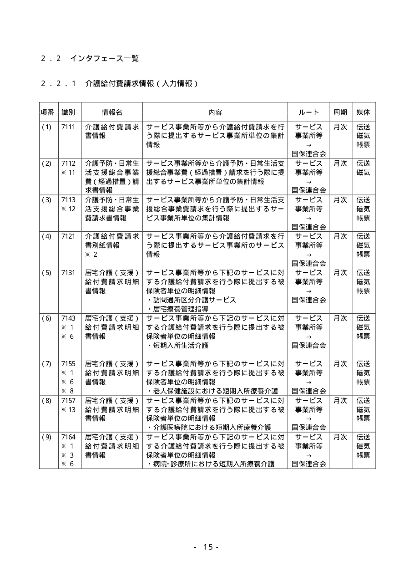
claude-haiku-5-5
- [改ページ] p35→p36 の連続性 OK
- テキストレイヤに見つからないセル: 9 個（赤枠）
表1 interface_list２．２．１ 介護給付費請求情報（入力情報） 次頁へ続く
| 項番 | 項目名 | 属性 | 桁数 | 内容 | 必須 | 備考 |
|---|---|---|---|---|---|---|
| (1) | 介護給付費請求書情報 | サービス事業所等から介護給付費請求を行う際に提出するサービス事業所単位の集計情報 | 識別: 7111 / ルート: サービス事業所等→国保連合会 / 周期: 月次 / 媒体: 伝送 磁気 帳票 | |||
| (2) | 介護予防・日常生活支援総合事業費（経過措置）請求書情報 | サービス事業所等から介護予防・日常生活支援総合事業費（経過措置）請求を行う際に提出するサービス事業所単位の集計情報 | 識別: 7112 ※ 11 / ルート: サービス事業所等→国保連合会 / 周期: 月次 / 媒体: 伝送 磁気 | |||
| (3) | 介護予防・日常生活支援総合事業費請求書情報 | サービス事業所等から介護予防・日常生活支援総合事業費請求を行う際に提出するサービス事業所単位の集計情報 | 識別: 7113 ※ 12 / ルート: サービス事業所等→国保連合会 / 周期: 月次 / 媒体: 伝送 磁気 帳票 | |||
| (4) | 介護給付費請求書別紙情報 ※ 2 | サービス事業所等から介護給付費請求を行う際に提出するサービス事業所のサービス情報 | 識別: 7121 / ルート: サービス事業所等→国保連合会 / 周期: 月次 / 媒体: 伝送 磁気 帳票 | |||
| (5) | 居宅介護（支援）給付費請求明細書情報 | サービス事業所等から下記のサービスに対する介護給付費請求を行う際に提出する被保険者単位の明細情報 ・訪問通所区分介護サービス ・居宅療養管理指導 | 識別: 7131 / ルート: サービス事業所等→国保連合会 / 周期: 月次 / 媒体: 伝送 磁気 帳票 | |||
| (6) | 居宅介護（支援）給付費請求明細書情報 | サービス事業所等から下記のサービスに対する介護給付費請求を行う際に提出する被保険者単位の明細情報 ・短期入所生活介護 | 識別: 7143 ※ 1 ※ 6 / ルート: サービス事業所等→国保連合会 / 周期: 月次 / 媒体: 伝送 磁気 帳票 | |||
| (7) | 居宅介護（支援）給付費請求明細書情報 | サービス事業所等から下記のサービスに対する介護給付費請求を行う際に提出する被保険者単位の明細情報 ・老人保健施設における短期入所療養介護 | 識別: 7155 ※ 1 ※ 6 ※ 8 / ルート: サービス事業所等→国保連合会 / 周期: 月次 / 媒体: 伝送 磁気 帳票 | |||
| (8) | 居宅介護（支援）給付費請求明細書情報 | サービス事業所等から下記のサービスに対する介護給付費請求を行う際に提出する被保険者単位の明細情報 ・介護医療院における短期入所療養介護 | 識別: 7157 ※ 13 / ルート: サービス事業所等→国保連合会 / 周期: 月次 / 媒体: 伝送 磁気 帳票 | |||
| (9) | 居宅介護（支援）給付費請求明細書情報 | サービス事業所等から下記のサービスに対する介護給付費請求を行う際に提出する被保険者単位の明細情報 ・病院･診療所における短期入所療養介護 | 識別: 7164 ※ 1 ※ 3 ※ 6 / ルート: サービス事業所等→国保連合会 / 周期: 月次 / 媒体: 伝送 磁気 帳票 |
uncertain（モデル自己申告）
- 添付ページの印字ページ番号は「- 15 -」で、依頼の PDF 上のページ 35 と一致しない。添付された1ページ（印字 15 ページ）の表を書き起こした。
- 依頼文は「次のページ」の表を求めているが、添付は1ページのみで、そのページの表を書き起こした。
- 本表は interface_list のため、識別・ルート・周期・媒体の各列はスキーマに対応する項目がないので、note に「列名: 値」の形で入れた。
- 識別欄や情報名欄の ※ 1, ※ 2, ※ 3, ※ 6, ※ 8, ※ 11, ※ 12, ※ 13 は本ページに注記本文がないため、footnotes は空とした。
- 「病院･診療所」の中点は原文の字形が判別しにくく、原文の記号をそのまま写したか確信がない。
- ルートの「サービス事業所等 → 国保連合会」は、セル内の折り返しを詰めて「サービス事業所等→国保連合会」とした。
claude-sonnet-5-5
- [改ページ] p35→p36 の連続性 OK
- テキストレイヤに見つからないセル: 9 個（赤枠）
表1 interface_list2.2.1 介護給付費請求情報（入力情報） 次頁へ続く
| 項番 | 項目名 | 属性 | 桁数 | 内容 | 必須 | 備考 |
|---|---|---|---|---|---|---|
| (1) | 介護給付費請求書情報 | サービス事業所等から介護給付費請求を行う際に提出するサービス事業所単位の集計情報 識別: 7111 ルート: サービス事業所等→国保連合会 周期: 月次 媒体: 伝送 磁気 帳票 | ||||
| (2) | 介護予防・日常生活支援総合事業費（経過措置）請求書情報 | サービス事業所等から介護予防・日常生活支援総合事業費（経過措置）請求を行う際に提出するサービス事業所単位の集計情報 識別: 7112 ※11 ルート: サービス事業所等→国保連合会 周期: 月次 媒体: 伝送 磁気 | ||||
| (3) | 介護予防・日常生活支援総合事業費請求書情報 | サービス事業所等から介護予防・日常生活支援総合事業費請求を行う際に提出するサービス事業所単位の集計情報 識別: 7113 ※12 ルート: サービス事業所等→国保連合会 周期: 月次 媒体: 伝送 磁気 帳票 | ||||
| (4) | 介護給付費請求書別紙情報 ※2 | サービス事業所等から介護給付費請求を行う際に提出するサービス事業所のサービス情報 識別: 7121 ルート: サービス事業所等→国保連合会 周期: 月次 媒体: 伝送 磁気 帳票 | ||||
| (5) | 居宅介護（支援）給付費請求明細書情報 | サービス事業所等から下記のサービスに対する介護給付費請求を行う際に提出する被保険者単位の明細情報 ・訪問通所区分介護サービス ・居宅療養管理指導 識別: 7131 ルート: サービス事業所等→国保連合会 周期: 月次 媒体: 伝送 磁気 帳票 | ||||
| (6) | 居宅介護（支援）給付費請求明細書情報 | サービス事業所等から下記のサービスに対する介護給付費請求を行う際に提出する被保険者単位の明細情報 ・短期入所生活介護 識別: 7143 ※1 ※6 ルート: サービス事業所等→国保連合会 周期: 月次 媒体: 伝送 磁気 帳票 | ||||
| (7) | 居宅介護（支援）給付費請求明細書情報 | サービス事業所等から下記のサービスに対する介護給付費請求を行う際に提出する被保険者単位の明細情報 ・老人保健施設における短期入所療養介護 識別: 7155 ※1 ※6 ※8 ルート: サービス事業所等→国保連合会 周期: 月次 媒体: 伝送 磁気 帳票 | ||||
| (8) | 居宅介護（支援）給付費請求明細書情報 | サービス事業所等から下記のサービスに対する介護給付費請求を行う際に提出する被保険者単位の明細情報 ・介護医療院における短期入所療養介護 識別: 7157 ※13 ルート: サービス事業所等→国保連合会 周期: 月次 媒体: 伝送 磁気 帳票 | ||||
| (9) | 居宅介護（支援）給付費請求明細書情報 | サービス事業所等から下記のサービスに対する介護給付費請求を行う際に提出する被保険者単位の明細情報 ・病院･診療所における短期入所療養介護 識別: 7164 ※1 ※3 ※6 ルート: サービス事業所等→国保連合会 周期: 月次 媒体: 伝送 磁気 帳票 |
uncertain（モデル自己申告）
- 識別・ルート・周期・媒体は独立した列だが、items のスキーマに専用フィールドがないため content 末尾に併記した
- 情報名は name_path に入れた（折り返しを詰めて記載）
kaigo_jigyosho_r0604_p36 — 印字p.
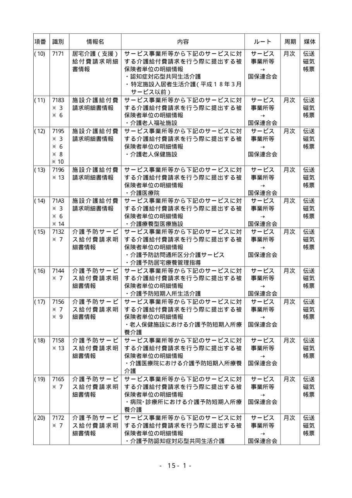
claude-haiku-5-5
- 表1 項番10 必須（識別）の値が想定外: '7171'
- 表1 項番10 必須（ルート）の値が想定外: 'サービス事業所等\n→\n国保連合会'
- 表1 項番10 必須（周期）の値が想定外: '月次'
- 表1 項番10 必須（媒体）の値が想定外: '伝送\n磁気\n帳票'
- 表1 項番11 必須（識別）の値が想定外: '7183 ※3 ※6'
- 表1 項番11 必須（ルート）の値が想定外: 'サービス事業所等\n→\n国保連合会'
- 表1 項番11 必須（周期）の値が想定外: '月次'
- 表1 項番11 必須（媒体）の値が想定外: '伝送\n磁気\n帳票'
- 表1 項番12 必須（識別）の値が想定外: '7195 ※3 ※6 ※8 ※10'
- 表1 項番12 必須（ルート）の値が想定外: 'サービス事業所等\n→\n国保連合会'
- 表1 項番12 必須（周期）の値が想定外: '月次'
- 表1 項番12 必須（媒体）の値が想定外: '伝送\n磁気\n帳票'
- 表1 項番13 必須（識別）の値が想定外: '7196 ※13'
- 表1 項番13 必須（ルート）の値が想定外: 'サービス事業所等\n→\n国保連合会'
- 表1 項番13 必須（周期）の値が想定外: '月次'
- 表1 項番13 必須（媒体）の値が想定外: '伝送\n磁気\n帳票'
- 表1 項番14 必須（識別）の値が想定外: '71A3 ※3 ※6 ※14'
- 表1 項番14 必須（ルート）の値が想定外: 'サービス事業所等\n→\n国保連合会'
- 表1 項番14 必須（周期）の値が想定外: '月次'
- 表1 項番14 必須（媒体）の値が想定外: '伝送\n磁気\n帳票'
- 表1 項番15 必須（識別）の値が想定外: '7132 ※7'
- 表1 項番15 必須（ルート）の値が想定外: 'サービス事業所等\n→\n国保連合会'
- 表1 項番15 必須（周期）の値が想定外: '月次'
- 表1 項番15 必須（媒体）の値が想定外: '伝送\n磁気\n帳票'
- 表1 項番16 必須（識別）の値が想定外: '7144 ※7'
- 表1 項番16 必須（ルート）の値が想定外: 'サービス事業所等\n→\n国保連合会'
- 表1 項番16 必須（周期）の値が想定外: '月次'
- 表1 項番16 必須（媒体）の値が想定外: '伝送\n磁気\n帳票'
- 表1 項番17 必須（識別）の値が想定外: '7156 ※7 ※9'
- 表1 項番17 必須（ルート）の値が想定外: 'サービス事業所等\n→\n国保連合会'
- 表1 項番17 必須（周期）の値が想定外: '月次'
- 表1 項番17 必須（媒体）の値が想定外: '伝送\n磁気\n帳票'
- 表1 項番18 必須（識別）の値が想定外: '7158 ※13'
- 表1 項番18 必須（ルート）の値が想定外: 'サービス事業所等\n→\n国保連合会'
- 表1 項番18 必須（周期）の値が想定外: '月次'
- 表1 項番18 必須（媒体）の値が想定外: '伝送\n磁気\n帳票'
- 表1 項番19 必須（識別）の値が想定外: '7165 ※7'
- 表1 項番19 必須（ルート）の値が想定外: 'サービス事業所等\n→\n国保連合会'
- 表1 項番19 必須（周期）の値が想定外: '月次'
- 表1 項番19 必須（媒体）の値が想定外: '伝送\n磁気\n帳票'
- 表1 項番20 必須（識別）の値が想定外: '7172 ※7'
- 表1 項番20 必須（ルート）の値が想定外: 'サービス事業所等\n→\n国保連合会'
- 表1 項番20 必須（周期）の値が想定外: '月次'
- 表1 項番20 必須（媒体）の値が想定外: '伝送\n磁気\n帳票'
- [改ページ] p36→p37 の連続性 OK
表1 interface_list 前頁から続く次頁へ続く
| 項番 | 項目名 | 属性 | 桁数 | 内容 | 必須 | 備考 |
|---|---|---|---|---|---|---|
| (10) | 居宅介護(支援)給付費請求明細書情報 | サービス事業所等から下記のサービスに対する介護給付費請求を行う際に提出する被保険者単位の明細情報 ・認知症対応型共同生活介護 ・特定施設入居者生活介護(平成１８年３月サービス以前) | 識別:7171 ルート:サービス事業所等 → 国保連合会 周期:月次 媒体:伝送 磁気 帳票 | |||
| (11) | 施設介護給付費請求明細書情報 | サービス事業所等から下記のサービスに対する介護給付費請求を行う際に提出する被保険者単位の明細情報 ・介護老人福祉施設 | 識別:7183 ※3 ※6 ルート:サービス事業所等 → 国保連合会 周期:月次 媒体:伝送 磁気 帳票 | |||
| (12) | 施設介護給付費請求明細書情報 | サービス事業所等から下記のサービスに対する介護給付費請求を行う際に提出する被保険者単位の明細情報 ・介護老人保健施設 | 識別:7195 ※3 ※6 ※8 ※10 ルート:サービス事業所等 → 国保連合会 周期:月次 媒体:伝送 磁気 帳票 | |||
| (13) | 施設介護給付費請求明細書情報 | サービス事業所等から下記のサービスに対する介護給付費請求を行う際に提出する被保険者単位の明細情報 ・介護医療院 | 識別:7196 ※13 ルート:サービス事業所等 → 国保連合会 周期:月次 媒体:伝送 磁気 帳票 | |||
| (14) | 施設介護給付費請求明細書情報 | サービス事業所等から下記のサービスに対する介護給付費請求を行う際に提出する被保険者単位の明細情報 ・介護療養型医療施設 | 識別:71A3 ※3 ※6 ※14 ルート:サービス事業所等 → 国保連合会 周期:月次 媒体:伝送 磁気 帳票 | |||
| (15) | 介護予防サービス給付費請求明細書情報 | サービス事業所等から下記のサービスに対する介護給付費請求を行う際に提出する被保険者単位の明細情報 ・介護予防訪問通所区分介護サービス ・介護予防居宅療養管理指導 | 識別:7132 ※7 ルート:サービス事業所等 → 国保連合会 周期:月次 媒体:伝送 磁気 帳票 | |||
| (16) | 介護予防サービス給付費請求明細書情報 | サービス事業所等から下記のサービスに対する介護給付費請求を行う際に提出する被保険者単位の明細情報 ・介護予防短期入所生活介護 | 識別:7144 ※7 ルート:サービス事業所等 → 国保連合会 周期:月次 媒体:伝送 磁気 帳票 | |||
| (17) | 介護予防サービス給付費請求明細書情報 | サービス事業所等から下記のサービスに対する介護給付費請求を行う際に提出する被保険者単位の明細情報 ・老人保健施設における介護予防短期入所療養介護 | 識別:7156 ※7 ※9 ルート:サービス事業所等 → 国保連合会 周期:月次 媒体:伝送 磁気 帳票 | |||
| (18) | 介護予防サービス給付費請求明細書情報 | サービス事業所等から下記のサービスに対する介護給付費請求を行う際に提出する被保険者単位の明細情報 ・介護医療院における介護予防短期入所療養介護 | 識別:7158 ※13 ルート:サービス事業所等 → 国保連合会 周期:月次 媒体:伝送 磁気 帳票 | |||
| (19) | 介護予防サービス給付費請求明細書情報 | サービス事業所等から下記のサービスに対する介護給付費請求を行う際に提出する被保険者単位の明細情報 ・病院･診療所における介護予防短期入所療養介護 | 識別:7165 ※7 ルート:サービス事業所等 → 国保連合会 周期:月次 媒体:伝送 磁気 帳票 | |||
| (20) | 介護予防サービス給付費請求明細書情報 | サービス事業所等から下記のサービスに対する介護給付費請求を行う際に提出する被保険者単位の明細情報 ・介護予防認知症対応型共同生活介護 | 識別:7172 ※7 ルート:サービス事業所等 → 国保連合会 周期:月次 媒体:伝送 磁気 帳票 |
uncertain（モデル自己申告）
- この表は項番・識別・情報名・内容・ルート・周期・媒体の列からなるインタフェース一覧で、スキーマの項目（type・length・required 等）に直接対応しないため、識別・ルート・周期・媒体の値は required_by に列名付きで格納した。
- ※3・※6・※7などの記号は本ページに注記本文がないため footnotes は空にした。
- 表の見出しがなく前ページからの続きと判断したが、項番(9)以前の行は本ページにない。
- 最終行(20)の下で表が閉じているが、次ページに(21)以降が続くかは本ページからは確定できない。
- 媒体列の「伝送」「磁気」「帳票」は改行で区切られて表示されているため、改行区切りのまま記録した。
claude-sonnet-5-5
- [改ページ] p36→p37 の連続性 OK
- テキストレイヤに見つからないセル: 11 個（赤枠）
表1 interface_list 前頁から続く次頁へ続く
| 項番 | 項目名 | 属性 | 桁数 | 内容 | 必須 | 備考 |
|---|---|---|---|---|---|---|
| ( 10) | 居宅介護(支援)給付費請求明細書情報 | サービス事業所等から下記のサービスに対する介護給付費請求を行う際に提出する被保険者単位の明細情報 ・認知症対応型共同生活介護 ・特定施設入居者生活介護(平成１８年３月サービス以前) | 識別: 7171 / ルート: サービス事業所等→国保連合会 / 周期: 月次 / 媒体: 伝送 磁気 帳票 | |||
| ( 11) | 施設介護給付費請求明細書情報 | サービス事業所等から下記のサービスに対する介護給付費請求を行う際に提出する被保険者単位の明細情報 ・介護老人福祉施設 | 識別: 7183 ※3 ※6 / ルート: サービス事業所等→国保連合会 / 周期: 月次 / 媒体: 伝送 磁気 帳票 | |||
| ( 12) | 施設介護給付費請求明細書情報 | サービス事業所等から下記のサービスに対する介護給付費請求を行う際に提出する被保険者単位の明細情報 ・介護老人保健施設 | 識別: 7195 ※3 ※6 ※8 ※10 / ルート: サービス事業所等→国保連合会 / 周期: 月次 / 媒体: 伝送 磁気 帳票 | |||
| ( 13) | 施設介護給付費請求明細書情報 | サービス事業所等から下記のサービスに対する介護給付費請求を行う際に提出する被保険者単位の明細情報 ・介護医療院 | 識別: 7196 ※13 / ルート: サービス事業所等→国保連合会 / 周期: 月次 / 媒体: 伝送 磁気 帳票 | |||
| ( 14) | 施設介護給付費請求明細書情報 | サービス事業所等から下記のサービスに対する介護給付費請求を行う際に提出する被保険者単位の明細情報 ・介護療養型医療施設 | 識別: 71A3 ※3 ※6 ※14 / ルート: サービス事業所等→国保連合会 / 周期: 月次 / 媒体: 伝送 磁気 帳票 | |||
| ( 15) | 介護予防サービス給付費請求明細書情報 | サービス事業所等から下記のサービスに対する介護給付費請求を行う際に提出する被保険者単位の明細情報 ・介護予防訪問通所区分介護サービス ・介護予防居宅療養管理指導 | 識別: 7132 ※7 / ルート: サービス事業所等→国保連合会 / 周期: 月次 / 媒体: 伝送 磁気 帳票 | |||
| ( 16) | 介護予防サービス給付費請求明細書情報 | サービス事業所等から下記のサービスに対する介護給付費請求を行う際に提出する被保険者単位の明細情報 ・介護予防短期入所生活介護 | 識別: 7144 ※7 / ルート: サービス事業所等→国保連合会 / 周期: 月次 / 媒体: 伝送 磁気 帳票 | |||
| ( 17) | 介護予防サービス給付費請求明細書情報 | サービス事業所等から下記のサービスに対する介護給付費請求を行う際に提出する被保険者単位の明細情報 ・老人保健施設における介護予防短期入所療養介護 | 識別: 7156 ※7 ※9 / ルート: サービス事業所等→国保連合会 / 周期: 月次 / 媒体: 伝送 磁気 帳票 | |||
| ( 18) | 介護予防サービス給付費請求明細書情報 | サービス事業所等から下記のサービスに対する介護給付費請求を行う際に提出する被保険者単位の明細情報 ・介護医療院における介護予防短期入所療養介護 | 識別: 7158 ※13 / ルート: サービス事業所等→国保連合会 / 周期: 月次 / 媒体: 伝送 磁気 帳票 | |||
| ( 19) | 介護予防サービス給付費請求明細書情報 | サービス事業所等から下記のサービスに対する介護給付費請求を行う際に提出する被保険者単位の明細情報 ・病院･診療所における介護予防短期入所療養介護 | 識別: 7165 ※7 / ルート: サービス事業所等→国保連合会 / 周期: 月次 / 媒体: 伝送 磁気 帳票 | |||
| ( 20) | 介護予防サービス給付費請求明細書情報 | サービス事業所等から下記のサービスに対する介護給付費請求を行う際に提出する被保険者単位の明細情報 ・介護予防認知症対応型共同生活介護 | 識別: 7172 ※7 / ルート: サービス事業所等→国保連合会 / 周期: 月次 / 媒体: 伝送 磁気 帳票 |
uncertain（モデル自己申告）
- 表の先頭は前ページからの続き（項番10から開始）
- 識別・ルート・周期・媒体は専用のitemフィールドがないためnoteにまとめて記載した
- 情報名は専用フィールドがないためname_pathに入れた
kaigo_jigyosho_r0604_p37 — 印字p.
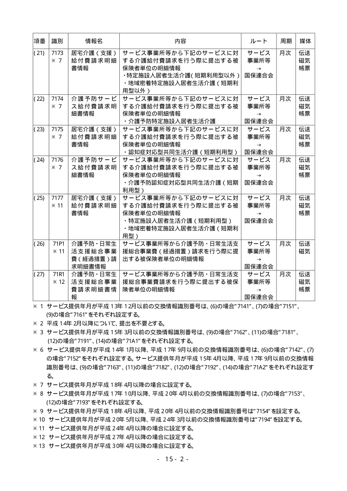
claude-haiku-5-5
- テキストレイヤに見つからないセル: 7 個（赤枠）
表1 interface_list 前頁から続く
| 項番 | 項目名 | 属性 | 桁数 | 内容 | 必須 | 備考 |
|---|---|---|---|---|---|---|
| (21) | 居宅介護（支援）給付費請求明細書情報 | サービス事業所等から下記のサービスに対する介護給付費請求を行う際に提出する被保険者単位の明細情報 ・特定施設入居者生活介護(短期利用型以外) ・地域密着特定施設入居者生活介護(短期利用型以外) | 識別: 7173※7; ルート: サービス事業所等→国保連合会; 周期: 月次; 媒体: 伝送磁気帳票 | |||
| (22) | 介護予防サービス給付費請求明細書情報 | サービス事業所等から下記のサービスに対する介護給付費請求を行う際に提出する被保険者単位の明細情報 ・介護予防特定施設入居者生活介護 | 識別: 7174※7; ルート: サービス事業所等→国保連合会; 周期: 月次; 媒体: 伝送磁気帳票 | |||
| (23) | 居宅介護（支援）給付費請求明細書情報 | サービス事業所等から下記のサービスに対する介護給付費請求を行う際に提出する被保険者単位の明細情報 ・認知症対応型共同生活介護(短期利用型) | 識別: 7175※7; ルート: サービス事業所等→国保連合会; 周期: 月次; 媒体: 伝送磁気帳票 | |||
| (24) | 介護予防サービス給付費請求明細書情報 | サービス事業所等から下記のサービスに対する介護給付費請求を行う際に提出する被保険者単位の明細情報 ・介護予防認知症対応型共同生活介護(短期利用型) | 識別: 7176※7; ルート: サービス事業所等→国保連合会; 周期: 月次; 媒体: 伝送磁気帳票 | |||
| (25) | 居宅介護（支援）給付費請求明細書情報 | サービス事業所等から下記のサービスに対する介護給付費請求を行う際に提出する被保険者単位の明細情報 ・特定施設入居者生活介護(短期利用型) ・地域密着特定施設入居者生活介護(短期利用型) | 識別: 7177※11; ルート: サービス事業所等→国保連合会; 周期: 月次; 媒体: 伝送磁気帳票 | |||
| (26) | 介護予防・日常生活支援総合事業費（経過措置）請求明細書情報 | サービス事業所等から介護予防・日常生活支援総合事業費（経過措置）請求を行う際に提出する被保険者単位の明細情報 | 識別: 71P1※11; ルート: サービス事業所等→国保連合会; 周期: 月次; 媒体: 伝送磁気 | |||
| (27) | 介護予防・日常生活支援総合事業費請求明細書情報 | サービス事業所等から介護予防・日常生活支援総合事業費請求を行う際に提出する被保険者単位の明細情報 | 識別: 71R1※12; ルート: サービス事業所等→国保連合会; 周期: 月次; 媒体: 伝送磁気帳票 |
注記
- ※1 サービス提供年月が平成13年12月以前の交換情報識別番号は、(6)の場合"7141"、(7)の場合"7151"、(9)の場合"7161"をそれぞれ設定する。
- ※2 平成14年2月以降について、提出を不要とする。
- ※3 サービス提供年月が平成15年3月以前の交換情報識別番号は、(9)の場合"7162"、(11)の場合"7181"、(12)の場合"7191"、(14)の場合"71A1"をそれぞれ設定する。
- ※6 サービス提供年月が平成14年1月以降、平成17年9月以前の交換情報識別番号は、(6)の場合"7142"、(7)の場合"7152"をそれぞれ設定する。サービス提供年月が平成15年4月以降、平成17年9月以前の交換情報識別番号は、(9)の場合"7163"、(11)の場合"7182"、(12)の場合"7192"、(14)の場合"71A2"をそれぞれ設定する。
- ※7 サービス提供年月が平成18年4月以降の場合に設定する。
- ※8 サービス提供年月が平成17年10月以降、平成20年4月以前の交換情報識別番号は、(7)の場合"7153"、(12)の場合"7193"をそれぞれ設定する。
- ※9 サービス提供年月が平成18年4月以降、平成20年4月以前の交換情報識別番号は"7154"を設定する。
- ※10 サービス提供年月が平成20年5月以降、平成24年3月以前の交換情報識別番号は"7194"を設定する。
- ※11 サービス提供年月が平成24年4月以降の場合に設定する。
- ※12 サービス提供年月が平成27年4月以降の場合に設定する。
- ※13 サービス提供年月が平成30年4月以降の場合に設定する。
uncertain（モデル自己申告）
- 表の列「ルート」「周期」「媒体」は interface_list 用の項目がスキーマにないため、各 item の note に「識別」「ルート」「周期」「媒体」の値をラベル付きで格納した。
- identification 列の「※7」等は、識別番号の脚注記号として note に含めた。
- 表は1ページ内で完結して見えるが、次ページに項番(28)以降が続くかは判断できないため continues_to_next_page は false とした。
claude-sonnet-5-5
- テキストレイヤに見つからないセル: 7 個（赤枠）
表1 interface_list 前頁から続く
| 項番 | 項目名 | 属性 | 桁数 | 内容 | 必須 | 備考 |
|---|---|---|---|---|---|---|
| ( 21) | 居宅介護(支援)給付費請求明細書情報 | サービス事業所等から下記のサービスに対する介護給付費請求を行う際に提出する被保険者単位の明細情報 ・特定施設入居者生活介護(短期利用型以外) ・地域密着特定施設入居者生活介護(短期利用型以外) | 識別: 7173 ※ 7 / ルート: サービス事業所等→国保連合会 / 周期: 月次 / 媒体: 伝送 磁気 帳票 | |||
| ( 22) | 介護予防サービス給付費請求明細書情報 | サービス事業所等から下記のサービスに対する介護給付費請求を行う際に提出する被保険者単位の明細情報 ・介護予防特定施設入居者生活介護 | 識別: 7174 ※ 7 / ルート: サービス事業所等→国保連合会 / 周期: 月次 / 媒体: 伝送 磁気 帳票 | |||
| ( 23) | 居宅介護(支援)給付費請求明細書情報 | サービス事業所等から下記のサービスに対する介護給付費請求を行う際に提出する被保険者単位の明細情報 ・認知症対応型共同生活介護(短期利用型) | 識別: 7175 ※ 7 / ルート: サービス事業所等→国保連合会 / 周期: 月次 / 媒体: 伝送 磁気 帳票 | |||
| ( 24) | 介護予防サービス給付費請求明細書情報 | サービス事業所等から下記のサービスに対する介護給付費請求を行う際に提出する被保険者単位の明細情報 ・介護予防認知症対応型共同生活介護(短期利用型) | 識別: 7176 ※ 7 / ルート: サービス事業所等→国保連合会 / 周期: 月次 / 媒体: 伝送 磁気 帳票 | |||
| ( 25) | 居宅介護(支援)給付費請求明細書情報 | サービス事業所等から下記のサービスに対する介護給付費請求を行う際に提出する被保険者単位の明細情報 ・特定施設入居者生活介護(短期利用型) ・地域密着特定施設入居者生活介護(短期利用型) | 識別: 7177 ※ 11 / ルート: サービス事業所等→国保連合会 / 周期: 月次 / 媒体: 伝送 磁気 帳票 | |||
| ( 26) | 介護予防・日常生活支援総合事業費(経過措置)請求明細書情報 | サービス事業所等から介護予防・日常生活支援総合事業費(経過措置)請求を行う際に提出する被保険者単位の明細情報 | 識別: 71P1 ※ 11 / ルート: サービス事業所等→国保連合会 / 周期: 月次 / 媒体: 伝送 磁気 | |||
| ( 27) | 介護予防・日常生活支援総合事業費請求明細書情報 | サービス事業所等から介護予防・日常生活支援総合事業費請求を行う際に提出する被保険者単位の明細情報 | 識別: 71R1 ※ 12 / ルート: サービス事業所等→国保連合会 / 周期: 月次 / 媒体: 伝送 磁気 帳票 |
注記
- ※ 1 サービス提供年月が平成13年12月以前の交換情報識別番号は、(6)の場合”7141”、(7)の場合”7151”、(9)の場合”7161”をそれぞれ設定する。
- ※ 2 平成14年2月以降について、提出を不要とする。
- ※ 3 サービス提供年月が平成15年3月以前の交換情報識別番号は、(9)の場合”7162”、(11)の場合”7181”、(12)の場合”7191”、(14)の場合”71A1”をそれぞれ設定する。
- ※ 6 サービス提供年月が平成14年1月以降、平成17年9月以前の交換情報識別番号は、(6)の場合”7142”、(7)の場合”7152”をそれぞれ設定する。サービス提供年月が平成15年4月以降、平成17年9月以前の交換情報識別番号は、(9)の場合”7163”、(11)の場合”7182”、(12)の場合”7192”、(14)の場合”71A2”をそれぞれ設定する。
- ※ 7 サービス提供年月が平成18年4月以降の場合に設定する。
- ※ 8 サービス提供年月が平成17年10月以降、平成20年4月以前の交換情報識別番号は、(7)の場合”7153”、(12)の場合”7193”をそれぞれ設定する。
- ※ 9 サービス提供年月が平成18年4月以降、平成20年4月以前の交換情報識別番号は”7154”を設定する。
- ※ 10 サービス提供年月が平成20年5月以降、平成24年3月以前の交換情報識別番号は”7194”を設定する。
- ※ 11 サービス提供年月が平成24年4月以降の場合に設定する。
- ※ 12 サービス提供年月が平成27年4月以降の場合に設定する。
- ※ 13 サービス提供年月が平成30年4月以降の場合に設定する。
uncertain（モデル自己申告）
- 表の列(識別・ルート・周期・媒体)は items のフィールドに対応先がないため note にまとめて記載した
- 情報名は name_path に入れた
kaigo_jigyosho_r0604_p38 — 印字p.

claude-haiku-5-5
- 表1 項番が整数でない行が 8 行
- 表1 必須（受付媒体種別 > 伝送）の値が想定外: '○ ※ 4'
- 表1 必須（受付媒体種別 > 磁気）の値が想定外: '○ ※ 4'
- 表1 必須（受付媒体種別 > 帳票）の値が想定外: '◎ ※ 4'
- 表1 必須（受付媒体種別 > 伝送）の値が想定外: '× ※ 5'
- 表1 必須（受付媒体種別 > 磁気）の値が想定外: '× ※ 5'
- 表1 必須（受付媒体種別 > 帳票）の値が想定外: '× ※ 5'
- 表1 必須（受付媒体種別 > 帳票）の値が想定外: '[図]'
- 表1 必須（受付媒体種別 > 帳票）の値が想定外: '[図]'
- 表3 項番が整数でない行が 1 行
- テキストレイヤに見つからないセル: 1 個（赤枠）
表1 required_matrix
| 項番 | 項目名 | 属性 | 桁数 | 内容 | 必須 | 備考 |
|---|---|---|---|---|---|---|
| 介護給付費請求書 > 介護給付費請求書 | 受付媒体種別 > 伝送:○ 受付媒体種別 > 磁気:○ 受付媒体種別 > 帳票:◎ | |||||
| 介護給付費請求書 > 介護給付費請求書別紙 | 受付媒体種別 > 伝送:○ ※ 4 受付媒体種別 > 磁気:○ ※ 4 受付媒体種別 > 帳票:◎ ※ 4 | |||||
| 介護給付費請求書 > 介護給付費請求書別紙 | 受付媒体種別 > 伝送:× ※ 5 受付媒体種別 > 磁気:× ※ 5 受付媒体種別 > 帳票:× ※ 5 | |||||
| 介護給付費請求書 > 介護給付費明細書 | 受付媒体種別 > 伝送:○ 受付媒体種別 > 磁気:○ 受付媒体種別 > 帳票:◎ | |||||
| 介護予防・日常生活支援総合事業費（経過措置）請求書 > 介護予防・日常生活支援総合事業費（経過措置）請求書 | 受付媒体種別 > 伝送:○ 受付媒体種別 > 磁気:○ 受付媒体種別 > 帳票:[図] | |||||
| 介護予防・日常生活支援総合事業費（経過措置）請求書 > 介護予防・日常生活支援総合事業費（経過措置）請求明細書 | 受付媒体種別 > 伝送:○ 受付媒体種別 > 磁気:○ 受付媒体種別 > 帳票:[図] | |||||
| 介護予防・日常生活支援総合事業費請求書 > 介護予防・日常生活支援総合事業費請求書 | 受付媒体種別 > 伝送:○ 受付媒体種別 > 磁気:○ 受付媒体種別 > 帳票:◎ | |||||
| 介護予防・日常生活支援総合事業費請求書 > 介護予防・日常生活支援総合事業費請求明細書 | 受付媒体種別 > 伝送:○ 受付媒体種別 > 磁気:○ 受付媒体種別 > 帳票:◎ |
表2 interface_list２．２．２ 再審査・過誤申立情報（入力情報）
| 項番 | 項目名 | 属性 | 桁数 | 内容 | 必須 | 備考 |
|---|---|---|---|---|---|---|
| (1) | 介護給付費再審査申立書情報 | 再審査を申し立てるための理由と対象とする給付実績を特定するための情報を記載した帳票 | 識別: 71B2 ※1 / ルート: サービス事業所等 → 国保連合会 / 周期: 月次 / 媒体: 伝送 磁気 帳票 |
表3 required_matrix
| 項番 | 項目名 | 属性 | 桁数 | 内容 | 必須 | 備考 |
|---|---|---|---|---|---|---|
| 再審査・過誤申立書 > 介護給付費再審査申立書 | 受付媒体種別 > 伝送:○ 受付媒体種別 > 磁気:○ 受付媒体種別 > 帳票:◎ |
注記
- ※14 サービス提供年月が平成17年10月以降、令和6年3月以前の場合に設定する。
- ※4 平成14年1月以前の場合
- ※5 平成14年2月以降の場合
- ○ … 必須、× … 不要、◎ … 必須かつ紙媒体受付の際の入力対象
- ※1 サービス提供年月が平成15年3月以前の交換情報識別番号は、"71B1"を設定する。
- ○ … 必須、× … 不要、◎ … 必須かつ紙媒体受付の際の入力対象
uncertain（モデル自己申告）
- 1つ目の表の「◎」は原文の記号が小さく、◎ として書き起こした。
- 介護予防・日常生活支援総合事業費（経過措置）請求書の帳票欄2行の斜線（セル内の図）は [図] と記載した。
- 2.2.2の表の識別・ルート・周期・媒体は、スキーマに対応する項目がないため、識別は record.exchange_id、ルート・周期・媒体は note に入れた。
- 1つ目の表の種別・帳票名は縦結合セルのため、結合範囲の各行に同じ名称を入れた。
claude-sonnet-5-5
- 表1 項番が整数でない行が 8 行
- 表1 必須（伝送）の値が想定外: '○ ※ 4'
- 表1 必須（磁気）の値が想定外: '○ ※ 4'
- 表1 必須（帳票）の値が想定外: '◎ ※ 4'
- 表1 必須（伝送）の値が想定外: '× ※ 5'
- 表1 必須（磁気）の値が想定外: '× ※ 5'
- 表1 必須（帳票）の値が想定外: '× ※ 5'
- 表3 項番が整数でない行が 1 行
- テキストレイヤに見つからないセル: 1 個（赤枠）
表1 required_matrix
| 項番 | 項目名 | 属性 | 桁数 | 内容 | 必須 | 備考 |
|---|---|---|---|---|---|---|
| 介護給付費請求書 > 介護給付費請求書 | 伝送:○ 磁気:○ 帳票:◎ | |||||
| 介護給付費請求書 > 介護給付費請求書別紙 | 伝送:○ ※ 4 磁気:○ ※ 4 帳票:◎ ※ 4 | |||||
| 介護給付費請求書 > 介護給付費請求書別紙 | 伝送:× ※ 5 磁気:× ※ 5 帳票:× ※ 5 | |||||
| 介護給付費請求書 > 介護給付費明細書 | 伝送:○ 磁気:○ 帳票:◎ | |||||
| 介護予防･日常生活支援総合事業費（経過措置）請求書 > 介護予防･日常生活支援総合事業費（経過措置）請求書 | 伝送:○ 磁気:○ 帳票:－ | |||||
| 介護予防･日常生活支援総合事業費（経過措置）請求書 > 介護予防･日常生活支援総合事業費（経過措置）請求明細書 | 伝送:○ 磁気:○ 帳票:－ | |||||
| 介護予防･日常生活支援総合事業費請求書 > 介護予防･日常生活支援総合事業費請求書 | 伝送:○ 磁気:○ 帳票:◎ | |||||
| 介護予防･日常生活支援総合事業費請求書 > 介護予防･日常生活支援総合事業費請求明細書 | 伝送:○ 磁気:○ 帳票:◎ |
表2 interface_list2.2.2 再審査・過誤申立情報（入力情報）
| 項番 | 項目名 | 属性 | 桁数 | 内容 | 必須 | 備考 |
|---|---|---|---|---|---|---|
| (1) | 介護給付費再審査申立書情報 | 再審査を申し立てるための理由と対象とする給付実績を特定するための情報を記載した帳票 | 識別: 71B2 ※ 1 ルート: サービス事業所等→国保連合会 周期: 月次 媒体: 伝送 磁気 帳票 |
表3 required_matrix
| 項番 | 項目名 | 属性 | 桁数 | 内容 | 必須 | 備考 |
|---|---|---|---|---|---|---|
| 再審査･過誤申立書 > 介護給付費再審査申立書 | 伝送:○ 磁気:○ 帳票:◎ |
注記
- ※14 サービス提供年月が平成17年10月以降、令和6年3月以前の場合に設定する。
- ○ … 必須、× … 不要、◎ … 必須かつ紙媒体受付の際の入力対象
- ※4 平成14年1月以前の場合
- ※5 平成14年2月以降の場合
- ※1 サービス提供年月が平成15年3月以前の交換情報識別番号は、”71B1”を設定する。
- ○ … 必須、× … 不要、◎ … 必須かつ紙媒体受付の際の入力対象
uncertain（モデル自己申告）
- 最初の表で「介護予防･日常生活支援総合事業費（経過措置）請求書」行の帳票列は斜線（図）で、値なしとした
- 2つ目の表（interface_list）の識別・ルート・周期・媒体は専用フィールドがないため note にまとめた
- 1つ目の表は前ページ末尾の※14の注記に続くため、見出しはあるが continued_from_prev_page は参考値
kaigo_jigyosho_r0604_p39 — 印字p.

claude-haiku-5-5
- 表1 項番1 項目名がPDFのセルと完全一致しない（部分一致のみ）: '介護保険審査決定増減表情報'
- 表1 項番4 項目名がPDFのセルと完全一致しない（部分一致のみ）: '介護保険審査増減単位数通知書情報'
- 表1 項番6 項目名がPDFのセルと完全一致しない（部分一致のみ）: '請求明細書・給付管理票返戻(保留)一覧表情報'
- 表1 項番7 項目名がPDFのセルと完全一致しない（部分一致のみ）: '介護予防・日常生活支援総合事業（経過措置）請求明細書返戻一覧表情報'
- テキストレイヤに見つからないセル: 8 個（赤枠）
表1 interface_list2．2．3 増減単位数返戻通知情報（出力情報）
| 項番 | 項目名 | 属性 | 桁数 | 内容 | 必須 | 備考 |
|---|---|---|---|---|---|---|
| (1) | 介護保険審査決定増減表情報 | 保険者ごとの請求差、返戻、査定増減、保留、保留復活分の状況をサービス事業所等へ通知するためのリスト | 識別: 7211 / ルート: 国保連合会→サービス事業所等 / 周期: 月次 / 媒体: 伝送、帳票 / 出力形式 CSV: ○ / 出力形式 帳票形式: ○ 汎用紙 A4ヨコ | |||
| (2) | 介護予防・日常生活支援総合事業（経過措置）審査決定増減表情報 | 介護予防・日常生活支援総合事業（経過措置）について、保険者ごとの請求差、返戻分の状況をサービス事業所等へ通知するためのリスト | 識別: 7221 ※1 / ルート: 国保連合会→サービス事業所等 / 周期: 月次 / 媒体: 伝送、帳票 / 出力形式 CSV: ○ / 出力形式 帳票形式: ○ 汎用紙 A4タテ | |||
| (3) | 介護予防・日常生活支援総合事業審査決定増減表情報 | 介護予防・日常生活支援総合事業について、保険者ごとの請求差、返戻分の状況をサービス事業所等へ通知するためのリスト | 識別: 7231 ※2 / ルート: 国保連合会→サービス事業所等 / 周期: 月次 / 媒体: 伝送、帳票 / 出力形式 CSV: ○ / 出力形式 帳票形式: ○ 汎用紙 A4ヨコ | |||
| (4) | 介護保険審査増減単位数通知書情報 | 審査により増減単位された請求明細書の内容及び審査結果内容をサービス事業所等へ通知するためのリスト | 識別: 7311 / ルート: 国保連合会→サービス事業所等 / 周期: 月次 / 媒体: 伝送、帳票 / 出力形式 CSV: ○ / 出力形式 帳票形式: ○ 汎用紙 A4ヨコ | |||
| (5) | 介護予防・日常生活支援総合事業審査増減単位数通知書情報 | 審査により増減単位された請求明細書の内容及び審査結果内容をサービス事業所等へ通知するためのリスト | 識別: 7321 ※2 / ルート: 国保連合会→サービス事業所等 / 周期: 月次 / 媒体: 伝送、帳票 / 出力形式 CSV: ○ / 出力形式 帳票形式: ○ 汎用紙 A4ヨコ | |||
| (6) | 請求明細書・給付管理票返戻(保留)一覧表情報 | 返戻（保留）する請求明細書を確認するためのリスト | 識別: 7411 / ルート: 国保連合会→サービス事業所等 / 周期: 月次 / 媒体: 伝送、帳票 / 出力形式 CSV: ○ / 出力形式 帳票形式: ○ 汎用紙 A4ヨコ | |||
| (7) | 介護予防・日常生活支援総合事業（経過措置）請求明細書返戻一覧表情報 | 返戻する介護予防・日常生活支援総合事業費（経過措置）請求明細書を確認するためのリスト | 識別: 7421 ※1 / ルート: 国保連合会→サービス事業所等 / 周期: 月次 / 媒体: 伝送、帳票 / 出力形式 CSV: ○ / 出力形式 帳票形式: ○ 汎用紙 A4ヨコ | |||
| (8) | 介護予防・日常生活支援総合事業請求明細書返戻（保留）一覧表情報 | 返戻（保留）する介護予防・日常生活支援総合事業費請求明細書を確認するためのリスト | 識別: 7431 ※2 / ルート: 国保連合会→サービス事業所等 / 周期: 月次 / 媒体: 伝送、帳票 / 出力形式 CSV: ○ / 出力形式 帳票形式: ○ 汎用紙 A4ヨコ |
注記
- ※1 サービス提供年月が平成24年4月以降の場合に設定する。
- ※2 サービス提供年月が平成27年4月以降の場合に設定する。
uncertain（モデル自己申告）
- 識別・ルート・周期・媒体・出力形式（CSV／帳票形式）はスキーマに対応する欄がないため、各行の note にラベル付きで書き写した。
- 帳票形式の『汎用紙 A4ヨコ』『汎用紙 A4タテ』の原文は『汎用紙』の字形を含め画像から読み取った。
claude-sonnet-5-5
- 表1 項番1 項目名がPDFのセルと完全一致しない（部分一致のみ）: '介護保険審査決定増減表情報'
- 表1 項番4 項目名がPDFのセルと完全一致しない（部分一致のみ）: '介護保険審査増減単位数通知書情報'
- 表1 項番6 項目名がPDFのセルと完全一致しない（部分一致のみ）: '請求明細書・給付管理票返戻（保留）一覧表情報'
- 表1 項番7 項目名がPDFのセルと完全一致しない（部分一致のみ）: '介護予防・日常生活支援総合事業（経過措置）請求明細書返戻一覧表情報'
- テキストレイヤに見つからないセル: 8 個（赤枠）
表1 interface_list２．２．３ 増減単位数返戻通知情報（出力情報）
| 項番 | 項目名 | 属性 | 桁数 | 内容 | 必須 | 備考 |
|---|---|---|---|---|---|---|
| (1) | 介護保険審査決定増減表情報 | 7211 | 保険者ごとの請求差、返戻、査定増減、保留、保留復活分の状況をサービス事業所等へ通知するためのリスト | 識別:7211 / ルート:国保連合会→サービス事業所等 / 周期:月次 / 媒体:伝送、帳票 / CSV:○ / 帳票形式:○ 汎用紙 A4ヨコ | ||
| (2) | 介護予防・日常生活支援総合事業（経過措置）審査決定増減表情報 | 7221 ※1 | 介護予防・日常生活支援総合事業（経過措置）について、保険者ごとの請求差、返戻分の状況をサービス事業所等へ通知するためのリスト | 識別:7221 ※1 / ルート:国保連合会→サービス事業所等 / 周期:月次 / 媒体:伝送、帳票 / CSV:○ / 帳票形式:○ 汎用紙 A4タテ | ||
| (3) | 介護予防・日常生活支援総合事業審査決定増減表情報 | 7231 ※2 | 介護予防・日常生活支援総合事業について、保険者ごとの請求差、返戻分の状況をサービス事業所等へ通知するためのリスト | 識別:7231 ※2 / ルート:国保連合会→サービス事業所等 / 周期:月次 / 媒体:伝送、帳票 / CSV:○ / 帳票形式:○ 汎用紙 A4ヨコ | ||
| (4) | 介護保険審査増減単位数通知書情報 | 7311 | 審査により増減単位された請求明細書の内容及び審査結果内容をサービス事業所等へ通知するためのリスト | 識別:7311 / ルート:国保連合会→サービス事業所等 / 周期:月次 / 媒体:伝送、帳票 / CSV:○ / 帳票形式:○ 汎用紙 A4ヨコ | ||
| (5) | 介護予防・日常生活支援総合事業審査増減単位数通知書情報 | 7321 ※2 | 審査により増減単位された請求明細書の内容及び審査結果内容をサービス事業所等へ通知するためのリスト | 識別:7321 ※2 / ルート:国保連合会→サービス事業所等 / 周期:月次 / 媒体:伝送、帳票 / CSV:○ / 帳票形式:○ 汎用紙 A4ヨコ | ||
| (6) | 請求明細書・給付管理票返戻（保留）一覧表情報 | 7411 | 返戻（保留）する請求明細書を確認するためのリスト | 識別:7411 / ルート:国保連合会→サービス事業所等 / 周期:月次 / 媒体:伝送、帳票 / CSV:○ / 帳票形式:○ 汎用紙 A4ヨコ | ||
| (7) | 介護予防・日常生活支援総合事業（経過措置）請求明細書返戻一覧表情報 | 7421 ※1 | 返戻する介護予防・日常生活支援総合事業費（経過措置）請求明細書を確認するためのリスト | 識別:7421 ※1 / ルート:国保連合会→サービス事業所等 / 周期:月次 / 媒体:伝送、帳票 / CSV:○ / 帳票形式:○ 汎用紙 A4ヨコ | ||
| (8) | 介護予防・日常生活支援総合事業請求明細書返戻（保留）一覧表情報 | 7431 ※2 | 返戻（保留）する介護予防・日常生活支援総合事業費請求明細書を確認するためのリスト | 識別:7431 ※2 / ルート:国保連合会→サービス事業所等 / 周期:月次 / 媒体:伝送、帳票 / CSV:○ / 帳票形式:○ 汎用紙 A4ヨコ |
注記
- ※1 サービス提供年月が平成24年4月以降の場合に設定する。
- ※2 サービス提供年月が平成27年4月以降の場合に設定する。
uncertain（モデル自己申告）
- interface_list用の識別・ルート・周期・媒体・出力形式の専用フィールドがないため、識別はlength_raw、その他はnoteにまとめて入れた
- 情報名はname_pathに折り返しを詰めて記載
kaigo_jigyosho_r0604_p41 — 印字p.

claude-haiku-5-5
- 表1 項番1 項目名がPDFのセルと完全一致しない（部分一致のみ）: '介護給付費等支払決定額通知書情報'
- 表1 項番2 項目名がPDFのセルと完全一致しない（部分一致のみ）: '介護給付費等支払決定額内訳書情報'
- 表1 項番5 項目名がPDFのセルと完全一致しない（部分一致のみ）: '介護給付費過誤決定通知書情報（事業所分）'
- 表1 項番6 項目名がPDFのセルと完全一致しない（部分一致のみ）: '介護予防・日常生活支援総合事業費（経過措置）過誤決定通知書情報（事業所分）'
- 表1 項番7 項目名がPDFのセルと完全一致しない（部分一致のみ）: '介護給付費再審査決定通知書情報（事業所分）'
- テキストレイヤに見つからないセル: 10 個（赤枠）
表1 interface_list2.2.4 支払通知情報（出力情報）
| 項番 | 項目名 | 属性 | 桁数 | 内容 | 必須 | 備考 |
|---|---|---|---|---|---|---|
| (1) | 介護給付費等支払決定額通知書情報 | サービス事業所等への支払決定額を通知するためのリスト | 識別: 7515 / ルート: 国保連合会 → サービス事業所等 / 周期: 月次 / 媒体: 伝送、帳票 / CSV: ○ / 帳票形式: ○ 汎用紙 A4タテ | |||
| (2) | 介護給付費等支払決定額内訳書情報 | サービス事業所等へ支払決定額の内訳を通知するためのリスト | 識別: 7521 / ルート: 国保連合会 → サービス事業所等 / 周期: 月次 / 媒体: 伝送、帳票 / CSV: ○ / 帳票形式: ○ 汎用紙 A4ヨコ | |||
| (3) | 介護予防・日常生活支援総合事業費（経過措置）支払決定額内訳書情報 | 介護予防・日常生活支援総合事業費（経過措置）について、サービス事業所等へ支払決定額の内訳を通知するためのリスト | 識別: 7541※1 / ルート: 国保連合会 → サービス事業所等 / 周期: 月次 / 媒体: 伝送、帳票 / CSV: ○ / 帳票形式: ○ 汎用紙 A4ヨコ | |||
| (4) | 介護予防・日常生活支援総合事業費支払決定額内訳書情報 | 介護予防・日常生活支援総合事業費について、サービス事業所等へ支払決定額の内訳を通知するためのリスト | 識別: 7551※2 / ルート: 国保連合会 → サービス事業所等 / 周期: 月次 / 媒体: 伝送、帳票 / CSV: ○ / 帳票形式: ○ 汎用紙 A4ヨコ | |||
| (5) | 介護給付費過誤決定通知書情報（事業所分） | サービス事業所等へ過誤申立の決定額を通知するためのリスト | 識別: 7611 / ルート: 国保連合会 → サービス事業所等 / 周期: 月次 / 媒体: 伝送、帳票 / CSV: ○ / 帳票形式: ○ 汎用紙 A4ヨコ | |||
| (6) | 介護予防・日常生活支援総合事業費（経過措置）過誤決定通知書情報（事業所分） | 介護予防・日常生活支援総合事業費（経過措置）について、サービス事業所等へ過誤申立の決定額を通知するためのリスト | 識別: 7631※1 / ルート: 国保連合会 → サービス事業所等 / 周期: 月次 / 媒体: 伝送、帳票 / CSV: ○ / 帳票形式: ○ 汎用紙 A4ヨコ | |||
| (7) | 介護給付費再審査決定通知書情報（事業所分） | サービス事業所等へ再審査請求の決定額を通知するためのリスト | 識別: 7621 / ルート: 国保連合会 → サービス事業所等 / 周期: 月次 / 媒体: 伝送、帳票 / CSV: ○ / 帳票形式: ○ 汎用紙 A4ヨコ | |||
| (8) | 介護予防・日常生活支援総合事業費過誤決定通知書情報（事業所分） | 介護予防・日常生活支援総合事業費について、サービス事業所等へ過誤申立の決定額を通知するためのリスト | 識別: 7641※2 / ルート: 国保連合会 → サービス事業所等 / 周期: 月次 / 媒体: 伝送、帳票 / CSV: ○ / 帳票形式: ○ 汎用紙 A4ヨコ | |||
| (9) | 介護予防・日常生活支援総合事業費再審査決定通知書情報（事業所分） | サービス事業所へ再審査請求の決定額を通知するためのリスト | 識別: 7651※2 / ルート: 国保連合会 → サービス事業所等 / 周期: 月次 / 媒体: 伝送、帳票 / CSV: ○ / 帳票形式: ○ 汎用紙 A4ヨコ |
注記
- ※1 サービス提供年月が平成24年4月以降の場合に設定する。
- ※2 サービス提供年月が平成27年4月以降の場合に設定する。
uncertain（モデル自己申告）
- この表は項番・識別・情報名・内容・ルート・周期・媒体・出力形式の列を持つインタフェース一覧だが、スキーマの項目は項番・情報名・内容が中心のため、識別・ルート・周期・媒体・出力形式の値は note に列名付きで書き写した。
- ユーザー指定の「PDF上のページ: 41」と添付ページの印字ページ番号「- 18 -」が一致しないが、添付画像の内容に基づき printed_page を 18 とした。
- 媒体の列は「伝送」「帳票」が1セル内に上下で並んでいるため、「伝送、帳票」として書き写した。
claude-sonnet-5-5
- 表1 項番1 項目名がPDFのセルと完全一致しない（部分一致のみ）: '介護給付費等支払決定額通知書情報'
- 表1 項番2 項目名がPDFのセルと完全一致しない（部分一致のみ）: '介護給付費等支払決定額内訳書情報'
- 表1 項番5 項目名がPDFのセルと完全一致しない（部分一致のみ）: '介護給付費過誤決定通知書情報(事業所分)'
- 表1 項番6 項目名がPDFのセルと完全一致しない（部分一致のみ）: '介護予防・日常生活支援総合事業費(経過措置)過誤決定通知書情報(事業所分)'
- 表1 項番7 項目名がPDFのセルと完全一致しない（部分一致のみ）: '介護給付費再審査決定通知書情報(事業所分)'
- テキストレイヤに見つからないセル: 9 個（赤枠）
表1 interface_list2.2.4 支払通知情報(出力情報)
| 項番 | 項目名 | 属性 | 桁数 | 内容 | 必須 | 備考 |
|---|---|---|---|---|---|---|
| (1) | 介護給付費等支払決定額通知書情報 | サービス事業所等への支払決定額を通知するためのリスト | 識別: 7515 / ルート: 国保連合会→サービス事業所等 / 周期: 月次 / 媒体: 伝送、帳票 / CSV: ○ / 帳票形式: ○ 汎用紙 A4タテ | |||
| (2) | 介護給付費等支払決定額内訳書情報 | サービス事業所等へ支払決定額の内訳を通知するためのリスト | 識別: 7521 / ルート: 国保連合会→サービス事業所等 / 周期: 月次 / 媒体: 伝送、帳票 / CSV: ○ / 帳票形式: ○ 汎用紙 A4ヨコ | |||
| (3) | 介護予防・日常生活支援総合事業費(経過措置)支払決定額内訳書情報 | 介護予防・日常生活支援総合事業費(経過措置)について、サービス事業所等へ支払決定額の内訳を通知するためのリスト | 識別: 7541 ※1 / ルート: 国保連合会→サービス事業所等 / 周期: 月次 / 媒体: 伝送、帳票 / CSV: ○ / 帳票形式: ○ 汎用紙 A4ヨコ | |||
| (4) | 介護予防・日常生活支援総合事業費支払決定額内訳書情報 | 介護予防・日常生活支援総合事業費について、サービス事業所等へ支払決定額の内訳を通知するためのリスト | 識別: 7551 ※2 / ルート: 国保連合会→サービス事業所等 / 周期: 月次 / 媒体: 伝送、帳票 / CSV: ○ / 帳票形式: ○ 汎用紙 A4ヨコ | |||
| (5) | 介護給付費過誤決定通知書情報(事業所分) | サービス事業所等へ過誤申立の決定額を通知するためのリスト | 識別: 7611 / ルート: 国保連合会→サービス事業所等 / 周期: 月次 / 媒体: 伝送、帳票 / CSV: ○ / 帳票形式: ○ 汎用紙 A4ヨコ | |||
| (6) | 介護予防・日常生活支援総合事業費(経過措置)過誤決定通知書情報(事業所分) | 介護予防・日常生活支援総合事業費(経過措置)について、サービス事業所等へ過誤申立の決定額を通知するためのリスト | 識別: 7631 ※1 / ルート: 国保連合会→サービス事業所等 / 周期: 月次 / 媒体: 伝送、帳票 / CSV: ○ / 帳票形式: ○ 汎用紙 A4ヨコ | |||
| (7) | 介護給付費再審査決定通知書情報(事業所分) | サービス事業所等へ再審査請求の決定額を通知するためのリスト | 識別: 7621 / ルート: 国保連合会→サービス事業所等 / 周期: 月次 / 媒体: 伝送、帳票 / CSV: ○ / 帳票形式: ○ 汎用紙 A4ヨコ | |||
| (8) | 介護予防・日常生活支援総合事業費過誤決定通知書情報(事業所分) | 介護予防・日常生活支援総合事業費について、サービス事業所等へ過誤申立の決定額を通知するためのリスト | 識別: 7641 ※2 / ルート: 国保連合会→サービス事業所等 / 周期: 月次 / 媒体: 伝送、帳票 / CSV: ○ / 帳票形式: ○ 汎用紙 A4ヨコ | |||
| (9) | 介護予防・日常生活支援総合事業費再審査決定通知書情報(事業所分) | サービス事業所等へ再審査請求の決定額を通知するためのリスト | 識別: 7651 ※2 / ルート: 国保連合会→サービス事業所等 / 周期: 月次 / 媒体: 伝送、帳票 / CSV: ○ / 帳票形式: ○ 汎用紙 A4ヨコ |
注記
- ※1 サービス提供年月が平成24年4月以降の場合に設定する。
- ※2 サービス提供年月が平成27年4月以降の場合に設定する。
uncertain（モデル自己申告）
- interface_list の各項目は専用フィールドがないため、識別・ルート・周期・媒体・CSV・帳票形式は note にまとめた。
- 情報名は name_path に入れた。
kaigo_jigyosho_r0604_p42 — 印字p.

claude-haiku-5-5
- 表1 必須（出力媒体種別 > 伝送受付分）の値が想定外: '伝送返却'
- 表1 必須（出力媒体種別 > 磁気受付分）の値が想定外: '帳票返却'
- 表1 必須（出力媒体種別 > 帳票受付分）の値が想定外: '帳票返却'
- 表1 必須（出力媒体種別 > 伝送受付分）の値が想定外: '伝送返却'
- 表1 必須（出力媒体種別 > 磁気受付分）の値が想定外: '帳票返却'
- 表1 必須（出力媒体種別 > 帳票受付分）の値が想定外: '帳票返却'
- 表1 必須（出力媒体種別 > 伝送受付分）の値が想定外: '伝送返却'
- 表1 必須（出力媒体種別 > 磁気受付分）の値が想定外: '帳票返却'
- 表1 必須（出力媒体種別 > 伝送受付分）の値が想定外: '伝送返却'
- 表1 必須（出力媒体種別 > 磁気受付分）の値が想定外: '帳票返却'
- 表1 必須（出力媒体種別 > 帳票受付分）の値が想定外: '帳票返却'
- 表1 必須（出力媒体種別 > 伝送受付分）の値が想定外: '伝送返却'
- 表1 必須（出力媒体種別 > 磁気受付分）の値が想定外: '帳票返却'
- 表1 必須（出力媒体種別 > 帳票受付分）の値が想定外: '帳票返却'
- 表1 必須（出力媒体種別 > 伝送受付分）の値が想定外: '伝送返却'
- 表1 必須（出力媒体種別 > 磁気受付分）の値が想定外: '帳票返却'
- 表1 必須（出力媒体種別 > 伝送受付分）の値が想定外: '伝送返却'
- 表1 必須（出力媒体種別 > 磁気受付分）の値が想定外: '帳票返却'
- 表1 必須（出力媒体種別 > 帳票受付分）の値が想定外: '帳票返却'
- 表1 必須（出力媒体種別 > 伝送受付分）の値が想定外: '伝送返却'
- 表1 必須（出力媒体種別 > 磁気受付分）の値が想定外: '帳票返却'
- 表1 必須（出力媒体種別 > 伝送受付分）の値が想定外: '伝送返却'
- 表1 必須（出力媒体種別 > 磁気受付分）の値が想定外: '帳票返却'
- 表1 必須（出力媒体種別 > 帳票受付分）の値が想定外: '帳票返却'
- 表2 項番1 必須（識別）の値が想定外: '71C1'
- 表2 項番1 必須（ルート）の値が想定外: '医療機関 → 国保連合会'
- 表2 項番1 必須（周期）の値が想定外: '月次'
- 表2 項番1 必須（媒体）の値が想定外: '磁気 帳票'
- 表2 項番1 項目名がPDFのセルと完全一致しない（部分一致のみ）: '主治医意見書作成料請求書情報'
- 表3 必須（受付媒体種別 > 伝送）の値が想定外: '×'
表1 other
| 項番 | 項目名 | 属性 | 桁数 | 内容 | 必須 | 備考 |
|---|---|---|---|---|---|---|
| 支払通知書 > 介護給付費等支払決定額通知書情報 | 出力媒体種別 > 伝送受付分:伝送返却 出力媒体種別 > 磁気受付分:帳票返却 出力媒体種別 > 帳票受付分:帳票返却 | |||||
| 支払通知書 > 介護給付費等支払決定額内訳書情報 | 出力媒体種別 > 伝送受付分:伝送返却 出力媒体種別 > 磁気受付分:帳票返却 出力媒体種別 > 帳票受付分:帳票返却 | |||||
| 支払通知書 > 介護予防・日常生活支援総合事業費（経過措置）支払決定額内訳書情報 | 出力媒体種別 > 伝送受付分:伝送返却 出力媒体種別 > 磁気受付分:帳票返却 出力媒体種別 > 帳票受付分:－ | |||||
| 支払通知書 > 介護予防・日常生活支援総合事業費支払決定額内訳書情報 | 出力媒体種別 > 伝送受付分:伝送返却 出力媒体種別 > 磁気受付分:帳票返却 出力媒体種別 > 帳票受付分:帳票返却 | |||||
| 支払通知書 > 介護給付費過誤決定通知書（事業所分）情報 | 出力媒体種別 > 伝送受付分:伝送返却 出力媒体種別 > 磁気受付分:帳票返却 出力媒体種別 > 帳票受付分:帳票返却 | |||||
| 支払通知書 > 介護予防・日常生活支援総合事業費経過措置）過誤決定通知書情報（事業所分） | 出力媒体種別 > 伝送受付分:伝送返却 出力媒体種別 > 磁気受付分:帳票返却 出力媒体種別 > 帳票受付分:－ | |||||
| 支払通知書 > 介護給付費再審査決定通知書（事業所分）情報 | 出力媒体種別 > 伝送受付分:伝送返却 出力媒体種別 > 磁気受付分:帳票返却 出力媒体種別 > 帳票受付分:帳票返却 | |||||
| 支払通知書 > 介護予防・日常生活支援総合事業費過誤決定通知書情報（事業所分） | 出力媒体種別 > 伝送受付分:伝送返却 出力媒体種別 > 磁気受付分:帳票返却 出力媒体種別 > 帳票受付分:－ | |||||
| 支払通知書 > 介護予防・日常生活支援総合事業費再審査決定通知書情報（事業所分） | 出力媒体種別 > 伝送受付分:伝送返却 出力媒体種別 > 磁気受付分:帳票返却 出力媒体種別 > 帳票受付分:帳票返却 |
表2 interface_list２．２．５ 主治医意見書作成料請求書情報（入力情報）
| 項番 | 項目名 | 属性 | 桁数 | 内容 | 必須 | 備考 |
|---|---|---|---|---|---|---|
| (1) | 主治医意見書作成料請求書情報 | 事業所が決定した主治医意見書作成料の請求書情報 | 識別:71C1 ルート:医療機関 → 国保連合会 周期:月次 媒体:磁気 帳票 |
表3 other
| 項番 | 項目名 | 属性 | 桁数 | 内容 | 必須 | 備考 |
|---|---|---|---|---|---|---|
| 主治医意見書料支払処理 > 主治医意見書作成料請求書 | 受付媒体種別 > 伝送:× 受付媒体種別 > 磁気:○ 受付媒体種別 > 帳票:○ |
注記
- 凡例 ○ … 受付可、× … 受付不可
uncertain（モデル自己申告）
- 1つ目の表で、帳票受付分が斜線になっているセルは空欄として value を null にした。斜線の意味は原文に記載がないため不明。
- 1つ目の表の「介護予防・日常生活支援総合事業費経過措置）過誤決定通知書情報（事業所分）」は、原文の「（」が欠けているように見えるため、そのまま書き写した。
- 1つ目の表は見出し行から始まっており、前ページからの続きかどうかは判断できない。表題がないため title は null にした。
- 2つ目の表の「ルート」「媒体」の複数行表示は、改行を詰めて1行にした。
claude-sonnet-5-5
- 表2 項番1 項目名がPDFのセルと完全一致しない（部分一致のみ）: '主治医意見書作成料請求書情報'
- テキストレイヤに見つからないセル: 11 個（赤枠）
表1 other
| 項番 | 項目名 | 属性 | 桁数 | 内容 | 必須 | 備考 |
|---|---|---|---|---|---|---|
| 支払通知書 > 介護給付費等支払決定額通知書情報 | 伝送受付分: 伝送返却 / 磁気受付分: 帳票返却 / 帳票受付分: 帳票返却 | |||||
| 支払通知書 > 介護給付費等支払決定額内訳書情報 | 伝送受付分: 伝送返却 / 磁気受付分: 帳票返却 / 帳票受付分: 帳票返却 | |||||
| 支払通知書 > 介護予防・日常生活支援総合事業費（経過措置）支払決定額内訳書情報 | 伝送受付分: 伝送返却 / 磁気受付分: 帳票返却 / 帳票受付分: [図] | |||||
| 支払通知書 > 介護予防・日常生活支援総合事業費支払決定額内訳書情報 | 伝送受付分: 伝送返却 / 磁気受付分: 帳票返却 / 帳票受付分: 帳票返却 | |||||
| 支払通知書 > 介護給付費過誤決定通知書（事業所分）情報 | 伝送受付分: 伝送返却 / 磁気受付分: 帳票返却 / 帳票受付分: 帳票返却 | |||||
| 支払通知書 > 介護予防・日常生活支援総合事業費経過措置）過誤決定通知書情報（事業所分） | 伝送受付分: 伝送返却 / 磁気受付分: 帳票返却 / 帳票受付分: [図] | |||||
| 支払通知書 > 介護給付費再審査決定通知書（事業所分）情報 | 伝送受付分: 伝送返却 / 磁気受付分: 帳票返却 / 帳票受付分: 帳票返却 | |||||
| 支払通知書 > 介護予防・日常生活支援総合事業費過誤決定通知書情報（事業所分） | 伝送受付分: 伝送返却 / 磁気受付分: 帳票返却 / 帳票受付分: [図] | |||||
| 支払通知書 > 介護予防・日常生活支援総合事業費再審査決定通知書情報（事業所分） | 伝送受付分: 伝送返却 / 磁気受付分: 帳票返却 / 帳票受付分: 帳票返却 |
表2 interface_list2.2.5 主治医意見書作成料請求書情報（入力情報）
| 項番 | 項目名 | 属性 | 桁数 | 内容 | 必須 | 備考 |
|---|---|---|---|---|---|---|
| (1) | 主治医意見書作成料請求書情報 | 事業所が決定した主治医意見書作成料の請求書情報 | 識別: 71C1 / ルート: 医療機関→国保連合会 / 周期: 月次 / 媒体: 磁気 帳票 |
表3 other
| 項番 | 項目名 | 属性 | 桁数 | 内容 | 必須 | 備考 |
|---|---|---|---|---|---|---|
| 主治医意見書料支払処理 > 主治医意見書作成料請求書 | 伝送: × / 磁気: ○ / 帳票: ○ |
注記
- ○ … 受付可、× … 受付不可
uncertain（モデル自己申告）
- 1つ目の表は前ページからの続き（見出し行のみ繰り返し）。斜線セルは[図]と記載
- 1つ目の表の「介護予防・日常生活支援総合事業費経過措置）過誤決定通知書情報（事業所分）」は原文どおり（括弧が欠けている）
- 2つ目の表の各情報の周期・媒体・ルートは note に格納した
- 種別セルの「主治医意見書料支払処理」は原文の折り返し「主治医意見書／料支払処理」を詰めて記載
kaigo_jigyosho_r0604_p88 — 印字p.

claude-haiku-5-5
- 表1 項番が整数でない行が 1 行
- 表1 項番45 項番が連続していない: 27 → 45
- 表1 桁数が空（原文: ':'）
- 表1 未知の属性: ':'
表1 record_layout 前頁から続く
| 項番 | 項目名 | 属性 | 桁数 | 内容 | 必須 | 備考 |
|---|---|---|---|---|---|---|
| ２４ | 麻酔点数 | 数字 | 7 | 麻酔の点数を設定する | ※ 5 ※ S | |
| ２５ | 放射線治療点数 | 数字 | 7 | 放射線治療の点数を設定する | ※ 5 ※ S | |
| ２６ | 摘要1 | 漢字 | 64 | 摘要を設定する | ||
| ２７ | 摘要2 | 漢字 | 64 | 摘要を設定する | ||
| : | : | : | : | : | ||
| ４５ | 摘要20 | 漢字 | 64 | 摘要を設定する | ||
| ４６ | 緊急時施設療養費合計点数 | 数字 | 8 | 緊急時施設療養費又は緊急時施設診療費の合計点を設定する | ※ 5 ※ S |
注記
- ※1 設定する内容は様式による。様式と交換情報識別番号の対応はP15を参照のこと。
- ※2 「インタフェース仕様書 共通編 1.5 留意事項 「年月」欄」参照。(P.42)
- ※3 「インタフェース仕様書 共通編 1.4 コード一覧」参照。(P.31)
- ※4 「インタフェース仕様書 共通編 1.5 留意事項 「年月日」欄」参照。(P.42)
- ※5 緊急時施設療養情報レコード順次番号が99のときのみ設定する。
- ※S 固定長形式で表現する場合の「符号付き形式項目」。
- なお、※Sが付加されていない数字属性項目は、「符号なし形式項目」である。
uncertain（モデル自己申告）
- ページ先頭に表見出しがなく、項番24から始まるため前ページからの続きと判断したが、前ページの内容は添付されていない。
- 項番の途中に「：」だけの行（縦の省略記号）があり、項番・項目名・属性・バイト数・内容がすべて「：」と書かれているため、そのまま書き写した。
- record.name は表見出しではなく備考の注記（※5）の本文から「緊急時施設療養情報」と読み取った。
claude-sonnet-5-5
- 表1 項番が整数でない行が 1 行
- 表1 項番45 項番が連続していない: 27 → 45
- 表1 桁数が空（原文: '：'）
- 表1 未知の属性: '：'
表1 record_layout 前頁から続く
| 項番 | 項目名 | 属性 | 桁数 | 内容 | 必須 | 備考 |
|---|---|---|---|---|---|---|
| ２４ | 麻酔点数 | 数字 | 7 | 麻酔の点数を設定する | ※５ ※Ｓ | |
| ２５ | 放射線治療点数 | 数字 | 7 | 放射線治療の点数を設定する | ※５ ※Ｓ | |
| ２６ | 摘要１ | 漢字 | 64 | 摘要を設定する | ||
| ２７ | 摘要２ | 漢字 | 64 | 摘要を設定する | ||
| ： | ： | ： | ： | ： | ||
| ４５ | 摘要２０ | 漢字 | 64 | 摘要を設定する | ||
| ４６ | 緊急時施設療養費合計点数 | 数字 | 8 | 緊急時施設療養費又は緊急時施設診療費の合計点を設定する | ※５ ※Ｓ |
注記
- ※１ 設定する内容は様式による。様式と交換情報識別番号の対応は P15 を参照のこと。
- ※２ 「インタフェース仕様書 共通編 1.5 留意事項 :「年月」欄」参照。(P.42)
- ※３ 「インタフェース仕様書 共通編 1.4 コード一覧」参照。(P.31)
- ※４ 「インタフェース仕様書 共通編 1.5 留意事項 :「年月日」欄」参照。(P.42)
- ※５ 緊急時施設療養情報レコード順次番号が99のときのみ設定する。
- ※Ｓ 固定長形式で表現する場合の「符号付き形式項目」。 なお、※Ｓが付加されていない数字属性項目は、「符号なし形式項目」である。
uncertain（モデル自己申告）
- 表のレコード名・交換情報識別番号はこのページから読み取れないため null
- 項番「：」の行は no を null とした
- 備考列の「※ 5」「※ S」の全角半角の区別が不確か
- 脚注内の括弧・スペースの全角半角は不確か
kaigo_jigyosho_r0604_p90 — 印字p.

claude-haiku-5-5
- 表1 項番が整数でない行が 1 行
- 表1 項番45 項番が連続していない: 26 → 45
- 表1 桁数が空（原文: ':'）
- 表1 未知の属性: ':'
表1 record_layout 前頁から続く
| 項番 | 項目名 | 属性 | 桁数 | 内容 | 必須 | 備考 |
|---|---|---|---|---|---|---|
| 21 | リハビリテーション点数 | 数字 | 7 | リハビリテーションの点数を設定する | ※ 5 ※ S | |
| 22 | 処置点数 | 数字 | 7 | 処理の点数を設定する | ※ 5 ※ S | |
| 23 | 手術点数 | 数字 | 7 | 手術の点数を設定する | ※ 5 ※ S | |
| 24 | 麻酔点数 | 数字 | 7 | 麻酔の点数を設定する | ※ 5 ※ S | |
| 25 | 放射線治療点数 | 数字 | 7 | 放射線治療の点数を設定する | ※ 5 ※ S | |
| 26 | 摘要1 | 漢字 | 64 | 摘要を設定する | ||
| : | : | : | : | : | ||
| 45 | 摘要20 | 漢字 | 64 | 摘要を設定する | ||
| 46 | 緊急時施設療養費合計点数 | 数字 | 8 | 緊急時施設療養費の合計点を設定する | ※ 5 ※ 6 ※ S | |
| 47 | 所定疾患施設療養費傷病名1 | 漢字 | 40 | 所定疾患施設療養費傷病名1を設定する | ||
| 48 | 所定疾患施設療養費傷病名2 | 漢字 | 40 | 所定疾患施設療養費傷病名2を設定する | ||
| 49 | 所定疾患施設療養費傷病名3 | 漢字 | 40 | 所定疾患施設療養費傷病名3を設定する | ||
| 50 | 所定疾患施設療養費開始年月日1 | 数字 | 8 | 所定疾患施設療養費開始年月日1（西暦年月日(YYYYMMDD)）を設定する | ※ 4 | |
| 51 | 所定疾患施設療養費開始年月日2 | 数字 | 8 | 所定疾患施設療養費開始年月日2（西暦年月日(YYYYMMDD)）を設定する | ※ 4 | |
| 52 | 所定疾患施設療養費開始年月日3 | 数字 | 8 | 所定疾患施設療養費開始年月日3（西暦年月日(YYYYMMDD)）を設定する | ※ 4 | |
| 53 | 所定疾患施設療養費単位数 | 数字 | 6 | 所定疾患施設療養費の単位数を設定する | ※ 5 ※ S | |
| 54 | 所定疾患施設療養費日数 | 数字 | 2 | 所定疾患施設療養費の日数を設定する | ※ 5 ※ S | |
| 55 | 所定疾患施設療養費小計 | 数字 | 7 | 所定疾患施設療養費の小計を設定する | ※ 5 ※ S |
注記
- ※1 設定する内容は様式による。様式と交換情報識別番号の対応はP15を参照のこと。
- ※2 「インタフェース仕様書 共通編 1.5 留意事項 「年月」欄」参照。(P.42)
- ※3 「インタフェース仕様書 共通編 1.4 コード一覧」参照。(P.31)
- ※4 「インタフェース仕様書 共通編 1.5 留意事項 「年月日」欄」参照。(P.42)
- ※5 緊急時施設療養情報レコード順次番号が99のときのみ設定する。
- ※6 リハビリテーション点数、処置点数、手術点数、麻酔点数、放射線治療点数の合計を設定する。(緊急時治療管理、所定疾患施設療養の単位数は設定しない)
- ※S 固定長形式で表現する場合の「符号付き形式項目」。なお、※Sが付加されていない数字属性項目は、「符号なし形式項目」である。
uncertain（モデル自己申告）
- レコード名「緊急時施設療養情報レコード」は表見出しがなく、注記※5の本文から推定したため record.name に入れた。
- 表の見出し行はこのページにないため、前ページからの続きと判断した（項番21から始まるため）。
- 項番26と45の間の「：」行は項番の欠番ではなく省略記号と思われるため、no を null にし原文の「：」をそのまま書き写した。
- 脚注の「※2」「※4」の引用文中の「留意事項 「年月」欄」の区切り記号は画像上で判読が難しく、句読点の有無を原文どおりに断定できない。
claude-sonnet-5-5
- 表1 項番が整数でない行が 1 行
- 表1 項番45 項番が連続していない: 26 → 45
- 表1 桁数が空（原文: '：'）
- 表1 未知の属性: '：'
表1 record_layout 前頁から続く
| 項番 | 項目名 | 属性 | 桁数 | 内容 | 必須 | 備考 |
|---|---|---|---|---|---|---|
| ２１ | リハビリテーション点数 | 数字 | 7 | リハビリテーションの点数を設定する | ※５ ※Ｓ | |
| ２２ | 処置点数 | 数字 | 7 | 処理の点数を設定する | ※５ ※Ｓ | |
| ２３ | 手術点数 | 数字 | 7 | 手術の点数を設定する | ※５ ※Ｓ | |
| ２４ | 麻酔点数 | 数字 | 7 | 麻酔の点数を設定する | ※５ ※Ｓ | |
| ２５ | 放射線治療点数 | 数字 | 7 | 放射線治療の点数を設定する | ※５ ※Ｓ | |
| ２６ | 摘要１ | 漢字 | 64 | 摘要を設定する | ||
| ： | ： | ： | ： | ： | ||
| ４５ | 摘要２０ | 漢字 | 64 | 摘要を設定する | ||
| ４６ | 緊急時施設療養費合計点数 | 数字 | 8 | 緊急時施設療養費の合計点を設定する | ※５ ※６ ※Ｓ | |
| ４７ | 所定疾患施設療養費傷病名１ | 漢字 | 40 | 所定疾患施設療養費傷病名１を設定する | ||
| ４８ | 所定疾患施設療養費傷病名２ | 漢字 | 40 | 所定疾患施設療養費傷病名２を設定する | ||
| ４９ | 所定疾患施設療養費傷病名３ | 漢字 | 40 | 所定疾患施設療養費傷病名３を設定する | ||
| ５０ | 所定疾患施設療養費開始年月日１ | 数字 | 8 | 所定疾患施設療養費開始年月日１（西暦年月日(YYYYMMDD)）を設定する | ※４ | |
| ５１ | 所定疾患施設療養費開始年月日２ | 数字 | 8 | 所定疾患施設療養費開始年月日２（西暦年月日(YYYYMMDD)）を設定する | ※４ | |
| ５２ | 所定疾患施設療養費開始年月日３ | 数字 | 8 | 所定疾患施設療養費開始年月日３（西暦年月日(YYYYMMDD)）を設定する | ※４ | |
| ５３ | 所定疾患施設療養費単位数 | 数字 | 6 | 所定疾患施設療養費の単位数を設定する | ※５ ※Ｓ | |
| ５４ | 所定疾患施設療養費日数 | 数字 | 2 | 所定疾患施設療養費の日数を設定する | ※５ ※Ｓ | |
| ５５ | 所定疾患施設療養費小計 | 数字 | 7 | 所定疾患施設療養費の小計を設定する | ※５ ※Ｓ |
注記
- ※1 設定する内容は様式による。様式と交換情報識別番号の対応は P15 を参照のこと。
- ※2 「インタフェース仕様書 共通編 1.5 留意事項 :「年月」欄」参照。(P.42)
- ※3 「インタフェース仕様書 共通編 1.4 コード一覧」参照。(P.31)
- ※4 「インタフェース仕様書 共通編 1.5 留意事項 :「年月日」欄」参照。(P.42)
- ※5 緊急時施設療養情報レコード順次番号が99のときのみ設定する。
- ※6 リハビリテーション点数、処置点数、手術点数、麻酔点数、放射線治療点数の合計を設定する。(緊急時治療管理、所定疾患施設療養の単位数は設定しない)
- ※S 固定長形式で表現する場合の「符号付き形式項目」。 なお、※Sが付加されていない数字属性項目は、「符号なし形式項目」である。
uncertain（モデル自己申告）
- 表は前ページからの続き（項番21から開始）
- 項番26と45の間の「：」行は項番なし、各セルに「：」
- 項番21〜55の項番は全角数字で印字
kaigo_jigyosho_r0604_p92 — 印字p.

claude-haiku-5-5
- 表1 項番が整数でない行が 1 行
- 表1 項番56 項番が連続していない: 38 → 56
- 表1 桁数が空（原文: ':'）
- 表1 未知の属性: ':'
表1 record_layout 前頁から続く
| 項番 | 項目名 | 属性 | 桁数 | 内容 | 必須 | 備考 |
|---|---|---|---|---|---|---|
| ２３ | 公費2 > 指導管理料等 | 数字 | 7 | 公費2分の指導管理料等の単位数を設定する | ※ 4 ※ S | |
| ２４ | 公費2 > 単純ｴｯｸｽ線 | 数字 | 7 | 公費2分の単純ｴｯｸｽ線単位数を設定する | ※ 4 ※ S | |
| ２５ | 公費2 > ﾘﾊﾋﾞﾘﾃｰｼｮﾝ | 数字 | 7 | 公費2分のﾘﾊﾋﾞﾘﾃｰｼｮﾝ単位数を設定する | ※ 4 ※ S | |
| ２６ | 公費2 > 精神科専門療法 | 数字 | 7 | 公費2分の精神科専門療法単位数を設定する | ※ 4 ※ S | |
| ２７ | 公費2 > 予備1 | 数字 | 7 | 未使用 | ||
| ２８ | 公費2 > 予備2 | 数字 | 7 | 未使用 | ||
| ２９ | 公費2 > 合計単位数 | 数字 | 8 | 公費2分の合計単位数を設定する | ※ 4 ※ S | |
| ３０ | 公費3 > 指導管理料等 | 数字 | 7 | 公費3分の指導管理料等の単位数を設定する | ※ 4 ※ S | |
| ３１ | 公費3 > 単純ｴｯｸｽ線 | 数字 | 7 | 公費3分の単純ｴｯｸｽ線単位数を設定する | ※ 4 ※ S | |
| ３２ | 公費3 > ﾘﾊﾋﾞﾘﾃｰｼｮﾝ | 数字 | 7 | 公費3分のﾘﾊﾋﾞﾘﾃｰｼｮﾝ単位数を設定する | ※ 4 ※ S | |
| ３３ | 公費3 > 精神科専門療法 | 数字 | 7 | 公費3分の精神科専門療法単位数を設定する | ※ 4 ※ S | |
| ３４ | 公費3 > 予備1 | 数字 | 7 | 未使用 | ||
| ３５ | 公費3 > 予備2 | 数字 | 7 | 未使用 | ||
| ３６ | 公費3 > 合計単位数 | 数字 | 8 | 公費3分の合計単位数を設定する | ※ 4 ※ S | |
| ３７ | 摘要1 | 漢字 | 64 | 摘要を設定する | ||
| ３８ | 摘要2 | 漢字 | 64 | 摘要を設定する | ||
| : | : | : | : | : | ||
| ５６ | 摘要20 | 漢字 | 64 | 摘要を設定する |
注記
- ※1 設定する内容は様式による。様式と交換情報識別番号の対応はP15を参照のこと。
- ※2 「インタフェース仕様書 共通編 1.5 留意事項 :「年月日」欄」参照。(P.42)
- ※3 「インタフェース仕様書 共通編 1.4 コード一覧」参照。(P.31)
- ※4 特定診療費情報レコード順次番号が99のときのみ設定する。
- ※S 固定長形式で表現する場合の「符号付き形式項目」。
- なお、※Sが付加されていない数字属性項目は、「符号なし形式項目」である。
uncertain（モデル自己申告）
- 注記2の「留意事項」の後の記号が「:」に見えるが、判読に自信がない。
- 項番の列が「:」だけの行は、省略を示す行と思われるため no と name_path を null/「:」として書き写したが、表の構造として妥当か不確か。
- 表の上端に見出し行があり、前ページからの続きではないと判断したが、次ページへ続くかは本ページのみでは確認できない。
- 項目名の「ｴｯｸｽ」「ﾘﾊﾋﾞﾘﾃｰｼｮﾝ」などのカタカナ表記は画像上の表記をそのまま写したもの。
claude-sonnet-5-5
- 表1 項番が整数でない行が 1 行
- 表1 項番56 項番が連続していない: 38 → 56
- 表1 桁数が空（原文: '：'）
- 表1 未知の属性: '：'
表1 record_layout 前頁から続く
| 項番 | 項目名 | 属性 | 桁数 | 内容 | 必須 | 備考 |
|---|---|---|---|---|---|---|
| ２３ | 公費2 > 指導管理料等 | 数字 | 7 | 公費２分の指導管理料等の単位数を設定する | ※４ ※Ｓ | |
| ２４ | 公費2 > 単純ｴｯｸｽ線 | 数字 | 7 | 公費２分の単純ｴｯｸｽ線単位数を設定する | ※４ ※Ｓ | |
| ２５ | 公費2 > ﾘﾊﾋﾞﾘﾃｰｼｮﾝ | 数字 | 7 | 公費２分のﾘﾊﾋﾞﾘﾃｰｼｮﾝ単位数を設定する | ※４ ※Ｓ | |
| ２６ | 公費2 > 精神科専門療法 | 数字 | 7 | 公費２分の精神科専門療法単位数を設定する | ※４ ※Ｓ | |
| ２７ | 公費2 > 予備１ | 数字 | 7 | 未使用 | ||
| ２８ | 公費2 > 予備２ | 数字 | 7 | 未使用 | ||
| ２９ | 公費2 > 合計単位数 | 数字 | 8 | 公費２分の合計単位数を設定する | ※４ ※Ｓ | |
| ３０ | 公費3 > 指導管理料等 | 数字 | 7 | 公費３分の指導管理料等の単位数を設定する | ※４ ※Ｓ | |
| ３１ | 公費3 > 単純ｴｯｸｽ線 | 数字 | 7 | 公費３分の単純ｴｯｸｽ線単位数を設定する | ※４ ※Ｓ | |
| ３２ | 公費3 > ﾘﾊﾋﾞﾘﾃｰｼｮﾝ | 数字 | 7 | 公費３分のﾘﾊﾋﾞﾘﾃｰｼｮﾝ単位数を設定する | ※４ ※Ｓ | |
| ３３ | 公費3 > 精神科専門療法 | 数字 | 7 | 公費３分の精神科専門療法単位数を設定する | ※４ ※Ｓ | |
| ３４ | 公費3 > 予備１ | 数字 | 7 | 未使用 | ||
| ３５ | 公費3 > 予備２ | 数字 | 7 | 未使用 | ||
| ３６ | 公費3 > 合計単位数 | 数字 | 8 | 公費３分の合計単位数を設定する | ※４ ※Ｓ | |
| ３７ | 摘要１ | 漢字 | 64 | 摘要を設定する | ||
| ３８ | 摘要２ | 漢字 | 64 | 摘要を設定する | ||
| ： | ： | ： | ： | ： | ||
| ５６ | 摘要２０ | 漢字 | 64 | 摘要を設定する |
注記
- ※1 設定する内容は様式による。様式と交換情報識別番号の対応は P15 を参照のこと。
- ※2 「インタフェース仕様書 共通編 1.5 留意事項 :「年月日」欄 」参照。(P.42)
- ※3 「インタフェース仕様書 共通編 1.4 コード一覧 」参照。(P.31)
- ※4 特定診療費情報レコード順次番号が99のときのみ設定する。
- ※S 固定長形式で表現する場合の 「符号付き形式項目 」。 なお、※Sが付加されていない数字属性項目は、「符号なし形式項目 」である。
uncertain（モデル自己申告）
- 「：」の省略行は項番・項目名・属性・バイト数・内容の各セルに「：」があるが、項目名セルが結合されているかは不明
- 公費2・公費3の縦書き見出しを name_path の先頭として扱った
- 前ページからの続きの表（項番23から開始）
kaigo_jigyosho_r0604_p96 — 印字p.
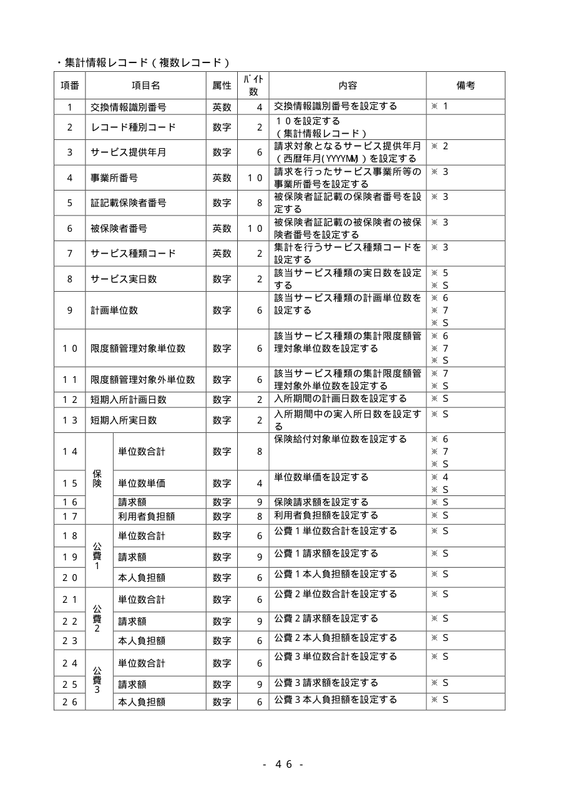
claude-haiku-5-5
- [改ページ] p96→p97 の連続性 OK
表1 record_layout・集計情報レコード（複数レコード） 次頁へ続く
| 項番 | 項目名 | 属性 | 桁数 | 内容 | 必須 | 備考 |
|---|---|---|---|---|---|---|
| 1 | 交換情報識別番号 | 英数 | 4 | 交換情報識別番号を設定する | ※ 1 | |
| 2 | レコード種別コード | 数字 | 2 | １０を設定する （集計情報レコード） | ||
| 3 | サービス提供年月 | 数字 | 6 | 請求対象となるサービス提供年月（西暦年月(YYYYMM)）を設定する | ※ 2 | |
| 4 | 事業所番号 | 英数 | 10 | 請求を行ったサービス事業所等の事業所番号を設定する | ※ 3 | |
| 5 | 証記載保険者番号 | 数字 | 8 | 被保険者証記載の保険者番号を設定する | ※ 3 | |
| 6 | 被保険者番号 | 英数 | 10 | 被保険者証記載の被保険者の被保険者番号を設定する | ※ 3 | |
| 7 | サービス種類コード | 英数 | 2 | 集計を行うサービス種類コードを設定する | ※ 3 | |
| 8 | サービス実日数 | 数字 | 2 | 該当サービス種類の実日数を設定する | ※ 5 ※ S | |
| 9 | 計画単位数 | 数字 | 6 | 該当サービス種類の計画単位数を設定する | ※ 6 ※ 7 ※ S | |
| 10 | 限度額管理対象単位数 | 数字 | 6 | 該当サービス種類の集計限度額管理対象単位数を設定する | ※ 6 ※ 7 ※ S | |
| 11 | 限度額管理対象外単位数 | 数字 | 6 | 該当サービス種類の集計限度額管理対象外単位数を設定する | ※ 7 ※ S | |
| 12 | 短期入所計画日数 | 数字 | 2 | 入所期間の計画日数を設定する | ※ S | |
| 13 | 短期入所実日数 | 数字 | 2 | 入所期間中の実入所日数を設定する | ※ S | |
| 14 | 保険 > 単位数合計 | 数字 | 8 | 保険給付対象単位数を設定する | ※ 6 ※ 7 ※ S | |
| 15 | 保険 > 単位数単価 | 数字 | 4 | 単位数単価を設定する | ※ 4 ※ S | |
| 16 | 保険 > 請求額 | 数字 | 9 | 保険請求額を設定する | ※ S | |
| 17 | 保険 > 利用者負担額 | 数字 | 8 | 利用者負担額を設定する | ※ S | |
| 18 | 公費1 > 単位数合計 | 数字 | 6 | 公費１単位数合計を設定する | ※ S | |
| 19 | 公費1 > 請求額 | 数字 | 9 | 公費１請求額を設定する | ※ S | |
| 20 | 公費1 > 本人負担額 | 数字 | 6 | 公費１本人負担額を設定する | ※ S | |
| 21 | 公費2 > 単位数合計 | 数字 | 6 | 公費２単位数合計を設定する | ※ S | |
| 22 | 公費2 > 請求額 | 数字 | 9 | 公費２請求額を設定する | ※ S | |
| 23 | 公費2 > 本人負担額 | 数字 | 6 | 公費２本人負担額を設定する | ※ S | |
| 24 | 公費3 > 単位数合計 | 数字 | 6 | 公費３単位数合計を設定する | ※ S | |
| 25 | 公費3 > 請求額 | 数字 | 9 | 公費３請求額を設定する | ※ S | |
| 26 | 公費3 > 本人負担額 | 数字 | 6 | 公費３本人負担額を設定する | ※ S |
uncertain（モデル自己申告）
- 表の見出しの「（複数レコード）」の括弧の全角・半角は画像から判別しきれませんでした。
- 項番3の内容の括弧の全角・半角、項番2の「１０」の表記は画像からの推定です。
- 備考欄の「※ 1」「※ 2」などの注記本文はこのページに含まれず、footnotesには入れていません。
claude-sonnet-5-5
- [改ページ] p96→p97 の連続性 OK
- テキストレイヤに見つからないセル: 1 個（赤枠）
表1 record_layout・集計情報レコード（複数レコード） 次頁へ続く
| 項番 | 項目名 | 属性 | 桁数 | 内容 | 必須 | 備考 |
|---|---|---|---|---|---|---|
| 1 | 交換情報識別番号 | 英数 | 4 | 交換情報識別番号を設定する | ※１ | |
| 2 | レコード種別コード | 数字 | 2 | １０を設定する （集計情報レコード） | ||
| 3 | サービス提供年月 | 数字 | 6 | 請求対象となるサービス提供年月（西暦年月(YYYYMM)）を設定する | ※２ | |
| 4 | 事業所番号 | 英数 | 10 | 請求を行ったサービス事業所等の事業所番号を設定する | ※３ | |
| 5 | 証記載保険者番号 | 数字 | 8 | 被保険者証記載の保険者番号を設定する | ※３ | |
| 6 | 被保険者番号 | 英数 | 10 | 被保険者証記載の被保険者の被保険者番号を設定する | ※３ | |
| 7 | サービス種類コード | 英数 | 2 | 集計を行うサービス種類コードを設定する | ※３ | |
| 8 | サービス実日数 | 数字 | 2 | 該当サービス種類の実日数を設定する | ※５ ※Ｓ | |
| 9 | 計画単位数 | 数字 | 6 | 該当サービス種類の計画単位数を設定する | ※６ ※７ ※Ｓ | |
| １０ | 限度額管理対象単位数 | 数字 | 6 | 該当サービス種類の集計限度額管理対象単位数を設定する | ※６ ※７ ※Ｓ | |
| １１ | 限度額管理対象外単位数 | 数字 | 6 | 該当サービス種類の集計限度額管理対象外単位数を設定する | ※７ ※Ｓ | |
| １２ | 短期入所計画日数 | 数字 | 2 | 入所期間の計画日数を設定する | ※Ｓ | |
| １３ | 短期入所実日数 | 数字 | 2 | 入所期間中の実入所日数を設定する | ※Ｓ | |
| １４ | 保険 > 単位数合計 | 数字 | 8 | 保険給付対象単位数を設定する | ※６ ※７ ※Ｓ | |
| １５ | 保険 > 単位数単価 | 数字 | 4 | 単位数単価を設定する | ※４ ※Ｓ | |
| １６ | 保険 > 請求額 | 数字 | 9 | 保険請求額を設定する | ※Ｓ | |
| １７ | 保険 > 利用者負担額 | 数字 | 8 | 利用者負担を設定する | ※Ｓ | |
| １８ | 公費1 > 単位数合計 | 数字 | 6 | 公費１単位数合計を設定する | ※Ｓ | |
| １９ | 公費1 > 請求額 | 数字 | 9 | 公費１請求額を設定する | ※Ｓ | |
| ２０ | 公費1 > 本人負担額 | 数字 | 6 | 公費１本人負担額を設定する | ※Ｓ | |
| ２１ | 公費2 > 単位数合計 | 数字 | 6 | 公費２単位数合計を設定する | ※Ｓ | |
| ２２ | 公費2 > 請求額 | 数字 | 9 | 公費２請求額を設定する | ※Ｓ | |
| ２３ | 公費2 > 本人負担額 | 数字 | 6 | 公費２本人負担額を設定する | ※Ｓ | |
| ２４ | 公費3 > 単位数合計 | 数字 | 6 | 公費３単位数合計を設定する | ※Ｓ | |
| ２５ | 公費3 > 請求額 | 数字 | 9 | 公費３請求額を設定する | ※Ｓ | |
| ２６ | 公費3 > 本人負担額 | 数字 | 6 | 公費３本人負担額を設定する | ※Ｓ |
uncertain（モデル自己申告）
- 項番・バイト数の全角/半角の表記は画像から推定した（例：１０、１１など全角）
- 内容・備考中の数字の全角/半角は推定
- 表の続きが次ページにあるかは不明（項番26で終了）
kaigo_jigyosho_r0604_p97 — 印字p.
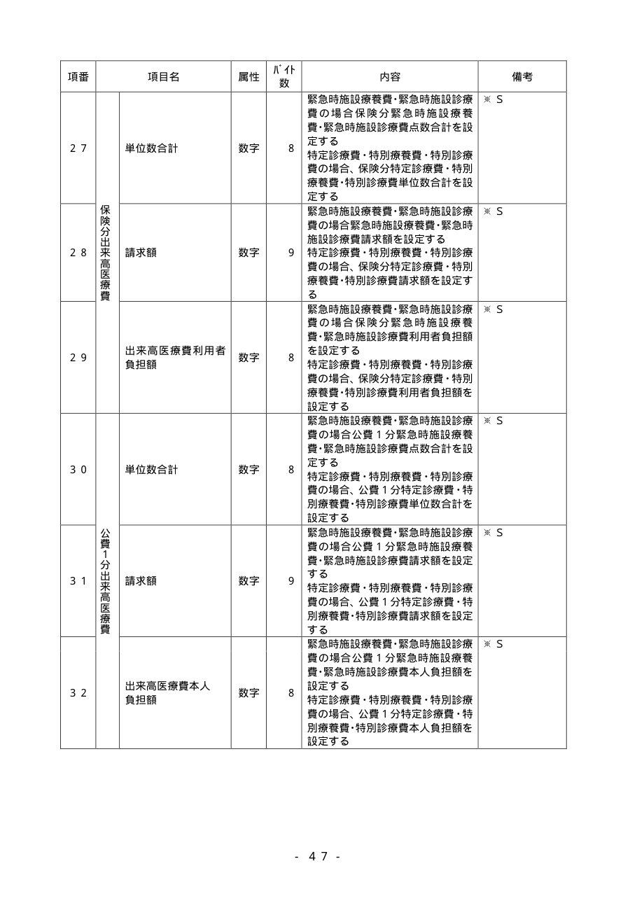
claude-haiku-5-5
- [改ページ] 前後ページで列見出しの書き起こしが一致しない
表1 record_layout 前頁から続く次頁へ続く
| 項番 | 項目名 | 属性 | 桁数 | 内容 | 必須 | 備考 |
|---|---|---|---|---|---|---|
| ２７ | 保険分出来高医療費 > 単位数合計 | 数字 | 8 | 緊急時施設療養費・緊急時施設診療費の場合保険分緊急時施設療養費・緊急時施設診療費点数合計を設定する 特定診療費・特別療養費・特別診療費の場合、保険分特定診療費・特別療養費・特別診療費単位数合計を設定する | ※ S | |
| ２８ | 保険分出来高医療費 > 請求額 | 数字 | 9 | 緊急時施設療養費・緊急時施設診療費の場合緊急時施設療養費・緊急時施設診療費請求額を設定する 特定診療費・特別療養費・特別診療費の場合、保険分特定診療費・特別療養費・特別診療費請求額を設定する | ※ S | |
| ２９ | 保険分出来高医療費 > 出来高医療費利用者負担額 | 数字 | 8 | 緊急時施設療養費・緊急時施設診療費の場合保険分緊急時施設療養費・緊急時施設診療費利用者負担額を設定する 特定診療費・特別療養費・特別診療費の場合、保険分特定診療費・特別療養費・特別診療費利用者負担額を設定する | ※ S | |
| ３０ | 公費1分出来高医療費 > 単位数合計 | 数字 | 8 | 緊急時施設療養費・緊急時施設診療費の場合公費１分緊急時施設療養費・緊急時施設診療費点数合計を設定する 特定診療費・特別療養費・特別診療費の場合、公費１分特定診療費・特別療養費・特別診療費単位数合計を設定する | ※ S | |
| ３１ | 公費1分出来高医療費 > 請求額 | 数字 | 9 | 緊急時施設療養費・緊急時施設診療費の場合公費１分緊急時施設療養費・緊急時施設診療費請求額を設定する 特定診療費・特別療養費・特別診療費の場合、公費１分特定診療費・特別療養費・特別診療費請求額を設定する | ※ S | |
| ３２ | 公費1分出来高医療費 > 出来高医療費本人負担額 | 数字 | 8 | 緊急時施設療養費・緊急時施設診療費の場合公費１分緊急時施設療養費・緊急時施設診療費本人負担額を設定する 特定診療費・特別療養費・特別診療費の場合、公費１分特定診療費・特別療養費・特別診療費本人負担額を設定する | ※ S |
uncertain（モデル自己申告）
- 項番セルの数字が全角か半角か画像から確定できないため、no_raw は全角で書き写した。
- 項目名の見出しは画像上で2列に分かれているが、列構成が不明確なため「項目名」の1列とし、縦結合の大分類（保険分出来高医療費・公費1分出来高医療費）を name_path の先頭に入れた。
claude-sonnet-5-5
- [改ページ] p97→p98 の連続性 OK
表1 record_layout 前頁から続く次頁へ続く
| 項番 | 項目名 | 属性 | 桁数 | 内容 | 必須 | 備考 |
|---|---|---|---|---|---|---|
| ２７ | 保険分出来高医療費 > 単位数合計 | 数字 | 8 | 緊急時施設療養費・緊急時施設診療費の場合保険分緊急時施設療養費・緊急時施設診療費点数合計を設定する 特定診療費・特別療養費・特別診療費の場合、保険分特定診療費・特別療養費・特別診療費単位数合計を設定する | ※Ｓ | |
| ２８ | 保険分出来高医療費 > 請求額 | 数字 | 9 | 緊急時施設療養費・緊急時施設診療費の場合緊急時施設療養費・緊急時施設診療費請求額を設定する 特定診療費・特別療養費・特別診療費の場合、保険分特定診療費・特別療養費・特別診療費請求額を設定する | ※Ｓ | |
| ２９ | 保険分出来高医療費 > 出来高医療費利用者負担額 | 数字 | 8 | 緊急時施設療養費・緊急時施設診療費の場合保険分緊急時施設療養費・緊急時施設診療費利用者負担額を設定する 特定診療費・特別療養費・特別診療費の場合、保険分特定診療費・特別療養費・特別診療費利用者負担額を設定する | ※Ｓ | |
| ３０ | 公費1分出来高医療費 > 単位数合計 | 数字 | 8 | 緊急時施設療養費・緊急時施設診療費の場合公費１分緊急時施設療養費・緊急時施設診療費点数合計を設定する 特定診療費・特別療養費・特別診療費の場合、公費１分特定診療費・特別療養費・特別診療費単位数合計を設定する | ※Ｓ | |
| ３１ | 公費1分出来高医療費 > 請求額 | 数字 | 9 | 緊急時施設療養費・緊急時施設診療費の場合公費１分緊急時施設療養費・緊急時施設診療費請求額を設定する 特定診療費・特別療養費・特別診療費の場合、公費１分特定診療費・特別療養費・特別診療費請求額を設定する | ※Ｓ | |
| ３２ | 公費1分出来高医療費 > 出来高医療費本人負担額 | 数字 | 8 | 緊急時施設療養費・緊急時施設診療費の場合公費１分緊急時施設療養費・緊急時施設診療費本人負担額を設定する 特定診療費・特別療養費・特別診療費の場合、公費１分特定診療費・特別療養費・特別診療費本人負担額を設定する | ※Ｓ |
uncertain（モデル自己申告）
- 縦結合の見出しは「保険分出来高医療費」「公費1分出来高医療費」と読み取ったが、縦書きで「公費1分」の「1」の全角・半角が不確か
- 前ページからの続きの表で、見出し行が繰り返されている
kaigo_jigyosho_r0604_p99 — 印字p.
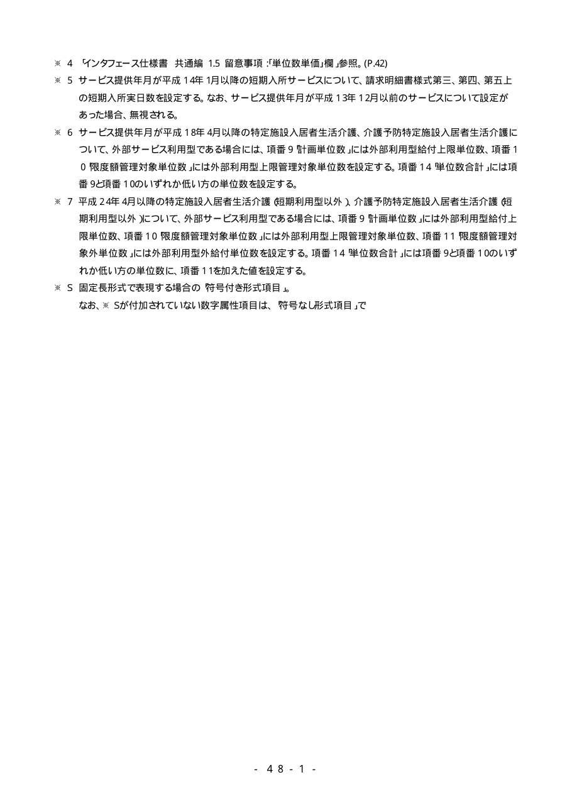
claude-haiku-5-5
- 表が1つも書き起こされていない
注記
- ※4 「インタフェース仕様書 共通編 1.5 留意事項 :「単位数単価」欄 」参照。(P.42)
- ※5 サービス提供年月が平成14年1月以降の短期入所サービスについて、請求明細書様式第三、第四、第五上の短期入所実日数を設定する。なお、サービス提供年月が平成13年12月以前のサービスについて設定があった場合、無視される。
- ※6 サービス提供年月が平成18年4月以降の特定施設入居者生活介護、介護予防特定施設入居者生活介護について、外部サービス利用型である場合には、項番9「計画単位数」には外部利用型給付上限単位数、項番10「限度額管理対象単位数」には外部利用型上限管理対象単位数を設定する。項番14「単位数合計」には項番9と項番10のいずれか低い方の単位数を設定する。
- ※7 平成24年4月以降の特定施設入居者生活介護（短期利用型以外）介護予防特定施設入居者生活介護（短期利用型以外）について、外部サービス利用型である場合には、項番9「計画単位数」には外部利用型給付上限単位数、項番10「限度額管理対象単位数」には外部利用型上限管理対象単位数、項番11「限度額管理対象外単位数」には外部利用型外給付単位数を設定する。項番14「単位数合計」には項番9と項番10のいずれか低い方の単位数に、項番11を加えた値を設定する。
- ※S 固定長形式で表現する場合の「符号付き形式項目」。なお、※Sが付加されていない数字属性項目は、「符号なし形式項目」で
uncertain（モデル自己申告）
- 添付ページは脚注のみで表は含まれていないため tables は空とした。
- ページ番号はページ下部に「- 48 - 1 -」と読める表記（「48-1」と判断）。
- PDF上のページ番号99と印字ページ番号48-1の対応は確認できない。
claude-sonnet-5-5
- 表が1つも書き起こされていない
注記
- ※4 「インタフェース仕様書 共通編 1.5 留意事項 :「単位数単価」欄」参照。(P.42)
- ※5 サービス提供年月が平成14年1月以降の短期入所サービスについて、請求明細書様式第三、第四、第五上の短期入所実日数を設定する。なお、サービス提供年月が平成13年12月以前のサービスについて設定があった場合、無視される。
- ※6 サービス提供年月が平成18年4月以降の特定施設入居者生活介護、介護予防特定施設入居者生活介護について、外部サービス利用型である場合には、項番9「計画単位数」には外部利用型給付上限単位数、項番10「限度額管理対象単位数」には外部利用型上限管理対象単位数を設定する。項番14「単位数合計」には項番9と項番10のいずれか低い方の単位数を設定する。
- ※7 平成24年4月以降の特定施設入居者生活介護(短期利用型以外)、介護予防特定施設入居者生活介護(短期利用型以外)について、外部サービス利用型である場合には、項番9「計画単位数」には外部利用型給付上限単位数、項番10「限度額管理対象単位数」には外部利用型上限管理対象単位数、項番11「限度額管理対象外単位数」には外部利用型外給付単位数を設定する。項番14「単位数合計」には項番9と項番10のいずれか低い方の単位数に、項番11を加えた値を設定する。
- ※S 固定長形式で表現する場合の「符号付き形式項目」。 なお、※Sが付加されていない数字属性項目は、「符号なし形式項目」で
uncertain（モデル自己申告）
- ※Sの注記は文が「で」で途切れており、次ページへ続くと思われる
- PDFの文字が一部詰まっており、括弧や空白は推定
kaigo_jigyosho_r0604_p100 — 印字p.
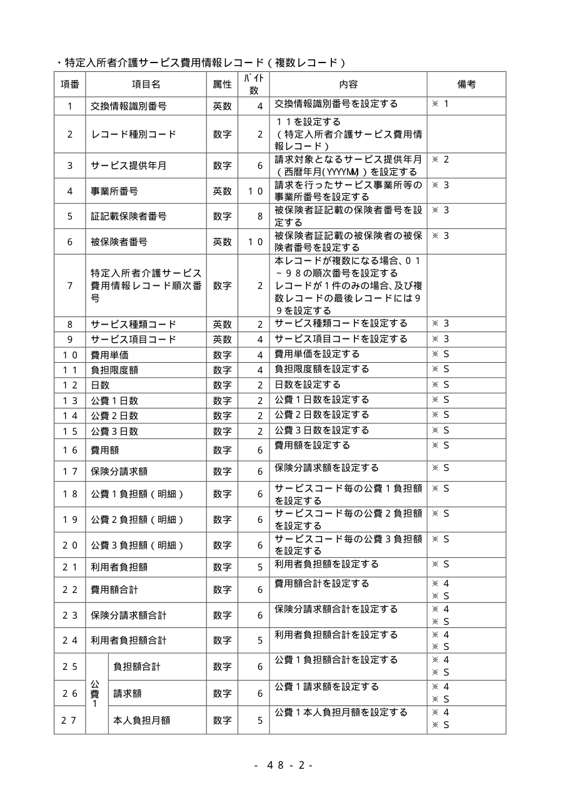
claude-haiku-5-5
- [改ページ] 前後ページで列見出しの書き起こしが一致しない
表1 record_layout・特定入所者介護サービス費用情報レコード（複数レコード） 次頁へ続く
| 項番 | 項目名 | 属性 | 桁数 | 内容 | 必須 | 備考 |
|---|---|---|---|---|---|---|
| 1 | 交換情報識別番号 | 英数 | 4 | 交換情報識別番号を設定する | ※ 1 | |
| 2 | レコード種別コード | 数字 | 2 | １１を設定する（特定入所者介護サービス費用情報レコード） | ||
| 3 | サービス提供年月 | 数字 | 6 | 請求対象となるサービス提供年月（西暦年月(YYYYMM)）を設定する | ※ 2 | |
| 4 | 事業所番号 | 英数 | 10 | 請求を行ったサービス事業所等の事業所番号を設定する | ※ 3 | |
| 5 | 証記載保険者番号 | 数字 | 8 | 被保険者証記載の保険者番号を設定する | ※ 3 | |
| 6 | 被保険者番号 | 英数 | 10 | 被保険者証記載の被保険者の被保険者番号を設定する | ※ 3 | |
| 7 | 特定入所者介護サービス費用情報レコード順次番号 | 数字 | 2 | 本レコードが複数になる場合、０１～９８の順次番号を設定するレコードが１件のみの場合、及び複数レコードの最後レコードには９９を設定する | ||
| 8 | サービス種類コード | 英数 | 2 | サービス種類コードを設定する | ※ 3 | |
| 9 | サービス項目コード | 英数 | 4 | サービス項目コードを設定する | ※ 3 | |
| １０ | 費用単価 | 数字 | 4 | 費用単価を設定する | ※ S | |
| １１ | 負担限度額 | 数字 | 4 | 負担限度額を設定する | ※ S | |
| １２ | 日数 | 数字 | 2 | 日数を設定する | ※ S | |
| １３ | 公費１日数 | 数字 | 2 | 公費１日数を設定する | ※ S | |
| １４ | 公費２日数 | 数字 | 2 | 公費２日数を設定する | ※ S | |
| １５ | 公費３日数 | 数字 | 2 | 公費３日数を設定する | ※ S | |
| １６ | 費用額 | 数字 | 6 | 費用額を設定する | ※ S | |
| １７ | 保険分請求額 | 数字 | 6 | 保険分請求額を設定する | ※ S | |
| １８ | 公費１負担額（明細） | 数字 | 6 | サービスコード毎の公費１負担額を設定する | ※ S | |
| １９ | 公費２負担額（明細） | 数字 | 6 | サービスコード毎の公費２負担額を設定する | ※ S | |
| ２０ | 公費３負担額（明細） | 数字 | 6 | サービスコード毎の公費３負担額を設定する | ※ S | |
| ２１ | 利用者負担額 | 数字 | 5 | 利用者負担額を設定する | ※ S | |
| ２２ | 費用額合計 | 数字 | 6 | 費用額合計を設定する | ※ 4 ※ S | |
| ２３ | 保険分請求額合計 | 数字 | 6 | 保険分請求額合計を設定する | ※ 4 ※ S | |
| ２４ | 利用者負担額合計 | 数字 | 5 | 利用者負担額合計を設定する | ※ 4 ※ S | |
| ２５ | 公費1 > 負担額合計 | 数字 | 6 | 公費１負担額合計を設定する | ※ 4 ※ S | |
| ２６ | 公費1 > 請求額 | 数字 | 6 | 公費１請求額を設定する | ※ 4 ※ S | |
| ２７ | 公費1 > 本人負担月額 | 数字 | 5 | 公費１本人負担月額を設定する | ※ 4 ※ S |
uncertain（モデル自己申告）
- 備考欄の※1・※2・※3・※4・※Sの注記本文は、このページには見当たらないため footnotes に入れていない。
- 項目名の「公費1」は縦結合の列で、負担額合計・請求額・本人負担月額の3行に掛かると判断して name_path に入れた。
- 項番10以降や桁数10の全角・半角表記は画像上の見た目で判断した（１０、１１など）。
claude-sonnet-5-5
- [改ページ] p100→p101 の連続性 OK
表1 record_layout・特定入所者介護サービス費用情報レコード（複数レコード） 次頁へ続く
| 項番 | 項目名 | 属性 | 桁数 | 内容 | 必須 | 備考 |
|---|---|---|---|---|---|---|
| 1 | 交換情報識別番号 | 英数 | 4 | 交換情報識別番号を設定する | ※1 | |
| 2 | レコード種別コード | 数字 | 2 | １１を設定する （特定入所者介護サービス費用情報レコード） | ||
| 3 | サービス提供年月 | 数字 | 6 | 請求対象となるサービス提供年月（西暦年月(YYYYMM)）を設定する | ※2 | |
| 4 | 事業所番号 | 英数 | 10 | 請求を行ったサービス事業所等の事業所番号を設定する | ※3 | |
| 5 | 証記載保険者番号 | 数字 | 8 | 被保険者証記載の保険者番号を設定する | ※3 | |
| 6 | 被保険者番号 | 英数 | 10 | 被保険者証記載の被保険者の被保険者番号を設定する | ※3 | |
| 7 | 特定入所者介護サービス費用情報レコード順次番号 | 数字 | 2 | 本レコードが複数になる場合、０１～９８の順次番号を設定する レコードが１件のみの場合、及び複数レコードの最後レコードには９９を設定する | ||
| 8 | サービス種類コード | 英数 | 2 | サービス種類コードを設定する | ※3 | |
| 9 | サービス項目コード | 英数 | 4 | サービス項目コードを設定する | ※3 | |
| １０ | 費用単価 | 数字 | 4 | 費用単価を設定する | ※S | |
| １１ | 負担限度額 | 数字 | 4 | 負担限度額を設定する | ※S | |
| １２ | 日数 | 数字 | 2 | 日数を設定する | ※S | |
| １３ | 公費1日数 | 数字 | 2 | 公費1日数を設定する | ※S | |
| １４ | 公費2日数 | 数字 | 2 | 公費2日数を設定する | ※S | |
| １５ | 公費3日数 | 数字 | 2 | 公費3日数を設定する | ※S | |
| １６ | 費用額 | 数字 | 6 | 費用額を設定する | ※S | |
| １７ | 保険分請求額 | 数字 | 6 | 保険分請求額を設定する | ※S | |
| １８ | 公費1負担額（明細） | 数字 | 6 | サービスコード毎の公費1負担額を設定する | ※S | |
| １９ | 公費2負担額（明細） | 数字 | 6 | サービスコード毎の公費2負担額を設定する | ※S | |
| ２０ | 公費3負担額（明細） | 数字 | 6 | サービスコード毎の公費3負担額を設定する | ※S | |
| ２１ | 利用者負担額 | 数字 | 5 | 利用者負担額を設定する | ※S | |
| ２２ | 費用額合計 | 数字 | 6 | 費用額合計を設定する | ※4 ※S | |
| ２３ | 保険分請求額合計 | 数字 | 6 | 保険分請求額合計を設定する | ※4 ※S | |
| ２４ | 利用者負担額合計 | 数字 | 5 | 利用者負担額合計を設定する | ※4 ※S | |
| ２５ | 公費1 > 負担額合計 | 数字 | 6 | 公費1負担額合計を設定する | ※4 ※S | |
| ２６ | 公費1 > 請求額 | 数字 | 6 | 公費1請求額を設定する | ※4 ※S | |
| ２７ | 公費1 > 本人負担月額 | 数字 | 5 | 公費1本人負担月額を設定する | ※4 ※S |
uncertain（モデル自己申告）
- 表見出し行は前ページの続きではなく本ページ上部に印字されているが、項番27で表が終わっておらず次ページへ続くと推測（continues_to_next_page）
- 項番2,7,10等の内容中の数字は全角で転記
- 表見出しの「バイト数」は「ﾊﾞｲﾄ数」と印字（columnsは通常表記で記載）
- 項番25〜27の「公費1」は縦結合の見出しとして処理
kaigo_jigyosho_r0604_p101 — 印字p.
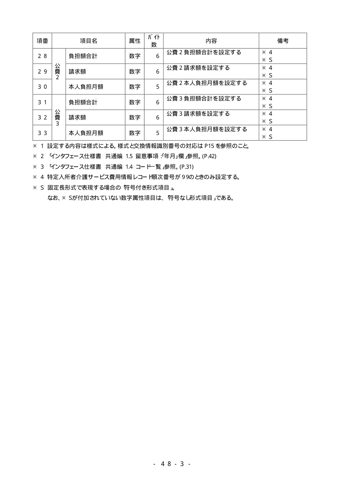
claude-haiku-5-5
表1 record_layout 前頁から続く
| 項番 | 項目名 | 属性 | 桁数 | 内容 | 必須 | 備考 |
|---|---|---|---|---|---|---|
| 28 | 公費2 > 負担額合計 | 数字 | 6 | 公費 2 負担額合計を設定する | ※ 4 ※ S | |
| 29 | 公費2 > 請求額 | 数字 | 6 | 公費 2 請求額を設定する | ※ 4 ※ S | |
| 30 | 公費2 > 本人負担月額 | 数字 | 5 | 公費 2 本人負担月額を設定する | ※ 4 ※ S | |
| 31 | 公費3 > 負担額合計 | 数字 | 6 | 公費 3 負担額合計を設定する | ※ 4 ※ S | |
| 32 | 公費3 > 請求額 | 数字 | 6 | 公費 3 請求額を設定する | ※ 4 ※ S | |
| 33 | 公費3 > 本人負担月額 | 数字 | 5 | 公費 3 本人負担月額を設定する | ※ 4 ※ S |
注記
- ※1 設定する内容は様式による。様式と交換情報識別番号の対応は P15 を参照のこと。
- ※2 「インタフェース仕様書 共通編 1.5 留意事項 :「年月」欄」参照。(P.42)
- ※3 「インタフェース仕様書 共通編 1.4 コード一覧」参照。(P.31)
- ※4 特定入所者介護サービス費用情報レコード順次番号が 99 のときのみ設定する。
- ※S 固定長形式で表現する場合の「符号付き形式項目」。
- なお、※ Sが付加されていない数字属性項目は、「符号なし形式項目」である。
uncertain（モデル自己申告）
- 添付は1ページのみで、依頼文の「次のページ」の表は含まれていないため、このページに見える表のみを書き起こした。
- 項目名見出しが2列にまたがっているため、columns の「項目名 > 公費」「項目名 > 項目名」は見た目の区分として解釈した。
- 項番28の上に見出し行がなく前ページからの続きと判断したが、前ページの内容は確認できない。
- ※2 の注記中の「:」「(P.42)」の表記が原文でどうなっているか画像では判然としない。
claude-sonnet-5-5
表1 record_layout 前頁から続く
| 項番 | 項目名 | 属性 | 桁数 | 内容 | 必須 | 備考 |
|---|---|---|---|---|---|---|
| ２８ | 公費2 > 負担額合計 | 数字 | 6 | 公費2負担額合計を設定する | ※4 ※S | |
| ２９ | 公費2 > 請求額 | 数字 | 6 | 公費2請求額を設定する | ※4 ※S | |
| ３０ | 公費2 > 本人負担月額 | 数字 | 5 | 公費2本人負担月額を設定する | ※4 ※S | |
| ３１ | 公費3 > 負担額合計 | 数字 | 6 | 公費3負担額合計を設定する | ※4 ※S | |
| ３２ | 公費3 > 請求額 | 数字 | 6 | 公費3請求額を設定する | ※4 ※S | |
| ３３ | 公費3 > 本人負担月額 | 数字 | 5 | 公費3本人負担月額を設定する | ※4 ※S |
注記
- ※1 設定する内容は様式による。様式と交換情報識別番号の対応はP15を参照のこと。
- ※2 「インタフェース仕様書 共通編 1.5 留意事項：「年月」欄」参照。(P.42)
- ※3 「インタフェース仕様書 共通編 1.4 コード一覧」参照。(P.31)
- ※4 特定入所者介護サービス費用情報レコードの順次番号が99のときのみ設定する。
- ※S 固定長形式で表現する場合の「符号付き形式項目」。 なお、※Sが付加されていない数字属性項目は、「符号なし形式項目」である。
uncertain（モデル自己申告）
- 表見出し行のみ繰り返されており前ページからの続きと判断。レコード名は不明
- バイト数の見出しは「ﾊﾞｲﾄ数」
kaigo_jigyosho_r0604_p105 — 印字p.

claude-haiku-5-5
- 表1 項番1 桁数が空（原文: None）
- 表1 項番2 桁数が空（原文: None）
- 表1 項番2 項目名がPDFのセルと完全一致しない（部分一致のみ）: 'レコード種別コード'
- 表1 項番3 桁数が空（原文: None）
- 表1 項番4 桁数が空（原文: None）
- 表1 項番5 桁数が空（原文: None）
- 表1 項番6 桁数が空（原文: None）
- 表1 項番7 桁数が空（原文: None）
- 表1 項番8 桁数が空（原文: None）
- 表1 項番9 桁数が空（原文: None）
- 表1 項番10 桁数が空（原文: None）
- 表1 項番11 桁数が空（原文: None）
- 表1 項番12 桁数が空（原文: None）
- 表1 項番13 桁数が空（原文: None）
- 表1 項番14 桁数が空（原文: None）
- 表1 項番15 桁数が空（原文: None）
- 表1 項番16 桁数が空（原文: None）
- 表1 項番17 桁数が空（原文: None）
- 表1 項番18 桁数が空（原文: None）
- [改ページ] p105→p106 の連続性 OK
表1 record_layout基本情報レコード 次頁へ続く
| 項番 | 項目名 | 属性 | 桁数 | 内容 | 必須 | 備考 |
|---|---|---|---|---|---|---|
| 1 | 交換情報識別番号 | 様式第二・二の二:◎ 様式第二の三:◎ 様式第三・三の二:◎ 様式第四・四の二:◎ 様式第四の三・四の四:◎ 様式第五・五の二:◎ 様式第六・六の二:◎ 様式第六の三・六の四:◎ 様式第六の五〜六の七:◎ 様式第八:◎ 様式第九:◎ 様式第九の二:◎ 様式第十:◎ 様式(予):◎ | ||||
| 2 | レコード種別コード | 様式第二・二の二:◎ 様式第二の三:◎ 様式第三・三の二:◎ 様式第四・四の二:◎ 様式第四の三・四の四:◎ 様式第五・五の二:◎ 様式第六・六の二:◎ 様式第六の三・六の四:◎ 様式第六の五〜六の七:◎ 様式第八:◎ 様式第九:◎ 様式第九の二:◎ 様式第十:◎ 様式(予):◎ | ||||
| 3 | サービス提供年月 | 様式第二・二の二:◎ 様式第二の三:◎ 様式第三・三の二:◎ 様式第四・四の二:◎ 様式第四の三・四の四:◎ 様式第五・五の二:◎ 様式第六・六の二:◎ 様式第六の三・六の四:◎ 様式第六の五〜六の七:◎ 様式第八:◎ 様式第九:◎ 様式第九の二:◎ 様式第十:◎ 様式(予):◎ | ||||
| 4 | 事業所番号 | 様式第二・二の二:◎ 様式第二の三:◎ 様式第三・三の二:◎ 様式第四・四の二:◎ 様式第四の三・四の四:◎ 様式第五・五の二:◎ 様式第六・六の二:◎ 様式第六の三・六の四:◎ 様式第六の五〜六の七:◎ 様式第八:◎ 様式第九:◎ 様式第九の二:◎ 様式第十:◎ 様式(予):◎ | ||||
| 5 | 証記載保険者番号 | 様式第二・二の二:◎ 様式第二の三:◎ 様式第三・三の二:◎ 様式第四・四の二:◎ 様式第四の三・四の四:◎ 様式第五・五の二:◎ 様式第六・六の二:◎ 様式第六の三・六の四:◎ 様式第六の五〜六の七:◎ 様式第八:◎ 様式第九:◎ 様式第九の二:◎ 様式第十:◎ 様式(予):◎ | ||||
| 6 | 被保険者番号 | 様式第二・二の二:◎ 様式第二の三:◎ 様式第三・三の二:◎ 様式第四・四の二:◎ 様式第四の三・四の四:◎ 様式第五・五の二:◎ 様式第六・六の二:◎ 様式第六の三・六の四:◎ 様式第六の五〜六の七:◎ 様式第八:◎ 様式第九:◎ 様式第九の二:◎ 様式第十:◎ 様式(予):◎ | ||||
| 7 | 公費1 > 負担者番号 | 様式第二・二の二:○ 様式第二の三:○ 様式第三・三の二:○ 様式第四・四の二:○ 様式第四の三・四の四:○ 様式第五・五の二:○ 様式第六・六の二:○ 様式第六の三・六の四:○ 様式第六の五〜六の七:○ 様式第八:○ 様式第九:○ 様式第九の二:○ 様式第十:○ 様式(予):－ | ||||
| 8 | 公費1 > 受給者番号 | 様式第二・二の二:○ 様式第二の三:○ 様式第三・三の二:○ 様式第四・四の二:○ 様式第四の三・四の四:○ 様式第五・五の二:○ 様式第六・六の二:○ 様式第六の三・六の四:○ 様式第六の五〜六の七:○ 様式第八:○ 様式第九:○ 様式第九の二:○ 様式第十:○ 様式(予):－ | ||||
| 9 | 公費2 > 負担者番号 | 様式第二・二の二:○ 様式第二の三:○ 様式第三・三の二:○ 様式第四・四の二:○ 様式第四の三・四の四:○ 様式第五・五の二:○ 様式第六・六の二:○ 様式第六の三・六の四:○ 様式第六の五〜六の七:○ 様式第八:○ 様式第九:○ 様式第九の二:○ 様式第十:○ 様式(予):－ | ||||
| 10 | 公費2 > 受給者番号 | 様式第二・二の二:○ 様式第二の三:○ 様式第三・三の二:○ 様式第四・四の二:○ 様式第四の三・四の四:○ 様式第五・五の二:○ 様式第六・六の二:○ 様式第六の三・六の四:○ 様式第六の五〜六の七:○ 様式第八:○ 様式第九:○ 様式第九の二:○ 様式第十:○ 様式(予):－ | ||||
| 11 | 公費3 > 負担者番号 | 様式第二・二の二:○ 様式第二の三:○ 様式第三・三の二:○ 様式第四・四の二:○ 様式第四の三・四の四:○ 様式第五・五の二:○ 様式第六・六の二:○ 様式第六の三・六の四:○ 様式第六の五〜六の七:○ 様式第八:○ 様式第九:○ 様式第九の二:○ 様式第十:○ 様式(予):－ | ||||
| 12 | 公費3 > 受給者番号 | 様式第二・二の二:○ 様式第二の三:○ 様式第三・三の二:○ 様式第四・四の二:○ 様式第四の三・四の四:○ 様式第五・五の二:○ 様式第六・六の二:○ 様式第六の三・六の四:○ 様式第六の五〜六の七:○ 様式第八:○ 様式第九:○ 様式第九の二:○ 様式第十:○ 様式(予):－ | ||||
| 13 | 被保険者情報 > 生年月日 | 様式第二・二の二:◎ 様式第二の三:◎ 様式第三・三の二:◎ 様式第四・四の二:◎ 様式第四の三・四の四:◎ 様式第五・五の二:◎ 様式第六・六の二:◎ 様式第六の三・六の四:◎ 様式第六の五〜六の七:◎ 様式第八:◎ 様式第九:◎ 様式第九の二:◎ 様式第十:◎ 様式(予):◎ | ||||
| 14 | 被保険者情報 > 性別コード | 様式第二・二の二:◎ 様式第二の三:◎ 様式第三・三の二:◎ 様式第四・四の二:◎ 様式第四の三・四の四:◎ 様式第五・五の二:◎ 様式第六・六の二:◎ 様式第六の三・六の四:◎ 様式第六の五〜六の七:◎ 様式第八:◎ 様式第九:◎ 様式第九の二:◎ 様式第十:◎ 様式(予):◎ | ||||
| 15 | 被保険者情報 > 要介護状態区分コード | 様式第二・二の二:◎ 様式第二の三:◎ 様式第三・三の二:◎ 様式第四・四の二:◎ 様式第四の三・四の四:◎ 様式第五・五の二:◎ 様式第六・六の二:◎ 様式第六の三・六の四:◎ 様式第六の五〜六の七:◎ 様式第八:◎ 様式第九:◎ 様式第九の二:◎ 様式第十:◎ 様式(予):◎ | ||||
| 16 | 被保険者情報 > 旧措置入所者特例 | 様式第二・二の二:－ 様式第二の三:－ 様式第三・三の二:－ 様式第四・四の二:－ 様式第四の三・四の四:－ 様式第五・五の二:－ 様式第六・六の二:－ 様式第六の三・六の四:－ 様式第六の五〜六の七:－ 様式第八:◎ 様式第九:－ 様式第九の二:－ 様式第十:－ 様式(予):－ | ||||
| 17 | 被保険者情報 > 認定有効期間開始年月日 | 様式第二・二の二:◎ 様式第二の三:◎ 様式第三・三の二:◎ 様式第四・四の二:◎ 様式第四の三・四の四:◎ 様式第五・五の二:◎ 様式第六・六の二:◎ 様式第六の三・六の四:◎ 様式第六の五〜六の七:◎ 様式第八:◎ 様式第九:◎ 様式第九の二:◎ 様式第十:◎ 様式(予):◎ | ||||
| 18 | 被保険者情報 > 認定有効期間終了年月日 | 様式第二・二の二:◎ 様式第二の三:○ 様式第三・三の二:◎ 様式第四・四の二:◎ 様式第四の三・四の四:◎ 様式第五・五の二:◎ 様式第六・六の二:◎ 様式第六の三・六の四:◎ 様式第六の五〜六の七:◎ 様式第八:◎ 様式第九:◎ 様式第九の二:◎ 様式第十:◎ 様式(予):○ |
uncertain（モデル自己申告）
- 依頼では PDF 上のページ 105 の書き起こしでしたが、添付画像の下部ページ番号は「- 51 -」で、添付は基本情報レコードの1表のみでした。添付された内容をそのまま書き起こしました。
- 「証記載保険者番号」は原文表記のままです（画像上の表記どおり）。
- 表の「備考」列はすべて空欄のため note は null にしました。
- 表の見出しに記載されたレコード名以外の上位情報名・交換情報識別番号は読み取れないため null にしました。
claude-sonnet-5-5
- 表1 項番2 項目名がPDFのセルと完全一致しない（部分一致のみ）: 'レコード種別コード'
- [改ページ] p105→p106 の連続性 OK
表1 required_matrix基本情報レコード 次頁へ続く
| 項番 | 項目名 | 属性 | 桁数 | 内容 | 必須 | 備考 |
|---|---|---|---|---|---|---|
| 1 | 交換情報識別番号 | 様式第二・二の二:◎ 様式第二の三:◎ 様式第三・三の二:◎ 様式第四・四の二:◎ 様式第四の三・四の四:◎ 様式第五・五の二:◎ 様式第六・六の二:◎ 様式第六の三・六の四:◎ 様式第六の五～六の七:◎ 様式第八:◎ 様式第九:◎ 様式第九の二:◎ 様式第十:◎ 様式(予):◎ | ||||
| 2 | レコード種別コード | 様式第二・二の二:◎ 様式第二の三:◎ 様式第三・三の二:◎ 様式第四・四の二:◎ 様式第四の三・四の四:◎ 様式第五・五の二:◎ 様式第六・六の二:◎ 様式第六の三・六の四:◎ 様式第六の五～六の七:◎ 様式第八:◎ 様式第九:◎ 様式第九の二:◎ 様式第十:◎ 様式(予):◎ | ||||
| 3 | サービス提供年月 | 様式第二・二の二:◎ 様式第二の三:◎ 様式第三・三の二:◎ 様式第四・四の二:◎ 様式第四の三・四の四:◎ 様式第五・五の二:◎ 様式第六・六の二:◎ 様式第六の三・六の四:◎ 様式第六の五～六の七:◎ 様式第八:◎ 様式第九:◎ 様式第九の二:◎ 様式第十:◎ 様式(予):◎ | ||||
| 4 | 事業所番号 | 様式第二・二の二:◎ 様式第二の三:◎ 様式第三・三の二:◎ 様式第四・四の二:◎ 様式第四の三・四の四:◎ 様式第五・五の二:◎ 様式第六・六の二:◎ 様式第六の三・六の四:◎ 様式第六の五～六の七:◎ 様式第八:◎ 様式第九:◎ 様式第九の二:◎ 様式第十:◎ 様式(予):◎ | ||||
| 5 | 証記載保険者番号 | 様式第二・二の二:◎ 様式第二の三:◎ 様式第三・三の二:◎ 様式第四・四の二:◎ 様式第四の三・四の四:◎ 様式第五・五の二:◎ 様式第六・六の二:◎ 様式第六の三・六の四:◎ 様式第六の五～六の七:◎ 様式第八:◎ 様式第九:◎ 様式第九の二:◎ 様式第十:◎ 様式(予):◎ | ||||
| 6 | 被保険者番号 | 様式第二・二の二:◎ 様式第二の三:◎ 様式第三・三の二:◎ 様式第四・四の二:◎ 様式第四の三・四の四:◎ 様式第五・五の二:◎ 様式第六・六の二:◎ 様式第六の三・六の四:◎ 様式第六の五～六の七:◎ 様式第八:◎ 様式第九:◎ 様式第九の二:◎ 様式第十:◎ 様式(予):◎ | ||||
| 7 | 公費1 > 負担者番号 | 様式第二・二の二:○ 様式第二の三:○ 様式第三・三の二:○ 様式第四・四の二:○ 様式第四の三・四の四:○ 様式第五・五の二:○ 様式第六・六の二:○ 様式第六の三・六の四:○ 様式第六の五～六の七:○ 様式第八:○ 様式第九:○ 様式第九の二:○ 様式第十:○ 様式(予):－ | ||||
| 8 | 公費1 > 受給者番号 | 様式第二・二の二:○ 様式第二の三:○ 様式第三・三の二:○ 様式第四・四の二:○ 様式第四の三・四の四:○ 様式第五・五の二:○ 様式第六・六の二:○ 様式第六の三・六の四:○ 様式第六の五～六の七:○ 様式第八:○ 様式第九:○ 様式第九の二:○ 様式第十:○ 様式(予):－ | ||||
| 9 | 公費2 > 負担者番号 | 様式第二・二の二:○ 様式第二の三:○ 様式第三・三の二:○ 様式第四・四の二:○ 様式第四の三・四の四:○ 様式第五・五の二:○ 様式第六・六の二:○ 様式第六の三・六の四:○ 様式第六の五～六の七:○ 様式第八:○ 様式第九:○ 様式第九の二:○ 様式第十:○ 様式(予):－ | ||||
| １０ | 公費2 > 受給者番号 | 様式第二・二の二:○ 様式第二の三:○ 様式第三・三の二:○ 様式第四・四の二:○ 様式第四の三・四の四:○ 様式第五・五の二:○ 様式第六・六の二:○ 様式第六の三・六の四:○ 様式第六の五～六の七:○ 様式第八:○ 様式第九:○ 様式第九の二:○ 様式第十:○ 様式(予):－ | ||||
| １１ | 公費3 > 負担者番号 | 様式第二・二の二:○ 様式第二の三:○ 様式第三・三の二:○ 様式第四・四の二:○ 様式第四の三・四の四:○ 様式第五・五の二:○ 様式第六・六の二:○ 様式第六の三・六の四:○ 様式第六の五～六の七:○ 様式第八:○ 様式第九:○ 様式第九の二:○ 様式第十:○ 様式(予):－ | ||||
| １２ | 公費3 > 受給者番号 | 様式第二・二の二:○ 様式第二の三:○ 様式第三・三の二:○ 様式第四・四の二:○ 様式第四の三・四の四:○ 様式第五・五の二:○ 様式第六・六の二:○ 様式第六の三・六の四:○ 様式第六の五～六の七:○ 様式第八:○ 様式第九:○ 様式第九の二:○ 様式第十:○ 様式(予):－ | ||||
| １３ | 被保険者情報 > 生年月日 | 様式第二・二の二:◎ 様式第二の三:◎ 様式第三・三の二:◎ 様式第四・四の二:◎ 様式第四の三・四の四:◎ 様式第五・五の二:◎ 様式第六・六の二:◎ 様式第六の三・六の四:◎ 様式第六の五～六の七:◎ 様式第八:◎ 様式第九:◎ 様式第九の二:◎ 様式第十:◎ 様式(予):◎ | ||||
| １４ | 被保険者情報 > 性別コード | 様式第二・二の二:◎ 様式第二の三:◎ 様式第三・三の二:◎ 様式第四・四の二:◎ 様式第四の三・四の四:◎ 様式第五・五の二:◎ 様式第六・六の二:◎ 様式第六の三・六の四:◎ 様式第六の五～六の七:◎ 様式第八:◎ 様式第九:◎ 様式第九の二:◎ 様式第十:◎ 様式(予):◎ | ||||
| １５ | 被保険者情報 > 要介護状態区分コード | 様式第二・二の二:◎ 様式第二の三:◎ 様式第三・三の二:◎ 様式第四・四の二:◎ 様式第四の三・四の四:◎ 様式第五・五の二:◎ 様式第六・六の二:◎ 様式第六の三・六の四:◎ 様式第六の五～六の七:◎ 様式第八:◎ 様式第九:◎ 様式第九の二:◎ 様式第十:◎ 様式(予):◎ | ||||
| １６ | 被保険者情報 > 旧措置入所者特例 | 様式第二・二の二:－ 様式第二の三:－ 様式第三・三の二:－ 様式第四・四の二:－ 様式第四の三・四の四:－ 様式第五・五の二:－ 様式第六・六の二:－ 様式第六の三・六の四:－ 様式第六の五～六の七:－ 様式第八:◎ 様式第九:－ 様式第九の二:－ 様式第十:－ 様式(予):－ | ||||
| １７ | 被保険者情報 > 認定有効期間開始年月日 | 様式第二・二の二:◎ 様式第二の三:◎ 様式第三・三の二:◎ 様式第四・四の二:◎ 様式第四の三・四の四:◎ 様式第五・五の二:◎ 様式第六・六の二:◎ 様式第六の三・六の四:◎ 様式第六の五～六の七:◎ 様式第八:◎ 様式第九:◎ 様式第九の二:◎ 様式第十:◎ 様式(予):◎ | ||||
| １８ | 被保険者情報 > 認定有効期間終了年月日 | 様式第二・二の二:◎ 様式第二の三:○ 様式第三・三の二:◎ 様式第四・四の二:◎ 様式第四の三・四の四:◎ 様式第五・五の二:◎ 様式第六・六の二:◎ 様式第六の三・六の四:◎ 様式第六の五～六の七:◎ 様式第八:◎ 様式第九:◎ 様式第九の二:◎ 様式第十:◎ 様式(予):○ |
uncertain（モデル自己申告）
- 様式見出しは縦書きのため横書きに直して転記。『様式第六の五～六の七』の「～」は原文では「〜」状の縦書き記号で不確か。
- 記号◎と○の判別は小さい印字のため一部不確か。
- 項番10〜18の全角数字表記（１０等）は原文の表記に基づく推定。
kaigo_jigyosho_r0604_p106 — 印字p.

claude-haiku-5-5
- 表1 項番23 必須（様式第六・六の二）の値が想定外: '◎*2'
- 表1 項番23 必須（様式第六の三・六の四）の値が想定外: '◎*2'
- 表1 項番23 必須（様式第八）の値が想定外: '◎*2'
- 表1 項番23 必須（様式第九）の値が想定外: '◎*2'
- 表1 項番23 必須（様式第九の二）の値が想定外: '◎*2'
- 表1 項番23 必須（様式第十）の値が想定外: '◎*2'
- 表1 項番24 必須（様式第三・三の二）の値が想定外: '◎*1'
- 表1 項番24 必須（様式第四・四の二）の値が想定外: '◎*1'
- 表1 項番24 必須（様式第四の三・四の四）の値が想定外: '◎*1'
- 表1 項番24 必須（様式第五・五の二）の値が想定外: '◎*1'
- 表1 項番25 必須（様式第三・三の二）の値が想定外: '○*1'
- 表1 項番25 必須（様式第四・四の二）の値が想定外: '○*1'
- 表1 項番25 必須（様式第四の三・四の四）の値が想定外: '○*1'
- 表1 項番25 必須（様式第五・五の二）の値が想定外: '○*1'
- [改ページ] p106→p107 の連続性 OK
表1 required_matrix 前頁から続く次頁へ続く
| 項番 | 項目名 | 属性 | 桁数 | 内容 | 必須 | 備考 |
|---|---|---|---|---|---|---|
| 19 | 居宅サービス計画 > 居宅サービス計画作成区分コード | 様式第二・二の二:○ 様式第二の三:○ 様式第三・三の二:◎ 様式第四・四の二:◎ 様式第四の三・四の四:◎ 様式第五・五の二:◎ 様式第六・六の二:－ 様式第六の三・六の四:－ 様式第六の五〜六の七:◎ 様式第八:－ 様式第九:－ 様式第九の二:－ 様式第十:－ 様式(予):－ | ||||
| 20 | 居宅サービス計画 > 事業所番号（居宅介護支援事業所等） | 様式第二・二の二:○ 様式第二の三:○ 様式第三・三の二:○ 様式第四・四の二:○ 様式第四の三・四の四:○ 様式第五・五の二:○ 様式第六・六の二:－ 様式第六の三・六の四:－ 様式第六の五〜六の七:○ 様式第八:－ 様式第九:－ 様式第九の二:－ 様式第十:－ 様式(予):－ | ||||
| 21 | 開始年月日 | 様式第二・二の二:○ 様式第二の三:○ 様式第三・三の二:－ 様式第四・四の二:－ 様式第四の三・四の四:－ 様式第五・五の二:－ 様式第六・六の二:－ 様式第六の三・六の四:－ 様式第六の五〜六の七:－ 様式第八:－ 様式第九:－ 様式第九の二:－ 様式第十:－ 様式(予):○ | ||||
| 22 | 中止年月日 | 様式第二・二の二:○ 様式第二の三:○ 様式第三・三の二:－ 様式第四・四の二:－ 様式第四の三・四の四:－ 様式第五・五の二:－ 様式第六・六の二:－ 様式第六の三・六の四:－ 様式第六の五〜六の七:－ 様式第八:－ 様式第九:－ 様式第九の二:－ 様式第十:－ 様式(予):○ | ||||
| 23 | 中止理由・入所（院）前の状況コード | 様式第二・二の二:○ 様式第二の三:－ 様式第三・三の二:－ 様式第四・四の二:－ 様式第四の三・四の四:－ 様式第五・五の二:－ 様式第六・六の二:◎*2 様式第六の三・六の四:◎*2 様式第六の五〜六の七:－ 様式第八:◎*2 様式第九:◎*2 様式第九の二:◎*2 様式第十:◎*2 様式(予):－ | ||||
| 24 | 入所（院）年月日 | 様式第二・二の二:－ 様式第二の三:－ 様式第三・三の二:◎*1 様式第四・四の二:◎*1 様式第四の三・四の四:◎*1 様式第五・五の二:◎*1 様式第六・六の二:◎ 様式第六の三・六の四:◎ 様式第六の五〜六の七:◎ 様式第八:◎ 様式第九:◎ 様式第九の二:◎ 様式第十:◎ 様式(予):－ | ||||
| 25 | 退所（院）年月日 | 様式第二・二の二:－ 様式第二の三:－ 様式第三・三の二:○*1 様式第四・四の二:○*1 様式第四の三・四の四:○*1 様式第五・五の二:○*1 様式第六・六の二:○ 様式第六の三・六の四:○ 様式第六の五〜六の七:○ 様式第八:○ 様式第九:○ 様式第九の二:○ 様式第十:○ 様式(予):－ | ||||
| 26 | 入所（院）実日数 | 様式第二・二の二:－ 様式第二の三:－ 様式第三・三の二:－ 様式第四・四の二:－ 様式第四の三・四の四:－ 様式第五・五の二:－ 様式第六・六の二:◎ 様式第六の三・六の四:◎ 様式第六の五〜六の七:－ 様式第八:◎ 様式第九:◎ 様式第九の二:◎ 様式第十:◎ 様式(予):－ | ||||
| 27 | 外泊日数 | 様式第二・二の二:－ 様式第二の三:－ 様式第三・三の二:－ 様式第四・四の二:－ 様式第四の三・四の四:－ 様式第五・五の二:－ 様式第六・六の二:○ 様式第六の三・六の四:○ 様式第六の五〜六の七:－ 様式第八:○ 様式第九:○ 様式第九の二:○ 様式第十:○ 様式(予):－ | ||||
| 28 | 退所（院）後の状態コード | 様式第二・二の二:－ 様式第二の三:－ 様式第三・三の二:－ 様式第四・四の二:－ 様式第四の三・四の四:－ 様式第五・五の二:－ 様式第六・六の二:○ 様式第六の三・六の四:○ 様式第六の五〜六の七:－ 様式第八:○ 様式第九:○ 様式第九の二:○ 様式第十:○ 様式(予):－ | ||||
| 29 | 保険給付率 | 様式第二・二の二:◎ 様式第二の三:○ 様式第三・三の二:◎ 様式第四・四の二:◎ 様式第四の三・四の四:◎ 様式第五・五の二:◎ 様式第六・六の二:◎ 様式第六の三・六の四:◎ 様式第六の五〜六の七:◎ 様式第八:◎ 様式第九:◎ 様式第九の二:◎ 様式第十:◎ 様式(予):－ | ||||
| 30 | 公費1給付率 | 様式第二・二の二:○ 様式第二の三:○ 様式第三・三の二:○ 様式第四・四の二:○ 様式第四の三・四の四:○ 様式第五・五の二:○ 様式第六・六の二:○ 様式第六の三・六の四:○ 様式第六の五〜六の七:○ 様式第八:○ 様式第九:○ 様式第九の二:○ 様式第十:○ 様式(予):－ | ||||
| 31 | 公費2給付率 | 様式第二・二の二:○ 様式第二の三:○ 様式第三・三の二:○ 様式第四・四の二:○ 様式第四の三・四の四:○ 様式第五・五の二:○ 様式第六・六の二:○ 様式第六の三・六の四:○ 様式第六の五〜六の七:○ 様式第八:○ 様式第九:○ 様式第九の二:○ 様式第十:○ 様式(予):－ | ||||
| 32 | 公費3給付率 | 様式第二・二の二:○ 様式第二の三:○ 様式第三・三の二:○ 様式第四・四の二:○ 様式第四の三・四の四:○ 様式第五・五の二:○ 様式第六・六の二:○ 様式第六の三・六の四:○ 様式第六の五〜六の七:○ 様式第八:○ 様式第九:○ 様式第九の二:○ 様式第十:○ 様式(予):－ | ||||
| 33 | 合計情報 > 保険 > サービス単位数 | 様式第二・二の二:◎ 様式第二の三:◎ 様式第三・三の二:◎ 様式第四・四の二:◎ 様式第四の三・四の四:◎ 様式第五・五の二:◎ 様式第六・六の二:◎ 様式第六の三・六の四:◎ 様式第六の五〜六の七:◎ 様式第八:◎ 様式第九:◎ 様式第九の二:◎ 様式第十:◎ 様式(予):◎ | ||||
| 34 | 合計情報 > 保険 > 請求額 | 様式第二・二の二:○ 様式第二の三:○ 様式第三・三の二:○ 様式第四・四の二:○ 様式第四の三・四の四:○ 様式第五・五の二:○ 様式第六・六の二:○ 様式第六の三・六の四:○ 様式第六の五〜六の七:○ 様式第八:○ 様式第九:○ 様式第九の二:○ 様式第十:○ 様式(予):○ | ||||
| 35 | 合計情報 > 保険 > 利用者負担額 | 様式第二・二の二:○ 様式第二の三:○ 様式第三・三の二:○ 様式第四・四の二:○ 様式第四の三・四の四:○ 様式第五・五の二:○ 様式第六・六の二:○ 様式第六の三・六の四:○ 様式第六の五〜六の七:○ 様式第八:○ 様式第九:○ 様式第九の二:○ 様式第十:○ 様式(予):○ | ||||
| 36 | 合計情報 > 保険 > 緊急時施設療養費請求額 | 様式第二・二の二:－ 様式第二の三:－ 様式第三・三の二:－ 様式第四・四の二:○ 様式第四の三・四の四:○ 様式第五・五の二:－ 様式第六・六の二:－ 様式第六の三・六の四:－ 様式第六の五〜六の七:－ 様式第八:－ 様式第九:○ 様式第九の二:○ 様式第十:－ 様式(予):－ | ||||
| 37 | 合計情報 > 保険 > 特定診療費請求額 | 様式第二・二の二:－ 様式第二の三:－ 様式第三・三の二:－ 様式第四・四の二:○ 様式第四の三・四の四:○ 様式第五・五の二:○ 様式第六・六の二:－ 様式第六の三・六の四:－ 様式第六の五〜六の七:－ 様式第八:－ 様式第九:○ 様式第九の二:○ 様式第十:○ 様式(予):－ | ||||
| 38 | 合計情報 > 保険 > 特定入所者介護サービス費等請求額 | 様式第二・二の二:－ 様式第二の三:－ 様式第三・三の二:○ 様式第四・四の二:○ 様式第四の三・四の四:○ 様式第五・五の二:○ 様式第六・六の二:－ 様式第六の三・六の四:－ 様式第六の五〜六の七:－ 様式第八:○ 様式第九:○ 様式第九の二:○ 様式第十:○ 様式(予):－ |
uncertain（モデル自己申告）
- 表は項番19から始まり見出し行はあるが表題がないため、前ページからの続きと判断した（continued_from_prev_page）。
- ページ末尾の項番38で罫線が閉じており、次ページへ続くかどうかは本ページだけでは確定できない（continues_to_next_page）。
- 「居宅サービス計画」は縦書きの結合セルを組み立てて読み取った。
- 記号の「*1」「*2」は注記番号と思われるが、本ページには対応する注記がないため原文のまま記載した。
- 様式列の見出しは縦書きのため、文字の並びを読み取って記載した。様式(予)の括弧は原文の表記に合わせた。
claude-sonnet-5-5
- 表1 項番23 必須（様式第六・六の二）の値が想定外: '◎*2'
- 表1 項番23 必須（様式第六の三・六の四）の値が想定外: '◎*2'
- 表1 項番23 必須（様式第八）の値が想定外: '◎*2'
- 表1 項番23 必須（様式第九）の値が想定外: '◎*2'
- 表1 項番23 必須（様式第九の二）の値が想定外: '◎*2'
- 表1 項番23 必須（様式第十）の値が想定外: '◎*2'
- 表1 項番24 必須（様式第三・三の二）の値が想定外: '◎*1'
- 表1 項番24 必須（様式第四・四の二）の値が想定外: '◎*1'
- 表1 項番24 必須（様式第四の三・四の四）の値が想定外: '◎*1'
- 表1 項番24 必須（様式第五・五の二）の値が想定外: '◎*1'
- 表1 項番25 必須（様式第三・三の二）の値が想定外: '○*1'
- 表1 項番25 必須（様式第四・四の二）の値が想定外: '○*1'
- 表1 項番25 必須（様式第四の三・四の四）の値が想定外: '○*1'
- 表1 項番25 必須（様式第五・五の二）の値が想定外: '○*1'
- [改ページ] 前後ページで列見出しの書き起こしが一致しない
表1 required_matrix 前頁から続く次頁へ続く
| 項番 | 項目名 | 属性 | 桁数 | 内容 | 必須 | 備考 |
|---|---|---|---|---|---|---|
| １９ | 居宅サービス計画 > 居宅サービス計画作成区分コード | 様式第二・二の二:○ 様式第二の三:○ 様式第三・三の二:◎ 様式第四・四の二:◎ 様式第四の三・四の四:◎ 様式第五・五の二:◎ 様式第六・六の二:－ 様式第六の三・六の四:－ 様式第六の五～六の七:◎ 様式第八:－ 様式第九:－ 様式第九の二:－ 様式第十:－ 様式(予):－ | ||||
| ２０ | 居宅サービス計画 > 事業所番号（居宅介護支援事業所等） | 様式第二・二の二:○ 様式第二の三:○ 様式第三・三の二:○ 様式第四・四の二:○ 様式第四の三・四の四:○ 様式第五・五の二:○ 様式第六・六の二:－ 様式第六の三・六の四:－ 様式第六の五～六の七:○ 様式第八:－ 様式第九:－ 様式第九の二:－ 様式第十:－ 様式(予):－ | ||||
| ２１ | 開始年月日 | 様式第二・二の二:○ 様式第二の三:○ 様式第三・三の二:－ 様式第四・四の二:－ 様式第四の三・四の四:－ 様式第五・五の二:－ 様式第六・六の二:－ 様式第六の三・六の四:－ 様式第六の五～六の七:－ 様式第八:－ 様式第九:－ 様式第九の二:－ 様式第十:－ 様式(予):○ | ||||
| ２２ | 中止年月日 | 様式第二・二の二:○ 様式第二の三:○ 様式第三・三の二:－ 様式第四・四の二:－ 様式第四の三・四の四:－ 様式第五・五の二:－ 様式第六・六の二:－ 様式第六の三・六の四:－ 様式第六の五～六の七:－ 様式第八:－ 様式第九:－ 様式第九の二:－ 様式第十:－ 様式(予):○ | ||||
| ２３ | 中止理由・入所(院)前の状況コード | 様式第二・二の二:○ 様式第二の三:－ 様式第三・三の二:－ 様式第四・四の二:－ 様式第四の三・四の四:－ 様式第五・五の二:－ 様式第六・六の二:◎*2 様式第六の三・六の四:◎*2 様式第六の五～六の七:－ 様式第八:◎*2 様式第九:◎*2 様式第九の二:◎*2 様式第十:◎*2 様式(予):－ | ||||
| ２４ | 入所(院)年月日 | 様式第二・二の二:－ 様式第二の三:－ 様式第三・三の二:◎*1 様式第四・四の二:◎*1 様式第四の三・四の四:◎*1 様式第五・五の二:◎*1 様式第六・六の二:◎ 様式第六の三・六の四:◎ 様式第六の五～六の七:◎ 様式第八:◎ 様式第九:◎ 様式第九の二:◎ 様式第十:◎ 様式(予):－ | ||||
| ２５ | 退所(院)年月日 | 様式第二・二の二:－ 様式第二の三:－ 様式第三・三の二:○*1 様式第四・四の二:○*1 様式第四の三・四の四:○*1 様式第五・五の二:○*1 様式第六・六の二:○ 様式第六の三・六の四:○ 様式第六の五～六の七:○ 様式第八:○ 様式第九:○ 様式第九の二:○ 様式第十:○ 様式(予):－ | ||||
| ２６ | 入所(院)実日数 | 様式第二・二の二:－ 様式第二の三:－ 様式第三・三の二:－ 様式第四・四の二:－ 様式第四の三・四の四:－ 様式第五・五の二:－ 様式第六・六の二:◎ 様式第六の三・六の四:◎ 様式第六の五～六の七:－ 様式第八:◎ 様式第九:◎ 様式第九の二:◎ 様式第十:◎ 様式(予):－ | ||||
| ２７ | 外泊日数 | 様式第二・二の二:－ 様式第二の三:－ 様式第三・三の二:－ 様式第四・四の二:－ 様式第四の三・四の四:－ 様式第五・五の二:－ 様式第六・六の二:○ 様式第六の三・六の四:○ 様式第六の五～六の七:－ 様式第八:○ 様式第九:○ 様式第九の二:○ 様式第十:○ 様式(予):－ | ||||
| ２８ | 退所(院)後の状態コード | 様式第二・二の二:－ 様式第二の三:－ 様式第三・三の二:－ 様式第四・四の二:－ 様式第四の三・四の四:－ 様式第五・五の二:－ 様式第六・六の二:○ 様式第六の三・六の四:○ 様式第六の五～六の七:－ 様式第八:○ 様式第九:○ 様式第九の二:○ 様式第十:○ 様式(予):－ | ||||
| ２９ | 保険給付率 | 様式第二・二の二:◎ 様式第二の三:○ 様式第三・三の二:◎ 様式第四・四の二:◎ 様式第四の三・四の四:◎ 様式第五・五の二:◎ 様式第六・六の二:◎ 様式第六の三・六の四:◎ 様式第六の五～六の七:◎ 様式第八:◎ 様式第九:◎ 様式第九の二:◎ 様式第十:◎ 様式(予):－ | ||||
| ３０ | 公費1給付率 | 様式第二・二の二:○ 様式第二の三:○ 様式第三・三の二:○ 様式第四・四の二:○ 様式第四の三・四の四:○ 様式第五・五の二:○ 様式第六・六の二:○ 様式第六の三・六の四:○ 様式第六の五～六の七:○ 様式第八:○ 様式第九:○ 様式第九の二:○ 様式第十:○ 様式(予):－ | ||||
| ３１ | 公費2給付率 | 様式第二・二の二:○ 様式第二の三:○ 様式第三・三の二:○ 様式第四・四の二:○ 様式第四の三・四の四:○ 様式第五・五の二:○ 様式第六・六の二:○ 様式第六の三・六の四:○ 様式第六の五～六の七:○ 様式第八:○ 様式第九:○ 様式第九の二:○ 様式第十:○ 様式(予):－ | ||||
| ３２ | 公費3給付率 | 様式第二・二の二:○ 様式第二の三:○ 様式第三・三の二:○ 様式第四・四の二:○ 様式第四の三・四の四:○ 様式第五・五の二:○ 様式第六・六の二:○ 様式第六の三・六の四:○ 様式第六の五～六の七:○ 様式第八:○ 様式第九:○ 様式第九の二:○ 様式第十:○ 様式(予):－ | ||||
| ３３ | 合計情報 > 保険 > サービス単位数 | 様式第二・二の二:◎ 様式第二の三:◎ 様式第三・三の二:◎ 様式第四・四の二:◎ 様式第四の三・四の四:◎ 様式第五・五の二:◎ 様式第六・六の二:◎ 様式第六の三・六の四:◎ 様式第六の五～六の七:◎ 様式第八:◎ 様式第九:◎ 様式第九の二:◎ 様式第十:◎ 様式(予):◎ | ||||
| ３４ | 合計情報 > 保険 > 請求額 | 様式第二・二の二:○ 様式第二の三:○ 様式第三・三の二:○ 様式第四・四の二:○ 様式第四の三・四の四:○ 様式第五・五の二:○ 様式第六・六の二:○ 様式第六の三・六の四:○ 様式第六の五～六の七:○ 様式第八:○ 様式第九:○ 様式第九の二:○ 様式第十:○ 様式(予):○ | ||||
| ３５ | 合計情報 > 保険 > 利用者負担額 | 様式第二・二の二:○ 様式第二の三:○ 様式第三・三の二:○ 様式第四・四の二:○ 様式第四の三・四の四:○ 様式第五・五の二:○ 様式第六・六の二:○ 様式第六の三・六の四:○ 様式第六の五～六の七:○ 様式第八:○ 様式第九:○ 様式第九の二:○ 様式第十:○ 様式(予):○ | ||||
| ３６ | 合計情報 > 保険 > 緊急時施設療養費請求額 | 様式第二・二の二:－ 様式第二の三:－ 様式第三・三の二:－ 様式第四・四の二:○ 様式第四の三・四の四:○ 様式第五・五の二:－ 様式第六・六の二:－ 様式第六の三・六の四:－ 様式第六の五～六の七:－ 様式第八:－ 様式第九:○ 様式第九の二:○ 様式第十:－ 様式(予):－ | ||||
| ３７ | 合計情報 > 保険 > 特定診療費請求額 | 様式第二・二の二:－ 様式第二の三:－ 様式第三・三の二:－ 様式第四・四の二:○ 様式第四の三・四の四:○ 様式第五・五の二:○ 様式第六・六の二:－ 様式第六の三・六の四:－ 様式第六の五～六の七:－ 様式第八:－ 様式第九:○ 様式第九の二:○ 様式第十:○ 様式(予):－ | ||||
| ３８ | 合計情報 > 保険 > 特定入所者介護サービス費等請求額 | 様式第二・二の二:－ 様式第二の三:－ 様式第三・三の二:○ 様式第四・四の二:○ 様式第四の三・四の四:○ 様式第五・五の二:○ 様式第六・六の二:－ 様式第六の三・六の四:－ 様式第六の五～六の七:－ 様式第八:○ 様式第九:○ 様式第九の二:○ 様式第十:○ 様式(予):－ |
uncertain（モデル自己申告）
- 前ページからの続きの表。列数が多く、各セルの記号位置（特に様式第六の五～六の七列や様式(予)列）は目視で判断したため誤りの可能性がある。
- 項番23〜25の「◎*2」「◎*1」「○*1」は縦書き折り返しの表記を連結した。
kaigo_jigyosho_r0604_p109 — 印字p.

claude-haiku-5-5
表1 required_matrix基本摘要情報レコード（複数レコード）
| 項番 | 項目名 | 属性 | 桁数 | 内容 | 必須 | 備考 |
|---|---|---|---|---|---|---|
| 1 | 交換情報識別番号 | 様式第一・二の二:－ 様式第二の三:－ 様式第三・三の二:－ 様式第四・四の二:－ 様式第四の三・四の四:◎ 様式第五・五の二:－ 様式第六～六の七:－ 様式第八:－ 様式第九:－ 様式第九の二:◎ 様式第十:－ 様式(予):－ | ||||
| 2 | レコード種別コード | 様式第一・二の二:－ 様式第二の三:－ 様式第三・三の二:－ 様式第四・四の二:－ 様式第四の三・四の四:◎ 様式第五・五の二:－ 様式第六～六の七:－ 様式第八:－ 様式第九:－ 様式第九の二:◎ 様式第十:－ 様式(予):－ | ||||
| 3 | サービス提供年月 | 様式第一・二の二:－ 様式第二の三:－ 様式第三・三の二:－ 様式第四・四の二:－ 様式第四の三・四の四:◎ 様式第五・五の二:－ 様式第六～六の七:－ 様式第八:－ 様式第九:－ 様式第九の二:◎ 様式第十:－ 様式(予):－ | ||||
| 4 | 事業所番号 | 様式第一・二の二:－ 様式第二の三:－ 様式第三・三の二:－ 様式第四・四の二:－ 様式第四の三・四の四:◎ 様式第五・五の二:－ 様式第六～六の七:－ 様式第八:－ 様式第九:－ 様式第九の二:◎ 様式第十:－ 様式(予):－ | ||||
| 5 | 証記載保険者番号 | 様式第一・二の二:－ 様式第二の三:－ 様式第三・三の二:－ 様式第四・四の二:－ 様式第四の三・四の四:◎ 様式第五・五の二:－ 様式第六～六の七:－ 様式第八:－ 様式第九:－ 様式第九の二:◎ 様式第十:－ 様式(予):－ | ||||
| 6 | 被保険者番号 | 様式第一・二の二:－ 様式第二の三:－ 様式第三・三の二:－ 様式第四・四の二:－ 様式第四の三・四の四:◎ 様式第五・五の二:－ 様式第六～六の七:－ 様式第八:－ 様式第九:－ 様式第九の二:◎ 様式第十:－ 様式(予):－ | ||||
| 7 | 摘要種類コード | 様式第一・二の二:－ 様式第二の三:－ 様式第三・三の二:－ 様式第四・四の二:－ 様式第四の三・四の四:◎ 様式第五・五の二:－ 様式第六～六の七:－ 様式第八:－ 様式第九:－ 様式第九の二:◎ 様式第十:－ 様式(予):－ | ||||
| 8 | 内容 | 様式第一・二の二:－ 様式第二の三:－ 様式第三・三の二:－ 様式第四・四の二:－ 様式第四の三・四の四:◎ 様式第五・五の二:－ 様式第六～六の七:－ 様式第八:－ 様式第九:－ 様式第九の二:◎ 様式第十:－ 様式(予):－ |
注記
- 凡例 ◎ … 必須項目 ○ … 請求内容により設定する項目 空白… 設定不要
uncertain（モデル自己申告）
- 様式第一・二の二の列名は縦書きの文字（「一・二の二」付近）が判別しづらいため、原文どおりの表記を確信できない。
- ページ番号の表記（514）は縦書き・字間の関係で確信が持てない。
claude-sonnet-5-5
表1 required_matrix基本摘要情報レコード（複数レコード）
| 項番 | 項目名 | 属性 | 桁数 | 内容 | 必須 | 備考 |
|---|---|---|---|---|---|---|
| 1 | 交換情報識別番号 | 様式第二・二の二:－ 様式第二の三:－ 様式第三・三の二:－ 様式第四・四の二:－ 様式第四の三・四の四:◎ 様式第五・五の二:－ 様式第六〜六の七:－ 様式第八:－ 様式第九:－ 様式第九の二:◎ 様式第十:－ 様式(予):－ | ||||
| 2 | レコード種別コード | 様式第二・二の二:－ 様式第二の三:－ 様式第三・三の二:－ 様式第四・四の二:－ 様式第四の三・四の四:◎ 様式第五・五の二:－ 様式第六〜六の七:－ 様式第八:－ 様式第九:－ 様式第九の二:◎ 様式第十:－ 様式(予):－ | ||||
| 3 | サービス提供年月 | 様式第二・二の二:－ 様式第二の三:－ 様式第三・三の二:－ 様式第四・四の二:－ 様式第四の三・四の四:◎ 様式第五・五の二:－ 様式第六〜六の七:－ 様式第八:－ 様式第九:－ 様式第九の二:◎ 様式第十:－ 様式(予):－ | ||||
| 4 | 事業所番号 | 様式第二・二の二:－ 様式第二の三:－ 様式第三・三の二:－ 様式第四・四の二:－ 様式第四の三・四の四:◎ 様式第五・五の二:－ 様式第六〜六の七:－ 様式第八:－ 様式第九:－ 様式第九の二:◎ 様式第十:－ 様式(予):－ | ||||
| 5 | 証記載保険者番号 | 様式第二・二の二:－ 様式第二の三:－ 様式第三・三の二:－ 様式第四・四の二:－ 様式第四の三・四の四:◎ 様式第五・五の二:－ 様式第六〜六の七:－ 様式第八:－ 様式第九:－ 様式第九の二:◎ 様式第十:－ 様式(予):－ | ||||
| 6 | 被保険者番号 | 様式第二・二の二:－ 様式第二の三:－ 様式第三・三の二:－ 様式第四・四の二:－ 様式第四の三・四の四:◎ 様式第五・五の二:－ 様式第六〜六の七:－ 様式第八:－ 様式第九:－ 様式第九の二:◎ 様式第十:－ 様式(予):－ | ||||
| 7 | 摘要種類コード | 様式第二・二の二:－ 様式第二の三:－ 様式第三・三の二:－ 様式第四・四の二:－ 様式第四の三・四の四:◎ 様式第五・五の二:－ 様式第六〜六の七:－ 様式第八:－ 様式第九:－ 様式第九の二:◎ 様式第十:－ 様式(予):－ | ||||
| 8 | 内容 | 様式第二・二の二:－ 様式第二の三:－ 様式第三・三の二:－ 様式第四・四の二:－ 様式第四の三・四の四:◎ 様式第五・五の二:－ 様式第六〜六の七:－ 様式第八:－ 様式第九:－ 様式第九の二:◎ 様式第十:－ 様式(予):－ |
注記
- 凡例 ◎… 必須項目 ○… 請求内容により設定する項目 空白… 設定不要
uncertain（モデル自己申告）
- 列見出しは縦書きを横書きに直して転記（様式第六〜六の七は「様式第六〜六の七」と読んだ）
- 備考列はすべて空欄
kaigo_jigyosho_r0604_p110 — 印字p.52

claude-haiku-5-5
表1 required_matrix明細情報レコード（複数レコード）
| 項番 | 項目名 | 属性 | 桁数 | 内容 | 必須 | 備考 |
|---|---|---|---|---|---|---|
| １ | 交換情報識別番号 | 様式第二・二の一:◎ 様式第二の三:◎ 様式第三・三の二:◎ 様式第四・四の二:◎ 様式第四の三・四の四:◎ 様式第五・五の二:◎ 様式第六～六の七:◎ 様式第八:◎ 様式第九:◎ 様式第九の二:◎ 様式第十:◎ 様式（予）:◎ | ||||
| ２ | レコード種別コード | 様式第二・二の一:◎ 様式第二の三:◎ 様式第三・三の二:◎ 様式第四・四の二:◎ 様式第四の三・四の四:◎ 様式第五・五の二:◎ 様式第六～六の七:◎ 様式第八:◎ 様式第九:◎ 様式第九の二:◎ 様式第十:◎ 様式（予）:◎ | ||||
| ３ | サービス提供年月 | 様式第二・二の一:◎ 様式第二の三:◎ 様式第三・三の二:◎ 様式第四・四の二:◎ 様式第四の三・四の四:◎ 様式第五・五の二:◎ 様式第六～六の七:◎ 様式第八:◎ 様式第九:◎ 様式第九の二:◎ 様式第十:◎ 様式（予）:◎ | ||||
| ４ | 事業所番号 | 様式第二・二の一:◎ 様式第二の三:◎ 様式第三・三の二:◎ 様式第四・四の二:◎ 様式第四の三・四の四:◎ 様式第五・五の二:◎ 様式第六～六の七:◎ 様式第八:◎ 様式第九:◎ 様式第九の二:◎ 様式第十:◎ 様式（予）:◎ | ||||
| ５ | 証記載保険者番号 | 様式第二・二の一:◎ 様式第二の三:◎ 様式第三・三の二:◎ 様式第四・四の二:◎ 様式第四の三・四の四:◎ 様式第五・五の二:◎ 様式第六～六の七:◎ 様式第八:◎ 様式第九:◎ 様式第九の二:◎ 様式第十:◎ 様式（予）:◎ | ||||
| ６ | 被保険者番号 | 様式第二・二の一:◎ 様式第二の三:◎ 様式第三・三の二:◎ 様式第四・四の二:◎ 様式第四の三・四の四:◎ 様式第五・五の二:◎ 様式第六～六の七:◎ 様式第八:◎ 様式第九:◎ 様式第九の二:◎ 様式第十:◎ 様式（予）:◎ | ||||
| ７ | サービス種類コード | 様式第二・二の一:◎ 様式第二の三:◎ 様式第三・三の二:◎ 様式第四・四の二:◎ 様式第四の三・四の四:◎ 様式第五・五の二:◎ 様式第六～六の七:◎ 様式第八:◎ 様式第九:◎ 様式第九の二:◎ 様式第十:◎ 様式（予）:◎ | ||||
| ８ | サービス項目コード | 様式第二・二の一:◎ 様式第二の三:◎ 様式第三・三の二:◎ 様式第四・四の二:◎ 様式第四の三・四の四:◎ 様式第五・五の二:◎ 様式第六～六の七:◎ 様式第八:◎ 様式第九:◎ 様式第九の二:◎ 様式第十:◎ 様式（予）:◎ | ||||
| ９ | 単位数 | 様式第二・二の一:◎ 様式第二の三:◎ 様式第三・三の二:◎ 様式第四・四の二:◎ 様式第四の三・四の四:◎ 様式第五・五の二:◎ 様式第六～六の七:◎ 様式第八:◎ 様式第九:◎ 様式第九の二:◎ 様式第十:◎ 様式（予）:◎ | ||||
| １０ | 日数・回数 | 様式第二・二の一:◎ 様式第二の三:◎ 様式第三・三の二:◎ 様式第四・四の二:◎ 様式第四の三・四の四:◎ 様式第五・五の二:◎ 様式第六～六の七:◎ 様式第八:◎ 様式第九:◎ 様式第九の二:◎ 様式第十:◎ 様式（予）:◎ | ||||
| １１ | 公費１対象日数・回数 | 様式第二・二の一:○ 様式第二の三:○ 様式第三・三の二:○ 様式第四・四の二:○ 様式第四の三・四の四:○ 様式第五・五の二:○ 様式第六～六の七:○ 様式第八:○ 様式第九:○ 様式第九の二:○ 様式第十:○ 様式（予）:－ | ||||
| １２ | 公費２対象日数・回数 | 様式第二・二の一:○ 様式第二の三:○ 様式第三・三の二:○ 様式第四・四の二:○ 様式第四の三・四の四:○ 様式第五・五の二:○ 様式第六～六の七:○ 様式第八:○ 様式第九:○ 様式第九の二:○ 様式第十:○ 様式（予）:－ | ||||
| １３ | 公費３対象日数・回数 | 様式第二・二の一:○ 様式第二の三:○ 様式第三・三の二:○ 様式第四・四の二:○ 様式第四の三・四の四:○ 様式第五・五の二:○ 様式第六～六の七:○ 様式第八:○ 様式第九:○ 様式第九の二:○ 様式第十:○ 様式（予）:－ | ||||
| １４ | サービス単位数 | 様式第二・二の一:◎ 様式第二の三:◎ 様式第三・三の二:◎ 様式第四・四の二:◎ 様式第四の三・四の四:◎ 様式第五・五の二:◎ 様式第六～六の七:◎ 様式第八:◎ 様式第九:◎ 様式第九の二:◎ 様式第十:◎ 様式（予）:◎ | ||||
| １５ | 公費１対象サービス単位数 | 様式第二・二の一:○ 様式第二の三:○ 様式第三・三の二:○ 様式第四・四の二:○ 様式第四の三・四の四:○ 様式第五・五の二:○ 様式第六～六の七:○ 様式第八:○ 様式第九:○ 様式第九の二:○ 様式第十:○ 様式（予）:－ | ||||
| １６ | 公費２対象サービス単位数 | 様式第二・二の一:○ 様式第二の三:○ 様式第三・三の二:○ 様式第四・四の二:○ 様式第四の三・四の四:○ 様式第五・五の二:○ 様式第六～六の七:○ 様式第八:○ 様式第九:○ 様式第九の二:○ 様式第十:○ 様式（予）:－ | ||||
| １７ | 公費３対象サービス単位数 | 様式第二・二の一:○ 様式第二の三:○ 様式第三・三の二:○ 様式第四・四の二:○ 様式第四の三・四の四:○ 様式第五・五の二:○ 様式第六～六の七:○ 様式第八:○ 様式第九:○ 様式第九の二:○ 様式第十:○ 様式（予）:－ | ||||
| １８ | 摘要 | 様式第二・二の一:○ 様式第二の三:○ 様式第三・三の二:○ 様式第四・四の二:○ 様式第四の三・四の四:○ 様式第五・五の二:○ 様式第六～六の七:○ 様式第八:○ 様式第九:○ 様式第九の二:○ 様式第十:○ 様式（予）:○ |
注記
- 凡例 ◎ … 必須項目 ○ … 請求内容により設定する項目 空白… 設定不要
uncertain（モデル自己申告）
- 様式第六の列見出しは「様式第六～六の七」と書かれているが、中間の記号が図上で長い dash のように見えたため「～」として書き起こした。原文の記号が異なる可能性がある。
- 項番・項目名の「公費１」「１１」等の数字の全角・半角は画像から確定できず、全角として書き起こした。
- 型・バイト数・内容の列がこのページの表にないため、それらは null とした。
claude-sonnet-5-5
表1 required_matrix明細情報レコード（複数レコード）
| 項番 | 項目名 | 属性 | 桁数 | 内容 | 必須 | 備考 |
|---|---|---|---|---|---|---|
| 1 | 交換情報識別番号 | 様式第二･二の二:◎ 様式第二の三:◎ 様式第三･三の二:◎ 様式第四･四の二:◎ 様式第四の三･四の四:◎ 様式第五･五の二:◎ 様式第六〜六の七:◎ 様式第八:◎ 様式第九:◎ 様式第九の二:◎ 様式第十:◎ 様式(予):◎ | ||||
| 2 | レコード種別コード | 様式第二･二の二:◎ 様式第二の三:◎ 様式第三･三の二:◎ 様式第四･四の二:◎ 様式第四の三･四の四:◎ 様式第五･五の二:◎ 様式第六〜六の七:◎ 様式第八:◎ 様式第九:◎ 様式第九の二:◎ 様式第十:◎ 様式(予):◎ | ||||
| 3 | サービス提供年月 | 様式第二･二の二:◎ 様式第二の三:◎ 様式第三･三の二:◎ 様式第四･四の二:◎ 様式第四の三･四の四:◎ 様式第五･五の二:◎ 様式第六〜六の七:◎ 様式第八:◎ 様式第九:◎ 様式第九の二:◎ 様式第十:◎ 様式(予):◎ | ||||
| 4 | 事業所番号 | 様式第二･二の二:◎ 様式第二の三:◎ 様式第三･三の二:◎ 様式第四･四の二:◎ 様式第四の三･四の四:◎ 様式第五･五の二:◎ 様式第六〜六の七:◎ 様式第八:◎ 様式第九:◎ 様式第九の二:◎ 様式第十:◎ 様式(予):◎ | ||||
| 5 | 証記載保険者番号 | 様式第二･二の二:◎ 様式第二の三:◎ 様式第三･三の二:◎ 様式第四･四の二:◎ 様式第四の三･四の四:◎ 様式第五･五の二:◎ 様式第六〜六の七:◎ 様式第八:◎ 様式第九:◎ 様式第九の二:◎ 様式第十:◎ 様式(予):◎ | ||||
| 6 | 被保険者番号 | 様式第二･二の二:◎ 様式第二の三:◎ 様式第三･三の二:◎ 様式第四･四の二:◎ 様式第四の三･四の四:◎ 様式第五･五の二:◎ 様式第六〜六の七:◎ 様式第八:◎ 様式第九:◎ 様式第九の二:◎ 様式第十:◎ 様式(予):◎ | ||||
| 7 | サービス種類コード | 様式第二･二の二:◎ 様式第二の三:◎ 様式第三･三の二:◎ 様式第四･四の二:◎ 様式第四の三･四の四:◎ 様式第五･五の二:◎ 様式第六〜六の七:◎ 様式第八:◎ 様式第九:◎ 様式第九の二:◎ 様式第十:◎ 様式(予):◎ | ||||
| 8 | サービス項目コード | 様式第二･二の二:◎ 様式第二の三:◎ 様式第三･三の二:◎ 様式第四･四の二:◎ 様式第四の三･四の四:◎ 様式第五･五の二:◎ 様式第六〜六の七:◎ 様式第八:◎ 様式第九:◎ 様式第九の二:◎ 様式第十:◎ 様式(予):◎ | ||||
| 9 | 単位数 | 様式第二･二の二:◎ 様式第二の三:◎ 様式第三･三の二:◎ 様式第四･四の二:◎ 様式第四の三･四の四:◎ 様式第五･五の二:◎ 様式第六〜六の七:◎ 様式第八:◎ 様式第九:◎ 様式第九の二:◎ 様式第十:◎ 様式(予):◎ | ||||
| 10 | 日数・回数 | 様式第二･二の二:◎ 様式第二の三:◎ 様式第三･三の二:◎ 様式第四･四の二:◎ 様式第四の三･四の四:◎ 様式第五･五の二:◎ 様式第六〜六の七:◎ 様式第八:◎ 様式第九:◎ 様式第九の二:◎ 様式第十:◎ 様式(予):◎ | ||||
| 11 | 公費1対象日数・回数 | 様式第二･二の二:○ 様式第二の三:○ 様式第三･三の二:○ 様式第四･四の二:○ 様式第四の三･四の四:○ 様式第五･五の二:○ 様式第六〜六の七:○ 様式第八:○ 様式第九:○ 様式第九の二:○ 様式第十:○ 様式(予):－ | ||||
| 12 | 公費2対象日数・回数 | 様式第二･二の二:○ 様式第二の三:○ 様式第三･三の二:○ 様式第四･四の二:○ 様式第四の三･四の四:○ 様式第五･五の二:○ 様式第六〜六の七:○ 様式第八:○ 様式第九:○ 様式第九の二:○ 様式第十:○ 様式(予):－ | ||||
| 13 | 公費3対象日数・回数 | 様式第二･二の二:○ 様式第二の三:○ 様式第三･三の二:○ 様式第四･四の二:○ 様式第四の三･四の四:○ 様式第五･五の二:○ 様式第六〜六の七:○ 様式第八:○ 様式第九:○ 様式第九の二:○ 様式第十:○ 様式(予):－ | ||||
| 14 | サービス単位数 | 様式第二･二の二:◎ 様式第二の三:◎ 様式第三･三の二:◎ 様式第四･四の二:◎ 様式第四の三･四の四:◎ 様式第五･五の二:◎ 様式第六〜六の七:◎ 様式第八:◎ 様式第九:◎ 様式第九の二:◎ 様式第十:◎ 様式(予):◎ | ||||
| 15 | 公費1対象サービス単位数 | 様式第二･二の二:○ 様式第二の三:○ 様式第三･三の二:○ 様式第四･四の二:○ 様式第四の三･四の四:○ 様式第五･五の二:○ 様式第六〜六の七:○ 様式第八:○ 様式第九:○ 様式第九の二:○ 様式第十:○ 様式(予):－ | ||||
| 16 | 公費2対象サービス単位数 | 様式第二･二の二:○ 様式第二の三:○ 様式第三･三の二:○ 様式第四･四の二:○ 様式第四の三･四の四:○ 様式第五･五の二:○ 様式第六〜六の七:○ 様式第八:○ 様式第九:○ 様式第九の二:○ 様式第十:○ 様式(予):－ | ||||
| 17 | 公費3対象サービス単位数 | 様式第二･二の二:○ 様式第二の三:○ 様式第三･三の二:○ 様式第四･四の二:○ 様式第四の三･四の四:○ 様式第五･五の二:○ 様式第六〜六の七:○ 様式第八:○ 様式第九:○ 様式第九の二:○ 様式第十:○ 様式(予):－ | ||||
| 18 | 摘要 | 様式第二･二の二:○ 様式第二の三:○ 様式第三･三の二:○ 様式第四･四の二:○ 様式第四の三･四の四:○ 様式第五･五の二:○ 様式第六〜六の七:○ 様式第八:○ 様式第九:○ 様式第九の二:○ 様式第十:○ 様式(予):○ |
注記
- 凡例 ◎…必須項目 ○…請求内容により設定する項目 空白…設定不要
uncertain（モデル自己申告）
- 様式列見出しは縦書きのため、「様式第二･二の二」等の表記（中点・括弧）は読み取り推定。「様式第六〜六の七」の区切り記号は「〜」と推定。
- ◎の記号は小さく印字されており、◎と判断。
kaigo_jigyosho_r0604_p111 — 印字p.

claude-haiku-5-5
表1 required_matrix明細情報（住所地特例）レコード（複数レコード）
| 項番 | 項目名 | 属性 | 桁数 | 内容 | 必須 | 備考 |
|---|---|---|---|---|---|---|
| 1 | 交換情報識別番号 | 様式第二・二の二:◎ 様式第二の三:◎ 様式第三・三の二:－ 様式第四・四の二:－ 様式第四の三・四の四:－ 様式第五・五の二:－ 様式第六～六の七:－ 様式第八:－ 様式第九:－ 様式第九の二:－ 様式第十:－ 様式（予）:－ | ||||
| 2 | レコード種別コード | 様式第二・二の二:◎ 様式第二の三:◎ 様式第三・三の二:－ 様式第四・四の二:－ 様式第四の三・四の四:－ 様式第五・五の二:－ 様式第六～六の七:－ 様式第八:－ 様式第九:－ 様式第九の二:－ 様式第十:－ 様式（予）:－ | ||||
| 3 | サービス提供年月 | 様式第二・二の二:◎ 様式第二の三:◎ 様式第三・三の二:－ 様式第四・四の二:－ 様式第四の三・四の四:－ 様式第五・五の二:－ 様式第六～六の七:－ 様式第八:－ 様式第九:－ 様式第九の二:－ 様式第十:－ 様式（予）:－ | ||||
| 4 | 事業所番号 | 様式第二・二の二:◎ 様式第二の三:◎ 様式第三・三の二:－ 様式第四・四の二:－ 様式第四の三・四の四:－ 様式第五・五の二:－ 様式第六～六の七:－ 様式第八:－ 様式第九:－ 様式第九の二:－ 様式第十:－ 様式（予）:－ | ||||
| 5 | 証記載保険者番号 | 様式第二・二の二:◎ 様式第二の三:◎ 様式第三・三の二:－ 様式第四・四の二:－ 様式第四の三・四の四:－ 様式第五・五の二:－ 様式第六～六の七:－ 様式第八:－ 様式第九:－ 様式第九の二:－ 様式第十:－ 様式（予）:－ | ||||
| 6 | 被保険者番号 | 様式第二・二の二:◎ 様式第二の三:◎ 様式第三・三の二:－ 様式第四・四の二:－ 様式第四の三・四の四:－ 様式第五・五の二:－ 様式第六～六の七:－ 様式第八:－ 様式第九:－ 様式第九の二:－ 様式第十:－ 様式（予）:－ | ||||
| 7 | サービス種類コード | 様式第二・二の二:◎ 様式第二の三:◎ 様式第三・三の二:－ 様式第四・四の二:－ 様式第四の三・四の四:－ 様式第五・五の二:－ 様式第六～六の七:－ 様式第八:－ 様式第九:－ 様式第九の二:－ 様式第十:－ 様式（予）:－ | ||||
| 8 | サービス項目コード | 様式第二・二の二:◎ 様式第二の三:◎ 様式第三・三の二:－ 様式第四・四の二:－ 様式第四の三・四の四:－ 様式第五・五の二:－ 様式第六～六の七:－ 様式第八:－ 様式第九:－ 様式第九の二:－ 様式第十:－ 様式（予）:－ | ||||
| 9 | 単位数 | 様式第二・二の二:◎ 様式第二の三:◎ 様式第三・三の二:－ 様式第四・四の二:－ 様式第四の三・四の四:－ 様式第五・五の二:－ 様式第六～六の七:－ 様式第八:－ 様式第九:－ 様式第九の二:－ 様式第十:－ 様式（予）:－ | ||||
| 10 | 日数・回数 | 様式第二・二の二:◎ 様式第二の三:◎ 様式第三・三の二:－ 様式第四・四の二:－ 様式第四の三・四の四:－ 様式第五・五の二:－ 様式第六～六の七:－ 様式第八:－ 様式第九:－ 様式第九の二:－ 様式第十:－ 様式（予）:－ | ||||
| 11 | 公費1対象日数・回数 | 様式第二・二の二:○ 様式第二の三:○ 様式第三・三の二:－ 様式第四・四の二:－ 様式第四の三・四の四:－ 様式第五・五の二:－ 様式第六～六の七:－ 様式第八:－ 様式第九:－ 様式第九の二:－ 様式第十:－ 様式（予）:－ | ||||
| 12 | 公費2対象日数・回数 | 様式第二・二の二:○ 様式第二の三:○ 様式第三・三の二:－ 様式第四・四の二:－ 様式第四の三・四の四:－ 様式第五・五の二:－ 様式第六～六の七:－ 様式第八:－ 様式第九:－ 様式第九の二:－ 様式第十:－ 様式（予）:－ | ||||
| 13 | 公費3対象日数・回数 | 様式第二・二の二:○ 様式第二の三:○ 様式第三・三の二:－ 様式第四・四の二:－ 様式第四の三・四の四:－ 様式第五・五の二:－ 様式第六～六の七:－ 様式第八:－ 様式第九:－ 様式第九の二:－ 様式第十:－ 様式（予）:－ | ||||
| 14 | サービス単位数 | 様式第二・二の二:◎ 様式第二の三:◎ 様式第三・三の二:－ 様式第四・四の二:－ 様式第四の三・四の四:－ 様式第五・五の二:－ 様式第六～六の七:－ 様式第八:－ 様式第九:－ 様式第九の二:－ 様式第十:－ 様式（予）:－ | ||||
| 15 | 公費1対象サービス単位数 | 様式第二・二の二:○ 様式第二の三:○ 様式第三・三の二:－ 様式第四・四の二:－ 様式第四の三・四の四:－ 様式第五・五の二:－ 様式第六～六の七:－ 様式第八:－ 様式第九:－ 様式第九の二:－ 様式第十:－ 様式（予）:－ | ||||
| 16 | 公費2対象サービス単位数 | 様式第二・二の二:○ 様式第二の三:○ 様式第三・三の二:－ 様式第四・四の二:－ 様式第四の三・四の四:－ 様式第五・五の二:－ 様式第六～六の七:－ 様式第八:－ 様式第九:－ 様式第九の二:－ 様式第十:－ 様式（予）:－ | ||||
| 17 | 公費3対象サービス単位数 | 様式第二・二の二:○ 様式第二の三:○ 様式第三・三の二:－ 様式第四・四の二:－ 様式第四の三・四の四:－ 様式第五・五の二:－ 様式第六～六の七:－ 様式第八:－ 様式第九:－ 様式第九の二:－ 様式第十:－ 様式（予）:－ | ||||
| 18 | 施設所在保険者番号 | 様式第二・二の二:◎ 様式第二の三:◎ 様式第三・三の二:－ 様式第四・四の二:－ 様式第四の三・四の四:－ 様式第五・五の二:－ 様式第六～六の七:－ 様式第八:－ 様式第九:－ 様式第九の二:－ 様式第十:－ 様式（予）:－ | ||||
| 19 | 摘要 | 様式第二・二の二:○ 様式第二の三:○ 様式第三・三の二:－ 様式第四・四の二:－ 様式第四の三・四の四:－ 様式第五・五の二:－ 様式第六～六の七:－ 様式第八:－ 様式第九:－ 様式第九の二:－ 様式第十:－ 様式（予）:－ |
注記
- 凡例 ◎ … 必須項目 ○ … 請求内容により設定する項目 空白… 設定不要
uncertain（モデル自己申告）
- 様式第六の列見出しは縦書きの「様式第六〈〜六の七」で、括弧と波ダッシュの字形が不鮮明なため「様式第六～六の七」と書いた。
- 項目名「証記載保険者番号」は画像の表記どおり書き写したが、原文の誤字の可能性がある。
- printed_page は画像下部の「- 521 -」を読み取った。PDF上のページ番号111とは異なる。
claude-sonnet-5-5
表1 required_matrix明細情報(住所地特例)レコード(複数レコード)
| 項番 | 項目名 | 属性 | 桁数 | 内容 | 必須 | 備考 |
|---|---|---|---|---|---|---|
| 1 | 交換情報識別番号 | 様式第二・二の二:◎ 様式第二の三:◎ 様式第三・三の二:－ 様式第四・四の二:－ 様式第四の三・四の四:－ 様式第五・五の二:－ 様式第六〜六の七:－ 様式第八:－ 様式第九:－ 様式第九の二:－ 様式第十:－ 様式(予):－ | ||||
| 2 | レコード種別コード | 様式第二・二の二:◎ 様式第二の三:◎ 様式第三・三の二:－ 様式第四・四の二:－ 様式第四の三・四の四:－ 様式第五・五の二:－ 様式第六〜六の七:－ 様式第八:－ 様式第九:－ 様式第九の二:－ 様式第十:－ 様式(予):－ | ||||
| 3 | サービス提供年月 | 様式第二・二の二:◎ 様式第二の三:◎ 様式第三・三の二:－ 様式第四・四の二:－ 様式第四の三・四の四:－ 様式第五・五の二:－ 様式第六〜六の七:－ 様式第八:－ 様式第九:－ 様式第九の二:－ 様式第十:－ 様式(予):－ | ||||
| 4 | 事業所番号 | 様式第二・二の二:◎ 様式第二の三:◎ 様式第三・三の二:－ 様式第四・四の二:－ 様式第四の三・四の四:－ 様式第五・五の二:－ 様式第六〜六の七:－ 様式第八:－ 様式第九:－ 様式第九の二:－ 様式第十:－ 様式(予):－ | ||||
| 5 | 証記載保険者番号 | 様式第二・二の二:◎ 様式第二の三:◎ 様式第三・三の二:－ 様式第四・四の二:－ 様式第四の三・四の四:－ 様式第五・五の二:－ 様式第六〜六の七:－ 様式第八:－ 様式第九:－ 様式第九の二:－ 様式第十:－ 様式(予):－ | ||||
| 6 | 被保険者番号 | 様式第二・二の二:◎ 様式第二の三:◎ 様式第三・三の二:－ 様式第四・四の二:－ 様式第四の三・四の四:－ 様式第五・五の二:－ 様式第六〜六の七:－ 様式第八:－ 様式第九:－ 様式第九の二:－ 様式第十:－ 様式(予):－ | ||||
| 7 | サービス種類コード | 様式第二・二の二:◎ 様式第二の三:◎ 様式第三・三の二:－ 様式第四・四の二:－ 様式第四の三・四の四:－ 様式第五・五の二:－ 様式第六〜六の七:－ 様式第八:－ 様式第九:－ 様式第九の二:－ 様式第十:－ 様式(予):－ | ||||
| 8 | サービス項目コード | 様式第二・二の二:◎ 様式第二の三:◎ 様式第三・三の二:－ 様式第四・四の二:－ 様式第四の三・四の四:－ 様式第五・五の二:－ 様式第六〜六の七:－ 様式第八:－ 様式第九:－ 様式第九の二:－ 様式第十:－ 様式(予):－ | ||||
| 9 | 単位数 | 様式第二・二の二:◎ 様式第二の三:◎ 様式第三・三の二:－ 様式第四・四の二:－ 様式第四の三・四の四:－ 様式第五・五の二:－ 様式第六〜六の七:－ 様式第八:－ 様式第九:－ 様式第九の二:－ 様式第十:－ 様式(予):－ | ||||
| 10 | 日数・回数 | 様式第二・二の二:◎ 様式第二の三:◎ 様式第三・三の二:－ 様式第四・四の二:－ 様式第四の三・四の四:－ 様式第五・五の二:－ 様式第六〜六の七:－ 様式第八:－ 様式第九:－ 様式第九の二:－ 様式第十:－ 様式(予):－ | ||||
| 11 | 公費1対象日数・回数 | 様式第二・二の二:○ 様式第二の三:○ 様式第三・三の二:－ 様式第四・四の二:－ 様式第四の三・四の四:－ 様式第五・五の二:－ 様式第六〜六の七:－ 様式第八:－ 様式第九:－ 様式第九の二:－ 様式第十:－ 様式(予):－ | ||||
| 12 | 公費2対象日数・回数 | 様式第二・二の二:○ 様式第二の三:○ 様式第三・三の二:－ 様式第四・四の二:－ 様式第四の三・四の四:－ 様式第五・五の二:－ 様式第六〜六の七:－ 様式第八:－ 様式第九:－ 様式第九の二:－ 様式第十:－ 様式(予):－ | ||||
| 13 | 公費3対象日数・回数 | 様式第二・二の二:○ 様式第二の三:○ 様式第三・三の二:－ 様式第四・四の二:－ 様式第四の三・四の四:－ 様式第五・五の二:－ 様式第六〜六の七:－ 様式第八:－ 様式第九:－ 様式第九の二:－ 様式第十:－ 様式(予):－ | ||||
| 14 | サービス単位数 | 様式第二・二の二:◎ 様式第二の三:◎ 様式第三・三の二:－ 様式第四・四の二:－ 様式第四の三・四の四:－ 様式第五・五の二:－ 様式第六〜六の七:－ 様式第八:－ 様式第九:－ 様式第九の二:－ 様式第十:－ 様式(予):－ | ||||
| 15 | 公費1対象サービス単位数 | 様式第二・二の二:○ 様式第二の三:○ 様式第三・三の二:－ 様式第四・四の二:－ 様式第四の三・四の四:－ 様式第五・五の二:－ 様式第六〜六の七:－ 様式第八:－ 様式第九:－ 様式第九の二:－ 様式第十:－ 様式(予):－ | ||||
| 16 | 公費2対象サービス単位数 | 様式第二・二の二:○ 様式第二の三:○ 様式第三・三の二:－ 様式第四・四の二:－ 様式第四の三・四の四:－ 様式第五・五の二:－ 様式第六〜六の七:－ 様式第八:－ 様式第九:－ 様式第九の二:－ 様式第十:－ 様式(予):－ | ||||
| 17 | 公費3対象サービス単位数 | 様式第二・二の二:○ 様式第二の三:○ 様式第三・三の二:－ 様式第四・四の二:－ 様式第四の三・四の四:－ 様式第五・五の二:－ 様式第六〜六の七:－ 様式第八:－ 様式第九:－ 様式第九の二:－ 様式第十:－ 様式(予):－ | ||||
| 18 | 施設所在保険者番号 | 様式第二・二の二:◎ 様式第二の三:◎ 様式第三・三の二:－ 様式第四・四の二:－ 様式第四の三・四の四:－ 様式第五・五の二:－ 様式第六〜六の七:－ 様式第八:－ 様式第九:－ 様式第九の二:－ 様式第十:－ 様式(予):－ | ||||
| 19 | 摘要 | 様式第二・二の二:○ 様式第二の三:○ 様式第三・三の二:－ 様式第四・四の二:－ 様式第四の三・四の四:－ 様式第五・五の二:－ 様式第六〜六の七:－ 様式第八:－ 様式第九:－ 様式第九の二:－ 様式第十:－ 様式(予):－ |
注記
- 凡例 ◎…必須項目 ○…請求内容により設定する項目 空白…設定不要
uncertain（モデル自己申告）
- ◎の記号は画像上小さく表示されており、◎と判読した
- 様式第六〜六の七の見出しの「〜」は縦書きで判読したもの
kaigo_jigyosho_r0604_p112 — 印字p.

claude-haiku-5-5
- [改ページ] 前後ページで列見出しの書き起こしが一致しない
表1 required_matrix緊急時施設療養・緊急時施設診療費情報レコード（複数レコード） 様式第九については、サービス提供年月が平成24年3月以前の場合、以下の項目を設定する。但し、様式第四の三・四の四・九の二については、サービス提供年月が平成30年4月以降の場合、以下の項目を設定する。 次頁へ続く
| 項番 | 項目名 | 属性 | 桁数 | 内容 | 必須 | 備考 |
|---|---|---|---|---|---|---|
| 1 | 交換情報識別番号 | 様式第二・二の二:－ 様式第二の三:－ 様式第三・三の二:－ 様式第四・四の二:◎ 様式第四の三・四の四:◎ 様式第五・五の二:－ 様式第六〜六の七:－ 様式第八:－ 様式第九:◎ 様式第九の二:◎ 様式第十:－ 様式(予):－ | ||||
| 2 | レコード種別コード | 様式第二・二の二:－ 様式第二の三:－ 様式第三・三の二:－ 様式第四・四の二:◎ 様式第四の三・四の四:◎ 様式第五・五の二:－ 様式第六〜六の七:－ 様式第八:－ 様式第九:◎ 様式第九の二:◎ 様式第十:－ 様式(予):－ | ||||
| 3 | サービス提供年月 | 様式第二・二の二:－ 様式第二の三:－ 様式第三・三の二:－ 様式第四・四の二:◎ 様式第四の三・四の四:◎ 様式第五・五の二:－ 様式第六〜六の七:－ 様式第八:－ 様式第九:◎ 様式第九の二:◎ 様式第十:－ 様式(予):－ | ||||
| 4 | 事業所番号 | 様式第二・二の二:－ 様式第二の三:－ 様式第三・三の二:－ 様式第四・四の二:◎ 様式第四の三・四の四:◎ 様式第五・五の二:－ 様式第六〜六の七:－ 様式第八:－ 様式第九:◎ 様式第九の二:◎ 様式第十:－ 様式(予):－ | ||||
| 5 | 証記載保険者番号 | 様式第二・二の二:－ 様式第二の三:－ 様式第三・三の二:－ 様式第四・四の二:◎ 様式第四の三・四の四:◎ 様式第五・五の二:－ 様式第六〜六の七:－ 様式第八:－ 様式第九:◎ 様式第九の二:◎ 様式第十:－ 様式(予):－ | ||||
| 6 | 被保険者番号 | 様式第二・二の二:－ 様式第二の三:－ 様式第三・三の二:－ 様式第四・四の二:◎ 様式第四の三・四の四:◎ 様式第五・五の二:－ 様式第六〜六の七:－ 様式第八:－ 様式第九:◎ 様式第九の二:◎ 様式第十:－ 様式(予):－ | ||||
| 7 | 緊急時施設療養情報レコード順次番号 | 様式第二・二の二:－ 様式第二の三:－ 様式第三・三の二:－ 様式第四・四の二:◎ 様式第四の三・四の四:◎ 様式第五・五の二:－ 様式第六〜六の七:－ 様式第八:－ 様式第九:◎ 様式第九の二:◎ 様式第十:－ 様式(予):－ | ||||
| 8 | 緊急時傷病名1 | 様式第二・二の二:－ 様式第二の三:－ 様式第三・三の二:－ 様式第四・四の二:○ 様式第四の三・四の四:○ 様式第五・五の二:－ 様式第六〜六の七:－ 様式第八:－ 様式第九:○ 様式第九の二:○ 様式第十:－ 様式(予):－ | ||||
| 9 | 緊急時傷病名2 | 様式第二・二の二:－ 様式第二の三:－ 様式第三・三の二:－ 様式第四・四の二:○ 様式第四の三・四の四:○ 様式第五・五の二:－ 様式第六〜六の七:－ 様式第八:－ 様式第九:○ 様式第九の二:○ 様式第十:－ 様式(予):－ | ||||
| 10 | 緊急時傷病名3 | 様式第二・二の二:－ 様式第二の三:－ 様式第三・三の二:－ 様式第四・四の二:○ 様式第四の三・四の四:○ 様式第五・五の二:－ 様式第六〜六の七:－ 様式第八:－ 様式第九:○ 様式第九の二:○ 様式第十:－ 様式(予):－ | ||||
| 11 | 緊急時治療開始年月日1 | 様式第二・二の二:－ 様式第二の三:－ 様式第三・三の二:－ 様式第四・四の二:○ 様式第四の三・四の四:○ 様式第五・五の二:－ 様式第六〜六の七:－ 様式第八:－ 様式第九:○ 様式第九の二:○ 様式第十:－ 様式(予):－ | ||||
| 12 | 緊急時治療開始年月日2 | 様式第二・二の二:－ 様式第二の三:－ 様式第三・三の二:－ 様式第四・四の二:○ 様式第四の三・四の四:○ 様式第五・五の二:－ 様式第六〜六の七:－ 様式第八:－ 様式第九:○ 様式第九の二:○ 様式第十:－ 様式(予):－ | ||||
| 13 | 緊急時治療開始年月日3 | 様式第二・二の二:－ 様式第二の三:－ 様式第三・三の二:－ 様式第四・四の二:○ 様式第四の三・四の四:○ 様式第五・五の二:－ 様式第六〜六の七:－ 様式第八:－ 様式第九:○ 様式第九の二:○ 様式第十:－ 様式(予):－ | ||||
| 14 | 往診日数 | 様式第二・二の二:－ 様式第二の三:－ 様式第三・三の二:－ 様式第四・四の二:○ 様式第四の三・四の四:○ 様式第五・五の二:－ 様式第六〜六の七:－ 様式第八:－ 様式第九:○ 様式第九の二:○ 様式第十:－ 様式(予):－ | ||||
| 15 | 往診医療機関名 | 様式第二・二の二:－ 様式第二の三:－ 様式第三・三の二:－ 様式第四・四の二:○ 様式第四の三・四の四:○ 様式第五・五の二:－ 様式第六〜六の七:－ 様式第八:－ 様式第九:○ 様式第九の二:○ 様式第十:－ 様式(予):－ | ||||
| 16 | 通院日数 | 様式第二・二の二:－ 様式第二の三:－ 様式第三・三の二:－ 様式第四・四の二:○ 様式第四の三・四の四:○ 様式第五・五の二:－ 様式第六〜六の七:－ 様式第八:－ 様式第九:○ 様式第九の二:○ 様式第十:－ 様式(予):－ | ||||
| 17 | 通院医療機関名 | 様式第二・二の二:－ 様式第二の三:－ 様式第三・三の二:－ 様式第四・四の二:○ 様式第四の三・四の四:○ 様式第五・五の二:－ 様式第六〜六の七:－ 様式第八:－ 様式第九:○ 様式第九の二:○ 様式第十:－ 様式(予):－ | ||||
| 18 | 緊急時治療管理単位数 | 様式第二・二の二:－ 様式第二の三:－ 様式第三・三の二:－ 様式第四・四の二:○ 様式第四の三・四の四:○ 様式第五・五の二:－ 様式第六〜六の七:－ 様式第八:－ 様式第九:○ 様式第九の二:○ 様式第十:－ 様式(予):－ | ||||
| 19 | 緊急時治療管理日数 | 様式第二・二の二:－ 様式第二の三:－ 様式第三・三の二:－ 様式第四・四の二:○ 様式第四の三・四の四:○ 様式第五・五の二:－ 様式第六〜六の七:－ 様式第八:－ 様式第九:○ 様式第九の二:○ 様式第十:－ 様式(予):－ | ||||
| 20 | 緊急時治療管理小計 | 様式第二・二の二:－ 様式第二の三:－ 様式第三・三の二:－ 様式第四・四の二:○ 様式第四の三・四の四:○ 様式第五・五の二:－ 様式第六〜六の七:－ 様式第八:－ 様式第九:○ 様式第九の二:○ 様式第十:－ 様式(予):－ | ||||
| 21 | リハビリテーション点数 | 様式第二・二の二:－ 様式第二の三:－ 様式第三・三の二:－ 様式第四・四の二:○ 様式第四の三・四の四:○ 様式第五・五の二:－ 様式第六〜六の七:－ 様式第八:－ 様式第九:○ 様式第九の二:○ 様式第十:－ 様式(予):－ | ||||
| 22 | 処置点数 | 様式第二・二の二:－ 様式第二の三:－ 様式第三・三の二:－ 様式第四・四の二:○ 様式第四の三・四の四:○ 様式第五・五の二:－ 様式第六〜六の七:－ 様式第八:－ 様式第九:○ 様式第九の二:○ 様式第十:－ 様式(予):－ | ||||
| 23 | 手術点数 | 様式第二・二の二:－ 様式第二の三:－ 様式第三・三の二:－ 様式第四・四の二:○ 様式第四の三・四の四:○ 様式第五・五の二:－ 様式第六〜六の七:－ 様式第八:－ 様式第九:○ 様式第九の二:○ 様式第十:－ 様式(予):－ |
uncertain（モデル自己申告）
- 添付は1ページ（印字ページ53）のみで、依頼文の「次のページ」は含まれていない。このページの表を書き起こした。
- 表見出しの「様式第六〜六の七」の「〜」は原文の字形が判然としないため、「〜」として書き起こした。
- record の exchange_id と parent はこのページから読み取れないため null とした。
- 表の表示上の区切り（様式第四の三・四の四 等）は、見出しの縦書き文字を読み取って連結したもので、一部の字形に自信がない。
claude-sonnet-5-5
- [改ページ] p112→p113 の連続性 OK
表1 required_matrix緊急時施設療養・緊急時施設診療費情報レコード（複数レコード） 様式第九については、サービス提供年月が平成２４年３月以前の場合、以下の項目を設定する。 但し、様式第四の三・四の四・九の二については、サービス提供年月が平成３０年４月以降の場合、以下の項目を設定する。 次頁へ続く
| 項番 | 項目名 | 属性 | 桁数 | 内容 | 必須 | 備考 |
|---|---|---|---|---|---|---|
| 1 | 交換情報識別番号 | 様式第二・二の二:－ 様式第二の三:－ 様式第三・三の二:－ 様式第四・四の二:◎ 様式第四の三・四の四:◎ 様式第五・五の二:－ 様式第六〜六の七:－ 様式第八:－ 様式第九:◎ 様式第九の二:◎ 様式第十:－ 様式(予):－ | ||||
| 2 | レコード種別コード | 様式第二・二の二:－ 様式第二の三:－ 様式第三・三の二:－ 様式第四・四の二:◎ 様式第四の三・四の四:◎ 様式第五・五の二:－ 様式第六〜六の七:－ 様式第八:－ 様式第九:◎ 様式第九の二:◎ 様式第十:－ 様式(予):－ | ||||
| 3 | サービス提供年月 | 様式第二・二の二:－ 様式第二の三:－ 様式第三・三の二:－ 様式第四・四の二:◎ 様式第四の三・四の四:◎ 様式第五・五の二:－ 様式第六〜六の七:－ 様式第八:－ 様式第九:◎ 様式第九の二:◎ 様式第十:－ 様式(予):－ | ||||
| 4 | 事業所番号 | 様式第二・二の二:－ 様式第二の三:－ 様式第三・三の二:－ 様式第四・四の二:◎ 様式第四の三・四の四:◎ 様式第五・五の二:－ 様式第六〜六の七:－ 様式第八:－ 様式第九:◎ 様式第九の二:◎ 様式第十:－ 様式(予):－ | ||||
| 5 | 証記載保険者番号 | 様式第二・二の二:－ 様式第二の三:－ 様式第三・三の二:－ 様式第四・四の二:◎ 様式第四の三・四の四:◎ 様式第五・五の二:－ 様式第六〜六の七:－ 様式第八:－ 様式第九:◎ 様式第九の二:◎ 様式第十:－ 様式(予):－ | ||||
| 6 | 被保険者番号 | 様式第二・二の二:－ 様式第二の三:－ 様式第三・三の二:－ 様式第四・四の二:◎ 様式第四の三・四の四:◎ 様式第五・五の二:－ 様式第六〜六の七:－ 様式第八:－ 様式第九:◎ 様式第九の二:◎ 様式第十:－ 様式(予):－ | ||||
| 7 | 緊急時施設療養情報レコード順次番号 | 様式第二・二の二:－ 様式第二の三:－ 様式第三・三の二:－ 様式第四・四の二:◎ 様式第四の三・四の四:◎ 様式第五・五の二:－ 様式第六〜六の七:－ 様式第八:－ 様式第九:◎ 様式第九の二:◎ 様式第十:－ 様式(予):－ | ||||
| 8 | 緊急時傷病名1 | 様式第二・二の二:－ 様式第二の三:－ 様式第三・三の二:－ 様式第四・四の二:○ 様式第四の三・四の四:○ 様式第五・五の二:－ 様式第六〜六の七:－ 様式第八:－ 様式第九:○ 様式第九の二:○ 様式第十:－ 様式(予):－ | ||||
| 9 | 緊急時傷病名2 | 様式第二・二の二:－ 様式第二の三:－ 様式第三・三の二:－ 様式第四・四の二:○ 様式第四の三・四の四:○ 様式第五・五の二:－ 様式第六〜六の七:－ 様式第八:－ 様式第九:○ 様式第九の二:○ 様式第十:－ 様式(予):－ | ||||
| １０ | 緊急時傷病名3 | 様式第二・二の二:－ 様式第二の三:－ 様式第三・三の二:－ 様式第四・四の二:○ 様式第四の三・四の四:○ 様式第五・五の二:－ 様式第六〜六の七:－ 様式第八:－ 様式第九:○ 様式第九の二:○ 様式第十:－ 様式(予):－ | ||||
| １１ | 緊急時治療開始年月日1 | 様式第二・二の二:－ 様式第二の三:－ 様式第三・三の二:－ 様式第四・四の二:○ 様式第四の三・四の四:○ 様式第五・五の二:－ 様式第六〜六の七:－ 様式第八:－ 様式第九:○ 様式第九の二:○ 様式第十:－ 様式(予):－ | ||||
| １２ | 緊急時治療開始年月日2 | 様式第二・二の二:－ 様式第二の三:－ 様式第三・三の二:－ 様式第四・四の二:○ 様式第四の三・四の四:○ 様式第五・五の二:－ 様式第六〜六の七:－ 様式第八:－ 様式第九:○ 様式第九の二:○ 様式第十:－ 様式(予):－ | ||||
| １３ | 緊急時治療開始年月日3 | 様式第二・二の二:－ 様式第二の三:－ 様式第三・三の二:－ 様式第四・四の二:○ 様式第四の三・四の四:○ 様式第五・五の二:－ 様式第六〜六の七:－ 様式第八:－ 様式第九:○ 様式第九の二:○ 様式第十:－ 様式(予):－ | ||||
| １４ | 往診日数 | 様式第二・二の二:－ 様式第二の三:－ 様式第三・三の二:－ 様式第四・四の二:○ 様式第四の三・四の四:○ 様式第五・五の二:－ 様式第六〜六の七:－ 様式第八:－ 様式第九:○ 様式第九の二:○ 様式第十:－ 様式(予):－ | ||||
| １５ | 往診医療機関名 | 様式第二・二の二:－ 様式第二の三:－ 様式第三・三の二:－ 様式第四・四の二:○ 様式第四の三・四の四:○ 様式第五・五の二:－ 様式第六〜六の七:－ 様式第八:－ 様式第九:○ 様式第九の二:○ 様式第十:－ 様式(予):－ | ||||
| １６ | 通院日数 | 様式第二・二の二:－ 様式第二の三:－ 様式第三・三の二:－ 様式第四・四の二:○ 様式第四の三・四の四:○ 様式第五・五の二:－ 様式第六〜六の七:－ 様式第八:－ 様式第九:○ 様式第九の二:○ 様式第十:－ 様式(予):－ | ||||
| １７ | 通院医療機関名 | 様式第二・二の二:－ 様式第二の三:－ 様式第三・三の二:－ 様式第四・四の二:○ 様式第四の三・四の四:○ 様式第五・五の二:－ 様式第六〜六の七:－ 様式第八:－ 様式第九:○ 様式第九の二:○ 様式第十:－ 様式(予):－ | ||||
| １８ | 緊急時治療管理単位数 | 様式第二・二の二:－ 様式第二の三:－ 様式第三・三の二:－ 様式第四・四の二:○ 様式第四の三・四の四:○ 様式第五・五の二:－ 様式第六〜六の七:－ 様式第八:－ 様式第九:○ 様式第九の二:○ 様式第十:－ 様式(予):－ | ||||
| １９ | 緊急時治療管理日数 | 様式第二・二の二:－ 様式第二の三:－ 様式第三・三の二:－ 様式第四・四の二:○ 様式第四の三・四の四:○ 様式第五・五の二:－ 様式第六〜六の七:－ 様式第八:－ 様式第九:○ 様式第九の二:○ 様式第十:－ 様式(予):－ | ||||
| ２０ | 緊急時治療管理小計 | 様式第二・二の二:－ 様式第二の三:－ 様式第三・三の二:－ 様式第四・四の二:○ 様式第四の三・四の四:○ 様式第五・五の二:－ 様式第六〜六の七:－ 様式第八:－ 様式第九:○ 様式第九の二:○ 様式第十:－ 様式(予):－ | ||||
| ２１ | リハビリテーション点数 | 様式第二・二の二:－ 様式第二の三:－ 様式第三・三の二:－ 様式第四・四の二:○ 様式第四の三・四の四:○ 様式第五・五の二:－ 様式第六〜六の七:－ 様式第八:－ 様式第九:○ 様式第九の二:○ 様式第十:－ 様式(予):－ | ||||
| ２２ | 処置点数 | 様式第二・二の二:－ 様式第二の三:－ 様式第三・三の二:－ 様式第四・四の二:○ 様式第四の三・四の四:○ 様式第五・五の二:－ 様式第六〜六の七:－ 様式第八:－ 様式第九:○ 様式第九の二:○ 様式第十:－ 様式(予):－ | ||||
| ２３ | 手術点数 | 様式第二・二の二:－ 様式第二の三:－ 様式第三・三の二:－ 様式第四・四の二:○ 様式第四の三・四の四:○ 様式第五・五の二:－ 様式第六〜六の七:－ 様式第八:－ 様式第九:○ 様式第九の二:○ 様式第十:－ 様式(予):－ |
uncertain（モデル自己申告）
- 項番10以降の項番の全角/半角表記は画像から推定（スペース入りの数字）
- ◎は原文では小さい二重丸として印字されている
- 様式第六の七付近の見出しは「様式第六〜六の七」と読んだ（括弧様の記号）
kaigo_jigyosho_r0604_p113 — 印字p.

claude-haiku-5-5
- 表1 項番が整数でない行が 1 行
- 表1 項番45 項番が連続していない: 27 → 45
表1 required_matrix 前頁から続く
| 項番 | 項目名 | 属性 | 桁数 | 内容 | 必須 | 備考 |
|---|---|---|---|---|---|---|
| 24 | 麻酔点数 | 様式第二・二の二:－ 様式第二の三:－ 様式第三・三の二:－ 様式第四・四の二:○ 様式第四の三・四の四:○ 様式第五・五の二:－ 様式第六～六の七:－ 様式第八:－ 様式第九:○ 様式第九の二:○ 様式第十:－ 様式(予):－ | ||||
| 25 | 放射線治療点数 | 様式第二・二の二:－ 様式第二の三:－ 様式第三・三の二:－ 様式第四・四の二:○ 様式第四の三・四の四:○ 様式第五・五の二:－ 様式第六～六の七:－ 様式第八:－ 様式第九:○ 様式第九の二:○ 様式第十:－ 様式(予):－ | ||||
| 26 | 摘要1 | 様式第二・二の二:－ 様式第二の三:－ 様式第三・三の二:－ 様式第四・四の二:○ 様式第四の三・四の四:○ 様式第五・五の二:－ 様式第六～六の七:－ 様式第八:－ 様式第九:○ 様式第九の二:○ 様式第十:－ 様式(予):－ | ||||
| 27 | 摘要2 | 様式第二・二の二:－ 様式第二の三:－ 様式第三・三の二:－ 様式第四・四の二:○ 様式第四の三・四の四:○ 様式第五・五の二:－ 様式第六～六の七:－ 様式第八:－ 様式第九:○ 様式第九の二:○ 様式第十:－ 様式(予):－ | ||||
| : | : | 様式第二・二の二:－ 様式第二の三:－ 様式第三・三の二:－ 様式第四・四の二:○ 様式第四の三・四の四:○ 様式第五・五の二:－ 様式第六～六の七:－ 様式第八:－ 様式第九:○ 様式第九の二:○ 様式第十:－ 様式(予):－ | ||||
| 45 | 摘要20 | 様式第二・二の二:－ 様式第二の三:－ 様式第三・三の二:－ 様式第四・四の二:○ 様式第四の三・四の四:○ 様式第五・五の二:－ 様式第六～六の七:－ 様式第八:－ 様式第九:○ 様式第九の二:○ 様式第十:－ 様式(予):－ | ||||
| 46 | 緊急時施設療養費合計点数 | 様式第二・二の二:－ 様式第二の三:－ 様式第三・三の二:－ 様式第四・四の二:◎ 様式第四の三・四の四:◎ 様式第五・五の二:－ 様式第六～六の七:－ 様式第八:－ 様式第九:◎ 様式第九の二:◎ 様式第十:－ 様式(予):－ |
注記
- 凡例 ◎ … 必須項目 ○ … 請求内容により設定する項目 空白… 設定不要
uncertain（モデル自己申告）
- このページの表は見出し行がなく、項番24から始まるため前ページからの続きと判断した。前ページの表のレコード名・交換情報識別番号は読み取れないため record は null とした。
- 項番の「：」行は項番・項目名とも省略記号のみで、中間の項目番号は特定できないため no を null とした。
claude-sonnet-5-5
- 表1 項番が整数でない行が 1 行
- 表1 項番45 項番が連続していない: 27 → 45
表1 required_matrix 前頁から続く
| 項番 | 項目名 | 属性 | 桁数 | 内容 | 必須 | 備考 |
|---|---|---|---|---|---|---|
| ２４ | 麻酔点数 | 様式第二・二の二:－ 様式第二の三:－ 様式第三・三の二:－ 様式第四・四の二:○ 様式第四の三・四の四:○ 様式第五・五の二:－ 様式第六〜六の七:－ 様式第八:－ 様式第九:○ 様式第九の二:○ 様式第十:－ 様式(予):－ | ||||
| ２５ | 放射線治療点数 | 様式第二・二の二:－ 様式第二の三:－ 様式第三・三の二:－ 様式第四・四の二:○ 様式第四の三・四の四:○ 様式第五・五の二:－ 様式第六〜六の七:－ 様式第八:－ 様式第九:○ 様式第九の二:○ 様式第十:－ 様式(予):－ | ||||
| ２６ | 摘要1 | 様式第二・二の二:－ 様式第二の三:－ 様式第三・三の二:－ 様式第四・四の二:○ 様式第四の三・四の四:○ 様式第五・五の二:－ 様式第六〜六の七:－ 様式第八:－ 様式第九:○ 様式第九の二:○ 様式第十:－ 様式(予):－ | ||||
| ２７ | 摘要2 | 様式第二・二の二:－ 様式第二の三:－ 様式第三・三の二:－ 様式第四・四の二:○ 様式第四の三・四の四:○ 様式第五・五の二:－ 様式第六〜六の七:－ 様式第八:－ 様式第九:○ 様式第九の二:○ 様式第十:－ 様式(予):－ | ||||
| ： | ： | 様式第二・二の二:－ 様式第二の三:－ 様式第三・三の二:－ 様式第四・四の二:○ 様式第四の三・四の四:○ 様式第五・五の二:－ 様式第六〜六の七:－ 様式第八:－ 様式第九:○ 様式第九の二:○ 様式第十:－ 様式(予):－ | ||||
| ４５ | 摘要２０ | 様式第二・二の二:－ 様式第二の三:－ 様式第三・三の二:－ 様式第四・四の二:○ 様式第四の三・四の四:○ 様式第五・五の二:－ 様式第六〜六の七:－ 様式第八:－ 様式第九:○ 様式第九の二:○ 様式第十:－ 様式(予):－ | ||||
| ４６ | 緊急時施設療養費合計点数 | 様式第二・二の二:－ 様式第二の三:－ 様式第三・三の二:－ 様式第四・四の二:◎ 様式第四の三・四の四:◎ 様式第五・五の二:－ 様式第六〜六の七:－ 様式第八:－ 様式第九:◎ 様式第九の二:◎ 様式第十:－ 様式(予):－ |
注記
- 凡例 ◎…必須項目 ○…請求内容により設定する項目 空白…設定不要
uncertain（モデル自己申告）
- 列見出し（様式名）は縦書きで、「様式第六〜六の七」の「〜」は「﹞」のように見え判読が不確か。
- 前ページからの続きの表（見出し行のみ繰り返し）。
kaigo_jigyosho_r0604_p114 — 印字p.

claude-haiku-5-5
- [改ページ] 前後ページで列見出しの書き起こしが一致しない
表1 required_matrix所定疾患施設療養費等情報レコード（複数レコード） 様式第九についてはサービス提供年月が平成２４年４月以降の場合、以下の項目を設定する。 次頁へ続く
| 項番 | 項目名 | 属性 | 桁数 | 内容 | 必須 | 備考 |
|---|---|---|---|---|---|---|
| 1 | 交換情報識別番号 | 様式第二・二の二:－ 様式第二の三:－ 様式第三・三の二:－ 様式第四・四の二:－ 様式第四の三・四の四:－ 様式第五・五の二:－ 様式第六〜六の七:－ 様式第八:－ 様式第九:◎ 様式第九の二:－ 様式第十:－ 様式(予):－ | ||||
| 2 | レコード種別コード | 様式第二・二の二:－ 様式第二の三:－ 様式第三・三の二:－ 様式第四・四の二:－ 様式第四の三・四の四:－ 様式第五・五の二:－ 様式第六〜六の七:－ 様式第八:－ 様式第九:◎ 様式第九の二:－ 様式第十:－ 様式(予):－ | ||||
| 3 | サービス提供年月 | 様式第二・二の二:－ 様式第二の三:－ 様式第三・三の二:－ 様式第四・四の二:－ 様式第四の三・四の四:－ 様式第五・五の二:－ 様式第六〜六の七:－ 様式第八:－ 様式第九:◎ 様式第九の二:－ 様式第十:－ 様式(予):－ | ||||
| 4 | 事業所番号 | 様式第二・二の二:－ 様式第二の三:－ 様式第三・三の二:－ 様式第四・四の二:－ 様式第四の三・四の四:－ 様式第五・五の二:－ 様式第六〜六の七:－ 様式第八:－ 様式第九:◎ 様式第九の二:－ 様式第十:－ 様式(予):－ | ||||
| 5 | 証記載保険者番号 | 様式第二・二の二:－ 様式第二の三:－ 様式第三・三の二:－ 様式第四・四の二:－ 様式第四の三・四の四:－ 様式第五・五の二:－ 様式第六〜六の七:－ 様式第八:－ 様式第九:◎ 様式第九の二:－ 様式第十:－ 様式(予):－ | ||||
| 6 | 被保険者番号 | 様式第二・二の二:－ 様式第二の三:－ 様式第三・三の二:－ 様式第四・四の二:－ 様式第四の三・四の四:－ 様式第五・五の二:－ 様式第六〜六の七:－ 様式第八:－ 様式第九:◎ 様式第九の二:－ 様式第十:－ 様式(予):－ | ||||
| 7 | 緊急時施設療養情報レコード順次番号 | 様式第二・二の二:－ 様式第二の三:－ 様式第三・三の二:－ 様式第四・四の二:－ 様式第四の三・四の四:－ 様式第五・五の二:－ 様式第六〜六の七:－ 様式第八:－ 様式第九:◎ 様式第九の二:－ 様式第十:－ 様式(予):－ | ||||
| 8 | 緊急時傷病名1 | 様式第二・二の二:－ 様式第二の三:－ 様式第三・三の二:－ 様式第四・四の二:－ 様式第四の三・四の四:－ 様式第五・五の二:－ 様式第六〜六の七:－ 様式第八:－ 様式第九:○ 様式第九の二:－ 様式第十:－ 様式(予):－ | ||||
| 9 | 緊急時傷病名2 | 様式第二・二の二:－ 様式第二の三:－ 様式第三・三の二:－ 様式第四・四の二:－ 様式第四の三・四の四:－ 様式第五・五の二:－ 様式第六〜六の七:－ 様式第八:－ 様式第九:○ 様式第九の二:－ 様式第十:－ 様式(予):－ | ||||
| 10 | 緊急時傷病名3 | 様式第二・二の二:－ 様式第二の三:－ 様式第三・三の二:－ 様式第四・四の二:－ 様式第四の三・四の四:－ 様式第五・五の二:－ 様式第六〜六の七:－ 様式第八:－ 様式第九:○ 様式第九の二:－ 様式第十:－ 様式(予):－ | ||||
| 11 | 緊急時治療開始年月日1 | 様式第二・二の二:－ 様式第二の三:－ 様式第三・三の二:－ 様式第四・四の二:－ 様式第四の三・四の四:－ 様式第五・五の二:－ 様式第六〜六の七:－ 様式第八:－ 様式第九:○ 様式第九の二:－ 様式第十:－ 様式(予):－ | ||||
| 12 | 緊急時治療開始年月日2 | 様式第二・二の二:－ 様式第二の三:－ 様式第三・三の二:－ 様式第四・四の二:－ 様式第四の三・四の四:－ 様式第五・五の二:－ 様式第六〜六の七:－ 様式第八:－ 様式第九:○ 様式第九の二:－ 様式第十:－ 様式(予):－ | ||||
| 13 | 緊急時治療開始年月日3 | 様式第二・二の二:－ 様式第二の三:－ 様式第三・三の二:－ 様式第四・四の二:－ 様式第四の三・四の四:－ 様式第五・五の二:－ 様式第六〜六の七:－ 様式第八:－ 様式第九:○ 様式第九の二:－ 様式第十:－ 様式(予):－ | ||||
| 14 | 往診日数 | 様式第二・二の二:－ 様式第二の三:－ 様式第三・三の二:－ 様式第四・四の二:－ 様式第四の三・四の四:－ 様式第五・五の二:－ 様式第六〜六の七:－ 様式第八:－ 様式第九:○ 様式第九の二:－ 様式第十:－ 様式(予):－ | ||||
| 15 | 往診医療機関名 | 様式第二・二の二:－ 様式第二の三:－ 様式第三・三の二:－ 様式第四・四の二:－ 様式第四の三・四の四:－ 様式第五・五の二:－ 様式第六〜六の七:－ 様式第八:－ 様式第九:○ 様式第九の二:－ 様式第十:－ 様式(予):－ | ||||
| 16 | 通院日数 | 様式第二・二の二:－ 様式第二の三:－ 様式第三・三の二:－ 様式第四・四の二:－ 様式第四の三・四の四:－ 様式第五・五の二:－ 様式第六〜六の七:－ 様式第八:－ 様式第九:○ 様式第九の二:－ 様式第十:－ 様式(予):－ | ||||
| 17 | 通院医療機関名 | 様式第二・二の二:－ 様式第二の三:－ 様式第三・三の二:－ 様式第四・四の二:－ 様式第四の三・四の四:－ 様式第五・五の二:－ 様式第六〜六の七:－ 様式第八:－ 様式第九:○ 様式第九の二:－ 様式第十:－ 様式(予):－ | ||||
| 18 | 緊急時治療管理単位数 | 様式第二・二の二:－ 様式第二の三:－ 様式第三・三の二:－ 様式第四・四の二:－ 様式第四の三・四の四:－ 様式第五・五の二:－ 様式第六〜六の七:－ 様式第八:－ 様式第九:○ 様式第九の二:－ 様式第十:－ 様式(予):－ | ||||
| 19 | 緊急時治療管理日数 | 様式第二・二の二:－ 様式第二の三:－ 様式第三・三の二:－ 様式第四・四の二:－ 様式第四の三・四の四:－ 様式第五・五の二:－ 様式第六〜六の七:－ 様式第八:－ 様式第九:○ 様式第九の二:－ 様式第十:－ 様式(予):－ | ||||
| 20 | 緊急時治療管理小計 | 様式第二・二の二:－ 様式第二の三:－ 様式第三・三の二:－ 様式第四・四の二:－ 様式第四の三・四の四:－ 様式第五・五の二:－ 様式第六〜六の七:－ 様式第八:－ 様式第九:○ 様式第九の二:－ 様式第十:－ 様式(予):－ | ||||
| 21 | リハビリテーション点数 | 様式第二・二の二:－ 様式第二の三:－ 様式第三・三の二:－ 様式第四・四の二:－ 様式第四の三・四の四:－ 様式第五・五の二:－ 様式第六〜六の七:－ 様式第八:－ 様式第九:○ 様式第九の二:－ 様式第十:－ 様式(予):－ |
uncertain（モデル自己申告）
- 様式第六列の見出しは「様式第六〈六の七」に見えるため、「様式第六〜六の七」と書き起こした（区切り記号の判読に不確かさあり）。
- 項番1〜9と緊急時傷病名1〜3などの数字の全角・半角は画像から判別しきれないため、半角で書き起こした。
- 表の見出し文の全角数字（平成２４年４月）は原文表記のまま書いたが、画像の解像度により誤読の可能性がある。
claude-sonnet-5-5
- [改ページ] p114→p115 の連続性 OK
表1 required_matrix所定疾患施設療養費等情報レコード(複数レコード) 様式第九についてはサービス提供年月が平成24年4月以降の場合、以下の項目を設定する。 次頁へ続く
| 項番 | 項目名 | 属性 | 桁数 | 内容 | 必須 | 備考 |
|---|---|---|---|---|---|---|
| 1 | 交換情報識別番号 | 様式第二・二の二:－ 様式第二の三:－ 様式第三・三の二:－ 様式第四・四の二:－ 様式第四の三・四の四:－ 様式第五・五の二:－ 様式第六〜六の七:－ 様式第八:－ 様式第九:◎ 様式第九の二:－ 様式第十:－ 様式(予):－ | ||||
| 2 | レコード種別コード | 様式第二・二の二:－ 様式第二の三:－ 様式第三・三の二:－ 様式第四・四の二:－ 様式第四の三・四の四:－ 様式第五・五の二:－ 様式第六〜六の七:－ 様式第八:－ 様式第九:◎ 様式第九の二:－ 様式第十:－ 様式(予):－ | ||||
| 3 | サービス提供年月 | 様式第二・二の二:－ 様式第二の三:－ 様式第三・三の二:－ 様式第四・四の二:－ 様式第四の三・四の四:－ 様式第五・五の二:－ 様式第六〜六の七:－ 様式第八:－ 様式第九:◎ 様式第九の二:－ 様式第十:－ 様式(予):－ | ||||
| 4 | 事業所番号 | 様式第二・二の二:－ 様式第二の三:－ 様式第三・三の二:－ 様式第四・四の二:－ 様式第四の三・四の四:－ 様式第五・五の二:－ 様式第六〜六の七:－ 様式第八:－ 様式第九:◎ 様式第九の二:－ 様式第十:－ 様式(予):－ | ||||
| 5 | 証記載保険者番号 | 様式第二・二の二:－ 様式第二の三:－ 様式第三・三の二:－ 様式第四・四の二:－ 様式第四の三・四の四:－ 様式第五・五の二:－ 様式第六〜六の七:－ 様式第八:－ 様式第九:◎ 様式第九の二:－ 様式第十:－ 様式(予):－ | ||||
| 6 | 被保険者番号 | 様式第二・二の二:－ 様式第二の三:－ 様式第三・三の二:－ 様式第四・四の二:－ 様式第四の三・四の四:－ 様式第五・五の二:－ 様式第六〜六の七:－ 様式第八:－ 様式第九:◎ 様式第九の二:－ 様式第十:－ 様式(予):－ | ||||
| 7 | 緊急時施設療養情報レコード順次番号 | 様式第二・二の二:－ 様式第二の三:－ 様式第三・三の二:－ 様式第四・四の二:－ 様式第四の三・四の四:－ 様式第五・五の二:－ 様式第六〜六の七:－ 様式第八:－ 様式第九:◎ 様式第九の二:－ 様式第十:－ 様式(予):－ | ||||
| 8 | 緊急時傷病名1 | 様式第二・二の二:－ 様式第二の三:－ 様式第三・三の二:－ 様式第四・四の二:－ 様式第四の三・四の四:－ 様式第五・五の二:－ 様式第六〜六の七:－ 様式第八:－ 様式第九:○ 様式第九の二:－ 様式第十:－ 様式(予):－ | ||||
| 9 | 緊急時傷病名2 | 様式第二・二の二:－ 様式第二の三:－ 様式第三・三の二:－ 様式第四・四の二:－ 様式第四の三・四の四:－ 様式第五・五の二:－ 様式第六〜六の七:－ 様式第八:－ 様式第九:○ 様式第九の二:－ 様式第十:－ 様式(予):－ | ||||
| １０ | 緊急時傷病名3 | 様式第二・二の二:－ 様式第二の三:－ 様式第三・三の二:－ 様式第四・四の二:－ 様式第四の三・四の四:－ 様式第五・五の二:－ 様式第六〜六の七:－ 様式第八:－ 様式第九:○ 様式第九の二:－ 様式第十:－ 様式(予):－ | ||||
| １１ | 緊急時治療開始年月日1 | 様式第二・二の二:－ 様式第二の三:－ 様式第三・三の二:－ 様式第四・四の二:－ 様式第四の三・四の四:－ 様式第五・五の二:－ 様式第六〜六の七:－ 様式第八:－ 様式第九:○ 様式第九の二:－ 様式第十:－ 様式(予):－ | ||||
| １２ | 緊急時治療開始年月日2 | 様式第二・二の二:－ 様式第二の三:－ 様式第三・三の二:－ 様式第四・四の二:－ 様式第四の三・四の四:－ 様式第五・五の二:－ 様式第六〜六の七:－ 様式第八:－ 様式第九:○ 様式第九の二:－ 様式第十:－ 様式(予):－ | ||||
| １３ | 緊急時治療開始年月日3 | 様式第二・二の二:－ 様式第二の三:－ 様式第三・三の二:－ 様式第四・四の二:－ 様式第四の三・四の四:－ 様式第五・五の二:－ 様式第六〜六の七:－ 様式第八:－ 様式第九:○ 様式第九の二:－ 様式第十:－ 様式(予):－ | ||||
| １４ | 往診日数 | 様式第二・二の二:－ 様式第二の三:－ 様式第三・三の二:－ 様式第四・四の二:－ 様式第四の三・四の四:－ 様式第五・五の二:－ 様式第六〜六の七:－ 様式第八:－ 様式第九:○ 様式第九の二:－ 様式第十:－ 様式(予):－ | ||||
| １５ | 往診医療機関名 | 様式第二・二の二:－ 様式第二の三:－ 様式第三・三の二:－ 様式第四・四の二:－ 様式第四の三・四の四:－ 様式第五・五の二:－ 様式第六〜六の七:－ 様式第八:－ 様式第九:○ 様式第九の二:－ 様式第十:－ 様式(予):－ | ||||
| １６ | 通院日数 | 様式第二・二の二:－ 様式第二の三:－ 様式第三・三の二:－ 様式第四・四の二:－ 様式第四の三・四の四:－ 様式第五・五の二:－ 様式第六〜六の七:－ 様式第八:－ 様式第九:○ 様式第九の二:－ 様式第十:－ 様式(予):－ | ||||
| １７ | 通院医療機関名 | 様式第二・二の二:－ 様式第二の三:－ 様式第三・三の二:－ 様式第四・四の二:－ 様式第四の三・四の四:－ 様式第五・五の二:－ 様式第六〜六の七:－ 様式第八:－ 様式第九:○ 様式第九の二:－ 様式第十:－ 様式(予):－ | ||||
| １８ | 緊急時治療管理単位数 | 様式第二・二の二:－ 様式第二の三:－ 様式第三・三の二:－ 様式第四・四の二:－ 様式第四の三・四の四:－ 様式第五・五の二:－ 様式第六〜六の七:－ 様式第八:－ 様式第九:○ 様式第九の二:－ 様式第十:－ 様式(予):－ | ||||
| １９ | 緊急時治療管理日数 | 様式第二・二の二:－ 様式第二の三:－ 様式第三・三の二:－ 様式第四・四の二:－ 様式第四の三・四の四:－ 様式第五・五の二:－ 様式第六〜六の七:－ 様式第八:－ 様式第九:○ 様式第九の二:－ 様式第十:－ 様式(予):－ | ||||
| ２０ | 緊急時治療管理小計 | 様式第二・二の二:－ 様式第二の三:－ 様式第三・三の二:－ 様式第四・四の二:－ 様式第四の三・四の四:－ 様式第五・五の二:－ 様式第六〜六の七:－ 様式第八:－ 様式第九:○ 様式第九の二:－ 様式第十:－ 様式(予):－ | ||||
| ２１ | リハビリテーション点数 | 様式第二・二の二:－ 様式第二の三:－ 様式第三・三の二:－ 様式第四・四の二:－ 様式第四の三・四の四:－ 様式第五・五の二:－ 様式第六〜六の七:－ 様式第八:－ 様式第九:○ 様式第九の二:－ 様式第十:－ 様式(予):－ |
uncertain（モデル自己申告）
- 様式第九列の記号は画像では小さく、◎と○を見た目で判断した
- 項番の全角/半角表記は推定(10以上は全角)
- 備考列はすべて空欄
- table_kind は属性・バイト数の列がなく記号のみの表のため required_matrix とした
kaigo_jigyosho_r0604_p115 — 印字p.

claude-haiku-5-5
- 表1 項番が整数でない行が 1 行
- 表1 項番45 項番が連続していない: 27 → 45
表1 required_matrix 前頁から続く
| 項番 | 項目名 | 属性 | 桁数 | 内容 | 必須 | 備考 |
|---|---|---|---|---|---|---|
| 22 | 処置点数 | 様式第二・二の二:－ 様式第二の三:－ 様式第三・三の二:－ 様式第四・四の二:－ 様式第四の三・四の四:－ 様式第五・五の二:－ 様式第六ー六の七:－ 様式第八:－ 様式第九:○ 様式第九の二:－ 様式第十:－ 様式(予):－ | ||||
| 23 | 手術点数 | 様式第二・二の二:－ 様式第二の三:－ 様式第三・三の二:－ 様式第四・四の二:－ 様式第四の三・四の四:－ 様式第五・五の二:－ 様式第六ー六の七:－ 様式第八:－ 様式第九:○ 様式第九の二:－ 様式第十:－ 様式(予):－ | ||||
| 24 | 麻酔点数 | 様式第二・二の二:－ 様式第二の三:－ 様式第三・三の二:－ 様式第四・四の二:－ 様式第四の三・四の四:－ 様式第五・五の二:－ 様式第六ー六の七:－ 様式第八:－ 様式第九:○ 様式第九の二:－ 様式第十:－ 様式(予):－ | ||||
| 25 | 放射線治療点数 | 様式第二・二の二:－ 様式第二の三:－ 様式第三・三の二:－ 様式第四・四の二:－ 様式第四の三・四の四:－ 様式第五・五の二:－ 様式第六ー六の七:－ 様式第八:－ 様式第九:○ 様式第九の二:－ 様式第十:－ 様式(予):－ | ||||
| 26 | 摘要1 | 様式第二・二の二:－ 様式第二の三:－ 様式第三・三の二:－ 様式第四・四の二:－ 様式第四の三・四の四:－ 様式第五・五の二:－ 様式第六ー六の七:－ 様式第八:－ 様式第九:○ 様式第九の二:－ 様式第十:－ 様式(予):－ | ||||
| 27 | 摘要2 | 様式第二・二の二:－ 様式第二の三:－ 様式第三・三の二:－ 様式第四・四の二:－ 様式第四の三・四の四:－ 様式第五・五の二:－ 様式第六ー六の七:－ 様式第八:－ 様式第九:○ 様式第九の二:－ 様式第十:－ 様式(予):－ | ||||
| : | : | 様式第二・二の二:－ 様式第二の三:－ 様式第三・三の二:－ 様式第四・四の二:－ 様式第四の三・四の四:－ 様式第五・五の二:－ 様式第六ー六の七:－ 様式第八:－ 様式第九:○ 様式第九の二:－ 様式第十:－ 様式(予):－ | ||||
| 45 | 摘要20 | 様式第二・二の二:－ 様式第二の三:－ 様式第三・三の二:－ 様式第四・四の二:－ 様式第四の三・四の四:－ 様式第五・五の二:－ 様式第六ー六の七:－ 様式第八:－ 様式第九:○ 様式第九の二:－ 様式第十:－ 様式(予):－ | ||||
| 46 | 緊急時施設療養費合計点数 | 様式第二・二の二:－ 様式第二の三:－ 様式第三・三の二:－ 様式第四・四の二:－ 様式第四の三・四の四:－ 様式第五・五の二:－ 様式第六ー六の七:－ 様式第八:－ 様式第九:◎ 様式第九の二:－ 様式第十:－ 様式(予):－ | ||||
| 47 | 所定疾患施設療養費傷病名1 | 様式第二・二の二:－ 様式第二の三:－ 様式第三・三の二:－ 様式第四・四の二:－ 様式第四の三・四の四:－ 様式第五・五の二:－ 様式第六ー六の七:－ 様式第八:－ 様式第九:○ 様式第九の二:－ 様式第十:－ 様式(予):－ | ||||
| 48 | 所定疾患施設療養費傷病名2 | 様式第二・二の二:－ 様式第二の三:－ 様式第三・三の二:－ 様式第四・四の二:－ 様式第四の三・四の四:－ 様式第五・五の二:－ 様式第六ー六の七:－ 様式第八:－ 様式第九:○ 様式第九の二:－ 様式第十:－ 様式(予):－ | ||||
| 49 | 所定疾患施設療養費傷病名3 | 様式第二・二の二:－ 様式第二の三:－ 様式第三・三の二:－ 様式第四・四の二:－ 様式第四の三・四の四:－ 様式第五・五の二:－ 様式第六ー六の七:－ 様式第八:－ 様式第九:○ 様式第九の二:－ 様式第十:－ 様式(予):－ | ||||
| 50 | 所定疾患施設療養費開始年月日1 | 様式第二・二の二:－ 様式第二の三:－ 様式第三・三の二:－ 様式第四・四の二:－ 様式第四の三・四の四:－ 様式第五・五の二:－ 様式第六ー六の七:－ 様式第八:－ 様式第九:○ 様式第九の二:－ 様式第十:－ 様式(予):－ | ||||
| 51 | 所定疾患施設療養費開始年月日2 | 様式第二・二の二:－ 様式第二の三:－ 様式第三・三の二:－ 様式第四・四の二:－ 様式第四の三・四の四:－ 様式第五・五の二:－ 様式第六ー六の七:－ 様式第八:－ 様式第九:○ 様式第九の二:－ 様式第十:－ 様式(予):－ | ||||
| 52 | 所定疾患施設療養費開始年月日3 | 様式第二・二の二:－ 様式第二の三:－ 様式第三・三の二:－ 様式第四・四の二:－ 様式第四の三・四の四:－ 様式第五・五の二:－ 様式第六ー六の七:－ 様式第八:－ 様式第九:○ 様式第九の二:－ 様式第十:－ 様式(予):－ | ||||
| 53 | 所定疾患施設療養費単位数 | 様式第二・二の二:－ 様式第二の三:－ 様式第三・三の二:－ 様式第四・四の二:－ 様式第四の三・四の四:－ 様式第五・五の二:－ 様式第六ー六の七:－ 様式第八:－ 様式第九:○ 様式第九の二:－ 様式第十:－ 様式(予):－ | ||||
| 54 | 所定疾患施設療養費日数 | 様式第二・二の二:－ 様式第二の三:－ 様式第三・三の二:－ 様式第四・四の二:－ 様式第四の三・四の四:－ 様式第五・五の二:－ 様式第六ー六の七:－ 様式第八:－ 様式第九:○ 様式第九の二:－ 様式第十:－ 様式(予):－ | ||||
| 55 | 所定疾患施設療養費小計 | 様式第二・二の二:－ 様式第二の三:－ 様式第三・三の二:－ 様式第四・四の二:－ 様式第四の三・四の四:－ 様式第五・五の二:－ 様式第六ー六の七:－ 様式第八:－ 様式第九:○ 様式第九の二:－ 様式第十:－ 様式(予):－ |
注記
- 凡例 ◎ … 必須項目 ○ … 請求内容により設定する項目 空白… 設定不要
uncertain（モデル自己申告）
- 表見出しの先頭が「様式第六ー六の七」の列名で、原文の記号（「六〜六の七」等の区切り）が画像から判然としないため、そのまま「様式第六ー六の七」と書いた。
- 表の見出し行が含まれているが、項番22から始まっており前ページからの続きの可能性がある。continued_from_prev_pageはtrueとした。
- ページ上部の見出しに対応する表のタイトル・レコード名、上位の情報名は読み取れなかった。
- 表の上端が次ページへ続くかは本ページからは判断できない（表の下に凡例があるため継続しないと判断した）。
claude-sonnet-5-5
- 表1 項番が整数でない行が 1 行
- 表1 項番45 項番が連続していない: 27 → 45
表1 required_matrix 前頁から続く
| 項番 | 項目名 | 属性 | 桁数 | 内容 | 必須 | 備考 |
|---|---|---|---|---|---|---|
| ２２ | 処置点数 | 様式第二・二の二:－ 様式第二の三:－ 様式第三・三の二:－ 様式第四・四の二:－ 様式第四の三・四の四:－ 様式第五・五の二:－ 様式第六〜六の七:－ 様式第八:－ 様式第九:○ 様式第九の二:－ 様式第十:－ 様式(予):－ | ||||
| ２３ | 手術点数 | 様式第二・二の二:－ 様式第二の三:－ 様式第三・三の二:－ 様式第四・四の二:－ 様式第四の三・四の四:－ 様式第五・五の二:－ 様式第六〜六の七:－ 様式第八:－ 様式第九:○ 様式第九の二:－ 様式第十:－ 様式(予):－ | ||||
| ２４ | 麻酔点数 | 様式第二・二の二:－ 様式第二の三:－ 様式第三・三の二:－ 様式第四・四の二:－ 様式第四の三・四の四:－ 様式第五・五の二:－ 様式第六〜六の七:－ 様式第八:－ 様式第九:○ 様式第九の二:－ 様式第十:－ 様式(予):－ | ||||
| ２５ | 放射線治療点数 | 様式第二・二の二:－ 様式第二の三:－ 様式第三・三の二:－ 様式第四・四の二:－ 様式第四の三・四の四:－ 様式第五・五の二:－ 様式第六〜六の七:－ 様式第八:－ 様式第九:○ 様式第九の二:－ 様式第十:－ 様式(予):－ | ||||
| ２６ | 摘要1 | 様式第二・二の二:－ 様式第二の三:－ 様式第三・三の二:－ 様式第四・四の二:－ 様式第四の三・四の四:－ 様式第五・五の二:－ 様式第六〜六の七:－ 様式第八:－ 様式第九:○ 様式第九の二:－ 様式第十:－ 様式(予):－ | ||||
| ２７ | 摘要2 | 様式第二・二の二:－ 様式第二の三:－ 様式第三・三の二:－ 様式第四・四の二:－ 様式第四の三・四の四:－ 様式第五・五の二:－ 様式第六〜六の七:－ 様式第八:－ 様式第九:○ 様式第九の二:－ 様式第十:－ 様式(予):－ | ||||
| ： | ： | 様式第二・二の二:－ 様式第二の三:－ 様式第三・三の二:－ 様式第四・四の二:－ 様式第四の三・四の四:－ 様式第五・五の二:－ 様式第六〜六の七:－ 様式第八:－ 様式第九:○ 様式第九の二:－ 様式第十:－ 様式(予):－ | ||||
| ４５ | 摘要２０ | 様式第二・二の二:－ 様式第二の三:－ 様式第三・三の二:－ 様式第四・四の二:－ 様式第四の三・四の四:－ 様式第五・五の二:－ 様式第六〜六の七:－ 様式第八:－ 様式第九:○ 様式第九の二:－ 様式第十:－ 様式(予):－ | ||||
| ４６ | 緊急時施設療養費合計点数 | 様式第二・二の二:－ 様式第二の三:－ 様式第三・三の二:－ 様式第四・四の二:－ 様式第四の三・四の四:－ 様式第五・五の二:－ 様式第六〜六の七:－ 様式第八:－ 様式第九:◎ 様式第九の二:－ 様式第十:－ 様式(予):－ | ||||
| ４７ | 所定疾患施設療養費傷病名1 | 様式第二・二の二:－ 様式第二の三:－ 様式第三・三の二:－ 様式第四・四の二:－ 様式第四の三・四の四:－ 様式第五・五の二:－ 様式第六〜六の七:－ 様式第八:－ 様式第九:○ 様式第九の二:－ 様式第十:－ 様式(予):－ | ||||
| ４８ | 所定疾患施設療養費傷病名2 | 様式第二・二の二:－ 様式第二の三:－ 様式第三・三の二:－ 様式第四・四の二:－ 様式第四の三・四の四:－ 様式第五・五の二:－ 様式第六〜六の七:－ 様式第八:－ 様式第九:○ 様式第九の二:－ 様式第十:－ 様式(予):－ | ||||
| ４９ | 所定疾患施設療養費傷病名3 | 様式第二・二の二:－ 様式第二の三:－ 様式第三・三の二:－ 様式第四・四の二:－ 様式第四の三・四の四:－ 様式第五・五の二:－ 様式第六〜六の七:－ 様式第八:－ 様式第九:○ 様式第九の二:－ 様式第十:－ 様式(予):－ | ||||
| ５０ | 所定疾患施設療養費開始年月日1 | 様式第二・二の二:－ 様式第二の三:－ 様式第三・三の二:－ 様式第四・四の二:－ 様式第四の三・四の四:－ 様式第五・五の二:－ 様式第六〜六の七:－ 様式第八:－ 様式第九:○ 様式第九の二:－ 様式第十:－ 様式(予):－ | ||||
| ５１ | 所定疾患施設療養費開始年月日2 | 様式第二・二の二:－ 様式第二の三:－ 様式第三・三の二:－ 様式第四・四の二:－ 様式第四の三・四の四:－ 様式第五・五の二:－ 様式第六〜六の七:－ 様式第八:－ 様式第九:○ 様式第九の二:－ 様式第十:－ 様式(予):－ | ||||
| ５２ | 所定疾患施設療養費開始年月日3 | 様式第二・二の二:－ 様式第二の三:－ 様式第三・三の二:－ 様式第四・四の二:－ 様式第四の三・四の四:－ 様式第五・五の二:－ 様式第六〜六の七:－ 様式第八:－ 様式第九:○ 様式第九の二:－ 様式第十:－ 様式(予):－ | ||||
| ５３ | 所定疾患施設療養費単位数 | 様式第二・二の二:－ 様式第二の三:－ 様式第三・三の二:－ 様式第四・四の二:－ 様式第四の三・四の四:－ 様式第五・五の二:－ 様式第六〜六の七:－ 様式第八:－ 様式第九:○ 様式第九の二:－ 様式第十:－ 様式(予):－ | ||||
| ５４ | 所定疾患施設療養費日数 | 様式第二・二の二:－ 様式第二の三:－ 様式第三・三の二:－ 様式第四・四の二:－ 様式第四の三・四の四:－ 様式第五・五の二:－ 様式第六〜六の七:－ 様式第八:－ 様式第九:○ 様式第九の二:－ 様式第十:－ 様式(予):－ | ||||
| ５５ | 所定疾患施設療養費小計 | 様式第二・二の二:－ 様式第二の三:－ 様式第三・三の二:－ 様式第四・四の二:－ 様式第四の三・四の四:－ 様式第五・五の二:－ 様式第六〜六の七:－ 様式第八:－ 様式第九:○ 様式第九の二:－ 様式第十:－ 様式(予):－ |
注記
- 凡例 ◎…必須項目 ○…請求内容により設定する項目 空白…設定不要
uncertain（モデル自己申告）
- 表の列見出しは縦書きで、様式第六〜六の七の「〜」は原文が括弧状の文字（⟨）に見え、判読不確か。
- 項番22〜55の「：」行は項番が整数化できないため no を null にした。
- 前ページからの続きの表のため record は不明。
kaigo_jigyosho_r0604_p116 — 印字p.
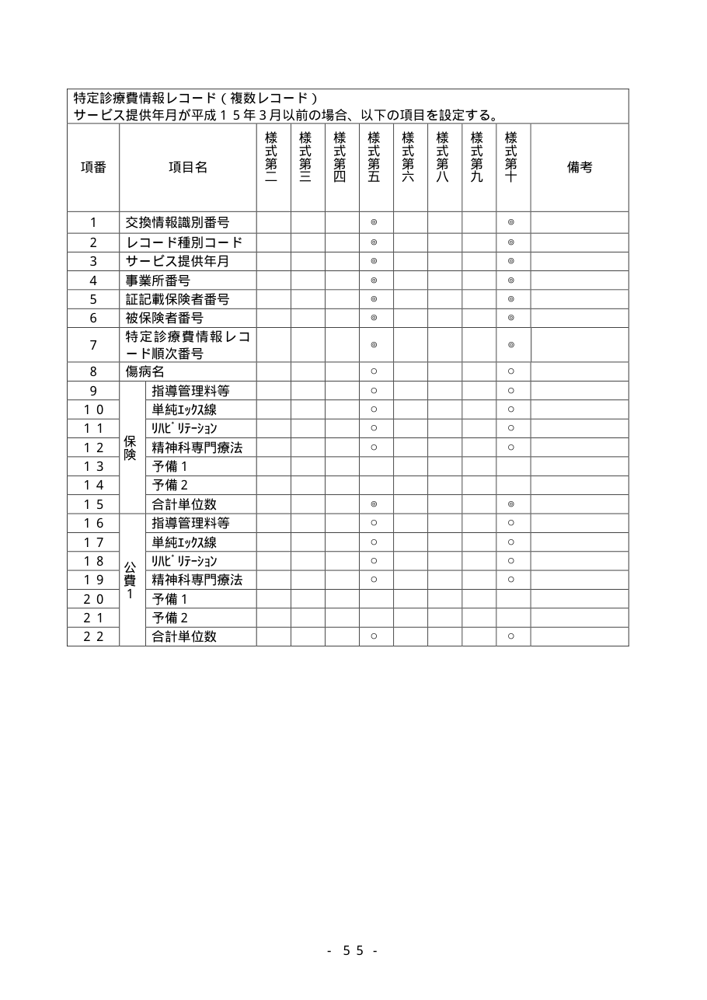
claude-haiku-5-5
- [改ページ] 前後ページで列見出しの書き起こしが一致しない
表1 required_matrix特定診療費情報レコード（複数レコード） サービス提供年月が平成15年3月以前の場合、以下の項目を設定する。 次頁へ続く
| 項番 | 項目名 | 属性 | 桁数 | 内容 | 必須 | 備考 |
|---|---|---|---|---|---|---|
| 1 | 交換情報識別番号 | 様式第二:－ 様式第三:－ 様式第四:－ 様式第五:◎ 様式第六:－ 様式第八:－ 様式第九:－ 様式第十:◎ | ||||
| 2 | レコード種別コード | 様式第二:－ 様式第三:－ 様式第四:－ 様式第五:◎ 様式第六:－ 様式第八:－ 様式第九:－ 様式第十:◎ | ||||
| 3 | サービス提供年月 | 様式第二:－ 様式第三:－ 様式第四:－ 様式第五:◎ 様式第六:－ 様式第八:－ 様式第九:－ 様式第十:◎ | ||||
| 4 | 事業所番号 | 様式第二:－ 様式第三:－ 様式第四:－ 様式第五:◎ 様式第六:－ 様式第八:－ 様式第九:－ 様式第十:◎ | ||||
| 5 | 証記載保険者番号 | 様式第二:－ 様式第三:－ 様式第四:－ 様式第五:◎ 様式第六:－ 様式第八:－ 様式第九:－ 様式第十:◎ | ||||
| 6 | 被保険者番号 | 様式第二:－ 様式第三:－ 様式第四:－ 様式第五:◎ 様式第六:－ 様式第八:－ 様式第九:－ 様式第十:◎ | ||||
| 7 | 特定診療費情報レコード順次番号 | 様式第二:－ 様式第三:－ 様式第四:－ 様式第五:◎ 様式第六:－ 様式第八:－ 様式第九:－ 様式第十:◎ | ||||
| 8 | 傷病名 | 様式第二:－ 様式第三:－ 様式第四:－ 様式第五:○ 様式第六:－ 様式第八:－ 様式第九:－ 様式第十:○ | ||||
| 9 | 保険 > 指導管理料等 | 様式第二:－ 様式第三:－ 様式第四:－ 様式第五:○ 様式第六:－ 様式第八:－ 様式第九:－ 様式第十:○ | ||||
| 10 | 保険 > 単純ｴｯｸｽ線 | 様式第二:－ 様式第三:－ 様式第四:－ 様式第五:○ 様式第六:－ 様式第八:－ 様式第九:－ 様式第十:○ | ||||
| 11 | 保険 > ﾘﾊﾋﾞﾘﾃｰｼｮﾝ | 様式第二:－ 様式第三:－ 様式第四:－ 様式第五:○ 様式第六:－ 様式第八:－ 様式第九:－ 様式第十:○ | ||||
| 12 | 保険 > 精神科専門療法 | 様式第二:－ 様式第三:－ 様式第四:－ 様式第五:○ 様式第六:－ 様式第八:－ 様式第九:－ 様式第十:○ | ||||
| 13 | 保険 > 予備1 | 様式第二:－ 様式第三:－ 様式第四:－ 様式第五:－ 様式第六:－ 様式第八:－ 様式第九:－ 様式第十:－ | ||||
| 14 | 保険 > 予備2 | 様式第二:－ 様式第三:－ 様式第四:－ 様式第五:－ 様式第六:－ 様式第八:－ 様式第九:－ 様式第十:－ | ||||
| 15 | 保険 > 合計単位数 | 様式第二:－ 様式第三:－ 様式第四:－ 様式第五:◎ 様式第六:－ 様式第八:－ 様式第九:－ 様式第十:◎ | ||||
| 16 | 公費1 > 指導管理料等 | 様式第二:－ 様式第三:－ 様式第四:－ 様式第五:○ 様式第六:－ 様式第八:－ 様式第九:－ 様式第十:○ | ||||
| 17 | 公費1 > 単純ｴｯｸｽ線 | 様式第二:－ 様式第三:－ 様式第四:－ 様式第五:○ 様式第六:－ 様式第八:－ 様式第九:－ 様式第十:○ | ||||
| 18 | 公費1 > ﾘﾊﾋﾞﾘﾃｰｼｮﾝ | 様式第二:－ 様式第三:－ 様式第四:－ 様式第五:○ 様式第六:－ 様式第八:－ 様式第九:－ 様式第十:○ | ||||
| 19 | 公費1 > 精神科専門療法 | 様式第二:－ 様式第三:－ 様式第四:－ 様式第五:○ 様式第六:－ 様式第八:－ 様式第九:－ 様式第十:○ | ||||
| 20 | 公費1 > 予備1 | 様式第二:－ 様式第三:－ 様式第四:－ 様式第五:－ 様式第六:－ 様式第八:－ 様式第九:－ 様式第十:－ | ||||
| 21 | 公費1 > 予備2 | 様式第二:－ 様式第三:－ 様式第四:－ 様式第五:－ 様式第六:－ 様式第八:－ 様式第九:－ 様式第十:－ | ||||
| 22 | 公費1 > 合計単位数 | 様式第二:－ 様式第三:－ 様式第四:－ 様式第五:○ 様式第六:－ 様式第八:－ 様式第九:－ 様式第十:○ |
uncertain（モデル自己申告）
- 項目名の「単純エックス線」「リハビリテーション」は、原文の半角カタカナ表記（ｴｯｸｽ・ﾘﾊﾋﾞﾘﾃｰｼｮﾝ）と判読した表記をそのまま書き写したため、字形に誤りがある可能性がある。
claude-sonnet-5-5
- [改ページ] p116→p117 の連続性 OK
表1 required_matrix特定診療費情報レコード(複数レコード) サービス提供年月が平成15年3月以前の場合、以下の項目を設定する。 次頁へ続く
| 項番 | 項目名 | 属性 | 桁数 | 内容 | 必須 | 備考 |
|---|---|---|---|---|---|---|
| 1 | 交換情報識別番号 | 様式第二:－ 様式第三:－ 様式第四:－ 様式第五:◎ 様式第六:－ 様式第八:－ 様式第九:－ 様式第十:◎ | ||||
| 2 | レコード種別コード | 様式第二:－ 様式第三:－ 様式第四:－ 様式第五:◎ 様式第六:－ 様式第八:－ 様式第九:－ 様式第十:◎ | ||||
| 3 | サービス提供年月 | 様式第二:－ 様式第三:－ 様式第四:－ 様式第五:◎ 様式第六:－ 様式第八:－ 様式第九:－ 様式第十:◎ | ||||
| 4 | 事業所番号 | 様式第二:－ 様式第三:－ 様式第四:－ 様式第五:◎ 様式第六:－ 様式第八:－ 様式第九:－ 様式第十:◎ | ||||
| 5 | 証記載保険者番号 | 様式第二:－ 様式第三:－ 様式第四:－ 様式第五:◎ 様式第六:－ 様式第八:－ 様式第九:－ 様式第十:◎ | ||||
| 6 | 被保険者番号 | 様式第二:－ 様式第三:－ 様式第四:－ 様式第五:◎ 様式第六:－ 様式第八:－ 様式第九:－ 様式第十:◎ | ||||
| 7 | 特定診療費情報レコード順次番号 | 様式第二:－ 様式第三:－ 様式第四:－ 様式第五:◎ 様式第六:－ 様式第八:－ 様式第九:－ 様式第十:◎ | ||||
| 8 | 傷病名 | 様式第二:－ 様式第三:－ 様式第四:－ 様式第五:○ 様式第六:－ 様式第八:－ 様式第九:－ 様式第十:○ | ||||
| 9 | 保険 > 指導管理料等 | 様式第二:－ 様式第三:－ 様式第四:－ 様式第五:○ 様式第六:－ 様式第八:－ 様式第九:－ 様式第十:○ | ||||
| 10 | 保険 > 単純エックス線 | 様式第二:－ 様式第三:－ 様式第四:－ 様式第五:○ 様式第六:－ 様式第八:－ 様式第九:－ 様式第十:○ | ||||
| 11 | 保険 > リハビリテーション | 様式第二:－ 様式第三:－ 様式第四:－ 様式第五:○ 様式第六:－ 様式第八:－ 様式第九:－ 様式第十:○ | ||||
| 12 | 保険 > 精神科専門療法 | 様式第二:－ 様式第三:－ 様式第四:－ 様式第五:○ 様式第六:－ 様式第八:－ 様式第九:－ 様式第十:○ | ||||
| 13 | 保険 > 予備1 | 様式第二:－ 様式第三:－ 様式第四:－ 様式第五:－ 様式第六:－ 様式第八:－ 様式第九:－ 様式第十:－ | ||||
| 14 | 保険 > 予備2 | 様式第二:－ 様式第三:－ 様式第四:－ 様式第五:－ 様式第六:－ 様式第八:－ 様式第九:－ 様式第十:－ | ||||
| 15 | 保険 > 合計単位数 | 様式第二:－ 様式第三:－ 様式第四:－ 様式第五:◎ 様式第六:－ 様式第八:－ 様式第九:－ 様式第十:◎ | ||||
| 16 | 公費1 > 指導管理料等 | 様式第二:－ 様式第三:－ 様式第四:－ 様式第五:○ 様式第六:－ 様式第八:－ 様式第九:－ 様式第十:○ | ||||
| 17 | 公費1 > 単純エックス線 | 様式第二:－ 様式第三:－ 様式第四:－ 様式第五:○ 様式第六:－ 様式第八:－ 様式第九:－ 様式第十:○ | ||||
| 18 | 公費1 > リハビリテーション | 様式第二:－ 様式第三:－ 様式第四:－ 様式第五:○ 様式第六:－ 様式第八:－ 様式第九:－ 様式第十:○ | ||||
| 19 | 公費1 > 精神科専門療法 | 様式第二:－ 様式第三:－ 様式第四:－ 様式第五:○ 様式第六:－ 様式第八:－ 様式第九:－ 様式第十:○ | ||||
| 20 | 公費1 > 予備1 | 様式第二:－ 様式第三:－ 様式第四:－ 様式第五:－ 様式第六:－ 様式第八:－ 様式第九:－ 様式第十:－ | ||||
| 21 | 公費1 > 予備2 | 様式第二:－ 様式第三:－ 様式第四:－ 様式第五:－ 様式第六:－ 様式第八:－ 様式第九:－ 様式第十:－ | ||||
| 22 | 公費1 > 合計単位数 | 様式第二:－ 様式第三:－ 様式第四:－ 様式第五:○ 様式第六:－ 様式第八:－ 様式第九:－ 様式第十:○ |
uncertain（モデル自己申告）
- 様式見出しは縦書きのため「様式第二」等として書き起こした
- 項番7の備考セルの罫線が他行と異なるが空欄として扱った
kaigo_jigyosho_r0604_p117 — 印字p.

claude-haiku-5-5
- 表1 項番が整数でない行が 1 行
- 表1 項番56 項番が連続していない: 38 → 56
表1 required_matrix 前頁から続く
| 項番 | 項目名 | 属性 | 桁数 | 内容 | 必須 | 備考 |
|---|---|---|---|---|---|---|
| 23 | 公費2 > 指導管理料等 | 様式第二:－ 様式第三:－ 様式第四:－ 様式第五:○ 様式第六:－ 様式第八:－ 様式第九:－ 様式第十:○ | ||||
| 24 | 公費2 > 単純エックス線 | 様式第二:－ 様式第三:－ 様式第四:－ 様式第五:○ 様式第六:－ 様式第八:－ 様式第九:－ 様式第十:○ | ||||
| 25 | 公費2 > リハビリテーション | 様式第二:－ 様式第三:－ 様式第四:－ 様式第五:○ 様式第六:－ 様式第八:－ 様式第九:－ 様式第十:○ | ||||
| 26 | 公費2 > 精神科専門療法 | 様式第二:－ 様式第三:－ 様式第四:－ 様式第五:○ 様式第六:－ 様式第八:－ 様式第九:－ 様式第十:○ | ||||
| 27 | 公費2 > 予備1 | 様式第二:－ 様式第三:－ 様式第四:－ 様式第五:－ 様式第六:－ 様式第八:－ 様式第九:－ 様式第十:－ | ||||
| 28 | 公費2 > 予備2 | 様式第二:－ 様式第三:－ 様式第四:－ 様式第五:－ 様式第六:－ 様式第八:－ 様式第九:－ 様式第十:－ | ||||
| 29 | 公費2 > 合計単位数 | 様式第二:－ 様式第三:－ 様式第四:－ 様式第五:○ 様式第六:－ 様式第八:－ 様式第九:－ 様式第十:○ | ||||
| 30 | 公費3 > 指導管理料等 | 様式第二:－ 様式第三:－ 様式第四:－ 様式第五:○ 様式第六:－ 様式第八:－ 様式第九:－ 様式第十:○ | ||||
| 31 | 公費3 > 単純エックス線 | 様式第二:－ 様式第三:－ 様式第四:－ 様式第五:○ 様式第六:－ 様式第八:－ 様式第九:－ 様式第十:○ | ||||
| 32 | 公費3 > リハビリテーション | 様式第二:－ 様式第三:－ 様式第四:－ 様式第五:○ 様式第六:－ 様式第八:－ 様式第九:－ 様式第十:○ | ||||
| 33 | 公費3 > 精神科専門療法 | 様式第二:－ 様式第三:－ 様式第四:－ 様式第五:○ 様式第六:－ 様式第八:－ 様式第九:－ 様式第十:○ | ||||
| 34 | 公費3 > 予備1 | 様式第二:－ 様式第三:－ 様式第四:－ 様式第五:－ 様式第六:－ 様式第八:－ 様式第九:－ 様式第十:－ | ||||
| 35 | 公費3 > 予備2 | 様式第二:－ 様式第三:－ 様式第四:－ 様式第五:－ 様式第六:－ 様式第八:－ 様式第九:－ 様式第十:－ | ||||
| 36 | 公費3 > 合計単位数 | 様式第二:－ 様式第三:－ 様式第四:－ 様式第五:○ 様式第六:－ 様式第八:－ 様式第九:－ 様式第十:○ | ||||
| 37 | 摘要1 | 様式第二:－ 様式第三:－ 様式第四:－ 様式第五:○ 様式第六:－ 様式第八:－ 様式第九:－ 様式第十:○ | ||||
| 38 | 摘要2 | 様式第二:－ 様式第三:－ 様式第四:－ 様式第五:○ 様式第六:－ 様式第八:－ 様式第九:－ 様式第十:○ | ||||
| : | ： | 様式第二:－ 様式第三:－ 様式第四:－ 様式第五:○ 様式第六:－ 様式第八:－ 様式第九:－ 様式第十:○ | ||||
| 56 | 摘要２０ | 様式第二:－ 様式第三:－ 様式第四:－ 様式第五:○ 様式第六:－ 様式第八:－ 様式第九:－ 様式第十:○ |
注記
- 凡例 ◎ … 必須項目 ○ … 請求内容により設定する項目 空白… 設定不要
uncertain（モデル自己申告）
- 凡例の必須記号は画像上で ◎ に近い記号だが、原文どおり ◎ として書き起こした。
- 項番・項目名が縦に結合されていない摘要行（摘要1など）は、項目名列に入っているとして name_path を単独で設定した。
claude-sonnet-5-5
- 表1 項番が整数でない行が 1 行
- 表1 項番56 項番が連続していない: 38 → 56
表1 required_matrix 前頁から続く
| 項番 | 項目名 | 属性 | 桁数 | 内容 | 必須 | 備考 |
|---|---|---|---|---|---|---|
| ２３ | 公費2 > 指導管理料等 | 様式第二:－ 様式第三:－ 様式第四:－ 様式第五:○ 様式第六:－ 様式第八:－ 様式第九:－ 様式第十:○ | ||||
| ２４ | 公費2 > 単純ｴｯｸｽ線 | 様式第二:－ 様式第三:－ 様式第四:－ 様式第五:○ 様式第六:－ 様式第八:－ 様式第九:－ 様式第十:○ | ||||
| ２５ | 公費2 > ﾘﾊﾋﾞﾘﾃｰｼｮﾝ | 様式第二:－ 様式第三:－ 様式第四:－ 様式第五:○ 様式第六:－ 様式第八:－ 様式第九:－ 様式第十:○ | ||||
| ２６ | 公費2 > 精神科専門療法 | 様式第二:－ 様式第三:－ 様式第四:－ 様式第五:○ 様式第六:－ 様式第八:－ 様式第九:－ 様式第十:○ | ||||
| ２７ | 公費2 > 予備1 | 様式第二:－ 様式第三:－ 様式第四:－ 様式第五:－ 様式第六:－ 様式第八:－ 様式第九:－ 様式第十:－ | ||||
| ２８ | 公費2 > 予備2 | 様式第二:－ 様式第三:－ 様式第四:－ 様式第五:－ 様式第六:－ 様式第八:－ 様式第九:－ 様式第十:－ | ||||
| ２９ | 公費2 > 合計単位数 | 様式第二:－ 様式第三:－ 様式第四:－ 様式第五:○ 様式第六:－ 様式第八:－ 様式第九:－ 様式第十:○ | ||||
| ３０ | 公費3 > 指導管理料等 | 様式第二:－ 様式第三:－ 様式第四:－ 様式第五:○ 様式第六:－ 様式第八:－ 様式第九:－ 様式第十:○ | ||||
| ３１ | 公費3 > 単純ｴｯｸｽ線 | 様式第二:－ 様式第三:－ 様式第四:－ 様式第五:○ 様式第六:－ 様式第八:－ 様式第九:－ 様式第十:○ | ||||
| ３２ | 公費3 > ﾘﾊﾋﾞﾘﾃｰｼｮﾝ | 様式第二:－ 様式第三:－ 様式第四:－ 様式第五:○ 様式第六:－ 様式第八:－ 様式第九:－ 様式第十:○ | ||||
| ３３ | 公費3 > 精神科専門療法 | 様式第二:－ 様式第三:－ 様式第四:－ 様式第五:○ 様式第六:－ 様式第八:－ 様式第九:－ 様式第十:○ | ||||
| ３４ | 公費3 > 予備1 | 様式第二:－ 様式第三:－ 様式第四:－ 様式第五:－ 様式第六:－ 様式第八:－ 様式第九:－ 様式第十:－ | ||||
| ３５ | 公費3 > 予備2 | 様式第二:－ 様式第三:－ 様式第四:－ 様式第五:－ 様式第六:－ 様式第八:－ 様式第九:－ 様式第十:－ | ||||
| ３６ | 公費3 > 合計単位数 | 様式第二:－ 様式第三:－ 様式第四:－ 様式第五:○ 様式第六:－ 様式第八:－ 様式第九:－ 様式第十:○ | ||||
| ３７ | 摘要1 | 様式第二:－ 様式第三:－ 様式第四:－ 様式第五:○ 様式第六:－ 様式第八:－ 様式第九:－ 様式第十:○ | ||||
| ３８ | 摘要2 | 様式第二:－ 様式第三:－ 様式第四:－ 様式第五:○ 様式第六:－ 様式第八:－ 様式第九:－ 様式第十:○ | ||||
| ： | ： | 様式第二:－ 様式第三:－ 様式第四:－ 様式第五:○ 様式第六:－ 様式第八:－ 様式第九:－ 様式第十:○ | ||||
| ５６ | 摘要２０ | 様式第二:－ 様式第三:－ 様式第四:－ 様式第五:○ 様式第六:－ 様式第八:－ 様式第九:－ 様式第十:○ |
注記
- 凡例 ◎…必須項目 ○…請求内容により設定する項目 空白…設定不要
uncertain（モデル自己申告）
- 凡例の◎は印字が小さく判読が不確か
- 項目名の「公費2」「公費3」は縦書きで結合セル
- 項番の「：」行は項番・項目名とも「：」
kaigo_jigyosho_r0604_p119 — 印字p.

claude-haiku-5-5
- 表1 項番7 必須（様式第八）の値が想定外: '※ 1'
- 表1 項番7 必須（様式第九）の値が想定外: '※ 1'
- 表1 項番7 必須（様式第十）の値が想定外: '※ 1'
- 表1 項番8 必須（様式第八）の値が想定外: '※ 1'
- 表1 項番8 必須（様式第九）の値が想定外: '※ 1'
- 表1 項番8 必須（様式第十）の値が想定外: '※ 1'
- 表1 項番9 必須（様式第八）の値が想定外: '※ 1'
- 表1 項番9 必須（様式第九）の値が想定外: '※ 1'
- 表1 項番9 必須（様式第十）の値が想定外: '※ 1'
- 表1 項番10 必須（様式第八）の値が想定外: '※ 1'
- 表1 項番10 必須（様式第九）の値が想定外: '※ 1'
- 表1 項番10 必須（様式第十）の値が想定外: '※ 1'
- 表1 項番11 必須（様式第八）の値が想定外: '※ 1'
- 表1 項番11 必須（様式第九）の値が想定外: '※ 1'
- 表1 項番11 必須（様式第十）の値が想定外: '※ 1'
- 表1 項番12 必須（様式第八）の値が想定外: '※ 1'
- 表1 項番12 必須（様式第九）の値が想定外: '※ 1'
- 表1 項番12 必須（様式第十）の値が想定外: '※ 1'
表1 required_matrix食事費用情報レコード
| 項番 | 項目名 | 属性 | 桁数 | 内容 | 必須 | 備考 |
|---|---|---|---|---|---|---|
| 1 | 交換情報識別番号 | 様式第二:－ 様式第三:－ 様式第四:－ 様式第五:－ 様式第六:－ 様式第八:◎ 様式第九:◎ 様式第十:◎ | ||||
| 2 | レコード種別コード | 様式第二:－ 様式第三:－ 様式第四:－ 様式第五:－ 様式第六:－ 様式第八:◎ 様式第九:◎ 様式第十:◎ | ||||
| 3 | サービス提供年月 | 様式第二:－ 様式第三:－ 様式第四:－ 様式第五:－ 様式第六:－ 様式第八:◎ 様式第九:◎ 様式第十:◎ | ||||
| 4 | 事業所番号 | 様式第二:－ 様式第三:－ 様式第四:－ 様式第五:－ 様式第六:－ 様式第八:◎ 様式第九:◎ 様式第十:◎ | ||||
| 5 | 証記載保険者番号 | 様式第二:－ 様式第三:－ 様式第四:－ 様式第五:－ 様式第六:－ 様式第八:◎ 様式第九:◎ 様式第十:◎ | ||||
| 6 | 被保険者番号 | 様式第二:－ 様式第三:－ 様式第四:－ 様式第五:－ 様式第六:－ 様式第八:◎ 様式第九:◎ 様式第十:◎ | ||||
| 7 | 費用 > 基本食提供 > 提供日数 | 様式第二:－ 様式第三:－ 様式第四:－ 様式第五:－ 様式第六:－ 様式第八:※ 1 様式第九:※ 1 様式第十:※ 1 | ||||
| 8 | 費用 > 基本食提供 > 提供単価 | 様式第二:－ 様式第三:－ 様式第四:－ 様式第五:－ 様式第六:－ 様式第八:※ 1 様式第九:※ 1 様式第十:※ 1 | ||||
| 9 | 費用 > 基本食提供 > 提供金額 | 様式第二:－ 様式第三:－ 様式第四:－ 様式第五:－ 様式第六:－ 様式第八:※ 1 様式第九:※ 1 様式第十:※ 1 | ||||
| 10 | 費用 > 特別食提供 > 提供日数 | 様式第二:－ 様式第三:－ 様式第四:－ 様式第五:－ 様式第六:－ 様式第八:※ 1 様式第九:※ 1 様式第十:※ 1 | ||||
| 11 | 費用 > 特別食提供 > 提供単価 | 様式第二:－ 様式第三:－ 様式第四:－ 様式第五:－ 様式第六:－ 様式第八:※ 1 様式第九:※ 1 様式第十:※ 1 | ||||
| 12 | 費用 > 特別食提供 > 提供金額 | 様式第二:－ 様式第三:－ 様式第四:－ 様式第五:－ 様式第六:－ 様式第八:※ 1 様式第九:※ 1 様式第十:※ 1 | ||||
| 13 | 食事提供延べ日数 | 様式第二:－ 様式第三:－ 様式第四:－ 様式第五:－ 様式第六:－ 様式第八:◎ 様式第九:◎ 様式第十:◎ | ||||
| 14 | 公費1対象食事提供延べ日数 | 様式第二:－ 様式第三:－ 様式第四:－ 様式第五:－ 様式第六:－ 様式第八:○ 様式第九:○ 様式第十:○ | ||||
| 15 | 公費2対象食事提供延べ日数 | 様式第二:－ 様式第三:－ 様式第四:－ 様式第五:－ 様式第六:－ 様式第八:○ 様式第九:○ 様式第十:○ | ||||
| 16 | 公費3対象食事提供延べ日数 | 様式第二:－ 様式第三:－ 様式第四:－ 様式第五:－ 様式第六:－ 様式第八:○ 様式第九:○ 様式第十:○ | ||||
| 17 | 食事提供費合計 | 様式第二:－ 様式第三:－ 様式第四:－ 様式第五:－ 様式第六:－ 様式第八:◎ 様式第九:◎ 様式第十:◎ | ||||
| 18 | 標準負担額（月額） | 様式第二:－ 様式第三:－ 様式第四:－ 様式第五:－ 様式第六:－ 様式第八:◎ 様式第九:◎ 様式第十:◎ | ||||
| 19 | 食事提供費請求額 | 様式第二:－ 様式第三:－ 様式第四:－ 様式第五:－ 様式第六:－ 様式第八:◎ 様式第九:◎ 様式第十:◎ | ||||
| 20 | 公費1食事提供費請求額 | 様式第二:－ 様式第三:－ 様式第四:－ 様式第五:－ 様式第六:－ 様式第八:○ 様式第九:○ 様式第十:○ | ||||
| 21 | 公費2食事提供費請求額 | 様式第二:－ 様式第三:－ 様式第四:－ 様式第五:－ 様式第六:－ 様式第八:○ 様式第九:○ 様式第十:○ | ||||
| 22 | 公費3食事提供費請求額 | 様式第二:－ 様式第三:－ 様式第四:－ 様式第五:－ 様式第六:－ 様式第八:○ 様式第九:○ 様式第十:○ | ||||
| 23 | 標準負担額（日額） | 様式第二:－ 様式第三:－ 様式第四:－ 様式第五:－ 様式第六:－ 様式第八:◎ 様式第九:◎ 様式第十:◎ |
注記
- 凡例 ◎ … 必須項目 ○ … 請求内容により設定する項目 空白… 設定不要
- ※1 サービス提供年月が平成15年4月以降の場合、本項目の設定は不要とする。設定された場合、システムチェックは行なわず、省略されたものとみなす。なお、サービス提供年月が平成15年3月以前のサービスについては、従来通り(請求内容により設定する項目)とする。
uncertain（モデル自己申告）
- 項番7〜12の「費用」「基本食提供」「特別食提供」は縦書きの結合見出しを外側から順に name_path に入れたが、結合範囲の読み取りに自信がない。
- 項番14〜16、20〜22の項目名の「公費 1」等の数字間の空白は画像上で判別しきれないため詰めて書いた。
claude-sonnet-5-5
- 表1 項番7 必須（様式第八）の値が想定外: '※1'
- 表1 項番7 必須（様式第九）の値が想定外: '※1'
- 表1 項番7 必須（様式第十）の値が想定外: '※1'
- 表1 項番8 必須（様式第八）の値が想定外: '※1'
- 表1 項番8 必須（様式第九）の値が想定外: '※1'
- 表1 項番8 必須（様式第十）の値が想定外: '※1'
- 表1 項番9 必須（様式第八）の値が想定外: '※1'
- 表1 項番9 必須（様式第九）の値が想定外: '※1'
- 表1 項番9 必須（様式第十）の値が想定外: '※1'
- 表1 項番10 必須（様式第八）の値が想定外: '※1'
- 表1 項番10 必須（様式第九）の値が想定外: '※1'
- 表1 項番10 必須（様式第十）の値が想定外: '※1'
- 表1 項番11 必須（様式第八）の値が想定外: '※1'
- 表1 項番11 必須（様式第九）の値が想定外: '※1'
- 表1 項番11 必須（様式第十）の値が想定外: '※1'
- 表1 項番12 必須（様式第八）の値が想定外: '※1'
- 表1 項番12 必須（様式第九）の値が想定外: '※1'
- 表1 項番12 必須（様式第十）の値が想定外: '※1'
表1 required_matrix食事費用情報レコード
| 項番 | 項目名 | 属性 | 桁数 | 内容 | 必須 | 備考 |
|---|---|---|---|---|---|---|
| 1 | 交換情報識別番号 | 様式第二:－ 様式第三:－ 様式第四:－ 様式第五:－ 様式第六:－ 様式第八:◎ 様式第九:◎ 様式第十:◎ | ||||
| 2 | レコード種別コード | 様式第二:－ 様式第三:－ 様式第四:－ 様式第五:－ 様式第六:－ 様式第八:◎ 様式第九:◎ 様式第十:◎ | ||||
| 3 | サービス提供年月 | 様式第二:－ 様式第三:－ 様式第四:－ 様式第五:－ 様式第六:－ 様式第八:◎ 様式第九:◎ 様式第十:◎ | ||||
| 4 | 事業所番号 | 様式第二:－ 様式第三:－ 様式第四:－ 様式第五:－ 様式第六:－ 様式第八:◎ 様式第九:◎ 様式第十:◎ | ||||
| 5 | 証記載保険者番号 | 様式第二:－ 様式第三:－ 様式第四:－ 様式第五:－ 様式第六:－ 様式第八:◎ 様式第九:◎ 様式第十:◎ | ||||
| 6 | 被保険者番号 | 様式第二:－ 様式第三:－ 様式第四:－ 様式第五:－ 様式第六:－ 様式第八:◎ 様式第九:◎ 様式第十:◎ | ||||
| 7 | 基本食提供費用 > 提供日数 | 様式第二:－ 様式第三:－ 様式第四:－ 様式第五:－ 様式第六:－ 様式第八:※1 様式第九:※1 様式第十:※1 | ||||
| 8 | 基本食提供費用 > 提供単価 | 様式第二:－ 様式第三:－ 様式第四:－ 様式第五:－ 様式第六:－ 様式第八:※1 様式第九:※1 様式第十:※1 | ||||
| 9 | 基本食提供費用 > 提供金額 | 様式第二:－ 様式第三:－ 様式第四:－ 様式第五:－ 様式第六:－ 様式第八:※1 様式第九:※1 様式第十:※1 | ||||
| 10 | 特別食提供費用 > 提供日数 | 様式第二:－ 様式第三:－ 様式第四:－ 様式第五:－ 様式第六:－ 様式第八:※1 様式第九:※1 様式第十:※1 | ||||
| 11 | 特別食提供費用 > 提供単価 | 様式第二:－ 様式第三:－ 様式第四:－ 様式第五:－ 様式第六:－ 様式第八:※1 様式第九:※1 様式第十:※1 | ||||
| 12 | 特別食提供費用 > 提供金額 | 様式第二:－ 様式第三:－ 様式第四:－ 様式第五:－ 様式第六:－ 様式第八:※1 様式第九:※1 様式第十:※1 | ||||
| 13 | 食事提供延べ日数 | 様式第二:－ 様式第三:－ 様式第四:－ 様式第五:－ 様式第六:－ 様式第八:◎ 様式第九:◎ 様式第十:◎ | ||||
| 14 | 公費1対象食事提供延べ日数 | 様式第二:－ 様式第三:－ 様式第四:－ 様式第五:－ 様式第六:－ 様式第八:○ 様式第九:○ 様式第十:○ | ||||
| 15 | 公費2対象食事提供延べ日数 | 様式第二:－ 様式第三:－ 様式第四:－ 様式第五:－ 様式第六:－ 様式第八:○ 様式第九:○ 様式第十:○ | ||||
| 16 | 公費3対象食事提供延べ日数 | 様式第二:－ 様式第三:－ 様式第四:－ 様式第五:－ 様式第六:－ 様式第八:○ 様式第九:○ 様式第十:○ | ||||
| 17 | 食事提供費合計 | 様式第二:－ 様式第三:－ 様式第四:－ 様式第五:－ 様式第六:－ 様式第八:◎ 様式第九:◎ 様式第十:◎ | ||||
| 18 | 標準負担額（月額） | 様式第二:－ 様式第三:－ 様式第四:－ 様式第五:－ 様式第六:－ 様式第八:◎ 様式第九:◎ 様式第十:◎ | ||||
| 19 | 食事提供費請求額 | 様式第二:－ 様式第三:－ 様式第四:－ 様式第五:－ 様式第六:－ 様式第八:◎ 様式第九:◎ 様式第十:◎ | ||||
| 20 | 公費1食事提供費請求額 | 様式第二:－ 様式第三:－ 様式第四:－ 様式第五:－ 様式第六:－ 様式第八:○ 様式第九:○ 様式第十:○ | ||||
| 21 | 公費2食事提供費請求額 | 様式第二:－ 様式第三:－ 様式第四:－ 様式第五:－ 様式第六:－ 様式第八:○ 様式第九:○ 様式第十:○ | ||||
| 22 | 公費3食事提供費請求額 | 様式第二:－ 様式第三:－ 様式第四:－ 様式第五:－ 様式第六:－ 様式第八:○ 様式第九:○ 様式第十:○ | ||||
| 23 | 標準負担額（日額） | 様式第二:－ 様式第三:－ 様式第四:－ 様式第五:－ 様式第六:－ 様式第八:◎ 様式第九:◎ 様式第十:◎ |
注記
- 凡例 ◎…必須項目 ○…請求内容により設定する項目 空白…設定不要
- ※1 サービス提供年月が平成15年4月以降の場合、本項目の設定は不要とする。設定された場合、システムチェックは行なわず、省略されたものとみなす。なお、サービス提供年月が平成15年3月以前のサービスについては、従来通り(請求内容により設定する項目)とする。
uncertain（モデル自己申告）
- 左端の「加除第11号」は欄外の注記で、printed_pageには含めていない
- 基本食提供費用・特別食提供費用のグループ見出しは縦書きで、「基本食提供費用」「特別食提供費用」と解釈した
kaigo_jigyosho_r0604_p120 — 印字p.

claude-haiku-5-5
- 表1 項番7 必須（様式第三・三の二）の値が想定外: '◎*1'
- 表1 項番7 必須（様式第四・四の二）の値が想定外: '◎*1'
- 表1 項番7 必須（様式第四の三・四の四）の値が想定外: '◎*1'
- 表1 項番7 必須（様式第五・五の二）の値が想定外: '◎*1'
- 表1 項番7 必須（様式第六・六の二）の値が想定外: '◎*1'
- 表1 項番7 必須（様式第六の三・六の四）の値が想定外: '◎*1'
- 表1 項番7 必須（様式第六の五～六の七）の値が想定外: '◎*1'
- 表1 項番7 必須（様式第八）の値が想定外: '◎*1'
- 表1 項番7 必須（様式第九）の値が想定外: '◎ 52固定'
- 表1 項番7 必須（様式第九の二）の値が想定外: '◎ 55固定'
- 表1 項番7 必須（様式第十）の値が想定外: '◎ 53固定'
- 表1 項番8 必須（様式第三・三の二）の値が想定外: '◎*2'
- 表1 項番8 必須（様式第四・四の二）の値が想定外: '◎*2'
- 表1 項番8 必須（様式第四の三・四の四）の値が想定外: '◎*2'
- 表1 項番8 必須（様式第五・五の二）の値が想定外: '◎*2'
- 表1 項番9 必須（様式第三・三の二）の値が想定外: '◎*2'
- 表1 項番9 必須（様式第四・四の二）の値が想定外: '◎*2'
- 表1 項番9 必須（様式第四の三・四の四）の値が想定外: '◎*2'
- 表1 項番9 必須（様式第五・五の二）の値が想定外: '◎*2'
- 表1 項番9 必須（様式第六の三・六の四）の値が想定外: '◎*4'
- 表1 項番10 必須（様式第三・三の二）の値が想定外: '◎*2'
- 表1 項番10 必須（様式第四・四の二）の値が想定外: '◎*2'
- 表1 項番10 必須（様式第四の三・四の四）の値が想定外: '◎*2'
- 表1 項番10 必須（様式第五・五の二）の値が想定外: '◎*2'
- 表1 項番10 必須（様式第六の三・六の四）の値が想定外: '◎*4'
- 表1 項番11 必須（様式第三・三の二）の値が想定外: '◎*2'
- 表1 項番11 必須（様式第四・四の二）の値が想定外: '◎*2'
- 表1 項番11 必須（様式第四の三・四の四）の値が想定外: '◎*2'
- 表1 項番11 必須（様式第五・五の二）の値が想定外: '◎*2'
- 表1 項番11 必須（様式第六の三・六の四）の値が想定外: '○*5'
- 表1 項番12 必須（様式第三・三の二）の値が想定外: '*3'
- 表1 項番12 必須（様式第四・四の二）の値が想定外: '*3'
- 表1 項番12 必須（様式第四の三・四の四）の値が想定外: '*3'
- 表1 項番12 必須（様式第五・五の二）の値が想定外: '*3'
- 表1 項番13 必須（様式第三・三の二）の値が想定外: '*3'
- 表1 項番13 必須（様式第四・四の二）の値が想定外: '*3'
- 表1 項番13 必須（様式第四の三・四の四）の値が想定外: '*3'
- 表1 項番13 必須（様式第五・五の二）の値が想定外: '*3'
- [改ページ] 前後ページで列見出しの書き起こしが一致しない
表1 required_matrix 次頁へ続く
| 項番 | 項目名 | 属性 | 桁数 | 内容 | 必須 | 備考 |
|---|---|---|---|---|---|---|
| 1 | 交換情報識別番号 | 様式第二・二の二:◎ 様式第二の三:◎ 様式第三・三の二:◎ 様式第四・四の二:◎ 様式第四の三・四の四:◎ 様式第五・五の二:◎ 様式第六・六の二:◎ 様式第六の三・六の四:◎ 様式第六の五～六の七:◎ 様式第八:◎ 様式第九:◎ 様式第九の二:◎ 様式第十:◎ 様式(予):◎ | ||||
| 2 | レコード種別コード | 様式第二・二の二:◎ 様式第二の三:◎ 様式第三・三の二:◎ 様式第四・四の二:◎ 様式第四の三・四の四:◎ 様式第五・五の二:◎ 様式第六・六の二:◎ 様式第六の三・六の四:◎ 様式第六の五～六の七:◎ 様式第八:◎ 様式第九:◎ 様式第九の二:◎ 様式第十:◎ 様式(予):◎ | ||||
| 3 | サービス提供年月 | 様式第二・二の二:◎ 様式第二の三:◎ 様式第三・三の二:◎ 様式第四・四の二:◎ 様式第四の三・四の四:◎ 様式第五・五の二:◎ 様式第六・六の二:◎ 様式第六の三・六の四:◎ 様式第六の五～六の七:◎ 様式第八:◎ 様式第九:◎ 様式第九の二:◎ 様式第十:◎ 様式(予):◎ | ||||
| 4 | 事業所番号 | 様式第二・二の二:◎ 様式第二の三:◎ 様式第三・三の二:◎ 様式第四・四の二:◎ 様式第四の三・四の四:◎ 様式第五・五の二:◎ 様式第六・六の二:◎ 様式第六の三・六の四:◎ 様式第六の五～六の七:◎ 様式第八:◎ 様式第九:◎ 様式第九の二:◎ 様式第十:◎ 様式(予):◎ | ||||
| 5 | 証記載保険者番号 | 様式第二・二の二:◎ 様式第二の三:◎ 様式第三・三の二:◎ 様式第四・四の二:◎ 様式第四の三・四の四:◎ 様式第五・五の二:◎ 様式第六・六の二:◎ 様式第六の三・六の四:◎ 様式第六の五～六の七:◎ 様式第八:◎ 様式第九:◎ 様式第九の二:◎ 様式第十:◎ 様式(予):◎ | ||||
| 6 | 被保険者番号 | 様式第二・二の二:◎ 様式第二の三:◎ 様式第三・三の二:◎ 様式第四・四の二:◎ 様式第四の三・四の四:◎ 様式第五・五の二:◎ 様式第六・六の二:◎ 様式第六の三・六の四:◎ 様式第六の五～六の七:◎ 様式第八:◎ 様式第九:◎ 様式第九の二:◎ 様式第十:◎ 様式(予):◎ | ||||
| 7 | サービス種類コード | 様式第二・二の二:◎ 様式第二の三:◎ 様式第三・三の二:◎*1 様式第四・四の二:◎*1 様式第四の三・四の四:◎*1 様式第五・五の二:◎*1 様式第六・六の二:◎*1 様式第六の三・六の四:◎*1 様式第六の五～六の七:◎*1 様式第八:◎*1 様式第九:◎ 52固定 様式第九の二:◎ 55固定 様式第十:◎ 53固定 様式(予):◎ | ||||
| 8 | サービス実日数 | 様式第二・二の二:◎ 様式第二の三:◎ 様式第三・三の二:◎*2 様式第四・四の二:◎*2 様式第四の三・四の四:◎*2 様式第五・五の二:◎*2 様式第六・六の二:－ 様式第六の三・六の四:－ 様式第六の五～六の七:◎ 様式第八:－ 様式第九:－ 様式第九の二:－ 様式第十:－ 様式(予):◎ | ||||
| 9 | 計画単位数 | 様式第二・二の二:◎ 様式第二の三:◎ 様式第三・三の二:◎*2 様式第四・四の二:◎*2 様式第四の三・四の四:◎*2 様式第五・五の二:◎*2 様式第六・六の二:－ 様式第六の三・六の四:◎*4 様式第六の五～六の七:◎ 様式第八:－ 様式第九:－ 様式第九の二:－ 様式第十:－ 様式(予):◎ | ||||
| 10 | 限度額管理対象単位数 | 様式第二・二の二:◎ 様式第二の三:◎ 様式第三・三の二:◎*2 様式第四・四の二:◎*2 様式第四の三・四の四:◎*2 様式第五・五の二:◎*2 様式第六・六の二:－ 様式第六の三・六の四:◎*4 様式第六の五～六の七:◎ 様式第八:－ 様式第九:－ 様式第九の二:－ 様式第十:－ 様式(予):◎ | ||||
| 11 | 限度額管理対象外単位数 | 様式第二・二の二:◎ 様式第二の三:◎ 様式第三・三の二:◎*2 様式第四・四の二:◎*2 様式第四の三・四の四:◎*2 様式第五・五の二:◎*2 様式第六・六の二:－ 様式第六の三・六の四:○*5 様式第六の五～六の七:◎ 様式第八:－ 様式第九:－ 様式第九の二:－ 様式第十:－ 様式(予):◎ | ||||
| 12 | 短期入所計画日数 | 様式第二・二の二:－ 様式第二の三:－ 様式第三・三の二:*3 様式第四・四の二:*3 様式第四の三・四の四:*3 様式第五・五の二:*3 様式第六・六の二:－ 様式第六の三・六の四:－ 様式第六の五～六の七:－ 様式第八:－ 様式第九:－ 様式第九の二:－ 様式第十:－ 様式(予):－ | ||||
| 13 | 短期入所実日数 | 様式第二・二の二:－ 様式第二の三:－ 様式第三・三の二:*3 様式第四・四の二:*3 様式第四の三・四の四:*3 様式第五・五の二:*3 様式第六・六の二:－ 様式第六の三・六の四:－ 様式第六の五～六の七:－ 様式第八:－ 様式第九:－ 様式第九の二:－ 様式第十:－ 様式(予):－ | ||||
| 14 | 保険 > 単位数合計 | 様式第二・二の二:◎ 様式第二の三:◎ 様式第三・三の二:◎ 様式第四・四の二:◎ 様式第四の三・四の四:◎ 様式第五・五の二:◎ 様式第六・六の二:◎ 様式第六の三・六の四:◎ 様式第六の五～六の七:◎ 様式第八:◎ 様式第九:◎ 様式第九の二:◎ 様式第十:◎ 様式(予):◎ | ||||
| 15 | 保険 > 単位数単価 | 様式第二・二の二:○ 様式第二の三:○ 様式第三・三の二:○ 様式第四・四の二:○ 様式第四の三・四の四:○ 様式第五・五の二:○ 様式第六・六の二:○ 様式第六の三・六の四:○ 様式第六の五～六の七:○ 様式第八:○ 様式第九:○ 様式第九の二:○ 様式第十:○ 様式(予):○ | ||||
| 16 | 保険 > 請求額 | 様式第二・二の二:○ 様式第二の三:○ 様式第三・三の二:○ 様式第四・四の二:○ 様式第四の三・四の四:○ 様式第五・五の二:○ 様式第六・六の二:○ 様式第六の三・六の四:○ 様式第六の五～六の七:○ 様式第八:○ 様式第九:○ 様式第九の二:○ 様式第十:○ 様式(予):○ | ||||
| 17 | 保険 > 利用者負担額 | 様式第二・二の二:○ 様式第二の三:○ 様式第三・三の二:○ 様式第四・四の二:○ 様式第四の三・四の四:○ 様式第五・五の二:○ 様式第六・六の二:○ 様式第六の三・六の四:○ 様式第六の五～六の七:○ 様式第八:○ 様式第九:○ 様式第九の二:○ 様式第十:○ 様式(予):○ | ||||
| 18 | 公費1 > 単位数合計 | 様式第二・二の二:○ 様式第二の三:○ 様式第三・三の二:○ 様式第四・四の二:○ 様式第四の三・四の四:○ 様式第五・五の二:○ 様式第六・六の二:○ 様式第六の三・六の四:○ 様式第六の五～六の七:○ 様式第八:○ 様式第九:○ 様式第九の二:○ 様式第十:○ 様式(予):－ | ||||
| 19 | 公費1 > 請求額 | 様式第二・二の二:○ 様式第二の三:○ 様式第三・三の二:○ 様式第四・四の二:○ 様式第四の三・四の四:○ 様式第五・五の二:○ 様式第六・六の二:○ 様式第六の三・六の四:○ 様式第六の五～六の七:○ 様式第八:○ 様式第九:○ 様式第九の二:○ 様式第十:○ 様式(予):－ | ||||
| 20 | 公費1 > 本人負担額 | 様式第二・二の二:○ 様式第二の三:○ 様式第三・三の二:○ 様式第四・四の二:○ 様式第四の三・四の四:○ 様式第五・五の二:○ 様式第六・六の二:○ 様式第六の三・六の四:○ 様式第六の五～六の七:○ 様式第八:○ 様式第九:○ 様式第九の二:○ 様式第十:○ 様式(予):－ | ||||
| 21 | 公費2 > 単位数合計 | 様式第二・二の二:○ 様式第二の三:○ 様式第三・三の二:○ 様式第四・四の二:○ 様式第四の三・四の四:○ 様式第五・五の二:○ 様式第六・六の二:○ 様式第六の三・六の四:○ 様式第六の五～六の七:○ 様式第八:○ 様式第九:○ 様式第九の二:○ 様式第十:○ 様式(予):－ | ||||
| 22 | 公費2 > 請求額 | 様式第二・二の二:○ 様式第二の三:○ 様式第三・三の二:○ 様式第四・四の二:○ 様式第四の三・四の四:○ 様式第五・五の二:○ 様式第六・六の二:○ 様式第六の三・六の四:○ 様式第六の五～六の七:○ 様式第八:○ 様式第九:○ 様式第九の二:○ 様式第十:○ 様式(予):－ | ||||
| 23 | 公費2 > 本人負担額 | 様式第二・二の二:○ 様式第二の三:○ 様式第三・三の二:○ 様式第四・四の二:○ 様式第四の三・四の四:○ 様式第五・五の二:○ 様式第六・六の二:○ 様式第六の三・六の四:○ 様式第六の五～六の七:○ 様式第八:○ 様式第九:○ 様式第九の二:○ 様式第十:○ 様式(予):－ |
uncertain（モデル自己申告）
- 本ページに *1 〜 *5 の注記本文が見当たらないため footnotes は空とした。
- 行12・13の「*3」、行7の「◎*1」などの脚注記号は、原文の表示どおり値に含めた。
- 表の列見出しに記載された「様式(予)」の括弧表記は原文の字形から判読したもので、全角・半角の区別が不確か。
claude-sonnet-5-5
- 表1 項番7 必須（様式第三・三の二）の値が想定外: '◎\n*1'
- 表1 項番7 必須（様式第四・四の二）の値が想定外: '◎\n*1'
- 表1 項番7 必須（様式第四の三・四の四）の値が想定外: '◎\n*1'
- 表1 項番7 必須（様式第五・五の二）の値が想定外: '◎\n*1'
- 表1 項番7 必須（様式第六・六の二）の値が想定外: '◎\n*1'
- 表1 項番7 必須（様式第六の三・六の四）の値が想定外: '◎\n*1'
- 表1 項番7 必須（様式第六の五～六の七）の値が想定外: '◎\n*1'
- 表1 項番7 必須（様式第八）の値が想定外: '◎\n*1'
- 表1 項番7 必須（様式第九）の値が想定外: '◎\n52固定'
- 表1 項番7 必須（様式第九の二）の値が想定外: '◎\n55固定'
- 表1 項番7 必須（様式第十）の値が想定外: '◎\n53固定'
- 表1 項番8 必須（様式第三・三の二）の値が想定外: '◎\n*2'
- 表1 項番8 必須（様式第四・四の二）の値が想定外: '◎\n*2'
- 表1 項番8 必須（様式第四の三・四の四）の値が想定外: '◎\n*2'
- 表1 項番8 必須（様式第五・五の二）の値が想定外: '◎\n*2'
- 表1 項番9 必須（様式第三・三の二）の値が想定外: '◎\n*2'
- 表1 項番9 必須（様式第四・四の二）の値が想定外: '◎\n*2'
- 表1 項番9 必須（様式第四の三・四の四）の値が想定外: '◎\n*2'
- 表1 項番9 必須（様式第五・五の二）の値が想定外: '◎\n*2'
- 表1 項番9 必須（様式第六の三・六の四）の値が想定外: '◎\n*4'
- 表1 項番10 必須（様式第三・三の二）の値が想定外: '◎\n*2'
- 表1 項番10 必須（様式第四・四の二）の値が想定外: '◎\n*2'
- 表1 項番10 必須（様式第四の三・四の四）の値が想定外: '◎\n*2'
- 表1 項番10 必須（様式第五・五の二）の値が想定外: '◎\n*2'
- 表1 項番10 必須（様式第六の三・六の四）の値が想定外: '◎\n*4'
- 表1 項番11 必須（様式第三・三の二）の値が想定外: '◎\n*2'
- 表1 項番11 必須（様式第四・四の二）の値が想定外: '◎\n*2'
- 表1 項番11 必須（様式第四の三・四の四）の値が想定外: '◎\n*2'
- 表1 項番11 必須（様式第五・五の二）の値が想定外: '◎\n*2'
- 表1 項番11 必須（様式第六の三・六の四）の値が想定外: '○\n*5'
- 表1 項番12 必須（様式第三・三の二）の値が想定外: '*3'
- 表1 項番12 必須（様式第四・四の二）の値が想定外: '*3'
- 表1 項番12 必須（様式第四の三・四の四）の値が想定外: '*3'
- 表1 項番12 必須（様式第五・五の二）の値が想定外: '*3'
- 表1 項番13 必須（様式第三・三の二）の値が想定外: '*3'
- 表1 項番13 必須（様式第四・四の二）の値が想定外: '*3'
- 表1 項番13 必須（様式第四の三・四の四）の値が想定外: '*3'
- 表1 項番13 必須（様式第五・五の二）の値が想定外: '*3'
- [改ページ] 前後ページで列見出しの書き起こしが一致しない
表1 required_matrix集計情報レコード（複数レコード） 次頁へ続く
| 項番 | 項目名 | 属性 | 桁数 | 内容 | 必須 | 備考 |
|---|---|---|---|---|---|---|
| 1 | 交換情報識別番号 | 様式第二・二の二:◎ 様式第二の三:◎ 様式第三・三の二:◎ 様式第四・四の二:◎ 様式第四の三・四の四:◎ 様式第五・五の二:◎ 様式第六・六の二:◎ 様式第六の三・六の四:◎ 様式第六の五～六の七:◎ 様式第八:◎ 様式第九:◎ 様式第九の二:◎ 様式第十:◎ 様式(予):◎ | ||||
| 2 | レコード種別コード | 様式第二・二の二:◎ 様式第二の三:◎ 様式第三・三の二:◎ 様式第四・四の二:◎ 様式第四の三・四の四:◎ 様式第五・五の二:◎ 様式第六・六の二:◎ 様式第六の三・六の四:◎ 様式第六の五～六の七:◎ 様式第八:◎ 様式第九:◎ 様式第九の二:◎ 様式第十:◎ 様式(予):◎ | ||||
| 3 | サービス提供年月 | 様式第二・二の二:◎ 様式第二の三:◎ 様式第三・三の二:◎ 様式第四・四の二:◎ 様式第四の三・四の四:◎ 様式第五・五の二:◎ 様式第六・六の二:◎ 様式第六の三・六の四:◎ 様式第六の五～六の七:◎ 様式第八:◎ 様式第九:◎ 様式第九の二:◎ 様式第十:◎ 様式(予):◎ | ||||
| 4 | 事業所番号 | 様式第二・二の二:◎ 様式第二の三:◎ 様式第三・三の二:◎ 様式第四・四の二:◎ 様式第四の三・四の四:◎ 様式第五・五の二:◎ 様式第六・六の二:◎ 様式第六の三・六の四:◎ 様式第六の五～六の七:◎ 様式第八:◎ 様式第九:◎ 様式第九の二:◎ 様式第十:◎ 様式(予):◎ | ||||
| 5 | 証記載保険者番号 | 様式第二・二の二:◎ 様式第二の三:◎ 様式第三・三の二:◎ 様式第四・四の二:◎ 様式第四の三・四の四:◎ 様式第五・五の二:◎ 様式第六・六の二:◎ 様式第六の三・六の四:◎ 様式第六の五～六の七:◎ 様式第八:◎ 様式第九:◎ 様式第九の二:◎ 様式第十:◎ 様式(予):◎ | ||||
| 6 | 被保険者番号 | 様式第二・二の二:◎ 様式第二の三:◎ 様式第三・三の二:◎ 様式第四・四の二:◎ 様式第四の三・四の四:◎ 様式第五・五の二:◎ 様式第六・六の二:◎ 様式第六の三・六の四:◎ 様式第六の五～六の七:◎ 様式第八:◎ 様式第九:◎ 様式第九の二:◎ 様式第十:◎ 様式(予):◎ | ||||
| 7 | サービス種類コード | 様式第二・二の二:◎ 様式第二の三:◎ 様式第三・三の二:◎ *1 様式第四・四の二:◎ *1 様式第四の三・四の四:◎ *1 様式第五・五の二:◎ *1 様式第六・六の二:◎ *1 様式第六の三・六の四:◎ *1 様式第六の五～六の七:◎ *1 様式第八:◎ *1 様式第九:◎ 52固定 様式第九の二:◎ 55固定 様式第十:◎ 53固定 様式(予):◎ | ||||
| 8 | サービス実日数 | 様式第二・二の二:◎ 様式第二の三:◎ 様式第三・三の二:◎ *2 様式第四・四の二:◎ *2 様式第四の三・四の四:◎ *2 様式第五・五の二:◎ *2 様式第六・六の二:－ 様式第六の三・六の四:－ 様式第六の五～六の七:◎ 様式第八:－ 様式第九:－ 様式第九の二:－ 様式第十:－ 様式(予):◎ | ||||
| 9 | 計画単位数 | 様式第二・二の二:◎ 様式第二の三:◎ 様式第三・三の二:◎ *2 様式第四・四の二:◎ *2 様式第四の三・四の四:◎ *2 様式第五・五の二:◎ *2 様式第六・六の二:－ 様式第六の三・六の四:◎ *4 様式第六の五～六の七:◎ 様式第八:－ 様式第九:－ 様式第九の二:－ 様式第十:－ 様式(予):◎ | ||||
| 10 | 限度額管理対象単位数 | 様式第二・二の二:◎ 様式第二の三:◎ 様式第三・三の二:◎ *2 様式第四・四の二:◎ *2 様式第四の三・四の四:◎ *2 様式第五・五の二:◎ *2 様式第六・六の二:－ 様式第六の三・六の四:◎ *4 様式第六の五～六の七:◎ 様式第八:－ 様式第九:－ 様式第九の二:－ 様式第十:－ 様式(予):◎ | ||||
| 11 | 限度額管理対象外単位数 | 様式第二・二の二:◎ 様式第二の三:◎ 様式第三・三の二:◎ *2 様式第四・四の二:◎ *2 様式第四の三・四の四:◎ *2 様式第五・五の二:◎ *2 様式第六・六の二:－ 様式第六の三・六の四:○ *5 様式第六の五～六の七:◎ 様式第八:－ 様式第九:－ 様式第九の二:－ 様式第十:－ 様式(予):◎ | ||||
| 12 | 短期入所計画日数 | 様式第二・二の二:－ 様式第二の三:－ 様式第三・三の二:*3 様式第四・四の二:*3 様式第四の三・四の四:*3 様式第五・五の二:*3 様式第六・六の二:－ 様式第六の三・六の四:－ 様式第六の五～六の七:－ 様式第八:－ 様式第九:－ 様式第九の二:－ 様式第十:－ 様式(予):－ | ||||
| 13 | 短期入所実日数 | 様式第二・二の二:－ 様式第二の三:－ 様式第三・三の二:*3 様式第四・四の二:*3 様式第四の三・四の四:*3 様式第五・五の二:*3 様式第六・六の二:－ 様式第六の三・六の四:－ 様式第六の五～六の七:－ 様式第八:－ 様式第九:－ 様式第九の二:－ 様式第十:－ 様式(予):－ | ||||
| 14 | 保険 > 単位数合計 | 様式第二・二の二:◎ 様式第二の三:◎ 様式第三・三の二:◎ 様式第四・四の二:◎ 様式第四の三・四の四:◎ 様式第五・五の二:◎ 様式第六・六の二:◎ 様式第六の三・六の四:◎ 様式第六の五～六の七:◎ 様式第八:◎ 様式第九:◎ 様式第九の二:◎ 様式第十:◎ 様式(予):◎ | ||||
| 15 | 保険 > 単位数単価 | 様式第二・二の二:○ 様式第二の三:○ 様式第三・三の二:○ 様式第四・四の二:○ 様式第四の三・四の四:○ 様式第五・五の二:○ 様式第六・六の二:○ 様式第六の三・六の四:○ 様式第六の五～六の七:○ 様式第八:○ 様式第九:○ 様式第九の二:○ 様式第十:○ 様式(予):○ | ||||
| 16 | 保険 > 請求額 | 様式第二・二の二:○ 様式第二の三:○ 様式第三・三の二:○ 様式第四・四の二:○ 様式第四の三・四の四:○ 様式第五・五の二:○ 様式第六・六の二:○ 様式第六の三・六の四:○ 様式第六の五～六の七:○ 様式第八:○ 様式第九:○ 様式第九の二:○ 様式第十:○ 様式(予):○ | ||||
| 17 | 保険 > 利用者負担額 | 様式第二・二の二:○ 様式第二の三:○ 様式第三・三の二:○ 様式第四・四の二:○ 様式第四の三・四の四:○ 様式第五・五の二:○ 様式第六・六の二:○ 様式第六の三・六の四:○ 様式第六の五～六の七:○ 様式第八:○ 様式第九:○ 様式第九の二:○ 様式第十:○ 様式(予):○ | ||||
| 18 | 公費1 > 単位数合計 | 様式第二・二の二:○ 様式第二の三:○ 様式第三・三の二:○ 様式第四・四の二:○ 様式第四の三・四の四:○ 様式第五・五の二:○ 様式第六・六の二:○ 様式第六の三・六の四:○ 様式第六の五～六の七:○ 様式第八:○ 様式第九:○ 様式第九の二:○ 様式第十:○ 様式(予):－ | ||||
| 19 | 公費1 > 請求額 | 様式第二・二の二:○ 様式第二の三:○ 様式第三・三の二:○ 様式第四・四の二:○ 様式第四の三・四の四:○ 様式第五・五の二:○ 様式第六・六の二:○ 様式第六の三・六の四:○ 様式第六の五～六の七:○ 様式第八:○ 様式第九:○ 様式第九の二:○ 様式第十:○ 様式(予):－ | ||||
| 20 | 公費1 > 本人負担額 | 様式第二・二の二:○ 様式第二の三:○ 様式第三・三の二:○ 様式第四・四の二:○ 様式第四の三・四の四:○ 様式第五・五の二:○ 様式第六・六の二:○ 様式第六の三・六の四:○ 様式第六の五～六の七:○ 様式第八:○ 様式第九:○ 様式第九の二:○ 様式第十:○ 様式(予):－ | ||||
| 21 | 公費2 > 単位数合計 | 様式第二・二の二:○ 様式第二の三:○ 様式第三・三の二:○ 様式第四・四の二:○ 様式第四の三・四の四:○ 様式第五・五の二:○ 様式第六・六の二:○ 様式第六の三・六の四:○ 様式第六の五～六の七:○ 様式第八:○ 様式第九:○ 様式第九の二:○ 様式第十:○ 様式(予):－ | ||||
| 22 | 公費2 > 請求額 | 様式第二・二の二:○ 様式第二の三:○ 様式第三・三の二:○ 様式第四・四の二:○ 様式第四の三・四の四:○ 様式第五・五の二:○ 様式第六・六の二:○ 様式第六の三・六の四:○ 様式第六の五～六の七:○ 様式第八:○ 様式第九:○ 様式第九の二:○ 様式第十:○ 様式(予):－ | ||||
| 23 | 公費2 > 本人負担額 | 様式第二・二の二:○ 様式第二の三:○ 様式第三・三の二:○ 様式第四・四の二:○ 様式第四の三・四の四:○ 様式第五・五の二:○ 様式第六・六の二:○ 様式第六の三・六の四:○ 様式第六の五～六の七:○ 様式第八:○ 様式第九:○ 様式第九の二:○ 様式第十:○ 様式(予):－ |
uncertain（モデル自己申告）
- 備考列は全行空欄のため note は null
- 項番7の「52固定」等はセル内で折り返されており、「◎\n52固定」と記載
- 項目名のうち項番9「計画単位数」は画像上「計画単位数」と読めるが「計画単位数」の表記を採用
kaigo_jigyosho_r0604_p121 — 印字p.

claude-haiku-5-5
表1 required_matrix 前頁から続く
| 項番 | 項目名 | 属性 | 桁数 | 内容 | 必須 | 備考 |
|---|---|---|---|---|---|---|
| 24 | 公費3 > 単位数合計 | 様式第二・二の二:○ 様式第二の三:○ 様式第三・三の二:○ 様式第四・四の二:○ 様式第四の三・四の四:○ 様式第五・五の二:○ 様式第六・六の二:○ 様式第六の三・六の四:○ 様式第六の五〜六の七:○ 様式第八:○ 様式第九:○ 様式第九の二:○ 様式第十:○ 様式(予):－ | ||||
| 25 | 公費3 > 請求額 | 様式第二・二の二:○ 様式第二の三:○ 様式第三・三の二:○ 様式第四・四の二:○ 様式第四の三・四の四:○ 様式第五・五の二:○ 様式第六・六の二:○ 様式第六の三・六の四:○ 様式第六の五〜六の七:○ 様式第八:○ 様式第九:○ 様式第九の二:○ 様式第十:○ 様式(予):－ | ||||
| 26 | 公費3 > 本人負担額 | 様式第二・二の二:○ 様式第二の三:○ 様式第三・三の二:○ 様式第四・四の二:○ 様式第四の三・四の四:○ 様式第五・五の二:○ 様式第六・六の二:○ 様式第六の三・六の四:○ 様式第六の五〜六の七:○ 様式第八:○ 様式第九:○ 様式第九の二:○ 様式第十:○ 様式(予):－ | ||||
| 27 | 保険分出来高医療費 > 単位数合計 | 様式第二・二の二:－ 様式第二の三:－ 様式第三・三の二:－ 様式第四・四の二:○ 様式第四の三・四の四:○ 様式第五・五の二:○ 様式第六・六の二:－ 様式第六の三・六の四:－ 様式第六の五〜六の七:－ 様式第八:－ 様式第九:○ 様式第九の二:○ 様式第十:○ 様式(予):－ | ||||
| 28 | 保険分出来高医療費 > 請求額 | 様式第二・二の二:－ 様式第二の三:－ 様式第三・三の二:－ 様式第四・四の二:○ 様式第四の三・四の四:○ 様式第五・五の二:○ 様式第六・六の二:－ 様式第六の三・六の四:－ 様式第六の五〜六の七:－ 様式第八:－ 様式第九:○ 様式第九の二:○ 様式第十:○ 様式(予):－ | ||||
| 29 | 保険分出来高医療費 > 出来高医療費利用者負担額 | 様式第二・二の二:－ 様式第二の三:－ 様式第三・三の二:－ 様式第四・四の二:○ 様式第四の三・四の四:○ 様式第五・五の二:○ 様式第六・六の二:－ 様式第六の三・六の四:－ 様式第六の五〜六の七:－ 様式第八:－ 様式第九:○ 様式第九の二:○ 様式第十:○ 様式(予):－ | ||||
| 30 | 公費1分出来高医療費 > 単位数合計 | 様式第二・二の二:－ 様式第二の三:－ 様式第三・三の二:－ 様式第四・四の二:○ 様式第四の三・四の四:○ 様式第五・五の二:○ 様式第六・六の二:－ 様式第六の三・六の四:－ 様式第六の五〜六の七:－ 様式第八:－ 様式第九:○ 様式第九の二:○ 様式第十:○ 様式(予):－ | ||||
| 31 | 公費1分出来高医療費 > 請求額 | 様式第二・二の二:－ 様式第二の三:－ 様式第三・三の二:－ 様式第四・四の二:○ 様式第四の三・四の四:○ 様式第五・五の二:○ 様式第六・六の二:－ 様式第六の三・六の四:－ 様式第六の五〜六の七:－ 様式第八:－ 様式第九:○ 様式第九の二:○ 様式第十:○ 様式(予):－ | ||||
| 32 | 公費1分出来高医療費 > 出来高医療費本人負担額 | 様式第二・二の二:－ 様式第二の三:－ 様式第三・三の二:－ 様式第四・四の二:○ 様式第四の三・四の四:○ 様式第五・五の二:○ 様式第六・六の二:－ 様式第六の三・六の四:－ 様式第六の五〜六の七:－ 様式第八:－ 様式第九:○ 様式第九の二:○ 様式第十:○ 様式(予):－ | ||||
| 33 | 公費2分出来高医療費 > 単位数合計 | 様式第二・二の二:－ 様式第二の三:－ 様式第三・三の二:－ 様式第四・四の二:○ 様式第四の三・四の四:○ 様式第五・五の二:○ 様式第六・六の二:－ 様式第六の三・六の四:－ 様式第六の五〜六の七:－ 様式第八:－ 様式第九:○ 様式第九の二:○ 様式第十:○ 様式(予):－ | ||||
| 34 | 公費2分出来高医療費 > 請求額 | 様式第二・二の二:－ 様式第二の三:－ 様式第三・三の二:－ 様式第四・四の二:○ 様式第四の三・四の四:○ 様式第五・五の二:○ 様式第六・六の二:－ 様式第六の三・六の四:－ 様式第六の五〜六の七:－ 様式第八:－ 様式第九:○ 様式第九の二:○ 様式第十:○ 様式(予):－ | ||||
| 35 | 公費2分出来高医療費 > 出来高医療費本人負担額 | 様式第二・二の二:－ 様式第二の三:－ 様式第三・三の二:－ 様式第四・四の二:○ 様式第四の三・四の四:○ 様式第五・五の二:○ 様式第六・六の二:－ 様式第六の三・六の四:－ 様式第六の五〜六の七:－ 様式第八:－ 様式第九:○ 様式第九の二:○ 様式第十:○ 様式(予):－ | ||||
| 36 | 公費3分出来高医療費 > 単位数合計 | 様式第二・二の二:－ 様式第二の三:－ 様式第三・三の二:－ 様式第四・四の二:○ 様式第四の三・四の四:○ 様式第五・五の二:○ 様式第六・六の二:－ 様式第六の三・六の四:－ 様式第六の五〜六の七:－ 様式第八:－ 様式第九:○ 様式第九の二:○ 様式第十:○ 様式(予):－ | ||||
| 37 | 公費3分出来高医療費 > 請求額 | 様式第二・二の二:－ 様式第二の三:－ 様式第三・三の二:－ 様式第四・四の二:○ 様式第四の三・四の四:○ 様式第五・五の二:○ 様式第六・六の二:－ 様式第六の三・六の四:－ 様式第六の五〜六の七:－ 様式第八:－ 様式第九:○ 様式第九の二:○ 様式第十:○ 様式(予):－ | ||||
| 38 | 公費3分出来高医療費 > 出来高医療費本人負担額 | 様式第二・二の二:－ 様式第二の三:－ 様式第三・三の二:－ 様式第四・四の二:○ 様式第四の三・四の四:○ 様式第五・五の二:○ 様式第六・六の二:－ 様式第六の三・六の四:－ 様式第六の五〜六の七:－ 様式第八:－ 様式第九:○ 様式第九の二:○ 様式第十:○ 様式(予):－ |
注記
- 凡例 ◎ … 必須項目 ○ … 請求内容により設定する項目 空白… 設定不要
- *1 様式第三の場合21固定、様式第三の二の場合24固定、様式第四の場合22固定、様式第四の二の場合25固定、様式第四の三の場合2A固定、様式第四の四の場合2B固定、様式第五の場合23固定、様式第五の二の場合26固定、様式第六で認知症対応型共同生活介護の場合32固定、様式第六で平成18年3月サービス以前の特定施設入居者生活介護の場合33固定、様式第六の二の場合37固定、様式第六の三で平成18年4月サービス以降の特定施設入居者生活介護（短期利用型以外）の場合33固定、地域密着型特定施設入居者生活介護（短期利用型以外）の場合36固定、様式第六の四の場合35固定、様式第六の五の場合38固定、様式第六の六の場合39固定、様式第六の七で特定施設入居者生活介護（短期利用型）の場合27固定、地域密着型特定施設入居者生活介護（短期利用型）の場合28固定、様式第八で介護老人福祉施設の場合51固定、地域密着型介護老人福祉施設の場合54固定とする。
uncertain（モデル自己申告）
- 表は前ページからの続きと判断（見出しが繰り返し表示され、項番24から始まるため）。前ページの内容は含まれていない。
- 項目名の「公費1分出来高医療費」「公費2分出来高医療費」「公費3分出来高医療費」「保険分出来高医療費」は縦書きの結合セルを読み取って連結した。
- 様式(予)列の見出し表記、および様式第六の五〜六の七の区切り記号（〜）は画像から判断した。
- 「備考」列は全行で空欄のため、items には含めていない。
claude-sonnet-5-5
表1 required_matrix 前頁から続く
| 項番 | 項目名 | 属性 | 桁数 | 内容 | 必須 | 備考 |
|---|---|---|---|---|---|---|
| 24 | 公費3 > 単位数合計 | 様式第二・二の二:○ 様式第二の三:○ 様式第三・三の二:○ 様式第四・四の二:○ 様式第四の三・四の四:○ 様式第五・五の二:○ 様式第六・六の二:○ 様式第六の三・六の四:○ 様式第六の五〜六の七:○ 様式第八:○ 様式第九:○ 様式第九の二:○ 様式第十:○ 様式(予):－ | ||||
| 25 | 公費3 > 請求額 | 様式第二・二の二:○ 様式第二の三:○ 様式第三・三の二:○ 様式第四・四の二:○ 様式第四の三・四の四:○ 様式第五・五の二:○ 様式第六・六の二:○ 様式第六の三・六の四:○ 様式第六の五〜六の七:○ 様式第八:○ 様式第九:○ 様式第九の二:○ 様式第十:○ 様式(予):－ | ||||
| 26 | 公費3 > 本人負担額 | 様式第二・二の二:○ 様式第二の三:○ 様式第三・三の二:○ 様式第四・四の二:○ 様式第四の三・四の四:○ 様式第五・五の二:○ 様式第六・六の二:○ 様式第六の三・六の四:○ 様式第六の五〜六の七:○ 様式第八:○ 様式第九:○ 様式第九の二:○ 様式第十:○ 様式(予):－ | ||||
| 27 | 医療費 > 保険分出来高 > 単位数合計 | 様式第二・二の二:－ 様式第二の三:－ 様式第三・三の二:－ 様式第四・四の二:○ 様式第四の三・四の四:○ 様式第五・五の二:○ 様式第六・六の二:－ 様式第六の三・六の四:－ 様式第六の五〜六の七:－ 様式第八:－ 様式第九:○ 様式第九の二:○ 様式第十:○ 様式(予):－ | ||||
| 28 | 医療費 > 保険分出来高 > 請求額 | 様式第二・二の二:－ 様式第二の三:－ 様式第三・三の二:－ 様式第四・四の二:○ 様式第四の三・四の四:○ 様式第五・五の二:○ 様式第六・六の二:－ 様式第六の三・六の四:－ 様式第六の五〜六の七:－ 様式第八:－ 様式第九:○ 様式第九の二:○ 様式第十:○ 様式(予):－ | ||||
| 29 | 医療費 > 保険分出来高 > 出来高医療費利用者負担額 | 様式第二・二の二:－ 様式第二の三:－ 様式第三・三の二:－ 様式第四・四の二:○ 様式第四の三・四の四:○ 様式第五・五の二:○ 様式第六・六の二:－ 様式第六の三・六の四:－ 様式第六の五〜六の七:－ 様式第八:－ 様式第九:○ 様式第九の二:○ 様式第十:○ 様式(予):－ | ||||
| 30 | 高医療費 > 公費1分出来 > 単位数合計 | 様式第二・二の二:－ 様式第二の三:－ 様式第三・三の二:－ 様式第四・四の二:○ 様式第四の三・四の四:○ 様式第五・五の二:○ 様式第六・六の二:－ 様式第六の三・六の四:－ 様式第六の五〜六の七:－ 様式第八:－ 様式第九:○ 様式第九の二:○ 様式第十:○ 様式(予):－ | ||||
| 31 | 高医療費 > 公費1分出来 > 請求額 | 様式第二・二の二:－ 様式第二の三:－ 様式第三・三の二:－ 様式第四・四の二:○ 様式第四の三・四の四:○ 様式第五・五の二:○ 様式第六・六の二:－ 様式第六の三・六の四:－ 様式第六の五〜六の七:－ 様式第八:－ 様式第九:○ 様式第九の二:○ 様式第十:○ 様式(予):－ | ||||
| 32 | 高医療費 > 公費1分出来 > 出来高医療費本人負担額 | 様式第二・二の二:－ 様式第二の三:－ 様式第三・三の二:－ 様式第四・四の二:○ 様式第四の三・四の四:○ 様式第五・五の二:○ 様式第六・六の二:－ 様式第六の三・六の四:－ 様式第六の五〜六の七:－ 様式第八:－ 様式第九:○ 様式第九の二:○ 様式第十:○ 様式(予):－ | ||||
| 33 | 高医療費 > 公費2分出来 > 単位数合計 | 様式第二・二の二:－ 様式第二の三:－ 様式第三・三の二:－ 様式第四・四の二:○ 様式第四の三・四の四:○ 様式第五・五の二:○ 様式第六・六の二:－ 様式第六の三・六の四:－ 様式第六の五〜六の七:－ 様式第八:－ 様式第九:○ 様式第九の二:○ 様式第十:○ 様式(予):－ | ||||
| 34 | 高医療費 > 公費2分出来 > 請求額 | 様式第二・二の二:－ 様式第二の三:－ 様式第三・三の二:－ 様式第四・四の二:○ 様式第四の三・四の四:○ 様式第五・五の二:○ 様式第六・六の二:－ 様式第六の三・六の四:－ 様式第六の五〜六の七:－ 様式第八:－ 様式第九:○ 様式第九の二:○ 様式第十:○ 様式(予):－ | ||||
| 35 | 高医療費 > 公費2分出来 > 出来高医療費本人負担額 | 様式第二・二の二:－ 様式第二の三:－ 様式第三・三の二:－ 様式第四・四の二:○ 様式第四の三・四の四:○ 様式第五・五の二:○ 様式第六・六の二:－ 様式第六の三・六の四:－ 様式第六の五〜六の七:－ 様式第八:－ 様式第九:○ 様式第九の二:○ 様式第十:○ 様式(予):－ | ||||
| 36 | 高医療費 > 公費3分出来 > 単位数合計 | 様式第二・二の二:－ 様式第二の三:－ 様式第三・三の二:－ 様式第四・四の二:○ 様式第四の三・四の四:○ 様式第五・五の二:○ 様式第六・六の二:－ 様式第六の三・六の四:－ 様式第六の五〜六の七:－ 様式第八:－ 様式第九:○ 様式第九の二:○ 様式第十:○ 様式(予):－ | ||||
| 37 | 高医療費 > 公費3分出来 > 請求額 | 様式第二・二の二:－ 様式第二の三:－ 様式第三・三の二:－ 様式第四・四の二:○ 様式第四の三・四の四:○ 様式第五・五の二:○ 様式第六・六の二:－ 様式第六の三・六の四:－ 様式第六の五〜六の七:－ 様式第八:－ 様式第九:○ 様式第九の二:○ 様式第十:○ 様式(予):－ | ||||
| 38 | 高医療費 > 公費3分出来 > 出来高医療費本人負担額 | 様式第二・二の二:－ 様式第二の三:－ 様式第三・三の二:－ 様式第四・四の二:○ 様式第四の三・四の四:○ 様式第五・五の二:○ 様式第六・六の二:－ 様式第六の三・六の四:－ 様式第六の五〜六の七:－ 様式第八:－ 様式第九:○ 様式第九の二:○ 様式第十:○ 様式(予):－ |
注記
- 凡例 ◎…必須項目 ○…請求内容により設定する項目 空白…設定不要
- *1 様式第三の場合21固定、様式第三の二の場合24固定、様式第四の場合22固定、様式第四の二の場合25固定、様式第四の三の場合2A固定、様式第四の四の場合2B固定、様式第五の場合23固定、様式第五の二の場合26固定、様式第六で認知症対応型共同生活介護の場合32固定、様式第六で平成18年3月サービス以前の特定施設入居者生活介護の場合33固定、様式第六の二の場合37固定、様式第六の三で平成18年4月サービス以降の特定施設入居者生活介護(短期利用型以外)の場合33固定、地域密着型特定施設入居者生活介護(短期利用型以外)の場合36固定、様式第六の四の場合35固定、様式第六の五の場合38固定、様式第六の六の場合39固定、様式第六の七で特定施設入居者生活介護(短期利用型)の場合27固定、地域密着型特定施設入居者生活介護(短期利用型)の場合28固定、様式第八で介護老人福祉施設の場合51固定、地域密着型介護老人福祉施設の場合54固定とする。
uncertain（モデル自己申告）
- 凡例の記号が◎か○か画像上不明瞭
- 医療費・保険分出来高・高医療費などの縦書き見出しの区切りは推定
- テーブルは前ページからの続き
- *1はこの表内で参照されている印がなく、マーク表記は'*1'と読み取り
kaigo_jigyosho_r0604_p123 — 印字p.

claude-haiku-5-5
- 表1 項番8 必須（様式第三・三の二）の値が想定外: '◎59固定'
- 表1 項番8 必須（様式第四・四の二）の値が想定外: '◎59固定'
- 表1 項番8 必須（様式第四の三・四の四）の値が想定外: '◎59固定'
- 表1 項番8 必須（様式第五・五の二）の値が想定外: '◎59固定'
- 表1 項番8 必須（様式第八）の値が想定外: '◎59固定'
- 表1 項番8 必須（様式第九）の値が想定外: '◎59固定'
- 表1 項番8 必須（様式第九の二）の値が想定外: '◎59固定'
- 表1 項番8 必須（様式第十）の値が想定外: '◎59固定'
- [改ページ] 前後ページで列見出しの書き起こしが一致しない
表1 required_matrix特定入所者介護サービス費用情報レコード（複数レコード） 次頁へ続く
| 項番 | 項目名 | 属性 | 桁数 | 内容 | 必須 | 備考 |
|---|---|---|---|---|---|---|
| 1 | 交換情報識別番号 | 様式第二・二の二:－ 様式第二の三:－ 様式第三・三の二:◎ 様式第四・四の二:◎ 様式第四の三・四の四:◎ 様式第五・五の二:◎ 様式第六～六の七:－ 様式第八:◎ 様式第九:◎ 様式第九の二:◎ 様式第十:◎ 様式(予):－ | ||||
| 2 | レコード種別コード | 様式第二・二の二:－ 様式第二の三:－ 様式第三・三の二:◎ 様式第四・四の二:◎ 様式第四の三・四の四:◎ 様式第五・五の二:◎ 様式第六～六の七:－ 様式第八:◎ 様式第九:◎ 様式第九の二:◎ 様式第十:◎ 様式(予):－ | ||||
| 3 | サービス提供年月 | 様式第二・二の二:－ 様式第二の三:－ 様式第三・三の二:◎ 様式第四・四の二:◎ 様式第四の三・四の四:◎ 様式第五・五の二:◎ 様式第六～六の七:－ 様式第八:◎ 様式第九:◎ 様式第九の二:◎ 様式第十:◎ 様式(予):－ | ||||
| 4 | 事業所番号 | 様式第二・二の二:－ 様式第二の三:－ 様式第三・三の二:◎ 様式第四・四の二:◎ 様式第四の三・四の四:◎ 様式第五・五の二:◎ 様式第六～六の七:－ 様式第八:◎ 様式第九:◎ 様式第九の二:◎ 様式第十:◎ 様式(予):－ | ||||
| 5 | 証記載保険者番号 | 様式第二・二の二:－ 様式第二の三:－ 様式第三・三の二:◎ 様式第四・四の二:◎ 様式第四の三・四の四:◎ 様式第五・五の二:◎ 様式第六～六の七:－ 様式第八:◎ 様式第九:◎ 様式第九の二:◎ 様式第十:◎ 様式(予):－ | ||||
| 6 | 被保険者番号 | 様式第二・二の二:－ 様式第二の三:－ 様式第三・三の二:◎ 様式第四・四の二:◎ 様式第四の三・四の四:◎ 様式第五・五の二:◎ 様式第六～六の七:－ 様式第八:◎ 様式第九:◎ 様式第九の二:◎ 様式第十:◎ 様式(予):－ | ||||
| 7 | 特定入所者介護サービス費用情報レコード順次番号 | 様式第二・二の二:－ 様式第二の三:－ 様式第三・三の二:◎ 様式第四・四の二:◎ 様式第四の三・四の四:◎ 様式第五・五の二:◎ 様式第六～六の七:－ 様式第八:◎ 様式第九:◎ 様式第九の二:◎ 様式第十:◎ 様式(予):－ | ||||
| 8 | サービス種類コード | 様式第二・二の二:－ 様式第二の三:－ 様式第三・三の二:◎59固定 様式第四・四の二:◎59固定 様式第四の三・四の四:◎59固定 様式第五・五の二:◎59固定 様式第六～六の七:－ 様式第八:◎59固定 様式第九:◎59固定 様式第九の二:◎59固定 様式第十:◎59固定 様式(予):－ | ||||
| 9 | サービス項目コード | 様式第二・二の二:－ 様式第二の三:－ 様式第三・三の二:◎ 様式第四・四の二:◎ 様式第四の三・四の四:◎ 様式第五・五の二:◎ 様式第六～六の七:－ 様式第八:◎ 様式第九:◎ 様式第九の二:◎ 様式第十:◎ 様式(予):－ | ||||
| １０ | 費用単価 | 様式第二・二の二:－ 様式第二の三:－ 様式第三・三の二:◎ 様式第四・四の二:◎ 様式第四の三・四の四:◎ 様式第五・五の二:◎ 様式第六～六の七:－ 様式第八:◎ 様式第九:◎ 様式第九の二:◎ 様式第十:◎ 様式(予):－ | ||||
| １１ | 負担限度額 | 様式第二・二の二:－ 様式第二の三:－ 様式第三・三の二:◎ 様式第四・四の二:◎ 様式第四の三・四の四:◎ 様式第五・五の二:◎ 様式第六～六の七:－ 様式第八:◎ 様式第九:◎ 様式第九の二:◎ 様式第十:◎ 様式(予):－ | ||||
| １２ | 日数 | 様式第二・二の二:－ 様式第二の三:－ 様式第三・三の二:◎ 様式第四・四の二:◎ 様式第四の三・四の四:◎ 様式第五・五の二:◎ 様式第六～六の七:－ 様式第八:◎ 様式第九:◎ 様式第九の二:◎ 様式第十:◎ 様式(予):－ | ||||
| １３ | 公費1日数 | 様式第二・二の二:－ 様式第二の三:－ 様式第三・三の二:－ 様式第四・四の二:－ 様式第四の三・四の四:－ 様式第五・五の二:－ 様式第六～六の七:－ 様式第八:○ 様式第九:○ 様式第九の二:○ 様式第十:○ 様式(予):－ | ||||
| １４ | 公費2日数 | 様式第二・二の二:－ 様式第二の三:－ 様式第三・三の二:－ 様式第四・四の二:－ 様式第四の三・四の四:－ 様式第五・五の二:－ 様式第六～六の七:－ 様式第八:○ 様式第九:○ 様式第九の二:○ 様式第十:○ 様式(予):－ | ||||
| １５ | 公費3日数 | 様式第二・二の二:－ 様式第二の三:－ 様式第三・三の二:－ 様式第四・四の二:－ 様式第四の三・四の四:－ 様式第五・五の二:－ 様式第六～六の七:－ 様式第八:○ 様式第九:○ 様式第九の二:○ 様式第十:○ 様式(予):－ | ||||
| １６ | 費用額 | 様式第二・二の二:－ 様式第二の三:－ 様式第三・三の二:◎ 様式第四・四の二:◎ 様式第四の三・四の四:◎ 様式第五・五の二:◎ 様式第六～六の七:－ 様式第八:◎ 様式第九:◎ 様式第九の二:◎ 様式第十:◎ 様式(予):－ | ||||
| １７ | 保険分請求額 | 様式第二・二の二:－ 様式第二の三:－ 様式第三・三の二:○ 様式第四・四の二:○ 様式第四の三・四の四:○ 様式第五・五の二:○ 様式第六～六の七:－ 様式第八:○ 様式第九:○ 様式第九の二:○ 様式第十:○ 様式(予):－ | ||||
| １８ | 公費1負担額（明細） | 様式第二・二の二:－ 様式第二の三:－ 様式第三・三の二:－ 様式第四・四の二:－ 様式第四の三・四の四:－ 様式第五・五の二:－ 様式第六～六の七:－ 様式第八:○ 様式第九:○ 様式第九の二:○ 様式第十:○ 様式(予):－ | ||||
| １９ | 公費2負担額（明細） | 様式第二・二の二:－ 様式第二の三:－ 様式第三・三の二:－ 様式第四・四の二:－ 様式第四の三・四の四:－ 様式第五・五の二:－ 様式第六～六の七:－ 様式第八:○ 様式第九:○ 様式第九の二:○ 様式第十:○ 様式(予):－ | ||||
| ２０ | 公費3負担額（明細） | 様式第二・二の二:－ 様式第二の三:－ 様式第三・三の二:－ 様式第四・四の二:－ 様式第四の三・四の四:－ 様式第五・五の二:－ 様式第六～六の七:－ 様式第八:○ 様式第九:○ 様式第九の二:○ 様式第十:○ 様式(予):－ | ||||
| ２１ | 利用者負担額 | 様式第二・二の二:－ 様式第二の三:－ 様式第三・三の二:○ 様式第四・四の二:○ 様式第四の三・四の四:○ 様式第五・五の二:○ 様式第六～六の七:－ 様式第八:○ 様式第九:○ 様式第九の二:○ 様式第十:○ 様式(予):－ | ||||
| ２２ | 費用額合計 | 様式第二・二の二:－ 様式第二の三:－ 様式第三・三の二:◎ 様式第四・四の二:◎ 様式第四の三・四の四:◎ 様式第五・五の二:◎ 様式第六～六の七:－ 様式第八:◎ 様式第九:◎ 様式第九の二:◎ 様式第十:◎ 様式(予):－ | ||||
| ２３ | 保険分請求額合計 | 様式第二・二の二:－ 様式第二の三:－ 様式第三・三の二:○ 様式第四・四の二:○ 様式第四の三・四の四:○ 様式第五・五の二:○ 様式第六～六の七:－ 様式第八:○ 様式第九:○ 様式第九の二:○ 様式第十:○ 様式(予):－ | ||||
| ２４ | 利用者負担額合計 | 様式第二・二の二:－ 様式第二の三:－ 様式第三・三の二:○ 様式第四・四の二:○ 様式第四の三・四の四:○ 様式第五・五の二:○ 様式第六～六の七:－ 様式第八:○ 様式第九:○ 様式第九の二:○ 様式第十:○ 様式(予):－ |
uncertain（モデル自己申告）
- required_by には様式の列（様式第二・二の二〜様式(予)）のみを入れ、項番・項目名・備考の列は含めていない。備考列は全行で空欄に見えた。
claude-sonnet-5-5
- 表1 項番8 必須（様式第三・三の二）の値が想定外: '◎\n59固定'
- 表1 項番8 必須（様式第四・四の二）の値が想定外: '◎\n59固定'
- 表1 項番8 必須（様式第四の三・四の四）の値が想定外: '◎\n59固定'
- 表1 項番8 必須（様式第五・五の二）の値が想定外: '◎\n59固定'
- 表1 項番8 必須（様式第八）の値が想定外: '◎\n59固定'
- 表1 項番8 必須（様式第九）の値が想定外: '◎\n59固定'
- 表1 項番8 必須（様式第九の二）の値が想定外: '◎\n59固定'
- 表1 項番8 必須（様式第十）の値が想定外: '◎\n59固定'
- [改ページ] p123→p124 の連続性 OK
表1 required_matrix特定入所者介護サービス費用情報レコード（複数レコード） 次頁へ続く
| 項番 | 項目名 | 属性 | 桁数 | 内容 | 必須 | 備考 |
|---|---|---|---|---|---|---|
| 1 | 交換情報識別番号 | 様式第二・二の二:－ 様式第二の三:－ 様式第三・三の二:◎ 様式第四・四の二:◎ 様式第四の三・四の四:◎ 様式第五・五の二:◎ 様式第六〜六の七:－ 様式第八:◎ 様式第九:◎ 様式第九の二:◎ 様式第十:◎ 様式(予):－ | ||||
| 2 | レコード種別コード | 様式第二・二の二:－ 様式第二の三:－ 様式第三・三の二:◎ 様式第四・四の二:◎ 様式第四の三・四の四:◎ 様式第五・五の二:◎ 様式第六〜六の七:－ 様式第八:◎ 様式第九:◎ 様式第九の二:◎ 様式第十:◎ 様式(予):－ | ||||
| 3 | サービス提供年月 | 様式第二・二の二:－ 様式第二の三:－ 様式第三・三の二:◎ 様式第四・四の二:◎ 様式第四の三・四の四:◎ 様式第五・五の二:◎ 様式第六〜六の七:－ 様式第八:◎ 様式第九:◎ 様式第九の二:◎ 様式第十:◎ 様式(予):－ | ||||
| 4 | 事業所番号 | 様式第二・二の二:－ 様式第二の三:－ 様式第三・三の二:◎ 様式第四・四の二:◎ 様式第四の三・四の四:◎ 様式第五・五の二:◎ 様式第六〜六の七:－ 様式第八:◎ 様式第九:◎ 様式第九の二:◎ 様式第十:◎ 様式(予):－ | ||||
| 5 | 証記載保険者番号 | 様式第二・二の二:－ 様式第二の三:－ 様式第三・三の二:◎ 様式第四・四の二:◎ 様式第四の三・四の四:◎ 様式第五・五の二:◎ 様式第六〜六の七:－ 様式第八:◎ 様式第九:◎ 様式第九の二:◎ 様式第十:◎ 様式(予):－ | ||||
| 6 | 被保険者番号 | 様式第二・二の二:－ 様式第二の三:－ 様式第三・三の二:◎ 様式第四・四の二:◎ 様式第四の三・四の四:◎ 様式第五・五の二:◎ 様式第六〜六の七:－ 様式第八:◎ 様式第九:◎ 様式第九の二:◎ 様式第十:◎ 様式(予):－ | ||||
| 7 | 特定入所者介護サービス費用情報レコード順次番号 | 様式第二・二の二:－ 様式第二の三:－ 様式第三・三の二:◎ 様式第四・四の二:◎ 様式第四の三・四の四:◎ 様式第五・五の二:◎ 様式第六〜六の七:－ 様式第八:◎ 様式第九:◎ 様式第九の二:◎ 様式第十:◎ 様式(予):－ | ||||
| 8 | サービス種類コード | 様式第二・二の二:－ 様式第二の三:－ 様式第三・三の二:◎ 59固定 様式第四・四の二:◎ 59固定 様式第四の三・四の四:◎ 59固定 様式第五・五の二:◎ 59固定 様式第六〜六の七:－ 様式第八:◎ 59固定 様式第九:◎ 59固定 様式第九の二:◎ 59固定 様式第十:◎ 59固定 様式(予):－ | ||||
| 9 | サービス項目コード | 様式第二・二の二:－ 様式第二の三:－ 様式第三・三の二:◎ 様式第四・四の二:◎ 様式第四の三・四の四:◎ 様式第五・五の二:◎ 様式第六〜六の七:－ 様式第八:◎ 様式第九:◎ 様式第九の二:◎ 様式第十:◎ 様式(予):－ | ||||
| 10 | 費用単価 | 様式第二・二の二:－ 様式第二の三:－ 様式第三・三の二:◎ 様式第四・四の二:◎ 様式第四の三・四の四:◎ 様式第五・五の二:◎ 様式第六〜六の七:－ 様式第八:◎ 様式第九:◎ 様式第九の二:◎ 様式第十:◎ 様式(予):－ | ||||
| 11 | 負担限度額 | 様式第二・二の二:－ 様式第二の三:－ 様式第三・三の二:◎ 様式第四・四の二:◎ 様式第四の三・四の四:◎ 様式第五・五の二:◎ 様式第六〜六の七:－ 様式第八:◎ 様式第九:◎ 様式第九の二:◎ 様式第十:◎ 様式(予):－ | ||||
| 12 | 日数 | 様式第二・二の二:－ 様式第二の三:－ 様式第三・三の二:◎ 様式第四・四の二:◎ 様式第四の三・四の四:◎ 様式第五・五の二:◎ 様式第六〜六の七:－ 様式第八:◎ 様式第九:◎ 様式第九の二:◎ 様式第十:◎ 様式(予):－ | ||||
| 13 | 公費1日数 | 様式第二・二の二:－ 様式第二の三:－ 様式第三・三の二:－ 様式第四・四の二:－ 様式第四の三・四の四:－ 様式第五・五の二:－ 様式第六〜六の七:－ 様式第八:○ 様式第九:○ 様式第九の二:○ 様式第十:○ 様式(予):－ | ||||
| 14 | 公費2日数 | 様式第二・二の二:－ 様式第二の三:－ 様式第三・三の二:－ 様式第四・四の二:－ 様式第四の三・四の四:－ 様式第五・五の二:－ 様式第六〜六の七:－ 様式第八:○ 様式第九:○ 様式第九の二:○ 様式第十:○ 様式(予):－ | ||||
| 15 | 公費3日数 | 様式第二・二の二:－ 様式第二の三:－ 様式第三・三の二:－ 様式第四・四の二:－ 様式第四の三・四の四:－ 様式第五・五の二:－ 様式第六〜六の七:－ 様式第八:○ 様式第九:○ 様式第九の二:○ 様式第十:○ 様式(予):－ | ||||
| 16 | 費用額 | 様式第二・二の二:－ 様式第二の三:－ 様式第三・三の二:◎ 様式第四・四の二:◎ 様式第四の三・四の四:◎ 様式第五・五の二:◎ 様式第六〜六の七:－ 様式第八:◎ 様式第九:◎ 様式第九の二:◎ 様式第十:◎ 様式(予):－ | ||||
| 17 | 保険分請求額 | 様式第二・二の二:－ 様式第二の三:－ 様式第三・三の二:○ 様式第四・四の二:○ 様式第四の三・四の四:○ 様式第五・五の二:○ 様式第六〜六の七:－ 様式第八:○ 様式第九:○ 様式第九の二:○ 様式第十:○ 様式(予):－ | ||||
| 18 | 公費1負担額（明細） | 様式第二・二の二:－ 様式第二の三:－ 様式第三・三の二:－ 様式第四・四の二:－ 様式第四の三・四の四:－ 様式第五・五の二:－ 様式第六〜六の七:－ 様式第八:○ 様式第九:○ 様式第九の二:○ 様式第十:○ 様式(予):－ | ||||
| 19 | 公費2負担額（明細） | 様式第二・二の二:－ 様式第二の三:－ 様式第三・三の二:－ 様式第四・四の二:－ 様式第四の三・四の四:－ 様式第五・五の二:－ 様式第六〜六の七:－ 様式第八:○ 様式第九:○ 様式第九の二:○ 様式第十:○ 様式(予):－ | ||||
| 20 | 公費3負担額（明細） | 様式第二・二の二:－ 様式第二の三:－ 様式第三・三の二:－ 様式第四・四の二:－ 様式第四の三・四の四:－ 様式第五・五の二:－ 様式第六〜六の七:－ 様式第八:○ 様式第九:○ 様式第九の二:○ 様式第十:○ 様式(予):－ | ||||
| 21 | 利用者負担額 | 様式第二・二の二:－ 様式第二の三:－ 様式第三・三の二:○ 様式第四・四の二:○ 様式第四の三・四の四:○ 様式第五・五の二:○ 様式第六〜六の七:－ 様式第八:○ 様式第九:○ 様式第九の二:○ 様式第十:○ 様式(予):－ | ||||
| 22 | 費用額合計 | 様式第二・二の二:－ 様式第二の三:－ 様式第三・三の二:◎ 様式第四・四の二:◎ 様式第四の三・四の四:◎ 様式第五・五の二:◎ 様式第六〜六の七:－ 様式第八:◎ 様式第九:◎ 様式第九の二:◎ 様式第十:◎ 様式(予):－ | ||||
| 23 | 保険分請求額合計 | 様式第二・二の二:－ 様式第二の三:－ 様式第三・三の二:○ 様式第四・四の二:○ 様式第四の三・四の四:○ 様式第五・五の二:○ 様式第六〜六の七:－ 様式第八:○ 様式第九:○ 様式第九の二:○ 様式第十:○ 様式(予):－ | ||||
| 24 | 利用者負担額合計 | 様式第二・二の二:－ 様式第二の三:－ 様式第三・三の二:○ 様式第四・四の二:○ 様式第四の三・四の四:○ 様式第五・五の二:○ 様式第六〜六の七:－ 様式第八:○ 様式第九:○ 様式第九の二:○ 様式第十:○ 様式(予):－ |
uncertain（モデル自己申告）
- 備考列はすべて空欄のため note は null とした
- 様式(予)列はすべて空欄
- table_kind は属性・バイト数列がなく記号のみの行列のため required_matrix とした
kaigo_jigyosho_r0604_p128 — 印字p.

claude-haiku-5-5
- テキストレイヤに見つからないセル: 1 個（赤枠）
表1 record_layout・ヘッダレコード
| 項番 | 項目名 | 属性 | 桁数 | 内容 | 必須 | 備考 |
|---|---|---|---|---|---|---|
| 1 | 交換情報識別番号 | 英数 | 4 | 交換情報識別番号を設定する | “7211”固定 | |
| 2 | 帳票レコード種別 | 英数 | 2 | “ HI” 固定 | ||
| 3 | 事業所番号 | 英数 | 10 | サービス事業所の事業所番号を出力する | ※ 4 | |
| 4 | 事業所名 | 漢字 | 40 | サービス事業所名を出力する | ||
| 5 | 審査年月 | 数字 | 6 | 審査年月 ( 西暦年月(YYYYMM) )を出力する | ※ 2 | |
| 6 | 作成年月日 | 数字 | 8 | 作成年月日 ( 西暦年月日(YYYYMMDD) )を出力する | ※ 3 | |
| 7 | 頁 | 数字 | 9 | “ 1” 固定 | ||
| 8 | 国保連合会名 | 漢字 | 30 | 国保連合会名を出力する |
注記
- ※1 欠番
- ※2 「インタフェース仕様書 共通編 1.5 留意事項 :「年月」欄 参照。(P.42)
- ※3 「インタフェース仕様書 共通編 1.5 留意事項 :「年月日」欄 参照。(P.42)
- ※4 「インタフェース仕様書 共通編 1.4 コード一覧 」参照。(P.31)
uncertain（モデル自己申告）
- 帳票レコード種別の内容「“ HI” 固定」は、引用符内の空白の有無が画像から判然としないため原文どおりに書き写した。
- ヘッダレコードの親情報名（介護保険審査決定増減表情報）は表見出しから読み取ったもので、表内に明記されていない。
claude-sonnet-5-5
表1 record_layout・ヘッダレコード
| 項番 | 項目名 | 属性 | 桁数 | 内容 | 必須 | 備考 |
|---|---|---|---|---|---|---|
| 1 | 交換情報識別番号 | 英数 | 4 | 交換情報識別番号を設定する | “7211”固定 | |
| 2 | 帳票レコード種別 | 英数 | 2 | “H1”固定 | ||
| 3 | 事業所番号 | 英数 | 10 | サービス事業所の事業所番号を出力する | ※４ | |
| 4 | 事業所名 | 漢字 | 40 | サービス事業所名を出力する | ||
| 5 | 審査年月 | 数字 | 6 | 審査年月(西暦年月(YYYYMM))を出力する | ※２ | |
| 6 | 作成年月日 | 数字 | 8 | 作成年月日(西暦年月日(YYYYMMDD))を出力する | ※３ | |
| 7 | 頁 | 数字 | 9 | “1”固定 | ||
| 8 | 国保連合会名 | 漢字 | 30 | 国保連合会名を出力する |
注記
- ※1 欠番
- ※2 「インタフェース仕様書 共通編 1.5 留意事項:「年月」欄」参照。(P.42)
- ※3 「インタフェース仕様書 共通編 1.5 留意事項:「年月日」欄」参照。(P.42)
- ※4 「インタフェース仕様書 共通編 1.4 コード一覧」参照。(P.31)
uncertain（モデル自己申告）
- record.exchange_id は項番1の備考“7211”固定から推定
- record.name・parent は見出し（2.3.3 増減単位数返戻通知情報 (1) 介護保険審査決定増減表情報）から推定
kaigo_jigyosho_r0604_p143 — 印字p.

claude-haiku-5-5
- テキストレイヤに見つからないセル: 1 個（赤枠）
表1 record_layout・明細レコード（複数レコード）
| 項番 | 項目名 | 属性 | 桁数 | 内容 | 必須 | 備考 |
|---|---|---|---|---|---|---|
| 1 | 交換情報識別番号 | 英数 | 4 | 交換情報識別番号を設定する | “7311”固定 | |
| 2 | 帳票レコード種別 | 英数 | 2 | “D1”固定 | ||
| 3 | 保険者番号 | 数字 | 8 | 被保険者証に記載された保険者番号又は公費負担者番号を出力する | ※ 2 | |
| 4 | 被保険者番号 | 英数 | 10 | 対象となる被保険者番号を出力する | ※ 2 | |
| 5 | 被保険者カナ氏名 | 英数 | 25 | 対象となる被保険者カナ氏名（半角カタカナ）を出力する | 半角カタカナ | |
| 6 | サービス提供年月 | 数字 | 6 | サービスを行ったサービス提供年月（西暦年月(YYYYMM)）を出力する | ※ 1 | |
| 7 | サービス種類コード | 英数 | 2 | サービス種類コードを出力する | ※ 2 | |
| 8 | サービス項目コード | 英数 | 4 | サービス項目コードを出力する | ※ 2 | |
| 9 | 増減単位数 | 数字 | 10 | 対象となったサービスに対する増減単位数を出力する（被保険者番号・サービス提供年月・サービス種類コードが同じ場合、最後の行に増減単位数を出力する） | ※ S | |
| 1 0 | 事由（査定事由） | 英数 | 1 | 査定事由記号を出力する | ※ 3 | |
| 1 1 | 内容1（査定事由） | 漢字 | 48 | 査定事由記号の内容を出力する | ||
| 1 2 | 内容2（査定事由） | 漢字 | 48 | 増減単位数の根拠を出力する“確定単位数（ＸＸＸＸＸ単位）〉請求単位数（ＸＸＸＸＸ単位）” |
注記
- ※1 「インタフェース仕様書 共通編 1.5 留意事項 「年月」欄」参照。(P.42)
- ※2 「インタフェース仕様書 共通編 1.4 コード一覧」参照。(P.31)
- ※3 事由は、1桁の英数属性のコードとし、申立情報作成の都度入力を行う。なお、内容については、審査及び統計の要件により定める。
- ※S 固定長形式で表現する場合の「符号付き形式項目」。
- なお、※Sが付加されていない数字属性項目は、「符号なし形式項目」である。
uncertain（モデル自己申告）
- 内容2（査定事由）の内容セルで、確定単位数と請求単位数の間の区切り記号が「〉」に見えるが、判読に自信がない。
- 明細レコードの交換情報識別番号は備考の“7311”固定が該当すると思われるが、レコード全体の識別として明記されていないため exchange_id は null とした。
- 注記※1・※2の引用符（「」の入れ子）の字形が不鮮明で、原文どおりか確信できない。
claude-sonnet-5-5
表1 record_layout・明細レコード（複数レコード）
| 項番 | 項目名 | 属性 | 桁数 | 内容 | 必須 | 備考 |
|---|---|---|---|---|---|---|
| 1 | 交換情報識別番号 | 英数 | 4 | 交換情報識別番号を設定する | “7311”固定 | |
| 2 | 帳票レコード種別 | 英数 | 2 | “D1”固定 | ||
| 3 | 保険者番号 | 数字 | 8 | 被保険者証に記載された保険者番号又は公費負担者番号を出力する | ※2 | |
| 4 | 被保険者番号 | 英数 | 10 | 対象となる被保険者番号を出力する | ※2 | |
| 5 | 被保険者カナ氏名 | 英数 | 25 | 対象となる被保険者カナ氏名（半角カタカナ）を出力する | 半角カタカナ | |
| 6 | サービス提供年月 | 数字 | 6 | サービスを行ったサービス提供年月（西暦年月(YYYYMM)）を出力する | ※1 | |
| 7 | サービス種類コード | 英数 | 2 | サービス種類コードを出力する | ※2 | |
| 8 | サービス項目コード | 英数 | 4 | サービス項目コードを出力する | ※2 | |
| 9 | 増減単位数 | 数字 | 10 | 対象となったサービスに対する増減単位数を出力する（被保険者番号・サービス提供年月・サービス種類コードが同じ場合、最後の行に増減単位数を出力する） | ※S | |
| １０ | 事由（査定事由） | 英数 | 1 | 査定事由記号を出力する | ※3 | |
| １１ | 内容1（査定事由） | 漢字 | 48 | 査定事由記号の内容を出力する | ||
| １２ | 内容2（査定事由） | 漢字 | 48 | 増減単位数の根拠を出力する“確定単位数（ＸＸＸＸＸ単位）、請求単位数（ＸＸＸＸＸ単位）” |
注記
- ※1 「インタフェース仕様書 共通編 1.5 留意事項 :「年月」欄」参照。(P.42)
- ※2 「インタフェース仕様書 共通編 1.4 コード一覧」参照。(P.31)
- ※3 事由は、1桁の英数属性のコードとし、申立情報作成の都度入力を行う。なお、内容については、審査及び統計の要件により定める。
- ※S 固定長形式で表現する場合の「符号付き形式項目」。なお、※Sが付加されていない数字属性項目は、「符号なし形式項目」である。
uncertain（モデル自己申告）
- record.exchange_id は項番1の備考“7311”固定から推定
kaigo_jigyosho_r0604_p148 — 印字p.
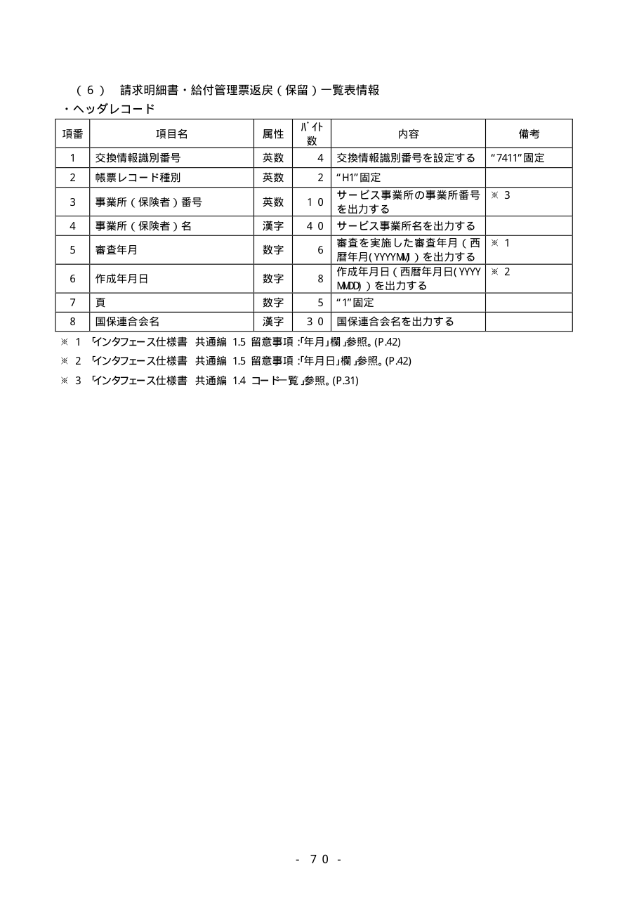
claude-haiku-5-5
- テキストレイヤに見つからないセル: 3 個（赤枠）
表1 record_layout・ヘッダレコード
| 項番 | 項目名 | 属性 | 桁数 | 内容 | 必須 | 備考 |
|---|---|---|---|---|---|---|
| 1 | 交換情報識別番号 | 英数 | 4 | 交換情報識別番号を設定する | "7411"固定 | |
| 2 | 帳票レコード種別 | 英数 | 2 | "H1"固定 | ||
| 3 | 事業所（保険者）番号 | 英数 | 10 | サービス事業所の事業所番号を出力する | ※ 3 | |
| 4 | 事業所（保険者）名 | 漢字 | 40 | サービス事業所名を出力する | ||
| 5 | 審査年月 | 数字 | 6 | 審査を実施した審査年月（西暦年月(YYYYMM)）を出力する | ※ 1 | |
| 6 | 作成年月日 | 数字 | 8 | 作成年月日（西暦年月日(YYYYMMDD)）を出力する | ※ 2 | |
| 7 | 頁 | 数字 | 5 | "1"固定 | ||
| 8 | 国保連合会名 | 漢字 | 30 | 国保連合会名を出力する |
注記
- ※1 「インタフェース仕様書 共通編 1.5 留意事項 「年月」欄」参照。(P.42)
- ※2 「インタフェース仕様書 共通編 1.5 留意事項 「年月日」欄」参照。(P.42)
- ※3 「インタフェース仕様書 共通編 1.4 コード一覧」参照。(P.31)
claude-sonnet-5-5
表1 record_layout・ヘッダレコード
| 項番 | 項目名 | 属性 | 桁数 | 内容 | 必須 | 備考 |
|---|---|---|---|---|---|---|
| 1 | 交換情報識別番号 | 英数 | 4 | 交換情報識別番号を設定する | “7411”固定 | |
| 2 | 帳票レコード種別 | 英数 | 2 | “H1”固定 | ||
| 3 | 事業所（保険者）番号 | 英数 | 10 | サービス事業所の事業所番号を出力する | ※３ | |
| 4 | 事業所（保険者）名 | 漢字 | 40 | サービス事業所名を出力する | ||
| 5 | 審査年月 | 数字 | 6 | 審査を実施した審査年月（西暦年月(YYYYMM)）を出力する | ※１ | |
| 6 | 作成年月日 | 数字 | 8 | 作成年月日（西暦年月日(YYYYMMDD)）を出力する | ※２ | |
| 7 | 頁 | 数字 | 5 | “1”固定 | ||
| 8 | 国保連合会名 | 漢字 | 30 | 国保連合会名を出力する |
注記
- ※1 「インタフェース仕様書 共通編 1.5 留意事項 :「年月」欄」参照。(P.42)
- ※2 「インタフェース仕様書 共通編 1.5 留意事項 :「年月日」欄」参照。(P.42)
- ※3 「インタフェース仕様書 共通編 1.4 コード一覧」参照。(P.31)
uncertain（モデル自己申告）
- ページ上部の見出し「（６）請求明細書・給付管理票返戻（保留）一覧表情報」は表のタイトルではなくrecord.parentに入れた。
- 備考欄の※の数字は全角で書いたが、原文が半角か全角か判別しづらい。
- 項番3,5,6の内容の折り返し位置は詰めて1行にした。
kaigo_jigyosho_r0604_p162 — 印字p.
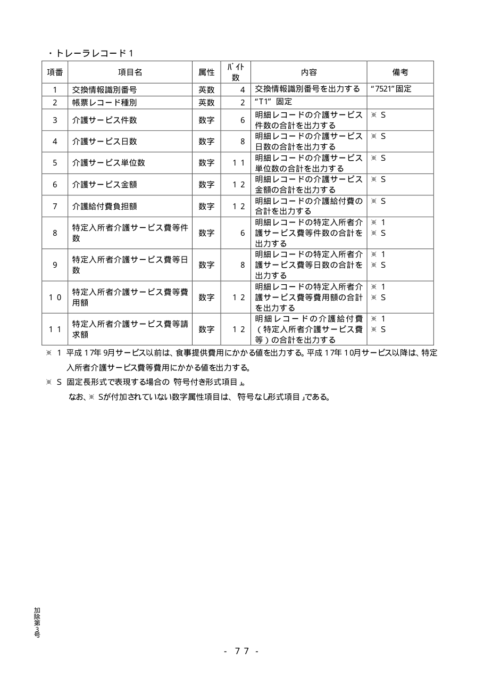
claude-haiku-5-5
- テキストレイヤに見つからないセル: 2 個（赤枠）
表1 record_layout・トレーラレコード１
| 項番 | 項目名 | 属性 | 桁数 | 内容 | 必須 | 備考 |
|---|---|---|---|---|---|---|
| 1 | 交換情報識別番号 | 英数 | 4 | 交換情報識別番号を出力する | "7521"固定 | |
| 2 | 帳票レコード種別 | 英数 | 2 | "T1" 固定 | ||
| 3 | 介護サービス件数 | 数字 | 6 | 明細レコードの介護サービス件数の合計を出力する | ※ S | |
| 4 | 介護サービス日数 | 数字 | 8 | 明細レコードの介護サービス日数の合計を出力する | ※ S | |
| 5 | 介護サービス単位数 | 数字 | 11 | 明細レコードの介護サービス単位数の合計を出力する | ※ S | |
| 6 | 介護サービス金額 | 数字 | 12 | 明細レコードの介護サービス金額の合計を出力する | ※ S | |
| 7 | 介護給付費負担額 | 数字 | 12 | 明細レコードの介護給付費の合計を出力する | ※ S | |
| 8 | 特定入所者介護サービス費等件数 | 数字 | 6 | 明細レコードの特定入所者介護サービス費等件数の合計を出力する | ※ 1 ※ S | |
| 9 | 特定入所者介護サービス費等日数 | 数字 | 8 | 明細レコードの特定入所者介護サービス費等日数の合計を出力する | ※ 1 ※ S | |
| 10 | 特定入所者介護サービス費等費用額 | 数字 | 12 | 明細レコードの特定入所者介護サービス費等費用額の合計を出力する | ※ 1 ※ S | |
| 11 | 特定入所者介護サービス費等請求額 | 数字 | 12 | 明細レコードの介護給付費（特定入所者介護サービス費等）の合計を出力する | ※ 1 ※ S |
注記
- ※1 平成17年9月サービス以前は、食事提供費用にかかる値を出力する。平成17年10月サービス以降は、特定入所者介護サービス費等費用にかかる値を出力する。
- ※S 固定長形式で表現する場合の『符号付き形式項目』。なお、※Sが付加されていない数字属性項目は、『符号なし形式項目』である。
uncertain（モデル自己申告）
- ページ下部の番号は「- 77 -」と読めたため printed_page を 77 としたが、PDF上のページ162とは対応を確認できていない。
- ユーザー指定のPDF上ページは162だが、表題の「・トレーラレコード１」はレコード名として扱い record.name に入れた。exchange_id と parent は読み取れないため null とした。
claude-sonnet-5-5
表1 record_layout・トレーラレコード１
| 項番 | 項目名 | 属性 | 桁数 | 内容 | 必須 | 備考 |
|---|---|---|---|---|---|---|
| 1 | 交換情報識別番号 | 英数 | 4 | 交換情報識別番号を出力する | “7521”固定 | |
| 2 | 帳票レコード種別 | 英数 | 2 | “T1” 固定 | ||
| 3 | 介護サービス件数 | 数字 | 6 | 明細レコードの介護サービス件数の合計を出力する | ※ S | |
| 4 | 介護サービス日数 | 数字 | 8 | 明細レコードの介護サービス日数の合計を出力する | ※ S | |
| 5 | 介護サービス単位数 | 数字 | 11 | 明細レコードの介護サービス単位数の合計を出力する | ※ S | |
| 6 | 介護サービス金額 | 数字 | 12 | 明細レコードの介護サービス金額の合計を出力する | ※ S | |
| 7 | 介護給付費負担額 | 数字 | 12 | 明細レコードの介護給付費の合計を出力する | ※ S | |
| 8 | 特定入所者介護サービス費等件数 | 数字 | 6 | 明細レコードの特定入所者介護サービス費等件数の合計を出力する | ※ 1 ※ S | |
| 9 | 特定入所者介護サービス費等日数 | 数字 | 8 | 明細レコードの特定入所者介護サービス費等日数の合計を出力する | ※ 1 ※ S | |
| １０ | 特定入所者介護サービス費等費用額 | 数字 | 12 | 明細レコードの特定入所者介護サービス費等費用額の合計を出力する | ※ 1 ※ S | |
| １１ | 特定入所者介護サービス費等請求額 | 数字 | 12 | 明細レコードの介護給付費（特定入所者介護サービス費等）の合計を出力する | ※ 1 ※ S |
注記
- ※ 1 平成17年9月サービス以前は、食事提供費用にかかる値を出力する。平成17年10月サービス以降は、特定入所者介護サービス費等費用にかかる値を出力する。
- ※ S 固定長形式で表現する場合の「符号付き形式項目」。 なお、※ Sが付加されていない数字属性項目は、「符号なし形式項目」である。
uncertain（モデル自己申告）
- ページ左下に縦書きの「加除第3号」の印字あり（表外のため未記載）
kaigo_jigyosho_r0604_p167 — 印字p.
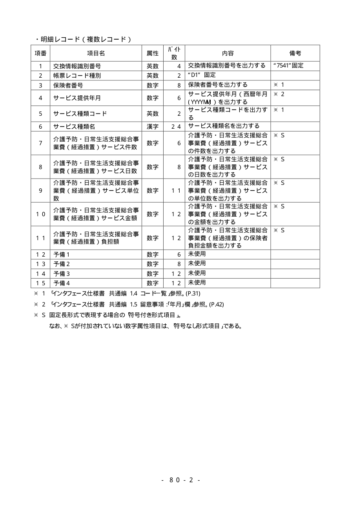
claude-haiku-5-5
表1 record_layout・明細レコード（複数レコード）
| 項番 | 項目名 | 属性 | 桁数 | 内容 | 必須 | 備考 |
|---|---|---|---|---|---|---|
| 1 | 交換情報識別番号 | 英数 | 4 | 交換情報識別番号を出力する | “7541”固定 | |
| 2 | 帳票レコード種別 | 英数 | 2 | “D1” 固定 | ||
| 3 | 保険者番号 | 数字 | 8 | 保険者番号を出力する | ※ 1 | |
| 4 | サービス提供年月 | 数字 | 6 | サービス提供年月（西暦年月(YYYYMM)）を出力する | ※ 2 | |
| 5 | サービス種類コード | 英数 | 2 | サービス種類コードを出力する | ※ 1 | |
| 6 | サービス種類名 | 漢字 | 24 | サービス種類名を出力する | ||
| 7 | 介護予防・日常生活支援総合事業費（経過措置）サービス件数 | 数字 | 6 | 介護予防・日常生活支援総合事業費（経過措置）サービスの件数を出力する | ※ S | |
| 8 | 介護予防・日常生活支援総合事業費（経過措置）サービス日数 | 数字 | 8 | 介護予防・日常生活支援総合事業費（経過措置）サービスの日数を出力する | ※ S | |
| 9 | 介護予防・日常生活支援総合事業費（経過措置）サービス単位数 | 数字 | 11 | 介護予防・日常生活支援総合事業費（経過措置）サービスの単位数を出力する | ※ S | |
| 10 | 介護予防・日常生活支援総合事業費（経過措置）サービス金額 | 数字 | 12 | 介護予防・日常生活支援総合事業費（経過措置）サービスの金額を出力する | ※ S | |
| 11 | 介護予防・日常生活支援総合事業費（経過措置）負担額 | 数字 | 12 | 介護予防・日常生活支援総合事業費（経過措置）の保険者負担金額を出力する | ※ S | |
| 12 | 予備1 | 数字 | 6 | 未使用 | ||
| 13 | 予備2 | 数字 | 8 | 未使用 | ||
| 14 | 予備3 | 数字 | 12 | 未使用 | ||
| 15 | 予備4 | 数字 | 12 | 未使用 |
注記
- ※1 「インタフェース仕様書 共通編 1.4 コード一覧」参照。(P.31)
- ※2 「インタフェース仕様書 共通編 1.5 留意事項「年月」欄」参照。(P.42)
- ※S 固定長形式で表現する場合の「符号付き形式項目」。
- なお、※Sが付加されていない数字属性項目は、「符号なし形式項目」である。
uncertain（モデル自己申告）
- レコード名は表見出しの「明細レコード（複数レコード）」から取り、交換情報識別番号・親レコードは本ページからは読み取れないため null とした。
claude-sonnet-5-5
- テキストレイヤに見つからないセル: 1 個（赤枠）
表1 record_layout・明細レコード（複数レコード）
| 項番 | 項目名 | 属性 | 桁数 | 内容 | 必須 | 備考 |
|---|---|---|---|---|---|---|
| 1 | 交換情報識別番号 | 英数 | 4 | 交換情報識別番号を出力する | “7541”固定 | |
| 2 | 帳票レコード種別 | 英数 | 2 | “D1” 固定 | ||
| 3 | 保険者番号 | 数字 | 8 | 保険者番号を出力する | ※ 1 | |
| 4 | サービス提供月 | 数字 | 6 | サービス提供年月（西暦年月(YYYYMM)）を出力する | ※ 2 | |
| 5 | サービス種類コード | 英数 | 2 | サービス種類コードを出力する | ※ 1 | |
| 6 | サービス種類名 | 漢字 | 24 | サービス種類名を出力する | ||
| 7 | 介護予防・日常生活支援総合事業費（経過措置）サービス件数 | 数字 | 6 | 介護予防・日常生活支援総合事業費（経過措置）サービスの件数を出力する | ※ S | |
| 8 | 介護予防・日常生活支援総合事業費（経過措置）サービス日数 | 数字 | 8 | 介護予防・日常生活支援総合事業費（経過措置）サービスの日数を出力する | ※ S | |
| 9 | 介護予防・日常生活支援総合事業費（経過措置）サービス単位数 | 数字 | 11 | 介護予防・日常生活支援総合事業費（経過措置）サービスの単位数を出力する | ※ S | |
| １０ | 介護予防・日常生活支援総合事業費（経過措置）サービス金額 | 数字 | 12 | 介護予防・日常生活支援総合事業費（経過措置）サービスの金額を出力する | ※ S | |
| １１ | 介護予防・日常生活支援総合事業費（経過措置）負担額 | 数字 | 12 | 介護予防・日常生活支援総合事業費（経過措置）の保険者負担金額を出力する | ※ S | |
| １２ | 予備1 | 数字 | 6 | 未使用 | ||
| １３ | 予備2 | 数字 | 8 | 未使用 | ||
| １４ | 予備3 | 数字 | 12 | 未使用 | ||
| １５ | 予備4 | 数字 | 12 | 未使用 |
注記
- ※ 1 「インタフェース仕様書 共通編 1.4 コード一覧」参照。(P.31)
- ※ 2 「インタフェース仕様書 共通編 1.5 留意事項 :「年月」欄」参照。(P.42)
- ※ S 固定長形式で表現する場合の「符号付き形式項目」。なお、※ Sが付加されていない数字属性項目は、「符号なし形式項目」である。
uncertain（モデル自己申告）
- 項番6,10-15等の全角数字は原文表記を推定して転記
- レコード名・交換情報識別番号はタイトルと項番1の備考から推定
kaigo_jigyosho_r0604_p183 — 印字p.
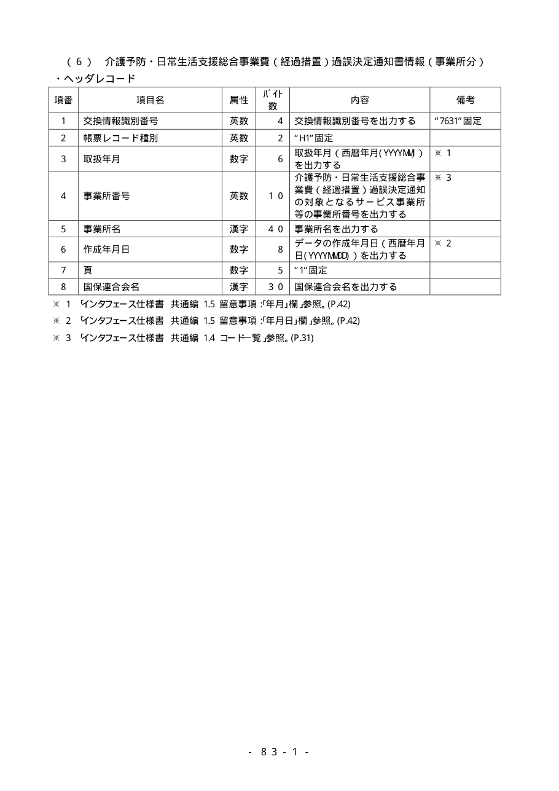
claude-haiku-5-5
- テキストレイヤに見つからないセル: 3 個（赤枠）
表1 record_layout（6） 介護予防・日常生活支援総合事業費（経過措置）過誤決定通知書情報（事業所分） ・ヘッダレコード
| 項番 | 項目名 | 属性 | 桁数 | 内容 | 必須 | 備考 |
|---|---|---|---|---|---|---|
| 1 | 交換情報識別番号 | 英数 | 4 | 交換情報識別番号を出力する | "7631"固定 | |
| 2 | 帳票レコード種別 | 英数 | 2 | "H1"固定 | ||
| 3 | 取扱年月 | 数字 | 6 | 取扱年月（西暦年月(YYYYMM)）を出力する | ※1 | |
| 4 | 事業所番号 | 英数 | 10 | 介護予防・日常生活支援総合事業費（経過措置）過誤決定通知の対象となるサービス事業所等の事業所番号を出力する | ※3 | |
| 5 | 事業所名 | 漢字 | 40 | 事業所名を出力する | ||
| 6 | 作成年月日 | 数字 | 8 | データの作成年月日（西暦年月日(YYYYMMDD)）を出力する | ※2 | |
| 7 | 頁 | 数字 | 5 | "1"固定 | ||
| 8 | 国保連合会名 | 漢字 | 30 | 国保連合会名を出力する |
注記
- ※1 「インタフェース仕様書 共通編 1.5 留意事項：「年月」欄」参照。(P.42)
- ※2 「インタフェース仕様書 共通編 1.5 留意事項：「年月日」欄」参照。(P.42)
- ※3 「インタフェース仕様書 共通編 1.4 コード一覧」参照。(P.31)
claude-sonnet-5-5
表1 record_layout・ヘッダレコード
| 項番 | 項目名 | 属性 | 桁数 | 内容 | 必須 | 備考 |
|---|---|---|---|---|---|---|
| 1 | 交換情報識別番号 | 英数 | 4 | 交換情報識別番号を出力する | “7631”固定 | |
| 2 | 帳票レコード種別 | 英数 | 2 | “H1”固定 | ||
| 3 | 取扱年月 | 数字 | 6 | 取扱年月（西暦年月(YYYYMM)）を出力する | ※1 | |
| 4 | 事業所番号 | 英数 | 10 | 介護予防・日常生活支援総合事業費（経過措置）過誤決定通知の対象となるサービス事業所等の事業所番号を出力する | ※3 | |
| 5 | 事業所名 | 漢字 | 40 | 事業所名を出力する | ||
| 6 | 作成年月日 | 数字 | 8 | データの作成年月日（西暦年月日(YYYYMMDD)）を出力する | ※2 | |
| 7 | 頁 | 数字 | 5 | “1”固定 | ||
| 8 | 国保連合会名 | 漢字 | 30 | 国保連合会名を出力する |
注記
- ※1 「インタフェース仕様書 共通編 1.5 留意事項 :「年月」欄」参照。(P.42)
- ※2 「インタフェース仕様書 共通編 1.5 留意事項 :「年月日」欄」参照。(P.42)
- ※3 「インタフェース仕様書 共通編 1.4 コード一覧」参照。(P.31)
uncertain（モデル自己申告）
- 表見出し「(6) 介護予防・日常生活支援総合事業費（経過措置）過誤決定通知書情報（事業所分）」から record.parent を設定。exchange_id は項番1の備考“7631”固定から推定
kaigo_jigyosho_r0604_p184 — 印字p.
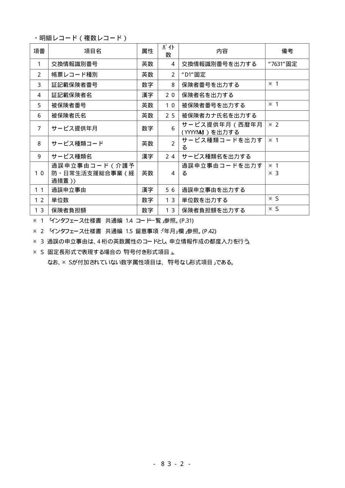
claude-haiku-5-5
- テキストレイヤに見つからないセル: 2 個（赤枠）
表1 record_layout・明細レコード（複数レコード）
| 項番 | 項目名 | 属性 | 桁数 | 内容 | 必須 | 備考 |
|---|---|---|---|---|---|---|
| 1 | 交換情報識別番号 | 英数 | 4 | 交換情報識別番号を出力する | "7631"固定 | |
| 2 | 帳票レコード種別 | 英数 | 2 | "D1"固定 | ||
| 3 | 証記載保険者番号 | 数字 | 8 | 保険者番号を出力する | ※ 1 | |
| 4 | 証記載保険者名 | 漢字 | 20 | 保険者名を出力する | ||
| 5 | 被保険者番号 | 英数 | 10 | 被保険者番号を出力する | ※ 1 | |
| 6 | 被保険者氏名 | 英数 | 25 | 被保険者カナ氏名を出力する | ||
| 7 | サービス提供年月 | 数字 | 6 | サービス提供年月（西暦年月(YYYYMM)）を出力する | ※ 2 | |
| 8 | サービス種類コード | 英数 | 2 | サービス種類コードを出力する | ※ 1 | |
| 9 | サービス種類名 | 漢字 | 24 | サービス種類名を出力する | ||
| 10 | 過誤申立事由コード（介護予防・日常生活支援総合事業（経過措置）） | 英数 | 4 | 過誤申立事由コードを出力する | ※ 1 ※ 3 | |
| 11 | 過誤申立事由 | 漢字 | 56 | 過誤申立事由を出力する | ||
| 12 | 単位数 | 数字 | 13 | 単位数を出力する | ※ S | |
| 13 | 保険者負担額 | 数字 | 13 | 保険者負担額を出力する | ※ S |
注記
- ※1 「インタフェース仕様書 共通編 1.4 コード一覧」参照。(P.31)
- ※2 「インタフェース仕様書 共通編 1.5 留意事項：「年月」欄」参照。(P.42)
- ※3 過誤の申立事由は、4桁の英数属性のコードとし、申立情報作成の都度入力を行う。
- ※S 固定長形式で表現する場合の『符号付き形式項目』。なお、※Sが付加されていない数字属性項目は、『符号なし形式項目』である。
uncertain（モデル自己申告）
- 添付ページの印字ページ番号は83-2であり、指定されたPDF上のページ184とは一致しない。添付は1ページのみのため、指定ページとして扱ってよいか未確認。
- 「次のページの表」とあるが、添付されているのはこの1ページのみであり、このページ内の表を書き起こした。
- 明細レコードの上位情報名（介護給付費等 明細書など）はこのページからは読み取れないため parent を null とした。
- 「(経過措置))」の末尾の括弧の全角・半角表記は画像から判別しきれず、全角で書き起こした。
- バイト数・項番の数字の全角・半角は画像から判別しきれないため、半角で書き起こした。
claude-sonnet-5-5
表1 record_layout・明細レコード（複数レコード）
| 項番 | 項目名 | 属性 | 桁数 | 内容 | 必須 | 備考 |
|---|---|---|---|---|---|---|
| 1 | 交換情報識別番号 | 英数 | 4 | 交換情報識別番号を出力する | “7631”固定 | |
| 2 | 帳票レコード種別 | 英数 | 2 | “D1”固定 | ||
| 3 | 証記載保険者番号 | 数字 | 8 | 保険者番号を出力する | ※1 | |
| 4 | 証記載保険者名 | 漢字 | 20 | 保険者名を出力する | ||
| 5 | 被保険者番号 | 英数 | 10 | 被保険者番号を出力する | ※1 | |
| 6 | 被保険者氏名 | 英数 | 25 | 被保険者カナ氏名を出力する | ||
| 7 | サービス提供年月 | 数字 | 6 | サービス提供年月（西暦年月(YYYYMM)）を出力する | ※2 | |
| 8 | サービス種類コード | 英数 | 2 | サービス種類コードを出力する | ※1 | |
| 9 | サービス種類名 | 漢字 | 24 | サービス種類名を出力する | ||
| １０ | 過誤申立事由コード(介護予防・日常生活支援総合事業(経過措置)) | 英数 | 4 | 過誤申立事由コードを出力する | ※1 ※3 | |
| １１ | 過誤申立事由 | 漢字 | 56 | 過誤申立事由を出力する | ||
| １２ | 単位数 | 数字 | 13 | 単位数を出力する | ※S | |
| １３ | 保険者負担額 | 数字 | 13 | 保険者負担額を出力する | ※S |
注記
- ※1 「インタフェース仕様書 共通編 1.4 コード一覧」参照。(P.31)
- ※2 「インタフェース仕様書 共通編 1.5 留意事項：「年月」欄」参照。(P.42)
- ※3 過誤の申立事由は、4桁の英数属性のコードとし、申立情報作成の都度入力を行う。
- ※S 固定長形式で表現する場合の「符号付き形式項目」。 なお、※Sが付加されていない数字属性項目は、「符号なし形式項目」である。
uncertain（モデル自己申告）
- 表のレコード名・交換情報識別番号は項番1の内容(7631固定)から推定。ページ見出しは「明細レコード（複数レコード）」のみ
- 項番10の項目名の折り返し位置は推定して連結
kaigo_jigyosho_r0604_p188 — 印字p.
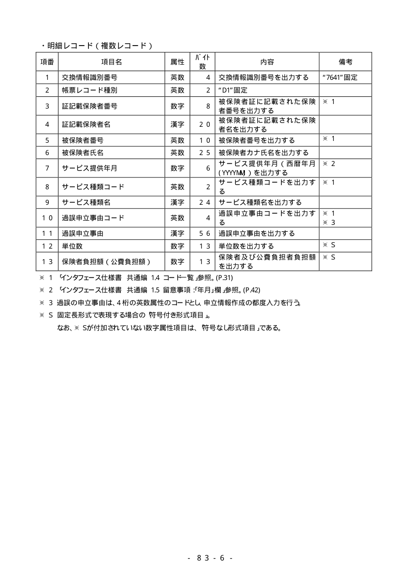
claude-haiku-5-5
- テキストレイヤに見つからないセル: 2 個（赤枠）
表1 record_layout・明細レコード（複数レコード）
| 項番 | 項目名 | 属性 | 桁数 | 内容 | 必須 | 備考 |
|---|---|---|---|---|---|---|
| 1 | 交換情報識別番号 | 英数 | 4 | 交換情報識別番号を出力する | "7641"固定 | |
| 2 | 帳票レコード種別 | 英数 | 2 | "D1"固定 | ||
| 3 | 証記載保険者番号 | 数字 | 8 | 被保険者証に記載された保険者番号を出力する | ※ 1 | |
| 4 | 証記載保険者名 | 漢字 | 20 | 被保険者証に記載された保険者名を出力する | ||
| 5 | 被保険者番号 | 英数 | 10 | 被保険者番号を出力する | ※ 1 | |
| 6 | 被保険者氏名 | 英数 | 25 | 被保険者カナ氏名を出力する | ||
| 7 | サービス提供年月 | 数字 | 6 | サービス提供年月（西暦年月(YYYYMM)）を出力する | ※ 2 | |
| 8 | サービス種類コード | 英数 | 2 | サービス種類コードを出力する | ※ 1 | |
| 9 | サービス種類名 | 漢字 | 24 | サービス種類名を出力する | ||
| １０ | 過誤申立事由コード | 英数 | 4 | 過誤申立事由コードを出力する | ※ 1 ※ 3 | |
| １１ | 過誤申立事由 | 漢字 | 56 | 過誤申立事由を出力する | ||
| １２ | 単位数 | 数字 | 13 | 単位数を出力する | ※ S | |
| １３ | 保険者負担額（公費負担額） | 数字 | 13 | 保険者及び公費負担者負担額を出力する | ※ S |
注記
- ※1 「インタフェース仕様書 共通編 1.4 コード一覧」参照。(P.31)
- ※2 「インタフェース仕様書 共通編 1.5 留意事項 「年月」欄」参照。(P.42)
- ※3 過誤の申立事由は、4桁の英数属性のコードとし、申立情報作成の都度入力を行う。
- ※S 固定長形式で表現する場合の「符号付き形式項目」。
- なお、※Sが付加されていない数字属性項目は、「符号なし形式項目」である。
uncertain（モデル自己申告）
- record.exchange_id の "7641" は項番1の備考（"7641"固定）から読み取った値で、表の見出しには明記されていない。
- バイト数・項番の全角半角は画像の字形から判断して書き写したため、原文の表記と異なる可能性がある。
claude-sonnet-5-5
表1 record_layout・明細レコード（複数レコード）
| 項番 | 項目名 | 属性 | 桁数 | 内容 | 必須 | 備考 |
|---|---|---|---|---|---|---|
| 1 | 交換情報識別番号 | 英数 | 4 | 交換情報識別番号を出力する | “7641”固定 | |
| 2 | 帳票レコード種別 | 英数 | 2 | “D1”固定 | ||
| 3 | 証記載保険者番号 | 数字 | 8 | 被保険者証に記載された保険者番号を出力する | ※1 | |
| 4 | 証記載保険者名 | 漢字 | 20 | 被保険者証に記載された保険者名を出力する | ||
| 5 | 被保険者番号 | 英数 | 10 | 被保険者番号を出力する | ※1 | |
| 6 | 被保険者氏名 | 英数 | 25 | 被保険者カナ氏名を出力する | ||
| 7 | サービス提供年月 | 数字 | 6 | サービス提供年月（西暦年月(YYYYMM)）を出力する | ※2 | |
| 8 | サービス種類コード | 英数 | 2 | サービス種類コードを出力する | ※1 | |
| 9 | サービス種類名 | 漢字 | 24 | サービス種類名を出力する | ||
| 10 | 過誤申立事由コード | 英数 | 4 | 過誤申立事由コードを出力する | ※1 ※3 | |
| 11 | 過誤申立事由 | 漢字 | 56 | 過誤申立事由を出力する | ||
| 12 | 単位数 | 数字 | 13 | 単位数を出力する | ※S | |
| 13 | 保険者負担額（公費負担額） | 数字 | 13 | 保険者及び公費負担者負担額を出力する | ※S |
注記
- ※1 「インタフェース仕様書 共通編 1.4 コード一覧」参照。(P.31)
- ※2 「インタフェース仕様書 共通編 1.5 留意事項：「年月」欄」参照。(P.42)
- ※3 過誤の申立事由は、4桁の英数属性のコードとし、申立情報作成の都度入力を行う。
- ※S 固定長形式で表現する場合の「符号付き形式項目」。 なお、※Sが付加されていない数字属性項目は、「符号なし形式項目」である。
kaigo_jigyosho_r0604_p195 — 印字p.
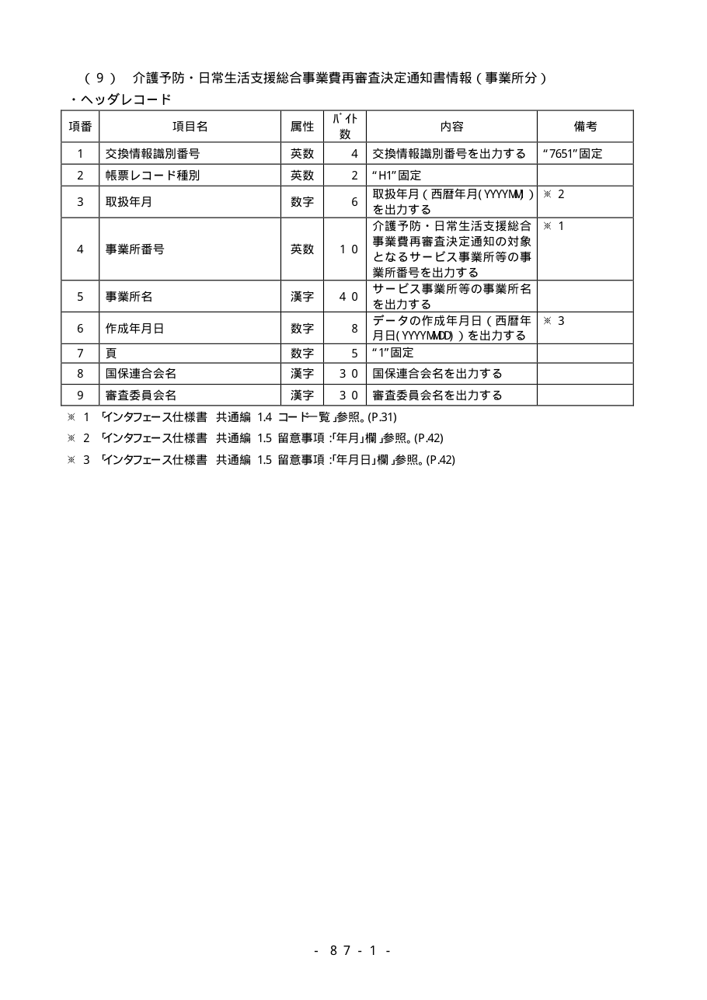
claude-haiku-5-5
- テキストレイヤに見つからないセル: 3 個（赤枠）
表1 record_layout（９） 介護予防・日常生活支援総合事業費再審査決定通知書情報（事業所分） ・ヘッダレコード
| 項番 | 項目名 | 属性 | 桁数 | 内容 | 必須 | 備考 |
|---|---|---|---|---|---|---|
| 1 | 交換情報識別番号 | 英数 | 4 | 交換情報識別番号を出力する | "7651"固定 | |
| 2 | 帳票レコード種別 | 英数 | 2 | "H1"固定 | ||
| 3 | 取扱年月 | 数字 | 6 | 取扱年月(西暦年月(YYYYMM))を出力する | ※ 2 | |
| 4 | 事業所番号 | 英数 | 10 | 介護予防・日常生活支援総合事業費再審査決定通知の対象となるサービス事業所等の事業所番号を出力する | ※ 1 | |
| 5 | 事業所名 | 漢字 | 40 | サービス事業所等の事業所名を出力する | ||
| 6 | 作成年月日 | 数字 | 8 | データの作成年月日(西暦年月日(YYYYMMDD))を出力する | ※ 3 | |
| 7 | 頁 | 数字 | 5 | "1"固定 | ||
| 8 | 国保連合会名 | 漢字 | 30 | 国保連合会名を出力する | ||
| 9 | 審査委員会名 | 漢字 | 30 | 審査委員会名を出力する |
注記
- ※1 「インタフェース仕様書 共通編 1.4 コード一覧」参照。(P.31)
- ※2 「インタフェース仕様書 共通編 1.5 留意事項「年月」欄」参照。(P.42)
- ※3 「インタフェース仕様書 共通編 1.5 留意事項「年月日」欄」参照。(P.42)
uncertain（モデル自己申告）
- レコードの交換情報識別番号（record.exchange_id）は、項番1の備考に記載の"7651"固定から判断して記入した。レコード自体の識別番号として明示されてはいないため、確認が必要。
- record.parent は表題の「（９）介護予防・日常生活支援総合事業費再審査決定通知書情報（事業所分）」を親情報として記入した。
claude-sonnet-5-5
表1 record_layout・ヘッダレコード
| 項番 | 項目名 | 属性 | 桁数 | 内容 | 必須 | 備考 |
|---|---|---|---|---|---|---|
| 1 | 交換情報識別番号 | 英数 | 4 | 交換情報識別番号を出力する | “7651”固定 | |
| 2 | 帳票レコード種別 | 英数 | 2 | “H1”固定 | ||
| 3 | 取扱年月 | 数字 | 6 | 取扱年月（西暦年月(YYYYMM)）を出力する | ※ 2 | |
| 4 | 事業所番号 | 英数 | 10 | 介護予防・日常生活支援総合事業費再審査決定通知の対象となるサービス事業所等の事業所番号を出力する | ※ 1 | |
| 5 | 事業所名 | 漢字 | 40 | サービス事業所等の事業所名を出力する | ||
| 6 | 作成年月日 | 数字 | 8 | データの作成年月日（西暦年月日(YYYYMMDD)）を出力する | ※ 3 | |
| 7 | 頁 | 数字 | 5 | “1”固定 | ||
| 8 | 国保連合会名 | 漢字 | 30 | 国保連合会名を出力する | ||
| 9 | 審査委員会名 | 漢字 | 30 | 審査委員会名を出力する |
注記
- ※ 1 「インタフェース仕様書 共通編 1.4 コード一覧」参照。(P.31)
- ※ 2 「インタフェース仕様書 共通編 1.5 留意事項 :「年月」欄」参照。(P.42)
- ※ 3 「インタフェース仕様書 共通編 1.5 留意事項 :「年月日」欄」参照。(P.42)
uncertain（モデル自己申告）
- ページ見出し「（9）介護予防・日常生活支援総合事業費再審査決定通知書情報（事業所分）」から parent を設定した。exchange_id は備考の“7651”固定から取った。
kaigo_kyotsu_r0806_p11 — 印字p.

claude-haiku-5-5
- テキストレイヤに見つからないセル: 1 個（赤枠）
表1 record_layout・コントロールレコードフォーマット
| 項番 | 項目名 | 属性 | 桁数 | 内容 | 必須 | 備考 |
|---|---|---|---|---|---|---|
| １ | レコード種別 | 数字 | 1 | コントロールレコードを示す1を設定 | ||
| ２ | レコード番号（連番） | 数字 | 9 | ファイル内の先頭レコードからの連番（1から始まる通番）を設定マルチボリュームファイルの場合、マルチボリューム全体での通番となる | ||
| ３ | ボリューム通番 | 数字 | 3 | ボリュームに対して付与する番号ボリュームにまたがらない単独のファイルの場合は0を設定マルチボリュームファイルの場合は先頭ボリュームからの連番（1から始まる通番）を設定 | ||
| ４ | レコード件数 | 数字 | 9 | データレコードの件数を設定（コントロールレコードおよびエンドレコードの件数は加算しない）マルチボリュームファイルの場合、分割されたそれぞれのファイル内でのデータレコード件数を設定する | ||
| ５ | データ種別 | 英数 | 3 | 「1.6 データ種別一覧」参照（P.43） | ||
| ６ | 福祉事務所特定番号 | 数字 | 2 | 送付元または送付先が福祉事務所の場合は12（法別番号）を設定、福祉事務所以外の場合は0を設定する | ||
| ７ | 保険者番号 | 数字 | 6 | 送付元または送付先が保険者の場合は保険者番号、福祉事務所の場合は福祉事務所番号を設定、保険者（福祉事務所）以外の場合は0を設定する | ||
| ８ | 事業所番号 | 英数 | 10 | 送付元または送付先が事業所の場合は事業所番号を設定、事業所以外の場合は0を設定、または設定を省略する（※） | ||
| ９ | 都道府県番号 | 数字 | 2 | 送付元または送付先が都道府県の場合は都道府県番号を設定、都道府県以外の場合は0を設定 | ||
| １０ | 媒体区分 | 数字 | 1 | 保険者等：1（伝送）を設定 事業所：1または7（伝送（インターネット））を設定 | ||
| １１ | 処理対象年月 | 数字 | 6 | データの処理対象年月を設定する（注1）(例)２０００年４月の場合、２００００４を設定する | ||
| １２ | ファイル管理番号 | 数字 | 6 | マルチボリュームファイルの場合にのみ意味を持つ作成するファイル単位に一意な値を設定（分割された複数のファイルは全て同じ管理番号となる） | ||
| １３ | ブランク | 英数 | 2 | 改行（16進コード…0x0D0A）を設定 |
注記
- ※ 事業所番号について 事業所番号の省略については「1.5.1(6)「事業者番号」欄（P.42）」参照のこと。
uncertain（モデル自己申告）
- 依頼文は『次のページ』の表の書き起こしを求めているが、添付は印字ページ7（PDF上のページ11）の1枚のみで、この添付ページの表を書き起こした。
- 項目の「(注1)」が参照されているが、注1の本文は添付ページに見当たらないため footnotes に含めていない。
- 項番・バイト数の全角・半角は画像の見た目から判断しており、わずかな判別の不確かさがある。
claude-sonnet-5-5
- テキストレイヤに見つからないセル: 1 個（赤枠）
表1 record_layout・コントロールレコードフォーマット
| 項番 | 項目名 | 属性 | 桁数 | 内容 | 必須 | 備考 |
|---|---|---|---|---|---|---|
| 1 | レコード種別 | 数字 | 1 | コントロールレコードを示す1を設定 | ||
| 2 | レコード番号（連番） | 数字 | 9 | ファイル内の先頭レコードからの連番（１から始まる通番）を設定 マルチボリュームファイルの場合、マルチボリューム全体での通番となる | ||
| 3 | ボリューム通番 | 数字 | 3 | ボリュームに対して付与する番号 ボリュームにまたがらない単独のファイルの場合は0を設定 マルチボリュームファイルの場合は先頭ボリュームからの連番（１から始まる通番）を設定 | ||
| 4 | レコード件数 | 数字 | 9 | データレコードの件数を設定（コントロールレコードおよびエンドレコードの件数は加算しない） マルチボリュームファイルの場合、分割されたそれぞれのファイル内でのデータレコード件数を設定する | ||
| 5 | データ種別 | 英数 | 3 | 「1.6 データ種別一覧」参照（P.43） | ||
| 6 | 福祉事務所特定番号 | 数字 | 2 | 送付元または送付先が福祉事務所の場合は１２（法別番号）を設定、福祉事務所以外の場合は０を設定する | ||
| 7 | 保険者番号 | 数字 | 6 | 送付元または送付先が保険者の場合は保険者番号、福祉事務所の場合は福祉事務所番号を設定、保険者（福祉事務所）以外の場合は０を設定する | ||
| 8 | 事業所番号 | 英数 | 10 | 送付元または送付先が事業所の場合は事業所番号を設定、事業所以外の場合は０を設定、または設定を省略する（※） | ||
| 9 | 都道府県番号 | 数字 | 2 | 送付元または送付先が都道府県の場合は都道府県番号を設定、都道府県以外の場合は０を設定 | ||
| １０ | 媒体区分 | 数字 | 1 | 保険者等：１（伝送）を設定 事業所：１または７（伝送（インターネット））を設定 | ||
| １１ | 処理対象年月 | 数字 | 6 | データの処理対象年月を設定する（注１） (例)２０００年４月の場合、２０００04を設定する | ||
| １２ | ファイル管理番号 | 数字 | 6 | マルチボリュームファイルの場合にのみ意味を持つ 作成するファイル単位に一意な値を設定（分割された複数のファイルは全て同じ管理番号となる） | ||
| １３ | ブランク | 英数 | 2 | 改行（16進ｺｰﾄﾞ…0x0D0A）を設定 |
注記
- ※ 事業所番号について 事業所番号の省略については「1.5.1(6)「事業者番号」欄(P.42)」参照のこと。
uncertain（モデル自己申告）
- 項番11 内容の例「２０００年４月の場合、２０００04を設定する」は画像上「２０００年４月の場合、２０００４を設定する」と見えるが全角半角の混在は不確か（200004の表記）
- 項番5 内容のページ参照表記は原文どおりに近似
kaigo_kyotsu_r0806_p12 — 印字p.8

claude-haiku-5-5
- 表1 項番3 桁数が空（原文: None）
表1 record_layout・データレコードフォーマット
| 項番 | 項目名 | 属性 | 桁数 | 内容 | 必須 | 備考 |
|---|---|---|---|---|---|---|
| １ | レコード種別 | 数字 | 1 | データレコードを示す2を設定 | ||
| ２ | レコード番号（連番） | 数字 | 9 | ファイル内の先頭レコードからの連番（１から始まる通番）を設定 マルチボリュームファイルの場合、マルチボリューム全体での通番となる | ||
| ３ | データ | 交換情報ごとに、CSV形式でデータを設定 設定する内容は、各交換情報の「項目説明」を参照 | ||||
| ４ | ブランク | 英数 | 2 | 改行（16進コード…0x0D0A）を設定 |
表2 record_layout・エンドレコードフォーマット
| 項番 | 項目名 | 属性 | 桁数 | 内容 | 必須 | 備考 |
|---|---|---|---|---|---|---|
| １ | レコード種別 | 数字 | 1 | エンドレコードを示す3を設定 | ||
| ２ | レコード番号（連番） | 数字 | 9 | ファイル内の先頭レコードからの連番（１から始まる通番）を設定 マルチボリュームファイルの場合、マルチボリューム全体での通番となる | ||
| ３ | ブランク | 英数 | 2 | 改行（16進コード…0x0D0A）を設定 |
表3 other・コントロールレコード設定例
| 項番 | 項目名 | 属性 | 桁数 | 内容 | 必須 | 備考 |
|---|---|---|---|---|---|---|
| 1 | 設定値 | 1 | ||||
| 2 | 設定値 | , | ||||
| 3 | 設定値 | 1 | ||||
| 4 | 設定値 | , | ||||
| 5 | 設定値 | 0 | ||||
| 6 | 設定値 | , | ||||
| 7 | 設定値 | 1 | ||||
| 8 | 設定値 | 2 | ||||
| 9 | 設定値 | 3 | ||||
| 10 | 設定値 | , | ||||
| 11 | 設定値 | 9 | ||||
| 12 | 設定値 | 9 | ||||
| 13 | 設定値 | 9 | ||||
| 14 | 設定値 | , | ||||
| 15 | 設定値 | 0 | ||||
| 16 | 設定値 | , | ||||
| 17 | 設定値 | 0 | ||||
| 18 | 設定値 | , | ||||
| 19 | 設定値 | 1 | ||||
| 20 | 設定値 | 1 | ||||
| 21 | 設定値 | 1 | ||||
| 22 | 設定値 | 1 | ||||
| 23 | 設定値 | 1 | ||||
| 24 | 設定値 | 1 | ||||
| 25 | 設定値 | 1 | ||||
| 26 | 設定値 | 1 | ||||
| 27 | 設定値 | 1 | ||||
| 28 | 設定値 | 1 | ||||
| 29 | 設定値 | , | ||||
| 30 | 設定値 | 0 | ||||
| 31 | 設定値 | , | ||||
| 32 | 設定値 | 4 | ||||
| 33 | 設定値 | , | ||||
| 34 | 設定値 | 2 | ||||
| 35 | 設定値 | 0 | ||||
| 36 | 設定値 | 0 | ||||
| 37 | 設定値 | 0 | ||||
| 38 | 設定値 | 0 | ||||
| 39 | 設定値 | 4 | ||||
| 40 | 設定値 | , | ||||
| 41 | 設定値 | 1 | ||||
| 42 | 設定値 | 改行コード |
表4 other・データレコード（2レコード目）設定例
| 項番 | 項目名 | 属性 | 桁数 | 内容 | 必須 | 備考 |
|---|---|---|---|---|---|---|
| 1 | 設定値 | 2 | ||||
| 2 | 設定値 | , | ||||
| 3 | 設定値 | 2 | ||||
| 4 | 設定値 | , | ||||
| 設定値 | ・・・データを設定・・・ | |||||
| 設定値 | … | |||||
| 設定値 | 改行コード |
表5 other・エンドレコード（125レコード目）設定例
| 項番 | 項目名 | 属性 | 桁数 | 内容 | 必須 | 備考 |
|---|---|---|---|---|---|---|
| 1 | 設定値 | 3 | ||||
| 2 | 設定値 | , | ||||
| 3 | 設定値 | 1 | ||||
| 4 | 設定値 | 2 | ||||
| 5 | 設定値 | 5 | ||||
| 6 | 設定値 | 改行コード |
uncertain（モデル自己申告）
- 設定例の桁図（コントロールレコード・データレコード・エンドレコード）は、位置と設定値を読み取って items に書き起こした。位置の結合セルの扱いが画像から確定できない部分がある。
- コントロールレコード設定例の位置42と43は『改行コード』が1セルにまたがって見えるため、位置42にのみ『改行コード』を入れ、位置43は省略した。
- データレコード（2レコード目）設定例の『・・・データを設定・・・』と『…』の桁位置は画像から特定できないため、no を null にした。
- エンドレコード（125レコード目）設定例の『改行コード』は位置6-7にまたがると思われるため、位置6にのみ入れ、位置7は省略した。
- ページ冒頭の『データ設定例』の説明文は表ではないため書き起こしていない。前後ページは添付されておらず、PDF上のページ12との対応は画像から確認できない（画像の印字ページ番号は8）。
claude-sonnet-5-5
- 表1 項番3 桁数が空（原文: None）
表1 record_layout・データレコードフォーマット
| 項番 | 項目名 | 属性 | 桁数 | 内容 | 必須 | 備考 |
|---|---|---|---|---|---|---|
| 1 | レコード種別 | 数字 | 1 | データレコードを示す2を設定 | ||
| 2 | レコード番号（連番） | 数字 | 9 | ファイル内の先頭レコードからの連番（１から始まる通番）を設定 マルチボリュームファイルの場合、マルチボリューム全体での通番となる | ||
| 3 | データ | 交換情報ごとに、CSV形式でデータを設定 設定する内容は、各交換情報の「項目説明」を参照 | ||||
| 4 | ブランク | 英数 | 2 | 改行（16進ｺｰﾄﾞ…0x0D0A）を設定 |
表2 record_layout・エンドレコードフォーマット
| 項番 | 項目名 | 属性 | 桁数 | 内容 | 必須 | 備考 |
|---|---|---|---|---|---|---|
| 1 | レコード種別 | 数字 | 1 | エンドレコードを示す3を設定 | ||
| 2 | レコード番号（連番） | 数字 | 9 | ファイル内の先頭レコードからの連番（１から始まる通番）を設定 マルチボリュームファイルの場合、マルチボリューム全体での通番となる | ||
| 3 | ブランク | 英数 | 2 | 改行（16進ｺｰﾄﾞ…0x0D0A）を設定 |
表3 other・コントロールレコード設定例
| 項番 | 項目名 | 属性 | 桁数 | 内容 | 必須 | 備考 |
|---|---|---|---|---|---|---|
| 設定値 | 1,1,0,123,999,0,0,1111111111,0,4,200004, |
表4 other
| 項番 | 項目名 | 属性 | 桁数 | 内容 | 必須 | 備考 |
|---|---|---|---|---|---|---|
| 設定値 | 1 改行コード |
表5 other・データレコード(2レコード目)設定例
| 項番 | 項目名 | 属性 | 桁数 | 内容 | 必須 | 備考 |
|---|---|---|---|---|---|---|
| 設定値 | 2,2, ・・・データを設定・・・ 改行コード |
表6 other・エンドレコード(125レコード目)設定例
| 項番 | 項目名 | 属性 | 桁数 | 内容 | 必須 | 備考 |
|---|---|---|---|---|---|---|
| 設定値 | 3,125 改行コード |
uncertain（モデル自己申告）
- 設定例の表は桁ごとのセル配置を簡略化して記載している
- データレコード設定例の「…」列の位置は不確か
kaigo_kyotsu_r0806_p15 — 印字p.

claude-haiku-5-5
- 表2 項番3 桁数が空（原文: None）
- テキストレイヤに見つからないセル: 1 個（赤枠）
表1 record_layout・コントロールレコードフォーマット
| 項番 | 項目名 | 属性 | 桁数 | 内容 | 必須 | 備考 |
|---|---|---|---|---|---|---|
| １ | レコード種別 | 数字 | 1 | コントロールレコードを示す1を設定 | ||
| ２ | レコード番号（連番） | 数字 | 9 | ファイル内の先頭レコードからの連番（１から始まる通番）を設定 マルチボリュームファイルの場合、マルチボリューム全体での通番となる | ||
| ３ | ボリューム通番 | 数字 | 3 | ボリュームに対して付与する番号 ボリュームにまたがらない単独のファイルの場合は０を設定 マルチボリュームファイルの場合は先頭ボリュームからの連番（１から始まる通番）を設定 | ||
| ４ | レコード件数 | 数字 | 9 | データレコードの件数を設定（コントロールレコード及びエンドレコードの件数は加算しない） マルチボリュームファイルの場合、分割されたそれぞれのファイル内でのデータレコード件数を設定する | ||
| ５ | データ種別 | 英数 | 3 | 「1.6 データ種別一覧」参照（P.43） | ||
| ６ | 福祉事務所特定番号 | 数字 | 2 | 送付元または送付先が福祉事務所の場合は１２（法別番号）を設定、福祉事務所以外の場合は０を設定する | ||
| ７ | 保険者番号 | 数字 | 6 | 送付元または送付先が保険者の場合は保険者番号、福祉事務所の場合は福祉事務所番号を設定、保険者（福祉事務所）以外の場合は０を設定する | ||
| ８ | 事業所番号 | 英数 | 10 | 送付元または送付先が事業所の場合は事業所番号を設定、事業所以外の場合は０を設定、または設定を省略する（※） | ||
| ９ | 都道府県番号 | 数字 | 2 | 送付元または送付先が都道府県の場合は都道府県番号を設定、都道府県以外の場合は０を設定 | ||
| １０ | 媒体区分 | 数字 | 1 | ２（MO）または４（FD）を設定 ※ＣＤ－Rの場合は、４（FD）を設定 | ||
| １１ | 処理対象年月 | 数字 | 6 | データの処理対象年月を設定する（注1） （例）２０００年４月の場合、２００００４を設定する | ||
| １２ | ファイル管理番号 | 数字 | 6 | マルチボリュームファイルの場合にのみ意味を持つ 作成するファイル単位に一意な値を設定（分割された複数のファイルは全て同じ管理番号となる） | ||
| １３ | ブランク | 英数 | 2 | 改行（16進コード…0x0D0A）を設定 |
表2 record_layout・データレコードフォーマット
| 項番 | 項目名 | 属性 | 桁数 | 内容 | 必須 | 備考 |
|---|---|---|---|---|---|---|
| １ | レコード種別 | 数字 | 1 | データレコードを示す2を設定 | ||
| ２ | レコード番号（連番） | 数字 | 9 | ファイル内の先頭レコードからの連番（１から始まる通番）を設定 マルチボリュームファイルの場合、マルチボリューム全体での通番となる | ||
| ３ | データ | 交換情報ごとに、CSV形式でデータを設定 設定する内容は、各交換情報の「項目説明」を参照 | ||||
| ４ | ブランク | 英数 | 2 | 改行（16進コード…0x0D0A）を設定 |
注記
- ※ 事業所番号について 事業所番号の省略については「1.5.1(6)「事業者番号」欄（P.42）」参照のこと。
uncertain（モデル自己申告）
- 依頼では PDF 上のページ 15 とあるが、添付ページの下部の印字ページ番号は「- 11 -」である。添付の内容をそのまま書き起こした。
- データレコードフォーマットの項番3「データ」は属性・バイト数が空欄のため type と length を null とした。
claude-sonnet-5-5
- 表2 項番3 桁数が空（原文: None）
- テキストレイヤに見つからないセル: 1 個（赤枠）
表1 record_layout・コントロールレコードフォーマット
| 項番 | 項目名 | 属性 | 桁数 | 内容 | 必須 | 備考 |
|---|---|---|---|---|---|---|
| 1 | レコード種別 | 数字 | 1 | コントロールレコードを示す1を設定 | ||
| 2 | レコード番号（連番） | 数字 | 9 | ファイル内の先頭レコードからの連番（1から始まる通番）を設定 マルチボリュームファイルの場合、マルチボリューム全体での通番となる | ||
| 3 | ボリューム通番 | 数字 | 3 | ボリュームに対して付与する番号 ボリュームにまたがらない単独のファイルの場合は0を設定 マルチボリュームファイルの場合は先頭ボリュームからの連番（1から始まる通番）を設定 | ||
| 4 | レコード件数 | 数字 | 9 | データレコードの件数を設定（コントロールレコード及びエンドレコードの件数は加算しない） マルチボリュームファイルの場合、分割されたそれぞれのファイル内でのデータレコード件数を設定する | ||
| 5 | データ種別 | 英数 | 3 | 「1.6 データ種別一覧」参照（P.43） | ||
| 6 | 福祉事務所特定番号 | 数字 | 2 | 送付元または送付先が福祉事務所の場合は12（法別番号）を設定、福祉事務所以外の場合は0を設定する | ||
| 7 | 保険者番号 | 数字 | 6 | 送付元または送付先が保険者の場合は保険者番号、福祉事務所の場合は福祉事務所番号を設定、保険者（福祉事務所）以外の場合は0を設定する | ||
| 8 | 事業所番号 | 英数 | 10 | 送付元または送付先が事業所の場合は事業所番号を設定、事業所以外の場合は0を設定、または設定を省略する（※） | ||
| 9 | 都道府県番号 | 数字 | 2 | 送付元または送付先が都道府県の場合は都道府県番号を設定、都道府県以外の場合は0を設定 | ||
| 10 | 媒体区分 | 数字 | 1 | 2（MO）または4（FD）を設定 ※CD－Rの場合は、4（FD）を設定 | ||
| 11 | 処理対象年月 | 数字 | 6 | データの処理対象年月を設定する（注1） (例)2000年4月の場合、200004を設定する | ||
| 12 | ファイル管理番号 | 数字 | 6 | マルチボリュームファイルの場合にのみ意味を持つ 作成するファイル単位に一意な値を設定（分割された複数のファイルは全て同じ管理番号となる） | ||
| 13 | ブランク | 英数 | 2 | 改行（16進ｺｰﾄﾞ…0x0D0A）を設定 |
表2 record_layout・データレコードフォーマット
| 項番 | 項目名 | 属性 | 桁数 | 内容 | 必須 | 備考 |
|---|---|---|---|---|---|---|
| 1 | レコード種別 | 数字 | 1 | データレコードを示す2を設定 | ||
| 2 | レコード番号（連番） | 数字 | 9 | ファイル内の先頭レコードからの連番（1から始まる通番）を設定 マルチボリュームファイルの場合、マルチボリューム全体での通番となる | ||
| 3 | データ | 交換情報ごとに、CSV形式でデータを設定 設定する内容は、各交換情報の「項目説明」を参照 | ||||
| 4 | ブランク | 英数 | 2 | 改行（16進ｺｰﾄﾞ…0x0D0A）を設定 |
注記
- ※ 事業所番号について 事業所番号の省略については「1.5.1(6)「事業者番号」欄（P.42）」参照のこと。
uncertain（モデル自己申告）
- 見出し文「③ MO、CD－R及びフレキシブルディスク／各レコードはCSV形式で作成する。」は表ではないため含めていない
kaigo_kyotsu_r0806_p16 — 印字p.

claude-haiku-5-5
- テキストレイヤに見つからないセル: 6 個（赤枠）
表1 record_layout・エンドレコードフォーマット
| 項番 | 項目名 | 属性 | 桁数 | 内容 | 必須 | 備考 |
|---|---|---|---|---|---|---|
| １ | レコード種別 | 数字 | 1 | エンドレコードを示す3を設定 | ||
| ２ | レコード番号（連番） | 数字 | 9 | ファイル内の先頭レコードからの連番（１から始まる通番）を設定 マルチボリュームファイルの場合、マルチボリューム全体での通番となる | ||
| ３ | ブランク | 英数 | 2 | 改行（16進コード…0x0D0A）を設定 |
表2 other・コントロールレコード設定例
| 項番 | 項目名 | 属性 | 桁数 | 内容 | 必須 | 備考 |
|---|---|---|---|---|---|---|
| 位置 1〜40 | 1,1,0,123,999,0,0,1111111111,0,4,200004, | |||||
| 位置 41〜43 | 1 改行コード |
表3 other・データレコード（2レコード目）設定例
| 項番 | 項目名 | 属性 | 桁数 | 内容 | 必須 | 備考 |
|---|---|---|---|---|---|---|
| 位置 1〜4 | 2,2, | |||||
| 位置 5〜 | ・・・データを設定・・・ …… 改行コード |
表4 other・エンドレコード（125レコード目）設定例
| 項番 | 項目名 | 属性 | 桁数 | 内容 | 必須 | 備考 |
|---|---|---|---|---|---|---|
| 位置 1〜7 | 3,125 改行コード |
注記
- 注1 処理対象年月について 以下にコントロールレコードの処理対象年月の設定内容について記載する。 ① 保険者／事業所等から国保連合会へ受け渡す交換情報の場合 国保連合会での電算処理を実行する年月を設定する。 （審査、過誤調整等については電算処理の実行開始を要望する年月を設定する。） 例:・2000年4月サービス提供分について5月に審査を実行するための情報を国保連合会に提出する場合は、"200005"を設定する。 ・2000年5月異動分の異動連絡票情報を2000年6月に国保連合会に提出する場合は、"200006"を設定する。 ② 国保連合会から保険者／事業所等へ受け渡す交換情報の場合 国保連合会で電算処理を実行した年月が設定される。 （審査、過誤調整等については請求・支払を確定した年月が設定される。）
uncertain（モデル自己申告）
- 依頼では「次のページ（PDF上のページ16）」の表とあったが、添付ページの印字ページ番号は「-12-」であり、添付された1ページ（印字12ページ）の表を書き起こした。
- エンドレコードフォーマットの内容欄2行目（マルチボリューム…）は別文として改行で区切った。
- 「設定例」の3表は表形式だが値の例のみのため table_kind を other とし、セルの文字をそのまま書き写した。位置1〜40の設定値は事業所番号1111111111（10桁）として位置数の整合で確認した。
- 注1は表の注記ではなく本文の説明だが、表の下に続く注記として footnotes に全文を入れた。
claude-sonnet-5-5
表1 record_layout・エンドレコードフォーマット
| 項番 | 項目名 | 属性 | 桁数 | 内容 | 必須 | 備考 |
|---|---|---|---|---|---|---|
| 1 | レコード種別 | 数字 | 1 | エンドレコードを示す3を設定 | ||
| 2 | レコード番号（連番） | 数字 | 9 | ファイル内の先頭レコードからの連番（1から始まる通番）を設定 マルチボリュームファイルの場合、マルチボリューム全体での通番となる | ||
| 3 | ブランク | 英数 | 2 | 改行（16進ｺｰﾄﾞ…0x0D0A）を設定 |
表2 other・コントロールレコード設定例
| 項番 | 項目名 | 属性 | 桁数 | 内容 | 必須 | 備考 |
|---|---|---|---|---|---|---|
| 位置 | 1 2 3 4 5 6 7 8 9 10 11 12 13 14 15 16 17 18 19 20 21 22 23 24 25 26 27 28 29 30 31 32 33 34 35 36 37 38 39 40 | |||||
| 設定値 | 1,1,0,123,999,0,0,1111111111,0,4,200004, | |||||
| 位置 | 41 42 43 | |||||
| 設定値 | 1 改行コード |
表3 other・データレコード（2レコード目）設定例
| 項番 | 項目名 | 属性 | 桁数 | 内容 | 必須 | 備考 |
|---|---|---|---|---|---|---|
| 位置 | 1 2 3 4 ・・・・・・ …… | |||||
| 設定値 | 2,2, ・・・データを設定・・・ 改行コード |
表4 other・エンドレコード（125レコード目）設定例
| 項番 | 項目名 | 属性 | 桁数 | 内容 | 必須 | 備考 |
|---|---|---|---|---|---|---|
| 位置 | 1 2 3 4 5 6 7 | |||||
| 設定値 | 3,125 改行コード |
uncertain（モデル自己申告）
- 設定例の表は桁ごとのセル分割が細かく、位置・設定値の対応は概略での書き起こし
- データレコード設定例の位置行の省略記号部分は不確か
kaigo_kyotsu_r0806_p26 — 印字p.

claude-haiku-5-5
- 表1 前ページからの続きではないのに項番が 0 から始まる
- テキストレイヤに見つからないセル: 16 個（赤枠）
表1 other・ＪＩＳ８単位符号
| 項番 | 項目名 | 属性 | 桁数 | 内容 | 必須 | 備考 |
|---|---|---|---|---|---|---|
| 0 | 0 | 2:SP 3:0 4:@ 5:P B:ー（長音） C:タ D:ミ | ||||
| 1 | 1 | 3:1 4:A 5:Q B:ア C:チ D:ム | ||||
| 2 | 2 | 3:2 4:B 5:R B:イ C:ツ D:メ | ||||
| 3 | 3 | 2:# 3:3 4:C 5:S B:ウ C:テ D:モ | ||||
| 4 | 4 | 2:$ 3:4 4:D 5:T B:エ C:ト D:ヤ | ||||
| 5 | 5 | 3:5 4:E 5:U B:オ C:ナ D:ユ | ||||
| 6 | 6 | 2:& 3:6 4:F 5:V A:ヲ B:カ C:ニ D:ヨ | ||||
| 7 | 7 | 3:7 4:G 5:W B:キ C:ヌ D:ラ | ||||
| 8 | 8 | 2:( 3:8 4:H 5:X B:ク C:ネ D:リ | ||||
| 9 | 9 | 2:) 3:9 4:I 5:Y B:ケ C:ノ D:ル | ||||
| A | A | 2:* 4:J 5:Z B:コ C:ハ D:レ | ||||
| B | B | 2:+ 4:K B:サ C:ヒ D:ロ | ||||
| C | C | 2:, 4:L 5:¥ B:シ C:フ D:ワ | ||||
| D | D | 2:- 3:= 4:M B:ス C:ヘ D:ン | ||||
| E | E | 4:N B:セ C:ホ D:゛（濁点） | ||||
| F | F | 2:/ 4:O B:ソ C:マ D:゜（半濁点） |
表2 other・使用不可能文字
| 項番 | 項目名 | 属性 | 桁数 | 内容 | 必須 | 備考 |
|---|---|---|---|---|---|---|
| 1 | ‘(シングルコーテーション) | 27 |
uncertain（モデル自己申告）
- 依頼は「次のページ（PDF上のページ26）」の表の書き起こしでしたが、添付は印字ページ22の1ページだけで、この添付画像に含まれる表（ＪＩＳ８単位符号の表と使用不可能文字の表）を書き起こしました。
- ＪＩＳ８単位符号は16×16の格子表のため、項番ごとに1行として列ごとの文字を内容に「列:文字」の形で書き、空欄の列は省略しました。格子の列見出しは「27-24 / 23-20」を含めて原文のまま記載しました。
- 「文字コード（16進表記）」の列の値27は使用不可能文字の行の内容として書き、name_pathに使用不可能文字を入れました。
- 「ＪＩＳ８単位符号」の格子内の文字は画像から判読したもので、細部の誤読の可能性があります。
claude-sonnet-5-5
- 表2 項番1 桁数が空（原文: None）
- テキストレイヤに見つからないセル: 17 個（赤枠）
表1 other・ＪＩＳ８単位符号
| 項番 | 項目名 | 属性 | 桁数 | 内容 | 必須 | 備考 |
|---|---|---|---|---|---|---|
| 0 | 0 | 2:SP 3:0 4:@ 5:P B:ｰ(長音) C:ﾀ D:ﾐ | ||||
| 1 | 1 | 3:1 4:A 5:Q B:ｱ C:ﾁ D:ﾑ | ||||
| 2 | 2 | 3:2 4:B 5:R B:ｲ C:ﾂ D:ﾒ | ||||
| 3 | 3 | 2:# 3:3 4:C 5:S B:ｳ C:ﾃ D:ﾓ | ||||
| 4 | 4 | 2:$ 3:4 4:D 5:T B:ｴ C:ﾄ D:ﾔ | ||||
| 5 | 5 | 3:5 4:E 5:U B:ｵ C:ﾅ D:ﾕ | ||||
| 6 | 6 | 2:& 3:6 4:F 5:V A:ｦ B:ｶ C:ﾆ D:ﾖ | ||||
| 7 | 7 | 3:7 4:G 5:W B:ｷ C:ﾇ D:ﾗ | ||||
| 8 | 8 | 2:( 3:8 4:H 5:X B:ｸ C:ﾈ D:ﾘ | ||||
| 9 | 9 | 2:) 3:9 4:I 5:Y B:ｹ C:ﾉ D:ﾙ | ||||
| A | A | 2:* 4:J 5:Z B:ｺ C:ﾊ D:ﾚ | ||||
| B | B | 2:+ 4:K B:ｻ C:ﾋ D:ﾛ | ||||
| C | C | 2:, 4:L 5:¥ B:ｼ C:ﾌ D:ﾜ | ||||
| D | D | 2:- 3:= 4:M B:ｽ C:ﾍ D:ﾝ | ||||
| E | E | 4:N B:ｾ C:ﾎ D:ﾞ(濁点) | ||||
| F | F | 2:/ 4:O B:ｿ C:ﾏ D:ﾟ(半濁点) |
表2 code_list・使用不可能文字
| 項番 | 項目名 | 属性 | 桁数 | 内容 | 必須 | 備考 |
|---|---|---|---|---|---|---|
| 1 | 使用不可能文字 | ‘(シングルコーテーション) / 27 |
uncertain（モデル自己申告）
- JIS8単位符号表は行列形式のため、1行を1 itemとし列(上位ビット)ごとの文字をcontentに簡略記載。各セルの位置・半角カナは目視で推定
- 使用不可能文字の表は項番1行のみ、content列は便宜的に結合
kaigo_kyotsu_r0806_p27 — 印字p.
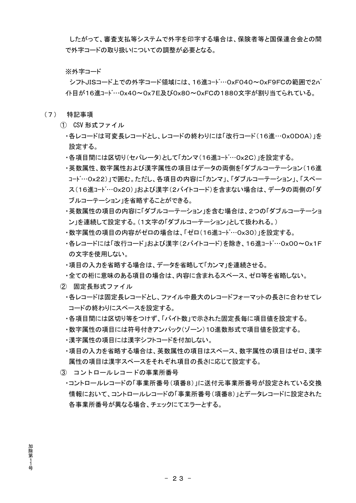
claude-haiku-5-5
- 表が1つも書き起こされていない
uncertain（モデル自己申告）
- 添付ページの印字ページ番号は「- 23 -」だが、依頼のPDF上のページ27とは一致しない。前後ページは添付されていないため、依頼対象のページかどうか確認できない。
- 添付ページには表が含まれていないため、tables は空配列とした。内容は「(7) 特記事項」の本文（外字コードの説明、CSV形式ファイル、固定長形式ファイル、コントロールレコードの事業所番号に関する記述）である。
- 「※外字コード」は本文中の見出し的な説明であり、表の注記ではないと判断して footnotes には入れていない。
claude-sonnet-5-5
- 表が1つも書き起こされていない
kaigo_kyotsu_r0806_p29 — 印字p.
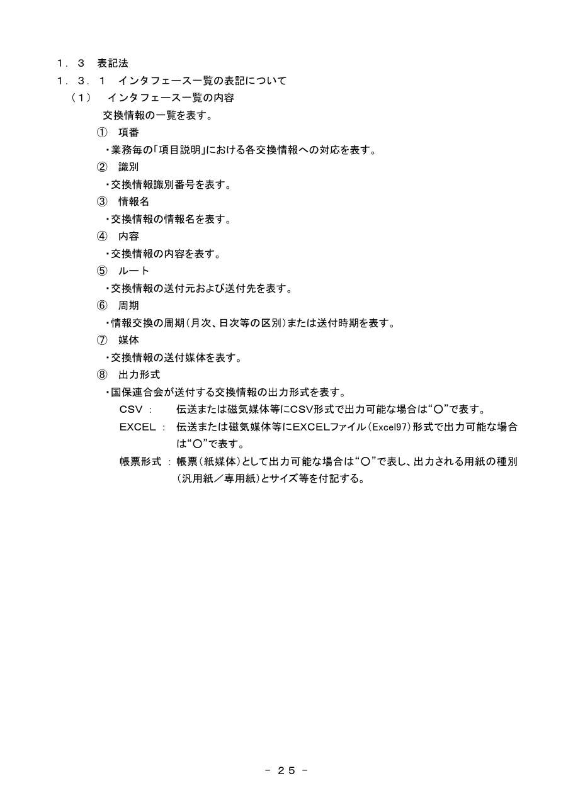
claude-haiku-5-5
- 表が1つも書き起こされていない
uncertain（モデル自己申告）
- 添付ページの印字ページ番号は25だが、依頼はPDF上のページ29の表の書き起こしである。添付されたのは表のない説明文のページのため、依頼どおりのページ29の表は書き起こせていない。ページ29の画像を添付してほしい。
- 添付ページ（25）には表がなく、「1.3.1 インタフェース一覧の表記について」の説明文のみが書かれている。
claude-sonnet-5-5
- 表が1つも書き起こされていない
kaigo_kyotsu_r0806_p30 — 印字p.
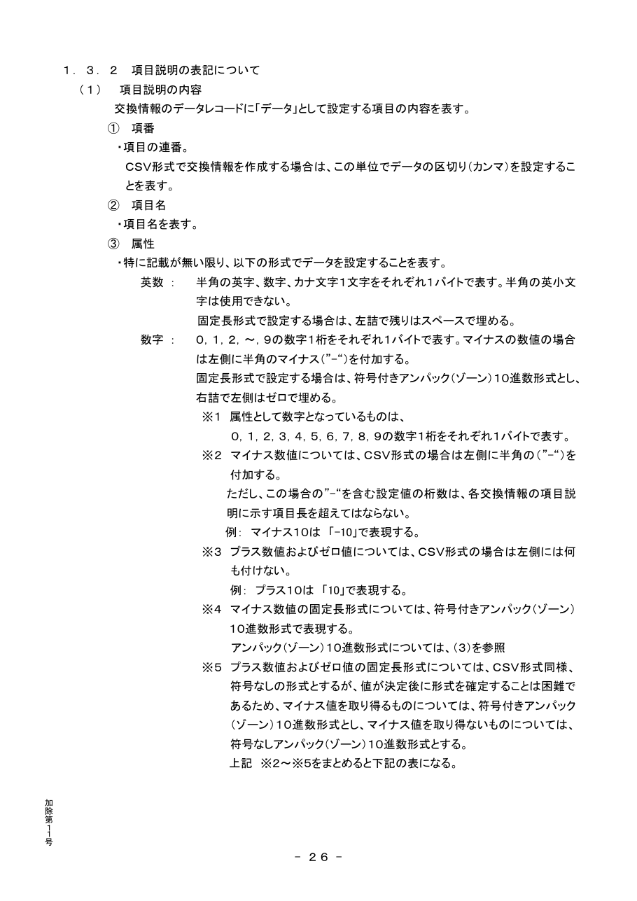
claude-haiku-5-5
- 表が1つも書き起こされていない
注記
- ※1 属性として数字となっているものは、0, 1, 2, 3, 4, 5, 6, 7, 8, 9の数字1桁をそれぞれ1バイトで表す。
- ※2 マイナス数値については、CSV形式の場合は左側に半角の("-")を付加する。ただし、この場合の"-"を含む設定値の桁数は、各交換情報の項目説明に示す項目長を超えてはならない。例: マイナス10は「-10」で表現する。
- ※3 プラス数値およびゼロ値については、CSV形式の場合は左側には何も付けない。例: プラス10は「10」で表現する。
- ※4 マイナス数値の固定長形式については、符号付きアンパック(ゾーン)10進数形式で表現する。アンパック(ゾーン)10進数形式については、(3)を参照
- ※5 プラス数値およびゼロ値の固定長形式については、CSV形式同様、符号なしの形式とするが、値が決定後に形式を確定することは困難であるため、マイナス値を取り得るものについては、符号付きアンパック(ゾーン)10進数形式とし、マイナス値を取り得ないものについては、符号なしアンパック(ゾーン)10進数形式とする。
uncertain（モデル自己申告）
- 添付ページ（印字ページ26）には表が存在せず、説明文のみのため tables は空配列とした。依頼の「次のページの表（PDF上のページ30）」は添付されていないため書き起こしていない。
- 本文の「上記 ※2～※5をまとめると下記の表になる。」が指す表は、このページには含まれていない。その表は添付されていない次のページ以降にある可能性がある。
- footnotes の ※1～※5 は表の下の注記ではなく本文中の注記だが、注記として扱える形で記録した。
claude-sonnet-5-5
- 表が1つも書き起こされていない
kaigo_kyotsu_r0806_p32 — 印字p.

claude-haiku-5-5
- テキストレイヤに見つからないセル: 4 個（赤枠）
表1 other（２）データ設定例 以下の交換情報のデータレコードにデータを設定する例を示す。
| 項番 | 項目名 | 属性 | 桁数 | 内容 | 必須 | 備考 |
|---|---|---|---|---|---|---|
| １ | A（文字列） | 英数 | 5 | ABCD | ||
| ２ | B（数値） | 数字 | 6 | 1542 | ||
| ３ | C（漢字文字列） | 漢字 | 8 | 介護 | ||
| ４ | D（年月日） | 数字 | 8 | 2000 年 4 月 1日 | ||
| ５ | E（中間にスペースを含む文字列） | 英数 | 4 | XY Z | ||
| ６ | F（ゼロ） | 数字 | 6 | 0 | ||
| ７ | G（スペースのみ） | 英数 | 6 | |||
| ８ | H（先頭にスペースを含む文字列） | 英数 | 5 | KLM | ||
| ９ | I（数値…金額等） | 数字 | 6 | 987,654 円 |
表2 other① ＣＳＶ形式の場合 以下のデータを設定する。（設定例1、設定例2の何れも同じ結果となる。）・設定例1
| 項番 | 項目名 | 属性 | 桁数 | 内容 | 必須 | 備考 |
|---|---|---|---|---|---|---|
| 設定例1 > 位置1～40 | 2,123,ABCD,1542,"介護 ",20000401,"XY | |||||
| 設定例1 > 位置41～61 | Z",0,," KLM",987654[図]改行コード |
注記
- （レコード番号（連番）＝123とする。）
uncertain（モデル自己申告）
- 表の列「設定値例」に対応する専用の項目がスキーマに無いため、「設定値例」の値を content 欄に入れた。
- 「データ設定例」の表は属性・バイト数・必須入力・備考を持つが内容列が無いため table_kind を other にした。
- CSV設定例1の表は図（位置の枠）のため、枠内の文字を言葉で補わず文字列を組み立てた。「介護」の後の空白の個数、および「KLM」の前の空白の個数は画像から正確に数えられず、推定の空白数で書いた箇所がある。
- G（スペースのみ）の設定値例は空欄で、null とした。
- 設定例2がこのページに見当たらないため、次ページへ続く可能性があるが continues_to_next_page は false とした。判断に自信がない。
claude-sonnet-5-5
- テキストレイヤに見つからないセル: 6 個（赤枠）
表1 record_layout（２） データ設定例
| 項番 | 項目名 | 属性 | 桁数 | 内容 | 必須 | 備考 |
|---|---|---|---|---|---|---|
| 1 | A(文字列) | 英数 | 5 | ○ | ||
| 2 | B(数値) | 数字 | 6 | ○ | ||
| 3 | C(漢字文字列) | 漢字 | 8 | ○ | ||
| 4 | D(年月日) | 数字 | 8 | ○ | ||
| 5 | E(中間にスペースを含む文字列) | 英数 | 4 | ○ | ||
| 6 | F(ゼロ) | 数字 | 6 | |||
| 7 | G(スペースのみ) | 英数 | 6 | |||
| 8 | H(先頭にスペースを含む文字列) | 英数 | 5 | |||
| 9 | I(数値…金額等) | 数字 | 6 |
表2 other設定値例
| 項番 | 項目名 | 属性 | 桁数 | 内容 | 必須 | 備考 |
|---|---|---|---|---|---|---|
| 設定値例 | ABCD | |||||
| 設定値例 | 1542 | |||||
| 設定値例 | 介護 | |||||
| 設定値例 | 2000 年 4 月 1 日 | |||||
| 設定値例 | XY Z | |||||
| 設定値例 | 0 | |||||
| 設定値例 | ||||||
| 設定値例 | KLM | |||||
| 設定値例 | 987,654 円 |
表3 other・設定例1
| 項番 | 項目名 | 属性 | 桁数 | 内容 | 必須 | 備考 |
|---|---|---|---|---|---|---|
| 位置 1-40 | 1 2 3 4 5 6 7 8 9 10 11 12 13 14 15 16 17 18 19 20 21 22 23 24 25 26 27 28 29 30 31 32 33 34 35 36 37 38 39 40 | |||||
| 設定値 1-40 | 2,123,ABCD,1542,"介護 ",20000401,"XY | |||||
| 位置 41-61 | 41 42 43 44 45 46 47 48 49 50 51 52 53 54 55 56 57 58 59 60 61 | |||||
| 設定値 41-61 | Z",0,," KLM",987654 改行コード |
注記
- （レコード番号(連番)＝123とする。）
uncertain（モデル自己申告）
- 設定例1の表は1文字1マスの図解で、スペースや引用符の位置・数は読み取りが不確か
- 設定値例の表は左の表と別の枠で、行対応は並び順による
kaigo_kyotsu_r0806_p35 — 印字p.31

claude-haiku-5-5
- [改ページ] p35→p36 の連続性 OK
- テキストレイヤに見つからないセル: 1 個（赤枠）
表1 code_list１．４ コード一覧 次頁へ続く
| 項番 | 項目名 | 属性 | 桁数 | 内容 | 必須 | 備考 |
|---|---|---|---|---|---|---|
| １ | 交換情報識別番号 | 英数 | 4 | 交換情報を識別するための番号 | ||
| ２ | 異動区分コード | 数字 | 1 | 1:新規 2:変更 3:終了 | ||
| ３ | 異動事由 > 受給者異動事由 | 数字 | 2 | 01:受給資格取得 02:受給資格喪失 03:広域連合における受給者の市町村間異動（政令市における受給者の区間異動） 04:合併による新規 99:その他異動 | ||
| ３ | 異動事由 > 事業所異動事由 | 数字 | 2 | 01:固定値（省略可能） | ||
| ３ | 異動事由 > 保険者異動事由 | 数字 | 2 | 01:固定値（省略可能） | ||
| ３ | 異動事由 > 広域連合異動事由 | 数字 | 2 | 01:固定値（省略可能） | ||
| ３ | 異動事由 > 市町村固有情報異動事由 | 数字 | 2 | 01:固定値（省略可能） | ||
| ３ | 異動事由 > 市町村特別給付異動事由 | 数字 | 2 | 01:固定値（省略可能） | ||
| ３ | 異動事由 > 個人番号異動事由 | 数字 | 2 | 01:受給者台帳の異動（新規、区間異動等） 02:個人番号の変更による異動 | ||
| ４ | 訂正区分コード | 数字 | 1 | 1:（未使用） 2:修正 3:削除 | ||
| ５ | 媒体区分コード > 保険者等 | 数字 | 1 | 1:伝送 2:MO 4:FD (5:紙) ※CD-R の場合は「4:FD」を設定 | ||
| ５ | 媒体区分コード > 事業所 | 数字 | 1 | 2:MO 4:FD (5:紙) 1 または 7:伝送（インターネット） ※CD-R の場合は「4:FD」を設定 | ||
| ６ | 保険者番号 | 数字 | 6 | 介護保険の保険者番号 [図: ×1 ×2 ×3 ×4 ×5 ×6 / 都道府県コード / 市区町村コード / チェックデジット] ※チェックデジットはモジュラス１０方式とする | ||
| ７ | 証記載保険者番号 | 数字 | 6 | 被保険者証記載の保険者番号 広域連合（政令市）の場合は市町村コード（行政区番号） | ||
| ８ | 市町村コード | 数字 | 3 | 総務省にて定めるコード | ||
| ９ | 年号コード | 数字 | 1 | 1:明治 2:大正 3:昭和 4:平成 5:令和 | ||
| １０ | 保険者区分コード | 数字 | 1 | 1:単独保険者 2:政令市 3:広域連合の保険者 | ||
| １１ | 被保険者番号 | 英数 | 10 | 介護保険の被保険者番号 被保険者証記載の被保険者番号が１０桁に満たない場合は右詰とし、左側を０で埋める 福祉事務所から提供される生活保護受給者については先頭の１桁を“H”とすること | ||
| １２ | 性別コード | 数字 | 1 | 1:男 2:女 | ||
| １３ | みなし要介護区分コード | 数字 | 1 | 1:通常の認定 2:みなし認定（旧措置入所者） 3:やむを得ない事由 |
uncertain（モデル自己申告）
- PDF上のページは35だが、ページ下部の印字ページ番号は「- 31 -」のためprinted_pageは31とした。
- 項番6の保険者番号の図は印字文字（×1〜×6、都道府県コード、市区町村コード、チェックデジット）を[図]の中に並べて記した。図の配置の詳細は再現していない。
claude-sonnet-5-5
- [改ページ] p35→p36 の連続性 OK
- テキストレイヤに見つからないセル: 1 個（赤枠）
表1 code_list1.4 コード一覧 次頁へ続く
| 項番 | 項目名 | 属性 | 桁数 | 内容 | 必須 | 備考 |
|---|---|---|---|---|---|---|
| 1 | 交換情報識別番号 | 英数 | 4 | 交換情報を識別するための番号 | ||
| 2 | 異動区分コード | 数字 | 1 | 1:新規 2:変更 3:終了 | ||
| 3 | 異動事由 > 受給者異動事由 | 数字 | 2 | 01:受給資格取得 02:受給資格喪失 03:広域連合における受給者の市町村間異動（政令市における受給者の区間異動） 04:合併による新規 99:その他異動 | ||
| 3 | 異動事由 > 事業所異動事由 | 数字 | 2 | 01:固定値（省略可能） | ||
| 3 | 異動事由 > 保険者異動事由 | 数字 | 2 | 01:固定値（省略可能） | ||
| 3 | 異動事由 > 広域連合異動事由 | 数字 | 2 | 01:固定値（省略可能） | ||
| 3 | 異動事由 > 市町村固有情報異動事由 | 数字 | 2 | 01:固定値（省略可能） | ||
| 3 | 異動事由 > 市町村特別給付異動事由 | 数字 | 2 | 01:固定値（省略可能） | ||
| 3 | 異動事由 > 個人番号異動事由 | 数字 | 2 | 01:受給者台帳の異動（新規、区間異動等） 02:個人番号の変更による異動 | ||
| 4 | 訂正区分コード | 数字 | 1 | 1:（未使用） 2:修正 3:削除 | ||
| 5 | 媒体区分コード > 保険者等 | 数字 | 1 | 1:伝送 2:MO 4:FD （5:紙） ※CD-Rの場合は「4:FD」を設定 | ||
| 5 | 媒体区分コード > 事業所 | 数字 | 1 | 2:MO 4:FD （5:紙） 1または7:伝送（インターネット） ※CD-Rの場合は「4:FD」を設定 | ||
| 6 | 保険者番号 | 数字 | 6 | 介護保険の保険者番号 [図] ×1 ×2 ×3 ×4 ×5 ×6 チェックデジット 市区町村コード 都道府県コード ※チェックデジットはモジュラス１０方式とする | ||
| 7 | 証記載保険者番号 | 数字 | 6 | 被保険者証記載の保険者番号 広域連合（政令市）の場合は市町村コード（行政区番号） | ||
| 8 | 市町村コード | 数字 | 3 | 総務省にて定めるコード | ||
| 9 | 年号コード | 数字 | 1 | 1:明治 2:大正 3:昭和 4:平成 5:令和 | ||
| １０ | 保険者区分コード | 数字 | 1 | 1:単独保険者 2:政令市 3:広域連合の保険者 | ||
| １１ | 被保険者番号 | 英数 | 10 | 介護保険の被保険者番号 被保険者証記載の被保険者番号が１０桁に満たない場合は右詰とし、左側を０で埋める 福祉事務所から提供される生活保護受給者については先頭の１桁を“H”とすること | ||
| １２ | 性別コード | 数字 | 1 | 1:男 2:女 | ||
| １３ | みなし要介護区分コード | 数字 | 1 | 1:通常の認定 2:みなし認定（旧措置入所者） 3:やむを得ない事由 |
uncertain（モデル自己申告）
- 項番6の内容は図を含むため、図中の文字（×1〜×6、チェックデジット、市区町村コード、都道府県コード）のみ書き写し、図の位置は[図]とした。
- 項番1〜13のバイト数は原文が全角/半角混在の可能性があり、length_rawは見た目どおり記載。
- ページ見出し「1.4 コード一覧」は表タイトルとして使用した。
kaigo_kyotsu_r0806_p38 — 印字p.

claude-haiku-5-5
- [改ページ] p38→p39 の連続性 OK
- テキストレイヤに見つからないセル: 1 個（赤枠）
表1 code_list 前頁から続く次頁へ続く
| 項番 | 項目名 | 属性 | 桁数 | 内容 | 必須 | 備考 |
|---|---|---|---|---|---|---|
| １５ | 居宅サービス計画作成区分コード | 数字 | 1 | 居宅介護支援事業所作成、自己作成、又は、介護予防支援事業所・地域包括支援センター作成の区分 1:居宅介護支援事業所作成 2:自己作成 3:介護予防支援事業所・地域包括支援センター作成 | ||
| １６ | 減免申請中区分コード | 数字 | 1 | 1:申請無し 2:申請中 3:決定済み | ||
| １７ | 申請種別コード | 数字 | 1 | 1:新規申請 2:更新申請 3:変更申請 4:職権 | ||
| １８ | 変更申請中区分コード | 数字 | 1 | 1:申請無し 2:申請中 3:決定済み | ||
| １９ | 標準負担区分コード | 数字 | 1 | 1:標準負担 2:特定標準負担 | ||
| ２０ | 利用者負担区分コード | 数字 | 1 | 1:利用者負担 2:旧措置入所者利用者負担 | ||
| ２１ | 世帯所得区分コード | 数字 | 1 | 世帯の所得区分コード 1:一般 2:市町村民税世帯非課税者等 3:生活保護 4:現役並み所得相当Ⅰ 5:現役並み所得相当Ⅱ 6:現役並み所得相当Ⅲ | ||
| ２２ | 所得区分コード | 数字 | 1 | 個人の所得区分コード 1:一般 2:市町村民税非課税者等 3:生活保護 4:現役並み所得相当Ⅰ 5:現役並み所得相当Ⅱ 6:現役並み所得相当Ⅲ | ||
| ２３ | 老齢福祉年金受給の有無 | 数字 | 1 | 1:受給無し 2:受給有り | ||
| ２４ | 事業所番号 | 英数 | 10 | [図] 都道府県コード 郡市区コード 通番 事業所区分コード チェックデジット ※ 事業所区分コードのみを英数とし、これ以外は数字とする。なお、英字は大文字アルファベットのみであり、「I」、「O」、「Q」を除く。 ※ チェックデジットは、モジュラス１０ウェイト２－１分割方式を独自に拡張したものとする。具体的には、英字を数字に読み替え、A=10、B=11、C=12、D=13、E=14、F=15、・・・Z=32とし、モジュラス１０ウェイト２－１分割方式で算出する。これにより、E=14に２を乗じると28になるが、この場合2+8=10として計算すること。（「1」+「0」とせず、また、「0」としないこと） | ||
| ２５ | 受領委任の有無 | 数字 | 1 | 1: 受領委任契約無し 2: 受領委任契約有り |
uncertain（モデル自己申告）
- 添付ページの印字ページ番号は「- 32 -」だが、依頼では PDF 上のページ 38 とされている。依頼文の『次のページ』が添付の1ページを指すものとして書き起こした。
- 表は項番15から始まり表見出しがないため、前ページからの続きと判断して continued_from_prev_page を true にした。
- 項番24の内容欄にある桁の図は、図の位置に[図]と書き、図内に印字された語のみを続けて書いた。図内の「×1」〜「×10」は省略した。
claude-sonnet-5-5
- [改ページ] p38→p39 の連続性 OK
- テキストレイヤに見つからないセル: 1 個（赤枠）
表1 code_list 前頁から続く次頁へ続く
| 項番 | 項目名 | 属性 | 桁数 | 内容 | 必須 | 備考 |
|---|---|---|---|---|---|---|
| １５ | 居宅サービス計画作成区分コード | 数字 | 1 | 居宅介護支援事業所作成、自己作成、又は、介護予防支援事業所・地域包括支援センター作成の区分 1:居宅介護支援事業所作成 2:自己作成 3:介護予防支援事業所・地域包括支援センター作成 | ||
| １６ | 減免申請中区分コード | 数字 | 1 | 1:申請無し 2:申請中 3:決定済み | ||
| １７ | 申請種別コード | 数字 | 1 | 1:新規申請 2:更新申請 3:変更申請 4:職権 | ||
| １８ | 変更申請中区分コード | 数字 | 1 | 1:申請無し 2:申請中 3:決定済み | ||
| １９ | 標準負担区分コード | 数字 | 1 | 1:標準負担 2:特定標準負担 | ||
| ２０ | 利用者負担区分コード | 数字 | 1 | 1:利用者負担 2:旧措置入所者利用者負担 | ||
| ２１ | 世帯所得区分コード | 数字 | 1 | 世帯の所得区分コード 1:一般 2:市町村民税世帯非課税者等 3:生活保護 4:現役並み所得相当Ⅰ 5:現役並み所得相当Ⅱ 6:現役並み所得相当Ⅲ | ||
| ２２ | 所得区分コード | 数字 | 1 | 個人の所得区分コード 1:一般 2:市町村民税非課税者等 3:生活保護 4:現役並み所得相当Ⅰ 5:現役並み所得相当Ⅱ 6:現役並み所得相当Ⅲ | ||
| ２３ | 老齢福祉年金受給の有無 | 数字 | 1 | 1:受給無し 2:受給有り | ||
| ２４ | 事業所番号 | 英数 | 10 | [図] ×1 ×2 ×3 ×4 ×5 ×6 ×7 ×8 ×9 ×10 都道府県コード 事業所区分コード 郡市区コード 通番 チェックデジット ※ 事業所区分コードのみを英数とし、これ以外は数字とする。なお、英字は大文字アルファベットのみであり、「I」、「O」、「Q」を除く。 ※ チェックデジットは、モジュラス１０ウェイト２－１分割方式を独自に拡張したものとする。具体的には、英字を数字に読み替え、A=10、B=11、C=12、D=13、E=14、F=15、・・・Z=32 とし、モジュラス１０ウェイト２－１分割方式で算出する。これにより、E=14 に 2 を乗じると 28 になるが、この場合 2+8=10 として計算すること。(「1」+「0」とせず、また、「0」としないこと) | ||
| ２５ | 受領委任の有無 | 数字 | 1 | 1: 受領委任契約無し 2: 受領委任契約有り |
uncertain（モデル自己申告）
- 表は前ページからの続き（見出し行のみ繰り返し、項番15から開始）
- 項番24 内容: 図の位置は[図]とし、図中の印字文字のみ書き写した。図中の文字の並びは推定
kaigo_kyotsu_r0806_p40 — 印字p.
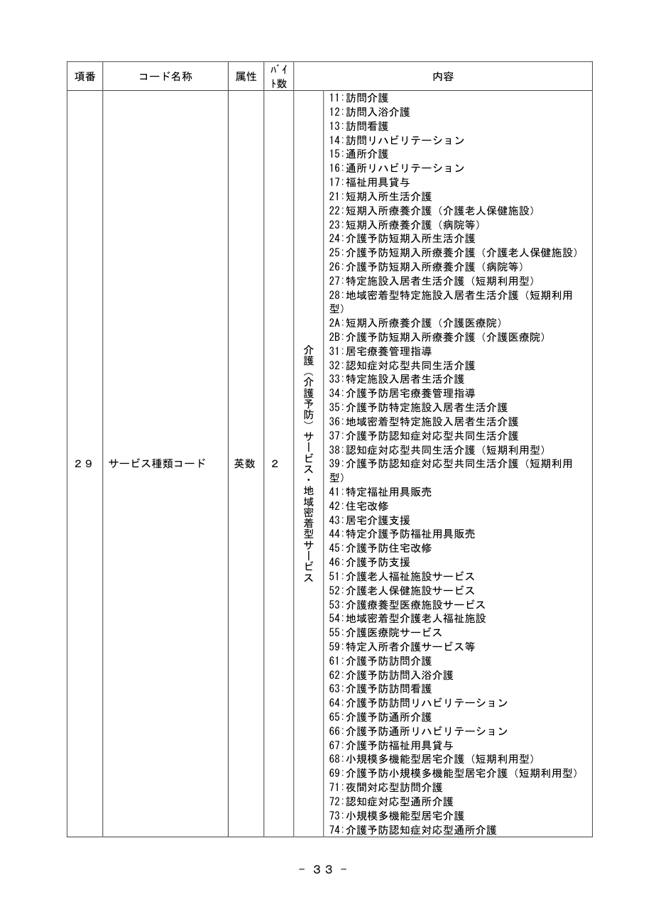
claude-haiku-5-5
- [改ページ] p40→p41 の連続性 OK
表1 code_list 前頁から続く次頁へ続く
| 項番 | 項目名 | 属性 | 桁数 | 内容 | 必須 | 備考 |
|---|---|---|---|---|---|---|
| ２９ | サービス種類コード | 英数 | 2 | 11:訪問介護 12:訪問入浴介護 13:訪問看護 14:訪問リハビリテーション 15:通所介護 16:通所リハビリテーション 17:福祉用具貸与 21:短期入所生活介護 22:短期入所療養介護（介護老人保健施設） 23:短期入所療養介護（病院等） 24:介護予防短期入所生活介護 25:介護予防短期入所療養介護（介護老人保健施設） 26:介護予防短期入所療養介護（病院等） 27:特定施設入居者生活介護（短期利用型） 28:地域密着型特定施設入居者生活介護（短期利用型） 2A:短期入所療養介護（介護医療院） 2B:介護予防短期入所療養介護（介護医療院） 31:居宅療養管理指導 32:認知症対応型共同生活介護 33:特定施設入居者生活介護 34:介護予防居宅療養管理指導 35:介護予防特定施設入居者生活介護 36:地域密着型特定施設入居者生活介護 37:介護予防認知症対応型共同生活介護 38:認知症対応型共同生活介護（短期利用型） 39:介護予防認知症対応型共同生活介護（短期利用型） 41:特定福祉用具販売 42:住宅改修 43:居宅介護支援 44:特定介護予防福祉用具販売 45:介護予防住宅改修 46:介護予防支援 51:介護老人福祉施設サービス 52:介護老人保健施設サービス 53:介護療養型医療施設サービス 54:地域密着型介護老人福祉施設 55:介護医療院サービス 59:特定入所者介護サービス等 61:介護予防訪問介護 62:介護予防訪問入浴介護 63:介護予防訪問看護 64:介護予防訪問リハビリテーション 65:介護予防通所介護 66:介護予防通所リハビリテーション 67:介護予防福祉用具貸与 68:小規模多機能型居宅介護（短期利用型） 69:介護予防小規模多機能型居宅介護（短期利用型） 71:夜間対応型訪問介護 72:認知症対応型通所介護 73:小規模多機能型居宅介護 74:介護予防認知症対応型通所介護 |
uncertain（モデル自己申告）
- 内容欄の左側に縦書きで印字された「介護（介護予防）サービス・地域密着型サービス」は、コードの区分見出しと思われるが、どの行に属するかの区切りが画像からは判断できないため、content には含めていない。
claude-sonnet-5-5
- [改ページ] p40→p41 の連続性 OK
表1 code_list 前頁から続く次頁へ続く
| 項番 | 項目名 | 属性 | 桁数 | 内容 | 必須 | 備考 |
|---|---|---|---|---|---|---|
| ２９ | サービス種類コード | 英数 | 2 | 介護（介護予防）サービス・地域密着型サービス 11:訪問介護 12:訪問入浴介護 13:訪問看護 14:訪問リハビリテーション 15:通所介護 16:通所リハビリテーション 17:福祉用具貸与 21:短期入所生活介護 22:短期入所療養介護（介護老人保健施設） 23:短期入所療養介護（病院等） 24:介護予防短期入所生活介護 25:介護予防短期入所療養介護（介護老人保健施設） 26:介護予防短期入所療養介護（病院等） 27:特定施設入居者生活介護（短期利用型） 28:地域密着型特定施設入居者生活介護（短期利用型） 2A:短期入所療養介護（介護医療院） 2B:介護予防短期入所療養介護（介護医療院） 31:居宅療養管理指導 32:認知症対応型共同生活介護 33:特定施設入居者生活介護 34:介護予防居宅療養管理指導 35:介護予防特定施設入居者生活介護 36:地域密着型特定施設入居者生活介護 37:介護予防認知症対応型共同生活介護 38:認知症対応型共同生活介護（短期利用型） 39:介護予防認知症対応型共同生活介護（短期利用型） 41:特定福祉用具販売 42:住宅改修 43:居宅介護支援 44:特定介護予防福祉用具販売 45:介護予防住宅改修 46:介護予防支援 51:介護老人福祉施設サービス 52:介護老人保健施設サービス 53:介護療養型医療施設サービス 54:地域密着型介護老人福祉施設 55:介護医療院サービス 59:特定入所者介護サービス等 61:介護予防訪問介護 62:介護予防訪問入浴介護 63:介護予防訪問看護 64:介護予防訪問リハビリテーション 65:介護予防通所介護 66:介護予防通所リハビリテーション 67:介護予防福祉用具貸与 68:小規模多機能型居宅介護（短期利用型） 69:介護予防小規模多機能型居宅介護（短期利用型） 71:夜間対応型訪問介護 72:認知症対応型通所介護 73:小規模多機能型居宅介護 74:介護予防認知症対応型通所介護 |
uncertain（モデル自己申告）
- 表見出し行の「バイト数」は原文で「ﾊﾞｲﾄ数」と折り返し印字されている。
- 内容列は縦書きの区分見出し「介護（介護予防）サービス・地域密着型サービス」と右側のコード値の2段構成で、1つのcontentにまとめた。
- 項番29の内容は次ページへ続くと思われる。
kaigo_kyotsu_r0806_p41 — 印字p.34

claude-haiku-5-5
- 表1 項番が整数でない行が 3 行
- 表1 桁数が空（原文: None）
- 表1 桁数が空（原文: None）
- 表1 桁数が空（原文: None）
- [改ページ] p41→p42 の連続性 OK
表1 code_list 前頁から続く次頁へ続く
| 項番 | 項目名 | 属性 | 桁数 | 内容 | 必須 | 備考 |
|---|---|---|---|---|---|---|
| 75:介護予防小規模多機能型居宅介護 76:定期巡回・随時対応型訪問介護看護 77:複合型サービス（看護小規模多機能型居宅介護） 78:地域密着型通所介護 79:複合型サービス（看護小規模多機能型居宅介護・短期利用型） 81:市町村特別給付 | ||||||
| 介護予防・日常生活支援総合事業サービス（経過措置） | 40:ケアマネジメント 47:生活支援サービス（配食） 48:生活支援サービス（見守り） 49:生活支援サービス（その他） 82:訪問型予防サービス 83:通所型予防サービス 84:介護予防訪問入浴介護 85:介護予防訪問看護 86:介護予防訪問リハビリテーション 87:介護予防通所リハビリテーション 88:介護予防福祉用具貸与 89:介護予防短期入所生活介護 90:介護予防短期入所療養介護（介護老人保健施設） 91:介護予防短期入所療養介護（介護療養型医療施設等） 92:介護予防居宅療養管理指導 93:介護予防特定施設入居者生活介護 94:介護予防認知症対応型通所介護 95:介護予防小規模多機能型居宅介護 96:介護予防認知症対応型共同生活介護 97:介護予防認知症対応型共同生活介護（短期利用型） | |||||
| 介護予防・日常生活支援総合事業サービス | A1:訪問型サービス（みなし） A2:訪問型サービス（独自） A3:訪問型サービス（独自／定率） A4:訪問型サービス（独自／定額） A5:通所型サービス（みなし） A6:通所型サービス（独自） A7:通所型サービス（独自／定率） A8:通所型サービス（独自／定額） A9:その他の生活支援サービス（配食／定率） AA:その他の生活支援サービス（配食／定額） AB:その他の生活支援サービス（見守り／定率） AC:その他の生活支援サービス（見守り／定額） AD:その他の生活支援サービス（その他／定率） AE:その他の生活支援サービス（その他／定額） AF:介護予防ケアマネジメント |
注記
- ※ 「みなし」: 総合事業のみなし指定
- ※ 「独自」: 市町村が独自にサービスを設定するもの
- ※ 「定率」: 利用者負担が定率のもの
- ※ 「定額」: 利用者負担が定額のもの
uncertain（モデル自己申告）
- ページ冒頭の表見出し行（項番・コード名称・属性・バイト数・内容）が繰り返されており、先頭の行は項番・コード名称が空欄のため、前ページからの続きと判断した（continued_from_prev_page は true）。どの項目の一覧かは本ページからは判断できない。
- 項番・コード名称・属性・バイト数の列が結合されており、各内容の項番は読み取れないため no は null とした。
- 「内容」列の先頭の塊（75〜81）には見出し文字がないため、name_path は空配列とした。
- 「内容」列の下部にある「※」の囲み枠は表の注記として footnotes に入れた。
- ページ下端で表の罫線が閉じているため continues_to_next_page は false とした。
- 表のレコード名・交換情報識別番号は本ページから読み取れないため null とした。
claude-sonnet-5-5
- 表1 項番が整数でない行が 3 行
- 表1 桁数が空（原文: None）
- 表1 桁数が空（原文: None）
- 表1 桁数が空（原文: None）
- [改ページ] p41→p42 の連続性 OK
表1 code_list 前頁から続く次頁へ続く
| 項番 | 項目名 | 属性 | 桁数 | 内容 | 必須 | 備考 |
|---|---|---|---|---|---|---|
| 75:介護予防小規模多機能型居宅介護 76:定期巡回・随時対応型訪問介護看護 77:複合型サービス（看護小規模多機能型居宅介護） 78:地域密着型通所介護 79:複合型サービス（看護小規模多機能型居宅介護・短期利用型） 81:市町村特別給付 | ||||||
| 介護予防・日常生活支援総合事業サービス（経過措置） | 40:ケアマネジメント 47:生活支援サービス（配食） 48:生活支援サービス（見守り） 49:生活支援サービス（その他） 82:訪問型予防サービス 83:通所型予防サービス 84:介護予防訪問入浴介護 85:介護予防訪問看護 86:介護予防訪問リハビリテーション 87:介護予防通所リハビリテーション 88:介護予防福祉用具貸与 89:介護予防短期入所生活介護 90:介護予防短期入所療養介護（介護老人保健施設） 91:介護予防短期入所療養介護（介護療養型医療施設等） 92:介護予防居宅療養管理指導 93:介護予防特定施設入居者生活介護 94:介護予防認知症対応型通所介護 95:介護予防小規模多機能型居宅介護 96:介護予防認知症対応型共同生活介護 97:介護予防認知症対応型共同生活介護（短期利用型） | |||||
| 介護予防・日常生活支援総合事業サービス | A1:訪問型サービス（みなし） A2:訪問型サービス（独自） A3:訪問型サービス（独自／定率） A4:訪問型サービス（独自／定額） A5:通所型サービス（みなし） A6:通所型サービス（独自） A7:通所型サービス（独自／定率） A8:通所型サービス（独自／定額） A9:その他の生活支援サービス（配食／定率） AA:その他の生活支援サービス（配食／定額） AB:その他の生活支援サービス（見守り／定率） AC:その他の生活支援サービス（見守り／定額） AD:その他の生活支援サービス（その他／定率） AE:その他の生活支援サービス（その他／定額） AF:介護予防ケアマネジメント |
注記
- ※ 「みなし」: 総合事業のみなし指定
- ※ 「独自」: 市町村が独自にサービスを設定するもの
- ※ 「定率」: 利用者負担が定率のもの
- ※ 「定額」: 利用者負担が定額のもの
uncertain（モデル自己申告）
- 前ページからの続き。項番・コード名称・属性・バイト数の列は空欄で、どのコード一覧の続きか不明
- 内容列の左に縦書きの区分見出しがあり、name_pathに入れたが、最初の行（75〜81）は区分見出しが前ページから続くため空
- continues_to_next_page は不確か
kaigo_kyotsu_r0806_p42 — 印字p.

claude-haiku-5-5
- [改ページ] p42→p43 の連続性 OK
- テキストレイヤに見つからないセル: 1 個（赤枠）
表1 code_list 前頁から続く次頁へ続く
| 項番 | 項目名 | 属性 | 桁数 | 内容 | 必須 | 備考 |
|---|---|---|---|---|---|---|
| ３０ | サービスコード | 英数 | 6 | [図] ※ サービス種類コード及びサービス項目コードの全てを英数とする。なお、英字は大文字アルファベットのみであり、「I」、「O」、「Q」を除く。 | ||
| ３１ | 福祉用具貸与種目コード | 数字 | 2 | 01:車いす 02:車いす付属品 03:特殊寝台 04:特殊寝台付属品 05:床ずれ防止用具 06:体位変換器 07:手すり 08:スロープ 09:歩行器 10:歩行補助つえ 11:認知症老人徘徊感知機器 12:移動用リフト 13:自動排泄処理装置 | ||
| ３２ | 公費負担者番号 | 数字 | 8 | |||
| ３３ | 公費受給者番号 | 数字 | 7 | |||
| ３４ | 老人保健市町村番号 | 数字 | 8 | |||
| ３５ | 老人保健受給者番号 | 数字 | 7 | |||
| ３６ | 金融機関コード | 数字 | 4 | 全銀協が定めたコード体系 | ||
| ３７ | 金融機関支店コード | 数字 | 3 | 全銀協が定めたコード体系 | ||
| ３８ | 口座種目 | 数字 | 1 | 1:普通預金 2:当座預金 3:別段 9:その他 | ||
| ３９ | 口座番号 | 数字 | 7 | 全銀協が定めたコード体系 |
uncertain（モデル自己申告）
- ページ下部の印字は「34-1」で、依頼のPDF上のページ番号42とは一致しない。
- 項番30の図は印字文字（×1〜×6）のみを書き写し、[図]と表記した。
- 項番38の区切り記号（コロン）の字形が原文で判然としないため半角コロンとして書き写した。
claude-sonnet-5-5
- [改ページ] p42→p43 の連続性 OK
- テキストレイヤに見つからないセル: 1 個（赤枠）
表1 code_list 前頁から続く次頁へ続く
| 項番 | 項目名 | 属性 | 桁数 | 内容 | 必須 | 備考 |
|---|---|---|---|---|---|---|
| ３０ | サービスコード | 英数 | 6 | [図] ×1 ×2 ×3 ×4 ×5 ×6 サービス種類コード サービス項目コード ※ サービス種類コード及びサービス項目コードの全てを英数とする。なお、英字は大文字アルファベットのみであり、「I」、「O」、「Q」を除く。 | ||
| ３１ | 福祉用具貸与種目コード | 数字 | 2 | 01:車いす 02:車いす付属品 03:特殊寝台 04:特殊寝台付属品 05:床ずれ防止用具 06:体位変換器 07:手すり 08:スロープ 09:歩行器 10:歩行補助つえ 11:認知症老人徘徊感知機器 12:移動用リフト 13:自動排泄処理装置 | ||
| ３２ | 公費負担者番号 | 数字 | 8 | |||
| ３３ | 公費受給者番号 | 数字 | 7 | |||
| ３４ | 老人保健市町村番号 | 数字 | 8 | |||
| ３５ | 老人保健受給者番号 | 数字 | 7 | |||
| ３６ | 金融機関コード | 数字 | 4 | 全銀協が定めたコード体系 | ||
| ３７ | 金融機関支店コード | 数字 | 3 | 全銀協が定めたコード体系 | ||
| ３８ | 口座種目 | 数字 | 1 | 1：普通預金 2：当座預金 3：別段 9：その他 | ||
| ３９ | 口座番号 | 数字 | 7 | 全銀協が定めたコード体系 |
uncertain（モデル自己申告）
- 項番30の内容は図を含む。図内の文字のみ転記。
- 見出し「バイト数」は原文で「ﾊﾞｲﾄ数」と折り返し表示されている。
- 全角数字と半角数字の表記は画像から判断した。
kaigo_kyotsu_r0806_p43 — 印字p.

claude-haiku-5-5
- 表1 項番41 項目名がPDFのセルと完全一致しない（部分一致のみ）: '平成18年3月以前'
- [改ページ] p43→p44 の連続性 OK
表1 code_list 前頁から続く次頁へ続く
| 項番 | 項目名 | 属性 | 桁数 | 内容 | 必須 | 備考 |
|---|---|---|---|---|---|---|
| ４０ | 福祉用具販売費の種目コード | 数字 | 2 | 01:腰掛便座 02:特殊尿器 03:入浴補助用具 04:簡易浴槽 05:移動用リフトのつり具の部分 06:自動排泄処理装置の交換可能部品 07:排泄予測支援機器 08:スロープ 09:歩行器 10:歩行補助つえ | ||
| ４１ | 施設等の区分コード > 訪問介護※1 | 英数 | 1 | 1:身体介護 2:生活援助 3:通院等乗降介助 | ||
| ４１ | 施設等の区分コード > 訪問看護 > 平成24年3月以前 | 英数 | 1 | 1:訪問看護ステーション 2:病院または診療所 | ||
| ４１ | 施設等の区分コード > 訪問看護 > 平成24年4月以降 | 英数 | 1 | 1:訪問看護ステーション 2:病院または診療所 3:定期巡回・随時対応サービス連携 | ||
| ４１ | 施設等の区分コード > 訪問リハビリテーション※1 > 平成30年3月以前 | 英数 | 1 | 1:病院または診療所 2:介護老人保健施設 | ||
| ４１ | 施設等の区分コード > 訪問リハビリテーション※1 > 平成30年4月以降 | 英数 | 1 | 1:病院または診療所 2:介護老人保健施設 3:介護医療院 | ||
| ４１ | 施設等の区分コード > 通所介護 > 平成18年3月以前 | 英数 | 1 | 1:単独型 2:併設型 | ||
| ４１ | 施設等の区分コード > 通所介護 > 平成18年4月以降 | 英数 | 1 | 3:小規模型事業所 4:通常規模型事業所 5:療養通所介護事業所 | ||
| ４１ | 施設等の区分コード > 通所介護 > 平成21年4月以降 | 英数 | 1 | 3:小規模型事業所 4:通常規模型事業所 5:療養通所介護事業所 6:大規模型事業所（Ⅰ） 7:大規模型事業所（Ⅱ） | ||
| ４１ | 施設等の区分コード > 通所介護 > 平成28年4月以降 | 英数 | 1 | 4:通常規模型事業所 6:大規模型事業所（Ⅰ） 7:大規模型事業所（Ⅱ） |
uncertain（モデル自己申告）
- 項番41の「内容」は、サービス種類（訪問介護※1、訪問看護、訪問リハビリテーション※1、通所介護）ごとに日付別の下位表が入れ子になっている。訪問介護※1の内容は「平成15年4月以降」〜「平成18年7月以降」の列にまたがって1つのセルとして記載されているため、name_pathは日付の下位区分を付けず「訪問介護※1」のみとした。平成15年3月以前の列は空欄。
- 「※1」の注記本文はこのページに見当たらないため、footnotesは空とした。
- バイト数の見出しは原文で「バ イ ト数」と改行されていたため、columnsは「バイト数」と整えて記載した。
claude-sonnet-5-5
- [改ページ] p43→p44 の連続性 OK
- テキストレイヤに見つからないセル: 1 個（赤枠）
表1 code_list 前頁から続く次頁へ続く
| 項番 | 項目名 | 属性 | 桁数 | 内容 | 必須 | 備考 |
|---|---|---|---|---|---|---|
| ４０ | 福祉用具販売費の種目コード | 数字 | 2 | 01:腰掛便座 02:特殊尿器 03:入浴補助用具 04:簡易浴槽 05:移動用リフトのつり具の部分 06:自動排泄処理装置の交換可能部品 07:排泄予測支援機器 08:スロープ 09:歩行器 10:歩行補助つえ | ||
| ４１ | 施設等の区分コード | 英数 | 1 | [図] サービス種類 | 内容(平成15年3月以前 / 平成15年4月以降 / 平成17年10月以降 / 平成18年4月以降 / 平成18年7月以降) 訪問介護※1: 1:身体介護 2:生活援助 3:通院等乗降介助 訪問看護: 平成24年3月以前 1:訪問看護ステーション 2:病院または診療所 / 平成24年4月以降 1:訪問看護ステーション 2:病院または診療所 3:定期巡回・随時対応サービス連携 訪問リハビリテーション※1: 平成30年3月以前 1:病院または診療所 2:介護老人保健施設 / 平成30年4月以降 1:病院または診療所 2:介護老人保健施設 3:介護医療院 通所介護: 平成18年3月以前 1:単独型 2:併設型 / 平成18年4月以降 3:小規模型事業所 4:通常規模型事業所 5:療養通所介護事業所 / 平成21年4月以降 3:小規模型事業所 4:通常規模型事業所 5:療養通所介護事業所 6:大規模型事業所（Ⅰ） 7:大規模型事業所（Ⅱ） / 平成28年4月以降 4:通常規模型事業所 6:大規模型事業所（Ⅰ） 7:大規模型事業所（Ⅱ） |
uncertain（モデル自己申告）
- 項番41の内容は入れ子の表で、サービス種類ごとの内容を1つの文字列にまとめた。
- . 項番41の訪問介護の平成15年3月以前〜の列対応（空欄セルと1:〜3:の位置）は不確か
- 「訪問ﾘﾊﾋﾞﾘﾃｰｼｮﾝ」は小さい文字で印字されており、「訪問リハビリテーション」と読んだ
kaigo_kyotsu_r0806_p44 — 印字p.

claude-haiku-5-5
- 表1 項番が整数でない行が 8 行
- 表1 桁数が空（原文: None）
- 表1 桁数が空（原文: None）
- 表1 桁数が空（原文: None）
- 表1 桁数が空（原文: None）
- 表1 桁数が空（原文: None）
- 表1 桁数が空（原文: None）
- 表1 桁数が空（原文: None）
- 表1 桁数が空（原文: None）
- [改ページ] p44→p45 の連続性 OK
表1 code_list 前頁から続く次頁へ続く
| 項番 | 項目名 | 属性 | 桁数 | 内容 | 必須 | 備考 |
|---|---|---|---|---|---|---|
| 通所リハビリテーション > 平成21年3月以前 | 1:通常の医療機関 2:小規模診療所 3:介護老人保健施設 | |||||
| 通所リハビリテーション > 平成21年4月以降 | 4:通常規模の事業所 5:大規模の事業所（Ⅰ） 6:大規模の事業所（Ⅱ） | |||||
| 通所リハビリテーション > 平成24年4月以降 | 4:通常規模の事業所(病院・診療所) 5:大規模の事業所（Ⅰ）(病院・診療所) 6:大規模の事業所（Ⅱ）(病院・診療所) 7:通常規模の事業所(介護老人保健施設) 8:大規模の事業所（Ⅰ）(介護老人保健施設) 9:大規模の事業所（Ⅱ）(介護老人保健施設) | |||||
| 通所リハビリテーション > 平成30年4月以降 | 4:通常規模の事業所(病院・診療所) 5:大規模の事業所（Ⅰ）(病院・診療所) 6:大規模の事業所（Ⅱ）(病院・診療所) 7:通常規模の事業所(介護老人保健施設) 8:大規模の事業所（Ⅰ）(介護老人保健施設) 9:大規模の事業所（Ⅱ）(介護老人保健施設) A:通常規模の事業所(介護医療院) B:大規模の事業所（Ⅰ）(介護医療院) C:大規模の事業所（Ⅱ）(介護医療院) | |||||
| 通所リハビリテーション > 2024年6月以降 | 4:通常規模の事業所(病院・診療所) 7:通常規模の事業所(介護老人保健施設) A:通常規模の事業所(介護医療院) D:大規模の事業所(病院・診療所) E:大規模の事業所(介護老人保健施設) F:大規模の事業所(介護医療院) G:大規模の事業所(特例)(病院・診療所) H:大規模の事業所(特例)(介護老人保健施設) J:大規模の事業所(特例)(介護医療院) | |||||
| 短期入所生活介護 > 平成15年3月以前 | 1:単独型 2:併設型・空床型 | |||||
| 短期入所生活介護 > 平成15年4月以降 | 1:単独型 2:併設型・空床型 3:単独型小規模生活単位型※1 4:併設型・空床型小規模生活単位型※1 | |||||
| 短期入所生活介護 > 平成17年10月以降 | 1:単独型 2:併設型・空床型 3:単独型ユニット型※1 4:併設型・空床型ユニット型※1 |
uncertain（モデル自己申告）
- 依頼ではPDF上のページ44とあるが、画像下部の印字ページ番号は『34-3』だったため printed_page にはそれを記載した。
- 本ページの表は前ページからの続きと見られ、項番・コード名称・属性・バイト数の列は空欄だった。コード名称（例: 異動事由など）と項番は前ページに依存するため、本ページからは特定できない。
- 『通所リハビリテーション』『短期入所生活介護』は内容列内で縦に結合された見出しと判断し name_path の先頭に入れた。
- 各コード群の全角・半角括弧は画像の見た目に従って書き写したが、半角と全角の区別に自信がない箇所がある。
- 「平成21年4月以降」の『5:大規模の事業所（Ⅰ）』『6:大規模の事業所（Ⅱ）』は画像上で改行されていたため、折り返しとみなして1行に詰めた。
claude-sonnet-5-5
- 表1 項番が整数でない行が 2 行
- 表1 桁数が空（原文: None）
- 表1 桁数が空（原文: None）
- [改ページ] p44→p45 の連続性 OK
表1 code_list 前頁から続く次頁へ続く
| 項番 | 項目名 | 属性 | 桁数 | 内容 | 必須 | 備考 |
|---|---|---|---|---|---|---|
| 通所リハビリテーション | 平成21年3月以前 1:通常の医療機関 2:小規模診療所 3:介護老人保健施設 平成21年4月以降 4:通常規模の事業所 5:大規模の事業所(Ⅰ) 6:大規模の事業所(Ⅱ) 平成24年4月以降 4:通常規模の事業所(病院・診療所) 5:大規模の事業所(Ⅰ)(病院・診療所) 6:大規模の事業所(Ⅱ)(病院・診療所) 7:通常規模の事業所(介護老人保健施設) 8:大規模の事業所(Ⅰ)(介護老人保健施設) 9:大規模の事業所(Ⅱ)(介護老人保健施設) 平成30年4月以降 4:通常規模の事業所(病院・診療所) 5:大規模の事業所(Ⅰ)(病院・診療所) 6:大規模の事業所(Ⅱ)(病院・診療所) 7:通常規模の事業所(介護老人保健施設) 8:大規模の事業所(Ⅰ)(介護老人保健施設) 9:大規模の事業所(Ⅱ)(介護老人保健施設) A:通常規模の事業所(介護医療院) B:大規模の事業所(Ⅰ)(介護医療院) C:大規模の事業所(Ⅱ)(介護医療院) 2024年6月以降 4:通常規模の事業所(病院・診療所) 7:通常規模の事業所(介護老人保健施設) A:通常規模の事業所(介護医療院) D:大規模の事業所(病院・診療所) E:大規模の事業所(介護老人保健施設) F:大規模の事業所(介護医療院) G:大規模の事業所(特例)(病院・診療所) H:大規模の事業所(特例)(介護老人保健施設) J:大規模の事業所(特例)(介護医療院) | |||||
| 短期入所生活介護 | 平成15年3月以前 1:単独型 2:併設型・空床型 平成15年4月以降 1:単独型 2:併設型・空床型 3:単独型小規模生活単位型※1 4:併設型・空床型小規模生活単位型※1 平成17年10月以降 1:単独型 2:併設型・空床型 3:単独型ユニット型※1 4:併設型・空床型ユニット型※1 |
uncertain（モデル自己申告）
- 表全体は前ページからの続きで、項番・コード名称・属性・バイト数の列は空欄（結合セルの続き）。
- 内容セル内の期間見出し（平成21年3月以前など）は、content内に行として含めた。平成21年3月以前/4月以降は2列に分かれている。
- 「通所リハビリテーション」「短期入所生活介護」はコード名称列の下位項目として扱ったが、実際の上位コード名称は前ページ側にあり不明。
kaigo_kyotsu_r0806_p45 — 印字p.

claude-haiku-5-5
- 表1 項番が整数でない行が 8 行
- 表1 桁数が空（原文: None）
- 表1 桁数が空（原文: None）
- 表1 桁数が空（原文: None）
- 表1 桁数が空（原文: None）
- 表1 桁数が空（原文: None）
- 表1 桁数が空（原文: None）
- 表1 桁数が空（原文: None）
- 表1 桁数が空（原文: None）
- [改ページ] p45→p46 の連続性 OK
表1 code_list 前頁から続く次頁へ続く
| 項番 | 項目名 | 属性 | 桁数 | 内容 | 必須 | 備考 |
|---|---|---|---|---|---|---|
| 短期入所療養介護（老健） > 平成17年10月以前 | 1:介護老人保健施設 | |||||
| 短期入所療養介護（老健） > 平成17年10月以降 | 1:介護老人保健施設 2:ユニット型介護老人保健施設※6 | |||||
| 短期入所療養介護（老健） > 平成20年5月以降 | 1:介護老人保健施設（Ⅰ） 2:ユニット型介護老人保健施設（Ⅰ） 5:介護老人保健施設（Ⅱ） 6:ユニット型介護老人保健施設（Ⅱ） 7:介護老人保健施設（Ⅲ） 8:ユニット型介護老人保健施設（Ⅲ） | |||||
| 短期入所療養介護（老健） > 平成30年4月以降 | 1:介護老人保健施設（Ⅰ） 2:ユニット型介護老人保健施設（Ⅰ） 5:介護老人保健施設（Ⅱ） 6:ユニット型介護老人保健施設（Ⅱ） 7:介護老人保健施設（Ⅲ） 8:ユニット型介護老人保健施設（Ⅲ） 9:介護老人保健施設（Ⅳ） A:ユニット型介護老人保健施設（Ⅳ） | |||||
| 短期入所療養介護（病院等） > 平成15年3月以前 | 1:病院療養型 2:診療所療養型 3:認知症疾患型 4:基準適合診療所型 5:介護力強化型※2 | |||||
| 短期入所療養介護（病院等） > 平成15年4月以降 | 1:病院療養型 2:診療所療養型 3:認知症疾患型 4:基準適合診療所型 | |||||
| 短期入所療養介護（病院等） > 平成17年10月以降 | 1:病院療養型 2:診療所療養型 3:認知症疾患型 4:基準適合診療所型 6:ユニット型病院療養型※6 7:ユニット型診療所療養型※6 8:ユニット型認知症疾患型※6 | |||||
| 短期入所療養介護（病院等） > 平成18年7月以降 | 1:病院療養型 2:診療所療養型 3:認知症疾患型 4:基準適合診療所型 6:ユニット型病院療養型※6 7:ユニット型診療所療養型※6 8:ユニット型認知症疾患型※6 A:病院経過型 B:認知症経過型 |
uncertain（モデル自己申告）
- このページの表は前ページからの続きと判断した。項番・コード名称・属性・バイト数は前ページに記載があり、このページでは空欄になっている。
- 「短期入所療養介護（老健）」「（病院等）」は縦結合の行見出しとして name_path に入れた。表の見出し文字列は原文の改行位置をもとに連結している。
- 内容列の日付見出し（平成17年10月以前など）は、内容列の上段の見出しとして name_path に入れた。
claude-sonnet-5-5
- 表1 項番が整数でない行が 5 行
- 表1 桁数が空（原文: None）
- 表1 桁数が空（原文: None）
- 表1 桁数が空（原文: None）
- 表1 桁数が空（原文: None）
- 表1 桁数が空（原文: None）
- [改ページ] p45→p46 の連続性 OK
表1 code_list 前頁から続く次頁へ続く
| 項番 | 項目名 | 属性 | 桁数 | 内容 | 必須 | 備考 |
|---|---|---|---|---|---|---|
| 短期入所療養介護（老健） | 平成17年10月以前 1:介護老人保健施設 平成17年10月以降 1:介護老人保健施設 2:ユニット型介護老人保健施設※６ | |||||
| 短期入所療養介護（老健） | 平成20年5月以降 1:介護老人保健施設（Ⅰ） 2:ユニット型介護老人保健施設（Ⅰ） 5:介護老人保健施設（Ⅱ） 6:ユニット型介護老人保健施設（Ⅱ） 7:介護老人保健施設（Ⅲ） 8:ユニット型介護老人保健施設（Ⅲ） | |||||
| 短期入所療養介護（老健） | 平成30年4月以降 1:介護老人保健施設（Ⅰ） 2:ユニット型介護老人保健施設（Ⅰ） 5:介護老人保健施設（Ⅱ） 6:ユニット型介護老人保健施設（Ⅱ） 7:介護老人保健施設（Ⅲ） 8:ユニット型介護老人保健施設（Ⅲ） 9:介護老人保健施設（Ⅳ） A:ユニット型介護老人保健施設（Ⅳ） | |||||
| 短期入所療養介護（病院等） | 平成15年3月以前 1:病院療養型 2:診療所療養型 3:認知症疾患型 4:基準適合診療所型 5:介護力強化型※２ 平成15年4月以降 1:病院療養型 2:診療所療養型 3:認知症疾患型 4:基準適合診療所型 | |||||
| 短期入所療養介護（病院等） | 平成17年10月以降 1:病院療養型 2:診療所療養型 3:認知症疾患型 4:基準適合診療所型 6:ユニット型病院療養型※６ 7:ユニット型診療所療養型※６ 8:ユニット型認知症疾患型※６ 平成18年7月以降 1:病院療養型 2:診療所療養型 3:認知症疾患型 4:基準適合診療所型 6:ユニット型病院療養型※６ 7:ユニット型診療所療養型※６ 8:ユニット型認知症疾患型※６ A:病院経過型 B:認知症経過型 |
uncertain（モデル自己申告）
- 前ページからの続きの表で、項番・コード名称・属性・バイト数は空欄で読み取れない。
- 内容は期間別の入れ子の小表になっており、各期間の見出しと内容を1項目にまとめて書いた。
kaigo_kyotsu_r0806_p46 — 印字p.

claude-haiku-5-5
- 表1 項番が整数でない行が 7 行
- 表1 桁数が空（原文: None）
- 表1 桁数が空（原文: None）
- 表1 桁数が空（原文: None）
- 表1 桁数が空（原文: None）
- 表1 桁数が空（原文: None）
- 表1 桁数が空（原文: None）
- 表1 桁数が空（原文: None）
- [改ページ] p46→p47 の連続性 OK
表1 code_list 前頁から続く次頁へ続く
| 項番 | 項目名 | 属性 | 桁数 | 内容 | 必須 | 備考 |
|---|---|---|---|---|---|---|
| 平成20年5月以降 | 1:病院療養型 2:診療所療養型 3:認知症疾患型 4:基準適合診療所型 6:ユニット型病院療養型※６ 7:ユニット型診療所療養型※６ 8:ユニット型認知症疾患型※６ A:病院経過型 B:認知症経過型 C:ユニット型病院経過型 | |||||
| 平成21年4月以降 | 1:病院療養型 2:診療所型 3:認知症疾患型 6:ユニット型病院療養型※６ 7:ユニット型診療所型※６ 8:ユニット型認知症疾患型※６ A:病院経過型 B:認知症経過型 C:ユニット型病院経過型 | |||||
| 2024年4月以降 | 1:病院療養型 2:診療所型 6:ユニット型病院療養型※６ 7:ユニット型診療所型※６ A:病院経過型 C:ユニット型病院経過型 | |||||
| 特定施設入居者生活介護（短期利用型以外） > 平成18年3月以前 | 1:有料老人ホーム 2:軽費老人ホーム | |||||
| 特定施設入居者生活介護（短期利用型以外） > 平成18年4月以降 | 1:有料老人ホーム 2:軽費老人ホーム 3:養護老人ホーム 4:高齢者専用賃貸住宅 | |||||
| 特定施設入居者生活介護（短期利用型以外） > 平成21年4月以降 | 1:有料老人ホーム（介護専用型） 2:軽費老人ホーム（介護専用型） 3:養護老人ホーム（介護専用型） 4:高齢者専用賃貸住宅（介護専用型） 5:有料老人ホーム（混合型） 6:軽費老人ホーム（混合型） 7:養護老人ホーム（混合型） 8:高齢者専用賃貸住宅（混合型） | |||||
| 特定施設入居者生活介護（短期利用型以外） > 平成24年4月以降 | 1:有料老人ホーム（介護専用型） 2:軽費老人ホーム（介護専用型） 3:養護老人ホーム（介護専用型） 5:有料老人ホーム（混合型） 6:軽費老人ホーム（混合型） 7:養護老人ホーム（混合型） |
uncertain（モデル自己申告）
- このページの表は前ページからの続きで、表見出しがない。項番・コード名称・属性・バイト数の列は本ページでは空欄のため、先頭の「平成20年5月以降」以下のコード群がどの項番・コード名称に対応するかは読み取れない。name_pathは期間見出しのみを入れた。
- 「特定施設入居者生活介護（短期利用型以外）」は内容列の左側の区画に記載されており、コード名称列の値かどうか判断できないが、name_pathの先頭に入れた。
- 内容列の「※６」は原文どおり全角数字で記載した。
claude-sonnet-5-5
- 表1 項番が整数でない行が 2 行
- 表1 桁数が空（原文: None）
- 表1 桁数が空（原文: None）
- [改ページ] p46→p47 の連続性 OK
表1 code_list 前頁から続く次頁へ続く
| 項番 | 項目名 | 属性 | 桁数 | 内容 | 必須 | 備考 |
|---|---|---|---|---|---|---|
| 平成20年5月以降 1:病院療養型 2:診療所療養型 3:認知症疾患型 4:基準適合診療所型 6:ユニット型病院療養型※６ 7:ユニット型診療所療養型※６ 8:ユニット型認知症疾患型※６ A:病院経過型 B:認知症経過型 C:ユニット型病院経過型 平成21年4月以降 1:病院療養型 2:診療所型 3:認知症疾患型 6:ユニット型病院療養型※６ 7:ユニット型診療所型※６ 8:ユニット型認知症疾患型※６ A:病院経過型 B:認知症経過型 C:ユニット型病院経過型 2024年4月以降 1:病院療養型 2:診療所型 6:ユニット型病院療養型※６ 7:ユニット型診療所型※６ A:病院経過型 C:ユニット型病院経過型 | ||||||
| 特定施設入居者生活介護（短期利用型以外） | 平成18年3月以前 1:有料老人ホーム 2:軽費老人ホーム 平成18年4月以降 1:有料老人ホーム 2:軽費老人ホーム 3:養護老人ホーム 4:高齢者専用賃貸住宅 平成21年4月以降 1:有料老人ホーム（介護専用型） 2:軽費老人ホーム（介護専用型） 3:養護老人ホーム（介護専用型） 4:高齢者専用賃貸住宅（介護専用型） 5:有料老人ホーム（混合型） 6:軽費老人ホーム（混合型） 7:養護老人ホーム（混合型） 8:高齢者専用賃貸住宅（混合型） 平成24年4月以降 1:有料老人ホーム（介護専用型） 2:軽費老人ホーム（介護専用型） 3:養護老人ホーム（介護専用型） 5:有料老人ホーム（混合型） 6:軽費老人ホーム（混合型） 7:養護老人ホーム（混合型） |
uncertain（モデル自己申告）
- 前ページからの続きで、項番・コード名称・属性・バイト数の値は見えていない。
- 表の先頭の内容セルは前ページから続くサービス種類の区分（セル見出し不明）で、name_pathは空にした。
- 内容セルは期間別の表組（平成20年5月以降と平成21年4月以降は左右2列）を、期間見出しごとに連結して書き起こした。
- 最終行（平成24年4月以降）の7の後に続きがある可能性がある（次ページへ継続）。
kaigo_kyotsu_r0806_p47 — 印字p.

claude-haiku-5-5
- 表1 項番が整数でない行が 10 行
- 表1 桁数が空（原文: None）
- 表1 桁数が空（原文: None）
- 表1 桁数が空（原文: None）
- 表1 桁数が空（原文: None）
- 表1 桁数が空（原文: None）
- 表1 桁数が空（原文: None）
- 表1 桁数が空（原文: None）
- 表1 桁数が空（原文: None）
- 表1 桁数が空（原文: None）
- 表1 桁数が空（原文: None）
- [改ページ] p47→p48 の連続性 OK
表1 code_list 前頁から続く次頁へ続く
| 項番 | 項目名 | 属性 | 桁数 | 内容 | 必須 | 備考 |
|---|---|---|---|---|---|---|
| 介護老人福祉施設サービス > 平成15年3月以前 | 1:介護福祉施設 2:小規模介護福祉施設 | |||||
| 介護老人福祉施設サービス > 平成15年4月以降 | 1:介護福祉施設 2:小規模介護福祉施設 3:小規模生活単位型介護福祉施設※1 4:小規模生活単位型小規模介護福祉施設※1 | |||||
| 介護老人福祉施設サービス > 平成17年10月以降 | 1:介護福祉施設 2:小規模介護福祉施設 3:ユニット型介護福祉施設※1 4:ユニット型小規模介護福祉施設※1 | |||||
| 介護老人福祉施設サービス > 平成30年4月以降 | 1:介護福祉施設 2:経過的小規模介護福祉施設 3:ユニット型介護福祉施設※1 4:ユニット型経過的小規模介護福祉施設※1 | |||||
| 介護老人福祉施設サービス > 2021年4月以降 | 1:介護福祉施設 2:経過的小規模介護福祉施設 3:ユニット型介護福祉施設※1 4:経過的ユニット型小規模介護福祉施設※1 | |||||
| 介護老人保健施設サービス > 平成17年9月以前 | ||||||
| 介護老人保健施設サービス > 平成17年10月以降 | 1:介護老人保健施設※6 2:ユニット型介護老人保健施設※6 | |||||
| 介護老人保健施設サービス > 平成18年4月以降 | 1:介護保健施設※6 2:ユニット型介護保健施設※6 3:小規模介護保健施設 4:ユニット型小規模介護保健施設 | |||||
| 介護老人保健施設サービス > 平成20年5月以降 | 1:介護保健施設（Ⅰ） 2:ユニット型介護保健施設（Ⅰ） 5:介護保健施設（Ⅱ） 6:ユニット型介護保健施設（Ⅱ） 7:介護保健施設（Ⅲ） 8:ユニット型介護保健施設（Ⅲ） | |||||
| 介護老人保健施設サービス > 平成30年4月以降 | 1:介護保健施設（Ⅰ） 2:ユニット型介護保健施設（Ⅰ） 5:介護保健施設（Ⅱ） 6:ユニット型介護保健施設（Ⅱ） 7:介護保健施設（Ⅲ） 8:ユニット型介護保健施設（Ⅲ） 9:介護保健施設（Ⅳ） A:ユニット型介護保健施設（Ⅳ） |
uncertain（モデル自己申告）
- このページの表は前ページからの続きと思われる（項番・コード名称・属性・バイト数の列が空で、見出し行のみがページ上部にある）。
- 内容列の「※1」「※6」は本ページ内に注記本文がないため footnotes には入れていない。
- 「介護老人福祉施設サービス」「介護老人保健施設サービス」は、コード名称列が前ページにあるため、内容列の縦結合セルの文字を name_path の外側に入れた。
claude-sonnet-5-5
- 表1 項番が整数でない行が 2 行
- 表1 桁数が空（原文: None）
- 表1 桁数が空（原文: None）
- [改ページ] p47→p48 の連続性 OK
表1 code_list 前頁から続く次頁へ続く
| 項番 | 項目名 | 属性 | 桁数 | 内容 | 必須 | 備考 |
|---|---|---|---|---|---|---|
| 介護老人福祉施設サービス | 平成15年3月以前 1:介護福祉施設 2:小規模介護福祉施設 平成15年4月以降 1:介護福祉施設 2:小規模介護福祉施設 3:小規模生活単位型介護福祉施設※1 4:小規模生活単位型小規模介護福祉施設※1 平成17年10月以降 1:介護福祉施設 2:小規模介護福祉施設 3:ユニット型介護福祉施設※1 4:ユニット型小規模介護福祉施設※1 平成30年4月以降 1:介護福祉施設 2:経過的小規模介護福祉施設 3:ユニット型介護福祉施設※1 4:ユニット型経過的小規模介護福祉施設※1 2021年4月以降 1:介護福祉施設 2:経過的小規模介護福祉施設 3:ユニット型介護福祉施設※1 4:経過的ユニット型小規模介護福祉施設※1 | |||||
| 介護老人保健施設サービス | 平成17年9月以前 平成17年10月以降 1:介護老人保健施設※6 2:ユニット型介護老人保健施設※6 平成18年4月以降 1:介護保健施設※6 2:ユニット型介護保健施設※6 3:小規模介護保健施設 4:ユニット型小規模介護保健施設 平成20年5月以降 1:介護保健施設（Ⅰ） 2:ユニット型介護保健施設（Ⅰ） 5:介護保健施設（Ⅱ） 6:ユニット型介護保健施設（Ⅱ） 7:介護保健施設（Ⅲ） 8:ユニット型介護保健施設（Ⅲ） 平成30年4月以降 1:介護保健施設（Ⅰ） 2:ユニット型介護保健施設（Ⅰ） 5:介護保健施設（Ⅱ） 6:ユニット型介護保健施設（Ⅱ） 7:介護保健施設（Ⅲ） 8:ユニット型介護保健施設（Ⅲ） 9:介護保健施設（Ⅳ） A:ユニット型介護保健施設（Ⅳ） |
uncertain（モデル自己申告）
- 前ページからの続き。項番・コード名称・属性・バイト数のセルは前ページから続いており、このページでは空欄のため null とした。
- 介護老人保健施設サービスの平成17年9月以前の欄は空欄。
kaigo_kyotsu_r0806_p48 — 印字p.

claude-haiku-5-5
- 表1 項番が整数でない行が 12 行
- 表1 桁数が空（原文: None）
- 表1 桁数が空（原文: None）
- 表1 桁数が空（原文: None）
- 表1 桁数が空（原文: None）
- 表1 桁数が空（原文: None）
- 表1 桁数が空（原文: None）
- 表1 桁数が空（原文: None）
- 表1 桁数が空（原文: None）
- 表1 桁数が空（原文: None）
- 表1 桁数が空（原文: None）
- 表1 桁数が空（原文: None）
- 表1 桁数が空（原文: None）
- [改ページ] p48→p49 の連続性 OK
表1 code_list 前頁から続く次頁へ続く
| 項番 | 項目名 | 属性 | 桁数 | 内容 | 必須 | 備考 |
|---|---|---|---|---|---|---|
| 介護療養型医療施設サービス > 平成15年3月以前 | 1:療養型 2:診療所型 3:認知症疾患型 4:介護力強化型※2 | |||||
| 介護療養型医療施設サービス > 平成15年4月以降 | 1:療養型 2:診療所型 3:認知症疾患型 | |||||
| 介護療養型医療施設サービス > 平成17年10月以降 | 1:病院療養型 2:診療所型 3:認知症疾患型 6:ユニット型病院療養型※6 7:ユニット型診療所型※6 8:ユニット型認知症疾患型※6 | |||||
| 介護療養型医療施設サービス > 平成18年7月以降 | 1:病院療養型 2:診療所型 3:認知症疾患型 6:ユニット型病院療養型※6 7:ユニット型診療所型※6 8:ユニット型認知症疾患型※6 A:病院経過型 B:認知症経過型 | |||||
| 介護療養型医療施設サービス > 平成20年5月以降 | 1:病院療養型 2:診療所型 3:認知症疾患型 6:ユニット型病院療養型※6 7:ユニット型診療所型※6 8:ユニット型認知症疾患型※6 A:病院経過型 B:認知症経過型 C:ユニット型病院経過型 | |||||
| 以下は平成18年4月以降設定 | ||||||
| 介護予防訪問看護 | 1:訪問看護ステーション 2:病院または診療所 | |||||
| 介護予防訪問リハビリテーション > 平成18年4月以降 | 1:病院または診療所 2:介護老人保健施設 | |||||
| 介護予防訪問リハビリテーション > 平成30年4月以降 | 1:病院または診療所 2:介護老人保健施設 3:介護医療院 | |||||
| 介護予防短期入所生活介護 | 1:単独型 2:併設型・空床型 3:単独型ユニット型 4:併設型・空床型ユニット型 | |||||
| 介護予防短期入所療養介護（老健） > 平成18年4月以降 | 1:介護老人保健施設 2:ユニット型介護老人保健施設 | |||||
| 介護予防短期入所療養介護（老健） > 平成20年5月以降 | 1:介護老人保健施設（Ⅰ） 2:ユニット型介護老人保健施設（Ⅰ） 5:介護老人保健施設（Ⅱ） 6:ユニット型介護老人保健施設（Ⅱ） 7:介護老人保健施設（Ⅲ） 8:ユニット型介護老人保健施設（Ⅲ） |
uncertain（モデル自己申告）
- このページは前ページからの続きで、表見出しはなく、先頭の列見出し行のみが繰り返されている。
- 項番・コード名称・属性・バイト数の列は結合セルで空欄に見えるため、各項目の項番・コード名称・属性・バイト数はすべて null とした。name_path は内容列の区分（介護療養型医療施設サービス等）から作成した。
- 「以下は平成18年4月以降設定」は内容列にまたがる帯であり、関連する項目が不明確なため独立した項目として書き起こした。
- 表がページ末尾で終わるか次ページへ続くかは判断できない。ページ下端で罫線が閉じているため continues_to_next_page は false とした。
- 「内容」列の日付見出し（平成15年3月以前など）の所属は、縦結合された介護療養型医療施設サービスの下位区分として扱った。
claude-sonnet-5-5
- 表1 項番が整数でない行が 5 行
- 表1 桁数が空（原文: None）
- 表1 桁数が空（原文: None）
- 表1 桁数が空（原文: None）
- 表1 桁数が空（原文: None）
- 表1 桁数が空（原文: None）
- [改ページ] p48→p49 の連続性 OK
表1 code_list 前頁から続く次頁へ続く
| 項番 | 項目名 | 属性 | 桁数 | 内容 | 必須 | 備考 |
|---|---|---|---|---|---|---|
| 介護療養型医療施設サービス | 平成15年3月以前 1:療養型 2:診療所型 3:認知症疾患型 4:介護力強化型※２ 平成15年4月以降 1:療養型 2:診療所型 3:認知症疾患型 平成17年10月以降 1:病院療養型 2:診療所型 3:認知症疾患型 6:ユニット型病院療養型※６ 7:ユニット型診療所型※６ 8:ユニット型認知症疾患型※６ 平成18年7月以降 1:病院療養型 2:診療所型 3:認知症疾患型 6:ユニット型病院療養型※６ 7:ユニット型診療所型※６ 8:ユニット型認知症疾患型※６ A:病院経過型 B:認知症経過型 平成20年5月以降 1:病院療養型 2:診療所型 3:認知症疾患型 6:ユニット型病院療養型※６ 7:ユニット型診療所型※６ 8:ユニット型認知症疾患型※６ A:病院経過型 B:認知症経過型 C:ユニット型病院経過型 | |||||
| 介護予防訪問看護 | 以下は平成18年4月以降設定 1:訪問看護ステーション 2:病院または診療所 | |||||
| 介護予防訪問リハビリテーション | 平成18年4月以降 1:病院または診療所 2:介護老人保健施設 平成30年4月以降 1:病院または診療所 2:介護老人保健施設 3:介護医療院 | |||||
| 介護予防短期入所生活介護 | 1:単独型 2:併設型・空床型 3:単独型ユニット型 4:併設型・空床型ユニット型 | |||||
| 介護予防短期入所療養介護（老健） | 平成18年4月以降 1:介護老人保健施設 2:ユニット型介護老人保健施設 平成20年5月以降 1:介護老人保健施設（Ⅰ） 2:ユニット型介護老人保健施設（Ⅰ） 5:介護老人保健施設（Ⅱ） 6:ユニット型介護老人保健施設（Ⅱ） 7:介護老人保健施設（Ⅲ） 8:ユニット型介護老人保健施設（Ⅲ） |
uncertain（モデル自己申告）
- 前ページからの続き（項番・コード名称・属性・バイト数セルは空欄で、前ページから結合）
- 各行の項番・コード名称・属性・バイト数は空欄で、サービス種類名は内容列左側のサブ見出しセルから取得
- 期間別の内容は左右2列に分かれており、見出し（平成◯年◯月以降）と値を連結して書き起こした
kaigo_kyotsu_r0806_p49 — 印字p.

claude-haiku-5-5
- 表1 項番が整数でない行が 6 行
- 表1 桁数が空（原文: None）
- 表1 桁数が空（原文: None）
- 表1 桁数が空（原文: None）
- 表1 桁数が空（原文: None）
- 表1 桁数が空（原文: None）
- 表1 桁数が空（原文: None）
- [改ページ] p49→p50 の連続性 OK
表1 code_list 前頁から続く次頁へ続く
| 項番 | 項目名 | 属性 | 桁数 | 内容 | 必須 | 備考 |
|---|---|---|---|---|---|---|
| 平成30年4月以降 1:介護老人保健施設（Ⅰ） 2:ユニット型介護老人保健施設（Ⅰ） 5:介護老人保健施設（Ⅱ） 6:ユニット型介護老人保健施設（Ⅱ） 7:介護老人保健施設（Ⅲ） 8:ユニット型介護老人保健施設（Ⅲ） 9:介護老人保健施設（Ⅳ） A:ユニット型介護老人保健施設（Ⅳ） | ||||||
| 介護予防短期入所療養介護（病院等） > 平成18年4月以降 | 1:病院療養型 2:診療所療養型 3:認知症疾患型 4:基準適合診療所型 6:ユニット型病院療養型 7:ユニット型診療所療養型 8:ユニット型認知症疾患型 | |||||
| 介護予防短期入所療養介護（病院等） > 平成18年7月以降 | 1:病院療養型 2:診療所療養型 3:認知症疾患型 4:基準適合診療所型 6:ユニット型病院療養型 7:ユニット型診療所療養型 8:ユニット型認知症疾患型 A:病院経過型 B:認知症経過型 | |||||
| 介護予防短期入所療養介護（病院等） > 平成20年5月以降 | 1:病院療養型 2:診療所療養型 3:認知症疾患型 4:基準適合診療所型 6:ユニット型病院療養型 7:ユニット型診療所療養型 8:ユニット型認知症疾患型 A:病院経過型 B:認知症経過型 C:ユニット型病院経過型 | |||||
| 介護予防短期入所療養介護（病院等） > 平成21年4月以降 | 1:病院療養型 2:診療所型 3:認知症疾患型 6:ユニット型病院療養型 7:ユニット型診療所型 8:ユニット型認知症疾患型 A:病院経過型 B:認知症経過型 C:ユニット型病院経過型 | |||||
| 介護予防短期入所療養介護（病院等） > 2024年4月以降 | 1:病院療養型 2:診療所型 6:ユニット型病院療養型 7:ユニット型診療所型 A:病院経過型 C:ユニット型病院経過型 |
uncertain（モデル自己申告）
- 先頭の項番・コード名称・属性・バイト数は前ページからの続きで、このページには見えている部分がないため空欄として書き起こした。
- 内容列の最初のブロック（平成30年4月以降）は、左側の小見出し欄が空欄のため name_path を空配列にした。
- 表の見出し行は本ページになく、前ページからの続きと判断したが、表の全体像は確認できていない。
claude-sonnet-5-5
- 表1 項番が整数でない行が 2 行
- 表1 桁数が空（原文: None）
- 表1 桁数が空（原文: None）
- 表1 項目名がPDFのセルと完全一致しない（部分一致のみ）: '介護予防短期入所療養介護(病院等)'
- [改ページ] p49→p50 の連続性 OK
表1 code_list 前頁から続く次頁へ続く
| 項番 | 項目名 | 属性 | 桁数 | 内容 | 必須 | 備考 |
|---|---|---|---|---|---|---|
| 平成30年4月以降 1:介護老人保健施設(Ⅰ) 2:ユニット型介護老人保健施設(Ⅰ) 5:介護老人保健施設(Ⅱ) 6:ユニット型介護老人保健施設(Ⅱ) 7:介護老人保健施設(Ⅲ) 8:ユニット型介護老人保健施設(Ⅲ) 9:介護老人保健施設(Ⅳ) A:ユニット型介護老人保健施設(Ⅳ) | ||||||
| 介護予防短期入所療養介護(病院等) | 平成18年4月以降 1:病院療養型 2:診療所療養型 3:認知症疾患型 4:基準適合診療所型 6:ユニット型病院療養型 7:ユニット型診療所療養型 8:ユニット型認知症疾患型 平成18年7月以降 1:病院療養型 2:診療所療養型 3:認知症疾患型 4:基準適合診療所型 6:ユニット型病院療養型 7:ユニット型診療所療養型 8:ユニット型認知症疾患型 A:病院経過型 B:認知症経過型 平成20年5月以降 1:病院療養型 2:診療所療養型 3:認知症疾患型 4:基準適合診療所型 6:ユニット型病院療養型 7:ユニット型診療所療養型 8:ユニット型認知症疾患型 A:病院経過型 B:認知症経過型 C:ユニット型病院経過型 平成21年4月以降 1:病院療養型 2:診療所型 3:認知症疾患型 6:ユニット型病院療養型 7:ユニット型診療所型 8:ユニット型認知症疾患型 A:病院経過型 B:認知症経過型 C:ユニット型病院経過型 2024年4月以降 1:病院療養型 2:診療所型 6:ユニット型病院療養型 7:ユニット型診療所型 A:病院経過型 C:ユニット型病院経過型 |
uncertain（モデル自己申告）
- 前ページからの続きの表で、項番・コード名称・属性・バイト数は空欄(前ページから継続)
- 内容セルは平成18年4月以降/平成18年7月以降/平成20年5月以降/平成21年4月以降が左右2段組で、ここでは期間ごとに順に連結した
- ローマ数字(Ⅰ〜Ⅳ)の表記が原文と一致しているか不確か
kaigo_kyotsu_r0806_p50 — 印字p.

claude-haiku-5-5
- 表1 項番が整数でない行が 12 行
- 表1 桁数が空（原文: None）
- 表1 桁数が空（原文: None）
- 表1 桁数が空（原文: None）
- 表1 桁数が空（原文: None）
- 表1 桁数が空（原文: None）
- 表1 桁数が空（原文: None）
- 表1 桁数が空（原文: None）
- 表1 桁数が空（原文: None）
- 表1 桁数が空（原文: None）
- 表1 桁数が空（原文: None）
- 表1 桁数が空（原文: None）
- 表1 桁数が空（原文: None）
- [改ページ] p50→p51 の連続性 OK
表1 code_list 前頁から続く次頁へ続く
| 項番 | 項目名 | 属性 | 桁数 | 内容 | 必須 | 備考 |
|---|---|---|---|---|---|---|
| 介護予防特定施設入居者生活介護 > 平成24年3月以前 | 1:有料老人ホーム 2:軽費老人ホーム 3:養護老人ホーム 4:高齢者専用賃貸住宅 | |||||
| 介護予防特定施設入居者生活介護 > 平成24年4月以降 | 1:有料老人ホーム 2:軽費老人ホーム 3:養護老人ホーム | |||||
| 夜間対応型訪問介護 | 1:Ⅰ型 2:Ⅱ型 | |||||
| 認知症対応型通所介護 > 平成30年3月以前 | 1:単独型 2:併設型 3:グループホーム等活用型 | |||||
| 認知症対応型通所介護 > 平成30年4月以降 | 1:単独型 2:併設型 3:共用型 | |||||
| 地域密着型特定施設入居者生活介護（短期利用型以外） > 平成18年4月以降 | 1:有料老人ホーム 2:軽費老人ホーム 3:養護老人ホーム 4:高齢者専用賃貸住宅 | |||||
| 地域密着型特定施設入居者生活介護（短期利用型以外） > 平成20年5月以降 | 1:有料老人ホーム 2:軽費老人ホーム 3:養護老人ホーム 4:高齢者専用賃貸住宅 5:サテライト型有料老人ホーム 6:サテライト型軽費老人ホーム 7:サテライト型養護老人ホーム 8:サテライト型高齢者専用賃貸住宅 | |||||
| 地域密着型特定施設入居者生活介護（短期利用型以外） > 平成24年4月以降 | 1:有料老人ホーム 2:軽費老人ホーム 5:サテライト型有料老人ホーム 6:サテライト型軽費老人ホーム | |||||
| 地域密着型特定施設入居者生活介護（短期利用型以外） > 平成27年4月以降 | 1:有料老人ホーム 2:軽費老人ホーム 3:養護老人ホーム 5:サテライト型有料老人ホーム 6:サテライト型軽費老人ホーム 7:サテライト型養護老人ホーム | |||||
| 地域密着型介護老人福祉施設 | 1:地域密着型介護老人福祉施設 2:サテライト型地域密着型介護老人福祉施設 3:ユニット型地域密着型介護老人福祉施設 4:サテライト型ユニット型地域密着型介護老人福祉施設 | |||||
| 介護予防認知症対応型通所介護 > 平成30年3月以前 | 1:単独型 2:併設型 3:グループホーム等活用型 | |||||
| 介護予防認知症対応型通所介護 > 平成30年4月以降 | 1:単独型 2:併設型 3:共用型 |
uncertain（モデル自己申告）
- 本表は前ページからの続きと思われ、項番・コード名称の見出しに対応する値（コードの項番・名称）がこのページには印字されていないため、項番・コード名称は空欄として扱い、no と no_raw は null としている。
- 「夜間対応型訪問介護」の内容欄の「Ⅰ型」「Ⅱ型」の文字種は原文どおり記載したが、ローマ数字の字形の判別に不確かさがある。
- 本表の末尾（介護予防認知症対応型通所介護の後）が次ページへ続くかは、このページ上では判断できないため continues_to_next_page を false としている。
- ユーザーは「次のページの表」を求めているが、添付は本ページ1枚のみのため、本ページの表を書き起こした。
claude-sonnet-5-5
- 表1 項番が整数でない行が 6 行
- 表1 桁数が空（原文: None）
- 表1 桁数が空（原文: None）
- 表1 桁数が空（原文: None）
- 表1 桁数が空（原文: None）
- 表1 項目名がPDFのセルと完全一致しない（部分一致のみ）: '地域密着型特定施設入居者生活介護（短期利用型以外）'
- 表1 桁数が空（原文: None）
- 表1 桁数が空（原文: None）
- [改ページ] p50→p51 の連続性 OK
表1 code_list 前頁から続く次頁へ続く
| 項番 | 項目名 | 属性 | 桁数 | 内容 | 必須 | 備考 |
|---|---|---|---|---|---|---|
| 介護予防特定施設入居者生活介護 | 平成24年3月以前 1:有料老人ホーム 2:軽費老人ホーム 3:養護老人ホーム 4:高齢者専用賃貸住宅 平成24年4月以降 1:有料老人ホーム 2:軽費老人ホーム 3:養護老人ホーム | |||||
| 夜間対応型訪問介護 | 1:Ⅰ型 2:Ⅱ型 | |||||
| 認知症対応型通所介護 | 平成30年3月以前 1:単独型 2:併設型 3:グループホーム等活用型 平成30年4月以降 1:単独型 2:併設型 3:共用型 | |||||
| 地域密着型特定施設入居者生活介護（短期利用型以外） | 平成18年4月以降 1:有料老人ホーム 2:軽費老人ホーム 3:養護老人ホーム 4:高齢者専用賃貸住宅 平成20年5月以降 1:有料老人ホーム 2:軽費老人ホーム 3:養護老人ホーム 4:高齢者専用賃貸住宅 5:サテライト型有料老人ホーム 6:サテライト型軽費老人ホーム 7:サテライト型養護老人ホーム 8:サテライト型高齢者専用賃貸住宅 平成24年4月以降 1:有料老人ホーム 2:軽費老人ホーム 5:サテライト型有料老人ホーム 6:サテライト型軽費老人ホーム 平成27年4月以降 1:有料老人ホーム 2:軽費老人ホーム 3:養護老人ホーム 5:サテライト型有料老人ホーム 6:サテライト型軽費老人ホーム 7:サテライト型養護老人ホーム | |||||
| 地域密着型介護老人福祉施設 | 1:地域密着型介護老人福祉施設 2:サテライト型地域密着型介護老人福祉施設 3:ユニット型地域密着型介護老人福祉施設 4:サテライト型ユニット型地域密着型介護老人福祉施設 | |||||
| 介護予防認知症対応型通所介護 | 平成30年3月以前 1:単独型 2:併設型 3:グループホーム等活用型 平成30年4月以降 1:単独型 2:併設型 3:共用型 |
uncertain（モデル自己申告）
- 項番・コード名称・属性・バイト数の列は空欄で、前ページからの続きのため項目が特定できない。
- 内容列は平成年区分ごとの小表を、見出しと各コード値を改行で連結して書き起こした。左右2段の並びは順に直列化している。
kaigo_kyotsu_r0806_p51 — 印字p.

claude-haiku-5-5
- 表1 項番が整数でない行が 16 行
- 表1 桁数が空（原文: None）
- 表1 桁数が空（原文: None）
- 表1 桁数が空（原文: None）
- 表1 桁数が空（原文: None）
- 表1 桁数が空（原文: None）
- 表1 桁数が空（原文: None）
- 表1 桁数が空（原文: None）
- 表1 桁数が空（原文: None）
- 表1 桁数が空（原文: None）
- 表1 桁数が空（原文: None）
- 表1 桁数が空（原文: None）
- 表1 桁数が空（原文: None）
- 表1 桁数が空（原文: None）
- 表1 桁数が空（原文: None）
- 表1 桁数が空（原文: None）
- 表1 桁数が空（原文: None）
- [改ページ] p51→p52 の連続性 OK
表1 code_list 前頁から続く次頁へ続く
| 項番 | 項目名 | 属性 | 桁数 | 内容 | 必須 | 備考 |
|---|---|---|---|---|---|---|
| 以下は平成24年4月以降設定 | ||||||
| 特定施設入居者生活介護(短期利用型) | 1:有料老人ホーム（介護専用型） 2:軽費老人ホーム（介護専用型） 5:有料老人ホーム（混合型） 6:軽費老人ホーム（混合型） | |||||
| 介護予防通所リハビリテーション > 平成24年4月以降 | 1:病院または診療所 2:介護老人保健施設 | |||||
| 介護予防通所リハビリテーション > 平成30年4月以降 | 1:病院または診療所 2:介護老人保健施設 3:介護医療院 | |||||
| 定期巡回・随時対応型訪問介護看護 | 1:一体型 2:連携型 | |||||
| 小規模多機能型居宅介護（短期利用型以外） | 1:小規模多機能型居宅介護事業所 2:サテライト型小規模多機能型居宅介護事業所 | |||||
| 小規模多機能型居宅介護（短期利用型） | 1:小規模多機能型居宅介護事業所 2:サテライト型小規模多機能型居宅介護事業所 | |||||
| 認知症対応型共同生活介護（短期利用型以外） > 2021年3月以前 | 1:Ⅰ型 2:Ⅱ型 | |||||
| 認知症対応型共同生活介護（短期利用型以外） > 2021年4月以降 | 1:Ⅰ型 2:Ⅱ型 3:サテライト型Ⅰ型 4:サテライト型Ⅱ型 | |||||
| 認知症対応型共同生活介護（短期利用型） > 2021年3月以前 | 1:Ⅰ型 2:Ⅱ型 | |||||
| 認知症対応型共同生活介護（短期利用型） > 2021年4月以降 | 1:Ⅰ型 2:Ⅱ型 3:サテライト型Ⅰ型 4:サテライト型Ⅱ型 | |||||
| 地域密着型特定施設入居者生活介護(短期利用型) | 1:有料老人ホーム 2:軽費老人ホーム 5:サテライト型有料老人ホーム 6:サテライト型軽費老人ホーム | |||||
| 介護予防小規模多機能型居宅介護（短期利用型以外） | 1:介護予防小規模多機能型居宅介護事業所 2:サテライト型介護予防小規模多機能型居宅介護事業所 | |||||
| 介護予防小規模多機能型居宅介護（短期利用型） | 1:介護予防小規模多機能型居宅介護事業所 2:サテライト型介護予防小規模多機能型居宅介護事業所 | |||||
| 介護予防認知症対応型共同生活介護（短期利用型以外） > 2021年3月以前 | 1:Ⅰ型 2:Ⅱ型 | |||||
| 介護予防認知症対応型共同生活介護（短期利用型以外） > 2021年4月以降 | 1:Ⅰ型 2:Ⅱ型 3:サテライト型Ⅰ型 4:サテライト型Ⅱ型 |
uncertain（モデル自己申告）
- 本ページは前ページからの続きの表と判断した（見出し行・表題がなく、項番・コード名称・属性・バイト数の欄が空欄のため）。コード名称と項番は前ページに記載されていると思われ、このページからは確認できない。
- 内容欄の最上段『以下は平成24年4月以降設定』は項目に紐づかないため、name_path を空配列にして content に入れた。
- 内容欄の各項目名は縦結合された見出しで、『平成24年4月以降』『平成30年4月以降』『2021年3月以前』『2021年4月以降』の列分けは name_path の末尾に入れた。
- 表の最下部に罫線が閉じており、次ページへ続くかは判断できなかったため continues_to_next_page を false とした。
claude-sonnet-5-5
- 表1 項番が整数でない行が 12 行
- 表1 桁数が空（原文: None）
- 表1 桁数が空（原文: None）
- 表1 桁数が空（原文: None）
- 表1 桁数が空（原文: None）
- 表1 桁数が空（原文: None）
- 表1 桁数が空（原文: None）
- 表1 桁数が空（原文: None）
- 表1 桁数が空（原文: None）
- 表1 桁数が空（原文: None）
- 表1 桁数が空（原文: None）
- 表1 桁数が空（原文: None）
- 表1 桁数が空（原文: None）
- 表1 項目名がPDFのセルと完全一致しない（部分一致のみ）: '介護予防認知症対応型共同生活介護(短期利用型以外)'
- [改ページ] p51→p52 の連続性 OK
表1 code_list 前頁から続く次頁へ続く
| 項番 | 項目名 | 属性 | 桁数 | 内容 | 必須 | 備考 |
|---|---|---|---|---|---|---|
| 以下は平成24年4月以降設定 | ||||||
| 特定施設入居者生活介護(短期利用型) | 1:有料老人ホーム(介護専用型) 2:軽費老人ホーム(介護専用型) 5:有料老人ホーム(混合型) 6:軽費老人ホーム(混合型) | |||||
| 介護予防通所リハビリテーション | 平成24年4月以降 1:病院または診療所 2:介護老人保健施設 平成30年4月以降 1:病院または診療所 2:介護老人保健施設 3:介護医療院 | |||||
| 定期巡回・随時対応型訪問介護看護 | 1:一体型 2:連携型 | |||||
| 小規模多機能型居宅介護(短期利用型以外) | 1:小規模多機能型居宅介護事業所 2:サテライト型小規模多機能型居宅介護事業所 | |||||
| 小規模多機能型居宅介護(短期利用型) | 1:小規模多機能型居宅介護事業所 2:サテライト型小規模多機能型居宅介護事業所 | |||||
| 認知症対応型共同生活介護(短期利用型以外) | 2021年3月以前 1:Ⅰ型 2:Ⅱ型 2021年4月以降 1:Ⅰ型 2:Ⅱ型 3:サテライト型Ⅰ型 4:サテライト型Ⅱ型 | |||||
| 認知症対応型共同生活介護(短期利用型) | 2021年3月以前 1:Ⅰ型 2:Ⅱ型 2021年4月以降 1:Ⅰ型 2:Ⅱ型 3:サテライト型Ⅰ型 4:サテライト型Ⅱ型 | |||||
| 地域密着型特定施設入居者生活介護(短期利用型) | 1:有料老人ホーム 2:軽費老人ホーム 5:サテライト型有料老人ホーム 6:サテライト型軽費老人ホーム | |||||
| 介護予防小規模多機能型居宅介護(短期利用型以外) | 1:介護予防小規模多機能型居宅介護事業所 2:サテライト型介護予防小規模多機能型居宅介護事業所 | |||||
| 介護予防小規模多機能型居宅介護(短期利用型) | 1:介護予防小規模多機能型居宅介護事業所 2:サテライト型介護予防小規模多機能型居宅介護事業所 | |||||
| 介護予防認知症対応型共同生活介護(短期利用型以外) | 2021年3月以前 1:Ⅰ型 2:Ⅱ型 2021年4月以降 1:Ⅰ型 2:Ⅱ型 3:サテライト型Ⅰ型 4:サテライト型Ⅱ型 |
uncertain（モデル自己申告）
- 前ページからの続き。項番・コード名称・属性・バイト数の列は空欄で、内容列の左に入れ子の見出し列(特定施設入居者生活介護など)があるため、その見出しを name_path に入れた。
- 介護予防通所リハビリテーションの名称は原文で半角カナ小文字表記(ﾘﾊﾋﾞﾘﾃｰｼｮﾝ)に見えるが、全角で書いた。
- 列見出しのバイト数は『ﾊﾞｲﾄ数』の折り返し表記で、columnsでは『バイト数』と書いた。
kaigo_kyotsu_r0806_p52 — 印字p.

claude-haiku-5-5
- 表1 項番が整数でない行が 13 行
- 表1 桁数が空（原文: None）
- 表1 桁数が空（原文: None）
- 表1 桁数が空（原文: None）
- 表1 桁数が空（原文: None）
- 表1 桁数が空（原文: None）
- 表1 桁数が空（原文: None）
- 表1 桁数が空（原文: None）
- 表1 桁数が空（原文: None）
- 表1 桁数が空（原文: None）
- 表1 桁数が空（原文: None）
- 表1 桁数が空（原文: None）
- 表1 項目名がPDFのセルと完全一致しない（部分一致のみ）: '複合型サービス（看護小規模多機能型居宅介護・短期利用型）'
- 表1 桁数が空（原文: None）
- 表1 桁数が空（原文: None）
- 表1 項目名がPDFのセルと完全一致しない（部分一致のみ）: '介護予防支援'
- [改ページ] 前後ページで列見出しの書き起こしが一致しない
表1 code_list 前頁から続く次頁へ続く
| 項番 | 項目名 | 属性 | 桁数 | 内容 | 必須 | 備考 |
|---|---|---|---|---|---|---|
| 介護予防認知症対応型共同生活介護（短期利用型） > 2021年3月以前 | 1:Ⅰ型 2:Ⅱ型 | |||||
| 介護予防認知症対応型共同生活介護（短期利用型） > 2021年4月以降 | 1:Ⅰ型 2:Ⅱ型 3:サテライト型Ⅰ型 4:サテライト型Ⅱ型 | |||||
| 以下は平成28年4月以降設定 | ||||||
| 地域密着型通所介護（平成28年4月1日～） > 2024年3月以前 | 1:地域密着型通所介護事業所 2:療養通所介護事業所 | |||||
| 地域密着型通所介護（平成28年4月1日～） > 2024年4月以降 | 1:地域密着型通所介護事業所 2:療養通所介護事業所 3: 療養通所介護事業所（短期利用型） | |||||
| 以下は平成30年4月以降設定 | ||||||
| 短期入所療養介護（介護医療院） | 1:Ⅰ型介護医療院 2:Ⅱ型介護医療院 3:特別介護医療院 4:ユニット型Ⅰ型介護医療院 5:ユニット型Ⅱ型介護医療院 6:ユニット型特別介護医療院 | |||||
| 介護医療院サービス | 1:Ⅰ型介護医療院 2:Ⅱ型介護医療院 3:特別介護医療院 4:ユニット型Ⅰ型介護医療院 5:ユニット型Ⅱ型介護医療院 6:ユニット型特別介護医療院 | |||||
| 介護予防短期入所療養介護（介護医療院） | 1:Ⅰ型介護医療院 2:Ⅱ型介護医療院 3:特別介護医療院 4:ユニット型Ⅰ型介護医療院 5:ユニット型Ⅱ型介護医療院 6:ユニット型特別介護医療院 | |||||
| 複合型サービス（看護小規模多機能型居宅介護） | 1:看護小規模多機能型居宅介護事業所 2:サテライト型看護小規模多機能型居宅介護事業所 | |||||
| 複合型サービス（看護小規模多機能型居宅介護・短期利用型） | 1:看護小規模多機能型居宅介護事業所 2:サテライト型看護小規模多機能型居宅介護事業所 | |||||
| 以下は2024年4月以降設定 | ||||||
| 介護予防支援 | 1:地域包括支援センター 2:居宅介護支援事業者 |
uncertain（モデル自己申告）
- ページ先頭の見出し行（項番・コード名称・属性・バイト数・内容）が前ページからの続きとして繰り返されているため、continued_from_prev_page を true とした。前ページ側の項番・コード名称は本ページに無い。
- 内容列は入れ子の表（期間別の見出し行と帯行「以下は…設定」）になっているため、期間や帯の文言を name_path に入れ、帯行は name_path のみで content を null とした。
- 「複合型サービス（看護小規模多機能型居宅介護）」の内容は、1行目と2行目の印字が同じ範囲に見えたため、原文のとおり書き起こしたが、細部の字形に不確かさがある。
- 表の下端は枠で閉じられており次ページへの続きかは判断できないため continues_to_next_page を false とした。
claude-sonnet-5-5
- 表1 項番が整数でない行が 11 行
- 表1 桁数が空（原文: None）
- 表1 桁数が空（原文: None）
- 表1 桁数が空（原文: None）
- 表1 桁数が空（原文: None）
- 表1 桁数が空（原文: None）
- 表1 桁数が空（原文: None）
- 表1 桁数が空（原文: None）
- 表1 桁数が空（原文: None）
- 表1 桁数が空（原文: None）
- 表1 桁数が空（原文: None）
- 表1 桁数が空（原文: None）
- [改ページ] p52→p53 の連続性 OK
表1 code_list 前頁から続く次頁へ続く
| 項番 | 項目名 | 属性 | 桁数 | 内容 | 必須 | 備考 |
|---|---|---|---|---|---|---|
| 介護予防認知症対応型共同生活介護（短期利用型） 2021年3月以前 1:Ⅰ型 2:Ⅱ型 2021年4月以降 1:Ⅰ型 2:Ⅱ型 3:サテライト型Ⅰ型 4:サテライト型Ⅱ型 | ||||||
| 以下は平成28年4月以降設定 | ||||||
| 地域密着型通所介護（平成28年4月1日～） 2024年3月以前 1:地域密着型通所介護事業所 2:療養通所介護事業所 2024年4月以降 1:地域密着型通所介護事業所 2:療養通所介護事業所 3: 療養通所介護事業所（短期利用型） | ||||||
| 以下は平成30年4月以降設定 | ||||||
| 短期入所療養介護（介護医療院） 1:Ⅰ型介護医療院 2:Ⅱ型介護医療院 3:特別介護医療院 4:ユニット型Ⅰ型介護医療院 5:ユニット型Ⅱ型介護医療院 6:ユニット型特別介護医療院 | ||||||
| 介護医療院サービス 1:Ⅰ型介護医療院 2:Ⅱ型介護医療院 3:特別介護医療院 4:ユニット型Ⅰ型介護医療院 5:ユニット型Ⅱ型介護医療院 6:ユニット型特別介護医療院 | ||||||
| 介護予防短期入所療養介護（介護医療院） 1:Ⅰ型介護医療院 2:Ⅱ型介護医療院 3:特別介護医療院 4:ユニット型Ⅰ型介護医療院 5:ユニット型Ⅱ型介護医療院 6:ユニット型特別介護医療院 | ||||||
| 複合型サービス（看護小規模多機能型居宅介護） 1:看護小規模多機能型居宅介護事業所 2:サテライト型看護小規模多機能型居宅介護事業所 | ||||||
| 複合型サービス（看護小規模多機能型居宅介護・短期利用型） 1:看護小規模多機能型居宅介護事業所 2:サテライト型看護小規模多機能型居宅介護事業所 | ||||||
| 以下は2024年4月以降設定 | ||||||
| 介護予防支援 1:地域包括支援センター 2:居宅介護支援事業者 |
uncertain（モデル自己申告）
- 前ページからの続き：項番・コード名称・属性・バイト数セルは空欄で、前ページから続く項目の内容と思われる
- 内容列は内側の区分（サービス種類名と各コード値、2021年3月以前/4月以降などの小表）を1行にまとめて書いた
- 全体の項目は no 等を特定できず null とした
kaigo_kyotsu_r0806_p53 — 印字p.

claude-haiku-5-5
- [改ページ] 前後ページで列見出しの書き起こしが一致しない
- テキストレイヤに見つからないセル: 14 個（赤枠）
表1 code_list 前頁から続く次頁へ続く
| 項番 | 項目名 | 属性 | 桁数 | 内容 | 必須 | 備考 |
|---|---|---|---|---|---|---|
| ４２ | 人員配置区分コード > 通所介護 | 数字 | 1 | 平成15年3月以前・平成15年4月以降・平成17年10月以降: 1:認知症型 2:一般型 / 平成18年4月以降: なし | ||
| ４２ | 人員配置区分コード > 短期入所生活介護 | 数字 | 1 | 平成15年3月以前・平成15年4月以降: 1:Ⅰ型 2:Ⅱ型 3:Ⅲ型 / 平成17年10月以降・平成18年4月以降: なし | ||
| ４２ | 人員配置区分コード > 短期入所療養介護（介護老人保健施設） | 数字 | 1 | 平成17年9月以前: 1:Ⅰ型 2:Ⅱ型 / 平成17年10月以降: なし | ||
| ４２ | 人員配置区分コード > 短期入所療養介護（介護老人保健施設） > 通常型 | 数字 | 1 | 平成24年4月以降: 1:従来型 2:在宅強化型 / 平成30年4月以降: 1:基本型 2:在宅強化型 | ||
| ４２ | 人員配置区分コード > 短期入所療養介護（介護老人保健施設） > 療養型 | 数字 | 1 | 平成24年4月以降: 1:療養型 2:療養強化型 / 平成30年4月以降: なし | ||
| ４２ | 人員配置区分コード > 短期入所療養介護（病院等） > 病院療養型 | 数字 | 1 | 平成15年3月以前: 1:Ⅰ型 2:Ⅱ型 3:Ⅲ型 4:Ⅳ型 / 平成15年4月以降: 2:Ⅰ型 3:Ⅱ型 4:Ⅲ型 | ||
| ４２ | 人員配置区分コード > 短期入所療養介護（病院等） > 診療所療養型 | 数字 | 1 | 平成15年3月以前: 1:Ⅰ型 2:Ⅱ型 / 平成15年4月以降: 1:Ⅰ型 2:Ⅱ型 | ||
| ４２ | 人員配置区分コード > 短期入所療養介護（病院等） > 認知症疾患型 | 数字 | 1 | 平成15年3月以前: 1:Ⅰ型 2:Ⅱ型 3:Ⅲ型 4:Ⅳ型 / 平成15年4月以降: 1:Ⅰ型 2:Ⅱ型 3:Ⅲ型 | ||
| ４２ | 人員配置区分コード > 短期入所療養介護（病院等） > 介護力強化型 ※2 | 数字 | 1 | 平成15年3月以前: 1:Ⅰ型 2:Ⅱ型 3:Ⅲ型 4:Ⅳ型 | ||
| ４２ | 人員配置区分コード > 短期入所療養介護（病院等） > 病院療養型 | 数字 | 1 | 平成18年4月以降・平成20年5月以降: 2:Ⅰ型 3:Ⅱ型 4:Ⅲ型 | ||
| ４２ | 人員配置区分コード > 短期入所療養介護（病院等） > 診療所療養型 | 数字 | 1 | 平成18年4月以降・平成20年5月以降: 1:Ⅰ型 2:Ⅱ型 | ||
| ４２ | 人員配置区分コード > 短期入所療養介護（病院等） > 認知症疾患型 | 数字 | 1 | 平成18年4月以降・平成20年5月以降: 5:Ⅰ型 6:Ⅱ型 7:Ⅲ型 8:Ⅳ型 9:Ⅴ型 | ||
| ４２ | 人員配置区分コード > 短期入所療養介護（病院等） > ユニット型認知症疾患型 | 数字 | 1 | 平成18年4月以降・平成20年5月以降: 5:Ⅰ型 6:Ⅱ型 | ||
| ４２ | 人員配置区分コード > 短期入所療養介護（病院等） > 病院経過型 | 数字 | 1 | 平成18年4月以降: （空欄） / 平成20年5月以降: 2:Ⅰ型 3:Ⅱ型 |
uncertain（モデル自己申告）
- 添付は1ページのみで、指定の『次のページ』（PDF上のページ53）ではなく、この添付ページ（印刷ページ35）を書き起こした。
- 表の先頭に項目名のない空の行があり、前ページからの続きかどうか判断できない。
- 内容欄は複数の適用時期（平成15年3月以前など）に分かれた入れ子の表のため、各行の内容は時期名を付けて1セルにまとめた。セル結合の位置から時期の対応を推定しているため、特に病院等の行は確認が必要。
- 「介護力強化型 ※2」の※2に対応する注記は本ページにないため footnotes は空とした。
- 「病院経過型」の平成18年4月以降の欄は空欄と読み取ったが、罫線の状態から確定できない。
claude-sonnet-5-5
- [改ページ] p53→p54 の連続性 OK
- テキストレイヤに見つからないセル: 1 個（赤枠）
表1 code_list 前頁から続く次頁へ続く
| 項番 | 項目名 | 属性 | 桁数 | 内容 | 必須 | 備考 |
|---|---|---|---|---|---|---|
| ４２ | 人員配置区分コード | 数字 | 1 | サービス種類および施設等の区分 / 内容（平成15年3月以前 / 平成15年4月以降 / 平成17年10月以降 / 平成18年4月以降） 通所介護: 1:認知症型 2:一般型（平成18年4月以降: なし） 短期入所生活介護: 1:Ⅰ型 2:Ⅱ型 3:Ⅲ型（平成17年10月以降: なし） 短期入所療養介護（介護老人保健施設）: 平成17年9月以前 / 平成17年10月以降 [図] 1:Ⅰ型 2:Ⅱ型 / なし 平成24年4月以降 / 平成30年4月以降 通常型: 1:従来型 2:在宅強化型 / 1:基本型 2:在宅強化型 療養型: 1:療養型 2:療養強化型 / なし 短期入所療養介護（病院等）: 平成15年3月以前 / 平成15年4月以降 病院療養型: 1:Ⅰ型 2:Ⅱ型 3:Ⅲ型 4:Ⅳ型 / 2:Ⅰ型 3:Ⅱ型 4:Ⅲ型 診療所療養型: 1:Ⅰ型 2:Ⅱ型 / 1:Ⅰ型 2:Ⅱ型 認知症疾患型: 1:Ⅰ型 2:Ⅱ型 3:Ⅲ型 4:Ⅳ型 / 1:Ⅰ型 2:Ⅱ型 3:Ⅲ型 介護力強化型※２: 1:Ⅰ型 2:Ⅱ型 3:Ⅲ型 4:Ⅳ型 平成18年4月以降 / 平成20年5月以降 病院療養型: 2:Ⅰ型 3:Ⅱ型 4:Ⅲ型 診療所療養型: 1:Ⅰ型 2:Ⅱ型 認知症疾患型: 5:Ⅰ型 6:Ⅱ型 7:Ⅲ型 8:Ⅳ型 9:Ⅴ型 ユニット型認知症疾患型: 5:Ⅰ型 6:Ⅱ型 病院経過型: （平成20年5月以降）2:Ⅰ型 3:Ⅱ型 |
uncertain（モデル自己申告）
- 項番42の内容セルは入れ子の表（図）で、各区分・時期の対応を行ごとに平文化したため、セル位置の対応は不確か
- 表の最上部に空の見出し行があるが内容なし
- 短期入所療養介護（介護老人保健施設）の最初の行は小区分名が空欄
- 病院経過型の平成18年4月以降の欄は空欄で、2:Ⅰ型 3:Ⅱ型 は右側の列（平成20年5月以降）
kaigo_kyotsu_r0806_p54 — 印字p.

claude-haiku-5-5
- 表1 項番が整数でない行が 17 行
- 表1 桁数が空（原文: None）
- 表1 桁数が空（原文: None）
- 表1 桁数が空（原文: None）
- 表1 桁数が空（原文: None）
- 表1 桁数が空（原文: None）
- 表1 桁数が空（原文: None）
- 表1 桁数が空（原文: None）
- 表1 桁数が空（原文: None）
- 表1 桁数が空（原文: None）
- 表1 桁数が空（原文: None）
- 表1 桁数が空（原文: None）
- 表1 桁数が空（原文: None）
- 表1 桁数が空（原文: None）
- 表1 桁数が空（原文: None）
- 表1 桁数が空（原文: None）
- 表1 桁数が空（原文: None）
- 表1 桁数が空（原文: None）
- [改ページ] p54→p55 の連続性 OK
表1 code_list 前頁から続く次頁へ続く
| 項番 | 項目名 | 属性 | 桁数 | 内容 | 必須 | 備考 |
|---|---|---|---|---|---|---|
| 病院療養型 | 2:Ⅰ型（療養機能強化型以外） 5:Ⅰ型（療養機能強化型Ａ） 6:Ⅰ型（療養機能強化型Ｂ） 3:Ⅱ型（療養機能強化型以外） 7:Ⅱ型（療養機能強化型） 4:Ⅲ型 | |||||
| 診療所型 | 1:Ⅰ型（療養機能強化型以外） 3:Ⅰ型（療養機能強化型Ａ） 4:Ⅰ型（療養機能強化型Ｂ） 2:Ⅱ型 | |||||
| 認知症疾患型 > 平成27年4月以降 | 5:Ⅰ型 6:Ⅱ型 7:Ⅲ型 8:Ⅳ型 9:Ⅴ型 | |||||
| 認知症疾患型 > 2024年4月以降 | なし | |||||
| ユニット型病院療養型 | 1:療養機能強化型以外 2:療養機能強化型Ａ 3:療養機能強化型Ｂ | |||||
| ユニット型診療所型 | 1:療養機能強化型以外 2:療養機能強化型Ａ 3:療養機能強化型Ｂ | |||||
| ユニット型認知症疾患型 > 平成27年4月以降 | 5:Ⅰ型 6:Ⅱ型 | |||||
| ユニット型認知症疾患型 > 2024年4月以降 | なし | |||||
| 病院経過型 | 2:Ⅰ型 3:Ⅱ型 | |||||
| 介護老人福祉施設サービス > 介護福祉施設小規模介護福祉施設 > 平成17年9月以前 | 1:Ⅰ型 2:Ⅱ型 3:Ⅲ型 | |||||
| 介護老人福祉施設サービス > 介護福祉施設小規模介護福祉施設 > 平成17年10月以降 | なし | |||||
| 介護老人保健施設サービス > 平成17年9月以前 | 1:Ⅰ型 2:Ⅱ型 | |||||
| 介護老人保健施設サービス > 平成17年10月以降 | なし | |||||
| 介護老人保健施設サービス > 通常型 > 平成24年4月以降 | 1:従来型 2:在宅強化型 | |||||
| 介護老人保健施設サービス > 通常型 > 平成30年4月以降 | 1:基本型 2:在宅強化型 | |||||
| 介護老人保健施設サービス > 療養型 > 平成24年4月以降 | 1:療養型 2:療養強化型 | |||||
| 介護老人保健施設サービス > 療養型 > 平成30年4月以降 | なし |
uncertain（モデル自己申告）
- このページは前ページからの続きで、項番・コード名称・属性・バイト数の列は前ページから継続しているため本ページには値が見えず、各項目の項番・コード名称は null とした。
- 上部の空欄の行見出しと、「平成27年4月以降」「2024年4月以降」「平成17年9月以前」等の期間見出しは、同じ行の内容セルが期間で分かれている場合にのみ name_path の末尾に入れた。
- 病院療養型・診療所型・ユニット型・病院経過型などは内容セルが期間をまたいで結合されているように見えるため、期間を付けず name_path を区分名だけにした。
- 最上位の区分名（病院療養型等の上位の見出し）はこのページに現れていないため name_path に入れていない。
- 「介護老人保健施設サービス」の見出しは画像上の文字が判読しにくく、表記に不確かさがある。
claude-sonnet-5-5
- 表1 項番が整数でない行が 1 行
- 表1 桁数が空（原文: None）
- [改ページ] p54→p55 の連続性 OK
- テキストレイヤに見つからないセル: 1 個（赤枠）
表1 code_list 前頁から続く次頁へ続く
| 項番 | 項目名 | 属性 | 桁数 | 内容 | 必須 | 備考 |
|---|---|---|---|---|---|---|
| [図] 平成27年4月以降 | 2024年4月以降 病院療養型: 2:Ⅰ型（療養機能強化型以外） 5:Ⅰ型（療養機能強化型Ａ） 6:Ⅰ型（療養機能強化型Ｂ） 3:Ⅱ型（療養機能強化型以外） 7:Ⅱ型（療養機能強化型） 4:Ⅲ型 診療所型: 1:Ⅰ型（療養機能強化型以外） 3:Ⅰ型（療養機能強化型Ａ） 4:Ⅰ型（療養機能強化型Ｂ） 2:Ⅱ型 認知症疾患型: 5:Ⅰ型 6:Ⅱ型 7:Ⅲ型 8:Ⅳ型 9:Ⅴ型 | なし ユニット型病院療養型: 1:療養機能強化型以外 2:療養機能強化型Ａ 3:療養機能強化型Ｂ ユニット型診療所型: 1:療養機能強化型以外 2:療養機能強化型Ａ 3:療養機能強化型Ｂ ユニット型認知症疾患型: 5:Ⅰ型 6:Ⅱ型 | なし 病院経過型: 2:Ⅰ型 3:Ⅱ型 介護老人福祉施設サービス: 平成17年9月以前 | 平成17年10月以降 介護福祉施設 小規模介護福祉施設: 1:Ⅰ型 2:Ⅱ型 3:Ⅲ型 | なし 介護老人保健施設サービス: 平成17年9月以前 | 平成17年10月以降 1:Ⅰ型 2:Ⅱ型 | なし 平成24年4月以降 | 平成30年4月以降 通常型: 1:従来型 2:在宅強化型 | 1:基本型 2:在宅強化型 療養型: 1:療養型 2:療養強化型 | なし |
uncertain（モデル自己申告）
- 前ページからの続き。項番・コード名称・属性・バイト数のセルは空欄で、内容欄の入れ子構造（サービス区分と期間別コード）を1項目に平坦化して記載。
- 内容欄の一部の列区切りは「|」で表現しており、構造は推定。
kaigo_kyotsu_r0806_p55 — 印字p.

claude-haiku-5-5
- 表1 項番が整数でない行が 21 行
- 表1 桁数が空（原文: None）
- 表1 桁数が空（原文: None）
- 表1 桁数が空（原文: None）
- 表1 桁数が空（原文: None）
- 表1 桁数が空（原文: None）
- 表1 桁数が空（原文: None）
- 表1 桁数が空（原文: None）
- 表1 桁数が空（原文: None）
- 表1 桁数が空（原文: None）
- 表1 桁数が空（原文: None）
- 表1 桁数が空（原文: None）
- 表1 桁数が空（原文: None）
- 表1 桁数が空（原文: None）
- 表1 桁数が空（原文: None）
- 表1 桁数が空（原文: None）
- 表1 桁数が空（原文: None）
- 表1 桁数が空（原文: None）
- 表1 桁数が空（原文: None）
- 表1 桁数が空（原文: None）
- 表1 桁数が空（原文: None）
- 表1 桁数が空（原文: None）
- [改ページ] p55→p56 の連続性 OK
- テキストレイヤに見つからないセル: 4 個（赤枠）
表1 code_list 前頁から続く次頁へ続く
| 項番 | 項目名 | 属性 | 桁数 | 内容 | 必須 | 備考 |
|---|---|---|---|---|---|---|
| 介護療養型医療施設サービス > 平成15年3月以前 > 病院療養型 | 1:Ⅰ型 2:Ⅱ型 3:Ⅲ型 4:Ⅳ型 | |||||
| 介護療養型医療施設サービス > 平成15年3月以前 > 診療所型 | 1:Ⅰ型 2:Ⅱ型 | |||||
| 介護療養型医療施設サービス > 平成15年3月以前 > 認知症疾患型 | 1:Ⅰ型 2:Ⅱ型 3:Ⅲ型 4:Ⅳ型 | |||||
| 介護療養型医療施設サービス > 平成15年3月以前 > 介護力強化型※2 | 1:Ⅰ型 2:Ⅱ型 3:Ⅲ型 4:Ⅳ型 | |||||
| 介護療養型医療施設サービス > 平成15年4月以降 > 病院療養型 | 2:Ⅰ型 3:Ⅱ型 4:Ⅲ型 | |||||
| 介護療養型医療施設サービス > 平成15年4月以降 > 診療所型 | 1:Ⅰ型 2:Ⅱ型 | |||||
| 介護療養型医療施設サービス > 平成15年4月以降 > 認知症疾患型 | 1:Ⅰ型 2:Ⅱ型 3:Ⅲ型 | |||||
| 介護療養型医療施設サービス > 平成15年4月以降 > 介護力強化型※2 | ||||||
| 介護療養型医療施設サービス > 平成18年4月以降・平成20年5月以降 > 病院療養型 | 2:Ⅰ型 3:Ⅱ型 4:Ⅲ型 | |||||
| 介護療養型医療施設サービス > 平成18年4月以降・平成20年5月以降 > 診療所型 | 1:Ⅰ型 2:Ⅱ型 | |||||
| 介護療養型医療施設サービス > 平成18年4月以降・平成20年5月以降 > 認知症疾患型 | 5:Ⅰ型 6:Ⅱ型 7:Ⅲ型 8:Ⅳ型 9:Ⅴ型 | |||||
| 介護療養型医療施設サービス > 平成18年4月以降・平成20年5月以降 > ユニット型 認知症疾患型 | 5:Ⅰ型 6:Ⅱ型 | |||||
| 介護療養型医療施設サービス > 平成20年5月以降 > 病院経過型 | 2:Ⅰ型 3:Ⅱ型 | |||||
| 介護療養型医療施設サービス > 平成27年4月以降 > 病院療養型 | 2:Ⅰ型（療養機能強化型以外） 5:Ⅰ型（療養機能強化型Ａ） 6:Ⅰ型（療養機能強化型Ｂ） 3:Ⅱ型（療養機能強化型以外） 7:Ⅱ型（療養機能強化型） 4:Ⅲ型 | |||||
| 介護療養型医療施設サービス > 2024年4月以降 > 病院療養型 | なし | |||||
| 介護療養型医療施設サービス > 平成27年4月以降 > 診療所型 | 1:Ⅰ型（療養機能強化型以外） 3:Ⅰ型（療養機能強化型Ａ） 4:Ⅰ型（療養機能強化型Ｂ） 2:Ⅱ型 | |||||
| 介護療養型医療施設サービス > 2024年4月以降 > 診療所型 | なし | |||||
| 介護療養型医療施設サービス > 平成27年4月以降 > 認知症疾患型 | 5:Ⅰ型 6:Ⅱ型 7:Ⅲ型 8:Ⅳ型 9:Ⅴ型 | |||||
| 介護療養型医療施設サービス > 2024年4月以降 > 認知症疾患型 | なし | |||||
| 介護療養型医療施設サービス > 平成27年4月以降 > ユニット型 病院療養型 | 1:療養機能強化型以外 2:療養機能強化型Ａ 3:療養機能強化型Ｂ | |||||
| 介護療養型医療施設サービス > 2024年4月以降 > ユニット型 病院療養型 | なし |
uncertain（モデル自己申告）
- 表は前ページからの続きと判断した（見出し行が繰り返され、項番・コード名称が空）。次ページへ続くかは不明で、表の下罫線がページ内で閉じているため false とした。
- 内容列は期間ごとの副見出し（平成15年3月以前、平成15年4月以降 など）の入れ子構造のため、columns は「内容」のみとし、期間は name_path の中間要素に入れた。
- 平成18年4月以降・平成20年5月以降 の副見出しは病院療養型以下4行で1セルに結合されているため、name_path では両見出しを「・」で連結した。
- 病院経過型の行は平成20年5月以降の列にのみ値があり、平成18年4月以降の列は空欄のため省略した。
- 介護力強化型※2 の平成15年4月以降列は空欄のため content を null にした。
- ※2 の注記本文はこのページに見当たらなかった。
claude-sonnet-5-5
- 表1 項番が整数でない行が 1 行
- 表1 桁数が空（原文: None）
- [改ページ] p55→p56 の連続性 OK
- テキストレイヤに見つからないセル: 1 個（赤枠）
表1 code_list 前頁から続く次頁へ続く
| 項番 | 項目名 | 属性 | 桁数 | 内容 | 必須 | 備考 |
|---|---|---|---|---|---|---|
| 介護療養型医療施設サービス 病院療養型 平成15年3月以前: 1:Ⅰ型 2:Ⅱ型 3:Ⅲ型 4:Ⅳ型 平成15年4月以降: 2:Ⅰ型 3:Ⅱ型 4:Ⅲ型 診療所型 平成15年3月以前: 1:Ⅰ型 2:Ⅱ型 平成15年4月以降: 1:Ⅰ型 2:Ⅱ型 認知症疾患型 平成15年3月以前: 1:Ⅰ型 2:Ⅱ型 3:Ⅲ型 4:Ⅳ型 平成15年4月以降: 1:Ⅰ型 2:Ⅱ型 3:Ⅲ型 介護力強化型※2 平成15年3月以前: 1:Ⅰ型 2:Ⅱ型 3:Ⅲ型 4:Ⅳ型 平成18年4月以降 / 平成20年5月以降 病院療養型: 2:Ⅰ型 3:Ⅱ型 4:Ⅲ型 診療所型: 1:Ⅰ型 2:Ⅱ型 認知症疾患型: 5:Ⅰ型 6:Ⅱ型 7:Ⅲ型 8:Ⅳ型 9:Ⅴ型 ユニット型認知症疾患型: 5:Ⅰ型 6:Ⅱ型 病院経過型 平成20年5月以降: 2:Ⅰ型 3:Ⅱ型 平成27年4月以降 / 2024年4月以降 病院療養型 平成27年4月以降: 2:Ⅰ型（療養機能強化型以外） 5:Ⅰ型（療養機能強化型A） 6:Ⅰ型（療養機能強化型B） 3:Ⅱ型（療養機能強化型以外） 7:Ⅱ型（療養機能強化型） 4:Ⅲ型 2024年4月以降: なし 診療所型 平成27年4月以降: 1:Ⅰ型（療養機能強化型以外） 3:Ⅰ型（療養機能強化型A） 4:Ⅰ型（療養機能強化型B） 2:Ⅱ型 2024年4月以降: なし 認知症疾患型 平成27年4月以降: 5:Ⅰ型 6:Ⅱ型 7:Ⅲ型 8:Ⅳ型 9:Ⅴ型 2024年4月以降: なし ユニット型病院療養型 平成27年4月以降: 1:療養機能強化型以外 2:療養機能強化型A 3:療養機能強化型B 2024年4月以降: なし |
uncertain（モデル自己申告）
- 前ページからの続きの表で、項番・コード名称・属性・バイト数は空欄。内容列は入れ子の表（サービス種類×時期）のため、1つのitemにまとめて書き起こした。
- 内容セル内の入れ子表の構造（時期の見出しと値の対応）は、読みやすさのため「見出し: 値」形式に整理しており、レイアウトは原文と異なる。
- 介護力強化型の平成15年4月以降の欄は空欄、病院経過型の平成18年4月以降の欄も空欄のため省略した。
kaigo_kyotsu_r0806_p56 — 印字p.

claude-haiku-5-5
- 表1 項番が整数でない行が 3 行
- 表1 桁数が空（原文: None）
- 表1 桁数が空（原文: None）
- 表1 桁数が空（原文: None）
- [改ページ] 前後ページで列見出しの書き起こしが一致しない
表1 code_list 前頁から続く
| 項番 | 項目名 | 属性 | 桁数 | 内容 | 必須 | 備考 |
|---|---|---|---|---|---|---|
| ユニット型診療所型 | 1:療養機能強化型以外 2:療養機能強化型Ａ 3:療養機能強化型Ｂ | なし | ||||
| ユニット型認知症疾患型 | 5:Ｉ型 6:Ⅱ型 | なし | ||||
| 病院経過型 | 2:Ｉ型 3:Ⅱ型 | なし |
表2 other以下は平成18年4月以降設定 次頁へ続く
| 項番 | 項目名 | 属性 | 桁数 | 内容 | 必須 | 備考 |
|---|---|---|---|---|---|---|
| 特定施設入居者生活介護（短期利用型以外） > 有料老人ホーム | 1:一般型 2:外部サービス利用型 | |||||
| 特定施設入居者生活介護（短期利用型以外） > 軽費老人ホーム | 1:一般型 2:外部サービス利用型 | |||||
| 特定施設入居者生活介護（短期利用型以外） > 養護老人ホーム | 2:外部サービス利用型 | |||||
| 特定施設入居者生活介護（短期利用型以外） > 高齢者専用賃貸住宅 | 1:一般型 2:外部サービス利用型 |
uncertain（モデル自己申告）
- 1つ目の表は見出し行がページ上にないため、列名は前ページの見出しから補った。内容欄の右端にある「なし」が、どの列（備考など）に当たるかは判別できず、note に入れた。
- 1つ目の表の「ユニット型認知症疾患型」「病院経過型」のコード値にある「Ｉ」が、ローマ数字のⅠか英字風のＩか判然としない。ページ上の表記をそのまま「Ｉ」と書いた。
- 2つ目の表は、平成18年4月以降と平成24年4月以降の列が有料老人ホーム・軽費老人ホーム・養護老人ホームの行で横に結合されているため、結合された内容は content に入れ、note は null とした。
- 2つ目の表は前の表の続きとして区切られているが、見出しがあるため continued_from_prev_page は false とした。
claude-sonnet-5-5
- 表1 項番が整数でない行が 9 行
- 表1 桁数が空（原文: None）
- 表1 桁数が空（原文: None）
- 表1 桁数が空（原文: None）
- 表1 桁数が空（原文: None）
- 表1 桁数が空（原文: None）
- 表1 桁数が空（原文: None）
- 表1 桁数が空（原文: None）
- 表1 桁数が空（原文: None）
- 表1 桁数が空（原文: None）
- [改ページ] p56→p57 の連続性 OK
表1 code_list 前頁から続く次頁へ続く
| 項番 | 項目名 | 属性 | 桁数 | 内容 | 必須 | 備考 |
|---|---|---|---|---|---|---|
| ユニット型診療所型 | 1:療養機能強化型以外 2:療養機能強化型A 3:療養機能強化型B なし | |||||
| ユニット型認知症疾患型 | 5:Ⅰ型 6:Ⅱ型 なし | |||||
| 病院経過型 | 2:Ⅰ型 3:Ⅱ型 なし | |||||
| 以下は平成18年4月以降設定 | 以下は平成18年4月以降設定 | |||||
| 特定施設入居者生活介護（短期利用型以外） | 平成18年4月以降 平成24年4月以降 | |||||
| 有料老人ホーム | 1:一般型 2:外部サービス利用型 | |||||
| 軽費老人ホーム | 1:一般型 2:外部サービス利用型 | |||||
| 養護老人ホーム | 2:外部サービス利用型 | |||||
| 高齢者専用賃貸住宅 | 1:一般型 2:外部サービス利用型 |
uncertain（モデル自己申告）
- 前ページからの続きで、項番・コード名称・属性・バイト数は空欄
- 内容列は入れ子の複数列構造で、「平成18年4月以降」「平成24年4月以降」の列対応が不明確なため内容をまとめて記載
- 「なし」が平成24年4月以降列の値かどうかは構造上不確か
kaigo_kyotsu_r0806_p57 — 印字p.

claude-haiku-5-5
- 表1 項番が整数でない行が 22 行
- 表1 桁数が空（原文: None）
- 表1 桁数が空（原文: None）
- 表1 桁数が空（原文: None）
- 表1 桁数が空（原文: None）
- 表1 桁数が空（原文: None）
- 表1 項目名がPDFのセルと完全一致しない（部分一致のみ）: '診療所療養型'
- 表1 桁数が空（原文: None）
- 表1 桁数が空（原文: None）
- 表1 桁数が空（原文: None）
- 表1 桁数が空（原文: None）
- 表1 桁数が空（原文: None）
- 表1 桁数が空（原文: None）
- 表1 桁数が空（原文: None）
- 表1 桁数が空（原文: None）
- 表1 桁数が空（原文: None）
- 表1 桁数が空（原文: None）
- 表1 桁数が空（原文: None）
- 表1 桁数が空（原文: None）
- 表1 桁数が空（原文: None）
- 表1 桁数が空（原文: None）
- 表1 桁数が空（原文: None）
- 表1 桁数が空（原文: None）
- 表1 桁数が空（原文: None）
- [改ページ] p57→p58 の連続性 OK
- テキストレイヤに見つからないセル: 3 個（赤枠）
表1 code_list 前頁から続く次頁へ続く
| 項番 | 項目名 | 属性 | 桁数 | 内容 | 必須 | 備考 |
|---|---|---|---|---|---|---|
| 平成27年4月以降 > 有料老人ホーム | 1:一般型 2:外部サービス利用型 | |||||
| 平成27年4月以降 > 軽費老人ホーム | 1:一般型 2:外部サービス利用型 | |||||
| 平成27年4月以降 > 養護老人ホーム | 1:一般型 2:外部サービス利用型 | |||||
| 介護予防短期入所療養介護（病院等） > 病院療養型 | 2:Ⅰ型 3:Ⅱ型 4:Ⅲ型 | |||||
| 介護予防短期入所療養介護（病院等） > 診療所療養型 | 1:Ⅰ型 2:Ⅱ型 | |||||
| 介護予防短期入所療養介護（病院等） > 認知症疾患型 | 5:Ⅰ型 6:Ⅱ型 8:Ⅳ型 9:Ⅴ型 7:Ⅲ型 | |||||
| 介護予防短期入所療養介護（病院等） > ユニット型認知症疾患型 | 5:Ⅰ型 6:Ⅱ型 | |||||
| 介護予防短期入所療養介護（病院等） > 病院経過型 | 2:Ⅰ型 3:Ⅱ型 | |||||
| 介護予防短期入所療養介護（病院等） > 病院療養型 | 2:Ⅰ型（療養機能強化型以外） 5:Ⅰ型（療養機能強化型Ａ） 6:Ⅰ型（療養機能強化型Ｂ） 3:Ⅱ型（療養機能強化型以外） 7:Ⅱ型（療養機能強化型） 4:Ⅲ型 | |||||
| 介護予防短期入所療養介護（病院等） > 診療所型 | 1:Ⅰ型（療養機能強化型以外） 3:Ⅰ型（療養機能強化型Ａ） 4:Ⅰ型（療養機能強化型Ｂ） 2:Ⅱ型 | |||||
| 介護予防短期入所療養介護（病院等） > 認知症疾患型 | [平成27年4月以降] 5:Ⅰ型 6:Ⅱ型 7:Ⅲ型 8:Ⅳ型 9:Ⅴ型 [2024年4月以降] なし | |||||
| 介護予防短期入所療養介護（病院等） > ユニット型病院療養型 | 1:療養機能強化型以外 2:療養機能強化型Ａ 3:療養機能強化型Ｂ | |||||
| 介護予防短期入所療養介護（病院等） > ユニット型診療所型 | 1:療養機能強化型以外 2:療養機能強化型Ａ 3:療養機能強化型Ｂ | |||||
| 介護予防短期入所療養介護（病院等） > ユニット型認知症疾患型 | [平成27年4月以降] 5:Ⅰ型 6:Ⅱ型 [2024年4月以降] なし | |||||
| 介護予防短期入所療養介護（病院等） > 病院経過型 | 2:Ⅰ型 3:Ⅱ型 | |||||
| 介護予防特定施設入居者生活介護 > 有料老人ホーム | 1:一般型 2:外部サービス利用型 | |||||
| 介護予防特定施設入居者生活介護 > 軽費老人ホーム | 1:一般型 2:外部サービス利用型 | |||||
| 介護予防特定施設入居者生活介護 > 養護老人ホーム | 2:外部サービス利用型 | |||||
| 介護予防特定施設入居者生活介護 > 高齢者専用賃貸住宅 | [平成18年4月以降] 1:一般型 2:外部サービス利用型 | |||||
| 介護予防特定施設入居者生活介護 > 平成27年4月以降 > 有料老人ホーム | 1:一般型 2:外部サービス利用型 | |||||
| 介護予防特定施設入居者生活介護 > 平成27年4月以降 > 軽費老人ホーム | 1:一般型 2:外部サービス利用型 | |||||
| 介護予防特定施設入居者生活介護 > 平成27年4月以降 > 養護老人ホーム | 1:一般型 2:外部サービス利用型 |
uncertain（モデル自己申告）
- ページ先頭から前ページの続きと判断したが、表の最上段の上位グループ名（先頭の有料老人ホーム等の上位項目）は本ページに見えず読み取れない。
- 項番・コード名称・属性・バイト数は本ページでは空欄（縦結合）のため null とした。
- 介護予防短期入所療養介護（病院等）の1段目の病院経過型は、平成18年4月以降の欄が空欄で、2:Ⅰ型 3:Ⅱ型は平成20年5月以降の欄に見える。
- 平成18年・平成20年、平成27年・2024年の欄見出しは横結合の内容により区別が難しいため、一部の内容には[欄名]を付けて記載し、name_path には含めていない。
- 2段目の病院療養型などは1段目と名称が重複するため、name_path だけでは区別できない。
- 内容の A・B は全角（Ａ・Ｂ）と判断した。
- 表の末尾は本ページ末で罫線が閉じているように見えるが、次ページへ続くかどうかは確定できない。
claude-sonnet-5-5
- 表1 項番が整数でない行が 1 行
- 表1 桁数が空（原文: None）
- [改ページ] p57→p58 の連続性 OK
- テキストレイヤに見つからないセル: 1 個（赤枠）
表1 code_list 前頁から続く次頁へ続く
| 項番 | 項目名 | 属性 | 桁数 | 内容 | 必須 | 備考 |
|---|---|---|---|---|---|---|
| [図] 平成27年4月以降 有料老人ホーム/軽費老人ホーム/養護老人ホーム: 1:一般型 2:外部サービス利用型 介護予防短期入所療養介護（病院等） 平成18年4月以降 / 平成20年5月以降 病院療養型: 2:Ⅰ型 3:Ⅱ型 4:Ⅲ型 診療所療養型: 1:Ⅰ型 2:Ⅱ型 認知症疾患型: 5:Ⅰ型 6:Ⅱ型 8:Ⅳ型 9:Ⅴ型 7:Ⅲ型 ユニット型認知症疾患型: 5:Ⅰ型 6:Ⅱ型 病院経過型: 2:Ⅰ型 3:Ⅱ型 平成27年4月以降 / 2024年4月以降 病院療養型: 2:Ⅰ型（療養機能強化型以外） 5:Ⅰ型（療養機能強化型Ａ） 6:Ⅰ型（療養機能強化型Ｂ） 3:Ⅱ型（療養機能強化型以外） 7:Ⅱ型（療養機能強化型） 4:Ⅲ型 診療所型: 1:Ⅰ型（療養機能強化型以外） 3:Ⅰ型（療養機能強化型Ａ） 4:Ⅰ型（療養機能強化型Ｂ） 2:Ⅱ型 認知症疾患型: 5:Ⅰ型 6:Ⅱ型 7:Ⅲ型 8:Ⅳ型 9:Ⅴ型 / 2024年4月以降: なし ユニット型病院療養型: 1:療養機能強化型以外 2:療養機能強化型Ａ 3:療養機能強化型Ｂ ユニット型診療所型: 1:療養機能強化型以外 2:療養機能強化型Ａ 3:療養機能強化型Ｂ ユニット型認知症疾患型: 5:Ⅰ型 6:Ⅱ型 / 2024年4月以降: なし 病院経過型: 2:Ⅰ型 3:Ⅱ型 介護予防特定施設入居者生活介護 平成18年4月以降 / 平成24年4月以降 有料老人ホーム: 1:一般型 2:外部サービス利用型 軽費老人ホーム: 1:一般型 2:外部サービス利用型 養護老人ホーム: 2:外部サービス利用型 高齢者専用賃貸住宅: 1:一般型 2:外部サービス利用型 平成27年4月以降 有料老人ホーム/軽費老人ホーム/養護老人ホーム: 1:一般型 2:外部サービス利用型 |
uncertain（モデル自己申告）
- 前ページからの続きで、項番・コード名称・属性・バイト数は空欄のため、内容のみを1行にまとめて書き起こした。
- 入れ子になった内容表は構造を保てず、テキストを概略的に連結している。
- 病院経過型（平成20年5月以降の列）の位置関係は推定。
kaigo_kyotsu_r0806_p58 — 印字p.

claude-haiku-5-5
- 表1 項番が整数でない行が 20 行
- 表1 桁数が空（原文: None）
- 表1 桁数が空（原文: None）
- 表1 桁数が空（原文: None）
- 表1 桁数が空（原文: None）
- 表1 桁数が空（原文: None）
- 表1 桁数が空（原文: None）
- 表1 桁数が空（原文: None）
- 表1 桁数が空（原文: None）
- 表1 桁数が空（原文: None）
- 表1 桁数が空（原文: None）
- 表1 桁数が空（原文: None）
- 表1 桁数が空（原文: None）
- 表1 桁数が空（原文: None）
- 表1 桁数が空（原文: None）
- 表1 桁数が空（原文: None）
- 表1 桁数が空（原文: None）
- 表1 桁数が空（原文: None）
- 表1 桁数が空（原文: None）
- 表1 桁数が空（原文: None）
- 表1 桁数が空（原文: None）
- [改ページ] p58→p59 の連続性 OK
表1 code_list 前頁から続く次頁へ続く
| 項番 | 項目名 | 属性 | 桁数 | 内容 | 必須 | 備考 |
|---|---|---|---|---|---|---|
| 地域密着型介護老人福祉施設 | 1:経過的施設以外 2:経過的施設 | |||||
| 以下は平成24年4月以降設定 > 介護予防短期入所療養介護（介護老人保健施設） > 平成24年4月以降 > 通常型 | 1:従来型 2:在宅強化型 | |||||
| 以下は平成24年4月以降設定 > 介護予防短期入所療養介護（介護老人保健施設） > 平成30年4月以降 > 通常型 | 1:基本型 2:在宅強化型 | |||||
| 以下は平成24年4月以降設定 > 介護予防短期入所療養介護（介護老人保健施設） > 平成24年4月以降 > 療養型 | 1:療養型 2:療養強化型 | |||||
| 以下は平成24年4月以降設定 > 介護予防短期入所療養介護（介護老人保健施設） > 平成30年4月以降 > 療養型 | なし | |||||
| 以下は平成30年4月以降設定 > 短期入所療養介護（介護医療院） > Ｉ型介護医療院 | 1:Ｉ型（Ｉ） 2:Ｉ型（Ⅱ） 3:Ｉ型（Ⅲ） | |||||
| 以下は平成30年4月以降設定 > 短期入所療養介護（介護医療院） > Ⅱ型介護医療院 | 1:Ⅱ型（Ⅰ） 2:Ⅱ型（Ⅱ） 3:Ⅱ型（Ⅲ） | |||||
| 以下は平成30年4月以降設定 > 短期入所療養介護（介護医療院） > 特別介護医療院 | 1:Ｉ型 2:Ⅱ型 | |||||
| 以下は平成30年4月以降設定 > 短期入所療養介護（介護医療院） > ユニット型Ｉ型介護医療院 | 1:Ｉ型（Ｉ） 2:Ｉ型（Ⅱ） | |||||
| 以下は平成30年4月以降設定 > 短期入所療養介護（介護医療院） > ユニット型特別介護医療院 | 1:Ｉ型 2:Ⅱ型 | |||||
| 以下は平成30年4月以降設定 > 介護医療院サービス > Ｉ型介護医療院 | 1:Ｉ型（Ｉ） 2:Ｉ型（Ⅱ） 3:Ｉ型（Ⅲ） | |||||
| 以下は平成30年4月以降設定 > 介護医療院サービス > Ⅱ型介護医療院 | 1:Ⅱ型（Ⅰ） 2:Ⅱ型（Ⅱ） 3:Ⅱ型（Ⅲ） | |||||
| 以下は平成30年4月以降設定 > 介護医療院サービス > 特別介護医療院 | 1:Ｉ型 2:Ⅱ型 | |||||
| 以下は平成30年4月以降設定 > 介護医療院サービス > ユニット型Ｉ型介護医療院 | 1:Ｉ型（Ｉ） 2:Ｉ型（Ⅱ） | |||||
| 以下は平成30年4月以降設定 > 介護医療院サービス > ユニット型特別介護医療院 | 1:Ｉ型 2:Ⅱ型 | |||||
| 以下は平成30年4月以降設定 > 介護予防短期入所療養介護（介護医療院） > Ｉ型介護医療院 | 1:Ｉ型（Ｉ） 2:Ｉ型（Ⅱ） 3:Ｉ型（Ⅲ） | |||||
| 以下は平成30年4月以降設定 > 介護予防短期入所療養介護（介護医療院） > Ⅱ型介護医療院 | 1:Ⅱ型（Ⅰ） 2:Ⅱ型（Ⅱ） 3:Ⅱ型（Ⅲ） | |||||
| 以下は平成30年4月以降設定 > 介護予防短期入所療養介護（介護医療院） > 特別介護医療院 | 1:Ｉ型 2:Ⅱ型 | |||||
| 以下は平成30年4月以降設定 > 介護予防短期入所療養介護（介護医療院） > ユニット型Ｉ型介護医療院 | 1:Ｉ型（Ｉ） 2:Ｉ型（Ⅱ） | |||||
| 以下は平成30年4月以降設定 > 介護予防短期入所療養介護（介護医療院） > ユニット型特別介護医療院 | 1:Ｉ型 2:Ⅱ型 |
uncertain（モデル自己申告）
- 前ページからの続きのため、項番・コード名称・属性・バイト数は本ページでは空欄として扱った。内容の列のみ書き起こしている。
- 「Ｉ型」「Ⅰ型」の文字種（全角のＩかローマ数字のⅠか）が画像から判別しにくいため、原文に近い全角Ｉで書いた。
- 「以下は平成24年4月以降設定」「以下は平成30年4月以降設定」の帯は独立した項目ではないため、各項目の名称パスの先頭に含めた。
claude-sonnet-5-5
- 表1 項番が整数でない行が 1 行
- 表1 桁数が空（原文: None）
- [改ページ] p58→p59 の連続性 OK
- テキストレイヤに見つからないセル: 1 個（赤枠）
表1 code_list 前頁から続く次頁へ続く
| 項番 | 項目名 | 属性 | 桁数 | 内容 | 必須 | 備考 |
|---|---|---|---|---|---|---|
| 地域密着型介護老人福祉施設 1:経過的施設以外 2:経過的施設 以下は平成24年4月以降設定 介護予防短期入所療養介護（介護老人保健施設）平成24年4月以降 平成30年4月以降 通常型 1:従来型 2:在宅強化型 / 1:基本型 2:在宅強化型 療養型 1:療養型 2:療養強化型 / なし 以下は平成30年4月以降設定 短期入所療養介護（介護医療院） Ⅰ型介護医療院 1:Ⅰ型（Ⅰ） 2:Ⅰ型（Ⅱ） 3:Ⅰ型（Ⅲ） Ⅱ型介護医療院 1:Ⅱ型（Ⅰ） 2:Ⅱ型（Ⅱ） 3:Ⅱ型（Ⅲ） 特別介護医療院 1:Ⅰ型 2:Ⅱ型 ユニット型Ⅰ型介護医療院 1:Ⅰ型（Ⅰ） 2:Ⅰ型（Ⅱ） ユニット型特別介護医療院 1:Ⅰ型 2:Ⅱ型 介護医療院サービス Ⅰ型介護医療院 1:Ⅰ型（Ⅰ） 2:Ⅰ型（Ⅱ） 3:Ⅰ型（Ⅲ） Ⅱ型介護医療院 1:Ⅱ型（Ⅰ） 2:Ⅱ型（Ⅱ） 3:Ⅱ型（Ⅲ） 特別介護医療院 1:Ⅰ型 2:Ⅱ型 ユニット型Ⅰ型介護医療院 1:Ⅰ型（Ⅰ） 2:Ⅰ型（Ⅱ） ユニット型特別介護医療院 1:Ⅰ型 2:Ⅱ型 介護予防短期入所療養介護（介護医療院） Ⅰ型介護医療院 1:Ⅰ型（Ⅰ） 2:Ⅰ型（Ⅱ） 3:Ⅰ型（Ⅲ） Ⅱ型介護医療院 1:Ⅱ型（Ⅰ） 2:Ⅱ型（Ⅱ） 3:Ⅱ型（Ⅲ） 特別介護医療院 1:Ⅰ型 2:Ⅱ型 ユニット型Ⅰ型介護医療院 1:Ⅰ型（Ⅰ） 2:Ⅰ型（Ⅱ） ユニット型特別介護医療院 1:Ⅰ型 2:Ⅱ型 |
uncertain（モデル自己申告）
- 前ページからの続きで、項番・コード名称・属性・バイト数のセルは空欄のため、内容列の入れ子表を1つの item にまとめて書き写した。
- 内容欄の入れ子表の列区切りはスペース区切りで表現しており、構造は簡略化している。
- ページ番号は『- 36-2 -』と印字されており、全角・半角の表記は正確でない可能性がある。
kaigo_kyotsu_r0806_p59 — 印字p.

claude-haiku-5-5
- [改ページ] p59→p60 の連続性 OK
表1 code_list 前頁から続く次頁へ続く
| 項番 | 項目名 | 属性 | 桁数 | 内容 | 必須 | 備考 |
|---|---|---|---|---|---|---|
| ４３ | 地域区分 | 数字 | 1 | 1:１級地 2:４級地 3:５級地 4:６級地 5:その他 6:２級地 7:３級地 9:７級地 | ||
| ４４ | 特別地域加算の有無 | 数字 | 1 | 1:無し 2:有り | ||
| ４５ | 緊急時訪問看護加算（緊急時対応加算）の有無 > 2024年3月以前 | 数字 | 1 | 1:無し 2:有り | ||
| ４５ | 緊急時訪問看護加算（緊急時対応加算）の有無 > 2024年4月以降 > 訪問看護 | 数字 | 1 | 1:無し 2:有り | ||
| ４５ | 緊急時訪問看護加算（緊急時対応加算）の有無 > 2024年4月以降 > 介護予防訪問看護 | 数字 | 1 | 1:無し 2:有り | ||
| ４５ | 緊急時訪問看護加算（緊急時対応加算）の有無 > 2024年4月以降 > 複合型サービス（看護小規模多機能型居宅介護） | 数字 | 1 | 1:無し 2:有り | ||
| ４５ | 緊急時訪問看護加算（緊急時対応加算）の有無 > 2024年4月以降 > 定期巡回・随時対応型訪問介護看護 | 数字 | 1 | 1:無し 3:加算Ⅰ 2:加算Ⅱ | ||
| ４５ | 緊急時訪問看護加算（緊急時対応加算）の有無 > 2024年6月以降 > 訪問看護 | 数字 | 1 | 1:無し 3:加算Ⅰ 2:加算Ⅱ | ||
| ４５ | 緊急時訪問看護加算（緊急時対応加算）の有無 > 2024年6月以降 > 介護予防訪問看護 | 数字 | 1 | 1:無し 3:加算Ⅰ 2:加算Ⅱ | ||
| ４５ | 緊急時訪問看護加算（緊急時対応加算）の有無 > 2024年6月以降 > 定期巡回・随時対応型訪問介護看護 | 数字 | 1 | 1:無し 3:加算Ⅰ 2:加算Ⅱ | ||
| ４５ | 緊急時訪問看護加算（緊急時対応加算）の有無 > 2024年6月以降 > 複合型サービス（看護小規模多機能型居宅介護） | 数字 | 1 | 1:無し 2:有り | ||
| ４６ | 特別管理体制 | 数字 | 1 | 1:対応不可 2:対応可 | ||
| ４７ | 機能訓練指導体制の有無 | 数字 | 1 | 1:無し 2:有り | ||
| ４８ | 食事提供体制の有無 | 数字 | 1 | 1:無し 2:有り | ||
| ４９ | 入浴介助加算 > 2021年3月以前 | 数字 | 1 | 1:無し 2:有り | ||
| ４９ | 入浴介助加算 > 2021年4月以降 | 数字 | 1 | 1:無し 2:加算Ⅰ 3:加算Ⅱ | ||
| ５０ | 特別入浴介助体制の有無 | 数字 | 1 | 1:無し 2:有り ※8 | ||
| ５１ | 送迎体制 | 数字 | 1 | 1:対応不可 2:対応可 | ||
| ５２ | 常勤専従医師配置の有無 | 数字 | 1 | 1:無し 2:有り | ||
| ５３ | 療養環境基準 > 病院療養型 ユニット型病院療養型 病院経過型 > 平成19年3月以前 | 数字 | 1 | 1:基準 2:減算型Ⅰ 3:減算型Ⅱ 4:減算型Ⅲ | ||
| ５３ | 療養環境基準 > 病院療養型 ユニット型病院療養型 病院経過型 > 平成19年4月以降 | 数字 | 1 | 1:基準型 2:減算型Ⅰ 3:減算型Ⅱ | ||
| ５３ | 療養環境基準 > 病院療養型 ユニット型病院療養型 病院経過型 > 平成20年4月以降 | 数字 | 1 | 1:基準型 2:減算型 | ||
| ５３ | 療養環境基準 > 診療所療養型 ユニット型診療所療養型 > 平成19年3月以前 | 数字 | 1 | 1:基準 2:減算型Ⅰ 3:減算型Ⅱ 4:減算型Ⅲ | ||
| ５３ | 療養環境基準 > 診療所療養型 ユニット型診療所療養型 > 平成19年4月以降 | 数字 | 1 | 1:基準型 2:減算型 | ||
| ５３ | 療養環境基準 > 診療所療養型 ユニット型診療所療養型 > 平成20年4月以降 | 数字 | 1 | |||
| ５３ | 療養環境基準 > ユニット型病院経過型 > 平成20年5月以降 | 数字 | 1 | 1:基準型 2:減算型 | ||
| ５４ | 医師の配置基準 | 数字 | 1 | 1:基準 2:医療法施行規則第49条適用 | ||
| ５５ | 精神科医師定期的療養指導の有無 | 数字 | 1 | 1:無し 2:有り |
uncertain（モデル自己申告）
- 53番の「療養環境基準」表は、施設等の区分の縦結合と、内容の列（平成19年3月以前・平成19年4月以降・平成20年4月以降）の横結合が複雑なため、各セルを name_path に期間名を入れて分けた。ユニット型病院経過型の「平成20年5月以降」は3列にまたがる結合セルのため1行にまとめた。診療所療養型の平成19年3月以前の欄は、病院療養型と同じ結合セルの内容を書き写した。
- 50番の「※8」は本ページに対応する注記がないため footnotes に入れられなかった。
- 43番の内容は2行の折り返しを詰めて1行にした。
- 45番は複数の縦横結合を含むため、期間名とサービス種類を name_path に入れて構造化した。
- 本表は55番で本ページ末尾に達しており、次ページへ続く可能性が高いと判断したが、次ページを確認できないため continues_to_next_page は推定である。
claude-sonnet-5-5
- [改ページ] p59→p60 の連続性 OK
- テキストレイヤに見つからないセル: 2 個（赤枠）
表1 code_list 前頁から続く次頁へ続く
| 項番 | 項目名 | 属性 | 桁数 | 内容 | 必須 | 備考 |
|---|---|---|---|---|---|---|
| ４３ | 地域区分 | 数字 | 1 | 1:１級地 2:４級地 3:５級地 4:６級地 5:その他 6:２級地 7:３級地 9:７級地 | ||
| ４４ | 特別地域加算の有無 | 数字 | 1 | 1:無し 2:有り | ||
| ４５ | 緊急時訪問看護加算（緊急時対応加算）の有無 | 数字 | 1 | [図] 2024年3月以前: 1:無し 2:有り 2024年4月以降: サービス種類 訪問看護、介護予防訪問看護、複合型サービス（看護小規模多機能型居宅介護）: 届出内容 1:無し 2:有り / 定期巡回・随時対応型訪問介護看護: 1:無し 3:加算Ⅰ 2:加算Ⅱ 2024年6月以降: 訪問看護、介護予防訪問看護、定期巡回・随時対応型訪問介護看護: 1:無し 3:加算Ⅰ 2:加算Ⅱ / 複合型サービス（看護小規模多機能型居宅介護）: 1:無し 2:有り | ||
| ４６ | 特別管理体制 | 数字 | 1 | 1:対応不可 2:対応可 | ||
| ４７ | 機能訓練指導体制の有無 | 数字 | 1 | 1:無し 2:有り | ||
| ４８ | 食事提供体制の有無 | 数字 | 1 | 1:無し 2:有り | ||
| ４９ | 入浴介助加算 | 数字 | 1 | 2021年3月以前 1:無し 2:有り 2021年4月以降 1:無し 2:加算Ⅰ 3:加算Ⅱ | ||
| ５０ | 特別入浴介助体制の有無 | 数字 | 1 | 1:無し 2:有り ※８ | ||
| ５１ | 送迎体制 | 数字 | 1 | 1:対応不可 2:対応可 | ||
| ５２ | 常勤専従医師配置の有無 | 数字 | 1 | 1:無し 2:有り | ||
| ５３ | 療養環境基準 | 数字 | 1 | [図] 施設等の区分 / 内容（平成19年3月以前 / 平成19年4月以降 / 平成20年4月以降） 病院療養型、ユニット型病院療養型、病院経過型: 1:基準 2:減算型Ⅰ 3:減算型Ⅱ 4:減算型Ⅲ / 1:基準型 2:減算型Ⅰ 3:減算型Ⅱ / 1:基準型 2:減算型 診療所療養型、ユニット型診療所療養型: 1:基準 2:減算型Ⅰ 3:減算型Ⅱ 4:減算型Ⅲ / 1:基準型 2:減算型 / （空欄） ユニット型病院経過型: 平成20年5月以降 1:基準型 2:減算型 | ||
| ５４ | 医師の配置基準 | 数字 | 1 | 1:基準 2:医療法施行規則第49条適用 | ||
| ５５ | 精神科医師定期的療養指導の有無 | 数字 | 1 | 1:無し 2:有り |
uncertain（モデル自己申告）
- 項番45・53の内容セルは入れ子の表構造で、簡略に文字のみ転記した
- 項番45の2024年6月以降の行の対応関係は結合セルのため推定を含む
- 前ページからの続きの表
kaigo_kyotsu_r0806_p60 — 印字p.

claude-haiku-5-5
- [改ページ] p60→p61 の連続性 OK
表1 code_list 前頁から続く次頁へ続く
| 項番 | 項目名 | 属性 | 桁数 | 内容 | 必須 | 備考 |
|---|---|---|---|---|---|---|
| ５６ | 夜間勤務条件基準 > 平成15年3月以前 | 数字 | 1 | 1:基準型 2:加算型Ⅰ 3:加算型Ⅱ 4:加算型Ⅲ※２ 5:加算型Ⅳ 6:減算型 | ||
| ５６ | 夜間勤務条件基準 > 平成15年4月以降 | 数字 | 1 | 1:基準型 2:加算型Ⅰ 3:加算型Ⅱ 5:加算型Ⅲ 6:減算型 | ||
| ５６ | 夜間勤務条件基準 > 平成21年4月以降 | 数字 | 1 | 1:基準型 2:加算型Ⅰ 3:加算型Ⅱ 7:加算型Ⅲ 5:加算型Ⅳ 6:減算型 | ||
| ５７ | 認知症専門棟の有無 | 数字 | 1 | 1:無し 2:有り ※８ | ||
| ５８ | 食事提供の状況 | 数字 | 1 | 1:別表第二注１該当 2:別表第二注２イ該当 3: 別表第二注２ロ該当 | ||
| ５９ | 審査方法区分コード | 数字 | 1 | 1:審査依頼 2:審査済み | ||
| ６０ | 生活保護法による指定の有無 | 数字 | 1 | 1:指定無し 2:指定有り | ||
| ６１ | リハビリテーション提供体制（総合リハビリテーション施設）の有無 | 数字 | 1 | 1:無し 2:有り ※２ | ||
| ６２ | リハビリテーション提供体制（理学療法Ⅱ）の有無 | 数字 | 1 | 1:無し 2:有り ※２ | ||
| ６３ | リハビリテーション提供体制（理学療法Ⅲ）の有無 | 数字 | 1 | 1:無し 2:有り ※２ | ||
| ６４ | リハビリテーション提供体制（作業療法Ⅱ）の有無 | 数字 | 1 | 1:無し 2:有り ※２ | ||
| ６５ | リハビリテーション提供体制（精神科作業療法）の有無 | 数字 | 1 | 1:無し 2:有り | ||
| ６６ | リハビリテーション提供体制（その他）の有無 | 数字 | 1 | 1:無し 2:有り ※８ | ||
| ６７ | リハビリテーション加算状況の有無 | 数字 | 1 | 1:無し 2:有り ※２ |
uncertain（モデル自己申告）
- この表は見出し行（項番・コード名称・属性・バイト数・内容）から始まり、表題がないため前ページからの続きと判断したが、前ページを添付していないため確認できない。
- 項番56の内容欄は「平成15年3月以前」「平成15年4月以降」「平成21年4月以降」の3列に分かれているため、各版を別の行（name_pathの2段目に版名）として書き起こした。原文の列構成と異なるため要確認。
- ※２・※８の注記本文は本ページに記載がないため footnotes に入れていない。
- 項番56の平成15年4月以降の列では加算型Ⅲのコードが5、平成21年4月以降の列では7となっている。原文どおりに書き写した。
claude-sonnet-5-5
- [改ページ] p60→p61 の連続性 OK
表1 code_list 前頁から続く次頁へ続く
| 項番 | 項目名 | 属性 | 桁数 | 内容 | 必須 | 備考 |
|---|---|---|---|---|---|---|
| ５６ | 夜間勤務条件基準 | 数字 | 1 | 平成15年3月以前 1:基準型 2:加算型Ⅰ 3:加算型Ⅱ 4:加算型Ⅲ※２ 5:加算型Ⅳ 6:減算型 平成15年4月以降 1:基準型 2:加算型Ⅰ 3:加算型Ⅱ 5:加算型Ⅲ 6:減算型 平成21年4月以降 1:基準型 2:加算型Ⅰ 3:加算型Ⅱ 7:加算型Ⅲ 5:加算型Ⅳ 6:減算型 | ||
| ５７ | 認知症専門棟の有無 | 数字 | 1 | 1:無し 2:有り ※８ | ||
| ５８ | 食事提供の状況 | 数字 | 1 | 1:別表第二注１該当 2:別表第二注２イ該当 3: 別表第二注２ロ該当 | ||
| ５９ | 審査方法区分コード | 数字 | 1 | 1:審査依頼 2:審査済み | ||
| ６０ | 生活保護法による指定の有無 | 数字 | 1 | 1:指定無し 2:指定有り | ||
| ６１ | ﾘﾊﾋﾞﾘﾃｰｼｮﾝ提供体制（総合ﾘﾊﾋﾞﾘﾃｰｼｮﾝ施設）の有無 | 数字 | 1 | 1:無し 2:有り ※２ | ||
| ６２ | ﾘﾊﾋﾞﾘﾃｰｼｮﾝ提供体制（理学療法Ⅱ）の有無 | 数字 | 1 | 1:無し 2:有り ※２ | ||
| ６３ | ﾘﾊﾋﾞﾘﾃｰｼｮﾝ提供体制（理学療法Ⅲ）の有無 | 数字 | 1 | 1:無し 2:有り ※２ | ||
| ６４ | ﾘﾊﾋﾞﾘﾃｰｼｮﾝ提供体制（作業療法Ⅱ）の有無 | 数字 | 1 | 1:無し 2:有り ※２ | ||
| ６５ | ﾘﾊﾋﾞﾘﾃｰｼｮﾝ提供体制（精神科作業療法）の有無 | 数字 | 1 | 1:無し 2:有り | ||
| ６６ | ﾘﾊﾋﾞﾘﾃｰｼｮﾝ提供体制（その他）の有無 | 数字 | 1 | 1:無し 2:有り ※８ | ||
| ６７ | ﾘﾊﾋﾞﾘﾃｰｼｮﾝ加算状況の有無 | 数字 | 1 | 1:無し 2:有り ※２ |
uncertain（モデル自己申告）
- 項番56の内容は3つの期間（平成15年3月以前／平成15年4月以降／平成21年4月以降）の列に分かれており、改行区切りで連結した
- 表は前ページからの続き（項番56から開始）
- 項番61〜67のコード名称は半角カナ小文字混在で、読み取りに揺れの可能性あり
kaigo_kyotsu_r0806_p61 — 印字p.

claude-haiku-5-5
- [改ページ] p61→p62 の連続性 OK
- テキストレイヤに見つからないセル: 6 個（赤枠）
表1 code_list 前頁から続く次頁へ続く
| 項番 | 項目名 | 属性 | 桁数 | 内容 | 必須 | 備考 |
|---|---|---|---|---|---|---|
| 68 | 医師の欠員による減算の状況の有無 | 数字 | 1 | 1:無し 2:有り | ||
| 69 | 看護職員の欠員による減算の状況の有無 | 数字 | 1 | 1:無し 2:有り | ||
| 70 | 理学療法士の欠員による減算の状況の有無 | 数字 | 1 | 1:無し 2:有り | ||
| 71 | 作業療法士の欠員による減算の状況の有無 | 数字 | 1 | 1:無し 2:有り | ||
| 72 | 介護職員の欠員による減算の状況の有無 | 数字 | 1 | 1:無し 2:有り | ||
| 73 | 介護支援専門員の欠員による減算の状況の有無 | 数字 | 1 | 1:無し 2:有り | ||
| 74 | 介護従業者の欠員による減算の状況の有無 | 数字 | 1 | 1:無し 2:有り | ||
| 75 | 感染対策指導管理の有無 | 数字 | 1 | 1:無し 2:有り ※2 | ||
| 76 | 重症皮膚潰瘍管理指導の有無 | 数字 | 1 | 1:無し 2:有り | ||
| 77 | 薬剤管理指導の有無 | 数字 | 1 | 1:無し 2:有り | ||
| 78 | 障害者生活支援体制の有無 | 数字 | 1 | 平成30年3月以前 1:無し 2:有り 平成30年4月以降 1:無し 2:加算Ⅰ 3:加算Ⅱ | ||
| 79 | 保険・公費等区分コード | 数字 | 1 | 1:保険請求 2:公費請求 | ||
| 80 | 請求情報区分コード > 介護給付費請求書情報 > 保険請求 | 数字 | 2 | 01:居宅サービス・施設サービス・介護予防サービス・地域密着型サービス 02:居宅介護支援・介護予防支援 | ||
| 80 | 請求情報区分コード > 介護給付費請求書情報 > 公費請求 > 12:生活保護 | 数字 | 2 | 01:居宅サービス・施設サービス・介護予防サービス・地域密着型サービス 02:居宅介護支援・介護予防支援 | ||
| 80 | 請求情報区分コード > 介護給付費請求書情報 > 公費請求 > 12以外 | 数字 | 2 | “O”固定 | ||
| 80 | 請求情報区分コード > 請求書情報 介護予防・日常生活支援総合事業費（経過措置） > 保険請求 | 数字 | 2 | 03:予防サービス費・生活支援サービス費 04:ケアマネジメント費 | ||
| 80 | 請求情報区分コード > 総合事業費請求書情報 介護予防・日常生活支援 > 保険請求 | 数字 | 2 | 05:訪問型サービス費・通所型サービス費・その他の生活支援サービス費 06:介護予防ケアマネジメント費 | ||
| 80 | 請求情報区分コード > 総合事業費請求書情報 介護予防・日常生活支援 > 公費請求 > 12:生活保護 | 数字 | 2 | 05:訪問型サービス費・通所型サービス費・その他の生活支援サービス費 06:介護予防ケアマネジメント費 | ||
| 80 | 請求情報区分コード > 総合事業費請求書情報 介護予防・日常生活支援 > 公費請求 > 12以外 | 数字 | 2 | “O”固定 |
uncertain（モデル自己申告）
- 表の先頭が項番68から始まり表見出しがないため、前ページからの続きと判断した。
- 項番75の内容に「※2」があるが、このページには※2の注記本文が見当たらない。
- 項番80の情報名欄（縦書き）の文字列は、「介護給付費請求書情報」「請求書情報 介護予防・日常生活支援総合事業費（経過措置）」「総合事業費請求書情報 介護予防・日常生活支援」の区切りと語順に確信が持てない。name_pathの区切りは推定を含む。
- 項番80の内容セルは縦方向に結合されているため、結合範囲に対応させて同一文字列を複数の項目に入れた。法別番号の列名は表にないため、name_pathに含めた。
- 項番80の「03」「05」等の「:」の前後の空白は原文の表示どおりか確定できない。
claude-sonnet-5-5
- [改ページ] p61→p62 の連続性 OK
- テキストレイヤに見つからないセル: 7 個（赤枠）
表1 code_list 前頁から続く次頁へ続く
| 項番 | 項目名 | 属性 | 桁数 | 内容 | 必須 | 備考 |
|---|---|---|---|---|---|---|
| ６８ | 医師の欠員による減算の状況の有無 | 数字 | 1 | 1:無し 2:有り | ||
| ６９ | 看護職員の欠員による減算の状況の有無 | 数字 | 1 | 1:無し 2:有り | ||
| ７０ | 理学療法士の欠員による減算の状況の有無 | 数字 | 1 | 1:無し 2:有り | ||
| ７１ | 作業療法士の欠員による減算の状況の有無 | 数字 | 1 | 1:無し 2:有り | ||
| ７２ | 介護職員の欠員による減算の状況の有無 | 数字 | 1 | 1:無し 2:有り | ||
| ７３ | 介護支援専門員の欠員による減算の状況の有無 | 数字 | 1 | 1:無し 2:有り | ||
| ７４ | 介護従業者の欠員による減算の状況の有無 | 数字 | 1 | 1:無し 2:有り | ||
| ７５ | 感染対策指導管理の有無 | 数字 | 1 | 1:無し 2:有り ※２ | ||
| ７６ | 重症皮膚潰瘍管理指導の有無 | 数字 | 1 | 1:無し 2:有り | ||
| ７７ | 薬剤管理指導の有無 | 数字 | 1 | 1:無し 2:有り | ||
| ７８ | 障害者生活支援体制の有無 | 数字 | 1 | 平成 30 年 3 月以前 1:無し 2:有り 平成 30 年 4 月以降 1:無し 2:加算Ⅰ 3:加算Ⅱ | ||
| ７９ | 保険・公費等区分コード | 数字 | 1 | 1:保険請求 2:公費請求 | ||
| ８０ | 請求情報区分コード > 介護給付費請求書情報 > 保険請求 | 数字 | 2 | 法別番号:“0”固定 01:居宅サービス・施設サービス・介護予防サービス・地域密着型サービス 02:居宅介護支援・介護予防支援 | ||
| ８０ | 請求情報区分コード > 介護給付費請求書情報 > 公費請求 > 12:生活保護 | 数字 | 2 | 法別番号:12:生活保護 01:居宅サービス・施設サービス・介護予防サービス・地域密着型サービス 02:居宅介護支援・介護予防支援 | ||
| ８０ | 請求情報区分コード > 介護給付費請求書情報 > 公費請求 > 12以外 | 数字 | 2 | 法別番号:12 以外 “0”固定 | ||
| ８０ | 請求情報区分コード > 介護予防・日常生活支援総合事業費（経過措置）請求書情報 > 保険請求 | 数字 | 2 | 法別番号:“0”固定 03：予防サービス費・生活支援サービス費 04：ケアマネジメント費 | ||
| ８０ | 請求情報区分コード > 介護予防・日常生活支援総合事業費請求書情報 > 保険請求 | 数字 | 2 | 法別番号:“0”固定 05：訪問型サービス費・通所型サービス費・その他の生活支援サービス費 06：介護予防ケアマネジメント費 | ||
| ８０ | 請求情報区分コード > 介護予防・日常生活支援総合事業費請求書情報 > 公費請求 > 12:生活保護 | 数字 | 2 | 法別番号:12:生活保護 05：訪問型サービス費・通所型サービス費・その他の生活支援サービス費 06：介護予防ケアマネジメント費 | ||
| ８０ | 請求情報区分コード > 介護予防・日常生活支援総合事業費請求書情報 > 公費請求 > 12以外 | 数字 | 2 | 法別番号:12 以外 “0”固定 |
uncertain（モデル自己申告）
- 項番80は入れ子の表で、情報名・保険公費等区分コード・法別番号・内容の4列構造。内容は法別番号を含めて近似的に分割して記載。
- 項番80の「介護予防・日常生活支援総合事業費（経過措置）請求書情報」の情報名は縦書きで、読み取りに多少の不確かさあり。
- 前ページからの続きの表（項番68から開始）。
- 項番78の内容は帯状の行を改行で連結。
kaigo_kyotsu_r0806_p62 — 印字p.

claude-haiku-5-5
- [改ページ] p62→p63 の連続性 OK
- テキストレイヤに見つからないセル: 1 個（赤枠）
表1 code_list 前頁から続く次頁へ続く
| 項番 | 項目名 | 属性 | 桁数 | 内容 | 必須 | 備考 |
|---|---|---|---|---|---|---|
| ８１ | 市町村特別給付用事業所番号 | 数字 | 10 | 市町村特別給付を行う事業所の事業所番号 [図]（印字文字: ×１ ×２ ０ ０ ０ ×６ ×７ ×８ ×９ ×１０ 都道府県コード ゼロ固定 通番 チェックデジット） ※都道府県コードは事業所がサービスを行える都道府県とする ※チェックデジットはモジュラス１０方式とする |
uncertain（モデル自己申告）
- 表見出し行が本ページ先頭にあり、項番81の1行のみのため、前ページからの続き表と判断したが、タイトルがなく確証はない（continued_from_prev_page）。
- 内容欄の桁図解は『[図]』とし、図内の印字文字は括弧内に並べて書き写したが、図の配置は言葉で説明していない。
claude-sonnet-5-5
- [改ページ] p62→p63 の連続性 OK
- テキストレイヤに見つからないセル: 1 個（赤枠）
表1 code_list 前頁から続く次頁へ続く
| 項番 | 項目名 | 属性 | 桁数 | 内容 | 必須 | 備考 |
|---|---|---|---|---|---|---|
| ８１ | 市町村特別給付用事業所番号 | 数字 | 10 | 市町村特別給付を行う事業所の事業所番号 [図] ×1 ×2 0 0 0 ×6 ×7 ×8 ×9 ×10 都道府県コード ゼロ固定 通番 チェックデジット ※都道府県コードは事業所がサービスを行える都道府県とする ※チェックデジットはモジュラス１０方式とする |
uncertain（モデル自己申告）
- 表見出しの「バイト数」は原文で「ﾊﾞｲﾄ数」と折り返し表示されている。
- 内容セルの図内の文字は位置関係が不確かなため、順序は概ねの書き写し。
- ページ左下の縦書き「加除第11号」は表外のため記載していない。
kaigo_kyotsu_r0806_p63 — 印字p.

claude-haiku-5-5
- 表1 項番84 項目名がPDFのセルと完全一致しない（部分一致のみ）: '平成２１年４月サービス以降、様式第六～六の四、八～十の場合、入所（院）前の状況として、以下のいずれかを設定する'
- [改ページ] p63→p64 の連続性 OK
- テキストレイヤに見つからないセル: 1 個（赤枠）
表1 code_list 前頁から続く次頁へ続く
| 項番 | 項目名 | 属性 | 桁数 | 内容 | 必須 | 備考 |
|---|---|---|---|---|---|---|
| ８２ | 市町村特別給付用サービスコード | 数字 | 6 | [図] ＊サービス項目コードはサービスの内容・行為を表す | ||
| ８３ | 旧措置入所者特例のコード | 数字 | 1 | 1:無し 2:有り | ||
| ８４ | 中止理由・入所（院）前の状況コード > 様式第二、第二の二の場合 中止理由として、以下のいずれかを設定する | 数字 | 1 | 1:非該当 2:介護施設※８ 3:医療機関入院 4:死亡 5:その他 6:介護老人福祉施設入所 ※７ 7:介護老人保健施設入所 ※７ 8:介護療養型医療施設入院 ※７ ※１２ 9:介護医療院入所 ※９ | ||
| ８４ | 中止理由・入所（院）前の状況コード > 平成２１年４月サービス以降、様式第六～六の四、八～十の場合、入所（院）前の状況として、以下のいずれかを設定する | 数字 | 1 | 1:居宅 2:医療機関 3:介護老人福祉施設 4:介護老人保健施設 5:介護療養型医療施設 6:認知症対応型共同生活介護 7:特定施設入居者生活介護 8:その他 9:介護医療院 ※９ | ||
| ８５ | 退所（院）後の状態コード | 数字 | 1 | 1:居宅 2:介護施設※８ 3:医療機関入院 4:死亡 5:その他 6:介護老人福祉施設入所 ※７ 7:介護老人保健施設入所 ※７ 8:介護療養型医療施設入院 ※７ ※１２ 9:介護医療院入所 ※９ | ||
| ８６ | 標準負担額減免の有無 | 数字 | 1 | 1.無し 2.有り | ||
| ８７ | 申立者区分コード | 英数 | 1 | 1:サービス事業所等申立 2:保険者申立 3:公費負担者申立 | ||
| ８８ | 給付管理票情報作成区分コード | 数字 | 1 | 1:新規 2:修正 3:取消 | ||
| ８９ | 給付管理票種別区分コード | 数字 | 1 | 1:訪問通所サービス給付管理票 2:短期入所サービス給付管理票 3:居宅サービス・介護予防サービス・総合事業区分給付管理票 | ||
| ９０ | 款コード | 数字 | 2 | 02:保険給付費 |
uncertain（モデル自己申告）
- 項番84の内容欄は左右に分かれており、左列は様式第二・第二の二の場合、右列は平成21年4月サービス以降の場合として、それぞれ別の行に分けて書き起こした。
- 項番82の図は印字文字（8 1 ×3 ×4 ×5 ×6、固定、サービス項目コード）を図の位置に [図] として置き、説明文のみを本文として残した。
claude-sonnet-5-5
- [改ページ] p63→p64 の連続性 OK
- テキストレイヤに見つからないセル: 1 個（赤枠）
表1 code_list 前頁から続く次頁へ続く
| 項番 | 項目名 | 属性 | 桁数 | 内容 | 必須 | 備考 |
|---|---|---|---|---|---|---|
| ８２ | 市町村特別給付用サービスコード | 数字 | 6 | [図] 固定 サービス項目コード ＊サービス項目コードはサービスの内容・行為を表す | ||
| ８３ | 旧措置入所者特例のコード | 数字 | 1 | 1:無し 2:有り | ||
| ８４ | 中止理由・入所（院）前の状況コード | 数字 | 1 | 様式第二、第二の二の場合 中止理由として、以下のいずれかを設定する 1:非該当 2:介護施設※８ 3:医療機関入院 4:死亡 5:その他 6:介護老人福祉施設入所 ※７ 7:介護老人保健施設入所 ※７ 8:介護療養型医療施設入院 ※７ ※１２ 9:介護医療院入所 ※９ 平成２１年４月サービス以降、様式第六～六の四、八～十の場合、入所（院）前の状況として、以下のいずれかを設定する 1:居宅 2:医療機関 3:介護老人福祉施設 4:介護老人保健施設 5:介護療養型医療施設 6:認知症対応型共同生活介護 7:特定施設入居者生活介護 8:その他 9:介護医療院 ※９ | ||
| ８５ | 退所（院）後の状態コード | 数字 | 1 | 1:居宅 2:介護施設※８ 3:医療機関入院 4:死亡 5:その他 6:介護老人福祉施設入所 ※７ 7:介護老人保健施設入所 ※７ 8:介護療養型医療施設入院 ※７ ※１２ 9:介護医療院入所 ※９ | ||
| ８６ | 標準負担額減免の有無 | 数字 | 1 | 1.無し 2.有り | ||
| ８７ | 申立者区分コード | 英数 | 1 | 1:サービス事業所等申立 2:保険者申立 3:公費負担者申立 | ||
| ８８ | 給付管理票情報作成区分コード | 数字 | 1 | 1:新規 2:修正 3:取消 | ||
| ８９ | 給付管理票種別区分コード | 数字 | 1 | 1:訪問通所サービス給付管理票 2:短期入所サービス給付管理票 3:居宅サービス・介護予防サービス・総合事業区分給付管理票 | ||
| ９０ | 款コード | 数字 | 2 | 02:保険給付費 |
uncertain（モデル自己申告）
- 項番84の内容は、2つの列（様式第二、第二の二の場合／平成21年4月サービス以降の場合）に分かれており、改行で連結して記載した。
- 項番82の内容は図（桁の図解）を含むため[図]とし、図内の文字『固定』『サービス項目コード』のみ転記した。
- 表は前ページから続く（項番82から開始、見出し行あり）。
kaigo_kyotsu_r0806_p64 — 印字p.

claude-haiku-5-5
- [改ページ] p64→p65 の連続性 OK
表1 code_list 前頁から続く次頁へ続く
| 項番 | 項目名 | 属性 | 桁数 | 内容 | 必須 | 備考 |
|---|---|---|---|---|---|---|
| ９１ | 項コード > 平成 18 年 3 月以前 | 数字 | 2 | 01:介護サービス等諸費 02:支援サービス等諸費 04:高額介護サービス等費 05:市町村特別給付費 06:特定入所者介護サービス等費 | ||
| ９１ | 項コード > 平成 18 年 4 月以降 | 数字 | 2 | 01:介護サービス等諸費 02:介護予防サービス等諸費 04:高額介護サービス等費 05:市町村特別給付費 06:特定入所者介護サービス等費 | ||
| ９１ | 項コード > 平成 27 年 5 月以降 | 数字 | 2 | 01:介護サービス等諸費 02:介護予防サービス等諸費 04:高額介護サービス等費 06:市町村特別給付費 07:特定入所者介護サービス等費 |
uncertain（モデル自己申告）
- 内容列の下位区分（適用期間の列とコード一覧の列）には見出しがなく、適用期間は項目名（name_path）の末尾に入れた。
- コード一覧の見出しにある「平成 18 年 3 月以前」等の期間表記の空白・全角半角は画像から読み取った表記のまま。
claude-sonnet-5-5
- [改ページ] p64→p65 の連続性 OK
表1 code_list 前頁から続く次頁へ続く
| 項番 | 項目名 | 属性 | 桁数 | 内容 | 必須 | 備考 |
|---|---|---|---|---|---|---|
| ９１ | 項コード | 数字 | 2 | 平成 18 年 3 月以前 01:介護サービス等諸費 02:支援サービス等諸費 04:高額介護サービス等費 05:市町村特別給付費 06:特定入所者介護サービス等費 | ||
| ９１ | 項コード | 数字 | 2 | 平成 18 年 4 月以降 01:介護サービス等諸費 02:介護予防サービス等諸費 04:高額介護サービス等費 05:市町村特別給付費 06:特定入所者介護サービス等費 | ||
| ９１ | 項コード | 数字 | 2 | 平成 27 年 5 月以降 01:介護サービス等諸費 02:介護予防サービス等諸費 04:高額介護サービス等費 06:市町村特別給付費 07:特定入所者介護サービス等費 |
uncertain（モデル自己申告）
- 表の見出し行の「バイト数」は原文で「ﾊﾞｲﾄ数」の折り返し表示。内容列は期間（平成18年3月以前等）とコード値の2セルに分かれているため、期間を content の先頭行に含めた。
- 項コードの表見出しやレコード名はページ内になく、record は null とした。
kaigo_kyotsu_r0806_p65 — 印字p.

claude-haiku-5-5
- 表1 項番92 項目名がPDFのセルと完全一致しない（部分一致のみ）: '特定入所者介護サービス等費'
- [改ページ] p65→p66 の連続性 OK
表1 code_list 前頁から続く次頁へ続く
| 項番 | 項目名 | 属性 | 桁数 | 内容 | 必須 | 備考 |
|---|---|---|---|---|---|---|
| ９２ | 平成18年3月以前 > 介護サービス等諸費 | 数字 | 2 | 01:居宅介護サービス給付費 02:特例居宅介護サービス給付費 03:施設介護サービス給付費 04:特例施設介護サービス給付費 05:居宅介護福祉用具購入費 06:居宅介護住宅改修費 07:居宅介護サービス計画給付費 08:特例居宅介護サービス計画給付費 | ||
| ９２ | 平成18年3月以前 > 支援サービス等諸費 | 数字 | 2 | 01:居宅支援サービス給付費 02:特例居宅支援サービス給付費 03:居宅支援福祉用具購入費 04:居宅支援住宅改修費 05:居宅支援サービス計画給付費 06:特例居宅支援サービス計画給付費 | ||
| ９２ | 平成18年3月以前 > 高額介護サービス等費 | 数字 | 2 | 01:高額介護サービス費 02:高額居宅支援サービス費 | ||
| ９２ | 平成18年3月以前 > 市町村特別給付費 | 数字 | 2 | 01:市町村特別給付費 | ||
| ９２ | 平成18年3月以前 > 特定入所者介護サービス等費 | 数字 | 2 | 01:特定入所者介護サービス費 02:特例特定入所者介護サービス費 03:特定入所者支援サービス費 04:特例特定入所者支援サービス費 | ||
| ９２ | 平成18年4月以降 > 介護サービス等諸費 | 数字 | 2 | 01:居宅介護サービス給付費 02:特例居宅介護サービス給付費 03:地域密着型介護サービス給付費 04:特例地域密着型介護サービス給付費 05:施設介護サービス給付費 06:特例施設介護サービス給付費 07:居宅介護福祉用具購入費 08:居宅介護住宅改修費 09:居宅介護サービス計画給付費 10:特例居宅介護サービス計画給付費 | ||
| ９２ | 平成18年4月以降 > 介護予防サービス等諸費 | 数字 | 2 | 01:介護予防サービス給付費 02:特例介護予防サービス給付費 03:地域密着型介護予防サービス給付費 04:特例地域密着型介護予防サービス給付費 05:介護予防福祉用具購入費 06:介護予防住宅改修費 07:介護予防サービス計画給付費 08:特例介護予防サービス計画給付費 |
uncertain（モデル自己申告）
- 項番92のコード名称が「目コード」のみ読めており、前ページから続く名称の前半（項目名の先頭部分）は本ページに無いと判断した。前ページからの続きとして扱った。
- 項番92の「平成18年3月以前」「平成18年4月以降」は内容欄の上段見出しとして扱い、name_pathの先頭に入れた。項コード列の名称（介護サービス等諸費など）はname_pathの2段目に入れた。
claude-sonnet-5-5
- [改ページ] p65→p66 の連続性 OK
- テキストレイヤに見つからないセル: 1 個（赤枠）
表1 code_list 前頁から続く次頁へ続く
| 項番 | 項目名 | 属性 | 桁数 | 内容 | 必須 | 備考 |
|---|---|---|---|---|---|---|
| ９２ | 目コード | 数字 | 2 | 平成18年3月以前 項コード: 内容 介護サービス等諸費: 01:居宅介護サービス給付費 02:特例居宅介護サービス給付費 03:施設介護サービス給付費 04:特例施設介護サービス給付費 05:居宅介護福祉用具購入費 06:居宅介護住宅改修費 07:居宅介護サービス計画給付費 08:特例居宅介護サービス計画給付費 支援サービス等諸費: 01:居宅支援サービス給付費 02:特例居宅支援サービス給付費 03:居宅支援福祉用具購入費 04:居宅支援住宅改修費 05:居宅支援サービス計画給付費 06:特例居宅支援サービス計画給付費 高額介護サービス等費: 01:高額介護サービス費 02:高額居宅支援サービス費 市町村特別給付費: 01:市町村特別給付費 特定入所者介護サービス等費: 01:特定入所者介護サービス費 02:特例特定入所者介護サービス費 03:特定入所者支援サービス費 04:特例特定入所者支援サービス費 平成18年4月以降 介護サービス等諸費: 01:居宅介護サービス給付費 02:特例居宅介護サービス給付費 03:地域密着型介護サービス給付費 04:特例地域密着型介護サービス給付費 05:施設介護サービス給付費 06:特例施設介護サービス給付費 07:居宅介護福祉用具購入費 08:居宅介護住宅改修費 09:居宅介護サービス計画給付費 10:特例居宅介護サービス計画給付費 介護予防サービス等諸費: 01:介護予防サービス給付費 02:特例介護予防サービス給付費 03:地域密着型介護予防サービス給付費 04:特例地域密着型介護予防サービス給付費 05:介護予防福祉用具購入費 06:介護予防住宅改修費 07:介護予防サービス計画給付費 08:特例介護予防サービス計画給付費 |
uncertain（モデル自己申告）
- 内容列は入れ子の表（平成18年3月以前／平成18年4月以降の帯、項コード別の小表）のため、1つのitemに文字列として連結して記載した。
- 表は次ページへ続くと思われる（平成18年4月以降の介護予防サービス等諸費の後に続く可能性）。
- ページ左下の縦書き「加除第11号」は表外のため記載していない。
kaigo_kyotsu_r0806_p66 — 印字p.

claude-haiku-5-5
- 表1 項番が整数でない行が 3 行
- 表1 桁数が空（原文: None）
- 表1 桁数が空（原文: None）
- 表1 桁数が空（原文: None）
- 表1 項目名がPDFのセルと完全一致しない（部分一致のみ）: '特定入所者介護サービス等費'
- [改ページ] p66→p67 の連続性 OK
- テキストレイヤに見つからないセル: 1 個（赤枠）
表1 code_list 前頁から続く次頁へ続く
| 項番 | 項目名 | 属性 | 桁数 | 内容 | 必須 | 備考 |
|---|---|---|---|---|---|---|
| 高額介護サービス等費 | 01:高額介護サービス費 02:高額介護予防サービス費 | |||||
| 市町村特別給付費 | 01:市町村特別給付費 | |||||
| 特定入所者介護サービス等費 | 01:特定入所者介護サービス費 02:特例特定入所者介護サービス費 03:特定入所者介護予防サービス費 04:特例特定入所者介護予防サービス費 | |||||
| ９３ | 節コード | 数字 | 2 | 01:負担金、補助及び交付金 | ||
| ９４ | 支給区分コード | 数字 | 1 | 1:支給 2:不支給 | ||
| ９５ | 支払方法区分コード | 数字 | 1 | 1:窓口払 2:口座払 | ||
| ９６ | 給付実績区分コード | 数字 | 1 | 1:現物 2:償還 | ||
| ９７ | 給付実績情報作成区分コード | 数字 | 1 | 1:新規 2:修正 3:取消 | ||
| ９８ | 公費負担上限額減額の有無 | 数字 | 1 | 1.無し 2.有り ※生活保護受給者は2 | ||
| ９９ | 法別番号 | 数字 | 2 | 公費負担医療に係る法律を表した番号 | ||
| 100 | 有料老人ホーム等同意書の有無 | 数字 | 1 | 1:無し 2:有り | ||
| 101 | 再審査申立事由コード | 英数 | 4 | [図] 01:給付管理票修正（※4） 10:サービス種類コード及びサービス項目コードで示すサービス 11:緊急時施設療養（診療）費 緊急時療養管理 12:緊急時施設療養（診療）費 リハビリテーション 13:緊急時施設療養（診療）費 処置 14:緊急時施設療養（診療）費 手術 15:緊急時施設療養（診療）費 麻酔 16:緊急時施設療養（診療）費 放射線治療 平成15年3月以前 21:特定診療費 指導管理等 22:特定診療費 単純エックス線 23:特定診療費 リハビリテーション 24:特定診療費 精神科専門療法 平成15年4月以降 20:特定診療費・特別療養費・特別診療費 平成24年4月以降 17:所定疾患施設療養費 20:特定診療費・特別療養費・特別診療費 |
uncertain（モデル自己申告）
- ページ先頭の高額介護サービス等費・市町村特別給付費・特定入所者介護サービス等費の行は前ページからの続きと思われ、項番・コード名称・属性・バイト数が見えないため項番・属性・バイト数はnullとした。
- 項番101の「※4」に対応する注記（※4）は本ページ内に見当たらなかった。
- 項番101の図（申立理由番号・申立対象項目番号）は図の文字のみ書き写し、[図]と表記した。
- 項番101の「リハビリテーション」（13行目相当）の表記が原図では小さな字体で判読しづらいため、通常の表記で書き写した。
- 添付の1ページには「次のページの表」は含まれておらず、書き起こしはこの1ページ内の表のみを対象とした。
claude-sonnet-5-5
- 表1 項番が整数でない行が 3 行
- 表1 桁数が空（原文: None）
- 表1 桁数が空（原文: None）
- 表1 桁数が空（原文: None）
- [改ページ] p66→p67 の連続性 OK
- テキストレイヤに見つからないセル: 1 個（赤枠）
表1 code_list 前頁から続く次頁へ続く
| 項番 | 項目名 | 属性 | 桁数 | 内容 | 必須 | 備考 |
|---|---|---|---|---|---|---|
| 高額介護サービス等費 01:高額介護サービス費 02:高額介護予防サービス費 | ||||||
| 市町村特別給付費 01:市町村特別給付費 | ||||||
| 特定入所者介護サービス等費 01:特定入所者介護サービス費 02:特例特定入所者介護サービス費 03:特定入所者介護予防サービス費 04:特例特定入所者介護予防サービス費 | ||||||
| ９３ | 節コード | 数字 | 2 | 01:負担金、補助及び交付金 | ||
| ９４ | 支給区分コード | 数字 | 1 | 1:支給 2:不支給 | ||
| ９５ | 支払方法区分コード | 数字 | 1 | 1:窓口払 2:口座払 | ||
| ９６ | 給付実績区分コード | 数字 | 1 | 1:現物 2:償還 | ||
| ９７ | 給付実績情報作成区分コード | 数字 | 1 | 1:新規 2:修正 3:取消 | ||
| ９８ | 公費負担上限額減額の有無 | 数字 | 1 | 1.無し 2.有り ※生活保護受給者は2 | ||
| ９９ | 法別番号 | 数字 | 2 | 公費負担医療に係る法律を表した番号 | ||
| 100 | 有料老人ホーム等同意書の有無 | 数字 | 1 | 1:無し 2:有り | ||
| 101 | 再審査申立事由コード | 英数 | 4 | [図] 申立理由番号 申立対象項目番号 | ||
| 101 | 再審査申立事由コード > 申立対象項目番号 | 英数 | 4 | 01:給付管理票修正（※４） 10:サービス種類コード及びサービス項目コードで示すサービス 11:緊急時施設療養（診療）費 緊急時療養管理 12:緊急時施設療養（診療）費 リハビリテーション 13:緊急時施設療養（診療）費 処置 14:緊急時施設療養（診療）費 手術 15:緊急時施設療養（診療）費 麻酔 16:緊急時施設療養（診療）費 放射線治療 平成15年3月以前 21:特定診療費 指導管理等 22:特定診療費 単純エックス線 23:特定診療費 ﾘﾊﾋﾞﾘﾃｰｼｮﾝ 24:特定診療費 精神科専門療法 平成15年4月以降 20:特定診療費・特別療養費・特別診療費 平成24年4月以降 17:所定疾患施設療養費 20:特定診療費・特別療養費・特別診療費 |
uncertain（モデル自己申告）
- 先頭の3つの内容ブロック（高額介護サービス等費等）は前ページからの続きで、項番・コード名称・属性・バイト数は不明（null）
- 項番101の内容は図と「申立対象項目番号」縦書きセルを含む。図の行と申立対象項目番号の行に分けて記載した
- 項番101の表は次ページへ続く可能性がある（申立理由番号の内容が未表示）
kaigo_kyotsu_r0806_p67 — 印字p.

claude-haiku-5-5
- 表1 項番が整数でない行が 1 行
- 表1 桁数が空（原文: None）
- [改ページ] p67→p68 の連続性 OK
- テキストレイヤに見つからないセル: 1 個（赤枠）
表1 code_list 前頁から続く次頁へ続く
| 項番 | 項目名 | 属性 | 桁数 | 内容 | 必須 | 備考 |
|---|---|---|---|---|---|---|
| 申立理由番号 | 01：固定単位数に誤りがある場合 02：計算に誤りがある場合 03：給付内容に疑義がある場合 04：審査内容に疑義がある場合 05：重複して請求されている場合 06：適正化（その他）による場合 07：適正化（ケアプラン点検）による場合 08：適正化（介護給付費通知）による場合 09：適正化（医療突合）による場合 10：適正化（縦覧点検）による場合 11：適正化（給付実績を活用した情報提供）による場合 51：給付管理票の修正（※4） 99：その他の再審査請求 | |||||
| 102 | 過誤申立事由コード | 英数 | 4 | [図] | ||
| 102 | 過誤申立事由コード > 様式番号 | 英数 | 4 | 10:居宅サービス介護給付費明細書（訪問介護・訪問入浴介護・訪問看護・訪問リハ・居宅療養管理指導・通所介護・通所リハ・福祉用具貸与・定期巡回・随時対応型訪問介護看護・夜間対応型訪問介護・地域密着型通所介護・認知症対応型通所介護・小規模多機能型居宅介護・複合型サービス（看護小規模多機能型居宅介護）） 11:介護予防サービス介護給付費明細書（介護予防訪問介護・介護予防訪問入浴介護・介護予防訪問看護・介護予防訪問リハ・介護予防居宅療養管理指導・介護予防通所介護・介護予防通所リハ・介護予防福祉用具貸与・介護予防認知症対応型通所介護・介護予防小規模多機能型居宅介護）※7 21:居宅サービス介護給付費明細書（短期入所生活介護） 24:介護予防サービス介護給付費明細書（介護予防短期入所生活介護）※7 22:居宅サービス介護給付費明細書(介護老人保健施設における短期入所療養介護) 25:介護予防サービス介護給付費明細書（介護老人保健施設における短期入所療養介護）※7 23:居宅サービス介護給付費明細書(病院又は診療所における短期入所療養介護) 26:介護予防サービス介護給付費明細書（病院又は診療所における短期入所療養介護）※7 2A:居宅サービス介護給付費明細書（介護医療院における短期入所療養介護）※9 2B:介護予防サービス介護給付費明細書（介護医療院における短期入所療養介護）※9 30:居宅サービス介護給付費明細書（認知症対応型共同生活介護・特定施設入居者生活介護） 31:介護予防サービス介護給付費明細書（介護予防認知症対応型共同生活介護）※7 |
uncertain（モデル自己申告）
- 依頼文は「次のページ」の表となっているが、添付画像は印字ページ41（PDF上のページ67の指定とは別）の1ページだけなので、添付画像の内容を書き起こした。
- ページ先頭の表は前ページからの続きと判断した。項番・コード名称・属性・バイト数の欄は空欄で、前ページ側の項番（102と推定されるが画像からは確認できない）が不明のため、該当行のno・no_rawはnullにした。
- 102の行の「[図]」は桁の図解（×1～×4、様式番号、申立理由番号）で、図中の文字は書き写していない。
- 102の様式番号一覧は最後の行（31:）の下で表が途切れており、次ページへ続く可能性がある。continues_to_next_pageはtrueとした。
- 102の様式番号一覧の文字（全角・半角の括弧や「：」「:」の混在）は画像の見た目どおりに書き写したが、判読が難しい箇所があるかもしれない。
claude-sonnet-5-5
- 表1 項番が整数でない行が 1 行
- 表1 桁数が空（原文: None）
- [改ページ] p67→p68 の連続性 OK
- テキストレイヤに見つからないセル: 2 個（赤枠）
表1 code_list 前頁から続く次頁へ続く
| 項番 | 項目名 | 属性 | 桁数 | 内容 | 必須 | 備考 |
|---|---|---|---|---|---|---|
| 申立理由番号 | 01:固定単位数に誤りがある場合 02:計算に誤りがある場合 03:給付内容に疑義がある場合 04:審査内容に疑義がある場合 05:重複して請求されている場合 06:適正化（その他）による場合 07:適正化（ケアプラン点検）による場合 08:適正化（介護給付費通知）による場合 09:適正化（医療突合）による場合 10:適正化（縦覧点検）による場合 11:適正化（給付実績を活用した情報提供）による場合 51:給付管理票の修正（※４） 99:その他の再審査請求 | |||||
| 102 | 過誤申立事由コード > [図] | 英数 | 4 | [図] ×1 ×2 ×3 ×4 申立理由番号 様式番号 | ||
| 102 | 過誤申立事由コード > 様式番号 | 英数 | 4 | 10:居宅サービス介護給付費明細書（訪問介護・訪問入浴介護・訪問看護・訪問リハ・居宅療養管理指導・通所介護・通所リハ・福祉用具貸与・定期巡回・随時対応型訪問介護看護・夜間対応型訪問介護・地域密着型通所介護・認知症対応型通所介護・小規模多機能型居宅介護・複合型サービス（看護小規模多機能型居宅介護）） 11:介護予防サービス介護給付費明細書（介護予防訪問介護・介護予防訪問入浴介護・介護予防訪問看護・介護予防訪問リハ・介護予防居宅療養管理指導・介護予防通所介護・介護予防通所リハ・介護予防福祉用具貸与・介護予防認知症対応型通所介護・介護予防小規模多機能型居宅介護）※7 21:居宅サービス介護給付費明細書(短期入所生活介護) 24:介護予防サービス介護給付費明細書（介護予防短期入所生活介護）※7 22:居宅サービス介護給付費明細書(介護老人保健施設における短期入所療養介護) 25:介護予防サービス介護給付費明細書（介護老人保健施設における短期入所療養介護）※7 23:居宅サービス介護給付費明細書(病院又は診療所における短期入所療養介護) 26:介護予防サービス介護給付費明細書（病院又は診療所における短期入所療養介護）※7 2A:居宅サービス介護給付費明細書（介護医療院における短期入所療養介護）※9 2B:介護予防サービス介護給付費明細書（介護医療院における短期入所療養介護）※9 30:居宅サービス介護給付費明細書（認知症対応型共同生活介護・特定施設入居者生活介護） 31:介護予防サービス介護給付費明細書（介護予防認知症対応型共同生活介護）※7 |
uncertain（モデル自己申告）
- 先頭の申立理由番号の行は項番・コード名称・属性・バイト数が空欄で、前ページ（項番102）からの続きと思われる。
- 項番102の内容は図と様式番号一覧に分かれており、行の分け方は推測。表は次ページへ続くと思われる。
kaigo_kyotsu_r0806_p68 — 印字p.

claude-haiku-5-5
- 表1 項番が整数でない行が 30 行
- 表1 桁数が空（原文: None）
- 表1 桁数が空（原文: None）
- 表1 桁数が空（原文: None）
- 表1 桁数が空（原文: None）
- 表1 桁数が空（原文: None）
- 表1 桁数が空（原文: None）
- 表1 桁数が空（原文: None）
- 表1 桁数が空（原文: None）
- 表1 桁数が空（原文: None）
- 表1 桁数が空（原文: None）
- 表1 桁数が空（原文: None）
- 表1 桁数が空（原文: None）
- 表1 桁数が空（原文: None）
- 表1 桁数が空（原文: None）
- 表1 桁数が空（原文: None）
- 表1 桁数が空（原文: None）
- 表1 桁数が空（原文: None）
- 表1 桁数が空（原文: None）
- 表1 桁数が空（原文: None）
- 表1 桁数が空（原文: None）
- 表1 桁数が空（原文: None）
- 表1 桁数が空（原文: None）
- 表1 桁数が空（原文: None）
- 表1 桁数が空（原文: None）
- 表1 桁数が空（原文: None）
- 表1 桁数が空（原文: None）
- 表1 桁数が空（原文: None）
- 表1 桁数が空（原文: None）
- 表1 桁数が空（原文: None）
- 表1 桁数が空（原文: None）
- [改ページ] p68→p69 の連続性 OK
- テキストレイヤに見つからないセル: 1 個（赤枠）
表1 code_list 前頁から続く次頁へ続く
| 項番 | 項目名 | 属性 | 桁数 | 内容 | 必須 | 備考 |
|---|---|---|---|---|---|---|
| 32:居宅サービス介護給付費明細書（特定施設入居者生活介護・地域密着型特定施設入居者介護）※７ | ||||||
| 33:介護予防サービス介護給付費明細書（介護予防特定施設入居者生活介護）※７ | ||||||
| 34:居宅サービス介護給付費明細書（認知症対応型共同生活介護（短期利用型））※７ | ||||||
| 35:介護予防サービス介護給付費明細書（介護予防認知症対応型共同生活介護（短期利用型））※７ | ||||||
| 36:居宅サービス・地域密着型サービス介護給付費明細書（特定施設入居者生活介護（短期利用型）・地域密着型特定施設入居者生活介護（短期利用型）） | ||||||
| 40:居宅介護支援介護給付費明細書 | ||||||
| 41:介護予防支援介護給付費明細書（介護予防支援）※７ | ||||||
| 50:施設サービス等介護給付費明細書(介護老人福祉施設・地域密着型介護老人福祉施設) | ||||||
| 60:施設サービス等介護給付費明細書(介護老人保健施設) | ||||||
| 61:施設サービス等介護給付費明細書（介護医療院）※９ | ||||||
| 70:施設サービス等介護給付費明細書(介護療養型医療施設) ※１２ | ||||||
| 申立理由番号 | 01:台帳誤り修正による保険者申立の過誤調整 | |||||
| 申立理由番号 | 02:請求誤りによる実績取り下げ | |||||
| 申立理由番号 | 09:時効による保険者申立の取下げ | |||||
| 申立理由番号 | 11:台帳誤り修正による事業所申立の過誤調整 | |||||
| 申立理由番号 | 12:請求誤りによる実績取り下げ（同月） | |||||
| 申立理由番号 | 21:台帳誤り修正による公費負担者申立の過誤調整 | |||||
| 申立理由番号 | 29:時効による公費負担者申立の取下げ | |||||
| 申立理由番号 | 32:給付管理票取消による実績の取下げ（※５） | |||||
| 申立理由番号 | 42:適正化（その他）による保険者申立の過誤取下げ | |||||
| 申立理由番号 | 43:適正化（ケアプラン点検）による保険者申立の過誤取下げ | |||||
| 申立理由番号 | 44:適正化（介護給付費通知）による保険者申立の過誤取下げ | |||||
| 申立理由番号 | 45:適正化（医療突合）による保険者申立の過誤取下げ | |||||
| 申立理由番号 | 46:適正化（縦覧点検）による保険者申立の過誤取下げ | |||||
| 申立理由番号 | 47:適正化（給付実績を活用した情報提供）による保険者申立の過誤取下げ | |||||
| 申立理由番号 | 49:適正化（その他）による保険者申立の過誤取下げ（同月） | |||||
| 申立理由番号 | 4A:適正化（ケアプラン点検）による保険者申立の過誤取下げ（同月） | |||||
| 申立理由番号 | 4B:適正化（介護給付費通知）による保険者申立の過誤取下げ（同月） | |||||
| 申立理由番号 | 4C:適正化（医療突合）による保険者申立の過誤取下げ（同月） | |||||
| 申立理由番号 | 4D:適正化（縦覧点検）による保険者申立の過誤取下げ（同月） |
uncertain（モデル自己申告）
- 表は前ページからの続きと思われる。表題・レコード名・交換情報識別番号は本ページに無いため null とした。
- 1段目（32:居宅サービス介護給付費明細書～70:施設サービス等介護給付費明細書）の上位の小項目名は本ページに見えず、name_path を空にした。
- 「項番」列は本ページでは空欄で、各コードの項番は不明。
- 「申立理由番号」の縦書きラベルは見出しのない狭い列にあり、列名を特定できなかったため columns には含めていない。
- ※7、※５、※９、※１２の注記本文は本ページに無いため footnotes には入れていない。
- 表は本ページ末尾で罫線が閉じているが、次ページへの継続の有無は確認できない。
claude-sonnet-5-5
- 表1 項番が整数でない行が 2 行
- 表1 桁数が空（原文: None）
- 表1 桁数が空（原文: None）
- [改ページ] p68→p69 の連続性 OK
表1 code_list 前頁から続く次頁へ続く
| 項番 | 項目名 | 属性 | 桁数 | 内容 | 必須 | 備考 |
|---|---|---|---|---|---|---|
| 32:居宅サービス介護給付費明細書（特定施設入居者生活介護・地域密着型特定施設入居者介護）※７ 33:介護予防サービス介護給付費明細書（介護予防特定施設入居者生活介護）※７ 34:居宅サービス介護給付費明細書（認知症対応型共同生活介護（短期利用型））※７ 35:介護予防サービス介護給付費明細書（介護予防認知症対応型共同生活介護（短期利用型）※７ 36:居宅サービス・地域密着型サービス介護給付費明細書（特定施設入居者生活介護（短期利用型）・地域密着型特定施設入居者生活介護（短期利用型）） 40:居宅介護支援介護給付費明細書 41:介護予防支援介護給付費明細書（介護予防支援）※７ 50:施設サービス等介護給付費明細書(介護老人福祉施設・地域密着型介護老人福祉施設) 60:施設サービス等介護給付費明細書(介護老人保健施設) 61:施設サービス等介護給付費明細書（介護医療院）※９ 70:施設サービス等介護給付費明細書(介護療養型医療施設） ※１２ | ||||||
| 申立理由番号 | 01:台帳誤り修正による保険者申立の過誤調整 02:請求誤りによる実績取り下げ 09:時効による保険者申立の取下げ 11:台帳誤り修正による事業所申立の過誤調整 12:請求誤りによる実績取り下げ（同月） 21:台帳誤り修正による公費負担者申立の過誤調整 29:時効による公費負担者申立の取下げ 32:給付管理票取消による実績の取下げ（※５） 42:適正化（その他）による保険者申立の過誤取下げ 43:適正化（ケアプラン点検）による保険者申立の過誤取下げ 44:適正化（介護給付費通知）による保険者申立の過誤取下げ 45:適正化（医療突合）による保険者申立の過誤取下げ 46:適正化（縦覧点検）による保険者申立の過誤取下げ 47:適正化（給付実績を活用した情報提供）による保険者申立の過誤取下げ 49:適正化（その他）による保険者申立の過誤取下げ（同月） 4A:適正化（ケアプラン点検）による保険者申立の過誤取下げ（同月） 4B:適正化（介護給付費通知）による保険者申立の過誤取下げ（同月） 4C:適正化（医療突合）による保険者申立の過誤取下げ（同月） 4D:適正化（縦覧点検）による保険者申立の過誤取下げ（同月） |
uncertain（モデル自己申告）
- 前ページからの続き。最初の行（32〜70）は項番・コード名称が前ページ側にあり不明
- 「申立理由番号」は縦書きセルで、コード名称列ではなく内容列内の小見出し位置にあるため name_path に入れた
- 35 の行は原文で閉じ括弧が欠けている
kaigo_kyotsu_r0806_p69 — 印字p.

claude-haiku-5-5
- 表1 項番が整数でない行が 1 行
- 表1 桁数が空（原文: None）
- [改ページ] p69→p70 の連続性 OK
表1 code_list 前頁から続く次頁へ続く
| 項番 | 項目名 | 属性 | 桁数 | 内容 | 必須 | 備考 |
|---|---|---|---|---|---|---|
| 4E:適正化（給付実績を活用した情報提供）による保険者申立の過誤取下げ（同月） 52:適正化（その他）による公費負担者申立の過誤取下げ 53:適正化（ケアプラン点検）による公費負担者申立の過誤取下げ 54:適正化（介護給付費通知）による公費負担者申立の過誤取下げ 55:適正化（医療突合）による公費負担者申立の過誤取下げ 56:適正化（縦覧点検）による公費負担者申立の過誤取下げ 57:適正化（給付実績を活用した情報提供）による公費負担者申立の過誤取下げ 59:適正化（その他）による公費負担者申立の過誤取下げ（同月） 5A:適正化（ケアプラン点検）による公費負担者申立の過誤取下げ（同月） 5B:適正化（介護給付費通知）による公費負担者申立の過誤取下げ（同月） 5C:適正化（医療突合）による公費負担者申立の過誤取下げ（同月） 5D:適正化（縦覧点検）による公費負担者申立の過誤取下げ（同月） 5E:適正化（給付実績を活用した情報提供）による公費負担者申立の過誤取下げ（同月） 62:不正請求による実績取り下げ 69:不正請求による実績取り下げ（同月） 90:その他の事由による台帳過誤 99:その他の事由による実績の取り下げ | ||||||
| 103 | 時間延長サービス体制 | 数字 | 1 | 1:対応不可 2:対応可 ※1 | ||
| 104 | 個別リハビリテーション提供体制 | 数字 | 1 | 1:対応不可 2:対応可 ※1 ※8 | ||
| 105 | 居住費対策 | 数字 | 1 | 1:対応不可 2:対応可 ※1 | ||
| 106 | 夜間ケアの有無 | 数字 | 1 | 1:無し 2:有り ※1 ※8 | ||
| 107 | 識別番号 | 数字 | 2 | 介護給付費等の記載要領で示される特定診療費、特別療養費、特別診療費の識別番号のうち、@を除く２桁の数字 | ||
| 108 | 個別リハビリテーション提供体制（総合リハビリテーション施設）の有無 | 数字 | 1 | 1:無し 2:有り ※3 ※8 | ||
| 109 | 個別リハビリテーション提供体制（理学療法Ⅱ）の有無 | 数字 | 1 | 1:無し 2:有り ※3 ※8 | ||
| 110 | 個別リハビリテーション提供体制（理学療法Ⅲ）の有無 | 数字 | 1 | 1:無し 2:有り ※3 ※8 | ||
| 111 | 個別リハビリテーション提供体制（作業療法Ⅱ）の有無 | 数字 | 1 | 1:無し 2:有り ※3 ※8 | ||
| 112 | 個別リハビリ提供体制(言語聴覚療法Ⅰ)の有無 | 数字 | 1 | 1:無し 2:有り ※8 | ||
| 113 | 個別リハビリ提供体制(言語聴覚療法Ⅱ)の有無 | 数字 | 1 | 1:無し 2:有り ※8 |
uncertain（モデル自己申告）
- 先頭の行は前ページからの続きで、項番・コード名称・属性・バイト数のセルが結合されているため、どのコード一覧（項番・コード名称）に属するか本ページからは判断できない。name_path を空配列、no を null としている。
- 内容の先頭行（4E:…）は前ページから続いていると判断したが、コード値の前の部分は前ページにあると思われる。
- 内容の「※1」「※3」「※8」などの注記番号に対応する本文は本ページにないため、footnotes は空とした。
claude-sonnet-5-5
- 表1 項番が整数でない行が 1 行
- 表1 桁数が空（原文: None）
- [改ページ] p69→p70 の連続性 OK
表1 code_list 前頁から続く次頁へ続く
| 項番 | 項目名 | 属性 | 桁数 | 内容 | 必須 | 備考 |
|---|---|---|---|---|---|---|
| 4E:適正化（給付実績を活用した情報提供）による保険者申立の過誤取下げ（同月） 52:適正化（その他）による公費負担者申立の過誤取下げ 53:適正化（ケアプラン点検）による公費負担者申立の過誤取下げ 54:適正化（介護給付費通知）による公費負担者申立の過誤取下げ 55:適正化（医療突合）による公費負担者申立の過誤取下げ 56:適正化（縦覧点検）による公費負担者申立の過誤取下げ 57:適正化（給付実績を活用した情報提供）による公費負担者申立の過誤取下げ 59:適正化（その他）による公費負担者申立の過誤取下げ（同月） 5A:適正化（ケアプラン点検）による公費負担者申立の過誤取下げ（同月） 5B:適正化（介護給付費通知）による公費負担者申立の過誤取下げ（同月） 5C:適正化（医療突合）による公費負担者申立の過誤取下げ（同月） 5D:適正化（縦覧点検）による公費負担者申立の過誤取下げ（同月） 5E:適正化（給付実績を活用した情報提供）による公費負担者申立の過誤取下げ（同月） 62:不正請求による実績取り下げ 69:不正請求による実績取り下げ（同月） 90:その他の事由による台帳過誤 99:その他の事由による実績の取り下げ | ||||||
| 103 | 時間延長サービス体制 | 数字 | 1 | 1:対応不可 2:対応可 ※１ | ||
| 104 | 個別ﾘﾊﾋﾞﾘﾃｰｼｮﾝ提供体制 | 数字 | 1 | 1:対応不可 2:対応可 ※１ ※８ | ||
| 105 | 居住費対策 | 数字 | 1 | 1:対応不可 2:対応可 ※１ | ||
| 106 | 夜間ケアの有無 | 数字 | 1 | 1:無し 2:有り ※１ ※８ | ||
| 107 | 識別番号 | 数字 | 2 | 介護給付費等の記載要領で示される特定診療費、特別療養費、特別診療費の識別番号のうち、＠を除く２桁の数字 | ||
| 108 | 個別ﾘﾊﾋﾞﾘﾃｰｼｮﾝ提供体制（総合ﾘﾊﾋﾞﾘﾃｰｼｮﾝ施設）の有無 | 数字 | 1 | 1:無し 2:有り ※３ ※８ | ||
| 109 | 個別ﾘﾊﾋﾞﾘﾃｰｼｮﾝ提供体制（理学療法Ⅱ）の有無 | 数字 | 1 | 1:無し 2:有り ※３ ※８ | ||
| 110 | 個別ﾘﾊﾋﾞﾘﾃｰｼｮﾝ提供体制（理学療法Ⅲ）の有無 | 数字 | 1 | 1:無し 2:有り ※３ ※８ | ||
| 111 | 個別ﾘﾊﾋﾞﾘﾃｰｼｮﾝ提供体制（作業療法Ⅱ）の有無 | 数字 | 1 | 1:無し 2:有り ※３ ※８ | ||
| 112 | 個別ﾘﾊﾋﾞﾘ提供体制(言語聴覚療法Ⅰ)の有無 | 数字 | 1 | 1:無し 2:有り ※８ | ||
| 113 | 個別ﾘﾊﾋﾞﾘ提供体制(言語聴覚療法Ⅱ)の有無 | 数字 | 1 | 1:無し 2:有り ※８ |
uncertain（モデル自己申告）
- 先頭行（4E〜99）は前ページからの続きのセルで、項番・コード名称・属性・バイト数は不明のため null とした。内容の改行は折り返しとして詰め、コードごとに改行した。
- コード名称の半角カナ小書き文字（ﾘﾊﾋﾞﾘﾃｰｼｮﾝ等）の表記は画像から判断した。
kaigo_kyotsu_r0806_p71 — 印字p.

claude-haiku-5-5
- 表1 項番143 項目名がPDFのセルと完全一致しない（部分一致のみ）: '平成21年3月以前'
- 表1 項番143 項目名がPDFのセルと完全一致しない（部分一致のみ）: '平成21年4月以降'
- 表1 項番143 項目名がPDFのセルと完全一致しない（部分一致のみ）: '平成24年4月以降'
- 表1 項番143 項目名がPDFのセルと完全一致しない（部分一致のみ）: '平成28年4月以降'
- [改ページ] p71→p72 の連続性 OK
表1 code_list 前頁から続く次頁へ続く
| 項番 | 項目名 | 属性 | 桁数 | 内容 | 必須 | 備考 |
|---|---|---|---|---|---|---|
| 136 | 医療連携体制加算Ⅰ | 数字 | 1 | 平成30年3月以前 1:対応不可 2:対応可 平成30年4月以降 1:無し 2:加算Ⅰ 3:加算Ⅱ 4:加算Ⅲ 2024年4月以降 1:無し 4:加算Ⅰイ 3:加算Ⅰロ 2:加算Ⅰハ | ||
| 137 | ユニットケア体制の有無 | 数字 | 1 | 1:対応不可 2:対応可 | ||
| 138 | 在宅・入所相互利用体制の有無 | 数字 | 1 | 1:対応不可 2:対応可 | ||
| 139 | ターミナルケア体制（看取り介護体制）の有無 > 平成30年3月以前 | 数字 | 1 | 1:無し 2:有り | ||
| 139 | ターミナルケア体制（看取り介護体制）の有無 > 平成30年4月以降 > 介護福祉施設サービス | 数字 | 1 | 1:無し 2:加算Ⅰ 3:加算Ⅱ | ||
| 139 | ターミナルケア体制（看取り介護体制）の有無 > 平成30年4月以降 > 地域密着型介護老人福祉施設 | 数字 | 1 | 1:無し 2:加算Ⅰ 3:加算Ⅱ | ||
| 139 | ターミナルケア体制（看取り介護体制）の有無 > 平成30年4月以降 > 上記以外 | 数字 | 1 | 1:無し 2:有り | ||
| 140 | 身体拘束廃止取組の有無 > 平成30年3月以前 | 数字 | 1 | 1:無し 2:有り | ||
| 140 | 身体拘束廃止取組の有無 > 平成30年4月以降 | 数字 | 1 | 1:減算型 2:基準型 | ||
| 141 | 小規模拠点集合体制の有無 | 数字 | 1 | 1:無し 2:有り | ||
| 142 | 認知症ケア加算の有無 | 数字 | 1 | 1:無し 2:有り | ||
| 143 | 個別機能訓練加算 > 通所介護 > 平成21年3月以前 | 数字 | 1 | 1:無し 2:有り | ||
| 143 | 個別機能訓練加算 > 通所介護 > 平成21年4月以降 | 数字 | 1 | 1:無し 2:加算Ⅰ 3:加算Ⅱ | ||
| 143 | 個別機能訓練加算 > 通所介護 > 平成24年4月以降 | 数字 | 1 | 1:無し 3:加算Ⅰ 4:加算Ⅱ | ||
| 143 | 個別機能訓練加算 > 通所介護 > 平成30年4月以降 | 数字 | 1 | なし | ||
| 143 | 個別機能訓練加算 > 地域密着型通所介護（平成28年4月1日～） > 平成28年4月以降 | 数字 | 1 | 1:無し 3:加算Ⅰ 4:加算Ⅱ | ||
| 143 | 個別機能訓練加算 > 地域密着型通所介護（平成28年4月1日～） > 平成30年4月以降 | 数字 | 1 | なし | ||
| 143 | 個別機能訓練加算 > 介護福祉施設サービス > 2024年3月以前 | 数字 | 1 | 1:無し 2:有り | ||
| 143 | 個別機能訓練加算 > 介護福祉施設サービス > 2024年4月以降 | 数字 | 1 | 1:無し 3:加算Ⅰ 4:加算Ⅱ 5:加算Ⅲ | ||
| 143 | 個別機能訓練加算 > 地域密着型介護老人福祉施設 > 2024年3月以前 | 数字 | 1 | 1:無し 2:有り | ||
| 143 | 個別機能訓練加算 > 地域密着型介護老人福祉施設 > 2024年4月以降 | 数字 | 1 | 1:無し 3:加算Ⅰ 4:加算Ⅱ 5:加算Ⅲ | ||
| 143 | 個別機能訓練加算 > 上記以外 | 数字 | 1 | 1:無し 2:有り |
uncertain（モデル自己申告）
- ページ先頭の136は見出し行がなく前ページからの続きと判断したが、前ページの内容は添付されていないため確認できない。
- 143の内容セルは「サービス種類」「届出内容」の副表で、届出内容の一部は縦または横に結合されているため、結合範囲を読み取って各行に割り付けた。
- 139・143の副表で項目を分けた name_path の小項目名（平成30年4月以降など）は、原文の見出しから補った区分であり、各行の値の対応は画像からの判読に基づく。
claude-sonnet-5-5
- [改ページ] p71→p72 の連続性 OK
- テキストレイヤに見つからないセル: 3 個（赤枠）
表1 code_list 前頁から続く次頁へ続く
| 項番 | 項目名 | 属性 | 桁数 | 内容 | 必須 | 備考 |
|---|---|---|---|---|---|---|
| 136 | 医療連携体制加算Ⅰ | 数字 | 1 | 平成30年3月以前 1:対応不可 2:対応可 平成30年4月以降 1:無し 2:加算Ⅰ 3:加算Ⅱ 4:加算Ⅲ 2024年4月以降 1:無し 4:加算Ⅰイ 3:加算Ⅰロ 2:加算Ⅰハ | ||
| 137 | ユニットケア体制の有無 | 数字 | 1 | 1:対応不可 2:対応可 | ||
| 138 | 在宅・入所相互利用体制の有無 | 数字 | 1 | 1:対応不可 2:対応可 | ||
| 139 | ターミナルケア体制（看取り介護体制）の有無 | 数字 | 1 | 平成30年3月以前：1:無し 2:有り 平成30年4月以降： サービス種類 / 届出内容 介護福祉施設サービス、地域密着型介護老人福祉施設：1:無し 2:加算Ⅰ 3:加算Ⅱ 上記以外：1:無し 2:有り | ||
| 140 | 身体拘束廃止取組の有無 | 数字 | 1 | 平成30年3月以前：1:無し 2:有り 平成30年4月以降：1:減算型 2:基準型 | ||
| 141 | 小規模拠点集合体制の有無 | 数字 | 1 | 1:無し 2:有り | ||
| 142 | 認知症ケア加算の有無 | 数字 | 1 | 1:無し 2:有り | ||
| 143 | 個別機能訓練加算 | 数字 | 1 | サービス種類 / 届出内容 通所介護： 平成21年3月以前：1:無し 2:有り 平成21年4月以降：1:無し 2:加算Ⅰ 3:加算Ⅱ 平成24年4月以降：1:無し 3:加算Ⅰ 4:加算Ⅱ 平成30年4月以降：なし 地域密着型通所介護（平成28年4月1日～）： 平成28年4月以降：1:無し 3:加算Ⅰ 4:加算Ⅱ 平成30年4月以降：なし 介護福祉施設サービス： 2024年3月以前：1:無し 2:有り 2024年4月以降：1:無し 3:加算Ⅰ 4:加算Ⅱ 5:加算Ⅲ 地域密着型介護老人福祉施設： 2024年3月以前：1:無し 2:有り 2024年4月以降：1:無し 3:加算Ⅰ 4:加算Ⅱ 5:加算Ⅲ 上記以外：1:無し 2:有り |
uncertain（モデル自己申告）
- 表見出し行はあるが項番136から始まるため前ページからの続きと判断。
- 139・143の入れ子の内容セルは平坦化して書き起こしており、構造は簡略化している。
- 「バイト数」見出しは原文で「ﾊﾞｲﾄ数」と折り返し表記。
kaigo_kyotsu_r0806_p72 — 印字p.

claude-haiku-5-5
- [改ページ] 前後ページで列見出しの書き起こしが一致しない
表1 code_list 前頁から続く次頁へ続く
| 項番 | 項目名 | 属性 | 桁数 | 内容 | 必須 | 備考 |
|---|---|---|---|---|---|---|
| 144 | ﾘﾊﾋﾞﾘﾃｰｼｮﾝ提供体制（理学療法Ⅰ）の有無 | 数字 | 1 | 1:無し 2:有り | ||
| 145 | ﾘﾊﾋﾞﾘﾃｰｼｮﾝ提供体制（理学療法Ⅱ）の有無 | 数字 | 1 | 1:無し 2:有り | ||
| 146 | ﾘﾊﾋﾞﾘﾃｰｼｮﾝ提供体制（作業療法）の有無 | 数字 | 1 | 1:無し 2:有り | ||
| 147 | ﾘﾊﾋﾞﾘﾃｰｼｮﾝ提供体制（言語聴覚療法）の有無 | 数字 | 1 | 1:無し 2:有り | ||
| 148 | ﾘﾊﾋﾞﾘﾃｰｼｮﾝ提供体制（その他）の有無 | 数字 | 1 | 1:無し 2:有り | ||
| 149 | 指定/基準該当/地域密着型サービス/総合事業識別コード | 数字 | 1 | 1:指定サービス 2:基準該当サービス 3:相当サービス 4:その他 5:地域密着型サービス 6:総合事業 | ||
| 150 | 小規模多機能型居宅介護の利用開始月における居宅サービス等の利用の有無 | 数字 | 1 | 1:利用無し 2:利用有り | ||
| 151 | 設備基準 | 数字 | 1 | 1:基準型 2:減算型 | ||
| 152 | 療養体制維持特別加算 | 数字 | 1 | 1:無し 2:有り | ||
| 153 | 個別ﾘﾊﾋﾞﾘﾃｰｼｮﾝ提供体制（ﾘﾊﾋﾞﾘﾃｰｼｮﾝ指導管理）の有無 | 数字 | 1 | 1:無し 2:有り | ||
| 154 | ３級ヘルパー体制 | 数字 | 1 | 1:無し 2:有り | ||
| 155 | 中山間地域等における小規模事業所加算（地域に関する状況） | 数字 | 1 | 1:非該当 2:該当 | ||
| 156 | 中山間地域等における小規模事業所加算（規模に関する状況） | 数字 | 1 | 1:非該当 2:該当 |
uncertain（モデル自己申告）
- 表の見出し行が前ページからの続きのため、どのコード一覧か（レコード名・交換情報識別番号）は読み取れず、record は null とした。
- 項番144から始まり表題がないため、前ページからの続きと判断した。
- 項番156の下で表が終わっているように見えるが、次ページへ続く可能性は断定できない。
- 「ﾘﾊﾋﾞﾘﾃｰｼｮﾝ」など、コード名称の半角カナ表記は画像の字形から判断して書き写した。
claude-sonnet-5-5
- [改ページ] p72→p73 の連続性 OK
表1 code_list 前頁から続く次頁へ続く
| 項番 | 項目名 | 属性 | 桁数 | 内容 | 必須 | 備考 |
|---|---|---|---|---|---|---|
| 144 | ﾘﾊﾋﾞﾘﾃｰｼｮﾝ提供体制（理学療法Ⅰ）の有無 | 数字 | 1 | 1:無し 2:有り | ||
| 145 | ﾘﾊﾋﾞﾘﾃｰｼｮﾝ提供体制（理学療法Ⅱ）の有無 | 数字 | 1 | 1:無し 2:有り | ||
| 146 | ﾘﾊﾋﾞﾘﾃｰｼｮﾝ提供体制（作業療法）の有無 | 数字 | 1 | 1:無し 2:有り | ||
| 147 | ﾘﾊﾋﾞﾘﾃｰｼｮﾝ提供体制（言語聴覚療法）の有無 | 数字 | 1 | 1:無し 2:有り | ||
| 148 | ﾘﾊﾋﾞﾘﾃｰｼｮﾝ提供体制（その他）の有無 | 数字 | 1 | 1:無し 2:有り | ||
| 149 | 指定/基準該当/地域密着型サービス/総合事業識別コード | 数字 | 1 | 1:指定サービス 2:基準該当サービス 3:相当サービス 4:その他 5:地域密着型サービス 6:総合事業 | ||
| 150 | 小規模多機能型居宅介護の利用開始月における居宅サービス等の利用の有無 | 数字 | 1 | 1:利用無し 2:利用有り | ||
| 151 | 設備基準 | 数字 | 1 | 1:基準型 2:減算型 | ||
| 152 | 療養体制維持特別加算 | 数字 | 1 | 1:無し 2:有り | ||
| 153 | 個別ﾘﾊﾋﾞﾘﾃｰｼｮﾝ提供体制（ﾘﾊﾋﾞﾘﾃｰｼｮﾝ指導管理）の有無 | 数字 | 1 | 1:無し 2:有り | ||
| 154 | ３級ヘルパー体制 | 数字 | 1 | 1:無し 2:有り | ||
| 155 | 中山間地域等における小規模事業所加算（地域に関する状況） | 数字 | 1 | 1:非該当 2:該当 | ||
| 156 | 中山間地域等における小規模事業所加算（規模に関する状況） | 数字 | 1 | 1:非該当 2:該当 |
uncertain（モデル自己申告）
- 表は前ページからの続き（項番144から開始）。コード名称の半角カナ（ﾘﾊﾋﾞﾘﾃｰｼｮﾝ）は小さく印字されており、濁点表記の再現に自信がない。
kaigo_kyotsu_r0806_p73 — 印字p.

claude-haiku-5-5
- 表1 項番157 項目名がPDFのセルと完全一致しない（部分一致のみ）: '訪問入浴介護\n訪問リハビリテーション\n介護予防訪問入浴介護\n介護予防訪問看護\n介護予防訪問リハビリテーション'
- 表1 項番157 項目名がPDFのセルと完全一致しない（部分一致のみ）: '訪問看護\n通所リハビリテーション\n介護予防通所介護\n介護予防通所リハビリテーション\n夜間対応型訪問介護\n認知症対応型通所介護\n介護予防認知症対応型通所介護'
- 表1 項番157 項目名がPDFのセルと完全一致しない（部分一致のみ）: '通所リハビリテーション\n介護予防通所介護（※１１）\n介護予防通所リハビリテーション\n認知症対応型通所介護\n介護予防認知症対応型通所介護'
- 表1 項番157 項目名がPDFのセルと完全一致しない（部分一致のみ）: '特定施設入居者生活介護\n特定施設入居者生活介護(短期利用型)\n介護予防特定施設入居者生活介護\n地域密着型特定施設入居者生活介護\n地域密着型特定施設入居者生活介護(短期利用型)'
- [改ページ] 前後ページで列見出しの書き起こしが一致しない
表1 code_list 前頁から続く次頁へ続く
| 項番 | 項目名 | 属性 | 桁数 | 内容 | 必須 | 備考 |
|---|---|---|---|---|---|---|
| 157 | サービス提供体制強化加算 > 平成27年3月以前 > 訪問入浴介護 訪問リハビリテーション 介護予防訪問入浴介護 介護予防訪問看護 介護予防訪問リハビリテーション | 英数 | 1 | 1:無し 2:有り | ||
| 157 | サービス提供体制強化加算 > 平成27年3月以前 > 訪問看護 通所リハビリテーション 介護予防通所介護 介護予防通所リハビリテーション 夜間対応型訪問介護 認知症対応型通所介護 介護予防認知症対応型通所介護 | 英数 | 1 | 1:無し 2:加算Ⅰ 3:加算Ⅱ | ||
| 157 | サービス提供体制強化加算 > 平成27年3月以前 > 上記以外 | 英数 | 1 | 1:無し 2:加算Ⅰ 3:加算Ⅱ 4:加算Ⅲ | ||
| 157 | サービス提供体制強化加算 > 平成27年4月以降 > 訪問リハビリテーション 介護予防訪問看護 介護予防訪問リハビリテーション | 英数 | 1 | 1:無し 2:有り | ||
| 157 | サービス提供体制強化加算 > 平成27年4月以降 > 訪問入浴介護 介護予防訪問入浴介護 | 英数 | 1 | 1:無し 3:加算Ⅰイ 2:加算Ⅰロ | ||
| 157 | サービス提供体制強化加算 > 平成27年4月以降 > 訪問看護 | 英数 | 1 | 1:無し 2:イ及びロの場合 3:ハの場合 | ||
| 157 | サービス提供体制強化加算 > 平成27年4月以降 > 通所リハビリテーション 介護予防通所介護（※１１） 介護予防通所リハビリテーション 認知症対応型通所介護 介護予防認知症対応型通所介護 | 英数 | 1 | 1:無し 4:加算Ⅰイ 2:加算Ⅰロ 3:加算Ⅱ | ||
| 157 | サービス提供体制強化加算 > 平成27年4月以降 > 夜間対応型訪問介護 | 英数 | 1 | 1:無し 4:加算Ⅰイ 2:加算Ⅰロ 5:加算Ⅱイ 3:加算Ⅱロ | ||
| 157 | サービス提供体制強化加算 > 平成27年4月以降 > 特定施設入居者生活介護 特定施設入居者生活介護(短期利用型) 介護予防特定施設入居者生活介護 地域密着型特定施設入居者生活介護 地域密着型特定施設入居者生活介護(短期利用型) | 英数 | 1 | 1:無し 2:加算Ⅰイ 3:加算Ⅰロ 4:加算Ⅱ 5:加算Ⅲ | ||
| 157 | サービス提供体制強化加算 > 平成27年4月以降 > 上記以外 | 英数 | 1 | 1:無し 5:加算Ⅰイ 2:加算Ⅰロ 3:加算Ⅱ 4:加算Ⅲ |
uncertain（モデル自己申告）
- 「平成27年3月以前」「平成27年4月以降」は縦書きの結合見出しとして読み取り、各行の name_path の2段目に入れた。
- 「内容」列は「サービス種類」「届出内容」の2列の多段見出しとして扱った。
- 「介護予防通所介護（※１１）」の※11 に対応する注記本文はこのページに無いため footnotes は空にした。
- 「1:無し 2:有り」の行は原文で1行に並んでいたため、区切りを空白にした。
claude-sonnet-5-5
- [改ページ] p73→p74 の連続性 OK
- テキストレイヤに見つからないセル: 10 個（赤枠）
表1 code_list 前頁から続く次頁へ続く
| 項番 | 項目名 | 属性 | 桁数 | 内容 | 必須 | 備考 |
|---|---|---|---|---|---|---|
| 157 | サービス提供体制強化加算 | 英数 | 1 | 平成27年3月以前 サービス種類: 訪問入浴介護、訪問ﾘﾊﾋﾞﾘﾃｰｼｮﾝ、介護予防訪問入浴介護、介護予防訪問看護、介護予防訪問ﾘﾊﾋﾞﾘﾃｰｼｮﾝ 届出内容: 1:無し 2:有り | ||
| 157 | サービス提供体制強化加算 | 英数 | 1 | 平成27年3月以前 サービス種類: 訪問看護、通所ﾘﾊﾋﾞﾘﾃｰｼｮﾝ、介護予防通所介護、介護予防通所ﾘﾊﾋﾞﾘﾃｰｼｮﾝ、夜間対応型訪問介護、認知症対応型通所介護、介護予防認知症対応型通所介護 届出内容: 1:無し 2:加算Ⅰ 3:加算Ⅱ | ||
| 157 | サービス提供体制強化加算 | 英数 | 1 | 平成27年3月以前 サービス種類: 上記以外 届出内容: 1:無し 2:加算Ⅰ 3:加算Ⅱ 4:加算Ⅲ | ||
| 157 | サービス提供体制強化加算 | 英数 | 1 | 平成27年4月以降 サービス種類: 訪問ﾘﾊﾋﾞﾘﾃｰｼｮﾝ、介護予防訪問看護、介護予防訪問ﾘﾊﾋﾞﾘﾃｰｼｮﾝ 届出内容: 1:無し 2:有り | ||
| 157 | サービス提供体制強化加算 | 英数 | 1 | 平成27年4月以降 サービス種類: 訪問入浴介護、介護予防訪問入浴介護 届出内容: 1:無し 3:加算Ⅰイ 2:加算Ⅰロ | ||
| 157 | サービス提供体制強化加算 | 英数 | 1 | 平成27年4月以降 サービス種類: 訪問看護 届出内容: 1:無し 2:イ及びロの場合 3:ハの場合 | ||
| 157 | サービス提供体制強化加算 | 英数 | 1 | 平成27年4月以降 サービス種類: 通所ﾘﾊﾋﾞﾘﾃｰｼｮﾝ、介護予防通所介護（※１１）、介護予防通所ﾘﾊﾋﾞﾘﾃｰｼｮﾝ、認知症対応型通所介護、介護予防認知症対応型通所介護 届出内容: 1:無し 4:加算Ⅰイ 2:加算Ⅰロ 3:加算Ⅱ | ||
| 157 | サービス提供体制強化加算 | 英数 | 1 | 平成27年4月以降 サービス種類: 夜間対応型訪問介護 届出内容: 1:無し 4:加算Ⅰイ 2:加算Ⅰロ 5:加算Ⅱイ 3:加算Ⅱロ | ||
| 157 | サービス提供体制強化加算 | 英数 | 1 | 平成27年4月以降 サービス種類: 特定施設入居者生活介護、特定施設入居者生活介護(短期利用型)、介護予防特定施設入居者生活介護、地域密着型特定施設入居者生活介護、地域密着型特定施設入居者生活介護(短期利用型) 届出内容: 1:無し 2:加算Ⅰイ 3:加算Ⅰロ 4:加算Ⅱ 5:加算Ⅲ | ||
| 157 | サービス提供体制強化加算 | 英数 | 1 | 平成27年4月以降 サービス種類: 上記以外 届出内容: 1:無し 5:加算Ⅰイ 2:加算Ⅰロ 3:加算Ⅱ 4:加算Ⅲ |
uncertain（モデル自己申告）
- 項番157のコード名称は「サービス提供体制強化加算」。原文は「サービス提供体制強化加算」と折り返されている
- 内容列はサービス種類・届出内容の入れ子構造のため、期間（平成27年3月以前／4月以降）とともに content にまとめて記載した
- 前ページからの続きの可能性あり（見出し行が繰り返されている）
- ローマ数字（Ⅰ,Ⅱ,Ⅲ）は原文の字形に近い表記で記載
kaigo_kyotsu_r0806_p74 — 印字p.

claude-haiku-5-5
- 表1 項番が整数でない行が 8 行
- 表1 桁数が空（原文: None）
- 表1 桁数が空（原文: None）
- 表1 桁数が空（原文: None）
- 表1 桁数が空（原文: None）
- 表1 桁数が空（原文: None）
- 表1 桁数が空（原文: None）
- 表1 桁数が空（原文: None）
- 表1 桁数が空（原文: None）
- [改ページ] p74→p75 の連続性 OK
表1 code_list 前頁から続く次頁へ続く
| 項番 | 項目名 | 属性 | 桁数 | 内容 | 必須 | 備考 |
|---|---|---|---|---|---|---|
| 訪問リハビリテーション > 介護予防訪問看護 > 介護予防訪問リハビリテーション | 1:無し 2:有り | |||||
| 訪問入浴介護 > 介護予防訪問入浴介護 | 1:無し 3:加算Ｉイ 2:加算Ｉロ | |||||
| 訪問看護 | 1:無し 2:イ及びロの場合 3:ハの場合 | |||||
| 通所リハビリテーション > 介護予防通所介護（※１１） > 介護予防通所リハビリテーション > 認知症対応型通所介護 > 介護予防認知症対応型通所介護 | 1:無し 4:加算Ｉイ 2:加算Ｉロ 3:加算Ⅱ | |||||
| 夜間対応型訪問介護 | 1:無し 4:加算Ｉイ 2:加算Ｉロ 5:加算Ⅱイ 3:加算Ⅱロ | |||||
| 特定施設入居者生活介護 > 特定施設入居者生活介護(短期利用型) > 介護予防特定施設入居者生活介護 > 地域密着型特定施設入居者生活介護 > 地域密着型特定施設入居者生活介護(短期利用型) | 1:無し 2:加算Ｉイ 3:加算Ｉロ 4:加算Ⅱ 5:加算Ⅲ | |||||
| 通所介護 | 1:無し 5:加算Ｉイ 2:加算Ｉロ 3:加算Ⅱ | |||||
| 上記以外 | 1:無し 5:加算Ｉイ 2:加算Ｉロ 3:加算Ⅱ 4:加算Ⅲ |
uncertain（モデル自己申告）
- 前ページからの続きと判断（見出しは再掲された項目見出し行のみ）。項番・コード名称・属性・バイト数セルはこのページでは空欄。
- 内容欄の左端に縦書きで『平成28年4月以降』と印字されている部分が、どの行の適用期間を示すか（全行に共通か）判断が難しい。備考には入れていない。
- 『介護予防通所介護（※１１）』の※１１の注記本文はこのページに見当たらない。
- 内容欄の見出しが『内容』の1段だけで、名称欄とコード値欄の区分は罫線上の構造から推定した。
claude-sonnet-5-5
- 表1 項番が整数でない行が 8 行
- 表1 桁数が空（原文: None）
- 表1 桁数が空（原文: None）
- 表1 桁数が空（原文: None）
- 表1 桁数が空（原文: None）
- 表1 桁数が空（原文: None）
- 表1 桁数が空（原文: None）
- 表1 桁数が空（原文: None）
- 表1 桁数が空（原文: None）
- [改ページ] p74→p75 の連続性 OK
表1 code_list 前頁から続く次頁へ続く
| 項番 | 項目名 | 属性 | 桁数 | 内容 | 必須 | 備考 |
|---|---|---|---|---|---|---|
| 平成28年4月以降 訪問ﾘﾊﾋﾞﾘﾃｰｼｮﾝ 介護予防訪問看護 介護予防訪問ﾘﾊﾋﾞﾘﾃｰｼｮﾝ 1:無し 2:有り | ||||||
| 平成28年4月以降 訪問入浴介護 介護予防訪問入浴介護 1:無し 3:加算Ⅰイ 2:加算Ⅰロ | ||||||
| 平成28年4月以降 訪問看護 1:無し 2:イ及びロの場合 3:ハの場合 | ||||||
| 平成28年4月以降 通所ﾘﾊﾋﾞﾘﾃｰｼｮﾝ 介護予防通所介護（※１１） 介護予防通所ﾘﾊﾋﾞﾘﾃｰｼｮﾝ 認知症対応型通所介護 介護予防認知症対応型通所介護 1:無し 4:加算Ⅰイ 2:加算Ⅰロ 3:加算Ⅱ | ||||||
| 平成28年4月以降 夜間対応型訪問介護 1:無し 4:加算Ⅰイ 2:加算Ⅰロ 5:加算Ⅱイ 3:加算Ⅱロ | ||||||
| 平成28年4月以降 特定施設入居者生活介護 特定施設入居者生活介護(短期利用型) 介護予防特定施設入居者生活介護 地域密着型特定施設入居者生活介護 地域密着型特定施設入居者生活介護(短期利用型) 1:無し 2:加算Ⅰイ 3:加算Ⅰロ 4:加算Ⅱ 5:加算Ⅲ | ||||||
| 平成28年4月以降 通所介護 1:無し 5:加算Ⅰイ 2:加算Ⅰロ 3:加算Ⅱ | ||||||
| 平成28年4月以降 上記以外 1:無し 5:加算Ⅰイ 2:加算Ⅰロ 3:加算Ⅱ 4:加算Ⅲ |
uncertain（モデル自己申告）
- 前ページからの続きの表で、項番・コード名称・属性・バイト数の各セルは空欄（前ページから結合）のため null とした。
- 「平成28年4月以降」は縦結合セルで、各行の content の先頭に付与した。
kaigo_kyotsu_r0806_p75 — 印字p.

claude-haiku-5-5
- 表1 項番が整数でない行が 8 行
- 表1 桁数が空（原文: None）
- 表1 桁数が空（原文: None）
- 表1 桁数が空（原文: None）
- 表1 桁数が空（原文: None）
- 表1 項目名がPDFのセルと完全一致しない（部分一致のみ）: '通所リハビリテーション\n介護予防通所リハビリテーション\n認知症対応型通所介護\n介護予防認知症対応型通所介護\n通所型サービス（みなし）\n通所型サービス（独自）'
- 表1 桁数が空（原文: None）
- 表1 桁数が空（原文: None）
- 表1 項目名がPDFのセルと完全一致しない（部分一致のみ）: '特定施設入居者生活介護\n特定施設入居者生活介護(短期利用型)\n介護予防特定施設入居者生活介護\n地域密着型特定施設入居者生活介護\n地域密着型特定施設入居者生活介護(短期利用型)'
- 表1 桁数が空（原文: None）
- 表1 桁数が空（原文: None）
- [改ページ] p75→p76 の連続性 OK
表1 code_list 前頁から続く次頁へ続く
| 項番 | 項目名 | 属性 | 桁数 | 内容 | 必須 | 備考 |
|---|---|---|---|---|---|---|
| 平成30年10月以降 > 訪問リハビリテーション 介護予防訪問看護 介護予防訪問リハビリテーション | 1:無し 2:有り | |||||
| 平成30年10月以降 > 訪問入浴介護 介護予防訪問入浴介護 | 1:無し 3:加算Ⅰイ 2:加算Ⅰロ | |||||
| 平成30年10月以降 > 訪問看護 | 1:無し 2:イ及びロの場合 3:ハの場合 | |||||
| 平成30年10月以降 > 通所リハビリテーション 介護予防通所リハビリテーション 認知症対応型通所介護 介護予防認知症対応型通所介護 通所型サービス（みなし） 通所型サービス（独自） | 1:無し 4:加算Ⅰイ 2:加算Ⅰロ 3:加算Ⅱ | |||||
| 平成30年10月以降 > 夜間対応型訪問介護 | 1:無し 4:加算Ⅰイ 2:加算Ⅰロ 5:加算Ⅱイ 3:加算Ⅱロ | |||||
| 平成30年10月以降 > 特定施設入居者生活介護 特定施設入居者生活介護(短期利用型) 介護予防特定施設入居者生活介護 地域密着型特定施設入居者生活介護 地域密着型特定施設入居者生活介護(短期利用型) | 1:無し 2:加算Ⅰイ 3:加算Ⅰロ 4:加算Ⅱ 5:加算Ⅲ | |||||
| 平成30年10月以降 > 通所介護 | 1:無し 5:加算Ⅰイ 2:加算Ⅰロ 3:加算Ⅱ | |||||
| 平成30年10月以降 > 上記以外 | 1:無し 5:加算Ⅰイ 2:加算Ⅰロ 3:加算Ⅱ 4:加算Ⅲ |
uncertain（モデル自己申告）
- このページの表は前ページからの続きと見られる。項番・コード名称・属性・バイト数の列が空欄で、内容列のみ続いているため、項番は不明（no は null）。
- 「平成30年10月以降」は内容列の左側に縦に結合された欄と判断して各行の name_path に入れたが、列の構造の読み取りに自信はない。
- 内容列が2段（左に名称、右にコード値）のため、columns は「内容」1列とし、名称は name_path、コード値は content に入れた。
claude-sonnet-5-5
- 表1 項番が整数でない行が 8 行
- 表1 桁数が空（原文: None）
- 表1 桁数が空（原文: None）
- 表1 桁数が空（原文: None）
- 表1 桁数が空（原文: None）
- 表1 桁数が空（原文: None）
- 表1 桁数が空（原文: None）
- 表1 桁数が空（原文: None）
- 表1 桁数が空（原文: None）
- [改ページ] p75→p76 の連続性 OK
- テキストレイヤに見つからないセル: 7 個（赤枠）
表1 code_list 前頁から続く次頁へ続く
| 項番 | 項目名 | 属性 | 桁数 | 内容 | 必須 | 備考 |
|---|---|---|---|---|---|---|
| 平成30年10月以降 訪問ﾘﾊﾋﾞﾘﾃｰｼｮﾝ 介護予防訪問看護 介護予防訪問ﾘﾊﾋﾞﾘﾃｰｼｮﾝ 1:無し 2:有り | ||||||
| 平成30年10月以降 訪問入浴介護 介護予防訪問入浴介護 1:無し 3:加算Ⅰイ 2:加算Ⅰロ | ||||||
| 平成30年10月以降 訪問看護 1:無し 2:イ及びロの場合 3:ハの場合 | ||||||
| 平成30年10月以降 通所ﾘﾊﾋﾞﾘﾃｰｼｮﾝ 介護予防通所ﾘﾊﾋﾞﾘﾃｰｼｮﾝ 認知症対応型通所介護 介護予防認知症対応型通所介護 通所型サービス（みなし） 通所型サービス（独自） 1:無し 4:加算Ⅰイ 2:加算Ⅰロ 3:加算Ⅱ | ||||||
| 平成30年10月以降 夜間対応型訪問介護 1:無し 4:加算Ⅰイ 2:加算Ⅰロ 5:加算Ⅱイ 3:加算Ⅱロ | ||||||
| 平成30年10月以降 特定施設入居者生活介護 特定施設入居者生活介護(短期利用型) 介護予防特定施設入居者生活介護 地域密着型特定施設入居者生活介護 地域密着型特定施設入居者生活介護(短期利用型) 1:無し 2:加算Ⅰイ 3:加算Ⅰロ 4:加算Ⅱ 5:加算Ⅲ | ||||||
| 平成30年10月以降 通所介護 1:無し 5:加算Ⅰイ 2:加算Ⅰロ 3:加算Ⅱ | ||||||
| 平成30年10月以降 上記以外 1:無し 5:加算Ⅰイ 2:加算Ⅰロ 3:加算Ⅱ 4:加算Ⅲ |
uncertain（モデル自己申告）
- 前ページからの続き。項番・コード名称・属性・バイト数は空欄で、項目名は前ページにある。
- 「平成30年10月以降」は縦書き結合セルで、各行のcontent先頭に含めた。
kaigo_kyotsu_r0806_p76 — 印字p.

claude-haiku-5-5
- 表1 項番が整数でない行が 6 行
- 表1 桁数が空（原文: None）
- 表1 桁数が空（原文: None）
- 表1 桁数が空（原文: None）
- 表1 桁数が空（原文: None）
- 表1 項目名がPDFのセルと完全一致しない（部分一致のみ）: '通所リハビリテーション\n介護予防通所リハビリテーション\n認知症対応型通所介護\n介護予防認知症対応型通所介護\n通所型サービス（独自）'
- 表1 桁数が空（原文: None）
- 表1 桁数が空（原文: None）
- 表1 項目名がPDFのセルと完全一致しない（部分一致のみ）: '特定施設入居者生活介護\n特定施設入居者生活介護(短期利用型)\n介護予防特定施設入居者生活介護\n地域密着型特定施設入居者生活介護\n地域密着型特定施設入居者生活介護(短期利用型)'
- [改ページ] p76→p77 の連続性 OK
表1 code_list 前頁から続く次頁へ続く
| 項番 | 項目名 | 属性 | 桁数 | 内容 | 必須 | 備考 |
|---|---|---|---|---|---|---|
| 訪問リハビリテーション 介護予防訪問看護 介護予防訪問リハビリテーション | 1:無し 3:加算Ⅰ 4:加算Ⅱ | |||||
| 訪問入浴介護 介護予防訪問入浴介護 | 1:無し 4:加算Ⅰ 3:加算Ⅱ 5:加算Ⅲ | |||||
| 訪問看護 | 1:無し 4:加算Ⅰ（イ及びロの場合） 2:加算Ⅱ（イ及びロの場合） 5:加算Ⅰ（ハの場合） 3:加算Ⅱ（ハの場合） | |||||
| 通所リハビリテーション 介護予防通所リハビリテーション 認知症対応型通所介護 介護予防認知症対応型通所介護 通所型サービス（独自） | 1:無し 5:加算Ⅰ 4:加算Ⅱ 6:加算Ⅲ | |||||
| 夜間対応型訪問介護 | 1:無し 6:加算Ⅰ（イの場合） 4:加算Ⅱ（イの場合） 7:加算Ⅲ（イの場合） 8:加算Ⅰ（ロの場合） 5:加算Ⅱ（ロの場合） 9:加算Ⅲ（ロの場合） | |||||
| 特定施設入居者生活介護 特定施設入居者生活介護(短期利用型) 介護予防特定施設入居者生活介護 地域密着型特定施設入居者生活介護 地域密着型特定施設入居者生活介護(短期利用型) | 1:無し 6:加算Ⅰ 2:加算Ⅱ 7:加算Ⅲ |
uncertain（モデル自己申告）
- この表は前ページからの続き（項番・コード名称・属性・バイト数の欄は前ページから続く行で空欄）。
- 内容欄の上部に「2021年4月以降」「2024年4月以降」の小見出しがあるが、各コード値の行はその2列に分かれておらず内容欄全体にまたがっているため、2021年4月以降と2024年4月以降の区別は原文からは判断できず、各行の内容は内容欄の全文をそのまま書き写した。
- コード名称欄は空欄で、各行の名称は内容欄の左側の小さな列に書かれている。そのため名称は name_path に入れた。
- 項番は前ページからの続きで空欄のため no を null にした。
claude-sonnet-5-5
- 表1 項番が整数でない行が 7 行
- 表1 桁数が空（原文: None）
- 表1 桁数が空（原文: None）
- 表1 桁数が空（原文: None）
- 表1 桁数が空（原文: None）
- 表1 桁数が空（原文: None）
- 表1 項目名がPDFのセルと完全一致しない（部分一致のみ）: '通所ﾘﾊﾋﾞﾘﾃｰｼｮﾝ\n介護予防通所ﾘﾊﾋﾞﾘﾃｰｼｮﾝ\n認知症対応型通所介護\n介護予防認知症対応型通所介護\n通所型サービス（独自）'
- 表1 桁数が空（原文: None）
- 表1 桁数が空（原文: None）
- 表1 項目名がPDFのセルと完全一致しない（部分一致のみ）: '特定施設入居者生活介護\n特定施設入居者生活介護(短期利用型)\n介護予防特定施設入居者生活介護\n地域密着型特定施設入居者生活介護\n地域密着型特定施設入居者生活介護(短期利用型)'
- [改ページ] p76→p77 の連続性 OK
- テキストレイヤに見つからないセル: 1 個（赤枠）
表1 code_list 前頁から続く次頁へ続く
| 項番 | 項目名 | 属性 | 桁数 | 内容 | 必須 | 備考 |
|---|---|---|---|---|---|---|
| 2021年4月以降 | 2024年4月以降 | ||||||
| 訪問ﾘﾊﾋﾞﾘﾃｰｼｮﾝ 介護予防訪問看護 介護予防訪問ﾘﾊﾋﾞﾘﾃｰｼｮﾝ | 1:無し 3:加算Ⅰ 4:加算Ⅱ | |||||
| 訪問入浴介護 介護予防訪問入浴介護 | 1:無し 4:加算Ⅰ 3:加算Ⅱ 5:加算Ⅲ | |||||
| 訪問看護 | 1:無し 4:加算Ⅰ （イ及びロの場合） 2:加算Ⅱ （イ及びロの場合） 5:加算Ⅰ （ハの場合） 3:加算Ⅱ （ハの場合） | |||||
| 通所ﾘﾊﾋﾞﾘﾃｰｼｮﾝ 介護予防通所ﾘﾊﾋﾞﾘﾃｰｼｮﾝ 認知症対応型通所介護 介護予防認知症対応型通所介護 通所型サービス（独自） | 1:無し 5:加算Ⅰ 4:加算Ⅱ 6:加算Ⅲ | |||||
| 夜間対応型訪問介護 | 1:無し 6:加算Ⅰ （イの場合） 4:加算Ⅱ （イの場合） 7:加算Ⅲ （イの場合） 8:加算Ⅰ （ロの場合） 5:加算Ⅱ （ロの場合） 9:加算Ⅲ （ロの場合） | |||||
| 特定施設入居者生活介護 特定施設入居者生活介護(短期利用型) 介護予防特定施設入居者生活介護 地域密着型特定施設入居者生活介護 地域密着型特定施設入居者生活介護(短期利用型) | 1:無し 6:加算Ⅰ 2:加算Ⅱ 7:加算Ⅲ |
uncertain（モデル自己申告）
- 前ページからの続きの表で、項番・コード名称・属性・バイト数の欄は空白。内容列のサービス種類名はname_pathに入れた。
- 最初の行の「2021年4月以降」「2024年4月以降」は見出し帯で、各加算の内容がどちらの時期に対応するかは判別できない。
- 内容列のサービス種類と加算内容の対応は、2列に分かれた内容欄の左をname_path、右をcontentとして解釈した。
kaigo_kyotsu_r0806_p77 — 印字p.

claude-haiku-5-5
- 表1 項番が整数でない行が 2 行
- 表1 桁数が空（原文: None）
- 表1 桁数が空（原文: None）
- [改ページ] p77→p78 の連続性 OK
表1 code_list 前頁から続く次頁へ続く
| 項番 | 項目名 | 属性 | 桁数 | 内容 | 必須 | 備考 |
|---|---|---|---|---|---|---|
| 地域密着型通所介護 | 1:無し 6:加算Ⅰ(イの場合) 5:加算Ⅱ(イの場合) 7:加算Ⅲ(イの場合) 8:加算Ⅲイ(ロの場合) 4:加算Ⅲロ(ロの場合) 1:無し 6:加算Ⅰ(イの場合) 5:加算Ⅱ(イの場合) 7:加算Ⅲ(イの場合) 8:加算Ⅲイ(ロの場合) 9:加算Ⅲイ(ハの場合) 4:加算Ⅲロ(ロの場合) A: 加算Ⅲロ（ハの場合） | |||||
| 上記以外 | 1:無し 6:加算Ⅰ 5:加算Ⅱ 7:加算Ⅲ | |||||
| 158 | 認知症短期集中リハビリテーション実施加算 > 平成27年3月以前 | 数字 | 1 | 1:無し 2:有り | ||
| 158 | 認知症短期集中リハビリテーション実施加算 > 平成27年4月以降 > 通所リハビリテーション | 数字 | 1 | 1:無し 2:加算Ⅰ 3:加算Ⅱ | ||
| 158 | 認知症短期集中リハビリテーション実施加算 > 平成27年4月以降 > 介護療養型医療施設サービス | 数字 | 1 | 1:無し 2:有り | ||
| 158 | 認知症短期集中リハビリテーション実施加算 > 平成30年4月以降 > 通所リハビリテーション | 数字 | 1 | 1:無し 2:加算Ⅰ 3:加算Ⅱ | ||
| 158 | 認知症短期集中リハビリテーション実施加算 > 平成30年4月以降 > 介護療養型医療施設サービス 介護医療院サービス | 数字 | 1 | 1:無し 2:有り | ||
| 158 | 認知症短期集中リハビリテーション実施加算 > 2024年4月以降 > 通所リハビリテーション | 数字 | 1 | 1:無し 2:加算Ⅰ 3:加算Ⅱ | ||
| 158 | 認知症短期集中リハビリテーション実施加算 > 2024年4月以降 > 介護保健施設サービス 介護医療院サービス | 数字 | 1 | 1:無し 2:有り | ||
| 159 | 若年性認知症利用者（入所者・患者）受入加算 | 数字 | 1 | 1:無し 2:有り | ||
| 160 | 看護体制加算 > 平成27年3月以前 | 数字 | 1 | 1:無し 2:有り | ||
| 160 | 看護体制加算 > 平成27年4月以降 | 数字 | 1 | 1:無し 2:加算Ⅰ 3:加算Ⅱ | ||
| 161 | 夜勤職員配置加算 > 平成30年3月以前 | 数字 | 1 | 1:無し 2:有り | ||
| 161 | 夜勤職員配置加算 > 平成30年4月以降 > 短期入所生活介護 | 数字 | 1 | 1:無し 2:加算Ⅰ・加算Ⅱ 3:加算Ⅲ・加算Ⅳ | ||
| 161 | 夜勤職員配置加算 > 平成30年4月以降 > 介護福祉施設サービス | 数字 | 1 | 1:無し 2:加算Ⅰ・加算Ⅱ 3:加算Ⅲ・加算Ⅳ | ||
| 161 | 夜勤職員配置加算 > 平成30年4月以降 > 地域密着型介護老人福祉施設 | 数字 | 1 | 1:無し 2:加算Ⅰ・加算Ⅱ 3:加算Ⅲ・加算Ⅳ | ||
| 161 | 夜勤職員配置加算 > 平成30年4月以降 > 上記以外 | 数字 | 1 | 1:無し 2:有り |
uncertain（モデル自己申告）
- 先頭2行（項番・コード名称・属性・バイト数が空欄の行）は前ページからの続きと判断したが、前ページの表題・項番・属性・バイト数が見えないため、name_path は内容欄の見出し「地域密着型通所介護」「上記以外」を使い、no は null とした。
- 地域密着型通所介護の内容欄は左右2列に分かれているため、左列→右列の順に連結した。
- 158〜161の内容欄は期間・サービス種類・届出内容の入れ子になっているため、期間とサービス種類を name_path に入れ、届出内容を content に入れた。161の届出内容は3行にまたがるセルのため3行すべてに同じ内容を入れた。
- 表が次ページへ続くかどうかは画像からは判断できなかったため false とした。
claude-sonnet-5-5
- 表1 項番が整数でない行が 2 行
- 表1 桁数が空（原文: None）
- 表1 桁数が空（原文: None）
- [改ページ] p77→p78 の連続性 OK
- テキストレイヤに見つからないセル: 5 個（赤枠）
表1 code_list 前頁から続く次頁へ続く
| 項番 | 項目名 | 属性 | 桁数 | 内容 | 必須 | 備考 |
|---|---|---|---|---|---|---|
| 地域密着型通所介護: 1:無し 6:加算Ⅰ（イの場合） 5:加算Ⅱ（イの場合） 7:加算Ⅲ（イの場合） 8:加算Ⅲイ（ロの場合） 4:加算Ⅲロ（ロの場合） / 1:無し 6:加算Ⅰ（イの場合） 5:加算Ⅱ（イの場合） 7:加算Ⅲ（イの場合） 8:加算Ⅲイ（ロの場合） 9:加算Ⅲイ（ハの場合） 4:加算Ⅲロ（ロの場合） A:加算Ⅲロ（ハの場合） | ||||||
| 上記以外: 1:無し 6:加算Ⅰ 5:加算Ⅱ 7:加算Ⅲ | ||||||
| 158 | 認知症短期集中リハビリテーション実施加算 | 数字 | 1 | 平成27年3月以前: 1:無し 2:有り 平成27年4月以降: 通所ﾘﾊﾋﾞﾘﾃｰｼｮﾝ 1:無し 2:加算Ⅰ 3:加算Ⅱ / 介護療養型医療施設サービス 1:無し 2:有り 平成30年4月以降: 通所ﾘﾊﾋﾞﾘﾃｰｼｮﾝ 1:無し 2:加算Ⅰ 3:加算Ⅱ / 介護療養型医療施設サービス、介護医療院サービス 1:無し 2:有り 2024年4月以降: 通所ﾘﾊﾋﾞﾘﾃｰｼｮﾝ 1:無し 2:加算Ⅰ 3:加算Ⅱ / 介護保健施設サービス、介護医療院サービス 1:無し 2:有り | ||
| 159 | 若年性認知症利用者（入所者・患者）受入加算 | 数字 | 1 | 1:無し 2:有り | ||
| 160 | 看護体制加算 | 数字 | 1 | 平成27年3月以前: 1:無し 2:有り 平成27年4月以降: 1:無し 2:加算Ⅰ 3:加算Ⅱ | ||
| 161 | 夜勤職員配置加算 | 数字 | 1 | 平成30年3月以前: 1:無し 2:有り 平成30年4月以降: 短期入所生活介護、介護福祉施設サービス、地域密着型介護老人福祉施設 1:無し 2:加算Ⅰ・加算Ⅱ 3:加算Ⅲ・加算Ⅳ / 上記以外 1:無し 2:有り |
uncertain（モデル自己申告）
- 前ページからの続き: 先頭の項番・コード名称が空欄の行（158の内容の一部）
- 内容列は入れ子の結合セルのため、項番158〜161の内容は構造を平文に要約して転記。罗列順・改行は原文と異なる可能性あり
- 罗列した先頭行の項番は項番158の続き行だが no は null とした
- 項番158の先頭2行（地域密着型通所介護・上記以外）は前ページの項番の続きで、時期区分は不明
kaigo_kyotsu_r0806_p78 — 印字p.
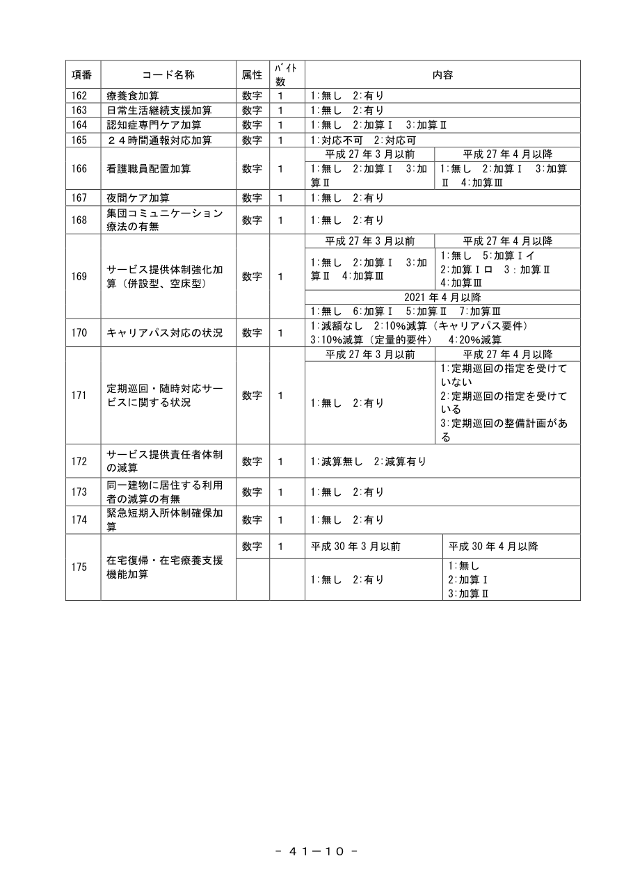
claude-haiku-5-5
- [改ページ] p78→p79 の連続性 OK
表1 code_list 前頁から続く次頁へ続く
| 項番 | 項目名 | 属性 | 桁数 | 内容 | 必須 | 備考 |
|---|---|---|---|---|---|---|
| 162 | 療養食加算 | 数字 | 1 | 1:無し 2:有り | ||
| 163 | 日常生活継続支援加算 | 数字 | 1 | 1:無し 2:有り | ||
| 164 | 認知症専門ケア加算 | 数字 | 1 | 1:無し 2:加算Ⅰ 3:加算Ⅱ | ||
| 165 | ２４時間通報対応加算 | 数字 | 1 | 1:対応不可 2:対応可 | ||
| 166 | 看護職員配置加算 > 平成27年3月以前 | 数字 | 1 | 1:無し 2:加算Ⅰ 3:加算Ⅱ | ||
| 166 | 看護職員配置加算 > 平成27年4月以降 | 数字 | 1 | 1:無し 2:加算Ⅰ 3:加算Ⅱ 4:加算Ⅲ | ||
| 167 | 夜間ケア加算 | 数字 | 1 | 1:無し 2:有り | ||
| 168 | 集団コミュニケーション療法の有無 | 数字 | 1 | 1:無し 2:有り | ||
| 169 | サービス提供体制強化加算（併設型、空床型） > 平成27年3月以前 | 数字 | 1 | 1:無し 2:加算Ⅰ 3:加算Ⅱ 4:加算Ⅲ | ||
| 169 | サービス提供体制強化加算（併設型、空床型） > 平成27年4月以降 | 数字 | 1 | 1:無し 5:加算Ⅰイ 2:加算Ⅰロ 3 : 加算Ⅱ 4:加算Ⅲ | ||
| 169 | サービス提供体制強化加算（併設型、空床型） > 2021年4月以降 | 数字 | 1 | 1:無し 6:加算Ⅰ 5:加算Ⅱ 7:加算Ⅲ | ||
| 170 | キャリアパス対応の状況 | 数字 | 1 | 1:減額なし 2:10%減算（キャリアパス要件） 3:10%減算（定量的要件） 4:20%減算 | ||
| 171 | 定期巡回・随時対応サービスに関する状況 > 平成27年3月以前 | 数字 | 1 | 1:無し 2:有り | ||
| 171 | 定期巡回・随時対応サービスに関する状況 > 平成27年4月以降 | 数字 | 1 | 1:定期巡回の指定を受けていない 2:定期巡回の指定を受けている 3:定期巡回の整備計画がある | ||
| 172 | サービス提供責任者体制の減算 | 数字 | 1 | 1:減算無し 2:減算有り | ||
| 173 | 同一建物に居住する利用者の減算の有無 | 数字 | 1 | 1:無し 2:有り | ||
| 174 | 緊急短期入所体制確保加算 | 数字 | 1 | 1:無し 2:有り | ||
| 175 | 在宅復帰・在宅療養支援機能加算 > 平成30年3月以前 | 数字 | 1 | 1:無し 2:有り | ||
| 175 | 在宅復帰・在宅療養支援機能加算 > 平成30年4月以降 | 数字 | 1 | 1:無し 2:加算Ⅰ 3:加算Ⅱ |
uncertain（モデル自己申告）
- 表に見出し（タイトル）がなく、項番が162から始まるため、前ページからの続きと判断した。前ページの内容は添付されていないため未確認。
- 170・171・175の内容セルは改行位置が折り返しか区切りか判断しにくいため、区切りとして改行を残した。
- 169の平成27年4月以降の内容「3 : 加算Ⅱ」の空白は原文の表示どおりに書いた。
- 175は属性・バイト数が1行目のみにあり2行目は空欄に見えるため、両行とも数字・1として扱い、小項目ごとに分けた。
claude-sonnet-5-5
- [改ページ] p78→p79 の連続性 OK
表1 code_list 前頁から続く次頁へ続く
| 項番 | 項目名 | 属性 | 桁数 | 内容 | 必須 | 備考 |
|---|---|---|---|---|---|---|
| 162 | 療養食加算 | 数字 | 1 | 1:無し 2:有り | ||
| 163 | 日常生活継続支援加算 | 数字 | 1 | 1:無し 2:有り | ||
| 164 | 認知症専門ケア加算 | 数字 | 1 | 1:無し 2:加算Ⅰ 3:加算Ⅱ | ||
| 165 | ２４時間通報対応加算 | 数字 | 1 | 1:対応不可 2:対応可 | ||
| 166 | 看護職員配置加算 | 数字 | 1 | 平成27年3月以前 1:無し 2:加算Ⅰ 3:加算Ⅱ 平成27年4月以降 1:無し 2:加算Ⅰ 3:加算Ⅱ 4:加算Ⅲ | ||
| 167 | 夜間ケア加算 | 数字 | 1 | 1:無し 2:有り | ||
| 168 | 集団コミュニケーション療法の有無 | 数字 | 1 | 1:無し 2:有り | ||
| 169 | サービス提供体制強化加算（併設型、空床型） | 数字 | 1 | 平成27年3月以前 1:無し 2:加算Ⅰ 3:加算Ⅱ 4:加算Ⅲ 平成27年4月以降 1:無し 5:加算Ⅰイ 2:加算Ⅰロ 3:加算Ⅱ 4:加算Ⅲ 2021年4月以降 1:無し 6:加算Ⅰ 5:加算Ⅱ 7:加算Ⅲ | ||
| 170 | キャリアパス対応の状況 | 数字 | 1 | 1:減額なし 2:10%減算（キャリアパス要件） 3:10%減算（定量的要件） 4:20%減算 | ||
| 171 | 定期巡回・随時対応サービスに関する状況 | 数字 | 1 | 平成27年3月以前 1:無し 2:有り 平成27年4月以降 1:定期巡回の指定を受けていない 2:定期巡回の指定を受けている 3:定期巡回の整備計画がある | ||
| 172 | サービス提供責任者体制の減算 | 数字 | 1 | 1:減算無し 2:減算有り | ||
| 173 | 同一建物に居住する利用者の減算の有無 | 数字 | 1 | 1:無し 2:有り | ||
| 174 | 緊急短期入所体制確保加算 | 数字 | 1 | 1:無し 2:有り | ||
| 175 | 在宅復帰・在宅療養支援機能加算 | 数字 | 1 | 平成30年3月以前 1:無し 2:有り 平成30年4月以降 1:無し 2:加算Ⅰ 3:加算Ⅱ |
uncertain（モデル自己申告）
- 表は前ページからの続き。次ページへ続く可能性あり。
- 項番166,169,171,175の内容は期間別の複数欄をまとめて書き起こした。
kaigo_kyotsu_r0806_p79 — 印字p.

claude-haiku-5-5
- 表1 項番177 項目名がPDFのセルと完全一致しない（部分一致のみ）: '訪問看護\n訪問リハビリテーション\n居宅介護支援\n介護予防支援\n介護予防訪問看護\n介護予防訪問リハビリテーション\n介護予防ケアマネジメント'
- [改ページ] p79→p80 の連続性 OK
表1 code_list 前頁から続く次頁へ続く
| 項番 | 項目名 | 属性 | 桁数 | 内容 | 必須 | 備考 |
|---|---|---|---|---|---|---|
| 176 | 生活機能向上グループ活動加算 | 数字 | 1 | 1:無し 2:有り | ||
| 177 | 介護職員等処遇改善加算 > 平成27年3月以前 | 英数 | 1 | 1:無し 2:加算Ⅰ 3:加算Ⅱ 4:加算Ⅲ | ||
| 177 | 介護職員等処遇改善加算 > 平成27年4月以降 | 英数 | 1 | 1:無し 5:加算Ⅰ 2:加算Ⅱ 3:加算Ⅲ 4:加算Ⅳ | ||
| 177 | 介護職員等処遇改善加算 > 平成29年4月以降 | 英数 | 1 | 1:無し 6:加算Ⅰ 5:加算Ⅱ 2:加算Ⅲ 3:加算Ⅳ 4:加算Ⅴ | ||
| 177 | 介護職員等処遇改善加算 > 2022年4月以降 | 英数 | 1 | 1:無し 6:加算Ⅰ 5:加算Ⅱ 2:加算Ⅲ | ||
| 177 | 介護職員等処遇改善加算 > 2024年6月以降 | 英数 | 1 | 1:無し 7:加算Ⅰ 8:加算Ⅱ 9:加算Ⅲ A:加算Ⅳ B:加算Ⅴ(1) C:加算Ⅴ(2) D:加算Ⅴ(3) E:加算Ⅴ(4) F:加算Ⅴ(5) G:加算Ⅴ(6) H:加算Ⅴ(7) J:加算Ⅴ(8) K:加算Ⅴ(9) L:加算Ⅴ(10) M:加算Ⅴ(11) N:加算Ⅴ(12) P:加算Ⅴ(13) R:加算Ⅴ(14) | ||
| 177 | 介護職員等処遇改善加算 > 2025年4月以降 | 英数 | 1 | 1:無し 7:加算Ⅰ 8:加算Ⅱ 9:加算Ⅲ A:加算Ⅳ | ||
| 177 | 介護職員等処遇改善加算 > 2026年6月以降 > 訪問看護 訪問リハビリテーション 居宅介護支援 介護予防支援 介護予防訪問看護 介護予防訪問リハビリテーション 介護予防ケアマネジメント | 英数 | 1 | 1:無し 2:有り | ||
| 177 | 介護職員等処遇改善加算 > 2026年6月以降 > 上記以外 | 英数 | 1 | 1:無し 7:加算Ⅰイ S:加算Ⅰロ 8:加算Ⅱイ T:加算Ⅱロ 9:加算Ⅲ A:加算Ⅳ | ||
| 178 | 二次予防事業区分コード | 数字 | 1 | 1:非該当 2:該当 | ||
| 179 | 算定単位 | 数字 | 2 | 01:1回につき 02:1日につき 03:1月につき 05:1週間につき | ||
| 180 | 算定回数制限期間 | 数字 | 2 | 01:1月につき 08:1日につき 16:1週間につき | ||
| 181 | 支給限度額対象区分 | 数字 | 1 | 3:区分支給限度額管理の対象 | ||
| 182 | 利用者負担定率／定額区分 | 数字 | 1 | 1:定率 2:定額 | ||
| 183 | 二次予防事業対象者実施区分 | 数字 | 1 | 1:実施不可 2:実施可 | ||
| 184 | 要支援１受給者実施区分 | 数字 | 1 | 1:実施不可 2:実施可 | ||
| 185 | 要支援２受給者実施区分 | 数字 | 1 | 1:実施不可 2:実施可 |
uncertain（モデル自己申告）
- 項番177の「属性」「バイト数」は縦結合のため、各小項目行に同じ値（英数、1）を入れた。
- 項番177の2026年6月以降の行は、訪問看護等の事業一覧を1つの name_path 要素として改行区切りで入れた。元の表の入れ子構造の解釈による。
- 項番177の2024年6月以降の「加算Ⅴ(1)」等の括弧が全角か半角か画像からは判別できず、半角で書き写した。
- 項番179の「1回」「1日」等の数字の全角・半角は画像から判別できず、半角で書き写した。
claude-sonnet-5-5
- 表1 項番177 項目名がPDFのセルと完全一致しない（部分一致のみ）: '訪問看護 訪問リハビリテーション 居宅介護支援 介護予防支援 介護予防訪問看護 介護予防訪問リハビリテーション 介護予防ケアマネジメント'
- [改ページ] p79→p80 の連続性 OK
表1 code_list 前頁から続く次頁へ続く
| 項番 | 項目名 | 属性 | 桁数 | 内容 | 必須 | 備考 |
|---|---|---|---|---|---|---|
| 176 | 生活機能向上グループ活動加算 | 数字 | 1 | 1:無し 2:有り | ||
| 177 | 介護職員等処遇改善加算 > 平成27年3月以前 | 英数 | 1 | 1:無し 2:加算Ⅰ 3:加算Ⅱ 4:加算Ⅲ | ||
| 177 | 介護職員等処遇改善加算 > 平成27年4月以降 | 英数 | 1 | 1:無し 5:加算Ⅰ 2:加算Ⅱ 3:加算Ⅲ 4:加算Ⅳ | ||
| 177 | 介護職員等処遇改善加算 > 平成29年4月以降 | 英数 | 1 | 1:無し 6:加算Ⅰ 5:加算Ⅱ 2:加算Ⅲ 3:加算Ⅳ 4:加算Ⅴ | ||
| 177 | 介護職員等処遇改善加算 > 2022年4月以降 | 英数 | 1 | 1:無し 6:加算Ⅰ 5:加算Ⅱ 2:加算Ⅲ | ||
| 177 | 介護職員等処遇改善加算 > 2024年6月以降 | 英数 | 1 | 1:無し 7:加算Ⅰ 8:加算Ⅱ 9:加算Ⅲ A:加算Ⅳ B:加算Ⅴ(１) C:加算Ⅴ(２) D:加算Ⅴ(３) E:加算Ⅴ(４) F:加算Ⅴ(５) G:加算Ⅴ(６) H:加算Ⅴ(７) J:加算Ⅴ(８) K:加算Ⅴ(９) L:加算Ⅴ(１０) M:加算Ⅴ(１１) N:加算Ⅴ(１２) P:加算Ⅴ(１３) R:加算Ⅴ(１４) | ||
| 177 | 介護職員等処遇改善加算 > 2025年4月以降 | 英数 | 1 | 1:無し 7:加算Ⅰ 8:加算Ⅱ 9:加算Ⅲ A:加算Ⅳ | ||
| 177 | 介護職員等処遇改善加算 > 2026年6月以降 > 訪問看護 訪問リハビリテーション 居宅介護支援 介護予防支援 介護予防訪問看護 介護予防訪問リハビリテーション 介護予防ケアマネジメント | 英数 | 1 | 1:無し 2:有り | ||
| 177 | 介護職員等処遇改善加算 > 2026年6月以降 > 上記以外 | 英数 | 1 | 1:無し 7:加算Ⅰイ S:加算Ⅰロ 8:加算Ⅱイ T:加算Ⅱロ 9:加算Ⅲ A:加算Ⅳ | ||
| 178 | 二次予防事業区分コード | 数字 | 1 | 1:非該当 2:該当 | ||
| 179 | 算定単位 | 数字 | 2 | 01:１回につき 02:１日につき 03:１月につき 05:１週間につき | ||
| 180 | 算定回数制限期間 | 数字 | 2 | 01:１月につき 08:１日につき 16:１週間につき | ||
| 181 | 支給限度額対象区分 | 数字 | 1 | 3:区分支給限度額管理の対象 | ||
| 182 | 利用者負担定率／定額区分 | 数字 | 1 | 1:定率 2:定額 | ||
| 183 | 二次予防事業対象者実施区分 | 数字 | 1 | 1:実施不可 2:実施可 | ||
| 184 | 要支援１受給者実施区分 | 数字 | 1 | 1:実施不可 2:実施可 | ||
| 185 | 要支援２受給者実施区分 | 数字 | 1 | 1:実施不可 2:実施可 |
uncertain（モデル自己申告）
- 項番177の2026年6月以降の行は黄色の強調表示あり。
- 項番177の内容は適用時期ごとのサブ行に分けて書き起こした。
- バイト数の見出しは原文で「ﾊﾞｲﾄ数」。
kaigo_kyotsu_r0806_p80 — 印字p.

claude-haiku-5-5
- [改ページ] p80→p81 の連続性 OK
- テキストレイヤに見つからないセル: 2 個（赤枠）
表1 code_list 前頁から続く次頁へ続く
| 項番 | 項目名 | 属性 | 桁数 | 内容 | 必須 | 備考 |
|---|---|---|---|---|---|---|
| 186 | 過誤申立事由コード（介護予防・日常生活支援総合事業（経過措置）） > 桁構成 | 英数 | 4 | [図] | ||
| 186 | 過誤申立事由コード（介護予防・日常生活支援総合事業（経過措置）） > 様式番号 | 英数 | 4 | 10:介護予防・日常生活支援総合事業費明細書（予防サービス費・生活支援サービス費） 20:介護予防・日常生活支援総合事業費明細書（ケアマネジメント費） | ||
| 186 | 過誤申立事由コード（介護予防・日常生活支援総合事業（経過措置）） > 申立理由番号 | 英数 | 4 | 02:請求誤りによる実績取り下げ 09:時効による保険者申立の取下げ 12:請求誤りによる実績取り下げ（同月） 42:適正化（その他）による保険者申立の過誤取下げ 43:適正化（ケアプラン点検）による保険者申立の過誤取下げ 44:適正化（介護給付費通知）による保険者申立の過誤取下げ 45:適正化（医療突合）による保険者申立の過誤取下げ 46:適正化（縦覧点検）による保険者申立の過誤取下げ 47:適正化（給付実績を活用した情報提供）による保険者申立の過誤取下げ 49:適正化（その他）による保険者申立の過誤取下げ（同月） 4A:適正化（ケアプラン点検）による保険者申立の過誤取下げ（同月） 4B:適正化（介護給付費通知）による保険者申立の過誤取下げ（同月） 4C:適正化（医療突合）による保険者申立の過誤取下げ（同月） 4D:適正化（縦覧点検）による保険者申立の過誤取下げ（同月） 4E:適正化（給付実績を活用した情報提供）による保険者申立の過誤取下げ（同月） 99:その他の事由による実績の取り下げ | ||
| 187 | 款コード（介護予防・日常生活支援総合事業（経過措置）） | 数字 | 2 | 05:地域支援事業費 | ||
| 188 | 項コード（介護予防・日常生活支援総合事業（経過措置）） | 数字 | 2 | 01:介護予防日常生活支援総合事業費 |
uncertain（モデル自己申告）
- 186の内容欄上部の桁構成図は、印字された文字（×1～×4、様式番号、申立理由番号）のみを確認できるため、図の位置に[図]と書き、対応する行を桁構成として1行作成した。
- 表が項番186から始まり、ページ先頭に見出し行があるため前ページからの続きと判断したが、前ページの有無は確認できない。
claude-sonnet-5-5
- [改ページ] p80→p81 の連続性 OK
- テキストレイヤに見つからないセル: 1 個（赤枠）
表1 code_list 前頁から続く次頁へ続く
| 項番 | 項目名 | 属性 | 桁数 | 内容 | 必須 | 備考 |
|---|---|---|---|---|---|---|
| 186 | 過誤申立事由コード（介護予防・日常生活支援総合事業（経過措置）） | 英数 | 4 | [図] ×1 ×2 ×3 ×4 様式番号 申立理由番号 様式番号 10：介護予防・日常生活支援総合事業費明細書（予防サービス費・生活支援サービス費） 20：介護予防・日常生活支援総合事業費明細書（ケアマネジメント費） 申立理由番号 02:請求誤りによる実績取り下げ 09:時効による保険者申立の取下げ 12:請求誤りによる実績取り下げ（同月） 42:適正化（その他）による保険者申立の過誤取下げ 43:適正化（ケアプラン点検）による保険者申立の過誤取下げ 44:適正化（介護給付費通知）による保険者申立の過誤取下げ 45:適正化（医療突合）による保険者申立の過誤取下げ 46:適正化（縦覧点検）による保険者申立の過誤取下げ 47:適正化（給付実績を活用した情報提供）による保険者申立の過誤取下げ 49:適正化（その他）による保険者申立の過誤取下げ（同月） 4A:適正化（ケアプラン点検）による保険者申立の過誤取下げ（同月） 4B:適正化（介護給付費通知）による保険者申立の過誤取下げ（同月） 4C:適正化（医療突合）による保険者申立の過誤取下げ（同月） 4D:適正化（縦覧点検）による保険者申立の過誤取下げ（同月） 4E:適正化（給付実績を活用した情報提供）による保険者申立の過誤取下げ（同月） 99:その他の事由による実績の取り下げ | ||
| 187 | 款コード（介護予防・日常生活支援総合事業（経過措置）） | 数字 | 2 | 05:地域支援事業費 | ||
| 188 | 項コード（介護予防・日常生活支援総合事業（経過措置）） | 数字 | 2 | 01:介護予防日常生活支援総合事業費 |
uncertain（モデル自己申告）
- 項番186の内容はセル内に図があるため[図]で表記。様式番号・申立理由番号の縦書き見出しを内容の中に含めて記載。
- 前ページからの続きの表と思われる（見出し行のみ繰り返し）。
kaigo_kyotsu_r0806_p81 — 印字p.

claude-haiku-5-5
- [改ページ] p81→p82 の連続性 OK
- テキストレイヤに見つからないセル: 2 個（赤枠）
表1 code_list 前頁から続く次頁へ続く
| 項番 | 項目名 | 属性 | 桁数 | 内容 | 必須 | 備考 |
|---|---|---|---|---|---|---|
| 189 | 目コード（介護予防・日常生活支援総合事業（経過措置）） | 数字 | 2 | 01:要支援者向け事業費 02:二次予防向け事業費 | ||
| 190 | 住所地特例対象者区分コード | 数字 | 1 | 1:非該当 2:該当 | ||
| 191 | 施設所在保険者番号 | 数字 | 6 | 住所地特例対象者が入所（居）する施設の所在する市町村の証記載保険者番号 | ||
| 192 | 再審査申立事由コード（介護予防・日常生活支援総合事業） > 申立対象項目番号 | 英数 | 4 | [図] 01：給付管理票修正（※４） | ||
| 192 | 再審査申立事由コード（介護予防・日常生活支援総合事業） > 申立理由番号 | 英数 | 4 | 51：給付管理票の修正（※４） | ||
| 193 | 過誤申立事由コード（介護予防・日常生活支援総合事業） > 様式番号 | 英数 | 4 | [図] 10：介護予防・日常生活支援総合事業費明細書（訪問型サービス費・通所型サービス費・その他の生活支援サービス費） 20：介護予防・日常生活支援総合事業費明細書（介護予防ケアマネジメント費） | ||
| 193 | 過誤申立事由コード（介護予防・日常生活支援総合事業） > 申立理由番号 | 英数 | 4 | 01:台帳誤り修正による保険者申立の過誤調整 02:請求誤りによる実績取り下げ 09:時効による保険者申立の取下げ 11:台帳誤り修正による事業所申立の過誤調整 12:請求誤りによる実績取り下げ（同月） 21:台帳誤り修正による公費負担者申立の過誤調整 29:時効による公費負担者申立の取下げ 32:給付管理票取消による実績の取下げ（※５） 42:適正化（その他）による保険者申立の過誤取下げ 43:適正化（ケアプラン点検）による保険者申立の過誤取下げ 44:適正化（介護給付費通知）による保険者申立の過誤取下げ 45:適正化（医療突合）による保険者申立の過誤取下げ 46:適正化（縦覧点検）による保険者申立の過誤取下げ 47:適正化（給付実績を活用した情報提供）による保険者申立の過誤取下げ |
uncertain（モデル自己申告）
- ページ先頭の見出し行が繰り返されており、項番189から始まるため前ページからの続きと判断した。
- 項番192・193の上部の桁図解（×1～×4と申立対象項目番号・申立理由番号・様式番号の矢印）は図として[図]と記載し、文字のみ抽出した。
- 項番192・193の内容セルは縦結合の小見出し（申立対象項目番号・申立理由番号・様式番号）ごとに分けて記載した。
- 項番193の申立理由番号一覧は、ページ末尾で罫線が閉じているものの、次ページに続く可能性がある。
- 項番192・193の内容に含まれる「※４」「※５」の注記本文は本ページ内に見当たらなかった。
- 項番193の申立理由番号「32」の「（※５）」は原文で行が折り返されていたため、折り返しを詰めて1行にした。
claude-sonnet-5-5
- [改ページ] p81→p82 の連続性 OK
- テキストレイヤに見つからないセル: 2 個（赤枠）
表1 code_list 前頁から続く次頁へ続く
| 項番 | 項目名 | 属性 | 桁数 | 内容 | 必須 | 備考 |
|---|---|---|---|---|---|---|
| 189 | 目コード（介護予防・日常生活支援総合事業（経過措置）） | 数字 | 2 | 01:要支援者向け事業費 02:二次予防向け事業費 | ||
| 190 | 住所地特例対象者区分コード | 数字 | 1 | 1:非該当 2:該当 | ||
| 191 | 施設所在保険者番号 | 数字 | 6 | 住所地特例対象者が入所（居）する施設の所在する市町村の証記載保険者番号 | ||
| 192 | 再審査申立事由コード（介護予防・日常生活支援総合事業） | 英数 | 4 | [図] ×1 ×2 ×3 ×4 申立対象項目番号 申立理由番号 | ||
| 192 | 再審査申立事由コード（介護予防・日常生活支援総合事業） > 申立対象項目番号 | 英数 | 4 | 01：給付管理票修正（※４） | ||
| 192 | 再審査申立事由コード（介護予防・日常生活支援総合事業） > 申立理由番号 | 英数 | 4 | 51：給付管理票の修正（※４） | ||
| 193 | 過誤申立事由コード（介護予防・日常生活支援総合事業） | 英数 | 4 | [図] ×1 ×2 ×3 ×4 様式番号 申立理由番号 | ||
| 193 | 過誤申立事由コード（介護予防・日常生活支援総合事業） > 様式番号 | 英数 | 4 | 10：介護予防・日常生活支援総合事業費明細書（訪問型サービス費・通所型サービス費・その他の生活支援サービス費） 20：介護予防・日常生活支援総合事業費明細書（介護予防ケアマネジメント費） | ||
| 193 | 過誤申立事由コード（介護予防・日常生活支援総合事業） > 申立理由番号 | 英数 | 4 | 01:台帳誤り修正による保険者申立の過誤調整 02:請求誤りによる実績取り下げ 09:時効による保険者申立の取下げ 11:台帳誤り修正による事業所申立の過誤調整 12:請求誤りによる実績取り下げ（同月） 21:台帳誤り修正による公費負担者申立の過誤調整 29:時効による公費負担者申立の取下げ 32:給付管理票取消による実績の取下げ（※５） 42:適正化（その他）による保険者申立の過誤取下げ 43:適正化（ケアプラン点検）による保険者申立の過誤取下げ 44:適正化（介護給付費通知）による保険者申立の過誤取下げ 45:適正化（医療突合）による保険者申立の過誤取下げ 46:適正化（縦覧点検）による保険者申立の過誤取下げ 47:適正化（給付実績を活用した情報提供）による保険者申立の過誤取下げ |
uncertain（モデル自己申告）
- 192,193の内容欄は図（桁の図解）を含むため[図]と図中の文字のみ記載
- 193 申立理由番号の内容は次ページへ続く可能性あり
- 192/193の属性・バイト数は縦結合セルのため各行に同じ値を入れた
kaigo_kyotsu_r0806_p82 — 印字p.

claude-haiku-5-5
- 表1 項番が整数でない行が 1 行
- 表1 桁数が空（原文: None）
- [改ページ] p82→p83 の連続性 OK
表1 code_list 前頁から続く次頁へ続く
| 項番 | 項目名 | 属性 | 桁数 | 内容 | 必須 | 備考 |
|---|---|---|---|---|---|---|
| 49:適正化（その他）による保険者申立の過誤取下げ（同月） 4A:適正化（ケアプラン点検）による保険者申立の過誤取下げ（同月） 4B:適正化（介護給付費通知）による保険者申立の過誤取下げ（同月） 4C:適正化（医療突合）による保険者申立の過誤取下げ（同月） 4D:適正化（縦覧点検）による保険者申立の過誤取下げ（同月） 4E:適正化（給付実績を活用した情報提供）による保険者申立の過誤取下げ（同月） 52:適正化（その他）による公費負担者申立の過誤取下げ 53:適正化（ケアプラン点検）による公費負担者申立の過誤取下げ 54:適正化（介護給付費通知）による公費負担者申立の過誤取下げ 55:適正化（医療突合）による公費負担者申立の過誤取下げ 56:適正化（縦覧点検）による公費負担者申立の過誤取下げ 57:適正化（給付実績を活用した情報提供）による公費負担者申立の過誤取下げ 59:適正化（その他）による公費負担者申立の過誤取下げ（同月） 5A:適正化（ケアプラン点検）による公費負担者申立の過誤取下げ（同月） 5B:適正化（介護給付費通知）による公費負担者申立の過誤取下げ（同月） 5C:適正化（医療突合）による公費負担者申立の過誤取下げ（同月） 5D:適正化（縦覧点検）による公費負担者申立の過誤取下げ（同月） 5E:適正化（給付実績を活用した情報提供）による公費負担者申立の過誤取下げ（同月） 62:不正請求による実績取り下げ 69:不正請求による実績取り下げ（同月） 90:その他の事由による台帳過誤 99:その他の事由による実績の取り下げ | ||||||
| 194 | 款コード（介護予防・日常生活支援総合事業） | 数字 | 2 | 05:地域支援事業費 | ||
| 195 | 項コード（介護予防・日常生活支援総合事業） | 数字 | 2 | 01:介護予防生活支援サービス事業費 | ||
| 196 | 目コード（介護予防・日常生活支援総合事業） | 数字 | 2 | 平成30年3月以前 01:介護予防生活支援サービス事業費 02:介護予防ケアマネジメント事業費 平成30年4月以降 01:第1号訪問通所等事業費 02:第1号介護予防支援事業費 |
uncertain（モデル自己申告）
- 先頭の行は項番・コード名称・属性・バイト数が空欄で、前ページからの続きと判断した。どの項番の内容かは不明。
- 先頭行の内容は途中から始まっており、前ページからの続きと判断した。name_path は特定できないため空配列とした。
- 最終行（項番196）の目コードは02:第1号介護予防支援事業費で終わっており、次ページへ続く可能性があるが、画像だけでは判断できない。
claude-sonnet-5-5
- 表1 項番が整数でない行が 1 行
- 表1 桁数が空（原文: None）
- [改ページ] p82→p83 の連続性 OK
表1 code_list 前頁から続く次頁へ続く
| 項番 | 項目名 | 属性 | 桁数 | 内容 | 必須 | 備考 |
|---|---|---|---|---|---|---|
| 49:適正化（その他）による保険者申立の過誤取下げ（同月） 4A:適正化（ケアプラン点検）による保険者申立の過誤取下げ（同月） 4B:適正化（介護給付費通知）による保険者申立の過誤取下げ（同月） 4C:適正化（医療突合）による保険者申立の過誤取下げ（同月） 4D:適正化（縦覧点検）による保険者申立の過誤取下げ（同月） 4E:適正化（給付実績を活用した情報提供）による保険者申立の過誤取下げ（同月） 52:適正化（その他）による公費負担者申立の過誤取下げ 53:適正化（ケアプラン点検）による公費負担者申立の過誤取下げ 54:適正化（介護給付費通知）による公費負担者申立の過誤取下げ 55:適正化（医療突合）による公費負担者申立の過誤取下げ 56:適正化（縦覧点検）による公費負担者申立の過誤取下げ 57:適正化（給付実績を活用した情報提供）による公費負担者申立の過誤取下げ 59:適正化（その他）による公費負担者申立の過誤取下げ（同月） 5A:適正化（ケアプラン点検）による公費負担者申立の過誤取下げ（同月） 5B:適正化（介護給付費通知）による公費負担者申立の過誤取下げ（同月） 5C:適正化（医療突合）による公費負担者申立の過誤取下げ（同月） 5D:適正化（縦覧点検）による公費負担者申立の過誤取下げ（同月） 5E:適正化（給付実績を活用した情報提供）による公費負担者申立の過誤取下げ（同月） 62:不正請求による実績取り下げ 69:不正請求による実績取り下げ（同月） 90:その他の事由による台帳過誤 99:その他の事由による実績の取り下げ | ||||||
| 194 | 款コード（介護予防・日常生活支援総合事業） | 数字 | 2 | 05:地域支援事業費 | ||
| 195 | 項コード（介護予防・日常生活支援総合事業） | 数字 | 2 | 01:介護予防生活支援サービス事業費 | ||
| 196 | 目コード（介護予防・日常生活支援総合事業） | 数字 | 2 | 平成30年3月以前 01:介護予防生活支援サービス事業費 02:介護予防ケアマネジメント事業費 平成30年4月以降 01:第１号訪問通所等事業費 02:第１号介護予防支援事業費 |
uncertain（モデル自己申告）
- 項番194の内容より前の最初の行（49:〜99:）は前ページからの続きで、項番・コード名称・属性・バイト数が見えない
- 項番196の目コードは、内容セルが「平成30年3月以前」「平成30年4月以降」の帯で区切られており、1項目にまとめた。目コードの続きは次ページにある可能性がある
- ページ番号は原文どおり「41－14」（- 41－14 -）と読んだ
kaigo_kyotsu_r0806_p83 — 印字p.

claude-haiku-5-5
- [改ページ] p83→p84 の連続性 OK
表1 code_list 前頁から続く次頁へ続く
| 項番 | 項目名 | 属性 | 桁数 | 内容 | 必須 | 備考 |
|---|---|---|---|---|---|---|
| 197 | 意見書作成料種別 | 数字 | 1 | 1:在宅 2:施設 | ||
| 198 | 意見書作成料申請種別 | 数字 | 1 | 1:新規 2:継続 | ||
| 199 | 事業対象者実施区分 | 数字 | 1 | 1:実施不可 2:実施可 | ||
| 200 | 短期集中リハビリテーション実施加算 | 数字 | 1 | 1:無し 2:有り | ||
| 201 | 短期集中個別リハビリテーション実施加算 | 数字 | 1 | 1:無し 2:有り | ||
| 202 | リハビリテーションマネジメント加算 > 平成30年3月以前 | 数字 | 1 | 1:無し 2:加算Ⅰ 3:加算Ⅱ | ||
| 202 | リハビリテーションマネジメント加算 > 平成30年4月以降 > 訪問リハビリテーション | 数字 | 1 | 1:無し 2:加算Ⅰ 3:加算Ⅱ 4:加算Ⅲ 5:加算Ⅳ | ||
| 202 | リハビリテーションマネジメント加算 > 平成30年4月以降 > 通所リハビリテーション | 数字 | 1 | 1:無し 2:加算Ⅰ 3:加算Ⅱ 4:加算Ⅲ 5:加算Ⅳ | ||
| 202 | リハビリテーションマネジメント加算 > 平成30年4月以降 > 介護予防訪問リハビリテーション | 数字 | 1 | 1:無し 2:有り | ||
| 202 | リハビリテーションマネジメント加算 > 平成30年4月以降 > 介護予防通所リハビリテーション | 数字 | 1 | 1:無し 2:有り | ||
| 202 | リハビリテーションマネジメント加算 > 2021年4月以降 > 訪問リハビリテーション | 数字 | 1 | 1:無し 3:加算Ａイ 6:加算Ａロ 4:加算Ｂイ 7:加算Ｂロ | ||
| 202 | リハビリテーションマネジメント加算 > 2021年4月以降 > 通所リハビリテーション | 数字 | 1 | 1:無し 3:加算Ａイ 6:加算Ａロ 4:加算Ｂイ 7:加算Ｂロ | ||
| 202 | リハビリテーションマネジメント加算 > 2021年4月以降 > 介護予防訪問リハビリテーション | 数字 | 1 | なし | ||
| 202 | リハビリテーションマネジメント加算 > 2021年4月以降 > 介護予防通所リハビリテーション | 数字 | 1 | なし | ||
| 202 | リハビリテーションマネジメント加算 > 2024年6月以降 > 訪問リハビリテーション | 数字 | 1 | 1:無し 3:加算イ 6:加算ロ | ||
| 202 | リハビリテーションマネジメント加算 > 2024年6月以降 > 通所リハビリテーション | 数字 | 1 | 1:無し 3:加算イ 6:加算ロ 8:加算ハ | ||
| 203 | 移行支援加算 | 数字 | 1 | 1:無し 2:有り | ||
| 204 | 中重度者ケア体制加算 | 数字 | 1 | 1:無し 2:有り | ||
| 205 | 個別送迎体制強化加算 | 数字 | 1 | 1:無し 2:有り | ||
| 206 | 入浴介助体制強化加算 | 数字 | 1 | 1:無し 2:有り | ||
| 207 | 生活行為向上リハビリテーション実施加算 | 数字 | 1 | 1:無し 2:有り | ||
| 208 | 医療連携強化加算 | 数字 | 1 | 1:無し 2:有り | ||
| 209 | 特定事業所集中減算 | 数字 | 1 | 1:無し 2:有り |
uncertain（モデル自己申告）
- 項番202の内容欄は入れ子の表になっており、2021年4月以降の「訪問リハビリテーション」と「通所リハビリテーション」の届出内容欄は、1つのセルが両行にまたがっているように見えたため、両行に同じ内容を入れた。
- 項番202の2021年4月以降の介護予防訪問・通所リハビリテーションの「なし」も、2行にまたがるセルと判断した。
- 表の末尾（項番209）の後に次ページへ続く可能性があるが、ページ内では判断できないため continues_to_next_page を true とした。後処理で確認すること。
claude-sonnet-5-5
- [改ページ] p83→p84 の連続性 OK
- テキストレイヤに見つからないセル: 1 個（赤枠）
表1 code_list 前頁から続く次頁へ続く
| 項番 | 項目名 | 属性 | 桁数 | 内容 | 必須 | 備考 |
|---|---|---|---|---|---|---|
| 197 | 意見書作成料種別 | 数字 | 1 | 1:在宅 2:施設 | ||
| 198 | 意見書作成料申請種別 | 数字 | 1 | 1:新規 2:継続 | ||
| 199 | 事業対象者実施区分 | 数字 | 1 | 1:実施不可 2:実施可 | ||
| 200 | 短期集中リハビリテーション実施加算 | 数字 | 1 | 1:無し 2:有り | ||
| 201 | 短期集中個別リハビリテーション実施加算 | 数字 | 1 | 1:無し 2:有り | ||
| 202 | リハビリテーションマネジメント加算 | 数字 | 1 | 平成30年3月以前: 1:無し 2:加算Ⅰ 3:加算Ⅱ 平成30年4月以降: 訪問リハビリテーション、通所リハビリテーション 1：無し 2：加算Ⅰ 3：加算Ⅱ 4：加算Ⅲ 5：加算Ⅳ; 介護予防訪問リハビリテーション、介護予防通所リハビリテーション 1:無し 2:有り 2021年4月以降: 訪問リハビリテーション、通所リハビリテーション 1：無し 3：加算Ａイ 6：加算Ａロ 4：加算Ｂイ 7：加算Ｂロ; 介護予防訪問リハビリテーション、介護予防通所リハビリテーション なし 2024年6月以降: 訪問リハビリテーション 1：無し 3：加算イ 6：加算ロ; 通所リハビリテーション 1：無し 3：加算イ 6：加算ロ 8：加算ハ | ||
| 203 | 移行支援加算 | 数字 | 1 | 1:無し 2:有り | ||
| 204 | 中重度者ケア体制加算 | 数字 | 1 | 1:無し 2:有り | ||
| 205 | 個別送迎体制強化加算 | 数字 | 1 | 1:無し 2:有り | ||
| 206 | 入浴介助体制強化加算 | 数字 | 1 | 1:無し 2:有り | ||
| 207 | 生活行為向上リハビリテーション実施加算 | 数字 | 1 | 1:無し 2:有り | ||
| 208 | 医療連携強化加算 | 数字 | 1 | 1:無し 2:有り | ||
| 209 | 特定事業所集中減算 | 数字 | 1 | 1:無し 2:有り |
uncertain（モデル自己申告）
- 項番202の内容は入れ子の表（時期・サービス種類・届出内容）を1つの文字列にまとめた。サービス種類と届出内容の対応は読み取りによる
- 項番202の内容の加算コード表記（Ⅰ、Ⅱ等）の全角半角の細部は不確か
kaigo_kyotsu_r0806_p84 — 印字p.

claude-haiku-5-5
- [改ページ] p84→p85 の連続性 OK
表1 code_list 前頁から続く次頁へ続く
| 項番 | 項目名 | 属性 | 桁数 | 内容 | 必須 | 備考 |
|---|---|---|---|---|---|---|
| 210 | 認知症加算 > 2024年3月以前 | 数字 | 1 | 1:無し 2:有り | ||
| 210 | 認知症加算 > 2024年4月以降 > 小規模多機能型居宅介護 | 数字 | 1 | 1:無し 2:加算Ⅰ 3:加算Ⅱ | ||
| 210 | 認知症加算 > 2024年4月以降 > 複合型サービス（看護小規模多機能型居宅介護） | 数字 | 1 | 1:無し 2:加算Ⅰ 3:加算Ⅱ | ||
| 210 | 認知症加算 > 2024年4月以降 > 通所介護 | 数字 | 1 | 1:無し 2:有り | ||
| 210 | 認知症加算 > 2024年4月以降 > 地域密着型通所介護 | 数字 | 1 | 1:無し 2:有り | ||
| 211 | 総合マネジメント体制強化加算 > 2024年3月以前 | 数字 | 1 | 1:無し 2:有り | ||
| 211 | 総合マネジメント体制強化加算 > 2024年4月以降 | 数字 | 1 | 1:無し 3:加算Ⅰ 2:加算Ⅱ | ||
| 212 | 看護体制強化加算 > 平成30年3月以前 | 数字 | 1 | 1:無し 2:有り | ||
| 212 | 看護体制強化加算 > 平成30年4月以降 > 介護予防訪問看護 | 数字 | 1 | 1:無し 2:有り | ||
| 212 | 看護体制強化加算 > 平成30年4月以降 > 上記以外 | 数字 | 1 | 1:無し 3:加算Ⅰ 2:加算Ⅱ | ||
| 213 | 訪問看護体制強化加算 | 数字 | 1 | 1:無し 2:有り | ||
| 214 | 看取り連携体制加算 | 数字 | 1 | 1:無し 2:有り | ||
| 215 | 訪問体制強化加算 | 数字 | 1 | 1:無し 2:有り | ||
| 216 | 夜間支援体制加算 | 数字 | 1 | 1:無し 2:加算Ⅰ 3:加算Ⅱ | ||
| 217 | 一体的サービス提供加算 | 数字 | 1 | 1:無し 2:有り | ||
| 218 | 訪問看護体制減算 | 数字 | 1 | 1:無し 2:有り | ||
| 219 | 個人番号 | 数字 | 12 | 介護保険被保険者の個人番号 | ||
| 220 | 運動器機能向上体制 | 数字 | 1 | 1:無し（省略可能） 2:有り |
uncertain（モデル自己申告）
- 210の「2024年4月以降」配下の届出内容は、セルの結合範囲から小規模多機能型居宅介護・複合型サービスに「1:無し 2:加算Ⅰ 3:加算Ⅱ」、通所介護・地域密着型通所介護に「1:無し 2:有り」を対応させたが、結合範囲の読み取りによる推定である。
- 212の「平成30年4月以降」配下で「上記以外」の届出内容は、表示どおり「1:無し 3:加算Ⅰ 2:加算Ⅱ」の順で書き写した。
claude-sonnet-5-5
- [改ページ] p84→p85 の連続性 OK
- テキストレイヤに見つからないセル: 2 個（赤枠）
表1 code_list 前頁から続く次頁へ続く
| 項番 | 項目名 | 属性 | 桁数 | 内容 | 必須 | 備考 |
|---|---|---|---|---|---|---|
| 210 | 認知症加算 | 数字 | 1 | 2024年3月以前: 1:無し 2:有り 2024年4月以降: サービス種類: 小規模多機能型居宅介護、複合型サービス（看護小規模多機能型居宅介護） 届出内容: 1:無し 2:加算Ⅰ 3:加算Ⅱ サービス種類: 通所介護、地域密着型通所介護 届出内容: 1:無し 2:有り | ||
| 211 | 総合マネジメント体制強化加算 | 数字 | 1 | 2024年3月以前 1:無し 2:有り 2024年4月以降 1:無し 3:加算Ⅰ 2:加算Ⅱ | ||
| 212 | 看護体制強化加算 | 数字 | 1 | 平成30年3月以前: 1:無し 2:有り 平成30年4月以降: サービス種類: 介護予防訪問看護 届出内容: 1:無し 2:有り サービス種類: 上記以外 届出内容: 1:無し 3:加算Ⅰ 2:加算Ⅱ | ||
| 213 | 訪問看護体制強化加算 | 数字 | 1 | 1:無し 2:有り | ||
| 214 | 看取り連携体制加算 | 数字 | 1 | 1:無し 2:有り | ||
| 215 | 訪問体制強化加算 | 数字 | 1 | 1:無し 2:有り | ||
| 216 | 夜間支援体制加算 | 数字 | 1 | 1:無し 2:加算Ⅰ 3:加算Ⅱ | ||
| 217 | 一体的サービス提供加算 | 数字 | 1 | 1:無し 2:有り | ||
| 218 | 訪問看護体制減算 | 数字 | 1 | 1:無し 2:有り | ||
| 219 | 個人番号 | 数字 | 12 | 介護保険被保険者の個人番号 | ||
| 220 | 運動器機能向上体制 | 数字 | 1 | 1:無し（省略可能） 2:有り |
uncertain（モデル自己申告）
- 前ページからの続きの表と判断（見出し行のみ繰り返し）
- 項番210,212の内容は入れ子の結合セルのため、テキストで構造を簡略化して書き起こした
kaigo_kyotsu_r0806_p85 — 印字p.

claude-haiku-5-5
- [改ページ] p85→p86 の連続性 OK
表1 code_list 前頁から続く次頁へ続く
| 項番 | 項目名 | 属性 | 桁数 | 内容 | 必須 | 備考 |
|---|---|---|---|---|---|---|
| 221 | 栄養マネジメント（改善）体制 | 数字 | 1 | 1:無し（省略可能） 2:有り | ||
| 222 | 口腔機能向上体制 | 数字 | 1 | 1:無し（省略可能） 2:有り | ||
| 223 | 事業所評価加算 | 数字 | 1 | 1:無し（省略可能） 2:有り | ||
| 224 | 摘要種類コード > 様式 第四の三 | 数字 | 2 | 02:利用者状態等コード | ||
| 224 | 摘要種類コード > 様式 第四の四 | 数字 | 2 | 02:利用者状態等コード | ||
| 224 | 摘要種類コード > 様式 第九の二 | 数字 | 2 | 01:ＤＰＣコード（疾患コード） 02:利用者状態等コード | ||
| 225 | 情報区分 | 数字 | 2 | 01:介護利用者負担額 02:介護高額支給額 03:介護利用者負担額（世帯内合計） 04:介護高額支給額（世帯内合計） 05:介護年間高額支給額 06:事業利用者負担額 07:事業高額支給額 08:事業利用者負担額（世帯内合計） 09:事業高額支給額（世帯内合計） 10:事業年間高額支給額 | ||
| 226 | 生活相談員配置等加算 | 数字 | 1 | 1:無し 2:有り | ||
| 227 | 個別機能訓練体制Ⅰ | 数字 | 1 | 1:無し 2:有り | ||
| 228 | 個別機能訓練体制Ⅱ | 数字 | 1 | 1:無し 2:有り | ||
| 229 | 看護体制加算Ⅰ又はⅢ | 数字 | 1 | 1:無し 2:加算Ⅰ 3:加算Ⅲ | ||
| 230 | 看護体制加算Ⅱ又はⅣ | 数字 | 1 | 1:無し 2:加算Ⅱ 3:加算Ⅳ | ||
| 231 | テクノロジーの導入（夜勤職員配置加算関係） | 数字 | 1 | 1:無し 2:有り | ||
| 232 | 食堂の有無 | 数字 | 1 | 1:基準型 2:減算型 | ||
| 233 | 重度認知症疾患療養体制加算 | 数字 | 1 | 1:無し 2:加算Ⅰ 3:加算Ⅱ | ||
| 234 | 入居継続支援加算 > 2021年3月以前 | 数字 | 1 | 1:無し 2:有り | ||
| 234 | 入居継続支援加算 > 2021年4月以降 | 数字 | 1 | 1:無し 2:加算Ⅰ 3:加算Ⅱ | ||
| 235 | ターミナルケアマネジメント加算 | 数字 | 1 | 1:無し 2:有り | ||
| 236 | 配置医師緊急時対応加算 | 数字 | 1 | 1:無し 2:有り | ||
| 237 | 褥瘡マネジメント加算 | 数字 | 1 | 1:無し 2:有り | ||
| 238 | 移行定着支援加算 | 数字 | 1 | 1:無し 2:有り | ||
| 239 | 共生型サービスの提供（居宅介護事業所） | 数字 | 1 | 1:無し 2:有り | ||
| 240 | 共生型サービスの提供（重度訪問介護事業所） | 数字 | 1 | 1:無し 2:有り | ||
| 241 | 共生型サービスの提供（生活介護事業所） | 数字 | 1 | 1:無し 2:有り | ||
| 242 | 共生型サービスの提供（自立訓練事業所） | 数字 | 1 | 1:無し 2:有り | ||
| 243 | 共生型サービスの提供（児童発達支援事業所） | 数字 | 1 | 1:無し 2:有り | ||
| 244 | 共生型サービスの提供（放課後等デイサービス事業所） | 数字 | 1 | 1:無し 2:有り |
uncertain（モデル自己申告）
- 表の先頭に表見出しがなく、項番221から始まるため前ページからの続きと判断したが、ページ上部に繰り返し見出し行が印字されているため判定は確実ではない。表末尾（244の後）も次ページへ続く可能性がある。
- 項番224は「様式 第四の三／第四の四／第九の二」の小見出しを縦の小項目として name_path に入れた。原文の見た目から判断した構造であり、確実ではない。
- 項番234の「2021年3月以前」「2021年4月以降」は内容セル内の区切りとして扱い、name_path の小項目として分けた。バイト数は縦結合のため両行に同じ値を入れた。
claude-sonnet-5-5
- [改ページ] p85→p86 の連続性 OK
- テキストレイヤに見つからないセル: 1 個（赤枠）
表1 code_list 前頁から続く次頁へ続く
| 項番 | 項目名 | 属性 | 桁数 | 内容 | 必須 | 備考 |
|---|---|---|---|---|---|---|
| 221 | 栄養マネジメント（改善）体制 | 数字 | 1 | 1:無し（省略可能） 2:有り | ||
| 222 | 口腔機能向上体制 | 数字 | 1 | 1:無し（省略可能） 2:有り | ||
| 223 | 事業所評価加算 | 数字 | 1 | 1:無し（省略可能） 2:有り | ||
| 224 | 摘要種類コード | 数字 | 2 | 様式第四の三: 02:利用者状態等コード 様式第四の四: 02:利用者状態等コード 様式第九の二: 01:ＤＰＣコード（疾患コード） 02:利用者状態等コード | ||
| 225 | 情報区分 | 数字 | 2 | 01:介護利用者負担額 02:介護高額支給額 03:介護利用者負担額（世帯内合計） 04:介護高額支給額（世帯内合計） 05:介護年間高額支給額 06:事業利用者負担額 07:事業高額支給額 08:事業利用者負担額（世帯内合計） 09:事業高額支給額（世帯内合計） 10:事業年間高額支給額 | ||
| 226 | 生活相談員配置等加算 | 数字 | 1 | 1:無し 2:有り | ||
| 227 | 個別機能訓練体制Ⅰ | 数字 | 1 | 1:無し 2:有り | ||
| 228 | 個別機能訓練体制Ⅱ | 数字 | 1 | 1:無し 2:有り | ||
| 229 | 看護体制加算Ⅰ又はⅢ | 数字 | 1 | 1:無し 2:加算Ⅰ 3:加算Ⅲ | ||
| 230 | 看護体制加算Ⅱ又はⅣ | 数字 | 1 | 1:無し 2:加算Ⅱ 3:加算Ⅳ | ||
| 231 | テクノロジーの導入（夜勤職員配置加算関係） | 数字 | 1 | 1:無し 2:有り | ||
| 232 | 食堂の有無 | 数字 | 1 | 1:基準型 2:減算型 | ||
| 233 | 重度認知症疾患療養体制加算 | 数字 | 1 | 1:無し 2:加算Ⅰ 3:加算Ⅱ | ||
| 234 | 入居継続支援加算 | 数字 | 1 | 2021年3月以前 1:無し 2:有り 2021年4月以降 1:無し 2:加算Ⅰ 3:加算Ⅱ | ||
| 235 | ターミナルケアマネジメント加算 | 数字 | 1 | 1:無し 2:有り | ||
| 236 | 配置医師緊急時対応加算 | 数字 | 1 | 1:無し 2:有り | ||
| 237 | 褥瘡マネジメント加算 | 数字 | 1 | 1:無し 2:有り | ||
| 238 | 移行定着支援加算 | 数字 | 1 | 1:無し 2:有り | ||
| 239 | 共生型サービスの提供（居宅介護事業所） | 数字 | 1 | 1:無し 2:有り | ||
| 240 | 共生型サービスの提供（重度訪問介護事業所） | 数字 | 1 | 1:無し 2:有り | ||
| 241 | 共生型サービスの提供（生活介護事業所） | 数字 | 1 | 1:無し 2:有り | ||
| 242 | 共生型サービスの提供（自立訓練事業所） | 数字 | 1 | 1:無し 2:有り | ||
| 243 | 共生型サービスの提供（児童発達支援事業所） | 数字 | 1 | 1:無し 2:有り | ||
| 244 | 共生型サービスの提供（放課後等デイサービス事業所） | 数字 | 1 | 1:無し 2:有り |
uncertain（モデル自己申告）
- 項番224の内容は様式ごとの3段のサブセルを改行で連結した（様式名の後に「:」を補って表記）
- 項番234の内容は期間見出しと値を改行で連結した
kaigo_kyotsu_r0806_p91 — 印字p.
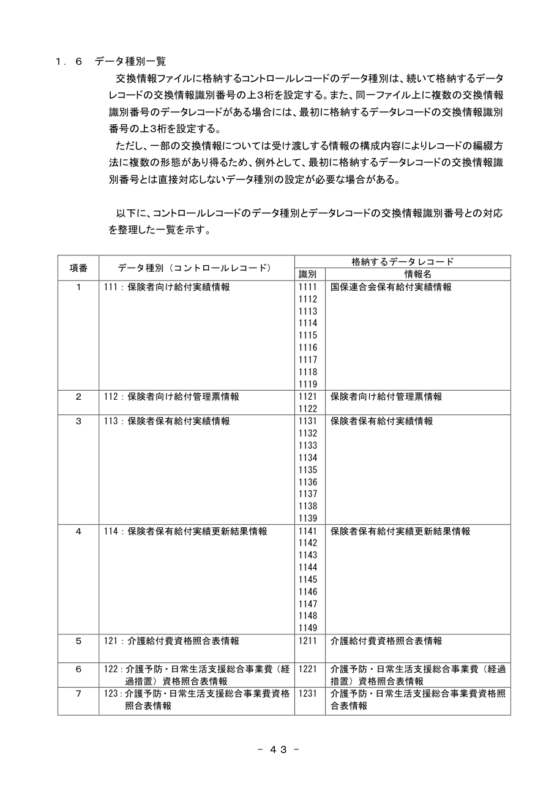
claude-haiku-5-5
- [改ページ] p91→p92 の連続性 OK
表1 other 次頁へ続く
| 項番 | 項目名 | 属性 | 桁数 | 内容 | 必須 | 備考 |
|---|---|---|---|---|---|---|
| 1 | 111：保険者向け給付実績情報 | 国保連合会保有給付実績情報 | 1111 1112 1113 1114 1115 1116 1117 1118 1119 | |||
| 2 | 112：保険者向け給付管理票情報 | 保険者向け給付管理票情報 | 1121 1122 | |||
| 3 | 113：保険者保有給付実績情報 | 保険者保有給付実績情報 | 1131 1132 1133 1134 1135 1136 1137 1138 1139 | |||
| 4 | 114：保険者保有給付実績更新結果情報 | 保険者保有給付実績更新結果情報 | 1141 1142 1143 1144 1145 1146 1147 1148 1149 | |||
| 5 | 121：介護給付費資格照合表情報 | 介護給付費資格照合表情報 | 1211 | |||
| 6 | 122：介護予防・日常生活支援総合事業費（経過措置）資格照合表情報 | 介護予防・日常生活支援総合事業費（経過措置）資格照合表情報 | 1221 | |||
| 7 | 123：介護予防・日常生活支援総合事業費資格照合表情報 | 介護予防・日常生活支援総合事業費資格照合表情報 | 1231 |
uncertain（モデル自己申告）
- 依頼文は「次のページ」の表の書き起こしを求めているが、添付の1ページは印字ページ番号「- 43 -」の『1.6 データ種別一覧』のページで、PDF上のページ番号91との対応は確認できない。添付された表をそのまま書き起こした。
- 表は『データ種別』『識別』『情報名』の3項目の対応表で、仕様書の項目表の形式ではないため table_kind を other とした。識別と情報名は本来の列構造に当てはまらないため、情報名は content に、識別は note に入れた。name_path はデータ種別の文字列をそのまま入れている。
- 項番6・7のデータ種別と情報名は、折り返しの改行を詰めて1行にした。
claude-sonnet-5-5
- [改ページ] p91→p92 の連続性 OK
表1 other1．6 データ種別一覧 次頁へ続く
| 項番 | 項目名 | 属性 | 桁数 | 内容 | 必須 | 備考 |
|---|---|---|---|---|---|---|
| 1 | 111：保険者向け給付実績情報 | 1111 1112 1113 1114 1115 1116 1117 1118 1119 | 国保連合会保有給付実績情報 | |||
| 2 | 112：保険者向け給付管理票情報 | 1121 1122 | 保険者向け給付管理票情報 | |||
| 3 | 113：保険者保有給付実績情報 | 1131 1132 1133 1134 1135 1136 1137 1138 1139 | 保険者保有給付実績情報 | |||
| 4 | 114：保険者保有給付実績更新結果情報 | 1141 1142 1143 1144 1145 1146 1147 1148 1149 | 保険者保有給付実績更新結果情報 | |||
| 5 | 121：介護給付費資格照合表情報 | 1211 | 介護給付費資格照合表情報 | |||
| 6 | 122：介護予防・日常生活支援総合事業費（経過措置）資格照合表情報 | 1221 | 介護予防・日常生活支援総合事業費（経過措置）資格照合表情報 | |||
| 7 | 123：介護予防・日常生活支援総合事業費資格照合表情報 | 1231 | 介護予防・日常生活支援総合事業費資格照合表情報 |
uncertain（モデル自己申告）
- 表は他の table_kind に合わないため other とし、識別を content、情報名を note に入れた。情報名は先頭行のみ記載されており、1行目の情報名は識別1111〜1119にまたがる結合セルと解釈した。
- 本文（1.6の説明文）は表ではないため書き起こしていない。
kaigo_kyotsu_r0806_p92 — 印字p.

claude-haiku-5-5
- [改ページ] p92→p93 の連続性 OK
表1 interface_list 前頁から続く次頁へ続く
| 項番 | 項目名 | 属性 | 桁数 | 内容 | 必須 | 備考 |
|---|---|---|---|---|---|---|
| ８ | 151:介護給付費等請求額通知書情報 > 1511 | 介護給付費等請求額通知書情報 | ||||
| ９ | 152:介護予防・日常生活支援総合事業費（経過措置）請求額通知書情報 > 1521 | 介護予防・日常生活支援総合事業費（経過措置）請求額通知書情報 | ||||
| １０ | 153:介護予防・日常生活支援総合事業費等請求額通知書情報 > 1531 | 介護予防・日常生活支援総合事業費等請求額通知書情報 | ||||
| １１ | 161:介護給付費等審査決定請求明細表情報 > 1611 | 介護給付費等審査決定請求明細表情報 | ||||
| １２ | 162:介護予防・日常生活支援総合事業費（経過措置）審査決定請求明細表情報 > 1621 | 介護予防・日常生活支援総合事業費（経過措置）審査決定請求明細表情報 | ||||
| １３ | 163:介護予防・日常生活支援総合事業費審査決定請求明細表情報 > 1631 | 介護予防・日常生活支援総合事業費審査決定請求明細表情報 | ||||
| １４ | 164:介護予防支援費原案作成委託料明細表情報 > 1641 | 介護予防支援費原案作成委託料明細表情報 | ||||
| １４ | 164:介護予防支援費原案作成委託料明細表情報 > 1642 | 介護予防支援費原案作成委託料明細表情報 | ||||
| １５ | 165:介護予防ケアマネジメント費原案作成委託料明細表情報 > 1651 | 介護予防ケアマネジメント費原案作成委託料明細表情報 | ||||
| １５ | 165:介護予防ケアマネジメント費原案作成委託料明細表情報 > 1652 | 介護予防ケアマネジメント費原案作成委託料明細表情報 | ||||
| １６ | 171:介護給付費過誤決定通知書情報（保険者分） > 1711 | 介護給付費過誤決定通知書情報（保険者分） | ||||
| １７ | 172:介護給付費再審査決定通知書情報（保険者分） > 1721 | 介護給付費再審査決定通知書情報（保険者分） | ||||
| １８ | 173:介護給付費過誤申立書情報 > 1731 | 介護給付費過誤申立書情報 | ||||
| １９ | 174:介護給付費再審査申立書情報（保険者分） > 1741 | 介護給付費再審査申立書情報（保険者分） | ||||
| １９ | 174:介護給付費再審査申立書情報（保険者分） > 1742 | 介護給付費再審査申立書情報（保険者分） | ||||
| ２０ | 175:介護予防・日常生活支援総合事業費（経過措置）過誤決定通知書情報(保険者分) > 1751 | 介護予防・日常生活支援総合事業費（経過措置）過誤決定通知書情報（保険者分） | ||||
| ２１ | 176:介護予防・日常生活支援総合事業費（経過措置）過誤申立書情報 > 1761 | 介護予防・日常生活支援総合事業費（経過措置）過誤申立書情報 | ||||
| ２２ | 177:介護予防・日常生活支援総合事業費過誤決定通知書情報（保険者分） > 1771 | 介護予防・日常生活支援総合事業費過誤決定通知書情報（保険者分） | ||||
| ２３ | 178:介護予防・日常生活支援総合事業費再審査決定通知書情報（保険者分） > 1781 | 介護予防・日常生活支援総合事業費再審査決定通知書情報（保険者分） | ||||
| ２４ | 179:介護予防・日常生活支援総合事業費過誤申立書情報 > 1791 | 介護予防・日常生活支援総合事業費過誤申立書情報 | ||||
| ２５ | 181:介護予防ケアマネジメント負担金調整依頼書情報 > 1811 | 介護予防ケアマネジメント負担金調整依頼書情報 | ||||
| ２６ | 183:介護予防ケアマネジメント負担金調整額通知書情報 > 1831 | 介護予防ケアマネジメント負担金調整額通知書情報 | ||||
| ２７ | 211:償還連絡票情報 > 2111 | 償還連絡票情報 | ||||
| ２７ | 211:償還連絡票情報 > 2131 | 居宅介護（支援）給付費償還明細書情報 | ||||
| ２７ | 211:償還連絡票情報 > 2141 | 居宅介護（支援）給付費償還明細書情報 | ||||
| ２７ | 211:償還連絡票情報 > 2142 | 居宅介護（支援）給付費償還明細書情報 | ||||
| ２７ | 211:償還連絡票情報 > 2143 | 居宅介護（支援）給付費償還明細書情報 | ||||
| ２７ | 211:償還連絡票情報 > 2151 | 居宅介護（支援）給付費償還明細書情報 | ||||
| ２７ | 211:償還連絡票情報 > 2152 | 居宅介護（支援）給付費償還明細書情報 | ||||
| ２７ | 211:償還連絡票情報 > 2153 | 居宅介護（支援）給付費償還明細書情報 | ||||
| ２７ | 211:償還連絡票情報 > 2155 | 居宅介護（支援）給付費償還明細書情報 | ||||
| ２７ | 211:償還連絡票情報 > 2157 | 居宅介護（支援）給付費償還明細書情報 |
uncertain（モデル自己申告）
- この表は項番8から始まり表見出しがないため、前ページからの続きと判断した（ヘッダ行は本ページに印字されている）。
- 項番27の末尾が次ページへ続くかは本ページからは判定できない。
- データ種別欄の区切り記号（「151:」など）は画像上の表記から ':' として書き起こしたが、全角コロンか半角かは判別しきれない。
- 項番20の「(保険者分)」は画像上で半角括弧に見えるため原文どおり書いたが、content側は全角括弧で書き写しており表記が不統一な可能性がある。
claude-sonnet-5-5
- [改ページ] p92→p93 の連続性 OK
- テキストレイヤに見つからないセル: 24 個（赤枠）
表1 interface_list 前頁から続く次頁へ続く
| 項番 | 項目名 | 属性 | 桁数 | 内容 | 必須 | 備考 |
|---|---|---|---|---|---|---|
| ８ | 151：介護給付費等請求額通知書情報 | 識別: 1511 / 情報名: 介護給付費等請求額通知書情報 | ||||
| ９ | 152：介護予防・日常生活支援総合事業費（経過措置）請求額通知書情報 | 識別: 1521 / 情報名: 介護予防・日常生活支援総合事業費（経過措置）請求額通知書情報 | ||||
| １０ | 153：介護予防・日常生活支援総合事業費等請求額通知書情報 | 識別: 1531 / 情報名: 介護予防・日常生活支援総合事業費等請求額通知書情報 | ||||
| １１ | 161：介護給付費等審査決定請求明細表情報 | 識別: 1611 / 情報名: 介護給付費等審査決定請求明細表情報 | ||||
| １２ | 162：介護予防・日常生活支援総合事業費（経過措置）審査決定請求明細表情報 | 識別: 1621 / 情報名: 介護予防・日常生活支援総合事業費（経過措置）審査決定請求明細表情報 | ||||
| １３ | 163：介護予防・日常生活支援総合事業費審査決定請求明細表情報 | 識別: 1631 / 情報名: 介護予防・日常生活支援総合事業費審査決定請求明細表情報 | ||||
| １４ | 164：介護予防支援費原案作成委託料明細表情報 | 識別: 1641, 1642 / 情報名: 介護予防支援費原案作成委託料明細表情報 | ||||
| １５ | 165：介護予防ケアマネジメント費原案作成委託料明細表情報 | 識別: 1651, 1652 / 情報名: 介護予防ケアマネジメント費原案作成委託料明細表情報 | ||||
| １６ | 171：介護給付費過誤決定通知書情報（保険者分） | 識別: 1711 / 情報名: 介護給付費過誤決定通知書情報（保険者分） | ||||
| １７ | 172：介護給付費再審査決定通知書情報（保険者分） | 識別: 1721 / 情報名: 介護給付費再審査決定通知書情報（保険者分） | ||||
| １８ | 173：介護給付費過誤申立書情報 | 識別: 1731 / 情報名: 介護給付費過誤申立書情報 | ||||
| １９ | 174：介護給付費再審査申立書情報（保険者分） | 識別: 1741, 1742 / 情報名: 介護給付費再審査申立書情報（保険者分） | ||||
| ２０ | 175：介護予防・日常生活支援総合事業費（経過措置)過誤決定通知書情報(保険者分） | 識別: 1751 / 情報名: 介護予防・日常生活支援総合事業費（経過措置）過誤決定通知書情報（保険者分） | ||||
| ２１ | 176：介護予防・日常生活支援総合事業費（経過措置）過誤申立書情報 | 識別: 1761 / 情報名: 介護予防・日常生活支援総合事業費（経過措置）過誤申立書情報 | ||||
| ２２ | 177：介護予防・日常生活支援総合事業費過誤決定通知書情報（保険者分） | 識別: 1771 / 情報名: 介護予防・日常生活支援総合事業費過誤決定通知書情報（保険者分） | ||||
| ２３ | 178：介護予防・日常生活支援総合事業費再審査決定通知書情報（保険者分） | 識別: 1781 / 情報名: 介護予防・日常生活支援総合事業費再審査決定通知書情報（保険者分） | ||||
| ２４ | 179：介護予防・日常生活支援総合事業費過誤申立書情報 | 識別: 1791 / 情報名: 介護予防・日常生活支援総合事業費過誤申立書情報 | ||||
| ２５ | 181：介護予防ケアマネジメント負担金調整依頼書情報 | 識別: 1811 / 情報名: 介護予防ケアマネジメント負担金調整依頼書情報 | ||||
| ２６ | 183：介護予防ケアマネジメント負担金調整額通知書情報 | 識別: 1831 / 情報名: 介護予防ケアマネジメント負担金調整額通知書情報 | ||||
| ２７ | 211：償還連絡票情報 | 識別: 2111 / 情報名: 償還連絡票情報 | ||||
| ２７ | 211：償還連絡票情報 | 識別: 2131 / 情報名: 居宅介護（支援）給付費償還明細書情報 | ||||
| ２７ | 211：償還連絡票情報 | 識別: 2141, 2142, 2143 / 情報名: 居宅介護（支援）給付費償還明細書情報 | ||||
| ２７ | 211：償還連絡票情報 | 識別: 2151, 2152, 2153, 2155 / 情報名: 居宅介護（支援）給付費償還明細書情報 | ||||
| ２７ | 211：償還連絡票情報 | 識別: 2157 / 情報名: 居宅介護（支援）給付費償還明細書情報 |
uncertain（モデル自己申告）
- 表は前ページからの続き（項番8から開始）。次ページへ続く可能性あり。
- 項番の各行は、識別と情報名を content にまとめて記載した（スキーマに該当列がないため）。
- 項番27は識別が複数行（2111, 2131, 2141-2143, 2151-2155, 2157）に分かれており、データ種別セルは縦結合。
kaigo_kyotsu_r0806_p93 — 印字p.

claude-haiku-5-5
- 表1 項番が整数でない行が 18 行
- [改ページ] p93→p94 の連続性 OK
表1 interface_list 前頁から続く次頁へ続く
| 項番 | 項目名 | 属性 | 桁数 | 内容 | 必須 | 備考 |
|---|---|---|---|---|---|---|
| 居宅介護（支援）給付費償還明細書情報 | 2161 2162 2163 2164 | |||||
| 居宅介護（支援）給付費償還明細書情報 | 2171 2173 2175 2177 | |||||
| 施設介護給付費償還明細書情報 | 2181 2182 2183 | |||||
| 施設介護給付費償還明細書情報 | 2191 2192 2193 2194 2195 | |||||
| 施設介護給付費償還明細書情報 | 2196 | |||||
| 施設介護給付費償還明細書情報 | 21A1 21A2 21A3 | |||||
| 居宅介護（支援）サービス計画費償還明細書情報 | 21B1 21B2 21B4 | |||||
| 福祉用具販売費償還明細書情報 | 21C1 | |||||
| 住宅改修費償還明細書情報 | 21D1 | |||||
| 介護予防サービス給付費償還明細書情報 | 2132 | |||||
| 介護予防サービス給付費償還明細書情報 | 2144 | |||||
| 介護予防サービス給付費償還明細書情報 | 2154 2156 | |||||
| 介護予防サービス給付費償還明細書情報 | 2158 | |||||
| 介護予防サービス給付費償還明細書情報 | 2165 | |||||
| 介護予防サービス給付費償還明細書情報 | 2172 2174 2176 | |||||
| 介護予防支援給付費償還明細書情報 | 21B3 21B5 | |||||
| 介護予防福祉用具販売費償還明細書情報 | 21C2 | |||||
| 介護予防住宅改修費償還明細書情報 | 21D2 | |||||
| ２８ | 221：償還払支給決定者一覧表情報 > 償還払支給決定者一覧表情報 | 2211 | ||||
| ２９ | 222：償還払不支給決定者一覧表情報 > 償還払不支給決定者一覧表情報 | 2221 | ||||
| ３０ | 223：償還払支給（不支給）決定通知書情報 > 償還払支給（不支給）決定通知書情報 | 2232 |
uncertain（モデル自己申告）
- 添付は1ページのみで、依頼文の「次のページ」は添付ページ（PDF上のページ93、印字ページ45）として扱った。
- 先頭の18行は項番が空欄で、データ種別の結合セルも空欄のため、前ページの項番27からの続きと判断した（continued_from_prev_page を true）。その場合、データ種別と項番は前ページ側にあり、name_path は情報名のみとした。
- 項番28〜30のname_pathは「データ種別（コントロールレコード）」と「情報名」の2要素とした。
- 識別列の複数値は内容(content)に改行区切りで入れた。インタフェース一覧のため、識別と情報名は内容・name_pathに対応づけた（列の対応は原文の列構成と一致させたが、スキーマの項目定義と厳密には一致しない）。
- 最下段の30の後で表が次ページへ続くかは、罫線の状態から判断できず、続かないと判断した。
claude-sonnet-5-5
- 表1 項番が整数でない行が 18 行
- [改ページ] p93→p94 の連続性 OK
表1 interface_list 前頁から続く次頁へ続く
| 項番 | 項目名 | 属性 | 桁数 | 内容 | 必須 | 備考 |
|---|---|---|---|---|---|---|
| 2161 2162 2163 2164 > 居宅介護（支援）給付費償還明細書情報 | ||||||
| 2171 2173 2175 2177 > 居宅介護（支援）給付費償還明細書情報 | ||||||
| 2181 2182 2183 > 施設介護給付費償還明細書情報 | ||||||
| 2191 2192 2193 2194 2195 > 施設介護給付費償還明細書情報 | ||||||
| 2196 > 施設介護給付費償還明細書情報 | ||||||
| 21A1 21A2 21A3 > 施設介護給付費償還明細書情報 | ||||||
| 21B1 21B2 21B4 > 居宅介護（支援）サービス計画費償還明細書情報 | ||||||
| 21C1 > 福祉用具販売費償還明細書情報 | ||||||
| 21D1 > 住宅改修費償還明細書情報 | ||||||
| 2132 > 介護予防サービス給付費償還明細書情報 | ||||||
| 2144 > 介護予防サービス給付費償還明細書情報 | ||||||
| 2154 2156 > 介護予防サービス給付費償還明細書情報 | ||||||
| 2158 > 介護予防サービス給付費償還明細書情報 | ||||||
| 2165 > 介護予防サービス給付費償還明細書情報 | ||||||
| 2172 2174 2176 > 介護予防サービス給付費償還明細書情報 | ||||||
| 21B3 21B5 > 介護予防支援給付費償還明細書情報 | ||||||
| 21C2 > 介護予防福祉用具販売費償還明細書情報 | ||||||
| 21D2 > 介護予防住宅改修費償還明細書情報 | ||||||
| ２８ | 221：償還払支給決定者一覧表情報 > 2211 > 償還払支給決定者一覧表情報 | |||||
| ２９ | 222：償還払不支給決定者一覧表情報 > 2221 > 償還払不支給決定者一覧表情報 | |||||
| ３０ | 223：償還払支給（不支給）決定通知書情報 > 2232 > 償還払支給（不支給）決定通知書情報 |
uncertain（モデル自己申告）
- 表全体の項目はインタフェース一覧の列構成（項番・データ種別・識別・情報名）に合わせて name_path に識別と情報名を入れたため、スキーマ上の割り当ては近似。
- ページ先頭の識別群は前ページの項番・データ種別の続き（セル結合）で、no は null とした。
- 項番28〜30では name_path にデータ種別、識別、情報名を順に入れた。
kaigo_kyotsu_r0806_p94 — 印字p.

claude-haiku-5-5
- 表1 項番37 項目名がPDFのセルと完全一致しない（部分一致のみ）: '324：介護給付費通知一覧表情報（総合事業）'
- [改ページ] p94→p95 の連続性 OK
表1 interface_list 前頁から続く次頁へ続く
| 項番 | 項目名 | 属性 | 桁数 | 内容 | 必須 | 備考 |
|---|---|---|---|---|---|---|
| ３１ | 231：振込依頼書（償還）情報 | 2311 振込依頼書（償還）情報 | ||||
| ３２ | 311：要介護認定期限到来者一覧表情報 | 3111 要介護認定期限到来者一覧表情報 | ||||
| ３３ | 312:要介護認定・要支援認定有効期間終了のお知らせ情報 | 3121 要介護認定・要支援認定有効期間終了のお知らせ情報 | ||||
| ３４ | 313:要介護（更新）認定・要支援（更新）認定申請書情報 | 3131 要介護（更新）認定・要支援（更新）認定申請書情報 | ||||
| ３５ | 321：介護給付費通知一覧表情報 | 3211 介護給付費通知一覧表情報 | ||||
| ３６ | 322：介護給付費通知書 | 3222 介護給付費通知書 | ||||
| ３７ | 324：介護給付費通知一覧表情報（総合事業） | 3241 介護給付費通知一覧表情報（総合事業） | ||||
| ３８ | 331：高額介護サービス費給付対象者一覧表情報 | 3311 高額介護サービス費給付対象者一覧表情報 | ||||
| ３９ | 332：高額介護サービス費給付のお知らせ情報 | 3322 高額介護サービス費給付のお知らせ情報 | ||||
| ４０ | 333：高額介護（居宅支援）サービス費支給申請書情報 | 3331 高額介護（居宅支援）サービス費支給申請書情報 | ||||
| ４１ | 335：高額介護サービス費給付対象者一覧表情報（総合事業） | 3351 高額介護サービス費給付対象者一覧表情報（総合事業） | ||||
| ４２ | 341：高額介護サービス費給付判定結果情報 | 3411 高額介護サービス費給付判定結果情報 | ||||
| ４２ | 341：高額介護サービス費給付判定結果情報 | 3412 年間高額介護サービス費給付判定結果情報 | ||||
| ４３ | 342：高額介護サービス費給付判定結果情報（総合事業） | 3421 高額介護サービス費給付判定結果情報（総合事業） | ||||
| ４３ | 342：高額介護サービス費給付判定結果情報（総合事業） | 3422 年間高額介護サービス費給付判定結果情報（総合事業） | ||||
| ４４ | 351：高額介護サービス費支給（不支給）決定者一覧表情報 | 3511 高額介護サービス費支給（不支給）決定者一覧表情報 | ||||
| ４５ | 352：高額介護サービス費支給（不支給）決定通知書情報 | 3522 高額介護サービス費支給（不支給）決定通知書情報 | ||||
| ４６ | 354：高額介護サービス費支給（不支給）決定者一覧表情報（総合事業） | 3541 高額介護サービス費支給（不支給）決定者一覧表情報（総合事業） | ||||
| ４７ | 355:高額介護サービス費支給（不支給）決定通知書情報（総合事業） | 3552 高額介護サービス費支給（不支給）決定通知書情報（総合事業） | ||||
| ４８ | 361：振込依頼書（高額）情報 | 3611 振込依頼書（高額）情報 | ||||
| ４９ | 362：振込依頼書（高額）情報（総合事業） | 3621 振込依頼書（高額）情報（総合事業） | ||||
| ５０ | 3D1：高額介護サービス費月別集計一覧表情報 | 3D11 高額介護サービス費月別集計一覧表情報 | ||||
| ５１ | 3D2：高額介護サービス費月別集計一覧表情報（総合事業） | 3D21 高額介護サービス費月別集計一覧表情報（総合事業） | ||||
| ５２ | 391：振込データ情報 | 3911 振込データ情報 | ||||
| ５３ | 393：振込者一覧表情報 | 3931 振込者一覧表情報 | ||||
| ５４ | 394：振込不能者一覧表情報 | 3941 振込不能者一覧表情報 | ||||
| ５５ | 395：振込データ情報（総合事業） | 3951 振込データ情報（総合事業） | ||||
| ５６ | 397：振込者一覧表情報（総合事業） | 3971 振込者一覧表情報（総合事業） | ||||
| ５７ | 398：振込不能者一覧表情報（総合事業） | 3981 振込不能者一覧表情報（総合事業） |
uncertain（モデル自己申告）
- この表は項番・データ種別・識別・情報名の4列で、スキーマの項目列（属性・バイト数・内容など）に対応する列がないため、識別と情報名を content に「識別 情報名」の形で連結して入れた。データ種別は name_path に入れた。
- 項番42と43はデータ種別・項番が2行にまたがる縦結合セルのため、それぞれ2行に同じ値を入れた。
- データ種別欄の区切りが「：」と「:」で混在しているが、画像の表記のまま書き写した。
- printed_page は画像下部の「- 46 -」を採用した。PDF上のページ94とは一致しない。
- 表が次ページへ続くかは画像から判断できないため false とした。
claude-sonnet-5-5
- [改ページ] p94→p95 の連続性 OK
表1 interface_list 前頁から続く次頁へ続く
| 項番 | 項目名 | 属性 | 桁数 | 内容 | 必須 | 備考 |
|---|---|---|---|---|---|---|
| ３１ | 231：振込依頼書（償還）情報 > 2311 > 振込依頼書（償還）情報 | |||||
| ３２ | 311：要介護認定期限到来者一覧表情報 > 3111 > 要介護認定期限到来者一覧表情報 | |||||
| ３３ | 312：要介護認定・要支援認定有効期間終了のお知らせ情報 > 3121 > 要介護認定・要支援認定有効期間終了のお知らせ情報 | |||||
| ３４ | 313：要介護（更新）認定・要支援（更新）認定申請書情報 > 3131 > 要介護（更新）認定・要支援（更新）認定申請書情報 | |||||
| ３５ | 321：介護給付費通知一覧表情報 > 3211 > 介護給付費通知一覧表情報 | |||||
| ３６ | 322：介護給付費通知書 > 3222 > 介護給付費通知書 | |||||
| ３７ | 324：介護給付費通知一覧表情報（総合事業） > 3241 > 介護給付費通知一覧表情報（総合事業） | |||||
| ３８ | 331：高額介護サービス費給付対象者一覧表情報 > 3311 > 高額介護サービス費給付対象者一覧表情報 | |||||
| ３９ | 332：高額介護サービス費給付のお知らせ情報 > 3322 > 高額介護サービス費給付のお知らせ情報 | |||||
| ４０ | 333：高額介護（居宅支援）サービス費支給申請書情報 > 3331 > 高額介護（居宅支援）サービス費支給申請書情報 | |||||
| ４１ | 335：高額介護サービス費給付対象者一覧表情報（総合事業） > 3351 > 高額介護サービス費給付対象者一覧表情報（総合事業） | |||||
| ４２ | 341：高額介護サービス費給付判定結果情報 > 3411 > 高額介護サービス費給付判定結果情報 | |||||
| ４２ | 341：高額介護サービス費給付判定結果情報 > 3412 > 年間高額介護サービス費給付判定結果情報 | |||||
| ４３ | 342：高額介護サービス費給付判定結果情報（総合事業） > 3421 > 高額介護サービス費給付判定結果情報（総合事業） | |||||
| ４３ | 342：高額介護サービス費給付判定結果情報（総合事業） > 3422 > 年間高額介護サービス費給付判定結果情報（総合事業） | |||||
| ４４ | 351：高額介護サービス費支給（不支給）決定者一覧表情報 > 3511 > 高額介護サービス費支給（不支給）決定者一覧表情報 | |||||
| ４５ | 352：高額介護サービス費支給（不支給）決定通知書情報 > 3522 > 高額介護サービス費支給（不支給）決定通知書情報 | |||||
| ４６ | 354：高額介護サービス費支給（不支給）決定者一覧表情報（総合事業） > 3541 > 高額介護サービス費支給（不支給）決定者一覧表情報（総合事業） | |||||
| ４７ | 355：高額介護サービス費支給（不支給）決定通知書情報（総合事業） > 3552 > 高額介護サービス費支給（不支給）決定通知書情報（総合事業） | |||||
| ４８ | 361：振込依頼書（高額）情報 > 3611 > 振込依頼書（高額）情報 | |||||
| ４９ | 362：振込依頼書（高額）情報（総合事業） > 3621 > 振込依頼書（高額）情報（総合事業） | |||||
| ５０ | 3D1：高額介護サービス費月別集計一覧表情報 > 3D11 > 高額介護サービス費月別集計一覧表情報 | |||||
| ５１ | 3D2：高額介護サービス費月別集計一覧表情報（総合事業） > 3D21 > 高額介護サービス費月別集計一覧表情報（総合事業） | |||||
| ５２ | 391：振込データ情報 > 3911 > 振込データ情報 | |||||
| ５３ | 393：振込者一覧表情報 > 3931 > 振込者一覧表情報 | |||||
| ５４ | 394：振込不能者一覧表情報 > 3941 > 振込不能者一覧表情報 | |||||
| ５５ | 395：振込データ情報（総合事業） > 3951 > 振込データ情報（総合事業） | |||||
| ５６ | 397：振込者一覧表情報（総合事業） > 3971 > 振込者一覧表情報（総合事業） | |||||
| ５７ | 398：振込不能者一覧表情報（総合事業） > 3981 > 振込不能者一覧表情報（総合事業） |
uncertain（モデル自己申告）
- 表は前ページからの続き（項番31から開始）。
- interface_listの列に対応するスキーマ項目がないため、データ種別・識別・情報名をname_pathに[データ種別, 識別, 情報名]の順で格納した。
- ページ末尾の項番57で表が終わっているか、次ページへ続くかは不明。
kaigo_kyotsu_r0806_p95 — 印字p.

claude-haiku-5-5
- 表1 項番58 必須（格納するデータレコード > 識別）の値が想定外: '3A11'
- 表1 項番59 必須（格納するデータレコード > 識別）の値が想定外: '3A21'
- 表1 項番60 必須（格納するデータレコード > 識別）の値が想定外: '3B11'
- 表1 項番61 必須（格納するデータレコード > 識別）の値が想定外: '4111'
- 表1 項番61 必須（格納するデータレコード > 識別）の値が想定外: '4122'
- 表1 項番62 必須（格納するデータレコード > 識別）の値が想定外: '4211'
- 表1 項番63 必須（格納するデータレコード > 識別）の値が想定外: '4311'
- 表1 項番64 必須（格納するデータレコード > 識別）の値が想定外: '4321'
- 表1 項番65 必須（格納するデータレコード > 識別）の値が想定外: '4411'
- 表1 項番65 必須（格納するデータレコード > 識別）の値が想定外: '4421'
- 表1 項番66 必須（格納するデータレコード > 識別）の値が想定外: '4511'
- 表1 項番67 必須（格納するデータレコード > 識別）の値が想定外: '4521'
- 表1 項番68 必須（格納するデータレコード > 識別）の値が想定外: '5112'
- 表1 項番68 必須（格納するデータレコード > 識別）の値が想定外: '5213'
- 表1 項番68 必須（格納するデータレコード > 識別）の値が想定外: '5215'
- 表1 項番69 必須（格納するデータレコード > 識別）の値が想定外: '5223'
- 表1 項番70 必須（格納するデータレコード > 識別）の値が想定外: '5132'
- 表1 項番70 必須（格納するデータレコード > 識別）の値が想定外: '5233'
- 表1 項番70 必須（格納するデータレコード > 識別）の値が想定外: '5235'
- 表1 項番71 必須（格納するデータレコード > 識別）の値が想定外: '5142'
- 表1 項番71 必須（格納するデータレコード > 識別）の値が想定外: '5243'
- 表1 項番71 必須（格納するデータレコード > 識別）の値が想定外: '5245'
- 表1 項番72 必須（格納するデータレコード > 識別）の値が想定外: '5311'
- 表1 項番73 必須（格納するデータレコード > 識別）の値が想定外: '5321'
- 表1 項番74 必須（格納するデータレコード > 識別）の値が想定外: '5331'
- 表1 項番75 必須（格納するデータレコード > 識別）の値が想定外: '5341'
- 表1 項番75 必須（格納するデータレコード > 識別）の値が想定外: '5342'
- 表1 項番76 必須（格納するデータレコード > 識別）の値が想定外: '5361'
- 表1 項番77 必須（格納するデータレコード > 識別）の値が想定外: '5371'
- 表1 項番78 必須（格納するデータレコード > 識別）の値が想定外: '5411'
- [改ページ] p95→p96 の連続性 OK
- テキストレイヤに見つからないセル: 2 個（赤枠）
表1 interface_list 前頁から続く次頁へ続く
| 項番 | 項目名 | 属性 | 桁数 | 内容 | 必須 | 備考 |
|---|---|---|---|---|---|---|
| ５８ | 主治医意見書支払一覧表情報 | 3A1：主治医意見書支払一覧表情報 | 格納するデータレコード > 識別:3A11 | |||
| ５９ | 主治医意見書料支払一覧表情報 | 3A2：主治医意見書料支払一覧表情報 | 格納するデータレコード > 識別:3A21 | |||
| ６０ | 認定調査委託料支払一覧表情報 | 3B1：認定調査委託料支払一覧表情報 | 格納するデータレコード > 識別:3B11 | |||
| ６１ | 被保険者証作成情報（共通部）（平成 27 年 10 月処理分まで） | 411：被保険者証作成情報（平成27年10月処理分まで） | 格納するデータレコード > 識別:4111 | |||
| ６１ | 被保険者証作成情報（明細部）（平成 27 年 10 月処理分まで） | 411：被保険者証作成情報（平成27年10月処理分まで） | 格納するデータレコード > 識別:4122 | |||
| ６２ | 被保険者証作成一覧表情報（平成 27 年 10 月処理分まで） | 421：被保険者証作成一覧表情報（平成27年10月処理分まで） | 格納するデータレコード > 識別:4211 | |||
| ６３ | 被保険者証作成情報エラーリスト情報（平成 27 年 10 月処理分まで） | 431：被保険者証作成情報エラーリスト情報（平成27年10月処理分まで） | 格納するデータレコード > 識別:4311 | |||
| ６４ | 第１号被保険者保険料徴収情報エラーリスト情報（平成 27 年 10 月処理分まで） | 432：第１号被保険者保険料徴収情報エラーリスト情報（平成27年10月処理分まで） | 格納するデータレコード > 識別:4321 | |||
| ６５ | 第１号被保険者保険料徴収情報（共通部）（平成 27 年 10 月処理分まで） | 441：第１号被保険者保険料徴収情報（平成27年10月処理分まで） | 格納するデータレコード > 識別:4411 | |||
| ６５ | 第１号被保険者保険料徴収情報（明細部）（平成 27 年 10 月処理分まで） | 441：第１号被保険者保険料徴収情報（平成27年10月処理分まで） | 格納するデータレコード > 識別:4421 | |||
| ６６ | 保険料納付通知書等作成一覧表（普通徴収者）情報（平成 27 年 10 月処理分まで） | 451：保険料納付通知書等作成一覧表（普通徴収者）情報（平成27年10月処理分まで） | 格納するデータレコード > 識別:4511 | |||
| ６７ | 保険料納付通知書等作成一覧表（特別徴収者）情報（平成 27 年 10 月処理分まで） | 452：保険料納付通知書等作成一覧表（特別徴収者）情報（平成27年10月処理分まで） | 格納するデータレコード > 識別:4521 | |||
| ６８ | 事業所異動連絡票情報（基本情報） | 521：事業所異動連絡票情報 | 格納するデータレコード > 識別:5112 | |||
| ６８ | 事業所異動連絡票情報（サービス情報） | 521：事業所異動連絡票情報 | 格納するデータレコード > 識別:5213 | |||
| ６８ | 事業所異動連絡票情報（介護支援専門員情報） | 521：事業所異動連絡票情報 | 格納するデータレコード > 識別:5215 | |||
| ６９ | 事業所訂正連絡票情報（サービス情報） | 522：事業所訂正連絡票情報 | 格納するデータレコード > 識別:5223 | |||
| ７０ | 事業所情報更新結果情報（基本情報） | 523：事業所情報更新結果情報 | 格納するデータレコード > 識別:5132 | |||
| ７０ | 事業所情報更新結果情報（サービス情報） | 523：事業所情報更新結果情報 | 格納するデータレコード > 識別:5233 | |||
| ７０ | 事業所情報更新結果情報（介護支援専門員情報） | 523：事業所情報更新結果情報 | 格納するデータレコード > 識別:5235 | |||
| ７１ | 事業所台帳情報（基本情報） | 524：事業所台帳情報 | 格納するデータレコード > 識別:5142 | |||
| ７１ | 事業所台帳情報（サービス情報） | 524：事業所台帳情報 | 格納するデータレコード > 識別:5243 | |||
| ７１ | 事業所台帳情報（介護支援専門員情報） | 524：事業所台帳情報 | 格納するデータレコード > 識別:5245 | |||
| ７２ | 受給者異動連絡票情報 | 531：受給者異動連絡票情報 | 格納するデータレコード > 識別:5311 | |||
| ７３ | 受給者訂正連絡票情報 | 532：受給者訂正連絡票情報 | 格納するデータレコード > 識別:5321 | |||
| ７４ | 受給者情報更新結果情報 | 533：受給者情報更新結果情報 | 格納するデータレコード > 識別:5331 | |||
| ７５ | 受給者台帳情報（単票） | 534：受給者台帳情報 | 格納するデータレコード > 識別:5341 | |||
| ７５ | 受給者台帳情報（一覧表） | 534：受給者台帳情報 | 格納するデータレコード > 識別:5342 | |||
| ７６ | 受給者情報突合情報 | 536：受給者情報突合情報 | 格納するデータレコード > 識別:5361 | |||
| ７７ | 受給者情報突合結果情報 | 537：受給者情報突合結果情報 | 格納するデータレコード > 識別:5371 | |||
| ７８ | 保険者異動連絡票情報 | 541：保険者異動連絡票情報 | 格納するデータレコード > 識別:5411 |
uncertain（モデル自己申告）
- 表は項番58から始まる1つの表で、表見出しはページ上に無い。ページ末尾（項番78）の後も続く可能性があるため continues_to_next_page を true とした。
- データ種別・識別・情報名の列はスキーマ上の項目（name_path/content/required_by）に割り当てた。情報名は name_path、データ種別は content、識別は required_by（列名は『格納するデータレコード > 識別』）に入れており、必須を表す項目ではない点に注意。
- 項番・データ種別が縦に結合されたセルは、関係する各行に同じ文字列を入れた。
- 項番の数字は原文が全角のため no_raw は全角表記のまま、no は整数化した。
- 情報名中の『平成 27 年 10 月』の空白、59行目・58行目の『主治医意見書支払一覧表情報』『主治医意見書料支払一覧表情報』の表記、67行目のデータ種別の下線（10）は画像から読み取りが不確かなため原文表記の確認を推奨する。
claude-sonnet-5-5
- [改ページ] p95→p96 の連続性 OK
- テキストレイヤに見つからないセル: 33 個（赤枠）
表1 interface_list 前頁から続く次頁へ続く
| 項番 | 項目名 | 属性 | 桁数 | 内容 | 必須 | 備考 |
|---|---|---|---|---|---|---|
| ５８ | 3A1：主治医意見書料支払一覧表情報 > 3A11：主治医意見書料支払一覧表情報 | 3A1：主治医意見書料支払一覧表情報 | 3A11 | 主治医意見書料支払一覧表情報 | ||||
| ５９ | 3A2：主治医意見書料支払一覧表情報 > 3A21：主治医意見書料支払一覧表情報 | 3A2：主治医意見書料支払一覧表情報 | 3A21 | 主治医意見書料支払一覧表情報 | ||||
| ６０ | 3B1：認定調査委託料支払一覧表情報 > 3B11：認定調査委託料支払一覧表情報 | 3B1：認定調査委託料支払一覧表情報 | 3B11 | 認定調査委託料支払一覧表情報 | ||||
| ６１ | 411：被保険者証作成情報（平成27年10月処理分まで） > 4111 | 411：被保険者証作成情報（平成27年10月処理分まで） | 4111 | 被保険者証作成情報（共通部）（平成 27 年10 月処理分まで） | ||||
| ６１ | 411：被保険者証作成情報（平成27年10月処理分まで） > 4122 | 411：被保険者証作成情報（平成27年10月処理分まで） | 4122 | 被保険者証作成情報（明細部）（平成 27 年10 月処理分まで） | ||||
| ６２ | 421：被保険者証作成一覧表情報（平成27年10月処理分まで） > 4211 | 421：被保険者証作成一覧表情報（平成27年10月処理分まで） | 4211 | 被保険者証作成一覧表情報（平成 27 年 10月処理分まで） | ||||
| ６３ | 431：被保険者証作成情報エラーリスト情報（平成27年10月処理分まで） > 4311 | 431：被保険者証作成情報エラーリスト情報（平成27年10月処理分まで） | 4311 | 被保険者証作成情報エラーリスト情報（平成 27 年 10 月処理分まで） | ||||
| ６４ | 432：第１号被保険者保険料徴収情報エラーリスト情報（平成27年10月処理分まで） > 4321 | 432：第１号被保険者保険料徴収情報エラーリスト情報（平成27年10月処理分まで） | 4321 | 第１号被保険者保険料徴収情報エラーリスト情報（平成 27 年 10 月処理分まで） | ||||
| ６５ | 441：第１号被保険者保険料徴収情報（平成27年10月処理分まで） > 4411 | 441：第１号被保険者保険料徴収情報（平成27年10月処理分まで） | 4411 | 第１号被保険者保険料徴収情報（共通部）（平成 27 年 10 月処理分まで） | ||||
| ６５ | 441：第１号被保険者保険料徴収情報（平成27年10月処理分まで） > 4421 | 441：第１号被保険者保険料徴収情報（平成27年10月処理分まで） | 4421 | 第１号被保険者保険料徴収情報（明細部）（平成 27 年 10 月処理分まで） | ||||
| ６６ | 451：保険料納付通知書等作成一覧表（普通徴収者）情報（平成27年10月処理分まで） > 4511 | 451：保険料納付通知書等作成一覧表（普通徴収者）情報（平成27年10月処理分まで） | 4511 | 保険料納付通知書等作成一覧表（普通徴収者）情報（平成 27 年 10 月処理分まで） | ||||
| ６７ | 452：保険料納付通知書等作成一覧表（特別徴収者）情報（平成27年10月処理分まで） > 4521 | 452：保険料納付通知書等作成一覧表（特別徴収者）情報（平成27年10月処理分まで） | 4521 | 保険料納付通知書等作成一覧表（特別徴収者）情報（平成 27 年 10 月処理分まで） | ||||
| ６８ | 521：事業所異動連絡票情報 > 5112 | 521：事業所異動連絡票情報 | 5112 | 事業所異動連絡票情報（基本情報） | ||||
| ６８ | 521：事業所異動連絡票情報 > 5213 | 521：事業所異動連絡票情報 | 5213 | 事業所異動連絡票情報（サービス情報） | ||||
| ６８ | 521：事業所異動連絡票情報 > 5215 | 521：事業所異動連絡票情報 | 5215 | 事業所異動連絡票情報（介護支援専門員情報） | ||||
| ６９ | 522：事業所訂正連絡票情報 > 5223 | 522：事業所訂正連絡票情報 | 5223 | 事業所訂正連絡票情報（サービス情報） | ||||
| ７０ | 523：事業所情報更新結果情報 > 5132 | 523：事業所情報更新結果情報 | 5132 | 事業所情報更新結果情報（基本情報） | ||||
| ７０ | 523：事業所情報更新結果情報 > 5233 | 523：事業所情報更新結果情報 | 5233 | 事業所情報更新結果情報（サービス情報） | ||||
| ７０ | 523：事業所情報更新結果情報 > 5235 | 523：事業所情報更新結果情報 | 5235 | 事業所情報更新結果情報（介護支援専門員情報） | ||||
| ７１ | 524：事業所台帳情報 > 5142 | 524：事業所台帳情報 | 5142 | 事業所台帳情報（基本情報） | ||||
| ７１ | 524：事業所台帳情報 > 5243 | 524：事業所台帳情報 | 5243 | 事業所台帳情報（サービス情報） | ||||
| ７１ | 524：事業所台帳情報 > 5245 | 524：事業所台帳情報 | 5245 | 事業所台帳情報（介護支援専門員情報） | ||||
| ７２ | 531：受給者異動連絡票情報 > 5311 | 531：受給者異動連絡票情報 | 5311 | 受給者異動連絡票情報 | ||||
| ７３ | 532：受給者訂正連絡票情報 > 5321 | 532：受給者訂正連絡票情報 | 5321 | 受給者訂正連絡票情報 | ||||
| ７４ | 533：受給者情報更新結果情報 > 5331 | 533：受給者情報更新結果情報 | 5331 | 受給者情報更新結果情報 | ||||
| ７５ | 534：受給者台帳情報 > 5341 | 534：受給者台帳情報 | 5341 | 受給者台帳情報（単票） | ||||
| ７５ | 534：受給者台帳情報 > 5342 | 534：受給者台帳情報 | 5342 | 受給者台帳情報（一覧表） | ||||
| ７６ | 536：受給者情報突合情報 > 5361 | 536：受給者情報突合情報 | 5361 | 受給者情報突合情報 | ||||
| ７７ | 537：受給者情報突合結果情報 > 5371 | 537：受給者情報突合結果情報 | 5371 | 受給者情報突合結果情報 | ||||
| ７８ | 541：保険者異動連絡票情報 > 5411 | 541：保険者異動連絡票情報 | 5411 | 保険者異動連絡票情報 |
uncertain（モデル自己申告）
- 表は前ページからの続き（項番58から開始）。列構成上、データ種別と識別・情報名を name_path と content に分けて記載した。
- 67番の「10月」の「10」に下線が印字されているが、文字は原文どおり転記。
- コントロールレコードの「：」「:」の全角半角は画像から判別困難な箇所あり。
kaigo_kyotsu_r0806_p96 — 印字p.

claude-haiku-5-5
- 表1 項番が整数でない行が 1 行
- [改ページ] p96→p97 の連続性 OK
表1 interface_list 前頁から続く次頁へ続く
| 項番 | 項目名 | 属性 | 桁数 | 内容 | 必須 | 備考 |
|---|---|---|---|---|---|---|
| 広域連合異動連絡票情報（行政区異動連絡票情報） | 5611 | |||||
| ７９ | 543：保険者情報更新結果情報 > 保険者情報更新結果情報 | 5431 | ||||
| ７９ | 543：保険者情報更新結果情報 > 広域連合情報更新結果情報（行政区情報更新結果情報） | 5631 | ||||
| ８０ | 544：保険者台帳情報 > 保険者台帳情報 | 5441 | ||||
| ８０ | 544：保険者台帳情報 > 広域連合情報（行政区情報） | 5641 | ||||
| ８１ | 551：市町村固有異動連絡票情報 > 市町村固有異動連絡票情報 | 5511 | ||||
| ８２ | 553：市町村固有情報更新結果情報 > 市町村固有情報更新結果情報 | 5531 | ||||
| ８３ | 554：市町村固有情報 > 市町村固有情報 | 5541 | ||||
| ８４ | 5A1：共同処理用保険者異動連絡票情報 > 共同処理用保険者異動連絡票情報（基本情報） | 5A11 | ||||
| ８４ | 5A1：共同処理用保険者異動連絡票情報 > 共同処理用保険者異動連絡票情報（償還払給付額管理処理情報） | 5B11 | ||||
| ８５ | 5A3：共同処理用保険者情報更新結果情報 > 共同処理用保険者情報更新結果情報（基本情報） | 5A31 | ||||
| ８５ | 5A3：共同処理用保険者情報更新結果情報 > 共同処理用保険者情報更新結果情報（償還払給付額管理処理情報） | 5B31 | ||||
| ８６ | 5A4：共同処理用保険者情報 > 共同処理用保険者情報（基本情報） | 5A41 | ||||
| ８６ | 5A4：共同処理用保険者情報 > 共同処理用保険者情報（償還払給付額管理処理情報） | 5B41 | ||||
| ８７ | 5C1：共同処理用受給者異動連絡票情報 > 共同処理用受給者異動連絡票情報（基本情報） | 5C11 | ||||
| ８７ | 5C1：共同処理用受給者異動連絡票情報 > 共同処理用受給者異動連絡票情報（償還払給付額管理処理情報） | 5D11 | ||||
| ８７ | 5C1：共同処理用受給者異動連絡票情報 > 共同処理用受給者異動連絡票情報（高額介護サービス費支給処理情報） | 5E11 | ||||
| ８８ | 5C3：共同処理用受給者情報更新結果情報 > 共同処理用受給者情報更新結果情報（基本情報） | 5C31 | ||||
| ８８ | 5C3：共同処理用受給者情報更新結果情報 > 共同処理用受給者情報更新結果情報（償還払給付額管理処理情報） | 5D31 | ||||
| ８８ | 5C3：共同処理用受給者情報更新結果情報 > 共同処理用受給者情報更新結果情報（高額介護サービス費支給処理情報） | 5E31 | ||||
| ８９ | 5C4：共同処理用受給者情報 > 共同処理用受給者情報（基本情報） | 5C41 | ||||
| ８９ | 5C4：共同処理用受給者情報 > 共同処理用受給者情報（償還払給付額管理処理情報） | 5D41 | ||||
| ８９ | 5C4：共同処理用受給者情報 > 共同処理用受給者情報（高額介護サービス費支給処理情報） | 5E41 | ||||
| ９０ | 5F1：地域密着型サービスコード異動連絡票情報 > 地域密着型サービスコード異動連絡票情報 | 5F11 | ||||
| ９１ | 5F3：地域密着型サービスコード更新結果情報 > 地域密着型サービスコード更新結果情報 | 5F31 | ||||
| ９２ | 5F4：地域密着型サービスコード情報 > 地域密着型サービスコード情報 | 5F41 | ||||
| ９３ | 5G1：介護予防・日常生活支援総合事業（経過措置）サービスコード異動連絡票情報 > 介護予防・日常生活支援総合事業（経過措置）サービスコード異動連絡票情報 | 5G11 | ||||
| ９４ | 5G3：介護予防・日常生活支援総合事業（経過措置）サービスコード更新結果情報 > 介護予防・日常生活支援総合事業（経過措置）サービスコード更新結果情報 | 5G31 |
uncertain（モデル自己申告）
- 表の最上段（識別5611の行）は項番が空欄で、前ページの項番78からの続きと判断したため、no と no_raw を null にした。name_path には情報名のみを入れた。
- 格納するデータレコードの識別は content 列に入れた。インタフェース一覧の列構成に完全には一致しないため、対応は推定である。
- データ種別と情報名の組は name_path に入れ、同一項番内の複数行は同じ no を付けた。
- 表の最下段（項番94）で表の下線が閉じており、次ページへの継続はないと判断したが、確認できていない。
claude-sonnet-5-5
- 表1 項番が整数でない行が 1 行
- [改ページ] p96→p97 の連続性 OK
表1 interface_list 前頁から続く次頁へ続く
| 項番 | 項目名 | 属性 | 桁数 | 内容 | 必須 | 備考 |
|---|---|---|---|---|---|---|
| 5611 > 広域連合異動連絡票情報（行政区異動連絡票情報） | 5611 広域連合異動連絡票情報 （行政区異動連絡票情報） | |||||
| ７９ | 543：保険者情報更新結果情報 > 5431 > 保険者情報更新結果情報 | |||||
| ７９ | 543：保険者情報更新結果情報 > 5631 > 広域連合情報更新結果情報（行政区情報更新結果情報） | |||||
| ８０ | 544：保険者台帳情報 > 5441 > 保険者台帳情報 | |||||
| ８０ | 544：保険者台帳情報 > 5641 > 広域連合情報（行政区情報） | |||||
| ８１ | 551：市町村固有異動連絡票情報 > 5511 > 市町村固有異動連絡票情報 | |||||
| ８２ | 553：市町村固有情報更新結果情報 > 5531 > 市町村固有情報更新結果情報 | |||||
| ８３ | 554：市町村固有情報 > 5541 > 市町村固有情報 | |||||
| ８４ | 5A1：共同処理用保険者異動連絡票情報 > 5A11 > 共同処理用保険者異動連絡票情報（基本情報） | |||||
| ８４ | 5A1：共同処理用保険者異動連絡票情報 > 5B11 > 共同処理用保険者異動連絡票情報（償還払給付額管理処理情報） | |||||
| ８５ | 5A3：共同処理用保険者情報更新結果情報 > 5A31 > 共同処理用保険者情報更新結果情報（基本情報） | |||||
| ８５ | 5A3：共同処理用保険者情報更新結果情報 > 5B31 > 共同処理用保険者情報更新結果情報（償還払給付額管理処理情報） | |||||
| ８６ | 5A4：共同処理用保険者情報 > 5A41 > 共同処理用保険者情報（基本情報） | |||||
| ８６ | 5A4：共同処理用保険者情報 > 5B41 > 共同処理用保険者情報（償還払給付額管理処理情報） | |||||
| ８７ | 5C1：共同処理用受給者異動連絡票情報 > 5C11 > 共同処理用受給者異動連絡票情報（基本情報） | |||||
| ８７ | 5C1：共同処理用受給者異動連絡票情報 > 5D11 > 共同処理用受給者異動連絡票情報（償還払給付額管理処理情報） | |||||
| ８７ | 5C1：共同処理用受給者異動連絡票情報 > 5E11 > 共同処理用受給者異動連絡票情報（高額介護サービス費支給処理情報） | |||||
| ８８ | 5C3：共同処理用受給者情報更新結果情報 > 5C31 > 共同処理用受給者情報更新結果情報（基本情報） | |||||
| ８８ | 5C3：共同処理用受給者情報更新結果情報 > 5D31 > 共同処理用受給者情報更新結果情報（償還払給付額管理処理情報） | |||||
| ８８ | 5C3：共同処理用受給者情報更新結果情報 > 5E31 > 共同処理用受給者情報更新結果情報（高額介護サービス費支給処理情報） | |||||
| ８９ | 5C4：共同処理用受給者情報 > 5C41 > 共同処理用受給者情報（基本情報） | |||||
| ８９ | 5C4：共同処理用受給者情報 > 5D41 > 共同処理用受給者情報（償還払給付額管理処理情報） | |||||
| ８９ | 5C4：共同処理用受給者情報 > 5E41 > 共同処理用受給者情報（高額介護サービス費支給処理情報） | |||||
| ９０ | 5F1：地域密着型サービスコード異動連絡票情報 > 5F11 > 地域密着型サービスコード異動連絡票情報 | |||||
| ９１ | 5F3：地域密着型サービスコード更新結果情報 > 5F31 > 地域密着型サービスコード更新結果情報 | |||||
| ９２ | 5F4：地域密着型サービスコード情報 > 5F41 > 地域密着型サービスコード情報 | |||||
| ９３ | 5G1：介護予防・日常生活支援総合事業（経過措置）サービスコード異動連絡票情報 > 5G11 > 介護予防・日常生活支援総合事業（経過措置）サービスコード異動連絡票情報 | |||||
| ９４ | 5G3：介護予防・日常生活支援総合事業（経過措置）サービスコード更新結果情報 > 5G31 > 介護予防・日常生活支援総合事業（経過措置）サービスコード更新結果情報 |
uncertain（モデル自己申告）
- 先頭の行（5611 広域連合異動連絡票情報）は項番・データ種別が前ページからの続き
- 項番とデータ種別の列は縦結合のため、name_path の先頭にデータ種別を入れ、識別・情報名を続けた
kaigo_kyotsu_r0806_p97 — 印字p.

claude-haiku-5-5
- 表1 項番95 必須（格納するデータレコード > 識別）の値が想定外: '5G41'
- 表1 項番96 必須（格納するデータレコード > 識別）の値が想定外: '5H11'
- 表1 項番97 必須（格納するデータレコード > 識別）の値が想定外: '5H21'
- 表1 項番98 必須（格納するデータレコード > 識別）の値が想定外: '5H31'
- 表1 項番99 必須（格納するデータレコード > 識別）の値が想定外: '5H41'
- 表1 項番100 必須（格納するデータレコード > 識別）の値が想定外: '5J11'
- 表1 項番101 必須（格納するデータレコード > 識別）の値が想定外: '5J21'
- 表1 項番102 必須（格納するデータレコード > 識別）の値が想定外: '5J31'
- 表1 項番103 必須（格納するデータレコード > 識別）の値が想定外: '5J41'
- 表1 項番104 必須（格納するデータレコード > 識別）の値が想定外: '5K11'
- 表1 項番104 必須（格納するデータレコード > 識別）の値が想定外: '5K12'
- 表1 項番104 必須（格納するデータレコード > 識別）の値が想定外: '5K13'
- 表1 項番105 必須（格納するデータレコード > 識別）の値が想定外: '5K21'
- 表1 項番105 必須（格納するデータレコード > 識別）の値が想定外: '5K22'
- 表1 項番105 必須（格納するデータレコード > 識別）の値が想定外: '5K23'
- 表1 項番106 必須（格納するデータレコード > 識別）の値が想定外: '5K31'
- 表1 項番106 必須（格納するデータレコード > 識別）の値が想定外: '5K32'
- 表1 項番106 必須（格納するデータレコード > 識別）の値が想定外: '5K33'
- 表1 項番107 必須（格納するデータレコード > 識別）の値が想定外: '5K41'
- 表1 項番107 必須（格納するデータレコード > 識別）の値が想定外: '5K42'
- 表1 項番107 必須（格納するデータレコード > 識別）の値が想定外: '5K43'
- 表1 項番108 必須（格納するデータレコード > 識別）の値が想定外: '6311'
- 表1 項番109 必須（格納するデータレコード > 識別）の値が想定外: '6321'
- 表1 項番110 必須（格納するデータレコード > 識別）の値が想定外: '6411'
- 表1 項番111 必須（格納するデータレコード > 識別）の値が想定外: '6421'
- 表1 項番112 必須（格納するデータレコード > 識別）の値が想定外: '6431'
- 表1 項番113 必須（格納するデータレコード > 識別）の値が想定外: '6441'
- [改ページ] p97→p98 の連続性 OK
表1 interface_list 前頁から続く次頁へ続く
| 項番 | 項目名 | 属性 | 桁数 | 内容 | 必須 | 備考 |
|---|---|---|---|---|---|---|
| 95 | 5G4:介護予防・日常生活支援総合事業（経過措置）サービスコード情報 | 介護予防・日常生活支援総合事業（経過措置）サービスコード情報 | 格納するデータレコード > 識別:5G41 | |||
| 96 | 5H1:介護予防・日常生活支援総合事業サービスコード異動連絡票情報 | 介護予防・日常生活支援総合事業サービスコード異動連絡票情報 | 格納するデータレコード > 識別:5H11 | |||
| 97 | 5H2:介護予防・日常生活支援総合事業サービスコード訂正連絡票情報 | 介護予防・日常生活支援総合事業サービスコード訂正連絡票情報 | 格納するデータレコード > 識別:5H21 | |||
| 98 | 5H3:介護予防・日常生活支援総合事業サービスコード更新結果情報 | 介護予防・日常生活支援総合事業サービスコード更新結果情報 | 格納するデータレコード > 識別:5H31 | |||
| 99 | 5H4:介護予防・日常生活支援総合事業サービスコード情報 | 介護予防・日常生活支援総合事業サービスコード情報 | 格納するデータレコード > 識別:5H41 | |||
| 100 | 5J1:個人番号異動連絡票情報 | 個人番号異動連絡票情報 | 格納するデータレコード > 識別:5J11 | |||
| 101 | 5J2:個人番号訂正連絡票情報 | 個人番号訂正連絡票情報 | 格納するデータレコード > 識別:5J21 | |||
| 102 | 5J3:個人番号情報更新結果情報 | 個人番号情報更新結果情報 | 格納するデータレコード > 識別:5J31 | |||
| 103 | 5J4:個人番号情報 | 個人番号情報 | 格納するデータレコード > 識別:5J41 | |||
| 104 | 5K1:原案作成委託料異動連絡票情報 | 原案作成委託料異動連絡票（基本）情報 | 格納するデータレコード > 識別:5K11 | |||
| 104 | 5K1:原案作成委託料異動連絡票情報 | 原案作成委託料異動連絡票（保険者単位・証記載保険者単位）情報 | 格納するデータレコード > 識別:5K12 | |||
| 104 | 5K1:原案作成委託料異動連絡票情報 | 原案作成委託料異動連絡票（事業所単位）情報 | 格納するデータレコード > 識別:5K13 | |||
| 105 | 5K2:原案作成委託料訂正連絡票情報 | 原案作成委託料訂正連絡票（基本）情報 | 格納するデータレコード > 識別:5K21 | |||
| 105 | 5K2:原案作成委託料訂正連絡票情報 | 原案作成委託料訂正連絡票（保険者単位・証記載保険者単位）情報 | 格納するデータレコード > 識別:5K22 | |||
| 105 | 5K2:原案作成委託料訂正連絡票情報 | 原案作成委託料訂正連絡票（事業所単位）情報 | 格納するデータレコード > 識別:5K23 | |||
| 106 | 5K3:原案作成委託料更新結果情報 | 原案作成委託料更新結果（基本）情報 | 格納するデータレコード > 識別:5K31 | |||
| 106 | 5K3:原案作成委託料更新結果情報 | 原案作成委託料更新結果（保険者単位・証記載保険者単位）情報 | 格納するデータレコード > 識別:5K32 | |||
| 106 | 5K3:原案作成委託料更新結果情報 | 原案作成委託料更新結果（事業所単位）情報 | 格納するデータレコード > 識別:5K33 | |||
| 107 | 5K4:原案作成委託料台帳情報 | 原案作成委託料台帳（基本）情報 | 格納するデータレコード > 識別:5K41 | |||
| 107 | 5K4:原案作成委託料台帳情報 | 原案作成委託料台帳（保険者単位・証記載保険者単位）情報 | 格納するデータレコード > 識別:5K42 | |||
| 107 | 5K4:原案作成委託料台帳情報 | 原案作成委託料台帳（事業所単位）情報 | 格納するデータレコード > 識別:5K43 | |||
| 108 | 631:介護給付費等請求額通知書情報（公費負担者分） | 介護給付費等請求額通知書情報（公費負担者分） | 格納するデータレコード > 識別:6311 | |||
| 109 | 632:介護予防・日常生活支援総合事業費等請求額通知書情報（公費負担者分） | 介護予防・日常生活支援総合事業費等請求額通知書情報（公費負担者分） | 格納するデータレコード > 識別:6321 | |||
| 110 | 641:介護給付費公費受給者別一覧表情報 | 介護給付費公費受給者別一覧表情報 | 格納するデータレコード > 識別:6411 | |||
| 111 | 642:介護予防・日常生活支援総合事業費公費受給者別一覧表情報 | 介護予防・日常生活支援総合事業費公費受給者別一覧表情報 | 格納するデータレコード > 識別:6421 | |||
| 112 | 643:介護予防支援費原案作成委託料明細表情報（公費負担者分） | 介護予防支援費原案作成委託料明細表情報（公費負担者分） | 格納するデータレコード > 識別:6431 | |||
| 113 | 644:介護予防ケアマネジメント費原案作成委託料明細表情報（公費負担者分） | 介護予防ケアマネジメント費原案作成委託料明細表情報（公費負担者分） | 格納するデータレコード > 識別:6441 |
uncertain（モデル自己申告）
- 依頼では「PDF上のページ: 97」とあるが、添付画像の下部ページ番号は「- 49 -」で、添付は依頼のページとは異なる可能性がある。添付された画像の表を書き起こした。
- 表の項番95は前ページからの続きと判断した（見出し行が繰り返されており、項番が途中から始まるため）。113の後も次ページへ続く可能性があるが、ページ末尾の罫線から判断できないため continues_to_next_page は true とした。
- インタフェース一覧の識別（5G41など）はスキーマに専用の欄がないため、required_by の『格納するデータレコード > 識別』の値として入れた。required は必須列がないため null。
- データ種別と情報名の列は、データ種別（コントロールレコード）の文字列を name_path に、情報名を content に入れた。
claude-sonnet-5-5
- [改ページ] p97→p98 の連続性 OK
- テキストレイヤに見つからないセル: 19 個（赤枠）
表1 interface_list 前頁から続く次頁へ続く
| 項番 | 項目名 | 属性 | 桁数 | 内容 | 必須 | 備考 |
|---|---|---|---|---|---|---|
| ９５ | 5G4：介護予防・日常生活支援総合事業（経過措置）サービスコード情報 | 5G41：介護予防・日常生活支援総合事業（経過措置）サービスコード情報 | ||||
| ９６ | 5H1：介護予防・日常生活支援総合事業サービスコード異動連絡票情報 | 5H11：介護予防・日常生活支援総合事業サービスコード異動連絡票情報 | ||||
| ９７ | 5H2：介護予防・日常生活支援総合事業サービスコード訂正連絡票情報 | 5H21：介護予防・日常生活支援総合事業サービスコード訂正連絡票情報 | ||||
| ９８ | 5H3：介護予防・日常生活支援総合事業サービスコード更新結果情報 | 5H31：介護予防・日常生活支援総合事業サービスコード更新結果情報 | ||||
| ９９ | 5H4：介護予防・日常生活支援総合事業サービスコード情報 | 5H41：介護予防・日常生活支援総合事業サービスコード情報 | ||||
| 100 | 5J1：個人番号異動連絡票情報 | 5J11：個人番号異動連絡票情報 | ||||
| 101 | 5J2：個人番号訂正連絡票情報 | 5J21：個人番号訂正連絡票情報 | ||||
| 102 | 5J3：個人番号情報更新結果情報 | 5J31：個人番号情報更新結果情報 | ||||
| 103 | 5J4：個人番号情報 | 5J41：個人番号情報 | ||||
| 104 | 5K1：原案作成委託料異動連絡票情報 | 5K11：原案作成委託料異動連絡票（基本）情報 5K12：原案作成委託料異動連絡票（保険者単位・証記載保険者単位）情報 5K13：原案作成委託料異動連絡票（事業所単位）情報 | ||||
| 105 | 5K2：原案作成委託料訂正連絡票情報 | 5K21：原案作成委託料訂正連絡票（基本）情報 5K22：原案作成委託料訂正連絡票（保険者単位・証記載保険者単位）情報 5K23：原案作成委託料訂正連絡票（事業所単位）情報 | ||||
| 106 | 5K3：原案作成委託料更新結果情報 | 5K31：原案作成委託料更新結果（基本）情報 5K32：原案作成委託料更新結果（保険者単位・証記載保険者単位）情報 5K33：原案作成委託料更新結果（事業所単位）情報 | ||||
| 107 | 5K4：原案作成委託料台帳情報 | 5K41：原案作成委託料台帳（基本）情報 5K42：原案作成委託料台帳（保険者単位・証記載保険者単位）情報 5K43：原案作成委託料台帳（事業所単位）情報 | ||||
| 108 | 631：介護給付費等請求額通知書情報（公費負担者分） | 6311：介護給付費等請求額通知書情報（公費負担者分） | ||||
| 109 | 632：介護予防・日常生活支援総合事業費等請求額通知書情報（公費負担者分） | 6321：介護予防・日常生活支援総合事業費等請求額通知書情報（公費負担者分） | ||||
| 110 | 641：介護給付費公費受給者別一覧表情報 | 6411：介護給付費公費受給者別一覧表情報 | ||||
| 111 | 642：介護予防・日常生活支援総合事業費公費受給者別一覧表情報 | 6421：介護予防・日常生活支援総合事業費公費受給者別一覧表情報 | ||||
| 112 | 643：介護予防支援費原案作成委託料明細表情報（公費負担者分） | 6431：介護予防支援費原案作成委託料明細表情報（公費負担者分） | ||||
| 113 | 644：介護予防ケアマネジメント費原案作成委託料明細表情報（公費負担者分） | 6441：介護予防ケアマネジメント費原案作成委託料明細表情報（公費負担者分） |
uncertain（モデル自己申告）
- 前ページからの続きの表。items の name_path にはデータ種別全体を、content には識別と情報名を「識別：情報名」の形で入れた（識別・情報名は別列）。
- 項番104〜107は識別が複数行あり、content に改行区切りでまとめた。
kaigo_kyotsu_r0806_p98 — 印字p.

claude-haiku-5-5
- [改ページ] p98→p99 の連続性 OK
- テキストレイヤに見つからないセル: 8 個（赤枠）
表1 interface_list 前頁から続く次頁へ続く
| 項番 | 項目名 | 属性 | 桁数 | 内容 | 必須 | 備考 |
|---|---|---|---|---|---|---|
| 114 | 651:介護給付費過誤決定通知書情報（公費負担者分） > 6511 | 介護給付費過誤決定通知書情報（公費負担者分） | ||||
| 115 | 652:介護給付費再審査決定通知書情報（公費負担者分） > 6521 | 介護給付費再審査決定通知書情報（公費負担者分） | ||||
| 116 | 661:介護予防・日常生活支援総合事業費過誤決定通知書情報（公費負担者分） > 6611 | 介護予防・日常生活支援総合事業費過誤決定通知書情報（公費負担者分） | ||||
| 117 | 662:介護予防・日常生活支援総合事業費再審査決定通知書情報（公費負担者分） > 6621 | 介護予防・日常生活支援総合事業費再審査決定通知書情報（公費負担者分） | ||||
| 118 | 711 : 介護給付費請求書情報 > 7111 | 介護給付費請求書情報 | ||||
| 118 | 711 : 介護給付費請求書情報 > 7131 | 居宅介護（支援）給付費請求明細書情報 | ||||
| 118 | 711 : 介護給付費請求書情報 > 7141・7142・7143 | 居宅介護（支援）給付費請求明細書情報 | ||||
| 118 | 711 : 介護給付費請求書情報 > 7151・7152・7153・7155 | 居宅介護（支援）給付費請求明細書情報 | ||||
| 118 | 711 : 介護給付費請求書情報 > 7157 | 居宅介護（支援）給付費請求明細書情報 | ||||
| 118 | 711 : 介護給付費請求書情報 > 7161・7162・7163・7164 | 居宅介護（支援）給付費請求明細書情報 | ||||
| 118 | 711 : 介護給付費請求書情報 > 7171・7173・7175・7177 | 居宅介護（支援）給付費請求明細書情報 | ||||
| 118 | 711 : 介護給付費請求書情報 > 7181・7182・7183 | 施設介護給付費請求明細書情報 | ||||
| 118 | 711 : 介護給付費請求書情報 > 7191・7192・7193・7194・7195 | 施設介護給付費請求明細書情報 | ||||
| 118 | 711 : 介護給付費請求書情報 > 7196 | 施設介護給付費請求明細書情報 | ||||
| 118 | 711 : 介護給付費請求書情報 > 71A1・71A2・71A3 | 施設介護給付費請求明細書情報 | ||||
| 118 | 711 : 介護給付費請求書情報 > 7132 | 介護予防サービス給付費請求明細書情報 | ||||
| 118 | 711 : 介護給付費請求書情報 > 7144 | 介護予防サービス給付費請求明細書情報 | ||||
| 118 | 711 : 介護給付費請求書情報 > 7154・7156 | 介護予防サービス給付費請求明細書情報 | ||||
| 118 | 711 : 介護給付費請求書情報 > 7158 | 介護予防サービス給付費請求明細書情報 | ||||
| 118 | 711 : 介護給付費請求書情報 > 7165 | 介護予防サービス給付費請求明細書情報 |
uncertain（モデル自己申告）
- interface_list の列（識別・情報名）をスキーマの項目欄に対応づけるため、識別を name_path の2番目、情報名を content に入れた。118 は識別が複数行に並ぶ情報名セルごとに1項目にまとめ、識別同士は「・」で連結した。
claude-sonnet-5-5
- [改ページ] p98→p99 の連続性 OK
- テキストレイヤに見つからないセル: 1 個（赤枠）
表1 other 前頁から続く次頁へ続く
| 項番 | 項目名 | 属性 | 桁数 | 内容 | 必須 | 備考 |
|---|---|---|---|---|---|---|
| 114 | 651:介護給付費過誤決定通知書情報（公費負担者分） | 6511 介護給付費過誤決定通知書情報（公費負担者分） | ||||
| 115 | 652:介護給付費再審査決定通知書情報（公費負担者分） | 6521 介護給付費再審査決定通知書情報（公費負担者分） | ||||
| 116 | 661:介護予防・日常生活支援総合事業費過誤決定通知書情報（公費負担者分） | 6611 介護予防・日常生活支援総合事業費過誤決定通知書情報（公費負担者分） | ||||
| 117 | 662:介護予防・日常生活支援総合事業費再審査決定通知書情報（公費負担者分） | 6621 介護予防・日常生活支援総合事業費再審査決定通知書情報（公費負担者分） | ||||
| 118 | 711：介護給付費請求書情報 | 7111 介護給付費請求書情報 7131 居宅介護（支援）給付費請求明細書情報 7141,7142,7143 居宅介護（支援）給付費請求明細書情報 7151,7152,7153,7155 居宅介護（支援）給付費請求明細書情報 7157 居宅介護（支援）給付費請求明細書情報 7161,7162,7163,7164 居宅介護（支援）給付費請求明細書情報 7171,7173,7175,7177 居宅介護（支援）給付費請求明細書情報 7181,7182,7183 施設介護給付費請求明細書情報 7191,7192,7193,7194,7195 施設介護給付費請求明細書情報 7196 施設介護給付費請求明細書情報 71A1,71A2,71A3 施設介護給付費請求明細書情報 7132 介護予防サービス給付費請求明細書情報 7144 介護予防サービス給付費請求明細書情報 7154,7156 介護予防サービス給付費請求明細書情報 7158 介護予防サービス給付費請求明細書情報 7165 介護予防サービス給付費請求明細書情報 |
uncertain（モデル自己申告）
- 表全体：前ページから続く表で、列名は見出し行から転記。項番118は識別・情報名が複数行に分かれており、content に行ごとにまとめた。
- 項番118の表は次ページへ続く可能性あり。
kaigo_kyotsu_r0806_p99 — 印字p.

claude-haiku-5-5
- 表1 項番が整数でない行が 3 行
- 表1 必須（格納するデータレコード > 識別）の値が想定外: '7172\n7174\n7176'
- 表1 必須（格納するデータレコード > 識別）の値が想定外: '8121\n8122\n8124'
- 表1 必須（格納するデータレコード > 識別）の値が想定外: '8123\n8125'
- 表1 項番119 必須（格納するデータレコード > 識別）の値が想定外: '7112'
- 表1 項番119 必須（格納するデータレコード > 識別）の値が想定外: '71P1'
- 表1 項番119 必須（格納するデータレコード > 識別）の値が想定外: '8161'
- 表1 項番120 必須（格納するデータレコード > 識別）の値が想定外: '7113'
- 表1 項番120 必須（格納するデータレコード > 識別）の値が想定外: '71R1'
- 表1 項番120 必須（格納するデータレコード > 識別）の値が想定外: '8171'
- 表1 項番121 必須（格納するデータレコード > 識別）の値が想定外: '71B1\n71B2'
- 表1 項番122 必須（格納するデータレコード > 識別）の値が想定外: '71C1'
- 表1 項番123 必須（格納するデータレコード > 識別）の値が想定外: '71D1'
- 表1 項番124 必須（格納するデータレコード > 識別）の値が想定外: '7211'
- 表1 項番125 必須（格納するデータレコード > 識別）の値が想定外: '7221'
- 表1 項番126 必須（格納するデータレコード > 識別）の値が想定外: '7231'
- 表1 項番127 必須（格納するデータレコード > 識別）の値が想定外: '7311'
- 表1 項番128 必須（格納するデータレコード > 識別）の値が想定外: '7321'
- 表1 項番129 必須（格納するデータレコード > 識別）の値が想定外: '7411'
- 表1 項番130 必須（格納するデータレコード > 識別）の値が想定外: '7421'
- 表1 項番131 必須（格納するデータレコード > 識別）の値が想定外: '7431'
- 表1 項番132 必須（格納するデータレコード > 識別）の値が想定外: '7515'
- 表1 項番133 必須（格納するデータレコード > 識別）の値が想定外: '7521'
- 表1 項番134 必須（格納するデータレコード > 識別）の値が想定外: '7541'
- 表1 項番135 必須（格納するデータレコード > 識別）の値が想定外: '7551'
- 表1 項番136 必須（格納するデータレコード > 識別）の値が想定外: '7611'
- [改ページ] p99→p100 の連続性 OK
表1 interface_list 前頁から続く次頁へ続く
| 項番 | 項目名 | 属性 | 桁数 | 内容 | 必須 | 備考 |
|---|---|---|---|---|---|---|
| 介護予防サービス給付費請求明細書情報 | 格納するデータレコード > 識別:7172 7174 7176 | |||||
| 介護給付費請求明細書（居宅サービス計画費）情報 | 格納するデータレコード > 識別:8121 8122 8124 | |||||
| 介護予防支援介護給付費明細書 | 格納するデータレコード > 識別:8123 8125 | |||||
| 119 | 71P:介護予防・日常生活支援総合事業費（経過措置）請求書情報 | 介護予防・日常生活支援総合事業費（経過措置）請求書情報 | 格納するデータレコード > 識別:7112 | |||
| 119 | 71P:介護予防・日常生活支援総合事業費（経過措置）請求書情報 | 介護予防・日常生活支援総合事業費（経過措置）請求明細書情報 | 格納するデータレコード > 識別:71P1 | |||
| 119 | 71P:介護予防・日常生活支援総合事業費（経過措置）請求書情報 | 介護予防・日常生活支援総合事業費（経過措置）請求明細書（ケアマネジメント費）情報 | 格納するデータレコード > 識別:8161 | |||
| 120 | 71R:介護予防・日常生活支援総合事業費請求書情報 | 介護予防・日常生活支援総合事業費請求書情報 | 格納するデータレコード > 識別:7113 | |||
| 120 | 71R:介護予防・日常生活支援総合事業費請求書情報 | 介護予防・日常生活支援総合事業費請求明細書情報 | 格納するデータレコード > 識別:71R1 | |||
| 120 | 71R:介護予防・日常生活支援総合事業費請求書情報 | 介護予防・日常生活支援総合事業費請求明細書（介護予防ケアマネジメント費）情報 | 格納するデータレコード > 識別:8171 | |||
| 121 | 71B:介護給付費再審査申立書 | 介護給付費再審査申立書情報 | 格納するデータレコード > 識別:71B1 71B2 | |||
| 122 | 71C:主治医意見書作成料請求書情報 | 主治医意見書作成料請求書情報 | 格納するデータレコード > 識別:71C1 | |||
| 123 | 71D:主治医意見書作成料請求書情報（保険者） | 主治医意見書作成料請求書情報（保険者） | 格納するデータレコード > 識別:71D1 | |||
| 124 | 721:介護保険審査決定増減表 | 介護保険審査決定増減表情報 | 格納するデータレコード > 識別:7211 | |||
| 125 | 722:介護予防・日常生活支援総合事業（経過措置）審査決定増減表情報 | 介護予防・日常生活支援総合事業（経過措置）審査決定増減表情報 | 格納するデータレコード > 識別:7221 | |||
| 126 | 723:介護予防・日常生活支援総合事業審査決定増減表情報 | 介護予防・日常生活支援総合事業審査決定増減表情報 | 格納するデータレコード > 識別:7231 | |||
| 127 | 731:介護保険審査増減単位数通知書 | 介護保険審査増減単位数通知書情報 | 格納するデータレコード > 識別:7311 | |||
| 128 | 732:介護予防・日常生活支援総合事業審査増減単位数通知書情報 | 介護予防・日常生活支援総合事業審査増減単位数通知書情報 | 格納するデータレコード > 識別:7321 | |||
| 129 | 741:請求明細書・給付管理票返戻（保留）一覧表情報 | 請求明細書・給付管理票返戻（保留）一覧表情報 | 格納するデータレコード > 識別:7411 | |||
| 130 | 742:介護予防・日常生活支援総合事業（経過措置）請求明細書返戻一覧表情報 | 介護予防・日常生活支援総合事業（経過措置）請求明細書返戻一覧表情報 | 格納するデータレコード > 識別:7421 | |||
| 131 | 743:介護予防・日常生活支援総合事業請求明細書返戻（保留）一覧表情報 | 介護予防・日常生活支援総合事業請求明細書返戻（保留）一覧表情報 | 格納するデータレコード > 識別:7431 | |||
| 132 | 751:介護給付費等支払決定額通知書 | 介護給付費等支払決定額通知書情報 | 格納するデータレコード > 識別:7515 | |||
| 133 | 752:介護給付費等支払決定額内訳書 | 介護給付費等支払決定額内訳書情報 | 格納するデータレコード > 識別:7521 | |||
| 134 | 754:介護予防・日常生活支援総合事業費（経過措置）支払決定額内訳書情報 | 介護予防・日常生活支援総合事業費（経過措置）支払決定額内訳書情報 | 格納するデータレコード > 識別:7541 | |||
| 135 | 755:介護予防・日常生活支援総合事業費支払決定額内訳書情報 | 介護予防・日常生活支援総合事業費支払決定額内訳書情報 | 格納するデータレコード > 識別:7551 | |||
| 136 | 761:介護給付費過誤決定通知書情報（事業所分） | 介護給付費過誤決定通知書情報（事業所分） | 格納するデータレコード > 識別:7611 |
uncertain（モデル自己申告）
- 表の先頭3行（識別7172〜8125）は項番・データ種別が空欄で、前ページからの続きと判断した。所属する項番は読み取れないため no は null とした。
- 項番・データ種別は縦結合されているため、結合範囲の全行に同じ値を入れた（119・120）。
- この表には属性・バイト数・必須の列がなく、「識別」「情報名」を専用の項目で表せないため、識別は required_by に列名付きで格納し、情報名は content に入れた。required は null とした。
- 121の識別欄には71B1と71B2が1セルに並んでいるため、1行の値として「71B1\n71B2」と書いた。
- 表は136で終わっているが、次ページに続く可能性があるとして continues_to_next_page を true にした。
claude-sonnet-5-5
- [改ページ] p99→p100 の連続性 OK
表1 other 前頁から続く次頁へ続く
| 項番 | 項目名 | 属性 | 桁数 | 内容 | 必須 | 備考 |
|---|---|---|---|---|---|---|
| 介護予防サービス給付費請求明細書情報 | 7172 7174 7176 | |||||
| 介護給付費請求明細書（居宅サービス計画費）情報 | 8121 8122 8124 | |||||
| 介護予防支援介護給付費明細書 | 8123 8125 | |||||
| 119 | 71P：介護予防・日常生活支援総合事業費（経過措置）請求書情報 > 介護予防・日常生活支援総合事業費（経過措置）請求書情報 | 7112 | ||||
| 119 | 71P：介護予防・日常生活支援総合事業費（経過措置）請求書情報 > 介護予防・日常生活支援総合事業費（経過措置）請求明細書情報 | 71P1 | ||||
| 119 | 71P：介護予防・日常生活支援総合事業費（経過措置）請求書情報 > 介護予防・日常生活支援総合事業費（経過措置）請求明細書（ケアマネジメント費）情報 | 8161 | ||||
| 120 | 71R：介護予防・日常生活支援総合事業費請求書情報 > 介護予防・日常生活支援総合事業費請求書情報 | 7113 | ||||
| 120 | 71R：介護予防・日常生活支援総合事業費請求書情報 > 介護予防・日常生活支援総合事業費請求明細書情報 | 71R1 | ||||
| 120 | 71R：介護予防・日常生活支援総合事業費請求書情報 > 介護予防・日常生活支援総合事業費請求明細書（介護予防ケアマネジメント費）情報 | 8171 | ||||
| 121 | 71B：介護給付費再審査申立書 > 介護給付費再審査申立書情報 | 71B1 71B2 | ||||
| 122 | 71C：主治医意見書作成料請求書情報 > 主治医意見書作成料請求書情報 | 71C1 | ||||
| 123 | 71D：主治医意見書作成料請求書情報（保険者） > 主治医意見書作成料請求書情報（保険者） | 71D1 | ||||
| 124 | 721：介護保険審査決定増減表 > 介護保険審査決定増減表情報 | 7211 | ||||
| 125 | 722：介護予防・日常生活支援総合事業（経過措置）審査決定増減表情報 > 介護予防・日常生活支援総合事業（経過措置）審査決定増減表情報 | 7221 | ||||
| 126 | 723：介護予防・日常生活支援総合事業審査決定増減表情報 > 介護予防・日常生活支援総合事業審査決定増減表情報 | 7231 | ||||
| 127 | 731：介護保険審査増減単位数通知書 > 介護保険審査増減単位数通知書情報 | 7311 | ||||
| 128 | 732：介護予防・日常生活支援総合事業審査増減単位数通知書情報 > 介護予防・日常生活支援総合事業審査増減単位数通知書情報 | 7321 | ||||
| 129 | 741：請求明細書・給付管理票返戻（保留）一覧表情報 > 請求明細書・給付管理票返戻（保留）一覧表情報 | 7411 | ||||
| 130 | 742：介護予防・日常生活支援総合事業（経過措置）請求明細書返戻一覧表情報 > 介護予防・日常生活支援総合事業（経過措置）請求明細書返戻一覧表情報 | 7421 | ||||
| 131 | 743：介護予防・日常生活支援総合事業請求明細書返戻（保留）一覧表情報 > 介護予防・日常生活支援総合事業請求明細書返戻（保留）一覧表情報 | 7431 | ||||
| 132 | 751：介護給付費等支払決定額通知書 > 介護給付費等支払決定額通知書情報 | 7515 | ||||
| 133 | 752：介護給付費等支払決定額内訳書 > 介護給付費等支払決定額内訳書情報 | 7521 | ||||
| 134 | 754：介護予防・日常生活支援総合事業費（経過措置）支払決定額内訳書情報 > 介護予防・日常生活支援総合事業費（経過措置）支払決定額内訳書情報 | 7541 | ||||
| 135 | 755：介護予防・日常生活支援総合事業費支払決定額内訳書情報 > 介護予防・日常生活支援総合事業費支払決定額内訳書情報 | 7551 | ||||
| 136 | 761：介護給付費過誤決定通知書情報（事業所分） > 介護給付費過誤決定通知書情報（事業所分） | 7611 |
uncertain（モデル自己申告）
- 表は前ページからの続き（先頭の識別7172等は項番・データ種別セルが空欄で前ページから続く）。
- interface_list相当の表だがtable_kindはotherとし、items構造は識別をcontent、情報名をname_pathに入れた近似。データ種別は先頭の項番列にあるコードと名称を name_path 先頭に入れた。
- 最初の3行（7172等）の項番・データ種別は前ページ側にあり不明。
- 情報名とname_pathの重複はスキーマの制約による。
kaigo_kyotsu_r0806_p100 — 印字p.

claude-haiku-5-5
- 表1 項番が整数でない行が 2 行
- 表1 項番142 項番が連続していない: 140 → 142
- テキストレイヤに見つからないセル: 13 個（赤枠）
表1 interface_list 前頁から続く
| 項番 | 項目名 | 属性 | 桁数 | 内容 | 必須 | 備考 |
|---|---|---|---|---|---|---|
| 137 | 762:介護給付費再審査決定通知書情報（事業所分） | 識別: 7621 / 情報名: 介護給付費再審査決定通知書情報（事業所分） | ||||
| 138 | 763:介護予防・日常生活支援総合事業費（経過措置）過誤決定通知書情報(事業所分) | 識別: 7631 / 情報名: 介護予防・日常生活支援総合事業費（経過措置）過誤決定通知書情報（事業所分） | ||||
| 139 | 764:介護予防･日常生活支援総合事業費過誤決定通知書情報（事業所分） | 識別: 7641 / 情報名: 介護予防・日常生活支援総合事業費過誤決定通知書情報（事業所分） | ||||
| 140 | 765:介護予防･日常生活支援総合事業費再審査決定通知書情報（事業所分） | 識別: 7651 / 情報名: 介護予防・日常生活支援総合事業費再審査決定通知書情報（事業所分） | ||||
| 140 141 | 821:給付管理票情報 | 識別: 8211 / 情報名: 給付管理票総括票情報 | ||||
| 140 141 | 821:給付管理票情報 | 識別: 8221 8222 / 情報名: 給付管理票情報 | ||||
| 142 | 831:サービス提供終了確認情報 | 識別: 8311 / 情報名: サービス提供終了確認情報 | ||||
| 143 | 832:サービス提供終了確認情報登録対象者一覧表情報 | 識別: 8321 / 情報名: サービス提供終了確認情報登録対象者一覧表情報 | ||||
| 144 | 833:サービス提供終了確認者台帳情報 | 識別: 8331 / 情報名: サービス提供終了確認者台帳情報 | ||||
| 145 | 841:介護予防支援費原案作成委託料明細書情報 | 識別: 8411 / 情報名: 介護予防支援費原案作成委託料明細書情報 | ||||
| 146 | 842:介護予防ケアマネジメント費原案作成委託料明細書情報 | 識別: 8421 / 情報名: 介護予防ケアマネジメント費原案作成委託料明細書情報 | ||||
| 147 | 843:原案作成委託料支払内容明細書情報 | 識別: 8431 / 情報名: 原案作成委託料支払内容明細書情報 | ||||
| 148 | 844:原案作成委託料未支払一覧表情報 | 識別: 8441 / 情報名: 原案作成委託料未支払一覧表情報 |
uncertain（モデル自己申告）
- 依頼文は「次のページ」かつPDF上のページ100とありますが、添付画像は印字ページ52の1枚のみです。添付された本ページの表を書き起こしました。
- 項番「140 / 141」は縦結合セルで、821の2行（識別8211と8221・8222）の両方にまたがると判断し、両行に同じ値を入れました。どの行が140・141のどちらに対応するかは画像からは判別できません。
- データ種別の行に「識別」「情報名」の列を持つ形式がスキーマの項目（content）に直接対応しないため、content に「識別: … / 情報名: …」の形で格納しました。ラベル語は原文の列名を示したものです。
- データ種別の「762:」等の区切り記号が半角コロンか全角コロンかは画像から判別しにくいため、画像の見た目どおり「:」としました。
claude-sonnet-5-5
- 表1 項番142 項番が連続していない: 140 → 142
表1 other 前頁から続く
| 項番 | 項目名 | 属性 | 桁数 | 内容 | 必須 | 備考 |
|---|---|---|---|---|---|---|
| 137 | 762:介護給付費再審査決定通知書情報(事業所分) | 7621 介護給付費再審査決定通知書情報(事業所分) | ||||
| 138 | 763:介護予防・日常生活支援総合事業費(経過措置)過誤決定通知書情報(事業所分) | 7631 介護予防・日常生活支援総合事業費（経過措置）過誤決定通知書情報（事業所分） | ||||
| 139 | 764:介護予防・日常生活支援総合事業費過誤決定通知書情報（事業所分） | 7641 介護予防・日常生活支援総合事業費過誤決定通知書情報（事業所分） | ||||
| 140 | 765:介護予防・日常生活支援総合事業費再審査決定通知書情報（事業所分） | 7651 介護予防・日常生活支援総合事業費再審査決定通知書情報（事業所分） | ||||
| 140 141 | 821：給付管理票情報 | 8211 給付管理票総括票情報 | ||||
| 140 141 | 821：給付管理票情報 | 8221 8222 給付管理票情報 | ||||
| 142 | 831：サービス提供終了確認情報 | 8311 サービス提供終了確認情報 | ||||
| 143 | 832：サービス提供終了確認情報登録対象者一覧表情報 | 8321 サービス提供終了確認情報登録対象者一覧表情報 | ||||
| 144 | 833：サービス提供終了確認者台帳情報 | 8331 サービス提供終了確認者台帳情報 | ||||
| 145 | 841：介護予防支援費原案作成委託料明細書情報 | 8411 介護予防支援費原案作成委託料明細書情報 | ||||
| 146 | 842：介護予防ケアマネジメント費原案作成委託料明細書情報 | 8421 介護予防ケアマネジメント費原案作成委託料明細書情報 | ||||
| 147 | 843：原案作成委託料支払内容明細書情報 | 8431 原案作成委託料支払内容明細書情報 | ||||
| 148 | 844：原案作成委託料未支払一覧表情報 | 8441 原案作成委託料未支払一覧表情報 |
uncertain（モデル自己申告）
- 表は前ページからの続き。項番140/141は結合セルで、no は null とし no_raw に原文を記載
- 表の種別は該当するものがなく other とした。識別と情報名は content にまとめた
shogai_jigyosho_r0710_p13 — 印字p.

claude-haiku-5-5
- テキストレイヤに見つからないセル: 9 個（赤枠）
表1 interface_list1.2.2.1.介護給付費等請求書・明細書情報(入力情報)
| 項番 | 項目名 | 属性 | 桁数 | 内容 | 必須 | 備考 |
|---|---|---|---|---|---|---|
| (1) | 介護給付費・訓練等給付費等請求書情報 | サービス事業所等から介護給付費・訓練等給付費等の請求を行う際に提出するサービス事業所単位の集計情報。 | 識別: J111 / ルート: サービス事業所等→国保連合会 / 周期: 月次 / 媒体: 伝送 | |||
| (2) | 介護給付費・訓練等給付費等明細書情報 | サービス事業所等から介護給付費・訓練等給付費等の請求を行う際に提出するサービス事業所単位、利用者単位の集計情報。（居宅介護、重度訪問介護、同行援護、行動援護、重度障害者等包括支援、児童デイサービス（※1）、短期入所、療養介護、生活介護、施設入所支援、旧法施設支援（※1）、自立訓練、就労選択支援（※5）、就労移行支援、就労継続支援、就労定着支援（※4）、自立生活援助（※4）） | 識別: J121 / ルート: サービス事業所等→国保連合会 / 周期: 月次 / 媒体: 伝送 | |||
| (3) | 介護給付費・訓練等給付費等明細書情報（GH・CH） | サービス事業所等から介護給付費・訓練等給付費等の請求を行う際に提出するサービス事業所単位、利用者単位の集計情報。（共同生活介護（※3）、共同生活援助） | 識別: J131 / ルート: サービス事業所等→国保連合会 / 周期: 月次 / 媒体: 伝送 | |||
| (4) | 地域相談支援給付費明細書情報 | 相談支援事業者が地域相談支援給付費の請求を行う際に提出する相談支援事業者単位、利用者単位の集計情報。（※2） | 識別: J141 / ルート: 相談支援事業所等→国保連合会 / 周期: 月次 / 媒体: 伝送 | |||
| (5) | 特例介護給付費・特例訓練等給付費請求書情報 | サービス事業所等から特例介護給付費・特例訓練等給付費の請求を行う際に提出するサービス事業所単位の集計情報。 | 識別: J211 / ルート: サービス事業所等→国保連合会 / 周期: 月次 / 媒体: 伝送 | |||
| (6) | 特例介護給付費・特例訓練等給付費明細書情報 | サービス事業所等から特例介護給付費・特例訓練等給付費の請求を行う際に提出するサービス事業所単位、利用者単位の集計情報。（居宅介護、重度訪問介護、同行援護、行動援護、児童デイサービス（※1）、短期入所、生活介護、自立訓練、就労継続支援） | 識別: J221 / ルート: サービス事業所等→国保連合会 / 周期: 月次 / 媒体: 伝送 | |||
| (7) | サービス利用計画作成費請求書情報 | 相談支援事業者がサービス利用計画作成費の請求を行う際に提出する、相談支援事業者単位、利用者単位の集計情報。（※1） | 識別: J311 / ルート: 相談支援事業所等→国保連合会 / 周期: 月次 / 媒体: 伝送 | |||
| (8) | 計画相談支援給付費請求書情報 | 相談支援事業者等が計画相談支援給付費の請求を行う際に提出する、相談支援事業者単位、利用者単位の集計情報。（※2） | 識別: J312 / ルート: 相談支援事業所等→国保連合会 / 周期: 月次 / 媒体: 伝送 | |||
| (9) | 特例計画相談支援給付費請求書情報 | 相談支援事業者等が特例計画相談支援給付費の請求を行う際に提出する、相談支援事業者単位、利用者単位の集計情報。（※2） | 識別: J321 / ルート: 相談支援事業所等→国保連合会 / 周期: 月次 / 媒体: 伝送 |
注記
- ※1 サービス提供年月が平成24年4月以降使用しない。
- ※2 サービス提供年月が平成24年4月以降使用する。
- ※3 サービス提供年月が平成26年4月以降使用しない。
- ※4 サービス提供年月が平成30年4月以降使用する。
uncertain（モデル自己申告）
- 依頼では「次のページ」（PDF上のページ13）の表とありましたが、添付された1ページは印字ページ番号9のページで、その内容を書き起こしました。
- 表の印字ページ番号が9であり、依頼のPDFページ13と一致しません。
- 注記の※5は本ページに本文がないため footnotes に含めていません。
- インタフェース一覧表には識別・ルート・周期・媒体の列があり、スキーマに対応項目がないため、これらの値は note に「識別: … / ルート: … / 周期: … / 媒体: …」の形で入れています。ルート欄の改行は詰めて「→」でつなげています。
- 表に記録識別・レコード名が無いため record はすべて null としています。
claude-sonnet-5-5
- テキストレイヤに見つからないセル: 9 個（赤枠）
表1 interface_list1.2.2.1. 介護給付費等請求書・明細書情報(入力情報)
| 項番 | 項目名 | 属性 | 桁数 | 内容 | 必須 | 備考 |
|---|---|---|---|---|---|---|
| (1) | 介護給付費・訓練等給付費等請求書情報 | サービス事業所等から介護給付費・訓練等給付費等の請求を行う際に提出するサービス事業所単位の集計情報。 | 識別: J111 ルート: サービス事業所等→国保連合会 周期: 月次 媒体: 伝送 | |||
| (2) | 介護給付費・訓練等給付費等明細書情報 | サービス事業所等から介護給付費・訓練等給付費等の請求を行う際に提出するサービス事業所単位、利用者単位の集計情報。 (居宅介護、重度訪問介護、同行援護、行動援護、重度障害者等包括支援、児童デイサービス(※1)、短期入所、療養介護、生活介護、施設入所支援、旧法施設支援(※1)、自立訓練、就労選択支援(※5)、就労移行支援、就労継続支援、就労定着支援(※4)、自立生活援助(※4)) | 識別: J121 ルート: サービス事業所等→国保連合会 周期: 月次 媒体: 伝送 | |||
| (3) | 介護給付費・訓練等給付費等明細書情報(GH・CH) | サービス事業所等から介護給付費・訓練等給付費等の請求を行う際に提出するサービス事業所単位、利用者単位の集計情報。(共同生活介護(※3)、共同生活援助) | 識別: J131 ルート: サービス事業所等→国保連合会 周期: 月次 媒体: 伝送 | |||
| (4) | 地域相談支援給付費明細書情報 | 相談支援事業者が地域相談支援給付費の請求を行う際に提出する相談支援事業者単位、利用者単位の集計情報。(※2) | 識別: J141 ルート: 相談支援事業所等→国保連合会 周期: 月次 媒体: 伝送 | |||
| (5) | 特例介護給付費・特例訓練等給付費請求書情報 | サービス事業所等から特例介護給付費・特例訓練等給付費の請求を行う際に提出するサービス事業所単位の集計情報。 | 識別: J211 ルート: サービス事業所等→国保連合会 周期: 月次 媒体: 伝送 | |||
| (6) | 特例介護給付費・特例訓練等給付費明細書情報 | サービス事業所等から特例介護給付費・特例訓練等給付費の請求を行う際に提出するサービス事業所単位、利用者単位の集計情報。(居宅介護、重度訪問介護、同行援護、行動援護、児童デイサービス(※1)、短期入所、生活介護、自立訓練、就労継続支援) | 識別: J221 ルート: サービス事業所等→国保連合会 周期: 月次 媒体: 伝送 | |||
| (7) | サービス利用計画作成費請求書情報 | 相談支援事業者がサービス利用計画作成費の請求を行う際に提出する、相談支援事業者単位、利用者単位の集計情報。(※1) | 識別: J311 ルート: 相談支援事業所等→国保連合会 周期: 月次 媒体: 伝送 | |||
| (8) | 計画相談支援給付費請求書情報 | 相談支援事業者等が計画相談支援給付費の請求を行う際に提出する、相談支援事業者単位、利用者単位の集計情報。(※2) | 識別: J312 ルート: 相談支援事業所等→国保連合会 周期: 月次 媒体: 伝送 | |||
| (9) | 特例計画相談支援給付費請求書情報 | 相談支援事業者等が特例計画相談支援給付費の請求を行う際に提出する、相談支援事業者単位、利用者単位の集計情報。(※2) | 識別: J321 ルート: 相談支援事業所等→国保連合会 周期: 月次 媒体: 伝送 |
注記
- ※1 サービス提供年月が平成24年4月以降使用しない。
- ※2 サービス提供年月が平成24年4月以降使用する。
- ※3 サービス提供年月が平成26年4月以降使用しない。
- ※4 サービス提供年月が平成30年4月以降使用する。
uncertain（モデル自己申告）
- interface_list の items は属性に識別・ルート・周期・媒体の専用フィールドがないため、note にまとめて記載した
- 内容に出てくる※5 の脚注はこのページには見当たらない
- 見出し 1.2.2. インタフェース一覧 は表のタイトルとして扱っていない
shogai_jigyosho_r0710_p14 — 印字p.

claude-haiku-5-5
- 表4 項番1 項目名がPDFのセルと完全一致しない（部分一致のみ）: '障害福祉サービス費等支払決定増減表情報'
- 表4 項番2 項目名がPDFのセルと完全一致しない（部分一致のみ）: '返戻等一覧表情報'
- 表4 項番3 項目名がPDFのセルと完全一致しない（部分一致のみ）: '障害福祉サービス費等支払決定増減表'
- [改ページ] p14→p15 の連続性 OK
- テキストレイヤに見つからないセル: 7 個（赤枠）
表1 interface_list1.2.2.2.利用者負担上限額管理結果票情報(入力情報)
| 項番 | 項目名 | 属性 | 桁数 | 内容 | 必須 | 備考 |
|---|---|---|---|---|---|---|
| (1) | 利用者負担上限額管理結果票情報 | 上限額管理者が作成する利用者負担上限額管理結果票の集計情報（上限額管理を行った場合に上限額管理者が送信する）。 | 識別: J411 / ルート: サービス事業所等→国保連合会 / 周期: 月次 / 媒体: 伝送 | |||
| (2) | 利用者負担上限額管理結果票情報(複数児童) | 上限額管理者が作成する利用者負担上限額管理結果票の集計情報（同一世帯における複数児童の上限額管理を行った場合に上限額管理者が送信する）。（※1） | 識別: J421 / ルート: サービス事業所等→国保連合会 / 周期: 月次 / 媒体: 伝送 |
表2 interface_list1.2.2.3.利用者負担額一覧表情報(サービス事業所等間の受け渡し情報)
| 項番 | 項目名 | 属性 | 桁数 | 内容 | 必須 | 備考 |
|---|---|---|---|---|---|---|
| (1) | 利用者負担額一覧表情報 | サービス事業所等の間で上限額管理対象者の利用者負担額等を受け渡すための情報 | 識別: J511 / ルート: サービス事業所等→上限額管理者 / 周期: 月次 / 媒体: FD 等 |
表3 interface_list1.2.2.4.サービス提供実績記録票情報(入力情報)
| 項番 | 項目名 | 属性 | 桁数 | 内容 | 必須 | 備考 |
|---|---|---|---|---|---|---|
| (1) | サービス提供実績記録票情報 | サービス事業所等から介護給付費等の請求を行う際に提出する、サービス提供実績記録票の情報 | 識別: J611 / ルート: サービス事業所等→国保連合会 / 周期: 月次 / 媒体: 伝送 |
表4 interface_list1.2.2.5.増減単位数返戻通知情報(出力情報) 次頁へ続く
| 項番 | 項目名 | 属性 | 桁数 | 内容 | 必須 | 備考 |
|---|---|---|---|---|---|---|
| (1) | 障害福祉サービス費等支払決定増減表情報 | 市町村ごとの請求差、返戻の状況をサービス事業所等へ通知するためのリスト。処遇改善助成金（※1）の都道府県ごとの請求差、返戻の状況も出力される。 ※サービス事業所等からの依頼があった場合のみ提供 | 識別: J711 / ルート: 国保連合会→サービス事業所等 / 周期: 月次 / 媒体: 伝送 | |||
| (2) | 返戻等一覧表情報 | 返戻となる情報を確認するためのリスト ※サービス事業所等からの依頼があった場合のみ提供 | 識別: J721 / ルート: 国保連合会→サービス事業所等 / 周期: 月次 / 媒体: 伝送 | |||
| (3) | 障害福祉サービス費等支払決定増減表 | 市町村ごとの請求差、返戻の状況をサービス事業所等へ通知するためのリスト。 処遇改善助成金（※1）の都道府県ごとの請求差、返戻の状況も出力される。 | 識別: J7A1 / ルート: 国保連合会→サービス事業所等 / 周期: 月次 / 媒体: PDF |
注記
- ※5 サービス提供年月が令和7年10月以降使用する。
- ※1 サービス提供年月が令和7年4月以降使用する。
uncertain（モデル自己申告）
- 依頼文はPDF上のページ14の表を求めているが、添付画像は印字ページ番号10の1ページで、この1ページの表のみを書き起こした。
- インタフェース一覧の列（識別・ルート・周期・媒体）はスキーマに対応項目がないため、note に『識別: … / ルート: … / 周期: … / 媒体: …』の形で原文どおり格納した。
- 項番の「(1)」などは整数化して no に入れ、原文は no_raw に残した。
- ※1 の注記は、上段の表（1.2.2.2）と下段の表（1.2.2.5 の処遇改善助成金（※1））で参照先が異なる可能性があり、対応関係は画面上から断定できない。
- 表の上にある「※5」の注記は、どの表を参照しているか画面上からは特定できなかったため footnotes に入れた。
claude-sonnet-5-5
- 表4 項番1 項目名がPDFのセルと完全一致しない（部分一致のみ）: '障害福祉サービス費等支払決定増減表情報'
- 表4 項番2 項目名がPDFのセルと完全一致しない（部分一致のみ）: '返戻等一覧表情報'
- 表4 項番3 項目名がPDFのセルと完全一致しない（部分一致のみ）: '障害福祉サービス費等支払決定増減表'
- [改ページ] p14→p15 の連続性 OK
- テキストレイヤに見つからないセル: 7 個（赤枠）
表1 interface_list1.2.2.2. 利用者負担上限額管理結果票情報(入力情報)
| 項番 | 項目名 | 属性 | 桁数 | 内容 | 必須 | 備考 |
|---|---|---|---|---|---|---|
| (1) | 利用者負担上限額管理結果票情報 | 上限額管理者が作成する利用者負担上限額管理結果票の集計情報(上限額管理を行った場合に上限額管理者が送信する)。 | 識別: J411 / ルート: サービス事業所等→国保連合会 / 周期: 月次 / 媒体: 伝送 | |||
| (2) | 利用者負担上限額管理結果票情報(複数児童) | 上限額管理者が作成する利用者負担上限額管理結果票の集計情報(同一世帯における複数児童の上限額管理を行った場合に上限額管理者が送信する)。(※1) | 識別: J421 / ルート: サービス事業所等→国保連合会 / 周期: 月次 / 媒体: 伝送 |
表2 interface_list1.2.2.3. 利用者負担額一覧表情報(サービス事業所等間の受け渡し情報)
| 項番 | 項目名 | 属性 | 桁数 | 内容 | 必須 | 備考 |
|---|---|---|---|---|---|---|
| (1) | 利用者負担額一覧表情報 | サービス事業所等の間で上限額管理対象者の利用者負担額等を受け渡すための情報 | 識別: J511 / ルート: サービス事業所等→上限額管理者 / 周期: 月次 / 媒体: FD 等 |
表3 interface_list1.2.2.4. サービス提供実績記録票情報(入力情報)
| 項番 | 項目名 | 属性 | 桁数 | 内容 | 必須 | 備考 |
|---|---|---|---|---|---|---|
| (1) | サービス提供実績記録票情報 | サービス事業所等から介護給付費等の請求を行う際に提出する、サービス提供実績記録票の情報 | 識別: J611 / ルート: サービス事業所等→国保連合会 / 周期: 月次 / 媒体: 伝送 |
表4 interface_list1.2.2.5. 増減単位数返戻通知情報(出力情報) 次頁へ続く
| 項番 | 項目名 | 属性 | 桁数 | 内容 | 必須 | 備考 |
|---|---|---|---|---|---|---|
| (1) | 障害福祉サービス費等支払決定増減表情報 | 市町村ごとの請求差、返戻の状況をサービス事業所等へ通知するためのリスト。処遇改善助成金(※1)の都道府県ごとの請求差、返戻の状況も出力される。 ※サービス事業所等からの依頼があった場合のみ提供 | 識別: J711 / ルート: 国保連合会→サービス事業所等 / 周期: 月次 / 媒体: 伝送 | |||
| (2) | 返戻等一覧表情報 | 返戻となる情報を確認するためのリスト ※サービス事業所等からの依頼があった場合のみ提供 | 識別: J721 / ルート: 国保連合会→サービス事業所等 / 周期: 月次 / 媒体: 伝送 | |||
| (3) | 障害福祉サービス費等支払決定増減表 | 市町村ごとの請求差、返戻の状況をサービス事業所等へ通知するためのリスト。処遇改善助成金(※1)の都道府県ごとの請求差、返戻の状況も出力される。 | 識別: J7A1 / ルート: 国保連合会→サービス事業所等 / 周期: 月次 / 媒体: PDF |
注記
- ※5 サービス提供年月が令和 7 年 10 月以降使用する。
- ※1 サービス提供年月が令和 7 年 4 月以降使用する。
uncertain（モデル自己申告）
- interface_list の識別・ルート・周期・媒体は専用フィールドがないため note に記載した
- 1つ目の表は前ページからの続きではなく見出しは本ページにあるが、※5 は前ページの表の注記と思われる
shogai_jigyosho_r0710_p15 — 印字p.

claude-haiku-5-5
- 表1 項番4 項目名がPDFのセルと完全一致しない（部分一致のみ）: '返戻等一覧表'
- 表2 項番1 項目名がPDFのセルと完全一致しない（部分一致のみ）: '障害福祉サービス費等支払決定額通知書'
- 表2 項番2 項目名がPDFのセルと完全一致しない（部分一致のみ）: '障害福祉サービス費等支払決定額内訳書'
- 表2 項番3 項目名がPDFのセルと完全一致しない（部分一致のみ）: '事業所別障害福祉サービス費等支払明細書'
- 表2 項番4 項目名がPDFのセルと完全一致しない（部分一致のみ）: '障害福祉サービス費等支払過誤決定通知書'
- 表2 項番5 項目名がPDFのセルと完全一致しない（部分一致のみ）: '訪問調査委託料支払明細一覧表'
- 表2 項番6 項目名がPDFのセルと完全一致しない（部分一致のみ）: '障害福祉サービス費等処遇改善助成金支払決定額内訳書(※1)'
- 表2 項番7 項目名がPDFのセルと完全一致しない（部分一致のみ）: '障害福祉サービス費等処遇改善加算等総額のお知らせ(※2、※4、※5、※6)'
- テキストレイヤに見つからないセル: 8 個（赤枠）
表1 interface_list 前頁から続く
| 項番 | 項目名 | 属性 | 桁数 | 内容 | 必須 | 備考 |
|---|---|---|---|---|---|---|
| (4) | J7B1 > 返戻等一覧表 | 返戻となる情報を確認するためのリスト | 国保連合会→サービス事業所等 / 月次 / PDF |
表2 interface_list1.2.2.6.支払通知情報(出力情報)
| 項番 | 項目名 | 属性 | 桁数 | 内容 | 必須 | 備考 |
|---|---|---|---|---|---|---|
| (1) | J8A1 > 障害福祉サービス費等支払決定額通知書 | サービス事業所等への支払決定額を通知するためのリスト。処遇改善助成金(※1)の支払決定額も出力される。 | 国保連合会→サービス事業所等 / 月次 / PDF | |||
| (2) | J8B1 > 障害福祉サービス費等支払決定額内訳書 | サービス事業所等へ支払決定額の内訳を通知するためのリスト | 国保連合会→サービス事業所等 / 月次 / PDF | |||
| (3) | J8C1 > 事業所別障害福祉サービス費等支払明細書 | サービス事業所等へ支払決定額の明細を通知するためのリスト | 国保連合会→サービス事業所等 / 月次 / PDF | |||
| (4) | J8D1 > 障害福祉サービス費等支払過誤決定通知書 | サービス事業所等へ過誤申立の決定額を通知するためのリスト | 国保連合会→サービス事業所等 / 月次 / PDF | |||
| (5) | J8E1 > 訪問調査委託料支払明細一覧表 | サービス事業所等へ訪問調査委託料の支払明細一覧を通知する為のリスト | 国保連合会→サービス事業所等 / 月次 / PDF | |||
| (6) | J8F1 > 障害福祉サービス費等処遇改善助成金支払決定額内訳書(※1) | サービス事業所等へ処遇改善助成金(※1)の支払決定額の内訳を通知するためのリスト(※3) | 国保連合会→サービス事業所等 / 月次 / PDF | |||
| (7) | J8G1 > 障害福祉サービス費等処遇改善加算等総額のお知らせ(※2、※4、※5、※6) | サービス事業所等へ福祉・介護職員処遇改善加算等(※2、※4、※5、※6)の加算総額及び内訳を通知するためのリスト | 国保連合会→サービス事業所等 / 月次 / PDF |
注記
- ※1 サービス提供年月が平成24年3月までの処遇改善助成金。
- ※1 サービス提供年月が平成24年3月までの処遇改善助成金。
- ※2 サービス提供年月が平成24年4月以降、令和6年5月以前の福祉・介護職員処遇改善加算。 サービス提供年月が平成24年4月以降、令和4年3月以前の福祉・介護職員処遇改善特別加算。
- ※3 処理対象年月が平成25年12月以降使用しない。
- ※4 サービス提供年月が令和1年10月以降、令和6年5月以前の福祉・介護職員等特定処遇改善加算。
- ※5 サービス提供年月が令和4年10月以降、令和6年5月以前の福祉・介護職員等ベースアップ等支援加算。
- ※6 サービス提供年月が令和6年6月以降の福祉・介護職員等処遇改善加算。
uncertain（モデル自己申告）
- 先頭の表は前ページからの続きと判断したが、見出し行が繰り返し印字されているため表の続きかどうかは確証がない。
- 先頭の表の見出し「識別」は項目名の一部として name_path の先頭に入れ、ルート・周期・媒体は列の区別を note に「/」区切りで並べた。列の扱いは原文の形式と異なる可能性がある。
- ※1 は表の直下と支払通知情報表の下に同文で2回出ているため、footnotes に2件とも入れた。
- 支払通知情報表の項番(7)の情報名は、原文の括弧表記（半角・全角）を画像から判断して書き写した。
claude-sonnet-5-5
- 表1 項番4 項目名がPDFのセルと完全一致しない（部分一致のみ）: '返戻等一覧表'
- 表2 項番1 項目名がPDFのセルと完全一致しない（部分一致のみ）: '障害福祉サービス費等支払決定額通知書'
- 表2 項番2 項目名がPDFのセルと完全一致しない（部分一致のみ）: '障害福祉サービス費等支払決定額内訳書'
- 表2 項番3 項目名がPDFのセルと完全一致しない（部分一致のみ）: '事業所別障害福祉サービス費等支払明細書'
- 表2 項番4 項目名がPDFのセルと完全一致しない（部分一致のみ）: '障害福祉サービス費等支払過誤決定通知書'
- 表2 項番5 項目名がPDFのセルと完全一致しない（部分一致のみ）: '訪問調査委託料支払明細一覧表'
- 表2 項番6 項目名がPDFのセルと完全一致しない（部分一致のみ）: '障害福祉サービス費等処遇改善助成金支払決定額内訳書(※1)'
- 表2 項番7 項目名がPDFのセルと完全一致しない（部分一致のみ）: '障害福祉サービス費等処遇改善加算等総額のお知らせ(※2、※4、※5、※6)'
- テキストレイヤに見つからないセル: 8 個（赤枠）
表1 interface_list 前頁から続く
| 項番 | 項目名 | 属性 | 桁数 | 内容 | 必須 | 備考 |
|---|---|---|---|---|---|---|
| (4) | 返戻等一覧表 | 返戻となる情報を確認するためのリスト | 識別: J7B1 / ルート: 国保連合会→サービス事業所等 / 周期: 月次 / 媒体: PDF |
表2 interface_list1.2.2.6. 支払通知情報(出力情報)
| 項番 | 項目名 | 属性 | 桁数 | 内容 | 必須 | 備考 |
|---|---|---|---|---|---|---|
| (1) | 障害福祉サービス費等支払決定額通知書 | サービス事業所等への支払決定額を通知するためのリスト。処遇改善助成金(※1)の支払決定額も出力される。 | 識別: J8A1 / ルート: 国保連合会→サービス事業所等 / 周期: 月次 / 媒体: PDF | |||
| (2) | 障害福祉サービス費等支払決定額内訳書 | サービス事業所等へ支払決定額の内訳を通知するためのリスト | 識別: J8B1 / ルート: 国保連合会→サービス事業所等 / 周期: 月次 / 媒体: PDF | |||
| (3) | 事業所別障害福祉サービス費等支払明細書 | サービス事業所等へ支払決定額の明細を通知するためのリスト | 識別: J8C1 / ルート: 国保連合会→サービス事業所等 / 周期: 月次 / 媒体: PDF | |||
| (4) | 障害福祉サービス費等支払過誤決定通知書 | サービス事業所等へ過誤申立の決定額を通知するためのリスト | 識別: J8D1 / ルート: 国保連合会→サービス事業所等 / 周期: 月次 / 媒体: PDF | |||
| (5) | 訪問調査委託料支払明細一覧表 | サービス事業所等へ訪問調査委託料の支払明細一覧を通知する為のリスト | 識別: J8E1 / ルート: 国保連合会→サービス事業所等 / 周期: 月次 / 媒体: PDF | |||
| (6) | 障害福祉サービス費等処遇改善助成金支払決定額内訳書(※1) | サービス事業所等へ処遇改善助成金(※1)の支払決定額の内訳を通知するためのリスト(※3) | 識別: J8F1 / ルート: 国保連合会→サービス事業所等 / 周期: 月次 / 媒体: PDF | |||
| (7) | 障害福祉サービス費等処遇改善加算等総額のお知らせ(※2、※4、※5、※6) | サービス事業所等へ福祉・介護職員処遇改善加算等(※2、※4、※5、※6)の加算総額及び内訳を通知するためのリスト | 識別: J8G1 / ルート: 国保連合会→サービス事業所等 / 周期: 月次 / 媒体: PDF |
注記
- ※1 サービス提供年月が平成24年3月までの処遇改善助成金。
- ※1 サービス提供年月が平成24年3月までの処遇改善助成金。
- ※2 サービス提供年月が平成24年4月以降、令和6年5月以前の福祉・介護職員処遇改善加算。 サービス提供年月が平成24年4月以降、令和4年3月以前の福祉・介護職員処遇改善特別加算。
- ※3 処理対象年月が平成25年12月以降使用しない。
- ※4 サービス提供年月が令和1年10月以降、令和6年5月以前の福祉・介護職員等特定処遇改善加算。
- ※5 サービス提供年月が令和4年10月以降、令和6年5月以前の福祉・介護職員等ベースアップ等支援加算。
- ※6 サービス提供年月が令和6年6月以降の福祉・介護職員等処遇改善加算。
uncertain（モデル自己申告）
- 表の列(識別・ルート・周期・媒体)は項目スキーマに該当欄がないため note にまとめた
- 1つ目の表は前ページからの続きで見出し行が繰り返されている
shogai_jigyosho_r0710_p17 — 印字p.12

claude-haiku-5-5
表1 record_layout(2)介護給付費等 請求書 基本情報レコード
| 項番 | 項目名 | 属性 | 桁数 | 内容 | 必須 | 備考 |
|---|---|---|---|---|---|---|
| 1 | 交換情報識別番号 | 英数 | 4 | 交換情報識別番号を設定する。 | ※必須（識別番号毎） > J111:◎ ※必須（識別番号毎） > J211:◎ | ※B |
| 2 | レコード種別コード | コード値 | 2 | 01を設定する(基本情報レコード) | ※必須（識別番号毎） > J111:◎ ※必須（識別番号毎） > J211:◎ | |
| 3 | サービス提供年月 | コード値 | 6 | サービスを提供した年月（西暦年月YYYYMMを設定する） | ※必須（識別番号毎） > J111:◎ ※必須（識別番号毎） > J211:◎ | ※Y |
| 4 | 市町村番号 | コード値 | 6 | 受給者証に記載された市町村番号（チェックデジット1桁含む） | ※必須（識別番号毎） > J111:◎ ※必須（識別番号毎） > J211:◎ | ※C ※1 |
| 5 | 事業所番号 | 英数 | 10 | サービスを提供した事業所番号 | ※必須（識別番号毎） > J111:◎ ※必須（識別番号毎） > J211:◎ | ※C |
| 6 | 請求金額 | 数値 | 10 | 請求金額を設定する。 請求金額＝合計 給付費請求額＋合計 特別対策費請求額＋合計 自治体助成額。 | ※必須（識別番号毎） > J111:◎ ※必須（識別番号毎） > J211:◎ | |
| 7 | 小計 介護給付費等・特例介護給付費等 > 件数 | 数値 | 6 | 小計 件数 | ※必須（識別番号毎） > J111:◎ ※必須（識別番号毎） > J211:◎ | ※4 |
| 8 | 小計 介護給付費等・特例介護給付費等 > 単位数 | 数値 | 9 | 小計 単位数 | ※必須（識別番号毎） > J111:◎ ※必須（識別番号毎） > J211:◎ | ※4 |
| 9 | 小計 介護給付費等・特例介護給付費等 > 費用合計 | 数値 | 10 | 小計 費用合計 | ※必須（識別番号毎） > J111:◎ ※必須（識別番号毎） > J211:◎ | ※4 |
| 10 | 小計 介護給付費等・特例介護給付費等 > 給付費請求額 | 数値 | 10 | 小計 給付費請求額 | ※必須（識別番号毎） > J111:◎ ※必須（識別番号毎） > J211:◎ | ※4 |
| 11 | 小計 介護給付費等・特例介護給付費等 > 特別対策費請求額 | 数値 | 10 | 小計 特別対策費請求額 | ※必須（識別番号毎） > J111:○ ※必須（識別番号毎） > J211:○ | ※2 ※7 ※8 |
| 12 | 小計 介護給付費等・特例介護給付費等 > 利用者負担額 | 数値 | 10 | 小計 利用者負担額 | ※必須（識別番号毎） > J111:◎ ※必須（識別番号毎） > J211:◎ | ※4 ※5 |
| 13 | 小計 介護給付費等・特例介護給付費等 > 自治体助成額 | 数値 | 10 | 小計 自治体助成額 | ※必須（識別番号毎） > J111:○ ※必須（識別番号毎） > J211:○ | ※2 |
| 14 | 小計 特定障害者特別給付費・高額障害福祉サービス費 > 件数 | 数値 | 6 | 小計 件数 | ※必須（識別番号毎） > J111:○ ※必須（識別番号毎） > J211:○ | ※2 |
| 15 | 小計 特定障害者特別給付費・高額障害福祉サービス費 > 費用合計 | 数値 | 10 | 小計 費用合計 | ※必須（識別番号毎） > J111:○ ※必須（識別番号毎） > J211:－ | ※2 |
| 16 | 小計 特定障害者特別給付費・高額障害福祉サービス費 > 給付費請求額 | 数値 | 10 | 小計 給付費請求額 | ※必須（識別番号毎） > J111:○ ※必須（識別番号毎） > J211:○ | ※2 |
| 17 | 合計 > 件数 | 数値 | 6 | 合計 件数 | ※必須（識別番号毎） > J111:◎ ※必須（識別番号毎） > J211:◎ | ※3 |
| 18 | 合計 > 単位数 | 数値 | 9 | 合計 単位数 | ※必須（識別番号毎） > J111:◎ ※必須（識別番号毎） > J211:◎ | ※4 |
| 19 | 合計 > 費用合計 | 数値 | 10 | 合計 費用合計 | ※必須（識別番号毎） > J111:◎ ※必須（識別番号毎） > J211:◎ | ※3 |
| 20 | 合計 > 給付費請求額 | 数値 | 10 | 合計 給付費請求額 | ※必須（識別番号毎） > J111:◎ ※必須（識別番号毎） > J211:◎ | ※3 |
| 21 | 合計 > 特別対策費請求額 | 数値 | 10 | 合計 特別対策費請求額 | ※必須（識別番号毎） > J111:○ ※必須（識別番号毎） > J211:○ | ※2 ※7 ※8 |
| 22 | 合計 > 利用者負担額 | 数値 | 10 | 合計 利用者負担額 | ※必須（識別番号毎） > J111:◎ ※必須（識別番号毎） > J211:◎ | ※4 ※5 |
| 23 | 合計 > 自治体助成額 | 数値 | 10 | 合計 自治体助成額 | ※必須（識別番号毎） > J111:○ ※必須（識別番号毎） > J211:○ | ※2 |
注記
- ※必須 ◎ : 必須項目 ○ : 請求内容により必要 △ : 任意設定 空白 : 不要
- ※B 「インタフェース仕様書 事業所編 1.2.2 インタフェース一覧」を参照のこと。
- ※C 「インタフェース仕様書 共通編 1.4 コード一覧」参照。
uncertain（モデル自己申告）
- 依頼は『次のページ』『PDF上のページ17』『障害福祉・サービス事業所編』とされていたが、添付は印字ページ12の国保連合会向け『介護給付費等 請求書 基本情報レコード』1ページのみだったため、添付ページを書き起こした。
- 14〜16行の縦書きグループ見出しは『小計 特定障害者特別給付費・高額障害福祉サービス費』と読み取ったが、縦書き文字が一部重なっているため正確な文字列に確信がない。
- 6行目の内容の『＝』『＋』の周囲の空白、1行目〜5行目の備考の改行位置は、画像の見た目から判断した。
claude-sonnet-5-5
- テキストレイヤに見つからないセル: 1 個（赤枠）
表1 record_layout(2)介護給付費等 請求書 基本情報レコード
| 項番 | 項目名 | 属性 | 桁数 | 内容 | 必須 | 備考 |
|---|---|---|---|---|---|---|
| 1 | 交換情報識別番号 | 英数 | 4 | 交換情報識別番号を設定する。 | J111:◎ J211:◎ | ※B |
| 2 | レコード種別コード | コード値 | 2 | 01 を設定する(基本情報レコード) | J111:◎ J211:◎ | |
| 3 | サービス提供月 | コード値 | 6 | サービスを提供した年月(西暦年月 YYYYMM を設定する) | J111:◎ J211:◎ | ※Y |
| 4 | 市町村番号 | コード値 | 6 | 受給者証に記載された市町村番号(ﾁｪｯｸﾃﾞｼﾞｯﾄ1桁含む) | J111:◎ J211:◎ | ※C ※1 |
| 5 | 事業所番号 | 英数 | 10 | サービスを提供した事業所番号 | J111:◎ J211:◎ | ※C |
| 6 | 請求金額 | 数値 | 10 | 請求金額を設定する。 請求金額=合計 給付費請求額+合計 特別対策費請求額+合計 自治体助成額。 | J111:◎ J211:◎ | |
| 7 | 小計 介護給付費等・特例介護給付費等 > 件数 | 数値 | 6 | 小計 件数 | J111:◎ J211:◎ | ※4 |
| 8 | 小計 介護給付費等・特例介護給付費等 > 単位数 | 数値 | 9 | 小計 単位数 | J111:◎ J211:◎ | ※4 |
| 9 | 小計 介護給付費等・特例介護給付費等 > 費用合計 | 数値 | 10 | 小計 費用合計 | J111:◎ J211:◎ | ※4 |
| 10 | 小計 介護給付費等・特例介護給付費等 > 給付費請求額 | 数値 | 10 | 小計 給付費請求額 | J111:◎ J211:◎ | ※4 |
| 11 | 小計 介護給付費等・特例介護給付費等 > 特別対策費請求額 | 数値 | 10 | 小計 特別対策費請求額 | J111:○ J211:○ | ※2 ※7 ※8 |
| 12 | 小計 介護給付費等・特例介護給付費等 > 利用者負担額 | 数値 | 10 | 小計 利用者負担額 | J111:◎ J211:◎ | ※4 ※5 |
| 13 | 小計 介護給付費等・特例介護給付費等 > 自治体助成額 | 数値 | 10 | 小計 自治体助成額 | J111:○ J211:○ | ※2 |
| 14 | 小計 特定障害者特別給付費・高額障害福祉サービス費 > 件数 | 数値 | 6 | 小計 件数 | J111:○ J211:○ | ※2 |
| 15 | 小計 特定障害者特別給付費・高額障害福祉サービス費 > 費用合計 | 数値 | 10 | 小計 費用合計 | J111:○ J211:－ | ※2 |
| 16 | 小計 特定障害者特別給付費・高額障害福祉サービス費 > 給付費請求額 | 数値 | 10 | 小計 給付費請求額 | J111:○ J211:○ | ※2 |
| 17 | 合計 > 件数 | 数値 | 6 | 合計 件数 | J111:◎ J211:◎ | ※3 |
| 18 | 合計 > 単位数 | 数値 | 9 | 合計 単位数 | J111:◎ J211:◎ | ※4 |
| 19 | 合計 > 費用合計 | 数値 | 10 | 合計 費用合計 | J111:◎ J211:◎ | ※3 |
| 20 | 合計 > 給付費請求額 | 数値 | 10 | 合計 給付費請求額 | J111:◎ J211:◎ | ※3 |
| 21 | 合計 > 特別対策費請求額 | 数値 | 10 | 合計 特別対策費請求額 | J111:○ J211:○ | ※2 ※7 ※8 |
| 22 | 合計 > 利用者負担額 | 数値 | 10 | 合計 利用者負担額 | J111:◎ J211:◎ | ※4 ※5 |
| 23 | 合計 > 自治体助成額 | 数値 | 10 | 合計 自治体助成額 | J111:○ J211:○ | ※2 |
注記
- ※必須 ◎ : 必須項目 ○ : 請求内容により必要 △ : 任意設定 空白 : 不要
- ※B 「インタフェース仕様書 事業所編 1.2.2 インタフェース一覧」を参照のこと。
- ※C 「インタフェース仕様書 共通編 1.4 コード一覧」参照。
uncertain（モデル自己申告）
- 項番14-16の縦結合グループ見出しは縦書きで読みにくく、「小計 特定障害者特別給付費・高額障害福祉サービス費」と判読した
- 項番15のJ211は空欄
- 項番7-13の行見出しは「小計 介護給付費等・特例介護給付費等」と判読
shogai_jigyosho_r0710_p18 — 印字p.
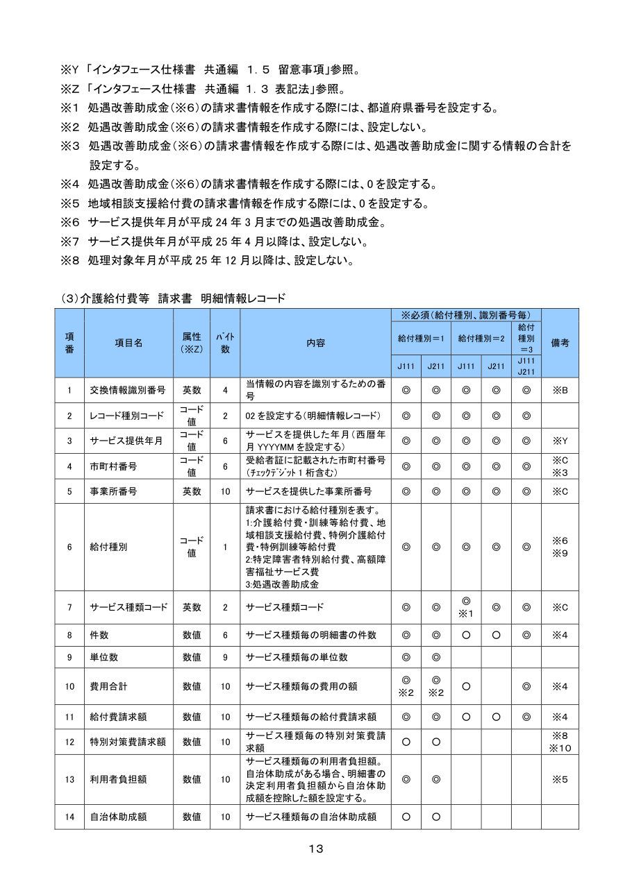
claude-haiku-5-5
- 表1 項番7 必須（※必須（給付種別、識別番号毎） > 給付種別＝2 > J111）の値が想定外: '◎ ※1'
- 表1 項番10 必須（※必須（給付種別、識別番号毎） > 給付種別＝1 > J111）の値が想定外: '◎ ※2'
- 表1 項番10 必須（※必須（給付種別、識別番号毎） > 給付種別＝1 > J211）の値が想定外: '◎ ※2'
表1 record_layout(3)介護給付費等 請求書 明細情報レコード
| 項番 | 項目名 | 属性 | 桁数 | 内容 | 必須 | 備考 |
|---|---|---|---|---|---|---|
| 1 | 交換情報識別番号 | 英数 | 4 | 当情報の内容を識別するための番号 | ※必須（給付種別、識別番号毎） > 給付種別＝1 > J111:◎ ※必須（給付種別、識別番号毎） > 給付種別＝1 > J211:◎ ※必須（給付種別、識別番号毎） > 給付種別＝2 > J111:◎ ※必須（給付種別、識別番号毎） > 給付種別＝2 > J211:◎ ※必須（給付種別、識別番号毎） > 給付種別＝3 > J111 J211:◎ | ※B |
| 2 | レコード種別コード | コード値 | 2 | 02を設定する（明細情報レコード） | ※必須（給付種別、識別番号毎） > 給付種別＝1 > J111:◎ ※必須（給付種別、識別番号毎） > 給付種別＝1 > J211:◎ ※必須（給付種別、識別番号毎） > 給付種別＝2 > J111:◎ ※必須（給付種別、識別番号毎） > 給付種別＝2 > J211:◎ ※必須（給付種別、識別番号毎） > 給付種別＝3 > J111 J211:◎ | |
| 3 | サービス提供年月 | コード値 | 6 | サービスを提供した年月（西暦年月 YYYYMM を設定する） | ※必須（給付種別、識別番号毎） > 給付種別＝1 > J111:◎ ※必須（給付種別、識別番号毎） > 給付種別＝1 > J211:◎ ※必須（給付種別、識別番号毎） > 給付種別＝2 > J111:◎ ※必須（給付種別、識別番号毎） > 給付種別＝2 > J211:◎ ※必須（給付種別、識別番号毎） > 給付種別＝3 > J111 J211:◎ | ※Y |
| 4 | 市町村番号 | コード値 | 6 | 受給者証に記載された市町村番号（チェックデジット1桁含む） | ※必須（給付種別、識別番号毎） > 給付種別＝1 > J111:◎ ※必須（給付種別、識別番号毎） > 給付種別＝1 > J211:◎ ※必須（給付種別、識別番号毎） > 給付種別＝2 > J111:◎ ※必須（給付種別、識別番号毎） > 給付種別＝2 > J211:◎ ※必須（給付種別、識別番号毎） > 給付種別＝3 > J111 J211:◎ | ※C ※3 |
| 5 | 事業所番号 | 英数 | 10 | サービスを提供した事業所番号 | ※必須（給付種別、識別番号毎） > 給付種別＝1 > J111:◎ ※必須（給付種別、識別番号毎） > 給付種別＝1 > J211:◎ ※必須（給付種別、識別番号毎） > 給付種別＝2 > J111:◎ ※必須（給付種別、識別番号毎） > 給付種別＝2 > J211:◎ ※必須（給付種別、識別番号毎） > 給付種別＝3 > J111 J211:◎ | ※C |
| 6 | 給付種別 | コード値 | 1 | 請求書における給付種別を表す。 1:介護給付費・訓練等給付費、地域相談支援給付費、特例介護給付費・特例訓練等給付費 2:特定障害者特別給付費、高額障害福祉サービス費 3:処遇改善助成金 | ※必須（給付種別、識別番号毎） > 給付種別＝1 > J111:◎ ※必須（給付種別、識別番号毎） > 給付種別＝1 > J211:◎ ※必須（給付種別、識別番号毎） > 給付種別＝2 > J111:◎ ※必須（給付種別、識別番号毎） > 給付種別＝2 > J211:◎ ※必須（給付種別、識別番号毎） > 給付種別＝3 > J111 J211:◎ | ※6 ※9 |
| 7 | サービス種類コード | 英数 | 2 | サービス種類コード | ※必須（給付種別、識別番号毎） > 給付種別＝1 > J111:◎ ※必須（給付種別、識別番号毎） > 給付種別＝1 > J211:◎ ※必須（給付種別、識別番号毎） > 給付種別＝2 > J111:◎ ※1 ※必須（給付種別、識別番号毎） > 給付種別＝2 > J211:◎ ※必須（給付種別、識別番号毎） > 給付種別＝3 > J111 J211:◎ | ※C |
| 8 | 件数 | 数値 | 6 | サービス種類毎の明細書の件数 | ※必須（給付種別、識別番号毎） > 給付種別＝1 > J111:◎ ※必須（給付種別、識別番号毎） > 給付種別＝1 > J211:◎ ※必須（給付種別、識別番号毎） > 給付種別＝2 > J111:○ ※必須（給付種別、識別番号毎） > 給付種別＝2 > J211:○ ※必須（給付種別、識別番号毎） > 給付種別＝3 > J111 J211:◎ | ※4 |
| 9 | 単位数 | 数値 | 9 | サービス種類毎の単位数 | ※必須（給付種別、識別番号毎） > 給付種別＝1 > J111:◎ ※必須（給付種別、識別番号毎） > 給付種別＝1 > J211:◎ ※必須（給付種別、識別番号毎） > 給付種別＝2 > J111:－ ※必須（給付種別、識別番号毎） > 給付種別＝2 > J211:－ ※必須（給付種別、識別番号毎） > 給付種別＝3 > J111 J211:－ | |
| 10 | 費用合計 | 数値 | 10 | サービス種類毎の費用の額 | ※必須（給付種別、識別番号毎） > 給付種別＝1 > J111:◎ ※2 ※必須（給付種別、識別番号毎） > 給付種別＝1 > J211:◎ ※2 ※必須（給付種別、識別番号毎） > 給付種別＝2 > J111:○ ※必須（給付種別、識別番号毎） > 給付種別＝2 > J211:－ ※必須（給付種別、識別番号毎） > 給付種別＝3 > J111 J211:◎ | ※4 |
| 11 | 給付費請求額 | 数値 | 10 | サービス種類毎の給付費請求額 | ※必須（給付種別、識別番号毎） > 給付種別＝1 > J111:◎ ※必須（給付種別、識別番号毎） > 給付種別＝1 > J211:◎ ※必須（給付種別、識別番号毎） > 給付種別＝2 > J111:○ ※必須（給付種別、識別番号毎） > 給付種別＝2 > J211:○ ※必須（給付種別、識別番号毎） > 給付種別＝3 > J111 J211:◎ | ※4 |
| 12 | 特別対策費請求額 | 数値 | 10 | サービス種類毎の特別対策費請求額 | ※必須（給付種別、識別番号毎） > 給付種別＝1 > J111:○ ※必須（給付種別、識別番号毎） > 給付種別＝1 > J211:○ ※必須（給付種別、識別番号毎） > 給付種別＝2 > J111:－ ※必須（給付種別、識別番号毎） > 給付種別＝2 > J211:－ ※必須（給付種別、識別番号毎） > 給付種別＝3 > J111 J211:－ | ※8 ※10 |
| 13 | 利用者負担額 | 数値 | 10 | サービス種類毎の利用者負担額。自治体助成がある場合、明細書の決定利用者負担額から自治体助成額を控除した額を設定する。 | ※必須（給付種別、識別番号毎） > 給付種別＝1 > J111:◎ ※必須（給付種別、識別番号毎） > 給付種別＝1 > J211:◎ ※必須（給付種別、識別番号毎） > 給付種別＝2 > J111:－ ※必須（給付種別、識別番号毎） > 給付種別＝2 > J211:－ ※必須（給付種別、識別番号毎） > 給付種別＝3 > J111 J211:－ | ※5 |
| 14 | 自治体助成額 | 数値 | 10 | サービス種類毎の自治体助成額 | ※必須（給付種別、識別番号毎） > 給付種別＝1 > J111:○ ※必須（給付種別、識別番号毎） > 給付種別＝1 > J211:○ ※必須（給付種別、識別番号毎） > 給付種別＝2 > J111:－ ※必須（給付種別、識別番号毎） > 給付種別＝2 > J211:－ ※必須（給付種別、識別番号毎） > 給付種別＝3 > J111 J211:－ |
注記
- ※Y 「インタフェース仕様書 共通編 1.5 留意事項」参照。
- ※Z 「インタフェース仕様書 共通編 1.3 表記法」参照。
- ※1 処遇改善助成金（※6）の請求書情報を作成する際には、都道府県番号を設定する。
- ※2 処遇改善助成金（※6）の請求書情報を作成する際には、設定しない。
- ※3 処遇改善助成金（※6）の請求書情報を作成する際には、処遇改善助成金に関する情報の合計を設定する。
- ※4 処遇改善助成金（※6）の請求書情報を作成する際には、0を設定する。
- ※5 地域相談支援給付費の請求書情報を作成する際には、0を設定する。
- ※6 サービス提供年月が平成24年3月までの処遇改善助成金。
- ※7 サービス提供年月が平成25年4月以降は、設定しない。
- ※8 処理対象年月が平成25年12月以降は、設定しない。
uncertain（モデル自己申告）
- 依頼では「次のページ」の表の書き起こしとありましたが、添付は1ページのみで、印字ページ番号は13です。添付されたこのページの表を書き起こしました。
- 依頼の分野は「障害福祉（障害者総合支援法・児童福祉法）」、文書は「サービス事業所編」とありますが、添付ページは介護給付費等（国保連合会向け）の請求書明細情報レコードで、内容と一致しない可能性があります。
- 表の末尾は項番14で罫線が閉じており、次ページへの続きの有無は画像からは判断できませんでした。続くとすれば項番15以降が次ページにあります。
- 交換情報識別番号（項番1）の具体的な値、および備考の※B・※C・※9・※10の本文は、このページには記載されていません。
- 給付種別＝3の見出しは「J111」「J211」が1セルにまとめて印字されているため、その列名は「J111 J211」としました。
claude-sonnet-5-5
- 表1 項番7 必須（給付種別＝2 > J111）の値が想定外: '◎\n※1'
- 表1 項番10 必須（給付種別＝1 > J111）の値が想定外: '◎\n※2'
- 表1 項番10 必須（給付種別＝1 > J211）の値が想定外: '◎\n※2'
表1 record_layout(3)介護給付費等 請求書 明細情報レコード
| 項番 | 項目名 | 属性 | 桁数 | 内容 | 必須 | 備考 |
|---|---|---|---|---|---|---|
| 1 | 交換情報識別番号 | 英数 | 4 | 当情報の内容を識別するための番号 | 給付種別＝1 > J111:◎ 給付種別＝1 > J211:◎ 給付種別＝2 > J111:◎ 給付種別＝2 > J211:◎ 給付種別＝3 > J111 J211:◎ | ※B |
| 2 | レコード種別コード | コード値 | 2 | 02 を設定する(明細情報レコード) | 給付種別＝1 > J111:◎ 給付種別＝1 > J211:◎ 給付種別＝2 > J111:◎ 給付種別＝2 > J211:◎ 給付種別＝3 > J111 J211:◎ | |
| 3 | サービス提供年月 | コード値 | 6 | サービスを提供した年月(西暦年月 YYYYMM を設定する) | 給付種別＝1 > J111:◎ 給付種別＝1 > J211:◎ 給付種別＝2 > J111:◎ 給付種別＝2 > J211:◎ 給付種別＝3 > J111 J211:◎ | ※Y |
| 4 | 市町村番号 | コード値 | 6 | 受給者証に記載された市町村番号(チェックデジット 1 桁含む) | 給付種別＝1 > J111:◎ 給付種別＝1 > J211:◎ 給付種別＝2 > J111:◎ 給付種別＝2 > J211:◎ 給付種別＝3 > J111 J211:◎ | ※C ※3 |
| 5 | 事業所番号 | 英数 | 10 | サービスを提供した事業所番号 | 給付種別＝1 > J111:◎ 給付種別＝1 > J211:◎ 給付種別＝2 > J111:◎ 給付種別＝2 > J211:◎ 給付種別＝3 > J111 J211:◎ | ※C |
| 6 | 給付種別 | コード値 | 1 | 請求書における給付種別を表す。 1:介護給付費・訓練等給付費、地域相談支援給付費、特例介護給付費・特例訓練等給付費 2:特定障害者特別給付費、高額障害福祉サービス費 3:処遇改善助成金 | 給付種別＝1 > J111:◎ 給付種別＝1 > J211:◎ 給付種別＝2 > J111:◎ 給付種別＝2 > J211:◎ 給付種別＝3 > J111 J211:◎ | ※6 ※9 |
| 7 | サービス種類コード | 英数 | 2 | サービス種類コード | 給付種別＝1 > J111:◎ 給付種別＝1 > J211:◎ 給付種別＝2 > J111:◎ ※1 給付種別＝2 > J211:◎ 給付種別＝3 > J111 J211:◎ | ※C |
| 8 | 件数 | 数値 | 6 | サービス種類毎の明細書の件数 | 給付種別＝1 > J111:◎ 給付種別＝1 > J211:◎ 給付種別＝2 > J111:○ 給付種別＝2 > J211:○ 給付種別＝3 > J111 J211:◎ | ※4 |
| 9 | 単位数 | 数値 | 9 | サービス種類毎の単位数 | 給付種別＝1 > J111:◎ 給付種別＝1 > J211:◎ 給付種別＝2 > J111:－ 給付種別＝2 > J211:－ 給付種別＝3 > J111 J211:－ | |
| 10 | 費用合計 | 数値 | 10 | サービス種類毎の費用の額 | 給付種別＝1 > J111:◎ ※2 給付種別＝1 > J211:◎ ※2 給付種別＝2 > J111:○ 給付種別＝2 > J211:－ 給付種別＝3 > J111 J211:◎ | ※4 |
| 11 | 給付費請求額 | 数値 | 10 | サービス種類毎の給付費請求額 | 給付種別＝1 > J111:◎ 給付種別＝1 > J211:◎ 給付種別＝2 > J111:○ 給付種別＝2 > J211:○ 給付種別＝3 > J111 J211:◎ | ※4 |
| 12 | 特別対策費請求額 | 数値 | 10 | サービス種類毎の特別対策費請求額 | 給付種別＝1 > J111:○ 給付種別＝1 > J211:○ 給付種別＝2 > J111:－ 給付種別＝2 > J211:－ 給付種別＝3 > J111 J211:－ | ※8 ※10 |
| 13 | 利用者負担額 | 数値 | 10 | サービス種類毎の利用者負担額。自治体助成がある場合、明細書の決定利用者負担額から自治体助成額を控除した額を設定する。 | 給付種別＝1 > J111:◎ 給付種別＝1 > J211:◎ 給付種別＝2 > J111:－ 給付種別＝2 > J211:－ 給付種別＝3 > J111 J211:－ | ※5 |
| 14 | 自治体助成額 | 数値 | 10 | サービス種類毎の自治体助成額 | 給付種別＝1 > J111:○ 給付種別＝1 > J211:○ 給付種別＝2 > J111:－ 給付種別＝2 > J211:－ 給付種別＝3 > J111 J211:－ |
注記
- ※Y 「インタフェース仕様書 共通編 1．5 留意事項」参照。
- ※Z 「インタフェース仕様書 共通編 1．3 表記法」参照。
- ※1 処遇改善助成金(※6)の請求書情報を作成する際には、都道府県番号を設定する。
- ※2 処遇改善助成金(※6)の請求書情報を作成する際には、設定しない。
- ※3 処遇改善助成金(※6)の請求書情報を作成する際には、処遇改善助成金に関する情報の合計を設定する。
- ※4 処遇改善助成金(※6)の請求書情報を作成する際には、0を設定する。
- ※5 地域相談支援給付費の請求書情報を作成する際には、0を設定する。
- ※6 サービス提供年月が平成24年3月までの処遇改善助成金。
- ※7 サービス提供年月が平成25年4月以降は、設定しない。
- ※8 処理対象年月が平成25年12月以降は、設定しない。
uncertain（モデル自己申告）
- 表の見出し「(3)介護給付費等 請求書 明細情報レコード」の「請求書」と「明細情報レコード」の間の空白は全角スペース2つ程度で、原文通りか不確か
- 項番7の給付種別＝2 J111 の「◎ ※1」は縦に2段で印字
- 備考「※10」は本ページの注記に説明がない(次ページ以降の可能性)
- 備考の※B,※C,※9も本ページに注記がない
shogai_jigyosho_r0710_p22 — 印字p.
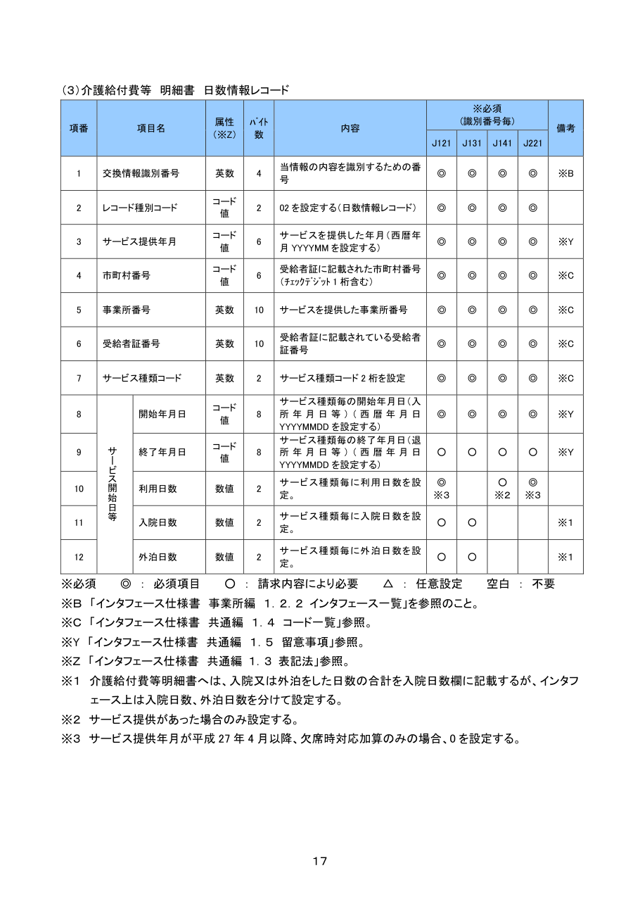
claude-haiku-5-5
- 表1 項番10 必須（※必須（識別番号毎） > J121）の値が想定外: '◎ ※3'
- 表1 項番10 必須（※必須（識別番号毎） > J141）の値が想定外: '○ ※2'
- 表1 項番10 必須（※必須（識別番号毎） > J221）の値が想定外: '◎ ※3'
表1 record_layout(3)介護給付費等 明細書 日数情報レコード
| 項番 | 項目名 | 属性 | 桁数 | 内容 | 必須 | 備考 |
|---|---|---|---|---|---|---|
| 1 | 交換情報識別番号 | 英数 | 4 | 当情報の内容を識別するための番号 | ※必須（識別番号毎） > J121:◎ ※必須（識別番号毎） > J131:◎ ※必須（識別番号毎） > J141:◎ ※必須（識別番号毎） > J221:◎ | ※B |
| 2 | レコード種別コード | コード値 | 2 | 02を設定する（日数情報レコード） | ※必須（識別番号毎） > J121:◎ ※必須（識別番号毎） > J131:◎ ※必須（識別番号毎） > J141:◎ ※必須（識別番号毎） > J221:◎ | |
| 3 | サービス提供年月 | コード値 | 6 | サービスを提供した年月（西暦年月 YYYYMM を設定する） | ※必須（識別番号毎） > J121:◎ ※必須（識別番号毎） > J131:◎ ※必須（識別番号毎） > J141:◎ ※必須（識別番号毎） > J221:◎ | ※Y |
| 4 | 市町村番号 | コード値 | 6 | 受給者証に記載された市町村番号（チェックデジット1桁含む） | ※必須（識別番号毎） > J121:◎ ※必須（識別番号毎） > J131:◎ ※必須（識別番号毎） > J141:◎ ※必須（識別番号毎） > J221:◎ | ※C |
| 5 | 事業所番号 | 英数 | 10 | サービスを提供した事業所番号 | ※必須（識別番号毎） > J121:◎ ※必須（識別番号毎） > J131:◎ ※必須（識別番号毎） > J141:◎ ※必須（識別番号毎） > J221:◎ | ※C |
| 6 | 受給者証番号 | 英数 | 10 | 受給者証に記載されている受給者証番号 | ※必須（識別番号毎） > J121:◎ ※必須（識別番号毎） > J131:◎ ※必須（識別番号毎） > J141:◎ ※必須（識別番号毎） > J221:◎ | ※C |
| 7 | サービス種類コード | 英数 | 2 | サービス種類コード2桁を設定 | ※必須（識別番号毎） > J121:◎ ※必須（識別番号毎） > J131:◎ ※必須（識別番号毎） > J141:◎ ※必須（識別番号毎） > J221:◎ | ※C |
| 8 | サービス開始日等 > 開始年月日 | コード値 | 8 | サービス種類毎の開始年月日(入所年月日等)（西暦年月日 YYYYMMDD を設定する） | ※必須（識別番号毎） > J121:◎ ※必須（識別番号毎） > J131:◎ ※必須（識別番号毎） > J141:◎ ※必須（識別番号毎） > J221:◎ | ※Y |
| 9 | サービス開始日等 > 終了年月日 | コード値 | 8 | サービス種類毎の終了年月日(退所年月日等)（西暦年月日 YYYYMMDD を設定する） | ※必須（識別番号毎） > J121:○ ※必須（識別番号毎） > J131:○ ※必須（識別番号毎） > J141:○ ※必須（識別番号毎） > J221:○ | ※Y |
| 10 | サービス開始日等 > 利用日数 | 数値 | 2 | サービス種類毎に利用日数を設定。 | ※必須（識別番号毎） > J121:◎ ※3 ※必須（識別番号毎） > J131:－ ※必須（識別番号毎） > J141:○ ※2 ※必須（識別番号毎） > J221:◎ ※3 | |
| 11 | サービス開始日等 > 入院日数 | 数値 | 2 | サービス種類毎に入院日数を設定。 | ※必須（識別番号毎） > J121:○ ※必須（識別番号毎） > J131:○ ※必須（識別番号毎） > J141:－ ※必須（識別番号毎） > J221:－ | ※1 |
| 12 | サービス開始日等 > 外泊日数 | 数値 | 2 | サービス種類毎に外泊日数を設定。 | ※必須（識別番号毎） > J121:○ ※必須（識別番号毎） > J131:○ ※必須（識別番号毎） > J141:－ ※必須（識別番号毎） > J221:－ | ※1 |
注記
- ※必須 ◎：必須項目 ○：請求内容により必要 △：任意設定 空白：不要
- ※B 「インタフェース仕様書 事業所編 1.2.2 インタフェース一覧」を参照のこと。
- ※C 「インタフェース仕様書 共通編 1.4 コード一覧」参照。
- ※Y 「インタフェース仕様書 共通編 1.5 留意事項」参照。
- ※Z 「インタフェース仕様書 共通編 1.3 表記法」参照。
- ※1 介護給付費等明細書へは、入院又は外泊をした日数の合計を入院日数欄に記載するが、インタフェース上は入院日数、外泊日数を分けて設定する。
- ※2 サービス提供があった場合のみ設定する。
- ※3 サービス提供年月が平成27年4月以降、欠席時対応加算のみの場合、0を設定する。
uncertain（モデル自己申告）
- 添付ページの下部の印字は『17』で、依頼文のPDF上のページ22と一致しない。また依頼の分野（障害福祉）と文書名（サービス事業所編）に対し、添付ページの内容は『介護給付費等 明細書』（国保連合会向け）の日数情報レコードであり、文書の対応が確認できない。
- 依頼は『次のページの表』の書き起こしだが、添付は1ページのみで、そのページには日数情報レコードの表のみが含まれているため、この表を書き起こした。
- 交換情報識別番号（レコード）の値は添付ページからは読み取れないため record.exchange_id は null とした。
- 表の内容セルの括弧は原文が半角と全角の混在に見えるため、表示上の字間を詰めて書き写した。
claude-sonnet-5-5
- 表1 項番10 必須（J121）の値が想定外: '◎\n※3'
- 表1 項番10 必須（J141）の値が想定外: '○\n※2'
- 表1 項番10 必須（J221）の値が想定外: '◎\n※3'
表1 record_layout(3)介護給付費等 明細書 日数情報レコード
| 項番 | 項目名 | 属性 | 桁数 | 内容 | 必須 | 備考 |
|---|---|---|---|---|---|---|
| 1 | 交換情報識別番号 | 英数 | 4 | 当情報の内容を識別するための番号 | J121:◎ J131:◎ J141:◎ J221:◎ | ※B |
| 2 | レコード種別コード | コード値 | 2 | 02を設定する(日数情報レコード) | J121:◎ J131:◎ J141:◎ J221:◎ | |
| 3 | サービス提供年月 | コード値 | 6 | サービスを提供した年月(西暦年月YYYYMMを設定する) | J121:◎ J131:◎ J141:◎ J221:◎ | ※Y |
| 4 | 市町村番号 | コード値 | 6 | 受給者証に記載された市町村番号(チェックデジット1桁含む) | J121:◎ J131:◎ J141:◎ J221:◎ | ※C |
| 5 | 事業所番号 | 英数 | 10 | サービスを提供した事業所番号 | J121:◎ J131:◎ J141:◎ J221:◎ | ※C |
| 6 | 受給者証番号 | 英数 | 10 | 受給者証に記載されている受給者証番号 | J121:◎ J131:◎ J141:◎ J221:◎ | ※C |
| 7 | サービス種類コード | 英数 | 2 | サービス種類コード2桁を設定 | J121:◎ J131:◎ J141:◎ J221:◎ | ※C |
| 8 | サービス開始日等 > 開始年月日 | コード値 | 8 | サービス種類毎の開始年月日(入所年月日等)(西暦年月日YYYYMMDDを設定する) | J121:◎ J131:◎ J141:◎ J221:◎ | ※Y |
| 9 | サービス開始日等 > 終了年月日 | コード値 | 8 | サービス種類毎の終了年月日(退所年月日等)(西暦年月日YYYYMMDDを設定する) | J121:○ J131:○ J141:○ J221:○ | ※Y |
| 10 | サービス開始日等 > 利用日数 | 数値 | 2 | サービス種類毎に利用日数を設定。 | J121:◎ ※3 J131:－ J141:○ ※2 J221:◎ ※3 | |
| 11 | サービス開始日等 > 入院日数 | 数値 | 2 | サービス種類毎に入院日数を設定。 | J121:○ J131:○ J141:－ J221:－ | ※1 |
| 12 | サービス開始日等 > 外泊日数 | 数値 | 2 | サービス種類毎に外泊日数を設定。 | J121:○ J131:○ J141:－ J221:－ | ※1 |
注記
- ※必須 ◎ : 必須項目 ○ : 請求内容により必要 △ : 任意設定 空白 : 不要
- ※B 「インタフェース仕様書 事業所編 1.2.2 インタフェース一覧」を参照のこと。
- ※C 「インタフェース仕様書 共通編 1.4 コード一覧」参照。
- ※Y 「インタフェース仕様書 共通編 1.5 留意事項」参照。
- ※Z 「インタフェース仕様書 共通編 1.3 表記法」参照。
- ※1 介護給付費等明細書へは、入院又は外泊をした日数の合計を入院日数欄に記載するが、インタフェース上は入院日数、外泊日数を分けて設定する。
- ※2 サービス提供があった場合のみ設定する。
- ※3 サービス提供年月が平成27年4月以降、欠席時対応加算のみの場合、0を設定する。
uncertain（モデル自己申告）
- 項番8〜12の縦結合見出し「サービス開始日等」は縦書きで印字されており、「サービス開始日等」と読み取った。
shogai_jigyosho_r0710_p32 — 印字p.

claude-haiku-5-5
- 表1 項番14 項目名がPDFのセルと完全一致しない（部分一致のみ）: '1割相当額(サービス提供年月が平成24年3月以前:給付率に基づく請求額)'
- 表1 項番15 項目名がPDFのセルと完全一致しない（部分一致のみ）: '利用者負担額②(サービス提供年月が平成24年3月以前:給付率に基づく利用者負担額②)'
- [改ページ] p32→p33 の連続性 OK
表1 record_layout(6)介護給付費等 明細書 集計情報レコード 次頁へ続く
| 項番 | 項目名 | 属性 | 桁数 | 内容 | 必須 | 備考 |
|---|---|---|---|---|---|---|
| 1 | 交換情報識別番号 | 英数 | 4 | 当情報の内容を識別するための番号 | ※必須 > J121:◎ ※必須 > J131:◎ ※必須 > J141:◎ ※必須 > J221:◎ | ※B |
| 2 | レコード種別コード | コード値 | 2 | 04を設定する(集計情報レコード) | ※必須 > J121:◎ ※必須 > J131:◎ ※必須 > J141:◎ ※必須 > J221:◎ | |
| 3 | サービス提供年月 | コード値 | 6 | サービスを提供した年月(西暦年月 YYYYMMを設定する) | ※必須 > J121:◎ ※必須 > J131:◎ ※必須 > J141:◎ ※必須 > J221:◎ | ※Y |
| 4 | 市町村番号 | コード値 | 6 | 受給者証に記載された市町村番号(チェックデジット1桁含む) | ※必須 > J121:◎ ※必須 > J131:◎ ※必須 > J141:◎ ※必須 > J221:◎ | ※C |
| 5 | 事業所番号 | 英数 | 10 | サービスを提供した事業所番号 | ※必須 > J121:◎ ※必須 > J131:◎ ※必須 > J141:◎ ※必須 > J221:◎ | ※C |
| 6 | 受給者証番号 | 英数 | 10 | 受給者証に記載されている受給者証番号 | ※必須 > J121:◎ ※必須 > J131:◎ ※必須 > J141:◎ ※必須 > J221:◎ | ※C |
| 7 | サービス種類コード | 英数 | 2 | サービス種類コード2桁を設定 | ※必須 > J121:◎ ※必須 > J131:◎ ※必須 > J141:◎ ※必須 > J221:◎ | ※C |
| 8 | 請求額集計欄 > 集計欄分類番号 | コード値 | 1 | 同一のサービス種類コードで複数の集計情報を作成する為の集計欄分類番号を設定 | ※必須 > J121:◎ ※必須 > J131:◎ ※必須 > J141:◎ ※必須 > J221:◎ | ※1 |
| 9 | 請求額集計欄 > サービス利用日数 | 数値 | 2 | サービス利用日数を設定 本体報酬を算定しない日において、各種加算のみを算定した場合も1日とカウントする。上限額管理加算、欠席時対応加算等も1日とカウントする。 | ※必須 > J121:◎ ※必須 > J131:◎ ※必須 > J141:◎ ※必須 > J221:◎ | |
| 10 | 請求額集計欄 > 給付単位数 | 数値 | 9 | サービス種類コードごと集計欄分類番号ごとの単位数を設定 | ※必須 > J121:◎ ※必須 > J131:◎ ※必須 > J141:◎ ※必須 > J221:◎ | |
| 11 | 請求額集計欄 > 単位数単価 | 数値 | 5 | 整数部2桁、小数部3桁の半角数字(小数部が3桁を超える場合、小数第4位を四捨五入)。8.5円の場合、08500(または8500)を設定 | ※必須 > J121:◎ ※必須 > J131:◎ ※必須 > J141:◎ ※必須 > J221:◎ | ※Y |
| 12 | 請求額集計欄 > 給付率 | 数値 | 3 | 0を設定(サービス提供年月が平成24年3月以前:給付率を設定) | ※必須 > J121:◎ ※必須 > J131:◎ ※必須 > J141:－ ※必須 > J221:◎ | |
| 13 | 請求額集計欄 > 総費用額 | 数値 | 10 | サービスの総費用額を設定 | ※必須 > J121:◎ ※必須 > J131:◎ ※必須 > J141:◎ ※必須 > J221:◎ | |
| 14 | 請求額集計欄 > 1割相当額(サービス提供年月が平成24年3月以前:給付率に基づく請求額) | 数値 | 10 | 総費用額の1割に相当する額を設定。(サービス提供年月が平成24年3月以前:総費用額×給付率/100) | ※必須 > J121:◎ ※必須 > J131:◎ ※必須 > J141:－ ※必須 > J221:◎ | |
| 15 | 請求額集計欄 > 利用者負担額②(サービス提供年月が平成24年3月以前:給付率に基づく利用者負担額②) | 数値 | 6 | 1割相当額を設定。(サービス提供年月が平成24年3月以前:総費用額－給付率に基づく請求額) | ※必須 > J121:◎ ※必須 > J131:◎ ※必須 > J141:－ ※必須 > J221:◎ | ※6 |
| 16 | 請求額集計欄 > 上限月額調整(①②の内少ない数) | 数値 | 6 | 利用者負担上限月額と利用者負担額②のうち少ないほうを設定 | ※必須 > J121:◎ ※必須 > J131:◎ ※必須 > J141:－ ※必須 > J221:◎ | |
| 17 | 請求額集計欄 > A型減免 > 事業者減免額 | 数値 | 6 | A型事業者減免額を設定 | ※必須 > J121:○ ※必須 > J131:－ ※必須 > J141:－ ※必須 > J221:－ |
uncertain（モデル自己申告）
- 依頼文は「次のページ」「障害福祉 PDF ページ32」としているが、添付画像は介護給付費等 明細書の集計情報レコード（印字ページ27）であり、添付画像に従って書き起こした。
- 項番9のJ141欄は「◎」と「※7」が並んでいるため、必須値は「◎」とし、※7は原文の注記本文がこのページにないことを踏まえ備考ではなく判断保留とした。
- 項番1・3・4・5・6・7・8・11の備考の※B,※Y,※C,※1などの注記本文は、このページに記載がないため footnotes に含めていない。
- 項番9の内容は原文の改行位置を残した。
claude-sonnet-5-5
- 表1 項番9 必須（J141）の値が想定外: '◎\n※7'
- 表1 項番14 項目名がPDFのセルと完全一致しない（部分一致のみ）: '1割相当額（サービス提供年月が平成 24 年 3 月以前：給付率に基づく請求額）'
- 表1 項番15 項目名がPDFのセルと完全一致しない（部分一致のみ）: '利用者負担額②（サービス提供年月が平成 24 年 3 月以前：給付率に基づく利用者負担額②）'
- [改ページ] p32→p33 の連続性 OK
表1 record_layout（6）介護給付費等 明細書 集計情報レコード 次頁へ続く
| 項番 | 項目名 | 属性 | 桁数 | 内容 | 必須 | 備考 |
|---|---|---|---|---|---|---|
| 1 | 交換情報識別番号 | 英数 | 4 | 当情報の内容を識別するための番号 | J121:◎ J131:◎ J141:◎ J221:◎ | ※B |
| 2 | レコード種別コード | コード値 | 2 | 04 を設定する（集計情報レコード） | J121:◎ J131:◎ J141:◎ J221:◎ | |
| 3 | サービス提供年月 | コード値 | 6 | サービスを提供した年月（西暦年月 YYYYMM を設定する） | J121:◎ J131:◎ J141:◎ J221:◎ | ※Y |
| 4 | 市町村番号 | コード値 | 6 | 受給者証に記載された市町村番号（ﾁｪｯｸﾃﾞｼﾞｯﾄ 1 桁含む） | J121:◎ J131:◎ J141:◎ J221:◎ | ※C |
| 5 | 事業所番号 | 英数 | 10 | サービスを提供した事業所番号 | J121:◎ J131:◎ J141:◎ J221:◎ | ※C |
| 6 | 受給者証番号 | 英数 | 10 | 受給者証に記載されている受給者証番号 | J121:◎ J131:◎ J141:◎ J221:◎ | ※C |
| 7 | サービス種類コード | 英数 | 2 | サービス種類コード 2 桁を設定 | J121:◎ J131:◎ J141:◎ J221:◎ | ※C |
| 8 | 請求額集計欄 > 集計欄分類番号 | コード値 | 1 | 同一のサービス種類コードで複数の集計情報を作成する為の集計欄分類番号を設定 | J121:◎ J131:◎ J141:◎ J221:◎ | ※1 |
| 9 | 請求額集計欄 > サービス利用日数 | 数値 | 2 | サービス利用日数を設定 本体報酬を算定しない日において、各種加算のみを算定した場合も 1 日とカウントする。上限額管理加算、欠席時対応加算等も 1 日とカウントする。 | J121:◎ J131:◎ J141:◎ ※7 J221:◎ | |
| 10 | 請求額集計欄 > 給付単位数 | 数値 | 9 | サービス種類コードごと集計欄分類番号ごとの単位数を設定 | J121:◎ J131:◎ J141:◎ J221:◎ | |
| 11 | 請求額集計欄 > 単位数単価 | 数値 | 5 | 整数部 2 桁、小数部 3 桁の半角数字（小数部が 3 桁を超える場合、小数第 4 位を四捨五入）。8.5 円の場合、08500（または 8500）を設定 | J121:◎ J131:◎ J141:◎ J221:◎ | ※Y |
| 12 | 請求額集計欄 > 給付率 | 数値 | 3 | 0 を設定（サービス提供年月が平成 24 年 3 月以前：給付率を設定） | J121:◎ J131:◎ J141:－ J221:◎ | |
| 13 | 請求額集計欄 > 総費用額 | 数値 | 10 | サービスの総費用額を設定 | J121:◎ J131:◎ J141:◎ J221:◎ | |
| 14 | 請求額集計欄 > 1割相当額（サービス提供年月が平成 24 年 3 月以前：給付率に基づく請求額） | 数値 | 10 | 総費用額の 1 割に相当する額を設定。（サービス提供年月が平成 24 年 3 月以前：総費用額×給付率／100） | J121:◎ J131:◎ J141:－ J221:◎ | |
| 15 | 請求額集計欄 > 利用者負担額②（サービス提供年月が平成 24 年 3 月以前：給付率に基づく利用者負担額②） | 数値 | 6 | 1割相当額を設定。 （サービス提供年月が平成 24 年 3 月以前：総費用額－給付率に基づく請求額） | J121:◎ J131:◎ J141:－ J221:◎ | ※6 |
| 16 | 請求額集計欄 > 上限月額調整（①②の内少ない数） | 数値 | 6 | 利用者負担上限月額と利用者負担額②のうち少ないほうを設定 | J121:◎ J131:◎ J141:－ J221:◎ | |
| 17 | 請求額集計欄 > A 型減免 > 事業者減免額 | 数値 | 6 | A 型事業者減免額を設定 | J121:○ J131:－ J141:－ J221:－ |
uncertain（モデル自己申告）
- 項番8〜17の左端縦結合見出し「請求額集計欄」は縦書きで、name_pathの先頭に入れた
- 項番17の「A 型減免」と「事業者減免額」は別セルで、折り返し位置から判断した
- 項番17の備考は空欄と判断
shogai_jigyosho_r0710_p42 — 印字p.

claude-haiku-5-5
表1 record_layout(11)介護給付費等 明細書 処遇改善情報レコード
| 項番 | 項目名 | 属性 | 桁数 | 内容 | 必須 | 備考 |
|---|---|---|---|---|---|---|
| 1 | 交換情報識別番号 | 英数 | 4 | 当情報の内容を識別するための番号 | ※必須 > J121:◎ ※必須 > J131:◎ ※必須 > J221:◎ | ※B |
| 2 | レコード種別コード | コード値 | 2 | 06を設定する(処遇改善情報レコード) | ※必須 > J121:◎ ※必須 > J131:◎ ※必須 > J221:◎ | |
| 3 | サービス提供年月 | コード値 | 6 | サービスを提供した年月（西暦年月 YYYYMM を設定する） | ※必須 > J121:◎ ※必須 > J131:◎ ※必須 > J221:◎ | ※Y |
| 4 | 市町村番号 | コード値 | 6 | 受給者証に記載された市町村番号(チェックデジット１桁含む) | ※必須 > J121:◎ ※必須 > J131:◎ ※必須 > J221:◎ | ※C |
| 5 | 事業所番号 | 英数 | 10 | サービスを提供した事業所番号 | ※必須 > J121:◎ ※必須 > J131:◎ ※必須 > J221:◎ | ※C |
| 6 | 受給者証番号 | 英数 | 10 | 受給者証に記載されている受給者証番号 | ※必須 > J121:◎ ※必須 > J131:◎ ※必須 > J221:◎ | ※C |
| 7 | サービス種類コード | 英数 | 2 | サービス種類コード2桁を設定 | ※必須 > J121:◎ ※必須 > J131:◎ ※必須 > J221:◎ | ※C |
| 8 | 処遇改善助成金 > 請求先都道府県番号 | コード値 | 6 | 処遇改善助成金(※1)の請求先都道府県番号を設定する | ※必須 > J121:◎ ※必須 > J131:◎ ※必須 > J221:◎ | ※C |
| 9 | 処遇改善助成金 > 請求額 | 数値 | 10 | 処遇改善助成金(※1)の請求額を設定する。 助成金の算定式(月額)は、 サービス種類ごとの１人１月当たり報酬総額×交付率＝交付額（１円未満切り捨て） ※報酬総額は、利用者負担額（A型減免額及び利用者負担に係る自治体助成額を含む。）、事業運営安定化事業及び移行時運営安定化事業による助成額を含み補足給付は含まない。なお、基準該当事業所の場合、報酬総額には高額障害福祉サービス費を含む。 | ※必須 > J121:◎ ※必須 > J131:◎ ※必須 > J221:◎ |
注記
- ※必須 ◎：必須項目 ○：請求内容により必要 △：任意設定 空白：不要
- ※B 「インタフェース仕様書 事業所編 1.2.2 インタフェース一覧」を参照のこと。
- ※C 「インタフェース仕様書 共通編 1.4 コード一覧」参照。
- ※Y 「インタフェース仕様書 共通編 1.5 留意事項」参照。
- ※Z 「インタフェース仕様書 共通編 1.3 表記法」参照。
- ※1 サービス提供年月が平成24年3月までの処遇改善助成金。
uncertain（モデル自己申告）
- 依頼では「次のページ」かつPDF上のページ42とありますが、添付画像は印字ページ31－1の1ページのみです。添付された本ページの表を書き起こしました。
- 表見出しのレコード交換情報識別番号（exchange_id）は本ページから読み取れないため null としました。
- ページ下部の「(12) 処遇改善情報レコードの設定方法について」は表ではなく本文のため書き起こしていません。その中の※1〜※3も本文の注記です。
- 項番9の内容セルは改行位置を論理的な区切りとして\nで残しました。原文の折り返し位置とは一致しない可能性があります。
claude-sonnet-5-5
表1 record_layout(11)介護給付費等 明細書 処遇改善情報レコード
| 項番 | 項目名 | 属性 | 桁数 | 内容 | 必須 | 備考 |
|---|---|---|---|---|---|---|
| 1 | 交換情報識別番号 | 英数 | 4 | 当情報の内容を識別するための番号 | ◎ | ※B |
| 2 | レコード種別コード | コード値 | 2 | 06 を設定する(処遇改善情報レコード) | ◎ | |
| 3 | サービス提供年月 | コード値 | 6 | サービスを提供した年月(西暦年月 YYYYMM を設定する) | ◎ | ※Y |
| 4 | 市町村番号 | コード値 | 6 | 受給者証に記載された市町村番号(ﾁｪｯｸﾃﾞｼﾞｯﾄ 1 桁含む) | ◎ | ※C |
| 5 | 事業所番号 | 英数 | 10 | サービスを提供した事業所番号 | ◎ | ※C |
| 6 | 受給者証番号 | 英数 | 10 | 受給者証に記載されている受給者証番号 | ◎ | ※C |
| 7 | サービス種類コード | 英数 | 2 | サービス種類コード 2 桁を設定 | ◎ | ※C |
| 8 | 処遇改善助成金 > 請求先都道府県番号 | コード値 | 6 | 処遇改善助成金(※1)の請求先都道府県番号を設定する | ◎ | ※C |
| 9 | 処遇改善助成金 > 請求額 | 数値 | 10 | 処遇改善助成金(※1)の請求額を設定する。 助成金の算定式(月額)は、 サービス種類ごとの 1 人 1 月当たり報酬総額×交付率＝交付額(1 円未満切り捨て) ※報酬総額は、利用者負担額(A型減免額及び利用者負担に係る自治体助成額を含む。)、事業運営安定化事業及び移行時運営安定化事業による助成額を含み補足給付は含まない。なお、基準該当事業所の場合、報酬総額には高額障害福祉サービス費を含む。 | ◎ |
注記
- ※必須 ◎ : 必須項目 ○ : 請求内容により必要 △ : 任意設定 空白 : 不要
- ※B 「インタフェース仕様書 事業所編 1.2.2 インタフェース一覧」を参照のこと。
- ※C 「インタフェース仕様書 共通編 1.4 コード一覧」参照。
- ※Y 「インタフェース仕様書 共通編 1.5 留意事項」参照。
- ※Z 「インタフェース仕様書 共通編 1.3 表記法」参照。
- ※1 サービス提供年月が平成 24 年 3 月までの処遇改善助成金。
uncertain（モデル自己申告）
- 必須列は J121/J131/J221 の3列見出しだが、各行に記号は1つだけ（結合セル）のため required に記号を入れた。
- ページ下部の「(12) 処遇改善情報レコードの設定方法について」本文と※1〜※3は表ではないため footnotes に含めていない。
shogai_jigyosho_r0710_p46 — 印字p.
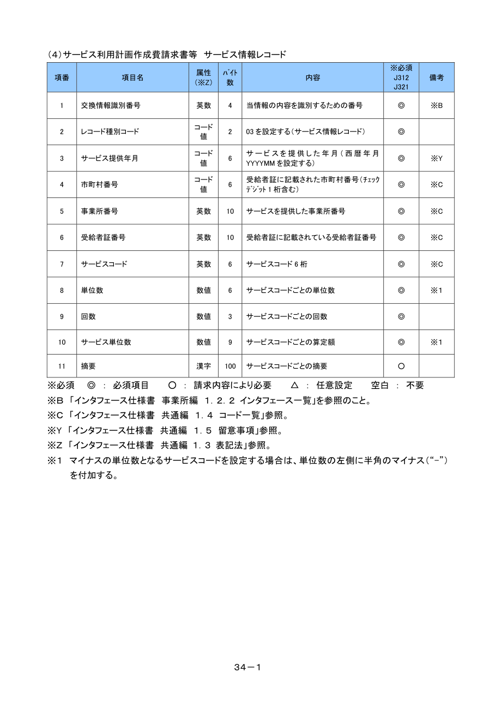
claude-haiku-5-5
表1 record_layout(4)サービス利用計画作成費請求書等 サービス情報レコード
| 項番 | 項目名 | 属性 | 桁数 | 内容 | 必須 | 備考 |
|---|---|---|---|---|---|---|
| 1 | 交換情報識別番号 | 英数 | 4 | 当情報の内容を識別するための番号 | ◎ | ※B |
| 2 | レコード種別コード | コード値 | 2 | 03を設定する（サービス情報レコード） | ◎ | |
| 3 | サービス提供年月 | コード値 | 6 | サービスを提供した年月（西暦年月YYYYMMを設定する） | ◎ | ※Y |
| 4 | 市町村番号 | コード値 | 6 | 受給者証に記載された市町村番号（チェックデジット1桁含む） | ◎ | ※C |
| 5 | 事業所番号 | 英数 | 10 | サービスを提供した事業所番号 | ◎ | ※C |
| 6 | 受給者証番号 | 英数 | 10 | 受給者証に記載されている受給者証番号 | ◎ | ※C |
| 7 | サービスコード | 英数 | 6 | サービスコード6桁 | ◎ | ※C |
| 8 | 単位数 | 数値 | 6 | サービスコードごとの単位数 | ◎ | ※1 |
| 9 | 回数 | 数値 | 3 | サービスコードごとの回数 | ◎ | |
| 10 | サービス単位数 | 数値 | 9 | サービスコードごとの算定額 | ◎ | ※1 |
| 11 | 摘要 | 漢字 | 100 | サービスコードごとの摘要 | ○ |
注記
- ※必須 ◎：必須項目 ○：請求内容により必要 △：任意設定 空白：不要
- ※B 「インタフェース仕様書 事業所編 1.2.2 インタフェース一覧」を参照のこと。
- ※C 「インタフェース仕様書 共通編 1.4 コード一覧」参照。
- ※Y 「インタフェース仕様書 共通編 1.5 留意事項」参照。
- ※Z 「インタフェース仕様書 共通編 1.3 表記法」参照。
- ※1 マイナスの単位数となるサービスコードを設定する場合は、単位数の左側に半角のマイナス（“-”）を付加する。
uncertain（モデル自己申告）
- 依頼文は「次のページの表」を求めているが、添付は1ページのみで、このページ（印字ページ34－1）の表を書き起こした。
- 必須列の見出しは「※必須」の下に J312・J321 が並ぶ単一列として扱い、required に ◎ ○ を入れた。
claude-sonnet-5-5
表1 record_layout（4）サービス利用計画作成費請求書等 サービス情報レコード
| 項番 | 項目名 | 属性 | 桁数 | 内容 | 必須 | 備考 |
|---|---|---|---|---|---|---|
| 1 | 交換情報識別番号 | 英数 | 4 | 当情報の内容を識別するための番号 | ◎ | ※B |
| 2 | レコード種別コード | コード値 | 2 | 03 を設定する（サービス情報レコード） | ◎ | |
| 3 | サービス提供年月 | コード値 | 6 | サービスを提供した年月（西暦年月 YYYYMM を設定する） | ◎ | ※Y |
| 4 | 市町村番号 | コード値 | 6 | 受給者証に記載された市町村番号（チェックデジット 1 桁含む） | ◎ | ※C |
| 5 | 事業所番号 | 英数 | 10 | サービスを提供した事業所番号 | ◎ | ※C |
| 6 | 受給者証番号 | 英数 | 10 | 受給者証に記載されている受給者証番号 | ◎ | ※C |
| 7 | サービスコード | 英数 | 6 | サービスコード 6 桁 | ◎ | ※C |
| 8 | 単位数 | 数値 | 6 | サービスコードごとの単位数 | ◎ | ※1 |
| 9 | 回数 | 数値 | 3 | サービスコードごとの回数 | ◎ | |
| 10 | サービス単位数 | 数値 | 9 | サービスコードごとの算定額 | ◎ | ※1 |
| 11 | 摘要 | 漢字 | 100 | サービスコードごとの摘要 | ○ |
注記
- ※必須 ◎ : 必須項目 ○ : 請求内容により必要 △ : 任意設定 空白 : 不要
- ※B 「インタフェース仕様書 事業所編 1．2．2 インタフェース一覧」を参照のこと。
- ※C 「インタフェース仕様書 共通編 1．4 コード一覧」参照。
- ※Y 「インタフェース仕様書 共通編 1．5 留意事項」参照。
- ※Z 「インタフェース仕様書 共通編 1．3 表記法」参照。
- ※1 マイナスの単位数となるサービスコードを設定する場合は、単位数の左側に半角のマイナス（“－”）を付加する。
uncertain（モデル自己申告）
- ※1の脚注中のマイナス記号の文字種（半角ハイフン等）は画像から判別が難しい
- 内容列 項番3 の語間の空白は表示上の均等割付と判断して詰めた
shogai_jigyosho_r0710_p60 — 印字p.

claude-haiku-5-5
- [改ページ] 前後ページで列見出しの書き起こしが一致しない
表1 record_layout(2)基本情報レコード 次頁へ続く
| 項番 | 項目名 | 属性 | 桁数 | 内容 | 必須 | 備考 |
|---|---|---|---|---|---|---|
| 1 | 交換情報識別番号 | 英数 | 4 | 当情報の内容を識別するための番号 | ※B | |
| 2 | レコード種別コード | コード値 | 2 | 01を設定する(基本情報レコード) | ||
| 3 | サービス提供年月 | コード値 | 6 | サービスを提供した年月（西暦年月YYYYMMを設定する） | ※Y | |
| 4 | 市町村番号 | コード値 | 6 | 受給者証に記載された市町村番号(チェックデジット1桁含む) | ※C | |
| 5 | 事業所番号 | 英数 | 10 | サービスを提供した事業所番号 | ※C | |
| 6 | 受給者証番号 | 英数 | 10 | 受給者証に記載されている受給者証番号 | ※C | |
| 7 | 様式種別番号 | コード値 | 4 | 様式番号2桁、枝番2桁を設定 | ※1 | |
| 8 | 補足給付関係情報 > 補足給付適用の有無 | コード値 | 1 | 1:無し 2:有り | ||
| 9 | 補足給付関係情報 > 補足給付額（円／日） | 数値 | 4 | 補足給付適用の有無が有りの場合に、一日単位の補足給付額を設定 | ||
| 10 | 補足給付関係情報 > 食費の単価 朝食（円／日） | 数値 | 5 | 補足給付適用の有無が有りの場合に、朝食の単価を設定(契約が毎食毎の場合) | ||
| 11 | 補足給付関係情報 > 食費の単価 昼食（円／日） | 数値 | 5 | 補足給付適用の有無が有りの場合に、昼食の単価を設定(契約が毎食毎の場合) | ||
| 12 | 補足給付関係情報 > 食費の単価 夕食（円／日） | 数値 | 5 | 補足給付適用の有無が有りの場合に、夕食の単価を設定(契約が毎食毎の場合) | ||
| 13 | 補足給付関係情報 > 食費の単価 一日（円／日） | 数値 | 5 | 補足給付適用の有無が有りの場合に、一日単位の単価を設定(契約が1日単位の場合) | ||
| 14 | 補足給付関係情報 > 光熱水費の単価 一日（円／日） | 数値 | 6 | 補足給付適用の有無が有りの場合に、日単位の光熱水費単価を設定(契約が一日単位の場合) | ||
| 15 | 補足給付関係情報 > 光熱水費の単価 一月（円／月） | 数値 | 6 | 補足給付適用の有無が有りの場合に、一月単位の光熱水費単価を設定(契約が一月単位の場合) | ||
| 16 | 合計1 > 内訳 100% | 数値 | 5 | 居宅介護(身体介護)において、初任者研修課程修了者等による実績時間数(時間)を整数部3桁＋小数部2桁で設定。例:99.5時間→09950(または 9950) | ※2 ※9 | |
| 17 | 合計1 > 内訳 70% | 数値 | 5 | 居宅介護(身体介護)において、基礎研修課程修了者等による実績時間数(時間)を整数部3桁＋小数部2桁で設定。例:99.5時間→09950(または 9950) | ※3 ※10 | |
| 18 | 合計1 > 内訳 重訪 | 数値 | 5 | 居宅介護(身体介護)において、重度訪問介護研修修了者による時間数(時間)を整数部3桁＋小数部2桁で設定。例:99.5時間→09950(または 9950) |
uncertain（モデル自己申告）
- 添付ページは印字ページ番号「45」で、依頼文の「PDF上のページ 60」「次のページ」と一致しない可能性がある。添付された1ページのみを書き起こした。
- レコード名は表題「(2)基本情報レコード」から読み取り、交換情報識別番号・上位情報名（parent）は本ページに記載がないため null とした。
- 項番17の備考は原文で『※1O』と読めるが、『0』か『O』かは判別が不確か。『※10』として書き起こした。
- 項目名の『合計1』は縦に2行に分かれて印字されていた（『合計』『1』）ため、『合計1』として連結した。
claude-sonnet-5-5
- [改ページ] p60→p61 の連続性 OK
表1 record_layout(2)基本情報レコード 次頁へ続く
| 項番 | 項目名 | 属性 | 桁数 | 内容 | 必須 | 備考 |
|---|---|---|---|---|---|---|
| 1 | 交換情報識別番号 | 英数 | 4 | 当情報の内容を識別するための番号 | ※B | |
| 2 | レコード種別コード | コード値 | 2 | 01を設定する(基本情報レコード) | ||
| 3 | サービス提供年月 | コード値 | 6 | サービスを提供した年月(西暦年月YYYYMMを設定する) | ※Y | |
| 4 | 市町村番号 | コード値 | 6 | 受給者証に記載された市町村番号(ﾁｪｯｸﾃﾞｼﾞｯﾄ1桁含む) | ※C | |
| 5 | 事業所番号 | 英数 | 10 | サービスを提供した事業所番号 | ※C | |
| 6 | 受給者証番号 | 英数 | 10 | 受給者証に記載されている受給者証番号 | ※C | |
| 7 | 様式種別番号 | コード値 | 4 | 様式番号2桁、枝番2桁を設定 | ※1 | |
| 8 | 補足給付関係情報 > 補足給付適用の有無 | コード値 | 1 | 1:無し 2:有り | ||
| 9 | 補足給付関係情報 > 補足給付額(円／日) | 数値 | 4 | 補足給付適用の有無が有りの場合に、一日単位の補足給付額を設定 | ||
| 10 | 補足給付関係情報 > 食費の単価 朝食(円／日) | 数値 | 5 | 補足給付適用の有無が有りの場合に、朝食の単価を設定(契約が毎食毎の場合) | ||
| 11 | 補足給付関係情報 > 食費の単価 昼食(円／日) | 数値 | 5 | 補足給付適用の有無が有りの場合に、昼食の単価を設定(契約が毎食毎の場合) | ||
| 12 | 補足給付関係情報 > 食費の単価 夕食(円／日) | 数値 | 5 | 補足給付適用の有無が有りの場合に、夕食の単価を設定(契約が毎食毎の場合) | ||
| 13 | 補足給付関係情報 > 食費の単価 一日(円／日) | 数値 | 5 | 補足給付適用の有無が有りの場合に、一日単位の単価を設定(契約が1日単位の場合) | ||
| 14 | 補足給付関係情報 > 光熱水費の単価 一日(円／日) | 数値 | 6 | 補足給付適用の有無が有りの場合に、日単位の光熱水費単価を設定 (契約が一日単位の場合) | ||
| 15 | 補足給付関係情報 > 光熱水費の単価 一月(円／月) | 数値 | 6 | 補足給付適用の有無が有りの場合に、一月単位の光熱水費単価を設定 (契約が一月単位の場合) | ||
| 16 | 合計1 > 内訳 100% | 数値 | 5 | 居宅介護(身体介護)において、初任者研修課程修了者等による実績時間数(時間)を整数部3桁＋小数部2桁で設定。例:99.5時間→09950(または9950) | ※2 ※9 | |
| 17 | 合計1 > 内訳 70% | 数値 | 5 | 居宅介護(身体介護)において、基礎研修課程修了者等による実績時間数(時間)を整数部3桁＋小数部2桁で設定。例:99.5時間→09950(または9950) | ※3 ※10 | |
| 18 | 合計1 > 内訳 重訪 | 数値 | 5 | 居宅介護(身体介護)において、重度訪問介護研修修了者による時間数(時間)を整数部3桁＋小数部2桁で設定。例:99.5時間→09950(または9950) |
uncertain（モデル自己申告）
- 表の見出し「（2）基本情報レコード」の全角/半角括弧は画像上の表記に依存
- 合計1の縦書きセルは「合計1」と読んだ
- 項番18の備考は空欄と判断
shogai_jigyosho_r0710_p61 — 印字p.

claude-haiku-5-5
- [改ページ] 前後ページで列見出しの書き起こしが一致しない
表1 record_layout 前頁から続く次頁へ続く
| 項番 | 項目名 | 属性 | 桁数 | 内容 | 必須 | 備考 |
|---|---|---|---|---|---|---|
| 19 | 合計1 > 合計 算定時間数計 | 数値 | 5 | 居宅介護（身体介護）、行動援護、重度訪問介護、共同生活援助（受託居宅介護サービス費）、生活介護において、算定時間数（時間）の合計を整数部３桁＋小数部２桁で設定。例：99.5 時間→09950（または9950） | ※14 | |
| 20 | 合計2 > 内訳 100% | 数値 | 5 | 居宅介護（通院介護（伴う））において、初任者研修課程修了者等の実績時間数を設定。 同行援護（伴う）において、初任者研修課程修了者等、または初任者研修課程修了者等（通訳）の実績時間数を設定。 実績時間数（時間）は整数部３桁＋小数部２桁で設定。例：99.5 時間→09950（または9950） | ※2 ※11 | |
| 21 | 合計2 > 内訳 70% | 数値 | 5 | 居宅介護（通院介護（伴う））、同行援護（伴う）において、基礎研修課程修了者等による実績時間数（時間）を整数部３桁＋小数部２桁で設定。例：99.5 時間→09950（または9950） | ※3 ※11 | |
| 22 | 合計2 > 内訳 重訪 | 数値 | 5 | 居宅介護（通院介護（伴う））において、重度訪問介護研修修了者による時間数（時間）を整数部３桁＋小数部２桁で設定。例：99.5 時間→09950（または9950） | ||
| 23 | 合計2 > 合計 算定時間数計 | 数値 | 5 | 居宅介護（通院介護（伴う））、同行援護（伴う）において、算定時間数（時間）の合計を整数部３桁＋小数部２桁で設定。例：99.5 時間→09950（または9950） | ※11 | |
| 24 | 合計3 > 内訳 100% | 数値 | 5 | 居宅介護（家事援助）において、初任者研修課程修了者等の実績時間数を設定。 同行援護において、初任者研修課程修了者等、または初任者研修課程修了者等（通訳）の実績時間数を設定。 実績時間数（時間）は整数部３桁＋小数部２桁で設定。例：99.25 時間→09925（または9925） | ※2 | |
| 25 | 合計3 > 内訳 90% | 数値 | 5 | 居宅介護（家事援助）において、基礎研修課程修了者等、または重度訪問介護研修修了者の実績時間数を設定。 同行援護において、基礎研修課程修了者等、基礎研修課程修了者等（通訳）、または盲ろう者向け通訳・介助員の実績時間数を設定。 実績時間数（時間）は整数部３桁＋小数部２桁で設定。例：99.25 時間→09925（または9925） | ※3 | |
| 26 | 合計3 > 合計 算定時間数計 | 数値 | 5 | 居宅介護（家事援助）、同行援護において、算定時間数（時間）の合計を整数部３桁＋小数部２桁で設定。例：99.25 時間→09925（または9925） | ||
| 27 | 合計4 > 内訳 100% | 数値 | 5 | 居宅介護（通院介護（伴ず））において、初任者研修課程修了者等の実績時間数を設定。 同行援護（伴ず）において、初任者研修課程修了者等、または初任者研修課程修了者等（通訳）の実績時間数を設定。 実績時間数（時間）は整数部３桁＋小数部２桁で設定。例：99.5 時間→09950（または9950） | ※2 ※11 |
uncertain（モデル自己申告）
- 添付は1ページ（印字ページ46）で、依頼の『次のページ』（PDF上のページ61）とは一致しない可能性がある。添付されたこのページの表を書き起こした。
- 項番19〜27の表は表見出しがなく項番19から始まるため前ページからの続きと判断した。ページ末尾で終わるが、次ページへ続くかは画像だけでは確定できない。
- 項番27の説明にある『伴ず』は『伴う』の誤記の可能性があるが、原文どおり『伴ず』と書き写した。
- 項番20〜27の『100%』『70%』『90%』の数字の全角・半角は画像から判別しきれず、半角として書き写した。
- 『※2』『※3』『※11』『※14』の注記本文はこのページに含まれていないため、footnotesは空にした。
- 項目名の区分列（合計1〜4）は縦に結合されたセルとして、結合範囲の各行に同じ値を入れた。
claude-sonnet-5-5
- [改ページ] p61→p62 の連続性 OK
表1 record_layout 前頁から続く次頁へ続く
| 項番 | 項目名 | 属性 | 桁数 | 内容 | 必須 | 備考 |
|---|---|---|---|---|---|---|
| 19 | 合計1 > 合計 算定時間数計 | 数値 | 5 | 居宅介護(身体介護)、行動援護、重度訪問介護、共同生活援助(受託居宅介護サービス費)、生活介護において、算定時間数(時間)の合計を整数部 3 桁＋小数部 2 桁で設定。例:99.5 時間→09950(または 9950) | ※14 | |
| 20 | 合計2 > 内訳 100% | 数値 | 5 | 居宅介護(通院介護(伴う))において、初任者研修課程修了者等の実績時間数を設定。 同行援護(伴う)において、初任者研修課程修了者等、または初任者研修課程修了者等(通訳)の実績時間数を設定。 実績時間数(時間)は整数部 3 桁＋小数部 2 桁で設定。例:99.5 時間→09950(または 9950) | ※2 ※11 | |
| 21 | 合計2 > 内訳 70% | 数値 | 5 | 居宅介護(通院介護(伴う))、同行援護(伴う)において、基礎研修課程修了者等による実績時間数(時間)を整数部 3 桁＋小数部 2 桁で設定。例:99.5 時間→09950(または 9950) | ※3 ※11 | |
| 22 | 合計2 > 内訳 重訪 | 数値 | 5 | 居宅介護(通院介護(伴う))において、重度訪問介護研修修了者による時間数(時間)を整数部 3 桁＋小数部 2 桁で設定。例:99.5 時間→09950(または 9950) | ||
| 23 | 合計2 > 合計 算定時間数計 | 数値 | 5 | 居宅介護(通院介護(伴う))、同行援護(伴う)において、算定時間数(時間)の合計を整数部3桁＋小数部2桁で設定。例:99.5 時間→09950(または 9950) | ※11 | |
| 24 | 合計3 > 内訳 100% | 数値 | 5 | 居宅介護(家事援助)において、初任者研修課程修了者等の実績時間数を設定。 同行援護において、初任者研修課程修了者等、または初任者研修課程修了者等(通訳)の実績時間数を設定。 実績時間数(時間)は整数部 3 桁＋小数部 2 桁で設定。例:99.25 時間→09925(または 9925) | ※2 | |
| 25 | 合計3 > 内訳 90% | 数値 | 5 | 居宅介護(家事援助)において、基礎研修課程修了者等、または重度訪問介護研修修了者の実績時間数を設定。 同行援護において、基礎研修課程修了者等、基礎研修課程修了者等(通訳)、または盲ろう者向け通訳・介助員の実績時間数を設定。 実績時間数(時間)は整数部 3 桁＋小数部 2 桁で設定。例:99.25 時間→09925(または 9925) | ※3 | |
| 26 | 合計3 > 合計 算定時間数計 | 数値 | 5 | 居宅介護(家事援助)、同行援護において、算定時間数(時間)の合計を整数部 3 桁＋小数部 2 桁で設定。例:99.25 時間→09925(または 9925) | ||
| 27 | 合計4 > 内訳 100% | 数値 | 5 | 居宅介護(通院介護(伴ず))において、初任者研修課程修了者等の実績時間数を設定。 同行援護(伴ず)において、初任者研修課程修了者等、または初任者研修課程修了者等(通訳)の実績時間数を設定。 実績時間数(時間)は整数部 3 桁＋小数部 2 桁で設定。例:99.5 時間→09950(または 9950) | ※2 ※11 |
uncertain（モデル自己申告）
- 表は前ページからの続き。
- 「合計1」〜「合計4」は縦書きで結合セル。合計2は項番20〜23、合計3は項番24〜26、合計4は27以降と解釈した。
- 列見出し「バイト数」は「ﾊﾞｲﾄ数」と印字。属性は「属性（※Z）」。
shogai_jigyosho_r0710_p62 — 印字p.
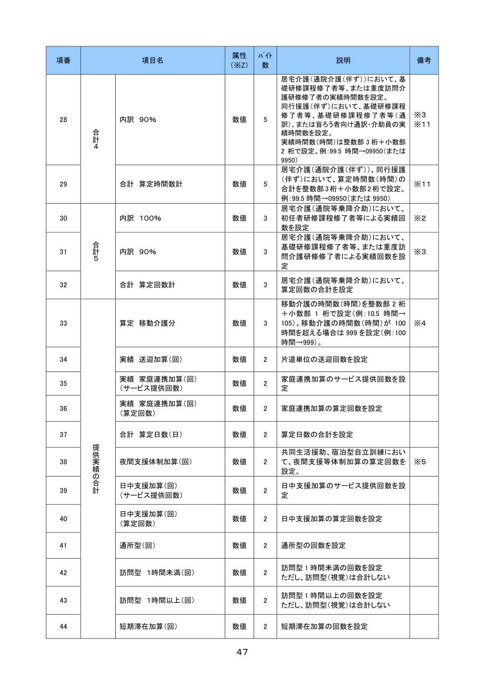
claude-haiku-5-5
- [改ページ] 前後ページで列見出しの書き起こしが一致しない
表1 record_layout 前頁から続く次頁へ続く
| 項番 | 項目名 | 属性 | 桁数 | 内容 | 必須 | 備考 |
|---|---|---|---|---|---|---|
| 28 | 合計4 > 内訳 90% | 数値 | 5 | 居宅介護(通院介護(伴ず))において、基礎研修課程修了者等、または重度訪問介護研修修了者の実績時間数を設定。 同行援護(伴ず)において、基礎研修課程修了者等、基礎研修課程修了者等(通訳)、または盲ろう者向け通訳・介助員の実績時間数を設定。 実績時間数(時間)は整数部3桁+小数部2桁で設定。例:99.5時間→09950(または9950) | ※3 ※11 | |
| 29 | 合計4 > 合計 算定時間数計 | 数値 | 5 | 居宅介護(通院介護(伴ず))、同行援護(伴ず)において、算定時間数(時間)の合計を整数部3桁+小数部2桁で設定。例:99.5時間→09950(または9950) | ※11 | |
| 30 | 合計5 > 内訳 100% | 数値 | 3 | 居宅介護(通院等乗降介助)において、初任者研修課程修了者等による実績回数を設定 | ※2 | |
| 31 | 合計5 > 内訳 90% | 数値 | 3 | 居宅介護(通院等乗降介助)において、基礎研修課程修了者等、または重度訪問介護研修修了者による実績回数を設定 | ※3 | |
| 32 | 合計5 > 合計 算定回数計 | 数値 | 3 | 居宅介護(通院等乗降介助)において、算定回数の合計を設定 | ||
| 33 | 提供実績の合計 > 算定 移動介護分 | 数値 | 3 | 移動介護の時間数(時間)を整数部2桁+小数部1桁で設定(例:10.5時間→105)。移動介護の時間数(時間)が100時間を超える場合は999を設定(例:100時間→999)。 | ※4 | |
| 34 | 提供実績の合計 > 実績 送迎加算(回) | 数値 | 2 | 片道単位の送迎回数を設定 | ||
| 35 | 提供実績の合計 > 実績 家庭連携加算(回)(サービス提供回数) | 数値 | 2 | 家庭連携加算のサービス提供回数を設定 | ||
| 36 | 提供実績の合計 > 実績 家庭連携加算(回)(算定回数) | 数値 | 2 | 家庭連携加算の算定回数を設定 | ||
| 37 | 提供実績の合計 > 合計 算定日数(日) | 数値 | 2 | 算定日数の合計を設定 | ||
| 38 | 提供実績の合計 > 夜間支援体制加算(回) | 数値 | 2 | 共同生活援助、宿泊型自立訓練において、夜間支援等体制加算の算定回数を設定。 | ※5 | |
| 39 | 提供実績の合計 > 日中支援加算(回)(サービス提供回数) | 数値 | 2 | 日中支援加算のサービス提供回数を設定 | ||
| 40 | 提供実績の合計 > 日中支援加算(回)(算定回数) | 数値 | 2 | 日中支援加算の算定回数を設定 | ||
| 41 | 提供実績の合計 > 通所型(回) | 数値 | 2 | 通所型の回数を設定 | ||
| 42 | 提供実績の合計 > 訪問型 1時間未満(回) | 数値 | 2 | 訪問型1時間未満の回数を設定 ただし、訪問型(視覚)は合計しない | ||
| 43 | 提供実績の合計 > 訪問型 1時間以上(回) | 数値 | 2 | 訪問型1時間以上の回数を設定 ただし、訪問型(視覚)は合計しない | ||
| 44 | 提供実績の合計 > 短期滞在加算(回) | 数値 | 2 | 短期滞在加算の回数を設定 |
uncertain（モデル自己申告）
- ページ番号は画像上「47」と読めるが、依頼文のPDF上ページ62との対応は確認できない。
- 項目名の左列（合計4・合計5・提供実績の合計）は縦結合の範囲を画像から判断した。
- 項番28・31の「90%」の表記（全角・半角）は画像からは確定できない。
- 先頭行に表見出しがなく、前ページからの続きと判断したが、項目名の見出し行は本ページに含まれている。
claude-sonnet-5-5
- [改ページ] p62→p63 の連続性 OK
表1 record_layout 前頁から続く次頁へ続く
| 項番 | 項目名 | 属性 | 桁数 | 内容 | 必須 | 備考 |
|---|---|---|---|---|---|---|
| 28 | 合計4 > 内訳 90% | 数値 | 5 | 居宅介護(通院介護(伴ず))において、基礎研修課程修了者等、または重度訪問介護研修修了者の実績時間数を設定。 同行援護(伴ず)において、基礎研修課程修了者等、基礎研修課程修了者等(通訳)、または盲ろう者向け通訳・介助員の実績時間数を設定。 実績時間数(時間)は整数部3桁＋小数部2桁で設定。例:99.5 時間→09950(または 9950) | ※3 ※11 | |
| 29 | 合計4 > 合計 算定時間数計 | 数値 | 5 | 居宅介護(通院介護(伴ず))、同行援護(伴ず)において、算定時間数(時間)の合計を整数部3桁＋小数部2桁で設定。例:99.5 時間→09950(または 9950) | ※11 | |
| 30 | 合計5 > 内訳 100% | 数値 | 3 | 居宅介護(通院等乗降介助)において、初任者研修課程修了者等による実績回数を設定 | ※2 | |
| 31 | 合計5 > 内訳 90% | 数値 | 3 | 居宅介護(通院等乗降介助)において、基礎研修課程修了者等、または重度訪問介護研修修了者による実績回数を設定 | ※3 | |
| 32 | 合計5 > 合計 算定回数計 | 数値 | 3 | 居宅介護(通院等乗降介助)において、算定回数の合計を設定 | ||
| 33 | 提供実績の合計 > 算定 移動介護分 | 数値 | 3 | 移動介護の時間数(時間)を整数部2桁＋小数部1桁で設定(例:10.5 時間→105)。移動介護の時間数(時間)が 100 時間を超える場合は 999 を設定(例:100 時間→999)。 | ※4 | |
| 34 | 提供実績の合計 > 実績 送迎加算(回) | 数値 | 2 | 片道単位の送迎回数を設定 | ||
| 35 | 提供実績の合計 > 実績 家庭連携加算(回)(サービス提供回数) | 数値 | 2 | 家庭連携加算のサービス提供回数を設定 | ||
| 36 | 提供実績の合計 > 実績 家庭連携加算(回)(算定回数) | 数値 | 2 | 家庭連携加算の算定回数を設定 | ||
| 37 | 提供実績の合計 > 合計 算定日数(日) | 数値 | 2 | 算定日数の合計を設定 | ||
| 38 | 提供実績の合計 > 夜間支援体制加算(回) | 数値 | 2 | 共同生活援助、宿泊型自立訓練において、夜間支援等体制加算の算定回数を設定。 | ※5 | |
| 39 | 提供実績の合計 > 日中支援加算(回)(サービス提供回数) | 数値 | 2 | 日中支援加算のサービス提供回数を設定 | ||
| 40 | 提供実績の合計 > 日中支援加算(回)(算定回数) | 数値 | 2 | 日中支援加算の算定回数を設定 | ||
| 41 | 提供実績の合計 > 通所型(回) | 数値 | 2 | 通所型の回数を設定 | ||
| 42 | 提供実績の合計 > 訪問型 1時間未満(回) | 数値 | 2 | 訪問型1時間未満の回数を設定 ただし、訪問型(視覚)は合計しない | ||
| 43 | 提供実績の合計 > 訪問型 1時間以上(回) | 数値 | 2 | 訪問型1時間以上の回数を設定 ただし、訪問型(視覚)は合計しない | ||
| 44 | 提供実績の合計 > 短期滞在加算(回) | 数値 | 2 | 短期滞在加算の回数を設定 |
uncertain（モデル自己申告）
- 前ページからの続きの表（項番28から開始）
- 「合計4」「合計5」「提供実績の合計」は縦書きの結合セルとして name_path に入れた
shogai_jigyosho_r0710_p63 — 印字p.
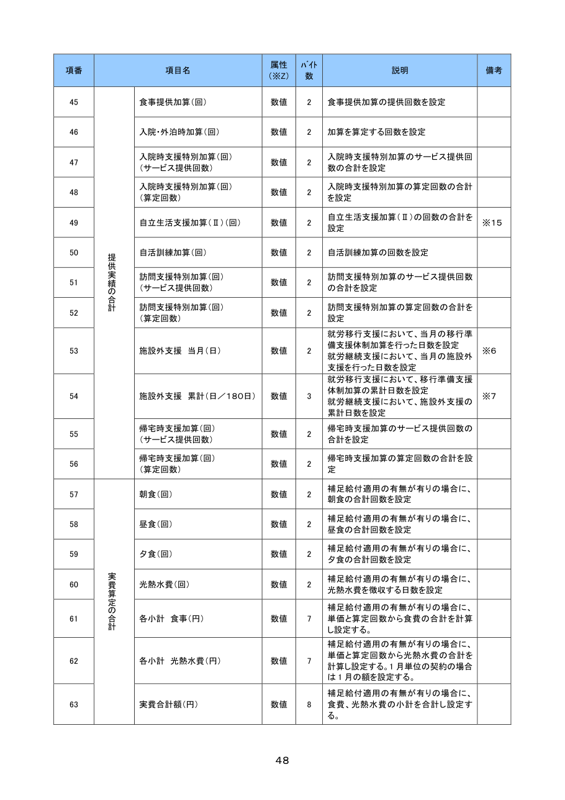
claude-haiku-5-5
- [改ページ] 前後ページで列見出しの書き起こしが一致しない
表1 record_layout 前頁から続く次頁へ続く
| 項番 | 項目名 | 属性 | 桁数 | 内容 | 必須 | 備考 |
|---|---|---|---|---|---|---|
| 45 | 提供実績の合計 > 食事提供加算(回) | 数値 | 2 | 食事提供加算の提供回数を設定 | ||
| 46 | 提供実績の合計 > 入院・外泊時加算(回) | 数値 | 2 | 加算を算定する回数を設定 | ||
| 47 | 提供実績の合計 > 入院時支援特別加算(回)(サービス提供回数) | 数値 | 2 | 入院時支援特別加算のサービス提供回数の合計を設定 | ||
| 48 | 提供実績の合計 > 入院時支援特別加算(回)(算定回数) | 数値 | 2 | 入院時支援特別加算の算定回数の合計を設定 | ||
| 49 | 提供実績の合計 > 自立生活支援加算(Ⅱ)(回) | 数値 | 2 | 自立生活支援加算(Ⅱ)の回数の合計を設定 | ※15 | |
| 50 | 提供実績の合計 > 自活訓練加算(回) | 数値 | 2 | 自活訓練加算の回数を設定 | ||
| 51 | 提供実績の合計 > 訪問支援特別加算(回)(サービス提供回数) | 数値 | 2 | 訪問支援特別加算のサービス提供回数の合計を設定 | ||
| 52 | 提供実績の合計 > 訪問支援特別加算(回)(算定回数) | 数値 | 2 | 訪問支援特別加算の算定回数の合計を設定 | ||
| 53 | 提供実績の合計 > 施設外支援 当月(日) | 数値 | 2 | 就労移行支援において、当月の移行準備支援体制加算を行った日数を設定 就労継続支援において、当月の施設外支援を行った日数を設定 | ※6 | |
| 54 | 提供実績の合計 > 施設外支援 累計(日／180日) | 数値 | 3 | 就労移行支援において、移行準備支援体制加算の累計日数を設定 就労継続支援において、施設外支援の累計日数を設定 | ※7 | |
| 55 | 提供実績の合計 > 帰宅時支援加算(回)(サービス提供回数) | 数値 | 2 | 帰宅時支援加算のサービス提供回数の合計を設定 | ||
| 56 | 提供実績の合計 > 帰宅時支援加算(回)(算定回数) | 数値 | 2 | 帰宅時支援加算の算定回数の合計を設定 | ||
| 57 | 実費算定の合計 > 朝食(回) | 数値 | 2 | 補足給付適用の有無が有りの場合に、朝食の合計回数を設定 | ||
| 58 | 実費算定の合計 > 昼食(回) | 数値 | 2 | 補足給付適用の有無が有りの場合に、昼食の合計回数を設定 | ||
| 59 | 実費算定の合計 > 夕食(回) | 数値 | 2 | 補足給付適用の有無が有りの場合に、夕食の合計回数を設定 | ||
| 60 | 実費算定の合計 > 光熱水費(回) | 数値 | 2 | 補足給付適用の有無が有りの場合に、光熱水費を徴収する日数を設定 | ||
| 61 | 実費算定の合計 > 各小計 食事(円) | 数値 | 7 | 補足給付適用の有無が有りの場合に、単価と算定回数から食費の合計を計算し設定する。 | ||
| 62 | 実費算定の合計 > 各小計 光熱水費(円) | 数値 | 7 | 補足給付適用の有無が有りの場合に、単価と算定回数から光熱水費の合計を計算し設定する。１月単位の契約の場合は１月の額を設定する。 | ||
| 63 | 実費算定の合計 > 実費合計額(円) | 数値 | 8 | 補足給付適用の有無が有りの場合に、食費、光熱水費の小計を合計し設定する。 |
uncertain（モデル自己申告）
- 依頼文は「次のページ」かつPDF上のページ63としているが、添付画像の印字ページ番号は48である。添付された1ページ（印字ページ48）のみを書き起こしたため、依頼と対象ページが一致しているか確認が必要。
- 表の見出しや上位の情報名・交換情報識別番号がこのページに見えないため、record は全項目 null とした。
- 項目名の大分類「提供実績の合計」「実費算定の合計」は縦結合セルの文字で、行の対応は画像の配置から判断した。
- 備考の※6・※7・※15に対応する注記本文はこのページに含まれていないため footnotes は空にした。
- 表の下端で罫線が閉じられており、次ページへ続くかどうかは画像からは判断できないため continues_to_next_page は false とした。
claude-sonnet-5-5
- [改ページ] p63→p64 の連続性 OK
表1 record_layout 前頁から続く次頁へ続く
| 項番 | 項目名 | 属性 | 桁数 | 内容 | 必須 | 備考 |
|---|---|---|---|---|---|---|
| 45 | 提供実績の合計 > 食事提供加算(回) | 数値 | 2 | 食事提供加算の提供回数を設定 | ||
| 46 | 提供実績の合計 > 入院・外泊時加算(回) | 数値 | 2 | 加算を算定する回数を設定 | ||
| 47 | 提供実績の合計 > 入院時支援特別加算(回)(サービス提供回数) | 数値 | 2 | 入院時支援特別加算のサービス提供回数の合計を設定 | ||
| 48 | 提供実績の合計 > 入院時支援特別加算(回)(算定回数) | 数値 | 2 | 入院時支援特別加算の算定回数の合計を設定 | ||
| 49 | 提供実績の合計 > 自立生活支援加算(Ⅱ)(回) | 数値 | 2 | 自立生活支援加算(Ⅱ)の回数の合計を設定 | ※15 | |
| 50 | 提供実績の合計 > 自活訓練加算(回) | 数値 | 2 | 自活訓練加算の回数を設定 | ||
| 51 | 提供実績の合計 > 訪問支援特別加算(回)(サービス提供回数) | 数値 | 2 | 訪問支援特別加算のサービス提供回数の合計を設定 | ||
| 52 | 提供実績の合計 > 訪問支援特別加算(回)(算定回数) | 数値 | 2 | 訪問支援特別加算の算定回数の合計を設定 | ||
| 53 | 提供実績の合計 > 施設外支援 当月(日) | 数値 | 2 | 就労移行支援において、当月の移行準備支援体制加算を行った日数を設定 就労継続支援において、当月の施設外支援を行った日数を設定 | ※6 | |
| 54 | 提供実績の合計 > 施設外支援 累計(日／180日) | 数値 | 3 | 就労移行支援において、移行準備支援体制加算の累計日数を設定 就労継続支援において、施設外支援の累計日数を設定 | ※7 | |
| 55 | 提供実績の合計 > 帰宅時支援加算(回)(サービス提供回数) | 数値 | 2 | 帰宅時支援加算のサービス提供回数の合計を設定 | ||
| 56 | 提供実績の合計 > 帰宅時支援加算(回)(算定回数) | 数値 | 2 | 帰宅時支援加算の算定回数の合計を設定 | ||
| 57 | 実費算定の合計 > 朝食(回) | 数値 | 2 | 補足給付適用の有無が有りの場合に、朝食の合計回数を設定 | ||
| 58 | 実費算定の合計 > 昼食(回) | 数値 | 2 | 補足給付適用の有無が有りの場合に、昼食の合計回数を設定 | ||
| 59 | 実費算定の合計 > 夕食(回) | 数値 | 2 | 補足給付適用の有無が有りの場合に、夕食の合計回数を設定 | ||
| 60 | 実費算定の合計 > 光熱水費(回) | 数値 | 2 | 補足給付適用の有無が有りの場合に、光熱水費を徴収する日数を設定 | ||
| 61 | 実費算定の合計 > 各小計 食事(円) | 数値 | 7 | 補足給付適用の有無が有りの場合に、単価と算定回数から食費の合計を計算し設定する。 | ||
| 62 | 実費算定の合計 > 各小計 光熱水費(円) | 数値 | 7 | 補足給付適用の有無が有りの場合に、単価と算定回数から光熱水費の合計を計算し設定する。1月単位の契約の場合は1月の額を設定する。 | ||
| 63 | 実費算定の合計 > 実費合計額(円) | 数値 | 8 | 補足給付適用の有無が有りの場合に、食費、光熱水費の小計を合計し設定する。 |
uncertain（モデル自己申告）
- 前ページから続く表で、見出し行のみ繰り返されている。
- 項目名の縦結合グループ見出し「提供実績の合計」「実費算定の合計」は縦書き。項番45〜56、57〜63に適用と判断。
- 47等の項目名は2行表記を詰めて記載。
shogai_jigyosho_r0710_p64 — 印字p.
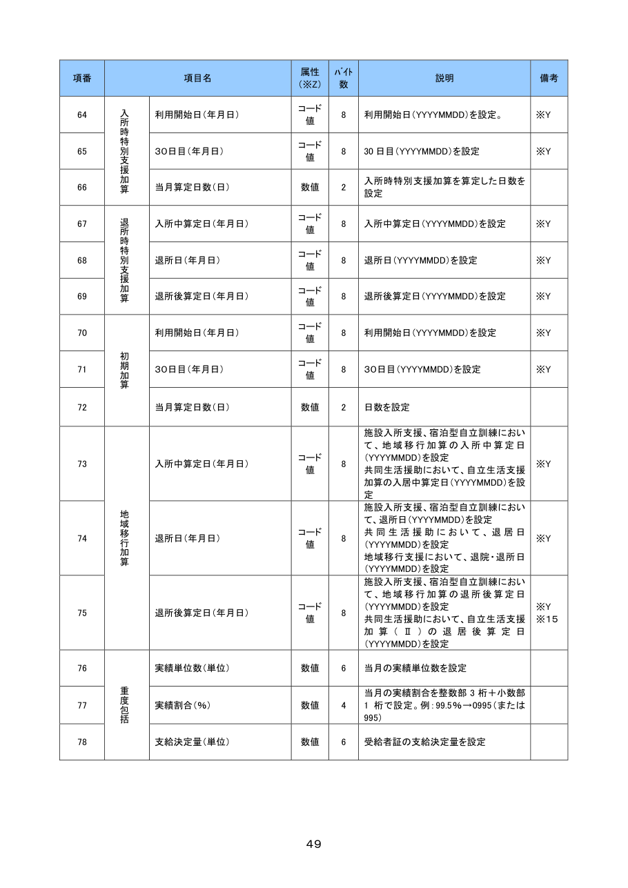
claude-haiku-5-5
- [改ページ] p64→p65 の連続性 OK
- テキストレイヤに見つからないセル: 3 個（赤枠）
表1 record_layout 前頁から続く次頁へ続く
| 項番 | 項目名 | 属性 | 桁数 | 内容 | 必須 | 備考 |
|---|---|---|---|---|---|---|
| 64 | 入所時特別支援加算 > 利用開始日（年月日） | コード値 | 8 | 利用開始日(YYYYMMDD)を設定。 | ※Y | |
| 65 | 入所時特別支援加算 > 3O日目（年月日） | コード値 | 8 | 30 日目(YYYYMMDD)を設定 | ※Y | |
| 66 | 入所時特別支援加算 > 当月算定日数（日） | 数値 | 2 | 入所時特別支援加算を算定した日数を設定 | ||
| 67 | 退所時特別支援加算 > 入所中算定日（年月日） | コード値 | 8 | 入所中算定日(YYYYMMDD)を設定 | ※Y | |
| 68 | 退所時特別支援加算 > 退所日（年月日） | コード値 | 8 | 退所日(YYYYMMDD)を設定 | ※Y | |
| 69 | 退所時特別支援加算 > 退所後算定日（年月日） | コード値 | 8 | 退所後算定日(YYYYMMDD)を設定 | ※Y | |
| 70 | 初期加算 > 利用開始日（年月日） | コード値 | 8 | 利用開始日(YYYYMMDD)を設定 | ※Y | |
| 71 | 初期加算 > 3O日目（年月日） | コード値 | 8 | 3O日目(YYYYMMDD)を設定 | ※Y | |
| 72 | 初期加算 > 当月算定日数（日） | 数値 | 2 | 日数を設定 | ||
| 73 | 地域移行加算 > 入所中算定日（年月日） | コード値 | 8 | 施設入所支援、宿泊型自立訓練において、地域移行加算の入所中算定日(YYYYMMDD)を設定 共同生活援助において、自立生活支援加算の入居中算定日(YYYYMMDD)を設定 | ※Y | |
| 74 | 地域移行加算 > 退所日（年月日） | コード値 | 8 | 施設入所支援、宿泊型自立訓練において、退所日(YYYYMMDD)を設定 共同生活援助において、退居日(YYYYMMDD)を設定 地域移行支援において、退院・退所日(YYYYMMDD)を設定 | ※Y | |
| 75 | 地域移行加算 > 退所後算定日（年月日） | コード値 | 8 | 施設入所支援、宿泊型自立訓練において、地域移行加算の退所後算定日(YYYYMMDD)を設定 共同生活援助において、自立生活支援加算（Ⅱ）の退居後算定日(YYYYMMDD)を設定 | ※Y ※15 | |
| 76 | 重度包括 > 実績単位数（単位） | 数値 | 6 | 当月の実績単位数を設定 | ||
| 77 | 重度包括 > 実績割合（%） | 数値 | 4 | 当月の実績割合を整数部 3 桁＋小数部 1 桁で設定。例:99.5%→0995(または995) | ||
| 78 | 重度包括 > 支給決定量（単位） | 数値 | 6 | 受給者証の支給決定量を設定 |
uncertain（モデル自己申告）
- 依頼文は「次のページ」の書き起こしとあるが、添付は PDF 上のページ 64（印字ページ 49）の1枚のみのため、この添付ページの表を書き起こした。
- 項番65・71の「3O日目」の「O」が英字の O か数字の 0 か判別しにくい。原文どおり「3O」と書いた。
- 表の上に見出し・表題が見えないため title は null とした。項目名列は多段見出しではなく単一の「項目名」見出しの下に群名（入所時特別支援加算など）と項目名が並ぶため、群名を name_path に入れた。
claude-sonnet-5-5
- [改ページ] p64→p65 の連続性 OK
表1 record_layout 前頁から続く次頁へ続く
| 項番 | 項目名 | 属性 | 桁数 | 内容 | 必須 | 備考 |
|---|---|---|---|---|---|---|
| 64 | 入所時特別支援加算 > 利用開始日(年月日) | コード値 | 8 | 利用開始日(YYYYMMDD)を設定。 | ※Y | |
| 65 | 入所時特別支援加算 > 30日目(年月日) | コード値 | 8 | 30 日目(YYYYMMDD)を設定 | ※Y | |
| 66 | 入所時特別支援加算 > 当月算定日数(日) | 数値 | 2 | 入所時特別支援加算を算定した日数を設定 | ||
| 67 | 退所時特別支援加算 > 入所中算定日(年月日) | コード値 | 8 | 入所中算定日(YYYYMMDD)を設定 | ※Y | |
| 68 | 退所時特別支援加算 > 退所日(年月日) | コード値 | 8 | 退所日(YYYYMMDD)を設定 | ※Y | |
| 69 | 退所時特別支援加算 > 退所後算定日(年月日) | コード値 | 8 | 退所後算定日(YYYYMMDD)を設定 | ※Y | |
| 70 | 初期加算 > 利用開始日(年月日) | コード値 | 8 | 利用開始日(YYYYMMDD)を設定 | ※Y | |
| 71 | 初期加算 > 30日目(年月日) | コード値 | 8 | 30日目(YYYYMMDD)を設定 | ※Y | |
| 72 | 初期加算 > 当月算定日数(日) | 数値 | 2 | 日数を設定 | ||
| 73 | 地域移行加算 > 入所中算定日(年月日) | コード値 | 8 | 施設入所支援、宿泊型自立訓練において、地域移行加算の入所中算定日(YYYYMMDD)を設定 共同生活援助において、自立生活支援加算の入居中算定日(YYYYMMDD)を設定 | ※Y | |
| 74 | 地域移行加算 > 退所日(年月日) | コード値 | 8 | 施設入所支援、宿泊型自立訓練において、退所日(YYYYMMDD)を設定 共同生活援助において、退居日(YYYYMMDD)を設定 地域移行支援において、退院・退所日(YYYYMMDD)を設定 | ※Y | |
| 75 | 地域移行加算 > 退所後算定日(年月日) | コード値 | 8 | 施設入所支援、宿泊型自立訓練において、地域移行加算の退所後算定日(YYYYMMDD)を設定 共同生活援助において、自立生活支援加算(Ⅱ)の退居後算定日(YYYYMMDD)を設定 | ※Y ※15 | |
| 76 | 重度包括 > 実績単位数(単位) | 数値 | 6 | 当月の実績単位数を設定 | ||
| 77 | 重度包括 > 実績割合(%) | 数値 | 4 | 当月の実績割合を整数部 3 桁＋小数部 1 桁で設定。例: 99.5%→0995(または995) | ||
| 78 | 重度包括 > 支給決定量(単位) | 数値 | 6 | 受給者証の支給決定量を設定 |
uncertain（モデル自己申告）
- 項番64-78は前ページから続く表で、見出し行のみ繰り返し。レコード名は不明
- 項番73-75の説明セルは折り返しの詰め方を推測
- 項番72の「初期加算」と項番73-75の「地域移行加算」の縦結合範囲は画像から判断
shogai_jigyosho_r0710_p72 — 印字p.

claude-haiku-5-5
- [改ページ] p72→p73 の連続性 OK
- テキストレイヤに見つからないセル: 1 個（赤枠）
表1 record_layout(3)明細情報レコード 次頁へ続く
| 項番 | 項目名 | 属性 | 桁数 | 内容 | 必須 | 備考 |
|---|---|---|---|---|---|---|
| 1 | 交換情報識別番号 | 英数 | 4 | 当情報の内容を識別するための番号 | ※B | |
| 2 | レコード種別コード | コード値 | 2 | 02を設定する（明細情報レコード） | ||
| 3 | サービス提供年月 | コード値 | 6 | サービスを提供した年月（西暦年月 YYYYMM を設定する） | ※Y | |
| 4 | 市町村番号 | コード値 | 6 | 受給者証に記載された市町村番号（チェックデジット1桁含む） | ※C | |
| 5 | 事業所番号 | 英数 | 10 | サービスを提供した事業所番号 | ※C | |
| 6 | 受給者証番号 | 英数 | 10 | 受給者証に記載されている受給者証番号 | ※C | |
| 7 | 様式種別番号 | コード値 | 4 | 様式番号2桁、枝番2桁を設定 様式3－1の場合、0301を設定 | ※1 | |
| 8 | 提供通番 | 数値 | 3 | 居宅介護、重度訪問介護、同行援護、行動援護、共同生活援助（受託居宅介護サービス費）において、複数の明細情報レコード（サービス提供時間）が一連のサービス提供であることを識別するための番号。 | ※2 | |
| 9 | 日付 | コード値 | 2 | 日を設定（短期入所の場合、サービス提供を行った全ての日を設定する） | ||
| 10 | サービス提供回数 | 数値 | 2 | サービス提供回数を設定 | ※3 | |
| 11 | サービス内容 | 英数 | 6 | 居宅介護、同行援護、および重度包括のサービス種別を判定する為に、決定コード6桁を設定 | ※6 | |
| 12 | ヘルパー資格 | コード値 | 2 | 資格要件対象のサービスのみ設定 居宅介護（11:初任者等 12:基礎等 13:重訪） 同行援護（11:初任者等 12:基礎等 15:初任者等（通訳） 16:基礎等（通訳） 17:通訳） 行動援護（21:初任者等 22:減算） | ※7 ※10 ※19 ※20 | |
| 13 | 運転フラグ | コード値 | 1 | 運転を表す場合1を設定。 | ||
| 14 | 開始時間 | 数値 | 4 | 開始時間を数字4桁で設定 例)10:00→1000 | ||
| 15 | 終了時間 | 数値 | 4 | 終了時間を数字4桁で設定 例)11:00→1100 | ||
| 16 | 算定時間数 | 数値 | 4 | 居宅介護、重度訪問介護、行動援護、重度包括、同行援護、共同生活援助（受託居宅介護サービス費）、生活介護において、算定時間数(時間)を設定（整数部2桁＋小数部2桁を設定、例:10.5時間→1050） | ※3O | |
| 17 | 乗降(回数) | 数値 | 2 | 乗降介助の回数を設定 | ||
| 18 | 移動 | 数値 | 2 | 重度訪問介護の移動に係る算定時間数(時間)を整数部1桁＋小数部1桁で設定(例:3時間→30)。 | ※11 | |
| 19 | 派遣人数 | 数値 | 1 | 通常は‘1’を設定。同一時間に2人ヘルパーでサービス提供を行った場合‘2’を設定。 |
uncertain（モデル自己申告）
- 添付ページの下部ページ番号は「51」で、依頼文のPDF上のページ72と一致しない。添付の1ページ（(3)明細情報レコード）のみを書き起こした。
- 表は項番19で終わっているが、項番20以降が次ページに続く可能性があるため continues_to_next_page を true にした（前後ページは未確認）。
- 項番16の備考「※3O」の末尾が数字の0か英字のOか判然としないため、原文どおり「※3O」と書いた。
- レコードの交換情報識別番号・親情報名は本ページから読み取れないため null とした。
- 注記（※1、※2、※3、※6、※7、※10、※11、※19、※20、※B、※C、※Y）の本文はこのページにないため footnotes は空にした。
claude-sonnet-5-5
- [改ページ] p72→p73 の連続性 OK
表1 record_layout（３）明細情報レコード 次頁へ続く
| 項番 | 項目名 | 属性 | 桁数 | 内容 | 必須 | 備考 |
|---|---|---|---|---|---|---|
| 1 | 交換情報識別番号 | 英数 | 4 | 当情報の内容を識別するための番号 | ※B | |
| 2 | レコード種別コード | コード値 | 2 | 02 を設定する(明細情報レコード) | ||
| 3 | サービス提供年月 | コード値 | 6 | サービスを提供した年月(西暦年月 YYYYMM を設定する) | ※Y | |
| 4 | 市町村番号 | コード値 | 6 | 受給者証に記載された市町村番号(ﾁｪｯｸﾃﾞｼﾞｯﾄ 1 桁含む) | ※C | |
| 5 | 事業所番号 | 英数 | 10 | サービスを提供した事業所番号 | ※C | |
| 6 | 受給者証番号 | 英数 | 10 | 受給者証に記載されている受給者証番号 | ※C | |
| 7 | 様式種別番号 | コード値 | 4 | 様式番号 2 桁、枝番 2 桁を設定 様式3－1の場合、0301 を設定 | ※1 | |
| 8 | 提供通番 | 数値 | 3 | 居宅介護、重度訪問介護、同行援護、行動援護、共同生活援助(受託居宅介護サービス費)において、複数の明細情報レコード(サービス提供時間)が一連のサービス提供であることを識別するための番号。 | ※2 | |
| 9 | 日付 | コード値 | 2 | 日を設定(短期入所の場合、サービス提供を行った全ての日を設定する) | ||
| 10 | サービス提供回数 | 数値 | 2 | サービス提供回数を設定 | ※3 | |
| 11 | サービス内容 | 英数 | 6 | 居宅介護、同行援護、および重度包括のサービス種別を判定する為に、決定コード 6 桁を設定 | ※6 | |
| 12 | ヘルパー資格 | コード値 | 2 | 資格要件対象のサービスのみ設定 居宅介護(11:初任者等 12:基礎等 13:重訪) 同行援護(11:初任者等 12:基礎等 15:初任者等(通訳) 16:基礎等(通訳) 17:通訳) 行動援護(21:初任者等 22:減算) | ※7 ※10 ※19 ※20 | |
| 13 | 運転フラグ | コード値 | 1 | 運転を表す場合 1 を設定。 | ||
| 14 | 開始時間 | 数値 | 4 | 開始時間を数字 4 桁で設定 例)10:00→1000 | ||
| 15 | 終了時間 | 数値 | 4 | 終了時間を数字 4 桁で設定 例)11:00→1100 | ||
| 16 | 算定時間数 | 数値 | 4 | 居宅介護、重度訪問介護、行動援護、重度包括、同行援護、共同生活援助(受託居宅介護サービス費)、生活介護において、算定時間数(時間)を設定(整数部 2 桁＋小数部 2 桁を設定、例:10.5 時間→1050) | ※30 | |
| 17 | 乗降(回数) | 数値 | 2 | 乗降介助の回数を設定 | ||
| 18 | 移動 | 数値 | 2 | 重度訪問介護の移動に係る算定時間数(時間)を整数部 1 桁＋小数部 1 桁で設定(例:3 時間→30)。 | ※11 | |
| 19 | 派遣人数 | 数値 | 1 | 通常は ‘1’ を設定。同一時間に 2 人ヘルパーでサービス提供を行った場合 ‘2’ を設定。 |
uncertain（モデル自己申告）
- 項目7の項目名は画像上「様式種別番号」と読み取ったが確実ではない
- 項番12の備考「※7 ※10 ※19 ※20」は縦に並んで記載されていた
- 項番16の説明中の算定時間数の記述は折り返しを詰めて書き起こした
shogai_jigyosho_r0710_p77 — 印字p.
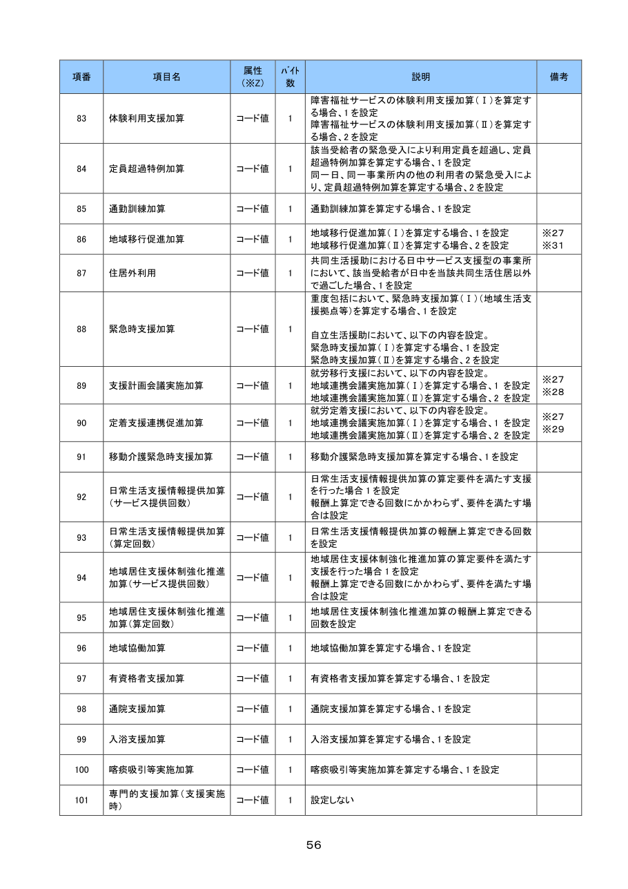
claude-haiku-5-5
- [改ページ] p77→p78 の連続性 OK
表1 record_layout 前頁から続く次頁へ続く
| 項番 | 項目名 | 属性 | 桁数 | 内容 | 必須 | 備考 |
|---|---|---|---|---|---|---|
| 83 | 体験利用支援加算 | コード値 | 1 | 障害福祉サービスの体験利用支援加算（Ⅰ）を算定する場合、1を設定 障害福祉サービスの体験利用支援加算（Ⅱ）を算定する場合、2を設定 | ||
| 84 | 定員超過特例加算 | コード値 | 1 | 該当受給者の緊急受入により利用定員を超過し、定員超過特例加算を算定する場合、1を設定 同一日、同一事業所内の他の利用者の緊急受入により、定員超過特例加算を算定する場合、2を設定 | ||
| 85 | 通勤訓練加算 | コード値 | 1 | 通勤訓練加算を算定する場合、1を設定 | ||
| 86 | 地域移行促進加算 | コード値 | 1 | 地域移行促進加算（Ⅰ）を算定する場合、1を設定 地域移行促進加算（Ⅱ）を算定する場合、2を設定 | ※27 ※31 | |
| 87 | 住居外利用 | コード値 | 1 | 共同生活援助における日中サービス支援型の事業所において、該当受給者が日中を当該共同生活住居以外で過ごした場合、1を設定 | ||
| 88 | 緊急時支援加算 | コード値 | 1 | 重度包括において、緊急時支援加算（Ⅰ）（地域生活支援拠点等）を算定する場合、1を設定 自立生活援助において、以下の内容を設定。 緊急時支援加算（Ⅰ）を算定する場合、1を設定 緊急時支援加算（Ⅱ）を算定する場合、2を設定 | ||
| 89 | 支援計画会議実施加算 | コード値 | 1 | 就労移行支援において、以下の内容を設定。 地域連携会議実施加算（Ⅰ）を算定する場合、1 を設定 地域連携会議実施加算（Ⅱ）を算定する場合、2 を設定 | ※27 ※28 | |
| 90 | 定着支援連携促進加算 | コード値 | 1 | 就労定着支援において、以下の内容を設定。 地域連携会議実施加算（Ⅰ）を算定する場合、1 を設定 地域連携会議実施加算（Ⅱ）を算定する場合、2 を設定 | ※27 ※29 | |
| 91 | 移動介護緊急時支援加算 | コード値 | 1 | 移動介護緊急時支援加算を算定する場合、1を設定 | ||
| 92 | 日常生活支援情報提供加算（サービス提供回数） | コード値 | 1 | 日常生活支援情報提供加算の算定要件を満たす支援を行った場合 1を設定 報酬上算定できる回数にかかわらず、要件を満たす場合は設定 | ||
| 93 | 日常生活支援情報提供加算（算定回数） | コード値 | 1 | 日常生活支援情報提供加算の報酬上算定できる回数を設定 | ||
| 94 | 地域居住支援体制強化推進加算（サービス提供回数） | コード値 | 1 | 地域居住支援体制強化推進加算の算定要件を満たす支援を行った場合 1を設定 報酬上算定できる回数にかかわらず、要件を満たす場合は設定 | ||
| 95 | 地域居住支援体制強化推進加算（算定回数） | コード値 | 1 | 地域居住支援体制強化推進加算の報酬上算定できる回数を設定 | ||
| 96 | 地域協働加算 | コード値 | 1 | 地域協働加算を算定する場合、1を設定 | ||
| 97 | 有資格者支援加算 | コード値 | 1 | 有資格者支援加算を算定する場合、1を設定 | ||
| 98 | 通院支援加算 | コード値 | 1 | 通院支援加算を算定する場合、1を設定 | ||
| 99 | 入浴支援加算 | コード値 | 1 | 入浴支援加算を算定する場合、1を設定 | ||
| 100 | 喀痰吸引等実施加算 | コード値 | 1 | 喀痰吸引等実施加算を算定する場合、1を設定 | ||
| 101 | 専門的支援加算（支援実施時） | コード値 | 1 | 設定しない |
uncertain（モデル自己申告）
- 表は項番83から始まり、見出し行が印字されているため前ページからの続きと判断した（見出しの繰り返しと項番の開始位置による）。前ページの内容は含めていない。
- 表は項番101の下で終わっているが、次ページへ続く可能性がある。
- 項番88・89・90の説明文の（Ⅰ）（Ⅱ）はローマ数字として書き写した。原文の字形が判別しにくい可能性がある。
- 項番89・90の説明文の「1 を設定」「2 を設定」の空白は画像の見た目どおりに書いた。
claude-sonnet-5-5
- [改ページ] p77→p78 の連続性 OK
- テキストレイヤに見つからないセル: 1 個（赤枠）
表1 record_layout 前頁から続く次頁へ続く
| 項番 | 項目名 | 属性 | 桁数 | 内容 | 必須 | 備考 |
|---|---|---|---|---|---|---|
| 83 | 体験利用支援加算 | コード値 | 1 | 障害福祉サービスの体験利用支援加算(Ⅰ)を算定する場合、1を設定 障害福祉サービスの体験利用支援加算(Ⅱ)を算定する場合、2を設定 | ||
| 84 | 定員超過特例加算 | コード値 | 1 | 該当受給者の緊急受入により利用定員を超過し、定員超過特例加算を算定する場合、1を設定 同一日、同一事業所内の他の利用者の緊急受入により、定員超過特例加算を算定する場合、2を設定 | ||
| 85 | 通勤訓練加算 | コード値 | 1 | 通勤訓練加算を算定する場合、1を設定 | ||
| 86 | 地域移行促進加算 | コード値 | 1 | 地域移行促進加算(Ⅰ)を算定する場合、1を設定 地域移行促進加算(Ⅱ)を算定する場合、2を設定 | ※27 ※31 | |
| 87 | 住居外利用 | コード値 | 1 | 共同生活援助における日中サービス支援型の事業所において、該当受給者が日中を当該共同生活住居以外で過ごした場合、1を設定 | ||
| 88 | 緊急時支援加算 | コード値 | 1 | 重度包括において、緊急時支援加算(Ⅰ)(地域生活支援拠点等)を算定する場合、1を設定 自立生活援助において、以下の内容を設定。 緊急時支援加算(Ⅰ)を算定する場合、1を設定 緊急時支援加算(Ⅱ)を算定する場合、2を設定 | ||
| 89 | 支援計画会議実施加算 | コード値 | 1 | 就労移行支援において、以下の内容を設定。 地域連携会議実施加算(Ⅰ)を算定する場合、1を設定 地域連携会議実施加算(Ⅱ)を算定する場合、2を設定 | ※27 ※28 | |
| 90 | 定着支援連携促進加算 | コード値 | 1 | 就労定着支援において、以下の内容を設定。 地域連携会議実施加算(Ⅰ)を算定する場合、1を設定 地域連携会議実施加算(Ⅱ)を算定する場合、2を設定 | ※27 ※29 | |
| 91 | 移動介護緊急時支援加算 | コード値 | 1 | 移動介護緊急時支援加算を算定する場合、1を設定 | ||
| 92 | 日常生活支援情報提供加算(サービス提供回数) | コード値 | 1 | 日常生活支援情報提供加算の算定要件を満たす支援を行った場合1を設定 報酬上算定できる回数にかかわらず、要件を満たす場合は設定 | ||
| 93 | 日常生活支援情報提供加算(算定回数) | コード値 | 1 | 日常生活支援情報提供加算の報酬上算定できる回数を設定 | ||
| 94 | 地域居住支援体制強化推進加算(サービス提供回数) | コード値 | 1 | 地域居住支援体制強化推進加算の算定要件を満たす支援を行った場合1を設定 報酬上算定できる回数にかかわらず、要件を満たす場合は設定 | ||
| 95 | 地域居住支援体制強化推進加算(算定回数) | コード値 | 1 | 地域居住支援体制強化推進加算の報酬上算定できる回数を設定 | ||
| 96 | 地域協働加算 | コード値 | 1 | 地域協働加算を算定する場合、1を設定 | ||
| 97 | 有資格者支援加算 | コード値 | 1 | 有資格者支援加算を算定する場合、1を設定 | ||
| 98 | 通院支援加算 | コード値 | 1 | 通院支援加算を算定する場合、1を設定 | ||
| 99 | 入浴支援加算 | コード値 | 1 | 入浴支援加算を算定する場合、1を設定 | ||
| 100 | 喀痰吸引実施加算 | コード値 | 1 | 喀痰吸引等実施加算を算定する場合、1を設定 | ||
| 101 | 専門的支援加算(支援実施時) | コード値 | 1 | 設定しない |
uncertain（モデル自己申告）
- 前ページからの続きの表（見出し行は繰り返し）。項番83の説明は『障害福祉サービス』と書いたが原文は『障害福祉サービス』の表記を画像で確認、項番84の『該当受給者』は原文『該当受給者』と読んだが画像では『該当受給者』の表記に自信が低い
- 項番86、89、90の備考の※は注記の参照であり、このページに注記本文はない
- 備考列は項番86・89・90以外は空欄
- 項番88の説明の空行は原文の改行位置を反映
shogai_jigyosho_r0710_p82 — 印字p.
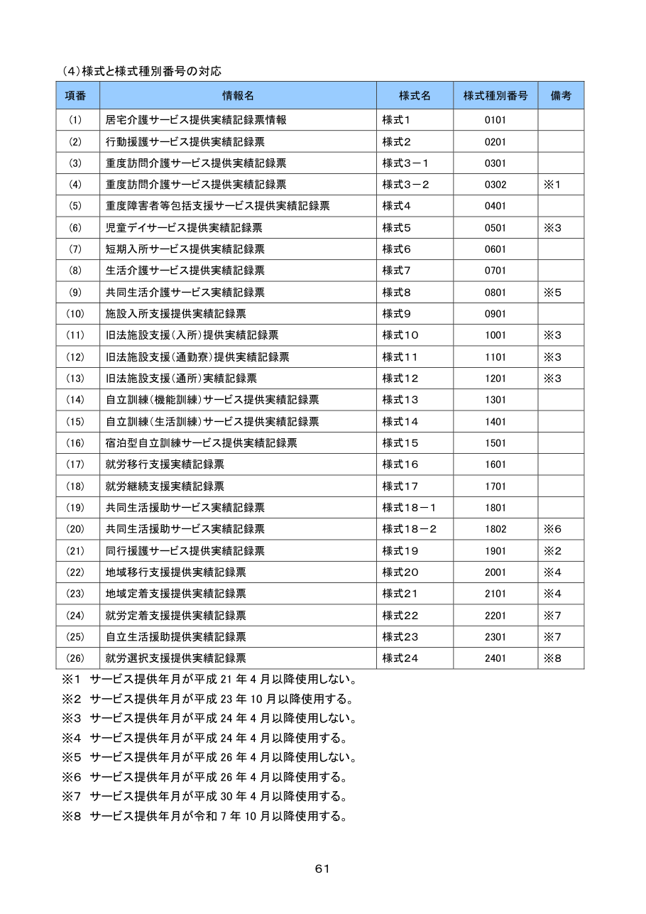
claude-haiku-5-5
- 表1 項番1 必須（様式名）の値が想定外: '様式1'
- 表1 項番1 必須（様式種別番号）の値が想定外: '0101'
- 表1 項番2 必須（様式名）の値が想定外: '様式2'
- 表1 項番2 必須（様式種別番号）の値が想定外: '0201'
- 表1 項番3 必須（様式名）の値が想定外: '様式3－1'
- 表1 項番3 必須（様式種別番号）の値が想定外: '0301'
- 表1 項番4 必須（様式名）の値が想定外: '様式3－2'
- 表1 項番4 必須（様式種別番号）の値が想定外: '0302'
- 表1 項番5 必須（様式名）の値が想定外: '様式4'
- 表1 項番5 必須（様式種別番号）の値が想定外: '0401'
- 表1 項番6 必須（様式名）の値が想定外: '様式5'
- 表1 項番6 必須（様式種別番号）の値が想定外: '0501'
- 表1 項番7 必須（様式名）の値が想定外: '様式6'
- 表1 項番7 必須（様式種別番号）の値が想定外: '0601'
- 表1 項番8 必須（様式名）の値が想定外: '様式7'
- 表1 項番8 必須（様式種別番号）の値が想定外: '0701'
- 表1 項番9 必須（様式名）の値が想定外: '様式8'
- 表1 項番9 必須（様式種別番号）の値が想定外: '0801'
- 表1 項番10 必須（様式名）の値が想定外: '様式9'
- 表1 項番10 必須（様式種別番号）の値が想定外: '0901'
- 表1 項番11 必須（様式名）の値が想定外: '様式10'
- 表1 項番11 必須（様式種別番号）の値が想定外: '1001'
- 表1 項番12 必須（様式名）の値が想定外: '様式11'
- 表1 項番12 必須（様式種別番号）の値が想定外: '1101'
- 表1 項番13 必須（様式名）の値が想定外: '様式12'
- 表1 項番13 必須（様式種別番号）の値が想定外: '1201'
- 表1 項番14 必須（様式名）の値が想定外: '様式13'
- 表1 項番14 必須（様式種別番号）の値が想定外: '1301'
- 表1 項番15 必須（様式名）の値が想定外: '様式14'
- 表1 項番15 必須（様式種別番号）の値が想定外: '1401'
- 表1 項番16 必須（様式名）の値が想定外: '様式15'
- 表1 項番16 必須（様式種別番号）の値が想定外: '1501'
- 表1 項番17 必須（様式名）の値が想定外: '様式16'
- 表1 項番17 必須（様式種別番号）の値が想定外: '1601'
- 表1 項番18 必須（様式名）の値が想定外: '様式17'
- 表1 項番18 必須（様式種別番号）の値が想定外: '1701'
- 表1 項番19 必須（様式名）の値が想定外: '様式18－1'
- 表1 項番19 必須（様式種別番号）の値が想定外: '1801'
- 表1 項番20 必須（様式名）の値が想定外: '様式18－2'
- 表1 項番20 必須（様式種別番号）の値が想定外: '1802'
- 表1 項番21 必須（様式名）の値が想定外: '様式19'
- 表1 項番21 必須（様式種別番号）の値が想定外: '1901'
- 表1 項番22 必須（様式名）の値が想定外: '様式20'
- 表1 項番22 必須（様式種別番号）の値が想定外: '2001'
- 表1 項番23 必須（様式名）の値が想定外: '様式21'
- 表1 項番23 必須（様式種別番号）の値が想定外: '2101'
- 表1 項番24 必須（様式名）の値が想定外: '様式22'
- 表1 項番24 必須（様式種別番号）の値が想定外: '2201'
- 表1 項番25 必須（様式名）の値が想定外: '様式23'
- 表1 項番25 必須（様式種別番号）の値が想定外: '2301'
- 表1 項番26 必須（様式名）の値が想定外: '様式24'
- 表1 項番26 必須（様式種別番号）の値が想定外: '2401'
表1 other(4)様式と様式種別番号の対応
| 項番 | 項目名 | 属性 | 桁数 | 内容 | 必須 | 備考 |
|---|---|---|---|---|---|---|
| (1) | 居宅介護サービス提供実績記録票情報 | 様式名:様式1 様式種別番号:0101 | ||||
| (2) | 行動援護サービス提供実績記録票 | 様式名:様式2 様式種別番号:0201 | ||||
| (3) | 重度訪問介護サービス提供実績記録票 | 様式名:様式3－1 様式種別番号:0301 | ||||
| (4) | 重度訪問介護サービス提供実績記録票 | 様式名:様式3－2 様式種別番号:0302 | ※1 | |||
| (5) | 重度障害者等包括支援サービス提供実績記録票 | 様式名:様式4 様式種別番号:0401 | ||||
| (6) | 児童デイサービス提供実績記録票 | 様式名:様式5 様式種別番号:0501 | ※3 | |||
| (7) | 短期入所サービス提供実績記録票 | 様式名:様式6 様式種別番号:0601 | ||||
| (8) | 生活介護サービス提供実績記録票 | 様式名:様式7 様式種別番号:0701 | ||||
| (9) | 共同生活介護サービス実績記録票 | 様式名:様式8 様式種別番号:0801 | ※5 | |||
| (10) | 施設入所支援提供実績記録票 | 様式名:様式9 様式種別番号:0901 | ||||
| (11) | 旧法施設支援(入所)提供実績記録票 | 様式名:様式10 様式種別番号:1001 | ※3 | |||
| (12) | 旧法施設支援(通勤寮)提供実績記録票 | 様式名:様式11 様式種別番号:1101 | ※3 | |||
| (13) | 旧法施設支援(通所)実績記録票 | 様式名:様式12 様式種別番号:1201 | ※3 | |||
| (14) | 自立訓練(機能訓練)サービス提供実績記録票 | 様式名:様式13 様式種別番号:1301 | ||||
| (15) | 自立訓練(生活訓練)サービス提供実績記録票 | 様式名:様式14 様式種別番号:1401 | ||||
| (16) | 宿泊型自立訓練サービス提供実績記録票 | 様式名:様式15 様式種別番号:1501 | ||||
| (17) | 就労移行支援実績記録票 | 様式名:様式16 様式種別番号:1601 | ||||
| (18) | 就労継続支援実績記録票 | 様式名:様式17 様式種別番号:1701 | ||||
| (19) | 共同生活援助サービス実績記録票 | 様式名:様式18－1 様式種別番号:1801 | ||||
| (20) | 共同生活援助サービス実績記録票 | 様式名:様式18－2 様式種別番号:1802 | ※6 | |||
| (21) | 同行援護サービス提供実績記録票 | 様式名:様式19 様式種別番号:1901 | ※2 | |||
| (22) | 地域移行支援提供実績記録票 | 様式名:様式20 様式種別番号:2001 | ※4 | |||
| (23) | 地域定着支援提供実績記録票 | 様式名:様式21 様式種別番号:2101 | ※4 | |||
| (24) | 就労定着支援提供実績記録票 | 様式名:様式22 様式種別番号:2201 | ※7 | |||
| (25) | 自立生活援助提供実績記録票 | 様式名:様式23 様式種別番号:2301 | ※7 | |||
| (26) | 就労選択支援提供実績記録票 | 様式名:様式24 様式種別番号:2401 | ※8 |
注記
- ※1 サービス提供年月が平成２１年４月以降使用しない。
- ※2 サービス提供年月が平成２３年１０月以降使用する。
- ※3 サービス提供年月が平成２４年４月以降使用しない。
- ※4 サービス提供年月が平成２４年４月以降使用する。
- ※5 サービス提供年月が平成２６年４月以降使用しない。
- ※6 サービス提供年月が平成２６年４月以降使用する。
- ※7 サービス提供年月が平成３０年４月以降使用する。
- ※8 サービス提供年月が令和７年１０月以降使用する。
uncertain（モデル自己申告）
- 添付ページの印字ページ番号は61で、依頼文の『PDF上のページ82』とは一致しない。依頼どおり次のページ（82）は添付されていないため、添付された1ページ（印字61）の表のみを書き起こした。
- 依頼は『次のページの表』だったが、添付は1ページのみで、このページの表は「(4)様式と様式種別番号の対応」1表。
- この表は情報名・様式名・様式種別番号・備考の構成で、record_layout 等の列定義に当てはまらないため other とした。様式名と様式種別番号は required_by に列名付きで格納した（必須列ではない点に注意）。
- 『次のページ』の見出し・前後関係は確認できず、継続フラグは false とした。
claude-sonnet-5-5
- テキストレイヤに見つからないセル: 26 個（赤枠）
表1 other（4）様式と様式種別番号の対応
| 項番 | 項目名 | 属性 | 桁数 | 内容 | 必須 | 備考 |
|---|---|---|---|---|---|---|
| （1） | 居宅介護サービス提供実績記録票情報 | 様式1 / 0101 | ||||
| （2） | 行動援護サービス提供実績記録票 | 様式2 / 0201 | ||||
| （3） | 重度訪問介護サービス提供実績記録票 | 様式3－1 / 0301 | ||||
| （4） | 重度訪問介護サービス提供実績記録票 | 様式3－2 / 0302 | ※1 | |||
| （5） | 重度障害者等包括支援サービス提供実績記録票 | 様式4 / 0401 | ||||
| （6） | 児童デイサービス提供実績記録票 | 様式5 / 0501 | ※3 | |||
| （7） | 短期入所サービス提供実績記録票 | 様式6 / 0601 | ||||
| （8） | 生活介護サービス提供実績記録票 | 様式7 / 0701 | ||||
| （9） | 共同生活介護サービス実績記録票 | 様式8 / 0801 | ※5 | |||
| （10） | 施設入所支援提供実績記録票 | 様式9 / 0901 | ||||
| （11） | 旧法施設支援(入所)提供実績記録票 | 様式10 / 1001 | ※3 | |||
| （12） | 旧法施設支援(通勤寮)提供実績記録票 | 様式11 / 1101 | ※3 | |||
| （13） | 旧法施設支援(通所)実績記録票 | 様式12 / 1201 | ※3 | |||
| （14） | 自立訓練(機能訓練)サービス提供実績記録票 | 様式13 / 1301 | ||||
| （15） | 自立訓練(生活訓練)サービス提供実績記録票 | 様式14 / 1401 | ||||
| （16） | 宿泊型自立訓練サービス提供実績記録票 | 様式15 / 1501 | ||||
| （17） | 就労移行支援実績記録票 | 様式16 / 1601 | ||||
| （18） | 就労継続支援実績記録票 | 様式17 / 1701 | ||||
| （19） | 共同生活援助サービス実績記録票 | 様式18－1 / 1801 | ||||
| （20） | 共同生活援助サービス実績記録票 | 様式18－2 / 1802 | ※6 | |||
| （21） | 同行援護サービス提供実績記録票 | 様式19 / 1901 | ※2 | |||
| （22） | 地域移行支援提供実績記録票 | 様式20 / 2001 | ※4 | |||
| （23） | 地域定着支援提供実績記録票 | 様式21 / 2101 | ※4 | |||
| （24） | 就労定着支援提供実績記録票 | 様式22 / 2201 | ※7 | |||
| （25） | 自立生活援助提供実績記録票 | 様式23 / 2301 | ※7 | |||
| （26） | 就労選択支援提供実績記録票 | 様式24 / 2401 | ※8 |
注記
- ※1 サービス提供年月が平成21年4月以降使用しない。
- ※2 サービス提供年月が平成23年10月以降使用する。
- ※3 サービス提供年月が平成24年4月以降使用しない。
- ※4 サービス提供年月が平成24年4月以降使用する。
- ※5 サービス提供年月が平成26年4月以降使用しない。
- ※6 サービス提供年月が平成26年4月以降使用する。
- ※7 サービス提供年月が平成30年4月以降使用する。
- ※8 サービス提供年月が令和7年10月以降使用する。
uncertain（モデル自己申告）
- 表は項番・情報名・様式名・様式種別番号・備考の対応表で、スキーマに該当列がないため、様式名と様式種別番号を content に「様式名 / 番号」の形で入れ、備考を note に入れた
shogai_jigyosho_r0710_p83 — 印字p.

claude-haiku-5-5
- [改ページ] 前後ページで列見出しの書き起こしが一致しない
表1 required_matrix(5) 入力必須項目と様式の対応表(基本情報レコード)【サービス提供年月：令和7年10月以降】 次頁へ続く
| 項番 | 項目名 | 属性 | 桁数 | 内容 | 必須 | 備考 |
|---|---|---|---|---|---|---|
| 1 | 交換情報識別番号 | 0101 居宅介護:◎ 0201 行動援護:◎ 0301 重度訪問介護:◎ 0401 重度包括:◎ 0601 短期入所:◎ 0701 生活介護:◎ 0901 施設入所支援:◎ 1301 自立訓練（機能訓練）:◎ 1401 自立訓練（生活訓練）:◎ 1501 宿泊型自立訓練:◎ 1601 就労移行支援:◎ 1701 就労継続支援:◎ 1801 共同生活援助18-1:◎ 1802 共同生活援助18-2:◎ 1901 同行援護:◎ 2001 地域移行支援:◎ 2101 地域定着支援:◎ 2201 就労定着支援:◎ 2301 自立生活援助:◎ 2401 就労選択支援:◎ | ||||
| 2 | レコード種別コード | 0101 居宅介護:◎ 0201 行動援護:◎ 0301 重度訪問介護:◎ 0401 重度包括:◎ 0601 短期入所:◎ 0701 生活介護:◎ 0901 施設入所支援:◎ 1301 自立訓練（機能訓練）:◎ 1401 自立訓練（生活訓練）:◎ 1501 宿泊型自立訓練:◎ 1601 就労移行支援:◎ 1701 就労継続支援:◎ 1801 共同生活援助18-1:◎ 1802 共同生活援助18-2:◎ 1901 同行援護:◎ 2001 地域移行支援:◎ 2101 地域定着支援:◎ 2201 就労定着支援:◎ 2301 自立生活援助:◎ 2401 就労選択支援:◎ | ||||
| 3 | サービス提供年月 | 0101 居宅介護:◎ 0201 行動援護:◎ 0301 重度訪問介護:◎ 0401 重度包括:◎ 0601 短期入所:◎ 0701 生活介護:◎ 0901 施設入所支援:◎ 1301 自立訓練（機能訓練）:◎ 1401 自立訓練（生活訓練）:◎ 1501 宿泊型自立訓練:◎ 1601 就労移行支援:◎ 1701 就労継続支援:◎ 1801 共同生活援助18-1:◎ 1802 共同生活援助18-2:◎ 1901 同行援護:◎ 2001 地域移行支援:◎ 2101 地域定着支援:◎ 2201 就労定着支援:◎ 2301 自立生活援助:◎ 2401 就労選択支援:◎ | ||||
| 4 | 市町村番号 | 0101 居宅介護:◎ 0201 行動援護:◎ 0301 重度訪問介護:◎ 0401 重度包括:◎ 0601 短期入所:◎ 0701 生活介護:◎ 0901 施設入所支援:◎ 1301 自立訓練（機能訓練）:◎ 1401 自立訓練（生活訓練）:◎ 1501 宿泊型自立訓練:◎ 1601 就労移行支援:◎ 1701 就労継続支援:◎ 1801 共同生活援助18-1:◎ 1802 共同生活援助18-2:◎ 1901 同行援護:◎ 2001 地域移行支援:◎ 2101 地域定着支援:◎ 2201 就労定着支援:◎ 2301 自立生活援助:◎ 2401 就労選択支援:◎ | ||||
| 5 | 事業所番号 | 0101 居宅介護:◎ 0201 行動援護:◎ 0301 重度訪問介護:◎ 0401 重度包括:◎ 0601 短期入所:◎ 0701 生活介護:◎ 0901 施設入所支援:◎ 1301 自立訓練（機能訓練）:◎ 1401 自立訓練（生活訓練）:◎ 1501 宿泊型自立訓練:◎ 1601 就労移行支援:◎ 1701 就労継続支援:◎ 1801 共同生活援助18-1:◎ 1802 共同生活援助18-2:◎ 1901 同行援護:◎ 2001 地域移行支援:◎ 2101 地域定着支援:◎ 2201 就労定着支援:◎ 2301 自立生活援助:◎ 2401 就労選択支援:◎ | ||||
| 6 | 受給者証番号 | 0101 居宅介護:◎ 0201 行動援護:◎ 0301 重度訪問介護:◎ 0401 重度包括:◎ 0601 短期入所:◎ 0701 生活介護:◎ 0901 施設入所支援:◎ 1301 自立訓練（機能訓練）:◎ 1401 自立訓練（生活訓練）:◎ 1501 宿泊型自立訓練:◎ 1601 就労移行支援:◎ 1701 就労継続支援:◎ 1801 共同生活援助18-1:◎ 1802 共同生活援助18-2:◎ 1901 同行援護:◎ 2001 地域移行支援:◎ 2101 地域定着支援:◎ 2201 就労定着支援:◎ 2301 自立生活援助:◎ 2401 就労選択支援:◎ | ||||
| 7 | 様式種別番号 | 0101 居宅介護:◎ 0201 行動援護:◎ 0301 重度訪問介護:◎ 0401 重度包括:◎ 0601 短期入所:◎ 0701 生活介護:◎ 0901 施設入所支援:◎ 1301 自立訓練（機能訓練）:◎ 1401 自立訓練（生活訓練）:◎ 1501 宿泊型自立訓練:◎ 1601 就労移行支援:◎ 1701 就労継続支援:◎ 1801 共同生活援助18-1:◎ 1802 共同生活援助18-2:◎ 1901 同行援護:◎ 2001 地域移行支援:◎ 2101 地域定着支援:◎ 2201 就労定着支援:◎ 2301 自立生活援助:◎ 2401 就労選択支援:◎ | ||||
| 8 | 補足給付関係情報 > 補足給付適用の有無 | 0101 居宅介護:－ 0201 行動援護:－ 0301 重度訪問介護:－ 0401 重度包括:－ 0601 短期入所:－ 0701 生活介護:－ 0901 施設入所支援:○ 1301 自立訓練（機能訓練）:－ 1401 自立訓練（生活訓練）:－ 1501 宿泊型自立訓練:－ 1601 就労移行支援:－ 1701 就労継続支援:－ 1801 共同生活援助18-1:－ 1802 共同生活援助18-2:－ 1901 同行援護:－ 2001 地域移行支援:－ 2101 地域定着支援:－ 2201 就労定着支援:－ 2301 自立生活援助:－ 2401 就労選択支援:－ | ||||
| 9 | 補足給付関係情報 > 補足給付額(円/日) | 0101 居宅介護:－ 0201 行動援護:－ 0301 重度訪問介護:－ 0401 重度包括:－ 0601 短期入所:－ 0701 生活介護:－ 0901 施設入所支援:○ 1301 自立訓練（機能訓練）:－ 1401 自立訓練（生活訓練）:－ 1501 宿泊型自立訓練:－ 1601 就労移行支援:－ 1701 就労継続支援:－ 1801 共同生活援助18-1:－ 1802 共同生活援助18-2:－ 1901 同行援護:－ 2001 地域移行支援:－ 2101 地域定着支援:－ 2201 就労定着支援:－ 2301 自立生活援助:－ 2401 就労選択支援:－ | ||||
| 10 | 補足給付関係情報 > 食費の単価 朝食(円/日) | 0101 居宅介護:－ 0201 行動援護:－ 0301 重度訪問介護:－ 0401 重度包括:－ 0601 短期入所:－ 0701 生活介護:－ 0901 施設入所支援:○ 1301 自立訓練（機能訓練）:－ 1401 自立訓練（生活訓練）:－ 1501 宿泊型自立訓練:－ 1601 就労移行支援:－ 1701 就労継続支援:－ 1801 共同生活援助18-1:－ 1802 共同生活援助18-2:－ 1901 同行援護:－ 2001 地域移行支援:－ 2101 地域定着支援:－ 2201 就労定着支援:－ 2301 自立生活援助:－ 2401 就労選択支援:－ | ||||
| 11 | 補足給付関係情報 > 食費の単価 昼食(円/日) | 0101 居宅介護:－ 0201 行動援護:－ 0301 重度訪問介護:－ 0401 重度包括:－ 0601 短期入所:－ 0701 生活介護:－ 0901 施設入所支援:○ 1301 自立訓練（機能訓練）:－ 1401 自立訓練（生活訓練）:－ 1501 宿泊型自立訓練:－ 1601 就労移行支援:－ 1701 就労継続支援:－ 1801 共同生活援助18-1:－ 1802 共同生活援助18-2:－ 1901 同行援護:－ 2001 地域移行支援:－ 2101 地域定着支援:－ 2201 就労定着支援:－ 2301 自立生活援助:－ 2401 就労選択支援:－ | ||||
| 12 | 補足給付関係情報 > 食費の単価 夕食(円/日) | 0101 居宅介護:－ 0201 行動援護:－ 0301 重度訪問介護:－ 0401 重度包括:－ 0601 短期入所:－ 0701 生活介護:－ 0901 施設入所支援:○ 1301 自立訓練（機能訓練）:－ 1401 自立訓練（生活訓練）:－ 1501 宿泊型自立訓練:－ 1601 就労移行支援:－ 1701 就労継続支援:－ 1801 共同生活援助18-1:－ 1802 共同生活援助18-2:－ 1901 同行援護:－ 2001 地域移行支援:－ 2101 地域定着支援:－ 2201 就労定着支援:－ 2301 自立生活援助:－ 2401 就労選択支援:－ | ||||
| 13 | 補足給付関係情報 > 食費の単価 一日(円/日) | 0101 居宅介護:－ 0201 行動援護:－ 0301 重度訪問介護:－ 0401 重度包括:－ 0601 短期入所:－ 0701 生活介護:－ 0901 施設入所支援:○ 1301 自立訓練（機能訓練）:－ 1401 自立訓練（生活訓練）:－ 1501 宿泊型自立訓練:－ 1601 就労移行支援:－ 1701 就労継続支援:－ 1801 共同生活援助18-1:－ 1802 共同生活援助18-2:－ 1901 同行援護:－ 2001 地域移行支援:－ 2101 地域定着支援:－ 2201 就労定着支援:－ 2301 自立生活援助:－ 2401 就労選択支援:－ | ||||
| 14 | 補足給付関係情報 > 光熱水費の単価 一日(円/日) | 0101 居宅介護:－ 0201 行動援護:－ 0301 重度訪問介護:－ 0401 重度包括:－ 0601 短期入所:－ 0701 生活介護:－ 0901 施設入所支援:○ 1301 自立訓練（機能訓練）:－ 1401 自立訓練（生活訓練）:－ 1501 宿泊型自立訓練:－ 1601 就労移行支援:－ 1701 就労継続支援:－ 1801 共同生活援助18-1:－ 1802 共同生活援助18-2:－ 1901 同行援護:－ 2001 地域移行支援:－ 2101 地域定着支援:－ 2201 就労定着支援:－ 2301 自立生活援助:－ 2401 就労選択支援:－ | ||||
| 15 | 補足給付関係情報 > 光熱水費の単価 一月(円/月) | 0101 居宅介護:－ 0201 行動援護:－ 0301 重度訪問介護:－ 0401 重度包括:－ 0601 短期入所:－ 0701 生活介護:－ 0901 施設入所支援:○ 1301 自立訓練（機能訓練）:－ 1401 自立訓練（生活訓練）:－ 1501 宿泊型自立訓練:－ 1601 就労移行支援:－ 1701 就労継続支援:－ 1801 共同生活援助18-1:－ 1802 共同生活援助18-2:－ 1901 同行援護:－ 2001 地域移行支援:－ 2101 地域定着支援:－ 2201 就労定着支援:－ 2301 自立生活援助:－ 2401 就労選択支援:－ | ||||
| 16 | 合計1 > 内訳 100% | 0101 居宅介護:○ 0201 行動援護:－ 0301 重度訪問介護:－ 0401 重度包括:－ 0601 短期入所:－ 0701 生活介護:－ 0901 施設入所支援:－ 1301 自立訓練（機能訓練）:－ 1401 自立訓練（生活訓練）:－ 1501 宿泊型自立訓練:－ 1601 就労移行支援:－ 1701 就労継続支援:－ 1801 共同生活援助18-1:－ 1802 共同生活援助18-2:－ 1901 同行援護:－ 2001 地域移行支援:－ 2101 地域定着支援:－ 2201 就労定着支援:－ 2301 自立生活援助:－ 2401 就労選択支援:－ | ||||
| 17 | 合計1 > 内訳 70% | 0101 居宅介護:○ 0201 行動援護:－ 0301 重度訪問介護:－ 0401 重度包括:－ 0601 短期入所:－ 0701 生活介護:－ 0901 施設入所支援:－ 1301 自立訓練（機能訓練）:－ 1401 自立訓練（生活訓練）:－ 1501 宿泊型自立訓練:－ 1601 就労移行支援:－ 1701 就労継続支援:－ 1801 共同生活援助18-1:－ 1802 共同生活援助18-2:－ 1901 同行援護:－ 2001 地域移行支援:－ 2101 地域定着支援:－ 2201 就労定着支援:－ 2301 自立生活援助:－ 2401 就労選択支援:－ | ||||
| 18 | 合計1 > 内訳 重訪 | 0101 居宅介護:○ 0201 行動援護:－ 0301 重度訪問介護:－ 0401 重度包括:－ 0601 短期入所:－ 0701 生活介護:－ 0901 施設入所支援:－ 1301 自立訓練（機能訓練）:－ 1401 自立訓練（生活訓練）:－ 1501 宿泊型自立訓練:－ 1601 就労移行支援:－ 1701 就労継続支援:－ 1801 共同生活援助18-1:－ 1802 共同生活援助18-2:－ 1901 同行援護:－ 2001 地域移行支援:－ 2101 地域定着支援:－ 2201 就労定着支援:－ 2301 自立生活援助:－ 2401 就労選択支援:－ | ||||
| 19 | 合計1 > 合計 算定時間数計 | 0101 居宅介護:○ 0201 行動援護:○ 0301 重度訪問介護:○ 0401 重度包括:－ 0601 短期入所:－ 0701 生活介護:○ 0901 施設入所支援:－ 1301 自立訓練（機能訓練）:－ 1401 自立訓練（生活訓練）:－ 1501 宿泊型自立訓練:－ 1601 就労移行支援:－ 1701 就労継続支援:－ 1801 共同生活援助18-1:－ 1802 共同生活援助18-2:○ 1901 同行援護:－ 2001 地域移行支援:－ 2101 地域定着支援:－ 2201 就労定着支援:－ 2301 自立生活援助:－ 2401 就労選択支援:－ | ||||
| 20 | 合計2 > 内訳 100% | 0101 居宅介護:○ 0201 行動援護:－ 0301 重度訪問介護:－ 0401 重度包括:－ 0601 短期入所:－ 0701 生活介護:－ 0901 施設入所支援:－ 1301 自立訓練（機能訓練）:－ 1401 自立訓練（生活訓練）:－ 1501 宿泊型自立訓練:－ 1601 就労移行支援:－ 1701 就労継続支援:－ 1801 共同生活援助18-1:－ 1802 共同生活援助18-2:－ 1901 同行援護:－ 2001 地域移行支援:－ 2101 地域定着支援:－ 2201 就労定着支援:－ 2301 自立生活援助:－ 2401 就労選択支援:－ | ||||
| 21 | 合計2 > 内訳 70% | 0101 居宅介護:○ 0201 行動援護:－ 0301 重度訪問介護:－ 0401 重度包括:－ 0601 短期入所:－ 0701 生活介護:－ 0901 施設入所支援:－ 1301 自立訓練（機能訓練）:－ 1401 自立訓練（生活訓練）:－ 1501 宿泊型自立訓練:－ 1601 就労移行支援:－ 1701 就労継続支援:－ 1801 共同生活援助18-1:－ 1802 共同生活援助18-2:－ 1901 同行援護:－ 2001 地域移行支援:－ 2101 地域定着支援:－ 2201 就労定着支援:－ 2301 自立生活援助:－ 2401 就労選択支援:－ | ||||
| 22 | 合計2 > 内訳 重訪 | 0101 居宅介護:○ 0201 行動援護:－ 0301 重度訪問介護:－ 0401 重度包括:－ 0601 短期入所:－ 0701 生活介護:－ 0901 施設入所支援:－ 1301 自立訓練（機能訓練）:－ 1401 自立訓練（生活訓練）:－ 1501 宿泊型自立訓練:－ 1601 就労移行支援:－ 1701 就労継続支援:－ 1801 共同生活援助18-1:－ 1802 共同生活援助18-2:－ 1901 同行援護:－ 2001 地域移行支援:－ 2101 地域定着支援:－ 2201 就労定着支援:－ 2301 自立生活援助:－ 2401 就労選択支援:－ | ||||
| 23 | 合計2 > 合計 算定時間数計 | 0101 居宅介護:○ 0201 行動援護:－ 0301 重度訪問介護:－ 0401 重度包括:－ 0601 短期入所:－ 0701 生活介護:－ 0901 施設入所支援:－ 1301 自立訓練（機能訓練）:－ 1401 自立訓練（生活訓練）:－ 1501 宿泊型自立訓練:－ 1601 就労移行支援:－ 1701 就労継続支援:－ 1801 共同生活援助18-1:－ 1802 共同生活援助18-2:－ 1901 同行援護:－ 2001 地域移行支援:－ 2101 地域定着支援:－ 2201 就労定着支援:－ 2301 自立生活援助:－ 2401 就労選択支援:－ | ||||
| 24 | 合計3 > 内訳 100% | 0101 居宅介護:○ 0201 行動援護:－ 0301 重度訪問介護:－ 0401 重度包括:－ 0601 短期入所:－ 0701 生活介護:－ 0901 施設入所支援:－ 1301 自立訓練（機能訓練）:－ 1401 自立訓練（生活訓練）:－ 1501 宿泊型自立訓練:－ 1601 就労移行支援:－ 1701 就労継続支援:－ 1801 共同生活援助18-1:－ 1802 共同生活援助18-2:－ 1901 同行援護:○ 2001 地域移行支援:－ 2101 地域定着支援:－ 2201 就労定着支援:－ 2301 自立生活援助:－ 2401 就労選択支援:－ | ||||
| 25 | 合計3 > 内訳 90% | 0101 居宅介護:○ 0201 行動援護:－ 0301 重度訪問介護:－ 0401 重度包括:－ 0601 短期入所:－ 0701 生活介護:－ 0901 施設入所支援:－ 1301 自立訓練（機能訓練）:－ 1401 自立訓練（生活訓練）:－ 1501 宿泊型自立訓練:－ 1601 就労移行支援:－ 1701 就労継続支援:－ 1801 共同生活援助18-1:－ 1802 共同生活援助18-2:－ 1901 同行援護:○ 2001 地域移行支援:－ 2101 地域定着支援:－ 2201 就労定着支援:－ 2301 自立生活援助:－ 2401 就労選択支援:－ | ||||
| 26 | 合計3 > 合計 算定時間数計 | 0101 居宅介護:○ 0201 行動援護:－ 0301 重度訪問介護:－ 0401 重度包括:－ 0601 短期入所:－ 0701 生活介護:－ 0901 施設入所支援:－ 1301 自立訓練（機能訓練）:－ 1401 自立訓練（生活訓練）:－ 1501 宿泊型自立訓練:－ 1601 就労移行支援:－ 1701 就労継続支援:－ 1801 共同生活援助18-1:－ 1802 共同生活援助18-2:－ 1901 同行援護:○ 2001 地域移行支援:－ 2101 地域定着支援:－ 2201 就労定着支援:－ 2301 自立生活援助:－ 2401 就労選択支援:－ | ||||
| 27 | 合計4 > 内訳 100% | 0101 居宅介護:○ 0201 行動援護:－ 0301 重度訪問介護:－ 0401 重度包括:－ 0601 短期入所:－ 0701 生活介護:－ 0901 施設入所支援:－ 1301 自立訓練（機能訓練）:－ 1401 自立訓練（生活訓練）:－ 1501 宿泊型自立訓練:－ 1601 就労移行支援:－ 1701 就労継続支援:－ 1801 共同生活援助18-1:－ 1802 共同生活援助18-2:－ 1901 同行援護:－ 2001 地域移行支援:－ 2101 地域定着支援:－ 2201 就労定着支援:－ 2301 自立生活援助:－ 2401 就労選択支援:－ | ||||
| 28 | 合計4 > 内訳 90% | 0101 居宅介護:○ 0201 行動援護:－ 0301 重度訪問介護:－ 0401 重度包括:－ 0601 短期入所:－ 0701 生活介護:－ 0901 施設入所支援:－ 1301 自立訓練（機能訓練）:－ 1401 自立訓練（生活訓練）:－ 1501 宿泊型自立訓練:－ 1601 就労移行支援:－ 1701 就労継続支援:－ 1801 共同生活援助18-1:－ 1802 共同生活援助18-2:－ 1901 同行援護:－ 2001 地域移行支援:－ 2101 地域定着支援:－ 2201 就労定着支援:－ 2301 自立生活援助:－ 2401 就労選択支援:－ | ||||
| 29 | 合計4 > 合計 算定時間数計 | 0101 居宅介護:○ 0201 行動援護:－ 0301 重度訪問介護:－ 0401 重度包括:－ 0601 短期入所:－ 0701 生活介護:－ 0901 施設入所支援:－ 1301 自立訓練（機能訓練）:－ 1401 自立訓練（生活訓練）:－ 1501 宿泊型自立訓練:－ 1601 就労移行支援:－ 1701 就労継続支援:－ 1801 共同生活援助18-1:－ 1802 共同生活援助18-2:－ 1901 同行援護:－ 2001 地域移行支援:－ 2101 地域定着支援:－ 2201 就労定着支援:－ 2301 自立生活援助:－ 2401 就労選択支援:－ | ||||
| 30 | 合計5 > 内訳 100% | 0101 居宅介護:○ 0201 行動援護:－ 0301 重度訪問介護:－ 0401 重度包括:－ 0601 短期入所:－ 0701 生活介護:－ 0901 施設入所支援:－ 1301 自立訓練（機能訓練）:－ 1401 自立訓練（生活訓練）:－ 1501 宿泊型自立訓練:－ 1601 就労移行支援:－ 1701 就労継続支援:－ 1801 共同生活援助18-1:－ 1802 共同生活援助18-2:－ 1901 同行援護:－ 2001 地域移行支援:－ 2101 地域定着支援:－ 2201 就労定着支援:－ 2301 自立生活援助:－ 2401 就労選択支援:－ | ||||
| 31 | 合計5 > 内訳 90% | 0101 居宅介護:○ 0201 行動援護:－ 0301 重度訪問介護:－ 0401 重度包括:－ 0601 短期入所:－ 0701 生活介護:－ 0901 施設入所支援:－ 1301 自立訓練（機能訓練）:－ 1401 自立訓練（生活訓練）:－ 1501 宿泊型自立訓練:－ 1601 就労移行支援:－ 1701 就労継続支援:－ 1801 共同生活援助18-1:－ 1802 共同生活援助18-2:－ 1901 同行援護:－ 2001 地域移行支援:－ 2101 地域定着支援:－ 2201 就労定着支援:－ 2301 自立生活援助:－ 2401 就労選択支援:－ | ||||
| 32 | 合計5 > 合計 算定回数計 | 0101 居宅介護:○ 0201 行動援護:－ 0301 重度訪問介護:－ 0401 重度包括:－ 0601 短期入所:－ 0701 生活介護:－ 0901 施設入所支援:－ 1301 自立訓練（機能訓練）:－ 1401 自立訓練（生活訓練）:－ 1501 宿泊型自立訓練:－ 1601 就労移行支援:－ 1701 就労継続支援:－ 1801 共同生活援助18-1:－ 1802 共同生活援助18-2:－ 1901 同行援護:－ 2001 地域移行支援:－ 2101 地域定着支援:－ 2201 就労定着支援:－ 2301 自立生活援助:－ 2401 就労選択支援:－ | ||||
| 33 | 提供実績の合計 > 算定 移動介護分 | 0101 居宅介護:－ 0201 行動援護:－ 0301 重度訪問介護:○ 0401 重度包括:－ 0601 短期入所:－ 0701 生活介護:－ 0901 施設入所支援:－ 1301 自立訓練（機能訓練）:－ 1401 自立訓練（生活訓練）:－ 1501 宿泊型自立訓練:－ 1601 就労移行支援:－ 1701 就労継続支援:－ 1801 共同生活援助18-1:－ 1802 共同生活援助18-2:－ 1901 同行援護:－ 2001 地域移行支援:－ 2101 地域定着支援:－ 2201 就労定着支援:－ 2301 自立生活援助:－ 2401 就労選択支援:－ | ||||
| 34 | 提供実績の合計 > 実績 送迎加算(回) | 0101 居宅介護:－ 0201 行動援護:－ 0301 重度訪問介護:－ 0401 重度包括:○ 0601 短期入所:○ 0701 生活介護:○ 0901 施設入所支援:－ 1301 自立訓練（機能訓練）:○ 1401 自立訓練（生活訓練）:○ 1501 宿泊型自立訓練:－ 1601 就労移行支援:○ 1701 就労継続支援:○ 1801 共同生活援助18-1:－ 1802 共同生活援助18-2:－ 1901 同行援護:－ 2001 地域移行支援:－ 2101 地域定着支援:－ 2201 就労定着支援:－ 2301 自立生活援助:－ 2401 就労選択支援:○ | ||||
| 35 | 提供実績の合計 > 実績 家庭連携加算(回)(サービス提供回数) | 0101 居宅介護:－ 0201 行動援護:－ 0301 重度訪問介護:－ 0401 重度包括:－ 0601 短期入所:－ 0701 生活介護:－ 0901 施設入所支援:－ 1301 自立訓練（機能訓練）:－ 1401 自立訓練（生活訓練）:－ 1501 宿泊型自立訓練:－ 1601 就労移行支援:－ 1701 就労継続支援:－ 1801 共同生活援助18-1:－ 1802 共同生活援助18-2:－ 1901 同行援護:－ 2001 地域移行支援:－ 2101 地域定着支援:－ 2201 就労定着支援:－ 2301 自立生活援助:－ 2401 就労選択支援:－ | ||||
| 36 | 提供実績の合計 > 実績 家庭連携加算(回)(算定回数) | 0101 居宅介護:－ 0201 行動援護:－ 0301 重度訪問介護:－ 0401 重度包括:－ 0601 短期入所:－ 0701 生活介護:－ 0901 施設入所支援:－ 1301 自立訓練（機能訓練）:－ 1401 自立訓練（生活訓練）:－ 1501 宿泊型自立訓練:－ 1601 就労移行支援:－ 1701 就労継続支援:－ 1801 共同生活援助18-1:－ 1802 共同生活援助18-2:－ 1901 同行援護:－ 2001 地域移行支援:－ 2101 地域定着支援:－ 2201 就労定着支援:－ 2301 自立生活援助:－ 2401 就労選択支援:－ | ||||
| 37 | 提供実績の合計 > 合計 算定日数(日) | 0101 居宅介護:－ 0201 行動援護:－ 0301 重度訪問介護:－ 0401 重度包括:－ 0601 短期入所:○ 0701 生活介護:－ 0901 施設入所支援:－ 1301 自立訓練（機能訓練）:－ 1401 自立訓練（生活訓練）:－ 1501 宿泊型自立訓練:－ 1601 就労移行支援:－ 1701 就労継続支援:－ 1801 共同生活援助18-1:－ 1802 共同生活援助18-2:－ 1901 同行援護:－ 2001 地域移行支援:○ 2101 地域定着支援:－ 2201 就労定着支援:○ 2301 自立生活援助:○ 2401 就労選択支援:－ | ||||
| 38 | 提供実績の合計 > 夜間支援体制加算(回) | 0101 居宅介護:－ 0201 行動援護:－ 0301 重度訪問介護:－ 0401 重度包括:－ 0601 短期入所:－ 0701 生活介護:－ 0901 施設入所支援:－ 1301 自立訓練（機能訓練）:－ 1401 自立訓練（生活訓練）:－ 1501 宿泊型自立訓練:○ 1601 就労移行支援:－ 1701 就労継続支援:－ 1801 共同生活援助18-1:○ 1802 共同生活援助18-2:－ 1901 同行援護:－ 2001 地域移行支援:－ 2101 地域定着支援:－ 2201 就労定着支援:－ 2301 自立生活援助:－ 2401 就労選択支援:－ | ||||
| 39 | 提供実績の合計 > 日中支援加算(回)(サービス提供回数) | 0101 居宅介護:－ 0201 行動援護:－ 0301 重度訪問介護:－ 0401 重度包括:－ 0601 短期入所:－ 0701 生活介護:－ 0901 施設入所支援:－ 1301 自立訓練（機能訓練）:－ 1401 自立訓練（生活訓練）:－ 1501 宿泊型自立訓練:○ 1601 就労移行支援:－ 1701 就労継続支援:－ 1801 共同生活援助18-1:○ 1802 共同生活援助18-2:－ 1901 同行援護:－ 2001 地域移行支援:－ 2101 地域定着支援:－ 2201 就労定着支援:－ 2301 自立生活援助:－ 2401 就労選択支援:－ | ||||
| 40 | 提供実績の合計 > 日中支援加算(回)(算定回数) | 0101 居宅介護:－ 0201 行動援護:－ 0301 重度訪問介護:－ 0401 重度包括:－ 0601 短期入所:－ 0701 生活介護:－ 0901 施設入所支援:－ 1301 自立訓練（機能訓練）:－ 1401 自立訓練（生活訓練）:－ 1501 宿泊型自立訓練:○ 1601 就労移行支援:－ 1701 就労継続支援:－ 1801 共同生活援助18-1:○ 1802 共同生活援助18-2:－ 1901 同行援護:－ 2001 地域移行支援:－ 2101 地域定着支援:－ 2201 就労定着支援:－ 2301 自立生活援助:－ 2401 就労選択支援:－ | ||||
| 41 | 提供実績の合計 > 通所型(回) | 0101 居宅介護:－ 0201 行動援護:－ 0301 重度訪問介護:－ 0401 重度包括:－ 0601 短期入所:－ 0701 生活介護:－ 0901 施設入所支援:－ 1301 自立訓練（機能訓練）:○ 1401 自立訓練（生活訓練）:○ 1501 宿泊型自立訓練:－ 1601 就労移行支援:－ 1701 就労継続支援:－ 1801 共同生活援助18-1:－ 1802 共同生活援助18-2:－ 1901 同行援護:－ 2001 地域移行支援:－ 2101 地域定着支援:－ 2201 就労定着支援:－ 2301 自立生活援助:－ 2401 就労選択支援:－ | ||||
| 42 | 提供実績の合計 > 訪問型 1時間未満(回) | 0101 居宅介護:－ 0201 行動援護:－ 0301 重度訪問介護:－ 0401 重度包括:－ 0601 短期入所:－ 0701 生活介護:－ 0901 施設入所支援:－ 1301 自立訓練（機能訓練）:○ 1401 自立訓練（生活訓練）:○ 1501 宿泊型自立訓練:－ 1601 就労移行支援:－ 1701 就労継続支援:－ 1801 共同生活援助18-1:－ 1802 共同生活援助18-2:－ 1901 同行援護:－ 2001 地域移行支援:－ 2101 地域定着支援:－ 2201 就労定着支援:－ 2301 自立生活援助:－ 2401 就労選択支援:－ | ||||
| 43 | 提供実績の合計 > 訪問型 1時間以上(回) | 0101 居宅介護:－ 0201 行動援護:－ 0301 重度訪問介護:－ 0401 重度包括:－ 0601 短期入所:－ 0701 生活介護:－ 0901 施設入所支援:－ 1301 自立訓練（機能訓練）:○ 1401 自立訓練（生活訓練）:○ 1501 宿泊型自立訓練:－ 1601 就労移行支援:－ 1701 就労継続支援:－ 1801 共同生活援助18-1:－ 1802 共同生活援助18-2:－ 1901 同行援護:－ 2001 地域移行支援:－ 2101 地域定着支援:－ 2201 就労定着支援:－ 2301 自立生活援助:－ 2401 就労選択支援:－ | ||||
| 44 | 提供実績の合計 > 短期滞在加算(回) | 0101 居宅介護:－ 0201 行動援護:－ 0301 重度訪問介護:－ 0401 重度包括:－ 0601 短期入所:－ 0701 生活介護:－ 0901 施設入所支援:－ 1301 自立訓練（機能訓練）:－ 1401 自立訓練（生活訓練）:○ 1501 宿泊型自立訓練:－ 1601 就労移行支援:－ 1701 就労継続支援:－ 1801 共同生活援助18-1:－ 1802 共同生活援助18-2:－ 1901 同行援護:－ 2001 地域移行支援:－ 2101 地域定着支援:－ 2201 就労定着支援:－ 2301 自立生活援助:－ 2401 就労選択支援:－ | ||||
| 45 | 提供実績の合計 > 食事提供加算(回) | 0101 居宅介護:－ 0201 行動援護:－ 0301 重度訪問介護:－ 0401 重度包括:－ 0601 短期入所:○ 0701 生活介護:○ 0901 施設入所支援:－ 1301 自立訓練（機能訓練）:○ 1401 自立訓練（生活訓練）:○ 1501 宿泊型自立訓練:○ 1601 就労移行支援:○ 1701 就労継続支援:○ 1801 共同生活援助18-1:－ 1802 共同生活援助18-2:－ 1901 同行援護:－ 2001 地域移行支援:－ 2101 地域定着支援:－ 2201 就労定着支援:－ 2301 自立生活援助:－ 2401 就労選択支援:○ | ||||
| 46 | 提供実績の合計 > 入院・外泊時加算(回) | 0101 居宅介護:－ 0201 行動援護:－ 0301 重度訪問介護:－ 0401 重度包括:－ 0601 短期入所:－ 0701 生活介護:－ 0901 施設入所支援:○ 1301 自立訓練（機能訓練）:－ 1401 自立訓練（生活訓練）:－ 1501 宿泊型自立訓練:－ 1601 就労移行支援:－ 1701 就労継続支援:－ 1801 共同生活援助18-1:－ 1802 共同生活援助18-2:－ 1901 同行援護:－ 2001 地域移行支援:－ 2101 地域定着支援:－ 2201 就労定着支援:－ 2301 自立生活援助:－ 2401 就労選択支援:－ | ||||
| 47 | 提供実績の合計 > 入院時支援特別加算(回)(サービス提供回数) | 0101 居宅介護:－ 0201 行動援護:－ 0301 重度訪問介護:－ 0401 重度包括:－ 0601 短期入所:－ 0701 生活介護:－ 0901 施設入所支援:○ 1301 自立訓練（機能訓練）:－ 1401 自立訓練（生活訓練）:－ 1501 宿泊型自立訓練:○ 1601 就労移行支援:－ 1701 就労継続支援:－ 1801 共同生活援助18-1:－ 1802 共同生活援助18-2:○ 1901 同行援護:－ 2001 地域移行支援:－ 2101 地域定着支援:－ 2201 就労定着支援:－ 2301 自立生活援助:－ 2401 就労選択支援:－ | ||||
| 48 | 提供実績の合計 > 入院時支援特別加算(回)(算定回数) | 0101 居宅介護:－ 0201 行動援護:－ 0301 重度訪問介護:－ 0401 重度包括:－ 0601 短期入所:－ 0701 生活介護:－ 0901 施設入所支援:○ 1301 自立訓練（機能訓練）:－ 1401 自立訓練（生活訓練）:－ 1501 宿泊型自立訓練:○ 1601 就労移行支援:－ 1701 就労継続支援:－ 1801 共同生活援助18-1:－ 1802 共同生活援助18-2:○ 1901 同行援護:－ 2001 地域移行支援:－ 2101 地域定着支援:－ 2201 就労定着支援:－ 2301 自立生活援助:－ 2401 就労選択支援:－ | ||||
| 49 | 提供実績の合計 > 自立生活支援加算（Ⅱ）(回) | 0101 居宅介護:－ 0201 行動援護:－ 0301 重度訪問介護:－ 0401 重度包括:－ 0601 短期入所:－ 0701 生活介護:－ 0901 施設入所支援:－ 1301 自立訓練（機能訓練）:－ 1401 自立訓練（生活訓練）:－ 1501 宿泊型自立訓練:－ 1601 就労移行支援:－ 1701 就労継続支援:－ 1801 共同生活援助18-1:○ 1802 共同生活援助18-2:－ 1901 同行援護:－ 2001 地域移行支援:－ 2101 地域定着支援:－ 2201 就労定着支援:－ 2301 自立生活援助:－ 2401 就労選択支援:－ | ||||
| 50 | 提供実績の合計 > 自活訓練加算(回) | 0101 居宅介護:－ 0201 行動援護:－ 0301 重度訪問介護:－ 0401 重度包括:－ 0601 短期入所:－ 0701 生活介護:－ 0901 施設入所支援:－ 1301 自立訓練（機能訓練）:－ 1401 自立訓練（生活訓練）:－ 1501 宿泊型自立訓練:－ 1601 就労移行支援:－ 1701 就労継続支援:－ 1801 共同生活援助18-1:－ 1802 共同生活援助18-2:－ 1901 同行援護:－ 2001 地域移行支援:－ 2101 地域定着支援:－ 2201 就労定着支援:－ 2301 自立生活援助:－ 2401 就労選択支援:－ | ||||
| 51 | 提供実績の合計 > 訪問支援特別加算(回)(サービス提供回数) | 0101 居宅介護:－ 0201 行動援護:－ 0301 重度訪問介護:－ 0401 重度包括:－ 0601 短期入所:－ 0701 生活介護:○ 0901 施設入所支援:－ 1301 自立訓練（機能訓練）:－ 1401 自立訓練（生活訓練）:－ 1501 宿泊型自立訓練:－ 1601 就労移行支援:○ 1701 就労継続支援:○ 1801 共同生活援助18-1:－ 1802 共同生活援助18-2:－ 1901 同行援護:－ 2001 地域移行支援:－ 2101 地域定着支援:－ 2201 就労定着支援:－ 2301 自立生活援助:－ 2401 就労選択支援:－ | ||||
| 52 | 提供実績の合計 > 訪問支援特別加算(回)(算定回数) | 0101 居宅介護:－ 0201 行動援護:－ 0301 重度訪問介護:－ 0401 重度包括:－ 0601 短期入所:－ 0701 生活介護:○ 0901 施設入所支援:－ 1301 自立訓練（機能訓練）:－ 1401 自立訓練（生活訓練）:－ 1501 宿泊型自立訓練:－ 1601 就労移行支援:○ 1701 就労継続支援:○ 1801 共同生活援助18-1:－ 1802 共同生活援助18-2:－ 1901 同行援護:－ 2001 地域移行支援:－ 2101 地域定着支援:－ 2201 就労定着支援:－ 2301 自立生活援助:－ 2401 就労選択支援:－ | ||||
| 53 | 提供実績の合計 > 施設外支援 当月(日) | 0101 居宅介護:－ 0201 行動援護:－ 0301 重度訪問介護:－ 0401 重度包括:－ 0601 短期入所:－ 0701 生活介護:－ 0901 施設入所支援:－ 1301 自立訓練（機能訓練）:－ 1401 自立訓練（生活訓練）:－ 1501 宿泊型自立訓練:－ 1601 就労移行支援:○ 1701 就労継続支援:○ 1801 共同生活援助18-1:－ 1802 共同生活援助18-2:－ 1901 同行援護:－ 2001 地域移行支援:－ 2101 地域定着支援:－ 2201 就労定着支援:－ 2301 自立生活援助:－ 2401 就労選択支援:－ | ||||
| 54 | 提供実績の合計 > 施設外支援 累計(日/180日) | 0101 居宅介護:－ 0201 行動援護:－ 0301 重度訪問介護:－ 0401 重度包括:－ 0601 短期入所:－ 0701 生活介護:－ 0901 施設入所支援:－ 1301 自立訓練（機能訓練）:－ 1401 自立訓練（生活訓練）:－ 1501 宿泊型自立訓練:－ 1601 就労移行支援:○ 1701 就労継続支援:○ 1801 共同生活援助18-1:－ 1802 共同生活援助18-2:－ 1901 同行援護:－ 2001 地域移行支援:－ 2101 地域定着支援:－ 2201 就労定着支援:－ 2301 自立生活援助:－ 2401 就労選択支援:－ | ||||
| 55 | 提供実績の合計 > 帰宅時支援加算(回)(サービス提供回数) | 0101 居宅介護:－ 0201 行動援護:－ 0301 重度訪問介護:－ 0401 重度包括:－ 0601 短期入所:－ 0701 生活介護:－ 0901 施設入所支援:－ 1301 自立訓練（機能訓練）:－ 1401 自立訓練（生活訓練）:－ 1501 宿泊型自立訓練:○ 1601 就労移行支援:－ 1701 就労継続支援:－ 1801 共同生活援助18-1:○ 1802 共同生活援助18-2:－ 1901 同行援護:－ 2001 地域移行支援:－ 2101 地域定着支援:－ 2201 就労定着支援:－ 2301 自立生活援助:－ 2401 就労選択支援:－ | ||||
| 56 | 提供実績の合計 > 帰宅時支援加算(回)(算定回数) | 0101 居宅介護:－ 0201 行動援護:－ 0301 重度訪問介護:－ 0401 重度包括:－ 0601 短期入所:－ 0701 生活介護:－ 0901 施設入所支援:－ 1301 自立訓練（機能訓練）:－ 1401 自立訓練（生活訓練）:－ 1501 宿泊型自立訓練:○ 1601 就労移行支援:－ 1701 就労継続支援:－ 1801 共同生活援助18-1:○ 1802 共同生活援助18-2:－ 1901 同行援護:－ 2001 地域移行支援:－ 2101 地域定着支援:－ 2201 就労定着支援:－ 2301 自立生活援助:－ 2401 就労選択支援:－ |
uncertain（モデル自己申告）
- ページ下部の印字は「62」で、依頼の PDF ページ番号 83 とは異なります。printed_page は印字どおり 62 としました。
- 項番 49 の項目名「自立生活支援加算（Ⅱ）(回)」のローマ数字表記、および項番 50 の「自活訓練加算(回)」の文字は、画像の解像度から確信が持てません。原文どおりか確認してください。
- required_by の列名は『0101 居宅介護』のように様式種別番号と名称を連結して表記しています。項目名セルの全角・半角スペースは判別しにくいため、読みやすさの範囲で整えています。
claude-sonnet-5-5
- [改ページ] 前後ページで列見出しの書き起こしが一致しない
表1 required_matrix（5）入力必須項目と様式の対応表（基本情報レコード）【サービス提供年月：令和7年10月以降】 次頁へ続く
| 項番 | 項目名 | 属性 | 桁数 | 内容 | 必須 | 備考 |
|---|
uncertain（モデル自己申告）
- 表は20列(様式種別番号0101〜2401)×56行の大規模な対応表で、列ごとの記号を正確に読み取れなかったため、items を空にしている。
- 様式種別番号の列見出しは、0101,0201,0301,0401,0601,0701,0901,1301,1401,1501,1601,1701,1801,1802,1901,2001,2101,2201,2301,2401と読めるが、縦書きで小さく自信がない。
- 項番1〜56の項目名と必須記号の書き起こしは未実施。
shogai_jigyosho_r0710_p84 — 印字p.

claude-haiku-5-5
- [改ページ] p84→p85 の連続性 OK
- テキストレイヤに見つからないセル: 1 個（赤枠）
表1 required_matrix 前頁から続く次頁へ続く
| 項番 | 項目名 | 属性 | 桁数 | 内容 | 必須 | 備考 |
|---|---|---|---|---|---|---|
| 57 | 実費算定の合計 > 朝食(回) | 様式種別番号 > 0101 居宅介護:－ 様式種別番号 > 0201 行動援護:－ 様式種別番号 > 0301 重度訪問介護3-1:－ 様式種別番号 > 0401 重度包括:－ 様式種別番号 > 0601 短期入所:－ 様式種別番号 > 0701 生活介護:－ 様式種別番号 > 0901 施設入所支援:○ 様式種別番号 > 1301 自立訓練（機能訓練）:－ 様式種別番号 > 1401 自立訓練（生活訓練）:－ 様式種別番号 > 1501 宿泊型自立訓練:－ 様式種別番号 > 1601 就労移行支援:－ 様式種別番号 > 1701 就労継続支援:－ 様式種別番号 > 1801 共同生活援助18-1:－ 様式種別番号 > 1802 共同生活援助18-2:－ 様式種別番号 > 1901 同行援護:－ 様式種別番号 > 2001 地域移行支援:－ 様式種別番号 > 2101 地域定着支援:－ 様式種別番号 > 2201 就労定着支援:－ 様式種別番号 > 2301 自立生活援助:－ 様式種別番号 > 2401 就労選択支援:－ | ||||
| 58 | 実費算定の合計 > 昼食(回) | 様式種別番号 > 0101 居宅介護:－ 様式種別番号 > 0201 行動援護:－ 様式種別番号 > 0301 重度訪問介護3-1:－ 様式種別番号 > 0401 重度包括:－ 様式種別番号 > 0601 短期入所:－ 様式種別番号 > 0701 生活介護:－ 様式種別番号 > 0901 施設入所支援:○ 様式種別番号 > 1301 自立訓練（機能訓練）:－ 様式種別番号 > 1401 自立訓練（生活訓練）:－ 様式種別番号 > 1501 宿泊型自立訓練:－ 様式種別番号 > 1601 就労移行支援:－ 様式種別番号 > 1701 就労継続支援:－ 様式種別番号 > 1801 共同生活援助18-1:－ 様式種別番号 > 1802 共同生活援助18-2:－ 様式種別番号 > 1901 同行援護:－ 様式種別番号 > 2001 地域移行支援:－ 様式種別番号 > 2101 地域定着支援:－ 様式種別番号 > 2201 就労定着支援:－ 様式種別番号 > 2301 自立生活援助:－ 様式種別番号 > 2401 就労選択支援:－ | ||||
| 59 | 実費算定の合計 > 夕食(回) | 様式種別番号 > 0101 居宅介護:－ 様式種別番号 > 0201 行動援護:－ 様式種別番号 > 0301 重度訪問介護3-1:－ 様式種別番号 > 0401 重度包括:－ 様式種別番号 > 0601 短期入所:－ 様式種別番号 > 0701 生活介護:－ 様式種別番号 > 0901 施設入所支援:○ 様式種別番号 > 1301 自立訓練（機能訓練）:－ 様式種別番号 > 1401 自立訓練（生活訓練）:－ 様式種別番号 > 1501 宿泊型自立訓練:－ 様式種別番号 > 1601 就労移行支援:－ 様式種別番号 > 1701 就労継続支援:－ 様式種別番号 > 1801 共同生活援助18-1:－ 様式種別番号 > 1802 共同生活援助18-2:－ 様式種別番号 > 1901 同行援護:－ 様式種別番号 > 2001 地域移行支援:－ 様式種別番号 > 2101 地域定着支援:－ 様式種別番号 > 2201 就労定着支援:－ 様式種別番号 > 2301 自立生活援助:－ 様式種別番号 > 2401 就労選択支援:－ | ||||
| 60 | 実費算定の合計 > 光熱水費(回) | 様式種別番号 > 0101 居宅介護:－ 様式種別番号 > 0201 行動援護:－ 様式種別番号 > 0301 重度訪問介護3-1:－ 様式種別番号 > 0401 重度包括:－ 様式種別番号 > 0601 短期入所:－ 様式種別番号 > 0701 生活介護:－ 様式種別番号 > 0901 施設入所支援:○ 様式種別番号 > 1301 自立訓練（機能訓練）:－ 様式種別番号 > 1401 自立訓練（生活訓練）:－ 様式種別番号 > 1501 宿泊型自立訓練:－ 様式種別番号 > 1601 就労移行支援:－ 様式種別番号 > 1701 就労継続支援:－ 様式種別番号 > 1801 共同生活援助18-1:－ 様式種別番号 > 1802 共同生活援助18-2:－ 様式種別番号 > 1901 同行援護:－ 様式種別番号 > 2001 地域移行支援:－ 様式種別番号 > 2101 地域定着支援:－ 様式種別番号 > 2201 就労定着支援:－ 様式種別番号 > 2301 自立生活援助:－ 様式種別番号 > 2401 就労選択支援:－ | ||||
| 61 | 実費算定の合計 > 各小計 食事(円) | 様式種別番号 > 0101 居宅介護:－ 様式種別番号 > 0201 行動援護:－ 様式種別番号 > 0301 重度訪問介護3-1:－ 様式種別番号 > 0401 重度包括:－ 様式種別番号 > 0601 短期入所:－ 様式種別番号 > 0701 生活介護:－ 様式種別番号 > 0901 施設入所支援:○ 様式種別番号 > 1301 自立訓練（機能訓練）:－ 様式種別番号 > 1401 自立訓練（生活訓練）:－ 様式種別番号 > 1501 宿泊型自立訓練:－ 様式種別番号 > 1601 就労移行支援:－ 様式種別番号 > 1701 就労継続支援:－ 様式種別番号 > 1801 共同生活援助18-1:－ 様式種別番号 > 1802 共同生活援助18-2:－ 様式種別番号 > 1901 同行援護:－ 様式種別番号 > 2001 地域移行支援:－ 様式種別番号 > 2101 地域定着支援:－ 様式種別番号 > 2201 就労定着支援:－ 様式種別番号 > 2301 自立生活援助:－ 様式種別番号 > 2401 就労選択支援:－ | ||||
| 62 | 実費算定の合計 > 各小計 光熱水費(円) | 様式種別番号 > 0101 居宅介護:－ 様式種別番号 > 0201 行動援護:－ 様式種別番号 > 0301 重度訪問介護3-1:－ 様式種別番号 > 0401 重度包括:－ 様式種別番号 > 0601 短期入所:－ 様式種別番号 > 0701 生活介護:－ 様式種別番号 > 0901 施設入所支援:○ 様式種別番号 > 1301 自立訓練（機能訓練）:－ 様式種別番号 > 1401 自立訓練（生活訓練）:－ 様式種別番号 > 1501 宿泊型自立訓練:－ 様式種別番号 > 1601 就労移行支援:－ 様式種別番号 > 1701 就労継続支援:－ 様式種別番号 > 1801 共同生活援助18-1:－ 様式種別番号 > 1802 共同生活援助18-2:－ 様式種別番号 > 1901 同行援護:－ 様式種別番号 > 2001 地域移行支援:－ 様式種別番号 > 2101 地域定着支援:－ 様式種別番号 > 2201 就労定着支援:－ 様式種別番号 > 2301 自立生活援助:－ 様式種別番号 > 2401 就労選択支援:－ | ||||
| 63 | 実費算定の合計 > 実費合計額(円) | 様式種別番号 > 0101 居宅介護:－ 様式種別番号 > 0201 行動援護:－ 様式種別番号 > 0301 重度訪問介護3-1:－ 様式種別番号 > 0401 重度包括:－ 様式種別番号 > 0601 短期入所:－ 様式種別番号 > 0701 生活介護:－ 様式種別番号 > 0901 施設入所支援:○ 様式種別番号 > 1301 自立訓練（機能訓練）:－ 様式種別番号 > 1401 自立訓練（生活訓練）:－ 様式種別番号 > 1501 宿泊型自立訓練:－ 様式種別番号 > 1601 就労移行支援:－ 様式種別番号 > 1701 就労継続支援:－ 様式種別番号 > 1801 共同生活援助18-1:－ 様式種別番号 > 1802 共同生活援助18-2:－ 様式種別番号 > 1901 同行援護:－ 様式種別番号 > 2001 地域移行支援:－ 様式種別番号 > 2101 地域定着支援:－ 様式種別番号 > 2201 就労定着支援:－ 様式種別番号 > 2301 自立生活援助:－ 様式種別番号 > 2401 就労選択支援:－ | ||||
| 64 | 入所時特別支援加算 > 利用開始日（年月日） | 様式種別番号 > 0101 居宅介護:－ 様式種別番号 > 0201 行動援護:－ 様式種別番号 > 0301 重度訪問介護3-1:－ 様式種別番号 > 0401 重度包括:－ 様式種別番号 > 0601 短期入所:－ 様式種別番号 > 0701 生活介護:－ 様式種別番号 > 0901 施設入所支援:○ 様式種別番号 > 1301 自立訓練（機能訓練）:－ 様式種別番号 > 1401 自立訓練（生活訓練）:－ 様式種別番号 > 1501 宿泊型自立訓練:－ 様式種別番号 > 1601 就労移行支援:－ 様式種別番号 > 1701 就労継続支援:－ 様式種別番号 > 1801 共同生活援助18-1:－ 様式種別番号 > 1802 共同生活援助18-2:－ 様式種別番号 > 1901 同行援護:－ 様式種別番号 > 2001 地域移行支援:－ 様式種別番号 > 2101 地域定着支援:－ 様式種別番号 > 2201 就労定着支援:－ 様式種別番号 > 2301 自立生活援助:－ 様式種別番号 > 2401 就労選択支援:－ | ||||
| 65 | 入所時特別支援加算 > 30日目（年月日） | 様式種別番号 > 0101 居宅介護:－ 様式種別番号 > 0201 行動援護:－ 様式種別番号 > 0301 重度訪問介護3-1:－ 様式種別番号 > 0401 重度包括:－ 様式種別番号 > 0601 短期入所:－ 様式種別番号 > 0701 生活介護:－ 様式種別番号 > 0901 施設入所支援:○ 様式種別番号 > 1301 自立訓練（機能訓練）:－ 様式種別番号 > 1401 自立訓練（生活訓練）:－ 様式種別番号 > 1501 宿泊型自立訓練:－ 様式種別番号 > 1601 就労移行支援:－ 様式種別番号 > 1701 就労継続支援:－ 様式種別番号 > 1801 共同生活援助18-1:－ 様式種別番号 > 1802 共同生活援助18-2:－ 様式種別番号 > 1901 同行援護:－ 様式種別番号 > 2001 地域移行支援:－ 様式種別番号 > 2101 地域定着支援:－ 様式種別番号 > 2201 就労定着支援:－ 様式種別番号 > 2301 自立生活援助:－ 様式種別番号 > 2401 就労選択支援:－ | ||||
| 66 | 入所時特別支援加算 > 当月算定日数（日） | 様式種別番号 > 0101 居宅介護:－ 様式種別番号 > 0201 行動援護:－ 様式種別番号 > 0301 重度訪問介護3-1:－ 様式種別番号 > 0401 重度包括:－ 様式種別番号 > 0601 短期入所:－ 様式種別番号 > 0701 生活介護:－ 様式種別番号 > 0901 施設入所支援:○ 様式種別番号 > 1301 自立訓練（機能訓練）:－ 様式種別番号 > 1401 自立訓練（生活訓練）:－ 様式種別番号 > 1501 宿泊型自立訓練:－ 様式種別番号 > 1601 就労移行支援:－ 様式種別番号 > 1701 就労継続支援:－ 様式種別番号 > 1801 共同生活援助18-1:－ 様式種別番号 > 1802 共同生活援助18-2:－ 様式種別番号 > 1901 同行援護:－ 様式種別番号 > 2001 地域移行支援:－ 様式種別番号 > 2101 地域定着支援:－ 様式種別番号 > 2201 就労定着支援:－ 様式種別番号 > 2301 自立生活援助:－ 様式種別番号 > 2401 就労選択支援:－ | ||||
| 67 | 退所時特別支援加算 > 入所中算定日（年月日） | 様式種別番号 > 0101 居宅介護:－ 様式種別番号 > 0201 行動援護:－ 様式種別番号 > 0301 重度訪問介護3-1:－ 様式種別番号 > 0401 重度包括:－ 様式種別番号 > 0601 短期入所:－ 様式種別番号 > 0701 生活介護:－ 様式種別番号 > 0901 施設入所支援:－ 様式種別番号 > 1301 自立訓練（機能訓練）:－ 様式種別番号 > 1401 自立訓練（生活訓練）:－ 様式種別番号 > 1501 宿泊型自立訓練:－ 様式種別番号 > 1601 就労移行支援:－ 様式種別番号 > 1701 就労継続支援:－ 様式種別番号 > 1801 共同生活援助18-1:－ 様式種別番号 > 1802 共同生活援助18-2:－ 様式種別番号 > 1901 同行援護:－ 様式種別番号 > 2001 地域移行支援:－ 様式種別番号 > 2101 地域定着支援:－ 様式種別番号 > 2201 就労定着支援:－ 様式種別番号 > 2301 自立生活援助:－ 様式種別番号 > 2401 就労選択支援:－ | ||||
| 68 | 退所時特別支援加算 > 退所日（年月日） | 様式種別番号 > 0101 居宅介護:－ 様式種別番号 > 0201 行動援護:－ 様式種別番号 > 0301 重度訪問介護3-1:－ 様式種別番号 > 0401 重度包括:－ 様式種別番号 > 0601 短期入所:－ 様式種別番号 > 0701 生活介護:－ 様式種別番号 > 0901 施設入所支援:－ 様式種別番号 > 1301 自立訓練（機能訓練）:－ 様式種別番号 > 1401 自立訓練（生活訓練）:－ 様式種別番号 > 1501 宿泊型自立訓練:－ 様式種別番号 > 1601 就労移行支援:－ 様式種別番号 > 1701 就労継続支援:－ 様式種別番号 > 1801 共同生活援助18-1:－ 様式種別番号 > 1802 共同生活援助18-2:－ 様式種別番号 > 1901 同行援護:－ 様式種別番号 > 2001 地域移行支援:－ 様式種別番号 > 2101 地域定着支援:－ 様式種別番号 > 2201 就労定着支援:－ 様式種別番号 > 2301 自立生活援助:－ 様式種別番号 > 2401 就労選択支援:－ | ||||
| 69 | 退所時特別支援加算 > 退所後算定日（年月日） | 様式種別番号 > 0101 居宅介護:－ 様式種別番号 > 0201 行動援護:－ 様式種別番号 > 0301 重度訪問介護3-1:－ 様式種別番号 > 0401 重度包括:－ 様式種別番号 > 0601 短期入所:－ 様式種別番号 > 0701 生活介護:－ 様式種別番号 > 0901 施設入所支援:－ 様式種別番号 > 1301 自立訓練（機能訓練）:－ 様式種別番号 > 1401 自立訓練（生活訓練）:－ 様式種別番号 > 1501 宿泊型自立訓練:－ 様式種別番号 > 1601 就労移行支援:－ 様式種別番号 > 1701 就労継続支援:－ 様式種別番号 > 1801 共同生活援助18-1:－ 様式種別番号 > 1802 共同生活援助18-2:－ 様式種別番号 > 1901 同行援護:－ 様式種別番号 > 2001 地域移行支援:－ 様式種別番号 > 2101 地域定着支援:－ 様式種別番号 > 2201 就労定着支援:－ 様式種別番号 > 2301 自立生活援助:－ 様式種別番号 > 2401 就労選択支援:－ | ||||
| 70 | 初期加算 > 利用開始日（年月日） | 様式種別番号 > 0101 居宅介護:－ 様式種別番号 > 0201 行動援護:－ 様式種別番号 > 0301 重度訪問介護3-1:－ 様式種別番号 > 0401 重度包括:－ 様式種別番号 > 0601 短期入所:－ 様式種別番号 > 0701 生活介護:○ 様式種別番号 > 0901 施設入所支援:－ 様式種別番号 > 1301 自立訓練（機能訓練）:○ 様式種別番号 > 1401 自立訓練（生活訓練）:○ 様式種別番号 > 1501 宿泊型自立訓練:○ 様式種別番号 > 1601 就労移行支援:○ 様式種別番号 > 1701 就労継続支援:○ 様式種別番号 > 1801 共同生活援助18-1:－ 様式種別番号 > 1802 共同生活援助18-2:－ 様式種別番号 > 1901 同行援護:－ 様式種別番号 > 2001 地域移行支援:－ 様式種別番号 > 2101 地域定着支援:－ 様式種別番号 > 2201 就労定着支援:○ 様式種別番号 > 2301 自立生活援助:－ 様式種別番号 > 2401 就労選択支援:－ | ||||
| 71 | 初期加算 > 30日目（年月日） | 様式種別番号 > 0101 居宅介護:－ 様式種別番号 > 0201 行動援護:－ 様式種別番号 > 0301 重度訪問介護3-1:－ 様式種別番号 > 0401 重度包括:－ 様式種別番号 > 0601 短期入所:－ 様式種別番号 > 0701 生活介護:○ 様式種別番号 > 0901 施設入所支援:－ 様式種別番号 > 1301 自立訓練（機能訓練）:○ 様式種別番号 > 1401 自立訓練（生活訓練）:○ 様式種別番号 > 1501 宿泊型自立訓練:○ 様式種別番号 > 1601 就労移行支援:○ 様式種別番号 > 1701 就労継続支援:○ 様式種別番号 > 1801 共同生活援助18-1:－ 様式種別番号 > 1802 共同生活援助18-2:－ 様式種別番号 > 1901 同行援護:－ 様式種別番号 > 2001 地域移行支援:－ 様式種別番号 > 2101 地域定着支援:－ 様式種別番号 > 2201 就労定着支援:－ 様式種別番号 > 2301 自立生活援助:－ 様式種別番号 > 2401 就労選択支援:－ | ||||
| 72 | 初期加算 > 当月算定日数（日） | 様式種別番号 > 0101 居宅介護:－ 様式種別番号 > 0201 行動援護:－ 様式種別番号 > 0301 重度訪問介護3-1:－ 様式種別番号 > 0401 重度包括:－ 様式種別番号 > 0601 短期入所:－ 様式種別番号 > 0701 生活介護:○ 様式種別番号 > 0901 施設入所支援:－ 様式種別番号 > 1301 自立訓練（機能訓練）:○ 様式種別番号 > 1401 自立訓練（生活訓練）:○ 様式種別番号 > 1501 宿泊型自立訓練:○ 様式種別番号 > 1601 就労移行支援:○ 様式種別番号 > 1701 就労継続支援:○ 様式種別番号 > 1801 共同生活援助18-1:－ 様式種別番号 > 1802 共同生活援助18-2:－ 様式種別番号 > 1901 同行援護:－ 様式種別番号 > 2001 地域移行支援:－ 様式種別番号 > 2101 地域定着支援:－ 様式種別番号 > 2201 就労定着支援:－ 様式種別番号 > 2301 自立生活援助:－ 様式種別番号 > 2401 就労選択支援:－ | ||||
| 73 | 地域移行加算 > 入所中算定日（年月日） | 様式種別番号 > 0101 居宅介護:－ 様式種別番号 > 0201 行動援護:－ 様式種別番号 > 0301 重度訪問介護3-1:－ 様式種別番号 > 0401 重度包括:－ 様式種別番号 > 0601 短期入所:－ 様式種別番号 > 0701 生活介護:－ 様式種別番号 > 0901 施設入所支援:－ 様式種別番号 > 1301 自立訓練（機能訓練）:－ 様式種別番号 > 1401 自立訓練（生活訓練）:－ 様式種別番号 > 1501 宿泊型自立訓練:－ 様式種別番号 > 1601 就労移行支援:－ 様式種別番号 > 1701 就労継続支援:－ 様式種別番号 > 1801 共同生活援助18-1:－ 様式種別番号 > 1802 共同生活援助18-2:－ 様式種別番号 > 1901 同行援護:－ 様式種別番号 > 2001 地域移行支援:－ 様式種別番号 > 2101 地域定着支援:－ 様式種別番号 > 2201 就労定着支援:－ 様式種別番号 > 2301 自立生活援助:－ 様式種別番号 > 2401 就労選択支援:－ | ||||
| 74 | 地域移行加算 > 退所日（年月日） | 様式種別番号 > 0101 居宅介護:－ 様式種別番号 > 0201 行動援護:－ 様式種別番号 > 0301 重度訪問介護3-1:－ 様式種別番号 > 0401 重度包括:－ 様式種別番号 > 0601 短期入所:－ 様式種別番号 > 0701 生活介護:－ 様式種別番号 > 0901 施設入所支援:○ 様式種別番号 > 1301 自立訓練（機能訓練）:－ 様式種別番号 > 1401 自立訓練（生活訓練）:－ 様式種別番号 > 1501 宿泊型自立訓練:○ 様式種別番号 > 1601 就労移行支援:－ 様式種別番号 > 1701 就労継続支援:－ 様式種別番号 > 1801 共同生活援助18-1:○ 様式種別番号 > 1802 共同生活援助18-2:－ 様式種別番号 > 1901 同行援護:－ 様式種別番号 > 2001 地域移行支援:○ 様式種別番号 > 2101 地域定着支援:－ 様式種別番号 > 2201 就労定着支援:－ 様式種別番号 > 2301 自立生活援助:－ 様式種別番号 > 2401 就労選択支援:－ | ||||
| 75 | 地域移行加算 > 退所後算定日（年月日） | 様式種別番号 > 0101 居宅介護:－ 様式種別番号 > 0201 行動援護:－ 様式種別番号 > 0301 重度訪問介護3-1:－ 様式種別番号 > 0401 重度包括:－ 様式種別番号 > 0601 短期入所:－ 様式種別番号 > 0701 生活介護:－ 様式種別番号 > 0901 施設入所支援:○ 様式種別番号 > 1301 自立訓練（機能訓練）:－ 様式種別番号 > 1401 自立訓練（生活訓練）:－ 様式種別番号 > 1501 宿泊型自立訓練:○ 様式種別番号 > 1601 就労移行支援:－ 様式種別番号 > 1701 就労継続支援:－ 様式種別番号 > 1801 共同生活援助18-1:○ 様式種別番号 > 1802 共同生活援助18-2:－ 様式種別番号 > 1901 同行援護:－ 様式種別番号 > 2001 地域移行支援:－ 様式種別番号 > 2101 地域定着支援:－ 様式種別番号 > 2201 就労定着支援:－ 様式種別番号 > 2301 自立生活援助:－ 様式種別番号 > 2401 就労選択支援:－ | ||||
| 76 | 重度包括 > 実績単位数(単位) | 様式種別番号 > 0101 居宅介護:－ 様式種別番号 > 0201 行動援護:－ 様式種別番号 > 0301 重度訪問介護3-1:－ 様式種別番号 > 0401 重度包括:－ 様式種別番号 > 0601 短期入所:－ 様式種別番号 > 0701 生活介護:－ 様式種別番号 > 0901 施設入所支援:－ 様式種別番号 > 1301 自立訓練（機能訓練）:－ 様式種別番号 > 1401 自立訓練（生活訓練）:－ 様式種別番号 > 1501 宿泊型自立訓練:－ 様式種別番号 > 1601 就労移行支援:－ 様式種別番号 > 1701 就労継続支援:－ 様式種別番号 > 1801 共同生活援助18-1:－ 様式種別番号 > 1802 共同生活援助18-2:－ 様式種別番号 > 1901 同行援護:－ 様式種別番号 > 2001 地域移行支援:－ 様式種別番号 > 2101 地域定着支援:－ 様式種別番号 > 2201 就労定着支援:－ 様式種別番号 > 2301 自立生活援助:－ 様式種別番号 > 2401 就労選択支援:－ | ||||
| 77 | 重度包括 > 実績割合(%) | 様式種別番号 > 0101 居宅介護:－ 様式種別番号 > 0201 行動援護:－ 様式種別番号 > 0301 重度訪問介護3-1:－ 様式種別番号 > 0401 重度包括:－ 様式種別番号 > 0601 短期入所:－ 様式種別番号 > 0701 生活介護:－ 様式種別番号 > 0901 施設入所支援:－ 様式種別番号 > 1301 自立訓練（機能訓練）:－ 様式種別番号 > 1401 自立訓練（生活訓練）:－ 様式種別番号 > 1501 宿泊型自立訓練:－ 様式種別番号 > 1601 就労移行支援:－ 様式種別番号 > 1701 就労継続支援:－ 様式種別番号 > 1801 共同生活援助18-1:－ 様式種別番号 > 1802 共同生活援助18-2:－ 様式種別番号 > 1901 同行援護:－ 様式種別番号 > 2001 地域移行支援:－ 様式種別番号 > 2101 地域定着支援:－ 様式種別番号 > 2201 就労定着支援:－ 様式種別番号 > 2301 自立生活援助:－ 様式種別番号 > 2401 就労選択支援:－ | ||||
| 78 | 重度包括 > 支給決定量(単位) | 様式種別番号 > 0101 居宅介護:－ 様式種別番号 > 0201 行動援護:－ 様式種別番号 > 0301 重度訪問介護3-1:－ 様式種別番号 > 0401 重度包括:－ 様式種別番号 > 0601 短期入所:－ 様式種別番号 > 0701 生活介護:－ 様式種別番号 > 0901 施設入所支援:－ 様式種別番号 > 1301 自立訓練（機能訓練）:－ 様式種別番号 > 1401 自立訓練（生活訓練）:－ 様式種別番号 > 1501 宿泊型自立訓練:－ 様式種別番号 > 1601 就労移行支援:－ 様式種別番号 > 1701 就労継続支援:－ 様式種別番号 > 1801 共同生活援助18-1:－ 様式種別番号 > 1802 共同生活援助18-2:－ 様式種別番号 > 1901 同行援護:－ 様式種別番号 > 2001 地域移行支援:－ 様式種別番号 > 2101 地域定着支援:－ 様式種別番号 > 2201 就労定着支援:－ 様式種別番号 > 2301 自立生活援助:－ 様式種別番号 > 2401 就労選択支援:－ | ||||
| 79 | 重度包括 > 報酬請求額(円) | 様式種別番号 > 0101 居宅介護:－ 様式種別番号 > 0201 行動援護:－ 様式種別番号 > 0301 重度訪問介護3-1:－ 様式種別番号 > 0401 重度包括:－ 様式種別番号 > 0601 短期入所:－ 様式種別番号 > 0701 生活介護:－ 様式種別番号 > 0901 施設入所支援:－ 様式種別番号 > 1301 自立訓練（機能訓練）:－ 様式種別番号 > 1401 自立訓練（生活訓練）:－ 様式種別番号 > 1501 宿泊型自立訓練:－ 様式種別番号 > 1601 就労移行支援:－ 様式種別番号 > 1701 就労継続支援:－ 様式種別番号 > 1801 共同生活援助18-1:－ 様式種別番号 > 1802 共同生活援助18-2:－ 様式種別番号 > 1901 同行援護:－ 様式種別番号 > 2001 地域移行支援:－ 様式種別番号 > 2101 地域定着支援:－ 様式種別番号 > 2201 就労定着支援:－ 様式種別番号 > 2301 自立生活援助:－ 様式種別番号 > 2401 就労選択支援:－ | ||||
| 80 | 重度包括 > 利用者負担上限額(円) | 様式種別番号 > 0101 居宅介護:－ 様式種別番号 > 0201 行動援護:－ 様式種別番号 > 0301 重度訪問介護3-1:－ 様式種別番号 > 0401 重度包括:－ 様式種別番号 > 0601 短期入所:－ 様式種別番号 > 0701 生活介護:－ 様式種別番号 > 0901 施設入所支援:－ 様式種別番号 > 1301 自立訓練（機能訓練）:－ 様式種別番号 > 1401 自立訓練（生活訓練）:－ 様式種別番号 > 1501 宿泊型自立訓練:－ 様式種別番号 > 1601 就労移行支援:－ 様式種別番号 > 1701 就労継続支援:－ 様式種別番号 > 1801 共同生活援助18-1:－ 様式種別番号 > 1802 共同生活援助18-2:－ 様式種別番号 > 1901 同行援護:－ 様式種別番号 > 2001 地域移行支援:－ 様式種別番号 > 2101 地域定着支援:－ 様式種別番号 > 2201 就労定着支援:－ 様式種別番号 > 2301 自立生活援助:－ 様式種別番号 > 2401 就労選択支援:－ | ||||
| 81 | 重度包括 > 利用者負担額(円) | 様式種別番号 > 0101 居宅介護:－ 様式種別番号 > 0201 行動援護:－ 様式種別番号 > 0301 重度訪問介護3-1:－ 様式種別番号 > 0401 重度包括:－ 様式種別番号 > 0601 短期入所:－ 様式種別番号 > 0701 生活介護:－ 様式種別番号 > 0901 施設入所支援:－ 様式種別番号 > 1301 自立訓練（機能訓練）:－ 様式種別番号 > 1401 自立訓練（生活訓練）:－ 様式種別番号 > 1501 宿泊型自立訓練:－ 様式種別番号 > 1601 就労移行支援:－ 様式種別番号 > 1701 就労継続支援:－ 様式種別番号 > 1801 共同生活援助18-1:－ 様式種別番号 > 1802 共同生活援助18-2:－ 様式種別番号 > 1901 同行援護:－ 様式種別番号 > 2001 地域移行支援:－ 様式種別番号 > 2101 地域定着支援:－ 様式種別番号 > 2201 就労定着支援:－ 様式種別番号 > 2301 自立生活援助:－ 様式種別番号 > 2401 就労選択支援:－ | ||||
| 82 | 重度包括 > 共同生活援助合計日数 | 様式種別番号 > 0101 居宅介護:－ 様式種別番号 > 0201 行動援護:－ 様式種別番号 > 0301 重度訪問介護3-1:－ 様式種別番号 > 0401 重度包括:○ 様式種別番号 > 0601 短期入所:－ 様式種別番号 > 0701 生活介護:－ 様式種別番号 > 0901 施設入所支援:－ 様式種別番号 > 1301 自立訓練（機能訓練）:－ 様式種別番号 > 1401 自立訓練（生活訓練）:－ 様式種別番号 > 1501 宿泊型自立訓練:－ 様式種別番号 > 1601 就労移行支援:－ 様式種別番号 > 1701 就労継続支援:－ 様式種別番号 > 1801 共同生活援助18-1:－ 様式種別番号 > 1802 共同生活援助18-2:－ 様式種別番号 > 1901 同行援護:－ 様式種別番号 > 2001 地域移行支援:－ 様式種別番号 > 2101 地域定着支援:－ 様式種別番号 > 2201 就労定着支援:－ 様式種別番号 > 2301 自立生活援助:－ 様式種別番号 > 2401 就労選択支援:－ | ||||
| 83 | 重度包括 > 短期入所合計日数 | 様式種別番号 > 0101 居宅介護:－ 様式種別番号 > 0201 行動援護:－ 様式種別番号 > 0301 重度訪問介護3-1:－ 様式種別番号 > 0401 重度包括:○ 様式種別番号 > 0601 短期入所:－ 様式種別番号 > 0701 生活介護:－ 様式種別番号 > 0901 施設入所支援:－ 様式種別番号 > 1301 自立訓練（機能訓練）:－ 様式種別番号 > 1401 自立訓練（生活訓練）:－ 様式種別番号 > 1501 宿泊型自立訓練:－ 様式種別番号 > 1601 就労移行支援:－ 様式種別番号 > 1701 就労継続支援:－ 様式種別番号 > 1801 共同生活援助18-1:－ 様式種別番号 > 1802 共同生活援助18-2:－ 様式種別番号 > 1901 同行援護:－ 様式種別番号 > 2001 地域移行支援:－ 様式種別番号 > 2101 地域定着支援:－ 様式種別番号 > 2201 就労定着支援:－ 様式種別番号 > 2301 自立生活援助:－ 様式種別番号 > 2401 就労選択支援:－ | ||||
| 84 | 重度包括 > その他サービス合計時間数 | 様式種別番号 > 0101 居宅介護:－ 様式種別番号 > 0201 行動援護:－ 様式種別番号 > 0301 重度訪問介護3-1:－ 様式種別番号 > 0401 重度包括:○ 様式種別番号 > 0601 短期入所:－ 様式種別番号 > 0701 生活介護:－ 様式種別番号 > 0901 施設入所支援:－ 様式種別番号 > 1301 自立訓練（機能訓練）:－ 様式種別番号 > 1401 自立訓練（生活訓練）:－ 様式種別番号 > 1501 宿泊型自立訓練:－ 様式種別番号 > 1601 就労移行支援:－ 様式種別番号 > 1701 就労継続支援:－ 様式種別番号 > 1801 共同生活援助18-1:－ 様式種別番号 > 1802 共同生活援助18-2:－ 様式種別番号 > 1901 同行援護:－ 様式種別番号 > 2001 地域移行支援:－ 様式種別番号 > 2101 地域定着支援:－ 様式種別番号 > 2201 就労定着支援:－ 様式種別番号 > 2301 自立生活援助:－ 様式種別番号 > 2401 就労選択支援:－ | ||||
| 85 | 重度包括 > 当該月の日数 | 様式種別番号 > 0101 居宅介護:－ 様式種別番号 > 0201 行動援護:－ 様式種別番号 > 0301 重度訪問介護3-1:－ 様式種別番号 > 0401 重度包括:－ 様式種別番号 > 0601 短期入所:－ 様式種別番号 > 0701 生活介護:－ 様式種別番号 > 0901 施設入所支援:－ 様式種別番号 > 1301 自立訓練（機能訓練）:－ 様式種別番号 > 1401 自立訓練（生活訓練）:－ 様式種別番号 > 1501 宿泊型自立訓練:－ 様式種別番号 > 1601 就労移行支援:－ 様式種別番号 > 1701 就労継続支援:－ 様式種別番号 > 1801 共同生活援助18-1:－ 様式種別番号 > 1802 共同生活援助18-2:－ 様式種別番号 > 1901 同行援護:－ 様式種別番号 > 2001 地域移行支援:－ 様式種別番号 > 2101 地域定着支援:－ 様式種別番号 > 2201 就労定着支援:－ 様式種別番号 > 2301 自立生活援助:－ 様式種別番号 > 2401 就労選択支援:－ | ||||
| 86 | 重度包括 > サービス担当者会議開催日 | 様式種別番号 > 0101 居宅介護:－ 様式種別番号 > 0201 行動援護:－ 様式種別番号 > 0301 重度訪問介護3-1:－ 様式種別番号 > 0401 重度包括:○ 様式種別番号 > 0601 短期入所:－ 様式種別番号 > 0701 生活介護:－ 様式種別番号 > 0901 施設入所支援:－ 様式種別番号 > 1301 自立訓練（機能訓練）:－ 様式種別番号 > 1401 自立訓練（生活訓練）:－ 様式種別番号 > 1501 宿泊型自立訓練:－ 様式種別番号 > 1601 就労移行支援:－ 様式種別番号 > 1701 就労継続支援:－ 様式種別番号 > 1801 共同生活援助18-1:－ 様式種別番号 > 1802 共同生活援助18-2:－ 様式種別番号 > 1901 同行援護:－ 様式種別番号 > 2001 地域移行支援:－ 様式種別番号 > 2101 地域定着支援:－ 様式種別番号 > 2201 就労定着支援:－ 様式種別番号 > 2301 自立生活援助:－ 様式種別番号 > 2401 就労選択支援:－ | ||||
| 87 | 重度訪問介護（様式３－２）集計欄 > 第1時間帯 早朝 | 様式種別番号 > 0101 居宅介護:－ 様式種別番号 > 0201 行動援護:－ 様式種別番号 > 0301 重度訪問介護3-1:－ 様式種別番号 > 0401 重度包括:－ 様式種別番号 > 0601 短期入所:－ 様式種別番号 > 0701 生活介護:－ 様式種別番号 > 0901 施設入所支援:－ 様式種別番号 > 1301 自立訓練（機能訓練）:－ 様式種別番号 > 1401 自立訓練（生活訓練）:－ 様式種別番号 > 1501 宿泊型自立訓練:－ 様式種別番号 > 1601 就労移行支援:－ 様式種別番号 > 1701 就労継続支援:－ 様式種別番号 > 1801 共同生活援助18-1:－ 様式種別番号 > 1802 共同生活援助18-2:－ 様式種別番号 > 1901 同行援護:－ 様式種別番号 > 2001 地域移行支援:－ 様式種別番号 > 2101 地域定着支援:－ 様式種別番号 > 2201 就労定着支援:－ 様式種別番号 > 2301 自立生活援助:－ 様式種別番号 > 2401 就労選択支援:－ | ||||
| 88 | 重度訪問介護（様式３－２）集計欄 > 第1時間帯 日中 | 様式種別番号 > 0101 居宅介護:－ 様式種別番号 > 0201 行動援護:－ 様式種別番号 > 0301 重度訪問介護3-1:－ 様式種別番号 > 0401 重度包括:－ 様式種別番号 > 0601 短期入所:－ 様式種別番号 > 0701 生活介護:－ 様式種別番号 > 0901 施設入所支援:－ 様式種別番号 > 1301 自立訓練（機能訓練）:－ 様式種別番号 > 1401 自立訓練（生活訓練）:－ 様式種別番号 > 1501 宿泊型自立訓練:－ 様式種別番号 > 1601 就労移行支援:－ 様式種別番号 > 1701 就労継続支援:－ 様式種別番号 > 1801 共同生活援助18-1:－ 様式種別番号 > 1802 共同生活援助18-2:－ 様式種別番号 > 1901 同行援護:－ 様式種別番号 > 2001 地域移行支援:－ 様式種別番号 > 2101 地域定着支援:－ 様式種別番号 > 2201 就労定着支援:－ 様式種別番号 > 2301 自立生活援助:－ 様式種別番号 > 2401 就労選択支援:－ | ||||
| 89 | 重度訪問介護（様式３－２）集計欄 > 第1時間帯 夜間 | 様式種別番号 > 0101 居宅介護:－ 様式種別番号 > 0201 行動援護:－ 様式種別番号 > 0301 重度訪問介護3-1:－ 様式種別番号 > 0401 重度包括:－ 様式種別番号 > 0601 短期入所:－ 様式種別番号 > 0701 生活介護:－ 様式種別番号 > 0901 施設入所支援:－ 様式種別番号 > 1301 自立訓練（機能訓練）:－ 様式種別番号 > 1401 自立訓練（生活訓練）:－ 様式種別番号 > 1501 宿泊型自立訓練:－ 様式種別番号 > 1601 就労移行支援:－ 様式種別番号 > 1701 就労継続支援:－ 様式種別番号 > 1801 共同生活援助18-1:－ 様式種別番号 > 1802 共同生活援助18-2:－ 様式種別番号 > 1901 同行援護:－ 様式種別番号 > 2001 地域移行支援:－ 様式種別番号 > 2101 地域定着支援:－ 様式種別番号 > 2201 就労定着支援:－ 様式種別番号 > 2301 自立生活援助:－ 様式種別番号 > 2401 就労選択支援:－ | ||||
| 90 | 重度訪問介護（様式３－２）集計欄 > 第1時間帯 深夜 | 様式種別番号 > 0101 居宅介護:－ 様式種別番号 > 0201 行動援護:－ 様式種別番号 > 0301 重度訪問介護3-1:－ 様式種別番号 > 0401 重度包括:－ 様式種別番号 > 0601 短期入所:－ 様式種別番号 > 0701 生活介護:－ 様式種別番号 > 0901 施設入所支援:－ 様式種別番号 > 1301 自立訓練（機能訓練）:－ 様式種別番号 > 1401 自立訓練（生活訓練）:－ 様式種別番号 > 1501 宿泊型自立訓練:－ 様式種別番号 > 1601 就労移行支援:－ 様式種別番号 > 1701 就労継続支援:－ 様式種別番号 > 1801 共同生活援助18-1:－ 様式種別番号 > 1802 共同生活援助18-2:－ 様式種別番号 > 1901 同行援護:－ 様式種別番号 > 2001 地域移行支援:－ 様式種別番号 > 2101 地域定着支援:－ 様式種別番号 > 2201 就労定着支援:－ 様式種別番号 > 2301 自立生活援助:－ 様式種別番号 > 2401 就労選択支援:－ | ||||
| 91 | 重度訪問介護（様式３－２）集計欄 > 第2時間帯 早朝 | 様式種別番号 > 0101 居宅介護:－ 様式種別番号 > 0201 行動援護:－ 様式種別番号 > 0301 重度訪問介護3-1:－ 様式種別番号 > 0401 重度包括:－ 様式種別番号 > 0601 短期入所:－ 様式種別番号 > 0701 生活介護:－ 様式種別番号 > 0901 施設入所支援:－ 様式種別番号 > 1301 自立訓練（機能訓練）:－ 様式種別番号 > 1401 自立訓練（生活訓練）:－ 様式種別番号 > 1501 宿泊型自立訓練:－ 様式種別番号 > 1601 就労移行支援:－ 様式種別番号 > 1701 就労継続支援:－ 様式種別番号 > 1801 共同生活援助18-1:－ 様式種別番号 > 1802 共同生活援助18-2:－ 様式種別番号 > 1901 同行援護:－ 様式種別番号 > 2001 地域移行支援:－ 様式種別番号 > 2101 地域定着支援:－ 様式種別番号 > 2201 就労定着支援:－ 様式種別番号 > 2301 自立生活援助:－ 様式種別番号 > 2401 就労選択支援:－ | ||||
| 92 | 重度訪問介護（様式３－２）集計欄 > 第2時間帯 日中 | 様式種別番号 > 0101 居宅介護:－ 様式種別番号 > 0201 行動援護:－ 様式種別番号 > 0301 重度訪問介護3-1:－ 様式種別番号 > 0401 重度包括:－ 様式種別番号 > 0601 短期入所:－ 様式種別番号 > 0701 生活介護:－ 様式種別番号 > 0901 施設入所支援:－ 様式種別番号 > 1301 自立訓練（機能訓練）:－ 様式種別番号 > 1401 自立訓練（生活訓練）:－ 様式種別番号 > 1501 宿泊型自立訓練:－ 様式種別番号 > 1601 就労移行支援:－ 様式種別番号 > 1701 就労継続支援:－ 様式種別番号 > 1801 共同生活援助18-1:－ 様式種別番号 > 1802 共同生活援助18-2:－ 様式種別番号 > 1901 同行援護:－ 様式種別番号 > 2001 地域移行支援:－ 様式種別番号 > 2101 地域定着支援:－ 様式種別番号 > 2201 就労定着支援:－ 様式種別番号 > 2301 自立生活援助:－ 様式種別番号 > 2401 就労選択支援:－ | ||||
| 93 | 重度訪問介護（様式３－２）集計欄 > 第2時間帯 夜間 | 様式種別番号 > 0101 居宅介護:－ 様式種別番号 > 0201 行動援護:－ 様式種別番号 > 0301 重度訪問介護3-1:－ 様式種別番号 > 0401 重度包括:－ 様式種別番号 > 0601 短期入所:－ 様式種別番号 > 0701 生活介護:－ 様式種別番号 > 0901 施設入所支援:－ 様式種別番号 > 1301 自立訓練（機能訓練）:－ 様式種別番号 > 1401 自立訓練（生活訓練）:－ 様式種別番号 > 1501 宿泊型自立訓練:－ 様式種別番号 > 1601 就労移行支援:－ 様式種別番号 > 1701 就労継続支援:－ 様式種別番号 > 1801 共同生活援助18-1:－ 様式種別番号 > 1802 共同生活援助18-2:－ 様式種別番号 > 1901 同行援護:－ 様式種別番号 > 2001 地域移行支援:－ 様式種別番号 > 2101 地域定着支援:－ 様式種別番号 > 2201 就労定着支援:－ 様式種別番号 > 2301 自立生活援助:－ 様式種別番号 > 2401 就労選択支援:－ | ||||
| 94 | 重度訪問介護（様式３－２）集計欄 > 第2時間帯 深夜 | 様式種別番号 > 0101 居宅介護:－ 様式種別番号 > 0201 行動援護:－ 様式種別番号 > 0301 重度訪問介護3-1:－ 様式種別番号 > 0401 重度包括:－ 様式種別番号 > 0601 短期入所:－ 様式種別番号 > 0701 生活介護:－ 様式種別番号 > 0901 施設入所支援:－ 様式種別番号 > 1301 自立訓練（機能訓練）:－ 様式種別番号 > 1401 自立訓練（生活訓練）:－ 様式種別番号 > 1501 宿泊型自立訓練:－ 様式種別番号 > 1601 就労移行支援:－ 様式種別番号 > 1701 就労継続支援:－ 様式種別番号 > 1801 共同生活援助18-1:－ 様式種別番号 > 1802 共同生活援助18-2:－ 様式種別番号 > 1901 同行援護:－ 様式種別番号 > 2001 地域移行支援:－ 様式種別番号 > 2101 地域定着支援:－ 様式種別番号 > 2201 就労定着支援:－ 様式種別番号 > 2301 自立生活援助:－ 様式種別番号 > 2401 就労選択支援:－ | ||||
| 95 | 重度訪問介護（様式３－２）集計欄 > 第3時間帯 早朝 | 様式種別番号 > 0101 居宅介護:－ 様式種別番号 > 0201 行動援護:－ 様式種別番号 > 0301 重度訪問介護3-1:－ 様式種別番号 > 0401 重度包括:－ 様式種別番号 > 0601 短期入所:－ 様式種別番号 > 0701 生活介護:－ 様式種別番号 > 0901 施設入所支援:－ 様式種別番号 > 1301 自立訓練（機能訓練）:－ 様式種別番号 > 1401 自立訓練（生活訓練）:－ 様式種別番号 > 1501 宿泊型自立訓練:－ 様式種別番号 > 1601 就労移行支援:－ 様式種別番号 > 1701 就労継続支援:－ 様式種別番号 > 1801 共同生活援助18-1:－ 様式種別番号 > 1802 共同生活援助18-2:－ 様式種別番号 > 1901 同行援護:－ 様式種別番号 > 2001 地域移行支援:－ 様式種別番号 > 2101 地域定着支援:－ 様式種別番号 > 2201 就労定着支援:－ 様式種別番号 > 2301 自立生活援助:－ 様式種別番号 > 2401 就労選択支援:－ | ||||
| 96 | 重度訪問介護（様式３－２）集計欄 > 第3時間帯 日中 | 様式種別番号 > 0101 居宅介護:－ 様式種別番号 > 0201 行動援護:－ 様式種別番号 > 0301 重度訪問介護3-1:－ 様式種別番号 > 0401 重度包括:－ 様式種別番号 > 0601 短期入所:－ 様式種別番号 > 0701 生活介護:－ 様式種別番号 > 0901 施設入所支援:－ 様式種別番号 > 1301 自立訓練（機能訓練）:－ 様式種別番号 > 1401 自立訓練（生活訓練）:－ 様式種別番号 > 1501 宿泊型自立訓練:－ 様式種別番号 > 1601 就労移行支援:－ 様式種別番号 > 1701 就労継続支援:－ 様式種別番号 > 1801 共同生活援助18-1:－ 様式種別番号 > 1802 共同生活援助18-2:－ 様式種別番号 > 1901 同行援護:－ 様式種別番号 > 2001 地域移行支援:－ 様式種別番号 > 2101 地域定着支援:－ 様式種別番号 > 2201 就労定着支援:－ 様式種別番号 > 2301 自立生活援助:－ 様式種別番号 > 2401 就労選択支援:－ | ||||
| 97 | 重度訪問介護（様式３－２）集計欄 > 第3時間帯 夜間 | 様式種別番号 > 0101 居宅介護:－ 様式種別番号 > 0201 行動援護:－ 様式種別番号 > 0301 重度訪問介護3-1:－ 様式種別番号 > 0401 重度包括:－ 様式種別番号 > 0601 短期入所:－ 様式種別番号 > 0701 生活介護:－ 様式種別番号 > 0901 施設入所支援:－ 様式種別番号 > 1301 自立訓練（機能訓練）:－ 様式種別番号 > 1401 自立訓練（生活訓練）:－ 様式種別番号 > 1501 宿泊型自立訓練:－ 様式種別番号 > 1601 就労移行支援:－ 様式種別番号 > 1701 就労継続支援:－ 様式種別番号 > 1801 共同生活援助18-1:－ 様式種別番号 > 1802 共同生活援助18-2:－ 様式種別番号 > 1901 同行援護:－ 様式種別番号 > 2001 地域移行支援:－ 様式種別番号 > 2101 地域定着支援:－ 様式種別番号 > 2201 就労定着支援:－ 様式種別番号 > 2301 自立生活援助:－ 様式種別番号 > 2401 就労選択支援:－ | ||||
| 98 | 重度訪問介護（様式３－２）集計欄 > 第3時間帯 深夜 | 様式種別番号 > 0101 居宅介護:－ 様式種別番号 > 0201 行動援護:－ 様式種別番号 > 0301 重度訪問介護3-1:－ 様式種別番号 > 0401 重度包括:－ 様式種別番号 > 0601 短期入所:－ 様式種別番号 > 0701 生活介護:－ 様式種別番号 > 0901 施設入所支援:－ 様式種別番号 > 1301 自立訓練（機能訓練）:－ 様式種別番号 > 1401 自立訓練（生活訓練）:－ 様式種別番号 > 1501 宿泊型自立訓練:－ 様式種別番号 > 1601 就労移行支援:－ 様式種別番号 > 1701 就労継続支援:－ 様式種別番号 > 1801 共同生活援助18-1:－ 様式種別番号 > 1802 共同生活援助18-2:－ 様式種別番号 > 1901 同行援護:－ 様式種別番号 > 2001 地域移行支援:－ 様式種別番号 > 2101 地域定着支援:－ 様式種別番号 > 2201 就労定着支援:－ 様式種別番号 > 2301 自立生活援助:－ 様式種別番号 > 2401 就労選択支援:－ | ||||
| 99 | 重度訪問介護（様式３－２）集計欄 > 第4時間帯 早朝 | 様式種別番号 > 0101 居宅介護:－ 様式種別番号 > 0201 行動援護:－ 様式種別番号 > 0301 重度訪問介護3-1:－ 様式種別番号 > 0401 重度包括:－ 様式種別番号 > 0601 短期入所:－ 様式種別番号 > 0701 生活介護:－ 様式種別番号 > 0901 施設入所支援:－ 様式種別番号 > 1301 自立訓練（機能訓練）:－ 様式種別番号 > 1401 自立訓練（生活訓練）:－ 様式種別番号 > 1501 宿泊型自立訓練:－ 様式種別番号 > 1601 就労移行支援:－ 様式種別番号 > 1701 就労継続支援:－ 様式種別番号 > 1801 共同生活援助18-1:－ 様式種別番号 > 1802 共同生活援助18-2:－ 様式種別番号 > 1901 同行援護:－ 様式種別番号 > 2001 地域移行支援:－ 様式種別番号 > 2101 地域定着支援:－ 様式種別番号 > 2201 就労定着支援:－ 様式種別番号 > 2301 自立生活援助:－ 様式種別番号 > 2401 就労選択支援:－ | ||||
| 100 | 重度訪問介護（様式３－２）集計欄 > 第4時間帯 日中 | 様式種別番号 > 0101 居宅介護:－ 様式種別番号 > 0201 行動援護:－ 様式種別番号 > 0301 重度訪問介護3-1:－ 様式種別番号 > 0401 重度包括:－ 様式種別番号 > 0601 短期入所:－ 様式種別番号 > 0701 生活介護:－ 様式種別番号 > 0901 施設入所支援:－ 様式種別番号 > 1301 自立訓練（機能訓練）:－ 様式種別番号 > 1401 自立訓練（生活訓練）:－ 様式種別番号 > 1501 宿泊型自立訓練:－ 様式種別番号 > 1601 就労移行支援:－ 様式種別番号 > 1701 就労継続支援:－ 様式種別番号 > 1801 共同生活援助18-1:－ 様式種別番号 > 1802 共同生活援助18-2:－ 様式種別番号 > 1901 同行援護:－ 様式種別番号 > 2001 地域移行支援:－ 様式種別番号 > 2101 地域定着支援:－ 様式種別番号 > 2201 就労定着支援:－ 様式種別番号 > 2301 自立生活援助:－ 様式種別番号 > 2401 就労選択支援:－ | ||||
| 101 | 重度訪問介護（様式３－２）集計欄 > 第4時間帯 夜間 | 様式種別番号 > 0101 居宅介護:－ 様式種別番号 > 0201 行動援護:－ 様式種別番号 > 0301 重度訪問介護3-1:－ 様式種別番号 > 0401 重度包括:－ 様式種別番号 > 0601 短期入所:－ 様式種別番号 > 0701 生活介護:－ 様式種別番号 > 0901 施設入所支援:－ 様式種別番号 > 1301 自立訓練（機能訓練）:－ 様式種別番号 > 1401 自立訓練（生活訓練）:－ 様式種別番号 > 1501 宿泊型自立訓練:－ 様式種別番号 > 1601 就労移行支援:－ 様式種別番号 > 1701 就労継続支援:－ 様式種別番号 > 1801 共同生活援助18-1:－ 様式種別番号 > 1802 共同生活援助18-2:－ 様式種別番号 > 1901 同行援護:－ 様式種別番号 > 2001 地域移行支援:－ 様式種別番号 > 2101 地域定着支援:－ 様式種別番号 > 2201 就労定着支援:－ 様式種別番号 > 2301 自立生活援助:－ 様式種別番号 > 2401 就労選択支援:－ | ||||
| 102 | 重度訪問介護（様式３－２）集計欄 > 第4時間帯 深夜 | 様式種別番号 > 0101 居宅介護:－ 様式種別番号 > 0201 行動援護:－ 様式種別番号 > 0301 重度訪問介護3-1:－ 様式種別番号 > 0401 重度包括:－ 様式種別番号 > 0601 短期入所:－ 様式種別番号 > 0701 生活介護:－ 様式種別番号 > 0901 施設入所支援:－ 様式種別番号 > 1301 自立訓練（機能訓練）:－ 様式種別番号 > 1401 自立訓練（生活訓練）:－ 様式種別番号 > 1501 宿泊型自立訓練:－ 様式種別番号 > 1601 就労移行支援:－ 様式種別番号 > 1701 就労継続支援:－ 様式種別番号 > 1801 共同生活援助18-1:－ 様式種別番号 > 1802 共同生活援助18-2:－ 様式種別番号 > 1901 同行援護:－ 様式種別番号 > 2001 地域移行支援:－ 様式種別番号 > 2101 地域定着支援:－ 様式種別番号 > 2201 就労定着支援:－ 様式種別番号 > 2301 自立生活援助:－ 様式種別番号 > 2401 就労選択支援:－ | ||||
| 103 | 重度訪問介護（様式３－２）集計欄 > 第5時間帯 早朝 | 様式種別番号 > 0101 居宅介護:－ 様式種別番号 > 0201 行動援護:－ 様式種別番号 > 0301 重度訪問介護3-1:－ 様式種別番号 > 0401 重度包括:－ 様式種別番号 > 0601 短期入所:－ 様式種別番号 > 0701 生活介護:－ 様式種別番号 > 0901 施設入所支援:－ 様式種別番号 > 1301 自立訓練（機能訓練）:－ 様式種別番号 > 1401 自立訓練（生活訓練）:－ 様式種別番号 > 1501 宿泊型自立訓練:－ 様式種別番号 > 1601 就労移行支援:－ 様式種別番号 > 1701 就労継続支援:－ 様式種別番号 > 1801 共同生活援助18-1:－ 様式種別番号 > 1802 共同生活援助18-2:－ 様式種別番号 > 1901 同行援護:－ 様式種別番号 > 2001 地域移行支援:－ 様式種別番号 > 2101 地域定着支援:－ 様式種別番号 > 2201 就労定着支援:－ 様式種別番号 > 2301 自立生活援助:－ 様式種別番号 > 2401 就労選択支援:－ | ||||
| 104 | 重度訪問介護（様式３－２）集計欄 > 第5時間帯 日中 | 様式種別番号 > 0101 居宅介護:－ 様式種別番号 > 0201 行動援護:－ 様式種別番号 > 0301 重度訪問介護3-1:－ 様式種別番号 > 0401 重度包括:－ 様式種別番号 > 0601 短期入所:－ 様式種別番号 > 0701 生活介護:－ 様式種別番号 > 0901 施設入所支援:－ 様式種別番号 > 1301 自立訓練（機能訓練）:－ 様式種別番号 > 1401 自立訓練（生活訓練）:－ 様式種別番号 > 1501 宿泊型自立訓練:－ 様式種別番号 > 1601 就労移行支援:－ 様式種別番号 > 1701 就労継続支援:－ 様式種別番号 > 1801 共同生活援助18-1:－ 様式種別番号 > 1802 共同生活援助18-2:－ 様式種別番号 > 1901 同行援護:－ 様式種別番号 > 2001 地域移行支援:－ 様式種別番号 > 2101 地域定着支援:－ 様式種別番号 > 2201 就労定着支援:－ 様式種別番号 > 2301 自立生活援助:－ 様式種別番号 > 2401 就労選択支援:－ | ||||
| 105 | 重度訪問介護（様式３－２）集計欄 > 第5時間帯 夜間 | 様式種別番号 > 0101 居宅介護:－ 様式種別番号 > 0201 行動援護:－ 様式種別番号 > 0301 重度訪問介護3-1:－ 様式種別番号 > 0401 重度包括:－ 様式種別番号 > 0601 短期入所:－ 様式種別番号 > 0701 生活介護:－ 様式種別番号 > 0901 施設入所支援:－ 様式種別番号 > 1301 自立訓練（機能訓練）:－ 様式種別番号 > 1401 自立訓練（生活訓練）:－ 様式種別番号 > 1501 宿泊型自立訓練:－ 様式種別番号 > 1601 就労移行支援:－ 様式種別番号 > 1701 就労継続支援:－ 様式種別番号 > 1801 共同生活援助18-1:－ 様式種別番号 > 1802 共同生活援助18-2:－ 様式種別番号 > 1901 同行援護:－ 様式種別番号 > 2001 地域移行支援:－ 様式種別番号 > 2101 地域定着支援:－ 様式種別番号 > 2201 就労定着支援:－ 様式種別番号 > 2301 自立生活援助:－ 様式種別番号 > 2401 就労選択支援:－ | ||||
| 106 | 重度訪問介護（様式３－２）集計欄 > 第5時間帯 深夜 | 様式種別番号 > 0101 居宅介護:－ 様式種別番号 > 0201 行動援護:－ 様式種別番号 > 0301 重度訪問介護3-1:－ 様式種別番号 > 0401 重度包括:－ 様式種別番号 > 0601 短期入所:－ 様式種別番号 > 0701 生活介護:－ 様式種別番号 > 0901 施設入所支援:－ 様式種別番号 > 1301 自立訓練（機能訓練）:－ 様式種別番号 > 1401 自立訓練（生活訓練）:－ 様式種別番号 > 1501 宿泊型自立訓練:－ 様式種別番号 > 1601 就労移行支援:－ 様式種別番号 > 1701 就労継続支援:－ 様式種別番号 > 1801 共同生活援助18-1:－ 様式種別番号 > 1802 共同生活援助18-2:－ 様式種別番号 > 1901 同行援護:－ 様式種別番号 > 2001 地域移行支援:－ 様式種別番号 > 2101 地域定着支援:－ 様式種別番号 > 2201 就労定着支援:－ 様式種別番号 > 2301 自立生活援助:－ 様式種別番号 > 2401 就労選択支援:－ | ||||
| 107 | 重度訪問介護（様式３－２）集計欄 > 第6時間帯 早朝 | 様式種別番号 > 0101 居宅介護:－ 様式種別番号 > 0201 行動援護:－ 様式種別番号 > 0301 重度訪問介護3-1:－ 様式種別番号 > 0401 重度包括:－ 様式種別番号 > 0601 短期入所:－ 様式種別番号 > 0701 生活介護:－ 様式種別番号 > 0901 施設入所支援:－ 様式種別番号 > 1301 自立訓練（機能訓練）:－ 様式種別番号 > 1401 自立訓練（生活訓練）:－ 様式種別番号 > 1501 宿泊型自立訓練:－ 様式種別番号 > 1601 就労移行支援:－ 様式種別番号 > 1701 就労継続支援:－ 様式種別番号 > 1801 共同生活援助18-1:－ 様式種別番号 > 1802 共同生活援助18-2:－ 様式種別番号 > 1901 同行援護:－ 様式種別番号 > 2001 地域移行支援:－ 様式種別番号 > 2101 地域定着支援:－ 様式種別番号 > 2201 就労定着支援:－ 様式種別番号 > 2301 自立生活援助:－ 様式種別番号 > 2401 就労選択支援:－ | ||||
| 108 | 重度訪問介護（様式３－２）集計欄 > 第6時間帯 日中 | 様式種別番号 > 0101 居宅介護:－ 様式種別番号 > 0201 行動援護:－ 様式種別番号 > 0301 重度訪問介護3-1:－ 様式種別番号 > 0401 重度包括:－ 様式種別番号 > 0601 短期入所:－ 様式種別番号 > 0701 生活介護:－ 様式種別番号 > 0901 施設入所支援:－ 様式種別番号 > 1301 自立訓練（機能訓練）:－ 様式種別番号 > 1401 自立訓練（生活訓練）:－ 様式種別番号 > 1501 宿泊型自立訓練:－ 様式種別番号 > 1601 就労移行支援:－ 様式種別番号 > 1701 就労継続支援:－ 様式種別番号 > 1801 共同生活援助18-1:－ 様式種別番号 > 1802 共同生活援助18-2:－ 様式種別番号 > 1901 同行援護:－ 様式種別番号 > 2001 地域移行支援:－ 様式種別番号 > 2101 地域定着支援:－ 様式種別番号 > 2201 就労定着支援:－ 様式種別番号 > 2301 自立生活援助:－ 様式種別番号 > 2401 就労選択支援:－ | ||||
| 109 | 重度訪問介護（様式３－２）集計欄 > 第6時間帯 夜間 | 様式種別番号 > 0101 居宅介護:－ 様式種別番号 > 0201 行動援護:－ 様式種別番号 > 0301 重度訪問介護3-1:－ 様式種別番号 > 0401 重度包括:－ 様式種別番号 > 0601 短期入所:－ 様式種別番号 > 0701 生活介護:－ 様式種別番号 > 0901 施設入所支援:－ 様式種別番号 > 1301 自立訓練（機能訓練）:－ 様式種別番号 > 1401 自立訓練（生活訓練）:－ 様式種別番号 > 1501 宿泊型自立訓練:－ 様式種別番号 > 1601 就労移行支援:－ 様式種別番号 > 1701 就労継続支援:－ 様式種別番号 > 1801 共同生活援助18-1:－ 様式種別番号 > 1802 共同生活援助18-2:－ 様式種別番号 > 1901 同行援護:－ 様式種別番号 > 2001 地域移行支援:－ 様式種別番号 > 2101 地域定着支援:－ 様式種別番号 > 2201 就労定着支援:－ 様式種別番号 > 2301 自立生活援助:－ 様式種別番号 > 2401 就労選択支援:－ | ||||
| 110 | 重度訪問介護（様式３－２）集計欄 > 第6時間帯 深夜 | 様式種別番号 > 0101 居宅介護:－ 様式種別番号 > 0201 行動援護:－ 様式種別番号 > 0301 重度訪問介護3-1:－ 様式種別番号 > 0401 重度包括:－ 様式種別番号 > 0601 短期入所:－ 様式種別番号 > 0701 生活介護:－ 様式種別番号 > 0901 施設入所支援:－ 様式種別番号 > 1301 自立訓練（機能訓練）:－ 様式種別番号 > 1401 自立訓練（生活訓練）:－ 様式種別番号 > 1501 宿泊型自立訓練:－ 様式種別番号 > 1601 就労移行支援:－ 様式種別番号 > 1701 就労継続支援:－ 様式種別番号 > 1801 共同生活援助18-1:－ 様式種別番号 > 1802 共同生活援助18-2:－ 様式種別番号 > 1901 同行援護:－ 様式種別番号 > 2001 地域移行支援:－ 様式種別番号 > 2101 地域定着支援:－ 様式種別番号 > 2201 就労定着支援:－ 様式種別番号 > 2301 自立生活援助:－ 様式種別番号 > 2401 就労選択支援:－ |
uncertain（モデル自己申告）
- 64〜66項番の群見出し「入所時特別支援加算」は縦書き文字が詰まって読みにくく、表記を確定できない。
- 74項番の地域移行支援列の○の下にある「※1」について、対応する注記本文がこのページにないため footnotes に入れていない。
- 表のタイトルや表の上の見出しがページ内になく、title と record は null とした。
claude-sonnet-5-5
- 表1 項番74 必須（2001）の値が想定外: '○ ※1'
- [改ページ] p84→p85 の連続性 OK
表1 required_matrix 前頁から続く次頁へ続く
| 項番 | 項目名 | 属性 | 桁数 | 内容 | 必須 | 備考 |
|---|---|---|---|---|---|---|
| 57 | 実費算定の合計 > 朝食(回) | 0101:－ 0201:－ 0301:－ 0401:－ 0601:－ 0701:－ 0901:○ 1301:－ 1401:－ 1501:－ 1601:－ 1701:－ 1801:－ 1802:－ 1901:－ 2001:－ 2101:－ 2201:－ 2301:－ 2401:－ | ||||
| 58 | 実費算定の合計 > 昼食(回) | 0101:－ 0201:－ 0301:－ 0401:－ 0601:－ 0701:－ 0901:○ 1301:－ 1401:－ 1501:－ 1601:－ 1701:－ 1801:－ 1802:－ 1901:－ 2001:－ 2101:－ 2201:－ 2301:－ 2401:－ | ||||
| 59 | 実費算定の合計 > 夕食(回) | 0101:－ 0201:－ 0301:－ 0401:－ 0601:－ 0701:－ 0901:○ 1301:－ 1401:－ 1501:－ 1601:－ 1701:－ 1801:－ 1802:－ 1901:－ 2001:－ 2101:－ 2201:－ 2301:－ 2401:－ | ||||
| 60 | 実費算定の合計 > 光熱水費(回) | 0101:－ 0201:－ 0301:－ 0401:－ 0601:－ 0701:－ 0901:○ 1301:－ 1401:－ 1501:－ 1601:－ 1701:－ 1801:－ 1802:－ 1901:－ 2001:－ 2101:－ 2201:－ 2301:－ 2401:－ | ||||
| 61 | 実費算定の合計 > 各小計 食事(円) | 0101:－ 0201:－ 0301:－ 0401:－ 0601:－ 0701:－ 0901:○ 1301:－ 1401:－ 1501:－ 1601:－ 1701:－ 1801:－ 1802:－ 1901:－ 2001:－ 2101:－ 2201:－ 2301:－ 2401:－ | ||||
| 62 | 実費算定の合計 > 各小計 光熱水費(円) | 0101:－ 0201:－ 0301:－ 0401:－ 0601:－ 0701:－ 0901:○ 1301:－ 1401:－ 1501:－ 1601:－ 1701:－ 1801:－ 1802:－ 1901:－ 2001:－ 2101:－ 2201:－ 2301:－ 2401:－ | ||||
| 63 | 実費算定の合計 > 実費合計額(円) | 0101:－ 0201:－ 0301:－ 0401:－ 0601:－ 0701:－ 0901:○ 1301:－ 1401:－ 1501:－ 1601:－ 1701:－ 1801:－ 1802:－ 1901:－ 2001:－ 2101:－ 2201:－ 2301:－ 2401:－ | ||||
| 64 | 入所時特別支援加算 > 利用開始日(年月日) | 0101:－ 0201:－ 0301:－ 0401:－ 0601:－ 0701:－ 0901:○ 1301:－ 1401:－ 1501:－ 1601:－ 1701:－ 1801:－ 1802:－ 1901:－ 2001:－ 2101:－ 2201:－ 2301:－ 2401:－ | ||||
| 65 | 入所時特別支援加算 > 30日目(年月日) | 0101:－ 0201:－ 0301:－ 0401:－ 0601:－ 0701:－ 0901:○ 1301:－ 1401:－ 1501:－ 1601:－ 1701:－ 1801:－ 1802:－ 1901:－ 2001:－ 2101:－ 2201:－ 2301:－ 2401:－ | ||||
| 66 | 入所時特別支援加算 > 当月算定日数(日) | 0101:－ 0201:－ 0301:－ 0401:－ 0601:－ 0701:－ 0901:○ 1301:－ 1401:－ 1501:－ 1601:－ 1701:－ 1801:－ 1802:－ 1901:－ 2001:－ 2101:－ 2201:－ 2301:－ 2401:－ | ||||
| 67 | 退所時特別支援加算 > 入所中算定日(年月日) | 0101:－ 0201:－ 0301:－ 0401:－ 0601:－ 0701:－ 0901:－ 1301:－ 1401:－ 1501:－ 1601:－ 1701:－ 1801:－ 1802:－ 1901:－ 2001:－ 2101:－ 2201:－ 2301:－ 2401:－ | ||||
| 68 | 退所時特別支援加算 > 退所日(年月日) | 0101:－ 0201:－ 0301:－ 0401:－ 0601:－ 0701:－ 0901:－ 1301:－ 1401:－ 1501:－ 1601:－ 1701:－ 1801:－ 1802:－ 1901:－ 2001:－ 2101:－ 2201:－ 2301:－ 2401:－ | ||||
| 69 | 退所時特別支援加算 > 退所後算定日(年月日) | 0101:－ 0201:－ 0301:－ 0401:－ 0601:－ 0701:－ 0901:－ 1301:－ 1401:－ 1501:－ 1601:－ 1701:－ 1801:－ 1802:－ 1901:－ 2001:－ 2101:－ 2201:－ 2301:－ 2401:－ | ||||
| 70 | 初期加算 > 利用開始日(年月日) | 0101:－ 0201:－ 0301:－ 0401:－ 0601:－ 0701:○ 0901:－ 1301:○ 1401:○ 1501:○ 1601:○ 1701:○ 1801:－ 1802:－ 1901:－ 2001:－ 2101:－ 2201:○ 2301:－ 2401:－ | ||||
| 71 | 初期加算 > 30日目(年月日) | 0101:－ 0201:－ 0301:－ 0401:－ 0601:－ 0701:○ 0901:－ 1301:○ 1401:○ 1501:○ 1601:○ 1701:○ 1801:－ 1802:－ 1901:－ 2001:－ 2101:－ 2201:－ 2301:－ 2401:－ | ||||
| 72 | 初期加算 > 当月算定日数(日) | 0101:－ 0201:－ 0301:－ 0401:－ 0601:－ 0701:○ 0901:－ 1301:○ 1401:○ 1501:○ 1601:○ 1701:○ 1801:－ 1802:－ 1901:－ 2001:－ 2101:－ 2201:－ 2301:－ 2401:－ | ||||
| 73 | 地域移行加算 > 入所中算定日(年月日) | 0101:－ 0201:－ 0301:－ 0401:－ 0601:－ 0701:－ 0901:－ 1301:－ 1401:－ 1501:－ 1601:－ 1701:－ 1801:－ 1802:－ 1901:－ 2001:－ 2101:－ 2201:－ 2301:－ 2401:－ | ||||
| 74 | 地域移行加算 > 退所日(年月日) | 0101:－ 0201:－ 0301:－ 0401:－ 0601:－ 0701:－ 0901:○ 1301:－ 1401:－ 1501:○ 1601:－ 1701:－ 1801:○ 1802:－ 1901:－ 2001:○ ※1 2101:－ 2201:－ 2301:－ 2401:－ | ||||
| 75 | 地域移行加算 > 退所後算定日(年月日) | 0101:－ 0201:－ 0301:－ 0401:－ 0601:－ 0701:－ 0901:○ 1301:－ 1401:－ 1501:○ 1601:－ 1701:－ 1801:○ 1802:－ 1901:－ 2001:－ 2101:－ 2201:－ 2301:－ 2401:－ | ||||
| 76 | 重度包括 > 実績単位数(単位) | 0101:－ 0201:－ 0301:－ 0401:－ 0601:－ 0701:－ 0901:－ 1301:－ 1401:－ 1501:－ 1601:－ 1701:－ 1801:－ 1802:－ 1901:－ 2001:－ 2101:－ 2201:－ 2301:－ 2401:－ | ||||
| 77 | 重度包括 > 実績割合(%) | 0101:－ 0201:－ 0301:－ 0401:－ 0601:－ 0701:－ 0901:－ 1301:－ 1401:－ 1501:－ 1601:－ 1701:－ 1801:－ 1802:－ 1901:－ 2001:－ 2101:－ 2201:－ 2301:－ 2401:－ | ||||
| 78 | 重度包括 > 支給決定量(単位) | 0101:－ 0201:－ 0301:－ 0401:－ 0601:－ 0701:－ 0901:－ 1301:－ 1401:－ 1501:－ 1601:－ 1701:－ 1801:－ 1802:－ 1901:－ 2001:－ 2101:－ 2201:－ 2301:－ 2401:－ | ||||
| 79 | 重度包括 > 報酬請求額(円) | 0101:－ 0201:－ 0301:－ 0401:－ 0601:－ 0701:－ 0901:－ 1301:－ 1401:－ 1501:－ 1601:－ 1701:－ 1801:－ 1802:－ 1901:－ 2001:－ 2101:－ 2201:－ 2301:－ 2401:－ | ||||
| 80 | 重度包括 > 利用者負担上限月額(円) | 0101:－ 0201:－ 0301:－ 0401:－ 0601:－ 0701:－ 0901:－ 1301:－ 1401:－ 1501:－ 1601:－ 1701:－ 1801:－ 1802:－ 1901:－ 2001:－ 2101:－ 2201:－ 2301:－ 2401:－ | ||||
| 81 | 重度包括 > 利用者負担額(円) | 0101:－ 0201:－ 0301:－ 0401:－ 0601:－ 0701:－ 0901:－ 1301:－ 1401:－ 1501:－ 1601:－ 1701:－ 1801:－ 1802:－ 1901:－ 2001:－ 2101:－ 2201:－ 2301:－ 2401:－ | ||||
| 82 | 重度包括 > 共同生活援助合計日数 | 0101:－ 0201:－ 0301:－ 0401:○ 0601:－ 0701:－ 0901:－ 1301:－ 1401:－ 1501:－ 1601:－ 1701:－ 1801:－ 1802:－ 1901:－ 2001:－ 2101:－ 2201:－ 2301:－ 2401:－ | ||||
| 83 | 重度包括 > 短期入所合計日数 | 0101:－ 0201:－ 0301:－ 0401:○ 0601:－ 0701:－ 0901:－ 1301:－ 1401:－ 1501:－ 1601:－ 1701:－ 1801:－ 1802:－ 1901:－ 2001:－ 2101:－ 2201:－ 2301:－ 2401:－ | ||||
| 84 | 重度包括 > その他サービス合計時間数 | 0101:－ 0201:－ 0301:－ 0401:○ 0601:－ 0701:－ 0901:－ 1301:－ 1401:－ 1501:－ 1601:－ 1701:－ 1801:－ 1802:－ 1901:－ 2001:－ 2101:－ 2201:－ 2301:－ 2401:－ | ||||
| 85 | 重度包括 > 当該月の日数 | 0101:－ 0201:－ 0301:－ 0401:－ 0601:－ 0701:－ 0901:－ 1301:－ 1401:－ 1501:－ 1601:－ 1701:－ 1801:－ 1802:－ 1901:－ 2001:－ 2101:－ 2201:－ 2301:－ 2401:－ | ||||
| 86 | 重度包括 > サービス担当者会議開催日 | 0101:－ 0201:－ 0301:－ 0401:○ 0601:－ 0701:－ 0901:－ 1301:－ 1401:－ 1501:－ 1601:－ 1701:－ 1801:－ 1802:－ 1901:－ 2001:－ 2101:－ 2201:－ 2301:－ 2401:－ |
注記
- ※1 （本文は当ページに記載なし）
uncertain（モデル自己申告）
- 項番87〜110（重度訪問介護（様式3-2）集計欄：第1〜第6時間帯 早朝/日中/夜間/深夜）は全列空欄のため、items に含めていない。
- footnotes の ※1 は表中に印字のみで注記本文がページ内に見当たらない。
- 表は前ページから続き（項番57から開始）で、項番110で終わるため次ページへ続く可能性あり。
- 項番73〜75の「地域移行加算」と70〜72の「初期加算」のグループ名は縦書きの読み取り。
- 項番64〜66、67〜69の縦書きグループ名（入所時特別支援加算／退所時特別支援加算）は読み取りに自信が低い。
shogai_jigyosho_r0710_p85 — 印字p.

claude-haiku-5-5
- [改ページ] 前後ページで列見出しの書き起こしが一致しない
- テキストレイヤに見つからないセル: 4 個（赤枠）
表1 required_matrix 前頁から続く次頁へ続く
| 項番 | 項目名 | 属性 | 桁数 | 内容 | 必須 | 備考 |
|---|---|---|---|---|---|---|
| 111 | 施設種類 | 様式種別番号 > 0101 居宅介護:－ 様式種別番号 > 0201 行動援護:－ 様式種別番号 > 0301 重度訪問介護3-1:－ 様式種別番号 > 0401 重度包括:－ 様式種別番号 > 0601 短期入所:－ 様式種別番号 > 0701 生活介護:－ 様式種別番号 > 0901 施設入所支援:－ 様式種別番号 > 1301 自立訓練（機能訓練）:－ 様式種別番号 > 1401 自立訓練（生活訓練）:－ 様式種別番号 > 1501 宿泊型自立訓練:－ 様式種別番号 > 1601 就労移行支援:－ 様式種別番号 > 1701 就労継続支援:－ 様式種別番号 > 1801 共同生活援助18-1:－ 様式種別番号 > 1802 共同生活援助18-2:－ 様式種別番号 > 1901 同行援護:－ 様式種別番号 > 2001 地域移行支援:－ 様式種別番号 > 2101 地域定着支援:－ 様式種別番号 > 2201 就労定着支援:－ 様式種別番号 > 2301 自立生活援助:－ 様式種別番号 > 2401 就労選択支援:－ | ||||
| 112 | 提供実績の合計2 > 緊急時対応加算(回) | 様式種別番号 > 0101 居宅介護:○ 様式種別番号 > 0201 行動援護:○ 様式種別番号 > 0301 重度訪問介護3-1:○ 様式種別番号 > 0401 重度包括:○ 様式種別番号 > 0601 短期入所:－ 様式種別番号 > 0701 生活介護:－ 様式種別番号 > 0901 施設入所支援:－ 様式種別番号 > 1301 自立訓練（機能訓練）:－ 様式種別番号 > 1401 自立訓練（生活訓練）:－ 様式種別番号 > 1501 宿泊型自立訓練:－ 様式種別番号 > 1601 就労移行支援:－ 様式種別番号 > 1701 就労継続支援:－ 様式種別番号 > 1801 共同生活援助18-1:－ 様式種別番号 > 1802 共同生活援助18-2:－ 様式種別番号 > 1901 同行援護:○ 様式種別番号 > 2001 地域移行支援:－ 様式種別番号 > 2101 地域定着支援:－ 様式種別番号 > 2201 就労定着支援:－ 様式種別番号 > 2301 自立生活援助:－ 様式種別番号 > 2401 就労選択支援:－ | ||||
| 113 | 提供実績の合計2 > 初回加算(回) | 様式種別番号 > 0101 居宅介護:○ 様式種別番号 > 0201 行動援護:○ 様式種別番号 > 0301 重度訪問介護3-1:○ 様式種別番号 > 0401 重度包括:○ 様式種別番号 > 0601 短期入所:－ 様式種別番号 > 0701 生活介護:－ 様式種別番号 > 0901 施設入所支援:－ 様式種別番号 > 1301 自立訓練（機能訓練）:－ 様式種別番号 > 1401 自立訓練（生活訓練）:－ 様式種別番号 > 1501 宿泊型自立訓練:－ 様式種別番号 > 1601 就労移行支援:－ 様式種別番号 > 1701 就労継続支援:－ 様式種別番号 > 1801 共同生活援助18-1:－ 様式種別番号 > 1802 共同生活援助18-2:－ 様式種別番号 > 1901 同行援護:○ 様式種別番号 > 2001 地域移行支援:○ 様式種別番号 > 2101 地域定着支援:－ 様式種別番号 > 2201 就労定着支援:－ 様式種別番号 > 2301 自立生活援助:○ 様式種別番号 > 2401 就労選択支援:－ | ||||
| 114 | 提供実績の合計2 > 福祉専門職員等連携加算(回) | 様式種別番号 > 0101 居宅介護:○ 様式種別番号 > 0201 行動援護:－ 様式種別番号 > 0301 重度訪問介護3-1:－ 様式種別番号 > 0401 重度包括:－ 様式種別番号 > 0601 短期入所:－ 様式種別番号 > 0701 生活介護:－ 様式種別番号 > 0901 施設入所支援:－ 様式種別番号 > 1301 自立訓練（機能訓練）:－ 様式種別番号 > 1401 自立訓練（生活訓練）:－ 様式種別番号 > 1501 宿泊型自立訓練:－ 様式種別番号 > 1601 就労移行支援:－ 様式種別番号 > 1701 就労継続支援:－ 様式種別番号 > 1801 共同生活援助18-1:－ 様式種別番号 > 1802 共同生活援助18-2:－ 様式種別番号 > 1901 同行援護:－ 様式種別番号 > 2001 地域移行支援:－ 様式種別番号 > 2101 地域定着支援:－ 様式種別番号 > 2201 就労定着支援:－ 様式種別番号 > 2301 自立生活援助:－ 様式種別番号 > 2401 就労選択支援:－ | ||||
| 115 | 提供実績の合計2 > 行動障害支援連携加算(回) | 様式種別番号 > 0101 居宅介護:－ 様式種別番号 > 0201 行動援護:－ 様式種別番号 > 0301 重度訪問介護3-1:○ 様式種別番号 > 0401 重度包括:－ 様式種別番号 > 0601 短期入所:－ 様式種別番号 > 0701 生活介護:－ 様式種別番号 > 0901 施設入所支援:－ 様式種別番号 > 1301 自立訓練（機能訓練）:－ 様式種別番号 > 1401 自立訓練（生活訓練）:－ 様式種別番号 > 1501 宿泊型自立訓練:－ 様式種別番号 > 1601 就労移行支援:－ 様式種別番号 > 1701 就労継続支援:－ 様式種別番号 > 1801 共同生活援助18-1:－ 様式種別番号 > 1802 共同生活援助18-2:－ 様式種別番号 > 1901 同行援護:－ 様式種別番号 > 2001 地域移行支援:－ 様式種別番号 > 2101 地域定着支援:－ 様式種別番号 > 2201 就労定着支援:－ 様式種別番号 > 2301 自立生活援助:－ 様式種別番号 > 2401 就労選択支援:－ | ||||
| 116 | 提供実績の合計2 > 行動障害支援指導連携加算(回) | 様式種別番号 > 0101 居宅介護:－ 様式種別番号 > 0201 行動援護:○ 様式種別番号 > 0301 重度訪問介護3-1:－ 様式種別番号 > 0401 重度包括:－ 様式種別番号 > 0601 短期入所:－ 様式種別番号 > 0701 生活介護:－ 様式種別番号 > 0901 施設入所支援:－ 様式種別番号 > 1301 自立訓練（機能訓練）:－ 様式種別番号 > 1401 自立訓練（生活訓練）:－ 様式種別番号 > 1501 宿泊型自立訓練:－ 様式種別番号 > 1601 就労移行支援:－ 様式種別番号 > 1701 就労継続支援:－ 様式種別番号 > 1801 共同生活援助18-1:－ 様式種別番号 > 1802 共同生活援助18-2:－ 様式種別番号 > 1901 同行援護:－ 様式種別番号 > 2001 地域移行支援:－ 様式種別番号 > 2101 地域定着支援:－ 様式種別番号 > 2201 就労定着支援:－ 様式種別番号 > 2301 自立生活援助:－ 様式種別番号 > 2401 就労選択支援:－ | ||||
| 117 | 提供実績の合計2 > 医療連携体制加算(回) | 様式種別番号 > 0101 居宅介護:－ 様式種別番号 > 0201 行動援護:－ 様式種別番号 > 0301 重度訪問介護3-1:－ 様式種別番号 > 0401 重度包括:○ 様式種別番号 > 0601 短期入所:○ 様式種別番号 > 0701 生活介護:－ 様式種別番号 > 0901 施設入所支援:－ 様式種別番号 > 1301 自立訓練（機能訓練）:－ 様式種別番号 > 1401 自立訓練（生活訓練）:○ 様式種別番号 > 1501 宿泊型自立訓練:○ 様式種別番号 > 1601 就労移行支援:○ 様式種別番号 > 1701 就労継続支援:○ 様式種別番号 > 1801 共同生活援助18-1:○ 様式種別番号 > 1802 共同生活援助18-2:－ 様式種別番号 > 1901 同行援護:－ 様式種別番号 > 2001 地域移行支援:－ 様式種別番号 > 2101 地域定着支援:－ 様式種別番号 > 2201 就労定着支援:－ 様式種別番号 > 2301 自立生活援助:－ 様式種別番号 > 2401 就労選択支援:○ | ||||
| 118 | 提供実績の合計2 > 緊急短期入所受入加算(回) | 様式種別番号 > 0101 居宅介護:－ 様式種別番号 > 0201 行動援護:－ 様式種別番号 > 0301 重度訪問介護3-1:－ 様式種別番号 > 0401 重度包括:－ 様式種別番号 > 0601 短期入所:○ 様式種別番号 > 0701 生活介護:－ 様式種別番号 > 0901 施設入所支援:－ 様式種別番号 > 1301 自立訓練（機能訓練）:－ 様式種別番号 > 1401 自立訓練（生活訓練）:－ 様式種別番号 > 1501 宿泊型自立訓練:－ 様式種別番号 > 1601 就労移行支援:－ 様式種別番号 > 1701 就労継続支援:－ 様式種別番号 > 1801 共同生活援助18-1:－ 様式種別番号 > 1802 共同生活援助18-2:－ 様式種別番号 > 1901 同行援護:－ 様式種別番号 > 2001 地域移行支援:－ 様式種別番号 > 2101 地域定着支援:－ 様式種別番号 > 2201 就労定着支援:－ 様式種別番号 > 2301 自立生活援助:－ 様式種別番号 > 2401 就労選択支援:－ | ||||
| 119 | 提供実績の合計2 > 単独型加算(一定の条件を満たす場合)(回) | 様式種別番号 > 0101 居宅介護:－ 様式種別番号 > 0201 行動援護:－ 様式種別番号 > 0301 重度訪問介護3-1:－ 様式種別番号 > 0401 重度包括:－ 様式種別番号 > 0601 短期入所:○ 様式種別番号 > 0701 生活介護:－ 様式種別番号 > 0901 施設入所支援:－ 様式種別番号 > 1301 自立訓練（機能訓練）:－ 様式種別番号 > 1401 自立訓練（生活訓練）:－ 様式種別番号 > 1501 宿泊型自立訓練:－ 様式種別番号 > 1601 就労移行支援:－ 様式種別番号 > 1701 就労継続支援:－ 様式種別番号 > 1801 共同生活援助18-1:－ 様式種別番号 > 1802 共同生活援助18-2:－ 様式種別番号 > 1901 同行援護:－ 様式種別番号 > 2001 地域移行支援:－ 様式種別番号 > 2101 地域定着支援:－ 様式種別番号 > 2201 就労定着支援:－ 様式種別番号 > 2301 自立生活援助:－ 様式種別番号 > 2401 就労選択支援:－ | ||||
| 120 | 提供実績の合計2 > 重度障害者支援加算(一定の条件を満たす場合)(回) | 様式種別番号 > 0101 居宅介護:－ 様式種別番号 > 0201 行動援護:－ 様式種別番号 > 0301 重度訪問介護3-1:－ 様式種別番号 > 0401 重度包括:－ 様式種別番号 > 0601 短期入所:○ 様式種別番号 > 0701 生活介護:－ 様式種別番号 > 0901 施設入所支援:－ 様式種別番号 > 1301 自立訓練（機能訓練）:－ 様式種別番号 > 1401 自立訓練（生活訓練）:－ 様式種別番号 > 1501 宿泊型自立訓練:－ 様式種別番号 > 1601 就労移行支援:－ 様式種別番号 > 1701 就労継続支援:－ 様式種別番号 > 1801 共同生活援助18-1:－ 様式種別番号 > 1802 共同生活援助18-2:－ 様式種別番号 > 1901 同行援護:－ 様式種別番号 > 2001 地域移行支援:－ 様式種別番号 > 2101 地域定着支援:－ 様式種別番号 > 2201 就労定着支援:－ 様式種別番号 > 2301 自立生活援助:－ 様式種別番号 > 2401 就労選択支援:－ | ||||
| 121 | 提供実績の合計2 > 家族支援加算(回) | 様式種別番号 > 0101 居宅介護:－ 様式種別番号 > 0201 行動援護:－ 様式種別番号 > 0301 重度訪問介護3-1:－ 様式種別番号 > 0401 重度包括:－ 様式種別番号 > 0601 短期入所:－ 様式種別番号 > 0701 生活介護:－ 様式種別番号 > 0901 施設入所支援:－ 様式種別番号 > 1301 自立訓練（機能訓練）:－ 様式種別番号 > 1401 自立訓練（生活訓練）:－ 様式種別番号 > 1501 宿泊型自立訓練:－ 様式種別番号 > 1601 就労移行支援:－ 様式種別番号 > 1701 就労継続支援:－ 様式種別番号 > 1801 共同生活援助18-1:－ 様式種別番号 > 1802 共同生活援助18-2:－ 様式種別番号 > 1901 同行援護:－ 様式種別番号 > 2001 地域移行支援:－ 様式種別番号 > 2101 地域定着支援:－ 様式種別番号 > 2201 就労定着支援:－ 様式種別番号 > 2301 自立生活援助:－ 様式種別番号 > 2401 就労選択支援:－ | ||||
| 122 | 提供実績の合計2 > 同行支援(回) | 様式種別番号 > 0101 居宅介護:－ 様式種別番号 > 0201 行動援護:－ 様式種別番号 > 0301 重度訪問介護3-1:－ 様式種別番号 > 0401 重度包括:－ 様式種別番号 > 0601 短期入所:－ 様式種別番号 > 0701 生活介護:－ 様式種別番号 > 0901 施設入所支援:－ 様式種別番号 > 1301 自立訓練（機能訓練）:－ 様式種別番号 > 1401 自立訓練（生活訓練）:－ 様式種別番号 > 1501 宿泊型自立訓練:－ 様式種別番号 > 1601 就労移行支援:－ 様式種別番号 > 1701 就労継続支援:－ 様式種別番号 > 1801 共同生活援助18-1:－ 様式種別番号 > 1802 共同生活援助18-2:－ 様式種別番号 > 1901 同行援護:－ 様式種別番号 > 2001 地域移行支援:－ 様式種別番号 > 2101 地域定着支援:－ 様式種別番号 > 2201 就労定着支援:－ 様式種別番号 > 2301 自立生活援助:○ 様式種別番号 > 2401 就労選択支援:－ | ||||
| 123 | 提供実績の合計2 > 特別地域加算(回) | 様式種別番号 > 0101 居宅介護:－ 様式種別番号 > 0201 行動援護:－ 様式種別番号 > 0301 重度訪問介護3-1:－ 様式種別番号 > 0401 重度包括:－ 様式種別番号 > 0601 短期入所:－ 様式種別番号 > 0701 生活介護:－ 様式種別番号 > 0901 施設入所支援:－ 様式種別番号 > 1301 自立訓練（機能訓練）:－ 様式種別番号 > 1401 自立訓練（生活訓練）:－ 様式種別番号 > 1501 宿泊型自立訓練:－ 様式種別番号 > 1601 就労移行支援:－ 様式種別番号 > 1701 就労継続支援:－ 様式種別番号 > 1801 共同生活援助18-1:－ 様式種別番号 > 1802 共同生活援助18-2:－ 様式種別番号 > 1901 同行援護:－ 様式種別番号 > 2001 地域移行支援:－ 様式種別番号 > 2101 地域定着支援:－ 様式種別番号 > 2201 就労定着支援:○ 様式種別番号 > 2301 自立生活援助:－ 様式種別番号 > 2401 就労選択支援:－ | ||||
| 124 | 提供実績の合計2 > 低所得者利用加算(回) | 様式種別番号 > 0101 居宅介護:－ 様式種別番号 > 0201 行動援護:－ 様式種別番号 > 0301 重度訪問介護3-1:－ 様式種別番号 > 0401 重度包括:○ 様式種別番号 > 0601 短期入所:－ 様式種別番号 > 0701 生活介護:－ 様式種別番号 > 0901 施設入所支援:－ 様式種別番号 > 1301 自立訓練（機能訓練）:－ 様式種別番号 > 1401 自立訓練（生活訓練）:－ 様式種別番号 > 1501 宿泊型自立訓練:－ 様式種別番号 > 1601 就労移行支援:－ 様式種別番号 > 1701 就労継続支援:－ 様式種別番号 > 1801 共同生活援助18-1:－ 様式種別番号 > 1802 共同生活援助18-2:－ 様式種別番号 > 1901 同行援護:－ 様式種別番号 > 2001 地域移行支援:－ 様式種別番号 > 2101 地域定着支援:－ 様式種別番号 > 2201 就労定着支援:－ 様式種別番号 > 2301 自立生活援助:－ 様式種別番号 > 2401 就労選択支援:－ | ||||
| 125 | 提供実績の合計2 > 体験利用支援加算(回) | 様式種別番号 > 0101 居宅介護:－ 様式種別番号 > 0201 行動援護:－ 様式種別番号 > 0301 重度訪問介護3-1:－ 様式種別番号 > 0401 重度包括:－ 様式種別番号 > 0601 短期入所:－ 様式種別番号 > 0701 生活介護:○ 様式種別番号 > 0901 施設入所支援:－ 様式種別番号 > 1301 自立訓練（機能訓練）:○ 様式種別番号 > 1401 自立訓練（生活訓練）:○ 様式種別番号 > 1501 宿泊型自立訓練:－ 様式種別番号 > 1601 就労移行支援:○ 様式種別番号 > 1701 就労継続支援:○ 様式種別番号 > 1801 共同生活援助18-1:－ 様式種別番号 > 1802 共同生活援助18-2:－ 様式種別番号 > 1901 同行援護:－ 様式種別番号 > 2001 地域移行支援:－ 様式種別番号 > 2101 地域定着支援:－ 様式種別番号 > 2201 就労定着支援:－ 様式種別番号 > 2301 自立生活援助:－ 様式種別番号 > 2401 就労選択支援:－ | ||||
| 126 | 提供実績の合計2 > 定員超過特例加算(回) | 様式種別番号 > 0101 居宅介護:－ 様式種別番号 > 0201 行動援護:－ 様式種別番号 > 0301 重度訪問介護3-1:－ 様式種別番号 > 0401 重度包括:－ 様式種別番号 > 0601 短期入所:○ 様式種別番号 > 0701 生活介護:－ 様式種別番号 > 0901 施設入所支援:－ 様式種別番号 > 1301 自立訓練（機能訓練）:－ 様式種別番号 > 1401 自立訓練（生活訓練）:－ 様式種別番号 > 1501 宿泊型自立訓練:－ 様式種別番号 > 1601 就労移行支援:－ 様式種別番号 > 1701 就労継続支援:－ 様式種別番号 > 1801 共同生活援助18-1:－ 様式種別番号 > 1802 共同生活援助18-2:－ 様式種別番号 > 1901 同行援護:－ 様式種別番号 > 2001 地域移行支援:－ 様式種別番号 > 2101 地域定着支援:－ 様式種別番号 > 2201 就労定着支援:－ 様式種別番号 > 2301 自立生活援助:－ 様式種別番号 > 2401 就労選択支援:－ | ||||
| 127 | 提供実績の合計2 > 通勤訓練加算(回) | 様式種別番号 > 0101 居宅介護:－ 様式種別番号 > 0201 行動援護:－ 様式種別番号 > 0301 重度訪問介護3-1:－ 様式種別番号 > 0401 重度包括:－ 様式種別番号 > 0601 短期入所:－ 様式種別番号 > 0701 生活介護:－ 様式種別番号 > 0901 施設入所支援:－ 様式種別番号 > 1301 自立訓練（機能訓練）:－ 様式種別番号 > 1401 自立訓練（生活訓練）:－ 様式種別番号 > 1501 宿泊型自立訓練:－ 様式種別番号 > 1601 就労移行支援:○ 様式種別番号 > 1701 就労継続支援:－ 様式種別番号 > 1801 共同生活援助18-1:－ 様式種別番号 > 1802 共同生活援助18-2:－ 様式種別番号 > 1901 同行援護:－ 様式種別番号 > 2001 地域移行支援:－ 様式種別番号 > 2101 地域定着支援:－ 様式種別番号 > 2201 就労定着支援:－ 様式種別番号 > 2301 自立生活援助:－ 様式種別番号 > 2401 就労選択支援:－ | ||||
| 128 | 提供実績の合計2 > 地域移行加算(回) | 様式種別番号 > 0101 居宅介護:－ 様式種別番号 > 0201 行動援護:－ 様式種別番号 > 0301 重度訪問介護3-1:－ 様式種別番号 > 0401 重度包括:－ 様式種別番号 > 0601 短期入所:－ 様式種別番号 > 0701 生活介護:－ 様式種別番号 > 0901 施設入所支援:○ 様式種別番号 > 1301 自立訓練（機能訓練）:－ 様式種別番号 > 1401 自立訓練（生活訓練）:－ 様式種別番号 > 1501 宿泊型自立訓練:○ 様式種別番号 > 1601 就労移行支援:－ 様式種別番号 > 1701 就労継続支援:－ 様式種別番号 > 1801 共同生活援助18-1:－ 様式種別番号 > 1802 共同生活援助18-2:－ 様式種別番号 > 1901 同行援護:－ 様式種別番号 > 2001 地域移行支援:－ 様式種別番号 > 2101 地域定着支援:－ 様式種別番号 > 2201 就労定着支援:－ 様式種別番号 > 2301 自立生活援助:－ 様式種別番号 > 2401 就労選択支援:－ | ||||
| 129 | 提供実績の合計2 > 地域移行促進加算(回) | 様式種別番号 > 0101 居宅介護:－ 様式種別番号 > 0201 行動援護:－ 様式種別番号 > 0301 重度訪問介護3-1:－ 様式種別番号 > 0401 重度包括:－ 様式種別番号 > 0601 短期入所:－ 様式種別番号 > 0701 生活介護:－ 様式種別番号 > 0901 施設入所支援:○ 様式種別番号 > 1301 自立訓練（機能訓練）:－ 様式種別番号 > 1401 自立訓練（生活訓練）:－ 様式種別番号 > 1501 宿泊型自立訓練:－ 様式種別番号 > 1601 就労移行支援:－ 様式種別番号 > 1701 就労継続支援:－ 様式種別番号 > 1801 共同生活援助18-1:－ 様式種別番号 > 1802 共同生活援助18-2:－ 様式種別番号 > 1901 同行援護:－ 様式種別番号 > 2001 地域移行支援:－ 様式種別番号 > 2101 地域定着支援:－ 様式種別番号 > 2201 就労定着支援:－ 様式種別番号 > 2301 自立生活援助:－ 様式種別番号 > 2401 就労選択支援:－ | ||||
| 130 | 提供実績の合計2 > 住居外利用(日) | 様式種別番号 > 0101 居宅介護:－ 様式種別番号 > 0201 行動援護:－ 様式種別番号 > 0301 重度訪問介護3-1:－ 様式種別番号 > 0401 重度包括:－ 様式種別番号 > 0601 短期入所:－ 様式種別番号 > 0701 生活介護:－ 様式種別番号 > 0901 施設入所支援:－ 様式種別番号 > 1301 自立訓練（機能訓練）:－ 様式種別番号 > 1401 自立訓練（生活訓練）:－ 様式種別番号 > 1501 宿泊型自立訓練:－ 様式種別番号 > 1601 就労移行支援:－ 様式種別番号 > 1701 就労継続支援:－ 様式種別番号 > 1801 共同生活援助18-1:○ 様式種別番号 > 1802 共同生活援助18-2:－ 様式種別番号 > 1901 同行援護:－ 様式種別番号 > 2001 地域移行支援:－ 様式種別番号 > 2101 地域定着支援:－ 様式種別番号 > 2201 就労定着支援:－ 様式種別番号 > 2301 自立生活援助:－ 様式種別番号 > 2401 就労選択支援:－ | ||||
| 131 | 合計1 > 内訳 生活援助 | 様式種別番号 > 0101 居宅介護:－ 様式種別番号 > 0201 行動援護:－ 様式種別番号 > 0301 重度訪問介護3-1:－ 様式種別番号 > 0401 重度包括:－ 様式種別番号 > 0601 短期入所:－ 様式種別番号 > 0701 生活介護:－ 様式種別番号 > 0901 施設入所支援:－ 様式種別番号 > 1301 自立訓練（機能訓練）:－ 様式種別番号 > 1401 自立訓練（生活訓練）:－ 様式種別番号 > 1501 宿泊型自立訓練:－ 様式種別番号 > 1601 就労移行支援:－ 様式種別番号 > 1701 就労継続支援:－ 様式種別番号 > 1801 共同生活援助18-1:－ 様式種別番号 > 1802 共同生活援助18-2:－ 様式種別番号 > 1901 同行援護:－ 様式種別番号 > 2001 地域移行支援:－ 様式種別番号 > 2101 地域定着支援:－ 様式種別番号 > 2201 就労定着支援:－ 様式種別番号 > 2301 自立生活援助:－ 様式種別番号 > 2401 就労選択支援:－ | ||||
| 132 | 合計2 > 内訳 90% | 様式種別番号 > 0101 居宅介護:－ 様式種別番号 > 0201 行動援護:－ 様式種別番号 > 0301 重度訪問介護3-1:－ 様式種別番号 > 0401 重度包括:－ 様式種別番号 > 0601 短期入所:－ 様式種別番号 > 0701 生活介護:－ 様式種別番号 > 0901 施設入所支援:－ 様式種別番号 > 1301 自立訓練（機能訓練）:－ 様式種別番号 > 1401 自立訓練（生活訓練）:－ 様式種別番号 > 1501 宿泊型自立訓練:－ 様式種別番号 > 1601 就労移行支援:－ 様式種別番号 > 1701 就労継続支援:－ 様式種別番号 > 1801 共同生活援助18-1:－ 様式種別番号 > 1802 共同生活援助18-2:－ 様式種別番号 > 1901 同行援護:－ 様式種別番号 > 2001 地域移行支援:－ 様式種別番号 > 2101 地域定着支援:－ 様式種別番号 > 2201 就労定着支援:－ 様式種別番号 > 2301 自立生活援助:－ 様式種別番号 > 2401 就労選択支援:－ | ||||
| 133 | 合計2 > 内訳 生活援助 | 様式種別番号 > 0101 居宅介護:－ 様式種別番号 > 0201 行動援護:－ 様式種別番号 > 0301 重度訪問介護3-1:－ 様式種別番号 > 0401 重度包括:－ 様式種別番号 > 0601 短期入所:－ 様式種別番号 > 0701 生活介護:－ 様式種別番号 > 0901 施設入所支援:－ 様式種別番号 > 1301 自立訓練（機能訓練）:－ 様式種別番号 > 1401 自立訓練（生活訓練）:－ 様式種別番号 > 1501 宿泊型自立訓練:－ 様式種別番号 > 1601 就労移行支援:－ 様式種別番号 > 1701 就労継続支援:－ 様式種別番号 > 1801 共同生活援助18-1:－ 様式種別番号 > 1802 共同生活援助18-2:－ 様式種別番号 > 1901 同行援護:－ 様式種別番号 > 2001 地域移行支援:－ 様式種別番号 > 2101 地域定着支援:－ 様式種別番号 > 2201 就労定着支援:－ 様式種別番号 > 2301 自立生活援助:－ 様式種別番号 > 2401 就労選択支援:－ | ||||
| 134 | 合計3 > 内訳 生活援助 | 様式種別番号 > 0101 居宅介護:－ 様式種別番号 > 0201 行動援護:－ 様式種別番号 > 0301 重度訪問介護3-1:－ 様式種別番号 > 0401 重度包括:－ 様式種別番号 > 0601 短期入所:－ 様式種別番号 > 0701 生活介護:－ 様式種別番号 > 0901 施設入所支援:－ 様式種別番号 > 1301 自立訓練（機能訓練）:－ 様式種別番号 > 1401 自立訓練（生活訓練）:－ 様式種別番号 > 1501 宿泊型自立訓練:－ 様式種別番号 > 1601 就労移行支援:－ 様式種別番号 > 1701 就労継続支援:－ 様式種別番号 > 1801 共同生活援助18-1:－ 様式種別番号 > 1802 共同生活援助18-2:－ 様式種別番号 > 1901 同行援護:－ 様式種別番号 > 2001 地域移行支援:－ 様式種別番号 > 2101 地域定着支援:－ 様式種別番号 > 2201 就労定着支援:－ 様式種別番号 > 2301 自立生活援助:－ 様式種別番号 > 2401 就労選択支援:－ | ||||
| 135 | 合計4 > 内訳 生活援助 | 様式種別番号 > 0101 居宅介護:－ 様式種別番号 > 0201 行動援護:－ 様式種別番号 > 0301 重度訪問介護3-1:－ 様式種別番号 > 0401 重度包括:－ 様式種別番号 > 0601 短期入所:－ 様式種別番号 > 0701 生活介護:－ 様式種別番号 > 0901 施設入所支援:－ 様式種別番号 > 1301 自立訓練（機能訓練）:－ 様式種別番号 > 1401 自立訓練（生活訓練）:－ 様式種別番号 > 1501 宿泊型自立訓練:－ 様式種別番号 > 1601 就労移行支援:－ 様式種別番号 > 1701 就労継続支援:－ 様式種別番号 > 1801 共同生活援助18-1:－ 様式種別番号 > 1802 共同生活援助18-2:－ 様式種別番号 > 1901 同行援護:－ 様式種別番号 > 2001 地域移行支援:－ 様式種別番号 > 2101 地域定着支援:－ 様式種別番号 > 2201 就労定着支援:－ 様式種別番号 > 2301 自立生活援助:－ 様式種別番号 > 2401 就労選択支援:－ | ||||
| 136 | 合計5 > 内訳 生活援助 | 様式種別番号 > 0101 居宅介護:－ 様式種別番号 > 0201 行動援護:－ 様式種別番号 > 0301 重度訪問介護3-1:－ 様式種別番号 > 0401 重度包括:－ 様式種別番号 > 0601 短期入所:－ 様式種別番号 > 0701 生活介護:－ 様式種別番号 > 0901 施設入所支援:－ 様式種別番号 > 1301 自立訓練（機能訓練）:－ 様式種別番号 > 1401 自立訓練（生活訓練）:－ 様式種別番号 > 1501 宿泊型自立訓練:－ 様式種別番号 > 1601 就労移行支援:－ 様式種別番号 > 1701 就労継続支援:－ 様式種別番号 > 1801 共同生活援助18-1:－ 様式種別番号 > 1802 共同生活援助18-2:－ 様式種別番号 > 1901 同行援護:－ 様式種別番号 > 2001 地域移行支援:－ 様式種別番号 > 2101 地域定着支援:－ 様式種別番号 > 2201 就労定着支援:－ 様式種別番号 > 2301 自立生活援助:－ 様式種別番号 > 2401 就労選択支援:－ | ||||
| 137 | 重度包括 > 共同生活援助合計単位数 | 様式種別番号 > 0101 居宅介護:－ 様式種別番号 > 0201 行動援護:－ 様式種別番号 > 0301 重度訪問介護3-1:－ 様式種別番号 > 0401 重度包括:○ 様式種別番号 > 0601 短期入所:－ 様式種別番号 > 0701 生活介護:－ 様式種別番号 > 0901 施設入所支援:－ 様式種別番号 > 1301 自立訓練（機能訓練）:－ 様式種別番号 > 1401 自立訓練（生活訓練）:－ 様式種別番号 > 1501 宿泊型自立訓練:－ 様式種別番号 > 1601 就労移行支援:－ 様式種別番号 > 1701 就労継続支援:－ 様式種別番号 > 1801 共同生活援助18-1:－ 様式種別番号 > 1802 共同生活援助18-2:－ 様式種別番号 > 1901 同行援護:－ 様式種別番号 > 2001 地域移行支援:－ 様式種別番号 > 2101 地域定着支援:－ 様式種別番号 > 2201 就労定着支援:－ 様式種別番号 > 2301 自立生活援助:－ 様式種別番号 > 2401 就労選択支援:－ | ||||
| 138 | 重度包括 > 短期入所合計単位数 | 様式種別番号 > 0101 居宅介護:－ 様式種別番号 > 0201 行動援護:－ 様式種別番号 > 0301 重度訪問介護3-1:－ 様式種別番号 > 0401 重度包括:○ 様式種別番号 > 0601 短期入所:－ 様式種別番号 > 0701 生活介護:－ 様式種別番号 > 0901 施設入所支援:－ 様式種別番号 > 1301 自立訓練（機能訓練）:－ 様式種別番号 > 1401 自立訓練（生活訓練）:－ 様式種別番号 > 1501 宿泊型自立訓練:－ 様式種別番号 > 1601 就労移行支援:－ 様式種別番号 > 1701 就労継続支援:－ 様式種別番号 > 1801 共同生活援助18-1:－ 様式種別番号 > 1802 共同生活援助18-2:－ 様式種別番号 > 1901 同行援護:－ 様式種別番号 > 2001 地域移行支援:－ 様式種別番号 > 2101 地域定着支援:－ 様式種別番号 > 2201 就労定着支援:－ 様式種別番号 > 2301 自立生活援助:－ 様式種別番号 > 2401 就労選択支援:－ | ||||
| 139 | 重度包括 > その他サービス合計単位数 | 様式種別番号 > 0101 居宅介護:－ 様式種別番号 > 0201 行動援護:－ 様式種別番号 > 0301 重度訪問介護3-1:－ 様式種別番号 > 0401 重度包括:○ 様式種別番号 > 0601 短期入所:－ 様式種別番号 > 0701 生活介護:－ 様式種別番号 > 0901 施設入所支援:－ 様式種別番号 > 1301 自立訓練（機能訓練）:－ 様式種別番号 > 1401 自立訓練（生活訓練）:－ 様式種別番号 > 1501 宿泊型自立訓練:－ 様式種別番号 > 1601 就労移行支援:－ 様式種別番号 > 1701 就労継続支援:－ 様式種別番号 > 1801 共同生活援助18-1:－ 様式種別番号 > 1802 共同生活援助18-2:－ 様式種別番号 > 1901 同行援護:－ 様式種別番号 > 2001 地域移行支援:－ 様式種別番号 > 2101 地域定着支援:－ 様式種別番号 > 2201 就労定着支援:－ 様式種別番号 > 2301 自立生活援助:－ 様式種別番号 > 2401 就労選択支援:－ | ||||
| 140 | 移保行育支・援教育等算等 > 移行日(年月日) | 様式種別番号 > 0101 居宅介護:－ 様式種別番号 > 0201 行動援護:－ 様式種別番号 > 0301 重度訪問介護3-1:－ 様式種別番号 > 0401 重度包括:－ 様式種別番号 > 0601 短期入所:－ 様式種別番号 > 0701 生活介護:－ 様式種別番号 > 0901 施設入所支援:－ 様式種別番号 > 1301 自立訓練（機能訓練）:－ 様式種別番号 > 1401 自立訓練（生活訓練）:－ 様式種別番号 > 1501 宿泊型自立訓練:－ 様式種別番号 > 1601 就労移行支援:－ 様式種別番号 > 1701 就労継続支援:－ 様式種別番号 > 1801 共同生活援助18-1:－ 様式種別番号 > 1802 共同生活援助18-2:－ 様式種別番号 > 1901 同行援護:－ 様式種別番号 > 2001 地域移行支援:－ 様式種別番号 > 2101 地域定着支援:－ 様式種別番号 > 2201 就労定着支援:－ 様式種別番号 > 2301 自立生活援助:－ 様式種別番号 > 2401 就労選択支援:－ | ||||
| 141 | 移保行育支・援教育等算等 > 移行後算定日(年月日) | 様式種別番号 > 0101 居宅介護:－ 様式種別番号 > 0201 行動援護:－ 様式種別番号 > 0301 重度訪問介護3-1:－ 様式種別番号 > 0401 重度包括:－ 様式種別番号 > 0601 短期入所:－ 様式種別番号 > 0701 生活介護:－ 様式種別番号 > 0901 施設入所支援:－ 様式種別番号 > 1301 自立訓練（機能訓練）:－ 様式種別番号 > 1401 自立訓練（生活訓練）:－ 様式種別番号 > 1501 宿泊型自立訓練:－ 様式種別番号 > 1601 就労移行支援:－ 様式種別番号 > 1701 就労継続支援:－ 様式種別番号 > 1801 共同生活援助18-1:－ 様式種別番号 > 1802 共同生活援助18-2:－ 様式種別番号 > 1901 同行援護:－ 様式種別番号 > 2001 地域移行支援:－ 様式種別番号 > 2101 地域定着支援:－ 様式種別番号 > 2201 就労定着支援:－ 様式種別番号 > 2301 自立生活援助:－ 様式種別番号 > 2401 就労選択支援:－ | ||||
| 142 | 通支所援施加設算移行 > 移行日(年月日) | 様式種別番号 > 0101 居宅介護:－ 様式種別番号 > 0201 行動援護:－ 様式種別番号 > 0301 重度訪問介護3-1:－ 様式種別番号 > 0401 重度包括:－ 様式種別番号 > 0601 短期入所:－ 様式種別番号 > 0701 生活介護:－ 様式種別番号 > 0901 施設入所支援:－ 様式種別番号 > 1301 自立訓練（機能訓練）:－ 様式種別番号 > 1401 自立訓練（生活訓練）:－ 様式種別番号 > 1501 宿泊型自立訓練:－ 様式種別番号 > 1601 就労移行支援:－ 様式種別番号 > 1701 就労継続支援:－ 様式種別番号 > 1801 共同生活援助18-1:－ 様式種別番号 > 1802 共同生活援助18-2:－ 様式種別番号 > 1901 同行援護:－ 様式種別番号 > 2001 地域移行支援:－ 様式種別番号 > 2101 地域定着支援:－ 様式種別番号 > 2201 就労定着支援:－ 様式種別番号 > 2301 自立生活援助:－ 様式種別番号 > 2401 就労選択支援:－ | ||||
| 143 | 通支所援施加設算移行 > 算定日(年月日) | 様式種別番号 > 0101 居宅介護:－ 様式種別番号 > 0201 行動援護:－ 様式種別番号 > 0301 重度訪問介護3-1:－ 様式種別番号 > 0401 重度包括:－ 様式種別番号 > 0601 短期入所:－ 様式種別番号 > 0701 生活介護:－ 様式種別番号 > 0901 施設入所支援:－ 様式種別番号 > 1301 自立訓練（機能訓練）:－ 様式種別番号 > 1401 自立訓練（生活訓練）:－ 様式種別番号 > 1501 宿泊型自立訓練:－ 様式種別番号 > 1601 就労移行支援:－ 様式種別番号 > 1701 就労継続支援:－ 様式種別番号 > 1801 共同生活援助18-1:－ 様式種別番号 > 1802 共同生活援助18-2:－ 様式種別番号 > 1901 同行援護:－ 様式種別番号 > 2001 地域移行支援:－ 様式種別番号 > 2101 地域定着支援:－ 様式種別番号 > 2201 就労定着支援:－ 様式種別番号 > 2301 自立生活援助:－ 様式種別番号 > 2401 就労選択支援:－ | ||||
| 144 | 提供実績の合計3 > 緊急時支援加算(回) | 様式種別番号 > 0101 居宅介護:－ 様式種別番号 > 0201 行動援護:－ 様式種別番号 > 0301 重度訪問介護3-1:－ 様式種別番号 > 0401 重度包括:○ 様式種別番号 > 0601 短期入所:－ 様式種別番号 > 0701 生活介護:－ 様式種別番号 > 0901 施設入所支援:－ 様式種別番号 > 1301 自立訓練（機能訓練）:－ 様式種別番号 > 1401 自立訓練（生活訓練）:－ 様式種別番号 > 1501 宿泊型自立訓練:－ 様式種別番号 > 1601 就労移行支援:－ 様式種別番号 > 1701 就労継続支援:－ 様式種別番号 > 1801 共同生活援助18-1:－ 様式種別番号 > 1802 共同生活援助18-2:－ 様式種別番号 > 1901 同行援護:－ 様式種別番号 > 2001 地域移行支援:－ 様式種別番号 > 2101 地域定着支援:－ 様式種別番号 > 2201 就労定着支援:－ 様式種別番号 > 2301 自立生活援助:○ 様式種別番号 > 2401 就労選択支援:－ | ||||
| 145 | 提供実績の合計3 > 支援計画会議実施加算(回) | 様式種別番号 > 0101 居宅介護:－ 様式種別番号 > 0201 行動援護:－ 様式種別番号 > 0301 重度訪問介護3-1:－ 様式種別番号 > 0401 重度包括:－ 様式種別番号 > 0601 短期入所:－ 様式種別番号 > 0701 生活介護:－ 様式種別番号 > 0901 施設入所支援:－ 様式種別番号 > 1301 自立訓練（機能訓練）:－ 様式種別番号 > 1401 自立訓練（生活訓練）:－ 様式種別番号 > 1501 宿泊型自立訓練:－ 様式種別番号 > 1601 就労移行支援:○ 様式種別番号 > 1701 就労継続支援:－ 様式種別番号 > 1801 共同生活援助18-1:－ 様式種別番号 > 1802 共同生活援助18-2:－ 様式種別番号 > 1901 同行援護:－ 様式種別番号 > 2001 地域移行支援:－ 様式種別番号 > 2101 地域定着支援:－ 様式種別番号 > 2201 就労定着支援:－ 様式種別番号 > 2301 自立生活援助:－ 様式種別番号 > 2401 就労選択支援:－ | ||||
| 146 | 提供実績の合計3 > 定着支援連携促進加算(回) | 様式種別番号 > 0101 居宅介護:－ 様式種別番号 > 0201 行動援護:－ 様式種別番号 > 0301 重度訪問介護3-1:－ 様式種別番号 > 0401 重度包括:－ 様式種別番号 > 0601 短期入所:－ 様式種別番号 > 0701 生活介護:－ 様式種別番号 > 0901 施設入所支援:－ 様式種別番号 > 1301 自立訓練（機能訓練）:－ 様式種別番号 > 1401 自立訓練（生活訓練）:－ 様式種別番号 > 1501 宿泊型自立訓練:－ 様式種別番号 > 1601 就労移行支援:－ 様式種別番号 > 1701 就労継続支援:－ 様式種別番号 > 1801 共同生活援助18-1:－ 様式種別番号 > 1802 共同生活援助18-2:－ 様式種別番号 > 1901 同行援護:－ 様式種別番号 > 2001 地域移行支援:－ 様式種別番号 > 2101 地域定着支援:－ 様式種別番号 > 2201 就労定着支援:○ 様式種別番号 > 2301 自立生活援助:－ 様式種別番号 > 2401 就労選択支援:－ | ||||
| 147 | 提供実績の合計3 > 移動介護緊急時支援加算(回) | 様式種別番号 > 0101 居宅介護:－ 様式種別番号 > 0201 行動援護:－ 様式種別番号 > 0301 重度訪問介護3-1:○ 様式種別番号 > 0401 重度包括:－ 様式種別番号 > 0601 短期入所:－ 様式種別番号 > 0701 生活介護:－ 様式種別番号 > 0901 施設入所支援:－ 様式種別番号 > 1301 自立訓練（機能訓練）:－ 様式種別番号 > 1401 自立訓練（生活訓練）:－ 様式種別番号 > 1501 宿泊型自立訓練:－ 様式種別番号 > 1601 就労移行支援:－ 様式種別番号 > 1701 就労継続支援:－ 様式種別番号 > 1801 共同生活援助18-1:－ 様式種別番号 > 1802 共同生活援助18-2:－ 様式種別番号 > 1901 同行援護:－ 様式種別番号 > 2001 地域移行支援:－ 様式種別番号 > 2101 地域定着支援:－ 様式種別番号 > 2201 就労定着支援:－ 様式種別番号 > 2301 自立生活援助:－ 様式種別番号 > 2401 就労選択支援:－ | ||||
| 148 | 提供実績の合計3 > 日常生活支援情報提供加算(回)(サービス提供回数) | 様式種別番号 > 0101 居宅介護:－ 様式種別番号 > 0201 行動援護:－ 様式種別番号 > 0301 重度訪問介護3-1:－ 様式種別番号 > 0401 重度包括:－ 様式種別番号 > 0601 短期入所:－ 様式種別番号 > 0701 生活介護:－ 様式種別番号 > 0901 施設入所支援:－ 様式種別番号 > 1301 自立訓練（機能訓練）:－ 様式種別番号 > 1401 自立訓練（生活訓練）:－ 様式種別番号 > 1501 宿泊型自立訓練:－ 様式種別番号 > 1601 就労移行支援:－ 様式種別番号 > 1701 就労継続支援:－ 様式種別番号 > 1801 共同生活援助18-1:－ 様式種別番号 > 1802 共同生活援助18-2:－ 様式種別番号 > 1901 同行援護:－ 様式種別番号 > 2001 地域移行支援:－ 様式種別番号 > 2101 地域定着支援:○ 様式種別番号 > 2201 就労定着支援:－ 様式種別番号 > 2301 自立生活援助:○ 様式種別番号 > 2401 就労選択支援:－ | ||||
| 149 | 提供実績の合計3 > 日常生活支援情報提供加算(回)(算定回数) | 様式種別番号 > 0101 居宅介護:－ 様式種別番号 > 0201 行動援護:－ 様式種別番号 > 0301 重度訪問介護3-1:－ 様式種別番号 > 0401 重度包括:－ 様式種別番号 > 0601 短期入所:－ 様式種別番号 > 0701 生活介護:－ 様式種別番号 > 0901 施設入所支援:－ 様式種別番号 > 1301 自立訓練（機能訓練）:－ 様式種別番号 > 1401 自立訓練（生活訓練）:－ 様式種別番号 > 1501 宿泊型自立訓練:－ 様式種別番号 > 1601 就労移行支援:－ 様式種別番号 > 1701 就労継続支援:－ 様式種別番号 > 1801 共同生活援助18-1:－ 様式種別番号 > 1802 共同生活援助18-2:－ 様式種別番号 > 1901 同行援護:－ 様式種別番号 > 2001 地域移行支援:－ 様式種別番号 > 2101 地域定着支援:○ 様式種別番号 > 2201 就労定着支援:－ 様式種別番号 > 2301 自立生活援助:○ 様式種別番号 > 2401 就労選択支援:－ | ||||
| 150 | 提供実績の合計3 > 地域居住支援体制強化推進加算(回)(サービス提供回数) | 様式種別番号 > 0101 居宅介護:－ 様式種別番号 > 0201 行動援護:－ 様式種別番号 > 0301 重度訪問介護3-1:－ 様式種別番号 > 0401 重度包括:－ 様式種別番号 > 0601 短期入所:－ 様式種別番号 > 0701 生活介護:－ 様式種別番号 > 0901 施設入所支援:－ 様式種別番号 > 1301 自立訓練（機能訓練）:－ 様式種別番号 > 1401 自立訓練（生活訓練）:－ 様式種別番号 > 1501 宿泊型自立訓練:－ 様式種別番号 > 1601 就労移行支援:－ 様式種別番号 > 1701 就労継続支援:－ 様式種別番号 > 1801 共同生活援助18-1:－ 様式種別番号 > 1802 共同生活援助18-2:－ 様式種別番号 > 1901 同行援護:－ 様式種別番号 > 2001 地域移行支援:○ 様式種別番号 > 2101 地域定着支援:○ 様式種別番号 > 2201 就労定着支援:－ 様式種別番号 > 2301 自立生活援助:○ 様式種別番号 > 2401 就労選択支援:－ | ||||
| 151 | 提供実績の合計3 > 地域居住支援体制強化推進加算(回)(算定回数) | 様式種別番号 > 0101 居宅介護:－ 様式種別番号 > 0201 行動援護:－ 様式種別番号 > 0301 重度訪問介護3-1:－ 様式種別番号 > 0401 重度包括:－ 様式種別番号 > 0601 短期入所:－ 様式種別番号 > 0701 生活介護:－ 様式種別番号 > 0901 施設入所支援:－ 様式種別番号 > 1301 自立訓練（機能訓練）:－ 様式種別番号 > 1401 自立訓練（生活訓練）:－ 様式種別番号 > 1501 宿泊型自立訓練:－ 様式種別番号 > 1601 就労移行支援:－ 様式種別番号 > 1701 就労継続支援:－ 様式種別番号 > 1801 共同生活援助18-1:－ 様式種別番号 > 1802 共同生活援助18-2:－ 様式種別番号 > 1901 同行援護:－ 様式種別番号 > 2001 地域移行支援:○ 様式種別番号 > 2101 地域定着支援:○ 様式種別番号 > 2201 就労定着支援:－ 様式種別番号 > 2301 自立生活援助:○ 様式種別番号 > 2401 就労選択支援:－ | ||||
| 152 | 提供実績の合計3 > 地域協働加算(回) | 様式種別番号 > 0101 居宅介護:－ 様式種別番号 > 0201 行動援護:－ 様式種別番号 > 0301 重度訪問介護3-1:－ 様式種別番号 > 0401 重度包括:－ 様式種別番号 > 0601 短期入所:－ 様式種別番号 > 0701 生活介護:－ 様式種別番号 > 0901 施設入所支援:－ 様式種別番号 > 1301 自立訓練（機能訓練）:－ 様式種別番号 > 1401 自立訓練（生活訓練）:－ 様式種別番号 > 1501 宿泊型自立訓練:－ 様式種別番号 > 1601 就労移行支援:－ 様式種別番号 > 1701 就労継続支援:○ 様式種別番号 > 1801 共同生活援助18-1:－ 様式種別番号 > 1802 共同生活援助18-2:－ 様式種別番号 > 1901 同行援護:－ 様式種別番号 > 2001 地域移行支援:－ 様式種別番号 > 2101 地域定着支援:－ 様式種別番号 > 2201 就労定着支援:－ 様式種別番号 > 2301 自立生活援助:－ 様式種別番号 > 2401 就労選択支援:－ | ||||
| 153 | 支援レポート共有日(年月日) | 様式種別番号 > 0101 居宅介護:－ 様式種別番号 > 0201 行動援護:－ 様式種別番号 > 0301 重度訪問介護3-1:－ 様式種別番号 > 0401 重度包括:－ 様式種別番号 > 0601 短期入所:－ 様式種別番号 > 0701 生活介護:－ 様式種別番号 > 0901 施設入所支援:－ 様式種別番号 > 1301 自立訓練（機能訓練）:－ 様式種別番号 > 1401 自立訓練（生活訓練）:－ 様式種別番号 > 1501 宿泊型自立訓練:－ 様式種別番号 > 1601 就労移行支援:－ 様式種別番号 > 1701 就労継続支援:－ 様式種別番号 > 1801 共同生活援助18-1:－ 様式種別番号 > 1802 共同生活援助18-2:－ 様式種別番号 > 1901 同行援護:－ 様式種別番号 > 2001 地域移行支援:－ 様式種別番号 > 2101 地域定着支援:－ 様式種別番号 > 2201 就労定着支援:○ 様式種別番号 > 2301 自立生活援助:－ 様式種別番号 > 2401 就労選択支援:－ | ||||
| 154 | 入院開始日(年月日) | 様式種別番号 > 0101 居宅介護:－ 様式種別番号 > 0201 行動援護:－ 様式種別番号 > 0301 重度訪問介護3-1:－ 様式種別番号 > 0401 重度包括:－ 様式種別番号 > 0601 短期入所:－ 様式種別番号 > 0701 生活介護:－ 様式種別番号 > 0901 施設入所支援:－ 様式種別番号 > 1301 自立訓練（機能訓練）:－ 様式種別番号 > 1401 自立訓練（生活訓練）:－ 様式種別番号 > 1501 宿泊型自立訓練:－ 様式種別番号 > 1601 就労移行支援:－ 様式種別番号 > 1701 就労継続支援:－ 様式種別番号 > 1801 共同生活援助18-1:－ 様式種別番号 > 1802 共同生活援助18-2:－ 様式種別番号 > 1901 同行援護:－ 様式種別番号 > 2001 地域移行支援:○ 様式種別番号 > 2101 地域定着支援:－ 様式種別番号 > 2201 就労定着支援:－ 様式種別番号 > 2301 自立生活援助:－ 様式種別番号 > 2401 就労選択支援:－ | ||||
| 155 | 移行支援住居入居日(年月日) | 様式種別番号 > 0101 居宅介護:－ 様式種別番号 > 0201 行動援護:－ 様式種別番号 > 0301 重度訪問介護3-1:－ 様式種別番号 > 0401 重度包括:－ 様式種別番号 > 0601 短期入所:－ 様式種別番号 > 0701 生活介護:－ 様式種別番号 > 0901 施設入所支援:－ 様式種別番号 > 1301 自立訓練（機能訓練）:－ 様式種別番号 > 1401 自立訓練（生活訓練）:－ 様式種別番号 > 1501 宿泊型自立訓練:－ 様式種別番号 > 1601 就労移行支援:－ 様式種別番号 > 1701 就労継続支援:－ 様式種別番号 > 1801 共同生活援助18-1:○ 様式種別番号 > 1802 共同生活援助18-2:－ 様式種別番号 > 1901 同行援護:－ 様式種別番号 > 2001 地域移行支援:－ 様式種別番号 > 2101 地域定着支援:－ 様式種別番号 > 2201 就労定着支援:－ 様式種別番号 > 2301 自立生活援助:－ 様式種別番号 > 2401 就労選択支援:－ | ||||
| 156 | 集中的支援加算 支援開始日(年月日) | 様式種別番号 > 0101 居宅介護:－ 様式種別番号 > 0201 行動援護:－ 様式種別番号 > 0301 重度訪問介護3-1:－ 様式種別番号 > 0401 重度包括:－ 様式種別番号 > 0601 短期入所:○ 様式種別番号 > 0701 生活介護:○ 様式種別番号 > 0901 施設入所支援:○ 様式種別番号 > 1301 自立訓練（機能訓練）:○ 様式種別番号 > 1401 自立訓練（生活訓練）:○ 様式種別番号 > 1501 宿泊型自立訓練:○ 様式種別番号 > 1601 就労移行支援:○ 様式種別番号 > 1701 就労継続支援:○ 様式種別番号 > 1801 共同生活援助18-1:○ 様式種別番号 > 1802 共同生活援助18-2:－ 様式種別番号 > 1901 同行援護:－ 様式種別番号 > 2001 地域移行支援:－ 様式種別番号 > 2101 地域定着支援:－ 様式種別番号 > 2201 就労定着支援:－ 様式種別番号 > 2301 自立生活援助:－ 様式種別番号 > 2401 就労選択支援:－ |
uncertain（モデル自己申告）
- PDF上のページは85とのことだが、ページ下部の印字は「62-2」のため printed_page には「62-2」を入れた。
- ページ先頭に表見出しがなく項番111（施設種類）から始まり、見出し行が繰り返されていないが、項番が1から始まっていないため前ページからの続きと判断した（continued_from_prev_page）。
- 左端の縦書きグループ名のうち「移保行育支・援教育等算等」「通支所援施加設算移行」は縦書き文字の並びが判読しきれず、表記が正確でない可能性がある。
- 様式種別番号の列名（例: 1801 共同生活援助18-1）は縦書き見出しから読み取った。「重度訪問介護3-1」の「3-1」は見出しの表記に従った。
- 合計1〜5や重度包括などの縦書きグループ名は、行ごとに対応づけて name_path に入れた。
claude-sonnet-5-5
- [改ページ] p85→p86 の連続性 OK
表1 required_matrix 前頁から続く次頁へ続く
| 項番 | 項目名 | 属性 | 桁数 | 内容 | 必須 | 備考 |
|---|
uncertain（モデル自己申告）
- 表は列数が多く、各行の○の位置の書き起こしを行っていないため items は空。前ページからの続き（項番111〜156）。
shogai_jigyosho_r0710_p87 — 印字p.

claude-haiku-5-5
- 表1 項番36 必須（0301）の値が想定外: '○※6'
- 表1 項番36 必須（0601）の値が想定外: '○※7'
- 表1 項番36 必須（0701）の値が想定外: '○※2'
- 表1 項番36 必須（0801）の値が想定外: '○※1'
- 表1 項番36 必須（1301）の値が想定外: '○※2'
- 表1 項番36 必須（1401）の値が想定外: '○※2'
- 表1 項番36 必須（1501）の値が想定外: '○※3'
- 表1 項番36 必須（1601）の値が想定外: '○※2'
- 表1 項番36 必須（1701）の値が想定外: '○※2'
- 表1 項番36 必須（1801）の値が想定外: '○※1'
- 表1 項番36 必須（2001）の値が想定外: '○※4'
- 表1 項番36 必須（2101）の値が想定外: '○※5'
- 表1 項番36 必須（2401）の値が想定外: '○※2'
- [改ページ] 前後ページで列見出しの書き起こしが一致しない
表1 required_matrix(6) 入力必須項目と様式の対応表（明細情報レコード）【サービス提供年月：令和7年10月以降】 次頁へ続く
| 項番 | 項目名 | 属性 | 桁数 | 内容 | 必須 | 備考 |
|---|---|---|---|---|---|---|
| 1 | 交換情報識別番号 | 0101:◎ 0201:◎ 0301:◎ 0401:◎ 0601:◎ 0701:◎ 0801:◎ 1301:◎ 1401:◎ 1501:◎ 1601:◎ 1701:◎ 1801:◎ 1802:◎ 1901:◎ 2001:◎ 2101:◎ 2201:◎ 2301:◎ 2401:◎ | ||||
| 2 | レコード種別コード | 0101:◎ 0201:◎ 0301:◎ 0401:◎ 0601:◎ 0701:◎ 0801:◎ 1301:◎ 1401:◎ 1501:◎ 1601:◎ 1701:◎ 1801:◎ 1802:◎ 1901:◎ 2001:◎ 2101:◎ 2201:◎ 2301:◎ 2401:◎ | ||||
| 3 | サービス提供年月 | 0101:◎ 0201:◎ 0301:◎ 0401:◎ 0601:◎ 0701:◎ 0801:◎ 1301:◎ 1401:◎ 1501:◎ 1601:◎ 1701:◎ 1801:◎ 1802:◎ 1901:◎ 2001:◎ 2101:◎ 2201:◎ 2301:◎ 2401:◎ | ||||
| 4 | 市町村番号 | 0101:◎ 0201:◎ 0301:◎ 0401:◎ 0601:◎ 0701:◎ 0801:◎ 1301:◎ 1401:◎ 1501:◎ 1601:◎ 1701:◎ 1801:◎ 1802:◎ 1901:◎ 2001:◎ 2101:◎ 2201:◎ 2301:◎ 2401:◎ | ||||
| 5 | 事業所番号 | 0101:◎ 0201:◎ 0301:◎ 0401:◎ 0601:◎ 0701:◎ 0801:◎ 1301:◎ 1401:◎ 1501:◎ 1601:◎ 1701:◎ 1801:◎ 1802:◎ 1901:◎ 2001:◎ 2101:◎ 2201:◎ 2301:◎ 2401:◎ | ||||
| 6 | 受給者証番号 | 0101:◎ 0201:◎ 0301:◎ 0401:◎ 0601:◎ 0701:◎ 0801:◎ 1301:◎ 1401:◎ 1501:◎ 1601:◎ 1701:◎ 1801:◎ 1802:◎ 1901:◎ 2001:◎ 2101:◎ 2201:◎ 2301:◎ 2401:◎ | ||||
| 7 | 様式種別番号 | 0101:◎ 0201:◎ 0301:◎ 0401:◎ 0601:◎ 0701:◎ 0801:◎ 1301:◎ 1401:◎ 1501:◎ 1601:◎ 1701:◎ 1801:◎ 1802:◎ 1901:◎ 2001:◎ 2101:◎ 2201:◎ 2301:◎ 2401:◎ | ||||
| 8 | 提供通番 | 0101:◎ 0201:◎ 0301:◎ 0401:－ 0601:－ 0701:－ 0801:－ 1301:－ 1401:－ 1501:－ 1601:－ 1701:－ 1801:－ 1802:◎ 1901:◎ 2001:－ 2101:－ 2201:－ 2301:－ 2401:－ | ||||
| 9 | 日付 | 0101:◎ 0201:◎ 0301:◎ 0401:◎ 0601:◎ 0701:◎ 0801:◎ 1301:◎ 1401:◎ 1501:◎ 1601:◎ 1701:◎ 1801:◎ 1802:◎ 1901:◎ 2001:◎ 2101:◎ 2201:◎ 2301:◎ 2401:◎ | ||||
| 10 | サービス提供回数 | 0101:○ 0201:○ 0301:○ 0401:－ 0601:－ 0701:－ 0801:－ 1301:－ 1401:－ 1501:－ 1601:－ 1701:－ 1801:－ 1802:－ 1901:○ 2001:－ 2101:－ 2201:－ 2301:－ 2401:－ | ||||
| 11 | サービス内容 | 0101:○ 0201:－ 0301:－ 0401:○ 0601:－ 0701:－ 0801:－ 1301:－ 1401:－ 1501:－ 1601:－ 1701:－ 1801:－ 1802:－ 1901:○ 2001:－ 2101:－ 2201:－ 2301:－ 2401:－ | ||||
| 12 | ヘルパー資格 | 0101:○ 0201:－ 0301:－ 0401:－ 0601:－ 0701:－ 0801:－ 1301:－ 1401:－ 1501:－ 1601:－ 1701:－ 1801:－ 1802:－ 1901:○ 2001:－ 2101:－ 2201:－ 2301:－ 2401:－ | ||||
| 13 | 運転フラグ | 0101:○ 0201:－ 0301:－ 0401:－ 0601:－ 0701:－ 0801:－ 1301:－ 1401:－ 1501:－ 1601:－ 1701:－ 1801:－ 1802:－ 1901:○ 2001:－ 2101:－ 2201:－ 2301:－ 2401:－ | ||||
| 14 | 開始時間 | 0101:○ 0201:○ 0301:○ 0401:○ 0601:－ 0701:○ 0801:－ 1301:○ 1401:○ 1501:－ 1601:○ 1701:○ 1801:－ 1802:○ 1901:○ 2001:－ 2101:－ 2201:－ 2301:－ 2401:○ | ||||
| 15 | 終了時間 | 0101:○ 0201:○ 0301:○ 0401:○ 0601:－ 0701:○ 0801:－ 1301:○ 1401:○ 1501:－ 1601:○ 1701:○ 1801:－ 1802:○ 1901:○ 2001:－ 2101:－ 2201:－ 2301:－ 2401:○ | ||||
| 16 | 算定時間数 | 0101:○ 0201:○ 0301:○ 0401:○ 0601:－ 0701:○ 0801:－ 1301:－ 1401:－ 1501:－ 1601:－ 1701:－ 1801:－ 1802:○ 1901:○ 2001:－ 2101:－ 2201:－ 2301:－ 2401:－ | ||||
| 17 | 乗降(回数) | 0101:○ 0201:－ 0301:－ 0401:－ 0601:－ 0701:－ 0801:－ 1301:－ 1401:－ 1501:－ 1601:－ 1701:－ 1801:－ 1802:－ 1901:－ 2001:－ 2101:－ 2201:－ 2301:－ 2401:－ | ||||
| 18 | 移動 | 0101:－ 0201:－ 0301:○ 0401:－ 0601:－ 0701:－ 0801:－ 1301:－ 1401:－ 1501:－ 1601:－ 1701:－ 1801:－ 1802:－ 1901:－ 2001:－ 2101:－ 2201:－ 2301:－ 2401:－ | ||||
| 19 | 派遣人数 | 0101:○ 0201:○ 0301:○ 0401:○ 0601:－ 0701:－ 0801:－ 1301:－ 1401:－ 1501:－ 1601:－ 1701:－ 1801:－ 1802:－ 1901:○ 2001:－ 2101:－ 2201:－ 2301:－ 2401:－ | ||||
| 20 | 前月からの継続サービス | 0101:○ 0201:－ 0301:－ 0401:－ 0601:－ 0701:－ 0801:－ 1301:－ 1401:－ 1501:－ 1601:－ 1701:－ 1801:－ 1802:－ 1901:○ 2001:－ 2101:－ 2201:－ 2301:－ 2401:－ | ||||
| 21 | 送迎加算 往 | 0101:－ 0201:－ 0301:－ 0401:○ 0601:○ 0701:○ 0801:－ 1301:○ 1401:○ 1501:－ 1601:○ 1701:○ 1801:－ 1802:－ 1901:－ 2001:－ 2101:－ 2201:－ 2301:－ 2401:○ | ||||
| 22 | 送迎加算 復 | 0101:－ 0201:－ 0301:－ 0401:○ 0601:○ 0701:○ 0801:－ 1301:○ 1401:○ 1501:－ 1601:○ 1701:○ 1801:－ 1802:－ 1901:－ 2001:－ 2101:－ 2201:－ 2301:－ 2401:○ | ||||
| 23 | 家庭連携加算(サービス提供時間数) | 0101:－ 0201:－ 0301:－ 0401:－ 0601:－ 0701:－ 0801:－ 1301:－ 1401:－ 1501:－ 1601:－ 1701:－ 1801:－ 1802:－ 1901:－ 2001:－ 2101:－ 2201:－ 2301:－ 2401:－ | ||||
| 24 | 家庭連携加算(算定時間数) | 0101:－ 0201:－ 0301:－ 0401:－ 0601:－ 0701:－ 0801:－ 1301:－ 1401:－ 1501:－ 1601:－ 1701:－ 1801:－ 1802:－ 1901:－ 2001:－ 2101:－ 2201:－ 2301:－ 2401:－ | ||||
| 25 | 自活訓練加算 | 0101:－ 0201:－ 0301:－ 0401:－ 0601:－ 0701:－ 0801:－ 1301:－ 1401:－ 1501:－ 1601:－ 1701:－ 1801:－ 1802:－ 1901:－ 2001:－ 2101:－ 2201:－ 2301:－ 2401:－ | ||||
| 26 | 短期滞在加算 | 0101:－ 0201:－ 0301:－ 0401:－ 0601:－ 0701:－ 0801:－ 1301:－ 1401:○ 1501:－ 1601:－ 1701:－ 1801:－ 1802:－ 1901:－ 2001:－ 2101:－ 2201:－ 2301:－ 2401:－ | ||||
| 27 | 訪問支援特別加算(サービス提供時間数) | 0101:－ 0201:－ 0301:－ 0401:－ 0601:－ 0701:○ 0801:－ 1301:－ 1401:－ 1501:－ 1601:○ 1701:○ 1801:－ 1802:－ 1901:－ 2001:－ 2101:－ 2201:－ 2301:－ 2401:－ | ||||
| 28 | 訪問支援特別加算(算定時間数) | 0101:－ 0201:－ 0301:－ 0401:－ 0601:－ 0701:○ 0801:－ 1301:－ 1401:－ 1501:－ 1601:○ 1701:○ 1801:－ 1802:－ 1901:－ 2001:－ 2101:－ 2201:－ 2301:－ 2401:－ | ||||
| 29 | 施設外支援 | 0101:－ 0201:－ 0301:－ 0401:－ 0601:－ 0701:－ 0801:－ 1301:－ 1401:－ 1501:－ 1601:○ 1701:○ 1801:－ 1802:－ 1901:－ 2001:－ 2101:－ 2201:－ 2301:－ 2401:－ | ||||
| 30 | 退所時特別支援加算 | 0101:－ 0201:－ 0301:－ 0401:－ 0601:－ 0701:－ 0801:－ 1301:－ 1401:－ 1501:－ 1601:－ 1701:－ 1801:－ 1802:－ 1901:－ 2001:－ 2101:－ 2201:－ 2301:－ 2401:－ | ||||
| 31 | 地域移行加算 | 0101:－ 0201:－ 0301:－ 0401:－ 0601:－ 0701:－ 0801:○ 1301:－ 1401:－ 1501:○ 1601:－ 1701:－ 1801:－ 1802:－ 1901:－ 2001:－ 2101:－ 2201:－ 2301:－ 2401:－ | ||||
| 32 | 食事提供加算 | 0101:－ 0201:－ 0301:－ 0401:－ 0601:○ 0701:○ 0801:－ 1301:○ 1401:○ 1501:○ 1601:○ 1701:○ 1801:－ 1802:－ 1901:－ 2001:－ 2101:－ 2201:－ 2301:－ 2401:○ | ||||
| 33 | 入院・外泊時加算 | 0101:－ 0201:－ 0301:－ 0401:－ 0601:－ 0701:－ 0801:○ 1301:－ 1401:－ 1501:－ 1601:－ 1701:－ 1801:－ 1802:－ 1901:－ 2001:－ 2101:－ 2201:－ 2301:－ 2401:－ | ||||
| 34 | 提供形態 | 0101:－ 0201:－ 0301:－ 0401:－ 0601:－ 0701:－ 0801:－ 1301:○ 1401:○ 1501:－ 1601:－ 1701:－ 1801:－ 1802:－ 1901:－ 2001:－ 2101:－ 2201:－ 2301:－ 2401:－ | ||||
| 35 | 備考 | 0101:○ 0201:○ 0301:－ 0401:○ 0601:○ 0701:○ 0801:○ 1301:○ 1401:○ 1501:○ 1601:○ 1701:○ 1801:○ 1802:○ 1901:○ 2001:○ 2101:○ 2201:○ 2301:○ 2401:○ | ||||
| 36 | サービス提供の状況 | 0101:－ 0201:－ 0301:○※6 0401:－ 0601:○※7 0701:○※2 0801:○※1 1301:○※2 1401:○※2 1501:○※3 1601:○※2 1701:○※2 1801:○※1 1802:－ 1901:－ 2001:○※4 2101:○※5 2201:－ 2301:－ 2401:○※2 | ||||
| 37 | 夜間支援体制加算 | 0101:－ 0201:－ 0301:－ 0401:－ 0601:－ 0701:－ 0801:－ 1301:－ 1401:－ 1501:○ 1601:－ 1701:－ 1801:○ 1802:－ 1901:－ 2001:－ 2101:－ 2201:－ 2301:－ 2401:－ | ||||
| 38 | 入院時支援特別加算(サービス提供回数) | 0101:－ 0201:－ 0301:－ 0401:－ 0601:－ 0701:－ 0801:○ 1301:－ 1401:－ 1501:○ 1601:－ 1701:－ 1801:○ 1802:－ 1901:－ 2001:－ 2101:－ 2201:－ 2301:－ 2401:－ | ||||
| 39 | 入院時支援特別加算(算定回数) | 0101:－ 0201:－ 0301:－ 0401:－ 0601:－ 0701:－ 0801:○ 1301:－ 1401:－ 1501:○ 1601:－ 1701:－ 1801:○ 1802:－ 1901:－ 2001:－ 2101:－ 2201:－ 2301:－ 2401:－ | ||||
| 40 | 帰宅時支援加算(サービス提供回数) | 0101:－ 0201:－ 0301:－ 0401:－ 0601:－ 0701:－ 0801:－ 1301:－ 1401:－ 1501:○ 1601:－ 1701:－ 1801:○ 1802:－ 1901:－ 2001:－ 2101:－ 2201:－ 2301:－ 2401:－ | ||||
| 41 | 帰宅時支援加算(算定回数) | 0101:－ 0201:－ 0301:－ 0401:－ 0601:－ 0701:－ 0801:－ 1301:－ 1401:－ 1501:○ 1601:－ 1701:－ 1801:○ 1802:－ 1901:－ 2001:－ 2101:－ 2201:－ 2301:－ 2401:－ | ||||
| 42 | 自立生活支援加算(Ⅱ) | 0101:－ 0201:－ 0301:－ 0401:－ 0601:－ 0701:－ 0801:－ 1301:－ 1401:－ 1501:－ 1601:－ 1701:－ 1801:○ 1802:－ 1901:－ 2001:－ 2101:－ 2201:－ 2301:－ 2401:－ | ||||
| 43 | 日中支援加算(サービス提供回数) | 0101:－ 0201:－ 0301:－ 0401:－ 0601:－ 0701:－ 0801:－ 1301:－ 1401:－ 1501:○ 1601:－ 1701:－ 1801:○ 1802:－ 1901:－ 2001:－ 2101:－ 2201:－ 2301:－ 2401:－ | ||||
| 44 | 日中支援加算(算定回数) | 0101:－ 0201:－ 0301:－ 0401:－ 0601:－ 0701:－ 0801:－ 1301:－ 1401:－ 1501:○ 1601:－ 1701:－ 1801:○ 1802:－ 1901:－ 2001:－ 2101:－ 2201:－ 2301:－ 2401:－ | ||||
| 45 | 算定日数 | 0101:－ 0201:－ 0301:－ 0401:－ 0601:○ 0701:－ 0801:－ 1301:－ 1401:－ 1501:－ 1601:－ 1701:－ 1801:－ 1802:－ 1901:－ 2001:○ 2101:－ 2201:○ 2301:○ 2401:－ | ||||
| 46 | 自立訓練 訪問型時間数 | 0101:－ 0201:－ 0301:－ 0401:－ 0601:－ 0701:－ 0801:－ 1301:○ 1401:○ 1501:－ 1601:－ 1701:－ 1801:－ 1802:－ 1901:－ 2001:－ 2101:－ 2201:－ 2301:－ 2401:－ | ||||
| 47 | 実費算定 > 朝食 | 0101:－ 0201:－ 0301:－ 0401:－ 0601:－ 0701:－ 0801:○ 1301:－ 1401:－ 1501:－ 1601:－ 1701:－ 1801:－ 1802:－ 1901:－ 2001:－ 2101:－ 2201:－ 2301:－ 2401:－ | ||||
| 48 | 実費算定 > 昼食 | 0101:－ 0201:－ 0301:－ 0401:－ 0601:－ 0701:－ 0801:○ 1301:－ 1401:－ 1501:－ 1601:－ 1701:－ 1801:－ 1802:－ 1901:－ 2001:－ 2101:－ 2201:－ 2301:－ 2401:－ | ||||
| 49 | 実費算定 > 夕食 | 0101:－ 0201:－ 0301:－ 0401:－ 0601:－ 0701:－ 0801:○ 1301:－ 1401:－ 1501:－ 1601:－ 1701:－ 1801:－ 1802:－ 1901:－ 2001:－ 2101:－ 2201:－ 2301:－ 2401:－ | ||||
| 50 | 実費算定 > 光熱水費 | 0101:－ 0201:－ 0301:－ 0401:－ 0601:－ 0701:－ 0801:○ 1301:－ 1401:－ 1501:－ 1601:－ 1701:－ 1801:－ 1802:－ 1901:－ 2001:－ 2101:－ 2201:－ 2301:－ 2401:－ | ||||
| 51 | 重度包括 > 適用単価 | 0101:－ 0201:－ 0301:－ 0401:○ 0601:－ 0701:－ 0801:－ 1301:－ 1401:－ 1501:－ 1601:－ 1701:－ 1801:－ 1802:－ 1901:－ 2001:－ 2101:－ 2201:－ 2301:－ 2401:－ | ||||
| 52 | 重度包括 > 基本単位数 | 0101:－ 0201:－ 0301:－ 0401:○ 0601:－ 0701:－ 0801:－ 1301:－ 1401:－ 1501:－ 1601:－ 1701:－ 1801:－ 1802:－ 1901:－ 2001:－ 2101:－ 2201:－ 2301:－ 2401:－ | ||||
| 53 | 重度包括 > 加算 | 0101:－ 0201:－ 0301:－ 0401:○ 0601:－ 0701:－ 0801:－ 1301:－ 1401:－ 1501:－ 1601:－ 1701:－ 1801:－ 1802:－ 1901:－ 2001:－ 2101:－ 2201:－ 2301:－ 2401:－ | ||||
| 54 | 重度包括 > 加算後単位数 | 0101:－ 0201:－ 0301:－ 0401:○ 0601:－ 0701:－ 0801:－ 1301:－ 1401:－ 1501:－ 1601:－ 1701:－ 1801:－ 1802:－ 1901:－ 2001:－ 2101:－ 2201:－ 2301:－ 2401:－ | ||||
| 55 | 重度包括 > 単位数 | 0101:－ 0201:－ 0301:－ 0401:○ 0601:－ 0701:－ 0801:－ 1301:－ 1401:－ 1501:－ 1601:－ 1701:－ 1801:－ 1802:－ 1901:－ 2001:－ 2101:－ 2201:－ 2301:－ 2401:－ | ||||
| 56 | 重度包括 > 1日計 | 0101:－ 0201:－ 0301:－ 0401:○ 0601:－ 0701:－ 0801:－ 1301:－ 1401:－ 1501:－ 1601:－ 1701:－ 1801:－ 1802:－ 1901:－ 2001:－ 2101:－ 2201:－ 2301:－ 2401:－ |
uncertain（モデル自己申告）
- 列名は様式種別番号（4桁コード）のみを記載し、表頭の機関名（居宅介護など）は省略した。
- 項番8（提供通番）の1802・1901、項番14〜16の一部の○、項番35の0301（空欄と判断）は画像の判読に自信がない。
- 項番36の「※1」「※2」などの注記記号は本ページに注記本文がないため、footnotesは空にしている。
- 項番1〜7・9の◎は全列同一に見えたが、細部の判読は確信度が中程度。
- ページ番号は画像の「62－4」を62-4と記載。
claude-sonnet-5-5
- [改ページ] p87→p88 の連続性 OK
表1 required_matrix（6）入力必須項目と様式の対応表（明細情報レコード）【サービス提供年月：令和7年10月以降】 次頁へ続く
| 項番 | 項目名 | 属性 | 桁数 | 内容 | 必須 | 備考 |
|---|
uncertain（モデル自己申告）
- 表は項番1〜56の行列表だが、記号セルの列対応が多数で正確に読み取れなかったため items は空にした。
shogai_jigyosho_r0710_p88 — 印字p.

claude-haiku-5-5
- [改ページ] 前後ページで列見出しの書き起こしが一致しない
表1 required_matrix 前頁から続く次頁へ続く
| 項番 | 項目名 | 属性 | 桁数 | 内容 | 必須 | 備考 |
|---|---|---|---|---|---|---|
| 57 | 重度訪問（様式３－２） > 1時間(13時間) | 0101 居宅介護:－ 0201 行動援護:－ 0301 重度訪問介護（3-1）:－ 0401 重度包括:－ 0601 短期入所:－ 0701 生活介護:－ 0901 施設入所支援:－ 1301 自立訓練（機能訓練）:－ 1401 自立訓練（生活訓練）:－ 1501 宿泊型自立訓練:－ 1601 就労移行支援:－ 1701 就労継続支援:－ 1801 共同生活援助（18-1）:－ 1802 共同生活援助（18-2）:－ 1901 同行援護:－ 2001 地域移行支援:－ 2101 地域定着支援:－ 2201 就労定着支援:－ 2301 自立生活援助:－ 2401 就労選択支援:－ | ||||
| 58 | 重度訪問（様式３－２） > 2時間(14時間) | 0101 居宅介護:－ 0201 行動援護:－ 0301 重度訪問介護（3-1）:－ 0401 重度包括:－ 0601 短期入所:－ 0701 生活介護:－ 0901 施設入所支援:－ 1301 自立訓練（機能訓練）:－ 1401 自立訓練（生活訓練）:－ 1501 宿泊型自立訓練:－ 1601 就労移行支援:－ 1701 就労継続支援:－ 1801 共同生活援助（18-1）:－ 1802 共同生活援助（18-2）:－ 1901 同行援護:－ 2001 地域移行支援:－ 2101 地域定着支援:－ 2201 就労定着支援:－ 2301 自立生活援助:－ 2401 就労選択支援:－ | ||||
| 59 | 重度訪問（様式３－２） > 3時間(15時間) | 0101 居宅介護:－ 0201 行動援護:－ 0301 重度訪問介護（3-1）:－ 0401 重度包括:－ 0601 短期入所:－ 0701 生活介護:－ 0901 施設入所支援:－ 1301 自立訓練（機能訓練）:－ 1401 自立訓練（生活訓練）:－ 1501 宿泊型自立訓練:－ 1601 就労移行支援:－ 1701 就労継続支援:－ 1801 共同生活援助（18-1）:－ 1802 共同生活援助（18-2）:－ 1901 同行援護:－ 2001 地域移行支援:－ 2101 地域定着支援:－ 2201 就労定着支援:－ 2301 自立生活援助:－ 2401 就労選択支援:－ | ||||
| 60 | 重度訪問（様式３－２） > 4時間(16時間) | 0101 居宅介護:－ 0201 行動援護:－ 0301 重度訪問介護（3-1）:－ 0401 重度包括:－ 0601 短期入所:－ 0701 生活介護:－ 0901 施設入所支援:－ 1301 自立訓練（機能訓練）:－ 1401 自立訓練（生活訓練）:－ 1501 宿泊型自立訓練:－ 1601 就労移行支援:－ 1701 就労継続支援:－ 1801 共同生活援助（18-1）:－ 1802 共同生活援助（18-2）:－ 1901 同行援護:－ 2001 地域移行支援:－ 2101 地域定着支援:－ 2201 就労定着支援:－ 2301 自立生活援助:－ 2401 就労選択支援:－ | ||||
| 61 | 重度訪問（様式３－２） > 5時間(17時間) | 0101 居宅介護:－ 0201 行動援護:－ 0301 重度訪問介護（3-1）:－ 0401 重度包括:－ 0601 短期入所:－ 0701 生活介護:－ 0901 施設入所支援:－ 1301 自立訓練（機能訓練）:－ 1401 自立訓練（生活訓練）:－ 1501 宿泊型自立訓練:－ 1601 就労移行支援:－ 1701 就労継続支援:－ 1801 共同生活援助（18-1）:－ 1802 共同生活援助（18-2）:－ 1901 同行援護:－ 2001 地域移行支援:－ 2101 地域定着支援:－ 2201 就労定着支援:－ 2301 自立生活援助:－ 2401 就労選択支援:－ | ||||
| 62 | 重度訪問（様式３－２） > 6時間(18時間) | 0101 居宅介護:－ 0201 行動援護:－ 0301 重度訪問介護（3-1）:－ 0401 重度包括:－ 0601 短期入所:－ 0701 生活介護:－ 0901 施設入所支援:－ 1301 自立訓練（機能訓練）:－ 1401 自立訓練（生活訓練）:－ 1501 宿泊型自立訓練:－ 1601 就労移行支援:－ 1701 就労継続支援:－ 1801 共同生活援助（18-1）:－ 1802 共同生活援助（18-2）:－ 1901 同行援護:－ 2001 地域移行支援:－ 2101 地域定着支援:－ 2201 就労定着支援:－ 2301 自立生活援助:－ 2401 就労選択支援:－ | ||||
| 63 | 重度訪問（様式３－２） > 7時間(19時間) | 0101 居宅介護:－ 0201 行動援護:－ 0301 重度訪問介護（3-1）:－ 0401 重度包括:－ 0601 短期入所:－ 0701 生活介護:－ 0901 施設入所支援:－ 1301 自立訓練（機能訓練）:－ 1401 自立訓練（生活訓練）:－ 1501 宿泊型自立訓練:－ 1601 就労移行支援:－ 1701 就労継続支援:－ 1801 共同生活援助（18-1）:－ 1802 共同生活援助（18-2）:－ 1901 同行援護:－ 2001 地域移行支援:－ 2101 地域定着支援:－ 2201 就労定着支援:－ 2301 自立生活援助:－ 2401 就労選択支援:－ | ||||
| 64 | 重度訪問（様式３－２） > 8時間(20時間) | 0101 居宅介護:－ 0201 行動援護:－ 0301 重度訪問介護（3-1）:－ 0401 重度包括:－ 0601 短期入所:－ 0701 生活介護:－ 0901 施設入所支援:－ 1301 自立訓練（機能訓練）:－ 1401 自立訓練（生活訓練）:－ 1501 宿泊型自立訓練:－ 1601 就労移行支援:－ 1701 就労継続支援:－ 1801 共同生活援助（18-1）:－ 1802 共同生活援助（18-2）:－ 1901 同行援護:－ 2001 地域移行支援:－ 2101 地域定着支援:－ 2201 就労定着支援:－ 2301 自立生活援助:－ 2401 就労選択支援:－ | ||||
| 65 | 重度訪問（様式３－２） > 9時間(21時間) | 0101 居宅介護:－ 0201 行動援護:－ 0301 重度訪問介護（3-1）:－ 0401 重度包括:－ 0601 短期入所:－ 0701 生活介護:－ 0901 施設入所支援:－ 1301 自立訓練（機能訓練）:－ 1401 自立訓練（生活訓練）:－ 1501 宿泊型自立訓練:－ 1601 就労移行支援:－ 1701 就労継続支援:－ 1801 共同生活援助（18-1）:－ 1802 共同生活援助（18-2）:－ 1901 同行援護:－ 2001 地域移行支援:－ 2101 地域定着支援:－ 2201 就労定着支援:－ 2301 自立生活援助:－ 2401 就労選択支援:－ | ||||
| 66 | 重度訪問（様式３－２） > 10時間(22時間) | 0101 居宅介護:－ 0201 行動援護:－ 0301 重度訪問介護（3-1）:－ 0401 重度包括:－ 0601 短期入所:－ 0701 生活介護:－ 0901 施設入所支援:－ 1301 自立訓練（機能訓練）:－ 1401 自立訓練（生活訓練）:－ 1501 宿泊型自立訓練:－ 1601 就労移行支援:－ 1701 就労継続支援:－ 1801 共同生活援助（18-1）:－ 1802 共同生活援助（18-2）:－ 1901 同行援護:－ 2001 地域移行支援:－ 2101 地域定着支援:－ 2201 就労定着支援:－ 2301 自立生活援助:－ 2401 就労選択支援:－ | ||||
| 67 | 重度訪問（様式３－２） > 11時間(23時間) | 0101 居宅介護:－ 0201 行動援護:－ 0301 重度訪問介護（3-1）:－ 0401 重度包括:－ 0601 短期入所:－ 0701 生活介護:－ 0901 施設入所支援:－ 1301 自立訓練（機能訓練）:－ 1401 自立訓練（生活訓練）:－ 1501 宿泊型自立訓練:－ 1601 就労移行支援:－ 1701 就労継続支援:－ 1801 共同生活援助（18-1）:－ 1802 共同生活援助（18-2）:－ 1901 同行援護:－ 2001 地域移行支援:－ 2101 地域定着支援:－ 2201 就労定着支援:－ 2301 自立生活援助:－ 2401 就労選択支援:－ | ||||
| 68 | 重度訪問（様式３－２） > 12時間(24時間) | 0101 居宅介護:－ 0201 行動援護:－ 0301 重度訪問介護（3-1）:－ 0401 重度包括:－ 0601 短期入所:－ 0701 生活介護:－ 0901 施設入所支援:－ 1301 自立訓練（機能訓練）:－ 1401 自立訓練（生活訓練）:－ 1501 宿泊型自立訓練:－ 1601 就労移行支援:－ 1701 就労継続支援:－ 1801 共同生活援助（18-1）:－ 1802 共同生活援助（18-2）:－ 1901 同行援護:－ 2001 地域移行支援:－ 2101 地域定着支援:－ 2201 就労定着支援:－ 2301 自立生活援助:－ 2401 就労選択支援:－ | ||||
| 69 | 緊急時対応加算 | 0101 居宅介護:○ 0201 行動援護:○ 0301 重度訪問介護（3-1）:○ 0401 重度包括:○ 0601 短期入所:－ 0701 生活介護:－ 0901 施設入所支援:－ 1301 自立訓練（機能訓練）:－ 1401 自立訓練（生活訓練）:－ 1501 宿泊型自立訓練:－ 1601 就労移行支援:－ 1701 就労継続支援:－ 1801 共同生活援助（18-1）:－ 1802 共同生活援助（18-2）:－ 1901 同行援護:○ 2001 地域移行支援:－ 2101 地域定着支援:－ 2201 就労定着支援:－ 2301 自立生活援助:－ 2401 就労選択支援:－ | ||||
| 70 | 初回加算 | 0101 居宅介護:○ 0201 行動援護:○ 0301 重度訪問介護（3-1）:○ 0401 重度包括:○ 0601 短期入所:－ 0701 生活介護:－ 0901 施設入所支援:－ 1301 自立訓練（機能訓練）:－ 1401 自立訓練（生活訓練）:－ 1501 宿泊型自立訓練:－ 1601 就労移行支援:－ 1701 就労継続支援:－ 1801 共同生活援助（18-1）:－ 1802 共同生活援助（18-2）:－ 1901 同行援護:○ 2001 地域移行支援:○ 2101 地域定着支援:－ 2201 就労定着支援:－ 2301 自立生活援助:○ 2401 就労選択支援:－ | ||||
| 71 | 福祉専門職員等連携加算 | 0101 居宅介護:○ 0201 行動援護:－ 0301 重度訪問介護（3-1）:－ 0401 重度包括:－ 0601 短期入所:－ 0701 生活介護:－ 0901 施設入所支援:－ 1301 自立訓練（機能訓練）:－ 1401 自立訓練（生活訓練）:－ 1501 宿泊型自立訓練:－ 1601 就労移行支援:－ 1701 就労継続支援:－ 1801 共同生活援助（18-1）:－ 1802 共同生活援助（18-2）:－ 1901 同行援護:－ 2001 地域移行支援:－ 2101 地域定着支援:－ 2201 就労定着支援:－ 2301 自立生活援助:－ 2401 就労選択支援:－ | ||||
| 72 | 行動障害支援連携加算 | 0101 居宅介護:－ 0201 行動援護:－ 0301 重度訪問介護（3-1）:○ 0401 重度包括:－ 0601 短期入所:－ 0701 生活介護:－ 0901 施設入所支援:－ 1301 自立訓練（機能訓練）:－ 1401 自立訓練（生活訓練）:－ 1501 宿泊型自立訓練:－ 1601 就労移行支援:－ 1701 就労継続支援:－ 1801 共同生活援助（18-1）:－ 1802 共同生活援助（18-2）:－ 1901 同行援護:－ 2001 地域移行支援:－ 2101 地域定着支援:－ 2201 就労定着支援:－ 2301 自立生活援助:－ 2401 就労選択支援:－ | ||||
| 73 | 行動障害支援指導連携加算 | 0101 居宅介護:－ 0201 行動援護:○ 0301 重度訪問介護（3-1）:－ 0401 重度包括:－ 0601 短期入所:－ 0701 生活介護:－ 0901 施設入所支援:－ 1301 自立訓練（機能訓練）:－ 1401 自立訓練（生活訓練）:－ 1501 宿泊型自立訓練:－ 1601 就労移行支援:－ 1701 就労継続支援:－ 1801 共同生活援助（18-1）:－ 1802 共同生活援助（18-2）:－ 1901 同行援護:－ 2001 地域移行支援:－ 2101 地域定着支援:－ 2201 就労定着支援:－ 2301 自立生活援助:－ 2401 就労選択支援:－ | ||||
| 74 | 医療連携体制加算 | 0101 居宅介護:－ 0201 行動援護:－ 0301 重度訪問介護（3-1）:－ 0401 重度包括:○ 0601 短期入所:○ 0701 生活介護:－ 0901 施設入所支援:－ 1301 自立訓練（機能訓練）:－ 1401 自立訓練（生活訓練）:○ 1501 宿泊型自立訓練:○ 1601 就労移行支援:○ 1701 就労継続支援:○ 1801 共同生活援助（18-1）:○ 1802 共同生活援助（18-2）:－ 1901 同行援護:－ 2001 地域移行支援:－ 2101 地域定着支援:－ 2201 就労定着支援:－ 2301 自立生活援助:－ 2401 就労選択支援:○ | ||||
| 75 | 緊急短期入所受入加算 | 0101 居宅介護:－ 0201 行動援護:－ 0301 重度訪問介護（3-1）:－ 0401 重度包括:－ 0601 短期入所:○ 0701 生活介護:－ 0901 施設入所支援:－ 1301 自立訓練（機能訓練）:－ 1401 自立訓練（生活訓練）:－ 1501 宿泊型自立訓練:－ 1601 就労移行支援:－ 1701 就労継続支援:－ 1801 共同生活援助（18-1）:－ 1802 共同生活援助（18-2）:－ 1901 同行援護:－ 2001 地域移行支援:－ 2101 地域定着支援:－ 2201 就労定着支援:－ 2301 自立生活援助:－ 2401 就労選択支援:－ | ||||
| 76 | 単独型加算(一定の条件を満たす場合) | 0101 居宅介護:－ 0201 行動援護:－ 0301 重度訪問介護（3-1）:－ 0401 重度包括:－ 0601 短期入所:○ 0701 生活介護:－ 0901 施設入所支援:－ 1301 自立訓練（機能訓練）:－ 1401 自立訓練（生活訓練）:－ 1501 宿泊型自立訓練:－ 1601 就労移行支援:－ 1701 就労継続支援:－ 1801 共同生活援助（18-1）:－ 1802 共同生活援助（18-2）:－ 1901 同行援護:－ 2001 地域移行支援:－ 2101 地域定着支援:－ 2201 就労定着支援:－ 2301 自立生活援助:－ 2401 就労選択支援:－ | ||||
| 77 | 重度障害者支援加算(一定の条件を満たす場合) | 0101 居宅介護:－ 0201 行動援護:－ 0301 重度訪問介護（3-1）:－ 0401 重度包括:－ 0601 短期入所:○ 0701 生活介護:－ 0901 施設入所支援:－ 1301 自立訓練（機能訓練）:－ 1401 自立訓練（生活訓練）:－ 1501 宿泊型自立訓練:－ 1601 就労移行支援:－ 1701 就労継続支援:－ 1801 共同生活援助（18-1）:－ 1802 共同生活援助（18-2）:－ 1901 同行援護:－ 2001 地域移行支援:－ 2101 地域定着支援:－ 2201 就労定着支援:－ 2301 自立生活援助:－ 2401 就労選択支援:－ | ||||
| 78 | 家族支援加算 | 0101 居宅介護:－ 0201 行動援護:－ 0301 重度訪問介護（3-1）:－ 0401 重度包括:－ 0601 短期入所:－ 0701 生活介護:－ 0901 施設入所支援:－ 1301 自立訓練（機能訓練）:－ 1401 自立訓練（生活訓練）:－ 1501 宿泊型自立訓練:－ 1601 就労移行支援:－ 1701 就労継続支援:－ 1801 共同生活援助（18-1）:－ 1802 共同生活援助（18-2）:－ 1901 同行援護:－ 2001 地域移行支援:－ 2101 地域定着支援:－ 2201 就労定着支援:－ 2301 自立生活援助:－ 2401 就労選択支援:－ | ||||
| 79 | 利用人数 | 0101 居宅介護:－ 0201 行動援護:－ 0301 重度訪問介護（3-1）:－ 0401 重度包括:－ 0601 短期入所:－ 0701 生活介護:－ 0901 施設入所支援:－ 1301 自立訓練（機能訓練）:－ 1401 自立訓練（生活訓練）:－ 1501 宿泊型自立訓練:－ 1601 就労移行支援:－ 1701 就労継続支援:－ 1801 共同生活援助（18-1）:－ 1802 共同生活援助（18-2）:○ 1901 同行援護:－ 2001 地域移行支援:－ 2101 地域定着支援:－ 2201 就労定着支援:－ 2301 自立生活援助:－ 2401 就労選択支援:－ | ||||
| 80 | 同行支援 | 0101 居宅介護:－ 0201 行動援護:－ 0301 重度訪問介護（3-1）:○ 0401 重度包括:－ 0601 短期入所:－ 0701 生活介護:－ 0901 施設入所支援:－ 1301 自立訓練（機能訓練）:－ 1401 自立訓練（生活訓練）:－ 1501 宿泊型自立訓練:－ 1601 就労移行支援:－ 1701 就労継続支援:－ 1801 共同生活援助（18-1）:－ 1802 共同生活援助（18-2）:－ 1901 同行援護:－ 2001 地域移行支援:－ 2101 地域定着支援:－ 2201 就労定着支援:－ 2301 自立生活援助:○ 2401 就労選択支援:－ | ||||
| 81 | 特別地域加算 | 0101 居宅介護:－ 0201 行動援護:－ 0301 重度訪問介護（3-1）:－ 0401 重度包括:－ 0601 短期入所:－ 0701 生活介護:－ 0901 施設入所支援:－ 1301 自立訓練（機能訓練）:－ 1401 自立訓練（生活訓練）:－ 1501 宿泊型自立訓練:－ 1601 就労移行支援:－ 1701 就労継続支援:－ 1801 共同生活援助（18-1）:－ 1802 共同生活援助（18-2）:－ 1901 同行援護:－ 2001 地域移行支援:－ 2101 地域定着支援:－ 2201 就労定着支援:○ 2301 自立生活援助:－ 2401 就労選択支援:－ | ||||
| 82 | 低所得者利用加算 | 0101 居宅介護:－ 0201 行動援護:－ 0301 重度訪問介護（3-1）:－ 0401 重度包括:○ 0601 短期入所:－ 0701 生活介護:－ 0901 施設入所支援:－ 1301 自立訓練（機能訓練）:－ 1401 自立訓練（生活訓練）:－ 1501 宿泊型自立訓練:－ 1601 就労移行支援:－ 1701 就労継続支援:－ 1801 共同生活援助（18-1）:－ 1802 共同生活援助（18-2）:－ 1901 同行援護:－ 2001 地域移行支援:－ 2101 地域定着支援:－ 2201 就労定着支援:－ 2301 自立生活援助:－ 2401 就労選択支援:－ | ||||
| 83 | 体験利用支援加算 | 0101 居宅介護:－ 0201 行動援護:－ 0301 重度訪問介護（3-1）:－ 0401 重度包括:－ 0601 短期入所:－ 0701 生活介護:○ 0901 施設入所支援:－ 1301 自立訓練（機能訓練）:○ 1401 自立訓練（生活訓練）:○ 1501 宿泊型自立訓練:－ 1601 就労移行支援:○ 1701 就労継続支援:○ 1801 共同生活援助（18-1）:－ 1802 共同生活援助（18-2）:－ 1901 同行援護:－ 2001 地域移行支援:－ 2101 地域定着支援:－ 2201 就労定着支援:－ 2301 自立生活援助:－ 2401 就労選択支援:－ | ||||
| 84 | 定員超過特例加算 | 0101 居宅介護:－ 0201 行動援護:－ 0301 重度訪問介護（3-1）:－ 0401 重度包括:－ 0601 短期入所:○ 0701 生活介護:－ 0901 施設入所支援:－ 1301 自立訓練（機能訓練）:－ 1401 自立訓練（生活訓練）:－ 1501 宿泊型自立訓練:－ 1601 就労移行支援:－ 1701 就労継続支援:－ 1801 共同生活援助（18-1）:－ 1802 共同生活援助（18-2）:－ 1901 同行援護:－ 2001 地域移行支援:－ 2101 地域定着支援:－ 2201 就労定着支援:－ 2301 自立生活援助:－ 2401 就労選択支援:－ | ||||
| 85 | 通勤訓練加算 | 0101 居宅介護:－ 0201 行動援護:－ 0301 重度訪問介護（3-1）:－ 0401 重度包括:－ 0601 短期入所:－ 0701 生活介護:－ 0901 施設入所支援:－ 1301 自立訓練（機能訓練）:－ 1401 自立訓練（生活訓練）:－ 1501 宿泊型自立訓練:－ 1601 就労移行支援:○ 1701 就労継続支援:－ 1801 共同生活援助（18-1）:－ 1802 共同生活援助（18-2）:－ 1901 同行援護:－ 2001 地域移行支援:－ 2101 地域定着支援:－ 2201 就労定着支援:－ 2301 自立生活援助:－ 2401 就労選択支援:－ | ||||
| 86 | 地域移行促進加算 | 0101 居宅介護:－ 0201 行動援護:－ 0301 重度訪問介護（3-1）:－ 0401 重度包括:－ 0601 短期入所:－ 0701 生活介護:－ 0901 施設入所支援:○ 1301 自立訓練（機能訓練）:－ 1401 自立訓練（生活訓練）:－ 1501 宿泊型自立訓練:－ 1601 就労移行支援:－ 1701 就労継続支援:－ 1801 共同生活援助（18-1）:－ 1802 共同生活援助（18-2）:－ 1901 同行援護:－ 2001 地域移行支援:－ 2101 地域定着支援:－ 2201 就労定着支援:－ 2301 自立生活援助:－ 2401 就労選択支援:－ | ||||
| 87 | 住居外利用 | 0101 居宅介護:－ 0201 行動援護:－ 0301 重度訪問介護（3-1）:－ 0401 重度包括:－ 0601 短期入所:－ 0701 生活介護:－ 0901 施設入所支援:－ 1301 自立訓練（機能訓練）:－ 1401 自立訓練（生活訓練）:－ 1501 宿泊型自立訓練:－ 1601 就労移行支援:－ 1701 就労継続支援:－ 1801 共同生活援助（18-1）:○ 1802 共同生活援助（18-2）:－ 1901 同行援護:－ 2001 地域移行支援:－ 2101 地域定着支援:－ 2201 就労定着支援:－ 2301 自立生活援助:－ 2401 就労選択支援:－ | ||||
| 88 | 緊急時支援加算 | 0101 居宅介護:－ 0201 行動援護:－ 0301 重度訪問介護（3-1）:－ 0401 重度包括:○ 0601 短期入所:－ 0701 生活介護:－ 0901 施設入所支援:－ 1301 自立訓練（機能訓練）:－ 1401 自立訓練（生活訓練）:－ 1501 宿泊型自立訓練:－ 1601 就労移行支援:－ 1701 就労継続支援:－ 1801 共同生活援助（18-1）:－ 1802 共同生活援助（18-2）:－ 1901 同行援護:－ 2001 地域移行支援:－ 2101 地域定着支援:－ 2201 就労定着支援:－ 2301 自立生活援助:○ 2401 就労選択支援:－ | ||||
| 89 | 支援計画会議実施加算 | 0101 居宅介護:－ 0201 行動援護:－ 0301 重度訪問介護（3-1）:－ 0401 重度包括:－ 0601 短期入所:－ 0701 生活介護:－ 0901 施設入所支援:－ 1301 自立訓練（機能訓練）:－ 1401 自立訓練（生活訓練）:－ 1501 宿泊型自立訓練:－ 1601 就労移行支援:○ 1701 就労継続支援:－ 1801 共同生活援助（18-1）:－ 1802 共同生活援助（18-2）:－ 1901 同行援護:－ 2001 地域移行支援:－ 2101 地域定着支援:－ 2201 就労定着支援:－ 2301 自立生活援助:－ 2401 就労選択支援:－ | ||||
| 90 | 定着支援連携促進加算 | 0101 居宅介護:－ 0201 行動援護:－ 0301 重度訪問介護（3-1）:－ 0401 重度包括:－ 0601 短期入所:－ 0701 生活介護:－ 0901 施設入所支援:－ 1301 自立訓練（機能訓練）:－ 1401 自立訓練（生活訓練）:－ 1501 宿泊型自立訓練:－ 1601 就労移行支援:－ 1701 就労継続支援:－ 1801 共同生活援助（18-1）:－ 1802 共同生活援助（18-2）:－ 1901 同行援護:－ 2001 地域移行支援:－ 2101 地域定着支援:－ 2201 就労定着支援:○ 2301 自立生活援助:－ 2401 就労選択支援:－ | ||||
| 91 | 移動介護緊急時支援加算 | 0101 居宅介護:－ 0201 行動援護:－ 0301 重度訪問介護（3-1）:○ 0401 重度包括:－ 0601 短期入所:－ 0701 生活介護:－ 0901 施設入所支援:－ 1301 自立訓練（機能訓練）:－ 1401 自立訓練（生活訓練）:－ 1501 宿泊型自立訓練:－ 1601 就労移行支援:－ 1701 就労継続支援:－ 1801 共同生活援助（18-1）:－ 1802 共同生活援助（18-2）:－ 1901 同行援護:－ 2001 地域移行支援:－ 2101 地域定着支援:－ 2201 就労定着支援:－ 2301 自立生活援助:－ 2401 就労選択支援:－ | ||||
| 92 | 日常生活支援情報提供加算(サービス提供回数) | 0101 居宅介護:－ 0201 行動援護:－ 0301 重度訪問介護（3-1）:－ 0401 重度包括:－ 0601 短期入所:－ 0701 生活介護:－ 0901 施設入所支援:－ 1301 自立訓練（機能訓練）:－ 1401 自立訓練（生活訓練）:－ 1501 宿泊型自立訓練:－ 1601 就労移行支援:－ 1701 就労継続支援:－ 1801 共同生活援助（18-1）:－ 1802 共同生活援助（18-2）:－ 1901 同行援護:－ 2001 地域移行支援:－ 2101 地域定着支援:○ 2201 就労定着支援:－ 2301 自立生活援助:○ 2401 就労選択支援:－ | ||||
| 93 | 日常生活支援情報提供加算(算定回数) | 0101 居宅介護:－ 0201 行動援護:－ 0301 重度訪問介護（3-1）:－ 0401 重度包括:－ 0601 短期入所:－ 0701 生活介護:－ 0901 施設入所支援:－ 1301 自立訓練（機能訓練）:－ 1401 自立訓練（生活訓練）:－ 1501 宿泊型自立訓練:－ 1601 就労移行支援:－ 1701 就労継続支援:－ 1801 共同生活援助（18-1）:－ 1802 共同生活援助（18-2）:－ 1901 同行援護:－ 2001 地域移行支援:－ 2101 地域定着支援:○ 2201 就労定着支援:－ 2301 自立生活援助:○ 2401 就労選択支援:－ | ||||
| 94 | 地域居住支援体制強化推進加算(サービス提供回数) | 0101 居宅介護:－ 0201 行動援護:－ 0301 重度訪問介護（3-1）:－ 0401 重度包括:－ 0601 短期入所:－ 0701 生活介護:－ 0901 施設入所支援:－ 1301 自立訓練（機能訓練）:－ 1401 自立訓練（生活訓練）:－ 1501 宿泊型自立訓練:－ 1601 就労移行支援:－ 1701 就労継続支援:－ 1801 共同生活援助（18-1）:－ 1802 共同生活援助（18-2）:－ 1901 同行援護:－ 2001 地域移行支援:○ 2101 地域定着支援:○ 2201 就労定着支援:－ 2301 自立生活援助:○ 2401 就労選択支援:－ | ||||
| 95 | 地域居住支援体制強化推進加算(算定回数) | 0101 居宅介護:－ 0201 行動援護:－ 0301 重度訪問介護（3-1）:－ 0401 重度包括:－ 0601 短期入所:－ 0701 生活介護:－ 0901 施設入所支援:－ 1301 自立訓練（機能訓練）:－ 1401 自立訓練（生活訓練）:－ 1501 宿泊型自立訓練:－ 1601 就労移行支援:－ 1701 就労継続支援:－ 1801 共同生活援助（18-1）:－ 1802 共同生活援助（18-2）:－ 1901 同行援護:－ 2001 地域移行支援:○ 2101 地域定着支援:○ 2201 就労定着支援:－ 2301 自立生活援助:○ 2401 就労選択支援:－ | ||||
| 96 | 地域協働加算 | 0101 居宅介護:－ 0201 行動援護:－ 0301 重度訪問介護（3-1）:－ 0401 重度包括:－ 0601 短期入所:－ 0701 生活介護:－ 0901 施設入所支援:－ 1301 自立訓練（機能訓練）:－ 1401 自立訓練（生活訓練）:－ 1501 宿泊型自立訓練:－ 1601 就労移行支援:－ 1701 就労継続支援:○ 1801 共同生活援助（18-1）:－ 1802 共同生活援助（18-2）:－ 1901 同行援護:－ 2001 地域移行支援:－ 2101 地域定着支援:－ 2201 就労定着支援:－ 2301 自立生活援助:－ 2401 就労選択支援:－ | ||||
| 97 | 有資格者支援加算 | 0101 居宅介護:－ 0201 行動援護:－ 0301 重度訪問介護（3-1）:－ 0401 重度包括:○ 0601 短期入所:－ 0701 生活介護:－ 0901 施設入所支援:－ 1301 自立訓練（機能訓練）:－ 1401 自立訓練（生活訓練）:－ 1501 宿泊型自立訓練:－ 1601 就労移行支援:－ 1701 就労継続支援:－ 1801 共同生活援助（18-1）:－ 1802 共同生活援助（18-2）:－ 1901 同行援護:－ 2001 地域移行支援:－ 2101 地域定着支援:－ 2201 就労定着支援:－ 2301 自立生活援助:－ 2401 就労選択支援:－ | ||||
| 98 | 通院支援加算 | 0101 居宅介護:－ 0201 行動援護:－ 0301 重度訪問介護（3-1）:－ 0401 重度包括:－ 0601 短期入所:－ 0701 生活介護:－ 0901 施設入所支援:○ 1301 自立訓練（機能訓練）:－ 1401 自立訓練（生活訓練）:－ 1501 宿泊型自立訓練:－ 1601 就労移行支援:－ 1701 就労継続支援:－ 1801 共同生活援助（18-1）:－ 1802 共同生活援助（18-2）:－ 1901 同行援護:－ 2001 地域移行支援:－ 2101 地域定着支援:－ 2201 就労定着支援:－ 2301 自立生活援助:－ 2401 就労選択支援:－ | ||||
| 99 | 入浴支援加算 | 0101 居宅介護:－ 0201 行動援護:－ 0301 重度訪問介護（3-1）:－ 0401 重度包括:－ 0601 短期入所:－ 0701 生活介護:○ 0901 施設入所支援:－ 1301 自立訓練（機能訓練）:－ 1401 自立訓練（生活訓練）:－ 1501 宿泊型自立訓練:－ 1601 就労移行支援:－ 1701 就労継続支援:－ 1801 共同生活援助（18-1）:－ 1802 共同生活援助（18-2）:－ 1901 同行援護:－ 2001 地域移行支援:－ 2101 地域定着支援:－ 2201 就労定着支援:－ 2301 自立生活援助:－ 2401 就労選択支援:－ | ||||
| 100 | 喀痰吸引等実施加算 | 0101 居宅介護:－ 0201 行動援護:－ 0301 重度訪問介護（3-1）:－ 0401 重度包括:－ 0601 短期入所:－ 0701 生活介護:○ 0901 施設入所支援:－ 1301 自立訓練（機能訓練）:－ 1401 自立訓練（生活訓練）:－ 1501 宿泊型自立訓練:－ 1601 就労移行支援:－ 1701 就労継続支援:－ 1801 共同生活援助（18-1）:－ 1802 共同生活援助（18-2）:－ 1901 同行援護:－ 2001 地域移行支援:－ 2101 地域定着支援:－ 2201 就労定着支援:－ 2301 自立生活援助:－ 2401 就労選択支援:－ | ||||
| 101 | 専門的支援加算(支援実施時) | 0101 居宅介護:－ 0201 行動援護:－ 0301 重度訪問介護（3-1）:－ 0401 重度包括:－ 0601 短期入所:－ 0701 生活介護:－ 0901 施設入所支援:－ 1301 自立訓練（機能訓練）:－ 1401 自立訓練（生活訓練）:－ 1501 宿泊型自立訓練:－ 1601 就労移行支援:－ 1701 就労継続支援:－ 1801 共同生活援助（18-1）:－ 1802 共同生活援助（18-2）:－ 1901 同行援護:－ 2001 地域移行支援:－ 2101 地域定着支援:－ 2201 就労定着支援:－ 2301 自立生活援助:－ 2401 就労選択支援:－ | ||||
| 102 | 通所自立支援加算 | 0101 居宅介護:－ 0201 行動援護:－ 0301 重度訪問介護（3-1）:－ 0401 重度包括:－ 0601 短期入所:－ 0701 生活介護:－ 0901 施設入所支援:－ 1301 自立訓練（機能訓練）:－ 1401 自立訓練（生活訓練）:－ 1501 宿泊型自立訓練:－ 1601 就労移行支援:－ 1701 就労継続支援:－ 1801 共同生活援助（18-1）:－ 1802 共同生活援助（18-2）:－ 1901 同行援護:－ 2001 地域移行支援:－ 2101 地域定着支援:－ 2201 就労定着支援:－ 2301 自立生活援助:－ 2401 就労選択支援:－ | ||||
| 103 | 子育てサポート加算 | 0101 居宅介護:－ 0201 行動援護:－ 0301 重度訪問介護（3-1）:－ 0401 重度包括:－ 0601 短期入所:－ 0701 生活介護:－ 0901 施設入所支援:－ 1301 自立訓練（機能訓練）:－ 1401 自立訓練（生活訓練）:－ 1501 宿泊型自立訓練:－ 1601 就労移行支援:－ 1701 就労継続支援:－ 1801 共同生活援助（18-1）:－ 1802 共同生活援助（18-2）:－ 1901 同行援護:－ 2001 地域移行支援:－ 2101 地域定着支援:－ 2201 就労定着支援:－ 2301 自立生活援助:－ 2401 就労選択支援:－ | ||||
| 104 | 訪問支援員特別加算 | 0101 居宅介護:－ 0201 行動援護:－ 0301 重度訪問介護（3-1）:－ 0401 重度包括:－ 0601 短期入所:－ 0701 生活介護:－ 0901 施設入所支援:－ 1301 自立訓練（機能訓練）:－ 1401 自立訓練（生活訓練）:－ 1501 宿泊型自立訓練:－ 1601 就労移行支援:－ 1701 就労継続支援:－ 1801 共同生活援助（18-1）:－ 1802 共同生活援助（18-2）:－ 1901 同行援護:－ 2001 地域移行支援:－ 2101 地域定着支援:－ 2201 就労定着支援:－ 2301 自立生活援助:－ 2401 就労選択支援:－ | ||||
| 105 | 多職種連携支援加算 | 0101 居宅介護:－ 0201 行動援護:－ 0301 重度訪問介護（3-1）:－ 0401 重度包括:－ 0601 短期入所:－ 0701 生活介護:－ 0901 施設入所支援:－ 1301 自立訓練（機能訓練）:－ 1401 自立訓練（生活訓練）:－ 1501 宿泊型自立訓練:－ 1601 就労移行支援:－ 1701 就労継続支援:－ 1801 共同生活援助（18-1）:－ 1802 共同生活援助（18-2）:－ 1901 同行援護:－ 2001 地域移行支援:－ 2101 地域定着支援:－ 2201 就労定着支援:－ 2301 自立生活援助:－ 2401 就労選択支援:－ | ||||
| 106 | 強度行動障害児支援加算(支援実施時) | 0101 居宅介護:－ 0201 行動援護:－ 0301 重度訪問介護（3-1）:－ 0401 重度包括:－ 0601 短期入所:－ 0701 生活介護:－ 0901 施設入所支援:－ 1301 自立訓練（機能訓練）:－ 1401 自立訓練（生活訓練）:－ 1501 宿泊型自立訓練:－ 1601 就労移行支援:－ 1701 就労継続支援:－ 1801 共同生活援助（18-1）:－ 1802 共同生活援助（18-2）:－ 1901 同行援護:－ 2001 地域移行支援:－ 2101 地域定着支援:－ 2201 就労定着支援:－ 2301 自立生活援助:－ 2401 就労選択支援:－ |
uncertain（モデル自己申告）
- 表全体: 57行目から始まり、表見出し・見出し行がないため前ページからの続きと判断した（continued_from_prev_page）。
- columns: 見出しの列名は『0101 居宅介護』のように項番と名称を空白で連結し、上段の『様式種別番号』は省略した。
- 項番106の項目名『強度行動障害児支援加算(支援実施時)』は、画像上の文字が不鮮明で『通所自立支援加算』などと誤読のおそれがあるため要確認（※項番102・106の項目名）。
- 項番57〜68の『重度訪問（様式３－２）』の括弧内の全角・半角表記が画像から確定できない。
- 項番102の項目名『通所自立支援加算』は画像の文字が小さく確信が持てない。
- 項番101・102・103・104・105・106の○の有無は画像上いずれも空欄と判断したが、低解像度のため小さな記号を見落とした可能性がある。
- continues_to_next_page: 表末尾（項番106）の下に次ページへの継続を示す要素は見えないため false とした。
claude-sonnet-5-5
- [改ページ] 前後ページで列見出しの書き起こしが一致しない
表1 required_matrix 前頁から続く次頁へ続く
| 項番 | 項目名 | 属性 | 桁数 | 内容 | 必須 | 備考 |
|---|---|---|---|---|---|---|
| 57 | 重度訪問(様式3-2) > 1時間(13時間) | 0101 居宅介護:－ 0201 行動援護:－ 0301 重度訪問介護(3-1):－ 0401 重度包括:－ 0601 短期入所:－ 0701 生活介護:－ 0901 施設入所支援:－ 1301 自立訓練(機能訓練):－ 1401 自立訓練(生活訓練):－ 1501 宿泊型自立訓練:－ 1601 就労移行支援:－ 1701 就労継続支援:－ 1801 共同生活援助18-1:－ 1802 共同生活援助18-2:－ 1901 同行援護:－ 2001 地域移行支援:－ 2101 地域定着支援:－ 2201 就労定着支援:－ 2301 自立生活援助:－ 2401 就労選択支援:－ | ||||
| 58 | 重度訪問(様式3-2) > 2時間(14時間) | 0101 居宅介護:－ 0201 行動援護:－ 0301 重度訪問介護(3-1):－ 0401 重度包括:－ 0601 短期入所:－ 0701 生活介護:－ 0901 施設入所支援:－ 1301 自立訓練(機能訓練):－ 1401 自立訓練(生活訓練):－ 1501 宿泊型自立訓練:－ 1601 就労移行支援:－ 1701 就労継続支援:－ 1801 共同生活援助18-1:－ 1802 共同生活援助18-2:－ 1901 同行援護:－ 2001 地域移行支援:－ 2101 地域定着支援:－ 2201 就労定着支援:－ 2301 自立生活援助:－ 2401 就労選択支援:－ | ||||
| 59 | 重度訪問(様式3-2) > 3時間(15時間) | 0101 居宅介護:－ 0201 行動援護:－ 0301 重度訪問介護(3-1):－ 0401 重度包括:－ 0601 短期入所:－ 0701 生活介護:－ 0901 施設入所支援:－ 1301 自立訓練(機能訓練):－ 1401 自立訓練(生活訓練):－ 1501 宿泊型自立訓練:－ 1601 就労移行支援:－ 1701 就労継続支援:－ 1801 共同生活援助18-1:－ 1802 共同生活援助18-2:－ 1901 同行援護:－ 2001 地域移行支援:－ 2101 地域定着支援:－ 2201 就労定着支援:－ 2301 自立生活援助:－ 2401 就労選択支援:－ | ||||
| 60 | 重度訪問(様式3-2) > 4時間(16時間) | 0101 居宅介護:－ 0201 行動援護:－ 0301 重度訪問介護(3-1):－ 0401 重度包括:－ 0601 短期入所:－ 0701 生活介護:－ 0901 施設入所支援:－ 1301 自立訓練(機能訓練):－ 1401 自立訓練(生活訓練):－ 1501 宿泊型自立訓練:－ 1601 就労移行支援:－ 1701 就労継続支援:－ 1801 共同生活援助18-1:－ 1802 共同生活援助18-2:－ 1901 同行援護:－ 2001 地域移行支援:－ 2101 地域定着支援:－ 2201 就労定着支援:－ 2301 自立生活援助:－ 2401 就労選択支援:－ | ||||
| 61 | 重度訪問(様式3-2) > 5時間(17時間) | 0101 居宅介護:－ 0201 行動援護:－ 0301 重度訪問介護(3-1):－ 0401 重度包括:－ 0601 短期入所:－ 0701 生活介護:－ 0901 施設入所支援:－ 1301 自立訓練(機能訓練):－ 1401 自立訓練(生活訓練):－ 1501 宿泊型自立訓練:－ 1601 就労移行支援:－ 1701 就労継続支援:－ 1801 共同生活援助18-1:－ 1802 共同生活援助18-2:－ 1901 同行援護:－ 2001 地域移行支援:－ 2101 地域定着支援:－ 2201 就労定着支援:－ 2301 自立生活援助:－ 2401 就労選択支援:－ | ||||
| 62 | 重度訪問(様式3-2) > 6時間(18時間) | 0101 居宅介護:－ 0201 行動援護:－ 0301 重度訪問介護(3-1):－ 0401 重度包括:－ 0601 短期入所:－ 0701 生活介護:－ 0901 施設入所支援:－ 1301 自立訓練(機能訓練):－ 1401 自立訓練(生活訓練):－ 1501 宿泊型自立訓練:－ 1601 就労移行支援:－ 1701 就労継続支援:－ 1801 共同生活援助18-1:－ 1802 共同生活援助18-2:－ 1901 同行援護:－ 2001 地域移行支援:－ 2101 地域定着支援:－ 2201 就労定着支援:－ 2301 自立生活援助:－ 2401 就労選択支援:－ | ||||
| 63 | 重度訪問(様式3-2) > 7時間(19時間) | 0101 居宅介護:－ 0201 行動援護:－ 0301 重度訪問介護(3-1):－ 0401 重度包括:－ 0601 短期入所:－ 0701 生活介護:－ 0901 施設入所支援:－ 1301 自立訓練(機能訓練):－ 1401 自立訓練(生活訓練):－ 1501 宿泊型自立訓練:－ 1601 就労移行支援:－ 1701 就労継続支援:－ 1801 共同生活援助18-1:－ 1802 共同生活援助18-2:－ 1901 同行援護:－ 2001 地域移行支援:－ 2101 地域定着支援:－ 2201 就労定着支援:－ 2301 自立生活援助:－ 2401 就労選択支援:－ | ||||
| 64 | 重度訪問(様式3-2) > 8時間(20時間) | 0101 居宅介護:－ 0201 行動援護:－ 0301 重度訪問介護(3-1):－ 0401 重度包括:－ 0601 短期入所:－ 0701 生活介護:－ 0901 施設入所支援:－ 1301 自立訓練(機能訓練):－ 1401 自立訓練(生活訓練):－ 1501 宿泊型自立訓練:－ 1601 就労移行支援:－ 1701 就労継続支援:－ 1801 共同生活援助18-1:－ 1802 共同生活援助18-2:－ 1901 同行援護:－ 2001 地域移行支援:－ 2101 地域定着支援:－ 2201 就労定着支援:－ 2301 自立生活援助:－ 2401 就労選択支援:－ | ||||
| 65 | 重度訪問(様式3-2) > 9時間(21時間) | 0101 居宅介護:－ 0201 行動援護:－ 0301 重度訪問介護(3-1):－ 0401 重度包括:－ 0601 短期入所:－ 0701 生活介護:－ 0901 施設入所支援:－ 1301 自立訓練(機能訓練):－ 1401 自立訓練(生活訓練):－ 1501 宿泊型自立訓練:－ 1601 就労移行支援:－ 1701 就労継続支援:－ 1801 共同生活援助18-1:－ 1802 共同生活援助18-2:－ 1901 同行援護:－ 2001 地域移行支援:－ 2101 地域定着支援:－ 2201 就労定着支援:－ 2301 自立生活援助:－ 2401 就労選択支援:－ | ||||
| 66 | 重度訪問(様式3-2) > 10時間(22時間) | 0101 居宅介護:－ 0201 行動援護:－ 0301 重度訪問介護(3-1):－ 0401 重度包括:－ 0601 短期入所:－ 0701 生活介護:－ 0901 施設入所支援:－ 1301 自立訓練(機能訓練):－ 1401 自立訓練(生活訓練):－ 1501 宿泊型自立訓練:－ 1601 就労移行支援:－ 1701 就労継続支援:－ 1801 共同生活援助18-1:－ 1802 共同生活援助18-2:－ 1901 同行援護:－ 2001 地域移行支援:－ 2101 地域定着支援:－ 2201 就労定着支援:－ 2301 自立生活援助:－ 2401 就労選択支援:－ | ||||
| 67 | 重度訪問(様式3-2) > 11時間(23時間) | 0101 居宅介護:－ 0201 行動援護:－ 0301 重度訪問介護(3-1):－ 0401 重度包括:－ 0601 短期入所:－ 0701 生活介護:－ 0901 施設入所支援:－ 1301 自立訓練(機能訓練):－ 1401 自立訓練(生活訓練):－ 1501 宿泊型自立訓練:－ 1601 就労移行支援:－ 1701 就労継続支援:－ 1801 共同生活援助18-1:－ 1802 共同生活援助18-2:－ 1901 同行援護:－ 2001 地域移行支援:－ 2101 地域定着支援:－ 2201 就労定着支援:－ 2301 自立生活援助:－ 2401 就労選択支援:－ | ||||
| 68 | 重度訪問(様式3-2) > 12時間(24時間) | 0101 居宅介護:－ 0201 行動援護:－ 0301 重度訪問介護(3-1):－ 0401 重度包括:－ 0601 短期入所:－ 0701 生活介護:－ 0901 施設入所支援:－ 1301 自立訓練(機能訓練):－ 1401 自立訓練(生活訓練):－ 1501 宿泊型自立訓練:－ 1601 就労移行支援:－ 1701 就労継続支援:－ 1801 共同生活援助18-1:－ 1802 共同生活援助18-2:－ 1901 同行援護:－ 2001 地域移行支援:－ 2101 地域定着支援:－ 2201 就労定着支援:－ 2301 自立生活援助:－ 2401 就労選択支援:－ | ||||
| 69 | 緊急時対応加算 | 0101 居宅介護:○ 0201 行動援護:○ 0301 重度訪問介護(3-1):○ 0401 重度包括:○ 0601 短期入所:－ 0701 生活介護:－ 0901 施設入所支援:－ 1301 自立訓練(機能訓練):－ 1401 自立訓練(生活訓練):－ 1501 宿泊型自立訓練:－ 1601 就労移行支援:－ 1701 就労継続支援:－ 1801 共同生活援助18-1:－ 1802 共同生活援助18-2:－ 1901 同行援護:○ 2001 地域移行支援:－ 2101 地域定着支援:－ 2201 就労定着支援:－ 2301 自立生活援助:－ 2401 就労選択支援:－ | ||||
| 70 | 初回加算 | 0101 居宅介護:○ 0201 行動援護:○ 0301 重度訪問介護(3-1):○ 0401 重度包括:○ 0601 短期入所:－ 0701 生活介護:－ 0901 施設入所支援:－ 1301 自立訓練(機能訓練):－ 1401 自立訓練(生活訓練):－ 1501 宿泊型自立訓練:－ 1601 就労移行支援:－ 1701 就労継続支援:－ 1801 共同生活援助18-1:－ 1802 共同生活援助18-2:－ 1901 同行援護:○ 2001 地域移行支援:○ 2101 地域定着支援:－ 2201 就労定着支援:－ 2301 自立生活援助:○ 2401 就労選択支援:－ | ||||
| 71 | 福祉専門職員等連携加算 | 0101 居宅介護:○ 0201 行動援護:－ 0301 重度訪問介護(3-1):－ 0401 重度包括:－ 0601 短期入所:－ 0701 生活介護:－ 0901 施設入所支援:－ 1301 自立訓練(機能訓練):－ 1401 自立訓練(生活訓練):－ 1501 宿泊型自立訓練:－ 1601 就労移行支援:－ 1701 就労継続支援:－ 1801 共同生活援助18-1:－ 1802 共同生活援助18-2:－ 1901 同行援護:－ 2001 地域移行支援:－ 2101 地域定着支援:－ 2201 就労定着支援:－ 2301 自立生活援助:－ 2401 就労選択支援:－ | ||||
| 72 | 行動障害支援連携加算 | 0101 居宅介護:－ 0201 行動援護:－ 0301 重度訪問介護(3-1):○ 0401 重度包括:－ 0601 短期入所:－ 0701 生活介護:－ 0901 施設入所支援:－ 1301 自立訓練(機能訓練):－ 1401 自立訓練(生活訓練):－ 1501 宿泊型自立訓練:－ 1601 就労移行支援:－ 1701 就労継続支援:－ 1801 共同生活援助18-1:－ 1802 共同生活援助18-2:－ 1901 同行援護:－ 2001 地域移行支援:－ 2101 地域定着支援:－ 2201 就労定着支援:－ 2301 自立生活援助:－ 2401 就労選択支援:－ | ||||
| 73 | 行動障害支援指導連携加算 | 0101 居宅介護:－ 0201 行動援護:○ 0301 重度訪問介護(3-1):－ 0401 重度包括:－ 0601 短期入所:－ 0701 生活介護:－ 0901 施設入所支援:－ 1301 自立訓練(機能訓練):－ 1401 自立訓練(生活訓練):－ 1501 宿泊型自立訓練:－ 1601 就労移行支援:－ 1701 就労継続支援:－ 1801 共同生活援助18-1:－ 1802 共同生活援助18-2:－ 1901 同行援護:－ 2001 地域移行支援:－ 2101 地域定着支援:－ 2201 就労定着支援:－ 2301 自立生活援助:－ 2401 就労選択支援:－ | ||||
| 74 | 医療連携体制加算 | 0101 居宅介護:－ 0201 行動援護:－ 0301 重度訪問介護(3-1):－ 0401 重度包括:○ 0601 短期入所:○ 0701 生活介護:－ 0901 施設入所支援:－ 1301 自立訓練(機能訓練):－ 1401 自立訓練(生活訓練):○ 1501 宿泊型自立訓練:○ 1601 就労移行支援:○ 1701 就労継続支援:○ 1801 共同生活援助18-1:○ 1802 共同生活援助18-2:－ 1901 同行援護:－ 2001 地域移行支援:－ 2101 地域定着支援:－ 2201 就労定着支援:－ 2301 自立生活援助:－ 2401 就労選択支援:○ | ||||
| 75 | 緊急短期入所受入加算 | 0101 居宅介護:－ 0201 行動援護:－ 0301 重度訪問介護(3-1):－ 0401 重度包括:－ 0601 短期入所:○ 0701 生活介護:－ 0901 施設入所支援:－ 1301 自立訓練(機能訓練):－ 1401 自立訓練(生活訓練):－ 1501 宿泊型自立訓練:－ 1601 就労移行支援:－ 1701 就労継続支援:－ 1801 共同生活援助18-1:－ 1802 共同生活援助18-2:－ 1901 同行援護:－ 2001 地域移行支援:－ 2101 地域定着支援:－ 2201 就労定着支援:－ 2301 自立生活援助:－ 2401 就労選択支援:－ | ||||
| 76 | 単独型加算(一定の条件を満たす場合) | 0101 居宅介護:－ 0201 行動援護:－ 0301 重度訪問介護(3-1):－ 0401 重度包括:－ 0601 短期入所:○ 0701 生活介護:－ 0901 施設入所支援:－ 1301 自立訓練(機能訓練):－ 1401 自立訓練(生活訓練):－ 1501 宿泊型自立訓練:－ 1601 就労移行支援:－ 1701 就労継続支援:－ 1801 共同生活援助18-1:－ 1802 共同生活援助18-2:－ 1901 同行援護:－ 2001 地域移行支援:－ 2101 地域定着支援:－ 2201 就労定着支援:－ 2301 自立生活援助:－ 2401 就労選択支援:－ | ||||
| 77 | 重度障害者支援加算(一定の条件を満たす場合) | 0101 居宅介護:－ 0201 行動援護:－ 0301 重度訪問介護(3-1):－ 0401 重度包括:－ 0601 短期入所:○ 0701 生活介護:－ 0901 施設入所支援:－ 1301 自立訓練(機能訓練):－ 1401 自立訓練(生活訓練):－ 1501 宿泊型自立訓練:－ 1601 就労移行支援:－ 1701 就労継続支援:－ 1801 共同生活援助18-1:－ 1802 共同生活援助18-2:－ 1901 同行援護:－ 2001 地域移行支援:－ 2101 地域定着支援:－ 2201 就労定着支援:－ 2301 自立生活援助:－ 2401 就労選択支援:－ | ||||
| 78 | 家族支援加算 | 0101 居宅介護:－ 0201 行動援護:－ 0301 重度訪問介護(3-1):－ 0401 重度包括:－ 0601 短期入所:－ 0701 生活介護:－ 0901 施設入所支援:－ 1301 自立訓練(機能訓練):－ 1401 自立訓練(生活訓練):－ 1501 宿泊型自立訓練:－ 1601 就労移行支援:－ 1701 就労継続支援:－ 1801 共同生活援助18-1:－ 1802 共同生活援助18-2:－ 1901 同行援護:－ 2001 地域移行支援:－ 2101 地域定着支援:－ 2201 就労定着支援:－ 2301 自立生活援助:－ 2401 就労選択支援:－ | ||||
| 79 | 利用人数 | 0101 居宅介護:－ 0201 行動援護:－ 0301 重度訪問介護(3-1):－ 0401 重度包括:－ 0601 短期入所:－ 0701 生活介護:－ 0901 施設入所支援:－ 1301 自立訓練(機能訓練):－ 1401 自立訓練(生活訓練):－ 1501 宿泊型自立訓練:－ 1601 就労移行支援:－ 1701 就労継続支援:－ 1801 共同生活援助18-1:－ 1802 共同生活援助18-2:○ 1901 同行援護:－ 2001 地域移行支援:－ 2101 地域定着支援:－ 2201 就労定着支援:－ 2301 自立生活援助:－ 2401 就労選択支援:－ | ||||
| 80 | 同行支援 | 0101 居宅介護:－ 0201 行動援護:－ 0301 重度訪問介護(3-1):○ 0401 重度包括:－ 0601 短期入所:－ 0701 生活介護:－ 0901 施設入所支援:－ 1301 自立訓練(機能訓練):－ 1401 自立訓練(生活訓練):－ 1501 宿泊型自立訓練:－ 1601 就労移行支援:－ 1701 就労継続支援:－ 1801 共同生活援助18-1:－ 1802 共同生活援助18-2:－ 1901 同行援護:－ 2001 地域移行支援:－ 2101 地域定着支援:－ 2201 就労定着支援:－ 2301 自立生活援助:○ 2401 就労選択支援:－ | ||||
| 81 | 特別地域加算 | 0101 居宅介護:－ 0201 行動援護:－ 0301 重度訪問介護(3-1):－ 0401 重度包括:－ 0601 短期入所:－ 0701 生活介護:－ 0901 施設入所支援:－ 1301 自立訓練(機能訓練):－ 1401 自立訓練(生活訓練):－ 1501 宿泊型自立訓練:－ 1601 就労移行支援:－ 1701 就労継続支援:－ 1801 共同生活援助18-1:－ 1802 共同生活援助18-2:－ 1901 同行援護:－ 2001 地域移行支援:－ 2101 地域定着支援:－ 2201 就労定着支援:○ 2301 自立生活援助:－ 2401 就労選択支援:－ | ||||
| 82 | 低所得者利用加算 | 0101 居宅介護:－ 0201 行動援護:－ 0301 重度訪問介護(3-1):－ 0401 重度包括:○ 0601 短期入所:－ 0701 生活介護:－ 0901 施設入所支援:－ 1301 自立訓練(機能訓練):－ 1401 自立訓練(生活訓練):－ 1501 宿泊型自立訓練:－ 1601 就労移行支援:－ 1701 就労継続支援:－ 1801 共同生活援助18-1:－ 1802 共同生活援助18-2:－ 1901 同行援護:－ 2001 地域移行支援:－ 2101 地域定着支援:－ 2201 就労定着支援:－ 2301 自立生活援助:－ 2401 就労選択支援:－ | ||||
| 83 | 体験利用支援加算 | 0101 居宅介護:－ 0201 行動援護:－ 0301 重度訪問介護(3-1):－ 0401 重度包括:－ 0601 短期入所:－ 0701 生活介護:○ 0901 施設入所支援:－ 1301 自立訓練(機能訓練):○ 1401 自立訓練(生活訓練):○ 1501 宿泊型自立訓練:－ 1601 就労移行支援:○ 1701 就労継続支援:○ 1801 共同生活援助18-1:－ 1802 共同生活援助18-2:－ 1901 同行援護:－ 2001 地域移行支援:－ 2101 地域定着支援:－ 2201 就労定着支援:－ 2301 自立生活援助:－ 2401 就労選択支援:－ | ||||
| 84 | 定員超過特例加算 | 0101 居宅介護:－ 0201 行動援護:－ 0301 重度訪問介護(3-1):－ 0401 重度包括:－ 0601 短期入所:○ 0701 生活介護:－ 0901 施設入所支援:－ 1301 自立訓練(機能訓練):－ 1401 自立訓練(生活訓練):－ 1501 宿泊型自立訓練:－ 1601 就労移行支援:－ 1701 就労継続支援:－ 1801 共同生活援助18-1:－ 1802 共同生活援助18-2:－ 1901 同行援護:－ 2001 地域移行支援:－ 2101 地域定着支援:－ 2201 就労定着支援:－ 2301 自立生活援助:－ 2401 就労選択支援:－ | ||||
| 85 | 通勤訓練加算 | 0101 居宅介護:－ 0201 行動援護:－ 0301 重度訪問介護(3-1):－ 0401 重度包括:－ 0601 短期入所:－ 0701 生活介護:－ 0901 施設入所支援:－ 1301 自立訓練(機能訓練):－ 1401 自立訓練(生活訓練):－ 1501 宿泊型自立訓練:－ 1601 就労移行支援:○ 1701 就労継続支援:－ 1801 共同生活援助18-1:－ 1802 共同生活援助18-2:－ 1901 同行援護:－ 2001 地域移行支援:－ 2101 地域定着支援:－ 2201 就労定着支援:－ 2301 自立生活援助:－ 2401 就労選択支援:－ | ||||
| 86 | 地域移行促進加算 | 0101 居宅介護:－ 0201 行動援護:－ 0301 重度訪問介護(3-1):－ 0401 重度包括:－ 0601 短期入所:－ 0701 生活介護:－ 0901 施設入所支援:○ 1301 自立訓練(機能訓練):－ 1401 自立訓練(生活訓練):－ 1501 宿泊型自立訓練:－ 1601 就労移行支援:－ 1701 就労継続支援:－ 1801 共同生活援助18-1:－ 1802 共同生活援助18-2:－ 1901 同行援護:－ 2001 地域移行支援:－ 2101 地域定着支援:－ 2201 就労定着支援:－ 2301 自立生活援助:－ 2401 就労選択支援:－ | ||||
| 87 | 住居外利用 | 0101 居宅介護:－ 0201 行動援護:－ 0301 重度訪問介護(3-1):－ 0401 重度包括:－ 0601 短期入所:－ 0701 生活介護:－ 0901 施設入所支援:－ 1301 自立訓練(機能訓練):－ 1401 自立訓練(生活訓練):－ 1501 宿泊型自立訓練:－ 1601 就労移行支援:－ 1701 就労継続支援:－ 1801 共同生活援助18-1:○ 1802 共同生活援助18-2:－ 1901 同行援護:－ 2001 地域移行支援:－ 2101 地域定着支援:－ 2201 就労定着支援:－ 2301 自立生活援助:－ 2401 就労選択支援:－ | ||||
| 88 | 緊急時支援加算 | 0101 居宅介護:－ 0201 行動援護:－ 0301 重度訪問介護(3-1):－ 0401 重度包括:○ 0601 短期入所:－ 0701 生活介護:－ 0901 施設入所支援:－ 1301 自立訓練(機能訓練):－ 1401 自立訓練(生活訓練):－ 1501 宿泊型自立訓練:－ 1601 就労移行支援:－ 1701 就労継続支援:－ 1801 共同生活援助18-1:－ 1802 共同生活援助18-2:－ 1901 同行援護:－ 2001 地域移行支援:－ 2101 地域定着支援:－ 2201 就労定着支援:－ 2301 自立生活援助:○ 2401 就労選択支援:－ | ||||
| 89 | 支援計画会議実施加算 | 0101 居宅介護:－ 0201 行動援護:－ 0301 重度訪問介護(3-1):－ 0401 重度包括:－ 0601 短期入所:－ 0701 生活介護:－ 0901 施設入所支援:－ 1301 自立訓練(機能訓練):－ 1401 自立訓練(生活訓練):－ 1501 宿泊型自立訓練:－ 1601 就労移行支援:○ 1701 就労継続支援:－ 1801 共同生活援助18-1:－ 1802 共同生活援助18-2:－ 1901 同行援護:－ 2001 地域移行支援:－ 2101 地域定着支援:－ 2201 就労定着支援:－ 2301 自立生活援助:－ 2401 就労選択支援:－ | ||||
| 90 | 定着支援連携促進加算 | 0101 居宅介護:－ 0201 行動援護:－ 0301 重度訪問介護(3-1):－ 0401 重度包括:－ 0601 短期入所:－ 0701 生活介護:－ 0901 施設入所支援:－ 1301 自立訓練(機能訓練):－ 1401 自立訓練(生活訓練):－ 1501 宿泊型自立訓練:－ 1601 就労移行支援:－ 1701 就労継続支援:－ 1801 共同生活援助18-1:－ 1802 共同生活援助18-2:－ 1901 同行援護:－ 2001 地域移行支援:－ 2101 地域定着支援:－ 2201 就労定着支援:○ 2301 自立生活援助:－ 2401 就労選択支援:－ | ||||
| 91 | 移動介護緊急時支援加算 | 0101 居宅介護:－ 0201 行動援護:－ 0301 重度訪問介護(3-1):○ 0401 重度包括:－ 0601 短期入所:－ 0701 生活介護:－ 0901 施設入所支援:－ 1301 自立訓練(機能訓練):－ 1401 自立訓練(生活訓練):－ 1501 宿泊型自立訓練:－ 1601 就労移行支援:－ 1701 就労継続支援:－ 1801 共同生活援助18-1:－ 1802 共同生活援助18-2:－ 1901 同行援護:－ 2001 地域移行支援:－ 2101 地域定着支援:－ 2201 就労定着支援:－ 2301 自立生活援助:－ 2401 就労選択支援:－ | ||||
| 92 | 日常生活支援情報提供加算(サービス提供回数) | 0101 居宅介護:－ 0201 行動援護:－ 0301 重度訪問介護(3-1):－ 0401 重度包括:－ 0601 短期入所:－ 0701 生活介護:－ 0901 施設入所支援:－ 1301 自立訓練(機能訓練):－ 1401 自立訓練(生活訓練):－ 1501 宿泊型自立訓練:－ 1601 就労移行支援:－ 1701 就労継続支援:－ 1801 共同生活援助18-1:－ 1802 共同生活援助18-2:－ 1901 同行援護:－ 2001 地域移行支援:－ 2101 地域定着支援:○ 2201 就労定着支援:－ 2301 自立生活援助:○ 2401 就労選択支援:－ | ||||
| 93 | 日常生活支援情報提供加算(算定回数) | 0101 居宅介護:－ 0201 行動援護:－ 0301 重度訪問介護(3-1):－ 0401 重度包括:－ 0601 短期入所:－ 0701 生活介護:－ 0901 施設入所支援:－ 1301 自立訓練(機能訓練):－ 1401 自立訓練(生活訓練):－ 1501 宿泊型自立訓練:－ 1601 就労移行支援:－ 1701 就労継続支援:－ 1801 共同生活援助18-1:－ 1802 共同生活援助18-2:－ 1901 同行援護:－ 2001 地域移行支援:－ 2101 地域定着支援:○ 2201 就労定着支援:－ 2301 自立生活援助:○ 2401 就労選択支援:－ | ||||
| 94 | 地域居住支援体制強化推進加算(サービス提供回数) | 0101 居宅介護:－ 0201 行動援護:－ 0301 重度訪問介護(3-1):－ 0401 重度包括:－ 0601 短期入所:－ 0701 生活介護:－ 0901 施設入所支援:－ 1301 自立訓練(機能訓練):－ 1401 自立訓練(生活訓練):－ 1501 宿泊型自立訓練:－ 1601 就労移行支援:－ 1701 就労継続支援:－ 1801 共同生活援助18-1:－ 1802 共同生活援助18-2:－ 1901 同行援護:－ 2001 地域移行支援:○ 2101 地域定着支援:○ 2201 就労定着支援:－ 2301 自立生活援助:○ 2401 就労選択支援:－ | ||||
| 95 | 地域居住支援体制強化推進加算(算定回数) | 0101 居宅介護:－ 0201 行動援護:－ 0301 重度訪問介護(3-1):－ 0401 重度包括:－ 0601 短期入所:－ 0701 生活介護:－ 0901 施設入所支援:－ 1301 自立訓練(機能訓練):－ 1401 自立訓練(生活訓練):－ 1501 宿泊型自立訓練:－ 1601 就労移行支援:－ 1701 就労継続支援:－ 1801 共同生活援助18-1:－ 1802 共同生活援助18-2:－ 1901 同行援護:－ 2001 地域移行支援:○ 2101 地域定着支援:○ 2201 就労定着支援:－ 2301 自立生活援助:○ 2401 就労選択支援:－ | ||||
| 96 | 地域協働加算 | 0101 居宅介護:－ 0201 行動援護:－ 0301 重度訪問介護(3-1):－ 0401 重度包括:－ 0601 短期入所:－ 0701 生活介護:－ 0901 施設入所支援:－ 1301 自立訓練(機能訓練):－ 1401 自立訓練(生活訓練):－ 1501 宿泊型自立訓練:－ 1601 就労移行支援:－ 1701 就労継続支援:○ 1801 共同生活援助18-1:－ 1802 共同生活援助18-2:－ 1901 同行援護:－ 2001 地域移行支援:－ 2101 地域定着支援:－ 2201 就労定着支援:－ 2301 自立生活援助:－ 2401 就労選択支援:－ | ||||
| 97 | 有資格者支援加算 | 0101 居宅介護:－ 0201 行動援護:－ 0301 重度訪問介護(3-1):－ 0401 重度包括:○ 0601 短期入所:－ 0701 生活介護:－ 0901 施設入所支援:－ 1301 自立訓練(機能訓練):－ 1401 自立訓練(生活訓練):－ 1501 宿泊型自立訓練:－ 1601 就労移行支援:－ 1701 就労継続支援:－ 1801 共同生活援助18-1:－ 1802 共同生活援助18-2:－ 1901 同行援護:－ 2001 地域移行支援:－ 2101 地域定着支援:－ 2201 就労定着支援:－ 2301 自立生活援助:－ 2401 就労選択支援:－ | ||||
| 98 | 通院支援加算 | 0101 居宅介護:－ 0201 行動援護:－ 0301 重度訪問介護(3-1):－ 0401 重度包括:－ 0601 短期入所:－ 0701 生活介護:－ 0901 施設入所支援:○ 1301 自立訓練(機能訓練):－ 1401 自立訓練(生活訓練):－ 1501 宿泊型自立訓練:－ 1601 就労移行支援:－ 1701 就労継続支援:－ 1801 共同生活援助18-1:－ 1802 共同生活援助18-2:－ 1901 同行援護:－ 2001 地域移行支援:－ 2101 地域定着支援:－ 2201 就労定着支援:－ 2301 自立生活援助:－ 2401 就労選択支援:－ | ||||
| 99 | 入浴支援加算 | 0101 居宅介護:－ 0201 行動援護:－ 0301 重度訪問介護(3-1):－ 0401 重度包括:－ 0601 短期入所:－ 0701 生活介護:○ 0901 施設入所支援:－ 1301 自立訓練(機能訓練):－ 1401 自立訓練(生活訓練):－ 1501 宿泊型自立訓練:－ 1601 就労移行支援:－ 1701 就労継続支援:－ 1801 共同生活援助18-1:－ 1802 共同生活援助18-2:－ 1901 同行援護:－ 2001 地域移行支援:－ 2101 地域定着支援:－ 2201 就労定着支援:－ 2301 自立生活援助:－ 2401 就労選択支援:－ | ||||
| 100 | 喀痰吸引等実施加算 | 0101 居宅介護:－ 0201 行動援護:－ 0301 重度訪問介護(3-1):－ 0401 重度包括:－ 0601 短期入所:－ 0701 生活介護:○ 0901 施設入所支援:－ 1301 自立訓練(機能訓練):－ 1401 自立訓練(生活訓練):－ 1501 宿泊型自立訓練:－ 1601 就労移行支援:－ 1701 就労継続支援:－ 1801 共同生活援助18-1:－ 1802 共同生活援助18-2:－ 1901 同行援護:－ 2001 地域移行支援:－ 2101 地域定着支援:－ 2201 就労定着支援:－ 2301 自立生活援助:－ 2401 就労選択支援:－ | ||||
| 101 | 専門的支援加算(支援実施時) | 0101 居宅介護:－ 0201 行動援護:－ 0301 重度訪問介護(3-1):－ 0401 重度包括:－ 0601 短期入所:－ 0701 生活介護:－ 0901 施設入所支援:－ 1301 自立訓練(機能訓練):－ 1401 自立訓練(生活訓練):－ 1501 宿泊型自立訓練:－ 1601 就労移行支援:－ 1701 就労継続支援:－ 1801 共同生活援助18-1:－ 1802 共同生活援助18-2:－ 1901 同行援護:－ 2001 地域移行支援:－ 2101 地域定着支援:－ 2201 就労定着支援:－ 2301 自立生活援助:－ 2401 就労選択支援:－ | ||||
| 102 | 通所自立支援加算 | 0101 居宅介護:－ 0201 行動援護:－ 0301 重度訪問介護(3-1):－ 0401 重度包括:－ 0601 短期入所:－ 0701 生活介護:－ 0901 施設入所支援:－ 1301 自立訓練(機能訓練):－ 1401 自立訓練(生活訓練):－ 1501 宿泊型自立訓練:－ 1601 就労移行支援:－ 1701 就労継続支援:－ 1801 共同生活援助18-1:－ 1802 共同生活援助18-2:－ 1901 同行援護:－ 2001 地域移行支援:－ 2101 地域定着支援:－ 2201 就労定着支援:－ 2301 自立生活援助:－ 2401 就労選択支援:－ | ||||
| 103 | 子育てサポート加算 | 0101 居宅介護:－ 0201 行動援護:－ 0301 重度訪問介護(3-1):－ 0401 重度包括:－ 0601 短期入所:－ 0701 生活介護:－ 0901 施設入所支援:－ 1301 自立訓練(機能訓練):－ 1401 自立訓練(生活訓練):－ 1501 宿泊型自立訓練:－ 1601 就労移行支援:－ 1701 就労継続支援:－ 1801 共同生活援助18-1:－ 1802 共同生活援助18-2:－ 1901 同行援護:－ 2001 地域移行支援:－ 2101 地域定着支援:－ 2201 就労定着支援:－ 2301 自立生活援助:－ 2401 就労選択支援:－ | ||||
| 104 | 訪問支援員特別加算 | 0101 居宅介護:－ 0201 行動援護:－ 0301 重度訪問介護(3-1):－ 0401 重度包括:－ 0601 短期入所:－ 0701 生活介護:－ 0901 施設入所支援:－ 1301 自立訓練(機能訓練):－ 1401 自立訓練(生活訓練):－ 1501 宿泊型自立訓練:－ 1601 就労移行支援:－ 1701 就労継続支援:－ 1801 共同生活援助18-1:－ 1802 共同生活援助18-2:－ 1901 同行援護:－ 2001 地域移行支援:－ 2101 地域定着支援:－ 2201 就労定着支援:－ 2301 自立生活援助:－ 2401 就労選択支援:－ | ||||
| 105 | 多職種連携支援加算 | 0101 居宅介護:－ 0201 行動援護:－ 0301 重度訪問介護(3-1):－ 0401 重度包括:－ 0601 短期入所:－ 0701 生活介護:－ 0901 施設入所支援:－ 1301 自立訓練(機能訓練):－ 1401 自立訓練(生活訓練):－ 1501 宿泊型自立訓練:－ 1601 就労移行支援:－ 1701 就労継続支援:－ 1801 共同生活援助18-1:－ 1802 共同生活援助18-2:－ 1901 同行援護:－ 2001 地域移行支援:－ 2101 地域定着支援:－ 2201 就労定着支援:－ 2301 自立生活援助:－ 2401 就労選択支援:－ | ||||
| 106 | 強度行動障害児支援加算(支援実施時) | 0101 居宅介護:－ 0201 行動援護:－ 0301 重度訪問介護(3-1):－ 0401 重度包括:－ 0601 短期入所:－ 0701 生活介護:－ 0901 施設入所支援:－ 1301 自立訓練(機能訓練):－ 1401 自立訓練(生活訓練):－ 1501 宿泊型自立訓練:－ 1601 就労移行支援:－ 1701 就労継続支援:－ 1801 共同生活援助18-1:－ 1802 共同生活援助18-2:－ 1901 同行援護:－ 2001 地域移行支援:－ 2101 地域定着支援:－ 2201 就労定着支援:－ 2301 自立生活援助:－ 2401 就労選択支援:－ |
uncertain（モデル自己申告）
- 項番57〜68の「重度訪問(様式3-2)」は縦書きの結合セルで、原文は「重度訪問（様式3-2）」と縦書き表記。name_pathの外側に入れた。
- 列見出しの「様式種別番号」は多段見出しの上段として扱わず、各列名を「番号 名称」の形で記載した。
- 前ページから続く表（項番57から開始、見出し行のみ繰り返し）。
shogai_jigyosho_r0710_p89 — 印字p.
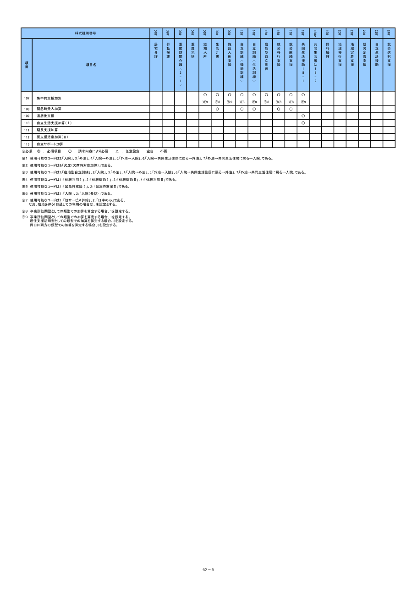
claude-haiku-5-5
- 表1 項番107 必須（様式種別番号 > 0601 短期入所）の値が想定外: '○ ※9'
- 表1 項番107 必須（様式種別番号 > 0701 生活介護）の値が想定外: '○ ※8'
- 表1 項番107 必須（様式種別番号 > 0901 施設入所支援）の値が想定外: '○ ※9'
- 表1 項番107 必須（様式種別番号 > 1301 自立訓練（機能訓練））の値が想定外: '○ ※8'
- 表1 項番107 必須（様式種別番号 > 1401 自立訓練（生活訓練））の値が想定外: '○ ※8'
- 表1 項番107 必須（様式種別番号 > 1501 宿泊型自立訓練）の値が想定外: '○ ※8'
- 表1 項番107 必須（様式種別番号 > 1601 就労移行支援）の値が想定外: '○ ※8'
- 表1 項番107 必須（様式種別番号 > 1701 就労継続支援）の値が想定外: '○ ※8'
- 表1 項番107 必須（様式種別番号 > 1801 共同生活援助（18-1））の値が想定外: '○ ※9'
表1 required_matrix 前頁から続く
| 項番 | 項目名 | 属性 | 桁数 | 内容 | 必須 | 備考 |
|---|---|---|---|---|---|---|
| 107 | 集中的支援加算 | 様式種別番号 > 0101 居宅介護:－ 様式種別番号 > 0201 行動援護:－ 様式種別番号 > 0301 重度訪問介護（3-1）:－ 様式種別番号 > 0401 重度包括:－ 様式種別番号 > 0601 短期入所:○ ※9 様式種別番号 > 0701 生活介護:○ ※8 様式種別番号 > 0901 施設入所支援:○ ※9 様式種別番号 > 1301 自立訓練（機能訓練）:○ ※8 様式種別番号 > 1401 自立訓練（生活訓練）:○ ※8 様式種別番号 > 1501 宿泊型自立訓練:○ ※8 様式種別番号 > 1601 就労移行支援:○ ※8 様式種別番号 > 1701 就労継続支援:○ ※8 様式種別番号 > 1801 共同生活援助（18-1）:○ ※9 様式種別番号 > 1802 共同生活援助（18-2）:－ 様式種別番号 > 1901 同行援護:－ 様式種別番号 > 2001 地域移行支援:－ 様式種別番号 > 2101 地域定着支援:－ 様式種別番号 > 2201 就労定着支援:－ 様式種別番号 > 2301 自立生活援助:－ 様式種別番号 > 2401 就労選択支援:－ | ||||
| 108 | 緊急時受入加算 | 様式種別番号 > 0101 居宅介護:－ 様式種別番号 > 0201 行動援護:－ 様式種別番号 > 0301 重度訪問介護（3-1）:－ 様式種別番号 > 0401 重度包括:－ 様式種別番号 > 0601 短期入所:－ 様式種別番号 > 0701 生活介護:○ 様式種別番号 > 0901 施設入所支援:－ 様式種別番号 > 1301 自立訓練（機能訓練）:○ 様式種別番号 > 1401 自立訓練（生活訓練）:○ 様式種別番号 > 1501 宿泊型自立訓練:－ 様式種別番号 > 1601 就労移行支援:○ 様式種別番号 > 1701 就労継続支援:○ 様式種別番号 > 1801 共同生活援助（18-1）:－ 様式種別番号 > 1802 共同生活援助（18-2）:－ 様式種別番号 > 1901 同行援護:－ 様式種別番号 > 2001 地域移行支援:－ 様式種別番号 > 2101 地域定着支援:－ 様式種別番号 > 2201 就労定着支援:－ 様式種別番号 > 2301 自立生活援助:－ 様式種別番号 > 2401 就労選択支援:－ | ||||
| 109 | 退居後支援 | 様式種別番号 > 0101 居宅介護:－ 様式種別番号 > 0201 行動援護:－ 様式種別番号 > 0301 重度訪問介護（3-1）:－ 様式種別番号 > 0401 重度包括:－ 様式種別番号 > 0601 短期入所:－ 様式種別番号 > 0701 生活介護:－ 様式種別番号 > 0901 施設入所支援:－ 様式種別番号 > 1301 自立訓練（機能訓練）:－ 様式種別番号 > 1401 自立訓練（生活訓練）:－ 様式種別番号 > 1501 宿泊型自立訓練:－ 様式種別番号 > 1601 就労移行支援:－ 様式種別番号 > 1701 就労継続支援:－ 様式種別番号 > 1801 共同生活援助（18-1）:○ 様式種別番号 > 1802 共同生活援助（18-2）:－ 様式種別番号 > 1901 同行援護:－ 様式種別番号 > 2001 地域移行支援:－ 様式種別番号 > 2101 地域定着支援:－ 様式種別番号 > 2201 就労定着支援:－ 様式種別番号 > 2301 自立生活援助:－ 様式種別番号 > 2401 就労選択支援:－ | ||||
| 110 | 自立生活支援加算（Ⅰ） | 様式種別番号 > 0101 居宅介護:－ 様式種別番号 > 0201 行動援護:－ 様式種別番号 > 0301 重度訪問介護（3-1）:－ 様式種別番号 > 0401 重度包括:－ 様式種別番号 > 0601 短期入所:－ 様式種別番号 > 0701 生活介護:－ 様式種別番号 > 0901 施設入所支援:－ 様式種別番号 > 1301 自立訓練（機能訓練）:－ 様式種別番号 > 1401 自立訓練（生活訓練）:－ 様式種別番号 > 1501 宿泊型自立訓練:－ 様式種別番号 > 1601 就労移行支援:－ 様式種別番号 > 1701 就労継続支援:－ 様式種別番号 > 1801 共同生活援助（18-1）:○ 様式種別番号 > 1802 共同生活援助（18-2）:－ 様式種別番号 > 1901 同行援護:－ 様式種別番号 > 2001 地域移行支援:－ 様式種別番号 > 2101 地域定着支援:－ 様式種別番号 > 2201 就労定着支援:－ 様式種別番号 > 2301 自立生活援助:－ 様式種別番号 > 2401 就労選択支援:－ | ||||
| 111 | 延長支援加算 | 様式種別番号 > 0101 居宅介護:－ 様式種別番号 > 0201 行動援護:－ 様式種別番号 > 0301 重度訪問介護（3-1）:－ 様式種別番号 > 0401 重度包括:－ 様式種別番号 > 0601 短期入所:－ 様式種別番号 > 0701 生活介護:－ 様式種別番号 > 0901 施設入所支援:－ 様式種別番号 > 1301 自立訓練（機能訓練）:－ 様式種別番号 > 1401 自立訓練（生活訓練）:－ 様式種別番号 > 1501 宿泊型自立訓練:－ 様式種別番号 > 1601 就労移行支援:－ 様式種別番号 > 1701 就労継続支援:－ 様式種別番号 > 1801 共同生活援助（18-1）:－ 様式種別番号 > 1802 共同生活援助（18-2）:－ 様式種別番号 > 1901 同行援護:－ 様式種別番号 > 2001 地域移行支援:－ 様式種別番号 > 2101 地域定着支援:－ 様式種別番号 > 2201 就労定着支援:－ 様式種別番号 > 2301 自立生活援助:－ 様式種別番号 > 2401 就労選択支援:－ | ||||
| 112 | 要支援児童加算（Ⅱ） | 様式種別番号 > 0101 居宅介護:－ 様式種別番号 > 0201 行動援護:－ 様式種別番号 > 0301 重度訪問介護（3-1）:－ 様式種別番号 > 0401 重度包括:－ 様式種別番号 > 0601 短期入所:－ 様式種別番号 > 0701 生活介護:－ 様式種別番号 > 0901 施設入所支援:－ 様式種別番号 > 1301 自立訓練（機能訓練）:－ 様式種別番号 > 1401 自立訓練（生活訓練）:－ 様式種別番号 > 1501 宿泊型自立訓練:－ 様式種別番号 > 1601 就労移行支援:－ 様式種別番号 > 1701 就労継続支援:－ 様式種別番号 > 1801 共同生活援助（18-1）:－ 様式種別番号 > 1802 共同生活援助（18-2）:－ 様式種別番号 > 1901 同行援護:－ 様式種別番号 > 2001 地域移行支援:－ 様式種別番号 > 2101 地域定着支援:－ 様式種別番号 > 2201 就労定着支援:－ 様式種別番号 > 2301 自立生活援助:－ 様式種別番号 > 2401 就労選択支援:－ | ||||
| 113 | 自立サポート加算 | 様式種別番号 > 0101 居宅介護:－ 様式種別番号 > 0201 行動援護:－ 様式種別番号 > 0301 重度訪問介護（3-1）:－ 様式種別番号 > 0401 重度包括:－ 様式種別番号 > 0601 短期入所:－ 様式種別番号 > 0701 生活介護:－ 様式種別番号 > 0901 施設入所支援:－ 様式種別番号 > 1301 自立訓練（機能訓練）:－ 様式種別番号 > 1401 自立訓練（生活訓練）:－ 様式種別番号 > 1501 宿泊型自立訓練:－ 様式種別番号 > 1601 就労移行支援:－ 様式種別番号 > 1701 就労継続支援:－ 様式種別番号 > 1801 共同生活援助（18-1）:－ 様式種別番号 > 1802 共同生活援助（18-2）:－ 様式種別番号 > 1901 同行援護:－ 様式種別番号 > 2001 地域移行支援:－ 様式種別番号 > 2101 地域定着支援:－ 様式種別番号 > 2201 就労定着支援:－ 様式種別番号 > 2301 自立生活援助:－ 様式種別番号 > 2401 就労選択支援:－ |
注記
- ※必須 ◎ : 必須項目 ○ : 請求内容により必要 △ : 任意設定 空白 : 不要
- ※1 使用可能なコードは2:「入院」、3:「外泊」、4:「入院→外泊」、5:「外泊→入院」、6:「入院→共同生活住居に戻る→外泊」、7:「外泊→共同生活住居に戻る→入院」である。
- ※2 使用可能なコードは8:「欠席(欠席時対応加算)」である。
- ※3 使用可能なコードは1:「宿泊型自立訓練」、2:「入院」、3:「外泊」、4:「入院→外泊」、5:「外泊→入院」、6:「入院→共同生活住居に戻る→外泊」、7:「外泊→共同生活住居に戻る→入院」である。
- ※4 使用可能なコードは1:「体験利用Ⅰ」、2:「体験宿泊Ⅰ」、3:「体験宿泊Ⅱ」、4:「体験利用Ⅱ」である。
- ※5 使用可能なコードは1:「緊急時支援Ⅰ」、2:「緊急時支援Ⅱ」である。
- ※6 使用可能なコードは1:「入院」、2:「入院(長期)」である。
- ※7 使用可能なコードは1:「他サービス併給」、2:「日中のみ」である。なお、宿泊を伴う1日通しての利用の場合は、未設定とする。
- ※8 事業所訪問型としての類型での加算を算定する場合、1を設定する。
- ※9 事業所訪問型としての類型での加算を算定する場合、1を設定する。居住支援活用型としての類型での加算を算定する場合、2を設定する。同日に両方の類型での加算を算定する場合、3を設定する。
uncertain（モデル自己申告）
- このページの表は見出し行から始まり表題がないため、前ページからの続きと判断した（項番107から始まるため）。
- 依頼文では「次のページ」とあるが、添付はページ番号62-6のこの1ページのみのため、このページを書き起こした。
- 「○ ※9」などのセル内の2段表示（○の下に※印）は、1セルの値として「○ ※9」と連結した。
claude-sonnet-5-5
- 表1 項番107 必須（0601）の値が想定外: '○ ※9'
- 表1 項番107 必須（0701）の値が想定外: '○ ※8'
- 表1 項番107 必須（0901）の値が想定外: '○ ※9'
- 表1 項番107 必須（1301）の値が想定外: '○ ※8'
- 表1 項番107 必須（1401）の値が想定外: '○ ※8'
- 表1 項番107 必須（1501）の値が想定外: '○ ※8'
- 表1 項番107 必須（1601）の値が想定外: '○ ※8'
- 表1 項番107 必須（1701）の値が想定外: '○ ※8'
- 表1 項番107 必須（1801）の値が想定外: '○ ※9'
表1 required_matrix 前頁から続く
| 項番 | 項目名 | 属性 | 桁数 | 内容 | 必須 | 備考 |
|---|---|---|---|---|---|---|
| 107 | 集中的支援加算 | 0101:－ 0201:－ 0301:－ 0401:－ 0601:○ ※9 0701:○ ※8 0901:○ ※9 1301:○ ※8 1401:○ ※8 1501:○ ※8 1601:○ ※8 1701:○ ※8 1801:○ ※9 1802:－ 1901:－ 2001:－ 2101:－ 2201:－ 2301:－ 2401:－ | ||||
| 108 | 緊急時受入加算 | 0101:－ 0201:－ 0301:－ 0401:－ 0601:－ 0701:○ 0901:－ 1301:○ 1401:○ 1501:－ 1601:○ 1701:○ 1801:－ 1802:－ 1901:－ 2001:－ 2101:－ 2201:－ 2301:－ 2401:－ | ||||
| 109 | 退居後支援 | 0101:－ 0201:－ 0301:－ 0401:－ 0601:－ 0701:－ 0901:－ 1301:－ 1401:－ 1501:－ 1601:－ 1701:－ 1801:○ 1802:－ 1901:－ 2001:－ 2101:－ 2201:－ 2301:－ 2401:－ | ||||
| 110 | 自立生活支援加算（Ⅰ） | 0101:－ 0201:－ 0301:－ 0401:－ 0601:－ 0701:－ 0901:－ 1301:－ 1401:－ 1501:－ 1601:－ 1701:－ 1801:○ 1802:－ 1901:－ 2001:－ 2101:－ 2201:－ 2301:－ 2401:－ | ||||
| 111 | 延長支援加算 | 0101:－ 0201:－ 0301:－ 0401:－ 0601:－ 0701:－ 0901:－ 1301:－ 1401:－ 1501:－ 1601:－ 1701:－ 1801:－ 1802:－ 1901:－ 2001:－ 2101:－ 2201:－ 2301:－ 2401:－ | ||||
| 112 | 要支援児童加算（Ⅱ） | 0101:－ 0201:－ 0301:－ 0401:－ 0601:－ 0701:－ 0901:－ 1301:－ 1401:－ 1501:－ 1601:－ 1701:－ 1801:－ 1802:－ 1901:－ 2001:－ 2101:－ 2201:－ 2301:－ 2401:－ | ||||
| 113 | 自立サポート加算 | 0101:－ 0201:－ 0301:－ 0401:－ 0601:－ 0701:－ 0901:－ 1301:－ 1401:－ 1501:－ 1601:－ 1701:－ 1801:－ 1802:－ 1901:－ 2001:－ 2101:－ 2201:－ 2301:－ 2401:－ |
注記
- ※必須 ◎ ： 必須項目 ○ ： 請求内容により必要 △ ： 任意設定 空白 ： 不要
- ※1 使用可能なコードは2:「入院」、3:「外泊」、4:「入院→外泊」、5:「外泊→入院」、6:「入院→共同生活住居に戻る→外泊」、7:「外泊→共同生活住居に戻る→入院」である。
- ※2 使用可能なコードは8:「欠席（欠席時対応加算）」である。
- ※3 使用可能なコードは1:「宿泊型自立訓練」、2:「入院」、3:「外泊」、4:「入院→外泊」、5:「外泊→入院」、6:「入院→共同生活住居に戻る→外泊」、7:「外泊→共同生活住居に戻る→入院」である。
- ※4 使用可能なコードは1:「体験利用Ⅰ」、2:「体験宿泊Ⅰ」、3:「体験宿泊Ⅱ」、4:「体験利用Ⅱ」である。
- ※5 使用可能なコードは1:「緊急時支援Ⅰ」、2:「緊急時支援Ⅱ」である。
- ※6 使用可能なコードは1:「入院」、2:「入院（長期）」である。
- ※7 使用可能なコードは1:「他サービス併給」、2:「日中のみ」である。 なお、宿泊を伴う1日通しての利用の場合は、未設定とする。
- ※8 事業所訪問型としての類型での加算を算定する場合、1を設定する。
- ※9 事業所訪問型としての類型での加算を算定する場合、1を設定する。 居住支援活用型としての類型での加算を算定する場合、2を設定する。 同日に両方の類型での加算を算定する場合、3を設定する。
uncertain（モデル自己申告）
- 列見出しの様式種別番号は縦書きのため読み取り。0301は「重度訪問介護（3－1）」と判断
- 107行の○と※の組み合わせは各列で上下に並ぶ表記を連結して記載
shogai_jigyosho_r0710_p90 — 印字p.62-7

claude-haiku-5-5
- [改ページ] p90→p91 の連続性 OK
表1 required_matrix(7) 入力必須項目と様式の対応表（基本情報レコード）【サービス提供年月：令和6年4月～令和7年9月】 次頁へ続く
| 項番 | 項目名 | 属性 | 桁数 | 内容 | 必須 | 備考 |
|---|---|---|---|---|---|---|
| 1 | 交換情報識別番号 | 0101 居宅介護:◎ 0201 行動援護:◎ 0301 重度訪問介護３－１:◎ 0401 重度包括:◎ 0601 短期入所:◎ 0701 生活介護:◎ 0901 施設入所支援:◎ 1301 自立訓練（機能訓練）:◎ 1401 自立訓練（生活訓練）:◎ 1501 宿泊型自立訓練:◎ 1601 就労移行支援:◎ 1701 就労継続支援:◎ 1801 共同生活援助18－1:◎ 1802 共同生活援助18－2:◎ 1901 同行援護:◎ 2001 地域移行支援:◎ 2101 地域定着支援:◎ 2201 就労定着支援:◎ 2301 自立生活援助:◎ | ||||
| 2 | レコード種別コード | 0101 居宅介護:◎ 0201 行動援護:◎ 0301 重度訪問介護３－１:◎ 0401 重度包括:◎ 0601 短期入所:◎ 0701 生活介護:◎ 0901 施設入所支援:◎ 1301 自立訓練（機能訓練）:◎ 1401 自立訓練（生活訓練）:◎ 1501 宿泊型自立訓練:◎ 1601 就労移行支援:◎ 1701 就労継続支援:◎ 1801 共同生活援助18－1:◎ 1802 共同生活援助18－2:◎ 1901 同行援護:◎ 2001 地域移行支援:◎ 2101 地域定着支援:◎ 2201 就労定着支援:◎ 2301 自立生活援助:◎ | ||||
| 3 | サービス提供年月 | 0101 居宅介護:◎ 0201 行動援護:◎ 0301 重度訪問介護３－１:◎ 0401 重度包括:◎ 0601 短期入所:◎ 0701 生活介護:◎ 0901 施設入所支援:◎ 1301 自立訓練（機能訓練）:◎ 1401 自立訓練（生活訓練）:◎ 1501 宿泊型自立訓練:◎ 1601 就労移行支援:◎ 1701 就労継続支援:◎ 1801 共同生活援助18－1:◎ 1802 共同生活援助18－2:◎ 1901 同行援護:◎ 2001 地域移行支援:◎ 2101 地域定着支援:◎ 2201 就労定着支援:◎ 2301 自立生活援助:◎ | ||||
| 4 | 市町村番号 | 0101 居宅介護:◎ 0201 行動援護:◎ 0301 重度訪問介護３－１:◎ 0401 重度包括:◎ 0601 短期入所:◎ 0701 生活介護:◎ 0901 施設入所支援:◎ 1301 自立訓練（機能訓練）:◎ 1401 自立訓練（生活訓練）:◎ 1501 宿泊型自立訓練:◎ 1601 就労移行支援:◎ 1701 就労継続支援:◎ 1801 共同生活援助18－1:◎ 1802 共同生活援助18－2:◎ 1901 同行援護:◎ 2001 地域移行支援:◎ 2101 地域定着支援:◎ 2201 就労定着支援:◎ 2301 自立生活援助:◎ | ||||
| 5 | 事業所番号 | 0101 居宅介護:◎ 0201 行動援護:◎ 0301 重度訪問介護３－１:◎ 0401 重度包括:◎ 0601 短期入所:◎ 0701 生活介護:◎ 0901 施設入所支援:◎ 1301 自立訓練（機能訓練）:◎ 1401 自立訓練（生活訓練）:◎ 1501 宿泊型自立訓練:◎ 1601 就労移行支援:◎ 1701 就労継続支援:◎ 1801 共同生活援助18－1:◎ 1802 共同生活援助18－2:◎ 1901 同行援護:◎ 2001 地域移行支援:◎ 2101 地域定着支援:◎ 2201 就労定着支援:◎ 2301 自立生活援助:◎ | ||||
| 6 | 受給者証番号 | 0101 居宅介護:◎ 0201 行動援護:◎ 0301 重度訪問介護３－１:◎ 0401 重度包括:◎ 0601 短期入所:◎ 0701 生活介護:◎ 0901 施設入所支援:◎ 1301 自立訓練（機能訓練）:◎ 1401 自立訓練（生活訓練）:◎ 1501 宿泊型自立訓練:◎ 1601 就労移行支援:◎ 1701 就労継続支援:◎ 1801 共同生活援助18－1:◎ 1802 共同生活援助18－2:◎ 1901 同行援護:◎ 2001 地域移行支援:◎ 2101 地域定着支援:◎ 2201 就労定着支援:◎ 2301 自立生活援助:◎ | ||||
| 7 | 様式種別番号 | 0101 居宅介護:◎ 0201 行動援護:◎ 0301 重度訪問介護３－１:◎ 0401 重度包括:◎ 0601 短期入所:◎ 0701 生活介護:◎ 0901 施設入所支援:◎ 1301 自立訓練（機能訓練）:◎ 1401 自立訓練（生活訓練）:◎ 1501 宿泊型自立訓練:◎ 1601 就労移行支援:◎ 1701 就労継続支援:◎ 1801 共同生活援助18－1:◎ 1802 共同生活援助18－2:◎ 1901 同行援護:◎ 2001 地域移行支援:◎ 2101 地域定着支援:◎ 2201 就労定着支援:◎ 2301 自立生活援助:◎ | ||||
| 8 | 補足給付関係情報 > 補足給付適用の有無 | 0101 居宅介護:－ 0201 行動援護:－ 0301 重度訪問介護３－１:－ 0401 重度包括:－ 0601 短期入所:－ 0701 生活介護:－ 0901 施設入所支援:○ 1301 自立訓練（機能訓練）:－ 1401 自立訓練（生活訓練）:－ 1501 宿泊型自立訓練:－ 1601 就労移行支援:－ 1701 就労継続支援:－ 1801 共同生活援助18－1:－ 1802 共同生活援助18－2:－ 1901 同行援護:－ 2001 地域移行支援:－ 2101 地域定着支援:－ 2201 就労定着支援:－ 2301 自立生活援助:－ | ||||
| 9 | 補足給付関係情報 > 補足給付額（円／日） | 0101 居宅介護:－ 0201 行動援護:－ 0301 重度訪問介護３－１:－ 0401 重度包括:－ 0601 短期入所:－ 0701 生活介護:－ 0901 施設入所支援:○ 1301 自立訓練（機能訓練）:－ 1401 自立訓練（生活訓練）:－ 1501 宿泊型自立訓練:－ 1601 就労移行支援:－ 1701 就労継続支援:－ 1801 共同生活援助18－1:－ 1802 共同生活援助18－2:－ 1901 同行援護:－ 2001 地域移行支援:－ 2101 地域定着支援:－ 2201 就労定着支援:－ 2301 自立生活援助:－ | ||||
| 10 | 補足給付関係情報 > 食費の単価 朝食（円／日） | 0101 居宅介護:－ 0201 行動援護:－ 0301 重度訪問介護３－１:－ 0401 重度包括:－ 0601 短期入所:－ 0701 生活介護:－ 0901 施設入所支援:○ 1301 自立訓練（機能訓練）:－ 1401 自立訓練（生活訓練）:－ 1501 宿泊型自立訓練:－ 1601 就労移行支援:－ 1701 就労継続支援:－ 1801 共同生活援助18－1:－ 1802 共同生活援助18－2:－ 1901 同行援護:－ 2001 地域移行支援:－ 2101 地域定着支援:－ 2201 就労定着支援:－ 2301 自立生活援助:－ | ||||
| 11 | 補足給付関係情報 > 食費の単価 昼食（円／日） | 0101 居宅介護:－ 0201 行動援護:－ 0301 重度訪問介護３－１:－ 0401 重度包括:－ 0601 短期入所:－ 0701 生活介護:－ 0901 施設入所支援:○ 1301 自立訓練（機能訓練）:－ 1401 自立訓練（生活訓練）:－ 1501 宿泊型自立訓練:－ 1601 就労移行支援:－ 1701 就労継続支援:－ 1801 共同生活援助18－1:－ 1802 共同生活援助18－2:－ 1901 同行援護:－ 2001 地域移行支援:－ 2101 地域定着支援:－ 2201 就労定着支援:－ 2301 自立生活援助:－ | ||||
| 12 | 補足給付関係情報 > 食費の単価 夕食（円／日） | 0101 居宅介護:－ 0201 行動援護:－ 0301 重度訪問介護３－１:－ 0401 重度包括:－ 0601 短期入所:－ 0701 生活介護:－ 0901 施設入所支援:○ 1301 自立訓練（機能訓練）:－ 1401 自立訓練（生活訓練）:－ 1501 宿泊型自立訓練:－ 1601 就労移行支援:－ 1701 就労継続支援:－ 1801 共同生活援助18－1:－ 1802 共同生活援助18－2:－ 1901 同行援護:－ 2001 地域移行支援:－ 2101 地域定着支援:－ 2201 就労定着支援:－ 2301 自立生活援助:－ | ||||
| 13 | 補足給付関係情報 > 食費の単価 一日（円／日） | 0101 居宅介護:－ 0201 行動援護:－ 0301 重度訪問介護３－１:－ 0401 重度包括:－ 0601 短期入所:－ 0701 生活介護:－ 0901 施設入所支援:○ 1301 自立訓練（機能訓練）:－ 1401 自立訓練（生活訓練）:－ 1501 宿泊型自立訓練:－ 1601 就労移行支援:－ 1701 就労継続支援:－ 1801 共同生活援助18－1:－ 1802 共同生活援助18－2:－ 1901 同行援護:－ 2001 地域移行支援:－ 2101 地域定着支援:－ 2201 就労定着支援:－ 2301 自立生活援助:－ | ||||
| 14 | 補足給付関係情報 > 光熱水費の単価 一日（円／日） | 0101 居宅介護:－ 0201 行動援護:－ 0301 重度訪問介護３－１:－ 0401 重度包括:－ 0601 短期入所:－ 0701 生活介護:－ 0901 施設入所支援:○ 1301 自立訓練（機能訓練）:－ 1401 自立訓練（生活訓練）:－ 1501 宿泊型自立訓練:－ 1601 就労移行支援:－ 1701 就労継続支援:－ 1801 共同生活援助18－1:－ 1802 共同生活援助18－2:－ 1901 同行援護:－ 2001 地域移行支援:－ 2101 地域定着支援:－ 2201 就労定着支援:－ 2301 自立生活援助:－ | ||||
| 15 | 補足給付関係情報 > 光熱水費の単価 一月（円／月） | 0101 居宅介護:－ 0201 行動援護:－ 0301 重度訪問介護３－１:－ 0401 重度包括:－ 0601 短期入所:－ 0701 生活介護:－ 0901 施設入所支援:○ 1301 自立訓練（機能訓練）:－ 1401 自立訓練（生活訓練）:－ 1501 宿泊型自立訓練:－ 1601 就労移行支援:－ 1701 就労継続支援:－ 1801 共同生活援助18－1:－ 1802 共同生活援助18－2:－ 1901 同行援護:－ 2001 地域移行支援:－ 2101 地域定着支援:－ 2201 就労定着支援:－ 2301 自立生活援助:－ | ||||
| 16 | 合計１ > 内訳 100% | 0101 居宅介護:○ 0201 行動援護:－ 0301 重度訪問介護３－１:－ 0401 重度包括:－ 0601 短期入所:－ 0701 生活介護:－ 0901 施設入所支援:－ 1301 自立訓練（機能訓練）:－ 1401 自立訓練（生活訓練）:－ 1501 宿泊型自立訓練:－ 1601 就労移行支援:－ 1701 就労継続支援:－ 1801 共同生活援助18－1:－ 1802 共同生活援助18－2:－ 1901 同行援護:－ 2001 地域移行支援:－ 2101 地域定着支援:－ 2201 就労定着支援:－ 2301 自立生活援助:－ | ||||
| 17 | 合計１ > 内訳 70% | 0101 居宅介護:○ 0201 行動援護:－ 0301 重度訪問介護３－１:－ 0401 重度包括:－ 0601 短期入所:－ 0701 生活介護:－ 0901 施設入所支援:－ 1301 自立訓練（機能訓練）:－ 1401 自立訓練（生活訓練）:－ 1501 宿泊型自立訓練:－ 1601 就労移行支援:－ 1701 就労継続支援:－ 1801 共同生活援助18－1:－ 1802 共同生活援助18－2:－ 1901 同行援護:－ 2001 地域移行支援:－ 2101 地域定着支援:－ 2201 就労定着支援:－ 2301 自立生活援助:－ | ||||
| 18 | 合計１ > 内訳 重訪 | 0101 居宅介護:○ 0201 行動援護:－ 0301 重度訪問介護３－１:－ 0401 重度包括:－ 0601 短期入所:－ 0701 生活介護:－ 0901 施設入所支援:－ 1301 自立訓練（機能訓練）:－ 1401 自立訓練（生活訓練）:－ 1501 宿泊型自立訓練:－ 1601 就労移行支援:－ 1701 就労継続支援:－ 1801 共同生活援助18－1:－ 1802 共同生活援助18－2:－ 1901 同行援護:－ 2001 地域移行支援:－ 2101 地域定着支援:－ 2201 就労定着支援:－ 2301 自立生活援助:－ | ||||
| 19 | 合計１ > 合計 算定時間数計 | 0101 居宅介護:○ 0201 行動援護:○ 0301 重度訪問介護３－１:○ 0401 重度包括:－ 0601 短期入所:－ 0701 生活介護:○ 0901 施設入所支援:－ 1301 自立訓練（機能訓練）:－ 1401 自立訓練（生活訓練）:－ 1501 宿泊型自立訓練:－ 1601 就労移行支援:－ 1701 就労継続支援:－ 1801 共同生活援助18－1:－ 1802 共同生活援助18－2:○ 1901 同行援護:－ 2001 地域移行支援:－ 2101 地域定着支援:－ 2201 就労定着支援:－ 2301 自立生活援助:－ | ||||
| 20 | 合計２ > 内訳 100% | 0101 居宅介護:○ 0201 行動援護:－ 0301 重度訪問介護３－１:－ 0401 重度包括:－ 0601 短期入所:－ 0701 生活介護:－ 0901 施設入所支援:－ 1301 自立訓練（機能訓練）:－ 1401 自立訓練（生活訓練）:－ 1501 宿泊型自立訓練:－ 1601 就労移行支援:－ 1701 就労継続支援:－ 1801 共同生活援助18－1:－ 1802 共同生活援助18－2:－ 1901 同行援護:－ 2001 地域移行支援:－ 2101 地域定着支援:－ 2201 就労定着支援:－ 2301 自立生活援助:－ | ||||
| 21 | 合計２ > 内訳 70% | 0101 居宅介護:○ 0201 行動援護:－ 0301 重度訪問介護３－１:－ 0401 重度包括:－ 0601 短期入所:－ 0701 生活介護:－ 0901 施設入所支援:－ 1301 自立訓練（機能訓練）:－ 1401 自立訓練（生活訓練）:－ 1501 宿泊型自立訓練:－ 1601 就労移行支援:－ 1701 就労継続支援:－ 1801 共同生活援助18－1:－ 1802 共同生活援助18－2:－ 1901 同行援護:－ 2001 地域移行支援:－ 2101 地域定着支援:－ 2201 就労定着支援:－ 2301 自立生活援助:－ | ||||
| 22 | 合計２ > 内訳 重訪 | 0101 居宅介護:○ 0201 行動援護:－ 0301 重度訪問介護３－１:－ 0401 重度包括:－ 0601 短期入所:－ 0701 生活介護:－ 0901 施設入所支援:－ 1301 自立訓練（機能訓練）:－ 1401 自立訓練（生活訓練）:－ 1501 宿泊型自立訓練:－ 1601 就労移行支援:－ 1701 就労継続支援:－ 1801 共同生活援助18－1:－ 1802 共同生活援助18－2:－ 1901 同行援護:－ 2001 地域移行支援:－ 2101 地域定着支援:－ 2201 就労定着支援:－ 2301 自立生活援助:－ | ||||
| 23 | 合計２ > 合計 算定時間数計 | 0101 居宅介護:○ 0201 行動援護:－ 0301 重度訪問介護３－１:－ 0401 重度包括:－ 0601 短期入所:－ 0701 生活介護:－ 0901 施設入所支援:－ 1301 自立訓練（機能訓練）:－ 1401 自立訓練（生活訓練）:－ 1501 宿泊型自立訓練:－ 1601 就労移行支援:－ 1701 就労継続支援:－ 1801 共同生活援助18－1:－ 1802 共同生活援助18－2:－ 1901 同行援護:－ 2001 地域移行支援:－ 2101 地域定着支援:－ 2201 就労定着支援:－ 2301 自立生活援助:－ | ||||
| 24 | 合計３ > 内訳 100% | 0101 居宅介護:○ 0201 行動援護:－ 0301 重度訪問介護３－１:－ 0401 重度包括:－ 0601 短期入所:－ 0701 生活介護:－ 0901 施設入所支援:－ 1301 自立訓練（機能訓練）:－ 1401 自立訓練（生活訓練）:－ 1501 宿泊型自立訓練:－ 1601 就労移行支援:－ 1701 就労継続支援:－ 1801 共同生活援助18－1:－ 1802 共同生活援助18－2:－ 1901 同行援護:○ 2001 地域移行支援:－ 2101 地域定着支援:－ 2201 就労定着支援:－ 2301 自立生活援助:－ | ||||
| 25 | 合計３ > 内訳 90% | 0101 居宅介護:○ 0201 行動援護:－ 0301 重度訪問介護３－１:－ 0401 重度包括:－ 0601 短期入所:－ 0701 生活介護:－ 0901 施設入所支援:－ 1301 自立訓練（機能訓練）:－ 1401 自立訓練（生活訓練）:－ 1501 宿泊型自立訓練:－ 1601 就労移行支援:－ 1701 就労継続支援:－ 1801 共同生活援助18－1:－ 1802 共同生活援助18－2:－ 1901 同行援護:○ 2001 地域移行支援:－ 2101 地域定着支援:－ 2201 就労定着支援:－ 2301 自立生活援助:－ | ||||
| 26 | 合計３ > 合計 算定時間数計 | 0101 居宅介護:○ 0201 行動援護:－ 0301 重度訪問介護３－１:－ 0401 重度包括:－ 0601 短期入所:－ 0701 生活介護:－ 0901 施設入所支援:－ 1301 自立訓練（機能訓練）:－ 1401 自立訓練（生活訓練）:－ 1501 宿泊型自立訓練:－ 1601 就労移行支援:－ 1701 就労継続支援:－ 1801 共同生活援助18－1:－ 1802 共同生活援助18－2:－ 1901 同行援護:○ 2001 地域移行支援:－ 2101 地域定着支援:－ 2201 就労定着支援:－ 2301 自立生活援助:－ | ||||
| 27 | 合計４ > 内訳 100% | 0101 居宅介護:○ 0201 行動援護:－ 0301 重度訪問介護３－１:－ 0401 重度包括:－ 0601 短期入所:－ 0701 生活介護:－ 0901 施設入所支援:－ 1301 自立訓練（機能訓練）:－ 1401 自立訓練（生活訓練）:－ 1501 宿泊型自立訓練:－ 1601 就労移行支援:－ 1701 就労継続支援:－ 1801 共同生活援助18－1:－ 1802 共同生活援助18－2:－ 1901 同行援護:－ 2001 地域移行支援:－ 2101 地域定着支援:－ 2201 就労定着支援:－ 2301 自立生活援助:－ | ||||
| 28 | 合計４ > 内訳 90% | 0101 居宅介護:○ 0201 行動援護:－ 0301 重度訪問介護３－１:－ 0401 重度包括:－ 0601 短期入所:－ 0701 生活介護:－ 0901 施設入所支援:－ 1301 自立訓練（機能訓練）:－ 1401 自立訓練（生活訓練）:－ 1501 宿泊型自立訓練:－ 1601 就労移行支援:－ 1701 就労継続支援:－ 1801 共同生活援助18－1:－ 1802 共同生活援助18－2:－ 1901 同行援護:－ 2001 地域移行支援:－ 2101 地域定着支援:－ 2201 就労定着支援:－ 2301 自立生活援助:－ | ||||
| 29 | 合計４ > 合計 算定時間数計 | 0101 居宅介護:○ 0201 行動援護:－ 0301 重度訪問介護３－１:－ 0401 重度包括:－ 0601 短期入所:－ 0701 生活介護:－ 0901 施設入所支援:－ 1301 自立訓練（機能訓練）:－ 1401 自立訓練（生活訓練）:－ 1501 宿泊型自立訓練:－ 1601 就労移行支援:－ 1701 就労継続支援:－ 1801 共同生活援助18－1:－ 1802 共同生活援助18－2:－ 1901 同行援護:－ 2001 地域移行支援:－ 2101 地域定着支援:－ 2201 就労定着支援:－ 2301 自立生活援助:－ | ||||
| 30 | 合計５ > 内訳 100% | 0101 居宅介護:○ 0201 行動援護:－ 0301 重度訪問介護３－１:－ 0401 重度包括:－ 0601 短期入所:－ 0701 生活介護:－ 0901 施設入所支援:－ 1301 自立訓練（機能訓練）:－ 1401 自立訓練（生活訓練）:－ 1501 宿泊型自立訓練:－ 1601 就労移行支援:－ 1701 就労継続支援:－ 1801 共同生活援助18－1:－ 1802 共同生活援助18－2:－ 1901 同行援護:－ 2001 地域移行支援:－ 2101 地域定着支援:－ 2201 就労定着支援:－ 2301 自立生活援助:－ | ||||
| 31 | 合計５ > 内訳 90% | 0101 居宅介護:○ 0201 行動援護:－ 0301 重度訪問介護３－１:－ 0401 重度包括:－ 0601 短期入所:－ 0701 生活介護:－ 0901 施設入所支援:－ 1301 自立訓練（機能訓練）:－ 1401 自立訓練（生活訓練）:－ 1501 宿泊型自立訓練:－ 1601 就労移行支援:－ 1701 就労継続支援:－ 1801 共同生活援助18－1:－ 1802 共同生活援助18－2:－ 1901 同行援護:－ 2001 地域移行支援:－ 2101 地域定着支援:－ 2201 就労定着支援:－ 2301 自立生活援助:－ | ||||
| 32 | 合計５ > 合計 算定回数計 | 0101 居宅介護:○ 0201 行動援護:－ 0301 重度訪問介護３－１:－ 0401 重度包括:－ 0601 短期入所:－ 0701 生活介護:－ 0901 施設入所支援:－ 1301 自立訓練（機能訓練）:－ 1401 自立訓練（生活訓練）:－ 1501 宿泊型自立訓練:－ 1601 就労移行支援:－ 1701 就労継続支援:－ 1801 共同生活援助18－1:－ 1802 共同生活援助18－2:－ 1901 同行援護:－ 2001 地域移行支援:－ 2101 地域定着支援:－ 2201 就労定着支援:－ 2301 自立生活援助:－ | ||||
| 33 | 提供実績の合計 > 算定 移動介護分 | 0101 居宅介護:－ 0201 行動援護:－ 0301 重度訪問介護３－１:○ 0401 重度包括:－ 0601 短期入所:－ 0701 生活介護:－ 0901 施設入所支援:－ 1301 自立訓練（機能訓練）:－ 1401 自立訓練（生活訓練）:－ 1501 宿泊型自立訓練:－ 1601 就労移行支援:－ 1701 就労継続支援:－ 1801 共同生活援助18－1:－ 1802 共同生活援助18－2:－ 1901 同行援護:－ 2001 地域移行支援:－ 2101 地域定着支援:－ 2201 就労定着支援:－ 2301 自立生活援助:－ | ||||
| 34 | 提供実績の合計 > 実績 送迎加算（回） | 0101 居宅介護:－ 0201 行動援護:－ 0301 重度訪問介護３－１:－ 0401 重度包括:○ 0601 短期入所:○ 0701 生活介護:○ 0901 施設入所支援:－ 1301 自立訓練（機能訓練）:○ 1401 自立訓練（生活訓練）:○ 1501 宿泊型自立訓練:－ 1601 就労移行支援:○ 1701 就労継続支援:○ 1801 共同生活援助18－1:－ 1802 共同生活援助18－2:－ 1901 同行援護:－ 2001 地域移行支援:－ 2101 地域定着支援:－ 2201 就労定着支援:－ 2301 自立生活援助:－ | ||||
| 35 | 提供実績の合計 > 実績 家庭連携加算（回）（サービス提供回数） | 0101 居宅介護:－ 0201 行動援護:－ 0301 重度訪問介護３－１:－ 0401 重度包括:－ 0601 短期入所:－ 0701 生活介護:－ 0901 施設入所支援:－ 1301 自立訓練（機能訓練）:－ 1401 自立訓練（生活訓練）:－ 1501 宿泊型自立訓練:－ 1601 就労移行支援:－ 1701 就労継続支援:－ 1801 共同生活援助18－1:－ 1802 共同生活援助18－2:－ 1901 同行援護:－ 2001 地域移行支援:－ 2101 地域定着支援:－ 2201 就労定着支援:－ 2301 自立生活援助:－ | ||||
| 36 | 提供実績の合計 > 実績 家庭連携加算（回）（算定回数） | 0101 居宅介護:－ 0201 行動援護:－ 0301 重度訪問介護３－１:－ 0401 重度包括:－ 0601 短期入所:－ 0701 生活介護:－ 0901 施設入所支援:－ 1301 自立訓練（機能訓練）:－ 1401 自立訓練（生活訓練）:－ 1501 宿泊型自立訓練:－ 1601 就労移行支援:－ 1701 就労継続支援:－ 1801 共同生活援助18－1:－ 1802 共同生活援助18－2:－ 1901 同行援護:－ 2001 地域移行支援:－ 2101 地域定着支援:－ 2201 就労定着支援:－ 2301 自立生活援助:－ | ||||
| 37 | 提供実績の合計 > 合計 算定日数（日） | 0101 居宅介護:－ 0201 行動援護:－ 0301 重度訪問介護３－１:－ 0401 重度包括:－ 0601 短期入所:○ 0701 生活介護:－ 0901 施設入所支援:－ 1301 自立訓練（機能訓練）:－ 1401 自立訓練（生活訓練）:－ 1501 宿泊型自立訓練:－ 1601 就労移行支援:－ 1701 就労継続支援:－ 1801 共同生活援助18－1:－ 1802 共同生活援助18－2:－ 1901 同行援護:－ 2001 地域移行支援:○ 2101 地域定着支援:－ 2201 就労定着支援:○ 2301 自立生活援助:○ | ||||
| 38 | 提供実績の合計 > 夜間支援体制加算（回） | 0101 居宅介護:－ 0201 行動援護:－ 0301 重度訪問介護３－１:－ 0401 重度包括:－ 0601 短期入所:－ 0701 生活介護:－ 0901 施設入所支援:－ 1301 自立訓練（機能訓練）:－ 1401 自立訓練（生活訓練）:－ 1501 宿泊型自立訓練:○ 1601 就労移行支援:－ 1701 就労継続支援:－ 1801 共同生活援助18－1:○ 1802 共同生活援助18－2:－ 1901 同行援護:－ 2001 地域移行支援:－ 2101 地域定着支援:－ 2201 就労定着支援:－ 2301 自立生活援助:－ | ||||
| 39 | 提供実績の合計 > 日中支援加算（回）（サービス提供回数） | 0101 居宅介護:－ 0201 行動援護:－ 0301 重度訪問介護３－１:－ 0401 重度包括:－ 0601 短期入所:－ 0701 生活介護:－ 0901 施設入所支援:－ 1301 自立訓練（機能訓練）:－ 1401 自立訓練（生活訓練）:－ 1501 宿泊型自立訓練:○ 1601 就労移行支援:－ 1701 就労継続支援:－ 1801 共同生活援助18－1:○ 1802 共同生活援助18－2:－ 1901 同行援護:－ 2001 地域移行支援:－ 2101 地域定着支援:－ 2201 就労定着支援:－ 2301 自立生活援助:－ | ||||
| 40 | 提供実績の合計 > 日中支援加算（回）（算定回数） | 0101 居宅介護:－ 0201 行動援護:－ 0301 重度訪問介護３－１:－ 0401 重度包括:－ 0601 短期入所:－ 0701 生活介護:－ 0901 施設入所支援:－ 1301 自立訓練（機能訓練）:－ 1401 自立訓練（生活訓練）:－ 1501 宿泊型自立訓練:○ 1601 就労移行支援:－ 1701 就労継続支援:－ 1801 共同生活援助18－1:○ 1802 共同生活援助18－2:－ 1901 同行援護:－ 2001 地域移行支援:－ 2101 地域定着支援:－ 2201 就労定着支援:－ 2301 自立生活援助:－ | ||||
| 41 | 提供実績の合計 > 通所型（回） | 0101 居宅介護:－ 0201 行動援護:－ 0301 重度訪問介護３－１:－ 0401 重度包括:－ 0601 短期入所:－ 0701 生活介護:－ 0901 施設入所支援:－ 1301 自立訓練（機能訓練）:○ 1401 自立訓練（生活訓練）:○ 1501 宿泊型自立訓練:－ 1601 就労移行支援:－ 1701 就労継続支援:－ 1801 共同生活援助18－1:－ 1802 共同生活援助18－2:－ 1901 同行援護:－ 2001 地域移行支援:－ 2101 地域定着支援:－ 2201 就労定着支援:－ 2301 自立生活援助:－ | ||||
| 42 | 提供実績の合計 > 訪問型 1時間未満（回） | 0101 居宅介護:－ 0201 行動援護:－ 0301 重度訪問介護３－１:－ 0401 重度包括:－ 0601 短期入所:－ 0701 生活介護:－ 0901 施設入所支援:－ 1301 自立訓練（機能訓練）:○ 1401 自立訓練（生活訓練）:○ 1501 宿泊型自立訓練:－ 1601 就労移行支援:－ 1701 就労継続支援:－ 1801 共同生活援助18－1:－ 1802 共同生活援助18－2:－ 1901 同行援護:－ 2001 地域移行支援:－ 2101 地域定着支援:－ 2201 就労定着支援:－ 2301 自立生活援助:－ | ||||
| 43 | 提供実績の合計 > 訪問型 1時間以上（回） | 0101 居宅介護:－ 0201 行動援護:－ 0301 重度訪問介護３－１:－ 0401 重度包括:－ 0601 短期入所:－ 0701 生活介護:－ 0901 施設入所支援:－ 1301 自立訓練（機能訓練）:○ 1401 自立訓練（生活訓練）:○ 1501 宿泊型自立訓練:－ 1601 就労移行支援:－ 1701 就労継続支援:－ 1801 共同生活援助18－1:－ 1802 共同生活援助18－2:－ 1901 同行援護:－ 2001 地域移行支援:－ 2101 地域定着支援:－ 2201 就労定着支援:－ 2301 自立生活援助:－ | ||||
| 44 | 提供実績の合計 > 短期滞在加算（回） | 0101 居宅介護:－ 0201 行動援護:－ 0301 重度訪問介護３－１:－ 0401 重度包括:－ 0601 短期入所:－ 0701 生活介護:－ 0901 施設入所支援:－ 1301 自立訓練（機能訓練）:－ 1401 自立訓練（生活訓練）:○ 1501 宿泊型自立訓練:－ 1601 就労移行支援:－ 1701 就労継続支援:－ 1801 共同生活援助18－1:－ 1802 共同生活援助18－2:－ 1901 同行援護:－ 2001 地域移行支援:－ 2101 地域定着支援:－ 2201 就労定着支援:－ 2301 自立生活援助:－ | ||||
| 45 | 提供実績の合計 > 食事提供加算（回） | 0101 居宅介護:－ 0201 行動援護:－ 0301 重度訪問介護３－１:－ 0401 重度包括:－ 0601 短期入所:○ 0701 生活介護:○ 0901 施設入所支援:－ 1301 自立訓練（機能訓練）:○ 1401 自立訓練（生活訓練）:○ 1501 宿泊型自立訓練:○ 1601 就労移行支援:○ 1701 就労継続支援:○ 1801 共同生活援助18－1:－ 1802 共同生活援助18－2:－ 1901 同行援護:－ 2001 地域移行支援:－ 2101 地域定着支援:－ 2201 就労定着支援:－ 2301 自立生活援助:－ | ||||
| 46 | 提供実績の合計 > 入院・外泊時加算（回） | 0101 居宅介護:－ 0201 行動援護:－ 0301 重度訪問介護３－１:－ 0401 重度包括:－ 0601 短期入所:－ 0701 生活介護:－ 0901 施設入所支援:○ 1301 自立訓練（機能訓練）:－ 1401 自立訓練（生活訓練）:－ 1501 宿泊型自立訓練:－ 1601 就労移行支援:－ 1701 就労継続支援:－ 1801 共同生活援助18－1:－ 1802 共同生活援助18－2:－ 1901 同行援護:－ 2001 地域移行支援:－ 2101 地域定着支援:－ 2201 就労定着支援:－ 2301 自立生活援助:－ | ||||
| 47 | 提供実績の合計 > 入院時支援特別加算（回）（サービス提供回数） | 0101 居宅介護:－ 0201 行動援護:－ 0301 重度訪問介護３－１:－ 0401 重度包括:－ 0601 短期入所:－ 0701 生活介護:－ 0901 施設入所支援:○ 1301 自立訓練（機能訓練）:－ 1401 自立訓練（生活訓練）:－ 1501 宿泊型自立訓練:○ 1601 就労移行支援:－ 1701 就労継続支援:－ 1801 共同生活援助18－1:○ 1802 共同生活援助18－2:－ 1901 同行援護:－ 2001 地域移行支援:－ 2101 地域定着支援:－ 2201 就労定着支援:－ 2301 自立生活援助:－ | ||||
| 48 | 提供実績の合計 > 入院時支援特別加算（回）（算定回数） | 0101 居宅介護:－ 0201 行動援護:－ 0301 重度訪問介護３－１:－ 0401 重度包括:－ 0601 短期入所:－ 0701 生活介護:－ 0901 施設入所支援:○ 1301 自立訓練（機能訓練）:－ 1401 自立訓練（生活訓練）:－ 1501 宿泊型自立訓練:○ 1601 就労移行支援:－ 1701 就労継続支援:－ 1801 共同生活援助18－1:○ 1802 共同生活援助18－2:－ 1901 同行援護:－ 2001 地域移行支援:－ 2101 地域定着支援:－ 2201 就労定着支援:－ 2301 自立生活援助:－ | ||||
| 49 | 提供実績の合計 > 自立生活支援加算（Ⅱ）（回） | 0101 居宅介護:－ 0201 行動援護:－ 0301 重度訪問介護３－１:－ 0401 重度包括:－ 0601 短期入所:－ 0701 生活介護:－ 0901 施設入所支援:－ 1301 自立訓練（機能訓練）:－ 1401 自立訓練（生活訓練）:－ 1501 宿泊型自立訓練:－ 1601 就労移行支援:－ 1701 就労継続支援:－ 1801 共同生活援助18－1:○ 1802 共同生活援助18－2:－ 1901 同行援護:－ 2001 地域移行支援:－ 2101 地域定着支援:－ 2201 就労定着支援:－ 2301 自立生活援助:－ | ||||
| 50 | 提供実績の合計 > 自活訓練加算（回） | 0101 居宅介護:－ 0201 行動援護:－ 0301 重度訪問介護３－１:－ 0401 重度包括:－ 0601 短期入所:－ 0701 生活介護:－ 0901 施設入所支援:－ 1301 自立訓練（機能訓練）:－ 1401 自立訓練（生活訓練）:－ 1501 宿泊型自立訓練:－ 1601 就労移行支援:－ 1701 就労継続支援:－ 1801 共同生活援助18－1:－ 1802 共同生活援助18－2:－ 1901 同行援護:－ 2001 地域移行支援:－ 2101 地域定着支援:－ 2201 就労定着支援:－ 2301 自立生活援助:－ | ||||
| 51 | 提供実績の合計 > 訪問支援特別加算（回）（サービス提供回数） | 0101 居宅介護:－ 0201 行動援護:－ 0301 重度訪問介護３－１:－ 0401 重度包括:－ 0601 短期入所:－ 0701 生活介護:○ 0901 施設入所支援:－ 1301 自立訓練（機能訓練）:－ 1401 自立訓練（生活訓練）:－ 1501 宿泊型自立訓練:－ 1601 就労移行支援:○ 1701 就労継続支援:○ 1801 共同生活援助18－1:－ 1802 共同生活援助18－2:－ 1901 同行援護:－ 2001 地域移行支援:－ 2101 地域定着支援:－ 2201 就労定着支援:－ 2301 自立生活援助:－ | ||||
| 52 | 提供実績の合計 > 訪問支援特別加算（回）（算定回数） | 0101 居宅介護:－ 0201 行動援護:－ 0301 重度訪問介護３－１:－ 0401 重度包括:－ 0601 短期入所:－ 0701 生活介護:○ 0901 施設入所支援:－ 1301 自立訓練（機能訓練）:－ 1401 自立訓練（生活訓練）:－ 1501 宿泊型自立訓練:－ 1601 就労移行支援:○ 1701 就労継続支援:○ 1801 共同生活援助18－1:－ 1802 共同生活援助18－2:－ 1901 同行援護:－ 2001 地域移行支援:－ 2101 地域定着支援:－ 2201 就労定着支援:－ 2301 自立生活援助:－ | ||||
| 53 | 提供実績の合計 > 施設外支援 当月（日） | 0101 居宅介護:－ 0201 行動援護:－ 0301 重度訪問介護３－１:－ 0401 重度包括:－ 0601 短期入所:－ 0701 生活介護:－ 0901 施設入所支援:－ 1301 自立訓練（機能訓練）:－ 1401 自立訓練（生活訓練）:－ 1501 宿泊型自立訓練:－ 1601 就労移行支援:○ 1701 就労継続支援:○ 1801 共同生活援助18－1:－ 1802 共同生活援助18－2:－ 1901 同行援護:－ 2001 地域移行支援:－ 2101 地域定着支援:－ 2201 就労定着支援:－ 2301 自立生活援助:－ | ||||
| 54 | 提供実績の合計 > 施設外支援 累計（日／180日） | 0101 居宅介護:－ 0201 行動援護:－ 0301 重度訪問介護３－１:－ 0401 重度包括:－ 0601 短期入所:－ 0701 生活介護:－ 0901 施設入所支援:－ 1301 自立訓練（機能訓練）:－ 1401 自立訓練（生活訓練）:－ 1501 宿泊型自立訓練:－ 1601 就労移行支援:○ 1701 就労継続支援:○ 1801 共同生活援助18－1:－ 1802 共同生活援助18－2:－ 1901 同行援護:－ 2001 地域移行支援:－ 2101 地域定着支援:－ 2201 就労定着支援:－ 2301 自立生活援助:－ | ||||
| 55 | 提供実績の合計 > 帰宅時支援加算（回）（サービス提供回数） | 0101 居宅介護:－ 0201 行動援護:－ 0301 重度訪問介護３－１:－ 0401 重度包括:－ 0601 短期入所:－ 0701 生活介護:－ 0901 施設入所支援:－ 1301 自立訓練（機能訓練）:－ 1401 自立訓練（生活訓練）:－ 1501 宿泊型自立訓練:○ 1601 就労移行支援:－ 1701 就労継続支援:－ 1801 共同生活援助18－1:○ 1802 共同生活援助18－2:－ 1901 同行援護:－ 2001 地域移行支援:－ 2101 地域定着支援:－ 2201 就労定着支援:－ 2301 自立生活援助:－ | ||||
| 56 | 提供実績の合計 > 帰宅時支援加算（回）（算定回数） | 0101 居宅介護:－ 0201 行動援護:－ 0301 重度訪問介護３－１:－ 0401 重度包括:－ 0601 短期入所:－ 0701 生活介護:－ 0901 施設入所支援:－ 1301 自立訓練（機能訓練）:－ 1401 自立訓練（生活訓練）:－ 1501 宿泊型自立訓練:○ 1601 就労移行支援:－ 1701 就労継続支援:－ 1801 共同生活援助18－1:○ 1802 共同生活援助18－2:－ 1901 同行援護:－ 2001 地域移行支援:－ 2101 地域定着支援:－ 2201 就労定着支援:－ 2301 自立生活援助:－ |
uncertain（モデル自己申告）
- 分野・文書の指定（障害福祉・サービス事業所編）と、画像の内容（介護給付の様式種別番号、基本情報レコード）が一致しない。画像の内容をそのまま書き起こした。
- 縦書きの列見出し（重度訪問介護３－１、共同生活援助18－1・18－2）の全角・半角は画像から判別しきれず、全角で書いた。
- 縦書きの合計１～５の番号の全角・半角も判別しきれず、全角で書いた。
- 列見出しの様式名（例: 自立生活援助）は縦書き見出しの読みを連結したもの。
claude-sonnet-5-5
- [改ページ] 前後ページで列見出しの書き起こしが一致しない
表1 required_matrix（7） 入力必須項目と様式の対応表（基本情報レコード）【サービス提供年月：令和6年4月～令和7年9月】 次頁へ続く
| 項番 | 項目名 | 属性 | 桁数 | 内容 | 必須 | 備考 |
|---|
uncertain（モデル自己申告）
- 表は19列×56行の大きな行列で、記号の細部を読み取りきれなかったため items は空にした。全行の転記は未実施。
- continues_to_next_page は項番56で終わっているため推定。
shogai_jigyosho_r0710_p91 — 印字p.

claude-haiku-5-5
- [改ページ] 前後ページで列見出しの書き起こしが一致しない
表1 required_matrix 前頁から続く次頁へ続く
| 項番 | 項目名 | 属性 | 桁数 | 内容 | 必須 | 備考 |
|---|---|---|---|---|---|---|
| 57 | 実費算定の合計 > 朝食(回) | 0101 居宅介護:－ 0201 行動援護:－ 0301 重度訪問介護3-1:－ 0401 重度包括:－ 0601 短期入所:－ 0701 生活介護:－ 0901 施設入所支援:○ 1301 自立訓練(機能訓練):－ 1401 自立訓練(生活訓練):－ 1501 宿泊型自立訓練:－ 1601 就労移行支援:－ 1701 就労継続支援:－ 1801 共同生活援助18-1:－ 1802 共同生活援助18-2:－ 1901 同行援護:－ 2001 地域移行支援:－ 2101 地域定着支援:－ 2201 就労定着支援:－ 2301 自立生活援助:－ | ||||
| 58 | 実費算定の合計 > 昼食(回) | 0101 居宅介護:－ 0201 行動援護:－ 0301 重度訪問介護3-1:－ 0401 重度包括:－ 0601 短期入所:－ 0701 生活介護:－ 0901 施設入所支援:○ 1301 自立訓練(機能訓練):－ 1401 自立訓練(生活訓練):－ 1501 宿泊型自立訓練:－ 1601 就労移行支援:－ 1701 就労継続支援:－ 1801 共同生活援助18-1:－ 1802 共同生活援助18-2:－ 1901 同行援護:－ 2001 地域移行支援:－ 2101 地域定着支援:－ 2201 就労定着支援:－ 2301 自立生活援助:－ | ||||
| 59 | 実費算定の合計 > 夕食(回) | 0101 居宅介護:－ 0201 行動援護:－ 0301 重度訪問介護3-1:－ 0401 重度包括:－ 0601 短期入所:－ 0701 生活介護:－ 0901 施設入所支援:○ 1301 自立訓練(機能訓練):－ 1401 自立訓練(生活訓練):－ 1501 宿泊型自立訓練:－ 1601 就労移行支援:－ 1701 就労継続支援:－ 1801 共同生活援助18-1:－ 1802 共同生活援助18-2:－ 1901 同行援護:－ 2001 地域移行支援:－ 2101 地域定着支援:－ 2201 就労定着支援:－ 2301 自立生活援助:－ | ||||
| 60 | 実費算定の合計 > 光熱水費(回) | 0101 居宅介護:－ 0201 行動援護:－ 0301 重度訪問介護3-1:－ 0401 重度包括:－ 0601 短期入所:－ 0701 生活介護:－ 0901 施設入所支援:○ 1301 自立訓練(機能訓練):－ 1401 自立訓練(生活訓練):－ 1501 宿泊型自立訓練:－ 1601 就労移行支援:－ 1701 就労継続支援:－ 1801 共同生活援助18-1:－ 1802 共同生活援助18-2:－ 1901 同行援護:－ 2001 地域移行支援:－ 2101 地域定着支援:－ 2201 就労定着支援:－ 2301 自立生活援助:－ | ||||
| 61 | 実費算定の合計 > 各小計 食事(円) | 0101 居宅介護:－ 0201 行動援護:－ 0301 重度訪問介護3-1:－ 0401 重度包括:－ 0601 短期入所:－ 0701 生活介護:－ 0901 施設入所支援:○ 1301 自立訓練(機能訓練):－ 1401 自立訓練(生活訓練):－ 1501 宿泊型自立訓練:－ 1601 就労移行支援:－ 1701 就労継続支援:－ 1801 共同生活援助18-1:－ 1802 共同生活援助18-2:－ 1901 同行援護:－ 2001 地域移行支援:－ 2101 地域定着支援:－ 2201 就労定着支援:－ 2301 自立生活援助:－ | ||||
| 62 | 実費算定の合計 > 各小計 光熱水費(円) | 0101 居宅介護:－ 0201 行動援護:－ 0301 重度訪問介護3-1:－ 0401 重度包括:－ 0601 短期入所:－ 0701 生活介護:－ 0901 施設入所支援:○ 1301 自立訓練(機能訓練):－ 1401 自立訓練(生活訓練):－ 1501 宿泊型自立訓練:－ 1601 就労移行支援:－ 1701 就労継続支援:－ 1801 共同生活援助18-1:－ 1802 共同生活援助18-2:－ 1901 同行援護:－ 2001 地域移行支援:－ 2101 地域定着支援:－ 2201 就労定着支援:－ 2301 自立生活援助:－ | ||||
| 63 | 実費算定の合計 > 実費合計額(円) | 0101 居宅介護:－ 0201 行動援護:－ 0301 重度訪問介護3-1:－ 0401 重度包括:－ 0601 短期入所:－ 0701 生活介護:－ 0901 施設入所支援:○ 1301 自立訓練(機能訓練):－ 1401 自立訓練(生活訓練):－ 1501 宿泊型自立訓練:－ 1601 就労移行支援:－ 1701 就労継続支援:－ 1801 共同生活援助18-1:－ 1802 共同生活援助18-2:－ 1901 同行援護:－ 2001 地域移行支援:－ 2101 地域定着支援:－ 2201 就労定着支援:－ 2301 自立生活援助:－ | ||||
| 64 | 入所時特別支援加算 > 利用開始日(年月日) | 0101 居宅介護:－ 0201 行動援護:－ 0301 重度訪問介護3-1:－ 0401 重度包括:－ 0601 短期入所:－ 0701 生活介護:－ 0901 施設入所支援:○ 1301 自立訓練(機能訓練):－ 1401 自立訓練(生活訓練):－ 1501 宿泊型自立訓練:－ 1601 就労移行支援:－ 1701 就労継続支援:－ 1801 共同生活援助18-1:－ 1802 共同生活援助18-2:－ 1901 同行援護:－ 2001 地域移行支援:－ 2101 地域定着支援:－ 2201 就労定着支援:－ 2301 自立生活援助:－ | ||||
| 65 | 入所時特別支援加算 > 30日目(年月日) | 0101 居宅介護:－ 0201 行動援護:－ 0301 重度訪問介護3-1:－ 0401 重度包括:－ 0601 短期入所:－ 0701 生活介護:－ 0901 施設入所支援:○ 1301 自立訓練(機能訓練):－ 1401 自立訓練(生活訓練):－ 1501 宿泊型自立訓練:－ 1601 就労移行支援:－ 1701 就労継続支援:－ 1801 共同生活援助18-1:－ 1802 共同生活援助18-2:－ 1901 同行援護:－ 2001 地域移行支援:－ 2101 地域定着支援:－ 2201 就労定着支援:－ 2301 自立生活援助:－ | ||||
| 66 | 入所時特別支援加算 > 当月算定日数(日) | 0101 居宅介護:－ 0201 行動援護:－ 0301 重度訪問介護3-1:－ 0401 重度包括:－ 0601 短期入所:－ 0701 生活介護:－ 0901 施設入所支援:○ 1301 自立訓練(機能訓練):－ 1401 自立訓練(生活訓練):－ 1501 宿泊型自立訓練:－ 1601 就労移行支援:－ 1701 就労継続支援:－ 1801 共同生活援助18-1:－ 1802 共同生活援助18-2:－ 1901 同行援護:－ 2001 地域移行支援:－ 2101 地域定着支援:－ 2201 就労定着支援:－ 2301 自立生活援助:－ | ||||
| 67 | 退所時特別支援加算 > 入所中算定日(年月日) | 0101 居宅介護:－ 0201 行動援護:－ 0301 重度訪問介護3-1:－ 0401 重度包括:－ 0601 短期入所:－ 0701 生活介護:－ 0901 施設入所支援:－ 1301 自立訓練(機能訓練):－ 1401 自立訓練(生活訓練):－ 1501 宿泊型自立訓練:－ 1601 就労移行支援:－ 1701 就労継続支援:－ 1801 共同生活援助18-1:－ 1802 共同生活援助18-2:－ 1901 同行援護:－ 2001 地域移行支援:－ 2101 地域定着支援:－ 2201 就労定着支援:－ 2301 自立生活援助:－ | ||||
| 68 | 退所時特別支援加算 > 退所日(年月日) | 0101 居宅介護:－ 0201 行動援護:－ 0301 重度訪問介護3-1:－ 0401 重度包括:－ 0601 短期入所:－ 0701 生活介護:－ 0901 施設入所支援:－ 1301 自立訓練(機能訓練):－ 1401 自立訓練(生活訓練):－ 1501 宿泊型自立訓練:－ 1601 就労移行支援:－ 1701 就労継続支援:－ 1801 共同生活援助18-1:－ 1802 共同生活援助18-2:－ 1901 同行援護:－ 2001 地域移行支援:－ 2101 地域定着支援:－ 2201 就労定着支援:－ 2301 自立生活援助:－ | ||||
| 69 | 退所時特別支援加算 > 退所後算定日(年月日) | 0101 居宅介護:－ 0201 行動援護:－ 0301 重度訪問介護3-1:－ 0401 重度包括:－ 0601 短期入所:－ 0701 生活介護:－ 0901 施設入所支援:－ 1301 自立訓練(機能訓練):－ 1401 自立訓練(生活訓練):－ 1501 宿泊型自立訓練:－ 1601 就労移行支援:－ 1701 就労継続支援:－ 1801 共同生活援助18-1:－ 1802 共同生活援助18-2:－ 1901 同行援護:－ 2001 地域移行支援:－ 2101 地域定着支援:－ 2201 就労定着支援:－ 2301 自立生活援助:－ | ||||
| 70 | 初期加算 > 利用開始日(年月日) | 0101 居宅介護:－ 0201 行動援護:－ 0301 重度訪問介護3-1:－ 0401 重度包括:－ 0601 短期入所:－ 0701 生活介護:○ 0901 施設入所支援:－ 1301 自立訓練(機能訓練):○ 1401 自立訓練(生活訓練):○ 1501 宿泊型自立訓練:○ 1601 就労移行支援:○ 1701 就労継続支援:○ 1801 共同生活援助18-1:－ 1802 共同生活援助18-2:－ 1901 同行援護:－ 2001 地域移行支援:－ 2101 地域定着支援:－ 2201 就労定着支援:○ 2301 自立生活援助:－ | ||||
| 71 | 初期加算 > 30日目(年月日) | 0101 居宅介護:－ 0201 行動援護:－ 0301 重度訪問介護3-1:－ 0401 重度包括:－ 0601 短期入所:－ 0701 生活介護:○ 0901 施設入所支援:－ 1301 自立訓練(機能訓練):○ 1401 自立訓練(生活訓練):○ 1501 宿泊型自立訓練:○ 1601 就労移行支援:○ 1701 就労継続支援:○ 1801 共同生活援助18-1:－ 1802 共同生活援助18-2:－ 1901 同行援護:－ 2001 地域移行支援:－ 2101 地域定着支援:－ 2201 就労定着支援:－ 2301 自立生活援助:－ | ||||
| 72 | 初期加算 > 当月算定日数(日) | 0101 居宅介護:－ 0201 行動援護:－ 0301 重度訪問介護3-1:－ 0401 重度包括:－ 0601 短期入所:－ 0701 生活介護:○ 0901 施設入所支援:－ 1301 自立訓練(機能訓練):○ 1401 自立訓練(生活訓練):○ 1501 宿泊型自立訓練:○ 1601 就労移行支援:○ 1701 就労継続支援:○ 1801 共同生活援助18-1:－ 1802 共同生活援助18-2:－ 1901 同行援護:－ 2001 地域移行支援:－ 2101 地域定着支援:－ 2201 就労定着支援:－ 2301 自立生活援助:－ | ||||
| 73 | 地域移行加算 > 入所中算定日(年月日) | 0101 居宅介護:－ 0201 行動援護:－ 0301 重度訪問介護3-1:－ 0401 重度包括:－ 0601 短期入所:－ 0701 生活介護:－ 0901 施設入所支援:－ 1301 自立訓練(機能訓練):－ 1401 自立訓練(生活訓練):－ 1501 宿泊型自立訓練:－ 1601 就労移行支援:－ 1701 就労継続支援:－ 1801 共同生活援助18-1:－ 1802 共同生活援助18-2:－ 1901 同行援護:－ 2001 地域移行支援:－ 2101 地域定着支援:－ 2201 就労定着支援:－ 2301 自立生活援助:－ | ||||
| 74 | 地域移行加算 > 退所日(年月日) | 0101 居宅介護:－ 0201 行動援護:－ 0301 重度訪問介護3-1:－ 0401 重度包括:－ 0601 短期入所:－ 0701 生活介護:－ 0901 施設入所支援:○ 1301 自立訓練(機能訓練):－ 1401 自立訓練(生活訓練):－ 1501 宿泊型自立訓練:○ 1601 就労移行支援:－ 1701 就労継続支援:－ 1801 共同生活援助18-1:○ 1802 共同生活援助18-2:－ 1901 同行援護:－ 2001 地域移行支援:○ 2101 地域定着支援:－ 2201 就労定着支援:－ 2301 自立生活援助:－ | ||||
| 75 | 地域移行加算 > 退所後算定日(年月日) | 0101 居宅介護:－ 0201 行動援護:－ 0301 重度訪問介護3-1:－ 0401 重度包括:－ 0601 短期入所:－ 0701 生活介護:－ 0901 施設入所支援:○ 1301 自立訓練(機能訓練):－ 1401 自立訓練(生活訓練):－ 1501 宿泊型自立訓練:○ 1601 就労移行支援:－ 1701 就労継続支援:－ 1801 共同生活援助18-1:○ 1802 共同生活援助18-2:－ 1901 同行援護:－ 2001 地域移行支援:－ 2101 地域定着支援:－ 2201 就労定着支援:－ 2301 自立生活援助:－ | ||||
| 76 | 重度包括 > 実績単位数(単位) | 0101 居宅介護:－ 0201 行動援護:－ 0301 重度訪問介護3-1:－ 0401 重度包括:－ 0601 短期入所:－ 0701 生活介護:－ 0901 施設入所支援:－ 1301 自立訓練(機能訓練):－ 1401 自立訓練(生活訓練):－ 1501 宿泊型自立訓練:－ 1601 就労移行支援:－ 1701 就労継続支援:－ 1801 共同生活援助18-1:－ 1802 共同生活援助18-2:－ 1901 同行援護:－ 2001 地域移行支援:－ 2101 地域定着支援:－ 2201 就労定着支援:－ 2301 自立生活援助:－ | ||||
| 77 | 重度包括 > 実績割合(%) | 0101 居宅介護:－ 0201 行動援護:－ 0301 重度訪問介護3-1:－ 0401 重度包括:－ 0601 短期入所:－ 0701 生活介護:－ 0901 施設入所支援:－ 1301 自立訓練(機能訓練):－ 1401 自立訓練(生活訓練):－ 1501 宿泊型自立訓練:－ 1601 就労移行支援:－ 1701 就労継続支援:－ 1801 共同生活援助18-1:－ 1802 共同生活援助18-2:－ 1901 同行援護:－ 2001 地域移行支援:－ 2101 地域定着支援:－ 2201 就労定着支援:－ 2301 自立生活援助:－ | ||||
| 78 | 重度包括 > 支給決定量(単位) | 0101 居宅介護:－ 0201 行動援護:－ 0301 重度訪問介護3-1:－ 0401 重度包括:－ 0601 短期入所:－ 0701 生活介護:－ 0901 施設入所支援:－ 1301 自立訓練(機能訓練):－ 1401 自立訓練(生活訓練):－ 1501 宿泊型自立訓練:－ 1601 就労移行支援:－ 1701 就労継続支援:－ 1801 共同生活援助18-1:－ 1802 共同生活援助18-2:－ 1901 同行援護:－ 2001 地域移行支援:－ 2101 地域定着支援:－ 2201 就労定着支援:－ 2301 自立生活援助:－ | ||||
| 79 | 重度包括 > 報酬請求額(円) | 0101 居宅介護:－ 0201 行動援護:－ 0301 重度訪問介護3-1:－ 0401 重度包括:－ 0601 短期入所:－ 0701 生活介護:－ 0901 施設入所支援:－ 1301 自立訓練(機能訓練):－ 1401 自立訓練(生活訓練):－ 1501 宿泊型自立訓練:－ 1601 就労移行支援:－ 1701 就労継続支援:－ 1801 共同生活援助18-1:－ 1802 共同生活援助18-2:－ 1901 同行援護:－ 2001 地域移行支援:－ 2101 地域定着支援:－ 2201 就労定着支援:－ 2301 自立生活援助:－ | ||||
| 80 | 重度包括 > 利用者負担上限月額(円) | 0101 居宅介護:－ 0201 行動援護:－ 0301 重度訪問介護3-1:－ 0401 重度包括:－ 0601 短期入所:－ 0701 生活介護:－ 0901 施設入所支援:－ 1301 自立訓練(機能訓練):－ 1401 自立訓練(生活訓練):－ 1501 宿泊型自立訓練:－ 1601 就労移行支援:－ 1701 就労継続支援:－ 1801 共同生活援助18-1:－ 1802 共同生活援助18-2:－ 1901 同行援護:－ 2001 地域移行支援:－ 2101 地域定着支援:－ 2201 就労定着支援:－ 2301 自立生活援助:－ | ||||
| 81 | 重度包括 > 利用者負担額(円) | 0101 居宅介護:－ 0201 行動援護:－ 0301 重度訪問介護3-1:－ 0401 重度包括:－ 0601 短期入所:－ 0701 生活介護:－ 0901 施設入所支援:－ 1301 自立訓練(機能訓練):－ 1401 自立訓練(生活訓練):－ 1501 宿泊型自立訓練:－ 1601 就労移行支援:－ 1701 就労継続支援:－ 1801 共同生活援助18-1:－ 1802 共同生活援助18-2:－ 1901 同行援護:－ 2001 地域移行支援:－ 2101 地域定着支援:－ 2201 就労定着支援:－ 2301 自立生活援助:－ | ||||
| 82 | 重度包括 > 共同生活援助合計日数 | 0101 居宅介護:－ 0201 行動援護:－ 0301 重度訪問介護3-1:－ 0401 重度包括:○ 0601 短期入所:－ 0701 生活介護:－ 0901 施設入所支援:－ 1301 自立訓練(機能訓練):－ 1401 自立訓練(生活訓練):－ 1501 宿泊型自立訓練:－ 1601 就労移行支援:－ 1701 就労継続支援:－ 1801 共同生活援助18-1:－ 1802 共同生活援助18-2:－ 1901 同行援護:－ 2001 地域移行支援:－ 2101 地域定着支援:－ 2201 就労定着支援:－ 2301 自立生活援助:－ | ||||
| 83 | 重度包括 > 短期入所合計日数 | 0101 居宅介護:－ 0201 行動援護:－ 0301 重度訪問介護3-1:－ 0401 重度包括:○ 0601 短期入所:－ 0701 生活介護:－ 0901 施設入所支援:－ 1301 自立訓練(機能訓練):－ 1401 自立訓練(生活訓練):－ 1501 宿泊型自立訓練:－ 1601 就労移行支援:－ 1701 就労継続支援:－ 1801 共同生活援助18-1:－ 1802 共同生活援助18-2:－ 1901 同行援護:－ 2001 地域移行支援:－ 2101 地域定着支援:－ 2201 就労定着支援:－ 2301 自立生活援助:－ | ||||
| 84 | 重度包括 > その他サービス合計時間数 | 0101 居宅介護:－ 0201 行動援護:－ 0301 重度訪問介護3-1:－ 0401 重度包括:○ 0601 短期入所:－ 0701 生活介護:－ 0901 施設入所支援:－ 1301 自立訓練(機能訓練):－ 1401 自立訓練(生活訓練):－ 1501 宿泊型自立訓練:－ 1601 就労移行支援:－ 1701 就労継続支援:－ 1801 共同生活援助18-1:－ 1802 共同生活援助18-2:－ 1901 同行援護:－ 2001 地域移行支援:－ 2101 地域定着支援:－ 2201 就労定着支援:－ 2301 自立生活援助:－ | ||||
| 85 | 重度包括 > 当該月の日数 | 0101 居宅介護:－ 0201 行動援護:－ 0301 重度訪問介護3-1:－ 0401 重度包括:－ 0601 短期入所:－ 0701 生活介護:－ 0901 施設入所支援:－ 1301 自立訓練(機能訓練):－ 1401 自立訓練(生活訓練):－ 1501 宿泊型自立訓練:－ 1601 就労移行支援:－ 1701 就労継続支援:－ 1801 共同生活援助18-1:－ 1802 共同生活援助18-2:－ 1901 同行援護:－ 2001 地域移行支援:－ 2101 地域定着支援:－ 2201 就労定着支援:－ 2301 自立生活援助:－ | ||||
| 86 | 重度包括 > サービス担当者会議開催日 | 0101 居宅介護:－ 0201 行動援護:－ 0301 重度訪問介護3-1:－ 0401 重度包括:○ 0601 短期入所:－ 0701 生活介護:－ 0901 施設入所支援:－ 1301 自立訓練(機能訓練):－ 1401 自立訓練(生活訓練):－ 1501 宿泊型自立訓練:－ 1601 就労移行支援:－ 1701 就労継続支援:－ 1801 共同生活援助18-1:－ 1802 共同生活援助18-2:－ 1901 同行援護:－ 2001 地域移行支援:－ 2101 地域定着支援:－ 2201 就労定着支援:－ 2301 自立生活援助:－ | ||||
| 87 | 重度訪問介護（様式３－２）集計欄 > 第1時間帯 早朝 | 0101 居宅介護:－ 0201 行動援護:－ 0301 重度訪問介護3-1:－ 0401 重度包括:－ 0601 短期入所:－ 0701 生活介護:－ 0901 施設入所支援:－ 1301 自立訓練(機能訓練):－ 1401 自立訓練(生活訓練):－ 1501 宿泊型自立訓練:－ 1601 就労移行支援:－ 1701 就労継続支援:－ 1801 共同生活援助18-1:－ 1802 共同生活援助18-2:－ 1901 同行援護:－ 2001 地域移行支援:－ 2101 地域定着支援:－ 2201 就労定着支援:－ 2301 自立生活援助:－ | ||||
| 88 | 重度訪問介護（様式３－２）集計欄 > 第1時間帯 日中 | 0101 居宅介護:－ 0201 行動援護:－ 0301 重度訪問介護3-1:－ 0401 重度包括:－ 0601 短期入所:－ 0701 生活介護:－ 0901 施設入所支援:－ 1301 自立訓練(機能訓練):－ 1401 自立訓練(生活訓練):－ 1501 宿泊型自立訓練:－ 1601 就労移行支援:－ 1701 就労継続支援:－ 1801 共同生活援助18-1:－ 1802 共同生活援助18-2:－ 1901 同行援護:－ 2001 地域移行支援:－ 2101 地域定着支援:－ 2201 就労定着支援:－ 2301 自立生活援助:－ | ||||
| 89 | 重度訪問介護（様式３－２）集計欄 > 第1時間帯 夜間 | 0101 居宅介護:－ 0201 行動援護:－ 0301 重度訪問介護3-1:－ 0401 重度包括:－ 0601 短期入所:－ 0701 生活介護:－ 0901 施設入所支援:－ 1301 自立訓練(機能訓練):－ 1401 自立訓練(生活訓練):－ 1501 宿泊型自立訓練:－ 1601 就労移行支援:－ 1701 就労継続支援:－ 1801 共同生活援助18-1:－ 1802 共同生活援助18-2:－ 1901 同行援護:－ 2001 地域移行支援:－ 2101 地域定着支援:－ 2201 就労定着支援:－ 2301 自立生活援助:－ | ||||
| 90 | 重度訪問介護（様式３－２）集計欄 > 第1時間帯 深夜 | 0101 居宅介護:－ 0201 行動援護:－ 0301 重度訪問介護3-1:－ 0401 重度包括:－ 0601 短期入所:－ 0701 生活介護:－ 0901 施設入所支援:－ 1301 自立訓練(機能訓練):－ 1401 自立訓練(生活訓練):－ 1501 宿泊型自立訓練:－ 1601 就労移行支援:－ 1701 就労継続支援:－ 1801 共同生活援助18-1:－ 1802 共同生活援助18-2:－ 1901 同行援護:－ 2001 地域移行支援:－ 2101 地域定着支援:－ 2201 就労定着支援:－ 2301 自立生活援助:－ | ||||
| 91 | 重度訪問介護（様式３－２）集計欄 > 第2時間帯 早朝 | 0101 居宅介護:－ 0201 行動援護:－ 0301 重度訪問介護3-1:－ 0401 重度包括:－ 0601 短期入所:－ 0701 生活介護:－ 0901 施設入所支援:－ 1301 自立訓練(機能訓練):－ 1401 自立訓練(生活訓練):－ 1501 宿泊型自立訓練:－ 1601 就労移行支援:－ 1701 就労継続支援:－ 1801 共同生活援助18-1:－ 1802 共同生活援助18-2:－ 1901 同行援護:－ 2001 地域移行支援:－ 2101 地域定着支援:－ 2201 就労定着支援:－ 2301 自立生活援助:－ | ||||
| 92 | 重度訪問介護（様式３－２）集計欄 > 第2時間帯 日中 | 0101 居宅介護:－ 0201 行動援護:－ 0301 重度訪問介護3-1:－ 0401 重度包括:－ 0601 短期入所:－ 0701 生活介護:－ 0901 施設入所支援:－ 1301 自立訓練(機能訓練):－ 1401 自立訓練(生活訓練):－ 1501 宿泊型自立訓練:－ 1601 就労移行支援:－ 1701 就労継続支援:－ 1801 共同生活援助18-1:－ 1802 共同生活援助18-2:－ 1901 同行援護:－ 2001 地域移行支援:－ 2101 地域定着支援:－ 2201 就労定着支援:－ 2301 自立生活援助:－ | ||||
| 93 | 重度訪問介護（様式３－２）集計欄 > 第2時間帯 夜間 | 0101 居宅介護:－ 0201 行動援護:－ 0301 重度訪問介護3-1:－ 0401 重度包括:－ 0601 短期入所:－ 0701 生活介護:－ 0901 施設入所支援:－ 1301 自立訓練(機能訓練):－ 1401 自立訓練(生活訓練):－ 1501 宿泊型自立訓練:－ 1601 就労移行支援:－ 1701 就労継続支援:－ 1801 共同生活援助18-1:－ 1802 共同生活援助18-2:－ 1901 同行援護:－ 2001 地域移行支援:－ 2101 地域定着支援:－ 2201 就労定着支援:－ 2301 自立生活援助:－ | ||||
| 94 | 重度訪問介護（様式３－２）集計欄 > 第2時間帯 深夜 | 0101 居宅介護:－ 0201 行動援護:－ 0301 重度訪問介護3-1:－ 0401 重度包括:－ 0601 短期入所:－ 0701 生活介護:－ 0901 施設入所支援:－ 1301 自立訓練(機能訓練):－ 1401 自立訓練(生活訓練):－ 1501 宿泊型自立訓練:－ 1601 就労移行支援:－ 1701 就労継続支援:－ 1801 共同生活援助18-1:－ 1802 共同生活援助18-2:－ 1901 同行援護:－ 2001 地域移行支援:－ 2101 地域定着支援:－ 2201 就労定着支援:－ 2301 自立生活援助:－ | ||||
| 95 | 重度訪問介護（様式３－２）集計欄 > 第3時間帯 早朝 | 0101 居宅介護:－ 0201 行動援護:－ 0301 重度訪問介護3-1:－ 0401 重度包括:－ 0601 短期入所:－ 0701 生活介護:－ 0901 施設入所支援:－ 1301 自立訓練(機能訓練):－ 1401 自立訓練(生活訓練):－ 1501 宿泊型自立訓練:－ 1601 就労移行支援:－ 1701 就労継続支援:－ 1801 共同生活援助18-1:－ 1802 共同生活援助18-2:－ 1901 同行援護:－ 2001 地域移行支援:－ 2101 地域定着支援:－ 2201 就労定着支援:－ 2301 自立生活援助:－ | ||||
| 96 | 重度訪問介護（様式３－２）集計欄 > 第3時間帯 日中 | 0101 居宅介護:－ 0201 行動援護:－ 0301 重度訪問介護3-1:－ 0401 重度包括:－ 0601 短期入所:－ 0701 生活介護:－ 0901 施設入所支援:－ 1301 自立訓練(機能訓練):－ 1401 自立訓練(生活訓練):－ 1501 宿泊型自立訓練:－ 1601 就労移行支援:－ 1701 就労継続支援:－ 1801 共同生活援助18-1:－ 1802 共同生活援助18-2:－ 1901 同行援護:－ 2001 地域移行支援:－ 2101 地域定着支援:－ 2201 就労定着支援:－ 2301 自立生活援助:－ | ||||
| 97 | 重度訪問介護（様式３－２）集計欄 > 第3時間帯 夜間 | 0101 居宅介護:－ 0201 行動援護:－ 0301 重度訪問介護3-1:－ 0401 重度包括:－ 0601 短期入所:－ 0701 生活介護:－ 0901 施設入所支援:－ 1301 自立訓練(機能訓練):－ 1401 自立訓練(生活訓練):－ 1501 宿泊型自立訓練:－ 1601 就労移行支援:－ 1701 就労継続支援:－ 1801 共同生活援助18-1:－ 1802 共同生活援助18-2:－ 1901 同行援護:－ 2001 地域移行支援:－ 2101 地域定着支援:－ 2201 就労定着支援:－ 2301 自立生活援助:－ | ||||
| 98 | 重度訪問介護（様式３－２）集計欄 > 第3時間帯 深夜 | 0101 居宅介護:－ 0201 行動援護:－ 0301 重度訪問介護3-1:－ 0401 重度包括:－ 0601 短期入所:－ 0701 生活介護:－ 0901 施設入所支援:－ 1301 自立訓練(機能訓練):－ 1401 自立訓練(生活訓練):－ 1501 宿泊型自立訓練:－ 1601 就労移行支援:－ 1701 就労継続支援:－ 1801 共同生活援助18-1:－ 1802 共同生活援助18-2:－ 1901 同行援護:－ 2001 地域移行支援:－ 2101 地域定着支援:－ 2201 就労定着支援:－ 2301 自立生活援助:－ | ||||
| 99 | 重度訪問介護（様式３－２）集計欄 > 第4時間帯 早朝 | 0101 居宅介護:－ 0201 行動援護:－ 0301 重度訪問介護3-1:－ 0401 重度包括:－ 0601 短期入所:－ 0701 生活介護:－ 0901 施設入所支援:－ 1301 自立訓練(機能訓練):－ 1401 自立訓練(生活訓練):－ 1501 宿泊型自立訓練:－ 1601 就労移行支援:－ 1701 就労継続支援:－ 1801 共同生活援助18-1:－ 1802 共同生活援助18-2:－ 1901 同行援護:－ 2001 地域移行支援:－ 2101 地域定着支援:－ 2201 就労定着支援:－ 2301 自立生活援助:－ | ||||
| 100 | 重度訪問介護（様式３－２）集計欄 > 第4時間帯 日中 | 0101 居宅介護:－ 0201 行動援護:－ 0301 重度訪問介護3-1:－ 0401 重度包括:－ 0601 短期入所:－ 0701 生活介護:－ 0901 施設入所支援:－ 1301 自立訓練(機能訓練):－ 1401 自立訓練(生活訓練):－ 1501 宿泊型自立訓練:－ 1601 就労移行支援:－ 1701 就労継続支援:－ 1801 共同生活援助18-1:－ 1802 共同生活援助18-2:－ 1901 同行援護:－ 2001 地域移行支援:－ 2101 地域定着支援:－ 2201 就労定着支援:－ 2301 自立生活援助:－ | ||||
| 101 | 重度訪問介護（様式３－２）集計欄 > 第4時間帯 夜間 | 0101 居宅介護:－ 0201 行動援護:－ 0301 重度訪問介護3-1:－ 0401 重度包括:－ 0601 短期入所:－ 0701 生活介護:－ 0901 施設入所支援:－ 1301 自立訓練(機能訓練):－ 1401 自立訓練(生活訓練):－ 1501 宿泊型自立訓練:－ 1601 就労移行支援:－ 1701 就労継続支援:－ 1801 共同生活援助18-1:－ 1802 共同生活援助18-2:－ 1901 同行援護:－ 2001 地域移行支援:－ 2101 地域定着支援:－ 2201 就労定着支援:－ 2301 自立生活援助:－ | ||||
| 102 | 重度訪問介護（様式３－２）集計欄 > 第4時間帯 深夜 | 0101 居宅介護:－ 0201 行動援護:－ 0301 重度訪問介護3-1:－ 0401 重度包括:－ 0601 短期入所:－ 0701 生活介護:－ 0901 施設入所支援:－ 1301 自立訓練(機能訓練):－ 1401 自立訓練(生活訓練):－ 1501 宿泊型自立訓練:－ 1601 就労移行支援:－ 1701 就労継続支援:－ 1801 共同生活援助18-1:－ 1802 共同生活援助18-2:－ 1901 同行援護:－ 2001 地域移行支援:－ 2101 地域定着支援:－ 2201 就労定着支援:－ 2301 自立生活援助:－ | ||||
| 103 | 重度訪問介護（様式３－２）集計欄 > 第5時間帯 早朝 | 0101 居宅介護:－ 0201 行動援護:－ 0301 重度訪問介護3-1:－ 0401 重度包括:－ 0601 短期入所:－ 0701 生活介護:－ 0901 施設入所支援:－ 1301 自立訓練(機能訓練):－ 1401 自立訓練(生活訓練):－ 1501 宿泊型自立訓練:－ 1601 就労移行支援:－ 1701 就労継続支援:－ 1801 共同生活援助18-1:－ 1802 共同生活援助18-2:－ 1901 同行援護:－ 2001 地域移行支援:－ 2101 地域定着支援:－ 2201 就労定着支援:－ 2301 自立生活援助:－ | ||||
| 104 | 重度訪問介護（様式３－２）集計欄 > 第5時間帯 日中 | 0101 居宅介護:－ 0201 行動援護:－ 0301 重度訪問介護3-1:－ 0401 重度包括:－ 0601 短期入所:－ 0701 生活介護:－ 0901 施設入所支援:－ 1301 自立訓練(機能訓練):－ 1401 自立訓練(生活訓練):－ 1501 宿泊型自立訓練:－ 1601 就労移行支援:－ 1701 就労継続支援:－ 1801 共同生活援助18-1:－ 1802 共同生活援助18-2:－ 1901 同行援護:－ 2001 地域移行支援:－ 2101 地域定着支援:－ 2201 就労定着支援:－ 2301 自立生活援助:－ | ||||
| 105 | 重度訪問介護（様式３－２）集計欄 > 第5時間帯 夜間 | 0101 居宅介護:－ 0201 行動援護:－ 0301 重度訪問介護3-1:－ 0401 重度包括:－ 0601 短期入所:－ 0701 生活介護:－ 0901 施設入所支援:－ 1301 自立訓練(機能訓練):－ 1401 自立訓練(生活訓練):－ 1501 宿泊型自立訓練:－ 1601 就労移行支援:－ 1701 就労継続支援:－ 1801 共同生活援助18-1:－ 1802 共同生活援助18-2:－ 1901 同行援護:－ 2001 地域移行支援:－ 2101 地域定着支援:－ 2201 就労定着支援:－ 2301 自立生活援助:－ | ||||
| 106 | 重度訪問介護（様式３－２）集計欄 > 第5時間帯 深夜 | 0101 居宅介護:－ 0201 行動援護:－ 0301 重度訪問介護3-1:－ 0401 重度包括:－ 0601 短期入所:－ 0701 生活介護:－ 0901 施設入所支援:－ 1301 自立訓練(機能訓練):－ 1401 自立訓練(生活訓練):－ 1501 宿泊型自立訓練:－ 1601 就労移行支援:－ 1701 就労継続支援:－ 1801 共同生活援助18-1:－ 1802 共同生活援助18-2:－ 1901 同行援護:－ 2001 地域移行支援:－ 2101 地域定着支援:－ 2201 就労定着支援:－ 2301 自立生活援助:－ | ||||
| 107 | 重度訪問介護（様式３－２）集計欄 > 第6時間帯 早朝 | 0101 居宅介護:－ 0201 行動援護:－ 0301 重度訪問介護3-1:－ 0401 重度包括:－ 0601 短期入所:－ 0701 生活介護:－ 0901 施設入所支援:－ 1301 自立訓練(機能訓練):－ 1401 自立訓練(生活訓練):－ 1501 宿泊型自立訓練:－ 1601 就労移行支援:－ 1701 就労継続支援:－ 1801 共同生活援助18-1:－ 1802 共同生活援助18-2:－ 1901 同行援護:－ 2001 地域移行支援:－ 2101 地域定着支援:－ 2201 就労定着支援:－ 2301 自立生活援助:－ | ||||
| 108 | 重度訪問介護（様式３－２）集計欄 > 第6時間帯 日中 | 0101 居宅介護:－ 0201 行動援護:－ 0301 重度訪問介護3-1:－ 0401 重度包括:－ 0601 短期入所:－ 0701 生活介護:－ 0901 施設入所支援:－ 1301 自立訓練(機能訓練):－ 1401 自立訓練(生活訓練):－ 1501 宿泊型自立訓練:－ 1601 就労移行支援:－ 1701 就労継続支援:－ 1801 共同生活援助18-1:－ 1802 共同生活援助18-2:－ 1901 同行援護:－ 2001 地域移行支援:－ 2101 地域定着支援:－ 2201 就労定着支援:－ 2301 自立生活援助:－ | ||||
| 109 | 重度訪問介護（様式３－２）集計欄 > 第6時間帯 夜間 | 0101 居宅介護:－ 0201 行動援護:－ 0301 重度訪問介護3-1:－ 0401 重度包括:－ 0601 短期入所:－ 0701 生活介護:－ 0901 施設入所支援:－ 1301 自立訓練(機能訓練):－ 1401 自立訓練(生活訓練):－ 1501 宿泊型自立訓練:－ 1601 就労移行支援:－ 1701 就労継続支援:－ 1801 共同生活援助18-1:－ 1802 共同生活援助18-2:－ 1901 同行援護:－ 2001 地域移行支援:－ 2101 地域定着支援:－ 2201 就労定着支援:－ 2301 自立生活援助:－ | ||||
| 110 | 重度訪問介護（様式３－２）集計欄 > 第6時間帯 深夜 | 0101 居宅介護:－ 0201 行動援護:－ 0301 重度訪問介護3-1:－ 0401 重度包括:－ 0601 短期入所:－ 0701 生活介護:－ 0901 施設入所支援:－ 1301 自立訓練(機能訓練):－ 1401 自立訓練(生活訓練):－ 1501 宿泊型自立訓練:－ 1601 就労移行支援:－ 1701 就労継続支援:－ 1801 共同生活援助18-1:－ 1802 共同生活援助18-2:－ 1901 同行援護:－ 2001 地域移行支援:－ 2101 地域定着支援:－ 2201 就労定着支援:－ 2301 自立生活援助:－ |
注記
- ※1
uncertain（モデル自己申告）
- 74の2001地域移行支援列の○の下にある「※1」の注記本文がこのページに見当たらないため、footnotesのtextを空にしている。
- 87〜110の項目名（時間帯）は半角・全角の空白を原文の見た目どおりに1つの空白で示している。
- 「入所時特別支援加算」「退所時特別支援加算」「初期加算」「地域移行加算」などの縦書き見出しは、文字の区切りを推定して連結している。
- レコード名・交換情報識別番号がページ内に読み取れないため record は全て null とした。
claude-sonnet-5-5
- 表1 項番74 必須（2001）の値が想定外: '○ ※1'
- [改ページ] 項番が p91 末尾 86 → p92 先頭 111 で途切れる
- [改ページ] 前後ページで列見出しの書き起こしが一致しない
表1 required_matrix 前頁から続く次頁へ続く
| 項番 | 項目名 | 属性 | 桁数 | 内容 | 必須 | 備考 |
|---|---|---|---|---|---|---|
| 57 | 実費算定の合計 > 朝食(回) | 0101:－ 0201:－ 0301:－ 0401:－ 0601:－ 0701:－ 0901:○ 1301:－ 1401:－ 1501:－ 1601:－ 1701:－ 1801:－ 1802:－ 1901:－ 2001:－ 2101:－ 2201:－ 2301:－ | ||||
| 58 | 実費算定の合計 > 昼食(回) | 0101:－ 0201:－ 0301:－ 0401:－ 0601:－ 0701:－ 0901:○ 1301:－ 1401:－ 1501:－ 1601:－ 1701:－ 1801:－ 1802:－ 1901:－ 2001:－ 2101:－ 2201:－ 2301:－ | ||||
| 59 | 実費算定の合計 > 夕食(回) | 0101:－ 0201:－ 0301:－ 0401:－ 0601:－ 0701:－ 0901:○ 1301:－ 1401:－ 1501:－ 1601:－ 1701:－ 1801:－ 1802:－ 1901:－ 2001:－ 2101:－ 2201:－ 2301:－ | ||||
| 60 | 実費算定の合計 > 光熱水費(回) | 0101:－ 0201:－ 0301:－ 0401:－ 0601:－ 0701:－ 0901:○ 1301:－ 1401:－ 1501:－ 1601:－ 1701:－ 1801:－ 1802:－ 1901:－ 2001:－ 2101:－ 2201:－ 2301:－ | ||||
| 61 | 実費算定の合計 > 各小計 食事(円) | 0101:－ 0201:－ 0301:－ 0401:－ 0601:－ 0701:－ 0901:○ 1301:－ 1401:－ 1501:－ 1601:－ 1701:－ 1801:－ 1802:－ 1901:－ 2001:－ 2101:－ 2201:－ 2301:－ | ||||
| 62 | 実費算定の合計 > 各小計 光熱水費(円) | 0101:－ 0201:－ 0301:－ 0401:－ 0601:－ 0701:－ 0901:○ 1301:－ 1401:－ 1501:－ 1601:－ 1701:－ 1801:－ 1802:－ 1901:－ 2001:－ 2101:－ 2201:－ 2301:－ | ||||
| 63 | 実費算定の合計 > 実費合計額(円) | 0101:－ 0201:－ 0301:－ 0401:－ 0601:－ 0701:－ 0901:○ 1301:－ 1401:－ 1501:－ 1601:－ 1701:－ 1801:－ 1802:－ 1901:－ 2001:－ 2101:－ 2201:－ 2301:－ | ||||
| 64 | 入所時特別支援加算 > 利用開始日(年月日) | 0101:－ 0201:－ 0301:－ 0401:－ 0601:－ 0701:－ 0901:○ 1301:－ 1401:－ 1501:－ 1601:－ 1701:－ 1801:－ 1802:－ 1901:－ 2001:－ 2101:－ 2201:－ 2301:－ | ||||
| 65 | 入所時特別支援加算 > 30日目(年月日) | 0101:－ 0201:－ 0301:－ 0401:－ 0601:－ 0701:－ 0901:○ 1301:－ 1401:－ 1501:－ 1601:－ 1701:－ 1801:－ 1802:－ 1901:－ 2001:－ 2101:－ 2201:－ 2301:－ | ||||
| 66 | 入所時特別支援加算 > 当月算定日数(日) | 0101:－ 0201:－ 0301:－ 0401:－ 0601:－ 0701:－ 0901:○ 1301:－ 1401:－ 1501:－ 1601:－ 1701:－ 1801:－ 1802:－ 1901:－ 2001:－ 2101:－ 2201:－ 2301:－ | ||||
| 67 | 退所時特別支援加算 > 入所中算定日(年月日) | 0101:－ 0201:－ 0301:－ 0401:－ 0601:－ 0701:－ 0901:－ 1301:－ 1401:－ 1501:－ 1601:－ 1701:－ 1801:－ 1802:－ 1901:－ 2001:－ 2101:－ 2201:－ 2301:－ | ||||
| 68 | 退所時特別支援加算 > 退所日(年月日) | 0101:－ 0201:－ 0301:－ 0401:－ 0601:－ 0701:－ 0901:－ 1301:－ 1401:－ 1501:－ 1601:－ 1701:－ 1801:－ 1802:－ 1901:－ 2001:－ 2101:－ 2201:－ 2301:－ | ||||
| 69 | 退所時特別支援加算 > 退所後算定日(年月日) | 0101:－ 0201:－ 0301:－ 0401:－ 0601:－ 0701:－ 0901:－ 1301:－ 1401:－ 1501:－ 1601:－ 1701:－ 1801:－ 1802:－ 1901:－ 2001:－ 2101:－ 2201:－ 2301:－ | ||||
| 70 | 初期加算 > 利用開始日(年月日) | 0101:－ 0201:－ 0301:－ 0401:－ 0601:－ 0701:○ 0901:－ 1301:○ 1401:○ 1501:○ 1601:○ 1701:○ 1801:－ 1802:－ 1901:－ 2001:－ 2101:－ 2201:○ 2301:－ | ||||
| 71 | 初期加算 > 30日目(年月日) | 0101:－ 0201:－ 0301:－ 0401:－ 0601:－ 0701:○ 0901:－ 1301:○ 1401:○ 1501:○ 1601:○ 1701:○ 1801:－ 1802:－ 1901:－ 2001:－ 2101:－ 2201:－ 2301:－ | ||||
| 72 | 初期加算 > 当月算定日数(日) | 0101:－ 0201:－ 0301:－ 0401:－ 0601:－ 0701:○ 0901:－ 1301:○ 1401:○ 1501:○ 1601:○ 1701:○ 1801:－ 1802:－ 1901:－ 2001:－ 2101:－ 2201:－ 2301:－ | ||||
| 73 | 地域移行加算 > 入所中算定日(年月日) | 0101:－ 0201:－ 0301:－ 0401:－ 0601:－ 0701:－ 0901:－ 1301:－ 1401:－ 1501:－ 1601:－ 1701:－ 1801:－ 1802:－ 1901:－ 2001:－ 2101:－ 2201:－ 2301:－ | ||||
| 74 | 地域移行加算 > 退所日(年月日) | 0101:－ 0201:－ 0301:－ 0401:－ 0601:－ 0701:－ 0901:○ 1301:－ 1401:－ 1501:○ 1601:－ 1701:－ 1801:○ 1802:－ 1901:－ 2001:○ ※1 2101:－ 2201:－ 2301:－ | ||||
| 75 | 地域移行加算 > 退所後算定日(年月日) | 0101:－ 0201:－ 0301:－ 0401:－ 0601:－ 0701:－ 0901:○ 1301:－ 1401:－ 1501:○ 1601:－ 1701:－ 1801:○ 1802:－ 1901:－ 2001:－ 2101:－ 2201:－ 2301:－ | ||||
| 76 | 重度包括 > 実績単位数(単位) | 0101:－ 0201:－ 0301:－ 0401:－ 0601:－ 0701:－ 0901:－ 1301:－ 1401:－ 1501:－ 1601:－ 1701:－ 1801:－ 1802:－ 1901:－ 2001:－ 2101:－ 2201:－ 2301:－ | ||||
| 77 | 重度包括 > 実績割合(%) | 0101:－ 0201:－ 0301:－ 0401:－ 0601:－ 0701:－ 0901:－ 1301:－ 1401:－ 1501:－ 1601:－ 1701:－ 1801:－ 1802:－ 1901:－ 2001:－ 2101:－ 2201:－ 2301:－ | ||||
| 78 | 重度包括 > 支給決定量(単位) | 0101:－ 0201:－ 0301:－ 0401:－ 0601:－ 0701:－ 0901:－ 1301:－ 1401:－ 1501:－ 1601:－ 1701:－ 1801:－ 1802:－ 1901:－ 2001:－ 2101:－ 2201:－ 2301:－ | ||||
| 79 | 重度包括 > 報酬請求額(円) | 0101:－ 0201:－ 0301:－ 0401:－ 0601:－ 0701:－ 0901:－ 1301:－ 1401:－ 1501:－ 1601:－ 1701:－ 1801:－ 1802:－ 1901:－ 2001:－ 2101:－ 2201:－ 2301:－ | ||||
| 80 | 重度包括 > 利用者負担上限月額(円) | 0101:－ 0201:－ 0301:－ 0401:－ 0601:－ 0701:－ 0901:－ 1301:－ 1401:－ 1501:－ 1601:－ 1701:－ 1801:－ 1802:－ 1901:－ 2001:－ 2101:－ 2201:－ 2301:－ | ||||
| 81 | 重度包括 > 利用者負担額(円) | 0101:－ 0201:－ 0301:－ 0401:－ 0601:－ 0701:－ 0901:－ 1301:－ 1401:－ 1501:－ 1601:－ 1701:－ 1801:－ 1802:－ 1901:－ 2001:－ 2101:－ 2201:－ 2301:－ | ||||
| 82 | 重度包括 > 共同生活援助合計日数 | 0101:－ 0201:－ 0301:－ 0401:○ 0601:－ 0701:－ 0901:－ 1301:－ 1401:－ 1501:－ 1601:－ 1701:－ 1801:－ 1802:－ 1901:－ 2001:－ 2101:－ 2201:－ 2301:－ | ||||
| 83 | 重度包括 > 短期入所合計日数 | 0101:－ 0201:－ 0301:－ 0401:○ 0601:－ 0701:－ 0901:－ 1301:－ 1401:－ 1501:－ 1601:－ 1701:－ 1801:－ 1802:－ 1901:－ 2001:－ 2101:－ 2201:－ 2301:－ | ||||
| 84 | 重度包括 > その他サービス合計時間数 | 0101:－ 0201:－ 0301:－ 0401:○ 0601:－ 0701:－ 0901:－ 1301:－ 1401:－ 1501:－ 1601:－ 1701:－ 1801:－ 1802:－ 1901:－ 2001:－ 2101:－ 2201:－ 2301:－ | ||||
| 85 | 重度包括 > 当該月の日数 | 0101:－ 0201:－ 0301:－ 0401:－ 0601:－ 0701:－ 0901:－ 1301:－ 1401:－ 1501:－ 1601:－ 1701:－ 1801:－ 1802:－ 1901:－ 2001:－ 2101:－ 2201:－ 2301:－ | ||||
| 86 | 重度包括 > サービス担当者会議開催日 | 0101:－ 0201:－ 0301:－ 0401:○ 0601:－ 0701:－ 0901:－ 1301:－ 1401:－ 1501:－ 1601:－ 1701:－ 1801:－ 1802:－ 1901:－ 2001:－ 2101:－ 2201:－ 2301:－ |
uncertain（モデル自己申告）
- 前ページからの続きの表。項番87〜110（重度訪問介護（様式3－2）集計欄）は全列空欄のため items に含めていない
- 項番74・2001列の「○ ※1」の注記本文は本ページに記載なし
- 項番57〜110の項目名の左のグループ見出しは縦書きの文字から読み取った
- 項番64〜69のグループ見出し（入所時特別支援加算／退所時特別支援加算）は小さな縦書き文字で、判読に自信がない
shogai_jigyosho_r0710_p92 — 印字p.

claude-haiku-5-5
- [改ページ] 前後ページで列見出しの書き起こしが一致しない
- テキストレイヤに見つからないセル: 5 個（赤枠）
表1 required_matrix 前頁から続く次頁へ続く
| 項番 | 項目名 | 属性 | 桁数 | 内容 | 必須 | 備考 |
|---|---|---|---|---|---|---|
| 111 | 施設種類 | 様式種別番号 > 0101 居宅介護:－ 様式種別番号 > 0201 行動援護:－ 様式種別番号 > 0301 重度訪問介護3-1:－ 様式種別番号 > 0401 重度包括:－ 様式種別番号 > 0601 短期入所:－ 様式種別番号 > 0701 生活介護:－ 様式種別番号 > 0901 施設入所支援:－ 様式種別番号 > 1301 自立訓練（機能訓練）:－ 様式種別番号 > 1401 自立訓練（生活訓練）:－ 様式種別番号 > 1501 宿泊型自立訓練:－ 様式種別番号 > 1601 就労移行支援:－ 様式種別番号 > 1701 就労継続支援:－ 様式種別番号 > 1801 共同生活援助18-1:－ 様式種別番号 > 1802 共同生活援助18-2:－ 様式種別番号 > 1901 同行援護:－ 様式種別番号 > 2001 地域移行支援:－ 様式種別番号 > 2101 地域定着支援:－ 様式種別番号 > 2201 就労定着支援:－ 様式種別番号 > 2301 自立生活援助:－ | ||||
| 112 | 提供実績の合計２ > 緊急時対応加算(回) | 様式種別番号 > 0101 居宅介護:○ 様式種別番号 > 0201 行動援護:○ 様式種別番号 > 0301 重度訪問介護3-1:○ 様式種別番号 > 0401 重度包括:○ 様式種別番号 > 0601 短期入所:－ 様式種別番号 > 0701 生活介護:－ 様式種別番号 > 0901 施設入所支援:－ 様式種別番号 > 1301 自立訓練（機能訓練）:－ 様式種別番号 > 1401 自立訓練（生活訓練）:－ 様式種別番号 > 1501 宿泊型自立訓練:－ 様式種別番号 > 1601 就労移行支援:－ 様式種別番号 > 1701 就労継続支援:－ 様式種別番号 > 1801 共同生活援助18-1:－ 様式種別番号 > 1802 共同生活援助18-2:－ 様式種別番号 > 1901 同行援護:○ 様式種別番号 > 2001 地域移行支援:－ 様式種別番号 > 2101 地域定着支援:－ 様式種別番号 > 2201 就労定着支援:－ 様式種別番号 > 2301 自立生活援助:－ | ||||
| 113 | 提供実績の合計２ > 初回加算(回) | 様式種別番号 > 0101 居宅介護:○ 様式種別番号 > 0201 行動援護:○ 様式種別番号 > 0301 重度訪問介護3-1:○ 様式種別番号 > 0401 重度包括:○ 様式種別番号 > 0601 短期入所:－ 様式種別番号 > 0701 生活介護:－ 様式種別番号 > 0901 施設入所支援:－ 様式種別番号 > 1301 自立訓練（機能訓練）:－ 様式種別番号 > 1401 自立訓練（生活訓練）:－ 様式種別番号 > 1501 宿泊型自立訓練:－ 様式種別番号 > 1601 就労移行支援:－ 様式種別番号 > 1701 就労継続支援:－ 様式種別番号 > 1801 共同生活援助18-1:－ 様式種別番号 > 1802 共同生活援助18-2:－ 様式種別番号 > 1901 同行援護:○ 様式種別番号 > 2001 地域移行支援:○ 様式種別番号 > 2101 地域定着支援:－ 様式種別番号 > 2201 就労定着支援:－ 様式種別番号 > 2301 自立生活援助:○ | ||||
| 114 | 提供実績の合計２ > 福祉専門職員等連携加算(回) | 様式種別番号 > 0101 居宅介護:○ 様式種別番号 > 0201 行動援護:－ 様式種別番号 > 0301 重度訪問介護3-1:－ 様式種別番号 > 0401 重度包括:－ 様式種別番号 > 0601 短期入所:－ 様式種別番号 > 0701 生活介護:－ 様式種別番号 > 0901 施設入所支援:－ 様式種別番号 > 1301 自立訓練（機能訓練）:－ 様式種別番号 > 1401 自立訓練（生活訓練）:－ 様式種別番号 > 1501 宿泊型自立訓練:－ 様式種別番号 > 1601 就労移行支援:－ 様式種別番号 > 1701 就労継続支援:－ 様式種別番号 > 1801 共同生活援助18-1:－ 様式種別番号 > 1802 共同生活援助18-2:－ 様式種別番号 > 1901 同行援護:－ 様式種別番号 > 2001 地域移行支援:－ 様式種別番号 > 2101 地域定着支援:－ 様式種別番号 > 2201 就労定着支援:－ 様式種別番号 > 2301 自立生活援助:－ | ||||
| 115 | 提供実績の合計２ > 行動障害支援連携加算(回) | 様式種別番号 > 0101 居宅介護:－ 様式種別番号 > 0201 行動援護:－ 様式種別番号 > 0301 重度訪問介護3-1:○ 様式種別番号 > 0401 重度包括:－ 様式種別番号 > 0601 短期入所:－ 様式種別番号 > 0701 生活介護:－ 様式種別番号 > 0901 施設入所支援:－ 様式種別番号 > 1301 自立訓練（機能訓練）:－ 様式種別番号 > 1401 自立訓練（生活訓練）:－ 様式種別番号 > 1501 宿泊型自立訓練:－ 様式種別番号 > 1601 就労移行支援:－ 様式種別番号 > 1701 就労継続支援:－ 様式種別番号 > 1801 共同生活援助18-1:－ 様式種別番号 > 1802 共同生活援助18-2:－ 様式種別番号 > 1901 同行援護:－ 様式種別番号 > 2001 地域移行支援:－ 様式種別番号 > 2101 地域定着支援:－ 様式種別番号 > 2201 就労定着支援:－ 様式種別番号 > 2301 自立生活援助:－ | ||||
| 116 | 提供実績の合計２ > 行動障害支援指導連携加算(回) | 様式種別番号 > 0101 居宅介護:－ 様式種別番号 > 0201 行動援護:○ 様式種別番号 > 0301 重度訪問介護3-1:－ 様式種別番号 > 0401 重度包括:－ 様式種別番号 > 0601 短期入所:－ 様式種別番号 > 0701 生活介護:－ 様式種別番号 > 0901 施設入所支援:－ 様式種別番号 > 1301 自立訓練（機能訓練）:－ 様式種別番号 > 1401 自立訓練（生活訓練）:－ 様式種別番号 > 1501 宿泊型自立訓練:－ 様式種別番号 > 1601 就労移行支援:－ 様式種別番号 > 1701 就労継続支援:－ 様式種別番号 > 1801 共同生活援助18-1:－ 様式種別番号 > 1802 共同生活援助18-2:－ 様式種別番号 > 1901 同行援護:－ 様式種別番号 > 2001 地域移行支援:－ 様式種別番号 > 2101 地域定着支援:－ 様式種別番号 > 2201 就労定着支援:－ 様式種別番号 > 2301 自立生活援助:－ | ||||
| 117 | 提供実績の合計２ > 医療連携体制加算(回) | 様式種別番号 > 0101 居宅介護:－ 様式種別番号 > 0201 行動援護:－ 様式種別番号 > 0301 重度訪問介護3-1:－ 様式種別番号 > 0401 重度包括:○ 様式種別番号 > 0601 短期入所:○ 様式種別番号 > 0701 生活介護:－ 様式種別番号 > 0901 施設入所支援:－ 様式種別番号 > 1301 自立訓練（機能訓練）:－ 様式種別番号 > 1401 自立訓練（生活訓練）:○ 様式種別番号 > 1501 宿泊型自立訓練:○ 様式種別番号 > 1601 就労移行支援:○ 様式種別番号 > 1701 就労継続支援:○ 様式種別番号 > 1801 共同生活援助18-1:○ 様式種別番号 > 1802 共同生活援助18-2:－ 様式種別番号 > 1901 同行援護:－ 様式種別番号 > 2001 地域移行支援:－ 様式種別番号 > 2101 地域定着支援:－ 様式種別番号 > 2201 就労定着支援:－ 様式種別番号 > 2301 自立生活援助:－ | ||||
| 118 | 提供実績の合計２ > 緊急短期入所受入加算(回) | 様式種別番号 > 0101 居宅介護:－ 様式種別番号 > 0201 行動援護:－ 様式種別番号 > 0301 重度訪問介護3-1:－ 様式種別番号 > 0401 重度包括:－ 様式種別番号 > 0601 短期入所:○ 様式種別番号 > 0701 生活介護:－ 様式種別番号 > 0901 施設入所支援:－ 様式種別番号 > 1301 自立訓練（機能訓練）:－ 様式種別番号 > 1401 自立訓練（生活訓練）:－ 様式種別番号 > 1501 宿泊型自立訓練:－ 様式種別番号 > 1601 就労移行支援:－ 様式種別番号 > 1701 就労継続支援:－ 様式種別番号 > 1801 共同生活援助18-1:－ 様式種別番号 > 1802 共同生活援助18-2:－ 様式種別番号 > 1901 同行援護:－ 様式種別番号 > 2001 地域移行支援:－ 様式種別番号 > 2101 地域定着支援:－ 様式種別番号 > 2201 就労定着支援:－ 様式種別番号 > 2301 自立生活援助:－ | ||||
| 119 | 提供実績の合計２ > 単独型加算(一定の条件を満たす場合)(回) | 様式種別番号 > 0101 居宅介護:－ 様式種別番号 > 0201 行動援護:－ 様式種別番号 > 0301 重度訪問介護3-1:－ 様式種別番号 > 0401 重度包括:－ 様式種別番号 > 0601 短期入所:○ 様式種別番号 > 0701 生活介護:－ 様式種別番号 > 0901 施設入所支援:－ 様式種別番号 > 1301 自立訓練（機能訓練）:－ 様式種別番号 > 1401 自立訓練（生活訓練）:－ 様式種別番号 > 1501 宿泊型自立訓練:－ 様式種別番号 > 1601 就労移行支援:－ 様式種別番号 > 1701 就労継続支援:－ 様式種別番号 > 1801 共同生活援助18-1:－ 様式種別番号 > 1802 共同生活援助18-2:－ 様式種別番号 > 1901 同行援護:－ 様式種別番号 > 2001 地域移行支援:－ 様式種別番号 > 2101 地域定着支援:－ 様式種別番号 > 2201 就労定着支援:－ 様式種別番号 > 2301 自立生活援助:－ | ||||
| 120 | 提供実績の合計２ > 重度障害者支援加算(一定の条件を満たす場合)(回) | 様式種別番号 > 0101 居宅介護:－ 様式種別番号 > 0201 行動援護:－ 様式種別番号 > 0301 重度訪問介護3-1:－ 様式種別番号 > 0401 重度包括:－ 様式種別番号 > 0601 短期入所:○ 様式種別番号 > 0701 生活介護:－ 様式種別番号 > 0901 施設入所支援:－ 様式種別番号 > 1301 自立訓練（機能訓練）:－ 様式種別番号 > 1401 自立訓練（生活訓練）:－ 様式種別番号 > 1501 宿泊型自立訓練:－ 様式種別番号 > 1601 就労移行支援:－ 様式種別番号 > 1701 就労継続支援:－ 様式種別番号 > 1801 共同生活援助18-1:－ 様式種別番号 > 1802 共同生活援助18-2:－ 様式種別番号 > 1901 同行援護:－ 様式種別番号 > 2001 地域移行支援:－ 様式種別番号 > 2101 地域定着支援:－ 様式種別番号 > 2201 就労定着支援:－ 様式種別番号 > 2301 自立生活援助:－ | ||||
| 121 | 提供実績の合計２ > 家族支援加算(回) | 様式種別番号 > 0101 居宅介護:－ 様式種別番号 > 0201 行動援護:－ 様式種別番号 > 0301 重度訪問介護3-1:－ 様式種別番号 > 0401 重度包括:－ 様式種別番号 > 0601 短期入所:－ 様式種別番号 > 0701 生活介護:－ 様式種別番号 > 0901 施設入所支援:－ 様式種別番号 > 1301 自立訓練（機能訓練）:－ 様式種別番号 > 1401 自立訓練（生活訓練）:－ 様式種別番号 > 1501 宿泊型自立訓練:－ 様式種別番号 > 1601 就労移行支援:－ 様式種別番号 > 1701 就労継続支援:－ 様式種別番号 > 1801 共同生活援助18-1:－ 様式種別番号 > 1802 共同生活援助18-2:－ 様式種別番号 > 1901 同行援護:－ 様式種別番号 > 2001 地域移行支援:－ 様式種別番号 > 2101 地域定着支援:－ 様式種別番号 > 2201 就労定着支援:－ 様式種別番号 > 2301 自立生活援助:－ | ||||
| 122 | 提供実績の合計２ > 同行支援(回) | 様式種別番号 > 0101 居宅介護:－ 様式種別番号 > 0201 行動援護:－ 様式種別番号 > 0301 重度訪問介護3-1:－ 様式種別番号 > 0401 重度包括:－ 様式種別番号 > 0601 短期入所:－ 様式種別番号 > 0701 生活介護:－ 様式種別番号 > 0901 施設入所支援:－ 様式種別番号 > 1301 自立訓練（機能訓練）:－ 様式種別番号 > 1401 自立訓練（生活訓練）:－ 様式種別番号 > 1501 宿泊型自立訓練:－ 様式種別番号 > 1601 就労移行支援:－ 様式種別番号 > 1701 就労継続支援:－ 様式種別番号 > 1801 共同生活援助18-1:－ 様式種別番号 > 1802 共同生活援助18-2:－ 様式種別番号 > 1901 同行援護:－ 様式種別番号 > 2001 地域移行支援:－ 様式種別番号 > 2101 地域定着支援:－ 様式種別番号 > 2201 就労定着支援:－ 様式種別番号 > 2301 自立生活援助:○ | ||||
| 123 | 提供実績の合計２ > 特別地域加算(回) | 様式種別番号 > 0101 居宅介護:－ 様式種別番号 > 0201 行動援護:－ 様式種別番号 > 0301 重度訪問介護3-1:－ 様式種別番号 > 0401 重度包括:－ 様式種別番号 > 0601 短期入所:－ 様式種別番号 > 0701 生活介護:－ 様式種別番号 > 0901 施設入所支援:－ 様式種別番号 > 1301 自立訓練（機能訓練）:－ 様式種別番号 > 1401 自立訓練（生活訓練）:－ 様式種別番号 > 1501 宿泊型自立訓練:－ 様式種別番号 > 1601 就労移行支援:－ 様式種別番号 > 1701 就労継続支援:－ 様式種別番号 > 1801 共同生活援助18-1:－ 様式種別番号 > 1802 共同生活援助18-2:－ 様式種別番号 > 1901 同行援護:－ 様式種別番号 > 2001 地域移行支援:－ 様式種別番号 > 2101 地域定着支援:－ 様式種別番号 > 2201 就労定着支援:○ 様式種別番号 > 2301 自立生活援助:－ | ||||
| 124 | 提供実績の合計２ > 低所得者利用加算(回) | 様式種別番号 > 0101 居宅介護:－ 様式種別番号 > 0201 行動援護:－ 様式種別番号 > 0301 重度訪問介護3-1:－ 様式種別番号 > 0401 重度包括:○ 様式種別番号 > 0601 短期入所:－ 様式種別番号 > 0701 生活介護:－ 様式種別番号 > 0901 施設入所支援:－ 様式種別番号 > 1301 自立訓練（機能訓練）:－ 様式種別番号 > 1401 自立訓練（生活訓練）:－ 様式種別番号 > 1501 宿泊型自立訓練:－ 様式種別番号 > 1601 就労移行支援:－ 様式種別番号 > 1701 就労継続支援:－ 様式種別番号 > 1801 共同生活援助18-1:－ 様式種別番号 > 1802 共同生活援助18-2:－ 様式種別番号 > 1901 同行援護:－ 様式種別番号 > 2001 地域移行支援:－ 様式種別番号 > 2101 地域定着支援:－ 様式種別番号 > 2201 就労定着支援:－ 様式種別番号 > 2301 自立生活援助:－ | ||||
| 125 | 提供実績の合計２ > 体験利用支援加算(回) | 様式種別番号 > 0101 居宅介護:－ 様式種別番号 > 0201 行動援護:－ 様式種別番号 > 0301 重度訪問介護3-1:－ 様式種別番号 > 0401 重度包括:－ 様式種別番号 > 0601 短期入所:－ 様式種別番号 > 0701 生活介護:○ 様式種別番号 > 0901 施設入所支援:－ 様式種別番号 > 1301 自立訓練（機能訓練）:○ 様式種別番号 > 1401 自立訓練（生活訓練）:○ 様式種別番号 > 1501 宿泊型自立訓練:－ 様式種別番号 > 1601 就労移行支援:○ 様式種別番号 > 1701 就労継続支援:○ 様式種別番号 > 1801 共同生活援助18-1:－ 様式種別番号 > 1802 共同生活援助18-2:－ 様式種別番号 > 1901 同行援護:－ 様式種別番号 > 2001 地域移行支援:－ 様式種別番号 > 2101 地域定着支援:－ 様式種別番号 > 2201 就労定着支援:－ 様式種別番号 > 2301 自立生活援助:－ | ||||
| 126 | 提供実績の合計２ > 定員超過特例加算(回) | 様式種別番号 > 0101 居宅介護:－ 様式種別番号 > 0201 行動援護:－ 様式種別番号 > 0301 重度訪問介護3-1:－ 様式種別番号 > 0401 重度包括:－ 様式種別番号 > 0601 短期入所:○ 様式種別番号 > 0701 生活介護:－ 様式種別番号 > 0901 施設入所支援:－ 様式種別番号 > 1301 自立訓練（機能訓練）:－ 様式種別番号 > 1401 自立訓練（生活訓練）:－ 様式種別番号 > 1501 宿泊型自立訓練:－ 様式種別番号 > 1601 就労移行支援:－ 様式種別番号 > 1701 就労継続支援:－ 様式種別番号 > 1801 共同生活援助18-1:－ 様式種別番号 > 1802 共同生活援助18-2:－ 様式種別番号 > 1901 同行援護:－ 様式種別番号 > 2001 地域移行支援:－ 様式種別番号 > 2101 地域定着支援:－ 様式種別番号 > 2201 就労定着支援:－ 様式種別番号 > 2301 自立生活援助:－ | ||||
| 127 | 提供実績の合計２ > 通勤訓練加算(回) | 様式種別番号 > 0101 居宅介護:－ 様式種別番号 > 0201 行動援護:－ 様式種別番号 > 0301 重度訪問介護3-1:－ 様式種別番号 > 0401 重度包括:－ 様式種別番号 > 0601 短期入所:－ 様式種別番号 > 0701 生活介護:－ 様式種別番号 > 0901 施設入所支援:－ 様式種別番号 > 1301 自立訓練（機能訓練）:－ 様式種別番号 > 1401 自立訓練（生活訓練）:－ 様式種別番号 > 1501 宿泊型自立訓練:－ 様式種別番号 > 1601 就労移行支援:○ 様式種別番号 > 1701 就労継続支援:－ 様式種別番号 > 1801 共同生活援助18-1:－ 様式種別番号 > 1802 共同生活援助18-2:－ 様式種別番号 > 1901 同行援護:－ 様式種別番号 > 2001 地域移行支援:－ 様式種別番号 > 2101 地域定着支援:－ 様式種別番号 > 2201 就労定着支援:－ 様式種別番号 > 2301 自立生活援助:－ | ||||
| 128 | 提供実績の合計２ > 地域移行加算(回) | 様式種別番号 > 0101 居宅介護:－ 様式種別番号 > 0201 行動援護:－ 様式種別番号 > 0301 重度訪問介護3-1:－ 様式種別番号 > 0401 重度包括:－ 様式種別番号 > 0601 短期入所:－ 様式種別番号 > 0701 生活介護:－ 様式種別番号 > 0901 施設入所支援:○ 様式種別番号 > 1301 自立訓練（機能訓練）:－ 様式種別番号 > 1401 自立訓練（生活訓練）:－ 様式種別番号 > 1501 宿泊型自立訓練:○ 様式種別番号 > 1601 就労移行支援:－ 様式種別番号 > 1701 就労継続支援:－ 様式種別番号 > 1801 共同生活援助18-1:－ 様式種別番号 > 1802 共同生活援助18-2:－ 様式種別番号 > 1901 同行援護:－ 様式種別番号 > 2001 地域移行支援:－ 様式種別番号 > 2101 地域定着支援:－ 様式種別番号 > 2201 就労定着支援:－ 様式種別番号 > 2301 自立生活援助:－ | ||||
| 129 | 提供実績の合計２ > 地域移行促進加算(回) | 様式種別番号 > 0101 居宅介護:－ 様式種別番号 > 0201 行動援護:－ 様式種別番号 > 0301 重度訪問介護3-1:－ 様式種別番号 > 0401 重度包括:－ 様式種別番号 > 0601 短期入所:－ 様式種別番号 > 0701 生活介護:－ 様式種別番号 > 0901 施設入所支援:○ 様式種別番号 > 1301 自立訓練（機能訓練）:－ 様式種別番号 > 1401 自立訓練（生活訓練）:－ 様式種別番号 > 1501 宿泊型自立訓練:－ 様式種別番号 > 1601 就労移行支援:－ 様式種別番号 > 1701 就労継続支援:－ 様式種別番号 > 1801 共同生活援助18-1:－ 様式種別番号 > 1802 共同生活援助18-2:－ 様式種別番号 > 1901 同行援護:－ 様式種別番号 > 2001 地域移行支援:－ 様式種別番号 > 2101 地域定着支援:－ 様式種別番号 > 2201 就労定着支援:－ 様式種別番号 > 2301 自立生活援助:－ | ||||
| 130 | 提供実績の合計２ > 住居利用(日) | 様式種別番号 > 0101 居宅介護:－ 様式種別番号 > 0201 行動援護:－ 様式種別番号 > 0301 重度訪問介護3-1:－ 様式種別番号 > 0401 重度包括:－ 様式種別番号 > 0601 短期入所:－ 様式種別番号 > 0701 生活介護:－ 様式種別番号 > 0901 施設入所支援:－ 様式種別番号 > 1301 自立訓練（機能訓練）:－ 様式種別番号 > 1401 自立訓練（生活訓練）:－ 様式種別番号 > 1501 宿泊型自立訓練:－ 様式種別番号 > 1601 就労移行支援:－ 様式種別番号 > 1701 就労継続支援:－ 様式種別番号 > 1801 共同生活援助18-1:○ 様式種別番号 > 1802 共同生活援助18-2:－ 様式種別番号 > 1901 同行援護:－ 様式種別番号 > 2001 地域移行支援:－ 様式種別番号 > 2101 地域定着支援:－ 様式種別番号 > 2201 就労定着支援:－ 様式種別番号 > 2301 自立生活援助:－ | ||||
| 131 | 合計1 > 内訳 生活援助 | 様式種別番号 > 0101 居宅介護:－ 様式種別番号 > 0201 行動援護:－ 様式種別番号 > 0301 重度訪問介護3-1:－ 様式種別番号 > 0401 重度包括:－ 様式種別番号 > 0601 短期入所:－ 様式種別番号 > 0701 生活介護:－ 様式種別番号 > 0901 施設入所支援:－ 様式種別番号 > 1301 自立訓練（機能訓練）:－ 様式種別番号 > 1401 自立訓練（生活訓練）:－ 様式種別番号 > 1501 宿泊型自立訓練:－ 様式種別番号 > 1601 就労移行支援:－ 様式種別番号 > 1701 就労継続支援:－ 様式種別番号 > 1801 共同生活援助18-1:－ 様式種別番号 > 1802 共同生活援助18-2:－ 様式種別番号 > 1901 同行援護:－ 様式種別番号 > 2001 地域移行支援:－ 様式種別番号 > 2101 地域定着支援:－ 様式種別番号 > 2201 就労定着支援:－ 様式種別番号 > 2301 自立生活援助:－ | ||||
| 132 | 合計2 > 内訳 90% | 様式種別番号 > 0101 居宅介護:－ 様式種別番号 > 0201 行動援護:－ 様式種別番号 > 0301 重度訪問介護3-1:－ 様式種別番号 > 0401 重度包括:－ 様式種別番号 > 0601 短期入所:－ 様式種別番号 > 0701 生活介護:－ 様式種別番号 > 0901 施設入所支援:－ 様式種別番号 > 1301 自立訓練（機能訓練）:－ 様式種別番号 > 1401 自立訓練（生活訓練）:－ 様式種別番号 > 1501 宿泊型自立訓練:－ 様式種別番号 > 1601 就労移行支援:－ 様式種別番号 > 1701 就労継続支援:－ 様式種別番号 > 1801 共同生活援助18-1:－ 様式種別番号 > 1802 共同生活援助18-2:－ 様式種別番号 > 1901 同行援護:－ 様式種別番号 > 2001 地域移行支援:－ 様式種別番号 > 2101 地域定着支援:－ 様式種別番号 > 2201 就労定着支援:－ 様式種別番号 > 2301 自立生活援助:－ | ||||
| 133 | 合計2 > 内訳 生活援助 | 様式種別番号 > 0101 居宅介護:－ 様式種別番号 > 0201 行動援護:－ 様式種別番号 > 0301 重度訪問介護3-1:－ 様式種別番号 > 0401 重度包括:－ 様式種別番号 > 0601 短期入所:－ 様式種別番号 > 0701 生活介護:－ 様式種別番号 > 0901 施設入所支援:－ 様式種別番号 > 1301 自立訓練（機能訓練）:－ 様式種別番号 > 1401 自立訓練（生活訓練）:－ 様式種別番号 > 1501 宿泊型自立訓練:－ 様式種別番号 > 1601 就労移行支援:－ 様式種別番号 > 1701 就労継続支援:－ 様式種別番号 > 1801 共同生活援助18-1:－ 様式種別番号 > 1802 共同生活援助18-2:－ 様式種別番号 > 1901 同行援護:－ 様式種別番号 > 2001 地域移行支援:－ 様式種別番号 > 2101 地域定着支援:－ 様式種別番号 > 2201 就労定着支援:－ 様式種別番号 > 2301 自立生活援助:－ | ||||
| 134 | 合計3 > 内訳 生活援助 | 様式種別番号 > 0101 居宅介護:－ 様式種別番号 > 0201 行動援護:－ 様式種別番号 > 0301 重度訪問介護3-1:－ 様式種別番号 > 0401 重度包括:－ 様式種別番号 > 0601 短期入所:－ 様式種別番号 > 0701 生活介護:－ 様式種別番号 > 0901 施設入所支援:－ 様式種別番号 > 1301 自立訓練（機能訓練）:－ 様式種別番号 > 1401 自立訓練（生活訓練）:－ 様式種別番号 > 1501 宿泊型自立訓練:－ 様式種別番号 > 1601 就労移行支援:－ 様式種別番号 > 1701 就労継続支援:－ 様式種別番号 > 1801 共同生活援助18-1:－ 様式種別番号 > 1802 共同生活援助18-2:－ 様式種別番号 > 1901 同行援護:－ 様式種別番号 > 2001 地域移行支援:－ 様式種別番号 > 2101 地域定着支援:－ 様式種別番号 > 2201 就労定着支援:－ 様式種別番号 > 2301 自立生活援助:－ | ||||
| 135 | 合計4 > 内訳 生活援助 | 様式種別番号 > 0101 居宅介護:－ 様式種別番号 > 0201 行動援護:－ 様式種別番号 > 0301 重度訪問介護3-1:－ 様式種別番号 > 0401 重度包括:－ 様式種別番号 > 0601 短期入所:－ 様式種別番号 > 0701 生活介護:－ 様式種別番号 > 0901 施設入所支援:－ 様式種別番号 > 1301 自立訓練（機能訓練）:－ 様式種別番号 > 1401 自立訓練（生活訓練）:－ 様式種別番号 > 1501 宿泊型自立訓練:－ 様式種別番号 > 1601 就労移行支援:－ 様式種別番号 > 1701 就労継続支援:－ 様式種別番号 > 1801 共同生活援助18-1:－ 様式種別番号 > 1802 共同生活援助18-2:－ 様式種別番号 > 1901 同行援護:－ 様式種別番号 > 2001 地域移行支援:－ 様式種別番号 > 2101 地域定着支援:－ 様式種別番号 > 2201 就労定着支援:－ 様式種別番号 > 2301 自立生活援助:－ | ||||
| 136 | 合計5 > 内訳 生活援助 | 様式種別番号 > 0101 居宅介護:－ 様式種別番号 > 0201 行動援護:－ 様式種別番号 > 0301 重度訪問介護3-1:－ 様式種別番号 > 0401 重度包括:－ 様式種別番号 > 0601 短期入所:－ 様式種別番号 > 0701 生活介護:－ 様式種別番号 > 0901 施設入所支援:－ 様式種別番号 > 1301 自立訓練（機能訓練）:－ 様式種別番号 > 1401 自立訓練（生活訓練）:－ 様式種別番号 > 1501 宿泊型自立訓練:－ 様式種別番号 > 1601 就労移行支援:－ 様式種別番号 > 1701 就労継続支援:－ 様式種別番号 > 1801 共同生活援助18-1:－ 様式種別番号 > 1802 共同生活援助18-2:－ 様式種別番号 > 1901 同行援護:－ 様式種別番号 > 2001 地域移行支援:－ 様式種別番号 > 2101 地域定着支援:－ 様式種別番号 > 2201 就労定着支援:－ 様式種別番号 > 2301 自立生活援助:－ | ||||
| 137 | 重度包括 > 共同生活援助合計単位数 | 様式種別番号 > 0101 居宅介護:－ 様式種別番号 > 0201 行動援護:－ 様式種別番号 > 0301 重度訪問介護3-1:－ 様式種別番号 > 0401 重度包括:○ 様式種別番号 > 0601 短期入所:－ 様式種別番号 > 0701 生活介護:－ 様式種別番号 > 0901 施設入所支援:－ 様式種別番号 > 1301 自立訓練（機能訓練）:－ 様式種別番号 > 1401 自立訓練（生活訓練）:－ 様式種別番号 > 1501 宿泊型自立訓練:－ 様式種別番号 > 1601 就労移行支援:－ 様式種別番号 > 1701 就労継続支援:－ 様式種別番号 > 1801 共同生活援助18-1:－ 様式種別番号 > 1802 共同生活援助18-2:－ 様式種別番号 > 1901 同行援護:－ 様式種別番号 > 2001 地域移行支援:－ 様式種別番号 > 2101 地域定着支援:－ 様式種別番号 > 2201 就労定着支援:－ 様式種別番号 > 2301 自立生活援助:－ | ||||
| 138 | 重度包括 > 短期入所合計単位数 | 様式種別番号 > 0101 居宅介護:－ 様式種別番号 > 0201 行動援護:－ 様式種別番号 > 0301 重度訪問介護3-1:－ 様式種別番号 > 0401 重度包括:○ 様式種別番号 > 0601 短期入所:－ 様式種別番号 > 0701 生活介護:－ 様式種別番号 > 0901 施設入所支援:－ 様式種別番号 > 1301 自立訓練（機能訓練）:－ 様式種別番号 > 1401 自立訓練（生活訓練）:－ 様式種別番号 > 1501 宿泊型自立訓練:－ 様式種別番号 > 1601 就労移行支援:－ 様式種別番号 > 1701 就労継続支援:－ 様式種別番号 > 1801 共同生活援助18-1:－ 様式種別番号 > 1802 共同生活援助18-2:－ 様式種別番号 > 1901 同行援護:－ 様式種別番号 > 2001 地域移行支援:－ 様式種別番号 > 2101 地域定着支援:－ 様式種別番号 > 2201 就労定着支援:－ 様式種別番号 > 2301 自立生活援助:－ | ||||
| 139 | 重度包括 > その他サービス合計単位数 | 様式種別番号 > 0101 居宅介護:－ 様式種別番号 > 0201 行動援護:－ 様式種別番号 > 0301 重度訪問介護3-1:－ 様式種別番号 > 0401 重度包括:○ 様式種別番号 > 0601 短期入所:－ 様式種別番号 > 0701 生活介護:－ 様式種別番号 > 0901 施設入所支援:－ 様式種別番号 > 1301 自立訓練（機能訓練）:－ 様式種別番号 > 1401 自立訓練（生活訓練）:－ 様式種別番号 > 1501 宿泊型自立訓練:－ 様式種別番号 > 1601 就労移行支援:－ 様式種別番号 > 1701 就労継続支援:－ 様式種別番号 > 1801 共同生活援助18-1:－ 様式種別番号 > 1802 共同生活援助18-2:－ 様式種別番号 > 1901 同行援護:－ 様式種別番号 > 2001 地域移行支援:－ 様式種別番号 > 2101 地域定着支援:－ 様式種別番号 > 2201 就労定着支援:－ 様式種別番号 > 2301 自立生活援助:－ | ||||
| 140 | 移保行育支・援教加育算等 > 移行日（年月日） | 様式種別番号 > 0101 居宅介護:－ 様式種別番号 > 0201 行動援護:－ 様式種別番号 > 0301 重度訪問介護3-1:－ 様式種別番号 > 0401 重度包括:－ 様式種別番号 > 0601 短期入所:－ 様式種別番号 > 0701 生活介護:－ 様式種別番号 > 0901 施設入所支援:－ 様式種別番号 > 1301 自立訓練（機能訓練）:－ 様式種別番号 > 1401 自立訓練（生活訓練）:－ 様式種別番号 > 1501 宿泊型自立訓練:－ 様式種別番号 > 1601 就労移行支援:－ 様式種別番号 > 1701 就労継続支援:－ 様式種別番号 > 1801 共同生活援助18-1:－ 様式種別番号 > 1802 共同生活援助18-2:－ 様式種別番号 > 1901 同行援護:－ 様式種別番号 > 2001 地域移行支援:－ 様式種別番号 > 2101 地域定着支援:－ 様式種別番号 > 2201 就労定着支援:－ 様式種別番号 > 2301 自立生活援助:－ | ||||
| 141 | 移保行育支・援教加育算等 > 移行後算定日（年月日） | 様式種別番号 > 0101 居宅介護:－ 様式種別番号 > 0201 行動援護:－ 様式種別番号 > 0301 重度訪問介護3-1:－ 様式種別番号 > 0401 重度包括:－ 様式種別番号 > 0601 短期入所:－ 様式種別番号 > 0701 生活介護:－ 様式種別番号 > 0901 施設入所支援:－ 様式種別番号 > 1301 自立訓練（機能訓練）:－ 様式種別番号 > 1401 自立訓練（生活訓練）:－ 様式種別番号 > 1501 宿泊型自立訓練:－ 様式種別番号 > 1601 就労移行支援:－ 様式種別番号 > 1701 就労継続支援:－ 様式種別番号 > 1801 共同生活援助18-1:－ 様式種別番号 > 1802 共同生活援助18-2:－ 様式種別番号 > 1901 同行援護:－ 様式種別番号 > 2001 地域移行支援:－ 様式種別番号 > 2101 地域定着支援:－ 様式種別番号 > 2201 就労定着支援:－ 様式種別番号 > 2301 自立生活援助:－ | ||||
| 142 | 通所支援施設加算移行 > 移行日（年月日） | 様式種別番号 > 0101 居宅介護:－ 様式種別番号 > 0201 行動援護:－ 様式種別番号 > 0301 重度訪問介護3-1:－ 様式種別番号 > 0401 重度包括:－ 様式種別番号 > 0601 短期入所:－ 様式種別番号 > 0701 生活介護:－ 様式種別番号 > 0901 施設入所支援:－ 様式種別番号 > 1301 自立訓練（機能訓練）:－ 様式種別番号 > 1401 自立訓練（生活訓練）:－ 様式種別番号 > 1501 宿泊型自立訓練:－ 様式種別番号 > 1601 就労移行支援:－ 様式種別番号 > 1701 就労継続支援:－ 様式種別番号 > 1801 共同生活援助18-1:－ 様式種別番号 > 1802 共同生活援助18-2:－ 様式種別番号 > 1901 同行援護:－ 様式種別番号 > 2001 地域移行支援:－ 様式種別番号 > 2101 地域定着支援:－ 様式種別番号 > 2201 就労定着支援:－ 様式種別番号 > 2301 自立生活援助:－ | ||||
| 143 | 通所支援施設加算移行 > 算定日（年月日） | 様式種別番号 > 0101 居宅介護:－ 様式種別番号 > 0201 行動援護:－ 様式種別番号 > 0301 重度訪問介護3-1:－ 様式種別番号 > 0401 重度包括:－ 様式種別番号 > 0601 短期入所:－ 様式種別番号 > 0701 生活介護:－ 様式種別番号 > 0901 施設入所支援:－ 様式種別番号 > 1301 自立訓練（機能訓練）:－ 様式種別番号 > 1401 自立訓練（生活訓練）:－ 様式種別番号 > 1501 宿泊型自立訓練:－ 様式種別番号 > 1601 就労移行支援:－ 様式種別番号 > 1701 就労継続支援:－ 様式種別番号 > 1801 共同生活援助18-1:－ 様式種別番号 > 1802 共同生活援助18-2:－ 様式種別番号 > 1901 同行援護:－ 様式種別番号 > 2001 地域移行支援:－ 様式種別番号 > 2101 地域定着支援:－ 様式種別番号 > 2201 就労定着支援:－ 様式種別番号 > 2301 自立生活援助:－ | ||||
| 144 | 提供実績の合計３ > 緊急時支援加算(回) | 様式種別番号 > 0101 居宅介護:－ 様式種別番号 > 0201 行動援護:－ 様式種別番号 > 0301 重度訪問介護3-1:－ 様式種別番号 > 0401 重度包括:○ 様式種別番号 > 0601 短期入所:－ 様式種別番号 > 0701 生活介護:－ 様式種別番号 > 0901 施設入所支援:－ 様式種別番号 > 1301 自立訓練（機能訓練）:－ 様式種別番号 > 1401 自立訓練（生活訓練）:－ 様式種別番号 > 1501 宿泊型自立訓練:－ 様式種別番号 > 1601 就労移行支援:－ 様式種別番号 > 1701 就労継続支援:－ 様式種別番号 > 1801 共同生活援助18-1:－ 様式種別番号 > 1802 共同生活援助18-2:－ 様式種別番号 > 1901 同行援護:－ 様式種別番号 > 2001 地域移行支援:－ 様式種別番号 > 2101 地域定着支援:－ 様式種別番号 > 2201 就労定着支援:－ 様式種別番号 > 2301 自立生活援助:○ | ||||
| 145 | 提供実績の合計３ > 支援計画会議実施加算(回) | 様式種別番号 > 0101 居宅介護:－ 様式種別番号 > 0201 行動援護:－ 様式種別番号 > 0301 重度訪問介護3-1:－ 様式種別番号 > 0401 重度包括:－ 様式種別番号 > 0601 短期入所:－ 様式種別番号 > 0701 生活介護:－ 様式種別番号 > 0901 施設入所支援:－ 様式種別番号 > 1301 自立訓練（機能訓練）:－ 様式種別番号 > 1401 自立訓練（生活訓練）:－ 様式種別番号 > 1501 宿泊型自立訓練:－ 様式種別番号 > 1601 就労移行支援:○ 様式種別番号 > 1701 就労継続支援:－ 様式種別番号 > 1801 共同生活援助18-1:－ 様式種別番号 > 1802 共同生活援助18-2:－ 様式種別番号 > 1901 同行援護:－ 様式種別番号 > 2001 地域移行支援:－ 様式種別番号 > 2101 地域定着支援:－ 様式種別番号 > 2201 就労定着支援:－ 様式種別番号 > 2301 自立生活援助:－ | ||||
| 146 | 提供実績の合計３ > 定着支援連携促進加算(回) | 様式種別番号 > 0101 居宅介護:－ 様式種別番号 > 0201 行動援護:－ 様式種別番号 > 0301 重度訪問介護3-1:－ 様式種別番号 > 0401 重度包括:－ 様式種別番号 > 0601 短期入所:－ 様式種別番号 > 0701 生活介護:－ 様式種別番号 > 0901 施設入所支援:－ 様式種別番号 > 1301 自立訓練（機能訓練）:－ 様式種別番号 > 1401 自立訓練（生活訓練）:－ 様式種別番号 > 1501 宿泊型自立訓練:－ 様式種別番号 > 1601 就労移行支援:－ 様式種別番号 > 1701 就労継続支援:－ 様式種別番号 > 1801 共同生活援助18-1:－ 様式種別番号 > 1802 共同生活援助18-2:－ 様式種別番号 > 1901 同行援護:－ 様式種別番号 > 2001 地域移行支援:－ 様式種別番号 > 2101 地域定着支援:－ 様式種別番号 > 2201 就労定着支援:○ 様式種別番号 > 2301 自立生活援助:－ | ||||
| 147 | 提供実績の合計３ > 移動介護緊急時支援加算(回) | 様式種別番号 > 0101 居宅介護:－ 様式種別番号 > 0201 行動援護:－ 様式種別番号 > 0301 重度訪問介護3-1:○ 様式種別番号 > 0401 重度包括:－ 様式種別番号 > 0601 短期入所:－ 様式種別番号 > 0701 生活介護:－ 様式種別番号 > 0901 施設入所支援:－ 様式種別番号 > 1301 自立訓練（機能訓練）:－ 様式種別番号 > 1401 自立訓練（生活訓練）:－ 様式種別番号 > 1501 宿泊型自立訓練:－ 様式種別番号 > 1601 就労移行支援:－ 様式種別番号 > 1701 就労継続支援:－ 様式種別番号 > 1801 共同生活援助18-1:－ 様式種別番号 > 1802 共同生活援助18-2:－ 様式種別番号 > 1901 同行援護:－ 様式種別番号 > 2001 地域移行支援:－ 様式種別番号 > 2101 地域定着支援:－ 様式種別番号 > 2201 就労定着支援:－ 様式種別番号 > 2301 自立生活援助:－ | ||||
| 148 | 提供実績の合計３ > 日常生活支援情報提供加算(回)（サービス提供回数） | 様式種別番号 > 0101 居宅介護:－ 様式種別番号 > 0201 行動援護:－ 様式種別番号 > 0301 重度訪問介護3-1:－ 様式種別番号 > 0401 重度包括:－ 様式種別番号 > 0601 短期入所:－ 様式種別番号 > 0701 生活介護:－ 様式種別番号 > 0901 施設入所支援:－ 様式種別番号 > 1301 自立訓練（機能訓練）:－ 様式種別番号 > 1401 自立訓練（生活訓練）:－ 様式種別番号 > 1501 宿泊型自立訓練:－ 様式種別番号 > 1601 就労移行支援:－ 様式種別番号 > 1701 就労継続支援:－ 様式種別番号 > 1801 共同生活援助18-1:－ 様式種別番号 > 1802 共同生活援助18-2:－ 様式種別番号 > 1901 同行援護:－ 様式種別番号 > 2001 地域移行支援:－ 様式種別番号 > 2101 地域定着支援:○ 様式種別番号 > 2201 就労定着支援:－ 様式種別番号 > 2301 自立生活援助:○ | ||||
| 149 | 提供実績の合計３ > 日常生活支援情報提供加算(回)（算定回数） | 様式種別番号 > 0101 居宅介護:－ 様式種別番号 > 0201 行動援護:－ 様式種別番号 > 0301 重度訪問介護3-1:－ 様式種別番号 > 0401 重度包括:－ 様式種別番号 > 0601 短期入所:－ 様式種別番号 > 0701 生活介護:－ 様式種別番号 > 0901 施設入所支援:－ 様式種別番号 > 1301 自立訓練（機能訓練）:－ 様式種別番号 > 1401 自立訓練（生活訓練）:－ 様式種別番号 > 1501 宿泊型自立訓練:－ 様式種別番号 > 1601 就労移行支援:－ 様式種別番号 > 1701 就労継続支援:－ 様式種別番号 > 1801 共同生活援助18-1:－ 様式種別番号 > 1802 共同生活援助18-2:－ 様式種別番号 > 1901 同行援護:－ 様式種別番号 > 2001 地域移行支援:－ 様式種別番号 > 2101 地域定着支援:○ 様式種別番号 > 2201 就労定着支援:－ 様式種別番号 > 2301 自立生活援助:○ | ||||
| 150 | 提供実績の合計３ > 地域居住支援体制強化推進加算(回)（サービス提供回数） | 様式種別番号 > 0101 居宅介護:－ 様式種別番号 > 0201 行動援護:－ 様式種別番号 > 0301 重度訪問介護3-1:－ 様式種別番号 > 0401 重度包括:－ 様式種別番号 > 0601 短期入所:－ 様式種別番号 > 0701 生活介護:－ 様式種別番号 > 0901 施設入所支援:－ 様式種別番号 > 1301 自立訓練（機能訓練）:－ 様式種別番号 > 1401 自立訓練（生活訓練）:－ 様式種別番号 > 1501 宿泊型自立訓練:－ 様式種別番号 > 1601 就労移行支援:－ 様式種別番号 > 1701 就労継続支援:－ 様式種別番号 > 1801 共同生活援助18-1:－ 様式種別番号 > 1802 共同生活援助18-2:－ 様式種別番号 > 1901 同行援護:－ 様式種別番号 > 2001 地域移行支援:○ 様式種別番号 > 2101 地域定着支援:○ 様式種別番号 > 2201 就労定着支援:－ 様式種別番号 > 2301 自立生活援助:○ | ||||
| 151 | 提供実績の合計３ > 地域居住支援体制強化推進加算(回)（算定回数） | 様式種別番号 > 0101 居宅介護:－ 様式種別番号 > 0201 行動援護:－ 様式種別番号 > 0301 重度訪問介護3-1:－ 様式種別番号 > 0401 重度包括:－ 様式種別番号 > 0601 短期入所:－ 様式種別番号 > 0701 生活介護:－ 様式種別番号 > 0901 施設入所支援:－ 様式種別番号 > 1301 自立訓練（機能訓練）:－ 様式種別番号 > 1401 自立訓練（生活訓練）:－ 様式種別番号 > 1501 宿泊型自立訓練:－ 様式種別番号 > 1601 就労移行支援:－ 様式種別番号 > 1701 就労継続支援:－ 様式種別番号 > 1801 共同生活援助18-1:－ 様式種別番号 > 1802 共同生活援助18-2:－ 様式種別番号 > 1901 同行援護:－ 様式種別番号 > 2001 地域移行支援:○ 様式種別番号 > 2101 地域定着支援:○ 様式種別番号 > 2201 就労定着支援:－ 様式種別番号 > 2301 自立生活援助:○ | ||||
| 152 | 提供実績の合計３ > 地域協働加算(回) | 様式種別番号 > 0101 居宅介護:－ 様式種別番号 > 0201 行動援護:－ 様式種別番号 > 0301 重度訪問介護3-1:－ 様式種別番号 > 0401 重度包括:－ 様式種別番号 > 0601 短期入所:－ 様式種別番号 > 0701 生活介護:－ 様式種別番号 > 0901 施設入所支援:－ 様式種別番号 > 1301 自立訓練（機能訓練）:－ 様式種別番号 > 1401 自立訓練（生活訓練）:－ 様式種別番号 > 1501 宿泊型自立訓練:－ 様式種別番号 > 1601 就労移行支援:－ 様式種別番号 > 1701 就労継続支援:○ 様式種別番号 > 1801 共同生活援助18-1:－ 様式種別番号 > 1802 共同生活援助18-2:－ 様式種別番号 > 1901 同行援護:－ 様式種別番号 > 2001 地域移行支援:－ 様式種別番号 > 2101 地域定着支援:－ 様式種別番号 > 2201 就労定着支援:－ 様式種別番号 > 2301 自立生活援助:－ | ||||
| 153 | 支援レポート共有日（年月日） | 様式種別番号 > 0101 居宅介護:－ 様式種別番号 > 0201 行動援護:－ 様式種別番号 > 0301 重度訪問介護3-1:－ 様式種別番号 > 0401 重度包括:－ 様式種別番号 > 0601 短期入所:－ 様式種別番号 > 0701 生活介護:－ 様式種別番号 > 0901 施設入所支援:－ 様式種別番号 > 1301 自立訓練（機能訓練）:－ 様式種別番号 > 1401 自立訓練（生活訓練）:－ 様式種別番号 > 1501 宿泊型自立訓練:－ 様式種別番号 > 1601 就労移行支援:－ 様式種別番号 > 1701 就労継続支援:－ 様式種別番号 > 1801 共同生活援助18-1:－ 様式種別番号 > 1802 共同生活援助18-2:－ 様式種別番号 > 1901 同行援護:－ 様式種別番号 > 2001 地域移行支援:－ 様式種別番号 > 2101 地域定着支援:－ 様式種別番号 > 2201 就労定着支援:○ 様式種別番号 > 2301 自立生活援助:－ | ||||
| 154 | 入院開始日（年月日） | 様式種別番号 > 0101 居宅介護:－ 様式種別番号 > 0201 行動援護:－ 様式種別番号 > 0301 重度訪問介護3-1:－ 様式種別番号 > 0401 重度包括:－ 様式種別番号 > 0601 短期入所:－ 様式種別番号 > 0701 生活介護:－ 様式種別番号 > 0901 施設入所支援:－ 様式種別番号 > 1301 自立訓練（機能訓練）:－ 様式種別番号 > 1401 自立訓練（生活訓練）:－ 様式種別番号 > 1501 宿泊型自立訓練:－ 様式種別番号 > 1601 就労移行支援:－ 様式種別番号 > 1701 就労継続支援:－ 様式種別番号 > 1801 共同生活援助18-1:－ 様式種別番号 > 1802 共同生活援助18-2:－ 様式種別番号 > 1901 同行援護:－ 様式種別番号 > 2001 地域移行支援:○ 様式種別番号 > 2101 地域定着支援:－ 様式種別番号 > 2201 就労定着支援:－ 様式種別番号 > 2301 自立生活援助:－ | ||||
| 155 | 移行支援住居入居日（年月日） | 様式種別番号 > 0101 居宅介護:－ 様式種別番号 > 0201 行動援護:－ 様式種別番号 > 0301 重度訪問介護3-1:－ 様式種別番号 > 0401 重度包括:－ 様式種別番号 > 0601 短期入所:－ 様式種別番号 > 0701 生活介護:－ 様式種別番号 > 0901 施設入所支援:－ 様式種別番号 > 1301 自立訓練（機能訓練）:－ 様式種別番号 > 1401 自立訓練（生活訓練）:－ 様式種別番号 > 1501 宿泊型自立訓練:－ 様式種別番号 > 1601 就労移行支援:－ 様式種別番号 > 1701 就労継続支援:－ 様式種別番号 > 1801 共同生活援助18-1:○ 様式種別番号 > 1802 共同生活援助18-2:－ 様式種別番号 > 1901 同行援護:－ 様式種別番号 > 2001 地域移行支援:－ 様式種別番号 > 2101 地域定着支援:－ 様式種別番号 > 2201 就労定着支援:－ 様式種別番号 > 2301 自立生活援助:－ | ||||
| 156 | 集中的支援加算 支援開始日（年月日） | 様式種別番号 > 0101 居宅介護:－ 様式種別番号 > 0201 行動援護:－ 様式種別番号 > 0301 重度訪問介護3-1:－ 様式種別番号 > 0401 重度包括:－ 様式種別番号 > 0601 短期入所:○ 様式種別番号 > 0701 生活介護:○ 様式種別番号 > 0901 施設入所支援:○ 様式種別番号 > 1301 自立訓練（機能訓練）:○ 様式種別番号 > 1401 自立訓練（生活訓練）:○ 様式種別番号 > 1501 宿泊型自立訓練:○ 様式種別番号 > 1601 就労移行支援:○ 様式種別番号 > 1701 就労継続支援:○ 様式種別番号 > 1801 共同生活援助18-1:○ 様式種別番号 > 1802 共同生活援助18-2:－ 様式種別番号 > 1901 同行援護:－ 様式種別番号 > 2001 地域移行支援:－ 様式種別番号 > 2101 地域定着支援:－ 様式種別番号 > 2201 就労定着支援:－ 様式種別番号 > 2301 自立生活援助:－ |
uncertain（モデル自己申告）
- 140の項番の縦書きグループ見出し（「移保行育支・援教加育算等」）は文字の並びが不鮮明で、正確な語句を確定できない。
- 141・140の移行系行、142・143の見出し（「通所支援施設加算移行」）は縦書きの区切りが判読しにくく、区切り位置に誤りがある可能性がある。
- 様式種別番号の列見出しは縦書きのため、列名は「0101 居宅介護」などの形に整理して書き起こした。1801・1802の見出し（共同生活援助18-1、18-2）は縦書きの折り返しから組み立てた。
- 144行の「提供実績の合計３」の結合範囲は画像から判断した。
- ○の位置は画像の列位置から判定したため、列の取り違えが残っている可能性がある。
claude-sonnet-5-5
- [改ページ] 前後ページで列見出しの書き起こしが一致しない
- テキストレイヤに見つからないセル: 4 個（赤枠）
表1 required_matrix 前頁から続く次頁へ続く
| 項番 | 項目名 | 属性 | 桁数 | 内容 | 必須 | 備考 |
|---|---|---|---|---|---|---|
| 111 | 施設種類 | 0101:－ 0201:－ 0301:－ 0401:－ 0601:－ 0701:－ 0901:－ 1301:－ 1401:－ 1501:－ 1601:－ 1701:－ 1801:－ 1802:－ 1901:－ 2001:－ 2101:－ 2201:－ 2301:－ | ||||
| 112 | 提供実績の合計2 > 緊急時対応加算(回) | 0101:○ 0201:○ 0301:○ 0401:○ 0601:－ 0701:－ 0901:－ 1301:－ 1401:－ 1501:－ 1601:－ 1701:－ 1801:－ 1802:－ 1901:○ 2001:－ 2101:－ 2201:－ 2301:－ | ||||
| 113 | 提供実績の合計2 > 初回加算(回) | 0101:○ 0201:○ 0301:○ 0401:○ 0601:－ 0701:－ 0901:－ 1301:－ 1401:－ 1501:－ 1601:－ 1701:－ 1801:－ 1802:－ 1901:○ 2001:○ 2101:－ 2201:－ 2301:○ | ||||
| 114 | 提供実績の合計2 > 福祉専門職員等連携加算(回) | 0101:○ 0201:－ 0301:－ 0401:－ 0601:－ 0701:－ 0901:－ 1301:－ 1401:－ 1501:－ 1601:－ 1701:－ 1801:－ 1802:－ 1901:－ 2001:－ 2101:－ 2201:－ 2301:－ | ||||
| 115 | 提供実績の合計2 > 行動障害支援連携加算(回) | 0101:－ 0201:－ 0301:○ 0401:－ 0601:－ 0701:－ 0901:－ 1301:－ 1401:－ 1501:－ 1601:－ 1701:－ 1801:－ 1802:－ 1901:－ 2001:－ 2101:－ 2201:－ 2301:－ | ||||
| 116 | 提供実績の合計2 > 行動障害支援指導連携加算(回) | 0101:－ 0201:○ 0301:－ 0401:－ 0601:－ 0701:－ 0901:－ 1301:－ 1401:－ 1501:－ 1601:－ 1701:－ 1801:－ 1802:－ 1901:－ 2001:－ 2101:－ 2201:－ 2301:－ | ||||
| 117 | 提供実績の合計2 > 医療連携体制加算(回) | 0101:－ 0201:－ 0301:－ 0401:○ 0601:○ 0701:－ 0901:－ 1301:－ 1401:○ 1501:○ 1601:○ 1701:○ 1801:○ 1802:－ 1901:－ 2001:－ 2101:－ 2201:－ 2301:－ | ||||
| 118 | 提供実績の合計2 > 緊急短期入所受入加算(回) | 0101:－ 0201:－ 0301:－ 0401:－ 0601:○ 0701:－ 0901:－ 1301:－ 1401:－ 1501:－ 1601:－ 1701:－ 1801:－ 1802:－ 1901:－ 2001:－ 2101:－ 2201:－ 2301:－ | ||||
| 119 | 提供実績の合計2 > 単独型加算(一定の条件を満たす場合)(回) | 0101:－ 0201:－ 0301:－ 0401:－ 0601:○ 0701:－ 0901:－ 1301:－ 1401:－ 1501:－ 1601:－ 1701:－ 1801:－ 1802:－ 1901:－ 2001:－ 2101:－ 2201:－ 2301:－ | ||||
| 120 | 提供実績の合計2 > 重度障害者支援加算(一定の条件を満たす場合)(回) | 0101:－ 0201:－ 0301:－ 0401:－ 0601:○ 0701:－ 0901:－ 1301:－ 1401:－ 1501:－ 1601:－ 1701:－ 1801:－ 1802:－ 1901:－ 2001:－ 2101:－ 2201:－ 2301:－ | ||||
| 121 | 提供実績の合計2 > 家族支援加算(回) | 0101:－ 0201:－ 0301:－ 0401:－ 0601:－ 0701:－ 0901:－ 1301:－ 1401:－ 1501:－ 1601:－ 1701:－ 1801:－ 1802:－ 1901:－ 2001:－ 2101:－ 2201:－ 2301:－ | ||||
| 122 | 提供実績の合計2 > 同行支援(回) | 0101:－ 0201:－ 0301:－ 0401:－ 0601:－ 0701:－ 0901:－ 1301:－ 1401:－ 1501:－ 1601:－ 1701:－ 1801:－ 1802:－ 1901:－ 2001:－ 2101:－ 2201:－ 2301:○ | ||||
| 123 | 提供実績の合計2 > 特別地域加算(回) | 0101:－ 0201:－ 0301:－ 0401:－ 0601:－ 0701:－ 0901:－ 1301:－ 1401:－ 1501:－ 1601:－ 1701:－ 1801:－ 1802:－ 1901:－ 2001:－ 2101:－ 2201:○ 2301:－ | ||||
| 124 | 提供実績の合計2 > 低所得者利用加算(回) | 0101:－ 0201:－ 0301:－ 0401:○ 0601:－ 0701:－ 0901:－ 1301:－ 1401:－ 1501:－ 1601:－ 1701:－ 1801:－ 1802:－ 1901:－ 2001:－ 2101:－ 2201:－ 2301:－ | ||||
| 125 | 提供実績の合計2 > 体験利用支援加算(回) | 0101:－ 0201:－ 0301:－ 0401:－ 0601:－ 0701:○ 0901:－ 1301:○ 1401:○ 1501:－ 1601:○ 1701:○ 1801:－ 1802:－ 1901:－ 2001:－ 2101:－ 2201:－ 2301:－ | ||||
| 126 | 提供実績の合計2 > 定員超過特例加算(回) | 0101:－ 0201:－ 0301:－ 0401:－ 0601:○ 0701:－ 0901:－ 1301:－ 1401:－ 1501:－ 1601:－ 1701:－ 1801:－ 1802:－ 1901:－ 2001:－ 2101:－ 2201:－ 2301:－ | ||||
| 127 | 提供実績の合計2 > 通勤訓練加算(回) | 0101:－ 0201:－ 0301:－ 0401:－ 0601:－ 0701:－ 0901:－ 1301:－ 1401:－ 1501:－ 1601:○ 1701:－ 1801:－ 1802:－ 1901:－ 2001:－ 2101:－ 2201:－ 2301:－ | ||||
| 128 | 提供実績の合計2 > 地域移行加算(回) | 0101:－ 0201:－ 0301:－ 0401:－ 0601:－ 0701:－ 0901:○ 1301:－ 1401:－ 1501:○ 1601:－ 1701:－ 1801:－ 1802:－ 1901:－ 2001:－ 2101:－ 2201:－ 2301:－ | ||||
| 129 | 提供実績の合計2 > 地域移行促進加算(回) | 0101:－ 0201:－ 0301:－ 0401:－ 0601:－ 0701:－ 0901:○ 1301:－ 1401:－ 1501:－ 1601:－ 1701:－ 1801:－ 1802:－ 1901:－ 2001:－ 2101:－ 2201:－ 2301:－ | ||||
| 130 | 提供実績の合計2 > 住居外利用(日) | 0101:－ 0201:－ 0301:－ 0401:－ 0601:－ 0701:－ 0901:－ 1301:－ 1401:－ 1501:－ 1601:－ 1701:－ 1801:○ 1802:－ 1901:－ 2001:－ 2101:－ 2201:－ 2301:－ | ||||
| 131 | 合計1 > 内訳 生活援助 | 0101:－ 0201:－ 0301:－ 0401:－ 0601:－ 0701:－ 0901:－ 1301:－ 1401:－ 1501:－ 1601:－ 1701:－ 1801:－ 1802:－ 1901:－ 2001:－ 2101:－ 2201:－ 2301:－ | ||||
| 132 | 合計2 > 内訳 90% | 0101:－ 0201:－ 0301:－ 0401:－ 0601:－ 0701:－ 0901:－ 1301:－ 1401:－ 1501:－ 1601:－ 1701:－ 1801:－ 1802:－ 1901:－ 2001:－ 2101:－ 2201:－ 2301:－ | ||||
| 133 | 合計2 > 内訳 生活援助 | 0101:－ 0201:－ 0301:－ 0401:－ 0601:－ 0701:－ 0901:－ 1301:－ 1401:－ 1501:－ 1601:－ 1701:－ 1801:－ 1802:－ 1901:－ 2001:－ 2101:－ 2201:－ 2301:－ | ||||
| 134 | 合計3 > 内訳 生活援助 | 0101:－ 0201:－ 0301:－ 0401:－ 0601:－ 0701:－ 0901:－ 1301:－ 1401:－ 1501:－ 1601:－ 1701:－ 1801:－ 1802:－ 1901:－ 2001:－ 2101:－ 2201:－ 2301:－ | ||||
| 135 | 合計4 > 内訳 生活援助 | 0101:－ 0201:－ 0301:－ 0401:－ 0601:－ 0701:－ 0901:－ 1301:－ 1401:－ 1501:－ 1601:－ 1701:－ 1801:－ 1802:－ 1901:－ 2001:－ 2101:－ 2201:－ 2301:－ | ||||
| 136 | 合計5 > 内訳 生活援助 | 0101:－ 0201:－ 0301:－ 0401:－ 0601:－ 0701:－ 0901:－ 1301:－ 1401:－ 1501:－ 1601:－ 1701:－ 1801:－ 1802:－ 1901:－ 2001:－ 2101:－ 2201:－ 2301:－ | ||||
| 137 | 重度包括 > 共同生活援助合計単位数 | 0101:－ 0201:－ 0301:－ 0401:○ 0601:－ 0701:－ 0901:－ 1301:－ 1401:－ 1501:－ 1601:－ 1701:－ 1801:－ 1802:－ 1901:－ 2001:－ 2101:－ 2201:－ 2301:－ | ||||
| 138 | 重度包括 > 短期入所合計単位数 | 0101:－ 0201:－ 0301:－ 0401:○ 0601:－ 0701:－ 0901:－ 1301:－ 1401:－ 1501:－ 1601:－ 1701:－ 1801:－ 1802:－ 1901:－ 2001:－ 2101:－ 2201:－ 2301:－ | ||||
| 139 | 重度包括 > その他サービス合計単位数 | 0101:－ 0201:－ 0301:－ 0401:○ 0601:－ 0701:－ 0901:－ 1301:－ 1401:－ 1501:－ 1601:－ 1701:－ 1801:－ 1802:－ 1901:－ 2001:－ 2101:－ 2201:－ 2301:－ | ||||
| 140 | 保育・教育等移行支援加算等 > 移行日(年月日) | 0101:－ 0201:－ 0301:－ 0401:－ 0601:－ 0701:－ 0901:－ 1301:－ 1401:－ 1501:－ 1601:－ 1701:－ 1801:－ 1802:－ 1901:－ 2001:－ 2101:－ 2201:－ 2301:－ | ||||
| 141 | 保育・教育等移行支援加算等 > 移行後算定日(年月日) | 0101:－ 0201:－ 0301:－ 0401:－ 0601:－ 0701:－ 0901:－ 1301:－ 1401:－ 1501:－ 1601:－ 1701:－ 1801:－ 1802:－ 1901:－ 2001:－ 2101:－ 2201:－ 2301:－ | ||||
| 142 | 通所支援施設移行加算 > 移行日(年月日) | 0101:－ 0201:－ 0301:－ 0401:－ 0601:－ 0701:－ 0901:－ 1301:－ 1401:－ 1501:－ 1601:－ 1701:－ 1801:－ 1802:－ 1901:－ 2001:－ 2101:－ 2201:－ 2301:－ | ||||
| 143 | 通所支援施設移行加算 > 算定日(年月日) | 0101:－ 0201:－ 0301:－ 0401:－ 0601:－ 0701:－ 0901:－ 1301:－ 1401:－ 1501:－ 1601:－ 1701:－ 1801:－ 1802:－ 1901:－ 2001:－ 2101:－ 2201:－ 2301:－ | ||||
| 144 | 提供実績の合計3 > 緊急時支援加算(回) | 0101:－ 0201:－ 0301:－ 0401:○ 0601:－ 0701:－ 0901:－ 1301:－ 1401:－ 1501:－ 1601:－ 1701:－ 1801:－ 1802:－ 1901:－ 2001:－ 2101:－ 2201:－ 2301:○ | ||||
| 145 | 提供実績の合計3 > 支援計画会議実施加算(回) | 0101:－ 0201:－ 0301:－ 0401:－ 0601:－ 0701:－ 0901:－ 1301:－ 1401:－ 1501:－ 1601:○ 1701:－ 1801:－ 1802:－ 1901:－ 2001:－ 2101:－ 2201:－ 2301:－ | ||||
| 146 | 提供実績の合計3 > 定着支援連携促進加算(回) | 0101:－ 0201:－ 0301:－ 0401:－ 0601:－ 0701:－ 0901:－ 1301:－ 1401:－ 1501:－ 1601:－ 1701:－ 1801:－ 1802:－ 1901:－ 2001:－ 2101:－ 2201:○ 2301:－ | ||||
| 147 | 提供実績の合計3 > 移動介護緊急時支援加算(回) | 0101:－ 0201:－ 0301:○ 0401:－ 0601:－ 0701:－ 0901:－ 1301:－ 1401:－ 1501:－ 1601:－ 1701:－ 1801:－ 1802:－ 1901:－ 2001:－ 2101:－ 2201:－ 2301:－ | ||||
| 148 | 提供実績の合計3 > 日常生活支援情報提供加算(回)(サービス提供回数) | 0101:－ 0201:－ 0301:－ 0401:－ 0601:－ 0701:－ 0901:－ 1301:－ 1401:－ 1501:－ 1601:－ 1701:－ 1801:－ 1802:－ 1901:－ 2001:－ 2101:○ 2201:－ 2301:○ | ||||
| 149 | 提供実績の合計3 > 日常生活支援情報提供加算(回)(算定回数) | 0101:－ 0201:－ 0301:－ 0401:－ 0601:－ 0701:－ 0901:－ 1301:－ 1401:－ 1501:－ 1601:－ 1701:－ 1801:－ 1802:－ 1901:－ 2001:－ 2101:○ 2201:－ 2301:○ | ||||
| 150 | 提供実績の合計3 > 地域居住支援体制強化推進加算(回)(サービス提供回数) | 0101:－ 0201:－ 0301:－ 0401:－ 0601:－ 0701:－ 0901:－ 1301:－ 1401:－ 1501:－ 1601:－ 1701:－ 1801:－ 1802:－ 1901:－ 2001:○ 2101:○ 2201:－ 2301:○ | ||||
| 151 | 提供実績の合計3 > 地域居住支援体制強化推進加算(回)(算定回数) | 0101:－ 0201:－ 0301:－ 0401:－ 0601:－ 0701:－ 0901:－ 1301:－ 1401:－ 1501:－ 1601:－ 1701:－ 1801:－ 1802:－ 1901:－ 2001:○ 2101:○ 2201:－ 2301:○ | ||||
| 152 | 提供実績の合計3 > 地域協働加算(回) | 0101:－ 0201:－ 0301:－ 0401:－ 0601:－ 0701:－ 0901:－ 1301:－ 1401:－ 1501:－ 1601:－ 1701:○ 1801:－ 1802:－ 1901:－ 2001:－ 2101:－ 2201:－ 2301:－ | ||||
| 153 | 支援レポート共有日(年月日) | 0101:－ 0201:－ 0301:－ 0401:－ 0601:－ 0701:－ 0901:－ 1301:－ 1401:－ 1501:－ 1601:－ 1701:－ 1801:－ 1802:－ 1901:－ 2001:－ 2101:－ 2201:○ 2301:－ | ||||
| 154 | 入院開始日(年月日) | 0101:－ 0201:－ 0301:－ 0401:－ 0601:－ 0701:－ 0901:－ 1301:－ 1401:－ 1501:－ 1601:－ 1701:－ 1801:－ 1802:－ 1901:－ 2001:○ 2101:－ 2201:－ 2301:－ | ||||
| 155 | 移行支援住居入居日(年月日) | 0101:－ 0201:－ 0301:－ 0401:－ 0601:－ 0701:－ 0901:－ 1301:－ 1401:－ 1501:－ 1601:－ 1701:－ 1801:○ 1802:－ 1901:－ 2001:－ 2101:－ 2201:－ 2301:－ | ||||
| 156 | 集中的支援加算 支援開始日(年月日) | 0101:－ 0201:－ 0301:－ 0401:－ 0601:○ 0701:○ 0901:○ 1301:○ 1401:○ 1501:○ 1601:○ 1701:○ 1801:○ 1802:－ 1901:－ 2001:－ 2101:－ 2201:－ 2301:－ |
uncertain（モデル自己申告）
- 表全体: 前ページからの続き（項番111から始まる）。列見出しの名称（居宅介護、行動援護、重度訪問介護3-1、重度包括、短期入所、生活介護、施設入所支援、自立訓練(機能訓練)、自立訓練(生活訓練)、宿泊型自立訓練、就労移行支援、就労継続支援、共同生活援助18-1、共同生活援助18-2、同行援護、地域移行支援、地域定着支援、就労定着支援、自立生活援助)は columns と required_by では識別番号のみ記載
- 項番112-119と120-130のグループ見出しは、どちらも縦書きで「提供実績の合計2」と印字されている（原文のまま）
- 項番140-141の縦書きグループ見出しは文字が交互に並んでおり判読困難。「保育・教育等移行支援加算等」と読んだが不確か
- 項番142-143の縦書きグループ見出しも文字が交互に並んでおり「通所支援施設移行加算」と読んだが不確か
- 項番131-136の「合計1」〜「合計5」は項目名の外側見出しとして name_path に入れた
- マトリクスの○位置は列座標からの読み取りで、ずれの可能性あり
- ○は原文の記号に近い形で ○ と記載
shogai_jigyosho_r0710_p94 — 印字p.

claude-haiku-5-5
- 表1 項番36 必須（0301 重度訪問介護（3-1））の値が想定外: '○※6'
- 表1 項番36 必須（0601 短期入所）の値が想定外: '○※7'
- 表1 項番36 必須（0701 生活介護）の値が想定外: '○※2'
- 表1 項番36 必須（0901 施設入所支援）の値が想定外: '○※1'
- 表1 項番36 必須（1301 自立訓練（機能訓練））の値が想定外: '○※2'
- 表1 項番36 必須（1401 自立訓練（生活訓練））の値が想定外: '○※2'
- 表1 項番36 必須（1501 宿泊型自立訓練）の値が想定外: '○※3'
- 表1 項番36 必須（1601 就労移行支援）の値が想定外: '○※2'
- 表1 項番36 必須（1701 就労継続支援）の値が想定外: '○※2'
- 表1 項番36 必須（1801 共同生活援助18-1）の値が想定外: '○※1'
- 表1 項番36 必須（2001 地域移行支援）の値が想定外: '○※4'
- 表1 項番36 必須（2101 地域定着支援）の値が想定外: '○※5'
- [改ページ] 前後ページで列見出しの書き起こしが一致しない
表1 required_matrix(8) 入力必須項目と様式の対応表（明細情報レコード）【サービス提供年月：令和6年4月～令和7年9月】 次頁へ続く
| 項番 | 項目名 | 属性 | 桁数 | 内容 | 必須 | 備考 |
|---|---|---|---|---|---|---|
| 1 | 交換情報識別番号 | 0101 居宅介護:◎ 0201 行動援護:◎ 0301 重度訪問介護（3-1）:◎ 0401 重度包括:◎ 0601 短期入所:◎ 0701 生活介護:◎ 0901 施設入所支援:◎ 1301 自立訓練（機能訓練）:◎ 1401 自立訓練（生活訓練）:◎ 1501 宿泊型自立訓練:◎ 1601 就労移行支援:◎ 1701 就労継続支援:◎ 1801 共同生活援助18-1:◎ 1802 共同生活援助18-2:◎ 1901 同行援護:◎ 2001 地域移行支援:◎ 2101 地域定着支援:◎ 2201 就労定着支援:◎ 2301 自立生活援助:◎ | ||||
| 2 | レコード種別コード | 0101 居宅介護:◎ 0201 行動援護:◎ 0301 重度訪問介護（3-1）:◎ 0401 重度包括:◎ 0601 短期入所:◎ 0701 生活介護:◎ 0901 施設入所支援:◎ 1301 自立訓練（機能訓練）:◎ 1401 自立訓練（生活訓練）:◎ 1501 宿泊型自立訓練:◎ 1601 就労移行支援:◎ 1701 就労継続支援:◎ 1801 共同生活援助18-1:◎ 1802 共同生活援助18-2:◎ 1901 同行援護:◎ 2001 地域移行支援:◎ 2101 地域定着支援:◎ 2201 就労定着支援:◎ 2301 自立生活援助:◎ | ||||
| 3 | サービス提供年月 | 0101 居宅介護:◎ 0201 行動援護:◎ 0301 重度訪問介護（3-1）:◎ 0401 重度包括:◎ 0601 短期入所:◎ 0701 生活介護:◎ 0901 施設入所支援:◎ 1301 自立訓練（機能訓練）:◎ 1401 自立訓練（生活訓練）:◎ 1501 宿泊型自立訓練:◎ 1601 就労移行支援:◎ 1701 就労継続支援:◎ 1801 共同生活援助18-1:◎ 1802 共同生活援助18-2:◎ 1901 同行援護:◎ 2001 地域移行支援:◎ 2101 地域定着支援:◎ 2201 就労定着支援:◎ 2301 自立生活援助:◎ | ||||
| 4 | 市町村番号 | 0101 居宅介護:◎ 0201 行動援護:◎ 0301 重度訪問介護（3-1）:◎ 0401 重度包括:◎ 0601 短期入所:◎ 0701 生活介護:◎ 0901 施設入所支援:◎ 1301 自立訓練（機能訓練）:◎ 1401 自立訓練（生活訓練）:◎ 1501 宿泊型自立訓練:◎ 1601 就労移行支援:◎ 1701 就労継続支援:◎ 1801 共同生活援助18-1:◎ 1802 共同生活援助18-2:◎ 1901 同行援護:◎ 2001 地域移行支援:◎ 2101 地域定着支援:◎ 2201 就労定着支援:◎ 2301 自立生活援助:◎ | ||||
| 5 | 事業所番号 | 0101 居宅介護:◎ 0201 行動援護:◎ 0301 重度訪問介護（3-1）:◎ 0401 重度包括:◎ 0601 短期入所:◎ 0701 生活介護:◎ 0901 施設入所支援:◎ 1301 自立訓練（機能訓練）:◎ 1401 自立訓練（生活訓練）:◎ 1501 宿泊型自立訓練:◎ 1601 就労移行支援:◎ 1701 就労継続支援:◎ 1801 共同生活援助18-1:◎ 1802 共同生活援助18-2:◎ 1901 同行援護:◎ 2001 地域移行支援:◎ 2101 地域定着支援:◎ 2201 就労定着支援:◎ 2301 自立生活援助:◎ | ||||
| 6 | 受給者証番号 | 0101 居宅介護:◎ 0201 行動援護:◎ 0301 重度訪問介護（3-1）:◎ 0401 重度包括:◎ 0601 短期入所:◎ 0701 生活介護:◎ 0901 施設入所支援:◎ 1301 自立訓練（機能訓練）:◎ 1401 自立訓練（生活訓練）:◎ 1501 宿泊型自立訓練:◎ 1601 就労移行支援:◎ 1701 就労継続支援:◎ 1801 共同生活援助18-1:◎ 1802 共同生活援助18-2:◎ 1901 同行援護:◎ 2001 地域移行支援:◎ 2101 地域定着支援:◎ 2201 就労定着支援:◎ 2301 自立生活援助:◎ | ||||
| 7 | 様式種別番号 | 0101 居宅介護:◎ 0201 行動援護:◎ 0301 重度訪問介護（3-1）:◎ 0401 重度包括:◎ 0601 短期入所:◎ 0701 生活介護:◎ 0901 施設入所支援:◎ 1301 自立訓練（機能訓練）:◎ 1401 自立訓練（生活訓練）:◎ 1501 宿泊型自立訓練:◎ 1601 就労移行支援:◎ 1701 就労継続支援:◎ 1801 共同生活援助18-1:◎ 1802 共同生活援助18-2:◎ 1901 同行援護:◎ 2001 地域移行支援:◎ 2101 地域定着支援:◎ 2201 就労定着支援:◎ 2301 自立生活援助:◎ | ||||
| 8 | 提供通番 | 0101 居宅介護:◎ 0201 行動援護:◎ 0301 重度訪問介護（3-1）:◎ 0401 重度包括:－ 0601 短期入所:－ 0701 生活介護:－ 0901 施設入所支援:－ 1301 自立訓練（機能訓練）:－ 1401 自立訓練（生活訓練）:－ 1501 宿泊型自立訓練:－ 1601 就労移行支援:－ 1701 就労継続支援:－ 1801 共同生活援助18-1:－ 1802 共同生活援助18-2:◎ 1901 同行援護:◎ 2001 地域移行支援:－ 2101 地域定着支援:－ 2201 就労定着支援:－ 2301 自立生活援助:－ | ||||
| 9 | 日付 | 0101 居宅介護:◎ 0201 行動援護:◎ 0301 重度訪問介護（3-1）:◎ 0401 重度包括:◎ 0601 短期入所:◎ 0701 生活介護:◎ 0901 施設入所支援:◎ 1301 自立訓練（機能訓練）:◎ 1401 自立訓練（生活訓練）:◎ 1501 宿泊型自立訓練:◎ 1601 就労移行支援:◎ 1701 就労継続支援:◎ 1801 共同生活援助18-1:◎ 1802 共同生活援助18-2:◎ 1901 同行援護:◎ 2001 地域移行支援:◎ 2101 地域定着支援:◎ 2201 就労定着支援:◎ 2301 自立生活援助:◎ | ||||
| 10 | サービス提供回数 | 0101 居宅介護:○ 0201 行動援護:○ 0301 重度訪問介護（3-1）:○ 0401 重度包括:－ 0601 短期入所:－ 0701 生活介護:－ 0901 施設入所支援:－ 1301 自立訓練（機能訓練）:－ 1401 自立訓練（生活訓練）:－ 1501 宿泊型自立訓練:－ 1601 就労移行支援:－ 1701 就労継続支援:－ 1801 共同生活援助18-1:－ 1802 共同生活援助18-2:－ 1901 同行援護:○ 2001 地域移行支援:－ 2101 地域定着支援:－ 2201 就労定着支援:－ 2301 自立生活援助:－ | ||||
| 11 | サービス内容 | 0101 居宅介護:○ 0201 行動援護:－ 0301 重度訪問介護（3-1）:－ 0401 重度包括:○ 0601 短期入所:－ 0701 生活介護:－ 0901 施設入所支援:－ 1301 自立訓練（機能訓練）:－ 1401 自立訓練（生活訓練）:－ 1501 宿泊型自立訓練:－ 1601 就労移行支援:－ 1701 就労継続支援:－ 1801 共同生活援助18-1:－ 1802 共同生活援助18-2:－ 1901 同行援護:○ 2001 地域移行支援:－ 2101 地域定着支援:－ 2201 就労定着支援:－ 2301 自立生活援助:－ | ||||
| 12 | ヘルパー資格 | 0101 居宅介護:○ 0201 行動援護:－ 0301 重度訪問介護（3-1）:－ 0401 重度包括:－ 0601 短期入所:－ 0701 生活介護:－ 0901 施設入所支援:－ 1301 自立訓練（機能訓練）:－ 1401 自立訓練（生活訓練）:－ 1501 宿泊型自立訓練:－ 1601 就労移行支援:－ 1701 就労継続支援:－ 1801 共同生活援助18-1:－ 1802 共同生活援助18-2:－ 1901 同行援護:○ 2001 地域移行支援:－ 2101 地域定着支援:－ 2201 就労定着支援:－ 2301 自立生活援助:－ | ||||
| 13 | 運転フラグ | 0101 居宅介護:○ 0201 行動援護:－ 0301 重度訪問介護（3-1）:－ 0401 重度包括:－ 0601 短期入所:－ 0701 生活介護:－ 0901 施設入所支援:－ 1301 自立訓練（機能訓練）:－ 1401 自立訓練（生活訓練）:－ 1501 宿泊型自立訓練:－ 1601 就労移行支援:－ 1701 就労継続支援:－ 1801 共同生活援助18-1:－ 1802 共同生活援助18-2:－ 1901 同行援護:○ 2001 地域移行支援:－ 2101 地域定着支援:－ 2201 就労定着支援:－ 2301 自立生活援助:－ | ||||
| 14 | 開始時間 | 0101 居宅介護:○ 0201 行動援護:○ 0301 重度訪問介護（3-1）:○ 0401 重度包括:○ 0601 短期入所:－ 0701 生活介護:○ 0901 施設入所支援:－ 1301 自立訓練（機能訓練）:○ 1401 自立訓練（生活訓練）:○ 1501 宿泊型自立訓練:－ 1601 就労移行支援:○ 1701 就労継続支援:○ 1801 共同生活援助18-1:－ 1802 共同生活援助18-2:○ 1901 同行援護:○ 2001 地域移行支援:－ 2101 地域定着支援:－ 2201 就労定着支援:－ 2301 自立生活援助:－ | ||||
| 15 | 終了時間 | 0101 居宅介護:○ 0201 行動援護:○ 0301 重度訪問介護（3-1）:○ 0401 重度包括:○ 0601 短期入所:－ 0701 生活介護:○ 0901 施設入所支援:－ 1301 自立訓練（機能訓練）:○ 1401 自立訓練（生活訓練）:○ 1501 宿泊型自立訓練:－ 1601 就労移行支援:○ 1701 就労継続支援:○ 1801 共同生活援助18-1:－ 1802 共同生活援助18-2:○ 1901 同行援護:○ 2001 地域移行支援:－ 2101 地域定着支援:－ 2201 就労定着支援:－ 2301 自立生活援助:－ | ||||
| 16 | 算定時間数 | 0101 居宅介護:○ 0201 行動援護:○ 0301 重度訪問介護（3-1）:○ 0401 重度包括:○ 0601 短期入所:－ 0701 生活介護:○ 0901 施設入所支援:－ 1301 自立訓練（機能訓練）:－ 1401 自立訓練（生活訓練）:－ 1501 宿泊型自立訓練:－ 1601 就労移行支援:－ 1701 就労継続支援:－ 1801 共同生活援助18-1:－ 1802 共同生活援助18-2:○ 1901 同行援護:○ 2001 地域移行支援:－ 2101 地域定着支援:－ 2201 就労定着支援:－ 2301 自立生活援助:－ | ||||
| 17 | 乗降(回数) | 0101 居宅介護:○ 0201 行動援護:－ 0301 重度訪問介護（3-1）:－ 0401 重度包括:－ 0601 短期入所:－ 0701 生活介護:－ 0901 施設入所支援:－ 1301 自立訓練（機能訓練）:－ 1401 自立訓練（生活訓練）:－ 1501 宿泊型自立訓練:－ 1601 就労移行支援:－ 1701 就労継続支援:－ 1801 共同生活援助18-1:－ 1802 共同生活援助18-2:－ 1901 同行援護:－ 2001 地域移行支援:－ 2101 地域定着支援:－ 2201 就労定着支援:－ 2301 自立生活援助:－ | ||||
| 18 | 移動 | 0101 居宅介護:－ 0201 行動援護:－ 0301 重度訪問介護（3-1）:○ 0401 重度包括:－ 0601 短期入所:－ 0701 生活介護:－ 0901 施設入所支援:－ 1301 自立訓練（機能訓練）:－ 1401 自立訓練（生活訓練）:－ 1501 宿泊型自立訓練:－ 1601 就労移行支援:－ 1701 就労継続支援:－ 1801 共同生活援助18-1:－ 1802 共同生活援助18-2:－ 1901 同行援護:－ 2001 地域移行支援:－ 2101 地域定着支援:－ 2201 就労定着支援:－ 2301 自立生活援助:－ | ||||
| 19 | 派遣人数 | 0101 居宅介護:○ 0201 行動援護:○ 0301 重度訪問介護（3-1）:○ 0401 重度包括:○ 0601 短期入所:－ 0701 生活介護:－ 0901 施設入所支援:－ 1301 自立訓練（機能訓練）:－ 1401 自立訓練（生活訓練）:－ 1501 宿泊型自立訓練:－ 1601 就労移行支援:－ 1701 就労継続支援:－ 1801 共同生活援助18-1:－ 1802 共同生活援助18-2:－ 1901 同行援護:○ 2001 地域移行支援:－ 2101 地域定着支援:－ 2201 就労定着支援:－ 2301 自立生活援助:－ | ||||
| 20 | 前月からの継続サービス | 0101 居宅介護:○ 0201 行動援護:－ 0301 重度訪問介護（3-1）:－ 0401 重度包括:－ 0601 短期入所:－ 0701 生活介護:－ 0901 施設入所支援:－ 1301 自立訓練（機能訓練）:－ 1401 自立訓練（生活訓練）:－ 1501 宿泊型自立訓練:－ 1601 就労移行支援:－ 1701 就労継続支援:－ 1801 共同生活援助18-1:－ 1802 共同生活援助18-2:－ 1901 同行援護:○ 2001 地域移行支援:－ 2101 地域定着支援:－ 2201 就労定着支援:－ 2301 自立生活援助:－ | ||||
| 21 | 送迎加算 往 | 0101 居宅介護:－ 0201 行動援護:－ 0301 重度訪問介護（3-1）:－ 0401 重度包括:○ 0601 短期入所:○ 0701 生活介護:○ 0901 施設入所支援:－ 1301 自立訓練（機能訓練）:○ 1401 自立訓練（生活訓練）:○ 1501 宿泊型自立訓練:－ 1601 就労移行支援:○ 1701 就労継続支援:○ 1801 共同生活援助18-1:－ 1802 共同生活援助18-2:－ 1901 同行援護:－ 2001 地域移行支援:－ 2101 地域定着支援:－ 2201 就労定着支援:－ 2301 自立生活援助:－ | ||||
| 22 | 送迎加算 復 | 0101 居宅介護:－ 0201 行動援護:－ 0301 重度訪問介護（3-1）:－ 0401 重度包括:○ 0601 短期入所:○ 0701 生活介護:○ 0901 施設入所支援:－ 1301 自立訓練（機能訓練）:○ 1401 自立訓練（生活訓練）:○ 1501 宿泊型自立訓練:－ 1601 就労移行支援:○ 1701 就労継続支援:○ 1801 共同生活援助18-1:－ 1802 共同生活援助18-2:－ 1901 同行援護:－ 2001 地域移行支援:－ 2101 地域定着支援:－ 2201 就労定着支援:－ 2301 自立生活援助:－ | ||||
| 23 | 家庭連携加算(サービス提供時間数) | 0101 居宅介護:－ 0201 行動援護:－ 0301 重度訪問介護（3-1）:－ 0401 重度包括:－ 0601 短期入所:－ 0701 生活介護:－ 0901 施設入所支援:－ 1301 自立訓練（機能訓練）:－ 1401 自立訓練（生活訓練）:－ 1501 宿泊型自立訓練:－ 1601 就労移行支援:－ 1701 就労継続支援:－ 1801 共同生活援助18-1:－ 1802 共同生活援助18-2:－ 1901 同行援護:－ 2001 地域移行支援:－ 2101 地域定着支援:－ 2201 就労定着支援:－ 2301 自立生活援助:－ | ||||
| 24 | 家庭連携加算(算定時間数) | 0101 居宅介護:－ 0201 行動援護:－ 0301 重度訪問介護（3-1）:－ 0401 重度包括:－ 0601 短期入所:－ 0701 生活介護:－ 0901 施設入所支援:－ 1301 自立訓練（機能訓練）:－ 1401 自立訓練（生活訓練）:－ 1501 宿泊型自立訓練:－ 1601 就労移行支援:－ 1701 就労継続支援:－ 1801 共同生活援助18-1:－ 1802 共同生活援助18-2:－ 1901 同行援護:－ 2001 地域移行支援:－ 2101 地域定着支援:－ 2201 就労定着支援:－ 2301 自立生活援助:－ | ||||
| 25 | 自活訓練加算 | 0101 居宅介護:－ 0201 行動援護:－ 0301 重度訪問介護（3-1）:－ 0401 重度包括:－ 0601 短期入所:－ 0701 生活介護:－ 0901 施設入所支援:－ 1301 自立訓練（機能訓練）:－ 1401 自立訓練（生活訓練）:－ 1501 宿泊型自立訓練:－ 1601 就労移行支援:－ 1701 就労継続支援:－ 1801 共同生活援助18-1:－ 1802 共同生活援助18-2:－ 1901 同行援護:－ 2001 地域移行支援:－ 2101 地域定着支援:－ 2201 就労定着支援:－ 2301 自立生活援助:－ | ||||
| 26 | 短期滞在加算 | 0101 居宅介護:－ 0201 行動援護:－ 0301 重度訪問介護（3-1）:－ 0401 重度包括:－ 0601 短期入所:－ 0701 生活介護:－ 0901 施設入所支援:－ 1301 自立訓練（機能訓練）:－ 1401 自立訓練（生活訓練）:○ 1501 宿泊型自立訓練:－ 1601 就労移行支援:－ 1701 就労継続支援:－ 1801 共同生活援助18-1:－ 1802 共同生活援助18-2:－ 1901 同行援護:－ 2001 地域移行支援:－ 2101 地域定着支援:－ 2201 就労定着支援:－ 2301 自立生活援助:－ | ||||
| 27 | 訪問支援特別加算(サービス提供時間数) | 0101 居宅介護:－ 0201 行動援護:－ 0301 重度訪問介護（3-1）:－ 0401 重度包括:－ 0601 短期入所:－ 0701 生活介護:○ 0901 施設入所支援:－ 1301 自立訓練（機能訓練）:－ 1401 自立訓練（生活訓練）:－ 1501 宿泊型自立訓練:－ 1601 就労移行支援:○ 1701 就労継続支援:○ 1801 共同生活援助18-1:－ 1802 共同生活援助18-2:－ 1901 同行援護:－ 2001 地域移行支援:－ 2101 地域定着支援:－ 2201 就労定着支援:－ 2301 自立生活援助:－ | ||||
| 28 | 訪問支援特別加算(算定時間数) | 0101 居宅介護:－ 0201 行動援護:－ 0301 重度訪問介護（3-1）:－ 0401 重度包括:－ 0601 短期入所:－ 0701 生活介護:○ 0901 施設入所支援:－ 1301 自立訓練（機能訓練）:－ 1401 自立訓練（生活訓練）:－ 1501 宿泊型自立訓練:－ 1601 就労移行支援:○ 1701 就労継続支援:○ 1801 共同生活援助18-1:－ 1802 共同生活援助18-2:－ 1901 同行援護:－ 2001 地域移行支援:－ 2101 地域定着支援:－ 2201 就労定着支援:－ 2301 自立生活援助:－ | ||||
| 29 | 施設外支援 | 0101 居宅介護:－ 0201 行動援護:－ 0301 重度訪問介護（3-1）:－ 0401 重度包括:－ 0601 短期入所:－ 0701 生活介護:－ 0901 施設入所支援:－ 1301 自立訓練（機能訓練）:－ 1401 自立訓練（生活訓練）:－ 1501 宿泊型自立訓練:－ 1601 就労移行支援:○ 1701 就労継続支援:○ 1801 共同生活援助18-1:－ 1802 共同生活援助18-2:－ 1901 同行援護:－ 2001 地域移行支援:－ 2101 地域定着支援:－ 2201 就労定着支援:－ 2301 自立生活援助:－ | ||||
| 30 | 退所時特別支援加算 | 0101 居宅介護:－ 0201 行動援護:－ 0301 重度訪問介護（3-1）:－ 0401 重度包括:－ 0601 短期入所:－ 0701 生活介護:－ 0901 施設入所支援:－ 1301 自立訓練（機能訓練）:－ 1401 自立訓練（生活訓練）:－ 1501 宿泊型自立訓練:－ 1601 就労移行支援:－ 1701 就労継続支援:－ 1801 共同生活援助18-1:－ 1802 共同生活援助18-2:－ 1901 同行援護:－ 2001 地域移行支援:－ 2101 地域定着支援:－ 2201 就労定着支援:－ 2301 自立生活援助:－ | ||||
| 31 | 地域移行加算 | 0101 居宅介護:－ 0201 行動援護:－ 0301 重度訪問介護（3-1）:－ 0401 重度包括:－ 0601 短期入所:－ 0701 生活介護:－ 0901 施設入所支援:○ 1301 自立訓練（機能訓練）:－ 1401 自立訓練（生活訓練）:－ 1501 宿泊型自立訓練:○ 1601 就労移行支援:－ 1701 就労継続支援:－ 1801 共同生活援助18-1:－ 1802 共同生活援助18-2:－ 1901 同行援護:－ 2001 地域移行支援:－ 2101 地域定着支援:－ 2201 就労定着支援:－ 2301 自立生活援助:－ | ||||
| 32 | 食事提供加算 | 0101 居宅介護:－ 0201 行動援護:－ 0301 重度訪問介護（3-1）:－ 0401 重度包括:－ 0601 短期入所:○ 0701 生活介護:○ 0901 施設入所支援:－ 1301 自立訓練（機能訓練）:○ 1401 自立訓練（生活訓練）:○ 1501 宿泊型自立訓練:○ 1601 就労移行支援:○ 1701 就労継続支援:○ 1801 共同生活援助18-1:－ 1802 共同生活援助18-2:－ 1901 同行援護:－ 2001 地域移行支援:－ 2101 地域定着支援:－ 2201 就労定着支援:－ 2301 自立生活援助:－ | ||||
| 33 | 入院・外泊時加算 | 0101 居宅介護:－ 0201 行動援護:－ 0301 重度訪問介護（3-1）:－ 0401 重度包括:－ 0601 短期入所:－ 0701 生活介護:－ 0901 施設入所支援:○ 1301 自立訓練（機能訓練）:－ 1401 自立訓練（生活訓練）:－ 1501 宿泊型自立訓練:－ 1601 就労移行支援:－ 1701 就労継続支援:－ 1801 共同生活援助18-1:－ 1802 共同生活援助18-2:－ 1901 同行援護:－ 2001 地域移行支援:－ 2101 地域定着支援:－ 2201 就労定着支援:－ 2301 自立生活援助:－ | ||||
| 34 | 提供形態 | 0101 居宅介護:－ 0201 行動援護:－ 0301 重度訪問介護（3-1）:－ 0401 重度包括:－ 0601 短期入所:－ 0701 生活介護:－ 0901 施設入所支援:－ 1301 自立訓練（機能訓練）:○ 1401 自立訓練（生活訓練）:○ 1501 宿泊型自立訓練:－ 1601 就労移行支援:－ 1701 就労継続支援:－ 1801 共同生活援助18-1:－ 1802 共同生活援助18-2:－ 1901 同行援護:－ 2001 地域移行支援:－ 2101 地域定着支援:－ 2201 就労定着支援:－ 2301 自立生活援助:－ | ||||
| 35 | 備考 | 0101 居宅介護:○ 0201 行動援護:○ 0301 重度訪問介護（3-1）:○ 0401 重度包括:○ 0601 短期入所:○ 0701 生活介護:○ 0901 施設入所支援:○ 1301 自立訓練（機能訓練）:○ 1401 自立訓練（生活訓練）:○ 1501 宿泊型自立訓練:○ 1601 就労移行支援:○ 1701 就労継続支援:○ 1801 共同生活援助18-1:○ 1802 共同生活援助18-2:○ 1901 同行援護:○ 2001 地域移行支援:○ 2101 地域定着支援:○ 2201 就労定着支援:○ 2301 自立生活援助:○ | ||||
| 36 | サービス提供の状況 | 0101 居宅介護:－ 0201 行動援護:－ 0301 重度訪問介護（3-1）:○※6 0401 重度包括:－ 0601 短期入所:○※7 0701 生活介護:○※2 0901 施設入所支援:○※1 1301 自立訓練（機能訓練）:○※2 1401 自立訓練（生活訓練）:○※2 1501 宿泊型自立訓練:○※3 1601 就労移行支援:○※2 1701 就労継続支援:○※2 1801 共同生活援助18-1:○※1 1802 共同生活援助18-2:－ 1901 同行援護:－ 2001 地域移行支援:○※4 2101 地域定着支援:○※5 2201 就労定着支援:－ 2301 自立生活援助:－ | ||||
| 37 | 夜間支援体制加算 | 0101 居宅介護:－ 0201 行動援護:－ 0301 重度訪問介護（3-1）:－ 0401 重度包括:－ 0601 短期入所:－ 0701 生活介護:－ 0901 施設入所支援:－ 1301 自立訓練（機能訓練）:－ 1401 自立訓練（生活訓練）:－ 1501 宿泊型自立訓練:○ 1601 就労移行支援:－ 1701 就労継続支援:－ 1801 共同生活援助18-1:○ 1802 共同生活援助18-2:－ 1901 同行援護:－ 2001 地域移行支援:－ 2101 地域定着支援:－ 2201 就労定着支援:－ 2301 自立生活援助:－ | ||||
| 38 | 入院時支援特別加算(サービス提供回数) | 0101 居宅介護:－ 0201 行動援護:－ 0301 重度訪問介護（3-1）:－ 0401 重度包括:－ 0601 短期入所:－ 0701 生活介護:－ 0901 施設入所支援:○ 1301 自立訓練（機能訓練）:－ 1401 自立訓練（生活訓練）:－ 1501 宿泊型自立訓練:○ 1601 就労移行支援:－ 1701 就労継続支援:－ 1801 共同生活援助18-1:○ 1802 共同生活援助18-2:－ 1901 同行援護:－ 2001 地域移行支援:－ 2101 地域定着支援:－ 2201 就労定着支援:－ 2301 自立生活援助:－ | ||||
| 39 | 入院時支援特別加算(算定回数) | 0101 居宅介護:－ 0201 行動援護:－ 0301 重度訪問介護（3-1）:－ 0401 重度包括:－ 0601 短期入所:－ 0701 生活介護:－ 0901 施設入所支援:○ 1301 自立訓練（機能訓練）:－ 1401 自立訓練（生活訓練）:－ 1501 宿泊型自立訓練:○ 1601 就労移行支援:－ 1701 就労継続支援:－ 1801 共同生活援助18-1:○ 1802 共同生活援助18-2:－ 1901 同行援護:－ 2001 地域移行支援:－ 2101 地域定着支援:－ 2201 就労定着支援:－ 2301 自立生活援助:－ | ||||
| 40 | 帰宅時支援加算(サービス提供回数) | 0101 居宅介護:－ 0201 行動援護:－ 0301 重度訪問介護（3-1）:－ 0401 重度包括:－ 0601 短期入所:－ 0701 生活介護:－ 0901 施設入所支援:－ 1301 自立訓練（機能訓練）:－ 1401 自立訓練（生活訓練）:－ 1501 宿泊型自立訓練:○ 1601 就労移行支援:－ 1701 就労継続支援:－ 1801 共同生活援助18-1:○ 1802 共同生活援助18-2:－ 1901 同行援護:－ 2001 地域移行支援:－ 2101 地域定着支援:－ 2201 就労定着支援:－ 2301 自立生活援助:－ | ||||
| 41 | 帰宅時支援加算(算定回数) | 0101 居宅介護:－ 0201 行動援護:－ 0301 重度訪問介護（3-1）:－ 0401 重度包括:－ 0601 短期入所:－ 0701 生活介護:－ 0901 施設入所支援:－ 1301 自立訓練（機能訓練）:－ 1401 自立訓練（生活訓練）:－ 1501 宿泊型自立訓練:○ 1601 就労移行支援:－ 1701 就労継続支援:－ 1801 共同生活援助18-1:○ 1802 共同生活援助18-2:－ 1901 同行援護:－ 2001 地域移行支援:－ 2101 地域定着支援:－ 2201 就労定着支援:－ 2301 自立生活援助:－ | ||||
| 42 | 自立生活支援加算（Ⅱ） | 0101 居宅介護:－ 0201 行動援護:－ 0301 重度訪問介護（3-1）:－ 0401 重度包括:－ 0601 短期入所:－ 0701 生活介護:－ 0901 施設入所支援:－ 1301 自立訓練（機能訓練）:－ 1401 自立訓練（生活訓練）:－ 1501 宿泊型自立訓練:－ 1601 就労移行支援:－ 1701 就労継続支援:－ 1801 共同生活援助18-1:○ 1802 共同生活援助18-2:－ 1901 同行援護:－ 2001 地域移行支援:－ 2101 地域定着支援:－ 2201 就労定着支援:－ 2301 自立生活援助:－ | ||||
| 43 | 日中支援加算(サービス提供回数) | 0101 居宅介護:－ 0201 行動援護:－ 0301 重度訪問介護（3-1）:－ 0401 重度包括:－ 0601 短期入所:－ 0701 生活介護:－ 0901 施設入所支援:－ 1301 自立訓練（機能訓練）:－ 1401 自立訓練（生活訓練）:－ 1501 宿泊型自立訓練:○ 1601 就労移行支援:－ 1701 就労継続支援:－ 1801 共同生活援助18-1:○ 1802 共同生活援助18-2:－ 1901 同行援護:－ 2001 地域移行支援:－ 2101 地域定着支援:－ 2201 就労定着支援:－ 2301 自立生活援助:－ | ||||
| 44 | 日中支援加算(算定回数) | 0101 居宅介護:－ 0201 行動援護:－ 0301 重度訪問介護（3-1）:－ 0401 重度包括:－ 0601 短期入所:－ 0701 生活介護:－ 0901 施設入所支援:－ 1301 自立訓練（機能訓練）:－ 1401 自立訓練（生活訓練）:－ 1501 宿泊型自立訓練:○ 1601 就労移行支援:－ 1701 就労継続支援:－ 1801 共同生活援助18-1:○ 1802 共同生活援助18-2:－ 1901 同行援護:－ 2001 地域移行支援:－ 2101 地域定着支援:－ 2201 就労定着支援:－ 2301 自立生活援助:－ | ||||
| 45 | 算定日数 | 0101 居宅介護:－ 0201 行動援護:－ 0301 重度訪問介護（3-1）:－ 0401 重度包括:－ 0601 短期入所:○ 0701 生活介護:－ 0901 施設入所支援:－ 1301 自立訓練（機能訓練）:－ 1401 自立訓練（生活訓練）:－ 1501 宿泊型自立訓練:－ 1601 就労移行支援:－ 1701 就労継続支援:－ 1801 共同生活援助18-1:－ 1802 共同生活援助18-2:－ 1901 同行援護:－ 2001 地域移行支援:○ 2101 地域定着支援:－ 2201 就労定着支援:○ 2301 自立生活援助:○ | ||||
| 46 | 自立訓練 訪問型時間数 | 0101 居宅介護:－ 0201 行動援護:－ 0301 重度訪問介護（3-1）:－ 0401 重度包括:－ 0601 短期入所:－ 0701 生活介護:－ 0901 施設入所支援:－ 1301 自立訓練（機能訓練）:○ 1401 自立訓練（生活訓練）:○ 1501 宿泊型自立訓練:－ 1601 就労移行支援:－ 1701 就労継続支援:－ 1801 共同生活援助18-1:－ 1802 共同生活援助18-2:－ 1901 同行援護:－ 2001 地域移行支援:－ 2101 地域定着支援:－ 2201 就労定着支援:－ 2301 自立生活援助:－ | ||||
| 47 | 実費算定 > 朝食 | 0101 居宅介護:－ 0201 行動援護:－ 0301 重度訪問介護（3-1）:－ 0401 重度包括:－ 0601 短期入所:－ 0701 生活介護:－ 0901 施設入所支援:○ 1301 自立訓練（機能訓練）:－ 1401 自立訓練（生活訓練）:－ 1501 宿泊型自立訓練:－ 1601 就労移行支援:－ 1701 就労継続支援:－ 1801 共同生活援助18-1:－ 1802 共同生活援助18-2:－ 1901 同行援護:－ 2001 地域移行支援:－ 2101 地域定着支援:－ 2201 就労定着支援:－ 2301 自立生活援助:－ | ||||
| 48 | 実費算定 > 昼食 | 0101 居宅介護:－ 0201 行動援護:－ 0301 重度訪問介護（3-1）:－ 0401 重度包括:－ 0601 短期入所:－ 0701 生活介護:－ 0901 施設入所支援:○ 1301 自立訓練（機能訓練）:－ 1401 自立訓練（生活訓練）:－ 1501 宿泊型自立訓練:－ 1601 就労移行支援:－ 1701 就労継続支援:－ 1801 共同生活援助18-1:－ 1802 共同生活援助18-2:－ 1901 同行援護:－ 2001 地域移行支援:－ 2101 地域定着支援:－ 2201 就労定着支援:－ 2301 自立生活援助:－ | ||||
| 49 | 実費算定 > 夕食 | 0101 居宅介護:－ 0201 行動援護:－ 0301 重度訪問介護（3-1）:－ 0401 重度包括:－ 0601 短期入所:－ 0701 生活介護:－ 0901 施設入所支援:○ 1301 自立訓練（機能訓練）:－ 1401 自立訓練（生活訓練）:－ 1501 宿泊型自立訓練:－ 1601 就労移行支援:－ 1701 就労継続支援:－ 1801 共同生活援助18-1:－ 1802 共同生活援助18-2:－ 1901 同行援護:－ 2001 地域移行支援:－ 2101 地域定着支援:－ 2201 就労定着支援:－ 2301 自立生活援助:－ | ||||
| 50 | 実費算定 > 光熱水費 | 0101 居宅介護:－ 0201 行動援護:－ 0301 重度訪問介護（3-1）:－ 0401 重度包括:－ 0601 短期入所:－ 0701 生活介護:－ 0901 施設入所支援:○ 1301 自立訓練（機能訓練）:－ 1401 自立訓練（生活訓練）:－ 1501 宿泊型自立訓練:－ 1601 就労移行支援:－ 1701 就労継続支援:－ 1801 共同生活援助18-1:－ 1802 共同生活援助18-2:－ 1901 同行援護:－ 2001 地域移行支援:－ 2101 地域定着支援:－ 2201 就労定着支援:－ 2301 自立生活援助:－ | ||||
| 51 | 重度包括 > 適用単価 | 0101 居宅介護:－ 0201 行動援護:－ 0301 重度訪問介護（3-1）:－ 0401 重度包括:○ 0601 短期入所:－ 0701 生活介護:－ 0901 施設入所支援:－ 1301 自立訓練（機能訓練）:－ 1401 自立訓練（生活訓練）:－ 1501 宿泊型自立訓練:－ 1601 就労移行支援:－ 1701 就労継続支援:－ 1801 共同生活援助18-1:－ 1802 共同生活援助18-2:－ 1901 同行援護:－ 2001 地域移行支援:－ 2101 地域定着支援:－ 2201 就労定着支援:－ 2301 自立生活援助:－ | ||||
| 52 | 重度包括 > 基本単位数 | 0101 居宅介護:－ 0201 行動援護:－ 0301 重度訪問介護（3-1）:－ 0401 重度包括:○ 0601 短期入所:－ 0701 生活介護:－ 0901 施設入所支援:－ 1301 自立訓練（機能訓練）:－ 1401 自立訓練（生活訓練）:－ 1501 宿泊型自立訓練:－ 1601 就労移行支援:－ 1701 就労継続支援:－ 1801 共同生活援助18-1:－ 1802 共同生活援助18-2:－ 1901 同行援護:－ 2001 地域移行支援:－ 2101 地域定着支援:－ 2201 就労定着支援:－ 2301 自立生活援助:－ | ||||
| 53 | 重度包括 > 加算 | 0101 居宅介護:－ 0201 行動援護:－ 0301 重度訪問介護（3-1）:－ 0401 重度包括:○ 0601 短期入所:－ 0701 生活介護:－ 0901 施設入所支援:－ 1301 自立訓練（機能訓練）:－ 1401 自立訓練（生活訓練）:－ 1501 宿泊型自立訓練:－ 1601 就労移行支援:－ 1701 就労継続支援:－ 1801 共同生活援助18-1:－ 1802 共同生活援助18-2:－ 1901 同行援護:－ 2001 地域移行支援:－ 2101 地域定着支援:－ 2201 就労定着支援:－ 2301 自立生活援助:－ | ||||
| 54 | 重度包括 > 加算後単位数 | 0101 居宅介護:－ 0201 行動援護:－ 0301 重度訪問介護（3-1）:－ 0401 重度包括:○ 0601 短期入所:－ 0701 生活介護:－ 0901 施設入所支援:－ 1301 自立訓練（機能訓練）:－ 1401 自立訓練（生活訓練）:－ 1501 宿泊型自立訓練:－ 1601 就労移行支援:－ 1701 就労継続支援:－ 1801 共同生活援助18-1:－ 1802 共同生活援助18-2:－ 1901 同行援護:－ 2001 地域移行支援:－ 2101 地域定着支援:－ 2201 就労定着支援:－ 2301 自立生活援助:－ | ||||
| 55 | 重度包括 > 単位数 | 0101 居宅介護:－ 0201 行動援護:－ 0301 重度訪問介護（3-1）:－ 0401 重度包括:○ 0601 短期入所:－ 0701 生活介護:－ 0901 施設入所支援:－ 1301 自立訓練（機能訓練）:－ 1401 自立訓練（生活訓練）:－ 1501 宿泊型自立訓練:－ 1601 就労移行支援:－ 1701 就労継続支援:－ 1801 共同生活援助18-1:－ 1802 共同生活援助18-2:－ 1901 同行援護:－ 2001 地域移行支援:－ 2101 地域定着支援:－ 2201 就労定着支援:－ 2301 自立生活援助:－ | ||||
| 56 | 重度包括 > 1日計 | 0101 居宅介護:－ 0201 行動援護:－ 0301 重度訪問介護（3-1）:－ 0401 重度包括:○ 0601 短期入所:－ 0701 生活介護:－ 0901 施設入所支援:－ 1301 自立訓練（機能訓練）:－ 1401 自立訓練（生活訓練）:－ 1501 宿泊型自立訓練:－ 1601 就労移行支援:－ 1701 就労継続支援:－ 1801 共同生活援助18-1:－ 1802 共同生活援助18-2:－ 1901 同行援護:－ 2001 地域移行支援:－ 2101 地域定着支援:－ 2201 就労定着支援:－ 2301 自立生活援助:－ |
uncertain（モデル自己申告）
- ページ番号は 62－11 と読み取った。表の出典は画像上「国保連合会」「介護」系の様式（居宅介護・重度訪問介護など）に見えるが、依頼文の分野指定は「障害福祉」であり、PDF上のページ番号 94 とも一致が確認できない。依頼文の情報と画像内容が食い違うため、分野・ページの対応は要確認。
- 行36「サービス提供の状況」の ※1〜※7 の注記本文は、このページ内に見当たらないため footnotes は空とした。
- 行40・41・42 などの「帰宅時支援加算」は画像上の字形から「帰宅時」と読んだが、原文表記（「掃宅時」等）とは確実に一致しない可能性がある。行40・41の項目名は要確認。
- columns は様式種別番号の上段（コード）と様式名の下段を『0101 居宅介護』の形で連結し、上段の『様式種別番号』を省略した。『様式種別番号 > 0101 > 居宅介護』の形にする場合は後処理で付与が必要。
- 行36の○と※の組み合わせ（例『○※6』）は1セル内の表記を連結して保持した。
- 行23〜26・27〜29など、セル内の○の有無の判別は画像解像度の制約により位置の判断に依存しているため、誤読の可能性がある。
claude-sonnet-5-5
- 表1 項番36 必須（0301）の値が想定外: '○\n※6'
- 表1 項番36 必須（0601）の値が想定外: '○\n※7'
- 表1 項番36 必須（0701）の値が想定外: '○\n※2'
- 表1 項番36 必須（0901）の値が想定外: '○\n※1'
- 表1 項番36 必須（1301）の値が想定外: '○\n※2'
- 表1 項番36 必須（1401）の値が想定外: '○\n※2'
- 表1 項番36 必須（1501）の値が想定外: '○\n※3'
- 表1 項番36 必須（1601）の値が想定外: '○\n※2'
- 表1 項番36 必須（1701）の値が想定外: '○\n※2'
- 表1 項番36 必須（1801）の値が想定外: '○\n※1'
- 表1 項番36 必須（2001）の値が想定外: '○\n※4'
- 表1 項番36 必須（2101）の値が想定外: '○\n※5'
- [改ページ] 前後ページで列見出しの書き起こしが一致しない
表1 required_matrix（8）入力必須項目と様式の対応表（明細情報レコード）【サービス提供年月：令和6年4月～令和7年9月】 次頁へ続く
| 項番 | 項目名 | 属性 | 桁数 | 内容 | 必須 | 備考 |
|---|---|---|---|---|---|---|
| 1 | 交換情報識別番号 | 0101:◎ 0201:◎ 0301:◎ 0401:◎ 0601:◎ 0701:◎ 0901:◎ 1301:◎ 1401:◎ 1501:◎ 1601:◎ 1701:◎ 1801:◎ 1802:◎ 1901:◎ 2001:◎ 2101:◎ 2201:◎ 2301:◎ | ||||
| 2 | レコード種別コード | 0101:◎ 0201:◎ 0301:◎ 0401:◎ 0601:◎ 0701:◎ 0901:◎ 1301:◎ 1401:◎ 1501:◎ 1601:◎ 1701:◎ 1801:◎ 1802:◎ 1901:◎ 2001:◎ 2101:◎ 2201:◎ 2301:◎ | ||||
| 3 | サービス提供年月 | 0101:◎ 0201:◎ 0301:◎ 0401:◎ 0601:◎ 0701:◎ 0901:◎ 1301:◎ 1401:◎ 1501:◎ 1601:◎ 1701:◎ 1801:◎ 1802:◎ 1901:◎ 2001:◎ 2101:◎ 2201:◎ 2301:◎ | ||||
| 4 | 市町村番号 | 0101:◎ 0201:◎ 0301:◎ 0401:◎ 0601:◎ 0701:◎ 0901:◎ 1301:◎ 1401:◎ 1501:◎ 1601:◎ 1701:◎ 1801:◎ 1802:◎ 1901:◎ 2001:◎ 2101:◎ 2201:◎ 2301:◎ | ||||
| 5 | 事業所番号 | 0101:◎ 0201:◎ 0301:◎ 0401:◎ 0601:◎ 0701:◎ 0901:◎ 1301:◎ 1401:◎ 1501:◎ 1601:◎ 1701:◎ 1801:◎ 1802:◎ 1901:◎ 2001:◎ 2101:◎ 2201:◎ 2301:◎ | ||||
| 6 | 受給者証番号 | 0101:◎ 0201:◎ 0301:◎ 0401:◎ 0601:◎ 0701:◎ 0901:◎ 1301:◎ 1401:◎ 1501:◎ 1601:◎ 1701:◎ 1801:◎ 1802:◎ 1901:◎ 2001:◎ 2101:◎ 2201:◎ 2301:◎ | ||||
| 7 | 様式種別番号 | 0101:◎ 0201:◎ 0301:◎ 0401:◎ 0601:◎ 0701:◎ 0901:◎ 1301:◎ 1401:◎ 1501:◎ 1601:◎ 1701:◎ 1801:◎ 1802:◎ 1901:◎ 2001:◎ 2101:◎ 2201:◎ 2301:◎ | ||||
| 8 | 提供通番 | 0101:◎ 0201:◎ 0301:◎ 0401:－ 0601:－ 0701:－ 0901:－ 1301:－ 1401:－ 1501:－ 1601:－ 1701:－ 1801:－ 1802:◎ 1901:◎ 2001:－ 2101:－ 2201:－ 2301:－ | ||||
| 9 | 日付 | 0101:◎ 0201:◎ 0301:◎ 0401:◎ 0601:◎ 0701:◎ 0901:◎ 1301:◎ 1401:◎ 1501:◎ 1601:◎ 1701:◎ 1801:◎ 1802:◎ 1901:◎ 2001:◎ 2101:◎ 2201:◎ 2301:◎ | ||||
| 10 | サービス提供回数 | 0101:○ 0201:○ 0301:○ 0401:－ 0601:－ 0701:－ 0901:－ 1301:－ 1401:－ 1501:－ 1601:－ 1701:－ 1801:－ 1802:－ 1901:○ 2001:－ 2101:－ 2201:－ 2301:－ | ||||
| 11 | サービス内容 | 0101:○ 0201:－ 0301:－ 0401:○ 0601:－ 0701:－ 0901:－ 1301:－ 1401:－ 1501:－ 1601:－ 1701:－ 1801:－ 1802:－ 1901:○ 2001:－ 2101:－ 2201:－ 2301:－ | ||||
| 12 | ヘルパー資格 | 0101:○ 0201:－ 0301:－ 0401:－ 0601:－ 0701:－ 0901:－ 1301:－ 1401:－ 1501:－ 1601:－ 1701:－ 1801:－ 1802:－ 1901:○ 2001:－ 2101:－ 2201:－ 2301:－ | ||||
| 13 | 運転フラグ | 0101:○ 0201:－ 0301:－ 0401:－ 0601:－ 0701:－ 0901:－ 1301:－ 1401:－ 1501:－ 1601:－ 1701:－ 1801:－ 1802:－ 1901:○ 2001:－ 2101:－ 2201:－ 2301:－ | ||||
| 14 | 開始時間 | 0101:○ 0201:○ 0301:○ 0401:○ 0601:－ 0701:○ 0901:－ 1301:○ 1401:○ 1501:－ 1601:○ 1701:○ 1801:－ 1802:○ 1901:○ 2001:－ 2101:－ 2201:－ 2301:－ | ||||
| 15 | 終了時間 | 0101:○ 0201:○ 0301:○ 0401:○ 0601:－ 0701:○ 0901:－ 1301:○ 1401:○ 1501:－ 1601:○ 1701:○ 1801:－ 1802:○ 1901:○ 2001:－ 2101:－ 2201:－ 2301:－ | ||||
| 16 | 算定時間数 | 0101:○ 0201:○ 0301:○ 0401:○ 0601:－ 0701:○ 0901:－ 1301:－ 1401:－ 1501:－ 1601:－ 1701:－ 1801:－ 1802:○ 1901:○ 2001:－ 2101:－ 2201:－ 2301:－ | ||||
| 17 | 乗降(回数) | 0101:○ 0201:－ 0301:－ 0401:－ 0601:－ 0701:－ 0901:－ 1301:－ 1401:－ 1501:－ 1601:－ 1701:－ 1801:－ 1802:－ 1901:－ 2001:－ 2101:－ 2201:－ 2301:－ | ||||
| 18 | 移動 | 0101:－ 0201:－ 0301:○ 0401:－ 0601:－ 0701:－ 0901:－ 1301:－ 1401:－ 1501:－ 1601:－ 1701:－ 1801:－ 1802:－ 1901:－ 2001:－ 2101:－ 2201:－ 2301:－ | ||||
| 19 | 派遣人数 | 0101:○ 0201:○ 0301:○ 0401:○ 0601:－ 0701:－ 0901:－ 1301:－ 1401:－ 1501:－ 1601:－ 1701:－ 1801:－ 1802:－ 1901:○ 2001:－ 2101:－ 2201:－ 2301:－ | ||||
| 20 | 前月からの継続サービス | 0101:○ 0201:－ 0301:－ 0401:－ 0601:－ 0701:－ 0901:－ 1301:－ 1401:－ 1501:－ 1601:－ 1701:－ 1801:－ 1802:－ 1901:○ 2001:－ 2101:－ 2201:－ 2301:－ | ||||
| 21 | 送迎加算 往 | 0101:－ 0201:－ 0301:－ 0401:○ 0601:○ 0701:○ 0901:－ 1301:○ 1401:○ 1501:－ 1601:○ 1701:○ 1801:－ 1802:－ 1901:－ 2001:－ 2101:－ 2201:－ 2301:－ | ||||
| 22 | 送迎加算 復 | 0101:－ 0201:－ 0301:－ 0401:○ 0601:○ 0701:○ 0901:－ 1301:○ 1401:○ 1501:－ 1601:○ 1701:○ 1801:－ 1802:－ 1901:－ 2001:－ 2101:－ 2201:－ 2301:－ | ||||
| 23 | 家庭連携加算(サービス提供時間数) | 0101:－ 0201:－ 0301:－ 0401:－ 0601:－ 0701:－ 0901:－ 1301:－ 1401:－ 1501:－ 1601:－ 1701:－ 1801:－ 1802:－ 1901:－ 2001:－ 2101:－ 2201:－ 2301:－ | ||||
| 24 | 家庭連携加算(算定時間数) | 0101:－ 0201:－ 0301:－ 0401:－ 0601:－ 0701:－ 0901:－ 1301:－ 1401:－ 1501:－ 1601:－ 1701:－ 1801:－ 1802:－ 1901:－ 2001:－ 2101:－ 2201:－ 2301:－ | ||||
| 25 | 自活訓練加算 | 0101:－ 0201:－ 0301:－ 0401:－ 0601:－ 0701:－ 0901:－ 1301:－ 1401:－ 1501:－ 1601:－ 1701:－ 1801:－ 1802:－ 1901:－ 2001:－ 2101:－ 2201:－ 2301:－ | ||||
| 26 | 短期滞在加算 | 0101:－ 0201:－ 0301:－ 0401:－ 0601:－ 0701:－ 0901:－ 1301:－ 1401:○ 1501:－ 1601:－ 1701:－ 1801:－ 1802:－ 1901:－ 2001:－ 2101:－ 2201:－ 2301:－ | ||||
| 27 | 訪問支援特別加算(サービス提供時間数) | 0101:－ 0201:－ 0301:－ 0401:－ 0601:－ 0701:○ 0901:－ 1301:－ 1401:－ 1501:－ 1601:○ 1701:○ 1801:－ 1802:－ 1901:－ 2001:－ 2101:－ 2201:－ 2301:－ | ||||
| 28 | 訪問支援特別加算(算定時間数) | 0101:－ 0201:－ 0301:－ 0401:－ 0601:－ 0701:○ 0901:－ 1301:－ 1401:－ 1501:－ 1601:○ 1701:○ 1801:－ 1802:－ 1901:－ 2001:－ 2101:－ 2201:－ 2301:－ | ||||
| 29 | 施設外支援 | 0101:－ 0201:－ 0301:－ 0401:－ 0601:－ 0701:－ 0901:－ 1301:－ 1401:－ 1501:－ 1601:○ 1701:○ 1801:－ 1802:－ 1901:－ 2001:－ 2101:－ 2201:－ 2301:－ | ||||
| 30 | 退所時特別支援加算 | 0101:－ 0201:－ 0301:－ 0401:－ 0601:－ 0701:－ 0901:－ 1301:－ 1401:－ 1501:－ 1601:－ 1701:－ 1801:－ 1802:－ 1901:－ 2001:－ 2101:－ 2201:－ 2301:－ | ||||
| 31 | 地域移行加算 | 0101:－ 0201:－ 0301:－ 0401:－ 0601:－ 0701:－ 0901:○ 1301:－ 1401:－ 1501:○ 1601:－ 1701:－ 1801:－ 1802:－ 1901:－ 2001:－ 2101:－ 2201:－ 2301:－ | ||||
| 32 | 食事提供加算 | 0101:－ 0201:－ 0301:－ 0401:－ 0601:○ 0701:○ 0901:－ 1301:○ 1401:○ 1501:○ 1601:○ 1701:○ 1801:－ 1802:－ 1901:－ 2001:－ 2101:－ 2201:－ 2301:－ | ||||
| 33 | 入院･外泊時加算 | 0101:－ 0201:－ 0301:－ 0401:－ 0601:－ 0701:－ 0901:○ 1301:－ 1401:－ 1501:－ 1601:－ 1701:－ 1801:－ 1802:－ 1901:－ 2001:－ 2101:－ 2201:－ 2301:－ | ||||
| 34 | 提供形態 | 0101:－ 0201:－ 0301:－ 0401:－ 0601:－ 0701:－ 0901:－ 1301:○ 1401:○ 1501:－ 1601:－ 1701:－ 1801:－ 1802:－ 1901:－ 2001:－ 2101:－ 2201:－ 2301:－ | ||||
| 35 | 備考 | 0101:○ 0201:○ 0301:○ 0401:○ 0601:○ 0701:○ 0901:○ 1301:○ 1401:○ 1501:○ 1601:○ 1701:○ 1801:○ 1802:○ 1901:○ 2001:○ 2101:○ 2201:○ 2301:○ | ||||
| 36 | サービス提供の状況 | 0101:－ 0201:－ 0301:○ ※6 0401:－ 0601:○ ※7 0701:○ ※2 0901:○ ※1 1301:○ ※2 1401:○ ※2 1501:○ ※3 1601:○ ※2 1701:○ ※2 1801:○ ※1 1802:－ 1901:－ 2001:○ ※4 2101:○ ※5 2201:－ 2301:－ | ||||
| 37 | 夜間支援体制加算 | 0101:－ 0201:－ 0301:－ 0401:－ 0601:－ 0701:－ 0901:－ 1301:－ 1401:－ 1501:○ 1601:－ 1701:－ 1801:○ 1802:－ 1901:－ 2001:－ 2101:－ 2201:－ 2301:－ | ||||
| 38 | 入院時支援特別加算(サービス提供回数) | 0101:－ 0201:－ 0301:－ 0401:－ 0601:－ 0701:－ 0901:○ 1301:－ 1401:－ 1501:○ 1601:－ 1701:－ 1801:○ 1802:－ 1901:－ 2001:－ 2101:－ 2201:－ 2301:－ | ||||
| 39 | 入院時支援特別加算(算定回数) | 0101:－ 0201:－ 0301:－ 0401:－ 0601:－ 0701:－ 0901:○ 1301:－ 1401:－ 1501:○ 1601:－ 1701:－ 1801:○ 1802:－ 1901:－ 2001:－ 2101:－ 2201:－ 2301:－ | ||||
| 40 | 帰宅時支援加算(サービス提供回数) | 0101:－ 0201:－ 0301:－ 0401:－ 0601:－ 0701:－ 0901:－ 1301:－ 1401:－ 1501:○ 1601:－ 1701:－ 1801:○ 1802:－ 1901:－ 2001:－ 2101:－ 2201:－ 2301:－ | ||||
| 41 | 帰宅時支援加算(算定回数) | 0101:－ 0201:－ 0301:－ 0401:－ 0601:－ 0701:－ 0901:－ 1301:－ 1401:－ 1501:○ 1601:－ 1701:－ 1801:○ 1802:－ 1901:－ 2001:－ 2101:－ 2201:－ 2301:－ | ||||
| 42 | 自立生活支援加算(Ⅱ) | 0101:－ 0201:－ 0301:－ 0401:－ 0601:－ 0701:－ 0901:－ 1301:－ 1401:－ 1501:－ 1601:－ 1701:－ 1801:○ 1802:－ 1901:－ 2001:－ 2101:－ 2201:－ 2301:－ | ||||
| 43 | 日中支援加算(サービス提供回数) | 0101:－ 0201:－ 0301:－ 0401:－ 0601:－ 0701:－ 0901:－ 1301:－ 1401:－ 1501:○ 1601:－ 1701:－ 1801:○ 1802:－ 1901:－ 2001:－ 2101:－ 2201:－ 2301:－ | ||||
| 44 | 日中支援加算(算定回数) | 0101:－ 0201:－ 0301:－ 0401:－ 0601:－ 0701:－ 0901:－ 1301:－ 1401:－ 1501:○ 1601:－ 1701:－ 1801:○ 1802:－ 1901:－ 2001:－ 2101:－ 2201:－ 2301:－ | ||||
| 45 | 算定日数 | 0101:－ 0201:－ 0301:－ 0401:－ 0601:○ 0701:－ 0901:－ 1301:－ 1401:－ 1501:－ 1601:－ 1701:－ 1801:－ 1802:－ 1901:－ 2001:○ 2101:－ 2201:○ 2301:○ | ||||
| 46 | 自立訓練 訪問型時間数 | 0101:－ 0201:－ 0301:－ 0401:－ 0601:－ 0701:－ 0901:－ 1301:○ 1401:○ 1501:－ 1601:－ 1701:－ 1801:－ 1802:－ 1901:－ 2001:－ 2101:－ 2201:－ 2301:－ | ||||
| 47 | 実費算定 > 朝食 | 0101:－ 0201:－ 0301:－ 0401:－ 0601:－ 0701:－ 0901:○ 1301:－ 1401:－ 1501:－ 1601:－ 1701:－ 1801:－ 1802:－ 1901:－ 2001:－ 2101:－ 2201:－ 2301:－ | ||||
| 48 | 実費算定 > 昼食 | 0101:－ 0201:－ 0301:－ 0401:－ 0601:－ 0701:－ 0901:○ 1301:－ 1401:－ 1501:－ 1601:－ 1701:－ 1801:－ 1802:－ 1901:－ 2001:－ 2101:－ 2201:－ 2301:－ | ||||
| 49 | 実費算定 > 夕食 | 0101:－ 0201:－ 0301:－ 0401:－ 0601:－ 0701:－ 0901:○ 1301:－ 1401:－ 1501:－ 1601:－ 1701:－ 1801:－ 1802:－ 1901:－ 2001:－ 2101:－ 2201:－ 2301:－ | ||||
| 50 | 実費算定 > 光熱水費 | 0101:－ 0201:－ 0301:－ 0401:－ 0601:－ 0701:－ 0901:○ 1301:－ 1401:－ 1501:－ 1601:－ 1701:－ 1801:－ 1802:－ 1901:－ 2001:－ 2101:－ 2201:－ 2301:－ | ||||
| 51 | 重度包括 > 適用単価 | 0101:－ 0201:－ 0301:－ 0401:○ 0601:－ 0701:－ 0901:－ 1301:－ 1401:－ 1501:－ 1601:－ 1701:－ 1801:－ 1802:－ 1901:－ 2001:－ 2101:－ 2201:－ 2301:－ | ||||
| 52 | 重度包括 > 基本単位数 | 0101:－ 0201:－ 0301:－ 0401:○ 0601:－ 0701:－ 0901:－ 1301:－ 1401:－ 1501:－ 1601:－ 1701:－ 1801:－ 1802:－ 1901:－ 2001:－ 2101:－ 2201:－ 2301:－ | ||||
| 53 | 重度包括 > 加算 | 0101:－ 0201:－ 0301:－ 0401:○ 0601:－ 0701:－ 0901:－ 1301:－ 1401:－ 1501:－ 1601:－ 1701:－ 1801:－ 1802:－ 1901:－ 2001:－ 2101:－ 2201:－ 2301:－ | ||||
| 54 | 重度包括 > 加算後単位数 | 0101:－ 0201:－ 0301:－ 0401:○ 0601:－ 0701:－ 0901:－ 1301:－ 1401:－ 1501:－ 1601:－ 1701:－ 1801:－ 1802:－ 1901:－ 2001:－ 2101:－ 2201:－ 2301:－ | ||||
| 55 | 重度包括 > 単位数 | 0101:－ 0201:－ 0301:－ 0401:○ 0601:－ 0701:－ 0901:－ 1301:－ 1401:－ 1501:－ 1601:－ 1701:－ 1801:－ 1802:－ 1901:－ 2001:－ 2101:－ 2201:－ 2301:－ | ||||
| 56 | 重度包括 > 1日計 | 0101:－ 0201:－ 0301:－ 0401:○ 0601:－ 0701:－ 0901:－ 1301:－ 1401:－ 1501:－ 1601:－ 1701:－ 1801:－ 1802:－ 1901:－ 2001:－ 2101:－ 2201:－ 2301:－ |
uncertain（モデル自己申告）
- 表全体：列見出しは縦書きのため、様式種別番号と名称（例：0301 重度訪問介護（3-1）、1801 共同生活援助18-1）の読み取りは目視によるもの。
- 項番36 サービス提供の状況：各列の○の下に印字された※6、※7、※2、※1、※3、※4、※5 は「○\n※n」の形で書いた。※の注記本文はこのページに存在しない。
- 項番47～50「実費算定」、項番51～56「重度包括」：縦書きのグループ見出しを name_path の外側に入れた。
- 項番8、14、15、16、19 などの◎○の位置は小さい記号の目視判定のため、一部誤りの可能性がある。
shogai_jigyosho_r0710_p95 — 印字p.

claude-haiku-5-5
- [改ページ] 前後ページで列見出しの書き起こしが一致しない
表1 other 前頁から続く次頁へ続く
| 項番 | 項目名 | 属性 | 桁数 | 内容 | 必須 | 備考 |
|---|---|---|---|---|---|---|
| 57 | 重度訪問（様式3-2） > 1時間(13時間) | 0101 居宅介護:－ 0201 行動援護:－ 0301 重度訪問介護（様式3-1）:－ 0401 重度包括:－ 0601 短期入所:－ 0701 生活介護:－ 0901 施設入所支援:－ 1301 自立訓練（機能訓練）:－ 1401 自立訓練（生活訓練）:－ 1501 宿泊型自立訓練:－ 1601 就労移行支援:－ 1701 就労継続支援:－ 1801 共同生活援助18-1:－ 1802 共同生活援助18-2:－ 1901 同行援護:－ 2001 地域移行支援:－ 2101 地域定着支援:－ 2201 就労定着支援:－ 2301 自立生活援助:－ | ||||
| 58 | 重度訪問（様式3-2） > 2時間(14時間) | 0101 居宅介護:－ 0201 行動援護:－ 0301 重度訪問介護（様式3-1）:－ 0401 重度包括:－ 0601 短期入所:－ 0701 生活介護:－ 0901 施設入所支援:－ 1301 自立訓練（機能訓練）:－ 1401 自立訓練（生活訓練）:－ 1501 宿泊型自立訓練:－ 1601 就労移行支援:－ 1701 就労継続支援:－ 1801 共同生活援助18-1:－ 1802 共同生活援助18-2:－ 1901 同行援護:－ 2001 地域移行支援:－ 2101 地域定着支援:－ 2201 就労定着支援:－ 2301 自立生活援助:－ | ||||
| 59 | 重度訪問（様式3-2） > 3時間(15時間) | 0101 居宅介護:－ 0201 行動援護:－ 0301 重度訪問介護（様式3-1）:－ 0401 重度包括:－ 0601 短期入所:－ 0701 生活介護:－ 0901 施設入所支援:－ 1301 自立訓練（機能訓練）:－ 1401 自立訓練（生活訓練）:－ 1501 宿泊型自立訓練:－ 1601 就労移行支援:－ 1701 就労継続支援:－ 1801 共同生活援助18-1:－ 1802 共同生活援助18-2:－ 1901 同行援護:－ 2001 地域移行支援:－ 2101 地域定着支援:－ 2201 就労定着支援:－ 2301 自立生活援助:－ | ||||
| 60 | 重度訪問（様式3-2） > 4時間(16時間) | 0101 居宅介護:－ 0201 行動援護:－ 0301 重度訪問介護（様式3-1）:－ 0401 重度包括:－ 0601 短期入所:－ 0701 生活介護:－ 0901 施設入所支援:－ 1301 自立訓練（機能訓練）:－ 1401 自立訓練（生活訓練）:－ 1501 宿泊型自立訓練:－ 1601 就労移行支援:－ 1701 就労継続支援:－ 1801 共同生活援助18-1:－ 1802 共同生活援助18-2:－ 1901 同行援護:－ 2001 地域移行支援:－ 2101 地域定着支援:－ 2201 就労定着支援:－ 2301 自立生活援助:－ | ||||
| 61 | 重度訪問（様式3-2） > 5時間(17時間) | 0101 居宅介護:－ 0201 行動援護:－ 0301 重度訪問介護（様式3-1）:－ 0401 重度包括:－ 0601 短期入所:－ 0701 生活介護:－ 0901 施設入所支援:－ 1301 自立訓練（機能訓練）:－ 1401 自立訓練（生活訓練）:－ 1501 宿泊型自立訓練:－ 1601 就労移行支援:－ 1701 就労継続支援:－ 1801 共同生活援助18-1:－ 1802 共同生活援助18-2:－ 1901 同行援護:－ 2001 地域移行支援:－ 2101 地域定着支援:－ 2201 就労定着支援:－ 2301 自立生活援助:－ | ||||
| 62 | 重度訪問（様式3-2） > 6時間(18時間) | 0101 居宅介護:－ 0201 行動援護:－ 0301 重度訪問介護（様式3-1）:－ 0401 重度包括:－ 0601 短期入所:－ 0701 生活介護:－ 0901 施設入所支援:－ 1301 自立訓練（機能訓練）:－ 1401 自立訓練（生活訓練）:－ 1501 宿泊型自立訓練:－ 1601 就労移行支援:－ 1701 就労継続支援:－ 1801 共同生活援助18-1:－ 1802 共同生活援助18-2:－ 1901 同行援護:－ 2001 地域移行支援:－ 2101 地域定着支援:－ 2201 就労定着支援:－ 2301 自立生活援助:－ | ||||
| 63 | 重度訪問（様式3-2） > 7時間(19時間) | 0101 居宅介護:－ 0201 行動援護:－ 0301 重度訪問介護（様式3-1）:－ 0401 重度包括:－ 0601 短期入所:－ 0701 生活介護:－ 0901 施設入所支援:－ 1301 自立訓練（機能訓練）:－ 1401 自立訓練（生活訓練）:－ 1501 宿泊型自立訓練:－ 1601 就労移行支援:－ 1701 就労継続支援:－ 1801 共同生活援助18-1:－ 1802 共同生活援助18-2:－ 1901 同行援護:－ 2001 地域移行支援:－ 2101 地域定着支援:－ 2201 就労定着支援:－ 2301 自立生活援助:－ | ||||
| 64 | 重度訪問（様式3-2） > 8時間(20時間) | 0101 居宅介護:－ 0201 行動援護:－ 0301 重度訪問介護（様式3-1）:－ 0401 重度包括:－ 0601 短期入所:－ 0701 生活介護:－ 0901 施設入所支援:－ 1301 自立訓練（機能訓練）:－ 1401 自立訓練（生活訓練）:－ 1501 宿泊型自立訓練:－ 1601 就労移行支援:－ 1701 就労継続支援:－ 1801 共同生活援助18-1:－ 1802 共同生活援助18-2:－ 1901 同行援護:－ 2001 地域移行支援:－ 2101 地域定着支援:－ 2201 就労定着支援:－ 2301 自立生活援助:－ | ||||
| 65 | 重度訪問（様式3-2） > 9時間(21時間) | 0101 居宅介護:－ 0201 行動援護:－ 0301 重度訪問介護（様式3-1）:－ 0401 重度包括:－ 0601 短期入所:－ 0701 生活介護:－ 0901 施設入所支援:－ 1301 自立訓練（機能訓練）:－ 1401 自立訓練（生活訓練）:－ 1501 宿泊型自立訓練:－ 1601 就労移行支援:－ 1701 就労継続支援:－ 1801 共同生活援助18-1:－ 1802 共同生活援助18-2:－ 1901 同行援護:－ 2001 地域移行支援:－ 2101 地域定着支援:－ 2201 就労定着支援:－ 2301 自立生活援助:－ | ||||
| 66 | 重度訪問（様式3-2） > 10時間(22時間) | 0101 居宅介護:－ 0201 行動援護:－ 0301 重度訪問介護（様式3-1）:－ 0401 重度包括:－ 0601 短期入所:－ 0701 生活介護:－ 0901 施設入所支援:－ 1301 自立訓練（機能訓練）:－ 1401 自立訓練（生活訓練）:－ 1501 宿泊型自立訓練:－ 1601 就労移行支援:－ 1701 就労継続支援:－ 1801 共同生活援助18-1:－ 1802 共同生活援助18-2:－ 1901 同行援護:－ 2001 地域移行支援:－ 2101 地域定着支援:－ 2201 就労定着支援:－ 2301 自立生活援助:－ | ||||
| 67 | 重度訪問（様式3-2） > 11時間(23時間) | 0101 居宅介護:－ 0201 行動援護:－ 0301 重度訪問介護（様式3-1）:－ 0401 重度包括:－ 0601 短期入所:－ 0701 生活介護:－ 0901 施設入所支援:－ 1301 自立訓練（機能訓練）:－ 1401 自立訓練（生活訓練）:－ 1501 宿泊型自立訓練:－ 1601 就労移行支援:－ 1701 就労継続支援:－ 1801 共同生活援助18-1:－ 1802 共同生活援助18-2:－ 1901 同行援護:－ 2001 地域移行支援:－ 2101 地域定着支援:－ 2201 就労定着支援:－ 2301 自立生活援助:－ | ||||
| 68 | 重度訪問（様式3-2） > 12時間(24時間) | 0101 居宅介護:－ 0201 行動援護:－ 0301 重度訪問介護（様式3-1）:－ 0401 重度包括:－ 0601 短期入所:－ 0701 生活介護:－ 0901 施設入所支援:－ 1301 自立訓練（機能訓練）:－ 1401 自立訓練（生活訓練）:－ 1501 宿泊型自立訓練:－ 1601 就労移行支援:－ 1701 就労継続支援:－ 1801 共同生活援助18-1:－ 1802 共同生活援助18-2:－ 1901 同行援護:－ 2001 地域移行支援:－ 2101 地域定着支援:－ 2201 就労定着支援:－ 2301 自立生活援助:－ | ||||
| 69 | 緊急時対応加算 | 0101 居宅介護:○ 0201 行動援護:○ 0301 重度訪問介護（様式3-1）:○ 0401 重度包括:○ 0601 短期入所:－ 0701 生活介護:－ 0901 施設入所支援:－ 1301 自立訓練（機能訓練）:－ 1401 自立訓練（生活訓練）:－ 1501 宿泊型自立訓練:－ 1601 就労移行支援:－ 1701 就労継続支援:－ 1801 共同生活援助18-1:－ 1802 共同生活援助18-2:－ 1901 同行援護:○ 2001 地域移行支援:－ 2101 地域定着支援:－ 2201 就労定着支援:－ 2301 自立生活援助:－ | ||||
| 70 | 初回加算 | 0101 居宅介護:○ 0201 行動援護:○ 0301 重度訪問介護（様式3-1）:○ 0401 重度包括:○ 0601 短期入所:－ 0701 生活介護:－ 0901 施設入所支援:－ 1301 自立訓練（機能訓練）:－ 1401 自立訓練（生活訓練）:－ 1501 宿泊型自立訓練:－ 1601 就労移行支援:－ 1701 就労継続支援:－ 1801 共同生活援助18-1:－ 1802 共同生活援助18-2:－ 1901 同行援護:○ 2001 地域移行支援:○ 2101 地域定着支援:－ 2201 就労定着支援:－ 2301 自立生活援助:○ | ||||
| 71 | 福祉専門職員等連携加算 | 0101 居宅介護:○ 0201 行動援護:－ 0301 重度訪問介護（様式3-1）:－ 0401 重度包括:－ 0601 短期入所:－ 0701 生活介護:－ 0901 施設入所支援:－ 1301 自立訓練（機能訓練）:－ 1401 自立訓練（生活訓練）:－ 1501 宿泊型自立訓練:－ 1601 就労移行支援:－ 1701 就労継続支援:－ 1801 共同生活援助18-1:－ 1802 共同生活援助18-2:－ 1901 同行援護:－ 2001 地域移行支援:－ 2101 地域定着支援:－ 2201 就労定着支援:－ 2301 自立生活援助:－ | ||||
| 72 | 行動障害支援連携加算 | 0101 居宅介護:－ 0201 行動援護:－ 0301 重度訪問介護（様式3-1）:○ 0401 重度包括:－ 0601 短期入所:－ 0701 生活介護:－ 0901 施設入所支援:－ 1301 自立訓練（機能訓練）:－ 1401 自立訓練（生活訓練）:－ 1501 宿泊型自立訓練:－ 1601 就労移行支援:－ 1701 就労継続支援:－ 1801 共同生活援助18-1:－ 1802 共同生活援助18-2:－ 1901 同行援護:－ 2001 地域移行支援:－ 2101 地域定着支援:－ 2201 就労定着支援:－ 2301 自立生活援助:－ | ||||
| 73 | 行動障害支援指導連携加算 | 0101 居宅介護:－ 0201 行動援護:○ 0301 重度訪問介護（様式3-1）:－ 0401 重度包括:－ 0601 短期入所:－ 0701 生活介護:－ 0901 施設入所支援:－ 1301 自立訓練（機能訓練）:－ 1401 自立訓練（生活訓練）:－ 1501 宿泊型自立訓練:－ 1601 就労移行支援:－ 1701 就労継続支援:－ 1801 共同生活援助18-1:－ 1802 共同生活援助18-2:－ 1901 同行援護:－ 2001 地域移行支援:－ 2101 地域定着支援:－ 2201 就労定着支援:－ 2301 自立生活援助:－ | ||||
| 74 | 医療連携体制加算 | 0101 居宅介護:－ 0201 行動援護:－ 0301 重度訪問介護（様式3-1）:－ 0401 重度包括:○ 0601 短期入所:○ 0701 生活介護:－ 0901 施設入所支援:－ 1301 自立訓練（機能訓練）:－ 1401 自立訓練（生活訓練）:○ 1501 宿泊型自立訓練:○ 1601 就労移行支援:○ 1701 就労継続支援:○ 1801 共同生活援助18-1:○ 1802 共同生活援助18-2:－ 1901 同行援護:－ 2001 地域移行支援:－ 2101 地域定着支援:－ 2201 就労定着支援:－ 2301 自立生活援助:－ | ||||
| 75 | 緊急短期入所受入加算 | 0101 居宅介護:－ 0201 行動援護:－ 0301 重度訪問介護（様式3-1）:－ 0401 重度包括:－ 0601 短期入所:○ 0701 生活介護:－ 0901 施設入所支援:－ 1301 自立訓練（機能訓練）:－ 1401 自立訓練（生活訓練）:－ 1501 宿泊型自立訓練:－ 1601 就労移行支援:－ 1701 就労継続支援:－ 1801 共同生活援助18-1:－ 1802 共同生活援助18-2:－ 1901 同行援護:－ 2001 地域移行支援:－ 2101 地域定着支援:－ 2201 就労定着支援:－ 2301 自立生活援助:－ | ||||
| 76 | 単独型加算(一定の条件を満たす場合) | 0101 居宅介護:－ 0201 行動援護:－ 0301 重度訪問介護（様式3-1）:－ 0401 重度包括:－ 0601 短期入所:○ 0701 生活介護:－ 0901 施設入所支援:－ 1301 自立訓練（機能訓練）:－ 1401 自立訓練（生活訓練）:－ 1501 宿泊型自立訓練:－ 1601 就労移行支援:－ 1701 就労継続支援:－ 1801 共同生活援助18-1:－ 1802 共同生活援助18-2:－ 1901 同行援護:－ 2001 地域移行支援:－ 2101 地域定着支援:－ 2201 就労定着支援:－ 2301 自立生活援助:－ | ||||
| 77 | 重度障害者支援加算(一定の条件を満たす場合) | 0101 居宅介護:－ 0201 行動援護:－ 0301 重度訪問介護（様式3-1）:－ 0401 重度包括:－ 0601 短期入所:○ 0701 生活介護:－ 0901 施設入所支援:－ 1301 自立訓練（機能訓練）:－ 1401 自立訓練（生活訓練）:－ 1501 宿泊型自立訓練:－ 1601 就労移行支援:－ 1701 就労継続支援:－ 1801 共同生活援助18-1:－ 1802 共同生活援助18-2:－ 1901 同行援護:－ 2001 地域移行支援:－ 2101 地域定着支援:－ 2201 就労定着支援:－ 2301 自立生活援助:－ | ||||
| 78 | 家族支援加算 | 0101 居宅介護:－ 0201 行動援護:－ 0301 重度訪問介護（様式3-1）:－ 0401 重度包括:－ 0601 短期入所:－ 0701 生活介護:－ 0901 施設入所支援:－ 1301 自立訓練（機能訓練）:－ 1401 自立訓練（生活訓練）:－ 1501 宿泊型自立訓練:－ 1601 就労移行支援:－ 1701 就労継続支援:－ 1801 共同生活援助18-1:－ 1802 共同生活援助18-2:－ 1901 同行援護:－ 2001 地域移行支援:－ 2101 地域定着支援:－ 2201 就労定着支援:－ 2301 自立生活援助:－ | ||||
| 79 | 利用人数 | 0101 居宅介護:－ 0201 行動援護:－ 0301 重度訪問介護（様式3-1）:－ 0401 重度包括:－ 0601 短期入所:－ 0701 生活介護:－ 0901 施設入所支援:－ 1301 自立訓練（機能訓練）:－ 1401 自立訓練（生活訓練）:－ 1501 宿泊型自立訓練:－ 1601 就労移行支援:－ 1701 就労継続支援:－ 1801 共同生活援助18-1:－ 1802 共同生活援助18-2:○ 1901 同行援護:－ 2001 地域移行支援:－ 2101 地域定着支援:－ 2201 就労定着支援:－ 2301 自立生活援助:－ | ||||
| 80 | 同行支援 | 0101 居宅介護:－ 0201 行動援護:－ 0301 重度訪問介護（様式3-1）:○ 0401 重度包括:－ 0601 短期入所:－ 0701 生活介護:－ 0901 施設入所支援:－ 1301 自立訓練（機能訓練）:－ 1401 自立訓練（生活訓練）:－ 1501 宿泊型自立訓練:－ 1601 就労移行支援:－ 1701 就労継続支援:－ 1801 共同生活援助18-1:－ 1802 共同生活援助18-2:－ 1901 同行援護:－ 2001 地域移行支援:－ 2101 地域定着支援:－ 2201 就労定着支援:－ 2301 自立生活援助:○ | ||||
| 81 | 特別地域加算 | 0101 居宅介護:－ 0201 行動援護:－ 0301 重度訪問介護（様式3-1）:－ 0401 重度包括:－ 0601 短期入所:－ 0701 生活介護:－ 0901 施設入所支援:－ 1301 自立訓練（機能訓練）:－ 1401 自立訓練（生活訓練）:－ 1501 宿泊型自立訓練:－ 1601 就労移行支援:－ 1701 就労継続支援:－ 1801 共同生活援助18-1:－ 1802 共同生活援助18-2:－ 1901 同行援護:－ 2001 地域移行支援:－ 2101 地域定着支援:－ 2201 就労定着支援:○ 2301 自立生活援助:－ | ||||
| 82 | 低所得者利用加算 | 0101 居宅介護:－ 0201 行動援護:－ 0301 重度訪問介護（様式3-1）:－ 0401 重度包括:○ 0601 短期入所:－ 0701 生活介護:－ 0901 施設入所支援:－ 1301 自立訓練（機能訓練）:－ 1401 自立訓練（生活訓練）:－ 1501 宿泊型自立訓練:－ 1601 就労移行支援:－ 1701 就労継続支援:－ 1801 共同生活援助18-1:－ 1802 共同生活援助18-2:－ 1901 同行援護:－ 2001 地域移行支援:－ 2101 地域定着支援:－ 2201 就労定着支援:－ 2301 自立生活援助:－ | ||||
| 83 | 体験利用支援加算 | 0101 居宅介護:－ 0201 行動援護:－ 0301 重度訪問介護（様式3-1）:－ 0401 重度包括:－ 0601 短期入所:－ 0701 生活介護:○ 0901 施設入所支援:－ 1301 自立訓練（機能訓練）:○ 1401 自立訓練（生活訓練）:○ 1501 宿泊型自立訓練:－ 1601 就労移行支援:○ 1701 就労継続支援:○ 1801 共同生活援助18-1:－ 1802 共同生活援助18-2:－ 1901 同行援護:－ 2001 地域移行支援:－ 2101 地域定着支援:－ 2201 就労定着支援:－ 2301 自立生活援助:－ | ||||
| 84 | 定員超過特例加算 | 0101 居宅介護:－ 0201 行動援護:－ 0301 重度訪問介護（様式3-1）:－ 0401 重度包括:－ 0601 短期入所:○ 0701 生活介護:－ 0901 施設入所支援:－ 1301 自立訓練（機能訓練）:－ 1401 自立訓練（生活訓練）:－ 1501 宿泊型自立訓練:－ 1601 就労移行支援:－ 1701 就労継続支援:－ 1801 共同生活援助18-1:－ 1802 共同生活援助18-2:－ 1901 同行援護:－ 2001 地域移行支援:－ 2101 地域定着支援:－ 2201 就労定着支援:－ 2301 自立生活援助:－ | ||||
| 85 | 通勤訓練加算 | 0101 居宅介護:－ 0201 行動援護:－ 0301 重度訪問介護（様式3-1）:－ 0401 重度包括:－ 0601 短期入所:－ 0701 生活介護:－ 0901 施設入所支援:－ 1301 自立訓練（機能訓練）:－ 1401 自立訓練（生活訓練）:－ 1501 宿泊型自立訓練:－ 1601 就労移行支援:○ 1701 就労継続支援:－ 1801 共同生活援助18-1:－ 1802 共同生活援助18-2:－ 1901 同行援護:－ 2001 地域移行支援:－ 2101 地域定着支援:－ 2201 就労定着支援:－ 2301 自立生活援助:－ | ||||
| 86 | 地域移行促進加算 | 0101 居宅介護:－ 0201 行動援護:－ 0301 重度訪問介護（様式3-1）:－ 0401 重度包括:－ 0601 短期入所:－ 0701 生活介護:－ 0901 施設入所支援:○ 1301 自立訓練（機能訓練）:－ 1401 自立訓練（生活訓練）:－ 1501 宿泊型自立訓練:－ 1601 就労移行支援:－ 1701 就労継続支援:－ 1801 共同生活援助18-1:－ 1802 共同生活援助18-2:－ 1901 同行援護:－ 2001 地域移行支援:－ 2101 地域定着支援:－ 2201 就労定着支援:－ 2301 自立生活援助:－ | ||||
| 87 | 住居外利用 | 0101 居宅介護:－ 0201 行動援護:－ 0301 重度訪問介護（様式3-1）:－ 0401 重度包括:－ 0601 短期入所:－ 0701 生活介護:－ 0901 施設入所支援:－ 1301 自立訓練（機能訓練）:－ 1401 自立訓練（生活訓練）:－ 1501 宿泊型自立訓練:－ 1601 就労移行支援:－ 1701 就労継続支援:－ 1801 共同生活援助18-1:○ 1802 共同生活援助18-2:－ 1901 同行援護:－ 2001 地域移行支援:－ 2101 地域定着支援:－ 2201 就労定着支援:－ 2301 自立生活援助:－ | ||||
| 88 | 緊急時支援加算 | 0101 居宅介護:－ 0201 行動援護:－ 0301 重度訪問介護（様式3-1）:－ 0401 重度包括:○ 0601 短期入所:－ 0701 生活介護:－ 0901 施設入所支援:－ 1301 自立訓練（機能訓練）:－ 1401 自立訓練（生活訓練）:－ 1501 宿泊型自立訓練:－ 1601 就労移行支援:－ 1701 就労継続支援:－ 1801 共同生活援助18-1:－ 1802 共同生活援助18-2:－ 1901 同行援護:－ 2001 地域移行支援:－ 2101 地域定着支援:－ 2201 就労定着支援:－ 2301 自立生活援助:○ | ||||
| 89 | 支援計画会議実施加算 | 0101 居宅介護:－ 0201 行動援護:－ 0301 重度訪問介護（様式3-1）:－ 0401 重度包括:－ 0601 短期入所:－ 0701 生活介護:－ 0901 施設入所支援:－ 1301 自立訓練（機能訓練）:－ 1401 自立訓練（生活訓練）:－ 1501 宿泊型自立訓練:－ 1601 就労移行支援:○ 1701 就労継続支援:－ 1801 共同生活援助18-1:－ 1802 共同生活援助18-2:－ 1901 同行援護:－ 2001 地域移行支援:－ 2101 地域定着支援:－ 2201 就労定着支援:－ 2301 自立生活援助:－ | ||||
| 90 | 定着支援連携促進加算 | 0101 居宅介護:－ 0201 行動援護:－ 0301 重度訪問介護（様式3-1）:－ 0401 重度包括:－ 0601 短期入所:－ 0701 生活介護:－ 0901 施設入所支援:－ 1301 自立訓練（機能訓練）:－ 1401 自立訓練（生活訓練）:－ 1501 宿泊型自立訓練:－ 1601 就労移行支援:－ 1701 就労継続支援:－ 1801 共同生活援助18-1:－ 1802 共同生活援助18-2:－ 1901 同行援護:－ 2001 地域移行支援:－ 2101 地域定着支援:－ 2201 就労定着支援:○ 2301 自立生活援助:－ | ||||
| 91 | 移動介護緊急時支援加算 | 0101 居宅介護:－ 0201 行動援護:－ 0301 重度訪問介護（様式3-1）:○ 0401 重度包括:－ 0601 短期入所:－ 0701 生活介護:－ 0901 施設入所支援:－ 1301 自立訓練（機能訓練）:－ 1401 自立訓練（生活訓練）:－ 1501 宿泊型自立訓練:－ 1601 就労移行支援:－ 1701 就労継続支援:－ 1801 共同生活援助18-1:－ 1802 共同生活援助18-2:－ 1901 同行援護:－ 2001 地域移行支援:－ 2101 地域定着支援:－ 2201 就労定着支援:－ 2301 自立生活援助:－ | ||||
| 92 | 日常生活支援情報提供加算(サービス提供回数) | 0101 居宅介護:－ 0201 行動援護:－ 0301 重度訪問介護（様式3-1）:－ 0401 重度包括:－ 0601 短期入所:－ 0701 生活介護:－ 0901 施設入所支援:－ 1301 自立訓練（機能訓練）:－ 1401 自立訓練（生活訓練）:－ 1501 宿泊型自立訓練:－ 1601 就労移行支援:－ 1701 就労継続支援:－ 1801 共同生活援助18-1:－ 1802 共同生活援助18-2:－ 1901 同行援護:－ 2001 地域移行支援:－ 2101 地域定着支援:○ 2201 就労定着支援:－ 2301 自立生活援助:○ | ||||
| 93 | 日常生活支援情報提供加算(算定回数) | 0101 居宅介護:－ 0201 行動援護:－ 0301 重度訪問介護（様式3-1）:－ 0401 重度包括:－ 0601 短期入所:－ 0701 生活介護:－ 0901 施設入所支援:－ 1301 自立訓練（機能訓練）:－ 1401 自立訓練（生活訓練）:－ 1501 宿泊型自立訓練:－ 1601 就労移行支援:－ 1701 就労継続支援:－ 1801 共同生活援助18-1:－ 1802 共同生活援助18-2:－ 1901 同行援護:－ 2001 地域移行支援:－ 2101 地域定着支援:○ 2201 就労定着支援:－ 2301 自立生活援助:○ | ||||
| 94 | 地域居住支援体制強化推進加算(サービス提供回数) | 0101 居宅介護:－ 0201 行動援護:－ 0301 重度訪問介護（様式3-1）:－ 0401 重度包括:－ 0601 短期入所:－ 0701 生活介護:－ 0901 施設入所支援:－ 1301 自立訓練（機能訓練）:－ 1401 自立訓練（生活訓練）:－ 1501 宿泊型自立訓練:－ 1601 就労移行支援:－ 1701 就労継続支援:－ 1801 共同生活援助18-1:－ 1802 共同生活援助18-2:－ 1901 同行援護:－ 2001 地域移行支援:○ 2101 地域定着支援:○ 2201 就労定着支援:－ 2301 自立生活援助:○ | ||||
| 95 | 地域居住支援体制強化推進加算(算定回数) | 0101 居宅介護:－ 0201 行動援護:－ 0301 重度訪問介護（様式3-1）:－ 0401 重度包括:－ 0601 短期入所:－ 0701 生活介護:－ 0901 施設入所支援:－ 1301 自立訓練（機能訓練）:－ 1401 自立訓練（生活訓練）:－ 1501 宿泊型自立訓練:－ 1601 就労移行支援:－ 1701 就労継続支援:－ 1801 共同生活援助18-1:－ 1802 共同生活援助18-2:－ 1901 同行援護:－ 2001 地域移行支援:○ 2101 地域定着支援:○ 2201 就労定着支援:－ 2301 自立生活援助:○ | ||||
| 96 | 地域協働加算 | 0101 居宅介護:－ 0201 行動援護:－ 0301 重度訪問介護（様式3-1）:－ 0401 重度包括:－ 0601 短期入所:－ 0701 生活介護:－ 0901 施設入所支援:－ 1301 自立訓練（機能訓練）:－ 1401 自立訓練（生活訓練）:－ 1501 宿泊型自立訓練:－ 1601 就労移行支援:－ 1701 就労継続支援:○ 1801 共同生活援助18-1:－ 1802 共同生活援助18-2:－ 1901 同行援護:－ 2001 地域移行支援:－ 2101 地域定着支援:－ 2201 就労定着支援:－ 2301 自立生活援助:－ | ||||
| 97 | 有資格者支援加算 | 0101 居宅介護:－ 0201 行動援護:－ 0301 重度訪問介護（様式3-1）:－ 0401 重度包括:○ 0601 短期入所:－ 0701 生活介護:－ 0901 施設入所支援:－ 1301 自立訓練（機能訓練）:－ 1401 自立訓練（生活訓練）:－ 1501 宿泊型自立訓練:－ 1601 就労移行支援:－ 1701 就労継続支援:－ 1801 共同生活援助18-1:－ 1802 共同生活援助18-2:－ 1901 同行援護:－ 2001 地域移行支援:－ 2101 地域定着支援:－ 2201 就労定着支援:－ 2301 自立生活援助:－ | ||||
| 98 | 通院支援加算 | 0101 居宅介護:－ 0201 行動援護:－ 0301 重度訪問介護（様式3-1）:－ 0401 重度包括:－ 0601 短期入所:－ 0701 生活介護:－ 0901 施設入所支援:○ 1301 自立訓練（機能訓練）:－ 1401 自立訓練（生活訓練）:－ 1501 宿泊型自立訓練:－ 1601 就労移行支援:－ 1701 就労継続支援:－ 1801 共同生活援助18-1:－ 1802 共同生活援助18-2:－ 1901 同行援護:－ 2001 地域移行支援:－ 2101 地域定着支援:－ 2201 就労定着支援:－ 2301 自立生活援助:－ | ||||
| 99 | 入浴支援加算 | 0101 居宅介護:－ 0201 行動援護:－ 0301 重度訪問介護（様式3-1）:－ 0401 重度包括:－ 0601 短期入所:－ 0701 生活介護:○ 0901 施設入所支援:－ 1301 自立訓練（機能訓練）:－ 1401 自立訓練（生活訓練）:－ 1501 宿泊型自立訓練:－ 1601 就労移行支援:－ 1701 就労継続支援:－ 1801 共同生活援助18-1:－ 1802 共同生活援助18-2:－ 1901 同行援護:－ 2001 地域移行支援:－ 2101 地域定着支援:－ 2201 就労定着支援:－ 2301 自立生活援助:－ | ||||
| 100 | 喀痰吸引等実施加算 | 0101 居宅介護:－ 0201 行動援護:－ 0301 重度訪問介護（様式3-1）:－ 0401 重度包括:－ 0601 短期入所:－ 0701 生活介護:○ 0901 施設入所支援:－ 1301 自立訓練（機能訓練）:－ 1401 自立訓練（生活訓練）:－ 1501 宿泊型自立訓練:－ 1601 就労移行支援:－ 1701 就労継続支援:－ 1801 共同生活援助18-1:－ 1802 共同生活援助18-2:－ 1901 同行援護:－ 2001 地域移行支援:－ 2101 地域定着支援:－ 2201 就労定着支援:－ 2301 自立生活援助:－ | ||||
| 101 | 専門的支援加算(支援実施時) | 0101 居宅介護:－ 0201 行動援護:－ 0301 重度訪問介護（様式3-1）:－ 0401 重度包括:－ 0601 短期入所:－ 0701 生活介護:－ 0901 施設入所支援:－ 1301 自立訓練（機能訓練）:－ 1401 自立訓練（生活訓練）:－ 1501 宿泊型自立訓練:－ 1601 就労移行支援:－ 1701 就労継続支援:－ 1801 共同生活援助18-1:－ 1802 共同生活援助18-2:－ 1901 同行援護:－ 2001 地域移行支援:－ 2101 地域定着支援:－ 2201 就労定着支援:－ 2301 自立生活援助:－ | ||||
| 102 | 通所自立支援加算 | 0101 居宅介護:－ 0201 行動援護:－ 0301 重度訪問介護（様式3-1）:－ 0401 重度包括:－ 0601 短期入所:－ 0701 生活介護:－ 0901 施設入所支援:－ 1301 自立訓練（機能訓練）:－ 1401 自立訓練（生活訓練）:－ 1501 宿泊型自立訓練:－ 1601 就労移行支援:－ 1701 就労継続支援:－ 1801 共同生活援助18-1:－ 1802 共同生活援助18-2:－ 1901 同行援護:－ 2001 地域移行支援:－ 2101 地域定着支援:－ 2201 就労定着支援:－ 2301 自立生活援助:－ | ||||
| 103 | 子育てサポート加算 | 0101 居宅介護:－ 0201 行動援護:－ 0301 重度訪問介護（様式3-1）:－ 0401 重度包括:－ 0601 短期入所:－ 0701 生活介護:－ 0901 施設入所支援:－ 1301 自立訓練（機能訓練）:－ 1401 自立訓練（生活訓練）:－ 1501 宿泊型自立訓練:－ 1601 就労移行支援:－ 1701 就労継続支援:－ 1801 共同生活援助18-1:－ 1802 共同生活援助18-2:－ 1901 同行援護:－ 2001 地域移行支援:－ 2101 地域定着支援:－ 2201 就労定着支援:－ 2301 自立生活援助:－ | ||||
| 104 | 訪問支援員特別加算 | 0101 居宅介護:－ 0201 行動援護:－ 0301 重度訪問介護（様式3-1）:－ 0401 重度包括:－ 0601 短期入所:－ 0701 生活介護:－ 0901 施設入所支援:－ 1301 自立訓練（機能訓練）:－ 1401 自立訓練（生活訓練）:－ 1501 宿泊型自立訓練:－ 1601 就労移行支援:－ 1701 就労継続支援:－ 1801 共同生活援助18-1:－ 1802 共同生活援助18-2:－ 1901 同行援護:－ 2001 地域移行支援:－ 2101 地域定着支援:－ 2201 就労定着支援:－ 2301 自立生活援助:－ | ||||
| 105 | 多職種連携支援加算 | 0101 居宅介護:－ 0201 行動援護:－ 0301 重度訪問介護（様式3-1）:－ 0401 重度包括:－ 0601 短期入所:－ 0701 生活介護:－ 0901 施設入所支援:－ 1301 自立訓練（機能訓練）:－ 1401 自立訓練（生活訓練）:－ 1501 宿泊型自立訓練:－ 1601 就労移行支援:－ 1701 就労継続支援:－ 1801 共同生活援助18-1:－ 1802 共同生活援助18-2:－ 1901 同行援護:－ 2001 地域移行支援:－ 2101 地域定着支援:－ 2201 就労定着支援:－ 2301 自立生活援助:－ | ||||
| 106 | 強度行動障害児支援加算(支援実施時) | 0101 居宅介護:－ 0201 行動援護:－ 0301 重度訪問介護（様式3-1）:－ 0401 重度包括:－ 0601 短期入所:－ 0701 生活介護:－ 0901 施設入所支援:－ 1301 自立訓練（機能訓練）:－ 1401 自立訓練（生活訓練）:－ 1501 宿泊型自立訓練:－ 1601 就労移行支援:－ 1701 就労継続支援:－ 1801 共同生活援助18-1:－ 1802 共同生活援助18-2:－ 1901 同行援護:－ 2001 地域移行支援:－ 2101 地域定着支援:－ 2201 就労定着支援:－ 2301 自立生活援助:－ |
uncertain（モデル自己申告）
- 添付は『62-12』と印字された1ページで、依頼文の『次のページ』と一致しない可能性があるため、添付ページのみを書き起こした。
- 表は様式種別番号ごとの加算等の適用可否を示す○の一覧で、必須列ではない。○を表現する構造が無いため、required_by に列ごとの値として格納したが、必須の意味ではない点に注意。
- columns の『様式種別番号』の上段見出しは省略し、各列を『コード 名称』の形で書いた。
- 項番57〜68の『重度訪問（様式3-2）』はセル結合の見出しを name_path の外側に置いた。ページ先頭に表題がなく、項番57から始まるため前ページからの続きと判断した。
- 1801・1802 の列名は『共同生活援助18-1』『18-2』と読んだ（縦書きの『1 8 - 1』）。
claude-sonnet-5-5
- 表1 項番69 項番が連続していない: 58 → 69
- [改ページ] 項番が p95 末尾 70 → p96 先頭 107 で途切れる
- [改ページ] 前後ページで列見出しの書き起こしが一致しない
表1 required_matrix 前頁から続く次頁へ続く
| 項番 | 項目名 | 属性 | 桁数 | 内容 | 必須 | 備考 |
|---|---|---|---|---|---|---|
| 57 | 重度訪問(様式3-2) > 1時間(13時間) | 0101:－ 0201:－ 0301:－ 0401:－ 0601:－ 0701:－ 0901:－ 1301:－ 1401:－ 1501:－ 1601:－ 1701:－ 1801:－ 1802:－ 1901:－ 2001:－ 2101:－ 2201:－ 2301:－ | ||||
| 58 | 重度訪問(様式3-2) > 2時間(14時間) | 0101:－ 0201:－ 0301:－ 0401:－ 0601:－ 0701:－ 0901:－ 1301:－ 1401:－ 1501:－ 1601:－ 1701:－ 1801:－ 1802:－ 1901:－ 2001:－ 2101:－ 2201:－ 2301:－ | ||||
| 69 | 緊急時対応加算 | 0101:○ 0201:○ 0301:○ 0401:○ 0601:－ 0701:－ 0901:－ 1301:－ 1401:－ 1501:－ 1601:－ 1701:－ 1801:－ 1802:－ 1901:○ 2001:－ 2101:－ 2201:－ 2301:－ | ||||
| 70 | 初回加算 | 0101:○ 0201:○ 0301:○ 0401:○ 0601:－ 0701:－ 0901:－ 1301:－ 1401:－ 1501:－ 1601:－ 1701:－ 1801:－ 1802:－ 1901:○ 2001:○ 2101:－ 2201:－ 2301:○ |
uncertain（モデル自己申告）
- 前ページからの続きの表。項番59〜68および71〜106は紙幅のため省略し、57,58,69,70のみ書き起こした。
- 57,58の行は全列空欄と読み取った。
shogai_jigyosho_r0710_p96 — 印字p.

claude-haiku-5-5
- 表1 項番107 必須（様式種別番号 > 0601 短期入所）の値が想定外: '○ ※9'
- 表1 項番107 必須（様式種別番号 > 0701 生活介護）の値が想定外: '○ ※8'
- 表1 項番107 必須（様式種別番号 > 0901 施設入所支援）の値が想定外: '○ ※9'
- 表1 項番107 必須（様式種別番号 > 1301 自立訓練(機能訓練)）の値が想定外: '○ ※8'
- 表1 項番107 必須（様式種別番号 > 1401 自立訓練(生活訓練)）の値が想定外: '○ ※8'
- 表1 項番107 必須（様式種別番号 > 1501 宿泊型自立訓練）の値が想定外: '○ ※8'
- 表1 項番107 必須（様式種別番号 > 1601 就労移行支援）の値が想定外: '○ ※8'
- 表1 項番107 必須（様式種別番号 > 1701 就労継続支援）の値が想定外: '○ ※8'
- 表1 項番107 必須（様式種別番号 > 1801 共同生活援助18-1）の値が想定外: '○ ※9'
表1 required_matrix 前頁から続く
| 項番 | 項目名 | 属性 | 桁数 | 内容 | 必須 | 備考 |
|---|---|---|---|---|---|---|
| 107 | 集中的支援加算 | 様式種別番号 > 0101 居宅介護:－ 様式種別番号 > 0201 行動援護:－ 様式種別番号 > 0301 重度訪問介護(へ3-1):－ 様式種別番号 > 0401 重度包括:－ 様式種別番号 > 0601 短期入所:○ ※9 様式種別番号 > 0701 生活介護:○ ※8 様式種別番号 > 0901 施設入所支援:○ ※9 様式種別番号 > 1301 自立訓練(機能訓練):○ ※8 様式種別番号 > 1401 自立訓練(生活訓練):○ ※8 様式種別番号 > 1501 宿泊型自立訓練:○ ※8 様式種別番号 > 1601 就労移行支援:○ ※8 様式種別番号 > 1701 就労継続支援:○ ※8 様式種別番号 > 1801 共同生活援助18-1:○ ※9 様式種別番号 > 1802 共同生活援助18-2:－ 様式種別番号 > 1901 同行援護:－ 様式種別番号 > 2001 地域移行支援:－ 様式種別番号 > 2101 地域定着支援:－ 様式種別番号 > 2201 就労定着支援:－ 様式種別番号 > 2301 自立生活援助:－ | ||||
| 108 | 緊急時受入加算 | 様式種別番号 > 0101 居宅介護:－ 様式種別番号 > 0201 行動援護:－ 様式種別番号 > 0301 重度訪問介護(へ3-1):－ 様式種別番号 > 0401 重度包括:－ 様式種別番号 > 0601 短期入所:－ 様式種別番号 > 0701 生活介護:○ 様式種別番号 > 0901 施設入所支援:－ 様式種別番号 > 1301 自立訓練(機能訓練):○ 様式種別番号 > 1401 自立訓練(生活訓練):○ 様式種別番号 > 1501 宿泊型自立訓練:－ 様式種別番号 > 1601 就労移行支援:○ 様式種別番号 > 1701 就労継続支援:○ 様式種別番号 > 1801 共同生活援助18-1:－ 様式種別番号 > 1802 共同生活援助18-2:－ 様式種別番号 > 1901 同行援護:－ 様式種別番号 > 2001 地域移行支援:－ 様式種別番号 > 2101 地域定着支援:－ 様式種別番号 > 2201 就労定着支援:－ 様式種別番号 > 2301 自立生活援助:－ | ||||
| 109 | 退居後支援 | 様式種別番号 > 0101 居宅介護:－ 様式種別番号 > 0201 行動援護:－ 様式種別番号 > 0301 重度訪問介護(へ3-1):－ 様式種別番号 > 0401 重度包括:－ 様式種別番号 > 0601 短期入所:－ 様式種別番号 > 0701 生活介護:－ 様式種別番号 > 0901 施設入所支援:－ 様式種別番号 > 1301 自立訓練(機能訓練):－ 様式種別番号 > 1401 自立訓練(生活訓練):－ 様式種別番号 > 1501 宿泊型自立訓練:－ 様式種別番号 > 1601 就労移行支援:－ 様式種別番号 > 1701 就労継続支援:－ 様式種別番号 > 1801 共同生活援助18-1:○ 様式種別番号 > 1802 共同生活援助18-2:－ 様式種別番号 > 1901 同行援護:－ 様式種別番号 > 2001 地域移行支援:－ 様式種別番号 > 2101 地域定着支援:－ 様式種別番号 > 2201 就労定着支援:－ 様式種別番号 > 2301 自立生活援助:－ | ||||
| 110 | 自立生活支援加算(Ⅰ) | 様式種別番号 > 0101 居宅介護:－ 様式種別番号 > 0201 行動援護:－ 様式種別番号 > 0301 重度訪問介護(へ3-1):－ 様式種別番号 > 0401 重度包括:－ 様式種別番号 > 0601 短期入所:－ 様式種別番号 > 0701 生活介護:－ 様式種別番号 > 0901 施設入所支援:－ 様式種別番号 > 1301 自立訓練(機能訓練):－ 様式種別番号 > 1401 自立訓練(生活訓練):－ 様式種別番号 > 1501 宿泊型自立訓練:－ 様式種別番号 > 1601 就労移行支援:－ 様式種別番号 > 1701 就労継続支援:－ 様式種別番号 > 1801 共同生活援助18-1:○ 様式種別番号 > 1802 共同生活援助18-2:－ 様式種別番号 > 1901 同行援護:－ 様式種別番号 > 2001 地域移行支援:－ 様式種別番号 > 2101 地域定着支援:－ 様式種別番号 > 2201 就労定着支援:－ 様式種別番号 > 2301 自立生活援助:－ | ||||
| 111 | 延長支援加算 | 様式種別番号 > 0101 居宅介護:－ 様式種別番号 > 0201 行動援護:－ 様式種別番号 > 0301 重度訪問介護(へ3-1):－ 様式種別番号 > 0401 重度包括:－ 様式種別番号 > 0601 短期入所:－ 様式種別番号 > 0701 生活介護:－ 様式種別番号 > 0901 施設入所支援:－ 様式種別番号 > 1301 自立訓練(機能訓練):－ 様式種別番号 > 1401 自立訓練(生活訓練):－ 様式種別番号 > 1501 宿泊型自立訓練:－ 様式種別番号 > 1601 就労移行支援:－ 様式種別番号 > 1701 就労継続支援:－ 様式種別番号 > 1801 共同生活援助18-1:－ 様式種別番号 > 1802 共同生活援助18-2:－ 様式種別番号 > 1901 同行援護:－ 様式種別番号 > 2001 地域移行支援:－ 様式種別番号 > 2101 地域定着支援:－ 様式種別番号 > 2201 就労定着支援:－ 様式種別番号 > 2301 自立生活援助:－ | ||||
| 112 | 要支援児童加算(Ⅱ) | 様式種別番号 > 0101 居宅介護:－ 様式種別番号 > 0201 行動援護:－ 様式種別番号 > 0301 重度訪問介護(へ3-1):－ 様式種別番号 > 0401 重度包括:－ 様式種別番号 > 0601 短期入所:－ 様式種別番号 > 0701 生活介護:－ 様式種別番号 > 0901 施設入所支援:－ 様式種別番号 > 1301 自立訓練(機能訓練):－ 様式種別番号 > 1401 自立訓練(生活訓練):－ 様式種別番号 > 1501 宿泊型自立訓練:－ 様式種別番号 > 1601 就労移行支援:－ 様式種別番号 > 1701 就労継続支援:－ 様式種別番号 > 1801 共同生活援助18-1:－ 様式種別番号 > 1802 共同生活援助18-2:－ 様式種別番号 > 1901 同行援護:－ 様式種別番号 > 2001 地域移行支援:－ 様式種別番号 > 2101 地域定着支援:－ 様式種別番号 > 2201 就労定着支援:－ 様式種別番号 > 2301 自立生活援助:－ | ||||
| 113 | 自立サポート加算 | 様式種別番号 > 0101 居宅介護:－ 様式種別番号 > 0201 行動援護:－ 様式種別番号 > 0301 重度訪問介護(へ3-1):－ 様式種別番号 > 0401 重度包括:－ 様式種別番号 > 0601 短期入所:－ 様式種別番号 > 0701 生活介護:－ 様式種別番号 > 0901 施設入所支援:－ 様式種別番号 > 1301 自立訓練(機能訓練):－ 様式種別番号 > 1401 自立訓練(生活訓練):－ 様式種別番号 > 1501 宿泊型自立訓練:－ 様式種別番号 > 1601 就労移行支援:－ 様式種別番号 > 1701 就労継続支援:－ 様式種別番号 > 1801 共同生活援助18-1:－ 様式種別番号 > 1802 共同生活援助18-2:－ 様式種別番号 > 1901 同行援護:－ 様式種別番号 > 2001 地域移行支援:－ 様式種別番号 > 2101 地域定着支援:－ 様式種別番号 > 2201 就労定着支援:－ 様式種別番号 > 2301 自立生活援助:－ |
注記
- ※必須 ◎ : 必須項目 ○ : 請求内容により必要 △ : 任意設定 空白 : 不要
- ※1 使用可能なコードは2:「入院」、3:「外泊」、4:「入院→外泊」、5:「外泊→入院」、6:「入院→共同生活住居に戻る→外泊」、7:「外泊→共同生活住居に戻る→入院」である。
- ※2 使用可能なコードは8:「欠席(欠席時対応加算)」である。
- ※3 使用可能なコードは1:「宿泊型自立訓練」、2:「入院」、3:「外泊」、4:「入院→外泊」、5:「外泊→入院」、6:「入院→共同生活住居に戻る→外泊」、7:「外泊→共同生活住居に戻る→入院」である。
- ※4 使用可能なコードは1:「体験利用Ⅰ」、2:「体験宿泊Ⅰ」、3:「体験宿泊Ⅱ」、4:「体験利用Ⅱ」である。
- ※5 使用可能なコードは1:「緊急時支援Ⅰ」、2:「緊急時支援Ⅱ」である。
- ※6 使用可能なコードは1:「入院」、2:「入院(長期)」である。
- ※7 使用可能なコードは1:「他サービス供給」、2:「日中のみ」である。なお、宿泊を伴う1日通しての利用の場合は、未設定とする。
- ※8 事業所訪問型としての類型での加算を算定する場合、1を設定する。
- ※9 事業所訪問型としての類型での加算を算定する場合、1を設定する。居住支援活用型としての類型での加算を算定する場合、2を設定する。同日に両方の類型での加算を算定する場合、3を設定する。
uncertain（モデル自己申告）
- 列見出し「重度訪問介護(へ3-1)」の括弧内の文字（「へ」）は画像が不鮮明なため、原文どおりか確信がない。
- 1801列の「共同生活援助18-1」と1802列の「共同生活援助18-2」は縦書きの見出しを読み取ったもので、表記に確信が弱い。
- セル内の「○」と「※9」等の上下配置は、1セルに縦に並んだものを1つの値として「○ ※9」と空白で連結した。
claude-sonnet-5-5
- 表1 項番107 必須（0601）の値が想定外: '○ ※9'
- 表1 項番107 必須（0701）の値が想定外: '○ ※8'
- 表1 項番107 必須（0901）の値が想定外: '○ ※9'
- 表1 項番107 必須（1301）の値が想定外: '○ ※8'
- 表1 項番107 必須（1401）の値が想定外: '○ ※8'
- 表1 項番107 必須（1501）の値が想定外: '○ ※8'
- 表1 項番107 必須（1601）の値が想定外: '○ ※8'
- 表1 項番107 必須（1701）の値が想定外: '○ ※8'
- 表1 項番107 必須（1801）の値が想定外: '○ ※9'
表1 required_matrix 前頁から続く
| 項番 | 項目名 | 属性 | 桁数 | 内容 | 必須 | 備考 |
|---|---|---|---|---|---|---|
| 107 | 集中的支援加算 | 0101:－ 0201:－ 0301:－ 0401:－ 0601:○ ※9 0701:○ ※8 0901:○ ※9 1301:○ ※8 1401:○ ※8 1501:○ ※8 1601:○ ※8 1701:○ ※8 1801:○ ※9 1802:－ 1901:－ 2001:－ 2101:－ 2201:－ 2301:－ | ||||
| 108 | 緊急時受入加算 | 0101:－ 0201:－ 0301:－ 0401:－ 0601:－ 0701:○ 0901:－ 1301:○ 1401:○ 1501:－ 1601:○ 1701:○ 1801:－ 1802:－ 1901:－ 2001:－ 2101:－ 2201:－ 2301:－ | ||||
| 109 | 退居後支援 | 0101:－ 0201:－ 0301:－ 0401:－ 0601:－ 0701:－ 0901:－ 1301:－ 1401:－ 1501:－ 1601:－ 1701:－ 1801:○ 1802:－ 1901:－ 2001:－ 2101:－ 2201:－ 2301:－ | ||||
| 110 | 自立生活支援加算(Ⅰ) | 0101:－ 0201:－ 0301:－ 0401:－ 0601:－ 0701:－ 0901:－ 1301:－ 1401:－ 1501:－ 1601:－ 1701:－ 1801:○ 1802:－ 1901:－ 2001:－ 2101:－ 2201:－ 2301:－ | ||||
| 111 | 延長支援加算 | 0101:－ 0201:－ 0301:－ 0401:－ 0601:－ 0701:－ 0901:－ 1301:－ 1401:－ 1501:－ 1601:－ 1701:－ 1801:－ 1802:－ 1901:－ 2001:－ 2101:－ 2201:－ 2301:－ | ||||
| 112 | 要支援児童加算(Ⅱ) | 0101:－ 0201:－ 0301:－ 0401:－ 0601:－ 0701:－ 0901:－ 1301:－ 1401:－ 1501:－ 1601:－ 1701:－ 1801:－ 1802:－ 1901:－ 2001:－ 2101:－ 2201:－ 2301:－ | ||||
| 113 | 自立サポート加算 | 0101:－ 0201:－ 0301:－ 0401:－ 0601:－ 0701:－ 0901:－ 1301:－ 1401:－ 1501:－ 1601:－ 1701:－ 1801:－ 1802:－ 1901:－ 2001:－ 2101:－ 2201:－ 2301:－ |
注記
- ※必須 ◎ : 必須項目 ○ : 請求内容により必要 △ : 任意設定 空白 : 不要
- ※1 使用可能なコードは2:「入院」、3:「外泊」、4:「入院→外泊」、5:「外泊→入院」、6:「入院→共同生活住居に戻る→外泊」、7:「外泊→共同生活住居に戻る→入院」である。
- ※2 使用可能なコードは8:「欠席(欠席時対応加算)」である。
- ※3 使用可能なコードは1:「宿泊型自立訓練」、2:「入院」、3:「外泊」、4:「入院→外泊」、5:「外泊→入院」、6:「入院→共同生活住居に戻る→外泊」、7:「外泊→共同生活住居に戻る→入院」である。
- ※4 使用可能なコードは1:「体験利用Ⅰ」、2:「体験宿泊Ⅰ」、3:「体験宿泊Ⅱ」、4:「体験利用Ⅱ」である。
- ※5 使用可能なコードは1:「緊急時支援Ⅰ」、2:「緊急時支援Ⅱ」である。
- ※6 使用可能なコードは1:「入院」、2:「入院(長期)」である。
- ※7 使用可能なコードは1:「他サービス併給」、2:「日中のみ」である。 なお、宿泊を伴う1日通しての利用の場合は、未設定とする。
- ※8 事業所訪問型としての類型での加算を算定する場合、1を設定する。
- ※9 事業所訪問型としての類型での加算を算定する場合、1を設定する。 居住支援活用型としての類型での加算を算定する場合、2を設定する。 同日に両方の類型での加算を算定する場合、3を設定する。
uncertain（モデル自己申告）
- 表見出し(様式種別番号・項目名)の列名は縦書きで、列名は様式種別番号と名称を結合して記載した
- 前ページからの続きの表(項番107以降)
shogai_jigyosho_r0710_p97 — 印字p.

claude-haiku-5-5
- [改ページ] 前後ページで列見出しの書き起こしが一致しない
表1 required_matrix(9) 入力必須項目と様式の対応表(基本情報レコード)【サービス提供年月 : 令和3年4月～令和6年3月】 次頁へ続く
| 項番 | 項目名 | 属性 | 桁数 | 内容 | 必須 | 備考 |
|---|---|---|---|---|---|---|
| 1 | 交換情報識別番号 | 0101:◎ 0201:◎ 0301:◎ 0401:◎ 0601:◎ 0701:◎ 0901:◎ 1301:◎ 1401:◎ 1501:◎ 1601:◎ 1701:◎ 1801:◎ 1802:◎ 1901:◎ 2001:◎ 2101:◎ 2201:◎ 2301:◎ | ||||
| 2 | レコード種別コード | 0101:◎ 0201:◎ 0301:◎ 0401:◎ 0601:◎ 0701:◎ 0901:◎ 1301:◎ 1401:◎ 1501:◎ 1601:◎ 1701:◎ 1801:◎ 1802:◎ 1901:◎ 2001:◎ 2101:◎ 2201:◎ 2301:◎ | ||||
| 3 | サービス提供年月 | 0101:◎ 0201:◎ 0301:◎ 0401:◎ 0601:◎ 0701:◎ 0901:◎ 1301:◎ 1401:◎ 1501:◎ 1601:◎ 1701:◎ 1801:◎ 1802:◎ 1901:◎ 2001:◎ 2101:◎ 2201:◎ 2301:◎ | ||||
| 4 | 市町村番号 | 0101:◎ 0201:◎ 0301:◎ 0401:◎ 0601:◎ 0701:◎ 0901:◎ 1301:◎ 1401:◎ 1501:◎ 1601:◎ 1701:◎ 1801:◎ 1802:◎ 1901:◎ 2001:◎ 2101:◎ 2201:◎ 2301:◎ | ||||
| 5 | 事業所番号 | 0101:◎ 0201:◎ 0301:◎ 0401:◎ 0601:◎ 0701:◎ 0901:◎ 1301:◎ 1401:◎ 1501:◎ 1601:◎ 1701:◎ 1801:◎ 1802:◎ 1901:◎ 2001:◎ 2101:◎ 2201:◎ 2301:◎ | ||||
| 6 | 受給者証番号 | 0101:◎ 0201:◎ 0301:◎ 0401:◎ 0601:◎ 0701:◎ 0901:◎ 1301:◎ 1401:◎ 1501:◎ 1601:◎ 1701:◎ 1801:◎ 1802:◎ 1901:◎ 2001:◎ 2101:◎ 2201:◎ 2301:◎ | ||||
| 7 | 様式種別番号 | 0101:◎ 0201:◎ 0301:◎ 0401:◎ 0601:◎ 0701:◎ 0901:◎ 1301:◎ 1401:◎ 1501:◎ 1601:◎ 1701:◎ 1801:◎ 1802:◎ 1901:◎ 2001:◎ 2101:◎ 2201:◎ 2301:◎ | ||||
| 8 | 補足給付関係情報 > 補足給付適用の有無 | 0101:－ 0201:－ 0301:－ 0401:－ 0601:－ 0701:－ 0901:○ 1301:－ 1401:－ 1501:－ 1601:－ 1701:－ 1801:－ 1802:－ 1901:－ 2001:－ 2101:－ 2201:－ 2301:－ | ||||
| 9 | 補足給付関係情報 > 補足給付額(円／日) | 0101:－ 0201:－ 0301:－ 0401:－ 0601:－ 0701:－ 0901:○ 1301:－ 1401:－ 1501:－ 1601:－ 1701:－ 1801:－ 1802:－ 1901:－ 2001:－ 2101:－ 2201:－ 2301:－ | ||||
| 10 | 補足給付関係情報 > 食費の単価 朝食(円／日) | 0101:－ 0201:－ 0301:－ 0401:－ 0601:－ 0701:－ 0901:○ 1301:－ 1401:－ 1501:－ 1601:－ 1701:－ 1801:－ 1802:－ 1901:－ 2001:－ 2101:－ 2201:－ 2301:－ | ||||
| 11 | 補足給付関係情報 > 食費の単価 昼食(円／日) | 0101:－ 0201:－ 0301:－ 0401:－ 0601:－ 0701:－ 0901:○ 1301:－ 1401:－ 1501:－ 1601:－ 1701:－ 1801:－ 1802:－ 1901:－ 2001:－ 2101:－ 2201:－ 2301:－ | ||||
| 12 | 補足給付関係情報 > 食費の単価 夕食(円／日) | 0101:－ 0201:－ 0301:－ 0401:－ 0601:－ 0701:－ 0901:○ 1301:－ 1401:－ 1501:－ 1601:－ 1701:－ 1801:－ 1802:－ 1901:－ 2001:－ 2101:－ 2201:－ 2301:－ | ||||
| 13 | 補足給付関係情報 > 食費の単価 一日(円／日) | 0101:－ 0201:－ 0301:－ 0401:－ 0601:－ 0701:－ 0901:○ 1301:－ 1401:－ 1501:－ 1601:－ 1701:－ 1801:－ 1802:－ 1901:－ 2001:－ 2101:－ 2201:－ 2301:－ | ||||
| 14 | 補足給付関係情報 > 光熱水費の単価 一日(円／日) | 0101:－ 0201:－ 0301:－ 0401:－ 0601:－ 0701:－ 0901:○ 1301:－ 1401:－ 1501:－ 1601:－ 1701:－ 1801:－ 1802:－ 1901:－ 2001:－ 2101:－ 2201:－ 2301:－ | ||||
| 15 | 補足給付関係情報 > 光熱水費の単価 一月(円／月) | 0101:－ 0201:－ 0301:－ 0401:－ 0601:－ 0701:－ 0901:○ 1301:－ 1401:－ 1501:－ 1601:－ 1701:－ 1801:－ 1802:－ 1901:－ 2001:－ 2101:－ 2201:－ 2301:－ | ||||
| 16 | 合計1 > 内訳 100% | 0101:○ 0201:－ 0301:－ 0401:－ 0601:－ 0701:－ 0901:－ 1301:－ 1401:－ 1501:－ 1601:－ 1701:－ 1801:－ 1802:－ 1901:－ 2001:－ 2101:－ 2201:－ 2301:－ | ||||
| 17 | 合計1 > 内訳 70% | 0101:○ 0201:－ 0301:－ 0401:－ 0601:－ 0701:－ 0901:－ 1301:－ 1401:－ 1501:－ 1601:－ 1701:－ 1801:－ 1802:－ 1901:－ 2001:－ 2101:－ 2201:－ 2301:－ | ||||
| 18 | 合計1 > 内訳 重訪 | 0101:○ 0201:－ 0301:－ 0401:－ 0601:－ 0701:－ 0901:－ 1301:－ 1401:－ 1501:－ 1601:－ 1701:－ 1801:－ 1802:－ 1901:－ 2001:－ 2101:－ 2201:－ 2301:－ | ||||
| 19 | 合計1 > 合計 算定時間数計 | 0101:○ 0201:○ 0301:○ 0401:－ 0601:－ 0701:－ 0901:－ 1301:－ 1401:－ 1501:－ 1601:－ 1701:－ 1801:－ 1802:○ 1901:－ 2001:－ 2101:－ 2201:－ 2301:－ | ||||
| 20 | 合計2 > 内訳 100% | 0101:○ 0201:－ 0301:－ 0401:－ 0601:－ 0701:－ 0901:－ 1301:－ 1401:－ 1501:－ 1601:－ 1701:－ 1801:－ 1802:－ 1901:－ 2001:－ 2101:－ 2201:－ 2301:－ | ||||
| 21 | 合計2 > 内訳 70% | 0101:○ 0201:－ 0301:－ 0401:－ 0601:－ 0701:－ 0901:－ 1301:－ 1401:－ 1501:－ 1601:－ 1701:－ 1801:－ 1802:－ 1901:－ 2001:－ 2101:－ 2201:－ 2301:－ | ||||
| 22 | 合計2 > 内訳 重訪 | 0101:○ 0201:－ 0301:－ 0401:－ 0601:－ 0701:－ 0901:－ 1301:－ 1401:－ 1501:－ 1601:－ 1701:－ 1801:－ 1802:－ 1901:－ 2001:－ 2101:－ 2201:－ 2301:－ | ||||
| 23 | 合計2 > 合計 算定時間数計 | 0101:○ 0201:－ 0301:－ 0401:－ 0601:－ 0701:－ 0901:－ 1301:－ 1401:－ 1501:－ 1601:－ 1701:－ 1801:－ 1802:－ 1901:－ 2001:－ 2101:－ 2201:－ 2301:－ | ||||
| 24 | 合計3 > 内訳 100% | 0101:○ 0201:－ 0301:－ 0401:－ 0601:－ 0701:－ 0901:－ 1301:－ 1401:－ 1501:－ 1601:－ 1701:－ 1801:－ 1802:－ 1901:○ 2001:－ 2101:－ 2201:－ 2301:－ | ||||
| 25 | 合計3 > 内訳 90% | 0101:○ 0201:－ 0301:－ 0401:－ 0601:－ 0701:－ 0901:－ 1301:－ 1401:－ 1501:－ 1601:－ 1701:－ 1801:－ 1802:－ 1901:○ 2001:－ 2101:－ 2201:－ 2301:－ | ||||
| 26 | 合計3 > 合計 算定時間数計 | 0101:○ 0201:－ 0301:－ 0401:－ 0601:－ 0701:－ 0901:－ 1301:－ 1401:－ 1501:－ 1601:－ 1701:－ 1801:－ 1802:－ 1901:○ 2001:－ 2101:－ 2201:－ 2301:－ | ||||
| 27 | 合計4 > 内訳 100% | 0101:○ 0201:－ 0301:－ 0401:－ 0601:－ 0701:－ 0901:－ 1301:－ 1401:－ 1501:－ 1601:－ 1701:－ 1801:－ 1802:－ 1901:－ 2001:－ 2101:－ 2201:－ 2301:－ | ||||
| 28 | 合計4 > 内訳 90% | 0101:○ 0201:－ 0301:－ 0401:－ 0601:－ 0701:－ 0901:－ 1301:－ 1401:－ 1501:－ 1601:－ 1701:－ 1801:－ 1802:－ 1901:－ 2001:－ 2101:－ 2201:－ 2301:－ | ||||
| 29 | 合計4 > 合計 算定時間数計 | 0101:○ 0201:－ 0301:－ 0401:－ 0601:－ 0701:－ 0901:－ 1301:－ 1401:－ 1501:－ 1601:－ 1701:－ 1801:－ 1802:－ 1901:－ 2001:－ 2101:－ 2201:－ 2301:－ | ||||
| 30 | 合計5 > 内訳 100% | 0101:○ 0201:－ 0301:－ 0401:－ 0601:－ 0701:－ 0901:－ 1301:－ 1401:－ 1501:－ 1601:－ 1701:－ 1801:－ 1802:－ 1901:－ 2001:－ 2101:－ 2201:－ 2301:－ | ||||
| 31 | 合計5 > 内訳 90% | 0101:○ 0201:－ 0301:－ 0401:－ 0601:－ 0701:－ 0901:－ 1301:－ 1401:－ 1501:－ 1601:－ 1701:－ 1801:－ 1802:－ 1901:－ 2001:－ 2101:－ 2201:－ 2301:－ | ||||
| 32 | 合計5 > 合計 算定回数計 | 0101:○ 0201:－ 0301:－ 0401:－ 0601:－ 0701:－ 0901:－ 1301:－ 1401:－ 1501:－ 1601:－ 1701:－ 1801:－ 1802:－ 1901:－ 2001:－ 2101:－ 2201:－ 2301:－ | ||||
| 33 | 提供実績の合計 > 算定 移動介護分 | 0101:－ 0201:－ 0301:○ 0401:－ 0601:－ 0701:－ 0901:－ 1301:－ 1401:－ 1501:－ 1601:－ 1701:－ 1801:－ 1802:－ 1901:－ 2001:－ 2101:－ 2201:－ 2301:－ | ||||
| 34 | 提供実績の合計 > 実績 送迎加算(回) | 0101:－ 0201:－ 0301:－ 0401:○ 0601:○ 0701:○ 0901:－ 1301:○ 1401:○ 1501:－ 1601:○ 1701:○ 1801:－ 1802:－ 1901:－ 2001:－ 2101:－ 2201:－ 2301:－ | ||||
| 35 | 提供実績の合計 > 実績 家庭連携加算(回)(サービス提供回数) | 0101:－ 0201:－ 0301:－ 0401:－ 0601:－ 0701:－ 0901:－ 1301:－ 1401:－ 1501:－ 1601:－ 1701:－ 1801:－ 1802:－ 1901:－ 2001:－ 2101:－ 2201:－ 2301:－ | ||||
| 36 | 提供実績の合計 > 実績 家庭連携加算(回)(算定回数) | 0101:－ 0201:－ 0301:－ 0401:－ 0601:－ 0701:－ 0901:－ 1301:－ 1401:－ 1501:－ 1601:－ 1701:－ 1801:－ 1802:－ 1901:－ 2001:－ 2101:－ 2201:－ 2301:－ | ||||
| 37 | 提供実績の合計 > 合計 算定日数(日) | 0101:－ 0201:－ 0301:－ 0401:－ 0601:○ 0701:－ 0901:－ 1301:－ 1401:－ 1501:－ 1601:－ 1701:－ 1801:－ 1802:－ 1901:－ 2001:○ 2101:－ 2201:○ 2301:○ | ||||
| 38 | 提供実績の合計 > 夜間支援体制加算(回) | 0101:－ 0201:－ 0301:－ 0401:－ 0601:－ 0701:－ 0901:－ 1301:－ 1401:－ 1501:○ 1601:－ 1701:－ 1801:○ 1802:－ 1901:－ 2001:－ 2101:－ 2201:－ 2301:－ | ||||
| 39 | 提供実績の合計 > 日中支援加算(回)(サービス提供回数) | 0101:－ 0201:－ 0301:－ 0401:－ 0601:－ 0701:－ 0901:－ 1301:－ 1401:－ 1501:○ 1601:－ 1701:－ 1801:○ 1802:－ 1901:－ 2001:－ 2101:－ 2201:－ 2301:－ | ||||
| 40 | 提供実績の合計 > 日中支援加算(回)(算定回数) | 0101:－ 0201:－ 0301:－ 0401:－ 0601:－ 0701:－ 0901:－ 1301:－ 1401:－ 1501:○ 1601:－ 1701:－ 1801:○ 1802:－ 1901:－ 2001:－ 2101:－ 2201:－ 2301:－ | ||||
| 41 | 提供実績の合計 > 通所型(回) | 0101:－ 0201:－ 0301:－ 0401:－ 0601:－ 0701:－ 0901:－ 1301:○ 1401:○ 1501:－ 1601:－ 1701:－ 1801:－ 1802:－ 1901:－ 2001:－ 2101:－ 2201:－ 2301:－ | ||||
| 42 | 提供実績の合計 > 訪問型 1時間未満(回) | 0101:－ 0201:－ 0301:－ 0401:－ 0601:－ 0701:－ 0901:－ 1301:○ 1401:○ 1501:－ 1601:－ 1701:－ 1801:－ 1802:－ 1901:－ 2001:－ 2101:－ 2201:－ 2301:－ | ||||
| 43 | 提供実績の合計 > 訪問型 1時間以上(回) | 0101:－ 0201:－ 0301:－ 0401:－ 0601:－ 0701:－ 0901:－ 1301:○ 1401:○ 1501:－ 1601:－ 1701:－ 1801:－ 1802:－ 1901:－ 2001:－ 2101:－ 2201:－ 2301:－ | ||||
| 44 | 提供実績の合計 > 短期滞在加算(回) | 0101:－ 0201:－ 0301:－ 0401:－ 0601:－ 0701:－ 0901:－ 1301:－ 1401:○ 1501:－ 1601:－ 1701:－ 1801:－ 1802:－ 1901:－ 2001:－ 2101:－ 2201:－ 2301:－ | ||||
| 45 | 提供実績の合計 > 食事提供加算(回) | 0101:－ 0201:－ 0301:－ 0401:－ 0601:○ 0701:○ 0901:－ 1301:○ 1401:○ 1501:○ 1601:○ 1701:○ 1801:－ 1802:－ 1901:－ 2001:－ 2101:－ 2201:－ 2301:－ | ||||
| 46 | 提供実績の合計 > 入院・外泊時加算(回) | 0101:－ 0201:－ 0301:－ 0401:－ 0601:－ 0701:－ 0901:○ 1301:－ 1401:－ 1501:－ 1601:－ 1701:－ 1801:－ 1802:－ 1901:－ 2001:－ 2101:－ 2201:－ 2301:－ | ||||
| 47 | 提供実績の合計 > 入院時支援特別加算(回)(サービス提供回数) | 0101:－ 0201:－ 0301:－ 0401:－ 0601:－ 0701:－ 0901:○ 1301:－ 1401:－ 1501:○ 1601:－ 1701:－ 1801:○ 1802:－ 1901:－ 2001:－ 2101:－ 2201:－ 2301:－ | ||||
| 48 | 提供実績の合計 > 入院時支援特別加算(回)(算定回数) | 0101:－ 0201:－ 0301:－ 0401:－ 0601:－ 0701:－ 0901:○ 1301:－ 1401:－ 1501:○ 1601:－ 1701:－ 1801:○ 1802:－ 1901:－ 2001:－ 2101:－ 2201:－ 2301:－ | ||||
| 49 | 提供実績の合計 > 自立生活支援加算(Ⅱ)(回) | 0101:－ 0201:－ 0301:－ 0401:－ 0601:－ 0701:－ 0901:－ 1301:－ 1401:－ 1501:－ 1601:－ 1701:－ 1801:○ 1802:－ 1901:－ 2001:－ 2101:－ 2201:－ 2301:－ | ||||
| 50 | 提供実績の合計 > 自活訓練加算(回) | 0101:－ 0201:－ 0301:－ 0401:－ 0601:－ 0701:－ 0901:－ 1301:－ 1401:－ 1501:－ 1601:－ 1701:－ 1801:－ 1802:－ 1901:－ 2001:－ 2101:－ 2201:－ 2301:－ | ||||
| 51 | 提供実績の合計 > 訪問支援特別加算(回)(サービス提供回数) | 0101:－ 0201:－ 0301:－ 0401:－ 0601:－ 0701:○ 0901:－ 1301:－ 1401:－ 1501:－ 1601:○ 1701:○ 1801:－ 1802:－ 1901:－ 2001:－ 2101:－ 2201:－ 2301:－ | ||||
| 52 | 提供実績の合計 > 訪問支援特別加算(回)(算定回数) | 0101:－ 0201:－ 0301:－ 0401:－ 0601:－ 0701:○ 0901:－ 1301:－ 1401:－ 1501:－ 1601:○ 1701:○ 1801:－ 1802:－ 1901:－ 2001:－ 2101:－ 2201:－ 2301:－ | ||||
| 53 | 提供実績の合計 > 施設外支援 当月(日) | 0101:－ 0201:－ 0301:－ 0401:－ 0601:－ 0701:－ 0901:－ 1301:－ 1401:－ 1501:－ 1601:○ 1701:○ 1801:－ 1802:－ 1901:－ 2001:－ 2101:－ 2201:－ 2301:－ | ||||
| 54 | 提供実績の合計 > 施設外支援 累計(日／180日) | 0101:－ 0201:－ 0301:－ 0401:－ 0601:－ 0701:－ 0901:－ 1301:－ 1401:－ 1501:－ 1601:○ 1701:○ 1801:－ 1802:－ 1901:－ 2001:－ 2101:－ 2201:－ 2301:－ | ||||
| 55 | 提供実績の合計 > 帰宅時支援加算(回)(サービス提供回数) | 0101:－ 0201:－ 0301:－ 0401:－ 0601:－ 0701:－ 0901:－ 1301:－ 1401:－ 1501:○ 1601:－ 1701:－ 1801:○ 1802:－ 1901:－ 2001:－ 2101:－ 2201:－ 2301:－ | ||||
| 56 | 提供実績の合計 > 帰宅時支援加算(回)(算定回数) | 0101:－ 0201:－ 0301:－ 0401:－ 0601:－ 0701:－ 0901:－ 1301:－ 1401:－ 1501:○ 1601:－ 1701:－ 1801:○ 1802:－ 1901:－ 2001:－ 2101:－ 2201:－ 2301:－ |
uncertain（モデル自己申告）
- 「合計1」〜「合計5」「提供実績の合計」「補足給付関係情報」は縦書きの結合見出しを読み取ったもの。「共同生活援助18-1」「18-2」は様式列の見出し（18-1／18-2）を1801／1802として扱った。
claude-sonnet-5-5
- [改ページ] 前後ページで列見出しの書き起こしが一致しない
表1 required_matrix（9）入力必須項目と様式の対応表（基本情報レコード）【サービス提供年月：令和3年4月～令和6年3月】 次頁へ続く
| 項番 | 項目名 | 属性 | 桁数 | 内容 | 必須 | 備考 |
|---|---|---|---|---|---|---|
| 1 | 交換情報識別番号 | 0101 居宅介護:◎ 0201 行動援護:◎ 0301 重度訪問介護3-1:◎ 0401 重度包括:◎ 0601 短期入所:◎ 0701 生活介護:◎ 0901 施設入所支援:◎ 1301 自立訓練（機能訓練）:◎ 1401 自立訓練（生活訓練）:◎ 1501 宿泊型自立訓練:◎ 1601 就労移行支援:◎ 1701 就労継続支援:◎ 1801 共同生活援助18-1:◎ 1802 共同生活援助18-2:◎ 1901 同行援護:◎ 2001 地域移行支援:◎ 2101 地域定着支援:◎ 2201 就労定着支援:◎ 2301 自立生活援助:◎ | ||||
| 2 | レコード種別コード | 0101 居宅介護:◎ 0201 行動援護:◎ 0301 重度訪問介護3-1:◎ 0401 重度包括:◎ 0601 短期入所:◎ 0701 生活介護:◎ 0901 施設入所支援:◎ 1301 自立訓練（機能訓練）:◎ 1401 自立訓練（生活訓練）:◎ 1501 宿泊型自立訓練:◎ 1601 就労移行支援:◎ 1701 就労継続支援:◎ 1801 共同生活援助18-1:◎ 1802 共同生活援助18-2:◎ 1901 同行援護:◎ 2001 地域移行支援:◎ 2101 地域定着支援:◎ 2201 就労定着支援:◎ 2301 自立生活援助:◎ | ||||
| 3 | サービス提供年月 | 0101 居宅介護:◎ 0201 行動援護:◎ 0301 重度訪問介護3-1:◎ 0401 重度包括:◎ 0601 短期入所:◎ 0701 生活介護:◎ 0901 施設入所支援:◎ 1301 自立訓練（機能訓練）:◎ 1401 自立訓練（生活訓練）:◎ 1501 宿泊型自立訓練:◎ 1601 就労移行支援:◎ 1701 就労継続支援:◎ 1801 共同生活援助18-1:◎ 1802 共同生活援助18-2:◎ 1901 同行援護:◎ 2001 地域移行支援:◎ 2101 地域定着支援:◎ 2201 就労定着支援:◎ 2301 自立生活援助:◎ | ||||
| 4 | 市町村番号 | 0101 居宅介護:◎ 0201 行動援護:◎ 0301 重度訪問介護3-1:◎ 0401 重度包括:◎ 0601 短期入所:◎ 0701 生活介護:◎ 0901 施設入所支援:◎ 1301 自立訓練（機能訓練）:◎ 1401 自立訓練（生活訓練）:◎ 1501 宿泊型自立訓練:◎ 1601 就労移行支援:◎ 1701 就労継続支援:◎ 1801 共同生活援助18-1:◎ 1802 共同生活援助18-2:◎ 1901 同行援護:◎ 2001 地域移行支援:◎ 2101 地域定着支援:◎ 2201 就労定着支援:◎ 2301 自立生活援助:◎ | ||||
| 5 | 事業所番号 | 0101 居宅介護:◎ 0201 行動援護:◎ 0301 重度訪問介護3-1:◎ 0401 重度包括:◎ 0601 短期入所:◎ 0701 生活介護:◎ 0901 施設入所支援:◎ 1301 自立訓練（機能訓練）:◎ 1401 自立訓練（生活訓練）:◎ 1501 宿泊型自立訓練:◎ 1601 就労移行支援:◎ 1701 就労継続支援:◎ 1801 共同生活援助18-1:◎ 1802 共同生活援助18-2:◎ 1901 同行援護:◎ 2001 地域移行支援:◎ 2101 地域定着支援:◎ 2201 就労定着支援:◎ 2301 自立生活援助:◎ | ||||
| 6 | 受給者証番号 | 0101 居宅介護:◎ 0201 行動援護:◎ 0301 重度訪問介護3-1:◎ 0401 重度包括:◎ 0601 短期入所:◎ 0701 生活介護:◎ 0901 施設入所支援:◎ 1301 自立訓練（機能訓練）:◎ 1401 自立訓練（生活訓練）:◎ 1501 宿泊型自立訓練:◎ 1601 就労移行支援:◎ 1701 就労継続支援:◎ 1801 共同生活援助18-1:◎ 1802 共同生活援助18-2:◎ 1901 同行援護:◎ 2001 地域移行支援:◎ 2101 地域定着支援:◎ 2201 就労定着支援:◎ 2301 自立生活援助:◎ | ||||
| 7 | 様式種別番号 | 0101 居宅介護:◎ 0201 行動援護:◎ 0301 重度訪問介護3-1:◎ 0401 重度包括:◎ 0601 短期入所:◎ 0701 生活介護:◎ 0901 施設入所支援:◎ 1301 自立訓練（機能訓練）:◎ 1401 自立訓練（生活訓練）:◎ 1501 宿泊型自立訓練:◎ 1601 就労移行支援:◎ 1701 就労継続支援:◎ 1801 共同生活援助18-1:◎ 1802 共同生活援助18-2:◎ 1901 同行援護:◎ 2001 地域移行支援:◎ 2101 地域定着支援:◎ 2201 就労定着支援:◎ 2301 自立生活援助:◎ | ||||
| 8 | 補足給付関係情報 > 補足給付適用の有無 | 0101 居宅介護:－ 0201 行動援護:－ 0301 重度訪問介護3-1:－ 0401 重度包括:－ 0601 短期入所:－ 0701 生活介護:－ 0901 施設入所支援:○ 1301 自立訓練（機能訓練）:－ 1401 自立訓練（生活訓練）:－ 1501 宿泊型自立訓練:－ 1601 就労移行支援:－ 1701 就労継続支援:－ 1801 共同生活援助18-1:－ 1802 共同生活援助18-2:－ 1901 同行援護:－ 2001 地域移行支援:－ 2101 地域定着支援:－ 2201 就労定着支援:－ 2301 自立生活援助:－ | ||||
| 9 | 補足給付関係情報 > 補足給付額(円／日) | 0101 居宅介護:－ 0201 行動援護:－ 0301 重度訪問介護3-1:－ 0401 重度包括:－ 0601 短期入所:－ 0701 生活介護:－ 0901 施設入所支援:○ 1301 自立訓練（機能訓練）:－ 1401 自立訓練（生活訓練）:－ 1501 宿泊型自立訓練:－ 1601 就労移行支援:－ 1701 就労継続支援:－ 1801 共同生活援助18-1:－ 1802 共同生活援助18-2:－ 1901 同行援護:－ 2001 地域移行支援:－ 2101 地域定着支援:－ 2201 就労定着支援:－ 2301 自立生活援助:－ | ||||
| 10 | 補足給付関係情報 > 食費の単価 朝食(円／日) | 0101 居宅介護:－ 0201 行動援護:－ 0301 重度訪問介護3-1:－ 0401 重度包括:－ 0601 短期入所:－ 0701 生活介護:－ 0901 施設入所支援:○ 1301 自立訓練（機能訓練）:－ 1401 自立訓練（生活訓練）:－ 1501 宿泊型自立訓練:－ 1601 就労移行支援:－ 1701 就労継続支援:－ 1801 共同生活援助18-1:－ 1802 共同生活援助18-2:－ 1901 同行援護:－ 2001 地域移行支援:－ 2101 地域定着支援:－ 2201 就労定着支援:－ 2301 自立生活援助:－ | ||||
| 11 | 補足給付関係情報 > 食費の単価 昼食(円／日) | 0101 居宅介護:－ 0201 行動援護:－ 0301 重度訪問介護3-1:－ 0401 重度包括:－ 0601 短期入所:－ 0701 生活介護:－ 0901 施設入所支援:○ 1301 自立訓練（機能訓練）:－ 1401 自立訓練（生活訓練）:－ 1501 宿泊型自立訓練:－ 1601 就労移行支援:－ 1701 就労継続支援:－ 1801 共同生活援助18-1:－ 1802 共同生活援助18-2:－ 1901 同行援護:－ 2001 地域移行支援:－ 2101 地域定着支援:－ 2201 就労定着支援:－ 2301 自立生活援助:－ | ||||
| 12 | 補足給付関係情報 > 食費の単価 夕食(円／日) | 0101 居宅介護:－ 0201 行動援護:－ 0301 重度訪問介護3-1:－ 0401 重度包括:－ 0601 短期入所:－ 0701 生活介護:－ 0901 施設入所支援:○ 1301 自立訓練（機能訓練）:－ 1401 自立訓練（生活訓練）:－ 1501 宿泊型自立訓練:－ 1601 就労移行支援:－ 1701 就労継続支援:－ 1801 共同生活援助18-1:－ 1802 共同生活援助18-2:－ 1901 同行援護:－ 2001 地域移行支援:－ 2101 地域定着支援:－ 2201 就労定着支援:－ 2301 自立生活援助:－ | ||||
| 13 | 補足給付関係情報 > 食費の単価 一日(円／日) | 0101 居宅介護:－ 0201 行動援護:－ 0301 重度訪問介護3-1:－ 0401 重度包括:－ 0601 短期入所:－ 0701 生活介護:－ 0901 施設入所支援:○ 1301 自立訓練（機能訓練）:－ 1401 自立訓練（生活訓練）:－ 1501 宿泊型自立訓練:－ 1601 就労移行支援:－ 1701 就労継続支援:－ 1801 共同生活援助18-1:－ 1802 共同生活援助18-2:－ 1901 同行援護:－ 2001 地域移行支援:－ 2101 地域定着支援:－ 2201 就労定着支援:－ 2301 自立生活援助:－ | ||||
| 14 | 補足給付関係情報 > 光熱水費の単価 一日(円／日) | 0101 居宅介護:－ 0201 行動援護:－ 0301 重度訪問介護3-1:－ 0401 重度包括:－ 0601 短期入所:－ 0701 生活介護:－ 0901 施設入所支援:○ 1301 自立訓練（機能訓練）:－ 1401 自立訓練（生活訓練）:－ 1501 宿泊型自立訓練:－ 1601 就労移行支援:－ 1701 就労継続支援:－ 1801 共同生活援助18-1:－ 1802 共同生活援助18-2:－ 1901 同行援護:－ 2001 地域移行支援:－ 2101 地域定着支援:－ 2201 就労定着支援:－ 2301 自立生活援助:－ | ||||
| 15 | 補足給付関係情報 > 光熱水費の単価 一月(円／月) | 0101 居宅介護:－ 0201 行動援護:－ 0301 重度訪問介護3-1:－ 0401 重度包括:－ 0601 短期入所:－ 0701 生活介護:－ 0901 施設入所支援:○ 1301 自立訓練（機能訓練）:－ 1401 自立訓練（生活訓練）:－ 1501 宿泊型自立訓練:－ 1601 就労移行支援:－ 1701 就労継続支援:－ 1801 共同生活援助18-1:－ 1802 共同生活援助18-2:－ 1901 同行援護:－ 2001 地域移行支援:－ 2101 地域定着支援:－ 2201 就労定着支援:－ 2301 自立生活援助:－ | ||||
| 16 | 合計1 > 内訳 100% | 0101 居宅介護:○ 0201 行動援護:－ 0301 重度訪問介護3-1:－ 0401 重度包括:－ 0601 短期入所:－ 0701 生活介護:－ 0901 施設入所支援:－ 1301 自立訓練（機能訓練）:－ 1401 自立訓練（生活訓練）:－ 1501 宿泊型自立訓練:－ 1601 就労移行支援:－ 1701 就労継続支援:－ 1801 共同生活援助18-1:－ 1802 共同生活援助18-2:－ 1901 同行援護:－ 2001 地域移行支援:－ 2101 地域定着支援:－ 2201 就労定着支援:－ 2301 自立生活援助:－ | ||||
| 17 | 合計1 > 内訳 70% | 0101 居宅介護:○ 0201 行動援護:－ 0301 重度訪問介護3-1:－ 0401 重度包括:－ 0601 短期入所:－ 0701 生活介護:－ 0901 施設入所支援:－ 1301 自立訓練（機能訓練）:－ 1401 自立訓練（生活訓練）:－ 1501 宿泊型自立訓練:－ 1601 就労移行支援:－ 1701 就労継続支援:－ 1801 共同生活援助18-1:－ 1802 共同生活援助18-2:－ 1901 同行援護:－ 2001 地域移行支援:－ 2101 地域定着支援:－ 2201 就労定着支援:－ 2301 自立生活援助:－ | ||||
| 18 | 合計1 > 内訳 重訪 | 0101 居宅介護:○ 0201 行動援護:－ 0301 重度訪問介護3-1:－ 0401 重度包括:－ 0601 短期入所:－ 0701 生活介護:－ 0901 施設入所支援:－ 1301 自立訓練（機能訓練）:－ 1401 自立訓練（生活訓練）:－ 1501 宿泊型自立訓練:－ 1601 就労移行支援:－ 1701 就労継続支援:－ 1801 共同生活援助18-1:－ 1802 共同生活援助18-2:－ 1901 同行援護:－ 2001 地域移行支援:－ 2101 地域定着支援:－ 2201 就労定着支援:－ 2301 自立生活援助:－ | ||||
| 19 | 合計1 > 合計 算定時間数計 | 0101 居宅介護:○ 0201 行動援護:○ 0301 重度訪問介護3-1:○ 0401 重度包括:－ 0601 短期入所:－ 0701 生活介護:－ 0901 施設入所支援:－ 1301 自立訓練（機能訓練）:－ 1401 自立訓練（生活訓練）:－ 1501 宿泊型自立訓練:－ 1601 就労移行支援:－ 1701 就労継続支援:－ 1801 共同生活援助18-1:－ 1802 共同生活援助18-2:○ 1901 同行援護:－ 2001 地域移行支援:－ 2101 地域定着支援:－ 2201 就労定着支援:－ 2301 自立生活援助:－ | ||||
| 20 | 合計2 > 内訳 100% | 0101 居宅介護:○ 0201 行動援護:－ 0301 重度訪問介護3-1:－ 0401 重度包括:－ 0601 短期入所:－ 0701 生活介護:－ 0901 施設入所支援:－ 1301 自立訓練（機能訓練）:－ 1401 自立訓練（生活訓練）:－ 1501 宿泊型自立訓練:－ 1601 就労移行支援:－ 1701 就労継続支援:－ 1801 共同生活援助18-1:－ 1802 共同生活援助18-2:－ 1901 同行援護:－ 2001 地域移行支援:－ 2101 地域定着支援:－ 2201 就労定着支援:－ 2301 自立生活援助:－ | ||||
| 21 | 合計2 > 内訳 70% | 0101 居宅介護:○ 0201 行動援護:－ 0301 重度訪問介護3-1:－ 0401 重度包括:－ 0601 短期入所:－ 0701 生活介護:－ 0901 施設入所支援:－ 1301 自立訓練（機能訓練）:－ 1401 自立訓練（生活訓練）:－ 1501 宿泊型自立訓練:－ 1601 就労移行支援:－ 1701 就労継続支援:－ 1801 共同生活援助18-1:－ 1802 共同生活援助18-2:－ 1901 同行援護:－ 2001 地域移行支援:－ 2101 地域定着支援:－ 2201 就労定着支援:－ 2301 自立生活援助:－ | ||||
| 22 | 合計2 > 内訳 重訪 | 0101 居宅介護:○ 0201 行動援護:－ 0301 重度訪問介護3-1:－ 0401 重度包括:－ 0601 短期入所:－ 0701 生活介護:－ 0901 施設入所支援:－ 1301 自立訓練（機能訓練）:－ 1401 自立訓練（生活訓練）:－ 1501 宿泊型自立訓練:－ 1601 就労移行支援:－ 1701 就労継続支援:－ 1801 共同生活援助18-1:－ 1802 共同生活援助18-2:－ 1901 同行援護:－ 2001 地域移行支援:－ 2101 地域定着支援:－ 2201 就労定着支援:－ 2301 自立生活援助:－ | ||||
| 23 | 合計2 > 合計 算定時間数計 | 0101 居宅介護:○ 0201 行動援護:－ 0301 重度訪問介護3-1:－ 0401 重度包括:－ 0601 短期入所:－ 0701 生活介護:－ 0901 施設入所支援:－ 1301 自立訓練（機能訓練）:－ 1401 自立訓練（生活訓練）:－ 1501 宿泊型自立訓練:－ 1601 就労移行支援:－ 1701 就労継続支援:－ 1801 共同生活援助18-1:－ 1802 共同生活援助18-2:－ 1901 同行援護:－ 2001 地域移行支援:－ 2101 地域定着支援:－ 2201 就労定着支援:－ 2301 自立生活援助:－ | ||||
| 24 | 合計3 > 内訳 100% | 0101 居宅介護:○ 0201 行動援護:－ 0301 重度訪問介護3-1:－ 0401 重度包括:－ 0601 短期入所:－ 0701 生活介護:－ 0901 施設入所支援:－ 1301 自立訓練（機能訓練）:－ 1401 自立訓練（生活訓練）:－ 1501 宿泊型自立訓練:－ 1601 就労移行支援:－ 1701 就労継続支援:－ 1801 共同生活援助18-1:－ 1802 共同生活援助18-2:－ 1901 同行援護:○ 2001 地域移行支援:－ 2101 地域定着支援:－ 2201 就労定着支援:－ 2301 自立生活援助:－ | ||||
| 25 | 合計3 > 内訳 90% | 0101 居宅介護:○ 0201 行動援護:－ 0301 重度訪問介護3-1:－ 0401 重度包括:－ 0601 短期入所:－ 0701 生活介護:－ 0901 施設入所支援:－ 1301 自立訓練（機能訓練）:－ 1401 自立訓練（生活訓練）:－ 1501 宿泊型自立訓練:－ 1601 就労移行支援:－ 1701 就労継続支援:－ 1801 共同生活援助18-1:－ 1802 共同生活援助18-2:－ 1901 同行援護:○ 2001 地域移行支援:－ 2101 地域定着支援:－ 2201 就労定着支援:－ 2301 自立生活援助:－ | ||||
| 26 | 合計3 > 合計 算定時間数計 | 0101 居宅介護:○ 0201 行動援護:－ 0301 重度訪問介護3-1:－ 0401 重度包括:－ 0601 短期入所:－ 0701 生活介護:－ 0901 施設入所支援:－ 1301 自立訓練（機能訓練）:－ 1401 自立訓練（生活訓練）:－ 1501 宿泊型自立訓練:－ 1601 就労移行支援:－ 1701 就労継続支援:－ 1801 共同生活援助18-1:－ 1802 共同生活援助18-2:－ 1901 同行援護:○ 2001 地域移行支援:－ 2101 地域定着支援:－ 2201 就労定着支援:－ 2301 自立生活援助:－ | ||||
| 27 | 合計4 > 内訳 100% | 0101 居宅介護:○ 0201 行動援護:－ 0301 重度訪問介護3-1:－ 0401 重度包括:－ 0601 短期入所:－ 0701 生活介護:－ 0901 施設入所支援:－ 1301 自立訓練（機能訓練）:－ 1401 自立訓練（生活訓練）:－ 1501 宿泊型自立訓練:－ 1601 就労移行支援:－ 1701 就労継続支援:－ 1801 共同生活援助18-1:－ 1802 共同生活援助18-2:－ 1901 同行援護:－ 2001 地域移行支援:－ 2101 地域定着支援:－ 2201 就労定着支援:－ 2301 自立生活援助:－ | ||||
| 28 | 合計4 > 内訳 90% | 0101 居宅介護:○ 0201 行動援護:－ 0301 重度訪問介護3-1:－ 0401 重度包括:－ 0601 短期入所:－ 0701 生活介護:－ 0901 施設入所支援:－ 1301 自立訓練（機能訓練）:－ 1401 自立訓練（生活訓練）:－ 1501 宿泊型自立訓練:－ 1601 就労移行支援:－ 1701 就労継続支援:－ 1801 共同生活援助18-1:－ 1802 共同生活援助18-2:－ 1901 同行援護:－ 2001 地域移行支援:－ 2101 地域定着支援:－ 2201 就労定着支援:－ 2301 自立生活援助:－ | ||||
| 29 | 合計4 > 合計 算定時間数計 | 0101 居宅介護:○ 0201 行動援護:－ 0301 重度訪問介護3-1:－ 0401 重度包括:－ 0601 短期入所:－ 0701 生活介護:－ 0901 施設入所支援:－ 1301 自立訓練（機能訓練）:－ 1401 自立訓練（生活訓練）:－ 1501 宿泊型自立訓練:－ 1601 就労移行支援:－ 1701 就労継続支援:－ 1801 共同生活援助18-1:－ 1802 共同生活援助18-2:－ 1901 同行援護:－ 2001 地域移行支援:－ 2101 地域定着支援:－ 2201 就労定着支援:－ 2301 自立生活援助:－ | ||||
| 30 | 合計5 > 内訳 100% | 0101 居宅介護:○ 0201 行動援護:－ 0301 重度訪問介護3-1:－ 0401 重度包括:－ 0601 短期入所:－ 0701 生活介護:－ 0901 施設入所支援:－ 1301 自立訓練（機能訓練）:－ 1401 自立訓練（生活訓練）:－ 1501 宿泊型自立訓練:－ 1601 就労移行支援:－ 1701 就労継続支援:－ 1801 共同生活援助18-1:－ 1802 共同生活援助18-2:－ 1901 同行援護:－ 2001 地域移行支援:－ 2101 地域定着支援:－ 2201 就労定着支援:－ 2301 自立生活援助:－ | ||||
| 31 | 合計5 > 内訳 90% | 0101 居宅介護:○ 0201 行動援護:－ 0301 重度訪問介護3-1:－ 0401 重度包括:－ 0601 短期入所:－ 0701 生活介護:－ 0901 施設入所支援:－ 1301 自立訓練（機能訓練）:－ 1401 自立訓練（生活訓練）:－ 1501 宿泊型自立訓練:－ 1601 就労移行支援:－ 1701 就労継続支援:－ 1801 共同生活援助18-1:－ 1802 共同生活援助18-2:－ 1901 同行援護:－ 2001 地域移行支援:－ 2101 地域定着支援:－ 2201 就労定着支援:－ 2301 自立生活援助:－ | ||||
| 32 | 合計5 > 合計 算定回数計 | 0101 居宅介護:○ 0201 行動援護:－ 0301 重度訪問介護3-1:－ 0401 重度包括:－ 0601 短期入所:－ 0701 生活介護:－ 0901 施設入所支援:－ 1301 自立訓練（機能訓練）:－ 1401 自立訓練（生活訓練）:－ 1501 宿泊型自立訓練:－ 1601 就労移行支援:－ 1701 就労継続支援:－ 1801 共同生活援助18-1:－ 1802 共同生活援助18-2:－ 1901 同行援護:－ 2001 地域移行支援:－ 2101 地域定着支援:－ 2201 就労定着支援:－ 2301 自立生活援助:－ | ||||
| 33 | 提供実績の合計 > 算定 移動介護分 | 0101 居宅介護:－ 0201 行動援護:－ 0301 重度訪問介護3-1:○ 0401 重度包括:－ 0601 短期入所:－ 0701 生活介護:－ 0901 施設入所支援:－ 1301 自立訓練（機能訓練）:－ 1401 自立訓練（生活訓練）:－ 1501 宿泊型自立訓練:－ 1601 就労移行支援:－ 1701 就労継続支援:－ 1801 共同生活援助18-1:－ 1802 共同生活援助18-2:－ 1901 同行援護:－ 2001 地域移行支援:－ 2101 地域定着支援:－ 2201 就労定着支援:－ 2301 自立生活援助:－ | ||||
| 34 | 提供実績の合計 > 実績 送迎加算(回) | 0101 居宅介護:－ 0201 行動援護:－ 0301 重度訪問介護3-1:－ 0401 重度包括:○ 0601 短期入所:○ 0701 生活介護:○ 0901 施設入所支援:－ 1301 自立訓練（機能訓練）:○ 1401 自立訓練（生活訓練）:○ 1501 宿泊型自立訓練:－ 1601 就労移行支援:○ 1701 就労継続支援:○ 1801 共同生活援助18-1:－ 1802 共同生活援助18-2:－ 1901 同行援護:－ 2001 地域移行支援:－ 2101 地域定着支援:－ 2201 就労定着支援:－ 2301 自立生活援助:－ | ||||
| 35 | 提供実績の合計 > 実績 家庭連携加算(回)(サービス提供回数) | 0101 居宅介護:－ 0201 行動援護:－ 0301 重度訪問介護3-1:－ 0401 重度包括:－ 0601 短期入所:－ 0701 生活介護:－ 0901 施設入所支援:－ 1301 自立訓練（機能訓練）:－ 1401 自立訓練（生活訓練）:－ 1501 宿泊型自立訓練:－ 1601 就労移行支援:－ 1701 就労継続支援:－ 1801 共同生活援助18-1:－ 1802 共同生活援助18-2:－ 1901 同行援護:－ 2001 地域移行支援:－ 2101 地域定着支援:－ 2201 就労定着支援:－ 2301 自立生活援助:－ | ||||
| 36 | 提供実績の合計 > 実績 家庭連携加算(回)(算定回数) | 0101 居宅介護:－ 0201 行動援護:－ 0301 重度訪問介護3-1:－ 0401 重度包括:－ 0601 短期入所:－ 0701 生活介護:－ 0901 施設入所支援:－ 1301 自立訓練（機能訓練）:－ 1401 自立訓練（生活訓練）:－ 1501 宿泊型自立訓練:－ 1601 就労移行支援:－ 1701 就労継続支援:－ 1801 共同生活援助18-1:－ 1802 共同生活援助18-2:－ 1901 同行援護:－ 2001 地域移行支援:－ 2101 地域定着支援:－ 2201 就労定着支援:－ 2301 自立生活援助:－ | ||||
| 37 | 提供実績の合計 > 合計 算定日数(日) | 0101 居宅介護:－ 0201 行動援護:－ 0301 重度訪問介護3-1:－ 0401 重度包括:－ 0601 短期入所:○ 0701 生活介護:－ 0901 施設入所支援:－ 1301 自立訓練（機能訓練）:－ 1401 自立訓練（生活訓練）:－ 1501 宿泊型自立訓練:－ 1601 就労移行支援:－ 1701 就労継続支援:－ 1801 共同生活援助18-1:－ 1802 共同生活援助18-2:－ 1901 同行援護:－ 2001 地域移行支援:○ 2101 地域定着支援:－ 2201 就労定着支援:○ 2301 自立生活援助:○ | ||||
| 38 | 提供実績の合計 > 夜間支援体制加算(回) | 0101 居宅介護:－ 0201 行動援護:－ 0301 重度訪問介護3-1:－ 0401 重度包括:－ 0601 短期入所:－ 0701 生活介護:－ 0901 施設入所支援:－ 1301 自立訓練（機能訓練）:－ 1401 自立訓練（生活訓練）:－ 1501 宿泊型自立訓練:○ 1601 就労移行支援:－ 1701 就労継続支援:－ 1801 共同生活援助18-1:○ 1802 共同生活援助18-2:－ 1901 同行援護:－ 2001 地域移行支援:－ 2101 地域定着支援:－ 2201 就労定着支援:－ 2301 自立生活援助:－ | ||||
| 39 | 提供実績の合計 > 日中支援加算(回)(サービス提供回数) | 0101 居宅介護:－ 0201 行動援護:－ 0301 重度訪問介護3-1:－ 0401 重度包括:－ 0601 短期入所:－ 0701 生活介護:－ 0901 施設入所支援:－ 1301 自立訓練（機能訓練）:－ 1401 自立訓練（生活訓練）:－ 1501 宿泊型自立訓練:○ 1601 就労移行支援:－ 1701 就労継続支援:－ 1801 共同生活援助18-1:○ 1802 共同生活援助18-2:－ 1901 同行援護:－ 2001 地域移行支援:－ 2101 地域定着支援:－ 2201 就労定着支援:－ 2301 自立生活援助:－ | ||||
| 40 | 提供実績の合計 > 日中支援加算(回)(算定回数) | 0101 居宅介護:－ 0201 行動援護:－ 0301 重度訪問介護3-1:－ 0401 重度包括:－ 0601 短期入所:－ 0701 生活介護:－ 0901 施設入所支援:－ 1301 自立訓練（機能訓練）:－ 1401 自立訓練（生活訓練）:－ 1501 宿泊型自立訓練:○ 1601 就労移行支援:－ 1701 就労継続支援:－ 1801 共同生活援助18-1:○ 1802 共同生活援助18-2:－ 1901 同行援護:－ 2001 地域移行支援:－ 2101 地域定着支援:－ 2201 就労定着支援:－ 2301 自立生活援助:－ | ||||
| 41 | 提供実績の合計 > 通所型(回) | 0101 居宅介護:－ 0201 行動援護:－ 0301 重度訪問介護3-1:－ 0401 重度包括:－ 0601 短期入所:－ 0701 生活介護:－ 0901 施設入所支援:－ 1301 自立訓練（機能訓練）:○ 1401 自立訓練（生活訓練）:○ 1501 宿泊型自立訓練:－ 1601 就労移行支援:－ 1701 就労継続支援:－ 1801 共同生活援助18-1:－ 1802 共同生活援助18-2:－ 1901 同行援護:－ 2001 地域移行支援:－ 2101 地域定着支援:－ 2201 就労定着支援:－ 2301 自立生活援助:－ | ||||
| 42 | 提供実績の合計 > 訪問型 1時間未満(回) | 0101 居宅介護:－ 0201 行動援護:－ 0301 重度訪問介護3-1:－ 0401 重度包括:－ 0601 短期入所:－ 0701 生活介護:－ 0901 施設入所支援:－ 1301 自立訓練（機能訓練）:○ 1401 自立訓練（生活訓練）:○ 1501 宿泊型自立訓練:－ 1601 就労移行支援:－ 1701 就労継続支援:－ 1801 共同生活援助18-1:－ 1802 共同生活援助18-2:－ 1901 同行援護:－ 2001 地域移行支援:－ 2101 地域定着支援:－ 2201 就労定着支援:－ 2301 自立生活援助:－ | ||||
| 43 | 提供実績の合計 > 訪問型 1時間以上(回) | 0101 居宅介護:－ 0201 行動援護:－ 0301 重度訪問介護3-1:－ 0401 重度包括:－ 0601 短期入所:－ 0701 生活介護:－ 0901 施設入所支援:－ 1301 自立訓練（機能訓練）:○ 1401 自立訓練（生活訓練）:○ 1501 宿泊型自立訓練:－ 1601 就労移行支援:－ 1701 就労継続支援:－ 1801 共同生活援助18-1:－ 1802 共同生活援助18-2:－ 1901 同行援護:－ 2001 地域移行支援:－ 2101 地域定着支援:－ 2201 就労定着支援:－ 2301 自立生活援助:－ | ||||
| 44 | 提供実績の合計 > 短期滞在加算(回) | 0101 居宅介護:－ 0201 行動援護:－ 0301 重度訪問介護3-1:－ 0401 重度包括:－ 0601 短期入所:－ 0701 生活介護:－ 0901 施設入所支援:－ 1301 自立訓練（機能訓練）:－ 1401 自立訓練（生活訓練）:○ 1501 宿泊型自立訓練:－ 1601 就労移行支援:－ 1701 就労継続支援:－ 1801 共同生活援助18-1:－ 1802 共同生活援助18-2:－ 1901 同行援護:－ 2001 地域移行支援:－ 2101 地域定着支援:－ 2201 就労定着支援:－ 2301 自立生活援助:－ | ||||
| 45 | 提供実績の合計 > 食事提供加算(回) | 0101 居宅介護:－ 0201 行動援護:－ 0301 重度訪問介護3-1:－ 0401 重度包括:－ 0601 短期入所:○ 0701 生活介護:○ 0901 施設入所支援:－ 1301 自立訓練（機能訓練）:○ 1401 自立訓練（生活訓練）:○ 1501 宿泊型自立訓練:○ 1601 就労移行支援:○ 1701 就労継続支援:○ 1801 共同生活援助18-1:－ 1802 共同生活援助18-2:－ 1901 同行援護:－ 2001 地域移行支援:－ 2101 地域定着支援:－ 2201 就労定着支援:－ 2301 自立生活援助:－ | ||||
| 46 | 提供実績の合計 > 入院･外泊時加算(回) | 0101 居宅介護:－ 0201 行動援護:－ 0301 重度訪問介護3-1:－ 0401 重度包括:－ 0601 短期入所:－ 0701 生活介護:－ 0901 施設入所支援:○ 1301 自立訓練（機能訓練）:－ 1401 自立訓練（生活訓練）:－ 1501 宿泊型自立訓練:－ 1601 就労移行支援:－ 1701 就労継続支援:－ 1801 共同生活援助18-1:－ 1802 共同生活援助18-2:－ 1901 同行援護:－ 2001 地域移行支援:－ 2101 地域定着支援:－ 2201 就労定着支援:－ 2301 自立生活援助:－ | ||||
| 47 | 提供実績の合計 > 入院時支援特別加算(回)(サービス提供回数) | 0101 居宅介護:－ 0201 行動援護:－ 0301 重度訪問介護3-1:－ 0401 重度包括:－ 0601 短期入所:－ 0701 生活介護:－ 0901 施設入所支援:○ 1301 自立訓練（機能訓練）:－ 1401 自立訓練（生活訓練）:－ 1501 宿泊型自立訓練:○ 1601 就労移行支援:－ 1701 就労継続支援:－ 1801 共同生活援助18-1:○ 1802 共同生活援助18-2:－ 1901 同行援護:－ 2001 地域移行支援:－ 2101 地域定着支援:－ 2201 就労定着支援:－ 2301 自立生活援助:－ | ||||
| 48 | 提供実績の合計 > 入院時支援特別加算(回)(算定回数) | 0101 居宅介護:－ 0201 行動援護:－ 0301 重度訪問介護3-1:－ 0401 重度包括:－ 0601 短期入所:－ 0701 生活介護:－ 0901 施設入所支援:○ 1301 自立訓練（機能訓練）:－ 1401 自立訓練（生活訓練）:－ 1501 宿泊型自立訓練:○ 1601 就労移行支援:－ 1701 就労継続支援:－ 1801 共同生活援助18-1:○ 1802 共同生活援助18-2:－ 1901 同行援護:－ 2001 地域移行支援:－ 2101 地域定着支援:－ 2201 就労定着支援:－ 2301 自立生活援助:－ | ||||
| 49 | 提供実績の合計 > 自立生活支援加算(Ⅱ)(回) | 0101 居宅介護:－ 0201 行動援護:－ 0301 重度訪問介護3-1:－ 0401 重度包括:－ 0601 短期入所:－ 0701 生活介護:－ 0901 施設入所支援:－ 1301 自立訓練（機能訓練）:－ 1401 自立訓練（生活訓練）:－ 1501 宿泊型自立訓練:－ 1601 就労移行支援:－ 1701 就労継続支援:－ 1801 共同生活援助18-1:○ 1802 共同生活援助18-2:－ 1901 同行援護:－ 2001 地域移行支援:－ 2101 地域定着支援:－ 2201 就労定着支援:－ 2301 自立生活援助:－ | ||||
| 50 | 提供実績の合計 > 自活訓練加算(回) | 0101 居宅介護:－ 0201 行動援護:－ 0301 重度訪問介護3-1:－ 0401 重度包括:－ 0601 短期入所:－ 0701 生活介護:－ 0901 施設入所支援:－ 1301 自立訓練（機能訓練）:－ 1401 自立訓練（生活訓練）:－ 1501 宿泊型自立訓練:－ 1601 就労移行支援:－ 1701 就労継続支援:－ 1801 共同生活援助18-1:－ 1802 共同生活援助18-2:－ 1901 同行援護:－ 2001 地域移行支援:－ 2101 地域定着支援:－ 2201 就労定着支援:－ 2301 自立生活援助:－ | ||||
| 51 | 提供実績の合計 > 訪問支援特別加算(回)(サービス提供回数) | 0101 居宅介護:－ 0201 行動援護:－ 0301 重度訪問介護3-1:－ 0401 重度包括:－ 0601 短期入所:－ 0701 生活介護:○ 0901 施設入所支援:－ 1301 自立訓練（機能訓練）:－ 1401 自立訓練（生活訓練）:－ 1501 宿泊型自立訓練:－ 1601 就労移行支援:○ 1701 就労継続支援:○ 1801 共同生活援助18-1:－ 1802 共同生活援助18-2:－ 1901 同行援護:－ 2001 地域移行支援:－ 2101 地域定着支援:－ 2201 就労定着支援:－ 2301 自立生活援助:－ | ||||
| 52 | 提供実績の合計 > 訪問支援特別加算(回)(算定回数) | 0101 居宅介護:－ 0201 行動援護:－ 0301 重度訪問介護3-1:－ 0401 重度包括:－ 0601 短期入所:－ 0701 生活介護:○ 0901 施設入所支援:－ 1301 自立訓練（機能訓練）:－ 1401 自立訓練（生活訓練）:－ 1501 宿泊型自立訓練:－ 1601 就労移行支援:○ 1701 就労継続支援:○ 1801 共同生活援助18-1:－ 1802 共同生活援助18-2:－ 1901 同行援護:－ 2001 地域移行支援:－ 2101 地域定着支援:－ 2201 就労定着支援:－ 2301 自立生活援助:－ | ||||
| 53 | 提供実績の合計 > 施設外支援 当月(日) | 0101 居宅介護:－ 0201 行動援護:－ 0301 重度訪問介護3-1:－ 0401 重度包括:－ 0601 短期入所:－ 0701 生活介護:－ 0901 施設入所支援:－ 1301 自立訓練（機能訓練）:－ 1401 自立訓練（生活訓練）:－ 1501 宿泊型自立訓練:－ 1601 就労移行支援:○ 1701 就労継続支援:○ 1801 共同生活援助18-1:－ 1802 共同生活援助18-2:－ 1901 同行援護:－ 2001 地域移行支援:－ 2101 地域定着支援:－ 2201 就労定着支援:－ 2301 自立生活援助:－ | ||||
| 54 | 提供実績の合計 > 施設外支援 累計(日／180日) | 0101 居宅介護:－ 0201 行動援護:－ 0301 重度訪問介護3-1:－ 0401 重度包括:－ 0601 短期入所:－ 0701 生活介護:－ 0901 施設入所支援:－ 1301 自立訓練（機能訓練）:－ 1401 自立訓練（生活訓練）:－ 1501 宿泊型自立訓練:－ 1601 就労移行支援:○ 1701 就労継続支援:○ 1801 共同生活援助18-1:－ 1802 共同生活援助18-2:－ 1901 同行援護:－ 2001 地域移行支援:－ 2101 地域定着支援:－ 2201 就労定着支援:－ 2301 自立生活援助:－ | ||||
| 55 | 提供実績の合計 > 帰宅時支援加算(回)(サービス提供回数) | 0101 居宅介護:－ 0201 行動援護:－ 0301 重度訪問介護3-1:－ 0401 重度包括:－ 0601 短期入所:－ 0701 生活介護:－ 0901 施設入所支援:－ 1301 自立訓練（機能訓練）:－ 1401 自立訓練（生活訓練）:－ 1501 宿泊型自立訓練:○ 1601 就労移行支援:－ 1701 就労継続支援:－ 1801 共同生活援助18-1:○ 1802 共同生活援助18-2:－ 1901 同行援護:－ 2001 地域移行支援:－ 2101 地域定着支援:－ 2201 就労定着支援:－ 2301 自立生活援助:－ | ||||
| 56 | 提供実績の合計 > 帰宅時支援加算(回)(算定回数) | 0101 居宅介護:－ 0201 行動援護:－ 0301 重度訪問介護3-1:－ 0401 重度包括:－ 0601 短期入所:－ 0701 生活介護:－ 0901 施設入所支援:－ 1301 自立訓練（機能訓練）:－ 1401 自立訓練（生活訓練）:－ 1501 宿泊型自立訓練:○ 1601 就労移行支援:－ 1701 就労継続支援:－ 1801 共同生活援助18-1:○ 1802 共同生活援助18-2:－ 1901 同行援護:－ 2001 地域移行支援:－ 2101 地域定着支援:－ 2201 就労定着支援:－ 2301 自立生活援助:－ |
uncertain（モデル自己申告）
- 列見出しの「0401 重度包括」は原文では「重度包括」と読んだ（columns内の「重度包括括」は誤記の可能性。原文は「重度包括」）
- 列見出しは縦書きで、様式種別番号と名称を結合して記載した
- 項目名の空白（全角/半角）は画像から判別できないため全角スペースで記載した
- 項番50（自活訓練加算）は全列空欄と読み取った
- 列見出し1801・1802の名称は縦書きのため「共同生活援助18-1」「共同生活援助18-2」と読み取った
shogai_jigyosho_r0710_p98 — 印字p.

claude-haiku-5-5
- [改ページ] 前後ページで列見出しの書き起こしが一致しない
表1 required_matrix 前頁から続く次頁へ続く
| 項番 | 項目名 | 属性 | 桁数 | 内容 | 必須 | 備考 |
|---|---|---|---|---|---|---|
| 57 | 実費算定の合計 > 朝食(回) | 0101 居宅介護:－ 0201 行動援護:－ 0301 重度訪問介護3-1:－ 0401 重度包括:－ 0601 短期入所:－ 0701 生活介護:－ 0901 施設入所支援:○ 1301 自立訓練（機能訓練）:－ 1401 自立訓練（生活訓練）:－ 1501 宿泊型自立訓練:－ 1601 就労移行支援:－ 1701 就労継続支援:－ 1801 共同生活援助18-1:－ 1802 共同生活援助18-2:－ 1901 同行援護:－ 2001 地域移行支援:－ 2101 地域定着支援:－ 2201 就労定着支援:－ 2301 自立生活援助:－ | ||||
| 58 | 実費算定の合計 > 昼食(回) | 0101 居宅介護:－ 0201 行動援護:－ 0301 重度訪問介護3-1:－ 0401 重度包括:－ 0601 短期入所:－ 0701 生活介護:－ 0901 施設入所支援:○ 1301 自立訓練（機能訓練）:－ 1401 自立訓練（生活訓練）:－ 1501 宿泊型自立訓練:－ 1601 就労移行支援:－ 1701 就労継続支援:－ 1801 共同生活援助18-1:－ 1802 共同生活援助18-2:－ 1901 同行援護:－ 2001 地域移行支援:－ 2101 地域定着支援:－ 2201 就労定着支援:－ 2301 自立生活援助:－ | ||||
| 59 | 実費算定の合計 > 夕食(回) | 0101 居宅介護:－ 0201 行動援護:－ 0301 重度訪問介護3-1:－ 0401 重度包括:－ 0601 短期入所:－ 0701 生活介護:－ 0901 施設入所支援:○ 1301 自立訓練（機能訓練）:－ 1401 自立訓練（生活訓練）:－ 1501 宿泊型自立訓練:－ 1601 就労移行支援:－ 1701 就労継続支援:－ 1801 共同生活援助18-1:－ 1802 共同生活援助18-2:－ 1901 同行援護:－ 2001 地域移行支援:－ 2101 地域定着支援:－ 2201 就労定着支援:－ 2301 自立生活援助:－ | ||||
| 60 | 実費算定の合計 > 光熱水費(回) | 0101 居宅介護:－ 0201 行動援護:－ 0301 重度訪問介護3-1:－ 0401 重度包括:－ 0601 短期入所:－ 0701 生活介護:－ 0901 施設入所支援:○ 1301 自立訓練（機能訓練）:－ 1401 自立訓練（生活訓練）:－ 1501 宿泊型自立訓練:－ 1601 就労移行支援:－ 1701 就労継続支援:－ 1801 共同生活援助18-1:－ 1802 共同生活援助18-2:－ 1901 同行援護:－ 2001 地域移行支援:－ 2101 地域定着支援:－ 2201 就労定着支援:－ 2301 自立生活援助:－ | ||||
| 61 | 実費算定の合計 > 各小計 食事(円) | 0101 居宅介護:－ 0201 行動援護:－ 0301 重度訪問介護3-1:－ 0401 重度包括:－ 0601 短期入所:－ 0701 生活介護:－ 0901 施設入所支援:○ 1301 自立訓練（機能訓練）:－ 1401 自立訓練（生活訓練）:－ 1501 宿泊型自立訓練:－ 1601 就労移行支援:－ 1701 就労継続支援:－ 1801 共同生活援助18-1:－ 1802 共同生活援助18-2:－ 1901 同行援護:－ 2001 地域移行支援:－ 2101 地域定着支援:－ 2201 就労定着支援:－ 2301 自立生活援助:－ | ||||
| 62 | 実費算定の合計 > 各小計 光熱水費(円) | 0101 居宅介護:－ 0201 行動援護:－ 0301 重度訪問介護3-1:－ 0401 重度包括:－ 0601 短期入所:－ 0701 生活介護:－ 0901 施設入所支援:○ 1301 自立訓練（機能訓練）:－ 1401 自立訓練（生活訓練）:－ 1501 宿泊型自立訓練:－ 1601 就労移行支援:－ 1701 就労継続支援:－ 1801 共同生活援助18-1:－ 1802 共同生活援助18-2:－ 1901 同行援護:－ 2001 地域移行支援:－ 2101 地域定着支援:－ 2201 就労定着支援:－ 2301 自立生活援助:－ | ||||
| 63 | 実費算定の合計 > 実費合計額(円) | 0101 居宅介護:－ 0201 行動援護:－ 0301 重度訪問介護3-1:－ 0401 重度包括:－ 0601 短期入所:－ 0701 生活介護:－ 0901 施設入所支援:○ 1301 自立訓練（機能訓練）:－ 1401 自立訓練（生活訓練）:－ 1501 宿泊型自立訓練:－ 1601 就労移行支援:－ 1701 就労継続支援:－ 1801 共同生活援助18-1:－ 1802 共同生活援助18-2:－ 1901 同行援護:－ 2001 地域移行支援:－ 2101 地域定着支援:－ 2201 就労定着支援:－ 2301 自立生活援助:－ | ||||
| 64 | 入所時特別支援加算 > 利用開始日(年月日) | 0101 居宅介護:－ 0201 行動援護:－ 0301 重度訪問介護3-1:－ 0401 重度包括:－ 0601 短期入所:－ 0701 生活介護:－ 0901 施設入所支援:○ 1301 自立訓練（機能訓練）:－ 1401 自立訓練（生活訓練）:－ 1501 宿泊型自立訓練:－ 1601 就労移行支援:－ 1701 就労継続支援:－ 1801 共同生活援助18-1:－ 1802 共同生活援助18-2:－ 1901 同行援護:－ 2001 地域移行支援:－ 2101 地域定着支援:－ 2201 就労定着支援:－ 2301 自立生活援助:－ | ||||
| 65 | 入所時特別支援加算 > 30日目(年月日) | 0101 居宅介護:－ 0201 行動援護:－ 0301 重度訪問介護3-1:－ 0401 重度包括:－ 0601 短期入所:－ 0701 生活介護:－ 0901 施設入所支援:○ 1301 自立訓練（機能訓練）:－ 1401 自立訓練（生活訓練）:－ 1501 宿泊型自立訓練:－ 1601 就労移行支援:－ 1701 就労継続支援:－ 1801 共同生活援助18-1:－ 1802 共同生活援助18-2:－ 1901 同行援護:－ 2001 地域移行支援:－ 2101 地域定着支援:－ 2201 就労定着支援:－ 2301 自立生活援助:－ | ||||
| 66 | 入所時特別支援加算 > 当月算定日数(日) | 0101 居宅介護:－ 0201 行動援護:－ 0301 重度訪問介護3-1:－ 0401 重度包括:－ 0601 短期入所:－ 0701 生活介護:－ 0901 施設入所支援:○ 1301 自立訓練（機能訓練）:－ 1401 自立訓練（生活訓練）:－ 1501 宿泊型自立訓練:－ 1601 就労移行支援:－ 1701 就労継続支援:－ 1801 共同生活援助18-1:－ 1802 共同生活援助18-2:－ 1901 同行援護:－ 2001 地域移行支援:－ 2101 地域定着支援:－ 2201 就労定着支援:－ 2301 自立生活援助:－ | ||||
| 67 | 退所時特別支援加算 > 入所中算定日(年月日) | 0101 居宅介護:－ 0201 行動援護:－ 0301 重度訪問介護3-1:－ 0401 重度包括:－ 0601 短期入所:－ 0701 生活介護:－ 0901 施設入所支援:－ 1301 自立訓練（機能訓練）:－ 1401 自立訓練（生活訓練）:－ 1501 宿泊型自立訓練:－ 1601 就労移行支援:－ 1701 就労継続支援:－ 1801 共同生活援助18-1:－ 1802 共同生活援助18-2:－ 1901 同行援護:－ 2001 地域移行支援:－ 2101 地域定着支援:－ 2201 就労定着支援:－ 2301 自立生活援助:－ | ||||
| 68 | 退所時特別支援加算 > 退所日(年月日) | 0101 居宅介護:－ 0201 行動援護:－ 0301 重度訪問介護3-1:－ 0401 重度包括:－ 0601 短期入所:－ 0701 生活介護:－ 0901 施設入所支援:－ 1301 自立訓練（機能訓練）:－ 1401 自立訓練（生活訓練）:－ 1501 宿泊型自立訓練:－ 1601 就労移行支援:－ 1701 就労継続支援:－ 1801 共同生活援助18-1:－ 1802 共同生活援助18-2:－ 1901 同行援護:－ 2001 地域移行支援:－ 2101 地域定着支援:－ 2201 就労定着支援:－ 2301 自立生活援助:－ | ||||
| 69 | 退所時特別支援加算 > 退所後算定日(年月日) | 0101 居宅介護:－ 0201 行動援護:－ 0301 重度訪問介護3-1:－ 0401 重度包括:－ 0601 短期入所:－ 0701 生活介護:－ 0901 施設入所支援:－ 1301 自立訓練（機能訓練）:－ 1401 自立訓練（生活訓練）:－ 1501 宿泊型自立訓練:－ 1601 就労移行支援:－ 1701 就労継続支援:－ 1801 共同生活援助18-1:－ 1802 共同生活援助18-2:－ 1901 同行援護:－ 2001 地域移行支援:－ 2101 地域定着支援:－ 2201 就労定着支援:－ 2301 自立生活援助:－ | ||||
| 70 | 初期加算 > 利用開始日(年月日) | 0101 居宅介護:－ 0201 行動援護:－ 0301 重度訪問介護3-1:－ 0401 重度包括:－ 0601 短期入所:－ 0701 生活介護:○ 0901 施設入所支援:－ 1301 自立訓練（機能訓練）:○ 1401 自立訓練（生活訓練）:○ 1501 宿泊型自立訓練:○ 1601 就労移行支援:○ 1701 就労継続支援:○ 1801 共同生活援助18-1:－ 1802 共同生活援助18-2:－ 1901 同行援護:－ 2001 地域移行支援:－ 2101 地域定着支援:－ 2201 就労定着支援:○ 2301 自立生活援助:－ | ||||
| 71 | 初期加算 > 30日目(年月日) | 0101 居宅介護:－ 0201 行動援護:－ 0301 重度訪問介護3-1:－ 0401 重度包括:－ 0601 短期入所:－ 0701 生活介護:○ 0901 施設入所支援:－ 1301 自立訓練（機能訓練）:○ 1401 自立訓練（生活訓練）:○ 1501 宿泊型自立訓練:○ 1601 就労移行支援:○ 1701 就労継続支援:○ 1801 共同生活援助18-1:－ 1802 共同生活援助18-2:－ 1901 同行援護:－ 2001 地域移行支援:－ 2101 地域定着支援:－ 2201 就労定着支援:－ 2301 自立生活援助:－ | ||||
| 72 | 初期加算 > 当月算定日数(日) | 0101 居宅介護:－ 0201 行動援護:－ 0301 重度訪問介護3-1:－ 0401 重度包括:－ 0601 短期入所:－ 0701 生活介護:○ 0901 施設入所支援:－ 1301 自立訓練（機能訓練）:○ 1401 自立訓練（生活訓練）:○ 1501 宿泊型自立訓練:○ 1601 就労移行支援:○ 1701 就労継続支援:○ 1801 共同生活援助18-1:－ 1802 共同生活援助18-2:－ 1901 同行援護:－ 2001 地域移行支援:－ 2101 地域定着支援:－ 2201 就労定着支援:－ 2301 自立生活援助:－ | ||||
| 73 | 地域移行加算 > 入所中算定日(年月日) | 0101 居宅介護:－ 0201 行動援護:－ 0301 重度訪問介護3-1:－ 0401 重度包括:－ 0601 短期入所:－ 0701 生活介護:－ 0901 施設入所支援:－ 1301 自立訓練（機能訓練）:－ 1401 自立訓練（生活訓練）:－ 1501 宿泊型自立訓練:－ 1601 就労移行支援:－ 1701 就労継続支援:－ 1801 共同生活援助18-1:－ 1802 共同生活援助18-2:－ 1901 同行援護:－ 2001 地域移行支援:－ 2101 地域定着支援:－ 2201 就労定着支援:－ 2301 自立生活援助:－ | ||||
| 74 | 地域移行加算 > 退所日(年月日) | 0101 居宅介護:－ 0201 行動援護:－ 0301 重度訪問介護3-1:－ 0401 重度包括:－ 0601 短期入所:－ 0701 生活介護:－ 0901 施設入所支援:○ 1301 自立訓練（機能訓練）:－ 1401 自立訓練（生活訓練）:－ 1501 宿泊型自立訓練:○ 1601 就労移行支援:－ 1701 就労継続支援:－ 1801 共同生活援助18-1:○ 1802 共同生活援助18-2:－ 1901 同行援護:－ 2001 地域移行支援:○ 2101 地域定着支援:－ 2201 就労定着支援:－ 2301 自立生活援助:－ | ||||
| 75 | 地域移行加算 > 退所後算定日(年月日) | 0101 居宅介護:－ 0201 行動援護:－ 0301 重度訪問介護3-1:－ 0401 重度包括:－ 0601 短期入所:－ 0701 生活介護:－ 0901 施設入所支援:○ 1301 自立訓練（機能訓練）:－ 1401 自立訓練（生活訓練）:－ 1501 宿泊型自立訓練:○ 1601 就労移行支援:－ 1701 就労継続支援:－ 1801 共同生活援助18-1:○ 1802 共同生活援助18-2:－ 1901 同行援護:－ 2001 地域移行支援:－ 2101 地域定着支援:－ 2201 就労定着支援:－ 2301 自立生活援助:－ | ||||
| 76 | 重度包括 > 実績単位数(単位) | 0101 居宅介護:－ 0201 行動援護:－ 0301 重度訪問介護3-1:－ 0401 重度包括:－ 0601 短期入所:－ 0701 生活介護:－ 0901 施設入所支援:－ 1301 自立訓練（機能訓練）:－ 1401 自立訓練（生活訓練）:－ 1501 宿泊型自立訓練:－ 1601 就労移行支援:－ 1701 就労継続支援:－ 1801 共同生活援助18-1:－ 1802 共同生活援助18-2:－ 1901 同行援護:－ 2001 地域移行支援:－ 2101 地域定着支援:－ 2201 就労定着支援:－ 2301 自立生活援助:－ | ||||
| 77 | 重度包括 > 実績割合(%) | 0101 居宅介護:－ 0201 行動援護:－ 0301 重度訪問介護3-1:－ 0401 重度包括:－ 0601 短期入所:－ 0701 生活介護:－ 0901 施設入所支援:－ 1301 自立訓練（機能訓練）:－ 1401 自立訓練（生活訓練）:－ 1501 宿泊型自立訓練:－ 1601 就労移行支援:－ 1701 就労継続支援:－ 1801 共同生活援助18-1:－ 1802 共同生活援助18-2:－ 1901 同行援護:－ 2001 地域移行支援:－ 2101 地域定着支援:－ 2201 就労定着支援:－ 2301 自立生活援助:－ | ||||
| 78 | 重度包括 > 支給決定量(単位) | 0101 居宅介護:－ 0201 行動援護:－ 0301 重度訪問介護3-1:－ 0401 重度包括:－ 0601 短期入所:－ 0701 生活介護:－ 0901 施設入所支援:－ 1301 自立訓練（機能訓練）:－ 1401 自立訓練（生活訓練）:－ 1501 宿泊型自立訓練:－ 1601 就労移行支援:－ 1701 就労継続支援:－ 1801 共同生活援助18-1:－ 1802 共同生活援助18-2:－ 1901 同行援護:－ 2001 地域移行支援:－ 2101 地域定着支援:－ 2201 就労定着支援:－ 2301 自立生活援助:－ | ||||
| 79 | 重度包括 > 報酬請求額(円) | 0101 居宅介護:－ 0201 行動援護:－ 0301 重度訪問介護3-1:－ 0401 重度包括:－ 0601 短期入所:－ 0701 生活介護:－ 0901 施設入所支援:－ 1301 自立訓練（機能訓練）:－ 1401 自立訓練（生活訓練）:－ 1501 宿泊型自立訓練:－ 1601 就労移行支援:－ 1701 就労継続支援:－ 1801 共同生活援助18-1:－ 1802 共同生活援助18-2:－ 1901 同行援護:－ 2001 地域移行支援:－ 2101 地域定着支援:－ 2201 就労定着支援:－ 2301 自立生活援助:－ | ||||
| 80 | 重度包括 > 利用者負担上限月額(円) | 0101 居宅介護:－ 0201 行動援護:－ 0301 重度訪問介護3-1:－ 0401 重度包括:－ 0601 短期入所:－ 0701 生活介護:－ 0901 施設入所支援:－ 1301 自立訓練（機能訓練）:－ 1401 自立訓練（生活訓練）:－ 1501 宿泊型自立訓練:－ 1601 就労移行支援:－ 1701 就労継続支援:－ 1801 共同生活援助18-1:－ 1802 共同生活援助18-2:－ 1901 同行援護:－ 2001 地域移行支援:－ 2101 地域定着支援:－ 2201 就労定着支援:－ 2301 自立生活援助:－ | ||||
| 81 | 重度包括 > 利用者負担額(円) | 0101 居宅介護:－ 0201 行動援護:－ 0301 重度訪問介護3-1:－ 0401 重度包括:－ 0601 短期入所:－ 0701 生活介護:－ 0901 施設入所支援:－ 1301 自立訓練（機能訓練）:－ 1401 自立訓練（生活訓練）:－ 1501 宿泊型自立訓練:－ 1601 就労移行支援:－ 1701 就労継続支援:－ 1801 共同生活援助18-1:－ 1802 共同生活援助18-2:－ 1901 同行援護:－ 2001 地域移行支援:－ 2101 地域定着支援:－ 2201 就労定着支援:－ 2301 自立生活援助:－ | ||||
| 82 | 重度包括 > 共同生活援助合計日数 | 0101 居宅介護:－ 0201 行動援護:－ 0301 重度訪問介護3-1:－ 0401 重度包括:○ 0601 短期入所:－ 0701 生活介護:－ 0901 施設入所支援:－ 1301 自立訓練（機能訓練）:－ 1401 自立訓練（生活訓練）:－ 1501 宿泊型自立訓練:－ 1601 就労移行支援:－ 1701 就労継続支援:－ 1801 共同生活援助18-1:－ 1802 共同生活援助18-2:－ 1901 同行援護:－ 2001 地域移行支援:－ 2101 地域定着支援:－ 2201 就労定着支援:－ 2301 自立生活援助:－ | ||||
| 83 | 重度包括 > 短期入所合計日数 | 0101 居宅介護:－ 0201 行動援護:－ 0301 重度訪問介護3-1:－ 0401 重度包括:○ 0601 短期入所:－ 0701 生活介護:－ 0901 施設入所支援:－ 1301 自立訓練（機能訓練）:－ 1401 自立訓練（生活訓練）:－ 1501 宿泊型自立訓練:－ 1601 就労移行支援:－ 1701 就労継続支援:－ 1801 共同生活援助18-1:－ 1802 共同生活援助18-2:－ 1901 同行援護:－ 2001 地域移行支援:－ 2101 地域定着支援:－ 2201 就労定着支援:－ 2301 自立生活援助:－ | ||||
| 84 | 重度包括 > その他サービス合計時間数 | 0101 居宅介護:－ 0201 行動援護:－ 0301 重度訪問介護3-1:－ 0401 重度包括:○ 0601 短期入所:－ 0701 生活介護:－ 0901 施設入所支援:－ 1301 自立訓練（機能訓練）:－ 1401 自立訓練（生活訓練）:－ 1501 宿泊型自立訓練:－ 1601 就労移行支援:－ 1701 就労継続支援:－ 1801 共同生活援助18-1:－ 1802 共同生活援助18-2:－ 1901 同行援護:－ 2001 地域移行支援:－ 2101 地域定着支援:－ 2201 就労定着支援:－ 2301 自立生活援助:－ | ||||
| 85 | 重度包括 > 当該月の日数 | 0101 居宅介護:－ 0201 行動援護:－ 0301 重度訪問介護3-1:－ 0401 重度包括:－ 0601 短期入所:－ 0701 生活介護:－ 0901 施設入所支援:－ 1301 自立訓練（機能訓練）:－ 1401 自立訓練（生活訓練）:－ 1501 宿泊型自立訓練:－ 1601 就労移行支援:－ 1701 就労継続支援:－ 1801 共同生活援助18-1:－ 1802 共同生活援助18-2:－ 1901 同行援護:－ 2001 地域移行支援:－ 2101 地域定着支援:－ 2201 就労定着支援:－ 2301 自立生活援助:－ | ||||
| 86 | 重度包括 > サービス担当者会議開催日 | 0101 居宅介護:－ 0201 行動援護:－ 0301 重度訪問介護3-1:－ 0401 重度包括:○ 0601 短期入所:－ 0701 生活介護:－ 0901 施設入所支援:－ 1301 自立訓練（機能訓練）:－ 1401 自立訓練（生活訓練）:－ 1501 宿泊型自立訓練:－ 1601 就労移行支援:－ 1701 就労継続支援:－ 1801 共同生活援助18-1:－ 1802 共同生活援助18-2:－ 1901 同行援護:－ 2001 地域移行支援:－ 2101 地域定着支援:－ 2201 就労定着支援:－ 2301 自立生活援助:－ | ||||
| 87 | 重度訪問介護（様式3-2）集計欄 > 第1時間帯 早朝 | 0101 居宅介護:－ 0201 行動援護:－ 0301 重度訪問介護3-1:－ 0401 重度包括:－ 0601 短期入所:－ 0701 生活介護:－ 0901 施設入所支援:－ 1301 自立訓練（機能訓練）:－ 1401 自立訓練（生活訓練）:－ 1501 宿泊型自立訓練:－ 1601 就労移行支援:－ 1701 就労継続支援:－ 1801 共同生活援助18-1:－ 1802 共同生活援助18-2:－ 1901 同行援護:－ 2001 地域移行支援:－ 2101 地域定着支援:－ 2201 就労定着支援:－ 2301 自立生活援助:－ | ||||
| 88 | 重度訪問介護（様式3-2）集計欄 > 第1時間帯 日中 | 0101 居宅介護:－ 0201 行動援護:－ 0301 重度訪問介護3-1:－ 0401 重度包括:－ 0601 短期入所:－ 0701 生活介護:－ 0901 施設入所支援:－ 1301 自立訓練（機能訓練）:－ 1401 自立訓練（生活訓練）:－ 1501 宿泊型自立訓練:－ 1601 就労移行支援:－ 1701 就労継続支援:－ 1801 共同生活援助18-1:－ 1802 共同生活援助18-2:－ 1901 同行援護:－ 2001 地域移行支援:－ 2101 地域定着支援:－ 2201 就労定着支援:－ 2301 自立生活援助:－ | ||||
| 89 | 重度訪問介護（様式3-2）集計欄 > 第1時間帯 夜間 | 0101 居宅介護:－ 0201 行動援護:－ 0301 重度訪問介護3-1:－ 0401 重度包括:－ 0601 短期入所:－ 0701 生活介護:－ 0901 施設入所支援:－ 1301 自立訓練（機能訓練）:－ 1401 自立訓練（生活訓練）:－ 1501 宿泊型自立訓練:－ 1601 就労移行支援:－ 1701 就労継続支援:－ 1801 共同生活援助18-1:－ 1802 共同生活援助18-2:－ 1901 同行援護:－ 2001 地域移行支援:－ 2101 地域定着支援:－ 2201 就労定着支援:－ 2301 自立生活援助:－ | ||||
| 90 | 重度訪問介護（様式3-2）集計欄 > 第1時間帯 深夜 | 0101 居宅介護:－ 0201 行動援護:－ 0301 重度訪問介護3-1:－ 0401 重度包括:－ 0601 短期入所:－ 0701 生活介護:－ 0901 施設入所支援:－ 1301 自立訓練（機能訓練）:－ 1401 自立訓練（生活訓練）:－ 1501 宿泊型自立訓練:－ 1601 就労移行支援:－ 1701 就労継続支援:－ 1801 共同生活援助18-1:－ 1802 共同生活援助18-2:－ 1901 同行援護:－ 2001 地域移行支援:－ 2101 地域定着支援:－ 2201 就労定着支援:－ 2301 自立生活援助:－ | ||||
| 91 | 重度訪問介護（様式3-2）集計欄 > 第2時間帯 早朝 | 0101 居宅介護:－ 0201 行動援護:－ 0301 重度訪問介護3-1:－ 0401 重度包括:－ 0601 短期入所:－ 0701 生活介護:－ 0901 施設入所支援:－ 1301 自立訓練（機能訓練）:－ 1401 自立訓練（生活訓練）:－ 1501 宿泊型自立訓練:－ 1601 就労移行支援:－ 1701 就労継続支援:－ 1801 共同生活援助18-1:－ 1802 共同生活援助18-2:－ 1901 同行援護:－ 2001 地域移行支援:－ 2101 地域定着支援:－ 2201 就労定着支援:－ 2301 自立生活援助:－ | ||||
| 92 | 重度訪問介護（様式3-2）集計欄 > 第2時間帯 日中 | 0101 居宅介護:－ 0201 行動援護:－ 0301 重度訪問介護3-1:－ 0401 重度包括:－ 0601 短期入所:－ 0701 生活介護:－ 0901 施設入所支援:－ 1301 自立訓練（機能訓練）:－ 1401 自立訓練（生活訓練）:－ 1501 宿泊型自立訓練:－ 1601 就労移行支援:－ 1701 就労継続支援:－ 1801 共同生活援助18-1:－ 1802 共同生活援助18-2:－ 1901 同行援護:－ 2001 地域移行支援:－ 2101 地域定着支援:－ 2201 就労定着支援:－ 2301 自立生活援助:－ | ||||
| 93 | 重度訪問介護（様式3-2）集計欄 > 第2時間帯 夜間 | 0101 居宅介護:－ 0201 行動援護:－ 0301 重度訪問介護3-1:－ 0401 重度包括:－ 0601 短期入所:－ 0701 生活介護:－ 0901 施設入所支援:－ 1301 自立訓練（機能訓練）:－ 1401 自立訓練（生活訓練）:－ 1501 宿泊型自立訓練:－ 1601 就労移行支援:－ 1701 就労継続支援:－ 1801 共同生活援助18-1:－ 1802 共同生活援助18-2:－ 1901 同行援護:－ 2001 地域移行支援:－ 2101 地域定着支援:－ 2201 就労定着支援:－ 2301 自立生活援助:－ | ||||
| 94 | 重度訪問介護（様式3-2）集計欄 > 第2時間帯 深夜 | 0101 居宅介護:－ 0201 行動援護:－ 0301 重度訪問介護3-1:－ 0401 重度包括:－ 0601 短期入所:－ 0701 生活介護:－ 0901 施設入所支援:－ 1301 自立訓練（機能訓練）:－ 1401 自立訓練（生活訓練）:－ 1501 宿泊型自立訓練:－ 1601 就労移行支援:－ 1701 就労継続支援:－ 1801 共同生活援助18-1:－ 1802 共同生活援助18-2:－ 1901 同行援護:－ 2001 地域移行支援:－ 2101 地域定着支援:－ 2201 就労定着支援:－ 2301 自立生活援助:－ | ||||
| 95 | 重度訪問介護（様式3-2）集計欄 > 第3時間帯 早朝 | 0101 居宅介護:－ 0201 行動援護:－ 0301 重度訪問介護3-1:－ 0401 重度包括:－ 0601 短期入所:－ 0701 生活介護:－ 0901 施設入所支援:－ 1301 自立訓練（機能訓練）:－ 1401 自立訓練（生活訓練）:－ 1501 宿泊型自立訓練:－ 1601 就労移行支援:－ 1701 就労継続支援:－ 1801 共同生活援助18-1:－ 1802 共同生活援助18-2:－ 1901 同行援護:－ 2001 地域移行支援:－ 2101 地域定着支援:－ 2201 就労定着支援:－ 2301 自立生活援助:－ | ||||
| 96 | 重度訪問介護（様式3-2）集計欄 > 第3時間帯 日中 | 0101 居宅介護:－ 0201 行動援護:－ 0301 重度訪問介護3-1:－ 0401 重度包括:－ 0601 短期入所:－ 0701 生活介護:－ 0901 施設入所支援:－ 1301 自立訓練（機能訓練）:－ 1401 自立訓練（生活訓練）:－ 1501 宿泊型自立訓練:－ 1601 就労移行支援:－ 1701 就労継続支援:－ 1801 共同生活援助18-1:－ 1802 共同生活援助18-2:－ 1901 同行援護:－ 2001 地域移行支援:－ 2101 地域定着支援:－ 2201 就労定着支援:－ 2301 自立生活援助:－ | ||||
| 97 | 重度訪問介護（様式3-2）集計欄 > 第3時間帯 夜間 | 0101 居宅介護:－ 0201 行動援護:－ 0301 重度訪問介護3-1:－ 0401 重度包括:－ 0601 短期入所:－ 0701 生活介護:－ 0901 施設入所支援:－ 1301 自立訓練（機能訓練）:－ 1401 自立訓練（生活訓練）:－ 1501 宿泊型自立訓練:－ 1601 就労移行支援:－ 1701 就労継続支援:－ 1801 共同生活援助18-1:－ 1802 共同生活援助18-2:－ 1901 同行援護:－ 2001 地域移行支援:－ 2101 地域定着支援:－ 2201 就労定着支援:－ 2301 自立生活援助:－ | ||||
| 98 | 重度訪問介護（様式3-2）集計欄 > 第3時間帯 深夜 | 0101 居宅介護:－ 0201 行動援護:－ 0301 重度訪問介護3-1:－ 0401 重度包括:－ 0601 短期入所:－ 0701 生活介護:－ 0901 施設入所支援:－ 1301 自立訓練（機能訓練）:－ 1401 自立訓練（生活訓練）:－ 1501 宿泊型自立訓練:－ 1601 就労移行支援:－ 1701 就労継続支援:－ 1801 共同生活援助18-1:－ 1802 共同生活援助18-2:－ 1901 同行援護:－ 2001 地域移行支援:－ 2101 地域定着支援:－ 2201 就労定着支援:－ 2301 自立生活援助:－ | ||||
| 99 | 重度訪問介護（様式3-2）集計欄 > 第4時間帯 早朝 | 0101 居宅介護:－ 0201 行動援護:－ 0301 重度訪問介護3-1:－ 0401 重度包括:－ 0601 短期入所:－ 0701 生活介護:－ 0901 施設入所支援:－ 1301 自立訓練（機能訓練）:－ 1401 自立訓練（生活訓練）:－ 1501 宿泊型自立訓練:－ 1601 就労移行支援:－ 1701 就労継続支援:－ 1801 共同生活援助18-1:－ 1802 共同生活援助18-2:－ 1901 同行援護:－ 2001 地域移行支援:－ 2101 地域定着支援:－ 2201 就労定着支援:－ 2301 自立生活援助:－ | ||||
| 100 | 重度訪問介護（様式3-2）集計欄 > 第4時間帯 日中 | 0101 居宅介護:－ 0201 行動援護:－ 0301 重度訪問介護3-1:－ 0401 重度包括:－ 0601 短期入所:－ 0701 生活介護:－ 0901 施設入所支援:－ 1301 自立訓練（機能訓練）:－ 1401 自立訓練（生活訓練）:－ 1501 宿泊型自立訓練:－ 1601 就労移行支援:－ 1701 就労継続支援:－ 1801 共同生活援助18-1:－ 1802 共同生活援助18-2:－ 1901 同行援護:－ 2001 地域移行支援:－ 2101 地域定着支援:－ 2201 就労定着支援:－ 2301 自立生活援助:－ | ||||
| 101 | 重度訪問介護（様式3-2）集計欄 > 第4時間帯 夜間 | 0101 居宅介護:－ 0201 行動援護:－ 0301 重度訪問介護3-1:－ 0401 重度包括:－ 0601 短期入所:－ 0701 生活介護:－ 0901 施設入所支援:－ 1301 自立訓練（機能訓練）:－ 1401 自立訓練（生活訓練）:－ 1501 宿泊型自立訓練:－ 1601 就労移行支援:－ 1701 就労継続支援:－ 1801 共同生活援助18-1:－ 1802 共同生活援助18-2:－ 1901 同行援護:－ 2001 地域移行支援:－ 2101 地域定着支援:－ 2201 就労定着支援:－ 2301 自立生活援助:－ | ||||
| 102 | 重度訪問介護（様式3-2）集計欄 > 第4時間帯 深夜 | 0101 居宅介護:－ 0201 行動援護:－ 0301 重度訪問介護3-1:－ 0401 重度包括:－ 0601 短期入所:－ 0701 生活介護:－ 0901 施設入所支援:－ 1301 自立訓練（機能訓練）:－ 1401 自立訓練（生活訓練）:－ 1501 宿泊型自立訓練:－ 1601 就労移行支援:－ 1701 就労継続支援:－ 1801 共同生活援助18-1:－ 1802 共同生活援助18-2:－ 1901 同行援護:－ 2001 地域移行支援:－ 2101 地域定着支援:－ 2201 就労定着支援:－ 2301 自立生活援助:－ | ||||
| 103 | 重度訪問介護（様式3-2）集計欄 > 第5時間帯 早朝 | 0101 居宅介護:－ 0201 行動援護:－ 0301 重度訪問介護3-1:－ 0401 重度包括:－ 0601 短期入所:－ 0701 生活介護:－ 0901 施設入所支援:－ 1301 自立訓練（機能訓練）:－ 1401 自立訓練（生活訓練）:－ 1501 宿泊型自立訓練:－ 1601 就労移行支援:－ 1701 就労継続支援:－ 1801 共同生活援助18-1:－ 1802 共同生活援助18-2:－ 1901 同行援護:－ 2001 地域移行支援:－ 2101 地域定着支援:－ 2201 就労定着支援:－ 2301 自立生活援助:－ | ||||
| 104 | 重度訪問介護（様式3-2）集計欄 > 第5時間帯 日中 | 0101 居宅介護:－ 0201 行動援護:－ 0301 重度訪問介護3-1:－ 0401 重度包括:－ 0601 短期入所:－ 0701 生活介護:－ 0901 施設入所支援:－ 1301 自立訓練（機能訓練）:－ 1401 自立訓練（生活訓練）:－ 1501 宿泊型自立訓練:－ 1601 就労移行支援:－ 1701 就労継続支援:－ 1801 共同生活援助18-1:－ 1802 共同生活援助18-2:－ 1901 同行援護:－ 2001 地域移行支援:－ 2101 地域定着支援:－ 2201 就労定着支援:－ 2301 自立生活援助:－ | ||||
| 105 | 重度訪問介護（様式3-2）集計欄 > 第5時間帯 夜間 | 0101 居宅介護:－ 0201 行動援護:－ 0301 重度訪問介護3-1:－ 0401 重度包括:－ 0601 短期入所:－ 0701 生活介護:－ 0901 施設入所支援:－ 1301 自立訓練（機能訓練）:－ 1401 自立訓練（生活訓練）:－ 1501 宿泊型自立訓練:－ 1601 就労移行支援:－ 1701 就労継続支援:－ 1801 共同生活援助18-1:－ 1802 共同生活援助18-2:－ 1901 同行援護:－ 2001 地域移行支援:－ 2101 地域定着支援:－ 2201 就労定着支援:－ 2301 自立生活援助:－ | ||||
| 106 | 重度訪問介護（様式3-2）集計欄 > 第5時間帯 深夜 | 0101 居宅介護:－ 0201 行動援護:－ 0301 重度訪問介護3-1:－ 0401 重度包括:－ 0601 短期入所:－ 0701 生活介護:－ 0901 施設入所支援:－ 1301 自立訓練（機能訓練）:－ 1401 自立訓練（生活訓練）:－ 1501 宿泊型自立訓練:－ 1601 就労移行支援:－ 1701 就労継続支援:－ 1801 共同生活援助18-1:－ 1802 共同生活援助18-2:－ 1901 同行援護:－ 2001 地域移行支援:－ 2101 地域定着支援:－ 2201 就労定着支援:－ 2301 自立生活援助:－ | ||||
| 107 | 重度訪問介護（様式3-2）集計欄 > 第6時間帯 早朝 | 0101 居宅介護:－ 0201 行動援護:－ 0301 重度訪問介護3-1:－ 0401 重度包括:－ 0601 短期入所:－ 0701 生活介護:－ 0901 施設入所支援:－ 1301 自立訓練（機能訓練）:－ 1401 自立訓練（生活訓練）:－ 1501 宿泊型自立訓練:－ 1601 就労移行支援:－ 1701 就労継続支援:－ 1801 共同生活援助18-1:－ 1802 共同生活援助18-2:－ 1901 同行援護:－ 2001 地域移行支援:－ 2101 地域定着支援:－ 2201 就労定着支援:－ 2301 自立生活援助:－ | ||||
| 108 | 重度訪問介護（様式3-2）集計欄 > 第6時間帯 日中 | 0101 居宅介護:－ 0201 行動援護:－ 0301 重度訪問介護3-1:－ 0401 重度包括:－ 0601 短期入所:－ 0701 生活介護:－ 0901 施設入所支援:－ 1301 自立訓練（機能訓練）:－ 1401 自立訓練（生活訓練）:－ 1501 宿泊型自立訓練:－ 1601 就労移行支援:－ 1701 就労継続支援:－ 1801 共同生活援助18-1:－ 1802 共同生活援助18-2:－ 1901 同行援護:－ 2001 地域移行支援:－ 2101 地域定着支援:－ 2201 就労定着支援:－ 2301 自立生活援助:－ | ||||
| 109 | 重度訪問介護（様式3-2）集計欄 > 第6時間帯 夜間 | 0101 居宅介護:－ 0201 行動援護:－ 0301 重度訪問介護3-1:－ 0401 重度包括:－ 0601 短期入所:－ 0701 生活介護:－ 0901 施設入所支援:－ 1301 自立訓練（機能訓練）:－ 1401 自立訓練（生活訓練）:－ 1501 宿泊型自立訓練:－ 1601 就労移行支援:－ 1701 就労継続支援:－ 1801 共同生活援助18-1:－ 1802 共同生活援助18-2:－ 1901 同行援護:－ 2001 地域移行支援:－ 2101 地域定着支援:－ 2201 就労定着支援:－ 2301 自立生活援助:－ | ||||
| 110 | 重度訪問介護（様式3-2）集計欄 > 第6時間帯 深夜 | 0101 居宅介護:－ 0201 行動援護:－ 0301 重度訪問介護3-1:－ 0401 重度包括:－ 0601 短期入所:－ 0701 生活介護:－ 0901 施設入所支援:－ 1301 自立訓練（機能訓練）:－ 1401 自立訓練（生活訓練）:－ 1501 宿泊型自立訓練:－ 1601 就労移行支援:－ 1701 就労継続支援:－ 1801 共同生活援助18-1:－ 1802 共同生活援助18-2:－ 1901 同行援護:－ 2001 地域移行支援:－ 2101 地域定着支援:－ 2201 就労定着支援:－ 2301 自立生活援助:－ |
注記
- ※1 （本文が本ページには印字されていない。○の下に「※1」の記号のみ確認できる）
uncertain（モデル自己申告）
- 項番57〜110の全行が様式種別番号の19列を対象とする1つの表として扱われているが、表見出しや表題は本ページに無いため title と record は null とした
- 項番64〜66・67〜69 の縦書き見出し『入所時特別支援加算』『退所時特別支援加算』は縦組みの文字配置から読み取った。『入所時特別支援加算』『退所時特別支援加算』と解釈したが、文字の区切りが不確か
- 項番74の2001（地域移行支援）列の○の下にある『※1』に対応する注記本文がこのページに印字されていないため footnotes の text は本文不明として記載した
- 記号の全角・半角（『(回)』『30日目』『(%)』など括弧や数字の表記）は画像からの判別のため原文と異なる可能性がある
- required_by の column 名は見出しの省略形（『0101 居宅介護』など）で統一した。原文の見出しの『※必須（識別番号毎）』等の上段見出しはこのページには無い
claude-sonnet-5-5
- 表1 項番74 必須（2001）の値が想定外: '○ ※1'
- [改ページ] p98→p99 の連続性 OK
表1 required_matrix 前頁から続く次頁へ続く
| 項番 | 項目名 | 属性 | 桁数 | 内容 | 必須 | 備考 |
|---|---|---|---|---|---|---|
| 57 | 実費算定の合計 > 朝食(回) | 0101:－ 0201:－ 0301:－ 0401:－ 0601:－ 0701:－ 0901:○ 1301:－ 1401:－ 1501:－ 1601:－ 1701:－ 1801:－ 1802:－ 1901:－ 2001:－ 2101:－ 2201:－ 2301:－ | ||||
| 58 | 実費算定の合計 > 昼食(回) | 0101:－ 0201:－ 0301:－ 0401:－ 0601:－ 0701:－ 0901:○ 1301:－ 1401:－ 1501:－ 1601:－ 1701:－ 1801:－ 1802:－ 1901:－ 2001:－ 2101:－ 2201:－ 2301:－ | ||||
| 59 | 実費算定の合計 > 夕食(回) | 0101:－ 0201:－ 0301:－ 0401:－ 0601:－ 0701:－ 0901:○ 1301:－ 1401:－ 1501:－ 1601:－ 1701:－ 1801:－ 1802:－ 1901:－ 2001:－ 2101:－ 2201:－ 2301:－ | ||||
| 60 | 実費算定の合計 > 光熱水費(回) | 0101:－ 0201:－ 0301:－ 0401:－ 0601:－ 0701:－ 0901:○ 1301:－ 1401:－ 1501:－ 1601:－ 1701:－ 1801:－ 1802:－ 1901:－ 2001:－ 2101:－ 2201:－ 2301:－ | ||||
| 61 | 実費算定の合計 > 各小計 食事(円) | 0101:－ 0201:－ 0301:－ 0401:－ 0601:－ 0701:－ 0901:○ 1301:－ 1401:－ 1501:－ 1601:－ 1701:－ 1801:－ 1802:－ 1901:－ 2001:－ 2101:－ 2201:－ 2301:－ | ||||
| 62 | 実費算定の合計 > 各小計 光熱水費(円) | 0101:－ 0201:－ 0301:－ 0401:－ 0601:－ 0701:－ 0901:○ 1301:－ 1401:－ 1501:－ 1601:－ 1701:－ 1801:－ 1802:－ 1901:－ 2001:－ 2101:－ 2201:－ 2301:－ | ||||
| 63 | 実費算定の合計 > 実費合計額(円) | 0101:－ 0201:－ 0301:－ 0401:－ 0601:－ 0701:－ 0901:○ 1301:－ 1401:－ 1501:－ 1601:－ 1701:－ 1801:－ 1802:－ 1901:－ 2001:－ 2101:－ 2201:－ 2301:－ | ||||
| 64 | 入所時特別支援加算 > 利用開始日(年月日) | 0101:－ 0201:－ 0301:－ 0401:－ 0601:－ 0701:－ 0901:○ 1301:－ 1401:－ 1501:－ 1601:－ 1701:－ 1801:－ 1802:－ 1901:－ 2001:－ 2101:－ 2201:－ 2301:－ | ||||
| 65 | 入所時特別支援加算 > 30日目(年月日) | 0101:－ 0201:－ 0301:－ 0401:－ 0601:－ 0701:－ 0901:○ 1301:－ 1401:－ 1501:－ 1601:－ 1701:－ 1801:－ 1802:－ 1901:－ 2001:－ 2101:－ 2201:－ 2301:－ | ||||
| 66 | 入所時特別支援加算 > 当月算定日数(日) | 0101:－ 0201:－ 0301:－ 0401:－ 0601:－ 0701:－ 0901:○ 1301:－ 1401:－ 1501:－ 1601:－ 1701:－ 1801:－ 1802:－ 1901:－ 2001:－ 2101:－ 2201:－ 2301:－ | ||||
| 67 | 退所時特別支援加算 > 入所中算定日(年月日) | 0101:－ 0201:－ 0301:－ 0401:－ 0601:－ 0701:－ 0901:－ 1301:－ 1401:－ 1501:－ 1601:－ 1701:－ 1801:－ 1802:－ 1901:－ 2001:－ 2101:－ 2201:－ 2301:－ | ||||
| 68 | 退所時特別支援加算 > 退所日(年月日) | 0101:－ 0201:－ 0301:－ 0401:－ 0601:－ 0701:－ 0901:－ 1301:－ 1401:－ 1501:－ 1601:－ 1701:－ 1801:－ 1802:－ 1901:－ 2001:－ 2101:－ 2201:－ 2301:－ | ||||
| 69 | 退所時特別支援加算 > 退所後算定日(年月日) | 0101:－ 0201:－ 0301:－ 0401:－ 0601:－ 0701:－ 0901:－ 1301:－ 1401:－ 1501:－ 1601:－ 1701:－ 1801:－ 1802:－ 1901:－ 2001:－ 2101:－ 2201:－ 2301:－ | ||||
| 70 | 初期加算 > 利用開始日(年月日) | 0101:－ 0201:－ 0301:－ 0401:－ 0601:－ 0701:○ 0901:－ 1301:○ 1401:○ 1501:○ 1601:○ 1701:○ 1801:－ 1802:－ 1901:－ 2001:－ 2101:－ 2201:○ 2301:－ | ||||
| 71 | 初期加算 > 30日目(年月日) | 0101:－ 0201:－ 0301:－ 0401:－ 0601:－ 0701:○ 0901:－ 1301:○ 1401:○ 1501:○ 1601:○ 1701:○ 1801:－ 1802:－ 1901:－ 2001:－ 2101:－ 2201:－ 2301:－ | ||||
| 72 | 初期加算 > 当月算定日数(日) | 0101:－ 0201:－ 0301:－ 0401:－ 0601:－ 0701:○ 0901:－ 1301:○ 1401:○ 1501:○ 1601:○ 1701:○ 1801:－ 1802:－ 1901:－ 2001:－ 2101:－ 2201:－ 2301:－ | ||||
| 73 | 地域移行加算 > 入所中算定日(年月日) | 0101:－ 0201:－ 0301:－ 0401:－ 0601:－ 0701:－ 0901:－ 1301:－ 1401:－ 1501:－ 1601:－ 1701:－ 1801:－ 1802:－ 1901:－ 2001:－ 2101:－ 2201:－ 2301:－ | ||||
| 74 | 地域移行加算 > 退所日(年月日) | 0101:－ 0201:－ 0301:－ 0401:－ 0601:－ 0701:－ 0901:○ 1301:－ 1401:－ 1501:○ 1601:－ 1701:－ 1801:○ 1802:－ 1901:－ 2001:○ ※1 2101:－ 2201:－ 2301:－ | ||||
| 75 | 地域移行加算 > 退所後算定日(年月日) | 0101:－ 0201:－ 0301:－ 0401:－ 0601:－ 0701:－ 0901:○ 1301:－ 1401:－ 1501:○ 1601:－ 1701:－ 1801:○ 1802:－ 1901:－ 2001:－ 2101:－ 2201:－ 2301:－ | ||||
| 76 | 重度包括 > 実績単位数(単位) | 0101:－ 0201:－ 0301:－ 0401:－ 0601:－ 0701:－ 0901:－ 1301:－ 1401:－ 1501:－ 1601:－ 1701:－ 1801:－ 1802:－ 1901:－ 2001:－ 2101:－ 2201:－ 2301:－ | ||||
| 77 | 重度包括 > 実績割合(%) | 0101:－ 0201:－ 0301:－ 0401:－ 0601:－ 0701:－ 0901:－ 1301:－ 1401:－ 1501:－ 1601:－ 1701:－ 1801:－ 1802:－ 1901:－ 2001:－ 2101:－ 2201:－ 2301:－ | ||||
| 78 | 重度包括 > 支給決定量(単位) | 0101:－ 0201:－ 0301:－ 0401:－ 0601:－ 0701:－ 0901:－ 1301:－ 1401:－ 1501:－ 1601:－ 1701:－ 1801:－ 1802:－ 1901:－ 2001:－ 2101:－ 2201:－ 2301:－ | ||||
| 79 | 重度包括 > 報酬請求額(円) | 0101:－ 0201:－ 0301:－ 0401:－ 0601:－ 0701:－ 0901:－ 1301:－ 1401:－ 1501:－ 1601:－ 1701:－ 1801:－ 1802:－ 1901:－ 2001:－ 2101:－ 2201:－ 2301:－ | ||||
| 80 | 重度包括 > 利用者負担上限月額(円) | 0101:－ 0201:－ 0301:－ 0401:－ 0601:－ 0701:－ 0901:－ 1301:－ 1401:－ 1501:－ 1601:－ 1701:－ 1801:－ 1802:－ 1901:－ 2001:－ 2101:－ 2201:－ 2301:－ | ||||
| 81 | 重度包括 > 利用者負担額(円) | 0101:－ 0201:－ 0301:－ 0401:－ 0601:－ 0701:－ 0901:－ 1301:－ 1401:－ 1501:－ 1601:－ 1701:－ 1801:－ 1802:－ 1901:－ 2001:－ 2101:－ 2201:－ 2301:－ | ||||
| 82 | 重度包括 > 共同生活援助合計日数 | 0101:－ 0201:－ 0301:－ 0401:○ 0601:－ 0701:－ 0901:－ 1301:－ 1401:－ 1501:－ 1601:－ 1701:－ 1801:－ 1802:－ 1901:－ 2001:－ 2101:－ 2201:－ 2301:－ | ||||
| 83 | 重度包括 > 短期入所合計日数 | 0101:－ 0201:－ 0301:－ 0401:○ 0601:－ 0701:－ 0901:－ 1301:－ 1401:－ 1501:－ 1601:－ 1701:－ 1801:－ 1802:－ 1901:－ 2001:－ 2101:－ 2201:－ 2301:－ | ||||
| 84 | 重度包括 > その他サービス合計時間数 | 0101:－ 0201:－ 0301:－ 0401:○ 0601:－ 0701:－ 0901:－ 1301:－ 1401:－ 1501:－ 1601:－ 1701:－ 1801:－ 1802:－ 1901:－ 2001:－ 2101:－ 2201:－ 2301:－ | ||||
| 85 | 重度包括 > 当該月の日数 | 0101:－ 0201:－ 0301:－ 0401:－ 0601:－ 0701:－ 0901:－ 1301:－ 1401:－ 1501:－ 1601:－ 1701:－ 1801:－ 1802:－ 1901:－ 2001:－ 2101:－ 2201:－ 2301:－ | ||||
| 86 | 重度包括 > サービス担当者会議開催日 | 0101:－ 0201:－ 0301:－ 0401:○ 0601:－ 0701:－ 0901:－ 1301:－ 1401:－ 1501:－ 1601:－ 1701:－ 1801:－ 1802:－ 1901:－ 2001:－ 2101:－ 2201:－ 2301:－ |
uncertain（モデル自己申告）
- 表の前ページからの続き。項番87〜110（重度訪問介護（様式3-2）集計欄）は全列空欄のため、items に含めていない。
- 項番64〜66、67〜69のグループ見出しは縦書きの小さい文字で、「入所時特別支援加算」「退所時特別支援加算」と読んだが自信がない。
- 項番74の2001列は「○ ※1」。※1の注記本文はこのページに見当たらない。
shogai_jigyosho_r0710_p99 — 印字p.

claude-haiku-5-5
- [改ページ] p99→p100 の連続性 OK
- テキストレイヤに見つからないセル: 4 個（赤枠）
表1 required_matrix 前頁から続く次頁へ続く
| 項番 | 項目名 | 属性 | 桁数 | 内容 | 必須 | 備考 |
|---|---|---|---|---|---|---|
| 111 | 施設種類 | 様式種別番号 > 0101 居宅介護:－ 様式種別番号 > 0201 行動援護:－ 様式種別番号 > 0301 重度訪問介護3-1:－ 様式種別番号 > 0401 重度包括:－ 様式種別番号 > 0601 短期入所:－ 様式種別番号 > 0701 生活介護:－ 様式種別番号 > 0901 施設入所支援:－ 様式種別番号 > 1301 自立訓練（機能訓練）:－ 様式種別番号 > 1401 自立訓練（生活訓練）:－ 様式種別番号 > 1501 宿泊型自立訓練:－ 様式種別番号 > 1601 就労移行支援:－ 様式種別番号 > 1701 就労継続支援:－ 様式種別番号 > 1801 共同生活援助18-1:－ 様式種別番号 > 1802 共同生活援助18-2:－ 様式種別番号 > 1901 同行援護:－ 様式種別番号 > 2001 地域移行支援:－ 様式種別番号 > 2101 地域定着支援:－ 様式種別番号 > 2201 就労定着支援:－ 様式種別番号 > 2301 自立生活援助:－ | ||||
| 112 | 提供実績の合計２ > 緊急時対応加算(回) | 様式種別番号 > 0101 居宅介護:○ 様式種別番号 > 0201 行動援護:○ 様式種別番号 > 0301 重度訪問介護3-1:○ 様式種別番号 > 0401 重度包括:○ 様式種別番号 > 0601 短期入所:－ 様式種別番号 > 0701 生活介護:－ 様式種別番号 > 0901 施設入所支援:－ 様式種別番号 > 1301 自立訓練（機能訓練）:－ 様式種別番号 > 1401 自立訓練（生活訓練）:－ 様式種別番号 > 1501 宿泊型自立訓練:－ 様式種別番号 > 1601 就労移行支援:－ 様式種別番号 > 1701 就労継続支援:－ 様式種別番号 > 1801 共同生活援助18-1:－ 様式種別番号 > 1802 共同生活援助18-2:－ 様式種別番号 > 1901 同行援護:○ 様式種別番号 > 2001 地域移行支援:－ 様式種別番号 > 2101 地域定着支援:－ 様式種別番号 > 2201 就労定着支援:－ 様式種別番号 > 2301 自立生活援助:－ | ||||
| 113 | 提供実績の合計２ > 初回加算(回) | 様式種別番号 > 0101 居宅介護:○ 様式種別番号 > 0201 行動援護:○ 様式種別番号 > 0301 重度訪問介護3-1:○ 様式種別番号 > 0401 重度包括:○ 様式種別番号 > 0601 短期入所:－ 様式種別番号 > 0701 生活介護:－ 様式種別番号 > 0901 施設入所支援:－ 様式種別番号 > 1301 自立訓練（機能訓練）:－ 様式種別番号 > 1401 自立訓練（生活訓練）:－ 様式種別番号 > 1501 宿泊型自立訓練:－ 様式種別番号 > 1601 就労移行支援:－ 様式種別番号 > 1701 就労継続支援:－ 様式種別番号 > 1801 共同生活援助18-1:－ 様式種別番号 > 1802 共同生活援助18-2:－ 様式種別番号 > 1901 同行援護:○ 様式種別番号 > 2001 地域移行支援:○ 様式種別番号 > 2101 地域定着支援:－ 様式種別番号 > 2201 就労定着支援:－ 様式種別番号 > 2301 自立生活援助:○ | ||||
| 114 | 提供実績の合計２ > 福祉専門職員等連携加算(回) | 様式種別番号 > 0101 居宅介護:○ 様式種別番号 > 0201 行動援護:－ 様式種別番号 > 0301 重度訪問介護3-1:－ 様式種別番号 > 0401 重度包括:－ 様式種別番号 > 0601 短期入所:－ 様式種別番号 > 0701 生活介護:－ 様式種別番号 > 0901 施設入所支援:－ 様式種別番号 > 1301 自立訓練（機能訓練）:－ 様式種別番号 > 1401 自立訓練（生活訓練）:－ 様式種別番号 > 1501 宿泊型自立訓練:－ 様式種別番号 > 1601 就労移行支援:－ 様式種別番号 > 1701 就労継続支援:－ 様式種別番号 > 1801 共同生活援助18-1:－ 様式種別番号 > 1802 共同生活援助18-2:－ 様式種別番号 > 1901 同行援護:－ 様式種別番号 > 2001 地域移行支援:－ 様式種別番号 > 2101 地域定着支援:－ 様式種別番号 > 2201 就労定着支援:－ 様式種別番号 > 2301 自立生活援助:－ | ||||
| 115 | 提供実績の合計２ > 行動障害支援連携加算(回) | 様式種別番号 > 0101 居宅介護:－ 様式種別番号 > 0201 行動援護:－ 様式種別番号 > 0301 重度訪問介護3-1:○ 様式種別番号 > 0401 重度包括:－ 様式種別番号 > 0601 短期入所:－ 様式種別番号 > 0701 生活介護:－ 様式種別番号 > 0901 施設入所支援:－ 様式種別番号 > 1301 自立訓練（機能訓練）:－ 様式種別番号 > 1401 自立訓練（生活訓練）:－ 様式種別番号 > 1501 宿泊型自立訓練:－ 様式種別番号 > 1601 就労移行支援:－ 様式種別番号 > 1701 就労継続支援:－ 様式種別番号 > 1801 共同生活援助18-1:－ 様式種別番号 > 1802 共同生活援助18-2:－ 様式種別番号 > 1901 同行援護:－ 様式種別番号 > 2001 地域移行支援:－ 様式種別番号 > 2101 地域定着支援:－ 様式種別番号 > 2201 就労定着支援:－ 様式種別番号 > 2301 自立生活援助:－ | ||||
| 116 | 提供実績の合計２ > 行動障害支援指導連携加算(回) | 様式種別番号 > 0101 居宅介護:－ 様式種別番号 > 0201 行動援護:○ 様式種別番号 > 0301 重度訪問介護3-1:－ 様式種別番号 > 0401 重度包括:－ 様式種別番号 > 0601 短期入所:－ 様式種別番号 > 0701 生活介護:－ 様式種別番号 > 0901 施設入所支援:－ 様式種別番号 > 1301 自立訓練（機能訓練）:－ 様式種別番号 > 1401 自立訓練（生活訓練）:－ 様式種別番号 > 1501 宿泊型自立訓練:－ 様式種別番号 > 1601 就労移行支援:－ 様式種別番号 > 1701 就労継続支援:－ 様式種別番号 > 1801 共同生活援助18-1:－ 様式種別番号 > 1802 共同生活援助18-2:－ 様式種別番号 > 1901 同行援護:－ 様式種別番号 > 2001 地域移行支援:－ 様式種別番号 > 2101 地域定着支援:－ 様式種別番号 > 2201 就労定着支援:－ 様式種別番号 > 2301 自立生活援助:－ | ||||
| 117 | 提供実績の合計２ > 医療連携体制加算(回) | 様式種別番号 > 0101 居宅介護:－ 様式種別番号 > 0201 行動援護:－ 様式種別番号 > 0301 重度訪問介護3-1:－ 様式種別番号 > 0401 重度包括:○ 様式種別番号 > 0601 短期入所:○ 様式種別番号 > 0701 生活介護:－ 様式種別番号 > 0901 施設入所支援:－ 様式種別番号 > 1301 自立訓練（機能訓練）:－ 様式種別番号 > 1401 自立訓練（生活訓練）:○ 様式種別番号 > 1501 宿泊型自立訓練:○ 様式種別番号 > 1601 就労移行支援:○ 様式種別番号 > 1701 就労継続支援:○ 様式種別番号 > 1801 共同生活援助18-1:○ 様式種別番号 > 1802 共同生活援助18-2:－ 様式種別番号 > 1901 同行援護:－ 様式種別番号 > 2001 地域移行支援:－ 様式種別番号 > 2101 地域定着支援:－ 様式種別番号 > 2201 就労定着支援:－ 様式種別番号 > 2301 自立生活援助:－ | ||||
| 118 | 提供実績の合計２ > 緊急短期入所受入加算(回) | 様式種別番号 > 0101 居宅介護:－ 様式種別番号 > 0201 行動援護:－ 様式種別番号 > 0301 重度訪問介護3-1:－ 様式種別番号 > 0401 重度包括:－ 様式種別番号 > 0601 短期入所:○ 様式種別番号 > 0701 生活介護:－ 様式種別番号 > 0901 施設入所支援:－ 様式種別番号 > 1301 自立訓練（機能訓練）:－ 様式種別番号 > 1401 自立訓練（生活訓練）:－ 様式種別番号 > 1501 宿泊型自立訓練:－ 様式種別番号 > 1601 就労移行支援:－ 様式種別番号 > 1701 就労継続支援:－ 様式種別番号 > 1801 共同生活援助18-1:－ 様式種別番号 > 1802 共同生活援助18-2:－ 様式種別番号 > 1901 同行援護:－ 様式種別番号 > 2001 地域移行支援:－ 様式種別番号 > 2101 地域定着支援:－ 様式種別番号 > 2201 就労定着支援:－ 様式種別番号 > 2301 自立生活援助:－ | ||||
| 119 | 提供実績の合計２ > 単独型加算(一定の条件を満たす場合)(回) | 様式種別番号 > 0101 居宅介護:－ 様式種別番号 > 0201 行動援護:－ 様式種別番号 > 0301 重度訪問介護3-1:－ 様式種別番号 > 0401 重度包括:－ 様式種別番号 > 0601 短期入所:○ 様式種別番号 > 0701 生活介護:－ 様式種別番号 > 0901 施設入所支援:－ 様式種別番号 > 1301 自立訓練（機能訓練）:－ 様式種別番号 > 1401 自立訓練（生活訓練）:－ 様式種別番号 > 1501 宿泊型自立訓練:－ 様式種別番号 > 1601 就労移行支援:－ 様式種別番号 > 1701 就労継続支援:－ 様式種別番号 > 1801 共同生活援助18-1:－ 様式種別番号 > 1802 共同生活援助18-2:－ 様式種別番号 > 1901 同行援護:－ 様式種別番号 > 2001 地域移行支援:－ 様式種別番号 > 2101 地域定着支援:－ 様式種別番号 > 2201 就労定着支援:－ 様式種別番号 > 2301 自立生活援助:－ | ||||
| 120 | 提供実績の合計２ > 重度障害者支援加算(一定の条件を満たす場合)(回) | 様式種別番号 > 0101 居宅介護:－ 様式種別番号 > 0201 行動援護:－ 様式種別番号 > 0301 重度訪問介護3-1:－ 様式種別番号 > 0401 重度包括:－ 様式種別番号 > 0601 短期入所:○ 様式種別番号 > 0701 生活介護:○ 様式種別番号 > 0901 施設入所支援:○ 様式種別番号 > 1301 自立訓練（機能訓練）:－ 様式種別番号 > 1401 自立訓練（生活訓練）:－ 様式種別番号 > 1501 宿泊型自立訓練:－ 様式種別番号 > 1601 就労移行支援:－ 様式種別番号 > 1701 就労継続支援:－ 様式種別番号 > 1801 共同生活援助18-1:－ 様式種別番号 > 1802 共同生活援助18-2:－ 様式種別番号 > 1901 同行援護:－ 様式種別番号 > 2001 地域移行支援:－ 様式種別番号 > 2101 地域定着支援:－ 様式種別番号 > 2201 就労定着支援:－ 様式種別番号 > 2301 自立生活援助:－ | ||||
| 121 | 提供実績の合計２ > 家族支援加算(回) | 様式種別番号 > 0101 居宅介護:－ 様式種別番号 > 0201 行動援護:－ 様式種別番号 > 0301 重度訪問介護3-1:－ 様式種別番号 > 0401 重度包括:－ 様式種別番号 > 0601 短期入所:－ 様式種別番号 > 0701 生活介護:－ 様式種別番号 > 0901 施設入所支援:－ 様式種別番号 > 1301 自立訓練（機能訓練）:－ 様式種別番号 > 1401 自立訓練（生活訓練）:－ 様式種別番号 > 1501 宿泊型自立訓練:－ 様式種別番号 > 1601 就労移行支援:－ 様式種別番号 > 1701 就労継続支援:－ 様式種別番号 > 1801 共同生活援助18-1:－ 様式種別番号 > 1802 共同生活援助18-2:－ 様式種別番号 > 1901 同行援護:－ 様式種別番号 > 2001 地域移行支援:－ 様式種別番号 > 2101 地域定着支援:－ 様式種別番号 > 2201 就労定着支援:－ 様式種別番号 > 2301 自立生活援助:－ | ||||
| 122 | 提供実績の合計２ > 同行支援(回) | 様式種別番号 > 0101 居宅介護:－ 様式種別番号 > 0201 行動援護:－ 様式種別番号 > 0301 重度訪問介護3-1:－ 様式種別番号 > 0401 重度包括:－ 様式種別番号 > 0601 短期入所:－ 様式種別番号 > 0701 生活介護:－ 様式種別番号 > 0901 施設入所支援:－ 様式種別番号 > 1301 自立訓練（機能訓練）:－ 様式種別番号 > 1401 自立訓練（生活訓練）:－ 様式種別番号 > 1501 宿泊型自立訓練:－ 様式種別番号 > 1601 就労移行支援:－ 様式種別番号 > 1701 就労継続支援:－ 様式種別番号 > 1801 共同生活援助18-1:－ 様式種別番号 > 1802 共同生活援助18-2:－ 様式種別番号 > 1901 同行援護:－ 様式種別番号 > 2001 地域移行支援:－ 様式種別番号 > 2101 地域定着支援:－ 様式種別番号 > 2201 就労定着支援:－ 様式種別番号 > 2301 自立生活援助:○ | ||||
| 123 | 提供実績の合計２ > 特別地域加算(回) | 様式種別番号 > 0101 居宅介護:－ 様式種別番号 > 0201 行動援護:－ 様式種別番号 > 0301 重度訪問介護3-1:－ 様式種別番号 > 0401 重度包括:－ 様式種別番号 > 0601 短期入所:－ 様式種別番号 > 0701 生活介護:－ 様式種別番号 > 0901 施設入所支援:－ 様式種別番号 > 1301 自立訓練（機能訓練）:－ 様式種別番号 > 1401 自立訓練（生活訓練）:－ 様式種別番号 > 1501 宿泊型自立訓練:－ 様式種別番号 > 1601 就労移行支援:－ 様式種別番号 > 1701 就労継続支援:－ 様式種別番号 > 1801 共同生活援助18-1:－ 様式種別番号 > 1802 共同生活援助18-2:－ 様式種別番号 > 1901 同行援護:－ 様式種別番号 > 2001 地域移行支援:－ 様式種別番号 > 2101 地域定着支援:－ 様式種別番号 > 2201 就労定着支援:○ 様式種別番号 > 2301 自立生活援助:－ | ||||
| 124 | 提供実績の合計２ > 低所得者利用加算(回) | 様式種別番号 > 0101 居宅介護:－ 様式種別番号 > 0201 行動援護:－ 様式種別番号 > 0301 重度訪問介護3-1:－ 様式種別番号 > 0401 重度包括:○ 様式種別番号 > 0601 短期入所:－ 様式種別番号 > 0701 生活介護:－ 様式種別番号 > 0901 施設入所支援:－ 様式種別番号 > 1301 自立訓練（機能訓練）:－ 様式種別番号 > 1401 自立訓練（生活訓練）:－ 様式種別番号 > 1501 宿泊型自立訓練:－ 様式種別番号 > 1601 就労移行支援:－ 様式種別番号 > 1701 就労継続支援:－ 様式種別番号 > 1801 共同生活援助18-1:－ 様式種別番号 > 1802 共同生活援助18-2:－ 様式種別番号 > 1901 同行援護:－ 様式種別番号 > 2001 地域移行支援:－ 様式種別番号 > 2101 地域定着支援:－ 様式種別番号 > 2201 就労定着支援:－ 様式種別番号 > 2301 自立生活援助:－ | ||||
| 125 | 提供実績の合計２ > 体験利用支援加算(回) | 様式種別番号 > 0101 居宅介護:－ 様式種別番号 > 0201 行動援護:－ 様式種別番号 > 0301 重度訪問介護3-1:－ 様式種別番号 > 0401 重度包括:－ 様式種別番号 > 0601 短期入所:－ 様式種別番号 > 0701 生活介護:○ 様式種別番号 > 0901 施設入所支援:－ 様式種別番号 > 1301 自立訓練（機能訓練）:○ 様式種別番号 > 1401 自立訓練（生活訓練）:○ 様式種別番号 > 1501 宿泊型自立訓練:－ 様式種別番号 > 1601 就労移行支援:○ 様式種別番号 > 1701 就労継続支援:○ 様式種別番号 > 1801 共同生活援助18-1:－ 様式種別番号 > 1802 共同生活援助18-2:－ 様式種別番号 > 1901 同行援護:－ 様式種別番号 > 2001 地域移行支援:－ 様式種別番号 > 2101 地域定着支援:－ 様式種別番号 > 2201 就労定着支援:－ 様式種別番号 > 2301 自立生活援助:－ | ||||
| 126 | 提供実績の合計２ > 定員超過特例加算(回) | 様式種別番号 > 0101 居宅介護:－ 様式種別番号 > 0201 行動援護:－ 様式種別番号 > 0301 重度訪問介護3-1:－ 様式種別番号 > 0401 重度包括:－ 様式種別番号 > 0601 短期入所:○ 様式種別番号 > 0701 生活介護:－ 様式種別番号 > 0901 施設入所支援:－ 様式種別番号 > 1301 自立訓練（機能訓練）:－ 様式種別番号 > 1401 自立訓練（生活訓練）:－ 様式種別番号 > 1501 宿泊型自立訓練:－ 様式種別番号 > 1601 就労移行支援:－ 様式種別番号 > 1701 就労継続支援:－ 様式種別番号 > 1801 共同生活援助18-1:－ 様式種別番号 > 1802 共同生活援助18-2:－ 様式種別番号 > 1901 同行援護:－ 様式種別番号 > 2001 地域移行支援:－ 様式種別番号 > 2101 地域定着支援:－ 様式種別番号 > 2201 就労定着支援:－ 様式種別番号 > 2301 自立生活援助:－ | ||||
| 127 | 提供実績の合計２ > 通勤訓練加算(回) | 様式種別番号 > 0101 居宅介護:－ 様式種別番号 > 0201 行動援護:－ 様式種別番号 > 0301 重度訪問介護3-1:－ 様式種別番号 > 0401 重度包括:－ 様式種別番号 > 0601 短期入所:－ 様式種別番号 > 0701 生活介護:－ 様式種別番号 > 0901 施設入所支援:－ 様式種別番号 > 1301 自立訓練（機能訓練）:－ 様式種別番号 > 1401 自立訓練（生活訓練）:－ 様式種別番号 > 1501 宿泊型自立訓練:－ 様式種別番号 > 1601 就労移行支援:○ 様式種別番号 > 1701 就労継続支援:－ 様式種別番号 > 1801 共同生活援助18-1:－ 様式種別番号 > 1802 共同生活援助18-2:－ 様式種別番号 > 1901 同行援護:－ 様式種別番号 > 2001 地域移行支援:－ 様式種別番号 > 2101 地域定着支援:－ 様式種別番号 > 2201 就労定着支援:－ 様式種別番号 > 2301 自立生活援助:－ | ||||
| 128 | 提供実績の合計２ > 地域移行加算(回) | 様式種別番号 > 0101 居宅介護:－ 様式種別番号 > 0201 行動援護:－ 様式種別番号 > 0301 重度訪問介護3-1:－ 様式種別番号 > 0401 重度包括:－ 様式種別番号 > 0601 短期入所:－ 様式種別番号 > 0701 生活介護:－ 様式種別番号 > 0901 施設入所支援:○ 様式種別番号 > 1301 自立訓練（機能訓練）:－ 様式種別番号 > 1401 自立訓練（生活訓練）:－ 様式種別番号 > 1501 宿泊型自立訓練:○ 様式種別番号 > 1601 就労移行支援:－ 様式種別番号 > 1701 就労継続支援:－ 様式種別番号 > 1801 共同生活援助18-1:－ 様式種別番号 > 1802 共同生活援助18-2:－ 様式種別番号 > 1901 同行援護:－ 様式種別番号 > 2001 地域移行支援:－ 様式種別番号 > 2101 地域定着支援:－ 様式種別番号 > 2201 就労定着支援:－ 様式種別番号 > 2301 自立生活援助:－ | ||||
| 129 | 提供実績の合計２ > 地域移行促進加算(回) | 様式種別番号 > 0101 居宅介護:－ 様式種別番号 > 0201 行動援護:－ 様式種別番号 > 0301 重度訪問介護3-1:－ 様式種別番号 > 0401 重度包括:－ 様式種別番号 > 0601 短期入所:－ 様式種別番号 > 0701 生活介護:－ 様式種別番号 > 0901 施設入所支援:○ 様式種別番号 > 1301 自立訓練（機能訓練）:－ 様式種別番号 > 1401 自立訓練（生活訓練）:－ 様式種別番号 > 1501 宿泊型自立訓練:－ 様式種別番号 > 1601 就労移行支援:－ 様式種別番号 > 1701 就労継続支援:－ 様式種別番号 > 1801 共同生活援助18-1:－ 様式種別番号 > 1802 共同生活援助18-2:－ 様式種別番号 > 1901 同行援護:－ 様式種別番号 > 2001 地域移行支援:－ 様式種別番号 > 2101 地域定着支援:－ 様式種別番号 > 2201 就労定着支援:－ 様式種別番号 > 2301 自立生活援助:－ | ||||
| 130 | 提供実績の合計２ > 住居外利用(日) | 様式種別番号 > 0101 居宅介護:－ 様式種別番号 > 0201 行動援護:－ 様式種別番号 > 0301 重度訪問介護3-1:－ 様式種別番号 > 0401 重度包括:－ 様式種別番号 > 0601 短期入所:－ 様式種別番号 > 0701 生活介護:－ 様式種別番号 > 0901 施設入所支援:－ 様式種別番号 > 1301 自立訓練（機能訓練）:－ 様式種別番号 > 1401 自立訓練（生活訓練）:－ 様式種別番号 > 1501 宿泊型自立訓練:－ 様式種別番号 > 1601 就労移行支援:－ 様式種別番号 > 1701 就労継続支援:－ 様式種別番号 > 1801 共同生活援助18-1:○ 様式種別番号 > 1802 共同生活援助18-2:－ 様式種別番号 > 1901 同行援護:－ 様式種別番号 > 2001 地域移行支援:－ 様式種別番号 > 2101 地域定着支援:－ 様式種別番号 > 2201 就労定着支援:－ 様式種別番号 > 2301 自立生活援助:－ | ||||
| 131 | 合計1 > 内訳 生活援助 | 様式種別番号 > 0101 居宅介護:－ 様式種別番号 > 0201 行動援護:－ 様式種別番号 > 0301 重度訪問介護3-1:－ 様式種別番号 > 0401 重度包括:－ 様式種別番号 > 0601 短期入所:－ 様式種別番号 > 0701 生活介護:－ 様式種別番号 > 0901 施設入所支援:－ 様式種別番号 > 1301 自立訓練（機能訓練）:－ 様式種別番号 > 1401 自立訓練（生活訓練）:－ 様式種別番号 > 1501 宿泊型自立訓練:－ 様式種別番号 > 1601 就労移行支援:－ 様式種別番号 > 1701 就労継続支援:－ 様式種別番号 > 1801 共同生活援助18-1:－ 様式種別番号 > 1802 共同生活援助18-2:－ 様式種別番号 > 1901 同行援護:－ 様式種別番号 > 2001 地域移行支援:－ 様式種別番号 > 2101 地域定着支援:－ 様式種別番号 > 2201 就労定着支援:－ 様式種別番号 > 2301 自立生活援助:－ | ||||
| 132 | 合計2 > 内訳 90% | 様式種別番号 > 0101 居宅介護:－ 様式種別番号 > 0201 行動援護:－ 様式種別番号 > 0301 重度訪問介護3-1:－ 様式種別番号 > 0401 重度包括:－ 様式種別番号 > 0601 短期入所:－ 様式種別番号 > 0701 生活介護:－ 様式種別番号 > 0901 施設入所支援:－ 様式種別番号 > 1301 自立訓練（機能訓練）:－ 様式種別番号 > 1401 自立訓練（生活訓練）:－ 様式種別番号 > 1501 宿泊型自立訓練:－ 様式種別番号 > 1601 就労移行支援:－ 様式種別番号 > 1701 就労継続支援:－ 様式種別番号 > 1801 共同生活援助18-1:－ 様式種別番号 > 1802 共同生活援助18-2:－ 様式種別番号 > 1901 同行援護:－ 様式種別番号 > 2001 地域移行支援:－ 様式種別番号 > 2101 地域定着支援:－ 様式種別番号 > 2201 就労定着支援:－ 様式種別番号 > 2301 自立生活援助:－ | ||||
| 133 | 合計2 > 内訳 生活援助 | 様式種別番号 > 0101 居宅介護:－ 様式種別番号 > 0201 行動援護:－ 様式種別番号 > 0301 重度訪問介護3-1:－ 様式種別番号 > 0401 重度包括:－ 様式種別番号 > 0601 短期入所:－ 様式種別番号 > 0701 生活介護:－ 様式種別番号 > 0901 施設入所支援:－ 様式種別番号 > 1301 自立訓練（機能訓練）:－ 様式種別番号 > 1401 自立訓練（生活訓練）:－ 様式種別番号 > 1501 宿泊型自立訓練:－ 様式種別番号 > 1601 就労移行支援:－ 様式種別番号 > 1701 就労継続支援:－ 様式種別番号 > 1801 共同生活援助18-1:－ 様式種別番号 > 1802 共同生活援助18-2:－ 様式種別番号 > 1901 同行援護:－ 様式種別番号 > 2001 地域移行支援:－ 様式種別番号 > 2101 地域定着支援:－ 様式種別番号 > 2201 就労定着支援:－ 様式種別番号 > 2301 自立生活援助:－ | ||||
| 134 | 合計3 > 内訳 生活援助 | 様式種別番号 > 0101 居宅介護:－ 様式種別番号 > 0201 行動援護:－ 様式種別番号 > 0301 重度訪問介護3-1:－ 様式種別番号 > 0401 重度包括:－ 様式種別番号 > 0601 短期入所:－ 様式種別番号 > 0701 生活介護:－ 様式種別番号 > 0901 施設入所支援:－ 様式種別番号 > 1301 自立訓練（機能訓練）:－ 様式種別番号 > 1401 自立訓練（生活訓練）:－ 様式種別番号 > 1501 宿泊型自立訓練:－ 様式種別番号 > 1601 就労移行支援:－ 様式種別番号 > 1701 就労継続支援:－ 様式種別番号 > 1801 共同生活援助18-1:－ 様式種別番号 > 1802 共同生活援助18-2:－ 様式種別番号 > 1901 同行援護:－ 様式種別番号 > 2001 地域移行支援:－ 様式種別番号 > 2101 地域定着支援:－ 様式種別番号 > 2201 就労定着支援:－ 様式種別番号 > 2301 自立生活援助:－ | ||||
| 135 | 合計4 > 内訳 生活援助 | 様式種別番号 > 0101 居宅介護:－ 様式種別番号 > 0201 行動援護:－ 様式種別番号 > 0301 重度訪問介護3-1:－ 様式種別番号 > 0401 重度包括:－ 様式種別番号 > 0601 短期入所:－ 様式種別番号 > 0701 生活介護:－ 様式種別番号 > 0901 施設入所支援:－ 様式種別番号 > 1301 自立訓練（機能訓練）:－ 様式種別番号 > 1401 自立訓練（生活訓練）:－ 様式種別番号 > 1501 宿泊型自立訓練:－ 様式種別番号 > 1601 就労移行支援:－ 様式種別番号 > 1701 就労継続支援:－ 様式種別番号 > 1801 共同生活援助18-1:－ 様式種別番号 > 1802 共同生活援助18-2:－ 様式種別番号 > 1901 同行援護:－ 様式種別番号 > 2001 地域移行支援:－ 様式種別番号 > 2101 地域定着支援:－ 様式種別番号 > 2201 就労定着支援:－ 様式種別番号 > 2301 自立生活援助:－ | ||||
| 136 | 合計5 > 内訳 生活援助 | 様式種別番号 > 0101 居宅介護:－ 様式種別番号 > 0201 行動援護:－ 様式種別番号 > 0301 重度訪問介護3-1:－ 様式種別番号 > 0401 重度包括:－ 様式種別番号 > 0601 短期入所:－ 様式種別番号 > 0701 生活介護:－ 様式種別番号 > 0901 施設入所支援:－ 様式種別番号 > 1301 自立訓練（機能訓練）:－ 様式種別番号 > 1401 自立訓練（生活訓練）:－ 様式種別番号 > 1501 宿泊型自立訓練:－ 様式種別番号 > 1601 就労移行支援:－ 様式種別番号 > 1701 就労継続支援:－ 様式種別番号 > 1801 共同生活援助18-1:－ 様式種別番号 > 1802 共同生活援助18-2:－ 様式種別番号 > 1901 同行援護:－ 様式種別番号 > 2001 地域移行支援:－ 様式種別番号 > 2101 地域定着支援:－ 様式種別番号 > 2201 就労定着支援:－ 様式種別番号 > 2301 自立生活援助:－ | ||||
| 137 | 重度包括 > 共同生活援助合計単位数 | 様式種別番号 > 0101 居宅介護:－ 様式種別番号 > 0201 行動援護:－ 様式種別番号 > 0301 重度訪問介護3-1:－ 様式種別番号 > 0401 重度包括:○ 様式種別番号 > 0601 短期入所:－ 様式種別番号 > 0701 生活介護:－ 様式種別番号 > 0901 施設入所支援:－ 様式種別番号 > 1301 自立訓練（機能訓練）:－ 様式種別番号 > 1401 自立訓練（生活訓練）:－ 様式種別番号 > 1501 宿泊型自立訓練:－ 様式種別番号 > 1601 就労移行支援:－ 様式種別番号 > 1701 就労継続支援:－ 様式種別番号 > 1801 共同生活援助18-1:－ 様式種別番号 > 1802 共同生活援助18-2:－ 様式種別番号 > 1901 同行援護:－ 様式種別番号 > 2001 地域移行支援:－ 様式種別番号 > 2101 地域定着支援:－ 様式種別番号 > 2201 就労定着支援:－ 様式種別番号 > 2301 自立生活援助:－ | ||||
| 138 | 重度包括 > 短期入所合計単位数 | 様式種別番号 > 0101 居宅介護:－ 様式種別番号 > 0201 行動援護:－ 様式種別番号 > 0301 重度訪問介護3-1:－ 様式種別番号 > 0401 重度包括:○ 様式種別番号 > 0601 短期入所:－ 様式種別番号 > 0701 生活介護:－ 様式種別番号 > 0901 施設入所支援:－ 様式種別番号 > 1301 自立訓練（機能訓練）:－ 様式種別番号 > 1401 自立訓練（生活訓練）:－ 様式種別番号 > 1501 宿泊型自立訓練:－ 様式種別番号 > 1601 就労移行支援:－ 様式種別番号 > 1701 就労継続支援:－ 様式種別番号 > 1801 共同生活援助18-1:－ 様式種別番号 > 1802 共同生活援助18-2:－ 様式種別番号 > 1901 同行援護:－ 様式種別番号 > 2001 地域移行支援:－ 様式種別番号 > 2101 地域定着支援:－ 様式種別番号 > 2201 就労定着支援:－ 様式種別番号 > 2301 自立生活援助:－ | ||||
| 139 | 重度包括 > その他サービス合計単位数 | 様式種別番号 > 0101 居宅介護:－ 様式種別番号 > 0201 行動援護:－ 様式種別番号 > 0301 重度訪問介護3-1:－ 様式種別番号 > 0401 重度包括:○ 様式種別番号 > 0601 短期入所:－ 様式種別番号 > 0701 生活介護:－ 様式種別番号 > 0901 施設入所支援:－ 様式種別番号 > 1301 自立訓練（機能訓練）:－ 様式種別番号 > 1401 自立訓練（生活訓練）:－ 様式種別番号 > 1501 宿泊型自立訓練:－ 様式種別番号 > 1601 就労移行支援:－ 様式種別番号 > 1701 就労継続支援:－ 様式種別番号 > 1801 共同生活援助18-1:－ 様式種別番号 > 1802 共同生活援助18-2:－ 様式種別番号 > 1901 同行援護:－ 様式種別番号 > 2001 地域移行支援:－ 様式種別番号 > 2101 地域定着支援:－ 様式種別番号 > 2201 就労定着支援:－ 様式種別番号 > 2301 自立生活援助:－ | ||||
| 140 | 移保行育支・援教加育算等 > 移行日(年月日) | 様式種別番号 > 0101 居宅介護:－ 様式種別番号 > 0201 行動援護:－ 様式種別番号 > 0301 重度訪問介護3-1:－ 様式種別番号 > 0401 重度包括:－ 様式種別番号 > 0601 短期入所:－ 様式種別番号 > 0701 生活介護:－ 様式種別番号 > 0901 施設入所支援:－ 様式種別番号 > 1301 自立訓練（機能訓練）:－ 様式種別番号 > 1401 自立訓練（生活訓練）:－ 様式種別番号 > 1501 宿泊型自立訓練:－ 様式種別番号 > 1601 就労移行支援:－ 様式種別番号 > 1701 就労継続支援:－ 様式種別番号 > 1801 共同生活援助18-1:－ 様式種別番号 > 1802 共同生活援助18-2:－ 様式種別番号 > 1901 同行援護:－ 様式種別番号 > 2001 地域移行支援:－ 様式種別番号 > 2101 地域定着支援:－ 様式種別番号 > 2201 就労定着支援:－ 様式種別番号 > 2301 自立生活援助:－ | ||||
| 141 | 移保行育支・援教加育算等 > 移行後算定日(年月日) | 様式種別番号 > 0101 居宅介護:－ 様式種別番号 > 0201 行動援護:－ 様式種別番号 > 0301 重度訪問介護3-1:－ 様式種別番号 > 0401 重度包括:－ 様式種別番号 > 0601 短期入所:－ 様式種別番号 > 0701 生活介護:－ 様式種別番号 > 0901 施設入所支援:－ 様式種別番号 > 1301 自立訓練（機能訓練）:－ 様式種別番号 > 1401 自立訓練（生活訓練）:－ 様式種別番号 > 1501 宿泊型自立訓練:－ 様式種別番号 > 1601 就労移行支援:－ 様式種別番号 > 1701 就労継続支援:－ 様式種別番号 > 1801 共同生活援助18-1:－ 様式種別番号 > 1802 共同生活援助18-2:－ 様式種別番号 > 1901 同行援護:－ 様式種別番号 > 2001 地域移行支援:－ 様式種別番号 > 2101 地域定着支援:－ 様式種別番号 > 2201 就労定着支援:－ 様式種別番号 > 2301 自立生活援助:－ | ||||
| 142 | 通支所援施加設算移 > 移行日(年月日) | 様式種別番号 > 0101 居宅介護:－ 様式種別番号 > 0201 行動援護:－ 様式種別番号 > 0301 重度訪問介護3-1:－ 様式種別番号 > 0401 重度包括:－ 様式種別番号 > 0601 短期入所:－ 様式種別番号 > 0701 生活介護:－ 様式種別番号 > 0901 施設入所支援:－ 様式種別番号 > 1301 自立訓練（機能訓練）:－ 様式種別番号 > 1401 自立訓練（生活訓練）:－ 様式種別番号 > 1501 宿泊型自立訓練:－ 様式種別番号 > 1601 就労移行支援:－ 様式種別番号 > 1701 就労継続支援:－ 様式種別番号 > 1801 共同生活援助18-1:－ 様式種別番号 > 1802 共同生活援助18-2:－ 様式種別番号 > 1901 同行援護:－ 様式種別番号 > 2001 地域移行支援:－ 様式種別番号 > 2101 地域定着支援:－ 様式種別番号 > 2201 就労定着支援:－ 様式種別番号 > 2301 自立生活援助:－ | ||||
| 143 | 通支所援施加設算移 > 算定日(年月日) | 様式種別番号 > 0101 居宅介護:－ 様式種別番号 > 0201 行動援護:－ 様式種別番号 > 0301 重度訪問介護3-1:－ 様式種別番号 > 0401 重度包括:－ 様式種別番号 > 0601 短期入所:－ 様式種別番号 > 0701 生活介護:－ 様式種別番号 > 0901 施設入所支援:－ 様式種別番号 > 1301 自立訓練（機能訓練）:－ 様式種別番号 > 1401 自立訓練（生活訓練）:－ 様式種別番号 > 1501 宿泊型自立訓練:－ 様式種別番号 > 1601 就労移行支援:－ 様式種別番号 > 1701 就労継続支援:－ 様式種別番号 > 1801 共同生活援助18-1:－ 様式種別番号 > 1802 共同生活援助18-2:－ 様式種別番号 > 1901 同行援護:－ 様式種別番号 > 2001 地域移行支援:－ 様式種別番号 > 2101 地域定着支援:－ 様式種別番号 > 2201 就労定着支援:－ 様式種別番号 > 2301 自立生活援助:－ | ||||
| 144 | 提供実績の合計3 > 緊急時支援加算(回) | 様式種別番号 > 0101 居宅介護:－ 様式種別番号 > 0201 行動援護:－ 様式種別番号 > 0301 重度訪問介護3-1:－ 様式種別番号 > 0401 重度包括:○ 様式種別番号 > 0601 短期入所:－ 様式種別番号 > 0701 生活介護:－ 様式種別番号 > 0901 施設入所支援:－ 様式種別番号 > 1301 自立訓練（機能訓練）:－ 様式種別番号 > 1401 自立訓練（生活訓練）:－ 様式種別番号 > 1501 宿泊型自立訓練:－ 様式種別番号 > 1601 就労移行支援:－ 様式種別番号 > 1701 就労継続支援:－ 様式種別番号 > 1801 共同生活援助18-1:－ 様式種別番号 > 1802 共同生活援助18-2:－ 様式種別番号 > 1901 同行援護:－ 様式種別番号 > 2001 地域移行支援:－ 様式種別番号 > 2101 地域定着支援:－ 様式種別番号 > 2201 就労定着支援:－ 様式種別番号 > 2301 自立生活援助:○ | ||||
| 145 | 提供実績の合計3 > 支援計画会議実施加算(回) | 様式種別番号 > 0101 居宅介護:－ 様式種別番号 > 0201 行動援護:－ 様式種別番号 > 0301 重度訪問介護3-1:－ 様式種別番号 > 0401 重度包括:－ 様式種別番号 > 0601 短期入所:－ 様式種別番号 > 0701 生活介護:－ 様式種別番号 > 0901 施設入所支援:－ 様式種別番号 > 1301 自立訓練（機能訓練）:－ 様式種別番号 > 1401 自立訓練（生活訓練）:－ 様式種別番号 > 1501 宿泊型自立訓練:－ 様式種別番号 > 1601 就労移行支援:○ 様式種別番号 > 1701 就労継続支援:－ 様式種別番号 > 1801 共同生活援助18-1:－ 様式種別番号 > 1802 共同生活援助18-2:－ 様式種別番号 > 1901 同行援護:－ 様式種別番号 > 2001 地域移行支援:－ 様式種別番号 > 2101 地域定着支援:－ 様式種別番号 > 2201 就労定着支援:－ 様式種別番号 > 2301 自立生活援助:－ | ||||
| 146 | 提供実績の合計3 > 定着支援連携促進加算(回) | 様式種別番号 > 0101 居宅介護:－ 様式種別番号 > 0201 行動援護:－ 様式種別番号 > 0301 重度訪問介護3-1:－ 様式種別番号 > 0401 重度包括:－ 様式種別番号 > 0601 短期入所:－ 様式種別番号 > 0701 生活介護:－ 様式種別番号 > 0901 施設入所支援:－ 様式種別番号 > 1301 自立訓練（機能訓練）:－ 様式種別番号 > 1401 自立訓練（生活訓練）:－ 様式種別番号 > 1501 宿泊型自立訓練:－ 様式種別番号 > 1601 就労移行支援:－ 様式種別番号 > 1701 就労継続支援:－ 様式種別番号 > 1801 共同生活援助18-1:－ 様式種別番号 > 1802 共同生活援助18-2:－ 様式種別番号 > 1901 同行援護:－ 様式種別番号 > 2001 地域移行支援:－ 様式種別番号 > 2101 地域定着支援:－ 様式種別番号 > 2201 就労定着支援:○ 様式種別番号 > 2301 自立生活援助:－ | ||||
| 147 | 提供実績の合計3 > 移動介護緊急時支援加算(回) | 様式種別番号 > 0101 居宅介護:－ 様式種別番号 > 0201 行動援護:－ 様式種別番号 > 0301 重度訪問介護3-1:○ 様式種別番号 > 0401 重度包括:－ 様式種別番号 > 0601 短期入所:－ 様式種別番号 > 0701 生活介護:－ 様式種別番号 > 0901 施設入所支援:－ 様式種別番号 > 1301 自立訓練（機能訓練）:－ 様式種別番号 > 1401 自立訓練（生活訓練）:－ 様式種別番号 > 1501 宿泊型自立訓練:－ 様式種別番号 > 1601 就労移行支援:－ 様式種別番号 > 1701 就労継続支援:－ 様式種別番号 > 1801 共同生活援助18-1:－ 様式種別番号 > 1802 共同生活援助18-2:－ 様式種別番号 > 1901 同行援護:－ 様式種別番号 > 2001 地域移行支援:－ 様式種別番号 > 2101 地域定着支援:－ 様式種別番号 > 2201 就労定着支援:－ 様式種別番号 > 2301 自立生活援助:－ | ||||
| 148 | 提供実績の合計3 > 日常生活支援情報提供加算(回)(サービス提供回数) | 様式種別番号 > 0101 居宅介護:－ 様式種別番号 > 0201 行動援護:－ 様式種別番号 > 0301 重度訪問介護3-1:－ 様式種別番号 > 0401 重度包括:－ 様式種別番号 > 0601 短期入所:－ 様式種別番号 > 0701 生活介護:－ 様式種別番号 > 0901 施設入所支援:－ 様式種別番号 > 1301 自立訓練（機能訓練）:－ 様式種別番号 > 1401 自立訓練（生活訓練）:－ 様式種別番号 > 1501 宿泊型自立訓練:－ 様式種別番号 > 1601 就労移行支援:－ 様式種別番号 > 1701 就労継続支援:－ 様式種別番号 > 1801 共同生活援助18-1:－ 様式種別番号 > 1802 共同生活援助18-2:－ 様式種別番号 > 1901 同行援護:－ 様式種別番号 > 2001 地域移行支援:－ 様式種別番号 > 2101 地域定着支援:○ 様式種別番号 > 2201 就労定着支援:－ 様式種別番号 > 2301 自立生活援助:○ | ||||
| 149 | 提供実績の合計3 > 日常生活支援情報提供加算(回)(算定回数) | 様式種別番号 > 0101 居宅介護:－ 様式種別番号 > 0201 行動援護:－ 様式種別番号 > 0301 重度訪問介護3-1:－ 様式種別番号 > 0401 重度包括:－ 様式種別番号 > 0601 短期入所:－ 様式種別番号 > 0701 生活介護:－ 様式種別番号 > 0901 施設入所支援:－ 様式種別番号 > 1301 自立訓練（機能訓練）:－ 様式種別番号 > 1401 自立訓練（生活訓練）:－ 様式種別番号 > 1501 宿泊型自立訓練:－ 様式種別番号 > 1601 就労移行支援:－ 様式種別番号 > 1701 就労継続支援:－ 様式種別番号 > 1801 共同生活援助18-1:－ 様式種別番号 > 1802 共同生活援助18-2:－ 様式種別番号 > 1901 同行援護:－ 様式種別番号 > 2001 地域移行支援:－ 様式種別番号 > 2101 地域定着支援:○ 様式種別番号 > 2201 就労定着支援:－ 様式種別番号 > 2301 自立生活援助:○ | ||||
| 150 | 提供実績の合計3 > 地域居住支援体制強化推進加算(回)(サービス提供回数) | 様式種別番号 > 0101 居宅介護:－ 様式種別番号 > 0201 行動援護:－ 様式種別番号 > 0301 重度訪問介護3-1:－ 様式種別番号 > 0401 重度包括:－ 様式種別番号 > 0601 短期入所:－ 様式種別番号 > 0701 生活介護:－ 様式種別番号 > 0901 施設入所支援:－ 様式種別番号 > 1301 自立訓練（機能訓練）:－ 様式種別番号 > 1401 自立訓練（生活訓練）:－ 様式種別番号 > 1501 宿泊型自立訓練:－ 様式種別番号 > 1601 就労移行支援:－ 様式種別番号 > 1701 就労継続支援:－ 様式種別番号 > 1801 共同生活援助18-1:－ 様式種別番号 > 1802 共同生活援助18-2:－ 様式種別番号 > 1901 同行援護:－ 様式種別番号 > 2001 地域移行支援:○ 様式種別番号 > 2101 地域定着支援:○ 様式種別番号 > 2201 就労定着支援:－ 様式種別番号 > 2301 自立生活援助:○ | ||||
| 151 | 提供実績の合計3 > 地域居住支援体制強化推進加算(回)(算定回数) | 様式種別番号 > 0101 居宅介護:－ 様式種別番号 > 0201 行動援護:－ 様式種別番号 > 0301 重度訪問介護3-1:－ 様式種別番号 > 0401 重度包括:－ 様式種別番号 > 0601 短期入所:－ 様式種別番号 > 0701 生活介護:－ 様式種別番号 > 0901 施設入所支援:－ 様式種別番号 > 1301 自立訓練（機能訓練）:－ 様式種別番号 > 1401 自立訓練（生活訓練）:－ 様式種別番号 > 1501 宿泊型自立訓練:－ 様式種別番号 > 1601 就労移行支援:－ 様式種別番号 > 1701 就労継続支援:－ 様式種別番号 > 1801 共同生活援助18-1:－ 様式種別番号 > 1802 共同生活援助18-2:－ 様式種別番号 > 1901 同行援護:－ 様式種別番号 > 2001 地域移行支援:○ 様式種別番号 > 2101 地域定着支援:○ 様式種別番号 > 2201 就労定着支援:－ 様式種別番号 > 2301 自立生活援助:○ | ||||
| 152 | 提供実績の合計3 > 地域協働加算(回) | 様式種別番号 > 0101 居宅介護:－ 様式種別番号 > 0201 行動援護:－ 様式種別番号 > 0301 重度訪問介護3-1:－ 様式種別番号 > 0401 重度包括:－ 様式種別番号 > 0601 短期入所:－ 様式種別番号 > 0701 生活介護:－ 様式種別番号 > 0901 施設入所支援:－ 様式種別番号 > 1301 自立訓練（機能訓練）:－ 様式種別番号 > 1401 自立訓練（生活訓練）:－ 様式種別番号 > 1501 宿泊型自立訓練:－ 様式種別番号 > 1601 就労移行支援:－ 様式種別番号 > 1701 就労継続支援:○ 様式種別番号 > 1801 共同生活援助18-1:－ 様式種別番号 > 1802 共同生活援助18-2:－ 様式種別番号 > 1901 同行援護:－ 様式種別番号 > 2001 地域移行支援:－ 様式種別番号 > 2101 地域定着支援:－ 様式種別番号 > 2201 就労定着支援:－ 様式種別番号 > 2301 自立生活援助:－ | ||||
| 153 | 支援レポート共有日(年月日) | 様式種別番号 > 0101 居宅介護:－ 様式種別番号 > 0201 行動援護:－ 様式種別番号 > 0301 重度訪問介護3-1:－ 様式種別番号 > 0401 重度包括:－ 様式種別番号 > 0601 短期入所:－ 様式種別番号 > 0701 生活介護:－ 様式種別番号 > 0901 施設入所支援:－ 様式種別番号 > 1301 自立訓練（機能訓練）:－ 様式種別番号 > 1401 自立訓練（生活訓練）:－ 様式種別番号 > 1501 宿泊型自立訓練:－ 様式種別番号 > 1601 就労移行支援:－ 様式種別番号 > 1701 就労継続支援:－ 様式種別番号 > 1801 共同生活援助18-1:－ 様式種別番号 > 1802 共同生活援助18-2:－ 様式種別番号 > 1901 同行援護:－ 様式種別番号 > 2001 地域移行支援:－ 様式種別番号 > 2101 地域定着支援:－ 様式種別番号 > 2201 就労定着支援:○ 様式種別番号 > 2301 自立生活援助:－ | ||||
| 154 | 入院開始日(年月日) | 様式種別番号 > 0101 居宅介護:－ 様式種別番号 > 0201 行動援護:－ 様式種別番号 > 0301 重度訪問介護3-1:－ 様式種別番号 > 0401 重度包括:－ 様式種別番号 > 0601 短期入所:－ 様式種別番号 > 0701 生活介護:－ 様式種別番号 > 0901 施設入所支援:－ 様式種別番号 > 1301 自立訓練（機能訓練）:－ 様式種別番号 > 1401 自立訓練（生活訓練）:－ 様式種別番号 > 1501 宿泊型自立訓練:－ 様式種別番号 > 1601 就労移行支援:－ 様式種別番号 > 1701 就労継続支援:－ 様式種別番号 > 1801 共同生活援助18-1:－ 様式種別番号 > 1802 共同生活援助18-2:－ 様式種別番号 > 1901 同行援護:－ 様式種別番号 > 2001 地域移行支援:○ 様式種別番号 > 2101 地域定着支援:－ 様式種別番号 > 2201 就労定着支援:－ 様式種別番号 > 2301 自立生活援助:－ | ||||
| 155 | 移行支援住居入居日(年月日) | 様式種別番号 > 0101 居宅介護:－ 様式種別番号 > 0201 行動援護:－ 様式種別番号 > 0301 重度訪問介護3-1:－ 様式種別番号 > 0401 重度包括:－ 様式種別番号 > 0601 短期入所:－ 様式種別番号 > 0701 生活介護:－ 様式種別番号 > 0901 施設入所支援:－ 様式種別番号 > 1301 自立訓練（機能訓練）:－ 様式種別番号 > 1401 自立訓練（生活訓練）:－ 様式種別番号 > 1501 宿泊型自立訓練:－ 様式種別番号 > 1601 就労移行支援:－ 様式種別番号 > 1701 就労継続支援:－ 様式種別番号 > 1801 共同生活援助18-1:－ 様式種別番号 > 1802 共同生活援助18-2:－ 様式種別番号 > 1901 同行援護:－ 様式種別番号 > 2001 地域移行支援:－ 様式種別番号 > 2101 地域定着支援:－ 様式種別番号 > 2201 就労定着支援:－ 様式種別番号 > 2301 自立生活援助:－ | ||||
| 156 | 集中的支援加算 支援開始日(年月日) | 様式種別番号 > 0101 居宅介護:－ 様式種別番号 > 0201 行動援護:－ 様式種別番号 > 0301 重度訪問介護3-1:－ 様式種別番号 > 0401 重度包括:－ 様式種別番号 > 0601 短期入所:－ 様式種別番号 > 0701 生活介護:－ 様式種別番号 > 0901 施設入所支援:－ 様式種別番号 > 1301 自立訓練（機能訓練）:－ 様式種別番号 > 1401 自立訓練（生活訓練）:－ 様式種別番号 > 1501 宿泊型自立訓練:－ 様式種別番号 > 1601 就労移行支援:－ 様式種別番号 > 1701 就労継続支援:－ 様式種別番号 > 1801 共同生活援助18-1:－ 様式種別番号 > 1802 共同生活援助18-2:－ 様式種別番号 > 1901 同行援護:－ 様式種別番号 > 2001 地域移行支援:－ 様式種別番号 > 2101 地域定着支援:－ 様式種別番号 > 2201 就労定着支援:－ 様式種別番号 > 2301 自立生活援助:－ |
uncertain（モデル自己申告）
- 項番111〜156の表は様式種別番号ごとの○印の行列で、必須区分を示すものか単に対応を示すものか本文・見出しからは判別できない。table_kindはrequired_matrixとした。
- 表見出し・レコード名・交換情報識別番号が画像内に見当たらないため title と record は null とした。
- 縦書きの結合見出し「移保行育支・援教加育算等」（項番140-141）は文字の区切りが読み取りにくく、原文の表記を確信できない。
- 縦書きの結合見出し「通支所援施加設算移」（項番142-143）は文字の区切りが読み取りにくく、原文の表記を確信できない。
- 様式種別番号1801・1802の列見出し（共同生活援助18-1、18-2）は縦書きの改行位置から推定して表記した。
- ページ番号は画像下部の「62-16」を printed_page とした。PDF上のページ番号99とは異なる。
claude-sonnet-5-5
- [改ページ] p99→p100 の連続性 OK
表1 required_matrix 前頁から続く次頁へ続く
| 項番 | 項目名 | 属性 | 桁数 | 内容 | 必須 | 備考 |
|---|
uncertain（モデル自己申告）
- 表が大きく、全行・全列の○の位置の書き起こしは未実施のためitemsを空にした。
shogai_jigyosho_r0710_p101 — 印字p.

claude-haiku-5-5
- 表1 項番36 必須（様式種別番号 > 0301）の値が想定外: '○※6'
- 表1 項番36 必須（様式種別番号 > 0601）の値が想定外: '○※7'
- 表1 項番36 必須（様式種別番号 > 0701）の値が想定外: '○※2'
- 表1 項番36 必須（様式種別番号 > 0901）の値が想定外: '○※1'
- 表1 項番36 必須（様式種別番号 > 1301）の値が想定外: '○※2'
- 表1 項番36 必須（様式種別番号 > 1401）の値が想定外: '○※2'
- 表1 項番36 必須（様式種別番号 > 1501）の値が想定外: '○※3'
- 表1 項番36 必須（様式種別番号 > 1601）の値が想定外: '○※2'
- 表1 項番36 必須（様式種別番号 > 1701）の値が想定外: '○※2'
- 表1 項番36 必須（様式種別番号 > 1801）の値が想定外: '○※1'
- 表1 項番36 必須（様式種別番号 > 2001）の値が想定外: '○※4'
- 表1 項番36 必須（様式種別番号 > 2101）の値が想定外: '○※5'
- [改ページ] 前後ページで列見出しの書き起こしが一致しない
- テキストレイヤに見つからないセル: 2 個（赤枠）
表1 required_matrix(10) 入力必須項目と様式の対応表(明細情報レコード)【サービス提供年月:令和3年4月～令和6年3月】 次頁へ続く
| 項番 | 項目名 | 属性 | 桁数 | 内容 | 必須 | 備考 |
|---|---|---|---|---|---|---|
| 1 | 交換情報識別番号 | 様式種別番号 > 0101:◎ 様式種別番号 > 0201:◎ 様式種別番号 > 0301:◎ 様式種別番号 > 0401:◎ 様式種別番号 > 0601:◎ 様式種別番号 > 0701:◎ 様式種別番号 > 0901:◎ 様式種別番号 > 1301:◎ 様式種別番号 > 1401:◎ 様式種別番号 > 1501:◎ 様式種別番号 > 1601:◎ 様式種別番号 > 1701:◎ 様式種別番号 > 1801:◎ 様式種別番号 > 1802:◎ 様式種別番号 > 1901:◎ 様式種別番号 > 2001:◎ 様式種別番号 > 2101:◎ 様式種別番号 > 2201:◎ 様式種別番号 > 2301:◎ | ||||
| 2 | レコード種別コード | 様式種別番号 > 0101:◎ 様式種別番号 > 0201:◎ 様式種別番号 > 0301:◎ 様式種別番号 > 0401:◎ 様式種別番号 > 0601:◎ 様式種別番号 > 0701:◎ 様式種別番号 > 0901:◎ 様式種別番号 > 1301:◎ 様式種別番号 > 1401:◎ 様式種別番号 > 1501:◎ 様式種別番号 > 1601:◎ 様式種別番号 > 1701:◎ 様式種別番号 > 1801:◎ 様式種別番号 > 1802:◎ 様式種別番号 > 1901:◎ 様式種別番号 > 2001:◎ 様式種別番号 > 2101:◎ 様式種別番号 > 2201:◎ 様式種別番号 > 2301:◎ | ||||
| 3 | サービス提供年月 | 様式種別番号 > 0101:◎ 様式種別番号 > 0201:◎ 様式種別番号 > 0301:◎ 様式種別番号 > 0401:◎ 様式種別番号 > 0601:◎ 様式種別番号 > 0701:◎ 様式種別番号 > 0901:◎ 様式種別番号 > 1301:◎ 様式種別番号 > 1401:◎ 様式種別番号 > 1501:◎ 様式種別番号 > 1601:◎ 様式種別番号 > 1701:◎ 様式種別番号 > 1801:◎ 様式種別番号 > 1802:◎ 様式種別番号 > 1901:◎ 様式種別番号 > 2001:◎ 様式種別番号 > 2101:◎ 様式種別番号 > 2201:◎ 様式種別番号 > 2301:◎ | ||||
| 4 | 市町村番号 | 様式種別番号 > 0101:◎ 様式種別番号 > 0201:◎ 様式種別番号 > 0301:◎ 様式種別番号 > 0401:◎ 様式種別番号 > 0601:◎ 様式種別番号 > 0701:◎ 様式種別番号 > 0901:◎ 様式種別番号 > 1301:◎ 様式種別番号 > 1401:◎ 様式種別番号 > 1501:◎ 様式種別番号 > 1601:◎ 様式種別番号 > 1701:◎ 様式種別番号 > 1801:◎ 様式種別番号 > 1802:◎ 様式種別番号 > 1901:◎ 様式種別番号 > 2001:◎ 様式種別番号 > 2101:◎ 様式種別番号 > 2201:◎ 様式種別番号 > 2301:◎ | ||||
| 5 | 事業所番号 | 様式種別番号 > 0101:◎ 様式種別番号 > 0201:◎ 様式種別番号 > 0301:◎ 様式種別番号 > 0401:◎ 様式種別番号 > 0601:◎ 様式種別番号 > 0701:◎ 様式種別番号 > 0901:◎ 様式種別番号 > 1301:◎ 様式種別番号 > 1401:◎ 様式種別番号 > 1501:◎ 様式種別番号 > 1601:◎ 様式種別番号 > 1701:◎ 様式種別番号 > 1801:◎ 様式種別番号 > 1802:◎ 様式種別番号 > 1901:◎ 様式種別番号 > 2001:◎ 様式種別番号 > 2101:◎ 様式種別番号 > 2201:◎ 様式種別番号 > 2301:◎ | ||||
| 6 | 受給者証番号 | 様式種別番号 > 0101:◎ 様式種別番号 > 0201:◎ 様式種別番号 > 0301:◎ 様式種別番号 > 0401:◎ 様式種別番号 > 0601:◎ 様式種別番号 > 0701:◎ 様式種別番号 > 0901:◎ 様式種別番号 > 1301:◎ 様式種別番号 > 1401:◎ 様式種別番号 > 1501:◎ 様式種別番号 > 1601:◎ 様式種別番号 > 1701:◎ 様式種別番号 > 1801:◎ 様式種別番号 > 1802:◎ 様式種別番号 > 1901:◎ 様式種別番号 > 2001:◎ 様式種別番号 > 2101:◎ 様式種別番号 > 2201:◎ 様式種別番号 > 2301:◎ | ||||
| 7 | 様式種別番号 | 様式種別番号 > 0101:◎ 様式種別番号 > 0201:◎ 様式種別番号 > 0301:◎ 様式種別番号 > 0401:◎ 様式種別番号 > 0601:◎ 様式種別番号 > 0701:◎ 様式種別番号 > 0901:◎ 様式種別番号 > 1301:◎ 様式種別番号 > 1401:◎ 様式種別番号 > 1501:◎ 様式種別番号 > 1601:◎ 様式種別番号 > 1701:◎ 様式種別番号 > 1801:◎ 様式種別番号 > 1802:◎ 様式種別番号 > 1901:◎ 様式種別番号 > 2001:◎ 様式種別番号 > 2101:◎ 様式種別番号 > 2201:◎ 様式種別番号 > 2301:◎ | ||||
| 8 | 提供通番 | 様式種別番号 > 0101:◎ 様式種別番号 > 0201:◎ 様式種別番号 > 0301:◎ 様式種別番号 > 0401:－ 様式種別番号 > 0601:－ 様式種別番号 > 0701:－ 様式種別番号 > 0901:－ 様式種別番号 > 1301:－ 様式種別番号 > 1401:－ 様式種別番号 > 1501:－ 様式種別番号 > 1601:－ 様式種別番号 > 1701:－ 様式種別番号 > 1801:－ 様式種別番号 > 1802:◎ 様式種別番号 > 1901:◎ 様式種別番号 > 2001:－ 様式種別番号 > 2101:－ 様式種別番号 > 2201:－ 様式種別番号 > 2301:－ | ||||
| 9 | 日付 | 様式種別番号 > 0101:◎ 様式種別番号 > 0201:◎ 様式種別番号 > 0301:◎ 様式種別番号 > 0401:◎ 様式種別番号 > 0601:◎ 様式種別番号 > 0701:◎ 様式種別番号 > 0901:◎ 様式種別番号 > 1301:◎ 様式種別番号 > 1401:◎ 様式種別番号 > 1501:◎ 様式種別番号 > 1601:◎ 様式種別番号 > 1701:◎ 様式種別番号 > 1801:◎ 様式種別番号 > 1802:◎ 様式種別番号 > 1901:◎ 様式種別番号 > 2001:◎ 様式種別番号 > 2101:◎ 様式種別番号 > 2201:◎ 様式種別番号 > 2301:◎ | ||||
| 10 | サービス提供回数 | 様式種別番号 > 0101:○ 様式種別番号 > 0201:○ 様式種別番号 > 0301:○ 様式種別番号 > 0401:－ 様式種別番号 > 0601:－ 様式種別番号 > 0701:－ 様式種別番号 > 0901:－ 様式種別番号 > 1301:－ 様式種別番号 > 1401:－ 様式種別番号 > 1501:－ 様式種別番号 > 1601:－ 様式種別番号 > 1701:－ 様式種別番号 > 1801:－ 様式種別番号 > 1802:－ 様式種別番号 > 1901:○ 様式種別番号 > 2001:－ 様式種別番号 > 2101:－ 様式種別番号 > 2201:－ 様式種別番号 > 2301:－ | ||||
| 11 | サービス内容 | 様式種別番号 > 0101:○ 様式種別番号 > 0201:－ 様式種別番号 > 0301:－ 様式種別番号 > 0401:○ 様式種別番号 > 0601:－ 様式種別番号 > 0701:－ 様式種別番号 > 0901:－ 様式種別番号 > 1301:－ 様式種別番号 > 1401:－ 様式種別番号 > 1501:－ 様式種別番号 > 1601:－ 様式種別番号 > 1701:－ 様式種別番号 > 1801:－ 様式種別番号 > 1802:－ 様式種別番号 > 1901:○ 様式種別番号 > 2001:－ 様式種別番号 > 2101:－ 様式種別番号 > 2201:－ 様式種別番号 > 2301:－ | ||||
| 12 | ヘルパー資格 | 様式種別番号 > 0101:○ 様式種別番号 > 0201:－ 様式種別番号 > 0301:－ 様式種別番号 > 0401:－ 様式種別番号 > 0601:－ 様式種別番号 > 0701:－ 様式種別番号 > 0901:－ 様式種別番号 > 1301:－ 様式種別番号 > 1401:－ 様式種別番号 > 1501:－ 様式種別番号 > 1601:－ 様式種別番号 > 1701:－ 様式種別番号 > 1801:－ 様式種別番号 > 1802:－ 様式種別番号 > 1901:○ 様式種別番号 > 2001:－ 様式種別番号 > 2101:－ 様式種別番号 > 2201:－ 様式種別番号 > 2301:－ | ||||
| 13 | 運転フラグ | 様式種別番号 > 0101:○ 様式種別番号 > 0201:－ 様式種別番号 > 0301:－ 様式種別番号 > 0401:－ 様式種別番号 > 0601:－ 様式種別番号 > 0701:－ 様式種別番号 > 0901:－ 様式種別番号 > 1301:－ 様式種別番号 > 1401:－ 様式種別番号 > 1501:－ 様式種別番号 > 1601:－ 様式種別番号 > 1701:－ 様式種別番号 > 1801:－ 様式種別番号 > 1802:－ 様式種別番号 > 1901:○ 様式種別番号 > 2001:－ 様式種別番号 > 2101:－ 様式種別番号 > 2201:－ 様式種別番号 > 2301:－ | ||||
| 14 | 開始時間 | 様式種別番号 > 0101:○ 様式種別番号 > 0201:○ 様式種別番号 > 0301:○ 様式種別番号 > 0401:○ 様式種別番号 > 0601:－ 様式種別番号 > 0701:○ 様式種別番号 > 0901:－ 様式種別番号 > 1301:○ 様式種別番号 > 1401:○ 様式種別番号 > 1501:－ 様式種別番号 > 1601:○ 様式種別番号 > 1701:○ 様式種別番号 > 1801:－ 様式種別番号 > 1802:○ 様式種別番号 > 1901:－ 様式種別番号 > 2001:－ 様式種別番号 > 2101:－ 様式種別番号 > 2201:－ 様式種別番号 > 2301:－ | ||||
| 15 | 終了時間 | 様式種別番号 > 0101:○ 様式種別番号 > 0201:○ 様式種別番号 > 0301:○ 様式種別番号 > 0401:○ 様式種別番号 > 0601:－ 様式種別番号 > 0701:○ 様式種別番号 > 0901:－ 様式種別番号 > 1301:○ 様式種別番号 > 1401:○ 様式種別番号 > 1501:－ 様式種別番号 > 1601:○ 様式種別番号 > 1701:○ 様式種別番号 > 1801:－ 様式種別番号 > 1802:○ 様式種別番号 > 1901:○ 様式種別番号 > 2001:－ 様式種別番号 > 2101:－ 様式種別番号 > 2201:－ 様式種別番号 > 2301:－ | ||||
| 16 | 算定時間数 | 様式種別番号 > 0101:○ 様式種別番号 > 0201:○ 様式種別番号 > 0301:○ 様式種別番号 > 0401:○ 様式種別番号 > 0601:－ 様式種別番号 > 0701:－ 様式種別番号 > 0901:－ 様式種別番号 > 1301:－ 様式種別番号 > 1401:－ 様式種別番号 > 1501:－ 様式種別番号 > 1601:－ 様式種別番号 > 1701:－ 様式種別番号 > 1801:－ 様式種別番号 > 1802:○ 様式種別番号 > 1901:○ 様式種別番号 > 2001:－ 様式種別番号 > 2101:－ 様式種別番号 > 2201:－ 様式種別番号 > 2301:－ | ||||
| 17 | 乗降(回数) | 様式種別番号 > 0101:○ 様式種別番号 > 0201:－ 様式種別番号 > 0301:－ 様式種別番号 > 0401:－ 様式種別番号 > 0601:－ 様式種別番号 > 0701:－ 様式種別番号 > 0901:－ 様式種別番号 > 1301:－ 様式種別番号 > 1401:－ 様式種別番号 > 1501:－ 様式種別番号 > 1601:－ 様式種別番号 > 1701:－ 様式種別番号 > 1801:－ 様式種別番号 > 1802:－ 様式種別番号 > 1901:－ 様式種別番号 > 2001:－ 様式種別番号 > 2101:－ 様式種別番号 > 2201:－ 様式種別番号 > 2301:－ | ||||
| 18 | 移動 | 様式種別番号 > 0101:－ 様式種別番号 > 0201:－ 様式種別番号 > 0301:○ 様式種別番号 > 0401:－ 様式種別番号 > 0601:－ 様式種別番号 > 0701:－ 様式種別番号 > 0901:－ 様式種別番号 > 1301:－ 様式種別番号 > 1401:－ 様式種別番号 > 1501:－ 様式種別番号 > 1601:－ 様式種別番号 > 1701:－ 様式種別番号 > 1801:－ 様式種別番号 > 1802:－ 様式種別番号 > 1901:－ 様式種別番号 > 2001:－ 様式種別番号 > 2101:－ 様式種別番号 > 2201:－ 様式種別番号 > 2301:－ | ||||
| 19 | 派遣人数 | 様式種別番号 > 0101:○ 様式種別番号 > 0201:○ 様式種別番号 > 0301:○ 様式種別番号 > 0401:○ 様式種別番号 > 0601:－ 様式種別番号 > 0701:－ 様式種別番号 > 0901:－ 様式種別番号 > 1301:－ 様式種別番号 > 1401:－ 様式種別番号 > 1501:－ 様式種別番号 > 1601:－ 様式種別番号 > 1701:－ 様式種別番号 > 1801:－ 様式種別番号 > 1802:－ 様式種別番号 > 1901:○ 様式種別番号 > 2001:－ 様式種別番号 > 2101:－ 様式種別番号 > 2201:－ 様式種別番号 > 2301:－ | ||||
| 20 | 前月からの継続サービス | 様式種別番号 > 0101:○ 様式種別番号 > 0201:－ 様式種別番号 > 0301:－ 様式種別番号 > 0401:－ 様式種別番号 > 0601:－ 様式種別番号 > 0701:－ 様式種別番号 > 0901:－ 様式種別番号 > 1301:－ 様式種別番号 > 1401:－ 様式種別番号 > 1501:－ 様式種別番号 > 1601:－ 様式種別番号 > 1701:－ 様式種別番号 > 1801:－ 様式種別番号 > 1802:－ 様式種別番号 > 1901:○ 様式種別番号 > 2001:－ 様式種別番号 > 2101:－ 様式種別番号 > 2201:－ 様式種別番号 > 2301:－ | ||||
| 21 | 送迎加算 往 | 様式種別番号 > 0101:－ 様式種別番号 > 0201:－ 様式種別番号 > 0301:－ 様式種別番号 > 0401:○ 様式種別番号 > 0601:○ 様式種別番号 > 0701:○ 様式種別番号 > 0901:－ 様式種別番号 > 1301:○ 様式種別番号 > 1401:○ 様式種別番号 > 1501:－ 様式種別番号 > 1601:○ 様式種別番号 > 1701:○ 様式種別番号 > 1801:－ 様式種別番号 > 1802:－ 様式種別番号 > 1901:－ 様式種別番号 > 2001:－ 様式種別番号 > 2101:－ 様式種別番号 > 2201:－ 様式種別番号 > 2301:－ | ||||
| 22 | 送迎加算 復 | 様式種別番号 > 0101:－ 様式種別番号 > 0201:－ 様式種別番号 > 0301:－ 様式種別番号 > 0401:○ 様式種別番号 > 0601:○ 様式種別番号 > 0701:○ 様式種別番号 > 0901:－ 様式種別番号 > 1301:○ 様式種別番号 > 1401:○ 様式種別番号 > 1501:－ 様式種別番号 > 1601:○ 様式種別番号 > 1701:○ 様式種別番号 > 1801:－ 様式種別番号 > 1802:－ 様式種別番号 > 1901:－ 様式種別番号 > 2001:－ 様式種別番号 > 2101:－ 様式種別番号 > 2201:－ 様式種別番号 > 2301:－ | ||||
| 23 | 家庭連携加算(サービス提供時間数) | 様式種別番号 > 0101:－ 様式種別番号 > 0201:－ 様式種別番号 > 0301:－ 様式種別番号 > 0401:－ 様式種別番号 > 0601:－ 様式種別番号 > 0701:－ 様式種別番号 > 0901:－ 様式種別番号 > 1301:－ 様式種別番号 > 1401:－ 様式種別番号 > 1501:－ 様式種別番号 > 1601:－ 様式種別番号 > 1701:－ 様式種別番号 > 1801:－ 様式種別番号 > 1802:－ 様式種別番号 > 1901:－ 様式種別番号 > 2001:－ 様式種別番号 > 2101:－ 様式種別番号 > 2201:－ 様式種別番号 > 2301:－ | ||||
| 24 | 家庭連携加算(算定時間数) | 様式種別番号 > 0101:－ 様式種別番号 > 0201:－ 様式種別番号 > 0301:－ 様式種別番号 > 0401:－ 様式種別番号 > 0601:－ 様式種別番号 > 0701:－ 様式種別番号 > 0901:－ 様式種別番号 > 1301:－ 様式種別番号 > 1401:－ 様式種別番号 > 1501:－ 様式種別番号 > 1601:－ 様式種別番号 > 1701:－ 様式種別番号 > 1801:－ 様式種別番号 > 1802:－ 様式種別番号 > 1901:－ 様式種別番号 > 2001:－ 様式種別番号 > 2101:－ 様式種別番号 > 2201:－ 様式種別番号 > 2301:－ | ||||
| 25 | 自活訓練加算 | 様式種別番号 > 0101:－ 様式種別番号 > 0201:－ 様式種別番号 > 0301:－ 様式種別番号 > 0401:－ 様式種別番号 > 0601:－ 様式種別番号 > 0701:－ 様式種別番号 > 0901:－ 様式種別番号 > 1301:－ 様式種別番号 > 1401:－ 様式種別番号 > 1501:－ 様式種別番号 > 1601:－ 様式種別番号 > 1701:－ 様式種別番号 > 1801:－ 様式種別番号 > 1802:－ 様式種別番号 > 1901:－ 様式種別番号 > 2001:－ 様式種別番号 > 2101:－ 様式種別番号 > 2201:－ 様式種別番号 > 2301:－ | ||||
| 26 | 短期滞在加算 | 様式種別番号 > 0101:－ 様式種別番号 > 0201:－ 様式種別番号 > 0301:－ 様式種別番号 > 0401:－ 様式種別番号 > 0601:－ 様式種別番号 > 0701:－ 様式種別番号 > 0901:－ 様式種別番号 > 1301:－ 様式種別番号 > 1401:○ 様式種別番号 > 1501:－ 様式種別番号 > 1601:－ 様式種別番号 > 1701:－ 様式種別番号 > 1801:－ 様式種別番号 > 1802:－ 様式種別番号 > 1901:－ 様式種別番号 > 2001:－ 様式種別番号 > 2101:－ 様式種別番号 > 2201:－ 様式種別番号 > 2301:－ | ||||
| 27 | 訪問支援特別加算(サービス提供時間数) | 様式種別番号 > 0101:－ 様式種別番号 > 0201:－ 様式種別番号 > 0301:－ 様式種別番号 > 0401:－ 様式種別番号 > 0601:－ 様式種別番号 > 0701:○ 様式種別番号 > 0901:－ 様式種別番号 > 1301:－ 様式種別番号 > 1401:－ 様式種別番号 > 1501:－ 様式種別番号 > 1601:○ 様式種別番号 > 1701:○ 様式種別番号 > 1801:－ 様式種別番号 > 1802:－ 様式種別番号 > 1901:－ 様式種別番号 > 2001:－ 様式種別番号 > 2101:－ 様式種別番号 > 2201:－ 様式種別番号 > 2301:－ | ||||
| 28 | 訪問支援特別加算(算定時間数) | 様式種別番号 > 0101:－ 様式種別番号 > 0201:－ 様式種別番号 > 0301:－ 様式種別番号 > 0401:－ 様式種別番号 > 0601:－ 様式種別番号 > 0701:○ 様式種別番号 > 0901:－ 様式種別番号 > 1301:－ 様式種別番号 > 1401:－ 様式種別番号 > 1501:－ 様式種別番号 > 1601:○ 様式種別番号 > 1701:○ 様式種別番号 > 1801:－ 様式種別番号 > 1802:－ 様式種別番号 > 1901:－ 様式種別番号 > 2001:－ 様式種別番号 > 2101:－ 様式種別番号 > 2201:－ 様式種別番号 > 2301:－ | ||||
| 29 | 施設外支援 | 様式種別番号 > 0101:－ 様式種別番号 > 0201:－ 様式種別番号 > 0301:－ 様式種別番号 > 0401:－ 様式種別番号 > 0601:－ 様式種別番号 > 0701:－ 様式種別番号 > 0901:－ 様式種別番号 > 1301:－ 様式種別番号 > 1401:－ 様式種別番号 > 1501:－ 様式種別番号 > 1601:○ 様式種別番号 > 1701:○ 様式種別番号 > 1801:－ 様式種別番号 > 1802:－ 様式種別番号 > 1901:－ 様式種別番号 > 2001:－ 様式種別番号 > 2101:－ 様式種別番号 > 2201:－ 様式種別番号 > 2301:－ | ||||
| 30 | 退所時特別支援加算 | 様式種別番号 > 0101:－ 様式種別番号 > 0201:－ 様式種別番号 > 0301:－ 様式種別番号 > 0401:－ 様式種別番号 > 0601:－ 様式種別番号 > 0701:－ 様式種別番号 > 0901:－ 様式種別番号 > 1301:－ 様式種別番号 > 1401:－ 様式種別番号 > 1501:－ 様式種別番号 > 1601:－ 様式種別番号 > 1701:－ 様式種別番号 > 1801:－ 様式種別番号 > 1802:－ 様式種別番号 > 1901:－ 様式種別番号 > 2001:－ 様式種別番号 > 2101:－ 様式種別番号 > 2201:－ 様式種別番号 > 2301:－ | ||||
| 31 | 地域移行加算 | 様式種別番号 > 0101:－ 様式種別番号 > 0201:－ 様式種別番号 > 0301:－ 様式種別番号 > 0401:－ 様式種別番号 > 0601:－ 様式種別番号 > 0701:－ 様式種別番号 > 0901:○ 様式種別番号 > 1301:－ 様式種別番号 > 1401:－ 様式種別番号 > 1501:○ 様式種別番号 > 1601:－ 様式種別番号 > 1701:－ 様式種別番号 > 1801:－ 様式種別番号 > 1802:－ 様式種別番号 > 1901:－ 様式種別番号 > 2001:－ 様式種別番号 > 2101:－ 様式種別番号 > 2201:－ 様式種別番号 > 2301:－ | ||||
| 32 | 食事提供加算 | 様式種別番号 > 0101:－ 様式種別番号 > 0201:－ 様式種別番号 > 0301:－ 様式種別番号 > 0401:－ 様式種別番号 > 0601:○ 様式種別番号 > 0701:○ 様式種別番号 > 0901:－ 様式種別番号 > 1301:○ 様式種別番号 > 1401:○ 様式種別番号 > 1501:○ 様式種別番号 > 1601:○ 様式種別番号 > 1701:○ 様式種別番号 > 1801:－ 様式種別番号 > 1802:－ 様式種別番号 > 1901:－ 様式種別番号 > 2001:－ 様式種別番号 > 2101:－ 様式種別番号 > 2201:－ 様式種別番号 > 2301:－ | ||||
| 33 | 入院・外泊時加算 | 様式種別番号 > 0101:－ 様式種別番号 > 0201:－ 様式種別番号 > 0301:－ 様式種別番号 > 0401:－ 様式種別番号 > 0601:－ 様式種別番号 > 0701:－ 様式種別番号 > 0901:○ 様式種別番号 > 1301:－ 様式種別番号 > 1401:－ 様式種別番号 > 1501:－ 様式種別番号 > 1601:－ 様式種別番号 > 1701:－ 様式種別番号 > 1801:－ 様式種別番号 > 1802:－ 様式種別番号 > 1901:－ 様式種別番号 > 2001:－ 様式種別番号 > 2101:－ 様式種別番号 > 2201:－ 様式種別番号 > 2301:－ | ||||
| 34 | 提供形態 | 様式種別番号 > 0101:－ 様式種別番号 > 0201:－ 様式種別番号 > 0301:－ 様式種別番号 > 0401:－ 様式種別番号 > 0601:－ 様式種別番号 > 0701:－ 様式種別番号 > 0901:－ 様式種別番号 > 1301:○ 様式種別番号 > 1401:○ 様式種別番号 > 1501:－ 様式種別番号 > 1601:－ 様式種別番号 > 1701:－ 様式種別番号 > 1801:－ 様式種別番号 > 1802:－ 様式種別番号 > 1901:－ 様式種別番号 > 2001:－ 様式種別番号 > 2101:－ 様式種別番号 > 2201:－ 様式種別番号 > 2301:－ | ||||
| 35 | 備考 | 様式種別番号 > 0101:○ 様式種別番号 > 0201:○ 様式種別番号 > 0301:○ 様式種別番号 > 0401:○ 様式種別番号 > 0601:○ 様式種別番号 > 0701:○ 様式種別番号 > 0901:○ 様式種別番号 > 1301:○ 様式種別番号 > 1401:○ 様式種別番号 > 1501:○ 様式種別番号 > 1601:○ 様式種別番号 > 1701:○ 様式種別番号 > 1801:○ 様式種別番号 > 1802:○ 様式種別番号 > 1901:○ 様式種別番号 > 2001:○ 様式種別番号 > 2101:○ 様式種別番号 > 2201:○ 様式種別番号 > 2301:○ | ||||
| 36 | サービス提供の状況 | 様式種別番号 > 0101:－ 様式種別番号 > 0201:－ 様式種別番号 > 0301:○※6 様式種別番号 > 0401:－ 様式種別番号 > 0601:○※7 様式種別番号 > 0701:○※2 様式種別番号 > 0901:○※1 様式種別番号 > 1301:○※2 様式種別番号 > 1401:○※2 様式種別番号 > 1501:○※3 様式種別番号 > 1601:○※2 様式種別番号 > 1701:○※2 様式種別番号 > 1801:○※1 様式種別番号 > 1802:－ 様式種別番号 > 1901:－ 様式種別番号 > 2001:○※4 様式種別番号 > 2101:○※5 様式種別番号 > 2201:－ 様式種別番号 > 2301:－ | ||||
| 37 | 夜間支援体制加算 | 様式種別番号 > 0101:－ 様式種別番号 > 0201:－ 様式種別番号 > 0301:－ 様式種別番号 > 0401:－ 様式種別番号 > 0601:－ 様式種別番号 > 0701:－ 様式種別番号 > 0901:－ 様式種別番号 > 1301:－ 様式種別番号 > 1401:－ 様式種別番号 > 1501:○ 様式種別番号 > 1601:－ 様式種別番号 > 1701:－ 様式種別番号 > 1801:○ 様式種別番号 > 1802:－ 様式種別番号 > 1901:－ 様式種別番号 > 2001:－ 様式種別番号 > 2101:－ 様式種別番号 > 2201:－ 様式種別番号 > 2301:－ | ||||
| 38 | 入院時支援特別加算(サービス提供回数) | 様式種別番号 > 0101:－ 様式種別番号 > 0201:－ 様式種別番号 > 0301:－ 様式種別番号 > 0401:－ 様式種別番号 > 0601:－ 様式種別番号 > 0701:－ 様式種別番号 > 0901:○ 様式種別番号 > 1301:－ 様式種別番号 > 1401:－ 様式種別番号 > 1501:○ 様式種別番号 > 1601:－ 様式種別番号 > 1701:－ 様式種別番号 > 1801:○ 様式種別番号 > 1802:－ 様式種別番号 > 1901:－ 様式種別番号 > 2001:－ 様式種別番号 > 2101:－ 様式種別番号 > 2201:－ 様式種別番号 > 2301:－ | ||||
| 39 | 入院時支援特別加算(算定回数) | 様式種別番号 > 0101:－ 様式種別番号 > 0201:－ 様式種別番号 > 0301:－ 様式種別番号 > 0401:－ 様式種別番号 > 0601:－ 様式種別番号 > 0701:－ 様式種別番号 > 0901:○ 様式種別番号 > 1301:－ 様式種別番号 > 1401:－ 様式種別番号 > 1501:○ 様式種別番号 > 1601:－ 様式種別番号 > 1701:－ 様式種別番号 > 1801:○ 様式種別番号 > 1802:－ 様式種別番号 > 1901:－ 様式種別番号 > 2001:－ 様式種別番号 > 2101:－ 様式種別番号 > 2201:－ 様式種別番号 > 2301:－ | ||||
| 40 | 掃宅時支援加算(サービス提供回数) | 様式種別番号 > 0101:－ 様式種別番号 > 0201:－ 様式種別番号 > 0301:－ 様式種別番号 > 0401:－ 様式種別番号 > 0601:－ 様式種別番号 > 0701:－ 様式種別番号 > 0901:－ 様式種別番号 > 1301:－ 様式種別番号 > 1401:－ 様式種別番号 > 1501:○ 様式種別番号 > 1601:－ 様式種別番号 > 1701:－ 様式種別番号 > 1801:○ 様式種別番号 > 1802:－ 様式種別番号 > 1901:－ 様式種別番号 > 2001:－ 様式種別番号 > 2101:－ 様式種別番号 > 2201:－ 様式種別番号 > 2301:－ | ||||
| 41 | 掃宅時支援加算(算定回数) | 様式種別番号 > 0101:－ 様式種別番号 > 0201:－ 様式種別番号 > 0301:－ 様式種別番号 > 0401:－ 様式種別番号 > 0601:－ 様式種別番号 > 0701:－ 様式種別番号 > 0901:－ 様式種別番号 > 1301:－ 様式種別番号 > 1401:－ 様式種別番号 > 1501:○ 様式種別番号 > 1601:－ 様式種別番号 > 1701:－ 様式種別番号 > 1801:○ 様式種別番号 > 1802:－ 様式種別番号 > 1901:－ 様式種別番号 > 2001:－ 様式種別番号 > 2101:－ 様式種別番号 > 2201:－ 様式種別番号 > 2301:－ | ||||
| 42 | 自立生活支援加算(Ⅱ) | 様式種別番号 > 0101:－ 様式種別番号 > 0201:－ 様式種別番号 > 0301:－ 様式種別番号 > 0401:－ 様式種別番号 > 0601:－ 様式種別番号 > 0701:－ 様式種別番号 > 0901:－ 様式種別番号 > 1301:－ 様式種別番号 > 1401:－ 様式種別番号 > 1501:－ 様式種別番号 > 1601:－ 様式種別番号 > 1701:－ 様式種別番号 > 1801:○ 様式種別番号 > 1802:－ 様式種別番号 > 1901:－ 様式種別番号 > 2001:－ 様式種別番号 > 2101:－ 様式種別番号 > 2201:－ 様式種別番号 > 2301:－ | ||||
| 43 | 日中支援加算(サービス提供回数) | 様式種別番号 > 0101:－ 様式種別番号 > 0201:－ 様式種別番号 > 0301:－ 様式種別番号 > 0401:－ 様式種別番号 > 0601:－ 様式種別番号 > 0701:－ 様式種別番号 > 0901:－ 様式種別番号 > 1301:－ 様式種別番号 > 1401:－ 様式種別番号 > 1501:○ 様式種別番号 > 1601:－ 様式種別番号 > 1701:－ 様式種別番号 > 1801:○ 様式種別番号 > 1802:－ 様式種別番号 > 1901:－ 様式種別番号 > 2001:－ 様式種別番号 > 2101:－ 様式種別番号 > 2201:－ 様式種別番号 > 2301:－ | ||||
| 44 | 日中支援加算(算定回数) | 様式種別番号 > 0101:－ 様式種別番号 > 0201:－ 様式種別番号 > 0301:－ 様式種別番号 > 0401:－ 様式種別番号 > 0601:－ 様式種別番号 > 0701:－ 様式種別番号 > 0901:－ 様式種別番号 > 1301:－ 様式種別番号 > 1401:－ 様式種別番号 > 1501:○ 様式種別番号 > 1601:－ 様式種別番号 > 1701:－ 様式種別番号 > 1801:○ 様式種別番号 > 1802:－ 様式種別番号 > 1901:－ 様式種別番号 > 2001:－ 様式種別番号 > 2101:－ 様式種別番号 > 2201:－ 様式種別番号 > 2301:－ | ||||
| 45 | 算定日数 | 様式種別番号 > 0101:－ 様式種別番号 > 0201:－ 様式種別番号 > 0301:－ 様式種別番号 > 0401:－ 様式種別番号 > 0601:○ 様式種別番号 > 0701:－ 様式種別番号 > 0901:－ 様式種別番号 > 1301:－ 様式種別番号 > 1401:－ 様式種別番号 > 1501:－ 様式種別番号 > 1601:－ 様式種別番号 > 1701:－ 様式種別番号 > 1801:－ 様式種別番号 > 1802:－ 様式種別番号 > 1901:－ 様式種別番号 > 2001:○ 様式種別番号 > 2101:－ 様式種別番号 > 2201:○ 様式種別番号 > 2301:○ | ||||
| 46 | 自立訓練 訪問型時間数 | 様式種別番号 > 0101:－ 様式種別番号 > 0201:－ 様式種別番号 > 0301:－ 様式種別番号 > 0401:－ 様式種別番号 > 0601:－ 様式種別番号 > 0701:－ 様式種別番号 > 0901:－ 様式種別番号 > 1301:○ 様式種別番号 > 1401:○ 様式種別番号 > 1501:－ 様式種別番号 > 1601:－ 様式種別番号 > 1701:－ 様式種別番号 > 1801:－ 様式種別番号 > 1802:－ 様式種別番号 > 1901:－ 様式種別番号 > 2001:－ 様式種別番号 > 2101:－ 様式種別番号 > 2201:－ 様式種別番号 > 2301:－ | ||||
| 47 | 実費算定 > 朝食 | 様式種別番号 > 0101:－ 様式種別番号 > 0201:－ 様式種別番号 > 0301:－ 様式種別番号 > 0401:－ 様式種別番号 > 0601:－ 様式種別番号 > 0701:－ 様式種別番号 > 0901:○ 様式種別番号 > 1301:－ 様式種別番号 > 1401:－ 様式種別番号 > 1501:－ 様式種別番号 > 1601:－ 様式種別番号 > 1701:－ 様式種別番号 > 1801:－ 様式種別番号 > 1802:－ 様式種別番号 > 1901:－ 様式種別番号 > 2001:－ 様式種別番号 > 2101:－ 様式種別番号 > 2201:－ 様式種別番号 > 2301:－ | ||||
| 48 | 実費算定 > 昼食 | 様式種別番号 > 0101:－ 様式種別番号 > 0201:－ 様式種別番号 > 0301:－ 様式種別番号 > 0401:－ 様式種別番号 > 0601:－ 様式種別番号 > 0701:－ 様式種別番号 > 0901:○ 様式種別番号 > 1301:－ 様式種別番号 > 1401:－ 様式種別番号 > 1501:－ 様式種別番号 > 1601:－ 様式種別番号 > 1701:－ 様式種別番号 > 1801:－ 様式種別番号 > 1802:－ 様式種別番号 > 1901:－ 様式種別番号 > 2001:－ 様式種別番号 > 2101:－ 様式種別番号 > 2201:－ 様式種別番号 > 2301:－ | ||||
| 49 | 実費算定 > 夕食 | 様式種別番号 > 0101:－ 様式種別番号 > 0201:－ 様式種別番号 > 0301:－ 様式種別番号 > 0401:－ 様式種別番号 > 0601:－ 様式種別番号 > 0701:－ 様式種別番号 > 0901:○ 様式種別番号 > 1301:－ 様式種別番号 > 1401:－ 様式種別番号 > 1501:－ 様式種別番号 > 1601:－ 様式種別番号 > 1701:－ 様式種別番号 > 1801:－ 様式種別番号 > 1802:－ 様式種別番号 > 1901:－ 様式種別番号 > 2001:－ 様式種別番号 > 2101:－ 様式種別番号 > 2201:－ 様式種別番号 > 2301:－ | ||||
| 50 | 実費算定 > 光熱水費 | 様式種別番号 > 0101:－ 様式種別番号 > 0201:－ 様式種別番号 > 0301:－ 様式種別番号 > 0401:－ 様式種別番号 > 0601:－ 様式種別番号 > 0701:－ 様式種別番号 > 0901:○ 様式種別番号 > 1301:－ 様式種別番号 > 1401:－ 様式種別番号 > 1501:－ 様式種別番号 > 1601:－ 様式種別番号 > 1701:－ 様式種別番号 > 1801:－ 様式種別番号 > 1802:－ 様式種別番号 > 1901:－ 様式種別番号 > 2001:－ 様式種別番号 > 2101:－ 様式種別番号 > 2201:－ 様式種別番号 > 2301:－ | ||||
| 51 | 重度包括 > 適用単価 | 様式種別番号 > 0101:－ 様式種別番号 > 0201:－ 様式種別番号 > 0301:－ 様式種別番号 > 0401:○ 様式種別番号 > 0601:－ 様式種別番号 > 0701:－ 様式種別番号 > 0901:－ 様式種別番号 > 1301:－ 様式種別番号 > 1401:－ 様式種別番号 > 1501:－ 様式種別番号 > 1601:－ 様式種別番号 > 1701:－ 様式種別番号 > 1801:－ 様式種別番号 > 1802:－ 様式種別番号 > 1901:－ 様式種別番号 > 2001:－ 様式種別番号 > 2101:－ 様式種別番号 > 2201:－ 様式種別番号 > 2301:－ | ||||
| 52 | 重度包括 > 基本単位数 | 様式種別番号 > 0101:－ 様式種別番号 > 0201:－ 様式種別番号 > 0301:－ 様式種別番号 > 0401:○ 様式種別番号 > 0601:－ 様式種別番号 > 0701:－ 様式種別番号 > 0901:－ 様式種別番号 > 1301:－ 様式種別番号 > 1401:－ 様式種別番号 > 1501:－ 様式種別番号 > 1601:－ 様式種別番号 > 1701:－ 様式種別番号 > 1801:－ 様式種別番号 > 1802:－ 様式種別番号 > 1901:－ 様式種別番号 > 2001:－ 様式種別番号 > 2101:－ 様式種別番号 > 2201:－ 様式種別番号 > 2301:－ | ||||
| 53 | 重度包括 > 加算 | 様式種別番号 > 0101:－ 様式種別番号 > 0201:－ 様式種別番号 > 0301:－ 様式種別番号 > 0401:○ 様式種別番号 > 0601:－ 様式種別番号 > 0701:－ 様式種別番号 > 0901:－ 様式種別番号 > 1301:－ 様式種別番号 > 1401:－ 様式種別番号 > 1501:－ 様式種別番号 > 1601:－ 様式種別番号 > 1701:－ 様式種別番号 > 1801:－ 様式種別番号 > 1802:－ 様式種別番号 > 1901:－ 様式種別番号 > 2001:－ 様式種別番号 > 2101:－ 様式種別番号 > 2201:－ 様式種別番号 > 2301:－ | ||||
| 54 | 重度包括 > 加算後単位数 | 様式種別番号 > 0101:－ 様式種別番号 > 0201:－ 様式種別番号 > 0301:－ 様式種別番号 > 0401:○ 様式種別番号 > 0601:－ 様式種別番号 > 0701:－ 様式種別番号 > 0901:－ 様式種別番号 > 1301:－ 様式種別番号 > 1401:－ 様式種別番号 > 1501:－ 様式種別番号 > 1601:－ 様式種別番号 > 1701:－ 様式種別番号 > 1801:－ 様式種別番号 > 1802:－ 様式種別番号 > 1901:－ 様式種別番号 > 2001:－ 様式種別番号 > 2101:－ 様式種別番号 > 2201:－ 様式種別番号 > 2301:－ | ||||
| 55 | 重度包括 > 単位数 | 様式種別番号 > 0101:－ 様式種別番号 > 0201:－ 様式種別番号 > 0301:－ 様式種別番号 > 0401:○ 様式種別番号 > 0601:－ 様式種別番号 > 0701:－ 様式種別番号 > 0901:－ 様式種別番号 > 1301:－ 様式種別番号 > 1401:－ 様式種別番号 > 1501:－ 様式種別番号 > 1601:－ 様式種別番号 > 1701:－ 様式種別番号 > 1801:－ 様式種別番号 > 1802:－ 様式種別番号 > 1901:－ 様式種別番号 > 2001:－ 様式種別番号 > 2101:－ 様式種別番号 > 2201:－ 様式種別番号 > 2301:－ | ||||
| 56 | 重度包括 > 1日計 | 様式種別番号 > 0101:－ 様式種別番号 > 0201:－ 様式種別番号 > 0301:－ 様式種別番号 > 0401:○ 様式種別番号 > 0601:－ 様式種別番号 > 0701:－ 様式種別番号 > 0901:－ 様式種別番号 > 1301:－ 様式種別番号 > 1401:－ 様式種別番号 > 1501:－ 様式種別番号 > 1601:－ 様式種別番号 > 1701:－ 様式種別番号 > 1801:－ 様式種別番号 > 1802:－ 様式種別番号 > 1901:－ 様式種別番号 > 2001:－ 様式種別番号 > 2101:－ 様式種別番号 > 2201:－ 様式種別番号 > 2301:－ |
uncertain（モデル自己申告）
- ※1〜※7の脚注本文はこのページに掲載されていないため、記号のみ記載した。
- 行14・15・16の1901(同行援護)欄および1802欄の○の有無は画像が粗く、確信が持てない。
- 項目名「掃宅時支援加算」の「掃」は原文のまま記載したが、字形が判然としない。
- ページ上部のタイトル文字列の細部（括弧や記号の種類）は画像から完全には確認できない。
claude-sonnet-5-5
- [改ページ] p101→p102 の連続性 OK
表1 required_matrix（10）入力必須項目と様式の対応表（明細情報レコード）【サービス提供年月：令和3年4月～令和6年3月】 次頁へ続く
| 項番 | 項目名 | 属性 | 桁数 | 内容 | 必須 | 備考 |
|---|
uncertain（モデル自己申告）
- 表は56項目×19様式の行列で、すべての行の◎○を正確に読み取る自信がないため items は空にした。
- 項番36の※6, ※7, ※2, ※1, ※3, ※4, ※5 の注記本文はこのページに印字されていない。
shogai_jigyosho_r0710_p102 — 印字p.

claude-haiku-5-5
- [改ページ] 前後ページで列見出しの書き起こしが一致しない
表1 required_matrix 前頁から続く次頁へ続く
| 項番 | 項目名 | 属性 | 桁数 | 内容 | 必須 | 備考 |
|---|---|---|---|---|---|---|
| 57 | 重度訪問（様式3-2） > 1時間（13時間） | 0101 居宅介護:－ 0201 行動援護:－ 0301 重度訪問介護（様式3-1）:－ 0401 重度包括:－ 0601 短期入所:－ 0701 生活介護:－ 0901 施設入所支援:－ 1301 自立訓練（機能訓練）:－ 1401 自立訓練（生活訓練）:－ 1501 宿泊型自立訓練:－ 1601 就労移行支援:－ 1701 就労継続支援:－ 1801 共同生活援助18-1:－ 1802 共同生活援助18-2:－ 1901 同行援護:－ 2001 地域移行支援:－ 2101 地域定着支援:－ 2201 就労定着支援:－ 2301 自立生活援助:－ | ||||
| 58 | 重度訪問（様式3-2） > 2時間（14時間） | 0101 居宅介護:－ 0201 行動援護:－ 0301 重度訪問介護（様式3-1）:－ 0401 重度包括:－ 0601 短期入所:－ 0701 生活介護:－ 0901 施設入所支援:－ 1301 自立訓練（機能訓練）:－ 1401 自立訓練（生活訓練）:－ 1501 宿泊型自立訓練:－ 1601 就労移行支援:－ 1701 就労継続支援:－ 1801 共同生活援助18-1:－ 1802 共同生活援助18-2:－ 1901 同行援護:－ 2001 地域移行支援:－ 2101 地域定着支援:－ 2201 就労定着支援:－ 2301 自立生活援助:－ | ||||
| 59 | 重度訪問（様式3-2） > 3時間（15時間） | 0101 居宅介護:－ 0201 行動援護:－ 0301 重度訪問介護（様式3-1）:－ 0401 重度包括:－ 0601 短期入所:－ 0701 生活介護:－ 0901 施設入所支援:－ 1301 自立訓練（機能訓練）:－ 1401 自立訓練（生活訓練）:－ 1501 宿泊型自立訓練:－ 1601 就労移行支援:－ 1701 就労継続支援:－ 1801 共同生活援助18-1:－ 1802 共同生活援助18-2:－ 1901 同行援護:－ 2001 地域移行支援:－ 2101 地域定着支援:－ 2201 就労定着支援:－ 2301 自立生活援助:－ | ||||
| 60 | 重度訪問（様式3-2） > 4時間（16時間） | 0101 居宅介護:－ 0201 行動援護:－ 0301 重度訪問介護（様式3-1）:－ 0401 重度包括:－ 0601 短期入所:－ 0701 生活介護:－ 0901 施設入所支援:－ 1301 自立訓練（機能訓練）:－ 1401 自立訓練（生活訓練）:－ 1501 宿泊型自立訓練:－ 1601 就労移行支援:－ 1701 就労継続支援:－ 1801 共同生活援助18-1:－ 1802 共同生活援助18-2:－ 1901 同行援護:－ 2001 地域移行支援:－ 2101 地域定着支援:－ 2201 就労定着支援:－ 2301 自立生活援助:－ | ||||
| 61 | 重度訪問（様式3-2） > 5時間（17時間） | 0101 居宅介護:－ 0201 行動援護:－ 0301 重度訪問介護（様式3-1）:－ 0401 重度包括:－ 0601 短期入所:－ 0701 生活介護:－ 0901 施設入所支援:－ 1301 自立訓練（機能訓練）:－ 1401 自立訓練（生活訓練）:－ 1501 宿泊型自立訓練:－ 1601 就労移行支援:－ 1701 就労継続支援:－ 1801 共同生活援助18-1:－ 1802 共同生活援助18-2:－ 1901 同行援護:－ 2001 地域移行支援:－ 2101 地域定着支援:－ 2201 就労定着支援:－ 2301 自立生活援助:－ | ||||
| 62 | 重度訪問（様式3-2） > 6時間（18時間） | 0101 居宅介護:－ 0201 行動援護:－ 0301 重度訪問介護（様式3-1）:－ 0401 重度包括:－ 0601 短期入所:－ 0701 生活介護:－ 0901 施設入所支援:－ 1301 自立訓練（機能訓練）:－ 1401 自立訓練（生活訓練）:－ 1501 宿泊型自立訓練:－ 1601 就労移行支援:－ 1701 就労継続支援:－ 1801 共同生活援助18-1:－ 1802 共同生活援助18-2:－ 1901 同行援護:－ 2001 地域移行支援:－ 2101 地域定着支援:－ 2201 就労定着支援:－ 2301 自立生活援助:－ | ||||
| 63 | 重度訪問（様式3-2） > 7時間（19時間） | 0101 居宅介護:－ 0201 行動援護:－ 0301 重度訪問介護（様式3-1）:－ 0401 重度包括:－ 0601 短期入所:－ 0701 生活介護:－ 0901 施設入所支援:－ 1301 自立訓練（機能訓練）:－ 1401 自立訓練（生活訓練）:－ 1501 宿泊型自立訓練:－ 1601 就労移行支援:－ 1701 就労継続支援:－ 1801 共同生活援助18-1:－ 1802 共同生活援助18-2:－ 1901 同行援護:－ 2001 地域移行支援:－ 2101 地域定着支援:－ 2201 就労定着支援:－ 2301 自立生活援助:－ | ||||
| 64 | 重度訪問（様式3-2） > 8時間（20時間） | 0101 居宅介護:－ 0201 行動援護:－ 0301 重度訪問介護（様式3-1）:－ 0401 重度包括:－ 0601 短期入所:－ 0701 生活介護:－ 0901 施設入所支援:－ 1301 自立訓練（機能訓練）:－ 1401 自立訓練（生活訓練）:－ 1501 宿泊型自立訓練:－ 1601 就労移行支援:－ 1701 就労継続支援:－ 1801 共同生活援助18-1:－ 1802 共同生活援助18-2:－ 1901 同行援護:－ 2001 地域移行支援:－ 2101 地域定着支援:－ 2201 就労定着支援:－ 2301 自立生活援助:－ | ||||
| 65 | 重度訪問（様式3-2） > 9時間（21時間） | 0101 居宅介護:－ 0201 行動援護:－ 0301 重度訪問介護（様式3-1）:－ 0401 重度包括:－ 0601 短期入所:－ 0701 生活介護:－ 0901 施設入所支援:－ 1301 自立訓練（機能訓練）:－ 1401 自立訓練（生活訓練）:－ 1501 宿泊型自立訓練:－ 1601 就労移行支援:－ 1701 就労継続支援:－ 1801 共同生活援助18-1:－ 1802 共同生活援助18-2:－ 1901 同行援護:－ 2001 地域移行支援:－ 2101 地域定着支援:－ 2201 就労定着支援:－ 2301 自立生活援助:－ | ||||
| 66 | 重度訪問（様式3-2） > 10時間（22時間） | 0101 居宅介護:－ 0201 行動援護:－ 0301 重度訪問介護（様式3-1）:－ 0401 重度包括:－ 0601 短期入所:－ 0701 生活介護:－ 0901 施設入所支援:－ 1301 自立訓練（機能訓練）:－ 1401 自立訓練（生活訓練）:－ 1501 宿泊型自立訓練:－ 1601 就労移行支援:－ 1701 就労継続支援:－ 1801 共同生活援助18-1:－ 1802 共同生活援助18-2:－ 1901 同行援護:－ 2001 地域移行支援:－ 2101 地域定着支援:－ 2201 就労定着支援:－ 2301 自立生活援助:－ | ||||
| 67 | 重度訪問（様式3-2） > 11時間（23時間） | 0101 居宅介護:－ 0201 行動援護:－ 0301 重度訪問介護（様式3-1）:－ 0401 重度包括:－ 0601 短期入所:－ 0701 生活介護:－ 0901 施設入所支援:－ 1301 自立訓練（機能訓練）:－ 1401 自立訓練（生活訓練）:－ 1501 宿泊型自立訓練:－ 1601 就労移行支援:－ 1701 就労継続支援:－ 1801 共同生活援助18-1:－ 1802 共同生活援助18-2:－ 1901 同行援護:－ 2001 地域移行支援:－ 2101 地域定着支援:－ 2201 就労定着支援:－ 2301 自立生活援助:－ | ||||
| 68 | 重度訪問（様式3-2） > 12時間（24時間） | 0101 居宅介護:－ 0201 行動援護:－ 0301 重度訪問介護（様式3-1）:－ 0401 重度包括:－ 0601 短期入所:－ 0701 生活介護:－ 0901 施設入所支援:－ 1301 自立訓練（機能訓練）:－ 1401 自立訓練（生活訓練）:－ 1501 宿泊型自立訓練:－ 1601 就労移行支援:－ 1701 就労継続支援:－ 1801 共同生活援助18-1:－ 1802 共同生活援助18-2:－ 1901 同行援護:－ 2001 地域移行支援:－ 2101 地域定着支援:－ 2201 就労定着支援:－ 2301 自立生活援助:－ | ||||
| 69 | 緊急時対応加算 | 0101 居宅介護:○ 0201 行動援護:○ 0301 重度訪問介護（様式3-1）:○ 0401 重度包括:○ 0601 短期入所:－ 0701 生活介護:－ 0901 施設入所支援:－ 1301 自立訓練（機能訓練）:－ 1401 自立訓練（生活訓練）:－ 1501 宿泊型自立訓練:－ 1601 就労移行支援:－ 1701 就労継続支援:－ 1801 共同生活援助18-1:－ 1802 共同生活援助18-2:－ 1901 同行援護:○ 2001 地域移行支援:－ 2101 地域定着支援:－ 2201 就労定着支援:－ 2301 自立生活援助:－ | ||||
| 70 | 初回加算 | 0101 居宅介護:○ 0201 行動援護:○ 0301 重度訪問介護（様式3-1）:○ 0401 重度包括:○ 0601 短期入所:－ 0701 生活介護:－ 0901 施設入所支援:－ 1301 自立訓練（機能訓練）:－ 1401 自立訓練（生活訓練）:－ 1501 宿泊型自立訓練:－ 1601 就労移行支援:－ 1701 就労継続支援:－ 1801 共同生活援助18-1:－ 1802 共同生活援助18-2:－ 1901 同行援護:○ 2001 地域移行支援:○ 2101 地域定着支援:－ 2201 就労定着支援:－ 2301 自立生活援助:○ | ||||
| 71 | 福祉専門職員等連携加算 | 0101 居宅介護:○ 0201 行動援護:－ 0301 重度訪問介護（様式3-1）:－ 0401 重度包括:－ 0601 短期入所:－ 0701 生活介護:－ 0901 施設入所支援:－ 1301 自立訓練（機能訓練）:－ 1401 自立訓練（生活訓練）:－ 1501 宿泊型自立訓練:－ 1601 就労移行支援:－ 1701 就労継続支援:－ 1801 共同生活援助18-1:－ 1802 共同生活援助18-2:－ 1901 同行援護:－ 2001 地域移行支援:－ 2101 地域定着支援:－ 2201 就労定着支援:－ 2301 自立生活援助:－ | ||||
| 72 | 行動障害支援連携加算 | 0101 居宅介護:－ 0201 行動援護:－ 0301 重度訪問介護（様式3-1）:○ 0401 重度包括:－ 0601 短期入所:－ 0701 生活介護:－ 0901 施設入所支援:－ 1301 自立訓練（機能訓練）:－ 1401 自立訓練（生活訓練）:－ 1501 宿泊型自立訓練:－ 1601 就労移行支援:－ 1701 就労継続支援:－ 1801 共同生活援助18-1:－ 1802 共同生活援助18-2:－ 1901 同行援護:－ 2001 地域移行支援:－ 2101 地域定着支援:－ 2201 就労定着支援:－ 2301 自立生活援助:－ | ||||
| 73 | 行動障害支援指導連携加算 | 0101 居宅介護:－ 0201 行動援護:○ 0301 重度訪問介護（様式3-1）:－ 0401 重度包括:－ 0601 短期入所:－ 0701 生活介護:－ 0901 施設入所支援:－ 1301 自立訓練（機能訓練）:－ 1401 自立訓練（生活訓練）:－ 1501 宿泊型自立訓練:－ 1601 就労移行支援:－ 1701 就労継続支援:－ 1801 共同生活援助18-1:－ 1802 共同生活援助18-2:－ 1901 同行援護:－ 2001 地域移行支援:－ 2101 地域定着支援:－ 2201 就労定着支援:－ 2301 自立生活援助:－ | ||||
| 74 | 医療連携体制加算 | 0101 居宅介護:－ 0201 行動援護:－ 0301 重度訪問介護（様式3-1）:－ 0401 重度包括:○ 0601 短期入所:○ 0701 生活介護:－ 0901 施設入所支援:－ 1301 自立訓練（機能訓練）:－ 1401 自立訓練（生活訓練）:○ 1501 宿泊型自立訓練:○ 1601 就労移行支援:○ 1701 就労継続支援:○ 1801 共同生活援助18-1:○ 1802 共同生活援助18-2:－ 1901 同行援護:－ 2001 地域移行支援:－ 2101 地域定着支援:－ 2201 就労定着支援:－ 2301 自立生活援助:－ | ||||
| 75 | 緊急短期入所受入加算 | 0101 居宅介護:－ 0201 行動援護:－ 0301 重度訪問介護（様式3-1）:－ 0401 重度包括:－ 0601 短期入所:○ 0701 生活介護:－ 0901 施設入所支援:－ 1301 自立訓練（機能訓練）:－ 1401 自立訓練（生活訓練）:－ 1501 宿泊型自立訓練:－ 1601 就労移行支援:－ 1701 就労継続支援:－ 1801 共同生活援助18-1:－ 1802 共同生活援助18-2:－ 1901 同行援護:－ 2001 地域移行支援:－ 2101 地域定着支援:－ 2201 就労定着支援:－ 2301 自立生活援助:－ | ||||
| 76 | 単独型加算(一定の条件を満たす場合) | 0101 居宅介護:－ 0201 行動援護:－ 0301 重度訪問介護（様式3-1）:－ 0401 重度包括:－ 0601 短期入所:○ 0701 生活介護:－ 0901 施設入所支援:－ 1301 自立訓練（機能訓練）:－ 1401 自立訓練（生活訓練）:－ 1501 宿泊型自立訓練:－ 1601 就労移行支援:－ 1701 就労継続支援:－ 1801 共同生活援助18-1:－ 1802 共同生活援助18-2:－ 1901 同行援護:－ 2001 地域移行支援:－ 2101 地域定着支援:－ 2201 就労定着支援:－ 2301 自立生活援助:－ | ||||
| 77 | 重度障害者支援加算(一定の条件を満たす場合) | 0101 居宅介護:－ 0201 行動援護:－ 0301 重度訪問介護（様式3-1）:－ 0401 重度包括:－ 0601 短期入所:○ 0701 生活介護:○ 0901 施設入所支援:○ 1301 自立訓練（機能訓練）:－ 1401 自立訓練（生活訓練）:－ 1501 宿泊型自立訓練:－ 1601 就労移行支援:－ 1701 就労継続支援:－ 1801 共同生活援助18-1:－ 1802 共同生活援助18-2:－ 1901 同行援護:－ 2001 地域移行支援:－ 2101 地域定着支援:－ 2201 就労定着支援:－ 2301 自立生活援助:－ | ||||
| 78 | 家族支援加算 | 0101 居宅介護:－ 0201 行動援護:－ 0301 重度訪問介護（様式3-1）:－ 0401 重度包括:－ 0601 短期入所:－ 0701 生活介護:－ 0901 施設入所支援:－ 1301 自立訓練（機能訓練）:－ 1401 自立訓練（生活訓練）:－ 1501 宿泊型自立訓練:－ 1601 就労移行支援:－ 1701 就労継続支援:－ 1801 共同生活援助18-1:－ 1802 共同生活援助18-2:－ 1901 同行援護:－ 2001 地域移行支援:－ 2101 地域定着支援:－ 2201 就労定着支援:－ 2301 自立生活援助:－ | ||||
| 79 | 利用人数 | 0101 居宅介護:－ 0201 行動援護:－ 0301 重度訪問介護（様式3-1）:－ 0401 重度包括:－ 0601 短期入所:－ 0701 生活介護:－ 0901 施設入所支援:－ 1301 自立訓練（機能訓練）:－ 1401 自立訓練（生活訓練）:－ 1501 宿泊型自立訓練:－ 1601 就労移行支援:－ 1701 就労継続支援:－ 1801 共同生活援助18-1:－ 1802 共同生活援助18-2:○ 1901 同行援護:－ 2001 地域移行支援:－ 2101 地域定着支援:－ 2201 就労定着支援:－ 2301 自立生活援助:－ | ||||
| 80 | 同行支援 | 0101 居宅介護:－ 0201 行動援護:－ 0301 重度訪問介護（様式3-1）:○ 0401 重度包括:－ 0601 短期入所:－ 0701 生活介護:－ 0901 施設入所支援:－ 1301 自立訓練（機能訓練）:－ 1401 自立訓練（生活訓練）:－ 1501 宿泊型自立訓練:－ 1601 就労移行支援:－ 1701 就労継続支援:－ 1801 共同生活援助18-1:－ 1802 共同生活援助18-2:－ 1901 同行援護:－ 2001 地域移行支援:－ 2101 地域定着支援:－ 2201 就労定着支援:－ 2301 自立生活援助:○ | ||||
| 81 | 特別地域加算 | 0101 居宅介護:－ 0201 行動援護:－ 0301 重度訪問介護（様式3-1）:－ 0401 重度包括:－ 0601 短期入所:－ 0701 生活介護:－ 0901 施設入所支援:－ 1301 自立訓練（機能訓練）:－ 1401 自立訓練（生活訓練）:－ 1501 宿泊型自立訓練:－ 1601 就労移行支援:－ 1701 就労継続支援:－ 1801 共同生活援助18-1:－ 1802 共同生活援助18-2:－ 1901 同行援護:－ 2001 地域移行支援:－ 2101 地域定着支援:－ 2201 就労定着支援:○ 2301 自立生活援助:－ | ||||
| 82 | 低所得者利用加算 | 0101 居宅介護:－ 0201 行動援護:－ 0301 重度訪問介護（様式3-1）:－ 0401 重度包括:○ 0601 短期入所:－ 0701 生活介護:－ 0901 施設入所支援:－ 1301 自立訓練（機能訓練）:－ 1401 自立訓練（生活訓練）:－ 1501 宿泊型自立訓練:－ 1601 就労移行支援:－ 1701 就労継続支援:－ 1801 共同生活援助18-1:－ 1802 共同生活援助18-2:－ 1901 同行援護:－ 2001 地域移行支援:－ 2101 地域定着支援:－ 2201 就労定着支援:－ 2301 自立生活援助:－ | ||||
| 83 | 体験利用支援加算 | 0101 居宅介護:－ 0201 行動援護:－ 0301 重度訪問介護（様式3-1）:－ 0401 重度包括:－ 0601 短期入所:－ 0701 生活介護:○ 0901 施設入所支援:－ 1301 自立訓練（機能訓練）:○ 1401 自立訓練（生活訓練）:○ 1501 宿泊型自立訓練:－ 1601 就労移行支援:○ 1701 就労継続支援:○ 1801 共同生活援助18-1:－ 1802 共同生活援助18-2:－ 1901 同行援護:－ 2001 地域移行支援:－ 2101 地域定着支援:－ 2201 就労定着支援:－ 2301 自立生活援助:－ | ||||
| 84 | 定員超過特例加算 | 0101 居宅介護:－ 0201 行動援護:－ 0301 重度訪問介護（様式3-1）:－ 0401 重度包括:－ 0601 短期入所:○ 0701 生活介護:－ 0901 施設入所支援:－ 1301 自立訓練（機能訓練）:－ 1401 自立訓練（生活訓練）:－ 1501 宿泊型自立訓練:－ 1601 就労移行支援:－ 1701 就労継続支援:－ 1801 共同生活援助18-1:－ 1802 共同生活援助18-2:－ 1901 同行援護:－ 2001 地域移行支援:－ 2101 地域定着支援:－ 2201 就労定着支援:－ 2301 自立生活援助:－ | ||||
| 85 | 通勤訓練加算 | 0101 居宅介護:－ 0201 行動援護:－ 0301 重度訪問介護（様式3-1）:－ 0401 重度包括:－ 0601 短期入所:－ 0701 生活介護:－ 0901 施設入所支援:－ 1301 自立訓練（機能訓練）:－ 1401 自立訓練（生活訓練）:－ 1501 宿泊型自立訓練:－ 1601 就労移行支援:○ 1701 就労継続支援:－ 1801 共同生活援助18-1:－ 1802 共同生活援助18-2:－ 1901 同行援護:－ 2001 地域移行支援:－ 2101 地域定着支援:－ 2201 就労定着支援:－ 2301 自立生活援助:－ | ||||
| 86 | 地域移行促進加算 | 0101 居宅介護:－ 0201 行動援護:－ 0301 重度訪問介護（様式3-1）:－ 0401 重度包括:－ 0601 短期入所:－ 0701 生活介護:－ 0901 施設入所支援:○ 1301 自立訓練（機能訓練）:－ 1401 自立訓練（生活訓練）:－ 1501 宿泊型自立訓練:－ 1601 就労移行支援:－ 1701 就労継続支援:－ 1801 共同生活援助18-1:－ 1802 共同生活援助18-2:－ 1901 同行援護:－ 2001 地域移行支援:－ 2101 地域定着支援:－ 2201 就労定着支援:－ 2301 自立生活援助:－ | ||||
| 87 | 住居外利用 | 0101 居宅介護:－ 0201 行動援護:－ 0301 重度訪問介護（様式3-1）:－ 0401 重度包括:－ 0601 短期入所:－ 0701 生活介護:－ 0901 施設入所支援:－ 1301 自立訓練（機能訓練）:－ 1401 自立訓練（生活訓練）:－ 1501 宿泊型自立訓練:－ 1601 就労移行支援:－ 1701 就労継続支援:－ 1801 共同生活援助18-1:○ 1802 共同生活援助18-2:－ 1901 同行援護:－ 2001 地域移行支援:－ 2101 地域定着支援:－ 2201 就労定着支援:－ 2301 自立生活援助:－ | ||||
| 88 | 緊急時支援加算 | 0101 居宅介護:－ 0201 行動援護:－ 0301 重度訪問介護（様式3-1）:－ 0401 重度包括:○ 0601 短期入所:－ 0701 生活介護:－ 0901 施設入所支援:－ 1301 自立訓練（機能訓練）:－ 1401 自立訓練（生活訓練）:－ 1501 宿泊型自立訓練:－ 1601 就労移行支援:－ 1701 就労継続支援:－ 1801 共同生活援助18-1:－ 1802 共同生活援助18-2:－ 1901 同行援護:－ 2001 地域移行支援:－ 2101 地域定着支援:－ 2201 就労定着支援:－ 2301 自立生活援助:○ | ||||
| 89 | 支援計画会議実施加算 | 0101 居宅介護:－ 0201 行動援護:－ 0301 重度訪問介護（様式3-1）:－ 0401 重度包括:－ 0601 短期入所:－ 0701 生活介護:－ 0901 施設入所支援:－ 1301 自立訓練（機能訓練）:－ 1401 自立訓練（生活訓練）:－ 1501 宿泊型自立訓練:－ 1601 就労移行支援:○ 1701 就労継続支援:－ 1801 共同生活援助18-1:－ 1802 共同生活援助18-2:－ 1901 同行援護:－ 2001 地域移行支援:－ 2101 地域定着支援:－ 2201 就労定着支援:－ 2301 自立生活援助:－ | ||||
| 90 | 定着支援連携促進加算 | 0101 居宅介護:－ 0201 行動援護:－ 0301 重度訪問介護（様式3-1）:－ 0401 重度包括:－ 0601 短期入所:－ 0701 生活介護:－ 0901 施設入所支援:－ 1301 自立訓練（機能訓練）:－ 1401 自立訓練（生活訓練）:－ 1501 宿泊型自立訓練:－ 1601 就労移行支援:－ 1701 就労継続支援:－ 1801 共同生活援助18-1:－ 1802 共同生活援助18-2:－ 1901 同行援護:－ 2001 地域移行支援:－ 2101 地域定着支援:－ 2201 就労定着支援:○ 2301 自立生活援助:－ | ||||
| 91 | 移動介護緊急時支援加算 | 0101 居宅介護:－ 0201 行動援護:－ 0301 重度訪問介護（様式3-1）:○ 0401 重度包括:－ 0601 短期入所:－ 0701 生活介護:－ 0901 施設入所支援:－ 1301 自立訓練（機能訓練）:－ 1401 自立訓練（生活訓練）:－ 1501 宿泊型自立訓練:－ 1601 就労移行支援:－ 1701 就労継続支援:－ 1801 共同生活援助18-1:－ 1802 共同生活援助18-2:－ 1901 同行援護:－ 2001 地域移行支援:－ 2101 地域定着支援:－ 2201 就労定着支援:－ 2301 自立生活援助:－ | ||||
| 92 | 日常生活支援情報提供加算(サービス提供回数) | 0101 居宅介護:－ 0201 行動援護:－ 0301 重度訪問介護（様式3-1）:－ 0401 重度包括:－ 0601 短期入所:－ 0701 生活介護:－ 0901 施設入所支援:－ 1301 自立訓練（機能訓練）:－ 1401 自立訓練（生活訓練）:－ 1501 宿泊型自立訓練:－ 1601 就労移行支援:－ 1701 就労継続支援:－ 1801 共同生活援助18-1:－ 1802 共同生活援助18-2:－ 1901 同行援護:－ 2001 地域移行支援:－ 2101 地域定着支援:○ 2201 就労定着支援:－ 2301 自立生活援助:○ | ||||
| 93 | 日常生活支援情報提供加算(算定回数) | 0101 居宅介護:－ 0201 行動援護:－ 0301 重度訪問介護（様式3-1）:－ 0401 重度包括:－ 0601 短期入所:－ 0701 生活介護:－ 0901 施設入所支援:－ 1301 自立訓練（機能訓練）:－ 1401 自立訓練（生活訓練）:－ 1501 宿泊型自立訓練:－ 1601 就労移行支援:－ 1701 就労継続支援:－ 1801 共同生活援助18-1:－ 1802 共同生活援助18-2:－ 1901 同行援護:－ 2001 地域移行支援:－ 2101 地域定着支援:○ 2201 就労定着支援:－ 2301 自立生活援助:○ | ||||
| 94 | 地域居住支援体制強化推進加算(サービス提供回数) | 0101 居宅介護:－ 0201 行動援護:－ 0301 重度訪問介護（様式3-1）:－ 0401 重度包括:－ 0601 短期入所:－ 0701 生活介護:－ 0901 施設入所支援:－ 1301 自立訓練（機能訓練）:－ 1401 自立訓練（生活訓練）:－ 1501 宿泊型自立訓練:－ 1601 就労移行支援:－ 1701 就労継続支援:－ 1801 共同生活援助18-1:－ 1802 共同生活援助18-2:－ 1901 同行援護:－ 2001 地域移行支援:○ 2101 地域定着支援:○ 2201 就労定着支援:－ 2301 自立生活援助:○ | ||||
| 95 | 地域居住支援体制強化推進加算(算定回数) | 0101 居宅介護:－ 0201 行動援護:－ 0301 重度訪問介護（様式3-1）:－ 0401 重度包括:－ 0601 短期入所:－ 0701 生活介護:－ 0901 施設入所支援:－ 1301 自立訓練（機能訓練）:－ 1401 自立訓練（生活訓練）:－ 1501 宿泊型自立訓練:－ 1601 就労移行支援:－ 1701 就労継続支援:－ 1801 共同生活援助18-1:－ 1802 共同生活援助18-2:－ 1901 同行援護:－ 2001 地域移行支援:○ 2101 地域定着支援:○ 2201 就労定着支援:－ 2301 自立生活援助:○ | ||||
| 96 | 地域協働加算 | 0101 居宅介護:－ 0201 行動援護:－ 0301 重度訪問介護（様式3-1）:－ 0401 重度包括:－ 0601 短期入所:－ 0701 生活介護:－ 0901 施設入所支援:－ 1301 自立訓練（機能訓練）:－ 1401 自立訓練（生活訓練）:－ 1501 宿泊型自立訓練:－ 1601 就労移行支援:－ 1701 就労継続支援:○ 1801 共同生活援助18-1:－ 1802 共同生活援助18-2:－ 1901 同行援護:－ 2001 地域移行支援:－ 2101 地域定着支援:－ 2201 就労定着支援:－ 2301 自立生活援助:－ | ||||
| 97 | 有資格者支援加算 | 0101 居宅介護:－ 0201 行動援護:－ 0301 重度訪問介護（様式3-1）:－ 0401 重度包括:－ 0601 短期入所:－ 0701 生活介護:－ 0901 施設入所支援:－ 1301 自立訓練（機能訓練）:－ 1401 自立訓練（生活訓練）:－ 1501 宿泊型自立訓練:－ 1601 就労移行支援:－ 1701 就労継続支援:－ 1801 共同生活援助18-1:－ 1802 共同生活援助18-2:－ 1901 同行援護:－ 2001 地域移行支援:－ 2101 地域定着支援:－ 2201 就労定着支援:－ 2301 自立生活援助:－ | ||||
| 98 | 通院支援加算 | 0101 居宅介護:－ 0201 行動援護:－ 0301 重度訪問介護（様式3-1）:－ 0401 重度包括:－ 0601 短期入所:－ 0701 生活介護:－ 0901 施設入所支援:－ 1301 自立訓練（機能訓練）:－ 1401 自立訓練（生活訓練）:－ 1501 宿泊型自立訓練:－ 1601 就労移行支援:－ 1701 就労継続支援:－ 1801 共同生活援助18-1:－ 1802 共同生活援助18-2:－ 1901 同行援護:－ 2001 地域移行支援:－ 2101 地域定着支援:－ 2201 就労定着支援:－ 2301 自立生活援助:－ | ||||
| 99 | 入浴支援加算 | 0101 居宅介護:－ 0201 行動援護:－ 0301 重度訪問介護（様式3-1）:－ 0401 重度包括:－ 0601 短期入所:－ 0701 生活介護:－ 0901 施設入所支援:－ 1301 自立訓練（機能訓練）:－ 1401 自立訓練（生活訓練）:－ 1501 宿泊型自立訓練:－ 1601 就労移行支援:－ 1701 就労継続支援:－ 1801 共同生活援助18-1:－ 1802 共同生活援助18-2:－ 1901 同行援護:－ 2001 地域移行支援:－ 2101 地域定着支援:－ 2201 就労定着支援:－ 2301 自立生活援助:－ | ||||
| 100 | 喀痰吸引等実施加算 | 0101 居宅介護:－ 0201 行動援護:－ 0301 重度訪問介護（様式3-1）:－ 0401 重度包括:－ 0601 短期入所:－ 0701 生活介護:－ 0901 施設入所支援:－ 1301 自立訓練（機能訓練）:－ 1401 自立訓練（生活訓練）:－ 1501 宿泊型自立訓練:－ 1601 就労移行支援:－ 1701 就労継続支援:－ 1801 共同生活援助18-1:－ 1802 共同生活援助18-2:－ 1901 同行援護:－ 2001 地域移行支援:－ 2101 地域定着支援:－ 2201 就労定着支援:－ 2301 自立生活援助:－ | ||||
| 101 | 専門的支援加算(支援実施時) | 0101 居宅介護:－ 0201 行動援護:－ 0301 重度訪問介護（様式3-1）:－ 0401 重度包括:－ 0601 短期入所:－ 0701 生活介護:－ 0901 施設入所支援:－ 1301 自立訓練（機能訓練）:－ 1401 自立訓練（生活訓練）:－ 1501 宿泊型自立訓練:－ 1601 就労移行支援:－ 1701 就労継続支援:－ 1801 共同生活援助18-1:－ 1802 共同生活援助18-2:－ 1901 同行援護:－ 2001 地域移行支援:－ 2101 地域定着支援:－ 2201 就労定着支援:－ 2301 自立生活援助:－ | ||||
| 102 | 通所自立支援加算 | 0101 居宅介護:－ 0201 行動援護:－ 0301 重度訪問介護（様式3-1）:－ 0401 重度包括:－ 0601 短期入所:－ 0701 生活介護:－ 0901 施設入所支援:－ 1301 自立訓練（機能訓練）:－ 1401 自立訓練（生活訓練）:－ 1501 宿泊型自立訓練:－ 1601 就労移行支援:－ 1701 就労継続支援:－ 1801 共同生活援助18-1:－ 1802 共同生活援助18-2:－ 1901 同行援護:－ 2001 地域移行支援:－ 2101 地域定着支援:－ 2201 就労定着支援:－ 2301 自立生活援助:－ | ||||
| 103 | 子育てサポート加算 | 0101 居宅介護:－ 0201 行動援護:－ 0301 重度訪問介護（様式3-1）:－ 0401 重度包括:－ 0601 短期入所:－ 0701 生活介護:－ 0901 施設入所支援:－ 1301 自立訓練（機能訓練）:－ 1401 自立訓練（生活訓練）:－ 1501 宿泊型自立訓練:－ 1601 就労移行支援:－ 1701 就労継続支援:－ 1801 共同生活援助18-1:－ 1802 共同生活援助18-2:－ 1901 同行援護:－ 2001 地域移行支援:－ 2101 地域定着支援:－ 2201 就労定着支援:－ 2301 自立生活援助:－ | ||||
| 104 | 訪問支援員特別加算 | 0101 居宅介護:－ 0201 行動援護:－ 0301 重度訪問介護（様式3-1）:－ 0401 重度包括:－ 0601 短期入所:－ 0701 生活介護:－ 0901 施設入所支援:－ 1301 自立訓練（機能訓練）:－ 1401 自立訓練（生活訓練）:－ 1501 宿泊型自立訓練:－ 1601 就労移行支援:－ 1701 就労継続支援:－ 1801 共同生活援助18-1:－ 1802 共同生活援助18-2:－ 1901 同行援護:－ 2001 地域移行支援:－ 2101 地域定着支援:－ 2201 就労定着支援:－ 2301 自立生活援助:－ | ||||
| 105 | 多職種連携支援加算 | 0101 居宅介護:－ 0201 行動援護:－ 0301 重度訪問介護（様式3-1）:－ 0401 重度包括:－ 0601 短期入所:－ 0701 生活介護:－ 0901 施設入所支援:－ 1301 自立訓練（機能訓練）:－ 1401 自立訓練（生活訓練）:－ 1501 宿泊型自立訓練:－ 1601 就労移行支援:－ 1701 就労継続支援:－ 1801 共同生活援助18-1:－ 1802 共同生活援助18-2:－ 1901 同行援護:－ 2001 地域移行支援:－ 2101 地域定着支援:－ 2201 就労定着支援:－ 2301 自立生活援助:－ | ||||
| 106 | 強度行動障害児支援加算(支援実施時) | 0101 居宅介護:－ 0201 行動援護:－ 0301 重度訪問介護（様式3-1）:－ 0401 重度包括:－ 0601 短期入所:－ 0701 生活介護:－ 0901 施設入所支援:－ 1301 自立訓練（機能訓練）:－ 1401 自立訓練（生活訓練）:－ 1501 宿泊型自立訓練:－ 1601 就労移行支援:－ 1701 就労継続支援:－ 1801 共同生活援助18-1:－ 1802 共同生活援助18-2:－ 1901 同行援護:－ 2001 地域移行支援:－ 2101 地域定着支援:－ 2201 就労定着支援:－ 2301 自立生活援助:－ |
uncertain（モデル自己申告）
- 表の列名は「様式種別番号 > 0101 居宅介護」のような多段連結ではなく、サブ見出しのみ（例: 「0101 居宅介護」）で記載した。上段見出し「様式種別番号」は列名に含めていない。
- この表は『入力必須項目と様式の対応表』という見出しがなく、加算項目と様式種別の適用関係を○で示す表に見えるため required_matrix として扱った。判断に迷う場合は other の可能性がある。
- 表の直前の見出し・表題は読み取れなかったため title は null とした。
- 重度訪問（様式3-2）の縦結合ラベルは、57〜68の各行の name_path に含めた。内容は空欄で、○は無い。
- 上部の表見出しは「項番」「項目名」の列を持つが、columns には様式列のみを入れた。
- continued_from_prev_page と continues_to_next_page は画像からは判断できないため false とした。
claude-sonnet-5-5
- [改ページ] 項番が p102 末尾 68 → p103 先頭 107 で途切れる
- [改ページ] 前後ページで列見出しの書き起こしが一致しない
表1 required_matrix 前頁から続く次頁へ続く
| 項番 | 項目名 | 属性 | 桁数 | 内容 | 必須 | 備考 |
|---|---|---|---|---|---|---|
| 57 | 重度訪問(様式3-2) > 1時間(13時間) | 0101:－ 0201:－ 0301:－ 0401:－ 0601:－ 0701:－ 0901:－ 1301:－ 1401:－ 1501:－ 1601:－ 1701:－ 1801:－ 1802:－ 1901:－ 2001:－ 2101:－ 2201:－ 2301:－ | ||||
| 58 | 重度訪問(様式3-2) > 2時間(14時間) | 0101:－ 0201:－ 0301:－ 0401:－ 0601:－ 0701:－ 0901:－ 1301:－ 1401:－ 1501:－ 1601:－ 1701:－ 1801:－ 1802:－ 1901:－ 2001:－ 2101:－ 2201:－ 2301:－ | ||||
| 59 | 重度訪問(様式3-2) > 3時間(15時間) | 0101:－ 0201:－ 0301:－ 0401:－ 0601:－ 0701:－ 0901:－ 1301:－ 1401:－ 1501:－ 1601:－ 1701:－ 1801:－ 1802:－ 1901:－ 2001:－ 2101:－ 2201:－ 2301:－ | ||||
| 60 | 重度訪問(様式3-2) > 4時間(16時間) | 0101:－ 0201:－ 0301:－ 0401:－ 0601:－ 0701:－ 0901:－ 1301:－ 1401:－ 1501:－ 1601:－ 1701:－ 1801:－ 1802:－ 1901:－ 2001:－ 2101:－ 2201:－ 2301:－ | ||||
| 61 | 重度訪問(様式3-2) > 5時間(17時間) | 0101:－ 0201:－ 0301:－ 0401:－ 0601:－ 0701:－ 0901:－ 1301:－ 1401:－ 1501:－ 1601:－ 1701:－ 1801:－ 1802:－ 1901:－ 2001:－ 2101:－ 2201:－ 2301:－ | ||||
| 62 | 重度訪問(様式3-2) > 6時間(18時間) | 0101:－ 0201:－ 0301:－ 0401:－ 0601:－ 0701:－ 0901:－ 1301:－ 1401:－ 1501:－ 1601:－ 1701:－ 1801:－ 1802:－ 1901:－ 2001:－ 2101:－ 2201:－ 2301:－ | ||||
| 63 | 重度訪問(様式3-2) > 7時間(19時間) | 0101:－ 0201:－ 0301:－ 0401:－ 0601:－ 0701:－ 0901:－ 1301:－ 1401:－ 1501:－ 1601:－ 1701:－ 1801:－ 1802:－ 1901:－ 2001:－ 2101:－ 2201:－ 2301:－ | ||||
| 64 | 重度訪問(様式3-2) > 8時間(20時間) | 0101:－ 0201:－ 0301:－ 0401:－ 0601:－ 0701:－ 0901:－ 1301:－ 1401:－ 1501:－ 1601:－ 1701:－ 1801:－ 1802:－ 1901:－ 2001:－ 2101:－ 2201:－ 2301:－ | ||||
| 65 | 重度訪問(様式3-2) > 9時間(21時間) | 0101:－ 0201:－ 0301:－ 0401:－ 0601:－ 0701:－ 0901:－ 1301:－ 1401:－ 1501:－ 1601:－ 1701:－ 1801:－ 1802:－ 1901:－ 2001:－ 2101:－ 2201:－ 2301:－ | ||||
| 66 | 重度訪問(様式3-2) > 10時間(22時間) | 0101:－ 0201:－ 0301:－ 0401:－ 0601:－ 0701:－ 0901:－ 1301:－ 1401:－ 1501:－ 1601:－ 1701:－ 1801:－ 1802:－ 1901:－ 2001:－ 2101:－ 2201:－ 2301:－ | ||||
| 67 | 重度訪問(様式3-2) > 11時間(23時間) | 0101:－ 0201:－ 0301:－ 0401:－ 0601:－ 0701:－ 0901:－ 1301:－ 1401:－ 1501:－ 1601:－ 1701:－ 1801:－ 1802:－ 1901:－ 2001:－ 2101:－ 2201:－ 2301:－ | ||||
| 68 | 重度訪問(様式3-2) > 12時間(24時間) | 0101:－ 0201:－ 0301:－ 0401:－ 0601:－ 0701:－ 0901:－ 1301:－ 1401:－ 1501:－ 1601:－ 1701:－ 1801:－ 1802:－ 1901:－ 2001:－ 2101:－ 2201:－ 2301:－ |
uncertain（モデル自己申告）
- 表は前ページからの続き。69〜106項は出力が非常に長くなるため未記載（57〜68項のみ記載）。
- 見出し「重度訪問(様式3-2)」は縦書きで読み取り。
shogai_jigyosho_r0710_p104 — 印字p.

claude-haiku-5-5
- [改ページ] p104→p105 の連続性 OK
- テキストレイヤに見つからないセル: 2 個（赤枠）
表1 required_matrix(11) 入力必須項目と様式の対応表(基本情報レコード)【サービス提供年月：令和1年10月～令和3年3月】 次頁へ続く
| 項番 | 項目名 | 属性 | 桁数 | 内容 | 必須 | 備考 |
|---|---|---|---|---|---|---|
| 1 | 交換情報識別番号 | 0101 居宅介護:◎ 0201 行動援護:◎ 0301 重度訪問介護3-1:◎ 0401 重度包括:◎ 0601 短期入所:◎ 0701 生活介護:◎ 0901 施設入所支援:◎ 1301 自立訓練（機能訓練）:◎ 1401 自立訓練（生活訓練）:◎ 1501 宿泊型自立訓練:◎ 1601 就労移行支援:◎ 1701 就労継続支援:◎ 1801 共同生活援助18-1:◎ 1802 共同生活援助18-2:◎ 1901 同行援護:◎ 2001 地域移行支援:◎ 2101 地域定着支援:◎ 2201 就労定着支援:◎ 2301 自立生活援助:◎ | ||||
| 2 | レコード種別コード | 0101 居宅介護:◎ 0201 行動援護:◎ 0301 重度訪問介護3-1:◎ 0401 重度包括:◎ 0601 短期入所:◎ 0701 生活介護:◎ 0901 施設入所支援:◎ 1301 自立訓練（機能訓練）:◎ 1401 自立訓練（生活訓練）:◎ 1501 宿泊型自立訓練:◎ 1601 就労移行支援:◎ 1701 就労継続支援:◎ 1801 共同生活援助18-1:◎ 1802 共同生活援助18-2:◎ 1901 同行援護:◎ 2001 地域移行支援:◎ 2101 地域定着支援:◎ 2201 就労定着支援:◎ 2301 自立生活援助:◎ | ||||
| 3 | サービス提供年月 | 0101 居宅介護:◎ 0201 行動援護:◎ 0301 重度訪問介護3-1:◎ 0401 重度包括:◎ 0601 短期入所:◎ 0701 生活介護:◎ 0901 施設入所支援:◎ 1301 自立訓練（機能訓練）:◎ 1401 自立訓練（生活訓練）:◎ 1501 宿泊型自立訓練:◎ 1601 就労移行支援:◎ 1701 就労継続支援:◎ 1801 共同生活援助18-1:◎ 1802 共同生活援助18-2:◎ 1901 同行援護:◎ 2001 地域移行支援:◎ 2101 地域定着支援:◎ 2201 就労定着支援:◎ 2301 自立生活援助:◎ | ||||
| 4 | 市町村番号 | 0101 居宅介護:◎ 0201 行動援護:◎ 0301 重度訪問介護3-1:◎ 0401 重度包括:◎ 0601 短期入所:◎ 0701 生活介護:◎ 0901 施設入所支援:◎ 1301 自立訓練（機能訓練）:◎ 1401 自立訓練（生活訓練）:◎ 1501 宿泊型自立訓練:◎ 1601 就労移行支援:◎ 1701 就労継続支援:◎ 1801 共同生活援助18-1:◎ 1802 共同生活援助18-2:◎ 1901 同行援護:◎ 2001 地域移行支援:◎ 2101 地域定着支援:◎ 2201 就労定着支援:◎ 2301 自立生活援助:◎ | ||||
| 5 | 事業所番号 | 0101 居宅介護:◎ 0201 行動援護:◎ 0301 重度訪問介護3-1:◎ 0401 重度包括:◎ 0601 短期入所:◎ 0701 生活介護:◎ 0901 施設入所支援:◎ 1301 自立訓練（機能訓練）:◎ 1401 自立訓練（生活訓練）:◎ 1501 宿泊型自立訓練:◎ 1601 就労移行支援:◎ 1701 就労継続支援:◎ 1801 共同生活援助18-1:◎ 1802 共同生活援助18-2:◎ 1901 同行援護:◎ 2001 地域移行支援:◎ 2101 地域定着支援:◎ 2201 就労定着支援:◎ 2301 自立生活援助:◎ | ||||
| 6 | 受給者証番号 | 0101 居宅介護:◎ 0201 行動援護:◎ 0301 重度訪問介護3-1:◎ 0401 重度包括:◎ 0601 短期入所:◎ 0701 生活介護:◎ 0901 施設入所支援:◎ 1301 自立訓練（機能訓練）:◎ 1401 自立訓練（生活訓練）:◎ 1501 宿泊型自立訓練:◎ 1601 就労移行支援:◎ 1701 就労継続支援:◎ 1801 共同生活援助18-1:◎ 1802 共同生活援助18-2:◎ 1901 同行援護:◎ 2001 地域移行支援:◎ 2101 地域定着支援:◎ 2201 就労定着支援:◎ 2301 自立生活援助:◎ | ||||
| 7 | 様式種別番号 | 0101 居宅介護:◎ 0201 行動援護:◎ 0301 重度訪問介護3-1:◎ 0401 重度包括:◎ 0601 短期入所:◎ 0701 生活介護:◎ 0901 施設入所支援:◎ 1301 自立訓練（機能訓練）:◎ 1401 自立訓練（生活訓練）:◎ 1501 宿泊型自立訓練:◎ 1601 就労移行支援:◎ 1701 就労継続支援:◎ 1801 共同生活援助18-1:◎ 1802 共同生活援助18-2:◎ 1901 同行援護:◎ 2001 地域移行支援:◎ 2101 地域定着支援:◎ 2201 就労定着支援:◎ 2301 自立生活援助:◎ | ||||
| 8 | 補足給付関係情報 > 補足給付適用の有無 | 0101 居宅介護:－ 0201 行動援護:－ 0301 重度訪問介護3-1:－ 0401 重度包括:－ 0601 短期入所:－ 0701 生活介護:－ 0901 施設入所支援:○ 1301 自立訓練（機能訓練）:－ 1401 自立訓練（生活訓練）:－ 1501 宿泊型自立訓練:－ 1601 就労移行支援:－ 1701 就労継続支援:－ 1801 共同生活援助18-1:－ 1802 共同生活援助18-2:－ 1901 同行援護:－ 2001 地域移行支援:－ 2101 地域定着支援:－ 2201 就労定着支援:－ 2301 自立生活援助:－ | ||||
| 9 | 補足給付関係情報 > 補足給付額(円／日) | 0101 居宅介護:－ 0201 行動援護:－ 0301 重度訪問介護3-1:－ 0401 重度包括:－ 0601 短期入所:－ 0701 生活介護:－ 0901 施設入所支援:○ 1301 自立訓練（機能訓練）:－ 1401 自立訓練（生活訓練）:－ 1501 宿泊型自立訓練:－ 1601 就労移行支援:－ 1701 就労継続支援:－ 1801 共同生活援助18-1:－ 1802 共同生活援助18-2:－ 1901 同行援護:－ 2001 地域移行支援:－ 2101 地域定着支援:－ 2201 就労定着支援:－ 2301 自立生活援助:－ | ||||
| 10 | 補足給付関係情報 > 食費の単価 朝食（円／日） | 0101 居宅介護:－ 0201 行動援護:－ 0301 重度訪問介護3-1:－ 0401 重度包括:－ 0601 短期入所:－ 0701 生活介護:－ 0901 施設入所支援:○ 1301 自立訓練（機能訓練）:－ 1401 自立訓練（生活訓練）:－ 1501 宿泊型自立訓練:－ 1601 就労移行支援:－ 1701 就労継続支援:－ 1801 共同生活援助18-1:－ 1802 共同生活援助18-2:－ 1901 同行援護:－ 2001 地域移行支援:－ 2101 地域定着支援:－ 2201 就労定着支援:－ 2301 自立生活援助:－ | ||||
| 11 | 補足給付関係情報 > 食費の単価 昼食（円／日） | 0101 居宅介護:－ 0201 行動援護:－ 0301 重度訪問介護3-1:－ 0401 重度包括:－ 0601 短期入所:－ 0701 生活介護:－ 0901 施設入所支援:○ 1301 自立訓練（機能訓練）:－ 1401 自立訓練（生活訓練）:－ 1501 宿泊型自立訓練:－ 1601 就労移行支援:－ 1701 就労継続支援:－ 1801 共同生活援助18-1:－ 1802 共同生活援助18-2:－ 1901 同行援護:－ 2001 地域移行支援:－ 2101 地域定着支援:－ 2201 就労定着支援:－ 2301 自立生活援助:－ | ||||
| 12 | 補足給付関係情報 > 食費の単価 夕食（円／日） | 0101 居宅介護:－ 0201 行動援護:－ 0301 重度訪問介護3-1:－ 0401 重度包括:－ 0601 短期入所:－ 0701 生活介護:－ 0901 施設入所支援:○ 1301 自立訓練（機能訓練）:－ 1401 自立訓練（生活訓練）:－ 1501 宿泊型自立訓練:－ 1601 就労移行支援:－ 1701 就労継続支援:－ 1801 共同生活援助18-1:－ 1802 共同生活援助18-2:－ 1901 同行援護:－ 2001 地域移行支援:－ 2101 地域定着支援:－ 2201 就労定着支援:－ 2301 自立生活援助:－ | ||||
| 13 | 補足給付関係情報 > 食費の単価 一日（円／日） | 0101 居宅介護:－ 0201 行動援護:－ 0301 重度訪問介護3-1:－ 0401 重度包括:－ 0601 短期入所:－ 0701 生活介護:－ 0901 施設入所支援:○ 1301 自立訓練（機能訓練）:－ 1401 自立訓練（生活訓練）:－ 1501 宿泊型自立訓練:－ 1601 就労移行支援:－ 1701 就労継続支援:－ 1801 共同生活援助18-1:－ 1802 共同生活援助18-2:－ 1901 同行援護:－ 2001 地域移行支援:－ 2101 地域定着支援:－ 2201 就労定着支援:－ 2301 自立生活援助:－ | ||||
| 14 | 補足給付関係情報 > 光熱水費の単価 一日（円／日） | 0101 居宅介護:－ 0201 行動援護:－ 0301 重度訪問介護3-1:－ 0401 重度包括:－ 0601 短期入所:－ 0701 生活介護:－ 0901 施設入所支援:○ 1301 自立訓練（機能訓練）:－ 1401 自立訓練（生活訓練）:－ 1501 宿泊型自立訓練:－ 1601 就労移行支援:－ 1701 就労継続支援:－ 1801 共同生活援助18-1:－ 1802 共同生活援助18-2:－ 1901 同行援護:－ 2001 地域移行支援:－ 2101 地域定着支援:－ 2201 就労定着支援:－ 2301 自立生活援助:－ | ||||
| 15 | 補足給付関係情報 > 光熱水費の単価 一月（円／月） | 0101 居宅介護:－ 0201 行動援護:－ 0301 重度訪問介護3-1:－ 0401 重度包括:－ 0601 短期入所:－ 0701 生活介護:－ 0901 施設入所支援:○ 1301 自立訓練（機能訓練）:－ 1401 自立訓練（生活訓練）:－ 1501 宿泊型自立訓練:－ 1601 就労移行支援:－ 1701 就労継続支援:－ 1801 共同生活援助18-1:－ 1802 共同生活援助18-2:－ 1901 同行援護:－ 2001 地域移行支援:－ 2101 地域定着支援:－ 2201 就労定着支援:－ 2301 自立生活援助:－ | ||||
| 16 | 合計１ > 内訳 100% | 0101 居宅介護:○ 0201 行動援護:－ 0301 重度訪問介護3-1:－ 0401 重度包括:－ 0601 短期入所:－ 0701 生活介護:－ 0901 施設入所支援:－ 1301 自立訓練（機能訓練）:－ 1401 自立訓練（生活訓練）:－ 1501 宿泊型自立訓練:－ 1601 就労移行支援:－ 1701 就労継続支援:－ 1801 共同生活援助18-1:－ 1802 共同生活援助18-2:－ 1901 同行援護:－ 2001 地域移行支援:－ 2101 地域定着支援:－ 2201 就労定着支援:－ 2301 自立生活援助:－ | ||||
| 17 | 合計１ > 内訳 70% | 0101 居宅介護:○ 0201 行動援護:－ 0301 重度訪問介護3-1:－ 0401 重度包括:－ 0601 短期入所:－ 0701 生活介護:－ 0901 施設入所支援:－ 1301 自立訓練（機能訓練）:－ 1401 自立訓練（生活訓練）:－ 1501 宿泊型自立訓練:－ 1601 就労移行支援:－ 1701 就労継続支援:－ 1801 共同生活援助18-1:－ 1802 共同生活援助18-2:－ 1901 同行援護:－ 2001 地域移行支援:－ 2101 地域定着支援:－ 2201 就労定着支援:－ 2301 自立生活援助:－ | ||||
| 18 | 合計１ > 内訳 重訪 | 0101 居宅介護:○ 0201 行動援護:－ 0301 重度訪問介護3-1:－ 0401 重度包括:－ 0601 短期入所:－ 0701 生活介護:－ 0901 施設入所支援:－ 1301 自立訓練（機能訓練）:－ 1401 自立訓練（生活訓練）:－ 1501 宿泊型自立訓練:－ 1601 就労移行支援:－ 1701 就労継続支援:－ 1801 共同生活援助18-1:－ 1802 共同生活援助18-2:－ 1901 同行援護:－ 2001 地域移行支援:－ 2101 地域定着支援:－ 2201 就労定着支援:－ 2301 自立生活援助:－ | ||||
| 19 | 合計１ > 合計 算定時間数計 | 0101 居宅介護:○ 0201 行動援護:○ 0301 重度訪問介護3-1:○ 0401 重度包括:－ 0601 短期入所:－ 0701 生活介護:－ 0901 施設入所支援:－ 1301 自立訓練（機能訓練）:－ 1401 自立訓練（生活訓練）:－ 1501 宿泊型自立訓練:－ 1601 就労移行支援:－ 1701 就労継続支援:－ 1801 共同生活援助18-1:－ 1802 共同生活援助18-2:○ 1901 同行援護:－ 2001 地域移行支援:－ 2101 地域定着支援:－ 2201 就労定着支援:－ 2301 自立生活援助:－ | ||||
| 20 | 合計２ > 内訳 100% | 0101 居宅介護:○ 0201 行動援護:－ 0301 重度訪問介護3-1:－ 0401 重度包括:－ 0601 短期入所:－ 0701 生活介護:－ 0901 施設入所支援:－ 1301 自立訓練（機能訓練）:－ 1401 自立訓練（生活訓練）:－ 1501 宿泊型自立訓練:－ 1601 就労移行支援:－ 1701 就労継続支援:－ 1801 共同生活援助18-1:－ 1802 共同生活援助18-2:－ 1901 同行援護:－ 2001 地域移行支援:－ 2101 地域定着支援:－ 2201 就労定着支援:－ 2301 自立生活援助:－ | ||||
| 21 | 合計２ > 内訳 70% | 0101 居宅介護:○ 0201 行動援護:－ 0301 重度訪問介護3-1:－ 0401 重度包括:－ 0601 短期入所:－ 0701 生活介護:－ 0901 施設入所支援:－ 1301 自立訓練（機能訓練）:－ 1401 自立訓練（生活訓練）:－ 1501 宿泊型自立訓練:－ 1601 就労移行支援:－ 1701 就労継続支援:－ 1801 共同生活援助18-1:－ 1802 共同生活援助18-2:－ 1901 同行援護:－ 2001 地域移行支援:－ 2101 地域定着支援:－ 2201 就労定着支援:－ 2301 自立生活援助:－ | ||||
| 22 | 合計２ > 内訳 重訪 | 0101 居宅介護:○ 0201 行動援護:－ 0301 重度訪問介護3-1:－ 0401 重度包括:－ 0601 短期入所:－ 0701 生活介護:－ 0901 施設入所支援:－ 1301 自立訓練（機能訓練）:－ 1401 自立訓練（生活訓練）:－ 1501 宿泊型自立訓練:－ 1601 就労移行支援:－ 1701 就労継続支援:－ 1801 共同生活援助18-1:－ 1802 共同生活援助18-2:－ 1901 同行援護:－ 2001 地域移行支援:－ 2101 地域定着支援:－ 2201 就労定着支援:－ 2301 自立生活援助:－ | ||||
| 23 | 合計２ > 合計 算定時間数計 | 0101 居宅介護:○ 0201 行動援護:－ 0301 重度訪問介護3-1:－ 0401 重度包括:－ 0601 短期入所:－ 0701 生活介護:－ 0901 施設入所支援:－ 1301 自立訓練（機能訓練）:－ 1401 自立訓練（生活訓練）:－ 1501 宿泊型自立訓練:－ 1601 就労移行支援:－ 1701 就労継続支援:－ 1801 共同生活援助18-1:－ 1802 共同生活援助18-2:－ 1901 同行援護:－ 2001 地域移行支援:－ 2101 地域定着支援:－ 2201 就労定着支援:－ 2301 自立生活援助:－ | ||||
| 24 | 合計３ > 内訳 100% | 0101 居宅介護:○ 0201 行動援護:－ 0301 重度訪問介護3-1:－ 0401 重度包括:－ 0601 短期入所:－ 0701 生活介護:－ 0901 施設入所支援:－ 1301 自立訓練（機能訓練）:－ 1401 自立訓練（生活訓練）:－ 1501 宿泊型自立訓練:－ 1601 就労移行支援:－ 1701 就労継続支援:－ 1801 共同生活援助18-1:－ 1802 共同生活援助18-2:－ 1901 同行援護:○ 2001 地域移行支援:－ 2101 地域定着支援:－ 2201 就労定着支援:－ 2301 自立生活援助:－ | ||||
| 25 | 合計３ > 内訳 90% | 0101 居宅介護:○ 0201 行動援護:－ 0301 重度訪問介護3-1:－ 0401 重度包括:－ 0601 短期入所:－ 0701 生活介護:－ 0901 施設入所支援:－ 1301 自立訓練（機能訓練）:－ 1401 自立訓練（生活訓練）:－ 1501 宿泊型自立訓練:－ 1601 就労移行支援:－ 1701 就労継続支援:－ 1801 共同生活援助18-1:－ 1802 共同生活援助18-2:－ 1901 同行援護:○ 2001 地域移行支援:－ 2101 地域定着支援:－ 2201 就労定着支援:－ 2301 自立生活援助:－ | ||||
| 26 | 合計３ > 合計 算定時間数計 | 0101 居宅介護:○ 0201 行動援護:－ 0301 重度訪問介護3-1:－ 0401 重度包括:－ 0601 短期入所:－ 0701 生活介護:－ 0901 施設入所支援:－ 1301 自立訓練（機能訓練）:－ 1401 自立訓練（生活訓練）:－ 1501 宿泊型自立訓練:－ 1601 就労移行支援:－ 1701 就労継続支援:－ 1801 共同生活援助18-1:－ 1802 共同生活援助18-2:－ 1901 同行援護:○ 2001 地域移行支援:－ 2101 地域定着支援:－ 2201 就労定着支援:－ 2301 自立生活援助:－ | ||||
| 27 | 合計４ > 内訳 100% | 0101 居宅介護:○ 0201 行動援護:－ 0301 重度訪問介護3-1:－ 0401 重度包括:－ 0601 短期入所:－ 0701 生活介護:－ 0901 施設入所支援:－ 1301 自立訓練（機能訓練）:－ 1401 自立訓練（生活訓練）:－ 1501 宿泊型自立訓練:－ 1601 就労移行支援:－ 1701 就労継続支援:－ 1801 共同生活援助18-1:－ 1802 共同生活援助18-2:－ 1901 同行援護:－ 2001 地域移行支援:－ 2101 地域定着支援:－ 2201 就労定着支援:－ 2301 自立生活援助:－ | ||||
| 28 | 合計４ > 内訳 90% | 0101 居宅介護:○ 0201 行動援護:－ 0301 重度訪問介護3-1:－ 0401 重度包括:－ 0601 短期入所:－ 0701 生活介護:－ 0901 施設入所支援:－ 1301 自立訓練（機能訓練）:－ 1401 自立訓練（生活訓練）:－ 1501 宿泊型自立訓練:－ 1601 就労移行支援:－ 1701 就労継続支援:－ 1801 共同生活援助18-1:－ 1802 共同生活援助18-2:－ 1901 同行援護:－ 2001 地域移行支援:－ 2101 地域定着支援:－ 2201 就労定着支援:－ 2301 自立生活援助:－ | ||||
| 29 | 合計４ > 合計 算定時間数計 | 0101 居宅介護:○ 0201 行動援護:－ 0301 重度訪問介護3-1:－ 0401 重度包括:－ 0601 短期入所:－ 0701 生活介護:－ 0901 施設入所支援:－ 1301 自立訓練（機能訓練）:－ 1401 自立訓練（生活訓練）:－ 1501 宿泊型自立訓練:－ 1601 就労移行支援:－ 1701 就労継続支援:－ 1801 共同生活援助18-1:－ 1802 共同生活援助18-2:－ 1901 同行援護:－ 2001 地域移行支援:－ 2101 地域定着支援:－ 2201 就労定着支援:－ 2301 自立生活援助:－ | ||||
| 30 | 合計５ > 内訳 100% | 0101 居宅介護:○ 0201 行動援護:－ 0301 重度訪問介護3-1:－ 0401 重度包括:－ 0601 短期入所:－ 0701 生活介護:－ 0901 施設入所支援:－ 1301 自立訓練（機能訓練）:－ 1401 自立訓練（生活訓練）:－ 1501 宿泊型自立訓練:－ 1601 就労移行支援:－ 1701 就労継続支援:－ 1801 共同生活援助18-1:－ 1802 共同生活援助18-2:－ 1901 同行援護:－ 2001 地域移行支援:－ 2101 地域定着支援:－ 2201 就労定着支援:－ 2301 自立生活援助:－ | ||||
| 31 | 合計５ > 内訳 90% | 0101 居宅介護:○ 0201 行動援護:－ 0301 重度訪問介護3-1:－ 0401 重度包括:－ 0601 短期入所:－ 0701 生活介護:－ 0901 施設入所支援:－ 1301 自立訓練（機能訓練）:－ 1401 自立訓練（生活訓練）:－ 1501 宿泊型自立訓練:－ 1601 就労移行支援:－ 1701 就労継続支援:－ 1801 共同生活援助18-1:－ 1802 共同生活援助18-2:－ 1901 同行援護:－ 2001 地域移行支援:－ 2101 地域定着支援:－ 2201 就労定着支援:－ 2301 自立生活援助:－ | ||||
| 32 | 合計５ > 合計 算定回数計 | 0101 居宅介護:○ 0201 行動援護:－ 0301 重度訪問介護3-1:－ 0401 重度包括:－ 0601 短期入所:－ 0701 生活介護:－ 0901 施設入所支援:－ 1301 自立訓練（機能訓練）:－ 1401 自立訓練（生活訓練）:－ 1501 宿泊型自立訓練:－ 1601 就労移行支援:－ 1701 就労継続支援:－ 1801 共同生活援助18-1:－ 1802 共同生活援助18-2:－ 1901 同行援護:－ 2001 地域移行支援:－ 2101 地域定着支援:－ 2201 就労定着支援:－ 2301 自立生活援助:－ | ||||
| 33 | 提供実績の合計 > 算定 移動介護分 | 0101 居宅介護:－ 0201 行動援護:－ 0301 重度訪問介護3-1:○ 0401 重度包括:－ 0601 短期入所:－ 0701 生活介護:－ 0901 施設入所支援:－ 1301 自立訓練（機能訓練）:－ 1401 自立訓練（生活訓練）:－ 1501 宿泊型自立訓練:－ 1601 就労移行支援:－ 1701 就労継続支援:－ 1801 共同生活援助18-1:－ 1802 共同生活援助18-2:－ 1901 同行援護:－ 2001 地域移行支援:－ 2101 地域定着支援:－ 2201 就労定着支援:－ 2301 自立生活援助:－ | ||||
| 34 | 提供実績の合計 > 実績 送迎加算(回) | 0101 居宅介護:－ 0201 行動援護:－ 0301 重度訪問介護3-1:－ 0401 重度包括:○ 0601 短期入所:○ 0701 生活介護:○ 0901 施設入所支援:－ 1301 自立訓練（機能訓練）:○ 1401 自立訓練（生活訓練）:○ 1501 宿泊型自立訓練:－ 1601 就労移行支援:○ 1701 就労継続支援:○ 1801 共同生活援助18-1:－ 1802 共同生活援助18-2:－ 1901 同行援護:－ 2001 地域移行支援:－ 2101 地域定着支援:－ 2201 就労定着支援:－ 2301 自立生活援助:－ | ||||
| 35 | 提供実績の合計 > 実績 家庭連携加算(回)(サービス提供回数) | 0101 居宅介護:－ 0201 行動援護:－ 0301 重度訪問介護3-1:－ 0401 重度包括:－ 0601 短期入所:－ 0701 生活介護:－ 0901 施設入所支援:－ 1301 自立訓練（機能訓練）:－ 1401 自立訓練（生活訓練）:－ 1501 宿泊型自立訓練:－ 1601 就労移行支援:－ 1701 就労継続支援:－ 1801 共同生活援助18-1:－ 1802 共同生活援助18-2:－ 1901 同行援護:－ 2001 地域移行支援:－ 2101 地域定着支援:－ 2201 就労定着支援:－ 2301 自立生活援助:－ | ||||
| 36 | 提供実績の合計 > 実績 家庭連携加算(回)(算定回数) | 0101 居宅介護:－ 0201 行動援護:－ 0301 重度訪問介護3-1:－ 0401 重度包括:－ 0601 短期入所:－ 0701 生活介護:－ 0901 施設入所支援:－ 1301 自立訓練（機能訓練）:－ 1401 自立訓練（生活訓練）:－ 1501 宿泊型自立訓練:－ 1601 就労移行支援:－ 1701 就労継続支援:－ 1801 共同生活援助18-1:－ 1802 共同生活援助18-2:－ 1901 同行援護:－ 2001 地域移行支援:－ 2101 地域定着支援:－ 2201 就労定着支援:－ 2301 自立生活援助:－ | ||||
| 37 | 提供実績の合計 > 合計 算定日数(日) | 0101 居宅介護:－ 0201 行動援護:－ 0301 重度訪問介護3-1:－ 0401 重度包括:－ 0601 短期入所:○ 0701 生活介護:－ 0901 施設入所支援:－ 1301 自立訓練（機能訓練）:－ 1401 自立訓練（生活訓練）:－ 1501 宿泊型自立訓練:－ 1601 就労移行支援:－ 1701 就労継続支援:－ 1801 共同生活援助18-1:－ 1802 共同生活援助18-2:－ 1901 同行援護:－ 2001 地域移行支援:○ 2101 地域定着支援:－ 2201 就労定着支援:○ 2301 自立生活援助:○ | ||||
| 38 | 提供実績の合計 > 夜間支援体制加算(回) | 0101 居宅介護:－ 0201 行動援護:－ 0301 重度訪問介護3-1:－ 0401 重度包括:－ 0601 短期入所:－ 0701 生活介護:－ 0901 施設入所支援:－ 1301 自立訓練（機能訓練）:－ 1401 自立訓練（生活訓練）:－ 1501 宿泊型自立訓練:○ 1601 就労移行支援:－ 1701 就労継続支援:－ 1801 共同生活援助18-1:○ 1802 共同生活援助18-2:－ 1901 同行援護:－ 2001 地域移行支援:－ 2101 地域定着支援:－ 2201 就労定着支援:－ 2301 自立生活援助:－ | ||||
| 39 | 提供実績の合計 > 日中支援加算(回)(サービス提供回数) | 0101 居宅介護:－ 0201 行動援護:－ 0301 重度訪問介護3-1:－ 0401 重度包括:－ 0601 短期入所:－ 0701 生活介護:－ 0901 施設入所支援:－ 1301 自立訓練（機能訓練）:－ 1401 自立訓練（生活訓練）:－ 1501 宿泊型自立訓練:○ 1601 就労移行支援:－ 1701 就労継続支援:－ 1801 共同生活援助18-1:○ 1802 共同生活援助18-2:－ 1901 同行援護:－ 2001 地域移行支援:－ 2101 地域定着支援:－ 2201 就労定着支援:－ 2301 自立生活援助:－ | ||||
| 40 | 提供実績の合計 > 日中支援加算(回)(算定回数) | 0101 居宅介護:－ 0201 行動援護:－ 0301 重度訪問介護3-1:－ 0401 重度包括:－ 0601 短期入所:－ 0701 生活介護:－ 0901 施設入所支援:－ 1301 自立訓練（機能訓練）:－ 1401 自立訓練（生活訓練）:－ 1501 宿泊型自立訓練:○ 1601 就労移行支援:－ 1701 就労継続支援:－ 1801 共同生活援助18-1:○ 1802 共同生活援助18-2:－ 1901 同行援護:－ 2001 地域移行支援:－ 2101 地域定着支援:－ 2201 就労定着支援:－ 2301 自立生活援助:－ | ||||
| 41 | 提供実績の合計 > 通所型(回) | 0101 居宅介護:－ 0201 行動援護:－ 0301 重度訪問介護3-1:－ 0401 重度包括:－ 0601 短期入所:－ 0701 生活介護:－ 0901 施設入所支援:－ 1301 自立訓練（機能訓練）:○ 1401 自立訓練（生活訓練）:○ 1501 宿泊型自立訓練:－ 1601 就労移行支援:－ 1701 就労継続支援:－ 1801 共同生活援助18-1:－ 1802 共同生活援助18-2:－ 1901 同行援護:－ 2001 地域移行支援:－ 2101 地域定着支援:－ 2201 就労定着支援:－ 2301 自立生活援助:－ | ||||
| 42 | 提供実績の合計 > 訪問型 1時間未満(回) | 0101 居宅介護:－ 0201 行動援護:－ 0301 重度訪問介護3-1:－ 0401 重度包括:－ 0601 短期入所:－ 0701 生活介護:－ 0901 施設入所支援:－ 1301 自立訓練（機能訓練）:○ 1401 自立訓練（生活訓練）:○ 1501 宿泊型自立訓練:－ 1601 就労移行支援:－ 1701 就労継続支援:－ 1801 共同生活援助18-1:－ 1802 共同生活援助18-2:－ 1901 同行援護:－ 2001 地域移行支援:－ 2101 地域定着支援:－ 2201 就労定着支援:－ 2301 自立生活援助:－ | ||||
| 43 | 提供実績の合計 > 訪問型 1時間以上(回) | 0101 居宅介護:－ 0201 行動援護:－ 0301 重度訪問介護3-1:－ 0401 重度包括:－ 0601 短期入所:－ 0701 生活介護:－ 0901 施設入所支援:－ 1301 自立訓練（機能訓練）:○ 1401 自立訓練（生活訓練）:○ 1501 宿泊型自立訓練:－ 1601 就労移行支援:－ 1701 就労継続支援:－ 1801 共同生活援助18-1:－ 1802 共同生活援助18-2:－ 1901 同行援護:－ 2001 地域移行支援:－ 2101 地域定着支援:－ 2201 就労定着支援:－ 2301 自立生活援助:－ | ||||
| 44 | 提供実績の合計 > 短期滞在加算(回) | 0101 居宅介護:－ 0201 行動援護:－ 0301 重度訪問介護3-1:－ 0401 重度包括:－ 0601 短期入所:－ 0701 生活介護:－ 0901 施設入所支援:－ 1301 自立訓練（機能訓練）:－ 1401 自立訓練（生活訓練）:○ 1501 宿泊型自立訓練:－ 1601 就労移行支援:－ 1701 就労継続支援:－ 1801 共同生活援助18-1:－ 1802 共同生活援助18-2:－ 1901 同行援護:－ 2001 地域移行支援:－ 2101 地域定着支援:－ 2201 就労定着支援:－ 2301 自立生活援助:－ | ||||
| 45 | 提供実績の合計 > 食事提供加算(回) | 0101 居宅介護:－ 0201 行動援護:－ 0301 重度訪問介護3-1:－ 0401 重度包括:－ 0601 短期入所:○ 0701 生活介護:○ 0901 施設入所支援:－ 1301 自立訓練（機能訓練）:○ 1401 自立訓練（生活訓練）:○ 1501 宿泊型自立訓練:○ 1601 就労移行支援:○ 1701 就労継続支援:○ 1801 共同生活援助18-1:－ 1802 共同生活援助18-2:－ 1901 同行援護:－ 2001 地域移行支援:－ 2101 地域定着支援:－ 2201 就労定着支援:－ 2301 自立生活援助:－ | ||||
| 46 | 提供実績の合計 > 入院・外泊時加算(回) | 0101 居宅介護:－ 0201 行動援護:－ 0301 重度訪問介護3-1:－ 0401 重度包括:－ 0601 短期入所:－ 0701 生活介護:－ 0901 施設入所支援:○ 1301 自立訓練（機能訓練）:－ 1401 自立訓練（生活訓練）:－ 1501 宿泊型自立訓練:－ 1601 就労移行支援:－ 1701 就労継続支援:－ 1801 共同生活援助18-1:－ 1802 共同生活援助18-2:－ 1901 同行援護:－ 2001 地域移行支援:－ 2101 地域定着支援:－ 2201 就労定着支援:－ 2301 自立生活援助:－ | ||||
| 47 | 提供実績の合計 > 入院時支援特別加算(サービス提供回数) | 0101 居宅介護:－ 0201 行動援護:－ 0301 重度訪問介護3-1:－ 0401 重度包括:－ 0601 短期入所:－ 0701 生活介護:－ 0901 施設入所支援:○ 1301 自立訓練（機能訓練）:－ 1401 自立訓練（生活訓練）:－ 1501 宿泊型自立訓練:○ 1601 就労移行支援:－ 1701 就労継続支援:－ 1801 共同生活援助18-1:○ 1802 共同生活援助18-2:－ 1901 同行援護:－ 2001 地域移行支援:－ 2101 地域定着支援:－ 2201 就労定着支援:－ 2301 自立生活援助:－ | ||||
| 48 | 提供実績の合計 > 入院時支援特別加算(算定回数) | 0101 居宅介護:－ 0201 行動援護:－ 0301 重度訪問介護3-1:－ 0401 重度包括:－ 0601 短期入所:－ 0701 生活介護:－ 0901 施設入所支援:○ 1301 自立訓練（機能訓練）:－ 1401 自立訓練（生活訓練）:－ 1501 宿泊型自立訓練:○ 1601 就労移行支援:－ 1701 就労継続支援:－ 1801 共同生活援助18-1:○ 1802 共同生活援助18-2:－ 1901 同行援護:－ 2001 地域移行支援:－ 2101 地域定着支援:－ 2201 就労定着支援:－ 2301 自立生活援助:－ | ||||
| 49 | 提供実績の合計 > 自立生活支援加算(Ⅱ)(回) | 0101 居宅介護:－ 0201 行動援護:－ 0301 重度訪問介護3-1:－ 0401 重度包括:－ 0601 短期入所:－ 0701 生活介護:－ 0901 施設入所支援:－ 1301 自立訓練（機能訓練）:－ 1401 自立訓練（生活訓練）:－ 1501 宿泊型自立訓練:－ 1601 就労移行支援:－ 1701 就労継続支援:－ 1801 共同生活援助18-1:○ 1802 共同生活援助18-2:－ 1901 同行援護:－ 2001 地域移行支援:－ 2101 地域定着支援:－ 2201 就労定着支援:－ 2301 自立生活援助:－ | ||||
| 50 | 提供実績の合計 > 自活訓練加算(回) | 0101 居宅介護:－ 0201 行動援護:－ 0301 重度訪問介護3-1:－ 0401 重度包括:－ 0601 短期入所:－ 0701 生活介護:－ 0901 施設入所支援:－ 1301 自立訓練（機能訓練）:－ 1401 自立訓練（生活訓練）:－ 1501 宿泊型自立訓練:－ 1601 就労移行支援:－ 1701 就労継続支援:－ 1801 共同生活援助18-1:－ 1802 共同生活援助18-2:－ 1901 同行援護:－ 2001 地域移行支援:－ 2101 地域定着支援:－ 2201 就労定着支援:－ 2301 自立生活援助:－ | ||||
| 51 | 提供実績の合計 > 訪問支援特別加算(回)(サービス提供回数) | 0101 居宅介護:－ 0201 行動援護:－ 0301 重度訪問介護3-1:－ 0401 重度包括:－ 0601 短期入所:○ 0701 生活介護:－ 0901 施設入所支援:－ 1301 自立訓練（機能訓練）:－ 1401 自立訓練（生活訓練）:－ 1501 宿泊型自立訓練:－ 1601 就労移行支援:○ 1701 就労継続支援:○ 1801 共同生活援助18-1:－ 1802 共同生活援助18-2:－ 1901 同行援護:－ 2001 地域移行支援:－ 2101 地域定着支援:－ 2201 就労定着支援:－ 2301 自立生活援助:－ | ||||
| 52 | 提供実績の合計 > 訪問支援特別加算(回)(算定回数) | 0101 居宅介護:－ 0201 行動援護:－ 0301 重度訪問介護3-1:－ 0401 重度包括:－ 0601 短期入所:○ 0701 生活介護:－ 0901 施設入所支援:－ 1301 自立訓練（機能訓練）:－ 1401 自立訓練（生活訓練）:－ 1501 宿泊型自立訓練:－ 1601 就労移行支援:○ 1701 就労継続支援:○ 1801 共同生活援助18-1:－ 1802 共同生活援助18-2:－ 1901 同行援護:－ 2001 地域移行支援:－ 2101 地域定着支援:－ 2201 就労定着支援:－ 2301 自立生活援助:－ | ||||
| 53 | 提供実績の合計 > 施設外支援 当月(日) | 0101 居宅介護:－ 0201 行動援護:－ 0301 重度訪問介護3-1:－ 0401 重度包括:－ 0601 短期入所:－ 0701 生活介護:－ 0901 施設入所支援:－ 1301 自立訓練（機能訓練）:－ 1401 自立訓練（生活訓練）:－ 1501 宿泊型自立訓練:－ 1601 就労移行支援:○ 1701 就労継続支援:○ 1801 共同生活援助18-1:－ 1802 共同生活援助18-2:－ 1901 同行援護:－ 2001 地域移行支援:－ 2101 地域定着支援:－ 2201 就労定着支援:－ 2301 自立生活援助:－ | ||||
| 54 | 提供実績の合計 > 施設外支援 累計(日／180日) | 0101 居宅介護:－ 0201 行動援護:－ 0301 重度訪問介護3-1:－ 0401 重度包括:－ 0601 短期入所:－ 0701 生活介護:－ 0901 施設入所支援:－ 1301 自立訓練（機能訓練）:－ 1401 自立訓練（生活訓練）:－ 1501 宿泊型自立訓練:－ 1601 就労移行支援:○ 1701 就労継続支援:○ 1801 共同生活援助18-1:－ 1802 共同生活援助18-2:－ 1901 同行援護:－ 2001 地域移行支援:－ 2101 地域定着支援:－ 2201 就労定着支援:－ 2301 自立生活援助:－ | ||||
| 55 | 提供実績の合計 > 帰宅時支援加算(回)(サービス提供回数) | 0101 居宅介護:－ 0201 行動援護:－ 0301 重度訪問介護3-1:－ 0401 重度包括:－ 0601 短期入所:－ 0701 生活介護:－ 0901 施設入所支援:－ 1301 自立訓練（機能訓練）:－ 1401 自立訓練（生活訓練）:－ 1501 宿泊型自立訓練:○ 1601 就労移行支援:－ 1701 就労継続支援:－ 1801 共同生活援助18-1:○ 1802 共同生活援助18-2:－ 1901 同行援護:－ 2001 地域移行支援:－ 2101 地域定着支援:－ 2201 就労定着支援:－ 2301 自立生活援助:－ | ||||
| 56 | 提供実績の合計 > 帰宅時支援加算(回)(算定回数) | 0101 居宅介護:－ 0201 行動援護:－ 0301 重度訪問介護3-1:－ 0401 重度包括:－ 0601 短期入所:－ 0701 生活介護:－ 0901 施設入所支援:－ 1301 自立訓練（機能訓練）:－ 1401 自立訓練（生活訓練）:－ 1501 宿泊型自立訓練:○ 1601 就労移行支援:－ 1701 就労継続支援:－ 1801 共同生活援助18-1:○ 1802 共同生活援助18-2:－ 1901 同行援護:－ 2001 地域移行支援:－ 2101 地域定着支援:－ 2201 就労定着支援:－ 2301 自立生活援助:－ |
uncertain（モデル自己申告）
- 添付ページは「入力必須項目と様式の対応表（基本情報レコード）」（介護給付系の様式 0101〜2301、ページ番号 62－21）であり、指定された分野（障害福祉）・文書名・PDF上のページ104と内容が一致しない可能性がある。ただし画像に印字された内容に従って書き起こした。
- 様式列の見出しは縦書きで、0301 の「重度訪問介護3-1」は画像上「3－1」と見える。原文表記（全角/半角）が確実でない。
- 24〜26行目の1901 同行援護列の○は、画像上の位置から判断した。列の対応に誤りがないか確認が必要。
- 記号は画像上の見た目から判読した。特に行24の0101と1901、行33〜56の一部の列位置は小さい画像で読み取りに自信がない。
- 項目名の「内訳 100%」等の全角・半角スペースは画像の見た目に基づく。
claude-sonnet-5-5
- [改ページ] 前後ページで列見出しの書き起こしが一致しない
表1 required_matrix（11）入力必須項目と様式の対応表（基本情報レコード）【サービス提供年月：令和1年10月～令和3年3月】 次頁へ続く
| 項番 | 項目名 | 属性 | 桁数 | 内容 | 必須 | 備考 |
|---|---|---|---|---|---|---|
| 1 | 交換情報識別番号 | 0101:◎ 0201:◎ 0301:◎ 0401:◎ 0601:◎ 0701:◎ 0901:◎ 1301:◎ 1401:◎ 1501:◎ 1601:◎ 1701:◎ 1801:◎ 1802:◎ 1901:◎ 2001:◎ 2101:◎ 2201:◎ 2301:◎ | ||||
| 2 | レコード種別コード | 0101:◎ 0201:◎ 0301:◎ 0401:◎ 0601:◎ 0701:◎ 0901:◎ 1301:◎ 1401:◎ 1501:◎ 1601:◎ 1701:◎ 1801:◎ 1802:◎ 1901:◎ 2001:◎ 2101:◎ 2201:◎ 2301:◎ | ||||
| 3 | サービス提供年月 | 0101:◎ 0201:◎ 0301:◎ 0401:◎ 0601:◎ 0701:◎ 0901:◎ 1301:◎ 1401:◎ 1501:◎ 1601:◎ 1701:◎ 1801:◎ 1802:◎ 1901:◎ 2001:◎ 2101:◎ 2201:◎ 2301:◎ | ||||
| 4 | 市町村番号 | 0101:◎ 0201:◎ 0301:◎ 0401:◎ 0601:◎ 0701:◎ 0901:◎ 1301:◎ 1401:◎ 1501:◎ 1601:◎ 1701:◎ 1801:◎ 1802:◎ 1901:◎ 2001:◎ 2101:◎ 2201:◎ 2301:◎ | ||||
| 5 | 事業所番号 | 0101:◎ 0201:◎ 0301:◎ 0401:◎ 0601:◎ 0701:◎ 0901:◎ 1301:◎ 1401:◎ 1501:◎ 1601:◎ 1701:◎ 1801:◎ 1802:◎ 1901:◎ 2001:◎ 2101:◎ 2201:◎ 2301:◎ | ||||
| 6 | 受給者証番号 | 0101:◎ 0201:◎ 0301:◎ 0401:◎ 0601:◎ 0701:◎ 0901:◎ 1301:◎ 1401:◎ 1501:◎ 1601:◎ 1701:◎ 1801:◎ 1802:◎ 1901:◎ 2001:◎ 2101:◎ 2201:◎ 2301:◎ | ||||
| 7 | 様式種別番号 | 0101:◎ 0201:◎ 0301:◎ 0401:◎ 0601:◎ 0701:◎ 0901:◎ 1301:◎ 1401:◎ 1501:◎ 1601:◎ 1701:◎ 1801:◎ 1802:◎ 1901:◎ 2001:◎ 2101:◎ 2201:◎ 2301:◎ | ||||
| 8 | 補足給付関係情報 > 補足給付適用の有無 | 0101:－ 0201:－ 0301:－ 0401:－ 0601:－ 0701:－ 0901:○ 1301:－ 1401:－ 1501:－ 1601:－ 1701:－ 1801:－ 1802:－ 1901:－ 2001:－ 2101:－ 2201:－ 2301:－ | ||||
| 9 | 補足給付関係情報 > 補足給付額(円／日) | 0101:－ 0201:－ 0301:－ 0401:－ 0601:－ 0701:－ 0901:○ 1301:－ 1401:－ 1501:－ 1601:－ 1701:－ 1801:－ 1802:－ 1901:－ 2001:－ 2101:－ 2201:－ 2301:－ | ||||
| 10 | 補足給付関係情報 > 食費の単価 朝食(円／日) | 0101:－ 0201:－ 0301:－ 0401:－ 0601:－ 0701:－ 0901:○ 1301:－ 1401:－ 1501:－ 1601:－ 1701:－ 1801:－ 1802:－ 1901:－ 2001:－ 2101:－ 2201:－ 2301:－ | ||||
| 11 | 補足給付関係情報 > 食費の単価 昼食(円／日) | 0101:－ 0201:－ 0301:－ 0401:－ 0601:－ 0701:－ 0901:○ 1301:－ 1401:－ 1501:－ 1601:－ 1701:－ 1801:－ 1802:－ 1901:－ 2001:－ 2101:－ 2201:－ 2301:－ | ||||
| 12 | 補足給付関係情報 > 食費の単価 夕食(円／日) | 0101:－ 0201:－ 0301:－ 0401:－ 0601:－ 0701:－ 0901:○ 1301:－ 1401:－ 1501:－ 1601:－ 1701:－ 1801:－ 1802:－ 1901:－ 2001:－ 2101:－ 2201:－ 2301:－ | ||||
| 13 | 補足給付関係情報 > 食費の単価 一日(円／日) | 0101:－ 0201:－ 0301:－ 0401:－ 0601:－ 0701:－ 0901:○ 1301:－ 1401:－ 1501:－ 1601:－ 1701:－ 1801:－ 1802:－ 1901:－ 2001:－ 2101:－ 2201:－ 2301:－ | ||||
| 14 | 補足給付関係情報 > 光熱水費の単価 一日(円／日) | 0101:－ 0201:－ 0301:－ 0401:－ 0601:－ 0701:－ 0901:○ 1301:－ 1401:－ 1501:－ 1601:－ 1701:－ 1801:－ 1802:－ 1901:－ 2001:－ 2101:－ 2201:－ 2301:－ | ||||
| 15 | 補足給付関係情報 > 光熱水費の単価 一月(円／月) | 0101:－ 0201:－ 0301:－ 0401:－ 0601:－ 0701:－ 0901:○ 1301:－ 1401:－ 1501:－ 1601:－ 1701:－ 1801:－ 1802:－ 1901:－ 2001:－ 2101:－ 2201:－ 2301:－ | ||||
| 16 | 合計1 > 内訳 100% | 0101:○ 0201:－ 0301:－ 0401:－ 0601:－ 0701:－ 0901:－ 1301:－ 1401:－ 1501:－ 1601:－ 1701:－ 1801:－ 1802:－ 1901:－ 2001:－ 2101:－ 2201:－ 2301:－ | ||||
| 17 | 合計1 > 内訳 70% | 0101:○ 0201:－ 0301:－ 0401:－ 0601:－ 0701:－ 0901:－ 1301:－ 1401:－ 1501:－ 1601:－ 1701:－ 1801:－ 1802:－ 1901:－ 2001:－ 2101:－ 2201:－ 2301:－ | ||||
| 18 | 合計1 > 内訳 重訪 | 0101:○ 0201:－ 0301:－ 0401:－ 0601:－ 0701:－ 0901:－ 1301:－ 1401:－ 1501:－ 1601:－ 1701:－ 1801:－ 1802:－ 1901:－ 2001:－ 2101:－ 2201:－ 2301:－ | ||||
| 19 | 合計1 > 合計 算定時間数計 | 0101:○ 0201:○ 0301:○ 0401:－ 0601:－ 0701:－ 0901:－ 1301:－ 1401:－ 1501:－ 1601:－ 1701:－ 1801:－ 1802:○ 1901:－ 2001:－ 2101:－ 2201:－ 2301:－ | ||||
| 20 | 合計2 > 内訳 100% | 0101:○ 0201:－ 0301:－ 0401:－ 0601:－ 0701:－ 0901:－ 1301:－ 1401:－ 1501:－ 1601:－ 1701:－ 1801:－ 1802:－ 1901:－ 2001:－ 2101:－ 2201:－ 2301:－ | ||||
| 21 | 合計2 > 内訳 70% | 0101:○ 0201:－ 0301:－ 0401:－ 0601:－ 0701:－ 0901:－ 1301:－ 1401:－ 1501:－ 1601:－ 1701:－ 1801:－ 1802:－ 1901:－ 2001:－ 2101:－ 2201:－ 2301:－ | ||||
| 22 | 合計2 > 内訳 重訪 | 0101:○ 0201:－ 0301:－ 0401:－ 0601:－ 0701:－ 0901:－ 1301:－ 1401:－ 1501:－ 1601:－ 1701:－ 1801:－ 1802:－ 1901:－ 2001:－ 2101:－ 2201:－ 2301:－ | ||||
| 23 | 合計2 > 合計 算定時間数計 | 0101:○ 0201:－ 0301:－ 0401:－ 0601:－ 0701:－ 0901:－ 1301:－ 1401:－ 1501:－ 1601:－ 1701:－ 1801:－ 1802:－ 1901:－ 2001:－ 2101:－ 2201:－ 2301:－ | ||||
| 24 | 合計3 > 内訳 100% | 0101:○ 0201:－ 0301:－ 0401:－ 0601:－ 0701:－ 0901:－ 1301:－ 1401:－ 1501:－ 1601:－ 1701:－ 1801:－ 1802:－ 1901:○ 2001:－ 2101:－ 2201:－ 2301:－ | ||||
| 25 | 合計3 > 内訳 90% | 0101:○ 0201:－ 0301:－ 0401:－ 0601:－ 0701:－ 0901:－ 1301:－ 1401:－ 1501:－ 1601:－ 1701:－ 1801:－ 1802:－ 1901:○ 2001:－ 2101:－ 2201:－ 2301:－ | ||||
| 26 | 合計3 > 合計 算定時間数計 | 0101:○ 0201:－ 0301:－ 0401:－ 0601:－ 0701:－ 0901:－ 1301:－ 1401:－ 1501:－ 1601:－ 1701:－ 1801:－ 1802:－ 1901:○ 2001:－ 2101:－ 2201:－ 2301:－ | ||||
| 27 | 合計4 > 内訳 100% | 0101:○ 0201:－ 0301:－ 0401:－ 0601:－ 0701:－ 0901:－ 1301:－ 1401:－ 1501:－ 1601:－ 1701:－ 1801:－ 1802:－ 1901:－ 2001:－ 2101:－ 2201:－ 2301:－ | ||||
| 28 | 合計4 > 内訳 90% | 0101:○ 0201:－ 0301:－ 0401:－ 0601:－ 0701:－ 0901:－ 1301:－ 1401:－ 1501:－ 1601:－ 1701:－ 1801:－ 1802:－ 1901:－ 2001:－ 2101:－ 2201:－ 2301:－ | ||||
| 29 | 合計4 > 合計 算定時間数計 | 0101:○ 0201:－ 0301:－ 0401:－ 0601:－ 0701:－ 0901:－ 1301:－ 1401:－ 1501:－ 1601:－ 1701:－ 1801:－ 1802:－ 1901:－ 2001:－ 2101:－ 2201:－ 2301:－ | ||||
| 30 | 合計5 > 内訳 100% | 0101:○ 0201:－ 0301:－ 0401:－ 0601:－ 0701:－ 0901:－ 1301:－ 1401:－ 1501:－ 1601:－ 1701:－ 1801:－ 1802:－ 1901:－ 2001:－ 2101:－ 2201:－ 2301:－ | ||||
| 31 | 合計5 > 内訳 90% | 0101:○ 0201:－ 0301:－ 0401:－ 0601:－ 0701:－ 0901:－ 1301:－ 1401:－ 1501:－ 1601:－ 1701:－ 1801:－ 1802:－ 1901:－ 2001:－ 2101:－ 2201:－ 2301:－ | ||||
| 32 | 合計5 > 合計 算定回数計 | 0101:○ 0201:－ 0301:－ 0401:－ 0601:－ 0701:－ 0901:－ 1301:－ 1401:－ 1501:－ 1601:－ 1701:－ 1801:－ 1802:－ 1901:－ 2001:－ 2101:－ 2201:－ 2301:－ | ||||
| 33 | 提供実績の合計 > 算定 移動介護分 | 0101:－ 0201:－ 0301:○ 0401:－ 0601:－ 0701:－ 0901:－ 1301:－ 1401:－ 1501:－ 1601:－ 1701:－ 1801:－ 1802:－ 1901:－ 2001:－ 2101:－ 2201:－ 2301:－ | ||||
| 34 | 提供実績の合計 > 実績 送迎加算(回) | 0101:－ 0201:－ 0301:－ 0401:○ 0601:○ 0701:○ 0901:－ 1301:○ 1401:○ 1501:－ 1601:○ 1701:○ 1801:－ 1802:－ 1901:－ 2001:－ 2101:－ 2201:－ 2301:－ | ||||
| 35 | 提供実績の合計 > 実績 家庭連携加算(回)(サービス提供回数) | 0101:－ 0201:－ 0301:－ 0401:－ 0601:－ 0701:－ 0901:－ 1301:－ 1401:－ 1501:－ 1601:－ 1701:－ 1801:－ 1802:－ 1901:－ 2001:－ 2101:－ 2201:－ 2301:－ | ||||
| 36 | 提供実績の合計 > 実績 家庭連携加算(回)(算定回数) | 0101:－ 0201:－ 0301:－ 0401:－ 0601:－ 0701:－ 0901:－ 1301:－ 1401:－ 1501:－ 1601:－ 1701:－ 1801:－ 1802:－ 1901:－ 2001:－ 2101:－ 2201:－ 2301:－ | ||||
| 37 | 提供実績の合計 > 合計 算定日数(日) | 0101:－ 0201:－ 0301:－ 0401:－ 0601:○ 0701:－ 0901:－ 1301:－ 1401:－ 1501:－ 1601:－ 1701:－ 1801:－ 1802:－ 1901:－ 2001:○ 2101:－ 2201:○ 2301:○ | ||||
| 38 | 提供実績の合計 > 夜間支援体制加算(回) | 0101:－ 0201:－ 0301:－ 0401:－ 0601:－ 0701:－ 0901:－ 1301:－ 1401:－ 1501:○ 1601:－ 1701:－ 1801:○ 1802:－ 1901:－ 2001:－ 2101:－ 2201:－ 2301:－ | ||||
| 39 | 提供実績の合計 > 日中支援加算(回)(サービス提供回数) | 0101:－ 0201:－ 0301:－ 0401:－ 0601:－ 0701:－ 0901:－ 1301:－ 1401:－ 1501:○ 1601:－ 1701:－ 1801:○ 1802:－ 1901:－ 2001:－ 2101:－ 2201:－ 2301:－ | ||||
| 40 | 提供実績の合計 > 日中支援加算(回)(算定回数) | 0101:－ 0201:－ 0301:－ 0401:－ 0601:－ 0701:－ 0901:－ 1301:－ 1401:－ 1501:○ 1601:－ 1701:－ 1801:○ 1802:－ 1901:－ 2001:－ 2101:－ 2201:－ 2301:－ | ||||
| 41 | 提供実績の合計 > 通所型(回) | 0101:－ 0201:－ 0301:－ 0401:－ 0601:－ 0701:－ 0901:－ 1301:○ 1401:○ 1501:－ 1601:－ 1701:－ 1801:－ 1802:－ 1901:－ 2001:－ 2101:－ 2201:－ 2301:－ | ||||
| 42 | 提供実績の合計 > 訪問型 1時間未満(回) | 0101:－ 0201:－ 0301:－ 0401:－ 0601:－ 0701:－ 0901:－ 1301:○ 1401:○ 1501:－ 1601:－ 1701:－ 1801:－ 1802:－ 1901:－ 2001:－ 2101:－ 2201:－ 2301:－ | ||||
| 43 | 提供実績の合計 > 訪問型 1時間以上(回) | 0101:－ 0201:－ 0301:－ 0401:－ 0601:－ 0701:－ 0901:－ 1301:○ 1401:○ 1501:－ 1601:－ 1701:－ 1801:－ 1802:－ 1901:－ 2001:－ 2101:－ 2201:－ 2301:－ | ||||
| 44 | 提供実績の合計 > 短期滞在加算(回) | 0101:－ 0201:－ 0301:－ 0401:－ 0601:－ 0701:－ 0901:－ 1301:－ 1401:○ 1501:－ 1601:－ 1701:－ 1801:－ 1802:－ 1901:－ 2001:－ 2101:－ 2201:－ 2301:－ | ||||
| 45 | 提供実績の合計 > 食事提供加算(回) | 0101:－ 0201:－ 0301:－ 0401:－ 0601:○ 0701:○ 0901:－ 1301:○ 1401:○ 1501:○ 1601:○ 1701:○ 1801:－ 1802:－ 1901:－ 2001:－ 2101:－ 2201:－ 2301:－ | ||||
| 46 | 提供実績の合計 > 入院･外泊時加算(回) | 0101:－ 0201:－ 0301:－ 0401:－ 0601:－ 0701:－ 0901:○ 1301:－ 1401:－ 1501:－ 1601:－ 1701:－ 1801:－ 1802:－ 1901:－ 2001:－ 2101:－ 2201:－ 2301:－ | ||||
| 47 | 提供実績の合計 > 入院時支援特別加算(回)(サービス提供回数) | 0101:－ 0201:－ 0301:－ 0401:－ 0601:－ 0701:－ 0901:○ 1301:－ 1401:－ 1501:○ 1601:－ 1701:－ 1801:○ 1802:－ 1901:－ 2001:－ 2101:－ 2201:－ 2301:－ | ||||
| 48 | 提供実績の合計 > 入院時支援特別加算(回)(算定回数) | 0101:－ 0201:－ 0301:－ 0401:－ 0601:－ 0701:－ 0901:○ 1301:－ 1401:－ 1501:○ 1601:－ 1701:－ 1801:○ 1802:－ 1901:－ 2001:－ 2101:－ 2201:－ 2301:－ | ||||
| 49 | 提供実績の合計 > 自立生活支援加算(Ⅱ)(回) | 0101:－ 0201:－ 0301:－ 0401:－ 0601:－ 0701:－ 0901:－ 1301:－ 1401:－ 1501:－ 1601:－ 1701:－ 1801:○ 1802:－ 1901:－ 2001:－ 2101:－ 2201:－ 2301:－ | ||||
| 50 | 提供実績の合計 > 自活訓練加算(回) | 0101:－ 0201:－ 0301:－ 0401:－ 0601:－ 0701:－ 0901:－ 1301:－ 1401:－ 1501:－ 1601:－ 1701:－ 1801:－ 1802:－ 1901:－ 2001:－ 2101:－ 2201:－ 2301:－ | ||||
| 51 | 提供実績の合計 > 訪問支援特別加算(回)(サービス提供回数) | 0101:－ 0201:－ 0301:－ 0401:－ 0601:－ 0701:○ 0901:－ 1301:－ 1401:－ 1501:－ 1601:○ 1701:○ 1801:－ 1802:－ 1901:－ 2001:－ 2101:－ 2201:－ 2301:－ | ||||
| 52 | 提供実績の合計 > 訪問支援特別加算(回)(算定回数) | 0101:－ 0201:－ 0301:－ 0401:－ 0601:－ 0701:○ 0901:－ 1301:－ 1401:－ 1501:－ 1601:○ 1701:○ 1801:－ 1802:－ 1901:－ 2001:－ 2101:－ 2201:－ 2301:－ | ||||
| 53 | 提供実績の合計 > 施設外支援 当月(日) | 0101:－ 0201:－ 0301:－ 0401:－ 0601:－ 0701:－ 0901:－ 1301:－ 1401:－ 1501:－ 1601:○ 1701:○ 1801:－ 1802:－ 1901:－ 2001:－ 2101:－ 2201:－ 2301:－ | ||||
| 54 | 提供実績の合計 > 施設外支援 累計(日／180日) | 0101:－ 0201:－ 0301:－ 0401:－ 0601:－ 0701:－ 0901:－ 1301:－ 1401:－ 1501:－ 1601:○ 1701:○ 1801:－ 1802:－ 1901:－ 2001:－ 2101:－ 2201:－ 2301:－ | ||||
| 55 | 提供実績の合計 > 帰宅時支援加算(回)(サービス提供回数) | 0101:－ 0201:－ 0301:－ 0401:－ 0601:－ 0701:－ 0901:－ 1301:－ 1401:－ 1501:○ 1601:－ 1701:－ 1801:○ 1802:－ 1901:－ 2001:－ 2101:－ 2201:－ 2301:－ | ||||
| 56 | 提供実績の合計 > 帰宅時支援加算(回)(算定回数) | 0101:－ 0201:－ 0301:－ 0401:－ 0601:－ 0701:－ 0901:－ 1301:－ 1401:－ 1501:○ 1601:－ 1701:－ 1801:○ 1802:－ 1901:－ 2001:－ 2101:－ 2201:－ 2301:－ |
uncertain（モデル自己申告）
- 列見出しは縦書きのため様式種別番号のコード（0101〜2301）のみを columns と required_by に使用。サービス名称（居宅介護、行動援護、重度訪問介護3-1、重度包括、短期入所、生活介護、施設入所支援、自立訓練(機能訓練)、自立訓練(生活訓練)、宿泊型自立訓練、就労移行支援、就労継続支援、共同生活援助18-1、共同生活援助18-2、同行援護、地域移行支援、地域定着支援、就労定着支援、自立生活援助）は省略。
- 各行の記号は目視で判読。行番号19・37・45などの○の位置は細かい列ずれの可能性あり。
- 項目名の「通所型(回)」は原文で「通所型(回)」と読めるが小さい文字のため要確認。
shogai_jigyosho_r0710_p105 — 印字p.

claude-haiku-5-5
- 表1 項番74 必須（2001地域移行支援）の値が想定外: '○※1'
- [改ページ] p105→p106 の連続性 OK
- テキストレイヤに見つからないセル: 6 個（赤枠）
表1 required_matrix 前頁から続く次頁へ続く
| 項番 | 項目名 | 属性 | 桁数 | 内容 | 必須 | 備考 |
|---|---|---|---|---|---|---|
| 57 | 実費算定の合計 > 朝食（回） | 0101居宅介護:－ 0201行動援護:－ 0301重度訪問介護3-1:－ 0401重度包括:－ 0601短期入所:－ 0701生活介護:－ 0901施設入所支援:○ 1301自立訓練（機能訓練）:－ 1401自立訓練（生活訓練）:－ 1501宿泊型自立訓練:－ 1601就労移行支援:－ 1701就労継続支援:－ 1801共同生活援助18-1:－ 1802共同生活援助18-2:－ 1901同行援護:－ 2001地域移行支援:－ 2101地域定着支援:－ 2201就労定着支援:－ 2301自立生活援助:－ | ||||
| 58 | 実費算定の合計 > 昼食（回） | 0101居宅介護:－ 0201行動援護:－ 0301重度訪問介護3-1:－ 0401重度包括:－ 0601短期入所:－ 0701生活介護:－ 0901施設入所支援:○ 1301自立訓練（機能訓練）:－ 1401自立訓練（生活訓練）:－ 1501宿泊型自立訓練:－ 1601就労移行支援:－ 1701就労継続支援:－ 1801共同生活援助18-1:－ 1802共同生活援助18-2:－ 1901同行援護:－ 2001地域移行支援:－ 2101地域定着支援:－ 2201就労定着支援:－ 2301自立生活援助:－ | ||||
| 59 | 実費算定の合計 > 夕食（回） | 0101居宅介護:－ 0201行動援護:－ 0301重度訪問介護3-1:－ 0401重度包括:－ 0601短期入所:－ 0701生活介護:－ 0901施設入所支援:○ 1301自立訓練（機能訓練）:－ 1401自立訓練（生活訓練）:－ 1501宿泊型自立訓練:－ 1601就労移行支援:－ 1701就労継続支援:－ 1801共同生活援助18-1:－ 1802共同生活援助18-2:－ 1901同行援護:－ 2001地域移行支援:－ 2101地域定着支援:－ 2201就労定着支援:－ 2301自立生活援助:－ | ||||
| 60 | 実費算定の合計 > 光熱水費（回） | 0101居宅介護:－ 0201行動援護:－ 0301重度訪問介護3-1:－ 0401重度包括:－ 0601短期入所:－ 0701生活介護:－ 0901施設入所支援:○ 1301自立訓練（機能訓練）:－ 1401自立訓練（生活訓練）:－ 1501宿泊型自立訓練:－ 1601就労移行支援:－ 1701就労継続支援:－ 1801共同生活援助18-1:－ 1802共同生活援助18-2:－ 1901同行援護:－ 2001地域移行支援:－ 2101地域定着支援:－ 2201就労定着支援:－ 2301自立生活援助:－ | ||||
| 61 | 実費算定の合計 > 各小計 食事（円） | 0101居宅介護:－ 0201行動援護:－ 0301重度訪問介護3-1:－ 0401重度包括:－ 0601短期入所:－ 0701生活介護:－ 0901施設入所支援:○ 1301自立訓練（機能訓練）:－ 1401自立訓練（生活訓練）:－ 1501宿泊型自立訓練:－ 1601就労移行支援:－ 1701就労継続支援:－ 1801共同生活援助18-1:－ 1802共同生活援助18-2:－ 1901同行援護:－ 2001地域移行支援:－ 2101地域定着支援:－ 2201就労定着支援:－ 2301自立生活援助:－ | ||||
| 62 | 実費算定の合計 > 各小計 光熱水費（円） | 0101居宅介護:－ 0201行動援護:－ 0301重度訪問介護3-1:－ 0401重度包括:－ 0601短期入所:－ 0701生活介護:－ 0901施設入所支援:○ 1301自立訓練（機能訓練）:－ 1401自立訓練（生活訓練）:－ 1501宿泊型自立訓練:－ 1601就労移行支援:－ 1701就労継続支援:－ 1801共同生活援助18-1:－ 1802共同生活援助18-2:－ 1901同行援護:－ 2001地域移行支援:－ 2101地域定着支援:－ 2201就労定着支援:－ 2301自立生活援助:－ | ||||
| 63 | 実費算定の合計 > 実費合計額（円） | 0101居宅介護:－ 0201行動援護:－ 0301重度訪問介護3-1:－ 0401重度包括:－ 0601短期入所:－ 0701生活介護:－ 0901施設入所支援:○ 1301自立訓練（機能訓練）:－ 1401自立訓練（生活訓練）:－ 1501宿泊型自立訓練:－ 1601就労移行支援:－ 1701就労継続支援:－ 1801共同生活援助18-1:－ 1802共同生活援助18-2:－ 1901同行援護:－ 2001地域移行支援:－ 2101地域定着支援:－ 2201就労定着支援:－ 2301自立生活援助:－ | ||||
| 64 | 特別加算 入所時支援 > 利用開始日（年月日） | 0101居宅介護:－ 0201行動援護:－ 0301重度訪問介護3-1:－ 0401重度包括:－ 0601短期入所:－ 0701生活介護:－ 0901施設入所支援:○ 1301自立訓練（機能訓練）:－ 1401自立訓練（生活訓練）:－ 1501宿泊型自立訓練:－ 1601就労移行支援:－ 1701就労継続支援:－ 1801共同生活援助18-1:－ 1802共同生活援助18-2:－ 1901同行援護:－ 2001地域移行支援:－ 2101地域定着支援:－ 2201就労定着支援:－ 2301自立生活援助:－ | ||||
| 65 | 特別加算 入所時支援 > 30日目（年月日） | 0101居宅介護:－ 0201行動援護:－ 0301重度訪問介護3-1:－ 0401重度包括:－ 0601短期入所:－ 0701生活介護:－ 0901施設入所支援:○ 1301自立訓練（機能訓練）:－ 1401自立訓練（生活訓練）:－ 1501宿泊型自立訓練:－ 1601就労移行支援:－ 1701就労継続支援:－ 1801共同生活援助18-1:－ 1802共同生活援助18-2:－ 1901同行援護:－ 2001地域移行支援:－ 2101地域定着支援:－ 2201就労定着支援:－ 2301自立生活援助:－ | ||||
| 66 | 特別加算 入所時支援 > 当月算定日数（日） | 0101居宅介護:－ 0201行動援護:－ 0301重度訪問介護3-1:－ 0401重度包括:－ 0601短期入所:－ 0701生活介護:－ 0901施設入所支援:○ 1301自立訓練（機能訓練）:－ 1401自立訓練（生活訓練）:－ 1501宿泊型自立訓練:－ 1601就労移行支援:－ 1701就労継続支援:－ 1801共同生活援助18-1:－ 1802共同生活援助18-2:－ 1901同行援護:－ 2001地域移行支援:－ 2101地域定着支援:－ 2201就労定着支援:－ 2301自立生活援助:－ | ||||
| 67 | 特別加算 退所時支援 > 入所中算定日（年月日） | 0101居宅介護:－ 0201行動援護:－ 0301重度訪問介護3-1:－ 0401重度包括:－ 0601短期入所:－ 0701生活介護:－ 0901施設入所支援:－ 1301自立訓練（機能訓練）:－ 1401自立訓練（生活訓練）:－ 1501宿泊型自立訓練:－ 1601就労移行支援:－ 1701就労継続支援:－ 1801共同生活援助18-1:－ 1802共同生活援助18-2:－ 1901同行援護:－ 2001地域移行支援:－ 2101地域定着支援:－ 2201就労定着支援:－ 2301自立生活援助:－ | ||||
| 68 | 特別加算 退所時支援 > 退所日（年月日） | 0101居宅介護:－ 0201行動援護:－ 0301重度訪問介護3-1:－ 0401重度包括:－ 0601短期入所:－ 0701生活介護:－ 0901施設入所支援:－ 1301自立訓練（機能訓練）:－ 1401自立訓練（生活訓練）:－ 1501宿泊型自立訓練:－ 1601就労移行支援:－ 1701就労継続支援:－ 1801共同生活援助18-1:－ 1802共同生活援助18-2:－ 1901同行援護:－ 2001地域移行支援:－ 2101地域定着支援:－ 2201就労定着支援:－ 2301自立生活援助:－ | ||||
| 69 | 特別加算 退所時支援 > 退所後算定日（年月日） | 0101居宅介護:－ 0201行動援護:－ 0301重度訪問介護3-1:－ 0401重度包括:－ 0601短期入所:－ 0701生活介護:－ 0901施設入所支援:－ 1301自立訓練（機能訓練）:－ 1401自立訓練（生活訓練）:－ 1501宿泊型自立訓練:－ 1601就労移行支援:－ 1701就労継続支援:－ 1801共同生活援助18-1:－ 1802共同生活援助18-2:－ 1901同行援護:－ 2001地域移行支援:－ 2101地域定着支援:－ 2201就労定着支援:－ 2301自立生活援助:－ | ||||
| 70 | 初期加算 > 利用開始日（年月日） | 0101居宅介護:－ 0201行動援護:－ 0301重度訪問介護3-1:－ 0401重度包括:－ 0601短期入所:－ 0701生活介護:○ 0901施設入所支援:－ 1301自立訓練（機能訓練）:○ 1401自立訓練（生活訓練）:○ 1501宿泊型自立訓練:○ 1601就労移行支援:○ 1701就労継続支援:○ 1801共同生活援助18-1:－ 1802共同生活援助18-2:－ 1901同行援護:－ 2001地域移行支援:－ 2101地域定着支援:－ 2201就労定着支援:○ 2301自立生活援助:－ | ||||
| 71 | 初期加算 > 30日目（年月日） | 0101居宅介護:－ 0201行動援護:－ 0301重度訪問介護3-1:－ 0401重度包括:－ 0601短期入所:－ 0701生活介護:○ 0901施設入所支援:－ 1301自立訓練（機能訓練）:○ 1401自立訓練（生活訓練）:○ 1501宿泊型自立訓練:○ 1601就労移行支援:○ 1701就労継続支援:○ 1801共同生活援助18-1:－ 1802共同生活援助18-2:－ 1901同行援護:－ 2001地域移行支援:－ 2101地域定着支援:－ 2201就労定着支援:－ 2301自立生活援助:－ | ||||
| 72 | 初期加算 > 当月算定日数（日） | 0101居宅介護:－ 0201行動援護:－ 0301重度訪問介護3-1:－ 0401重度包括:－ 0601短期入所:－ 0701生活介護:○ 0901施設入所支援:－ 1301自立訓練（機能訓練）:○ 1401自立訓練（生活訓練）:○ 1501宿泊型自立訓練:○ 1601就労移行支援:○ 1701就労継続支援:○ 1801共同生活援助18-1:－ 1802共同生活援助18-2:－ 1901同行援護:－ 2001地域移行支援:－ 2101地域定着支援:－ 2201就労定着支援:－ 2301自立生活援助:－ | ||||
| 73 | 地域移行加算 > 入所中算定日（年月日） | 0101居宅介護:－ 0201行動援護:－ 0301重度訪問介護3-1:－ 0401重度包括:－ 0601短期入所:－ 0701生活介護:－ 0901施設入所支援:－ 1301自立訓練（機能訓練）:－ 1401自立訓練（生活訓練）:－ 1501宿泊型自立訓練:－ 1601就労移行支援:－ 1701就労継続支援:－ 1801共同生活援助18-1:－ 1802共同生活援助18-2:－ 1901同行援護:－ 2001地域移行支援:－ 2101地域定着支援:－ 2201就労定着支援:－ 2301自立生活援助:－ | ||||
| 74 | 地域移行加算 > 退所日（年月日） | 0101居宅介護:－ 0201行動援護:－ 0301重度訪問介護3-1:－ 0401重度包括:－ 0601短期入所:－ 0701生活介護:－ 0901施設入所支援:○ 1301自立訓練（機能訓練）:－ 1401自立訓練（生活訓練）:－ 1501宿泊型自立訓練:○ 1601就労移行支援:－ 1701就労継続支援:－ 1801共同生活援助18-1:○ 1802共同生活援助18-2:－ 1901同行援護:－ 2001地域移行支援:○※1 2101地域定着支援:－ 2201就労定着支援:－ 2301自立生活援助:－ | ||||
| 75 | 地域移行加算 > 退所後算定日（年月日） | 0101居宅介護:－ 0201行動援護:－ 0301重度訪問介護3-1:－ 0401重度包括:－ 0601短期入所:－ 0701生活介護:－ 0901施設入所支援:○ 1301自立訓練（機能訓練）:－ 1401自立訓練（生活訓練）:－ 1501宿泊型自立訓練:○ 1601就労移行支援:－ 1701就労継続支援:－ 1801共同生活援助18-1:○ 1802共同生活援助18-2:－ 1901同行援護:－ 2001地域移行支援:－ 2101地域定着支援:－ 2201就労定着支援:－ 2301自立生活援助:－ | ||||
| 76 | 重度包括 > 実績単位数（単位） | 0101居宅介護:－ 0201行動援護:－ 0301重度訪問介護3-1:－ 0401重度包括:－ 0601短期入所:－ 0701生活介護:－ 0901施設入所支援:－ 1301自立訓練（機能訓練）:－ 1401自立訓練（生活訓練）:－ 1501宿泊型自立訓練:－ 1601就労移行支援:－ 1701就労継続支援:－ 1801共同生活援助18-1:－ 1802共同生活援助18-2:－ 1901同行援護:－ 2001地域移行支援:－ 2101地域定着支援:－ 2201就労定着支援:－ 2301自立生活援助:－ | ||||
| 77 | 重度包括 > 実績割合（%） | 0101居宅介護:－ 0201行動援護:－ 0301重度訪問介護3-1:－ 0401重度包括:－ 0601短期入所:－ 0701生活介護:－ 0901施設入所支援:－ 1301自立訓練（機能訓練）:－ 1401自立訓練（生活訓練）:－ 1501宿泊型自立訓練:－ 1601就労移行支援:－ 1701就労継続支援:－ 1801共同生活援助18-1:－ 1802共同生活援助18-2:－ 1901同行援護:－ 2001地域移行支援:－ 2101地域定着支援:－ 2201就労定着支援:－ 2301自立生活援助:－ | ||||
| 78 | 重度包括 > 支給決定量（単位） | 0101居宅介護:－ 0201行動援護:－ 0301重度訪問介護3-1:－ 0401重度包括:－ 0601短期入所:－ 0701生活介護:－ 0901施設入所支援:－ 1301自立訓練（機能訓練）:－ 1401自立訓練（生活訓練）:－ 1501宿泊型自立訓練:－ 1601就労移行支援:－ 1701就労継続支援:－ 1801共同生活援助18-1:－ 1802共同生活援助18-2:－ 1901同行援護:－ 2001地域移行支援:－ 2101地域定着支援:－ 2201就労定着支援:－ 2301自立生活援助:－ | ||||
| 79 | 重度包括 > 報酬請求額（円） | 0101居宅介護:－ 0201行動援護:－ 0301重度訪問介護3-1:－ 0401重度包括:－ 0601短期入所:－ 0701生活介護:－ 0901施設入所支援:－ 1301自立訓練（機能訓練）:－ 1401自立訓練（生活訓練）:－ 1501宿泊型自立訓練:－ 1601就労移行支援:－ 1701就労継続支援:－ 1801共同生活援助18-1:－ 1802共同生活援助18-2:－ 1901同行援護:－ 2001地域移行支援:－ 2101地域定着支援:－ 2201就労定着支援:－ 2301自立生活援助:－ | ||||
| 80 | 重度包括 > 利用者負担上限月額（円） | 0101居宅介護:－ 0201行動援護:－ 0301重度訪問介護3-1:－ 0401重度包括:－ 0601短期入所:－ 0701生活介護:－ 0901施設入所支援:－ 1301自立訓練（機能訓練）:－ 1401自立訓練（生活訓練）:－ 1501宿泊型自立訓練:－ 1601就労移行支援:－ 1701就労継続支援:－ 1801共同生活援助18-1:－ 1802共同生活援助18-2:－ 1901同行援護:－ 2001地域移行支援:－ 2101地域定着支援:－ 2201就労定着支援:－ 2301自立生活援助:－ | ||||
| 81 | 重度包括 > 利用者負担額（円） | 0101居宅介護:－ 0201行動援護:－ 0301重度訪問介護3-1:－ 0401重度包括:－ 0601短期入所:－ 0701生活介護:－ 0901施設入所支援:－ 1301自立訓練（機能訓練）:－ 1401自立訓練（生活訓練）:－ 1501宿泊型自立訓練:－ 1601就労移行支援:－ 1701就労継続支援:－ 1801共同生活援助18-1:－ 1802共同生活援助18-2:－ 1901同行援護:－ 2001地域移行支援:－ 2101地域定着支援:－ 2201就労定着支援:－ 2301自立生活援助:－ | ||||
| 82 | 重度包括 > 共同生活援助合計日数 | 0101居宅介護:－ 0201行動援護:－ 0301重度訪問介護3-1:－ 0401重度包括:○ 0601短期入所:－ 0701生活介護:－ 0901施設入所支援:－ 1301自立訓練（機能訓練）:－ 1401自立訓練（生活訓練）:－ 1501宿泊型自立訓練:－ 1601就労移行支援:－ 1701就労継続支援:－ 1801共同生活援助18-1:－ 1802共同生活援助18-2:－ 1901同行援護:－ 2001地域移行支援:－ 2101地域定着支援:－ 2201就労定着支援:－ 2301自立生活援助:－ | ||||
| 83 | 重度包括 > 短期入所合計日数 | 0101居宅介護:－ 0201行動援護:－ 0301重度訪問介護3-1:－ 0401重度包括:○ 0601短期入所:－ 0701生活介護:－ 0901施設入所支援:－ 1301自立訓練（機能訓練）:－ 1401自立訓練（生活訓練）:－ 1501宿泊型自立訓練:－ 1601就労移行支援:－ 1701就労継続支援:－ 1801共同生活援助18-1:－ 1802共同生活援助18-2:－ 1901同行援護:－ 2001地域移行支援:－ 2101地域定着支援:－ 2201就労定着支援:－ 2301自立生活援助:－ | ||||
| 84 | 重度包括 > その他サービス合計時間数 | 0101居宅介護:－ 0201行動援護:－ 0301重度訪問介護3-1:－ 0401重度包括:○ 0601短期入所:－ 0701生活介護:－ 0901施設入所支援:－ 1301自立訓練（機能訓練）:－ 1401自立訓練（生活訓練）:－ 1501宿泊型自立訓練:－ 1601就労移行支援:－ 1701就労継続支援:－ 1801共同生活援助18-1:－ 1802共同生活援助18-2:－ 1901同行援護:－ 2001地域移行支援:－ 2101地域定着支援:－ 2201就労定着支援:－ 2301自立生活援助:－ | ||||
| 85 | 重度包括 > 当該月の日数 | 0101居宅介護:－ 0201行動援護:－ 0301重度訪問介護3-1:－ 0401重度包括:－ 0601短期入所:－ 0701生活介護:－ 0901施設入所支援:－ 1301自立訓練（機能訓練）:－ 1401自立訓練（生活訓練）:－ 1501宿泊型自立訓練:－ 1601就労移行支援:－ 1701就労継続支援:－ 1801共同生活援助18-1:－ 1802共同生活援助18-2:－ 1901同行援護:－ 2001地域移行支援:－ 2101地域定着支援:－ 2201就労定着支援:－ 2301自立生活援助:－ | ||||
| 86 | 重度包括 > サービス担当者会議開催日 | 0101居宅介護:－ 0201行動援護:－ 0301重度訪問介護3-1:－ 0401重度包括:○ 0601短期入所:－ 0701生活介護:－ 0901施設入所支援:－ 1301自立訓練（機能訓練）:－ 1401自立訓練（生活訓練）:－ 1501宿泊型自立訓練:－ 1601就労移行支援:－ 1701就労継続支援:－ 1801共同生活援助18-1:－ 1802共同生活援助18-2:－ 1901同行援護:－ 2001地域移行支援:－ 2101地域定着支援:－ 2201就労定着支援:－ 2301自立生活援助:－ | ||||
| 87 | 重度訪問介護（様式3－2）集計欄 > 第1時間帯 早朝 | 0101居宅介護:－ 0201行動援護:－ 0301重度訪問介護3-1:－ 0401重度包括:－ 0601短期入所:－ 0701生活介護:－ 0901施設入所支援:－ 1301自立訓練（機能訓練）:－ 1401自立訓練（生活訓練）:－ 1501宿泊型自立訓練:－ 1601就労移行支援:－ 1701就労継続支援:－ 1801共同生活援助18-1:－ 1802共同生活援助18-2:－ 1901同行援護:－ 2001地域移行支援:－ 2101地域定着支援:－ 2201就労定着支援:－ 2301自立生活援助:－ | ||||
| 88 | 重度訪問介護（様式3－2）集計欄 > 第1時間帯 日中 | 0101居宅介護:－ 0201行動援護:－ 0301重度訪問介護3-1:－ 0401重度包括:－ 0601短期入所:－ 0701生活介護:－ 0901施設入所支援:－ 1301自立訓練（機能訓練）:－ 1401自立訓練（生活訓練）:－ 1501宿泊型自立訓練:－ 1601就労移行支援:－ 1701就労継続支援:－ 1801共同生活援助18-1:－ 1802共同生活援助18-2:－ 1901同行援護:－ 2001地域移行支援:－ 2101地域定着支援:－ 2201就労定着支援:－ 2301自立生活援助:－ | ||||
| 89 | 重度訪問介護（様式3－2）集計欄 > 第1時間帯 夜間 | 0101居宅介護:－ 0201行動援護:－ 0301重度訪問介護3-1:－ 0401重度包括:－ 0601短期入所:－ 0701生活介護:－ 0901施設入所支援:－ 1301自立訓練（機能訓練）:－ 1401自立訓練（生活訓練）:－ 1501宿泊型自立訓練:－ 1601就労移行支援:－ 1701就労継続支援:－ 1801共同生活援助18-1:－ 1802共同生活援助18-2:－ 1901同行援護:－ 2001地域移行支援:－ 2101地域定着支援:－ 2201就労定着支援:－ 2301自立生活援助:－ | ||||
| 90 | 重度訪問介護（様式3－2）集計欄 > 第1時間帯 深夜 | 0101居宅介護:－ 0201行動援護:－ 0301重度訪問介護3-1:－ 0401重度包括:－ 0601短期入所:－ 0701生活介護:－ 0901施設入所支援:－ 1301自立訓練（機能訓練）:－ 1401自立訓練（生活訓練）:－ 1501宿泊型自立訓練:－ 1601就労移行支援:－ 1701就労継続支援:－ 1801共同生活援助18-1:－ 1802共同生活援助18-2:－ 1901同行援護:－ 2001地域移行支援:－ 2101地域定着支援:－ 2201就労定着支援:－ 2301自立生活援助:－ | ||||
| 91 | 重度訪問介護（様式3－2）集計欄 > 第2時間帯 早朝 | 0101居宅介護:－ 0201行動援護:－ 0301重度訪問介護3-1:－ 0401重度包括:－ 0601短期入所:－ 0701生活介護:－ 0901施設入所支援:－ 1301自立訓練（機能訓練）:－ 1401自立訓練（生活訓練）:－ 1501宿泊型自立訓練:－ 1601就労移行支援:－ 1701就労継続支援:－ 1801共同生活援助18-1:－ 1802共同生活援助18-2:－ 1901同行援護:－ 2001地域移行支援:－ 2101地域定着支援:－ 2201就労定着支援:－ 2301自立生活援助:－ | ||||
| 92 | 重度訪問介護（様式3－2）集計欄 > 第2時間帯 日中 | 0101居宅介護:－ 0201行動援護:－ 0301重度訪問介護3-1:－ 0401重度包括:－ 0601短期入所:－ 0701生活介護:－ 0901施設入所支援:－ 1301自立訓練（機能訓練）:－ 1401自立訓練（生活訓練）:－ 1501宿泊型自立訓練:－ 1601就労移行支援:－ 1701就労継続支援:－ 1801共同生活援助18-1:－ 1802共同生活援助18-2:－ 1901同行援護:－ 2001地域移行支援:－ 2101地域定着支援:－ 2201就労定着支援:－ 2301自立生活援助:－ | ||||
| 93 | 重度訪問介護（様式3－2）集計欄 > 第2時間帯 夜間 | 0101居宅介護:－ 0201行動援護:－ 0301重度訪問介護3-1:－ 0401重度包括:－ 0601短期入所:－ 0701生活介護:－ 0901施設入所支援:－ 1301自立訓練（機能訓練）:－ 1401自立訓練（生活訓練）:－ 1501宿泊型自立訓練:－ 1601就労移行支援:－ 1701就労継続支援:－ 1801共同生活援助18-1:－ 1802共同生活援助18-2:－ 1901同行援護:－ 2001地域移行支援:－ 2101地域定着支援:－ 2201就労定着支援:－ 2301自立生活援助:－ | ||||
| 94 | 重度訪問介護（様式3－2）集計欄 > 第2時間帯 深夜 | 0101居宅介護:－ 0201行動援護:－ 0301重度訪問介護3-1:－ 0401重度包括:－ 0601短期入所:－ 0701生活介護:－ 0901施設入所支援:－ 1301自立訓練（機能訓練）:－ 1401自立訓練（生活訓練）:－ 1501宿泊型自立訓練:－ 1601就労移行支援:－ 1701就労継続支援:－ 1801共同生活援助18-1:－ 1802共同生活援助18-2:－ 1901同行援護:－ 2001地域移行支援:－ 2101地域定着支援:－ 2201就労定着支援:－ 2301自立生活援助:－ | ||||
| 95 | 重度訪問介護（様式3－2）集計欄 > 第3時間帯 早朝 | 0101居宅介護:－ 0201行動援護:－ 0301重度訪問介護3-1:－ 0401重度包括:－ 0601短期入所:－ 0701生活介護:－ 0901施設入所支援:－ 1301自立訓練（機能訓練）:－ 1401自立訓練（生活訓練）:－ 1501宿泊型自立訓練:－ 1601就労移行支援:－ 1701就労継続支援:－ 1801共同生活援助18-1:－ 1802共同生活援助18-2:－ 1901同行援護:－ 2001地域移行支援:－ 2101地域定着支援:－ 2201就労定着支援:－ 2301自立生活援助:－ | ||||
| 96 | 重度訪問介護（様式3－2）集計欄 > 第3時間帯 日中 | 0101居宅介護:－ 0201行動援護:－ 0301重度訪問介護3-1:－ 0401重度包括:－ 0601短期入所:－ 0701生活介護:－ 0901施設入所支援:－ 1301自立訓練（機能訓練）:－ 1401自立訓練（生活訓練）:－ 1501宿泊型自立訓練:－ 1601就労移行支援:－ 1701就労継続支援:－ 1801共同生活援助18-1:－ 1802共同生活援助18-2:－ 1901同行援護:－ 2001地域移行支援:－ 2101地域定着支援:－ 2201就労定着支援:－ 2301自立生活援助:－ | ||||
| 97 | 重度訪問介護（様式3－2）集計欄 > 第3時間帯 夜間 | 0101居宅介護:－ 0201行動援護:－ 0301重度訪問介護3-1:－ 0401重度包括:－ 0601短期入所:－ 0701生活介護:－ 0901施設入所支援:－ 1301自立訓練（機能訓練）:－ 1401自立訓練（生活訓練）:－ 1501宿泊型自立訓練:－ 1601就労移行支援:－ 1701就労継続支援:－ 1801共同生活援助18-1:－ 1802共同生活援助18-2:－ 1901同行援護:－ 2001地域移行支援:－ 2101地域定着支援:－ 2201就労定着支援:－ 2301自立生活援助:－ | ||||
| 98 | 重度訪問介護（様式3－2）集計欄 > 第3時間帯 深夜 | 0101居宅介護:－ 0201行動援護:－ 0301重度訪問介護3-1:－ 0401重度包括:－ 0601短期入所:－ 0701生活介護:－ 0901施設入所支援:－ 1301自立訓練（機能訓練）:－ 1401自立訓練（生活訓練）:－ 1501宿泊型自立訓練:－ 1601就労移行支援:－ 1701就労継続支援:－ 1801共同生活援助18-1:－ 1802共同生活援助18-2:－ 1901同行援護:－ 2001地域移行支援:－ 2101地域定着支援:－ 2201就労定着支援:－ 2301自立生活援助:－ | ||||
| 99 | 重度訪問介護（様式3－2）集計欄 > 第4時間帯 早朝 | 0101居宅介護:－ 0201行動援護:－ 0301重度訪問介護3-1:－ 0401重度包括:－ 0601短期入所:－ 0701生活介護:－ 0901施設入所支援:－ 1301自立訓練（機能訓練）:－ 1401自立訓練（生活訓練）:－ 1501宿泊型自立訓練:－ 1601就労移行支援:－ 1701就労継続支援:－ 1801共同生活援助18-1:－ 1802共同生活援助18-2:－ 1901同行援護:－ 2001地域移行支援:－ 2101地域定着支援:－ 2201就労定着支援:－ 2301自立生活援助:－ | ||||
| 100 | 重度訪問介護（様式3－2）集計欄 > 第4時間帯 日中 | 0101居宅介護:－ 0201行動援護:－ 0301重度訪問介護3-1:－ 0401重度包括:－ 0601短期入所:－ 0701生活介護:－ 0901施設入所支援:－ 1301自立訓練（機能訓練）:－ 1401自立訓練（生活訓練）:－ 1501宿泊型自立訓練:－ 1601就労移行支援:－ 1701就労継続支援:－ 1801共同生活援助18-1:－ 1802共同生活援助18-2:－ 1901同行援護:－ 2001地域移行支援:－ 2101地域定着支援:－ 2201就労定着支援:－ 2301自立生活援助:－ | ||||
| 101 | 重度訪問介護（様式3－2）集計欄 > 第4時間帯 夜間 | 0101居宅介護:－ 0201行動援護:－ 0301重度訪問介護3-1:－ 0401重度包括:－ 0601短期入所:－ 0701生活介護:－ 0901施設入所支援:－ 1301自立訓練（機能訓練）:－ 1401自立訓練（生活訓練）:－ 1501宿泊型自立訓練:－ 1601就労移行支援:－ 1701就労継続支援:－ 1801共同生活援助18-1:－ 1802共同生活援助18-2:－ 1901同行援護:－ 2001地域移行支援:－ 2101地域定着支援:－ 2201就労定着支援:－ 2301自立生活援助:－ | ||||
| 102 | 重度訪問介護（様式3－2）集計欄 > 第4時間帯 深夜 | 0101居宅介護:－ 0201行動援護:－ 0301重度訪問介護3-1:－ 0401重度包括:－ 0601短期入所:－ 0701生活介護:－ 0901施設入所支援:－ 1301自立訓練（機能訓練）:－ 1401自立訓練（生活訓練）:－ 1501宿泊型自立訓練:－ 1601就労移行支援:－ 1701就労継続支援:－ 1801共同生活援助18-1:－ 1802共同生活援助18-2:－ 1901同行援護:－ 2001地域移行支援:－ 2101地域定着支援:－ 2201就労定着支援:－ 2301自立生活援助:－ | ||||
| 103 | 重度訪問介護（様式3－2）集計欄 > 第5時間帯 早朝 | 0101居宅介護:－ 0201行動援護:－ 0301重度訪問介護3-1:－ 0401重度包括:－ 0601短期入所:－ 0701生活介護:－ 0901施設入所支援:－ 1301自立訓練（機能訓練）:－ 1401自立訓練（生活訓練）:－ 1501宿泊型自立訓練:－ 1601就労移行支援:－ 1701就労継続支援:－ 1801共同生活援助18-1:－ 1802共同生活援助18-2:－ 1901同行援護:－ 2001地域移行支援:－ 2101地域定着支援:－ 2201就労定着支援:－ 2301自立生活援助:－ | ||||
| 104 | 重度訪問介護（様式3－2）集計欄 > 第5時間帯 日中 | 0101居宅介護:－ 0201行動援護:－ 0301重度訪問介護3-1:－ 0401重度包括:－ 0601短期入所:－ 0701生活介護:－ 0901施設入所支援:－ 1301自立訓練（機能訓練）:－ 1401自立訓練（生活訓練）:－ 1501宿泊型自立訓練:－ 1601就労移行支援:－ 1701就労継続支援:－ 1801共同生活援助18-1:－ 1802共同生活援助18-2:－ 1901同行援護:－ 2001地域移行支援:－ 2101地域定着支援:－ 2201就労定着支援:－ 2301自立生活援助:－ | ||||
| 105 | 重度訪問介護（様式3－2）集計欄 > 第5時間帯 夜間 | 0101居宅介護:－ 0201行動援護:－ 0301重度訪問介護3-1:－ 0401重度包括:－ 0601短期入所:－ 0701生活介護:－ 0901施設入所支援:－ 1301自立訓練（機能訓練）:－ 1401自立訓練（生活訓練）:－ 1501宿泊型自立訓練:－ 1601就労移行支援:－ 1701就労継続支援:－ 1801共同生活援助18-1:－ 1802共同生活援助18-2:－ 1901同行援護:－ 2001地域移行支援:－ 2101地域定着支援:－ 2201就労定着支援:－ 2301自立生活援助:－ | ||||
| 106 | 重度訪問介護（様式3－2）集計欄 > 第5時間帯 深夜 | 0101居宅介護:－ 0201行動援護:－ 0301重度訪問介護3-1:－ 0401重度包括:－ 0601短期入所:－ 0701生活介護:－ 0901施設入所支援:－ 1301自立訓練（機能訓練）:－ 1401自立訓練（生活訓練）:－ 1501宿泊型自立訓練:－ 1601就労移行支援:－ 1701就労継続支援:－ 1801共同生活援助18-1:－ 1802共同生活援助18-2:－ 1901同行援護:－ 2001地域移行支援:－ 2101地域定着支援:－ 2201就労定着支援:－ 2301自立生活援助:－ | ||||
| 107 | 重度訪問介護（様式3－2）集計欄 > 第6時間帯 早朝 | 0101居宅介護:－ 0201行動援護:－ 0301重度訪問介護3-1:－ 0401重度包括:－ 0601短期入所:－ 0701生活介護:－ 0901施設入所支援:－ 1301自立訓練（機能訓練）:－ 1401自立訓練（生活訓練）:－ 1501宿泊型自立訓練:－ 1601就労移行支援:－ 1701就労継続支援:－ 1801共同生活援助18-1:－ 1802共同生活援助18-2:－ 1901同行援護:－ 2001地域移行支援:－ 2101地域定着支援:－ 2201就労定着支援:－ 2301自立生活援助:－ | ||||
| 108 | 重度訪問介護（様式3－2）集計欄 > 第6時間帯 日中 | 0101居宅介護:－ 0201行動援護:－ 0301重度訪問介護3-1:－ 0401重度包括:－ 0601短期入所:－ 0701生活介護:－ 0901施設入所支援:－ 1301自立訓練（機能訓練）:－ 1401自立訓練（生活訓練）:－ 1501宿泊型自立訓練:－ 1601就労移行支援:－ 1701就労継続支援:－ 1801共同生活援助18-1:－ 1802共同生活援助18-2:－ 1901同行援護:－ 2001地域移行支援:－ 2101地域定着支援:－ 2201就労定着支援:－ 2301自立生活援助:－ | ||||
| 109 | 重度訪問介護（様式3－2）集計欄 > 第6時間帯 夜間 | 0101居宅介護:－ 0201行動援護:－ 0301重度訪問介護3-1:－ 0401重度包括:－ 0601短期入所:－ 0701生活介護:－ 0901施設入所支援:－ 1301自立訓練（機能訓練）:－ 1401自立訓練（生活訓練）:－ 1501宿泊型自立訓練:－ 1601就労移行支援:－ 1701就労継続支援:－ 1801共同生活援助18-1:－ 1802共同生活援助18-2:－ 1901同行援護:－ 2001地域移行支援:－ 2101地域定着支援:－ 2201就労定着支援:－ 2301自立生活援助:－ | ||||
| 110 | 重度訪問介護（様式3－2）集計欄 > 第6時間帯 深夜 | 0101居宅介護:－ 0201行動援護:－ 0301重度訪問介護3-1:－ 0401重度包括:－ 0601短期入所:－ 0701生活介護:－ 0901施設入所支援:－ 1301自立訓練（機能訓練）:－ 1401自立訓練（生活訓練）:－ 1501宿泊型自立訓練:－ 1601就労移行支援:－ 1701就労継続支援:－ 1801共同生活援助18-1:－ 1802共同生活援助18-2:－ 1901同行援護:－ 2001地域移行支援:－ 2101地域定着支援:－ 2201就労定着支援:－ 2301自立生活援助:－ |
uncertain（モデル自己申告）
- 1ページ全体が1つの対応表（項番57〜110）。表見出しや表題がページ内になく、項番57から始まるため前ページからの続きと判断した（continued_from_prev_page=true）。
- 項番74・地域移行加算の2001地域移行支援の値「○※1」は、※1の注記本文がこのページに無いため内容未確認。
- 列名はヘッダの縦書きを「コード＋名称」で連結した。縦書きで区切りが読みにくい箇所があるため、名称表記（例: 1301自立訓練（機能訓練））は読み取りに基づく。
- 項番64〜66・67〜69の小見出し（特別加算 入所時支援 / 退所時支援）は縦書きの文字配置から読み取った区切りで、原文の区切りと異なる可能性がある。
- continues_to_next_page は表下端の枠線と空白から終端と判断し false とした。
claude-sonnet-5-5
- [改ページ] p105→p106 の連続性 OK
表1 required_matrix 前頁から続く次頁へ続く
| 項番 | 項目名 | 属性 | 桁数 | 内容 | 必須 | 備考 |
|---|
注記
- ※1 ※1
uncertain（モデル自己申告）
- 表は多数の行があるため items を省略している。項番57〜110の各行の○の位置は未転記。
- ※1の注記本文はページ内に見当たらず、mark と同じ文字列を仮に入れている。
shogai_jigyosho_r0710_p106 — 印字p.

claude-haiku-5-5
- [改ページ] 前後ページで列見出しの書き起こしが一致しない
- テキストレイヤに見つからないセル: 4 個（赤枠）
表1 required_matrix 前頁から続く次頁へ続く
| 項番 | 項目名 | 属性 | 桁数 | 内容 | 必須 | 備考 |
|---|---|---|---|---|---|---|
| 111 | 施設種類 | 0101 居宅介護:－ 0201 行動援護:－ 0301 重度訪問介護3-1:－ 0401 重度包括:－ 0601 短期入所:－ 0701 生活介護:－ 0901 施設入所支援:－ 1301 自立訓練（機能訓練）:－ 1401 自立訓練（生活訓練）:－ 1501 宿泊型自立訓練:－ 1601 就労移行支援:－ 1701 就労継続支援:－ 1801 共同生活援助18-1:－ 1802 共同生活援助18-2:－ 1901 同行援護:－ 2001 地域移行支援:－ 2101 地域定着支援:－ 2201 就労定着支援:－ 2301 自立生活援助:－ | ||||
| 112 | 提供実績の合計2 > 緊急時対応加算(回) | 0101 居宅介護:○ 0201 行動援護:○ 0301 重度訪問介護3-1:○ 0401 重度包括:－ 0601 短期入所:－ 0701 生活介護:－ 0901 施設入所支援:－ 1301 自立訓練（機能訓練）:－ 1401 自立訓練（生活訓練）:－ 1501 宿泊型自立訓練:－ 1601 就労移行支援:－ 1701 就労継続支援:－ 1801 共同生活援助18-1:－ 1802 共同生活援助18-2:－ 1901 同行援護:○ 2001 地域移行支援:－ 2101 地域定着支援:－ 2201 就労定着支援:－ 2301 自立生活援助:－ | ||||
| 113 | 提供実績の合計2 > 初回加算(回) | 0101 居宅介護:○ 0201 行動援護:○ 0301 重度訪問介護3-1:○ 0401 重度包括:○ 0601 短期入所:－ 0701 生活介護:－ 0901 施設入所支援:－ 1301 自立訓練（機能訓練）:－ 1401 自立訓練（生活訓練）:－ 1501 宿泊型自立訓練:－ 1601 就労移行支援:－ 1701 就労継続支援:－ 1801 共同生活援助18-1:－ 1802 共同生活援助18-2:－ 1901 同行援護:○ 2001 地域移行支援:○ 2101 地域定着支援:－ 2201 就労定着支援:－ 2301 自立生活援助:○ | ||||
| 114 | 提供実績の合計2 > 福祉専門職員等連携加算(回) | 0101 居宅介護:○ 0201 行動援護:－ 0301 重度訪問介護3-1:－ 0401 重度包括:－ 0601 短期入所:－ 0701 生活介護:－ 0901 施設入所支援:－ 1301 自立訓練（機能訓練）:－ 1401 自立訓練（生活訓練）:－ 1501 宿泊型自立訓練:－ 1601 就労移行支援:－ 1701 就労継続支援:－ 1801 共同生活援助18-1:－ 1802 共同生活援助18-2:－ 1901 同行援護:－ 2001 地域移行支援:－ 2101 地域定着支援:－ 2201 就労定着支援:－ 2301 自立生活援助:－ | ||||
| 115 | 提供実績の合計2 > 行動障害支援連携加算(回) | 0101 居宅介護:－ 0201 行動援護:－ 0301 重度訪問介護3-1:○ 0401 重度包括:－ 0601 短期入所:－ 0701 生活介護:－ 0901 施設入所支援:－ 1301 自立訓練（機能訓練）:－ 1401 自立訓練（生活訓練）:－ 1501 宿泊型自立訓練:－ 1601 就労移行支援:－ 1701 就労継続支援:－ 1801 共同生活援助18-1:－ 1802 共同生活援助18-2:－ 1901 同行援護:－ 2001 地域移行支援:－ 2101 地域定着支援:－ 2201 就労定着支援:－ 2301 自立生活援助:－ | ||||
| 116 | 提供実績の合計2 > 行動障害支援指導連携加算(回) | 0101 居宅介護:－ 0201 行動援護:○ 0301 重度訪問介護3-1:－ 0401 重度包括:－ 0601 短期入所:－ 0701 生活介護:－ 0901 施設入所支援:－ 1301 自立訓練（機能訓練）:－ 1401 自立訓練（生活訓練）:－ 1501 宿泊型自立訓練:－ 1601 就労移行支援:－ 1701 就労継続支援:－ 1801 共同生活援助18-1:－ 1802 共同生活援助18-2:－ 1901 同行援護:－ 2001 地域移行支援:－ 2101 地域定着支援:－ 2201 就労定着支援:－ 2301 自立生活援助:－ | ||||
| 117 | 提供実績の合計2 > 医療連携体制加算(回) | 0101 居宅介護:－ 0201 行動援護:－ 0301 重度訪問介護3-1:－ 0401 重度包括:○ 0601 短期入所:○ 0701 生活介護:－ 0901 施設入所支援:－ 1301 自立訓練（機能訓練）:－ 1401 自立訓練（生活訓練）:○ 1501 宿泊型自立訓練:○ 1601 就労移行支援:○ 1701 就労継続支援:○ 1801 共同生活援助18-1:○ 1802 共同生活援助18-2:－ 1901 同行援護:－ 2001 地域移行支援:－ 2101 地域定着支援:－ 2201 就労定着支援:－ 2301 自立生活援助:－ | ||||
| 118 | 提供実績の合計2 > 緊急短期入所受入加算(回) | 0101 居宅介護:－ 0201 行動援護:－ 0301 重度訪問介護3-1:－ 0401 重度包括:－ 0601 短期入所:○ 0701 生活介護:－ 0901 施設入所支援:－ 1301 自立訓練（機能訓練）:－ 1401 自立訓練（生活訓練）:－ 1501 宿泊型自立訓練:－ 1601 就労移行支援:－ 1701 就労継続支援:－ 1801 共同生活援助18-1:－ 1802 共同生活援助18-2:－ 1901 同行援護:－ 2001 地域移行支援:－ 2101 地域定着支援:－ 2201 就労定着支援:－ 2301 自立生活援助:－ | ||||
| 119 | 提供実績の合計2 > 単独型加算(一定の条件を満たす場合)(回) | 0101 居宅介護:－ 0201 行動援護:－ 0301 重度訪問介護3-1:－ 0401 重度包括:－ 0601 短期入所:○ 0701 生活介護:－ 0901 施設入所支援:－ 1301 自立訓練（機能訓練）:－ 1401 自立訓練（生活訓練）:－ 1501 宿泊型自立訓練:－ 1601 就労移行支援:－ 1701 就労継続支援:－ 1801 共同生活援助18-1:－ 1802 共同生活援助18-2:－ 1901 同行援護:－ 2001 地域移行支援:－ 2101 地域定着支援:－ 2201 就労定着支援:－ 2301 自立生活援助:－ | ||||
| 120 | 提供実績の合計2 > 重度障害者支援加算(一定の条件を満たす場合)(回) | 0101 居宅介護:－ 0201 行動援護:－ 0301 重度訪問介護3-1:－ 0401 重度包括:－ 0601 短期入所:○ 0701 生活介護:○ 0901 施設入所支援:○ 1301 自立訓練（機能訓練）:－ 1401 自立訓練（生活訓練）:－ 1501 宿泊型自立訓練:－ 1601 就労移行支援:－ 1701 就労継続支援:－ 1801 共同生活援助18-1:－ 1802 共同生活援助18-2:－ 1901 同行援護:－ 2001 地域移行支援:－ 2101 地域定着支援:－ 2201 就労定着支援:－ 2301 自立生活援助:－ | ||||
| 121 | 提供実績の合計2 > 家族支援加算(回) | 0101 居宅介護:－ 0201 行動援護:－ 0301 重度訪問介護3-1:－ 0401 重度包括:－ 0601 短期入所:－ 0701 生活介護:－ 0901 施設入所支援:－ 1301 自立訓練（機能訓練）:－ 1401 自立訓練（生活訓練）:－ 1501 宿泊型自立訓練:－ 1601 就労移行支援:－ 1701 就労継続支援:－ 1801 共同生活援助18-1:－ 1802 共同生活援助18-2:－ 1901 同行援護:－ 2001 地域移行支援:－ 2101 地域定着支援:－ 2201 就労定着支援:－ 2301 自立生活援助:－ | ||||
| 122 | 提供実績の合計2 > 同行支援(回) | 0101 居宅介護:－ 0201 行動援護:－ 0301 重度訪問介護3-1:－ 0401 重度包括:－ 0601 短期入所:－ 0701 生活介護:－ 0901 施設入所支援:－ 1301 自立訓練（機能訓練）:－ 1401 自立訓練（生活訓練）:－ 1501 宿泊型自立訓練:－ 1601 就労移行支援:－ 1701 就労継続支援:－ 1801 共同生活援助18-1:－ 1802 共同生活援助18-2:－ 1901 同行援護:－ 2001 地域移行支援:－ 2101 地域定着支援:－ 2201 就労定着支援:－ 2301 自立生活援助:○ | ||||
| 123 | 提供実績の合計2 > 特別地域加算(回) | 0101 居宅介護:－ 0201 行動援護:－ 0301 重度訪問介護3-1:－ 0401 重度包括:－ 0601 短期入所:－ 0701 生活介護:－ 0901 施設入所支援:－ 1301 自立訓練（機能訓練）:－ 1401 自立訓練（生活訓練）:－ 1501 宿泊型自立訓練:－ 1601 就労移行支援:－ 1701 就労継続支援:－ 1801 共同生活援助18-1:－ 1802 共同生活援助18-2:－ 1901 同行援護:－ 2001 地域移行支援:－ 2101 地域定着支援:－ 2201 就労定着支援:○ 2301 自立生活援助:－ | ||||
| 124 | 提供実績の合計2 > 低所得者利用加算(回) | 0101 居宅介護:－ 0201 行動援護:－ 0301 重度訪問介護3-1:－ 0401 重度包括:○ 0601 短期入所:－ 0701 生活介護:－ 0901 施設入所支援:－ 1301 自立訓練（機能訓練）:－ 1401 自立訓練（生活訓練）:－ 1501 宿泊型自立訓練:－ 1601 就労移行支援:－ 1701 就労継続支援:－ 1801 共同生活援助18-1:－ 1802 共同生活援助18-2:－ 1901 同行援護:－ 2001 地域移行支援:－ 2101 地域定着支援:－ 2201 就労定着支援:－ 2301 自立生活援助:－ | ||||
| 125 | 提供実績の合計2 > 体験利用支援加算(回) | 0101 居宅介護:－ 0201 行動援護:－ 0301 重度訪問介護3-1:－ 0401 重度包括:－ 0601 短期入所:－ 0701 生活介護:○ 0901 施設入所支援:－ 1301 自立訓練（機能訓練）:○ 1401 自立訓練（生活訓練）:○ 1501 宿泊型自立訓練:－ 1601 就労移行支援:○ 1701 就労継続支援:○ 1801 共同生活援助18-1:－ 1802 共同生活援助18-2:－ 1901 同行援護:－ 2001 地域移行支援:－ 2101 地域定着支援:－ 2201 就労定着支援:－ 2301 自立生活援助:－ | ||||
| 126 | 提供実績の合計2 > 定員超過特例加算(回) | 0101 居宅介護:－ 0201 行動援護:－ 0301 重度訪問介護3-1:－ 0401 重度包括:－ 0601 短期入所:○ 0701 生活介護:－ 0901 施設入所支援:－ 1301 自立訓練（機能訓練）:－ 1401 自立訓練（生活訓練）:－ 1501 宿泊型自立訓練:－ 1601 就労移行支援:－ 1701 就労継続支援:－ 1801 共同生活援助18-1:－ 1802 共同生活援助18-2:－ 1901 同行援護:－ 2001 地域移行支援:－ 2101 地域定着支援:－ 2201 就労定着支援:－ 2301 自立生活援助:－ | ||||
| 127 | 提供実績の合計2 > 通勤訓練加算(回) | 0101 居宅介護:－ 0201 行動援護:－ 0301 重度訪問介護3-1:－ 0401 重度包括:－ 0601 短期入所:－ 0701 生活介護:－ 0901 施設入所支援:－ 1301 自立訓練（機能訓練）:－ 1401 自立訓練（生活訓練）:－ 1501 宿泊型自立訓練:－ 1601 就労移行支援:○ 1701 就労継続支援:－ 1801 共同生活援助18-1:－ 1802 共同生活援助18-2:－ 1901 同行援護:－ 2001 地域移行支援:－ 2101 地域定着支援:－ 2201 就労定着支援:－ 2301 自立生活援助:－ | ||||
| 128 | 提供実績の合計2 > 地域移行加算(回) | 0101 居宅介護:－ 0201 行動援護:－ 0301 重度訪問介護3-1:－ 0401 重度包括:－ 0601 短期入所:－ 0701 生活介護:－ 0901 施設入所支援:○ 1301 自立訓練（機能訓練）:－ 1401 自立訓練（生活訓練）:－ 1501 宿泊型自立訓練:○ 1601 就労移行支援:－ 1701 就労継続支援:－ 1801 共同生活援助18-1:－ 1802 共同生活援助18-2:－ 1901 同行援護:－ 2001 地域移行支援:－ 2101 地域定着支援:－ 2201 就労定着支援:－ 2301 自立生活援助:－ | ||||
| 129 | 提供実績の合計2 > 地域移行促進加算(回) | 0101 居宅介護:－ 0201 行動援護:－ 0301 重度訪問介護3-1:－ 0401 重度包括:－ 0601 短期入所:－ 0701 生活介護:－ 0901 施設入所支援:○ 1301 自立訓練（機能訓練）:－ 1401 自立訓練（生活訓練）:－ 1501 宿泊型自立訓練:－ 1601 就労移行支援:－ 1701 就労継続支援:－ 1801 共同生活援助18-1:－ 1802 共同生活援助18-2:－ 1901 同行援護:－ 2001 地域移行支援:－ 2101 地域定着支援:－ 2201 就労定着支援:－ 2301 自立生活援助:－ | ||||
| 130 | 提供実績の合計2 > 住居外利用(日) | 0101 居宅介護:－ 0201 行動援護:－ 0301 重度訪問介護3-1:－ 0401 重度包括:－ 0601 短期入所:－ 0701 生活介護:－ 0901 施設入所支援:－ 1301 自立訓練（機能訓練）:－ 1401 自立訓練（生活訓練）:－ 1501 宿泊型自立訓練:－ 1601 就労移行支援:－ 1701 就労継続支援:－ 1801 共同生活援助18-1:○ 1802 共同生活援助18-2:－ 1901 同行援護:－ 2001 地域移行支援:－ 2101 地域定着支援:－ 2201 就労定着支援:－ 2301 自立生活援助:－ | ||||
| 131 | 合計1 > 内訳 生活援助 | 0101 居宅介護:－ 0201 行動援護:－ 0301 重度訪問介護3-1:－ 0401 重度包括:－ 0601 短期入所:－ 0701 生活介護:－ 0901 施設入所支援:－ 1301 自立訓練（機能訓練）:－ 1401 自立訓練（生活訓練）:－ 1501 宿泊型自立訓練:－ 1601 就労移行支援:－ 1701 就労継続支援:－ 1801 共同生活援助18-1:－ 1802 共同生活援助18-2:－ 1901 同行援護:－ 2001 地域移行支援:－ 2101 地域定着支援:－ 2201 就労定着支援:－ 2301 自立生活援助:－ | ||||
| 132 | 合計2 > 内訳 90% | 0101 居宅介護:－ 0201 行動援護:－ 0301 重度訪問介護3-1:－ 0401 重度包括:－ 0601 短期入所:－ 0701 生活介護:－ 0901 施設入所支援:－ 1301 自立訓練（機能訓練）:－ 1401 自立訓練（生活訓練）:－ 1501 宿泊型自立訓練:－ 1601 就労移行支援:－ 1701 就労継続支援:－ 1801 共同生活援助18-1:－ 1802 共同生活援助18-2:－ 1901 同行援護:－ 2001 地域移行支援:－ 2101 地域定着支援:－ 2201 就労定着支援:－ 2301 自立生活援助:－ | ||||
| 133 | 合計3 > 内訳 生活援助 | 0101 居宅介護:－ 0201 行動援護:－ 0301 重度訪問介護3-1:－ 0401 重度包括:－ 0601 短期入所:－ 0701 生活介護:－ 0901 施設入所支援:－ 1301 自立訓練（機能訓練）:－ 1401 自立訓練（生活訓練）:－ 1501 宿泊型自立訓練:－ 1601 就労移行支援:－ 1701 就労継続支援:－ 1801 共同生活援助18-1:－ 1802 共同生活援助18-2:－ 1901 同行援護:－ 2001 地域移行支援:－ 2101 地域定着支援:－ 2201 就労定着支援:－ 2301 自立生活援助:－ | ||||
| 134 | 合計3 > 内訳 生活援助 | 0101 居宅介護:－ 0201 行動援護:－ 0301 重度訪問介護3-1:－ 0401 重度包括:－ 0601 短期入所:－ 0701 生活介護:－ 0901 施設入所支援:－ 1301 自立訓練（機能訓練）:－ 1401 自立訓練（生活訓練）:－ 1501 宿泊型自立訓練:－ 1601 就労移行支援:－ 1701 就労継続支援:－ 1801 共同生活援助18-1:－ 1802 共同生活援助18-2:－ 1901 同行援護:－ 2001 地域移行支援:－ 2101 地域定着支援:－ 2201 就労定着支援:－ 2301 自立生活援助:－ | ||||
| 135 | 合計4 > 内訳 生活援助 | 0101 居宅介護:－ 0201 行動援護:－ 0301 重度訪問介護3-1:－ 0401 重度包括:－ 0601 短期入所:－ 0701 生活介護:－ 0901 施設入所支援:－ 1301 自立訓練（機能訓練）:－ 1401 自立訓練（生活訓練）:－ 1501 宿泊型自立訓練:－ 1601 就労移行支援:－ 1701 就労継続支援:－ 1801 共同生活援助18-1:－ 1802 共同生活援助18-2:－ 1901 同行援護:－ 2001 地域移行支援:－ 2101 地域定着支援:－ 2201 就労定着支援:－ 2301 自立生活援助:－ | ||||
| 136 | 合計5 > 内訳 生活援助 | 0101 居宅介護:－ 0201 行動援護:－ 0301 重度訪問介護3-1:－ 0401 重度包括:－ 0601 短期入所:－ 0701 生活介護:－ 0901 施設入所支援:－ 1301 自立訓練（機能訓練）:－ 1401 自立訓練（生活訓練）:－ 1501 宿泊型自立訓練:－ 1601 就労移行支援:－ 1701 就労継続支援:－ 1801 共同生活援助18-1:－ 1802 共同生活援助18-2:－ 1901 同行援護:－ 2001 地域移行支援:－ 2101 地域定着支援:－ 2201 就労定着支援:－ 2301 自立生活援助:－ | ||||
| 137 | 重度包括 > 共同生活援助合計単位数 | 0101 居宅介護:－ 0201 行動援護:－ 0301 重度訪問介護3-1:－ 0401 重度包括:○ 0601 短期入所:－ 0701 生活介護:－ 0901 施設入所支援:－ 1301 自立訓練（機能訓練）:－ 1401 自立訓練（生活訓練）:－ 1501 宿泊型自立訓練:－ 1601 就労移行支援:－ 1701 就労継続支援:－ 1801 共同生活援助18-1:－ 1802 共同生活援助18-2:－ 1901 同行援護:－ 2001 地域移行支援:－ 2101 地域定着支援:－ 2201 就労定着支援:－ 2301 自立生活援助:－ | ||||
| 138 | 重度包括 > 短期入所合計単位数 | 0101 居宅介護:－ 0201 行動援護:－ 0301 重度訪問介護3-1:－ 0401 重度包括:○ 0601 短期入所:－ 0701 生活介護:－ 0901 施設入所支援:－ 1301 自立訓練（機能訓練）:－ 1401 自立訓練（生活訓練）:－ 1501 宿泊型自立訓練:－ 1601 就労移行支援:－ 1701 就労継続支援:－ 1801 共同生活援助18-1:－ 1802 共同生活援助18-2:－ 1901 同行援護:－ 2001 地域移行支援:－ 2101 地域定着支援:－ 2201 就労定着支援:－ 2301 自立生活援助:－ | ||||
| 139 | 重度包括 > その他サービス合計単位数 | 0101 居宅介護:－ 0201 行動援護:－ 0301 重度訪問介護3-1:－ 0401 重度包括:○ 0601 短期入所:－ 0701 生活介護:－ 0901 施設入所支援:－ 1301 自立訓練（機能訓練）:－ 1401 自立訓練（生活訓練）:－ 1501 宿泊型自立訓練:－ 1601 就労移行支援:－ 1701 就労継続支援:－ 1801 共同生活援助18-1:－ 1802 共同生活援助18-2:－ 1901 同行援護:－ 2001 地域移行支援:－ 2101 地域定着支援:－ 2201 就労定着支援:－ 2301 自立生活援助:－ | ||||
| 140 | 移保行育支・援教加育算等 > 移行日(年月日) | 0101 居宅介護:－ 0201 行動援護:－ 0301 重度訪問介護3-1:－ 0401 重度包括:－ 0601 短期入所:－ 0701 生活介護:－ 0901 施設入所支援:－ 1301 自立訓練（機能訓練）:－ 1401 自立訓練（生活訓練）:－ 1501 宿泊型自立訓練:－ 1601 就労移行支援:－ 1701 就労継続支援:－ 1801 共同生活援助18-1:－ 1802 共同生活援助18-2:－ 1901 同行援護:－ 2001 地域移行支援:－ 2101 地域定着支援:－ 2201 就労定着支援:－ 2301 自立生活援助:－ | ||||
| 141 | 移保行育支・援教加育算等 > 移行後算定日(年月日) | 0101 居宅介護:－ 0201 行動援護:－ 0301 重度訪問介護3-1:－ 0401 重度包括:－ 0601 短期入所:－ 0701 生活介護:－ 0901 施設入所支援:－ 1301 自立訓練（機能訓練）:－ 1401 自立訓練（生活訓練）:－ 1501 宿泊型自立訓練:－ 1601 就労移行支援:－ 1701 就労継続支援:－ 1801 共同生活援助18-1:－ 1802 共同生活援助18-2:－ 1901 同行援護:－ 2001 地域移行支援:－ 2101 地域定着支援:－ 2201 就労定着支援:－ 2301 自立生活援助:－ | ||||
| 142 | 通支所採施加設算移 > 移行日(年月日) | 0101 居宅介護:－ 0201 行動援護:－ 0301 重度訪問介護3-1:－ 0401 重度包括:－ 0601 短期入所:－ 0701 生活介護:－ 0901 施設入所支援:－ 1301 自立訓練（機能訓練）:－ 1401 自立訓練（生活訓練）:－ 1501 宿泊型自立訓練:－ 1601 就労移行支援:－ 1701 就労継続支援:－ 1801 共同生活援助18-1:－ 1802 共同生活援助18-2:－ 1901 同行援護:－ 2001 地域移行支援:－ 2101 地域定着支援:－ 2201 就労定着支援:－ 2301 自立生活援助:－ | ||||
| 143 | 通支所採施加設算移 > 算定日(年月日) | 0101 居宅介護:－ 0201 行動援護:－ 0301 重度訪問介護3-1:－ 0401 重度包括:－ 0601 短期入所:－ 0701 生活介護:－ 0901 施設入所支援:－ 1301 自立訓練（機能訓練）:－ 1401 自立訓練（生活訓練）:－ 1501 宿泊型自立訓練:－ 1601 就労移行支援:－ 1701 就労継続支援:－ 1801 共同生活援助18-1:－ 1802 共同生活援助18-2:－ 1901 同行援護:－ 2001 地域移行支援:－ 2101 地域定着支援:－ 2201 就労定着支援:－ 2301 自立生活援助:－ | ||||
| 144 | 提供実績の合計3 > 緊急時支援加算(回) | 0101 居宅介護:－ 0201 行動援護:－ 0301 重度訪問介護3-1:－ 0401 重度包括:－ 0601 短期入所:－ 0701 生活介護:－ 0901 施設入所支援:－ 1301 自立訓練（機能訓練）:－ 1401 自立訓練（生活訓練）:－ 1501 宿泊型自立訓練:－ 1601 就労移行支援:－ 1701 就労継続支援:－ 1801 共同生活援助18-1:－ 1802 共同生活援助18-2:－ 1901 同行援護:－ 2001 地域移行支援:－ 2101 地域定着支援:－ 2201 就労定着支援:－ 2301 自立生活援助:－ | ||||
| 145 | 提供実績の合計3 > 支援計画会議実施加算(回) | 0101 居宅介護:－ 0201 行動援護:－ 0301 重度訪問介護3-1:－ 0401 重度包括:－ 0601 短期入所:－ 0701 生活介護:－ 0901 施設入所支援:－ 1301 自立訓練（機能訓練）:－ 1401 自立訓練（生活訓練）:－ 1501 宿泊型自立訓練:－ 1601 就労移行支援:－ 1701 就労継続支援:－ 1801 共同生活援助18-1:－ 1802 共同生活援助18-2:－ 1901 同行援護:－ 2001 地域移行支援:－ 2101 地域定着支援:－ 2201 就労定着支援:－ 2301 自立生活援助:－ | ||||
| 146 | 提供実績の合計3 > 定着支援連携促進加算(回) | 0101 居宅介護:－ 0201 行動援護:－ 0301 重度訪問介護3-1:－ 0401 重度包括:－ 0601 短期入所:－ 0701 生活介護:－ 0901 施設入所支援:－ 1301 自立訓練（機能訓練）:－ 1401 自立訓練（生活訓練）:－ 1501 宿泊型自立訓練:－ 1601 就労移行支援:－ 1701 就労継続支援:－ 1801 共同生活援助18-1:－ 1802 共同生活援助18-2:－ 1901 同行援護:－ 2001 地域移行支援:－ 2101 地域定着支援:－ 2201 就労定着支援:－ 2301 自立生活援助:－ | ||||
| 147 | 提供実績の合計3 > 移動介護緊急時支援加算(回) | 0101 居宅介護:－ 0201 行動援護:－ 0301 重度訪問介護3-1:－ 0401 重度包括:－ 0601 短期入所:－ 0701 生活介護:－ 0901 施設入所支援:－ 1301 自立訓練（機能訓練）:－ 1401 自立訓練（生活訓練）:－ 1501 宿泊型自立訓練:－ 1601 就労移行支援:－ 1701 就労継続支援:－ 1801 共同生活援助18-1:－ 1802 共同生活援助18-2:－ 1901 同行援護:－ 2001 地域移行支援:－ 2101 地域定着支援:－ 2201 就労定着支援:－ 2301 自立生活援助:－ | ||||
| 148 | 提供実績の合計3 > 日常生活支援情報提供加算(回)(サービス提供回数) | 0101 居宅介護:－ 0201 行動援護:－ 0301 重度訪問介護3-1:－ 0401 重度包括:－ 0601 短期入所:－ 0701 生活介護:－ 0901 施設入所支援:－ 1301 自立訓練（機能訓練）:－ 1401 自立訓練（生活訓練）:－ 1501 宿泊型自立訓練:－ 1601 就労移行支援:－ 1701 就労継続支援:－ 1801 共同生活援助18-1:－ 1802 共同生活援助18-2:－ 1901 同行援護:－ 2001 地域移行支援:－ 2101 地域定着支援:－ 2201 就労定着支援:－ 2301 自立生活援助:－ | ||||
| 149 | 提供実績の合計3 > 日常生活支援情報提供加算(回)(算定回数) | 0101 居宅介護:－ 0201 行動援護:－ 0301 重度訪問介護3-1:－ 0401 重度包括:－ 0601 短期入所:－ 0701 生活介護:－ 0901 施設入所支援:－ 1301 自立訓練（機能訓練）:－ 1401 自立訓練（生活訓練）:－ 1501 宿泊型自立訓練:－ 1601 就労移行支援:－ 1701 就労継続支援:－ 1801 共同生活援助18-1:－ 1802 共同生活援助18-2:－ 1901 同行援護:－ 2001 地域移行支援:－ 2101 地域定着支援:－ 2201 就労定着支援:－ 2301 自立生活援助:－ | ||||
| 150 | 提供実績の合計3 > 地域居住支援体制強化推進加算(回)(サービス提供回数) | 0101 居宅介護:－ 0201 行動援護:－ 0301 重度訪問介護3-1:－ 0401 重度包括:－ 0601 短期入所:－ 0701 生活介護:－ 0901 施設入所支援:－ 1301 自立訓練（機能訓練）:－ 1401 自立訓練（生活訓練）:－ 1501 宿泊型自立訓練:－ 1601 就労移行支援:－ 1701 就労継続支援:－ 1801 共同生活援助18-1:－ 1802 共同生活援助18-2:－ 1901 同行援護:－ 2001 地域移行支援:－ 2101 地域定着支援:－ 2201 就労定着支援:－ 2301 自立生活援助:－ | ||||
| 151 | 提供実績の合計3 > 地域居住支援体制強化推進加算(回)(算定回数) | 0101 居宅介護:－ 0201 行動援護:－ 0301 重度訪問介護3-1:－ 0401 重度包括:－ 0601 短期入所:－ 0701 生活介護:－ 0901 施設入所支援:－ 1301 自立訓練（機能訓練）:－ 1401 自立訓練（生活訓練）:－ 1501 宿泊型自立訓練:－ 1601 就労移行支援:－ 1701 就労継続支援:－ 1801 共同生活援助18-1:－ 1802 共同生活援助18-2:－ 1901 同行援護:－ 2001 地域移行支援:－ 2101 地域定着支援:－ 2201 就労定着支援:－ 2301 自立生活援助:－ | ||||
| 152 | 提供実績の合計3 > 地域協働加算(回) | 0101 居宅介護:－ 0201 行動援護:－ 0301 重度訪問介護3-1:－ 0401 重度包括:－ 0601 短期入所:－ 0701 生活介護:－ 0901 施設入所支援:－ 1301 自立訓練（機能訓練）:－ 1401 自立訓練（生活訓練）:－ 1501 宿泊型自立訓練:－ 1601 就労移行支援:－ 1701 就労継続支援:－ 1801 共同生活援助18-1:－ 1802 共同生活援助18-2:－ 1901 同行援護:－ 2001 地域移行支援:－ 2101 地域定着支援:－ 2201 就労定着支援:－ 2301 自立生活援助:－ | ||||
| 153 | 支援レポート共有日(年月日) | 0101 居宅介護:－ 0201 行動援護:－ 0301 重度訪問介護3-1:－ 0401 重度包括:－ 0601 短期入所:－ 0701 生活介護:－ 0901 施設入所支援:－ 1301 自立訓練（機能訓練）:－ 1401 自立訓練（生活訓練）:－ 1501 宿泊型自立訓練:－ 1601 就労移行支援:－ 1701 就労継続支援:－ 1801 共同生活援助18-1:－ 1802 共同生活援助18-2:－ 1901 同行援護:－ 2001 地域移行支援:－ 2101 地域定着支援:－ 2201 就労定着支援:－ 2301 自立生活援助:－ | ||||
| 154 | 入院開始日(年月日) | 0101 居宅介護:－ 0201 行動援護:－ 0301 重度訪問介護3-1:－ 0401 重度包括:－ 0601 短期入所:－ 0701 生活介護:－ 0901 施設入所支援:－ 1301 自立訓練（機能訓練）:－ 1401 自立訓練（生活訓練）:－ 1501 宿泊型自立訓練:－ 1601 就労移行支援:－ 1701 就労継続支援:－ 1801 共同生活援助18-1:－ 1802 共同生活援助18-2:－ 1901 同行援護:－ 2001 地域移行支援:－ 2101 地域定着支援:－ 2201 就労定着支援:－ 2301 自立生活援助:－ | ||||
| 155 | 移行支援住居入居日(年月日) | 0101 居宅介護:－ 0201 行動援護:－ 0301 重度訪問介護3-1:－ 0401 重度包括:－ 0601 短期入所:－ 0701 生活介護:－ 0901 施設入所支援:－ 1301 自立訓練（機能訓練）:－ 1401 自立訓練（生活訓練）:－ 1501 宿泊型自立訓練:－ 1601 就労移行支援:－ 1701 就労継続支援:－ 1801 共同生活援助18-1:－ 1802 共同生活援助18-2:－ 1901 同行援護:－ 2001 地域移行支援:－ 2101 地域定着支援:－ 2201 就労定着支援:－ 2301 自立生活援助:－ | ||||
| 156 | 集中的支援加算 支援開始日(年月日) | 0101 居宅介護:－ 0201 行動援護:－ 0301 重度訪問介護3-1:－ 0401 重度包括:－ 0601 短期入所:－ 0701 生活介護:－ 0901 施設入所支援:－ 1301 自立訓練（機能訓練）:－ 1401 自立訓練（生活訓練）:－ 1501 宿泊型自立訓練:－ 1601 就労移行支援:－ 1701 就労継続支援:－ 1801 共同生活援助18-1:－ 1802 共同生活援助18-2:－ 1901 同行援護:－ 2001 地域移行支援:－ 2101 地域定着支援:－ 2201 就労定着支援:－ 2301 自立生活援助:－ |
uncertain（モデル自己申告）
- 列見出しの『様式種別番号』（多段見出しの上段）は各列名に含めず、各列名を『0101 居宅介護』の形で書いた。
- 項番140・142の縦書き行見出し（『移保行育支・援教加育算等』『通支所採施加設算移』）の文字列は縦組みの読み取りで、正確な表記に自信がない。
- 項番142・143の『通支所採施加設算移』は縦書きの折り返しから組み立てた読みで、誤りの可能性がある。
- 項番130の『住居外利用(日)』の『日』、項番113・112等の括弧が全角か半角かは画像からは判別しきれない。
- 項番131～136の『内訳 生活援助』『内訳 90%』の表記は画像上の字間をそのまま読んだもので、空白の種類は確定できない。
claude-sonnet-5-5
- [改ページ] 項番が p106 末尾 130 → p107 先頭 157 で途切れる
表1 required_matrix 前頁から続く次頁へ続く
| 項番 | 項目名 | 属性 | 桁数 | 内容 | 必須 | 備考 |
|---|---|---|---|---|---|---|
| 111 | 施設種類 | 0101:－ 0201:－ 0301:－ 0401:－ 0601:－ 0701:－ 0901:－ 1301:－ 1401:－ 1501:－ 1601:－ 1701:－ 1801:－ 1802:－ 1901:－ 2001:－ 2101:－ 2201:－ 2301:－ | ||||
| 112 | 提供実績の合計2 > 緊急時対応加算(回) | 0101:○ 0201:○ 0301:○ 0401:－ 0601:－ 0701:－ 0901:－ 1301:－ 1401:－ 1501:－ 1601:－ 1701:－ 1801:－ 1802:－ 1901:○ 2001:－ 2101:－ 2201:－ 2301:－ | ||||
| 113 | 提供実績の合計2 > 初回加算(回) | 0101:○ 0201:○ 0301:○ 0401:○ 0601:－ 0701:－ 0901:－ 1301:－ 1401:－ 1501:－ 1601:－ 1701:－ 1801:－ 1802:－ 1901:○ 2001:○ 2101:－ 2201:－ 2301:○ | ||||
| 114 | 提供実績の合計2 > 福祉専門職員等連携加算(回) | 0101:○ 0201:－ 0301:－ 0401:－ 0601:－ 0701:－ 0901:－ 1301:－ 1401:－ 1501:－ 1601:－ 1701:－ 1801:－ 1802:－ 1901:－ 2001:－ 2101:－ 2201:－ 2301:－ | ||||
| 115 | 提供実績の合計2 > 行動障害支援連携加算(回) | 0101:－ 0201:－ 0301:○ 0401:－ 0601:－ 0701:－ 0901:－ 1301:－ 1401:－ 1501:－ 1601:－ 1701:－ 1801:－ 1802:－ 1901:－ 2001:－ 2101:－ 2201:－ 2301:－ | ||||
| 116 | 提供実績の合計2 > 行動障害支援指導連携加算(回) | 0101:－ 0201:○ 0301:－ 0401:－ 0601:－ 0701:－ 0901:－ 1301:－ 1401:－ 1501:－ 1601:－ 1701:－ 1801:－ 1802:－ 1901:－ 2001:－ 2101:－ 2201:－ 2301:－ | ||||
| 117 | 提供実績の合計2 > 医療連携体制加算(回) | 0101:－ 0201:－ 0301:－ 0401:○ 0601:○ 0701:－ 0901:－ 1301:－ 1401:○ 1501:○ 1601:○ 1701:○ 1801:○ 1802:－ 1901:－ 2001:－ 2101:－ 2201:－ 2301:－ | ||||
| 118 | 提供実績の合計2 > 緊急短期入所受入加算(回) | 0101:－ 0201:－ 0301:－ 0401:－ 0601:○ 0701:－ 0901:－ 1301:－ 1401:－ 1501:－ 1601:－ 1701:－ 1801:－ 1802:－ 1901:－ 2001:－ 2101:－ 2201:－ 2301:－ | ||||
| 119 | 提供実績の合計2 > 単独型加算(一定の条件を満たす場合)(回) | 0101:－ 0201:－ 0301:－ 0401:－ 0601:○ 0701:－ 0901:－ 1301:－ 1401:－ 1501:－ 1601:－ 1701:－ 1801:－ 1802:－ 1901:－ 2001:－ 2101:－ 2201:－ 2301:－ | ||||
| 120 | 提供実績の合計2 > 重度障害者支援加算(一定の条件を満たす場合)(回) | 0101:－ 0201:－ 0301:－ 0401:－ 0601:○ 0701:○ 0901:○ 1301:－ 1401:－ 1501:－ 1601:－ 1701:－ 1801:－ 1802:－ 1901:－ 2001:－ 2101:－ 2201:－ 2301:－ | ||||
| 121 | 提供実績の合計2 > 家族支援加算(回) | 0101:－ 0201:－ 0301:－ 0401:－ 0601:－ 0701:－ 0901:－ 1301:－ 1401:－ 1501:－ 1601:－ 1701:－ 1801:－ 1802:－ 1901:－ 2001:－ 2101:－ 2201:－ 2301:－ | ||||
| 122 | 提供実績の合計2 > 同行支援(回) | 0101:－ 0201:－ 0301:－ 0401:－ 0601:－ 0701:－ 0901:－ 1301:－ 1401:－ 1501:－ 1601:－ 1701:－ 1801:－ 1802:－ 1901:－ 2001:－ 2101:－ 2201:－ 2301:○ | ||||
| 123 | 提供実績の合計2 > 特別地域加算(回) | 0101:－ 0201:－ 0301:－ 0401:－ 0601:－ 0701:－ 0901:－ 1301:－ 1401:－ 1501:－ 1601:－ 1701:－ 1801:－ 1802:－ 1901:－ 2001:－ 2101:－ 2201:○ 2301:－ | ||||
| 124 | 提供実績の合計2 > 低所得者利用加算(回) | 0101:－ 0201:－ 0301:－ 0401:○ 0601:－ 0701:－ 0901:－ 1301:－ 1401:－ 1501:－ 1601:－ 1701:－ 1801:－ 1802:－ 1901:－ 2001:－ 2101:－ 2201:－ 2301:－ | ||||
| 125 | 提供実績の合計2 > 体験利用支援加算(回) | 0101:－ 0201:－ 0301:－ 0401:－ 0601:－ 0701:○ 0901:－ 1301:○ 1401:○ 1501:－ 1601:○ 1701:○ 1801:－ 1802:－ 1901:－ 2001:－ 2101:－ 2201:－ 2301:－ | ||||
| 126 | 提供実績の合計2 > 定員超過特例加算(回) | 0101:－ 0201:－ 0301:－ 0401:－ 0601:○ 0701:－ 0901:－ 1301:－ 1401:－ 1501:－ 1601:－ 1701:－ 1801:－ 1802:－ 1901:－ 2001:－ 2101:－ 2201:－ 2301:－ | ||||
| 127 | 提供実績の合計2 > 通勤訓練加算(回) | 0101:－ 0201:－ 0301:－ 0401:－ 0601:－ 0701:－ 0901:－ 1301:－ 1401:－ 1501:－ 1601:○ 1701:－ 1801:－ 1802:－ 1901:－ 2001:－ 2101:－ 2201:－ 2301:－ | ||||
| 128 | 提供実績の合計2 > 地域移行加算(回) | 0101:－ 0201:－ 0301:－ 0401:－ 0601:－ 0701:－ 0901:○ 1301:－ 1401:－ 1501:○ 1601:－ 1701:－ 1801:－ 1802:－ 1901:－ 2001:－ 2101:－ 2201:－ 2301:－ | ||||
| 129 | 提供実績の合計2 > 地域移行促進加算(回) | 0101:－ 0201:－ 0301:－ 0401:－ 0601:－ 0701:－ 0901:○ 1301:－ 1401:－ 1501:－ 1601:－ 1701:－ 1801:－ 1802:－ 1901:－ 2001:－ 2101:－ 2201:－ 2301:－ | ||||
| 130 | 提供実績の合計2 > 住居外利用(日) | 0101:－ 0201:－ 0301:－ 0401:－ 0601:－ 0701:－ 0901:－ 1301:－ 1401:－ 1501:－ 1601:－ 1701:－ 1801:○ 1802:－ 1901:－ 2001:－ 2101:－ 2201:－ 2301:－ |
uncertain（モデル自己申告）
- 表は前ページからの続き。項番131以降（合計1〜5、重度包括、移行加算等、提供実績の合計3、153〜156）は未出力。出力が長大なため112〜130までのみ記載し、111〜130の○配置は目視読み取りで列ずれの可能性あり
- 列名の様式種別番号は縦書きで読み取り
shogai_jigyosho_r0710_p108 — 印字p.

claude-haiku-5-5
- 表1 項番36 必須（様式種別番号 > 0301）の値が想定外: '○※6'
- 表1 項番36 必須（様式種別番号 > 0701）の値が想定外: '○※2'
- 表1 項番36 必須（様式種別番号 > 0901）の値が想定外: '○※1'
- 表1 項番36 必須（様式種別番号 > 1301）の値が想定外: '○※2'
- 表1 項番36 必須（様式種別番号 > 1401）の値が想定外: '○※2'
- 表1 項番36 必須（様式種別番号 > 1501）の値が想定外: '○※3'
- 表1 項番36 必須（様式種別番号 > 1601）の値が想定外: '○※2'
- 表1 項番36 必須（様式種別番号 > 1701）の値が想定外: '○※2'
- 表1 項番36 必須（様式種別番号 > 1801）の値が想定外: '○※1'
- 表1 項番36 必須（様式種別番号 > 2001）の値が想定外: '○※4'
- 表1 項番36 必須（様式種別番号 > 2101）の値が想定外: '○※5'
- [改ページ] 前後ページで列見出しの書き起こしが一致しない
- テキストレイヤに見つからないセル: 2 個（赤枠）
表1 required_matrix(12) 入力必須項目と様式の対応表(明細情報レコード)【サービス提供年月:令和1年10月～令和3年3月】 次頁へ続く
| 項番 | 項目名 | 属性 | 桁数 | 内容 | 必須 | 備考 |
|---|---|---|---|---|---|---|
| 1 | 交換情報識別番号 | 様式種別番号 > 0101:◎ 様式種別番号 > 0201:◎ 様式種別番号 > 0301:◎ 様式種別番号 > 0401:◎ 様式種別番号 > 0601:◎ 様式種別番号 > 0701:◎ 様式種別番号 > 0901:◎ 様式種別番号 > 1301:◎ 様式種別番号 > 1401:◎ 様式種別番号 > 1501:◎ 様式種別番号 > 1601:◎ 様式種別番号 > 1701:◎ 様式種別番号 > 1801:◎ 様式種別番号 > 1802:◎ 様式種別番号 > 1901:◎ 様式種別番号 > 2001:◎ 様式種別番号 > 2101:◎ 様式種別番号 > 2201:◎ 様式種別番号 > 2301:◎ | ||||
| 2 | レコード種別コード | 様式種別番号 > 0101:◎ 様式種別番号 > 0201:◎ 様式種別番号 > 0301:◎ 様式種別番号 > 0401:◎ 様式種別番号 > 0601:◎ 様式種別番号 > 0701:◎ 様式種別番号 > 0901:◎ 様式種別番号 > 1301:◎ 様式種別番号 > 1401:◎ 様式種別番号 > 1501:◎ 様式種別番号 > 1601:◎ 様式種別番号 > 1701:◎ 様式種別番号 > 1801:◎ 様式種別番号 > 1802:◎ 様式種別番号 > 1901:◎ 様式種別番号 > 2001:◎ 様式種別番号 > 2101:◎ 様式種別番号 > 2201:◎ 様式種別番号 > 2301:◎ | ||||
| 3 | サービス提供年月 | 様式種別番号 > 0101:◎ 様式種別番号 > 0201:◎ 様式種別番号 > 0301:◎ 様式種別番号 > 0401:◎ 様式種別番号 > 0601:◎ 様式種別番号 > 0701:◎ 様式種別番号 > 0901:◎ 様式種別番号 > 1301:◎ 様式種別番号 > 1401:◎ 様式種別番号 > 1501:◎ 様式種別番号 > 1601:◎ 様式種別番号 > 1701:◎ 様式種別番号 > 1801:◎ 様式種別番号 > 1802:◎ 様式種別番号 > 1901:◎ 様式種別番号 > 2001:◎ 様式種別番号 > 2101:◎ 様式種別番号 > 2201:◎ 様式種別番号 > 2301:◎ | ||||
| 4 | 市町村番号 | 様式種別番号 > 0101:◎ 様式種別番号 > 0201:◎ 様式種別番号 > 0301:◎ 様式種別番号 > 0401:◎ 様式種別番号 > 0601:◎ 様式種別番号 > 0701:◎ 様式種別番号 > 0901:◎ 様式種別番号 > 1301:◎ 様式種別番号 > 1401:◎ 様式種別番号 > 1501:◎ 様式種別番号 > 1601:◎ 様式種別番号 > 1701:◎ 様式種別番号 > 1801:◎ 様式種別番号 > 1802:◎ 様式種別番号 > 1901:◎ 様式種別番号 > 2001:◎ 様式種別番号 > 2101:◎ 様式種別番号 > 2201:◎ 様式種別番号 > 2301:◎ | ||||
| 5 | 事業所番号 | 様式種別番号 > 0101:◎ 様式種別番号 > 0201:◎ 様式種別番号 > 0301:◎ 様式種別番号 > 0401:◎ 様式種別番号 > 0601:◎ 様式種別番号 > 0701:◎ 様式種別番号 > 0901:◎ 様式種別番号 > 1301:◎ 様式種別番号 > 1401:◎ 様式種別番号 > 1501:◎ 様式種別番号 > 1601:◎ 様式種別番号 > 1701:◎ 様式種別番号 > 1801:◎ 様式種別番号 > 1802:◎ 様式種別番号 > 1901:◎ 様式種別番号 > 2001:◎ 様式種別番号 > 2101:◎ 様式種別番号 > 2201:◎ 様式種別番号 > 2301:◎ | ||||
| 6 | 受給者証番号 | 様式種別番号 > 0101:◎ 様式種別番号 > 0201:◎ 様式種別番号 > 0301:◎ 様式種別番号 > 0401:◎ 様式種別番号 > 0601:◎ 様式種別番号 > 0701:◎ 様式種別番号 > 0901:◎ 様式種別番号 > 1301:◎ 様式種別番号 > 1401:◎ 様式種別番号 > 1501:◎ 様式種別番号 > 1601:◎ 様式種別番号 > 1701:◎ 様式種別番号 > 1801:◎ 様式種別番号 > 1802:◎ 様式種別番号 > 1901:◎ 様式種別番号 > 2001:◎ 様式種別番号 > 2101:◎ 様式種別番号 > 2201:◎ 様式種別番号 > 2301:◎ | ||||
| 7 | 様式種別番号 | 様式種別番号 > 0101:◎ 様式種別番号 > 0201:◎ 様式種別番号 > 0301:◎ 様式種別番号 > 0401:◎ 様式種別番号 > 0601:◎ 様式種別番号 > 0701:◎ 様式種別番号 > 0901:◎ 様式種別番号 > 1301:◎ 様式種別番号 > 1401:◎ 様式種別番号 > 1501:◎ 様式種別番号 > 1601:◎ 様式種別番号 > 1701:◎ 様式種別番号 > 1801:◎ 様式種別番号 > 1802:◎ 様式種別番号 > 1901:◎ 様式種別番号 > 2001:◎ 様式種別番号 > 2101:◎ 様式種別番号 > 2201:◎ 様式種別番号 > 2301:◎ | ||||
| 8 | 提供通番 | 様式種別番号 > 0101:◎ 様式種別番号 > 0201:◎ 様式種別番号 > 0301:◎ 様式種別番号 > 0401:－ 様式種別番号 > 0601:－ 様式種別番号 > 0701:－ 様式種別番号 > 0901:－ 様式種別番号 > 1301:－ 様式種別番号 > 1401:－ 様式種別番号 > 1501:－ 様式種別番号 > 1601:－ 様式種別番号 > 1701:－ 様式種別番号 > 1801:－ 様式種別番号 > 1802:◎ 様式種別番号 > 1901:◎ 様式種別番号 > 2001:－ 様式種別番号 > 2101:－ 様式種別番号 > 2201:－ 様式種別番号 > 2301:－ | ||||
| 9 | 日付 | 様式種別番号 > 0101:◎ 様式種別番号 > 0201:◎ 様式種別番号 > 0301:◎ 様式種別番号 > 0401:◎ 様式種別番号 > 0601:◎ 様式種別番号 > 0701:◎ 様式種別番号 > 0901:◎ 様式種別番号 > 1301:◎ 様式種別番号 > 1401:◎ 様式種別番号 > 1501:◎ 様式種別番号 > 1601:◎ 様式種別番号 > 1701:◎ 様式種別番号 > 1801:◎ 様式種別番号 > 1802:◎ 様式種別番号 > 1901:◎ 様式種別番号 > 2001:◎ 様式種別番号 > 2101:◎ 様式種別番号 > 2201:◎ 様式種別番号 > 2301:◎ | ||||
| 10 | サービス提供回数 | 様式種別番号 > 0101:○ 様式種別番号 > 0201:○ 様式種別番号 > 0301:○ 様式種別番号 > 0401:－ 様式種別番号 > 0601:－ 様式種別番号 > 0701:－ 様式種別番号 > 0901:－ 様式種別番号 > 1301:－ 様式種別番号 > 1401:－ 様式種別番号 > 1501:－ 様式種別番号 > 1601:－ 様式種別番号 > 1701:－ 様式種別番号 > 1801:－ 様式種別番号 > 1802:－ 様式種別番号 > 1901:○ 様式種別番号 > 2001:－ 様式種別番号 > 2101:－ 様式種別番号 > 2201:－ 様式種別番号 > 2301:－ | ||||
| 11 | サービス内容 | 様式種別番号 > 0101:○ 様式種別番号 > 0201:－ 様式種別番号 > 0301:－ 様式種別番号 > 0401:○ 様式種別番号 > 0601:－ 様式種別番号 > 0701:－ 様式種別番号 > 0901:－ 様式種別番号 > 1301:－ 様式種別番号 > 1401:－ 様式種別番号 > 1501:－ 様式種別番号 > 1601:－ 様式種別番号 > 1701:－ 様式種別番号 > 1801:－ 様式種別番号 > 1802:－ 様式種別番号 > 1901:○ 様式種別番号 > 2001:－ 様式種別番号 > 2101:－ 様式種別番号 > 2201:－ 様式種別番号 > 2301:－ | ||||
| 12 | ヘルパー資格 | 様式種別番号 > 0101:○ 様式種別番号 > 0201:－ 様式種別番号 > 0301:－ 様式種別番号 > 0401:－ 様式種別番号 > 0601:－ 様式種別番号 > 0701:－ 様式種別番号 > 0901:－ 様式種別番号 > 1301:－ 様式種別番号 > 1401:－ 様式種別番号 > 1501:－ 様式種別番号 > 1601:－ 様式種別番号 > 1701:－ 様式種別番号 > 1801:－ 様式種別番号 > 1802:－ 様式種別番号 > 1901:○ 様式種別番号 > 2001:－ 様式種別番号 > 2101:－ 様式種別番号 > 2201:－ 様式種別番号 > 2301:－ | ||||
| 13 | 運転フラグ | 様式種別番号 > 0101:○ 様式種別番号 > 0201:－ 様式種別番号 > 0301:－ 様式種別番号 > 0401:－ 様式種別番号 > 0601:－ 様式種別番号 > 0701:－ 様式種別番号 > 0901:－ 様式種別番号 > 1301:－ 様式種別番号 > 1401:－ 様式種別番号 > 1501:－ 様式種別番号 > 1601:－ 様式種別番号 > 1701:－ 様式種別番号 > 1801:－ 様式種別番号 > 1802:－ 様式種別番号 > 1901:○ 様式種別番号 > 2001:－ 様式種別番号 > 2101:－ 様式種別番号 > 2201:－ 様式種別番号 > 2301:－ | ||||
| 14 | 開始時間 | 様式種別番号 > 0101:○ 様式種別番号 > 0201:○ 様式種別番号 > 0301:○ 様式種別番号 > 0401:○ 様式種別番号 > 0601:－ 様式種別番号 > 0701:○ 様式種別番号 > 0901:－ 様式種別番号 > 1301:○ 様式種別番号 > 1401:○ 様式種別番号 > 1501:－ 様式種別番号 > 1601:○ 様式種別番号 > 1701:○ 様式種別番号 > 1801:－ 様式種別番号 > 1802:○ 様式種別番号 > 1901:○ 様式種別番号 > 2001:－ 様式種別番号 > 2101:－ 様式種別番号 > 2201:－ 様式種別番号 > 2301:－ | ||||
| 15 | 終了時間 | 様式種別番号 > 0101:○ 様式種別番号 > 0201:○ 様式種別番号 > 0301:○ 様式種別番号 > 0401:○ 様式種別番号 > 0601:－ 様式種別番号 > 0701:○ 様式種別番号 > 0901:－ 様式種別番号 > 1301:○ 様式種別番号 > 1401:○ 様式種別番号 > 1501:－ 様式種別番号 > 1601:○ 様式種別番号 > 1701:○ 様式種別番号 > 1801:－ 様式種別番号 > 1802:○ 様式種別番号 > 1901:○ 様式種別番号 > 2001:－ 様式種別番号 > 2101:－ 様式種別番号 > 2201:－ 様式種別番号 > 2301:－ | ||||
| 16 | 算定時間数 | 様式種別番号 > 0101:○ 様式種別番号 > 0201:○ 様式種別番号 > 0301:○ 様式種別番号 > 0401:○ 様式種別番号 > 0601:－ 様式種別番号 > 0701:－ 様式種別番号 > 0901:－ 様式種別番号 > 1301:－ 様式種別番号 > 1401:－ 様式種別番号 > 1501:－ 様式種別番号 > 1601:－ 様式種別番号 > 1701:－ 様式種別番号 > 1801:－ 様式種別番号 > 1802:○ 様式種別番号 > 1901:○ 様式種別番号 > 2001:－ 様式種別番号 > 2101:－ 様式種別番号 > 2201:－ 様式種別番号 > 2301:－ | ||||
| 17 | 乗降(回数) | 様式種別番号 > 0101:○ 様式種別番号 > 0201:－ 様式種別番号 > 0301:－ 様式種別番号 > 0401:－ 様式種別番号 > 0601:－ 様式種別番号 > 0701:－ 様式種別番号 > 0901:－ 様式種別番号 > 1301:－ 様式種別番号 > 1401:－ 様式種別番号 > 1501:－ 様式種別番号 > 1601:－ 様式種別番号 > 1701:－ 様式種別番号 > 1801:－ 様式種別番号 > 1802:－ 様式種別番号 > 1901:－ 様式種別番号 > 2001:－ 様式種別番号 > 2101:－ 様式種別番号 > 2201:－ 様式種別番号 > 2301:－ | ||||
| 18 | 移動 | 様式種別番号 > 0101:－ 様式種別番号 > 0201:－ 様式種別番号 > 0301:○ 様式種別番号 > 0401:－ 様式種別番号 > 0601:－ 様式種別番号 > 0701:－ 様式種別番号 > 0901:－ 様式種別番号 > 1301:－ 様式種別番号 > 1401:－ 様式種別番号 > 1501:－ 様式種別番号 > 1601:－ 様式種別番号 > 1701:－ 様式種別番号 > 1801:－ 様式種別番号 > 1802:－ 様式種別番号 > 1901:－ 様式種別番号 > 2001:－ 様式種別番号 > 2101:－ 様式種別番号 > 2201:－ 様式種別番号 > 2301:－ | ||||
| 19 | 派遣人数 | 様式種別番号 > 0101:○ 様式種別番号 > 0201:○ 様式種別番号 > 0301:○ 様式種別番号 > 0401:○ 様式種別番号 > 0601:－ 様式種別番号 > 0701:－ 様式種別番号 > 0901:－ 様式種別番号 > 1301:－ 様式種別番号 > 1401:－ 様式種別番号 > 1501:－ 様式種別番号 > 1601:－ 様式種別番号 > 1701:－ 様式種別番号 > 1801:－ 様式種別番号 > 1802:－ 様式種別番号 > 1901:○ 様式種別番号 > 2001:－ 様式種別番号 > 2101:－ 様式種別番号 > 2201:－ 様式種別番号 > 2301:－ | ||||
| 20 | 前月からの継続サービス | 様式種別番号 > 0101:○ 様式種別番号 > 0201:－ 様式種別番号 > 0301:－ 様式種別番号 > 0401:－ 様式種別番号 > 0601:－ 様式種別番号 > 0701:－ 様式種別番号 > 0901:－ 様式種別番号 > 1301:－ 様式種別番号 > 1401:－ 様式種別番号 > 1501:－ 様式種別番号 > 1601:－ 様式種別番号 > 1701:－ 様式種別番号 > 1801:－ 様式種別番号 > 1802:－ 様式種別番号 > 1901:○ 様式種別番号 > 2001:－ 様式種別番号 > 2101:－ 様式種別番号 > 2201:－ 様式種別番号 > 2301:－ | ||||
| 21 | 送迎加算 往 | 様式種別番号 > 0101:－ 様式種別番号 > 0201:－ 様式種別番号 > 0301:－ 様式種別番号 > 0401:○ 様式種別番号 > 0601:○ 様式種別番号 > 0701:○ 様式種別番号 > 0901:－ 様式種別番号 > 1301:○ 様式種別番号 > 1401:○ 様式種別番号 > 1501:－ 様式種別番号 > 1601:○ 様式種別番号 > 1701:○ 様式種別番号 > 1801:－ 様式種別番号 > 1802:－ 様式種別番号 > 1901:－ 様式種別番号 > 2001:－ 様式種別番号 > 2101:－ 様式種別番号 > 2201:－ 様式種別番号 > 2301:－ | ||||
| 22 | 送迎加算 復 | 様式種別番号 > 0101:－ 様式種別番号 > 0201:－ 様式種別番号 > 0301:－ 様式種別番号 > 0401:○ 様式種別番号 > 0601:○ 様式種別番号 > 0701:○ 様式種別番号 > 0901:－ 様式種別番号 > 1301:○ 様式種別番号 > 1401:○ 様式種別番号 > 1501:－ 様式種別番号 > 1601:○ 様式種別番号 > 1701:○ 様式種別番号 > 1801:－ 様式種別番号 > 1802:－ 様式種別番号 > 1901:－ 様式種別番号 > 2001:－ 様式種別番号 > 2101:－ 様式種別番号 > 2201:－ 様式種別番号 > 2301:－ | ||||
| 23 | 家庭連携加算(サービス提供時間数) | 様式種別番号 > 0101:－ 様式種別番号 > 0201:－ 様式種別番号 > 0301:－ 様式種別番号 > 0401:－ 様式種別番号 > 0601:－ 様式種別番号 > 0701:－ 様式種別番号 > 0901:－ 様式種別番号 > 1301:－ 様式種別番号 > 1401:－ 様式種別番号 > 1501:－ 様式種別番号 > 1601:－ 様式種別番号 > 1701:－ 様式種別番号 > 1801:－ 様式種別番号 > 1802:－ 様式種別番号 > 1901:－ 様式種別番号 > 2001:－ 様式種別番号 > 2101:－ 様式種別番号 > 2201:－ 様式種別番号 > 2301:－ | ||||
| 24 | 家庭連携加算(算定時間数) | 様式種別番号 > 0101:－ 様式種別番号 > 0201:－ 様式種別番号 > 0301:－ 様式種別番号 > 0401:－ 様式種別番号 > 0601:－ 様式種別番号 > 0701:－ 様式種別番号 > 0901:－ 様式種別番号 > 1301:－ 様式種別番号 > 1401:－ 様式種別番号 > 1501:－ 様式種別番号 > 1601:－ 様式種別番号 > 1701:－ 様式種別番号 > 1801:－ 様式種別番号 > 1802:－ 様式種別番号 > 1901:－ 様式種別番号 > 2001:－ 様式種別番号 > 2101:－ 様式種別番号 > 2201:－ 様式種別番号 > 2301:－ | ||||
| 25 | 自活訓練加算 | 様式種別番号 > 0101:－ 様式種別番号 > 0201:－ 様式種別番号 > 0301:－ 様式種別番号 > 0401:－ 様式種別番号 > 0601:－ 様式種別番号 > 0701:－ 様式種別番号 > 0901:－ 様式種別番号 > 1301:－ 様式種別番号 > 1401:－ 様式種別番号 > 1501:－ 様式種別番号 > 1601:－ 様式種別番号 > 1701:－ 様式種別番号 > 1801:－ 様式種別番号 > 1802:－ 様式種別番号 > 1901:－ 様式種別番号 > 2001:－ 様式種別番号 > 2101:－ 様式種別番号 > 2201:－ 様式種別番号 > 2301:－ | ||||
| 26 | 短期滞在加算 | 様式種別番号 > 0101:－ 様式種別番号 > 0201:－ 様式種別番号 > 0301:－ 様式種別番号 > 0401:－ 様式種別番号 > 0601:－ 様式種別番号 > 0701:－ 様式種別番号 > 0901:－ 様式種別番号 > 1301:－ 様式種別番号 > 1401:○ 様式種別番号 > 1501:－ 様式種別番号 > 1601:－ 様式種別番号 > 1701:－ 様式種別番号 > 1801:－ 様式種別番号 > 1802:－ 様式種別番号 > 1901:－ 様式種別番号 > 2001:－ 様式種別番号 > 2101:－ 様式種別番号 > 2201:－ 様式種別番号 > 2301:－ | ||||
| 27 | 訪問支援特別加算(サービス提供時間数) | 様式種別番号 > 0101:－ 様式種別番号 > 0201:－ 様式種別番号 > 0301:－ 様式種別番号 > 0401:－ 様式種別番号 > 0601:－ 様式種別番号 > 0701:○ 様式種別番号 > 0901:－ 様式種別番号 > 1301:－ 様式種別番号 > 1401:－ 様式種別番号 > 1501:－ 様式種別番号 > 1601:○ 様式種別番号 > 1701:○ 様式種別番号 > 1801:－ 様式種別番号 > 1802:－ 様式種別番号 > 1901:－ 様式種別番号 > 2001:－ 様式種別番号 > 2101:－ 様式種別番号 > 2201:－ 様式種別番号 > 2301:－ | ||||
| 28 | 訪問支援特別加算(算定時間数) | 様式種別番号 > 0101:－ 様式種別番号 > 0201:－ 様式種別番号 > 0301:－ 様式種別番号 > 0401:－ 様式種別番号 > 0601:－ 様式種別番号 > 0701:○ 様式種別番号 > 0901:－ 様式種別番号 > 1301:－ 様式種別番号 > 1401:－ 様式種別番号 > 1501:－ 様式種別番号 > 1601:○ 様式種別番号 > 1701:○ 様式種別番号 > 1801:－ 様式種別番号 > 1802:－ 様式種別番号 > 1901:－ 様式種別番号 > 2001:－ 様式種別番号 > 2101:－ 様式種別番号 > 2201:－ 様式種別番号 > 2301:－ | ||||
| 29 | 施設外支援 | 様式種別番号 > 0101:－ 様式種別番号 > 0201:－ 様式種別番号 > 0301:－ 様式種別番号 > 0401:－ 様式種別番号 > 0601:－ 様式種別番号 > 0701:－ 様式種別番号 > 0901:－ 様式種別番号 > 1301:－ 様式種別番号 > 1401:－ 様式種別番号 > 1501:－ 様式種別番号 > 1601:○ 様式種別番号 > 1701:○ 様式種別番号 > 1801:－ 様式種別番号 > 1802:－ 様式種別番号 > 1901:－ 様式種別番号 > 2001:－ 様式種別番号 > 2101:－ 様式種別番号 > 2201:－ 様式種別番号 > 2301:－ | ||||
| 30 | 退所時特別支援加算 | 様式種別番号 > 0101:－ 様式種別番号 > 0201:－ 様式種別番号 > 0301:－ 様式種別番号 > 0401:－ 様式種別番号 > 0601:－ 様式種別番号 > 0701:－ 様式種別番号 > 0901:－ 様式種別番号 > 1301:－ 様式種別番号 > 1401:－ 様式種別番号 > 1501:－ 様式種別番号 > 1601:－ 様式種別番号 > 1701:－ 様式種別番号 > 1801:－ 様式種別番号 > 1802:－ 様式種別番号 > 1901:－ 様式種別番号 > 2001:－ 様式種別番号 > 2101:－ 様式種別番号 > 2201:－ 様式種別番号 > 2301:－ | ||||
| 31 | 地域移行加算 | 様式種別番号 > 0101:－ 様式種別番号 > 0201:－ 様式種別番号 > 0301:－ 様式種別番号 > 0401:－ 様式種別番号 > 0601:－ 様式種別番号 > 0701:－ 様式種別番号 > 0901:○ 様式種別番号 > 1301:－ 様式種別番号 > 1401:－ 様式種別番号 > 1501:○ 様式種別番号 > 1601:－ 様式種別番号 > 1701:－ 様式種別番号 > 1801:－ 様式種別番号 > 1802:－ 様式種別番号 > 1901:－ 様式種別番号 > 2001:－ 様式種別番号 > 2101:－ 様式種別番号 > 2201:－ 様式種別番号 > 2301:－ | ||||
| 32 | 食事提供加算 | 様式種別番号 > 0101:－ 様式種別番号 > 0201:－ 様式種別番号 > 0301:－ 様式種別番号 > 0401:－ 様式種別番号 > 0601:○ 様式種別番号 > 0701:○ 様式種別番号 > 0901:－ 様式種別番号 > 1301:○ 様式種別番号 > 1401:○ 様式種別番号 > 1501:○ 様式種別番号 > 1601:○ 様式種別番号 > 1701:○ 様式種別番号 > 1801:－ 様式種別番号 > 1802:－ 様式種別番号 > 1901:－ 様式種別番号 > 2001:－ 様式種別番号 > 2101:－ 様式種別番号 > 2201:－ 様式種別番号 > 2301:－ | ||||
| 33 | 入院・外泊時加算 | 様式種別番号 > 0101:－ 様式種別番号 > 0201:－ 様式種別番号 > 0301:－ 様式種別番号 > 0401:－ 様式種別番号 > 0601:－ 様式種別番号 > 0701:－ 様式種別番号 > 0901:○ 様式種別番号 > 1301:－ 様式種別番号 > 1401:－ 様式種別番号 > 1501:－ 様式種別番号 > 1601:－ 様式種別番号 > 1701:－ 様式種別番号 > 1801:－ 様式種別番号 > 1802:－ 様式種別番号 > 1901:－ 様式種別番号 > 2001:－ 様式種別番号 > 2101:－ 様式種別番号 > 2201:－ 様式種別番号 > 2301:－ | ||||
| 34 | 提供形態 | 様式種別番号 > 0101:－ 様式種別番号 > 0201:－ 様式種別番号 > 0301:－ 様式種別番号 > 0401:－ 様式種別番号 > 0601:－ 様式種別番号 > 0701:－ 様式種別番号 > 0901:－ 様式種別番号 > 1301:○ 様式種別番号 > 1401:○ 様式種別番号 > 1501:－ 様式種別番号 > 1601:－ 様式種別番号 > 1701:－ 様式種別番号 > 1801:－ 様式種別番号 > 1802:－ 様式種別番号 > 1901:－ 様式種別番号 > 2001:－ 様式種別番号 > 2101:－ 様式種別番号 > 2201:－ 様式種別番号 > 2301:－ | ||||
| 35 | 備考 | 様式種別番号 > 0101:○ 様式種別番号 > 0201:○ 様式種別番号 > 0301:○ 様式種別番号 > 0401:○ 様式種別番号 > 0601:○ 様式種別番号 > 0701:○ 様式種別番号 > 0901:○ 様式種別番号 > 1301:○ 様式種別番号 > 1401:○ 様式種別番号 > 1501:○ 様式種別番号 > 1601:○ 様式種別番号 > 1701:○ 様式種別番号 > 1801:○ 様式種別番号 > 1802:○ 様式種別番号 > 1901:○ 様式種別番号 > 2001:○ 様式種別番号 > 2101:○ 様式種別番号 > 2201:○ 様式種別番号 > 2301:○ | ||||
| 36 | サービス提供の状況 | 様式種別番号 > 0101:－ 様式種別番号 > 0201:－ 様式種別番号 > 0301:○※6 様式種別番号 > 0401:－ 様式種別番号 > 0601:－ 様式種別番号 > 0701:○※2 様式種別番号 > 0901:○※1 様式種別番号 > 1301:○※2 様式種別番号 > 1401:○※2 様式種別番号 > 1501:○※3 様式種別番号 > 1601:○※2 様式種別番号 > 1701:○※2 様式種別番号 > 1801:○※1 様式種別番号 > 1802:－ 様式種別番号 > 1901:－ 様式種別番号 > 2001:○※4 様式種別番号 > 2101:○※5 様式種別番号 > 2201:－ 様式種別番号 > 2301:－ | ||||
| 37 | 夜間支援体制加算 | 様式種別番号 > 0101:－ 様式種別番号 > 0201:－ 様式種別番号 > 0301:－ 様式種別番号 > 0401:－ 様式種別番号 > 0601:－ 様式種別番号 > 0701:－ 様式種別番号 > 0901:－ 様式種別番号 > 1301:－ 様式種別番号 > 1401:－ 様式種別番号 > 1501:○ 様式種別番号 > 1601:－ 様式種別番号 > 1701:－ 様式種別番号 > 1801:○ 様式種別番号 > 1802:－ 様式種別番号 > 1901:－ 様式種別番号 > 2001:－ 様式種別番号 > 2101:－ 様式種別番号 > 2201:－ 様式種別番号 > 2301:－ | ||||
| 38 | 入院時支援特別加算(サービス提供回数) | 様式種別番号 > 0101:－ 様式種別番号 > 0201:－ 様式種別番号 > 0301:－ 様式種別番号 > 0401:－ 様式種別番号 > 0601:－ 様式種別番号 > 0701:－ 様式種別番号 > 0901:○ 様式種別番号 > 1301:－ 様式種別番号 > 1401:－ 様式種別番号 > 1501:○ 様式種別番号 > 1601:－ 様式種別番号 > 1701:－ 様式種別番号 > 1801:○ 様式種別番号 > 1802:－ 様式種別番号 > 1901:－ 様式種別番号 > 2001:－ 様式種別番号 > 2101:－ 様式種別番号 > 2201:－ 様式種別番号 > 2301:－ | ||||
| 39 | 入院時支援特別加算(算定回数) | 様式種別番号 > 0101:－ 様式種別番号 > 0201:－ 様式種別番号 > 0301:－ 様式種別番号 > 0401:－ 様式種別番号 > 0601:－ 様式種別番号 > 0701:－ 様式種別番号 > 0901:○ 様式種別番号 > 1301:－ 様式種別番号 > 1401:－ 様式種別番号 > 1501:○ 様式種別番号 > 1601:－ 様式種別番号 > 1701:－ 様式種別番号 > 1801:○ 様式種別番号 > 1802:－ 様式種別番号 > 1901:－ 様式種別番号 > 2001:－ 様式種別番号 > 2101:－ 様式種別番号 > 2201:－ 様式種別番号 > 2301:－ | ||||
| 40 | 掃宅時支援加算(サービス提供回数) | 様式種別番号 > 0101:－ 様式種別番号 > 0201:－ 様式種別番号 > 0301:－ 様式種別番号 > 0401:－ 様式種別番号 > 0601:－ 様式種別番号 > 0701:－ 様式種別番号 > 0901:－ 様式種別番号 > 1301:－ 様式種別番号 > 1401:－ 様式種別番号 > 1501:○ 様式種別番号 > 1601:－ 様式種別番号 > 1701:－ 様式種別番号 > 1801:○ 様式種別番号 > 1802:－ 様式種別番号 > 1901:－ 様式種別番号 > 2001:－ 様式種別番号 > 2101:－ 様式種別番号 > 2201:－ 様式種別番号 > 2301:－ | ||||
| 41 | 掃宅時支援加算(算定回数) | 様式種別番号 > 0101:－ 様式種別番号 > 0201:－ 様式種別番号 > 0301:－ 様式種別番号 > 0401:－ 様式種別番号 > 0601:－ 様式種別番号 > 0701:－ 様式種別番号 > 0901:－ 様式種別番号 > 1301:－ 様式種別番号 > 1401:－ 様式種別番号 > 1501:○ 様式種別番号 > 1601:－ 様式種別番号 > 1701:－ 様式種別番号 > 1801:○ 様式種別番号 > 1802:－ 様式種別番号 > 1901:－ 様式種別番号 > 2001:－ 様式種別番号 > 2101:－ 様式種別番号 > 2201:－ 様式種別番号 > 2301:－ | ||||
| 42 | 自立生活支援加算(Ⅱ) | 様式種別番号 > 0101:－ 様式種別番号 > 0201:－ 様式種別番号 > 0301:－ 様式種別番号 > 0401:－ 様式種別番号 > 0601:－ 様式種別番号 > 0701:－ 様式種別番号 > 0901:－ 様式種別番号 > 1301:－ 様式種別番号 > 1401:－ 様式種別番号 > 1501:－ 様式種別番号 > 1601:－ 様式種別番号 > 1701:－ 様式種別番号 > 1801:○ 様式種別番号 > 1802:－ 様式種別番号 > 1901:－ 様式種別番号 > 2001:－ 様式種別番号 > 2101:－ 様式種別番号 > 2201:－ 様式種別番号 > 2301:－ | ||||
| 43 | 日中支援加算(サービス提供回数) | 様式種別番号 > 0101:－ 様式種別番号 > 0201:－ 様式種別番号 > 0301:－ 様式種別番号 > 0401:－ 様式種別番号 > 0601:－ 様式種別番号 > 0701:－ 様式種別番号 > 0901:－ 様式種別番号 > 1301:－ 様式種別番号 > 1401:－ 様式種別番号 > 1501:○ 様式種別番号 > 1601:－ 様式種別番号 > 1701:－ 様式種別番号 > 1801:○ 様式種別番号 > 1802:－ 様式種別番号 > 1901:－ 様式種別番号 > 2001:－ 様式種別番号 > 2101:－ 様式種別番号 > 2201:－ 様式種別番号 > 2301:－ | ||||
| 44 | 日中支援加算(算定回数) | 様式種別番号 > 0101:－ 様式種別番号 > 0201:－ 様式種別番号 > 0301:－ 様式種別番号 > 0401:－ 様式種別番号 > 0601:－ 様式種別番号 > 0701:－ 様式種別番号 > 0901:－ 様式種別番号 > 1301:－ 様式種別番号 > 1401:－ 様式種別番号 > 1501:○ 様式種別番号 > 1601:－ 様式種別番号 > 1701:－ 様式種別番号 > 1801:○ 様式種別番号 > 1802:－ 様式種別番号 > 1901:－ 様式種別番号 > 2001:－ 様式種別番号 > 2101:－ 様式種別番号 > 2201:－ 様式種別番号 > 2301:－ | ||||
| 45 | 算定日数 | 様式種別番号 > 0101:－ 様式種別番号 > 0201:－ 様式種別番号 > 0301:－ 様式種別番号 > 0401:－ 様式種別番号 > 0601:○ 様式種別番号 > 0701:－ 様式種別番号 > 0901:－ 様式種別番号 > 1301:－ 様式種別番号 > 1401:－ 様式種別番号 > 1501:－ 様式種別番号 > 1601:－ 様式種別番号 > 1701:－ 様式種別番号 > 1801:－ 様式種別番号 > 1802:－ 様式種別番号 > 1901:－ 様式種別番号 > 2001:○ 様式種別番号 > 2101:－ 様式種別番号 > 2201:○ 様式種別番号 > 2301:○ | ||||
| 46 | 自立訓練 訪問型時間数 | 様式種別番号 > 0101:－ 様式種別番号 > 0201:－ 様式種別番号 > 0301:－ 様式種別番号 > 0401:－ 様式種別番号 > 0601:－ 様式種別番号 > 0701:－ 様式種別番号 > 0901:－ 様式種別番号 > 1301:○ 様式種別番号 > 1401:○ 様式種別番号 > 1501:－ 様式種別番号 > 1601:－ 様式種別番号 > 1701:－ 様式種別番号 > 1801:－ 様式種別番号 > 1802:－ 様式種別番号 > 1901:－ 様式種別番号 > 2001:－ 様式種別番号 > 2101:－ 様式種別番号 > 2201:－ 様式種別番号 > 2301:－ | ||||
| 47 | 実費算定 > 朝食 | 様式種別番号 > 0101:－ 様式種別番号 > 0201:－ 様式種別番号 > 0301:－ 様式種別番号 > 0401:－ 様式種別番号 > 0601:－ 様式種別番号 > 0701:－ 様式種別番号 > 0901:○ 様式種別番号 > 1301:－ 様式種別番号 > 1401:－ 様式種別番号 > 1501:－ 様式種別番号 > 1601:－ 様式種別番号 > 1701:－ 様式種別番号 > 1801:－ 様式種別番号 > 1802:－ 様式種別番号 > 1901:－ 様式種別番号 > 2001:－ 様式種別番号 > 2101:－ 様式種別番号 > 2201:－ 様式種別番号 > 2301:－ | ||||
| 48 | 実費算定 > 昼食 | 様式種別番号 > 0101:－ 様式種別番号 > 0201:－ 様式種別番号 > 0301:－ 様式種別番号 > 0401:－ 様式種別番号 > 0601:－ 様式種別番号 > 0701:－ 様式種別番号 > 0901:○ 様式種別番号 > 1301:－ 様式種別番号 > 1401:－ 様式種別番号 > 1501:－ 様式種別番号 > 1601:－ 様式種別番号 > 1701:－ 様式種別番号 > 1801:－ 様式種別番号 > 1802:－ 様式種別番号 > 1901:－ 様式種別番号 > 2001:－ 様式種別番号 > 2101:－ 様式種別番号 > 2201:－ 様式種別番号 > 2301:－ | ||||
| 49 | 実費算定 > 夕食 | 様式種別番号 > 0101:－ 様式種別番号 > 0201:－ 様式種別番号 > 0301:－ 様式種別番号 > 0401:－ 様式種別番号 > 0601:－ 様式種別番号 > 0701:－ 様式種別番号 > 0901:○ 様式種別番号 > 1301:－ 様式種別番号 > 1401:－ 様式種別番号 > 1501:－ 様式種別番号 > 1601:－ 様式種別番号 > 1701:－ 様式種別番号 > 1801:－ 様式種別番号 > 1802:－ 様式種別番号 > 1901:－ 様式種別番号 > 2001:－ 様式種別番号 > 2101:－ 様式種別番号 > 2201:－ 様式種別番号 > 2301:－ | ||||
| 50 | 実費算定 > 光熱水費 | 様式種別番号 > 0101:－ 様式種別番号 > 0201:－ 様式種別番号 > 0301:－ 様式種別番号 > 0401:－ 様式種別番号 > 0601:－ 様式種別番号 > 0701:－ 様式種別番号 > 0901:○ 様式種別番号 > 1301:－ 様式種別番号 > 1401:－ 様式種別番号 > 1501:－ 様式種別番号 > 1601:－ 様式種別番号 > 1701:－ 様式種別番号 > 1801:－ 様式種別番号 > 1802:－ 様式種別番号 > 1901:－ 様式種別番号 > 2001:－ 様式種別番号 > 2101:－ 様式種別番号 > 2201:－ 様式種別番号 > 2301:－ | ||||
| 51 | 重度包括 > 適用単価 | 様式種別番号 > 0101:－ 様式種別番号 > 0201:－ 様式種別番号 > 0301:－ 様式種別番号 > 0401:○ 様式種別番号 > 0601:－ 様式種別番号 > 0701:－ 様式種別番号 > 0901:－ 様式種別番号 > 1301:－ 様式種別番号 > 1401:－ 様式種別番号 > 1501:－ 様式種別番号 > 1601:－ 様式種別番号 > 1701:－ 様式種別番号 > 1801:－ 様式種別番号 > 1802:－ 様式種別番号 > 1901:－ 様式種別番号 > 2001:－ 様式種別番号 > 2101:－ 様式種別番号 > 2201:－ 様式種別番号 > 2301:－ | ||||
| 52 | 重度包括 > 基本単位数 | 様式種別番号 > 0101:－ 様式種別番号 > 0201:－ 様式種別番号 > 0301:－ 様式種別番号 > 0401:○ 様式種別番号 > 0601:－ 様式種別番号 > 0701:－ 様式種別番号 > 0901:－ 様式種別番号 > 1301:－ 様式種別番号 > 1401:－ 様式種別番号 > 1501:－ 様式種別番号 > 1601:－ 様式種別番号 > 1701:－ 様式種別番号 > 1801:－ 様式種別番号 > 1802:－ 様式種別番号 > 1901:－ 様式種別番号 > 2001:－ 様式種別番号 > 2101:－ 様式種別番号 > 2201:－ 様式種別番号 > 2301:－ | ||||
| 53 | 重度包括 > 加算 | 様式種別番号 > 0101:－ 様式種別番号 > 0201:－ 様式種別番号 > 0301:－ 様式種別番号 > 0401:○ 様式種別番号 > 0601:－ 様式種別番号 > 0701:－ 様式種別番号 > 0901:－ 様式種別番号 > 1301:－ 様式種別番号 > 1401:－ 様式種別番号 > 1501:－ 様式種別番号 > 1601:－ 様式種別番号 > 1701:－ 様式種別番号 > 1801:－ 様式種別番号 > 1802:－ 様式種別番号 > 1901:－ 様式種別番号 > 2001:－ 様式種別番号 > 2101:－ 様式種別番号 > 2201:－ 様式種別番号 > 2301:－ | ||||
| 54 | 重度包括 > 加算後単位数 | 様式種別番号 > 0101:－ 様式種別番号 > 0201:－ 様式種別番号 > 0301:－ 様式種別番号 > 0401:○ 様式種別番号 > 0601:－ 様式種別番号 > 0701:－ 様式種別番号 > 0901:－ 様式種別番号 > 1301:－ 様式種別番号 > 1401:－ 様式種別番号 > 1501:－ 様式種別番号 > 1601:－ 様式種別番号 > 1701:－ 様式種別番号 > 1801:－ 様式種別番号 > 1802:－ 様式種別番号 > 1901:－ 様式種別番号 > 2001:－ 様式種別番号 > 2101:－ 様式種別番号 > 2201:－ 様式種別番号 > 2301:－ | ||||
| 55 | 重度包括 > 単位数 | 様式種別番号 > 0101:－ 様式種別番号 > 0201:－ 様式種別番号 > 0301:－ 様式種別番号 > 0401:○ 様式種別番号 > 0601:－ 様式種別番号 > 0701:－ 様式種別番号 > 0901:－ 様式種別番号 > 1301:－ 様式種別番号 > 1401:－ 様式種別番号 > 1501:－ 様式種別番号 > 1601:－ 様式種別番号 > 1701:－ 様式種別番号 > 1801:－ 様式種別番号 > 1802:－ 様式種別番号 > 1901:－ 様式種別番号 > 2001:－ 様式種別番号 > 2101:－ 様式種別番号 > 2201:－ 様式種別番号 > 2301:－ | ||||
| 56 | 重度包括 > 1日計 | 様式種別番号 > 0101:－ 様式種別番号 > 0201:－ 様式種別番号 > 0301:－ 様式種別番号 > 0401:○ 様式種別番号 > 0601:－ 様式種別番号 > 0701:－ 様式種別番号 > 0901:－ 様式種別番号 > 1301:－ 様式種別番号 > 1401:－ 様式種別番号 > 1501:－ 様式種別番号 > 1601:－ 様式種別番号 > 1701:－ 様式種別番号 > 1801:－ 様式種別番号 > 1802:－ 様式種別番号 > 1901:－ 様式種別番号 > 2001:－ 様式種別番号 > 2101:－ 様式種別番号 > 2201:－ 様式種別番号 > 2301:－ |
uncertain（モデル自己申告）
- 依頼文は障害福祉（障害者総合支援法・児童福祉法）の文書で PDF上のページ108としているが、添付画像は国保連向けの『インタフェース仕様書』の62-25ページで内容が一致しない。画像の内容をそのまま書き起こした。
- 様式種別番号の列名は画像では縦書きの様式名（居宅介護、行動援護など）が併記されているが、列名は様式種別番号のみとし様式名は含めていない。
- ページ中の※1～※6は本文にその注記が見当たらず、footnotesに入れられなかった。
- 行27・28・29の○の位置（0701、1601、1701）は画像の縦線の切れ目が見えにくく、列の対応を確認しきれていない。
- 行41の『掃宅時支援加算』『行40の掃宅時』は原文のまま『掃宅』と書いた（『掃』表記は原文どおりか判断できない）。
claude-sonnet-5-5
- 表1 項番8 項番が連続していない: 1 → 8
- [改ページ] 項番が p108 末尾 8 → p109 先頭 57 で途切れる
- [改ページ] 前後ページで列見出しの書き起こしが一致しない
表1 required_matrix（12）入力必須項目と様式の対応表（明細情報レコード）【サービス提供年月：令和1年10月～令和3年3月】 次頁へ続く
| 項番 | 項目名 | 属性 | 桁数 | 内容 | 必須 | 備考 |
|---|---|---|---|---|---|---|
| 1 | 交換情報識別番号 | 0101:◎ 0201:◎ 0301:◎ 0401:◎ 0601:◎ 0701:◎ 0901:◎ 1301:◎ 1401:◎ 1501:◎ 1601:◎ 1701:◎ 1801:◎ 1802:◎ 1901:◎ 2001:◎ 2101:◎ 2201:◎ 2301:◎ | ||||
| 8 | 提供通番 | 0101:◎ 0201:◎ 0301:◎ 0401:－ 0601:－ 0701:－ 0901:－ 1301:－ 1401:－ 1501:－ 1601:－ 1701:－ 1801:－ 1802:◎ 1901:◎ 2001:－ 2101:－ 2201:－ 2301:－ |
uncertain（モデル自己申告）
- 表は項番1〜56の大きな行列で、全行は転記できていない。items には項番1と8のみを記載した。項番2〜7、9は項番1と同様に全列◎のように見えるが未転記。項番10〜56も未転記。
- 項番36の※1〜※6の注記の意味はこのページには記載がない。
- 項番47〜50は「実費算定」、項番51〜56は「重度包括」の縦結合グループ見出しがある。
shogai_jigyosho_r0710_p109 — 印字p.

claude-haiku-5-5
- [改ページ] 前後ページで列見出しの書き起こしが一致しない
表1 required_matrix 前頁から続く次頁へ続く
| 項番 | 項目名 | 属性 | 桁数 | 内容 | 必須 | 備考 |
|---|---|---|---|---|---|---|
| 57 | 重度訪問（様式3－2） > 1時間(13時間) | 0101:－ 0201:－ 0301:－ 0401:－ 0601:－ 0701:－ 0901:－ 1301:－ 1401:－ 1501:－ 1601:－ 1701:－ 1801:－ 1802:－ 1901:－ 2001:－ 2101:－ 2201:－ 2301:－ | ||||
| 58 | 重度訪問（様式3－2） > 2時間(14時間) | 0101:－ 0201:－ 0301:－ 0401:－ 0601:－ 0701:－ 0901:－ 1301:－ 1401:－ 1501:－ 1601:－ 1701:－ 1801:－ 1802:－ 1901:－ 2001:－ 2101:－ 2201:－ 2301:－ | ||||
| 59 | 重度訪問（様式3－2） > 3時間(15時間) | 0101:－ 0201:－ 0301:－ 0401:－ 0601:－ 0701:－ 0901:－ 1301:－ 1401:－ 1501:－ 1601:－ 1701:－ 1801:－ 1802:－ 1901:－ 2001:－ 2101:－ 2201:－ 2301:－ | ||||
| 60 | 重度訪問（様式3－2） > 4時間(16時間) | 0101:－ 0201:－ 0301:－ 0401:－ 0601:－ 0701:－ 0901:－ 1301:－ 1401:－ 1501:－ 1601:－ 1701:－ 1801:－ 1802:－ 1901:－ 2001:－ 2101:－ 2201:－ 2301:－ | ||||
| 61 | 重度訪問（様式3－2） > 5時間(17時間) | 0101:－ 0201:－ 0301:－ 0401:－ 0601:－ 0701:－ 0901:－ 1301:－ 1401:－ 1501:－ 1601:－ 1701:－ 1801:－ 1802:－ 1901:－ 2001:－ 2101:－ 2201:－ 2301:－ | ||||
| 62 | 重度訪問（様式3－2） > 6時間(18時間) | 0101:－ 0201:－ 0301:－ 0401:－ 0601:－ 0701:－ 0901:－ 1301:－ 1401:－ 1501:－ 1601:－ 1701:－ 1801:－ 1802:－ 1901:－ 2001:－ 2101:－ 2201:－ 2301:－ | ||||
| 63 | 重度訪問（様式3－2） > 7時間(19時間) | 0101:－ 0201:－ 0301:－ 0401:－ 0601:－ 0701:－ 0901:－ 1301:－ 1401:－ 1501:－ 1601:－ 1701:－ 1801:－ 1802:－ 1901:－ 2001:－ 2101:－ 2201:－ 2301:－ | ||||
| 64 | 重度訪問（様式3－2） > 8時間(20時間) | 0101:－ 0201:－ 0301:－ 0401:－ 0601:－ 0701:－ 0901:－ 1301:－ 1401:－ 1501:－ 1601:－ 1701:－ 1801:－ 1802:－ 1901:－ 2001:－ 2101:－ 2201:－ 2301:－ | ||||
| 65 | 重度訪問（様式3－2） > 9時間(21時間) | 0101:－ 0201:－ 0301:－ 0401:－ 0601:－ 0701:－ 0901:－ 1301:－ 1401:－ 1501:－ 1601:－ 1701:－ 1801:－ 1802:－ 1901:－ 2001:－ 2101:－ 2201:－ 2301:－ | ||||
| 66 | 重度訪問（様式3－2） > 10時間(22時間) | 0101:－ 0201:－ 0301:－ 0401:－ 0601:－ 0701:－ 0901:－ 1301:－ 1401:－ 1501:－ 1601:－ 1701:－ 1801:－ 1802:－ 1901:－ 2001:－ 2101:－ 2201:－ 2301:－ | ||||
| 67 | 重度訪問（様式3－2） > 11時間(23時間) | 0101:－ 0201:－ 0301:－ 0401:－ 0601:－ 0701:－ 0901:－ 1301:－ 1401:－ 1501:－ 1601:－ 1701:－ 1801:－ 1802:－ 1901:－ 2001:－ 2101:－ 2201:－ 2301:－ | ||||
| 68 | 重度訪問（様式3－2） > 12時間(24時間) | 0101:－ 0201:－ 0301:－ 0401:－ 0601:－ 0701:－ 0901:－ 1301:－ 1401:－ 1501:－ 1601:－ 1701:－ 1801:－ 1802:－ 1901:－ 2001:－ 2101:－ 2201:－ 2301:－ | ||||
| 69 | 緊急時対応加算 | 0101:○ 0201:○ 0301:○ 0401:－ 0601:－ 0701:－ 0901:－ 1301:－ 1401:－ 1501:－ 1601:－ 1701:－ 1801:－ 1802:－ 1901:○ 2001:－ 2101:－ 2201:－ 2301:－ | ||||
| 70 | 初回加算 | 0101:○ 0201:○ 0301:○ 0401:○ 0601:－ 0701:－ 0901:－ 1301:－ 1401:－ 1501:－ 1601:－ 1701:－ 1801:－ 1802:－ 1901:○ 2001:○ 2101:－ 2201:－ 2301:○ | ||||
| 71 | 福祉専門職員等連携加算 | 0101:○ 0201:－ 0301:－ 0401:－ 0601:－ 0701:－ 0901:－ 1301:－ 1401:－ 1501:－ 1601:－ 1701:－ 1801:－ 1802:－ 1901:－ 2001:－ 2101:－ 2201:－ 2301:－ | ||||
| 72 | 行動障害支援連携加算 | 0101:－ 0201:－ 0301:○ 0401:－ 0601:－ 0701:－ 0901:－ 1301:－ 1401:－ 1501:－ 1601:－ 1701:－ 1801:－ 1802:－ 1901:－ 2001:－ 2101:－ 2201:－ 2301:－ | ||||
| 73 | 行動障害支援指導連携加算 | 0101:－ 0201:○ 0301:－ 0401:－ 0601:－ 0701:－ 0901:－ 1301:－ 1401:－ 1501:－ 1601:－ 1701:－ 1801:－ 1802:－ 1901:－ 2001:－ 2101:－ 2201:－ 2301:－ | ||||
| 74 | 医療連携体制加算 | 0101:－ 0201:－ 0301:－ 0401:○ 0601:○ 0701:－ 0901:－ 1301:－ 1401:○ 1501:○ 1601:○ 1701:○ 1801:○ 1802:－ 1901:－ 2001:－ 2101:－ 2201:－ 2301:－ | ||||
| 75 | 緊急短期入所受入加算 | 0101:－ 0201:－ 0301:－ 0401:－ 0601:○ 0701:－ 0901:－ 1301:－ 1401:－ 1501:－ 1601:－ 1701:－ 1801:－ 1802:－ 1901:－ 2001:－ 2101:－ 2201:－ 2301:－ | ||||
| 76 | 単独型加算(一定の条件を満たす場合) | 0101:－ 0201:－ 0301:－ 0401:－ 0601:○ 0701:－ 0901:－ 1301:－ 1401:－ 1501:－ 1601:－ 1701:－ 1801:－ 1802:－ 1901:－ 2001:－ 2101:－ 2201:－ 2301:－ | ||||
| 77 | 重度障害者支援加算(一定の条件を満たす場合) | 0101:－ 0201:－ 0301:－ 0401:－ 0601:○ 0701:○ 0901:○ 1301:－ 1401:－ 1501:－ 1601:－ 1701:－ 1801:－ 1802:－ 1901:－ 2001:－ 2101:－ 2201:－ 2301:－ | ||||
| 78 | 家族支援加算 | 0101:－ 0201:－ 0301:－ 0401:－ 0601:－ 0701:－ 0901:－ 1301:－ 1401:－ 1501:－ 1601:－ 1701:－ 1801:－ 1802:－ 1901:－ 2001:－ 2101:－ 2201:－ 2301:－ | ||||
| 79 | 利用人数 | 0101:－ 0201:－ 0301:－ 0401:－ 0601:－ 0701:－ 0901:－ 1301:－ 1401:－ 1501:－ 1601:－ 1701:－ 1801:－ 1802:○ 1901:－ 2001:－ 2101:－ 2201:－ 2301:－ | ||||
| 80 | 同行支援 | 0101:－ 0201:－ 0301:○ 0401:－ 0601:－ 0701:－ 0901:－ 1301:－ 1401:－ 1501:－ 1601:－ 1701:－ 1801:－ 1802:－ 1901:－ 2001:－ 2101:－ 2201:－ 2301:○ | ||||
| 81 | 特別地域加算 | 0101:－ 0201:－ 0301:－ 0401:－ 0601:－ 0701:－ 0901:－ 1301:－ 1401:－ 1501:－ 1601:－ 1701:－ 1801:－ 1802:－ 1901:－ 2001:－ 2101:－ 2201:○ 2301:－ | ||||
| 82 | 低所得者利用加算 | 0101:－ 0201:－ 0301:－ 0401:○ 0601:－ 0701:－ 0901:－ 1301:－ 1401:－ 1501:－ 1601:－ 1701:－ 1801:－ 1802:－ 1901:－ 2001:－ 2101:－ 2201:－ 2301:－ | ||||
| 83 | 体験利用支援加算 | 0101:－ 0201:－ 0301:－ 0401:－ 0601:－ 0701:○ 0901:－ 1301:○ 1401:○ 1501:－ 1601:○ 1701:○ 1801:－ 1802:－ 1901:－ 2001:－ 2101:－ 2201:－ 2301:－ | ||||
| 84 | 定員超過特例加算 | 0101:－ 0201:－ 0301:－ 0401:－ 0601:○ 0701:－ 0901:－ 1301:－ 1401:－ 1501:－ 1601:－ 1701:－ 1801:－ 1802:－ 1901:－ 2001:－ 2101:－ 2201:－ 2301:－ | ||||
| 85 | 通勤訓練加算 | 0101:－ 0201:－ 0301:－ 0401:－ 0601:－ 0701:－ 0901:－ 1301:－ 1401:－ 1501:－ 1601:○ 1701:－ 1801:－ 1802:－ 1901:－ 2001:－ 2101:－ 2201:－ 2301:－ | ||||
| 86 | 地域移行促進加算 | 0101:－ 0201:－ 0301:－ 0401:－ 0601:－ 0701:－ 0901:○ 1301:－ 1401:－ 1501:－ 1601:－ 1701:－ 1801:－ 1802:－ 1901:－ 2001:－ 2101:－ 2201:－ 2301:－ | ||||
| 87 | 住居外利用 | 0101:－ 0201:－ 0301:－ 0401:－ 0601:－ 0701:－ 0901:－ 1301:－ 1401:－ 1501:－ 1601:－ 1701:－ 1801:○ 1802:－ 1901:－ 2001:－ 2101:－ 2201:－ 2301:－ | ||||
| 88 | 緊急時支援加算 | 0101:－ 0201:－ 0301:－ 0401:－ 0601:－ 0701:－ 0901:－ 1301:－ 1401:－ 1501:－ 1601:－ 1701:－ 1801:－ 1802:－ 1901:－ 2001:－ 2101:－ 2201:－ 2301:－ | ||||
| 89 | 支援計画会議実施加算 | 0101:－ 0201:－ 0301:－ 0401:－ 0601:－ 0701:－ 0901:－ 1301:－ 1401:－ 1501:－ 1601:－ 1701:－ 1801:－ 1802:－ 1901:－ 2001:－ 2101:－ 2201:－ 2301:－ | ||||
| 90 | 定着支援連携促進加算 | 0101:－ 0201:－ 0301:－ 0401:－ 0601:－ 0701:－ 0901:－ 1301:－ 1401:－ 1501:－ 1601:－ 1701:－ 1801:－ 1802:－ 1901:－ 2001:－ 2101:－ 2201:－ 2301:－ | ||||
| 91 | 移動介護緊急時支援加算 | 0101:－ 0201:－ 0301:－ 0401:－ 0601:－ 0701:－ 0901:－ 1301:－ 1401:－ 1501:－ 1601:－ 1701:－ 1801:－ 1802:－ 1901:－ 2001:－ 2101:－ 2201:－ 2301:－ | ||||
| 92 | 日常生活支援情報提供加算(サービス提供回数) | 0101:－ 0201:－ 0301:－ 0401:－ 0601:－ 0701:－ 0901:－ 1301:－ 1401:－ 1501:－ 1601:－ 1701:－ 1801:－ 1802:－ 1901:－ 2001:－ 2101:－ 2201:－ 2301:－ | ||||
| 93 | 日常生活支援情報提供加算(算定回数) | 0101:－ 0201:－ 0301:－ 0401:－ 0601:－ 0701:－ 0901:－ 1301:－ 1401:－ 1501:－ 1601:－ 1701:－ 1801:－ 1802:－ 1901:－ 2001:－ 2101:－ 2201:－ 2301:－ | ||||
| 94 | 地域居住支援体制強化推進加算(サービス提供回数) | 0101:－ 0201:－ 0301:－ 0401:－ 0601:－ 0701:－ 0901:－ 1301:－ 1401:－ 1501:－ 1601:－ 1701:－ 1801:－ 1802:－ 1901:－ 2001:－ 2101:－ 2201:－ 2301:－ | ||||
| 95 | 地域居住支援体制強化推進加算(算定回数) | 0101:－ 0201:－ 0301:－ 0401:－ 0601:－ 0701:－ 0901:－ 1301:－ 1401:－ 1501:－ 1601:－ 1701:－ 1801:－ 1802:－ 1901:－ 2001:－ 2101:－ 2201:－ 2301:－ | ||||
| 96 | 地域協働加算 | 0101:－ 0201:－ 0301:－ 0401:－ 0601:－ 0701:－ 0901:－ 1301:－ 1401:－ 1501:－ 1601:－ 1701:－ 1801:－ 1802:－ 1901:－ 2001:－ 2101:－ 2201:－ 2301:－ | ||||
| 97 | 有資格者支援加算 | 0101:－ 0201:－ 0301:－ 0401:－ 0601:－ 0701:－ 0901:－ 1301:－ 1401:－ 1501:－ 1601:－ 1701:－ 1801:－ 1802:－ 1901:－ 2001:－ 2101:－ 2201:－ 2301:－ | ||||
| 98 | 通院支援加算 | 0101:－ 0201:－ 0301:－ 0401:－ 0601:－ 0701:－ 0901:－ 1301:－ 1401:－ 1501:－ 1601:－ 1701:－ 1801:－ 1802:－ 1901:－ 2001:－ 2101:－ 2201:－ 2301:－ | ||||
| 99 | 入浴支援加算 | 0101:－ 0201:－ 0301:－ 0401:－ 0601:－ 0701:－ 0901:－ 1301:－ 1401:－ 1501:－ 1601:－ 1701:－ 1801:－ 1802:－ 1901:－ 2001:－ 2101:－ 2201:－ 2301:－ | ||||
| 100 | 喀痰吸引等実施加算 | 0101:－ 0201:－ 0301:－ 0401:－ 0601:－ 0701:－ 0901:－ 1301:－ 1401:－ 1501:－ 1601:－ 1701:－ 1801:－ 1802:－ 1901:－ 2001:－ 2101:－ 2201:－ 2301:－ | ||||
| 101 | 専門的支援加算(支援実施時) | 0101:－ 0201:－ 0301:－ 0401:－ 0601:－ 0701:－ 0901:－ 1301:－ 1401:－ 1501:－ 1601:－ 1701:－ 1801:－ 1802:－ 1901:－ 2001:－ 2101:－ 2201:－ 2301:－ | ||||
| 102 | 通所自立支援加算 | 0101:－ 0201:－ 0301:－ 0401:－ 0601:－ 0701:－ 0901:－ 1301:－ 1401:－ 1501:－ 1601:－ 1701:－ 1801:－ 1802:－ 1901:－ 2001:－ 2101:－ 2201:－ 2301:－ | ||||
| 103 | 子育てサポート加算 | 0101:－ 0201:－ 0301:－ 0401:－ 0601:－ 0701:－ 0901:－ 1301:－ 1401:－ 1501:－ 1601:－ 1701:－ 1801:－ 1802:－ 1901:－ 2001:－ 2101:－ 2201:－ 2301:－ | ||||
| 104 | 訪問支援員特別加算 | 0101:－ 0201:－ 0301:－ 0401:－ 0601:－ 0701:－ 0901:－ 1301:－ 1401:－ 1501:－ 1601:－ 1701:－ 1801:－ 1802:－ 1901:－ 2001:－ 2101:－ 2201:－ 2301:－ | ||||
| 105 | 多職種連携支援加算 | 0101:－ 0201:－ 0301:－ 0401:－ 0601:－ 0701:－ 0901:－ 1301:－ 1401:－ 1501:－ 1601:－ 1701:－ 1801:－ 1802:－ 1901:－ 2001:－ 2101:－ 2201:－ 2301:－ | ||||
| 106 | 強度行動障害児支援加算(支援実施時) | 0101:－ 0201:－ 0301:－ 0401:－ 0601:－ 0701:－ 0901:－ 1301:－ 1401:－ 1501:－ 1601:－ 1701:－ 1801:－ 1802:－ 1901:－ 2001:－ 2101:－ 2201:－ 2301:－ |
uncertain（モデル自己申告）
- 表の見出しに表題がなく、様式種別番号ごとの○印（項目×様式の対応）を required_matrix として扱った。table_kind の判定は要確認。
- 列名は様式種別番号（0101 等）のみを使い、様式名は省略した。上段の見出し「様式種別番号」は列名に含めていない。
- 項番57〜68は「重度訪問（様式3－2）」が縦結合で、name_path の1段目に入れた。原文の括弧は「－」「(」を原文のまま書いた。
- 項番69〜106の「項目名」は一部が2段に見える箇所があるが、1段の名称として書き写した。
claude-sonnet-5-5
- [改ページ] 前後ページで列見出しの書き起こしが一致しない
表1 required_matrix 前頁から続く次頁へ続く
| 項番 | 項目名 | 属性 | 桁数 | 内容 | 必須 | 備考 |
|---|---|---|---|---|---|---|
| 57 | 重度訪問（様式3－2） > 1時間(13時間) | 0101:－ 0201:－ 0301:－ 0401:－ 0601:－ 0701:－ 0901:－ 1301:－ 1401:－ 1501:－ 1601:－ 1701:－ 1801:－ 1802:－ 1901:－ 2001:－ 2101:－ 2201:－ 2301:－ | ||||
| 58 | 重度訪問（様式3－2） > 2時間(14時間) | 0101:－ 0201:－ 0301:－ 0401:－ 0601:－ 0701:－ 0901:－ 1301:－ 1401:－ 1501:－ 1601:－ 1701:－ 1801:－ 1802:－ 1901:－ 2001:－ 2101:－ 2201:－ 2301:－ | ||||
| 59 | 重度訪問（様式3－2） > 3時間(15時間) | 0101:－ 0201:－ 0301:－ 0401:－ 0601:－ 0701:－ 0901:－ 1301:－ 1401:－ 1501:－ 1601:－ 1701:－ 1801:－ 1802:－ 1901:－ 2001:－ 2101:－ 2201:－ 2301:－ | ||||
| 60 | 重度訪問（様式3－2） > 4時間(16時間) | 0101:－ 0201:－ 0301:－ 0401:－ 0601:－ 0701:－ 0901:－ 1301:－ 1401:－ 1501:－ 1601:－ 1701:－ 1801:－ 1802:－ 1901:－ 2001:－ 2101:－ 2201:－ 2301:－ | ||||
| 61 | 重度訪問（様式3－2） > 5時間(17時間) | 0101:－ 0201:－ 0301:－ 0401:－ 0601:－ 0701:－ 0901:－ 1301:－ 1401:－ 1501:－ 1601:－ 1701:－ 1801:－ 1802:－ 1901:－ 2001:－ 2101:－ 2201:－ 2301:－ | ||||
| 62 | 重度訪問（様式3－2） > 6時間(18時間) | 0101:－ 0201:－ 0301:－ 0401:－ 0601:－ 0701:－ 0901:－ 1301:－ 1401:－ 1501:－ 1601:－ 1701:－ 1801:－ 1802:－ 1901:－ 2001:－ 2101:－ 2201:－ 2301:－ | ||||
| 63 | 重度訪問（様式3－2） > 7時間(19時間) | 0101:－ 0201:－ 0301:－ 0401:－ 0601:－ 0701:－ 0901:－ 1301:－ 1401:－ 1501:－ 1601:－ 1701:－ 1801:－ 1802:－ 1901:－ 2001:－ 2101:－ 2201:－ 2301:－ | ||||
| 64 | 重度訪問（様式3－2） > 8時間(20時間) | 0101:－ 0201:－ 0301:－ 0401:－ 0601:－ 0701:－ 0901:－ 1301:－ 1401:－ 1501:－ 1601:－ 1701:－ 1801:－ 1802:－ 1901:－ 2001:－ 2101:－ 2201:－ 2301:－ | ||||
| 65 | 重度訪問（様式3－2） > 9時間(21時間) | 0101:－ 0201:－ 0301:－ 0401:－ 0601:－ 0701:－ 0901:－ 1301:－ 1401:－ 1501:－ 1601:－ 1701:－ 1801:－ 1802:－ 1901:－ 2001:－ 2101:－ 2201:－ 2301:－ | ||||
| 66 | 重度訪問（様式3－2） > 10時間(22時間) | 0101:－ 0201:－ 0301:－ 0401:－ 0601:－ 0701:－ 0901:－ 1301:－ 1401:－ 1501:－ 1601:－ 1701:－ 1801:－ 1802:－ 1901:－ 2001:－ 2101:－ 2201:－ 2301:－ | ||||
| 67 | 重度訪問（様式3－2） > 11時間(23時間) | 0101:－ 0201:－ 0301:－ 0401:－ 0601:－ 0701:－ 0901:－ 1301:－ 1401:－ 1501:－ 1601:－ 1701:－ 1801:－ 1802:－ 1901:－ 2001:－ 2101:－ 2201:－ 2301:－ | ||||
| 68 | 重度訪問（様式3－2） > 12時間(24時間) | 0101:－ 0201:－ 0301:－ 0401:－ 0601:－ 0701:－ 0901:－ 1301:－ 1401:－ 1501:－ 1601:－ 1701:－ 1801:－ 1802:－ 1901:－ 2001:－ 2101:－ 2201:－ 2301:－ | ||||
| 69 | 緊急時対応加算 | 0101:○ 0201:○ 0301:○ 0401:－ 0601:－ 0701:－ 0901:－ 1301:－ 1401:－ 1501:－ 1601:－ 1701:－ 1801:－ 1802:－ 1901:○ 2001:－ 2101:－ 2201:－ 2301:－ | ||||
| 70 | 初回加算 | 0101:○ 0201:○ 0301:○ 0401:○ 0601:－ 0701:－ 0901:－ 1301:－ 1401:－ 1501:－ 1601:－ 1701:－ 1801:－ 1802:－ 1901:○ 2001:○ 2101:－ 2201:－ 2301:○ | ||||
| 71 | 福祉専門職員等連携加算 | 0101:○ 0201:－ 0301:－ 0401:－ 0601:－ 0701:－ 0901:－ 1301:－ 1401:－ 1501:－ 1601:－ 1701:－ 1801:－ 1802:－ 1901:－ 2001:－ 2101:－ 2201:－ 2301:－ | ||||
| 72 | 行動障害支援連携加算 | 0101:－ 0201:－ 0301:○ 0401:－ 0601:－ 0701:－ 0901:－ 1301:－ 1401:－ 1501:－ 1601:－ 1701:－ 1801:－ 1802:－ 1901:－ 2001:－ 2101:－ 2201:－ 2301:－ | ||||
| 73 | 行動障害支援指導連携加算 | 0101:－ 0201:○ 0301:－ 0401:－ 0601:－ 0701:－ 0901:－ 1301:－ 1401:－ 1501:－ 1601:－ 1701:－ 1801:－ 1802:－ 1901:－ 2001:－ 2101:－ 2201:－ 2301:－ | ||||
| 74 | 医療連携体制加算 | 0101:－ 0201:－ 0301:－ 0401:○ 0601:○ 0701:－ 0901:－ 1301:－ 1401:○ 1501:○ 1601:○ 1701:○ 1801:○ 1802:－ 1901:－ 2001:－ 2101:－ 2201:－ 2301:－ | ||||
| 75 | 緊急短期入所受入加算 | 0101:－ 0201:－ 0301:－ 0401:－ 0601:○ 0701:－ 0901:－ 1301:－ 1401:－ 1501:－ 1601:－ 1701:－ 1801:－ 1802:－ 1901:－ 2001:－ 2101:－ 2201:－ 2301:－ | ||||
| 76 | 単独型加算(一定の条件を満たす場合) | 0101:－ 0201:－ 0301:－ 0401:－ 0601:○ 0701:－ 0901:－ 1301:－ 1401:－ 1501:－ 1601:－ 1701:－ 1801:－ 1802:－ 1901:－ 2001:－ 2101:－ 2201:－ 2301:－ | ||||
| 77 | 重度障害者支援加算(一定の条件を満たす場合) | 0101:－ 0201:－ 0301:－ 0401:－ 0601:○ 0701:○ 0901:○ 1301:－ 1401:－ 1501:－ 1601:－ 1701:－ 1801:－ 1802:－ 1901:－ 2001:－ 2101:－ 2201:－ 2301:－ | ||||
| 78 | 家族支援加算 | 0101:－ 0201:－ 0301:－ 0401:－ 0601:－ 0701:－ 0901:－ 1301:－ 1401:－ 1501:－ 1601:－ 1701:－ 1801:－ 1802:－ 1901:－ 2001:－ 2101:－ 2201:－ 2301:－ | ||||
| 79 | 利用人数 | 0101:－ 0201:－ 0301:－ 0401:－ 0601:－ 0701:－ 0901:－ 1301:－ 1401:－ 1501:－ 1601:－ 1701:－ 1801:－ 1802:○ 1901:－ 2001:－ 2101:－ 2201:－ 2301:－ | ||||
| 80 | 同行支援 | 0101:－ 0201:－ 0301:○ 0401:－ 0601:－ 0701:－ 0901:－ 1301:－ 1401:－ 1501:－ 1601:－ 1701:－ 1801:－ 1802:－ 1901:－ 2001:－ 2101:－ 2201:－ 2301:○ | ||||
| 81 | 特別地域加算 | 0101:－ 0201:－ 0301:－ 0401:－ 0601:－ 0701:－ 0901:－ 1301:－ 1401:－ 1501:－ 1601:－ 1701:－ 1801:－ 1802:－ 1901:－ 2001:－ 2101:－ 2201:○ 2301:－ | ||||
| 82 | 低所得者利用加算 | 0101:－ 0201:－ 0301:－ 0401:○ 0601:－ 0701:－ 0901:－ 1301:－ 1401:－ 1501:－ 1601:－ 1701:－ 1801:－ 1802:－ 1901:－ 2001:－ 2101:－ 2201:－ 2301:－ | ||||
| 83 | 体験利用支援加算 | 0101:－ 0201:－ 0301:－ 0401:－ 0601:－ 0701:○ 0901:－ 1301:○ 1401:○ 1501:－ 1601:○ 1701:○ 1801:－ 1802:－ 1901:－ 2001:－ 2101:－ 2201:－ 2301:－ | ||||
| 84 | 定員超過特例加算 | 0101:－ 0201:－ 0301:－ 0401:－ 0601:○ 0701:－ 0901:－ 1301:－ 1401:－ 1501:－ 1601:－ 1701:－ 1801:－ 1802:－ 1901:－ 2001:－ 2101:－ 2201:－ 2301:－ | ||||
| 85 | 通勤訓練加算 | 0101:－ 0201:－ 0301:－ 0401:－ 0601:－ 0701:－ 0901:－ 1301:－ 1401:－ 1501:－ 1601:○ 1701:－ 1801:－ 1802:－ 1901:－ 2001:－ 2101:－ 2201:－ 2301:－ | ||||
| 86 | 地域移行促進加算 | 0101:－ 0201:－ 0301:－ 0401:－ 0601:－ 0701:－ 0901:○ 1301:－ 1401:－ 1501:－ 1601:－ 1701:－ 1801:－ 1802:－ 1901:－ 2001:－ 2101:－ 2201:－ 2301:－ | ||||
| 87 | 住居外利用 | 0101:－ 0201:－ 0301:－ 0401:－ 0601:－ 0701:－ 0901:－ 1301:－ 1401:－ 1501:－ 1601:－ 1701:－ 1801:○ 1802:－ 1901:－ 2001:－ 2101:－ 2201:－ 2301:－ | ||||
| 88 | 緊急時支援加算 | 0101:－ 0201:－ 0301:－ 0401:－ 0601:－ 0701:－ 0901:－ 1301:－ 1401:－ 1501:－ 1601:－ 1701:－ 1801:－ 1802:－ 1901:－ 2001:－ 2101:－ 2201:－ 2301:－ | ||||
| 89 | 支援計画会議実施加算 | 0101:－ 0201:－ 0301:－ 0401:－ 0601:－ 0701:－ 0901:－ 1301:－ 1401:－ 1501:－ 1601:－ 1701:－ 1801:－ 1802:－ 1901:－ 2001:－ 2101:－ 2201:－ 2301:－ | ||||
| 90 | 定着支援連携促進加算 | 0101:－ 0201:－ 0301:－ 0401:－ 0601:－ 0701:－ 0901:－ 1301:－ 1401:－ 1501:－ 1601:－ 1701:－ 1801:－ 1802:－ 1901:－ 2001:－ 2101:－ 2201:－ 2301:－ | ||||
| 91 | 移動介護緊急時支援加算 | 0101:－ 0201:－ 0301:－ 0401:－ 0601:－ 0701:－ 0901:－ 1301:－ 1401:－ 1501:－ 1601:－ 1701:－ 1801:－ 1802:－ 1901:－ 2001:－ 2101:－ 2201:－ 2301:－ | ||||
| 92 | 日常生活支援情報提供加算(サービス提供回数) | 0101:－ 0201:－ 0301:－ 0401:－ 0601:－ 0701:－ 0901:－ 1301:－ 1401:－ 1501:－ 1601:－ 1701:－ 1801:－ 1802:－ 1901:－ 2001:－ 2101:－ 2201:－ 2301:－ | ||||
| 93 | 日常生活支援情報提供加算(算定回数) | 0101:－ 0201:－ 0301:－ 0401:－ 0601:－ 0701:－ 0901:－ 1301:－ 1401:－ 1501:－ 1601:－ 1701:－ 1801:－ 1802:－ 1901:－ 2001:－ 2101:－ 2201:－ 2301:－ | ||||
| 94 | 地域居住支援体制強化推進加算(サービス提供回数) | 0101:－ 0201:－ 0301:－ 0401:－ 0601:－ 0701:－ 0901:－ 1301:－ 1401:－ 1501:－ 1601:－ 1701:－ 1801:－ 1802:－ 1901:－ 2001:－ 2101:－ 2201:－ 2301:－ | ||||
| 95 | 地域居住支援体制強化推進加算(算定回数) | 0101:－ 0201:－ 0301:－ 0401:－ 0601:－ 0701:－ 0901:－ 1301:－ 1401:－ 1501:－ 1601:－ 1701:－ 1801:－ 1802:－ 1901:－ 2001:－ 2101:－ 2201:－ 2301:－ | ||||
| 96 | 地域協働加算 | 0101:－ 0201:－ 0301:－ 0401:－ 0601:－ 0701:－ 0901:－ 1301:－ 1401:－ 1501:－ 1601:－ 1701:－ 1801:－ 1802:－ 1901:－ 2001:－ 2101:－ 2201:－ 2301:－ | ||||
| 97 | 有資格者支援加算 | 0101:－ 0201:－ 0301:－ 0401:－ 0601:－ 0701:－ 0901:－ 1301:－ 1401:－ 1501:－ 1601:－ 1701:－ 1801:－ 1802:－ 1901:－ 2001:－ 2101:－ 2201:－ 2301:－ | ||||
| 98 | 通院支援加算 | 0101:－ 0201:－ 0301:－ 0401:－ 0601:－ 0701:－ 0901:－ 1301:－ 1401:－ 1501:－ 1601:－ 1701:－ 1801:－ 1802:－ 1901:－ 2001:－ 2101:－ 2201:－ 2301:－ | ||||
| 99 | 入浴支援加算 | 0101:－ 0201:－ 0301:－ 0401:－ 0601:－ 0701:－ 0901:－ 1301:－ 1401:－ 1501:－ 1601:－ 1701:－ 1801:－ 1802:－ 1901:－ 2001:－ 2101:－ 2201:－ 2301:－ | ||||
| 100 | 喀痰吸引等実施加算 | 0101:－ 0201:－ 0301:－ 0401:－ 0601:－ 0701:－ 0901:－ 1301:－ 1401:－ 1501:－ 1601:－ 1701:－ 1801:－ 1802:－ 1901:－ 2001:－ 2101:－ 2201:－ 2301:－ | ||||
| 101 | 専門的支援加算(支援実施時) | 0101:－ 0201:－ 0301:－ 0401:－ 0601:－ 0701:－ 0901:－ 1301:－ 1401:－ 1501:－ 1601:－ 1701:－ 1801:－ 1802:－ 1901:－ 2001:－ 2101:－ 2201:－ 2301:－ | ||||
| 102 | 通所自立支援加算 | 0101:－ 0201:－ 0301:－ 0401:－ 0601:－ 0701:－ 0901:－ 1301:－ 1401:－ 1501:－ 1601:－ 1701:－ 1801:－ 1802:－ 1901:－ 2001:－ 2101:－ 2201:－ 2301:－ | ||||
| 103 | 子育てサポート加算 | 0101:－ 0201:－ 0301:－ 0401:－ 0601:－ 0701:－ 0901:－ 1301:－ 1401:－ 1501:－ 1601:－ 1701:－ 1801:－ 1802:－ 1901:－ 2001:－ 2101:－ 2201:－ 2301:－ | ||||
| 104 | 訪問支援員特別加算 | 0101:－ 0201:－ 0301:－ 0401:－ 0601:－ 0701:－ 0901:－ 1301:－ 1401:－ 1501:－ 1601:－ 1701:－ 1801:－ 1802:－ 1901:－ 2001:－ 2101:－ 2201:－ 2301:－ | ||||
| 105 | 多職種連携支援加算 | 0101:－ 0201:－ 0301:－ 0401:－ 0601:－ 0701:－ 0901:－ 1301:－ 1401:－ 1501:－ 1601:－ 1701:－ 1801:－ 1802:－ 1901:－ 2001:－ 2101:－ 2201:－ 2301:－ | ||||
| 106 | 強度行動障害児支援加算(支援実施時) | 0101:－ 0201:－ 0301:－ 0401:－ 0601:－ 0701:－ 0901:－ 1301:－ 1401:－ 1501:－ 1601:－ 1701:－ 1801:－ 1802:－ 1901:－ 2001:－ 2101:－ 2201:－ 2301:－ |
uncertain（モデル自己申告）
- 列見出しは様式種別番号（0101〜2301）のみを列名に使用し、縦書きのサービス名称（居宅介護、行動援護、重度訪問介護(3-1)、重度包括、短期入所、生活介護、施設入所支援、自立訓練(機能訓練)、自立訓練(生活訓練)、宿泊型自立訓練、就労移行支援、就労継続支援、共同生活援助18-1、共同生活援助18-2、同行援護、地域移行支援、地域定着支援、就労定着支援、自立生活援助）は省略した
- 表は前ページからの続き（項番57から開始、見出し行が繰り返されている）
- 項番57〜68は縦結合セル「重度訪問（様式3－2）」の下の行として name_path に入れた
- マトリクスの○の位置は画像から読み取ったもので、列ずれの可能性が少しある
shogai_jigyosho_r0710_p111 — 印字p.

claude-haiku-5-5
- 表1 項番19 項目名がPDFのセルと完全一致しない（部分一致のみ）: '合計 算定時間数'
- 表1 項番23 項目名がPDFのセルと完全一致しない（部分一致のみ）: '合計 算定時間数'
- 表1 項番26 項目名がPDFのセルと完全一致しない（部分一致のみ）: '合計 算定時間数'
- 表1 項番29 項目名がPDFのセルと完全一致しない（部分一致のみ）: '合計 算定時間数'
- [改ページ] 前後ページで列見出しの書き起こしが一致しない
表1 required_matrix(13) 入力必須項目と様式の対応表(基本情報レコード)【サービス提供年月：平成30年4月～令和1年9月】 次頁へ続く
| 項番 | 項目名 | 属性 | 桁数 | 内容 | 必須 | 備考 |
|---|---|---|---|---|---|---|
| 1 | 交換情報識別番号 | 0101:◎ 0201:◎ 0301:◎ 0401:◎ 0601:◎ 0701:◎ 0901:◎ 1301:◎ 1401:◎ 1501:◎ 1601:◎ 1701:◎ 1801:◎ 1802:◎ 1901:◎ 2001:◎ 2101:◎ 2201:◎ 2301:◎ | ||||
| 2 | レコード種別コード | 0101:◎ 0201:◎ 0301:◎ 0401:◎ 0601:◎ 0701:◎ 0901:◎ 1301:◎ 1401:◎ 1501:◎ 1601:◎ 1701:◎ 1801:◎ 1802:◎ 1901:◎ 2001:◎ 2101:◎ 2201:◎ 2301:◎ | ||||
| 3 | サービス提供年月 | 0101:◎ 0201:◎ 0301:◎ 0401:◎ 0601:◎ 0701:◎ 0901:◎ 1301:◎ 1401:◎ 1501:◎ 1601:◎ 1701:◎ 1801:◎ 1802:◎ 1901:◎ 2001:◎ 2101:◎ 2201:◎ 2301:◎ | ||||
| 4 | 市町村番号 | 0101:◎ 0201:◎ 0301:◎ 0401:◎ 0601:◎ 0701:◎ 0901:◎ 1301:◎ 1401:◎ 1501:◎ 1601:◎ 1701:◎ 1801:◎ 1802:◎ 1901:◎ 2001:◎ 2101:◎ 2201:◎ 2301:◎ | ||||
| 5 | 事業所番号 | 0101:◎ 0201:◎ 0301:◎ 0401:◎ 0601:◎ 0701:◎ 0901:◎ 1301:◎ 1401:◎ 1501:◎ 1601:◎ 1701:◎ 1801:◎ 1802:◎ 1901:◎ 2001:◎ 2101:◎ 2201:◎ 2301:◎ | ||||
| 6 | 受給者証番号 | 0101:◎ 0201:◎ 0301:◎ 0401:◎ 0601:◎ 0701:◎ 0901:◎ 1301:◎ 1401:◎ 1501:◎ 1601:◎ 1701:◎ 1801:◎ 1802:◎ 1901:◎ 2001:◎ 2101:◎ 2201:◎ 2301:◎ | ||||
| 7 | 様式種別番号 | 0101:◎ 0201:◎ 0301:◎ 0401:◎ 0601:◎ 0701:◎ 0901:◎ 1301:◎ 1401:◎ 1501:◎ 1601:◎ 1701:◎ 1801:◎ 1802:◎ 1901:◎ 2001:◎ 2101:◎ 2201:◎ 2301:◎ | ||||
| 8 | 補足給付関係情報 > 補足給付適用の有無 | 0101:－ 0201:－ 0301:－ 0401:－ 0601:－ 0701:－ 0901:○ 1301:－ 1401:－ 1501:－ 1601:－ 1701:－ 1801:－ 1802:－ 1901:－ 2001:－ 2101:－ 2201:－ 2301:－ | ||||
| 9 | 補足給付関係情報 > 補足給付額(円／日) | 0101:－ 0201:－ 0301:－ 0401:－ 0601:－ 0701:－ 0901:○ 1301:－ 1401:－ 1501:－ 1601:－ 1701:－ 1801:－ 1802:－ 1901:－ 2001:－ 2101:－ 2201:－ 2301:－ | ||||
| 10 | 補足給付関係情報 > 食費の単価 朝食(円／日) | 0101:－ 0201:－ 0301:－ 0401:－ 0601:－ 0701:－ 0901:○ 1301:－ 1401:－ 1501:－ 1601:－ 1701:－ 1801:－ 1802:－ 1901:－ 2001:－ 2101:－ 2201:－ 2301:－ | ||||
| 11 | 補足給付関係情報 > 食費の単価 昼食(円／日) | 0101:－ 0201:－ 0301:－ 0401:－ 0601:－ 0701:－ 0901:○ 1301:－ 1401:－ 1501:－ 1601:－ 1701:－ 1801:－ 1802:－ 1901:－ 2001:－ 2101:－ 2201:－ 2301:－ | ||||
| 12 | 補足給付関係情報 > 食費の単価 夕食(円／日) | 0101:－ 0201:－ 0301:－ 0401:－ 0601:－ 0701:－ 0901:○ 1301:－ 1401:－ 1501:－ 1601:－ 1701:－ 1801:－ 1802:－ 1901:－ 2001:－ 2101:－ 2201:－ 2301:－ | ||||
| 13 | 補足給付関係情報 > 食費の単価 一日(円／日) | 0101:－ 0201:－ 0301:－ 0401:－ 0601:－ 0701:－ 0901:○ 1301:－ 1401:－ 1501:－ 1601:－ 1701:－ 1801:－ 1802:－ 1901:－ 2001:－ 2101:－ 2201:－ 2301:－ | ||||
| 14 | 補足給付関係情報 > 光熱水費の単価 一日(円／日) | 0101:－ 0201:－ 0301:－ 0401:－ 0601:－ 0701:－ 0901:○ 1301:－ 1401:－ 1501:－ 1601:－ 1701:－ 1801:－ 1802:－ 1901:－ 2001:－ 2101:－ 2201:－ 2301:－ | ||||
| 15 | 補足給付関係情報 > 光熱水費の単価 一月(円／月) | 0101:－ 0201:－ 0301:－ 0401:－ 0601:－ 0701:－ 0901:○ 1301:－ 1401:－ 1501:－ 1601:－ 1701:－ 1801:－ 1802:－ 1901:－ 2001:－ 2101:－ 2201:－ 2301:－ | ||||
| 16 | 合計１ > 内訳 100% | 0101:○ 0201:－ 0301:－ 0401:－ 0601:－ 0701:－ 0901:－ 1301:－ 1401:－ 1501:－ 1601:－ 1701:－ 1801:－ 1802:－ 1901:－ 2001:－ 2101:－ 2201:－ 2301:－ | ||||
| 17 | 合計１ > 内訳 70% | 0101:○ 0201:－ 0301:－ 0401:－ 0601:－ 0701:－ 0901:－ 1301:－ 1401:－ 1501:－ 1601:－ 1701:－ 1801:－ 1802:－ 1901:－ 2001:－ 2101:－ 2201:－ 2301:－ | ||||
| 18 | 合計１ > 内訳 重訪 | 0101:○ 0201:－ 0301:－ 0401:－ 0601:－ 0701:－ 0901:－ 1301:－ 1401:－ 1501:－ 1601:－ 1701:－ 1801:－ 1802:－ 1901:－ 2001:－ 2101:－ 2201:－ 2301:－ | ||||
| 19 | 合計１ > 合計 算定時間数 | 0101:○ 0201:○ 0301:○ 0401:－ 0601:－ 0701:－ 0901:－ 1301:－ 1401:－ 1501:－ 1601:－ 1701:－ 1801:－ 1802:○ 1901:－ 2001:－ 2101:－ 2201:－ 2301:－ | ||||
| 20 | 合計２ > 内訳 100% | 0101:○ 0201:－ 0301:－ 0401:－ 0601:－ 0701:－ 0901:－ 1301:－ 1401:－ 1501:－ 1601:－ 1701:－ 1801:－ 1802:－ 1901:○ 2001:－ 2101:－ 2201:－ 2301:－ | ||||
| 21 | 合計２ > 内訳 70% | 0101:○ 0201:－ 0301:－ 0401:－ 0601:－ 0701:－ 0901:－ 1301:－ 1401:－ 1501:－ 1601:－ 1701:－ 1801:－ 1802:－ 1901:○ 2001:－ 2101:－ 2201:－ 2301:－ | ||||
| 22 | 合計２ > 内訳 重訪 | 0101:○ 0201:－ 0301:－ 0401:－ 0601:－ 0701:－ 0901:－ 1301:－ 1401:－ 1501:－ 1601:－ 1701:－ 1801:－ 1802:－ 1901:－ 2001:－ 2101:－ 2201:－ 2301:－ | ||||
| 23 | 合計２ > 合計 算定時間数 | 0101:○ 0201:－ 0301:－ 0401:－ 0601:－ 0701:－ 0901:－ 1301:－ 1401:－ 1501:－ 1601:－ 1701:－ 1801:－ 1802:－ 1901:○ 2001:－ 2101:－ 2201:－ 2301:－ | ||||
| 24 | 合計３ > 内訳 100% | 0101:○ 0201:－ 0301:－ 0401:－ 0601:－ 0701:－ 0901:－ 1301:－ 1401:－ 1501:－ 1601:－ 1701:－ 1801:－ 1802:－ 1901:○ 2001:－ 2101:－ 2201:－ 2301:－ | ||||
| 25 | 合計３ > 内訳 90% | 0101:○ 0201:－ 0301:－ 0401:－ 0601:－ 0701:－ 0901:－ 1301:－ 1401:－ 1501:－ 1601:－ 1701:－ 1801:－ 1802:－ 1901:○ 2001:－ 2101:－ 2201:－ 2301:－ | ||||
| 26 | 合計３ > 合計 算定時間数 | 0101:○ 0201:－ 0301:－ 0401:－ 0601:－ 0701:－ 0901:－ 1301:－ 1401:－ 1501:－ 1601:－ 1701:－ 1801:－ 1802:－ 1901:○ 2001:－ 2101:－ 2201:－ 2301:－ | ||||
| 27 | 合計４ > 内訳 100% | 0101:○ 0201:－ 0301:－ 0401:－ 0601:－ 0701:－ 0901:－ 1301:－ 1401:－ 1501:－ 1601:－ 1701:－ 1801:－ 1802:－ 1901:○ 2001:－ 2101:－ 2201:－ 2301:－ | ||||
| 28 | 合計４ > 内訳 90% | 0101:○ 0201:－ 0301:－ 0401:－ 0601:－ 0701:－ 0901:－ 1301:－ 1401:－ 1501:－ 1601:－ 1701:－ 1801:－ 1802:－ 1901:○ 2001:－ 2101:－ 2201:－ 2301:－ | ||||
| 29 | 合計４ > 合計 算定時間数 | 0101:○ 0201:－ 0301:－ 0401:－ 0601:－ 0701:－ 0901:－ 1301:－ 1401:－ 1501:－ 1601:－ 1701:－ 1801:－ 1802:－ 1901:○ 2001:－ 2101:－ 2201:－ 2301:－ | ||||
| 30 | 合計５ > 内訳 100% | 0101:○ 0201:－ 0301:－ 0401:－ 0601:－ 0701:－ 0901:－ 1301:－ 1401:－ 1501:－ 1601:－ 1701:－ 1801:－ 1802:－ 1901:－ 2001:－ 2101:－ 2201:－ 2301:－ | ||||
| 31 | 合計５ > 内訳 90% | 0101:○ 0201:－ 0301:－ 0401:－ 0601:－ 0701:－ 0901:－ 1301:－ 1401:－ 1501:－ 1601:－ 1701:－ 1801:－ 1802:－ 1901:－ 2001:－ 2101:－ 2201:－ 2301:－ | ||||
| 32 | 合計５ > 合計 算定回数計 | 0101:○ 0201:－ 0301:－ 0401:－ 0601:－ 0701:－ 0901:－ 1301:－ 1401:－ 1501:－ 1601:－ 1701:－ 1801:－ 1802:－ 1901:－ 2001:－ 2101:－ 2201:－ 2301:－ | ||||
| 33 | 提供実績の合計 > 算定 移動介護分 | 0101:－ 0201:－ 0301:○ 0401:－ 0601:－ 0701:－ 0901:－ 1301:－ 1401:－ 1501:－ 1601:－ 1701:－ 1801:－ 1802:－ 1901:－ 2001:－ 2101:－ 2201:－ 2301:－ | ||||
| 34 | 提供実績の合計 > 実績 送迎加算(回) | 0101:－ 0201:－ 0301:－ 0401:○ 0601:○ 0701:○ 0901:－ 1301:○ 1401:○ 1501:－ 1601:○ 1701:○ 1801:－ 1802:－ 1901:－ 2001:－ 2101:－ 2201:－ 2301:－ | ||||
| 35 | 提供実績の合計 > 実績 家庭連携加算(回)(サービス提供回数) | 0101:－ 0201:－ 0301:－ 0401:－ 0601:－ 0701:－ 0901:－ 1301:－ 1401:－ 1501:－ 1601:－ 1701:－ 1801:－ 1802:－ 1901:－ 2001:－ 2101:－ 2201:－ 2301:－ | ||||
| 36 | 提供実績の合計 > 実績 家庭連携加算(回)(算定回数) | 0101:－ 0201:－ 0301:－ 0401:－ 0601:－ 0701:－ 0901:－ 1301:－ 1401:－ 1501:－ 1601:－ 1701:－ 1801:－ 1802:－ 1901:－ 2001:－ 2101:－ 2201:－ 2301:－ | ||||
| 37 | 提供実績の合計 > 合計 算定日数(日) | 0101:－ 0201:－ 0301:－ 0401:－ 0601:○ 0701:－ 0901:－ 1301:－ 1401:－ 1501:－ 1601:－ 1701:－ 1801:－ 1802:－ 1901:－ 2001:○ 2101:－ 2201:○ 2301:○ | ||||
| 38 | 提供実績の合計 > 夜間支援体制加算(回) | 0101:－ 0201:－ 0301:－ 0401:－ 0601:－ 0701:－ 0901:－ 1301:－ 1401:－ 1501:○ 1601:－ 1701:－ 1801:○ 1802:－ 1901:－ 2001:－ 2101:－ 2201:－ 2301:－ | ||||
| 39 | 提供実績の合計 > 日中支援加算(回)(サービス提供回数) | 0101:－ 0201:－ 0301:－ 0401:－ 0601:－ 0701:－ 0901:－ 1301:－ 1401:－ 1501:○ 1601:－ 1701:－ 1801:○ 1802:－ 1901:－ 2001:－ 2101:－ 2201:－ 2301:－ | ||||
| 40 | 提供実績の合計 > 日中支援加算(回)(算定回数) | 0101:－ 0201:－ 0301:－ 0401:－ 0601:－ 0701:－ 0901:－ 1301:－ 1401:－ 1501:○ 1601:－ 1701:－ 1801:○ 1802:－ 1901:－ 2001:－ 2101:－ 2201:－ 2301:－ | ||||
| 41 | 提供実績の合計 > 通所型(回) | 0101:－ 0201:－ 0301:－ 0401:－ 0601:－ 0701:－ 0901:－ 1301:○ 1401:○ 1501:－ 1601:－ 1701:－ 1801:－ 1802:－ 1901:－ 2001:－ 2101:－ 2201:－ 2301:－ | ||||
| 42 | 提供実績の合計 > 訪問型 1時間未満(回) | 0101:－ 0201:－ 0301:－ 0401:－ 0601:－ 0701:－ 0901:－ 1301:○ 1401:○ 1501:－ 1601:－ 1701:－ 1801:－ 1802:－ 1901:－ 2001:－ 2101:－ 2201:－ 2301:－ | ||||
| 43 | 提供実績の合計 > 訪問型 1時間以上(回) | 0101:－ 0201:－ 0301:－ 0401:－ 0601:－ 0701:－ 0901:－ 1301:○ 1401:○ 1501:－ 1601:－ 1701:－ 1801:－ 1802:－ 1901:－ 2001:－ 2101:－ 2201:－ 2301:－ | ||||
| 44 | 提供実績の合計 > 短期滞在加算(回) | 0101:－ 0201:－ 0301:－ 0401:－ 0601:－ 0701:－ 0901:－ 1301:－ 1401:○ 1501:－ 1601:－ 1701:－ 1801:－ 1802:－ 1901:－ 2001:－ 2101:－ 2201:－ 2301:－ | ||||
| 45 | 提供実績の合計 > 食事提供加算(回) | 0101:－ 0201:－ 0301:－ 0401:－ 0601:○ 0701:○ 0901:－ 1301:○ 1401:○ 1501:○ 1601:○ 1701:○ 1801:－ 1802:－ 1901:－ 2001:－ 2101:－ 2201:－ 2301:－ | ||||
| 46 | 提供実績の合計 > 入院・外泊時加算(回) | 0101:－ 0201:－ 0301:－ 0401:－ 0601:－ 0701:－ 0901:○ 1301:－ 1401:－ 1501:－ 1601:－ 1701:－ 1801:－ 1802:－ 1901:－ 2001:－ 2101:－ 2201:－ 2301:－ | ||||
| 47 | 提供実績の合計 > 入院時支援特別加算(回)(サービス提供回数) | 0101:－ 0201:－ 0301:－ 0401:－ 0601:－ 0701:－ 0901:○ 1301:－ 1401:－ 1501:○ 1601:－ 1701:－ 1801:○ 1802:－ 1901:－ 2001:－ 2101:－ 2201:－ 2301:－ | ||||
| 48 | 提供実績の合計 > 入院時支援特別加算(回)(算定回数) | 0101:－ 0201:－ 0301:－ 0401:－ 0601:－ 0701:－ 0901:○ 1301:－ 1401:－ 1501:○ 1601:－ 1701:－ 1801:○ 1802:－ 1901:－ 2001:－ 2101:－ 2201:－ 2301:－ | ||||
| 49 | 提供実績の合計 > 自立生活支援加算(Ⅱ)(回) | 0101:－ 0201:－ 0301:－ 0401:－ 0601:－ 0701:－ 0901:－ 1301:－ 1401:－ 1501:－ 1601:－ 1701:－ 1801:○ 1802:－ 1901:－ 2001:－ 2101:－ 2201:－ 2301:－ | ||||
| 50 | 提供実績の合計 > 自活訓練加算(回) | 0101:－ 0201:－ 0301:－ 0401:－ 0601:－ 0701:－ 0901:－ 1301:－ 1401:－ 1501:－ 1601:－ 1701:－ 1801:－ 1802:－ 1901:－ 2001:－ 2101:－ 2201:－ 2301:－ | ||||
| 51 | 提供実績の合計 > 訪問支援特別加算(回)(サービス提供回数) | 0101:－ 0201:－ 0301:－ 0401:－ 0601:－ 0701:○ 0901:－ 1301:－ 1401:－ 1501:－ 1601:○ 1701:○ 1801:－ 1802:－ 1901:－ 2001:－ 2101:－ 2201:－ 2301:－ | ||||
| 52 | 提供実績の合計 > 訪問支援特別加算(回)(算定回数) | 0101:－ 0201:－ 0301:－ 0401:－ 0601:－ 0701:○ 0901:－ 1301:－ 1401:－ 1501:－ 1601:○ 1701:○ 1801:－ 1802:－ 1901:－ 2001:－ 2101:－ 2201:－ 2301:－ | ||||
| 53 | 提供実績の合計 > 施設外支援 当月(日) | 0101:－ 0201:－ 0301:－ 0401:－ 0601:－ 0701:－ 0901:－ 1301:－ 1401:－ 1501:－ 1601:○ 1701:○ 1801:－ 1802:－ 1901:－ 2001:－ 2101:－ 2201:－ 2301:－ | ||||
| 54 | 提供実績の合計 > 施設外支援 累計(日／180日) | 0101:－ 0201:－ 0301:－ 0401:－ 0601:－ 0701:－ 0901:－ 1301:－ 1401:－ 1501:－ 1601:○ 1701:○ 1801:－ 1802:－ 1901:－ 2001:－ 2101:－ 2201:－ 2301:－ | ||||
| 55 | 提供実績の合計 > 帰宅時支援加算(回)(サービス提供回数) | 0101:－ 0201:－ 0301:－ 0401:－ 0601:－ 0701:－ 0901:－ 1301:－ 1401:－ 1501:○ 1601:－ 1701:－ 1801:○ 1802:－ 1901:－ 2001:－ 2101:－ 2201:－ 2301:－ | ||||
| 56 | 提供実績の合計 > 帰宅時支援加算(回)(算定回数) | 0101:－ 0201:－ 0301:－ 0401:－ 0601:－ 0701:－ 0901:－ 1301:－ 1401:－ 1501:○ 1601:－ 1701:－ 1801:○ 1802:－ 1901:－ 2001:－ 2101:－ 2201:－ 2301:－ |
uncertain（モデル自己申告）
- 依頼文の分野（障害福祉）・文書名（サービス事業所編）・PDF page 111 と、添付ページの内容（介護給付系の様式種別番号、printed page 62-28）が一致しない。内容どおりに書き起こした。
- columns の各値は様式種別番号（0101〜2301）のみを記載し、多段見出しの『様式種別番号 > 』の接頭語は省略した。
- 項番19〜32・37・45など、○の位置が小さな画像のため列を誤読している可能性がある。特に項番22・23・27〜29の1901列、項番37の2001列・2201列の位置は確認が必要。
claude-sonnet-5-5
- [改ページ] 前後ページで列見出しの書き起こしが一致しない
表1 required_matrix（13）入力必須項目と様式の対応表（基本情報レコード）【サービス提供年月：平成30年4月～令和1年9月】 次頁へ続く
| 項番 | 項目名 | 属性 | 桁数 | 内容 | 必須 | 備考 |
|---|---|---|---|---|---|---|
| 1 | 交換情報識別番号 | 0101:◎ 0201:◎ 0301:◎ 0401:◎ 0601:◎ 0701:◎ 0901:◎ 1301:◎ 1401:◎ 1501:◎ 1601:◎ 1701:◎ 1801:◎ 1802:◎ 1901:◎ 2001:◎ 2101:◎ 2201:◎ 2301:◎ | ||||
| 2 | レコード種別コード | 0101:◎ 0201:◎ 0301:◎ 0401:◎ 0601:◎ 0701:◎ 0901:◎ 1301:◎ 1401:◎ 1501:◎ 1601:◎ 1701:◎ 1801:◎ 1802:◎ 1901:◎ 2001:◎ 2101:◎ 2201:◎ 2301:◎ | ||||
| 3 | サービス提供年月 | 0101:◎ 0201:◎ 0301:◎ 0401:◎ 0601:◎ 0701:◎ 0901:◎ 1301:◎ 1401:◎ 1501:◎ 1601:◎ 1701:◎ 1801:◎ 1802:◎ 1901:◎ 2001:◎ 2101:◎ 2201:◎ 2301:◎ | ||||
| 4 | 市町村番号 | 0101:◎ 0201:◎ 0301:◎ 0401:◎ 0601:◎ 0701:◎ 0901:◎ 1301:◎ 1401:◎ 1501:◎ 1601:◎ 1701:◎ 1801:◎ 1802:◎ 1901:◎ 2001:◎ 2101:◎ 2201:◎ 2301:◎ | ||||
| 5 | 事業所番号 | 0101:◎ 0201:◎ 0301:◎ 0401:◎ 0601:◎ 0701:◎ 0901:◎ 1301:◎ 1401:◎ 1501:◎ 1601:◎ 1701:◎ 1801:◎ 1802:◎ 1901:◎ 2001:◎ 2101:◎ 2201:◎ 2301:◎ | ||||
| 6 | 受給者証番号 | 0101:◎ 0201:◎ 0301:◎ 0401:◎ 0601:◎ 0701:◎ 0901:◎ 1301:◎ 1401:◎ 1501:◎ 1601:◎ 1701:◎ 1801:◎ 1802:◎ 1901:◎ 2001:◎ 2101:◎ 2201:◎ 2301:◎ | ||||
| 7 | 様式種別番号 | 0101:◎ 0201:◎ 0301:◎ 0401:◎ 0601:◎ 0701:◎ 0901:◎ 1301:◎ 1401:◎ 1501:◎ 1601:◎ 1701:◎ 1801:◎ 1802:◎ 1901:◎ 2001:◎ 2101:◎ 2201:◎ 2301:◎ | ||||
| 8 | 補足給付関係情報 > 補足給付適用の有無 | 0101:－ 0201:－ 0301:－ 0401:－ 0601:－ 0701:－ 0901:○ 1301:－ 1401:－ 1501:－ 1601:－ 1701:－ 1801:－ 1802:－ 1901:－ 2001:－ 2101:－ 2201:－ 2301:－ | ||||
| 9 | 補足給付関係情報 > 補足給付額(円／日) | 0101:－ 0201:－ 0301:－ 0401:－ 0601:－ 0701:－ 0901:○ 1301:－ 1401:－ 1501:－ 1601:－ 1701:－ 1801:－ 1802:－ 1901:－ 2001:－ 2101:－ 2201:－ 2301:－ | ||||
| 10 | 補足給付関係情報 > 食費の単価 朝食(円／日) | 0101:－ 0201:－ 0301:－ 0401:－ 0601:－ 0701:－ 0901:○ 1301:－ 1401:－ 1501:－ 1601:－ 1701:－ 1801:－ 1802:－ 1901:－ 2001:－ 2101:－ 2201:－ 2301:－ | ||||
| 11 | 補足給付関係情報 > 食費の単価 昼食(円／日) | 0101:－ 0201:－ 0301:－ 0401:－ 0601:－ 0701:－ 0901:○ 1301:－ 1401:－ 1501:－ 1601:－ 1701:－ 1801:－ 1802:－ 1901:－ 2001:－ 2101:－ 2201:－ 2301:－ | ||||
| 12 | 補足給付関係情報 > 食費の単価 夕食(円／日) | 0101:－ 0201:－ 0301:－ 0401:－ 0601:－ 0701:－ 0901:○ 1301:－ 1401:－ 1501:－ 1601:－ 1701:－ 1801:－ 1802:－ 1901:－ 2001:－ 2101:－ 2201:－ 2301:－ | ||||
| 13 | 補足給付関係情報 > 食費の単価 一日(円／日) | 0101:－ 0201:－ 0301:－ 0401:－ 0601:－ 0701:－ 0901:○ 1301:－ 1401:－ 1501:－ 1601:－ 1701:－ 1801:－ 1802:－ 1901:－ 2001:－ 2101:－ 2201:－ 2301:－ | ||||
| 14 | 補足給付関係情報 > 光熱水費の単価 一日(円／日) | 0101:－ 0201:－ 0301:－ 0401:－ 0601:－ 0701:－ 0901:○ 1301:－ 1401:－ 1501:－ 1601:－ 1701:－ 1801:－ 1802:－ 1901:－ 2001:－ 2101:－ 2201:－ 2301:－ | ||||
| 15 | 補足給付関係情報 > 光熱水費の単価 一月(円／月) | 0101:－ 0201:－ 0301:－ 0401:－ 0601:－ 0701:－ 0901:○ 1301:－ 1401:－ 1501:－ 1601:－ 1701:－ 1801:－ 1802:－ 1901:－ 2001:－ 2101:－ 2201:－ 2301:－ | ||||
| 16 | 合計1 > 内訳 100% | 0101:○ 0201:－ 0301:－ 0401:－ 0601:－ 0701:－ 0901:－ 1301:－ 1401:－ 1501:－ 1601:－ 1701:－ 1801:－ 1802:－ 1901:－ 2001:－ 2101:－ 2201:－ 2301:－ | ||||
| 17 | 合計1 > 内訳 70% | 0101:○ 0201:－ 0301:－ 0401:－ 0601:－ 0701:－ 0901:－ 1301:－ 1401:－ 1501:－ 1601:－ 1701:－ 1801:－ 1802:－ 1901:－ 2001:－ 2101:－ 2201:－ 2301:－ | ||||
| 18 | 合計1 > 内訳 重訪 | 0101:○ 0201:－ 0301:－ 0401:－ 0601:－ 0701:－ 0901:－ 1301:－ 1401:－ 1501:－ 1601:－ 1701:－ 1801:－ 1802:－ 1901:－ 2001:－ 2101:－ 2201:－ 2301:－ | ||||
| 19 | 合計1 > 合計 算定時間数計 | 0101:○ 0201:○ 0301:○ 0401:－ 0601:－ 0701:－ 0901:－ 1301:－ 1401:－ 1501:－ 1601:－ 1701:－ 1801:－ 1802:○ 1901:－ 2001:－ 2101:－ 2201:－ 2301:－ | ||||
| 20 | 合計2 > 内訳 100% | 0101:○ 0201:－ 0301:－ 0401:－ 0601:－ 0701:－ 0901:－ 1301:－ 1401:－ 1501:－ 1601:－ 1701:－ 1801:－ 1802:－ 1901:○ 2001:－ 2101:－ 2201:－ 2301:－ | ||||
| 21 | 合計2 > 内訳 70% | 0101:○ 0201:－ 0301:－ 0401:－ 0601:－ 0701:－ 0901:－ 1301:－ 1401:－ 1501:－ 1601:－ 1701:－ 1801:－ 1802:－ 1901:○ 2001:－ 2101:－ 2201:－ 2301:－ | ||||
| 22 | 合計2 > 内訳 重訪 | 0101:○ 0201:－ 0301:－ 0401:－ 0601:－ 0701:－ 0901:－ 1301:－ 1401:－ 1501:－ 1601:－ 1701:－ 1801:－ 1802:－ 1901:－ 2001:－ 2101:－ 2201:－ 2301:－ | ||||
| 23 | 合計2 > 合計 算定時間数計 | 0101:○ 0201:－ 0301:－ 0401:－ 0601:－ 0701:－ 0901:－ 1301:－ 1401:－ 1501:－ 1601:－ 1701:－ 1801:－ 1802:－ 1901:○ 2001:－ 2101:－ 2201:－ 2301:－ | ||||
| 24 | 合計3 > 内訳 100% | 0101:○ 0201:－ 0301:－ 0401:－ 0601:－ 0701:－ 0901:－ 1301:－ 1401:－ 1501:－ 1601:－ 1701:－ 1801:－ 1802:－ 1901:○ 2001:－ 2101:－ 2201:－ 2301:－ | ||||
| 25 | 合計3 > 内訳 90% | 0101:○ 0201:－ 0301:－ 0401:－ 0601:－ 0701:－ 0901:－ 1301:－ 1401:－ 1501:－ 1601:－ 1701:－ 1801:－ 1802:－ 1901:○ 2001:－ 2101:－ 2201:－ 2301:－ | ||||
| 26 | 合計3 > 合計 算定時間数計 | 0101:○ 0201:－ 0301:－ 0401:－ 0601:－ 0701:－ 0901:－ 1301:－ 1401:－ 1501:－ 1601:－ 1701:－ 1801:－ 1802:－ 1901:○ 2001:－ 2101:－ 2201:－ 2301:－ | ||||
| 27 | 合計4 > 内訳 100% | 0101:○ 0201:－ 0301:－ 0401:－ 0601:－ 0701:－ 0901:－ 1301:－ 1401:－ 1501:－ 1601:－ 1701:－ 1801:－ 1802:－ 1901:○ 2001:－ 2101:－ 2201:－ 2301:－ | ||||
| 28 | 合計4 > 内訳 90% | 0101:○ 0201:－ 0301:－ 0401:－ 0601:－ 0701:－ 0901:－ 1301:－ 1401:－ 1501:－ 1601:－ 1701:－ 1801:－ 1802:－ 1901:○ 2001:－ 2101:－ 2201:－ 2301:－ | ||||
| 29 | 合計4 > 合計 算定時間数計 | 0101:○ 0201:－ 0301:－ 0401:－ 0601:－ 0701:－ 0901:－ 1301:－ 1401:－ 1501:－ 1601:－ 1701:－ 1801:－ 1802:－ 1901:○ 2001:－ 2101:－ 2201:－ 2301:－ | ||||
| 30 | 合計5 > 内訳 100% | 0101:○ 0201:－ 0301:－ 0401:－ 0601:－ 0701:－ 0901:－ 1301:－ 1401:－ 1501:－ 1601:－ 1701:－ 1801:－ 1802:－ 1901:－ 2001:－ 2101:－ 2201:－ 2301:－ | ||||
| 31 | 合計5 > 内訳 90% | 0101:○ 0201:－ 0301:－ 0401:－ 0601:－ 0701:－ 0901:－ 1301:－ 1401:－ 1501:－ 1601:－ 1701:－ 1801:－ 1802:－ 1901:－ 2001:－ 2101:－ 2201:－ 2301:－ | ||||
| 32 | 合計5 > 合計 算定回数計 | 0101:○ 0201:－ 0301:－ 0401:－ 0601:－ 0701:－ 0901:－ 1301:－ 1401:－ 1501:－ 1601:－ 1701:－ 1801:－ 1802:－ 1901:－ 2001:－ 2101:－ 2201:－ 2301:－ | ||||
| 33 | 提供実績の合計 > 算定 移動介護分 | 0101:－ 0201:－ 0301:○ 0401:－ 0601:－ 0701:－ 0901:－ 1301:－ 1401:－ 1501:－ 1601:－ 1701:－ 1801:－ 1802:－ 1901:－ 2001:－ 2101:－ 2201:－ 2301:－ | ||||
| 34 | 提供実績の合計 > 実績 送迎加算(回) | 0101:－ 0201:－ 0301:－ 0401:○ 0601:○ 0701:○ 0901:－ 1301:○ 1401:○ 1501:－ 1601:○ 1701:○ 1801:－ 1802:－ 1901:－ 2001:－ 2101:－ 2201:－ 2301:－ | ||||
| 35 | 提供実績の合計 > 実績 家庭連携加算(回)(サービス提供回数) | 0101:－ 0201:－ 0301:－ 0401:－ 0601:－ 0701:－ 0901:－ 1301:－ 1401:－ 1501:－ 1601:－ 1701:－ 1801:－ 1802:－ 1901:－ 2001:－ 2101:－ 2201:－ 2301:－ | ||||
| 36 | 提供実績の合計 > 実績 家庭連携加算(回)(算定回数) | 0101:－ 0201:－ 0301:－ 0401:－ 0601:－ 0701:－ 0901:－ 1301:－ 1401:－ 1501:－ 1601:－ 1701:－ 1801:－ 1802:－ 1901:－ 2001:－ 2101:－ 2201:－ 2301:－ | ||||
| 37 | 提供実績の合計 > 合計 算定日数(日) | 0101:－ 0201:－ 0301:－ 0401:－ 0601:○ 0701:－ 0901:－ 1301:－ 1401:－ 1501:－ 1601:－ 1701:－ 1801:－ 1802:－ 1901:－ 2001:○ 2101:－ 2201:○ 2301:○ | ||||
| 38 | 提供実績の合計 > 夜間支援体制加算(回) | 0101:－ 0201:－ 0301:－ 0401:－ 0601:－ 0701:－ 0901:－ 1301:－ 1401:－ 1501:○ 1601:－ 1701:－ 1801:○ 1802:－ 1901:－ 2001:－ 2101:－ 2201:－ 2301:－ | ||||
| 39 | 提供実績の合計 > 日中支援加算(回)(サービス提供回数) | 0101:－ 0201:－ 0301:－ 0401:－ 0601:－ 0701:－ 0901:－ 1301:－ 1401:－ 1501:○ 1601:－ 1701:－ 1801:○ 1802:－ 1901:－ 2001:－ 2101:－ 2201:－ 2301:－ | ||||
| 40 | 提供実績の合計 > 日中支援加算(回)(算定回数) | 0101:－ 0201:－ 0301:－ 0401:－ 0601:－ 0701:－ 0901:－ 1301:－ 1401:－ 1501:○ 1601:－ 1701:－ 1801:○ 1802:－ 1901:－ 2001:－ 2101:－ 2201:－ 2301:－ | ||||
| 41 | 提供実績の合計 > 通所型(回) | 0101:－ 0201:－ 0301:－ 0401:－ 0601:－ 0701:－ 0901:－ 1301:○ 1401:○ 1501:－ 1601:－ 1701:－ 1801:－ 1802:－ 1901:－ 2001:－ 2101:－ 2201:－ 2301:－ | ||||
| 42 | 提供実績の合計 > 訪問型 1時間未満(回) | 0101:－ 0201:－ 0301:－ 0401:－ 0601:－ 0701:－ 0901:－ 1301:○ 1401:○ 1501:－ 1601:－ 1701:－ 1801:－ 1802:－ 1901:－ 2001:－ 2101:－ 2201:－ 2301:－ | ||||
| 43 | 提供実績の合計 > 訪問型 1時間以上(回) | 0101:－ 0201:－ 0301:－ 0401:－ 0601:－ 0701:－ 0901:－ 1301:○ 1401:○ 1501:－ 1601:－ 1701:－ 1801:－ 1802:－ 1901:－ 2001:－ 2101:－ 2201:－ 2301:－ | ||||
| 44 | 提供実績の合計 > 短期滞在加算(回) | 0101:－ 0201:－ 0301:－ 0401:－ 0601:－ 0701:－ 0901:－ 1301:－ 1401:○ 1501:－ 1601:－ 1701:－ 1801:－ 1802:－ 1901:－ 2001:－ 2101:－ 2201:－ 2301:－ | ||||
| 45 | 提供実績の合計 > 食事提供加算(回) | 0101:－ 0201:－ 0301:－ 0401:－ 0601:○ 0701:○ 0901:－ 1301:○ 1401:○ 1501:○ 1601:○ 1701:○ 1801:－ 1802:－ 1901:－ 2001:－ 2101:－ 2201:－ 2301:－ | ||||
| 46 | 提供実績の合計 > 入院･外泊時加算(回) | 0101:－ 0201:－ 0301:－ 0401:－ 0601:－ 0701:－ 0901:○ 1301:－ 1401:－ 1501:－ 1601:－ 1701:－ 1801:－ 1802:－ 1901:－ 2001:－ 2101:－ 2201:－ 2301:－ | ||||
| 47 | 提供実績の合計 > 入院時支援特別加算(回)(サービス提供回数) | 0101:－ 0201:－ 0301:－ 0401:－ 0601:－ 0701:－ 0901:○ 1301:－ 1401:－ 1501:○ 1601:－ 1701:－ 1801:○ 1802:－ 1901:－ 2001:－ 2101:－ 2201:－ 2301:－ | ||||
| 48 | 提供実績の合計 > 入院時支援特別加算(回)(算定回数) | 0101:－ 0201:－ 0301:－ 0401:－ 0601:－ 0701:－ 0901:○ 1301:－ 1401:－ 1501:○ 1601:－ 1701:－ 1801:○ 1802:－ 1901:－ 2001:－ 2101:－ 2201:－ 2301:－ | ||||
| 49 | 提供実績の合計 > 自立生活支援加算(Ⅱ)(回) | 0101:－ 0201:－ 0301:－ 0401:－ 0601:－ 0701:－ 0901:－ 1301:－ 1401:－ 1501:－ 1601:－ 1701:－ 1801:○ 1802:－ 1901:－ 2001:－ 2101:－ 2201:－ 2301:－ | ||||
| 50 | 提供実績の合計 > 自活訓練加算(回) | 0101:－ 0201:－ 0301:－ 0401:－ 0601:－ 0701:－ 0901:－ 1301:－ 1401:－ 1501:－ 1601:－ 1701:－ 1801:－ 1802:－ 1901:－ 2001:－ 2101:－ 2201:－ 2301:－ | ||||
| 51 | 提供実績の合計 > 訪問支援特別加算(回)(サービス提供回数) | 0101:－ 0201:－ 0301:－ 0401:－ 0601:－ 0701:○ 0901:－ 1301:－ 1401:－ 1501:－ 1601:○ 1701:○ 1801:－ 1802:－ 1901:－ 2001:－ 2101:－ 2201:－ 2301:－ | ||||
| 52 | 提供実績の合計 > 訪問支援特別加算(回)(算定回数) | 0101:－ 0201:－ 0301:－ 0401:－ 0601:－ 0701:○ 0901:－ 1301:－ 1401:－ 1501:－ 1601:○ 1701:○ 1801:－ 1802:－ 1901:－ 2001:－ 2101:－ 2201:－ 2301:－ | ||||
| 53 | 提供実績の合計 > 施設外支援 当月(日) | 0101:－ 0201:－ 0301:－ 0401:－ 0601:－ 0701:－ 0901:－ 1301:－ 1401:－ 1501:－ 1601:○ 1701:○ 1801:－ 1802:－ 1901:－ 2001:－ 2101:－ 2201:－ 2301:－ | ||||
| 54 | 提供実績の合計 > 施設外支援 累計(日／180日) | 0101:－ 0201:－ 0301:－ 0401:－ 0601:－ 0701:－ 0901:－ 1301:－ 1401:－ 1501:－ 1601:○ 1701:○ 1801:－ 1802:－ 1901:－ 2001:－ 2101:－ 2201:－ 2301:－ | ||||
| 55 | 提供実績の合計 > 帰宅時支援加算(回)(サービス提供回数) | 0101:－ 0201:－ 0301:－ 0401:－ 0601:－ 0701:－ 0901:－ 1301:－ 1401:－ 1501:○ 1601:－ 1701:－ 1801:○ 1802:－ 1901:－ 2001:－ 2101:－ 2201:－ 2301:－ | ||||
| 56 | 提供実績の合計 > 帰宅時支援加算(回)(算定回数) | 0101:－ 0201:－ 0301:－ 0401:－ 0601:－ 0701:－ 0901:－ 1301:－ 1401:－ 1501:○ 1601:－ 1701:－ 1801:○ 1802:－ 1901:－ 2001:－ 2101:－ 2201:－ 2301:－ |
uncertain（モデル自己申告）
- 列見出し（様式種別番号・様式名）は縦書きのため、列名は番号と名称を連結して記載。required_by の column は番号のみ。
- 項番41「通所型(回)」の表記は画像上「通所型」と読んだが、解像度が低く不確か。
- 項番8〜15・16〜32・33〜56の左端の縦書きグループ見出し（補足給付関係情報、合計1〜5、提供実績の合計）は name_path の先頭に入れた。
- 各行の○の位置は画像から読み取ったもので、列ずれの可能性がある。
shogai_jigyosho_r0710_p112 — 印字p.

claude-haiku-5-5
- [改ページ] p112→p113 の連続性 OK
- テキストレイヤに見つからないセル: 6 個（赤枠）
表1 required_matrix 前頁から続く次頁へ続く
| 項番 | 項目名 | 属性 | 桁数 | 内容 | 必須 | 備考 |
|---|---|---|---|---|---|---|
| 57 | 実費算定の合計 > 朝食(回) | 0101 居宅介護:－ 0201 行動援護:－ 0301 重度訪問介護3-1:－ 0401 重度包括:－ 0601 短期入所:－ 0701 生活介護:－ 0901 施設入所支援:○ 1301 自立訓練（機能訓練）:－ 1401 自立訓練（生活訓練）:－ 1501 宿泊型自立訓練:－ 1601 就労移行支援:－ 1701 就労継続支援:－ 1801 共同生活援助18-1:－ 1802 共同生活援助18-2:－ 1901 同行援護:－ 2001 地域移行支援:－ 2101 地域定着支援:－ 2201 就労定着支援:－ 2301 自立生活援助:－ | ||||
| 58 | 実費算定の合計 > 昼食(回) | 0101 居宅介護:－ 0201 行動援護:－ 0301 重度訪問介護3-1:－ 0401 重度包括:－ 0601 短期入所:－ 0701 生活介護:－ 0901 施設入所支援:○ 1301 自立訓練（機能訓練）:－ 1401 自立訓練（生活訓練）:－ 1501 宿泊型自立訓練:－ 1601 就労移行支援:－ 1701 就労継続支援:－ 1801 共同生活援助18-1:－ 1802 共同生活援助18-2:－ 1901 同行援護:－ 2001 地域移行支援:－ 2101 地域定着支援:－ 2201 就労定着支援:－ 2301 自立生活援助:－ | ||||
| 59 | 実費算定の合計 > 夕食(回) | 0101 居宅介護:－ 0201 行動援護:－ 0301 重度訪問介護3-1:－ 0401 重度包括:－ 0601 短期入所:－ 0701 生活介護:－ 0901 施設入所支援:○ 1301 自立訓練（機能訓練）:－ 1401 自立訓練（生活訓練）:－ 1501 宿泊型自立訓練:－ 1601 就労移行支援:－ 1701 就労継続支援:－ 1801 共同生活援助18-1:－ 1802 共同生活援助18-2:－ 1901 同行援護:－ 2001 地域移行支援:－ 2101 地域定着支援:－ 2201 就労定着支援:－ 2301 自立生活援助:－ | ||||
| 60 | 実費算定の合計 > 光熱水費(回) | 0101 居宅介護:－ 0201 行動援護:－ 0301 重度訪問介護3-1:－ 0401 重度包括:－ 0601 短期入所:－ 0701 生活介護:－ 0901 施設入所支援:○ 1301 自立訓練（機能訓練）:－ 1401 自立訓練（生活訓練）:－ 1501 宿泊型自立訓練:－ 1601 就労移行支援:－ 1701 就労継続支援:－ 1801 共同生活援助18-1:－ 1802 共同生活援助18-2:－ 1901 同行援護:－ 2001 地域移行支援:－ 2101 地域定着支援:－ 2201 就労定着支援:－ 2301 自立生活援助:－ | ||||
| 61 | 実費算定の合計 > 各小計 食事(円) | 0101 居宅介護:－ 0201 行動援護:－ 0301 重度訪問介護3-1:－ 0401 重度包括:－ 0601 短期入所:－ 0701 生活介護:－ 0901 施設入所支援:○ 1301 自立訓練（機能訓練）:－ 1401 自立訓練（生活訓練）:－ 1501 宿泊型自立訓練:－ 1601 就労移行支援:－ 1701 就労継続支援:－ 1801 共同生活援助18-1:－ 1802 共同生活援助18-2:－ 1901 同行援護:－ 2001 地域移行支援:－ 2101 地域定着支援:－ 2201 就労定着支援:－ 2301 自立生活援助:－ | ||||
| 62 | 実費算定の合計 > 各小計 光熱水費(円) | 0101 居宅介護:－ 0201 行動援護:－ 0301 重度訪問介護3-1:－ 0401 重度包括:－ 0601 短期入所:－ 0701 生活介護:－ 0901 施設入所支援:○ 1301 自立訓練（機能訓練）:－ 1401 自立訓練（生活訓練）:－ 1501 宿泊型自立訓練:－ 1601 就労移行支援:－ 1701 就労継続支援:－ 1801 共同生活援助18-1:－ 1802 共同生活援助18-2:－ 1901 同行援護:－ 2001 地域移行支援:－ 2101 地域定着支援:－ 2201 就労定着支援:－ 2301 自立生活援助:－ | ||||
| 63 | 実費算定の合計 > 実費合計額(円) | 0101 居宅介護:－ 0201 行動援護:－ 0301 重度訪問介護3-1:－ 0401 重度包括:－ 0601 短期入所:－ 0701 生活介護:－ 0901 施設入所支援:○ 1301 自立訓練（機能訓練）:－ 1401 自立訓練（生活訓練）:－ 1501 宿泊型自立訓練:－ 1601 就労移行支援:－ 1701 就労継続支援:－ 1801 共同生活援助18-1:－ 1802 共同生活援助18-2:－ 1901 同行援護:－ 2001 地域移行支援:－ 2101 地域定着支援:－ 2201 就労定着支援:－ 2301 自立生活援助:－ | ||||
| 64 | 特別加算（入所時） > 利用開始日(年月日) | 0101 居宅介護:－ 0201 行動援護:－ 0301 重度訪問介護3-1:－ 0401 重度包括:－ 0601 短期入所:－ 0701 生活介護:－ 0901 施設入所支援:○ 1301 自立訓練（機能訓練）:－ 1401 自立訓練（生活訓練）:－ 1501 宿泊型自立訓練:－ 1601 就労移行支援:－ 1701 就労継続支援:－ 1801 共同生活援助18-1:－ 1802 共同生活援助18-2:－ 1901 同行援護:－ 2001 地域移行支援:－ 2101 地域定着支援:－ 2201 就労定着支援:－ 2301 自立生活援助:－ | ||||
| 65 | 特別加算（入所時） > 30日目(年月日) | 0101 居宅介護:－ 0201 行動援護:－ 0301 重度訪問介護3-1:－ 0401 重度包括:－ 0601 短期入所:－ 0701 生活介護:－ 0901 施設入所支援:○ 1301 自立訓練（機能訓練）:－ 1401 自立訓練（生活訓練）:－ 1501 宿泊型自立訓練:－ 1601 就労移行支援:－ 1701 就労継続支援:－ 1801 共同生活援助18-1:－ 1802 共同生活援助18-2:－ 1901 同行援護:－ 2001 地域移行支援:－ 2101 地域定着支援:－ 2201 就労定着支援:－ 2301 自立生活援助:－ | ||||
| 66 | 特別加算（入所時） > 当月算定日数(日) | 0101 居宅介護:－ 0201 行動援護:－ 0301 重度訪問介護3-1:－ 0401 重度包括:－ 0601 短期入所:－ 0701 生活介護:－ 0901 施設入所支援:○ 1301 自立訓練（機能訓練）:－ 1401 自立訓練（生活訓練）:－ 1501 宿泊型自立訓練:－ 1601 就労移行支援:－ 1701 就労継続支援:－ 1801 共同生活援助18-1:－ 1802 共同生活援助18-2:－ 1901 同行援護:－ 2001 地域移行支援:－ 2101 地域定着支援:－ 2201 就労定着支援:－ 2301 自立生活援助:－ | ||||
| 67 | 特別加算（退所時） > 入所中算定日(年月日) | 0101 居宅介護:－ 0201 行動援護:－ 0301 重度訪問介護3-1:－ 0401 重度包括:－ 0601 短期入所:－ 0701 生活介護:－ 0901 施設入所支援:－ 1301 自立訓練（機能訓練）:－ 1401 自立訓練（生活訓練）:－ 1501 宿泊型自立訓練:－ 1601 就労移行支援:－ 1701 就労継続支援:－ 1801 共同生活援助18-1:－ 1802 共同生活援助18-2:－ 1901 同行援護:－ 2001 地域移行支援:－ 2101 地域定着支援:－ 2201 就労定着支援:－ 2301 自立生活援助:－ | ||||
| 68 | 特別加算（退所時） > 退所日(年月日) | 0101 居宅介護:－ 0201 行動援護:－ 0301 重度訪問介護3-1:－ 0401 重度包括:－ 0601 短期入所:－ 0701 生活介護:－ 0901 施設入所支援:－ 1301 自立訓練（機能訓練）:－ 1401 自立訓練（生活訓練）:－ 1501 宿泊型自立訓練:－ 1601 就労移行支援:－ 1701 就労継続支援:－ 1801 共同生活援助18-1:－ 1802 共同生活援助18-2:－ 1901 同行援護:－ 2001 地域移行支援:－ 2101 地域定着支援:－ 2201 就労定着支援:－ 2301 自立生活援助:－ | ||||
| 69 | 特別加算（退所時） > 退所後算定日(年月日) | 0101 居宅介護:－ 0201 行動援護:－ 0301 重度訪問介護3-1:－ 0401 重度包括:－ 0601 短期入所:－ 0701 生活介護:－ 0901 施設入所支援:－ 1301 自立訓練（機能訓練）:－ 1401 自立訓練（生活訓練）:－ 1501 宿泊型自立訓練:－ 1601 就労移行支援:－ 1701 就労継続支援:－ 1801 共同生活援助18-1:－ 1802 共同生活援助18-2:－ 1901 同行援護:－ 2001 地域移行支援:－ 2101 地域定着支援:－ 2201 就労定着支援:－ 2301 自立生活援助:－ | ||||
| 70 | 初期加算 > 利用開始日(年月日) | 0101 居宅介護:－ 0201 行動援護:－ 0301 重度訪問介護3-1:－ 0401 重度包括:－ 0601 短期入所:－ 0701 生活介護:○ 0901 施設入所支援:－ 1301 自立訓練（機能訓練）:○ 1401 自立訓練（生活訓練）:○ 1501 宿泊型自立訓練:○ 1601 就労移行支援:○ 1701 就労継続支援:○ 1801 共同生活援助18-1:－ 1802 共同生活援助18-2:－ 1901 同行援護:－ 2001 地域移行支援:－ 2101 地域定着支援:－ 2201 就労定着支援:○ 2301 自立生活援助:－ | ||||
| 71 | 初期加算 > 30日目(年月日) | 0101 居宅介護:－ 0201 行動援護:－ 0301 重度訪問介護3-1:－ 0401 重度包括:－ 0601 短期入所:－ 0701 生活介護:○ 0901 施設入所支援:－ 1301 自立訓練（機能訓練）:○ 1401 自立訓練（生活訓練）:○ 1501 宿泊型自立訓練:○ 1601 就労移行支援:○ 1701 就労継続支援:○ 1801 共同生活援助18-1:－ 1802 共同生活援助18-2:－ 1901 同行援護:－ 2001 地域移行支援:－ 2101 地域定着支援:－ 2201 就労定着支援:－ 2301 自立生活援助:－ | ||||
| 72 | 初期加算 > 当月算定日数(日) | 0101 居宅介護:－ 0201 行動援護:－ 0301 重度訪問介護3-1:－ 0401 重度包括:－ 0601 短期入所:－ 0701 生活介護:○ 0901 施設入所支援:－ 1301 自立訓練（機能訓練）:○ 1401 自立訓練（生活訓練）:○ 1501 宿泊型自立訓練:○ 1601 就労移行支援:○ 1701 就労継続支援:○ 1801 共同生活援助18-1:－ 1802 共同生活援助18-2:－ 1901 同行援護:－ 2001 地域移行支援:－ 2101 地域定着支援:－ 2201 就労定着支援:－ 2301 自立生活援助:－ | ||||
| 73 | 地域移行加算 > 入所中算定日(年月日) | 0101 居宅介護:－ 0201 行動援護:－ 0301 重度訪問介護3-1:－ 0401 重度包括:－ 0601 短期入所:－ 0701 生活介護:－ 0901 施設入所支援:－ 1301 自立訓練（機能訓練）:－ 1401 自立訓練（生活訓練）:－ 1501 宿泊型自立訓練:－ 1601 就労移行支援:－ 1701 就労継続支援:－ 1801 共同生活援助18-1:－ 1802 共同生活援助18-2:－ 1901 同行援護:－ 2001 地域移行支援:－ 2101 地域定着支援:－ 2201 就労定着支援:－ 2301 自立生活援助:－ | ||||
| 74 | 地域移行加算 > 退所日(年月日) | 0101 居宅介護:－ 0201 行動援護:－ 0301 重度訪問介護3-1:－ 0401 重度包括:－ 0601 短期入所:－ 0701 生活介護:－ 0901 施設入所支援:○ 1301 自立訓練（機能訓練）:－ 1401 自立訓練（生活訓練）:－ 1501 宿泊型自立訓練:○ 1601 就労移行支援:－ 1701 就労継続支援:－ 1801 共同生活援助18-1:○ 1802 共同生活援助18-2:－ 1901 同行援護:－ 2001 地域移行支援:○ 2101 地域定着支援:－ 2201 就労定着支援:－ 2301 自立生活援助:－ | ||||
| 75 | 地域移行加算 > 退所後算定日(年月日) | 0101 居宅介護:－ 0201 行動援護:－ 0301 重度訪問介護3-1:－ 0401 重度包括:－ 0601 短期入所:－ 0701 生活介護:－ 0901 施設入所支援:○ 1301 自立訓練（機能訓練）:－ 1401 自立訓練（生活訓練）:－ 1501 宿泊型自立訓練:○ 1601 就労移行支援:－ 1701 就労継続支援:－ 1801 共同生活援助18-1:○ 1802 共同生活援助18-2:－ 1901 同行援護:－ 2001 地域移行支援:－ 2101 地域定着支援:－ 2201 就労定着支援:－ 2301 自立生活援助:－ | ||||
| 76 | 重度包括 > 実績単位数(単位) | 0101 居宅介護:－ 0201 行動援護:－ 0301 重度訪問介護3-1:－ 0401 重度包括:－ 0601 短期入所:－ 0701 生活介護:－ 0901 施設入所支援:－ 1301 自立訓練（機能訓練）:－ 1401 自立訓練（生活訓練）:－ 1501 宿泊型自立訓練:－ 1601 就労移行支援:－ 1701 就労継続支援:－ 1801 共同生活援助18-1:－ 1802 共同生活援助18-2:－ 1901 同行援護:－ 2001 地域移行支援:－ 2101 地域定着支援:－ 2201 就労定着支援:－ 2301 自立生活援助:－ | ||||
| 77 | 重度包括 > 実績割合(%) | 0101 居宅介護:－ 0201 行動援護:－ 0301 重度訪問介護3-1:－ 0401 重度包括:－ 0601 短期入所:－ 0701 生活介護:－ 0901 施設入所支援:－ 1301 自立訓練（機能訓練）:－ 1401 自立訓練（生活訓練）:－ 1501 宿泊型自立訓練:－ 1601 就労移行支援:－ 1701 就労継続支援:－ 1801 共同生活援助18-1:－ 1802 共同生活援助18-2:－ 1901 同行援護:－ 2001 地域移行支援:－ 2101 地域定着支援:－ 2201 就労定着支援:－ 2301 自立生活援助:－ | ||||
| 78 | 重度包括 > 支給決定量(単位) | 0101 居宅介護:－ 0201 行動援護:－ 0301 重度訪問介護3-1:－ 0401 重度包括:－ 0601 短期入所:－ 0701 生活介護:－ 0901 施設入所支援:－ 1301 自立訓練（機能訓練）:－ 1401 自立訓練（生活訓練）:－ 1501 宿泊型自立訓練:－ 1601 就労移行支援:－ 1701 就労継続支援:－ 1801 共同生活援助18-1:－ 1802 共同生活援助18-2:－ 1901 同行援護:－ 2001 地域移行支援:－ 2101 地域定着支援:－ 2201 就労定着支援:－ 2301 自立生活援助:－ | ||||
| 79 | 重度包括 > 報酬請求額(円) | 0101 居宅介護:－ 0201 行動援護:－ 0301 重度訪問介護3-1:－ 0401 重度包括:－ 0601 短期入所:－ 0701 生活介護:－ 0901 施設入所支援:－ 1301 自立訓練（機能訓練）:－ 1401 自立訓練（生活訓練）:－ 1501 宿泊型自立訓練:－ 1601 就労移行支援:－ 1701 就労継続支援:－ 1801 共同生活援助18-1:－ 1802 共同生活援助18-2:－ 1901 同行援護:－ 2001 地域移行支援:－ 2101 地域定着支援:－ 2201 就労定着支援:－ 2301 自立生活援助:－ | ||||
| 80 | 重度包括 > 利用者負担上限月額(円) | 0101 居宅介護:－ 0201 行動援護:－ 0301 重度訪問介護3-1:－ 0401 重度包括:－ 0601 短期入所:－ 0701 生活介護:－ 0901 施設入所支援:－ 1301 自立訓練（機能訓練）:－ 1401 自立訓練（生活訓練）:－ 1501 宿泊型自立訓練:－ 1601 就労移行支援:－ 1701 就労継続支援:－ 1801 共同生活援助18-1:－ 1802 共同生活援助18-2:－ 1901 同行援護:－ 2001 地域移行支援:－ 2101 地域定着支援:－ 2201 就労定着支援:－ 2301 自立生活援助:－ | ||||
| 81 | 重度包括 > 利用者負担額(円) | 0101 居宅介護:－ 0201 行動援護:－ 0301 重度訪問介護3-1:－ 0401 重度包括:－ 0601 短期入所:－ 0701 生活介護:－ 0901 施設入所支援:－ 1301 自立訓練（機能訓練）:－ 1401 自立訓練（生活訓練）:－ 1501 宿泊型自立訓練:－ 1601 就労移行支援:－ 1701 就労継続支援:－ 1801 共同生活援助18-1:－ 1802 共同生活援助18-2:－ 1901 同行援護:－ 2001 地域移行支援:－ 2101 地域定着支援:－ 2201 就労定着支援:－ 2301 自立生活援助:－ | ||||
| 82 | 重度包括 > 共同生活援助合計日数 | 0101 居宅介護:－ 0201 行動援護:－ 0301 重度訪問介護3-1:－ 0401 重度包括:○ 0601 短期入所:－ 0701 生活介護:－ 0901 施設入所支援:－ 1301 自立訓練（機能訓練）:－ 1401 自立訓練（生活訓練）:－ 1501 宿泊型自立訓練:－ 1601 就労移行支援:－ 1701 就労継続支援:－ 1801 共同生活援助18-1:－ 1802 共同生活援助18-2:－ 1901 同行援護:－ 2001 地域移行支援:－ 2101 地域定着支援:－ 2201 就労定着支援:－ 2301 自立生活援助:－ | ||||
| 83 | 重度包括 > 短期入所合計日数 | 0101 居宅介護:－ 0201 行動援護:－ 0301 重度訪問介護3-1:－ 0401 重度包括:○ 0601 短期入所:－ 0701 生活介護:－ 0901 施設入所支援:－ 1301 自立訓練（機能訓練）:－ 1401 自立訓練（生活訓練）:－ 1501 宿泊型自立訓練:－ 1601 就労移行支援:－ 1701 就労継続支援:－ 1801 共同生活援助18-1:－ 1802 共同生活援助18-2:－ 1901 同行援護:－ 2001 地域移行支援:－ 2101 地域定着支援:－ 2201 就労定着支援:－ 2301 自立生活援助:－ | ||||
| 84 | 重度包括 > その他サービス合計時間数 | 0101 居宅介護:－ 0201 行動援護:－ 0301 重度訪問介護3-1:－ 0401 重度包括:○ 0601 短期入所:－ 0701 生活介護:－ 0901 施設入所支援:－ 1301 自立訓練（機能訓練）:－ 1401 自立訓練（生活訓練）:－ 1501 宿泊型自立訓練:－ 1601 就労移行支援:－ 1701 就労継続支援:－ 1801 共同生活援助18-1:－ 1802 共同生活援助18-2:－ 1901 同行援護:－ 2001 地域移行支援:－ 2101 地域定着支援:－ 2201 就労定着支援:－ 2301 自立生活援助:－ | ||||
| 85 | 重度包括 > 当該月の日数 | 0101 居宅介護:－ 0201 行動援護:－ 0301 重度訪問介護3-1:－ 0401 重度包括:－ 0601 短期入所:－ 0701 生活介護:－ 0901 施設入所支援:－ 1301 自立訓練（機能訓練）:－ 1401 自立訓練（生活訓練）:－ 1501 宿泊型自立訓練:－ 1601 就労移行支援:－ 1701 就労継続支援:－ 1801 共同生活援助18-1:－ 1802 共同生活援助18-2:－ 1901 同行援護:－ 2001 地域移行支援:－ 2101 地域定着支援:－ 2201 就労定着支援:－ 2301 自立生活援助:－ | ||||
| 86 | 重度包括 > サービス担当者会議開催日 | 0101 居宅介護:－ 0201 行動援護:－ 0301 重度訪問介護3-1:－ 0401 重度包括:○ 0601 短期入所:－ 0701 生活介護:－ 0901 施設入所支援:－ 1301 自立訓練（機能訓練）:－ 1401 自立訓練（生活訓練）:－ 1501 宿泊型自立訓練:－ 1601 就労移行支援:－ 1701 就労継続支援:－ 1801 共同生活援助18-1:－ 1802 共同生活援助18-2:－ 1901 同行援護:－ 2001 地域移行支援:－ 2101 地域定着支援:－ 2201 就労定着支援:－ 2301 自立生活援助:－ | ||||
| 87 | 重度訪問介護（様式3-2）集計欄 > 第1時間帯 早朝 | 0101 居宅介護:－ 0201 行動援護:－ 0301 重度訪問介護3-1:－ 0401 重度包括:－ 0601 短期入所:－ 0701 生活介護:－ 0901 施設入所支援:－ 1301 自立訓練（機能訓練）:－ 1401 自立訓練（生活訓練）:－ 1501 宿泊型自立訓練:－ 1601 就労移行支援:－ 1701 就労継続支援:－ 1801 共同生活援助18-1:－ 1802 共同生活援助18-2:－ 1901 同行援護:－ 2001 地域移行支援:－ 2101 地域定着支援:－ 2201 就労定着支援:－ 2301 自立生活援助:－ | ||||
| 88 | 重度訪問介護（様式3-2）集計欄 > 第1時間帯 日中 | 0101 居宅介護:－ 0201 行動援護:－ 0301 重度訪問介護3-1:－ 0401 重度包括:－ 0601 短期入所:－ 0701 生活介護:－ 0901 施設入所支援:－ 1301 自立訓練（機能訓練）:－ 1401 自立訓練（生活訓練）:－ 1501 宿泊型自立訓練:－ 1601 就労移行支援:－ 1701 就労継続支援:－ 1801 共同生活援助18-1:－ 1802 共同生活援助18-2:－ 1901 同行援護:－ 2001 地域移行支援:－ 2101 地域定着支援:－ 2201 就労定着支援:－ 2301 自立生活援助:－ | ||||
| 89 | 重度訪問介護（様式3-2）集計欄 > 第1時間帯 夜間 | 0101 居宅介護:－ 0201 行動援護:－ 0301 重度訪問介護3-1:－ 0401 重度包括:－ 0601 短期入所:－ 0701 生活介護:－ 0901 施設入所支援:－ 1301 自立訓練（機能訓練）:－ 1401 自立訓練（生活訓練）:－ 1501 宿泊型自立訓練:－ 1601 就労移行支援:－ 1701 就労継続支援:－ 1801 共同生活援助18-1:－ 1802 共同生活援助18-2:－ 1901 同行援護:－ 2001 地域移行支援:－ 2101 地域定着支援:－ 2201 就労定着支援:－ 2301 自立生活援助:－ | ||||
| 90 | 重度訪問介護（様式3-2）集計欄 > 第1時間帯 深夜 | 0101 居宅介護:－ 0201 行動援護:－ 0301 重度訪問介護3-1:－ 0401 重度包括:－ 0601 短期入所:－ 0701 生活介護:－ 0901 施設入所支援:－ 1301 自立訓練（機能訓練）:－ 1401 自立訓練（生活訓練）:－ 1501 宿泊型自立訓練:－ 1601 就労移行支援:－ 1701 就労継続支援:－ 1801 共同生活援助18-1:－ 1802 共同生活援助18-2:－ 1901 同行援護:－ 2001 地域移行支援:－ 2101 地域定着支援:－ 2201 就労定着支援:－ 2301 自立生活援助:－ | ||||
| 91 | 重度訪問介護（様式3-2）集計欄 > 第2時間帯 早朝 | 0101 居宅介護:－ 0201 行動援護:－ 0301 重度訪問介護3-1:－ 0401 重度包括:－ 0601 短期入所:－ 0701 生活介護:－ 0901 施設入所支援:－ 1301 自立訓練（機能訓練）:－ 1401 自立訓練（生活訓練）:－ 1501 宿泊型自立訓練:－ 1601 就労移行支援:－ 1701 就労継続支援:－ 1801 共同生活援助18-1:－ 1802 共同生活援助18-2:－ 1901 同行援護:－ 2001 地域移行支援:－ 2101 地域定着支援:－ 2201 就労定着支援:－ 2301 自立生活援助:－ | ||||
| 92 | 重度訪問介護（様式3-2）集計欄 > 第2時間帯 日中 | 0101 居宅介護:－ 0201 行動援護:－ 0301 重度訪問介護3-1:－ 0401 重度包括:－ 0601 短期入所:－ 0701 生活介護:－ 0901 施設入所支援:－ 1301 自立訓練（機能訓練）:－ 1401 自立訓練（生活訓練）:－ 1501 宿泊型自立訓練:－ 1601 就労移行支援:－ 1701 就労継続支援:－ 1801 共同生活援助18-1:－ 1802 共同生活援助18-2:－ 1901 同行援護:－ 2001 地域移行支援:－ 2101 地域定着支援:－ 2201 就労定着支援:－ 2301 自立生活援助:－ | ||||
| 93 | 重度訪問介護（様式3-2）集計欄 > 第2時間帯 夜間 | 0101 居宅介護:－ 0201 行動援護:－ 0301 重度訪問介護3-1:－ 0401 重度包括:－ 0601 短期入所:－ 0701 生活介護:－ 0901 施設入所支援:－ 1301 自立訓練（機能訓練）:－ 1401 自立訓練（生活訓練）:－ 1501 宿泊型自立訓練:－ 1601 就労移行支援:－ 1701 就労継続支援:－ 1801 共同生活援助18-1:－ 1802 共同生活援助18-2:－ 1901 同行援護:－ 2001 地域移行支援:－ 2101 地域定着支援:－ 2201 就労定着支援:－ 2301 自立生活援助:－ | ||||
| 94 | 重度訪問介護（様式3-2）集計欄 > 第2時間帯 深夜 | 0101 居宅介護:－ 0201 行動援護:－ 0301 重度訪問介護3-1:－ 0401 重度包括:－ 0601 短期入所:－ 0701 生活介護:－ 0901 施設入所支援:－ 1301 自立訓練（機能訓練）:－ 1401 自立訓練（生活訓練）:－ 1501 宿泊型自立訓練:－ 1601 就労移行支援:－ 1701 就労継続支援:－ 1801 共同生活援助18-1:－ 1802 共同生活援助18-2:－ 1901 同行援護:－ 2001 地域移行支援:－ 2101 地域定着支援:－ 2201 就労定着支援:－ 2301 自立生活援助:－ | ||||
| 95 | 重度訪問介護（様式3-2）集計欄 > 第3時間帯 早朝 | 0101 居宅介護:－ 0201 行動援護:－ 0301 重度訪問介護3-1:－ 0401 重度包括:－ 0601 短期入所:－ 0701 生活介護:－ 0901 施設入所支援:－ 1301 自立訓練（機能訓練）:－ 1401 自立訓練（生活訓練）:－ 1501 宿泊型自立訓練:－ 1601 就労移行支援:－ 1701 就労継続支援:－ 1801 共同生活援助18-1:－ 1802 共同生活援助18-2:－ 1901 同行援護:－ 2001 地域移行支援:－ 2101 地域定着支援:－ 2201 就労定着支援:－ 2301 自立生活援助:－ | ||||
| 96 | 重度訪問介護（様式3-2）集計欄 > 第3時間帯 日中 | 0101 居宅介護:－ 0201 行動援護:－ 0301 重度訪問介護3-1:－ 0401 重度包括:－ 0601 短期入所:－ 0701 生活介護:－ 0901 施設入所支援:－ 1301 自立訓練（機能訓練）:－ 1401 自立訓練（生活訓練）:－ 1501 宿泊型自立訓練:－ 1601 就労移行支援:－ 1701 就労継続支援:－ 1801 共同生活援助18-1:－ 1802 共同生活援助18-2:－ 1901 同行援護:－ 2001 地域移行支援:－ 2101 地域定着支援:－ 2201 就労定着支援:－ 2301 自立生活援助:－ | ||||
| 97 | 重度訪問介護（様式3-2）集計欄 > 第3時間帯 夜間 | 0101 居宅介護:－ 0201 行動援護:－ 0301 重度訪問介護3-1:－ 0401 重度包括:－ 0601 短期入所:－ 0701 生活介護:－ 0901 施設入所支援:－ 1301 自立訓練（機能訓練）:－ 1401 自立訓練（生活訓練）:－ 1501 宿泊型自立訓練:－ 1601 就労移行支援:－ 1701 就労継続支援:－ 1801 共同生活援助18-1:－ 1802 共同生活援助18-2:－ 1901 同行援護:－ 2001 地域移行支援:－ 2101 地域定着支援:－ 2201 就労定着支援:－ 2301 自立生活援助:－ | ||||
| 98 | 重度訪問介護（様式3-2）集計欄 > 第3時間帯 深夜 | 0101 居宅介護:－ 0201 行動援護:－ 0301 重度訪問介護3-1:－ 0401 重度包括:－ 0601 短期入所:－ 0701 生活介護:－ 0901 施設入所支援:－ 1301 自立訓練（機能訓練）:－ 1401 自立訓練（生活訓練）:－ 1501 宿泊型自立訓練:－ 1601 就労移行支援:－ 1701 就労継続支援:－ 1801 共同生活援助18-1:－ 1802 共同生活援助18-2:－ 1901 同行援護:－ 2001 地域移行支援:－ 2101 地域定着支援:－ 2201 就労定着支援:－ 2301 自立生活援助:－ | ||||
| 99 | 重度訪問介護（様式3-2）集計欄 > 第4時間帯 早朝 | 0101 居宅介護:－ 0201 行動援護:－ 0301 重度訪問介護3-1:－ 0401 重度包括:－ 0601 短期入所:－ 0701 生活介護:－ 0901 施設入所支援:－ 1301 自立訓練（機能訓練）:－ 1401 自立訓練（生活訓練）:－ 1501 宿泊型自立訓練:－ 1601 就労移行支援:－ 1701 就労継続支援:－ 1801 共同生活援助18-1:－ 1802 共同生活援助18-2:－ 1901 同行援護:－ 2001 地域移行支援:－ 2101 地域定着支援:－ 2201 就労定着支援:－ 2301 自立生活援助:－ | ||||
| 100 | 重度訪問介護（様式3-2）集計欄 > 第4時間帯 日中 | 0101 居宅介護:－ 0201 行動援護:－ 0301 重度訪問介護3-1:－ 0401 重度包括:－ 0601 短期入所:－ 0701 生活介護:－ 0901 施設入所支援:－ 1301 自立訓練（機能訓練）:－ 1401 自立訓練（生活訓練）:－ 1501 宿泊型自立訓練:－ 1601 就労移行支援:－ 1701 就労継続支援:－ 1801 共同生活援助18-1:－ 1802 共同生活援助18-2:－ 1901 同行援護:－ 2001 地域移行支援:－ 2101 地域定着支援:－ 2201 就労定着支援:－ 2301 自立生活援助:－ | ||||
| 101 | 重度訪問介護（様式3-2）集計欄 > 第4時間帯 夜間 | 0101 居宅介護:－ 0201 行動援護:－ 0301 重度訪問介護3-1:－ 0401 重度包括:－ 0601 短期入所:－ 0701 生活介護:－ 0901 施設入所支援:－ 1301 自立訓練（機能訓練）:－ 1401 自立訓練（生活訓練）:－ 1501 宿泊型自立訓練:－ 1601 就労移行支援:－ 1701 就労継続支援:－ 1801 共同生活援助18-1:－ 1802 共同生活援助18-2:－ 1901 同行援護:－ 2001 地域移行支援:－ 2101 地域定着支援:－ 2201 就労定着支援:－ 2301 自立生活援助:－ | ||||
| 102 | 重度訪問介護（様式3-2）集計欄 > 第4時間帯 深夜 | 0101 居宅介護:－ 0201 行動援護:－ 0301 重度訪問介護3-1:－ 0401 重度包括:－ 0601 短期入所:－ 0701 生活介護:－ 0901 施設入所支援:－ 1301 自立訓練（機能訓練）:－ 1401 自立訓練（生活訓練）:－ 1501 宿泊型自立訓練:－ 1601 就労移行支援:－ 1701 就労継続支援:－ 1801 共同生活援助18-1:－ 1802 共同生活援助18-2:－ 1901 同行援護:－ 2001 地域移行支援:－ 2101 地域定着支援:－ 2201 就労定着支援:－ 2301 自立生活援助:－ | ||||
| 103 | 重度訪問介護（様式3-2）集計欄 > 第5時間帯 早朝 | 0101 居宅介護:－ 0201 行動援護:－ 0301 重度訪問介護3-1:－ 0401 重度包括:－ 0601 短期入所:－ 0701 生活介護:－ 0901 施設入所支援:－ 1301 自立訓練（機能訓練）:－ 1401 自立訓練（生活訓練）:－ 1501 宿泊型自立訓練:－ 1601 就労移行支援:－ 1701 就労継続支援:－ 1801 共同生活援助18-1:－ 1802 共同生活援助18-2:－ 1901 同行援護:－ 2001 地域移行支援:－ 2101 地域定着支援:－ 2201 就労定着支援:－ 2301 自立生活援助:－ | ||||
| 104 | 重度訪問介護（様式3-2）集計欄 > 第5時間帯 日中 | 0101 居宅介護:－ 0201 行動援護:－ 0301 重度訪問介護3-1:－ 0401 重度包括:－ 0601 短期入所:－ 0701 生活介護:－ 0901 施設入所支援:－ 1301 自立訓練（機能訓練）:－ 1401 自立訓練（生活訓練）:－ 1501 宿泊型自立訓練:－ 1601 就労移行支援:－ 1701 就労継続支援:－ 1801 共同生活援助18-1:－ 1802 共同生活援助18-2:－ 1901 同行援護:－ 2001 地域移行支援:－ 2101 地域定着支援:－ 2201 就労定着支援:－ 2301 自立生活援助:－ | ||||
| 105 | 重度訪問介護（様式3-2）集計欄 > 第5時間帯 夜間 | 0101 居宅介護:－ 0201 行動援護:－ 0301 重度訪問介護3-1:－ 0401 重度包括:－ 0601 短期入所:－ 0701 生活介護:－ 0901 施設入所支援:－ 1301 自立訓練（機能訓練）:－ 1401 自立訓練（生活訓練）:－ 1501 宿泊型自立訓練:－ 1601 就労移行支援:－ 1701 就労継続支援:－ 1801 共同生活援助18-1:－ 1802 共同生活援助18-2:－ 1901 同行援護:－ 2001 地域移行支援:－ 2101 地域定着支援:－ 2201 就労定着支援:－ 2301 自立生活援助:－ | ||||
| 106 | 重度訪問介護（様式3-2）集計欄 > 第5時間帯 深夜 | 0101 居宅介護:－ 0201 行動援護:－ 0301 重度訪問介護3-1:－ 0401 重度包括:－ 0601 短期入所:－ 0701 生活介護:－ 0901 施設入所支援:－ 1301 自立訓練（機能訓練）:－ 1401 自立訓練（生活訓練）:－ 1501 宿泊型自立訓練:－ 1601 就労移行支援:－ 1701 就労継続支援:－ 1801 共同生活援助18-1:－ 1802 共同生活援助18-2:－ 1901 同行援護:－ 2001 地域移行支援:－ 2101 地域定着支援:－ 2201 就労定着支援:－ 2301 自立生活援助:－ | ||||
| 107 | 重度訪問介護（様式3-2）集計欄 > 第6時間帯 早朝 | 0101 居宅介護:－ 0201 行動援護:－ 0301 重度訪問介護3-1:－ 0401 重度包括:－ 0601 短期入所:－ 0701 生活介護:－ 0901 施設入所支援:－ 1301 自立訓練（機能訓練）:－ 1401 自立訓練（生活訓練）:－ 1501 宿泊型自立訓練:－ 1601 就労移行支援:－ 1701 就労継続支援:－ 1801 共同生活援助18-1:－ 1802 共同生活援助18-2:－ 1901 同行援護:－ 2001 地域移行支援:－ 2101 地域定着支援:－ 2201 就労定着支援:－ 2301 自立生活援助:－ | ||||
| 108 | 重度訪問介護（様式3-2）集計欄 > 第6時間帯 日中 | 0101 居宅介護:－ 0201 行動援護:－ 0301 重度訪問介護3-1:－ 0401 重度包括:－ 0601 短期入所:－ 0701 生活介護:－ 0901 施設入所支援:－ 1301 自立訓練（機能訓練）:－ 1401 自立訓練（生活訓練）:－ 1501 宿泊型自立訓練:－ 1601 就労移行支援:－ 1701 就労継続支援:－ 1801 共同生活援助18-1:－ 1802 共同生活援助18-2:－ 1901 同行援護:－ 2001 地域移行支援:－ 2101 地域定着支援:－ 2201 就労定着支援:－ 2301 自立生活援助:－ | ||||
| 109 | 重度訪問介護（様式3-2）集計欄 > 第6時間帯 夜間 | 0101 居宅介護:－ 0201 行動援護:－ 0301 重度訪問介護3-1:－ 0401 重度包括:－ 0601 短期入所:－ 0701 生活介護:－ 0901 施設入所支援:－ 1301 自立訓練（機能訓練）:－ 1401 自立訓練（生活訓練）:－ 1501 宿泊型自立訓練:－ 1601 就労移行支援:－ 1701 就労継続支援:－ 1801 共同生活援助18-1:－ 1802 共同生活援助18-2:－ 1901 同行援護:－ 2001 地域移行支援:－ 2101 地域定着支援:－ 2201 就労定着支援:－ 2301 自立生活援助:－ | ||||
| 110 | 重度訪問介護（様式3-2）集計欄 > 第6時間帯 深夜 | 0101 居宅介護:－ 0201 行動援護:－ 0301 重度訪問介護3-1:－ 0401 重度包括:－ 0601 短期入所:－ 0701 生活介護:－ 0901 施設入所支援:－ 1301 自立訓練（機能訓練）:－ 1401 自立訓練（生活訓練）:－ 1501 宿泊型自立訓練:－ 1601 就労移行支援:－ 1701 就労継続支援:－ 1801 共同生活援助18-1:－ 1802 共同生活援助18-2:－ 1901 同行援護:－ 2001 地域移行支援:－ 2101 地域定着支援:－ 2201 就労定着支援:－ 2301 自立生活援助:－ |
uncertain（モデル自己申告）
- 表は1ページ目に項番57から始まり見出し行が付いているため、前ページからの続きと判断した。ページ末尾は項番110で切れており、次ページへ続く可能性がある。
- 項番74の2001（地域移行支援）列の○に併記された「※1」について、対応する注記本文がこのページに見当たらないため footnotes は空とした。
- 表の見出し（様式種別番号の列名）は縦書きのため、各列の名称は読み取りに基づく。特に1801/1802列の「18-1」「18-2」は原文の区切り位置に不確かさがある。
- この表は項目×様式の○印の対応表だが、必須を示す表ではない可能性がある。required_matrix として扱い、required は null、required_by に全様式列の○印を入れた。
- 項番64〜66、67〜69、70〜72、73〜75などの縦結合見出し（特別加算（入所時）等）は、読み取った文字を整理して name_path に入れた。原文の見出し文字列と完全には一致しない可能性がある。
claude-sonnet-5-5
- 表1 項番74 必須（2001）の値が想定外: '○ ※1'
- [改ページ] 項番が p112 末尾 86 → p113 先頭 111 で途切れる
表1 required_matrix 前頁から続く次頁へ続く
| 項番 | 項目名 | 属性 | 桁数 | 内容 | 必須 | 備考 |
|---|---|---|---|---|---|---|
| 57 | 実費算定の合計 > 朝食(回) | 0101:－ 0201:－ 0301:－ 0401:－ 0601:－ 0701:－ 0901:○ 1301:－ 1401:－ 1501:－ 1601:－ 1701:－ 1801:－ 1802:－ 1901:－ 2001:－ 2101:－ 2201:－ 2301:－ | ||||
| 58 | 実費算定の合計 > 昼食(回) | 0101:－ 0201:－ 0301:－ 0401:－ 0601:－ 0701:－ 0901:○ 1301:－ 1401:－ 1501:－ 1601:－ 1701:－ 1801:－ 1802:－ 1901:－ 2001:－ 2101:－ 2201:－ 2301:－ | ||||
| 59 | 実費算定の合計 > 夕食(回) | 0101:－ 0201:－ 0301:－ 0401:－ 0601:－ 0701:－ 0901:○ 1301:－ 1401:－ 1501:－ 1601:－ 1701:－ 1801:－ 1802:－ 1901:－ 2001:－ 2101:－ 2201:－ 2301:－ | ||||
| 60 | 実費算定の合計 > 光熱水費(回) | 0101:－ 0201:－ 0301:－ 0401:－ 0601:－ 0701:－ 0901:○ 1301:－ 1401:－ 1501:－ 1601:－ 1701:－ 1801:－ 1802:－ 1901:－ 2001:－ 2101:－ 2201:－ 2301:－ | ||||
| 61 | 実費算定の合計 > 各小計 食事(円) | 0101:－ 0201:－ 0301:－ 0401:－ 0601:－ 0701:－ 0901:○ 1301:－ 1401:－ 1501:－ 1601:－ 1701:－ 1801:－ 1802:－ 1901:－ 2001:－ 2101:－ 2201:－ 2301:－ | ||||
| 62 | 実費算定の合計 > 各小計 光熱水費(円) | 0101:－ 0201:－ 0301:－ 0401:－ 0601:－ 0701:－ 0901:○ 1301:－ 1401:－ 1501:－ 1601:－ 1701:－ 1801:－ 1802:－ 1901:－ 2001:－ 2101:－ 2201:－ 2301:－ | ||||
| 63 | 実費算定の合計 > 実費合計額(円) | 0101:－ 0201:－ 0301:－ 0401:－ 0601:－ 0701:－ 0901:○ 1301:－ 1401:－ 1501:－ 1601:－ 1701:－ 1801:－ 1802:－ 1901:－ 2001:－ 2101:－ 2201:－ 2301:－ | ||||
| 64 | 入所時特別支援加算 > 利用開始日(年月日) | 0101:－ 0201:－ 0301:－ 0401:－ 0601:－ 0701:－ 0901:○ 1301:－ 1401:－ 1501:－ 1601:－ 1701:－ 1801:－ 1802:－ 1901:－ 2001:－ 2101:－ 2201:－ 2301:－ | ||||
| 65 | 入所時特別支援加算 > 30日目(年月日) | 0101:－ 0201:－ 0301:－ 0401:－ 0601:－ 0701:－ 0901:○ 1301:－ 1401:－ 1501:－ 1601:－ 1701:－ 1801:－ 1802:－ 1901:－ 2001:－ 2101:－ 2201:－ 2301:－ | ||||
| 66 | 入所時特別支援加算 > 当月算定日数(日) | 0101:－ 0201:－ 0301:－ 0401:－ 0601:－ 0701:－ 0901:○ 1301:－ 1401:－ 1501:－ 1601:－ 1701:－ 1801:－ 1802:－ 1901:－ 2001:－ 2101:－ 2201:－ 2301:－ | ||||
| 67 | 退所時特別支援加算 > 入所中算定日(年月日) | 0101:－ 0201:－ 0301:－ 0401:－ 0601:－ 0701:－ 0901:－ 1301:－ 1401:－ 1501:－ 1601:－ 1701:－ 1801:－ 1802:－ 1901:－ 2001:－ 2101:－ 2201:－ 2301:－ | ||||
| 68 | 退所時特別支援加算 > 退所日(年月日) | 0101:－ 0201:－ 0301:－ 0401:－ 0601:－ 0701:－ 0901:－ 1301:－ 1401:－ 1501:－ 1601:－ 1701:－ 1801:－ 1802:－ 1901:－ 2001:－ 2101:－ 2201:－ 2301:－ | ||||
| 69 | 退所時特別支援加算 > 退所後算定日(年月日) | 0101:－ 0201:－ 0301:－ 0401:－ 0601:－ 0701:－ 0901:－ 1301:－ 1401:－ 1501:－ 1601:－ 1701:－ 1801:－ 1802:－ 1901:－ 2001:－ 2101:－ 2201:－ 2301:－ | ||||
| 70 | 初期加算 > 利用開始日(年月日) | 0101:－ 0201:－ 0301:－ 0401:－ 0601:－ 0701:○ 0901:－ 1301:○ 1401:○ 1501:○ 1601:○ 1701:○ 1801:－ 1802:－ 1901:－ 2001:－ 2101:－ 2201:○ 2301:－ | ||||
| 71 | 初期加算 > 30日目(年月日) | 0101:－ 0201:－ 0301:－ 0401:－ 0601:－ 0701:○ 0901:－ 1301:○ 1401:○ 1501:○ 1601:○ 1701:○ 1801:－ 1802:－ 1901:－ 2001:－ 2101:－ 2201:－ 2301:－ | ||||
| 72 | 初期加算 > 当月算定日数(日) | 0101:－ 0201:－ 0301:－ 0401:－ 0601:－ 0701:○ 0901:－ 1301:○ 1401:○ 1501:○ 1601:○ 1701:○ 1801:－ 1802:－ 1901:－ 2001:－ 2101:－ 2201:－ 2301:－ | ||||
| 73 | 地域移行加算 > 入所中算定日(年月日) | 0101:－ 0201:－ 0301:－ 0401:－ 0601:－ 0701:－ 0901:－ 1301:－ 1401:－ 1501:－ 1601:－ 1701:－ 1801:－ 1802:－ 1901:－ 2001:－ 2101:－ 2201:－ 2301:－ | ||||
| 74 | 地域移行加算 > 退所日(年月日) | 0101:－ 0201:－ 0301:－ 0401:－ 0601:－ 0701:－ 0901:○ 1301:－ 1401:－ 1501:○ 1601:－ 1701:－ 1801:○ 1802:－ 1901:－ 2001:○ ※1 2101:－ 2201:－ 2301:－ | ||||
| 75 | 地域移行加算 > 退所後算定日(年月日) | 0101:－ 0201:－ 0301:－ 0401:－ 0601:－ 0701:－ 0901:○ 1301:－ 1401:－ 1501:○ 1601:－ 1701:－ 1801:○ 1802:－ 1901:－ 2001:－ 2101:－ 2201:－ 2301:－ | ||||
| 76 | 重度包括 > 実績単位数(単位) | 0101:－ 0201:－ 0301:－ 0401:－ 0601:－ 0701:－ 0901:－ 1301:－ 1401:－ 1501:－ 1601:－ 1701:－ 1801:－ 1802:－ 1901:－ 2001:－ 2101:－ 2201:－ 2301:－ | ||||
| 77 | 重度包括 > 実績割合(%) | 0101:－ 0201:－ 0301:－ 0401:－ 0601:－ 0701:－ 0901:－ 1301:－ 1401:－ 1501:－ 1601:－ 1701:－ 1801:－ 1802:－ 1901:－ 2001:－ 2101:－ 2201:－ 2301:－ | ||||
| 78 | 重度包括 > 支給決定量(単位) | 0101:－ 0201:－ 0301:－ 0401:－ 0601:－ 0701:－ 0901:－ 1301:－ 1401:－ 1501:－ 1601:－ 1701:－ 1801:－ 1802:－ 1901:－ 2001:－ 2101:－ 2201:－ 2301:－ | ||||
| 79 | 重度包括 > 報酬請求額(円) | 0101:－ 0201:－ 0301:－ 0401:－ 0601:－ 0701:－ 0901:－ 1301:－ 1401:－ 1501:－ 1601:－ 1701:－ 1801:－ 1802:－ 1901:－ 2001:－ 2101:－ 2201:－ 2301:－ | ||||
| 80 | 重度包括 > 利用者負担上限月額(円) | 0101:－ 0201:－ 0301:－ 0401:－ 0601:－ 0701:－ 0901:－ 1301:－ 1401:－ 1501:－ 1601:－ 1701:－ 1801:－ 1802:－ 1901:－ 2001:－ 2101:－ 2201:－ 2301:－ | ||||
| 81 | 重度包括 > 利用者負担額(円) | 0101:－ 0201:－ 0301:－ 0401:－ 0601:－ 0701:－ 0901:－ 1301:－ 1401:－ 1501:－ 1601:－ 1701:－ 1801:－ 1802:－ 1901:－ 2001:－ 2101:－ 2201:－ 2301:－ | ||||
| 82 | 重度包括 > 共同生活援助合計日数 | 0101:－ 0201:－ 0301:－ 0401:○ 0601:－ 0701:－ 0901:－ 1301:－ 1401:－ 1501:－ 1601:－ 1701:－ 1801:－ 1802:－ 1901:－ 2001:－ 2101:－ 2201:－ 2301:－ | ||||
| 83 | 重度包括 > 短期入所合計日数 | 0101:－ 0201:－ 0301:－ 0401:○ 0601:－ 0701:－ 0901:－ 1301:－ 1401:－ 1501:－ 1601:－ 1701:－ 1801:－ 1802:－ 1901:－ 2001:－ 2101:－ 2201:－ 2301:－ | ||||
| 84 | 重度包括 > その他サービス合計時間数 | 0101:－ 0201:－ 0301:－ 0401:○ 0601:－ 0701:－ 0901:－ 1301:－ 1401:－ 1501:－ 1601:－ 1701:－ 1801:－ 1802:－ 1901:－ 2001:－ 2101:－ 2201:－ 2301:－ | ||||
| 85 | 重度包括 > 当該月の日数 | 0101:－ 0201:－ 0301:－ 0401:－ 0601:－ 0701:－ 0901:－ 1301:－ 1401:－ 1501:－ 1601:－ 1701:－ 1801:－ 1802:－ 1901:－ 2001:－ 2101:－ 2201:－ 2301:－ | ||||
| 86 | 重度包括 > サービス担当者会議開催日 | 0101:－ 0201:－ 0301:－ 0401:○ 0601:－ 0701:－ 0901:－ 1301:－ 1401:－ 1501:－ 1601:－ 1701:－ 1801:－ 1802:－ 1901:－ 2001:－ 2101:－ 2201:－ 2301:－ |
注記
- ※1 （原文では「○ ※1」の注記マークのみ表示。注記本文はこのページに記載なし）
uncertain（モデル自己申告）
- 項番87〜110（重度訪問介護（様式3－2）集計欄 第1時間帯早朝〜第6時間帯深夜）は全列空欄のため items への書き起こしを省略した
- 項番74・様式2001の「○ ※1」の注記本文はこのページに見当たらない
- 前ページからの続きの表で、見出し行が繰り返されている
- 縦書きグループ見出し（入所時特別支援加算・退所時特別支援加算など）の文字の並びは小さく判読に自信がない
shogai_jigyosho_r0710_p113 — 印字p.

claude-haiku-5-5
- [改ページ] 前後ページで列見出しの書き起こしが一致しない
- テキストレイヤに見つからないセル: 4 個（赤枠）
表1 required_matrix 前頁から続く次頁へ続く
| 項番 | 項目名 | 属性 | 桁数 | 内容 | 必須 | 備考 |
|---|---|---|---|---|---|---|
| 111 | 施設種類 | 0101 居宅介護:－ 0201 行動援護:－ 0301 重度訪問介護3-1:－ 0401 重度包括:－ 0601 短期入所:－ 0701 生活介護:－ 0901 施設入所支援:－ 1301 自立訓練（機能訓練）:－ 1401 自立訓練（生活訓練）:－ 1501 宿泊型自立訓練:－ 1601 就労移行支援:－ 1701 就労継続支援:－ 1801 共同生活援助18-1:－ 1802 共同生活援助18-2:－ 1901 同行援護:－ 2001 地域移行支援:－ 2101 地域定着支援:－ 2201 就労定着支援:－ 2301 自立生活援助:－ | ||||
| 112 | 提供実績の合計2 > 緊急時対応加算(回) | 0101 居宅介護:○ 0201 行動援護:○ 0301 重度訪問介護3-1:○ 0401 重度包括:－ 0601 短期入所:－ 0701 生活介護:－ 0901 施設入所支援:－ 1301 自立訓練（機能訓練）:－ 1401 自立訓練（生活訓練）:－ 1501 宿泊型自立訓練:－ 1601 就労移行支援:－ 1701 就労継続支援:－ 1801 共同生活援助18-1:－ 1802 共同生活援助18-2:－ 1901 同行援護:○ 2001 地域移行支援:－ 2101 地域定着支援:－ 2201 就労定着支援:－ 2301 自立生活援助:－ | ||||
| 113 | 提供実績の合計2 > 初回加算(回) | 0101 居宅介護:○ 0201 行動援護:○ 0301 重度訪問介護3-1:○ 0401 重度包括:○ 0601 短期入所:－ 0701 生活介護:－ 0901 施設入所支援:－ 1301 自立訓練（機能訓練）:－ 1401 自立訓練（生活訓練）:－ 1501 宿泊型自立訓練:－ 1601 就労移行支援:－ 1701 就労継続支援:－ 1801 共同生活援助18-1:－ 1802 共同生活援助18-2:－ 1901 同行援護:○ 2001 地域移行支援:○ 2101 地域定着支援:－ 2201 就労定着支援:－ 2301 自立生活援助:○ | ||||
| 114 | 提供実績の合計2 > 福祉専門職員等連携加算(回) | 0101 居宅介護:○ 0201 行動援護:－ 0301 重度訪問介護3-1:－ 0401 重度包括:－ 0601 短期入所:－ 0701 生活介護:－ 0901 施設入所支援:－ 1301 自立訓練（機能訓練）:－ 1401 自立訓練（生活訓練）:－ 1501 宿泊型自立訓練:－ 1601 就労移行支援:－ 1701 就労継続支援:－ 1801 共同生活援助18-1:－ 1802 共同生活援助18-2:－ 1901 同行援護:－ 2001 地域移行支援:－ 2101 地域定着支援:－ 2201 就労定着支援:－ 2301 自立生活援助:－ | ||||
| 115 | 提供実績の合計2 > 行動障害支援連携加算(回) | 0101 居宅介護:－ 0201 行動援護:－ 0301 重度訪問介護3-1:○ 0401 重度包括:－ 0601 短期入所:－ 0701 生活介護:－ 0901 施設入所支援:－ 1301 自立訓練（機能訓練）:－ 1401 自立訓練（生活訓練）:－ 1501 宿泊型自立訓練:－ 1601 就労移行支援:－ 1701 就労継続支援:－ 1801 共同生活援助18-1:－ 1802 共同生活援助18-2:－ 1901 同行援護:－ 2001 地域移行支援:－ 2101 地域定着支援:－ 2201 就労定着支援:－ 2301 自立生活援助:－ | ||||
| 116 | 提供実績の合計2 > 行動障害支援指導連携加算(回) | 0101 居宅介護:－ 0201 行動援護:○ 0301 重度訪問介護3-1:－ 0401 重度包括:－ 0601 短期入所:－ 0701 生活介護:－ 0901 施設入所支援:－ 1301 自立訓練（機能訓練）:－ 1401 自立訓練（生活訓練）:－ 1501 宿泊型自立訓練:－ 1601 就労移行支援:－ 1701 就労継続支援:－ 1801 共同生活援助18-1:－ 1802 共同生活援助18-2:－ 1901 同行援護:－ 2001 地域移行支援:－ 2101 地域定着支援:－ 2201 就労定着支援:－ 2301 自立生活援助:－ | ||||
| 117 | 提供実績の合計2 > 医療連携体制加算(回) | 0101 居宅介護:－ 0201 行動援護:－ 0301 重度訪問介護3-1:－ 0401 重度包括:○ 0601 短期入所:○ 0701 生活介護:－ 0901 施設入所支援:－ 1301 自立訓練（機能訓練）:－ 1401 自立訓練（生活訓練）:○ 1501 宿泊型自立訓練:○ 1601 就労移行支援:○ 1701 就労継続支援:○ 1801 共同生活援助18-1:○ 1802 共同生活援助18-2:－ 1901 同行援護:－ 2001 地域移行支援:－ 2101 地域定着支援:－ 2201 就労定着支援:－ 2301 自立生活援助:－ | ||||
| 118 | 提供実績の合計2 > 緊急短期入所受入加算(回) | 0101 居宅介護:－ 0201 行動援護:－ 0301 重度訪問介護3-1:－ 0401 重度包括:－ 0601 短期入所:○ 0701 生活介護:－ 0901 施設入所支援:－ 1301 自立訓練（機能訓練）:－ 1401 自立訓練（生活訓練）:－ 1501 宿泊型自立訓練:－ 1601 就労移行支援:－ 1701 就労継続支援:－ 1801 共同生活援助18-1:－ 1802 共同生活援助18-2:－ 1901 同行援護:－ 2001 地域移行支援:－ 2101 地域定着支援:－ 2201 就労定着支援:－ 2301 自立生活援助:－ | ||||
| 119 | 提供実績の合計2 > 単独型加算(一定の条件を満たす場合)(回) | 0101 居宅介護:－ 0201 行動援護:－ 0301 重度訪問介護3-1:－ 0401 重度包括:－ 0601 短期入所:○ 0701 生活介護:－ 0901 施設入所支援:－ 1301 自立訓練（機能訓練）:－ 1401 自立訓練（生活訓練）:－ 1501 宿泊型自立訓練:－ 1601 就労移行支援:－ 1701 就労継続支援:－ 1801 共同生活援助18-1:－ 1802 共同生活援助18-2:－ 1901 同行援護:－ 2001 地域移行支援:－ 2101 地域定着支援:－ 2201 就労定着支援:－ 2301 自立生活援助:－ | ||||
| 120 | 提供実績の合計2 > 重度障害者支援加算(一定の条件を満たす場合)(回) | 0101 居宅介護:－ 0201 行動援護:－ 0301 重度訪問介護3-1:－ 0401 重度包括:－ 0601 短期入所:○ 0701 生活介護:○ 0901 施設入所支援:○ 1301 自立訓練（機能訓練）:－ 1401 自立訓練（生活訓練）:－ 1501 宿泊型自立訓練:－ 1601 就労移行支援:－ 1701 就労継続支援:－ 1801 共同生活援助18-1:－ 1802 共同生活援助18-2:－ 1901 同行援護:－ 2001 地域移行支援:－ 2101 地域定着支援:－ 2201 就労定着支援:－ 2301 自立生活援助:－ | ||||
| 121 | 提供実績の合計2 > 家族支援加算(回) | 0101 居宅介護:－ 0201 行動援護:－ 0301 重度訪問介護3-1:－ 0401 重度包括:－ 0601 短期入所:－ 0701 生活介護:－ 0901 施設入所支援:－ 1301 自立訓練（機能訓練）:－ 1401 自立訓練（生活訓練）:－ 1501 宿泊型自立訓練:－ 1601 就労移行支援:－ 1701 就労継続支援:－ 1801 共同生活援助18-1:－ 1802 共同生活援助18-2:－ 1901 同行援護:－ 2001 地域移行支援:－ 2101 地域定着支援:－ 2201 就労定着支援:－ 2301 自立生活援助:－ | ||||
| 122 | 提供実績の合計2 > 同行支援(回) | 0101 居宅介護:－ 0201 行動援護:－ 0301 重度訪問介護3-1:－ 0401 重度包括:－ 0601 短期入所:－ 0701 生活介護:－ 0901 施設入所支援:－ 1301 自立訓練（機能訓練）:－ 1401 自立訓練（生活訓練）:－ 1501 宿泊型自立訓練:－ 1601 就労移行支援:－ 1701 就労継続支援:－ 1801 共同生活援助18-1:－ 1802 共同生活援助18-2:－ 1901 同行援護:－ 2001 地域移行支援:－ 2101 地域定着支援:－ 2201 就労定着支援:－ 2301 自立生活援助:○ | ||||
| 123 | 提供実績の合計2 > 特別地域加算(回) | 0101 居宅介護:－ 0201 行動援護:－ 0301 重度訪問介護3-1:－ 0401 重度包括:－ 0601 短期入所:－ 0701 生活介護:－ 0901 施設入所支援:－ 1301 自立訓練（機能訓練）:－ 1401 自立訓練（生活訓練）:－ 1501 宿泊型自立訓練:－ 1601 就労移行支援:－ 1701 就労継続支援:－ 1801 共同生活援助18-1:－ 1802 共同生活援助18-2:－ 1901 同行援護:－ 2001 地域移行支援:－ 2101 地域定着支援:－ 2201 就労定着支援:○ 2301 自立生活援助:－ | ||||
| 124 | 提供実績の合計2 > 低所得者利用加算(回) | 0101 居宅介護:－ 0201 行動援護:－ 0301 重度訪問介護3-1:－ 0401 重度包括:○ 0601 短期入所:－ 0701 生活介護:－ 0901 施設入所支援:－ 1301 自立訓練（機能訓練）:－ 1401 自立訓練（生活訓練）:－ 1501 宿泊型自立訓練:－ 1601 就労移行支援:－ 1701 就労継続支援:－ 1801 共同生活援助18-1:－ 1802 共同生活援助18-2:－ 1901 同行援護:－ 2001 地域移行支援:－ 2101 地域定着支援:－ 2201 就労定着支援:－ 2301 自立生活援助:－ | ||||
| 125 | 提供実績の合計2 > 体験利用支援加算(回) | 0101 居宅介護:－ 0201 行動援護:－ 0301 重度訪問介護3-1:－ 0401 重度包括:－ 0601 短期入所:－ 0701 生活介護:○ 0901 施設入所支援:－ 1301 自立訓練（機能訓練）:○ 1401 自立訓練（生活訓練）:○ 1501 宿泊型自立訓練:－ 1601 就労移行支援:○ 1701 就労継続支援:○ 1801 共同生活援助18-1:－ 1802 共同生活援助18-2:－ 1901 同行援護:－ 2001 地域移行支援:－ 2101 地域定着支援:－ 2201 就労定着支援:－ 2301 自立生活援助:－ | ||||
| 126 | 提供実績の合計2 > 定員超過特例加算(回) | 0101 居宅介護:－ 0201 行動援護:－ 0301 重度訪問介護3-1:－ 0401 重度包括:－ 0601 短期入所:○ 0701 生活介護:－ 0901 施設入所支援:－ 1301 自立訓練（機能訓練）:－ 1401 自立訓練（生活訓練）:－ 1501 宿泊型自立訓練:－ 1601 就労移行支援:－ 1701 就労継続支援:－ 1801 共同生活援助18-1:－ 1802 共同生活援助18-2:－ 1901 同行援護:－ 2001 地域移行支援:－ 2101 地域定着支援:－ 2201 就労定着支援:－ 2301 自立生活援助:－ | ||||
| 127 | 提供実績の合計2 > 通勤訓練加算(回) | 0101 居宅介護:－ 0201 行動援護:－ 0301 重度訪問介護3-1:－ 0401 重度包括:－ 0601 短期入所:－ 0701 生活介護:－ 0901 施設入所支援:－ 1301 自立訓練（機能訓練）:－ 1401 自立訓練（生活訓練）:－ 1501 宿泊型自立訓練:－ 1601 就労移行支援:○ 1701 就労継続支援:－ 1801 共同生活援助18-1:－ 1802 共同生活援助18-2:－ 1901 同行援護:－ 2001 地域移行支援:－ 2101 地域定着支援:－ 2201 就労定着支援:－ 2301 自立生活援助:－ | ||||
| 128 | 提供実績の合計2 > 地域移行加算(回) | 0101 居宅介護:－ 0201 行動援護:－ 0301 重度訪問介護3-1:－ 0401 重度包括:－ 0601 短期入所:－ 0701 生活介護:－ 0901 施設入所支援:○ 1301 自立訓練（機能訓練）:－ 1401 自立訓練（生活訓練）:－ 1501 宿泊型自立訓練:○ 1601 就労移行支援:－ 1701 就労継続支援:－ 1801 共同生活援助18-1:－ 1802 共同生活援助18-2:－ 1901 同行援護:－ 2001 地域移行支援:－ 2101 地域定着支援:－ 2201 就労定着支援:－ 2301 自立生活援助:－ | ||||
| 129 | 提供実績の合計2 > 地域移行促進加算(回) | 0101 居宅介護:－ 0201 行動援護:－ 0301 重度訪問介護3-1:－ 0401 重度包括:－ 0601 短期入所:－ 0701 生活介護:－ 0901 施設入所支援:○ 1301 自立訓練（機能訓練）:－ 1401 自立訓練（生活訓練）:－ 1501 宿泊型自立訓練:－ 1601 就労移行支援:－ 1701 就労継続支援:－ 1801 共同生活援助18-1:－ 1802 共同生活援助18-2:－ 1901 同行援護:－ 2001 地域移行支援:－ 2101 地域定着支援:－ 2201 就労定着支援:－ 2301 自立生活援助:－ | ||||
| 130 | 提供実績の合計2 > 住居外利用(日) | 0101 居宅介護:－ 0201 行動援護:－ 0301 重度訪問介護3-1:－ 0401 重度包括:－ 0601 短期入所:－ 0701 生活介護:－ 0901 施設入所支援:－ 1301 自立訓練（機能訓練）:－ 1401 自立訓練（生活訓練）:－ 1501 宿泊型自立訓練:－ 1601 就労移行支援:－ 1701 就労継続支援:－ 1801 共同生活援助18-1:○ 1802 共同生活援助18-2:－ 1901 同行援護:－ 2001 地域移行支援:－ 2101 地域定着支援:－ 2201 就労定着支援:－ 2301 自立生活援助:－ | ||||
| 131 | 合計1 > 内訳 生活援助 | 0101 居宅介護:－ 0201 行動援護:－ 0301 重度訪問介護3-1:－ 0401 重度包括:－ 0601 短期入所:－ 0701 生活介護:－ 0901 施設入所支援:－ 1301 自立訓練（機能訓練）:－ 1401 自立訓練（生活訓練）:－ 1501 宿泊型自立訓練:－ 1601 就労移行支援:－ 1701 就労継続支援:－ 1801 共同生活援助18-1:－ 1802 共同生活援助18-2:－ 1901 同行援護:－ 2001 地域移行支援:－ 2101 地域定着支援:－ 2201 就労定着支援:－ 2301 自立生活援助:－ | ||||
| 132 | 合計2 > 内訳 90% | 0101 居宅介護:－ 0201 行動援護:－ 0301 重度訪問介護3-1:－ 0401 重度包括:－ 0601 短期入所:－ 0701 生活介護:－ 0901 施設入所支援:－ 1301 自立訓練（機能訓練）:－ 1401 自立訓練（生活訓練）:－ 1501 宿泊型自立訓練:－ 1601 就労移行支援:－ 1701 就労継続支援:－ 1801 共同生活援助18-1:－ 1802 共同生活援助18-2:－ 1901 同行援護:○ 2001 地域移行支援:－ 2101 地域定着支援:－ 2201 就労定着支援:－ 2301 自立生活援助:－ | ||||
| 133 | 合計2 > 内訳 生活援助 | 0101 居宅介護:－ 0201 行動援護:－ 0301 重度訪問介護3-1:－ 0401 重度包括:－ 0601 短期入所:－ 0701 生活介護:－ 0901 施設入所支援:－ 1301 自立訓練（機能訓練）:－ 1401 自立訓練（生活訓練）:－ 1501 宿泊型自立訓練:－ 1601 就労移行支援:－ 1701 就労継続支援:－ 1801 共同生活援助18-1:－ 1802 共同生活援助18-2:－ 1901 同行援護:－ 2001 地域移行支援:－ 2101 地域定着支援:－ 2201 就労定着支援:－ 2301 自立生活援助:－ | ||||
| 134 | 合計3 > 内訳 生活援助 | 0101 居宅介護:－ 0201 行動援護:－ 0301 重度訪問介護3-1:－ 0401 重度包括:－ 0601 短期入所:－ 0701 生活介護:－ 0901 施設入所支援:－ 1301 自立訓練（機能訓練）:－ 1401 自立訓練（生活訓練）:－ 1501 宿泊型自立訓練:－ 1601 就労移行支援:－ 1701 就労継続支援:－ 1801 共同生活援助18-1:－ 1802 共同生活援助18-2:－ 1901 同行援護:－ 2001 地域移行支援:－ 2101 地域定着支援:－ 2201 就労定着支援:－ 2301 自立生活援助:－ | ||||
| 135 | 合計4 > 内訳 生活援助 | 0101 居宅介護:－ 0201 行動援護:－ 0301 重度訪問介護3-1:－ 0401 重度包括:－ 0601 短期入所:－ 0701 生活介護:－ 0901 施設入所支援:－ 1301 自立訓練（機能訓練）:－ 1401 自立訓練（生活訓練）:－ 1501 宿泊型自立訓練:－ 1601 就労移行支援:－ 1701 就労継続支援:－ 1801 共同生活援助18-1:－ 1802 共同生活援助18-2:－ 1901 同行援護:－ 2001 地域移行支援:－ 2101 地域定着支援:－ 2201 就労定着支援:－ 2301 自立生活援助:－ | ||||
| 136 | 合計5 > 内訳 生活援助 | 0101 居宅介護:－ 0201 行動援護:－ 0301 重度訪問介護3-1:－ 0401 重度包括:－ 0601 短期入所:－ 0701 生活介護:－ 0901 施設入所支援:－ 1301 自立訓練（機能訓練）:－ 1401 自立訓練（生活訓練）:－ 1501 宿泊型自立訓練:－ 1601 就労移行支援:－ 1701 就労継続支援:－ 1801 共同生活援助18-1:－ 1802 共同生活援助18-2:－ 1901 同行援護:－ 2001 地域移行支援:－ 2101 地域定着支援:－ 2201 就労定着支援:－ 2301 自立生活援助:－ | ||||
| 137 | 重度包括 > 共同生活援助合計単位数 | 0101 居宅介護:－ 0201 行動援護:－ 0301 重度訪問介護3-1:－ 0401 重度包括:○ 0601 短期入所:－ 0701 生活介護:－ 0901 施設入所支援:－ 1301 自立訓練（機能訓練）:－ 1401 自立訓練（生活訓練）:－ 1501 宿泊型自立訓練:－ 1601 就労移行支援:－ 1701 就労継続支援:－ 1801 共同生活援助18-1:－ 1802 共同生活援助18-2:－ 1901 同行援護:－ 2001 地域移行支援:－ 2101 地域定着支援:－ 2201 就労定着支援:－ 2301 自立生活援助:－ | ||||
| 138 | 重度包括 > 短期入所合計単位数 | 0101 居宅介護:－ 0201 行動援護:－ 0301 重度訪問介護3-1:－ 0401 重度包括:○ 0601 短期入所:－ 0701 生活介護:－ 0901 施設入所支援:－ 1301 自立訓練（機能訓練）:－ 1401 自立訓練（生活訓練）:－ 1501 宿泊型自立訓練:－ 1601 就労移行支援:－ 1701 就労継続支援:－ 1801 共同生活援助18-1:－ 1802 共同生活援助18-2:－ 1901 同行援護:－ 2001 地域移行支援:－ 2101 地域定着支援:－ 2201 就労定着支援:－ 2301 自立生活援助:－ | ||||
| 139 | 重度包括 > その他サービス合計単位数 | 0101 居宅介護:－ 0201 行動援護:－ 0301 重度訪問介護3-1:－ 0401 重度包括:○ 0601 短期入所:－ 0701 生活介護:－ 0901 施設入所支援:－ 1301 自立訓練（機能訓練）:－ 1401 自立訓練（生活訓練）:－ 1501 宿泊型自立訓練:－ 1601 就労移行支援:－ 1701 就労継続支援:－ 1801 共同生活援助18-1:－ 1802 共同生活援助18-2:－ 1901 同行援護:－ 2001 地域移行支援:－ 2101 地域定着支援:－ 2201 就労定着支援:－ 2301 自立生活援助:－ | ||||
| 140 | 移保行育支・援教加育算等 > 移行日(年月日) | 0101 居宅介護:－ 0201 行動援護:－ 0301 重度訪問介護3-1:－ 0401 重度包括:－ 0601 短期入所:－ 0701 生活介護:－ 0901 施設入所支援:－ 1301 自立訓練（機能訓練）:－ 1401 自立訓練（生活訓練）:－ 1501 宿泊型自立訓練:－ 1601 就労移行支援:－ 1701 就労継続支援:－ 1801 共同生活援助18-1:－ 1802 共同生活援助18-2:－ 1901 同行援護:－ 2001 地域移行支援:－ 2101 地域定着支援:－ 2201 就労定着支援:－ 2301 自立生活援助:－ | ||||
| 141 | 移保行育支・援教加育算等 > 移行後算定日(年月日) | 0101 居宅介護:－ 0201 行動援護:－ 0301 重度訪問介護3-1:－ 0401 重度包括:－ 0601 短期入所:－ 0701 生活介護:－ 0901 施設入所支援:－ 1301 自立訓練（機能訓練）:－ 1401 自立訓練（生活訓練）:－ 1501 宿泊型自立訓練:－ 1601 就労移行支援:－ 1701 就労継続支援:－ 1801 共同生活援助18-1:－ 1802 共同生活援助18-2:－ 1901 同行援護:－ 2001 地域移行支援:－ 2101 地域定着支援:－ 2201 就労定着支援:－ 2301 自立生活援助:－ | ||||
| 142 | 通支所採施加設算移 > 移行日(年月日) | 0101 居宅介護:－ 0201 行動援護:－ 0301 重度訪問介護3-1:－ 0401 重度包括:－ 0601 短期入所:－ 0701 生活介護:－ 0901 施設入所支援:－ 1301 自立訓練（機能訓練）:－ 1401 自立訓練（生活訓練）:－ 1501 宿泊型自立訓練:－ 1601 就労移行支援:－ 1701 就労継続支援:－ 1801 共同生活援助18-1:－ 1802 共同生活援助18-2:－ 1901 同行援護:－ 2001 地域移行支援:－ 2101 地域定着支援:－ 2201 就労定着支援:－ 2301 自立生活援助:－ | ||||
| 143 | 通支所採施加設算移 > 算定日(年月日) | 0101 居宅介護:－ 0201 行動援護:－ 0301 重度訪問介護3-1:－ 0401 重度包括:－ 0601 短期入所:－ 0701 生活介護:－ 0901 施設入所支援:－ 1301 自立訓練（機能訓練）:－ 1401 自立訓練（生活訓練）:－ 1501 宿泊型自立訓練:－ 1601 就労移行支援:－ 1701 就労継続支援:－ 1801 共同生活援助18-1:－ 1802 共同生活援助18-2:－ 1901 同行援護:－ 2001 地域移行支援:－ 2101 地域定着支援:－ 2201 就労定着支援:－ 2301 自立生活援助:－ | ||||
| 144 | 提供実績の合計3 > 緊急時支援加算(回) | 0101 居宅介護:－ 0201 行動援護:－ 0301 重度訪問介護3-1:－ 0401 重度包括:－ 0601 短期入所:－ 0701 生活介護:－ 0901 施設入所支援:－ 1301 自立訓練（機能訓練）:－ 1401 自立訓練（生活訓練）:－ 1501 宿泊型自立訓練:－ 1601 就労移行支援:－ 1701 就労継続支援:－ 1801 共同生活援助18-1:－ 1802 共同生活援助18-2:－ 1901 同行援護:－ 2001 地域移行支援:－ 2101 地域定着支援:－ 2201 就労定着支援:－ 2301 自立生活援助:－ | ||||
| 145 | 提供実績の合計3 > 支援計画会議実施加算(回) | 0101 居宅介護:－ 0201 行動援護:－ 0301 重度訪問介護3-1:－ 0401 重度包括:－ 0601 短期入所:－ 0701 生活介護:－ 0901 施設入所支援:－ 1301 自立訓練（機能訓練）:－ 1401 自立訓練（生活訓練）:－ 1501 宿泊型自立訓練:－ 1601 就労移行支援:－ 1701 就労継続支援:－ 1801 共同生活援助18-1:－ 1802 共同生活援助18-2:－ 1901 同行援護:－ 2001 地域移行支援:－ 2101 地域定着支援:－ 2201 就労定着支援:－ 2301 自立生活援助:－ | ||||
| 146 | 提供実績の合計3 > 定着支援連携促進加算(回) | 0101 居宅介護:－ 0201 行動援護:－ 0301 重度訪問介護3-1:－ 0401 重度包括:－ 0601 短期入所:－ 0701 生活介護:－ 0901 施設入所支援:－ 1301 自立訓練（機能訓練）:－ 1401 自立訓練（生活訓練）:－ 1501 宿泊型自立訓練:－ 1601 就労移行支援:－ 1701 就労継続支援:－ 1801 共同生活援助18-1:－ 1802 共同生活援助18-2:－ 1901 同行援護:－ 2001 地域移行支援:－ 2101 地域定着支援:－ 2201 就労定着支援:－ 2301 自立生活援助:－ | ||||
| 147 | 提供実績の合計3 > 移動介護緊急時支援加算(回) | 0101 居宅介護:－ 0201 行動援護:－ 0301 重度訪問介護3-1:－ 0401 重度包括:－ 0601 短期入所:－ 0701 生活介護:－ 0901 施設入所支援:－ 1301 自立訓練（機能訓練）:－ 1401 自立訓練（生活訓練）:－ 1501 宿泊型自立訓練:－ 1601 就労移行支援:－ 1701 就労継続支援:－ 1801 共同生活援助18-1:－ 1802 共同生活援助18-2:－ 1901 同行援護:－ 2001 地域移行支援:－ 2101 地域定着支援:－ 2201 就労定着支援:－ 2301 自立生活援助:－ | ||||
| 148 | 提供実績の合計3 > 日常生活支援情報提供加算(回)(サービス提供回数) | 0101 居宅介護:－ 0201 行動援護:－ 0301 重度訪問介護3-1:－ 0401 重度包括:－ 0601 短期入所:－ 0701 生活介護:－ 0901 施設入所支援:－ 1301 自立訓練（機能訓練）:－ 1401 自立訓練（生活訓練）:－ 1501 宿泊型自立訓練:－ 1601 就労移行支援:－ 1701 就労継続支援:－ 1801 共同生活援助18-1:－ 1802 共同生活援助18-2:－ 1901 同行援護:－ 2001 地域移行支援:－ 2101 地域定着支援:－ 2201 就労定着支援:－ 2301 自立生活援助:－ | ||||
| 149 | 提供実績の合計3 > 日常生活支援情報提供加算(回)(算定回数) | 0101 居宅介護:－ 0201 行動援護:－ 0301 重度訪問介護3-1:－ 0401 重度包括:－ 0601 短期入所:－ 0701 生活介護:－ 0901 施設入所支援:－ 1301 自立訓練（機能訓練）:－ 1401 自立訓練（生活訓練）:－ 1501 宿泊型自立訓練:－ 1601 就労移行支援:－ 1701 就労継続支援:－ 1801 共同生活援助18-1:－ 1802 共同生活援助18-2:－ 1901 同行援護:－ 2001 地域移行支援:－ 2101 地域定着支援:－ 2201 就労定着支援:－ 2301 自立生活援助:－ | ||||
| 150 | 提供実績の合計3 > 地域居住支援体制強化推進加算(回)(サービス提供回数) | 0101 居宅介護:－ 0201 行動援護:－ 0301 重度訪問介護3-1:－ 0401 重度包括:－ 0601 短期入所:－ 0701 生活介護:－ 0901 施設入所支援:－ 1301 自立訓練（機能訓練）:－ 1401 自立訓練（生活訓練）:－ 1501 宿泊型自立訓練:－ 1601 就労移行支援:－ 1701 就労継続支援:－ 1801 共同生活援助18-1:－ 1802 共同生活援助18-2:－ 1901 同行援護:－ 2001 地域移行支援:－ 2101 地域定着支援:－ 2201 就労定着支援:－ 2301 自立生活援助:－ | ||||
| 151 | 提供実績の合計3 > 地域居住支援体制強化推進加算(回)(算定回数) | 0101 居宅介護:－ 0201 行動援護:－ 0301 重度訪問介護3-1:－ 0401 重度包括:－ 0601 短期入所:－ 0701 生活介護:－ 0901 施設入所支援:－ 1301 自立訓練（機能訓練）:－ 1401 自立訓練（生活訓練）:－ 1501 宿泊型自立訓練:－ 1601 就労移行支援:－ 1701 就労継続支援:－ 1801 共同生活援助18-1:－ 1802 共同生活援助18-2:－ 1901 同行援護:－ 2001 地域移行支援:－ 2101 地域定着支援:－ 2201 就労定着支援:－ 2301 自立生活援助:－ | ||||
| 152 | 提供実績の合計3 > 地域協働加算(回) | 0101 居宅介護:－ 0201 行動援護:－ 0301 重度訪問介護3-1:－ 0401 重度包括:－ 0601 短期入所:－ 0701 生活介護:－ 0901 施設入所支援:－ 1301 自立訓練（機能訓練）:－ 1401 自立訓練（生活訓練）:－ 1501 宿泊型自立訓練:－ 1601 就労移行支援:－ 1701 就労継続支援:－ 1801 共同生活援助18-1:－ 1802 共同生活援助18-2:－ 1901 同行援護:－ 2001 地域移行支援:－ 2101 地域定着支援:－ 2201 就労定着支援:－ 2301 自立生活援助:－ | ||||
| 153 | 支援レポート共有日(年月日) | 0101 居宅介護:－ 0201 行動援護:－ 0301 重度訪問介護3-1:－ 0401 重度包括:－ 0601 短期入所:－ 0701 生活介護:－ 0901 施設入所支援:－ 1301 自立訓練（機能訓練）:－ 1401 自立訓練（生活訓練）:－ 1501 宿泊型自立訓練:－ 1601 就労移行支援:－ 1701 就労継続支援:－ 1801 共同生活援助18-1:－ 1802 共同生活援助18-2:－ 1901 同行援護:－ 2001 地域移行支援:－ 2101 地域定着支援:－ 2201 就労定着支援:－ 2301 自立生活援助:－ | ||||
| 154 | 入院開始日(年月日) | 0101 居宅介護:－ 0201 行動援護:－ 0301 重度訪問介護3-1:－ 0401 重度包括:－ 0601 短期入所:－ 0701 生活介護:－ 0901 施設入所支援:－ 1301 自立訓練（機能訓練）:－ 1401 自立訓練（生活訓練）:－ 1501 宿泊型自立訓練:－ 1601 就労移行支援:－ 1701 就労継続支援:－ 1801 共同生活援助18-1:－ 1802 共同生活援助18-2:－ 1901 同行援護:－ 2001 地域移行支援:－ 2101 地域定着支援:－ 2201 就労定着支援:－ 2301 自立生活援助:－ | ||||
| 155 | 移行支援住居入居日(年月日) | 0101 居宅介護:－ 0201 行動援護:－ 0301 重度訪問介護3-1:－ 0401 重度包括:－ 0601 短期入所:－ 0701 生活介護:－ 0901 施設入所支援:－ 1301 自立訓練（機能訓練）:－ 1401 自立訓練（生活訓練）:－ 1501 宿泊型自立訓練:－ 1601 就労移行支援:－ 1701 就労継続支援:－ 1801 共同生活援助18-1:－ 1802 共同生活援助18-2:－ 1901 同行援護:－ 2001 地域移行支援:－ 2101 地域定着支援:－ 2201 就労定着支援:－ 2301 自立生活援助:－ | ||||
| 156 | 集中的支援加算 支援開始日(年月日) | 0101 居宅介護:－ 0201 行動援護:－ 0301 重度訪問介護3-1:－ 0401 重度包括:－ 0601 短期入所:－ 0701 生活介護:－ 0901 施設入所支援:－ 1301 自立訓練（機能訓練）:－ 1401 自立訓練（生活訓練）:－ 1501 宿泊型自立訓練:－ 1601 就労移行支援:－ 1701 就労継続支援:－ 1801 共同生活援助18-1:－ 1802 共同生活援助18-2:－ 1901 同行援護:－ 2001 地域移行支援:－ 2101 地域定着支援:－ 2201 就労定着支援:－ 2301 自立生活援助:－ |
uncertain（モデル自己申告）
- 様式種別番号の表で、項目名の一部（140・141行の縦書き見出し「移保行育支・援教加育算等」、142・143行の「通支所採施加設算移」）は縦書きの文字が区切れており、原文の読みを確定できないため、見えているとおりに書き写した。
- 1301・1401の列見出し「自立訓練（機能訓練）」「自立訓練（生活訓練）」は縦書きの括弧表記を判読して補った。
- 130行「住居外利用(日)」の単位は原文の表記どおり。
claude-sonnet-5-5
- [改ページ] p113→p114 の連続性 OK
- テキストレイヤに見つからないセル: 2 個（赤枠）
表1 required_matrix 前頁から続く次頁へ続く
| 項番 | 項目名 | 属性 | 桁数 | 内容 | 必須 | 備考 |
|---|---|---|---|---|---|---|
| 111 | 施設種類 | 0101:－ 0201:－ 0301:－ 0401:－ 0601:－ 0701:－ 0901:－ 1301:－ 1401:－ 1501:－ 1601:－ 1701:－ 1801:－ 1802:－ 1901:－ 2001:－ 2101:－ 2201:－ 2301:－ | ||||
| 112 | 提供実績の合計2 > 緊急時対応加算(回) | 0101:○ 0201:○ 0301:○ 0401:－ 0601:－ 0701:－ 0901:－ 1301:－ 1401:－ 1501:－ 1601:－ 1701:－ 1801:－ 1802:－ 1901:○ 2001:－ 2101:－ 2201:－ 2301:－ | ||||
| 113 | 提供実績の合計2 > 初回加算(回) | 0101:○ 0201:○ 0301:○ 0401:○ 0601:－ 0701:－ 0901:－ 1301:－ 1401:－ 1501:－ 1601:－ 1701:－ 1801:－ 1802:－ 1901:○ 2001:○ 2101:－ 2201:－ 2301:○ | ||||
| 114 | 提供実績の合計2 > 福祉専門職員等連携加算(回) | 0101:○ 0201:－ 0301:－ 0401:－ 0601:－ 0701:－ 0901:－ 1301:－ 1401:－ 1501:－ 1601:－ 1701:－ 1801:－ 1802:－ 1901:－ 2001:－ 2101:－ 2201:－ 2301:－ | ||||
| 115 | 提供実績の合計2 > 行動障害支援連携加算(回) | 0101:－ 0201:－ 0301:○ 0401:－ 0601:－ 0701:－ 0901:－ 1301:－ 1401:－ 1501:－ 1601:－ 1701:－ 1801:－ 1802:－ 1901:－ 2001:－ 2101:－ 2201:－ 2301:－ | ||||
| 116 | 提供実績の合計2 > 行動障害支援指導連携加算(回) | 0101:－ 0201:○ 0301:－ 0401:－ 0601:－ 0701:－ 0901:－ 1301:－ 1401:－ 1501:－ 1601:－ 1701:－ 1801:－ 1802:－ 1901:－ 2001:－ 2101:－ 2201:－ 2301:－ | ||||
| 117 | 提供実績の合計2 > 医療連携体制加算(回) | 0101:－ 0201:－ 0301:－ 0401:○ 0601:○ 0701:－ 0901:－ 1301:－ 1401:○ 1501:○ 1601:○ 1701:○ 1801:○ 1802:－ 1901:－ 2001:－ 2101:－ 2201:－ 2301:－ | ||||
| 118 | 提供実績の合計2 > 緊急短期入所受入加算(回) | 0101:－ 0201:－ 0301:－ 0401:－ 0601:○ 0701:－ 0901:－ 1301:－ 1401:－ 1501:－ 1601:－ 1701:－ 1801:－ 1802:－ 1901:－ 2001:－ 2101:－ 2201:－ 2301:－ | ||||
| 119 | 提供実績の合計2 > 単独型加算(一定の条件を満たす場合)(回) | 0101:－ 0201:－ 0301:－ 0401:－ 0601:○ 0701:－ 0901:－ 1301:－ 1401:－ 1501:－ 1601:－ 1701:－ 1801:－ 1802:－ 1901:－ 2001:－ 2101:－ 2201:－ 2301:－ | ||||
| 120 | 提供実績の合計2 > 重度障害者支援加算(一定の条件を満たす場合)(回) | 0101:－ 0201:－ 0301:－ 0401:－ 0601:○ 0701:○ 0901:○ 1301:－ 1401:－ 1501:－ 1601:－ 1701:－ 1801:－ 1802:－ 1901:－ 2001:－ 2101:－ 2201:－ 2301:－ | ||||
| 121 | 提供実績の合計2 > 家族支援加算(回) | 0101:－ 0201:－ 0301:－ 0401:－ 0601:－ 0701:－ 0901:－ 1301:－ 1401:－ 1501:－ 1601:－ 1701:－ 1801:－ 1802:－ 1901:－ 2001:－ 2101:－ 2201:－ 2301:－ | ||||
| 122 | 提供実績の合計2 > 同行支援(回) | 0101:－ 0201:－ 0301:－ 0401:－ 0601:－ 0701:－ 0901:－ 1301:－ 1401:－ 1501:－ 1601:－ 1701:－ 1801:－ 1802:－ 1901:－ 2001:－ 2101:－ 2201:－ 2301:○ | ||||
| 123 | 提供実績の合計2 > 特別地域加算(回) | 0101:－ 0201:－ 0301:－ 0401:－ 0601:－ 0701:－ 0901:－ 1301:－ 1401:－ 1501:－ 1601:－ 1701:－ 1801:－ 1802:－ 1901:－ 2001:－ 2101:－ 2201:○ 2301:－ | ||||
| 124 | 提供実績の合計2 > 低所得者利用加算(回) | 0101:－ 0201:－ 0301:－ 0401:○ 0601:－ 0701:－ 0901:－ 1301:－ 1401:－ 1501:－ 1601:－ 1701:－ 1801:－ 1802:－ 1901:－ 2001:－ 2101:－ 2201:－ 2301:－ | ||||
| 125 | 提供実績の合計2 > 体験利用支援加算(回) | 0101:－ 0201:－ 0301:－ 0401:－ 0601:－ 0701:○ 0901:－ 1301:○ 1401:○ 1501:－ 1601:○ 1701:○ 1801:－ 1802:－ 1901:－ 2001:－ 2101:－ 2201:－ 2301:－ | ||||
| 126 | 提供実績の合計2 > 定員超過特例加算(回) | 0101:－ 0201:－ 0301:－ 0401:－ 0601:○ 0701:－ 0901:－ 1301:－ 1401:－ 1501:－ 1601:－ 1701:－ 1801:－ 1802:－ 1901:－ 2001:－ 2101:－ 2201:－ 2301:－ | ||||
| 127 | 提供実績の合計2 > 通勤訓練加算(回) | 0101:－ 0201:－ 0301:－ 0401:－ 0601:－ 0701:－ 0901:－ 1301:－ 1401:－ 1501:－ 1601:○ 1701:－ 1801:－ 1802:－ 1901:－ 2001:－ 2101:－ 2201:－ 2301:－ | ||||
| 128 | 提供実績の合計2 > 地域移行加算(回) | 0101:－ 0201:－ 0301:－ 0401:－ 0601:－ 0701:－ 0901:○ 1301:－ 1401:－ 1501:○ 1601:－ 1701:－ 1801:－ 1802:－ 1901:－ 2001:－ 2101:－ 2201:－ 2301:－ | ||||
| 129 | 提供実績の合計2 > 地域移行促進加算(回) | 0101:－ 0201:－ 0301:－ 0401:－ 0601:－ 0701:－ 0901:○ 1301:－ 1401:－ 1501:－ 1601:－ 1701:－ 1801:－ 1802:－ 1901:－ 2001:－ 2101:－ 2201:－ 2301:－ | ||||
| 130 | 提供実績の合計2 > 住居外利用(日) | 0101:－ 0201:－ 0301:－ 0401:－ 0601:－ 0701:－ 0901:－ 1301:－ 1401:－ 1501:－ 1601:－ 1701:－ 1801:○ 1802:－ 1901:－ 2001:－ 2101:－ 2201:－ 2301:－ | ||||
| 131 | 合計1 > 内訳 生活援助 | 0101:－ 0201:－ 0301:－ 0401:－ 0601:－ 0701:－ 0901:－ 1301:－ 1401:－ 1501:－ 1601:－ 1701:－ 1801:－ 1802:－ 1901:－ 2001:－ 2101:－ 2201:－ 2301:－ | ||||
| 132 | 合計2 > 内訳 90% | 0101:－ 0201:－ 0301:－ 0401:－ 0601:－ 0701:－ 0901:－ 1301:－ 1401:－ 1501:－ 1601:－ 1701:－ 1801:－ 1802:－ 1901:○ 2001:－ 2101:－ 2201:－ 2301:－ | ||||
| 133 | 合計2 > 内訳 生活援助 | 0101:－ 0201:－ 0301:－ 0401:－ 0601:－ 0701:－ 0901:－ 1301:－ 1401:－ 1501:－ 1601:－ 1701:－ 1801:－ 1802:－ 1901:－ 2001:－ 2101:－ 2201:－ 2301:－ | ||||
| 134 | 合計3 > 内訳 生活援助 | 0101:－ 0201:－ 0301:－ 0401:－ 0601:－ 0701:－ 0901:－ 1301:－ 1401:－ 1501:－ 1601:－ 1701:－ 1801:－ 1802:－ 1901:－ 2001:－ 2101:－ 2201:－ 2301:－ | ||||
| 135 | 合計4 > 内訳 生活援助 | 0101:－ 0201:－ 0301:－ 0401:－ 0601:－ 0701:－ 0901:－ 1301:－ 1401:－ 1501:－ 1601:－ 1701:－ 1801:－ 1802:－ 1901:－ 2001:－ 2101:－ 2201:－ 2301:－ | ||||
| 136 | 合計5 > 内訳 生活援助 | 0101:－ 0201:－ 0301:－ 0401:－ 0601:－ 0701:－ 0901:－ 1301:－ 1401:－ 1501:－ 1601:－ 1701:－ 1801:－ 1802:－ 1901:－ 2001:－ 2101:－ 2201:－ 2301:－ | ||||
| 137 | 重度包括 > 共同生活援助合計単位数 | 0101:－ 0201:－ 0301:－ 0401:○ 0601:－ 0701:－ 0901:－ 1301:－ 1401:－ 1501:－ 1601:－ 1701:－ 1801:－ 1802:－ 1901:－ 2001:－ 2101:－ 2201:－ 2301:－ | ||||
| 138 | 重度包括 > 短期入所合計単位数 | 0101:－ 0201:－ 0301:－ 0401:○ 0601:－ 0701:－ 0901:－ 1301:－ 1401:－ 1501:－ 1601:－ 1701:－ 1801:－ 1802:－ 1901:－ 2001:－ 2101:－ 2201:－ 2301:－ | ||||
| 139 | 重度包括 > その他サービス合計単位数 | 0101:－ 0201:－ 0301:－ 0401:○ 0601:－ 0701:－ 0901:－ 1301:－ 1401:－ 1501:－ 1601:－ 1701:－ 1801:－ 1802:－ 1901:－ 2001:－ 2101:－ 2201:－ 2301:－ | ||||
| 140 | 保育・教育移行支援加算等 > 移行日(年月日) | 0101:－ 0201:－ 0301:－ 0401:－ 0601:－ 0701:－ 0901:－ 1301:－ 1401:－ 1501:－ 1601:－ 1701:－ 1801:－ 1802:－ 1901:－ 2001:－ 2101:－ 2201:－ 2301:－ | ||||
| 141 | 保育・教育移行支援加算等 > 移行後算定日(年月日) | 0101:－ 0201:－ 0301:－ 0401:－ 0601:－ 0701:－ 0901:－ 1301:－ 1401:－ 1501:－ 1601:－ 1701:－ 1801:－ 1802:－ 1901:－ 2001:－ 2101:－ 2201:－ 2301:－ | ||||
| 142 | 通所施設移行支援加算 > 移行日(年月日) | 0101:－ 0201:－ 0301:－ 0401:－ 0601:－ 0701:－ 0901:－ 1301:－ 1401:－ 1501:－ 1601:－ 1701:－ 1801:－ 1802:－ 1901:－ 2001:－ 2101:－ 2201:－ 2301:－ | ||||
| 143 | 通所施設移行支援加算 > 算定日(年月日) | 0101:－ 0201:－ 0301:－ 0401:－ 0601:－ 0701:－ 0901:－ 1301:－ 1401:－ 1501:－ 1601:－ 1701:－ 1801:－ 1802:－ 1901:－ 2001:－ 2101:－ 2201:－ 2301:－ | ||||
| 144 | 提供実績の合計3 > 緊急時支援加算(回) | 0101:－ 0201:－ 0301:－ 0401:－ 0601:－ 0701:－ 0901:－ 1301:－ 1401:－ 1501:－ 1601:－ 1701:－ 1801:－ 1802:－ 1901:－ 2001:－ 2101:－ 2201:－ 2301:－ | ||||
| 145 | 提供実績の合計3 > 支援計画会議実施加算(回) | 0101:－ 0201:－ 0301:－ 0401:－ 0601:－ 0701:－ 0901:－ 1301:－ 1401:－ 1501:－ 1601:－ 1701:－ 1801:－ 1802:－ 1901:－ 2001:－ 2101:－ 2201:－ 2301:－ | ||||
| 146 | 提供実績の合計3 > 定着支援連携促進加算(回) | 0101:－ 0201:－ 0301:－ 0401:－ 0601:－ 0701:－ 0901:－ 1301:－ 1401:－ 1501:－ 1601:－ 1701:－ 1801:－ 1802:－ 1901:－ 2001:－ 2101:－ 2201:－ 2301:－ | ||||
| 147 | 提供実績の合計3 > 移動介護緊急時支援加算(回) | 0101:－ 0201:－ 0301:－ 0401:－ 0601:－ 0701:－ 0901:－ 1301:－ 1401:－ 1501:－ 1601:－ 1701:－ 1801:－ 1802:－ 1901:－ 2001:－ 2101:－ 2201:－ 2301:－ | ||||
| 148 | 提供実績の合計3 > 日常生活支援情報提供加算(回)(サービス提供回数) | 0101:－ 0201:－ 0301:－ 0401:－ 0601:－ 0701:－ 0901:－ 1301:－ 1401:－ 1501:－ 1601:－ 1701:－ 1801:－ 1802:－ 1901:－ 2001:－ 2101:－ 2201:－ 2301:－ | ||||
| 149 | 提供実績の合計3 > 日常生活支援情報提供加算(回)(算定回数) | 0101:－ 0201:－ 0301:－ 0401:－ 0601:－ 0701:－ 0901:－ 1301:－ 1401:－ 1501:－ 1601:－ 1701:－ 1801:－ 1802:－ 1901:－ 2001:－ 2101:－ 2201:－ 2301:－ | ||||
| 150 | 提供実績の合計3 > 地域居住支援体制強化推進加算(回)(サービス提供回数) | 0101:－ 0201:－ 0301:－ 0401:－ 0601:－ 0701:－ 0901:－ 1301:－ 1401:－ 1501:－ 1601:－ 1701:－ 1801:－ 1802:－ 1901:－ 2001:－ 2101:－ 2201:－ 2301:－ | ||||
| 151 | 提供実績の合計3 > 地域居住支援体制強化推進加算(回)(算定回数) | 0101:－ 0201:－ 0301:－ 0401:－ 0601:－ 0701:－ 0901:－ 1301:－ 1401:－ 1501:－ 1601:－ 1701:－ 1801:－ 1802:－ 1901:－ 2001:－ 2101:－ 2201:－ 2301:－ | ||||
| 152 | 提供実績の合計3 > 地域協働加算(回) | 0101:－ 0201:－ 0301:－ 0401:－ 0601:－ 0701:－ 0901:－ 1301:－ 1401:－ 1501:－ 1601:－ 1701:－ 1801:－ 1802:－ 1901:－ 2001:－ 2101:－ 2201:－ 2301:－ | ||||
| 153 | 支援レポート共有日(年月日) | 0101:－ 0201:－ 0301:－ 0401:－ 0601:－ 0701:－ 0901:－ 1301:－ 1401:－ 1501:－ 1601:－ 1701:－ 1801:－ 1802:－ 1901:－ 2001:－ 2101:－ 2201:－ 2301:－ | ||||
| 154 | 入院開始日(年月日) | 0101:－ 0201:－ 0301:－ 0401:－ 0601:－ 0701:－ 0901:－ 1301:－ 1401:－ 1501:－ 1601:－ 1701:－ 1801:－ 1802:－ 1901:－ 2001:－ 2101:－ 2201:－ 2301:－ | ||||
| 155 | 移行支援住居入居日(年月日) | 0101:－ 0201:－ 0301:－ 0401:－ 0601:－ 0701:－ 0901:－ 1301:－ 1401:－ 1501:－ 1601:－ 1701:－ 1801:－ 1802:－ 1901:－ 2001:－ 2101:－ 2201:－ 2301:－ | ||||
| 156 | 集中的支援加算 支援開始日(年月日) | 0101:－ 0201:－ 0301:－ 0401:－ 0601:－ 0701:－ 0901:－ 1301:－ 1401:－ 1501:－ 1601:－ 1701:－ 1801:－ 1802:－ 1901:－ 2001:－ 2101:－ 2201:－ 2301:－ |
uncertain（モデル自己申告）
- 表全体: 前ページからの続き(項番111から)。
- 項番112-119と120-130の縦結合グループ見出しは、どちらも「提供実績の合計2」と印字されているように見える。
- 項番140-143の縦書きグループ見出し(「保育・教育移行支援加算等」「通所施設移行支援加算」)は文字が崩れて読み取りに自信がない。
- 項番131-136の合計見出し(合計1〜5)は小さく印字されており、読み取りに自信がない。
- ○記号の位置は列のずれがありうる。
- 列見出しの「重度訪問介護3-1」「共同生活援助18-1/18-2」は縦書きで折り返され、表記に自信がない。
shogai_jigyosho_r0710_p115 — 印字p.

claude-haiku-5-5
- 表1 項番36 必須（0301）の値が想定外: '○※6'
- 表1 項番36 必須（0701）の値が想定外: '○※2'
- 表1 項番36 必須（0901）の値が想定外: '○※1'
- 表1 項番36 必須（1301）の値が想定外: '○※2'
- 表1 項番36 必須（1401）の値が想定外: '○※2'
- 表1 項番36 必須（1501）の値が想定外: '○※3'
- 表1 項番36 必須（1601）の値が想定外: '○※2'
- 表1 項番36 必須（1701）の値が想定外: '○※2'
- 表1 項番36 必須（1801）の値が想定外: '○※1'
- 表1 項番36 必須（2001）の値が想定外: '○※4'
- 表1 項番36 必須（2101）の値が想定外: '○※5'
- [改ページ] 前後ページで列見出しの書き起こしが一致しない
- テキストレイヤに見つからないセル: 2 個（赤枠）
表1 required_matrix(14) 入力必須項目と様式の対応表(明細情報レコード)【サービス提供年月：平成30年4月～令和1年9月】 次頁へ続く
| 項番 | 項目名 | 属性 | 桁数 | 内容 | 必須 | 備考 |
|---|---|---|---|---|---|---|
| 1 | 交換情報識別番号 | 0101:◎ 0201:◎ 0301:◎ 0401:◎ 0601:◎ 0701:◎ 0901:◎ 1301:◎ 1401:◎ 1501:◎ 1601:◎ 1701:◎ 1801:◎ 1802:◎ 1901:◎ 2001:◎ 2101:◎ 2201:◎ 2301:◎ | ||||
| 2 | レコード種別コード | 0101:◎ 0201:◎ 0301:◎ 0401:◎ 0601:◎ 0701:◎ 0901:◎ 1301:◎ 1401:◎ 1501:◎ 1601:◎ 1701:◎ 1801:◎ 1802:◎ 1901:◎ 2001:◎ 2101:◎ 2201:◎ 2301:◎ | ||||
| 3 | サービス提供年月 | 0101:◎ 0201:◎ 0301:◎ 0401:◎ 0601:◎ 0701:◎ 0901:◎ 1301:◎ 1401:◎ 1501:◎ 1601:◎ 1701:◎ 1801:◎ 1802:◎ 1901:◎ 2001:◎ 2101:◎ 2201:◎ 2301:◎ | ||||
| 4 | 市町村番号 | 0101:◎ 0201:◎ 0301:◎ 0401:◎ 0601:◎ 0701:◎ 0901:◎ 1301:◎ 1401:◎ 1501:◎ 1601:◎ 1701:◎ 1801:◎ 1802:◎ 1901:◎ 2001:◎ 2101:◎ 2201:◎ 2301:◎ | ||||
| 5 | 事業所番号 | 0101:◎ 0201:◎ 0301:◎ 0401:◎ 0601:◎ 0701:◎ 0901:◎ 1301:◎ 1401:◎ 1501:◎ 1601:◎ 1701:◎ 1801:◎ 1802:◎ 1901:◎ 2001:◎ 2101:◎ 2201:◎ 2301:◎ | ||||
| 6 | 受給者証番号 | 0101:◎ 0201:◎ 0301:◎ 0401:◎ 0601:◎ 0701:◎ 0901:◎ 1301:◎ 1401:◎ 1501:◎ 1601:◎ 1701:◎ 1801:◎ 1802:◎ 1901:◎ 2001:◎ 2101:◎ 2201:◎ 2301:◎ | ||||
| 7 | 様式種別番号 | 0101:◎ 0201:◎ 0301:◎ 0401:◎ 0601:◎ 0701:◎ 0901:◎ 1301:◎ 1401:◎ 1501:◎ 1601:◎ 1701:◎ 1801:◎ 1802:◎ 1901:◎ 2001:◎ 2101:◎ 2201:◎ 2301:◎ | ||||
| 8 | 提供通番 | 0101:◎ 0201:◎ 0301:◎ 0401:－ 0601:－ 0701:－ 0901:－ 1301:－ 1401:－ 1501:－ 1601:－ 1701:－ 1801:－ 1802:◎ 1901:◎ 2001:－ 2101:－ 2201:－ 2301:－ | ||||
| 9 | 日付 | 0101:◎ 0201:◎ 0301:◎ 0401:◎ 0601:◎ 0701:◎ 0901:◎ 1301:◎ 1401:◎ 1501:◎ 1601:◎ 1701:◎ 1801:◎ 1802:◎ 1901:◎ 2001:◎ 2101:◎ 2201:◎ 2301:◎ | ||||
| 10 | サービス提供回数 | 0101:○ 0201:○ 0301:○ 0401:－ 0601:－ 0701:－ 0901:－ 1301:－ 1401:－ 1501:－ 1601:－ 1701:－ 1801:－ 1802:－ 1901:○ 2001:－ 2101:－ 2201:－ 2301:－ | ||||
| 11 | サービス内容 | 0101:○ 0201:－ 0301:－ 0401:○ 0601:－ 0701:－ 0901:－ 1301:－ 1401:－ 1501:－ 1601:－ 1701:－ 1801:－ 1802:－ 1901:○ 2001:－ 2101:－ 2201:－ 2301:－ | ||||
| 12 | ヘルパー資格 | 0101:○ 0201:－ 0301:－ 0401:－ 0601:－ 0701:－ 0901:－ 1301:－ 1401:－ 1501:－ 1601:－ 1701:－ 1801:－ 1802:－ 1901:○ 2001:－ 2101:－ 2201:－ 2301:－ | ||||
| 13 | 運転フラグ | 0101:○ 0201:－ 0301:－ 0401:－ 0601:－ 0701:－ 0901:－ 1301:－ 1401:－ 1501:－ 1601:－ 1701:－ 1801:－ 1802:－ 1901:○ 2001:－ 2101:－ 2201:－ 2301:－ | ||||
| 14 | 開始時間 | 0101:○ 0201:○ 0301:○ 0401:○ 0601:－ 0701:○ 0901:－ 1301:○ 1401:○ 1501:－ 1601:○ 1701:○ 1801:－ 1802:○ 1901:○ 2001:－ 2101:－ 2201:－ 2301:－ | ||||
| 15 | 終了時間 | 0101:○ 0201:○ 0301:○ 0401:○ 0601:－ 0701:○ 0901:－ 1301:○ 1401:○ 1501:－ 1601:○ 1701:○ 1801:－ 1802:○ 1901:○ 2001:－ 2101:－ 2201:－ 2301:－ | ||||
| 16 | 算定時間数 | 0101:○ 0201:○ 0301:○ 0401:○ 0601:－ 0701:－ 0901:－ 1301:－ 1401:－ 1501:－ 1601:－ 1701:－ 1801:－ 1802:○ 1901:○ 2001:－ 2101:－ 2201:－ 2301:－ | ||||
| 17 | 乗降(回数) | 0101:○ 0201:－ 0301:－ 0401:－ 0601:－ 0701:－ 0901:－ 1301:－ 1401:－ 1501:－ 1601:－ 1701:－ 1801:－ 1802:－ 1901:－ 2001:－ 2101:－ 2201:－ 2301:－ | ||||
| 18 | 移動 | 0101:－ 0201:－ 0301:○ 0401:－ 0601:－ 0701:－ 0901:－ 1301:－ 1401:－ 1501:－ 1601:－ 1701:－ 1801:－ 1802:－ 1901:－ 2001:－ 2101:－ 2201:－ 2301:－ | ||||
| 19 | 派遣人数 | 0101:○ 0201:○ 0301:○ 0401:○ 0601:－ 0701:－ 0901:－ 1301:－ 1401:－ 1501:－ 1601:－ 1701:－ 1801:－ 1802:－ 1901:○ 2001:－ 2101:－ 2201:－ 2301:－ | ||||
| 20 | 前月からの継続サービス | 0101:○ 0201:－ 0301:－ 0401:－ 0601:－ 0701:－ 0901:－ 1301:－ 1401:－ 1501:－ 1601:－ 1701:－ 1801:－ 1802:－ 1901:○ 2001:－ 2101:－ 2201:－ 2301:－ | ||||
| 21 | 送迎加算 往 | 0101:－ 0201:－ 0301:－ 0401:○ 0601:○ 0701:○ 0901:－ 1301:○ 1401:○ 1501:－ 1601:○ 1701:○ 1801:－ 1802:－ 1901:－ 2001:－ 2101:－ 2201:－ 2301:－ | ||||
| 22 | 送迎加算 復 | 0101:－ 0201:－ 0301:－ 0401:○ 0601:○ 0701:○ 0901:－ 1301:○ 1401:○ 1501:－ 1601:○ 1701:○ 1801:－ 1802:－ 1901:－ 2001:－ 2101:－ 2201:－ 2301:－ | ||||
| 23 | 家庭連携加算(サービス提供時間数) | 0101:－ 0201:－ 0301:－ 0401:－ 0601:－ 0701:－ 0901:－ 1301:－ 1401:－ 1501:－ 1601:－ 1701:－ 1801:－ 1802:－ 1901:－ 2001:－ 2101:－ 2201:－ 2301:－ | ||||
| 24 | 家庭連携加算(算定時間数) | 0101:－ 0201:－ 0301:－ 0401:－ 0601:－ 0701:－ 0901:－ 1301:－ 1401:－ 1501:－ 1601:－ 1701:－ 1801:－ 1802:－ 1901:－ 2001:－ 2101:－ 2201:－ 2301:－ | ||||
| 25 | 自活訓練加算 | 0101:－ 0201:－ 0301:－ 0401:－ 0601:－ 0701:－ 0901:－ 1301:－ 1401:－ 1501:－ 1601:－ 1701:－ 1801:－ 1802:－ 1901:－ 2001:－ 2101:－ 2201:－ 2301:－ | ||||
| 26 | 短期滞在加算 | 0101:－ 0201:－ 0301:－ 0401:－ 0601:－ 0701:－ 0901:－ 1301:－ 1401:○ 1501:－ 1601:－ 1701:－ 1801:－ 1802:－ 1901:－ 2001:－ 2101:－ 2201:－ 2301:－ | ||||
| 27 | 訪問支援特別加算(サービス提供時間数) | 0101:－ 0201:－ 0301:－ 0401:－ 0601:－ 0701:○ 0901:－ 1301:－ 1401:－ 1501:－ 1601:○ 1701:○ 1801:－ 1802:－ 1901:－ 2001:－ 2101:－ 2201:－ 2301:－ | ||||
| 28 | 訪問支援特別加算(算定時間数) | 0101:－ 0201:－ 0301:－ 0401:－ 0601:－ 0701:○ 0901:－ 1301:－ 1401:－ 1501:－ 1601:○ 1701:○ 1801:－ 1802:－ 1901:－ 2001:－ 2101:－ 2201:－ 2301:－ | ||||
| 29 | 施設外支援 | 0101:－ 0201:－ 0301:－ 0401:－ 0601:－ 0701:－ 0901:－ 1301:－ 1401:－ 1501:－ 1601:○ 1701:○ 1801:－ 1802:－ 1901:－ 2001:－ 2101:－ 2201:－ 2301:－ | ||||
| 30 | 退所時特別支援加算 | 0101:－ 0201:－ 0301:－ 0401:－ 0601:－ 0701:－ 0901:－ 1301:－ 1401:－ 1501:－ 1601:－ 1701:－ 1801:－ 1802:－ 1901:－ 2001:－ 2101:－ 2201:－ 2301:－ | ||||
| 31 | 地域移行加算 | 0101:－ 0201:－ 0301:－ 0401:－ 0601:－ 0701:－ 0901:○ 1301:－ 1401:－ 1501:○ 1601:－ 1701:－ 1801:－ 1802:－ 1901:－ 2001:－ 2101:－ 2201:－ 2301:－ | ||||
| 32 | 食事提供加算 | 0101:－ 0201:－ 0301:－ 0401:－ 0601:○ 0701:○ 0901:－ 1301:○ 1401:○ 1501:○ 1601:○ 1701:○ 1801:－ 1802:－ 1901:－ 2001:－ 2101:－ 2201:－ 2301:－ | ||||
| 33 | 入院・外泊時加算 | 0101:－ 0201:－ 0301:－ 0401:－ 0601:－ 0701:－ 0901:○ 1301:－ 1401:－ 1501:－ 1601:－ 1701:－ 1801:－ 1802:－ 1901:－ 2001:－ 2101:－ 2201:－ 2301:－ | ||||
| 34 | 提供形態 | 0101:－ 0201:－ 0301:－ 0401:－ 0601:－ 0701:－ 0901:－ 1301:○ 1401:○ 1501:－ 1601:－ 1701:－ 1801:－ 1802:－ 1901:－ 2001:－ 2101:－ 2201:－ 2301:－ | ||||
| 35 | 備考 | 0101:○ 0201:○ 0301:○ 0401:○ 0601:○ 0701:○ 0901:○ 1301:○ 1401:○ 1501:○ 1601:○ 1701:○ 1801:○ 1802:○ 1901:○ 2001:○ 2101:○ 2201:○ 2301:○ | ||||
| 36 | サービス提供の状況 | 0101:－ 0201:－ 0301:○※6 0401:－ 0601:－ 0701:○※2 0901:○※1 1301:○※2 1401:○※2 1501:○※3 1601:○※2 1701:○※2 1801:○※1 1802:－ 1901:－ 2001:○※4 2101:○※5 2201:－ 2301:－ | ||||
| 37 | 夜間支援体制加算 | 0101:－ 0201:－ 0301:－ 0401:－ 0601:－ 0701:－ 0901:－ 1301:－ 1401:－ 1501:○ 1601:－ 1701:－ 1801:○ 1802:－ 1901:－ 2001:－ 2101:－ 2201:－ 2301:－ | ||||
| 38 | 入院時支援特別加算(サービス提供回数) | 0101:－ 0201:－ 0301:－ 0401:－ 0601:－ 0701:－ 0901:○ 1301:－ 1401:－ 1501:○ 1601:－ 1701:－ 1801:○ 1802:－ 1901:－ 2001:－ 2101:－ 2201:－ 2301:－ | ||||
| 39 | 入院時支援特別加算(算定回数) | 0101:－ 0201:－ 0301:－ 0401:－ 0601:－ 0701:－ 0901:○ 1301:－ 1401:－ 1501:○ 1601:－ 1701:－ 1801:○ 1802:－ 1901:－ 2001:－ 2101:－ 2201:－ 2301:－ | ||||
| 40 | 掃宅時支援加算(サービス提供回数) | 0101:－ 0201:－ 0301:－ 0401:－ 0601:－ 0701:－ 0901:－ 1301:－ 1401:－ 1501:○ 1601:－ 1701:－ 1801:○ 1802:－ 1901:－ 2001:－ 2101:－ 2201:－ 2301:－ | ||||
| 41 | 掃宅時支援加算(算定回数) | 0101:－ 0201:－ 0301:－ 0401:－ 0601:－ 0701:－ 0901:－ 1301:－ 1401:－ 1501:○ 1601:－ 1701:－ 1801:○ 1802:－ 1901:－ 2001:－ 2101:－ 2201:－ 2301:－ | ||||
| 42 | 自立生活支援加算(Ⅱ) | 0101:－ 0201:－ 0301:－ 0401:－ 0601:－ 0701:－ 0901:－ 1301:－ 1401:－ 1501:－ 1601:－ 1701:－ 1801:○ 1802:－ 1901:－ 2001:－ 2101:－ 2201:－ 2301:－ | ||||
| 43 | 日中支援加算(サービス提供回数) | 0101:－ 0201:－ 0301:－ 0401:－ 0601:－ 0701:－ 0901:－ 1301:－ 1401:－ 1501:○ 1601:－ 1701:－ 1801:○ 1802:－ 1901:－ 2001:－ 2101:－ 2201:－ 2301:－ | ||||
| 44 | 日中支援加算(算定回数) | 0101:－ 0201:－ 0301:－ 0401:－ 0601:－ 0701:－ 0901:－ 1301:－ 1401:－ 1501:○ 1601:－ 1701:－ 1801:○ 1802:－ 1901:－ 2001:－ 2101:－ 2201:－ 2301:－ | ||||
| 45 | 算定日数 | 0101:－ 0201:－ 0301:－ 0401:－ 0601:○ 0701:－ 0901:－ 1301:－ 1401:－ 1501:－ 1601:－ 1701:－ 1801:－ 1802:－ 1901:－ 2001:○ 2101:－ 2201:○ 2301:○ | ||||
| 46 | 自立訓練 訪問型時間数 | 0101:－ 0201:－ 0301:－ 0401:－ 0601:－ 0701:－ 0901:－ 1301:○ 1401:○ 1501:－ 1601:－ 1701:－ 1801:－ 1802:－ 1901:－ 2001:－ 2101:－ 2201:－ 2301:－ | ||||
| 47 | 実費算定 > 朝食 | 0101:－ 0201:－ 0301:－ 0401:－ 0601:－ 0701:－ 0901:○ 1301:－ 1401:－ 1501:－ 1601:－ 1701:－ 1801:－ 1802:－ 1901:－ 2001:－ 2101:－ 2201:－ 2301:－ | ||||
| 48 | 実費算定 > 昼食 | 0101:－ 0201:－ 0301:－ 0401:－ 0601:－ 0701:－ 0901:○ 1301:－ 1401:－ 1501:－ 1601:－ 1701:－ 1801:－ 1802:－ 1901:－ 2001:－ 2101:－ 2201:－ 2301:－ | ||||
| 49 | 実費算定 > 夕食 | 0101:－ 0201:－ 0301:－ 0401:－ 0601:－ 0701:－ 0901:○ 1301:－ 1401:－ 1501:－ 1601:－ 1701:－ 1801:－ 1802:－ 1901:－ 2001:－ 2101:－ 2201:－ 2301:－ | ||||
| 50 | 実費算定 > 光熱水費 | 0101:－ 0201:－ 0301:－ 0401:－ 0601:－ 0701:－ 0901:○ 1301:－ 1401:－ 1501:－ 1601:－ 1701:－ 1801:－ 1802:－ 1901:－ 2001:－ 2101:－ 2201:－ 2301:－ | ||||
| 51 | 重度包括 > 適用単価 | 0101:－ 0201:－ 0301:－ 0401:○ 0601:－ 0701:－ 0901:－ 1301:－ 1401:－ 1501:－ 1601:－ 1701:－ 1801:－ 1802:－ 1901:－ 2001:－ 2101:－ 2201:－ 2301:－ | ||||
| 52 | 重度包括 > 基本単位数 | 0101:－ 0201:－ 0301:－ 0401:○ 0601:－ 0701:－ 0901:－ 1301:－ 1401:－ 1501:－ 1601:－ 1701:－ 1801:－ 1802:－ 1901:－ 2001:－ 2101:－ 2201:－ 2301:－ | ||||
| 53 | 重度包括 > 加算 | 0101:－ 0201:－ 0301:－ 0401:○ 0601:－ 0701:－ 0901:－ 1301:－ 1401:－ 1501:－ 1601:－ 1701:－ 1801:－ 1802:－ 1901:－ 2001:－ 2101:－ 2201:－ 2301:－ | ||||
| 54 | 重度包括 > 加算後単位数 | 0101:－ 0201:－ 0301:－ 0401:○ 0601:－ 0701:－ 0901:－ 1301:－ 1401:－ 1501:－ 1601:－ 1701:－ 1801:－ 1802:－ 1901:－ 2001:－ 2101:－ 2201:－ 2301:－ | ||||
| 55 | 重度包括 > 単位数 | 0101:－ 0201:－ 0301:－ 0401:○ 0601:－ 0701:－ 0901:－ 1301:－ 1401:－ 1501:－ 1601:－ 1701:－ 1801:－ 1802:－ 1901:－ 2001:－ 2101:－ 2201:－ 2301:－ | ||||
| 56 | 重度包括 > 1日計 | 0101:－ 0201:－ 0301:－ 0401:○ 0601:－ 0701:－ 0901:－ 1301:－ 1401:－ 1501:－ 1601:－ 1701:－ 1801:－ 1802:－ 1901:－ 2001:－ 2101:－ 2201:－ 2301:－ |
uncertain（モデル自己申告）
- ページ番号が「62-32」で、後処理用メタ情報のPDF上のページ115・分野（障害福祉）と一致しない。画像は介護給付費等の明細情報レコード表に見えるため、そのまま記載した。
- 列見出しは短縮せず交換情報の様式コード（0101〜2301）のみを columns と required_by.column に入れた。見出しの事業名（居宅介護など）は原文の列名として書き写していない。
- 36行目「サービス提供の状況」の ※1〜※6 は本ページに注記本文がないため footnotes に入れていない。値は「○※n」の形で原文のまま記載した。
- 36行目の1802・1901、0101・0201・0401・0601は空欄と判断した。セル内の小さな印字の見落としの可能性がある。
- 0301の見出し「重度訪問介護（3-1）」と1801・1802の「共同生活援助18-1/18-2」は縦書きで判読したもので、全角半角の表記は確証がない。
claude-sonnet-5-5
- [改ページ] 項番が p115 末尾 1 → p116 先頭 57 で途切れる
- [改ページ] 前後ページで列見出しの書き起こしが一致しない
表1 required_matrix（14）入力必須項目と様式の対応表（明細情報レコード）【サービス提供年月：平成30年4月～令和1年9月】 次頁へ続く
| 項番 | 項目名 | 属性 | 桁数 | 内容 | 必須 | 備考 |
|---|---|---|---|---|---|---|
| 1 | 交換情報識別番号 | 0101:◎ 0201:◎ 0301:◎ 0401:◎ 0601:◎ 0701:◎ 0901:◎ 1301:◎ 1401:◎ 1501:◎ 1601:◎ 1701:◎ 1801:◎ 1802:◎ 1901:◎ 2001:◎ 2101:◎ 2201:◎ 2301:◎ |
uncertain（モデル自己申告）
- 項番2〜56は出力を省略（1行のみ書き起こし）。全56行の記号は未転記
- 表全体の各行の◎○記号と※1〜※6の注記マークは本ページでは判読のみで未出力
shogai_jigyosho_r0710_p116 — 印字p.

claude-haiku-5-5
- [改ページ] 前後ページで列見出しの書き起こしが一致しない
表1 required_matrix 前頁から続く次頁へ続く
| 項番 | 項目名 | 属性 | 桁数 | 内容 | 必須 | 備考 |
|---|---|---|---|---|---|---|
| 57 | 重度訪問（様式3－2） > 1時間（13時間） | 0101 居宅介護:－ 0201 行動援護:－ 0301 重度訪問介護(様式3-1):－ 0401 重度包括:－ 0601 短期入所:－ 0701 生活介護:－ 0901 施設入所支援:－ 1301 自立訓練(機能訓練):－ 1401 自立訓練(生活訓練):－ 1501 宿泊型自立訓練:－ 1601 就労移行支援:－ 1701 就労継続支援:－ 1801 共同生活援助(18-1):－ 1802 共同生活援助(18-2):－ 1901 同行援護:－ 2001 地域移行支援:－ 2101 地域定着支援:－ 2201 就労定着支援:－ 2301 自立生活援助:－ | ||||
| 58 | 重度訪問（様式3－2） > 2時間（14時間） | 0101 居宅介護:－ 0201 行動援護:－ 0301 重度訪問介護(様式3-1):－ 0401 重度包括:－ 0601 短期入所:－ 0701 生活介護:－ 0901 施設入所支援:－ 1301 自立訓練(機能訓練):－ 1401 自立訓練(生活訓練):－ 1501 宿泊型自立訓練:－ 1601 就労移行支援:－ 1701 就労継続支援:－ 1801 共同生活援助(18-1):－ 1802 共同生活援助(18-2):－ 1901 同行援護:－ 2001 地域移行支援:－ 2101 地域定着支援:－ 2201 就労定着支援:－ 2301 自立生活援助:－ | ||||
| 59 | 重度訪問（様式3－2） > 3時間（15時間） | 0101 居宅介護:－ 0201 行動援護:－ 0301 重度訪問介護(様式3-1):－ 0401 重度包括:－ 0601 短期入所:－ 0701 生活介護:－ 0901 施設入所支援:－ 1301 自立訓練(機能訓練):－ 1401 自立訓練(生活訓練):－ 1501 宿泊型自立訓練:－ 1601 就労移行支援:－ 1701 就労継続支援:－ 1801 共同生活援助(18-1):－ 1802 共同生活援助(18-2):－ 1901 同行援護:－ 2001 地域移行支援:－ 2101 地域定着支援:－ 2201 就労定着支援:－ 2301 自立生活援助:－ | ||||
| 60 | 重度訪問（様式3－2） > 4時間（16時間） | 0101 居宅介護:－ 0201 行動援護:－ 0301 重度訪問介護(様式3-1):－ 0401 重度包括:－ 0601 短期入所:－ 0701 生活介護:－ 0901 施設入所支援:－ 1301 自立訓練(機能訓練):－ 1401 自立訓練(生活訓練):－ 1501 宿泊型自立訓練:－ 1601 就労移行支援:－ 1701 就労継続支援:－ 1801 共同生活援助(18-1):－ 1802 共同生活援助(18-2):－ 1901 同行援護:－ 2001 地域移行支援:－ 2101 地域定着支援:－ 2201 就労定着支援:－ 2301 自立生活援助:－ | ||||
| 61 | 重度訪問（様式3－2） > 5時間（17時間） | 0101 居宅介護:－ 0201 行動援護:－ 0301 重度訪問介護(様式3-1):－ 0401 重度包括:－ 0601 短期入所:－ 0701 生活介護:－ 0901 施設入所支援:－ 1301 自立訓練(機能訓練):－ 1401 自立訓練(生活訓練):－ 1501 宿泊型自立訓練:－ 1601 就労移行支援:－ 1701 就労継続支援:－ 1801 共同生活援助(18-1):－ 1802 共同生活援助(18-2):－ 1901 同行援護:－ 2001 地域移行支援:－ 2101 地域定着支援:－ 2201 就労定着支援:－ 2301 自立生活援助:－ | ||||
| 62 | 重度訪問（様式3－2） > 6時間（18時間） | 0101 居宅介護:－ 0201 行動援護:－ 0301 重度訪問介護(様式3-1):－ 0401 重度包括:－ 0601 短期入所:－ 0701 生活介護:－ 0901 施設入所支援:－ 1301 自立訓練(機能訓練):－ 1401 自立訓練(生活訓練):－ 1501 宿泊型自立訓練:－ 1601 就労移行支援:－ 1701 就労継続支援:－ 1801 共同生活援助(18-1):－ 1802 共同生活援助(18-2):－ 1901 同行援護:－ 2001 地域移行支援:－ 2101 地域定着支援:－ 2201 就労定着支援:－ 2301 自立生活援助:－ | ||||
| 63 | 重度訪問（様式3－2） > 7時間（19時間） | 0101 居宅介護:－ 0201 行動援護:－ 0301 重度訪問介護(様式3-1):－ 0401 重度包括:－ 0601 短期入所:－ 0701 生活介護:－ 0901 施設入所支援:－ 1301 自立訓練(機能訓練):－ 1401 自立訓練(生活訓練):－ 1501 宿泊型自立訓練:－ 1601 就労移行支援:－ 1701 就労継続支援:－ 1801 共同生活援助(18-1):－ 1802 共同生活援助(18-2):－ 1901 同行援護:－ 2001 地域移行支援:－ 2101 地域定着支援:－ 2201 就労定着支援:－ 2301 自立生活援助:－ | ||||
| 64 | 重度訪問（様式3－2） > 8時間（20時間） | 0101 居宅介護:－ 0201 行動援護:－ 0301 重度訪問介護(様式3-1):－ 0401 重度包括:－ 0601 短期入所:－ 0701 生活介護:－ 0901 施設入所支援:－ 1301 自立訓練(機能訓練):－ 1401 自立訓練(生活訓練):－ 1501 宿泊型自立訓練:－ 1601 就労移行支援:－ 1701 就労継続支援:－ 1801 共同生活援助(18-1):－ 1802 共同生活援助(18-2):－ 1901 同行援護:－ 2001 地域移行支援:－ 2101 地域定着支援:－ 2201 就労定着支援:－ 2301 自立生活援助:－ | ||||
| 65 | 重度訪問（様式3－2） > 9時間（21時間） | 0101 居宅介護:－ 0201 行動援護:－ 0301 重度訪問介護(様式3-1):－ 0401 重度包括:－ 0601 短期入所:－ 0701 生活介護:－ 0901 施設入所支援:－ 1301 自立訓練(機能訓練):－ 1401 自立訓練(生活訓練):－ 1501 宿泊型自立訓練:－ 1601 就労移行支援:－ 1701 就労継続支援:－ 1801 共同生活援助(18-1):－ 1802 共同生活援助(18-2):－ 1901 同行援護:－ 2001 地域移行支援:－ 2101 地域定着支援:－ 2201 就労定着支援:－ 2301 自立生活援助:－ | ||||
| 66 | 重度訪問（様式3－2） > 10時間（22時間） | 0101 居宅介護:－ 0201 行動援護:－ 0301 重度訪問介護(様式3-1):－ 0401 重度包括:－ 0601 短期入所:－ 0701 生活介護:－ 0901 施設入所支援:－ 1301 自立訓練(機能訓練):－ 1401 自立訓練(生活訓練):－ 1501 宿泊型自立訓練:－ 1601 就労移行支援:－ 1701 就労継続支援:－ 1801 共同生活援助(18-1):－ 1802 共同生活援助(18-2):－ 1901 同行援護:－ 2001 地域移行支援:－ 2101 地域定着支援:－ 2201 就労定着支援:－ 2301 自立生活援助:－ | ||||
| 67 | 重度訪問（様式3－2） > 11時間（23時間） | 0101 居宅介護:－ 0201 行動援護:－ 0301 重度訪問介護(様式3-1):－ 0401 重度包括:－ 0601 短期入所:－ 0701 生活介護:－ 0901 施設入所支援:－ 1301 自立訓練(機能訓練):－ 1401 自立訓練(生活訓練):－ 1501 宿泊型自立訓練:－ 1601 就労移行支援:－ 1701 就労継続支援:－ 1801 共同生活援助(18-1):－ 1802 共同生活援助(18-2):－ 1901 同行援護:－ 2001 地域移行支援:－ 2101 地域定着支援:－ 2201 就労定着支援:－ 2301 自立生活援助:－ | ||||
| 68 | 重度訪問（様式3－2） > 12時間（24時間） | 0101 居宅介護:－ 0201 行動援護:－ 0301 重度訪問介護(様式3-1):－ 0401 重度包括:－ 0601 短期入所:－ 0701 生活介護:－ 0901 施設入所支援:－ 1301 自立訓練(機能訓練):－ 1401 自立訓練(生活訓練):－ 1501 宿泊型自立訓練:－ 1601 就労移行支援:－ 1701 就労継続支援:－ 1801 共同生活援助(18-1):－ 1802 共同生活援助(18-2):－ 1901 同行援護:－ 2001 地域移行支援:－ 2101 地域定着支援:－ 2201 就労定着支援:－ 2301 自立生活援助:－ | ||||
| 69 | 緊急時対応加算 | 0101 居宅介護:○ 0201 行動援護:○ 0301 重度訪問介護(様式3-1):○ 0401 重度包括:－ 0601 短期入所:－ 0701 生活介護:－ 0901 施設入所支援:－ 1301 自立訓練(機能訓練):－ 1401 自立訓練(生活訓練):－ 1501 宿泊型自立訓練:－ 1601 就労移行支援:－ 1701 就労継続支援:－ 1801 共同生活援助(18-1):－ 1802 共同生活援助(18-2):－ 1901 同行援護:○ 2001 地域移行支援:－ 2101 地域定着支援:－ 2201 就労定着支援:－ 2301 自立生活援助:－ | ||||
| 70 | 初回加算 | 0101 居宅介護:○ 0201 行動援護:○ 0301 重度訪問介護(様式3-1):○ 0401 重度包括:○ 0601 短期入所:－ 0701 生活介護:－ 0901 施設入所支援:－ 1301 自立訓練(機能訓練):－ 1401 自立訓練(生活訓練):－ 1501 宿泊型自立訓練:－ 1601 就労移行支援:－ 1701 就労継続支援:－ 1801 共同生活援助(18-1):－ 1802 共同生活援助(18-2):－ 1901 同行援護:○ 2001 地域移行支援:○ 2101 地域定着支援:－ 2201 就労定着支援:－ 2301 自立生活援助:○ | ||||
| 71 | 福祉専門職員等連携加算 | 0101 居宅介護:○ 0201 行動援護:－ 0301 重度訪問介護(様式3-1):－ 0401 重度包括:－ 0601 短期入所:－ 0701 生活介護:－ 0901 施設入所支援:－ 1301 自立訓練(機能訓練):－ 1401 自立訓練(生活訓練):－ 1501 宿泊型自立訓練:－ 1601 就労移行支援:－ 1701 就労継続支援:－ 1801 共同生活援助(18-1):－ 1802 共同生活援助(18-2):－ 1901 同行援護:－ 2001 地域移行支援:－ 2101 地域定着支援:－ 2201 就労定着支援:－ 2301 自立生活援助:－ | ||||
| 72 | 行動障害支援連携加算 | 0101 居宅介護:－ 0201 行動援護:－ 0301 重度訪問介護(様式3-1):○ 0401 重度包括:－ 0601 短期入所:－ 0701 生活介護:－ 0901 施設入所支援:－ 1301 自立訓練(機能訓練):－ 1401 自立訓練(生活訓練):－ 1501 宿泊型自立訓練:－ 1601 就労移行支援:－ 1701 就労継続支援:－ 1801 共同生活援助(18-1):－ 1802 共同生活援助(18-2):－ 1901 同行援護:－ 2001 地域移行支援:－ 2101 地域定着支援:－ 2201 就労定着支援:－ 2301 自立生活援助:－ | ||||
| 73 | 行動障害支援指導連携加算 | 0101 居宅介護:－ 0201 行動援護:○ 0301 重度訪問介護(様式3-1):－ 0401 重度包括:－ 0601 短期入所:－ 0701 生活介護:－ 0901 施設入所支援:－ 1301 自立訓練(機能訓練):－ 1401 自立訓練(生活訓練):－ 1501 宿泊型自立訓練:－ 1601 就労移行支援:－ 1701 就労継続支援:－ 1801 共同生活援助(18-1):－ 1802 共同生活援助(18-2):－ 1901 同行援護:－ 2001 地域移行支援:－ 2101 地域定着支援:－ 2201 就労定着支援:－ 2301 自立生活援助:－ | ||||
| 74 | 医療連携体制加算 | 0101 居宅介護:－ 0201 行動援護:－ 0301 重度訪問介護(様式3-1):－ 0401 重度包括:○ 0601 短期入所:○ 0701 生活介護:－ 0901 施設入所支援:－ 1301 自立訓練(機能訓練):－ 1401 自立訓練(生活訓練):○ 1501 宿泊型自立訓練:○ 1601 就労移行支援:○ 1701 就労継続支援:○ 1801 共同生活援助(18-1):○ 1802 共同生活援助(18-2):－ 1901 同行援護:－ 2001 地域移行支援:－ 2101 地域定着支援:－ 2201 就労定着支援:－ 2301 自立生活援助:－ | ||||
| 75 | 緊急短期入所受入加算 | 0101 居宅介護:－ 0201 行動援護:－ 0301 重度訪問介護(様式3-1):－ 0401 重度包括:－ 0601 短期入所:○ 0701 生活介護:－ 0901 施設入所支援:－ 1301 自立訓練(機能訓練):－ 1401 自立訓練(生活訓練):－ 1501 宿泊型自立訓練:－ 1601 就労移行支援:－ 1701 就労継続支援:－ 1801 共同生活援助(18-1):－ 1802 共同生活援助(18-2):－ 1901 同行援護:－ 2001 地域移行支援:－ 2101 地域定着支援:－ 2201 就労定着支援:－ 2301 自立生活援助:－ | ||||
| 76 | 単独型加算（一定の条件を満たす場合） | 0101 居宅介護:－ 0201 行動援護:－ 0301 重度訪問介護(様式3-1):－ 0401 重度包括:－ 0601 短期入所:○ 0701 生活介護:－ 0901 施設入所支援:－ 1301 自立訓練(機能訓練):－ 1401 自立訓練(生活訓練):－ 1501 宿泊型自立訓練:－ 1601 就労移行支援:－ 1701 就労継続支援:－ 1801 共同生活援助(18-1):－ 1802 共同生活援助(18-2):－ 1901 同行援護:－ 2001 地域移行支援:－ 2101 地域定着支援:－ 2201 就労定着支援:－ 2301 自立生活援助:－ | ||||
| 77 | 重度障害者支援加算（一定の条件を満たす場合） | 0101 居宅介護:－ 0201 行動援護:－ 0301 重度訪問介護(様式3-1):－ 0401 重度包括:－ 0601 短期入所:○ 0701 生活介護:○ 0901 施設入所支援:○ 1301 自立訓練(機能訓練):－ 1401 自立訓練(生活訓練):－ 1501 宿泊型自立訓練:－ 1601 就労移行支援:－ 1701 就労継続支援:－ 1801 共同生活援助(18-1):－ 1802 共同生活援助(18-2):－ 1901 同行援護:－ 2001 地域移行支援:－ 2101 地域定着支援:－ 2201 就労定着支援:－ 2301 自立生活援助:－ | ||||
| 78 | 家族支援加算 | 0101 居宅介護:－ 0201 行動援護:－ 0301 重度訪問介護(様式3-1):－ 0401 重度包括:－ 0601 短期入所:－ 0701 生活介護:－ 0901 施設入所支援:－ 1301 自立訓練(機能訓練):－ 1401 自立訓練(生活訓練):－ 1501 宿泊型自立訓練:－ 1601 就労移行支援:－ 1701 就労継続支援:－ 1801 共同生活援助(18-1):－ 1802 共同生活援助(18-2):－ 1901 同行援護:－ 2001 地域移行支援:－ 2101 地域定着支援:－ 2201 就労定着支援:－ 2301 自立生活援助:－ | ||||
| 79 | 利用人数 | 0101 居宅介護:－ 0201 行動援護:－ 0301 重度訪問介護(様式3-1):－ 0401 重度包括:－ 0601 短期入所:－ 0701 生活介護:－ 0901 施設入所支援:－ 1301 自立訓練(機能訓練):－ 1401 自立訓練(生活訓練):－ 1501 宿泊型自立訓練:－ 1601 就労移行支援:－ 1701 就労継続支援:－ 1801 共同生活援助(18-1):－ 1802 共同生活援助(18-2):○ 1901 同行援護:－ 2001 地域移行支援:－ 2101 地域定着支援:－ 2201 就労定着支援:－ 2301 自立生活援助:－ | ||||
| 80 | 同行支援 | 0101 居宅介護:－ 0201 行動援護:－ 0301 重度訪問介護(様式3-1):○ 0401 重度包括:－ 0601 短期入所:－ 0701 生活介護:－ 0901 施設入所支援:－ 1301 自立訓練(機能訓練):－ 1401 自立訓練(生活訓練):－ 1501 宿泊型自立訓練:－ 1601 就労移行支援:－ 1701 就労継続支援:－ 1801 共同生活援助(18-1):－ 1802 共同生活援助(18-2):－ 1901 同行援護:－ 2001 地域移行支援:－ 2101 地域定着支援:－ 2201 就労定着支援:－ 2301 自立生活援助:○ | ||||
| 81 | 特別地域加算 | 0101 居宅介護:－ 0201 行動援護:－ 0301 重度訪問介護(様式3-1):－ 0401 重度包括:－ 0601 短期入所:－ 0701 生活介護:－ 0901 施設入所支援:－ 1301 自立訓練(機能訓練):－ 1401 自立訓練(生活訓練):－ 1501 宿泊型自立訓練:－ 1601 就労移行支援:－ 1701 就労継続支援:－ 1801 共同生活援助(18-1):－ 1802 共同生活援助(18-2):－ 1901 同行援護:－ 2001 地域移行支援:－ 2101 地域定着支援:－ 2201 就労定着支援:○ 2301 自立生活援助:－ | ||||
| 82 | 低所得者利用加算 | 0101 居宅介護:－ 0201 行動援護:－ 0301 重度訪問介護(様式3-1):－ 0401 重度包括:○ 0601 短期入所:－ 0701 生活介護:－ 0901 施設入所支援:－ 1301 自立訓練(機能訓練):－ 1401 自立訓練(生活訓練):－ 1501 宿泊型自立訓練:－ 1601 就労移行支援:－ 1701 就労継続支援:－ 1801 共同生活援助(18-1):－ 1802 共同生活援助(18-2):－ 1901 同行援護:－ 2001 地域移行支援:－ 2101 地域定着支援:－ 2201 就労定着支援:－ 2301 自立生活援助:－ | ||||
| 83 | 体験利用支援加算 | 0101 居宅介護:－ 0201 行動援護:－ 0301 重度訪問介護(様式3-1):－ 0401 重度包括:－ 0601 短期入所:－ 0701 生活介護:○ 0901 施設入所支援:－ 1301 自立訓練(機能訓練):○ 1401 自立訓練(生活訓練):○ 1501 宿泊型自立訓練:－ 1601 就労移行支援:○ 1701 就労継続支援:○ 1801 共同生活援助(18-1):－ 1802 共同生活援助(18-2):－ 1901 同行援護:－ 2001 地域移行支援:－ 2101 地域定着支援:－ 2201 就労定着支援:－ 2301 自立生活援助:－ | ||||
| 84 | 定員超過特例加算 | 0101 居宅介護:－ 0201 行動援護:－ 0301 重度訪問介護(様式3-1):－ 0401 重度包括:－ 0601 短期入所:○ 0701 生活介護:－ 0901 施設入所支援:－ 1301 自立訓練(機能訓練):－ 1401 自立訓練(生活訓練):－ 1501 宿泊型自立訓練:－ 1601 就労移行支援:－ 1701 就労継続支援:－ 1801 共同生活援助(18-1):－ 1802 共同生活援助(18-2):－ 1901 同行援護:－ 2001 地域移行支援:－ 2101 地域定着支援:－ 2201 就労定着支援:－ 2301 自立生活援助:－ | ||||
| 85 | 通勤訓練加算 | 0101 居宅介護:－ 0201 行動援護:－ 0301 重度訪問介護(様式3-1):－ 0401 重度包括:－ 0601 短期入所:－ 0701 生活介護:－ 0901 施設入所支援:－ 1301 自立訓練(機能訓練):－ 1401 自立訓練(生活訓練):－ 1501 宿泊型自立訓練:－ 1601 就労移行支援:○ 1701 就労継続支援:－ 1801 共同生活援助(18-1):－ 1802 共同生活援助(18-2):－ 1901 同行援護:－ 2001 地域移行支援:－ 2101 地域定着支援:－ 2201 就労定着支援:－ 2301 自立生活援助:－ | ||||
| 86 | 地域移行促進加算 | 0101 居宅介護:－ 0201 行動援護:－ 0301 重度訪問介護(様式3-1):－ 0401 重度包括:－ 0601 短期入所:－ 0701 生活介護:－ 0901 施設入所支援:○ 1301 自立訓練(機能訓練):－ 1401 自立訓練(生活訓練):－ 1501 宿泊型自立訓練:－ 1601 就労移行支援:－ 1701 就労継続支援:－ 1801 共同生活援助(18-1):－ 1802 共同生活援助(18-2):－ 1901 同行援護:－ 2001 地域移行支援:－ 2101 地域定着支援:－ 2201 就労定着支援:－ 2301 自立生活援助:－ | ||||
| 87 | 住居外利用 | 0101 居宅介護:－ 0201 行動援護:－ 0301 重度訪問介護(様式3-1):－ 0401 重度包括:－ 0601 短期入所:－ 0701 生活介護:－ 0901 施設入所支援:－ 1301 自立訓練(機能訓練):－ 1401 自立訓練(生活訓練):－ 1501 宿泊型自立訓練:－ 1601 就労移行支援:－ 1701 就労継続支援:－ 1801 共同生活援助(18-1):○ 1802 共同生活援助(18-2):－ 1901 同行援護:－ 2001 地域移行支援:－ 2101 地域定着支援:－ 2201 就労定着支援:－ 2301 自立生活援助:－ | ||||
| 88 | 緊急時支援加算 | 0101 居宅介護:－ 0201 行動援護:－ 0301 重度訪問介護(様式3-1):－ 0401 重度包括:－ 0601 短期入所:－ 0701 生活介護:－ 0901 施設入所支援:－ 1301 自立訓練(機能訓練):－ 1401 自立訓練(生活訓練):－ 1501 宿泊型自立訓練:－ 1601 就労移行支援:－ 1701 就労継続支援:－ 1801 共同生活援助(18-1):－ 1802 共同生活援助(18-2):－ 1901 同行援護:－ 2001 地域移行支援:－ 2101 地域定着支援:－ 2201 就労定着支援:－ 2301 自立生活援助:－ | ||||
| 89 | 支援計画会議実施加算 | 0101 居宅介護:－ 0201 行動援護:－ 0301 重度訪問介護(様式3-1):－ 0401 重度包括:－ 0601 短期入所:－ 0701 生活介護:－ 0901 施設入所支援:－ 1301 自立訓練(機能訓練):－ 1401 自立訓練(生活訓練):－ 1501 宿泊型自立訓練:－ 1601 就労移行支援:－ 1701 就労継続支援:－ 1801 共同生活援助(18-1):－ 1802 共同生活援助(18-2):－ 1901 同行援護:－ 2001 地域移行支援:－ 2101 地域定着支援:－ 2201 就労定着支援:－ 2301 自立生活援助:－ | ||||
| 90 | 定着支援連携促進加算 | 0101 居宅介護:－ 0201 行動援護:－ 0301 重度訪問介護(様式3-1):－ 0401 重度包括:－ 0601 短期入所:－ 0701 生活介護:－ 0901 施設入所支援:－ 1301 自立訓練(機能訓練):－ 1401 自立訓練(生活訓練):－ 1501 宿泊型自立訓練:－ 1601 就労移行支援:－ 1701 就労継続支援:－ 1801 共同生活援助(18-1):－ 1802 共同生活援助(18-2):－ 1901 同行援護:－ 2001 地域移行支援:－ 2101 地域定着支援:－ 2201 就労定着支援:－ 2301 自立生活援助:－ | ||||
| 91 | 移動介護緊急時支援加算 | 0101 居宅介護:－ 0201 行動援護:－ 0301 重度訪問介護(様式3-1):－ 0401 重度包括:－ 0601 短期入所:－ 0701 生活介護:－ 0901 施設入所支援:－ 1301 自立訓練(機能訓練):－ 1401 自立訓練(生活訓練):－ 1501 宿泊型自立訓練:－ 1601 就労移行支援:－ 1701 就労継続支援:－ 1801 共同生活援助(18-1):－ 1802 共同生活援助(18-2):－ 1901 同行援護:－ 2001 地域移行支援:－ 2101 地域定着支援:－ 2201 就労定着支援:－ 2301 自立生活援助:－ | ||||
| 92 | 日常生活支援情報提供加算（サービス提供回数） | 0101 居宅介護:－ 0201 行動援護:－ 0301 重度訪問介護(様式3-1):－ 0401 重度包括:－ 0601 短期入所:－ 0701 生活介護:－ 0901 施設入所支援:－ 1301 自立訓練(機能訓練):－ 1401 自立訓練(生活訓練):－ 1501 宿泊型自立訓練:－ 1601 就労移行支援:－ 1701 就労継続支援:－ 1801 共同生活援助(18-1):－ 1802 共同生活援助(18-2):－ 1901 同行援護:－ 2001 地域移行支援:－ 2101 地域定着支援:－ 2201 就労定着支援:－ 2301 自立生活援助:－ | ||||
| 93 | 日常生活支援情報提供加算（算定回数） | 0101 居宅介護:－ 0201 行動援護:－ 0301 重度訪問介護(様式3-1):－ 0401 重度包括:－ 0601 短期入所:－ 0701 生活介護:－ 0901 施設入所支援:－ 1301 自立訓練(機能訓練):－ 1401 自立訓練(生活訓練):－ 1501 宿泊型自立訓練:－ 1601 就労移行支援:－ 1701 就労継続支援:－ 1801 共同生活援助(18-1):－ 1802 共同生活援助(18-2):－ 1901 同行援護:－ 2001 地域移行支援:－ 2101 地域定着支援:－ 2201 就労定着支援:－ 2301 自立生活援助:－ | ||||
| 94 | 地域居住支援体制強化推進加算（サービス提供回数） | 0101 居宅介護:－ 0201 行動援護:－ 0301 重度訪問介護(様式3-1):－ 0401 重度包括:－ 0601 短期入所:－ 0701 生活介護:－ 0901 施設入所支援:－ 1301 自立訓練(機能訓練):－ 1401 自立訓練(生活訓練):－ 1501 宿泊型自立訓練:－ 1601 就労移行支援:－ 1701 就労継続支援:－ 1801 共同生活援助(18-1):－ 1802 共同生活援助(18-2):－ 1901 同行援護:－ 2001 地域移行支援:－ 2101 地域定着支援:－ 2201 就労定着支援:－ 2301 自立生活援助:－ | ||||
| 95 | 地域居住支援体制強化推進加算（算定回数） | 0101 居宅介護:－ 0201 行動援護:－ 0301 重度訪問介護(様式3-1):－ 0401 重度包括:－ 0601 短期入所:－ 0701 生活介護:－ 0901 施設入所支援:－ 1301 自立訓練(機能訓練):－ 1401 自立訓練(生活訓練):－ 1501 宿泊型自立訓練:－ 1601 就労移行支援:－ 1701 就労継続支援:－ 1801 共同生活援助(18-1):－ 1802 共同生活援助(18-2):－ 1901 同行援護:－ 2001 地域移行支援:－ 2101 地域定着支援:－ 2201 就労定着支援:－ 2301 自立生活援助:－ | ||||
| 96 | 地域協働加算 | 0101 居宅介護:－ 0201 行動援護:－ 0301 重度訪問介護(様式3-1):－ 0401 重度包括:－ 0601 短期入所:－ 0701 生活介護:－ 0901 施設入所支援:－ 1301 自立訓練(機能訓練):－ 1401 自立訓練(生活訓練):－ 1501 宿泊型自立訓練:－ 1601 就労移行支援:－ 1701 就労継続支援:－ 1801 共同生活援助(18-1):－ 1802 共同生活援助(18-2):－ 1901 同行援護:－ 2001 地域移行支援:－ 2101 地域定着支援:－ 2201 就労定着支援:－ 2301 自立生活援助:－ | ||||
| 97 | 有資格者支援加算 | 0101 居宅介護:－ 0201 行動援護:－ 0301 重度訪問介護(様式3-1):－ 0401 重度包括:－ 0601 短期入所:－ 0701 生活介護:－ 0901 施設入所支援:－ 1301 自立訓練(機能訓練):－ 1401 自立訓練(生活訓練):－ 1501 宿泊型自立訓練:－ 1601 就労移行支援:－ 1701 就労継続支援:－ 1801 共同生活援助(18-1):－ 1802 共同生活援助(18-2):－ 1901 同行援護:－ 2001 地域移行支援:－ 2101 地域定着支援:－ 2201 就労定着支援:－ 2301 自立生活援助:－ | ||||
| 98 | 通院支援加算 | 0101 居宅介護:－ 0201 行動援護:－ 0301 重度訪問介護(様式3-1):－ 0401 重度包括:－ 0601 短期入所:－ 0701 生活介護:－ 0901 施設入所支援:－ 1301 自立訓練(機能訓練):－ 1401 自立訓練(生活訓練):－ 1501 宿泊型自立訓練:－ 1601 就労移行支援:－ 1701 就労継続支援:－ 1801 共同生活援助(18-1):－ 1802 共同生活援助(18-2):－ 1901 同行援護:－ 2001 地域移行支援:－ 2101 地域定着支援:－ 2201 就労定着支援:－ 2301 自立生活援助:－ | ||||
| 99 | 入浴支援加算 | 0101 居宅介護:－ 0201 行動援護:－ 0301 重度訪問介護(様式3-1):－ 0401 重度包括:－ 0601 短期入所:－ 0701 生活介護:－ 0901 施設入所支援:－ 1301 自立訓練(機能訓練):－ 1401 自立訓練(生活訓練):－ 1501 宿泊型自立訓練:－ 1601 就労移行支援:－ 1701 就労継続支援:－ 1801 共同生活援助(18-1):－ 1802 共同生活援助(18-2):－ 1901 同行援護:－ 2001 地域移行支援:－ 2101 地域定着支援:－ 2201 就労定着支援:－ 2301 自立生活援助:－ | ||||
| 100 | 喀痰吸引等実施加算 | 0101 居宅介護:－ 0201 行動援護:－ 0301 重度訪問介護(様式3-1):－ 0401 重度包括:－ 0601 短期入所:－ 0701 生活介護:－ 0901 施設入所支援:－ 1301 自立訓練(機能訓練):－ 1401 自立訓練(生活訓練):－ 1501 宿泊型自立訓練:－ 1601 就労移行支援:－ 1701 就労継続支援:－ 1801 共同生活援助(18-1):－ 1802 共同生活援助(18-2):－ 1901 同行援護:－ 2001 地域移行支援:－ 2101 地域定着支援:－ 2201 就労定着支援:－ 2301 自立生活援助:－ | ||||
| 101 | 専門的支援加算（支援実施時） | 0101 居宅介護:－ 0201 行動援護:－ 0301 重度訪問介護(様式3-1):－ 0401 重度包括:－ 0601 短期入所:－ 0701 生活介護:－ 0901 施設入所支援:－ 1301 自立訓練(機能訓練):－ 1401 自立訓練(生活訓練):－ 1501 宿泊型自立訓練:－ 1601 就労移行支援:－ 1701 就労継続支援:－ 1801 共同生活援助(18-1):－ 1802 共同生活援助(18-2):－ 1901 同行援護:－ 2001 地域移行支援:－ 2101 地域定着支援:－ 2201 就労定着支援:－ 2301 自立生活援助:－ | ||||
| 102 | 通所自立支援加算 | 0101 居宅介護:－ 0201 行動援護:－ 0301 重度訪問介護(様式3-1):－ 0401 重度包括:－ 0601 短期入所:－ 0701 生活介護:－ 0901 施設入所支援:－ 1301 自立訓練(機能訓練):－ 1401 自立訓練(生活訓練):－ 1501 宿泊型自立訓練:－ 1601 就労移行支援:－ 1701 就労継続支援:－ 1801 共同生活援助(18-1):－ 1802 共同生活援助(18-2):－ 1901 同行援護:－ 2001 地域移行支援:－ 2101 地域定着支援:－ 2201 就労定着支援:－ 2301 自立生活援助:－ | ||||
| 103 | 子育てサポート加算 | 0101 居宅介護:－ 0201 行動援護:－ 0301 重度訪問介護(様式3-1):－ 0401 重度包括:－ 0601 短期入所:－ 0701 生活介護:－ 0901 施設入所支援:－ 1301 自立訓練(機能訓練):－ 1401 自立訓練(生活訓練):－ 1501 宿泊型自立訓練:－ 1601 就労移行支援:－ 1701 就労継続支援:－ 1801 共同生活援助(18-1):－ 1802 共同生活援助(18-2):－ 1901 同行援護:－ 2001 地域移行支援:－ 2101 地域定着支援:－ 2201 就労定着支援:－ 2301 自立生活援助:－ | ||||
| 104 | 訪問支援員特別加算 | 0101 居宅介護:－ 0201 行動援護:－ 0301 重度訪問介護(様式3-1):－ 0401 重度包括:－ 0601 短期入所:－ 0701 生活介護:－ 0901 施設入所支援:－ 1301 自立訓練(機能訓練):－ 1401 自立訓練(生活訓練):－ 1501 宿泊型自立訓練:－ 1601 就労移行支援:－ 1701 就労継続支援:－ 1801 共同生活援助(18-1):－ 1802 共同生活援助(18-2):－ 1901 同行援護:－ 2001 地域移行支援:－ 2101 地域定着支援:－ 2201 就労定着支援:－ 2301 自立生活援助:－ | ||||
| 105 | 多職種連携支援加算 | 0101 居宅介護:－ 0201 行動援護:－ 0301 重度訪問介護(様式3-1):－ 0401 重度包括:－ 0601 短期入所:－ 0701 生活介護:－ 0901 施設入所支援:－ 1301 自立訓練(機能訓練):－ 1401 自立訓練(生活訓練):－ 1501 宿泊型自立訓練:－ 1601 就労移行支援:－ 1701 就労継続支援:－ 1801 共同生活援助(18-1):－ 1802 共同生活援助(18-2):－ 1901 同行援護:－ 2001 地域移行支援:－ 2101 地域定着支援:－ 2201 就労定着支援:－ 2301 自立生活援助:－ | ||||
| 106 | 強度行動障害児支援加算（支援実施時） | 0101 居宅介護:－ 0201 行動援護:－ 0301 重度訪問介護(様式3-1):－ 0401 重度包括:－ 0601 短期入所:－ 0701 生活介護:－ 0901 施設入所支援:－ 1301 自立訓練(機能訓練):－ 1401 自立訓練(生活訓練):－ 1501 宿泊型自立訓練:－ 1601 就労移行支援:－ 1701 就労継続支援:－ 1801 共同生活援助(18-1):－ 1802 共同生活援助(18-2):－ 1901 同行援護:－ 2001 地域移行支援:－ 2101 地域定着支援:－ 2201 就労定着支援:－ 2301 自立生活援助:－ |
uncertain（モデル自己申告）
- 表は項番57から始まり表見出しがないため、前ページからの続きと判断した。項番57〜68の『重度訪問（様式3－2）』は縦に結合された行見出しとして扱った。
- 『様式種別番号』の見出しは縦書きで、『0301 重度訪問介護(様式3-1)』など一部の表記（半角・全角の区別）は画像から確定できないため、列名は読み取りに基づく表記である。
- 項番57〜68の各行は全列とも空欄に見えたため、すべて null とした。
claude-sonnet-5-5
- [改ページ] 項番が p116 末尾 87 → p117 先頭 107 で途切れる
- [改ページ] 前後ページで列見出しの書き起こしが一致しない
表1 required_matrix 前頁から続く次頁へ続く
| 項番 | 項目名 | 属性 | 桁数 | 内容 | 必須 | 備考 |
|---|---|---|---|---|---|---|
| 57 | 重度訪問(様式3-2) > 1時間(13時間) | 0101:－ 0201:－ 0301:－ 0401:－ 0601:－ 0701:－ 0901:－ 1301:－ 1401:－ 1501:－ 1601:－ 1701:－ 1801:－ 1802:－ 1901:－ 2001:－ 2101:－ 2201:－ 2301:－ | ||||
| 58 | 重度訪問(様式3-2) > 2時間(14時間) | 0101:－ 0201:－ 0301:－ 0401:－ 0601:－ 0701:－ 0901:－ 1301:－ 1401:－ 1501:－ 1601:－ 1701:－ 1801:－ 1802:－ 1901:－ 2001:－ 2101:－ 2201:－ 2301:－ | ||||
| 59 | 重度訪問(様式3-2) > 3時間(15時間) | 0101:－ 0201:－ 0301:－ 0401:－ 0601:－ 0701:－ 0901:－ 1301:－ 1401:－ 1501:－ 1601:－ 1701:－ 1801:－ 1802:－ 1901:－ 2001:－ 2101:－ 2201:－ 2301:－ | ||||
| 60 | 重度訪問(様式3-2) > 4時間(16時間) | 0101:－ 0201:－ 0301:－ 0401:－ 0601:－ 0701:－ 0901:－ 1301:－ 1401:－ 1501:－ 1601:－ 1701:－ 1801:－ 1802:－ 1901:－ 2001:－ 2101:－ 2201:－ 2301:－ | ||||
| 61 | 重度訪問(様式3-2) > 5時間(17時間) | 0101:－ 0201:－ 0301:－ 0401:－ 0601:－ 0701:－ 0901:－ 1301:－ 1401:－ 1501:－ 1601:－ 1701:－ 1801:－ 1802:－ 1901:－ 2001:－ 2101:－ 2201:－ 2301:－ | ||||
| 62 | 重度訪問(様式3-2) > 6時間(18時間) | 0101:－ 0201:－ 0301:－ 0401:－ 0601:－ 0701:－ 0901:－ 1301:－ 1401:－ 1501:－ 1601:－ 1701:－ 1801:－ 1802:－ 1901:－ 2001:－ 2101:－ 2201:－ 2301:－ | ||||
| 63 | 重度訪問(様式3-2) > 7時間(19時間) | 0101:－ 0201:－ 0301:－ 0401:－ 0601:－ 0701:－ 0901:－ 1301:－ 1401:－ 1501:－ 1601:－ 1701:－ 1801:－ 1802:－ 1901:－ 2001:－ 2101:－ 2201:－ 2301:－ | ||||
| 64 | 重度訪問(様式3-2) > 8時間(20時間) | 0101:－ 0201:－ 0301:－ 0401:－ 0601:－ 0701:－ 0901:－ 1301:－ 1401:－ 1501:－ 1601:－ 1701:－ 1801:－ 1802:－ 1901:－ 2001:－ 2101:－ 2201:－ 2301:－ | ||||
| 65 | 重度訪問(様式3-2) > 9時間(21時間) | 0101:－ 0201:－ 0301:－ 0401:－ 0601:－ 0701:－ 0901:－ 1301:－ 1401:－ 1501:－ 1601:－ 1701:－ 1801:－ 1802:－ 1901:－ 2001:－ 2101:－ 2201:－ 2301:－ | ||||
| 66 | 重度訪問(様式3-2) > 10時間(22時間) | 0101:－ 0201:－ 0301:－ 0401:－ 0601:－ 0701:－ 0901:－ 1301:－ 1401:－ 1501:－ 1601:－ 1701:－ 1801:－ 1802:－ 1901:－ 2001:－ 2101:－ 2201:－ 2301:－ | ||||
| 67 | 重度訪問(様式3-2) > 11時間(23時間) | 0101:－ 0201:－ 0301:－ 0401:－ 0601:－ 0701:－ 0901:－ 1301:－ 1401:－ 1501:－ 1601:－ 1701:－ 1801:－ 1802:－ 1901:－ 2001:－ 2101:－ 2201:－ 2301:－ | ||||
| 68 | 重度訪問(様式3-2) > 12時間(24時間) | 0101:－ 0201:－ 0301:－ 0401:－ 0601:－ 0701:－ 0901:－ 1301:－ 1401:－ 1501:－ 1601:－ 1701:－ 1801:－ 1802:－ 1901:－ 2001:－ 2101:－ 2201:－ 2301:－ | ||||
| 69 | 緊急時対応加算 | 0101:○ 0201:○ 0301:○ 0401:－ 0601:－ 0701:－ 0901:－ 1301:－ 1401:－ 1501:－ 1601:－ 1701:－ 1801:－ 1802:－ 1901:○ 2001:－ 2101:－ 2201:－ 2301:－ | ||||
| 70 | 初回加算 | 0101:○ 0201:○ 0301:○ 0401:○ 0601:－ 0701:－ 0901:－ 1301:－ 1401:－ 1501:－ 1601:－ 1701:－ 1801:－ 1802:－ 1901:○ 2001:○ 2101:－ 2201:－ 2301:○ | ||||
| 71 | 福祉専門職員等連携加算 | 0101:○ 0201:－ 0301:－ 0401:－ 0601:－ 0701:－ 0901:－ 1301:－ 1401:－ 1501:－ 1601:－ 1701:－ 1801:－ 1802:－ 1901:－ 2001:－ 2101:－ 2201:－ 2301:－ | ||||
| 72 | 行動障害支援連携加算 | 0101:－ 0201:－ 0301:○ 0401:－ 0601:－ 0701:－ 0901:－ 1301:－ 1401:－ 1501:－ 1601:－ 1701:－ 1801:－ 1802:－ 1901:－ 2001:－ 2101:－ 2201:－ 2301:－ | ||||
| 73 | 行動障害支援指導連携加算 | 0101:－ 0201:○ 0301:－ 0401:－ 0601:－ 0701:－ 0901:－ 1301:－ 1401:－ 1501:－ 1601:－ 1701:－ 1801:－ 1802:－ 1901:－ 2001:－ 2101:－ 2201:－ 2301:－ | ||||
| 74 | 医療連携体制加算 | 0101:－ 0201:－ 0301:－ 0401:○ 0601:○ 0701:－ 0901:－ 1301:－ 1401:○ 1501:○ 1601:○ 1701:○ 1801:○ 1802:－ 1901:－ 2001:－ 2101:－ 2201:－ 2301:－ | ||||
| 75 | 緊急短期入所受入加算 | 0101:－ 0201:－ 0301:－ 0401:－ 0601:○ 0701:－ 0901:－ 1301:－ 1401:－ 1501:－ 1601:－ 1701:－ 1801:－ 1802:－ 1901:－ 2001:－ 2101:－ 2201:－ 2301:－ | ||||
| 76 | 単独型加算(一定の条件を満たす場合) | 0101:－ 0201:－ 0301:－ 0401:－ 0601:○ 0701:－ 0901:－ 1301:－ 1401:－ 1501:－ 1601:－ 1701:－ 1801:－ 1802:－ 1901:－ 2001:－ 2101:－ 2201:－ 2301:－ | ||||
| 77 | 重度障害者支援加算(一定の条件を満たす場合) | 0101:－ 0201:－ 0301:－ 0401:－ 0601:○ 0701:○ 0901:○ 1301:－ 1401:－ 1501:－ 1601:－ 1701:－ 1801:－ 1802:－ 1901:－ 2001:－ 2101:－ 2201:－ 2301:－ | ||||
| 78 | 家族支援加算 | 0101:－ 0201:－ 0301:－ 0401:－ 0601:－ 0701:－ 0901:－ 1301:－ 1401:－ 1501:－ 1601:－ 1701:－ 1801:－ 1802:－ 1901:－ 2001:－ 2101:－ 2201:－ 2301:－ | ||||
| 79 | 利用人数 | 0101:－ 0201:－ 0301:－ 0401:－ 0601:－ 0701:－ 0901:－ 1301:－ 1401:－ 1501:－ 1601:－ 1701:－ 1801:－ 1802:○ 1901:－ 2001:－ 2101:－ 2201:－ 2301:－ | ||||
| 80 | 同行支援 | 0101:－ 0201:－ 0301:○ 0401:－ 0601:－ 0701:－ 0901:－ 1301:－ 1401:－ 1501:－ 1601:－ 1701:－ 1801:－ 1802:－ 1901:－ 2001:－ 2101:－ 2201:－ 2301:○ | ||||
| 81 | 特別地域加算 | 0101:－ 0201:－ 0301:－ 0401:－ 0601:－ 0701:－ 0901:－ 1301:－ 1401:－ 1501:－ 1601:－ 1701:－ 1801:－ 1802:－ 1901:－ 2001:－ 2101:－ 2201:○ 2301:－ | ||||
| 82 | 低所得者利用加算 | 0101:－ 0201:－ 0301:－ 0401:○ 0601:－ 0701:－ 0901:－ 1301:－ 1401:－ 1501:－ 1601:－ 1701:－ 1801:－ 1802:－ 1901:－ 2001:－ 2101:－ 2201:－ 2301:－ | ||||
| 83 | 体験利用支援加算 | 0101:－ 0201:－ 0301:－ 0401:－ 0601:－ 0701:○ 0901:－ 1301:○ 1401:○ 1501:－ 1601:○ 1701:○ 1801:－ 1802:－ 1901:－ 2001:－ 2101:－ 2201:－ 2301:－ | ||||
| 84 | 定員超過特例加算 | 0101:－ 0201:－ 0301:－ 0401:－ 0601:○ 0701:－ 0901:－ 1301:－ 1401:－ 1501:－ 1601:－ 1701:－ 1801:－ 1802:－ 1901:－ 2001:－ 2101:－ 2201:－ 2301:－ | ||||
| 85 | 通勤訓練加算 | 0101:－ 0201:－ 0301:－ 0401:－ 0601:－ 0701:－ 0901:－ 1301:－ 1401:－ 1501:－ 1601:○ 1701:－ 1801:－ 1802:－ 1901:－ 2001:－ 2101:－ 2201:－ 2301:－ | ||||
| 86 | 地域移行促進加算 | 0101:－ 0201:－ 0301:－ 0401:－ 0601:－ 0701:－ 0901:○ 1301:－ 1401:－ 1501:－ 1601:－ 1701:－ 1801:－ 1802:－ 1901:－ 2001:－ 2101:－ 2201:－ 2301:－ | ||||
| 87 | 住居外利用 | 0101:－ 0201:－ 0301:－ 0401:－ 0601:－ 0701:－ 0901:－ 1301:－ 1401:－ 1501:－ 1601:－ 1701:－ 1801:○ 1802:－ 1901:－ 2001:－ 2101:－ 2201:－ 2301:－ |
uncertain（モデル自己申告）
- 列名の required_by.column は識別番号のみ(名称省略)で記載。columns には名称付きで記載。
- 項番88〜106(緊急時支援加算〜強度行動障害児支援加算(支援実施時))は全列空欄で、出力が長くなるため items に含めていない。
- 項番57〜68の「重度訪問(様式3-2)」は縦書きの結合セルを原文の改行・括弧を詰めて転記した。
- 項番76・77の項目名は「単独型加算」「重度障害者支援加算」と書いたが、原文は「単独型加算(一定の条件を満たす場合)」等。
shogai_jigyosho_r0710_p118 — 印字p.

claude-haiku-5-5
- [改ページ] 前後ページで列見出しの書き起こしが一致しない
表1 required_matrix(15) 入力必須項目と様式の対応表(基本情報レコード)【サービス提供年月：平成27年4月～平成30年3月】 次頁へ続く
| 項番 | 項目名 | 属性 | 桁数 | 内容 | 必須 | 備考 |
|---|---|---|---|---|---|---|
| 1 | 交換情報識別番号 | 様式種別番号 > 0101 居宅介護:◎ 様式種別番号 > 0201 行動援護:◎ 様式種別番号 > 0301 重度訪問介護3-1:◎ 様式種別番号 > 0401 重度包括:◎ 様式種別番号 > 0601 短期入所:◎ 様式種別番号 > 0701 生活介護:◎ 様式種別番号 > 0901 施設入所支援:◎ 様式種別番号 > 1301 自立訓練（機能訓練）:◎ 様式種別番号 > 1401 自立訓練（生活訓練）:◎ 様式種別番号 > 1501 宿泊型自立訓練:◎ 様式種別番号 > 1601 就労移行支援:◎ 様式種別番号 > 1701 就労継続支援:◎ 様式種別番号 > 1801 共同生活援助18-1:◎ 様式種別番号 > 1802 共同生活援助18-2:◎ 様式種別番号 > 1901 同行援護:◎ 様式種別番号 > 2001 地域移行支援:◎ 様式種別番号 > 2101 地域定着支援:◎ | ||||
| 2 | レコード種別コード | 様式種別番号 > 0101 居宅介護:◎ 様式種別番号 > 0201 行動援護:◎ 様式種別番号 > 0301 重度訪問介護3-1:◎ 様式種別番号 > 0401 重度包括:◎ 様式種別番号 > 0601 短期入所:◎ 様式種別番号 > 0701 生活介護:◎ 様式種別番号 > 0901 施設入所支援:◎ 様式種別番号 > 1301 自立訓練（機能訓練）:◎ 様式種別番号 > 1401 自立訓練（生活訓練）:◎ 様式種別番号 > 1501 宿泊型自立訓練:◎ 様式種別番号 > 1601 就労移行支援:◎ 様式種別番号 > 1701 就労継続支援:◎ 様式種別番号 > 1801 共同生活援助18-1:◎ 様式種別番号 > 1802 共同生活援助18-2:◎ 様式種別番号 > 1901 同行援護:◎ 様式種別番号 > 2001 地域移行支援:◎ 様式種別番号 > 2101 地域定着支援:◎ | ||||
| 3 | サービス提供年月 | 様式種別番号 > 0101 居宅介護:◎ 様式種別番号 > 0201 行動援護:◎ 様式種別番号 > 0301 重度訪問介護3-1:◎ 様式種別番号 > 0401 重度包括:◎ 様式種別番号 > 0601 短期入所:◎ 様式種別番号 > 0701 生活介護:◎ 様式種別番号 > 0901 施設入所支援:◎ 様式種別番号 > 1301 自立訓練（機能訓練）:◎ 様式種別番号 > 1401 自立訓練（生活訓練）:◎ 様式種別番号 > 1501 宿泊型自立訓練:◎ 様式種別番号 > 1601 就労移行支援:◎ 様式種別番号 > 1701 就労継続支援:◎ 様式種別番号 > 1801 共同生活援助18-1:◎ 様式種別番号 > 1802 共同生活援助18-2:◎ 様式種別番号 > 1901 同行援護:◎ 様式種別番号 > 2001 地域移行支援:◎ 様式種別番号 > 2101 地域定着支援:◎ | ||||
| 4 | 市町村番号 | 様式種別番号 > 0101 居宅介護:◎ 様式種別番号 > 0201 行動援護:◎ 様式種別番号 > 0301 重度訪問介護3-1:◎ 様式種別番号 > 0401 重度包括:◎ 様式種別番号 > 0601 短期入所:◎ 様式種別番号 > 0701 生活介護:◎ 様式種別番号 > 0901 施設入所支援:◎ 様式種別番号 > 1301 自立訓練（機能訓練）:◎ 様式種別番号 > 1401 自立訓練（生活訓練）:◎ 様式種別番号 > 1501 宿泊型自立訓練:◎ 様式種別番号 > 1601 就労移行支援:◎ 様式種別番号 > 1701 就労継続支援:◎ 様式種別番号 > 1801 共同生活援助18-1:◎ 様式種別番号 > 1802 共同生活援助18-2:◎ 様式種別番号 > 1901 同行援護:◎ 様式種別番号 > 2001 地域移行支援:◎ 様式種別番号 > 2101 地域定着支援:◎ | ||||
| 5 | 事業所番号 | 様式種別番号 > 0101 居宅介護:◎ 様式種別番号 > 0201 行動援護:◎ 様式種別番号 > 0301 重度訪問介護3-1:◎ 様式種別番号 > 0401 重度包括:◎ 様式種別番号 > 0601 短期入所:◎ 様式種別番号 > 0701 生活介護:◎ 様式種別番号 > 0901 施設入所支援:◎ 様式種別番号 > 1301 自立訓練（機能訓練）:◎ 様式種別番号 > 1401 自立訓練（生活訓練）:◎ 様式種別番号 > 1501 宿泊型自立訓練:◎ 様式種別番号 > 1601 就労移行支援:◎ 様式種別番号 > 1701 就労継続支援:◎ 様式種別番号 > 1801 共同生活援助18-1:◎ 様式種別番号 > 1802 共同生活援助18-2:◎ 様式種別番号 > 1901 同行援護:◎ 様式種別番号 > 2001 地域移行支援:◎ 様式種別番号 > 2101 地域定着支援:◎ | ||||
| 6 | 受給者証番号 | 様式種別番号 > 0101 居宅介護:◎ 様式種別番号 > 0201 行動援護:◎ 様式種別番号 > 0301 重度訪問介護3-1:◎ 様式種別番号 > 0401 重度包括:◎ 様式種別番号 > 0601 短期入所:◎ 様式種別番号 > 0701 生活介護:◎ 様式種別番号 > 0901 施設入所支援:◎ 様式種別番号 > 1301 自立訓練（機能訓練）:◎ 様式種別番号 > 1401 自立訓練（生活訓練）:◎ 様式種別番号 > 1501 宿泊型自立訓練:◎ 様式種別番号 > 1601 就労移行支援:◎ 様式種別番号 > 1701 就労継続支援:◎ 様式種別番号 > 1801 共同生活援助18-1:◎ 様式種別番号 > 1802 共同生活援助18-2:◎ 様式種別番号 > 1901 同行援護:◎ 様式種別番号 > 2001 地域移行支援:◎ 様式種別番号 > 2101 地域定着支援:◎ | ||||
| 7 | 様式種別番号 | 様式種別番号 > 0101 居宅介護:◎ 様式種別番号 > 0201 行動援護:◎ 様式種別番号 > 0301 重度訪問介護3-1:◎ 様式種別番号 > 0401 重度包括:◎ 様式種別番号 > 0601 短期入所:◎ 様式種別番号 > 0701 生活介護:◎ 様式種別番号 > 0901 施設入所支援:◎ 様式種別番号 > 1301 自立訓練（機能訓練）:◎ 様式種別番号 > 1401 自立訓練（生活訓練）:◎ 様式種別番号 > 1501 宿泊型自立訓練:◎ 様式種別番号 > 1601 就労移行支援:◎ 様式種別番号 > 1701 就労継続支援:◎ 様式種別番号 > 1801 共同生活援助18-1:◎ 様式種別番号 > 1802 共同生活援助18-2:◎ 様式種別番号 > 1901 同行援護:◎ 様式種別番号 > 2001 地域移行支援:◎ 様式種別番号 > 2101 地域定着支援:◎ | ||||
| 8 | 補足給付関係情報 > 補足給付適用の有無 | 様式種別番号 > 0101 居宅介護:－ 様式種別番号 > 0201 行動援護:－ 様式種別番号 > 0301 重度訪問介護3-1:－ 様式種別番号 > 0401 重度包括:－ 様式種別番号 > 0601 短期入所:－ 様式種別番号 > 0701 生活介護:－ 様式種別番号 > 0901 施設入所支援:○ 様式種別番号 > 1301 自立訓練（機能訓練）:－ 様式種別番号 > 1401 自立訓練（生活訓練）:－ 様式種別番号 > 1501 宿泊型自立訓練:－ 様式種別番号 > 1601 就労移行支援:－ 様式種別番号 > 1701 就労継続支援:－ 様式種別番号 > 1801 共同生活援助18-1:－ 様式種別番号 > 1802 共同生活援助18-2:－ 様式種別番号 > 1901 同行援護:－ 様式種別番号 > 2001 地域移行支援:－ 様式種別番号 > 2101 地域定着支援:－ | ||||
| 9 | 補足給付関係情報 > 補足給付額（円／日） | 様式種別番号 > 0101 居宅介護:－ 様式種別番号 > 0201 行動援護:－ 様式種別番号 > 0301 重度訪問介護3-1:－ 様式種別番号 > 0401 重度包括:－ 様式種別番号 > 0601 短期入所:－ 様式種別番号 > 0701 生活介護:－ 様式種別番号 > 0901 施設入所支援:○ 様式種別番号 > 1301 自立訓練（機能訓練）:－ 様式種別番号 > 1401 自立訓練（生活訓練）:－ 様式種別番号 > 1501 宿泊型自立訓練:－ 様式種別番号 > 1601 就労移行支援:－ 様式種別番号 > 1701 就労継続支援:－ 様式種別番号 > 1801 共同生活援助18-1:－ 様式種別番号 > 1802 共同生活援助18-2:－ 様式種別番号 > 1901 同行援護:－ 様式種別番号 > 2001 地域移行支援:－ 様式種別番号 > 2101 地域定着支援:－ | ||||
| 10 | 補足給付関係情報 > 食費の単価 朝食（円／日） | 様式種別番号 > 0101 居宅介護:－ 様式種別番号 > 0201 行動援護:－ 様式種別番号 > 0301 重度訪問介護3-1:－ 様式種別番号 > 0401 重度包括:－ 様式種別番号 > 0601 短期入所:－ 様式種別番号 > 0701 生活介護:－ 様式種別番号 > 0901 施設入所支援:○ 様式種別番号 > 1301 自立訓練（機能訓練）:－ 様式種別番号 > 1401 自立訓練（生活訓練）:－ 様式種別番号 > 1501 宿泊型自立訓練:－ 様式種別番号 > 1601 就労移行支援:－ 様式種別番号 > 1701 就労継続支援:－ 様式種別番号 > 1801 共同生活援助18-1:－ 様式種別番号 > 1802 共同生活援助18-2:－ 様式種別番号 > 1901 同行援護:－ 様式種別番号 > 2001 地域移行支援:－ 様式種別番号 > 2101 地域定着支援:－ | ||||
| 11 | 補足給付関係情報 > 食費の単価 昼食（円／日） | 様式種別番号 > 0101 居宅介護:－ 様式種別番号 > 0201 行動援護:－ 様式種別番号 > 0301 重度訪問介護3-1:－ 様式種別番号 > 0401 重度包括:－ 様式種別番号 > 0601 短期入所:－ 様式種別番号 > 0701 生活介護:－ 様式種別番号 > 0901 施設入所支援:○ 様式種別番号 > 1301 自立訓練（機能訓練）:－ 様式種別番号 > 1401 自立訓練（生活訓練）:－ 様式種別番号 > 1501 宿泊型自立訓練:－ 様式種別番号 > 1601 就労移行支援:－ 様式種別番号 > 1701 就労継続支援:－ 様式種別番号 > 1801 共同生活援助18-1:－ 様式種別番号 > 1802 共同生活援助18-2:－ 様式種別番号 > 1901 同行援護:－ 様式種別番号 > 2001 地域移行支援:－ 様式種別番号 > 2101 地域定着支援:－ | ||||
| 12 | 補足給付関係情報 > 食費の単価 夕食（円／日） | 様式種別番号 > 0101 居宅介護:－ 様式種別番号 > 0201 行動援護:－ 様式種別番号 > 0301 重度訪問介護3-1:－ 様式種別番号 > 0401 重度包括:－ 様式種別番号 > 0601 短期入所:－ 様式種別番号 > 0701 生活介護:－ 様式種別番号 > 0901 施設入所支援:○ 様式種別番号 > 1301 自立訓練（機能訓練）:－ 様式種別番号 > 1401 自立訓練（生活訓練）:－ 様式種別番号 > 1501 宿泊型自立訓練:－ 様式種別番号 > 1601 就労移行支援:－ 様式種別番号 > 1701 就労継続支援:－ 様式種別番号 > 1801 共同生活援助18-1:－ 様式種別番号 > 1802 共同生活援助18-2:－ 様式種別番号 > 1901 同行援護:－ 様式種別番号 > 2001 地域移行支援:－ 様式種別番号 > 2101 地域定着支援:－ | ||||
| 13 | 補足給付関係情報 > 食費の単価 一日（円／日） | 様式種別番号 > 0101 居宅介護:－ 様式種別番号 > 0201 行動援護:－ 様式種別番号 > 0301 重度訪問介護3-1:－ 様式種別番号 > 0401 重度包括:－ 様式種別番号 > 0601 短期入所:－ 様式種別番号 > 0701 生活介護:－ 様式種別番号 > 0901 施設入所支援:○ 様式種別番号 > 1301 自立訓練（機能訓練）:－ 様式種別番号 > 1401 自立訓練（生活訓練）:－ 様式種別番号 > 1501 宿泊型自立訓練:－ 様式種別番号 > 1601 就労移行支援:－ 様式種別番号 > 1701 就労継続支援:－ 様式種別番号 > 1801 共同生活援助18-1:－ 様式種別番号 > 1802 共同生活援助18-2:－ 様式種別番号 > 1901 同行援護:－ 様式種別番号 > 2001 地域移行支援:－ 様式種別番号 > 2101 地域定着支援:－ | ||||
| 14 | 補足給付関係情報 > 光熱水費の単価 一日（円／日） | 様式種別番号 > 0101 居宅介護:－ 様式種別番号 > 0201 行動援護:－ 様式種別番号 > 0301 重度訪問介護3-1:－ 様式種別番号 > 0401 重度包括:－ 様式種別番号 > 0601 短期入所:－ 様式種別番号 > 0701 生活介護:－ 様式種別番号 > 0901 施設入所支援:○ 様式種別番号 > 1301 自立訓練（機能訓練）:－ 様式種別番号 > 1401 自立訓練（生活訓練）:－ 様式種別番号 > 1501 宿泊型自立訓練:－ 様式種別番号 > 1601 就労移行支援:－ 様式種別番号 > 1701 就労継続支援:－ 様式種別番号 > 1801 共同生活援助18-1:－ 様式種別番号 > 1802 共同生活援助18-2:－ 様式種別番号 > 1901 同行援護:－ 様式種別番号 > 2001 地域移行支援:－ 様式種別番号 > 2101 地域定着支援:－ | ||||
| 15 | 補足給付関係情報 > 光熱水費の単価 一月（円／月） | 様式種別番号 > 0101 居宅介護:－ 様式種別番号 > 0201 行動援護:－ 様式種別番号 > 0301 重度訪問介護3-1:－ 様式種別番号 > 0401 重度包括:－ 様式種別番号 > 0601 短期入所:－ 様式種別番号 > 0701 生活介護:－ 様式種別番号 > 0901 施設入所支援:○ 様式種別番号 > 1301 自立訓練（機能訓練）:－ 様式種別番号 > 1401 自立訓練（生活訓練）:－ 様式種別番号 > 1501 宿泊型自立訓練:－ 様式種別番号 > 1601 就労移行支援:－ 様式種別番号 > 1701 就労継続支援:－ 様式種別番号 > 1801 共同生活援助18-1:－ 様式種別番号 > 1802 共同生活援助18-2:－ 様式種別番号 > 1901 同行援護:－ 様式種別番号 > 2001 地域移行支援:－ 様式種別番号 > 2101 地域定着支援:－ | ||||
| 16 | 合計１ > 内訳 100% | 様式種別番号 > 0101 居宅介護:○ 様式種別番号 > 0201 行動援護:－ 様式種別番号 > 0301 重度訪問介護3-1:－ 様式種別番号 > 0401 重度包括:－ 様式種別番号 > 0601 短期入所:－ 様式種別番号 > 0701 生活介護:－ 様式種別番号 > 0901 施設入所支援:－ 様式種別番号 > 1301 自立訓練（機能訓練）:－ 様式種別番号 > 1401 自立訓練（生活訓練）:－ 様式種別番号 > 1501 宿泊型自立訓練:－ 様式種別番号 > 1601 就労移行支援:－ 様式種別番号 > 1701 就労継続支援:－ 様式種別番号 > 1801 共同生活援助18-1:－ 様式種別番号 > 1802 共同生活援助18-2:－ 様式種別番号 > 1901 同行援護:－ 様式種別番号 > 2001 地域移行支援:－ 様式種別番号 > 2101 地域定着支援:－ | ||||
| 17 | 合計１ > 内訳 70% | 様式種別番号 > 0101 居宅介護:○ 様式種別番号 > 0201 行動援護:－ 様式種別番号 > 0301 重度訪問介護3-1:－ 様式種別番号 > 0401 重度包括:－ 様式種別番号 > 0601 短期入所:－ 様式種別番号 > 0701 生活介護:－ 様式種別番号 > 0901 施設入所支援:－ 様式種別番号 > 1301 自立訓練（機能訓練）:－ 様式種別番号 > 1401 自立訓練（生活訓練）:－ 様式種別番号 > 1501 宿泊型自立訓練:－ 様式種別番号 > 1601 就労移行支援:－ 様式種別番号 > 1701 就労継続支援:－ 様式種別番号 > 1801 共同生活援助18-1:－ 様式種別番号 > 1802 共同生活援助18-2:－ 様式種別番号 > 1901 同行援護:－ 様式種別番号 > 2001 地域移行支援:－ 様式種別番号 > 2101 地域定着支援:－ | ||||
| 18 | 合計１ > 内訳 重訪 | 様式種別番号 > 0101 居宅介護:○ 様式種別番号 > 0201 行動援護:－ 様式種別番号 > 0301 重度訪問介護3-1:－ 様式種別番号 > 0401 重度包括:－ 様式種別番号 > 0601 短期入所:－ 様式種別番号 > 0701 生活介護:－ 様式種別番号 > 0901 施設入所支援:－ 様式種別番号 > 1301 自立訓練（機能訓練）:－ 様式種別番号 > 1401 自立訓練（生活訓練）:－ 様式種別番号 > 1501 宿泊型自立訓練:－ 様式種別番号 > 1601 就労移行支援:－ 様式種別番号 > 1701 就労継続支援:－ 様式種別番号 > 1801 共同生活援助18-1:－ 様式種別番号 > 1802 共同生活援助18-2:－ 様式種別番号 > 1901 同行援護:－ 様式種別番号 > 2001 地域移行支援:－ 様式種別番号 > 2101 地域定着支援:－ | ||||
| 19 | 合計１ > 合計 算定時間数計 | 様式種別番号 > 0101 居宅介護:○ 様式種別番号 > 0201 行動援護:○ 様式種別番号 > 0301 重度訪問介護3-1:○ 様式種別番号 > 0401 重度包括:－ 様式種別番号 > 0601 短期入所:－ 様式種別番号 > 0701 生活介護:－ 様式種別番号 > 0901 施設入所支援:－ 様式種別番号 > 1301 自立訓練（機能訓練）:－ 様式種別番号 > 1401 自立訓練（生活訓練）:－ 様式種別番号 > 1501 宿泊型自立訓練:－ 様式種別番号 > 1601 就労移行支援:－ 様式種別番号 > 1701 就労継続支援:－ 様式種別番号 > 1801 共同生活援助18-1:－ 様式種別番号 > 1802 共同生活援助18-2:○ 様式種別番号 > 1901 同行援護:－ 様式種別番号 > 2001 地域移行支援:－ 様式種別番号 > 2101 地域定着支援:－ | ||||
| 20 | 合計２ > 内訳 100% | 様式種別番号 > 0101 居宅介護:○ 様式種別番号 > 0201 行動援護:－ 様式種別番号 > 0301 重度訪問介護3-1:－ 様式種別番号 > 0401 重度包括:－ 様式種別番号 > 0601 短期入所:－ 様式種別番号 > 0701 生活介護:－ 様式種別番号 > 0901 施設入所支援:－ 様式種別番号 > 1301 自立訓練（機能訓練）:－ 様式種別番号 > 1401 自立訓練（生活訓練）:－ 様式種別番号 > 1501 宿泊型自立訓練:－ 様式種別番号 > 1601 就労移行支援:－ 様式種別番号 > 1701 就労継続支援:－ 様式種別番号 > 1801 共同生活援助18-1:－ 様式種別番号 > 1802 共同生活援助18-2:－ 様式種別番号 > 1901 同行援護:○ 様式種別番号 > 2001 地域移行支援:－ 様式種別番号 > 2101 地域定着支援:－ | ||||
| 21 | 合計２ > 内訳 70% | 様式種別番号 > 0101 居宅介護:○ 様式種別番号 > 0201 行動援護:－ 様式種別番号 > 0301 重度訪問介護3-1:－ 様式種別番号 > 0401 重度包括:－ 様式種別番号 > 0601 短期入所:－ 様式種別番号 > 0701 生活介護:－ 様式種別番号 > 0901 施設入所支援:－ 様式種別番号 > 1301 自立訓練（機能訓練）:－ 様式種別番号 > 1401 自立訓練（生活訓練）:－ 様式種別番号 > 1501 宿泊型自立訓練:－ 様式種別番号 > 1601 就労移行支援:－ 様式種別番号 > 1701 就労継続支援:－ 様式種別番号 > 1801 共同生活援助18-1:－ 様式種別番号 > 1802 共同生活援助18-2:－ 様式種別番号 > 1901 同行援護:○ 様式種別番号 > 2001 地域移行支援:－ 様式種別番号 > 2101 地域定着支援:－ | ||||
| 22 | 合計２ > 内訳 重訪 | 様式種別番号 > 0101 居宅介護:○ 様式種別番号 > 0201 行動援護:－ 様式種別番号 > 0301 重度訪問介護3-1:－ 様式種別番号 > 0401 重度包括:－ 様式種別番号 > 0601 短期入所:－ 様式種別番号 > 0701 生活介護:－ 様式種別番号 > 0901 施設入所支援:－ 様式種別番号 > 1301 自立訓練（機能訓練）:－ 様式種別番号 > 1401 自立訓練（生活訓練）:－ 様式種別番号 > 1501 宿泊型自立訓練:－ 様式種別番号 > 1601 就労移行支援:－ 様式種別番号 > 1701 就労継続支援:－ 様式種別番号 > 1801 共同生活援助18-1:－ 様式種別番号 > 1802 共同生活援助18-2:－ 様式種別番号 > 1901 同行援護:－ 様式種別番号 > 2001 地域移行支援:－ 様式種別番号 > 2101 地域定着支援:－ | ||||
| 23 | 合計２ > 合計 算定時間数計 | 様式種別番号 > 0101 居宅介護:○ 様式種別番号 > 0201 行動援護:－ 様式種別番号 > 0301 重度訪問介護3-1:－ 様式種別番号 > 0401 重度包括:－ 様式種別番号 > 0601 短期入所:－ 様式種別番号 > 0701 生活介護:－ 様式種別番号 > 0901 施設入所支援:－ 様式種別番号 > 1301 自立訓練（機能訓練）:－ 様式種別番号 > 1401 自立訓練（生活訓練）:－ 様式種別番号 > 1501 宿泊型自立訓練:－ 様式種別番号 > 1601 就労移行支援:－ 様式種別番号 > 1701 就労継続支援:－ 様式種別番号 > 1801 共同生活援助18-1:－ 様式種別番号 > 1802 共同生活援助18-2:－ 様式種別番号 > 1901 同行援護:○ 様式種別番号 > 2001 地域移行支援:－ 様式種別番号 > 2101 地域定着支援:－ | ||||
| 24 | 合計３ > 内訳 100% | 様式種別番号 > 0101 居宅介護:○ 様式種別番号 > 0201 行動援護:－ 様式種別番号 > 0301 重度訪問介護3-1:－ 様式種別番号 > 0401 重度包括:－ 様式種別番号 > 0601 短期入所:－ 様式種別番号 > 0701 生活介護:－ 様式種別番号 > 0901 施設入所支援:－ 様式種別番号 > 1301 自立訓練（機能訓練）:－ 様式種別番号 > 1401 自立訓練（生活訓練）:－ 様式種別番号 > 1501 宿泊型自立訓練:－ 様式種別番号 > 1601 就労移行支援:－ 様式種別番号 > 1701 就労継続支援:－ 様式種別番号 > 1801 共同生活援助18-1:－ 様式種別番号 > 1802 共同生活援助18-2:－ 様式種別番号 > 1901 同行援護:－ 様式種別番号 > 2001 地域移行支援:－ 様式種別番号 > 2101 地域定着支援:－ | ||||
| 25 | 合計３ > 内訳 90% | 様式種別番号 > 0101 居宅介護:○ 様式種別番号 > 0201 行動援護:－ 様式種別番号 > 0301 重度訪問介護3-1:－ 様式種別番号 > 0401 重度包括:－ 様式種別番号 > 0601 短期入所:－ 様式種別番号 > 0701 生活介護:－ 様式種別番号 > 0901 施設入所支援:－ 様式種別番号 > 1301 自立訓練（機能訓練）:－ 様式種別番号 > 1401 自立訓練（生活訓練）:－ 様式種別番号 > 1501 宿泊型自立訓練:－ 様式種別番号 > 1601 就労移行支援:－ 様式種別番号 > 1701 就労継続支援:－ 様式種別番号 > 1801 共同生活援助18-1:－ 様式種別番号 > 1802 共同生活援助18-2:－ 様式種別番号 > 1901 同行援護:－ 様式種別番号 > 2001 地域移行支援:－ 様式種別番号 > 2101 地域定着支援:－ | ||||
| 26 | 合計３ > 合計 算定時間数計 | 様式種別番号 > 0101 居宅介護:○ 様式種別番号 > 0201 行動援護:－ 様式種別番号 > 0301 重度訪問介護3-1:－ 様式種別番号 > 0401 重度包括:－ 様式種別番号 > 0601 短期入所:－ 様式種別番号 > 0701 生活介護:－ 様式種別番号 > 0901 施設入所支援:－ 様式種別番号 > 1301 自立訓練（機能訓練）:－ 様式種別番号 > 1401 自立訓練（生活訓練）:－ 様式種別番号 > 1501 宿泊型自立訓練:－ 様式種別番号 > 1601 就労移行支援:－ 様式種別番号 > 1701 就労継続支援:－ 様式種別番号 > 1801 共同生活援助18-1:－ 様式種別番号 > 1802 共同生活援助18-2:－ 様式種別番号 > 1901 同行援護:－ 様式種別番号 > 2001 地域移行支援:－ 様式種別番号 > 2101 地域定着支援:－ | ||||
| 27 | 合計４ > 内訳 100% | 様式種別番号 > 0101 居宅介護:－ 様式種別番号 > 0201 行動援護:－ 様式種別番号 > 0301 重度訪問介護3-1:－ 様式種別番号 > 0401 重度包括:－ 様式種別番号 > 0601 短期入所:－ 様式種別番号 > 0701 生活介護:－ 様式種別番号 > 0901 施設入所支援:－ 様式種別番号 > 1301 自立訓練（機能訓練）:－ 様式種別番号 > 1401 自立訓練（生活訓練）:－ 様式種別番号 > 1501 宿泊型自立訓練:－ 様式種別番号 > 1601 就労移行支援:－ 様式種別番号 > 1701 就労継続支援:－ 様式種別番号 > 1801 共同生活援助18-1:－ 様式種別番号 > 1802 共同生活援助18-2:－ 様式種別番号 > 1901 同行援護:○ 様式種別番号 > 2001 地域移行支援:－ 様式種別番号 > 2101 地域定着支援:－ | ||||
| 28 | 合計４ > 内訳 90% | 様式種別番号 > 0101 居宅介護:－ 様式種別番号 > 0201 行動援護:－ 様式種別番号 > 0301 重度訪問介護3-1:－ 様式種別番号 > 0401 重度包括:－ 様式種別番号 > 0601 短期入所:－ 様式種別番号 > 0701 生活介護:－ 様式種別番号 > 0901 施設入所支援:－ 様式種別番号 > 1301 自立訓練（機能訓練）:－ 様式種別番号 > 1401 自立訓練（生活訓練）:－ 様式種別番号 > 1501 宿泊型自立訓練:－ 様式種別番号 > 1601 就労移行支援:－ 様式種別番号 > 1701 就労継続支援:－ 様式種別番号 > 1801 共同生活援助18-1:－ 様式種別番号 > 1802 共同生活援助18-2:－ 様式種別番号 > 1901 同行援護:○ 様式種別番号 > 2001 地域移行支援:－ 様式種別番号 > 2101 地域定着支援:－ | ||||
| 29 | 合計４ > 合計 算定時間数計 | 様式種別番号 > 0101 居宅介護:○ 様式種別番号 > 0201 行動援護:－ 様式種別番号 > 0301 重度訪問介護3-1:－ 様式種別番号 > 0401 重度包括:－ 様式種別番号 > 0601 短期入所:－ 様式種別番号 > 0701 生活介護:－ 様式種別番号 > 0901 施設入所支援:－ 様式種別番号 > 1301 自立訓練（機能訓練）:－ 様式種別番号 > 1401 自立訓練（生活訓練）:－ 様式種別番号 > 1501 宿泊型自立訓練:－ 様式種別番号 > 1601 就労移行支援:－ 様式種別番号 > 1701 就労継続支援:－ 様式種別番号 > 1801 共同生活援助18-1:－ 様式種別番号 > 1802 共同生活援助18-2:－ 様式種別番号 > 1901 同行援護:○ 様式種別番号 > 2001 地域移行支援:－ 様式種別番号 > 2101 地域定着支援:－ | ||||
| 30 | 合計５ > 内訳 100% | 様式種別番号 > 0101 居宅介護:○ 様式種別番号 > 0201 行動援護:－ 様式種別番号 > 0301 重度訪問介護3-1:－ 様式種別番号 > 0401 重度包括:－ 様式種別番号 > 0601 短期入所:－ 様式種別番号 > 0701 生活介護:－ 様式種別番号 > 0901 施設入所支援:－ 様式種別番号 > 1301 自立訓練（機能訓練）:－ 様式種別番号 > 1401 自立訓練（生活訓練）:－ 様式種別番号 > 1501 宿泊型自立訓練:－ 様式種別番号 > 1601 就労移行支援:－ 様式種別番号 > 1701 就労継続支援:－ 様式種別番号 > 1801 共同生活援助18-1:－ 様式種別番号 > 1802 共同生活援助18-2:－ 様式種別番号 > 1901 同行援護:－ 様式種別番号 > 2001 地域移行支援:－ 様式種別番号 > 2101 地域定着支援:－ | ||||
| 31 | 合計５ > 内訳 90% | 様式種別番号 > 0101 居宅介護:○ 様式種別番号 > 0201 行動援護:－ 様式種別番号 > 0301 重度訪問介護3-1:－ 様式種別番号 > 0401 重度包括:－ 様式種別番号 > 0601 短期入所:－ 様式種別番号 > 0701 生活介護:－ 様式種別番号 > 0901 施設入所支援:－ 様式種別番号 > 1301 自立訓練（機能訓練）:－ 様式種別番号 > 1401 自立訓練（生活訓練）:－ 様式種別番号 > 1501 宿泊型自立訓練:－ 様式種別番号 > 1601 就労移行支援:－ 様式種別番号 > 1701 就労継続支援:－ 様式種別番号 > 1801 共同生活援助18-1:－ 様式種別番号 > 1802 共同生活援助18-2:－ 様式種別番号 > 1901 同行援護:－ 様式種別番号 > 2001 地域移行支援:－ 様式種別番号 > 2101 地域定着支援:－ | ||||
| 32 | 合計５ > 合計 算定回数計 | 様式種別番号 > 0101 居宅介護:○ 様式種別番号 > 0201 行動援護:－ 様式種別番号 > 0301 重度訪問介護3-1:－ 様式種別番号 > 0401 重度包括:－ 様式種別番号 > 0601 短期入所:－ 様式種別番号 > 0701 生活介護:－ 様式種別番号 > 0901 施設入所支援:－ 様式種別番号 > 1301 自立訓練（機能訓練）:－ 様式種別番号 > 1401 自立訓練（生活訓練）:－ 様式種別番号 > 1501 宿泊型自立訓練:－ 様式種別番号 > 1601 就労移行支援:－ 様式種別番号 > 1701 就労継続支援:－ 様式種別番号 > 1801 共同生活援助18-1:－ 様式種別番号 > 1802 共同生活援助18-2:－ 様式種別番号 > 1901 同行援護:－ 様式種別番号 > 2001 地域移行支援:－ 様式種別番号 > 2101 地域定着支援:－ | ||||
| 33 | 提供実績の合計 > 算定 移動介護分 | 様式種別番号 > 0101 居宅介護:－ 様式種別番号 > 0201 行動援護:－ 様式種別番号 > 0301 重度訪問介護3-1:○ 様式種別番号 > 0401 重度包括:－ 様式種別番号 > 0601 短期入所:－ 様式種別番号 > 0701 生活介護:－ 様式種別番号 > 0901 施設入所支援:－ 様式種別番号 > 1301 自立訓練（機能訓練）:－ 様式種別番号 > 1401 自立訓練（生活訓練）:－ 様式種別番号 > 1501 宿泊型自立訓練:－ 様式種別番号 > 1601 就労移行支援:－ 様式種別番号 > 1701 就労継続支援:－ 様式種別番号 > 1801 共同生活援助18-1:－ 様式種別番号 > 1802 共同生活援助18-2:－ 様式種別番号 > 1901 同行援護:－ 様式種別番号 > 2001 地域移行支援:－ 様式種別番号 > 2101 地域定着支援:－ | ||||
| 34 | 提供実績の合計 > 実績 送迎加算(回) | 様式種別番号 > 0101 居宅介護:－ 様式種別番号 > 0201 行動援護:－ 様式種別番号 > 0301 重度訪問介護3-1:－ 様式種別番号 > 0401 重度包括:－ 様式種別番号 > 0601 短期入所:○ 様式種別番号 > 0701 生活介護:○ 様式種別番号 > 0901 施設入所支援:－ 様式種別番号 > 1301 自立訓練（機能訓練）:○ 様式種別番号 > 1401 自立訓練（生活訓練）:○ 様式種別番号 > 1501 宿泊型自立訓練:－ 様式種別番号 > 1601 就労移行支援:○ 様式種別番号 > 1701 就労継続支援:○ 様式種別番号 > 1801 共同生活援助18-1:－ 様式種別番号 > 1802 共同生活援助18-2:－ 様式種別番号 > 1901 同行援護:－ 様式種別番号 > 2001 地域移行支援:－ 様式種別番号 > 2101 地域定着支援:－ | ||||
| 35 | 提供実績の合計 > 実績 家庭連携加算(回)（サービス提供回数） | 様式種別番号 > 0101 居宅介護:－ 様式種別番号 > 0201 行動援護:－ 様式種別番号 > 0301 重度訪問介護3-1:－ 様式種別番号 > 0401 重度包括:－ 様式種別番号 > 0601 短期入所:－ 様式種別番号 > 0701 生活介護:－ 様式種別番号 > 0901 施設入所支援:－ 様式種別番号 > 1301 自立訓練（機能訓練）:－ 様式種別番号 > 1401 自立訓練（生活訓練）:－ 様式種別番号 > 1501 宿泊型自立訓練:－ 様式種別番号 > 1601 就労移行支援:－ 様式種別番号 > 1701 就労継続支援:－ 様式種別番号 > 1801 共同生活援助18-1:－ 様式種別番号 > 1802 共同生活援助18-2:－ 様式種別番号 > 1901 同行援護:－ 様式種別番号 > 2001 地域移行支援:－ 様式種別番号 > 2101 地域定着支援:－ | ||||
| 36 | 提供実績の合計 > 実績 家庭連携加算(回)（算定回数） | 様式種別番号 > 0101 居宅介護:－ 様式種別番号 > 0201 行動援護:－ 様式種別番号 > 0301 重度訪問介護3-1:－ 様式種別番号 > 0401 重度包括:－ 様式種別番号 > 0601 短期入所:－ 様式種別番号 > 0701 生活介護:－ 様式種別番号 > 0901 施設入所支援:－ 様式種別番号 > 1301 自立訓練（機能訓練）:－ 様式種別番号 > 1401 自立訓練（生活訓練）:－ 様式種別番号 > 1501 宿泊型自立訓練:－ 様式種別番号 > 1601 就労移行支援:－ 様式種別番号 > 1701 就労継続支援:－ 様式種別番号 > 1801 共同生活援助18-1:－ 様式種別番号 > 1802 共同生活援助18-2:－ 様式種別番号 > 1901 同行援護:－ 様式種別番号 > 2001 地域移行支援:－ 様式種別番号 > 2101 地域定着支援:－ | ||||
| 37 | 提供実績の合計 > 合計 算定日数(日) | 様式種別番号 > 0101 居宅介護:－ 様式種別番号 > 0201 行動援護:－ 様式種別番号 > 0301 重度訪問介護3-1:－ 様式種別番号 > 0401 重度包括:－ 様式種別番号 > 0601 短期入所:○ 様式種別番号 > 0701 生活介護:－ 様式種別番号 > 0901 施設入所支援:－ 様式種別番号 > 1301 自立訓練（機能訓練）:－ 様式種別番号 > 1401 自立訓練（生活訓練）:－ 様式種別番号 > 1501 宿泊型自立訓練:－ 様式種別番号 > 1601 就労移行支援:－ 様式種別番号 > 1701 就労継続支援:－ 様式種別番号 > 1801 共同生活援助18-1:－ 様式種別番号 > 1802 共同生活援助18-2:－ 様式種別番号 > 1901 同行援護:－ 様式種別番号 > 2001 地域移行支援:○ 様式種別番号 > 2101 地域定着支援:－ | ||||
| 38 | 提供実績の合計 > 夜間支援体制加算(回) | 様式種別番号 > 0101 居宅介護:－ 様式種別番号 > 0201 行動援護:－ 様式種別番号 > 0301 重度訪問介護3-1:－ 様式種別番号 > 0401 重度包括:－ 様式種別番号 > 0601 短期入所:－ 様式種別番号 > 0701 生活介護:－ 様式種別番号 > 0901 施設入所支援:－ 様式種別番号 > 1301 自立訓練（機能訓練）:－ 様式種別番号 > 1401 自立訓練（生活訓練）:－ 様式種別番号 > 1501 宿泊型自立訓練:○ 様式種別番号 > 1601 就労移行支援:－ 様式種別番号 > 1701 就労継続支援:－ 様式種別番号 > 1801 共同生活援助18-1:○ 様式種別番号 > 1802 共同生活援助18-2:－ 様式種別番号 > 1901 同行援護:－ 様式種別番号 > 2001 地域移行支援:－ 様式種別番号 > 2101 地域定着支援:－ | ||||
| 39 | 提供実績の合計 > 日中支援加算(回)（サービス提供回数） | 様式種別番号 > 0101 居宅介護:－ 様式種別番号 > 0201 行動援護:－ 様式種別番号 > 0301 重度訪問介護3-1:－ 様式種別番号 > 0401 重度包括:－ 様式種別番号 > 0601 短期入所:－ 様式種別番号 > 0701 生活介護:－ 様式種別番号 > 0901 施設入所支援:－ 様式種別番号 > 1301 自立訓練（機能訓練）:－ 様式種別番号 > 1401 自立訓練（生活訓練）:－ 様式種別番号 > 1501 宿泊型自立訓練:○ 様式種別番号 > 1601 就労移行支援:－ 様式種別番号 > 1701 就労継続支援:－ 様式種別番号 > 1801 共同生活援助18-1:○ 様式種別番号 > 1802 共同生活援助18-2:－ 様式種別番号 > 1901 同行援護:－ 様式種別番号 > 2001 地域移行支援:－ 様式種別番号 > 2101 地域定着支援:－ | ||||
| 40 | 提供実績の合計 > 日中支援加算(回)（算定回数） | 様式種別番号 > 0101 居宅介護:－ 様式種別番号 > 0201 行動援護:－ 様式種別番号 > 0301 重度訪問介護3-1:－ 様式種別番号 > 0401 重度包括:－ 様式種別番号 > 0601 短期入所:－ 様式種別番号 > 0701 生活介護:－ 様式種別番号 > 0901 施設入所支援:－ 様式種別番号 > 1301 自立訓練（機能訓練）:－ 様式種別番号 > 1401 自立訓練（生活訓練）:－ 様式種別番号 > 1501 宿泊型自立訓練:○ 様式種別番号 > 1601 就労移行支援:－ 様式種別番号 > 1701 就労継続支援:－ 様式種別番号 > 1801 共同生活援助18-1:○ 様式種別番号 > 1802 共同生活援助18-2:－ 様式種別番号 > 1901 同行援護:－ 様式種別番号 > 2001 地域移行支援:－ 様式種別番号 > 2101 地域定着支援:－ | ||||
| 41 | 提供実績の合計 > 通所型(回) | 様式種別番号 > 0101 居宅介護:－ 様式種別番号 > 0201 行動援護:－ 様式種別番号 > 0301 重度訪問介護3-1:－ 様式種別番号 > 0401 重度包括:－ 様式種別番号 > 0601 短期入所:－ 様式種別番号 > 0701 生活介護:－ 様式種別番号 > 0901 施設入所支援:－ 様式種別番号 > 1301 自立訓練（機能訓練）:○ 様式種別番号 > 1401 自立訓練（生活訓練）:○ 様式種別番号 > 1501 宿泊型自立訓練:－ 様式種別番号 > 1601 就労移行支援:－ 様式種別番号 > 1701 就労継続支援:－ 様式種別番号 > 1801 共同生活援助18-1:－ 様式種別番号 > 1802 共同生活援助18-2:－ 様式種別番号 > 1901 同行援護:－ 様式種別番号 > 2001 地域移行支援:－ 様式種別番号 > 2101 地域定着支援:－ | ||||
| 42 | 提供実績の合計 > 訪問型 1時間未満(回) | 様式種別番号 > 0101 居宅介護:－ 様式種別番号 > 0201 行動援護:－ 様式種別番号 > 0301 重度訪問介護3-1:－ 様式種別番号 > 0401 重度包括:－ 様式種別番号 > 0601 短期入所:－ 様式種別番号 > 0701 生活介護:－ 様式種別番号 > 0901 施設入所支援:－ 様式種別番号 > 1301 自立訓練（機能訓練）:○ 様式種別番号 > 1401 自立訓練（生活訓練）:○ 様式種別番号 > 1501 宿泊型自立訓練:－ 様式種別番号 > 1601 就労移行支援:－ 様式種別番号 > 1701 就労継続支援:－ 様式種別番号 > 1801 共同生活援助18-1:－ 様式種別番号 > 1802 共同生活援助18-2:－ 様式種別番号 > 1901 同行援護:－ 様式種別番号 > 2001 地域移行支援:－ 様式種別番号 > 2101 地域定着支援:－ | ||||
| 43 | 提供実績の合計 > 訪問型 1時間以上(回) | 様式種別番号 > 0101 居宅介護:－ 様式種別番号 > 0201 行動援護:－ 様式種別番号 > 0301 重度訪問介護3-1:－ 様式種別番号 > 0401 重度包括:－ 様式種別番号 > 0601 短期入所:－ 様式種別番号 > 0701 生活介護:－ 様式種別番号 > 0901 施設入所支援:－ 様式種別番号 > 1301 自立訓練（機能訓練）:○ 様式種別番号 > 1401 自立訓練（生活訓練）:○ 様式種別番号 > 1501 宿泊型自立訓練:－ 様式種別番号 > 1601 就労移行支援:－ 様式種別番号 > 1701 就労継続支援:－ 様式種別番号 > 1801 共同生活援助18-1:－ 様式種別番号 > 1802 共同生活援助18-2:－ 様式種別番号 > 1901 同行援護:－ 様式種別番号 > 2001 地域移行支援:－ 様式種別番号 > 2101 地域定着支援:－ | ||||
| 44 | 提供実績の合計 > 短期滞在加算(回) | 様式種別番号 > 0101 居宅介護:－ 様式種別番号 > 0201 行動援護:－ 様式種別番号 > 0301 重度訪問介護3-1:－ 様式種別番号 > 0401 重度包括:－ 様式種別番号 > 0601 短期入所:－ 様式種別番号 > 0701 生活介護:－ 様式種別番号 > 0901 施設入所支援:－ 様式種別番号 > 1301 自立訓練（機能訓練）:－ 様式種別番号 > 1401 自立訓練（生活訓練）:○ 様式種別番号 > 1501 宿泊型自立訓練:－ 様式種別番号 > 1601 就労移行支援:－ 様式種別番号 > 1701 就労継続支援:－ 様式種別番号 > 1801 共同生活援助18-1:－ 様式種別番号 > 1802 共同生活援助18-2:－ 様式種別番号 > 1901 同行援護:－ 様式種別番号 > 2001 地域移行支援:－ 様式種別番号 > 2101 地域定着支援:－ | ||||
| 45 | 提供実績の合計 > 食事提供加算(回) | 様式種別番号 > 0101 居宅介護:－ 様式種別番号 > 0201 行動援護:－ 様式種別番号 > 0301 重度訪問介護3-1:－ 様式種別番号 > 0401 重度包括:－ 様式種別番号 > 0601 短期入所:○ 様式種別番号 > 0701 生活介護:○ 様式種別番号 > 0901 施設入所支援:－ 様式種別番号 > 1301 自立訓練（機能訓練）:○ 様式種別番号 > 1401 自立訓練（生活訓練）:○ 様式種別番号 > 1501 宿泊型自立訓練:○ 様式種別番号 > 1601 就労移行支援:○ 様式種別番号 > 1701 就労継続支援:○ 様式種別番号 > 1801 共同生活援助18-1:－ 様式種別番号 > 1802 共同生活援助18-2:－ 様式種別番号 > 1901 同行援護:－ 様式種別番号 > 2001 地域移行支援:－ 様式種別番号 > 2101 地域定着支援:－ | ||||
| 46 | 提供実績の合計 > 入院・外泊時加算(回) | 様式種別番号 > 0101 居宅介護:－ 様式種別番号 > 0201 行動援護:－ 様式種別番号 > 0301 重度訪問介護3-1:－ 様式種別番号 > 0401 重度包括:－ 様式種別番号 > 0601 短期入所:－ 様式種別番号 > 0701 生活介護:－ 様式種別番号 > 0901 施設入所支援:○ 様式種別番号 > 1301 自立訓練（機能訓練）:－ 様式種別番号 > 1401 自立訓練（生活訓練）:－ 様式種別番号 > 1501 宿泊型自立訓練:－ 様式種別番号 > 1601 就労移行支援:－ 様式種別番号 > 1701 就労継続支援:－ 様式種別番号 > 1801 共同生活援助18-1:－ 様式種別番号 > 1802 共同生活援助18-2:－ 様式種別番号 > 1901 同行援護:－ 様式種別番号 > 2001 地域移行支援:－ 様式種別番号 > 2101 地域定着支援:－ | ||||
| 47 | 提供実績の合計 > 入院時支援特別加算(回)（サービス提供回数） | 様式種別番号 > 0101 居宅介護:－ 様式種別番号 > 0201 行動援護:－ 様式種別番号 > 0301 重度訪問介護3-1:－ 様式種別番号 > 0401 重度包括:－ 様式種別番号 > 0601 短期入所:－ 様式種別番号 > 0701 生活介護:－ 様式種別番号 > 0901 施設入所支援:○ 様式種別番号 > 1301 自立訓練（機能訓練）:－ 様式種別番号 > 1401 自立訓練（生活訓練）:－ 様式種別番号 > 1501 宿泊型自立訓練:○ 様式種別番号 > 1601 就労移行支援:－ 様式種別番号 > 1701 就労継続支援:－ 様式種別番号 > 1801 共同生活援助18-1:○ 様式種別番号 > 1802 共同生活援助18-2:－ 様式種別番号 > 1901 同行援護:－ 様式種別番号 > 2001 地域移行支援:－ 様式種別番号 > 2101 地域定着支援:－ | ||||
| 48 | 提供実績の合計 > 入院時支援特別加算(回)（算定回数） | 様式種別番号 > 0101 居宅介護:－ 様式種別番号 > 0201 行動援護:－ 様式種別番号 > 0301 重度訪問介護3-1:－ 様式種別番号 > 0401 重度包括:－ 様式種別番号 > 0601 短期入所:－ 様式種別番号 > 0701 生活介護:－ 様式種別番号 > 0901 施設入所支援:○ 様式種別番号 > 1301 自立訓練（機能訓練）:－ 様式種別番号 > 1401 自立訓練（生活訓練）:－ 様式種別番号 > 1501 宿泊型自立訓練:○ 様式種別番号 > 1601 就労移行支援:－ 様式種別番号 > 1701 就労継続支援:－ 様式種別番号 > 1801 共同生活援助18-1:○ 様式種別番号 > 1802 共同生活援助18-2:－ 様式種別番号 > 1901 同行援護:－ 様式種別番号 > 2001 地域移行支援:－ 様式種別番号 > 2101 地域定着支援:－ | ||||
| 49 | 提供実績の合計 > 自立生活支援加算（Ⅱ）(回) | 様式種別番号 > 0101 居宅介護:－ 様式種別番号 > 0201 行動援護:－ 様式種別番号 > 0301 重度訪問介護3-1:－ 様式種別番号 > 0401 重度包括:－ 様式種別番号 > 0601 短期入所:－ 様式種別番号 > 0701 生活介護:－ 様式種別番号 > 0901 施設入所支援:－ 様式種別番号 > 1301 自立訓練（機能訓練）:－ 様式種別番号 > 1401 自立訓練（生活訓練）:－ 様式種別番号 > 1501 宿泊型自立訓練:－ 様式種別番号 > 1601 就労移行支援:－ 様式種別番号 > 1701 就労継続支援:－ 様式種別番号 > 1801 共同生活援助18-1:－ 様式種別番号 > 1802 共同生活援助18-2:－ 様式種別番号 > 1901 同行援護:－ 様式種別番号 > 2001 地域移行支援:－ 様式種別番号 > 2101 地域定着支援:－ | ||||
| 50 | 提供実績の合計 > 自活訓練加算(回) | 様式種別番号 > 0101 居宅介護:－ 様式種別番号 > 0201 行動援護:－ 様式種別番号 > 0301 重度訪問介護3-1:－ 様式種別番号 > 0401 重度包括:－ 様式種別番号 > 0601 短期入所:－ 様式種別番号 > 0701 生活介護:－ 様式種別番号 > 0901 施設入所支援:－ 様式種別番号 > 1301 自立訓練（機能訓練）:－ 様式種別番号 > 1401 自立訓練（生活訓練）:－ 様式種別番号 > 1501 宿泊型自立訓練:－ 様式種別番号 > 1601 就労移行支援:－ 様式種別番号 > 1701 就労継続支援:－ 様式種別番号 > 1801 共同生活援助18-1:－ 様式種別番号 > 1802 共同生活援助18-2:－ 様式種別番号 > 1901 同行援護:－ 様式種別番号 > 2001 地域移行支援:－ 様式種別番号 > 2101 地域定着支援:－ | ||||
| 51 | 提供実績の合計 > 訪問支援特別加算(回)（サービス提供回数） | 様式種別番号 > 0101 居宅介護:－ 様式種別番号 > 0201 行動援護:－ 様式種別番号 > 0301 重度訪問介護3-1:－ 様式種別番号 > 0401 重度包括:－ 様式種別番号 > 0601 短期入所:－ 様式種別番号 > 0701 生活介護:○ 様式種別番号 > 0901 施設入所支援:－ 様式種別番号 > 1301 自立訓練（機能訓練）:－ 様式種別番号 > 1401 自立訓練（生活訓練）:－ 様式種別番号 > 1501 宿泊型自立訓練:－ 様式種別番号 > 1601 就労移行支援:○ 様式種別番号 > 1701 就労継続支援:○ 様式種別番号 > 1801 共同生活援助18-1:－ 様式種別番号 > 1802 共同生活援助18-2:－ 様式種別番号 > 1901 同行援護:－ 様式種別番号 > 2001 地域移行支援:－ 様式種別番号 > 2101 地域定着支援:－ | ||||
| 52 | 提供実績の合計 > 訪問支援特別加算(回)（算定回数） | 様式種別番号 > 0101 居宅介護:－ 様式種別番号 > 0201 行動援護:－ 様式種別番号 > 0301 重度訪問介護3-1:－ 様式種別番号 > 0401 重度包括:－ 様式種別番号 > 0601 短期入所:－ 様式種別番号 > 0701 生活介護:○ 様式種別番号 > 0901 施設入所支援:－ 様式種別番号 > 1301 自立訓練（機能訓練）:－ 様式種別番号 > 1401 自立訓練（生活訓練）:－ 様式種別番号 > 1501 宿泊型自立訓練:－ 様式種別番号 > 1601 就労移行支援:○ 様式種別番号 > 1701 就労継続支援:○ 様式種別番号 > 1801 共同生活援助18-1:－ 様式種別番号 > 1802 共同生活援助18-2:－ 様式種別番号 > 1901 同行援護:－ 様式種別番号 > 2001 地域移行支援:－ 様式種別番号 > 2101 地域定着支援:－ | ||||
| 53 | 提供実績の合計 > 施設外支援 当月(日) | 様式種別番号 > 0101 居宅介護:－ 様式種別番号 > 0201 行動援護:－ 様式種別番号 > 0301 重度訪問介護3-1:－ 様式種別番号 > 0401 重度包括:－ 様式種別番号 > 0601 短期入所:－ 様式種別番号 > 0701 生活介護:－ 様式種別番号 > 0901 施設入所支援:－ 様式種別番号 > 1301 自立訓練（機能訓練）:－ 様式種別番号 > 1401 自立訓練（生活訓練）:－ 様式種別番号 > 1501 宿泊型自立訓練:－ 様式種別番号 > 1601 就労移行支援:○ 様式種別番号 > 1701 就労継続支援:○ 様式種別番号 > 1801 共同生活援助18-1:－ 様式種別番号 > 1802 共同生活援助18-2:－ 様式種別番号 > 1901 同行援護:－ 様式種別番号 > 2001 地域移行支援:－ 様式種別番号 > 2101 地域定着支援:－ | ||||
| 54 | 提供実績の合計 > 施設外支援 累計(日／180日) | 様式種別番号 > 0101 居宅介護:－ 様式種別番号 > 0201 行動援護:－ 様式種別番号 > 0301 重度訪問介護3-1:－ 様式種別番号 > 0401 重度包括:－ 様式種別番号 > 0601 短期入所:－ 様式種別番号 > 0701 生活介護:－ 様式種別番号 > 0901 施設入所支援:－ 様式種別番号 > 1301 自立訓練（機能訓練）:－ 様式種別番号 > 1401 自立訓練（生活訓練）:－ 様式種別番号 > 1501 宿泊型自立訓練:－ 様式種別番号 > 1601 就労移行支援:○ 様式種別番号 > 1701 就労継続支援:○ 様式種別番号 > 1801 共同生活援助18-1:－ 様式種別番号 > 1802 共同生活援助18-2:－ 様式種別番号 > 1901 同行援護:－ 様式種別番号 > 2001 地域移行支援:－ 様式種別番号 > 2101 地域定着支援:－ | ||||
| 55 | 提供実績の合計 > 帰宅時支援加算(回)（サービス提供回数） | 様式種別番号 > 0101 居宅介護:－ 様式種別番号 > 0201 行動援護:－ 様式種別番号 > 0301 重度訪問介護3-1:－ 様式種別番号 > 0401 重度包括:－ 様式種別番号 > 0601 短期入所:－ 様式種別番号 > 0701 生活介護:－ 様式種別番号 > 0901 施設入所支援:－ 様式種別番号 > 1301 自立訓練（機能訓練）:－ 様式種別番号 > 1401 自立訓練（生活訓練）:－ 様式種別番号 > 1501 宿泊型自立訓練:○ 様式種別番号 > 1601 就労移行支援:－ 様式種別番号 > 1701 就労継続支援:－ 様式種別番号 > 1801 共同生活援助18-1:○ 様式種別番号 > 1802 共同生活援助18-2:－ 様式種別番号 > 1901 同行援護:－ 様式種別番号 > 2001 地域移行支援:－ 様式種別番号 > 2101 地域定着支援:－ | ||||
| 56 | 提供実績の合計 > 帰宅時支援加算(回)（算定回数） | 様式種別番号 > 0101 居宅介護:－ 様式種別番号 > 0201 行動援護:－ 様式種別番号 > 0301 重度訪問介護3-1:－ 様式種別番号 > 0401 重度包括:－ 様式種別番号 > 0601 短期入所:－ 様式種別番号 > 0701 生活介護:－ 様式種別番号 > 0901 施設入所支援:－ 様式種別番号 > 1301 自立訓練（機能訓練）:－ 様式種別番号 > 1401 自立訓練（生活訓練）:－ 様式種別番号 > 1501 宿泊型自立訓練:○ 様式種別番号 > 1601 就労移行支援:－ 様式種別番号 > 1701 就労継続支援:－ 様式種別番号 > 1801 共同生活援助18-1:○ 様式種別番号 > 1802 共同生活援助18-2:－ 様式種別番号 > 1901 同行援護:－ 様式種別番号 > 2001 地域移行支援:－ 様式種別番号 > 2101 地域定着支援:－ |
uncertain（モデル自己申告）
- ページ下部の印字は「62－35」。PDF上のページ番号118とは別の表記。
- 27〜29行（合計４）の○の位置（0101・1901のどちらか）が画像から確実に読み取れない。1901は確認できたが、0101への○の有無は不確か。
- 19・23行の○の列（1802・1901 や 0101）、および 22・24〜26 行の○の位置も細部が判読しにくい。
- 表全体の○・◎の位置は縮小画像のため、1〜2列程度のずれの可能性がある。特に34・45・47行など複数列に○がある行を要確認。
claude-sonnet-5-5
- [改ページ] 前後ページで列見出しの書き起こしが一致しない
表1 required_matrix（15）入力必須項目と様式の対応表（基本情報レコード）【サービス提供年月：平成27年4月～平成30年3月】 次頁へ続く
| 項番 | 項目名 | 属性 | 桁数 | 内容 | 必須 | 備考 |
|---|---|---|---|---|---|---|
| 1 | 交換情報識別番号 | 0101:◎ 0201:◎ 0301:◎ 0401:◎ 0601:◎ 0701:◎ 0901:◎ 1301:◎ 1401:◎ 1501:◎ 1601:◎ 1701:◎ 1801:◎ 1802:◎ 1901:◎ 2001:◎ 2101:◎ | ||||
| 2 | レコード種別コード | 0101:◎ 0201:◎ 0301:◎ 0401:◎ 0601:◎ 0701:◎ 0901:◎ 1301:◎ 1401:◎ 1501:◎ 1601:◎ 1701:◎ 1801:◎ 1802:◎ 1901:◎ 2001:◎ 2101:◎ | ||||
| 3 | サービス提供年月 | 0101:◎ 0201:◎ 0301:◎ 0401:◎ 0601:◎ 0701:◎ 0901:◎ 1301:◎ 1401:◎ 1501:◎ 1601:◎ 1701:◎ 1801:◎ 1802:◎ 1901:◎ 2001:◎ 2101:◎ | ||||
| 4 | 市町村番号 | 0101:◎ 0201:◎ 0301:◎ 0401:◎ 0601:◎ 0701:◎ 0901:◎ 1301:◎ 1401:◎ 1501:◎ 1601:◎ 1701:◎ 1801:◎ 1802:◎ 1901:◎ 2001:◎ 2101:◎ | ||||
| 5 | 事業所番号 | 0101:◎ 0201:◎ 0301:◎ 0401:◎ 0601:◎ 0701:◎ 0901:◎ 1301:◎ 1401:◎ 1501:◎ 1601:◎ 1701:◎ 1801:◎ 1802:◎ 1901:◎ 2001:◎ 2101:◎ | ||||
| 6 | 受給者証番号 | 0101:◎ 0201:◎ 0301:◎ 0401:◎ 0601:◎ 0701:◎ 0901:◎ 1301:◎ 1401:◎ 1501:◎ 1601:◎ 1701:◎ 1801:◎ 1802:◎ 1901:◎ 2001:◎ 2101:◎ | ||||
| 7 | 様式種別番号 | 0101:◎ 0201:◎ 0301:◎ 0401:◎ 0601:◎ 0701:◎ 0901:◎ 1301:◎ 1401:◎ 1501:◎ 1601:◎ 1701:◎ 1801:◎ 1802:◎ 1901:◎ 2001:◎ 2101:◎ | ||||
| 8 | 補足給付関係情報 > 補足給付適用の有無 | 0101:－ 0201:－ 0301:－ 0401:－ 0601:－ 0701:－ 0901:○ 1301:－ 1401:－ 1501:－ 1601:－ 1701:－ 1801:－ 1802:－ 1901:－ 2001:－ 2101:－ | ||||
| 9 | 補足給付関係情報 > 補足給付額(円／日) | 0101:－ 0201:－ 0301:－ 0401:－ 0601:－ 0701:－ 0901:○ 1301:－ 1401:－ 1501:－ 1601:－ 1701:－ 1801:－ 1802:－ 1901:－ 2001:－ 2101:－ | ||||
| 10 | 補足給付関係情報 > 食費の単価 朝食(円／日) | 0101:－ 0201:－ 0301:－ 0401:－ 0601:－ 0701:－ 0901:○ 1301:－ 1401:－ 1501:－ 1601:－ 1701:－ 1801:－ 1802:－ 1901:－ 2001:－ 2101:－ | ||||
| 11 | 補足給付関係情報 > 食費の単価 昼食(円／日) | 0101:－ 0201:－ 0301:－ 0401:－ 0601:－ 0701:－ 0901:○ 1301:－ 1401:－ 1501:－ 1601:－ 1701:－ 1801:－ 1802:－ 1901:－ 2001:－ 2101:－ | ||||
| 12 | 補足給付関係情報 > 食費の単価 夕食(円／日) | 0101:－ 0201:－ 0301:－ 0401:－ 0601:－ 0701:－ 0901:○ 1301:－ 1401:－ 1501:－ 1601:－ 1701:－ 1801:－ 1802:－ 1901:－ 2001:－ 2101:－ | ||||
| 13 | 補足給付関係情報 > 食費の単価 一日(円／日) | 0101:－ 0201:－ 0301:－ 0401:－ 0601:－ 0701:－ 0901:○ 1301:－ 1401:－ 1501:－ 1601:－ 1701:－ 1801:－ 1802:－ 1901:－ 2001:－ 2101:－ | ||||
| 14 | 補足給付関係情報 > 光熱水費の単価 一日(円／日) | 0101:－ 0201:－ 0301:－ 0401:－ 0601:－ 0701:－ 0901:○ 1301:－ 1401:－ 1501:－ 1601:－ 1701:－ 1801:－ 1802:－ 1901:－ 2001:－ 2101:－ | ||||
| 15 | 補足給付関係情報 > 光熱水費の単価 一月(円／月) | 0101:－ 0201:－ 0301:－ 0401:－ 0601:－ 0701:－ 0901:○ 1301:－ 1401:－ 1501:－ 1601:－ 1701:－ 1801:－ 1802:－ 1901:－ 2001:－ 2101:－ | ||||
| 16 | 合計1 > 内訳 100% | 0101:○ 0201:－ 0301:－ 0401:－ 0601:－ 0701:－ 0901:－ 1301:－ 1401:－ 1501:－ 1601:－ 1701:－ 1801:－ 1802:－ 1901:－ 2001:－ 2101:－ | ||||
| 17 | 合計1 > 内訳 70% | 0101:○ 0201:－ 0301:－ 0401:－ 0601:－ 0701:－ 0901:－ 1301:－ 1401:－ 1501:－ 1601:－ 1701:－ 1801:－ 1802:－ 1901:－ 2001:－ 2101:－ | ||||
| 18 | 合計1 > 内訳 重訪 | 0101:○ 0201:－ 0301:－ 0401:－ 0601:－ 0701:－ 0901:－ 1301:－ 1401:－ 1501:－ 1601:－ 1701:－ 1801:－ 1802:－ 1901:－ 2001:－ 2101:－ | ||||
| 19 | 合計1 > 合計 算定時間数計 | 0101:○ 0201:○ 0301:○ 0401:－ 0601:－ 0701:－ 0901:－ 1301:－ 1401:－ 1501:－ 1601:－ 1701:－ 1801:－ 1802:○ 1901:－ 2001:－ 2101:－ | ||||
| 20 | 合計2 > 内訳 100% | 0101:○ 0201:－ 0301:－ 0401:－ 0601:－ 0701:－ 0901:－ 1301:－ 1401:－ 1501:－ 1601:－ 1701:－ 1801:－ 1802:－ 1901:○ 2001:－ 2101:－ | ||||
| 21 | 合計2 > 内訳 70% | 0101:○ 0201:－ 0301:－ 0401:－ 0601:－ 0701:－ 0901:－ 1301:－ 1401:－ 1501:－ 1601:－ 1701:－ 1801:－ 1802:－ 1901:○ 2001:－ 2101:－ | ||||
| 22 | 合計2 > 内訳 重訪 | 0101:○ 0201:－ 0301:－ 0401:－ 0601:－ 0701:－ 0901:－ 1301:－ 1401:－ 1501:－ 1601:－ 1701:－ 1801:－ 1802:－ 1901:－ 2001:－ 2101:－ | ||||
| 23 | 合計2 > 合計 算定時間数計 | 0101:○ 0201:－ 0301:－ 0401:－ 0601:－ 0701:－ 0901:－ 1301:－ 1401:－ 1501:－ 1601:－ 1701:－ 1801:－ 1802:－ 1901:○ 2001:－ 2101:－ | ||||
| 24 | 合計3 > 内訳 100% | 0101:○ 0201:－ 0301:－ 0401:－ 0601:－ 0701:－ 0901:－ 1301:－ 1401:－ 1501:－ 1601:－ 1701:－ 1801:－ 1802:－ 1901:－ 2001:－ 2101:－ | ||||
| 25 | 合計3 > 内訳 90% | 0101:○ 0201:－ 0301:－ 0401:－ 0601:－ 0701:－ 0901:－ 1301:－ 1401:－ 1501:－ 1601:－ 1701:－ 1801:－ 1802:－ 1901:－ 2001:－ 2101:－ | ||||
| 26 | 合計3 > 合計 算定時間数計 | 0101:○ 0201:－ 0301:－ 0401:－ 0601:－ 0701:－ 0901:－ 1301:－ 1401:－ 1501:－ 1601:－ 1701:－ 1801:－ 1802:－ 1901:－ 2001:－ 2101:－ | ||||
| 27 | 合計4 > 内訳 100% | 0101:○ 0201:－ 0301:－ 0401:－ 0601:－ 0701:－ 0901:－ 1301:－ 1401:－ 1501:－ 1601:－ 1701:－ 1801:－ 1802:－ 1901:○ 2001:－ 2101:－ | ||||
| 28 | 合計4 > 内訳 90% | 0101:○ 0201:－ 0301:－ 0401:－ 0601:－ 0701:－ 0901:－ 1301:－ 1401:－ 1501:－ 1601:－ 1701:－ 1801:－ 1802:－ 1901:○ 2001:－ 2101:－ | ||||
| 29 | 合計4 > 合計 算定時間数計 | 0101:○ 0201:－ 0301:－ 0401:－ 0601:－ 0701:－ 0901:－ 1301:－ 1401:－ 1501:－ 1601:－ 1701:－ 1801:－ 1802:－ 1901:○ 2001:－ 2101:－ | ||||
| 30 | 合計5 > 内訳 100% | 0101:○ 0201:－ 0301:－ 0401:－ 0601:－ 0701:－ 0901:－ 1301:－ 1401:－ 1501:－ 1601:－ 1701:－ 1801:－ 1802:－ 1901:－ 2001:－ 2101:－ | ||||
| 31 | 合計5 > 内訳 90% | 0101:○ 0201:－ 0301:－ 0401:－ 0601:－ 0701:－ 0901:－ 1301:－ 1401:－ 1501:－ 1601:－ 1701:－ 1801:－ 1802:－ 1901:－ 2001:－ 2101:－ | ||||
| 32 | 合計5 > 合計 算定回数計 | 0101:○ 0201:－ 0301:－ 0401:－ 0601:－ 0701:－ 0901:－ 1301:－ 1401:－ 1501:－ 1601:－ 1701:－ 1801:－ 1802:－ 1901:－ 2001:－ 2101:－ | ||||
| 33 | 提供実績の合計 > 算定 移動介護分 | 0101:－ 0201:－ 0301:○ 0401:－ 0601:－ 0701:－ 0901:－ 1301:－ 1401:－ 1501:－ 1601:－ 1701:－ 1801:－ 1802:－ 1901:－ 2001:－ 2101:－ | ||||
| 34 | 提供実績の合計 > 実績 送迎加算(回) | 0101:－ 0201:－ 0301:－ 0401:－ 0601:○ 0701:○ 0901:－ 1301:○ 1401:○ 1501:－ 1601:○ 1701:○ 1801:－ 1802:－ 1901:－ 2001:－ 2101:－ | ||||
| 35 | 提供実績の合計 > 実績 家庭連携加算(回)(サービス提供回数) | 0101:－ 0201:－ 0301:－ 0401:－ 0601:－ 0701:－ 0901:－ 1301:－ 1401:－ 1501:－ 1601:－ 1701:－ 1801:－ 1802:－ 1901:－ 2001:－ 2101:－ | ||||
| 36 | 提供実績の合計 > 実績 家庭連携加算(回)(算定回数) | 0101:－ 0201:－ 0301:－ 0401:－ 0601:－ 0701:－ 0901:－ 1301:－ 1401:－ 1501:－ 1601:－ 1701:－ 1801:－ 1802:－ 1901:－ 2001:－ 2101:－ | ||||
| 37 | 提供実績の合計 > 合計 算定日数(日) | 0101:－ 0201:－ 0301:－ 0401:－ 0601:○ 0701:－ 0901:－ 1301:－ 1401:－ 1501:－ 1601:－ 1701:－ 1801:－ 1802:－ 1901:－ 2001:○ 2101:－ | ||||
| 38 | 提供実績の合計 > 夜間支援体制加算(回) | 0101:－ 0201:－ 0301:－ 0401:－ 0601:－ 0701:－ 0901:－ 1301:－ 1401:－ 1501:○ 1601:－ 1701:－ 1801:○ 1802:－ 1901:－ 2001:－ 2101:－ | ||||
| 39 | 提供実績の合計 > 日中支援加算(回)(サービス提供回数) | 0101:－ 0201:－ 0301:－ 0401:－ 0601:－ 0701:－ 0901:－ 1301:－ 1401:－ 1501:○ 1601:－ 1701:－ 1801:○ 1802:－ 1901:－ 2001:－ 2101:－ | ||||
| 40 | 提供実績の合計 > 日中支援加算(回)(算定回数) | 0101:－ 0201:－ 0301:－ 0401:－ 0601:－ 0701:－ 0901:－ 1301:－ 1401:－ 1501:○ 1601:－ 1701:－ 1801:○ 1802:－ 1901:－ 2001:－ 2101:－ | ||||
| 41 | 提供実績の合計 > 通所型(回) | 0101:－ 0201:－ 0301:－ 0401:－ 0601:－ 0701:－ 0901:－ 1301:○ 1401:○ 1501:－ 1601:－ 1701:－ 1801:－ 1802:－ 1901:－ 2001:－ 2101:－ | ||||
| 42 | 提供実績の合計 > 訪問型 1時間未満(回) | 0101:－ 0201:－ 0301:－ 0401:－ 0601:－ 0701:－ 0901:－ 1301:○ 1401:○ 1501:－ 1601:－ 1701:－ 1801:－ 1802:－ 1901:－ 2001:－ 2101:－ | ||||
| 43 | 提供実績の合計 > 訪問型 1時間以上(回) | 0101:－ 0201:－ 0301:－ 0401:－ 0601:－ 0701:－ 0901:－ 1301:○ 1401:○ 1501:－ 1601:－ 1701:－ 1801:－ 1802:－ 1901:－ 2001:－ 2101:－ | ||||
| 44 | 提供実績の合計 > 短期滞在加算(回) | 0101:－ 0201:－ 0301:－ 0401:－ 0601:－ 0701:－ 0901:－ 1301:－ 1401:○ 1501:－ 1601:－ 1701:－ 1801:－ 1802:－ 1901:－ 2001:－ 2101:－ | ||||
| 45 | 提供実績の合計 > 食事提供加算(回) | 0101:－ 0201:－ 0301:－ 0401:－ 0601:○ 0701:○ 0901:－ 1301:○ 1401:○ 1501:○ 1601:○ 1701:○ 1801:－ 1802:－ 1901:－ 2001:－ 2101:－ | ||||
| 46 | 提供実績の合計 > 入院･外泊時加算(回) | 0101:－ 0201:－ 0301:－ 0401:－ 0601:－ 0701:－ 0901:○ 1301:－ 1401:－ 1501:－ 1601:－ 1701:－ 1801:－ 1802:－ 1901:－ 2001:－ 2101:－ | ||||
| 47 | 提供実績の合計 > 入院時支援特別加算(回)(サービス提供回数) | 0101:－ 0201:－ 0301:－ 0401:－ 0601:－ 0701:－ 0901:○ 1301:－ 1401:－ 1501:○ 1601:－ 1701:－ 1801:○ 1802:－ 1901:－ 2001:－ 2101:－ | ||||
| 48 | 提供実績の合計 > 入院時支援特別加算(回)(算定回数) | 0101:－ 0201:－ 0301:－ 0401:－ 0601:－ 0701:－ 0901:○ 1301:－ 1401:－ 1501:○ 1601:－ 1701:－ 1801:○ 1802:－ 1901:－ 2001:－ 2101:－ | ||||
| 49 | 提供実績の合計 > 自立生活支援加算(Ⅱ)(回) | 0101:－ 0201:－ 0301:－ 0401:－ 0601:－ 0701:－ 0901:－ 1301:－ 1401:－ 1501:－ 1601:－ 1701:－ 1801:－ 1802:－ 1901:－ 2001:－ 2101:－ | ||||
| 50 | 提供実績の合計 > 自活訓練加算(回) | 0101:－ 0201:－ 0301:－ 0401:－ 0601:－ 0701:－ 0901:－ 1301:－ 1401:－ 1501:－ 1601:－ 1701:－ 1801:－ 1802:－ 1901:－ 2001:－ 2101:－ | ||||
| 51 | 提供実績の合計 > 訪問支援特別加算(回)(サービス提供回数) | 0101:－ 0201:－ 0301:－ 0401:－ 0601:－ 0701:○ 0901:－ 1301:－ 1401:－ 1501:－ 1601:○ 1701:○ 1801:－ 1802:－ 1901:－ 2001:－ 2101:－ | ||||
| 52 | 提供実績の合計 > 訪問支援特別加算(回)(算定回数) | 0101:－ 0201:－ 0301:－ 0401:－ 0601:－ 0701:○ 0901:－ 1301:－ 1401:－ 1501:－ 1601:○ 1701:○ 1801:－ 1802:－ 1901:－ 2001:－ 2101:－ | ||||
| 53 | 提供実績の合計 > 施設外支援 当月(日) | 0101:－ 0201:－ 0301:－ 0401:－ 0601:－ 0701:－ 0901:－ 1301:－ 1401:－ 1501:－ 1601:○ 1701:○ 1801:－ 1802:－ 1901:－ 2001:－ 2101:－ | ||||
| 54 | 提供実績の合計 > 施設外支援 累計(日／180日) | 0101:－ 0201:－ 0301:－ 0401:－ 0601:－ 0701:－ 0901:－ 1301:－ 1401:－ 1501:－ 1601:○ 1701:○ 1801:－ 1802:－ 1901:－ 2001:－ 2101:－ | ||||
| 55 | 提供実績の合計 > 帰宅時支援加算(回)(サービス提供回数) | 0101:－ 0201:－ 0301:－ 0401:－ 0601:－ 0701:－ 0901:－ 1301:－ 1401:－ 1501:○ 1601:－ 1701:－ 1801:○ 1802:－ 1901:－ 2001:－ 2101:－ | ||||
| 56 | 提供実績の合計 > 帰宅時支援加算(回)(算定回数) | 0101:－ 0201:－ 0301:－ 0401:－ 0601:－ 0701:－ 0901:－ 1301:－ 1401:－ 1501:○ 1601:－ 1701:－ 1801:○ 1802:－ 1901:－ 2001:－ 2101:－ |
uncertain（モデル自己申告）
- 列見出し（様式種別番号 0101〜2101）の下段に縦書きでサービス名（居宅介護、行動援護、重度訪問介護3-1 等）が印字されているが、columns には番号のみ記載した。
- テーブル内の記号は ◎ と ○ を画像から判読した。
- 「補足給付関係情報」「合計1〜5」「提供実績の合計」は縦結合の行見出しとして name_path に入れた。
shogai_jigyosho_r0710_p119 — 印字p.

claude-haiku-5-5
- [改ページ] 前後ページで列見出しの書き起こしが一致しない
- テキストレイヤに見つからないセル: 6 個（赤枠）
表1 required_matrix 前頁から続く次頁へ続く
| 項番 | 項目名 | 属性 | 桁数 | 内容 | 必須 | 備考 |
|---|---|---|---|---|---|---|
| 57 | 実費算定の合計 > 朝食(回) | 0101:－ 0201:－ 0301:－ 0401:－ 0601:－ 0701:－ 0901:○ 1301:－ 1401:－ 1501:－ 1601:－ 1701:－ 1801:－ 1802:－ 1901:－ 2001:－ 2101:－ | ||||
| 58 | 実費算定の合計 > 昼食(回) | 0101:－ 0201:－ 0301:－ 0401:－ 0601:－ 0701:－ 0901:○ 1301:－ 1401:－ 1501:－ 1601:－ 1701:－ 1801:－ 1802:－ 1901:－ 2001:－ 2101:－ | ||||
| 59 | 実費算定の合計 > 夕食(回) | 0101:－ 0201:－ 0301:－ 0401:－ 0601:－ 0701:－ 0901:○ 1301:－ 1401:－ 1501:－ 1601:－ 1701:－ 1801:－ 1802:－ 1901:－ 2001:－ 2101:－ | ||||
| 60 | 実費算定の合計 > 光熱水費(回) | 0101:－ 0201:－ 0301:－ 0401:－ 0601:－ 0701:－ 0901:○ 1301:－ 1401:－ 1501:－ 1601:－ 1701:－ 1801:－ 1802:－ 1901:－ 2001:－ 2101:－ | ||||
| 61 | 実費算定の合計 > 各小計 食事(円) | 0101:－ 0201:－ 0301:－ 0401:－ 0601:－ 0701:－ 0901:○ 1301:－ 1401:－ 1501:－ 1601:－ 1701:－ 1801:－ 1802:－ 1901:－ 2001:－ 2101:－ | ||||
| 62 | 実費算定の合計 > 各小計 光熱水費(円) | 0101:－ 0201:－ 0301:－ 0401:－ 0601:－ 0701:－ 0901:○ 1301:－ 1401:－ 1501:－ 1601:－ 1701:－ 1801:－ 1802:－ 1901:－ 2001:－ 2101:－ | ||||
| 63 | 実費算定の合計 > 実費合計額(円) | 0101:－ 0201:－ 0301:－ 0401:－ 0601:－ 0701:－ 0901:○ 1301:－ 1401:－ 1501:－ 1601:－ 1701:－ 1801:－ 1802:－ 1901:－ 2001:－ 2101:－ | ||||
| 64 | 特別加算 入所時支援 > 利用開始日(年月日) | 0101:－ 0201:－ 0301:－ 0401:－ 0601:－ 0701:－ 0901:○ 1301:－ 1401:－ 1501:－ 1601:－ 1701:－ 1801:－ 1802:－ 1901:－ 2001:－ 2101:－ | ||||
| 65 | 特別加算 入所時支援 > 30日目(年月日) | 0101:－ 0201:－ 0301:－ 0401:－ 0601:－ 0701:－ 0901:○ 1301:－ 1401:－ 1501:－ 1601:－ 1701:－ 1801:－ 1802:－ 1901:－ 2001:－ 2101:－ | ||||
| 66 | 特別加算 入所時支援 > 当月算定日数(日) | 0101:－ 0201:－ 0301:－ 0401:－ 0601:－ 0701:－ 0901:○ 1301:－ 1401:－ 1501:－ 1601:－ 1701:－ 1801:－ 1802:－ 1901:－ 2001:－ 2101:－ | ||||
| 67 | 特別加算 退所時支援 > 入所中算定日(年月日) | 0101:－ 0201:－ 0301:－ 0401:－ 0601:－ 0701:－ 0901:－ 1301:－ 1401:－ 1501:－ 1601:－ 1701:－ 1801:－ 1802:－ 1901:－ 2001:－ 2101:－ | ||||
| 68 | 特別加算 退所時支援 > 退所日(年月日) | 0101:－ 0201:－ 0301:－ 0401:－ 0601:－ 0701:－ 0901:－ 1301:－ 1401:－ 1501:－ 1601:－ 1701:－ 1801:－ 1802:－ 1901:－ 2001:－ 2101:－ | ||||
| 69 | 特別加算 退所時支援 > 退所後算定日(年月日) | 0101:－ 0201:－ 0301:－ 0401:－ 0601:－ 0701:－ 0901:－ 1301:－ 1401:－ 1501:－ 1601:－ 1701:－ 1801:－ 1802:－ 1901:－ 2001:－ 2101:－ | ||||
| 70 | 初期加算 > 利用開始日(年月日) | 0101:－ 0201:－ 0301:－ 0401:－ 0601:－ 0701:○ 0901:－ 1301:○ 1401:○ 1501:○ 1601:○ 1701:○ 1801:－ 1802:－ 1901:－ 2001:－ 2101:－ | ||||
| 71 | 初期加算 > 30日目(年月日) | 0101:－ 0201:－ 0301:－ 0401:－ 0601:－ 0701:○ 0901:－ 1301:○ 1401:○ 1501:○ 1601:○ 1701:○ 1801:－ 1802:－ 1901:－ 2001:－ 2101:－ | ||||
| 72 | 初期加算 > 当月算定日数(日) | 0101:－ 0201:－ 0301:－ 0401:－ 0601:－ 0701:○ 0901:－ 1301:○ 1401:○ 1501:○ 1601:○ 1701:○ 1801:－ 1802:－ 1901:－ 2001:－ 2101:－ | ||||
| 73 | 地域移行加算 > 入所中算定日(年月日) | 0101:－ 0201:－ 0301:－ 0401:－ 0601:－ 0701:－ 0901:○ 1301:－ 1401:－ 1501:○ 1601:－ 1701:－ 1801:○ 1802:－ 1901:－ 2001:－ 2101:－ | ||||
| 74 | 地域移行加算 > 退所日(年月日) | 0101:－ 0201:－ 0301:－ 0401:－ 0601:－ 0701:－ 0901:○ 1301:－ 1401:－ 1501:○ 1601:－ 1701:－ 1801:○ 1802:－ 1901:－ 2001:○ 2101:－ | ||||
| 75 | 地域移行加算 > 退所後算定日(年月日) | 0101:－ 0201:－ 0301:－ 0401:－ 0601:－ 0701:－ 0901:○ 1301:－ 1401:－ 1501:○ 1601:－ 1701:－ 1801:○ 1802:－ 1901:－ 2001:－ 2101:－ | ||||
| 76 | 重度包括 > 実績単位数(単位) | 0101:－ 0201:－ 0301:－ 0401:○ 0601:－ 0701:－ 0901:－ 1301:－ 1401:－ 1501:－ 1601:－ 1701:－ 1801:－ 1802:－ 1901:－ 2001:－ 2101:－ | ||||
| 77 | 重度包括 > 実績割合(%) | 0101:－ 0201:－ 0301:－ 0401:○ 0601:－ 0701:－ 0901:－ 1301:－ 1401:－ 1501:－ 1601:－ 1701:－ 1801:－ 1802:－ 1901:－ 2001:－ 2101:－ | ||||
| 78 | 重度包括 > 支給決定量(単位) | 0101:－ 0201:－ 0301:－ 0401:○ 0601:－ 0701:－ 0901:－ 1301:－ 1401:－ 1501:－ 1601:－ 1701:－ 1801:－ 1802:－ 1901:－ 2001:－ 2101:－ | ||||
| 79 | 重度包括 > 報酬請求額(円) | 0101:－ 0201:－ 0301:－ 0401:○ 0601:－ 0701:－ 0901:－ 1301:－ 1401:－ 1501:－ 1601:－ 1701:－ 1801:－ 1802:－ 1901:－ 2001:－ 2101:－ | ||||
| 80 | 重度包括 > 利用者負担上限月額(円) | 0101:－ 0201:－ 0301:－ 0401:○ 0601:－ 0701:－ 0901:－ 1301:－ 1401:－ 1501:－ 1601:－ 1701:－ 1801:－ 1802:－ 1901:－ 2001:－ 2101:－ | ||||
| 81 | 重度包括 > 利用者負担額(円) | 0101:－ 0201:－ 0301:－ 0401:○ 0601:－ 0701:－ 0901:－ 1301:－ 1401:－ 1501:－ 1601:－ 1701:－ 1801:－ 1802:－ 1901:－ 2001:－ 2101:－ | ||||
| 82 | 重度包括 > 共同生活援助合計日数 | 0101:－ 0201:－ 0301:－ 0401:○ 0601:－ 0701:－ 0901:－ 1301:－ 1401:－ 1501:－ 1601:－ 1701:－ 1801:－ 1802:－ 1901:－ 2001:－ 2101:－ | ||||
| 83 | 重度包括 > 短期入所合計日数 | 0101:－ 0201:－ 0301:－ 0401:○ 0601:－ 0701:－ 0901:－ 1301:－ 1401:－ 1501:－ 1601:－ 1701:－ 1801:－ 1802:－ 1901:－ 2001:－ 2101:－ | ||||
| 84 | 重度包括 > その他サービス合計時間数 | 0101:－ 0201:－ 0301:－ 0401:○ 0601:－ 0701:－ 0901:－ 1301:－ 1401:－ 1501:－ 1601:－ 1701:－ 1801:－ 1802:－ 1901:－ 2001:－ 2101:－ | ||||
| 85 | 重度包括 > 当該月の日数 | 0101:－ 0201:－ 0301:－ 0401:○ 0601:－ 0701:－ 0901:－ 1301:－ 1401:－ 1501:－ 1601:－ 1701:－ 1801:－ 1802:－ 1901:－ 2001:－ 2101:－ | ||||
| 86 | 重度包括 > サービス担当者会議開催日 | 0101:－ 0201:－ 0301:－ 0401:○ 0601:－ 0701:－ 0901:－ 1301:－ 1401:－ 1501:－ 1601:－ 1701:－ 1801:－ 1802:－ 1901:－ 2001:－ 2101:－ | ||||
| 87 | 重度訪問介護（様式3－2）集計欄 > 第1時間帯 早朝 | 0101:－ 0201:－ 0301:－ 0401:－ 0601:－ 0701:－ 0901:－ 1301:－ 1401:－ 1501:－ 1601:－ 1701:－ 1801:－ 1802:－ 1901:－ 2001:－ 2101:－ | ||||
| 88 | 重度訪問介護（様式3－2）集計欄 > 第1時間帯 日中 | 0101:－ 0201:－ 0301:－ 0401:－ 0601:－ 0701:－ 0901:－ 1301:－ 1401:－ 1501:－ 1601:－ 1701:－ 1801:－ 1802:－ 1901:－ 2001:－ 2101:－ | ||||
| 89 | 重度訪問介護（様式3－2）集計欄 > 第1時間帯 夜間 | 0101:－ 0201:－ 0301:－ 0401:－ 0601:－ 0701:－ 0901:－ 1301:－ 1401:－ 1501:－ 1601:－ 1701:－ 1801:－ 1802:－ 1901:－ 2001:－ 2101:－ | ||||
| 90 | 重度訪問介護（様式3－2）集計欄 > 第1時間帯 深夜 | 0101:－ 0201:－ 0301:－ 0401:－ 0601:－ 0701:－ 0901:－ 1301:－ 1401:－ 1501:－ 1601:－ 1701:－ 1801:－ 1802:－ 1901:－ 2001:－ 2101:－ | ||||
| 91 | 重度訪問介護（様式3－2）集計欄 > 第2時間帯 早朝 | 0101:－ 0201:－ 0301:－ 0401:－ 0601:－ 0701:－ 0901:－ 1301:－ 1401:－ 1501:－ 1601:－ 1701:－ 1801:－ 1802:－ 1901:－ 2001:－ 2101:－ | ||||
| 92 | 重度訪問介護（様式3－2）集計欄 > 第2時間帯 日中 | 0101:－ 0201:－ 0301:－ 0401:－ 0601:－ 0701:－ 0901:－ 1301:－ 1401:－ 1501:－ 1601:－ 1701:－ 1801:－ 1802:－ 1901:－ 2001:－ 2101:－ | ||||
| 93 | 重度訪問介護（様式3－2）集計欄 > 第2時間帯 夜間 | 0101:－ 0201:－ 0301:－ 0401:－ 0601:－ 0701:－ 0901:－ 1301:－ 1401:－ 1501:－ 1601:－ 1701:－ 1801:－ 1802:－ 1901:－ 2001:－ 2101:－ | ||||
| 94 | 重度訪問介護（様式3－2）集計欄 > 第2時間帯 深夜 | 0101:－ 0201:－ 0301:－ 0401:－ 0601:－ 0701:－ 0901:－ 1301:－ 1401:－ 1501:－ 1601:－ 1701:－ 1801:－ 1802:－ 1901:－ 2001:－ 2101:－ | ||||
| 95 | 重度訪問介護（様式3－2）集計欄 > 第3時間帯 早朝 | 0101:－ 0201:－ 0301:－ 0401:－ 0601:－ 0701:－ 0901:－ 1301:－ 1401:－ 1501:－ 1601:－ 1701:－ 1801:－ 1802:－ 1901:－ 2001:－ 2101:－ | ||||
| 96 | 重度訪問介護（様式3－2）集計欄 > 第3時間帯 日中 | 0101:－ 0201:－ 0301:－ 0401:－ 0601:－ 0701:－ 0901:－ 1301:－ 1401:－ 1501:－ 1601:－ 1701:－ 1801:－ 1802:－ 1901:－ 2001:－ 2101:－ | ||||
| 97 | 重度訪問介護（様式3－2）集計欄 > 第3時間帯 夜間 | 0101:－ 0201:－ 0301:－ 0401:－ 0601:－ 0701:－ 0901:－ 1301:－ 1401:－ 1501:－ 1601:－ 1701:－ 1801:－ 1802:－ 1901:－ 2001:－ 2101:－ | ||||
| 98 | 重度訪問介護（様式3－2）集計欄 > 第3時間帯 深夜 | 0101:－ 0201:－ 0301:－ 0401:－ 0601:－ 0701:－ 0901:－ 1301:－ 1401:－ 1501:－ 1601:－ 1701:－ 1801:－ 1802:－ 1901:－ 2001:－ 2101:－ | ||||
| 99 | 重度訪問介護（様式3－2）集計欄 > 第4時間帯 早朝 | 0101:－ 0201:－ 0301:－ 0401:－ 0601:－ 0701:－ 0901:－ 1301:－ 1401:－ 1501:－ 1601:－ 1701:－ 1801:－ 1802:－ 1901:－ 2001:－ 2101:－ | ||||
| 100 | 重度訪問介護（様式3－2）集計欄 > 第4時間帯 日中 | 0101:－ 0201:－ 0301:－ 0401:－ 0601:－ 0701:－ 0901:－ 1301:－ 1401:－ 1501:－ 1601:－ 1701:－ 1801:－ 1802:－ 1901:－ 2001:－ 2101:－ | ||||
| 101 | 重度訪問介護（様式3－2）集計欄 > 第4時間帯 夜間 | 0101:－ 0201:－ 0301:－ 0401:－ 0601:－ 0701:－ 0901:－ 1301:－ 1401:－ 1501:－ 1601:－ 1701:－ 1801:－ 1802:－ 1901:－ 2001:－ 2101:－ | ||||
| 102 | 重度訪問介護（様式3－2）集計欄 > 第4時間帯 深夜 | 0101:－ 0201:－ 0301:－ 0401:－ 0601:－ 0701:－ 0901:－ 1301:－ 1401:－ 1501:－ 1601:－ 1701:－ 1801:－ 1802:－ 1901:－ 2001:－ 2101:－ | ||||
| 103 | 重度訪問介護（様式3－2）集計欄 > 第5時間帯 早朝 | 0101:－ 0201:－ 0301:－ 0401:－ 0601:－ 0701:－ 0901:－ 1301:－ 1401:－ 1501:－ 1601:－ 1701:－ 1801:－ 1802:－ 1901:－ 2001:－ 2101:－ | ||||
| 104 | 重度訪問介護（様式3－2）集計欄 > 第5時間帯 日中 | 0101:－ 0201:－ 0301:－ 0401:－ 0601:－ 0701:－ 0901:－ 1301:－ 1401:－ 1501:－ 1601:－ 1701:－ 1801:－ 1802:－ 1901:－ 2001:－ 2101:－ | ||||
| 105 | 重度訪問介護（様式3－2）集計欄 > 第5時間帯 夜間 | 0101:－ 0201:－ 0301:－ 0401:－ 0601:－ 0701:－ 0901:－ 1301:－ 1401:－ 1501:－ 1601:－ 1701:－ 1801:－ 1802:－ 1901:－ 2001:－ 2101:－ | ||||
| 106 | 重度訪問介護（様式3－2）集計欄 > 第5時間帯 深夜 | 0101:－ 0201:－ 0301:－ 0401:－ 0601:－ 0701:－ 0901:－ 1301:－ 1401:－ 1501:－ 1601:－ 1701:－ 1801:－ 1802:－ 1901:－ 2001:－ 2101:－ | ||||
| 107 | 重度訪問介護（様式3－2）集計欄 > 第6時間帯 早朝 | 0101:－ 0201:－ 0301:－ 0401:－ 0601:－ 0701:－ 0901:－ 1301:－ 1401:－ 1501:－ 1601:－ 1701:－ 1801:－ 1802:－ 1901:－ 2001:－ 2101:－ | ||||
| 108 | 重度訪問介護（様式3－2）集計欄 > 第6時間帯 日中 | 0101:－ 0201:－ 0301:－ 0401:－ 0601:－ 0701:－ 0901:－ 1301:－ 1401:－ 1501:－ 1601:－ 1701:－ 1801:－ 1802:－ 1901:－ 2001:－ 2101:－ | ||||
| 109 | 重度訪問介護（様式3－2）集計欄 > 第6時間帯 夜間 | 0101:－ 0201:－ 0301:－ 0401:－ 0601:－ 0701:－ 0901:－ 1301:－ 1401:－ 1501:－ 1601:－ 1701:－ 1801:－ 1802:－ 1901:－ 2001:－ 2101:－ | ||||
| 110 | 重度訪問介護（様式3－2）集計欄 > 第6時間帯 深夜 | 0101:－ 0201:－ 0301:－ 0401:－ 0601:－ 0701:－ 0901:－ 1301:－ 1401:－ 1501:－ 1601:－ 1701:－ 1801:－ 1802:－ 1901:－ 2001:－ 2101:－ |
uncertain（モデル自己申告）
- 様式種別番号の表で、列見出しは様式コード（0101など）のみを列名にした。上段の「様式種別番号」は省略している。
- 表の表題が本ページにないため title は null。ただし、表の内容は必須（○）と様式の対応を示すとみられるため required_matrix とした。
- 項番74の2001列に「※1」の記号があるが、注記本文がこのページに見当たらないため footnotes は空にした。
- 縦書きの項番グループ名（特別加算 入所時支援、特別加算 退所時支援、重度訪問介護（様式3－2）集計欄など）は、縦書きの折り返しから表記を組み立てたため、表記の細部（全角・半角の別など）に不確かさがある。
- 様式種別番号の列名（例: 1801と1802の項目名表記）は、縦書きの見出しを読み取っており、一部の表記に不確かさがある。
claude-sonnet-5-5
- 表1 項番74 必須（2001）の値が想定外: '○※1'
- [改ページ] 項番が p119 末尾 86 → p120 先頭 111 で途切れる
表1 required_matrix 前頁から続く次頁へ続く
| 項番 | 項目名 | 属性 | 桁数 | 内容 | 必須 | 備考 |
|---|---|---|---|---|---|---|
| 57 | 実費算定の合計 > 朝食(回) | 0101:－ 0201:－ 0301:－ 0401:－ 0601:－ 0701:－ 0901:○ 1301:－ 1401:－ 1501:－ 1601:－ 1701:－ 1801:－ 1802:－ 1901:－ 2001:－ 2101:－ | ||||
| 58 | 実費算定の合計 > 昼食(回) | 0101:－ 0201:－ 0301:－ 0401:－ 0601:－ 0701:－ 0901:○ 1301:－ 1401:－ 1501:－ 1601:－ 1701:－ 1801:－ 1802:－ 1901:－ 2001:－ 2101:－ | ||||
| 59 | 実費算定の合計 > 夕食(回) | 0101:－ 0201:－ 0301:－ 0401:－ 0601:－ 0701:－ 0901:○ 1301:－ 1401:－ 1501:－ 1601:－ 1701:－ 1801:－ 1802:－ 1901:－ 2001:－ 2101:－ | ||||
| 60 | 実費算定の合計 > 光熱水費(回) | 0101:－ 0201:－ 0301:－ 0401:－ 0601:－ 0701:－ 0901:○ 1301:－ 1401:－ 1501:－ 1601:－ 1701:－ 1801:－ 1802:－ 1901:－ 2001:－ 2101:－ | ||||
| 61 | 実費算定の合計 > 各小計 食事(円) | 0101:－ 0201:－ 0301:－ 0401:－ 0601:－ 0701:－ 0901:○ 1301:－ 1401:－ 1501:－ 1601:－ 1701:－ 1801:－ 1802:－ 1901:－ 2001:－ 2101:－ | ||||
| 62 | 実費算定の合計 > 各小計 光熱水費(円) | 0101:－ 0201:－ 0301:－ 0401:－ 0601:－ 0701:－ 0901:○ 1301:－ 1401:－ 1501:－ 1601:－ 1701:－ 1801:－ 1802:－ 1901:－ 2001:－ 2101:－ | ||||
| 63 | 実費算定の合計 > 実費合計額(円) | 0101:－ 0201:－ 0301:－ 0401:－ 0601:－ 0701:－ 0901:○ 1301:－ 1401:－ 1501:－ 1601:－ 1701:－ 1801:－ 1802:－ 1901:－ 2001:－ 2101:－ | ||||
| 64 | 入所時特別支援加算 > 利用開始日(年月日) | 0101:－ 0201:－ 0301:－ 0401:－ 0601:－ 0701:－ 0901:○ 1301:－ 1401:－ 1501:－ 1601:－ 1701:－ 1801:－ 1802:－ 1901:－ 2001:－ 2101:－ | ||||
| 65 | 入所時特別支援加算 > 30日目(年月日) | 0101:－ 0201:－ 0301:－ 0401:－ 0601:－ 0701:－ 0901:○ 1301:－ 1401:－ 1501:－ 1601:－ 1701:－ 1801:－ 1802:－ 1901:－ 2001:－ 2101:－ | ||||
| 66 | 入所時特別支援加算 > 当月算定日数(日) | 0101:－ 0201:－ 0301:－ 0401:－ 0601:－ 0701:－ 0901:○ 1301:－ 1401:－ 1501:－ 1601:－ 1701:－ 1801:－ 1802:－ 1901:－ 2001:－ 2101:－ | ||||
| 67 | 退所時特別支援加算 > 入所中算定日(年月日) | 0101:－ 0201:－ 0301:－ 0401:－ 0601:－ 0701:－ 0901:－ 1301:－ 1401:－ 1501:－ 1601:－ 1701:－ 1801:－ 1802:－ 1901:－ 2001:－ 2101:－ | ||||
| 68 | 退所時特別支援加算 > 退所日(年月日) | 0101:－ 0201:－ 0301:－ 0401:－ 0601:－ 0701:－ 0901:－ 1301:－ 1401:－ 1501:－ 1601:－ 1701:－ 1801:－ 1802:－ 1901:－ 2001:－ 2101:－ | ||||
| 69 | 退所時特別支援加算 > 退所後算定日(年月日) | 0101:－ 0201:－ 0301:－ 0401:－ 0601:－ 0701:－ 0901:－ 1301:－ 1401:－ 1501:－ 1601:－ 1701:－ 1801:－ 1802:－ 1901:－ 2001:－ 2101:－ | ||||
| 70 | 初期加算 > 利用開始日(年月日) | 0101:－ 0201:－ 0301:－ 0401:－ 0601:－ 0701:○ 0901:－ 1301:○ 1401:○ 1501:○ 1601:○ 1701:○ 1801:－ 1802:－ 1901:－ 2001:－ 2101:－ | ||||
| 71 | 初期加算 > 30日目(年月日) | 0101:－ 0201:－ 0301:－ 0401:－ 0601:－ 0701:○ 0901:－ 1301:○ 1401:○ 1501:○ 1601:○ 1701:○ 1801:－ 1802:－ 1901:－ 2001:－ 2101:－ | ||||
| 72 | 初期加算 > 当月算定日数(日) | 0101:－ 0201:－ 0301:－ 0401:－ 0601:－ 0701:○ 0901:－ 1301:○ 1401:○ 1501:○ 1601:○ 1701:○ 1801:－ 1802:－ 1901:－ 2001:－ 2101:－ | ||||
| 73 | 地域移行加算 > 入所中算定日(年月日) | 0101:－ 0201:－ 0301:－ 0401:－ 0601:－ 0701:－ 0901:○ 1301:－ 1401:－ 1501:○ 1601:－ 1701:－ 1801:○ 1802:－ 1901:－ 2001:－ 2101:－ | ||||
| 74 | 地域移行加算 > 退所日(年月日) | 0101:－ 0201:－ 0301:－ 0401:－ 0601:－ 0701:－ 0901:○ 1301:－ 1401:－ 1501:○ 1601:－ 1701:－ 1801:○ 1802:－ 1901:－ 2001:○※1 2101:－ | ||||
| 75 | 地域移行加算 > 退所後算定日(年月日) | 0101:－ 0201:－ 0301:－ 0401:－ 0601:－ 0701:－ 0901:○ 1301:－ 1401:－ 1501:○ 1601:－ 1701:－ 1801:○ 1802:－ 1901:－ 2001:－ 2101:－ | ||||
| 76 | 重度包括 > 実績単位数(単位) | 0101:－ 0201:－ 0301:－ 0401:○ 0601:－ 0701:－ 0901:－ 1301:－ 1401:－ 1501:－ 1601:－ 1701:－ 1801:－ 1802:－ 1901:－ 2001:－ 2101:－ | ||||
| 77 | 重度包括 > 実績割合(%) | 0101:－ 0201:－ 0301:－ 0401:○ 0601:－ 0701:－ 0901:－ 1301:－ 1401:－ 1501:－ 1601:－ 1701:－ 1801:－ 1802:－ 1901:－ 2001:－ 2101:－ | ||||
| 78 | 重度包括 > 支給決定量(単位) | 0101:－ 0201:－ 0301:－ 0401:○ 0601:－ 0701:－ 0901:－ 1301:－ 1401:－ 1501:－ 1601:－ 1701:－ 1801:－ 1802:－ 1901:－ 2001:－ 2101:－ | ||||
| 79 | 重度包括 > 報酬請求額(円) | 0101:－ 0201:－ 0301:－ 0401:○ 0601:－ 0701:－ 0901:－ 1301:－ 1401:－ 1501:－ 1601:－ 1701:－ 1801:－ 1802:－ 1901:－ 2001:－ 2101:－ | ||||
| 80 | 重度包括 > 利用者負担上限月額(円) | 0101:－ 0201:－ 0301:－ 0401:○ 0601:－ 0701:－ 0901:－ 1301:－ 1401:－ 1501:－ 1601:－ 1701:－ 1801:－ 1802:－ 1901:－ 2001:－ 2101:－ | ||||
| 81 | 重度包括 > 利用者負担額(円) | 0101:－ 0201:－ 0301:－ 0401:○ 0601:－ 0701:－ 0901:－ 1301:－ 1401:－ 1501:－ 1601:－ 1701:－ 1801:－ 1802:－ 1901:－ 2001:－ 2101:－ | ||||
| 82 | 重度包括 > 共同生活援助合計日数 | 0101:－ 0201:－ 0301:－ 0401:○ 0601:－ 0701:－ 0901:－ 1301:－ 1401:－ 1501:－ 1601:－ 1701:－ 1801:－ 1802:－ 1901:－ 2001:－ 2101:－ | ||||
| 83 | 重度包括 > 短期入所合計日数 | 0101:－ 0201:－ 0301:－ 0401:○ 0601:－ 0701:－ 0901:－ 1301:－ 1401:－ 1501:－ 1601:－ 1701:－ 1801:－ 1802:－ 1901:－ 2001:－ 2101:－ | ||||
| 84 | 重度包括 > その他サービス合計時間数 | 0101:－ 0201:－ 0301:－ 0401:○ 0601:－ 0701:－ 0901:－ 1301:－ 1401:－ 1501:－ 1601:－ 1701:－ 1801:－ 1802:－ 1901:－ 2001:－ 2101:－ | ||||
| 85 | 重度包括 > 当該月の日数 | 0101:－ 0201:－ 0301:－ 0401:○ 0601:－ 0701:－ 0901:－ 1301:－ 1401:－ 1501:－ 1601:－ 1701:－ 1801:－ 1802:－ 1901:－ 2001:－ 2101:－ | ||||
| 86 | 重度包括 > サービス担当者会議開催日 | 0101:－ 0201:－ 0301:－ 0401:○ 0601:－ 0701:－ 0901:－ 1301:－ 1401:－ 1501:－ 1601:－ 1701:－ 1801:－ 1802:－ 1901:－ 2001:－ 2101:－ |
注記
- ※1
uncertain（モデル自己申告）
- 項番87〜110（重度訪問介護(様式3－2)集計欄、第1〜第6時間帯 早朝/日中/夜間/深夜）は全列空欄のためitemsから省略した
- ※1の本文はこのページに記載がなく不明
- 表は前ページからの続きで、見出し行（様式種別番号）が繰り返されている
- 列名は縦書きのため判読した
shogai_jigyosho_r0710_p120 — 印字p.

claude-haiku-5-5
- [改ページ] p120→p121 の連続性 OK
- テキストレイヤに見つからないセル: 4 個（赤枠）
表1 other 前頁から続く次頁へ続く
| 項番 | 項目名 | 属性 | 桁数 | 内容 | 必須 | 備考 |
|---|---|---|---|---|---|---|
| 111 | 施設種類 | |||||
| 112 | 提供実績の合計２ > 緊急時対応加算(回) | |||||
| 113 | 提供実績の合計２ > 初回加算(回) | |||||
| 114 | 提供実績の合計２ > 福祉専門職員等連携加算(回) | |||||
| 115 | 提供実績の合計２ > 行動障害支援連携加算(回) | |||||
| 116 | 提供実績の合計２ > 行動障害支援指導連携加算(回) | |||||
| 117 | 提供実績の合計２ > 医療連携体制加算(回) | |||||
| 118 | 提供実績の合計２ > 緊急短期入所受入加算(回) | |||||
| 119 | 提供実績の合計２ > 単独型加算(一定の条件を満たす場合)(回) | |||||
| 120 | 提供実績の合計２ > 重度障害者支援加算(一定の条件を満たす場合)(回) | |||||
| 121 | 提供実績の合計２ > 家族支援加算(回) | |||||
| 122 | 提供実績の合計２ > 同行支援(回) | |||||
| 123 | 提供実績の合計２ > 特別地域加算(回) | |||||
| 124 | 提供実績の合計２ > 低所得者利用加算(回) | |||||
| 125 | 提供実績の合計２ > 体験利用支援加算(回) | |||||
| 126 | 提供実績の合計２ > 定員超過特例加算(回) | |||||
| 127 | 提供実績の合計２ > 通勤訓練加算(回) | |||||
| 128 | 提供実績の合計２ > 地域移行加算(回) | |||||
| 129 | 提供実績の合計２ > 地域移行促進加算(回) | |||||
| 130 | 提供実績の合計２ > 住居外利用(日) | |||||
| 131 | 合計1 > 内訳 生活援助 | |||||
| 132 | 合計2 > 内訳 90% | |||||
| 133 | 合計2 > 内訳 生活援助 | |||||
| 134 | 合計3 > 内訳 生活援助 | |||||
| 135 | 合計4 > 内訳 生活援助 | |||||
| 136 | 合計5 > 内訳 生活援助 | |||||
| 137 | 重度包括 > 共同生活援助合計単位数 | |||||
| 138 | 重度包括 > 短期入所合計単位数 | |||||
| 139 | 重度包括 > その他サービス合計単位数 | |||||
| 140 | 移保行育支・援教加育算等 > 移行日(年月日) | |||||
| 141 | 移保行育支・援教加育算等 > 移行後算定日(年月日) | |||||
| 142 | 通支所採施加設算移行 > 移行日(年月日) | |||||
| 143 | 通支所採施加設算移行 > 算定日(年月日) | |||||
| 144 | 提供実績の合計３ > 緊急時支援加算(回) | |||||
| 145 | 提供実績の合計３ > 支援計画会議実施加算(回) | |||||
| 146 | 提供実績の合計３ > 定着支援連携促進加算(回) | |||||
| 147 | 提供実績の合計３ > 移動介護緊急時支援加算(回) | |||||
| 148 | 提供実績の合計３ > 日常生活支援情報提供加算(回)(サービス提供回数) | |||||
| 149 | 提供実績の合計３ > 日常生活支援情報提供加算(回)(算定回数) | |||||
| 150 | 提供実績の合計３ > 地域居住支援体制強化推進加算(回)(サービス提供回数) | |||||
| 151 | 提供実績の合計３ > 地域居住支援体制強化推進加算(回)(算定回数) | |||||
| 152 | 提供実績の合計３ > 地域協働加算(回) | |||||
| 153 | 支援レポート共有日(年月日) | |||||
| 154 | 入院開始日(年月日) | |||||
| 155 | 移行支援住居入居日(年月日) | |||||
| 156 | 集中的支援加算 支援開始日(年月日) |
uncertain（モデル自己申告）
- この表は項目と様式種別番号の対応を示す行列だが、各セルに記号が見えないため、対応記号は書き写していない（すべて空欄扱いで required_by は空配列）。
- 表の先頭に表見出しがなく、項番111から始まるため前ページからの続きと判断したが、前ページの内容は添付されていない。
- 左端の縦結合の見出し『移保行育支・援教加育算等』は文字の並びが判読しきれず、原文どおりか確信がない（140・141行）。
- 左端の縦結合の見出し『通支所採施加設算移行』は文字の並びが判読しきれず、原文どおりか確信がない（142・143行）。
- 153行の『支援レポート共有日(年月日)』の表記は画像が小さく確信がない。
- 各項目名の括弧（半角・全角）は画像上の見た目に基づく。
claude-sonnet-5-5
- [改ページ] p120→p121 の連続性 OK
- テキストレイヤに見つからないセル: 2 個（赤枠）
表1 required_matrix 前頁から続く次頁へ続く
| 項番 | 項目名 | 属性 | 桁数 | 内容 | 必須 | 備考 |
|---|---|---|---|---|---|---|
| 111 | 施設種類 | |||||
| 112 | 提供実績の合計2 > 緊急時対応加算(回) | |||||
| 113 | 提供実績の合計2 > 初回加算(回) | |||||
| 114 | 提供実績の合計2 > 福祉専門職員等連携加算(回) | |||||
| 115 | 提供実績の合計2 > 行動障害支援連携加算(回) | |||||
| 116 | 提供実績の合計2 > 行動障害支援指導連携加算(回) | |||||
| 117 | 提供実績の合計2 > 医療連携体制加算(回) | |||||
| 118 | 提供実績の合計2 > 緊急短期入所受入加算(回) | |||||
| 119 | 提供実績の合計2 > 単独型加算(一定の条件を満たす場合)(回) | |||||
| 120 | 提供実績の合計2 > 重度障害者支援加算(一定の条件を満たす場合)(回) | |||||
| 121 | 提供実績の合計2 > 家族支援加算(回) | |||||
| 122 | 提供実績の合計2 > 同行支援(回) | |||||
| 123 | 提供実績の合計2 > 特別地域加算(回) | |||||
| 124 | 提供実績の合計2 > 低所得者利用加算(回) | |||||
| 125 | 提供実績の合計2 > 体験利用支援加算(回) | |||||
| 126 | 提供実績の合計2 > 定員超過特例加算(回) | |||||
| 127 | 提供実績の合計2 > 通勤訓練加算(回) | |||||
| 128 | 提供実績の合計2 > 地域移行加算(回) | |||||
| 129 | 提供実績の合計2 > 地域移行促進加算(回) | |||||
| 130 | 提供実績の合計2 > 住居外利用(日) | |||||
| 131 | 合計1 > 内訳 生活援助 | |||||
| 132 | 合計2 > 内訳 90% | |||||
| 133 | 合計2 > 内訳 生活援助 | |||||
| 134 | 合計3 > 内訳 生活援助 | |||||
| 135 | 合計4 > 内訳 生活援助 | |||||
| 136 | 合計5 > 内訳 生活援助 | |||||
| 137 | 重度包括 > 共同生活援助合計単位数 | |||||
| 138 | 重度包括 > 短期入所合計単位数 | |||||
| 139 | 重度包括 > その他サービス合計単位数 | |||||
| 140 | 保育・教育移行支援加算等 > 移行日(年月日) | |||||
| 141 | 保育・教育移行支援加算等 > 移行後算定日(年月日) | |||||
| 142 | 通所施設移行支援加算 > 移行日(年月日) | |||||
| 143 | 通所施設移行支援加算 > 算定日(年月日) | |||||
| 144 | 提供実績の合計3 > 緊急時支援加算(回) | |||||
| 145 | 提供実績の合計3 > 支援計画会議実施加算(回) | |||||
| 146 | 提供実績の合計3 > 定着支援連携促進加算(回) | |||||
| 147 | 提供実績の合計3 > 移動介護緊急時支援加算(回) | |||||
| 148 | 提供実績の合計3 > 日常生活支援情報提供加算(回)(サービス提供回数) | |||||
| 149 | 提供実績の合計3 > 日常生活支援情報提供加算(回)(算定回数) | |||||
| 150 | 提供実績の合計3 > 地域居住支援体制強化推進加算(回)(サービス提供回数) | |||||
| 151 | 提供実績の合計3 > 地域居住支援体制強化推進加算(回)(算定回数) | |||||
| 152 | 提供実績の合計3 > 地域協働加算(回) | |||||
| 153 | 支援レポート共有日(年月日) | |||||
| 154 | 入院開始日(年月日) | |||||
| 155 | 移行支援住居入居日(年月日) | |||||
| 156 | 集中的支援加算 支援開始日(年月日) |
uncertain（モデル自己申告）
- すべての様式列のセルが空欄に見えたため、required_by は空配列にした。
- 行見出しの縦書きグループ名（保育・教育移行支援加算等、通所施設移行支援加算）は文字が重なっており判読に自信がない。
- 前ページからの続きの表であり、様式種別番号の列見出しの縦書き文字は読み取りによる。
shogai_jigyosho_r0710_p122 — 印字p.

claude-haiku-5-5
- 表1 項番36 必須（0701）の値が想定外: '○※2'
- 表1 項番36 必須（0901）の値が想定外: '○※1'
- 表1 項番36 必須（1301）の値が想定外: '○※2'
- 表1 項番36 必須（1401）の値が想定外: '○※2'
- 表1 項番36 必須（1501）の値が想定外: '○※3'
- 表1 項番36 必須（1601）の値が想定外: '○※2'
- 表1 項番36 必須（1701）の値が想定外: '○※2'
- 表1 項番36 必須（1801）の値が想定外: '○※1'
- 表1 項番36 必須（2001）の値が想定外: '○※4'
- 表1 項番36 必須（2101）の値が想定外: '○※5'
- [改ページ] 前後ページで列見出しの書き起こしが一致しない
- テキストレイヤに見つからないセル: 2 個（赤枠）
表1 required_matrix(16) 入力必須項目と様式の対応表（明細情報レコード）【サービス提供年月：平成27年4月～平成30年3月】 次頁へ続く
| 項番 | 項目名 | 属性 | 桁数 | 内容 | 必須 | 備考 |
|---|---|---|---|---|---|---|
| 1 | 交換情報識別番号 | 0101:◎ 0201:◎ 0301:◎ 0401:◎ 0601:◎ 0701:◎ 0901:◎ 1301:◎ 1401:◎ 1501:◎ 1601:◎ 1701:◎ 1801:◎ 1802:◎ 1901:◎ 2001:◎ 2101:◎ | ||||
| 2 | レコード種別コード | 0101:◎ 0201:◎ 0301:◎ 0401:◎ 0601:◎ 0701:◎ 0901:◎ 1301:◎ 1401:◎ 1501:◎ 1601:◎ 1701:◎ 1801:◎ 1802:◎ 1901:◎ 2001:◎ 2101:◎ | ||||
| 3 | サービス提供年月 | 0101:◎ 0201:◎ 0301:◎ 0401:◎ 0601:◎ 0701:◎ 0901:◎ 1301:◎ 1401:◎ 1501:◎ 1601:◎ 1701:◎ 1801:◎ 1802:◎ 1901:◎ 2001:◎ 2101:◎ | ||||
| 4 | 市町村番号 | 0101:◎ 0201:◎ 0301:◎ 0401:◎ 0601:◎ 0701:◎ 0901:◎ 1301:◎ 1401:◎ 1501:◎ 1601:◎ 1701:◎ 1801:◎ 1802:◎ 1901:◎ 2001:◎ 2101:◎ | ||||
| 5 | 事業所番号 | 0101:◎ 0201:◎ 0301:◎ 0401:◎ 0601:◎ 0701:◎ 0901:◎ 1301:◎ 1401:◎ 1501:◎ 1601:◎ 1701:◎ 1801:◎ 1802:◎ 1901:◎ 2001:◎ 2101:◎ | ||||
| 6 | 受給者証番号 | 0101:◎ 0201:◎ 0301:◎ 0401:◎ 0601:◎ 0701:◎ 0901:◎ 1301:◎ 1401:◎ 1501:◎ 1601:◎ 1701:◎ 1801:◎ 1802:◎ 1901:◎ 2001:◎ 2101:◎ | ||||
| 7 | 様式種別番号 | 0101:◎ 0201:◎ 0301:◎ 0401:◎ 0601:◎ 0701:◎ 0901:◎ 1301:◎ 1401:◎ 1501:◎ 1601:◎ 1701:◎ 1801:◎ 1802:◎ 1901:◎ 2001:◎ 2101:◎ | ||||
| 8 | 提供通番 | 0101:◎ 0201:◎ 0301:◎ 0401:－ 0601:－ 0701:－ 0901:－ 1301:－ 1401:－ 1501:－ 1601:－ 1701:－ 1801:－ 1802:◎ 1901:◎ 2001:－ 2101:－ | ||||
| 9 | 日付 | 0101:◎ 0201:◎ 0301:◎ 0401:◎ 0601:◎ 0701:◎ 0901:◎ 1301:◎ 1401:◎ 1501:◎ 1601:◎ 1701:◎ 1801:◎ 1802:◎ 1901:◎ 2001:◎ 2101:◎ | ||||
| 10 | サービス提供回数 | 0101:○ 0201:○ 0301:○ 0401:－ 0601:－ 0701:－ 0901:－ 1301:－ 1401:－ 1501:－ 1601:－ 1701:－ 1801:－ 1802:－ 1901:○ 2001:－ 2101:－ | ||||
| 11 | サービス内容 | 0101:○ 0201:－ 0301:－ 0401:○ 0601:－ 0701:－ 0901:－ 1301:－ 1401:－ 1501:－ 1601:－ 1701:－ 1801:－ 1802:－ 1901:○ 2001:－ 2101:－ | ||||
| 12 | ヘルパー資格 | 0101:○ 0201:－ 0301:－ 0401:－ 0601:－ 0701:－ 0901:－ 1301:－ 1401:－ 1501:－ 1601:－ 1701:－ 1801:－ 1802:－ 1901:○ 2001:－ 2101:－ | ||||
| 13 | 運転フラグ | 0101:○ 0201:－ 0301:－ 0401:－ 0601:－ 0701:－ 0901:－ 1301:－ 1401:－ 1501:－ 1601:－ 1701:－ 1801:－ 1802:－ 1901:○ 2001:－ 2101:－ | ||||
| 14 | 開始時間 | 0101:○ 0201:○ 0301:○ 0401:○ 0601:－ 0701:○ 0901:－ 1301:○ 1401:○ 1501:－ 1601:○ 1701:○ 1801:－ 1802:○ 1901:○ 2001:－ 2101:－ | ||||
| 15 | 終了時間 | 0101:○ 0201:○ 0301:○ 0401:○ 0601:－ 0701:○ 0901:－ 1301:○ 1401:○ 1501:－ 1601:○ 1701:○ 1801:－ 1802:○ 1901:○ 2001:－ 2101:－ | ||||
| 16 | 算定時間数 | 0101:○ 0201:○ 0301:○ 0401:○ 0601:－ 0701:－ 0901:－ 1301:－ 1401:－ 1501:－ 1601:－ 1701:－ 1801:－ 1802:○ 1901:○ 2001:－ 2101:－ | ||||
| 17 | 乗降(回数) | 0101:○ 0201:－ 0301:－ 0401:－ 0601:－ 0701:－ 0901:－ 1301:－ 1401:－ 1501:－ 1601:－ 1701:－ 1801:－ 1802:－ 1901:－ 2001:－ 2101:－ | ||||
| 18 | 移動 | 0101:－ 0201:－ 0301:○ 0401:－ 0601:－ 0701:－ 0901:－ 1301:－ 1401:－ 1501:－ 1601:－ 1701:－ 1801:－ 1802:－ 1901:－ 2001:－ 2101:－ | ||||
| 19 | 派遣人数 | 0101:○ 0201:○ 0301:○ 0401:○ 0601:－ 0701:－ 0901:－ 1301:－ 1401:－ 1501:－ 1601:－ 1701:－ 1801:－ 1802:－ 1901:○ 2001:－ 2101:－ | ||||
| 20 | 前月からの継続サービス | 0101:○ 0201:－ 0301:－ 0401:－ 0601:－ 0701:－ 0901:－ 1301:－ 1401:－ 1501:－ 1601:－ 1701:－ 1801:－ 1802:－ 1901:○ 2001:－ 2101:－ | ||||
| 21 | 送迎加算 往 | 0101:－ 0201:－ 0301:－ 0401:－ 0601:○ 0701:○ 0901:－ 1301:○ 1401:○ 1501:－ 1601:○ 1701:○ 1801:－ 1802:－ 1901:－ 2001:－ 2101:－ | ||||
| 22 | 送迎加算 復 | 0101:－ 0201:－ 0301:－ 0401:－ 0601:○ 0701:○ 0901:－ 1301:○ 1401:○ 1501:－ 1601:○ 1701:○ 1801:－ 1802:－ 1901:－ 2001:－ 2101:－ | ||||
| 23 | 家庭連携加算(サービス提供時間数) | 0101:－ 0201:－ 0301:－ 0401:－ 0601:－ 0701:－ 0901:－ 1301:－ 1401:－ 1501:－ 1601:－ 1701:－ 1801:－ 1802:－ 1901:－ 2001:－ 2101:－ | ||||
| 24 | 家庭連携加算(算定時間数) | 0101:－ 0201:－ 0301:－ 0401:－ 0601:－ 0701:－ 0901:－ 1301:－ 1401:－ 1501:－ 1601:－ 1701:－ 1801:－ 1802:－ 1901:－ 2001:－ 2101:－ | ||||
| 25 | 自活訓練加算 | 0101:－ 0201:－ 0301:－ 0401:－ 0601:－ 0701:－ 0901:－ 1301:－ 1401:－ 1501:－ 1601:－ 1701:－ 1801:－ 1802:－ 1901:－ 2001:－ 2101:－ | ||||
| 26 | 短期滞在加算 | 0101:－ 0201:－ 0301:－ 0401:－ 0601:－ 0701:－ 0901:－ 1301:－ 1401:○ 1501:－ 1601:－ 1701:－ 1801:－ 1802:－ 1901:－ 2001:－ 2101:－ | ||||
| 27 | 訪問支援特別加算(サービス提供時間数) | 0101:－ 0201:－ 0301:－ 0401:－ 0601:－ 0701:○ 0901:－ 1301:－ 1401:－ 1501:－ 1601:○ 1701:○ 1801:－ 1802:－ 1901:－ 2001:－ 2101:－ | ||||
| 28 | 訪問支援特別加算(算定時間数) | 0101:－ 0201:－ 0301:－ 0401:－ 0601:－ 0701:○ 0901:－ 1301:－ 1401:－ 1501:－ 1601:○ 1701:○ 1801:－ 1802:－ 1901:－ 2001:－ 2101:－ | ||||
| 29 | 施設外支援 | 0101:－ 0201:－ 0301:－ 0401:－ 0601:－ 0701:－ 0901:－ 1301:－ 1401:－ 1501:－ 1601:○ 1701:○ 1801:－ 1802:－ 1901:－ 2001:－ 2101:－ | ||||
| 30 | 退所時特別支援加算 | 0101:－ 0201:－ 0301:－ 0401:－ 0601:－ 0701:－ 0901:－ 1301:－ 1401:－ 1501:－ 1601:－ 1701:－ 1801:－ 1802:－ 1901:－ 2001:－ 2101:－ | ||||
| 31 | 地域移行加算 | 0101:－ 0201:－ 0301:－ 0401:－ 0601:－ 0701:－ 0901:○ 1301:－ 1401:－ 1501:○ 1601:－ 1701:－ 1801:－ 1802:－ 1901:－ 2001:－ 2101:－ | ||||
| 32 | 食事提供加算 | 0101:－ 0201:－ 0301:－ 0401:－ 0601:○ 0701:○ 0901:－ 1301:○ 1401:○ 1501:○ 1601:○ 1701:○ 1801:－ 1802:－ 1901:－ 2001:－ 2101:－ | ||||
| 33 | 入院･外泊時加算 | 0101:－ 0201:－ 0301:－ 0401:－ 0601:－ 0701:－ 0901:○ 1301:－ 1401:－ 1501:－ 1601:－ 1701:－ 1801:－ 1802:－ 1901:－ 2001:－ 2101:－ | ||||
| 34 | 提供形態 | 0101:－ 0201:－ 0301:－ 0401:－ 0601:－ 0701:－ 0901:－ 1301:○ 1401:○ 1501:－ 1601:－ 1701:－ 1801:－ 1802:－ 1901:－ 2001:－ 2101:－ | ||||
| 35 | 備考 | 0101:○ 0201:○ 0301:○ 0401:－ 0601:○ 0701:○ 0901:○ 1301:○ 1401:○ 1501:○ 1601:○ 1701:○ 1801:○ 1802:○ 1901:○ 2001:○ 2101:○ | ||||
| 36 | サービス提供の状況 | 0101:－ 0201:－ 0301:－ 0401:－ 0601:－ 0701:○※2 0901:○※1 1301:○※2 1401:○※2 1501:○※3 1601:○※2 1701:○※2 1801:○※1 1802:－ 1901:－ 2001:○※4 2101:○※5 | ||||
| 37 | 夜間支援体制加算 | 0101:－ 0201:－ 0301:－ 0401:－ 0601:－ 0701:－ 0901:－ 1301:－ 1401:－ 1501:○ 1601:－ 1701:－ 1801:○ 1802:－ 1901:－ 2001:－ 2101:－ | ||||
| 38 | 入院時支援特別加算(サービス提供回数) | 0101:－ 0201:－ 0301:－ 0401:－ 0601:－ 0701:－ 0901:○ 1301:－ 1401:－ 1501:○ 1601:－ 1701:－ 1801:○ 1802:－ 1901:－ 2001:－ 2101:－ | ||||
| 39 | 入院時支援特別加算(算定回数) | 0101:－ 0201:－ 0301:－ 0401:－ 0601:－ 0701:－ 0901:○ 1301:－ 1401:－ 1501:○ 1601:－ 1701:－ 1801:○ 1802:－ 1901:－ 2001:－ 2101:－ | ||||
| 40 | 掃宅時支援加算(サービス提供回数) | 0101:－ 0201:－ 0301:－ 0401:－ 0601:－ 0701:－ 0901:－ 1301:－ 1401:－ 1501:○ 1601:－ 1701:－ 1801:○ 1802:－ 1901:－ 2001:－ 2101:－ | ||||
| 41 | 掃宅時支援加算(算定回数) | 0101:－ 0201:－ 0301:－ 0401:－ 0601:－ 0701:－ 0901:－ 1301:－ 1401:－ 1501:○ 1601:－ 1701:－ 1801:○ 1802:－ 1901:－ 2001:－ 2101:－ | ||||
| 42 | 自立生活支援加算(Ⅱ) | 0101:－ 0201:－ 0301:－ 0401:－ 0601:－ 0701:－ 0901:－ 1301:－ 1401:－ 1501:－ 1601:－ 1701:－ 1801:○ 1802:－ 1901:－ 2001:－ 2101:－ | ||||
| 43 | 日中支援加算(サービス提供回数) | 0101:－ 0201:－ 0301:－ 0401:－ 0601:－ 0701:－ 0901:－ 1301:－ 1401:－ 1501:○ 1601:－ 1701:－ 1801:○ 1802:－ 1901:－ 2001:－ 2101:－ | ||||
| 44 | 日中支援加算(算定回数) | 0101:－ 0201:－ 0301:－ 0401:－ 0601:－ 0701:－ 0901:－ 1301:－ 1401:－ 1501:○ 1601:－ 1701:－ 1801:○ 1802:－ 1901:－ 2001:－ 2101:－ | ||||
| 45 | 算定日数 | 0101:－ 0201:－ 0301:－ 0401:－ 0601:○ 0701:－ 0901:－ 1301:－ 1401:－ 1501:－ 1601:－ 1701:－ 1801:－ 1802:－ 1901:－ 2001:○ 2101:－ | ||||
| 46 | 自立訓練 訪問型時間数 | 0101:－ 0201:－ 0301:－ 0401:－ 0601:－ 0701:－ 0901:－ 1301:○ 1401:○ 1501:－ 1601:－ 1701:－ 1801:－ 1802:－ 1901:－ 2001:－ 2101:－ | ||||
| 47 | 実費算定 > 朝食 | 0101:－ 0201:－ 0301:－ 0401:－ 0601:－ 0701:－ 0901:○ 1301:－ 1401:－ 1501:－ 1601:－ 1701:－ 1801:－ 1802:－ 1901:－ 2001:－ 2101:－ | ||||
| 48 | 実費算定 > 昼食 | 0101:－ 0201:－ 0301:－ 0401:－ 0601:－ 0701:－ 0901:○ 1301:－ 1401:－ 1501:－ 1601:－ 1701:－ 1801:－ 1802:－ 1901:－ 2001:－ 2101:－ | ||||
| 49 | 実費算定 > 夕食 | 0101:－ 0201:－ 0301:－ 0401:－ 0601:－ 0701:－ 0901:○ 1301:－ 1401:－ 1501:－ 1601:－ 1701:－ 1801:－ 1802:－ 1901:－ 2001:－ 2101:－ | ||||
| 50 | 実費算定 > 光熱水費 | 0101:－ 0201:－ 0301:－ 0401:－ 0601:－ 0701:－ 0901:○ 1301:－ 1401:－ 1501:－ 1601:－ 1701:－ 1801:－ 1802:－ 1901:－ 2001:－ 2101:－ | ||||
| 51 | 重度包括 > 適用単価 | 0101:－ 0201:－ 0301:－ 0401:○ 0601:－ 0701:－ 0901:－ 1301:－ 1401:－ 1501:－ 1601:－ 1701:－ 1801:－ 1802:－ 1901:－ 2001:－ 2101:－ | ||||
| 52 | 重度包括 > 基本単位数 | 0101:－ 0201:－ 0301:－ 0401:○ 0601:－ 0701:－ 0901:－ 1301:－ 1401:－ 1501:－ 1601:－ 1701:－ 1801:－ 1802:－ 1901:－ 2001:－ 2101:－ | ||||
| 53 | 重度包括 > 加算 | 0101:－ 0201:－ 0301:－ 0401:○ 0601:－ 0701:－ 0901:－ 1301:－ 1401:－ 1501:－ 1601:－ 1701:－ 1801:－ 1802:－ 1901:－ 2001:－ 2101:－ | ||||
| 54 | 重度包括 > 加算後単位数 | 0101:－ 0201:－ 0301:－ 0401:○ 0601:－ 0701:－ 0901:－ 1301:－ 1401:－ 1501:－ 1601:－ 1701:－ 1801:－ 1802:－ 1901:－ 2001:－ 2101:－ | ||||
| 55 | 重度包括 > 単位数 | 0101:－ 0201:－ 0301:－ 0401:○ 0601:－ 0701:－ 0901:－ 1301:－ 1401:－ 1501:－ 1601:－ 1701:－ 1801:－ 1802:－ 1901:－ 2001:－ 2101:－ | ||||
| 56 | 重度包括 > 1日計 | 0101:－ 0201:－ 0301:－ 0401:○ 0601:－ 0701:－ 0901:－ 1301:－ 1401:－ 1501:－ 1601:－ 1701:－ 1801:－ 1802:－ 1901:－ 2001:－ 2101:－ |
uncertain（モデル自己申告）
- columnsおよびrequired_byの列名は様式種別番号のみ（0101など）に簡略化した。原文では各列に居宅介護・行動援護などの名称が縦書きで併記されている。
- 36行目の「○」と「※n」は原文で上下に分かれて印字されていたため、「○※n」と連結して記録した。
- ※1～※5の注記本文はこのページに見当たらないため footnotes は空にした。
- 11・12・13行目などで、列の位置が細かい画像のため判読が不確かな箇所がある可能性がある。特に27・28行目の1601・1701列、および14～16行目の1802・1901列の○の位置は再確認が望ましい。
- 前ページ・後ページとの連続性は判断できないため、continued_from_prev_page と continues_to_next_page は false とした。
claude-sonnet-5-5
- 表1 項番36 必須（0701）の値が想定外: '○※2'
- 表1 項番36 必須（0901）の値が想定外: '○※1'
- 表1 項番36 必須（1301）の値が想定外: '○※2'
- 表1 項番36 必須（1401）の値が想定外: '○※2'
- 表1 項番36 必須（1501）の値が想定外: '○※3'
- 表1 項番36 必須（1601）の値が想定外: '○※2'
- 表1 項番36 必須（1701）の値が想定外: '○※2'
- 表1 項番36 必須（1801）の値が想定外: '○※1'
- 表1 項番36 必須（2001）の値が想定外: '○※4'
- 表1 項番36 必須（2101）の値が想定外: '○※5'
- [改ページ] 前後ページで列見出しの書き起こしが一致しない
表1 required_matrix（16）入力必須項目と様式の対応表（明細情報レコード）【サービス提供年月：平成27年4月～平成30年3月】 次頁へ続く
| 項番 | 項目名 | 属性 | 桁数 | 内容 | 必須 | 備考 |
|---|---|---|---|---|---|---|
| 1 | 交換情報識別番号 | 0101:◎ 0201:◎ 0301:◎ 0401:◎ 0601:◎ 0701:◎ 0901:◎ 1301:◎ 1401:◎ 1501:◎ 1601:◎ 1701:◎ 1801:◎ 1802:◎ 1901:◎ 2001:◎ 2101:◎ | ||||
| 2 | レコード種別コード | 0101:◎ 0201:◎ 0301:◎ 0401:◎ 0601:◎ 0701:◎ 0901:◎ 1301:◎ 1401:◎ 1501:◎ 1601:◎ 1701:◎ 1801:◎ 1802:◎ 1901:◎ 2001:◎ 2101:◎ | ||||
| 3 | サービス提供年月 | 0101:◎ 0201:◎ 0301:◎ 0401:◎ 0601:◎ 0701:◎ 0901:◎ 1301:◎ 1401:◎ 1501:◎ 1601:◎ 1701:◎ 1801:◎ 1802:◎ 1901:◎ 2001:◎ 2101:◎ | ||||
| 4 | 市町村番号 | 0101:◎ 0201:◎ 0301:◎ 0401:◎ 0601:◎ 0701:◎ 0901:◎ 1301:◎ 1401:◎ 1501:◎ 1601:◎ 1701:◎ 1801:◎ 1802:◎ 1901:◎ 2001:◎ 2101:◎ | ||||
| 5 | 事業所番号 | 0101:◎ 0201:◎ 0301:◎ 0401:◎ 0601:◎ 0701:◎ 0901:◎ 1301:◎ 1401:◎ 1501:◎ 1601:◎ 1701:◎ 1801:◎ 1802:◎ 1901:◎ 2001:◎ 2101:◎ | ||||
| 6 | 受給者証番号 | 0101:◎ 0201:◎ 0301:◎ 0401:◎ 0601:◎ 0701:◎ 0901:◎ 1301:◎ 1401:◎ 1501:◎ 1601:◎ 1701:◎ 1801:◎ 1802:◎ 1901:◎ 2001:◎ 2101:◎ | ||||
| 7 | 様式種別番号 | 0101:◎ 0201:◎ 0301:◎ 0401:◎ 0601:◎ 0701:◎ 0901:◎ 1301:◎ 1401:◎ 1501:◎ 1601:◎ 1701:◎ 1801:◎ 1802:◎ 1901:◎ 2001:◎ 2101:◎ | ||||
| 8 | 提供通番 | 0101:◎ 0201:◎ 0301:◎ 0401:－ 0601:－ 0701:－ 0901:－ 1301:－ 1401:－ 1501:－ 1601:－ 1701:－ 1801:－ 1802:◎ 1901:◎ 2001:－ 2101:－ | ||||
| 9 | 日付 | 0101:◎ 0201:◎ 0301:◎ 0401:◎ 0601:◎ 0701:◎ 0901:◎ 1301:◎ 1401:◎ 1501:◎ 1601:◎ 1701:◎ 1801:◎ 1802:◎ 1901:◎ 2001:◎ 2101:◎ | ||||
| 10 | サービス提供回数 | 0101:○ 0201:○ 0301:○ 0401:－ 0601:－ 0701:－ 0901:－ 1301:－ 1401:－ 1501:－ 1601:－ 1701:－ 1801:－ 1802:－ 1901:○ 2001:－ 2101:－ | ||||
| 11 | サービス内容 | 0101:○ 0201:－ 0301:－ 0401:○ 0601:－ 0701:－ 0901:－ 1301:－ 1401:－ 1501:－ 1601:－ 1701:－ 1801:－ 1802:－ 1901:○ 2001:－ 2101:－ | ||||
| 12 | ヘルパー資格 | 0101:○ 0201:－ 0301:－ 0401:－ 0601:－ 0701:－ 0901:－ 1301:－ 1401:－ 1501:－ 1601:－ 1701:－ 1801:－ 1802:－ 1901:○ 2001:－ 2101:－ | ||||
| 13 | 運転フラグ | 0101:○ 0201:－ 0301:－ 0401:－ 0601:－ 0701:－ 0901:－ 1301:－ 1401:－ 1501:－ 1601:－ 1701:－ 1801:－ 1802:－ 1901:○ 2001:－ 2101:－ | ||||
| 14 | 開始時間 | 0101:○ 0201:○ 0301:○ 0401:○ 0601:－ 0701:○ 0901:－ 1301:○ 1401:○ 1501:－ 1601:○ 1701:○ 1801:－ 1802:○ 1901:○ 2001:－ 2101:－ | ||||
| 15 | 終了時間 | 0101:○ 0201:○ 0301:○ 0401:○ 0601:－ 0701:○ 0901:－ 1301:○ 1401:○ 1501:－ 1601:○ 1701:○ 1801:－ 1802:○ 1901:○ 2001:－ 2101:－ | ||||
| 16 | 算定時間数 | 0101:○ 0201:○ 0301:○ 0401:○ 0601:－ 0701:－ 0901:－ 1301:－ 1401:－ 1501:－ 1601:－ 1701:－ 1801:－ 1802:○ 1901:○ 2001:－ 2101:－ | ||||
| 17 | 乗降(回数) | 0101:○ 0201:－ 0301:－ 0401:－ 0601:－ 0701:－ 0901:－ 1301:－ 1401:－ 1501:－ 1601:－ 1701:－ 1801:－ 1802:－ 1901:－ 2001:－ 2101:－ | ||||
| 18 | 移動 | 0101:－ 0201:－ 0301:○ 0401:－ 0601:－ 0701:－ 0901:－ 1301:－ 1401:－ 1501:－ 1601:－ 1701:－ 1801:－ 1802:－ 1901:－ 2001:－ 2101:－ | ||||
| 19 | 派遣人数 | 0101:○ 0201:○ 0301:○ 0401:○ 0601:－ 0701:－ 0901:－ 1301:－ 1401:－ 1501:－ 1601:－ 1701:－ 1801:－ 1802:－ 1901:○ 2001:－ 2101:－ | ||||
| 20 | 前月からの継続サービス | 0101:○ 0201:－ 0301:－ 0401:－ 0601:－ 0701:－ 0901:－ 1301:－ 1401:－ 1501:－ 1601:－ 1701:－ 1801:－ 1802:－ 1901:○ 2001:－ 2101:－ | ||||
| 21 | 送迎加算 往 | 0101:－ 0201:－ 0301:－ 0401:－ 0601:○ 0701:○ 0901:－ 1301:○ 1401:○ 1501:－ 1601:○ 1701:○ 1801:－ 1802:－ 1901:－ 2001:－ 2101:－ | ||||
| 22 | 送迎加算 復 | 0101:－ 0201:－ 0301:－ 0401:－ 0601:○ 0701:○ 0901:－ 1301:○ 1401:○ 1501:－ 1601:○ 1701:○ 1801:－ 1802:－ 1901:－ 2001:－ 2101:－ | ||||
| 23 | 家庭連携加算(サービス提供時間数) | 0101:－ 0201:－ 0301:－ 0401:－ 0601:－ 0701:－ 0901:－ 1301:－ 1401:－ 1501:－ 1601:－ 1701:－ 1801:－ 1802:－ 1901:－ 2001:－ 2101:－ | ||||
| 24 | 家庭連携加算(算定時間数) | 0101:－ 0201:－ 0301:－ 0401:－ 0601:－ 0701:－ 0901:－ 1301:－ 1401:－ 1501:－ 1601:－ 1701:－ 1801:－ 1802:－ 1901:－ 2001:－ 2101:－ | ||||
| 25 | 自活訓練加算 | 0101:－ 0201:－ 0301:－ 0401:－ 0601:－ 0701:－ 0901:－ 1301:－ 1401:－ 1501:－ 1601:－ 1701:－ 1801:－ 1802:－ 1901:－ 2001:－ 2101:－ | ||||
| 26 | 短期滞在加算 | 0101:－ 0201:－ 0301:－ 0401:－ 0601:－ 0701:－ 0901:－ 1301:－ 1401:○ 1501:－ 1601:－ 1701:－ 1801:－ 1802:－ 1901:－ 2001:－ 2101:－ | ||||
| 27 | 訪問支援特別加算(サービス提供時間数) | 0101:－ 0201:－ 0301:－ 0401:－ 0601:－ 0701:○ 0901:－ 1301:－ 1401:－ 1501:－ 1601:○ 1701:○ 1801:－ 1802:－ 1901:－ 2001:－ 2101:－ | ||||
| 28 | 訪問支援特別加算(算定時間数) | 0101:－ 0201:－ 0301:－ 0401:－ 0601:－ 0701:○ 0901:－ 1301:－ 1401:－ 1501:－ 1601:○ 1701:○ 1801:－ 1802:－ 1901:－ 2001:－ 2101:－ | ||||
| 29 | 施設外支援 | 0101:－ 0201:－ 0301:－ 0401:－ 0601:－ 0701:○ 0901:－ 1301:－ 1401:－ 1501:－ 1601:○ 1701:○ 1801:－ 1802:－ 1901:－ 2001:－ 2101:－ | ||||
| 30 | 退所時特別支援加算 | 0101:－ 0201:－ 0301:－ 0401:－ 0601:－ 0701:－ 0901:－ 1301:－ 1401:－ 1501:－ 1601:－ 1701:－ 1801:－ 1802:－ 1901:－ 2001:－ 2101:－ | ||||
| 31 | 地域移行加算 | 0101:－ 0201:－ 0301:－ 0401:－ 0601:－ 0701:－ 0901:○ 1301:－ 1401:－ 1501:○ 1601:－ 1701:－ 1801:－ 1802:－ 1901:－ 2001:－ 2101:－ | ||||
| 32 | 食事提供加算 | 0101:－ 0201:－ 0301:－ 0401:－ 0601:○ 0701:○ 0901:－ 1301:○ 1401:○ 1501:○ 1601:○ 1701:○ 1801:－ 1802:－ 1901:－ 2001:－ 2101:－ | ||||
| 33 | 入院･外泊時加算 | 0101:－ 0201:－ 0301:－ 0401:－ 0601:－ 0701:－ 0901:○ 1301:－ 1401:－ 1501:－ 1601:－ 1701:－ 1801:－ 1802:－ 1901:－ 2001:－ 2101:－ | ||||
| 34 | 提供形態 | 0101:－ 0201:－ 0301:－ 0401:－ 0601:－ 0701:－ 0901:－ 1301:○ 1401:○ 1501:－ 1601:－ 1701:－ 1801:－ 1802:－ 1901:－ 2001:－ 2101:－ | ||||
| 35 | 備考 | 0101:○ 0201:○ 0301:○ 0401:－ 0601:○ 0701:○ 0901:○ 1301:○ 1401:○ 1501:○ 1601:○ 1701:○ 1801:○ 1802:○ 1901:○ 2001:○ 2101:○ | ||||
| 36 | サービス提供の状況 | 0101:－ 0201:－ 0301:－ 0401:－ 0601:－ 0701:○※2 0901:○※1 1301:○※2 1401:○※2 1501:○※3 1601:○※2 1701:○※2 1801:○※1 1802:－ 1901:－ 2001:○※4 2101:○※5 | ||||
| 37 | 夜間支援体制加算 | 0101:－ 0201:－ 0301:－ 0401:－ 0601:－ 0701:－ 0901:－ 1301:－ 1401:－ 1501:○ 1601:－ 1701:－ 1801:○ 1802:－ 1901:－ 2001:－ 2101:－ | ||||
| 38 | 入院時支援特別加算(サービス提供回数) | 0101:－ 0201:－ 0301:－ 0401:－ 0601:－ 0701:－ 0901:○ 1301:－ 1401:－ 1501:○ 1601:－ 1701:－ 1801:○ 1802:－ 1901:－ 2001:－ 2101:－ | ||||
| 39 | 入院時支援特別加算(算定回数) | 0101:－ 0201:－ 0301:－ 0401:－ 0601:－ 0701:－ 0901:○ 1301:－ 1401:－ 1501:○ 1601:－ 1701:－ 1801:○ 1802:－ 1901:－ 2001:－ 2101:－ | ||||
| 40 | 帰宅時支援加算(サービス提供回数) | 0101:－ 0201:－ 0301:－ 0401:－ 0601:－ 0701:－ 0901:－ 1301:－ 1401:－ 1501:○ 1601:－ 1701:－ 1801:○ 1802:－ 1901:－ 2001:－ 2101:－ | ||||
| 41 | 帰宅時支援加算(算定回数) | 0101:－ 0201:－ 0301:－ 0401:－ 0601:－ 0701:－ 0901:－ 1301:－ 1401:－ 1501:○ 1601:－ 1701:－ 1801:○ 1802:－ 1901:－ 2001:－ 2101:－ | ||||
| 42 | 自立生活支援加算(Ⅱ) | 0101:－ 0201:－ 0301:－ 0401:－ 0601:－ 0701:－ 0901:－ 1301:－ 1401:－ 1501:－ 1601:－ 1701:－ 1801:○ 1802:－ 1901:－ 2001:－ 2101:－ | ||||
| 43 | 日中支援加算(サービス提供回数) | 0101:－ 0201:－ 0301:－ 0401:－ 0601:－ 0701:－ 0901:－ 1301:－ 1401:－ 1501:○ 1601:－ 1701:－ 1801:○ 1802:－ 1901:－ 2001:－ 2101:－ | ||||
| 44 | 日中支援加算(算定回数) | 0101:－ 0201:－ 0301:－ 0401:－ 0601:－ 0701:－ 0901:－ 1301:－ 1401:－ 1501:○ 1601:－ 1701:－ 1801:○ 1802:－ 1901:－ 2001:－ 2101:－ | ||||
| 45 | 算定日数 | 0101:－ 0201:－ 0301:－ 0401:－ 0601:○ 0701:－ 0901:－ 1301:－ 1401:－ 1501:－ 1601:－ 1701:－ 1801:－ 1802:－ 1901:－ 2001:○ 2101:－ | ||||
| 46 | 自立訓練 訪問型時間数 | 0101:－ 0201:－ 0301:－ 0401:－ 0601:－ 0701:－ 0901:－ 1301:○ 1401:○ 1501:－ 1601:－ 1701:－ 1801:－ 1802:－ 1901:－ 2001:－ 2101:－ | ||||
| 47 | 実費算定 > 朝食 | 0101:－ 0201:－ 0301:－ 0401:－ 0601:－ 0701:－ 0901:○ 1301:－ 1401:－ 1501:－ 1601:－ 1701:－ 1801:－ 1802:－ 1901:－ 2001:－ 2101:－ | ||||
| 48 | 実費算定 > 昼食 | 0101:－ 0201:－ 0301:－ 0401:－ 0601:－ 0701:－ 0901:○ 1301:－ 1401:－ 1501:－ 1601:－ 1701:－ 1801:－ 1802:－ 1901:－ 2001:－ 2101:－ | ||||
| 49 | 実費算定 > 夕食 | 0101:－ 0201:－ 0301:－ 0401:－ 0601:－ 0701:－ 0901:○ 1301:－ 1401:－ 1501:－ 1601:－ 1701:－ 1801:－ 1802:－ 1901:－ 2001:－ 2101:－ | ||||
| 50 | 実費算定 > 光熱水費 | 0101:－ 0201:－ 0301:－ 0401:－ 0601:－ 0701:－ 0901:○ 1301:－ 1401:－ 1501:－ 1601:－ 1701:－ 1801:－ 1802:－ 1901:－ 2001:－ 2101:－ | ||||
| 51 | 重度包括 > 適用単価 | 0101:－ 0201:－ 0301:－ 0401:○ 0601:－ 0701:－ 0901:－ 1301:－ 1401:－ 1501:－ 1601:－ 1701:－ 1801:－ 1802:－ 1901:－ 2001:－ 2101:－ | ||||
| 52 | 重度包括 > 基本単位数 | 0101:－ 0201:－ 0301:－ 0401:○ 0601:－ 0701:－ 0901:－ 1301:－ 1401:－ 1501:－ 1601:－ 1701:－ 1801:－ 1802:－ 1901:－ 2001:－ 2101:－ | ||||
| 53 | 重度包括 > 加算 | 0101:－ 0201:－ 0301:－ 0401:○ 0601:－ 0701:－ 0901:－ 1301:－ 1401:－ 1501:－ 1601:－ 1701:－ 1801:－ 1802:－ 1901:－ 2001:－ 2101:－ | ||||
| 54 | 重度包括 > 加算後単位数 | 0101:－ 0201:－ 0301:－ 0401:○ 0601:－ 0701:－ 0901:－ 1301:－ 1401:－ 1501:－ 1601:－ 1701:－ 1801:－ 1802:－ 1901:－ 2001:－ 2101:－ | ||||
| 55 | 重度包括 > 単位数 | 0101:－ 0201:－ 0301:－ 0401:○ 0601:－ 0701:－ 0901:－ 1301:－ 1401:－ 1501:－ 1601:－ 1701:－ 1801:－ 1802:－ 1901:－ 2001:－ 2101:－ | ||||
| 56 | 重度包括 > 1日計 | 0101:－ 0201:－ 0301:－ 0401:○ 0601:－ 0701:－ 0901:－ 1301:－ 1401:－ 1501:－ 1601:－ 1701:－ 1801:－ 1802:－ 1901:－ 2001:－ 2101:－ |
uncertain（モデル自己申告）
- 列見出しの様式名は縦書きのため「0101 居宅介護」のように様式種別番号と名称を結合して記載。重度訪問介護は原文で「重度訪問介護（3-1）」。
- 項番36の各セルは○の下に※2等の注記番号が付くが、注記本文はこのページに無い。
- 項番47～50の「実費算定」、51～56の「重度包括」は縦書きの結合見出しとして name_path に入れた。
- 大きな表のため各セルの◎○の有無の読み取りに誤りがある可能性あり。
shogai_jigyosho_r0710_p123 — 印字p.

claude-haiku-5-5
- [改ページ] 前後ページで列見出しの書き起こしが一致しない
表1 required_matrix 前頁から続く次頁へ続く
| 項番 | 項目名 | 属性 | 桁数 | 内容 | 必須 | 備考 |
|---|---|---|---|---|---|---|
| 57 | 重度訪問（様式３－２） > 1時間(13時間) | 0101 居宅介護:－ 0201 行動援護:－ 0301 重度訪問介護:－ 0401 重度包括:－ 0601 短期入所:－ 0701 生活介護:－ 0901 施設入所支援:－ 1301 自立訓練(機能訓練):－ 1401 自立訓練(生活訓練):－ 1501 宿泊型自立訓練:－ 1601 就労移行支援:－ 1701 就労継続支援:－ 1801 共同生活援助18-1:－ 1802 共同生活援助18-2:－ 1901 同行援護:－ 2001 地域移行支援:－ 2101 地域定着支援:－ | ||||
| 58 | 重度訪問（様式３－２） > 2時間(14時間) | 0101 居宅介護:－ 0201 行動援護:－ 0301 重度訪問介護:－ 0401 重度包括:－ 0601 短期入所:－ 0701 生活介護:－ 0901 施設入所支援:－ 1301 自立訓練(機能訓練):－ 1401 自立訓練(生活訓練):－ 1501 宿泊型自立訓練:－ 1601 就労移行支援:－ 1701 就労継続支援:－ 1801 共同生活援助18-1:－ 1802 共同生活援助18-2:－ 1901 同行援護:－ 2001 地域移行支援:－ 2101 地域定着支援:－ | ||||
| 59 | 重度訪問（様式３－２） > 3時間(15時間) | 0101 居宅介護:－ 0201 行動援護:－ 0301 重度訪問介護:－ 0401 重度包括:－ 0601 短期入所:－ 0701 生活介護:－ 0901 施設入所支援:－ 1301 自立訓練(機能訓練):－ 1401 自立訓練(生活訓練):－ 1501 宿泊型自立訓練:－ 1601 就労移行支援:－ 1701 就労継続支援:－ 1801 共同生活援助18-1:－ 1802 共同生活援助18-2:－ 1901 同行援護:－ 2001 地域移行支援:－ 2101 地域定着支援:－ | ||||
| 60 | 重度訪問（様式３－２） > 4時間(16時間) | 0101 居宅介護:－ 0201 行動援護:－ 0301 重度訪問介護:－ 0401 重度包括:－ 0601 短期入所:－ 0701 生活介護:－ 0901 施設入所支援:－ 1301 自立訓練(機能訓練):－ 1401 自立訓練(生活訓練):－ 1501 宿泊型自立訓練:－ 1601 就労移行支援:－ 1701 就労継続支援:－ 1801 共同生活援助18-1:－ 1802 共同生活援助18-2:－ 1901 同行援護:－ 2001 地域移行支援:－ 2101 地域定着支援:－ | ||||
| 61 | 重度訪問（様式３－２） > 5時間(17時間) | 0101 居宅介護:－ 0201 行動援護:－ 0301 重度訪問介護:－ 0401 重度包括:－ 0601 短期入所:－ 0701 生活介護:－ 0901 施設入所支援:－ 1301 自立訓練(機能訓練):－ 1401 自立訓練(生活訓練):－ 1501 宿泊型自立訓練:－ 1601 就労移行支援:－ 1701 就労継続支援:－ 1801 共同生活援助18-1:－ 1802 共同生活援助18-2:－ 1901 同行援護:－ 2001 地域移行支援:－ 2101 地域定着支援:－ | ||||
| 62 | 重度訪問（様式３－２） > 6時間(18時間) | 0101 居宅介護:－ 0201 行動援護:－ 0301 重度訪問介護:－ 0401 重度包括:－ 0601 短期入所:－ 0701 生活介護:－ 0901 施設入所支援:－ 1301 自立訓練(機能訓練):－ 1401 自立訓練(生活訓練):－ 1501 宿泊型自立訓練:－ 1601 就労移行支援:－ 1701 就労継続支援:－ 1801 共同生活援助18-1:－ 1802 共同生活援助18-2:－ 1901 同行援護:－ 2001 地域移行支援:－ 2101 地域定着支援:－ | ||||
| 63 | 重度訪問（様式３－２） > 7時間(19時間) | 0101 居宅介護:－ 0201 行動援護:－ 0301 重度訪問介護:－ 0401 重度包括:－ 0601 短期入所:－ 0701 生活介護:－ 0901 施設入所支援:－ 1301 自立訓練(機能訓練):－ 1401 自立訓練(生活訓練):－ 1501 宿泊型自立訓練:－ 1601 就労移行支援:－ 1701 就労継続支援:－ 1801 共同生活援助18-1:－ 1802 共同生活援助18-2:－ 1901 同行援護:－ 2001 地域移行支援:－ 2101 地域定着支援:－ | ||||
| 64 | 重度訪問（様式３－２） > 8時間(20時間) | 0101 居宅介護:－ 0201 行動援護:－ 0301 重度訪問介護:－ 0401 重度包括:－ 0601 短期入所:－ 0701 生活介護:－ 0901 施設入所支援:－ 1301 自立訓練(機能訓練):－ 1401 自立訓練(生活訓練):－ 1501 宿泊型自立訓練:－ 1601 就労移行支援:－ 1701 就労継続支援:－ 1801 共同生活援助18-1:－ 1802 共同生活援助18-2:－ 1901 同行援護:－ 2001 地域移行支援:－ 2101 地域定着支援:－ | ||||
| 65 | 重度訪問（様式３－２） > 9時間(21時間) | 0101 居宅介護:－ 0201 行動援護:－ 0301 重度訪問介護:－ 0401 重度包括:－ 0601 短期入所:－ 0701 生活介護:－ 0901 施設入所支援:－ 1301 自立訓練(機能訓練):－ 1401 自立訓練(生活訓練):－ 1501 宿泊型自立訓練:－ 1601 就労移行支援:－ 1701 就労継続支援:－ 1801 共同生活援助18-1:－ 1802 共同生活援助18-2:－ 1901 同行援護:－ 2001 地域移行支援:－ 2101 地域定着支援:－ | ||||
| 66 | 重度訪問（様式３－２） > 10時間(22時間) | 0101 居宅介護:－ 0201 行動援護:－ 0301 重度訪問介護:－ 0401 重度包括:－ 0601 短期入所:－ 0701 生活介護:－ 0901 施設入所支援:－ 1301 自立訓練(機能訓練):－ 1401 自立訓練(生活訓練):－ 1501 宿泊型自立訓練:－ 1601 就労移行支援:－ 1701 就労継続支援:－ 1801 共同生活援助18-1:－ 1802 共同生活援助18-2:－ 1901 同行援護:－ 2001 地域移行支援:－ 2101 地域定着支援:－ | ||||
| 67 | 重度訪問（様式３－２） > 11時間(23時間) | 0101 居宅介護:－ 0201 行動援護:－ 0301 重度訪問介護:－ 0401 重度包括:－ 0601 短期入所:－ 0701 生活介護:－ 0901 施設入所支援:－ 1301 自立訓練(機能訓練):－ 1401 自立訓練(生活訓練):－ 1501 宿泊型自立訓練:－ 1601 就労移行支援:－ 1701 就労継続支援:－ 1801 共同生活援助18-1:－ 1802 共同生活援助18-2:－ 1901 同行援護:－ 2001 地域移行支援:－ 2101 地域定着支援:－ | ||||
| 68 | 重度訪問（様式３－２） > 12時間(24時間) | 0101 居宅介護:－ 0201 行動援護:－ 0301 重度訪問介護:－ 0401 重度包括:－ 0601 短期入所:－ 0701 生活介護:－ 0901 施設入所支援:－ 1301 自立訓練(機能訓練):－ 1401 自立訓練(生活訓練):－ 1501 宿泊型自立訓練:－ 1601 就労移行支援:－ 1701 就労継続支援:－ 1801 共同生活援助18-1:－ 1802 共同生活援助18-2:－ 1901 同行援護:－ 2001 地域移行支援:－ 2101 地域定着支援:－ | ||||
| 69 | 緊急時対応加算 | 0101 居宅介護:－ 0201 行動援護:－ 0301 重度訪問介護:－ 0401 重度包括:－ 0601 短期入所:－ 0701 生活介護:－ 0901 施設入所支援:－ 1301 自立訓練(機能訓練):－ 1401 自立訓練(生活訓練):－ 1501 宿泊型自立訓練:－ 1601 就労移行支援:－ 1701 就労継続支援:－ 1801 共同生活援助18-1:－ 1802 共同生活援助18-2:－ 1901 同行援護:－ 2001 地域移行支援:－ 2101 地域定着支援:－ | ||||
| 70 | 初回加算 | 0101 居宅介護:－ 0201 行動援護:－ 0301 重度訪問介護:－ 0401 重度包括:－ 0601 短期入所:－ 0701 生活介護:－ 0901 施設入所支援:－ 1301 自立訓練(機能訓練):－ 1401 自立訓練(生活訓練):－ 1501 宿泊型自立訓練:－ 1601 就労移行支援:－ 1701 就労継続支援:－ 1801 共同生活援助18-1:－ 1802 共同生活援助18-2:－ 1901 同行援護:－ 2001 地域移行支援:－ 2101 地域定着支援:－ | ||||
| 71 | 福祉専門職員等連携加算 | 0101 居宅介護:－ 0201 行動援護:－ 0301 重度訪問介護:－ 0401 重度包括:－ 0601 短期入所:－ 0701 生活介護:－ 0901 施設入所支援:－ 1301 自立訓練(機能訓練):－ 1401 自立訓練(生活訓練):－ 1501 宿泊型自立訓練:－ 1601 就労移行支援:－ 1701 就労継続支援:－ 1801 共同生活援助18-1:－ 1802 共同生活援助18-2:－ 1901 同行援護:－ 2001 地域移行支援:－ 2101 地域定着支援:－ | ||||
| 72 | 行動障害支援連携加算 | 0101 居宅介護:－ 0201 行動援護:－ 0301 重度訪問介護:－ 0401 重度包括:－ 0601 短期入所:－ 0701 生活介護:－ 0901 施設入所支援:－ 1301 自立訓練(機能訓練):－ 1401 自立訓練(生活訓練):－ 1501 宿泊型自立訓練:－ 1601 就労移行支援:－ 1701 就労継続支援:－ 1801 共同生活援助18-1:－ 1802 共同生活援助18-2:－ 1901 同行援護:－ 2001 地域移行支援:－ 2101 地域定着支援:－ | ||||
| 73 | 行動障害支援指導連携加算 | 0101 居宅介護:－ 0201 行動援護:－ 0301 重度訪問介護:－ 0401 重度包括:－ 0601 短期入所:－ 0701 生活介護:－ 0901 施設入所支援:－ 1301 自立訓練(機能訓練):－ 1401 自立訓練(生活訓練):－ 1501 宿泊型自立訓練:－ 1601 就労移行支援:－ 1701 就労継続支援:－ 1801 共同生活援助18-1:－ 1802 共同生活援助18-2:－ 1901 同行援護:－ 2001 地域移行支援:－ 2101 地域定着支援:－ | ||||
| 74 | 医療連携体制加算 | 0101 居宅介護:－ 0201 行動援護:－ 0301 重度訪問介護:－ 0401 重度包括:－ 0601 短期入所:－ 0701 生活介護:－ 0901 施設入所支援:－ 1301 自立訓練(機能訓練):－ 1401 自立訓練(生活訓練):－ 1501 宿泊型自立訓練:－ 1601 就労移行支援:－ 1701 就労継続支援:－ 1801 共同生活援助18-1:－ 1802 共同生活援助18-2:－ 1901 同行援護:－ 2001 地域移行支援:－ 2101 地域定着支援:－ | ||||
| 75 | 緊急短期入所受入加算 | 0101 居宅介護:－ 0201 行動援護:－ 0301 重度訪問介護:－ 0401 重度包括:－ 0601 短期入所:－ 0701 生活介護:－ 0901 施設入所支援:－ 1301 自立訓練(機能訓練):－ 1401 自立訓練(生活訓練):－ 1501 宿泊型自立訓練:－ 1601 就労移行支援:－ 1701 就労継続支援:－ 1801 共同生活援助18-1:－ 1802 共同生活援助18-2:－ 1901 同行援護:－ 2001 地域移行支援:－ 2101 地域定着支援:－ | ||||
| 76 | 単独型加算(一定の条件を満たす場合) | 0101 居宅介護:－ 0201 行動援護:－ 0301 重度訪問介護:－ 0401 重度包括:－ 0601 短期入所:－ 0701 生活介護:－ 0901 施設入所支援:－ 1301 自立訓練(機能訓練):－ 1401 自立訓練(生活訓練):－ 1501 宿泊型自立訓練:－ 1601 就労移行支援:－ 1701 就労継続支援:－ 1801 共同生活援助18-1:－ 1802 共同生活援助18-2:－ 1901 同行援護:－ 2001 地域移行支援:－ 2101 地域定着支援:－ | ||||
| 77 | 重度障害者支援加算(一定の条件を満たす場合) | 0101 居宅介護:－ 0201 行動援護:－ 0301 重度訪問介護:－ 0401 重度包括:－ 0601 短期入所:－ 0701 生活介護:－ 0901 施設入所支援:－ 1301 自立訓練(機能訓練):－ 1401 自立訓練(生活訓練):－ 1501 宿泊型自立訓練:－ 1601 就労移行支援:－ 1701 就労継続支援:－ 1801 共同生活援助18-1:－ 1802 共同生活援助18-2:－ 1901 同行援護:－ 2001 地域移行支援:－ 2101 地域定着支援:－ | ||||
| 78 | 家族支援加算 | 0101 居宅介護:－ 0201 行動援護:－ 0301 重度訪問介護:－ 0401 重度包括:－ 0601 短期入所:－ 0701 生活介護:－ 0901 施設入所支援:－ 1301 自立訓練(機能訓練):－ 1401 自立訓練(生活訓練):－ 1501 宿泊型自立訓練:－ 1601 就労移行支援:－ 1701 就労継続支援:－ 1801 共同生活援助18-1:－ 1802 共同生活援助18-2:－ 1901 同行援護:－ 2001 地域移行支援:－ 2101 地域定着支援:－ | ||||
| 79 | 利用人数 | 0101 居宅介護:－ 0201 行動援護:－ 0301 重度訪問介護:－ 0401 重度包括:－ 0601 短期入所:－ 0701 生活介護:－ 0901 施設入所支援:－ 1301 自立訓練(機能訓練):－ 1401 自立訓練(生活訓練):－ 1501 宿泊型自立訓練:－ 1601 就労移行支援:－ 1701 就労継続支援:－ 1801 共同生活援助18-1:－ 1802 共同生活援助18-2:－ 1901 同行援護:－ 2001 地域移行支援:－ 2101 地域定着支援:－ | ||||
| 80 | 同行支援 | 0101 居宅介護:－ 0201 行動援護:－ 0301 重度訪問介護:－ 0401 重度包括:－ 0601 短期入所:－ 0701 生活介護:－ 0901 施設入所支援:－ 1301 自立訓練(機能訓練):－ 1401 自立訓練(生活訓練):－ 1501 宿泊型自立訓練:－ 1601 就労移行支援:－ 1701 就労継続支援:－ 1801 共同生活援助18-1:－ 1802 共同生活援助18-2:－ 1901 同行援護:－ 2001 地域移行支援:－ 2101 地域定着支援:－ | ||||
| 81 | 特別地域加算 | 0101 居宅介護:－ 0201 行動援護:－ 0301 重度訪問介護:－ 0401 重度包括:－ 0601 短期入所:－ 0701 生活介護:－ 0901 施設入所支援:－ 1301 自立訓練(機能訓練):－ 1401 自立訓練(生活訓練):－ 1501 宿泊型自立訓練:－ 1601 就労移行支援:－ 1701 就労継続支援:－ 1801 共同生活援助18-1:－ 1802 共同生活援助18-2:－ 1901 同行援護:－ 2001 地域移行支援:－ 2101 地域定着支援:－ | ||||
| 82 | 低所得者利用加算 | 0101 居宅介護:－ 0201 行動援護:－ 0301 重度訪問介護:－ 0401 重度包括:－ 0601 短期入所:－ 0701 生活介護:－ 0901 施設入所支援:－ 1301 自立訓練(機能訓練):－ 1401 自立訓練(生活訓練):－ 1501 宿泊型自立訓練:－ 1601 就労移行支援:－ 1701 就労継続支援:－ 1801 共同生活援助18-1:－ 1802 共同生活援助18-2:－ 1901 同行援護:－ 2001 地域移行支援:－ 2101 地域定着支援:－ | ||||
| 83 | 体験利用支援加算 | 0101 居宅介護:－ 0201 行動援護:－ 0301 重度訪問介護:－ 0401 重度包括:－ 0601 短期入所:－ 0701 生活介護:－ 0901 施設入所支援:－ 1301 自立訓練(機能訓練):－ 1401 自立訓練(生活訓練):－ 1501 宿泊型自立訓練:－ 1601 就労移行支援:－ 1701 就労継続支援:－ 1801 共同生活援助18-1:－ 1802 共同生活援助18-2:－ 1901 同行援護:－ 2001 地域移行支援:－ 2101 地域定着支援:－ | ||||
| 84 | 定員超過特例加算 | 0101 居宅介護:－ 0201 行動援護:－ 0301 重度訪問介護:－ 0401 重度包括:－ 0601 短期入所:－ 0701 生活介護:－ 0901 施設入所支援:－ 1301 自立訓練(機能訓練):－ 1401 自立訓練(生活訓練):－ 1501 宿泊型自立訓練:－ 1601 就労移行支援:－ 1701 就労継続支援:－ 1801 共同生活援助18-1:－ 1802 共同生活援助18-2:－ 1901 同行援護:－ 2001 地域移行支援:－ 2101 地域定着支援:－ | ||||
| 85 | 通勤訓練加算 | 0101 居宅介護:－ 0201 行動援護:－ 0301 重度訪問介護:－ 0401 重度包括:－ 0601 短期入所:－ 0701 生活介護:－ 0901 施設入所支援:－ 1301 自立訓練(機能訓練):－ 1401 自立訓練(生活訓練):－ 1501 宿泊型自立訓練:－ 1601 就労移行支援:－ 1701 就労継続支援:－ 1801 共同生活援助18-1:－ 1802 共同生活援助18-2:－ 1901 同行援護:－ 2001 地域移行支援:－ 2101 地域定着支援:－ | ||||
| 86 | 地域移行促進加算 | 0101 居宅介護:－ 0201 行動援護:－ 0301 重度訪問介護:－ 0401 重度包括:－ 0601 短期入所:－ 0701 生活介護:－ 0901 施設入所支援:－ 1301 自立訓練(機能訓練):－ 1401 自立訓練(生活訓練):－ 1501 宿泊型自立訓練:－ 1601 就労移行支援:－ 1701 就労継続支援:－ 1801 共同生活援助18-1:－ 1802 共同生活援助18-2:－ 1901 同行援護:－ 2001 地域移行支援:－ 2101 地域定着支援:－ | ||||
| 87 | 住居外利用 | 0101 居宅介護:－ 0201 行動援護:－ 0301 重度訪問介護:－ 0401 重度包括:－ 0601 短期入所:－ 0701 生活介護:－ 0901 施設入所支援:－ 1301 自立訓練(機能訓練):－ 1401 自立訓練(生活訓練):－ 1501 宿泊型自立訓練:－ 1601 就労移行支援:－ 1701 就労継続支援:－ 1801 共同生活援助18-1:－ 1802 共同生活援助18-2:－ 1901 同行援護:－ 2001 地域移行支援:－ 2101 地域定着支援:－ | ||||
| 88 | 緊急時支援加算 | 0101 居宅介護:－ 0201 行動援護:－ 0301 重度訪問介護:－ 0401 重度包括:－ 0601 短期入所:－ 0701 生活介護:－ 0901 施設入所支援:－ 1301 自立訓練(機能訓練):－ 1401 自立訓練(生活訓練):－ 1501 宿泊型自立訓練:－ 1601 就労移行支援:－ 1701 就労継続支援:－ 1801 共同生活援助18-1:－ 1802 共同生活援助18-2:－ 1901 同行援護:－ 2001 地域移行支援:－ 2101 地域定着支援:－ | ||||
| 89 | 支援計画会議実施加算 | 0101 居宅介護:－ 0201 行動援護:－ 0301 重度訪問介護:－ 0401 重度包括:－ 0601 短期入所:－ 0701 生活介護:－ 0901 施設入所支援:－ 1301 自立訓練(機能訓練):－ 1401 自立訓練(生活訓練):－ 1501 宿泊型自立訓練:－ 1601 就労移行支援:－ 1701 就労継続支援:－ 1801 共同生活援助18-1:－ 1802 共同生活援助18-2:－ 1901 同行援護:－ 2001 地域移行支援:－ 2101 地域定着支援:－ | ||||
| 90 | 定着支援連携促進加算 | 0101 居宅介護:－ 0201 行動援護:－ 0301 重度訪問介護:－ 0401 重度包括:－ 0601 短期入所:－ 0701 生活介護:－ 0901 施設入所支援:－ 1301 自立訓練(機能訓練):－ 1401 自立訓練(生活訓練):－ 1501 宿泊型自立訓練:－ 1601 就労移行支援:－ 1701 就労継続支援:－ 1801 共同生活援助18-1:－ 1802 共同生活援助18-2:－ 1901 同行援護:－ 2001 地域移行支援:－ 2101 地域定着支援:－ | ||||
| 91 | 移動介護緊急時支援加算 | 0101 居宅介護:－ 0201 行動援護:－ 0301 重度訪問介護:－ 0401 重度包括:－ 0601 短期入所:－ 0701 生活介護:－ 0901 施設入所支援:－ 1301 自立訓練(機能訓練):－ 1401 自立訓練(生活訓練):－ 1501 宿泊型自立訓練:－ 1601 就労移行支援:－ 1701 就労継続支援:－ 1801 共同生活援助18-1:－ 1802 共同生活援助18-2:－ 1901 同行援護:－ 2001 地域移行支援:－ 2101 地域定着支援:－ | ||||
| 92 | 日常生活支援情報提供加算(サービス提供回数) | 0101 居宅介護:－ 0201 行動援護:－ 0301 重度訪問介護:－ 0401 重度包括:－ 0601 短期入所:－ 0701 生活介護:－ 0901 施設入所支援:－ 1301 自立訓練(機能訓練):－ 1401 自立訓練(生活訓練):－ 1501 宿泊型自立訓練:－ 1601 就労移行支援:－ 1701 就労継続支援:－ 1801 共同生活援助18-1:－ 1802 共同生活援助18-2:－ 1901 同行援護:－ 2001 地域移行支援:－ 2101 地域定着支援:－ | ||||
| 93 | 日常生活支援情報提供加算(算定回数) | 0101 居宅介護:－ 0201 行動援護:－ 0301 重度訪問介護:－ 0401 重度包括:－ 0601 短期入所:－ 0701 生活介護:－ 0901 施設入所支援:－ 1301 自立訓練(機能訓練):－ 1401 自立訓練(生活訓練):－ 1501 宿泊型自立訓練:－ 1601 就労移行支援:－ 1701 就労継続支援:－ 1801 共同生活援助18-1:－ 1802 共同生活援助18-2:－ 1901 同行援護:－ 2001 地域移行支援:－ 2101 地域定着支援:－ | ||||
| 94 | 地域居住支援体制強化推進加算(サービス提供回数) | 0101 居宅介護:－ 0201 行動援護:－ 0301 重度訪問介護:－ 0401 重度包括:－ 0601 短期入所:－ 0701 生活介護:－ 0901 施設入所支援:－ 1301 自立訓練(機能訓練):－ 1401 自立訓練(生活訓練):－ 1501 宿泊型自立訓練:－ 1601 就労移行支援:－ 1701 就労継続支援:－ 1801 共同生活援助18-1:－ 1802 共同生活援助18-2:－ 1901 同行援護:－ 2001 地域移行支援:－ 2101 地域定着支援:－ | ||||
| 95 | 地域居住支援体制強化推進加算(算定回数) | 0101 居宅介護:－ 0201 行動援護:－ 0301 重度訪問介護:－ 0401 重度包括:－ 0601 短期入所:－ 0701 生活介護:－ 0901 施設入所支援:－ 1301 自立訓練(機能訓練):－ 1401 自立訓練(生活訓練):－ 1501 宿泊型自立訓練:－ 1601 就労移行支援:－ 1701 就労継続支援:－ 1801 共同生活援助18-1:－ 1802 共同生活援助18-2:－ 1901 同行援護:－ 2001 地域移行支援:－ 2101 地域定着支援:－ | ||||
| 96 | 地域協働加算 | 0101 居宅介護:－ 0201 行動援護:－ 0301 重度訪問介護:－ 0401 重度包括:－ 0601 短期入所:－ 0701 生活介護:－ 0901 施設入所支援:－ 1301 自立訓練(機能訓練):－ 1401 自立訓練(生活訓練):－ 1501 宿泊型自立訓練:－ 1601 就労移行支援:－ 1701 就労継続支援:－ 1801 共同生活援助18-1:－ 1802 共同生活援助18-2:－ 1901 同行援護:－ 2001 地域移行支援:－ 2101 地域定着支援:－ | ||||
| 97 | 有資格者支援加算 | 0101 居宅介護:－ 0201 行動援護:－ 0301 重度訪問介護:－ 0401 重度包括:－ 0601 短期入所:－ 0701 生活介護:－ 0901 施設入所支援:－ 1301 自立訓練(機能訓練):－ 1401 自立訓練(生活訓練):－ 1501 宿泊型自立訓練:－ 1601 就労移行支援:－ 1701 就労継続支援:－ 1801 共同生活援助18-1:－ 1802 共同生活援助18-2:－ 1901 同行援護:－ 2001 地域移行支援:－ 2101 地域定着支援:－ | ||||
| 98 | 通院支援加算 | 0101 居宅介護:－ 0201 行動援護:－ 0301 重度訪問介護:－ 0401 重度包括:－ 0601 短期入所:－ 0701 生活介護:－ 0901 施設入所支援:－ 1301 自立訓練(機能訓練):－ 1401 自立訓練(生活訓練):－ 1501 宿泊型自立訓練:－ 1601 就労移行支援:－ 1701 就労継続支援:－ 1801 共同生活援助18-1:－ 1802 共同生活援助18-2:－ 1901 同行援護:－ 2001 地域移行支援:－ 2101 地域定着支援:－ | ||||
| 99 | 入浴支援加算 | 0101 居宅介護:－ 0201 行動援護:－ 0301 重度訪問介護:－ 0401 重度包括:－ 0601 短期入所:－ 0701 生活介護:－ 0901 施設入所支援:－ 1301 自立訓練(機能訓練):－ 1401 自立訓練(生活訓練):－ 1501 宿泊型自立訓練:－ 1601 就労移行支援:－ 1701 就労継続支援:－ 1801 共同生活援助18-1:－ 1802 共同生活援助18-2:－ 1901 同行援護:－ 2001 地域移行支援:－ 2101 地域定着支援:－ | ||||
| 100 | 喀痰吸引等実施加算 | 0101 居宅介護:－ 0201 行動援護:－ 0301 重度訪問介護:－ 0401 重度包括:－ 0601 短期入所:－ 0701 生活介護:－ 0901 施設入所支援:－ 1301 自立訓練(機能訓練):－ 1401 自立訓練(生活訓練):－ 1501 宿泊型自立訓練:－ 1601 就労移行支援:－ 1701 就労継続支援:－ 1801 共同生活援助18-1:－ 1802 共同生活援助18-2:－ 1901 同行援護:－ 2001 地域移行支援:－ 2101 地域定着支援:－ | ||||
| 101 | 専門的支援加算(支援実施時) | 0101 居宅介護:－ 0201 行動援護:－ 0301 重度訪問介護:－ 0401 重度包括:－ 0601 短期入所:－ 0701 生活介護:－ 0901 施設入所支援:－ 1301 自立訓練(機能訓練):－ 1401 自立訓練(生活訓練):－ 1501 宿泊型自立訓練:－ 1601 就労移行支援:－ 1701 就労継続支援:－ 1801 共同生活援助18-1:－ 1802 共同生活援助18-2:－ 1901 同行援護:－ 2001 地域移行支援:－ 2101 地域定着支援:－ | ||||
| 102 | 通所自立支援加算 | 0101 居宅介護:－ 0201 行動援護:－ 0301 重度訪問介護:－ 0401 重度包括:－ 0601 短期入所:－ 0701 生活介護:－ 0901 施設入所支援:－ 1301 自立訓練(機能訓練):－ 1401 自立訓練(生活訓練):－ 1501 宿泊型自立訓練:－ 1601 就労移行支援:－ 1701 就労継続支援:－ 1801 共同生活援助18-1:－ 1802 共同生活援助18-2:－ 1901 同行援護:－ 2001 地域移行支援:－ 2101 地域定着支援:－ | ||||
| 103 | 子育てサポート加算 | 0101 居宅介護:－ 0201 行動援護:－ 0301 重度訪問介護:－ 0401 重度包括:－ 0601 短期入所:－ 0701 生活介護:－ 0901 施設入所支援:－ 1301 自立訓練(機能訓練):－ 1401 自立訓練(生活訓練):－ 1501 宿泊型自立訓練:－ 1601 就労移行支援:－ 1701 就労継続支援:－ 1801 共同生活援助18-1:－ 1802 共同生活援助18-2:－ 1901 同行援護:－ 2001 地域移行支援:－ 2101 地域定着支援:－ | ||||
| 104 | 訪問支援員特別加算 | 0101 居宅介護:－ 0201 行動援護:－ 0301 重度訪問介護:－ 0401 重度包括:－ 0601 短期入所:－ 0701 生活介護:－ 0901 施設入所支援:－ 1301 自立訓練(機能訓練):－ 1401 自立訓練(生活訓練):－ 1501 宿泊型自立訓練:－ 1601 就労移行支援:－ 1701 就労継続支援:－ 1801 共同生活援助18-1:－ 1802 共同生活援助18-2:－ 1901 同行援護:－ 2001 地域移行支援:－ 2101 地域定着支援:－ | ||||
| 105 | 多職種連携支援加算 | 0101 居宅介護:－ 0201 行動援護:－ 0301 重度訪問介護:－ 0401 重度包括:－ 0601 短期入所:－ 0701 生活介護:－ 0901 施設入所支援:－ 1301 自立訓練(機能訓練):－ 1401 自立訓練(生活訓練):－ 1501 宿泊型自立訓練:－ 1601 就労移行支援:－ 1701 就労継続支援:－ 1801 共同生活援助18-1:－ 1802 共同生活援助18-2:－ 1901 同行援護:－ 2001 地域移行支援:－ 2101 地域定着支援:－ | ||||
| 106 | 強度行動障害児支援加算(支援実施時) | 0101 居宅介護:－ 0201 行動援護:－ 0301 重度訪問介護:－ 0401 重度包括:－ 0601 短期入所:－ 0701 生活介護:－ 0901 施設入所支援:－ 1301 自立訓練(機能訓練):－ 1401 自立訓練(生活訓練):－ 1501 宿泊型自立訓練:－ 1601 就労移行支援:－ 1701 就労継続支援:－ 1801 共同生活援助18-1:－ 1802 共同生活援助18-2:－ 1901 同行援護:－ 2001 地域移行支援:－ 2101 地域定着支援:－ |
uncertain（モデル自己申告）
- このページの表は、前のページから続く表の後半（項番57から106）と判断した。表題・レコード名・交換情報識別番号はこのページに無いため null とした。
- 表の各セルは空欄のため、required_matrix として扱ったが、記号が無いため表種別の判定は確信がない。
- 列見出しは「0101 居宅介護」のように、上段の「様式種別番号」を省いて連結した。
- 項番57から68は縦結合の「重度訪問（様式３－２）」を外側の名称として name_path に入れた。原文の括弧は全角・半角の判別が画像からは確実でない。
- 項番72の名称「行動障害支援連携加算」は画像の文字が小さく、読み違いの可能性がある。
- printed_page は画像下部の「62－40」を「62-40」として書き起こした。PDF上のページ番号（123）とは一致しない。
claude-sonnet-5-5
- [改ページ] p123→p124 の連続性 OK
表1 required_matrix 前頁から続く次頁へ続く
| 項番 | 項目名 | 属性 | 桁数 | 内容 | 必須 | 備考 |
|---|---|---|---|---|---|---|
| 57 | 重度訪問（様式3－2） > 1時間(13時間) | |||||
| 58 | 重度訪問（様式3－2） > 2時間(14時間) | |||||
| 59 | 重度訪問（様式3－2） > 3時間(15時間) | |||||
| 60 | 重度訪問（様式3－2） > 4時間(16時間) | |||||
| 61 | 重度訪問（様式3－2） > 5時間(17時間) | |||||
| 62 | 重度訪問（様式3－2） > 6時間(18時間) | |||||
| 63 | 重度訪問（様式3－2） > 7時間(19時間) | |||||
| 64 | 重度訪問（様式3－2） > 8時間(20時間) | |||||
| 65 | 重度訪問（様式3－2） > 9時間(21時間) | |||||
| 66 | 重度訪問（様式3－2） > 10時間(22時間) | |||||
| 67 | 重度訪問（様式3－2） > 11時間(23時間) | |||||
| 68 | 重度訪問（様式3－2） > 12時間(24時間) | |||||
| 69 | 緊急時対応加算 | |||||
| 70 | 初回加算 | |||||
| 71 | 福祉専門職員等連携加算 | |||||
| 72 | 行動障害支援連携加算 | |||||
| 73 | 行動障害支援指導連携加算 | |||||
| 74 | 医療連携体制加算 | |||||
| 75 | 緊急短期入所受入加算 | |||||
| 76 | 単独型加算(一定の条件を満たす場合) | |||||
| 77 | 重度障害者支援加算(一定の条件を満たす場合) | |||||
| 78 | 家族支援加算 | |||||
| 79 | 利用人数 | |||||
| 80 | 同行支援 | |||||
| 81 | 特別地域加算 | |||||
| 82 | 低所得者利用加算 | |||||
| 83 | 体験利用支援加算 | |||||
| 84 | 定員超過特例加算 | |||||
| 85 | 通勤訓練加算 | |||||
| 86 | 地域移行促進加算 | |||||
| 87 | 住居外利用 | |||||
| 88 | 緊急時支援加算 | |||||
| 89 | 支援計画会議実施加算 | |||||
| 90 | 定着支援連携促進加算 | |||||
| 91 | 移動介護緊急時支援加算 | |||||
| 92 | 日常生活支援情報提供加算(サービス提供回数) | |||||
| 93 | 日常生活支援情報提供加算(算定回数) | |||||
| 94 | 地域居住支援体制強化推進加算(サービス提供回数) | |||||
| 95 | 地域居住支援体制強化推進加算(算定回数) | |||||
| 96 | 地域協働加算 | |||||
| 97 | 有資格者支援加算 | |||||
| 98 | 通院支援加算 | |||||
| 99 | 入浴支援加算 | |||||
| 100 | 喀痰吸引等実施加算 | |||||
| 101 | 専門的支援加算(支援実施時) | |||||
| 102 | 通所自立支援加算 | |||||
| 103 | 子育てサポート加算 | |||||
| 104 | 訪問支援員特別加算 | |||||
| 105 | 多職種連携支援加算 | |||||
| 106 | 強度行動障害児支援加算(支援実施時) |
uncertain（モデル自己申告）
- 全項目で様式列のセルはすべて空欄に見えるため、required_by は空配列とし required は null にした。
- 前ページからの続きの表（項番57から開始）。
- 項番57〜68の「重度訪問（様式3－2）」は縦書きの結合セルで、文字は縦書きから復元した。
shogai_jigyosho_r0710_p125 — 印字p.

claude-haiku-5-5
- [改ページ] 前後ページで列見出しの書き起こしが一致しない
表1 required_matrix(17) 入力必須項目と様式の対応表(基本情報レコード)【サービス提供年月：平成26年4月～平成27年3月】 次頁へ続く
| 項番 | 項目名 | 属性 | 桁数 | 内容 | 必須 | 備考 |
|---|---|---|---|---|---|---|
| 1 | 交換情報識別番号 | 様式種別番号 > 0101:◎ 様式種別番号 > 0201:◎ 様式種別番号 > 0301:◎ 様式種別番号 > 0401:◎ 様式種別番号 > 0601:◎ 様式種別番号 > 0701:◎ 様式種別番号 > 0901:◎ 様式種別番号 > 1301:◎ 様式種別番号 > 1401:◎ 様式種別番号 > 1501:◎ 様式種別番号 > 1601:◎ 様式種別番号 > 1701:◎ 様式種別番号 > 1801:◎ 様式種別番号 > 1802:◎ 様式種別番号 > 1901:◎ 様式種別番号 > 2001:◎ 様式種別番号 > 2101:◎ | ||||
| 2 | レコード種別コード | 様式種別番号 > 0101:◎ 様式種別番号 > 0201:◎ 様式種別番号 > 0301:◎ 様式種別番号 > 0401:◎ 様式種別番号 > 0601:◎ 様式種別番号 > 0701:◎ 様式種別番号 > 0901:◎ 様式種別番号 > 1301:◎ 様式種別番号 > 1401:◎ 様式種別番号 > 1501:◎ 様式種別番号 > 1601:◎ 様式種別番号 > 1701:◎ 様式種別番号 > 1801:◎ 様式種別番号 > 1802:◎ 様式種別番号 > 1901:◎ 様式種別番号 > 2001:◎ 様式種別番号 > 2101:◎ | ||||
| 3 | サービス提供年月 | 様式種別番号 > 0101:◎ 様式種別番号 > 0201:◎ 様式種別番号 > 0301:◎ 様式種別番号 > 0401:◎ 様式種別番号 > 0601:◎ 様式種別番号 > 0701:◎ 様式種別番号 > 0901:◎ 様式種別番号 > 1301:◎ 様式種別番号 > 1401:◎ 様式種別番号 > 1501:◎ 様式種別番号 > 1601:◎ 様式種別番号 > 1701:◎ 様式種別番号 > 1801:◎ 様式種別番号 > 1802:◎ 様式種別番号 > 1901:◎ 様式種別番号 > 2001:◎ 様式種別番号 > 2101:◎ | ||||
| 4 | 市町村番号 | 様式種別番号 > 0101:◎ 様式種別番号 > 0201:◎ 様式種別番号 > 0301:◎ 様式種別番号 > 0401:◎ 様式種別番号 > 0601:◎ 様式種別番号 > 0701:◎ 様式種別番号 > 0901:◎ 様式種別番号 > 1301:◎ 様式種別番号 > 1401:◎ 様式種別番号 > 1501:◎ 様式種別番号 > 1601:◎ 様式種別番号 > 1701:◎ 様式種別番号 > 1801:◎ 様式種別番号 > 1802:◎ 様式種別番号 > 1901:◎ 様式種別番号 > 2001:◎ 様式種別番号 > 2101:◎ | ||||
| 5 | 事業所番号 | 様式種別番号 > 0101:◎ 様式種別番号 > 0201:◎ 様式種別番号 > 0301:◎ 様式種別番号 > 0401:◎ 様式種別番号 > 0601:◎ 様式種別番号 > 0701:◎ 様式種別番号 > 0901:◎ 様式種別番号 > 1301:◎ 様式種別番号 > 1401:◎ 様式種別番号 > 1501:◎ 様式種別番号 > 1601:◎ 様式種別番号 > 1701:◎ 様式種別番号 > 1801:◎ 様式種別番号 > 1802:◎ 様式種別番号 > 1901:◎ 様式種別番号 > 2001:◎ 様式種別番号 > 2101:◎ | ||||
| 6 | 受給者証番号 | 様式種別番号 > 0101:◎ 様式種別番号 > 0201:◎ 様式種別番号 > 0301:◎ 様式種別番号 > 0401:◎ 様式種別番号 > 0601:◎ 様式種別番号 > 0701:◎ 様式種別番号 > 0901:◎ 様式種別番号 > 1301:◎ 様式種別番号 > 1401:◎ 様式種別番号 > 1501:◎ 様式種別番号 > 1601:◎ 様式種別番号 > 1701:◎ 様式種別番号 > 1801:◎ 様式種別番号 > 1802:◎ 様式種別番号 > 1901:◎ 様式種別番号 > 2001:◎ 様式種別番号 > 2101:◎ | ||||
| 7 | 様式種別番号 | 様式種別番号 > 0101:◎ 様式種別番号 > 0201:◎ 様式種別番号 > 0301:◎ 様式種別番号 > 0401:◎ 様式種別番号 > 0601:◎ 様式種別番号 > 0701:◎ 様式種別番号 > 0901:◎ 様式種別番号 > 1301:◎ 様式種別番号 > 1401:◎ 様式種別番号 > 1501:◎ 様式種別番号 > 1601:◎ 様式種別番号 > 1701:◎ 様式種別番号 > 1801:◎ 様式種別番号 > 1802:◎ 様式種別番号 > 1901:◎ 様式種別番号 > 2001:◎ 様式種別番号 > 2101:◎ | ||||
| 8 | 補足給付関係情報 > 補足給付適用の有無 | 様式種別番号 > 0101:－ 様式種別番号 > 0201:－ 様式種別番号 > 0301:－ 様式種別番号 > 0401:－ 様式種別番号 > 0601:－ 様式種別番号 > 0701:－ 様式種別番号 > 0901:○ 様式種別番号 > 1301:－ 様式種別番号 > 1401:－ 様式種別番号 > 1501:－ 様式種別番号 > 1601:－ 様式種別番号 > 1701:－ 様式種別番号 > 1801:－ 様式種別番号 > 1802:－ 様式種別番号 > 1901:－ 様式種別番号 > 2001:－ 様式種別番号 > 2101:－ | ||||
| 9 | 補足給付関係情報 > 補足給付額（円／日） | 様式種別番号 > 0101:－ 様式種別番号 > 0201:－ 様式種別番号 > 0301:－ 様式種別番号 > 0401:－ 様式種別番号 > 0601:－ 様式種別番号 > 0701:－ 様式種別番号 > 0901:○ 様式種別番号 > 1301:－ 様式種別番号 > 1401:－ 様式種別番号 > 1501:－ 様式種別番号 > 1601:－ 様式種別番号 > 1701:－ 様式種別番号 > 1801:－ 様式種別番号 > 1802:－ 様式種別番号 > 1901:－ 様式種別番号 > 2001:－ 様式種別番号 > 2101:－ | ||||
| 10 | 補足給付関係情報 > 食費の単価 朝食（円／日） | 様式種別番号 > 0101:－ 様式種別番号 > 0201:－ 様式種別番号 > 0301:－ 様式種別番号 > 0401:－ 様式種別番号 > 0601:－ 様式種別番号 > 0701:－ 様式種別番号 > 0901:○ 様式種別番号 > 1301:－ 様式種別番号 > 1401:－ 様式種別番号 > 1501:－ 様式種別番号 > 1601:－ 様式種別番号 > 1701:－ 様式種別番号 > 1801:－ 様式種別番号 > 1802:－ 様式種別番号 > 1901:－ 様式種別番号 > 2001:－ 様式種別番号 > 2101:－ | ||||
| 11 | 補足給付関係情報 > 食費の単価 昼食（円／日） | 様式種別番号 > 0101:－ 様式種別番号 > 0201:－ 様式種別番号 > 0301:－ 様式種別番号 > 0401:－ 様式種別番号 > 0601:－ 様式種別番号 > 0701:－ 様式種別番号 > 0901:○ 様式種別番号 > 1301:－ 様式種別番号 > 1401:－ 様式種別番号 > 1501:－ 様式種別番号 > 1601:－ 様式種別番号 > 1701:－ 様式種別番号 > 1801:－ 様式種別番号 > 1802:－ 様式種別番号 > 1901:－ 様式種別番号 > 2001:－ 様式種別番号 > 2101:－ | ||||
| 12 | 補足給付関係情報 > 食費の単価 夕食（円／日） | 様式種別番号 > 0101:－ 様式種別番号 > 0201:－ 様式種別番号 > 0301:－ 様式種別番号 > 0401:－ 様式種別番号 > 0601:－ 様式種別番号 > 0701:－ 様式種別番号 > 0901:○ 様式種別番号 > 1301:－ 様式種別番号 > 1401:－ 様式種別番号 > 1501:－ 様式種別番号 > 1601:－ 様式種別番号 > 1701:－ 様式種別番号 > 1801:－ 様式種別番号 > 1802:－ 様式種別番号 > 1901:－ 様式種別番号 > 2001:－ 様式種別番号 > 2101:－ | ||||
| 13 | 補足給付関係情報 > 食費の単価 一日（円／日） | 様式種別番号 > 0101:－ 様式種別番号 > 0201:－ 様式種別番号 > 0301:－ 様式種別番号 > 0401:－ 様式種別番号 > 0601:－ 様式種別番号 > 0701:－ 様式種別番号 > 0901:○ 様式種別番号 > 1301:－ 様式種別番号 > 1401:－ 様式種別番号 > 1501:－ 様式種別番号 > 1601:－ 様式種別番号 > 1701:－ 様式種別番号 > 1801:－ 様式種別番号 > 1802:－ 様式種別番号 > 1901:－ 様式種別番号 > 2001:－ 様式種別番号 > 2101:－ | ||||
| 14 | 補足給付関係情報 > 光熱水費の単価 一日（円／日） | 様式種別番号 > 0101:－ 様式種別番号 > 0201:－ 様式種別番号 > 0301:－ 様式種別番号 > 0401:－ 様式種別番号 > 0601:－ 様式種別番号 > 0701:－ 様式種別番号 > 0901:○ 様式種別番号 > 1301:－ 様式種別番号 > 1401:－ 様式種別番号 > 1501:－ 様式種別番号 > 1601:－ 様式種別番号 > 1701:－ 様式種別番号 > 1801:－ 様式種別番号 > 1802:－ 様式種別番号 > 1901:－ 様式種別番号 > 2001:－ 様式種別番号 > 2101:－ | ||||
| 15 | 補足給付関係情報 > 光熱水費の単価 一月（円／月） | 様式種別番号 > 0101:－ 様式種別番号 > 0201:－ 様式種別番号 > 0301:－ 様式種別番号 > 0401:－ 様式種別番号 > 0601:－ 様式種別番号 > 0701:－ 様式種別番号 > 0901:○ 様式種別番号 > 1301:－ 様式種別番号 > 1401:－ 様式種別番号 > 1501:－ 様式種別番号 > 1601:－ 様式種別番号 > 1701:－ 様式種別番号 > 1801:－ 様式種別番号 > 1802:－ 様式種別番号 > 1901:－ 様式種別番号 > 2001:－ 様式種別番号 > 2101:－ | ||||
| 16 | 合計１ > 内訳 100% | 様式種別番号 > 0101:○ 様式種別番号 > 0201:○ 様式種別番号 > 0301:－ 様式種別番号 > 0401:－ 様式種別番号 > 0601:－ 様式種別番号 > 0701:－ 様式種別番号 > 0901:－ 様式種別番号 > 1301:－ 様式種別番号 > 1401:－ 様式種別番号 > 1501:－ 様式種別番号 > 1601:－ 様式種別番号 > 1701:－ 様式種別番号 > 1801:－ 様式種別番号 > 1802:－ 様式種別番号 > 1901:－ 様式種別番号 > 2001:－ 様式種別番号 > 2101:－ | ||||
| 17 | 合計１ > 内訳 70% | 様式種別番号 > 0101:○ 様式種別番号 > 0201:○ 様式種別番号 > 0301:－ 様式種別番号 > 0401:－ 様式種別番号 > 0601:－ 様式種別番号 > 0701:－ 様式種別番号 > 0901:－ 様式種別番号 > 1301:－ 様式種別番号 > 1401:－ 様式種別番号 > 1501:－ 様式種別番号 > 1601:－ 様式種別番号 > 1701:－ 様式種別番号 > 1801:－ 様式種別番号 > 1802:－ 様式種別番号 > 1901:－ 様式種別番号 > 2001:－ 様式種別番号 > 2101:－ | ||||
| 18 | 合計１ > 内訳 重訪 | 様式種別番号 > 0101:○ 様式種別番号 > 0201:－ 様式種別番号 > 0301:－ 様式種別番号 > 0401:－ 様式種別番号 > 0601:－ 様式種別番号 > 0701:－ 様式種別番号 > 0901:－ 様式種別番号 > 1301:－ 様式種別番号 > 1401:－ 様式種別番号 > 1501:－ 様式種別番号 > 1601:－ 様式種別番号 > 1701:－ 様式種別番号 > 1801:－ 様式種別番号 > 1802:－ 様式種別番号 > 1901:－ 様式種別番号 > 2001:－ 様式種別番号 > 2101:－ | ||||
| 19 | 合計１ > 合計 算定時間数計 | 様式種別番号 > 0101:○ 様式種別番号 > 0201:○ 様式種別番号 > 0301:○ 様式種別番号 > 0401:－ 様式種別番号 > 0601:－ 様式種別番号 > 0701:－ 様式種別番号 > 0901:－ 様式種別番号 > 1301:－ 様式種別番号 > 1401:－ 様式種別番号 > 1501:－ 様式種別番号 > 1601:－ 様式種別番号 > 1701:－ 様式種別番号 > 1801:－ 様式種別番号 > 1802:○ 様式種別番号 > 1901:－ 様式種別番号 > 2001:－ 様式種別番号 > 2101:－ | ||||
| 20 | 合計２ > 内訳 100% | 様式種別番号 > 0101:○ 様式種別番号 > 0201:－ 様式種別番号 > 0301:－ 様式種別番号 > 0401:－ 様式種別番号 > 0601:－ 様式種別番号 > 0701:－ 様式種別番号 > 0901:－ 様式種別番号 > 1301:－ 様式種別番号 > 1401:－ 様式種別番号 > 1501:－ 様式種別番号 > 1601:－ 様式種別番号 > 1701:－ 様式種別番号 > 1801:－ 様式種別番号 > 1802:－ 様式種別番号 > 1901:○ 様式種別番号 > 2001:－ 様式種別番号 > 2101:－ | ||||
| 21 | 合計２ > 内訳 70% | 様式種別番号 > 0101:○ 様式種別番号 > 0201:－ 様式種別番号 > 0301:－ 様式種別番号 > 0401:－ 様式種別番号 > 0601:－ 様式種別番号 > 0701:－ 様式種別番号 > 0901:－ 様式種別番号 > 1301:－ 様式種別番号 > 1401:－ 様式種別番号 > 1501:－ 様式種別番号 > 1601:－ 様式種別番号 > 1701:－ 様式種別番号 > 1801:－ 様式種別番号 > 1802:－ 様式種別番号 > 1901:○ 様式種別番号 > 2001:－ 様式種別番号 > 2101:－ | ||||
| 22 | 合計２ > 内訳 重訪 | 様式種別番号 > 0101:○ 様式種別番号 > 0201:－ 様式種別番号 > 0301:－ 様式種別番号 > 0401:－ 様式種別番号 > 0601:－ 様式種別番号 > 0701:－ 様式種別番号 > 0901:－ 様式種別番号 > 1301:－ 様式種別番号 > 1401:－ 様式種別番号 > 1501:－ 様式種別番号 > 1601:－ 様式種別番号 > 1701:－ 様式種別番号 > 1801:－ 様式種別番号 > 1802:－ 様式種別番号 > 1901:－ 様式種別番号 > 2001:－ 様式種別番号 > 2101:－ | ||||
| 23 | 合計２ > 合計 算定時間数計 | 様式種別番号 > 0101:○ 様式種別番号 > 0201:－ 様式種別番号 > 0301:－ 様式種別番号 > 0401:－ 様式種別番号 > 0601:－ 様式種別番号 > 0701:－ 様式種別番号 > 0901:－ 様式種別番号 > 1301:－ 様式種別番号 > 1401:－ 様式種別番号 > 1501:－ 様式種別番号 > 1601:－ 様式種別番号 > 1701:－ 様式種別番号 > 1801:－ 様式種別番号 > 1802:－ 様式種別番号 > 1901:○ 様式種別番号 > 2001:－ 様式種別番号 > 2101:－ | ||||
| 24 | 合計３ > 内訳 100% | 様式種別番号 > 0101:○ 様式種別番号 > 0201:－ 様式種別番号 > 0301:－ 様式種別番号 > 0401:－ 様式種別番号 > 0601:－ 様式種別番号 > 0701:－ 様式種別番号 > 0901:－ 様式種別番号 > 1301:－ 様式種別番号 > 1401:－ 様式種別番号 > 1501:－ 様式種別番号 > 1601:－ 様式種別番号 > 1701:－ 様式種別番号 > 1801:－ 様式種別番号 > 1802:－ 様式種別番号 > 1901:－ 様式種別番号 > 2001:－ 様式種別番号 > 2101:－ | ||||
| 25 | 合計３ > 内訳 90% | 様式種別番号 > 0101:○ 様式種別番号 > 0201:－ 様式種別番号 > 0301:－ 様式種別番号 > 0401:－ 様式種別番号 > 0601:－ 様式種別番号 > 0701:－ 様式種別番号 > 0901:－ 様式種別番号 > 1301:－ 様式種別番号 > 1401:－ 様式種別番号 > 1501:－ 様式種別番号 > 1601:－ 様式種別番号 > 1701:－ 様式種別番号 > 1801:－ 様式種別番号 > 1802:－ 様式種別番号 > 1901:－ 様式種別番号 > 2001:－ 様式種別番号 > 2101:－ | ||||
| 26 | 合計３ > 合計 算定時間数計 | 様式種別番号 > 0101:○ 様式種別番号 > 0201:－ 様式種別番号 > 0301:－ 様式種別番号 > 0401:－ 様式種別番号 > 0601:－ 様式種別番号 > 0701:－ 様式種別番号 > 0901:－ 様式種別番号 > 1301:－ 様式種別番号 > 1401:－ 様式種別番号 > 1501:－ 様式種別番号 > 1601:－ 様式種別番号 > 1701:－ 様式種別番号 > 1801:－ 様式種別番号 > 1802:－ 様式種別番号 > 1901:－ 様式種別番号 > 2001:－ 様式種別番号 > 2101:－ | ||||
| 27 | 合計４ > 内訳 100% | 様式種別番号 > 0101:－ 様式種別番号 > 0201:－ 様式種別番号 > 0301:－ 様式種別番号 > 0401:－ 様式種別番号 > 0601:－ 様式種別番号 > 0701:－ 様式種別番号 > 0901:－ 様式種別番号 > 1301:－ 様式種別番号 > 1401:－ 様式種別番号 > 1501:－ 様式種別番号 > 1601:－ 様式種別番号 > 1701:－ 様式種別番号 > 1801:－ 様式種別番号 > 1802:－ 様式種別番号 > 1901:○ 様式種別番号 > 2001:－ 様式種別番号 > 2101:－ | ||||
| 28 | 合計４ > 内訳 90% | 様式種別番号 > 0101:－ 様式種別番号 > 0201:－ 様式種別番号 > 0301:－ 様式種別番号 > 0401:－ 様式種別番号 > 0601:－ 様式種別番号 > 0701:－ 様式種別番号 > 0901:－ 様式種別番号 > 1301:－ 様式種別番号 > 1401:－ 様式種別番号 > 1501:－ 様式種別番号 > 1601:－ 様式種別番号 > 1701:－ 様式種別番号 > 1801:－ 様式種別番号 > 1802:－ 様式種別番号 > 1901:○ 様式種別番号 > 2001:－ 様式種別番号 > 2101:－ | ||||
| 29 | 合計４ > 合計 算定時間数計 | 様式種別番号 > 0101:○ 様式種別番号 > 0201:－ 様式種別番号 > 0301:－ 様式種別番号 > 0401:－ 様式種別番号 > 0601:－ 様式種別番号 > 0701:－ 様式種別番号 > 0901:－ 様式種別番号 > 1301:－ 様式種別番号 > 1401:－ 様式種別番号 > 1501:－ 様式種別番号 > 1601:－ 様式種別番号 > 1701:－ 様式種別番号 > 1801:－ 様式種別番号 > 1802:－ 様式種別番号 > 1901:○ 様式種別番号 > 2001:－ 様式種別番号 > 2101:－ | ||||
| 30 | 合計５ > 内訳 100% | 様式種別番号 > 0101:○ 様式種別番号 > 0201:－ 様式種別番号 > 0301:－ 様式種別番号 > 0401:－ 様式種別番号 > 0601:－ 様式種別番号 > 0701:－ 様式種別番号 > 0901:－ 様式種別番号 > 1301:－ 様式種別番号 > 1401:－ 様式種別番号 > 1501:－ 様式種別番号 > 1601:－ 様式種別番号 > 1701:－ 様式種別番号 > 1801:－ 様式種別番号 > 1802:－ 様式種別番号 > 1901:－ 様式種別番号 > 2001:－ 様式種別番号 > 2101:－ | ||||
| 31 | 合計５ > 内訳 90% | 様式種別番号 > 0101:○ 様式種別番号 > 0201:－ 様式種別番号 > 0301:－ 様式種別番号 > 0401:－ 様式種別番号 > 0601:－ 様式種別番号 > 0701:－ 様式種別番号 > 0901:－ 様式種別番号 > 1301:－ 様式種別番号 > 1401:－ 様式種別番号 > 1501:－ 様式種別番号 > 1601:－ 様式種別番号 > 1701:－ 様式種別番号 > 1801:－ 様式種別番号 > 1802:－ 様式種別番号 > 1901:－ 様式種別番号 > 2001:－ 様式種別番号 > 2101:－ | ||||
| 32 | 合計５ > 合計 算定回数計 | 様式種別番号 > 0101:○ 様式種別番号 > 0201:－ 様式種別番号 > 0301:－ 様式種別番号 > 0401:－ 様式種別番号 > 0601:－ 様式種別番号 > 0701:－ 様式種別番号 > 0901:－ 様式種別番号 > 1301:－ 様式種別番号 > 1401:－ 様式種別番号 > 1501:－ 様式種別番号 > 1601:－ 様式種別番号 > 1701:－ 様式種別番号 > 1801:－ 様式種別番号 > 1802:－ 様式種別番号 > 1901:－ 様式種別番号 > 2001:－ 様式種別番号 > 2101:－ | ||||
| 33 | 提供実績の合計 > 算定 移動介護分 | 様式種別番号 > 0101:－ 様式種別番号 > 0201:－ 様式種別番号 > 0301:○ 様式種別番号 > 0401:－ 様式種別番号 > 0601:－ 様式種別番号 > 0701:－ 様式種別番号 > 0901:－ 様式種別番号 > 1301:－ 様式種別番号 > 1401:－ 様式種別番号 > 1501:－ 様式種別番号 > 1601:－ 様式種別番号 > 1701:－ 様式種別番号 > 1801:－ 様式種別番号 > 1802:－ 様式種別番号 > 1901:－ 様式種別番号 > 2001:－ 様式種別番号 > 2101:－ | ||||
| 34 | 提供実績の合計 > 実績 送迎加算（回） | 様式種別番号 > 0101:－ 様式種別番号 > 0201:－ 様式種別番号 > 0301:－ 様式種別番号 > 0401:－ 様式種別番号 > 0601:○ 様式種別番号 > 0701:○ 様式種別番号 > 0901:－ 様式種別番号 > 1301:○ 様式種別番号 > 1401:○ 様式種別番号 > 1501:－ 様式種別番号 > 1601:○ 様式種別番号 > 1701:○ 様式種別番号 > 1801:－ 様式種別番号 > 1802:－ 様式種別番号 > 1901:－ 様式種別番号 > 2001:－ 様式種別番号 > 2101:－ | ||||
| 35 | 提供実績の合計 > 実績 家庭連携加算（回）（サービス提供回数） | 様式種別番号 > 0101:－ 様式種別番号 > 0201:－ 様式種別番号 > 0301:－ 様式種別番号 > 0401:－ 様式種別番号 > 0601:－ 様式種別番号 > 0701:－ 様式種別番号 > 0901:－ 様式種別番号 > 1301:－ 様式種別番号 > 1401:－ 様式種別番号 > 1501:－ 様式種別番号 > 1601:－ 様式種別番号 > 1701:－ 様式種別番号 > 1801:－ 様式種別番号 > 1802:－ 様式種別番号 > 1901:－ 様式種別番号 > 2001:－ 様式種別番号 > 2101:－ | ||||
| 36 | 提供実績の合計 > 実績 家庭連携加算（回）（算定回数） | 様式種別番号 > 0101:－ 様式種別番号 > 0201:－ 様式種別番号 > 0301:－ 様式種別番号 > 0401:－ 様式種別番号 > 0601:－ 様式種別番号 > 0701:－ 様式種別番号 > 0901:－ 様式種別番号 > 1301:－ 様式種別番号 > 1401:－ 様式種別番号 > 1501:－ 様式種別番号 > 1601:－ 様式種別番号 > 1701:－ 様式種別番号 > 1801:－ 様式種別番号 > 1802:－ 様式種別番号 > 1901:－ 様式種別番号 > 2001:－ 様式種別番号 > 2101:－ | ||||
| 37 | 提供実績の合計 > 合計 算定日数（日） | 様式種別番号 > 0101:－ 様式種別番号 > 0201:－ 様式種別番号 > 0301:－ 様式種別番号 > 0401:－ 様式種別番号 > 0601:○ 様式種別番号 > 0701:－ 様式種別番号 > 0901:－ 様式種別番号 > 1301:－ 様式種別番号 > 1401:－ 様式種別番号 > 1501:－ 様式種別番号 > 1601:－ 様式種別番号 > 1701:－ 様式種別番号 > 1801:－ 様式種別番号 > 1802:－ 様式種別番号 > 1901:－ 様式種別番号 > 2001:○ 様式種別番号 > 2101:－ | ||||
| 38 | 提供実績の合計 > 夜間支援体制加算（回） | 様式種別番号 > 0101:－ 様式種別番号 > 0201:－ 様式種別番号 > 0301:－ 様式種別番号 > 0401:－ 様式種別番号 > 0601:－ 様式種別番号 > 0701:－ 様式種別番号 > 0901:－ 様式種別番号 > 1301:－ 様式種別番号 > 1401:－ 様式種別番号 > 1501:○ 様式種別番号 > 1601:－ 様式種別番号 > 1701:－ 様式種別番号 > 1801:○ 様式種別番号 > 1802:－ 様式種別番号 > 1901:－ 様式種別番号 > 2001:－ 様式種別番号 > 2101:－ | ||||
| 39 | 提供実績の合計 > 日中支援加算（回）（サービス提供回数） | 様式種別番号 > 0101:－ 様式種別番号 > 0201:－ 様式種別番号 > 0301:－ 様式種別番号 > 0401:－ 様式種別番号 > 0601:－ 様式種別番号 > 0701:－ 様式種別番号 > 0901:－ 様式種別番号 > 1301:－ 様式種別番号 > 1401:－ 様式種別番号 > 1501:○ 様式種別番号 > 1601:－ 様式種別番号 > 1701:－ 様式種別番号 > 1801:○ 様式種別番号 > 1802:－ 様式種別番号 > 1901:－ 様式種別番号 > 2001:－ 様式種別番号 > 2101:－ | ||||
| 40 | 提供実績の合計 > 日中支援加算（回）（算定回数） | 様式種別番号 > 0101:－ 様式種別番号 > 0201:－ 様式種別番号 > 0301:－ 様式種別番号 > 0401:－ 様式種別番号 > 0601:－ 様式種別番号 > 0701:－ 様式種別番号 > 0901:－ 様式種別番号 > 1301:－ 様式種別番号 > 1401:－ 様式種別番号 > 1501:○ 様式種別番号 > 1601:－ 様式種別番号 > 1701:－ 様式種別番号 > 1801:○ 様式種別番号 > 1802:－ 様式種別番号 > 1901:－ 様式種別番号 > 2001:－ 様式種別番号 > 2101:－ | ||||
| 41 | 提供実績の合計 > 通所型（回） | 様式種別番号 > 0101:－ 様式種別番号 > 0201:－ 様式種別番号 > 0301:－ 様式種別番号 > 0401:－ 様式種別番号 > 0601:－ 様式種別番号 > 0701:－ 様式種別番号 > 0901:－ 様式種別番号 > 1301:○ 様式種別番号 > 1401:○ 様式種別番号 > 1501:－ 様式種別番号 > 1601:－ 様式種別番号 > 1701:－ 様式種別番号 > 1801:－ 様式種別番号 > 1802:－ 様式種別番号 > 1901:－ 様式種別番号 > 2001:－ 様式種別番号 > 2101:－ | ||||
| 42 | 提供実績の合計 > 訪問型 1時間未満（回） | 様式種別番号 > 0101:－ 様式種別番号 > 0201:－ 様式種別番号 > 0301:－ 様式種別番号 > 0401:－ 様式種別番号 > 0601:－ 様式種別番号 > 0701:－ 様式種別番号 > 0901:－ 様式種別番号 > 1301:○ 様式種別番号 > 1401:○ 様式種別番号 > 1501:－ 様式種別番号 > 1601:－ 様式種別番号 > 1701:－ 様式種別番号 > 1801:－ 様式種別番号 > 1802:－ 様式種別番号 > 1901:－ 様式種別番号 > 2001:－ 様式種別番号 > 2101:－ | ||||
| 43 | 提供実績の合計 > 訪問型 1時間以上（回） | 様式種別番号 > 0101:－ 様式種別番号 > 0201:－ 様式種別番号 > 0301:－ 様式種別番号 > 0401:－ 様式種別番号 > 0601:－ 様式種別番号 > 0701:－ 様式種別番号 > 0901:－ 様式種別番号 > 1301:○ 様式種別番号 > 1401:○ 様式種別番号 > 1501:－ 様式種別番号 > 1601:－ 様式種別番号 > 1701:－ 様式種別番号 > 1801:－ 様式種別番号 > 1802:－ 様式種別番号 > 1901:－ 様式種別番号 > 2001:－ 様式種別番号 > 2101:－ | ||||
| 44 | 提供実績の合計 > 短期滞在加算（回） | 様式種別番号 > 0101:－ 様式種別番号 > 0201:－ 様式種別番号 > 0301:－ 様式種別番号 > 0401:－ 様式種別番号 > 0601:－ 様式種別番号 > 0701:－ 様式種別番号 > 0901:－ 様式種別番号 > 1301:－ 様式種別番号 > 1401:○ 様式種別番号 > 1501:－ 様式種別番号 > 1601:－ 様式種別番号 > 1701:－ 様式種別番号 > 1801:－ 様式種別番号 > 1802:－ 様式種別番号 > 1901:－ 様式種別番号 > 2001:－ 様式種別番号 > 2101:－ | ||||
| 45 | 提供実績の合計 > 食事提供加算（回） | 様式種別番号 > 0101:－ 様式種別番号 > 0201:－ 様式種別番号 > 0301:－ 様式種別番号 > 0401:－ 様式種別番号 > 0601:○ 様式種別番号 > 0701:○ 様式種別番号 > 0901:－ 様式種別番号 > 1301:○ 様式種別番号 > 1401:○ 様式種別番号 > 1501:○ 様式種別番号 > 1601:○ 様式種別番号 > 1701:○ 様式種別番号 > 1801:－ 様式種別番号 > 1802:－ 様式種別番号 > 1901:－ 様式種別番号 > 2001:－ 様式種別番号 > 2101:－ | ||||
| 46 | 提供実績の合計 > 入院・外泊時加算（回） | 様式種別番号 > 0101:－ 様式種別番号 > 0201:－ 様式種別番号 > 0301:－ 様式種別番号 > 0401:－ 様式種別番号 > 0601:－ 様式種別番号 > 0701:－ 様式種別番号 > 0901:○ 様式種別番号 > 1301:－ 様式種別番号 > 1401:－ 様式種別番号 > 1501:－ 様式種別番号 > 1601:－ 様式種別番号 > 1701:－ 様式種別番号 > 1801:－ 様式種別番号 > 1802:－ 様式種別番号 > 1901:－ 様式種別番号 > 2001:－ 様式種別番号 > 2101:－ | ||||
| 47 | 提供実績の合計 > 入院時支援特別加算（回）（サービス提供回数） | 様式種別番号 > 0101:－ 様式種別番号 > 0201:－ 様式種別番号 > 0301:－ 様式種別番号 > 0401:－ 様式種別番号 > 0601:－ 様式種別番号 > 0701:－ 様式種別番号 > 0901:○ 様式種別番号 > 1301:－ 様式種別番号 > 1401:－ 様式種別番号 > 1501:○ 様式種別番号 > 1601:－ 様式種別番号 > 1701:－ 様式種別番号 > 1801:○ 様式種別番号 > 1802:－ 様式種別番号 > 1901:－ 様式種別番号 > 2001:－ 様式種別番号 > 2101:－ | ||||
| 48 | 提供実績の合計 > 入院時支援特別加算（回）（算定回数） | 様式種別番号 > 0101:－ 様式種別番号 > 0201:－ 様式種別番号 > 0301:－ 様式種別番号 > 0401:－ 様式種別番号 > 0601:－ 様式種別番号 > 0701:－ 様式種別番号 > 0901:○ 様式種別番号 > 1301:－ 様式種別番号 > 1401:－ 様式種別番号 > 1501:○ 様式種別番号 > 1601:－ 様式種別番号 > 1701:－ 様式種別番号 > 1801:○ 様式種別番号 > 1802:－ 様式種別番号 > 1901:－ 様式種別番号 > 2001:－ 様式種別番号 > 2101:－ | ||||
| 49 | 提供実績の合計 > 自立生活支援加算（Ⅱ）（回） | 様式種別番号 > 0101:－ 様式種別番号 > 0201:－ 様式種別番号 > 0301:－ 様式種別番号 > 0401:－ 様式種別番号 > 0601:－ 様式種別番号 > 0701:－ 様式種別番号 > 0901:－ 様式種別番号 > 1301:－ 様式種別番号 > 1401:－ 様式種別番号 > 1501:－ 様式種別番号 > 1601:－ 様式種別番号 > 1701:－ 様式種別番号 > 1801:－ 様式種別番号 > 1802:－ 様式種別番号 > 1901:－ 様式種別番号 > 2001:－ 様式種別番号 > 2101:－ | ||||
| 50 | 提供実績の合計 > 自活訓練加算（回） | 様式種別番号 > 0101:－ 様式種別番号 > 0201:－ 様式種別番号 > 0301:－ 様式種別番号 > 0401:－ 様式種別番号 > 0601:－ 様式種別番号 > 0701:－ 様式種別番号 > 0901:－ 様式種別番号 > 1301:－ 様式種別番号 > 1401:－ 様式種別番号 > 1501:－ 様式種別番号 > 1601:－ 様式種別番号 > 1701:－ 様式種別番号 > 1801:－ 様式種別番号 > 1802:－ 様式種別番号 > 1901:－ 様式種別番号 > 2001:－ 様式種別番号 > 2101:－ | ||||
| 51 | 提供実績の合計 > 訪問支援特別加算（回）（サービス提供回数） | 様式種別番号 > 0101:－ 様式種別番号 > 0201:－ 様式種別番号 > 0301:－ 様式種別番号 > 0401:－ 様式種別番号 > 0601:－ 様式種別番号 > 0701:○ 様式種別番号 > 0901:－ 様式種別番号 > 1301:－ 様式種別番号 > 1401:－ 様式種別番号 > 1501:－ 様式種別番号 > 1601:○ 様式種別番号 > 1701:○ 様式種別番号 > 1801:－ 様式種別番号 > 1802:－ 様式種別番号 > 1901:－ 様式種別番号 > 2001:－ 様式種別番号 > 2101:－ | ||||
| 52 | 提供実績の合計 > 訪問支援特別加算（回）（算定回数） | 様式種別番号 > 0101:－ 様式種別番号 > 0201:－ 様式種別番号 > 0301:－ 様式種別番号 > 0401:－ 様式種別番号 > 0601:－ 様式種別番号 > 0701:○ 様式種別番号 > 0901:－ 様式種別番号 > 1301:－ 様式種別番号 > 1401:－ 様式種別番号 > 1501:－ 様式種別番号 > 1601:○ 様式種別番号 > 1701:○ 様式種別番号 > 1801:－ 様式種別番号 > 1802:－ 様式種別番号 > 1901:－ 様式種別番号 > 2001:－ 様式種別番号 > 2101:－ | ||||
| 53 | 提供実績の合計 > 施設外支援 当月（日） | 様式種別番号 > 0101:－ 様式種別番号 > 0201:－ 様式種別番号 > 0301:－ 様式種別番号 > 0401:－ 様式種別番号 > 0601:－ 様式種別番号 > 0701:－ 様式種別番号 > 0901:－ 様式種別番号 > 1301:－ 様式種別番号 > 1401:－ 様式種別番号 > 1501:－ 様式種別番号 > 1601:○ 様式種別番号 > 1701:○ 様式種別番号 > 1801:－ 様式種別番号 > 1802:－ 様式種別番号 > 1901:－ 様式種別番号 > 2001:－ 様式種別番号 > 2101:－ | ||||
| 54 | 提供実績の合計 > 施設外支援 累計（日／180日） | 様式種別番号 > 0101:－ 様式種別番号 > 0201:－ 様式種別番号 > 0301:－ 様式種別番号 > 0401:－ 様式種別番号 > 0601:－ 様式種別番号 > 0701:－ 様式種別番号 > 0901:－ 様式種別番号 > 1301:－ 様式種別番号 > 1401:－ 様式種別番号 > 1501:－ 様式種別番号 > 1601:○ 様式種別番号 > 1701:○ 様式種別番号 > 1801:－ 様式種別番号 > 1802:－ 様式種別番号 > 1901:－ 様式種別番号 > 2001:－ 様式種別番号 > 2101:－ | ||||
| 55 | 提供実績の合計 > 帰宅時支援加算（回）（サービス提供回数） | 様式種別番号 > 0101:－ 様式種別番号 > 0201:－ 様式種別番号 > 0301:－ 様式種別番号 > 0401:－ 様式種別番号 > 0601:－ 様式種別番号 > 0701:－ 様式種別番号 > 0901:－ 様式種別番号 > 1301:－ 様式種別番号 > 1401:－ 様式種別番号 > 1501:○ 様式種別番号 > 1601:－ 様式種別番号 > 1701:－ 様式種別番号 > 1801:○ 様式種別番号 > 1802:－ 様式種別番号 > 1901:－ 様式種別番号 > 2001:－ 様式種別番号 > 2101:－ | ||||
| 56 | 提供実績の合計 > 帰宅時支援加算（回）（算定回数） | 様式種別番号 > 0101:－ 様式種別番号 > 0201:－ 様式種別番号 > 0301:－ 様式種別番号 > 0401:－ 様式種別番号 > 0601:－ 様式種別番号 > 0701:－ 様式種別番号 > 0901:－ 様式種別番号 > 1301:－ 様式種別番号 > 1401:－ 様式種別番号 > 1501:○ 様式種別番号 > 1601:－ 様式種別番号 > 1701:－ 様式種別番号 > 1801:○ 様式種別番号 > 1802:－ 様式種別番号 > 1901:－ 様式種別番号 > 2001:－ 様式種別番号 > 2101:－ |
uncertain（モデル自己申告）
- 添付ページの印字ページ番号は63、PDF上のページは125と指定されているが、依頼文は「次のページ」の表を求めている。添付は1ページのみで、このページの表を書き起こした。
- 27〜29行（合計４）の○の位置が画像から確実に読み取れない。27・28行は1901、29行は0101と1901に○があると判断したが不確か。
- 合計の見出し「合計１」〜「合計５」の数字の全角・半角、および「重度訪問介護3－1」「共同生活援助18－1」などの縦書き見出しの数字の表記が不確か。
- 表の上部の見出し文（(17) 入力必須項目と様式の対応表…）の括弧や記号の全角・半角が不確か。
claude-sonnet-5-5
- [改ページ] 前後ページで列見出しの書き起こしが一致しない
表1 required_matrix（17）入力必須項目と様式の対応表（基本情報レコード）【サービス提供年月：平成26年4月～平成27年3月】 次頁へ続く
| 項番 | 項目名 | 属性 | 桁数 | 内容 | 必須 | 備考 |
|---|
uncertain（モデル自己申告）
- 表の行（項番1～56）は未書き起こし（items が空）。
- 項目名の列見出しは縦書きのため原文どおりの連結が不確か。
shogai_jigyosho_r0710_p126 — 印字p.

claude-haiku-5-5
- [改ページ] 前後ページで列見出しの書き起こしが一致しない
- テキストレイヤに見つからないセル: 6 個（赤枠）
表1 required_matrix 前頁から続く次頁へ続く
| 項番 | 項目名 | 属性 | 桁数 | 内容 | 必須 | 備考 |
|---|---|---|---|---|---|---|
| 57 | 実費算定の合計 > 朝食(回) | 0101:－ 0201:－ 0301:－ 0401:－ 0601:－ 0701:－ 0901:○ 1301:－ 1401:－ 1501:－ 1601:－ 1701:－ 1801:－ 1802:－ 1901:－ 2001:－ 2101:－ | ||||
| 58 | 実費算定の合計 > 昼食(回) | 0101:－ 0201:－ 0301:－ 0401:－ 0601:－ 0701:－ 0901:○ 1301:－ 1401:－ 1501:－ 1601:－ 1701:－ 1801:－ 1802:－ 1901:－ 2001:－ 2101:－ | ||||
| 59 | 実費算定の合計 > 夕食(回) | 0101:－ 0201:－ 0301:－ 0401:－ 0601:－ 0701:－ 0901:○ 1301:－ 1401:－ 1501:－ 1601:－ 1701:－ 1801:－ 1802:－ 1901:－ 2001:－ 2101:－ | ||||
| 60 | 実費算定の合計 > 光熱水費(回) | 0101:－ 0201:－ 0301:－ 0401:－ 0601:－ 0701:－ 0901:○ 1301:－ 1401:－ 1501:－ 1601:－ 1701:－ 1801:－ 1802:－ 1901:－ 2001:－ 2101:－ | ||||
| 61 | 実費算定の合計 > 各小計 食事(円) | 0101:－ 0201:－ 0301:－ 0401:－ 0601:－ 0701:－ 0901:○ 1301:－ 1401:－ 1501:－ 1601:－ 1701:－ 1801:－ 1802:－ 1901:－ 2001:－ 2101:－ | ||||
| 62 | 実費算定の合計 > 各小計 光熱水費(円) | 0101:－ 0201:－ 0301:－ 0401:－ 0601:－ 0701:－ 0901:○ 1301:－ 1401:－ 1501:－ 1601:－ 1701:－ 1801:－ 1802:－ 1901:－ 2001:－ 2101:－ | ||||
| 63 | 実費算定の合計 > 実費合計額(円) | 0101:－ 0201:－ 0301:－ 0401:－ 0601:－ 0701:－ 0901:○ 1301:－ 1401:－ 1501:－ 1601:－ 1701:－ 1801:－ 1802:－ 1901:－ 2001:－ 2101:－ | ||||
| 64 | 特別加算入所時支援 > 利用開始日(年月日) | 0101:－ 0201:－ 0301:－ 0401:－ 0601:－ 0701:－ 0901:○ 1301:－ 1401:－ 1501:－ 1601:－ 1701:－ 1801:－ 1802:－ 1901:－ 2001:－ 2101:－ | ||||
| 65 | 特別加算入所時支援 > 30日目(年月日) | 0101:－ 0201:－ 0301:－ 0401:－ 0601:－ 0701:－ 0901:○ 1301:－ 1401:－ 1501:－ 1601:－ 1701:－ 1801:－ 1802:－ 1901:－ 2001:－ 2101:－ | ||||
| 66 | 特別加算入所時支援 > 当月算定日数(日) | 0101:－ 0201:－ 0301:－ 0401:－ 0601:－ 0701:－ 0901:○ 1301:－ 1401:－ 1501:－ 1601:－ 1701:－ 1801:－ 1802:－ 1901:－ 2001:－ 2101:－ | ||||
| 67 | 特別加算退所時支援 > 入所中算定日(年月日) | 0101:－ 0201:－ 0301:－ 0401:－ 0601:－ 0701:－ 0901:－ 1301:－ 1401:－ 1501:－ 1601:－ 1701:－ 1801:－ 1802:－ 1901:－ 2001:－ 2101:－ | ||||
| 68 | 特別加算退所時支援 > 退所日(年月日) | 0101:－ 0201:－ 0301:－ 0401:－ 0601:－ 0701:－ 0901:－ 1301:－ 1401:－ 1501:－ 1601:－ 1701:－ 1801:－ 1802:－ 1901:－ 2001:－ 2101:－ | ||||
| 69 | 特別加算退所時支援 > 退所後算定日(年月日) | 0101:－ 0201:－ 0301:－ 0401:－ 0601:－ 0701:－ 0901:－ 1301:－ 1401:－ 1501:－ 1601:－ 1701:－ 1801:－ 1802:－ 1901:－ 2001:－ 2101:－ | ||||
| 70 | 初期加算 > 利用開始日(年月日) | 0101:－ 0201:－ 0301:－ 0401:－ 0601:－ 0701:○ 0901:－ 1301:○ 1401:○ 1501:○ 1601:○ 1701:○ 1801:－ 1802:－ 1901:－ 2001:－ 2101:－ | ||||
| 71 | 初期加算 > 30日目(年月日) | 0101:－ 0201:－ 0301:－ 0401:－ 0601:－ 0701:○ 0901:－ 1301:○ 1401:○ 1501:○ 1601:○ 1701:○ 1801:－ 1802:－ 1901:－ 2001:－ 2101:－ | ||||
| 72 | 初期加算 > 当月算定日数(日) | 0101:－ 0201:－ 0301:－ 0401:－ 0601:－ 0701:○ 0901:－ 1301:○ 1401:○ 1501:○ 1601:○ 1701:○ 1801:－ 1802:－ 1901:－ 2001:－ 2101:－ | ||||
| 73 | 地域移行加算 > 入所中算定日(年月日) | 0101:－ 0201:－ 0301:－ 0401:－ 0601:－ 0701:－ 0901:○ 1301:－ 1401:－ 1501:○ 1601:－ 1701:－ 1801:○ 1802:－ 1901:－ 2001:－ 2101:－ | ||||
| 74 | 地域移行加算 > 退所日(年月日) | 0101:－ 0201:－ 0301:－ 0401:－ 0601:－ 0701:－ 0901:○ 1301:－ 1401:－ 1501:○ 1601:－ 1701:－ 1801:○ 1802:－ 1901:－ 2001:○ 2101:－ | ||||
| 75 | 地域移行加算 > 退所後算定日(年月日) | 0101:－ 0201:－ 0301:－ 0401:－ 0601:－ 0701:－ 0901:○ 1301:－ 1401:－ 1501:○ 1601:－ 1701:－ 1801:○ 1802:－ 1901:－ 2001:－ 2101:－ | ||||
| 76 | 重度包括 > 実績単位数(単位) | 0101:－ 0201:－ 0301:－ 0401:○ 0601:－ 0701:－ 0901:－ 1301:－ 1401:－ 1501:－ 1601:－ 1701:－ 1801:－ 1802:－ 1901:－ 2001:－ 2101:－ | ||||
| 77 | 重度包括 > 実績割合(%) | 0101:－ 0201:－ 0301:－ 0401:○ 0601:－ 0701:－ 0901:－ 1301:－ 1401:－ 1501:－ 1601:－ 1701:－ 1801:－ 1802:－ 1901:－ 2001:－ 2101:－ | ||||
| 78 | 重度包括 > 支給決定量(単位) | 0101:－ 0201:－ 0301:－ 0401:○ 0601:－ 0701:－ 0901:－ 1301:－ 1401:－ 1501:－ 1601:－ 1701:－ 1801:－ 1802:－ 1901:－ 2001:－ 2101:－ | ||||
| 79 | 重度包括 > 報酬請求額(円) | 0101:－ 0201:－ 0301:－ 0401:○ 0601:－ 0701:－ 0901:－ 1301:－ 1401:－ 1501:－ 1601:－ 1701:－ 1801:－ 1802:－ 1901:－ 2001:－ 2101:－ | ||||
| 80 | 重度包括 > 利用者負担上限月額(円) | 0101:－ 0201:－ 0301:－ 0401:○ 0601:－ 0701:－ 0901:－ 1301:－ 1401:－ 1501:－ 1601:－ 1701:－ 1801:－ 1802:－ 1901:－ 2001:－ 2101:－ | ||||
| 81 | 重度包括 > 利用者負担額(円) | 0101:－ 0201:－ 0301:－ 0401:○ 0601:－ 0701:－ 0901:－ 1301:－ 1401:－ 1501:－ 1601:－ 1701:－ 1801:－ 1802:－ 1901:－ 2001:－ 2101:－ | ||||
| 82 | 重度包括 > 共同生活援助合計日数 | 0101:－ 0201:－ 0301:－ 0401:○ 0601:－ 0701:－ 0901:－ 1301:－ 1401:－ 1501:－ 1601:－ 1701:－ 1801:－ 1802:－ 1901:－ 2001:－ 2101:－ | ||||
| 83 | 重度包括 > 短期入所合計日数 | 0101:－ 0201:－ 0301:－ 0401:○ 0601:－ 0701:－ 0901:－ 1301:－ 1401:－ 1501:－ 1601:－ 1701:－ 1801:－ 1802:－ 1901:－ 2001:－ 2101:－ | ||||
| 84 | 重度包括 > その他サービス合計時間数 | 0101:－ 0201:－ 0301:－ 0401:○ 0601:－ 0701:－ 0901:－ 1301:－ 1401:－ 1501:－ 1601:－ 1701:－ 1801:－ 1802:－ 1901:－ 2001:－ 2101:－ | ||||
| 85 | 重度包括 > 当該月の日数 | 0101:－ 0201:－ 0301:－ 0401:○ 0601:－ 0701:－ 0901:－ 1301:－ 1401:－ 1501:－ 1601:－ 1701:－ 1801:－ 1802:－ 1901:－ 2001:－ 2101:－ | ||||
| 86 | 重度包括 > サービス担当者会議開催日 | 0101:－ 0201:－ 0301:－ 0401:○ 0601:－ 0701:－ 0901:－ 1301:－ 1401:－ 1501:－ 1601:－ 1701:－ 1801:－ 1802:－ 1901:－ 2001:－ 2101:－ | ||||
| 87 | 重度訪問介護（様式3－2）集計欄 > 第1時間帯 早朝 | 0101:－ 0201:－ 0301:－ 0401:－ 0601:－ 0701:－ 0901:－ 1301:－ 1401:－ 1501:－ 1601:－ 1701:－ 1801:－ 1802:－ 1901:－ 2001:－ 2101:－ | ||||
| 88 | 重度訪問介護（様式3－2）集計欄 > 第1時間帯 日中 | 0101:－ 0201:－ 0301:－ 0401:－ 0601:－ 0701:－ 0901:－ 1301:－ 1401:－ 1501:－ 1601:－ 1701:－ 1801:－ 1802:－ 1901:－ 2001:－ 2101:－ | ||||
| 89 | 重度訪問介護（様式3－2）集計欄 > 第1時間帯 夜間 | 0101:－ 0201:－ 0301:－ 0401:－ 0601:－ 0701:－ 0901:－ 1301:－ 1401:－ 1501:－ 1601:－ 1701:－ 1801:－ 1802:－ 1901:－ 2001:－ 2101:－ | ||||
| 90 | 重度訪問介護（様式3－2）集計欄 > 第1時間帯 深夜 | 0101:－ 0201:－ 0301:－ 0401:－ 0601:－ 0701:－ 0901:－ 1301:－ 1401:－ 1501:－ 1601:－ 1701:－ 1801:－ 1802:－ 1901:－ 2001:－ 2101:－ | ||||
| 91 | 重度訪問介護（様式3－2）集計欄 > 第2時間帯 早朝 | 0101:－ 0201:－ 0301:－ 0401:－ 0601:－ 0701:－ 0901:－ 1301:－ 1401:－ 1501:－ 1601:－ 1701:－ 1801:－ 1802:－ 1901:－ 2001:－ 2101:－ | ||||
| 92 | 重度訪問介護（様式3－2）集計欄 > 第2時間帯 日中 | 0101:－ 0201:－ 0301:－ 0401:－ 0601:－ 0701:－ 0901:－ 1301:－ 1401:－ 1501:－ 1601:－ 1701:－ 1801:－ 1802:－ 1901:－ 2001:－ 2101:－ | ||||
| 93 | 重度訪問介護（様式3－2）集計欄 > 第2時間帯 夜間 | 0101:－ 0201:－ 0301:－ 0401:－ 0601:－ 0701:－ 0901:－ 1301:－ 1401:－ 1501:－ 1601:－ 1701:－ 1801:－ 1802:－ 1901:－ 2001:－ 2101:－ | ||||
| 94 | 重度訪問介護（様式3－2）集計欄 > 第2時間帯 深夜 | 0101:－ 0201:－ 0301:－ 0401:－ 0601:－ 0701:－ 0901:－ 1301:－ 1401:－ 1501:－ 1601:－ 1701:－ 1801:－ 1802:－ 1901:－ 2001:－ 2101:－ | ||||
| 95 | 重度訪問介護（様式3－2）集計欄 > 第3時間帯 早朝 | 0101:－ 0201:－ 0301:－ 0401:－ 0601:－ 0701:－ 0901:－ 1301:－ 1401:－ 1501:－ 1601:－ 1701:－ 1801:－ 1802:－ 1901:－ 2001:－ 2101:－ | ||||
| 96 | 重度訪問介護（様式3－2）集計欄 > 第3時間帯 日中 | 0101:－ 0201:－ 0301:－ 0401:－ 0601:－ 0701:－ 0901:－ 1301:－ 1401:－ 1501:－ 1601:－ 1701:－ 1801:－ 1802:－ 1901:－ 2001:－ 2101:－ | ||||
| 97 | 重度訪問介護（様式3－2）集計欄 > 第3時間帯 夜間 | 0101:－ 0201:－ 0301:－ 0401:－ 0601:－ 0701:－ 0901:－ 1301:－ 1401:－ 1501:－ 1601:－ 1701:－ 1801:－ 1802:－ 1901:－ 2001:－ 2101:－ | ||||
| 98 | 重度訪問介護（様式3－2）集計欄 > 第3時間帯 深夜 | 0101:－ 0201:－ 0301:－ 0401:－ 0601:－ 0701:－ 0901:－ 1301:－ 1401:－ 1501:－ 1601:－ 1701:－ 1801:－ 1802:－ 1901:－ 2001:－ 2101:－ | ||||
| 99 | 重度訪問介護（様式3－2）集計欄 > 第4時間帯 早朝 | 0101:－ 0201:－ 0301:－ 0401:－ 0601:－ 0701:－ 0901:－ 1301:－ 1401:－ 1501:－ 1601:－ 1701:－ 1801:－ 1802:－ 1901:－ 2001:－ 2101:－ | ||||
| 100 | 重度訪問介護（様式3－2）集計欄 > 第4時間帯 日中 | 0101:－ 0201:－ 0301:－ 0401:－ 0601:－ 0701:－ 0901:－ 1301:－ 1401:－ 1501:－ 1601:－ 1701:－ 1801:－ 1802:－ 1901:－ 2001:－ 2101:－ | ||||
| 101 | 重度訪問介護（様式3－2）集計欄 > 第4時間帯 夜間 | 0101:－ 0201:－ 0301:－ 0401:－ 0601:－ 0701:－ 0901:－ 1301:－ 1401:－ 1501:－ 1601:－ 1701:－ 1801:－ 1802:－ 1901:－ 2001:－ 2101:－ | ||||
| 102 | 重度訪問介護（様式3－2）集計欄 > 第4時間帯 深夜 | 0101:－ 0201:－ 0301:－ 0401:－ 0601:－ 0701:－ 0901:－ 1301:－ 1401:－ 1501:－ 1601:－ 1701:－ 1801:－ 1802:－ 1901:－ 2001:－ 2101:－ | ||||
| 103 | 重度訪問介護（様式3－2）集計欄 > 第5時間帯 早朝 | 0101:－ 0201:－ 0301:－ 0401:－ 0601:－ 0701:－ 0901:－ 1301:－ 1401:－ 1501:－ 1601:－ 1701:－ 1801:－ 1802:－ 1901:－ 2001:－ 2101:－ | ||||
| 104 | 重度訪問介護（様式3－2）集計欄 > 第5時間帯 日中 | 0101:－ 0201:－ 0301:－ 0401:－ 0601:－ 0701:－ 0901:－ 1301:－ 1401:－ 1501:－ 1601:－ 1701:－ 1801:－ 1802:－ 1901:－ 2001:－ 2101:－ | ||||
| 105 | 重度訪問介護（様式3－2）集計欄 > 第5時間帯 夜間 | 0101:－ 0201:－ 0301:－ 0401:－ 0601:－ 0701:－ 0901:－ 1301:－ 1401:－ 1501:－ 1601:－ 1701:－ 1801:－ 1802:－ 1901:－ 2001:－ 2101:－ | ||||
| 106 | 重度訪問介護（様式3－2）集計欄 > 第5時間帯 深夜 | 0101:－ 0201:－ 0301:－ 0401:－ 0601:－ 0701:－ 0901:－ 1301:－ 1401:－ 1501:－ 1601:－ 1701:－ 1801:－ 1802:－ 1901:－ 2001:－ 2101:－ | ||||
| 107 | 重度訪問介護（様式3－2）集計欄 > 第6時間帯 早朝 | 0101:－ 0201:－ 0301:－ 0401:－ 0601:－ 0701:－ 0901:－ 1301:－ 1401:－ 1501:－ 1601:－ 1701:－ 1801:－ 1802:－ 1901:－ 2001:－ 2101:－ | ||||
| 108 | 重度訪問介護（様式3－2）集計欄 > 第6時間帯 日中 | 0101:－ 0201:－ 0301:－ 0401:－ 0601:－ 0701:－ 0901:－ 1301:－ 1401:－ 1501:－ 1601:－ 1701:－ 1801:－ 1802:－ 1901:－ 2001:－ 2101:－ | ||||
| 109 | 重度訪問介護（様式3－2）集計欄 > 第6時間帯 夜間 | 0101:－ 0201:－ 0301:－ 0401:－ 0601:－ 0701:－ 0901:－ 1301:－ 1401:－ 1501:－ 1601:－ 1701:－ 1801:－ 1802:－ 1901:－ 2001:－ 2101:－ | ||||
| 110 | 重度訪問介護（様式3－2）集計欄 > 第6時間帯 深夜 | 0101:－ 0201:－ 0301:－ 0401:－ 0601:－ 0701:－ 0901:－ 1301:－ 1401:－ 1501:－ 1601:－ 1701:－ 1801:－ 1802:－ 1901:－ 2001:－ 2101:－ |
uncertain（モデル自己申告）
- 表は項番57から始まり、前ページからの続きと判断した（表見出しは本ページ上部の様式種別番号見出しのみ）。レコード名・交換情報識別番号は本ページから読み取れないため null とした。
- columns の様式列は見出しの様式種別番号（0101など）のみを記載し、その下の名称（居宅介護など）は省略した。required_by の column も同じ表記に合わせた。
- 項目名の「特別加算」「入所時支援」「退所時支援」は縦書きの分割表示を結合した。原文の区切りは確認できない。
- 2001 列の項番74の「○」に付いた「※1」は注記マークのみで、注記本文がこのページにないため footnotes は空にした。
- 項番87〜110の集計欄は色や記号がなく、全列空欄として書き起こした。
claude-sonnet-5-5
- [改ページ] p126→p127 の連続性 OK
表1 required_matrix 前頁から続く次頁へ続く
| 項番 | 項目名 | 属性 | 桁数 | 内容 | 必須 | 備考 |
|---|
注記
- ※1 ※1
uncertain（モデル自己申告）
- 表の全行（項番57〜110）は未入力。items は空のままで、書き起こしを完了していない。
- footnotes の ※1 は項番74・2001の欄に付された注記記号のみで、注記本文はこのページに見当たらない。
shogai_jigyosho_r0710_p127 — 印字p.

claude-haiku-5-5
- [改ページ] 前後ページで列見出しの書き起こしが一致しない
- テキストレイヤに見つからないセル: 4 個（赤枠）
表1 other 前頁から続く次頁へ続く
| 項番 | 項目名 | 属性 | 桁数 | 内容 | 必須 | 備考 |
|---|---|---|---|---|---|---|
| 111 | 施設種類 | |||||
| 112 | 提供実績の合計2 > 緊急時対応加算(回) | |||||
| 113 | 提供実績の合計2 > 初回加算(回) | |||||
| 114 | 提供実績の合計2 > 福祉専門職員等連携加算(回) | |||||
| 115 | 提供実績の合計2 > 行動障害支援連携加算(回) | |||||
| 116 | 提供実績の合計2 > 行動障害支援指導連携加算(回) | |||||
| 117 | 提供実績の合計2 > 医療連携体制加算(回) | |||||
| 118 | 提供実績の合計2 > 緊急短期入所受入加算(回) | |||||
| 119 | 提供実績の合計2 > 単独型加算(一定の条件を満たす場合)(回) | |||||
| 120 | 提供実績の合計2 > 重度障害者支援加算(一定の条件を満たす場合)(回) | |||||
| 121 | 提供実績の合計2 > 家族支援加算(回) | |||||
| 122 | 提供実績の合計2 > 同行支援(回) | |||||
| 123 | 提供実績の合計2 > 特別地域加算(回) | |||||
| 124 | 提供実績の合計2 > 低所得者利用加算(回) | |||||
| 125 | 提供実績の合計2 > 体験利用支援加算(回) | |||||
| 126 | 提供実績の合計2 > 定員超過特例加算(回) | |||||
| 127 | 提供実績の合計2 > 通勤訓練加算(回) | |||||
| 128 | 提供実績の合計2 > 地域移行加算(回) | |||||
| 129 | 提供実績の合計2 > 地域移行促進加算(回) | |||||
| 130 | 提供実績の合計2 > 住居外利用(日) | |||||
| 131 | 合計1 > 内訳 生活援助 | |||||
| 132 | 合計2 > 内訳 90% | |||||
| 133 | 合計2 > 内訳 生活援助 | |||||
| 134 | 合計3 > 内訳 生活援助 | |||||
| 135 | 合計4 > 内訳 生活援助 | |||||
| 136 | 合計5 > 内訳 生活援助 | |||||
| 137 | 重度包括 > 共同生活援助合計単位数 | |||||
| 138 | 重度包括 > 短期入所合計単位数 | |||||
| 139 | 重度包括 > その他サービス合計単位数 | |||||
| 140 | 移保行育支・援教加育算等 > 移行日(年月日) | |||||
| 141 | 移保行育支・援教加育算等 > 移行後算定日(年月日) | |||||
| 142 | 通支所採施加設算移行 > 移行日(年月日) | |||||
| 143 | 通支所採施加設算移行 > 算定日(年月日) | |||||
| 144 | 提供実績の合計3 > 緊急時支援加算(回) | |||||
| 145 | 提供実績の合計3 > 支援計画会議実施加算(回) | |||||
| 146 | 提供実績の合計3 > 定着支援連携促進加算(回) | |||||
| 147 | 提供実績の合計3 > 移動介護緊急時支援加算(回) | |||||
| 148 | 提供実績の合計3 > 日常生活支援情報提供加算(回)（サービス提供回数） | |||||
| 149 | 提供実績の合計3 > 日常生活支援情報提供加算(回)（算定回数） | |||||
| 150 | 提供実績の合計3 > 地域居住支援体制強化推進加算(回)（サービス提供回数） | |||||
| 151 | 提供実績の合計3 > 地域居住支援体制強化推進加算(回)（算定回数） | |||||
| 152 | 提供実績の合計3 > 地域協働加算(回) | |||||
| 153 | 支援レポート共有日（年月日） | |||||
| 154 | 入院開始日(年月日) | |||||
| 155 | 移行支援住居入居日(年月日) | |||||
| 156 | 集中的支援加算 支援開始日(年月日) |
uncertain（モデル自己申告）
- 表全体: 添付画像では様式種別番号ごとの各セルが空欄に見えるため、各項番と様式の対応値は記録できていない。表種別を other とした。
- 112〜130行: 左端の縦書き『提供実績の合計2』の結合範囲を、画像から正確に判別できず、112〜130行すべてに付与した。
- 140〜143行: 左端の縦書きラベル（『移保行育支・援教加育算等』『通支所採施加設算移行』）の文字が縦書きの折り返しで読みにくく、原文の正確な表記を確定できない。
- 153行: 『支援レポート共有日（年月日）』の表記は画像の判読による。
claude-sonnet-5-5
- [改ページ] p127→p128 の連続性 OK
- テキストレイヤに見つからないセル: 2 個（赤枠）
表1 required_matrix 前頁から続く次頁へ続く
| 項番 | 項目名 | 属性 | 桁数 | 内容 | 必須 | 備考 |
|---|---|---|---|---|---|---|
| 111 | 施設種類 | |||||
| 112 | 提供実績の合計２ > 緊急時対応加算(回) | |||||
| 113 | 提供実績の合計２ > 初回加算(回) | |||||
| 114 | 提供実績の合計２ > 福祉専門職員等連携加算(回) | |||||
| 115 | 提供実績の合計２ > 行動障害支援連携加算(回) | |||||
| 116 | 提供実績の合計２ > 行動障害支援指導連携加算(回) | |||||
| 117 | 提供実績の合計２ > 医療連携体制加算(回) | |||||
| 118 | 提供実績の合計２ > 緊急短期入所受入加算(回) | |||||
| 119 | 提供実績の合計２ > 単独型加算(一定の条件を満たす場合)(回) | |||||
| 120 | 提供実績の合計２ > 重度障害者支援加算(一定の条件を満たす場合)(回) | |||||
| 121 | 提供実績の合計２ > 家族支援加算(回) | |||||
| 122 | 提供実績の合計２ > 同行支援(回) | |||||
| 123 | 提供実績の合計２ > 特別地域加算(回) | |||||
| 124 | 提供実績の合計２ > 低所得者利用加算(回) | |||||
| 125 | 提供実績の合計２ > 体験利用支援加算(回) | |||||
| 126 | 提供実績の合計２ > 定員超過特例加算(回) | |||||
| 127 | 提供実績の合計２ > 通勤訓練加算(回) | |||||
| 128 | 提供実績の合計２ > 地域移行加算(回) | |||||
| 129 | 提供実績の合計２ > 地域移行促進加算(回) | |||||
| 130 | 提供実績の合計２ > 住居外利用(日) | |||||
| 131 | 合計1 > 内訳 生活援助 | |||||
| 132 | 合計2 > 内訳 90% | |||||
| 133 | 合計2 > 内訳 生活援助 | |||||
| 134 | 合計3 > 内訳 生活援助 | |||||
| 135 | 合計4 > 内訳 生活援助 | |||||
| 136 | 合計5 > 内訳 生活援助 | |||||
| 137 | 重度包括 > 共同生活援助合計単位数 | |||||
| 138 | 重度包括 > 短期入所合計単位数 | |||||
| 139 | 重度包括 > その他サービス合計単位数 | |||||
| 140 | 保育・教育移行支援加算等 > 移行日(年月日) | |||||
| 141 | 保育・教育移行支援加算等 > 移行後算定日(年月日) | |||||
| 142 | 通所施設移行支援加算 > 移行日(年月日) | |||||
| 143 | 通所施設移行支援加算 > 算定日(年月日) | |||||
| 144 | 提供実績の合計３ > 緊急時支援加算(回) | |||||
| 145 | 提供実績の合計３ > 支援計画会議実施加算(回) | |||||
| 146 | 提供実績の合計３ > 定着支援連携促進加算(回) | |||||
| 147 | 提供実績の合計３ > 移動介護緊急時支援加算(回) | |||||
| 148 | 提供実績の合計３ > 日常生活支援情報提供加算(回)(サービス提供回数) | |||||
| 149 | 提供実績の合計３ > 日常生活支援情報提供加算(回)(算定回数) | |||||
| 150 | 提供実績の合計３ > 地域居住支援体制強化推進加算(回)(サービス提供回数) | |||||
| 151 | 提供実績の合計３ > 地域居住支援体制強化推進加算(回)(算定回数) | |||||
| 152 | 提供実績の合計３ > 地域協働加算(回) | |||||
| 153 | 支援レポート共有日(年月日) | |||||
| 154 | 入院開始日(年月日) | |||||
| 155 | 移行支援住居入居日(年月日) | |||||
| 156 | 集中的支援加算 支援開始日(年月日) |
uncertain（モデル自己申告）
- 全行で◎○△などの記号が印字されておらず、必須列は空欄に見えるため required を null、required_by を空配列とした
- 項番140〜143の縦結合の行見出しは縦書きで判読しづらく、「保育・教育移行支援加算等」「通所施設移行支援加算」は推測を含む
- 前ページからの続きの表であり、様式種別番号の列見出しは縦書きで読み取った
shogai_jigyosho_r0710_p128 — 印字p.
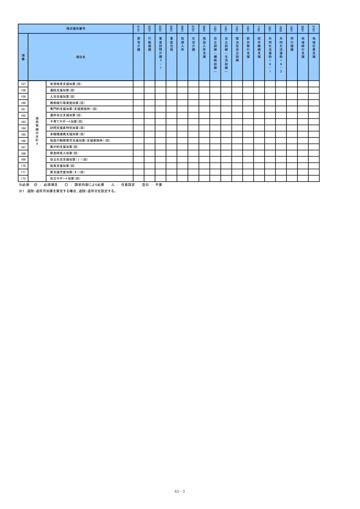
claude-haiku-5-5
表1 required_matrix 前頁から続く
| 項番 | 項目名 | 属性 | 桁数 | 内容 | 必須 | 備考 |
|---|---|---|---|---|---|---|
| 157 | 提供実績の合計４ > 有資格者支援加算(回) | 様式種別番号 > 0101 居宅介護:－ 様式種別番号 > 0201 行動援護:－ 様式種別番号 > 0301 重度訪問介護3-1:－ 様式種別番号 > 0401 重度包括:－ 様式種別番号 > 0601 短期入所:－ 様式種別番号 > 0701 生活介護:－ 様式種別番号 > 0901 施設入所支援:－ 様式種別番号 > 1301 自立訓練（機能訓練）:－ 様式種別番号 > 1401 自立訓練（生活訓練）:－ 様式種別番号 > 1501 宿泊型自立訓練:－ 様式種別番号 > 1601 就労移行支援:－ 様式種別番号 > 1701 就労継続支援:－ 様式種別番号 > 1801 共同生活援助18-1:－ 様式種別番号 > 1802 共同生活援助18-2:－ 様式種別番号 > 1901 同行援護:－ 様式種別番号 > 2001 地域移行支援:－ 様式種別番号 > 2101 地域定着支援:－ | ||||
| 158 | 提供実績の合計４ > 通院支援加算(回) | 様式種別番号 > 0101 居宅介護:－ 様式種別番号 > 0201 行動援護:－ 様式種別番号 > 0301 重度訪問介護3-1:－ 様式種別番号 > 0401 重度包括:－ 様式種別番号 > 0601 短期入所:－ 様式種別番号 > 0701 生活介護:－ 様式種別番号 > 0901 施設入所支援:－ 様式種別番号 > 1301 自立訓練（機能訓練）:－ 様式種別番号 > 1401 自立訓練（生活訓練）:－ 様式種別番号 > 1501 宿泊型自立訓練:－ 様式種別番号 > 1601 就労移行支援:－ 様式種別番号 > 1701 就労継続支援:－ 様式種別番号 > 1801 共同生活援助18-1:－ 様式種別番号 > 1802 共同生活援助18-2:－ 様式種別番号 > 1901 同行援護:－ 様式種別番号 > 2001 地域移行支援:－ 様式種別番号 > 2101 地域定着支援:－ | ||||
| 159 | 提供実績の合計４ > 入浴支援加算(回) | 様式種別番号 > 0101 居宅介護:－ 様式種別番号 > 0201 行動援護:－ 様式種別番号 > 0301 重度訪問介護3-1:－ 様式種別番号 > 0401 重度包括:－ 様式種別番号 > 0601 短期入所:－ 様式種別番号 > 0701 生活介護:－ 様式種別番号 > 0901 施設入所支援:－ 様式種別番号 > 1301 自立訓練（機能訓練）:－ 様式種別番号 > 1401 自立訓練（生活訓練）:－ 様式種別番号 > 1501 宿泊型自立訓練:－ 様式種別番号 > 1601 就労移行支援:－ 様式種別番号 > 1701 就労継続支援:－ 様式種別番号 > 1801 共同生活援助18-1:－ 様式種別番号 > 1802 共同生活援助18-2:－ 様式種別番号 > 1901 同行援護:－ 様式種別番号 > 2001 地域移行支援:－ 様式種別番号 > 2101 地域定着支援:－ | ||||
| 160 | 提供実績の合計４ > 喀痰吸引等実施加算(回) | 様式種別番号 > 0101 居宅介護:－ 様式種別番号 > 0201 行動援護:－ 様式種別番号 > 0301 重度訪問介護3-1:－ 様式種別番号 > 0401 重度包括:－ 様式種別番号 > 0601 短期入所:－ 様式種別番号 > 0701 生活介護:－ 様式種別番号 > 0901 施設入所支援:－ 様式種別番号 > 1301 自立訓練（機能訓練）:－ 様式種別番号 > 1401 自立訓練（生活訓練）:－ 様式種別番号 > 1501 宿泊型自立訓練:－ 様式種別番号 > 1601 就労移行支援:－ 様式種別番号 > 1701 就労継続支援:－ 様式種別番号 > 1801 共同生活援助18-1:－ 様式種別番号 > 1802 共同生活援助18-2:－ 様式種別番号 > 1901 同行援護:－ 様式種別番号 > 2001 地域移行支援:－ 様式種別番号 > 2101 地域定着支援:－ | ||||
| 161 | 提供実績の合計４ > 専門的支援加算(支援実施時)(回) | 様式種別番号 > 0101 居宅介護:－ 様式種別番号 > 0201 行動援護:－ 様式種別番号 > 0301 重度訪問介護3-1:－ 様式種別番号 > 0401 重度包括:－ 様式種別番号 > 0601 短期入所:－ 様式種別番号 > 0701 生活介護:－ 様式種別番号 > 0901 施設入所支援:－ 様式種別番号 > 1301 自立訓練（機能訓練）:－ 様式種別番号 > 1401 自立訓練（生活訓練）:－ 様式種別番号 > 1501 宿泊型自立訓練:－ 様式種別番号 > 1601 就労移行支援:－ 様式種別番号 > 1701 就労継続支援:－ 様式種別番号 > 1801 共同生活援助18-1:－ 様式種別番号 > 1802 共同生活援助18-2:－ 様式種別番号 > 1901 同行援護:－ 様式種別番号 > 2001 地域移行支援:－ 様式種別番号 > 2101 地域定着支援:－ | ||||
| 162 | 提供実績の合計４ > 通所自立支援加算(回) | 様式種別番号 > 0101 居宅介護:－ 様式種別番号 > 0201 行動援護:－ 様式種別番号 > 0301 重度訪問介護3-1:－ 様式種別番号 > 0401 重度包括:－ 様式種別番号 > 0601 短期入所:－ 様式種別番号 > 0701 生活介護:－ 様式種別番号 > 0901 施設入所支援:－ 様式種別番号 > 1301 自立訓練（機能訓練）:－ 様式種別番号 > 1401 自立訓練（生活訓練）:－ 様式種別番号 > 1501 宿泊型自立訓練:－ 様式種別番号 > 1601 就労移行支援:－ 様式種別番号 > 1701 就労継続支援:－ 様式種別番号 > 1801 共同生活援助18-1:－ 様式種別番号 > 1802 共同生活援助18-2:－ 様式種別番号 > 1901 同行援護:－ 様式種別番号 > 2001 地域移行支援:－ 様式種別番号 > 2101 地域定着支援:－ | ||||
| 163 | 提供実績の合計４ > 子育てサポート加算(回) | 様式種別番号 > 0101 居宅介護:－ 様式種別番号 > 0201 行動援護:－ 様式種別番号 > 0301 重度訪問介護3-1:－ 様式種別番号 > 0401 重度包括:－ 様式種別番号 > 0601 短期入所:－ 様式種別番号 > 0701 生活介護:－ 様式種別番号 > 0901 施設入所支援:－ 様式種別番号 > 1301 自立訓練（機能訓練）:－ 様式種別番号 > 1401 自立訓練（生活訓練）:－ 様式種別番号 > 1501 宿泊型自立訓練:－ 様式種別番号 > 1601 就労移行支援:－ 様式種別番号 > 1701 就労継続支援:－ 様式種別番号 > 1801 共同生活援助18-1:－ 様式種別番号 > 1802 共同生活援助18-2:－ 様式種別番号 > 1901 同行援護:－ 様式種別番号 > 2001 地域移行支援:－ 様式種別番号 > 2101 地域定着支援:－ | ||||
| 164 | 提供実績の合計４ > 訪問支援員特別加算(回) | 様式種別番号 > 0101 居宅介護:－ 様式種別番号 > 0201 行動援護:－ 様式種別番号 > 0301 重度訪問介護3-1:－ 様式種別番号 > 0401 重度包括:－ 様式種別番号 > 0601 短期入所:－ 様式種別番号 > 0701 生活介護:－ 様式種別番号 > 0901 施設入所支援:－ 様式種別番号 > 1301 自立訓練（機能訓練）:－ 様式種別番号 > 1401 自立訓練（生活訓練）:－ 様式種別番号 > 1501 宿泊型自立訓練:－ 様式種別番号 > 1601 就労移行支援:－ 様式種別番号 > 1701 就労継続支援:－ 様式種別番号 > 1801 共同生活援助18-1:－ 様式種別番号 > 1802 共同生活援助18-2:－ 様式種別番号 > 1901 同行援護:－ 様式種別番号 > 2001 地域移行支援:－ 様式種別番号 > 2101 地域定着支援:－ | ||||
| 165 | 提供実績の合計４ > 多職種連携支援加算(回) | 様式種別番号 > 0101 居宅介護:－ 様式種別番号 > 0201 行動援護:－ 様式種別番号 > 0301 重度訪問介護3-1:－ 様式種別番号 > 0401 重度包括:－ 様式種別番号 > 0601 短期入所:－ 様式種別番号 > 0701 生活介護:－ 様式種別番号 > 0901 施設入所支援:－ 様式種別番号 > 1301 自立訓練（機能訓練）:－ 様式種別番号 > 1401 自立訓練（生活訓練）:－ 様式種別番号 > 1501 宿泊型自立訓練:－ 様式種別番号 > 1601 就労移行支援:－ 様式種別番号 > 1701 就労継続支援:－ 様式種別番号 > 1801 共同生活援助18-1:－ 様式種別番号 > 1802 共同生活援助18-2:－ 様式種別番号 > 1901 同行援護:－ 様式種別番号 > 2001 地域移行支援:－ 様式種別番号 > 2101 地域定着支援:－ | ||||
| 166 | 提供実績の合計４ > 強度行動障害児支援加算(支援実施時)(回) | 様式種別番号 > 0101 居宅介護:－ 様式種別番号 > 0201 行動援護:－ 様式種別番号 > 0301 重度訪問介護3-1:－ 様式種別番号 > 0401 重度包括:－ 様式種別番号 > 0601 短期入所:－ 様式種別番号 > 0701 生活介護:－ 様式種別番号 > 0901 施設入所支援:－ 様式種別番号 > 1301 自立訓練（機能訓練）:－ 様式種別番号 > 1401 自立訓練（生活訓練）:－ 様式種別番号 > 1501 宿泊型自立訓練:－ 様式種別番号 > 1601 就労移行支援:－ 様式種別番号 > 1701 就労継続支援:－ 様式種別番号 > 1801 共同生活援助18-1:－ 様式種別番号 > 1802 共同生活援助18-2:－ 様式種別番号 > 1901 同行援護:－ 様式種別番号 > 2001 地域移行支援:－ 様式種別番号 > 2101 地域定着支援:－ | ||||
| 167 | 提供実績の合計４ > 集中的支援加算(回) | 様式種別番号 > 0101 居宅介護:－ 様式種別番号 > 0201 行動援護:－ 様式種別番号 > 0301 重度訪問介護3-1:－ 様式種別番号 > 0401 重度包括:－ 様式種別番号 > 0601 短期入所:－ 様式種別番号 > 0701 生活介護:－ 様式種別番号 > 0901 施設入所支援:－ 様式種別番号 > 1301 自立訓練（機能訓練）:－ 様式種別番号 > 1401 自立訓練（生活訓練）:－ 様式種別番号 > 1501 宿泊型自立訓練:－ 様式種別番号 > 1601 就労移行支援:－ 様式種別番号 > 1701 就労継続支援:－ 様式種別番号 > 1801 共同生活援助18-1:－ 様式種別番号 > 1802 共同生活援助18-2:－ 様式種別番号 > 1901 同行援護:－ 様式種別番号 > 2001 地域移行支援:－ 様式種別番号 > 2101 地域定着支援:－ | ||||
| 168 | 提供実績の合計４ > 緊急時受入加算(回) | 様式種別番号 > 0101 居宅介護:－ 様式種別番号 > 0201 行動援護:－ 様式種別番号 > 0301 重度訪問介護3-1:－ 様式種別番号 > 0401 重度包括:－ 様式種別番号 > 0601 短期入所:－ 様式種別番号 > 0701 生活介護:－ 様式種別番号 > 0901 施設入所支援:－ 様式種別番号 > 1301 自立訓練（機能訓練）:－ 様式種別番号 > 1401 自立訓練（生活訓練）:－ 様式種別番号 > 1501 宿泊型自立訓練:－ 様式種別番号 > 1601 就労移行支援:－ 様式種別番号 > 1701 就労継続支援:－ 様式種別番号 > 1801 共同生活援助18-1:－ 様式種別番号 > 1802 共同生活援助18-2:－ 様式種別番号 > 1901 同行援護:－ 様式種別番号 > 2001 地域移行支援:－ 様式種別番号 > 2101 地域定着支援:－ | ||||
| 169 | 提供実績の合計４ > 自立生活支援加算（Ⅰ）(回) | 様式種別番号 > 0101 居宅介護:－ 様式種別番号 > 0201 行動援護:－ 様式種別番号 > 0301 重度訪問介護3-1:－ 様式種別番号 > 0401 重度包括:－ 様式種別番号 > 0601 短期入所:－ 様式種別番号 > 0701 生活介護:－ 様式種別番号 > 0901 施設入所支援:－ 様式種別番号 > 1301 自立訓練（機能訓練）:－ 様式種別番号 > 1401 自立訓練（生活訓練）:－ 様式種別番号 > 1501 宿泊型自立訓練:－ 様式種別番号 > 1601 就労移行支援:－ 様式種別番号 > 1701 就労継続支援:－ 様式種別番号 > 1801 共同生活援助18-1:－ 様式種別番号 > 1802 共同生活援助18-2:－ 様式種別番号 > 1901 同行援護:－ 様式種別番号 > 2001 地域移行支援:－ 様式種別番号 > 2101 地域定着支援:－ | ||||
| 170 | 提供実績の合計４ > 延長支援加算(回) | 様式種別番号 > 0101 居宅介護:－ 様式種別番号 > 0201 行動援護:－ 様式種別番号 > 0301 重度訪問介護3-1:－ 様式種別番号 > 0401 重度包括:－ 様式種別番号 > 0601 短期入所:－ 様式種別番号 > 0701 生活介護:－ 様式種別番号 > 0901 施設入所支援:－ 様式種別番号 > 1301 自立訓練（機能訓練）:－ 様式種別番号 > 1401 自立訓練（生活訓練）:－ 様式種別番号 > 1501 宿泊型自立訓練:－ 様式種別番号 > 1601 就労移行支援:－ 様式種別番号 > 1701 就労継続支援:－ 様式種別番号 > 1801 共同生活援助18-1:－ 様式種別番号 > 1802 共同生活援助18-2:－ 様式種別番号 > 1901 同行援護:－ 様式種別番号 > 2001 地域移行支援:－ 様式種別番号 > 2101 地域定着支援:－ | ||||
| 171 | 提供実績の合計４ > 要支援児童加算（Ⅱ）(回) | 様式種別番号 > 0101 居宅介護:－ 様式種別番号 > 0201 行動援護:－ 様式種別番号 > 0301 重度訪問介護3-1:－ 様式種別番号 > 0401 重度包括:－ 様式種別番号 > 0601 短期入所:－ 様式種別番号 > 0701 生活介護:－ 様式種別番号 > 0901 施設入所支援:－ 様式種別番号 > 1301 自立訓練（機能訓練）:－ 様式種別番号 > 1401 自立訓練（生活訓練）:－ 様式種別番号 > 1501 宿泊型自立訓練:－ 様式種別番号 > 1601 就労移行支援:－ 様式種別番号 > 1701 就労継続支援:－ 様式種別番号 > 1801 共同生活援助18-1:－ 様式種別番号 > 1802 共同生活援助18-2:－ 様式種別番号 > 1901 同行援護:－ 様式種別番号 > 2001 地域移行支援:－ 様式種別番号 > 2101 地域定着支援:－ | ||||
| 172 | 提供実績の合計４ > 自立サポート加算(回) | 様式種別番号 > 0101 居宅介護:－ 様式種別番号 > 0201 行動援護:－ 様式種別番号 > 0301 重度訪問介護3-1:－ 様式種別番号 > 0401 重度包括:－ 様式種別番号 > 0601 短期入所:－ 様式種別番号 > 0701 生活介護:－ 様式種別番号 > 0901 施設入所支援:－ 様式種別番号 > 1301 自立訓練（機能訓練）:－ 様式種別番号 > 1401 自立訓練（生活訓練）:－ 様式種別番号 > 1501 宿泊型自立訓練:－ 様式種別番号 > 1601 就労移行支援:－ 様式種別番号 > 1701 就労継続支援:－ 様式種別番号 > 1801 共同生活援助18-1:－ 様式種別番号 > 1802 共同生活援助18-2:－ 様式種別番号 > 1901 同行援護:－ 様式種別番号 > 2001 地域移行支援:－ 様式種別番号 > 2101 地域定着支援:－ |
注記
- ※必須 ◎：必須項目 ○：請求内容により必要 △：任意設定 空白：不要
- ※1 退院・退所月加算を算定する場合、退院・退所日を設定する。
uncertain（モデル自己申告）
- 表の見出しや表題がなく、項番157から始まるため前ページからの続きと判断した。ただし見出し行は本ページにも印字されている。
- 表の各セルは空欄に見えたため、全項目の値を null とした。
- 項番の縦書き見出し「提供実績の合計４」の４は全角として書き起こした。
- 各項目名の括弧表記（(回)、（Ⅰ）など）は画像の字形から判断したため、全角半角が不確か。
claude-sonnet-5-5
表1 required_matrix 前頁から続く
| 項番 | 項目名 | 属性 | 桁数 | 内容 | 必須 | 備考 |
|---|---|---|---|---|---|---|
| 157 | 提供実績の合計4 > 有資格者支援加算(回) | |||||
| 158 | 提供実績の合計4 > 通院支援加算(回) | |||||
| 159 | 提供実績の合計4 > 入浴支援加算(回) | |||||
| 160 | 提供実績の合計4 > 喀痰吸引等実施加算(回) | |||||
| 161 | 提供実績の合計4 > 専門的支援加算(支援実施時)(回) | |||||
| 162 | 提供実績の合計4 > 通所自立支援加算(回) | |||||
| 163 | 提供実績の合計4 > 子育てサポート加算(回) | |||||
| 164 | 提供実績の合計4 > 訪問支援員特別加算(回) | |||||
| 165 | 提供実績の合計4 > 多職種連携支援加算(回) | |||||
| 166 | 提供実績の合計4 > 強度行動障害児支援加算(支援実施時)(回) | |||||
| 167 | 提供実績の合計4 > 集中的支援加算(回) | |||||
| 168 | 提供実績の合計4 > 緊急時受入加算(回) | |||||
| 169 | 提供実績の合計4 > 自立生活支援加算(Ⅰ)(回) | |||||
| 170 | 提供実績の合計4 > 延長支援加算(回) | |||||
| 171 | 提供実績の合計4 > 要支援児童加算(Ⅱ)(回) | |||||
| 172 | 提供実績の合計4 > 自立サポート加算(回) |
注記
- ※必須 ◎ : 必須項目 ○ : 請求内容により必要 △ : 任意設定 空白 : 不要
- ※1 退院･退所月加算を算定する場合、退院･退所日を設定する。
uncertain（モデル自己申告）
- 全行で様式種別ごとの必須記号欄がすべて空白に見えたため、required_by は空配列にした。
- 列見出しの縦書き文字（共同生活援助18－1等）は縦書きの折り返しから復元した。
- 提供実績の合計4の「4」は縦書きグループ見出しの末尾として読み取った。
shogai_jigyosho_r0710_p129 — 印字p.

claude-haiku-5-5
- 表1 項番36 必須（様式種別番号 > 0701）の値が想定外: '○※2'
- 表1 項番36 必須（様式種別番号 > 0901）の値が想定外: '○※1'
- 表1 項番36 必須（様式種別番号 > 1301）の値が想定外: '○※2'
- 表1 項番36 必須（様式種別番号 > 1401）の値が想定外: '○※2'
- 表1 項番36 必須（様式種別番号 > 1501）の値が想定外: '○※3'
- 表1 項番36 必須（様式種別番号 > 1601）の値が想定外: '○※2'
- 表1 項番36 必須（様式種別番号 > 1701）の値が想定外: '○※2'
- 表1 項番36 必須（様式種別番号 > 1801）の値が想定外: '○※1'
- 表1 項番36 必須（様式種別番号 > 2001）の値が想定外: '○※4'
- 表1 項番36 必須（様式種別番号 > 2101）の値が想定外: '○※5'
- [改ページ] 前後ページで列見出しの書き起こしが一致しない
表1 required_matrix(18) 入力必須項目と様式の対応表(明細情報レコード)【サービス提供年月：平成26年4月～平成27年3月】 次頁へ続く
| 項番 | 項目名 | 属性 | 桁数 | 内容 | 必須 | 備考 |
|---|---|---|---|---|---|---|
| 1 | 交換情報識別番号 | 様式種別番号 > 0101:◎ 様式種別番号 > 0201:◎ 様式種別番号 > 0301:◎ 様式種別番号 > 0401:◎ 様式種別番号 > 0601:◎ 様式種別番号 > 0701:◎ 様式種別番号 > 0901:◎ 様式種別番号 > 1301:◎ 様式種別番号 > 1401:◎ 様式種別番号 > 1501:◎ 様式種別番号 > 1601:◎ 様式種別番号 > 1701:◎ 様式種別番号 > 1801:◎ 様式種別番号 > 1802:◎ 様式種別番号 > 1901:◎ 様式種別番号 > 2001:◎ 様式種別番号 > 2101:◎ | ||||
| 2 | レコード種別コード | 様式種別番号 > 0101:◎ 様式種別番号 > 0201:◎ 様式種別番号 > 0301:◎ 様式種別番号 > 0401:◎ 様式種別番号 > 0601:◎ 様式種別番号 > 0701:◎ 様式種別番号 > 0901:◎ 様式種別番号 > 1301:◎ 様式種別番号 > 1401:◎ 様式種別番号 > 1501:◎ 様式種別番号 > 1601:◎ 様式種別番号 > 1701:◎ 様式種別番号 > 1801:◎ 様式種別番号 > 1802:◎ 様式種別番号 > 1901:◎ 様式種別番号 > 2001:◎ 様式種別番号 > 2101:◎ | ||||
| 3 | サービス提供年月 | 様式種別番号 > 0101:◎ 様式種別番号 > 0201:◎ 様式種別番号 > 0301:◎ 様式種別番号 > 0401:◎ 様式種別番号 > 0601:◎ 様式種別番号 > 0701:◎ 様式種別番号 > 0901:◎ 様式種別番号 > 1301:◎ 様式種別番号 > 1401:◎ 様式種別番号 > 1501:◎ 様式種別番号 > 1601:◎ 様式種別番号 > 1701:◎ 様式種別番号 > 1801:◎ 様式種別番号 > 1802:◎ 様式種別番号 > 1901:◎ 様式種別番号 > 2001:◎ 様式種別番号 > 2101:◎ | ||||
| 4 | 市町村番号 | 様式種別番号 > 0101:◎ 様式種別番号 > 0201:◎ 様式種別番号 > 0301:◎ 様式種別番号 > 0401:◎ 様式種別番号 > 0601:◎ 様式種別番号 > 0701:◎ 様式種別番号 > 0901:◎ 様式種別番号 > 1301:◎ 様式種別番号 > 1401:◎ 様式種別番号 > 1501:◎ 様式種別番号 > 1601:◎ 様式種別番号 > 1701:◎ 様式種別番号 > 1801:◎ 様式種別番号 > 1802:◎ 様式種別番号 > 1901:◎ 様式種別番号 > 2001:◎ 様式種別番号 > 2101:◎ | ||||
| 5 | 事業所番号 | 様式種別番号 > 0101:◎ 様式種別番号 > 0201:◎ 様式種別番号 > 0301:◎ 様式種別番号 > 0401:◎ 様式種別番号 > 0601:◎ 様式種別番号 > 0701:◎ 様式種別番号 > 0901:◎ 様式種別番号 > 1301:◎ 様式種別番号 > 1401:◎ 様式種別番号 > 1501:◎ 様式種別番号 > 1601:◎ 様式種別番号 > 1701:◎ 様式種別番号 > 1801:◎ 様式種別番号 > 1802:◎ 様式種別番号 > 1901:◎ 様式種別番号 > 2001:◎ 様式種別番号 > 2101:◎ | ||||
| 6 | 受給者証番号 | 様式種別番号 > 0101:◎ 様式種別番号 > 0201:◎ 様式種別番号 > 0301:◎ 様式種別番号 > 0401:◎ 様式種別番号 > 0601:◎ 様式種別番号 > 0701:◎ 様式種別番号 > 0901:◎ 様式種別番号 > 1301:◎ 様式種別番号 > 1401:◎ 様式種別番号 > 1501:◎ 様式種別番号 > 1601:◎ 様式種別番号 > 1701:◎ 様式種別番号 > 1801:◎ 様式種別番号 > 1802:◎ 様式種別番号 > 1901:◎ 様式種別番号 > 2001:◎ 様式種別番号 > 2101:◎ | ||||
| 7 | 様式種別番号 | 様式種別番号 > 0101:◎ 様式種別番号 > 0201:◎ 様式種別番号 > 0301:◎ 様式種別番号 > 0401:◎ 様式種別番号 > 0601:◎ 様式種別番号 > 0701:◎ 様式種別番号 > 0901:◎ 様式種別番号 > 1301:◎ 様式種別番号 > 1401:◎ 様式種別番号 > 1501:◎ 様式種別番号 > 1601:◎ 様式種別番号 > 1701:◎ 様式種別番号 > 1801:◎ 様式種別番号 > 1802:◎ 様式種別番号 > 1901:◎ 様式種別番号 > 2001:◎ 様式種別番号 > 2101:◎ | ||||
| 8 | 提供通番 | 様式種別番号 > 0101:◎ 様式種別番号 > 0201:◎ 様式種別番号 > 0301:◎ 様式種別番号 > 0401:－ 様式種別番号 > 0601:－ 様式種別番号 > 0701:－ 様式種別番号 > 0901:－ 様式種別番号 > 1301:－ 様式種別番号 > 1401:－ 様式種別番号 > 1501:－ 様式種別番号 > 1601:－ 様式種別番号 > 1701:－ 様式種別番号 > 1801:－ 様式種別番号 > 1802:◎ 様式種別番号 > 1901:◎ 様式種別番号 > 2001:－ 様式種別番号 > 2101:－ | ||||
| 9 | 日付 | 様式種別番号 > 0101:◎ 様式種別番号 > 0201:◎ 様式種別番号 > 0301:◎ 様式種別番号 > 0401:◎ 様式種別番号 > 0601:◎ 様式種別番号 > 0701:◎ 様式種別番号 > 0901:◎ 様式種別番号 > 1301:◎ 様式種別番号 > 1401:◎ 様式種別番号 > 1501:◎ 様式種別番号 > 1601:◎ 様式種別番号 > 1701:◎ 様式種別番号 > 1801:◎ 様式種別番号 > 1802:◎ 様式種別番号 > 1901:◎ 様式種別番号 > 2001:◎ 様式種別番号 > 2101:◎ | ||||
| 10 | サービス提供回数 | 様式種別番号 > 0101:○ 様式種別番号 > 0201:○ 様式種別番号 > 0301:○ 様式種別番号 > 0401:－ 様式種別番号 > 0601:－ 様式種別番号 > 0701:－ 様式種別番号 > 0901:－ 様式種別番号 > 1301:－ 様式種別番号 > 1401:－ 様式種別番号 > 1501:－ 様式種別番号 > 1601:－ 様式種別番号 > 1701:－ 様式種別番号 > 1801:－ 様式種別番号 > 1802:－ 様式種別番号 > 1901:○ 様式種別番号 > 2001:－ 様式種別番号 > 2101:－ | ||||
| 11 | サービス内容 | 様式種別番号 > 0101:○ 様式種別番号 > 0201:－ 様式種別番号 > 0301:－ 様式種別番号 > 0401:○ 様式種別番号 > 0601:－ 様式種別番号 > 0701:－ 様式種別番号 > 0901:－ 様式種別番号 > 1301:－ 様式種別番号 > 1401:－ 様式種別番号 > 1501:－ 様式種別番号 > 1601:－ 様式種別番号 > 1701:－ 様式種別番号 > 1801:－ 様式種別番号 > 1802:－ 様式種別番号 > 1901:○ 様式種別番号 > 2001:－ 様式種別番号 > 2101:－ | ||||
| 12 | ヘルパー資格 | 様式種別番号 > 0101:○ 様式種別番号 > 0201:○ 様式種別番号 > 0301:－ 様式種別番号 > 0401:－ 様式種別番号 > 0601:－ 様式種別番号 > 0701:－ 様式種別番号 > 0901:－ 様式種別番号 > 1301:－ 様式種別番号 > 1401:－ 様式種別番号 > 1501:－ 様式種別番号 > 1601:－ 様式種別番号 > 1701:－ 様式種別番号 > 1801:－ 様式種別番号 > 1802:－ 様式種別番号 > 1901:○ 様式種別番号 > 2001:－ 様式種別番号 > 2101:－ | ||||
| 13 | 運転フラグ | 様式種別番号 > 0101:○ 様式種別番号 > 0201:－ 様式種別番号 > 0301:－ 様式種別番号 > 0401:－ 様式種別番号 > 0601:－ 様式種別番号 > 0701:－ 様式種別番号 > 0901:－ 様式種別番号 > 1301:－ 様式種別番号 > 1401:－ 様式種別番号 > 1501:－ 様式種別番号 > 1601:－ 様式種別番号 > 1701:－ 様式種別番号 > 1801:－ 様式種別番号 > 1802:－ 様式種別番号 > 1901:○ 様式種別番号 > 2001:－ 様式種別番号 > 2101:－ | ||||
| 14 | 開始時間 | 様式種別番号 > 0101:○ 様式種別番号 > 0201:○ 様式種別番号 > 0301:○ 様式種別番号 > 0401:○ 様式種別番号 > 0601:－ 様式種別番号 > 0701:○ 様式種別番号 > 0901:－ 様式種別番号 > 1301:○ 様式種別番号 > 1401:○ 様式種別番号 > 1501:－ 様式種別番号 > 1601:○ 様式種別番号 > 1701:○ 様式種別番号 > 1801:－ 様式種別番号 > 1802:○ 様式種別番号 > 1901:○ 様式種別番号 > 2001:－ 様式種別番号 > 2101:－ | ||||
| 15 | 終了時間 | 様式種別番号 > 0101:○ 様式種別番号 > 0201:○ 様式種別番号 > 0301:○ 様式種別番号 > 0401:○ 様式種別番号 > 0601:－ 様式種別番号 > 0701:○ 様式種別番号 > 0901:－ 様式種別番号 > 1301:○ 様式種別番号 > 1401:○ 様式種別番号 > 1501:－ 様式種別番号 > 1601:○ 様式種別番号 > 1701:○ 様式種別番号 > 1801:－ 様式種別番号 > 1802:○ 様式種別番号 > 1901:○ 様式種別番号 > 2001:－ 様式種別番号 > 2101:－ | ||||
| 16 | 算定時間数 | 様式種別番号 > 0101:○ 様式種別番号 > 0201:○ 様式種別番号 > 0301:○ 様式種別番号 > 0401:○ 様式種別番号 > 0601:－ 様式種別番号 > 0701:－ 様式種別番号 > 0901:－ 様式種別番号 > 1301:－ 様式種別番号 > 1401:－ 様式種別番号 > 1501:－ 様式種別番号 > 1601:－ 様式種別番号 > 1701:－ 様式種別番号 > 1801:－ 様式種別番号 > 1802:○ 様式種別番号 > 1901:○ 様式種別番号 > 2001:－ 様式種別番号 > 2101:－ | ||||
| 17 | 乗降(回数) | 様式種別番号 > 0101:○ 様式種別番号 > 0201:－ 様式種別番号 > 0301:－ 様式種別番号 > 0401:－ 様式種別番号 > 0601:－ 様式種別番号 > 0701:－ 様式種別番号 > 0901:－ 様式種別番号 > 1301:－ 様式種別番号 > 1401:－ 様式種別番号 > 1501:－ 様式種別番号 > 1601:－ 様式種別番号 > 1701:－ 様式種別番号 > 1801:－ 様式種別番号 > 1802:－ 様式種別番号 > 1901:－ 様式種別番号 > 2001:－ 様式種別番号 > 2101:－ | ||||
| 18 | 移動 | 様式種別番号 > 0101:－ 様式種別番号 > 0201:－ 様式種別番号 > 0301:○ 様式種別番号 > 0401:－ 様式種別番号 > 0601:－ 様式種別番号 > 0701:－ 様式種別番号 > 0901:－ 様式種別番号 > 1301:－ 様式種別番号 > 1401:－ 様式種別番号 > 1501:－ 様式種別番号 > 1601:－ 様式種別番号 > 1701:－ 様式種別番号 > 1801:－ 様式種別番号 > 1802:－ 様式種別番号 > 1901:－ 様式種別番号 > 2001:－ 様式種別番号 > 2101:－ | ||||
| 19 | 派遣人数 | 様式種別番号 > 0101:○ 様式種別番号 > 0201:○ 様式種別番号 > 0301:○ 様式種別番号 > 0401:○ 様式種別番号 > 0601:－ 様式種別番号 > 0701:－ 様式種別番号 > 0901:－ 様式種別番号 > 1301:－ 様式種別番号 > 1401:－ 様式種別番号 > 1501:－ 様式種別番号 > 1601:－ 様式種別番号 > 1701:－ 様式種別番号 > 1801:－ 様式種別番号 > 1802:－ 様式種別番号 > 1901:○ 様式種別番号 > 2001:－ 様式種別番号 > 2101:－ | ||||
| 20 | 前月からの継続サービス | 様式種別番号 > 0101:○ 様式種別番号 > 0201:－ 様式種別番号 > 0301:－ 様式種別番号 > 0401:－ 様式種別番号 > 0601:－ 様式種別番号 > 0701:－ 様式種別番号 > 0901:－ 様式種別番号 > 1301:－ 様式種別番号 > 1401:－ 様式種別番号 > 1501:－ 様式種別番号 > 1601:－ 様式種別番号 > 1701:－ 様式種別番号 > 1801:－ 様式種別番号 > 1802:－ 様式種別番号 > 1901:○ 様式種別番号 > 2001:－ 様式種別番号 > 2101:－ | ||||
| 21 | 送迎加算 往 | 様式種別番号 > 0101:－ 様式種別番号 > 0201:－ 様式種別番号 > 0301:－ 様式種別番号 > 0401:－ 様式種別番号 > 0601:○ 様式種別番号 > 0701:○ 様式種別番号 > 0901:－ 様式種別番号 > 1301:○ 様式種別番号 > 1401:○ 様式種別番号 > 1501:－ 様式種別番号 > 1601:○ 様式種別番号 > 1701:○ 様式種別番号 > 1801:－ 様式種別番号 > 1802:－ 様式種別番号 > 1901:－ 様式種別番号 > 2001:－ 様式種別番号 > 2101:－ | ||||
| 22 | 送迎加算 復 | 様式種別番号 > 0101:－ 様式種別番号 > 0201:－ 様式種別番号 > 0301:－ 様式種別番号 > 0401:－ 様式種別番号 > 0601:○ 様式種別番号 > 0701:○ 様式種別番号 > 0901:－ 様式種別番号 > 1301:○ 様式種別番号 > 1401:○ 様式種別番号 > 1501:－ 様式種別番号 > 1601:○ 様式種別番号 > 1701:○ 様式種別番号 > 1801:－ 様式種別番号 > 1802:－ 様式種別番号 > 1901:－ 様式種別番号 > 2001:－ 様式種別番号 > 2101:－ | ||||
| 23 | 家庭連携加算(サービス提供時間数) | 様式種別番号 > 0101:－ 様式種別番号 > 0201:－ 様式種別番号 > 0301:－ 様式種別番号 > 0401:－ 様式種別番号 > 0601:－ 様式種別番号 > 0701:－ 様式種別番号 > 0901:－ 様式種別番号 > 1301:－ 様式種別番号 > 1401:－ 様式種別番号 > 1501:－ 様式種別番号 > 1601:－ 様式種別番号 > 1701:－ 様式種別番号 > 1801:－ 様式種別番号 > 1802:－ 様式種別番号 > 1901:－ 様式種別番号 > 2001:－ 様式種別番号 > 2101:－ | ||||
| 24 | 家庭連携加算(算定時間数) | 様式種別番号 > 0101:－ 様式種別番号 > 0201:－ 様式種別番号 > 0301:－ 様式種別番号 > 0401:－ 様式種別番号 > 0601:－ 様式種別番号 > 0701:－ 様式種別番号 > 0901:－ 様式種別番号 > 1301:－ 様式種別番号 > 1401:－ 様式種別番号 > 1501:－ 様式種別番号 > 1601:－ 様式種別番号 > 1701:－ 様式種別番号 > 1801:－ 様式種別番号 > 1802:－ 様式種別番号 > 1901:－ 様式種別番号 > 2001:－ 様式種別番号 > 2101:－ | ||||
| 25 | 自活訓練加算 | 様式種別番号 > 0101:－ 様式種別番号 > 0201:－ 様式種別番号 > 0301:－ 様式種別番号 > 0401:－ 様式種別番号 > 0601:－ 様式種別番号 > 0701:－ 様式種別番号 > 0901:－ 様式種別番号 > 1301:－ 様式種別番号 > 1401:－ 様式種別番号 > 1501:－ 様式種別番号 > 1601:－ 様式種別番号 > 1701:－ 様式種別番号 > 1801:－ 様式種別番号 > 1802:－ 様式種別番号 > 1901:－ 様式種別番号 > 2001:－ 様式種別番号 > 2101:－ | ||||
| 26 | 短期滞在加算 | 様式種別番号 > 0101:－ 様式種別番号 > 0201:－ 様式種別番号 > 0301:－ 様式種別番号 > 0401:－ 様式種別番号 > 0601:－ 様式種別番号 > 0701:－ 様式種別番号 > 0901:－ 様式種別番号 > 1301:－ 様式種別番号 > 1401:○ 様式種別番号 > 1501:－ 様式種別番号 > 1601:－ 様式種別番号 > 1701:－ 様式種別番号 > 1801:－ 様式種別番号 > 1802:－ 様式種別番号 > 1901:－ 様式種別番号 > 2001:－ 様式種別番号 > 2101:－ | ||||
| 27 | 訪問支援特別加算(サービス提供時間数) | 様式種別番号 > 0101:－ 様式種別番号 > 0201:－ 様式種別番号 > 0301:－ 様式種別番号 > 0401:－ 様式種別番号 > 0601:－ 様式種別番号 > 0701:○ 様式種別番号 > 0901:－ 様式種別番号 > 1301:－ 様式種別番号 > 1401:－ 様式種別番号 > 1501:－ 様式種別番号 > 1601:○ 様式種別番号 > 1701:○ 様式種別番号 > 1801:－ 様式種別番号 > 1802:－ 様式種別番号 > 1901:－ 様式種別番号 > 2001:－ 様式種別番号 > 2101:－ | ||||
| 28 | 訪問支援特別加算(算定時間数) | 様式種別番号 > 0101:－ 様式種別番号 > 0201:－ 様式種別番号 > 0301:－ 様式種別番号 > 0401:－ 様式種別番号 > 0601:－ 様式種別番号 > 0701:○ 様式種別番号 > 0901:－ 様式種別番号 > 1301:－ 様式種別番号 > 1401:－ 様式種別番号 > 1501:－ 様式種別番号 > 1601:○ 様式種別番号 > 1701:○ 様式種別番号 > 1801:－ 様式種別番号 > 1802:－ 様式種別番号 > 1901:－ 様式種別番号 > 2001:－ 様式種別番号 > 2101:－ | ||||
| 29 | 施設外支援 | 様式種別番号 > 0101:－ 様式種別番号 > 0201:－ 様式種別番号 > 0301:－ 様式種別番号 > 0401:－ 様式種別番号 > 0601:－ 様式種別番号 > 0701:－ 様式種別番号 > 0901:－ 様式種別番号 > 1301:－ 様式種別番号 > 1401:－ 様式種別番号 > 1501:－ 様式種別番号 > 1601:○ 様式種別番号 > 1701:○ 様式種別番号 > 1801:－ 様式種別番号 > 1802:－ 様式種別番号 > 1901:－ 様式種別番号 > 2001:－ 様式種別番号 > 2101:－ | ||||
| 30 | 退所時特別支援加算 | 様式種別番号 > 0101:－ 様式種別番号 > 0201:－ 様式種別番号 > 0301:－ 様式種別番号 > 0401:－ 様式種別番号 > 0601:－ 様式種別番号 > 0701:－ 様式種別番号 > 0901:－ 様式種別番号 > 1301:－ 様式種別番号 > 1401:－ 様式種別番号 > 1501:－ 様式種別番号 > 1601:－ 様式種別番号 > 1701:－ 様式種別番号 > 1801:－ 様式種別番号 > 1802:－ 様式種別番号 > 1901:－ 様式種別番号 > 2001:－ 様式種別番号 > 2101:－ | ||||
| 31 | 地域移行加算 | 様式種別番号 > 0101:－ 様式種別番号 > 0201:－ 様式種別番号 > 0301:－ 様式種別番号 > 0401:－ 様式種別番号 > 0601:－ 様式種別番号 > 0701:－ 様式種別番号 > 0901:○ 様式種別番号 > 1301:－ 様式種別番号 > 1401:－ 様式種別番号 > 1501:○ 様式種別番号 > 1601:－ 様式種別番号 > 1701:－ 様式種別番号 > 1801:－ 様式種別番号 > 1802:－ 様式種別番号 > 1901:－ 様式種別番号 > 2001:－ 様式種別番号 > 2101:－ | ||||
| 32 | 食事提供加算 | 様式種別番号 > 0101:－ 様式種別番号 > 0201:－ 様式種別番号 > 0301:－ 様式種別番号 > 0401:－ 様式種別番号 > 0601:○ 様式種別番号 > 0701:○ 様式種別番号 > 0901:－ 様式種別番号 > 1301:○ 様式種別番号 > 1401:○ 様式種別番号 > 1501:○ 様式種別番号 > 1601:○ 様式種別番号 > 1701:○ 様式種別番号 > 1801:－ 様式種別番号 > 1802:－ 様式種別番号 > 1901:－ 様式種別番号 > 2001:－ 様式種別番号 > 2101:－ | ||||
| 33 | 入院・外泊時加算 | 様式種別番号 > 0101:－ 様式種別番号 > 0201:－ 様式種別番号 > 0301:－ 様式種別番号 > 0401:－ 様式種別番号 > 0601:－ 様式種別番号 > 0701:－ 様式種別番号 > 0901:○ 様式種別番号 > 1301:－ 様式種別番号 > 1401:－ 様式種別番号 > 1501:－ 様式種別番号 > 1601:－ 様式種別番号 > 1701:－ 様式種別番号 > 1801:－ 様式種別番号 > 1802:－ 様式種別番号 > 1901:－ 様式種別番号 > 2001:－ 様式種別番号 > 2101:－ | ||||
| 34 | 提供形態 | 様式種別番号 > 0101:－ 様式種別番号 > 0201:－ 様式種別番号 > 0301:－ 様式種別番号 > 0401:－ 様式種別番号 > 0601:－ 様式種別番号 > 0701:－ 様式種別番号 > 0901:－ 様式種別番号 > 1301:○ 様式種別番号 > 1401:○ 様式種別番号 > 1501:－ 様式種別番号 > 1601:－ 様式種別番号 > 1701:－ 様式種別番号 > 1801:－ 様式種別番号 > 1802:－ 様式種別番号 > 1901:－ 様式種別番号 > 2001:－ 様式種別番号 > 2101:－ | ||||
| 35 | 備考 | 様式種別番号 > 0101:○ 様式種別番号 > 0201:○ 様式種別番号 > 0301:○ 様式種別番号 > 0401:－ 様式種別番号 > 0601:○ 様式種別番号 > 0701:○ 様式種別番号 > 0901:○ 様式種別番号 > 1301:○ 様式種別番号 > 1401:○ 様式種別番号 > 1501:○ 様式種別番号 > 1601:○ 様式種別番号 > 1701:○ 様式種別番号 > 1801:○ 様式種別番号 > 1802:○ 様式種別番号 > 1901:○ 様式種別番号 > 2001:○ 様式種別番号 > 2101:○ | ||||
| 36 | サービス提供の状況 | 様式種別番号 > 0101:－ 様式種別番号 > 0201:－ 様式種別番号 > 0301:－ 様式種別番号 > 0401:－ 様式種別番号 > 0601:－ 様式種別番号 > 0701:○※2 様式種別番号 > 0901:○※1 様式種別番号 > 1301:○※2 様式種別番号 > 1401:○※2 様式種別番号 > 1501:○※3 様式種別番号 > 1601:○※2 様式種別番号 > 1701:○※2 様式種別番号 > 1801:○※1 様式種別番号 > 1802:－ 様式種別番号 > 1901:－ 様式種別番号 > 2001:○※4 様式種別番号 > 2101:○※5 | ||||
| 37 | 夜間支援体制加算 | 様式種別番号 > 0101:－ 様式種別番号 > 0201:－ 様式種別番号 > 0301:－ 様式種別番号 > 0401:－ 様式種別番号 > 0601:－ 様式種別番号 > 0701:－ 様式種別番号 > 0901:－ 様式種別番号 > 1301:－ 様式種別番号 > 1401:－ 様式種別番号 > 1501:○ 様式種別番号 > 1601:－ 様式種別番号 > 1701:－ 様式種別番号 > 1801:○ 様式種別番号 > 1802:－ 様式種別番号 > 1901:－ 様式種別番号 > 2001:－ 様式種別番号 > 2101:－ | ||||
| 38 | 入院時支援特別加算(サービス提供回数) | 様式種別番号 > 0101:－ 様式種別番号 > 0201:－ 様式種別番号 > 0301:－ 様式種別番号 > 0401:－ 様式種別番号 > 0601:－ 様式種別番号 > 0701:－ 様式種別番号 > 0901:○ 様式種別番号 > 1301:－ 様式種別番号 > 1401:－ 様式種別番号 > 1501:○ 様式種別番号 > 1601:－ 様式種別番号 > 1701:－ 様式種別番号 > 1801:○ 様式種別番号 > 1802:－ 様式種別番号 > 1901:－ 様式種別番号 > 2001:－ 様式種別番号 > 2101:－ | ||||
| 39 | 入院時支援特別加算(算定回数) | 様式種別番号 > 0101:－ 様式種別番号 > 0201:－ 様式種別番号 > 0301:－ 様式種別番号 > 0401:－ 様式種別番号 > 0601:－ 様式種別番号 > 0701:－ 様式種別番号 > 0901:○ 様式種別番号 > 1301:－ 様式種別番号 > 1401:－ 様式種別番号 > 1501:○ 様式種別番号 > 1601:－ 様式種別番号 > 1701:－ 様式種別番号 > 1801:○ 様式種別番号 > 1802:－ 様式種別番号 > 1901:－ 様式種別番号 > 2001:－ 様式種別番号 > 2101:－ | ||||
| 40 | 帰宅時支援加算(サービス提供回数) | 様式種別番号 > 0101:－ 様式種別番号 > 0201:－ 様式種別番号 > 0301:－ 様式種別番号 > 0401:－ 様式種別番号 > 0601:－ 様式種別番号 > 0701:－ 様式種別番号 > 0901:－ 様式種別番号 > 1301:－ 様式種別番号 > 1401:－ 様式種別番号 > 1501:○ 様式種別番号 > 1601:－ 様式種別番号 > 1701:－ 様式種別番号 > 1801:○ 様式種別番号 > 1802:－ 様式種別番号 > 1901:－ 様式種別番号 > 2001:－ 様式種別番号 > 2101:－ | ||||
| 41 | 帰宅時支援加算(算定回数) | 様式種別番号 > 0101:－ 様式種別番号 > 0201:－ 様式種別番号 > 0301:－ 様式種別番号 > 0401:－ 様式種別番号 > 0601:－ 様式種別番号 > 0701:－ 様式種別番号 > 0901:－ 様式種別番号 > 1301:－ 様式種別番号 > 1401:－ 様式種別番号 > 1501:○ 様式種別番号 > 1601:－ 様式種別番号 > 1701:－ 様式種別番号 > 1801:○ 様式種別番号 > 1802:－ 様式種別番号 > 1901:－ 様式種別番号 > 2001:－ 様式種別番号 > 2101:－ | ||||
| 42 | 自立生活支援加算(Ⅱ) | 様式種別番号 > 0101:－ 様式種別番号 > 0201:－ 様式種別番号 > 0301:－ 様式種別番号 > 0401:－ 様式種別番号 > 0601:－ 様式種別番号 > 0701:－ 様式種別番号 > 0901:－ 様式種別番号 > 1301:－ 様式種別番号 > 1401:－ 様式種別番号 > 1501:－ 様式種別番号 > 1601:－ 様式種別番号 > 1701:－ 様式種別番号 > 1801:○ 様式種別番号 > 1802:－ 様式種別番号 > 1901:－ 様式種別番号 > 2001:－ 様式種別番号 > 2101:－ | ||||
| 43 | 日中支援加算(サービス提供回数) | 様式種別番号 > 0101:－ 様式種別番号 > 0201:－ 様式種別番号 > 0301:－ 様式種別番号 > 0401:－ 様式種別番号 > 0601:－ 様式種別番号 > 0701:－ 様式種別番号 > 0901:－ 様式種別番号 > 1301:－ 様式種別番号 > 1401:－ 様式種別番号 > 1501:○ 様式種別番号 > 1601:－ 様式種別番号 > 1701:－ 様式種別番号 > 1801:○ 様式種別番号 > 1802:－ 様式種別番号 > 1901:－ 様式種別番号 > 2001:－ 様式種別番号 > 2101:－ | ||||
| 44 | 日中支援加算(算定回数) | 様式種別番号 > 0101:－ 様式種別番号 > 0201:－ 様式種別番号 > 0301:－ 様式種別番号 > 0401:－ 様式種別番号 > 0601:－ 様式種別番号 > 0701:－ 様式種別番号 > 0901:－ 様式種別番号 > 1301:－ 様式種別番号 > 1401:－ 様式種別番号 > 1501:○ 様式種別番号 > 1601:－ 様式種別番号 > 1701:－ 様式種別番号 > 1801:○ 様式種別番号 > 1802:－ 様式種別番号 > 1901:－ 様式種別番号 > 2001:－ 様式種別番号 > 2101:－ | ||||
| 45 | 算定日数 | 様式種別番号 > 0101:－ 様式種別番号 > 0201:－ 様式種別番号 > 0301:－ 様式種別番号 > 0401:－ 様式種別番号 > 0601:○ 様式種別番号 > 0701:－ 様式種別番号 > 0901:－ 様式種別番号 > 1301:－ 様式種別番号 > 1401:－ 様式種別番号 > 1501:－ 様式種別番号 > 1601:－ 様式種別番号 > 1701:－ 様式種別番号 > 1801:－ 様式種別番号 > 1802:－ 様式種別番号 > 1901:－ 様式種別番号 > 2001:○ 様式種別番号 > 2101:－ | ||||
| 46 | 自立訓練 訪問型時間数 | 様式種別番号 > 0101:－ 様式種別番号 > 0201:－ 様式種別番号 > 0301:－ 様式種別番号 > 0401:－ 様式種別番号 > 0601:－ 様式種別番号 > 0701:－ 様式種別番号 > 0901:－ 様式種別番号 > 1301:○ 様式種別番号 > 1401:○ 様式種別番号 > 1501:－ 様式種別番号 > 1601:－ 様式種別番号 > 1701:－ 様式種別番号 > 1801:－ 様式種別番号 > 1802:－ 様式種別番号 > 1901:－ 様式種別番号 > 2001:－ 様式種別番号 > 2101:－ | ||||
| 47 | 実費算定 > 朝食 | 様式種別番号 > 0101:－ 様式種別番号 > 0201:－ 様式種別番号 > 0301:－ 様式種別番号 > 0401:－ 様式種別番号 > 0601:－ 様式種別番号 > 0701:－ 様式種別番号 > 0901:○ 様式種別番号 > 1301:－ 様式種別番号 > 1401:－ 様式種別番号 > 1501:－ 様式種別番号 > 1601:－ 様式種別番号 > 1701:－ 様式種別番号 > 1801:－ 様式種別番号 > 1802:－ 様式種別番号 > 1901:－ 様式種別番号 > 2001:－ 様式種別番号 > 2101:－ | ||||
| 48 | 実費算定 > 昼食 | 様式種別番号 > 0101:－ 様式種別番号 > 0201:－ 様式種別番号 > 0301:－ 様式種別番号 > 0401:－ 様式種別番号 > 0601:－ 様式種別番号 > 0701:－ 様式種別番号 > 0901:○ 様式種別番号 > 1301:－ 様式種別番号 > 1401:－ 様式種別番号 > 1501:－ 様式種別番号 > 1601:－ 様式種別番号 > 1701:－ 様式種別番号 > 1801:－ 様式種別番号 > 1802:－ 様式種別番号 > 1901:－ 様式種別番号 > 2001:－ 様式種別番号 > 2101:－ | ||||
| 49 | 実費算定 > 夕食 | 様式種別番号 > 0101:－ 様式種別番号 > 0201:－ 様式種別番号 > 0301:－ 様式種別番号 > 0401:－ 様式種別番号 > 0601:－ 様式種別番号 > 0701:－ 様式種別番号 > 0901:○ 様式種別番号 > 1301:－ 様式種別番号 > 1401:－ 様式種別番号 > 1501:－ 様式種別番号 > 1601:－ 様式種別番号 > 1701:－ 様式種別番号 > 1801:－ 様式種別番号 > 1802:－ 様式種別番号 > 1901:－ 様式種別番号 > 2001:－ 様式種別番号 > 2101:－ | ||||
| 50 | 実費算定 > 光熱水費 | 様式種別番号 > 0101:－ 様式種別番号 > 0201:－ 様式種別番号 > 0301:－ 様式種別番号 > 0401:－ 様式種別番号 > 0601:－ 様式種別番号 > 0701:－ 様式種別番号 > 0901:○ 様式種別番号 > 1301:－ 様式種別番号 > 1401:－ 様式種別番号 > 1501:－ 様式種別番号 > 1601:－ 様式種別番号 > 1701:－ 様式種別番号 > 1801:－ 様式種別番号 > 1802:－ 様式種別番号 > 1901:－ 様式種別番号 > 2001:－ 様式種別番号 > 2101:－ | ||||
| 51 | 重度包括 > 適用単価 | 様式種別番号 > 0101:－ 様式種別番号 > 0201:－ 様式種別番号 > 0301:－ 様式種別番号 > 0401:○ 様式種別番号 > 0601:－ 様式種別番号 > 0701:－ 様式種別番号 > 0901:－ 様式種別番号 > 1301:－ 様式種別番号 > 1401:－ 様式種別番号 > 1501:－ 様式種別番号 > 1601:－ 様式種別番号 > 1701:－ 様式種別番号 > 1801:－ 様式種別番号 > 1802:－ 様式種別番号 > 1901:－ 様式種別番号 > 2001:－ 様式種別番号 > 2101:－ | ||||
| 52 | 重度包括 > 基本単位数 | 様式種別番号 > 0101:－ 様式種別番号 > 0201:－ 様式種別番号 > 0301:－ 様式種別番号 > 0401:○ 様式種別番号 > 0601:－ 様式種別番号 > 0701:－ 様式種別番号 > 0901:－ 様式種別番号 > 1301:－ 様式種別番号 > 1401:－ 様式種別番号 > 1501:－ 様式種別番号 > 1601:－ 様式種別番号 > 1701:－ 様式種別番号 > 1801:－ 様式種別番号 > 1802:－ 様式種別番号 > 1901:－ 様式種別番号 > 2001:－ 様式種別番号 > 2101:－ | ||||
| 53 | 重度包括 > 加算 | 様式種別番号 > 0101:－ 様式種別番号 > 0201:－ 様式種別番号 > 0301:－ 様式種別番号 > 0401:○ 様式種別番号 > 0601:－ 様式種別番号 > 0701:－ 様式種別番号 > 0901:－ 様式種別番号 > 1301:－ 様式種別番号 > 1401:－ 様式種別番号 > 1501:－ 様式種別番号 > 1601:－ 様式種別番号 > 1701:－ 様式種別番号 > 1801:－ 様式種別番号 > 1802:－ 様式種別番号 > 1901:－ 様式種別番号 > 2001:－ 様式種別番号 > 2101:－ | ||||
| 54 | 重度包括 > 加算後単位数 | 様式種別番号 > 0101:－ 様式種別番号 > 0201:－ 様式種別番号 > 0301:－ 様式種別番号 > 0401:○ 様式種別番号 > 0601:－ 様式種別番号 > 0701:－ 様式種別番号 > 0901:－ 様式種別番号 > 1301:－ 様式種別番号 > 1401:－ 様式種別番号 > 1501:－ 様式種別番号 > 1601:－ 様式種別番号 > 1701:－ 様式種別番号 > 1801:－ 様式種別番号 > 1802:－ 様式種別番号 > 1901:－ 様式種別番号 > 2001:－ 様式種別番号 > 2101:－ | ||||
| 55 | 重度包括 > 単位数 | 様式種別番号 > 0101:－ 様式種別番号 > 0201:－ 様式種別番号 > 0301:－ 様式種別番号 > 0401:○ 様式種別番号 > 0601:－ 様式種別番号 > 0701:－ 様式種別番号 > 0901:－ 様式種別番号 > 1301:－ 様式種別番号 > 1401:－ 様式種別番号 > 1501:－ 様式種別番号 > 1601:－ 様式種別番号 > 1701:－ 様式種別番号 > 1801:－ 様式種別番号 > 1802:－ 様式種別番号 > 1901:－ 様式種別番号 > 2001:－ 様式種別番号 > 2101:－ | ||||
| 56 | 重度包括 > 1日計 | 様式種別番号 > 0101:－ 様式種別番号 > 0201:－ 様式種別番号 > 0301:－ 様式種別番号 > 0401:○ 様式種別番号 > 0601:－ 様式種別番号 > 0701:－ 様式種別番号 > 0901:－ 様式種別番号 > 1301:－ 様式種別番号 > 1401:－ 様式種別番号 > 1501:－ 様式種別番号 > 1601:－ 様式種別番号 > 1701:－ 様式種別番号 > 1801:－ 様式種別番号 > 1802:－ 様式種別番号 > 1901:－ 様式種別番号 > 2001:－ 様式種別番号 > 2101:－ |
uncertain（モデル自己申告）
- ※1〜※5の注記本文はこのページに印字されていないため footnotes は空とした。
- 「帰宅時支援加算」の文字は画像から「帰宅」と読み取った（原文表記の確認が必要な場合あり）。
- 項番47〜50・51〜56の縦結合見出し（実費算定・重度包括）は、画像の文字が小さく縦書きのため name_path の見出し文言を読み取りで補った。
claude-sonnet-5-5
- [改ページ] 前後ページで列見出しの書き起こしが一致しない
表1 required_matrix(18) 入力必須項目と様式の対応表（明細情報レコード）【サービス提供年月：平成26年4月～平成27年3月】 次頁へ続く
| 項番 | 項目名 | 属性 | 桁数 | 内容 | 必須 | 備考 |
|---|
uncertain（モデル自己申告）
- 表が大きく記号の位置を全行について正確に読み取れなかったため、items は空にした。列見出しの一部（0401 の「重度包括」の表記など）は不確か。
- 項番1〜56 の各行の◎○の対応は未転記。
shogai_jigyosho_r0710_p130 — 印字p.

claude-haiku-5-5
- [改ページ] 前後ページで列見出しの書き起こしが一致しない
表1 required_matrix 前頁から続く次頁へ続く
| 項番 | 項目名 | 属性 | 桁数 | 内容 | 必須 | 備考 |
|---|---|---|---|---|---|---|
| 57 | 重度訪問（様式3－2） > 1時間(13時間) | 0101 居宅介護:－ 0201 行動援護:－ 0301 重度訪問介護(様式3-1):－ 0401 重度包括:－ 0601 短期入所:－ 0701 生活介護:－ 0901 施設入所支援:－ 1301 自立訓練(機能訓練):－ 1401 自立訓練(生活訓練):－ 1501 宿泊型自立訓練:－ 1601 就労移行支援:－ 1701 就労継続支援:－ 1801 共同生活援助(18-1):－ 1802 共同生活援助(18-2):－ 1901 同行援護:－ 2001 地域移行支援:－ 2101 地域定着支援:－ | ||||
| 58 | 重度訪問（様式3－2） > 2時間(14時間) | 0101 居宅介護:－ 0201 行動援護:－ 0301 重度訪問介護(様式3-1):－ 0401 重度包括:－ 0601 短期入所:－ 0701 生活介護:－ 0901 施設入所支援:－ 1301 自立訓練(機能訓練):－ 1401 自立訓練(生活訓練):－ 1501 宿泊型自立訓練:－ 1601 就労移行支援:－ 1701 就労継続支援:－ 1801 共同生活援助(18-1):－ 1802 共同生活援助(18-2):－ 1901 同行援護:－ 2001 地域移行支援:－ 2101 地域定着支援:－ | ||||
| 59 | 重度訪問（様式3－2） > 3時間(15時間) | 0101 居宅介護:－ 0201 行動援護:－ 0301 重度訪問介護(様式3-1):－ 0401 重度包括:－ 0601 短期入所:－ 0701 生活介護:－ 0901 施設入所支援:－ 1301 自立訓練(機能訓練):－ 1401 自立訓練(生活訓練):－ 1501 宿泊型自立訓練:－ 1601 就労移行支援:－ 1701 就労継続支援:－ 1801 共同生活援助(18-1):－ 1802 共同生活援助(18-2):－ 1901 同行援護:－ 2001 地域移行支援:－ 2101 地域定着支援:－ | ||||
| 60 | 重度訪問（様式3－2） > 4時間(16時間) | 0101 居宅介護:－ 0201 行動援護:－ 0301 重度訪問介護(様式3-1):－ 0401 重度包括:－ 0601 短期入所:－ 0701 生活介護:－ 0901 施設入所支援:－ 1301 自立訓練(機能訓練):－ 1401 自立訓練(生活訓練):－ 1501 宿泊型自立訓練:－ 1601 就労移行支援:－ 1701 就労継続支援:－ 1801 共同生活援助(18-1):－ 1802 共同生活援助(18-2):－ 1901 同行援護:－ 2001 地域移行支援:－ 2101 地域定着支援:－ | ||||
| 61 | 重度訪問（様式3－2） > 5時間(17時間) | 0101 居宅介護:－ 0201 行動援護:－ 0301 重度訪問介護(様式3-1):－ 0401 重度包括:－ 0601 短期入所:－ 0701 生活介護:－ 0901 施設入所支援:－ 1301 自立訓練(機能訓練):－ 1401 自立訓練(生活訓練):－ 1501 宿泊型自立訓練:－ 1601 就労移行支援:－ 1701 就労継続支援:－ 1801 共同生活援助(18-1):－ 1802 共同生活援助(18-2):－ 1901 同行援護:－ 2001 地域移行支援:－ 2101 地域定着支援:－ | ||||
| 62 | 重度訪問（様式3－2） > 6時間(18時間) | 0101 居宅介護:－ 0201 行動援護:－ 0301 重度訪問介護(様式3-1):－ 0401 重度包括:－ 0601 短期入所:－ 0701 生活介護:－ 0901 施設入所支援:－ 1301 自立訓練(機能訓練):－ 1401 自立訓練(生活訓練):－ 1501 宿泊型自立訓練:－ 1601 就労移行支援:－ 1701 就労継続支援:－ 1801 共同生活援助(18-1):－ 1802 共同生活援助(18-2):－ 1901 同行援護:－ 2001 地域移行支援:－ 2101 地域定着支援:－ | ||||
| 63 | 重度訪問（様式3－2） > 7時間(19時間) | 0101 居宅介護:－ 0201 行動援護:－ 0301 重度訪問介護(様式3-1):－ 0401 重度包括:－ 0601 短期入所:－ 0701 生活介護:－ 0901 施設入所支援:－ 1301 自立訓練(機能訓練):－ 1401 自立訓練(生活訓練):－ 1501 宿泊型自立訓練:－ 1601 就労移行支援:－ 1701 就労継続支援:－ 1801 共同生活援助(18-1):－ 1802 共同生活援助(18-2):－ 1901 同行援護:－ 2001 地域移行支援:－ 2101 地域定着支援:－ | ||||
| 64 | 重度訪問（様式3－2） > 8時間(20時間) | 0101 居宅介護:－ 0201 行動援護:－ 0301 重度訪問介護(様式3-1):－ 0401 重度包括:－ 0601 短期入所:－ 0701 生活介護:－ 0901 施設入所支援:－ 1301 自立訓練(機能訓練):－ 1401 自立訓練(生活訓練):－ 1501 宿泊型自立訓練:－ 1601 就労移行支援:－ 1701 就労継続支援:－ 1801 共同生活援助(18-1):－ 1802 共同生活援助(18-2):－ 1901 同行援護:－ 2001 地域移行支援:－ 2101 地域定着支援:－ | ||||
| 65 | 重度訪問（様式3－2） > 9時間(21時間) | 0101 居宅介護:－ 0201 行動援護:－ 0301 重度訪問介護(様式3-1):－ 0401 重度包括:－ 0601 短期入所:－ 0701 生活介護:－ 0901 施設入所支援:－ 1301 自立訓練(機能訓練):－ 1401 自立訓練(生活訓練):－ 1501 宿泊型自立訓練:－ 1601 就労移行支援:－ 1701 就労継続支援:－ 1801 共同生活援助(18-1):－ 1802 共同生活援助(18-2):－ 1901 同行援護:－ 2001 地域移行支援:－ 2101 地域定着支援:－ | ||||
| 66 | 重度訪問（様式3－2） > 10時間(22時間) | 0101 居宅介護:－ 0201 行動援護:－ 0301 重度訪問介護(様式3-1):－ 0401 重度包括:－ 0601 短期入所:－ 0701 生活介護:－ 0901 施設入所支援:－ 1301 自立訓練(機能訓練):－ 1401 自立訓練(生活訓練):－ 1501 宿泊型自立訓練:－ 1601 就労移行支援:－ 1701 就労継続支援:－ 1801 共同生活援助(18-1):－ 1802 共同生活援助(18-2):－ 1901 同行援護:－ 2001 地域移行支援:－ 2101 地域定着支援:－ | ||||
| 67 | 重度訪問（様式3－2） > 11時間(23時間) | 0101 居宅介護:－ 0201 行動援護:－ 0301 重度訪問介護(様式3-1):－ 0401 重度包括:－ 0601 短期入所:－ 0701 生活介護:－ 0901 施設入所支援:－ 1301 自立訓練(機能訓練):－ 1401 自立訓練(生活訓練):－ 1501 宿泊型自立訓練:－ 1601 就労移行支援:－ 1701 就労継続支援:－ 1801 共同生活援助(18-1):－ 1802 共同生活援助(18-2):－ 1901 同行援護:－ 2001 地域移行支援:－ 2101 地域定着支援:－ | ||||
| 68 | 重度訪問（様式3－2） > 12時間(24時間) | 0101 居宅介護:－ 0201 行動援護:－ 0301 重度訪問介護(様式3-1):－ 0401 重度包括:－ 0601 短期入所:－ 0701 生活介護:－ 0901 施設入所支援:－ 1301 自立訓練(機能訓練):－ 1401 自立訓練(生活訓練):－ 1501 宿泊型自立訓練:－ 1601 就労移行支援:－ 1701 就労継続支援:－ 1801 共同生活援助(18-1):－ 1802 共同生活援助(18-2):－ 1901 同行援護:－ 2001 地域移行支援:－ 2101 地域定着支援:－ | ||||
| 69 | 緊急時対応加算 | 0101 居宅介護:－ 0201 行動援護:－ 0301 重度訪問介護(様式3-1):－ 0401 重度包括:－ 0601 短期入所:－ 0701 生活介護:－ 0901 施設入所支援:－ 1301 自立訓練(機能訓練):－ 1401 自立訓練(生活訓練):－ 1501 宿泊型自立訓練:－ 1601 就労移行支援:－ 1701 就労継続支援:－ 1801 共同生活援助(18-1):－ 1802 共同生活援助(18-2):－ 1901 同行援護:－ 2001 地域移行支援:－ 2101 地域定着支援:－ | ||||
| 70 | 初回加算 | 0101 居宅介護:－ 0201 行動援護:－ 0301 重度訪問介護(様式3-1):－ 0401 重度包括:－ 0601 短期入所:－ 0701 生活介護:－ 0901 施設入所支援:－ 1301 自立訓練(機能訓練):－ 1401 自立訓練(生活訓練):－ 1501 宿泊型自立訓練:－ 1601 就労移行支援:－ 1701 就労継続支援:－ 1801 共同生活援助(18-1):－ 1802 共同生活援助(18-2):－ 1901 同行援護:－ 2001 地域移行支援:－ 2101 地域定着支援:－ | ||||
| 71 | 福祉専門職員等連携加算 | 0101 居宅介護:－ 0201 行動援護:－ 0301 重度訪問介護(様式3-1):－ 0401 重度包括:－ 0601 短期入所:－ 0701 生活介護:－ 0901 施設入所支援:－ 1301 自立訓練(機能訓練):－ 1401 自立訓練(生活訓練):－ 1501 宿泊型自立訓練:－ 1601 就労移行支援:－ 1701 就労継続支援:－ 1801 共同生活援助(18-1):－ 1802 共同生活援助(18-2):－ 1901 同行援護:－ 2001 地域移行支援:－ 2101 地域定着支援:－ | ||||
| 72 | 行動障害支援連携加算 | 0101 居宅介護:－ 0201 行動援護:－ 0301 重度訪問介護(様式3-1):－ 0401 重度包括:－ 0601 短期入所:－ 0701 生活介護:－ 0901 施設入所支援:－ 1301 自立訓練(機能訓練):－ 1401 自立訓練(生活訓練):－ 1501 宿泊型自立訓練:－ 1601 就労移行支援:－ 1701 就労継続支援:－ 1801 共同生活援助(18-1):－ 1802 共同生活援助(18-2):－ 1901 同行援護:－ 2001 地域移行支援:－ 2101 地域定着支援:－ | ||||
| 73 | 行動障害支援指導連携加算 | 0101 居宅介護:－ 0201 行動援護:－ 0301 重度訪問介護(様式3-1):－ 0401 重度包括:－ 0601 短期入所:－ 0701 生活介護:－ 0901 施設入所支援:－ 1301 自立訓練(機能訓練):－ 1401 自立訓練(生活訓練):－ 1501 宿泊型自立訓練:－ 1601 就労移行支援:－ 1701 就労継続支援:－ 1801 共同生活援助(18-1):－ 1802 共同生活援助(18-2):－ 1901 同行援護:－ 2001 地域移行支援:－ 2101 地域定着支援:－ | ||||
| 74 | 医療連携体制加算 | 0101 居宅介護:－ 0201 行動援護:－ 0301 重度訪問介護(様式3-1):－ 0401 重度包括:－ 0601 短期入所:－ 0701 生活介護:－ 0901 施設入所支援:－ 1301 自立訓練(機能訓練):－ 1401 自立訓練(生活訓練):－ 1501 宿泊型自立訓練:－ 1601 就労移行支援:－ 1701 就労継続支援:－ 1801 共同生活援助(18-1):－ 1802 共同生活援助(18-2):－ 1901 同行援護:－ 2001 地域移行支援:－ 2101 地域定着支援:－ | ||||
| 75 | 緊急短期入所受入加算 | 0101 居宅介護:－ 0201 行動援護:－ 0301 重度訪問介護(様式3-1):－ 0401 重度包括:－ 0601 短期入所:－ 0701 生活介護:－ 0901 施設入所支援:－ 1301 自立訓練(機能訓練):－ 1401 自立訓練(生活訓練):－ 1501 宿泊型自立訓練:－ 1601 就労移行支援:－ 1701 就労継続支援:－ 1801 共同生活援助(18-1):－ 1802 共同生活援助(18-2):－ 1901 同行援護:－ 2001 地域移行支援:－ 2101 地域定着支援:－ | ||||
| 76 | 単独型加算(一定の条件を満たす場合) | 0101 居宅介護:－ 0201 行動援護:－ 0301 重度訪問介護(様式3-1):－ 0401 重度包括:－ 0601 短期入所:－ 0701 生活介護:－ 0901 施設入所支援:－ 1301 自立訓練(機能訓練):－ 1401 自立訓練(生活訓練):－ 1501 宿泊型自立訓練:－ 1601 就労移行支援:－ 1701 就労継続支援:－ 1801 共同生活援助(18-1):－ 1802 共同生活援助(18-2):－ 1901 同行援護:－ 2001 地域移行支援:－ 2101 地域定着支援:－ | ||||
| 77 | 重度障害者支援加算(一定の条件を満たす場合) | 0101 居宅介護:－ 0201 行動援護:－ 0301 重度訪問介護(様式3-1):－ 0401 重度包括:－ 0601 短期入所:－ 0701 生活介護:－ 0901 施設入所支援:－ 1301 自立訓練(機能訓練):－ 1401 自立訓練(生活訓練):－ 1501 宿泊型自立訓練:－ 1601 就労移行支援:－ 1701 就労継続支援:－ 1801 共同生活援助(18-1):－ 1802 共同生活援助(18-2):－ 1901 同行援護:－ 2001 地域移行支援:－ 2101 地域定着支援:－ | ||||
| 78 | 家族支援加算 | 0101 居宅介護:－ 0201 行動援護:－ 0301 重度訪問介護(様式3-1):－ 0401 重度包括:－ 0601 短期入所:－ 0701 生活介護:－ 0901 施設入所支援:－ 1301 自立訓練(機能訓練):－ 1401 自立訓練(生活訓練):－ 1501 宿泊型自立訓練:－ 1601 就労移行支援:－ 1701 就労継続支援:－ 1801 共同生活援助(18-1):－ 1802 共同生活援助(18-2):－ 1901 同行援護:－ 2001 地域移行支援:－ 2101 地域定着支援:－ | ||||
| 79 | 利用人数 | 0101 居宅介護:－ 0201 行動援護:－ 0301 重度訪問介護(様式3-1):－ 0401 重度包括:－ 0601 短期入所:－ 0701 生活介護:－ 0901 施設入所支援:－ 1301 自立訓練(機能訓練):－ 1401 自立訓練(生活訓練):－ 1501 宿泊型自立訓練:－ 1601 就労移行支援:－ 1701 就労継続支援:－ 1801 共同生活援助(18-1):－ 1802 共同生活援助(18-2):－ 1901 同行援護:－ 2001 地域移行支援:－ 2101 地域定着支援:－ | ||||
| 80 | 同行支援 | 0101 居宅介護:－ 0201 行動援護:－ 0301 重度訪問介護(様式3-1):－ 0401 重度包括:－ 0601 短期入所:－ 0701 生活介護:－ 0901 施設入所支援:－ 1301 自立訓練(機能訓練):－ 1401 自立訓練(生活訓練):－ 1501 宿泊型自立訓練:－ 1601 就労移行支援:－ 1701 就労継続支援:－ 1801 共同生活援助(18-1):－ 1802 共同生活援助(18-2):－ 1901 同行援護:－ 2001 地域移行支援:－ 2101 地域定着支援:－ | ||||
| 81 | 特別地域加算 | 0101 居宅介護:－ 0201 行動援護:－ 0301 重度訪問介護(様式3-1):－ 0401 重度包括:－ 0601 短期入所:－ 0701 生活介護:－ 0901 施設入所支援:－ 1301 自立訓練(機能訓練):－ 1401 自立訓練(生活訓練):－ 1501 宿泊型自立訓練:－ 1601 就労移行支援:－ 1701 就労継続支援:－ 1801 共同生活援助(18-1):－ 1802 共同生活援助(18-2):－ 1901 同行援護:－ 2001 地域移行支援:－ 2101 地域定着支援:－ | ||||
| 82 | 低所得者利用加算 | 0101 居宅介護:－ 0201 行動援護:－ 0301 重度訪問介護(様式3-1):－ 0401 重度包括:－ 0601 短期入所:－ 0701 生活介護:－ 0901 施設入所支援:－ 1301 自立訓練(機能訓練):－ 1401 自立訓練(生活訓練):－ 1501 宿泊型自立訓練:－ 1601 就労移行支援:－ 1701 就労継続支援:－ 1801 共同生活援助(18-1):－ 1802 共同生活援助(18-2):－ 1901 同行援護:－ 2001 地域移行支援:－ 2101 地域定着支援:－ | ||||
| 83 | 体験利用支援加算 | 0101 居宅介護:－ 0201 行動援護:－ 0301 重度訪問介護(様式3-1):－ 0401 重度包括:－ 0601 短期入所:－ 0701 生活介護:－ 0901 施設入所支援:－ 1301 自立訓練(機能訓練):－ 1401 自立訓練(生活訓練):－ 1501 宿泊型自立訓練:－ 1601 就労移行支援:－ 1701 就労継続支援:－ 1801 共同生活援助(18-1):－ 1802 共同生活援助(18-2):－ 1901 同行援護:－ 2001 地域移行支援:－ 2101 地域定着支援:－ | ||||
| 84 | 定員超過特例加算 | 0101 居宅介護:－ 0201 行動援護:－ 0301 重度訪問介護(様式3-1):－ 0401 重度包括:－ 0601 短期入所:－ 0701 生活介護:－ 0901 施設入所支援:－ 1301 自立訓練(機能訓練):－ 1401 自立訓練(生活訓練):－ 1501 宿泊型自立訓練:－ 1601 就労移行支援:－ 1701 就労継続支援:－ 1801 共同生活援助(18-1):－ 1802 共同生活援助(18-2):－ 1901 同行援護:－ 2001 地域移行支援:－ 2101 地域定着支援:－ | ||||
| 85 | 通勤訓練加算 | 0101 居宅介護:－ 0201 行動援護:－ 0301 重度訪問介護(様式3-1):－ 0401 重度包括:－ 0601 短期入所:－ 0701 生活介護:－ 0901 施設入所支援:－ 1301 自立訓練(機能訓練):－ 1401 自立訓練(生活訓練):－ 1501 宿泊型自立訓練:－ 1601 就労移行支援:－ 1701 就労継続支援:－ 1801 共同生活援助(18-1):－ 1802 共同生活援助(18-2):－ 1901 同行援護:－ 2001 地域移行支援:－ 2101 地域定着支援:－ | ||||
| 86 | 地域移行促進加算 | 0101 居宅介護:－ 0201 行動援護:－ 0301 重度訪問介護(様式3-1):－ 0401 重度包括:－ 0601 短期入所:－ 0701 生活介護:－ 0901 施設入所支援:－ 1301 自立訓練(機能訓練):－ 1401 自立訓練(生活訓練):－ 1501 宿泊型自立訓練:－ 1601 就労移行支援:－ 1701 就労継続支援:－ 1801 共同生活援助(18-1):－ 1802 共同生活援助(18-2):－ 1901 同行援護:－ 2001 地域移行支援:－ 2101 地域定着支援:－ | ||||
| 87 | 住居外利用 | 0101 居宅介護:－ 0201 行動援護:－ 0301 重度訪問介護(様式3-1):－ 0401 重度包括:－ 0601 短期入所:－ 0701 生活介護:－ 0901 施設入所支援:－ 1301 自立訓練(機能訓練):－ 1401 自立訓練(生活訓練):－ 1501 宿泊型自立訓練:－ 1601 就労移行支援:－ 1701 就労継続支援:－ 1801 共同生活援助(18-1):－ 1802 共同生活援助(18-2):－ 1901 同行援護:－ 2001 地域移行支援:－ 2101 地域定着支援:－ | ||||
| 88 | 緊急時支援加算 | 0101 居宅介護:－ 0201 行動援護:－ 0301 重度訪問介護(様式3-1):－ 0401 重度包括:－ 0601 短期入所:－ 0701 生活介護:－ 0901 施設入所支援:－ 1301 自立訓練(機能訓練):－ 1401 自立訓練(生活訓練):－ 1501 宿泊型自立訓練:－ 1601 就労移行支援:－ 1701 就労継続支援:－ 1801 共同生活援助(18-1):－ 1802 共同生活援助(18-2):－ 1901 同行援護:－ 2001 地域移行支援:－ 2101 地域定着支援:－ | ||||
| 89 | 支援計画会議実施加算 | 0101 居宅介護:－ 0201 行動援護:－ 0301 重度訪問介護(様式3-1):－ 0401 重度包括:－ 0601 短期入所:－ 0701 生活介護:－ 0901 施設入所支援:－ 1301 自立訓練(機能訓練):－ 1401 自立訓練(生活訓練):－ 1501 宿泊型自立訓練:－ 1601 就労移行支援:－ 1701 就労継続支援:－ 1801 共同生活援助(18-1):－ 1802 共同生活援助(18-2):－ 1901 同行援護:－ 2001 地域移行支援:－ 2101 地域定着支援:－ | ||||
| 90 | 定着支援連携促進加算 | 0101 居宅介護:－ 0201 行動援護:－ 0301 重度訪問介護(様式3-1):－ 0401 重度包括:－ 0601 短期入所:－ 0701 生活介護:－ 0901 施設入所支援:－ 1301 自立訓練(機能訓練):－ 1401 自立訓練(生活訓練):－ 1501 宿泊型自立訓練:－ 1601 就労移行支援:－ 1701 就労継続支援:－ 1801 共同生活援助(18-1):－ 1802 共同生活援助(18-2):－ 1901 同行援護:－ 2001 地域移行支援:－ 2101 地域定着支援:－ | ||||
| 91 | 移動介護緊急時支援加算 | 0101 居宅介護:－ 0201 行動援護:－ 0301 重度訪問介護(様式3-1):－ 0401 重度包括:－ 0601 短期入所:－ 0701 生活介護:－ 0901 施設入所支援:－ 1301 自立訓練(機能訓練):－ 1401 自立訓練(生活訓練):－ 1501 宿泊型自立訓練:－ 1601 就労移行支援:－ 1701 就労継続支援:－ 1801 共同生活援助(18-1):－ 1802 共同生活援助(18-2):－ 1901 同行援護:－ 2001 地域移行支援:－ 2101 地域定着支援:－ | ||||
| 92 | 日常生活支援情報提供加算(サービス提供回数) | 0101 居宅介護:－ 0201 行動援護:－ 0301 重度訪問介護(様式3-1):－ 0401 重度包括:－ 0601 短期入所:－ 0701 生活介護:－ 0901 施設入所支援:－ 1301 自立訓練(機能訓練):－ 1401 自立訓練(生活訓練):－ 1501 宿泊型自立訓練:－ 1601 就労移行支援:－ 1701 就労継続支援:－ 1801 共同生活援助(18-1):－ 1802 共同生活援助(18-2):－ 1901 同行援護:－ 2001 地域移行支援:－ 2101 地域定着支援:－ | ||||
| 93 | 日常生活支援情報提供加算(算定回数) | 0101 居宅介護:－ 0201 行動援護:－ 0301 重度訪問介護(様式3-1):－ 0401 重度包括:－ 0601 短期入所:－ 0701 生活介護:－ 0901 施設入所支援:－ 1301 自立訓練(機能訓練):－ 1401 自立訓練(生活訓練):－ 1501 宿泊型自立訓練:－ 1601 就労移行支援:－ 1701 就労継続支援:－ 1801 共同生活援助(18-1):－ 1802 共同生活援助(18-2):－ 1901 同行援護:－ 2001 地域移行支援:－ 2101 地域定着支援:－ | ||||
| 94 | 地域居住支援体制強化推進加算(サービス提供回数) | 0101 居宅介護:－ 0201 行動援護:－ 0301 重度訪問介護(様式3-1):－ 0401 重度包括:－ 0601 短期入所:－ 0701 生活介護:－ 0901 施設入所支援:－ 1301 自立訓練(機能訓練):－ 1401 自立訓練(生活訓練):－ 1501 宿泊型自立訓練:－ 1601 就労移行支援:－ 1701 就労継続支援:－ 1801 共同生活援助(18-1):－ 1802 共同生活援助(18-2):－ 1901 同行援護:－ 2001 地域移行支援:－ 2101 地域定着支援:－ | ||||
| 95 | 地域居住支援体制強化推進加算(算定回数) | 0101 居宅介護:－ 0201 行動援護:－ 0301 重度訪問介護(様式3-1):－ 0401 重度包括:－ 0601 短期入所:－ 0701 生活介護:－ 0901 施設入所支援:－ 1301 自立訓練(機能訓練):－ 1401 自立訓練(生活訓練):－ 1501 宿泊型自立訓練:－ 1601 就労移行支援:－ 1701 就労継続支援:－ 1801 共同生活援助(18-1):－ 1802 共同生活援助(18-2):－ 1901 同行援護:－ 2001 地域移行支援:－ 2101 地域定着支援:－ | ||||
| 96 | 地域協働加算 | 0101 居宅介護:－ 0201 行動援護:－ 0301 重度訪問介護(様式3-1):－ 0401 重度包括:－ 0601 短期入所:－ 0701 生活介護:－ 0901 施設入所支援:－ 1301 自立訓練(機能訓練):－ 1401 自立訓練(生活訓練):－ 1501 宿泊型自立訓練:－ 1601 就労移行支援:－ 1701 就労継続支援:－ 1801 共同生活援助(18-1):－ 1802 共同生活援助(18-2):－ 1901 同行援護:－ 2001 地域移行支援:－ 2101 地域定着支援:－ | ||||
| 97 | 有資格者支援加算 | 0101 居宅介護:－ 0201 行動援護:－ 0301 重度訪問介護(様式3-1):－ 0401 重度包括:－ 0601 短期入所:－ 0701 生活介護:－ 0901 施設入所支援:－ 1301 自立訓練(機能訓練):－ 1401 自立訓練(生活訓練):－ 1501 宿泊型自立訓練:－ 1601 就労移行支援:－ 1701 就労継続支援:－ 1801 共同生活援助(18-1):－ 1802 共同生活援助(18-2):－ 1901 同行援護:－ 2001 地域移行支援:－ 2101 地域定着支援:－ | ||||
| 98 | 通院支援加算 | 0101 居宅介護:－ 0201 行動援護:－ 0301 重度訪問介護(様式3-1):－ 0401 重度包括:－ 0601 短期入所:－ 0701 生活介護:－ 0901 施設入所支援:－ 1301 自立訓練(機能訓練):－ 1401 自立訓練(生活訓練):－ 1501 宿泊型自立訓練:－ 1601 就労移行支援:－ 1701 就労継続支援:－ 1801 共同生活援助(18-1):－ 1802 共同生活援助(18-2):－ 1901 同行援護:－ 2001 地域移行支援:－ 2101 地域定着支援:－ | ||||
| 99 | 入浴支援加算 | 0101 居宅介護:－ 0201 行動援護:－ 0301 重度訪問介護(様式3-1):－ 0401 重度包括:－ 0601 短期入所:－ 0701 生活介護:－ 0901 施設入所支援:－ 1301 自立訓練(機能訓練):－ 1401 自立訓練(生活訓練):－ 1501 宿泊型自立訓練:－ 1601 就労移行支援:－ 1701 就労継続支援:－ 1801 共同生活援助(18-1):－ 1802 共同生活援助(18-2):－ 1901 同行援護:－ 2001 地域移行支援:－ 2101 地域定着支援:－ | ||||
| 100 | 喀痰吸引等実施加算 | 0101 居宅介護:－ 0201 行動援護:－ 0301 重度訪問介護(様式3-1):－ 0401 重度包括:－ 0601 短期入所:－ 0701 生活介護:－ 0901 施設入所支援:－ 1301 自立訓練(機能訓練):－ 1401 自立訓練(生活訓練):－ 1501 宿泊型自立訓練:－ 1601 就労移行支援:－ 1701 就労継続支援:－ 1801 共同生活援助(18-1):－ 1802 共同生活援助(18-2):－ 1901 同行援護:－ 2001 地域移行支援:－ 2101 地域定着支援:－ | ||||
| 101 | 専門的支援加算(支援実施時) | 0101 居宅介護:－ 0201 行動援護:－ 0301 重度訪問介護(様式3-1):－ 0401 重度包括:－ 0601 短期入所:－ 0701 生活介護:－ 0901 施設入所支援:－ 1301 自立訓練(機能訓練):－ 1401 自立訓練(生活訓練):－ 1501 宿泊型自立訓練:－ 1601 就労移行支援:－ 1701 就労継続支援:－ 1801 共同生活援助(18-1):－ 1802 共同生活援助(18-2):－ 1901 同行援護:－ 2001 地域移行支援:－ 2101 地域定着支援:－ | ||||
| 102 | 通所自立支援加算 | 0101 居宅介護:－ 0201 行動援護:－ 0301 重度訪問介護(様式3-1):－ 0401 重度包括:－ 0601 短期入所:－ 0701 生活介護:－ 0901 施設入所支援:－ 1301 自立訓練(機能訓練):－ 1401 自立訓練(生活訓練):－ 1501 宿泊型自立訓練:－ 1601 就労移行支援:－ 1701 就労継続支援:－ 1801 共同生活援助(18-1):－ 1802 共同生活援助(18-2):－ 1901 同行援護:－ 2001 地域移行支援:－ 2101 地域定着支援:－ | ||||
| 103 | 子育てサポート加算 | 0101 居宅介護:－ 0201 行動援護:－ 0301 重度訪問介護(様式3-1):－ 0401 重度包括:－ 0601 短期入所:－ 0701 生活介護:－ 0901 施設入所支援:－ 1301 自立訓練(機能訓練):－ 1401 自立訓練(生活訓練):－ 1501 宿泊型自立訓練:－ 1601 就労移行支援:－ 1701 就労継続支援:－ 1801 共同生活援助(18-1):－ 1802 共同生活援助(18-2):－ 1901 同行援護:－ 2001 地域移行支援:－ 2101 地域定着支援:－ | ||||
| 104 | 訪問支援員特別加算 | 0101 居宅介護:－ 0201 行動援護:－ 0301 重度訪問介護(様式3-1):－ 0401 重度包括:－ 0601 短期入所:－ 0701 生活介護:－ 0901 施設入所支援:－ 1301 自立訓練(機能訓練):－ 1401 自立訓練(生活訓練):－ 1501 宿泊型自立訓練:－ 1601 就労移行支援:－ 1701 就労継続支援:－ 1801 共同生活援助(18-1):－ 1802 共同生活援助(18-2):－ 1901 同行援護:－ 2001 地域移行支援:－ 2101 地域定着支援:－ | ||||
| 105 | 多職種連携支援加算 | 0101 居宅介護:－ 0201 行動援護:－ 0301 重度訪問介護(様式3-1):－ 0401 重度包括:－ 0601 短期入所:－ 0701 生活介護:－ 0901 施設入所支援:－ 1301 自立訓練(機能訓練):－ 1401 自立訓練(生活訓練):－ 1501 宿泊型自立訓練:－ 1601 就労移行支援:－ 1701 就労継続支援:－ 1801 共同生活援助(18-1):－ 1802 共同生活援助(18-2):－ 1901 同行援護:－ 2001 地域移行支援:－ 2101 地域定着支援:－ | ||||
| 106 | 強度行動障害児支援加算(支援実施時) | 0101 居宅介護:－ 0201 行動援護:－ 0301 重度訪問介護(様式3-1):－ 0401 重度包括:－ 0601 短期入所:－ 0701 生活介護:－ 0901 施設入所支援:－ 1301 自立訓練(機能訓練):－ 1401 自立訓練(生活訓練):－ 1501 宿泊型自立訓練:－ 1601 就労移行支援:－ 1701 就労継続支援:－ 1801 共同生活援助(18-1):－ 1802 共同生活援助(18-2):－ 1901 同行援護:－ 2001 地域移行支援:－ 2101 地域定着支援:－ |
uncertain（モデル自己申告）
- ページ先頭の項番57から始まり表見出しがないため、前ページからの続きと判断した。前ページの内容は添付されていない。
- 列見出しは縦書きで、様式種別番号ごとのセルは空欄と判読した。各セルの記号（◎○△等）は画像上に見当たらないため、すべて null とした。
- 項目名の「1時間(13時間)」などの括弧が全角か半角か画像からは判然としないため、画像の字形どおりに記載した。
- 項番106の下に表の続きがあるかは判断できなかったが、ページ下部に余白があるため次ページへは続かないとした。
claude-sonnet-5-5
- [改ページ] 前後ページで列見出しの書き起こしが一致しない
表1 required_matrix 前頁から続く次頁へ続く
| 項番 | 項目名 | 属性 | 桁数 | 内容 | 必須 | 備考 |
|---|---|---|---|---|---|---|
| 57 | 重度訪問(様式3-2) > 1時間(13時間) | |||||
| 58 | 重度訪問(様式3-2) > 2時間(14時間) | |||||
| 59 | 重度訪問(様式3-2) > 3時間(15時間) | |||||
| 60 | 重度訪問(様式3-2) > 4時間(16時間) | |||||
| 61 | 重度訪問(様式3-2) > 5時間(17時間) | |||||
| 62 | 重度訪問(様式3-2) > 6時間(18時間) | |||||
| 63 | 重度訪問(様式3-2) > 7時間(19時間) | |||||
| 64 | 重度訪問(様式3-2) > 8時間(20時間) | |||||
| 65 | 重度訪問(様式3-2) > 9時間(21時間) | |||||
| 66 | 重度訪問(様式3-2) > 10時間(22時間) | |||||
| 67 | 重度訪問(様式3-2) > 11時間(23時間) | |||||
| 68 | 重度訪問(様式3-2) > 12時間(24時間) | |||||
| 69 | 緊急時対応加算 | |||||
| 70 | 初回加算 | |||||
| 71 | 福祉専門職員等連携加算 | |||||
| 72 | 行動障害支援連携加算 | |||||
| 73 | 行動障害支援指導連携加算 | |||||
| 74 | 医療連携体制加算 | |||||
| 75 | 緊急短期入所受入加算 | |||||
| 76 | 単独型加算(一定の条件を満たす場合) | |||||
| 77 | 重度障害者支援加算(一定の条件を満たす場合) | |||||
| 78 | 家族支援加算 | |||||
| 79 | 利用人数 | |||||
| 80 | 同行支援 | |||||
| 81 | 特別地域加算 | |||||
| 82 | 低所得者利用加算 | |||||
| 83 | 体験利用支援加算 | |||||
| 84 | 定員超過特例加算 | |||||
| 85 | 通勤訓練加算 | |||||
| 86 | 地域移行促進加算 | |||||
| 87 | 住居外利用 | |||||
| 88 | 緊急時支援加算 | |||||
| 89 | 支援計画会議実施加算 | |||||
| 90 | 定着支援連携促進加算 | |||||
| 91 | 移動介護緊急時支援加算 | |||||
| 92 | 日常生活支援情報提供加算(サービス提供回数) | |||||
| 93 | 日常生活支援情報提供加算(算定回数) | |||||
| 94 | 地域居住支援体制強化推進加算(サービス提供回数) | |||||
| 95 | 地域居住支援体制強化推進加算(算定回数) | |||||
| 96 | 地域協働加算 | |||||
| 97 | 有資格者支援加算 | |||||
| 98 | 通院支援加算 | |||||
| 99 | 入浴支援加算 | |||||
| 100 | 喀痰吸引等実施加算 | |||||
| 101 | 専門的支援加算(支援実施時) | |||||
| 102 | 通所自立支援加算 | |||||
| 103 | 子育てサポート加算 | |||||
| 104 | 訪問支援員特別加算 | |||||
| 105 | 多職種連携支援加算 | |||||
| 106 | 強度行動障害児支援加算(支援実施時) |
uncertain（モデル自己申告）
- 全行の様式別セルがすべて空欄に見えたため、required_by は空配列にした。
- 前ページからの続きの表(項番57から)。
- 「重度訪問(様式3-2)」は縦書きの結合セルで、原文は「重度訪問(様式3-2)」と読み取った。
shogai_jigyosho_r0710_p132 — 印字p.

claude-haiku-5-5
- 表1 項番42 項目名がPDFのセルと完全一致しない（部分一致のみ）: '訪問型 1時間未満'
- 表1 項番43 項目名がPDFのセルと完全一致しない（部分一致のみ）: '訪問型 1時間以上'
- [改ページ] 前後ページで列見出しの書き起こしが一致しない
表1 required_matrix(19) 入力必須項目と様式の対応表（基本情報レコード）【サービス提供年月：平成24年4月～平成26年3月】 次頁へ続く
| 項番 | 項目名 | 属性 | 桁数 | 内容 | 必須 | 備考 |
|---|---|---|---|---|---|---|
| 1 | 交換情報識別番号 | 0101 居宅介護:◎ 0201 行動援護:◎ 0301 重度訪問介護3－1:◎ 0401 重度包括:◎ 0601 短期入所:◎ 0701 生活介護:◎ 0801 共同生活介護:◎ 0901 施設入所支援:◎ 1301 自立訓練（機能訓練）:◎ 1401 自立訓練（生活訓練）:◎ 1501 宿泊型自立訓練:◎ 1601 就労移行支援:◎ 1701 就労継続支援:◎ 1801 共同生活援助:◎ 1901 同行援護:◎ 2001 地域移行支援:◎ 2101 地域定着支援:◎ | ||||
| 2 | レコード種別コード | 0101 居宅介護:◎ 0201 行動援護:◎ 0301 重度訪問介護3－1:◎ 0401 重度包括:◎ 0601 短期入所:◎ 0701 生活介護:◎ 0801 共同生活介護:◎ 0901 施設入所支援:◎ 1301 自立訓練（機能訓練）:◎ 1401 自立訓練（生活訓練）:◎ 1501 宿泊型自立訓練:◎ 1601 就労移行支援:◎ 1701 就労継続支援:◎ 1801 共同生活援助:◎ 1901 同行援護:◎ 2001 地域移行支援:◎ 2101 地域定着支援:◎ | ||||
| 3 | サービス提供年月 | 0101 居宅介護:◎ 0201 行動援護:◎ 0301 重度訪問介護3－1:◎ 0401 重度包括:◎ 0601 短期入所:◎ 0701 生活介護:◎ 0801 共同生活介護:◎ 0901 施設入所支援:◎ 1301 自立訓練（機能訓練）:◎ 1401 自立訓練（生活訓練）:◎ 1501 宿泊型自立訓練:◎ 1601 就労移行支援:◎ 1701 就労継続支援:◎ 1801 共同生活援助:◎ 1901 同行援護:◎ 2001 地域移行支援:◎ 2101 地域定着支援:◎ | ||||
| 4 | 市町村番号 | 0101 居宅介護:◎ 0201 行動援護:◎ 0301 重度訪問介護3－1:◎ 0401 重度包括:◎ 0601 短期入所:◎ 0701 生活介護:◎ 0801 共同生活介護:◎ 0901 施設入所支援:◎ 1301 自立訓練（機能訓練）:◎ 1401 自立訓練（生活訓練）:◎ 1501 宿泊型自立訓練:◎ 1601 就労移行支援:◎ 1701 就労継続支援:◎ 1801 共同生活援助:◎ 1901 同行援護:◎ 2001 地域移行支援:◎ 2101 地域定着支援:◎ | ||||
| 5 | 事業所番号 | 0101 居宅介護:◎ 0201 行動援護:◎ 0301 重度訪問介護3－1:◎ 0401 重度包括:◎ 0601 短期入所:◎ 0701 生活介護:◎ 0801 共同生活介護:◎ 0901 施設入所支援:◎ 1301 自立訓練（機能訓練）:◎ 1401 自立訓練（生活訓練）:◎ 1501 宿泊型自立訓練:◎ 1601 就労移行支援:◎ 1701 就労継続支援:◎ 1801 共同生活援助:◎ 1901 同行援護:◎ 2001 地域移行支援:◎ 2101 地域定着支援:◎ | ||||
| 6 | 受給者証番号 | 0101 居宅介護:◎ 0201 行動援護:◎ 0301 重度訪問介護3－1:◎ 0401 重度包括:◎ 0601 短期入所:◎ 0701 生活介護:◎ 0801 共同生活介護:◎ 0901 施設入所支援:◎ 1301 自立訓練（機能訓練）:◎ 1401 自立訓練（生活訓練）:◎ 1501 宿泊型自立訓練:◎ 1601 就労移行支援:◎ 1701 就労継続支援:◎ 1801 共同生活援助:◎ 1901 同行援護:◎ 2001 地域移行支援:◎ 2101 地域定着支援:◎ | ||||
| 7 | 様式種別番号 | 0101 居宅介護:◎ 0201 行動援護:◎ 0301 重度訪問介護3－1:◎ 0401 重度包括:◎ 0601 短期入所:◎ 0701 生活介護:◎ 0801 共同生活介護:◎ 0901 施設入所支援:◎ 1301 自立訓練（機能訓練）:◎ 1401 自立訓練（生活訓練）:◎ 1501 宿泊型自立訓練:◎ 1601 就労移行支援:◎ 1701 就労継続支援:◎ 1801 共同生活援助:◎ 1901 同行援護:◎ 2001 地域移行支援:◎ 2101 地域定着支援:◎ | ||||
| 8 | 補足給付関係情報 > 補足給付適用の有無 | 0101 居宅介護:－ 0201 行動援護:－ 0301 重度訪問介護3－1:－ 0401 重度包括:－ 0601 短期入所:－ 0701 生活介護:－ 0801 共同生活介護:－ 0901 施設入所支援:○ 1301 自立訓練（機能訓練）:－ 1401 自立訓練（生活訓練）:－ 1501 宿泊型自立訓練:－ 1601 就労移行支援:－ 1701 就労継続支援:－ 1801 共同生活援助:－ 1901 同行援護:－ 2001 地域移行支援:－ 2101 地域定着支援:－ | ||||
| 9 | 補足給付関係情報 > 補足給付額（円／日） | 0101 居宅介護:－ 0201 行動援護:－ 0301 重度訪問介護3－1:－ 0401 重度包括:－ 0601 短期入所:－ 0701 生活介護:－ 0801 共同生活介護:－ 0901 施設入所支援:○ 1301 自立訓練（機能訓練）:－ 1401 自立訓練（生活訓練）:－ 1501 宿泊型自立訓練:－ 1601 就労移行支援:－ 1701 就労継続支援:－ 1801 共同生活援助:－ 1901 同行援護:－ 2001 地域移行支援:－ 2101 地域定着支援:－ | ||||
| 10 | 補足給付関係情報 > 食費の単価 朝食（円／日） | 0101 居宅介護:－ 0201 行動援護:－ 0301 重度訪問介護3－1:－ 0401 重度包括:－ 0601 短期入所:－ 0701 生活介護:－ 0801 共同生活介護:－ 0901 施設入所支援:○ 1301 自立訓練（機能訓練）:－ 1401 自立訓練（生活訓練）:－ 1501 宿泊型自立訓練:－ 1601 就労移行支援:－ 1701 就労継続支援:－ 1801 共同生活援助:－ 1901 同行援護:－ 2001 地域移行支援:－ 2101 地域定着支援:－ | ||||
| 11 | 補足給付関係情報 > 食費の単価 昼食（円／日） | 0101 居宅介護:－ 0201 行動援護:－ 0301 重度訪問介護3－1:－ 0401 重度包括:－ 0601 短期入所:－ 0701 生活介護:－ 0801 共同生活介護:－ 0901 施設入所支援:○ 1301 自立訓練（機能訓練）:－ 1401 自立訓練（生活訓練）:－ 1501 宿泊型自立訓練:－ 1601 就労移行支援:－ 1701 就労継続支援:－ 1801 共同生活援助:－ 1901 同行援護:－ 2001 地域移行支援:－ 2101 地域定着支援:－ | ||||
| 12 | 補足給付関係情報 > 食費の単価 夕食（円／日） | 0101 居宅介護:－ 0201 行動援護:－ 0301 重度訪問介護3－1:－ 0401 重度包括:－ 0601 短期入所:－ 0701 生活介護:－ 0801 共同生活介護:－ 0901 施設入所支援:○ 1301 自立訓練（機能訓練）:－ 1401 自立訓練（生活訓練）:－ 1501 宿泊型自立訓練:－ 1601 就労移行支援:－ 1701 就労継続支援:－ 1801 共同生活援助:－ 1901 同行援護:－ 2001 地域移行支援:－ 2101 地域定着支援:－ | ||||
| 13 | 補足給付関係情報 > 食費の単価 一日（円／日） | 0101 居宅介護:－ 0201 行動援護:－ 0301 重度訪問介護3－1:－ 0401 重度包括:－ 0601 短期入所:－ 0701 生活介護:－ 0801 共同生活介護:－ 0901 施設入所支援:○ 1301 自立訓練（機能訓練）:－ 1401 自立訓練（生活訓練）:－ 1501 宿泊型自立訓練:－ 1601 就労移行支援:－ 1701 就労継続支援:－ 1801 共同生活援助:－ 1901 同行援護:－ 2001 地域移行支援:－ 2101 地域定着支援:－ | ||||
| 14 | 補足給付関係情報 > 光熱水費の単価 一日（円／日） | 0101 居宅介護:－ 0201 行動援護:－ 0301 重度訪問介護3－1:－ 0401 重度包括:－ 0601 短期入所:－ 0701 生活介護:－ 0801 共同生活介護:－ 0901 施設入所支援:○ 1301 自立訓練（機能訓練）:－ 1401 自立訓練（生活訓練）:－ 1501 宿泊型自立訓練:－ 1601 就労移行支援:－ 1701 就労継続支援:－ 1801 共同生活援助:－ 1901 同行援護:－ 2001 地域移行支援:－ 2101 地域定着支援:－ | ||||
| 15 | 補足給付関係情報 > 光熱水費の単価 一月（円／月） | 0101 居宅介護:－ 0201 行動援護:－ 0301 重度訪問介護3－1:－ 0401 重度包括:－ 0601 短期入所:－ 0701 生活介護:－ 0801 共同生活介護:－ 0901 施設入所支援:○ 1301 自立訓練（機能訓練）:－ 1401 自立訓練（生活訓練）:－ 1501 宿泊型自立訓練:－ 1601 就労移行支援:－ 1701 就労継続支援:－ 1801 共同生活援助:－ 1901 同行援護:－ 2001 地域移行支援:－ 2101 地域定着支援:－ | ||||
| 16 | 合計１ > 内訳 100% | 0101 居宅介護:○ 0201 行動援護:○ 0301 重度訪問介護3－1:－ 0401 重度包括:－ 0601 短期入所:－ 0701 生活介護:－ 0801 共同生活介護:－ 0901 施設入所支援:－ 1301 自立訓練（機能訓練）:－ 1401 自立訓練（生活訓練）:－ 1501 宿泊型自立訓練:－ 1601 就労移行支援:－ 1701 就労継続支援:－ 1801 共同生活援助:－ 1901 同行援護:－ 2001 地域移行支援:－ 2101 地域定着支援:－ | ||||
| 17 | 合計１ > 内訳 70% | 0101 居宅介護:○ 0201 行動援護:○ 0301 重度訪問介護3－1:－ 0401 重度包括:－ 0601 短期入所:－ 0701 生活介護:－ 0801 共同生活介護:－ 0901 施設入所支援:－ 1301 自立訓練（機能訓練）:－ 1401 自立訓練（生活訓練）:－ 1501 宿泊型自立訓練:－ 1601 就労移行支援:－ 1701 就労継続支援:－ 1801 共同生活援助:－ 1901 同行援護:－ 2001 地域移行支援:－ 2101 地域定着支援:－ | ||||
| 18 | 合計１ > 内訳 重訪 | 0101 居宅介護:○ 0201 行動援護:－ 0301 重度訪問介護3－1:－ 0401 重度包括:－ 0601 短期入所:－ 0701 生活介護:－ 0801 共同生活介護:－ 0901 施設入所支援:－ 1301 自立訓練（機能訓練）:－ 1401 自立訓練（生活訓練）:－ 1501 宿泊型自立訓練:－ 1601 就労移行支援:－ 1701 就労継続支援:－ 1801 共同生活援助:－ 1901 同行援護:－ 2001 地域移行支援:－ 2101 地域定着支援:－ | ||||
| 19 | 合計１ > 合計 算定時間数計 | 0101 居宅介護:○ 0201 行動援護:○ 0301 重度訪問介護3－1:○ 0401 重度包括:－ 0601 短期入所:－ 0701 生活介護:－ 0801 共同生活介護:－ 0901 施設入所支援:－ 1301 自立訓練（機能訓練）:－ 1401 自立訓練（生活訓練）:－ 1501 宿泊型自立訓練:－ 1601 就労移行支援:－ 1701 就労継続支援:－ 1801 共同生活援助:－ 1901 同行援護:－ 2001 地域移行支援:－ 2101 地域定着支援:－ | ||||
| 20 | 合計２ > 内訳 100% | 0101 居宅介護:○ 0201 行動援護:－ 0301 重度訪問介護3－1:－ 0401 重度包括:－ 0601 短期入所:－ 0701 生活介護:－ 0801 共同生活介護:－ 0901 施設入所支援:－ 1301 自立訓練（機能訓練）:－ 1401 自立訓練（生活訓練）:－ 1501 宿泊型自立訓練:－ 1601 就労移行支援:－ 1701 就労継続支援:－ 1801 共同生活援助:－ 1901 同行援護:○ 2001 地域移行支援:－ 2101 地域定着支援:－ | ||||
| 21 | 合計２ > 内訳 70% | 0101 居宅介護:○ 0201 行動援護:－ 0301 重度訪問介護3－1:－ 0401 重度包括:－ 0601 短期入所:－ 0701 生活介護:－ 0801 共同生活介護:－ 0901 施設入所支援:－ 1301 自立訓練（機能訓練）:－ 1401 自立訓練（生活訓練）:－ 1501 宿泊型自立訓練:－ 1601 就労移行支援:－ 1701 就労継続支援:－ 1801 共同生活援助:－ 1901 同行援護:○ 2001 地域移行支援:－ 2101 地域定着支援:－ | ||||
| 22 | 合計２ > 内訳 重訪 | 0101 居宅介護:○ 0201 行動援護:－ 0301 重度訪問介護3－1:－ 0401 重度包括:－ 0601 短期入所:－ 0701 生活介護:－ 0801 共同生活介護:－ 0901 施設入所支援:－ 1301 自立訓練（機能訓練）:－ 1401 自立訓練（生活訓練）:－ 1501 宿泊型自立訓練:－ 1601 就労移行支援:－ 1701 就労継続支援:－ 1801 共同生活援助:－ 1901 同行援護:－ 2001 地域移行支援:－ 2101 地域定着支援:－ | ||||
| 23 | 合計２ > 合計 算定時間数計 | 0101 居宅介護:○ 0201 行動援護:－ 0301 重度訪問介護3－1:－ 0401 重度包括:－ 0601 短期入所:－ 0701 生活介護:－ 0801 共同生活介護:－ 0901 施設入所支援:－ 1301 自立訓練（機能訓練）:－ 1401 自立訓練（生活訓練）:－ 1501 宿泊型自立訓練:－ 1601 就労移行支援:－ 1701 就労継続支援:－ 1801 共同生活援助:－ 1901 同行援護:○ 2001 地域移行支援:－ 2101 地域定着支援:－ | ||||
| 24 | 合計３ > 内訳 100% | 0101 居宅介護:○ 0201 行動援護:－ 0301 重度訪問介護3－1:－ 0401 重度包括:－ 0601 短期入所:－ 0701 生活介護:－ 0801 共同生活介護:－ 0901 施設入所支援:－ 1301 自立訓練（機能訓練）:－ 1401 自立訓練（生活訓練）:－ 1501 宿泊型自立訓練:－ 1601 就労移行支援:－ 1701 就労継続支援:－ 1801 共同生活援助:－ 1901 同行援護:－ 2001 地域移行支援:－ 2101 地域定着支援:－ | ||||
| 25 | 合計３ > 内訳 90% | 0101 居宅介護:○ 0201 行動援護:－ 0301 重度訪問介護3－1:－ 0401 重度包括:－ 0601 短期入所:－ 0701 生活介護:－ 0801 共同生活介護:－ 0901 施設入所支援:－ 1301 自立訓練（機能訓練）:－ 1401 自立訓練（生活訓練）:－ 1501 宿泊型自立訓練:－ 1601 就労移行支援:－ 1701 就労継続支援:－ 1801 共同生活援助:－ 1901 同行援護:－ 2001 地域移行支援:－ 2101 地域定着支援:－ | ||||
| 26 | 合計３ > 合計 算定時間数計 | 0101 居宅介護:○ 0201 行動援護:－ 0301 重度訪問介護3－1:－ 0401 重度包括:－ 0601 短期入所:－ 0701 生活介護:－ 0801 共同生活介護:－ 0901 施設入所支援:－ 1301 自立訓練（機能訓練）:－ 1401 自立訓練（生活訓練）:－ 1501 宿泊型自立訓練:－ 1601 就労移行支援:－ 1701 就労継続支援:－ 1801 共同生活援助:－ 1901 同行援護:－ 2001 地域移行支援:－ 2101 地域定着支援:－ | ||||
| 27 | 合計４ > 内訳 100% | 0101 居宅介護:○ 0201 行動援護:－ 0301 重度訪問介護3－1:－ 0401 重度包括:－ 0601 短期入所:－ 0701 生活介護:－ 0801 共同生活介護:－ 0901 施設入所支援:－ 1301 自立訓練（機能訓練）:－ 1401 自立訓練（生活訓練）:－ 1501 宿泊型自立訓練:－ 1601 就労移行支援:－ 1701 就労継続支援:－ 1801 共同生活援助:－ 1901 同行援護:○ 2001 地域移行支援:－ 2101 地域定着支援:－ | ||||
| 28 | 合計４ > 内訳 90% | 0101 居宅介護:○ 0201 行動援護:－ 0301 重度訪問介護3－1:－ 0401 重度包括:－ 0601 短期入所:－ 0701 生活介護:－ 0801 共同生活介護:－ 0901 施設入所支援:－ 1301 自立訓練（機能訓練）:－ 1401 自立訓練（生活訓練）:－ 1501 宿泊型自立訓練:－ 1601 就労移行支援:－ 1701 就労継続支援:－ 1801 共同生活援助:－ 1901 同行援護:○ 2001 地域移行支援:－ 2101 地域定着支援:－ | ||||
| 29 | 合計４ > 合計 算定時間数計 | 0101 居宅介護:○ 0201 行動援護:－ 0301 重度訪問介護3－1:－ 0401 重度包括:－ 0601 短期入所:－ 0701 生活介護:－ 0801 共同生活介護:－ 0901 施設入所支援:－ 1301 自立訓練（機能訓練）:－ 1401 自立訓練（生活訓練）:－ 1501 宿泊型自立訓練:－ 1601 就労移行支援:－ 1701 就労継続支援:－ 1801 共同生活援助:－ 1901 同行援護:○ 2001 地域移行支援:－ 2101 地域定着支援:－ | ||||
| 30 | 合計５ > 内訳 100% | 0101 居宅介護:○ 0201 行動援護:－ 0301 重度訪問介護3－1:－ 0401 重度包括:－ 0601 短期入所:－ 0701 生活介護:－ 0801 共同生活介護:－ 0901 施設入所支援:－ 1301 自立訓練（機能訓練）:－ 1401 自立訓練（生活訓練）:－ 1501 宿泊型自立訓練:－ 1601 就労移行支援:－ 1701 就労継続支援:－ 1801 共同生活援助:－ 1901 同行援護:－ 2001 地域移行支援:－ 2101 地域定着支援:－ | ||||
| 31 | 合計５ > 内訳 90% | 0101 居宅介護:○ 0201 行動援護:－ 0301 重度訪問介護3－1:－ 0401 重度包括:－ 0601 短期入所:－ 0701 生活介護:－ 0801 共同生活介護:－ 0901 施設入所支援:－ 1301 自立訓練（機能訓練）:－ 1401 自立訓練（生活訓練）:－ 1501 宿泊型自立訓練:－ 1601 就労移行支援:－ 1701 就労継続支援:－ 1801 共同生活援助:－ 1901 同行援護:－ 2001 地域移行支援:－ 2101 地域定着支援:－ | ||||
| 32 | 合計５ > 合計 算定回数計 | 0101 居宅介護:○ 0201 行動援護:－ 0301 重度訪問介護3－1:－ 0401 重度包括:－ 0601 短期入所:－ 0701 生活介護:－ 0801 共同生活介護:－ 0901 施設入所支援:－ 1301 自立訓練（機能訓練）:－ 1401 自立訓練（生活訓練）:－ 1501 宿泊型自立訓練:－ 1601 就労移行支援:－ 1701 就労継続支援:－ 1801 共同生活援助:－ 1901 同行援護:－ 2001 地域移行支援:－ 2101 地域定着支援:－ | ||||
| 33 | 提供実績の合計 > 算定 移動介護分 | 0101 居宅介護:－ 0201 行動援護:－ 0301 重度訪問介護3－1:○ 0401 重度包括:－ 0601 短期入所:－ 0701 生活介護:－ 0801 共同生活介護:－ 0901 施設入所支援:－ 1301 自立訓練（機能訓練）:－ 1401 自立訓練（生活訓練）:－ 1501 宿泊型自立訓練:－ 1601 就労移行支援:－ 1701 就労継続支援:－ 1801 共同生活援助:－ 1901 同行援護:－ 2001 地域移行支援:－ 2101 地域定着支援:－ | ||||
| 34 | 提供実績の合計 > 実績 送迎加算（回） | 0101 居宅介護:－ 0201 行動援護:－ 0301 重度訪問介護3－1:－ 0401 重度包括:－ 0601 短期入所:○ 0701 生活介護:○ 0801 共同生活介護:－ 0901 施設入所支援:－ 1301 自立訓練（機能訓練）:○ 1401 自立訓練（生活訓練）:○ 1501 宿泊型自立訓練:－ 1601 就労移行支援:○ 1701 就労継続支援:○ 1801 共同生活援助:－ 1901 同行援護:－ 2001 地域移行支援:－ 2101 地域定着支援:－ | ||||
| 35 | 提供実績の合計 > 実績 家庭連携加算（回）（サービス提供回数） | 0101 居宅介護:－ 0201 行動援護:－ 0301 重度訪問介護3－1:－ 0401 重度包括:－ 0601 短期入所:－ 0701 生活介護:－ 0801 共同生活介護:－ 0901 施設入所支援:－ 1301 自立訓練（機能訓練）:－ 1401 自立訓練（生活訓練）:－ 1501 宿泊型自立訓練:－ 1601 就労移行支援:－ 1701 就労継続支援:－ 1801 共同生活援助:－ 1901 同行援護:－ 2001 地域移行支援:－ 2101 地域定着支援:－ | ||||
| 36 | 提供実績の合計 > 実績 家庭連携加算（回）（算定回数） | 0101 居宅介護:－ 0201 行動援護:－ 0301 重度訪問介護3－1:－ 0401 重度包括:－ 0601 短期入所:－ 0701 生活介護:－ 0801 共同生活介護:－ 0901 施設入所支援:－ 1301 自立訓練（機能訓練）:－ 1401 自立訓練（生活訓練）:－ 1501 宿泊型自立訓練:－ 1601 就労移行支援:－ 1701 就労継続支援:－ 1801 共同生活援助:－ 1901 同行援護:－ 2001 地域移行支援:－ 2101 地域定着支援:－ | ||||
| 37 | 提供実績の合計 > 合計 算定日数（日） | 0101 居宅介護:－ 0201 行動援護:－ 0301 重度訪問介護3－1:－ 0401 重度包括:－ 0601 短期入所:○ 0701 生活介護:－ 0801 共同生活介護:－ 0901 施設入所支援:－ 1301 自立訓練（機能訓練）:－ 1401 自立訓練（生活訓練）:－ 1501 宿泊型自立訓練:－ 1601 就労移行支援:－ 1701 就労継続支援:－ 1801 共同生活援助:－ 1901 同行援護:－ 2001 地域移行支援:○ 2101 地域定着支援:－ | ||||
| 38 | 提供実績の合計 > 夜間支援体制加算（回） | 0101 居宅介護:－ 0201 行動援護:－ 0301 重度訪問介護3－1:－ 0401 重度包括:－ 0601 短期入所:－ 0701 生活介護:－ 0801 共同生活介護:○ 0901 施設入所支援:－ 1301 自立訓練（機能訓練）:－ 1401 自立訓練（生活訓練）:－ 1501 宿泊型自立訓練:○ 1601 就労移行支援:－ 1701 就労継続支援:－ 1801 共同生活援助:○ 1901 同行援護:－ 2001 地域移行支援:－ 2101 地域定着支援:－ | ||||
| 39 | 提供実績の合計 > 日中支援加算（回）（サービス提供回数） | 0101 居宅介護:－ 0201 行動援護:－ 0301 重度訪問介護3－1:－ 0401 重度包括:－ 0601 短期入所:－ 0701 生活介護:－ 0801 共同生活介護:○ 0901 施設入所支援:－ 1301 自立訓練（機能訓練）:－ 1401 自立訓練（生活訓練）:－ 1501 宿泊型自立訓練:○ 1601 就労移行支援:－ 1701 就労継続支援:－ 1801 共同生活援助:○ 1901 同行援護:－ 2001 地域移行支援:－ 2101 地域定着支援:－ | ||||
| 40 | 提供実績の合計 > 日中支援加算（回）（算定回数） | 0101 居宅介護:－ 0201 行動援護:－ 0301 重度訪問介護3－1:－ 0401 重度包括:－ 0601 短期入所:－ 0701 生活介護:－ 0801 共同生活介護:○ 0901 施設入所支援:－ 1301 自立訓練（機能訓練）:－ 1401 自立訓練（生活訓練）:－ 1501 宿泊型自立訓練:○ 1601 就労移行支援:－ 1701 就労継続支援:－ 1801 共同生活援助:○ 1901 同行援護:－ 2001 地域移行支援:－ 2101 地域定着支援:－ | ||||
| 41 | 提供実績の合計 > 通所型（回） | 0101 居宅介護:－ 0201 行動援護:－ 0301 重度訪問介護3－1:－ 0401 重度包括:－ 0601 短期入所:－ 0701 生活介護:－ 0801 共同生活介護:－ 0901 施設入所支援:－ 1301 自立訓練（機能訓練）:○ 1401 自立訓練（生活訓練）:○ 1501 宿泊型自立訓練:－ 1601 就労移行支援:－ 1701 就労継続支援:－ 1801 共同生活援助:－ 1901 同行援護:－ 2001 地域移行支援:－ 2101 地域定着支援:－ | ||||
| 42 | 提供実績の合計 > 訪問型 1時間未満 | 0101 居宅介護:－ 0201 行動援護:－ 0301 重度訪問介護3－1:－ 0401 重度包括:－ 0601 短期入所:－ 0701 生活介護:－ 0801 共同生活介護:－ 0901 施設入所支援:－ 1301 自立訓練（機能訓練）:○ 1401 自立訓練（生活訓練）:○ 1501 宿泊型自立訓練:－ 1601 就労移行支援:－ 1701 就労継続支援:－ 1801 共同生活援助:－ 1901 同行援護:－ 2001 地域移行支援:－ 2101 地域定着支援:－ | ||||
| 43 | 提供実績の合計 > 訪問型 1時間以上 | 0101 居宅介護:－ 0201 行動援護:－ 0301 重度訪問介護3－1:－ 0401 重度包括:－ 0601 短期入所:－ 0701 生活介護:－ 0801 共同生活介護:－ 0901 施設入所支援:－ 1301 自立訓練（機能訓練）:○ 1401 自立訓練（生活訓練）:○ 1501 宿泊型自立訓練:－ 1601 就労移行支援:－ 1701 就労継続支援:－ 1801 共同生活援助:－ 1901 同行援護:－ 2001 地域移行支援:－ 2101 地域定着支援:－ | ||||
| 44 | 提供実績の合計 > 短期滞在加算（回） | 0101 居宅介護:－ 0201 行動援護:－ 0301 重度訪問介護3－1:－ 0401 重度包括:－ 0601 短期入所:－ 0701 生活介護:－ 0801 共同生活介護:－ 0901 施設入所支援:－ 1301 自立訓練（機能訓練）:－ 1401 自立訓練（生活訓練）:○ 1501 宿泊型自立訓練:－ 1601 就労移行支援:－ 1701 就労継続支援:－ 1801 共同生活援助:－ 1901 同行援護:－ 2001 地域移行支援:－ 2101 地域定着支援:－ | ||||
| 45 | 提供実績の合計 > 食事提供加算（回） | 0101 居宅介護:－ 0201 行動援護:－ 0301 重度訪問介護3－1:－ 0401 重度包括:－ 0601 短期入所:○ 0701 生活介護:○ 0801 共同生活介護:－ 0901 施設入所支援:－ 1301 自立訓練（機能訓練）:○ 1401 自立訓練（生活訓練）:○ 1501 宿泊型自立訓練:○ 1601 就労移行支援:○ 1701 就労継続支援:○ 1801 共同生活援助:－ 1901 同行援護:－ 2001 地域移行支援:－ 2101 地域定着支援:－ | ||||
| 46 | 提供実績の合計 > 入院・外泊時加算（回） | 0101 居宅介護:－ 0201 行動援護:－ 0301 重度訪問介護3－1:－ 0401 重度包括:－ 0601 短期入所:－ 0701 生活介護:－ 0801 共同生活介護:－ 0901 施設入所支援:○ 1301 自立訓練（機能訓練）:－ 1401 自立訓練（生活訓練）:－ 1501 宿泊型自立訓練:－ 1601 就労移行支援:－ 1701 就労継続支援:－ 1801 共同生活援助:－ 1901 同行援護:－ 2001 地域移行支援:－ 2101 地域定着支援:－ | ||||
| 47 | 提供実績の合計 > 入院時支援特別加算（回）（サービス提供回数） | 0101 居宅介護:－ 0201 行動援護:－ 0301 重度訪問介護3－1:－ 0401 重度包括:－ 0601 短期入所:－ 0701 生活介護:－ 0801 共同生活介護:○ 0901 施設入所支援:○ 1301 自立訓練（機能訓練）:－ 1401 自立訓練（生活訓練）:－ 1501 宿泊型自立訓練:○ 1601 就労移行支援:－ 1701 就労継続支援:－ 1801 共同生活援助:○ 1901 同行援護:－ 2001 地域移行支援:－ 2101 地域定着支援:－ | ||||
| 48 | 提供実績の合計 > 入院時支援特別加算（回）（算定回数） | 0101 居宅介護:－ 0201 行動援護:－ 0301 重度訪問介護3－1:－ 0401 重度包括:－ 0601 短期入所:－ 0701 生活介護:－ 0801 共同生活介護:○ 0901 施設入所支援:○ 1301 自立訓練（機能訓練）:－ 1401 自立訓練（生活訓練）:－ 1501 宿泊型自立訓練:○ 1601 就労移行支援:－ 1701 就労継続支援:－ 1801 共同生活援助:○ 1901 同行援護:－ 2001 地域移行支援:－ 2101 地域定着支援:－ | ||||
| 49 | 提供実績の合計 > 自立生活支援加算（Ⅱ）（回） | 0101 居宅介護:－ 0201 行動援護:－ 0301 重度訪問介護3－1:－ 0401 重度包括:－ 0601 短期入所:－ 0701 生活介護:－ 0801 共同生活介護:○ 0901 施設入所支援:－ 1301 自立訓練（機能訓練）:－ 1401 自立訓練（生活訓練）:－ 1501 宿泊型自立訓練:－ 1601 就労移行支援:－ 1701 就労継続支援:－ 1801 共同生活援助:○ 1901 同行援護:－ 2001 地域移行支援:－ 2101 地域定着支援:－ | ||||
| 50 | 提供実績の合計 > 自活訓練加算（回） | 0101 居宅介護:－ 0201 行動援護:－ 0301 重度訪問介護3－1:－ 0401 重度包括:－ 0601 短期入所:－ 0701 生活介護:－ 0801 共同生活介護:－ 0901 施設入所支援:－ 1301 自立訓練（機能訓練）:－ 1401 自立訓練（生活訓練）:－ 1501 宿泊型自立訓練:－ 1601 就労移行支援:－ 1701 就労継続支援:－ 1801 共同生活援助:－ 1901 同行援護:－ 2001 地域移行支援:－ 2101 地域定着支援:－ | ||||
| 51 | 提供実績の合計 > 訪問支援特別加算（回）（サービス提供回数） | 0101 居宅介護:－ 0201 行動援護:－ 0301 重度訪問介護3－1:－ 0401 重度包括:－ 0601 短期入所:－ 0701 生活介護:○ 0801 共同生活介護:－ 0901 施設入所支援:－ 1301 自立訓練（機能訓練）:－ 1401 自立訓練（生活訓練）:－ 1501 宿泊型自立訓練:－ 1601 就労移行支援:○ 1701 就労継続支援:○ 1801 共同生活援助:－ 1901 同行援護:－ 2001 地域移行支援:－ 2101 地域定着支援:－ | ||||
| 52 | 提供実績の合計 > 訪問支援特別加算（回）（算定回数） | 0101 居宅介護:－ 0201 行動援護:－ 0301 重度訪問介護3－1:－ 0401 重度包括:－ 0601 短期入所:－ 0701 生活介護:○ 0801 共同生活介護:－ 0901 施設入所支援:－ 1301 自立訓練（機能訓練）:－ 1401 自立訓練（生活訓練）:－ 1501 宿泊型自立訓練:－ 1601 就労移行支援:○ 1701 就労継続支援:○ 1801 共同生活援助:－ 1901 同行援護:－ 2001 地域移行支援:－ 2101 地域定着支援:－ | ||||
| 53 | 提供実績の合計 > 施設外支援 当月（日） | 0101 居宅介護:－ 0201 行動援護:－ 0301 重度訪問介護3－1:－ 0401 重度包括:－ 0601 短期入所:－ 0701 生活介護:－ 0801 共同生活介護:－ 0901 施設入所支援:－ 1301 自立訓練（機能訓練）:－ 1401 自立訓練（生活訓練）:－ 1501 宿泊型自立訓練:－ 1601 就労移行支援:○ 1701 就労継続支援:○ 1801 共同生活援助:－ 1901 同行援護:－ 2001 地域移行支援:－ 2101 地域定着支援:－ | ||||
| 54 | 提供実績の合計 > 施設外支援 累計（日／180日） | 0101 居宅介護:－ 0201 行動援護:－ 0301 重度訪問介護3－1:－ 0401 重度包括:－ 0601 短期入所:－ 0701 生活介護:－ 0801 共同生活介護:－ 0901 施設入所支援:－ 1301 自立訓練（機能訓練）:－ 1401 自立訓練（生活訓練）:－ 1501 宿泊型自立訓練:－ 1601 就労移行支援:○ 1701 就労継続支援:○ 1801 共同生活援助:－ 1901 同行援護:－ 2001 地域移行支援:－ 2101 地域定着支援:－ | ||||
| 55 | 提供実績の合計 > 帰宅時支援加算（回）（サービス提供回数） | 0101 居宅介護:－ 0201 行動援護:－ 0301 重度訪問介護3－1:－ 0401 重度包括:－ 0601 短期入所:－ 0701 生活介護:－ 0801 共同生活介護:○ 0901 施設入所支援:－ 1301 自立訓練（機能訓練）:－ 1401 自立訓練（生活訓練）:－ 1501 宿泊型自立訓練:○ 1601 就労移行支援:－ 1701 就労継続支援:－ 1801 共同生活援助:○ 1901 同行援護:－ 2001 地域移行支援:－ 2101 地域定着支援:－ | ||||
| 56 | 提供実績の合計 > 帰宅時支援加算（回）（算定回数） | 0101 居宅介護:－ 0201 行動援護:－ 0301 重度訪問介護3－1:－ 0401 重度包括:－ 0601 短期入所:－ 0701 生活介護:－ 0801 共同生活介護:○ 0901 施設入所支援:－ 1301 自立訓練（機能訓練）:－ 1401 自立訓練（生活訓練）:－ 1501 宿泊型自立訓練:○ 1601 就労移行支援:－ 1701 就労継続支援:－ 1801 共同生活援助:○ 1901 同行援護:－ 2001 地域移行支援:－ 2101 地域定着支援:－ |
uncertain（モデル自己申告）
- required_by の列名は様式種別識別番号の下段（0101 居宅介護 など）のみを使い、上段の『様式種別識別番号』は省略した。
- 項番33〜47と項番48〜56は、いずれも左側に『提供実績の合計』と印字された別ブロックとして扱った。
- 『実績 送迎加算（回）』『実績 家庭連携加算（回）』など、括弧の全角・半角表記は画像から確定できなかった。
claude-sonnet-5-5
- [改ページ] p132→p133 の連続性 OK
表1 required_matrix（19）入力必須項目と様式の対応表（基本情報レコード）【サービス提供年月：平成24年4月～平成26年3月】 次頁へ続く
| 項番 | 項目名 | 属性 | 桁数 | 内容 | 必須 | 備考 |
|---|
uncertain（モデル自己申告）
- 表の項目行（項番1〜56）の記号は、情報量が多いため items に書き起こしていない。
shogai_jigyosho_r0710_p133 — 印字p.

claude-haiku-5-5
- [改ページ] 前後ページで列見出しの書き起こしが一致しない
- テキストレイヤに見つからないセル: 6 個（赤枠）
表1 required_matrix 前頁から続く次頁へ続く
| 項番 | 項目名 | 属性 | 桁数 | 内容 | 必須 | 備考 |
|---|---|---|---|---|---|---|
| 57 | 実費算定の合計 > 朝食（回） | 0101 居宅介護:－ 0201 行動援護:－ 0301 重度訪問介護3－1:－ 0401 重度包括:－ 0601 短期入所:－ 0701 生活介護:－ 0801 共同生活介護:－ 0901 施設入所支援:○ 1301 自立訓練（機能訓練）:－ 1401 自立訓練（生活訓練）:－ 1501 宿泊型自立訓練:－ 1601 就労移行支援:－ 1701 就労継続支援:－ 1801 共同生活援助:－ 1901 同行援護:－ 2001 地域移行支援:－ 2101 地域定着支援:－ | ||||
| 58 | 実費算定の合計 > 昼食（回） | 0101 居宅介護:－ 0201 行動援護:－ 0301 重度訪問介護3－1:－ 0401 重度包括:－ 0601 短期入所:－ 0701 生活介護:－ 0801 共同生活介護:－ 0901 施設入所支援:○ 1301 自立訓練（機能訓練）:－ 1401 自立訓練（生活訓練）:－ 1501 宿泊型自立訓練:－ 1601 就労移行支援:－ 1701 就労継続支援:－ 1801 共同生活援助:－ 1901 同行援護:－ 2001 地域移行支援:－ 2101 地域定着支援:－ | ||||
| 59 | 実費算定の合計 > 夕食（回） | 0101 居宅介護:－ 0201 行動援護:－ 0301 重度訪問介護3－1:－ 0401 重度包括:－ 0601 短期入所:－ 0701 生活介護:－ 0801 共同生活介護:－ 0901 施設入所支援:○ 1301 自立訓練（機能訓練）:－ 1401 自立訓練（生活訓練）:－ 1501 宿泊型自立訓練:－ 1601 就労移行支援:－ 1701 就労継続支援:－ 1801 共同生活援助:－ 1901 同行援護:－ 2001 地域移行支援:－ 2101 地域定着支援:－ | ||||
| 60 | 実費算定の合計 > 光熱水費（回） | 0101 居宅介護:－ 0201 行動援護:－ 0301 重度訪問介護3－1:－ 0401 重度包括:－ 0601 短期入所:－ 0701 生活介護:－ 0801 共同生活介護:－ 0901 施設入所支援:○ 1301 自立訓練（機能訓練）:－ 1401 自立訓練（生活訓練）:－ 1501 宿泊型自立訓練:－ 1601 就労移行支援:－ 1701 就労継続支援:－ 1801 共同生活援助:－ 1901 同行援護:－ 2001 地域移行支援:－ 2101 地域定着支援:－ | ||||
| 61 | 実費算定の合計 > 各小計 食事（円） | 0101 居宅介護:－ 0201 行動援護:－ 0301 重度訪問介護3－1:－ 0401 重度包括:－ 0601 短期入所:－ 0701 生活介護:－ 0801 共同生活介護:－ 0901 施設入所支援:○ 1301 自立訓練（機能訓練）:－ 1401 自立訓練（生活訓練）:－ 1501 宿泊型自立訓練:－ 1601 就労移行支援:－ 1701 就労継続支援:－ 1801 共同生活援助:－ 1901 同行援護:－ 2001 地域移行支援:－ 2101 地域定着支援:－ | ||||
| 62 | 実費算定の合計 > 各小計 光熱水費（円） | 0101 居宅介護:－ 0201 行動援護:－ 0301 重度訪問介護3－1:－ 0401 重度包括:－ 0601 短期入所:－ 0701 生活介護:－ 0801 共同生活介護:－ 0901 施設入所支援:○ 1301 自立訓練（機能訓練）:－ 1401 自立訓練（生活訓練）:－ 1501 宿泊型自立訓練:－ 1601 就労移行支援:－ 1701 就労継続支援:－ 1801 共同生活援助:－ 1901 同行援護:－ 2001 地域移行支援:－ 2101 地域定着支援:－ | ||||
| 63 | 実費算定の合計 > 実費合計額（円） | 0101 居宅介護:－ 0201 行動援護:－ 0301 重度訪問介護3－1:－ 0401 重度包括:－ 0601 短期入所:－ 0701 生活介護:－ 0801 共同生活介護:－ 0901 施設入所支援:○ 1301 自立訓練（機能訓練）:－ 1401 自立訓練（生活訓練）:－ 1501 宿泊型自立訓練:－ 1601 就労移行支援:－ 1701 就労継続支援:－ 1801 共同生活援助:－ 1901 同行援護:－ 2001 地域移行支援:－ 2101 地域定着支援:－ | ||||
| 64 | 特別加算 入所時支援 > 利用開始日（年月日） | 0101 居宅介護:－ 0201 行動援護:－ 0301 重度訪問介護3－1:－ 0401 重度包括:－ 0601 短期入所:－ 0701 生活介護:－ 0801 共同生活介護:－ 0901 施設入所支援:○ 1301 自立訓練（機能訓練）:－ 1401 自立訓練（生活訓練）:－ 1501 宿泊型自立訓練:－ 1601 就労移行支援:－ 1701 就労継続支援:－ 1801 共同生活援助:－ 1901 同行援護:－ 2001 地域移行支援:－ 2101 地域定着支援:－ | ||||
| 65 | 特別加算 入所時支援 > ３０日目（年月日） | 0101 居宅介護:－ 0201 行動援護:－ 0301 重度訪問介護3－1:－ 0401 重度包括:－ 0601 短期入所:－ 0701 生活介護:－ 0801 共同生活介護:－ 0901 施設入所支援:○ 1301 自立訓練（機能訓練）:－ 1401 自立訓練（生活訓練）:－ 1501 宿泊型自立訓練:－ 1601 就労移行支援:－ 1701 就労継続支援:－ 1801 共同生活援助:－ 1901 同行援護:－ 2001 地域移行支援:－ 2101 地域定着支援:－ | ||||
| 66 | 特別加算 入所時支援 > 当月算定日数（日） | 0101 居宅介護:－ 0201 行動援護:－ 0301 重度訪問介護3－1:－ 0401 重度包括:－ 0601 短期入所:－ 0701 生活介護:－ 0801 共同生活介護:－ 0901 施設入所支援:○ 1301 自立訓練（機能訓練）:－ 1401 自立訓練（生活訓練）:－ 1501 宿泊型自立訓練:－ 1601 就労移行支援:－ 1701 就労継続支援:－ 1801 共同生活援助:－ 1901 同行援護:－ 2001 地域移行支援:－ 2101 地域定着支援:－ | ||||
| 67 | 特別加算 退所時支援 > 入所中算定日（年月日） | 0101 居宅介護:－ 0201 行動援護:－ 0301 重度訪問介護3－1:－ 0401 重度包括:－ 0601 短期入所:－ 0701 生活介護:－ 0801 共同生活介護:－ 0901 施設入所支援:－ 1301 自立訓練（機能訓練）:－ 1401 自立訓練（生活訓練）:－ 1501 宿泊型自立訓練:－ 1601 就労移行支援:－ 1701 就労継続支援:－ 1801 共同生活援助:－ 1901 同行援護:－ 2001 地域移行支援:－ 2101 地域定着支援:－ | ||||
| 68 | 特別加算 退所時支援 > 退所日（年月日） | 0101 居宅介護:－ 0201 行動援護:－ 0301 重度訪問介護3－1:－ 0401 重度包括:－ 0601 短期入所:－ 0701 生活介護:－ 0801 共同生活介護:－ 0901 施設入所支援:－ 1301 自立訓練（機能訓練）:－ 1401 自立訓練（生活訓練）:－ 1501 宿泊型自立訓練:－ 1601 就労移行支援:－ 1701 就労継続支援:－ 1801 共同生活援助:－ 1901 同行援護:－ 2001 地域移行支援:－ 2101 地域定着支援:－ | ||||
| 69 | 特別加算 退所時支援 > 退所後算定日（年月日） | 0101 居宅介護:－ 0201 行動援護:－ 0301 重度訪問介護3－1:－ 0401 重度包括:－ 0601 短期入所:－ 0701 生活介護:－ 0801 共同生活介護:－ 0901 施設入所支援:－ 1301 自立訓練（機能訓練）:－ 1401 自立訓練（生活訓練）:－ 1501 宿泊型自立訓練:－ 1601 就労移行支援:－ 1701 就労継続支援:－ 1801 共同生活援助:－ 1901 同行援護:－ 2001 地域移行支援:－ 2101 地域定着支援:－ | ||||
| 70 | 初期加算 > 利用開始日（年月日） | 0101 居宅介護:－ 0201 行動援護:－ 0301 重度訪問介護3－1:－ 0401 重度包括:－ 0601 短期入所:－ 0701 生活介護:○ 0801 共同生活介護:－ 0901 施設入所支援:－ 1301 自立訓練（機能訓練）:○ 1401 自立訓練（生活訓練）:○ 1501 宿泊型自立訓練:○ 1601 就労移行支援:○ 1701 就労継続支援:○ 1801 共同生活援助:－ 1901 同行援護:－ 2001 地域移行支援:－ 2101 地域定着支援:－ | ||||
| 71 | 初期加算 > ３０日目（年月日） | 0101 居宅介護:－ 0201 行動援護:－ 0301 重度訪問介護3－1:－ 0401 重度包括:－ 0601 短期入所:－ 0701 生活介護:○ 0801 共同生活介護:－ 0901 施設入所支援:－ 1301 自立訓練（機能訓練）:○ 1401 自立訓練（生活訓練）:○ 1501 宿泊型自立訓練:○ 1601 就労移行支援:○ 1701 就労継続支援:○ 1801 共同生活援助:－ 1901 同行援護:－ 2001 地域移行支援:－ 2101 地域定着支援:－ | ||||
| 72 | 初期加算 > 当月算定日数（日） | 0101 居宅介護:－ 0201 行動援護:－ 0301 重度訪問介護3－1:－ 0401 重度包括:－ 0601 短期入所:－ 0701 生活介護:○ 0801 共同生活介護:－ 0901 施設入所支援:－ 1301 自立訓練（機能訓練）:○ 1401 自立訓練（生活訓練）:○ 1501 宿泊型自立訓練:○ 1601 就労移行支援:○ 1701 就労継続支援:○ 1801 共同生活援助:－ 1901 同行援護:－ 2001 地域移行支援:－ 2101 地域定着支援:－ | ||||
| 73 | 地域移行加算 > 入所中算定日（年月日） | 0101 居宅介護:－ 0201 行動援護:－ 0301 重度訪問介護3－1:－ 0401 重度包括:－ 0601 短期入所:－ 0701 生活介護:－ 0801 共同生活介護:－ 0901 施設入所支援:○ 1301 自立訓練（機能訓練）:－ 1401 自立訓練（生活訓練）:－ 1501 宿泊型自立訓練:○ 1601 就労移行支援:－ 1701 就労継続支援:－ 1801 共同生活援助:－ 1901 同行援護:－ 2001 地域移行支援:－ 2101 地域定着支援:－ | ||||
| 74 | 地域移行加算 > 退所日（年月日） | 0101 居宅介護:－ 0201 行動援護:－ 0301 重度訪問介護3－1:－ 0401 重度包括:－ 0601 短期入所:－ 0701 生活介護:－ 0801 共同生活介護:－ 0901 施設入所支援:○ 1301 自立訓練（機能訓練）:－ 1401 自立訓練（生活訓練）:－ 1501 宿泊型自立訓練:○ 1601 就労移行支援:－ 1701 就労継続支援:－ 1801 共同生活援助:－ 1901 同行援護:－ 2001 地域移行支援:○ 2101 地域定着支援:－ | ||||
| 75 | 地域移行加算 > 退所後算定日（年月日） | 0101 居宅介護:－ 0201 行動援護:－ 0301 重度訪問介護3－1:－ 0401 重度包括:－ 0601 短期入所:－ 0701 生活介護:－ 0801 共同生活介護:－ 0901 施設入所支援:○ 1301 自立訓練（機能訓練）:－ 1401 自立訓練（生活訓練）:－ 1501 宿泊型自立訓練:○ 1601 就労移行支援:－ 1701 就労継続支援:－ 1801 共同生活援助:－ 1901 同行援護:－ 2001 地域移行支援:－ 2101 地域定着支援:－ | ||||
| 76 | 重度包括 > 実績単位数（単位） | 0101 居宅介護:－ 0201 行動援護:－ 0301 重度訪問介護3－1:－ 0401 重度包括:○ 0601 短期入所:－ 0701 生活介護:－ 0801 共同生活介護:－ 0901 施設入所支援:－ 1301 自立訓練（機能訓練）:－ 1401 自立訓練（生活訓練）:－ 1501 宿泊型自立訓練:－ 1601 就労移行支援:－ 1701 就労継続支援:－ 1801 共同生活援助:－ 1901 同行援護:－ 2001 地域移行支援:－ 2101 地域定着支援:－ | ||||
| 77 | 重度包括 > 実績割合（%） | 0101 居宅介護:－ 0201 行動援護:－ 0301 重度訪問介護3－1:－ 0401 重度包括:○ 0601 短期入所:－ 0701 生活介護:－ 0801 共同生活介護:－ 0901 施設入所支援:－ 1301 自立訓練（機能訓練）:－ 1401 自立訓練（生活訓練）:－ 1501 宿泊型自立訓練:－ 1601 就労移行支援:－ 1701 就労継続支援:－ 1801 共同生活援助:－ 1901 同行援護:－ 2001 地域移行支援:－ 2101 地域定着支援:－ | ||||
| 78 | 重度包括 > 支給決定量（単位） | 0101 居宅介護:－ 0201 行動援護:－ 0301 重度訪問介護3－1:－ 0401 重度包括:○ 0601 短期入所:－ 0701 生活介護:－ 0801 共同生活介護:－ 0901 施設入所支援:－ 1301 自立訓練（機能訓練）:－ 1401 自立訓練（生活訓練）:－ 1501 宿泊型自立訓練:－ 1601 就労移行支援:－ 1701 就労継続支援:－ 1801 共同生活援助:－ 1901 同行援護:－ 2001 地域移行支援:－ 2101 地域定着支援:－ | ||||
| 79 | 重度包括 > 報酬請求額（円） | 0101 居宅介護:－ 0201 行動援護:－ 0301 重度訪問介護3－1:－ 0401 重度包括:○ 0601 短期入所:－ 0701 生活介護:－ 0801 共同生活介護:－ 0901 施設入所支援:－ 1301 自立訓練（機能訓練）:－ 1401 自立訓練（生活訓練）:－ 1501 宿泊型自立訓練:－ 1601 就労移行支援:－ 1701 就労継続支援:－ 1801 共同生活援助:－ 1901 同行援護:－ 2001 地域移行支援:－ 2101 地域定着支援:－ | ||||
| 80 | 重度包括 > 利用者負担上限月額（円） | 0101 居宅介護:－ 0201 行動援護:－ 0301 重度訪問介護3－1:－ 0401 重度包括:○ 0601 短期入所:－ 0701 生活介護:－ 0801 共同生活介護:－ 0901 施設入所支援:－ 1301 自立訓練（機能訓練）:－ 1401 自立訓練（生活訓練）:－ 1501 宿泊型自立訓練:－ 1601 就労移行支援:－ 1701 就労継続支援:－ 1801 共同生活援助:－ 1901 同行援護:－ 2001 地域移行支援:－ 2101 地域定着支援:－ | ||||
| 81 | 重度包括 > 利用者負担額（円） | 0101 居宅介護:－ 0201 行動援護:－ 0301 重度訪問介護3－1:－ 0401 重度包括:○ 0601 短期入所:－ 0701 生活介護:－ 0801 共同生活介護:－ 0901 施設入所支援:－ 1301 自立訓練（機能訓練）:－ 1401 自立訓練（生活訓練）:－ 1501 宿泊型自立訓練:－ 1601 就労移行支援:－ 1701 就労継続支援:－ 1801 共同生活援助:－ 1901 同行援護:－ 2001 地域移行支援:－ 2101 地域定着支援:－ | ||||
| 82 | 重度包括 > 共同生活介護合計日数 | 0101 居宅介護:－ 0201 行動援護:－ 0301 重度訪問介護3－1:－ 0401 重度包括:○ 0601 短期入所:－ 0701 生活介護:－ 0801 共同生活介護:－ 0901 施設入所支援:－ 1301 自立訓練（機能訓練）:－ 1401 自立訓練（生活訓練）:－ 1501 宿泊型自立訓練:－ 1601 就労移行支援:－ 1701 就労継続支援:－ 1801 共同生活援助:－ 1901 同行援護:－ 2001 地域移行支援:－ 2101 地域定着支援:－ | ||||
| 83 | 重度包括 > 短期入所合計日数 | 0101 居宅介護:－ 0201 行動援護:－ 0301 重度訪問介護3－1:－ 0401 重度包括:○ 0601 短期入所:－ 0701 生活介護:－ 0801 共同生活介護:－ 0901 施設入所支援:－ 1301 自立訓練（機能訓練）:－ 1401 自立訓練（生活訓練）:－ 1501 宿泊型自立訓練:－ 1601 就労移行支援:－ 1701 就労継続支援:－ 1801 共同生活援助:－ 1901 同行援護:－ 2001 地域移行支援:－ 2101 地域定着支援:－ | ||||
| 84 | 重度包括 > その他サービス合計時間数 | 0101 居宅介護:－ 0201 行動援護:－ 0301 重度訪問介護3－1:－ 0401 重度包括:○ 0601 短期入所:－ 0701 生活介護:－ 0801 共同生活介護:－ 0901 施設入所支援:－ 1301 自立訓練（機能訓練）:－ 1401 自立訓練（生活訓練）:－ 1501 宿泊型自立訓練:－ 1601 就労移行支援:－ 1701 就労継続支援:－ 1801 共同生活援助:－ 1901 同行援護:－ 2001 地域移行支援:－ 2101 地域定着支援:－ | ||||
| 85 | 重度包括 > 当該月の日数 | 0101 居宅介護:－ 0201 行動援護:－ 0301 重度訪問介護3－1:－ 0401 重度包括:○ 0601 短期入所:－ 0701 生活介護:－ 0801 共同生活介護:－ 0901 施設入所支援:－ 1301 自立訓練（機能訓練）:－ 1401 自立訓練（生活訓練）:－ 1501 宿泊型自立訓練:－ 1601 就労移行支援:－ 1701 就労継続支援:－ 1801 共同生活援助:－ 1901 同行援護:－ 2001 地域移行支援:－ 2101 地域定着支援:－ | ||||
| 86 | 重度包括 > サービス担当者会議開催日 | 0101 居宅介護:－ 0201 行動援護:－ 0301 重度訪問介護3－1:－ 0401 重度包括:○ 0601 短期入所:－ 0701 生活介護:－ 0801 共同生活介護:－ 0901 施設入所支援:－ 1301 自立訓練（機能訓練）:－ 1401 自立訓練（生活訓練）:－ 1501 宿泊型自立訓練:－ 1601 就労移行支援:－ 1701 就労継続支援:－ 1801 共同生活援助:－ 1901 同行援護:－ 2001 地域移行支援:－ 2101 地域定着支援:－ | ||||
| 87 | 重度訪問介護（様式3－2）集計欄 > 第1時間帯 早朝 | 0101 居宅介護:－ 0201 行動援護:－ 0301 重度訪問介護3－1:－ 0401 重度包括:－ 0601 短期入所:－ 0701 生活介護:－ 0801 共同生活介護:－ 0901 施設入所支援:－ 1301 自立訓練（機能訓練）:－ 1401 自立訓練（生活訓練）:－ 1501 宿泊型自立訓練:－ 1601 就労移行支援:－ 1701 就労継続支援:－ 1801 共同生活援助:－ 1901 同行援護:－ 2001 地域移行支援:－ 2101 地域定着支援:－ | ||||
| 88 | 重度訪問介護（様式3－2）集計欄 > 第1時間帯 日中 | 0101 居宅介護:－ 0201 行動援護:－ 0301 重度訪問介護3－1:－ 0401 重度包括:－ 0601 短期入所:－ 0701 生活介護:－ 0801 共同生活介護:－ 0901 施設入所支援:－ 1301 自立訓練（機能訓練）:－ 1401 自立訓練（生活訓練）:－ 1501 宿泊型自立訓練:－ 1601 就労移行支援:－ 1701 就労継続支援:－ 1801 共同生活援助:－ 1901 同行援護:－ 2001 地域移行支援:－ 2101 地域定着支援:－ | ||||
| 89 | 重度訪問介護（様式3－2）集計欄 > 第1時間帯 夜間 | 0101 居宅介護:－ 0201 行動援護:－ 0301 重度訪問介護3－1:－ 0401 重度包括:－ 0601 短期入所:－ 0701 生活介護:－ 0801 共同生活介護:－ 0901 施設入所支援:－ 1301 自立訓練（機能訓練）:－ 1401 自立訓練（生活訓練）:－ 1501 宿泊型自立訓練:－ 1601 就労移行支援:－ 1701 就労継続支援:－ 1801 共同生活援助:－ 1901 同行援護:－ 2001 地域移行支援:－ 2101 地域定着支援:－ | ||||
| 90 | 重度訪問介護（様式3－2）集計欄 > 第1時間帯 深夜 | 0101 居宅介護:－ 0201 行動援護:－ 0301 重度訪問介護3－1:－ 0401 重度包括:－ 0601 短期入所:－ 0701 生活介護:－ 0801 共同生活介護:－ 0901 施設入所支援:－ 1301 自立訓練（機能訓練）:－ 1401 自立訓練（生活訓練）:－ 1501 宿泊型自立訓練:－ 1601 就労移行支援:－ 1701 就労継続支援:－ 1801 共同生活援助:－ 1901 同行援護:－ 2001 地域移行支援:－ 2101 地域定着支援:－ | ||||
| 91 | 重度訪問介護（様式3－2）集計欄 > 第2時間帯 早朝 | 0101 居宅介護:－ 0201 行動援護:－ 0301 重度訪問介護3－1:－ 0401 重度包括:－ 0601 短期入所:－ 0701 生活介護:－ 0801 共同生活介護:－ 0901 施設入所支援:－ 1301 自立訓練（機能訓練）:－ 1401 自立訓練（生活訓練）:－ 1501 宿泊型自立訓練:－ 1601 就労移行支援:－ 1701 就労継続支援:－ 1801 共同生活援助:－ 1901 同行援護:－ 2001 地域移行支援:－ 2101 地域定着支援:－ | ||||
| 92 | 重度訪問介護（様式3－2）集計欄 > 第2時間帯 日中 | 0101 居宅介護:－ 0201 行動援護:－ 0301 重度訪問介護3－1:－ 0401 重度包括:－ 0601 短期入所:－ 0701 生活介護:－ 0801 共同生活介護:－ 0901 施設入所支援:－ 1301 自立訓練（機能訓練）:－ 1401 自立訓練（生活訓練）:－ 1501 宿泊型自立訓練:－ 1601 就労移行支援:－ 1701 就労継続支援:－ 1801 共同生活援助:－ 1901 同行援護:－ 2001 地域移行支援:－ 2101 地域定着支援:－ | ||||
| 93 | 重度訪問介護（様式3－2）集計欄 > 第2時間帯 夜間 | 0101 居宅介護:－ 0201 行動援護:－ 0301 重度訪問介護3－1:－ 0401 重度包括:－ 0601 短期入所:－ 0701 生活介護:－ 0801 共同生活介護:－ 0901 施設入所支援:－ 1301 自立訓練（機能訓練）:－ 1401 自立訓練（生活訓練）:－ 1501 宿泊型自立訓練:－ 1601 就労移行支援:－ 1701 就労継続支援:－ 1801 共同生活援助:－ 1901 同行援護:－ 2001 地域移行支援:－ 2101 地域定着支援:－ | ||||
| 94 | 重度訪問介護（様式3－2）集計欄 > 第2時間帯 深夜 | 0101 居宅介護:－ 0201 行動援護:－ 0301 重度訪問介護3－1:－ 0401 重度包括:－ 0601 短期入所:－ 0701 生活介護:－ 0801 共同生活介護:－ 0901 施設入所支援:－ 1301 自立訓練（機能訓練）:－ 1401 自立訓練（生活訓練）:－ 1501 宿泊型自立訓練:－ 1601 就労移行支援:－ 1701 就労継続支援:－ 1801 共同生活援助:－ 1901 同行援護:－ 2001 地域移行支援:－ 2101 地域定着支援:－ | ||||
| 95 | 重度訪問介護（様式3－2）集計欄 > 第3時間帯 早朝 | 0101 居宅介護:－ 0201 行動援護:－ 0301 重度訪問介護3－1:－ 0401 重度包括:－ 0601 短期入所:－ 0701 生活介護:－ 0801 共同生活介護:－ 0901 施設入所支援:－ 1301 自立訓練（機能訓練）:－ 1401 自立訓練（生活訓練）:－ 1501 宿泊型自立訓練:－ 1601 就労移行支援:－ 1701 就労継続支援:－ 1801 共同生活援助:－ 1901 同行援護:－ 2001 地域移行支援:－ 2101 地域定着支援:－ | ||||
| 96 | 重度訪問介護（様式3－2）集計欄 > 第3時間帯 日中 | 0101 居宅介護:－ 0201 行動援護:－ 0301 重度訪問介護3－1:－ 0401 重度包括:－ 0601 短期入所:－ 0701 生活介護:－ 0801 共同生活介護:－ 0901 施設入所支援:－ 1301 自立訓練（機能訓練）:－ 1401 自立訓練（生活訓練）:－ 1501 宿泊型自立訓練:－ 1601 就労移行支援:－ 1701 就労継続支援:－ 1801 共同生活援助:－ 1901 同行援護:－ 2001 地域移行支援:－ 2101 地域定着支援:－ | ||||
| 97 | 重度訪問介護（様式3－2）集計欄 > 第3時間帯 夜間 | 0101 居宅介護:－ 0201 行動援護:－ 0301 重度訪問介護3－1:－ 0401 重度包括:－ 0601 短期入所:－ 0701 生活介護:－ 0801 共同生活介護:－ 0901 施設入所支援:－ 1301 自立訓練（機能訓練）:－ 1401 自立訓練（生活訓練）:－ 1501 宿泊型自立訓練:－ 1601 就労移行支援:－ 1701 就労継続支援:－ 1801 共同生活援助:－ 1901 同行援護:－ 2001 地域移行支援:－ 2101 地域定着支援:－ | ||||
| 98 | 重度訪問介護（様式3－2）集計欄 > 第3時間帯 深夜 | 0101 居宅介護:－ 0201 行動援護:－ 0301 重度訪問介護3－1:－ 0401 重度包括:－ 0601 短期入所:－ 0701 生活介護:－ 0801 共同生活介護:－ 0901 施設入所支援:－ 1301 自立訓練（機能訓練）:－ 1401 自立訓練（生活訓練）:－ 1501 宿泊型自立訓練:－ 1601 就労移行支援:－ 1701 就労継続支援:－ 1801 共同生活援助:－ 1901 同行援護:－ 2001 地域移行支援:－ 2101 地域定着支援:－ | ||||
| 99 | 重度訪問介護（様式3－2）集計欄 > 第4時間帯 早朝 | 0101 居宅介護:－ 0201 行動援護:－ 0301 重度訪問介護3－1:－ 0401 重度包括:－ 0601 短期入所:－ 0701 生活介護:－ 0801 共同生活介護:－ 0901 施設入所支援:－ 1301 自立訓練（機能訓練）:－ 1401 自立訓練（生活訓練）:－ 1501 宿泊型自立訓練:－ 1601 就労移行支援:－ 1701 就労継続支援:－ 1801 共同生活援助:－ 1901 同行援護:－ 2001 地域移行支援:－ 2101 地域定着支援:－ | ||||
| 100 | 重度訪問介護（様式3－2）集計欄 > 第4時間帯 日中 | 0101 居宅介護:－ 0201 行動援護:－ 0301 重度訪問介護3－1:－ 0401 重度包括:－ 0601 短期入所:－ 0701 生活介護:－ 0801 共同生活介護:－ 0901 施設入所支援:－ 1301 自立訓練（機能訓練）:－ 1401 自立訓練（生活訓練）:－ 1501 宿泊型自立訓練:－ 1601 就労移行支援:－ 1701 就労継続支援:－ 1801 共同生活援助:－ 1901 同行援護:－ 2001 地域移行支援:－ 2101 地域定着支援:－ | ||||
| 101 | 重度訪問介護（様式3－2）集計欄 > 第4時間帯 夜間 | 0101 居宅介護:－ 0201 行動援護:－ 0301 重度訪問介護3－1:－ 0401 重度包括:－ 0601 短期入所:－ 0701 生活介護:－ 0801 共同生活介護:－ 0901 施設入所支援:－ 1301 自立訓練（機能訓練）:－ 1401 自立訓練（生活訓練）:－ 1501 宿泊型自立訓練:－ 1601 就労移行支援:－ 1701 就労継続支援:－ 1801 共同生活援助:－ 1901 同行援護:－ 2001 地域移行支援:－ 2101 地域定着支援:－ | ||||
| 102 | 重度訪問介護（様式3－2）集計欄 > 第4時間帯 深夜 | 0101 居宅介護:－ 0201 行動援護:－ 0301 重度訪問介護3－1:－ 0401 重度包括:－ 0601 短期入所:－ 0701 生活介護:－ 0801 共同生活介護:－ 0901 施設入所支援:－ 1301 自立訓練（機能訓練）:－ 1401 自立訓練（生活訓練）:－ 1501 宿泊型自立訓練:－ 1601 就労移行支援:－ 1701 就労継続支援:－ 1801 共同生活援助:－ 1901 同行援護:－ 2001 地域移行支援:－ 2101 地域定着支援:－ | ||||
| 103 | 重度訪問介護（様式3－2）集計欄 > 第5時間帯 早朝 | 0101 居宅介護:－ 0201 行動援護:－ 0301 重度訪問介護3－1:－ 0401 重度包括:－ 0601 短期入所:－ 0701 生活介護:－ 0801 共同生活介護:－ 0901 施設入所支援:－ 1301 自立訓練（機能訓練）:－ 1401 自立訓練（生活訓練）:－ 1501 宿泊型自立訓練:－ 1601 就労移行支援:－ 1701 就労継続支援:－ 1801 共同生活援助:－ 1901 同行援護:－ 2001 地域移行支援:－ 2101 地域定着支援:－ | ||||
| 104 | 重度訪問介護（様式3－2）集計欄 > 第5時間帯 日中 | 0101 居宅介護:－ 0201 行動援護:－ 0301 重度訪問介護3－1:－ 0401 重度包括:－ 0601 短期入所:－ 0701 生活介護:－ 0801 共同生活介護:－ 0901 施設入所支援:－ 1301 自立訓練（機能訓練）:－ 1401 自立訓練（生活訓練）:－ 1501 宿泊型自立訓練:－ 1601 就労移行支援:－ 1701 就労継続支援:－ 1801 共同生活援助:－ 1901 同行援護:－ 2001 地域移行支援:－ 2101 地域定着支援:－ | ||||
| 105 | 重度訪問介護（様式3－2）集計欄 > 第5時間帯 夜間 | 0101 居宅介護:－ 0201 行動援護:－ 0301 重度訪問介護3－1:－ 0401 重度包括:－ 0601 短期入所:－ 0701 生活介護:－ 0801 共同生活介護:－ 0901 施設入所支援:－ 1301 自立訓練（機能訓練）:－ 1401 自立訓練（生活訓練）:－ 1501 宿泊型自立訓練:－ 1601 就労移行支援:－ 1701 就労継続支援:－ 1801 共同生活援助:－ 1901 同行援護:－ 2001 地域移行支援:－ 2101 地域定着支援:－ | ||||
| 106 | 重度訪問介護（様式3－2）集計欄 > 第5時間帯 深夜 | 0101 居宅介護:－ 0201 行動援護:－ 0301 重度訪問介護3－1:－ 0401 重度包括:－ 0601 短期入所:－ 0701 生活介護:－ 0801 共同生活介護:－ 0901 施設入所支援:－ 1301 自立訓練（機能訓練）:－ 1401 自立訓練（生活訓練）:－ 1501 宿泊型自立訓練:－ 1601 就労移行支援:－ 1701 就労継続支援:－ 1801 共同生活援助:－ 1901 同行援護:－ 2001 地域移行支援:－ 2101 地域定着支援:－ | ||||
| 107 | 重度訪問介護（様式3－2）集計欄 > 第6時間帯 早朝 | 0101 居宅介護:－ 0201 行動援護:－ 0301 重度訪問介護3－1:－ 0401 重度包括:－ 0601 短期入所:－ 0701 生活介護:－ 0801 共同生活介護:－ 0901 施設入所支援:－ 1301 自立訓練（機能訓練）:－ 1401 自立訓練（生活訓練）:－ 1501 宿泊型自立訓練:－ 1601 就労移行支援:－ 1701 就労継続支援:－ 1801 共同生活援助:－ 1901 同行援護:－ 2001 地域移行支援:－ 2101 地域定着支援:－ | ||||
| 108 | 重度訪問介護（様式3－2）集計欄 > 第6時間帯 日中 | 0101 居宅介護:－ 0201 行動援護:－ 0301 重度訪問介護3－1:－ 0401 重度包括:－ 0601 短期入所:－ 0701 生活介護:－ 0801 共同生活介護:－ 0901 施設入所支援:－ 1301 自立訓練（機能訓練）:－ 1401 自立訓練（生活訓練）:－ 1501 宿泊型自立訓練:－ 1601 就労移行支援:－ 1701 就労継続支援:－ 1801 共同生活援助:－ 1901 同行援護:－ 2001 地域移行支援:－ 2101 地域定着支援:－ | ||||
| 109 | 重度訪問介護（様式3－2）集計欄 > 第6時間帯 夜間 | 0101 居宅介護:－ 0201 行動援護:－ 0301 重度訪問介護3－1:－ 0401 重度包括:－ 0601 短期入所:－ 0701 生活介護:－ 0801 共同生活介護:－ 0901 施設入所支援:－ 1301 自立訓練（機能訓練）:－ 1401 自立訓練（生活訓練）:－ 1501 宿泊型自立訓練:－ 1601 就労移行支援:－ 1701 就労継続支援:－ 1801 共同生活援助:－ 1901 同行援護:－ 2001 地域移行支援:－ 2101 地域定着支援:－ | ||||
| 110 | 重度訪問介護（様式3－2）集計欄 > 第6時間帯 深夜 | 0101 居宅介護:－ 0201 行動援護:－ 0301 重度訪問介護3－1:－ 0401 重度包括:－ 0601 短期入所:－ 0701 生活介護:－ 0801 共同生活介護:－ 0901 施設入所支援:－ 1301 自立訓練（機能訓練）:－ 1401 自立訓練（生活訓練）:－ 1501 宿泊型自立訓練:－ 1601 就労移行支援:－ 1701 就労継続支援:－ 1801 共同生活援助:－ 1901 同行援護:－ 2001 地域移行支援:－ 2101 地域定着支援:－ |
注記
- ※1
uncertain（モデル自己申告）
- 表の項目行の「※1」（項番74・2001地域移行支援の○の下）について、本文は画像上に見当たらず、注記の本文が読み取れないため footnotes の text は空にした。
- 「特別加算 入所時支援」「特別加算 退所時支援」「重度訪問介護（様式3－2）集計欄」の縦書きの群見出しは、字の区切りを「特別加算 入所時支援」等と読み取ったが、括弧や区切り記号の有無に自信がない。
- 項番65・71・72などの「30日目」は画像上で全角数字に見えたため「３０日目」と書いたが、半角か全角かは確実ではない。
- 項番87〜110の時間帯名の数字（1〜6）は半角と判断したが、全角の可能性がある。
- 表の見出し行の形式（様式種別番号の下に項番・項目名、その下に17の種別コード）から、本表は必須の記号ではなく○による様式対応の行列と判断し、table_kind を required_matrix としたが、分類が適切かは不確か。
- 0501 相当の列は見出しに存在しないため columns に含めていない。
claude-sonnet-5-5
- 表1 項番74 必須（2001）の値が想定外: '○※1'
- [改ページ] 項番が p133 末尾 86 → p134 先頭 111 で途切れる
表1 required_matrix 前頁から続く次頁へ続く
| 項番 | 項目名 | 属性 | 桁数 | 内容 | 必須 | 備考 |
|---|---|---|---|---|---|---|
| 57 | 実費算定の合計 > 朝食(回) | 0101:－ 0201:－ 0301:－ 0401:－ 0601:－ 0701:－ 0801:－ 0901:○ 1301:－ 1401:－ 1501:－ 1601:－ 1701:－ 1801:－ 1901:－ 2001:－ 2101:－ | ||||
| 58 | 実費算定の合計 > 昼食(回) | 0101:－ 0201:－ 0301:－ 0401:－ 0601:－ 0701:－ 0801:－ 0901:○ 1301:－ 1401:－ 1501:－ 1601:－ 1701:－ 1801:－ 1901:－ 2001:－ 2101:－ | ||||
| 59 | 実費算定の合計 > 夕食(回) | 0101:－ 0201:－ 0301:－ 0401:－ 0601:－ 0701:－ 0801:－ 0901:○ 1301:－ 1401:－ 1501:－ 1601:－ 1701:－ 1801:－ 1901:－ 2001:－ 2101:－ | ||||
| 60 | 実費算定の合計 > 光熱水費(回) | 0101:－ 0201:－ 0301:－ 0401:－ 0601:－ 0701:－ 0801:－ 0901:○ 1301:－ 1401:－ 1501:－ 1601:－ 1701:－ 1801:－ 1901:－ 2001:－ 2101:－ | ||||
| 61 | 実費算定の合計 > 各小計 食事(円) | 0101:－ 0201:－ 0301:－ 0401:－ 0601:－ 0701:－ 0801:－ 0901:○ 1301:－ 1401:－ 1501:－ 1601:－ 1701:－ 1801:－ 1901:－ 2001:－ 2101:－ | ||||
| 62 | 実費算定の合計 > 各小計 光熱水費(円) | 0101:－ 0201:－ 0301:－ 0401:－ 0601:－ 0701:－ 0801:－ 0901:○ 1301:－ 1401:－ 1501:－ 1601:－ 1701:－ 1801:－ 1901:－ 2001:－ 2101:－ | ||||
| 63 | 実費算定の合計 > 実費合計額(円) | 0101:－ 0201:－ 0301:－ 0401:－ 0601:－ 0701:－ 0801:－ 0901:○ 1301:－ 1401:－ 1501:－ 1601:－ 1701:－ 1801:－ 1901:－ 2001:－ 2101:－ | ||||
| 64 | 入所時特別支援加算 > 利用開始日(年月日) | 0101:－ 0201:－ 0301:－ 0401:－ 0601:－ 0701:－ 0801:－ 0901:○ 1301:－ 1401:－ 1501:－ 1601:－ 1701:－ 1801:－ 1901:－ 2001:－ 2101:－ | ||||
| 65 | 入所時特別支援加算 > 30日目(年月日) | 0101:－ 0201:－ 0301:－ 0401:－ 0601:－ 0701:－ 0801:－ 0901:○ 1301:－ 1401:－ 1501:－ 1601:－ 1701:－ 1801:－ 1901:－ 2001:－ 2101:－ | ||||
| 66 | 入所時特別支援加算 > 当月算定日数(日) | 0101:－ 0201:－ 0301:－ 0401:－ 0601:－ 0701:－ 0801:－ 0901:○ 1301:－ 1401:－ 1501:－ 1601:－ 1701:－ 1801:－ 1901:－ 2001:－ 2101:－ | ||||
| 67 | 退所時特別支援加算 > 入所中算定日(年月日) | 0101:－ 0201:－ 0301:－ 0401:－ 0601:－ 0701:－ 0801:－ 0901:－ 1301:－ 1401:－ 1501:－ 1601:－ 1701:－ 1801:－ 1901:－ 2001:－ 2101:－ | ||||
| 68 | 退所時特別支援加算 > 退所日(年月日) | 0101:－ 0201:－ 0301:－ 0401:－ 0601:－ 0701:－ 0801:－ 0901:－ 1301:－ 1401:－ 1501:－ 1601:－ 1701:－ 1801:－ 1901:－ 2001:－ 2101:－ | ||||
| 69 | 退所時特別支援加算 > 退所後算定日(年月日) | 0101:－ 0201:－ 0301:－ 0401:－ 0601:－ 0701:－ 0801:－ 0901:－ 1301:－ 1401:－ 1501:－ 1601:－ 1701:－ 1801:－ 1901:－ 2001:－ 2101:－ | ||||
| 70 | 初期加算 > 利用開始日(年月日) | 0101:－ 0201:－ 0301:－ 0401:－ 0601:－ 0701:○ 0801:－ 0901:－ 1301:○ 1401:○ 1501:○ 1601:○ 1701:○ 1801:－ 1901:－ 2001:－ 2101:－ | ||||
| 71 | 初期加算 > 30日目(年月日) | 0101:－ 0201:－ 0301:－ 0401:－ 0601:－ 0701:○ 0801:－ 0901:－ 1301:○ 1401:○ 1501:○ 1601:○ 1701:○ 1801:－ 1901:－ 2001:－ 2101:－ | ||||
| 72 | 初期加算 > 当月算定日数(日) | 0101:－ 0201:－ 0301:－ 0401:－ 0601:－ 0701:○ 0801:－ 0901:－ 1301:○ 1401:○ 1501:○ 1601:○ 1701:○ 1801:－ 1901:－ 2001:－ 2101:－ | ||||
| 73 | 地域移行加算 > 入所中算定日(年月日) | 0101:－ 0201:－ 0301:－ 0401:－ 0601:－ 0701:－ 0801:－ 0901:○ 1301:－ 1401:－ 1501:○ 1601:－ 1701:－ 1801:－ 1901:－ 2001:－ 2101:－ | ||||
| 74 | 地域移行加算 > 退所日(年月日) | 0101:－ 0201:－ 0301:－ 0401:－ 0601:－ 0701:－ 0801:－ 0901:○ 1301:－ 1401:－ 1501:○ 1601:－ 1701:－ 1801:－ 1901:－ 2001:○※1 2101:－ | ||||
| 75 | 地域移行加算 > 退所後算定日(年月日) | 0101:－ 0201:－ 0301:－ 0401:－ 0601:－ 0701:－ 0801:－ 0901:○ 1301:－ 1401:－ 1501:○ 1601:－ 1701:－ 1801:－ 1901:－ 2001:－ 2101:－ | ||||
| 76 | 重度包括 > 実績単位数(単位) | 0101:－ 0201:－ 0301:－ 0401:○ 0601:－ 0701:－ 0801:－ 0901:－ 1301:－ 1401:－ 1501:－ 1601:－ 1701:－ 1801:－ 1901:－ 2001:－ 2101:－ | ||||
| 77 | 重度包括 > 実績割合(%) | 0101:－ 0201:－ 0301:－ 0401:○ 0601:－ 0701:－ 0801:－ 0901:－ 1301:－ 1401:－ 1501:－ 1601:－ 1701:－ 1801:－ 1901:－ 2001:－ 2101:－ | ||||
| 78 | 重度包括 > 支給決定量(単位) | 0101:－ 0201:－ 0301:－ 0401:○ 0601:－ 0701:－ 0801:－ 0901:－ 1301:－ 1401:－ 1501:－ 1601:－ 1701:－ 1801:－ 1901:－ 2001:－ 2101:－ | ||||
| 79 | 重度包括 > 報酬請求額(円) | 0101:－ 0201:－ 0301:－ 0401:○ 0601:－ 0701:－ 0801:－ 0901:－ 1301:－ 1401:－ 1501:－ 1601:－ 1701:－ 1801:－ 1901:－ 2001:－ 2101:－ | ||||
| 80 | 重度包括 > 利用者負担上限月額(円) | 0101:－ 0201:－ 0301:－ 0401:○ 0601:－ 0701:－ 0801:－ 0901:－ 1301:－ 1401:－ 1501:－ 1601:－ 1701:－ 1801:－ 1901:－ 2001:－ 2101:－ | ||||
| 81 | 重度包括 > 利用者負担額(円) | 0101:－ 0201:－ 0301:－ 0401:○ 0601:－ 0701:－ 0801:－ 0901:－ 1301:－ 1401:－ 1501:－ 1601:－ 1701:－ 1801:－ 1901:－ 2001:－ 2101:－ | ||||
| 82 | 重度包括 > 共同生活介護合計日数 | 0101:－ 0201:－ 0301:－ 0401:○ 0601:－ 0701:－ 0801:－ 0901:－ 1301:－ 1401:－ 1501:－ 1601:－ 1701:－ 1801:－ 1901:－ 2001:－ 2101:－ | ||||
| 83 | 重度包括 > 短期入所合計日数 | 0101:－ 0201:－ 0301:－ 0401:○ 0601:－ 0701:－ 0801:－ 0901:－ 1301:－ 1401:－ 1501:－ 1601:－ 1701:－ 1801:－ 1901:－ 2001:－ 2101:－ | ||||
| 84 | 重度包括 > その他サービス合計時間数 | 0101:－ 0201:－ 0301:－ 0401:○ 0601:－ 0701:－ 0801:－ 0901:－ 1301:－ 1401:－ 1501:－ 1601:－ 1701:－ 1801:－ 1901:－ 2001:－ 2101:－ | ||||
| 85 | 重度包括 > 当該月の日数 | 0101:－ 0201:－ 0301:－ 0401:○ 0601:－ 0701:－ 0801:－ 0901:－ 1301:－ 1401:－ 1501:－ 1601:－ 1701:－ 1801:－ 1901:－ 2001:－ 2101:－ | ||||
| 86 | 重度包括 > サービス担当者会議開催日 | 0101:－ 0201:－ 0301:－ 0401:○ 0601:－ 0701:－ 0801:－ 0901:－ 1301:－ 1401:－ 1501:－ 1601:－ 1701:－ 1801:－ 1901:－ 2001:－ 2101:－ |
注記
- ※1
uncertain（モデル自己申告）
- 項番87〜110（重度訪問介護（様式3－2）集計欄、第1〜第6時間帯の早朝/日中/夜間/深夜）は、いずれの様式列にも記号がなく、items に含めていない。
- 項番74 地域移行支援(2001)のセルは「○ ※1」。※1の本文はこのページに見当たらない。
- 前ページからの続きの表で、見出しは繰り返されている。
- 項番64〜66、67〜69、73〜75、57〜63、76〜86のグループ見出しは縦書きで、名称は推定した。
shogai_jigyosho_r0710_p134 — 印字p.

claude-haiku-5-5
- [改ページ] 前後ページで列見出しの書き起こしが一致しない
- テキストレイヤに見つからないセル: 4 個（赤枠）
表1 required_matrix 前頁から続く次頁へ続く
| 項番 | 項目名 | 属性 | 桁数 | 内容 | 必須 | 備考 |
|---|---|---|---|---|---|---|
| 111 | 施設種類 | 様式種別番号 > 0101 居宅介護:－ 様式種別番号 > 0201 行動援護:－ 様式種別番号 > 0301 重度訪問介護３－１:－ 様式種別番号 > 0401 重度包括:－ 様式種別番号 > 0601 短期入所:－ 様式種別番号 > 0701 生活介護:－ 様式種別番号 > 0801 共同生活介護:－ 様式種別番号 > 0901 施設入所支援:－ 様式種別番号 > 1301 自立訓練（機能訓練）:－ 様式種別番号 > 1401 自立訓練（生活訓練）:－ 様式種別番号 > 1501 宿泊型自立訓練:－ 様式種別番号 > 1601 就労移行支援:－ 様式種別番号 > 1701 就労継続支援:－ 様式種別番号 > 1801 共同生活援助:－ 様式種別番号 > 1901 同行援護:－ 様式種別番号 > 2001 地域移行支援:－ 様式種別番号 > 2101 地域定着支援:－ | ||||
| 112 | 提供実績の合計2 > 緊急時対応加算(回) | 様式種別番号 > 0101 居宅介護:－ 様式種別番号 > 0201 行動援護:－ 様式種別番号 > 0301 重度訪問介護３－１:－ 様式種別番号 > 0401 重度包括:－ 様式種別番号 > 0601 短期入所:－ 様式種別番号 > 0701 生活介護:－ 様式種別番号 > 0801 共同生活介護:－ 様式種別番号 > 0901 施設入所支援:－ 様式種別番号 > 1301 自立訓練（機能訓練）:－ 様式種別番号 > 1401 自立訓練（生活訓練）:－ 様式種別番号 > 1501 宿泊型自立訓練:－ 様式種別番号 > 1601 就労移行支援:－ 様式種別番号 > 1701 就労継続支援:－ 様式種別番号 > 1801 共同生活援助:－ 様式種別番号 > 1901 同行援護:－ 様式種別番号 > 2001 地域移行支援:－ 様式種別番号 > 2101 地域定着支援:－ | ||||
| 113 | 提供実績の合計2 > 初回加算(回) | 様式種別番号 > 0101 居宅介護:－ 様式種別番号 > 0201 行動援護:－ 様式種別番号 > 0301 重度訪問介護３－１:－ 様式種別番号 > 0401 重度包括:－ 様式種別番号 > 0601 短期入所:－ 様式種別番号 > 0701 生活介護:－ 様式種別番号 > 0801 共同生活介護:－ 様式種別番号 > 0901 施設入所支援:－ 様式種別番号 > 1301 自立訓練（機能訓練）:－ 様式種別番号 > 1401 自立訓練（生活訓練）:－ 様式種別番号 > 1501 宿泊型自立訓練:－ 様式種別番号 > 1601 就労移行支援:－ 様式種別番号 > 1701 就労継続支援:－ 様式種別番号 > 1801 共同生活援助:－ 様式種別番号 > 1901 同行援護:－ 様式種別番号 > 2001 地域移行支援:－ 様式種別番号 > 2101 地域定着支援:－ | ||||
| 114 | 提供実績の合計2 > 福祉専門職員等連携加算(回) | 様式種別番号 > 0101 居宅介護:－ 様式種別番号 > 0201 行動援護:－ 様式種別番号 > 0301 重度訪問介護３－１:－ 様式種別番号 > 0401 重度包括:－ 様式種別番号 > 0601 短期入所:－ 様式種別番号 > 0701 生活介護:－ 様式種別番号 > 0801 共同生活介護:－ 様式種別番号 > 0901 施設入所支援:－ 様式種別番号 > 1301 自立訓練（機能訓練）:－ 様式種別番号 > 1401 自立訓練（生活訓練）:－ 様式種別番号 > 1501 宿泊型自立訓練:－ 様式種別番号 > 1601 就労移行支援:－ 様式種別番号 > 1701 就労継続支援:－ 様式種別番号 > 1801 共同生活援助:－ 様式種別番号 > 1901 同行援護:－ 様式種別番号 > 2001 地域移行支援:－ 様式種別番号 > 2101 地域定着支援:－ | ||||
| 115 | 提供実績の合計2 > 行動障害支援連携加算(回) | 様式種別番号 > 0101 居宅介護:－ 様式種別番号 > 0201 行動援護:－ 様式種別番号 > 0301 重度訪問介護３－１:－ 様式種別番号 > 0401 重度包括:－ 様式種別番号 > 0601 短期入所:－ 様式種別番号 > 0701 生活介護:－ 様式種別番号 > 0801 共同生活介護:－ 様式種別番号 > 0901 施設入所支援:－ 様式種別番号 > 1301 自立訓練（機能訓練）:－ 様式種別番号 > 1401 自立訓練（生活訓練）:－ 様式種別番号 > 1501 宿泊型自立訓練:－ 様式種別番号 > 1601 就労移行支援:－ 様式種別番号 > 1701 就労継続支援:－ 様式種別番号 > 1801 共同生活援助:－ 様式種別番号 > 1901 同行援護:－ 様式種別番号 > 2001 地域移行支援:－ 様式種別番号 > 2101 地域定着支援:－ | ||||
| 116 | 提供実績の合計2 > 行動障害支援指導連携加算(回) | 様式種別番号 > 0101 居宅介護:－ 様式種別番号 > 0201 行動援護:－ 様式種別番号 > 0301 重度訪問介護３－１:－ 様式種別番号 > 0401 重度包括:－ 様式種別番号 > 0601 短期入所:－ 様式種別番号 > 0701 生活介護:－ 様式種別番号 > 0801 共同生活介護:－ 様式種別番号 > 0901 施設入所支援:－ 様式種別番号 > 1301 自立訓練（機能訓練）:－ 様式種別番号 > 1401 自立訓練（生活訓練）:－ 様式種別番号 > 1501 宿泊型自立訓練:－ 様式種別番号 > 1601 就労移行支援:－ 様式種別番号 > 1701 就労継続支援:－ 様式種別番号 > 1801 共同生活援助:－ 様式種別番号 > 1901 同行援護:－ 様式種別番号 > 2001 地域移行支援:－ 様式種別番号 > 2101 地域定着支援:－ | ||||
| 117 | 提供実績の合計2 > 医療連携体制加算(回) | 様式種別番号 > 0101 居宅介護:－ 様式種別番号 > 0201 行動援護:－ 様式種別番号 > 0301 重度訪問介護３－１:－ 様式種別番号 > 0401 重度包括:－ 様式種別番号 > 0601 短期入所:－ 様式種別番号 > 0701 生活介護:－ 様式種別番号 > 0801 共同生活介護:－ 様式種別番号 > 0901 施設入所支援:－ 様式種別番号 > 1301 自立訓練（機能訓練）:－ 様式種別番号 > 1401 自立訓練（生活訓練）:－ 様式種別番号 > 1501 宿泊型自立訓練:－ 様式種別番号 > 1601 就労移行支援:－ 様式種別番号 > 1701 就労継続支援:－ 様式種別番号 > 1801 共同生活援助:－ 様式種別番号 > 1901 同行援護:－ 様式種別番号 > 2001 地域移行支援:－ 様式種別番号 > 2101 地域定着支援:－ | ||||
| 118 | 提供実績の合計2 > 緊急短期入所受入加算(回) | 様式種別番号 > 0101 居宅介護:－ 様式種別番号 > 0201 行動援護:－ 様式種別番号 > 0301 重度訪問介護３－１:－ 様式種別番号 > 0401 重度包括:－ 様式種別番号 > 0601 短期入所:－ 様式種別番号 > 0701 生活介護:－ 様式種別番号 > 0801 共同生活介護:－ 様式種別番号 > 0901 施設入所支援:－ 様式種別番号 > 1301 自立訓練（機能訓練）:－ 様式種別番号 > 1401 自立訓練（生活訓練）:－ 様式種別番号 > 1501 宿泊型自立訓練:－ 様式種別番号 > 1601 就労移行支援:－ 様式種別番号 > 1701 就労継続支援:－ 様式種別番号 > 1801 共同生活援助:－ 様式種別番号 > 1901 同行援護:－ 様式種別番号 > 2001 地域移行支援:－ 様式種別番号 > 2101 地域定着支援:－ | ||||
| 119 | 提供実績の合計2 > 単独型加算(一定の条件を満たす場合)(回) | 様式種別番号 > 0101 居宅介護:－ 様式種別番号 > 0201 行動援護:－ 様式種別番号 > 0301 重度訪問介護３－１:－ 様式種別番号 > 0401 重度包括:－ 様式種別番号 > 0601 短期入所:－ 様式種別番号 > 0701 生活介護:－ 様式種別番号 > 0801 共同生活介護:－ 様式種別番号 > 0901 施設入所支援:－ 様式種別番号 > 1301 自立訓練（機能訓練）:－ 様式種別番号 > 1401 自立訓練（生活訓練）:－ 様式種別番号 > 1501 宿泊型自立訓練:－ 様式種別番号 > 1601 就労移行支援:－ 様式種別番号 > 1701 就労継続支援:－ 様式種別番号 > 1801 共同生活援助:－ 様式種別番号 > 1901 同行援護:－ 様式種別番号 > 2001 地域移行支援:－ 様式種別番号 > 2101 地域定着支援:－ | ||||
| 120 | 提供実績の合計2 > 重度障害者支援加算(一定の条件を満たす場合)(回) | 様式種別番号 > 0101 居宅介護:－ 様式種別番号 > 0201 行動援護:－ 様式種別番号 > 0301 重度訪問介護３－１:－ 様式種別番号 > 0401 重度包括:－ 様式種別番号 > 0601 短期入所:－ 様式種別番号 > 0701 生活介護:－ 様式種別番号 > 0801 共同生活介護:－ 様式種別番号 > 0901 施設入所支援:－ 様式種別番号 > 1301 自立訓練（機能訓練）:－ 様式種別番号 > 1401 自立訓練（生活訓練）:－ 様式種別番号 > 1501 宿泊型自立訓練:－ 様式種別番号 > 1601 就労移行支援:－ 様式種別番号 > 1701 就労継続支援:－ 様式種別番号 > 1801 共同生活援助:－ 様式種別番号 > 1901 同行援護:－ 様式種別番号 > 2001 地域移行支援:－ 様式種別番号 > 2101 地域定着支援:－ | ||||
| 121 | 提供実績の合計2 > 家族支援加算(回) | 様式種別番号 > 0101 居宅介護:－ 様式種別番号 > 0201 行動援護:－ 様式種別番号 > 0301 重度訪問介護３－１:－ 様式種別番号 > 0401 重度包括:－ 様式種別番号 > 0601 短期入所:－ 様式種別番号 > 0701 生活介護:－ 様式種別番号 > 0801 共同生活介護:－ 様式種別番号 > 0901 施設入所支援:－ 様式種別番号 > 1301 自立訓練（機能訓練）:－ 様式種別番号 > 1401 自立訓練（生活訓練）:－ 様式種別番号 > 1501 宿泊型自立訓練:－ 様式種別番号 > 1601 就労移行支援:－ 様式種別番号 > 1701 就労継続支援:－ 様式種別番号 > 1801 共同生活援助:－ 様式種別番号 > 1901 同行援護:－ 様式種別番号 > 2001 地域移行支援:－ 様式種別番号 > 2101 地域定着支援:－ | ||||
| 122 | 提供実績の合計2 > 同行支援(回) | 様式種別番号 > 0101 居宅介護:－ 様式種別番号 > 0201 行動援護:－ 様式種別番号 > 0301 重度訪問介護３－１:－ 様式種別番号 > 0401 重度包括:－ 様式種別番号 > 0601 短期入所:－ 様式種別番号 > 0701 生活介護:－ 様式種別番号 > 0801 共同生活介護:－ 様式種別番号 > 0901 施設入所支援:－ 様式種別番号 > 1301 自立訓練（機能訓練）:－ 様式種別番号 > 1401 自立訓練（生活訓練）:－ 様式種別番号 > 1501 宿泊型自立訓練:－ 様式種別番号 > 1601 就労移行支援:－ 様式種別番号 > 1701 就労継続支援:－ 様式種別番号 > 1801 共同生活援助:－ 様式種別番号 > 1901 同行援護:－ 様式種別番号 > 2001 地域移行支援:－ 様式種別番号 > 2101 地域定着支援:－ | ||||
| 123 | 提供実績の合計2 > 特別地域加算(回) | 様式種別番号 > 0101 居宅介護:－ 様式種別番号 > 0201 行動援護:－ 様式種別番号 > 0301 重度訪問介護３－１:－ 様式種別番号 > 0401 重度包括:－ 様式種別番号 > 0601 短期入所:－ 様式種別番号 > 0701 生活介護:－ 様式種別番号 > 0801 共同生活介護:－ 様式種別番号 > 0901 施設入所支援:－ 様式種別番号 > 1301 自立訓練（機能訓練）:－ 様式種別番号 > 1401 自立訓練（生活訓練）:－ 様式種別番号 > 1501 宿泊型自立訓練:－ 様式種別番号 > 1601 就労移行支援:－ 様式種別番号 > 1701 就労継続支援:－ 様式種別番号 > 1801 共同生活援助:－ 様式種別番号 > 1901 同行援護:－ 様式種別番号 > 2001 地域移行支援:－ 様式種別番号 > 2101 地域定着支援:－ | ||||
| 124 | 提供実績の合計2 > 低所得者利用加算(回) | 様式種別番号 > 0101 居宅介護:－ 様式種別番号 > 0201 行動援護:－ 様式種別番号 > 0301 重度訪問介護３－１:－ 様式種別番号 > 0401 重度包括:－ 様式種別番号 > 0601 短期入所:－ 様式種別番号 > 0701 生活介護:－ 様式種別番号 > 0801 共同生活介護:－ 様式種別番号 > 0901 施設入所支援:－ 様式種別番号 > 1301 自立訓練（機能訓練）:－ 様式種別番号 > 1401 自立訓練（生活訓練）:－ 様式種別番号 > 1501 宿泊型自立訓練:－ 様式種別番号 > 1601 就労移行支援:－ 様式種別番号 > 1701 就労継続支援:－ 様式種別番号 > 1801 共同生活援助:－ 様式種別番号 > 1901 同行援護:－ 様式種別番号 > 2001 地域移行支援:－ 様式種別番号 > 2101 地域定着支援:－ | ||||
| 125 | 提供実績の合計2 > 体験利用支援加算(回) | 様式種別番号 > 0101 居宅介護:－ 様式種別番号 > 0201 行動援護:－ 様式種別番号 > 0301 重度訪問介護３－１:－ 様式種別番号 > 0401 重度包括:－ 様式種別番号 > 0601 短期入所:－ 様式種別番号 > 0701 生活介護:－ 様式種別番号 > 0801 共同生活介護:－ 様式種別番号 > 0901 施設入所支援:－ 様式種別番号 > 1301 自立訓練（機能訓練）:－ 様式種別番号 > 1401 自立訓練（生活訓練）:－ 様式種別番号 > 1501 宿泊型自立訓練:－ 様式種別番号 > 1601 就労移行支援:－ 様式種別番号 > 1701 就労継続支援:－ 様式種別番号 > 1801 共同生活援助:－ 様式種別番号 > 1901 同行援護:－ 様式種別番号 > 2001 地域移行支援:－ 様式種別番号 > 2101 地域定着支援:－ | ||||
| 126 | 提供実績の合計2 > 定員超過特例加算(回) | 様式種別番号 > 0101 居宅介護:－ 様式種別番号 > 0201 行動援護:－ 様式種別番号 > 0301 重度訪問介護３－１:－ 様式種別番号 > 0401 重度包括:－ 様式種別番号 > 0601 短期入所:－ 様式種別番号 > 0701 生活介護:－ 様式種別番号 > 0801 共同生活介護:－ 様式種別番号 > 0901 施設入所支援:－ 様式種別番号 > 1301 自立訓練（機能訓練）:－ 様式種別番号 > 1401 自立訓練（生活訓練）:－ 様式種別番号 > 1501 宿泊型自立訓練:－ 様式種別番号 > 1601 就労移行支援:－ 様式種別番号 > 1701 就労継続支援:－ 様式種別番号 > 1801 共同生活援助:－ 様式種別番号 > 1901 同行援護:－ 様式種別番号 > 2001 地域移行支援:－ 様式種別番号 > 2101 地域定着支援:－ | ||||
| 127 | 提供実績の合計2 > 通勤訓練加算(回) | 様式種別番号 > 0101 居宅介護:－ 様式種別番号 > 0201 行動援護:－ 様式種別番号 > 0301 重度訪問介護３－１:－ 様式種別番号 > 0401 重度包括:－ 様式種別番号 > 0601 短期入所:－ 様式種別番号 > 0701 生活介護:－ 様式種別番号 > 0801 共同生活介護:－ 様式種別番号 > 0901 施設入所支援:－ 様式種別番号 > 1301 自立訓練（機能訓練）:－ 様式種別番号 > 1401 自立訓練（生活訓練）:－ 様式種別番号 > 1501 宿泊型自立訓練:－ 様式種別番号 > 1601 就労移行支援:－ 様式種別番号 > 1701 就労継続支援:－ 様式種別番号 > 1801 共同生活援助:－ 様式種別番号 > 1901 同行援護:－ 様式種別番号 > 2001 地域移行支援:－ 様式種別番号 > 2101 地域定着支援:－ | ||||
| 128 | 提供実績の合計2 > 地域移行加算(回) | 様式種別番号 > 0101 居宅介護:－ 様式種別番号 > 0201 行動援護:－ 様式種別番号 > 0301 重度訪問介護３－１:－ 様式種別番号 > 0401 重度包括:－ 様式種別番号 > 0601 短期入所:－ 様式種別番号 > 0701 生活介護:－ 様式種別番号 > 0801 共同生活介護:－ 様式種別番号 > 0901 施設入所支援:－ 様式種別番号 > 1301 自立訓練（機能訓練）:－ 様式種別番号 > 1401 自立訓練（生活訓練）:－ 様式種別番号 > 1501 宿泊型自立訓練:－ 様式種別番号 > 1601 就労移行支援:－ 様式種別番号 > 1701 就労継続支援:－ 様式種別番号 > 1801 共同生活援助:－ 様式種別番号 > 1901 同行援護:－ 様式種別番号 > 2001 地域移行支援:－ 様式種別番号 > 2101 地域定着支援:－ | ||||
| 129 | 提供実績の合計2 > 地域移行促進加算(回) | 様式種別番号 > 0101 居宅介護:－ 様式種別番号 > 0201 行動援護:－ 様式種別番号 > 0301 重度訪問介護３－１:－ 様式種別番号 > 0401 重度包括:－ 様式種別番号 > 0601 短期入所:－ 様式種別番号 > 0701 生活介護:－ 様式種別番号 > 0801 共同生活介護:－ 様式種別番号 > 0901 施設入所支援:－ 様式種別番号 > 1301 自立訓練（機能訓練）:－ 様式種別番号 > 1401 自立訓練（生活訓練）:－ 様式種別番号 > 1501 宿泊型自立訓練:－ 様式種別番号 > 1601 就労移行支援:－ 様式種別番号 > 1701 就労継続支援:－ 様式種別番号 > 1801 共同生活援助:－ 様式種別番号 > 1901 同行援護:－ 様式種別番号 > 2001 地域移行支援:－ 様式種別番号 > 2101 地域定着支援:－ | ||||
| 130 | 提供実績の合計2 > 住居外利用(日) | 様式種別番号 > 0101 居宅介護:－ 様式種別番号 > 0201 行動援護:－ 様式種別番号 > 0301 重度訪問介護３－１:－ 様式種別番号 > 0401 重度包括:－ 様式種別番号 > 0601 短期入所:－ 様式種別番号 > 0701 生活介護:－ 様式種別番号 > 0801 共同生活介護:－ 様式種別番号 > 0901 施設入所支援:－ 様式種別番号 > 1301 自立訓練（機能訓練）:－ 様式種別番号 > 1401 自立訓練（生活訓練）:－ 様式種別番号 > 1501 宿泊型自立訓練:－ 様式種別番号 > 1601 就労移行支援:－ 様式種別番号 > 1701 就労継続支援:－ 様式種別番号 > 1801 共同生活援助:－ 様式種別番号 > 1901 同行援護:－ 様式種別番号 > 2001 地域移行支援:－ 様式種別番号 > 2101 地域定着支援:－ | ||||
| 131 | 合計1 > 内訳 生活援助 | 様式種別番号 > 0101 居宅介護:－ 様式種別番号 > 0201 行動援護:－ 様式種別番号 > 0301 重度訪問介護３－１:－ 様式種別番号 > 0401 重度包括:－ 様式種別番号 > 0601 短期入所:－ 様式種別番号 > 0701 生活介護:－ 様式種別番号 > 0801 共同生活介護:－ 様式種別番号 > 0901 施設入所支援:－ 様式種別番号 > 1301 自立訓練（機能訓練）:－ 様式種別番号 > 1401 自立訓練（生活訓練）:－ 様式種別番号 > 1501 宿泊型自立訓練:－ 様式種別番号 > 1601 就労移行支援:－ 様式種別番号 > 1701 就労継続支援:－ 様式種別番号 > 1801 共同生活援助:－ 様式種別番号 > 1901 同行援護:－ 様式種別番号 > 2001 地域移行支援:－ 様式種別番号 > 2101 地域定着支援:－ | ||||
| 132 | 合計2 > 内訳 90% | 様式種別番号 > 0101 居宅介護:－ 様式種別番号 > 0201 行動援護:－ 様式種別番号 > 0301 重度訪問介護３－１:－ 様式種別番号 > 0401 重度包括:－ 様式種別番号 > 0601 短期入所:－ 様式種別番号 > 0701 生活介護:－ 様式種別番号 > 0801 共同生活介護:－ 様式種別番号 > 0901 施設入所支援:－ 様式種別番号 > 1301 自立訓練（機能訓練）:－ 様式種別番号 > 1401 自立訓練（生活訓練）:－ 様式種別番号 > 1501 宿泊型自立訓練:－ 様式種別番号 > 1601 就労移行支援:－ 様式種別番号 > 1701 就労継続支援:－ 様式種別番号 > 1801 共同生活援助:－ 様式種別番号 > 1901 同行援護:－ 様式種別番号 > 2001 地域移行支援:－ 様式種別番号 > 2101 地域定着支援:－ | ||||
| 133 | 合計2 > 内訳 生活援助 | 様式種別番号 > 0101 居宅介護:－ 様式種別番号 > 0201 行動援護:－ 様式種別番号 > 0301 重度訪問介護３－１:－ 様式種別番号 > 0401 重度包括:－ 様式種別番号 > 0601 短期入所:－ 様式種別番号 > 0701 生活介護:－ 様式種別番号 > 0801 共同生活介護:－ 様式種別番号 > 0901 施設入所支援:－ 様式種別番号 > 1301 自立訓練（機能訓練）:－ 様式種別番号 > 1401 自立訓練（生活訓練）:－ 様式種別番号 > 1501 宿泊型自立訓練:－ 様式種別番号 > 1601 就労移行支援:－ 様式種別番号 > 1701 就労継続支援:－ 様式種別番号 > 1801 共同生活援助:－ 様式種別番号 > 1901 同行援護:－ 様式種別番号 > 2001 地域移行支援:－ 様式種別番号 > 2101 地域定着支援:－ | ||||
| 134 | 合計3 > 内訳 生活援助 | 様式種別番号 > 0101 居宅介護:－ 様式種別番号 > 0201 行動援護:－ 様式種別番号 > 0301 重度訪問介護３－１:－ 様式種別番号 > 0401 重度包括:－ 様式種別番号 > 0601 短期入所:－ 様式種別番号 > 0701 生活介護:－ 様式種別番号 > 0801 共同生活介護:－ 様式種別番号 > 0901 施設入所支援:－ 様式種別番号 > 1301 自立訓練（機能訓練）:－ 様式種別番号 > 1401 自立訓練（生活訓練）:－ 様式種別番号 > 1501 宿泊型自立訓練:－ 様式種別番号 > 1601 就労移行支援:－ 様式種別番号 > 1701 就労継続支援:－ 様式種別番号 > 1801 共同生活援助:－ 様式種別番号 > 1901 同行援護:－ 様式種別番号 > 2001 地域移行支援:－ 様式種別番号 > 2101 地域定着支援:－ | ||||
| 135 | 合計4 > 内訳 生活援助 | 様式種別番号 > 0101 居宅介護:－ 様式種別番号 > 0201 行動援護:－ 様式種別番号 > 0301 重度訪問介護３－１:－ 様式種別番号 > 0401 重度包括:－ 様式種別番号 > 0601 短期入所:－ 様式種別番号 > 0701 生活介護:－ 様式種別番号 > 0801 共同生活介護:－ 様式種別番号 > 0901 施設入所支援:－ 様式種別番号 > 1301 自立訓練（機能訓練）:－ 様式種別番号 > 1401 自立訓練（生活訓練）:－ 様式種別番号 > 1501 宿泊型自立訓練:－ 様式種別番号 > 1601 就労移行支援:－ 様式種別番号 > 1701 就労継続支援:－ 様式種別番号 > 1801 共同生活援助:－ 様式種別番号 > 1901 同行援護:－ 様式種別番号 > 2001 地域移行支援:－ 様式種別番号 > 2101 地域定着支援:－ | ||||
| 136 | 合計5 > 内訳 生活援助 | 様式種別番号 > 0101 居宅介護:－ 様式種別番号 > 0201 行動援護:－ 様式種別番号 > 0301 重度訪問介護３－１:－ 様式種別番号 > 0401 重度包括:－ 様式種別番号 > 0601 短期入所:－ 様式種別番号 > 0701 生活介護:－ 様式種別番号 > 0801 共同生活介護:－ 様式種別番号 > 0901 施設入所支援:－ 様式種別番号 > 1301 自立訓練（機能訓練）:－ 様式種別番号 > 1401 自立訓練（生活訓練）:－ 様式種別番号 > 1501 宿泊型自立訓練:－ 様式種別番号 > 1601 就労移行支援:－ 様式種別番号 > 1701 就労継続支援:－ 様式種別番号 > 1801 共同生活援助:－ 様式種別番号 > 1901 同行援護:－ 様式種別番号 > 2001 地域移行支援:－ 様式種別番号 > 2101 地域定着支援:－ | ||||
| 137 | 重度包括 > 共同生活援助合計単位数 | 様式種別番号 > 0101 居宅介護:－ 様式種別番号 > 0201 行動援護:－ 様式種別番号 > 0301 重度訪問介護３－１:－ 様式種別番号 > 0401 重度包括:－ 様式種別番号 > 0601 短期入所:－ 様式種別番号 > 0701 生活介護:－ 様式種別番号 > 0801 共同生活介護:－ 様式種別番号 > 0901 施設入所支援:－ 様式種別番号 > 1301 自立訓練（機能訓練）:－ 様式種別番号 > 1401 自立訓練（生活訓練）:－ 様式種別番号 > 1501 宿泊型自立訓練:－ 様式種別番号 > 1601 就労移行支援:－ 様式種別番号 > 1701 就労継続支援:－ 様式種別番号 > 1801 共同生活援助:－ 様式種別番号 > 1901 同行援護:－ 様式種別番号 > 2001 地域移行支援:－ 様式種別番号 > 2101 地域定着支援:－ | ||||
| 138 | 重度包括 > 短期入所合計単位数 | 様式種別番号 > 0101 居宅介護:－ 様式種別番号 > 0201 行動援護:－ 様式種別番号 > 0301 重度訪問介護３－１:－ 様式種別番号 > 0401 重度包括:－ 様式種別番号 > 0601 短期入所:－ 様式種別番号 > 0701 生活介護:－ 様式種別番号 > 0801 共同生活介護:－ 様式種別番号 > 0901 施設入所支援:－ 様式種別番号 > 1301 自立訓練（機能訓練）:－ 様式種別番号 > 1401 自立訓練（生活訓練）:－ 様式種別番号 > 1501 宿泊型自立訓練:－ 様式種別番号 > 1601 就労移行支援:－ 様式種別番号 > 1701 就労継続支援:－ 様式種別番号 > 1801 共同生活援助:－ 様式種別番号 > 1901 同行援護:－ 様式種別番号 > 2001 地域移行支援:－ 様式種別番号 > 2101 地域定着支援:－ | ||||
| 139 | 重度包括 > その他サービス合計単位数 | 様式種別番号 > 0101 居宅介護:－ 様式種別番号 > 0201 行動援護:－ 様式種別番号 > 0301 重度訪問介護３－１:－ 様式種別番号 > 0401 重度包括:－ 様式種別番号 > 0601 短期入所:－ 様式種別番号 > 0701 生活介護:－ 様式種別番号 > 0801 共同生活介護:－ 様式種別番号 > 0901 施設入所支援:－ 様式種別番号 > 1301 自立訓練（機能訓練）:－ 様式種別番号 > 1401 自立訓練（生活訓練）:－ 様式種別番号 > 1501 宿泊型自立訓練:－ 様式種別番号 > 1601 就労移行支援:－ 様式種別番号 > 1701 就労継続支援:－ 様式種別番号 > 1801 共同生活援助:－ 様式種別番号 > 1901 同行援護:－ 様式種別番号 > 2001 地域移行支援:－ 様式種別番号 > 2101 地域定着支援:－ | ||||
| 140 | 移行支援・保育・教育加算等 > 移行日(年月日) | 様式種別番号 > 0101 居宅介護:－ 様式種別番号 > 0201 行動援護:－ 様式種別番号 > 0301 重度訪問介護３－１:－ 様式種別番号 > 0401 重度包括:－ 様式種別番号 > 0601 短期入所:－ 様式種別番号 > 0701 生活介護:－ 様式種別番号 > 0801 共同生活介護:－ 様式種別番号 > 0901 施設入所支援:－ 様式種別番号 > 1301 自立訓練（機能訓練）:－ 様式種別番号 > 1401 自立訓練（生活訓練）:－ 様式種別番号 > 1501 宿泊型自立訓練:－ 様式種別番号 > 1601 就労移行支援:－ 様式種別番号 > 1701 就労継続支援:－ 様式種別番号 > 1801 共同生活援助:－ 様式種別番号 > 1901 同行援護:－ 様式種別番号 > 2001 地域移行支援:－ 様式種別番号 > 2101 地域定着支援:－ | ||||
| 141 | 移行支援・保育・教育加算等 > 移行後算定日(年月日) | 様式種別番号 > 0101 居宅介護:－ 様式種別番号 > 0201 行動援護:－ 様式種別番号 > 0301 重度訪問介護３－１:－ 様式種別番号 > 0401 重度包括:－ 様式種別番号 > 0601 短期入所:－ 様式種別番号 > 0701 生活介護:－ 様式種別番号 > 0801 共同生活介護:－ 様式種別番号 > 0901 施設入所支援:－ 様式種別番号 > 1301 自立訓練（機能訓練）:－ 様式種別番号 > 1401 自立訓練（生活訓練）:－ 様式種別番号 > 1501 宿泊型自立訓練:－ 様式種別番号 > 1601 就労移行支援:－ 様式種別番号 > 1701 就労継続支援:－ 様式種別番号 > 1801 共同生活援助:－ 様式種別番号 > 1901 同行援護:－ 様式種別番号 > 2001 地域移行支援:－ 様式種別番号 > 2101 地域定着支援:－ | ||||
| 142 | 通所支援加算 施設移行 > 移行日(年月日) | 様式種別番号 > 0101 居宅介護:－ 様式種別番号 > 0201 行動援護:－ 様式種別番号 > 0301 重度訪問介護３－１:－ 様式種別番号 > 0401 重度包括:－ 様式種別番号 > 0601 短期入所:－ 様式種別番号 > 0701 生活介護:－ 様式種別番号 > 0801 共同生活介護:－ 様式種別番号 > 0901 施設入所支援:－ 様式種別番号 > 1301 自立訓練（機能訓練）:－ 様式種別番号 > 1401 自立訓練（生活訓練）:－ 様式種別番号 > 1501 宿泊型自立訓練:－ 様式種別番号 > 1601 就労移行支援:－ 様式種別番号 > 1701 就労継続支援:－ 様式種別番号 > 1801 共同生活援助:－ 様式種別番号 > 1901 同行援護:－ 様式種別番号 > 2001 地域移行支援:－ 様式種別番号 > 2101 地域定着支援:－ | ||||
| 143 | 通所支援加算 施設移行 > 算定日(年月日) | 様式種別番号 > 0101 居宅介護:－ 様式種別番号 > 0201 行動援護:－ 様式種別番号 > 0301 重度訪問介護３－１:－ 様式種別番号 > 0401 重度包括:－ 様式種別番号 > 0601 短期入所:－ 様式種別番号 > 0701 生活介護:－ 様式種別番号 > 0801 共同生活介護:－ 様式種別番号 > 0901 施設入所支援:－ 様式種別番号 > 1301 自立訓練（機能訓練）:－ 様式種別番号 > 1401 自立訓練（生活訓練）:－ 様式種別番号 > 1501 宿泊型自立訓練:－ 様式種別番号 > 1601 就労移行支援:－ 様式種別番号 > 1701 就労継続支援:－ 様式種別番号 > 1801 共同生活援助:－ 様式種別番号 > 1901 同行援護:－ 様式種別番号 > 2001 地域移行支援:－ 様式種別番号 > 2101 地域定着支援:－ | ||||
| 144 | 提供実績の合計3 > 緊急時支援加算(回) | 様式種別番号 > 0101 居宅介護:－ 様式種別番号 > 0201 行動援護:－ 様式種別番号 > 0301 重度訪問介護３－１:－ 様式種別番号 > 0401 重度包括:－ 様式種別番号 > 0601 短期入所:－ 様式種別番号 > 0701 生活介護:－ 様式種別番号 > 0801 共同生活介護:－ 様式種別番号 > 0901 施設入所支援:－ 様式種別番号 > 1301 自立訓練（機能訓練）:－ 様式種別番号 > 1401 自立訓練（生活訓練）:－ 様式種別番号 > 1501 宿泊型自立訓練:－ 様式種別番号 > 1601 就労移行支援:－ 様式種別番号 > 1701 就労継続支援:－ 様式種別番号 > 1801 共同生活援助:－ 様式種別番号 > 1901 同行援護:－ 様式種別番号 > 2001 地域移行支援:－ 様式種別番号 > 2101 地域定着支援:－ | ||||
| 145 | 提供実績の合計3 > 支援計画会議実施加算(回) | 様式種別番号 > 0101 居宅介護:－ 様式種別番号 > 0201 行動援護:－ 様式種別番号 > 0301 重度訪問介護３－１:－ 様式種別番号 > 0401 重度包括:－ 様式種別番号 > 0601 短期入所:－ 様式種別番号 > 0701 生活介護:－ 様式種別番号 > 0801 共同生活介護:－ 様式種別番号 > 0901 施設入所支援:－ 様式種別番号 > 1301 自立訓練（機能訓練）:－ 様式種別番号 > 1401 自立訓練（生活訓練）:－ 様式種別番号 > 1501 宿泊型自立訓練:－ 様式種別番号 > 1601 就労移行支援:－ 様式種別番号 > 1701 就労継続支援:－ 様式種別番号 > 1801 共同生活援助:－ 様式種別番号 > 1901 同行援護:－ 様式種別番号 > 2001 地域移行支援:－ 様式種別番号 > 2101 地域定着支援:－ | ||||
| 146 | 提供実績の合計3 > 定着支援連携促進加算(回) | 様式種別番号 > 0101 居宅介護:－ 様式種別番号 > 0201 行動援護:－ 様式種別番号 > 0301 重度訪問介護３－１:－ 様式種別番号 > 0401 重度包括:－ 様式種別番号 > 0601 短期入所:－ 様式種別番号 > 0701 生活介護:－ 様式種別番号 > 0801 共同生活介護:－ 様式種別番号 > 0901 施設入所支援:－ 様式種別番号 > 1301 自立訓練（機能訓練）:－ 様式種別番号 > 1401 自立訓練（生活訓練）:－ 様式種別番号 > 1501 宿泊型自立訓練:－ 様式種別番号 > 1601 就労移行支援:－ 様式種別番号 > 1701 就労継続支援:－ 様式種別番号 > 1801 共同生活援助:－ 様式種別番号 > 1901 同行援護:－ 様式種別番号 > 2001 地域移行支援:－ 様式種別番号 > 2101 地域定着支援:－ | ||||
| 147 | 提供実績の合計3 > 移動介護緊急時支援加算(回) | 様式種別番号 > 0101 居宅介護:－ 様式種別番号 > 0201 行動援護:－ 様式種別番号 > 0301 重度訪問介護３－１:－ 様式種別番号 > 0401 重度包括:－ 様式種別番号 > 0601 短期入所:－ 様式種別番号 > 0701 生活介護:－ 様式種別番号 > 0801 共同生活介護:－ 様式種別番号 > 0901 施設入所支援:－ 様式種別番号 > 1301 自立訓練（機能訓練）:－ 様式種別番号 > 1401 自立訓練（生活訓練）:－ 様式種別番号 > 1501 宿泊型自立訓練:－ 様式種別番号 > 1601 就労移行支援:－ 様式種別番号 > 1701 就労継続支援:－ 様式種別番号 > 1801 共同生活援助:－ 様式種別番号 > 1901 同行援護:－ 様式種別番号 > 2001 地域移行支援:－ 様式種別番号 > 2101 地域定着支援:－ | ||||
| 148 | 提供実績の合計3 > 日常生活支援情報提供加算(回)(サービス提供回数) | 様式種別番号 > 0101 居宅介護:－ 様式種別番号 > 0201 行動援護:－ 様式種別番号 > 0301 重度訪問介護３－１:－ 様式種別番号 > 0401 重度包括:－ 様式種別番号 > 0601 短期入所:－ 様式種別番号 > 0701 生活介護:－ 様式種別番号 > 0801 共同生活介護:－ 様式種別番号 > 0901 施設入所支援:－ 様式種別番号 > 1301 自立訓練（機能訓練）:－ 様式種別番号 > 1401 自立訓練（生活訓練）:－ 様式種別番号 > 1501 宿泊型自立訓練:－ 様式種別番号 > 1601 就労移行支援:－ 様式種別番号 > 1701 就労継続支援:－ 様式種別番号 > 1801 共同生活援助:－ 様式種別番号 > 1901 同行援護:－ 様式種別番号 > 2001 地域移行支援:－ 様式種別番号 > 2101 地域定着支援:－ | ||||
| 149 | 提供実績の合計3 > 日常生活支援情報提供加算(回)(算定回数) | 様式種別番号 > 0101 居宅介護:－ 様式種別番号 > 0201 行動援護:－ 様式種別番号 > 0301 重度訪問介護３－１:－ 様式種別番号 > 0401 重度包括:－ 様式種別番号 > 0601 短期入所:－ 様式種別番号 > 0701 生活介護:－ 様式種別番号 > 0801 共同生活介護:－ 様式種別番号 > 0901 施設入所支援:－ 様式種別番号 > 1301 自立訓練（機能訓練）:－ 様式種別番号 > 1401 自立訓練（生活訓練）:－ 様式種別番号 > 1501 宿泊型自立訓練:－ 様式種別番号 > 1601 就労移行支援:－ 様式種別番号 > 1701 就労継続支援:－ 様式種別番号 > 1801 共同生活援助:－ 様式種別番号 > 1901 同行援護:－ 様式種別番号 > 2001 地域移行支援:－ 様式種別番号 > 2101 地域定着支援:－ | ||||
| 150 | 提供実績の合計3 > 地域居住支援体制強化推進加算(回)(サービス提供回数) | 様式種別番号 > 0101 居宅介護:－ 様式種別番号 > 0201 行動援護:－ 様式種別番号 > 0301 重度訪問介護３－１:－ 様式種別番号 > 0401 重度包括:－ 様式種別番号 > 0601 短期入所:－ 様式種別番号 > 0701 生活介護:－ 様式種別番号 > 0801 共同生活介護:－ 様式種別番号 > 0901 施設入所支援:－ 様式種別番号 > 1301 自立訓練（機能訓練）:－ 様式種別番号 > 1401 自立訓練（生活訓練）:－ 様式種別番号 > 1501 宿泊型自立訓練:－ 様式種別番号 > 1601 就労移行支援:－ 様式種別番号 > 1701 就労継続支援:－ 様式種別番号 > 1801 共同生活援助:－ 様式種別番号 > 1901 同行援護:－ 様式種別番号 > 2001 地域移行支援:－ 様式種別番号 > 2101 地域定着支援:－ | ||||
| 151 | 提供実績の合計3 > 地域居住支援体制強化推進加算(回)(算定回数) | 様式種別番号 > 0101 居宅介護:－ 様式種別番号 > 0201 行動援護:－ 様式種別番号 > 0301 重度訪問介護３－１:－ 様式種別番号 > 0401 重度包括:－ 様式種別番号 > 0601 短期入所:－ 様式種別番号 > 0701 生活介護:－ 様式種別番号 > 0801 共同生活介護:－ 様式種別番号 > 0901 施設入所支援:－ 様式種別番号 > 1301 自立訓練（機能訓練）:－ 様式種別番号 > 1401 自立訓練（生活訓練）:－ 様式種別番号 > 1501 宿泊型自立訓練:－ 様式種別番号 > 1601 就労移行支援:－ 様式種別番号 > 1701 就労継続支援:－ 様式種別番号 > 1801 共同生活援助:－ 様式種別番号 > 1901 同行援護:－ 様式種別番号 > 2001 地域移行支援:－ 様式種別番号 > 2101 地域定着支援:－ | ||||
| 152 | 提供実績の合計3 > 地域協働加算(回) | 様式種別番号 > 0101 居宅介護:－ 様式種別番号 > 0201 行動援護:－ 様式種別番号 > 0301 重度訪問介護３－１:－ 様式種別番号 > 0401 重度包括:－ 様式種別番号 > 0601 短期入所:－ 様式種別番号 > 0701 生活介護:－ 様式種別番号 > 0801 共同生活介護:－ 様式種別番号 > 0901 施設入所支援:－ 様式種別番号 > 1301 自立訓練（機能訓練）:－ 様式種別番号 > 1401 自立訓練（生活訓練）:－ 様式種別番号 > 1501 宿泊型自立訓練:－ 様式種別番号 > 1601 就労移行支援:－ 様式種別番号 > 1701 就労継続支援:－ 様式種別番号 > 1801 共同生活援助:－ 様式種別番号 > 1901 同行援護:－ 様式種別番号 > 2001 地域移行支援:－ 様式種別番号 > 2101 地域定着支援:－ | ||||
| 153 | 支援レポート共有日(年月日) | 様式種別番号 > 0101 居宅介護:－ 様式種別番号 > 0201 行動援護:－ 様式種別番号 > 0301 重度訪問介護３－１:－ 様式種別番号 > 0401 重度包括:－ 様式種別番号 > 0601 短期入所:－ 様式種別番号 > 0701 生活介護:－ 様式種別番号 > 0801 共同生活介護:－ 様式種別番号 > 0901 施設入所支援:－ 様式種別番号 > 1301 自立訓練（機能訓練）:－ 様式種別番号 > 1401 自立訓練（生活訓練）:－ 様式種別番号 > 1501 宿泊型自立訓練:－ 様式種別番号 > 1601 就労移行支援:－ 様式種別番号 > 1701 就労継続支援:－ 様式種別番号 > 1801 共同生活援助:－ 様式種別番号 > 1901 同行援護:－ 様式種別番号 > 2001 地域移行支援:－ 様式種別番号 > 2101 地域定着支援:－ | ||||
| 154 | 入院開始日(年月日) | 様式種別番号 > 0101 居宅介護:－ 様式種別番号 > 0201 行動援護:－ 様式種別番号 > 0301 重度訪問介護３－１:－ 様式種別番号 > 0401 重度包括:－ 様式種別番号 > 0601 短期入所:－ 様式種別番号 > 0701 生活介護:－ 様式種別番号 > 0801 共同生活介護:－ 様式種別番号 > 0901 施設入所支援:－ 様式種別番号 > 1301 自立訓練（機能訓練）:－ 様式種別番号 > 1401 自立訓練（生活訓練）:－ 様式種別番号 > 1501 宿泊型自立訓練:－ 様式種別番号 > 1601 就労移行支援:－ 様式種別番号 > 1701 就労継続支援:－ 様式種別番号 > 1801 共同生活援助:－ 様式種別番号 > 1901 同行援護:－ 様式種別番号 > 2001 地域移行支援:－ 様式種別番号 > 2101 地域定着支援:－ | ||||
| 155 | 移行支援住居入居日(年月日) | 様式種別番号 > 0101 居宅介護:－ 様式種別番号 > 0201 行動援護:－ 様式種別番号 > 0301 重度訪問介護３－１:－ 様式種別番号 > 0401 重度包括:－ 様式種別番号 > 0601 短期入所:－ 様式種別番号 > 0701 生活介護:－ 様式種別番号 > 0801 共同生活介護:－ 様式種別番号 > 0901 施設入所支援:－ 様式種別番号 > 1301 自立訓練（機能訓練）:－ 様式種別番号 > 1401 自立訓練（生活訓練）:－ 様式種別番号 > 1501 宿泊型自立訓練:－ 様式種別番号 > 1601 就労移行支援:－ 様式種別番号 > 1701 就労継続支援:－ 様式種別番号 > 1801 共同生活援助:－ 様式種別番号 > 1901 同行援護:－ 様式種別番号 > 2001 地域移行支援:－ 様式種別番号 > 2101 地域定着支援:－ | ||||
| 156 | 集中的支援加算 支援開始日(年月日) | 様式種別番号 > 0101 居宅介護:－ 様式種別番号 > 0201 行動援護:－ 様式種別番号 > 0301 重度訪問介護３－１:－ 様式種別番号 > 0401 重度包括:－ 様式種別番号 > 0601 短期入所:－ 様式種別番号 > 0701 生活介護:－ 様式種別番号 > 0801 共同生活介護:－ 様式種別番号 > 0901 施設入所支援:－ 様式種別番号 > 1301 自立訓練（機能訓練）:－ 様式種別番号 > 1401 自立訓練（生活訓練）:－ 様式種別番号 > 1501 宿泊型自立訓練:－ 様式種別番号 > 1601 就労移行支援:－ 様式種別番号 > 1701 就労継続支援:－ 様式種別番号 > 1801 共同生活援助:－ 様式種別番号 > 1901 同行援護:－ 様式種別番号 > 2001 地域移行支援:－ 様式種別番号 > 2101 地域定着支援:－ |
uncertain（モデル自己申告）
- 表の見出しに「様式種別番号」とあり、列は様式種別番号（0101〜2101）ごとの記号欄だが、画像上すべてのセルが空欄のため、required_by の値はすべて null とした。
- 140行・141行の縦結合見出しの文字（移保行育支・操教加育算等）は縦書きの配置が読み取りにくく、「移行支援・保育・教育加算等」と読み替えた可能性があるため不確か。
- 142・143行の縦結合見出し（通所支援・施設移行あたり）の文字配置が読み取りにくく、「通所支援加算 施設移行」と書いたが不確か。
- 0301列の見出しは「重度訪問介護３－１」と読み取ったが、縦書きの数字表記（3-1）の読み取りに不確かさがある。
claude-sonnet-5-5
- [改ページ] p134→p135 の連続性 OK
- テキストレイヤに見つからないセル: 2 個（赤枠）
表1 required_matrix 前頁から続く次頁へ続く
| 項番 | 項目名 | 属性 | 桁数 | 内容 | 必須 | 備考 |
|---|---|---|---|---|---|---|
| 111 | 施設種類 | |||||
| 112 | 提供実績の合計2 > 緊急時対応加算(回) | |||||
| 113 | 提供実績の合計2 > 初回加算(回) | |||||
| 114 | 提供実績の合計2 > 福祉専門職員等連携加算(回) | |||||
| 115 | 提供実績の合計2 > 行動障害支援連携加算(回) | |||||
| 116 | 提供実績の合計2 > 行動障害支援指導連携加算(回) | |||||
| 117 | 提供実績の合計2 > 医療連携体制加算(回) | |||||
| 118 | 提供実績の合計2 > 緊急短期入所受入加算(回) | |||||
| 119 | 提供実績の合計2 > 単独型加算(一定の条件を満たす場合)(回) | |||||
| 120 | 提供実績の合計2 > 重度障害者支援加算(一定の条件を満たす場合)(回) | |||||
| 121 | 提供実績の合計2 > 家族支援加算(回) | |||||
| 122 | 提供実績の合計2 > 同行支援(回) | |||||
| 123 | 提供実績の合計2 > 特別地域加算(回) | |||||
| 124 | 提供実績の合計2 > 低所得者利用加算(回) | |||||
| 125 | 提供実績の合計2 > 体験利用支援加算(回) | |||||
| 126 | 提供実績の合計2 > 定員超過特例加算(回) | |||||
| 127 | 提供実績の合計2 > 通勤訓練加算(回) | |||||
| 128 | 提供実績の合計2 > 地域移行加算(回) | |||||
| 129 | 提供実績の合計2 > 地域移行促進加算(回) | |||||
| 130 | 提供実績の合計2 > 住居外利用(日) | |||||
| 131 | 合計1 > 内訳 生活援助 | |||||
| 132 | 合計2 > 内訳 90% | |||||
| 133 | 合計2 > 内訳 生活援助 | |||||
| 134 | 合計3 > 内訳 生活援助 | |||||
| 135 | 合計4 > 内訳 生活援助 | |||||
| 136 | 合計5 > 内訳 生活援助 | |||||
| 137 | 重度包括 > 共同生活援助合計単位数 | |||||
| 138 | 重度包括 > 短期入所合計単位数 | |||||
| 139 | 重度包括 > その他サービス合計単位数 | |||||
| 140 | 保育・教育等移行支援加算 > 移行日(年月日) | |||||
| 141 | 保育・教育等移行支援加算 > 移行後算定日(年月日) | |||||
| 142 | 通所支援施設移行加算 > 移行日(年月日) | |||||
| 143 | 通所支援施設移行加算 > 算定日(年月日) | |||||
| 144 | 提供実績の合計3 > 緊急時支援加算(回) | |||||
| 145 | 提供実績の合計3 > 支援計画会議実施加算(回) | |||||
| 146 | 提供実績の合計3 > 定着支援連携促進加算(回) | |||||
| 147 | 提供実績の合計3 > 移動介護緊急時支援加算(回) | |||||
| 148 | 提供実績の合計3 > 日常生活支援情報提供加算(回)(サービス提供回数) | |||||
| 149 | 提供実績の合計3 > 日常生活支援情報提供加算(回)(算定回数) | |||||
| 150 | 提供実績の合計3 > 地域居住支援体制強化推進加算(回)(サービス提供回数) | |||||
| 151 | 提供実績の合計3 > 地域居住支援体制強化推進加算(回)(算定回数) | |||||
| 152 | 提供実績の合計3 > 地域協働加算(回) | |||||
| 153 | 支援レポート共有日(年月日) | |||||
| 154 | 入院開始日(年月日) | |||||
| 155 | 移行支援住居入居日(年月日) | |||||
| 156 | 集中的支援加算 支援開始日(年月日) |
uncertain（モデル自己申告）
- 全行で様式種別番号ごとの記号セルが空欄に見えるため required_by は空配列とした。
- 列数が多いため、各行の required_by は省略し空配列にしている。
- 項番140〜143の縦書きグループ見出し（保育・教育等移行支援加算、通所支援施設移行加算）は文字が小さく判読が不確か。
- 前ページからの続きの表と判断した。
shogai_jigyosho_r0710_p135 — 印字p.

claude-haiku-5-5
表1 required_matrix 前頁から続く
| 項番 | 項目名 | 属性 | 桁数 | 内容 | 必須 | 備考 |
|---|---|---|---|---|---|---|
| 157 | 提供実績の合計４ > 有資格者支援加算(回) | 様式種別番号 > 0101 居宅介護:－ 様式種別番号 > 0201 行動援護:－ 様式種別番号 > 0301 重度訪問介護３～１:－ 様式種別番号 > 0401 重度包括:－ 様式種別番号 > 0601 短期入所:－ 様式種別番号 > 0701 生活介護:－ 様式種別番号 > 0801 共同生活介護:－ 様式種別番号 > 0901 施設入所支援:－ 様式種別番号 > 1301 自立訓練（機能訓練）:－ 様式種別番号 > 1401 自立訓練（生活訓練）:－ 様式種別番号 > 1501 宿泊型自立訓練:－ 様式種別番号 > 1601 就労移行支援:－ 様式種別番号 > 1701 就労継続支援:－ 様式種別番号 > 1801 共同生活援助:－ 様式種別番号 > 1901 同行援護:－ 様式種別番号 > 2001 地域移行支援:－ 様式種別番号 > 2101 地域定着支援:－ | ||||
| 158 | 提供実績の合計４ > 通院支援加算(回) | 様式種別番号 > 0101 居宅介護:－ 様式種別番号 > 0201 行動援護:－ 様式種別番号 > 0301 重度訪問介護３～１:－ 様式種別番号 > 0401 重度包括:－ 様式種別番号 > 0601 短期入所:－ 様式種別番号 > 0701 生活介護:－ 様式種別番号 > 0801 共同生活介護:－ 様式種別番号 > 0901 施設入所支援:－ 様式種別番号 > 1301 自立訓練（機能訓練）:－ 様式種別番号 > 1401 自立訓練（生活訓練）:－ 様式種別番号 > 1501 宿泊型自立訓練:－ 様式種別番号 > 1601 就労移行支援:－ 様式種別番号 > 1701 就労継続支援:－ 様式種別番号 > 1801 共同生活援助:－ 様式種別番号 > 1901 同行援護:－ 様式種別番号 > 2001 地域移行支援:－ 様式種別番号 > 2101 地域定着支援:－ | ||||
| 159 | 提供実績の合計４ > 入浴支援加算(回) | 様式種別番号 > 0101 居宅介護:－ 様式種別番号 > 0201 行動援護:－ 様式種別番号 > 0301 重度訪問介護３～１:－ 様式種別番号 > 0401 重度包括:－ 様式種別番号 > 0601 短期入所:－ 様式種別番号 > 0701 生活介護:－ 様式種別番号 > 0801 共同生活介護:－ 様式種別番号 > 0901 施設入所支援:－ 様式種別番号 > 1301 自立訓練（機能訓練）:－ 様式種別番号 > 1401 自立訓練（生活訓練）:－ 様式種別番号 > 1501 宿泊型自立訓練:－ 様式種別番号 > 1601 就労移行支援:－ 様式種別番号 > 1701 就労継続支援:－ 様式種別番号 > 1801 共同生活援助:－ 様式種別番号 > 1901 同行援護:－ 様式種別番号 > 2001 地域移行支援:－ 様式種別番号 > 2101 地域定着支援:－ | ||||
| 160 | 提供実績の合計４ > 喀痰吸引等実施加算(回) | 様式種別番号 > 0101 居宅介護:－ 様式種別番号 > 0201 行動援護:－ 様式種別番号 > 0301 重度訪問介護３～１:－ 様式種別番号 > 0401 重度包括:－ 様式種別番号 > 0601 短期入所:－ 様式種別番号 > 0701 生活介護:－ 様式種別番号 > 0801 共同生活介護:－ 様式種別番号 > 0901 施設入所支援:－ 様式種別番号 > 1301 自立訓練（機能訓練）:－ 様式種別番号 > 1401 自立訓練（生活訓練）:－ 様式種別番号 > 1501 宿泊型自立訓練:－ 様式種別番号 > 1601 就労移行支援:－ 様式種別番号 > 1701 就労継続支援:－ 様式種別番号 > 1801 共同生活援助:－ 様式種別番号 > 1901 同行援護:－ 様式種別番号 > 2001 地域移行支援:－ 様式種別番号 > 2101 地域定着支援:－ | ||||
| 161 | 提供実績の合計４ > 専門的支援加算(支援実施時)(回) | 様式種別番号 > 0101 居宅介護:－ 様式種別番号 > 0201 行動援護:－ 様式種別番号 > 0301 重度訪問介護３～１:－ 様式種別番号 > 0401 重度包括:－ 様式種別番号 > 0601 短期入所:－ 様式種別番号 > 0701 生活介護:－ 様式種別番号 > 0801 共同生活介護:－ 様式種別番号 > 0901 施設入所支援:－ 様式種別番号 > 1301 自立訓練（機能訓練）:－ 様式種別番号 > 1401 自立訓練（生活訓練）:－ 様式種別番号 > 1501 宿泊型自立訓練:－ 様式種別番号 > 1601 就労移行支援:－ 様式種別番号 > 1701 就労継続支援:－ 様式種別番号 > 1801 共同生活援助:－ 様式種別番号 > 1901 同行援護:－ 様式種別番号 > 2001 地域移行支援:－ 様式種別番号 > 2101 地域定着支援:－ | ||||
| 162 | 提供実績の合計４ > 通所自立支援加算(回) | 様式種別番号 > 0101 居宅介護:－ 様式種別番号 > 0201 行動援護:－ 様式種別番号 > 0301 重度訪問介護３～１:－ 様式種別番号 > 0401 重度包括:－ 様式種別番号 > 0601 短期入所:－ 様式種別番号 > 0701 生活介護:－ 様式種別番号 > 0801 共同生活介護:－ 様式種別番号 > 0901 施設入所支援:－ 様式種別番号 > 1301 自立訓練（機能訓練）:－ 様式種別番号 > 1401 自立訓練（生活訓練）:－ 様式種別番号 > 1501 宿泊型自立訓練:－ 様式種別番号 > 1601 就労移行支援:－ 様式種別番号 > 1701 就労継続支援:－ 様式種別番号 > 1801 共同生活援助:－ 様式種別番号 > 1901 同行援護:－ 様式種別番号 > 2001 地域移行支援:－ 様式種別番号 > 2101 地域定着支援:－ | ||||
| 163 | 提供実績の合計４ > 子育てサポート加算(回) | 様式種別番号 > 0101 居宅介護:－ 様式種別番号 > 0201 行動援護:－ 様式種別番号 > 0301 重度訪問介護３～１:－ 様式種別番号 > 0401 重度包括:－ 様式種別番号 > 0601 短期入所:－ 様式種別番号 > 0701 生活介護:－ 様式種別番号 > 0801 共同生活介護:－ 様式種別番号 > 0901 施設入所支援:－ 様式種別番号 > 1301 自立訓練（機能訓練）:－ 様式種別番号 > 1401 自立訓練（生活訓練）:－ 様式種別番号 > 1501 宿泊型自立訓練:－ 様式種別番号 > 1601 就労移行支援:－ 様式種別番号 > 1701 就労継続支援:－ 様式種別番号 > 1801 共同生活援助:－ 様式種別番号 > 1901 同行援護:－ 様式種別番号 > 2001 地域移行支援:－ 様式種別番号 > 2101 地域定着支援:－ | ||||
| 164 | 提供実績の合計４ > 訪問支援員特別加算(回) | 様式種別番号 > 0101 居宅介護:－ 様式種別番号 > 0201 行動援護:－ 様式種別番号 > 0301 重度訪問介護３～１:－ 様式種別番号 > 0401 重度包括:－ 様式種別番号 > 0601 短期入所:－ 様式種別番号 > 0701 生活介護:－ 様式種別番号 > 0801 共同生活介護:－ 様式種別番号 > 0901 施設入所支援:－ 様式種別番号 > 1301 自立訓練（機能訓練）:－ 様式種別番号 > 1401 自立訓練（生活訓練）:－ 様式種別番号 > 1501 宿泊型自立訓練:－ 様式種別番号 > 1601 就労移行支援:－ 様式種別番号 > 1701 就労継続支援:－ 様式種別番号 > 1801 共同生活援助:－ 様式種別番号 > 1901 同行援護:－ 様式種別番号 > 2001 地域移行支援:－ 様式種別番号 > 2101 地域定着支援:－ | ||||
| 165 | 提供実績の合計４ > 多職種連携支援加算(回) | 様式種別番号 > 0101 居宅介護:－ 様式種別番号 > 0201 行動援護:－ 様式種別番号 > 0301 重度訪問介護３～１:－ 様式種別番号 > 0401 重度包括:－ 様式種別番号 > 0601 短期入所:－ 様式種別番号 > 0701 生活介護:－ 様式種別番号 > 0801 共同生活介護:－ 様式種別番号 > 0901 施設入所支援:－ 様式種別番号 > 1301 自立訓練（機能訓練）:－ 様式種別番号 > 1401 自立訓練（生活訓練）:－ 様式種別番号 > 1501 宿泊型自立訓練:－ 様式種別番号 > 1601 就労移行支援:－ 様式種別番号 > 1701 就労継続支援:－ 様式種別番号 > 1801 共同生活援助:－ 様式種別番号 > 1901 同行援護:－ 様式種別番号 > 2001 地域移行支援:－ 様式種別番号 > 2101 地域定着支援:－ | ||||
| 166 | 提供実績の合計４ > 強度行動障害児支援加算(支援実施時)(回) | 様式種別番号 > 0101 居宅介護:－ 様式種別番号 > 0201 行動援護:－ 様式種別番号 > 0301 重度訪問介護３～１:－ 様式種別番号 > 0401 重度包括:－ 様式種別番号 > 0601 短期入所:－ 様式種別番号 > 0701 生活介護:－ 様式種別番号 > 0801 共同生活介護:－ 様式種別番号 > 0901 施設入所支援:－ 様式種別番号 > 1301 自立訓練（機能訓練）:－ 様式種別番号 > 1401 自立訓練（生活訓練）:－ 様式種別番号 > 1501 宿泊型自立訓練:－ 様式種別番号 > 1601 就労移行支援:－ 様式種別番号 > 1701 就労継続支援:－ 様式種別番号 > 1801 共同生活援助:－ 様式種別番号 > 1901 同行援護:－ 様式種別番号 > 2001 地域移行支援:－ 様式種別番号 > 2101 地域定着支援:－ | ||||
| 167 | 提供実績の合計４ > 集中的支援加算(回) | 様式種別番号 > 0101 居宅介護:－ 様式種別番号 > 0201 行動援護:－ 様式種別番号 > 0301 重度訪問介護３～１:－ 様式種別番号 > 0401 重度包括:－ 様式種別番号 > 0601 短期入所:－ 様式種別番号 > 0701 生活介護:－ 様式種別番号 > 0801 共同生活介護:－ 様式種別番号 > 0901 施設入所支援:－ 様式種別番号 > 1301 自立訓練（機能訓練）:－ 様式種別番号 > 1401 自立訓練（生活訓練）:－ 様式種別番号 > 1501 宿泊型自立訓練:－ 様式種別番号 > 1601 就労移行支援:－ 様式種別番号 > 1701 就労継続支援:－ 様式種別番号 > 1801 共同生活援助:－ 様式種別番号 > 1901 同行援護:－ 様式種別番号 > 2001 地域移行支援:－ 様式種別番号 > 2101 地域定着支援:－ | ||||
| 168 | 提供実績の合計４ > 緊急時受入加算(回) | 様式種別番号 > 0101 居宅介護:－ 様式種別番号 > 0201 行動援護:－ 様式種別番号 > 0301 重度訪問介護３～１:－ 様式種別番号 > 0401 重度包括:－ 様式種別番号 > 0601 短期入所:－ 様式種別番号 > 0701 生活介護:－ 様式種別番号 > 0801 共同生活介護:－ 様式種別番号 > 0901 施設入所支援:－ 様式種別番号 > 1301 自立訓練（機能訓練）:－ 様式種別番号 > 1401 自立訓練（生活訓練）:－ 様式種別番号 > 1501 宿泊型自立訓練:－ 様式種別番号 > 1601 就労移行支援:－ 様式種別番号 > 1701 就労継続支援:－ 様式種別番号 > 1801 共同生活援助:－ 様式種別番号 > 1901 同行援護:－ 様式種別番号 > 2001 地域移行支援:－ 様式種別番号 > 2101 地域定着支援:－ | ||||
| 169 | 提供実績の合計４ > 自立生活支援加算(Ⅰ)(回) | 様式種別番号 > 0101 居宅介護:－ 様式種別番号 > 0201 行動援護:－ 様式種別番号 > 0301 重度訪問介護３～１:－ 様式種別番号 > 0401 重度包括:－ 様式種別番号 > 0601 短期入所:－ 様式種別番号 > 0701 生活介護:－ 様式種別番号 > 0801 共同生活介護:－ 様式種別番号 > 0901 施設入所支援:－ 様式種別番号 > 1301 自立訓練（機能訓練）:－ 様式種別番号 > 1401 自立訓練（生活訓練）:－ 様式種別番号 > 1501 宿泊型自立訓練:－ 様式種別番号 > 1601 就労移行支援:－ 様式種別番号 > 1701 就労継続支援:－ 様式種別番号 > 1801 共同生活援助:－ 様式種別番号 > 1901 同行援護:－ 様式種別番号 > 2001 地域移行支援:－ 様式種別番号 > 2101 地域定着支援:－ | ||||
| 170 | 提供実績の合計４ > 延長支援加算(回) | 様式種別番号 > 0101 居宅介護:－ 様式種別番号 > 0201 行動援護:－ 様式種別番号 > 0301 重度訪問介護３～１:－ 様式種別番号 > 0401 重度包括:－ 様式種別番号 > 0601 短期入所:－ 様式種別番号 > 0701 生活介護:－ 様式種別番号 > 0801 共同生活介護:－ 様式種別番号 > 0901 施設入所支援:－ 様式種別番号 > 1301 自立訓練（機能訓練）:－ 様式種別番号 > 1401 自立訓練（生活訓練）:－ 様式種別番号 > 1501 宿泊型自立訓練:－ 様式種別番号 > 1601 就労移行支援:－ 様式種別番号 > 1701 就労継続支援:－ 様式種別番号 > 1801 共同生活援助:－ 様式種別番号 > 1901 同行援護:－ 様式種別番号 > 2001 地域移行支援:－ 様式種別番号 > 2101 地域定着支援:－ | ||||
| 171 | 提供実績の合計４ > 要支援児童加算(Ⅱ)(回) | 様式種別番号 > 0101 居宅介護:－ 様式種別番号 > 0201 行動援護:－ 様式種別番号 > 0301 重度訪問介護３～１:－ 様式種別番号 > 0401 重度包括:－ 様式種別番号 > 0601 短期入所:－ 様式種別番号 > 0701 生活介護:－ 様式種別番号 > 0801 共同生活介護:－ 様式種別番号 > 0901 施設入所支援:－ 様式種別番号 > 1301 自立訓練（機能訓練）:－ 様式種別番号 > 1401 自立訓練（生活訓練）:－ 様式種別番号 > 1501 宿泊型自立訓練:－ 様式種別番号 > 1601 就労移行支援:－ 様式種別番号 > 1701 就労継続支援:－ 様式種別番号 > 1801 共同生活援助:－ 様式種別番号 > 1901 同行援護:－ 様式種別番号 > 2001 地域移行支援:－ 様式種別番号 > 2101 地域定着支援:－ | ||||
| 172 | 提供実績の合計４ > 自立サポート加算(回) | 様式種別番号 > 0101 居宅介護:－ 様式種別番号 > 0201 行動援護:－ 様式種別番号 > 0301 重度訪問介護３～１:－ 様式種別番号 > 0401 重度包括:－ 様式種別番号 > 0601 短期入所:－ 様式種別番号 > 0701 生活介護:－ 様式種別番号 > 0801 共同生活介護:－ 様式種別番号 > 0901 施設入所支援:－ 様式種別番号 > 1301 自立訓練（機能訓練）:－ 様式種別番号 > 1401 自立訓練（生活訓練）:－ 様式種別番号 > 1501 宿泊型自立訓練:－ 様式種別番号 > 1601 就労移行支援:－ 様式種別番号 > 1701 就労継続支援:－ 様式種別番号 > 1801 共同生活援助:－ 様式種別番号 > 1901 同行援護:－ 様式種別番号 > 2001 地域移行支援:－ 様式種別番号 > 2101 地域定着支援:－ |
注記
- ※必須 ◎ : 必須項目 ○ : 請求内容により必要 △ : 任意設定 空白 : 不要
- ※1 退院・退所月加算を算定する場合、退院・退所日を設定する。
uncertain（モデル自己申告）
- 0301列の見出しは『重度訪問介護３～１』と読めるが、縦書きで『3』『～』『1』が別行に見えるため原文の表記が正確か確信がない。
- 表の中の全セルが空欄で、◎○△の記号は確認できなかった。必須区分は凡例からの推定ではなく、空欄のまま記録した。
- 提供実績の合計４の行見出しは157〜172行にまたがる縦結合として扱った。表が次ページへ続くかは画像からは判断できない。
- 表題・レコード名・交換情報識別番号は読み取れなかったため null とした。
claude-sonnet-5-5
表1 required_matrix 前頁から続く
| 項番 | 項目名 | 属性 | 桁数 | 内容 | 必須 | 備考 |
|---|---|---|---|---|---|---|
| 157 | 提供実績の合計4 > 有資格者支援加算(回) | |||||
| 158 | 提供実績の合計4 > 通院支援加算(回) | |||||
| 159 | 提供実績の合計4 > 入浴支援加算(回) | |||||
| 160 | 提供実績の合計4 > 喀痰吸引等実施加算(回) | |||||
| 161 | 提供実績の合計4 > 専門的支援加算(支援実施時)(回) | |||||
| 162 | 提供実績の合計4 > 通所自立支援加算(回) | |||||
| 163 | 提供実績の合計4 > 子育てサポート加算(回) | |||||
| 164 | 提供実績の合計4 > 訪問支援員特別加算(回) | |||||
| 165 | 提供実績の合計4 > 多職種連携支援加算(回) | |||||
| 166 | 提供実績の合計4 > 強度行動障害児支援加算(支援実施時)(回) | |||||
| 167 | 提供実績の合計4 > 集中的支援加算(回) | |||||
| 168 | 提供実績の合計4 > 緊急時受入加算(回) | |||||
| 169 | 提供実績の合計4 > 自立生活支援加算(Ⅰ)(回) | |||||
| 170 | 提供実績の合計4 > 延長支援加算(回) | |||||
| 171 | 提供実績の合計4 > 要支援児童加算(Ⅱ)(回) | |||||
| 172 | 提供実績の合計4 > 自立サポート加算(回) |
注記
- ※必須 ◎ : 必須項目 ○ : 請求内容により必要 △ : 任意設定 空白 : 不要
- ※1 退院･退所月加算を算定する場合、退院･退所日を設定する。
uncertain（モデル自己申告）
- 必須行列の各セルはすべて空欄に見えるため required_by は空配列とした（列数をそろえた記入はしていない）。
- 項目名「提供実績の合計4」は縦結合セルの縦書き文字で、「提供実績の合計 4」と読み取った。
- 列見出しの様式種別名は縦書きで、一部読みが不確か（0301「重度訪問介護3－1」、0801「共同生活介護」など）。
shogai_jigyosho_r0710_p136 — 印字p.

claude-haiku-5-5
- 表1 項番36 必須（0701 生活介護）の値が想定外: '○※2'
- 表1 項番36 必須（0801 共同生活介護）の値が想定外: '○※1'
- 表1 項番36 必須（0901 施設入所支援）の値が想定外: '○※1'
- 表1 項番36 必須（1301 自立訓練(機能訓練)）の値が想定外: '○※2'
- 表1 項番36 必須（1401 自立訓練(生活訓練)）の値が想定外: '○※2'
- 表1 項番36 必須（1501 宿泊型自立訓練）の値が想定外: '○※3'
- 表1 項番36 必須（1601 就労移行支援）の値が想定外: '○※2'
- 表1 項番36 必須（1701 就労継続支援）の値が想定外: '○※2'
- 表1 項番36 必須（1801 共同生活援助）の値が想定外: '○※1'
- 表1 項番36 必須（2001 地域移行支援）の値が想定外: '○※4'
- 表1 項番36 必須（2101 地域定着支援）の値が想定外: '○※5'
- [改ページ] 前後ページで列見出しの書き起こしが一致しない
表1 required_matrix(20) 入力必須項目と様式の対応表(明細情報レコード)【サービス提供年月：平成24年4月～平成26年3月】 次頁へ続く
| 項番 | 項目名 | 属性 | 桁数 | 内容 | 必須 | 備考 |
|---|---|---|---|---|---|---|
| 1 | 交換情報識別番号 | 0101 居宅介護:◎ 0201 行動援護:◎ 0301 重度訪問介護(3-1):◎ 0401 重度包括:◎ 0601 短期入所:◎ 0701 生活介護:◎ 0801 共同生活介護:◎ 0901 施設入所支援:◎ 1301 自立訓練(機能訓練):◎ 1401 自立訓練(生活訓練):◎ 1501 宿泊型自立訓練:◎ 1601 就労移行支援:◎ 1701 就労継続支援:◎ 1801 共同生活援助:◎ 1901 同行援護:◎ 2001 地域移行支援:◎ 2101 地域定着支援:◎ | ||||
| 2 | レコード種別コード | 0101 居宅介護:◎ 0201 行動援護:◎ 0301 重度訪問介護(3-1):◎ 0401 重度包括:◎ 0601 短期入所:◎ 0701 生活介護:◎ 0801 共同生活介護:◎ 0901 施設入所支援:◎ 1301 自立訓練(機能訓練):◎ 1401 自立訓練(生活訓練):◎ 1501 宿泊型自立訓練:◎ 1601 就労移行支援:◎ 1701 就労継続支援:◎ 1801 共同生活援助:◎ 1901 同行援護:◎ 2001 地域移行支援:◎ 2101 地域定着支援:◎ | ||||
| 3 | サービス提供年月 | 0101 居宅介護:◎ 0201 行動援護:◎ 0301 重度訪問介護(3-1):◎ 0401 重度包括:◎ 0601 短期入所:◎ 0701 生活介護:◎ 0801 共同生活介護:◎ 0901 施設入所支援:◎ 1301 自立訓練(機能訓練):◎ 1401 自立訓練(生活訓練):◎ 1501 宿泊型自立訓練:◎ 1601 就労移行支援:◎ 1701 就労継続支援:◎ 1801 共同生活援助:◎ 1901 同行援護:◎ 2001 地域移行支援:◎ 2101 地域定着支援:◎ | ||||
| 4 | 市町村番号 | 0101 居宅介護:◎ 0201 行動援護:◎ 0301 重度訪問介護(3-1):◎ 0401 重度包括:◎ 0601 短期入所:◎ 0701 生活介護:◎ 0801 共同生活介護:◎ 0901 施設入所支援:◎ 1301 自立訓練(機能訓練):◎ 1401 自立訓練(生活訓練):◎ 1501 宿泊型自立訓練:◎ 1601 就労移行支援:◎ 1701 就労継続支援:◎ 1801 共同生活援助:◎ 1901 同行援護:◎ 2001 地域移行支援:◎ 2101 地域定着支援:◎ | ||||
| 5 | 事業所番号 | 0101 居宅介護:◎ 0201 行動援護:◎ 0301 重度訪問介護(3-1):◎ 0401 重度包括:◎ 0601 短期入所:◎ 0701 生活介護:◎ 0801 共同生活介護:◎ 0901 施設入所支援:◎ 1301 自立訓練(機能訓練):◎ 1401 自立訓練(生活訓練):◎ 1501 宿泊型自立訓練:◎ 1601 就労移行支援:◎ 1701 就労継続支援:◎ 1801 共同生活援助:◎ 1901 同行援護:◎ 2001 地域移行支援:◎ 2101 地域定着支援:◎ | ||||
| 6 | 受給者証番号 | 0101 居宅介護:◎ 0201 行動援護:◎ 0301 重度訪問介護(3-1):◎ 0401 重度包括:◎ 0601 短期入所:◎ 0701 生活介護:◎ 0801 共同生活介護:◎ 0901 施設入所支援:◎ 1301 自立訓練(機能訓練):◎ 1401 自立訓練(生活訓練):◎ 1501 宿泊型自立訓練:◎ 1601 就労移行支援:◎ 1701 就労継続支援:◎ 1801 共同生活援助:◎ 1901 同行援護:◎ 2001 地域移行支援:◎ 2101 地域定着支援:◎ | ||||
| 7 | 様式種別番号 | 0101 居宅介護:◎ 0201 行動援護:◎ 0301 重度訪問介護(3-1):◎ 0401 重度包括:◎ 0601 短期入所:◎ 0701 生活介護:◎ 0801 共同生活介護:◎ 0901 施設入所支援:◎ 1301 自立訓練(機能訓練):◎ 1401 自立訓練(生活訓練):◎ 1501 宿泊型自立訓練:◎ 1601 就労移行支援:◎ 1701 就労継続支援:◎ 1801 共同生活援助:◎ 1901 同行援護:◎ 2001 地域移行支援:◎ 2101 地域定着支援:◎ | ||||
| 8 | 提供通番 | 0101 居宅介護:◎ 0201 行動援護:◎ 0301 重度訪問介護(3-1):◎ 0401 重度包括:－ 0601 短期入所:－ 0701 生活介護:－ 0801 共同生活介護:－ 0901 施設入所支援:－ 1301 自立訓練(機能訓練):－ 1401 自立訓練(生活訓練):－ 1501 宿泊型自立訓練:－ 1601 就労移行支援:－ 1701 就労継続支援:－ 1801 共同生活援助:－ 1901 同行援護:◎ 2001 地域移行支援:－ 2101 地域定着支援:－ | ||||
| 9 | 日付 | 0101 居宅介護:◎ 0201 行動援護:◎ 0301 重度訪問介護(3-1):◎ 0401 重度包括:◎ 0601 短期入所:◎ 0701 生活介護:◎ 0801 共同生活介護:◎ 0901 施設入所支援:◎ 1301 自立訓練(機能訓練):◎ 1401 自立訓練(生活訓練):◎ 1501 宿泊型自立訓練:◎ 1601 就労移行支援:◎ 1701 就労継続支援:◎ 1801 共同生活援助:◎ 1901 同行援護:◎ 2001 地域移行支援:◎ 2101 地域定着支援:◎ | ||||
| 10 | サービス提供回数 | 0101 居宅介護:○ 0201 行動援護:○ 0301 重度訪問介護(3-1):○ 0401 重度包括:－ 0601 短期入所:－ 0701 生活介護:－ 0801 共同生活介護:－ 0901 施設入所支援:－ 1301 自立訓練(機能訓練):－ 1401 自立訓練(生活訓練):－ 1501 宿泊型自立訓練:－ 1601 就労移行支援:－ 1701 就労継続支援:－ 1801 共同生活援助:－ 1901 同行援護:○ 2001 地域移行支援:－ 2101 地域定着支援:－ | ||||
| 11 | サービス内容 | 0101 居宅介護:○ 0201 行動援護:－ 0301 重度訪問介護(3-1):－ 0401 重度包括:○ 0601 短期入所:－ 0701 生活介護:－ 0801 共同生活介護:－ 0901 施設入所支援:－ 1301 自立訓練(機能訓練):－ 1401 自立訓練(生活訓練):－ 1501 宿泊型自立訓練:－ 1601 就労移行支援:－ 1701 就労継続支援:－ 1801 共同生活援助:－ 1901 同行援護:○ 2001 地域移行支援:－ 2101 地域定着支援:－ | ||||
| 12 | ヘルパー資格 | 0101 居宅介護:○ 0201 行動援護:○ 0301 重度訪問介護(3-1):－ 0401 重度包括:－ 0601 短期入所:－ 0701 生活介護:－ 0801 共同生活介護:－ 0901 施設入所支援:－ 1301 自立訓練(機能訓練):－ 1401 自立訓練(生活訓練):－ 1501 宿泊型自立訓練:－ 1601 就労移行支援:－ 1701 就労継続支援:－ 1801 共同生活援助:－ 1901 同行援護:○ 2001 地域移行支援:－ 2101 地域定着支援:－ | ||||
| 13 | 運転フラグ | 0101 居宅介護:○ 0201 行動援護:－ 0301 重度訪問介護(3-1):－ 0401 重度包括:－ 0601 短期入所:－ 0701 生活介護:－ 0801 共同生活介護:－ 0901 施設入所支援:－ 1301 自立訓練(機能訓練):－ 1401 自立訓練(生活訓練):－ 1501 宿泊型自立訓練:－ 1601 就労移行支援:－ 1701 就労継続支援:－ 1801 共同生活援助:－ 1901 同行援護:○ 2001 地域移行支援:－ 2101 地域定着支援:－ | ||||
| 14 | 開始時間 | 0101 居宅介護:○ 0201 行動援護:○ 0301 重度訪問介護(3-1):○ 0401 重度包括:○ 0601 短期入所:－ 0701 生活介護:○ 0801 共同生活介護:－ 0901 施設入所支援:－ 1301 自立訓練(機能訓練):○ 1401 自立訓練(生活訓練):○ 1501 宿泊型自立訓練:－ 1601 就労移行支援:○ 1701 就労継続支援:○ 1801 共同生活援助:－ 1901 同行援護:○ 2001 地域移行支援:－ 2101 地域定着支援:－ | ||||
| 15 | 終了時間 | 0101 居宅介護:○ 0201 行動援護:○ 0301 重度訪問介護(3-1):○ 0401 重度包括:○ 0601 短期入所:－ 0701 生活介護:○ 0801 共同生活介護:－ 0901 施設入所支援:－ 1301 自立訓練(機能訓練):○ 1401 自立訓練(生活訓練):○ 1501 宿泊型自立訓練:－ 1601 就労移行支援:○ 1701 就労継続支援:○ 1801 共同生活援助:－ 1901 同行援護:○ 2001 地域移行支援:－ 2101 地域定着支援:－ | ||||
| 16 | 算定時間数 | 0101 居宅介護:○ 0201 行動援護:○ 0301 重度訪問介護(3-1):○ 0401 重度包括:○ 0601 短期入所:－ 0701 生活介護:－ 0801 共同生活介護:－ 0901 施設入所支援:－ 1301 自立訓練(機能訓練):－ 1401 自立訓練(生活訓練):－ 1501 宿泊型自立訓練:－ 1601 就労移行支援:－ 1701 就労継続支援:－ 1801 共同生活援助:－ 1901 同行援護:○ 2001 地域移行支援:－ 2101 地域定着支援:－ | ||||
| 17 | 乗降(回数) | 0101 居宅介護:○ 0201 行動援護:－ 0301 重度訪問介護(3-1):－ 0401 重度包括:－ 0601 短期入所:－ 0701 生活介護:－ 0801 共同生活介護:－ 0901 施設入所支援:－ 1301 自立訓練(機能訓練):－ 1401 自立訓練(生活訓練):－ 1501 宿泊型自立訓練:－ 1601 就労移行支援:－ 1701 就労継続支援:－ 1801 共同生活援助:－ 1901 同行援護:－ 2001 地域移行支援:－ 2101 地域定着支援:－ | ||||
| 18 | 移動 | 0101 居宅介護:－ 0201 行動援護:－ 0301 重度訪問介護(3-1):○ 0401 重度包括:－ 0601 短期入所:－ 0701 生活介護:－ 0801 共同生活介護:－ 0901 施設入所支援:－ 1301 自立訓練(機能訓練):－ 1401 自立訓練(生活訓練):－ 1501 宿泊型自立訓練:－ 1601 就労移行支援:－ 1701 就労継続支援:－ 1801 共同生活援助:－ 1901 同行援護:－ 2001 地域移行支援:－ 2101 地域定着支援:－ | ||||
| 19 | 派遣人数 | 0101 居宅介護:○ 0201 行動援護:○ 0301 重度訪問介護(3-1):○ 0401 重度包括:○ 0601 短期入所:－ 0701 生活介護:－ 0801 共同生活介護:－ 0901 施設入所支援:－ 1301 自立訓練(機能訓練):－ 1401 自立訓練(生活訓練):－ 1501 宿泊型自立訓練:－ 1601 就労移行支援:－ 1701 就労継続支援:－ 1801 共同生活援助:－ 1901 同行援護:○ 2001 地域移行支援:－ 2101 地域定着支援:－ | ||||
| 20 | 前月からの継続サービス | 0101 居宅介護:○ 0201 行動援護:－ 0301 重度訪問介護(3-1):－ 0401 重度包括:－ 0601 短期入所:－ 0701 生活介護:－ 0801 共同生活介護:－ 0901 施設入所支援:－ 1301 自立訓練(機能訓練):－ 1401 自立訓練(生活訓練):－ 1501 宿泊型自立訓練:－ 1601 就労移行支援:－ 1701 就労継続支援:－ 1801 共同生活援助:－ 1901 同行援護:○ 2001 地域移行支援:－ 2101 地域定着支援:－ | ||||
| 21 | 送迎加算 往 | 0101 居宅介護:－ 0201 行動援護:－ 0301 重度訪問介護(3-1):－ 0401 重度包括:－ 0601 短期入所:○ 0701 生活介護:○ 0801 共同生活介護:－ 0901 施設入所支援:－ 1301 自立訓練(機能訓練):○ 1401 自立訓練(生活訓練):○ 1501 宿泊型自立訓練:－ 1601 就労移行支援:○ 1701 就労継続支援:○ 1801 共同生活援助:－ 1901 同行援護:－ 2001 地域移行支援:－ 2101 地域定着支援:－ | ||||
| 22 | 送迎加算 復 | 0101 居宅介護:－ 0201 行動援護:－ 0301 重度訪問介護(3-1):－ 0401 重度包括:－ 0601 短期入所:○ 0701 生活介護:○ 0801 共同生活介護:－ 0901 施設入所支援:－ 1301 自立訓練(機能訓練):○ 1401 自立訓練(生活訓練):○ 1501 宿泊型自立訓練:－ 1601 就労移行支援:○ 1701 就労継続支援:○ 1801 共同生活援助:－ 1901 同行援護:－ 2001 地域移行支援:－ 2101 地域定着支援:－ | ||||
| 23 | 家庭連携加算(サービス提供時間数) | 0101 居宅介護:－ 0201 行動援護:－ 0301 重度訪問介護(3-1):－ 0401 重度包括:－ 0601 短期入所:－ 0701 生活介護:－ 0801 共同生活介護:－ 0901 施設入所支援:－ 1301 自立訓練(機能訓練):－ 1401 自立訓練(生活訓練):－ 1501 宿泊型自立訓練:－ 1601 就労移行支援:－ 1701 就労継続支援:－ 1801 共同生活援助:－ 1901 同行援護:－ 2001 地域移行支援:－ 2101 地域定着支援:－ | ||||
| 24 | 家庭連携加算(算定時間数) | 0101 居宅介護:－ 0201 行動援護:－ 0301 重度訪問介護(3-1):－ 0401 重度包括:－ 0601 短期入所:－ 0701 生活介護:－ 0801 共同生活介護:－ 0901 施設入所支援:－ 1301 自立訓練(機能訓練):－ 1401 自立訓練(生活訓練):－ 1501 宿泊型自立訓練:－ 1601 就労移行支援:－ 1701 就労継続支援:－ 1801 共同生活援助:－ 1901 同行援護:－ 2001 地域移行支援:－ 2101 地域定着支援:－ | ||||
| 25 | 自活訓練加算 | 0101 居宅介護:－ 0201 行動援護:－ 0301 重度訪問介護(3-1):－ 0401 重度包括:－ 0601 短期入所:－ 0701 生活介護:－ 0801 共同生活介護:－ 0901 施設入所支援:－ 1301 自立訓練(機能訓練):－ 1401 自立訓練(生活訓練):－ 1501 宿泊型自立訓練:－ 1601 就労移行支援:－ 1701 就労継続支援:－ 1801 共同生活援助:－ 1901 同行援護:－ 2001 地域移行支援:－ 2101 地域定着支援:－ | ||||
| 26 | 短期滞在加算 | 0101 居宅介護:－ 0201 行動援護:－ 0301 重度訪問介護(3-1):－ 0401 重度包括:－ 0601 短期入所:－ 0701 生活介護:－ 0801 共同生活介護:－ 0901 施設入所支援:－ 1301 自立訓練(機能訓練):－ 1401 自立訓練(生活訓練):○ 1501 宿泊型自立訓練:－ 1601 就労移行支援:－ 1701 就労継続支援:－ 1801 共同生活援助:－ 1901 同行援護:－ 2001 地域移行支援:－ 2101 地域定着支援:－ | ||||
| 27 | 訪問支援特別加算(サービス提供時間数) | 0101 居宅介護:－ 0201 行動援護:－ 0301 重度訪問介護(3-1):－ 0401 重度包括:－ 0601 短期入所:－ 0701 生活介護:○ 0801 共同生活介護:－ 0901 施設入所支援:－ 1301 自立訓練(機能訓練):－ 1401 自立訓練(生活訓練):－ 1501 宿泊型自立訓練:－ 1601 就労移行支援:○ 1701 就労継続支援:○ 1801 共同生活援助:－ 1901 同行援護:－ 2001 地域移行支援:－ 2101 地域定着支援:－ | ||||
| 28 | 訪問支援特別加算(算定時間数) | 0101 居宅介護:－ 0201 行動援護:－ 0301 重度訪問介護(3-1):－ 0401 重度包括:－ 0601 短期入所:－ 0701 生活介護:○ 0801 共同生活介護:－ 0901 施設入所支援:－ 1301 自立訓練(機能訓練):－ 1401 自立訓練(生活訓練):－ 1501 宿泊型自立訓練:－ 1601 就労移行支援:○ 1701 就労継続支援:○ 1801 共同生活援助:－ 1901 同行援護:－ 2001 地域移行支援:－ 2101 地域定着支援:－ | ||||
| 29 | 施設外支援 | 0101 居宅介護:－ 0201 行動援護:－ 0301 重度訪問介護(3-1):－ 0401 重度包括:－ 0601 短期入所:－ 0701 生活介護:－ 0801 共同生活介護:－ 0901 施設入所支援:－ 1301 自立訓練(機能訓練):－ 1401 自立訓練(生活訓練):－ 1501 宿泊型自立訓練:－ 1601 就労移行支援:○ 1701 就労継続支援:○ 1801 共同生活援助:－ 1901 同行援護:－ 2001 地域移行支援:－ 2101 地域定着支援:－ | ||||
| 30 | 退所時特別支援加算 | 0101 居宅介護:－ 0201 行動援護:－ 0301 重度訪問介護(3-1):－ 0401 重度包括:－ 0601 短期入所:－ 0701 生活介護:－ 0801 共同生活介護:－ 0901 施設入所支援:－ 1301 自立訓練(機能訓練):－ 1401 自立訓練(生活訓練):－ 1501 宿泊型自立訓練:－ 1601 就労移行支援:－ 1701 就労継続支援:－ 1801 共同生活援助:－ 1901 同行援護:－ 2001 地域移行支援:－ 2101 地域定着支援:－ | ||||
| 31 | 地域移行加算 | 0101 居宅介護:－ 0201 行動援護:－ 0301 重度訪問介護(3-1):－ 0401 重度包括:－ 0601 短期入所:－ 0701 生活介護:－ 0801 共同生活介護:－ 0901 施設入所支援:○ 1301 自立訓練(機能訓練):－ 1401 自立訓練(生活訓練):－ 1501 宿泊型自立訓練:○ 1601 就労移行支援:－ 1701 就労継続支援:－ 1801 共同生活援助:－ 1901 同行援護:－ 2001 地域移行支援:－ 2101 地域定着支援:－ | ||||
| 32 | 食事提供加算 | 0101 居宅介護:－ 0201 行動援護:－ 0301 重度訪問介護(3-1):－ 0401 重度包括:－ 0601 短期入所:○ 0701 生活介護:○ 0801 共同生活介護:－ 0901 施設入所支援:－ 1301 自立訓練(機能訓練):○ 1401 自立訓練(生活訓練):○ 1501 宿泊型自立訓練:○ 1601 就労移行支援:○ 1701 就労継続支援:○ 1801 共同生活援助:－ 1901 同行援護:－ 2001 地域移行支援:－ 2101 地域定着支援:－ | ||||
| 33 | 入院・外泊時加算 | 0101 居宅介護:－ 0201 行動援護:－ 0301 重度訪問介護(3-1):－ 0401 重度包括:－ 0601 短期入所:－ 0701 生活介護:－ 0801 共同生活介護:－ 0901 施設入所支援:○ 1301 自立訓練(機能訓練):－ 1401 自立訓練(生活訓練):－ 1501 宿泊型自立訓練:－ 1601 就労移行支援:－ 1701 就労継続支援:－ 1801 共同生活援助:－ 1901 同行援護:－ 2001 地域移行支援:－ 2101 地域定着支援:－ | ||||
| 34 | 提供形態 | 0101 居宅介護:－ 0201 行動援護:－ 0301 重度訪問介護(3-1):－ 0401 重度包括:－ 0601 短期入所:－ 0701 生活介護:－ 0801 共同生活介護:－ 0901 施設入所支援:－ 1301 自立訓練(機能訓練):○ 1401 自立訓練(生活訓練):○ 1501 宿泊型自立訓練:－ 1601 就労移行支援:－ 1701 就労継続支援:－ 1801 共同生活援助:－ 1901 同行援護:－ 2001 地域移行支援:－ 2101 地域定着支援:－ | ||||
| 35 | 備考 | 0101 居宅介護:○ 0201 行動援護:○ 0301 重度訪問介護(3-1):○ 0401 重度包括:－ 0601 短期入所:○ 0701 生活介護:○ 0801 共同生活介護:○ 0901 施設入所支援:○ 1301 自立訓練(機能訓練):○ 1401 自立訓練(生活訓練):○ 1501 宿泊型自立訓練:○ 1601 就労移行支援:○ 1701 就労継続支援:○ 1801 共同生活援助:○ 1901 同行援護:○ 2001 地域移行支援:○ 2101 地域定着支援:○ | ||||
| 36 | サービス提供の状況 | 0101 居宅介護:－ 0201 行動援護:－ 0301 重度訪問介護(3-1):－ 0401 重度包括:－ 0601 短期入所:－ 0701 生活介護:○※2 0801 共同生活介護:○※1 0901 施設入所支援:○※1 1301 自立訓練(機能訓練):○※2 1401 自立訓練(生活訓練):○※2 1501 宿泊型自立訓練:○※3 1601 就労移行支援:○※2 1701 就労継続支援:○※2 1801 共同生活援助:○※1 1901 同行援護:－ 2001 地域移行支援:○※4 2101 地域定着支援:○※5 | ||||
| 37 | 夜間支援体制加算 | 0101 居宅介護:－ 0201 行動援護:－ 0301 重度訪問介護(3-1):－ 0401 重度包括:－ 0601 短期入所:－ 0701 生活介護:－ 0801 共同生活介護:○ 0901 施設入所支援:－ 1301 自立訓練(機能訓練):－ 1401 自立訓練(生活訓練):－ 1501 宿泊型自立訓練:○ 1601 就労移行支援:－ 1701 就労継続支援:－ 1801 共同生活援助:○ 1901 同行援護:－ 2001 地域移行支援:－ 2101 地域定着支援:－ | ||||
| 38 | 入院時支援特別加算(サービス提供回数) | 0101 居宅介護:－ 0201 行動援護:－ 0301 重度訪問介護(3-1):－ 0401 重度包括:－ 0601 短期入所:－ 0701 生活介護:－ 0801 共同生活介護:○ 0901 施設入所支援:○ 1301 自立訓練(機能訓練):－ 1401 自立訓練(生活訓練):－ 1501 宿泊型自立訓練:○ 1601 就労移行支援:－ 1701 就労継続支援:－ 1801 共同生活援助:○ 1901 同行援護:－ 2001 地域移行支援:－ 2101 地域定着支援:－ | ||||
| 39 | 入院時支援特別加算(算定回数) | 0101 居宅介護:－ 0201 行動援護:－ 0301 重度訪問介護(3-1):－ 0401 重度包括:－ 0601 短期入所:－ 0701 生活介護:－ 0801 共同生活介護:○ 0901 施設入所支援:○ 1301 自立訓練(機能訓練):－ 1401 自立訓練(生活訓練):－ 1501 宿泊型自立訓練:○ 1601 就労移行支援:－ 1701 就労継続支援:－ 1801 共同生活援助:○ 1901 同行援護:－ 2001 地域移行支援:－ 2101 地域定着支援:－ | ||||
| 40 | 帰宅時支援加算(サービス提供回数) | 0101 居宅介護:－ 0201 行動援護:－ 0301 重度訪問介護(3-1):－ 0401 重度包括:－ 0601 短期入所:－ 0701 生活介護:－ 0801 共同生活介護:○ 0901 施設入所支援:－ 1301 自立訓練(機能訓練):－ 1401 自立訓練(生活訓練):－ 1501 宿泊型自立訓練:○ 1601 就労移行支援:－ 1701 就労継続支援:－ 1801 共同生活援助:○ 1901 同行援護:－ 2001 地域移行支援:－ 2101 地域定着支援:－ | ||||
| 41 | 帰宅時支援加算(算定回数) | 0101 居宅介護:－ 0201 行動援護:－ 0301 重度訪問介護(3-1):－ 0401 重度包括:－ 0601 短期入所:－ 0701 生活介護:－ 0801 共同生活介護:○ 0901 施設入所支援:－ 1301 自立訓練(機能訓練):－ 1401 自立訓練(生活訓練):－ 1501 宿泊型自立訓練:○ 1601 就労移行支援:－ 1701 就労継続支援:－ 1801 共同生活援助:○ 1901 同行援護:－ 2001 地域移行支援:－ 2101 地域定着支援:－ | ||||
| 42 | 自立生活支援加算(Ⅱ) | 0101 居宅介護:－ 0201 行動援護:－ 0301 重度訪問介護(3-1):－ 0401 重度包括:－ 0601 短期入所:－ 0701 生活介護:－ 0801 共同生活介護:○ 0901 施設入所支援:－ 1301 自立訓練(機能訓練):－ 1401 自立訓練(生活訓練):－ 1501 宿泊型自立訓練:－ 1601 就労移行支援:－ 1701 就労継続支援:－ 1801 共同生活援助:○ 1901 同行援護:－ 2001 地域移行支援:－ 2101 地域定着支援:－ | ||||
| 43 | 日中支援加算(サービス提供回数) | 0101 居宅介護:－ 0201 行動援護:－ 0301 重度訪問介護(3-1):－ 0401 重度包括:－ 0601 短期入所:－ 0701 生活介護:－ 0801 共同生活介護:○ 0901 施設入所支援:－ 1301 自立訓練(機能訓練):－ 1401 自立訓練(生活訓練):－ 1501 宿泊型自立訓練:○ 1601 就労移行支援:－ 1701 就労継続支援:－ 1801 共同生活援助:○ 1901 同行援護:－ 2001 地域移行支援:－ 2101 地域定着支援:－ | ||||
| 44 | 日中支援加算(算定回数) | 0101 居宅介護:－ 0201 行動援護:－ 0301 重度訪問介護(3-1):－ 0401 重度包括:－ 0601 短期入所:－ 0701 生活介護:－ 0801 共同生活介護:○ 0901 施設入所支援:－ 1301 自立訓練(機能訓練):－ 1401 自立訓練(生活訓練):－ 1501 宿泊型自立訓練:○ 1601 就労移行支援:－ 1701 就労継続支援:－ 1801 共同生活援助:○ 1901 同行援護:－ 2001 地域移行支援:－ 2101 地域定着支援:－ | ||||
| 45 | 算定日数 | 0101 居宅介護:－ 0201 行動援護:－ 0301 重度訪問介護(3-1):－ 0401 重度包括:－ 0601 短期入所:○ 0701 生活介護:－ 0801 共同生活介護:－ 0901 施設入所支援:－ 1301 自立訓練(機能訓練):－ 1401 自立訓練(生活訓練):－ 1501 宿泊型自立訓練:－ 1601 就労移行支援:－ 1701 就労継続支援:－ 1801 共同生活援助:－ 1901 同行援護:－ 2001 地域移行支援:○ 2101 地域定着支援:－ | ||||
| 46 | 自立訓練 訪問型時間数 | 0101 居宅介護:－ 0201 行動援護:－ 0301 重度訪問介護(3-1):－ 0401 重度包括:－ 0601 短期入所:－ 0701 生活介護:－ 0801 共同生活介護:－ 0901 施設入所支援:－ 1301 自立訓練(機能訓練):○ 1401 自立訓練(生活訓練):○ 1501 宿泊型自立訓練:－ 1601 就労移行支援:－ 1701 就労継続支援:－ 1801 共同生活援助:－ 1901 同行援護:－ 2001 地域移行支援:－ 2101 地域定着支援:－ | ||||
| 47 | 実費算定 > 朝食 | 0101 居宅介護:－ 0201 行動援護:－ 0301 重度訪問介護(3-1):－ 0401 重度包括:－ 0601 短期入所:－ 0701 生活介護:－ 0801 共同生活介護:－ 0901 施設入所支援:○ 1301 自立訓練(機能訓練):－ 1401 自立訓練(生活訓練):－ 1501 宿泊型自立訓練:－ 1601 就労移行支援:－ 1701 就労継続支援:－ 1801 共同生活援助:－ 1901 同行援護:－ 2001 地域移行支援:－ 2101 地域定着支援:－ | ||||
| 48 | 実費算定 > 昼食 | 0101 居宅介護:－ 0201 行動援護:－ 0301 重度訪問介護(3-1):－ 0401 重度包括:－ 0601 短期入所:－ 0701 生活介護:－ 0801 共同生活介護:－ 0901 施設入所支援:○ 1301 自立訓練(機能訓練):－ 1401 自立訓練(生活訓練):－ 1501 宿泊型自立訓練:－ 1601 就労移行支援:－ 1701 就労継続支援:－ 1801 共同生活援助:－ 1901 同行援護:－ 2001 地域移行支援:－ 2101 地域定着支援:－ | ||||
| 49 | 実費算定 > 夕食 | 0101 居宅介護:－ 0201 行動援護:－ 0301 重度訪問介護(3-1):－ 0401 重度包括:－ 0601 短期入所:－ 0701 生活介護:－ 0801 共同生活介護:－ 0901 施設入所支援:○ 1301 自立訓練(機能訓練):－ 1401 自立訓練(生活訓練):－ 1501 宿泊型自立訓練:－ 1601 就労移行支援:－ 1701 就労継続支援:－ 1801 共同生活援助:－ 1901 同行援護:－ 2001 地域移行支援:－ 2101 地域定着支援:－ | ||||
| 50 | 実費算定 > 光熱水費 | 0101 居宅介護:－ 0201 行動援護:－ 0301 重度訪問介護(3-1):－ 0401 重度包括:－ 0601 短期入所:－ 0701 生活介護:－ 0801 共同生活介護:－ 0901 施設入所支援:○ 1301 自立訓練(機能訓練):－ 1401 自立訓練(生活訓練):－ 1501 宿泊型自立訓練:－ 1601 就労移行支援:－ 1701 就労継続支援:－ 1801 共同生活援助:－ 1901 同行援護:－ 2001 地域移行支援:－ 2101 地域定着支援:－ | ||||
| 51 | 重度包括 > 適用単価 | 0101 居宅介護:－ 0201 行動援護:－ 0301 重度訪問介護(3-1):－ 0401 重度包括:○ 0601 短期入所:－ 0701 生活介護:－ 0801 共同生活介護:－ 0901 施設入所支援:－ 1301 自立訓練(機能訓練):－ 1401 自立訓練(生活訓練):－ 1501 宿泊型自立訓練:－ 1601 就労移行支援:－ 1701 就労継続支援:－ 1801 共同生活援助:－ 1901 同行援護:－ 2001 地域移行支援:－ 2101 地域定着支援:－ | ||||
| 52 | 重度包括 > 基本単位数 | 0101 居宅介護:－ 0201 行動援護:－ 0301 重度訪問介護(3-1):－ 0401 重度包括:○ 0601 短期入所:－ 0701 生活介護:－ 0801 共同生活介護:－ 0901 施設入所支援:－ 1301 自立訓練(機能訓練):－ 1401 自立訓練(生活訓練):－ 1501 宿泊型自立訓練:－ 1601 就労移行支援:－ 1701 就労継続支援:－ 1801 共同生活援助:－ 1901 同行援護:－ 2001 地域移行支援:－ 2101 地域定着支援:－ | ||||
| 53 | 重度包括 > 加算 | 0101 居宅介護:－ 0201 行動援護:－ 0301 重度訪問介護(3-1):－ 0401 重度包括:○ 0601 短期入所:－ 0701 生活介護:－ 0801 共同生活介護:－ 0901 施設入所支援:－ 1301 自立訓練(機能訓練):－ 1401 自立訓練(生活訓練):－ 1501 宿泊型自立訓練:－ 1601 就労移行支援:－ 1701 就労継続支援:－ 1801 共同生活援助:－ 1901 同行援護:－ 2001 地域移行支援:－ 2101 地域定着支援:－ | ||||
| 54 | 重度包括 > 加算後単位数 | 0101 居宅介護:－ 0201 行動援護:－ 0301 重度訪問介護(3-1):－ 0401 重度包括:○ 0601 短期入所:－ 0701 生活介護:－ 0801 共同生活介護:－ 0901 施設入所支援:－ 1301 自立訓練(機能訓練):－ 1401 自立訓練(生活訓練):－ 1501 宿泊型自立訓練:－ 1601 就労移行支援:－ 1701 就労継続支援:－ 1801 共同生活援助:－ 1901 同行援護:－ 2001 地域移行支援:－ 2101 地域定着支援:－ | ||||
| 55 | 重度包括 > 単位数 | 0101 居宅介護:－ 0201 行動援護:－ 0301 重度訪問介護(3-1):－ 0401 重度包括:○ 0601 短期入所:－ 0701 生活介護:－ 0801 共同生活介護:－ 0901 施設入所支援:－ 1301 自立訓練(機能訓練):－ 1401 自立訓練(生活訓練):－ 1501 宿泊型自立訓練:－ 1601 就労移行支援:－ 1701 就労継続支援:－ 1801 共同生活援助:－ 1901 同行援護:－ 2001 地域移行支援:－ 2101 地域定着支援:－ | ||||
| 56 | 重度包括 > 1日計 | 0101 居宅介護:－ 0201 行動援護:－ 0301 重度訪問介護(3-1):－ 0401 重度包括:○ 0601 短期入所:－ 0701 生活介護:－ 0801 共同生活介護:－ 0901 施設入所支援:－ 1301 自立訓練(機能訓練):－ 1401 自立訓練(生活訓練):－ 1501 宿泊型自立訓練:－ 1601 就労移行支援:－ 1701 就労継続支援:－ 1801 共同生活援助:－ 1901 同行援護:－ 2001 地域移行支援:－ 2101 地域定着支援:－ |
uncertain（モデル自己申告）
- 表36「サービス提供の状況」の※1〜※5 の注の本文はこのページに記載がないため、意味は不明（mark のみ書き起こし）。
- 表35「備考」の0401 重度包括の列は空欄と判断した（画像上は空白）。
- 表36「サービス提供の状況」の1901 同行援護の列は空欄と判断した。
- 各表の列名は「様式種別番号 > 0101 居宅介護」の親見出しを省略し、「0101 居宅介護」の形で書き起こした。
claude-sonnet-5-5
- 表1 項番36 必須（0701）の値が想定外: '○※2'
- 表1 項番36 必須（0801）の値が想定外: '○※1'
- 表1 項番36 必須（0901）の値が想定外: '○※1'
- 表1 項番36 必須（1301）の値が想定外: '○※2'
- 表1 項番36 必須（1401）の値が想定外: '○※2'
- 表1 項番36 必須（1501）の値が想定外: '○※3'
- 表1 項番36 必須（1601）の値が想定外: '○※2'
- 表1 項番36 必須（1701）の値が想定外: '○※2'
- 表1 項番36 必須（1801）の値が想定外: '○※1'
- 表1 項番36 必須（2001）の値が想定外: '○※4'
- 表1 項番36 必須（2101）の値が想定外: '○※5'
- [改ページ] 前後ページで列見出しの書き起こしが一致しない
表1 required_matrix（20）入力必須項目と様式の対応表（明細情報レコード）【サービス提供年月：平成24年4月～平成26年3月】 次頁へ続く
| 項番 | 項目名 | 属性 | 桁数 | 内容 | 必須 | 備考 |
|---|---|---|---|---|---|---|
| 1 | 交換情報識別番号 | 0101:◎ 0201:◎ 0301:◎ 0401:◎ 0601:◎ 0701:◎ 0801:◎ 0901:◎ 1301:◎ 1401:◎ 1501:◎ 1601:◎ 1701:◎ 1801:◎ 1901:◎ 2001:◎ 2101:◎ | ||||
| 2 | レコード種別コード | 0101:◎ 0201:◎ 0301:◎ 0401:◎ 0601:◎ 0701:◎ 0801:◎ 0901:◎ 1301:◎ 1401:◎ 1501:◎ 1601:◎ 1701:◎ 1801:◎ 1901:◎ 2001:◎ 2101:◎ | ||||
| 3 | サービス提供年月 | 0101:◎ 0201:◎ 0301:◎ 0401:◎ 0601:◎ 0701:◎ 0801:◎ 0901:◎ 1301:◎ 1401:◎ 1501:◎ 1601:◎ 1701:◎ 1801:◎ 1901:◎ 2001:◎ 2101:◎ | ||||
| 4 | 市町村番号 | 0101:◎ 0201:◎ 0301:◎ 0401:◎ 0601:◎ 0701:◎ 0801:◎ 0901:◎ 1301:◎ 1401:◎ 1501:◎ 1601:◎ 1701:◎ 1801:◎ 1901:◎ 2001:◎ 2101:◎ | ||||
| 5 | 事業所番号 | 0101:◎ 0201:◎ 0301:◎ 0401:◎ 0601:◎ 0701:◎ 0801:◎ 0901:◎ 1301:◎ 1401:◎ 1501:◎ 1601:◎ 1701:◎ 1801:◎ 1901:◎ 2001:◎ 2101:◎ | ||||
| 6 | 受給者証番号 | 0101:◎ 0201:◎ 0301:◎ 0401:◎ 0601:◎ 0701:◎ 0801:◎ 0901:◎ 1301:◎ 1401:◎ 1501:◎ 1601:◎ 1701:◎ 1801:◎ 1901:◎ 2001:◎ 2101:◎ | ||||
| 7 | 様式種別番号 | 0101:◎ 0201:◎ 0301:◎ 0401:◎ 0601:◎ 0701:◎ 0801:◎ 0901:◎ 1301:◎ 1401:◎ 1501:◎ 1601:◎ 1701:◎ 1801:◎ 1901:◎ 2001:◎ 2101:◎ | ||||
| 8 | 提供通番 | 0101:◎ 0201:◎ 0301:◎ 0401:－ 0601:－ 0701:－ 0801:－ 0901:－ 1301:－ 1401:－ 1501:－ 1601:－ 1701:－ 1801:－ 1901:◎ 2001:－ 2101:－ | ||||
| 9 | 日付 | 0101:◎ 0201:◎ 0301:◎ 0401:◎ 0601:◎ 0701:◎ 0801:◎ 0901:◎ 1301:◎ 1401:◎ 1501:◎ 1601:◎ 1701:◎ 1801:◎ 1901:◎ 2001:◎ 2101:◎ | ||||
| 10 | サービス提供回数 | 0101:○ 0201:○ 0301:○ 0401:－ 0601:－ 0701:－ 0801:－ 0901:－ 1301:－ 1401:－ 1501:－ 1601:－ 1701:－ 1801:－ 1901:○ 2001:－ 2101:－ | ||||
| 11 | サービス内容 | 0101:○ 0201:－ 0301:－ 0401:○ 0601:－ 0701:－ 0801:－ 0901:－ 1301:－ 1401:－ 1501:－ 1601:－ 1701:－ 1801:－ 1901:○ 2001:－ 2101:－ | ||||
| 12 | ヘルパー資格 | 0101:○ 0201:○ 0301:－ 0401:－ 0601:－ 0701:－ 0801:－ 0901:－ 1301:－ 1401:－ 1501:－ 1601:－ 1701:－ 1801:－ 1901:○ 2001:－ 2101:－ | ||||
| 13 | 運転フラグ | 0101:○ 0201:－ 0301:－ 0401:－ 0601:－ 0701:－ 0801:－ 0901:－ 1301:－ 1401:－ 1501:－ 1601:－ 1701:－ 1801:－ 1901:○ 2001:－ 2101:－ | ||||
| 14 | 開始時間 | 0101:○ 0201:○ 0301:○ 0401:○ 0601:－ 0701:○ 0801:－ 0901:－ 1301:○ 1401:○ 1501:－ 1601:○ 1701:○ 1801:－ 1901:○ 2001:－ 2101:－ | ||||
| 15 | 終了時間 | 0101:○ 0201:○ 0301:○ 0401:○ 0601:－ 0701:○ 0801:－ 0901:－ 1301:○ 1401:○ 1501:－ 1601:○ 1701:○ 1801:－ 1901:○ 2001:－ 2101:－ | ||||
| 16 | 算定時間数 | 0101:○ 0201:○ 0301:○ 0401:○ 0601:－ 0701:－ 0801:－ 0901:－ 1301:－ 1401:－ 1501:－ 1601:－ 1701:－ 1801:－ 1901:○ 2001:－ 2101:－ | ||||
| 17 | 乗降(回数) | 0101:○ 0201:－ 0301:－ 0401:－ 0601:－ 0701:－ 0801:－ 0901:－ 1301:－ 1401:－ 1501:－ 1601:－ 1701:－ 1801:－ 1901:－ 2001:－ 2101:－ | ||||
| 18 | 移動 | 0101:－ 0201:－ 0301:○ 0401:－ 0601:－ 0701:－ 0801:－ 0901:－ 1301:－ 1401:－ 1501:－ 1601:－ 1701:－ 1801:－ 1901:－ 2001:－ 2101:－ | ||||
| 19 | 派遣人数 | 0101:○ 0201:○ 0301:○ 0401:○ 0601:－ 0701:－ 0801:－ 0901:－ 1301:－ 1401:－ 1501:－ 1601:－ 1701:－ 1801:－ 1901:○ 2001:－ 2101:－ | ||||
| 20 | 前月からの継続サービス | 0101:○ 0201:－ 0301:－ 0401:－ 0601:－ 0701:－ 0801:－ 0901:－ 1301:－ 1401:－ 1501:－ 1601:－ 1701:－ 1801:－ 1901:○ 2001:－ 2101:－ | ||||
| 21 | 送迎加算 往 | 0101:－ 0201:－ 0301:－ 0401:－ 0601:○ 0701:○ 0801:－ 0901:－ 1301:○ 1401:○ 1501:－ 1601:○ 1701:○ 1801:－ 1901:－ 2001:－ 2101:－ | ||||
| 22 | 送迎加算 復 | 0101:－ 0201:－ 0301:－ 0401:－ 0601:○ 0701:○ 0801:－ 0901:－ 1301:○ 1401:○ 1501:－ 1601:○ 1701:○ 1801:－ 1901:－ 2001:－ 2101:－ | ||||
| 23 | 家庭連携加算(サービス提供時間数) | 0101:－ 0201:－ 0301:－ 0401:－ 0601:－ 0701:－ 0801:－ 0901:－ 1301:－ 1401:－ 1501:－ 1601:－ 1701:－ 1801:－ 1901:－ 2001:－ 2101:－ | ||||
| 24 | 家庭連携加算(算定時間数) | 0101:－ 0201:－ 0301:－ 0401:－ 0601:－ 0701:－ 0801:－ 0901:－ 1301:－ 1401:－ 1501:－ 1601:－ 1701:－ 1801:－ 1901:－ 2001:－ 2101:－ | ||||
| 25 | 自活訓練加算 | 0101:－ 0201:－ 0301:－ 0401:－ 0601:－ 0701:－ 0801:－ 0901:－ 1301:－ 1401:－ 1501:－ 1601:－ 1701:－ 1801:－ 1901:－ 2001:－ 2101:－ | ||||
| 26 | 短期滞在加算 | 0101:－ 0201:－ 0301:－ 0401:－ 0601:－ 0701:－ 0801:－ 0901:－ 1301:－ 1401:○ 1501:－ 1601:－ 1701:－ 1801:－ 1901:－ 2001:－ 2101:－ | ||||
| 27 | 訪問支援特別加算(サービス提供時間数) | 0101:－ 0201:－ 0301:－ 0401:－ 0601:－ 0701:○ 0801:－ 0901:－ 1301:－ 1401:－ 1501:－ 1601:○ 1701:○ 1801:－ 1901:－ 2001:－ 2101:－ | ||||
| 28 | 訪問支援特別加算(算定時間数) | 0101:－ 0201:－ 0301:－ 0401:－ 0601:－ 0701:○ 0801:－ 0901:－ 1301:－ 1401:－ 1501:－ 1601:○ 1701:○ 1801:－ 1901:－ 2001:－ 2101:－ | ||||
| 29 | 施設外支援 | 0101:－ 0201:－ 0301:－ 0401:－ 0601:－ 0701:－ 0801:－ 0901:－ 1301:－ 1401:－ 1501:－ 1601:○ 1701:○ 1801:－ 1901:－ 2001:－ 2101:－ | ||||
| 30 | 退所時特別支援加算 | 0101:－ 0201:－ 0301:－ 0401:－ 0601:－ 0701:－ 0801:－ 0901:－ 1301:－ 1401:－ 1501:－ 1601:－ 1701:－ 1801:－ 1901:－ 2001:－ 2101:－ | ||||
| 31 | 地域移行加算 | 0101:－ 0201:－ 0301:－ 0401:－ 0601:－ 0701:－ 0801:－ 0901:○ 1301:－ 1401:－ 1501:○ 1601:－ 1701:－ 1801:－ 1901:－ 2001:－ 2101:－ | ||||
| 32 | 食事提供加算 | 0101:－ 0201:－ 0301:－ 0401:－ 0601:○ 0701:○ 0801:－ 0901:－ 1301:○ 1401:○ 1501:○ 1601:○ 1701:○ 1801:－ 1901:－ 2001:－ 2101:－ | ||||
| 33 | 入院･外泊時加算 | 0101:－ 0201:－ 0301:－ 0401:－ 0601:－ 0701:－ 0801:－ 0901:○ 1301:－ 1401:－ 1501:－ 1601:－ 1701:－ 1801:－ 1901:－ 2001:－ 2101:－ | ||||
| 34 | 提供形態 | 0101:－ 0201:－ 0301:－ 0401:－ 0601:－ 0701:－ 0801:－ 0901:－ 1301:○ 1401:○ 1501:－ 1601:－ 1701:－ 1801:－ 1901:－ 2001:－ 2101:－ | ||||
| 35 | 備考 | 0101:○ 0201:○ 0301:○ 0401:－ 0601:○ 0701:○ 0801:○ 0901:○ 1301:○ 1401:○ 1501:○ 1601:○ 1701:○ 1801:○ 1901:○ 2001:○ 2101:○ | ||||
| 36 | サービス提供の状況 | 0101:－ 0201:－ 0301:－ 0401:－ 0601:－ 0701:○※2 0801:○※1 0901:○※1 1301:○※2 1401:○※2 1501:○※3 1601:○※2 1701:○※2 1801:○※1 1901:－ 2001:○※4 2101:○※5 | ||||
| 37 | 夜間支援体制加算 | 0101:－ 0201:－ 0301:－ 0401:－ 0601:－ 0701:－ 0801:○ 0901:－ 1301:－ 1401:－ 1501:○ 1601:－ 1701:－ 1801:○ 1901:－ 2001:－ 2101:－ | ||||
| 38 | 入院時支援特別加算(サービス提供回数) | 0101:－ 0201:－ 0301:－ 0401:－ 0601:－ 0701:－ 0801:○ 0901:○ 1301:－ 1401:－ 1501:○ 1601:－ 1701:－ 1801:○ 1901:－ 2001:－ 2101:－ | ||||
| 39 | 入院時支援特別加算(算定回数) | 0101:－ 0201:－ 0301:－ 0401:－ 0601:－ 0701:－ 0801:○ 0901:○ 1301:－ 1401:－ 1501:○ 1601:－ 1701:－ 1801:○ 1901:－ 2001:－ 2101:－ | ||||
| 40 | 帰宅時支援加算(サービス提供回数) | 0101:－ 0201:－ 0301:－ 0401:－ 0601:－ 0701:－ 0801:○ 0901:－ 1301:－ 1401:－ 1501:○ 1601:－ 1701:－ 1801:○ 1901:－ 2001:－ 2101:－ | ||||
| 41 | 帰宅時支援加算(算定回数) | 0101:－ 0201:－ 0301:－ 0401:－ 0601:－ 0701:－ 0801:○ 0901:－ 1301:－ 1401:－ 1501:○ 1601:－ 1701:－ 1801:○ 1901:－ 2001:－ 2101:－ | ||||
| 42 | 自立生活支援加算(Ⅱ) | 0101:－ 0201:－ 0301:－ 0401:－ 0601:－ 0701:－ 0801:○ 0901:－ 1301:－ 1401:－ 1501:－ 1601:－ 1701:－ 1801:○ 1901:－ 2001:－ 2101:－ | ||||
| 43 | 日中支援加算(サービス提供回数) | 0101:－ 0201:－ 0301:－ 0401:－ 0601:－ 0701:－ 0801:○ 0901:－ 1301:－ 1401:－ 1501:○ 1601:－ 1701:－ 1801:○ 1901:－ 2001:－ 2101:－ | ||||
| 44 | 日中支援加算(算定回数) | 0101:－ 0201:－ 0301:－ 0401:－ 0601:－ 0701:－ 0801:○ 0901:－ 1301:－ 1401:－ 1501:○ 1601:－ 1701:－ 1801:○ 1901:－ 2001:－ 2101:－ | ||||
| 45 | 算定日数 | 0101:－ 0201:－ 0301:－ 0401:－ 0601:○ 0701:－ 0801:－ 0901:－ 1301:－ 1401:－ 1501:－ 1601:－ 1701:－ 1801:－ 1901:－ 2001:○ 2101:－ | ||||
| 46 | 自立訓練 訪問型時間数 | 0101:－ 0201:－ 0301:－ 0401:－ 0601:－ 0701:－ 0801:－ 0901:－ 1301:○ 1401:○ 1501:－ 1601:－ 1701:－ 1801:－ 1901:－ 2001:－ 2101:－ | ||||
| 47 | 実費算定 > 朝食 | 0101:－ 0201:－ 0301:－ 0401:－ 0601:－ 0701:－ 0801:－ 0901:○ 1301:－ 1401:－ 1501:－ 1601:－ 1701:－ 1801:－ 1901:－ 2001:－ 2101:－ | ||||
| 48 | 実費算定 > 昼食 | 0101:－ 0201:－ 0301:－ 0401:－ 0601:－ 0701:－ 0801:－ 0901:○ 1301:－ 1401:－ 1501:－ 1601:－ 1701:－ 1801:－ 1901:－ 2001:－ 2101:－ | ||||
| 49 | 実費算定 > 夕食 | 0101:－ 0201:－ 0301:－ 0401:－ 0601:－ 0701:－ 0801:－ 0901:○ 1301:－ 1401:－ 1501:－ 1601:－ 1701:－ 1801:－ 1901:－ 2001:－ 2101:－ | ||||
| 50 | 実費算定 > 光熱水費 | 0101:－ 0201:－ 0301:－ 0401:－ 0601:－ 0701:－ 0801:－ 0901:○ 1301:－ 1401:－ 1501:－ 1601:－ 1701:－ 1801:－ 1901:－ 2001:－ 2101:－ | ||||
| 51 | 重度包括 > 適用単価 | 0101:－ 0201:－ 0301:－ 0401:○ 0601:－ 0701:－ 0801:－ 0901:－ 1301:－ 1401:－ 1501:－ 1601:－ 1701:－ 1801:－ 1901:－ 2001:－ 2101:－ | ||||
| 52 | 重度包括 > 基本単位数 | 0101:－ 0201:－ 0301:－ 0401:○ 0601:－ 0701:－ 0801:－ 0901:－ 1301:－ 1401:－ 1501:－ 1601:－ 1701:－ 1801:－ 1901:－ 2001:－ 2101:－ | ||||
| 53 | 重度包括 > 加算 | 0101:－ 0201:－ 0301:－ 0401:○ 0601:－ 0701:－ 0801:－ 0901:－ 1301:－ 1401:－ 1501:－ 1601:－ 1701:－ 1801:－ 1901:－ 2001:－ 2101:－ | ||||
| 54 | 重度包括 > 加算後単位数 | 0101:－ 0201:－ 0301:－ 0401:○ 0601:－ 0701:－ 0801:－ 0901:－ 1301:－ 1401:－ 1501:－ 1601:－ 1701:－ 1801:－ 1901:－ 2001:－ 2101:－ | ||||
| 55 | 重度包括 > 単位数 | 0101:－ 0201:－ 0301:－ 0401:○ 0601:－ 0701:－ 0801:－ 0901:－ 1301:－ 1401:－ 1501:－ 1601:－ 1701:－ 1801:－ 1901:－ 2001:－ 2101:－ | ||||
| 56 | 重度包括 > 1日計 | 0101:－ 0201:－ 0301:－ 0401:○ 0601:－ 0701:－ 0801:－ 0901:－ 1301:－ 1401:－ 1501:－ 1601:－ 1701:－ 1801:－ 1901:－ 2001:－ 2101:－ |
uncertain（モデル自己申告）
- 列見出しは縦書きの様式名（居宅介護、行動援護、重度訪問介護(3-1)、重度包括、短期入所、生活介護、共同生活介護、施設入所支援、自立訓練(機能訓練)、自立訓練(生活訓練)、宿泊型自立訓練、就労移行支援、就労継続支援、共同生活援助、同行援護、地域移行支援、地域定着支援）を省略し、様式種別番号のみ記載した。
- 項番36の「○※2」等は、セル内で○と※が上下2段に印字されているものを連結した。
- 項番30「退所時特別支援加算」は全列が空欄に見える。
- 画像が低解像度のため、各行の○/◎の位置は目視による読み取りで、誤りの可能性がある。
shogai_jigyosho_r0710_p137 — 印字p.

claude-haiku-5-5
- [改ページ] 前後ページで列見出しの書き起こしが一致しない
表1 other 前頁から続く次頁へ続く
| 項番 | 項目名 | 属性 | 桁数 | 内容 | 必須 | 備考 |
|---|---|---|---|---|---|---|
| 57 | 重度訪問（様式3-2） > 1時間(13時間) | |||||
| 58 | 重度訪問（様式3-2） > 2時間(14時間) | |||||
| 59 | 重度訪問（様式3-2） > 3時間(15時間) | |||||
| 60 | 重度訪問（様式3-2） > 4時間(16時間) | |||||
| 61 | 重度訪問（様式3-2） > 5時間(17時間) | |||||
| 62 | 重度訪問（様式3-2） > 6時間(18時間) | |||||
| 63 | 重度訪問（様式3-2） > 7時間(19時間) | |||||
| 64 | 重度訪問（様式3-2） > 8時間(20時間) | |||||
| 65 | 重度訪問（様式3-2） > 9時間(21時間) | |||||
| 66 | 重度訪問（様式3-2） > 10時間(22時間) | |||||
| 67 | 重度訪問（様式3-2） > 11時間(23時間) | |||||
| 68 | 重度訪問（様式3-2） > 12時間(24時間) | |||||
| 69 | 緊急時対応加算 | |||||
| 70 | 初回加算 | |||||
| 71 | 福祉専門職員等連携加算 | |||||
| 72 | 行動障害支援連携加算 | |||||
| 73 | 行動障害支援指導連携加算 | |||||
| 74 | 医療連携体制加算 | |||||
| 75 | 緊急短期入所受入加算 | |||||
| 76 | 単独型加算(一定の条件を満たす場合) | |||||
| 77 | 重度障害者支援加算(一定の条件を満たす場合) | |||||
| 78 | 家族支援加算 | |||||
| 79 | 利用人数 | |||||
| 80 | 同行支援 | |||||
| 81 | 特別地域加算 | |||||
| 82 | 低所得者利用加算 | |||||
| 83 | 体験利用支援加算 | |||||
| 84 | 定員超過特例加算 | |||||
| 85 | 通勤訓練加算 | |||||
| 86 | 地域移行促進加算 | |||||
| 87 | 住居外利用 | |||||
| 88 | 緊急時支援加算 | |||||
| 89 | 支援計画会議実施加算 | |||||
| 90 | 定着支援連携促進加算 | |||||
| 91 | 移動介護緊急時支援加算 | |||||
| 92 | 日常生活支援情報提供加算(サービス提供回数) | |||||
| 93 | 日常生活支援情報提供加算(算定回数) | |||||
| 94 | 地域居住支援体制強化推進加算(サービス提供回数) | |||||
| 95 | 地域居住支援体制強化推進加算(算定回数) | |||||
| 96 | 地域協働加算 | |||||
| 97 | 有資格者支援加算 | |||||
| 98 | 通院支援加算 | |||||
| 99 | 入浴支援加算 | |||||
| 100 | 喀痰吸引等実施加算 | |||||
| 101 | 専門的支援加算(支援実施時) | |||||
| 102 | 通所自立支援加算 | |||||
| 103 | 子育てサポート加算 | |||||
| 104 | 訪問支援員特別加算 | |||||
| 105 | 多職種連携支援加算 | |||||
| 106 | 強度行動障害児支援加算(支援実施時) |
uncertain（モデル自己申告）
- 表は様式種別番号（0101〜2101）ごとの項目適用の格子だが、各セルに◎○△等の記号も他の文字も見当たらないため、required_matrix ではなく other として書き起こした。セルの値は全行で空欄として扱っている（実際に空欄かどうかは画像からは確定できない）。
- 様式種別番号の列は0501が欠けて見えるが、画像上の列見出しをそのまま採用した。
- 項番57〜68の項目名列は縦に結合された「重度訪問（様式3-2）」の下にある。結合セルの文字は画像上「重度訪問（様式3-2）」と読めるが、括弧の全角・半角は判別しきれない。
- 表の見出し行の左上に表題はなく、表題に当たる文言は読み取れなかったため title は null とした。
claude-sonnet-5-5
- [改ページ] p137→p138 の連続性 OK
表1 required_matrix 前頁から続く次頁へ続く
| 項番 | 項目名 | 属性 | 桁数 | 内容 | 必須 | 備考 |
|---|---|---|---|---|---|---|
| 57 | 重度訪問(様式3－2) > 1時間(13時間) | |||||
| 58 | 重度訪問(様式3－2) > 2時間(14時間) | |||||
| 59 | 重度訪問(様式3－2) > 3時間(15時間) | |||||
| 60 | 重度訪問(様式3－2) > 4時間(16時間) | |||||
| 61 | 重度訪問(様式3－2) > 5時間(17時間) | |||||
| 62 | 重度訪問(様式3－2) > 6時間(18時間) | |||||
| 63 | 重度訪問(様式3－2) > 7時間(19時間) | |||||
| 64 | 重度訪問(様式3－2) > 8時間(20時間) | |||||
| 65 | 重度訪問(様式3－2) > 9時間(21時間) | |||||
| 66 | 重度訪問(様式3－2) > 10時間(22時間) | |||||
| 67 | 重度訪問(様式3－2) > 11時間(23時間) | |||||
| 68 | 重度訪問(様式3－2) > 12時間(24時間) | |||||
| 69 | 緊急時対応加算 | |||||
| 70 | 初回加算 | |||||
| 71 | 福祉専門職員等連携加算 | |||||
| 72 | 行動障害支援連携加算 | |||||
| 73 | 行動障害支援指導連携加算 | |||||
| 74 | 医療連携体制加算 | |||||
| 75 | 緊急短期入所受入加算 | |||||
| 76 | 単独型加算(一定の条件を満たす場合) | |||||
| 77 | 重度障害者支援加算(一定の条件を満たす場合) | |||||
| 78 | 家族支援加算 | |||||
| 79 | 利用人数 | |||||
| 80 | 同行支援 | |||||
| 81 | 特別地域加算 | |||||
| 82 | 低所得者利用加算 | |||||
| 83 | 体験利用支援加算 | |||||
| 84 | 定員超過特例加算 | |||||
| 85 | 通勤訓練加算 | |||||
| 86 | 地域移行促進加算 | |||||
| 87 | 住居外利用 | |||||
| 88 | 緊急時支援加算 | |||||
| 89 | 支援計画会議実施加算 | |||||
| 90 | 定着支援連携促進加算 | |||||
| 91 | 移動介護緊急時支援加算 | |||||
| 92 | 日常生活支援情報提供加算(サービス提供回数) | |||||
| 93 | 日常生活支援情報提供加算(算定回数) | |||||
| 94 | 地域居住支援体制強化推進加算(サービス提供回数) | |||||
| 95 | 地域居住支援体制強化推進加算(算定回数) | |||||
| 96 | 地域協働加算 | |||||
| 97 | 有資格者支援加算 | |||||
| 98 | 通院支援加算 | |||||
| 99 | 入浴支援加算 | |||||
| 100 | 喀痰吸引等実施加算 | |||||
| 101 | 専門的支援加算(支援実施時) | |||||
| 102 | 通所自立支援加算 | |||||
| 103 | 子育てサポート加算 | |||||
| 104 | 訪問支援員特別加算 | |||||
| 105 | 多職種連携支援加算 | |||||
| 106 | 強度行動障害児支援加算(支援実施時) |
uncertain（モデル自己申告）
- 全行で必須記号の列(17列)は空欄に見えるため required_by は空配列にしている
- 項番57〜68の「重度訪問(様式3－2)」は縦書きの結合セルで、原文は縦書き表記
- 列見出しは縦書きのため、様式種別番号と名称の対応は目視で判断
- 前ページからの続きの表
shogai_jigyosho_r0710_p138 — 印字p.

claude-haiku-5-5
表1 required_matrix 前頁から続く
| 項番 | 項目名 | 属性 | 桁数 | 内容 | 必須 | 備考 |
|---|---|---|---|---|---|---|
| 107 | 集中的支援加算 | 様式種別番号 > 0101 居宅介護:－ 様式種別番号 > 0201 行動援護:－ 様式種別番号 > 0301 重度訪問介護（ヘ3-1）:－ 様式種別番号 > 0401 重度包括:－ 様式種別番号 > 0601 短期入所:－ 様式種別番号 > 0701 生活介護:－ 様式種別番号 > 0801 共同生活介護:－ 様式種別番号 > 0901 施設入所支援:－ 様式種別番号 > 1301 自立訓練（機能訓練）:－ 様式種別番号 > 1401 自立訓練（生活訓練）:－ 様式種別番号 > 1501 宿泊型自立訓練:－ 様式種別番号 > 1601 就労移行支援:－ 様式種別番号 > 1701 就労継続支援:－ 様式種別番号 > 1801 共同生活援助:－ 様式種別番号 > 1901 同行援護:－ 様式種別番号 > 2001 地域移行支援:－ 様式種別番号 > 2101 地域定着支援:－ | ||||
| 108 | 緊急時受入加算 | 様式種別番号 > 0101 居宅介護:－ 様式種別番号 > 0201 行動援護:－ 様式種別番号 > 0301 重度訪問介護（ヘ3-1）:－ 様式種別番号 > 0401 重度包括:－ 様式種別番号 > 0601 短期入所:－ 様式種別番号 > 0701 生活介護:－ 様式種別番号 > 0801 共同生活介護:－ 様式種別番号 > 0901 施設入所支援:－ 様式種別番号 > 1301 自立訓練（機能訓練）:－ 様式種別番号 > 1401 自立訓練（生活訓練）:－ 様式種別番号 > 1501 宿泊型自立訓練:－ 様式種別番号 > 1601 就労移行支援:－ 様式種別番号 > 1701 就労継続支援:－ 様式種別番号 > 1801 共同生活援助:－ 様式種別番号 > 1901 同行援護:－ 様式種別番号 > 2001 地域移行支援:－ 様式種別番号 > 2101 地域定着支援:－ | ||||
| 109 | 退居後支援 | 様式種別番号 > 0101 居宅介護:－ 様式種別番号 > 0201 行動援護:－ 様式種別番号 > 0301 重度訪問介護（ヘ3-1）:－ 様式種別番号 > 0401 重度包括:－ 様式種別番号 > 0601 短期入所:－ 様式種別番号 > 0701 生活介護:－ 様式種別番号 > 0801 共同生活介護:－ 様式種別番号 > 0901 施設入所支援:－ 様式種別番号 > 1301 自立訓練（機能訓練）:－ 様式種別番号 > 1401 自立訓練（生活訓練）:－ 様式種別番号 > 1501 宿泊型自立訓練:－ 様式種別番号 > 1601 就労移行支援:－ 様式種別番号 > 1701 就労継続支援:－ 様式種別番号 > 1801 共同生活援助:－ 様式種別番号 > 1901 同行援護:－ 様式種別番号 > 2001 地域移行支援:－ 様式種別番号 > 2101 地域定着支援:－ | ||||
| 110 | 自立生活支援加算（Ⅰ） | 様式種別番号 > 0101 居宅介護:－ 様式種別番号 > 0201 行動援護:－ 様式種別番号 > 0301 重度訪問介護（ヘ3-1）:－ 様式種別番号 > 0401 重度包括:－ 様式種別番号 > 0601 短期入所:－ 様式種別番号 > 0701 生活介護:－ 様式種別番号 > 0801 共同生活介護:－ 様式種別番号 > 0901 施設入所支援:－ 様式種別番号 > 1301 自立訓練（機能訓練）:－ 様式種別番号 > 1401 自立訓練（生活訓練）:－ 様式種別番号 > 1501 宿泊型自立訓練:－ 様式種別番号 > 1601 就労移行支援:－ 様式種別番号 > 1701 就労継続支援:－ 様式種別番号 > 1801 共同生活援助:－ 様式種別番号 > 1901 同行援護:－ 様式種別番号 > 2001 地域移行支援:－ 様式種別番号 > 2101 地域定着支援:－ | ||||
| 111 | 延長支援加算 | 様式種別番号 > 0101 居宅介護:－ 様式種別番号 > 0201 行動援護:－ 様式種別番号 > 0301 重度訪問介護（ヘ3-1）:－ 様式種別番号 > 0401 重度包括:－ 様式種別番号 > 0601 短期入所:－ 様式種別番号 > 0701 生活介護:－ 様式種別番号 > 0801 共同生活介護:－ 様式種別番号 > 0901 施設入所支援:－ 様式種別番号 > 1301 自立訓練（機能訓練）:－ 様式種別番号 > 1401 自立訓練（生活訓練）:－ 様式種別番号 > 1501 宿泊型自立訓練:－ 様式種別番号 > 1601 就労移行支援:－ 様式種別番号 > 1701 就労継続支援:－ 様式種別番号 > 1801 共同生活援助:－ 様式種別番号 > 1901 同行援護:－ 様式種別番号 > 2001 地域移行支援:－ 様式種別番号 > 2101 地域定着支援:－ | ||||
| 112 | 要支援児童加算（Ⅱ） | 様式種別番号 > 0101 居宅介護:－ 様式種別番号 > 0201 行動援護:－ 様式種別番号 > 0301 重度訪問介護（ヘ3-1）:－ 様式種別番号 > 0401 重度包括:－ 様式種別番号 > 0601 短期入所:－ 様式種別番号 > 0701 生活介護:－ 様式種別番号 > 0801 共同生活介護:－ 様式種別番号 > 0901 施設入所支援:－ 様式種別番号 > 1301 自立訓練（機能訓練）:－ 様式種別番号 > 1401 自立訓練（生活訓練）:－ 様式種別番号 > 1501 宿泊型自立訓練:－ 様式種別番号 > 1601 就労移行支援:－ 様式種別番号 > 1701 就労継続支援:－ 様式種別番号 > 1801 共同生活援助:－ 様式種別番号 > 1901 同行援護:－ 様式種別番号 > 2001 地域移行支援:－ 様式種別番号 > 2101 地域定着支援:－ | ||||
| 113 | 自立サポート加算 | 様式種別番号 > 0101 居宅介護:－ 様式種別番号 > 0201 行動援護:－ 様式種別番号 > 0301 重度訪問介護（ヘ3-1）:－ 様式種別番号 > 0401 重度包括:－ 様式種別番号 > 0601 短期入所:－ 様式種別番号 > 0701 生活介護:－ 様式種別番号 > 0801 共同生活介護:－ 様式種別番号 > 0901 施設入所支援:－ 様式種別番号 > 1301 自立訓練（機能訓練）:－ 様式種別番号 > 1401 自立訓練（生活訓練）:－ 様式種別番号 > 1501 宿泊型自立訓練:－ 様式種別番号 > 1601 就労移行支援:－ 様式種別番号 > 1701 就労継続支援:－ 様式種別番号 > 1801 共同生活援助:－ 様式種別番号 > 1901 同行援護:－ 様式種別番号 > 2001 地域移行支援:－ 様式種別番号 > 2101 地域定着支援:－ |
注記
- ※必須 ◎ : 必須項目 ○ : 請求内容により必要 △ : 任意設定 空白 : 不要
- ※1 使用可能なコードは2:「入院」、3:「外泊」、4:「入院→外泊」、5:「外泊→入院」、6:「入院→共同生活住居に戻る→外泊」、7:「外泊→共同生活住居に戻る→入院」である。
- ※2 使用可能なコードは8:「欠席（欠席時対応加算）」である。
- ※3 使用可能なコードは1:「宿泊型自立訓練」、2:「入院」、3:「外泊」、4:「入院→外泊」、5:「外泊→入院」、6:「入院→共同生活住居に戻る→外泊」、7:「外泊→共同生活住居に戻る→入院」である。
- ※4 使用可能なコードは1:「体験利用」、2:「体験宿泊Ⅰ」、3:「体験宿泊Ⅱ」である。
- ※5 使用可能なコードは1:「緊急時支援」である。
uncertain（モデル自己申告）
- ページ先頭に表見出しがなく、項番107から始まるため前ページからの続きと判断したが、前ページは添付されていないため断定できない。
- 列見出し「重度訪問介護（ヘ3-1）」の縦書き表記（括弧内の『ヘ』『3-1』）が画像から判読しにくく、原文どおりか確信がない。
- 表の上部にある様式種別番号の上位情報（レコード名・交換情報識別番号など）は本ページから読み取れないため null とした。
claude-sonnet-5-5
表1 required_matrix 前頁から続く
| 項番 | 項目名 | 属性 | 桁数 | 内容 | 必須 | 備考 |
|---|---|---|---|---|---|---|
| 107 | 集中的支援加算 | 0101:－ 0201:－ 0301:－ 0401:－ 0601:－ 0701:－ 0801:－ 0901:－ 1301:－ 1401:－ 1501:－ 1601:－ 1701:－ 1801:－ 1901:－ 2001:－ 2101:－ | ||||
| 108 | 緊急時受入加算 | 0101:－ 0201:－ 0301:－ 0401:－ 0601:－ 0701:－ 0801:－ 0901:－ 1301:－ 1401:－ 1501:－ 1601:－ 1701:－ 1801:－ 1901:－ 2001:－ 2101:－ | ||||
| 109 | 退居後支援 | 0101:－ 0201:－ 0301:－ 0401:－ 0601:－ 0701:－ 0801:－ 0901:－ 1301:－ 1401:－ 1501:－ 1601:－ 1701:－ 1801:－ 1901:－ 2001:－ 2101:－ | ||||
| 110 | 自立生活支援加算(Ⅰ) | 0101:－ 0201:－ 0301:－ 0401:－ 0601:－ 0701:－ 0801:－ 0901:－ 1301:－ 1401:－ 1501:－ 1601:－ 1701:－ 1801:－ 1901:－ 2001:－ 2101:－ | ||||
| 111 | 延長支援加算 | 0101:－ 0201:－ 0301:－ 0401:－ 0601:－ 0701:－ 0801:－ 0901:－ 1301:－ 1401:－ 1501:－ 1601:－ 1701:－ 1801:－ 1901:－ 2001:－ 2101:－ | ||||
| 112 | 要支援児童加算(Ⅱ) | 0101:－ 0201:－ 0301:－ 0401:－ 0601:－ 0701:－ 0801:－ 0901:－ 1301:－ 1401:－ 1501:－ 1601:－ 1701:－ 1801:－ 1901:－ 2001:－ 2101:－ | ||||
| 113 | 自立サポート加算 | 0101:－ 0201:－ 0301:－ 0401:－ 0601:－ 0701:－ 0801:－ 0901:－ 1301:－ 1401:－ 1501:－ 1601:－ 1701:－ 1801:－ 1901:－ 2001:－ 2101:－ |
注記
- ※必須 ◎ : 必須項目 ○ : 請求内容により必要 △ : 任意設定 空白 : 不要
- ※1 使用可能なコードは2:「入院」、3:「外泊」、4:「入院→外泊」、5:「外泊→入院」、6:「入院→共同生活住居に戻る→外泊」、7:「外泊→共同生活住居に戻る→入院」である。
- ※2 使用可能なコードは8:「欠席(欠席時対応加算)」である。
- ※3 使用可能なコードは1:「宿泊型自立訓練」、2:「入院」、3:「外泊」、4:「入院→外泊」、5:「外泊→入院」、6:「入院→共同生活住居に戻る→外泊」、7:「外泊→共同生活住居に戻る→入院」である。
- ※4 使用可能なコードは1:「体験利用」、2:「体験宿泊Ⅰ」、3:「体験宿泊Ⅱ」である。
- ※5 使用可能なコードは1:「緊急時支援」である。
uncertain（モデル自己申告）
- 表の見出しは様式種別番号と様式名が縦書きで、列名は様式名を含めて読み取った
- 全セルが空欄であると判断した
shogai_jigyosho_r0710_p139 — 印字p.

claude-haiku-5-5
- [改ページ] p139→p140 の連続性 OK
- テキストレイヤに見つからないセル: 1 個（赤枠）
表1 required_matrix(21) 入力必須項目と様式の対応表(基本情報レコード)【サービス提供年月：平成23年10月～平成24年3月】 次頁へ続く
| 項番 | 項目名 | 属性 | 桁数 | 内容 | 必須 | 備考 |
|---|---|---|---|---|---|---|
| 1 | 交換情報識別番号 | 0101 居宅介護:◎ 0201 行動援護:◎ 0301 重度訪問介護3-1:◎ 0401 重度包括:◎ 0501 児童デイサービス:◎ 0601 短期入所:◎ 0701 生活介護:◎ 0801 共同生活介護:◎ 0901 施設入所支援:◎ 1001 旧法施設支援（入所）:◎ 1101 旧法施設支援（通勤寮）:◎ 1201 旧法施設支援（通所）:◎ 1301 自立訓練（機能訓練）:◎ 1401 自立訓練（生活訓練）:◎ 1501 宿泊型自立訓練:◎ 1601 就労移行支援:◎ 1701 就労継続支援:◎ 1801 共同生活援助:◎ 1901 同行援護:◎ | ||||
| 2 | レコード種別コード | 0101 居宅介護:◎ 0201 行動援護:◎ 0301 重度訪問介護3-1:◎ 0401 重度包括:◎ 0501 児童デイサービス:◎ 0601 短期入所:◎ 0701 生活介護:◎ 0801 共同生活介護:◎ 0901 施設入所支援:◎ 1001 旧法施設支援（入所）:◎ 1101 旧法施設支援（通勤寮）:◎ 1201 旧法施設支援（通所）:◎ 1301 自立訓練（機能訓練）:◎ 1401 自立訓練（生活訓練）:◎ 1501 宿泊型自立訓練:◎ 1601 就労移行支援:◎ 1701 就労継続支援:◎ 1801 共同生活援助:◎ 1901 同行援護:◎ | ||||
| 3 | サービス提供年月 | 0101 居宅介護:◎ 0201 行動援護:◎ 0301 重度訪問介護3-1:◎ 0401 重度包括:◎ 0501 児童デイサービス:◎ 0601 短期入所:◎ 0701 生活介護:◎ 0801 共同生活介護:◎ 0901 施設入所支援:◎ 1001 旧法施設支援（入所）:◎ 1101 旧法施設支援（通勤寮）:◎ 1201 旧法施設支援（通所）:◎ 1301 自立訓練（機能訓練）:◎ 1401 自立訓練（生活訓練）:◎ 1501 宿泊型自立訓練:◎ 1601 就労移行支援:◎ 1701 就労継続支援:◎ 1801 共同生活援助:◎ 1901 同行援護:◎ | ||||
| 4 | 市町村番号 | 0101 居宅介護:◎ 0201 行動援護:◎ 0301 重度訪問介護3-1:◎ 0401 重度包括:◎ 0501 児童デイサービス:◎ 0601 短期入所:◎ 0701 生活介護:◎ 0801 共同生活介護:◎ 0901 施設入所支援:◎ 1001 旧法施設支援（入所）:◎ 1101 旧法施設支援（通勤寮）:◎ 1201 旧法施設支援（通所）:◎ 1301 自立訓練（機能訓練）:◎ 1401 自立訓練（生活訓練）:◎ 1501 宿泊型自立訓練:◎ 1601 就労移行支援:◎ 1701 就労継続支援:◎ 1801 共同生活援助:◎ 1901 同行援護:◎ | ||||
| 5 | 事業所番号 | 0101 居宅介護:◎ 0201 行動援護:◎ 0301 重度訪問介護3-1:◎ 0401 重度包括:◎ 0501 児童デイサービス:◎ 0601 短期入所:◎ 0701 生活介護:◎ 0801 共同生活介護:◎ 0901 施設入所支援:◎ 1001 旧法施設支援（入所）:◎ 1101 旧法施設支援（通勤寮）:◎ 1201 旧法施設支援（通所）:◎ 1301 自立訓練（機能訓練）:◎ 1401 自立訓練（生活訓練）:◎ 1501 宿泊型自立訓練:◎ 1601 就労移行支援:◎ 1701 就労継続支援:◎ 1801 共同生活援助:◎ 1901 同行援護:◎ | ||||
| 6 | 受給者証番号 | 0101 居宅介護:◎ 0201 行動援護:◎ 0301 重度訪問介護3-1:◎ 0401 重度包括:◎ 0501 児童デイサービス:◎ 0601 短期入所:◎ 0701 生活介護:◎ 0801 共同生活介護:◎ 0901 施設入所支援:◎ 1001 旧法施設支援（入所）:◎ 1101 旧法施設支援（通勤寮）:◎ 1201 旧法施設支援（通所）:◎ 1301 自立訓練（機能訓練）:◎ 1401 自立訓練（生活訓練）:◎ 1501 宿泊型自立訓練:◎ 1601 就労移行支援:◎ 1701 就労継続支援:◎ 1801 共同生活援助:◎ 1901 同行援護:◎ | ||||
| 7 | 様式種別番号 | 0101 居宅介護:◎ 0201 行動援護:◎ 0301 重度訪問介護3-1:◎ 0401 重度包括:◎ 0501 児童デイサービス:◎ 0601 短期入所:◎ 0701 生活介護:◎ 0801 共同生活介護:◎ 0901 施設入所支援:◎ 1001 旧法施設支援（入所）:◎ 1101 旧法施設支援（通勤寮）:◎ 1201 旧法施設支援（通所）:◎ 1301 自立訓練（機能訓練）:◎ 1401 自立訓練（生活訓練）:◎ 1501 宿泊型自立訓練:◎ 1601 就労移行支援:◎ 1701 就労継続支援:◎ 1801 共同生活援助:◎ 1901 同行援護:◎ | ||||
| 8 | 補足給付関係情報 > 補足給付適用の有無 | 0101 居宅介護:－ 0201 行動援護:－ 0301 重度訪問介護3-1:－ 0401 重度包括:－ 0501 児童デイサービス:－ 0601 短期入所:－ 0701 生活介護:－ 0801 共同生活介護:－ 0901 施設入所支援:○ 1001 旧法施設支援（入所）:○ 1101 旧法施設支援（通勤寮）:－ 1201 旧法施設支援（通所）:－ 1301 自立訓練（機能訓練）:－ 1401 自立訓練（生活訓練）:－ 1501 宿泊型自立訓練:－ 1601 就労移行支援:－ 1701 就労継続支援:－ 1801 共同生活援助:－ 1901 同行援護:－ | ||||
| 9 | 補足給付関係情報 > 補足給付額（円／日） | 0101 居宅介護:－ 0201 行動援護:－ 0301 重度訪問介護3-1:－ 0401 重度包括:－ 0501 児童デイサービス:－ 0601 短期入所:－ 0701 生活介護:－ 0801 共同生活介護:－ 0901 施設入所支援:○ 1001 旧法施設支援（入所）:○ 1101 旧法施設支援（通勤寮）:－ 1201 旧法施設支援（通所）:－ 1301 自立訓練（機能訓練）:－ 1401 自立訓練（生活訓練）:－ 1501 宿泊型自立訓練:－ 1601 就労移行支援:－ 1701 就労継続支援:－ 1801 共同生活援助:－ 1901 同行援護:－ | ||||
| 10 | 補足給付関係情報 > 食費の単価 朝食（円／日） | 0101 居宅介護:－ 0201 行動援護:－ 0301 重度訪問介護3-1:－ 0401 重度包括:－ 0501 児童デイサービス:－ 0601 短期入所:－ 0701 生活介護:－ 0801 共同生活介護:－ 0901 施設入所支援:○ 1001 旧法施設支援（入所）:○ 1101 旧法施設支援（通勤寮）:－ 1201 旧法施設支援（通所）:－ 1301 自立訓練（機能訓練）:－ 1401 自立訓練（生活訓練）:－ 1501 宿泊型自立訓練:－ 1601 就労移行支援:－ 1701 就労継続支援:－ 1801 共同生活援助:－ 1901 同行援護:－ | ||||
| 11 | 補足給付関係情報 > 食費の単価 昼食（円／日） | 0101 居宅介護:－ 0201 行動援護:－ 0301 重度訪問介護3-1:－ 0401 重度包括:－ 0501 児童デイサービス:－ 0601 短期入所:－ 0701 生活介護:－ 0801 共同生活介護:－ 0901 施設入所支援:○ 1001 旧法施設支援（入所）:○ 1101 旧法施設支援（通勤寮）:－ 1201 旧法施設支援（通所）:－ 1301 自立訓練（機能訓練）:－ 1401 自立訓練（生活訓練）:－ 1501 宿泊型自立訓練:－ 1601 就労移行支援:－ 1701 就労継続支援:－ 1801 共同生活援助:－ 1901 同行援護:－ | ||||
| 12 | 補足給付関係情報 > 食費の単価 夕食（円／日） | 0101 居宅介護:－ 0201 行動援護:－ 0301 重度訪問介護3-1:－ 0401 重度包括:－ 0501 児童デイサービス:－ 0601 短期入所:－ 0701 生活介護:－ 0801 共同生活介護:－ 0901 施設入所支援:○ 1001 旧法施設支援（入所）:○ 1101 旧法施設支援（通勤寮）:－ 1201 旧法施設支援（通所）:－ 1301 自立訓練（機能訓練）:－ 1401 自立訓練（生活訓練）:－ 1501 宿泊型自立訓練:－ 1601 就労移行支援:－ 1701 就労継続支援:－ 1801 共同生活援助:－ 1901 同行援護:－ | ||||
| 13 | 補足給付関係情報 > 食費の単価 一日（円／日） | 0101 居宅介護:－ 0201 行動援護:－ 0301 重度訪問介護3-1:－ 0401 重度包括:－ 0501 児童デイサービス:－ 0601 短期入所:－ 0701 生活介護:－ 0801 共同生活介護:－ 0901 施設入所支援:○ 1001 旧法施設支援（入所）:○ 1101 旧法施設支援（通勤寮）:－ 1201 旧法施設支援（通所）:－ 1301 自立訓練（機能訓練）:－ 1401 自立訓練（生活訓練）:－ 1501 宿泊型自立訓練:－ 1601 就労移行支援:－ 1701 就労継続支援:－ 1801 共同生活援助:－ 1901 同行援護:－ | ||||
| 14 | 補足給付関係情報 > 光熱水費の単価 一日（円／日） | 0101 居宅介護:－ 0201 行動援護:－ 0301 重度訪問介護3-1:－ 0401 重度包括:－ 0501 児童デイサービス:－ 0601 短期入所:－ 0701 生活介護:－ 0801 共同生活介護:－ 0901 施設入所支援:○ 1001 旧法施設支援（入所）:○ 1101 旧法施設支援（通勤寮）:－ 1201 旧法施設支援（通所）:－ 1301 自立訓練（機能訓練）:－ 1401 自立訓練（生活訓練）:－ 1501 宿泊型自立訓練:－ 1601 就労移行支援:－ 1701 就労継続支援:－ 1801 共同生活援助:－ 1901 同行援護:－ | ||||
| 15 | 補足給付関係情報 > 光熱水費の単価 一月（円／月） | 0101 居宅介護:－ 0201 行動援護:－ 0301 重度訪問介護3-1:－ 0401 重度包括:－ 0501 児童デイサービス:－ 0601 短期入所:－ 0701 生活介護:－ 0801 共同生活介護:－ 0901 施設入所支援:○ 1001 旧法施設支援（入所）:○ 1101 旧法施設支援（通勤寮）:－ 1201 旧法施設支援（通所）:－ 1301 自立訓練（機能訓練）:－ 1401 自立訓練（生活訓練）:－ 1501 宿泊型自立訓練:－ 1601 就労移行支援:－ 1701 就労継続支援:－ 1801 共同生活援助:－ 1901 同行援護:－ | ||||
| 16 | 合計1 > 内訳 100% | 0101 居宅介護:○ 0201 行動援護:○ 0301 重度訪問介護3-1:－ 0401 重度包括:－ 0501 児童デイサービス:－ 0601 短期入所:－ 0701 生活介護:－ 0801 共同生活介護:－ 0901 施設入所支援:－ 1001 旧法施設支援（入所）:－ 1101 旧法施設支援（通勤寮）:－ 1201 旧法施設支援（通所）:－ 1301 自立訓練（機能訓練）:－ 1401 自立訓練（生活訓練）:－ 1501 宿泊型自立訓練:－ 1601 就労移行支援:－ 1701 就労継続支援:－ 1801 共同生活援助:－ 1901 同行援護:－ | ||||
| 17 | 合計1 > 内訳 70% | 0101 居宅介護:○ 0201 行動援護:○ 0301 重度訪問介護3-1:－ 0401 重度包括:－ 0501 児童デイサービス:－ 0601 短期入所:－ 0701 生活介護:－ 0801 共同生活介護:－ 0901 施設入所支援:－ 1001 旧法施設支援（入所）:－ 1101 旧法施設支援（通勤寮）:－ 1201 旧法施設支援（通所）:－ 1301 自立訓練（機能訓練）:－ 1401 自立訓練（生活訓練）:－ 1501 宿泊型自立訓練:－ 1601 就労移行支援:－ 1701 就労継続支援:－ 1801 共同生活援助:－ 1901 同行援護:－ | ||||
| 18 | 合計1 > 内訳 重訪 | 0101 居宅介護:○ 0201 行動援護:－ 0301 重度訪問介護3-1:－ 0401 重度包括:－ 0501 児童デイサービス:－ 0601 短期入所:－ 0701 生活介護:－ 0801 共同生活介護:－ 0901 施設入所支援:－ 1001 旧法施設支援（入所）:－ 1101 旧法施設支援（通勤寮）:－ 1201 旧法施設支援（通所）:－ 1301 自立訓練（機能訓練）:－ 1401 自立訓練（生活訓練）:－ 1501 宿泊型自立訓練:－ 1601 就労移行支援:－ 1701 就労継続支援:－ 1801 共同生活援助:－ 1901 同行援護:－ | ||||
| 19 | 合計1 > 合計 算定時間数計 | 0101 居宅介護:○ 0201 行動援護:○ 0301 重度訪問介護3-1:○ 0401 重度包括:－ 0501 児童デイサービス:－ 0601 短期入所:－ 0701 生活介護:－ 0801 共同生活介護:－ 0901 施設入所支援:－ 1001 旧法施設支援（入所）:－ 1101 旧法施設支援（通勤寮）:－ 1201 旧法施設支援（通所）:－ 1301 自立訓練（機能訓練）:－ 1401 自立訓練（生活訓練）:－ 1501 宿泊型自立訓練:－ 1601 就労移行支援:－ 1701 就労継続支援:－ 1801 共同生活援助:－ 1901 同行援護:－ | ||||
| 20 | 合計2 > 内訳 100% | 0101 居宅介護:○ 0201 行動援護:－ 0301 重度訪問介護3-1:－ 0401 重度包括:－ 0501 児童デイサービス:－ 0601 短期入所:－ 0701 生活介護:－ 0801 共同生活介護:－ 0901 施設入所支援:－ 1001 旧法施設支援（入所）:－ 1101 旧法施設支援（通勤寮）:－ 1201 旧法施設支援（通所）:－ 1301 自立訓練（機能訓練）:－ 1401 自立訓練（生活訓練）:－ 1501 宿泊型自立訓練:－ 1601 就労移行支援:－ 1701 就労継続支援:－ 1801 共同生活援助:－ 1901 同行援護:○ | ||||
| 21 | 合計2 > 内訳 70% | 0101 居宅介護:○ 0201 行動援護:－ 0301 重度訪問介護3-1:－ 0401 重度包括:－ 0501 児童デイサービス:－ 0601 短期入所:－ 0701 生活介護:－ 0801 共同生活介護:－ 0901 施設入所支援:－ 1001 旧法施設支援（入所）:－ 1101 旧法施設支援（通勤寮）:－ 1201 旧法施設支援（通所）:－ 1301 自立訓練（機能訓練）:－ 1401 自立訓練（生活訓練）:－ 1501 宿泊型自立訓練:－ 1601 就労移行支援:－ 1701 就労継続支援:－ 1801 共同生活援助:－ 1901 同行援護:○ | ||||
| 22 | 合計2 > 内訳 重訪 | 0101 居宅介護:○ 0201 行動援護:－ 0301 重度訪問介護3-1:－ 0401 重度包括:－ 0501 児童デイサービス:－ 0601 短期入所:－ 0701 生活介護:－ 0801 共同生活介護:－ 0901 施設入所支援:－ 1001 旧法施設支援（入所）:－ 1101 旧法施設支援（通勤寮）:－ 1201 旧法施設支援（通所）:－ 1301 自立訓練（機能訓練）:－ 1401 自立訓練（生活訓練）:－ 1501 宿泊型自立訓練:－ 1601 就労移行支援:－ 1701 就労継続支援:－ 1801 共同生活援助:－ 1901 同行援護:－ | ||||
| 23 | 合計2 > 合計 算定時間数計 | 0101 居宅介護:○ 0201 行動援護:－ 0301 重度訪問介護3-1:－ 0401 重度包括:－ 0501 児童デイサービス:－ 0601 短期入所:－ 0701 生活介護:－ 0801 共同生活介護:－ 0901 施設入所支援:－ 1001 旧法施設支援（入所）:－ 1101 旧法施設支援（通勤寮）:－ 1201 旧法施設支援（通所）:－ 1301 自立訓練（機能訓練）:－ 1401 自立訓練（生活訓練）:－ 1501 宿泊型自立訓練:－ 1601 就労移行支援:－ 1701 就労継続支援:－ 1801 共同生活援助:－ 1901 同行援護:○ | ||||
| 24 | 合計3 > 内訳 100% | 0101 居宅介護:○ 0201 行動援護:－ 0301 重度訪問介護3-1:－ 0401 重度包括:－ 0501 児童デイサービス:－ 0601 短期入所:－ 0701 生活介護:－ 0801 共同生活介護:－ 0901 施設入所支援:－ 1001 旧法施設支援（入所）:－ 1101 旧法施設支援（通勤寮）:－ 1201 旧法施設支援（通所）:－ 1301 自立訓練（機能訓練）:－ 1401 自立訓練（生活訓練）:－ 1501 宿泊型自立訓練:－ 1601 就労移行支援:－ 1701 就労継続支援:－ 1801 共同生活援助:－ 1901 同行援護:－ | ||||
| 25 | 合計3 > 内訳 90% | 0101 居宅介護:○ 0201 行動援護:－ 0301 重度訪問介護3-1:－ 0401 重度包括:－ 0501 児童デイサービス:－ 0601 短期入所:－ 0701 生活介護:－ 0801 共同生活介護:－ 0901 施設入所支援:－ 1001 旧法施設支援（入所）:－ 1101 旧法施設支援（通勤寮）:－ 1201 旧法施設支援（通所）:－ 1301 自立訓練（機能訓練）:－ 1401 自立訓練（生活訓練）:－ 1501 宿泊型自立訓練:－ 1601 就労移行支援:－ 1701 就労継続支援:－ 1801 共同生活援助:－ 1901 同行援護:－ | ||||
| 26 | 合計3 > 合計 算定時間数計 | 0101 居宅介護:○ 0201 行動援護:－ 0301 重度訪問介護3-1:－ 0401 重度包括:－ 0501 児童デイサービス:－ 0601 短期入所:－ 0701 生活介護:－ 0801 共同生活介護:－ 0901 施設入所支援:－ 1001 旧法施設支援（入所）:－ 1101 旧法施設支援（通勤寮）:－ 1201 旧法施設支援（通所）:－ 1301 自立訓練（機能訓練）:－ 1401 自立訓練（生活訓練）:－ 1501 宿泊型自立訓練:－ 1601 就労移行支援:－ 1701 就労継続支援:－ 1801 共同生活援助:－ 1901 同行援護:－ | ||||
| 27 | 合計4 > 内訳 100% | 0101 居宅介護:○ 0201 行動援護:－ 0301 重度訪問介護3-1:－ 0401 重度包括:－ 0501 児童デイサービス:－ 0601 短期入所:－ 0701 生活介護:－ 0801 共同生活介護:－ 0901 施設入所支援:－ 1001 旧法施設支援（入所）:－ 1101 旧法施設支援（通勤寮）:－ 1201 旧法施設支援（通所）:－ 1301 自立訓練（機能訓練）:－ 1401 自立訓練（生活訓練）:－ 1501 宿泊型自立訓練:－ 1601 就労移行支援:－ 1701 就労継続支援:－ 1801 共同生活援助:－ 1901 同行援護:○ | ||||
| 28 | 合計4 > 内訳 90% | 0101 居宅介護:○ 0201 行動援護:－ 0301 重度訪問介護3-1:－ 0401 重度包括:－ 0501 児童デイサービス:－ 0601 短期入所:－ 0701 生活介護:－ 0801 共同生活介護:－ 0901 施設入所支援:－ 1001 旧法施設支援（入所）:－ 1101 旧法施設支援（通勤寮）:－ 1201 旧法施設支援（通所）:－ 1301 自立訓練（機能訓練）:－ 1401 自立訓練（生活訓練）:－ 1501 宿泊型自立訓練:－ 1601 就労移行支援:－ 1701 就労継続支援:－ 1801 共同生活援助:－ 1901 同行援護:○ | ||||
| 29 | 合計4 > 合計 算定時間数計 | 0101 居宅介護:○ 0201 行動援護:－ 0301 重度訪問介護3-1:－ 0401 重度包括:－ 0501 児童デイサービス:－ 0601 短期入所:－ 0701 生活介護:－ 0801 共同生活介護:－ 0901 施設入所支援:－ 1001 旧法施設支援（入所）:－ 1101 旧法施設支援（通勤寮）:－ 1201 旧法施設支援（通所）:－ 1301 自立訓練（機能訓練）:－ 1401 自立訓練（生活訓練）:－ 1501 宿泊型自立訓練:－ 1601 就労移行支援:－ 1701 就労継続支援:－ 1801 共同生活援助:－ 1901 同行援護:○ | ||||
| 30 | 合計5 > 内訳 100% | 0101 居宅介護:○ 0201 行動援護:－ 0301 重度訪問介護3-1:－ 0401 重度包括:－ 0501 児童デイサービス:－ 0601 短期入所:－ 0701 生活介護:－ 0801 共同生活介護:－ 0901 施設入所支援:－ 1001 旧法施設支援（入所）:－ 1101 旧法施設支援（通勤寮）:－ 1201 旧法施設支援（通所）:－ 1301 自立訓練（機能訓練）:－ 1401 自立訓練（生活訓練）:－ 1501 宿泊型自立訓練:－ 1601 就労移行支援:－ 1701 就労継続支援:－ 1801 共同生活援助:－ 1901 同行援護:－ | ||||
| 31 | 合計5 > 内訳 90% | 0101 居宅介護:○ 0201 行動援護:－ 0301 重度訪問介護3-1:－ 0401 重度包括:－ 0501 児童デイサービス:－ 0601 短期入所:－ 0701 生活介護:－ 0801 共同生活介護:－ 0901 施設入所支援:－ 1001 旧法施設支援（入所）:－ 1101 旧法施設支援（通勤寮）:－ 1201 旧法施設支援（通所）:－ 1301 自立訓練（機能訓練）:－ 1401 自立訓練（生活訓練）:－ 1501 宿泊型自立訓練:－ 1601 就労移行支援:－ 1701 就労継続支援:－ 1801 共同生活援助:－ 1901 同行援護:－ | ||||
| 32 | 合計5 > 合計 算定回数計 | 0101 居宅介護:○ 0201 行動援護:－ 0301 重度訪問介護3-1:－ 0401 重度包括:－ 0501 児童デイサービス:－ 0601 短期入所:－ 0701 生活介護:－ 0801 共同生活介護:－ 0901 施設入所支援:－ 1001 旧法施設支援（入所）:－ 1101 旧法施設支援（通勤寮）:－ 1201 旧法施設支援（通所）:－ 1301 自立訓練（機能訓練）:－ 1401 自立訓練（生活訓練）:－ 1501 宿泊型自立訓練:－ 1601 就労移行支援:－ 1701 就労継続支援:－ 1801 共同生活援助:－ 1901 同行援護:－ | ||||
| 33 | 提供実績の合計 > 算定 移動介護分 | 0101 居宅介護:－ 0201 行動援護:－ 0301 重度訪問介護3-1:○ 0401 重度包括:－ 0501 児童デイサービス:－ 0601 短期入所:－ 0701 生活介護:－ 0801 共同生活介護:－ 0901 施設入所支援:－ 1001 旧法施設支援（入所）:－ 1101 旧法施設支援（通勤寮）:－ 1201 旧法施設支援（通所）:－ 1301 自立訓練（機能訓練）:－ 1401 自立訓練（生活訓練）:－ 1501 宿泊型自立訓練:－ 1601 就労移行支援:－ 1701 就労継続支援:－ 1801 共同生活援助:－ 1901 同行援護:－ | ||||
| 34 | 提供実績の合計 > 実績 送迎加算（回） | 0101 居宅介護:－ 0201 行動援護:－ 0301 重度訪問介護3-1:－ 0401 重度包括:－ 0501 児童デイサービス:○ 0601 短期入所:－ 0701 生活介護:－ 0801 共同生活介護:－ 0901 施設入所支援:－ 1001 旧法施設支援（入所）:－ 1101 旧法施設支援（通勤寮）:－ 1201 旧法施設支援（通所）:－ 1301 自立訓練（機能訓練）:－ 1401 自立訓練（生活訓練）:－ 1501 宿泊型自立訓練:－ 1601 就労移行支援:－ 1701 就労継続支援:－ 1801 共同生活援助:－ 1901 同行援護:－ | ||||
| 35 | 提供実績の合計 > 実績 家庭連携加算（回）（サービス提供回数） | 0101 居宅介護:－ 0201 行動援護:－ 0301 重度訪問介護3-1:－ 0401 重度包括:－ 0501 児童デイサービス:○ 0601 短期入所:－ 0701 生活介護:－ 0801 共同生活介護:－ 0901 施設入所支援:－ 1001 旧法施設支援（入所）:－ 1101 旧法施設支援（通勤寮）:－ 1201 旧法施設支援（通所）:－ 1301 自立訓練（機能訓練）:－ 1401 自立訓練（生活訓練）:－ 1501 宿泊型自立訓練:－ 1601 就労移行支援:－ 1701 就労継続支援:－ 1801 共同生活援助:－ 1901 同行援護:－ | ||||
| 36 | 提供実績の合計 > 実績 家庭連携加算（回）（算定回数） | 0101 居宅介護:－ 0201 行動援護:－ 0301 重度訪問介護3-1:－ 0401 重度包括:－ 0501 児童デイサービス:○ 0601 短期入所:－ 0701 生活介護:－ 0801 共同生活介護:－ 0901 施設入所支援:－ 1001 旧法施設支援（入所）:－ 1101 旧法施設支援（通勤寮）:－ 1201 旧法施設支援（通所）:－ 1301 自立訓練（機能訓練）:－ 1401 自立訓練（生活訓練）:－ 1501 宿泊型自立訓練:－ 1601 就労移行支援:－ 1701 就労継続支援:－ 1801 共同生活援助:－ 1901 同行援護:－ | ||||
| 37 | 提供実績の合計 > 合計 算定日数（日） | 0101 居宅介護:－ 0201 行動援護:－ 0301 重度訪問介護3-1:－ 0401 重度包括:－ 0501 児童デイサービス:－ 0601 短期入所:○ 0701 生活介護:－ 0801 共同生活介護:－ 0901 施設入所支援:○ 1001 旧法施設支援（入所）:－ 1101 旧法施設支援（通勤寮）:－ 1201 旧法施設支援（通所）:－ 1301 自立訓練（機能訓練）:－ 1401 自立訓練（生活訓練）:－ 1501 宿泊型自立訓練:－ 1601 就労移行支援:－ 1701 就労継続支援:－ 1801 共同生活援助:－ 1901 同行援護:－ | ||||
| 38 | 提供実績の合計 > 夜間支援体制加算（回） | 0101 居宅介護:－ 0201 行動援護:－ 0301 重度訪問介護3-1:－ 0401 重度包括:－ 0501 児童デイサービス:－ 0601 短期入所:－ 0701 生活介護:－ 0801 共同生活介護:○ 0901 施設入所支援:－ 1001 旧法施設支援（入所）:－ 1101 旧法施設支援（通勤寮）:－ 1201 旧法施設支援（通所）:－ 1301 自立訓練（機能訓練）:－ 1401 自立訓練（生活訓練）:－ 1501 宿泊型自立訓練:－ 1601 就労移行支援:－ 1701 就労継続支援:－ 1801 共同生活援助:○ 1901 同行援護:－ | ||||
| 39 | 提供実績の合計 > 日中支援加算（回）（サービス提供回数） | 0101 居宅介護:－ 0201 行動援護:－ 0301 重度訪問介護3-1:－ 0401 重度包括:－ 0501 児童デイサービス:－ 0601 短期入所:－ 0701 生活介護:－ 0801 共同生活介護:○ 0901 施設入所支援:－ 1001 旧法施設支援（入所）:－ 1101 旧法施設支援（通勤寮）:－ 1201 旧法施設支援（通所）:－ 1301 自立訓練（機能訓練）:－ 1401 自立訓練（生活訓練）:－ 1501 宿泊型自立訓練:○ 1601 就労移行支援:－ 1701 就労継続支援:－ 1801 共同生活援助:○ 1901 同行援護:－ | ||||
| 40 | 提供実績の合計 > 日中支援加算（回）（算定回数） | 0101 居宅介護:－ 0201 行動援護:－ 0301 重度訪問介護3-1:－ 0401 重度包括:－ 0501 児童デイサービス:－ 0601 短期入所:－ 0701 生活介護:－ 0801 共同生活介護:○ 0901 施設入所支援:－ 1001 旧法施設支援（入所）:－ 1101 旧法施設支援（通勤寮）:－ 1201 旧法施設支援（通所）:－ 1301 自立訓練（機能訓練）:－ 1401 自立訓練（生活訓練）:－ 1501 宿泊型自立訓練:○ 1601 就労移行支援:－ 1701 就労継続支援:－ 1801 共同生活援助:○ 1901 同行援護:－ | ||||
| 41 | 提供実績の合計 > 通所型（回） | 0101 居宅介護:－ 0201 行動援護:－ 0301 重度訪問介護3-1:－ 0401 重度包括:－ 0501 児童デイサービス:－ 0601 短期入所:－ 0701 生活介護:－ 0801 共同生活介護:－ 0901 施設入所支援:－ 1001 旧法施設支援（入所）:－ 1101 旧法施設支援（通勤寮）:－ 1201 旧法施設支援（通所）:－ 1301 自立訓練（機能訓練）:○ 1401 自立訓練（生活訓練）:○ 1501 宿泊型自立訓練:－ 1601 就労移行支援:－ 1701 就労継続支援:－ 1801 共同生活援助:－ 1901 同行援護:－ | ||||
| 42 | 提供実績の合計 > 訪問型 1時間未満（回） | 0101 居宅介護:－ 0201 行動援護:－ 0301 重度訪問介護3-1:－ 0401 重度包括:－ 0501 児童デイサービス:－ 0601 短期入所:－ 0701 生活介護:－ 0801 共同生活介護:－ 0901 施設入所支援:－ 1001 旧法施設支援（入所）:－ 1101 旧法施設支援（通勤寮）:－ 1201 旧法施設支援（通所）:－ 1301 自立訓練（機能訓練）:○ 1401 自立訓練（生活訓練）:○ 1501 宿泊型自立訓練:－ 1601 就労移行支援:－ 1701 就労継続支援:－ 1801 共同生活援助:－ 1901 同行援護:－ | ||||
| 43 | 提供実績の合計 > 訪問型 1時間以上（回） | 0101 居宅介護:－ 0201 行動援護:－ 0301 重度訪問介護3-1:－ 0401 重度包括:－ 0501 児童デイサービス:－ 0601 短期入所:－ 0701 生活介護:－ 0801 共同生活介護:－ 0901 施設入所支援:－ 1001 旧法施設支援（入所）:－ 1101 旧法施設支援（通勤寮）:－ 1201 旧法施設支援（通所）:－ 1301 自立訓練（機能訓練）:○ 1401 自立訓練（生活訓練）:○ 1501 宿泊型自立訓練:－ 1601 就労移行支援:－ 1701 就労継続支援:－ 1801 共同生活援助:－ 1901 同行援護:－ | ||||
| 44 | 提供実績の合計 > 短期滞在加算（回） | 0101 居宅介護:－ 0201 行動援護:－ 0301 重度訪問介護3-1:－ 0401 重度包括:－ 0501 児童デイサービス:－ 0601 短期入所:－ 0701 生活介護:－ 0801 共同生活介護:－ 0901 施設入所支援:－ 1001 旧法施設支援（入所）:－ 1101 旧法施設支援（通勤寮）:－ 1201 旧法施設支援（通所）:－ 1301 自立訓練（機能訓練）:－ 1401 自立訓練（生活訓練）:○ 1501 宿泊型自立訓練:－ 1601 就労移行支援:－ 1701 就労継続支援:－ 1801 共同生活援助:－ 1901 同行援護:－ | ||||
| 45 | 提供実績の合計 > 食事提供加算（回） | 0101 居宅介護:－ 0201 行動援護:－ 0301 重度訪問介護3-1:－ 0401 重度包括:－ 0501 児童デイサービス:－ 0601 短期入所:○ 0701 生活介護:○ 0801 共同生活介護:－ 0901 施設入所支援:－ 1001 旧法施設支援（入所）:－ 1101 旧法施設支援（通勤寮）:○ 1201 旧法施設支援（通所）:○ 1301 自立訓練（機能訓練）:○ 1401 自立訓練（生活訓練）:○ 1501 宿泊型自立訓練:○ 1601 就労移行支援:○ 1701 就労継続支援:○ 1801 共同生活援助:－ 1901 同行援護:－ | ||||
| 46 | 提供実績の合計 > 入院・外泊時加算（回） | 0101 居宅介護:－ 0201 行動援護:－ 0301 重度訪問介護3-1:－ 0401 重度包括:－ 0501 児童デイサービス:－ 0601 短期入所:－ 0701 生活介護:－ 0801 共同生活介護:－ 0901 施設入所支援:○ 1001 旧法施設支援（入所）:○ 1101 旧法施設支援（通勤寮）:○ 1201 旧法施設支援（通所）:－ 1301 自立訓練（機能訓練）:－ 1401 自立訓練（生活訓練）:－ 1501 宿泊型自立訓練:－ 1601 就労移行支援:－ 1701 就労継続支援:－ 1801 共同生活援助:－ 1901 同行援護:－ | ||||
| 47 | 提供実績の合計 > 入院時支援特別加算（回）（サービス提供回数） | 0101 居宅介護:－ 0201 行動援護:－ 0301 重度訪問介護3-1:－ 0401 重度包括:－ 0501 児童デイサービス:－ 0601 短期入所:－ 0701 生活介護:－ 0801 共同生活介護:○ 0901 施設入所支援:○ 1001 旧法施設支援（入所）:○ 1101 旧法施設支援（通勤寮）:○ 1201 旧法施設支援（通所）:－ 1301 自立訓練（機能訓練）:－ 1401 自立訓練（生活訓練）:－ 1501 宿泊型自立訓練:○ 1601 就労移行支援:－ 1701 就労継続支援:－ 1801 共同生活援助:○ 1901 同行援護:－ | ||||
| 48 | 提供実績の合計 > 入院時支援特別加算（回）（算定回数） | 0101 居宅介護:－ 0201 行動援護:－ 0301 重度訪問介護3-1:－ 0401 重度包括:－ 0501 児童デイサービス:－ 0601 短期入所:－ 0701 生活介護:－ 0801 共同生活介護:○ 0901 施設入所支援:○ 1001 旧法施設支援（入所）:○ 1101 旧法施設支援（通勤寮）:○ 1201 旧法施設支援（通所）:－ 1301 自立訓練（機能訓練）:－ 1401 自立訓練（生活訓練）:－ 1501 宿泊型自立訓練:○ 1601 就労移行支援:－ 1701 就労継続支援:－ 1801 共同生活援助:○ 1901 同行援護:－ | ||||
| 49 | 提供実績の合計 > 自立生活支援加算Ⅱ（回） | 0101 居宅介護:－ 0201 行動援護:－ 0301 重度訪問介護3-1:－ 0401 重度包括:－ 0501 児童デイサービス:－ 0601 短期入所:－ 0701 生活介護:－ 0801 共同生活介護:○ 0901 施設入所支援:－ 1001 旧法施設支援（入所）:－ 1101 旧法施設支援（通勤寮）:－ 1201 旧法施設支援（通所）:－ 1301 自立訓練（機能訓練）:－ 1401 自立訓練（生活訓練）:－ 1501 宿泊型自立訓練:－ 1601 就労移行支援:－ 1701 就労継続支援:－ 1801 共同生活援助:○ 1901 同行援護:－ | ||||
| 50 | 提供実績の合計 > 自活訓練加算（回） | 0101 居宅介護:－ 0201 行動援護:－ 0301 重度訪問介護3-1:－ 0401 重度包括:－ 0501 児童デイサービス:－ 0601 短期入所:－ 0701 生活介護:－ 0801 共同生活介護:－ 0901 施設入所支援:－ 1001 旧法施設支援（入所）:○ 1101 旧法施設支援（通勤寮）:－ 1201 旧法施設支援（通所）:－ 1301 自立訓練（機能訓練）:－ 1401 自立訓練（生活訓練）:－ 1501 宿泊型自立訓練:－ 1601 就労移行支援:－ 1701 就労継続支援:－ 1801 共同生活援助:－ 1901 同行援護:－ | ||||
| 51 | 提供実績の合計 > 訪問支援特別加算（回）（サービス提供回数） | 0101 居宅介護:－ 0201 行動援護:－ 0301 重度訪問介護3-1:－ 0401 重度包括:－ 0501 児童デイサービス:○ 0601 短期入所:－ 0701 生活介護:○ 0801 共同生活介護:－ 0901 施設入所支援:－ 1001 旧法施設支援（入所）:－ 1101 旧法施設支援（通勤寮）:－ 1201 旧法施設支援（通所）:○ 1301 自立訓練（機能訓練）:－ 1401 自立訓練（生活訓練）:－ 1501 宿泊型自立訓練:－ 1601 就労移行支援:○ 1701 就労継続支援:○ 1801 共同生活援助:－ 1901 同行援護:－ | ||||
| 52 | 提供実績の合計 > 訪問支援特別加算（回）（算定回数） | 0101 居宅介護:－ 0201 行動援護:－ 0301 重度訪問介護3-1:－ 0401 重度包括:－ 0501 児童デイサービス:○ 0601 短期入所:－ 0701 生活介護:○ 0801 共同生活介護:－ 0901 施設入所支援:－ 1001 旧法施設支援（入所）:－ 1101 旧法施設支援（通勤寮）:－ 1201 旧法施設支援（通所）:○ 1301 自立訓練（機能訓練）:－ 1401 自立訓練（生活訓練）:－ 1501 宿泊型自立訓練:－ 1601 就労移行支援:○ 1701 就労継続支援:○ 1801 共同生活援助:－ 1901 同行援護:－ | ||||
| 53 | 提供実績の合計 > 施設外支援 当月（日） | 0101 居宅介護:－ 0201 行動援護:－ 0301 重度訪問介護3-1:－ 0401 重度包括:－ 0501 児童デイサービス:－ 0601 短期入所:－ 0701 生活介護:－ 0801 共同生活介護:－ 0901 施設入所支援:－ 1001 旧法施設支援（入所）:－ 1101 旧法施設支援（通勤寮）:－ 1201 旧法施設支援（通所）:○ 1301 自立訓練（機能訓練）:－ 1401 自立訓練（生活訓練）:－ 1501 宿泊型自立訓練:－ 1601 就労移行支援:○ 1701 就労継続支援:○ 1801 共同生活援助:－ 1901 同行援護:－ | ||||
| 54 | 提供実績の合計 > 施設外支援 累計（日／180日） | 0101 居宅介護:－ 0201 行動援護:－ 0301 重度訪問介護3-1:－ 0401 重度包括:－ 0501 児童デイサービス:－ 0601 短期入所:－ 0701 生活介護:－ 0801 共同生活介護:－ 0901 施設入所支援:－ 1001 旧法施設支援（入所）:－ 1101 旧法施設支援（通勤寮）:－ 1201 旧法施設支援（通所）:○ 1301 自立訓練（機能訓練）:－ 1401 自立訓練（生活訓練）:－ 1501 宿泊型自立訓練:－ 1601 就労移行支援:○ 1701 就労継続支援:○ 1801 共同生活援助:－ 1901 同行援護:－ | ||||
| 55 | 提供実績の合計 > 帰宅時支援加算（回）（サービス提供回数） | 0101 居宅介護:－ 0201 行動援護:－ 0301 重度訪問介護3-1:－ 0401 重度包括:－ 0501 児童デイサービス:－ 0601 短期入所:－ 0701 生活介護:－ 0801 共同生活介護:○ 0901 施設入所支援:－ 1001 旧法施設支援（入所）:－ 1101 旧法施設支援（通勤寮）:－ 1201 旧法施設支援（通所）:－ 1301 自立訓練（機能訓練）:－ 1401 自立訓練（生活訓練）:－ 1501 宿泊型自立訓練:○ 1601 就労移行支援:－ 1701 就労継続支援:－ 1801 共同生活援助:○ 1901 同行援護:－ | ||||
| 56 | 提供実績の合計 > 帰宅時支援加算（回）（算定回数） | 0101 居宅介護:－ 0201 行動援護:－ 0301 重度訪問介護3-1:－ 0401 重度包括:－ 0501 児童デイサービス:－ 0601 短期入所:－ 0701 生活介護:－ 0801 共同生活介護:○ 0901 施設入所支援:－ 1001 旧法施設支援（入所）:－ 1101 旧法施設支援（通勤寮）:－ 1201 旧法施設支援（通所）:－ 1301 自立訓練（機能訓練）:－ 1401 自立訓練（生活訓練）:－ 1501 宿泊型自立訓練:○ 1601 就労移行支援:－ 1701 就労継続支援:－ 1801 共同生活援助:○ 1901 同行援護:－ |
uncertain（モデル自己申告）
- 添付画像は「63-14」ページ・「(21) 入力必須項目と様式の対応表(基本情報レコード)」で、依頼文の分野（障害福祉）・文書名・PDF上のページ139と一致しない。画像の内容のみを書き起こした。
- 上記の不一致により、表中の様式名・記号は画像の印字に基づく。
- 画像の一部の列名（0301 の『重度訪問介護3-1』の区切り記号、1001 などの括弧の字形）は縦書きのため、全角・半角の判別に自信がない。
- 行の項目名は画像で表示された文字どおりだが、項番36・37等の表記（『実績 家庭連携加算（回）（算定回数）』『合計 算定日数（日）』など）の括弧内の単位は縦書き配置のため読み取りに不確かさがある。
claude-sonnet-5-5
- [改ページ] p139→p140 の連続性 OK
表1 required_matrix（21）入力必須項目と様式の対応表（基本情報レコード）【サービス提供年月：平成23年10月～平成24年3月】 次頁へ続く
| 項番 | 項目名 | 属性 | 桁数 | 内容 | 必須 | 備考 |
|---|
uncertain（モデル自己申告）
- 表が非常に大きく、各行の様式別記号（◎○）の転記は未実施のため items を空にしている。
- 様式種別番号の列順は画像の縦書き見出しから判読しており、列名の一部は不確か。
- 前ページからの続き（項番1〜56を含むが未書き起こし）。
shogai_jigyosho_r0710_p140 — 印字p.

claude-haiku-5-5
- [改ページ] 前後ページで列見出しの書き起こしが一致しない
- テキストレイヤに見つからないセル: 6 個（赤枠）
表1 required_matrix 前頁から続く次頁へ続く
| 項番 | 項目名 | 属性 | 桁数 | 内容 | 必須 | 備考 |
|---|---|---|---|---|---|---|
| 57 | 実費算定の合計 > 朝食(回) | 0101 居宅介護:－ 0201 行動援護:－ 0301 重度訪問介護３－１:－ 0401 重度包括:－ 0501 児童デイサービス:－ 0601 短期入所:－ 0701 生活介護:－ 0801 共同生活介護:－ 0901 施設入所支援:○ 1001 旧法施設支援（入所）:○ 1101 旧法施設支援（通勤寮）:－ 1201 旧法施設支援（通所）:－ 1301 自立訓練（機能訓練）:－ 1401 自立訓練（生活訓練）:－ 1501 宿泊型自立訓練:－ 1601 就労移行支援:－ 1701 就労継続支援:－ 1801 共同生活援助:－ 1901 同行援護:－ | ||||
| 58 | 実費算定の合計 > 昼食(回) | 0101 居宅介護:－ 0201 行動援護:－ 0301 重度訪問介護３－１:－ 0401 重度包括:－ 0501 児童デイサービス:－ 0601 短期入所:－ 0701 生活介護:－ 0801 共同生活介護:－ 0901 施設入所支援:○ 1001 旧法施設支援（入所）:○ 1101 旧法施設支援（通勤寮）:－ 1201 旧法施設支援（通所）:－ 1301 自立訓練（機能訓練）:－ 1401 自立訓練（生活訓練）:－ 1501 宿泊型自立訓練:－ 1601 就労移行支援:－ 1701 就労継続支援:－ 1801 共同生活援助:－ 1901 同行援護:－ | ||||
| 59 | 実費算定の合計 > 夕食(回) | 0101 居宅介護:－ 0201 行動援護:－ 0301 重度訪問介護３－１:－ 0401 重度包括:－ 0501 児童デイサービス:－ 0601 短期入所:－ 0701 生活介護:－ 0801 共同生活介護:－ 0901 施設入所支援:○ 1001 旧法施設支援（入所）:○ 1101 旧法施設支援（通勤寮）:－ 1201 旧法施設支援（通所）:－ 1301 自立訓練（機能訓練）:－ 1401 自立訓練（生活訓練）:－ 1501 宿泊型自立訓練:－ 1601 就労移行支援:－ 1701 就労継続支援:－ 1801 共同生活援助:－ 1901 同行援護:－ | ||||
| 60 | 実費算定の合計 > 光熱水費(回) | 0101 居宅介護:－ 0201 行動援護:－ 0301 重度訪問介護３－１:－ 0401 重度包括:－ 0501 児童デイサービス:－ 0601 短期入所:－ 0701 生活介護:－ 0801 共同生活介護:－ 0901 施設入所支援:○ 1001 旧法施設支援（入所）:○ 1101 旧法施設支援（通勤寮）:－ 1201 旧法施設支援（通所）:－ 1301 自立訓練（機能訓練）:－ 1401 自立訓練（生活訓練）:－ 1501 宿泊型自立訓練:－ 1601 就労移行支援:－ 1701 就労継続支援:－ 1801 共同生活援助:－ 1901 同行援護:－ | ||||
| 61 | 実費算定の合計 > 各小計 食事(円) | 0101 居宅介護:－ 0201 行動援護:－ 0301 重度訪問介護３－１:－ 0401 重度包括:－ 0501 児童デイサービス:－ 0601 短期入所:－ 0701 生活介護:－ 0801 共同生活介護:－ 0901 施設入所支援:○ 1001 旧法施設支援（入所）:○ 1101 旧法施設支援（通勤寮）:－ 1201 旧法施設支援（通所）:－ 1301 自立訓練（機能訓練）:－ 1401 自立訓練（生活訓練）:－ 1501 宿泊型自立訓練:－ 1601 就労移行支援:－ 1701 就労継続支援:－ 1801 共同生活援助:－ 1901 同行援護:－ | ||||
| 62 | 実費算定の合計 > 各小計 光熱水費(円) | 0101 居宅介護:－ 0201 行動援護:－ 0301 重度訪問介護３－１:－ 0401 重度包括:－ 0501 児童デイサービス:－ 0601 短期入所:－ 0701 生活介護:－ 0801 共同生活介護:－ 0901 施設入所支援:○ 1001 旧法施設支援（入所）:○ 1101 旧法施設支援（通勤寮）:－ 1201 旧法施設支援（通所）:－ 1301 自立訓練（機能訓練）:－ 1401 自立訓練（生活訓練）:－ 1501 宿泊型自立訓練:－ 1601 就労移行支援:－ 1701 就労継続支援:－ 1801 共同生活援助:－ 1901 同行援護:－ | ||||
| 63 | 実費算定の合計 > 実費合計額(円) | 0101 居宅介護:－ 0201 行動援護:－ 0301 重度訪問介護３－１:－ 0401 重度包括:－ 0501 児童デイサービス:－ 0601 短期入所:－ 0701 生活介護:－ 0801 共同生活介護:－ 0901 施設入所支援:○ 1001 旧法施設支援（入所）:○ 1101 旧法施設支援（通勤寮）:－ 1201 旧法施設支援（通所）:－ 1301 自立訓練（機能訓練）:－ 1401 自立訓練（生活訓練）:－ 1501 宿泊型自立訓練:－ 1601 就労移行支援:－ 1701 就労継続支援:－ 1801 共同生活援助:－ 1901 同行援護:－ | ||||
| 64 | 特別加算 入所時支援 > 利用開始日(年月日) | 0101 居宅介護:－ 0201 行動援護:－ 0301 重度訪問介護３－１:－ 0401 重度包括:－ 0501 児童デイサービス:－ 0601 短期入所:－ 0701 生活介護:－ 0801 共同生活介護:－ 0901 施設入所支援:○ 1001 旧法施設支援（入所）:○ 1101 旧法施設支援（通勤寮）:○ 1201 旧法施設支援（通所）:○ 1301 自立訓練（機能訓練）:－ 1401 自立訓練（生活訓練）:－ 1501 宿泊型自立訓練:－ 1601 就労移行支援:－ 1701 就労継続支援:－ 1801 共同生活援助:－ 1901 同行援護:－ | ||||
| 65 | 特別加算 入所時支援 > 30日目(年月日) | 0101 居宅介護:－ 0201 行動援護:－ 0301 重度訪問介護３－１:－ 0401 重度包括:－ 0501 児童デイサービス:－ 0601 短期入所:－ 0701 生活介護:－ 0801 共同生活介護:－ 0901 施設入所支援:○ 1001 旧法施設支援（入所）:○ 1101 旧法施設支援（通勤寮）:○ 1201 旧法施設支援（通所）:○ 1301 自立訓練（機能訓練）:－ 1401 自立訓練（生活訓練）:－ 1501 宿泊型自立訓練:－ 1601 就労移行支援:－ 1701 就労継続支援:－ 1801 共同生活援助:－ 1901 同行援護:－ | ||||
| 66 | 特別加算 入所時支援 > 当月算定日数(日) | 0101 居宅介護:－ 0201 行動援護:－ 0301 重度訪問介護３－１:－ 0401 重度包括:－ 0501 児童デイサービス:－ 0601 短期入所:－ 0701 生活介護:－ 0801 共同生活介護:－ 0901 施設入所支援:○ 1001 旧法施設支援（入所）:○ 1101 旧法施設支援（通勤寮）:○ 1201 旧法施設支援（通所）:○ 1301 自立訓練（機能訓練）:－ 1401 自立訓練（生活訓練）:－ 1501 宿泊型自立訓練:－ 1601 就労移行支援:－ 1701 就労継続支援:－ 1801 共同生活援助:－ 1901 同行援護:－ | ||||
| 67 | 特別加算 退所時支援 > 入所中算定日(年月日) | 0101 居宅介護:－ 0201 行動援護:－ 0301 重度訪問介護３－１:－ 0401 重度包括:－ 0501 児童デイサービス:－ 0601 短期入所:－ 0701 生活介護:－ 0801 共同生活介護:－ 0901 施設入所支援:－ 1001 旧法施設支援（入所）:○ 1101 旧法施設支援（通勤寮）:○ 1201 旧法施設支援（通所）:○ 1301 自立訓練（機能訓練）:－ 1401 自立訓練（生活訓練）:－ 1501 宿泊型自立訓練:－ 1601 就労移行支援:－ 1701 就労継続支援:－ 1801 共同生活援助:－ 1901 同行援護:－ | ||||
| 68 | 特別加算 退所時支援 > 退所日(年月日) | 0101 居宅介護:－ 0201 行動援護:－ 0301 重度訪問介護３－１:－ 0401 重度包括:－ 0501 児童デイサービス:－ 0601 短期入所:－ 0701 生活介護:－ 0801 共同生活介護:－ 0901 施設入所支援:－ 1001 旧法施設支援（入所）:○ 1101 旧法施設支援（通勤寮）:○ 1201 旧法施設支援（通所）:○ 1301 自立訓練（機能訓練）:－ 1401 自立訓練（生活訓練）:－ 1501 宿泊型自立訓練:－ 1601 就労移行支援:－ 1701 就労継続支援:－ 1801 共同生活援助:－ 1901 同行援護:－ | ||||
| 69 | 特別加算 退所時支援 > 退所後算定日(年月日) | 0101 居宅介護:－ 0201 行動援護:－ 0301 重度訪問介護３－１:－ 0401 重度包括:－ 0501 児童デイサービス:－ 0601 短期入所:－ 0701 生活介護:－ 0801 共同生活介護:－ 0901 施設入所支援:－ 1001 旧法施設支援（入所）:○ 1101 旧法施設支援（通勤寮）:○ 1201 旧法施設支援（通所）:○ 1301 自立訓練（機能訓練）:－ 1401 自立訓練（生活訓練）:－ 1501 宿泊型自立訓練:－ 1601 就労移行支援:－ 1701 就労継続支援:－ 1801 共同生活援助:－ 1901 同行援護:－ | ||||
| 70 | 初期加算 > 利用開始日(年月日) | 0101 居宅介護:－ 0201 行動援護:－ 0301 重度訪問介護３－１:－ 0401 重度包括:－ 0501 児童デイサービス:－ 0601 短期入所:－ 0701 生活介護:○ 0801 共同生活介護:－ 0901 施設入所支援:－ 1001 旧法施設支援（入所）:－ 1101 旧法施設支援（通勤寮）:－ 1201 旧法施設支援（通所）:－ 1301 自立訓練（機能訓練）:○ 1401 自立訓練（生活訓練）:○ 1501 宿泊型自立訓練:○ 1601 就労移行支援:○ 1701 就労継続支援:○ 1801 共同生活援助:－ 1901 同行援護:－ | ||||
| 71 | 初期加算 > 30日目(年月日) | 0101 居宅介護:－ 0201 行動援護:－ 0301 重度訪問介護３－１:－ 0401 重度包括:－ 0501 児童デイサービス:－ 0601 短期入所:－ 0701 生活介護:○ 0801 共同生活介護:－ 0901 施設入所支援:－ 1001 旧法施設支援（入所）:－ 1101 旧法施設支援（通勤寮）:－ 1201 旧法施設支援（通所）:－ 1301 自立訓練（機能訓練）:○ 1401 自立訓練（生活訓練）:○ 1501 宿泊型自立訓練:○ 1601 就労移行支援:○ 1701 就労継続支援:○ 1801 共同生活援助:－ 1901 同行援護:－ | ||||
| 72 | 初期加算 > 当月算定日数(日) | 0101 居宅介護:－ 0201 行動援護:－ 0301 重度訪問介護３－１:－ 0401 重度包括:－ 0501 児童デイサービス:－ 0601 短期入所:－ 0701 生活介護:○ 0801 共同生活介護:－ 0901 施設入所支援:－ 1001 旧法施設支援（入所）:－ 1101 旧法施設支援（通勤寮）:－ 1201 旧法施設支援（通所）:－ 1301 自立訓練（機能訓練）:○ 1401 自立訓練（生活訓練）:○ 1501 宿泊型自立訓練:○ 1601 就労移行支援:○ 1701 就労継続支援:○ 1801 共同生活援助:－ 1901 同行援護:－ | ||||
| 73 | 地域移行加算 > 入所中算定日(年月日) | 0101 居宅介護:－ 0201 行動援護:－ 0301 重度訪問介護３－１:－ 0401 重度包括:－ 0501 児童デイサービス:－ 0601 短期入所:－ 0701 生活介護:－ 0801 共同生活介護:－ 0901 施設入所支援:○ 1001 旧法施設支援（入所）:－ 1101 旧法施設支援（通勤寮）:－ 1201 旧法施設支援（通所）:－ 1301 自立訓練（機能訓練）:－ 1401 自立訓練（生活訓練）:－ 1501 宿泊型自立訓練:○ 1601 就労移行支援:－ 1701 就労継続支援:－ 1801 共同生活援助:－ 1901 同行援護:－ | ||||
| 74 | 地域移行加算 > 退所日(年月日) | 0101 居宅介護:－ 0201 行動援護:－ 0301 重度訪問介護３－１:－ 0401 重度包括:－ 0501 児童デイサービス:－ 0601 短期入所:－ 0701 生活介護:－ 0801 共同生活介護:－ 0901 施設入所支援:○ 1001 旧法施設支援（入所）:－ 1101 旧法施設支援（通勤寮）:－ 1201 旧法施設支援（通所）:－ 1301 自立訓練（機能訓練）:－ 1401 自立訓練（生活訓練）:－ 1501 宿泊型自立訓練:○ 1601 就労移行支援:－ 1701 就労継続支援:－ 1801 共同生活援助:－ 1901 同行援護:－ | ||||
| 75 | 地域移行加算 > 退所後算定日(年月日) | 0101 居宅介護:－ 0201 行動援護:－ 0301 重度訪問介護３－１:－ 0401 重度包括:－ 0501 児童デイサービス:－ 0601 短期入所:－ 0701 生活介護:－ 0801 共同生活介護:－ 0901 施設入所支援:○ 1001 旧法施設支援（入所）:－ 1101 旧法施設支援（通勤寮）:－ 1201 旧法施設支援（通所）:－ 1301 自立訓練（機能訓練）:－ 1401 自立訓練（生活訓練）:－ 1501 宿泊型自立訓練:○ 1601 就労移行支援:－ 1701 就労継続支援:－ 1801 共同生活援助:－ 1901 同行援護:－ | ||||
| 76 | 重度包括 > 実績単位数(単位) | 0101 居宅介護:－ 0201 行動援護:－ 0301 重度訪問介護３－１:－ 0401 重度包括:○ 0501 児童デイサービス:－ 0601 短期入所:－ 0701 生活介護:－ 0801 共同生活介護:－ 0901 施設入所支援:－ 1001 旧法施設支援（入所）:－ 1101 旧法施設支援（通勤寮）:－ 1201 旧法施設支援（通所）:－ 1301 自立訓練（機能訓練）:－ 1401 自立訓練（生活訓練）:－ 1501 宿泊型自立訓練:－ 1601 就労移行支援:－ 1701 就労継続支援:－ 1801 共同生活援助:－ 1901 同行援護:－ | ||||
| 77 | 重度包括 > 実績割合(%) | 0101 居宅介護:－ 0201 行動援護:－ 0301 重度訪問介護３－１:－ 0401 重度包括:○ 0501 児童デイサービス:－ 0601 短期入所:－ 0701 生活介護:－ 0801 共同生活介護:－ 0901 施設入所支援:－ 1001 旧法施設支援（入所）:－ 1101 旧法施設支援（通勤寮）:－ 1201 旧法施設支援（通所）:－ 1301 自立訓練（機能訓練）:－ 1401 自立訓練（生活訓練）:－ 1501 宿泊型自立訓練:－ 1601 就労移行支援:－ 1701 就労継続支援:－ 1801 共同生活援助:－ 1901 同行援護:－ | ||||
| 78 | 重度包括 > 支給決定量(単位) | 0101 居宅介護:－ 0201 行動援護:－ 0301 重度訪問介護３－１:－ 0401 重度包括:○ 0501 児童デイサービス:－ 0601 短期入所:－ 0701 生活介護:－ 0801 共同生活介護:－ 0901 施設入所支援:－ 1001 旧法施設支援（入所）:－ 1101 旧法施設支援（通勤寮）:－ 1201 旧法施設支援（通所）:－ 1301 自立訓練（機能訓練）:－ 1401 自立訓練（生活訓練）:－ 1501 宿泊型自立訓練:－ 1601 就労移行支援:－ 1701 就労継続支援:－ 1801 共同生活援助:－ 1901 同行援護:－ | ||||
| 79 | 重度包括 > 報酬請求額(円) | 0101 居宅介護:－ 0201 行動援護:－ 0301 重度訪問介護３－１:－ 0401 重度包括:○ 0501 児童デイサービス:－ 0601 短期入所:－ 0701 生活介護:－ 0801 共同生活介護:－ 0901 施設入所支援:－ 1001 旧法施設支援（入所）:－ 1101 旧法施設支援（通勤寮）:－ 1201 旧法施設支援（通所）:－ 1301 自立訓練（機能訓練）:－ 1401 自立訓練（生活訓練）:－ 1501 宿泊型自立訓練:－ 1601 就労移行支援:－ 1701 就労継続支援:－ 1801 共同生活援助:－ 1901 同行援護:－ | ||||
| 80 | 重度包括 > 利用者負担上限月額(円) | 0101 居宅介護:－ 0201 行動援護:－ 0301 重度訪問介護３－１:－ 0401 重度包括:○ 0501 児童デイサービス:－ 0601 短期入所:－ 0701 生活介護:－ 0801 共同生活介護:－ 0901 施設入所支援:－ 1001 旧法施設支援（入所）:－ 1101 旧法施設支援（通勤寮）:－ 1201 旧法施設支援（通所）:－ 1301 自立訓練（機能訓練）:－ 1401 自立訓練（生活訓練）:－ 1501 宿泊型自立訓練:－ 1601 就労移行支援:－ 1701 就労継続支援:－ 1801 共同生活援助:－ 1901 同行援護:－ | ||||
| 81 | 重度包括 > 利用者負担額(円) | 0101 居宅介護:－ 0201 行動援護:－ 0301 重度訪問介護３－１:－ 0401 重度包括:○ 0501 児童デイサービス:－ 0601 短期入所:－ 0701 生活介護:－ 0801 共同生活介護:－ 0901 施設入所支援:－ 1001 旧法施設支援（入所）:－ 1101 旧法施設支援（通勤寮）:－ 1201 旧法施設支援（通所）:－ 1301 自立訓練（機能訓練）:－ 1401 自立訓練（生活訓練）:－ 1501 宿泊型自立訓練:－ 1601 就労移行支援:－ 1701 就労継続支援:－ 1801 共同生活援助:－ 1901 同行援護:－ | ||||
| 82 | 重度包括 > 共同生活介護合計日数 | 0101 居宅介護:－ 0201 行動援護:－ 0301 重度訪問介護３－１:－ 0401 重度包括:○ 0501 児童デイサービス:－ 0601 短期入所:－ 0701 生活介護:－ 0801 共同生活介護:－ 0901 施設入所支援:－ 1001 旧法施設支援（入所）:－ 1101 旧法施設支援（通勤寮）:－ 1201 旧法施設支援（通所）:－ 1301 自立訓練（機能訓練）:－ 1401 自立訓練（生活訓練）:－ 1501 宿泊型自立訓練:－ 1601 就労移行支援:－ 1701 就労継続支援:－ 1801 共同生活援助:－ 1901 同行援護:－ | ||||
| 83 | 重度包括 > 短期入所合計日数 | 0101 居宅介護:－ 0201 行動援護:－ 0301 重度訪問介護３－１:－ 0401 重度包括:○ 0501 児童デイサービス:－ 0601 短期入所:－ 0701 生活介護:－ 0801 共同生活介護:－ 0901 施設入所支援:－ 1001 旧法施設支援（入所）:－ 1101 旧法施設支援（通勤寮）:－ 1201 旧法施設支援（通所）:－ 1301 自立訓練（機能訓練）:－ 1401 自立訓練（生活訓練）:－ 1501 宿泊型自立訓練:－ 1601 就労移行支援:－ 1701 就労継続支援:－ 1801 共同生活援助:－ 1901 同行援護:－ | ||||
| 84 | 重度包括 > その他サービス合計時間数 | 0101 居宅介護:－ 0201 行動援護:－ 0301 重度訪問介護３－１:－ 0401 重度包括:○ 0501 児童デイサービス:－ 0601 短期入所:－ 0701 生活介護:－ 0801 共同生活介護:－ 0901 施設入所支援:－ 1001 旧法施設支援（入所）:－ 1101 旧法施設支援（通勤寮）:－ 1201 旧法施設支援（通所）:－ 1301 自立訓練（機能訓練）:－ 1401 自立訓練（生活訓練）:－ 1501 宿泊型自立訓練:－ 1601 就労移行支援:－ 1701 就労継続支援:－ 1801 共同生活援助:－ 1901 同行援護:－ | ||||
| 85 | 重度包括 > 当該月の日数 | 0101 居宅介護:－ 0201 行動援護:－ 0301 重度訪問介護３－１:－ 0401 重度包括:○ 0501 児童デイサービス:－ 0601 短期入所:－ 0701 生活介護:－ 0801 共同生活介護:－ 0901 施設入所支援:－ 1001 旧法施設支援（入所）:－ 1101 旧法施設支援（通勤寮）:－ 1201 旧法施設支援（通所）:－ 1301 自立訓練（機能訓練）:－ 1401 自立訓練（生活訓練）:－ 1501 宿泊型自立訓練:－ 1601 就労移行支援:－ 1701 就労継続支援:－ 1801 共同生活援助:－ 1901 同行援護:－ | ||||
| 86 | 重度包括 > サービス担当者会議開催日 | 0101 居宅介護:－ 0201 行動援護:－ 0301 重度訪問介護３－１:－ 0401 重度包括:○ 0501 児童デイサービス:－ 0601 短期入所:－ 0701 生活介護:－ 0801 共同生活介護:－ 0901 施設入所支援:－ 1001 旧法施設支援（入所）:－ 1101 旧法施設支援（通勤寮）:－ 1201 旧法施設支援（通所）:－ 1301 自立訓練（機能訓練）:－ 1401 自立訓練（生活訓練）:－ 1501 宿泊型自立訓練:－ 1601 就労移行支援:－ 1701 就労継続支援:－ 1801 共同生活援助:－ 1901 同行援護:－ | ||||
| 87 | 重度訪問介護（様式3－2）集計欄 > 第1時間帯 早朝 | 0101 居宅介護:－ 0201 行動援護:－ 0301 重度訪問介護３－１:－ 0401 重度包括:－ 0501 児童デイサービス:－ 0601 短期入所:－ 0701 生活介護:－ 0801 共同生活介護:－ 0901 施設入所支援:－ 1001 旧法施設支援（入所）:－ 1101 旧法施設支援（通勤寮）:－ 1201 旧法施設支援（通所）:－ 1301 自立訓練（機能訓練）:－ 1401 自立訓練（生活訓練）:－ 1501 宿泊型自立訓練:－ 1601 就労移行支援:－ 1701 就労継続支援:－ 1801 共同生活援助:－ 1901 同行援護:－ | ||||
| 88 | 重度訪問介護（様式3－2）集計欄 > 第1時間帯 日中 | 0101 居宅介護:－ 0201 行動援護:－ 0301 重度訪問介護３－１:－ 0401 重度包括:－ 0501 児童デイサービス:－ 0601 短期入所:－ 0701 生活介護:－ 0801 共同生活介護:－ 0901 施設入所支援:－ 1001 旧法施設支援（入所）:－ 1101 旧法施設支援（通勤寮）:－ 1201 旧法施設支援（通所）:－ 1301 自立訓練（機能訓練）:－ 1401 自立訓練（生活訓練）:－ 1501 宿泊型自立訓練:－ 1601 就労移行支援:－ 1701 就労継続支援:－ 1801 共同生活援助:－ 1901 同行援護:－ | ||||
| 89 | 重度訪問介護（様式3－2）集計欄 > 第1時間帯 夜間 | 0101 居宅介護:－ 0201 行動援護:－ 0301 重度訪問介護３－１:－ 0401 重度包括:－ 0501 児童デイサービス:－ 0601 短期入所:－ 0701 生活介護:－ 0801 共同生活介護:－ 0901 施設入所支援:－ 1001 旧法施設支援（入所）:－ 1101 旧法施設支援（通勤寮）:－ 1201 旧法施設支援（通所）:－ 1301 自立訓練（機能訓練）:－ 1401 自立訓練（生活訓練）:－ 1501 宿泊型自立訓練:－ 1601 就労移行支援:－ 1701 就労継続支援:－ 1801 共同生活援助:－ 1901 同行援護:－ | ||||
| 90 | 重度訪問介護（様式3－2）集計欄 > 第1時間帯 深夜 | 0101 居宅介護:－ 0201 行動援護:－ 0301 重度訪問介護３－１:－ 0401 重度包括:－ 0501 児童デイサービス:－ 0601 短期入所:－ 0701 生活介護:－ 0801 共同生活介護:－ 0901 施設入所支援:－ 1001 旧法施設支援（入所）:－ 1101 旧法施設支援（通勤寮）:－ 1201 旧法施設支援（通所）:－ 1301 自立訓練（機能訓練）:－ 1401 自立訓練（生活訓練）:－ 1501 宿泊型自立訓練:－ 1601 就労移行支援:－ 1701 就労継続支援:－ 1801 共同生活援助:－ 1901 同行援護:－ | ||||
| 91 | 重度訪問介護（様式3－2）集計欄 > 第2時間帯 早朝 | 0101 居宅介護:－ 0201 行動援護:－ 0301 重度訪問介護３－１:－ 0401 重度包括:－ 0501 児童デイサービス:－ 0601 短期入所:－ 0701 生活介護:－ 0801 共同生活介護:－ 0901 施設入所支援:－ 1001 旧法施設支援（入所）:－ 1101 旧法施設支援（通勤寮）:－ 1201 旧法施設支援（通所）:－ 1301 自立訓練（機能訓練）:－ 1401 自立訓練（生活訓練）:－ 1501 宿泊型自立訓練:－ 1601 就労移行支援:－ 1701 就労継続支援:－ 1801 共同生活援助:－ 1901 同行援護:－ | ||||
| 92 | 重度訪問介護（様式3－2）集計欄 > 第2時間帯 日中 | 0101 居宅介護:－ 0201 行動援護:－ 0301 重度訪問介護３－１:－ 0401 重度包括:－ 0501 児童デイサービス:－ 0601 短期入所:－ 0701 生活介護:－ 0801 共同生活介護:－ 0901 施設入所支援:－ 1001 旧法施設支援（入所）:－ 1101 旧法施設支援（通勤寮）:－ 1201 旧法施設支援（通所）:－ 1301 自立訓練（機能訓練）:－ 1401 自立訓練（生活訓練）:－ 1501 宿泊型自立訓練:－ 1601 就労移行支援:－ 1701 就労継続支援:－ 1801 共同生活援助:－ 1901 同行援護:－ | ||||
| 93 | 重度訪問介護（様式3－2）集計欄 > 第2時間帯 夜間 | 0101 居宅介護:－ 0201 行動援護:－ 0301 重度訪問介護３－１:－ 0401 重度包括:－ 0501 児童デイサービス:－ 0601 短期入所:－ 0701 生活介護:－ 0801 共同生活介護:－ 0901 施設入所支援:－ 1001 旧法施設支援（入所）:－ 1101 旧法施設支援（通勤寮）:－ 1201 旧法施設支援（通所）:－ 1301 自立訓練（機能訓練）:－ 1401 自立訓練（生活訓練）:－ 1501 宿泊型自立訓練:－ 1601 就労移行支援:－ 1701 就労継続支援:－ 1801 共同生活援助:－ 1901 同行援護:－ | ||||
| 94 | 重度訪問介護（様式3－2）集計欄 > 第2時間帯 深夜 | 0101 居宅介護:－ 0201 行動援護:－ 0301 重度訪問介護３－１:－ 0401 重度包括:－ 0501 児童デイサービス:－ 0601 短期入所:－ 0701 生活介護:－ 0801 共同生活介護:－ 0901 施設入所支援:－ 1001 旧法施設支援（入所）:－ 1101 旧法施設支援（通勤寮）:－ 1201 旧法施設支援（通所）:－ 1301 自立訓練（機能訓練）:－ 1401 自立訓練（生活訓練）:－ 1501 宿泊型自立訓練:－ 1601 就労移行支援:－ 1701 就労継続支援:－ 1801 共同生活援助:－ 1901 同行援護:－ | ||||
| 95 | 重度訪問介護（様式3－2）集計欄 > 第3時間帯 早朝 | 0101 居宅介護:－ 0201 行動援護:－ 0301 重度訪問介護３－１:－ 0401 重度包括:－ 0501 児童デイサービス:－ 0601 短期入所:－ 0701 生活介護:－ 0801 共同生活介護:－ 0901 施設入所支援:－ 1001 旧法施設支援（入所）:－ 1101 旧法施設支援（通勤寮）:－ 1201 旧法施設支援（通所）:－ 1301 自立訓練（機能訓練）:－ 1401 自立訓練（生活訓練）:－ 1501 宿泊型自立訓練:－ 1601 就労移行支援:－ 1701 就労継続支援:－ 1801 共同生活援助:－ 1901 同行援護:－ | ||||
| 96 | 重度訪問介護（様式3－2）集計欄 > 第3時間帯 日中 | 0101 居宅介護:－ 0201 行動援護:－ 0301 重度訪問介護３－１:－ 0401 重度包括:－ 0501 児童デイサービス:－ 0601 短期入所:－ 0701 生活介護:－ 0801 共同生活介護:－ 0901 施設入所支援:－ 1001 旧法施設支援（入所）:－ 1101 旧法施設支援（通勤寮）:－ 1201 旧法施設支援（通所）:－ 1301 自立訓練（機能訓練）:－ 1401 自立訓練（生活訓練）:－ 1501 宿泊型自立訓練:－ 1601 就労移行支援:－ 1701 就労継続支援:－ 1801 共同生活援助:－ 1901 同行援護:－ | ||||
| 97 | 重度訪問介護（様式3－2）集計欄 > 第3時間帯 夜間 | 0101 居宅介護:－ 0201 行動援護:－ 0301 重度訪問介護３－１:－ 0401 重度包括:－ 0501 児童デイサービス:－ 0601 短期入所:－ 0701 生活介護:－ 0801 共同生活介護:－ 0901 施設入所支援:－ 1001 旧法施設支援（入所）:－ 1101 旧法施設支援（通勤寮）:－ 1201 旧法施設支援（通所）:－ 1301 自立訓練（機能訓練）:－ 1401 自立訓練（生活訓練）:－ 1501 宿泊型自立訓練:－ 1601 就労移行支援:－ 1701 就労継続支援:－ 1801 共同生活援助:－ 1901 同行援護:－ | ||||
| 98 | 重度訪問介護（様式3－2）集計欄 > 第3時間帯 深夜 | 0101 居宅介護:－ 0201 行動援護:－ 0301 重度訪問介護３－１:－ 0401 重度包括:－ 0501 児童デイサービス:－ 0601 短期入所:－ 0701 生活介護:－ 0801 共同生活介護:－ 0901 施設入所支援:－ 1001 旧法施設支援（入所）:－ 1101 旧法施設支援（通勤寮）:－ 1201 旧法施設支援（通所）:－ 1301 自立訓練（機能訓練）:－ 1401 自立訓練（生活訓練）:－ 1501 宿泊型自立訓練:－ 1601 就労移行支援:－ 1701 就労継続支援:－ 1801 共同生活援助:－ 1901 同行援護:－ | ||||
| 99 | 重度訪問介護（様式3－2）集計欄 > 第4時間帯 早朝 | 0101 居宅介護:－ 0201 行動援護:－ 0301 重度訪問介護３－１:－ 0401 重度包括:－ 0501 児童デイサービス:－ 0601 短期入所:－ 0701 生活介護:－ 0801 共同生活介護:－ 0901 施設入所支援:－ 1001 旧法施設支援（入所）:－ 1101 旧法施設支援（通勤寮）:－ 1201 旧法施設支援（通所）:－ 1301 自立訓練（機能訓練）:－ 1401 自立訓練（生活訓練）:－ 1501 宿泊型自立訓練:－ 1601 就労移行支援:－ 1701 就労継続支援:－ 1801 共同生活援助:－ 1901 同行援護:－ | ||||
| 100 | 重度訪問介護（様式3－2）集計欄 > 第4時間帯 日中 | 0101 居宅介護:－ 0201 行動援護:－ 0301 重度訪問介護３－１:－ 0401 重度包括:－ 0501 児童デイサービス:－ 0601 短期入所:－ 0701 生活介護:－ 0801 共同生活介護:－ 0901 施設入所支援:－ 1001 旧法施設支援（入所）:－ 1101 旧法施設支援（通勤寮）:－ 1201 旧法施設支援（通所）:－ 1301 自立訓練（機能訓練）:－ 1401 自立訓練（生活訓練）:－ 1501 宿泊型自立訓練:－ 1601 就労移行支援:－ 1701 就労継続支援:－ 1801 共同生活援助:－ 1901 同行援護:－ | ||||
| 101 | 重度訪問介護（様式3－2）集計欄 > 第4時間帯 夜間 | 0101 居宅介護:－ 0201 行動援護:－ 0301 重度訪問介護３－１:－ 0401 重度包括:－ 0501 児童デイサービス:－ 0601 短期入所:－ 0701 生活介護:－ 0801 共同生活介護:－ 0901 施設入所支援:－ 1001 旧法施設支援（入所）:－ 1101 旧法施設支援（通勤寮）:－ 1201 旧法施設支援（通所）:－ 1301 自立訓練（機能訓練）:－ 1401 自立訓練（生活訓練）:－ 1501 宿泊型自立訓練:－ 1601 就労移行支援:－ 1701 就労継続支援:－ 1801 共同生活援助:－ 1901 同行援護:－ | ||||
| 102 | 重度訪問介護（様式3－2）集計欄 > 第4時間帯 深夜 | 0101 居宅介護:－ 0201 行動援護:－ 0301 重度訪問介護３－１:－ 0401 重度包括:－ 0501 児童デイサービス:－ 0601 短期入所:－ 0701 生活介護:－ 0801 共同生活介護:－ 0901 施設入所支援:－ 1001 旧法施設支援（入所）:－ 1101 旧法施設支援（通勤寮）:－ 1201 旧法施設支援（通所）:－ 1301 自立訓練（機能訓練）:－ 1401 自立訓練（生活訓練）:－ 1501 宿泊型自立訓練:－ 1601 就労移行支援:－ 1701 就労継続支援:－ 1801 共同生活援助:－ 1901 同行援護:－ | ||||
| 103 | 重度訪問介護（様式3－2）集計欄 > 第5時間帯 早朝 | 0101 居宅介護:－ 0201 行動援護:－ 0301 重度訪問介護３－１:－ 0401 重度包括:－ 0501 児童デイサービス:－ 0601 短期入所:－ 0701 生活介護:－ 0801 共同生活介護:－ 0901 施設入所支援:－ 1001 旧法施設支援（入所）:－ 1101 旧法施設支援（通勤寮）:－ 1201 旧法施設支援（通所）:－ 1301 自立訓練（機能訓練）:－ 1401 自立訓練（生活訓練）:－ 1501 宿泊型自立訓練:－ 1601 就労移行支援:－ 1701 就労継続支援:－ 1801 共同生活援助:－ 1901 同行援護:－ | ||||
| 104 | 重度訪問介護（様式3－2）集計欄 > 第5時間帯 日中 | 0101 居宅介護:－ 0201 行動援護:－ 0301 重度訪問介護３－１:－ 0401 重度包括:－ 0501 児童デイサービス:－ 0601 短期入所:－ 0701 生活介護:－ 0801 共同生活介護:－ 0901 施設入所支援:－ 1001 旧法施設支援（入所）:－ 1101 旧法施設支援（通勤寮）:－ 1201 旧法施設支援（通所）:－ 1301 自立訓練（機能訓練）:－ 1401 自立訓練（生活訓練）:－ 1501 宿泊型自立訓練:－ 1601 就労移行支援:－ 1701 就労継続支援:－ 1801 共同生活援助:－ 1901 同行援護:－ | ||||
| 105 | 重度訪問介護（様式3－2）集計欄 > 第5時間帯 夜間 | 0101 居宅介護:－ 0201 行動援護:－ 0301 重度訪問介護３－１:－ 0401 重度包括:－ 0501 児童デイサービス:－ 0601 短期入所:－ 0701 生活介護:－ 0801 共同生活介護:－ 0901 施設入所支援:－ 1001 旧法施設支援（入所）:－ 1101 旧法施設支援（通勤寮）:－ 1201 旧法施設支援（通所）:－ 1301 自立訓練（機能訓練）:－ 1401 自立訓練（生活訓練）:－ 1501 宿泊型自立訓練:－ 1601 就労移行支援:－ 1701 就労継続支援:－ 1801 共同生活援助:－ 1901 同行援護:－ | ||||
| 106 | 重度訪問介護（様式3－2）集計欄 > 第5時間帯 深夜 | 0101 居宅介護:－ 0201 行動援護:－ 0301 重度訪問介護３－１:－ 0401 重度包括:－ 0501 児童デイサービス:－ 0601 短期入所:－ 0701 生活介護:－ 0801 共同生活介護:－ 0901 施設入所支援:－ 1001 旧法施設支援（入所）:－ 1101 旧法施設支援（通勤寮）:－ 1201 旧法施設支援（通所）:－ 1301 自立訓練（機能訓練）:－ 1401 自立訓練（生活訓練）:－ 1501 宿泊型自立訓練:－ 1601 就労移行支援:－ 1701 就労継続支援:－ 1801 共同生活援助:－ 1901 同行援護:－ | ||||
| 107 | 重度訪問介護（様式3－2）集計欄 > 第6時間帯 早朝 | 0101 居宅介護:－ 0201 行動援護:－ 0301 重度訪問介護３－１:－ 0401 重度包括:－ 0501 児童デイサービス:－ 0601 短期入所:－ 0701 生活介護:－ 0801 共同生活介護:－ 0901 施設入所支援:－ 1001 旧法施設支援（入所）:－ 1101 旧法施設支援（通勤寮）:－ 1201 旧法施設支援（通所）:－ 1301 自立訓練（機能訓練）:－ 1401 自立訓練（生活訓練）:－ 1501 宿泊型自立訓練:－ 1601 就労移行支援:－ 1701 就労継続支援:－ 1801 共同生活援助:－ 1901 同行援護:－ | ||||
| 108 | 重度訪問介護（様式3－2）集計欄 > 第6時間帯 日中 | 0101 居宅介護:－ 0201 行動援護:－ 0301 重度訪問介護３－１:－ 0401 重度包括:－ 0501 児童デイサービス:－ 0601 短期入所:－ 0701 生活介護:－ 0801 共同生活介護:－ 0901 施設入所支援:－ 1001 旧法施設支援（入所）:－ 1101 旧法施設支援（通勤寮）:－ 1201 旧法施設支援（通所）:－ 1301 自立訓練（機能訓練）:－ 1401 自立訓練（生活訓練）:－ 1501 宿泊型自立訓練:－ 1601 就労移行支援:－ 1701 就労継続支援:－ 1801 共同生活援助:－ 1901 同行援護:－ | ||||
| 109 | 重度訪問介護（様式3－2）集計欄 > 第6時間帯 夜間 | 0101 居宅介護:－ 0201 行動援護:－ 0301 重度訪問介護３－１:－ 0401 重度包括:－ 0501 児童デイサービス:－ 0601 短期入所:－ 0701 生活介護:－ 0801 共同生活介護:－ 0901 施設入所支援:－ 1001 旧法施設支援（入所）:－ 1101 旧法施設支援（通勤寮）:－ 1201 旧法施設支援（通所）:－ 1301 自立訓練（機能訓練）:－ 1401 自立訓練（生活訓練）:－ 1501 宿泊型自立訓練:－ 1601 就労移行支援:－ 1701 就労継続支援:－ 1801 共同生活援助:－ 1901 同行援護:－ | ||||
| 110 | 重度訪問介護（様式3－2）集計欄 > 第6時間帯 深夜 | 0101 居宅介護:－ 0201 行動援護:－ 0301 重度訪問介護３－１:－ 0401 重度包括:－ 0501 児童デイサービス:－ 0601 短期入所:－ 0701 生活介護:－ 0801 共同生活介護:－ 0901 施設入所支援:－ 1001 旧法施設支援（入所）:－ 1101 旧法施設支援（通勤寮）:－ 1201 旧法施設支援（通所）:－ 1301 自立訓練（機能訓練）:－ 1401 自立訓練（生活訓練）:－ 1501 宿泊型自立訓練:－ 1601 就労移行支援:－ 1701 就労継続支援:－ 1801 共同生活援助:－ 1901 同行援護:－ |
uncertain（モデル自己申告）
- 項番57から始まり、表見出しやタイトルがないため前ページからの続きと判断した。ただし見出し行は付いているため、次ページへの続き有無は画像だけでは確定できない。continues_to_next_pageはfalseとした。
- 様式種別番号の見出し列「0301 重度訪問介護３－１」は縦書き・全角表記の「３－１」を原文どおりに書いたが、ハイフンの字形は確認しきれていない。
- 縦書きの小見出し「特別加算 入所時支援」「特別加算 退所時支援」「地域移行加算」「重度訪問介護（様式3－2）集計欄」は、縦書き文字の読み取りに基づく。
- 項番57〜110の必須記号（○）は画像の列位置から判定した。列の位置がわずかにずれている可能性があるため、0901と1001の境界などは念のため原本で確認すること。
claude-sonnet-5-5
- [改ページ] p140→p141 の連続性 OK
- テキストレイヤに見つからないセル: 3 個（赤枠）
表1 required_matrix 前頁から続く次頁へ続く
| 項番 | 項目名 | 属性 | 桁数 | 内容 | 必須 | 備考 |
|---|---|---|---|---|---|---|
| 57 | 実費算定の合計 > 朝食(回) | 0101:－ 0201:－ 0301:－ 0401:－ 0501:－ 0601:－ 0701:－ 0801:－ 0901:○ 1001:○ 1101:－ 1201:－ 1301:－ 1401:－ 1501:－ 1601:－ 1701:－ 1801:－ 1901:－ | ||||
| 58 | 実費算定の合計 > 昼食(回) | 0101:－ 0201:－ 0301:－ 0401:－ 0501:－ 0601:－ 0701:－ 0801:－ 0901:○ 1001:○ 1101:－ 1201:－ 1301:－ 1401:－ 1501:－ 1601:－ 1701:－ 1801:－ 1901:－ | ||||
| 59 | 実費算定の合計 > 夕食(回) | 0101:－ 0201:－ 0301:－ 0401:－ 0501:－ 0601:－ 0701:－ 0801:－ 0901:○ 1001:○ 1101:－ 1201:－ 1301:－ 1401:－ 1501:－ 1601:－ 1701:－ 1801:－ 1901:－ | ||||
| 60 | 実費算定の合計 > 光熱水費(回) | 0101:－ 0201:－ 0301:－ 0401:－ 0501:－ 0601:－ 0701:－ 0801:－ 0901:○ 1001:○ 1101:－ 1201:－ 1301:－ 1401:－ 1501:－ 1601:－ 1701:－ 1801:－ 1901:－ | ||||
| 61 | 実費算定の合計 > 各小計 食事(円) | 0101:－ 0201:－ 0301:－ 0401:－ 0501:－ 0601:－ 0701:－ 0801:－ 0901:○ 1001:○ 1101:－ 1201:－ 1301:－ 1401:－ 1501:－ 1601:－ 1701:－ 1801:－ 1901:－ | ||||
| 62 | 実費算定の合計 > 各小計 光熱水費(円) | 0101:－ 0201:－ 0301:－ 0401:－ 0501:－ 0601:－ 0701:－ 0801:－ 0901:○ 1001:○ 1101:－ 1201:－ 1301:－ 1401:－ 1501:－ 1601:－ 1701:－ 1801:－ 1901:－ | ||||
| 63 | 実費算定の合計 > 実費合計額(円) | 0101:－ 0201:－ 0301:－ 0401:－ 0501:－ 0601:－ 0701:－ 0801:－ 0901:○ 1001:○ 1101:－ 1201:－ 1301:－ 1401:－ 1501:－ 1601:－ 1701:－ 1801:－ 1901:－ | ||||
| 64 | 特別支援加算 入所時 > 利用開始日(年月日) | 0101:－ 0201:－ 0301:－ 0401:－ 0501:－ 0601:－ 0701:－ 0801:－ 0901:○ 1001:○ 1101:○ 1201:○ 1301:－ 1401:－ 1501:－ 1601:－ 1701:－ 1801:－ 1901:－ | ||||
| 65 | 特別支援加算 入所時 > 30日目(年月日) | 0101:－ 0201:－ 0301:－ 0401:－ 0501:－ 0601:－ 0701:－ 0801:－ 0901:○ 1001:○ 1101:○ 1201:○ 1301:－ 1401:－ 1501:－ 1601:－ 1701:－ 1801:－ 1901:－ | ||||
| 66 | 特別支援加算 入所時 > 当月算定日数(日) | 0101:－ 0201:－ 0301:－ 0401:－ 0501:－ 0601:－ 0701:－ 0801:－ 0901:○ 1001:○ 1101:○ 1201:○ 1301:－ 1401:－ 1501:－ 1601:－ 1701:－ 1801:－ 1901:－ | ||||
| 67 | 特別支援加算 退所時 > 入所中算定日(年月日) | 0101:－ 0201:－ 0301:－ 0401:－ 0501:－ 0601:－ 0701:－ 0801:－ 0901:－ 1001:○ 1101:○ 1201:○ 1301:－ 1401:－ 1501:－ 1601:－ 1701:－ 1801:－ 1901:－ | ||||
| 68 | 特別支援加算 退所時 > 退所日(年月日) | 0101:－ 0201:－ 0301:－ 0401:－ 0501:－ 0601:－ 0701:－ 0801:－ 0901:－ 1001:○ 1101:○ 1201:○ 1301:－ 1401:－ 1501:－ 1601:－ 1701:－ 1801:－ 1901:－ | ||||
| 69 | 特別支援加算 退所時 > 退所後算定日(年月日) | 0101:－ 0201:－ 0301:－ 0401:－ 0501:－ 0601:－ 0701:－ 0801:－ 0901:－ 1001:○ 1101:○ 1201:○ 1301:－ 1401:－ 1501:－ 1601:－ 1701:－ 1801:－ 1901:－ | ||||
| 70 | 初期加算 > 利用開始日(年月日) | 0101:－ 0201:－ 0301:－ 0401:－ 0501:－ 0601:－ 0701:○ 0801:－ 0901:－ 1001:－ 1101:－ 1201:－ 1301:○ 1401:○ 1501:○ 1601:○ 1701:○ 1801:－ 1901:－ | ||||
| 71 | 初期加算 > 30日目(年月日) | 0101:－ 0201:－ 0301:－ 0401:－ 0501:－ 0601:－ 0701:○ 0801:－ 0901:－ 1001:－ 1101:－ 1201:－ 1301:○ 1401:○ 1501:○ 1601:○ 1701:○ 1801:－ 1901:－ | ||||
| 72 | 初期加算 > 当月算定日数(日) | 0101:－ 0201:－ 0301:－ 0401:－ 0501:－ 0601:－ 0701:○ 0801:－ 0901:－ 1001:－ 1101:－ 1201:－ 1301:○ 1401:○ 1501:○ 1601:○ 1701:○ 1801:－ 1901:－ | ||||
| 73 | 地域移行加算 > 入所中算定日(年月日) | 0101:－ 0201:－ 0301:－ 0401:－ 0501:－ 0601:－ 0701:－ 0801:－ 0901:○ 1001:－ 1101:－ 1201:－ 1301:－ 1401:－ 1501:○ 1601:－ 1701:－ 1801:－ 1901:－ | ||||
| 74 | 地域移行加算 > 退所日(年月日) | 0101:－ 0201:－ 0301:－ 0401:－ 0501:－ 0601:－ 0701:－ 0801:－ 0901:○ 1001:－ 1101:－ 1201:－ 1301:－ 1401:－ 1501:○ 1601:－ 1701:－ 1801:－ 1901:－ | ||||
| 75 | 地域移行加算 > 退所後算定日(年月日) | 0101:－ 0201:－ 0301:－ 0401:－ 0501:－ 0601:－ 0701:－ 0801:－ 0901:○ 1001:－ 1101:－ 1201:－ 1301:－ 1401:－ 1501:○ 1601:－ 1701:－ 1801:－ 1901:－ | ||||
| 76 | 重度包括 > 実績単位数(単位) | 0101:－ 0201:－ 0301:－ 0401:○ 0501:－ 0601:－ 0701:－ 0801:－ 0901:－ 1001:－ 1101:－ 1201:－ 1301:－ 1401:－ 1501:－ 1601:－ 1701:－ 1801:－ 1901:－ | ||||
| 77 | 重度包括 > 実績割合(%) | 0101:－ 0201:－ 0301:－ 0401:○ 0501:－ 0601:－ 0701:－ 0801:－ 0901:－ 1001:－ 1101:－ 1201:－ 1301:－ 1401:－ 1501:－ 1601:－ 1701:－ 1801:－ 1901:－ | ||||
| 78 | 重度包括 > 支給決定量(単位) | 0101:－ 0201:－ 0301:－ 0401:○ 0501:－ 0601:－ 0701:－ 0801:－ 0901:－ 1001:－ 1101:－ 1201:－ 1301:－ 1401:－ 1501:－ 1601:－ 1701:－ 1801:－ 1901:－ | ||||
| 79 | 重度包括 > 報酬請求額(円) | 0101:－ 0201:－ 0301:－ 0401:○ 0501:－ 0601:－ 0701:－ 0801:－ 0901:－ 1001:－ 1101:－ 1201:－ 1301:－ 1401:－ 1501:－ 1601:－ 1701:－ 1801:－ 1901:－ | ||||
| 80 | 重度包括 > 利用者負担上限月額(円) | 0101:－ 0201:－ 0301:－ 0401:○ 0501:－ 0601:－ 0701:－ 0801:－ 0901:－ 1001:－ 1101:－ 1201:－ 1301:－ 1401:－ 1501:－ 1601:－ 1701:－ 1801:－ 1901:－ | ||||
| 81 | 重度包括 > 利用者負担額(円) | 0101:－ 0201:－ 0301:－ 0401:○ 0501:－ 0601:－ 0701:－ 0801:－ 0901:－ 1001:－ 1101:－ 1201:－ 1301:－ 1401:－ 1501:－ 1601:－ 1701:－ 1801:－ 1901:－ | ||||
| 82 | 重度包括 > 共同生活介護合計日数 | 0101:－ 0201:－ 0301:－ 0401:○ 0501:－ 0601:－ 0701:－ 0801:－ 0901:－ 1001:－ 1101:－ 1201:－ 1301:－ 1401:－ 1501:－ 1601:－ 1701:－ 1801:－ 1901:－ | ||||
| 83 | 重度包括 > 短期入所合計日数 | 0101:－ 0201:－ 0301:－ 0401:○ 0501:－ 0601:－ 0701:－ 0801:－ 0901:－ 1001:－ 1101:－ 1201:－ 1301:－ 1401:－ 1501:－ 1601:－ 1701:－ 1801:－ 1901:－ | ||||
| 84 | 重度包括 > その他サービス合計時間数 | 0101:－ 0201:－ 0301:－ 0401:○ 0501:－ 0601:－ 0701:－ 0801:－ 0901:－ 1001:－ 1101:－ 1201:－ 1301:－ 1401:－ 1501:－ 1601:－ 1701:－ 1801:－ 1901:－ | ||||
| 85 | 重度包括 > 当該月の日数 | 0101:－ 0201:－ 0301:－ 0401:○ 0501:－ 0601:－ 0701:－ 0801:－ 0901:－ 1001:－ 1101:－ 1201:－ 1301:－ 1401:－ 1501:－ 1601:－ 1701:－ 1801:－ 1901:－ | ||||
| 86 | 重度包括 > サービス担当者会議開催日 | 0101:－ 0201:－ 0301:－ 0401:○ 0501:－ 0601:－ 0701:－ 0801:－ 0901:－ 1001:－ 1101:－ 1201:－ 1301:－ 1401:－ 1501:－ 1601:－ 1701:－ 1801:－ 1901:－ |
uncertain（モデル自己申告）
- 項番87〜110（重度訪問介護（様式3－2）集計欄、第1〜第6時間帯）は全列空欄のため、items に含めていない
- 項番57〜86 は前ページからの続きで、列見出しの文字は縦書きのため一部読み取りを補っている
- グループ見出し「特別支援加算 入所時／退所時」は縦書きの小さな文字で、読み取りに自信がない
shogai_jigyosho_r0710_p141 — 印字p.

claude-haiku-5-5
- [改ページ] 前後ページで列見出しの書き起こしが一致しない
- テキストレイヤに見つからないセル: 2 個（赤枠）
表1 required_matrix 前頁から続く次頁へ続く
| 項番 | 項目名 | 属性 | 桁数 | 内容 | 必須 | 備考 |
|---|---|---|---|---|---|---|
| 111 | 施設種類 | 0101 居宅介護:－ 0201 行動援護:－ 0301 重度訪問介護:－ 0401 重度包括:－ 0501 児童デイサービス:－ 0601 短期入所:－ 0701 生活介護:－ 0801 共同生活介護:－ 0901 施設入所支援:－ 1001 旧法施設支援（入所）:－ 1101 旧法施設支援（通勤寮）:－ 1201 旧法施設支援（通所）:－ 1301 自立訓練（機能訓練）:－ 1401 自立訓練（生活訓練）:－ 1501 宿泊型自立訓練:－ 1601 就労移行支援:－ 1701 就労継続支援:－ 1801 共同生活援助:－ 1901 同行援護:－ | ||||
| 112 | 提供実績の合計2 > 緊急時対応加算(回) | 0101 居宅介護:－ 0201 行動援護:－ 0301 重度訪問介護:－ 0401 重度包括:－ 0501 児童デイサービス:－ 0601 短期入所:－ 0701 生活介護:－ 0801 共同生活介護:－ 0901 施設入所支援:－ 1001 旧法施設支援（入所）:－ 1101 旧法施設支援（通勤寮）:－ 1201 旧法施設支援（通所）:－ 1301 自立訓練（機能訓練）:－ 1401 自立訓練（生活訓練）:－ 1501 宿泊型自立訓練:－ 1601 就労移行支援:－ 1701 就労継続支援:－ 1801 共同生活援助:－ 1901 同行援護:－ | ||||
| 113 | 提供実績の合計2 > 初回加算(回) | 0101 居宅介護:－ 0201 行動援護:－ 0301 重度訪問介護:－ 0401 重度包括:－ 0501 児童デイサービス:－ 0601 短期入所:－ 0701 生活介護:－ 0801 共同生活介護:－ 0901 施設入所支援:－ 1001 旧法施設支援（入所）:－ 1101 旧法施設支援（通勤寮）:－ 1201 旧法施設支援（通所）:－ 1301 自立訓練（機能訓練）:－ 1401 自立訓練（生活訓練）:－ 1501 宿泊型自立訓練:－ 1601 就労移行支援:－ 1701 就労継続支援:－ 1801 共同生活援助:－ 1901 同行援護:－ | ||||
| 114 | 提供実績の合計2 > 福祉専門職員等連携加算(回) | 0101 居宅介護:－ 0201 行動援護:－ 0301 重度訪問介護:－ 0401 重度包括:－ 0501 児童デイサービス:－ 0601 短期入所:－ 0701 生活介護:－ 0801 共同生活介護:－ 0901 施設入所支援:－ 1001 旧法施設支援（入所）:－ 1101 旧法施設支援（通勤寮）:－ 1201 旧法施設支援（通所）:－ 1301 自立訓練（機能訓練）:－ 1401 自立訓練（生活訓練）:－ 1501 宿泊型自立訓練:－ 1601 就労移行支援:－ 1701 就労継続支援:－ 1801 共同生活援助:－ 1901 同行援護:－ | ||||
| 115 | 提供実績の合計2 > 行動障害支援連携加算(回) | 0101 居宅介護:－ 0201 行動援護:－ 0301 重度訪問介護:－ 0401 重度包括:－ 0501 児童デイサービス:－ 0601 短期入所:－ 0701 生活介護:－ 0801 共同生活介護:－ 0901 施設入所支援:－ 1001 旧法施設支援（入所）:－ 1101 旧法施設支援（通勤寮）:－ 1201 旧法施設支援（通所）:－ 1301 自立訓練（機能訓練）:－ 1401 自立訓練（生活訓練）:－ 1501 宿泊型自立訓練:－ 1601 就労移行支援:－ 1701 就労継続支援:－ 1801 共同生活援助:－ 1901 同行援護:－ | ||||
| 116 | 提供実績の合計2 > 行動障害支援指導連携加算(回) | 0101 居宅介護:－ 0201 行動援護:－ 0301 重度訪問介護:－ 0401 重度包括:－ 0501 児童デイサービス:－ 0601 短期入所:－ 0701 生活介護:－ 0801 共同生活介護:－ 0901 施設入所支援:－ 1001 旧法施設支援（入所）:－ 1101 旧法施設支援（通勤寮）:－ 1201 旧法施設支援（通所）:－ 1301 自立訓練（機能訓練）:－ 1401 自立訓練（生活訓練）:－ 1501 宿泊型自立訓練:－ 1601 就労移行支援:－ 1701 就労継続支援:－ 1801 共同生活援助:－ 1901 同行援護:－ | ||||
| 117 | 提供実績の合計2 > 医療連携体制加算(回) | 0101 居宅介護:－ 0201 行動援護:－ 0301 重度訪問介護:－ 0401 重度包括:－ 0501 児童デイサービス:－ 0601 短期入所:－ 0701 生活介護:－ 0801 共同生活介護:－ 0901 施設入所支援:－ 1001 旧法施設支援（入所）:－ 1101 旧法施設支援（通勤寮）:－ 1201 旧法施設支援（通所）:－ 1301 自立訓練（機能訓練）:－ 1401 自立訓練（生活訓練）:－ 1501 宿泊型自立訓練:－ 1601 就労移行支援:－ 1701 就労継続支援:－ 1801 共同生活援助:－ 1901 同行援護:－ | ||||
| 118 | 提供実績の合計2 > 緊急短期入所受入加算(回) | 0101 居宅介護:－ 0201 行動援護:－ 0301 重度訪問介護:－ 0401 重度包括:－ 0501 児童デイサービス:－ 0601 短期入所:－ 0701 生活介護:－ 0801 共同生活介護:－ 0901 施設入所支援:－ 1001 旧法施設支援（入所）:－ 1101 旧法施設支援（通勤寮）:－ 1201 旧法施設支援（通所）:－ 1301 自立訓練（機能訓練）:－ 1401 自立訓練（生活訓練）:－ 1501 宿泊型自立訓練:－ 1601 就労移行支援:－ 1701 就労継続支援:－ 1801 共同生活援助:－ 1901 同行援護:－ | ||||
| 119 | 提供実績の合計2 > 単独型加算(一定の条件を満たす場合)(回) | 0101 居宅介護:－ 0201 行動援護:－ 0301 重度訪問介護:－ 0401 重度包括:－ 0501 児童デイサービス:－ 0601 短期入所:－ 0701 生活介護:－ 0801 共同生活介護:－ 0901 施設入所支援:－ 1001 旧法施設支援（入所）:－ 1101 旧法施設支援（通勤寮）:－ 1201 旧法施設支援（通所）:－ 1301 自立訓練（機能訓練）:－ 1401 自立訓練（生活訓練）:－ 1501 宿泊型自立訓練:－ 1601 就労移行支援:－ 1701 就労継続支援:－ 1801 共同生活援助:－ 1901 同行援護:－ | ||||
| 120 | 提供実績の合計2 > 重度障害者支援加算(一定の条件を満たす場合)(回) | 0101 居宅介護:－ 0201 行動援護:－ 0301 重度訪問介護:－ 0401 重度包括:－ 0501 児童デイサービス:－ 0601 短期入所:－ 0701 生活介護:－ 0801 共同生活介護:－ 0901 施設入所支援:－ 1001 旧法施設支援（入所）:－ 1101 旧法施設支援（通勤寮）:－ 1201 旧法施設支援（通所）:－ 1301 自立訓練（機能訓練）:－ 1401 自立訓練（生活訓練）:－ 1501 宿泊型自立訓練:－ 1601 就労移行支援:－ 1701 就労継続支援:－ 1801 共同生活援助:－ 1901 同行援護:－ | ||||
| 121 | 提供実績の合計2 > 家族支援加算(回) | 0101 居宅介護:－ 0201 行動援護:－ 0301 重度訪問介護:－ 0401 重度包括:－ 0501 児童デイサービス:－ 0601 短期入所:－ 0701 生活介護:－ 0801 共同生活介護:－ 0901 施設入所支援:－ 1001 旧法施設支援（入所）:－ 1101 旧法施設支援（通勤寮）:－ 1201 旧法施設支援（通所）:－ 1301 自立訓練（機能訓練）:－ 1401 自立訓練（生活訓練）:－ 1501 宿泊型自立訓練:－ 1601 就労移行支援:－ 1701 就労継続支援:－ 1801 共同生活援助:－ 1901 同行援護:－ | ||||
| 122 | 提供実績の合計2 > 同行支援(回) | 0101 居宅介護:－ 0201 行動援護:－ 0301 重度訪問介護:－ 0401 重度包括:－ 0501 児童デイサービス:－ 0601 短期入所:－ 0701 生活介護:－ 0801 共同生活介護:－ 0901 施設入所支援:－ 1001 旧法施設支援（入所）:－ 1101 旧法施設支援（通勤寮）:－ 1201 旧法施設支援（通所）:－ 1301 自立訓練（機能訓練）:－ 1401 自立訓練（生活訓練）:－ 1501 宿泊型自立訓練:－ 1601 就労移行支援:－ 1701 就労継続支援:－ 1801 共同生活援助:－ 1901 同行援護:－ | ||||
| 123 | 提供実績の合計2 > 特別地域加算(回) | 0101 居宅介護:－ 0201 行動援護:－ 0301 重度訪問介護:－ 0401 重度包括:－ 0501 児童デイサービス:－ 0601 短期入所:－ 0701 生活介護:－ 0801 共同生活介護:－ 0901 施設入所支援:－ 1001 旧法施設支援（入所）:－ 1101 旧法施設支援（通勤寮）:－ 1201 旧法施設支援（通所）:－ 1301 自立訓練（機能訓練）:－ 1401 自立訓練（生活訓練）:－ 1501 宿泊型自立訓練:－ 1601 就労移行支援:－ 1701 就労継続支援:－ 1801 共同生活援助:－ 1901 同行援護:－ | ||||
| 124 | 提供実績の合計2 > 低所得者利用加算(回) | 0101 居宅介護:－ 0201 行動援護:－ 0301 重度訪問介護:－ 0401 重度包括:－ 0501 児童デイサービス:－ 0601 短期入所:－ 0701 生活介護:－ 0801 共同生活介護:－ 0901 施設入所支援:－ 1001 旧法施設支援（入所）:－ 1101 旧法施設支援（通勤寮）:－ 1201 旧法施設支援（通所）:－ 1301 自立訓練（機能訓練）:－ 1401 自立訓練（生活訓練）:－ 1501 宿泊型自立訓練:－ 1601 就労移行支援:－ 1701 就労継続支援:－ 1801 共同生活援助:－ 1901 同行援護:－ | ||||
| 125 | 提供実績の合計2 > 体験利用支援加算(回) | 0101 居宅介護:－ 0201 行動援護:－ 0301 重度訪問介護:－ 0401 重度包括:－ 0501 児童デイサービス:－ 0601 短期入所:－ 0701 生活介護:－ 0801 共同生活介護:－ 0901 施設入所支援:－ 1001 旧法施設支援（入所）:－ 1101 旧法施設支援（通勤寮）:－ 1201 旧法施設支援（通所）:－ 1301 自立訓練（機能訓練）:－ 1401 自立訓練（生活訓練）:－ 1501 宿泊型自立訓練:－ 1601 就労移行支援:－ 1701 就労継続支援:－ 1801 共同生活援助:－ 1901 同行援護:－ | ||||
| 126 | 提供実績の合計2 > 定員超過特例加算(回) | 0101 居宅介護:－ 0201 行動援護:－ 0301 重度訪問介護:－ 0401 重度包括:－ 0501 児童デイサービス:－ 0601 短期入所:－ 0701 生活介護:－ 0801 共同生活介護:－ 0901 施設入所支援:－ 1001 旧法施設支援（入所）:－ 1101 旧法施設支援（通勤寮）:－ 1201 旧法施設支援（通所）:－ 1301 自立訓練（機能訓練）:－ 1401 自立訓練（生活訓練）:－ 1501 宿泊型自立訓練:－ 1601 就労移行支援:－ 1701 就労継続支援:－ 1801 共同生活援助:－ 1901 同行援護:－ | ||||
| 127 | 提供実績の合計2 > 通勤訓練加算(回) | 0101 居宅介護:－ 0201 行動援護:－ 0301 重度訪問介護:－ 0401 重度包括:－ 0501 児童デイサービス:－ 0601 短期入所:－ 0701 生活介護:－ 0801 共同生活介護:－ 0901 施設入所支援:－ 1001 旧法施設支援（入所）:－ 1101 旧法施設支援（通勤寮）:－ 1201 旧法施設支援（通所）:－ 1301 自立訓練（機能訓練）:－ 1401 自立訓練（生活訓練）:－ 1501 宿泊型自立訓練:－ 1601 就労移行支援:－ 1701 就労継続支援:－ 1801 共同生活援助:－ 1901 同行援護:－ | ||||
| 128 | 提供実績の合計2 > 地域移行加算(回) | 0101 居宅介護:－ 0201 行動援護:－ 0301 重度訪問介護:－ 0401 重度包括:－ 0501 児童デイサービス:－ 0601 短期入所:－ 0701 生活介護:－ 0801 共同生活介護:－ 0901 施設入所支援:－ 1001 旧法施設支援（入所）:－ 1101 旧法施設支援（通勤寮）:－ 1201 旧法施設支援（通所）:－ 1301 自立訓練（機能訓練）:－ 1401 自立訓練（生活訓練）:－ 1501 宿泊型自立訓練:－ 1601 就労移行支援:－ 1701 就労継続支援:－ 1801 共同生活援助:－ 1901 同行援護:－ | ||||
| 129 | 提供実績の合計2 > 地域移行促進加算(回) | 0101 居宅介護:－ 0201 行動援護:－ 0301 重度訪問介護:－ 0401 重度包括:－ 0501 児童デイサービス:－ 0601 短期入所:－ 0701 生活介護:－ 0801 共同生活介護:－ 0901 施設入所支援:－ 1001 旧法施設支援（入所）:－ 1101 旧法施設支援（通勤寮）:－ 1201 旧法施設支援（通所）:－ 1301 自立訓練（機能訓練）:－ 1401 自立訓練（生活訓練）:－ 1501 宿泊型自立訓練:－ 1601 就労移行支援:－ 1701 就労継続支援:－ 1801 共同生活援助:－ 1901 同行援護:－ | ||||
| 130 | 提供実績の合計2 > 住居外利用(日) | 0101 居宅介護:－ 0201 行動援護:－ 0301 重度訪問介護:－ 0401 重度包括:－ 0501 児童デイサービス:－ 0601 短期入所:－ 0701 生活介護:－ 0801 共同生活介護:－ 0901 施設入所支援:－ 1001 旧法施設支援（入所）:－ 1101 旧法施設支援（通勤寮）:－ 1201 旧法施設支援（通所）:－ 1301 自立訓練（機能訓練）:－ 1401 自立訓練（生活訓練）:－ 1501 宿泊型自立訓練:－ 1601 就労移行支援:－ 1701 就労継続支援:－ 1801 共同生活援助:－ 1901 同行援護:－ | ||||
| 131 | 合計1 > 内訳 生活援助 | 0101 居宅介護:－ 0201 行動援護:－ 0301 重度訪問介護:－ 0401 重度包括:－ 0501 児童デイサービス:－ 0601 短期入所:－ 0701 生活介護:－ 0801 共同生活介護:－ 0901 施設入所支援:－ 1001 旧法施設支援（入所）:－ 1101 旧法施設支援（通勤寮）:－ 1201 旧法施設支援（通所）:－ 1301 自立訓練（機能訓練）:－ 1401 自立訓練（生活訓練）:－ 1501 宿泊型自立訓練:－ 1601 就労移行支援:－ 1701 就労継続支援:－ 1801 共同生活援助:－ 1901 同行援護:－ | ||||
| 132 | 合計2 > 内訳 90% | 0101 居宅介護:－ 0201 行動援護:－ 0301 重度訪問介護:－ 0401 重度包括:－ 0501 児童デイサービス:－ 0601 短期入所:－ 0701 生活介護:－ 0801 共同生活介護:－ 0901 施設入所支援:－ 1001 旧法施設支援（入所）:－ 1101 旧法施設支援（通勤寮）:－ 1201 旧法施設支援（通所）:－ 1301 自立訓練（機能訓練）:－ 1401 自立訓練（生活訓練）:－ 1501 宿泊型自立訓練:－ 1601 就労移行支援:－ 1701 就労継続支援:－ 1801 共同生活援助:－ 1901 同行援護:－ | ||||
| 133 | 合計2 > 内訳 生活援助 | 0101 居宅介護:－ 0201 行動援護:－ 0301 重度訪問介護:－ 0401 重度包括:－ 0501 児童デイサービス:－ 0601 短期入所:－ 0701 生活介護:－ 0801 共同生活介護:－ 0901 施設入所支援:－ 1001 旧法施設支援（入所）:－ 1101 旧法施設支援（通勤寮）:－ 1201 旧法施設支援（通所）:－ 1301 自立訓練（機能訓練）:－ 1401 自立訓練（生活訓練）:－ 1501 宿泊型自立訓練:－ 1601 就労移行支援:－ 1701 就労継続支援:－ 1801 共同生活援助:－ 1901 同行援護:－ | ||||
| 134 | 合計3 > 内訳 生活援助 | 0101 居宅介護:－ 0201 行動援護:－ 0301 重度訪問介護:－ 0401 重度包括:－ 0501 児童デイサービス:－ 0601 短期入所:－ 0701 生活介護:－ 0801 共同生活介護:－ 0901 施設入所支援:－ 1001 旧法施設支援（入所）:－ 1101 旧法施設支援（通勤寮）:－ 1201 旧法施設支援（通所）:－ 1301 自立訓練（機能訓練）:－ 1401 自立訓練（生活訓練）:－ 1501 宿泊型自立訓練:－ 1601 就労移行支援:－ 1701 就労継続支援:－ 1801 共同生活援助:－ 1901 同行援護:－ | ||||
| 135 | 合計4 > 内訳 生活援助 | 0101 居宅介護:－ 0201 行動援護:－ 0301 重度訪問介護:－ 0401 重度包括:－ 0501 児童デイサービス:－ 0601 短期入所:－ 0701 生活介護:－ 0801 共同生活介護:－ 0901 施設入所支援:－ 1001 旧法施設支援（入所）:－ 1101 旧法施設支援（通勤寮）:－ 1201 旧法施設支援（通所）:－ 1301 自立訓練（機能訓練）:－ 1401 自立訓練（生活訓練）:－ 1501 宿泊型自立訓練:－ 1601 就労移行支援:－ 1701 就労継続支援:－ 1801 共同生活援助:－ 1901 同行援護:－ | ||||
| 136 | 合計5 > 内訳 生活援助 | 0101 居宅介護:－ 0201 行動援護:－ 0301 重度訪問介護:－ 0401 重度包括:－ 0501 児童デイサービス:－ 0601 短期入所:－ 0701 生活介護:－ 0801 共同生活介護:－ 0901 施設入所支援:－ 1001 旧法施設支援（入所）:－ 1101 旧法施設支援（通勤寮）:－ 1201 旧法施設支援（通所）:－ 1301 自立訓練（機能訓練）:－ 1401 自立訓練（生活訓練）:－ 1501 宿泊型自立訓練:－ 1601 就労移行支援:－ 1701 就労継続支援:－ 1801 共同生活援助:－ 1901 同行援護:－ | ||||
| 137 | 重度包括 > 共同生活援助合計単位数 | 0101 居宅介護:－ 0201 行動援護:－ 0301 重度訪問介護:－ 0401 重度包括:－ 0501 児童デイサービス:－ 0601 短期入所:－ 0701 生活介護:－ 0801 共同生活介護:－ 0901 施設入所支援:－ 1001 旧法施設支援（入所）:－ 1101 旧法施設支援（通勤寮）:－ 1201 旧法施設支援（通所）:－ 1301 自立訓練（機能訓練）:－ 1401 自立訓練（生活訓練）:－ 1501 宿泊型自立訓練:－ 1601 就労移行支援:－ 1701 就労継続支援:－ 1801 共同生活援助:－ 1901 同行援護:－ | ||||
| 138 | 重度包括 > 短期入所合計単位数 | 0101 居宅介護:－ 0201 行動援護:－ 0301 重度訪問介護:－ 0401 重度包括:－ 0501 児童デイサービス:－ 0601 短期入所:－ 0701 生活介護:－ 0801 共同生活介護:－ 0901 施設入所支援:－ 1001 旧法施設支援（入所）:－ 1101 旧法施設支援（通勤寮）:－ 1201 旧法施設支援（通所）:－ 1301 自立訓練（機能訓練）:－ 1401 自立訓練（生活訓練）:－ 1501 宿泊型自立訓練:－ 1601 就労移行支援:－ 1701 就労継続支援:－ 1801 共同生活援助:－ 1901 同行援護:－ | ||||
| 139 | 重度包括 > その他サービス合計単位数 | 0101 居宅介護:－ 0201 行動援護:－ 0301 重度訪問介護:－ 0401 重度包括:－ 0501 児童デイサービス:－ 0601 短期入所:－ 0701 生活介護:－ 0801 共同生活介護:－ 0901 施設入所支援:－ 1001 旧法施設支援（入所）:－ 1101 旧法施設支援（通勤寮）:－ 1201 旧法施設支援（通所）:－ 1301 自立訓練（機能訓練）:－ 1401 自立訓練（生活訓練）:－ 1501 宿泊型自立訓練:－ 1601 就労移行支援:－ 1701 就労継続支援:－ 1801 共同生活援助:－ 1901 同行援護:－ | ||||
| 140 | 移保行育支・採教加育算等 > 移行日(年月日) | 0101 居宅介護:－ 0201 行動援護:－ 0301 重度訪問介護:－ 0401 重度包括:－ 0501 児童デイサービス:－ 0601 短期入所:－ 0701 生活介護:－ 0801 共同生活介護:－ 0901 施設入所支援:－ 1001 旧法施設支援（入所）:－ 1101 旧法施設支援（通勤寮）:－ 1201 旧法施設支援（通所）:－ 1301 自立訓練（機能訓練）:－ 1401 自立訓練（生活訓練）:－ 1501 宿泊型自立訓練:－ 1601 就労移行支援:－ 1701 就労継続支援:－ 1801 共同生活援助:－ 1901 同行援護:－ | ||||
| 141 | 移保行育支・採教加育算等 > 移行後算定日(年月日) | 0101 居宅介護:－ 0201 行動援護:－ 0301 重度訪問介護:－ 0401 重度包括:－ 0501 児童デイサービス:－ 0601 短期入所:－ 0701 生活介護:－ 0801 共同生活介護:－ 0901 施設入所支援:－ 1001 旧法施設支援（入所）:－ 1101 旧法施設支援（通勤寮）:－ 1201 旧法施設支援（通所）:－ 1301 自立訓練（機能訓練）:－ 1401 自立訓練（生活訓練）:－ 1501 宿泊型自立訓練:－ 1601 就労移行支援:－ 1701 就労継続支援:－ 1801 共同生活援助:－ 1901 同行援護:－ | ||||
| 142 | 通所施設移行 > 移行日(年月日) | 0101 居宅介護:－ 0201 行動援護:－ 0301 重度訪問介護:－ 0401 重度包括:－ 0501 児童デイサービス:－ 0601 短期入所:－ 0701 生活介護:－ 0801 共同生活介護:－ 0901 施設入所支援:－ 1001 旧法施設支援（入所）:－ 1101 旧法施設支援（通勤寮）:－ 1201 旧法施設支援（通所）:－ 1301 自立訓練（機能訓練）:－ 1401 自立訓練（生活訓練）:－ 1501 宿泊型自立訓練:－ 1601 就労移行支援:－ 1701 就労継続支援:－ 1801 共同生活援助:－ 1901 同行援護:－ | ||||
| 143 | 通所施設移行 > 算定日(年月日) | 0101 居宅介護:－ 0201 行動援護:－ 0301 重度訪問介護:－ 0401 重度包括:－ 0501 児童デイサービス:－ 0601 短期入所:－ 0701 生活介護:－ 0801 共同生活介護:－ 0901 施設入所支援:－ 1001 旧法施設支援（入所）:－ 1101 旧法施設支援（通勤寮）:－ 1201 旧法施設支援（通所）:－ 1301 自立訓練（機能訓練）:－ 1401 自立訓練（生活訓練）:－ 1501 宿泊型自立訓練:－ 1601 就労移行支援:－ 1701 就労継続支援:－ 1801 共同生活援助:－ 1901 同行援護:－ | ||||
| 144 | 提供実績の合計3 > 緊急時支援加算(回) | 0101 居宅介護:－ 0201 行動援護:－ 0301 重度訪問介護:－ 0401 重度包括:－ 0501 児童デイサービス:－ 0601 短期入所:－ 0701 生活介護:－ 0801 共同生活介護:－ 0901 施設入所支援:－ 1001 旧法施設支援（入所）:－ 1101 旧法施設支援（通勤寮）:－ 1201 旧法施設支援（通所）:－ 1301 自立訓練（機能訓練）:－ 1401 自立訓練（生活訓練）:－ 1501 宿泊型自立訓練:－ 1601 就労移行支援:－ 1701 就労継続支援:－ 1801 共同生活援助:－ 1901 同行援護:－ | ||||
| 145 | 提供実績の合計3 > 支援計画会議実施加算(回) | 0101 居宅介護:－ 0201 行動援護:－ 0301 重度訪問介護:－ 0401 重度包括:－ 0501 児童デイサービス:－ 0601 短期入所:－ 0701 生活介護:－ 0801 共同生活介護:－ 0901 施設入所支援:－ 1001 旧法施設支援（入所）:－ 1101 旧法施設支援（通勤寮）:－ 1201 旧法施設支援（通所）:－ 1301 自立訓練（機能訓練）:－ 1401 自立訓練（生活訓練）:－ 1501 宿泊型自立訓練:－ 1601 就労移行支援:－ 1701 就労継続支援:－ 1801 共同生活援助:－ 1901 同行援護:－ | ||||
| 146 | 提供実績の合計3 > 定着支援連携促進加算(回) | 0101 居宅介護:－ 0201 行動援護:－ 0301 重度訪問介護:－ 0401 重度包括:－ 0501 児童デイサービス:－ 0601 短期入所:－ 0701 生活介護:－ 0801 共同生活介護:－ 0901 施設入所支援:－ 1001 旧法施設支援（入所）:－ 1101 旧法施設支援（通勤寮）:－ 1201 旧法施設支援（通所）:－ 1301 自立訓練（機能訓練）:－ 1401 自立訓練（生活訓練）:－ 1501 宿泊型自立訓練:－ 1601 就労移行支援:－ 1701 就労継続支援:－ 1801 共同生活援助:－ 1901 同行援護:－ | ||||
| 147 | 提供実績の合計3 > 移動介護緊急時支援加算(回) | 0101 居宅介護:－ 0201 行動援護:－ 0301 重度訪問介護:－ 0401 重度包括:－ 0501 児童デイサービス:－ 0601 短期入所:－ 0701 生活介護:－ 0801 共同生活介護:－ 0901 施設入所支援:－ 1001 旧法施設支援（入所）:－ 1101 旧法施設支援（通勤寮）:－ 1201 旧法施設支援（通所）:－ 1301 自立訓練（機能訓練）:－ 1401 自立訓練（生活訓練）:－ 1501 宿泊型自立訓練:－ 1601 就労移行支援:－ 1701 就労継続支援:－ 1801 共同生活援助:－ 1901 同行援護:－ | ||||
| 148 | 提供実績の合計3 > 日常生活支援情報提供加算(回)(サービス提供回数) | 0101 居宅介護:－ 0201 行動援護:－ 0301 重度訪問介護:－ 0401 重度包括:－ 0501 児童デイサービス:－ 0601 短期入所:－ 0701 生活介護:－ 0801 共同生活介護:－ 0901 施設入所支援:－ 1001 旧法施設支援（入所）:－ 1101 旧法施設支援（通勤寮）:－ 1201 旧法施設支援（通所）:－ 1301 自立訓練（機能訓練）:－ 1401 自立訓練（生活訓練）:－ 1501 宿泊型自立訓練:－ 1601 就労移行支援:－ 1701 就労継続支援:－ 1801 共同生活援助:－ 1901 同行援護:－ | ||||
| 149 | 提供実績の合計3 > 日常生活支援情報提供加算(回)(算定回数) | 0101 居宅介護:－ 0201 行動援護:－ 0301 重度訪問介護:－ 0401 重度包括:－ 0501 児童デイサービス:－ 0601 短期入所:－ 0701 生活介護:－ 0801 共同生活介護:－ 0901 施設入所支援:－ 1001 旧法施設支援（入所）:－ 1101 旧法施設支援（通勤寮）:－ 1201 旧法施設支援（通所）:－ 1301 自立訓練（機能訓練）:－ 1401 自立訓練（生活訓練）:－ 1501 宿泊型自立訓練:－ 1601 就労移行支援:－ 1701 就労継続支援:－ 1801 共同生活援助:－ 1901 同行援護:－ | ||||
| 150 | 提供実績の合計3 > 地域居住支援体制強化推進加算(回)(サービス提供回数) | 0101 居宅介護:－ 0201 行動援護:－ 0301 重度訪問介護:－ 0401 重度包括:－ 0501 児童デイサービス:－ 0601 短期入所:－ 0701 生活介護:－ 0801 共同生活介護:－ 0901 施設入所支援:－ 1001 旧法施設支援（入所）:－ 1101 旧法施設支援（通勤寮）:－ 1201 旧法施設支援（通所）:－ 1301 自立訓練（機能訓練）:－ 1401 自立訓練（生活訓練）:－ 1501 宿泊型自立訓練:－ 1601 就労移行支援:－ 1701 就労継続支援:－ 1801 共同生活援助:－ 1901 同行援護:－ | ||||
| 151 | 提供実績の合計3 > 地域居住支援体制強化推進加算(回)(算定回数) | 0101 居宅介護:－ 0201 行動援護:－ 0301 重度訪問介護:－ 0401 重度包括:－ 0501 児童デイサービス:－ 0601 短期入所:－ 0701 生活介護:－ 0801 共同生活介護:－ 0901 施設入所支援:－ 1001 旧法施設支援（入所）:－ 1101 旧法施設支援（通勤寮）:－ 1201 旧法施設支援（通所）:－ 1301 自立訓練（機能訓練）:－ 1401 自立訓練（生活訓練）:－ 1501 宿泊型自立訓練:－ 1601 就労移行支援:－ 1701 就労継続支援:－ 1801 共同生活援助:－ 1901 同行援護:－ | ||||
| 152 | 提供実績の合計3 > 地域協働加算(回) | 0101 居宅介護:－ 0201 行動援護:－ 0301 重度訪問介護:－ 0401 重度包括:－ 0501 児童デイサービス:－ 0601 短期入所:－ 0701 生活介護:－ 0801 共同生活介護:－ 0901 施設入所支援:－ 1001 旧法施設支援（入所）:－ 1101 旧法施設支援（通勤寮）:－ 1201 旧法施設支援（通所）:－ 1301 自立訓練（機能訓練）:－ 1401 自立訓練（生活訓練）:－ 1501 宿泊型自立訓練:－ 1601 就労移行支援:－ 1701 就労継続支援:－ 1801 共同生活援助:－ 1901 同行援護:－ | ||||
| 153 | 支援レポート共有日(年月日) | 0101 居宅介護:－ 0201 行動援護:－ 0301 重度訪問介護:－ 0401 重度包括:－ 0501 児童デイサービス:－ 0601 短期入所:－ 0701 生活介護:－ 0801 共同生活介護:－ 0901 施設入所支援:－ 1001 旧法施設支援（入所）:－ 1101 旧法施設支援（通勤寮）:－ 1201 旧法施設支援（通所）:－ 1301 自立訓練（機能訓練）:－ 1401 自立訓練（生活訓練）:－ 1501 宿泊型自立訓練:－ 1601 就労移行支援:－ 1701 就労継続支援:－ 1801 共同生活援助:－ 1901 同行援護:－ | ||||
| 154 | 入院開始日(年月日) | 0101 居宅介護:－ 0201 行動援護:－ 0301 重度訪問介護:－ 0401 重度包括:－ 0501 児童デイサービス:－ 0601 短期入所:－ 0701 生活介護:－ 0801 共同生活介護:－ 0901 施設入所支援:－ 1001 旧法施設支援（入所）:－ 1101 旧法施設支援（通勤寮）:－ 1201 旧法施設支援（通所）:－ 1301 自立訓練（機能訓練）:－ 1401 自立訓練（生活訓練）:－ 1501 宿泊型自立訓練:－ 1601 就労移行支援:－ 1701 就労継続支援:－ 1801 共同生活援助:－ 1901 同行援護:－ | ||||
| 155 | 移行支援住居入居日(年月日) | 0101 居宅介護:－ 0201 行動援護:－ 0301 重度訪問介護:－ 0401 重度包括:－ 0501 児童デイサービス:－ 0601 短期入所:－ 0701 生活介護:－ 0801 共同生活介護:－ 0901 施設入所支援:－ 1001 旧法施設支援（入所）:－ 1101 旧法施設支援（通勤寮）:－ 1201 旧法施設支援（通所）:－ 1301 自立訓練（機能訓練）:－ 1401 自立訓練（生活訓練）:－ 1501 宿泊型自立訓練:－ 1601 就労移行支援:－ 1701 就労継続支援:－ 1801 共同生活援助:－ 1901 同行援護:－ | ||||
| 156 | 集中的支援加算 支援開始日(年月日) | 0101 居宅介護:－ 0201 行動援護:－ 0301 重度訪問介護:－ 0401 重度包括:－ 0501 児童デイサービス:－ 0601 短期入所:－ 0701 生活介護:－ 0801 共同生活介護:－ 0901 施設入所支援:－ 1001 旧法施設支援（入所）:－ 1101 旧法施設支援（通勤寮）:－ 1201 旧法施設支援（通所）:－ 1301 自立訓練（機能訓練）:－ 1401 自立訓練（生活訓練）:－ 1501 宿泊型自立訓練:－ 1601 就労移行支援:－ 1701 就労継続支援:－ 1801 共同生活援助:－ 1901 同行援護:－ |
uncertain（モデル自己申告）
- 様式種別番号の表は全セルが空欄で、◎○△などの記号が1つもないため、required_by の値はすべて null にした。
- 項番140・141と142・143の縦書きの結合見出し（「移保行育支・採教加育算等」「通所施設移行」）は文字が判読しにくく、原文どおりに読めているか自信がない。
- 項番156の項目名は「集中的支援加算 支援開始日(年月日)」の1セルとして扱った。
claude-sonnet-5-5
- [改ページ] p141→p142 の連続性 OK
表1 required_matrix 前頁から続く次頁へ続く
| 項番 | 項目名 | 属性 | 桁数 | 内容 | 必須 | 備考 |
|---|
uncertain（モデル自己申告）
- 表の全行（項番111〜156）は全様式列が空欄に見えたが、行の書き起こしは省略した。項目名は読み取れるが、必須記号の有無は確認できず、items は空にしている。
- 前ページからの続きの表と判断した。
shogai_jigyosho_r0710_p142 — 印字p.

claude-haiku-5-5
表1 required_matrix 前頁から続く
| 項番 | 項目名 | 属性 | 桁数 | 内容 | 必須 | 備考 |
|---|---|---|---|---|---|---|
| 157 | 提供実績の合計4 > 有資格者支援加算(回) | 0101 居宅介護:－ 0201 行動援護:－ 0301 重度訪問介護3～1:－ 0401 重度包括:－ 0501 児童デイサービス:－ 0601 短期入所:－ 0701 生活介護:－ 0801 共同生活介護:－ 0901 施設入所支援:－ 1001 旧法施設支援（入所）:－ 1101 旧法施設支援（通勤寮）:－ 1201 旧法施設支援（通所）:－ 1301 自立訓練（機能訓練）:－ 1401 自立訓練（生活訓練）:－ 1501 宿泊型自立訓練:－ 1601 就労移行支援:－ 1701 就労継続支援:－ 1801 共同生活援助:－ 1901 同行援護:－ | ||||
| 158 | 提供実績の合計4 > 通院支援加算(回) | 0101 居宅介護:－ 0201 行動援護:－ 0301 重度訪問介護3～1:－ 0401 重度包括:－ 0501 児童デイサービス:－ 0601 短期入所:－ 0701 生活介護:－ 0801 共同生活介護:－ 0901 施設入所支援:－ 1001 旧法施設支援（入所）:－ 1101 旧法施設支援（通勤寮）:－ 1201 旧法施設支援（通所）:－ 1301 自立訓練（機能訓練）:－ 1401 自立訓練（生活訓練）:－ 1501 宿泊型自立訓練:－ 1601 就労移行支援:－ 1701 就労継続支援:－ 1801 共同生活援助:－ 1901 同行援護:－ | ||||
| 159 | 提供実績の合計4 > 入浴支援加算(回) | 0101 居宅介護:－ 0201 行動援護:－ 0301 重度訪問介護3～1:－ 0401 重度包括:－ 0501 児童デイサービス:－ 0601 短期入所:－ 0701 生活介護:－ 0801 共同生活介護:－ 0901 施設入所支援:－ 1001 旧法施設支援（入所）:－ 1101 旧法施設支援（通勤寮）:－ 1201 旧法施設支援（通所）:－ 1301 自立訓練（機能訓練）:－ 1401 自立訓練（生活訓練）:－ 1501 宿泊型自立訓練:－ 1601 就労移行支援:－ 1701 就労継続支援:－ 1801 共同生活援助:－ 1901 同行援護:－ | ||||
| 160 | 提供実績の合計4 > 喀痰吸引等実施加算(回) | 0101 居宅介護:－ 0201 行動援護:－ 0301 重度訪問介護3～1:－ 0401 重度包括:－ 0501 児童デイサービス:－ 0601 短期入所:－ 0701 生活介護:－ 0801 共同生活介護:－ 0901 施設入所支援:－ 1001 旧法施設支援（入所）:－ 1101 旧法施設支援（通勤寮）:－ 1201 旧法施設支援（通所）:－ 1301 自立訓練（機能訓練）:－ 1401 自立訓練（生活訓練）:－ 1501 宿泊型自立訓練:－ 1601 就労移行支援:－ 1701 就労継続支援:－ 1801 共同生活援助:－ 1901 同行援護:－ | ||||
| 161 | 提供実績の合計4 > 専門的支援加算(支援実施時)(回) | 0101 居宅介護:－ 0201 行動援護:－ 0301 重度訪問介護3～1:－ 0401 重度包括:－ 0501 児童デイサービス:－ 0601 短期入所:－ 0701 生活介護:－ 0801 共同生活介護:－ 0901 施設入所支援:－ 1001 旧法施設支援（入所）:－ 1101 旧法施設支援（通勤寮）:－ 1201 旧法施設支援（通所）:－ 1301 自立訓練（機能訓練）:－ 1401 自立訓練（生活訓練）:－ 1501 宿泊型自立訓練:－ 1601 就労移行支援:－ 1701 就労継続支援:－ 1801 共同生活援助:－ 1901 同行援護:－ | ||||
| 162 | 提供実績の合計4 > 通所自立支援加算(回) | 0101 居宅介護:－ 0201 行動援護:－ 0301 重度訪問介護3～1:－ 0401 重度包括:－ 0501 児童デイサービス:－ 0601 短期入所:－ 0701 生活介護:－ 0801 共同生活介護:－ 0901 施設入所支援:－ 1001 旧法施設支援（入所）:－ 1101 旧法施設支援（通勤寮）:－ 1201 旧法施設支援（通所）:－ 1301 自立訓練（機能訓練）:－ 1401 自立訓練（生活訓練）:－ 1501 宿泊型自立訓練:－ 1601 就労移行支援:－ 1701 就労継続支援:－ 1801 共同生活援助:－ 1901 同行援護:－ | ||||
| 163 | 提供実績の合計4 > 子育てサポート加算(回) | 0101 居宅介護:－ 0201 行動援護:－ 0301 重度訪問介護3～1:－ 0401 重度包括:－ 0501 児童デイサービス:－ 0601 短期入所:－ 0701 生活介護:－ 0801 共同生活介護:－ 0901 施設入所支援:－ 1001 旧法施設支援（入所）:－ 1101 旧法施設支援（通勤寮）:－ 1201 旧法施設支援（通所）:－ 1301 自立訓練（機能訓練）:－ 1401 自立訓練（生活訓練）:－ 1501 宿泊型自立訓練:－ 1601 就労移行支援:－ 1701 就労継続支援:－ 1801 共同生活援助:－ 1901 同行援護:－ | ||||
| 164 | 提供実績の合計4 > 訪問支援員特別加算(回) | 0101 居宅介護:－ 0201 行動援護:－ 0301 重度訪問介護3～1:－ 0401 重度包括:－ 0501 児童デイサービス:－ 0601 短期入所:－ 0701 生活介護:－ 0801 共同生活介護:－ 0901 施設入所支援:－ 1001 旧法施設支援（入所）:－ 1101 旧法施設支援（通勤寮）:－ 1201 旧法施設支援（通所）:－ 1301 自立訓練（機能訓練）:－ 1401 自立訓練（生活訓練）:－ 1501 宿泊型自立訓練:－ 1601 就労移行支援:－ 1701 就労継続支援:－ 1801 共同生活援助:－ 1901 同行援護:－ | ||||
| 165 | 提供実績の合計4 > 多職種連携支援加算(回) | 0101 居宅介護:－ 0201 行動援護:－ 0301 重度訪問介護3～1:－ 0401 重度包括:－ 0501 児童デイサービス:－ 0601 短期入所:－ 0701 生活介護:－ 0801 共同生活介護:－ 0901 施設入所支援:－ 1001 旧法施設支援（入所）:－ 1101 旧法施設支援（通勤寮）:－ 1201 旧法施設支援（通所）:－ 1301 自立訓練（機能訓練）:－ 1401 自立訓練（生活訓練）:－ 1501 宿泊型自立訓練:－ 1601 就労移行支援:－ 1701 就労継続支援:－ 1801 共同生活援助:－ 1901 同行援護:－ | ||||
| 166 | 提供実績の合計4 > 強度行動障害児支援加算(支援実施時)(回) | 0101 居宅介護:－ 0201 行動援護:－ 0301 重度訪問介護3～1:－ 0401 重度包括:－ 0501 児童デイサービス:－ 0601 短期入所:－ 0701 生活介護:－ 0801 共同生活介護:－ 0901 施設入所支援:－ 1001 旧法施設支援（入所）:－ 1101 旧法施設支援（通勤寮）:－ 1201 旧法施設支援（通所）:－ 1301 自立訓練（機能訓練）:－ 1401 自立訓練（生活訓練）:－ 1501 宿泊型自立訓練:－ 1601 就労移行支援:－ 1701 就労継続支援:－ 1801 共同生活援助:－ 1901 同行援護:－ | ||||
| 167 | 提供実績の合計4 > 集中的支援加算(回) | 0101 居宅介護:－ 0201 行動援護:－ 0301 重度訪問介護3～1:－ 0401 重度包括:－ 0501 児童デイサービス:－ 0601 短期入所:－ 0701 生活介護:－ 0801 共同生活介護:－ 0901 施設入所支援:－ 1001 旧法施設支援（入所）:－ 1101 旧法施設支援（通勤寮）:－ 1201 旧法施設支援（通所）:－ 1301 自立訓練（機能訓練）:－ 1401 自立訓練（生活訓練）:－ 1501 宿泊型自立訓練:－ 1601 就労移行支援:－ 1701 就労継続支援:－ 1801 共同生活援助:－ 1901 同行援護:－ | ||||
| 168 | 提供実績の合計4 > 緊急時受入加算(回) | 0101 居宅介護:－ 0201 行動援護:－ 0301 重度訪問介護3～1:－ 0401 重度包括:－ 0501 児童デイサービス:－ 0601 短期入所:－ 0701 生活介護:－ 0801 共同生活介護:－ 0901 施設入所支援:－ 1001 旧法施設支援（入所）:－ 1101 旧法施設支援（通勤寮）:－ 1201 旧法施設支援（通所）:－ 1301 自立訓練（機能訓練）:－ 1401 自立訓練（生活訓練）:－ 1501 宿泊型自立訓練:－ 1601 就労移行支援:－ 1701 就労継続支援:－ 1801 共同生活援助:－ 1901 同行援護:－ | ||||
| 169 | 提供実績の合計4 > 自立生活支援加算(Ⅰ)(回) | 0101 居宅介護:－ 0201 行動援護:－ 0301 重度訪問介護3～1:－ 0401 重度包括:－ 0501 児童デイサービス:－ 0601 短期入所:－ 0701 生活介護:－ 0801 共同生活介護:－ 0901 施設入所支援:－ 1001 旧法施設支援（入所）:－ 1101 旧法施設支援（通勤寮）:－ 1201 旧法施設支援（通所）:－ 1301 自立訓練（機能訓練）:－ 1401 自立訓練（生活訓練）:－ 1501 宿泊型自立訓練:－ 1601 就労移行支援:－ 1701 就労継続支援:－ 1801 共同生活援助:－ 1901 同行援護:－ | ||||
| 170 | 提供実績の合計4 > 延長支援加算(回) | 0101 居宅介護:－ 0201 行動援護:－ 0301 重度訪問介護3～1:－ 0401 重度包括:－ 0501 児童デイサービス:－ 0601 短期入所:－ 0701 生活介護:－ 0801 共同生活介護:－ 0901 施設入所支援:－ 1001 旧法施設支援（入所）:－ 1101 旧法施設支援（通勤寮）:－ 1201 旧法施設支援（通所）:－ 1301 自立訓練（機能訓練）:－ 1401 自立訓練（生活訓練）:－ 1501 宿泊型自立訓練:－ 1601 就労移行支援:－ 1701 就労継続支援:－ 1801 共同生活援助:－ 1901 同行援護:－ | ||||
| 171 | 提供実績の合計4 > 要支援児童加算(Ⅱ)(回) | 0101 居宅介護:－ 0201 行動援護:－ 0301 重度訪問介護3～1:－ 0401 重度包括:－ 0501 児童デイサービス:－ 0601 短期入所:－ 0701 生活介護:－ 0801 共同生活介護:－ 0901 施設入所支援:－ 1001 旧法施設支援（入所）:－ 1101 旧法施設支援（通勤寮）:－ 1201 旧法施設支援（通所）:－ 1301 自立訓練（機能訓練）:－ 1401 自立訓練（生活訓練）:－ 1501 宿泊型自立訓練:－ 1601 就労移行支援:－ 1701 就労継続支援:－ 1801 共同生活援助:－ 1901 同行援護:－ | ||||
| 172 | 提供実績の合計4 > 自立サポート加算(回) | 0101 居宅介護:－ 0201 行動援護:－ 0301 重度訪問介護3～1:－ 0401 重度包括:－ 0501 児童デイサービス:－ 0601 短期入所:－ 0701 生活介護:－ 0801 共同生活介護:－ 0901 施設入所支援:－ 1001 旧法施設支援（入所）:－ 1101 旧法施設支援（通勤寮）:－ 1201 旧法施設支援（通所）:－ 1301 自立訓練（機能訓練）:－ 1401 自立訓練（生活訓練）:－ 1501 宿泊型自立訓練:－ 1601 就労移行支援:－ 1701 就労継続支援:－ 1801 共同生活援助:－ 1901 同行援護:－ |
注記
- ※必須 ◎：必須項目 ○：請求内容により必要 △：任意設定 空白：不要
uncertain（モデル自己申告）
- 表は1ページ目の先頭から項番157で始まり、表題がないため前ページからの続きと判断した。次ページへ続くかは不明のためfalseとした。
- 様式種別番号の列見出し「重度訪問介護3～1」は縦書きで「3」「～」「1」が分かれて印字されており、区切り記号が原文どおりか確信がない。
- 各セルは空白で、◎○△の記号は印字されていない。空白のため全行・全列の値をnullとした。
- 項目名列は縦に「提供実績の合計4」が結合されているため、全行の name_path の先頭に入れた。
claude-sonnet-5-5
表1 required_matrix 前頁から続く
| 項番 | 項目名 | 属性 | 桁数 | 内容 | 必須 | 備考 |
|---|---|---|---|---|---|---|
| 157 | 提供実績の合計4 > 有資格者支援加算(回) | |||||
| 158 | 提供実績の合計4 > 通院支援加算(回) | |||||
| 159 | 提供実績の合計4 > 入浴支援加算(回) | |||||
| 160 | 提供実績の合計4 > 喀痰吸引等実施加算(回) | |||||
| 161 | 提供実績の合計4 > 専門的支援加算(支援実施時)(回) | |||||
| 162 | 提供実績の合計4 > 通所自立支援加算(回) | |||||
| 163 | 提供実績の合計4 > 子育てサポート加算(回) | |||||
| 164 | 提供実績の合計4 > 訪問支援員特別加算(回) | |||||
| 165 | 提供実績の合計4 > 多職種連携支援加算(回) | |||||
| 166 | 提供実績の合計4 > 強度行動障害児支援加算(支援実施時)(回) | |||||
| 167 | 提供実績の合計4 > 集中的支援加算(回) | |||||
| 168 | 提供実績の合計4 > 緊急時受入加算(回) | |||||
| 169 | 提供実績の合計4 > 自立生活支援加算(Ⅰ)(回) | |||||
| 170 | 提供実績の合計4 > 延長支援加算(回) | |||||
| 171 | 提供実績の合計4 > 要支援児童加算(Ⅱ)(回) | |||||
| 172 | 提供実績の合計4 > 自立サポート加算(回) |
注記
- ※必須 ◎ ： 必須項目 ○ ： 請求内容により必要 △ ： 任意設定 空白 ： 不要
uncertain（モデル自己申告）
- 表の全セルが空欄に見えるため、required_by は空配列にした（全列空欄）
- 項番157〜172の「提供実績の合計4」は縦結合の行見出しとして name_path に入れた
- 列見出しの縦書き文字は解読した結果であり、一部（例: 0301 重度訪問介護3－1）に不確かさがある
shogai_jigyosho_r0710_p143 — 印字p.

claude-haiku-5-5
- 表1 項番36 必須（0501 児童デイサービス）の値が想定外: '○※2'
- 表1 項番36 必須（0701 生活介護）の値が想定外: '○※2'
- 表1 項番36 必須（0801 共同生活介護）の値が想定外: '○※1'
- 表1 項番36 必須（0901 施設入所支援）の値が想定外: '○※1'
- 表1 項番36 必須（1001 旧法施設支援（入所））の値が想定外: '○※1'
- 表1 項番36 必須（1101 旧法施設支援（通勤寮））の値が想定外: '○※1'
- 表1 項番36 必須（1201 旧法施設支援（通所））の値が想定外: '○※2'
- 表1 項番36 必須（1301 自立訓練（機能訓練））の値が想定外: '○※2'
- 表1 項番36 必須（1401 自立訓練（生活訓練））の値が想定外: '○※2'
- 表1 項番36 必須（1501 宿泊型自立訓練）の値が想定外: '○※3'
- 表1 項番36 必須（1601 就労移行支援）の値が想定外: '○※2'
- 表1 項番36 必須（1701 就労継続支援）の値が想定外: '○※2'
- 表1 項番36 必須（1801 共同生活援助）の値が想定外: '○※1'
- [改ページ] 前後ページで列見出しの書き起こしが一致しない
表1 required_matrix(22) 入力必須項目と様式の対応表(明細情報レコード)【サービス提供年月:平成23年10月～平成24年3月】 次頁へ続く
| 項番 | 項目名 | 属性 | 桁数 | 内容 | 必須 | 備考 |
|---|---|---|---|---|---|---|
| 1 | 交換情報識別番号 | 0101 居宅介護:◎ 0201 行動援護:◎ 0301 重度訪問介護（3-1）:◎ 0401 重度包括:◎ 0501 児童デイサービス:◎ 0601 短期入所:◎ 0701 生活介護:◎ 0801 共同生活介護:◎ 0901 施設入所支援:◎ 1001 旧法施設支援（入所）:◎ 1101 旧法施設支援（通勤寮）:◎ 1201 旧法施設支援（通所）:◎ 1301 自立訓練（機能訓練）:◎ 1401 自立訓練（生活訓練）:◎ 1501 宿泊型自立訓練:◎ 1601 就労移行支援:◎ 1701 就労継続支援:◎ 1801 共同生活援助:◎ 1901 同行援護:◎ | ||||
| 2 | レコード種別コード | 0101 居宅介護:◎ 0201 行動援護:◎ 0301 重度訪問介護（3-1）:◎ 0401 重度包括:◎ 0501 児童デイサービス:◎ 0601 短期入所:◎ 0701 生活介護:◎ 0801 共同生活介護:◎ 0901 施設入所支援:◎ 1001 旧法施設支援（入所）:◎ 1101 旧法施設支援（通勤寮）:◎ 1201 旧法施設支援（通所）:◎ 1301 自立訓練（機能訓練）:◎ 1401 自立訓練（生活訓練）:◎ 1501 宿泊型自立訓練:◎ 1601 就労移行支援:◎ 1701 就労継続支援:◎ 1801 共同生活援助:◎ 1901 同行援護:◎ | ||||
| 3 | サービス提供年月 | 0101 居宅介護:◎ 0201 行動援護:◎ 0301 重度訪問介護（3-1）:◎ 0401 重度包括:◎ 0501 児童デイサービス:◎ 0601 短期入所:◎ 0701 生活介護:◎ 0801 共同生活介護:◎ 0901 施設入所支援:◎ 1001 旧法施設支援（入所）:◎ 1101 旧法施設支援（通勤寮）:◎ 1201 旧法施設支援（通所）:◎ 1301 自立訓練（機能訓練）:◎ 1401 自立訓練（生活訓練）:◎ 1501 宿泊型自立訓練:◎ 1601 就労移行支援:◎ 1701 就労継続支援:◎ 1801 共同生活援助:◎ 1901 同行援護:◎ | ||||
| 4 | 市町村番号 | 0101 居宅介護:◎ 0201 行動援護:◎ 0301 重度訪問介護（3-1）:◎ 0401 重度包括:◎ 0501 児童デイサービス:◎ 0601 短期入所:◎ 0701 生活介護:◎ 0801 共同生活介護:◎ 0901 施設入所支援:◎ 1001 旧法施設支援（入所）:◎ 1101 旧法施設支援（通勤寮）:◎ 1201 旧法施設支援（通所）:◎ 1301 自立訓練（機能訓練）:◎ 1401 自立訓練（生活訓練）:◎ 1501 宿泊型自立訓練:◎ 1601 就労移行支援:◎ 1701 就労継続支援:◎ 1801 共同生活援助:◎ 1901 同行援護:◎ | ||||
| 5 | 事業所番号 | 0101 居宅介護:◎ 0201 行動援護:◎ 0301 重度訪問介護（3-1）:◎ 0401 重度包括:◎ 0501 児童デイサービス:◎ 0601 短期入所:◎ 0701 生活介護:◎ 0801 共同生活介護:◎ 0901 施設入所支援:◎ 1001 旧法施設支援（入所）:◎ 1101 旧法施設支援（通勤寮）:◎ 1201 旧法施設支援（通所）:◎ 1301 自立訓練（機能訓練）:◎ 1401 自立訓練（生活訓練）:◎ 1501 宿泊型自立訓練:◎ 1601 就労移行支援:◎ 1701 就労継続支援:◎ 1801 共同生活援助:◎ 1901 同行援護:◎ | ||||
| 6 | 受給者証番号 | 0101 居宅介護:◎ 0201 行動援護:◎ 0301 重度訪問介護（3-1）:◎ 0401 重度包括:◎ 0501 児童デイサービス:◎ 0601 短期入所:◎ 0701 生活介護:◎ 0801 共同生活介護:◎ 0901 施設入所支援:◎ 1001 旧法施設支援（入所）:◎ 1101 旧法施設支援（通勤寮）:◎ 1201 旧法施設支援（通所）:◎ 1301 自立訓練（機能訓練）:◎ 1401 自立訓練（生活訓練）:◎ 1501 宿泊型自立訓練:◎ 1601 就労移行支援:◎ 1701 就労継続支援:◎ 1801 共同生活援助:◎ 1901 同行援護:◎ | ||||
| 7 | 様式種別番号 | 0101 居宅介護:◎ 0201 行動援護:◎ 0301 重度訪問介護（3-1）:◎ 0401 重度包括:◎ 0501 児童デイサービス:◎ 0601 短期入所:◎ 0701 生活介護:◎ 0801 共同生活介護:◎ 0901 施設入所支援:◎ 1001 旧法施設支援（入所）:◎ 1101 旧法施設支援（通勤寮）:◎ 1201 旧法施設支援（通所）:◎ 1301 自立訓練（機能訓練）:◎ 1401 自立訓練（生活訓練）:◎ 1501 宿泊型自立訓練:◎ 1601 就労移行支援:◎ 1701 就労継続支援:◎ 1801 共同生活援助:◎ 1901 同行援護:◎ | ||||
| 8 | 提供通番 | 0101 居宅介護:◎ 0201 行動援護:◎ 0301 重度訪問介護（3-1）:◎ 0401 重度包括:－ 0501 児童デイサービス:－ 0601 短期入所:－ 0701 生活介護:－ 0801 共同生活介護:－ 0901 施設入所支援:－ 1001 旧法施設支援（入所）:－ 1101 旧法施設支援（通勤寮）:－ 1201 旧法施設支援（通所）:－ 1301 自立訓練（機能訓練）:－ 1401 自立訓練（生活訓練）:－ 1501 宿泊型自立訓練:－ 1601 就労移行支援:－ 1701 就労継続支援:－ 1801 共同生活援助:－ 1901 同行援護:◎ | ||||
| 9 | 日付 | 0101 居宅介護:◎ 0201 行動援護:◎ 0301 重度訪問介護（3-1）:◎ 0401 重度包括:◎ 0501 児童デイサービス:◎ 0601 短期入所:◎ 0701 生活介護:◎ 0801 共同生活介護:◎ 0901 施設入所支援:◎ 1001 旧法施設支援（入所）:◎ 1101 旧法施設支援（通勤寮）:◎ 1201 旧法施設支援（通所）:◎ 1301 自立訓練（機能訓練）:◎ 1401 自立訓練（生活訓練）:◎ 1501 宿泊型自立訓練:◎ 1601 就労移行支援:◎ 1701 就労継続支援:◎ 1801 共同生活援助:◎ 1901 同行援護:◎ | ||||
| 10 | サービス提供回数 | 0101 居宅介護:○ 0201 行動援護:○ 0301 重度訪問介護（3-1）:○ 0401 重度包括:－ 0501 児童デイサービス:－ 0601 短期入所:－ 0701 生活介護:－ 0801 共同生活介護:－ 0901 施設入所支援:－ 1001 旧法施設支援（入所）:－ 1101 旧法施設支援（通勤寮）:－ 1201 旧法施設支援（通所）:－ 1301 自立訓練（機能訓練）:－ 1401 自立訓練（生活訓練）:－ 1501 宿泊型自立訓練:－ 1601 就労移行支援:－ 1701 就労継続支援:－ 1801 共同生活援助:－ 1901 同行援護:○ | ||||
| 11 | サービス内容 | 0101 居宅介護:○ 0201 行動援護:－ 0301 重度訪問介護（3-1）:－ 0401 重度包括:○ 0501 児童デイサービス:－ 0601 短期入所:－ 0701 生活介護:－ 0801 共同生活介護:－ 0901 施設入所支援:－ 1001 旧法施設支援（入所）:－ 1101 旧法施設支援（通勤寮）:－ 1201 旧法施設支援（通所）:－ 1301 自立訓練（機能訓練）:－ 1401 自立訓練（生活訓練）:－ 1501 宿泊型自立訓練:－ 1601 就労移行支援:－ 1701 就労継続支援:－ 1801 共同生活援助:－ 1901 同行援護:○ | ||||
| 12 | ヘルパー資格 | 0101 居宅介護:○ 0201 行動援護:○ 0301 重度訪問介護（3-1）:－ 0401 重度包括:－ 0501 児童デイサービス:－ 0601 短期入所:－ 0701 生活介護:－ 0801 共同生活介護:－ 0901 施設入所支援:－ 1001 旧法施設支援（入所）:－ 1101 旧法施設支援（通勤寮）:－ 1201 旧法施設支援（通所）:－ 1301 自立訓練（機能訓練）:－ 1401 自立訓練（生活訓練）:－ 1501 宿泊型自立訓練:－ 1601 就労移行支援:－ 1701 就労継続支援:－ 1801 共同生活援助:－ 1901 同行援護:○ | ||||
| 13 | 運転フラグ | 0101 居宅介護:○ 0201 行動援護:－ 0301 重度訪問介護（3-1）:－ 0401 重度包括:－ 0501 児童デイサービス:－ 0601 短期入所:－ 0701 生活介護:－ 0801 共同生活介護:－ 0901 施設入所支援:－ 1001 旧法施設支援（入所）:－ 1101 旧法施設支援（通勤寮）:－ 1201 旧法施設支援（通所）:－ 1301 自立訓練（機能訓練）:－ 1401 自立訓練（生活訓練）:－ 1501 宿泊型自立訓練:－ 1601 就労移行支援:－ 1701 就労継続支援:－ 1801 共同生活援助:－ 1901 同行援護:○ | ||||
| 14 | 開始時間 | 0101 居宅介護:○ 0201 行動援護:○ 0301 重度訪問介護（3-1）:○ 0401 重度包括:○ 0501 児童デイサービス:○ 0601 短期入所:－ 0701 生活介護:○ 0801 共同生活介護:－ 0901 施設入所支援:－ 1001 旧法施設支援（入所）:－ 1101 旧法施設支援（通勤寮）:－ 1201 旧法施設支援（通所）:○ 1301 自立訓練（機能訓練）:○ 1401 自立訓練（生活訓練）:○ 1501 宿泊型自立訓練:－ 1601 就労移行支援:○ 1701 就労継続支援:○ 1801 共同生活援助:－ 1901 同行援護:○ | ||||
| 15 | 終了時間 | 0101 居宅介護:○ 0201 行動援護:○ 0301 重度訪問介護（3-1）:○ 0401 重度包括:○ 0501 児童デイサービス:○ 0601 短期入所:－ 0701 生活介護:○ 0801 共同生活介護:－ 0901 施設入所支援:－ 1001 旧法施設支援（入所）:－ 1101 旧法施設支援（通勤寮）:－ 1201 旧法施設支援（通所）:○ 1301 自立訓練（機能訓練）:○ 1401 自立訓練（生活訓練）:○ 1501 宿泊型自立訓練:－ 1601 就労移行支援:○ 1701 就労継続支援:○ 1801 共同生活援助:－ 1901 同行援護:○ | ||||
| 16 | 算定時間数 | 0101 居宅介護:○ 0201 行動援護:○ 0301 重度訪問介護（3-1）:○ 0401 重度包括:○ 0501 児童デイサービス:－ 0601 短期入所:－ 0701 生活介護:－ 0801 共同生活介護:－ 0901 施設入所支援:－ 1001 旧法施設支援（入所）:－ 1101 旧法施設支援（通勤寮）:－ 1201 旧法施設支援（通所）:－ 1301 自立訓練（機能訓練）:－ 1401 自立訓練（生活訓練）:－ 1501 宿泊型自立訓練:－ 1601 就労移行支援:－ 1701 就労継続支援:－ 1801 共同生活援助:－ 1901 同行援護:○ | ||||
| 17 | 乗降(回数) | 0101 居宅介護:○ 0201 行動援護:－ 0301 重度訪問介護（3-1）:－ 0401 重度包括:－ 0501 児童デイサービス:－ 0601 短期入所:－ 0701 生活介護:－ 0801 共同生活介護:－ 0901 施設入所支援:－ 1001 旧法施設支援（入所）:－ 1101 旧法施設支援（通勤寮）:－ 1201 旧法施設支援（通所）:－ 1301 自立訓練（機能訓練）:－ 1401 自立訓練（生活訓練）:－ 1501 宿泊型自立訓練:－ 1601 就労移行支援:－ 1701 就労継続支援:－ 1801 共同生活援助:－ 1901 同行援護:－ | ||||
| 18 | 移動 | 0101 居宅介護:－ 0201 行動援護:－ 0301 重度訪問介護（3-1）:○ 0401 重度包括:－ 0501 児童デイサービス:－ 0601 短期入所:－ 0701 生活介護:－ 0801 共同生活介護:－ 0901 施設入所支援:－ 1001 旧法施設支援（入所）:－ 1101 旧法施設支援（通勤寮）:－ 1201 旧法施設支援（通所）:－ 1301 自立訓練（機能訓練）:－ 1401 自立訓練（生活訓練）:－ 1501 宿泊型自立訓練:－ 1601 就労移行支援:－ 1701 就労継続支援:－ 1801 共同生活援助:－ 1901 同行援護:－ | ||||
| 19 | 派遣人数 | 0101 居宅介護:○ 0201 行動援護:○ 0301 重度訪問介護（3-1）:○ 0401 重度包括:○ 0501 児童デイサービス:－ 0601 短期入所:－ 0701 生活介護:－ 0801 共同生活介護:－ 0901 施設入所支援:－ 1001 旧法施設支援（入所）:－ 1101 旧法施設支援（通勤寮）:－ 1201 旧法施設支援（通所）:－ 1301 自立訓練（機能訓練）:－ 1401 自立訓練（生活訓練）:－ 1501 宿泊型自立訓練:－ 1601 就労移行支援:－ 1701 就労継続支援:－ 1801 共同生活援助:－ 1901 同行援護:○ | ||||
| 20 | 前月からの継続サービス | 0101 居宅介護:○ 0201 行動援護:－ 0301 重度訪問介護（3-1）:－ 0401 重度包括:－ 0501 児童デイサービス:－ 0601 短期入所:－ 0701 生活介護:－ 0801 共同生活介護:－ 0901 施設入所支援:－ 1001 旧法施設支援（入所）:－ 1101 旧法施設支援（通勤寮）:－ 1201 旧法施設支援（通所）:－ 1301 自立訓練（機能訓練）:－ 1401 自立訓練（生活訓練）:－ 1501 宿泊型自立訓練:－ 1601 就労移行支援:－ 1701 就労継続支援:－ 1801 共同生活援助:－ 1901 同行援護:○ | ||||
| 21 | 送迎加算 往 | 0101 居宅介護:－ 0201 行動援護:－ 0301 重度訪問介護（3-1）:－ 0401 重度包括:－ 0501 児童デイサービス:○ 0601 短期入所:－ 0701 生活介護:－ 0801 共同生活介護:－ 0901 施設入所支援:－ 1001 旧法施設支援（入所）:－ 1101 旧法施設支援（通勤寮）:－ 1201 旧法施設支援（通所）:－ 1301 自立訓練（機能訓練）:－ 1401 自立訓練（生活訓練）:－ 1501 宿泊型自立訓練:－ 1601 就労移行支援:－ 1701 就労継続支援:－ 1801 共同生活援助:－ 1901 同行援護:－ | ||||
| 22 | 送迎加算 復 | 0101 居宅介護:－ 0201 行動援護:－ 0301 重度訪問介護（3-1）:－ 0401 重度包括:－ 0501 児童デイサービス:○ 0601 短期入所:－ 0701 生活介護:－ 0801 共同生活介護:－ 0901 施設入所支援:－ 1001 旧法施設支援（入所）:－ 1101 旧法施設支援（通勤寮）:－ 1201 旧法施設支援（通所）:－ 1301 自立訓練（機能訓練）:－ 1401 自立訓練（生活訓練）:－ 1501 宿泊型自立訓練:－ 1601 就労移行支援:－ 1701 就労継続支援:－ 1801 共同生活援助:－ 1901 同行援護:－ | ||||
| 23 | 家庭連携加算（サービス提供時間数） | 0101 居宅介護:－ 0201 行動援護:－ 0301 重度訪問介護（3-1）:－ 0401 重度包括:－ 0501 児童デイサービス:○ 0601 短期入所:－ 0701 生活介護:－ 0801 共同生活介護:－ 0901 施設入所支援:－ 1001 旧法施設支援（入所）:－ 1101 旧法施設支援（通勤寮）:－ 1201 旧法施設支援（通所）:－ 1301 自立訓練（機能訓練）:－ 1401 自立訓練（生活訓練）:－ 1501 宿泊型自立訓練:－ 1601 就労移行支援:－ 1701 就労継続支援:－ 1801 共同生活援助:－ 1901 同行援護:－ | ||||
| 24 | 家庭連携加算（算定時間数） | 0101 居宅介護:－ 0201 行動援護:－ 0301 重度訪問介護（3-1）:－ 0401 重度包括:－ 0501 児童デイサービス:○ 0601 短期入所:－ 0701 生活介護:－ 0801 共同生活介護:－ 0901 施設入所支援:－ 1001 旧法施設支援（入所）:－ 1101 旧法施設支援（通勤寮）:－ 1201 旧法施設支援（通所）:－ 1301 自立訓練（機能訓練）:－ 1401 自立訓練（生活訓練）:－ 1501 宿泊型自立訓練:－ 1601 就労移行支援:－ 1701 就労継続支援:－ 1801 共同生活援助:－ 1901 同行援護:－ | ||||
| 25 | 自活訓練加算 | 0101 居宅介護:－ 0201 行動援護:－ 0301 重度訪問介護（3-1）:－ 0401 重度包括:－ 0501 児童デイサービス:－ 0601 短期入所:－ 0701 生活介護:－ 0801 共同生活介護:－ 0901 施設入所支援:－ 1001 旧法施設支援（入所）:○ 1101 旧法施設支援（通勤寮）:－ 1201 旧法施設支援（通所）:－ 1301 自立訓練（機能訓練）:－ 1401 自立訓練（生活訓練）:－ 1501 宿泊型自立訓練:－ 1601 就労移行支援:－ 1701 就労継続支援:－ 1801 共同生活援助:－ 1901 同行援護:－ | ||||
| 26 | 短期滞在加算 | 0101 居宅介護:－ 0201 行動援護:－ 0301 重度訪問介護（3-1）:－ 0401 重度包括:－ 0501 児童デイサービス:－ 0601 短期入所:－ 0701 生活介護:－ 0801 共同生活介護:－ 0901 施設入所支援:－ 1001 旧法施設支援（入所）:－ 1101 旧法施設支援（通勤寮）:－ 1201 旧法施設支援（通所）:－ 1301 自立訓練（機能訓練）:－ 1401 自立訓練（生活訓練）:○ 1501 宿泊型自立訓練:－ 1601 就労移行支援:－ 1701 就労継続支援:－ 1801 共同生活援助:－ 1901 同行援護:－ | ||||
| 27 | 訪問支援特別加算（サービス提供時間数） | 0101 居宅介護:－ 0201 行動援護:－ 0301 重度訪問介護（3-1）:－ 0401 重度包括:－ 0501 児童デイサービス:○ 0601 短期入所:－ 0701 生活介護:○ 0801 共同生活介護:－ 0901 施設入所支援:－ 1001 旧法施設支援（入所）:－ 1101 旧法施設支援（通勤寮）:－ 1201 旧法施設支援（通所）:○ 1301 自立訓練（機能訓練）:－ 1401 自立訓練（生活訓練）:－ 1501 宿泊型自立訓練:－ 1601 就労移行支援:○ 1701 就労継続支援:○ 1801 共同生活援助:－ 1901 同行援護:－ | ||||
| 28 | 訪問支援特別加算（算定時間数） | 0101 居宅介護:－ 0201 行動援護:－ 0301 重度訪問介護（3-1）:－ 0401 重度包括:－ 0501 児童デイサービス:○ 0601 短期入所:－ 0701 生活介護:○ 0801 共同生活介護:－ 0901 施設入所支援:－ 1001 旧法施設支援（入所）:－ 1101 旧法施設支援（通勤寮）:－ 1201 旧法施設支援（通所）:○ 1301 自立訓練（機能訓練）:－ 1401 自立訓練（生活訓練）:－ 1501 宿泊型自立訓練:－ 1601 就労移行支援:○ 1701 就労継続支援:○ 1801 共同生活援助:－ 1901 同行援護:－ | ||||
| 29 | 施設外支援 | 0101 居宅介護:－ 0201 行動援護:－ 0301 重度訪問介護（3-1）:－ 0401 重度包括:－ 0501 児童デイサービス:－ 0601 短期入所:－ 0701 生活介護:－ 0801 共同生活介護:－ 0901 施設入所支援:－ 1001 旧法施設支援（入所）:－ 1101 旧法施設支援（通勤寮）:－ 1201 旧法施設支援（通所）:○ 1301 自立訓練（機能訓練）:－ 1401 自立訓練（生活訓練）:－ 1501 宿泊型自立訓練:－ 1601 就労移行支援:○ 1701 就労継続支援:○ 1801 共同生活援助:－ 1901 同行援護:－ | ||||
| 30 | 退所時特別支援加算 | 0101 居宅介護:－ 0201 行動援護:－ 0301 重度訪問介護（3-1）:－ 0401 重度包括:－ 0501 児童デイサービス:－ 0601 短期入所:－ 0701 生活介護:－ 0801 共同生活介護:－ 0901 施設入所支援:－ 1001 旧法施設支援（入所）:○ 1101 旧法施設支援（通勤寮）:○ 1201 旧法施設支援（通所）:○ 1301 自立訓練（機能訓練）:－ 1401 自立訓練（生活訓練）:－ 1501 宿泊型自立訓練:－ 1601 就労移行支援:－ 1701 就労継続支援:－ 1801 共同生活援助:－ 1901 同行援護:－ | ||||
| 31 | 地域移行加算 | 0101 居宅介護:－ 0201 行動援護:－ 0301 重度訪問介護（3-1）:－ 0401 重度包括:－ 0501 児童デイサービス:－ 0601 短期入所:－ 0701 生活介護:－ 0801 共同生活介護:－ 0901 施設入所支援:○ 1001 旧法施設支援（入所）:－ 1101 旧法施設支援（通勤寮）:－ 1201 旧法施設支援（通所）:－ 1301 自立訓練（機能訓練）:－ 1401 自立訓練（生活訓練）:－ 1501 宿泊型自立訓練:○ 1601 就労移行支援:－ 1701 就労継続支援:－ 1801 共同生活援助:－ 1901 同行援護:－ | ||||
| 32 | 食事提供加算 | 0101 居宅介護:－ 0201 行動援護:－ 0301 重度訪問介護（3-1）:－ 0401 重度包括:－ 0501 児童デイサービス:－ 0601 短期入所:○ 0701 生活介護:○ 0801 共同生活介護:－ 0901 施設入所支援:－ 1001 旧法施設支援（入所）:－ 1101 旧法施設支援（通勤寮）:○ 1201 旧法施設支援（通所）:○ 1301 自立訓練（機能訓練）:○ 1401 自立訓練（生活訓練）:○ 1501 宿泊型自立訓練:○ 1601 就労移行支援:○ 1701 就労継続支援:○ 1801 共同生活援助:－ 1901 同行援護:－ | ||||
| 33 | 入院・外泊時加算 | 0101 居宅介護:－ 0201 行動援護:－ 0301 重度訪問介護（3-1）:－ 0401 重度包括:－ 0501 児童デイサービス:－ 0601 短期入所:－ 0701 生活介護:－ 0801 共同生活介護:－ 0901 施設入所支援:○ 1001 旧法施設支援（入所）:○ 1101 旧法施設支援（通勤寮）:○ 1201 旧法施設支援（通所）:－ 1301 自立訓練（機能訓練）:－ 1401 自立訓練（生活訓練）:－ 1501 宿泊型自立訓練:－ 1601 就労移行支援:－ 1701 就労継続支援:－ 1801 共同生活援助:－ 1901 同行援護:－ | ||||
| 34 | 提供形態 | 0101 居宅介護:－ 0201 行動援護:－ 0301 重度訪問介護（3-1）:－ 0401 重度包括:－ 0501 児童デイサービス:－ 0601 短期入所:－ 0701 生活介護:－ 0801 共同生活介護:－ 0901 施設入所支援:－ 1001 旧法施設支援（入所）:－ 1101 旧法施設支援（通勤寮）:－ 1201 旧法施設支援（通所）:－ 1301 自立訓練（機能訓練）:○ 1401 自立訓練（生活訓練）:○ 1501 宿泊型自立訓練:－ 1601 就労移行支援:－ 1701 就労継続支援:－ 1801 共同生活援助:－ 1901 同行援護:－ | ||||
| 35 | 備考 | 0101 居宅介護:○ 0201 行動援護:○ 0301 重度訪問介護（3-1）:○ 0401 重度包括:－ 0501 児童デイサービス:○ 0601 短期入所:○ 0701 生活介護:○ 0801 共同生活介護:○ 0901 施設入所支援:○ 1001 旧法施設支援（入所）:○ 1101 旧法施設支援（通勤寮）:○ 1201 旧法施設支援（通所）:○ 1301 自立訓練（機能訓練）:○ 1401 自立訓練（生活訓練）:○ 1501 宿泊型自立訓練:○ 1601 就労移行支援:○ 1701 就労継続支援:○ 1801 共同生活援助:○ 1901 同行援護:○ | ||||
| 36 | サービス提供の状況 | 0101 居宅介護:－ 0201 行動援護:－ 0301 重度訪問介護（3-1）:－ 0401 重度包括:－ 0501 児童デイサービス:○※2 0601 短期入所:－ 0701 生活介護:○※2 0801 共同生活介護:○※1 0901 施設入所支援:○※1 1001 旧法施設支援（入所）:○※1 1101 旧法施設支援（通勤寮）:○※1 1201 旧法施設支援（通所）:○※2 1301 自立訓練（機能訓練）:○※2 1401 自立訓練（生活訓練）:○※2 1501 宿泊型自立訓練:○※3 1601 就労移行支援:○※2 1701 就労継続支援:○※2 1801 共同生活援助:○※1 1901 同行援護:－ | ||||
| 37 | 夜間支援体制加算 | 0101 居宅介護:－ 0201 行動援護:－ 0301 重度訪問介護（3-1）:－ 0401 重度包括:－ 0501 児童デイサービス:－ 0601 短期入所:－ 0701 生活介護:－ 0801 共同生活介護:○ 0901 施設入所支援:－ 1001 旧法施設支援（入所）:－ 1101 旧法施設支援（通勤寮）:－ 1201 旧法施設支援（通所）:－ 1301 自立訓練（機能訓練）:－ 1401 自立訓練（生活訓練）:－ 1501 宿泊型自立訓練:－ 1601 就労移行支援:－ 1701 就労継続支援:－ 1801 共同生活援助:○ 1901 同行援護:－ | ||||
| 38 | 入院時支援特別加算（サービス提供回数） | 0101 居宅介護:－ 0201 行動援護:－ 0301 重度訪問介護（3-1）:－ 0401 重度包括:－ 0501 児童デイサービス:－ 0601 短期入所:－ 0701 生活介護:－ 0801 共同生活介護:○ 0901 施設入所支援:○ 1001 旧法施設支援（入所）:○ 1101 旧法施設支援（通勤寮）:○ 1201 旧法施設支援（通所）:－ 1301 自立訓練（機能訓練）:－ 1401 自立訓練（生活訓練）:－ 1501 宿泊型自立訓練:○ 1601 就労移行支援:－ 1701 就労継続支援:－ 1801 共同生活援助:○ 1901 同行援護:－ | ||||
| 39 | 入院時支援特別加算（算定回数） | 0101 居宅介護:－ 0201 行動援護:－ 0301 重度訪問介護（3-1）:－ 0401 重度包括:－ 0501 児童デイサービス:－ 0601 短期入所:－ 0701 生活介護:－ 0801 共同生活介護:○ 0901 施設入所支援:○ 1001 旧法施設支援（入所）:○ 1101 旧法施設支援（通勤寮）:○ 1201 旧法施設支援（通所）:－ 1301 自立訓練（機能訓練）:－ 1401 自立訓練（生活訓練）:－ 1501 宿泊型自立訓練:○ 1601 就労移行支援:－ 1701 就労継続支援:－ 1801 共同生活援助:○ 1901 同行援護:－ | ||||
| 40 | 帰宅時支援加算（サービス提供回数） | 0101 居宅介護:－ 0201 行動援護:－ 0301 重度訪問介護（3-1）:－ 0401 重度包括:－ 0501 児童デイサービス:－ 0601 短期入所:－ 0701 生活介護:－ 0801 共同生活介護:○ 0901 施設入所支援:－ 1001 旧法施設支援（入所）:－ 1101 旧法施設支援（通勤寮）:－ 1201 旧法施設支援（通所）:－ 1301 自立訓練（機能訓練）:－ 1401 自立訓練（生活訓練）:－ 1501 宿泊型自立訓練:○ 1601 就労移行支援:－ 1701 就労継続支援:－ 1801 共同生活援助:○ 1901 同行援護:－ | ||||
| 41 | 帰宅時支援加算（算定回数） | 0101 居宅介護:－ 0201 行動援護:－ 0301 重度訪問介護（3-1）:－ 0401 重度包括:－ 0501 児童デイサービス:－ 0601 短期入所:－ 0701 生活介護:－ 0801 共同生活介護:○ 0901 施設入所支援:－ 1001 旧法施設支援（入所）:－ 1101 旧法施設支援（通勤寮）:－ 1201 旧法施設支援（通所）:－ 1301 自立訓練（機能訓練）:－ 1401 自立訓練（生活訓練）:－ 1501 宿泊型自立訓練:○ 1601 就労移行支援:－ 1701 就労継続支援:－ 1801 共同生活援助:○ 1901 同行援護:－ | ||||
| 42 | 自立生活支援加算（II） | 0101 居宅介護:－ 0201 行動援護:－ 0301 重度訪問介護（3-1）:－ 0401 重度包括:－ 0501 児童デイサービス:－ 0601 短期入所:－ 0701 生活介護:－ 0801 共同生活介護:○ 0901 施設入所支援:－ 1001 旧法施設支援（入所）:－ 1101 旧法施設支援（通勤寮）:－ 1201 旧法施設支援（通所）:－ 1301 自立訓練（機能訓練）:－ 1401 自立訓練（生活訓練）:－ 1501 宿泊型自立訓練:－ 1601 就労移行支援:－ 1701 就労継続支援:－ 1801 共同生活援助:○ 1901 同行援護:－ | ||||
| 43 | 日中支援加算（サービス提供回数） | 0101 居宅介護:－ 0201 行動援護:－ 0301 重度訪問介護（3-1）:－ 0401 重度包括:－ 0501 児童デイサービス:－ 0601 短期入所:－ 0701 生活介護:－ 0801 共同生活介護:○ 0901 施設入所支援:－ 1001 旧法施設支援（入所）:－ 1101 旧法施設支援（通勤寮）:－ 1201 旧法施設支援（通所）:－ 1301 自立訓練（機能訓練）:－ 1401 自立訓練（生活訓練）:－ 1501 宿泊型自立訓練:○ 1601 就労移行支援:－ 1701 就労継続支援:－ 1801 共同生活援助:○ 1901 同行援護:－ | ||||
| 44 | 日中支援加算（算定回数） | 0101 居宅介護:－ 0201 行動援護:－ 0301 重度訪問介護（3-1）:－ 0401 重度包括:－ 0501 児童デイサービス:－ 0601 短期入所:－ 0701 生活介護:－ 0801 共同生活介護:○ 0901 施設入所支援:－ 1001 旧法施設支援（入所）:－ 1101 旧法施設支援（通勤寮）:－ 1201 旧法施設支援（通所）:－ 1301 自立訓練（機能訓練）:－ 1401 自立訓練（生活訓練）:－ 1501 宿泊型自立訓練:○ 1601 就労移行支援:－ 1701 就労継続支援:－ 1801 共同生活援助:○ 1901 同行援護:－ | ||||
| 45 | 算定日数 | 0101 居宅介護:－ 0201 行動援護:－ 0301 重度訪問介護（3-1）:－ 0401 重度包括:－ 0501 児童デイサービス:－ 0601 短期入所:○ 0701 生活介護:－ 0801 共同生活介護:－ 0901 施設入所支援:○ 1001 旧法施設支援（入所）:－ 1101 旧法施設支援（通勤寮）:－ 1201 旧法施設支援（通所）:－ 1301 自立訓練（機能訓練）:－ 1401 自立訓練（生活訓練）:－ 1501 宿泊型自立訓練:－ 1601 就労移行支援:－ 1701 就労継続支援:－ 1801 共同生活援助:－ 1901 同行援護:－ | ||||
| 46 | 自立訓練 訪問型時間数 | 0101 居宅介護:－ 0201 行動援護:－ 0301 重度訪問介護（3-1）:－ 0401 重度包括:－ 0501 児童デイサービス:－ 0601 短期入所:－ 0701 生活介護:－ 0801 共同生活介護:－ 0901 施設入所支援:－ 1001 旧法施設支援（入所）:－ 1101 旧法施設支援（通勤寮）:－ 1201 旧法施設支援（通所）:－ 1301 自立訓練（機能訓練）:○ 1401 自立訓練（生活訓練）:○ 1501 宿泊型自立訓練:－ 1601 就労移行支援:－ 1701 就労継続支援:－ 1801 共同生活援助:－ 1901 同行援護:－ | ||||
| 47 | 実費算定 > 朝食 | 0101 居宅介護:－ 0201 行動援護:－ 0301 重度訪問介護（3-1）:－ 0401 重度包括:－ 0501 児童デイサービス:－ 0601 短期入所:－ 0701 生活介護:－ 0801 共同生活介護:－ 0901 施設入所支援:○ 1001 旧法施設支援（入所）:○ 1101 旧法施設支援（通勤寮）:－ 1201 旧法施設支援（通所）:－ 1301 自立訓練（機能訓練）:－ 1401 自立訓練（生活訓練）:－ 1501 宿泊型自立訓練:－ 1601 就労移行支援:－ 1701 就労継続支援:－ 1801 共同生活援助:－ 1901 同行援護:－ | ||||
| 48 | 実費算定 > 昼食 | 0101 居宅介護:－ 0201 行動援護:－ 0301 重度訪問介護（3-1）:－ 0401 重度包括:－ 0501 児童デイサービス:－ 0601 短期入所:－ 0701 生活介護:－ 0801 共同生活介護:－ 0901 施設入所支援:○ 1001 旧法施設支援（入所）:○ 1101 旧法施設支援（通勤寮）:－ 1201 旧法施設支援（通所）:－ 1301 自立訓練（機能訓練）:－ 1401 自立訓練（生活訓練）:－ 1501 宿泊型自立訓練:－ 1601 就労移行支援:－ 1701 就労継続支援:－ 1801 共同生活援助:－ 1901 同行援護:－ | ||||
| 49 | 実費算定 > 夕食 | 0101 居宅介護:－ 0201 行動援護:－ 0301 重度訪問介護（3-1）:－ 0401 重度包括:－ 0501 児童デイサービス:－ 0601 短期入所:－ 0701 生活介護:－ 0801 共同生活介護:－ 0901 施設入所支援:○ 1001 旧法施設支援（入所）:○ 1101 旧法施設支援（通勤寮）:－ 1201 旧法施設支援（通所）:－ 1301 自立訓練（機能訓練）:－ 1401 自立訓練（生活訓練）:－ 1501 宿泊型自立訓練:－ 1601 就労移行支援:－ 1701 就労継続支援:－ 1801 共同生活援助:－ 1901 同行援護:－ | ||||
| 50 | 実費算定 > 光熱水費 | 0101 居宅介護:－ 0201 行動援護:－ 0301 重度訪問介護（3-1）:－ 0401 重度包括:－ 0501 児童デイサービス:－ 0601 短期入所:－ 0701 生活介護:－ 0801 共同生活介護:－ 0901 施設入所支援:○ 1001 旧法施設支援（入所）:○ 1101 旧法施設支援（通勤寮）:－ 1201 旧法施設支援（通所）:－ 1301 自立訓練（機能訓練）:－ 1401 自立訓練（生活訓練）:－ 1501 宿泊型自立訓練:－ 1601 就労移行支援:－ 1701 就労継続支援:－ 1801 共同生活援助:－ 1901 同行援護:－ | ||||
| 51 | 重度包括 > 適用単価 | 0101 居宅介護:－ 0201 行動援護:－ 0301 重度訪問介護（3-1）:－ 0401 重度包括:○ 0501 児童デイサービス:－ 0601 短期入所:－ 0701 生活介護:－ 0801 共同生活介護:－ 0901 施設入所支援:－ 1001 旧法施設支援（入所）:－ 1101 旧法施設支援（通勤寮）:－ 1201 旧法施設支援（通所）:－ 1301 自立訓練（機能訓練）:－ 1401 自立訓練（生活訓練）:－ 1501 宿泊型自立訓練:－ 1601 就労移行支援:－ 1701 就労継続支援:－ 1801 共同生活援助:－ 1901 同行援護:－ | ||||
| 52 | 重度包括 > 基本単位数 | 0101 居宅介護:－ 0201 行動援護:－ 0301 重度訪問介護（3-1）:－ 0401 重度包括:○ 0501 児童デイサービス:－ 0601 短期入所:－ 0701 生活介護:－ 0801 共同生活介護:－ 0901 施設入所支援:－ 1001 旧法施設支援（入所）:－ 1101 旧法施設支援（通勤寮）:－ 1201 旧法施設支援（通所）:－ 1301 自立訓練（機能訓練）:－ 1401 自立訓練（生活訓練）:－ 1501 宿泊型自立訓練:－ 1601 就労移行支援:－ 1701 就労継続支援:－ 1801 共同生活援助:－ 1901 同行援護:－ | ||||
| 53 | 重度包括 > 加算 | 0101 居宅介護:－ 0201 行動援護:－ 0301 重度訪問介護（3-1）:－ 0401 重度包括:○ 0501 児童デイサービス:－ 0601 短期入所:－ 0701 生活介護:－ 0801 共同生活介護:－ 0901 施設入所支援:－ 1001 旧法施設支援（入所）:－ 1101 旧法施設支援（通勤寮）:－ 1201 旧法施設支援（通所）:－ 1301 自立訓練（機能訓練）:－ 1401 自立訓練（生活訓練）:－ 1501 宿泊型自立訓練:－ 1601 就労移行支援:－ 1701 就労継続支援:－ 1801 共同生活援助:－ 1901 同行援護:－ | ||||
| 54 | 重度包括 > 加算後単位数 | 0101 居宅介護:－ 0201 行動援護:－ 0301 重度訪問介護（3-1）:－ 0401 重度包括:○ 0501 児童デイサービス:－ 0601 短期入所:－ 0701 生活介護:－ 0801 共同生活介護:－ 0901 施設入所支援:－ 1001 旧法施設支援（入所）:－ 1101 旧法施設支援（通勤寮）:－ 1201 旧法施設支援（通所）:－ 1301 自立訓練（機能訓練）:－ 1401 自立訓練（生活訓練）:－ 1501 宿泊型自立訓練:－ 1601 就労移行支援:－ 1701 就労継続支援:－ 1801 共同生活援助:－ 1901 同行援護:－ | ||||
| 55 | 重度包括 > 単位数 | 0101 居宅介護:－ 0201 行動援護:－ 0301 重度訪問介護（3-1）:－ 0401 重度包括:○ 0501 児童デイサービス:－ 0601 短期入所:－ 0701 生活介護:－ 0801 共同生活介護:－ 0901 施設入所支援:－ 1001 旧法施設支援（入所）:－ 1101 旧法施設支援（通勤寮）:－ 1201 旧法施設支援（通所）:－ 1301 自立訓練（機能訓練）:－ 1401 自立訓練（生活訓練）:－ 1501 宿泊型自立訓練:－ 1601 就労移行支援:－ 1701 就労継続支援:－ 1801 共同生活援助:－ 1901 同行援護:－ | ||||
| 56 | 重度包括 > 1日計 | 0101 居宅介護:－ 0201 行動援護:－ 0301 重度訪問介護（3-1）:－ 0401 重度包括:○ 0501 児童デイサービス:－ 0601 短期入所:－ 0701 生活介護:－ 0801 共同生活介護:－ 0901 施設入所支援:－ 1001 旧法施設支援（入所）:－ 1101 旧法施設支援（通勤寮）:－ 1201 旧法施設支援（通所）:－ 1301 自立訓練（機能訓練）:－ 1401 自立訓練（生活訓練）:－ 1501 宿泊型自立訓練:－ 1601 就労移行支援:－ 1701 就労継続支援:－ 1801 共同生活援助:－ 1901 同行援護:－ |
uncertain（モデル自己申告）
- 表は『入力必須項目と様式の対応表』で、ページ内の唯一の表として扱った。ページ下部のPDF番号は143ではなく印字の『63-18』を printed_page に入れた。
- 行36『サービス提供の状況』の ※1 ※2 ※3 の注記本文はこのページに見当たらず、footnotes には入れていない。
- 行36の値は『○※2』などの形で、○の後の注記記号をそのまま残した。
- 1101列の見出しは『旧法施設支援（通勤寮）』と読んだが、文字が小さく判読に自信がない。
- 行1-56のすべての行で、ページ全体の表記は読み取れたが、1301列『自立訓練（機能訓練）』は旧様式番号の見出しとして『1301』と読み替えた点に注意。
claude-sonnet-5-5
- 表1 項番36 必須（0501）の値が想定外: '○※2'
- 表1 項番36 必須（0701）の値が想定外: '○※2'
- 表1 項番36 必須（0801）の値が想定外: '○※1'
- 表1 項番36 必須（0901）の値が想定外: '○※1'
- 表1 項番36 必須（1001）の値が想定外: '○※1'
- 表1 項番36 必須（1101）の値が想定外: '○※1'
- 表1 項番36 必須（1201）の値が想定外: '○※2'
- 表1 項番36 必須（1301）の値が想定外: '○※2'
- 表1 項番36 必須（1401）の値が想定外: '○※2'
- 表1 項番36 必須（1501）の値が想定外: '○※3'
- 表1 項番36 必須（1601）の値が想定外: '○※2'
- 表1 項番36 必須（1701）の値が想定外: '○※2'
- 表1 項番36 必須（1801）の値が想定外: '○※1'
- [改ページ] 前後ページで列見出しの書き起こしが一致しない
表1 required_matrix（22）入力必須項目と様式の対応表（明細情報レコード）【サービス提供年月：平成23年10月～平成24年3月】 次頁へ続く
| 項番 | 項目名 | 属性 | 桁数 | 内容 | 必須 | 備考 |
|---|---|---|---|---|---|---|
| 1 | 交換情報識別番号 | 0101:◎ 0201:◎ 0301:◎ 0401:◎ 0501:◎ 0601:◎ 0701:◎ 0801:◎ 0901:◎ 1001:◎ 1101:◎ 1201:◎ 1301:◎ 1401:◎ 1501:◎ 1601:◎ 1701:◎ 1801:◎ 1901:◎ | ||||
| 2 | レコード種別コード | 0101:◎ 0201:◎ 0301:◎ 0401:◎ 0501:◎ 0601:◎ 0701:◎ 0801:◎ 0901:◎ 1001:◎ 1101:◎ 1201:◎ 1301:◎ 1401:◎ 1501:◎ 1601:◎ 1701:◎ 1801:◎ 1901:◎ | ||||
| 3 | サービス提供年月 | 0101:◎ 0201:◎ 0301:◎ 0401:◎ 0501:◎ 0601:◎ 0701:◎ 0801:◎ 0901:◎ 1001:◎ 1101:◎ 1201:◎ 1301:◎ 1401:◎ 1501:◎ 1601:◎ 1701:◎ 1801:◎ 1901:◎ | ||||
| 4 | 市町村番号 | 0101:◎ 0201:◎ 0301:◎ 0401:◎ 0501:◎ 0601:◎ 0701:◎ 0801:◎ 0901:◎ 1001:◎ 1101:◎ 1201:◎ 1301:◎ 1401:◎ 1501:◎ 1601:◎ 1701:◎ 1801:◎ 1901:◎ | ||||
| 5 | 事業所番号 | 0101:◎ 0201:◎ 0301:◎ 0401:◎ 0501:◎ 0601:◎ 0701:◎ 0801:◎ 0901:◎ 1001:◎ 1101:◎ 1201:◎ 1301:◎ 1401:◎ 1501:◎ 1601:◎ 1701:◎ 1801:◎ 1901:◎ | ||||
| 6 | 受給者証番号 | 0101:◎ 0201:◎ 0301:◎ 0401:◎ 0501:◎ 0601:◎ 0701:◎ 0801:◎ 0901:◎ 1001:◎ 1101:◎ 1201:◎ 1301:◎ 1401:◎ 1501:◎ 1601:◎ 1701:◎ 1801:◎ 1901:◎ | ||||
| 7 | 様式種別番号 | 0101:◎ 0201:◎ 0301:◎ 0401:◎ 0501:◎ 0601:◎ 0701:◎ 0801:◎ 0901:◎ 1001:◎ 1101:◎ 1201:◎ 1301:◎ 1401:◎ 1501:◎ 1601:◎ 1701:◎ 1801:◎ 1901:◎ | ||||
| 8 | 提供通番 | 0101:◎ 0201:◎ 0301:◎ 0401:－ 0501:－ 0601:－ 0701:－ 0801:－ 0901:－ 1001:－ 1101:－ 1201:－ 1301:－ 1401:－ 1501:－ 1601:－ 1701:－ 1801:－ 1901:◎ | ||||
| 9 | 日付 | 0101:◎ 0201:◎ 0301:◎ 0401:◎ 0501:◎ 0601:◎ 0701:◎ 0801:◎ 0901:◎ 1001:◎ 1101:◎ 1201:◎ 1301:◎ 1401:◎ 1501:◎ 1601:◎ 1701:◎ 1801:◎ 1901:◎ | ||||
| 10 | サービス提供回数 | 0101:○ 0201:○ 0301:○ 0401:－ 0501:－ 0601:－ 0701:－ 0801:－ 0901:－ 1001:－ 1101:－ 1201:－ 1301:－ 1401:－ 1501:－ 1601:－ 1701:－ 1801:－ 1901:○ | ||||
| 11 | サービス内容 | 0101:○ 0201:－ 0301:－ 0401:○ 0501:－ 0601:－ 0701:－ 0801:－ 0901:－ 1001:－ 1101:－ 1201:－ 1301:－ 1401:－ 1501:－ 1601:－ 1701:－ 1801:－ 1901:○ | ||||
| 12 | ヘルパー資格 | 0101:○ 0201:○ 0301:－ 0401:－ 0501:－ 0601:－ 0701:－ 0801:－ 0901:－ 1001:－ 1101:－ 1201:－ 1301:－ 1401:－ 1501:－ 1601:－ 1701:－ 1801:－ 1901:○ | ||||
| 13 | 運転フラグ | 0101:○ 0201:－ 0301:－ 0401:－ 0501:－ 0601:－ 0701:－ 0801:－ 0901:－ 1001:－ 1101:－ 1201:－ 1301:－ 1401:－ 1501:－ 1601:－ 1701:－ 1801:－ 1901:○ | ||||
| 14 | 開始時間 | 0101:○ 0201:○ 0301:○ 0401:○ 0501:○ 0601:－ 0701:○ 0801:－ 0901:－ 1001:－ 1101:－ 1201:○ 1301:○ 1401:○ 1501:－ 1601:○ 1701:○ 1801:－ 1901:○ | ||||
| 15 | 終了時間 | 0101:○ 0201:○ 0301:○ 0401:○ 0501:○ 0601:－ 0701:○ 0801:－ 0901:－ 1001:－ 1101:－ 1201:○ 1301:○ 1401:○ 1501:－ 1601:○ 1701:○ 1801:－ 1901:○ | ||||
| 16 | 算定時間数 | 0101:○ 0201:○ 0301:○ 0401:○ 0501:－ 0601:－ 0701:－ 0801:－ 0901:－ 1001:－ 1101:－ 1201:－ 1301:－ 1401:－ 1501:－ 1601:－ 1701:－ 1801:－ 1901:○ | ||||
| 17 | 乗降(回数) | 0101:○ 0201:－ 0301:－ 0401:－ 0501:－ 0601:－ 0701:－ 0801:－ 0901:－ 1001:－ 1101:－ 1201:－ 1301:－ 1401:－ 1501:－ 1601:－ 1701:－ 1801:－ 1901:－ | ||||
| 18 | 移動 | 0101:－ 0201:－ 0301:○ 0401:－ 0501:－ 0601:－ 0701:－ 0801:－ 0901:－ 1001:－ 1101:－ 1201:－ 1301:－ 1401:－ 1501:－ 1601:－ 1701:－ 1801:－ 1901:－ | ||||
| 19 | 派遣人数 | 0101:○ 0201:○ 0301:○ 0401:○ 0501:－ 0601:－ 0701:－ 0801:－ 0901:－ 1001:－ 1101:－ 1201:－ 1301:－ 1401:－ 1501:－ 1601:－ 1701:－ 1801:－ 1901:○ | ||||
| 20 | 前月からの継続サービス | 0101:○ 0201:－ 0301:－ 0401:－ 0501:－ 0601:－ 0701:－ 0801:－ 0901:－ 1001:－ 1101:－ 1201:－ 1301:－ 1401:－ 1501:－ 1601:－ 1701:－ 1801:－ 1901:○ | ||||
| 21 | 送迎加算 往 | 0101:－ 0201:－ 0301:－ 0401:－ 0501:○ 0601:－ 0701:－ 0801:－ 0901:－ 1001:－ 1101:－ 1201:－ 1301:－ 1401:－ 1501:－ 1601:－ 1701:－ 1801:－ 1901:－ | ||||
| 22 | 送迎加算 復 | 0101:－ 0201:－ 0301:－ 0401:－ 0501:○ 0601:－ 0701:－ 0801:－ 0901:－ 1001:－ 1101:－ 1201:－ 1301:－ 1401:－ 1501:－ 1601:－ 1701:－ 1801:－ 1901:－ | ||||
| 23 | 家庭連携加算(サービス提供時間数) | 0101:－ 0201:－ 0301:－ 0401:－ 0501:○ 0601:－ 0701:－ 0801:－ 0901:－ 1001:－ 1101:－ 1201:－ 1301:－ 1401:－ 1501:－ 1601:－ 1701:－ 1801:－ 1901:－ | ||||
| 24 | 家庭連携加算(算定時間数) | 0101:－ 0201:－ 0301:－ 0401:－ 0501:○ 0601:－ 0701:－ 0801:－ 0901:－ 1001:－ 1101:－ 1201:－ 1301:－ 1401:－ 1501:－ 1601:－ 1701:－ 1801:－ 1901:－ | ||||
| 25 | 自活訓練加算 | 0101:－ 0201:－ 0301:－ 0401:－ 0501:－ 0601:－ 0701:－ 0801:－ 0901:－ 1001:○ 1101:－ 1201:－ 1301:－ 1401:－ 1501:－ 1601:－ 1701:－ 1801:－ 1901:－ | ||||
| 26 | 短期滞在加算 | 0101:－ 0201:－ 0301:－ 0401:－ 0501:－ 0601:－ 0701:－ 0801:－ 0901:－ 1001:－ 1101:－ 1201:－ 1301:－ 1401:○ 1501:－ 1601:－ 1701:－ 1801:－ 1901:－ | ||||
| 27 | 訪問支援特別加算(サービス提供時間数) | 0101:－ 0201:－ 0301:－ 0401:－ 0501:○ 0601:－ 0701:○ 0801:－ 0901:－ 1001:－ 1101:－ 1201:○ 1301:－ 1401:－ 1501:－ 1601:○ 1701:○ 1801:－ 1901:－ | ||||
| 28 | 訪問支援特別加算(算定時間数) | 0101:－ 0201:－ 0301:－ 0401:－ 0501:○ 0601:－ 0701:○ 0801:－ 0901:－ 1001:－ 1101:－ 1201:○ 1301:－ 1401:－ 1501:－ 1601:○ 1701:○ 1801:－ 1901:－ | ||||
| 29 | 施設外支援 | 0101:－ 0201:－ 0301:－ 0401:－ 0501:－ 0601:－ 0701:－ 0801:－ 0901:－ 1001:－ 1101:－ 1201:○ 1301:－ 1401:－ 1501:－ 1601:○ 1701:○ 1801:－ 1901:－ | ||||
| 30 | 退所時特別支援加算 | 0101:－ 0201:－ 0301:－ 0401:－ 0501:－ 0601:－ 0701:－ 0801:－ 0901:－ 1001:○ 1101:○ 1201:○ 1301:－ 1401:－ 1501:－ 1601:－ 1701:－ 1801:－ 1901:－ | ||||
| 31 | 地域移行加算 | 0101:－ 0201:－ 0301:－ 0401:－ 0501:－ 0601:－ 0701:－ 0801:－ 0901:○ 1001:－ 1101:－ 1201:－ 1301:－ 1401:－ 1501:○ 1601:－ 1701:－ 1801:－ 1901:－ | ||||
| 32 | 食事提供加算 | 0101:－ 0201:－ 0301:－ 0401:－ 0501:－ 0601:○ 0701:○ 0801:－ 0901:－ 1001:－ 1101:○ 1201:○ 1301:○ 1401:○ 1501:○ 1601:○ 1701:○ 1801:－ 1901:－ | ||||
| 33 | 入院･外泊時加算 | 0101:－ 0201:－ 0301:－ 0401:－ 0501:－ 0601:－ 0701:－ 0801:－ 0901:○ 1001:○ 1101:○ 1201:－ 1301:－ 1401:－ 1501:－ 1601:－ 1701:－ 1801:－ 1901:－ | ||||
| 34 | 提供形態 | 0101:－ 0201:－ 0301:－ 0401:－ 0501:－ 0601:－ 0701:－ 0801:－ 0901:－ 1001:－ 1101:－ 1201:－ 1301:○ 1401:○ 1501:－ 1601:－ 1701:－ 1801:－ 1901:－ | ||||
| 35 | 備考 | 0101:○ 0201:○ 0301:○ 0401:－ 0501:○ 0601:○ 0701:○ 0801:○ 0901:○ 1001:○ 1101:○ 1201:○ 1301:○ 1401:○ 1501:○ 1601:○ 1701:○ 1801:○ 1901:○ | ||||
| 36 | サービス提供の状況 | 0101:－ 0201:－ 0301:－ 0401:－ 0501:○※2 0601:－ 0701:○※2 0801:○※1 0901:○※1 1001:○※1 1101:○※1 1201:○※2 1301:○※2 1401:○※2 1501:○※3 1601:○※2 1701:○※2 1801:○※1 1901:－ | ||||
| 37 | 夜間支援体制加算 | 0101:－ 0201:－ 0301:－ 0401:－ 0501:－ 0601:－ 0701:－ 0801:○ 0901:－ 1001:－ 1101:－ 1201:－ 1301:－ 1401:－ 1501:－ 1601:－ 1701:－ 1801:○ 1901:－ | ||||
| 38 | 入院時支援特別加算(サービス提供回数) | 0101:－ 0201:－ 0301:－ 0401:－ 0501:－ 0601:－ 0701:－ 0801:○ 0901:○ 1001:○ 1101:○ 1201:－ 1301:－ 1401:－ 1501:○ 1601:－ 1701:－ 1801:○ 1901:－ | ||||
| 39 | 入院時支援特別加算(算定回数) | 0101:－ 0201:－ 0301:－ 0401:－ 0501:－ 0601:－ 0701:－ 0801:○ 0901:○ 1001:○ 1101:○ 1201:－ 1301:－ 1401:－ 1501:○ 1601:－ 1701:－ 1801:○ 1901:－ | ||||
| 40 | 帰宅時支援加算(サービス提供回数) | 0101:－ 0201:－ 0301:－ 0401:－ 0501:－ 0601:－ 0701:－ 0801:○ 0901:－ 1001:－ 1101:－ 1201:－ 1301:－ 1401:－ 1501:○ 1601:－ 1701:－ 1801:○ 1901:－ | ||||
| 41 | 帰宅時支援加算(算定回数) | 0101:－ 0201:－ 0301:－ 0401:－ 0501:－ 0601:－ 0701:－ 0801:○ 0901:－ 1001:－ 1101:－ 1201:－ 1301:－ 1401:－ 1501:○ 1601:－ 1701:－ 1801:○ 1901:－ | ||||
| 42 | 自立生活支援加算(Ⅱ) | 0101:－ 0201:－ 0301:－ 0401:－ 0501:－ 0601:－ 0701:－ 0801:○ 0901:－ 1001:－ 1101:－ 1201:－ 1301:－ 1401:－ 1501:－ 1601:－ 1701:－ 1801:○ 1901:－ | ||||
| 43 | 日中支援加算(サービス提供回数) | 0101:－ 0201:－ 0301:－ 0401:－ 0501:－ 0601:－ 0701:－ 0801:○ 0901:－ 1001:－ 1101:－ 1201:－ 1301:－ 1401:－ 1501:○ 1601:－ 1701:－ 1801:○ 1901:－ | ||||
| 44 | 日中支援加算(算定回数) | 0101:－ 0201:－ 0301:－ 0401:－ 0501:－ 0601:－ 0701:－ 0801:○ 0901:－ 1001:－ 1101:－ 1201:－ 1301:－ 1401:－ 1501:○ 1601:－ 1701:－ 1801:○ 1901:－ | ||||
| 45 | 算定日数 | 0101:－ 0201:－ 0301:－ 0401:－ 0501:－ 0601:○ 0701:－ 0801:－ 0901:○ 1001:－ 1101:－ 1201:－ 1301:－ 1401:－ 1501:－ 1601:－ 1701:－ 1801:－ 1901:－ | ||||
| 46 | 自立訓練 訪問型時間数 | 0101:－ 0201:－ 0301:－ 0401:－ 0501:－ 0601:－ 0701:－ 0801:－ 0901:－ 1001:－ 1101:－ 1201:－ 1301:○ 1401:○ 1501:－ 1601:－ 1701:－ 1801:－ 1901:－ | ||||
| 47 | 実費算定 > 朝食 | 0101:－ 0201:－ 0301:－ 0401:－ 0501:－ 0601:－ 0701:－ 0801:－ 0901:○ 1001:○ 1101:－ 1201:－ 1301:－ 1401:－ 1501:－ 1601:－ 1701:－ 1801:－ 1901:－ | ||||
| 48 | 実費算定 > 昼食 | 0101:－ 0201:－ 0301:－ 0401:－ 0501:－ 0601:－ 0701:－ 0801:－ 0901:○ 1001:○ 1101:－ 1201:－ 1301:－ 1401:－ 1501:－ 1601:－ 1701:－ 1801:－ 1901:－ | ||||
| 49 | 実費算定 > 夕食 | 0101:－ 0201:－ 0301:－ 0401:－ 0501:－ 0601:－ 0701:－ 0801:－ 0901:○ 1001:○ 1101:－ 1201:－ 1301:－ 1401:－ 1501:－ 1601:－ 1701:－ 1801:－ 1901:－ | ||||
| 50 | 実費算定 > 光熱水費 | 0101:－ 0201:－ 0301:－ 0401:－ 0501:－ 0601:－ 0701:－ 0801:－ 0901:○ 1001:○ 1101:－ 1201:－ 1301:－ 1401:－ 1501:－ 1601:－ 1701:－ 1801:－ 1901:－ | ||||
| 51 | 重度包括 > 適用単価 | 0101:－ 0201:－ 0301:－ 0401:○ 0501:－ 0601:－ 0701:－ 0801:－ 0901:－ 1001:－ 1101:－ 1201:－ 1301:－ 1401:－ 1501:－ 1601:－ 1701:－ 1801:－ 1901:－ | ||||
| 52 | 重度包括 > 基本単位数 | 0101:－ 0201:－ 0301:－ 0401:○ 0501:－ 0601:－ 0701:－ 0801:－ 0901:－ 1001:－ 1101:－ 1201:－ 1301:－ 1401:－ 1501:－ 1601:－ 1701:－ 1801:－ 1901:－ | ||||
| 53 | 重度包括 > 加算 | 0101:－ 0201:－ 0301:－ 0401:○ 0501:－ 0601:－ 0701:－ 0801:－ 0901:－ 1001:－ 1101:－ 1201:－ 1301:－ 1401:－ 1501:－ 1601:－ 1701:－ 1801:－ 1901:－ | ||||
| 54 | 重度包括 > 加算後単位数 | 0101:－ 0201:－ 0301:－ 0401:○ 0501:－ 0601:－ 0701:－ 0801:－ 0901:－ 1001:－ 1101:－ 1201:－ 1301:－ 1401:－ 1501:－ 1601:－ 1701:－ 1801:－ 1901:－ | ||||
| 55 | 重度包括 > 単位数 | 0101:－ 0201:－ 0301:－ 0401:○ 0501:－ 0601:－ 0701:－ 0801:－ 0901:－ 1001:－ 1101:－ 1201:－ 1301:－ 1401:－ 1501:－ 1601:－ 1701:－ 1801:－ 1901:－ | ||||
| 56 | 重度包括 > 1日計 | 0101:－ 0201:－ 0301:－ 0401:○ 0501:－ 0601:－ 0701:－ 0801:－ 0901:－ 1001:－ 1101:－ 1201:－ 1301:－ 1401:－ 1501:－ 1601:－ 1701:－ 1801:－ 1901:－ |
uncertain（モデル自己申告）
- 項番36 サービス提供の状況：「○」と「※1」「※2」「※3」が上下2段で印字されているため「○※2」のように連結して記載した。※の注記本文はこのページに無い。
- 項番47〜50のグループ見出し「実費算定」、項番51〜56の「重度包括」は縦書きの結合セルのため name_path の外側に入れた。
- この表には属性・バイト数・内容の列がなく、列見出しは様式種別番号と様式名を結合して記載した。縦書きの様式名の一部は読み取りに自信がない。
shogai_jigyosho_r0710_p144 — 印字p.

claude-haiku-5-5
- [改ページ] 前後ページで列見出しの書き起こしが一致しない
表1 other 前頁から続く次頁へ続く
| 項番 | 項目名 | 属性 | 桁数 | 内容 | 必須 | 備考 |
|---|---|---|---|---|---|---|
| 57 | 重度訪問（様式3－2） > 1時間(13時間) | |||||
| 58 | 重度訪問（様式3－2） > 2時間(14時間) | |||||
| 59 | 重度訪問（様式3－2） > 3時間(15時間) | |||||
| 60 | 重度訪問（様式3－2） > 4時間(16時間) | |||||
| 61 | 重度訪問（様式3－2） > 5時間(17時間) | |||||
| 62 | 重度訪問（様式3－2） > 6時間(18時間) | |||||
| 63 | 重度訪問（様式3－2） > 7時間(19時間) | |||||
| 64 | 重度訪問（様式3－2） > 8時間(20時間) | |||||
| 65 | 重度訪問（様式3－2） > 9時間(21時間) | |||||
| 66 | 重度訪問（様式3－2） > 10時間(22時間) | |||||
| 67 | 重度訪問（様式3－2） > 11時間(23時間) | |||||
| 68 | 重度訪問（様式3－2） > 12時間(24時間) | |||||
| 69 | 緊急時対応加算 | |||||
| 70 | 初回加算 | |||||
| 71 | 福祉専門職員等連携加算 | |||||
| 72 | 行動障害支援連携加算 | |||||
| 73 | 行動障害支援指導連携加算 | |||||
| 74 | 医療連携体制加算 | |||||
| 75 | 緊急短期入所受入加算 | |||||
| 76 | 単独型加算(一定の条件を満たす場合) | |||||
| 77 | 重度障害者支援加算(一定の条件を満たす場合) | |||||
| 78 | 家族支援加算 | |||||
| 79 | 利用人数 | |||||
| 80 | 同行支援 | |||||
| 81 | 特別地域加算 | |||||
| 82 | 低所得者利用加算 | |||||
| 83 | 体験利用支援加算 | |||||
| 84 | 定員超過特例加算 | |||||
| 85 | 通勤訓練加算 | |||||
| 86 | 地域移行促進加算 | |||||
| 87 | 住居外利用 | |||||
| 88 | 緊急時支援加算 | |||||
| 89 | 支援計画会議実施加算 | |||||
| 90 | 定着支援連携促進加算 | |||||
| 91 | 移動介護緊急時支援加算 | |||||
| 92 | 日常生活支援情報提供加算(サービス提供回数) | |||||
| 93 | 日常生活支援情報提供加算(算定回数) | |||||
| 94 | 地域居住支援体制強化推進加算(サービス提供回数) | |||||
| 95 | 地域居住支援体制強化推進加算(算定回数) | |||||
| 96 | 地域協働加算 | |||||
| 97 | 有資格者支援加算 | |||||
| 98 | 通院支援加算 | |||||
| 99 | 入浴支援加算 | |||||
| 100 | 喀痰吸引等実施加算 | |||||
| 101 | 専門的支援加算(支援実施時) | |||||
| 102 | 通所自立支援加算 | |||||
| 103 | 子育てサポート加算 | |||||
| 104 | 訪問支援員特別加算 | |||||
| 105 | 多職種連携支援加算 | |||||
| 106 | 強度行動障害児支援加算(支援実施時) |
uncertain（モデル自己申告）
- 表は前ページからの続きと判断（見出しに表題がなく項番57から始まるため）。前ページの内容は確認できていない。
- 各行の様式欄（0101〜1901）は空欄のため、記号や値は書き起こしていない。どの様式に該当するかは原本で確認が必要。
- 縦書きの「重度訪問（様式3－2）」「重度訪問介護（様式3－1）」の括弧・ダッシュの字形は画像から判読したもの。
- 項目名「行動障害支援連携加算」「行動障害支援指導連携加算」の表記は画像の解像度が低く、原文と異なる可能性がある。
- 項目名の一部（「(一定の条件を満たす場合)」など）の括弧は半角と判読したが、全角の可能性もある。
claude-sonnet-5-5
- [改ページ] p144→p145 の連続性 OK
表1 required_matrix 前頁から続く次頁へ続く
| 項番 | 項目名 | 属性 | 桁数 | 内容 | 必須 | 備考 |
|---|---|---|---|---|---|---|
| 57 | 重度訪問（様式3－2） > 1時間(13時間) | |||||
| 58 | 重度訪問（様式3－2） > 2時間(14時間) | |||||
| 59 | 重度訪問（様式3－2） > 3時間(15時間) | |||||
| 60 | 重度訪問（様式3－2） > 4時間(16時間) | |||||
| 61 | 重度訪問（様式3－2） > 5時間(17時間) | |||||
| 62 | 重度訪問（様式3－2） > 6時間(18時間) | |||||
| 63 | 重度訪問（様式3－2） > 7時間(19時間) | |||||
| 64 | 重度訪問（様式3－2） > 8時間(20時間) | |||||
| 65 | 重度訪問（様式3－2） > 9時間(21時間) | |||||
| 66 | 重度訪問（様式3－2） > 10時間(22時間) | |||||
| 67 | 重度訪問（様式3－2） > 11時間(23時間) | |||||
| 68 | 重度訪問（様式3－2） > 12時間(24時間) | |||||
| 69 | 緊急時対応加算 | |||||
| 70 | 初回加算 | |||||
| 71 | 福祉専門職員等連携加算 | |||||
| 72 | 行動障害支援連携加算 | |||||
| 73 | 行動障害支援指導連携加算 | |||||
| 74 | 医療連携体制加算 | |||||
| 75 | 緊急短期入所受入加算 | |||||
| 76 | 単独型加算(一定の条件を満たす場合) | |||||
| 77 | 重度障害者支援加算(一定の条件を満たす場合) | |||||
| 78 | 家族支援加算 | |||||
| 79 | 利用人数 | |||||
| 80 | 同行支援 | |||||
| 81 | 特別地域加算 | |||||
| 82 | 低所得者利用加算 | |||||
| 83 | 体験利用支援加算 | |||||
| 84 | 定員超過特例加算 | |||||
| 85 | 通勤訓練加算 | |||||
| 86 | 地域移行促進加算 | |||||
| 87 | 住居外利用 | |||||
| 88 | 緊急時支援加算 | |||||
| 89 | 支援計画会議実施加算 | |||||
| 90 | 定着支援連携促進加算 | |||||
| 91 | 移動介護緊急時支援加算 | |||||
| 92 | 日常生活支援情報提供加算(サービス提供回数) | |||||
| 93 | 日常生活支援情報提供加算(算定回数) | |||||
| 94 | 地域居住支援体制強化推進加算(サービス提供回数) | |||||
| 95 | 地域居住支援体制強化推進加算(算定回数) | |||||
| 96 | 地域協働加算 | |||||
| 97 | 有資格者支援加算 | |||||
| 98 | 通院支援加算 | |||||
| 99 | 入浴支援加算 | |||||
| 100 | 喀痰吸引等実施加算 | |||||
| 101 | 専門的支援加算(支援実施時) | |||||
| 102 | 通所自立支援加算 | |||||
| 103 | 子育てサポート加算 | |||||
| 104 | 訪問支援員特別加算 | |||||
| 105 | 多職種連携支援加算 | |||||
| 106 | 強度行動障害児支援加算(支援実施時) |
uncertain（モデル自己申告）
- 全行の様式列（0101〜1901）は空欄で、記号が読み取れないため required_by は空配列にした
- 前ページからの続きの表で、項番57から始まる
- 重度訪問（様式3－2）は縦書きの結合セルで、項番57〜68の行見出しとして扱った
shogai_jigyosho_r0710_p146 — 印字p.

claude-haiku-5-5
- [改ページ] p146→p147 の連続性 OK
- テキストレイヤに見つからないセル: 1 個（赤枠）
表1 required_matrix(23) 入力必須項目と様式の対応表(基本情報レコード)【サービス提供年月:平成21年4月～平成23年9月】 次頁へ続く
| 項番 | 項目名 | 属性 | 桁数 | 内容 | 必須 | 備考 |
|---|---|---|---|---|---|---|
| 1 | 交換情報識別番号 | 0101 居宅介護:◎ 0201 行動援護:◎ 0301 重度訪問介護3-1:◎ 0401 重度包括:◎ 0501 児童デイサービス:◎ 0601 短期入所:◎ 0701 生活介護:◎ 0801 共同生活介護:◎ 0901 施設入所支援:◎ 1001 旧法施設支援（入所）:◎ 1101 旧法施設支援（通勤寮）:◎ 1201 旧法施設支援（通所）:◎ 1301 自立訓練（機能訓練）:◎ 1401 自立訓練（生活訓練）:◎ 1501 宿泊型自立訓練:◎ 1601 就労移行支援:◎ 1701 就労継続支援:◎ 1801 共同生活援助:◎ | ||||
| 2 | レコード種別コード | 0101 居宅介護:◎ 0201 行動援護:◎ 0301 重度訪問介護3-1:◎ 0401 重度包括:◎ 0501 児童デイサービス:◎ 0601 短期入所:◎ 0701 生活介護:◎ 0801 共同生活介護:◎ 0901 施設入所支援:◎ 1001 旧法施設支援（入所）:◎ 1101 旧法施設支援（通勤寮）:◎ 1201 旧法施設支援（通所）:◎ 1301 自立訓練（機能訓練）:◎ 1401 自立訓練（生活訓練）:◎ 1501 宿泊型自立訓練:◎ 1601 就労移行支援:◎ 1701 就労継続支援:◎ 1801 共同生活援助:◎ | ||||
| 3 | サービス提供年月 | 0101 居宅介護:◎ 0201 行動援護:◎ 0301 重度訪問介護3-1:◎ 0401 重度包括:◎ 0501 児童デイサービス:◎ 0601 短期入所:◎ 0701 生活介護:◎ 0801 共同生活介護:◎ 0901 施設入所支援:◎ 1001 旧法施設支援（入所）:◎ 1101 旧法施設支援（通勤寮）:◎ 1201 旧法施設支援（通所）:◎ 1301 自立訓練（機能訓練）:◎ 1401 自立訓練（生活訓練）:◎ 1501 宿泊型自立訓練:◎ 1601 就労移行支援:◎ 1701 就労継続支援:◎ 1801 共同生活援助:◎ | ||||
| 4 | 市町村番号 | 0101 居宅介護:◎ 0201 行動援護:◎ 0301 重度訪問介護3-1:◎ 0401 重度包括:◎ 0501 児童デイサービス:◎ 0601 短期入所:◎ 0701 生活介護:◎ 0801 共同生活介護:◎ 0901 施設入所支援:◎ 1001 旧法施設支援（入所）:◎ 1101 旧法施設支援（通勤寮）:◎ 1201 旧法施設支援（通所）:◎ 1301 自立訓練（機能訓練）:◎ 1401 自立訓練（生活訓練）:◎ 1501 宿泊型自立訓練:◎ 1601 就労移行支援:◎ 1701 就労継続支援:◎ 1801 共同生活援助:◎ | ||||
| 5 | 事業所番号 | 0101 居宅介護:◎ 0201 行動援護:◎ 0301 重度訪問介護3-1:◎ 0401 重度包括:◎ 0501 児童デイサービス:◎ 0601 短期入所:◎ 0701 生活介護:◎ 0801 共同生活介護:◎ 0901 施設入所支援:◎ 1001 旧法施設支援（入所）:◎ 1101 旧法施設支援（通勤寮）:◎ 1201 旧法施設支援（通所）:◎ 1301 自立訓練（機能訓練）:◎ 1401 自立訓練（生活訓練）:◎ 1501 宿泊型自立訓練:◎ 1601 就労移行支援:◎ 1701 就労継続支援:◎ 1801 共同生活援助:◎ | ||||
| 6 | 受給者証番号 | 0101 居宅介護:◎ 0201 行動援護:◎ 0301 重度訪問介護3-1:◎ 0401 重度包括:◎ 0501 児童デイサービス:◎ 0601 短期入所:◎ 0701 生活介護:◎ 0801 共同生活介護:◎ 0901 施設入所支援:◎ 1001 旧法施設支援（入所）:◎ 1101 旧法施設支援（通勤寮）:◎ 1201 旧法施設支援（通所）:◎ 1301 自立訓練（機能訓練）:◎ 1401 自立訓練（生活訓練）:◎ 1501 宿泊型自立訓練:◎ 1601 就労移行支援:◎ 1701 就労継続支援:◎ 1801 共同生活援助:◎ | ||||
| 7 | 様式種別番号 | 0101 居宅介護:◎ 0201 行動援護:◎ 0301 重度訪問介護3-1:◎ 0401 重度包括:◎ 0501 児童デイサービス:◎ 0601 短期入所:◎ 0701 生活介護:◎ 0801 共同生活介護:◎ 0901 施設入所支援:◎ 1001 旧法施設支援（入所）:◎ 1101 旧法施設支援（通勤寮）:◎ 1201 旧法施設支援（通所）:◎ 1301 自立訓練（機能訓練）:◎ 1401 自立訓練（生活訓練）:◎ 1501 宿泊型自立訓練:◎ 1601 就労移行支援:◎ 1701 就労継続支援:◎ 1801 共同生活援助:◎ | ||||
| 8 | 補足給付関係情報 > 補足給付適用の有無 | 0101 居宅介護:－ 0201 行動援護:－ 0301 重度訪問介護3-1:－ 0401 重度包括:－ 0501 児童デイサービス:－ 0601 短期入所:－ 0701 生活介護:－ 0801 共同生活介護:－ 0901 施設入所支援:○ 1001 旧法施設支援（入所）:○ 1101 旧法施設支援（通勤寮）:－ 1201 旧法施設支援（通所）:－ 1301 自立訓練（機能訓練）:－ 1401 自立訓練（生活訓練）:－ 1501 宿泊型自立訓練:－ 1601 就労移行支援:－ 1701 就労継続支援:－ 1801 共同生活援助:－ | ||||
| 9 | 補足給付関係情報 > 補足給付額(円／日) | 0101 居宅介護:－ 0201 行動援護:－ 0301 重度訪問介護3-1:－ 0401 重度包括:－ 0501 児童デイサービス:－ 0601 短期入所:－ 0701 生活介護:－ 0801 共同生活介護:－ 0901 施設入所支援:○ 1001 旧法施設支援（入所）:○ 1101 旧法施設支援（通勤寮）:－ 1201 旧法施設支援（通所）:－ 1301 自立訓練（機能訓練）:－ 1401 自立訓練（生活訓練）:－ 1501 宿泊型自立訓練:－ 1601 就労移行支援:－ 1701 就労継続支援:－ 1801 共同生活援助:－ | ||||
| 10 | 補足給付関係情報 > 食費の単価 朝食(円／日) | 0101 居宅介護:－ 0201 行動援護:－ 0301 重度訪問介護3-1:－ 0401 重度包括:－ 0501 児童デイサービス:－ 0601 短期入所:－ 0701 生活介護:－ 0801 共同生活介護:－ 0901 施設入所支援:○ 1001 旧法施設支援（入所）:○ 1101 旧法施設支援（通勤寮）:－ 1201 旧法施設支援（通所）:－ 1301 自立訓練（機能訓練）:－ 1401 自立訓練（生活訓練）:－ 1501 宿泊型自立訓練:－ 1601 就労移行支援:－ 1701 就労継続支援:－ 1801 共同生活援助:－ | ||||
| 11 | 補足給付関係情報 > 食費の単価 昼食(円／日) | 0101 居宅介護:－ 0201 行動援護:－ 0301 重度訪問介護3-1:－ 0401 重度包括:－ 0501 児童デイサービス:－ 0601 短期入所:－ 0701 生活介護:－ 0801 共同生活介護:－ 0901 施設入所支援:○ 1001 旧法施設支援（入所）:○ 1101 旧法施設支援（通勤寮）:－ 1201 旧法施設支援（通所）:－ 1301 自立訓練（機能訓練）:－ 1401 自立訓練（生活訓練）:－ 1501 宿泊型自立訓練:－ 1601 就労移行支援:－ 1701 就労継続支援:－ 1801 共同生活援助:－ | ||||
| 12 | 補足給付関係情報 > 食費の単価 夕食(円／日) | 0101 居宅介護:－ 0201 行動援護:－ 0301 重度訪問介護3-1:－ 0401 重度包括:－ 0501 児童デイサービス:－ 0601 短期入所:－ 0701 生活介護:－ 0801 共同生活介護:－ 0901 施設入所支援:○ 1001 旧法施設支援（入所）:○ 1101 旧法施設支援（通勤寮）:－ 1201 旧法施設支援（通所）:－ 1301 自立訓練（機能訓練）:－ 1401 自立訓練（生活訓練）:－ 1501 宿泊型自立訓練:－ 1601 就労移行支援:－ 1701 就労継続支援:－ 1801 共同生活援助:－ | ||||
| 13 | 補足給付関係情報 > 食費の単価 一日(円／日) | 0101 居宅介護:－ 0201 行動援護:－ 0301 重度訪問介護3-1:－ 0401 重度包括:－ 0501 児童デイサービス:－ 0601 短期入所:－ 0701 生活介護:－ 0801 共同生活介護:－ 0901 施設入所支援:○ 1001 旧法施設支援（入所）:○ 1101 旧法施設支援（通勤寮）:－ 1201 旧法施設支援（通所）:－ 1301 自立訓練（機能訓練）:－ 1401 自立訓練（生活訓練）:－ 1501 宿泊型自立訓練:－ 1601 就労移行支援:－ 1701 就労継続支援:－ 1801 共同生活援助:－ | ||||
| 14 | 補足給付関係情報 > 光熱水費の単価 一日(円／日) | 0101 居宅介護:－ 0201 行動援護:－ 0301 重度訪問介護3-1:－ 0401 重度包括:－ 0501 児童デイサービス:－ 0601 短期入所:－ 0701 生活介護:－ 0801 共同生活介護:－ 0901 施設入所支援:○ 1001 旧法施設支援（入所）:○ 1101 旧法施設支援（通勤寮）:－ 1201 旧法施設支援（通所）:－ 1301 自立訓練（機能訓練）:－ 1401 自立訓練（生活訓練）:－ 1501 宿泊型自立訓練:－ 1601 就労移行支援:－ 1701 就労継続支援:－ 1801 共同生活援助:－ | ||||
| 15 | 補足給付関係情報 > 光熱水費の単価 一月(円／月) | 0101 居宅介護:－ 0201 行動援護:－ 0301 重度訪問介護3-1:－ 0401 重度包括:－ 0501 児童デイサービス:－ 0601 短期入所:－ 0701 生活介護:－ 0801 共同生活介護:－ 0901 施設入所支援:○ 1001 旧法施設支援（入所）:○ 1101 旧法施設支援（通勤寮）:－ 1201 旧法施設支援（通所）:－ 1301 自立訓練（機能訓練）:－ 1401 自立訓練（生活訓練）:－ 1501 宿泊型自立訓練:－ 1601 就労移行支援:－ 1701 就労継続支援:－ 1801 共同生活援助:－ | ||||
| 16 | 合計1 > 内訳 100% | 0101 居宅介護:○ 0201 行動援護:○ 0301 重度訪問介護3-1:－ 0401 重度包括:－ 0501 児童デイサービス:－ 0601 短期入所:－ 0701 生活介護:－ 0801 共同生活介護:－ 0901 施設入所支援:－ 1001 旧法施設支援（入所）:－ 1101 旧法施設支援（通勤寮）:－ 1201 旧法施設支援（通所）:－ 1301 自立訓練（機能訓練）:－ 1401 自立訓練（生活訓練）:－ 1501 宿泊型自立訓練:－ 1601 就労移行支援:－ 1701 就労継続支援:－ 1801 共同生活援助:－ | ||||
| 17 | 合計1 > 内訳 70% | 0101 居宅介護:○ 0201 行動援護:○ 0301 重度訪問介護3-1:－ 0401 重度包括:－ 0501 児童デイサービス:－ 0601 短期入所:－ 0701 生活介護:－ 0801 共同生活介護:－ 0901 施設入所支援:－ 1001 旧法施設支援（入所）:－ 1101 旧法施設支援（通勤寮）:－ 1201 旧法施設支援（通所）:－ 1301 自立訓練（機能訓練）:－ 1401 自立訓練（生活訓練）:－ 1501 宿泊型自立訓練:－ 1601 就労移行支援:－ 1701 就労継続支援:－ 1801 共同生活援助:－ | ||||
| 18 | 合計1 > 内訳 重訪 | 0101 居宅介護:○ 0201 行動援護:－ 0301 重度訪問介護3-1:－ 0401 重度包括:－ 0501 児童デイサービス:－ 0601 短期入所:－ 0701 生活介護:－ 0801 共同生活介護:－ 0901 施設入所支援:－ 1001 旧法施設支援（入所）:－ 1101 旧法施設支援（通勤寮）:－ 1201 旧法施設支援（通所）:－ 1301 自立訓練（機能訓練）:－ 1401 自立訓練（生活訓練）:－ 1501 宿泊型自立訓練:－ 1601 就労移行支援:－ 1701 就労継続支援:－ 1801 共同生活援助:－ | ||||
| 19 | 合計1 > 合計 算定時間数計 | 0101 居宅介護:○ 0201 行動援護:○ 0301 重度訪問介護3-1:○ 0401 重度包括:－ 0501 児童デイサービス:－ 0601 短期入所:－ 0701 生活介護:－ 0801 共同生活介護:－ 0901 施設入所支援:－ 1001 旧法施設支援（入所）:－ 1101 旧法施設支援（通勤寮）:－ 1201 旧法施設支援（通所）:－ 1301 自立訓練（機能訓練）:－ 1401 自立訓練（生活訓練）:－ 1501 宿泊型自立訓練:－ 1601 就労移行支援:－ 1701 就労継続支援:－ 1801 共同生活援助:－ | ||||
| 20 | 合計2 > 内訳 100% | 0101 居宅介護:○ 0201 行動援護:－ 0301 重度訪問介護3-1:－ 0401 重度包括:－ 0501 児童デイサービス:－ 0601 短期入所:－ 0701 生活介護:－ 0801 共同生活介護:－ 0901 施設入所支援:－ 1001 旧法施設支援（入所）:－ 1101 旧法施設支援（通勤寮）:－ 1201 旧法施設支援（通所）:－ 1301 自立訓練（機能訓練）:－ 1401 自立訓練（生活訓練）:－ 1501 宿泊型自立訓練:－ 1601 就労移行支援:－ 1701 就労継続支援:－ 1801 共同生活援助:－ | ||||
| 21 | 合計2 > 内訳 70% | 0101 居宅介護:○ 0201 行動援護:－ 0301 重度訪問介護3-1:－ 0401 重度包括:－ 0501 児童デイサービス:－ 0601 短期入所:－ 0701 生活介護:－ 0801 共同生活介護:－ 0901 施設入所支援:－ 1001 旧法施設支援（入所）:－ 1101 旧法施設支援（通勤寮）:－ 1201 旧法施設支援（通所）:－ 1301 自立訓練（機能訓練）:－ 1401 自立訓練（生活訓練）:－ 1501 宿泊型自立訓練:－ 1601 就労移行支援:－ 1701 就労継続支援:－ 1801 共同生活援助:－ | ||||
| 22 | 合計2 > 内訳 重訪 | 0101 居宅介護:○ 0201 行動援護:－ 0301 重度訪問介護3-1:－ 0401 重度包括:－ 0501 児童デイサービス:－ 0601 短期入所:－ 0701 生活介護:－ 0801 共同生活介護:－ 0901 施設入所支援:－ 1001 旧法施設支援（入所）:－ 1101 旧法施設支援（通勤寮）:－ 1201 旧法施設支援（通所）:－ 1301 自立訓練（機能訓練）:－ 1401 自立訓練（生活訓練）:－ 1501 宿泊型自立訓練:－ 1601 就労移行支援:－ 1701 就労継続支援:－ 1801 共同生活援助:－ | ||||
| 23 | 合計2 > 合計 算定時間数計 | 0101 居宅介護:○ 0201 行動援護:－ 0301 重度訪問介護3-1:－ 0401 重度包括:－ 0501 児童デイサービス:－ 0601 短期入所:－ 0701 生活介護:－ 0801 共同生活介護:－ 0901 施設入所支援:－ 1001 旧法施設支援（入所）:－ 1101 旧法施設支援（通勤寮）:－ 1201 旧法施設支援（通所）:－ 1301 自立訓練（機能訓練）:－ 1401 自立訓練（生活訓練）:－ 1501 宿泊型自立訓練:－ 1601 就労移行支援:－ 1701 就労継続支援:－ 1801 共同生活援助:－ | ||||
| 24 | 合計3 > 内訳 100% | 0101 居宅介護:○ 0201 行動援護:－ 0301 重度訪問介護3-1:－ 0401 重度包括:－ 0501 児童デイサービス:－ 0601 短期入所:－ 0701 生活介護:－ 0801 共同生活介護:－ 0901 施設入所支援:－ 1001 旧法施設支援（入所）:－ 1101 旧法施設支援（通勤寮）:－ 1201 旧法施設支援（通所）:－ 1301 自立訓練（機能訓練）:－ 1401 自立訓練（生活訓練）:－ 1501 宿泊型自立訓練:－ 1601 就労移行支援:－ 1701 就労継続支援:－ 1801 共同生活援助:－ | ||||
| 25 | 合計3 > 内訳 90% | 0101 居宅介護:○ 0201 行動援護:－ 0301 重度訪問介護3-1:－ 0401 重度包括:－ 0501 児童デイサービス:－ 0601 短期入所:－ 0701 生活介護:－ 0801 共同生活介護:－ 0901 施設入所支援:－ 1001 旧法施設支援（入所）:－ 1101 旧法施設支援（通勤寮）:－ 1201 旧法施設支援（通所）:－ 1301 自立訓練（機能訓練）:－ 1401 自立訓練（生活訓練）:－ 1501 宿泊型自立訓練:－ 1601 就労移行支援:－ 1701 就労継続支援:－ 1801 共同生活援助:－ | ||||
| 26 | 合計3 > 合計 算定時間数計 | 0101 居宅介護:○ 0201 行動援護:－ 0301 重度訪問介護3-1:－ 0401 重度包括:－ 0501 児童デイサービス:－ 0601 短期入所:－ 0701 生活介護:－ 0801 共同生活介護:－ 0901 施設入所支援:－ 1001 旧法施設支援（入所）:－ 1101 旧法施設支援（通勤寮）:－ 1201 旧法施設支援（通所）:－ 1301 自立訓練（機能訓練）:－ 1401 自立訓練（生活訓練）:－ 1501 宿泊型自立訓練:－ 1601 就労移行支援:－ 1701 就労継続支援:－ 1801 共同生活援助:－ | ||||
| 27 | 合計4 > 内訳 100% | 0101 居宅介護:○ 0201 行動援護:－ 0301 重度訪問介護3-1:－ 0401 重度包括:－ 0501 児童デイサービス:－ 0601 短期入所:－ 0701 生活介護:－ 0801 共同生活介護:－ 0901 施設入所支援:－ 1001 旧法施設支援（入所）:－ 1101 旧法施設支援（通勤寮）:－ 1201 旧法施設支援（通所）:－ 1301 自立訓練（機能訓練）:－ 1401 自立訓練（生活訓練）:－ 1501 宿泊型自立訓練:－ 1601 就労移行支援:－ 1701 就労継続支援:－ 1801 共同生活援助:－ | ||||
| 28 | 合計4 > 内訳 90% | 0101 居宅介護:○ 0201 行動援護:－ 0301 重度訪問介護3-1:－ 0401 重度包括:－ 0501 児童デイサービス:－ 0601 短期入所:－ 0701 生活介護:－ 0801 共同生活介護:－ 0901 施設入所支援:－ 1001 旧法施設支援（入所）:－ 1101 旧法施設支援（通勤寮）:－ 1201 旧法施設支援（通所）:－ 1301 自立訓練（機能訓練）:－ 1401 自立訓練（生活訓練）:－ 1501 宿泊型自立訓練:－ 1601 就労移行支援:－ 1701 就労継続支援:－ 1801 共同生活援助:－ | ||||
| 29 | 合計4 > 合計 算定時間数計 | 0101 居宅介護:○ 0201 行動援護:－ 0301 重度訪問介護3-1:－ 0401 重度包括:－ 0501 児童デイサービス:－ 0601 短期入所:－ 0701 生活介護:－ 0801 共同生活介護:－ 0901 施設入所支援:－ 1001 旧法施設支援（入所）:－ 1101 旧法施設支援（通勤寮）:－ 1201 旧法施設支援（通所）:－ 1301 自立訓練（機能訓練）:－ 1401 自立訓練（生活訓練）:－ 1501 宿泊型自立訓練:－ 1601 就労移行支援:－ 1701 就労継続支援:－ 1801 共同生活援助:－ | ||||
| 30 | 合計5 > 内訳 100% | 0101 居宅介護:○ 0201 行動援護:－ 0301 重度訪問介護3-1:－ 0401 重度包括:－ 0501 児童デイサービス:－ 0601 短期入所:－ 0701 生活介護:－ 0801 共同生活介護:－ 0901 施設入所支援:－ 1001 旧法施設支援（入所）:－ 1101 旧法施設支援（通勤寮）:－ 1201 旧法施設支援（通所）:－ 1301 自立訓練（機能訓練）:－ 1401 自立訓練（生活訓練）:－ 1501 宿泊型自立訓練:－ 1601 就労移行支援:－ 1701 就労継続支援:－ 1801 共同生活援助:－ | ||||
| 31 | 合計5 > 内訳 90% | 0101 居宅介護:○ 0201 行動援護:－ 0301 重度訪問介護3-1:－ 0401 重度包括:－ 0501 児童デイサービス:－ 0601 短期入所:－ 0701 生活介護:－ 0801 共同生活介護:－ 0901 施設入所支援:－ 1001 旧法施設支援（入所）:－ 1101 旧法施設支援（通勤寮）:－ 1201 旧法施設支援（通所）:－ 1301 自立訓練（機能訓練）:－ 1401 自立訓練（生活訓練）:－ 1501 宿泊型自立訓練:－ 1601 就労移行支援:－ 1701 就労継続支援:－ 1801 共同生活援助:－ | ||||
| 32 | 合計5 > 合計 算定回数計 | 0101 居宅介護:○ 0201 行動援護:－ 0301 重度訪問介護3-1:－ 0401 重度包括:－ 0501 児童デイサービス:－ 0601 短期入所:－ 0701 生活介護:－ 0801 共同生活介護:－ 0901 施設入所支援:－ 1001 旧法施設支援（入所）:－ 1101 旧法施設支援（通勤寮）:－ 1201 旧法施設支援（通所）:－ 1301 自立訓練（機能訓練）:－ 1401 自立訓練（生活訓練）:－ 1501 宿泊型自立訓練:－ 1601 就労移行支援:－ 1701 就労継続支援:－ 1801 共同生活援助:－ | ||||
| 33 | 提供実績の合計 > 算定 移動介護分 | 0101 居宅介護:－ 0201 行動援護:－ 0301 重度訪問介護3-1:○ 0401 重度包括:－ 0501 児童デイサービス:－ 0601 短期入所:－ 0701 生活介護:－ 0801 共同生活介護:－ 0901 施設入所支援:－ 1001 旧法施設支援（入所）:－ 1101 旧法施設支援（通勤寮）:－ 1201 旧法施設支援（通所）:－ 1301 自立訓練（機能訓練）:－ 1401 自立訓練（生活訓練）:－ 1501 宿泊型自立訓練:－ 1601 就労移行支援:－ 1701 就労継続支援:－ 1801 共同生活援助:－ | ||||
| 34 | 提供実績の合計 > 実績 送迎加算(回) | 0101 居宅介護:－ 0201 行動援護:－ 0301 重度訪問介護3-1:－ 0401 重度包括:－ 0501 児童デイサービス:○ 0601 短期入所:－ 0701 生活介護:－ 0801 共同生活介護:－ 0901 施設入所支援:－ 1001 旧法施設支援（入所）:－ 1101 旧法施設支援（通勤寮）:－ 1201 旧法施設支援（通所）:－ 1301 自立訓練（機能訓練）:－ 1401 自立訓練（生活訓練）:－ 1501 宿泊型自立訓練:－ 1601 就労移行支援:－ 1701 就労継続支援:－ 1801 共同生活援助:－ | ||||
| 35 | 提供実績の合計 > 実績 家庭連携加算(回)(サービス提供回数) | 0101 居宅介護:－ 0201 行動援護:－ 0301 重度訪問介護3-1:－ 0401 重度包括:－ 0501 児童デイサービス:○ 0601 短期入所:－ 0701 生活介護:－ 0801 共同生活介護:－ 0901 施設入所支援:－ 1001 旧法施設支援（入所）:－ 1101 旧法施設支援（通勤寮）:－ 1201 旧法施設支援（通所）:－ 1301 自立訓練（機能訓練）:－ 1401 自立訓練（生活訓練）:－ 1501 宿泊型自立訓練:－ 1601 就労移行支援:－ 1701 就労継続支援:－ 1801 共同生活援助:－ | ||||
| 36 | 提供実績の合計 > 実績 家庭連携加算(回)(算定回数) | 0101 居宅介護:－ 0201 行動援護:－ 0301 重度訪問介護3-1:－ 0401 重度包括:－ 0501 児童デイサービス:○ 0601 短期入所:－ 0701 生活介護:－ 0801 共同生活介護:－ 0901 施設入所支援:－ 1001 旧法施設支援（入所）:－ 1101 旧法施設支援（通勤寮）:－ 1201 旧法施設支援（通所）:－ 1301 自立訓練（機能訓練）:－ 1401 自立訓練（生活訓練）:－ 1501 宿泊型自立訓練:－ 1601 就労移行支援:－ 1701 就労継続支援:－ 1801 共同生活援助:－ | ||||
| 37 | 提供実績の合計 > 合計 算定日数(日) | 0101 居宅介護:－ 0201 行動援護:－ 0301 重度訪問介護3-1:－ 0401 重度包括:－ 0501 児童デイサービス:－ 0601 短期入所:○ 0701 生活介護:－ 0801 共同生活介護:－ 0901 施設入所支援:○ 1001 旧法施設支援（入所）:－ 1101 旧法施設支援（通勤寮）:－ 1201 旧法施設支援（通所）:－ 1301 自立訓練（機能訓練）:－ 1401 自立訓練（生活訓練）:－ 1501 宿泊型自立訓練:－ 1601 就労移行支援:－ 1701 就労継続支援:－ 1801 共同生活援助:－ | ||||
| 38 | 提供実績の合計 > 夜間支援体制加算(回) | 0101 居宅介護:－ 0201 行動援護:－ 0301 重度訪問介護3-1:－ 0401 重度包括:－ 0501 児童デイサービス:－ 0601 短期入所:－ 0701 生活介護:－ 0801 共同生活介護:○ 0901 施設入所支援:－ 1001 旧法施設支援（入所）:－ 1101 旧法施設支援（通勤寮）:－ 1201 旧法施設支援（通所）:－ 1301 自立訓練（機能訓練）:－ 1401 自立訓練（生活訓練）:－ 1501 宿泊型自立訓練:－ 1601 就労移行支援:－ 1701 就労継続支援:－ 1801 共同生活援助:○ | ||||
| 39 | 提供実績の合計 > 日中支援加算(回)(サービス提供回数) | 0101 居宅介護:－ 0201 行動援護:－ 0301 重度訪問介護3-1:－ 0401 重度包括:－ 0501 児童デイサービス:－ 0601 短期入所:－ 0701 生活介護:－ 0801 共同生活介護:○ 0901 施設入所支援:－ 1001 旧法施設支援（入所）:－ 1101 旧法施設支援（通勤寮）:－ 1201 旧法施設支援（通所）:－ 1301 自立訓練（機能訓練）:－ 1401 自立訓練（生活訓練）:－ 1501 宿泊型自立訓練:○ 1601 就労移行支援:－ 1701 就労継続支援:－ 1801 共同生活援助:○ | ||||
| 40 | 提供実績の合計 > 日中支援加算(回)(算定回数) | 0101 居宅介護:－ 0201 行動援護:－ 0301 重度訪問介護3-1:－ 0401 重度包括:－ 0501 児童デイサービス:－ 0601 短期入所:－ 0701 生活介護:－ 0801 共同生活介護:○ 0901 施設入所支援:－ 1001 旧法施設支援（入所）:－ 1101 旧法施設支援（通勤寮）:－ 1201 旧法施設支援（通所）:－ 1301 自立訓練（機能訓練）:－ 1401 自立訓練（生活訓練）:－ 1501 宿泊型自立訓練:○ 1601 就労移行支援:－ 1701 就労継続支援:－ 1801 共同生活援助:○ | ||||
| 41 | 提供実績の合計 > 通所型(回) | 0101 居宅介護:－ 0201 行動援護:－ 0301 重度訪問介護3-1:－ 0401 重度包括:－ 0501 児童デイサービス:－ 0601 短期入所:－ 0701 生活介護:－ 0801 共同生活介護:－ 0901 施設入所支援:－ 1001 旧法施設支援（入所）:－ 1101 旧法施設支援（通勤寮）:－ 1201 旧法施設支援（通所）:－ 1301 自立訓練（機能訓練）:○ 1401 自立訓練（生活訓練）:○ 1501 宿泊型自立訓練:－ 1601 就労移行支援:－ 1701 就労継続支援:－ 1801 共同生活援助:－ | ||||
| 42 | 提供実績の合計 > 訪問型 1時間未満(回) | 0101 居宅介護:－ 0201 行動援護:－ 0301 重度訪問介護3-1:－ 0401 重度包括:－ 0501 児童デイサービス:－ 0601 短期入所:－ 0701 生活介護:－ 0801 共同生活介護:－ 0901 施設入所支援:－ 1001 旧法施設支援（入所）:－ 1101 旧法施設支援（通勤寮）:－ 1201 旧法施設支援（通所）:－ 1301 自立訓練（機能訓練）:○ 1401 自立訓練（生活訓練）:○ 1501 宿泊型自立訓練:－ 1601 就労移行支援:－ 1701 就労継続支援:－ 1801 共同生活援助:－ | ||||
| 43 | 提供実績の合計 > 訪問型 1時間以上(回) | 0101 居宅介護:－ 0201 行動援護:－ 0301 重度訪問介護3-1:－ 0401 重度包括:－ 0501 児童デイサービス:－ 0601 短期入所:－ 0701 生活介護:－ 0801 共同生活介護:－ 0901 施設入所支援:－ 1001 旧法施設支援（入所）:－ 1101 旧法施設支援（通勤寮）:－ 1201 旧法施設支援（通所）:－ 1301 自立訓練（機能訓練）:○ 1401 自立訓練（生活訓練）:○ 1501 宿泊型自立訓練:－ 1601 就労移行支援:－ 1701 就労継続支援:－ 1801 共同生活援助:－ | ||||
| 44 | 提供実績の合計 > 短期滞在加算(回) | 0101 居宅介護:－ 0201 行動援護:－ 0301 重度訪問介護3-1:－ 0401 重度包括:－ 0501 児童デイサービス:－ 0601 短期入所:－ 0701 生活介護:－ 0801 共同生活介護:－ 0901 施設入所支援:－ 1001 旧法施設支援（入所）:－ 1101 旧法施設支援（通勤寮）:－ 1201 旧法施設支援（通所）:－ 1301 自立訓練（機能訓練）:－ 1401 自立訓練（生活訓練）:○ 1501 宿泊型自立訓練:－ 1601 就労移行支援:－ 1701 就労継続支援:－ 1801 共同生活援助:－ | ||||
| 45 | 提供実績の合計 > 食事提供加算(回) | 0101 居宅介護:－ 0201 行動援護:－ 0301 重度訪問介護3-1:－ 0401 重度包括:－ 0501 児童デイサービス:－ 0601 短期入所:○ 0701 生活介護:○ 0801 共同生活介護:－ 0901 施設入所支援:－ 1001 旧法施設支援（入所）:－ 1101 旧法施設支援（通勤寮）:○ 1201 旧法施設支援（通所）:○ 1301 自立訓練（機能訓練）:○ 1401 自立訓練（生活訓練）:○ 1501 宿泊型自立訓練:○ 1601 就労移行支援:○ 1701 就労継続支援:○ 1801 共同生活援助:－ | ||||
| 46 | 提供実績の合計 > 入院・外泊時加算(回) | 0101 居宅介護:－ 0201 行動援護:－ 0301 重度訪問介護3-1:－ 0401 重度包括:－ 0501 児童デイサービス:－ 0601 短期入所:－ 0701 生活介護:－ 0801 共同生活介護:－ 0901 施設入所支援:○ 1001 旧法施設支援（入所）:○ 1101 旧法施設支援（通勤寮）:○ 1201 旧法施設支援（通所）:－ 1301 自立訓練（機能訓練）:－ 1401 自立訓練（生活訓練）:－ 1501 宿泊型自立訓練:－ 1601 就労移行支援:－ 1701 就労継続支援:－ 1801 共同生活援助:－ | ||||
| 47 | 提供実績の合計 > 入院時支援特別加算(回)(サービス提供回数) | 0101 居宅介護:－ 0201 行動援護:－ 0301 重度訪問介護3-1:－ 0401 重度包括:－ 0501 児童デイサービス:－ 0601 短期入所:－ 0701 生活介護:－ 0801 共同生活介護:○ 0901 施設入所支援:○ 1001 旧法施設支援（入所）:○ 1101 旧法施設支援（通勤寮）:○ 1201 旧法施設支援（通所）:－ 1301 自立訓練（機能訓練）:－ 1401 自立訓練（生活訓練）:－ 1501 宿泊型自立訓練:○ 1601 就労移行支援:－ 1701 就労継続支援:－ 1801 共同生活援助:○ | ||||
| 48 | 提供実績の合計 > 入院時支援特別加算(回)(算定回数) | 0101 居宅介護:－ 0201 行動援護:－ 0301 重度訪問介護3-1:－ 0401 重度包括:－ 0501 児童デイサービス:－ 0601 短期入所:－ 0701 生活介護:－ 0801 共同生活介護:○ 0901 施設入所支援:○ 1001 旧法施設支援（入所）:○ 1101 旧法施設支援（通勤寮）:○ 1201 旧法施設支援（通所）:－ 1301 自立訓練（機能訓練）:－ 1401 自立訓練（生活訓練）:－ 1501 宿泊型自立訓練:○ 1601 就労移行支援:－ 1701 就労継続支援:－ 1801 共同生活援助:○ | ||||
| 49 | 提供実績の合計 > 自立生活支援加算Ⅱ(回) | 0101 居宅介護:－ 0201 行動援護:－ 0301 重度訪問介護3-1:－ 0401 重度包括:－ 0501 児童デイサービス:－ 0601 短期入所:－ 0701 生活介護:－ 0801 共同生活介護:○ 0901 施設入所支援:－ 1001 旧法施設支援（入所）:－ 1101 旧法施設支援（通勤寮）:－ 1201 旧法施設支援（通所）:－ 1301 自立訓練（機能訓練）:－ 1401 自立訓練（生活訓練）:－ 1501 宿泊型自立訓練:－ 1601 就労移行支援:－ 1701 就労継続支援:－ 1801 共同生活援助:○ | ||||
| 50 | 提供実績の合計 > 自活訓練加算(回) | 0101 居宅介護:－ 0201 行動援護:－ 0301 重度訪問介護3-1:－ 0401 重度包括:－ 0501 児童デイサービス:－ 0601 短期入所:－ 0701 生活介護:－ 0801 共同生活介護:－ 0901 施設入所支援:－ 1001 旧法施設支援（入所）:○ 1101 旧法施設支援（通勤寮）:－ 1201 旧法施設支援（通所）:－ 1301 自立訓練（機能訓練）:－ 1401 自立訓練（生活訓練）:－ 1501 宿泊型自立訓練:－ 1601 就労移行支援:－ 1701 就労継続支援:－ 1801 共同生活援助:－ | ||||
| 51 | 提供実績の合計 > 訪問支援特別加算(回)(サービス提供回数) | 0101 居宅介護:－ 0201 行動援護:－ 0301 重度訪問介護3-1:－ 0401 重度包括:－ 0501 児童デイサービス:○ 0601 短期入所:－ 0701 生活介護:○ 0801 共同生活介護:－ 0901 施設入所支援:－ 1001 旧法施設支援（入所）:－ 1101 旧法施設支援（通勤寮）:－ 1201 旧法施設支援（通所）:○ 1301 自立訓練（機能訓練）:－ 1401 自立訓練（生活訓練）:－ 1501 宿泊型自立訓練:－ 1601 就労移行支援:○ 1701 就労継続支援:○ 1801 共同生活援助:－ | ||||
| 52 | 提供実績の合計 > 訪問支援特別加算(回)(算定回数) | 0101 居宅介護:－ 0201 行動援護:－ 0301 重度訪問介護3-1:－ 0401 重度包括:－ 0501 児童デイサービス:○ 0601 短期入所:－ 0701 生活介護:○ 0801 共同生活介護:－ 0901 施設入所支援:－ 1001 旧法施設支援（入所）:－ 1101 旧法施設支援（通勤寮）:－ 1201 旧法施設支援（通所）:○ 1301 自立訓練（機能訓練）:－ 1401 自立訓練（生活訓練）:－ 1501 宿泊型自立訓練:－ 1601 就労移行支援:○ 1701 就労継続支援:○ 1801 共同生活援助:－ | ||||
| 53 | 提供実績の合計 > 施設外支援 当月(日) | 0101 居宅介護:－ 0201 行動援護:－ 0301 重度訪問介護3-1:－ 0401 重度包括:－ 0501 児童デイサービス:－ 0601 短期入所:－ 0701 生活介護:－ 0801 共同生活介護:－ 0901 施設入所支援:－ 1001 旧法施設支援（入所）:－ 1101 旧法施設支援（通勤寮）:－ 1201 旧法施設支援（通所）:○ 1301 自立訓練（機能訓練）:－ 1401 自立訓練（生活訓練）:－ 1501 宿泊型自立訓練:－ 1601 就労移行支援:○ 1701 就労継続支援:○ 1801 共同生活援助:－ | ||||
| 54 | 提供実績の合計 > 施設外支援 累計(日／180日) | 0101 居宅介護:－ 0201 行動援護:－ 0301 重度訪問介護3-1:－ 0401 重度包括:－ 0501 児童デイサービス:－ 0601 短期入所:－ 0701 生活介護:－ 0801 共同生活介護:－ 0901 施設入所支援:－ 1001 旧法施設支援（入所）:－ 1101 旧法施設支援（通勤寮）:－ 1201 旧法施設支援（通所）:○ 1301 自立訓練（機能訓練）:－ 1401 自立訓練（生活訓練）:－ 1501 宿泊型自立訓練:－ 1601 就労移行支援:○ 1701 就労継続支援:○ 1801 共同生活援助:－ | ||||
| 55 | 提供実績の合計 > 帰宅時支援加算(回)(サービス提供回数) | 0101 居宅介護:－ 0201 行動援護:－ 0301 重度訪問介護3-1:－ 0401 重度包括:－ 0501 児童デイサービス:－ 0601 短期入所:－ 0701 生活介護:－ 0801 共同生活介護:○ 0901 施設入所支援:－ 1001 旧法施設支援（入所）:－ 1101 旧法施設支援（通勤寮）:－ 1201 旧法施設支援（通所）:－ 1301 自立訓練（機能訓練）:－ 1401 自立訓練（生活訓練）:－ 1501 宿泊型自立訓練:○ 1601 就労移行支援:－ 1701 就労継続支援:－ 1801 共同生活援助:○ | ||||
| 56 | 提供実績の合計 > 帰宅時支援加算(回)(算定回数) | 0101 居宅介護:－ 0201 行動援護:－ 0301 重度訪問介護3-1:－ 0401 重度包括:－ 0501 児童デイサービス:－ 0601 短期入所:－ 0701 生活介護:－ 0801 共同生活介護:○ 0901 施設入所支援:－ 1001 旧法施設支援（入所）:－ 1101 旧法施設支援（通勤寮）:－ 1201 旧法施設支援（通所）:－ 1301 自立訓練（機能訓練）:－ 1401 自立訓練（生活訓練）:－ 1501 宿泊型自立訓練:○ 1601 就労移行支援:－ 1701 就労継続支援:－ 1801 共同生活援助:○ |
uncertain（モデル自己申告）
- 添付ページのヘッダ・ページ番号は「63-21」で、表の内容は介護給付系の『(23) 入力必須項目と様式の対応表(基本情報レコード)』です。依頼文の「PDF上のページ146」「障害福祉（障害者総合支援法・児童福祉法）」「令和7年10月施行分」とは一致しない可能性があるため、画像の内容をそのまま書き起こしました。
- required_by の列名は、ヘッダの様式種別番号（4桁）と様式名を連結した『0101 居宅介護』等の形式にしました。『様式種別番号 > 』の接頭語は省略しています。
- 行の対応する○の位置は画像から読み取りました。縦の列位置の判定は画像の解像度に依存するため、一部セルの○の列が1つずれて読み取られている可能性があります。
claude-sonnet-5-5
- [改ページ] p146→p147 の連続性 OK
表1 required_matrix(23) 入力必須項目と様式の対応表（基本情報レコード）【サービス提供年月：平成21年4月～平成23年9月】 次頁へ続く
| 項番 | 項目名 | 属性 | 桁数 | 内容 | 必須 | 備考 |
|---|
uncertain（モデル自己申告）
- 表は全56項目×18様式の行列で、記号の列位置を正確に読み取れないため、items は空にしている。項目の書き起こしは未実施。
shogai_jigyosho_r0710_p147 — 印字p.

claude-haiku-5-5
- [改ページ] 前後ページで列見出しの書き起こしが一致しない
- テキストレイヤに見つからないセル: 6 個（赤枠）
表1 required_matrix 前頁から続く次頁へ続く
| 項番 | 項目名 | 属性 | 桁数 | 内容 | 必須 | 備考 |
|---|---|---|---|---|---|---|
| 57 | 実費算定の合計 > 朝食(回) | 0101 居宅介護:－ 0201 行動援護:－ 0301 重度訪問介護3－1:－ 0401 重度包括:－ 0501 児童デイサービス:－ 0601 短期入所:－ 0701 生活介護:－ 0801 共同生活介護:－ 0901 施設入所支援:○ 1001 旧法施設支援（入所）:○ 1101 旧法施設支援（通勤寮）:－ 1201 旧法施設支援（通所）:－ 1301 自立訓練（機能訓練）:－ 1401 自立訓練（生活訓練）:－ 1501 宿泊型自立訓練:－ 1601 就労移行支援:－ 1701 就労継続支援:－ 1801 共同生活援助:－ | ||||
| 58 | 実費算定の合計 > 昼食(回) | 0101 居宅介護:－ 0201 行動援護:－ 0301 重度訪問介護3－1:－ 0401 重度包括:－ 0501 児童デイサービス:－ 0601 短期入所:－ 0701 生活介護:－ 0801 共同生活介護:－ 0901 施設入所支援:○ 1001 旧法施設支援（入所）:○ 1101 旧法施設支援（通勤寮）:－ 1201 旧法施設支援（通所）:－ 1301 自立訓練（機能訓練）:－ 1401 自立訓練（生活訓練）:－ 1501 宿泊型自立訓練:－ 1601 就労移行支援:－ 1701 就労継続支援:－ 1801 共同生活援助:－ | ||||
| 59 | 実費算定の合計 > 夕食(回) | 0101 居宅介護:－ 0201 行動援護:－ 0301 重度訪問介護3－1:－ 0401 重度包括:－ 0501 児童デイサービス:－ 0601 短期入所:－ 0701 生活介護:－ 0801 共同生活介護:－ 0901 施設入所支援:○ 1001 旧法施設支援（入所）:○ 1101 旧法施設支援（通勤寮）:－ 1201 旧法施設支援（通所）:－ 1301 自立訓練（機能訓練）:－ 1401 自立訓練（生活訓練）:－ 1501 宿泊型自立訓練:－ 1601 就労移行支援:－ 1701 就労継続支援:－ 1801 共同生活援助:－ | ||||
| 60 | 実費算定の合計 > 光熱水費(回) | 0101 居宅介護:－ 0201 行動援護:－ 0301 重度訪問介護3－1:－ 0401 重度包括:－ 0501 児童デイサービス:－ 0601 短期入所:－ 0701 生活介護:－ 0801 共同生活介護:－ 0901 施設入所支援:○ 1001 旧法施設支援（入所）:○ 1101 旧法施設支援（通勤寮）:－ 1201 旧法施設支援（通所）:－ 1301 自立訓練（機能訓練）:－ 1401 自立訓練（生活訓練）:－ 1501 宿泊型自立訓練:－ 1601 就労移行支援:－ 1701 就労継続支援:－ 1801 共同生活援助:－ | ||||
| 61 | 実費算定の合計 > 各小計 食事(円) | 0101 居宅介護:－ 0201 行動援護:－ 0301 重度訪問介護3－1:－ 0401 重度包括:－ 0501 児童デイサービス:－ 0601 短期入所:－ 0701 生活介護:－ 0801 共同生活介護:－ 0901 施設入所支援:○ 1001 旧法施設支援（入所）:○ 1101 旧法施設支援（通勤寮）:－ 1201 旧法施設支援（通所）:－ 1301 自立訓練（機能訓練）:－ 1401 自立訓練（生活訓練）:－ 1501 宿泊型自立訓練:－ 1601 就労移行支援:－ 1701 就労継続支援:－ 1801 共同生活援助:－ | ||||
| 62 | 実費算定の合計 > 各小計 光熱水費(円) | 0101 居宅介護:－ 0201 行動援護:－ 0301 重度訪問介護3－1:－ 0401 重度包括:－ 0501 児童デイサービス:－ 0601 短期入所:－ 0701 生活介護:－ 0801 共同生活介護:－ 0901 施設入所支援:○ 1001 旧法施設支援（入所）:○ 1101 旧法施設支援（通勤寮）:－ 1201 旧法施設支援（通所）:－ 1301 自立訓練（機能訓練）:－ 1401 自立訓練（生活訓練）:－ 1501 宿泊型自立訓練:－ 1601 就労移行支援:－ 1701 就労継続支援:－ 1801 共同生活援助:－ | ||||
| 63 | 実費算定の合計 > 実費合計額(円) | 0101 居宅介護:－ 0201 行動援護:－ 0301 重度訪問介護3－1:－ 0401 重度包括:－ 0501 児童デイサービス:－ 0601 短期入所:－ 0701 生活介護:－ 0801 共同生活介護:－ 0901 施設入所支援:○ 1001 旧法施設支援（入所）:○ 1101 旧法施設支援（通勤寮）:－ 1201 旧法施設支援（通所）:－ 1301 自立訓練（機能訓練）:－ 1401 自立訓練（生活訓練）:－ 1501 宿泊型自立訓練:－ 1601 就労移行支援:－ 1701 就労継続支援:－ 1801 共同生活援助:－ | ||||
| 64 | 特別加算（入所時） > 利用開始日(年月日) | 0101 居宅介護:－ 0201 行動援護:－ 0301 重度訪問介護3－1:－ 0401 重度包括:－ 0501 児童デイサービス:－ 0601 短期入所:－ 0701 生活介護:－ 0801 共同生活介護:－ 0901 施設入所支援:○ 1001 旧法施設支援（入所）:○ 1101 旧法施設支援（通勤寮）:○ 1201 旧法施設支援（通所）:○ 1301 自立訓練（機能訓練）:－ 1401 自立訓練（生活訓練）:－ 1501 宿泊型自立訓練:－ 1601 就労移行支援:－ 1701 就労継続支援:－ 1801 共同生活援助:－ | ||||
| 65 | 特別加算（入所時） > 30日目(年月日) | 0101 居宅介護:－ 0201 行動援護:－ 0301 重度訪問介護3－1:－ 0401 重度包括:－ 0501 児童デイサービス:－ 0601 短期入所:－ 0701 生活介護:－ 0801 共同生活介護:－ 0901 施設入所支援:○ 1001 旧法施設支援（入所）:○ 1101 旧法施設支援（通勤寮）:○ 1201 旧法施設支援（通所）:○ 1301 自立訓練（機能訓練）:－ 1401 自立訓練（生活訓練）:－ 1501 宿泊型自立訓練:－ 1601 就労移行支援:－ 1701 就労継続支援:－ 1801 共同生活援助:－ | ||||
| 66 | 特別加算（入所時） > 当月算定日数(日) | 0101 居宅介護:－ 0201 行動援護:－ 0301 重度訪問介護3－1:－ 0401 重度包括:－ 0501 児童デイサービス:－ 0601 短期入所:－ 0701 生活介護:－ 0801 共同生活介護:－ 0901 施設入所支援:○ 1001 旧法施設支援（入所）:○ 1101 旧法施設支援（通勤寮）:○ 1201 旧法施設支援（通所）:○ 1301 自立訓練（機能訓練）:－ 1401 自立訓練（生活訓練）:－ 1501 宿泊型自立訓練:－ 1601 就労移行支援:－ 1701 就労継続支援:－ 1801 共同生活援助:－ | ||||
| 67 | 特別加算（退所時） > 入所中算定日(年月日) | 0101 居宅介護:－ 0201 行動援護:－ 0301 重度訪問介護3－1:－ 0401 重度包括:－ 0501 児童デイサービス:－ 0601 短期入所:－ 0701 生活介護:－ 0801 共同生活介護:－ 0901 施設入所支援:－ 1001 旧法施設支援（入所）:○ 1101 旧法施設支援（通勤寮）:○ 1201 旧法施設支援（通所）:○ 1301 自立訓練（機能訓練）:－ 1401 自立訓練（生活訓練）:－ 1501 宿泊型自立訓練:－ 1601 就労移行支援:－ 1701 就労継続支援:－ 1801 共同生活援助:－ | ||||
| 68 | 特別加算（退所時） > 退所日(年月日) | 0101 居宅介護:－ 0201 行動援護:－ 0301 重度訪問介護3－1:－ 0401 重度包括:－ 0501 児童デイサービス:－ 0601 短期入所:－ 0701 生活介護:－ 0801 共同生活介護:－ 0901 施設入所支援:－ 1001 旧法施設支援（入所）:○ 1101 旧法施設支援（通勤寮）:○ 1201 旧法施設支援（通所）:○ 1301 自立訓練（機能訓練）:－ 1401 自立訓練（生活訓練）:－ 1501 宿泊型自立訓練:－ 1601 就労移行支援:－ 1701 就労継続支援:－ 1801 共同生活援助:－ | ||||
| 69 | 特別加算（退所時） > 退所後算定日(年月日) | 0101 居宅介護:－ 0201 行動援護:－ 0301 重度訪問介護3－1:－ 0401 重度包括:－ 0501 児童デイサービス:－ 0601 短期入所:－ 0701 生活介護:－ 0801 共同生活介護:－ 0901 施設入所支援:－ 1001 旧法施設支援（入所）:○ 1101 旧法施設支援（通勤寮）:○ 1201 旧法施設支援（通所）:○ 1301 自立訓練（機能訓練）:－ 1401 自立訓練（生活訓練）:－ 1501 宿泊型自立訓練:－ 1601 就労移行支援:－ 1701 就労継続支援:－ 1801 共同生活援助:－ | ||||
| 70 | 初期加算 > 利用開始日(年月日) | 0101 居宅介護:－ 0201 行動援護:－ 0301 重度訪問介護3－1:－ 0401 重度包括:－ 0501 児童デイサービス:－ 0601 短期入所:－ 0701 生活介護:○ 0801 共同生活介護:－ 0901 施設入所支援:－ 1001 旧法施設支援（入所）:－ 1101 旧法施設支援（通勤寮）:－ 1201 旧法施設支援（通所）:－ 1301 自立訓練（機能訓練）:○ 1401 自立訓練（生活訓練）:○ 1501 宿泊型自立訓練:○ 1601 就労移行支援:○ 1701 就労継続支援:○ 1801 共同生活援助:－ | ||||
| 71 | 初期加算 > 30日目(年月日) | 0101 居宅介護:－ 0201 行動援護:－ 0301 重度訪問介護3－1:－ 0401 重度包括:－ 0501 児童デイサービス:－ 0601 短期入所:－ 0701 生活介護:○ 0801 共同生活介護:－ 0901 施設入所支援:－ 1001 旧法施設支援（入所）:－ 1101 旧法施設支援（通勤寮）:－ 1201 旧法施設支援（通所）:－ 1301 自立訓練（機能訓練）:○ 1401 自立訓練（生活訓練）:○ 1501 宿泊型自立訓練:○ 1601 就労移行支援:○ 1701 就労継続支援:○ 1801 共同生活援助:－ | ||||
| 72 | 初期加算 > 当月算定日数(日) | 0101 居宅介護:－ 0201 行動援護:－ 0301 重度訪問介護3－1:－ 0401 重度包括:－ 0501 児童デイサービス:－ 0601 短期入所:－ 0701 生活介護:○ 0801 共同生活介護:－ 0901 施設入所支援:－ 1001 旧法施設支援（入所）:－ 1101 旧法施設支援（通勤寮）:－ 1201 旧法施設支援（通所）:－ 1301 自立訓練（機能訓練）:○ 1401 自立訓練（生活訓練）:○ 1501 宿泊型自立訓練:○ 1601 就労移行支援:○ 1701 就労継続支援:○ 1801 共同生活援助:－ | ||||
| 73 | 地域移行加算 > 入所中算定日(年月日) | 0101 居宅介護:－ 0201 行動援護:－ 0301 重度訪問介護3－1:－ 0401 重度包括:－ 0501 児童デイサービス:－ 0601 短期入所:－ 0701 生活介護:－ 0801 共同生活介護:－ 0901 施設入所支援:○ 1001 旧法施設支援（入所）:－ 1101 旧法施設支援（通勤寮）:－ 1201 旧法施設支援（通所）:－ 1301 自立訓練（機能訓練）:－ 1401 自立訓練（生活訓練）:－ 1501 宿泊型自立訓練:○ 1601 就労移行支援:－ 1701 就労継続支援:－ 1801 共同生活援助:－ | ||||
| 74 | 地域移行加算 > 退所日(年月日) | 0101 居宅介護:－ 0201 行動援護:－ 0301 重度訪問介護3－1:－ 0401 重度包括:－ 0501 児童デイサービス:－ 0601 短期入所:－ 0701 生活介護:－ 0801 共同生活介護:－ 0901 施設入所支援:○ 1001 旧法施設支援（入所）:－ 1101 旧法施設支援（通勤寮）:－ 1201 旧法施設支援（通所）:－ 1301 自立訓練（機能訓練）:－ 1401 自立訓練（生活訓練）:－ 1501 宿泊型自立訓練:○ 1601 就労移行支援:－ 1701 就労継続支援:－ 1801 共同生活援助:－ | ||||
| 75 | 地域移行加算 > 退所後算定日(年月日) | 0101 居宅介護:－ 0201 行動援護:－ 0301 重度訪問介護3－1:－ 0401 重度包括:－ 0501 児童デイサービス:－ 0601 短期入所:－ 0701 生活介護:－ 0801 共同生活介護:－ 0901 施設入所支援:○ 1001 旧法施設支援（入所）:－ 1101 旧法施設支援（通勤寮）:－ 1201 旧法施設支援（通所）:－ 1301 自立訓練（機能訓練）:－ 1401 自立訓練（生活訓練）:－ 1501 宿泊型自立訓練:○ 1601 就労移行支援:－ 1701 就労継続支援:－ 1801 共同生活援助:－ | ||||
| 76 | 重度包括 > 実績単位数(単位) | 0101 居宅介護:－ 0201 行動援護:－ 0301 重度訪問介護3－1:－ 0401 重度包括:○ 0501 児童デイサービス:－ 0601 短期入所:－ 0701 生活介護:－ 0801 共同生活介護:－ 0901 施設入所支援:－ 1001 旧法施設支援（入所）:－ 1101 旧法施設支援（通勤寮）:－ 1201 旧法施設支援（通所）:－ 1301 自立訓練（機能訓練）:－ 1401 自立訓練（生活訓練）:－ 1501 宿泊型自立訓練:－ 1601 就労移行支援:－ 1701 就労継続支援:－ 1801 共同生活援助:－ | ||||
| 77 | 重度包括 > 実績割合(%) | 0101 居宅介護:－ 0201 行動援護:－ 0301 重度訪問介護3－1:－ 0401 重度包括:○ 0501 児童デイサービス:－ 0601 短期入所:－ 0701 生活介護:－ 0801 共同生活介護:－ 0901 施設入所支援:－ 1001 旧法施設支援（入所）:－ 1101 旧法施設支援（通勤寮）:－ 1201 旧法施設支援（通所）:－ 1301 自立訓練（機能訓練）:－ 1401 自立訓練（生活訓練）:－ 1501 宿泊型自立訓練:－ 1601 就労移行支援:－ 1701 就労継続支援:－ 1801 共同生活援助:－ | ||||
| 78 | 重度包括 > 支給決定量(単位) | 0101 居宅介護:－ 0201 行動援護:－ 0301 重度訪問介護3－1:－ 0401 重度包括:○ 0501 児童デイサービス:－ 0601 短期入所:－ 0701 生活介護:－ 0801 共同生活介護:－ 0901 施設入所支援:－ 1001 旧法施設支援（入所）:－ 1101 旧法施設支援（通勤寮）:－ 1201 旧法施設支援（通所）:－ 1301 自立訓練（機能訓練）:－ 1401 自立訓練（生活訓練）:－ 1501 宿泊型自立訓練:－ 1601 就労移行支援:－ 1701 就労継続支援:－ 1801 共同生活援助:－ | ||||
| 79 | 重度包括 > 報酬請求額(円) | 0101 居宅介護:－ 0201 行動援護:－ 0301 重度訪問介護3－1:－ 0401 重度包括:○ 0501 児童デイサービス:－ 0601 短期入所:－ 0701 生活介護:－ 0801 共同生活介護:－ 0901 施設入所支援:－ 1001 旧法施設支援（入所）:－ 1101 旧法施設支援（通勤寮）:－ 1201 旧法施設支援（通所）:－ 1301 自立訓練（機能訓練）:－ 1401 自立訓練（生活訓練）:－ 1501 宿泊型自立訓練:－ 1601 就労移行支援:－ 1701 就労継続支援:－ 1801 共同生活援助:－ | ||||
| 80 | 重度包括 > 利用者負担上限月額(円) | 0101 居宅介護:－ 0201 行動援護:－ 0301 重度訪問介護3－1:－ 0401 重度包括:○ 0501 児童デイサービス:－ 0601 短期入所:－ 0701 生活介護:－ 0801 共同生活介護:－ 0901 施設入所支援:－ 1001 旧法施設支援（入所）:－ 1101 旧法施設支援（通勤寮）:－ 1201 旧法施設支援（通所）:－ 1301 自立訓練（機能訓練）:－ 1401 自立訓練（生活訓練）:－ 1501 宿泊型自立訓練:－ 1601 就労移行支援:－ 1701 就労継続支援:－ 1801 共同生活援助:－ | ||||
| 81 | 重度包括 > 利用者負担額(円) | 0101 居宅介護:－ 0201 行動援護:－ 0301 重度訪問介護3－1:－ 0401 重度包括:○ 0501 児童デイサービス:－ 0601 短期入所:－ 0701 生活介護:－ 0801 共同生活介護:－ 0901 施設入所支援:－ 1001 旧法施設支援（入所）:－ 1101 旧法施設支援（通勤寮）:－ 1201 旧法施設支援（通所）:－ 1301 自立訓練（機能訓練）:－ 1401 自立訓練（生活訓練）:－ 1501 宿泊型自立訓練:－ 1601 就労移行支援:－ 1701 就労継続支援:－ 1801 共同生活援助:－ | ||||
| 82 | 重度包括 > 共同生活介護合計日数 | 0101 居宅介護:－ 0201 行動援護:－ 0301 重度訪問介護3－1:－ 0401 重度包括:○ 0501 児童デイサービス:－ 0601 短期入所:－ 0701 生活介護:－ 0801 共同生活介護:－ 0901 施設入所支援:－ 1001 旧法施設支援（入所）:－ 1101 旧法施設支援（通勤寮）:－ 1201 旧法施設支援（通所）:－ 1301 自立訓練（機能訓練）:－ 1401 自立訓練（生活訓練）:－ 1501 宿泊型自立訓練:－ 1601 就労移行支援:－ 1701 就労継続支援:－ 1801 共同生活援助:－ | ||||
| 83 | 重度包括 > 短期入所合計日数 | 0101 居宅介護:－ 0201 行動援護:－ 0301 重度訪問介護3－1:－ 0401 重度包括:○ 0501 児童デイサービス:－ 0601 短期入所:－ 0701 生活介護:－ 0801 共同生活介護:－ 0901 施設入所支援:－ 1001 旧法施設支援（入所）:－ 1101 旧法施設支援（通勤寮）:－ 1201 旧法施設支援（通所）:－ 1301 自立訓練（機能訓練）:－ 1401 自立訓練（生活訓練）:－ 1501 宿泊型自立訓練:－ 1601 就労移行支援:－ 1701 就労継続支援:－ 1801 共同生活援助:－ | ||||
| 84 | 重度包括 > その他サービス合計時間数 | 0101 居宅介護:－ 0201 行動援護:－ 0301 重度訪問介護3－1:－ 0401 重度包括:○ 0501 児童デイサービス:－ 0601 短期入所:－ 0701 生活介護:－ 0801 共同生活介護:－ 0901 施設入所支援:－ 1001 旧法施設支援（入所）:－ 1101 旧法施設支援（通勤寮）:－ 1201 旧法施設支援（通所）:－ 1301 自立訓練（機能訓練）:－ 1401 自立訓練（生活訓練）:－ 1501 宿泊型自立訓練:－ 1601 就労移行支援:－ 1701 就労継続支援:－ 1801 共同生活援助:－ | ||||
| 85 | 重度包括 > 当該月の日数 | 0101 居宅介護:－ 0201 行動援護:－ 0301 重度訪問介護3－1:－ 0401 重度包括:○ 0501 児童デイサービス:－ 0601 短期入所:－ 0701 生活介護:－ 0801 共同生活介護:－ 0901 施設入所支援:－ 1001 旧法施設支援（入所）:－ 1101 旧法施設支援（通勤寮）:－ 1201 旧法施設支援（通所）:－ 1301 自立訓練（機能訓練）:－ 1401 自立訓練（生活訓練）:－ 1501 宿泊型自立訓練:－ 1601 就労移行支援:－ 1701 就労継続支援:－ 1801 共同生活援助:－ | ||||
| 86 | 重度包括 > サービス担当者会議開催日 | 0101 居宅介護:－ 0201 行動援護:－ 0301 重度訪問介護3－1:－ 0401 重度包括:○ 0501 児童デイサービス:－ 0601 短期入所:－ 0701 生活介護:－ 0801 共同生活介護:－ 0901 施設入所支援:－ 1001 旧法施設支援（入所）:－ 1101 旧法施設支援（通勤寮）:－ 1201 旧法施設支援（通所）:－ 1301 自立訓練（機能訓練）:－ 1401 自立訓練（生活訓練）:－ 1501 宿泊型自立訓練:－ 1601 就労移行支援:－ 1701 就労継続支援:－ 1801 共同生活援助:－ | ||||
| 87 | 重度訪問介護（様式3－2）集計欄 > 第1時間帯 早朝 | 0101 居宅介護:－ 0201 行動援護:－ 0301 重度訪問介護3－1:－ 0401 重度包括:－ 0501 児童デイサービス:－ 0601 短期入所:－ 0701 生活介護:－ 0801 共同生活介護:－ 0901 施設入所支援:－ 1001 旧法施設支援（入所）:－ 1101 旧法施設支援（通勤寮）:－ 1201 旧法施設支援（通所）:－ 1301 自立訓練（機能訓練）:－ 1401 自立訓練（生活訓練）:－ 1501 宿泊型自立訓練:－ 1601 就労移行支援:－ 1701 就労継続支援:－ 1801 共同生活援助:－ | ||||
| 88 | 重度訪問介護（様式3－2）集計欄 > 第1時間帯 日中 | 0101 居宅介護:－ 0201 行動援護:－ 0301 重度訪問介護3－1:－ 0401 重度包括:－ 0501 児童デイサービス:－ 0601 短期入所:－ 0701 生活介護:－ 0801 共同生活介護:－ 0901 施設入所支援:－ 1001 旧法施設支援（入所）:－ 1101 旧法施設支援（通勤寮）:－ 1201 旧法施設支援（通所）:－ 1301 自立訓練（機能訓練）:－ 1401 自立訓練（生活訓練）:－ 1501 宿泊型自立訓練:－ 1601 就労移行支援:－ 1701 就労継続支援:－ 1801 共同生活援助:－ | ||||
| 89 | 重度訪問介護（様式3－2）集計欄 > 第1時間帯 夜間 | 0101 居宅介護:－ 0201 行動援護:－ 0301 重度訪問介護3－1:－ 0401 重度包括:－ 0501 児童デイサービス:－ 0601 短期入所:－ 0701 生活介護:－ 0801 共同生活介護:－ 0901 施設入所支援:－ 1001 旧法施設支援（入所）:－ 1101 旧法施設支援（通勤寮）:－ 1201 旧法施設支援（通所）:－ 1301 自立訓練（機能訓練）:－ 1401 自立訓練（生活訓練）:－ 1501 宿泊型自立訓練:－ 1601 就労移行支援:－ 1701 就労継続支援:－ 1801 共同生活援助:－ | ||||
| 90 | 重度訪問介護（様式3－2）集計欄 > 第1時間帯 深夜 | 0101 居宅介護:－ 0201 行動援護:－ 0301 重度訪問介護3－1:－ 0401 重度包括:－ 0501 児童デイサービス:－ 0601 短期入所:－ 0701 生活介護:－ 0801 共同生活介護:－ 0901 施設入所支援:－ 1001 旧法施設支援（入所）:－ 1101 旧法施設支援（通勤寮）:－ 1201 旧法施設支援（通所）:－ 1301 自立訓練（機能訓練）:－ 1401 自立訓練（生活訓練）:－ 1501 宿泊型自立訓練:－ 1601 就労移行支援:－ 1701 就労継続支援:－ 1801 共同生活援助:－ | ||||
| 91 | 重度訪問介護（様式3－2）集計欄 > 第2時間帯 早朝 | 0101 居宅介護:－ 0201 行動援護:－ 0301 重度訪問介護3－1:－ 0401 重度包括:－ 0501 児童デイサービス:－ 0601 短期入所:－ 0701 生活介護:－ 0801 共同生活介護:－ 0901 施設入所支援:－ 1001 旧法施設支援（入所）:－ 1101 旧法施設支援（通勤寮）:－ 1201 旧法施設支援（通所）:－ 1301 自立訓練（機能訓練）:－ 1401 自立訓練（生活訓練）:－ 1501 宿泊型自立訓練:－ 1601 就労移行支援:－ 1701 就労継続支援:－ 1801 共同生活援助:－ | ||||
| 92 | 重度訪問介護（様式3－2）集計欄 > 第2時間帯 日中 | 0101 居宅介護:－ 0201 行動援護:－ 0301 重度訪問介護3－1:－ 0401 重度包括:－ 0501 児童デイサービス:－ 0601 短期入所:－ 0701 生活介護:－ 0801 共同生活介護:－ 0901 施設入所支援:－ 1001 旧法施設支援（入所）:－ 1101 旧法施設支援（通勤寮）:－ 1201 旧法施設支援（通所）:－ 1301 自立訓練（機能訓練）:－ 1401 自立訓練（生活訓練）:－ 1501 宿泊型自立訓練:－ 1601 就労移行支援:－ 1701 就労継続支援:－ 1801 共同生活援助:－ | ||||
| 93 | 重度訪問介護（様式3－2）集計欄 > 第2時間帯 夜間 | 0101 居宅介護:－ 0201 行動援護:－ 0301 重度訪問介護3－1:－ 0401 重度包括:－ 0501 児童デイサービス:－ 0601 短期入所:－ 0701 生活介護:－ 0801 共同生活介護:－ 0901 施設入所支援:－ 1001 旧法施設支援（入所）:－ 1101 旧法施設支援（通勤寮）:－ 1201 旧法施設支援（通所）:－ 1301 自立訓練（機能訓練）:－ 1401 自立訓練（生活訓練）:－ 1501 宿泊型自立訓練:－ 1601 就労移行支援:－ 1701 就労継続支援:－ 1801 共同生活援助:－ | ||||
| 94 | 重度訪問介護（様式3－2）集計欄 > 第2時間帯 深夜 | 0101 居宅介護:－ 0201 行動援護:－ 0301 重度訪問介護3－1:－ 0401 重度包括:－ 0501 児童デイサービス:－ 0601 短期入所:－ 0701 生活介護:－ 0801 共同生活介護:－ 0901 施設入所支援:－ 1001 旧法施設支援（入所）:－ 1101 旧法施設支援（通勤寮）:－ 1201 旧法施設支援（通所）:－ 1301 自立訓練（機能訓練）:－ 1401 自立訓練（生活訓練）:－ 1501 宿泊型自立訓練:－ 1601 就労移行支援:－ 1701 就労継続支援:－ 1801 共同生活援助:－ | ||||
| 95 | 重度訪問介護（様式3－2）集計欄 > 第3時間帯 早朝 | 0101 居宅介護:－ 0201 行動援護:－ 0301 重度訪問介護3－1:－ 0401 重度包括:－ 0501 児童デイサービス:－ 0601 短期入所:－ 0701 生活介護:－ 0801 共同生活介護:－ 0901 施設入所支援:－ 1001 旧法施設支援（入所）:－ 1101 旧法施設支援（通勤寮）:－ 1201 旧法施設支援（通所）:－ 1301 自立訓練（機能訓練）:－ 1401 自立訓練（生活訓練）:－ 1501 宿泊型自立訓練:－ 1601 就労移行支援:－ 1701 就労継続支援:－ 1801 共同生活援助:－ | ||||
| 96 | 重度訪問介護（様式3－2）集計欄 > 第3時間帯 日中 | 0101 居宅介護:－ 0201 行動援護:－ 0301 重度訪問介護3－1:－ 0401 重度包括:－ 0501 児童デイサービス:－ 0601 短期入所:－ 0701 生活介護:－ 0801 共同生活介護:－ 0901 施設入所支援:－ 1001 旧法施設支援（入所）:－ 1101 旧法施設支援（通勤寮）:－ 1201 旧法施設支援（通所）:－ 1301 自立訓練（機能訓練）:－ 1401 自立訓練（生活訓練）:－ 1501 宿泊型自立訓練:－ 1601 就労移行支援:－ 1701 就労継続支援:－ 1801 共同生活援助:－ | ||||
| 97 | 重度訪問介護（様式3－2）集計欄 > 第3時間帯 夜間 | 0101 居宅介護:－ 0201 行動援護:－ 0301 重度訪問介護3－1:－ 0401 重度包括:－ 0501 児童デイサービス:－ 0601 短期入所:－ 0701 生活介護:－ 0801 共同生活介護:－ 0901 施設入所支援:－ 1001 旧法施設支援（入所）:－ 1101 旧法施設支援（通勤寮）:－ 1201 旧法施設支援（通所）:－ 1301 自立訓練（機能訓練）:－ 1401 自立訓練（生活訓練）:－ 1501 宿泊型自立訓練:－ 1601 就労移行支援:－ 1701 就労継続支援:－ 1801 共同生活援助:－ | ||||
| 98 | 重度訪問介護（様式3－2）集計欄 > 第3時間帯 深夜 | 0101 居宅介護:－ 0201 行動援護:－ 0301 重度訪問介護3－1:－ 0401 重度包括:－ 0501 児童デイサービス:－ 0601 短期入所:－ 0701 生活介護:－ 0801 共同生活介護:－ 0901 施設入所支援:－ 1001 旧法施設支援（入所）:－ 1101 旧法施設支援（通勤寮）:－ 1201 旧法施設支援（通所）:－ 1301 自立訓練（機能訓練）:－ 1401 自立訓練（生活訓練）:－ 1501 宿泊型自立訓練:－ 1601 就労移行支援:－ 1701 就労継続支援:－ 1801 共同生活援助:－ | ||||
| 99 | 重度訪問介護（様式3－2）集計欄 > 第4時間帯 早朝 | 0101 居宅介護:－ 0201 行動援護:－ 0301 重度訪問介護3－1:－ 0401 重度包括:－ 0501 児童デイサービス:－ 0601 短期入所:－ 0701 生活介護:－ 0801 共同生活介護:－ 0901 施設入所支援:－ 1001 旧法施設支援（入所）:－ 1101 旧法施設支援（通勤寮）:－ 1201 旧法施設支援（通所）:－ 1301 自立訓練（機能訓練）:－ 1401 自立訓練（生活訓練）:－ 1501 宿泊型自立訓練:－ 1601 就労移行支援:－ 1701 就労継続支援:－ 1801 共同生活援助:－ | ||||
| 100 | 重度訪問介護（様式3－2）集計欄 > 第4時間帯 日中 | 0101 居宅介護:－ 0201 行動援護:－ 0301 重度訪問介護3－1:－ 0401 重度包括:－ 0501 児童デイサービス:－ 0601 短期入所:－ 0701 生活介護:－ 0801 共同生活介護:－ 0901 施設入所支援:－ 1001 旧法施設支援（入所）:－ 1101 旧法施設支援（通勤寮）:－ 1201 旧法施設支援（通所）:－ 1301 自立訓練（機能訓練）:－ 1401 自立訓練（生活訓練）:－ 1501 宿泊型自立訓練:－ 1601 就労移行支援:－ 1701 就労継続支援:－ 1801 共同生活援助:－ | ||||
| 101 | 重度訪問介護（様式3－2）集計欄 > 第4時間帯 夜間 | 0101 居宅介護:－ 0201 行動援護:－ 0301 重度訪問介護3－1:－ 0401 重度包括:－ 0501 児童デイサービス:－ 0601 短期入所:－ 0701 生活介護:－ 0801 共同生活介護:－ 0901 施設入所支援:－ 1001 旧法施設支援（入所）:－ 1101 旧法施設支援（通勤寮）:－ 1201 旧法施設支援（通所）:－ 1301 自立訓練（機能訓練）:－ 1401 自立訓練（生活訓練）:－ 1501 宿泊型自立訓練:－ 1601 就労移行支援:－ 1701 就労継続支援:－ 1801 共同生活援助:－ | ||||
| 102 | 重度訪問介護（様式3－2）集計欄 > 第4時間帯 深夜 | 0101 居宅介護:－ 0201 行動援護:－ 0301 重度訪問介護3－1:－ 0401 重度包括:－ 0501 児童デイサービス:－ 0601 短期入所:－ 0701 生活介護:－ 0801 共同生活介護:－ 0901 施設入所支援:－ 1001 旧法施設支援（入所）:－ 1101 旧法施設支援（通勤寮）:－ 1201 旧法施設支援（通所）:－ 1301 自立訓練（機能訓練）:－ 1401 自立訓練（生活訓練）:－ 1501 宿泊型自立訓練:－ 1601 就労移行支援:－ 1701 就労継続支援:－ 1801 共同生活援助:－ | ||||
| 103 | 重度訪問介護（様式3－2）集計欄 > 第5時間帯 早朝 | 0101 居宅介護:－ 0201 行動援護:－ 0301 重度訪問介護3－1:－ 0401 重度包括:－ 0501 児童デイサービス:－ 0601 短期入所:－ 0701 生活介護:－ 0801 共同生活介護:－ 0901 施設入所支援:－ 1001 旧法施設支援（入所）:－ 1101 旧法施設支援（通勤寮）:－ 1201 旧法施設支援（通所）:－ 1301 自立訓練（機能訓練）:－ 1401 自立訓練（生活訓練）:－ 1501 宿泊型自立訓練:－ 1601 就労移行支援:－ 1701 就労継続支援:－ 1801 共同生活援助:－ | ||||
| 104 | 重度訪問介護（様式3－2）集計欄 > 第5時間帯 日中 | 0101 居宅介護:－ 0201 行動援護:－ 0301 重度訪問介護3－1:－ 0401 重度包括:－ 0501 児童デイサービス:－ 0601 短期入所:－ 0701 生活介護:－ 0801 共同生活介護:－ 0901 施設入所支援:－ 1001 旧法施設支援（入所）:－ 1101 旧法施設支援（通勤寮）:－ 1201 旧法施設支援（通所）:－ 1301 自立訓練（機能訓練）:－ 1401 自立訓練（生活訓練）:－ 1501 宿泊型自立訓練:－ 1601 就労移行支援:－ 1701 就労継続支援:－ 1801 共同生活援助:－ | ||||
| 105 | 重度訪問介護（様式3－2）集計欄 > 第5時間帯 夜間 | 0101 居宅介護:－ 0201 行動援護:－ 0301 重度訪問介護3－1:－ 0401 重度包括:－ 0501 児童デイサービス:－ 0601 短期入所:－ 0701 生活介護:－ 0801 共同生活介護:－ 0901 施設入所支援:－ 1001 旧法施設支援（入所）:－ 1101 旧法施設支援（通勤寮）:－ 1201 旧法施設支援（通所）:－ 1301 自立訓練（機能訓練）:－ 1401 自立訓練（生活訓練）:－ 1501 宿泊型自立訓練:－ 1601 就労移行支援:－ 1701 就労継続支援:－ 1801 共同生活援助:－ | ||||
| 106 | 重度訪問介護（様式3－2）集計欄 > 第5時間帯 深夜 | 0101 居宅介護:－ 0201 行動援護:－ 0301 重度訪問介護3－1:－ 0401 重度包括:－ 0501 児童デイサービス:－ 0601 短期入所:－ 0701 生活介護:－ 0801 共同生活介護:－ 0901 施設入所支援:－ 1001 旧法施設支援（入所）:－ 1101 旧法施設支援（通勤寮）:－ 1201 旧法施設支援（通所）:－ 1301 自立訓練（機能訓練）:－ 1401 自立訓練（生活訓練）:－ 1501 宿泊型自立訓練:－ 1601 就労移行支援:－ 1701 就労継続支援:－ 1801 共同生活援助:－ | ||||
| 107 | 重度訪問介護（様式3－2）集計欄 > 第6時間帯 早朝 | 0101 居宅介護:－ 0201 行動援護:－ 0301 重度訪問介護3－1:－ 0401 重度包括:－ 0501 児童デイサービス:－ 0601 短期入所:－ 0701 生活介護:－ 0801 共同生活介護:－ 0901 施設入所支援:－ 1001 旧法施設支援（入所）:－ 1101 旧法施設支援（通勤寮）:－ 1201 旧法施設支援（通所）:－ 1301 自立訓練（機能訓練）:－ 1401 自立訓練（生活訓練）:－ 1501 宿泊型自立訓練:－ 1601 就労移行支援:－ 1701 就労継続支援:－ 1801 共同生活援助:－ | ||||
| 108 | 重度訪問介護（様式3－2）集計欄 > 第6時間帯 日中 | 0101 居宅介護:－ 0201 行動援護:－ 0301 重度訪問介護3－1:－ 0401 重度包括:－ 0501 児童デイサービス:－ 0601 短期入所:－ 0701 生活介護:－ 0801 共同生活介護:－ 0901 施設入所支援:－ 1001 旧法施設支援（入所）:－ 1101 旧法施設支援（通勤寮）:－ 1201 旧法施設支援（通所）:－ 1301 自立訓練（機能訓練）:－ 1401 自立訓練（生活訓練）:－ 1501 宿泊型自立訓練:－ 1601 就労移行支援:－ 1701 就労継続支援:－ 1801 共同生活援助:－ | ||||
| 109 | 重度訪問介護（様式3－2）集計欄 > 第6時間帯 夜間 | 0101 居宅介護:－ 0201 行動援護:－ 0301 重度訪問介護3－1:－ 0401 重度包括:－ 0501 児童デイサービス:－ 0601 短期入所:－ 0701 生活介護:－ 0801 共同生活介護:－ 0901 施設入所支援:－ 1001 旧法施設支援（入所）:－ 1101 旧法施設支援（通勤寮）:－ 1201 旧法施設支援（通所）:－ 1301 自立訓練（機能訓練）:－ 1401 自立訓練（生活訓練）:－ 1501 宿泊型自立訓練:－ 1601 就労移行支援:－ 1701 就労継続支援:－ 1801 共同生活援助:－ | ||||
| 110 | 重度訪問介護（様式3－2）集計欄 > 第6時間帯 深夜 | 0101 居宅介護:－ 0201 行動援護:－ 0301 重度訪問介護3－1:－ 0401 重度包括:－ 0501 児童デイサービス:－ 0601 短期入所:－ 0701 生活介護:－ 0801 共同生活介護:－ 0901 施設入所支援:－ 1001 旧法施設支援（入所）:－ 1101 旧法施設支援（通勤寮）:－ 1201 旧法施設支援（通所）:－ 1301 自立訓練（機能訓練）:－ 1401 自立訓練（生活訓練）:－ 1501 宿泊型自立訓練:－ 1601 就労移行支援:－ 1701 就労継続支援:－ 1801 共同生活援助:－ |
uncertain（モデル自己申告）
- 様式種別番号の表の左側にある縦書きの帯（「特別加算（入所時）」「特別加算（退所時）」「地域移行加算」など）は縦書きのため文字の区切りが読み取りにくく、表記を推定して補った可能性がある。
- ヘッダーの0301列は「重度訪問介護3－1」と読んだが、縦書きで「3－1」の表記を確実に判読できていない。
- 項目名の一部（「各小計 食事(円)」「朝食(回)」の括弧の全角・半角など）は画像の解像度から判断しきれないため、原文と異なる可能性がある。
claude-sonnet-5-5
- [改ページ] 項番が p147 末尾 75 → p148 先頭 111 で途切れる
表1 required_matrix 前頁から続く次頁へ続く
| 項番 | 項目名 | 属性 | 桁数 | 内容 | 必須 | 備考 |
|---|---|---|---|---|---|---|
| 57 | 実費算定の合計 > 朝食(回) | 0101:－ 0201:－ 0301:－ 0401:－ 0501:－ 0601:－ 0701:－ 0801:－ 0901:○ 1001:○ 1101:－ 1201:－ 1301:－ 1401:－ 1501:－ 1601:－ 1701:－ 1801:－ | ||||
| 58 | 実費算定の合計 > 昼食(回) | 0101:－ 0201:－ 0301:－ 0401:－ 0501:－ 0601:－ 0701:－ 0801:－ 0901:○ 1001:○ 1101:－ 1201:－ 1301:－ 1401:－ 1501:－ 1601:－ 1701:－ 1801:－ | ||||
| 59 | 実費算定の合計 > 夕食(回) | 0101:－ 0201:－ 0301:－ 0401:－ 0501:－ 0601:－ 0701:－ 0801:－ 0901:○ 1001:○ 1101:－ 1201:－ 1301:－ 1401:－ 1501:－ 1601:－ 1701:－ 1801:－ | ||||
| 60 | 実費算定の合計 > 光熱水費(回) | 0101:－ 0201:－ 0301:－ 0401:－ 0501:－ 0601:－ 0701:－ 0801:－ 0901:○ 1001:○ 1101:－ 1201:－ 1301:－ 1401:－ 1501:－ 1601:－ 1701:－ 1801:－ | ||||
| 61 | 実費算定の合計 > 各小計 食事(円) | 0101:－ 0201:－ 0301:－ 0401:－ 0501:－ 0601:－ 0701:－ 0801:－ 0901:○ 1001:○ 1101:－ 1201:－ 1301:－ 1401:－ 1501:－ 1601:－ 1701:－ 1801:－ | ||||
| 62 | 実費算定の合計 > 各小計 光熱水費(円) | 0101:－ 0201:－ 0301:－ 0401:－ 0501:－ 0601:－ 0701:－ 0801:－ 0901:○ 1001:○ 1101:－ 1201:－ 1301:－ 1401:－ 1501:－ 1601:－ 1701:－ 1801:－ | ||||
| 63 | 実費算定の合計 > 実費合計額(円) | 0101:－ 0201:－ 0301:－ 0401:－ 0501:－ 0601:－ 0701:－ 0801:－ 0901:○ 1001:○ 1101:－ 1201:－ 1301:－ 1401:－ 1501:－ 1601:－ 1701:－ 1801:－ | ||||
| 64 | 入所時特別支援加算 > 利用開始日(年月日) | 0101:－ 0201:－ 0301:－ 0401:－ 0501:－ 0601:－ 0701:－ 0801:－ 0901:○ 1001:○ 1101:○ 1201:○ 1301:－ 1401:－ 1501:－ 1601:－ 1701:－ 1801:－ | ||||
| 65 | 入所時特別支援加算 > 30日目(年月日) | 0101:－ 0201:－ 0301:－ 0401:－ 0501:－ 0601:－ 0701:－ 0801:－ 0901:○ 1001:○ 1101:○ 1201:○ 1301:－ 1401:－ 1501:－ 1601:－ 1701:－ 1801:－ | ||||
| 66 | 入所時特別支援加算 > 当月算定日数(日) | 0101:－ 0201:－ 0301:－ 0401:－ 0501:－ 0601:－ 0701:－ 0801:－ 0901:○ 1001:○ 1101:○ 1201:○ 1301:－ 1401:－ 1501:－ 1601:－ 1701:－ 1801:－ | ||||
| 67 | 退所時特別支援加算 > 入所中算定日(年月日) | 0101:－ 0201:－ 0301:－ 0401:－ 0501:－ 0601:－ 0701:－ 0801:－ 0901:－ 1001:○ 1101:○ 1201:○ 1301:－ 1401:－ 1501:－ 1601:－ 1701:－ 1801:－ | ||||
| 68 | 退所時特別支援加算 > 退所日(年月日) | 0101:－ 0201:－ 0301:－ 0401:－ 0501:－ 0601:－ 0701:－ 0801:－ 0901:－ 1001:○ 1101:○ 1201:○ 1301:－ 1401:－ 1501:－ 1601:－ 1701:－ 1801:－ | ||||
| 69 | 退所時特別支援加算 > 退所後算定日(年月日) | 0101:－ 0201:－ 0301:－ 0401:－ 0501:－ 0601:－ 0701:－ 0801:－ 0901:－ 1001:○ 1101:○ 1201:○ 1301:－ 1401:－ 1501:－ 1601:－ 1701:－ 1801:－ | ||||
| 70 | 初期加算 > 利用開始日(年月日) | 0101:－ 0201:－ 0301:－ 0401:－ 0501:－ 0601:－ 0701:○ 0801:－ 0901:－ 1001:－ 1101:－ 1201:－ 1301:○ 1401:○ 1501:○ 1601:○ 1701:○ 1801:－ | ||||
| 71 | 初期加算 > 30日目(年月日) | 0101:－ 0201:－ 0301:－ 0401:－ 0501:－ 0601:－ 0701:○ 0801:－ 0901:－ 1001:－ 1101:－ 1201:－ 1301:○ 1401:○ 1501:○ 1601:○ 1701:○ 1801:－ | ||||
| 72 | 初期加算 > 当月算定日数(日) | 0101:－ 0201:－ 0301:－ 0401:－ 0501:－ 0601:－ 0701:○ 0801:－ 0901:－ 1001:－ 1101:－ 1201:－ 1301:○ 1401:○ 1501:○ 1601:○ 1701:○ 1801:－ | ||||
| 73 | 地域移行加算 > 入所中算定日(年月日) | 0101:－ 0201:－ 0301:－ 0401:－ 0501:－ 0601:－ 0701:－ 0801:－ 0901:○ 1001:－ 1101:－ 1201:－ 1301:－ 1401:－ 1501:○ 1601:－ 1701:－ 1801:－ | ||||
| 74 | 地域移行加算 > 退所日(年月日) | 0101:－ 0201:－ 0301:－ 0401:－ 0501:－ 0601:－ 0701:－ 0801:－ 0901:○ 1001:－ 1101:－ 1201:－ 1301:－ 1401:－ 1501:○ 1601:－ 1701:－ 1801:－ | ||||
| 75 | 地域移行加算 > 退所後算定日(年月日) | 0101:－ 0201:－ 0301:－ 0401:－ 0501:－ 0601:－ 0701:－ 0801:－ 0901:○ 1001:－ 1101:－ 1201:－ 1301:－ 1401:－ 1501:○ 1601:－ 1701:－ 1801:－ |
uncertain（モデル自己申告）
- 表が非常に大きく、項番76〜110（重度包括・重度訪問介護集計欄）の行は出力を省略した。項番76〜86は0401列のみ○、87〜110は○なし。
- 縦書きのグループ見出し（入所時特別支援加算、退所時特別支援加算、地域移行加算等）の文字は縦書き・小さく、並び順が不確か。
- 前ページからの続きの表であり、表タイトルは見えない。
shogai_jigyosho_r0710_p148 — 印字p.

claude-haiku-5-5
- [改ページ] 前後ページで列見出しの書き起こしが一致しない
- テキストレイヤに見つからないセル: 4 個（赤枠）
表1 other 前頁から続く次頁へ続く
| 項番 | 項目名 | 属性 | 桁数 | 内容 | 必須 | 備考 |
|---|---|---|---|---|---|---|
| 111 | 施設種類 | |||||
| 112 | 提供実績の合計２ > 緊急時対応加算(回) | |||||
| 113 | 提供実績の合計２ > 初回加算(回) | |||||
| 114 | 提供実績の合計２ > 福祉専門職員等連携加算(回) | |||||
| 115 | 提供実績の合計２ > 行動障害支援連携加算(回) | |||||
| 116 | 提供実績の合計２ > 行動障害支援指導連携加算(回) | |||||
| 117 | 提供実績の合計２ > 医療連携体制加算(回) | |||||
| 118 | 提供実績の合計２ > 緊急短期入所受入加算(回) | |||||
| 119 | 提供実績の合計２ > 単独型加算(一定の条件を満たす場合)(回) | |||||
| 120 | 提供実績の合計２ > 重度障害者支援加算(一定の条件を満たす場合)(回) | |||||
| 121 | 提供実績の合計２ > 家族支援加算(回) | |||||
| 122 | 提供実績の合計２ > 同行支援(回) | |||||
| 123 | 提供実績の合計２ > 特別地域加算 | |||||
| 124 | 提供実績の合計２ > 低所得者利用加算(回) | |||||
| 125 | 提供実績の合計２ > 体験利用支援加算(回) | |||||
| 126 | 提供実績の合計２ > 定員超過特例加算(回) | |||||
| 127 | 提供実績の合計２ > 通勤訓練加算(回) | |||||
| 128 | 提供実績の合計２ > 地域移行加算(回) | |||||
| 129 | 提供実績の合計２ > 地域移行促進加算(回) | |||||
| 130 | 提供実績の合計２ > 住居外利用(日) | |||||
| 131 | 合計1 > 内訳 生活援助 | |||||
| 132 | 合計2 > 内訳 90% | |||||
| 133 | 合計2 > 内訳 生活援助 | |||||
| 134 | 合計3 > 内訳 生活援助 | |||||
| 135 | 合計4 > 内訳 生活援助 | |||||
| 136 | 合計5 > 内訳 生活援助 | |||||
| 137 | 重度包括 > 共同生活援助合計単位数 | |||||
| 138 | 重度包括 > 短期入所合計単位数 | |||||
| 139 | 重度包括 > その他サービス合計単位数 | |||||
| 140 | 移保行育支・操教加育算等 > 移行日(年月日) | |||||
| 141 | 移保行育支・操教加育算等 > 移行後算定日(年月日) | |||||
| 142 | 通所支援施設加算移行 > 移行日(年月日) | |||||
| 143 | 通所支援施設加算移行 > 算定日(年月日) | |||||
| 144 | 提供実績の合計３ > 緊急時支援加算(回) | |||||
| 145 | 提供実績の合計３ > 支援計画会議実施加算(回) | |||||
| 146 | 提供実績の合計３ > 定着支援連携促進加算(回) | |||||
| 147 | 提供実績の合計３ > 移動介護緊急時支援加算(回) | |||||
| 148 | 提供実績の合計３ > 日常生活支援情報提供加算(回)(サービス提供回数) | |||||
| 149 | 提供実績の合計３ > 日常生活支援情報提供加算(回)(算定回数) | |||||
| 150 | 提供実績の合計３ > 地域居住支援体制強化推進加算(回)(サービス提供回数) | |||||
| 151 | 提供実績の合計３ > 地域居住支援体制強化推進加算(回)(算定回数) | |||||
| 152 | 提供実績の合計３ > 地域協働加算(回) | |||||
| 153 | 支援レポート共有日（年月日） | |||||
| 154 | 入院開始日(年月日) | |||||
| 155 | 移行支援住居入居日(年月日) | |||||
| 156 | 集中的支援加算 支援開始日(年月日) |
uncertain（モデル自己申告）
- このページの表は1つだけで、様式列（0101〜1801）の各セルはすべて空欄のため、記号や値は読み取れず table_kind は other とした。
- 縦書きの項番グループ名「移保行育支・操教加育算等」（項番140・141）は縦書き文字の読み取りが不確か。
- 縦書きの項番グループ名「通所支援施設加算移行」（項番142・143）は縦書き文字の読み取りが不確か。
- 項目名「内訳 90%」（項番132）の表記は原文の見え方のままで確証がない。
claude-sonnet-5-5
- [改ページ] p148→p149 の連続性 OK
表1 required_matrix 前頁から続く次頁へ続く
| 項番 | 項目名 | 属性 | 桁数 | 内容 | 必須 | 備考 |
|---|---|---|---|---|---|---|
| 111 | 施設種類 | |||||
| 112 | 提供実績の合計2 > 緊急時対応加算(回) | |||||
| 113 | 提供実績の合計2 > 初回加算(回) | |||||
| 114 | 提供実績の合計2 > 福祉専門職員等連携加算(回) | |||||
| 115 | 提供実績の合計2 > 行動障害支援連携加算(回) | |||||
| 116 | 提供実績の合計2 > 行動障害支援指導連携加算(回) | |||||
| 117 | 提供実績の合計2 > 医療連携体制加算(回) | |||||
| 118 | 提供実績の合計2 > 緊急短期入所受入加算(回) | |||||
| 119 | 提供実績の合計2 > 単独型加算(一定の条件を満たす場合)(回) | |||||
| 120 | 提供実績の合計2 > 重度障害者支援加算(一定の条件を満たす場合)(回) | |||||
| 121 | 提供実績の合計2 > 家族支援加算(回) | |||||
| 122 | 提供実績の合計2 > 同行支援(回) | |||||
| 123 | 提供実績の合計2 > 特別地域加算 | |||||
| 124 | 提供実績の合計2 > 低所得者利用加算(回) | |||||
| 125 | 提供実績の合計2 > 体験利用支援加算(回) | |||||
| 126 | 提供実績の合計2 > 定員超過特例加算(回) | |||||
| 127 | 提供実績の合計2 > 通勤訓練加算(回) | |||||
| 128 | 提供実績の合計2 > 地域移行加算(回) | |||||
| 129 | 提供実績の合計2 > 地域移行促進加算(回) | |||||
| 130 | 提供実績の合計2 > 住居外利用(日) | |||||
| 131 | 合計1 > 内訳 生活援助 | |||||
| 132 | 合計2 > 内訳 90% | |||||
| 133 | 合計2 > 内訳 生活援助 | |||||
| 134 | 合計3 > 内訳 生活援助 | |||||
| 135 | 合計4 > 内訳 生活援助 | |||||
| 136 | 合計5 > 内訳 生活援助 | |||||
| 137 | 重度包括 > 共同生活援助合計単位数 | |||||
| 138 | 重度包括 > 短期入所合計単位数 | |||||
| 139 | 重度包括 > その他サービス合計単位数 | |||||
| 140 | 保育・教育等移行支援加算 > 移行日(年月日) | |||||
| 141 | 保育・教育等移行支援加算 > 移行後算定日(年月日) | |||||
| 142 | 通所施設移行支援加算 > 移行日(年月日) | |||||
| 143 | 通所施設移行支援加算 > 算定日(年月日) | |||||
| 144 | 提供実績の合計3 > 緊急時支援加算(回) | |||||
| 145 | 提供実績の合計3 > 支援計画会議実施加算(回) | |||||
| 146 | 提供実績の合計3 > 定着支援連携促進加算(回) | |||||
| 147 | 提供実績の合計3 > 移動介護緊急時支援加算(回) | |||||
| 148 | 提供実績の合計3 > 日常生活支援情報提供加算(回)(サービス提供回数) | |||||
| 149 | 提供実績の合計3 > 日常生活支援情報提供加算(回)(算定回数) | |||||
| 150 | 提供実績の合計3 > 地域居住支援体制強化推進加算(回)(サービス提供回数) | |||||
| 151 | 提供実績の合計3 > 地域居住支援体制強化推進加算(回)(算定回数) | |||||
| 152 | 提供実績の合計3 > 地域協働加算(回) | |||||
| 153 | 支援レポート共有日(年月日) | |||||
| 154 | 入院開始日(年月日) | |||||
| 155 | 移行支援住居入居日(年月日) | |||||
| 156 | 集中的支援加算 支援開始日(年月日) |
uncertain（モデル自己申告）
- 全表: 必須記号（◎○△）のセルがすべて空欄に見えたため required は null、required_by は空配列とした（18列分の空欄を省略）
- 列見出しは縦書きで、一部（重度訪問介護3－1 など）の読みに不確かさあり
- 項番140〜143の左側グループ見出しは縦書き・小さく判読困難（保育・教育等移行支援加算／通所施設移行支援加算は推定）
- 項番111は結合セルの幅が全体で、グループ見出しなし
- 前ページからの続きの表
shogai_jigyosho_r0710_p149 — 印字p.

claude-haiku-5-5
- テキストレイヤに見つからないセル: 1 個（赤枠）
表1 required_matrix 前頁から続く
| 項番 | 項目名 | 属性 | 桁数 | 内容 | 必須 | 備考 |
|---|---|---|---|---|---|---|
| 157 | 提供実績の合計４ > 有資格者支援加算(回) | 様式種別番号 > 0101 居宅介護:－ 様式種別番号 > 0201 行動援護:－ 様式種別番号 > 0301 重度訪問介護3～1:－ 様式種別番号 > 0401 重度包括:－ 様式種別番号 > 0501 児童デイサービス:－ 様式種別番号 > 0601 短期入所:－ 様式種別番号 > 0701 生活介護:－ 様式種別番号 > 0801 共同生活介護:－ 様式種別番号 > 0901 施設入所支援:－ 様式種別番号 > 1001 旧法施設支援（入所）:－ 様式種別番号 > 1101 旧法施設支援（通勤寮）:－ 様式種別番号 > 1201 旧法施設支援（通所）:－ 様式種別番号 > 1301 自立訓練（機能訓練）:－ 様式種別番号 > 1401 自立訓練（生活訓練）:－ 様式種別番号 > 1501 宿泊型自立訓練:－ 様式種別番号 > 1601 就労移行支援:－ 様式種別番号 > 1701 就労継続支援:－ 様式種別番号 > 1801 共同生活援助:－ | ||||
| 158 | 提供実績の合計４ > 通院支援加算(回) | 様式種別番号 > 0101 居宅介護:－ 様式種別番号 > 0201 行動援護:－ 様式種別番号 > 0301 重度訪問介護3～1:－ 様式種別番号 > 0401 重度包括:－ 様式種別番号 > 0501 児童デイサービス:－ 様式種別番号 > 0601 短期入所:－ 様式種別番号 > 0701 生活介護:－ 様式種別番号 > 0801 共同生活介護:－ 様式種別番号 > 0901 施設入所支援:－ 様式種別番号 > 1001 旧法施設支援（入所）:－ 様式種別番号 > 1101 旧法施設支援（通勤寮）:－ 様式種別番号 > 1201 旧法施設支援（通所）:－ 様式種別番号 > 1301 自立訓練（機能訓練）:－ 様式種別番号 > 1401 自立訓練（生活訓練）:－ 様式種別番号 > 1501 宿泊型自立訓練:－ 様式種別番号 > 1601 就労移行支援:－ 様式種別番号 > 1701 就労継続支援:－ 様式種別番号 > 1801 共同生活援助:－ | ||||
| 159 | 提供実績の合計４ > 入浴支援加算(回) | 様式種別番号 > 0101 居宅介護:－ 様式種別番号 > 0201 行動援護:－ 様式種別番号 > 0301 重度訪問介護3～1:－ 様式種別番号 > 0401 重度包括:－ 様式種別番号 > 0501 児童デイサービス:－ 様式種別番号 > 0601 短期入所:－ 様式種別番号 > 0701 生活介護:－ 様式種別番号 > 0801 共同生活介護:－ 様式種別番号 > 0901 施設入所支援:－ 様式種別番号 > 1001 旧法施設支援（入所）:－ 様式種別番号 > 1101 旧法施設支援（通勤寮）:－ 様式種別番号 > 1201 旧法施設支援（通所）:－ 様式種別番号 > 1301 自立訓練（機能訓練）:－ 様式種別番号 > 1401 自立訓練（生活訓練）:－ 様式種別番号 > 1501 宿泊型自立訓練:－ 様式種別番号 > 1601 就労移行支援:－ 様式種別番号 > 1701 就労継続支援:－ 様式種別番号 > 1801 共同生活援助:－ | ||||
| 160 | 提供実績の合計４ > 喀痰吸引等実施加算(回) | 様式種別番号 > 0101 居宅介護:－ 様式種別番号 > 0201 行動援護:－ 様式種別番号 > 0301 重度訪問介護3～1:－ 様式種別番号 > 0401 重度包括:－ 様式種別番号 > 0501 児童デイサービス:－ 様式種別番号 > 0601 短期入所:－ 様式種別番号 > 0701 生活介護:－ 様式種別番号 > 0801 共同生活介護:－ 様式種別番号 > 0901 施設入所支援:－ 様式種別番号 > 1001 旧法施設支援（入所）:－ 様式種別番号 > 1101 旧法施設支援（通勤寮）:－ 様式種別番号 > 1201 旧法施設支援（通所）:－ 様式種別番号 > 1301 自立訓練（機能訓練）:－ 様式種別番号 > 1401 自立訓練（生活訓練）:－ 様式種別番号 > 1501 宿泊型自立訓練:－ 様式種別番号 > 1601 就労移行支援:－ 様式種別番号 > 1701 就労継続支援:－ 様式種別番号 > 1801 共同生活援助:－ | ||||
| 161 | 提供実績の合計４ > 専門的支援加算(支援実施時)(回) | 様式種別番号 > 0101 居宅介護:－ 様式種別番号 > 0201 行動援護:－ 様式種別番号 > 0301 重度訪問介護3～1:－ 様式種別番号 > 0401 重度包括:－ 様式種別番号 > 0501 児童デイサービス:－ 様式種別番号 > 0601 短期入所:－ 様式種別番号 > 0701 生活介護:－ 様式種別番号 > 0801 共同生活介護:－ 様式種別番号 > 0901 施設入所支援:－ 様式種別番号 > 1001 旧法施設支援（入所）:－ 様式種別番号 > 1101 旧法施設支援（通勤寮）:－ 様式種別番号 > 1201 旧法施設支援（通所）:－ 様式種別番号 > 1301 自立訓練（機能訓練）:－ 様式種別番号 > 1401 自立訓練（生活訓練）:－ 様式種別番号 > 1501 宿泊型自立訓練:－ 様式種別番号 > 1601 就労移行支援:－ 様式種別番号 > 1701 就労継続支援:－ 様式種別番号 > 1801 共同生活援助:－ | ||||
| 162 | 提供実績の合計４ > 通所自立支援加算(回) | 様式種別番号 > 0101 居宅介護:－ 様式種別番号 > 0201 行動援護:－ 様式種別番号 > 0301 重度訪問介護3～1:－ 様式種別番号 > 0401 重度包括:－ 様式種別番号 > 0501 児童デイサービス:－ 様式種別番号 > 0601 短期入所:－ 様式種別番号 > 0701 生活介護:－ 様式種別番号 > 0801 共同生活介護:－ 様式種別番号 > 0901 施設入所支援:－ 様式種別番号 > 1001 旧法施設支援（入所）:－ 様式種別番号 > 1101 旧法施設支援（通勤寮）:－ 様式種別番号 > 1201 旧法施設支援（通所）:－ 様式種別番号 > 1301 自立訓練（機能訓練）:－ 様式種別番号 > 1401 自立訓練（生活訓練）:－ 様式種別番号 > 1501 宿泊型自立訓練:－ 様式種別番号 > 1601 就労移行支援:－ 様式種別番号 > 1701 就労継続支援:－ 様式種別番号 > 1801 共同生活援助:－ | ||||
| 163 | 提供実績の合計４ > 子育てサポート加算(回) | 様式種別番号 > 0101 居宅介護:－ 様式種別番号 > 0201 行動援護:－ 様式種別番号 > 0301 重度訪問介護3～1:－ 様式種別番号 > 0401 重度包括:－ 様式種別番号 > 0501 児童デイサービス:－ 様式種別番号 > 0601 短期入所:－ 様式種別番号 > 0701 生活介護:－ 様式種別番号 > 0801 共同生活介護:－ 様式種別番号 > 0901 施設入所支援:－ 様式種別番号 > 1001 旧法施設支援（入所）:－ 様式種別番号 > 1101 旧法施設支援（通勤寮）:－ 様式種別番号 > 1201 旧法施設支援（通所）:－ 様式種別番号 > 1301 自立訓練（機能訓練）:－ 様式種別番号 > 1401 自立訓練（生活訓練）:－ 様式種別番号 > 1501 宿泊型自立訓練:－ 様式種別番号 > 1601 就労移行支援:－ 様式種別番号 > 1701 就労継続支援:－ 様式種別番号 > 1801 共同生活援助:－ | ||||
| 164 | 提供実績の合計４ > 訪問支援員特別加算(回) | 様式種別番号 > 0101 居宅介護:－ 様式種別番号 > 0201 行動援護:－ 様式種別番号 > 0301 重度訪問介護3～1:－ 様式種別番号 > 0401 重度包括:－ 様式種別番号 > 0501 児童デイサービス:－ 様式種別番号 > 0601 短期入所:－ 様式種別番号 > 0701 生活介護:－ 様式種別番号 > 0801 共同生活介護:－ 様式種別番号 > 0901 施設入所支援:－ 様式種別番号 > 1001 旧法施設支援（入所）:－ 様式種別番号 > 1101 旧法施設支援（通勤寮）:－ 様式種別番号 > 1201 旧法施設支援（通所）:－ 様式種別番号 > 1301 自立訓練（機能訓練）:－ 様式種別番号 > 1401 自立訓練（生活訓練）:－ 様式種別番号 > 1501 宿泊型自立訓練:－ 様式種別番号 > 1601 就労移行支援:－ 様式種別番号 > 1701 就労継続支援:－ 様式種別番号 > 1801 共同生活援助:－ | ||||
| 165 | 提供実績の合計４ > 多職種連携支援加算(回) | 様式種別番号 > 0101 居宅介護:－ 様式種別番号 > 0201 行動援護:－ 様式種別番号 > 0301 重度訪問介護3～1:－ 様式種別番号 > 0401 重度包括:－ 様式種別番号 > 0501 児童デイサービス:－ 様式種別番号 > 0601 短期入所:－ 様式種別番号 > 0701 生活介護:－ 様式種別番号 > 0801 共同生活介護:－ 様式種別番号 > 0901 施設入所支援:－ 様式種別番号 > 1001 旧法施設支援（入所）:－ 様式種別番号 > 1101 旧法施設支援（通勤寮）:－ 様式種別番号 > 1201 旧法施設支援（通所）:－ 様式種別番号 > 1301 自立訓練（機能訓練）:－ 様式種別番号 > 1401 自立訓練（生活訓練）:－ 様式種別番号 > 1501 宿泊型自立訓練:－ 様式種別番号 > 1601 就労移行支援:－ 様式種別番号 > 1701 就労継続支援:－ 様式種別番号 > 1801 共同生活援助:－ | ||||
| 166 | 提供実績の合計４ > 強度行動障害児支援加算(支援実施時)(回) | 様式種別番号 > 0101 居宅介護:－ 様式種別番号 > 0201 行動援護:－ 様式種別番号 > 0301 重度訪問介護3～1:－ 様式種別番号 > 0401 重度包括:－ 様式種別番号 > 0501 児童デイサービス:－ 様式種別番号 > 0601 短期入所:－ 様式種別番号 > 0701 生活介護:－ 様式種別番号 > 0801 共同生活介護:－ 様式種別番号 > 0901 施設入所支援:－ 様式種別番号 > 1001 旧法施設支援（入所）:－ 様式種別番号 > 1101 旧法施設支援（通勤寮）:－ 様式種別番号 > 1201 旧法施設支援（通所）:－ 様式種別番号 > 1301 自立訓練（機能訓練）:－ 様式種別番号 > 1401 自立訓練（生活訓練）:－ 様式種別番号 > 1501 宿泊型自立訓練:－ 様式種別番号 > 1601 就労移行支援:－ 様式種別番号 > 1701 就労継続支援:－ 様式種別番号 > 1801 共同生活援助:－ | ||||
| 167 | 提供実績の合計４ > 集中的支援加算(回) | 様式種別番号 > 0101 居宅介護:－ 様式種別番号 > 0201 行動援護:－ 様式種別番号 > 0301 重度訪問介護3～1:－ 様式種別番号 > 0401 重度包括:－ 様式種別番号 > 0501 児童デイサービス:－ 様式種別番号 > 0601 短期入所:－ 様式種別番号 > 0701 生活介護:－ 様式種別番号 > 0801 共同生活介護:－ 様式種別番号 > 0901 施設入所支援:－ 様式種別番号 > 1001 旧法施設支援（入所）:－ 様式種別番号 > 1101 旧法施設支援（通勤寮）:－ 様式種別番号 > 1201 旧法施設支援（通所）:－ 様式種別番号 > 1301 自立訓練（機能訓練）:－ 様式種別番号 > 1401 自立訓練（生活訓練）:－ 様式種別番号 > 1501 宿泊型自立訓練:－ 様式種別番号 > 1601 就労移行支援:－ 様式種別番号 > 1701 就労継続支援:－ 様式種別番号 > 1801 共同生活援助:－ | ||||
| 168 | 提供実績の合計４ > 緊急時受入加算(回) | 様式種別番号 > 0101 居宅介護:－ 様式種別番号 > 0201 行動援護:－ 様式種別番号 > 0301 重度訪問介護3～1:－ 様式種別番号 > 0401 重度包括:－ 様式種別番号 > 0501 児童デイサービス:－ 様式種別番号 > 0601 短期入所:－ 様式種別番号 > 0701 生活介護:－ 様式種別番号 > 0801 共同生活介護:－ 様式種別番号 > 0901 施設入所支援:－ 様式種別番号 > 1001 旧法施設支援（入所）:－ 様式種別番号 > 1101 旧法施設支援（通勤寮）:－ 様式種別番号 > 1201 旧法施設支援（通所）:－ 様式種別番号 > 1301 自立訓練（機能訓練）:－ 様式種別番号 > 1401 自立訓練（生活訓練）:－ 様式種別番号 > 1501 宿泊型自立訓練:－ 様式種別番号 > 1601 就労移行支援:－ 様式種別番号 > 1701 就労継続支援:－ 様式種別番号 > 1801 共同生活援助:－ | ||||
| 169 | 提供実績の合計４ > 自立生活支援加算（Ⅰ）(回) | 様式種別番号 > 0101 居宅介護:－ 様式種別番号 > 0201 行動援護:－ 様式種別番号 > 0301 重度訪問介護3～1:－ 様式種別番号 > 0401 重度包括:－ 様式種別番号 > 0501 児童デイサービス:－ 様式種別番号 > 0601 短期入所:－ 様式種別番号 > 0701 生活介護:－ 様式種別番号 > 0801 共同生活介護:－ 様式種別番号 > 0901 施設入所支援:－ 様式種別番号 > 1001 旧法施設支援（入所）:－ 様式種別番号 > 1101 旧法施設支援（通勤寮）:－ 様式種別番号 > 1201 旧法施設支援（通所）:－ 様式種別番号 > 1301 自立訓練（機能訓練）:－ 様式種別番号 > 1401 自立訓練（生活訓練）:－ 様式種別番号 > 1501 宿泊型自立訓練:－ 様式種別番号 > 1601 就労移行支援:－ 様式種別番号 > 1701 就労継続支援:－ 様式種別番号 > 1801 共同生活援助:－ | ||||
| 170 | 提供実績の合計４ > 延長支援加算(回) | 様式種別番号 > 0101 居宅介護:－ 様式種別番号 > 0201 行動援護:－ 様式種別番号 > 0301 重度訪問介護3～1:－ 様式種別番号 > 0401 重度包括:－ 様式種別番号 > 0501 児童デイサービス:－ 様式種別番号 > 0601 短期入所:－ 様式種別番号 > 0701 生活介護:－ 様式種別番号 > 0801 共同生活介護:－ 様式種別番号 > 0901 施設入所支援:－ 様式種別番号 > 1001 旧法施設支援（入所）:－ 様式種別番号 > 1101 旧法施設支援（通勤寮）:－ 様式種別番号 > 1201 旧法施設支援（通所）:－ 様式種別番号 > 1301 自立訓練（機能訓練）:－ 様式種別番号 > 1401 自立訓練（生活訓練）:－ 様式種別番号 > 1501 宿泊型自立訓練:－ 様式種別番号 > 1601 就労移行支援:－ 様式種別番号 > 1701 就労継続支援:－ 様式種別番号 > 1801 共同生活援助:－ | ||||
| 171 | 提供実績の合計４ > 要支援児童加算（Ⅰ）(回) | 様式種別番号 > 0101 居宅介護:－ 様式種別番号 > 0201 行動援護:－ 様式種別番号 > 0301 重度訪問介護3～1:－ 様式種別番号 > 0401 重度包括:－ 様式種別番号 > 0501 児童デイサービス:－ 様式種別番号 > 0601 短期入所:－ 様式種別番号 > 0701 生活介護:－ 様式種別番号 > 0801 共同生活介護:－ 様式種別番号 > 0901 施設入所支援:－ 様式種別番号 > 1001 旧法施設支援（入所）:－ 様式種別番号 > 1101 旧法施設支援（通勤寮）:－ 様式種別番号 > 1201 旧法施設支援（通所）:－ 様式種別番号 > 1301 自立訓練（機能訓練）:－ 様式種別番号 > 1401 自立訓練（生活訓練）:－ 様式種別番号 > 1501 宿泊型自立訓練:－ 様式種別番号 > 1601 就労移行支援:－ 様式種別番号 > 1701 就労継続支援:－ 様式種別番号 > 1801 共同生活援助:－ | ||||
| 172 | 提供実績の合計４ > 自立サポート加算(回) | 様式種別番号 > 0101 居宅介護:－ 様式種別番号 > 0201 行動援護:－ 様式種別番号 > 0301 重度訪問介護3～1:－ 様式種別番号 > 0401 重度包括:－ 様式種別番号 > 0501 児童デイサービス:－ 様式種別番号 > 0601 短期入所:－ 様式種別番号 > 0701 生活介護:－ 様式種別番号 > 0801 共同生活介護:－ 様式種別番号 > 0901 施設入所支援:－ 様式種別番号 > 1001 旧法施設支援（入所）:－ 様式種別番号 > 1101 旧法施設支援（通勤寮）:－ 様式種別番号 > 1201 旧法施設支援（通所）:－ 様式種別番号 > 1301 自立訓練（機能訓練）:－ 様式種別番号 > 1401 自立訓練（生活訓練）:－ 様式種別番号 > 1501 宿泊型自立訓練:－ 様式種別番号 > 1601 就労移行支援:－ 様式種別番号 > 1701 就労継続支援:－ 様式種別番号 > 1801 共同生活援助:－ |
注記
- ※必須 ◎：必須項目 ○：請求内容により必要 △：任意設定 空白：不要
uncertain（モデル自己申告）
- 表の見出し（表題・レコード名）が本ページに見えないため、前ページからの続きの可能性がある（項番が157から始まるため）。continued_from_prev_page は推定でtrue。
- 項目名の縦結合セル「提供実績の合計４」の『４』が全角か半角か判別しにくいため、全角で書き起こした。
- 「重度訪問介護3～1」「自立生活支援加算（Ⅰ）(回)」「要支援児童加算（Ⅰ）(回)」の括弧・ローマ数字の表記は画像からの読み取りで、原文と字形が異なる可能性がある。
- 表内の全セルが空白に見えるため、全項目・全様式で必須記号はすべて null とした。
claude-sonnet-5-5
表1 required_matrix 前頁から続く
| 項番 | 項目名 | 属性 | 桁数 | 内容 | 必須 | 備考 |
|---|---|---|---|---|---|---|
| 157 | 提供実績の合計4 > 有資格者支援加算(回) | 0101:－ 0201:－ 0301:－ 0401:－ 0501:－ 0601:－ 0701:－ 0801:－ 0901:－ 1001:－ 1101:－ 1201:－ 1301:－ 1401:－ 1501:－ 1601:－ 1701:－ 1801:－ | ||||
| 158 | 提供実績の合計4 > 通院支援加算(回) | 0101:－ 0201:－ 0301:－ 0401:－ 0501:－ 0601:－ 0701:－ 0801:－ 0901:－ 1001:－ 1101:－ 1201:－ 1301:－ 1401:－ 1501:－ 1601:－ 1701:－ 1801:－ | ||||
| 159 | 提供実績の合計4 > 入浴支援加算(回) | 0101:－ 0201:－ 0301:－ 0401:－ 0501:－ 0601:－ 0701:－ 0801:－ 0901:－ 1001:－ 1101:－ 1201:－ 1301:－ 1401:－ 1501:－ 1601:－ 1701:－ 1801:－ | ||||
| 160 | 提供実績の合計4 > 喀痰吸引等実施加算(回) | 0101:－ 0201:－ 0301:－ 0401:－ 0501:－ 0601:－ 0701:－ 0801:－ 0901:－ 1001:－ 1101:－ 1201:－ 1301:－ 1401:－ 1501:－ 1601:－ 1701:－ 1801:－ | ||||
| 161 | 提供実績の合計4 > 専門的支援加算(支援実施時)(回) | 0101:－ 0201:－ 0301:－ 0401:－ 0501:－ 0601:－ 0701:－ 0801:－ 0901:－ 1001:－ 1101:－ 1201:－ 1301:－ 1401:－ 1501:－ 1601:－ 1701:－ 1801:－ | ||||
| 162 | 提供実績の合計4 > 通所自立支援加算(回) | 0101:－ 0201:－ 0301:－ 0401:－ 0501:－ 0601:－ 0701:－ 0801:－ 0901:－ 1001:－ 1101:－ 1201:－ 1301:－ 1401:－ 1501:－ 1601:－ 1701:－ 1801:－ | ||||
| 163 | 提供実績の合計4 > 子育てサポート加算(回) | 0101:－ 0201:－ 0301:－ 0401:－ 0501:－ 0601:－ 0701:－ 0801:－ 0901:－ 1001:－ 1101:－ 1201:－ 1301:－ 1401:－ 1501:－ 1601:－ 1701:－ 1801:－ | ||||
| 164 | 提供実績の合計4 > 訪問支援員特別加算(回) | 0101:－ 0201:－ 0301:－ 0401:－ 0501:－ 0601:－ 0701:－ 0801:－ 0901:－ 1001:－ 1101:－ 1201:－ 1301:－ 1401:－ 1501:－ 1601:－ 1701:－ 1801:－ | ||||
| 165 | 提供実績の合計4 > 多職種連携支援加算(回) | 0101:－ 0201:－ 0301:－ 0401:－ 0501:－ 0601:－ 0701:－ 0801:－ 0901:－ 1001:－ 1101:－ 1201:－ 1301:－ 1401:－ 1501:－ 1601:－ 1701:－ 1801:－ | ||||
| 166 | 提供実績の合計4 > 強度行動障害児支援加算(支援実施時)(回) | 0101:－ 0201:－ 0301:－ 0401:－ 0501:－ 0601:－ 0701:－ 0801:－ 0901:－ 1001:－ 1101:－ 1201:－ 1301:－ 1401:－ 1501:－ 1601:－ 1701:－ 1801:－ | ||||
| 167 | 提供実績の合計4 > 集中的支援加算(回) | 0101:－ 0201:－ 0301:－ 0401:－ 0501:－ 0601:－ 0701:－ 0801:－ 0901:－ 1001:－ 1101:－ 1201:－ 1301:－ 1401:－ 1501:－ 1601:－ 1701:－ 1801:－ | ||||
| 168 | 提供実績の合計4 > 緊急時受入加算(回) | 0101:－ 0201:－ 0301:－ 0401:－ 0501:－ 0601:－ 0701:－ 0801:－ 0901:－ 1001:－ 1101:－ 1201:－ 1301:－ 1401:－ 1501:－ 1601:－ 1701:－ 1801:－ | ||||
| 169 | 提供実績の合計4 > 自立生活支援加算(Ⅰ)(回) | 0101:－ 0201:－ 0301:－ 0401:－ 0501:－ 0601:－ 0701:－ 0801:－ 0901:－ 1001:－ 1101:－ 1201:－ 1301:－ 1401:－ 1501:－ 1601:－ 1701:－ 1801:－ | ||||
| 170 | 提供実績の合計4 > 延長支援加算(回) | 0101:－ 0201:－ 0301:－ 0401:－ 0501:－ 0601:－ 0701:－ 0801:－ 0901:－ 1001:－ 1101:－ 1201:－ 1301:－ 1401:－ 1501:－ 1601:－ 1701:－ 1801:－ | ||||
| 171 | 提供実績の合計4 > 要支援児童加算(Ⅱ)(回) | 0101:－ 0201:－ 0301:－ 0401:－ 0501:－ 0601:－ 0701:－ 0801:－ 0901:－ 1001:－ 1101:－ 1201:－ 1301:－ 1401:－ 1501:－ 1601:－ 1701:－ 1801:－ | ||||
| 172 | 提供実績の合計4 > 自立サポート加算(回) | 0101:－ 0201:－ 0301:－ 0401:－ 0501:－ 0601:－ 0701:－ 0801:－ 0901:－ 1001:－ 1101:－ 1201:－ 1301:－ 1401:－ 1501:－ 1601:－ 1701:－ 1801:－ |
注記
- ※必須 ◎ : 必須項目 〇 : 請求内容により必要 △ : 任意設定 空白 : 不要
uncertain（モデル自己申告）
- 前ページからの続きの表。全項目で必須列がすべて空欄に見える。
- 凡例の記号（〇）の字形は原文が○か〇か判別困難。
- 列見出しの様式種別番号と名称は縦書きから読み取ったもので、番号表記（0101等）の細部に不確かさあり。
- 表1行目「様式種別番号」帯は columns に統合した。
shogai_jigyosho_r0710_p150 — 印字p.

claude-haiku-5-5
- 表1 項番36 必須（0501 児童デイサービス）の値が想定外: '○※2'
- 表1 項番36 必須（0701 生活介護）の値が想定外: '○※2'
- 表1 項番36 必須（0801 共同生活介護）の値が想定外: '○※1'
- 表1 項番36 必須（0901 施設入所支援）の値が想定外: '○※1'
- 表1 項番36 必須（1001 旧法施設支援（入所））の値が想定外: '○※1'
- 表1 項番36 必須（1101 旧法施設支援（通勤寮））の値が想定外: '○※1'
- 表1 項番36 必須（1201 旧法施設支援（通所））の値が想定外: '○※2'
- 表1 項番36 必須（1301 自立訓練（機能訓練））の値が想定外: '○※2'
- 表1 項番36 必須（1401 自立訓練（生活訓練））の値が想定外: '○※2'
- 表1 項番36 必須（1501 宿泊型自立訓練）の値が想定外: '○※3'
- 表1 項番36 必須（1601 就労移行支援）の値が想定外: '○※2'
- 表1 項番36 必須（1701 就労継続支援）の値が想定外: '○※2'
- 表1 項番36 必須（1801 共同生活援助）の値が想定外: '○※1'
- [改ページ] 前後ページで列見出しの書き起こしが一致しない
- テキストレイヤに見つからないセル: 3 個（赤枠）
表1 required_matrix(24) 入力必須項目と様式の対応表(明細情報レコード)【サービス提供年月：平成21年4月～平成23年9月】 次頁へ続く
| 項番 | 項目名 | 属性 | 桁数 | 内容 | 必須 | 備考 |
|---|---|---|---|---|---|---|
| 1 | 交換情報識別番号 | 0101 居宅介護:◎ 0201 行動援護:◎ 0301 重度訪問介護（3-1）:◎ 0401 重度包括:◎ 0501 児童デイサービス:◎ 0601 短期入所:◎ 0701 生活介護:◎ 0801 共同生活介護:◎ 0901 施設入所支援:◎ 1001 旧法施設支援（入所）:◎ 1101 旧法施設支援（通勤寮）:◎ 1201 旧法施設支援（通所）:◎ 1301 自立訓練（機能訓練）:◎ 1401 自立訓練（生活訓練）:◎ 1501 宿泊型自立訓練:◎ 1601 就労移行支援:◎ 1701 就労継続支援:◎ 1801 共同生活援助:◎ | ||||
| 2 | レコード種別コード | 0101 居宅介護:◎ 0201 行動援護:◎ 0301 重度訪問介護（3-1）:◎ 0401 重度包括:◎ 0501 児童デイサービス:◎ 0601 短期入所:◎ 0701 生活介護:◎ 0801 共同生活介護:◎ 0901 施設入所支援:◎ 1001 旧法施設支援（入所）:◎ 1101 旧法施設支援（通勤寮）:◎ 1201 旧法施設支援（通所）:◎ 1301 自立訓練（機能訓練）:◎ 1401 自立訓練（生活訓練）:◎ 1501 宿泊型自立訓練:◎ 1601 就労移行支援:◎ 1701 就労継続支援:◎ 1801 共同生活援助:◎ | ||||
| 3 | サービス提供年月 | 0101 居宅介護:◎ 0201 行動援護:◎ 0301 重度訪問介護（3-1）:◎ 0401 重度包括:◎ 0501 児童デイサービス:◎ 0601 短期入所:◎ 0701 生活介護:◎ 0801 共同生活介護:◎ 0901 施設入所支援:◎ 1001 旧法施設支援（入所）:◎ 1101 旧法施設支援（通勤寮）:◎ 1201 旧法施設支援（通所）:◎ 1301 自立訓練（機能訓練）:◎ 1401 自立訓練（生活訓練）:◎ 1501 宿泊型自立訓練:◎ 1601 就労移行支援:◎ 1701 就労継続支援:◎ 1801 共同生活援助:◎ | ||||
| 4 | 市町村番号 | 0101 居宅介護:◎ 0201 行動援護:◎ 0301 重度訪問介護（3-1）:◎ 0401 重度包括:◎ 0501 児童デイサービス:◎ 0601 短期入所:◎ 0701 生活介護:◎ 0801 共同生活介護:◎ 0901 施設入所支援:◎ 1001 旧法施設支援（入所）:◎ 1101 旧法施設支援（通勤寮）:◎ 1201 旧法施設支援（通所）:◎ 1301 自立訓練（機能訓練）:◎ 1401 自立訓練（生活訓練）:◎ 1501 宿泊型自立訓練:◎ 1601 就労移行支援:◎ 1701 就労継続支援:◎ 1801 共同生活援助:◎ | ||||
| 5 | 事業所番号 | 0101 居宅介護:◎ 0201 行動援護:◎ 0301 重度訪問介護（3-1）:◎ 0401 重度包括:◎ 0501 児童デイサービス:◎ 0601 短期入所:◎ 0701 生活介護:◎ 0801 共同生活介護:◎ 0901 施設入所支援:◎ 1001 旧法施設支援（入所）:◎ 1101 旧法施設支援（通勤寮）:◎ 1201 旧法施設支援（通所）:◎ 1301 自立訓練（機能訓練）:◎ 1401 自立訓練（生活訓練）:◎ 1501 宿泊型自立訓練:◎ 1601 就労移行支援:◎ 1701 就労継続支援:◎ 1801 共同生活援助:◎ | ||||
| 6 | 受給者証番号 | 0101 居宅介護:◎ 0201 行動援護:◎ 0301 重度訪問介護（3-1）:◎ 0401 重度包括:◎ 0501 児童デイサービス:◎ 0601 短期入所:◎ 0701 生活介護:◎ 0801 共同生活介護:◎ 0901 施設入所支援:◎ 1001 旧法施設支援（入所）:◎ 1101 旧法施設支援（通勤寮）:◎ 1201 旧法施設支援（通所）:◎ 1301 自立訓練（機能訓練）:◎ 1401 自立訓練（生活訓練）:◎ 1501 宿泊型自立訓練:◎ 1601 就労移行支援:◎ 1701 就労継続支援:◎ 1801 共同生活援助:◎ | ||||
| 7 | 様式種別番号 | 0101 居宅介護:◎ 0201 行動援護:◎ 0301 重度訪問介護（3-1）:◎ 0401 重度包括:◎ 0501 児童デイサービス:◎ 0601 短期入所:◎ 0701 生活介護:◎ 0801 共同生活介護:◎ 0901 施設入所支援:◎ 1001 旧法施設支援（入所）:◎ 1101 旧法施設支援（通勤寮）:◎ 1201 旧法施設支援（通所）:◎ 1301 自立訓練（機能訓練）:◎ 1401 自立訓練（生活訓練）:◎ 1501 宿泊型自立訓練:◎ 1601 就労移行支援:◎ 1701 就労継続支援:◎ 1801 共同生活援助:◎ | ||||
| 8 | 提供通番 | 0101 居宅介護:◎ 0201 行動援護:◎ 0301 重度訪問介護（3-1）:◎ 0401 重度包括:－ 0501 児童デイサービス:－ 0601 短期入所:－ 0701 生活介護:－ 0801 共同生活介護:－ 0901 施設入所支援:－ 1001 旧法施設支援（入所）:－ 1101 旧法施設支援（通勤寮）:－ 1201 旧法施設支援（通所）:－ 1301 自立訓練（機能訓練）:－ 1401 自立訓練（生活訓練）:－ 1501 宿泊型自立訓練:－ 1601 就労移行支援:－ 1701 就労継続支援:－ 1801 共同生活援助:－ | ||||
| 9 | 日付 | 0101 居宅介護:◎ 0201 行動援護:◎ 0301 重度訪問介護（3-1）:◎ 0401 重度包括:◎ 0501 児童デイサービス:◎ 0601 短期入所:◎ 0701 生活介護:◎ 0801 共同生活介護:◎ 0901 施設入所支援:◎ 1001 旧法施設支援（入所）:◎ 1101 旧法施設支援（通勤寮）:◎ 1201 旧法施設支援（通所）:◎ 1301 自立訓練（機能訓練）:◎ 1401 自立訓練（生活訓練）:◎ 1501 宿泊型自立訓練:◎ 1601 就労移行支援:◎ 1701 就労継続支援:◎ 1801 共同生活援助:◎ | ||||
| 10 | サービス提供回数 | 0101 居宅介護:○ 0201 行動援護:○ 0301 重度訪問介護（3-1）:○ 0401 重度包括:－ 0501 児童デイサービス:－ 0601 短期入所:－ 0701 生活介護:－ 0801 共同生活介護:－ 0901 施設入所支援:－ 1001 旧法施設支援（入所）:－ 1101 旧法施設支援（通勤寮）:－ 1201 旧法施設支援（通所）:－ 1301 自立訓練（機能訓練）:－ 1401 自立訓練（生活訓練）:－ 1501 宿泊型自立訓練:－ 1601 就労移行支援:－ 1701 就労継続支援:－ 1801 共同生活援助:－ | ||||
| 11 | サービス内容 | 0101 居宅介護:○ 0201 行動援護:－ 0301 重度訪問介護（3-1）:－ 0401 重度包括:○ 0501 児童デイサービス:－ 0601 短期入所:－ 0701 生活介護:－ 0801 共同生活介護:－ 0901 施設入所支援:－ 1001 旧法施設支援（入所）:－ 1101 旧法施設支援（通勤寮）:－ 1201 旧法施設支援（通所）:－ 1301 自立訓練（機能訓練）:－ 1401 自立訓練（生活訓練）:－ 1501 宿泊型自立訓練:－ 1601 就労移行支援:－ 1701 就労継続支援:－ 1801 共同生活援助:－ | ||||
| 12 | ヘルパー資格 | 0101 居宅介護:○ 0201 行動援護:○ 0301 重度訪問介護（3-1）:－ 0401 重度包括:－ 0501 児童デイサービス:－ 0601 短期入所:－ 0701 生活介護:－ 0801 共同生活介護:－ 0901 施設入所支援:－ 1001 旧法施設支援（入所）:－ 1101 旧法施設支援（通勤寮）:－ 1201 旧法施設支援（通所）:－ 1301 自立訓練（機能訓練）:－ 1401 自立訓練（生活訓練）:－ 1501 宿泊型自立訓練:－ 1601 就労移行支援:－ 1701 就労継続支援:－ 1801 共同生活援助:－ | ||||
| 13 | 運転フラグ | 0101 居宅介護:○ 0201 行動援護:－ 0301 重度訪問介護（3-1）:－ 0401 重度包括:－ 0501 児童デイサービス:－ 0601 短期入所:－ 0701 生活介護:－ 0801 共同生活介護:－ 0901 施設入所支援:－ 1001 旧法施設支援（入所）:－ 1101 旧法施設支援（通勤寮）:－ 1201 旧法施設支援（通所）:－ 1301 自立訓練（機能訓練）:－ 1401 自立訓練（生活訓練）:－ 1501 宿泊型自立訓練:－ 1601 就労移行支援:－ 1701 就労継続支援:－ 1801 共同生活援助:－ | ||||
| 14 | 開始時間 | 0101 居宅介護:○ 0201 行動援護:○ 0301 重度訪問介護（3-1）:○ 0401 重度包括:○ 0501 児童デイサービス:○ 0601 短期入所:－ 0701 生活介護:○ 0801 共同生活介護:－ 0901 施設入所支援:－ 1001 旧法施設支援（入所）:－ 1101 旧法施設支援（通勤寮）:－ 1201 旧法施設支援（通所）:○ 1301 自立訓練（機能訓練）:○ 1401 自立訓練（生活訓練）:○ 1501 宿泊型自立訓練:－ 1601 就労移行支援:○ 1701 就労継続支援:○ 1801 共同生活援助:－ | ||||
| 15 | 終了時間 | 0101 居宅介護:○ 0201 行動援護:○ 0301 重度訪問介護（3-1）:○ 0401 重度包括:○ 0501 児童デイサービス:○ 0601 短期入所:－ 0701 生活介護:○ 0801 共同生活介護:－ 0901 施設入所支援:－ 1001 旧法施設支援（入所）:－ 1101 旧法施設支援（通勤寮）:－ 1201 旧法施設支援（通所）:○ 1301 自立訓練（機能訓練）:○ 1401 自立訓練（生活訓練）:○ 1501 宿泊型自立訓練:－ 1601 就労移行支援:○ 1701 就労継続支援:○ 1801 共同生活援助:－ | ||||
| 16 | 算定時間数 | 0101 居宅介護:○ 0201 行動援護:○ 0301 重度訪問介護（3-1）:○ 0401 重度包括:○ 0501 児童デイサービス:－ 0601 短期入所:－ 0701 生活介護:－ 0801 共同生活介護:－ 0901 施設入所支援:－ 1001 旧法施設支援（入所）:－ 1101 旧法施設支援（通勤寮）:－ 1201 旧法施設支援（通所）:－ 1301 自立訓練（機能訓練）:－ 1401 自立訓練（生活訓練）:－ 1501 宿泊型自立訓練:－ 1601 就労移行支援:－ 1701 就労継続支援:－ 1801 共同生活援助:－ | ||||
| 17 | 乗降(回数) | 0101 居宅介護:○ 0201 行動援護:－ 0301 重度訪問介護（3-1）:－ 0401 重度包括:－ 0501 児童デイサービス:－ 0601 短期入所:－ 0701 生活介護:－ 0801 共同生活介護:－ 0901 施設入所支援:－ 1001 旧法施設支援（入所）:－ 1101 旧法施設支援（通勤寮）:－ 1201 旧法施設支援（通所）:－ 1301 自立訓練（機能訓練）:－ 1401 自立訓練（生活訓練）:－ 1501 宿泊型自立訓練:－ 1601 就労移行支援:－ 1701 就労継続支援:－ 1801 共同生活援助:－ | ||||
| 18 | 移動 | 0101 居宅介護:－ 0201 行動援護:－ 0301 重度訪問介護（3-1）:○ 0401 重度包括:－ 0501 児童デイサービス:－ 0601 短期入所:－ 0701 生活介護:－ 0801 共同生活介護:－ 0901 施設入所支援:－ 1001 旧法施設支援（入所）:－ 1101 旧法施設支援（通勤寮）:－ 1201 旧法施設支援（通所）:－ 1301 自立訓練（機能訓練）:－ 1401 自立訓練（生活訓練）:－ 1501 宿泊型自立訓練:－ 1601 就労移行支援:－ 1701 就労継続支援:－ 1801 共同生活援助:－ | ||||
| 19 | 派遣人数 | 0101 居宅介護:○ 0201 行動援護:○ 0301 重度訪問介護（3-1）:○ 0401 重度包括:○ 0501 児童デイサービス:－ 0601 短期入所:－ 0701 生活介護:－ 0801 共同生活介護:－ 0901 施設入所支援:－ 1001 旧法施設支援（入所）:－ 1101 旧法施設支援（通勤寮）:－ 1201 旧法施設支援（通所）:－ 1301 自立訓練（機能訓練）:－ 1401 自立訓練（生活訓練）:－ 1501 宿泊型自立訓練:－ 1601 就労移行支援:－ 1701 就労継続支援:－ 1801 共同生活援助:－ | ||||
| 20 | 前月からの継続サービス | 0101 居宅介護:○ 0201 行動援護:－ 0301 重度訪問介護（3-1）:－ 0401 重度包括:－ 0501 児童デイサービス:－ 0601 短期入所:－ 0701 生活介護:－ 0801 共同生活介護:－ 0901 施設入所支援:－ 1001 旧法施設支援（入所）:－ 1101 旧法施設支援（通勤寮）:－ 1201 旧法施設支援（通所）:－ 1301 自立訓練（機能訓練）:－ 1401 自立訓練（生活訓練）:－ 1501 宿泊型自立訓練:－ 1601 就労移行支援:－ 1701 就労継続支援:－ 1801 共同生活援助:－ | ||||
| 21 | 送迎加算 往 | 0101 居宅介護:－ 0201 行動援護:－ 0301 重度訪問介護（3-1）:－ 0401 重度包括:－ 0501 児童デイサービス:○ 0601 短期入所:－ 0701 生活介護:－ 0801 共同生活介護:－ 0901 施設入所支援:－ 1001 旧法施設支援（入所）:－ 1101 旧法施設支援（通勤寮）:－ 1201 旧法施設支援（通所）:－ 1301 自立訓練（機能訓練）:－ 1401 自立訓練（生活訓練）:－ 1501 宿泊型自立訓練:－ 1601 就労移行支援:－ 1701 就労継続支援:－ 1801 共同生活援助:－ | ||||
| 22 | 送迎加算 復 | 0101 居宅介護:－ 0201 行動援護:－ 0301 重度訪問介護（3-1）:－ 0401 重度包括:－ 0501 児童デイサービス:○ 0601 短期入所:－ 0701 生活介護:－ 0801 共同生活介護:－ 0901 施設入所支援:－ 1001 旧法施設支援（入所）:－ 1101 旧法施設支援（通勤寮）:－ 1201 旧法施設支援（通所）:－ 1301 自立訓練（機能訓練）:－ 1401 自立訓練（生活訓練）:－ 1501 宿泊型自立訓練:－ 1601 就労移行支援:－ 1701 就労継続支援:－ 1801 共同生活援助:－ | ||||
| 23 | 家庭連携加算（サービス提供時間数） | 0101 居宅介護:－ 0201 行動援護:－ 0301 重度訪問介護（3-1）:－ 0401 重度包括:－ 0501 児童デイサービス:○ 0601 短期入所:－ 0701 生活介護:－ 0801 共同生活介護:－ 0901 施設入所支援:－ 1001 旧法施設支援（入所）:－ 1101 旧法施設支援（通勤寮）:－ 1201 旧法施設支援（通所）:－ 1301 自立訓練（機能訓練）:－ 1401 自立訓練（生活訓練）:－ 1501 宿泊型自立訓練:－ 1601 就労移行支援:－ 1701 就労継続支援:－ 1801 共同生活援助:－ | ||||
| 24 | 家庭連携加算（算定時間数） | 0101 居宅介護:－ 0201 行動援護:－ 0301 重度訪問介護（3-1）:－ 0401 重度包括:－ 0501 児童デイサービス:○ 0601 短期入所:－ 0701 生活介護:－ 0801 共同生活介護:－ 0901 施設入所支援:－ 1001 旧法施設支援（入所）:－ 1101 旧法施設支援（通勤寮）:－ 1201 旧法施設支援（通所）:－ 1301 自立訓練（機能訓練）:－ 1401 自立訓練（生活訓練）:－ 1501 宿泊型自立訓練:－ 1601 就労移行支援:－ 1701 就労継続支援:－ 1801 共同生活援助:－ | ||||
| 25 | 自活訓練加算 | 0101 居宅介護:－ 0201 行動援護:－ 0301 重度訪問介護（3-1）:－ 0401 重度包括:－ 0501 児童デイサービス:－ 0601 短期入所:－ 0701 生活介護:－ 0801 共同生活介護:－ 0901 施設入所支援:－ 1001 旧法施設支援（入所）:○ 1101 旧法施設支援（通勤寮）:－ 1201 旧法施設支援（通所）:－ 1301 自立訓練（機能訓練）:－ 1401 自立訓練（生活訓練）:－ 1501 宿泊型自立訓練:－ 1601 就労移行支援:－ 1701 就労継続支援:－ 1801 共同生活援助:－ | ||||
| 26 | 短期滞在加算 | 0101 居宅介護:－ 0201 行動援護:－ 0301 重度訪問介護（3-1）:－ 0401 重度包括:－ 0501 児童デイサービス:－ 0601 短期入所:－ 0701 生活介護:－ 0801 共同生活介護:－ 0901 施設入所支援:－ 1001 旧法施設支援（入所）:－ 1101 旧法施設支援（通勤寮）:－ 1201 旧法施設支援（通所）:－ 1301 自立訓練（機能訓練）:－ 1401 自立訓練（生活訓練）:○ 1501 宿泊型自立訓練:－ 1601 就労移行支援:－ 1701 就労継続支援:－ 1801 共同生活援助:－ | ||||
| 27 | 訪問支援特別加算（サービス提供時間数） | 0101 居宅介護:－ 0201 行動援護:－ 0301 重度訪問介護（3-1）:－ 0401 重度包括:－ 0501 児童デイサービス:○ 0601 短期入所:－ 0701 生活介護:○ 0801 共同生活介護:－ 0901 施設入所支援:－ 1001 旧法施設支援（入所）:－ 1101 旧法施設支援（通勤寮）:－ 1201 旧法施設支援（通所）:○ 1301 自立訓練（機能訓練）:－ 1401 自立訓練（生活訓練）:－ 1501 宿泊型自立訓練:－ 1601 就労移行支援:○ 1701 就労継続支援:○ 1801 共同生活援助:－ | ||||
| 28 | 訪問支援特別加算（算定時間数） | 0101 居宅介護:－ 0201 行動援護:－ 0301 重度訪問介護（3-1）:－ 0401 重度包括:－ 0501 児童デイサービス:○ 0601 短期入所:－ 0701 生活介護:○ 0801 共同生活介護:－ 0901 施設入所支援:－ 1001 旧法施設支援（入所）:－ 1101 旧法施設支援（通勤寮）:－ 1201 旧法施設支援（通所）:○ 1301 自立訓練（機能訓練）:－ 1401 自立訓練（生活訓練）:－ 1501 宿泊型自立訓練:－ 1601 就労移行支援:○ 1701 就労継続支援:○ 1801 共同生活援助:－ | ||||
| 29 | 施設外支援 | 0101 居宅介護:－ 0201 行動援護:－ 0301 重度訪問介護（3-1）:－ 0401 重度包括:－ 0501 児童デイサービス:－ 0601 短期入所:－ 0701 生活介護:－ 0801 共同生活介護:－ 0901 施設入所支援:－ 1001 旧法施設支援（入所）:－ 1101 旧法施設支援（通勤寮）:－ 1201 旧法施設支援（通所）:○ 1301 自立訓練（機能訓練）:－ 1401 自立訓練（生活訓練）:－ 1501 宿泊型自立訓練:－ 1601 就労移行支援:○ 1701 就労継続支援:○ 1801 共同生活援助:－ | ||||
| 30 | 退所時特別支援加算 | 0101 居宅介護:－ 0201 行動援護:－ 0301 重度訪問介護（3-1）:－ 0401 重度包括:－ 0501 児童デイサービス:－ 0601 短期入所:－ 0701 生活介護:－ 0801 共同生活介護:－ 0901 施設入所支援:－ 1001 旧法施設支援（入所）:○ 1101 旧法施設支援（通勤寮）:○ 1201 旧法施設支援（通所）:○ 1301 自立訓練（機能訓練）:－ 1401 自立訓練（生活訓練）:－ 1501 宿泊型自立訓練:－ 1601 就労移行支援:－ 1701 就労継続支援:－ 1801 共同生活援助:－ | ||||
| 31 | 地域移行加算 | 0101 居宅介護:－ 0201 行動援護:－ 0301 重度訪問介護（3-1）:－ 0401 重度包括:－ 0501 児童デイサービス:－ 0601 短期入所:－ 0701 生活介護:－ 0801 共同生活介護:－ 0901 施設入所支援:○ 1001 旧法施設支援（入所）:－ 1101 旧法施設支援（通勤寮）:－ 1201 旧法施設支援（通所）:－ 1301 自立訓練（機能訓練）:－ 1401 自立訓練（生活訓練）:－ 1501 宿泊型自立訓練:○ 1601 就労移行支援:－ 1701 就労継続支援:－ 1801 共同生活援助:－ | ||||
| 32 | 食事提供加算 | 0101 居宅介護:－ 0201 行動援護:－ 0301 重度訪問介護（3-1）:－ 0401 重度包括:－ 0501 児童デイサービス:－ 0601 短期入所:○ 0701 生活介護:○ 0801 共同生活介護:－ 0901 施設入所支援:－ 1001 旧法施設支援（入所）:－ 1101 旧法施設支援（通勤寮）:○ 1201 旧法施設支援（通所）:○ 1301 自立訓練（機能訓練）:○ 1401 自立訓練（生活訓練）:○ 1501 宿泊型自立訓練:○ 1601 就労移行支援:○ 1701 就労継続支援:○ 1801 共同生活援助:－ | ||||
| 33 | 入院・外泊時加算 | 0101 居宅介護:－ 0201 行動援護:－ 0301 重度訪問介護（3-1）:－ 0401 重度包括:－ 0501 児童デイサービス:－ 0601 短期入所:－ 0701 生活介護:－ 0801 共同生活介護:－ 0901 施設入所支援:○ 1001 旧法施設支援（入所）:○ 1101 旧法施設支援（通勤寮）:○ 1201 旧法施設支援（通所）:－ 1301 自立訓練（機能訓練）:－ 1401 自立訓練（生活訓練）:－ 1501 宿泊型自立訓練:－ 1601 就労移行支援:－ 1701 就労継続支援:－ 1801 共同生活援助:－ | ||||
| 34 | 提供形態 | 0101 居宅介護:－ 0201 行動援護:－ 0301 重度訪問介護（3-1）:－ 0401 重度包括:－ 0501 児童デイサービス:－ 0601 短期入所:－ 0701 生活介護:－ 0801 共同生活介護:－ 0901 施設入所支援:－ 1001 旧法施設支援（入所）:－ 1101 旧法施設支援（通勤寮）:－ 1201 旧法施設支援（通所）:－ 1301 自立訓練（機能訓練）:○ 1401 自立訓練（生活訓練）:○ 1501 宿泊型自立訓練:－ 1601 就労移行支援:－ 1701 就労継続支援:－ 1801 共同生活援助:－ | ||||
| 35 | 備考 | 0101 居宅介護:○ 0201 行動援護:○ 0301 重度訪問介護（3-1）:○ 0401 重度包括:－ 0501 児童デイサービス:○ 0601 短期入所:○ 0701 生活介護:○ 0801 共同生活介護:○ 0901 施設入所支援:○ 1001 旧法施設支援（入所）:○ 1101 旧法施設支援（通勤寮）:○ 1201 旧法施設支援（通所）:○ 1301 自立訓練（機能訓練）:○ 1401 自立訓練（生活訓練）:○ 1501 宿泊型自立訓練:○ 1601 就労移行支援:○ 1701 就労継続支援:○ 1801 共同生活援助:○ | ||||
| 36 | サービス提供の状況 | 0101 居宅介護:－ 0201 行動援護:－ 0301 重度訪問介護（3-1）:－ 0401 重度包括:－ 0501 児童デイサービス:○※2 0601 短期入所:－ 0701 生活介護:○※2 0801 共同生活介護:○※1 0901 施設入所支援:○※1 1001 旧法施設支援（入所）:○※1 1101 旧法施設支援（通勤寮）:○※1 1201 旧法施設支援（通所）:○※2 1301 自立訓練（機能訓練）:○※2 1401 自立訓練（生活訓練）:○※2 1501 宿泊型自立訓練:○※3 1601 就労移行支援:○※2 1701 就労継続支援:○※2 1801 共同生活援助:○※1 | ||||
| 37 | 夜間支援体制加算 | 0101 居宅介護:－ 0201 行動援護:－ 0301 重度訪問介護（3-1）:－ 0401 重度包括:－ 0501 児童デイサービス:－ 0601 短期入所:－ 0701 生活介護:－ 0801 共同生活介護:○ 0901 施設入所支援:－ 1001 旧法施設支援（入所）:－ 1101 旧法施設支援（通勤寮）:－ 1201 旧法施設支援（通所）:－ 1301 自立訓練（機能訓練）:－ 1401 自立訓練（生活訓練）:－ 1501 宿泊型自立訓練:－ 1601 就労移行支援:－ 1701 就労継続支援:－ 1801 共同生活援助:○ | ||||
| 38 | 入院時支援特別加算（サービス提供回数） | 0101 居宅介護:－ 0201 行動援護:－ 0301 重度訪問介護（3-1）:－ 0401 重度包括:－ 0501 児童デイサービス:－ 0601 短期入所:－ 0701 生活介護:－ 0801 共同生活介護:○ 0901 施設入所支援:○ 1001 旧法施設支援（入所）:○ 1101 旧法施設支援（通勤寮）:○ 1201 旧法施設支援（通所）:－ 1301 自立訓練（機能訓練）:－ 1401 自立訓練（生活訓練）:－ 1501 宿泊型自立訓練:○ 1601 就労移行支援:－ 1701 就労継続支援:－ 1801 共同生活援助:○ | ||||
| 39 | 入院時支援特別加算（算定回数） | 0101 居宅介護:－ 0201 行動援護:－ 0301 重度訪問介護（3-1）:－ 0401 重度包括:－ 0501 児童デイサービス:－ 0601 短期入所:－ 0701 生活介護:－ 0801 共同生活介護:○ 0901 施設入所支援:○ 1001 旧法施設支援（入所）:○ 1101 旧法施設支援（通勤寮）:○ 1201 旧法施設支援（通所）:－ 1301 自立訓練（機能訓練）:－ 1401 自立訓練（生活訓練）:－ 1501 宿泊型自立訓練:○ 1601 就労移行支援:－ 1701 就労継続支援:－ 1801 共同生活援助:○ | ||||
| 40 | 掃宅時支援加算（サービス提供回数） | 0101 居宅介護:－ 0201 行動援護:－ 0301 重度訪問介護（3-1）:－ 0401 重度包括:－ 0501 児童デイサービス:－ 0601 短期入所:－ 0701 生活介護:－ 0801 共同生活介護:○ 0901 施設入所支援:－ 1001 旧法施設支援（入所）:－ 1101 旧法施設支援（通勤寮）:－ 1201 旧法施設支援（通所）:－ 1301 自立訓練（機能訓練）:－ 1401 自立訓練（生活訓練）:－ 1501 宿泊型自立訓練:○ 1601 就労移行支援:－ 1701 就労継続支援:－ 1801 共同生活援助:○ | ||||
| 41 | 掃宅時支援加算（算定回数） | 0101 居宅介護:－ 0201 行動援護:－ 0301 重度訪問介護（3-1）:－ 0401 重度包括:－ 0501 児童デイサービス:－ 0601 短期入所:－ 0701 生活介護:－ 0801 共同生活介護:○ 0901 施設入所支援:－ 1001 旧法施設支援（入所）:－ 1101 旧法施設支援（通勤寮）:－ 1201 旧法施設支援（通所）:－ 1301 自立訓練（機能訓練）:－ 1401 自立訓練（生活訓練）:－ 1501 宿泊型自立訓練:○ 1601 就労移行支援:－ 1701 就労継続支援:－ 1801 共同生活援助:○ | ||||
| 42 | 自立生活支援加算（Ⅱ） | 0101 居宅介護:－ 0201 行動援護:－ 0301 重度訪問介護（3-1）:－ 0401 重度包括:－ 0501 児童デイサービス:－ 0601 短期入所:－ 0701 生活介護:－ 0801 共同生活介護:○ 0901 施設入所支援:－ 1001 旧法施設支援（入所）:－ 1101 旧法施設支援（通勤寮）:－ 1201 旧法施設支援（通所）:－ 1301 自立訓練（機能訓練）:－ 1401 自立訓練（生活訓練）:－ 1501 宿泊型自立訓練:－ 1601 就労移行支援:－ 1701 就労継続支援:－ 1801 共同生活援助:○ | ||||
| 43 | 日中支援加算（サービス提供回数） | 0101 居宅介護:－ 0201 行動援護:－ 0301 重度訪問介護（3-1）:－ 0401 重度包括:－ 0501 児童デイサービス:－ 0601 短期入所:－ 0701 生活介護:－ 0801 共同生活介護:○ 0901 施設入所支援:－ 1001 旧法施設支援（入所）:－ 1101 旧法施設支援（通勤寮）:－ 1201 旧法施設支援（通所）:－ 1301 自立訓練（機能訓練）:－ 1401 自立訓練（生活訓練）:－ 1501 宿泊型自立訓練:○ 1601 就労移行支援:－ 1701 就労継続支援:－ 1801 共同生活援助:○ | ||||
| 44 | 日中援加算（算定回数） | 0101 居宅介護:－ 0201 行動援護:－ 0301 重度訪問介護（3-1）:－ 0401 重度包括:－ 0501 児童デイサービス:－ 0601 短期入所:－ 0701 生活介護:－ 0801 共同生活介護:○ 0901 施設入所支援:－ 1001 旧法施設支援（入所）:－ 1101 旧法施設支援（通勤寮）:－ 1201 旧法施設支援（通所）:－ 1301 自立訓練（機能訓練）:－ 1401 自立訓練（生活訓練）:－ 1501 宿泊型自立訓練:○ 1601 就労移行支援:－ 1701 就労継続支援:－ 1801 共同生活援助:○ | ||||
| 45 | 算定日数 | 0101 居宅介護:－ 0201 行動援護:－ 0301 重度訪問介護（3-1）:－ 0401 重度包括:－ 0501 児童デイサービス:－ 0601 短期入所:○ 0701 生活介護:－ 0801 共同生活介護:－ 0901 施設入所支援:○ 1001 旧法施設支援（入所）:－ 1101 旧法施設支援（通勤寮）:－ 1201 旧法施設支援（通所）:－ 1301 自立訓練（機能訓練）:－ 1401 自立訓練（生活訓練）:－ 1501 宿泊型自立訓練:－ 1601 就労移行支援:－ 1701 就労継続支援:－ 1801 共同生活援助:－ | ||||
| 46 | 自立訓練 訪問型時間数 | 0101 居宅介護:－ 0201 行動援護:－ 0301 重度訪問介護（3-1）:－ 0401 重度包括:－ 0501 児童デイサービス:－ 0601 短期入所:－ 0701 生活介護:－ 0801 共同生活介護:－ 0901 施設入所支援:－ 1001 旧法施設支援（入所）:－ 1101 旧法施設支援（通勤寮）:－ 1201 旧法施設支援（通所）:－ 1301 自立訓練（機能訓練）:○ 1401 自立訓練（生活訓練）:○ 1501 宿泊型自立訓練:－ 1601 就労移行支援:－ 1701 就労継続支援:－ 1801 共同生活援助:－ | ||||
| 47 | 実費算定 > 朝食 | 0101 居宅介護:－ 0201 行動援護:－ 0301 重度訪問介護（3-1）:－ 0401 重度包括:－ 0501 児童デイサービス:－ 0601 短期入所:－ 0701 生活介護:－ 0801 共同生活介護:－ 0901 施設入所支援:○ 1001 旧法施設支援（入所）:○ 1101 旧法施設支援（通勤寮）:－ 1201 旧法施設支援（通所）:－ 1301 自立訓練（機能訓練）:－ 1401 自立訓練（生活訓練）:－ 1501 宿泊型自立訓練:－ 1601 就労移行支援:－ 1701 就労継続支援:－ 1801 共同生活援助:－ | ||||
| 48 | 実費算定 > 昼食 | 0101 居宅介護:－ 0201 行動援護:－ 0301 重度訪問介護（3-1）:－ 0401 重度包括:－ 0501 児童デイサービス:－ 0601 短期入所:－ 0701 生活介護:－ 0801 共同生活介護:－ 0901 施設入所支援:○ 1001 旧法施設支援（入所）:○ 1101 旧法施設支援（通勤寮）:－ 1201 旧法施設支援（通所）:－ 1301 自立訓練（機能訓練）:－ 1401 自立訓練（生活訓練）:－ 1501 宿泊型自立訓練:－ 1601 就労移行支援:－ 1701 就労継続支援:－ 1801 共同生活援助:－ | ||||
| 49 | 実費算定 > 夕食 | 0101 居宅介護:－ 0201 行動援護:－ 0301 重度訪問介護（3-1）:－ 0401 重度包括:－ 0501 児童デイサービス:－ 0601 短期入所:－ 0701 生活介護:－ 0801 共同生活介護:－ 0901 施設入所支援:○ 1001 旧法施設支援（入所）:○ 1101 旧法施設支援（通勤寮）:－ 1201 旧法施設支援（通所）:－ 1301 自立訓練（機能訓練）:－ 1401 自立訓練（生活訓練）:－ 1501 宿泊型自立訓練:－ 1601 就労移行支援:－ 1701 就労継続支援:－ 1801 共同生活援助:－ | ||||
| 50 | 実費算定 > 光熱水費 | 0101 居宅介護:－ 0201 行動援護:－ 0301 重度訪問介護（3-1）:－ 0401 重度包括:－ 0501 児童デイサービス:－ 0601 短期入所:－ 0701 生活介護:－ 0801 共同生活介護:－ 0901 施設入所支援:○ 1001 旧法施設支援（入所）:○ 1101 旧法施設支援（通勤寮）:－ 1201 旧法施設支援（通所）:－ 1301 自立訓練（機能訓練）:－ 1401 自立訓練（生活訓練）:－ 1501 宿泊型自立訓練:－ 1601 就労移行支援:－ 1701 就労継続支援:－ 1801 共同生活援助:－ | ||||
| 51 | 重度包括 > 適用単価 | 0101 居宅介護:－ 0201 行動援護:－ 0301 重度訪問介護（3-1）:－ 0401 重度包括:○ 0501 児童デイサービス:－ 0601 短期入所:－ 0701 生活介護:－ 0801 共同生活介護:－ 0901 施設入所支援:－ 1001 旧法施設支援（入所）:－ 1101 旧法施設支援（通勤寮）:－ 1201 旧法施設支援（通所）:－ 1301 自立訓練（機能訓練）:－ 1401 自立訓練（生活訓練）:－ 1501 宿泊型自立訓練:－ 1601 就労移行支援:－ 1701 就労継続支援:－ 1801 共同生活援助:－ | ||||
| 52 | 重度包括 > 基本単位数 | 0101 居宅介護:－ 0201 行動援護:－ 0301 重度訪問介護（3-1）:－ 0401 重度包括:○ 0501 児童デイサービス:－ 0601 短期入所:－ 0701 生活介護:－ 0801 共同生活介護:－ 0901 施設入所支援:－ 1001 旧法施設支援（入所）:－ 1101 旧法施設支援（通勤寮）:－ 1201 旧法施設支援（通所）:－ 1301 自立訓練（機能訓練）:－ 1401 自立訓練（生活訓練）:－ 1501 宿泊型自立訓練:－ 1601 就労移行支援:－ 1701 就労継続支援:－ 1801 共同生活援助:－ | ||||
| 53 | 重度包括 > 加算 | 0101 居宅介護:－ 0201 行動援護:－ 0301 重度訪問介護（3-1）:－ 0401 重度包括:○ 0501 児童デイサービス:－ 0601 短期入所:－ 0701 生活介護:－ 0801 共同生活介護:－ 0901 施設入所支援:－ 1001 旧法施設支援（入所）:－ 1101 旧法施設支援（通勤寮）:－ 1201 旧法施設支援（通所）:－ 1301 自立訓練（機能訓練）:－ 1401 自立訓練（生活訓練）:－ 1501 宿泊型自立訓練:－ 1601 就労移行支援:－ 1701 就労継続支援:－ 1801 共同生活援助:－ | ||||
| 54 | 重度包括 > 加算後単位数 | 0101 居宅介護:－ 0201 行動援護:－ 0301 重度訪問介護（3-1）:－ 0401 重度包括:○ 0501 児童デイサービス:－ 0601 短期入所:－ 0701 生活介護:－ 0801 共同生活介護:－ 0901 施設入所支援:－ 1001 旧法施設支援（入所）:－ 1101 旧法施設支援（通勤寮）:－ 1201 旧法施設支援（通所）:－ 1301 自立訓練（機能訓練）:－ 1401 自立訓練（生活訓練）:－ 1501 宿泊型自立訓練:－ 1601 就労移行支援:－ 1701 就労継続支援:－ 1801 共同生活援助:－ | ||||
| 55 | 重度包括 > 単位数 | 0101 居宅介護:－ 0201 行動援護:－ 0301 重度訪問介護（3-1）:－ 0401 重度包括:○ 0501 児童デイサービス:－ 0601 短期入所:－ 0701 生活介護:－ 0801 共同生活介護:－ 0901 施設入所支援:－ 1001 旧法施設支援（入所）:－ 1101 旧法施設支援（通勤寮）:－ 1201 旧法施設支援（通所）:－ 1301 自立訓練（機能訓練）:－ 1401 自立訓練（生活訓練）:－ 1501 宿泊型自立訓練:－ 1601 就労移行支援:－ 1701 就労継続支援:－ 1801 共同生活援助:－ | ||||
| 56 | 重度包括 > 1日計 | 0101 居宅介護:－ 0201 行動援護:－ 0301 重度訪問介護（3-1）:－ 0401 重度包括:○ 0501 児童デイサービス:－ 0601 短期入所:－ 0701 生活介護:－ 0801 共同生活介護:－ 0901 施設入所支援:－ 1001 旧法施設支援（入所）:－ 1101 旧法施設支援（通勤寮）:－ 1201 旧法施設支援（通所）:－ 1301 自立訓練（機能訓練）:－ 1401 自立訓練（生活訓練）:－ 1501 宿泊型自立訓練:－ 1601 就労移行支援:－ 1701 就労継続支援:－ 1801 共同生活援助:－ |
uncertain（モデル自己申告）
- 表のセル内の※1・※2・※3は本ページに対応する注記が無いため、注記本文は書き起こしていない（footnotesは空）。
- 項番40・41の項目名『掃宅時支援加算』の『掃』は字形が判然としないため原文どおりに書いたが、誤字の可能性がある。
- 項番44の項目名『日中援加算（算定回数）』は『日中支援加算』と異なる表記に見えるが、原文どおりに書いた。
- 表題の『明細情報レコード』の上位にある交換情報識別番号は本ページからは読み取れないため、record.exchange_idはnullとした。
- ページ番号は『63－25』と読めたため『63-25』として記録した。
- PDF上のページ番号は150と指示されたが、ページ下部に印字された番号は63-25であり、printed_pageには印字どおりの値を入れた。
claude-sonnet-5-5
- 表1 項番36 必須（0501）の値が想定外: '○※2'
- 表1 項番36 必須（0701）の値が想定外: '○※2'
- 表1 項番36 必須（0801）の値が想定外: '○※1'
- 表1 項番36 必須（0901）の値が想定外: '○※1'
- 表1 項番36 必須（1001）の値が想定外: '○※1'
- 表1 項番36 必須（1101）の値が想定外: '○※1'
- 表1 項番36 必須（1201）の値が想定外: '○※2'
- 表1 項番36 必須（1301）の値が想定外: '○※2'
- 表1 項番36 必須（1401）の値が想定外: '○※2'
- 表1 項番36 必須（1501）の値が想定外: '○※3'
- 表1 項番36 必須（1601）の値が想定外: '○※2'
- 表1 項番36 必須（1701）の値が想定外: '○※2'
- 表1 項番36 必須（1801）の値が想定外: '○※1'
- [改ページ] 前後ページで列見出しの書き起こしが一致しない
表1 required_matrix(24) 入力必須項目と様式の対応表(明細情報レコード)【サービス提供年月：平成21年4月～平成23年9月】 次頁へ続く
| 項番 | 項目名 | 属性 | 桁数 | 内容 | 必須 | 備考 |
|---|---|---|---|---|---|---|
| 1 | 交換情報識別番号 | 0101:◎ 0201:◎ 0301:◎ 0401:◎ 0501:◎ 0601:◎ 0701:◎ 0801:◎ 0901:◎ 1001:◎ 1101:◎ 1201:◎ 1301:◎ 1401:◎ 1501:◎ 1601:◎ 1701:◎ 1801:◎ | ||||
| 2 | レコード種別コード | 0101:◎ 0201:◎ 0301:◎ 0401:◎ 0501:◎ 0601:◎ 0701:◎ 0801:◎ 0901:◎ 1001:◎ 1101:◎ 1201:◎ 1301:◎ 1401:◎ 1501:◎ 1601:◎ 1701:◎ 1801:◎ | ||||
| 3 | サービス提供年月 | 0101:◎ 0201:◎ 0301:◎ 0401:◎ 0501:◎ 0601:◎ 0701:◎ 0801:◎ 0901:◎ 1001:◎ 1101:◎ 1201:◎ 1301:◎ 1401:◎ 1501:◎ 1601:◎ 1701:◎ 1801:◎ | ||||
| 4 | 市町村番号 | 0101:◎ 0201:◎ 0301:◎ 0401:◎ 0501:◎ 0601:◎ 0701:◎ 0801:◎ 0901:◎ 1001:◎ 1101:◎ 1201:◎ 1301:◎ 1401:◎ 1501:◎ 1601:◎ 1701:◎ 1801:◎ | ||||
| 5 | 事業所番号 | 0101:◎ 0201:◎ 0301:◎ 0401:◎ 0501:◎ 0601:◎ 0701:◎ 0801:◎ 0901:◎ 1001:◎ 1101:◎ 1201:◎ 1301:◎ 1401:◎ 1501:◎ 1601:◎ 1701:◎ 1801:◎ | ||||
| 6 | 受給者証番号 | 0101:◎ 0201:◎ 0301:◎ 0401:◎ 0501:◎ 0601:◎ 0701:◎ 0801:◎ 0901:◎ 1001:◎ 1101:◎ 1201:◎ 1301:◎ 1401:◎ 1501:◎ 1601:◎ 1701:◎ 1801:◎ | ||||
| 7 | 様式種別番号 | 0101:◎ 0201:◎ 0301:◎ 0401:◎ 0501:◎ 0601:◎ 0701:◎ 0801:◎ 0901:◎ 1001:◎ 1101:◎ 1201:◎ 1301:◎ 1401:◎ 1501:◎ 1601:◎ 1701:◎ 1801:◎ | ||||
| 8 | 提供通番 | 0101:◎ 0201:◎ 0301:◎ 0401:－ 0501:－ 0601:－ 0701:－ 0801:－ 0901:－ 1001:－ 1101:－ 1201:－ 1301:－ 1401:－ 1501:－ 1601:－ 1701:－ 1801:－ | ||||
| 9 | 日付 | 0101:◎ 0201:◎ 0301:◎ 0401:◎ 0501:◎ 0601:◎ 0701:◎ 0801:◎ 0901:◎ 1001:◎ 1101:◎ 1201:◎ 1301:◎ 1401:◎ 1501:◎ 1601:◎ 1701:◎ 1801:◎ | ||||
| 10 | サービス提供回数 | 0101:○ 0201:○ 0301:○ 0401:－ 0501:－ 0601:－ 0701:－ 0801:－ 0901:－ 1001:－ 1101:－ 1201:－ 1301:－ 1401:－ 1501:－ 1601:－ 1701:－ 1801:－ | ||||
| 11 | サービス内容 | 0101:○ 0201:－ 0301:－ 0401:○ 0501:－ 0601:－ 0701:－ 0801:－ 0901:－ 1001:－ 1101:－ 1201:－ 1301:－ 1401:－ 1501:－ 1601:－ 1701:－ 1801:－ | ||||
| 12 | ヘルパー資格 | 0101:○ 0201:○ 0301:－ 0401:－ 0501:－ 0601:－ 0701:－ 0801:－ 0901:－ 1001:－ 1101:－ 1201:－ 1301:－ 1401:－ 1501:－ 1601:－ 1701:－ 1801:－ | ||||
| 13 | 運転フラグ | 0101:○ 0201:－ 0301:－ 0401:－ 0501:－ 0601:－ 0701:－ 0801:－ 0901:－ 1001:－ 1101:－ 1201:－ 1301:－ 1401:－ 1501:－ 1601:－ 1701:－ 1801:－ | ||||
| 14 | 開始時間 | 0101:○ 0201:○ 0301:○ 0401:○ 0501:○ 0601:－ 0701:○ 0801:－ 0901:－ 1001:－ 1101:－ 1201:○ 1301:○ 1401:○ 1501:－ 1601:○ 1701:○ 1801:－ | ||||
| 15 | 終了時間 | 0101:○ 0201:○ 0301:○ 0401:○ 0501:○ 0601:－ 0701:○ 0801:－ 0901:－ 1001:－ 1101:－ 1201:○ 1301:○ 1401:○ 1501:－ 1601:○ 1701:○ 1801:－ | ||||
| 16 | 算定時間数 | 0101:○ 0201:○ 0301:○ 0401:○ 0501:－ 0601:－ 0701:－ 0801:－ 0901:－ 1001:－ 1101:－ 1201:－ 1301:－ 1401:－ 1501:－ 1601:－ 1701:－ 1801:－ | ||||
| 17 | 乗降(回数) | 0101:○ 0201:－ 0301:－ 0401:－ 0501:－ 0601:－ 0701:－ 0801:－ 0901:－ 1001:－ 1101:－ 1201:－ 1301:－ 1401:－ 1501:－ 1601:－ 1701:－ 1801:－ | ||||
| 18 | 移動 | 0101:－ 0201:－ 0301:○ 0401:－ 0501:－ 0601:－ 0701:－ 0801:－ 0901:－ 1001:－ 1101:－ 1201:－ 1301:－ 1401:－ 1501:－ 1601:－ 1701:－ 1801:－ | ||||
| 19 | 派遣人数 | 0101:○ 0201:○ 0301:○ 0401:○ 0501:－ 0601:－ 0701:－ 0801:－ 0901:－ 1001:－ 1101:－ 1201:－ 1301:－ 1401:－ 1501:－ 1601:－ 1701:－ 1801:－ | ||||
| 20 | 前月からの継続サービス | 0101:○ 0201:－ 0301:－ 0401:－ 0501:－ 0601:－ 0701:－ 0801:－ 0901:－ 1001:－ 1101:－ 1201:－ 1301:－ 1401:－ 1501:－ 1601:－ 1701:－ 1801:－ | ||||
| 21 | 送迎加算 往 | 0101:－ 0201:－ 0301:－ 0401:－ 0501:○ 0601:－ 0701:－ 0801:－ 0901:－ 1001:－ 1101:－ 1201:－ 1301:－ 1401:－ 1501:－ 1601:－ 1701:－ 1801:－ | ||||
| 22 | 送迎加算 復 | 0101:－ 0201:－ 0301:－ 0401:－ 0501:○ 0601:－ 0701:－ 0801:－ 0901:－ 1001:－ 1101:－ 1201:－ 1301:－ 1401:－ 1501:－ 1601:－ 1701:－ 1801:－ | ||||
| 23 | 家庭連携加算(サービス提供時間数) | 0101:－ 0201:－ 0301:－ 0401:－ 0501:○ 0601:－ 0701:－ 0801:－ 0901:－ 1001:－ 1101:－ 1201:－ 1301:－ 1401:－ 1501:－ 1601:－ 1701:－ 1801:－ | ||||
| 24 | 家庭連携加算(算定時間数) | 0101:－ 0201:－ 0301:－ 0401:－ 0501:○ 0601:－ 0701:－ 0801:－ 0901:－ 1001:－ 1101:－ 1201:－ 1301:－ 1401:－ 1501:－ 1601:－ 1701:－ 1801:－ | ||||
| 25 | 自活訓練加算 | 0101:－ 0201:－ 0301:－ 0401:－ 0501:－ 0601:－ 0701:－ 0801:－ 0901:－ 1001:○ 1101:－ 1201:－ 1301:－ 1401:－ 1501:－ 1601:－ 1701:－ 1801:－ | ||||
| 26 | 短期滞在加算 | 0101:－ 0201:－ 0301:－ 0401:－ 0501:－ 0601:－ 0701:－ 0801:－ 0901:－ 1001:－ 1101:－ 1201:－ 1301:－ 1401:○ 1501:－ 1601:－ 1701:－ 1801:－ | ||||
| 27 | 訪問支援特別加算(サービス提供時間数) | 0101:－ 0201:－ 0301:－ 0401:－ 0501:○ 0601:－ 0701:○ 0801:－ 0901:－ 1001:－ 1101:－ 1201:○ 1301:－ 1401:－ 1501:－ 1601:○ 1701:○ 1801:－ | ||||
| 28 | 訪問支援特別加算(算定時間数) | 0101:－ 0201:－ 0301:－ 0401:－ 0501:○ 0601:－ 0701:○ 0801:－ 0901:－ 1001:－ 1101:－ 1201:○ 1301:－ 1401:－ 1501:－ 1601:○ 1701:○ 1801:－ | ||||
| 29 | 施設外支援 | 0101:－ 0201:－ 0301:－ 0401:－ 0501:－ 0601:－ 0701:－ 0801:－ 0901:－ 1001:－ 1101:－ 1201:○ 1301:－ 1401:－ 1501:－ 1601:○ 1701:○ 1801:－ | ||||
| 30 | 退所時特別支援加算 | 0101:－ 0201:－ 0301:－ 0401:－ 0501:－ 0601:－ 0701:－ 0801:－ 0901:－ 1001:○ 1101:○ 1201:○ 1301:－ 1401:－ 1501:－ 1601:－ 1701:－ 1801:－ | ||||
| 31 | 地域移行加算 | 0101:－ 0201:－ 0301:－ 0401:－ 0501:－ 0601:－ 0701:－ 0801:－ 0901:○ 1001:－ 1101:－ 1201:－ 1301:－ 1401:－ 1501:○ 1601:－ 1701:－ 1801:－ | ||||
| 32 | 食事提供加算 | 0101:－ 0201:－ 0301:－ 0401:－ 0501:－ 0601:○ 0701:○ 0801:－ 0901:－ 1001:－ 1101:○ 1201:○ 1301:○ 1401:○ 1501:○ 1601:○ 1701:○ 1801:－ | ||||
| 33 | 入院･外泊時加算 | 0101:－ 0201:－ 0301:－ 0401:－ 0501:－ 0601:－ 0701:－ 0801:－ 0901:○ 1001:○ 1101:○ 1201:－ 1301:－ 1401:－ 1501:－ 1601:－ 1701:－ 1801:－ | ||||
| 34 | 提供形態 | 0101:－ 0201:－ 0301:－ 0401:－ 0501:－ 0601:－ 0701:－ 0801:－ 0901:－ 1001:－ 1101:－ 1201:－ 1301:○ 1401:○ 1501:－ 1601:－ 1701:－ 1801:－ | ||||
| 35 | 備考 | 0101:○ 0201:○ 0301:○ 0401:－ 0501:○ 0601:○ 0701:○ 0801:○ 0901:○ 1001:○ 1101:○ 1201:○ 1301:○ 1401:○ 1501:○ 1601:○ 1701:○ 1801:○ | ||||
| 36 | サービス提供の状況 | 0101:－ 0201:－ 0301:－ 0401:－ 0501:○※2 0601:－ 0701:○※2 0801:○※1 0901:○※1 1001:○※1 1101:○※1 1201:○※2 1301:○※2 1401:○※2 1501:○※3 1601:○※2 1701:○※2 1801:○※1 | ||||
| 37 | 夜間支援体制加算 | 0101:－ 0201:－ 0301:－ 0401:－ 0501:－ 0601:－ 0701:－ 0801:○ 0901:－ 1001:－ 1101:－ 1201:－ 1301:－ 1401:－ 1501:－ 1601:－ 1701:－ 1801:○ | ||||
| 38 | 入院時支援特別加算(サービス提供回数) | 0101:－ 0201:－ 0301:－ 0401:－ 0501:－ 0601:－ 0701:－ 0801:○ 0901:○ 1001:○ 1101:○ 1201:－ 1301:－ 1401:－ 1501:○ 1601:－ 1701:－ 1801:○ | ||||
| 39 | 入院時支援特別加算(算定回数) | 0101:－ 0201:－ 0301:－ 0401:－ 0501:－ 0601:－ 0701:－ 0801:○ 0901:○ 1001:○ 1101:○ 1201:－ 1301:－ 1401:－ 1501:○ 1601:－ 1701:－ 1801:○ | ||||
| 40 | 帰宅時支援加算(サービス提供回数) | 0101:－ 0201:－ 0301:－ 0401:－ 0501:－ 0601:－ 0701:－ 0801:○ 0901:－ 1001:－ 1101:－ 1201:－ 1301:－ 1401:－ 1501:○ 1601:－ 1701:－ 1801:○ | ||||
| 41 | 帰宅時支援加算(算定回数) | 0101:－ 0201:－ 0301:－ 0401:－ 0501:－ 0601:－ 0701:－ 0801:○ 0901:－ 1001:－ 1101:－ 1201:－ 1301:－ 1401:－ 1501:○ 1601:－ 1701:－ 1801:○ | ||||
| 42 | 自立生活支援加算(Ⅱ) | 0101:－ 0201:－ 0301:－ 0401:－ 0501:－ 0601:－ 0701:－ 0801:○ 0901:－ 1001:－ 1101:－ 1201:－ 1301:－ 1401:－ 1501:－ 1601:－ 1701:－ 1801:○ | ||||
| 43 | 日中支援加算(サービス提供回数) | 0101:－ 0201:－ 0301:－ 0401:－ 0501:－ 0601:－ 0701:－ 0801:○ 0901:－ 1001:－ 1101:－ 1201:－ 1301:－ 1401:－ 1501:○ 1601:－ 1701:－ 1801:○ | ||||
| 44 | 日中支援加算(算定回数) | 0101:－ 0201:－ 0301:－ 0401:－ 0501:－ 0601:－ 0701:－ 0801:○ 0901:－ 1001:－ 1101:－ 1201:－ 1301:－ 1401:－ 1501:○ 1601:－ 1701:－ 1801:○ | ||||
| 45 | 算定日数 | 0101:－ 0201:－ 0301:－ 0401:－ 0501:－ 0601:○ 0701:－ 0801:－ 0901:○ 1001:－ 1101:－ 1201:－ 1301:－ 1401:－ 1501:－ 1601:－ 1701:－ 1801:－ | ||||
| 46 | 自立訓練 訪問型時間数 | 0101:－ 0201:－ 0301:－ 0401:－ 0501:－ 0601:－ 0701:－ 0801:－ 0901:－ 1001:－ 1101:－ 1201:－ 1301:○ 1401:○ 1501:－ 1601:－ 1701:－ 1801:－ | ||||
| 47 | 実費算定 > 朝食 | 0101:－ 0201:－ 0301:－ 0401:－ 0501:－ 0601:－ 0701:－ 0801:－ 0901:○ 1001:○ 1101:－ 1201:－ 1301:－ 1401:－ 1501:－ 1601:－ 1701:－ 1801:－ | ||||
| 48 | 実費算定 > 昼食 | 0101:－ 0201:－ 0301:－ 0401:－ 0501:－ 0601:－ 0701:－ 0801:－ 0901:○ 1001:○ 1101:－ 1201:－ 1301:－ 1401:－ 1501:－ 1601:－ 1701:－ 1801:－ | ||||
| 49 | 実費算定 > 夕食 | 0101:－ 0201:－ 0301:－ 0401:－ 0501:－ 0601:－ 0701:－ 0801:－ 0901:○ 1001:○ 1101:－ 1201:－ 1301:－ 1401:－ 1501:－ 1601:－ 1701:－ 1801:－ | ||||
| 50 | 実費算定 > 光熱水費 | 0101:－ 0201:－ 0301:－ 0401:－ 0501:－ 0601:－ 0701:－ 0801:－ 0901:○ 1001:○ 1101:－ 1201:－ 1301:－ 1401:－ 1501:－ 1601:－ 1701:－ 1801:－ | ||||
| 51 | 重度包括 > 適用単価 | 0101:－ 0201:－ 0301:－ 0401:○ 0501:－ 0601:－ 0701:－ 0801:－ 0901:－ 1001:－ 1101:－ 1201:－ 1301:－ 1401:－ 1501:－ 1601:－ 1701:－ 1801:－ | ||||
| 52 | 重度包括 > 基本単位数 | 0101:－ 0201:－ 0301:－ 0401:○ 0501:－ 0601:－ 0701:－ 0801:－ 0901:－ 1001:－ 1101:－ 1201:－ 1301:－ 1401:－ 1501:－ 1601:－ 1701:－ 1801:－ | ||||
| 53 | 重度包括 > 加算 | 0101:－ 0201:－ 0301:－ 0401:○ 0501:－ 0601:－ 0701:－ 0801:－ 0901:－ 1001:－ 1101:－ 1201:－ 1301:－ 1401:－ 1501:－ 1601:－ 1701:－ 1801:－ | ||||
| 54 | 重度包括 > 加算後単位数 | 0101:－ 0201:－ 0301:－ 0401:○ 0501:－ 0601:－ 0701:－ 0801:－ 0901:－ 1001:－ 1101:－ 1201:－ 1301:－ 1401:－ 1501:－ 1601:－ 1701:－ 1801:－ | ||||
| 55 | 重度包括 > 単位数 | 0101:－ 0201:－ 0301:－ 0401:○ 0501:－ 0601:－ 0701:－ 0801:－ 0901:－ 1001:－ 1101:－ 1201:－ 1301:－ 1401:－ 1501:－ 1601:－ 1701:－ 1801:－ | ||||
| 56 | 重度包括 > 1日計 | 0101:－ 0201:－ 0301:－ 0401:○ 0501:－ 0601:－ 0701:－ 0801:－ 0901:－ 1001:－ 1101:－ 1201:－ 1301:－ 1401:－ 1501:－ 1601:－ 1701:－ 1801:－ |
uncertain（モデル自己申告）
- 項番36「サービス提供の状況」の※1/※2/※3は、本ページ内に注記本文が見当たらない。○の下の小さい※印を「○※n」として書き起こした。
- required_by の column には見出しの識別番号のみを使用した（columns には名称付きで記載）。
- 表見出しの「平成21年4月～平成23年9月」等は原文どおり。
shogai_jigyosho_r0710_p151 — 印字p.

claude-haiku-5-5
- [改ページ] 前後ページで列見出しの書き起こしが一致しない
表1 other 前頁から続く次頁へ続く
| 項番 | 項目名 | 属性 | 桁数 | 内容 | 必須 | 備考 |
|---|---|---|---|---|---|---|
| 57 | 重度訪問（様式3－2） > 1時間（13時間） | |||||
| 58 | 重度訪問（様式3－2） > 2時間（14時間） | |||||
| 59 | 重度訪問（様式3－2） > 3時間（15時間） | |||||
| 60 | 重度訪問（様式3－2） > 4時間（16時間） | |||||
| 61 | 重度訪問（様式3－2） > 5時間（17時間） | |||||
| 62 | 重度訪問（様式3－2） > 6時間（18時間） | |||||
| 63 | 重度訪問（様式3－2） > 7時間（19時間） | |||||
| 64 | 重度訪問（様式3－2） > 8時間（20時間） | |||||
| 65 | 重度訪問（様式3－2） > 9時間（21時間） | |||||
| 66 | 重度訪問（様式3－2） > 10時間（22時間） | |||||
| 67 | 重度訪問（様式3－2） > 11時間（23時間） | |||||
| 68 | 重度訪問（様式3－2） > 12時間（24時間） | |||||
| 69 | 緊急時対応加算 | |||||
| 70 | 初回加算 | |||||
| 71 | 福祉専門職員等連携加算 | |||||
| 72 | 行動障害支援連携加算 | |||||
| 73 | 行動障害支援指導連携加算 | |||||
| 74 | 医療連携体制加算 | |||||
| 75 | 緊急短期入所受入加算 | |||||
| 76 | 単独型加算（一定の条件を満たす場合） | |||||
| 77 | 重度障害者支援加算（一定の条件を満たす場合） | |||||
| 78 | 家族支援加算 | |||||
| 79 | 利用人数 | |||||
| 80 | 同行支援 | |||||
| 81 | 特別地域加算 | |||||
| 82 | 低所得者利用加算 | |||||
| 83 | 体験利用支援加算 | |||||
| 84 | 定員超過特例加算 | |||||
| 85 | 通勤訓練加算 | |||||
| 86 | 地域移行促進加算 | |||||
| 87 | 住居外利用 | |||||
| 88 | 緊急時支援加算 | |||||
| 89 | 支援計画会議実施加算 | |||||
| 90 | 定着支援連携促進加算 | |||||
| 91 | 移動介護緊急時支援加算 | |||||
| 92 | 日常生活支援情報提供加算（サービス提供回数） | |||||
| 93 | 日常生活支援情報提供加算(算定回数) | |||||
| 94 | 地域居住支援体制強化推進加算（サービス提供回数） | |||||
| 95 | 地域居住支援体制強化推進加算(算定回数) | |||||
| 96 | 地域協働加算 | |||||
| 97 | 有資格者支援加算 | |||||
| 98 | 通院支援加算 | |||||
| 99 | 入浴支援加算 | |||||
| 100 | 喀痰吸引等実施加算 | |||||
| 101 | 専門的支援加算（支援実施時） | |||||
| 102 | 通所自立支援加算 | |||||
| 103 | 子育てサポート加算 | |||||
| 104 | 訪問支援員特別加算 | |||||
| 105 | 多職種連携支援加算 | |||||
| 106 | 強度行動障害児支援加算（支援実施時） |
uncertain（モデル自己申告）
- 本表は項番と様式種別番号の列が並ぶ行列で、各セルは空欄に見えるため table_kind を other とした。各セルに記号があるかは画像からは判断できない。
- 項番57は前ページからの続きと判断した（表見出しがなく、項番57から始まるため）。
- 項番57〜68の『重度訪問（様式3－2）』は縦結合された行見出しとして扱った。
- 表の下端は次ページへ続く可能性があるが、ページ下部に余白があるため continues_to_next_page を false とした。
claude-sonnet-5-5
- [改ページ] p151→p152 の連続性 OK
表1 required_matrix 前頁から続く次頁へ続く
| 項番 | 項目名 | 属性 | 桁数 | 内容 | 必須 | 備考 |
|---|---|---|---|---|---|---|
| 57 | 重度訪問(様式3－2) > 1時間(13時間) | |||||
| 58 | 重度訪問(様式3－2) > 2時間(14時間) | |||||
| 59 | 重度訪問(様式3－2) > 3時間(15時間) | |||||
| 60 | 重度訪問(様式3－2) > 4時間(16時間) | |||||
| 61 | 重度訪問(様式3－2) > 5時間(17時間) | |||||
| 62 | 重度訪問(様式3－2) > 6時間(18時間) | |||||
| 63 | 重度訪問(様式3－2) > 7時間(19時間) | |||||
| 64 | 重度訪問(様式3－2) > 8時間(20時間) | |||||
| 65 | 重度訪問(様式3－2) > 9時間(21時間) | |||||
| 66 | 重度訪問(様式3－2) > 10時間(22時間) | |||||
| 67 | 重度訪問(様式3－2) > 11時間(23時間) | |||||
| 68 | 重度訪問(様式3－2) > 12時間(24時間) | |||||
| 69 | 緊急時対応加算 | |||||
| 70 | 初回加算 | |||||
| 71 | 福祉専門職員等連携加算 | |||||
| 72 | 行動障害支援連携加算 | |||||
| 73 | 行動障害支援指導連携加算 | |||||
| 74 | 医療連携体制加算 | |||||
| 75 | 緊急短期入所受入加算 | |||||
| 76 | 単独型加算(一定の条件を満たす場合) | |||||
| 77 | 重度障害者支援加算(一定の条件を満たす場合) | |||||
| 78 | 家族支援加算 | |||||
| 79 | 利用人数 | |||||
| 80 | 同行支援 | |||||
| 81 | 特別地域加算 | |||||
| 82 | 低所得者利用加算 | |||||
| 83 | 体験利用支援加算 | |||||
| 84 | 定員超過特例加算 | |||||
| 85 | 通勤訓練加算 | |||||
| 86 | 地域移行促進加算 | |||||
| 87 | 住居外利用 | |||||
| 88 | 緊急時支援加算 | |||||
| 89 | 支援計画会議実施加算 | |||||
| 90 | 定着支援連携促進加算 | |||||
| 91 | 移動介護緊急時支援加算 | |||||
| 92 | 日常生活支援情報提供加算(サービス提供回数) | |||||
| 93 | 日常生活支援情報提供加算(算定回数) | |||||
| 94 | 地域居住支援体制強化推進加算(サービス提供回数) | |||||
| 95 | 地域居住支援体制強化推進加算(算定回数) | |||||
| 96 | 地域協働加算 | |||||
| 97 | 有資格者支援加算 | |||||
| 98 | 通院支援加算 | |||||
| 99 | 入浴支援加算 | |||||
| 100 | 喀痰吸引等実施加算 | |||||
| 101 | 専門的支援加算(支援実施時) | |||||
| 102 | 通所自立支援加算 | |||||
| 103 | 子育てサポート加算 | |||||
| 104 | 訪問支援員特別加算 | |||||
| 105 | 多職種連携支援加算 | |||||
| 106 | 強度行動障害児支援加算(支援実施時) |
uncertain（モデル自己申告）
- 全行で18個の様式列のセルがすべて空欄に見えるため、required_by は空配列にし required は null とした
- 項番57〜68の「重度訪問(様式3－2)」は縦書き結合セルで、原文の縦書き表記から復元した
- 前ページからの続き(項番57から開始)
shogai_jigyosho_r0710_p152 — 印字p.
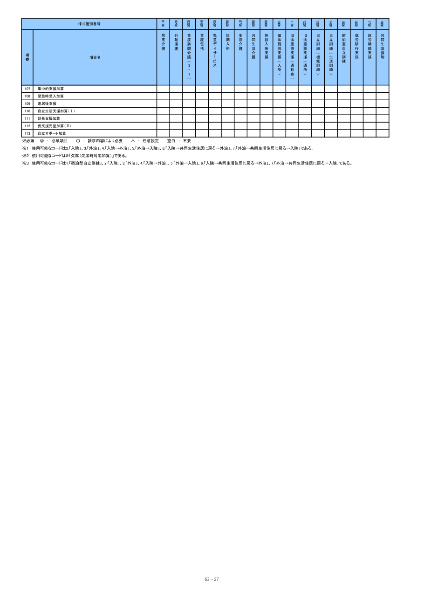
claude-haiku-5-5
表1 required_matrix 前頁から続く
| 項番 | 項目名 | 属性 | 桁数 | 内容 | 必須 | 備考 |
|---|---|---|---|---|---|---|
| 107 | 集中的支援加算 | 様式種別番号 > 0101 居宅介護:－ 様式種別番号 > 0201 行動援護:－ 様式種別番号 > 0301 重度訪問介護（3－1）:－ 様式種別番号 > 0401 重度包括:－ 様式種別番号 > 0501 児童デイサービス:－ 様式種別番号 > 0601 短期入所:－ 様式種別番号 > 0701 生活介護:－ 様式種別番号 > 0801 共同生活介護:－ 様式種別番号 > 0901 施設入所支援:－ 様式種別番号 > 1001 旧法施設支援（入所）:－ 様式種別番号 > 1101 旧法施設支援（通勤寮）:－ 様式種別番号 > 1201 旧法施設支援（通所）:－ 様式種別番号 > 1301 自立訓練（機能訓練）:－ 様式種別番号 > 1401 自立訓練（生活訓練）:－ 様式種別番号 > 1501 宿泊型自立訓練:－ 様式種別番号 > 1601 就労移行支援:－ 様式種別番号 > 1701 就労継続支援:－ 様式種別番号 > 1801 共同生活援助:－ | ||||
| 108 | 緊急時受入加算 | 様式種別番号 > 0101 居宅介護:－ 様式種別番号 > 0201 行動援護:－ 様式種別番号 > 0301 重度訪問介護（3－1）:－ 様式種別番号 > 0401 重度包括:－ 様式種別番号 > 0501 児童デイサービス:－ 様式種別番号 > 0601 短期入所:－ 様式種別番号 > 0701 生活介護:－ 様式種別番号 > 0801 共同生活介護:－ 様式種別番号 > 0901 施設入所支援:－ 様式種別番号 > 1001 旧法施設支援（入所）:－ 様式種別番号 > 1101 旧法施設支援（通勤寮）:－ 様式種別番号 > 1201 旧法施設支援（通所）:－ 様式種別番号 > 1301 自立訓練（機能訓練）:－ 様式種別番号 > 1401 自立訓練（生活訓練）:－ 様式種別番号 > 1501 宿泊型自立訓練:－ 様式種別番号 > 1601 就労移行支援:－ 様式種別番号 > 1701 就労継続支援:－ 様式種別番号 > 1801 共同生活援助:－ | ||||
| 109 | 退居後支援 | 様式種別番号 > 0101 居宅介護:－ 様式種別番号 > 0201 行動援護:－ 様式種別番号 > 0301 重度訪問介護（3－1）:－ 様式種別番号 > 0401 重度包括:－ 様式種別番号 > 0501 児童デイサービス:－ 様式種別番号 > 0601 短期入所:－ 様式種別番号 > 0701 生活介護:－ 様式種別番号 > 0801 共同生活介護:－ 様式種別番号 > 0901 施設入所支援:－ 様式種別番号 > 1001 旧法施設支援（入所）:－ 様式種別番号 > 1101 旧法施設支援（通勤寮）:－ 様式種別番号 > 1201 旧法施設支援（通所）:－ 様式種別番号 > 1301 自立訓練（機能訓練）:－ 様式種別番号 > 1401 自立訓練（生活訓練）:－ 様式種別番号 > 1501 宿泊型自立訓練:－ 様式種別番号 > 1601 就労移行支援:－ 様式種別番号 > 1701 就労継続支援:－ 様式種別番号 > 1801 共同生活援助:－ | ||||
| 110 | 自立生活支援加算（Ⅰ） | 様式種別番号 > 0101 居宅介護:－ 様式種別番号 > 0201 行動援護:－ 様式種別番号 > 0301 重度訪問介護（3－1）:－ 様式種別番号 > 0401 重度包括:－ 様式種別番号 > 0501 児童デイサービス:－ 様式種別番号 > 0601 短期入所:－ 様式種別番号 > 0701 生活介護:－ 様式種別番号 > 0801 共同生活介護:－ 様式種別番号 > 0901 施設入所支援:－ 様式種別番号 > 1001 旧法施設支援（入所）:－ 様式種別番号 > 1101 旧法施設支援（通勤寮）:－ 様式種別番号 > 1201 旧法施設支援（通所）:－ 様式種別番号 > 1301 自立訓練（機能訓練）:－ 様式種別番号 > 1401 自立訓練（生活訓練）:－ 様式種別番号 > 1501 宿泊型自立訓練:－ 様式種別番号 > 1601 就労移行支援:－ 様式種別番号 > 1701 就労継続支援:－ 様式種別番号 > 1801 共同生活援助:－ | ||||
| 111 | 延長支援加算 | 様式種別番号 > 0101 居宅介護:－ 様式種別番号 > 0201 行動援護:－ 様式種別番号 > 0301 重度訪問介護（3－1）:－ 様式種別番号 > 0401 重度包括:－ 様式種別番号 > 0501 児童デイサービス:－ 様式種別番号 > 0601 短期入所:－ 様式種別番号 > 0701 生活介護:－ 様式種別番号 > 0801 共同生活介護:－ 様式種別番号 > 0901 施設入所支援:－ 様式種別番号 > 1001 旧法施設支援（入所）:－ 様式種別番号 > 1101 旧法施設支援（通勤寮）:－ 様式種別番号 > 1201 旧法施設支援（通所）:－ 様式種別番号 > 1301 自立訓練（機能訓練）:－ 様式種別番号 > 1401 自立訓練（生活訓練）:－ 様式種別番号 > 1501 宿泊型自立訓練:－ 様式種別番号 > 1601 就労移行支援:－ 様式種別番号 > 1701 就労継続支援:－ 様式種別番号 > 1801 共同生活援助:－ | ||||
| 112 | 要支援児童加算（Ⅱ） | 様式種別番号 > 0101 居宅介護:－ 様式種別番号 > 0201 行動援護:－ 様式種別番号 > 0301 重度訪問介護（3－1）:－ 様式種別番号 > 0401 重度包括:－ 様式種別番号 > 0501 児童デイサービス:－ 様式種別番号 > 0601 短期入所:－ 様式種別番号 > 0701 生活介護:－ 様式種別番号 > 0801 共同生活介護:－ 様式種別番号 > 0901 施設入所支援:－ 様式種別番号 > 1001 旧法施設支援（入所）:－ 様式種別番号 > 1101 旧法施設支援（通勤寮）:－ 様式種別番号 > 1201 旧法施設支援（通所）:－ 様式種別番号 > 1301 自立訓練（機能訓練）:－ 様式種別番号 > 1401 自立訓練（生活訓練）:－ 様式種別番号 > 1501 宿泊型自立訓練:－ 様式種別番号 > 1601 就労移行支援:－ 様式種別番号 > 1701 就労継続支援:－ 様式種別番号 > 1801 共同生活援助:－ | ||||
| 113 | 自立サポート加算 | 様式種別番号 > 0101 居宅介護:－ 様式種別番号 > 0201 行動援護:－ 様式種別番号 > 0301 重度訪問介護（3－1）:－ 様式種別番号 > 0401 重度包括:－ 様式種別番号 > 0501 児童デイサービス:－ 様式種別番号 > 0601 短期入所:－ 様式種別番号 > 0701 生活介護:－ 様式種別番号 > 0801 共同生活介護:－ 様式種別番号 > 0901 施設入所支援:－ 様式種別番号 > 1001 旧法施設支援（入所）:－ 様式種別番号 > 1101 旧法施設支援（通勤寮）:－ 様式種別番号 > 1201 旧法施設支援（通所）:－ 様式種別番号 > 1301 自立訓練（機能訓練）:－ 様式種別番号 > 1401 自立訓練（生活訓練）:－ 様式種別番号 > 1501 宿泊型自立訓練:－ 様式種別番号 > 1601 就労移行支援:－ 様式種別番号 > 1701 就労継続支援:－ 様式種別番号 > 1801 共同生活援助:－ |
注記
- ※必須 ◎ : 必須項目 ○ : 請求内容により必要 △ : 任意設定 空白 : 不要
- ※1 使用可能なコードは2:「入院」、3:「外泊」、4:「入院→外泊」、5:「外泊→入院」、6:「入院→共同生活住居に戻る→外泊」、7:「外泊→共同生活住居に戻る→入院」である。
- ※2 使用可能なコードは8:「欠席（欠席時対応加算）」である。
- ※3 使用可能なコードは1:「宿泊型自立訓練」、2:「入院」、3:「外泊」、4:「入院→外泊」、5:「外泊→入院」、6:「入院→共同生活住居に戻る→外泊」、7:「外泊→共同生活住居に戻る→入院」である。
uncertain（モデル自己申告）
- 表のセルが画像上すべて空白のため、各行の必須記号は読み取れなかった（空欄として null を入れた）。原本で記号が印字されているかは未確認。
- 行番号が107から始まり見出し行が付いているため、前ページからの続きか本ページ独立の表かは判断が難しい。continued_from_prev_page は true としたが、後処理での再判定を想定。
- 列見出しの「重度訪問介護（3－1）」「旧法施設支援（通勤寮）」などの括弧内表記は画像の縦書き文字から読み取ったため、原文と細部が異なる可能性がある。
- 1501 の列見出し「宿泊型自立訓練」など縦書きの見出しの読みは画像解像度により不確かな箇所がある。
claude-sonnet-5-5
表1 required_matrix 前頁から続く
| 項番 | 項目名 | 属性 | 桁数 | 内容 | 必須 | 備考 |
|---|---|---|---|---|---|---|
| 107 | 集中的支援加算 | 0101:－ 0201:－ 0301:－ 0401:－ 0501:－ 0601:－ 0701:－ 0801:－ 0901:－ 1001:－ 1101:－ 1201:－ 1301:－ 1401:－ 1501:－ 1601:－ 1701:－ 1801:－ | ||||
| 108 | 緊急時受入加算 | 0101:－ 0201:－ 0301:－ 0401:－ 0501:－ 0601:－ 0701:－ 0801:－ 0901:－ 1001:－ 1101:－ 1201:－ 1301:－ 1401:－ 1501:－ 1601:－ 1701:－ 1801:－ | ||||
| 109 | 退居後支援 | 0101:－ 0201:－ 0301:－ 0401:－ 0501:－ 0601:－ 0701:－ 0801:－ 0901:－ 1001:－ 1101:－ 1201:－ 1301:－ 1401:－ 1501:－ 1601:－ 1701:－ 1801:－ | ||||
| 110 | 自立生活支援加算(Ⅰ) | 0101:－ 0201:－ 0301:－ 0401:－ 0501:－ 0601:－ 0701:－ 0801:－ 0901:－ 1001:－ 1101:－ 1201:－ 1301:－ 1401:－ 1501:－ 1601:－ 1701:－ 1801:－ | ||||
| 111 | 延長支援加算 | 0101:－ 0201:－ 0301:－ 0401:－ 0501:－ 0601:－ 0701:－ 0801:－ 0901:－ 1001:－ 1101:－ 1201:－ 1301:－ 1401:－ 1501:－ 1601:－ 1701:－ 1801:－ | ||||
| 112 | 要支援児童加算(Ⅱ) | 0101:－ 0201:－ 0301:－ 0401:－ 0501:－ 0601:－ 0701:－ 0801:－ 0901:－ 1001:－ 1101:－ 1201:－ 1301:－ 1401:－ 1501:－ 1601:－ 1701:－ 1801:－ | ||||
| 113 | 自立サポート加算 | 0101:－ 0201:－ 0301:－ 0401:－ 0501:－ 0601:－ 0701:－ 0801:－ 0901:－ 1001:－ 1101:－ 1201:－ 1301:－ 1401:－ 1501:－ 1601:－ 1701:－ 1801:－ |
注記
- ※必須 ◎ : 必須項目 ○ : 請求内容により必要 △ : 任意設定 空白 : 不要
- ※1 使用可能なコードは2:「入院」、3:「外泊」、4:「入院→外泊」、5:「外泊→入院」、6:「入院→共同生活住居に戻る→外泊」、7:「外泊→共同生活住居に戻る→入院」である。
- ※2 使用可能なコードは8:「欠席(欠席時対応加算)」である。
- ※3 使用可能なコードは1:「宿泊型自立訓練」、2:「入院」、3:「外泊」、4:「入院→外泊」、5:「外泊→入院」、6:「入院→共同生活住居に戻る→外泊」、7:「外泊→共同生活住居に戻る→入院」である。
uncertain（モデル自己申告）
- 表は前ページからの続き。全セルが空欄に見えるため required_by はすべて null とした
- 列見出しの縦書き文字は判読した結果であり、改行位置は詰めて記載
shogai_jigyosho_r0710_p153 — 印字p.

claude-haiku-5-5
- [改ページ] 前後ページで列見出しの書き起こしが一致しない
表1 required_matrix(25) 入力必須項目と様式の対応表(基本情報レコード)【サービス提供年月：平成21年3月以前】 次頁へ続く
| 項番 | 項目名 | 属性 | 桁数 | 内容 | 必須 | 備考 |
|---|---|---|---|---|---|---|
| 1 | 交換情報識別番号 | 0101 居宅介護:◎ 0201 行動援護:◎ 0301 重度訪問介護3-1:◎ 0302 重度訪問介護3-2:◎ 0401 重度包括:◎ 0501 児童デイサービス:◎ 0601 短期入所:◎ 0701 生活介護:◎ 0801 共同生活介護:◎ 0901 施設入所支援:◎ 1001 旧法施設支援（入所）:◎ 1101 旧法施設支援（通勤寮）:◎ 1201 旧法施設支援（通所）:◎ 1301 自立訓練（機能訓練）:◎ 1401 自立訓練（生活訓練）:◎ 1501 宿泊型自立訓練:◎ 1601 就労移行支援:◎ 1701 就労継続支援:◎ 1801 共同生活援助:◎ | ||||
| 2 | レコード種別コード | 0101 居宅介護:◎ 0201 行動援護:◎ 0301 重度訪問介護3-1:◎ 0302 重度訪問介護3-2:◎ 0401 重度包括:◎ 0501 児童デイサービス:◎ 0601 短期入所:◎ 0701 生活介護:◎ 0801 共同生活介護:◎ 0901 施設入所支援:◎ 1001 旧法施設支援（入所）:◎ 1101 旧法施設支援（通勤寮）:◎ 1201 旧法施設支援（通所）:◎ 1301 自立訓練（機能訓練）:◎ 1401 自立訓練（生活訓練）:◎ 1501 宿泊型自立訓練:◎ 1601 就労移行支援:◎ 1701 就労継続支援:◎ 1801 共同生活援助:◎ | ||||
| 3 | サービス提供年月 | 0101 居宅介護:◎ 0201 行動援護:◎ 0301 重度訪問介護3-1:◎ 0302 重度訪問介護3-2:◎ 0401 重度包括:◎ 0501 児童デイサービス:◎ 0601 短期入所:◎ 0701 生活介護:◎ 0801 共同生活介護:◎ 0901 施設入所支援:◎ 1001 旧法施設支援（入所）:◎ 1101 旧法施設支援（通勤寮）:◎ 1201 旧法施設支援（通所）:◎ 1301 自立訓練（機能訓練）:◎ 1401 自立訓練（生活訓練）:◎ 1501 宿泊型自立訓練:◎ 1601 就労移行支援:◎ 1701 就労継続支援:◎ 1801 共同生活援助:◎ | ||||
| 4 | 市町村番号 | 0101 居宅介護:◎ 0201 行動援護:◎ 0301 重度訪問介護3-1:◎ 0302 重度訪問介護3-2:◎ 0401 重度包括:◎ 0501 児童デイサービス:◎ 0601 短期入所:◎ 0701 生活介護:◎ 0801 共同生活介護:◎ 0901 施設入所支援:◎ 1001 旧法施設支援（入所）:◎ 1101 旧法施設支援（通勤寮）:◎ 1201 旧法施設支援（通所）:◎ 1301 自立訓練（機能訓練）:◎ 1401 自立訓練（生活訓練）:◎ 1501 宿泊型自立訓練:◎ 1601 就労移行支援:◎ 1701 就労継続支援:◎ 1801 共同生活援助:◎ | ||||
| 5 | 事業所番号 | 0101 居宅介護:◎ 0201 行動援護:◎ 0301 重度訪問介護3-1:◎ 0302 重度訪問介護3-2:◎ 0401 重度包括:◎ 0501 児童デイサービス:◎ 0601 短期入所:◎ 0701 生活介護:◎ 0801 共同生活介護:◎ 0901 施設入所支援:◎ 1001 旧法施設支援（入所）:◎ 1101 旧法施設支援（通勤寮）:◎ 1201 旧法施設支援（通所）:◎ 1301 自立訓練（機能訓練）:◎ 1401 自立訓練（生活訓練）:◎ 1501 宿泊型自立訓練:◎ 1601 就労移行支援:◎ 1701 就労継続支援:◎ 1801 共同生活援助:◎ | ||||
| 6 | 受給者証番号 | 0101 居宅介護:◎ 0201 行動援護:◎ 0301 重度訪問介護3-1:◎ 0302 重度訪問介護3-2:◎ 0401 重度包括:◎ 0501 児童デイサービス:◎ 0601 短期入所:◎ 0701 生活介護:◎ 0801 共同生活介護:◎ 0901 施設入所支援:◎ 1001 旧法施設支援（入所）:◎ 1101 旧法施設支援（通勤寮）:◎ 1201 旧法施設支援（通所）:◎ 1301 自立訓練（機能訓練）:◎ 1401 自立訓練（生活訓練）:◎ 1501 宿泊型自立訓練:◎ 1601 就労移行支援:◎ 1701 就労継続支援:◎ 1801 共同生活援助:◎ | ||||
| 7 | 様式種別番号 | 0101 居宅介護:◎ 0201 行動援護:◎ 0301 重度訪問介護3-1:◎ 0302 重度訪問介護3-2:◎ 0401 重度包括:◎ 0501 児童デイサービス:◎ 0601 短期入所:◎ 0701 生活介護:◎ 0801 共同生活介護:◎ 0901 施設入所支援:◎ 1001 旧法施設支援（入所）:◎ 1101 旧法施設支援（通勤寮）:◎ 1201 旧法施設支援（通所）:◎ 1301 自立訓練（機能訓練）:◎ 1401 自立訓練（生活訓練）:◎ 1501 宿泊型自立訓練:◎ 1601 就労移行支援:◎ 1701 就労継続支援:◎ 1801 共同生活援助:◎ | ||||
| 8 | 補足給付関係情報 > 補足給付適用の有無 | 0101 居宅介護:－ 0201 行動援護:－ 0301 重度訪問介護3-1:－ 0302 重度訪問介護3-2:－ 0401 重度包括:－ 0501 児童デイサービス:－ 0601 短期入所:－ 0701 生活介護:－ 0801 共同生活介護:－ 0901 施設入所支援:○ 1001 旧法施設支援（入所）:○ 1101 旧法施設支援（通勤寮）:－ 1201 旧法施設支援（通所）:－ 1301 自立訓練（機能訓練）:－ 1401 自立訓練（生活訓練）:－ 1501 宿泊型自立訓練:－ 1601 就労移行支援:－ 1701 就労継続支援:－ 1801 共同生活援助:－ | ||||
| 9 | 補足給付関係情報 > 補足給付額（円／日） | 0101 居宅介護:－ 0201 行動援護:－ 0301 重度訪問介護3-1:－ 0302 重度訪問介護3-2:－ 0401 重度包括:－ 0501 児童デイサービス:－ 0601 短期入所:－ 0701 生活介護:－ 0801 共同生活介護:－ 0901 施設入所支援:○ 1001 旧法施設支援（入所）:○ 1101 旧法施設支援（通勤寮）:－ 1201 旧法施設支援（通所）:－ 1301 自立訓練（機能訓練）:－ 1401 自立訓練（生活訓練）:－ 1501 宿泊型自立訓練:－ 1601 就労移行支援:－ 1701 就労継続支援:－ 1801 共同生活援助:－ | ||||
| 10 | 補足給付関係情報 > 食費の単価 朝食（円／日） | 0101 居宅介護:－ 0201 行動援護:－ 0301 重度訪問介護3-1:－ 0302 重度訪問介護3-2:－ 0401 重度包括:－ 0501 児童デイサービス:－ 0601 短期入所:－ 0701 生活介護:－ 0801 共同生活介護:－ 0901 施設入所支援:○ 1001 旧法施設支援（入所）:○ 1101 旧法施設支援（通勤寮）:－ 1201 旧法施設支援（通所）:－ 1301 自立訓練（機能訓練）:－ 1401 自立訓練（生活訓練）:－ 1501 宿泊型自立訓練:－ 1601 就労移行支援:－ 1701 就労継続支援:－ 1801 共同生活援助:－ | ||||
| 11 | 補足給付関係情報 > 食費の単価 昼食（円／日） | 0101 居宅介護:－ 0201 行動援護:－ 0301 重度訪問介護3-1:－ 0302 重度訪問介護3-2:－ 0401 重度包括:－ 0501 児童デイサービス:－ 0601 短期入所:－ 0701 生活介護:－ 0801 共同生活介護:－ 0901 施設入所支援:○ 1001 旧法施設支援（入所）:○ 1101 旧法施設支援（通勤寮）:－ 1201 旧法施設支援（通所）:－ 1301 自立訓練（機能訓練）:－ 1401 自立訓練（生活訓練）:－ 1501 宿泊型自立訓練:－ 1601 就労移行支援:－ 1701 就労継続支援:－ 1801 共同生活援助:－ | ||||
| 12 | 補足給付関係情報 > 食費の単価 夕食（円／日） | 0101 居宅介護:－ 0201 行動援護:－ 0301 重度訪問介護3-1:－ 0302 重度訪問介護3-2:－ 0401 重度包括:－ 0501 児童デイサービス:－ 0601 短期入所:－ 0701 生活介護:－ 0801 共同生活介護:－ 0901 施設入所支援:○ 1001 旧法施設支援（入所）:○ 1101 旧法施設支援（通勤寮）:－ 1201 旧法施設支援（通所）:－ 1301 自立訓練（機能訓練）:－ 1401 自立訓練（生活訓練）:－ 1501 宿泊型自立訓練:－ 1601 就労移行支援:－ 1701 就労継続支援:－ 1801 共同生活援助:－ | ||||
| 13 | 補足給付関係情報 > 食費の単価 一日（円／日） | 0101 居宅介護:－ 0201 行動援護:－ 0301 重度訪問介護3-1:－ 0302 重度訪問介護3-2:－ 0401 重度包括:－ 0501 児童デイサービス:－ 0601 短期入所:－ 0701 生活介護:－ 0801 共同生活介護:－ 0901 施設入所支援:○ 1001 旧法施設支援（入所）:○ 1101 旧法施設支援（通勤寮）:－ 1201 旧法施設支援（通所）:－ 1301 自立訓練（機能訓練）:－ 1401 自立訓練（生活訓練）:－ 1501 宿泊型自立訓練:－ 1601 就労移行支援:－ 1701 就労継続支援:－ 1801 共同生活援助:－ | ||||
| 14 | 補足給付関係情報 > 光熱水費の単価 一日（円／日） | 0101 居宅介護:－ 0201 行動援護:－ 0301 重度訪問介護3-1:－ 0302 重度訪問介護3-2:－ 0401 重度包括:－ 0501 児童デイサービス:－ 0601 短期入所:－ 0701 生活介護:－ 0801 共同生活介護:－ 0901 施設入所支援:○ 1001 旧法施設支援（入所）:○ 1101 旧法施設支援（通勤寮）:－ 1201 旧法施設支援（通所）:－ 1301 自立訓練（機能訓練）:－ 1401 自立訓練（生活訓練）:－ 1501 宿泊型自立訓練:－ 1601 就労移行支援:－ 1701 就労継続支援:－ 1801 共同生活援助:－ | ||||
| 15 | 補足給付関係情報 > 光熱水費の単価 一月（円／月） | 0101 居宅介護:－ 0201 行動援護:－ 0301 重度訪問介護3-1:－ 0302 重度訪問介護3-2:－ 0401 重度包括:－ 0501 児童デイサービス:－ 0601 短期入所:－ 0701 生活介護:－ 0801 共同生活介護:－ 0901 施設入所支援:○ 1001 旧法施設支援（入所）:○ 1101 旧法施設支援（通勤寮）:－ 1201 旧法施設支援（通所）:－ 1301 自立訓練（機能訓練）:－ 1401 自立訓練（生活訓練）:－ 1501 宿泊型自立訓練:－ 1601 就労移行支援:－ 1701 就労継続支援:－ 1801 共同生活援助:－ | ||||
| 16 | 合計１ > 内訳 100% | 0101 居宅介護:○ 0201 行動援護:○ 0301 重度訪問介護3-1:－ 0302 重度訪問介護3-2:－ 0401 重度包括:－ 0501 児童デイサービス:－ 0601 短期入所:－ 0701 生活介護:－ 0801 共同生活介護:－ 0901 施設入所支援:－ 1001 旧法施設支援（入所）:－ 1101 旧法施設支援（通勤寮）:－ 1201 旧法施設支援（通所）:－ 1301 自立訓練（機能訓練）:－ 1401 自立訓練（生活訓練）:－ 1501 宿泊型自立訓練:－ 1601 就労移行支援:－ 1701 就労継続支援:－ 1801 共同生活援助:－ | ||||
| 17 | 合計１ > 内訳 70% | 0101 居宅介護:○ 0201 行動援護:○ 0301 重度訪問介護3-1:－ 0302 重度訪問介護3-2:－ 0401 重度包括:－ 0501 児童デイサービス:－ 0601 短期入所:－ 0701 生活介護:－ 0801 共同生活介護:－ 0901 施設入所支援:－ 1001 旧法施設支援（入所）:－ 1101 旧法施設支援（通勤寮）:－ 1201 旧法施設支援（通所）:－ 1301 自立訓練（機能訓練）:－ 1401 自立訓練（生活訓練）:－ 1501 宿泊型自立訓練:－ 1601 就労移行支援:－ 1701 就労継続支援:－ 1801 共同生活援助:－ | ||||
| 18 | 合計１ > 内訳 重訪 | 0101 居宅介護:○ 0201 行動援護:－ 0301 重度訪問介護3-1:－ 0302 重度訪問介護3-2:－ 0401 重度包括:－ 0501 児童デイサービス:－ 0601 短期入所:－ 0701 生活介護:－ 0801 共同生活介護:－ 0901 施設入所支援:－ 1001 旧法施設支援（入所）:－ 1101 旧法施設支援（通勤寮）:－ 1201 旧法施設支援（通所）:－ 1301 自立訓練（機能訓練）:－ 1401 自立訓練（生活訓練）:－ 1501 宿泊型自立訓練:－ 1601 就労移行支援:－ 1701 就労継続支援:－ 1801 共同生活援助:－ | ||||
| 19 | 合計１ > 合計 算定時間数計 | 0101 居宅介護:○ 0201 行動援護:○ 0301 重度訪問介護3-1:○ 0302 重度訪問介護3-2:○ 0401 重度包括:－ 0501 児童デイサービス:－ 0601 短期入所:－ 0701 生活介護:－ 0801 共同生活介護:－ 0901 施設入所支援:－ 1001 旧法施設支援（入所）:－ 1101 旧法施設支援（通勤寮）:－ 1201 旧法施設支援（通所）:－ 1301 自立訓練（機能訓練）:－ 1401 自立訓練（生活訓練）:－ 1501 宿泊型自立訓練:－ 1601 就労移行支援:－ 1701 就労継続支援:－ 1801 共同生活援助:－ | ||||
| 20 | 合計２ > 内訳 100% | 0101 居宅介護:○ 0201 行動援護:－ 0301 重度訪問介護3-1:－ 0302 重度訪問介護3-2:－ 0401 重度包括:－ 0501 児童デイサービス:－ 0601 短期入所:－ 0701 生活介護:－ 0801 共同生活介護:－ 0901 施設入所支援:－ 1001 旧法施設支援（入所）:－ 1101 旧法施設支援（通勤寮）:－ 1201 旧法施設支援（通所）:－ 1301 自立訓練（機能訓練）:－ 1401 自立訓練（生活訓練）:－ 1501 宿泊型自立訓練:－ 1601 就労移行支援:－ 1701 就労継続支援:－ 1801 共同生活援助:－ | ||||
| 21 | 合計２ > 内訳 70% | 0101 居宅介護:○ 0201 行動援護:－ 0301 重度訪問介護3-1:－ 0302 重度訪問介護3-2:－ 0401 重度包括:－ 0501 児童デイサービス:－ 0601 短期入所:－ 0701 生活介護:－ 0801 共同生活介護:－ 0901 施設入所支援:－ 1001 旧法施設支援（入所）:－ 1101 旧法施設支援（通勤寮）:－ 1201 旧法施設支援（通所）:－ 1301 自立訓練（機能訓練）:－ 1401 自立訓練（生活訓練）:－ 1501 宿泊型自立訓練:－ 1601 就労移行支援:－ 1701 就労継続支援:－ 1801 共同生活援助:－ | ||||
| 22 | 合計２ > 内訳 重訪 | 0101 居宅介護:○ 0201 行動援護:－ 0301 重度訪問介護3-1:－ 0302 重度訪問介護3-2:－ 0401 重度包括:－ 0501 児童デイサービス:－ 0601 短期入所:－ 0701 生活介護:－ 0801 共同生活介護:－ 0901 施設入所支援:－ 1001 旧法施設支援（入所）:－ 1101 旧法施設支援（通勤寮）:－ 1201 旧法施設支援（通所）:－ 1301 自立訓練（機能訓練）:－ 1401 自立訓練（生活訓練）:－ 1501 宿泊型自立訓練:－ 1601 就労移行支援:－ 1701 就労継続支援:－ 1801 共同生活援助:－ | ||||
| 23 | 合計２ > 合計 算定時間数計 | 0101 居宅介護:○ 0201 行動援護:－ 0301 重度訪問介護3-1:－ 0302 重度訪問介護3-2:－ 0401 重度包括:－ 0501 児童デイサービス:－ 0601 短期入所:－ 0701 生活介護:－ 0801 共同生活介護:－ 0901 施設入所支援:－ 1001 旧法施設支援（入所）:－ 1101 旧法施設支援（通勤寮）:－ 1201 旧法施設支援（通所）:－ 1301 自立訓練（機能訓練）:－ 1401 自立訓練（生活訓練）:－ 1501 宿泊型自立訓練:－ 1601 就労移行支援:－ 1701 就労継続支援:－ 1801 共同生活援助:－ | ||||
| 24 | 合計３ > 内訳 100% | 0101 居宅介護:○ 0201 行動援護:－ 0301 重度訪問介護3-1:－ 0302 重度訪問介護3-2:－ 0401 重度包括:－ 0501 児童デイサービス:－ 0601 短期入所:－ 0701 生活介護:－ 0801 共同生活介護:－ 0901 施設入所支援:－ 1001 旧法施設支援（入所）:－ 1101 旧法施設支援（通勤寮）:－ 1201 旧法施設支援（通所）:－ 1301 自立訓練（機能訓練）:－ 1401 自立訓練（生活訓練）:－ 1501 宿泊型自立訓練:－ 1601 就労移行支援:－ 1701 就労継続支援:－ 1801 共同生活援助:－ | ||||
| 25 | 合計３ > 内訳 90% | 0101 居宅介護:○ 0201 行動援護:－ 0301 重度訪問介護3-1:－ 0302 重度訪問介護3-2:－ 0401 重度包括:－ 0501 児童デイサービス:－ 0601 短期入所:－ 0701 生活介護:－ 0801 共同生活介護:－ 0901 施設入所支援:－ 1001 旧法施設支援（入所）:－ 1101 旧法施設支援（通勤寮）:－ 1201 旧法施設支援（通所）:－ 1301 自立訓練（機能訓練）:－ 1401 自立訓練（生活訓練）:－ 1501 宿泊型自立訓練:－ 1601 就労移行支援:－ 1701 就労継続支援:－ 1801 共同生活援助:－ | ||||
| 26 | 合計３ > 合計 算定時間数計 | 0101 居宅介護:○ 0201 行動援護:－ 0301 重度訪問介護3-1:－ 0302 重度訪問介護3-2:－ 0401 重度包括:－ 0501 児童デイサービス:－ 0601 短期入所:－ 0701 生活介護:－ 0801 共同生活介護:－ 0901 施設入所支援:－ 1001 旧法施設支援（入所）:－ 1101 旧法施設支援（通勤寮）:－ 1201 旧法施設支援（通所）:－ 1301 自立訓練（機能訓練）:－ 1401 自立訓練（生活訓練）:－ 1501 宿泊型自立訓練:－ 1601 就労移行支援:－ 1701 就労継続支援:－ 1801 共同生活援助:－ | ||||
| 27 | 合計４ > 内訳 100% | 0101 居宅介護:○ 0201 行動援護:－ 0301 重度訪問介護3-1:－ 0302 重度訪問介護3-2:－ 0401 重度包括:－ 0501 児童デイサービス:－ 0601 短期入所:－ 0701 生活介護:－ 0801 共同生活介護:－ 0901 施設入所支援:－ 1001 旧法施設支援（入所）:－ 1101 旧法施設支援（通勤寮）:－ 1201 旧法施設支援（通所）:－ 1301 自立訓練（機能訓練）:－ 1401 自立訓練（生活訓練）:－ 1501 宿泊型自立訓練:－ 1601 就労移行支援:－ 1701 就労継続支援:－ 1801 共同生活援助:－ | ||||
| 28 | 合計４ > 内訳 90% | 0101 居宅介護:○ 0201 行動援護:－ 0301 重度訪問介護3-1:－ 0302 重度訪問介護3-2:－ 0401 重度包括:－ 0501 児童デイサービス:－ 0601 短期入所:－ 0701 生活介護:－ 0801 共同生活介護:－ 0901 施設入所支援:－ 1001 旧法施設支援（入所）:－ 1101 旧法施設支援（通勤寮）:－ 1201 旧法施設支援（通所）:－ 1301 自立訓練（機能訓練）:－ 1401 自立訓練（生活訓練）:－ 1501 宿泊型自立訓練:－ 1601 就労移行支援:－ 1701 就労継続支援:－ 1801 共同生活援助:－ | ||||
| 29 | 合計４ > 合計 算定時間数計 | 0101 居宅介護:○ 0201 行動援護:－ 0301 重度訪問介護3-1:－ 0302 重度訪問介護3-2:－ 0401 重度包括:－ 0501 児童デイサービス:－ 0601 短期入所:－ 0701 生活介護:－ 0801 共同生活介護:－ 0901 施設入所支援:－ 1001 旧法施設支援（入所）:－ 1101 旧法施設支援（通勤寮）:－ 1201 旧法施設支援（通所）:－ 1301 自立訓練（機能訓練）:－ 1401 自立訓練（生活訓練）:－ 1501 宿泊型自立訓練:－ 1601 就労移行支援:－ 1701 就労継続支援:－ 1801 共同生活援助:－ | ||||
| 30 | 合計５ > 内訳 100% | 0101 居宅介護:○ 0201 行動援護:－ 0301 重度訪問介護3-1:－ 0302 重度訪問介護3-2:－ 0401 重度包括:－ 0501 児童デイサービス:－ 0601 短期入所:－ 0701 生活介護:－ 0801 共同生活介護:－ 0901 施設入所支援:－ 1001 旧法施設支援（入所）:－ 1101 旧法施設支援（通勤寮）:－ 1201 旧法施設支援（通所）:－ 1301 自立訓練（機能訓練）:－ 1401 自立訓練（生活訓練）:－ 1501 宿泊型自立訓練:－ 1601 就労移行支援:－ 1701 就労継続支援:－ 1801 共同生活援助:－ | ||||
| 31 | 合計５ > 内訳 90% | 0101 居宅介護:○ 0201 行動援護:－ 0301 重度訪問介護3-1:－ 0302 重度訪問介護3-2:－ 0401 重度包括:－ 0501 児童デイサービス:－ 0601 短期入所:－ 0701 生活介護:－ 0801 共同生活介護:－ 0901 施設入所支援:－ 1001 旧法施設支援（入所）:－ 1101 旧法施設支援（通勤寮）:－ 1201 旧法施設支援（通所）:－ 1301 自立訓練（機能訓練）:－ 1401 自立訓練（生活訓練）:－ 1501 宿泊型自立訓練:－ 1601 就労移行支援:－ 1701 就労継続支援:－ 1801 共同生活援助:－ | ||||
| 32 | 合計５ > 合計 算定回数計 | 0101 居宅介護:○ 0201 行動援護:－ 0301 重度訪問介護3-1:－ 0302 重度訪問介護3-2:－ 0401 重度包括:－ 0501 児童デイサービス:－ 0601 短期入所:－ 0701 生活介護:－ 0801 共同生活介護:－ 0901 施設入所支援:－ 1001 旧法施設支援（入所）:－ 1101 旧法施設支援（通勤寮）:－ 1201 旧法施設支援（通所）:－ 1301 自立訓練（機能訓練）:－ 1401 自立訓練（生活訓練）:－ 1501 宿泊型自立訓練:－ 1601 就労移行支援:－ 1701 就労継続支援:－ 1801 共同生活援助:－ | ||||
| 33 | 提供実績の合計 > 算定 移動介護分 | 0101 居宅介護:－ 0201 行動援護:－ 0301 重度訪問介護3-1:○ 0302 重度訪問介護3-2:○ 0401 重度包括:－ 0501 児童デイサービス:－ 0601 短期入所:－ 0701 生活介護:－ 0801 共同生活介護:－ 0901 施設入所支援:－ 1001 旧法施設支援（入所）:－ 1101 旧法施設支援（通勤寮）:－ 1201 旧法施設支援（通所）:－ 1301 自立訓練（機能訓練）:－ 1401 自立訓練（生活訓練）:－ 1501 宿泊型自立訓練:－ 1601 就労移行支援:－ 1701 就労継続支援:－ 1801 共同生活援助:－ | ||||
| 34 | 提供実績の合計 > 実績 送迎加算（回） | 0101 居宅介護:－ 0201 行動援護:－ 0301 重度訪問介護3-1:－ 0302 重度訪問介護3-2:－ 0401 重度包括:－ 0501 児童デイサービス:○ 0601 短期入所:－ 0701 生活介護:－ 0801 共同生活介護:－ 0901 施設入所支援:－ 1001 旧法施設支援（入所）:－ 1101 旧法施設支援（通勤寮）:－ 1201 旧法施設支援（通所）:－ 1301 自立訓練（機能訓練）:－ 1401 自立訓練（生活訓練）:－ 1501 宿泊型自立訓練:－ 1601 就労移行支援:－ 1701 就労継続支援:－ 1801 共同生活援助:－ | ||||
| 35 | 提供実績の合計 > 実績 家庭連携加算（回）（サービス提供回数） | 0101 居宅介護:－ 0201 行動援護:－ 0301 重度訪問介護3-1:－ 0302 重度訪問介護3-2:－ 0401 重度包括:－ 0501 児童デイサービス:○ 0601 短期入所:－ 0701 生活介護:－ 0801 共同生活介護:－ 0901 施設入所支援:－ 1001 旧法施設支援（入所）:－ 1101 旧法施設支援（通勤寮）:－ 1201 旧法施設支援（通所）:－ 1301 自立訓練（機能訓練）:－ 1401 自立訓練（生活訓練）:－ 1501 宿泊型自立訓練:－ 1601 就労移行支援:－ 1701 就労継続支援:－ 1801 共同生活援助:－ | ||||
| 36 | 提供実績の合計 > 実績 家庭連携加算（回）（算定回数） | 0101 居宅介護:－ 0201 行動援護:－ 0301 重度訪問介護3-1:－ 0302 重度訪問介護3-2:－ 0401 重度包括:－ 0501 児童デイサービス:○ 0601 短期入所:－ 0701 生活介護:－ 0801 共同生活介護:－ 0901 施設入所支援:－ 1001 旧法施設支援（入所）:－ 1101 旧法施設支援（通勤寮）:－ 1201 旧法施設支援（通所）:－ 1301 自立訓練（機能訓練）:－ 1401 自立訓練（生活訓練）:－ 1501 宿泊型自立訓練:－ 1601 就労移行支援:－ 1701 就労継続支援:－ 1801 共同生活援助:－ | ||||
| 37 | 提供実績の合計 > 合計 算定日数（日） | 0101 居宅介護:－ 0201 行動援護:－ 0301 重度訪問介護3-1:－ 0302 重度訪問介護3-2:－ 0401 重度包括:－ 0501 児童デイサービス:－ 0601 短期入所:○ 0701 生活介護:－ 0801 共同生活介護:－ 0901 施設入所支援:－ 1001 旧法施設支援（入所）:－ 1101 旧法施設支援（通勤寮）:－ 1201 旧法施設支援（通所）:－ 1301 自立訓練（機能訓練）:－ 1401 自立訓練（生活訓練）:－ 1501 宿泊型自立訓練:－ 1601 就労移行支援:－ 1701 就労継続支援:－ 1801 共同生活援助:－ | ||||
| 38 | 提供実績の合計 > 夜間支援体制加算（回） | 0101 居宅介護:－ 0201 行動援護:－ 0301 重度訪問介護3-1:－ 0302 重度訪問介護3-2:－ 0401 重度包括:－ 0501 児童デイサービス:－ 0601 短期入所:－ 0701 生活介護:－ 0801 共同生活介護:○ 0901 施設入所支援:－ 1001 旧法施設支援（入所）:－ 1101 旧法施設支援（通勤寮）:－ 1201 旧法施設支援（通所）:－ 1301 自立訓練（機能訓練）:－ 1401 自立訓練（生活訓練）:－ 1501 宿泊型自立訓練:－ 1601 就労移行支援:－ 1701 就労継続支援:－ 1801 共同生活援助:－ | ||||
| 39 | 提供実績の合計 > 日中支援加算（回）（サービス提供回数） | 0101 居宅介護:－ 0201 行動援護:－ 0301 重度訪問介護3-1:－ 0302 重度訪問介護3-2:－ 0401 重度包括:－ 0501 児童デイサービス:－ 0601 短期入所:－ 0701 生活介護:－ 0801 共同生活介護:○ 0901 施設入所支援:－ 1001 旧法施設支援（入所）:－ 1101 旧法施設支援（通勤寮）:－ 1201 旧法施設支援（通所）:－ 1301 自立訓練（機能訓練）:－ 1401 自立訓練（生活訓練）:－ 1501 宿泊型自立訓練:－ 1601 就労移行支援:－ 1701 就労継続支援:－ 1801 共同生活援助:－ | ||||
| 40 | 提供実績の合計 > 日中支援加算（回）（算定回数） | 0101 居宅介護:－ 0201 行動援護:－ 0301 重度訪問介護3-1:－ 0302 重度訪問介護3-2:－ 0401 重度包括:－ 0501 児童デイサービス:－ 0601 短期入所:－ 0701 生活介護:－ 0801 共同生活介護:○ 0901 施設入所支援:－ 1001 旧法施設支援（入所）:－ 1101 旧法施設支援（通勤寮）:－ 1201 旧法施設支援（通所）:－ 1301 自立訓練（機能訓練）:－ 1401 自立訓練（生活訓練）:－ 1501 宿泊型自立訓練:－ 1601 就労移行支援:－ 1701 就労継続支援:－ 1801 共同生活援助:－ | ||||
| 41 | 提供実績の合計 > 通所型（回） | 0101 居宅介護:－ 0201 行動援護:－ 0301 重度訪問介護3-1:－ 0302 重度訪問介護3-2:－ 0401 重度包括:－ 0501 児童デイサービス:－ 0601 短期入所:－ 0701 生活介護:－ 0801 共同生活介護:－ 0901 施設入所支援:－ 1001 旧法施設支援（入所）:－ 1101 旧法施設支援（通勤寮）:－ 1201 旧法施設支援（通所）:－ 1301 自立訓練（機能訓練）:○ 1401 自立訓練（生活訓練）:○ 1501 宿泊型自立訓練:－ 1601 就労移行支援:－ 1701 就労継続支援:－ 1801 共同生活援助:－ | ||||
| 42 | 提供実績の合計 > 訪問型 1時間未満（回） | 0101 居宅介護:－ 0201 行動援護:－ 0301 重度訪問介護3-1:－ 0302 重度訪問介護3-2:－ 0401 重度包括:－ 0501 児童デイサービス:－ 0601 短期入所:－ 0701 生活介護:－ 0801 共同生活介護:－ 0901 施設入所支援:－ 1001 旧法施設支援（入所）:－ 1101 旧法施設支援（通勤寮）:－ 1201 旧法施設支援（通所）:－ 1301 自立訓練（機能訓練）:○ 1401 自立訓練（生活訓練）:○ 1501 宿泊型自立訓練:－ 1601 就労移行支援:－ 1701 就労継続支援:－ 1801 共同生活援助:－ | ||||
| 43 | 提供実績の合計 > 訪問型 1時間以上（回） | 0101 居宅介護:－ 0201 行動援護:－ 0301 重度訪問介護3-1:－ 0302 重度訪問介護3-2:－ 0401 重度包括:－ 0501 児童デイサービス:－ 0601 短期入所:－ 0701 生活介護:－ 0801 共同生活介護:－ 0901 施設入所支援:－ 1001 旧法施設支援（入所）:－ 1101 旧法施設支援（通勤寮）:－ 1201 旧法施設支援（通所）:－ 1301 自立訓練（機能訓練）:○ 1401 自立訓練（生活訓練）:○ 1501 宿泊型自立訓練:－ 1601 就労移行支援:－ 1701 就労継続支援:－ 1801 共同生活援助:－ | ||||
| 44 | 提供実績の合計 > 短期滞在加算（回） | 0101 居宅介護:－ 0201 行動援護:－ 0301 重度訪問介護3-1:－ 0302 重度訪問介護3-2:－ 0401 重度包括:－ 0501 児童デイサービス:－ 0601 短期入所:－ 0701 生活介護:－ 0801 共同生活介護:－ 0901 施設入所支援:－ 1001 旧法施設支援（入所）:－ 1101 旧法施設支援（通勤寮）:－ 1201 旧法施設支援（通所）:－ 1301 自立訓練（機能訓練）:－ 1401 自立訓練（生活訓練）:○ 1501 宿泊型自立訓練:－ 1601 就労移行支援:－ 1701 就労継続支援:－ 1801 共同生活援助:－ | ||||
| 45 | 提供実績の合計 > 食事提供加算（回） | 0101 居宅介護:－ 0201 行動援護:－ 0301 重度訪問介護3-1:－ 0302 重度訪問介護3-2:－ 0401 重度包括:－ 0501 児童デイサービス:－ 0601 短期入所:○ 0701 生活介護:○ 0801 共同生活介護:－ 0901 施設入所支援:－ 1001 旧法施設支援（入所）:－ 1101 旧法施設支援（通勤寮）:○ 1201 旧法施設支援（通所）:○ 1301 自立訓練（機能訓練）:○ 1401 自立訓練（生活訓練）:○ 1501 宿泊型自立訓練:○ 1601 就労移行支援:○ 1701 就労継続支援:○ 1801 共同生活援助:－ | ||||
| 46 | 提供実績の合計 > 入院・外泊時加算（回） | 0101 居宅介護:－ 0201 行動援護:－ 0301 重度訪問介護3-1:－ 0302 重度訪問介護3-2:－ 0401 重度包括:－ 0501 児童デイサービス:－ 0601 短期入所:－ 0701 生活介護:－ 0801 共同生活介護:－ 0901 施設入所支援:○ 1001 旧法施設支援（入所）:○ 1101 旧法施設支援（通勤寮）:○ 1201 旧法施設支援（通所）:－ 1301 自立訓練（機能訓練）:－ 1401 自立訓練（生活訓練）:－ 1501 宿泊型自立訓練:－ 1601 就労移行支援:－ 1701 就労継続支援:－ 1801 共同生活援助:－ | ||||
| 47 | 提供実績の合計 > 入院時支援特別加算（回）（サービス提供回数） | 0101 居宅介護:－ 0201 行動援護:－ 0301 重度訪問介護3-1:－ 0302 重度訪問介護3-2:－ 0401 重度包括:－ 0501 児童デイサービス:－ 0601 短期入所:－ 0701 生活介護:－ 0801 共同生活介護:○ 0901 施設入所支援:○ 1001 旧法施設支援（入所）:○ 1101 旧法施設支援（通勤寮）:○ 1201 旧法施設支援（通所）:－ 1301 自立訓練（機能訓練）:－ 1401 自立訓練（生活訓練）:－ 1501 宿泊型自立訓練:－ 1601 就労移行支援:－ 1701 就労継続支援:－ 1801 共同生活援助:○ | ||||
| 48 | 提供実績の合計 > 入院時支援特別加算（回）（算定回数） | 0101 居宅介護:－ 0201 行動援護:－ 0301 重度訪問介護3-1:－ 0302 重度訪問介護3-2:－ 0401 重度包括:－ 0501 児童デイサービス:－ 0601 短期入所:－ 0701 生活介護:－ 0801 共同生活介護:○ 0901 施設入所支援:○ 1001 旧法施設支援（入所）:○ 1101 旧法施設支援（通勤寮）:○ 1201 旧法施設支援（通所）:－ 1301 自立訓練（機能訓練）:－ 1401 自立訓練（生活訓練）:－ 1501 宿泊型自立訓練:－ 1601 就労移行支援:－ 1701 就労継続支援:－ 1801 共同生活援助:○ | ||||
| 49 | 提供実績の合計 > 自立生活支援加算（Ⅱ）（回） | 0101 居宅介護:－ 0201 行動援護:－ 0301 重度訪問介護3-1:－ 0302 重度訪問介護3-2:－ 0401 重度包括:－ 0501 児童デイサービス:－ 0601 短期入所:－ 0701 生活介護:－ 0801 共同生活介護:○ 0901 施設入所支援:－ 1001 旧法施設支援（入所）:－ 1101 旧法施設支援（通勤寮）:－ 1201 旧法施設支援（通所）:－ 1301 自立訓練（機能訓練）:－ 1401 自立訓練（生活訓練）:－ 1501 宿泊型自立訓練:－ 1601 就労移行支援:－ 1701 就労継続支援:－ 1801 共同生活援助:○ | ||||
| 50 | 提供実績の合計 > 自活訓練加算（回） | 0101 居宅介護:－ 0201 行動援護:－ 0301 重度訪問介護3-1:－ 0302 重度訪問介護3-2:－ 0401 重度包括:－ 0501 児童デイサービス:－ 0601 短期入所:－ 0701 生活介護:－ 0801 共同生活介護:－ 0901 施設入所支援:－ 1001 旧法施設支援（入所）:○ 1101 旧法施設支援（通勤寮）:－ 1201 旧法施設支援（通所）:－ 1301 自立訓練（機能訓練）:－ 1401 自立訓練（生活訓練）:－ 1501 宿泊型自立訓練:－ 1601 就労移行支援:－ 1701 就労継続支援:－ 1801 共同生活援助:－ | ||||
| 51 | 提供実績の合計 > 訪問支援特別加算（回）（サービス提供回数） | 0101 居宅介護:－ 0201 行動援護:－ 0301 重度訪問介護3-1:－ 0302 重度訪問介護3-2:－ 0401 重度包括:－ 0501 児童デイサービス:○ 0601 短期入所:－ 0701 生活介護:○ 0801 共同生活介護:－ 0901 施設入所支援:－ 1001 旧法施設支援（入所）:－ 1101 旧法施設支援（通勤寮）:－ 1201 旧法施設支援（通所）:○ 1301 自立訓練（機能訓練）:－ 1401 自立訓練（生活訓練）:－ 1501 宿泊型自立訓練:－ 1601 就労移行支援:○ 1701 就労継続支援:○ 1801 共同生活援助:－ | ||||
| 52 | 提供実績の合計 > 訪問支援特別加算（回）（算定回数） | 0101 居宅介護:－ 0201 行動援護:－ 0301 重度訪問介護3-1:－ 0302 重度訪問介護3-2:－ 0401 重度包括:－ 0501 児童デイサービス:○ 0601 短期入所:－ 0701 生活介護:○ 0801 共同生活介護:－ 0901 施設入所支援:－ 1001 旧法施設支援（入所）:－ 1101 旧法施設支援（通勤寮）:－ 1201 旧法施設支援（通所）:○ 1301 自立訓練（機能訓練）:－ 1401 自立訓練（生活訓練）:－ 1501 宿泊型自立訓練:－ 1601 就労移行支援:○ 1701 就労継続支援:○ 1801 共同生活援助:－ | ||||
| 53 | 提供実績の合計 > 施設外支援 当月（日） | 0101 居宅介護:－ 0201 行動援護:－ 0301 重度訪問介護3-1:－ 0302 重度訪問介護3-2:－ 0401 重度包括:－ 0501 児童デイサービス:－ 0601 短期入所:－ 0701 生活介護:－ 0801 共同生活介護:－ 0901 施設入所支援:－ 1001 旧法施設支援（入所）:－ 1101 旧法施設支援（通勤寮）:－ 1201 旧法施設支援（通所）:○ 1301 自立訓練（機能訓練）:－ 1401 自立訓練（生活訓練）:－ 1501 宿泊型自立訓練:－ 1601 就労移行支援:○ 1701 就労継続支援:○ 1801 共同生活援助:－ | ||||
| 54 | 提供実績の合計 > 施設外支援 累計（日／180日） | 0101 居宅介護:－ 0201 行動援護:－ 0301 重度訪問介護3-1:－ 0302 重度訪問介護3-2:－ 0401 重度包括:－ 0501 児童デイサービス:－ 0601 短期入所:－ 0701 生活介護:－ 0801 共同生活介護:－ 0901 施設入所支援:－ 1001 旧法施設支援（入所）:－ 1101 旧法施設支援（通勤寮）:－ 1201 旧法施設支援（通所）:○ 1301 自立訓練（機能訓練）:－ 1401 自立訓練（生活訓練）:－ 1501 宿泊型自立訓練:－ 1601 就労移行支援:○ 1701 就労継続支援:○ 1801 共同生活援助:－ | ||||
| 55 | 提供実績の合計 > 帰宅時支援加算（回）（サービス提供回数） | 0101 居宅介護:－ 0201 行動援護:－ 0301 重度訪問介護3-1:－ 0302 重度訪問介護3-2:－ 0401 重度包括:－ 0501 児童デイサービス:－ 0601 短期入所:－ 0701 生活介護:－ 0801 共同生活介護:○ 0901 施設入所支援:－ 1001 旧法施設支援（入所）:－ 1101 旧法施設支援（通勤寮）:－ 1201 旧法施設支援（通所）:－ 1301 自立訓練（機能訓練）:－ 1401 自立訓練（生活訓練）:－ 1501 宿泊型自立訓練:－ 1601 就労移行支援:－ 1701 就労継続支援:－ 1801 共同生活援助:○ | ||||
| 56 | 提供実績の合計 > 帰宅時支援加算（回）（算定回数） | 0101 居宅介護:－ 0201 行動援護:－ 0301 重度訪問介護3-1:－ 0302 重度訪問介護3-2:－ 0401 重度包括:－ 0501 児童デイサービス:－ 0601 短期入所:－ 0701 生活介護:－ 0801 共同生活介護:○ 0901 施設入所支援:－ 1001 旧法施設支援（入所）:－ 1101 旧法施設支援（通勤寮）:－ 1201 旧法施設支援（通所）:－ 1301 自立訓練（機能訓練）:－ 1401 自立訓練（生活訓練）:－ 1501 宿泊型自立訓練:－ 1601 就労移行支援:－ 1701 就労継続支援:－ 1801 共同生活援助:○ |
uncertain（モデル自己申告）
- 項番45（食事提供加算）・51〜54の◎○の列位置は画像の解像度から判断しており、列の取り違えがないか要確認
- 項番1〜7の全列◎は画像から全列に記号が確認できたものとして書き写した
claude-sonnet-5-5
- [改ページ] 前後ページで列見出しの書き起こしが一致しない
表1 required_matrix(25) 入力必須項目と様式の対応表（基本情報レコード）【サービス提供年月：平成21年3月以前】 次頁へ続く
| 項番 | 項目名 | 属性 | 桁数 | 内容 | 必須 | 備考 |
|---|---|---|---|---|---|---|
| 1 | 交換情報識別番号 | 0101:◎ 0201:◎ 0301:◎ 0302:◎ 0401:◎ 0501:◎ 0601:◎ 0701:◎ 0801:◎ 0901:◎ 1001:◎ 1101:◎ 1201:◎ 1301:◎ 1401:◎ 1501:◎ 1601:◎ 1701:◎ 1801:◎ | ||||
| 2 | レコード種別コード | 0101:◎ 0201:◎ 0301:◎ 0302:◎ 0401:◎ 0501:◎ 0601:◎ 0701:◎ 0801:◎ 0901:◎ 1001:◎ 1101:◎ 1201:◎ 1301:◎ 1401:◎ 1501:◎ 1601:◎ 1701:◎ 1801:◎ | ||||
| 3 | サービス提供年月 | 0101:◎ 0201:◎ 0301:◎ 0302:◎ 0401:◎ 0501:◎ 0601:◎ 0701:◎ 0801:◎ 0901:◎ 1001:◎ 1101:◎ 1201:◎ 1301:◎ 1401:◎ 1501:◎ 1601:◎ 1701:◎ 1801:◎ | ||||
| 4 | 市町村番号 | 0101:◎ 0201:◎ 0301:◎ 0302:◎ 0401:◎ 0501:◎ 0601:◎ 0701:◎ 0801:◎ 0901:◎ 1001:◎ 1101:◎ 1201:◎ 1301:◎ 1401:◎ 1501:◎ 1601:◎ 1701:◎ 1801:◎ | ||||
| 5 | 事業所番号 | 0101:◎ 0201:◎ 0301:◎ 0302:◎ 0401:◎ 0501:◎ 0601:◎ 0701:◎ 0801:◎ 0901:◎ 1001:◎ 1101:◎ 1201:◎ 1301:◎ 1401:◎ 1501:◎ 1601:◎ 1701:◎ 1801:◎ | ||||
| 6 | 受給者証番号 | 0101:◎ 0201:◎ 0301:◎ 0302:◎ 0401:◎ 0501:◎ 0601:◎ 0701:◎ 0801:◎ 0901:◎ 1001:◎ 1101:◎ 1201:◎ 1301:◎ 1401:◎ 1501:◎ 1601:◎ 1701:◎ 1801:◎ | ||||
| 7 | 様式種別番号 | 0101:◎ 0201:◎ 0301:◎ 0302:◎ 0401:◎ 0501:◎ 0601:◎ 0701:◎ 0801:◎ 0901:◎ 1001:◎ 1101:◎ 1201:◎ 1301:◎ 1401:◎ 1501:◎ 1601:◎ 1701:◎ 1801:◎ | ||||
| 8 | 補足給付関係情報 > 補足給付適用の有無 | 0101:－ 0201:－ 0301:－ 0302:－ 0401:－ 0501:－ 0601:－ 0701:－ 0801:－ 0901:○ 1001:○ 1101:－ 1201:－ 1301:－ 1401:－ 1501:－ 1601:－ 1701:－ 1801:－ | ||||
| 9 | 補足給付関係情報 > 補足給付額(円／日) | 0101:－ 0201:－ 0301:－ 0302:－ 0401:－ 0501:－ 0601:－ 0701:－ 0801:－ 0901:○ 1001:○ 1101:－ 1201:－ 1301:－ 1401:－ 1501:－ 1601:－ 1701:－ 1801:－ | ||||
| 10 | 補足給付関係情報 > 食費の単価 朝食(円／日) | 0101:－ 0201:－ 0301:－ 0302:－ 0401:－ 0501:－ 0601:－ 0701:－ 0801:－ 0901:○ 1001:○ 1101:－ 1201:－ 1301:－ 1401:－ 1501:－ 1601:－ 1701:－ 1801:－ | ||||
| 11 | 補足給付関係情報 > 食費の単価 昼食(円／日) | 0101:－ 0201:－ 0301:－ 0302:－ 0401:－ 0501:－ 0601:－ 0701:－ 0801:－ 0901:○ 1001:○ 1101:－ 1201:－ 1301:－ 1401:－ 1501:－ 1601:－ 1701:－ 1801:－ | ||||
| 12 | 補足給付関係情報 > 食費の単価 夕食(円／日) | 0101:－ 0201:－ 0301:－ 0302:－ 0401:－ 0501:－ 0601:－ 0701:－ 0801:－ 0901:○ 1001:○ 1101:－ 1201:－ 1301:－ 1401:－ 1501:－ 1601:－ 1701:－ 1801:－ | ||||
| 13 | 補足給付関係情報 > 食費の単価 一日(円／日) | 0101:－ 0201:－ 0301:－ 0302:－ 0401:－ 0501:－ 0601:－ 0701:－ 0801:－ 0901:○ 1001:○ 1101:－ 1201:－ 1301:－ 1401:－ 1501:－ 1601:－ 1701:－ 1801:－ | ||||
| 14 | 補足給付関係情報 > 光熱水費の単価 一日(円／日) | 0101:－ 0201:－ 0301:－ 0302:－ 0401:－ 0501:－ 0601:－ 0701:－ 0801:－ 0901:○ 1001:○ 1101:－ 1201:－ 1301:－ 1401:－ 1501:－ 1601:－ 1701:－ 1801:－ | ||||
| 15 | 補足給付関係情報 > 光熱水費の単価 一月(円／月) | 0101:－ 0201:－ 0301:－ 0302:－ 0401:－ 0501:－ 0601:－ 0701:－ 0801:－ 0901:○ 1001:○ 1101:－ 1201:－ 1301:－ 1401:－ 1501:－ 1601:－ 1701:－ 1801:－ | ||||
| 16 | 合計1 > 内訳 100% | 0101:○ 0201:○ 0301:－ 0302:－ 0401:－ 0501:－ 0601:－ 0701:－ 0801:－ 0901:－ 1001:－ 1101:－ 1201:－ 1301:－ 1401:－ 1501:－ 1601:－ 1701:－ 1801:－ | ||||
| 17 | 合計1 > 内訳 70% | 0101:○ 0201:○ 0301:－ 0302:－ 0401:－ 0501:－ 0601:－ 0701:－ 0801:－ 0901:－ 1001:－ 1101:－ 1201:－ 1301:－ 1401:－ 1501:－ 1601:－ 1701:－ 1801:－ | ||||
| 18 | 合計1 > 内訳 重訪 | 0101:○ 0201:－ 0301:－ 0302:－ 0401:－ 0501:－ 0601:－ 0701:－ 0801:－ 0901:－ 1001:－ 1101:－ 1201:－ 1301:－ 1401:－ 1501:－ 1601:－ 1701:－ 1801:－ | ||||
| 19 | 合計1 > 合計 算定時間数計 | 0101:○ 0201:○ 0301:○ 0302:○ 0401:－ 0501:－ 0601:－ 0701:－ 0801:－ 0901:－ 1001:－ 1101:－ 1201:－ 1301:－ 1401:－ 1501:－ 1601:－ 1701:－ 1801:－ | ||||
| 20 | 合計2 > 内訳 100% | 0101:○ 0201:－ 0301:－ 0302:－ 0401:－ 0501:－ 0601:－ 0701:－ 0801:－ 0901:－ 1001:－ 1101:－ 1201:－ 1301:－ 1401:－ 1501:－ 1601:－ 1701:－ 1801:－ | ||||
| 21 | 合計2 > 内訳 70% | 0101:○ 0201:－ 0301:－ 0302:－ 0401:－ 0501:－ 0601:－ 0701:－ 0801:－ 0901:－ 1001:－ 1101:－ 1201:－ 1301:－ 1401:－ 1501:－ 1601:－ 1701:－ 1801:－ | ||||
| 22 | 合計2 > 内訳 重訪 | 0101:○ 0201:－ 0301:－ 0302:－ 0401:－ 0501:－ 0601:－ 0701:－ 0801:－ 0901:－ 1001:－ 1101:－ 1201:－ 1301:－ 1401:－ 1501:－ 1601:－ 1701:－ 1801:－ | ||||
| 23 | 合計2 > 合計 算定時間数計 | 0101:○ 0201:－ 0301:－ 0302:－ 0401:－ 0501:－ 0601:－ 0701:－ 0801:－ 0901:－ 1001:－ 1101:－ 1201:－ 1301:－ 1401:－ 1501:－ 1601:－ 1701:－ 1801:－ | ||||
| 24 | 合計3 > 内訳 100% | 0101:○ 0201:－ 0301:－ 0302:－ 0401:－ 0501:－ 0601:－ 0701:－ 0801:－ 0901:－ 1001:－ 1101:－ 1201:－ 1301:－ 1401:－ 1501:－ 1601:－ 1701:－ 1801:－ | ||||
| 25 | 合計3 > 内訳 90% | 0101:○ 0201:－ 0301:－ 0302:－ 0401:－ 0501:－ 0601:－ 0701:－ 0801:－ 0901:－ 1001:－ 1101:－ 1201:－ 1301:－ 1401:－ 1501:－ 1601:－ 1701:－ 1801:－ | ||||
| 26 | 合計3 > 合計 算定時間数計 | 0101:○ 0201:－ 0301:－ 0302:－ 0401:－ 0501:－ 0601:－ 0701:－ 0801:－ 0901:－ 1001:－ 1101:－ 1201:－ 1301:－ 1401:－ 1501:－ 1601:－ 1701:－ 1801:－ | ||||
| 27 | 合計4 > 内訳 100% | 0101:○ 0201:－ 0301:－ 0302:－ 0401:－ 0501:－ 0601:－ 0701:－ 0801:－ 0901:－ 1001:－ 1101:－ 1201:－ 1301:－ 1401:－ 1501:－ 1601:－ 1701:－ 1801:－ | ||||
| 28 | 合計4 > 内訳 90% | 0101:○ 0201:－ 0301:－ 0302:－ 0401:－ 0501:－ 0601:－ 0701:－ 0801:－ 0901:－ 1001:－ 1101:－ 1201:－ 1301:－ 1401:－ 1501:－ 1601:－ 1701:－ 1801:－ | ||||
| 29 | 合計4 > 合計 算定時間数計 | 0101:○ 0201:－ 0301:－ 0302:－ 0401:－ 0501:－ 0601:－ 0701:－ 0801:－ 0901:－ 1001:－ 1101:－ 1201:－ 1301:－ 1401:－ 1501:－ 1601:－ 1701:－ 1801:－ | ||||
| 30 | 合計5 > 内訳 100% | 0101:○ 0201:－ 0301:－ 0302:－ 0401:－ 0501:－ 0601:－ 0701:－ 0801:－ 0901:－ 1001:－ 1101:－ 1201:－ 1301:－ 1401:－ 1501:－ 1601:－ 1701:－ 1801:－ | ||||
| 31 | 合計5 > 内訳 90% | 0101:○ 0201:－ 0301:－ 0302:－ 0401:－ 0501:－ 0601:－ 0701:－ 0801:－ 0901:－ 1001:－ 1101:－ 1201:－ 1301:－ 1401:－ 1501:－ 1601:－ 1701:－ 1801:－ | ||||
| 32 | 合計5 > 合計 算定回数計 | 0101:○ 0201:－ 0301:－ 0302:－ 0401:－ 0501:－ 0601:－ 0701:－ 0801:－ 0901:－ 1001:－ 1101:－ 1201:－ 1301:－ 1401:－ 1501:－ 1601:－ 1701:－ 1801:－ | ||||
| 33 | 提供実績の合計 > 算定 移動介護分 | 0101:－ 0201:－ 0301:○ 0302:○ 0401:－ 0501:－ 0601:－ 0701:－ 0801:－ 0901:－ 1001:－ 1101:－ 1201:－ 1301:－ 1401:－ 1501:－ 1601:－ 1701:－ 1801:－ | ||||
| 34 | 提供実績の合計 > 実績 送迎加算(回) | 0101:－ 0201:－ 0301:－ 0302:－ 0401:－ 0501:○ 0601:－ 0701:－ 0801:－ 0901:－ 1001:－ 1101:－ 1201:－ 1301:－ 1401:－ 1501:－ 1601:－ 1701:－ 1801:－ | ||||
| 35 | 提供実績の合計 > 実績 家庭連携加算(回)(サービス提供回数) | 0101:－ 0201:－ 0301:－ 0302:－ 0401:－ 0501:○ 0601:－ 0701:－ 0801:－ 0901:－ 1001:－ 1101:－ 1201:－ 1301:－ 1401:－ 1501:－ 1601:－ 1701:－ 1801:－ | ||||
| 36 | 提供実績の合計 > 実績 家庭連携加算(回)(算定回数) | 0101:－ 0201:－ 0301:－ 0302:－ 0401:－ 0501:○ 0601:－ 0701:－ 0801:－ 0901:－ 1001:－ 1101:－ 1201:－ 1301:－ 1401:－ 1501:－ 1601:－ 1701:－ 1801:－ | ||||
| 37 | 提供実績の合計 > 合計 算定日数(日) | 0101:－ 0201:－ 0301:－ 0302:－ 0401:－ 0501:－ 0601:○ 0701:－ 0801:－ 0901:－ 1001:－ 1101:－ 1201:－ 1301:－ 1401:－ 1501:－ 1601:－ 1701:－ 1801:－ | ||||
| 38 | 提供実績の合計 > 夜間支援体制加算(回) | 0101:－ 0201:－ 0301:－ 0302:－ 0401:－ 0501:－ 0601:－ 0701:－ 0801:○ 0901:－ 1001:－ 1101:－ 1201:－ 1301:－ 1401:－ 1501:－ 1601:－ 1701:－ 1801:－ | ||||
| 39 | 提供実績の合計 > 日中支援加算(回)(サービス提供回数) | 0101:－ 0201:－ 0301:－ 0302:－ 0401:－ 0501:－ 0601:－ 0701:－ 0801:○ 0901:－ 1001:－ 1101:－ 1201:－ 1301:－ 1401:－ 1501:－ 1601:－ 1701:－ 1801:－ | ||||
| 40 | 提供実績の合計 > 日中支援加算(回)(算定回数) | 0101:－ 0201:－ 0301:－ 0302:－ 0401:－ 0501:－ 0601:－ 0701:－ 0801:○ 0901:－ 1001:－ 1101:－ 1201:－ 1301:－ 1401:－ 1501:－ 1601:－ 1701:－ 1801:－ | ||||
| 41 | 提供実績の合計 > 通所型(回) | 0101:－ 0201:－ 0301:－ 0302:－ 0401:－ 0501:－ 0601:－ 0701:－ 0801:－ 0901:－ 1001:－ 1101:－ 1201:－ 1301:○ 1401:○ 1501:－ 1601:－ 1701:－ 1801:－ | ||||
| 42 | 提供実績の合計 > 訪問型 1時間未満(回) | 0101:－ 0201:－ 0301:－ 0302:－ 0401:－ 0501:－ 0601:－ 0701:－ 0801:－ 0901:－ 1001:－ 1101:－ 1201:－ 1301:○ 1401:○ 1501:－ 1601:－ 1701:－ 1801:－ | ||||
| 43 | 提供実績の合計 > 訪問型 1時間以上(回) | 0101:－ 0201:－ 0301:－ 0302:－ 0401:－ 0501:－ 0601:－ 0701:－ 0801:－ 0901:－ 1001:－ 1101:－ 1201:－ 1301:○ 1401:○ 1501:－ 1601:－ 1701:－ 1801:－ | ||||
| 44 | 提供実績の合計 > 短期滞在加算(回) | 0101:－ 0201:－ 0301:－ 0302:－ 0401:－ 0501:－ 0601:－ 0701:－ 0801:－ 0901:－ 1001:－ 1101:－ 1201:－ 1301:－ 1401:○ 1501:－ 1601:－ 1701:－ 1801:－ | ||||
| 45 | 提供実績の合計 > 食事提供加算(回) | 0101:－ 0201:－ 0301:－ 0302:－ 0401:－ 0501:－ 0601:○ 0701:○ 0801:－ 0901:－ 1001:－ 1101:○ 1201:○ 1301:○ 1401:○ 1501:○ 1601:○ 1701:○ 1801:－ | ||||
| 46 | 提供実績の合計 > 入院･外泊時加算(回) | 0101:－ 0201:－ 0301:－ 0302:－ 0401:－ 0501:－ 0601:－ 0701:－ 0801:－ 0901:○ 1001:○ 1101:○ 1201:－ 1301:－ 1401:－ 1501:－ 1601:－ 1701:－ 1801:－ | ||||
| 47 | 提供実績の合計 > 入院時支援特別加算(回)(サービス提供回数) | 0101:－ 0201:－ 0301:－ 0302:－ 0401:－ 0501:－ 0601:－ 0701:－ 0801:○ 0901:○ 1001:○ 1101:○ 1201:－ 1301:－ 1401:－ 1501:－ 1601:－ 1701:－ 1801:○ | ||||
| 48 | 提供実績の合計 > 入院時支援特別加算(回)(算定回数) | 0101:－ 0201:－ 0301:－ 0302:－ 0401:－ 0501:－ 0601:－ 0701:－ 0801:○ 0901:○ 1001:○ 1101:○ 1201:－ 1301:－ 1401:－ 1501:－ 1601:－ 1701:－ 1801:○ | ||||
| 49 | 提供実績の合計 > 自立生活支援加算(Ⅱ)(回) | 0101:－ 0201:－ 0301:－ 0302:－ 0401:－ 0501:－ 0601:－ 0701:－ 0801:○ 0901:－ 1001:－ 1101:－ 1201:－ 1301:－ 1401:－ 1501:－ 1601:－ 1701:－ 1801:○ | ||||
| 50 | 提供実績の合計 > 自活訓練加算(回) | 0101:－ 0201:－ 0301:－ 0302:－ 0401:－ 0501:－ 0601:－ 0701:－ 0801:－ 0901:－ 1001:○ 1101:－ 1201:－ 1301:－ 1401:－ 1501:－ 1601:－ 1701:－ 1801:－ | ||||
| 51 | 提供実績の合計 > 訪問支援特別加算(回)(サービス提供回数) | 0101:－ 0201:－ 0301:－ 0302:－ 0401:－ 0501:○ 0601:－ 0701:○ 0801:－ 0901:－ 1001:－ 1101:－ 1201:○ 1301:－ 1401:－ 1501:－ 1601:○ 1701:○ 1801:－ | ||||
| 52 | 提供実績の合計 > 訪問支援特別加算(回)(算定回数) | 0101:－ 0201:－ 0301:－ 0302:－ 0401:－ 0501:○ 0601:－ 0701:○ 0801:－ 0901:－ 1001:－ 1101:－ 1201:○ 1301:－ 1401:－ 1501:－ 1601:○ 1701:○ 1801:－ | ||||
| 53 | 提供実績の合計 > 施設外支援 当月(日) | 0101:－ 0201:－ 0301:－ 0302:－ 0401:－ 0501:－ 0601:－ 0701:－ 0801:－ 0901:－ 1001:－ 1101:－ 1201:○ 1301:－ 1401:－ 1501:－ 1601:○ 1701:○ 1801:－ | ||||
| 54 | 提供実績の合計 > 施設外支援 累計(日／180日) | 0101:－ 0201:－ 0301:－ 0302:－ 0401:－ 0501:－ 0601:－ 0701:－ 0801:－ 0901:－ 1001:－ 1101:－ 1201:○ 1301:－ 1401:－ 1501:－ 1601:○ 1701:○ 1801:－ | ||||
| 55 | 提供実績の合計 > 帰宅時支援加算(回)(サービス提供回数) | 0101:－ 0201:－ 0301:－ 0302:－ 0401:－ 0501:－ 0601:－ 0701:－ 0801:○ 0901:－ 1001:－ 1101:－ 1201:－ 1301:－ 1401:－ 1501:－ 1601:－ 1701:－ 1801:○ | ||||
| 56 | 提供実績の合計 > 帰宅時支援加算(回)(算定回数) | 0101:－ 0201:－ 0301:－ 0302:－ 0401:－ 0501:－ 0601:－ 0701:－ 0801:○ 0901:－ 1001:－ 1101:－ 1201:－ 1301:－ 1401:－ 1501:－ 1601:－ 1701:－ 1801:○ |
uncertain（モデル自己申告）
- 様式種別番号の列見出し（縦書きの様式名称）は小さく判読が難しいため、列名には様式種別番号のみを使用した。
- 各行の○◎の位置は画像から読み取っており、列位置のずれがある可能性がある。
- 項目名の空白（全角/半角）は推定。
- 項番8〜15・16〜19などのグループ見出し（補足給付関係情報、合計1〜5、提供実績の合計）は縦書きのため name_path の外側要素として記載した。
shogai_jigyosho_r0710_p154 — 印字p.

claude-haiku-5-5
- [改ページ] 前後ページで列見出しの書き起こしが一致しない
- テキストレイヤに見つからないセル: 6 個（赤枠）
表1 required_matrix 前頁から続く次頁へ続く
| 項番 | 項目名 | 属性 | 桁数 | 内容 | 必須 | 備考 |
|---|---|---|---|---|---|---|
| 57 | 実費算定の合計 > 朝食(回) | 0101:－ 0201:－ 0301:－ 0302:－ 0401:－ 0501:－ 0601:－ 0701:－ 0801:－ 0901:○ 1001:○ 1101:－ 1201:－ 1301:－ 1401:－ 1501:－ 1601:－ 1701:－ 1801:－ | ||||
| 58 | 実費算定の合計 > 昼食(回) | 0101:－ 0201:－ 0301:－ 0302:－ 0401:－ 0501:－ 0601:－ 0701:－ 0801:－ 0901:○ 1001:○ 1101:－ 1201:－ 1301:－ 1401:－ 1501:－ 1601:－ 1701:－ 1801:－ | ||||
| 59 | 実費算定の合計 > 夕食(回) | 0101:－ 0201:－ 0301:－ 0302:－ 0401:－ 0501:－ 0601:－ 0701:－ 0801:－ 0901:○ 1001:○ 1101:－ 1201:－ 1301:－ 1401:－ 1501:－ 1601:－ 1701:－ 1801:－ | ||||
| 60 | 実費算定の合計 > 光熱水費(回) | 0101:－ 0201:－ 0301:－ 0302:－ 0401:－ 0501:－ 0601:－ 0701:－ 0801:－ 0901:○ 1001:○ 1101:－ 1201:－ 1301:－ 1401:－ 1501:－ 1601:－ 1701:－ 1801:－ | ||||
| 61 | 実費算定の合計 > 各小計 食事(円) | 0101:－ 0201:－ 0301:－ 0302:－ 0401:－ 0501:－ 0601:－ 0701:－ 0801:－ 0901:○ 1001:○ 1101:－ 1201:－ 1301:－ 1401:－ 1501:－ 1601:－ 1701:－ 1801:－ | ||||
| 62 | 実費算定の合計 > 各小計 光熱水費(円) | 0101:－ 0201:－ 0301:－ 0302:－ 0401:－ 0501:－ 0601:－ 0701:－ 0801:－ 0901:○ 1001:○ 1101:－ 1201:－ 1301:－ 1401:－ 1501:－ 1601:－ 1701:－ 1801:－ | ||||
| 63 | 実費算定の合計 > 実費合計額(円) | 0101:－ 0201:－ 0301:－ 0302:－ 0401:－ 0501:－ 0601:－ 0701:－ 0801:－ 0901:○ 1001:○ 1101:－ 1201:－ 1301:－ 1401:－ 1501:－ 1601:－ 1701:－ 1801:－ | ||||
| 64 | 特別加算（入所時支援） > 利用開始日(年月日) | 0101:－ 0201:－ 0301:－ 0302:－ 0401:－ 0501:－ 0601:－ 0701:－ 0801:－ 0901:－ 1001:○ 1101:○ 1201:○ 1301:－ 1401:－ 1501:－ 1601:－ 1701:－ 1801:－ | ||||
| 65 | 特別加算（入所時支援） > 30日目(年月日) | 0101:－ 0201:－ 0301:－ 0302:－ 0401:－ 0501:－ 0601:－ 0701:－ 0801:－ 0901:－ 1001:○ 1101:○ 1201:○ 1301:－ 1401:－ 1501:－ 1601:－ 1701:－ 1801:－ | ||||
| 66 | 特別加算（入所時支援） > 当月算定日数(日) | 0101:－ 0201:－ 0301:－ 0302:－ 0401:－ 0501:－ 0601:－ 0701:－ 0801:－ 0901:－ 1001:○ 1101:○ 1201:○ 1301:－ 1401:－ 1501:－ 1601:－ 1701:－ 1801:－ | ||||
| 67 | 特別加算（退所時支援） > 入所中算定日(年月日) | 0101:－ 0201:－ 0301:－ 0302:－ 0401:－ 0501:－ 0601:－ 0701:－ 0801:－ 0901:－ 1001:○ 1101:○ 1201:○ 1301:－ 1401:－ 1501:－ 1601:－ 1701:－ 1801:－ | ||||
| 68 | 特別加算（退所時支援） > 退所日(年月日) | 0101:－ 0201:－ 0301:－ 0302:－ 0401:－ 0501:－ 0601:－ 0701:－ 0801:－ 0901:－ 1001:○ 1101:○ 1201:○ 1301:－ 1401:－ 1501:－ 1601:－ 1701:－ 1801:－ | ||||
| 69 | 特別加算（退所時支援） > 退所後算定日(年月日) | 0101:－ 0201:－ 0301:－ 0302:－ 0401:－ 0501:－ 0601:－ 0701:－ 0801:－ 0901:－ 1001:○ 1101:○ 1201:○ 1301:－ 1401:－ 1501:－ 1601:－ 1701:－ 1801:－ | ||||
| 70 | 初期加算 > 利用開始日(年月日) | 0101:－ 0201:－ 0301:－ 0302:－ 0401:－ 0501:－ 0601:－ 0701:○ 0801:－ 0901:－ 1001:－ 1101:－ 1201:－ 1301:○ 1401:○ 1501:○ 1601:○ 1701:○ 1801:－ | ||||
| 71 | 初期加算 > 30日目(年月日) | 0101:－ 0201:－ 0301:－ 0302:－ 0401:－ 0501:－ 0601:－ 0701:○ 0801:－ 0901:－ 1001:－ 1101:－ 1201:－ 1301:○ 1401:○ 1501:○ 1601:○ 1701:○ 1801:－ | ||||
| 72 | 初期加算 > 当月算定日数(日) | 0101:－ 0201:－ 0301:－ 0302:－ 0401:－ 0501:－ 0601:－ 0701:○ 0801:－ 0901:－ 1001:－ 1101:－ 1201:－ 1301:○ 1401:○ 1501:○ 1601:○ 1701:○ 1801:－ | ||||
| 73 | 地域移行加算 > 入所中算定日(年月日) | 0101:－ 0201:－ 0301:－ 0302:－ 0401:－ 0501:－ 0601:－ 0701:－ 0801:－ 0901:○ 1001:－ 1101:－ 1201:－ 1301:－ 1401:－ 1501:－ 1601:－ 1701:－ 1801:－ | ||||
| 74 | 地域移行加算 > 退所日(年月日) | 0101:－ 0201:－ 0301:－ 0302:－ 0401:－ 0501:－ 0601:－ 0701:－ 0801:－ 0901:○ 1001:－ 1101:－ 1201:－ 1301:－ 1401:－ 1501:－ 1601:－ 1701:－ 1801:－ | ||||
| 75 | 地域移行加算 > 退所後算定日(年月日) | 0101:－ 0201:－ 0301:－ 0302:－ 0401:－ 0501:－ 0601:－ 0701:－ 0801:－ 0901:○ 1001:－ 1101:－ 1201:－ 1301:－ 1401:－ 1501:－ 1601:－ 1701:－ 1801:－ | ||||
| 76 | 重度包括 > 実績単位数(単位) | 0101:－ 0201:－ 0301:－ 0302:－ 0401:○ 0501:－ 0601:－ 0701:－ 0801:－ 0901:－ 1001:－ 1101:－ 1201:－ 1301:－ 1401:－ 1501:－ 1601:－ 1701:－ 1801:－ | ||||
| 77 | 重度包括 > 実績割合(%) | 0101:－ 0201:－ 0301:－ 0302:－ 0401:○ 0501:－ 0601:－ 0701:－ 0801:－ 0901:－ 1001:－ 1101:－ 1201:－ 1301:－ 1401:－ 1501:－ 1601:－ 1701:－ 1801:－ | ||||
| 78 | 重度包括 > 支給決定量(単位) | 0101:－ 0201:－ 0301:－ 0302:－ 0401:○ 0501:－ 0601:－ 0701:－ 0801:－ 0901:－ 1001:－ 1101:－ 1201:－ 1301:－ 1401:－ 1501:－ 1601:－ 1701:－ 1801:－ | ||||
| 79 | 重度包括 > 報酬請求額(円) | 0101:－ 0201:－ 0301:－ 0302:－ 0401:○ 0501:－ 0601:－ 0701:－ 0801:－ 0901:－ 1001:－ 1101:－ 1201:－ 1301:－ 1401:－ 1501:－ 1601:－ 1701:－ 1801:－ | ||||
| 80 | 重度包括 > 利用者負担上限月額(円) | 0101:－ 0201:－ 0301:－ 0302:－ 0401:○ 0501:－ 0601:－ 0701:－ 0801:－ 0901:－ 1001:－ 1101:－ 1201:－ 1301:－ 1401:－ 1501:－ 1601:－ 1701:－ 1801:－ | ||||
| 81 | 重度包括 > 利用者負担額(円) | 0101:－ 0201:－ 0301:－ 0302:－ 0401:○ 0501:－ 0601:－ 0701:－ 0801:－ 0901:－ 1001:－ 1101:－ 1201:－ 1301:－ 1401:－ 1501:－ 1601:－ 1701:－ 1801:－ | ||||
| 82 | 重度包括 > 共同生活介護合計日数 | 0101:－ 0201:－ 0301:－ 0302:－ 0401:○ 0501:－ 0601:－ 0701:－ 0801:－ 0901:－ 1001:－ 1101:－ 1201:－ 1301:－ 1401:－ 1501:－ 1601:－ 1701:－ 1801:－ | ||||
| 83 | 重度包括 > 短期入所合計日数 | 0101:－ 0201:－ 0301:－ 0302:－ 0401:○ 0501:－ 0601:－ 0701:－ 0801:－ 0901:－ 1001:－ 1101:－ 1201:－ 1301:－ 1401:－ 1501:－ 1601:－ 1701:－ 1801:－ | ||||
| 84 | 重度包括 > その他サービス合計時間数 | 0101:－ 0201:－ 0301:－ 0302:－ 0401:○ 0501:－ 0601:－ 0701:－ 0801:－ 0901:－ 1001:－ 1101:－ 1201:－ 1301:－ 1401:－ 1501:－ 1601:－ 1701:－ 1801:－ | ||||
| 85 | 重度包括 > 当該月の日数 | 0101:－ 0201:－ 0301:－ 0302:－ 0401:○ 0501:－ 0601:－ 0701:－ 0801:－ 0901:－ 1001:－ 1101:－ 1201:－ 1301:－ 1401:－ 1501:－ 1601:－ 1701:－ 1801:－ | ||||
| 86 | 重度包括 > サービス担当者会議開催日 | 0101:－ 0201:－ 0301:－ 0302:－ 0401:○ 0501:－ 0601:－ 0701:－ 0801:－ 0901:－ 1001:－ 1101:－ 1201:－ 1301:－ 1401:－ 1501:－ 1601:－ 1701:－ 1801:－ | ||||
| 87 | 重度訪問介護（様式３－２）集計欄 > 第1時間帯 早朝 | 0101:－ 0201:－ 0301:－ 0302:○ 0401:－ 0501:－ 0601:－ 0701:－ 0801:－ 0901:－ 1001:－ 1101:－ 1201:－ 1301:－ 1401:－ 1501:－ 1601:－ 1701:－ 1801:－ | ||||
| 88 | 重度訪問介護（様式３－２）集計欄 > 第1時間帯 日中 | 0101:－ 0201:－ 0301:－ 0302:○ 0401:－ 0501:－ 0601:－ 0701:－ 0801:－ 0901:－ 1001:－ 1101:－ 1201:－ 1301:－ 1401:－ 1501:－ 1601:－ 1701:－ 1801:－ | ||||
| 89 | 重度訪問介護（様式３－２）集計欄 > 第1時間帯 夜間 | 0101:－ 0201:－ 0301:－ 0302:○ 0401:－ 0501:－ 0601:－ 0701:－ 0801:－ 0901:－ 1001:－ 1101:－ 1201:－ 1301:－ 1401:－ 1501:－ 1601:－ 1701:－ 1801:－ | ||||
| 90 | 重度訪問介護（様式３－２）集計欄 > 第1時間帯 深夜 | 0101:－ 0201:－ 0301:－ 0302:○ 0401:－ 0501:－ 0601:－ 0701:－ 0801:－ 0901:－ 1001:－ 1101:－ 1201:－ 1301:－ 1401:－ 1501:－ 1601:－ 1701:－ 1801:－ | ||||
| 91 | 重度訪問介護（様式３－２）集計欄 > 第2時間帯 早朝 | 0101:－ 0201:－ 0301:－ 0302:○ 0401:－ 0501:－ 0601:－ 0701:－ 0801:－ 0901:－ 1001:－ 1101:－ 1201:－ 1301:－ 1401:－ 1501:－ 1601:－ 1701:－ 1801:－ | ||||
| 92 | 重度訪問介護（様式３－２）集計欄 > 第2時間帯 日中 | 0101:－ 0201:－ 0301:－ 0302:○ 0401:－ 0501:－ 0601:－ 0701:－ 0801:－ 0901:－ 1001:－ 1101:－ 1201:－ 1301:－ 1401:－ 1501:－ 1601:－ 1701:－ 1801:－ | ||||
| 93 | 重度訪問介護（様式３－２）集計欄 > 第2時間帯 夜間 | 0101:－ 0201:－ 0301:－ 0302:○ 0401:－ 0501:－ 0601:－ 0701:－ 0801:－ 0901:－ 1001:－ 1101:－ 1201:－ 1301:－ 1401:－ 1501:－ 1601:－ 1701:－ 1801:－ | ||||
| 94 | 重度訪問介護（様式３－２）集計欄 > 第2時間帯 深夜 | 0101:－ 0201:－ 0301:－ 0302:○ 0401:－ 0501:－ 0601:－ 0701:－ 0801:－ 0901:－ 1001:－ 1101:－ 1201:－ 1301:－ 1401:－ 1501:－ 1601:－ 1701:－ 1801:－ | ||||
| 95 | 重度訪問介護（様式３－２）集計欄 > 第3時間帯 早朝 | 0101:－ 0201:－ 0301:－ 0302:○ 0401:－ 0501:－ 0601:－ 0701:－ 0801:－ 0901:－ 1001:－ 1101:－ 1201:－ 1301:－ 1401:－ 1501:－ 1601:－ 1701:－ 1801:－ | ||||
| 96 | 重度訪問介護（様式３－２）集計欄 > 第3時間帯 日中 | 0101:－ 0201:－ 0301:－ 0302:○ 0401:－ 0501:－ 0601:－ 0701:－ 0801:－ 0901:－ 1001:－ 1101:－ 1201:－ 1301:－ 1401:－ 1501:－ 1601:－ 1701:－ 1801:－ | ||||
| 97 | 重度訪問介護（様式３－２）集計欄 > 第3時間帯 夜間 | 0101:－ 0201:－ 0301:－ 0302:○ 0401:－ 0501:－ 0601:－ 0701:－ 0801:－ 0901:－ 1001:－ 1101:－ 1201:－ 1301:－ 1401:－ 1501:－ 1601:－ 1701:－ 1801:－ | ||||
| 98 | 重度訪問介護（様式３－２）集計欄 > 第3時間帯 深夜 | 0101:－ 0201:－ 0301:－ 0302:○ 0401:－ 0501:－ 0601:－ 0701:－ 0801:－ 0901:－ 1001:－ 1101:－ 1201:－ 1301:－ 1401:－ 1501:－ 1601:－ 1701:－ 1801:－ | ||||
| 99 | 重度訪問介護（様式３－２）集計欄 > 第4時間帯 早朝 | 0101:－ 0201:－ 0301:－ 0302:○ 0401:－ 0501:－ 0601:－ 0701:－ 0801:－ 0901:－ 1001:－ 1101:－ 1201:－ 1301:－ 1401:－ 1501:－ 1601:－ 1701:－ 1801:－ | ||||
| 100 | 重度訪問介護（様式３－２）集計欄 > 第4時間帯 日中 | 0101:－ 0201:－ 0301:－ 0302:○ 0401:－ 0501:－ 0601:－ 0701:－ 0801:－ 0901:－ 1001:－ 1101:－ 1201:－ 1301:－ 1401:－ 1501:－ 1601:－ 1701:－ 1801:－ | ||||
| 101 | 重度訪問介護（様式３－２）集計欄 > 第4時間帯 夜間 | 0101:－ 0201:－ 0301:－ 0302:○ 0401:－ 0501:－ 0601:－ 0701:－ 0801:－ 0901:－ 1001:－ 1101:－ 1201:－ 1301:－ 1401:－ 1501:－ 1601:－ 1701:－ 1801:－ | ||||
| 102 | 重度訪問介護（様式３－２）集計欄 > 第4時間帯 深夜 | 0101:－ 0201:－ 0301:－ 0302:○ 0401:－ 0501:－ 0601:－ 0701:－ 0801:－ 0901:－ 1001:－ 1101:－ 1201:－ 1301:－ 1401:－ 1501:－ 1601:－ 1701:－ 1801:－ | ||||
| 103 | 重度訪問介護（様式３－２）集計欄 > 第5時間帯 早朝 | 0101:－ 0201:－ 0301:－ 0302:○ 0401:－ 0501:－ 0601:－ 0701:－ 0801:－ 0901:－ 1001:－ 1101:－ 1201:－ 1301:－ 1401:－ 1501:－ 1601:－ 1701:－ 1801:－ | ||||
| 104 | 重度訪問介護（様式３－２）集計欄 > 第5時間帯 日中 | 0101:－ 0201:－ 0301:－ 0302:○ 0401:－ 0501:－ 0601:－ 0701:－ 0801:－ 0901:－ 1001:－ 1101:－ 1201:－ 1301:－ 1401:－ 1501:－ 1601:－ 1701:－ 1801:－ | ||||
| 105 | 重度訪問介護（様式３－２）集計欄 > 第5時間帯 夜間 | 0101:－ 0201:－ 0301:－ 0302:○ 0401:－ 0501:－ 0601:－ 0701:－ 0801:－ 0901:－ 1001:－ 1101:－ 1201:－ 1301:－ 1401:－ 1501:－ 1601:－ 1701:－ 1801:－ | ||||
| 106 | 重度訪問介護（様式３－２）集計欄 > 第5時間帯 深夜 | 0101:－ 0201:－ 0301:－ 0302:○ 0401:－ 0501:－ 0601:－ 0701:－ 0801:－ 0901:－ 1001:－ 1101:－ 1201:－ 1301:－ 1401:－ 1501:－ 1601:－ 1701:－ 1801:－ | ||||
| 107 | 重度訪問介護（様式３－２）集計欄 > 第6時間帯 早朝 | 0101:－ 0201:－ 0301:－ 0302:○ 0401:－ 0501:－ 0601:－ 0701:－ 0801:－ 0901:－ 1001:－ 1101:－ 1201:－ 1301:－ 1401:－ 1501:－ 1601:－ 1701:－ 1801:－ | ||||
| 108 | 重度訪問介護（様式３－２）集計欄 > 第6時間帯 日中 | 0101:－ 0201:－ 0301:－ 0302:○ 0401:－ 0501:－ 0601:－ 0701:－ 0801:－ 0901:－ 1001:－ 1101:－ 1201:－ 1301:－ 1401:－ 1501:－ 1601:－ 1701:－ 1801:－ | ||||
| 109 | 重度訪問介護（様式３－２）集計欄 > 第6時間帯 夜間 | 0101:－ 0201:－ 0301:－ 0302:○ 0401:－ 0501:－ 0601:－ 0701:－ 0801:－ 0901:－ 1001:－ 1101:－ 1201:－ 1301:－ 1401:－ 1501:－ 1601:－ 1701:－ 1801:－ | ||||
| 110 | 重度訪問介護（様式３－２）集計欄 > 第6時間帯 深夜 | 0101:－ 0201:－ 0301:－ 0302:○ 0401:－ 0501:－ 0601:－ 0701:－ 0801:－ 0901:－ 1001:－ 1101:－ 1201:－ 1301:－ 1401:－ 1501:－ 1601:－ 1701:－ 1801:－ |
uncertain（モデル自己申告）
- 表全体: 見出し行は様式種別番号の表示があるが、先頭行が項番57から始まり表題がないため前ページからの続きと判断したが、確証はない。
- 項番64-69の縦書きグループ見出し（『特別加算』『入所時』『退所時』『支援』）の読み取りが不確か。『特別加算（入所時支援）』『特別加算（退所時支援）』と解釈して記載した。
- 項番70-72の縦書き見出し『初期加算』、項番73-75の『地域移行加算』の読みは図の文字配置から推定した。
- 各列の見出しは様式種別番号の数字コード（0101など）のみを列名として採用し、列の項目名（居宅介護など）は省略した。
claude-sonnet-5-5
- [改ページ] 前後ページで列見出しの書き起こしが一致しない
表1 required_matrix 前頁から続く次頁へ続く
| 項番 | 項目名 | 属性 | 桁数 | 内容 | 必須 | 備考 |
|---|---|---|---|---|---|---|
| 57 | 実費算定の合計 > 朝食(回) | 0101:－ 0201:－ 0301:－ 0302:－ 0401:－ 0501:－ 0601:－ 0701:－ 0801:－ 0901:○ 1001:○ 1101:－ 1201:－ 1301:－ 1401:－ 1501:－ 1601:－ 1701:－ 1801:－ | ||||
| 58 | 実費算定の合計 > 昼食(回) | 0101:－ 0201:－ 0301:－ 0302:－ 0401:－ 0501:－ 0601:－ 0701:－ 0801:－ 0901:○ 1001:○ 1101:－ 1201:－ 1301:－ 1401:－ 1501:－ 1601:－ 1701:－ 1801:－ | ||||
| 59 | 実費算定の合計 > 夕食(回) | 0101:－ 0201:－ 0301:－ 0302:－ 0401:－ 0501:－ 0601:－ 0701:－ 0801:－ 0901:○ 1001:○ 1101:－ 1201:－ 1301:－ 1401:－ 1501:－ 1601:－ 1701:－ 1801:－ | ||||
| 60 | 実費算定の合計 > 光熱水費(回) | 0101:－ 0201:－ 0301:－ 0302:－ 0401:－ 0501:－ 0601:－ 0701:－ 0801:－ 0901:○ 1001:○ 1101:－ 1201:－ 1301:－ 1401:－ 1501:－ 1601:－ 1701:－ 1801:－ | ||||
| 61 | 実費算定の合計 > 各小計 食事(円) | 0101:－ 0201:－ 0301:－ 0302:－ 0401:－ 0501:－ 0601:－ 0701:－ 0801:－ 0901:○ 1001:○ 1101:－ 1201:－ 1301:－ 1401:－ 1501:－ 1601:－ 1701:－ 1801:－ | ||||
| 62 | 実費算定の合計 > 各小計 光熱水費(円) | 0101:－ 0201:－ 0301:－ 0302:－ 0401:－ 0501:－ 0601:－ 0701:－ 0801:－ 0901:○ 1001:○ 1101:－ 1201:－ 1301:－ 1401:－ 1501:－ 1601:－ 1701:－ 1801:－ | ||||
| 63 | 実費算定の合計 > 実費合計額(円) | 0101:－ 0201:－ 0301:－ 0302:－ 0401:－ 0501:－ 0601:－ 0701:－ 0801:－ 0901:○ 1001:○ 1101:－ 1201:－ 1301:－ 1401:－ 1501:－ 1601:－ 1701:－ 1801:－ | ||||
| 64 | 入所時特別支援加算 > 利用開始日(年月日) | 0101:－ 0201:－ 0301:－ 0302:－ 0401:－ 0501:－ 0601:－ 0701:－ 0801:－ 0901:－ 1001:○ 1101:○ 1201:○ 1301:－ 1401:－ 1501:－ 1601:－ 1701:－ 1801:－ | ||||
| 65 | 入所時特別支援加算 > 30日目(年月日) | 0101:－ 0201:－ 0301:－ 0302:－ 0401:－ 0501:－ 0601:－ 0701:－ 0801:－ 0901:－ 1001:○ 1101:○ 1201:○ 1301:－ 1401:－ 1501:－ 1601:－ 1701:－ 1801:－ | ||||
| 66 | 入所時特別支援加算 > 当月算定日数(日) | 0101:－ 0201:－ 0301:－ 0302:－ 0401:－ 0501:－ 0601:－ 0701:－ 0801:－ 0901:－ 1001:○ 1101:○ 1201:○ 1301:－ 1401:－ 1501:－ 1601:－ 1701:－ 1801:－ | ||||
| 67 | 退所時特別支援加算 > 入所中算定日(年月日) | 0101:－ 0201:－ 0301:－ 0302:－ 0401:－ 0501:－ 0601:－ 0701:－ 0801:－ 0901:－ 1001:○ 1101:○ 1201:○ 1301:－ 1401:－ 1501:－ 1601:－ 1701:－ 1801:－ | ||||
| 68 | 退所時特別支援加算 > 退所日(年月日) | 0101:－ 0201:－ 0301:－ 0302:－ 0401:－ 0501:－ 0601:－ 0701:－ 0801:－ 0901:－ 1001:○ 1101:○ 1201:○ 1301:－ 1401:－ 1501:－ 1601:－ 1701:－ 1801:－ | ||||
| 69 | 退所時特別支援加算 > 退所後算定日(年月日) | 0101:－ 0201:－ 0301:－ 0302:－ 0401:－ 0501:－ 0601:－ 0701:－ 0801:－ 0901:－ 1001:○ 1101:○ 1201:○ 1301:－ 1401:－ 1501:－ 1601:－ 1701:－ 1801:－ | ||||
| 70 | 初期加算 > 利用開始日(年月日) | 0101:－ 0201:－ 0301:－ 0302:－ 0401:－ 0501:－ 0601:－ 0701:○ 0801:－ 0901:－ 1001:－ 1101:－ 1201:－ 1301:○ 1401:○ 1501:○ 1601:○ 1701:○ 1801:－ | ||||
| 71 | 初期加算 > 30日目(年月日) | 0101:－ 0201:－ 0301:－ 0302:－ 0401:－ 0501:－ 0601:－ 0701:○ 0801:－ 0901:－ 1001:－ 1101:－ 1201:－ 1301:○ 1401:○ 1501:○ 1601:○ 1701:○ 1801:－ | ||||
| 72 | 初期加算 > 当月算定日数(日) | 0101:－ 0201:－ 0301:－ 0302:－ 0401:－ 0501:－ 0601:－ 0701:○ 0801:－ 0901:－ 1001:－ 1101:－ 1201:－ 1301:○ 1401:○ 1501:○ 1601:○ 1701:○ 1801:－ | ||||
| 73 | 地域移行加算 > 入所中算定日(年月日) | 0101:－ 0201:－ 0301:－ 0302:－ 0401:－ 0501:－ 0601:－ 0701:－ 0801:－ 0901:○ 1001:－ 1101:－ 1201:－ 1301:－ 1401:－ 1501:－ 1601:－ 1701:－ 1801:－ | ||||
| 74 | 地域移行加算 > 退所日(年月日) | 0101:－ 0201:－ 0301:－ 0302:－ 0401:－ 0501:－ 0601:－ 0701:－ 0801:－ 0901:○ 1001:－ 1101:－ 1201:－ 1301:－ 1401:－ 1501:－ 1601:－ 1701:－ 1801:－ | ||||
| 75 | 地域移行加算 > 退所後算定日(年月日) | 0101:－ 0201:－ 0301:－ 0302:－ 0401:－ 0501:－ 0601:－ 0701:－ 0801:－ 0901:○ 1001:－ 1101:－ 1201:－ 1301:－ 1401:－ 1501:－ 1601:－ 1701:－ 1801:－ | ||||
| 76 | 重度包括 > 実績単位数(単位) | 0101:－ 0201:－ 0301:－ 0302:－ 0401:○ 0501:－ 0601:－ 0701:－ 0801:－ 0901:－ 1001:－ 1101:－ 1201:－ 1301:－ 1401:－ 1501:－ 1601:－ 1701:－ 1801:－ | ||||
| 77 | 重度包括 > 実績割合(%) | 0101:－ 0201:－ 0301:－ 0302:－ 0401:○ 0501:－ 0601:－ 0701:－ 0801:－ 0901:－ 1001:－ 1101:－ 1201:－ 1301:－ 1401:－ 1501:－ 1601:－ 1701:－ 1801:－ | ||||
| 78 | 重度包括 > 支給決定量(単位) | 0101:－ 0201:－ 0301:－ 0302:－ 0401:○ 0501:－ 0601:－ 0701:－ 0801:－ 0901:－ 1001:－ 1101:－ 1201:－ 1301:－ 1401:－ 1501:－ 1601:－ 1701:－ 1801:－ | ||||
| 79 | 重度包括 > 報酬請求額(円) | 0101:－ 0201:－ 0301:－ 0302:－ 0401:○ 0501:－ 0601:－ 0701:－ 0801:－ 0901:－ 1001:－ 1101:－ 1201:－ 1301:－ 1401:－ 1501:－ 1601:－ 1701:－ 1801:－ | ||||
| 80 | 重度包括 > 利用者負担上限月額(円) | 0101:－ 0201:－ 0301:－ 0302:－ 0401:○ 0501:－ 0601:－ 0701:－ 0801:－ 0901:－ 1001:－ 1101:－ 1201:－ 1301:－ 1401:－ 1501:－ 1601:－ 1701:－ 1801:－ | ||||
| 81 | 重度包括 > 利用者負担額(円) | 0101:－ 0201:－ 0301:－ 0302:－ 0401:○ 0501:－ 0601:－ 0701:－ 0801:－ 0901:－ 1001:－ 1101:－ 1201:－ 1301:－ 1401:－ 1501:－ 1601:－ 1701:－ 1801:－ | ||||
| 82 | 重度包括 > 共同生活介護合計日数 | 0101:－ 0201:－ 0301:－ 0302:－ 0401:○ 0501:－ 0601:－ 0701:－ 0801:－ 0901:－ 1001:－ 1101:－ 1201:－ 1301:－ 1401:－ 1501:－ 1601:－ 1701:－ 1801:－ | ||||
| 83 | 重度包括 > 短期入所合計日数 | 0101:－ 0201:－ 0301:－ 0302:－ 0401:○ 0501:－ 0601:－ 0701:－ 0801:－ 0901:－ 1001:－ 1101:－ 1201:－ 1301:－ 1401:－ 1501:－ 1601:－ 1701:－ 1801:－ | ||||
| 84 | 重度包括 > その他サービス合計時間数 | 0101:－ 0201:－ 0301:－ 0302:－ 0401:○ 0501:－ 0601:－ 0701:－ 0801:－ 0901:－ 1001:－ 1101:－ 1201:－ 1301:－ 1401:－ 1501:－ 1601:－ 1701:－ 1801:－ | ||||
| 85 | 重度包括 > 当該月の日数 | 0101:－ 0201:－ 0301:－ 0302:－ 0401:○ 0501:－ 0601:－ 0701:－ 0801:－ 0901:－ 1001:－ 1101:－ 1201:－ 1301:－ 1401:－ 1501:－ 1601:－ 1701:－ 1801:－ | ||||
| 86 | 重度包括 > サービス担当者会議開催日 | 0101:－ 0201:－ 0301:－ 0302:－ 0401:○ 0501:－ 0601:－ 0701:－ 0801:－ 0901:－ 1001:－ 1101:－ 1201:－ 1301:－ 1401:－ 1501:－ 1601:－ 1701:－ 1801:－ | ||||
| 87 | 重度訪問介護(様式３－２)集計欄 > 第1時間帯 早朝 | 0101:－ 0201:－ 0301:－ 0302:○ 0401:－ 0501:－ 0601:－ 0701:－ 0801:－ 0901:－ 1001:－ 1101:－ 1201:－ 1301:－ 1401:－ 1501:－ 1601:－ 1701:－ 1801:－ | ||||
| 88 | 重度訪問介護(様式３－２)集計欄 > 第1時間帯 日中 | 0101:－ 0201:－ 0301:－ 0302:○ 0401:－ 0501:－ 0601:－ 0701:－ 0801:－ 0901:－ 1001:－ 1101:－ 1201:－ 1301:－ 1401:－ 1501:－ 1601:－ 1701:－ 1801:－ | ||||
| 89 | 重度訪問介護(様式３－２)集計欄 > 第1時間帯 夜間 | 0101:－ 0201:－ 0301:－ 0302:○ 0401:－ 0501:－ 0601:－ 0701:－ 0801:－ 0901:－ 1001:－ 1101:－ 1201:－ 1301:－ 1401:－ 1501:－ 1601:－ 1701:－ 1801:－ | ||||
| 90 | 重度訪問介護(様式３－２)集計欄 > 第1時間帯 深夜 | 0101:－ 0201:－ 0301:－ 0302:○ 0401:－ 0501:－ 0601:－ 0701:－ 0801:－ 0901:－ 1001:－ 1101:－ 1201:－ 1301:－ 1401:－ 1501:－ 1601:－ 1701:－ 1801:－ | ||||
| 91 | 重度訪問介護(様式３－２)集計欄 > 第2時間帯 早朝 | 0101:－ 0201:－ 0301:－ 0302:○ 0401:－ 0501:－ 0601:－ 0701:－ 0801:－ 0901:－ 1001:－ 1101:－ 1201:－ 1301:－ 1401:－ 1501:－ 1601:－ 1701:－ 1801:－ | ||||
| 92 | 重度訪問介護(様式３－２)集計欄 > 第2時間帯 日中 | 0101:－ 0201:－ 0301:－ 0302:○ 0401:－ 0501:－ 0601:－ 0701:－ 0801:－ 0901:－ 1001:－ 1101:－ 1201:－ 1301:－ 1401:－ 1501:－ 1601:－ 1701:－ 1801:－ | ||||
| 93 | 重度訪問介護(様式３－２)集計欄 > 第2時間帯 夜間 | 0101:－ 0201:－ 0301:－ 0302:○ 0401:－ 0501:－ 0601:－ 0701:－ 0801:－ 0901:－ 1001:－ 1101:－ 1201:－ 1301:－ 1401:－ 1501:－ 1601:－ 1701:－ 1801:－ | ||||
| 94 | 重度訪問介護(様式３－２)集計欄 > 第2時間帯 深夜 | 0101:－ 0201:－ 0301:－ 0302:○ 0401:－ 0501:－ 0601:－ 0701:－ 0801:－ 0901:－ 1001:－ 1101:－ 1201:－ 1301:－ 1401:－ 1501:－ 1601:－ 1701:－ 1801:－ | ||||
| 95 | 重度訪問介護(様式３－２)集計欄 > 第3時間帯 早朝 | 0101:－ 0201:－ 0301:－ 0302:○ 0401:－ 0501:－ 0601:－ 0701:－ 0801:－ 0901:－ 1001:－ 1101:－ 1201:－ 1301:－ 1401:－ 1501:－ 1601:－ 1701:－ 1801:－ | ||||
| 96 | 重度訪問介護(様式３－２)集計欄 > 第3時間帯 日中 | 0101:－ 0201:－ 0301:－ 0302:○ 0401:－ 0501:－ 0601:－ 0701:－ 0801:－ 0901:－ 1001:－ 1101:－ 1201:－ 1301:－ 1401:－ 1501:－ 1601:－ 1701:－ 1801:－ | ||||
| 97 | 重度訪問介護(様式３－２)集計欄 > 第3時間帯 夜間 | 0101:－ 0201:－ 0301:－ 0302:○ 0401:－ 0501:－ 0601:－ 0701:－ 0801:－ 0901:－ 1001:－ 1101:－ 1201:－ 1301:－ 1401:－ 1501:－ 1601:－ 1701:－ 1801:－ | ||||
| 98 | 重度訪問介護(様式３－２)集計欄 > 第3時間帯 深夜 | 0101:－ 0201:－ 0301:－ 0302:○ 0401:－ 0501:－ 0601:－ 0701:－ 0801:－ 0901:－ 1001:－ 1101:－ 1201:－ 1301:－ 1401:－ 1501:－ 1601:－ 1701:－ 1801:－ | ||||
| 99 | 重度訪問介護(様式３－２)集計欄 > 第4時間帯 早朝 | 0101:－ 0201:－ 0301:－ 0302:○ 0401:－ 0501:－ 0601:－ 0701:－ 0801:－ 0901:－ 1001:－ 1101:－ 1201:－ 1301:－ 1401:－ 1501:－ 1601:－ 1701:－ 1801:－ | ||||
| 100 | 重度訪問介護(様式３－２)集計欄 > 第4時間帯 日中 | 0101:－ 0201:－ 0301:－ 0302:○ 0401:－ 0501:－ 0601:－ 0701:－ 0801:－ 0901:－ 1001:－ 1101:－ 1201:－ 1301:－ 1401:－ 1501:－ 1601:－ 1701:－ 1801:－ | ||||
| 101 | 重度訪問介護(様式３－２)集計欄 > 第4時間帯 夜間 | 0101:－ 0201:－ 0301:－ 0302:○ 0401:－ 0501:－ 0601:－ 0701:－ 0801:－ 0901:－ 1001:－ 1101:－ 1201:－ 1301:－ 1401:－ 1501:－ 1601:－ 1701:－ 1801:－ | ||||
| 102 | 重度訪問介護(様式３－２)集計欄 > 第4時間帯 深夜 | 0101:－ 0201:－ 0301:－ 0302:○ 0401:－ 0501:－ 0601:－ 0701:－ 0801:－ 0901:－ 1001:－ 1101:－ 1201:－ 1301:－ 1401:－ 1501:－ 1601:－ 1701:－ 1801:－ | ||||
| 103 | 重度訪問介護(様式３－２)集計欄 > 第5時間帯 早朝 | 0101:－ 0201:－ 0301:－ 0302:○ 0401:－ 0501:－ 0601:－ 0701:－ 0801:－ 0901:－ 1001:－ 1101:－ 1201:－ 1301:－ 1401:－ 1501:－ 1601:－ 1701:－ 1801:－ | ||||
| 104 | 重度訪問介護(様式３－２)集計欄 > 第5時間帯 日中 | 0101:－ 0201:－ 0301:－ 0302:○ 0401:－ 0501:－ 0601:－ 0701:－ 0801:－ 0901:－ 1001:－ 1101:－ 1201:－ 1301:－ 1401:－ 1501:－ 1601:－ 1701:－ 1801:－ | ||||
| 105 | 重度訪問介護(様式３－２)集計欄 > 第5時間帯 夜間 | 0101:－ 0201:－ 0301:－ 0302:○ 0401:－ 0501:－ 0601:－ 0701:－ 0801:－ 0901:－ 1001:－ 1101:－ 1201:－ 1301:－ 1401:－ 1501:－ 1601:－ 1701:－ 1801:－ | ||||
| 106 | 重度訪問介護(様式３－２)集計欄 > 第5時間帯 深夜 | 0101:－ 0201:－ 0301:－ 0302:○ 0401:－ 0501:－ 0601:－ 0701:－ 0801:－ 0901:－ 1001:－ 1101:－ 1201:－ 1301:－ 1401:－ 1501:－ 1601:－ 1701:－ 1801:－ | ||||
| 107 | 重度訪問介護(様式３－２)集計欄 > 第6時間帯 早朝 | 0101:－ 0201:－ 0301:－ 0302:○ 0401:－ 0501:－ 0601:－ 0701:－ 0801:－ 0901:－ 1001:－ 1101:－ 1201:－ 1301:－ 1401:－ 1501:－ 1601:－ 1701:－ 1801:－ | ||||
| 108 | 重度訪問介護(様式３－２)集計欄 > 第6時間帯 日中 | 0101:－ 0201:－ 0301:－ 0302:○ 0401:－ 0501:－ 0601:－ 0701:－ 0801:－ 0901:－ 1001:－ 1101:－ 1201:－ 1301:－ 1401:－ 1501:－ 1601:－ 1701:－ 1801:－ | ||||
| 109 | 重度訪問介護(様式３－２)集計欄 > 第6時間帯 夜間 | 0101:－ 0201:－ 0301:－ 0302:○ 0401:－ 0501:－ 0601:－ 0701:－ 0801:－ 0901:－ 1001:－ 1101:－ 1201:－ 1301:－ 1401:－ 1501:－ 1601:－ 1701:－ 1801:－ | ||||
| 110 | 重度訪問介護(様式３－２)集計欄 > 第6時間帯 深夜 | 0101:－ 0201:－ 0301:－ 0302:○ 0401:－ 0501:－ 0601:－ 0701:－ 0801:－ 0901:－ 1001:－ 1101:－ 1201:－ 1301:－ 1401:－ 1501:－ 1601:－ 1701:－ 1801:－ |
uncertain（モデル自己申告）
- 表全体は前ページからの続き（項番57から開始）。
- 縦書きのグループ見出し（入所時特別支援加算・退所時特別支援加算・地域移行加算・重度訪問介護（様式３－２）集計欄）は縦書き・折り返し表示のため語順を推定して書き起こした。
- 様式種別番号の列見出し（居宅介護など）の縦書き文言は columns に記載した。required_by の column は4桁の様式種別番号のみで記載。
- columns の先頭の項番・項目名は、グループ列と項目名列の2列に分かれているため項目名を2回記載した。
shogai_jigyosho_r0710_p155 — 印字p.

claude-haiku-5-5
- [改ページ] 前後ページで列見出しの書き起こしが一致しない
- テキストレイヤに見つからないセル: 4 個（赤枠）
表1 other 前頁から続く次頁へ続く
| 項番 | 項目名 | 属性 | 桁数 | 内容 | 必須 | 備考 |
|---|---|---|---|---|---|---|
| 111 | 施設種類 | |||||
| 112 | 提供実績の合計2 > 緊急時対応加算(回) | |||||
| 113 | 提供実績の合計2 > 初回加算(回) | |||||
| 114 | 提供実績の合計2 > 福祉専門職員等連携加算(回) | |||||
| 115 | 提供実績の合計2 > 行動障害支援連携加算(回) | |||||
| 116 | 提供実績の合計2 > 行動障害支援指導連携加算(回) | |||||
| 117 | 提供実績の合計2 > 医療連携体制加算(回) | |||||
| 118 | 提供実績の合計2 > 緊急短期入所受入加算(回) | |||||
| 119 | 提供実績の合計2 > 単独型加算(一定の条件を満たす場合)(回) | |||||
| 120 | 提供実績の合計2 > 重度障害者支援加算(一定の条件を満たす場合)(回) | |||||
| 121 | 提供実績の合計2 > 家族支援加算(回) | |||||
| 122 | 提供実績の合計2 > 同行支援(回) | |||||
| 123 | 提供実績の合計2 > 特別地域加算(回) | |||||
| 124 | 提供実績の合計2 > 低所得者利用加算(回) | |||||
| 125 | 提供実績の合計2 > 体験利用支援加算(回) | |||||
| 126 | 提供実績の合計2 > 定員超過特例加算(回) | |||||
| 127 | 提供実績の合計2 > 通勤訓練加算(回) | |||||
| 128 | 提供実績の合計2 > 地域移行加算(回) | |||||
| 129 | 提供実績の合計2 > 地域移行促進加算(回) | |||||
| 130 | 提供実績の合計2 > 住居外利用(日) | |||||
| 131 | 合計1 > 内訳 生活援助 | |||||
| 132 | 合計2 > 内訳 90% | |||||
| 133 | 合計2 > 内訳 生活援助 | |||||
| 134 | 合計3 > 内訳 生活援助 | |||||
| 135 | 合計4 > 内訳 生活援助 | |||||
| 136 | 合計5 > 内訳 生活援助 | |||||
| 137 | 重度包括 > 共同生活援助合計単位数 | |||||
| 138 | 重度包括 > 短期入所合計単位数 | |||||
| 139 | 重度包括 > その他サービス合計単位数 | |||||
| 140 | 移保行育支・採教加育算等 > 移行日(年月日) | |||||
| 141 | 移保行育支・採教加育算等 > 移行後算定日(年月日) | |||||
| 142 | 通所施設加算移行 > 移行日(年月日) | |||||
| 143 | 通所施設加算移行 > 算定日(年月日) | |||||
| 144 | 提供実績の合計3 > 緊急時支援加算(回) | |||||
| 145 | 提供実績の合計3 > 支援計画会議実施加算(回) | |||||
| 146 | 提供実績の合計3 > 定着支援連携促進加算(回) | |||||
| 147 | 提供実績の合計3 > 移動介護緊急時支援加算(回) | |||||
| 148 | 提供実績の合計3 > 日常生活支援情報提供加算(回)(サービス提供回数) | |||||
| 149 | 提供実績の合計3 > 日常生活支援情報提供加算(回)(算定回数) | |||||
| 150 | 提供実績の合計3 > 地域居住支援体制強化推進加算(回)(サービス提供回数) | |||||
| 151 | 提供実績の合計3 > 地域居住支援体制強化推進加算(回)(算定回数) | |||||
| 152 | 提供実績の合計3 > 地域協働加算(回) | |||||
| 153 | 支援レポート共有日(年月日) | |||||
| 154 | 入院開始日(年月日) | |||||
| 155 | 移行支援住居入居日(年月日) | |||||
| 156 | 集中的支援加算 支援開始日(年月日) |
uncertain（モデル自己申告）
- 様式種別番号の各列（19列）の交点セルはすべて空欄に見えたため、値は書き起こしていない。記号の欠落か印字の不鮮明さかは判断できない。
- 140・141行および142・143行の縦結合見出し（「移保行育支・採教加育算等」「通所施設加算移行」）は縦書きの折り返しが複雑で、読みが不確か。
- 131行の『内訳 生活援助』など、全角・半角の空白は画像から判別できないため半角で記載した。
- ページ番号『63-30』の区切り記号（ハイフン）の種類は画像から確定できないため、半角ハイフンで記載した。
claude-sonnet-5-5
- [改ページ] 前後ページで列見出しの書き起こしが一致しない
- テキストレイヤに見つからないセル: 4 個（赤枠）
表1 required_matrix 前頁から続く次頁へ続く
| 項番 | 項目名 | 属性 | 桁数 | 内容 | 必須 | 備考 |
|---|---|---|---|---|---|---|
| 111 | 施設種類 | |||||
| 112 | 提供実績の合計2 > 緊急時対応加算(回) | |||||
| 113 | 提供実績の合計2 > 初回加算(回) | |||||
| 114 | 提供実績の合計2 > 福祉専門職員等連携加算(回) | |||||
| 115 | 提供実績の合計2 > 行動障害支援連携加算(回) | |||||
| 116 | 提供実績の合計2 > 行動障害支援指導連携加算(回) | |||||
| 117 | 提供実績の合計2 > 医療連携体制加算(回) | |||||
| 118 | 提供実績の合計2 > 緊急短期入所受入加算(回) | |||||
| 119 | 提供実績の合計2 > 単独型加算(一定の条件を満たす場合)(回) | |||||
| 120 | 提供実績の合計2 > 重度障害者支援加算(一定の条件を満たす場合)(回) | |||||
| 121 | 提供実績の合計2 > 家族支援加算(回) | |||||
| 122 | 提供実績の合計2 > 同行支援(回) | |||||
| 123 | 提供実績の合計2 > 特別地域加算(回) | |||||
| 124 | 提供実績の合計2 > 低所得者利用加算(回) | |||||
| 125 | 提供実績の合計2 > 体験利用支援加算(回) | |||||
| 126 | 提供実績の合計2 > 定員超過特例加算(回) | |||||
| 127 | 提供実績の合計2 > 通勤訓練加算(回) | |||||
| 128 | 提供実績の合計2 > 地域移行加算(回) | |||||
| 129 | 提供実績の合計2 > 地域移行促進加算(回) | |||||
| 130 | 提供実績の合計2 > 住居外利用(日) | |||||
| 131 | 合計1 > 内訳 生活援助 | |||||
| 132 | 合計2 > 内訳 90% | |||||
| 133 | 合計2 > 内訳 生活援助 | |||||
| 134 | 合計3 > 内訳 生活援助 | |||||
| 135 | 合計4 > 内訳 生活援助 | |||||
| 136 | 合計5 > 内訳 生活援助 | |||||
| 137 | 重度包括 > 共同生活援助合計単位数 | |||||
| 138 | 重度包括 > 短期入所合計単位数 | |||||
| 139 | 重度包括 > その他サービス合計単位数 | |||||
| 140 | 保育支援加算等移行 > 移行日(年月日) | |||||
| 141 | 保育支援加算等移行 > 移行後算定日(年月日) | |||||
| 142 | 通所支援施設加算移行 > 移行日(年月日) | |||||
| 143 | 通所支援施設加算移行 > 算定日(年月日) | |||||
| 144 | 提供実績の合計3 > 緊急時支援加算(回) | |||||
| 145 | 提供実績の合計3 > 支援計画会議実施加算(回) | |||||
| 146 | 提供実績の合計3 > 定着支援連携促進加算(回) | |||||
| 147 | 提供実績の合計3 > 移動介護緊急時支援加算(回) | |||||
| 148 | 提供実績の合計3 > 日常生活支援情報提供加算(回)(サービス提供回数) | |||||
| 149 | 提供実績の合計3 > 日常生活支援情報提供加算(回)(算定回数) | |||||
| 150 | 提供実績の合計3 > 地域居住支援体制強化推進加算(回)(サービス提供回数) | |||||
| 151 | 提供実績の合計3 > 地域居住支援体制強化推進加算(回)(算定回数) | |||||
| 152 | 提供実績の合計3 > 地域協働加算(回) | |||||
| 153 | 支援レポート共有日(年月日) | |||||
| 154 | 入院開始日(年月日) | |||||
| 155 | 移行支援住居入居日(年月日) | |||||
| 156 | 集中的支援加算 支援開始日(年月日) |
uncertain（モデル自己申告）
- 全行で様式種別番号の列(0101〜1801)の記号欄がすべて空欄に見えたため、required_by は空配列とし記号は書き起こしていない
- 項目名の縦書きグループ見出し(提供実績の合計2、重度包括、保育支援加算等移行、通所支援施設加算移行など)は縦書き・小さい文字で判読に自信がない
- 項番140〜143のグループ見出しは文字が崩れて判読困難
- 前ページからの続きの表のため見出し行のみ繰り返されている
shogai_jigyosho_r0710_p156 — 印字p.
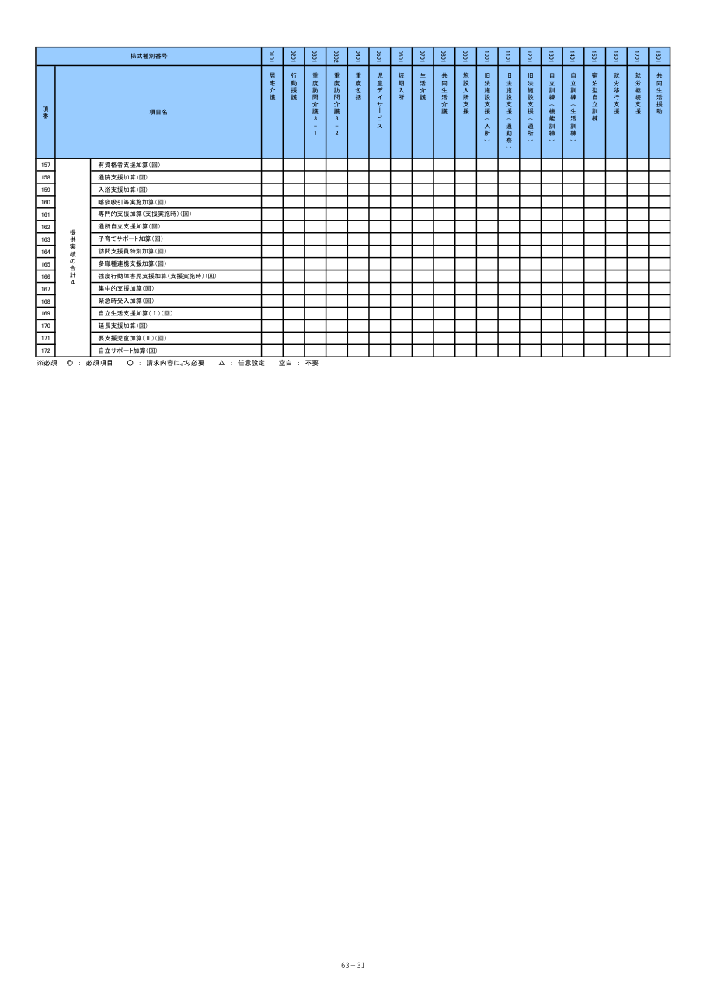
claude-haiku-5-5
表1 required_matrix 前頁から続く
| 項番 | 項目名 | 属性 | 桁数 | 内容 | 必須 | 備考 |
|---|---|---|---|---|---|---|
| 157 | 提供実績の合計４ > 有資格者支援加算(回) | 様式種別番号 > 0101 居宅介護:－ 様式種別番号 > 0201 行動援護:－ 様式種別番号 > 0301 重度訪問介護3－1:－ 様式種別番号 > 0302 重度訪問介護3－2:－ 様式種別番号 > 0401 重度包括:－ 様式種別番号 > 0501 児童デイサービス:－ 様式種別番号 > 0601 短期入所:－ 様式種別番号 > 0701 生活介護:－ 様式種別番号 > 0801 共同生活介護:－ 様式種別番号 > 0901 施設入所支援:－ 様式種別番号 > 1001 旧法施設支援（入所）:－ 様式種別番号 > 1101 旧法施設支援（通勤寮）:－ 様式種別番号 > 1201 旧法施設支援（通所）:－ 様式種別番号 > 1301 自立訓練（機能訓練）:－ 様式種別番号 > 1401 自立訓練（生活訓練）:－ 様式種別番号 > 1501 宿泊型自立訓練:－ 様式種別番号 > 1601 就労移行支援:－ 様式種別番号 > 1701 就労継続支援:－ 様式種別番号 > 1801 共同生活援助:－ | ||||
| 158 | 提供実績の合計４ > 通院支援加算(回) | 様式種別番号 > 0101 居宅介護:－ 様式種別番号 > 0201 行動援護:－ 様式種別番号 > 0301 重度訪問介護3－1:－ 様式種別番号 > 0302 重度訪問介護3－2:－ 様式種別番号 > 0401 重度包括:－ 様式種別番号 > 0501 児童デイサービス:－ 様式種別番号 > 0601 短期入所:－ 様式種別番号 > 0701 生活介護:－ 様式種別番号 > 0801 共同生活介護:－ 様式種別番号 > 0901 施設入所支援:－ 様式種別番号 > 1001 旧法施設支援（入所）:－ 様式種別番号 > 1101 旧法施設支援（通勤寮）:－ 様式種別番号 > 1201 旧法施設支援（通所）:－ 様式種別番号 > 1301 自立訓練（機能訓練）:－ 様式種別番号 > 1401 自立訓練（生活訓練）:－ 様式種別番号 > 1501 宿泊型自立訓練:－ 様式種別番号 > 1601 就労移行支援:－ 様式種別番号 > 1701 就労継続支援:－ 様式種別番号 > 1801 共同生活援助:－ | ||||
| 159 | 提供実績の合計４ > 入浴支援加算(回) | 様式種別番号 > 0101 居宅介護:－ 様式種別番号 > 0201 行動援護:－ 様式種別番号 > 0301 重度訪問介護3－1:－ 様式種別番号 > 0302 重度訪問介護3－2:－ 様式種別番号 > 0401 重度包括:－ 様式種別番号 > 0501 児童デイサービス:－ 様式種別番号 > 0601 短期入所:－ 様式種別番号 > 0701 生活介護:－ 様式種別番号 > 0801 共同生活介護:－ 様式種別番号 > 0901 施設入所支援:－ 様式種別番号 > 1001 旧法施設支援（入所）:－ 様式種別番号 > 1101 旧法施設支援（通勤寮）:－ 様式種別番号 > 1201 旧法施設支援（通所）:－ 様式種別番号 > 1301 自立訓練（機能訓練）:－ 様式種別番号 > 1401 自立訓練（生活訓練）:－ 様式種別番号 > 1501 宿泊型自立訓練:－ 様式種別番号 > 1601 就労移行支援:－ 様式種別番号 > 1701 就労継続支援:－ 様式種別番号 > 1801 共同生活援助:－ | ||||
| 160 | 提供実績の合計４ > 喀痰吸引等実施加算(回) | 様式種別番号 > 0101 居宅介護:－ 様式種別番号 > 0201 行動援護:－ 様式種別番号 > 0301 重度訪問介護3－1:－ 様式種別番号 > 0302 重度訪問介護3－2:－ 様式種別番号 > 0401 重度包括:－ 様式種別番号 > 0501 児童デイサービス:－ 様式種別番号 > 0601 短期入所:－ 様式種別番号 > 0701 生活介護:－ 様式種別番号 > 0801 共同生活介護:－ 様式種別番号 > 0901 施設入所支援:－ 様式種別番号 > 1001 旧法施設支援（入所）:－ 様式種別番号 > 1101 旧法施設支援（通勤寮）:－ 様式種別番号 > 1201 旧法施設支援（通所）:－ 様式種別番号 > 1301 自立訓練（機能訓練）:－ 様式種別番号 > 1401 自立訓練（生活訓練）:－ 様式種別番号 > 1501 宿泊型自立訓練:－ 様式種別番号 > 1601 就労移行支援:－ 様式種別番号 > 1701 就労継続支援:－ 様式種別番号 > 1801 共同生活援助:－ | ||||
| 161 | 提供実績の合計４ > 専門的支援加算(支援実施時)(回) | 様式種別番号 > 0101 居宅介護:－ 様式種別番号 > 0201 行動援護:－ 様式種別番号 > 0301 重度訪問介護3－1:－ 様式種別番号 > 0302 重度訪問介護3－2:－ 様式種別番号 > 0401 重度包括:－ 様式種別番号 > 0501 児童デイサービス:－ 様式種別番号 > 0601 短期入所:－ 様式種別番号 > 0701 生活介護:－ 様式種別番号 > 0801 共同生活介護:－ 様式種別番号 > 0901 施設入所支援:－ 様式種別番号 > 1001 旧法施設支援（入所）:－ 様式種別番号 > 1101 旧法施設支援（通勤寮）:－ 様式種別番号 > 1201 旧法施設支援（通所）:－ 様式種別番号 > 1301 自立訓練（機能訓練）:－ 様式種別番号 > 1401 自立訓練（生活訓練）:－ 様式種別番号 > 1501 宿泊型自立訓練:－ 様式種別番号 > 1601 就労移行支援:－ 様式種別番号 > 1701 就労継続支援:－ 様式種別番号 > 1801 共同生活援助:－ | ||||
| 162 | 提供実績の合計４ > 通所自立支援加算(回) | 様式種別番号 > 0101 居宅介護:－ 様式種別番号 > 0201 行動援護:－ 様式種別番号 > 0301 重度訪問介護3－1:－ 様式種別番号 > 0302 重度訪問介護3－2:－ 様式種別番号 > 0401 重度包括:－ 様式種別番号 > 0501 児童デイサービス:－ 様式種別番号 > 0601 短期入所:－ 様式種別番号 > 0701 生活介護:－ 様式種別番号 > 0801 共同生活介護:－ 様式種別番号 > 0901 施設入所支援:－ 様式種別番号 > 1001 旧法施設支援（入所）:－ 様式種別番号 > 1101 旧法施設支援（通勤寮）:－ 様式種別番号 > 1201 旧法施設支援（通所）:－ 様式種別番号 > 1301 自立訓練（機能訓練）:－ 様式種別番号 > 1401 自立訓練（生活訓練）:－ 様式種別番号 > 1501 宿泊型自立訓練:－ 様式種別番号 > 1601 就労移行支援:－ 様式種別番号 > 1701 就労継続支援:－ 様式種別番号 > 1801 共同生活援助:－ | ||||
| 163 | 提供実績の合計４ > 子育てサポート加算(回) | 様式種別番号 > 0101 居宅介護:－ 様式種別番号 > 0201 行動援護:－ 様式種別番号 > 0301 重度訪問介護3－1:－ 様式種別番号 > 0302 重度訪問介護3－2:－ 様式種別番号 > 0401 重度包括:－ 様式種別番号 > 0501 児童デイサービス:－ 様式種別番号 > 0601 短期入所:－ 様式種別番号 > 0701 生活介護:－ 様式種別番号 > 0801 共同生活介護:－ 様式種別番号 > 0901 施設入所支援:－ 様式種別番号 > 1001 旧法施設支援（入所）:－ 様式種別番号 > 1101 旧法施設支援（通勤寮）:－ 様式種別番号 > 1201 旧法施設支援（通所）:－ 様式種別番号 > 1301 自立訓練（機能訓練）:－ 様式種別番号 > 1401 自立訓練（生活訓練）:－ 様式種別番号 > 1501 宿泊型自立訓練:－ 様式種別番号 > 1601 就労移行支援:－ 様式種別番号 > 1701 就労継続支援:－ 様式種別番号 > 1801 共同生活援助:－ | ||||
| 164 | 提供実績の合計４ > 訪問支援員特別加算(回) | 様式種別番号 > 0101 居宅介護:－ 様式種別番号 > 0201 行動援護:－ 様式種別番号 > 0301 重度訪問介護3－1:－ 様式種別番号 > 0302 重度訪問介護3－2:－ 様式種別番号 > 0401 重度包括:－ 様式種別番号 > 0501 児童デイサービス:－ 様式種別番号 > 0601 短期入所:－ 様式種別番号 > 0701 生活介護:－ 様式種別番号 > 0801 共同生活介護:－ 様式種別番号 > 0901 施設入所支援:－ 様式種別番号 > 1001 旧法施設支援（入所）:－ 様式種別番号 > 1101 旧法施設支援（通勤寮）:－ 様式種別番号 > 1201 旧法施設支援（通所）:－ 様式種別番号 > 1301 自立訓練（機能訓練）:－ 様式種別番号 > 1401 自立訓練（生活訓練）:－ 様式種別番号 > 1501 宿泊型自立訓練:－ 様式種別番号 > 1601 就労移行支援:－ 様式種別番号 > 1701 就労継続支援:－ 様式種別番号 > 1801 共同生活援助:－ | ||||
| 165 | 提供実績の合計４ > 多職種連携支援加算(回) | 様式種別番号 > 0101 居宅介護:－ 様式種別番号 > 0201 行動援護:－ 様式種別番号 > 0301 重度訪問介護3－1:－ 様式種別番号 > 0302 重度訪問介護3－2:－ 様式種別番号 > 0401 重度包括:－ 様式種別番号 > 0501 児童デイサービス:－ 様式種別番号 > 0601 短期入所:－ 様式種別番号 > 0701 生活介護:－ 様式種別番号 > 0801 共同生活介護:－ 様式種別番号 > 0901 施設入所支援:－ 様式種別番号 > 1001 旧法施設支援（入所）:－ 様式種別番号 > 1101 旧法施設支援（通勤寮）:－ 様式種別番号 > 1201 旧法施設支援（通所）:－ 様式種別番号 > 1301 自立訓練（機能訓練）:－ 様式種別番号 > 1401 自立訓練（生活訓練）:－ 様式種別番号 > 1501 宿泊型自立訓練:－ 様式種別番号 > 1601 就労移行支援:－ 様式種別番号 > 1701 就労継続支援:－ 様式種別番号 > 1801 共同生活援助:－ | ||||
| 166 | 提供実績の合計４ > 強度行動障害児支援加算(支援実施時)(回) | 様式種別番号 > 0101 居宅介護:－ 様式種別番号 > 0201 行動援護:－ 様式種別番号 > 0301 重度訪問介護3－1:－ 様式種別番号 > 0302 重度訪問介護3－2:－ 様式種別番号 > 0401 重度包括:－ 様式種別番号 > 0501 児童デイサービス:－ 様式種別番号 > 0601 短期入所:－ 様式種別番号 > 0701 生活介護:－ 様式種別番号 > 0801 共同生活介護:－ 様式種別番号 > 0901 施設入所支援:－ 様式種別番号 > 1001 旧法施設支援（入所）:－ 様式種別番号 > 1101 旧法施設支援（通勤寮）:－ 様式種別番号 > 1201 旧法施設支援（通所）:－ 様式種別番号 > 1301 自立訓練（機能訓練）:－ 様式種別番号 > 1401 自立訓練（生活訓練）:－ 様式種別番号 > 1501 宿泊型自立訓練:－ 様式種別番号 > 1601 就労移行支援:－ 様式種別番号 > 1701 就労継続支援:－ 様式種別番号 > 1801 共同生活援助:－ | ||||
| 167 | 提供実績の合計４ > 集中的支援加算(回) | 様式種別番号 > 0101 居宅介護:－ 様式種別番号 > 0201 行動援護:－ 様式種別番号 > 0301 重度訪問介護3－1:－ 様式種別番号 > 0302 重度訪問介護3－2:－ 様式種別番号 > 0401 重度包括:－ 様式種別番号 > 0501 児童デイサービス:－ 様式種別番号 > 0601 短期入所:－ 様式種別番号 > 0701 生活介護:－ 様式種別番号 > 0801 共同生活介護:－ 様式種別番号 > 0901 施設入所支援:－ 様式種別番号 > 1001 旧法施設支援（入所）:－ 様式種別番号 > 1101 旧法施設支援（通勤寮）:－ 様式種別番号 > 1201 旧法施設支援（通所）:－ 様式種別番号 > 1301 自立訓練（機能訓練）:－ 様式種別番号 > 1401 自立訓練（生活訓練）:－ 様式種別番号 > 1501 宿泊型自立訓練:－ 様式種別番号 > 1601 就労移行支援:－ 様式種別番号 > 1701 就労継続支援:－ 様式種別番号 > 1801 共同生活援助:－ | ||||
| 168 | 提供実績の合計４ > 緊急時受入加算(回) | 様式種別番号 > 0101 居宅介護:－ 様式種別番号 > 0201 行動援護:－ 様式種別番号 > 0301 重度訪問介護3－1:－ 様式種別番号 > 0302 重度訪問介護3－2:－ 様式種別番号 > 0401 重度包括:－ 様式種別番号 > 0501 児童デイサービス:－ 様式種別番号 > 0601 短期入所:－ 様式種別番号 > 0701 生活介護:－ 様式種別番号 > 0801 共同生活介護:－ 様式種別番号 > 0901 施設入所支援:－ 様式種別番号 > 1001 旧法施設支援（入所）:－ 様式種別番号 > 1101 旧法施設支援（通勤寮）:－ 様式種別番号 > 1201 旧法施設支援（通所）:－ 様式種別番号 > 1301 自立訓練（機能訓練）:－ 様式種別番号 > 1401 自立訓練（生活訓練）:－ 様式種別番号 > 1501 宿泊型自立訓練:－ 様式種別番号 > 1601 就労移行支援:－ 様式種別番号 > 1701 就労継続支援:－ 様式種別番号 > 1801 共同生活援助:－ | ||||
| 169 | 提供実績の合計４ > 自立生活支援加算(Ⅰ)(回) | 様式種別番号 > 0101 居宅介護:－ 様式種別番号 > 0201 行動援護:－ 様式種別番号 > 0301 重度訪問介護3－1:－ 様式種別番号 > 0302 重度訪問介護3－2:－ 様式種別番号 > 0401 重度包括:－ 様式種別番号 > 0501 児童デイサービス:－ 様式種別番号 > 0601 短期入所:－ 様式種別番号 > 0701 生活介護:－ 様式種別番号 > 0801 共同生活介護:－ 様式種別番号 > 0901 施設入所支援:－ 様式種別番号 > 1001 旧法施設支援（入所）:－ 様式種別番号 > 1101 旧法施設支援（通勤寮）:－ 様式種別番号 > 1201 旧法施設支援（通所）:－ 様式種別番号 > 1301 自立訓練（機能訓練）:－ 様式種別番号 > 1401 自立訓練（生活訓練）:－ 様式種別番号 > 1501 宿泊型自立訓練:－ 様式種別番号 > 1601 就労移行支援:－ 様式種別番号 > 1701 就労継続支援:－ 様式種別番号 > 1801 共同生活援助:－ | ||||
| 170 | 提供実績の合計４ > 延長支援加算(回) | 様式種別番号 > 0101 居宅介護:－ 様式種別番号 > 0201 行動援護:－ 様式種別番号 > 0301 重度訪問介護3－1:－ 様式種別番号 > 0302 重度訪問介護3－2:－ 様式種別番号 > 0401 重度包括:－ 様式種別番号 > 0501 児童デイサービス:－ 様式種別番号 > 0601 短期入所:－ 様式種別番号 > 0701 生活介護:－ 様式種別番号 > 0801 共同生活介護:－ 様式種別番号 > 0901 施設入所支援:－ 様式種別番号 > 1001 旧法施設支援（入所）:－ 様式種別番号 > 1101 旧法施設支援（通勤寮）:－ 様式種別番号 > 1201 旧法施設支援（通所）:－ 様式種別番号 > 1301 自立訓練（機能訓練）:－ 様式種別番号 > 1401 自立訓練（生活訓練）:－ 様式種別番号 > 1501 宿泊型自立訓練:－ 様式種別番号 > 1601 就労移行支援:－ 様式種別番号 > 1701 就労継続支援:－ 様式種別番号 > 1801 共同生活援助:－ | ||||
| 171 | 提供実績の合計４ > 要支援児童加算(Ⅱ)(回) | 様式種別番号 > 0101 居宅介護:－ 様式種別番号 > 0201 行動援護:－ 様式種別番号 > 0301 重度訪問介護3－1:－ 様式種別番号 > 0302 重度訪問介護3－2:－ 様式種別番号 > 0401 重度包括:－ 様式種別番号 > 0501 児童デイサービス:－ 様式種別番号 > 0601 短期入所:－ 様式種別番号 > 0701 生活介護:－ 様式種別番号 > 0801 共同生活介護:－ 様式種別番号 > 0901 施設入所支援:－ 様式種別番号 > 1001 旧法施設支援（入所）:－ 様式種別番号 > 1101 旧法施設支援（通勤寮）:－ 様式種別番号 > 1201 旧法施設支援（通所）:－ 様式種別番号 > 1301 自立訓練（機能訓練）:－ 様式種別番号 > 1401 自立訓練（生活訓練）:－ 様式種別番号 > 1501 宿泊型自立訓練:－ 様式種別番号 > 1601 就労移行支援:－ 様式種別番号 > 1701 就労継続支援:－ 様式種別番号 > 1801 共同生活援助:－ | ||||
| 172 | 提供実績の合計４ > 自立サポート加算(回) | 様式種別番号 > 0101 居宅介護:－ 様式種別番号 > 0201 行動援護:－ 様式種別番号 > 0301 重度訪問介護3－1:－ 様式種別番号 > 0302 重度訪問介護3－2:－ 様式種別番号 > 0401 重度包括:－ 様式種別番号 > 0501 児童デイサービス:－ 様式種別番号 > 0601 短期入所:－ 様式種別番号 > 0701 生活介護:－ 様式種別番号 > 0801 共同生活介護:－ 様式種別番号 > 0901 施設入所支援:－ 様式種別番号 > 1001 旧法施設支援（入所）:－ 様式種別番号 > 1101 旧法施設支援（通勤寮）:－ 様式種別番号 > 1201 旧法施設支援（通所）:－ 様式種別番号 > 1301 自立訓練（機能訓練）:－ 様式種別番号 > 1401 自立訓練（生活訓練）:－ 様式種別番号 > 1501 宿泊型自立訓練:－ 様式種別番号 > 1601 就労移行支援:－ 様式種別番号 > 1701 就労継続支援:－ 様式種別番号 > 1801 共同生活援助:－ |
注記
- ※必須 ◎ : 必須項目 ○ : 請求内容により必要 △ : 任意設定 空白 : 不要
uncertain（モデル自己申告）
- 表の各セルは画像上すべて空欄に見えたため、required_by の値はすべて null とした。
- 項目名列の縦書き「提供実績の合計４」は、項番157〜172の行見出しとして name_path の先頭に入れた。
claude-sonnet-5-5
表1 required_matrix 前頁から続く
| 項番 | 項目名 | 属性 | 桁数 | 内容 | 必須 | 備考 |
|---|---|---|---|---|---|---|
| 157 | 提供実績の合計4 > 有資格者支援加算(回) | 0101:－ 0201:－ 0301:－ 0302:－ 0401:－ 0501:－ 0601:－ 0701:－ 0801:－ 0901:－ 1001:－ 1101:－ 1201:－ 1301:－ 1401:－ 1501:－ 1601:－ 1701:－ 1801:－ | ||||
| 158 | 提供実績の合計4 > 通院支援加算(回) | 0101:－ 0201:－ 0301:－ 0302:－ 0401:－ 0501:－ 0601:－ 0701:－ 0801:－ 0901:－ 1001:－ 1101:－ 1201:－ 1301:－ 1401:－ 1501:－ 1601:－ 1701:－ 1801:－ | ||||
| 159 | 提供実績の合計4 > 入浴支援加算(回) | 0101:－ 0201:－ 0301:－ 0302:－ 0401:－ 0501:－ 0601:－ 0701:－ 0801:－ 0901:－ 1001:－ 1101:－ 1201:－ 1301:－ 1401:－ 1501:－ 1601:－ 1701:－ 1801:－ | ||||
| 160 | 提供実績の合計4 > 喀痰吸引等実施加算(回) | 0101:－ 0201:－ 0301:－ 0302:－ 0401:－ 0501:－ 0601:－ 0701:－ 0801:－ 0901:－ 1001:－ 1101:－ 1201:－ 1301:－ 1401:－ 1501:－ 1601:－ 1701:－ 1801:－ | ||||
| 161 | 提供実績の合計4 > 専門的支援加算(支援実施時)(回) | 0101:－ 0201:－ 0301:－ 0302:－ 0401:－ 0501:－ 0601:－ 0701:－ 0801:－ 0901:－ 1001:－ 1101:－ 1201:－ 1301:－ 1401:－ 1501:－ 1601:－ 1701:－ 1801:－ | ||||
| 162 | 提供実績の合計4 > 通所自立支援加算(回) | 0101:－ 0201:－ 0301:－ 0302:－ 0401:－ 0501:－ 0601:－ 0701:－ 0801:－ 0901:－ 1001:－ 1101:－ 1201:－ 1301:－ 1401:－ 1501:－ 1601:－ 1701:－ 1801:－ | ||||
| 163 | 提供実績の合計4 > 子育てサポート加算(回) | 0101:－ 0201:－ 0301:－ 0302:－ 0401:－ 0501:－ 0601:－ 0701:－ 0801:－ 0901:－ 1001:－ 1101:－ 1201:－ 1301:－ 1401:－ 1501:－ 1601:－ 1701:－ 1801:－ | ||||
| 164 | 提供実績の合計4 > 訪問支援員特別加算(回) | 0101:－ 0201:－ 0301:－ 0302:－ 0401:－ 0501:－ 0601:－ 0701:－ 0801:－ 0901:－ 1001:－ 1101:－ 1201:－ 1301:－ 1401:－ 1501:－ 1601:－ 1701:－ 1801:－ | ||||
| 165 | 提供実績の合計4 > 多職種連携支援加算(回) | 0101:－ 0201:－ 0301:－ 0302:－ 0401:－ 0501:－ 0601:－ 0701:－ 0801:－ 0901:－ 1001:－ 1101:－ 1201:－ 1301:－ 1401:－ 1501:－ 1601:－ 1701:－ 1801:－ | ||||
| 166 | 提供実績の合計4 > 強度行動障害児支援加算(支援実施時)(回) | 0101:－ 0201:－ 0301:－ 0302:－ 0401:－ 0501:－ 0601:－ 0701:－ 0801:－ 0901:－ 1001:－ 1101:－ 1201:－ 1301:－ 1401:－ 1501:－ 1601:－ 1701:－ 1801:－ | ||||
| 167 | 提供実績の合計4 > 集中的支援加算(回) | 0101:－ 0201:－ 0301:－ 0302:－ 0401:－ 0501:－ 0601:－ 0701:－ 0801:－ 0901:－ 1001:－ 1101:－ 1201:－ 1301:－ 1401:－ 1501:－ 1601:－ 1701:－ 1801:－ | ||||
| 168 | 提供実績の合計4 > 緊急時受入加算(回) | 0101:－ 0201:－ 0301:－ 0302:－ 0401:－ 0501:－ 0601:－ 0701:－ 0801:－ 0901:－ 1001:－ 1101:－ 1201:－ 1301:－ 1401:－ 1501:－ 1601:－ 1701:－ 1801:－ | ||||
| 169 | 提供実績の合計4 > 自立生活支援加算(Ⅰ)(回) | 0101:－ 0201:－ 0301:－ 0302:－ 0401:－ 0501:－ 0601:－ 0701:－ 0801:－ 0901:－ 1001:－ 1101:－ 1201:－ 1301:－ 1401:－ 1501:－ 1601:－ 1701:－ 1801:－ | ||||
| 170 | 提供実績の合計4 > 延長支援加算(回) | 0101:－ 0201:－ 0301:－ 0302:－ 0401:－ 0501:－ 0601:－ 0701:－ 0801:－ 0901:－ 1001:－ 1101:－ 1201:－ 1301:－ 1401:－ 1501:－ 1601:－ 1701:－ 1801:－ | ||||
| 171 | 提供実績の合計4 > 要支援児童加算(Ⅱ)(回) | 0101:－ 0201:－ 0301:－ 0302:－ 0401:－ 0501:－ 0601:－ 0701:－ 0801:－ 0901:－ 1001:－ 1101:－ 1201:－ 1301:－ 1401:－ 1501:－ 1601:－ 1701:－ 1801:－ | ||||
| 172 | 提供実績の合計4 > 自立サポート加算(回) | 0101:－ 0201:－ 0301:－ 0302:－ 0401:－ 0501:－ 0601:－ 0701:－ 0801:－ 0901:－ 1001:－ 1101:－ 1201:－ 1301:－ 1401:－ 1501:－ 1601:－ 1701:－ 1801:－ |
注記
- ※必須 ◎ : 必須項目 ○ : 請求内容により必要 △ : 任意設定 空白 : 不要
uncertain（モデル自己申告）
- 表は前ページからの続き。
- 0301・0302の見出しの「重度訪問介護3-1/3-2」は縦書きの読み取り。
- 項番157のrequired_byは0302の列が抜けており、他行と列数が不揃い（全行とも全セル空欄）。
shogai_jigyosho_r0710_p157 — 印字p.

claude-haiku-5-5
- 表1 項番36 必須（0801）の値が想定外: '○※1'
- 表1 項番36 必須（0901）の値が想定外: '○※1'
- 表1 項番36 必須（1001）の値が想定外: '○※1'
- 表1 項番36 必須（1101）の値が想定外: '○※1'
- 表1 項番36 必須（1501）の値が想定外: '○※2'
- 表1 項番36 必須（1801）の値が想定外: '○※1'
- [改ページ] 前後ページで列見出しの書き起こしが一致しない
- テキストレイヤに見つからないセル: 1 個（赤枠）
表1 required_matrix(26) 入力必須項目と様式の対応表(明細情報レコード)【サービス提供年月:平成21年3月以前】 次頁へ続く
| 項番 | 項目名 | 属性 | 桁数 | 内容 | 必須 | 備考 |
|---|---|---|---|---|---|---|
| 1 | 交換情報識別番号 | 0101:◎ 0201:◎ 0301:◎ 0302:◎ 0401:◎ 0501:◎ 0601:◎ 0701:◎ 0801:◎ 0901:◎ 1001:◎ 1101:◎ 1201:◎ 1301:◎ 1401:◎ 1501:◎ 1601:◎ 1701:◎ 1801:◎ | ||||
| 2 | レコード種別コード | 0101:◎ 0201:◎ 0301:◎ 0302:◎ 0401:◎ 0501:◎ 0601:◎ 0701:◎ 0801:◎ 0901:◎ 1001:◎ 1101:◎ 1201:◎ 1301:◎ 1401:◎ 1501:◎ 1601:◎ 1701:◎ 1801:◎ | ||||
| 3 | サービス提供年月 | 0101:◎ 0201:◎ 0301:◎ 0302:◎ 0401:◎ 0501:◎ 0601:◎ 0701:◎ 0801:◎ 0901:◎ 1001:◎ 1101:◎ 1201:◎ 1301:◎ 1401:◎ 1501:◎ 1601:◎ 1701:◎ 1801:◎ | ||||
| 4 | 市町村番号 | 0101:◎ 0201:◎ 0301:◎ 0302:◎ 0401:◎ 0501:◎ 0601:◎ 0701:◎ 0801:◎ 0901:◎ 1001:◎ 1101:◎ 1201:◎ 1301:◎ 1401:◎ 1501:◎ 1601:◎ 1701:◎ 1801:◎ | ||||
| 5 | 事業所番号 | 0101:◎ 0201:◎ 0301:◎ 0302:◎ 0401:◎ 0501:◎ 0601:◎ 0701:◎ 0801:◎ 0901:◎ 1001:◎ 1101:◎ 1201:◎ 1301:◎ 1401:◎ 1501:◎ 1601:◎ 1701:◎ 1801:◎ | ||||
| 6 | 受給者証番号 | 0101:◎ 0201:◎ 0301:◎ 0302:◎ 0401:◎ 0501:◎ 0601:◎ 0701:◎ 0801:◎ 0901:◎ 1001:◎ 1101:◎ 1201:◎ 1301:◎ 1401:◎ 1501:◎ 1601:◎ 1701:◎ 1801:◎ | ||||
| 7 | 様式種別番号 | 0101:◎ 0201:◎ 0301:◎ 0302:◎ 0401:◎ 0501:◎ 0601:◎ 0701:◎ 0801:◎ 0901:◎ 1001:◎ 1101:◎ 1201:◎ 1301:◎ 1401:◎ 1501:◎ 1601:◎ 1701:◎ 1801:◎ | ||||
| 8 | 提供通番 | 0101:◎ 0201:◎ 0301:◎ 0302:◎ 0401:－ 0501:－ 0601:－ 0701:－ 0801:－ 0901:－ 1001:－ 1101:－ 1201:－ 1301:－ 1401:－ 1501:－ 1601:－ 1701:－ 1801:－ | ||||
| 9 | 日付 | 0101:◎ 0201:◎ 0301:◎ 0302:◎ 0401:◎ 0501:◎ 0601:◎ 0701:◎ 0801:◎ 0901:◎ 1001:◎ 1101:◎ 1201:◎ 1301:◎ 1401:◎ 1501:◎ 1601:◎ 1701:◎ 1801:◎ | ||||
| 10 | サービス提供回数 | 0101:○ 0201:○ 0301:○ 0302:○ 0401:－ 0501:－ 0601:－ 0701:－ 0801:－ 0901:－ 1001:－ 1101:－ 1201:－ 1301:－ 1401:－ 1501:－ 1601:－ 1701:－ 1801:－ | ||||
| 11 | サービス内容 | 0101:○ 0201:－ 0301:－ 0302:－ 0401:○ 0501:－ 0601:－ 0701:－ 0801:－ 0901:－ 1001:－ 1101:－ 1201:－ 1301:－ 1401:－ 1501:－ 1601:－ 1701:－ 1801:－ | ||||
| 12 | ヘルパー資格 | 0101:○ 0201:○ 0301:－ 0302:－ 0401:－ 0501:－ 0601:－ 0701:－ 0801:－ 0901:－ 1001:－ 1101:－ 1201:－ 1301:－ 1401:－ 1501:－ 1601:－ 1701:－ 1801:－ | ||||
| 13 | 運転フラグ | 0101:○ 0201:－ 0301:－ 0302:－ 0401:－ 0501:－ 0601:－ 0701:－ 0801:－ 0901:－ 1001:－ 1101:－ 1201:－ 1301:－ 1401:－ 1501:－ 1601:－ 1701:－ 1801:－ | ||||
| 14 | 開始時間 | 0101:○ 0201:○ 0301:○ 0302:－ 0401:○ 0501:○ 0601:－ 0701:○ 0801:－ 0901:－ 1001:－ 1101:－ 1201:○ 1301:○ 1401:○ 1501:－ 1601:○ 1701:○ 1801:－ | ||||
| 15 | 終了時間 | 0101:○ 0201:○ 0301:○ 0302:－ 0401:○ 0501:○ 0601:－ 0701:○ 0801:－ 0901:－ 1001:－ 1101:－ 1201:○ 1301:○ 1401:○ 1501:－ 1601:○ 1701:○ 1801:－ | ||||
| 16 | 算定時間数 | 0101:○ 0201:○ 0301:○ 0302:○ 0401:○ 0501:－ 0601:－ 0701:－ 0801:－ 0901:－ 1001:－ 1101:－ 1201:－ 1301:－ 1401:－ 1501:－ 1601:－ 1701:－ 1801:－ | ||||
| 17 | 乗降(回数) | 0101:○ 0201:－ 0301:－ 0302:－ 0401:－ 0501:－ 0601:－ 0701:－ 0801:－ 0901:－ 1001:－ 1101:－ 1201:－ 1301:－ 1401:－ 1501:－ 1601:－ 1701:－ 1801:－ | ||||
| 18 | 移動 | 0101:－ 0201:－ 0301:○ 0302:○ 0401:－ 0501:－ 0601:－ 0701:－ 0801:－ 0901:－ 1001:－ 1101:－ 1201:－ 1301:－ 1401:－ 1501:－ 1601:－ 1701:－ 1801:－ | ||||
| 19 | 派遣人数 | 0101:○ 0201:○ 0301:○ 0302:－ 0401:○ 0501:－ 0601:－ 0701:－ 0801:－ 0901:－ 1001:－ 1101:－ 1201:－ 1301:－ 1401:－ 1501:－ 1601:－ 1701:－ 1801:－ | ||||
| 20 | 前月からの継続サービス | 0101:○ 0201:－ 0301:－ 0302:－ 0401:－ 0501:－ 0601:－ 0701:－ 0801:－ 0901:－ 1001:－ 1101:－ 1201:－ 1301:－ 1401:－ 1501:－ 1601:－ 1701:－ 1801:－ | ||||
| 21 | 送迎加算 往 | 0101:－ 0201:－ 0301:－ 0302:－ 0401:－ 0501:○ 0601:－ 0701:－ 0801:－ 0901:－ 1001:－ 1101:－ 1201:－ 1301:－ 1401:－ 1501:－ 1601:－ 1701:－ 1801:－ | ||||
| 22 | 送迎加算 復 | 0101:－ 0201:－ 0301:－ 0302:－ 0401:－ 0501:○ 0601:－ 0701:－ 0801:－ 0901:－ 1001:－ 1101:－ 1201:－ 1301:－ 1401:－ 1501:－ 1601:－ 1701:－ 1801:－ | ||||
| 23 | 家庭連携加算（サービス提供時間数） | 0101:－ 0201:－ 0301:－ 0302:－ 0401:－ 0501:○ 0601:－ 0701:－ 0801:－ 0901:－ 1001:－ 1101:－ 1201:－ 1301:－ 1401:－ 1501:－ 1601:－ 1701:－ 1801:－ | ||||
| 24 | 家庭連携加算（算定時間数） | 0101:－ 0201:－ 0301:－ 0302:－ 0401:－ 0501:○ 0601:－ 0701:－ 0801:－ 0901:－ 1001:－ 1101:－ 1201:－ 1301:－ 1401:－ 1501:－ 1601:－ 1701:－ 1801:－ | ||||
| 25 | 自活訓練加算 | 0101:－ 0201:－ 0301:－ 0302:－ 0401:－ 0501:－ 0601:－ 0701:－ 0801:－ 0901:－ 1001:○ 1101:－ 1201:－ 1301:－ 1401:－ 1501:－ 1601:－ 1701:－ 1801:－ | ||||
| 26 | 短期滞在加算 | 0101:－ 0201:－ 0301:－ 0302:－ 0401:－ 0501:－ 0601:－ 0701:－ 0801:－ 0901:－ 1001:－ 1101:－ 1201:－ 1301:－ 1401:○ 1501:－ 1601:－ 1701:－ 1801:－ | ||||
| 27 | 訪問支援特別加算（サービス提供時間数） | 0101:－ 0201:－ 0301:－ 0302:－ 0401:－ 0501:○ 0601:－ 0701:○ 0801:－ 0901:－ 1001:－ 1101:－ 1201:○ 1301:－ 1401:－ 1501:－ 1601:○ 1701:○ 1801:－ | ||||
| 28 | 訪問支援特別加算（算定時間数） | 0101:－ 0201:－ 0301:－ 0302:－ 0401:－ 0501:○ 0601:－ 0701:○ 0801:－ 0901:－ 1001:－ 1101:－ 1201:○ 1301:－ 1401:－ 1501:－ 1601:○ 1701:○ 1801:－ | ||||
| 29 | 施設外支援 | 0101:－ 0201:－ 0301:－ 0302:－ 0401:－ 0501:－ 0601:－ 0701:－ 0801:－ 0901:－ 1001:－ 1101:－ 1201:○ 1301:－ 1401:－ 1501:－ 1601:○ 1701:○ 1801:－ | ||||
| 30 | 退所時特別支援加算 | 0101:－ 0201:－ 0301:－ 0302:－ 0401:－ 0501:－ 0601:－ 0701:－ 0801:－ 0901:－ 1001:○ 1101:○ 1201:○ 1301:－ 1401:－ 1501:－ 1601:－ 1701:－ 1801:－ | ||||
| 31 | 地域移行加算 | 0101:－ 0201:－ 0301:－ 0302:－ 0401:－ 0501:－ 0601:－ 0701:－ 0801:－ 0901:○ 1001:－ 1101:－ 1201:－ 1301:－ 1401:－ 1501:－ 1601:－ 1701:－ 1801:－ | ||||
| 32 | 食事提供加算 | 0101:－ 0201:－ 0301:－ 0302:－ 0401:－ 0501:－ 0601:○ 0701:○ 0801:－ 0901:－ 1001:－ 1101:○ 1201:○ 1301:○ 1401:○ 1501:○ 1601:○ 1701:○ 1801:－ | ||||
| 33 | 入院・外泊時加算 | 0101:－ 0201:－ 0301:－ 0302:－ 0401:－ 0501:－ 0601:－ 0701:－ 0801:－ 0901:○ 1001:○ 1101:○ 1201:－ 1301:－ 1401:－ 1501:－ 1601:－ 1701:－ 1801:－ | ||||
| 34 | 提供形態 | 0101:－ 0201:－ 0301:－ 0302:－ 0401:－ 0501:－ 0601:－ 0701:－ 0801:－ 0901:－ 1001:－ 1101:－ 1201:－ 1301:○ 1401:○ 1501:－ 1601:－ 1701:－ 1801:－ | ||||
| 35 | 備考 | 0101:○ 0201:○ 0301:○ 0302:○ 0401:－ 0501:○ 0601:○ 0701:○ 0801:○ 0901:○ 1001:○ 1101:○ 1201:○ 1301:○ 1401:○ 1501:○ 1601:○ 1701:○ 1801:○ | ||||
| 36 | サービス提供の状況 | 0101:－ 0201:－ 0301:－ 0302:－ 0401:－ 0501:－ 0601:－ 0701:－ 0801:○※1 0901:○※1 1001:○※1 1101:○※1 1201:－ 1301:－ 1401:－ 1501:○※2 1601:－ 1701:－ 1801:○※1 | ||||
| 37 | 夜間支援体制加算 | 0101:－ 0201:－ 0301:－ 0302:－ 0401:－ 0501:－ 0601:－ 0701:－ 0801:○ 0901:－ 1001:－ 1101:－ 1201:－ 1301:－ 1401:－ 1501:－ 1601:－ 1701:－ 1801:－ | ||||
| 38 | 入院時支援特別加算（サービス提供回数） | 0101:－ 0201:－ 0301:－ 0302:－ 0401:－ 0501:－ 0601:－ 0701:－ 0801:○ 0901:○ 1001:○ 1101:○ 1201:－ 1301:－ 1401:－ 1501:－ 1601:－ 1701:－ 1801:○ | ||||
| 39 | 入院時支援特別加算（算定回数） | 0101:－ 0201:－ 0301:－ 0302:－ 0401:－ 0501:－ 0601:－ 0701:－ 0801:○ 0901:○ 1001:○ 1101:○ 1201:－ 1301:－ 1401:－ 1501:－ 1601:－ 1701:－ 1801:○ | ||||
| 40 | 帰宅時支援加算（サービス提供回数） | 0101:－ 0201:－ 0301:－ 0302:－ 0401:－ 0501:－ 0601:－ 0701:－ 0801:○ 0901:－ 1001:－ 1101:－ 1201:－ 1301:－ 1401:－ 1501:－ 1601:－ 1701:－ 1801:○ | ||||
| 41 | 帰宅時支援加算（算定回数） | 0101:－ 0201:－ 0301:－ 0302:－ 0401:－ 0501:－ 0601:－ 0701:－ 0801:○ 0901:－ 1001:－ 1101:－ 1201:－ 1301:－ 1401:－ 1501:－ 1601:－ 1701:－ 1801:○ | ||||
| 42 | 自立生活支援加算（II） | 0101:－ 0201:－ 0301:－ 0302:－ 0401:－ 0501:－ 0601:－ 0701:－ 0801:○ 0901:－ 1001:－ 1101:－ 1201:－ 1301:－ 1401:－ 1501:－ 1601:－ 1701:－ 1801:○ | ||||
| 43 | 日中支援加算（サービス提供回数） | 0101:－ 0201:－ 0301:－ 0302:－ 0401:－ 0501:－ 0601:－ 0701:－ 0801:○ 0901:－ 1001:－ 1101:－ 1201:－ 1301:－ 1401:－ 1501:－ 1601:－ 1701:－ 1801:－ | ||||
| 44 | 日中支援加算（算定回数） | 0101:－ 0201:－ 0301:－ 0302:－ 0401:－ 0501:－ 0601:－ 0701:－ 0801:○ 0901:－ 1001:－ 1101:－ 1201:－ 1301:－ 1401:－ 1501:－ 1601:－ 1701:－ 1801:－ | ||||
| 45 | 算定日数 | 0101:－ 0201:－ 0301:－ 0302:－ 0401:－ 0501:－ 0601:○ 0701:－ 0801:－ 0901:－ 1001:－ 1101:－ 1201:－ 1301:－ 1401:－ 1501:－ 1601:－ 1701:－ 1801:－ | ||||
| 46 | 自立訓練 訪問型時間数 | 0101:－ 0201:－ 0301:－ 0302:－ 0401:－ 0501:－ 0601:－ 0701:－ 0801:－ 0901:－ 1001:－ 1101:－ 1201:－ 1301:○ 1401:○ 1501:－ 1601:－ 1701:－ 1801:－ | ||||
| 47 | 実費算定 > 朝食 | 0101:－ 0201:－ 0301:－ 0302:－ 0401:－ 0501:－ 0601:－ 0701:－ 0801:－ 0901:○ 1001:○ 1101:－ 1201:－ 1301:－ 1401:－ 1501:－ 1601:－ 1701:－ 1801:－ | ||||
| 48 | 実費算定 > 昼食 | 0101:－ 0201:－ 0301:－ 0302:－ 0401:－ 0501:－ 0601:－ 0701:－ 0801:－ 0901:○ 1001:○ 1101:－ 1201:－ 1301:－ 1401:－ 1501:－ 1601:－ 1701:－ 1801:－ | ||||
| 49 | 実費算定 > 夕食 | 0101:－ 0201:－ 0301:－ 0302:－ 0401:－ 0501:－ 0601:－ 0701:－ 0801:－ 0901:○ 1001:○ 1101:－ 1201:－ 1301:－ 1401:－ 1501:－ 1601:－ 1701:－ 1801:－ | ||||
| 50 | 実費算定 > 光熱水費 | 0101:－ 0201:－ 0301:－ 0302:－ 0401:－ 0501:－ 0601:－ 0701:－ 0801:－ 0901:○ 1001:○ 1101:－ 1201:－ 1301:－ 1401:－ 1501:－ 1601:－ 1701:－ 1801:－ | ||||
| 51 | 重度包括 > 適用単位数 | 0101:－ 0201:－ 0301:－ 0302:－ 0401:○ 0501:－ 0601:－ 0701:－ 0801:－ 0901:－ 1001:－ 1101:－ 1201:－ 1301:－ 1401:－ 1501:－ 1601:－ 1701:－ 1801:－ | ||||
| 52 | 重度包括 > 基本単位数 | 0101:－ 0201:－ 0301:－ 0302:－ 0401:○ 0501:－ 0601:－ 0701:－ 0801:－ 0901:－ 1001:－ 1101:－ 1201:－ 1301:－ 1401:－ 1501:－ 1601:－ 1701:－ 1801:－ | ||||
| 53 | 重度包括 > 加算 | 0101:－ 0201:－ 0301:－ 0302:－ 0401:○ 0501:－ 0601:－ 0701:－ 0801:－ 0901:－ 1001:－ 1101:－ 1201:－ 1301:－ 1401:－ 1501:－ 1601:－ 1701:－ 1801:－ | ||||
| 54 | 重度包括 > 加算後単位数 | 0101:－ 0201:－ 0301:－ 0302:－ 0401:○ 0501:－ 0601:－ 0701:－ 0801:－ 0901:－ 1001:－ 1101:－ 1201:－ 1301:－ 1401:－ 1501:－ 1601:－ 1701:－ 1801:－ | ||||
| 55 | 重度包括 > 単位数 | 0101:－ 0201:－ 0301:－ 0302:－ 0401:○ 0501:－ 0601:－ 0701:－ 0801:－ 0901:－ 1001:－ 1101:－ 1201:－ 1301:－ 1401:－ 1501:－ 1601:－ 1701:－ 1801:－ | ||||
| 56 | 重度包括 > 1日計 | 0101:－ 0201:－ 0301:－ 0302:－ 0401:○ 0501:－ 0601:－ 0701:－ 0801:－ 0901:－ 1001:－ 1101:－ 1201:－ 1301:－ 1401:－ 1501:－ 1601:－ 1701:－ 1801:－ |
uncertain（モデル自己申告）
- 表ヘッダーの各様式種別番号の下にある縦書きのサービス名（居宅介護、行動援護、重度訪問介護（3－1）など）は、columnsおよびrequired_byの列名では省略し様式種別番号のみで表記した。
- 行36の「※1」「※2」の注記本文はこのページに記載がないため footnotes は空にした。
- 「(26)」の表題は原文の半角表記に合わせて書き写したが、ページ外の前後関係は確認できない。
claude-sonnet-5-5
- 表1 項番36 必須（0801）の値が想定外: '○※1'
- 表1 項番36 必須（0901）の値が想定外: '○※1'
- 表1 項番36 必須（1001）の値が想定外: '○※1'
- 表1 項番36 必須（1101）の値が想定外: '○※1'
- 表1 項番36 必須（1501）の値が想定外: '○※2'
- 表1 項番36 必須（1801）の値が想定外: '○※1'
- [改ページ] 前後ページで列見出しの書き起こしが一致しない
表1 required_matrix（26）入力必須項目と様式の対応表（明細情報レコード）【サービス提供年月：平成21年3月以前】 次頁へ続く
| 項番 | 項目名 | 属性 | 桁数 | 内容 | 必須 | 備考 |
|---|---|---|---|---|---|---|
| 1 | 交換情報識別番号 | 0101:◎ 0201:◎ 0301:◎ 0302:◎ 0401:◎ 0501:◎ 0601:◎ 0701:◎ 0801:◎ 0901:◎ 1001:◎ 1101:◎ 1201:◎ 1301:◎ 1401:◎ 1501:◎ 1601:◎ 1701:◎ 1801:◎ | ||||
| 2 | レコード種別コード | 0101:◎ 0201:◎ 0301:◎ 0302:◎ 0401:◎ 0501:◎ 0601:◎ 0701:◎ 0801:◎ 0901:◎ 1001:◎ 1101:◎ 1201:◎ 1301:◎ 1401:◎ 1501:◎ 1601:◎ 1701:◎ 1801:◎ | ||||
| 3 | サービス提供年月 | 0101:◎ 0201:◎ 0301:◎ 0302:◎ 0401:◎ 0501:◎ 0601:◎ 0701:◎ 0801:◎ 0901:◎ 1001:◎ 1101:◎ 1201:◎ 1301:◎ 1401:◎ 1501:◎ 1601:◎ 1701:◎ 1801:◎ | ||||
| 4 | 市町村番号 | 0101:◎ 0201:◎ 0301:◎ 0302:◎ 0401:◎ 0501:◎ 0601:◎ 0701:◎ 0801:◎ 0901:◎ 1001:◎ 1101:◎ 1201:◎ 1301:◎ 1401:◎ 1501:◎ 1601:◎ 1701:◎ 1801:◎ | ||||
| 5 | 事業所番号 | 0101:◎ 0201:◎ 0301:◎ 0302:◎ 0401:◎ 0501:◎ 0601:◎ 0701:◎ 0801:◎ 0901:◎ 1001:◎ 1101:◎ 1201:◎ 1301:◎ 1401:◎ 1501:◎ 1601:◎ 1701:◎ 1801:◎ | ||||
| 6 | 受給者証番号 | 0101:◎ 0201:◎ 0301:◎ 0302:◎ 0401:◎ 0501:◎ 0601:◎ 0701:◎ 0801:◎ 0901:◎ 1001:◎ 1101:◎ 1201:◎ 1301:◎ 1401:◎ 1501:◎ 1601:◎ 1701:◎ 1801:◎ | ||||
| 7 | 様式種別番号 | 0101:◎ 0201:◎ 0301:◎ 0302:◎ 0401:◎ 0501:◎ 0601:◎ 0701:◎ 0801:◎ 0901:◎ 1001:◎ 1101:◎ 1201:◎ 1301:◎ 1401:◎ 1501:◎ 1601:◎ 1701:◎ 1801:◎ | ||||
| 8 | 提供通番 | 0101:◎ 0201:◎ 0301:◎ 0302:◎ 0401:－ 0501:－ 0601:－ 0701:－ 0801:－ 0901:－ 1001:－ 1101:－ 1201:－ 1301:－ 1401:－ 1501:－ 1601:－ 1701:－ 1801:－ | ||||
| 9 | 日付 | 0101:◎ 0201:◎ 0301:◎ 0302:◎ 0401:◎ 0501:◎ 0601:◎ 0701:◎ 0801:◎ 0901:◎ 1001:◎ 1101:◎ 1201:◎ 1301:◎ 1401:◎ 1501:◎ 1601:◎ 1701:◎ 1801:◎ | ||||
| 10 | サービス提供回数 | 0101:○ 0201:○ 0301:○ 0302:○ 0401:－ 0501:－ 0601:－ 0701:－ 0801:－ 0901:－ 1001:－ 1101:－ 1201:－ 1301:－ 1401:－ 1501:－ 1601:－ 1701:－ 1801:－ | ||||
| 11 | サービス内容 | 0101:○ 0201:－ 0301:－ 0302:－ 0401:○ 0501:－ 0601:－ 0701:－ 0801:－ 0901:－ 1001:－ 1101:－ 1201:－ 1301:－ 1401:－ 1501:－ 1601:－ 1701:－ 1801:－ | ||||
| 12 | ヘルパー資格 | 0101:○ 0201:○ 0301:－ 0302:－ 0401:－ 0501:－ 0601:－ 0701:－ 0801:－ 0901:－ 1001:－ 1101:－ 1201:－ 1301:－ 1401:－ 1501:－ 1601:－ 1701:－ 1801:－ | ||||
| 13 | 運転フラグ | 0101:○ 0201:－ 0301:－ 0302:－ 0401:－ 0501:－ 0601:－ 0701:－ 0801:－ 0901:－ 1001:－ 1101:－ 1201:－ 1301:－ 1401:－ 1501:－ 1601:－ 1701:－ 1801:－ | ||||
| 14 | 開始時間 | 0101:○ 0201:○ 0301:○ 0302:－ 0401:○ 0501:○ 0601:－ 0701:○ 0801:－ 0901:－ 1001:－ 1101:－ 1201:○ 1301:○ 1401:○ 1501:－ 1601:○ 1701:○ 1801:－ | ||||
| 15 | 終了時間 | 0101:○ 0201:○ 0301:○ 0302:－ 0401:○ 0501:○ 0601:－ 0701:○ 0801:－ 0901:－ 1001:－ 1101:－ 1201:○ 1301:○ 1401:○ 1501:－ 1601:○ 1701:○ 1801:－ | ||||
| 16 | 算定時間数 | 0101:○ 0201:○ 0301:○ 0302:○ 0401:○ 0501:－ 0601:－ 0701:－ 0801:－ 0901:－ 1001:－ 1101:－ 1201:－ 1301:－ 1401:－ 1501:－ 1601:－ 1701:－ 1801:－ | ||||
| 17 | 乗降(回数) | 0101:○ 0201:－ 0301:－ 0302:－ 0401:－ 0501:－ 0601:－ 0701:－ 0801:－ 0901:－ 1001:－ 1101:－ 1201:－ 1301:－ 1401:－ 1501:－ 1601:－ 1701:－ 1801:－ | ||||
| 18 | 移動 | 0101:－ 0201:－ 0301:○ 0302:○ 0401:－ 0501:－ 0601:－ 0701:－ 0801:－ 0901:－ 1001:－ 1101:－ 1201:－ 1301:－ 1401:－ 1501:－ 1601:－ 1701:－ 1801:－ | ||||
| 19 | 派遣人数 | 0101:○ 0201:○ 0301:○ 0302:－ 0401:○ 0501:－ 0601:－ 0701:－ 0801:－ 0901:－ 1001:－ 1101:－ 1201:－ 1301:－ 1401:－ 1501:－ 1601:－ 1701:－ 1801:－ | ||||
| 20 | 前月からの継続サービス | 0101:○ 0201:－ 0301:－ 0302:－ 0401:－ 0501:－ 0601:－ 0701:－ 0801:－ 0901:－ 1001:－ 1101:－ 1201:－ 1301:－ 1401:－ 1501:－ 1601:－ 1701:－ 1801:－ | ||||
| 21 | 送迎加算 往 | 0101:－ 0201:－ 0301:－ 0302:－ 0401:－ 0501:○ 0601:－ 0701:－ 0801:－ 0901:－ 1001:－ 1101:－ 1201:－ 1301:－ 1401:－ 1501:－ 1601:－ 1701:－ 1801:－ | ||||
| 22 | 送迎加算 復 | 0101:－ 0201:－ 0301:－ 0302:－ 0401:－ 0501:○ 0601:－ 0701:－ 0801:－ 0901:－ 1001:－ 1101:－ 1201:－ 1301:－ 1401:－ 1501:－ 1601:－ 1701:－ 1801:－ | ||||
| 23 | 家庭連携加算(サービス提供時間数) | 0101:－ 0201:－ 0301:－ 0302:－ 0401:－ 0501:○ 0601:－ 0701:－ 0801:－ 0901:－ 1001:－ 1101:－ 1201:－ 1301:－ 1401:－ 1501:－ 1601:－ 1701:－ 1801:－ | ||||
| 24 | 家庭連携加算(算定時間数) | 0101:－ 0201:－ 0301:－ 0302:－ 0401:－ 0501:○ 0601:－ 0701:－ 0801:－ 0901:－ 1001:－ 1101:－ 1201:－ 1301:－ 1401:－ 1501:－ 1601:－ 1701:－ 1801:－ | ||||
| 25 | 自活訓練加算 | 0101:－ 0201:－ 0301:－ 0302:－ 0401:－ 0501:－ 0601:－ 0701:－ 0801:－ 0901:－ 1001:○ 1101:－ 1201:－ 1301:－ 1401:－ 1501:－ 1601:－ 1701:－ 1801:－ | ||||
| 26 | 短期滞在加算 | 0101:－ 0201:－ 0301:－ 0302:－ 0401:－ 0501:－ 0601:－ 0701:－ 0801:－ 0901:－ 1001:－ 1101:－ 1201:－ 1301:－ 1401:○ 1501:－ 1601:－ 1701:－ 1801:－ | ||||
| 27 | 訪問支援特別加算(サービス提供時間数) | 0101:－ 0201:－ 0301:－ 0302:－ 0401:－ 0501:○ 0601:－ 0701:○ 0801:－ 0901:－ 1001:－ 1101:－ 1201:○ 1301:－ 1401:－ 1501:－ 1601:○ 1701:○ 1801:－ | ||||
| 28 | 訪問支援特別加算(算定時間数) | 0101:－ 0201:－ 0301:－ 0302:－ 0401:－ 0501:○ 0601:－ 0701:○ 0801:－ 0901:－ 1001:－ 1101:－ 1201:○ 1301:－ 1401:－ 1501:－ 1601:○ 1701:○ 1801:－ | ||||
| 29 | 施設外支援 | 0101:－ 0201:－ 0301:－ 0302:－ 0401:－ 0501:－ 0601:－ 0701:－ 0801:－ 0901:－ 1001:－ 1101:－ 1201:○ 1301:－ 1401:－ 1501:－ 1601:○ 1701:○ 1801:－ | ||||
| 30 | 退所時特別支援加算 | 0101:－ 0201:－ 0301:－ 0302:－ 0401:－ 0501:－ 0601:－ 0701:－ 0801:－ 0901:－ 1001:○ 1101:○ 1201:○ 1301:－ 1401:－ 1501:－ 1601:－ 1701:－ 1801:－ | ||||
| 31 | 地域移行加算 | 0101:－ 0201:－ 0301:－ 0302:－ 0401:－ 0501:－ 0601:－ 0701:－ 0801:－ 0901:○ 1001:－ 1101:－ 1201:－ 1301:－ 1401:－ 1501:－ 1601:－ 1701:－ 1801:－ | ||||
| 32 | 食事提供加算 | 0101:－ 0201:－ 0301:－ 0302:－ 0401:－ 0501:－ 0601:○ 0701:○ 0801:－ 0901:－ 1001:－ 1101:○ 1201:○ 1301:○ 1401:○ 1501:○ 1601:○ 1701:○ 1801:－ | ||||
| 33 | 入院･外泊時加算 | 0101:－ 0201:－ 0301:－ 0302:－ 0401:－ 0501:－ 0601:－ 0701:－ 0801:－ 0901:○ 1001:○ 1101:○ 1201:－ 1301:－ 1401:－ 1501:－ 1601:－ 1701:－ 1801:－ | ||||
| 34 | 提供形態 | 0101:－ 0201:－ 0301:－ 0302:－ 0401:－ 0501:－ 0601:－ 0701:－ 0801:－ 0901:－ 1001:－ 1101:－ 1201:－ 1301:○ 1401:○ 1501:－ 1601:－ 1701:－ 1801:－ | ||||
| 35 | 備考 | 0101:○ 0201:○ 0301:○ 0302:○ 0401:－ 0501:○ 0601:○ 0701:○ 0801:○ 0901:○ 1001:○ 1101:○ 1201:○ 1301:○ 1401:○ 1501:○ 1601:○ 1701:○ 1801:○ | ||||
| 36 | サービス提供の状況 | 0101:－ 0201:－ 0301:－ 0302:－ 0401:－ 0501:－ 0601:－ 0701:－ 0801:○※1 0901:○※1 1001:○※1 1101:○※1 1201:－ 1301:－ 1401:－ 1501:○※2 1601:－ 1701:－ 1801:○※1 | ||||
| 37 | 夜間支援体制加算 | 0101:－ 0201:－ 0301:－ 0302:－ 0401:－ 0501:－ 0601:－ 0701:－ 0801:○ 0901:－ 1001:－ 1101:－ 1201:－ 1301:－ 1401:－ 1501:－ 1601:－ 1701:－ 1801:－ | ||||
| 38 | 入院時支援特別加算(サービス提供回数) | 0101:－ 0201:－ 0301:－ 0302:－ 0401:－ 0501:－ 0601:－ 0701:－ 0801:○ 0901:○ 1001:○ 1101:○ 1201:－ 1301:－ 1401:－ 1501:－ 1601:－ 1701:－ 1801:○ | ||||
| 39 | 入院時支援特別加算(算定回数) | 0101:－ 0201:－ 0301:－ 0302:－ 0401:－ 0501:－ 0601:－ 0701:－ 0801:○ 0901:○ 1001:○ 1101:○ 1201:－ 1301:－ 1401:－ 1501:－ 1601:－ 1701:－ 1801:○ | ||||
| 40 | 帰宅時支援加算(サービス提供回数) | 0101:－ 0201:－ 0301:－ 0302:－ 0401:－ 0501:－ 0601:－ 0701:－ 0801:○ 0901:－ 1001:－ 1101:－ 1201:－ 1301:－ 1401:－ 1501:－ 1601:－ 1701:－ 1801:○ | ||||
| 41 | 帰宅時支援加算(算定回数) | 0101:－ 0201:－ 0301:－ 0302:－ 0401:－ 0501:－ 0601:－ 0701:－ 0801:○ 0901:－ 1001:－ 1101:－ 1201:－ 1301:－ 1401:－ 1501:－ 1601:－ 1701:－ 1801:○ | ||||
| 42 | 自立生活支援加算(Ⅱ) | 0101:－ 0201:－ 0301:－ 0302:－ 0401:－ 0501:－ 0601:－ 0701:－ 0801:○ 0901:－ 1001:－ 1101:－ 1201:－ 1301:－ 1401:－ 1501:－ 1601:－ 1701:－ 1801:○ | ||||
| 43 | 日中支援加算(サービス提供回数) | 0101:－ 0201:－ 0301:－ 0302:－ 0401:－ 0501:－ 0601:－ 0701:－ 0801:○ 0901:－ 1001:－ 1101:－ 1201:－ 1301:－ 1401:－ 1501:－ 1601:－ 1701:－ 1801:－ | ||||
| 44 | 日中支援加算(算定回数) | 0101:－ 0201:－ 0301:－ 0302:－ 0401:－ 0501:－ 0601:－ 0701:－ 0801:○ 0901:－ 1001:－ 1101:－ 1201:－ 1301:－ 1401:－ 1501:－ 1601:－ 1701:－ 1801:－ | ||||
| 45 | 算定日数 | 0101:－ 0201:－ 0301:－ 0302:－ 0401:－ 0501:－ 0601:○ 0701:－ 0801:－ 0901:－ 1001:－ 1101:－ 1201:－ 1301:－ 1401:－ 1501:－ 1601:－ 1701:－ 1801:－ | ||||
| 46 | 自立訓練 訪問型時間数 | 0101:－ 0201:－ 0301:－ 0302:－ 0401:－ 0501:－ 0601:－ 0701:－ 0801:－ 0901:－ 1001:－ 1101:－ 1201:－ 1301:○ 1401:○ 1501:－ 1601:－ 1701:－ 1801:－ | ||||
| 47 | 実費算定 > 朝食 | 0101:－ 0201:－ 0301:－ 0302:－ 0401:－ 0501:－ 0601:－ 0701:－ 0801:－ 0901:○ 1001:○ 1101:－ 1201:－ 1301:－ 1401:－ 1501:－ 1601:－ 1701:－ 1801:－ | ||||
| 48 | 実費算定 > 昼食 | 0101:－ 0201:－ 0301:－ 0302:－ 0401:－ 0501:－ 0601:－ 0701:－ 0801:－ 0901:○ 1001:○ 1101:－ 1201:－ 1301:－ 1401:－ 1501:－ 1601:－ 1701:－ 1801:－ | ||||
| 49 | 実費算定 > 夕食 | 0101:－ 0201:－ 0301:－ 0302:－ 0401:－ 0501:－ 0601:－ 0701:－ 0801:－ 0901:○ 1001:○ 1101:－ 1201:－ 1301:－ 1401:－ 1501:－ 1601:－ 1701:－ 1801:－ | ||||
| 50 | 実費算定 > 光熱水費 | 0101:－ 0201:－ 0301:－ 0302:－ 0401:－ 0501:－ 0601:－ 0701:－ 0801:－ 0901:○ 1001:○ 1101:－ 1201:－ 1301:－ 1401:－ 1501:－ 1601:－ 1701:－ 1801:－ | ||||
| 51 | 重度包括 > 適用単価 | 0101:－ 0201:－ 0301:－ 0302:－ 0401:○ 0501:－ 0601:－ 0701:－ 0801:－ 0901:－ 1001:－ 1101:－ 1201:－ 1301:－ 1401:－ 1501:－ 1601:－ 1701:－ 1801:－ | ||||
| 52 | 重度包括 > 基本単位数 | 0101:－ 0201:－ 0301:－ 0302:－ 0401:○ 0501:－ 0601:－ 0701:－ 0801:－ 0901:－ 1001:－ 1101:－ 1201:－ 1301:－ 1401:－ 1501:－ 1601:－ 1701:－ 1801:－ | ||||
| 53 | 重度包括 > 加算 | 0101:－ 0201:－ 0301:－ 0302:－ 0401:○ 0501:－ 0601:－ 0701:－ 0801:－ 0901:－ 1001:－ 1101:－ 1201:－ 1301:－ 1401:－ 1501:－ 1601:－ 1701:－ 1801:－ | ||||
| 54 | 重度包括 > 加算後単位数 | 0101:－ 0201:－ 0301:－ 0302:－ 0401:○ 0501:－ 0601:－ 0701:－ 0801:－ 0901:－ 1001:－ 1101:－ 1201:－ 1301:－ 1401:－ 1501:－ 1601:－ 1701:－ 1801:－ | ||||
| 55 | 重度包括 > 単位数 | 0101:－ 0201:－ 0301:－ 0302:－ 0401:○ 0501:－ 0601:－ 0701:－ 0801:－ 0901:－ 1001:－ 1101:－ 1201:－ 1301:－ 1401:－ 1501:－ 1601:－ 1701:－ 1801:－ | ||||
| 56 | 重度包括 > 1日計 | 0101:－ 0201:－ 0301:－ 0302:－ 0401:○ 0501:－ 0601:－ 0701:－ 0801:－ 0901:－ 1001:－ 1101:－ 1201:－ 1301:－ 1401:－ 1501:－ 1601:－ 1701:－ 1801:－ |
uncertain（モデル自己申告）
- 項番36「サービス提供の状況」の注記記号（※1／※2）の説明文はこのページに無く、footnotes は空。
- 列見出しは縦書きの様式名称と識別番号を「識別番号 名称」の形で連結して記載した。
- 各行の○◎の位置は画像から読み取っており、列ずれの可能性が残る。
shogai_jigyosho_r0710_p158 — 印字p.

claude-haiku-5-5
- [改ページ] 前後ページで列見出しの書き起こしが一致しない
表1 required_matrix 前頁から続く次頁へ続く
| 項番 | 項目名 | 属性 | 桁数 | 内容 | 必須 | 備考 |
|---|---|---|---|---|---|---|
| 57 | 重度訪問（様式３－２） > 1時間(13時間) | 0101 居宅介護:－ 0201 行動援護:－ 0301 重度訪問介護（様式3-1）:－ 0302 重度訪問介護（様式3-2）:○ 0401 重度包括:－ 0501 児童デイサービス:－ 0601 短期入所:－ 0701 生活介護:－ 0801 共同生活介護:－ 0901 施設入所支援:－ 1001 旧法施設支援（入所）:－ 1101 旧法施設支援（通勤寮）:－ 1201 旧法施設支援（通所）:－ 1301 自立訓練（機能訓練）:－ 1401 自立訓練（生活訓練）:－ 1501 宿泊型自立訓練:－ 1601 就労移行支援:－ 1701 就労継続支援:－ 1801 共同生活援助:－ | ||||
| 58 | 重度訪問（様式３－２） > 2時間(14時間) | 0101 居宅介護:－ 0201 行動援護:－ 0301 重度訪問介護（様式3-1）:－ 0302 重度訪問介護（様式3-2）:○ 0401 重度包括:－ 0501 児童デイサービス:－ 0601 短期入所:－ 0701 生活介護:－ 0801 共同生活介護:－ 0901 施設入所支援:－ 1001 旧法施設支援（入所）:－ 1101 旧法施設支援（通勤寮）:－ 1201 旧法施設支援（通所）:－ 1301 自立訓練（機能訓練）:－ 1401 自立訓練（生活訓練）:－ 1501 宿泊型自立訓練:－ 1601 就労移行支援:－ 1701 就労継続支援:－ 1801 共同生活援助:－ | ||||
| 59 | 重度訪問（様式３－２） > 3時間(15時間) | 0101 居宅介護:－ 0201 行動援護:－ 0301 重度訪問介護（様式3-1）:－ 0302 重度訪問介護（様式3-2）:○ 0401 重度包括:－ 0501 児童デイサービス:－ 0601 短期入所:－ 0701 生活介護:－ 0801 共同生活介護:－ 0901 施設入所支援:－ 1001 旧法施設支援（入所）:－ 1101 旧法施設支援（通勤寮）:－ 1201 旧法施設支援（通所）:－ 1301 自立訓練（機能訓練）:－ 1401 自立訓練（生活訓練）:－ 1501 宿泊型自立訓練:－ 1601 就労移行支援:－ 1701 就労継続支援:－ 1801 共同生活援助:－ | ||||
| 60 | 重度訪問（様式３－２） > 4時間(16時間) | 0101 居宅介護:－ 0201 行動援護:－ 0301 重度訪問介護（様式3-1）:－ 0302 重度訪問介護（様式3-2）:○ 0401 重度包括:－ 0501 児童デイサービス:－ 0601 短期入所:－ 0701 生活介護:－ 0801 共同生活介護:－ 0901 施設入所支援:－ 1001 旧法施設支援（入所）:－ 1101 旧法施設支援（通勤寮）:－ 1201 旧法施設支援（通所）:－ 1301 自立訓練（機能訓練）:－ 1401 自立訓練（生活訓練）:－ 1501 宿泊型自立訓練:－ 1601 就労移行支援:－ 1701 就労継続支援:－ 1801 共同生活援助:－ | ||||
| 61 | 重度訪問（様式３－２） > 5時間(17時間) | 0101 居宅介護:－ 0201 行動援護:－ 0301 重度訪問介護（様式3-1）:－ 0302 重度訪問介護（様式3-2）:○ 0401 重度包括:－ 0501 児童デイサービス:－ 0601 短期入所:－ 0701 生活介護:－ 0801 共同生活介護:－ 0901 施設入所支援:－ 1001 旧法施設支援（入所）:－ 1101 旧法施設支援（通勤寮）:－ 1201 旧法施設支援（通所）:－ 1301 自立訓練（機能訓練）:－ 1401 自立訓練（生活訓練）:－ 1501 宿泊型自立訓練:－ 1601 就労移行支援:－ 1701 就労継続支援:－ 1801 共同生活援助:－ | ||||
| 62 | 重度訪問（様式３－２） > 6時間(18時間) | 0101 居宅介護:－ 0201 行動援護:－ 0301 重度訪問介護（様式3-1）:－ 0302 重度訪問介護（様式3-2）:○ 0401 重度包括:－ 0501 児童デイサービス:－ 0601 短期入所:－ 0701 生活介護:－ 0801 共同生活介護:－ 0901 施設入所支援:－ 1001 旧法施設支援（入所）:－ 1101 旧法施設支援（通勤寮）:－ 1201 旧法施設支援（通所）:－ 1301 自立訓練（機能訓練）:－ 1401 自立訓練（生活訓練）:－ 1501 宿泊型自立訓練:－ 1601 就労移行支援:－ 1701 就労継続支援:－ 1801 共同生活援助:－ | ||||
| 63 | 重度訪問（様式３－２） > 7時間(19時間) | 0101 居宅介護:－ 0201 行動援護:－ 0301 重度訪問介護（様式3-1）:－ 0302 重度訪問介護（様式3-2）:○ 0401 重度包括:－ 0501 児童デイサービス:－ 0601 短期入所:－ 0701 生活介護:－ 0801 共同生活介護:－ 0901 施設入所支援:－ 1001 旧法施設支援（入所）:－ 1101 旧法施設支援（通勤寮）:－ 1201 旧法施設支援（通所）:－ 1301 自立訓練（機能訓練）:－ 1401 自立訓練（生活訓練）:－ 1501 宿泊型自立訓練:－ 1601 就労移行支援:－ 1701 就労継続支援:－ 1801 共同生活援助:－ | ||||
| 64 | 重度訪問（様式３－２） > 8時間(20時間) | 0101 居宅介護:－ 0201 行動援護:－ 0301 重度訪問介護（様式3-1）:－ 0302 重度訪問介護（様式3-2）:○ 0401 重度包括:－ 0501 児童デイサービス:－ 0601 短期入所:－ 0701 生活介護:－ 0801 共同生活介護:－ 0901 施設入所支援:－ 1001 旧法施設支援（入所）:－ 1101 旧法施設支援（通勤寮）:－ 1201 旧法施設支援（通所）:－ 1301 自立訓練（機能訓練）:－ 1401 自立訓練（生活訓練）:－ 1501 宿泊型自立訓練:－ 1601 就労移行支援:－ 1701 就労継続支援:－ 1801 共同生活援助:－ | ||||
| 65 | 重度訪問（様式３－２） > 9時間(21時間) | 0101 居宅介護:－ 0201 行動援護:－ 0301 重度訪問介護（様式3-1）:－ 0302 重度訪問介護（様式3-2）:○ 0401 重度包括:－ 0501 児童デイサービス:－ 0601 短期入所:－ 0701 生活介護:－ 0801 共同生活介護:－ 0901 施設入所支援:－ 1001 旧法施設支援（入所）:－ 1101 旧法施設支援（通勤寮）:－ 1201 旧法施設支援（通所）:－ 1301 自立訓練（機能訓練）:－ 1401 自立訓練（生活訓練）:－ 1501 宿泊型自立訓練:－ 1601 就労移行支援:－ 1701 就労継続支援:－ 1801 共同生活援助:－ | ||||
| 66 | 重度訪問（様式３－２） > 10時間(22時間) | 0101 居宅介護:－ 0201 行動援護:－ 0301 重度訪問介護（様式3-1）:－ 0302 重度訪問介護（様式3-2）:○ 0401 重度包括:－ 0501 児童デイサービス:－ 0601 短期入所:－ 0701 生活介護:－ 0801 共同生活介護:－ 0901 施設入所支援:－ 1001 旧法施設支援（入所）:－ 1101 旧法施設支援（通勤寮）:－ 1201 旧法施設支援（通所）:－ 1301 自立訓練（機能訓練）:－ 1401 自立訓練（生活訓練）:－ 1501 宿泊型自立訓練:－ 1601 就労移行支援:－ 1701 就労継続支援:－ 1801 共同生活援助:－ | ||||
| 67 | 重度訪問（様式３－２） > 11時間(23時間) | 0101 居宅介護:－ 0201 行動援護:－ 0301 重度訪問介護（様式3-1）:－ 0302 重度訪問介護（様式3-2）:○ 0401 重度包括:－ 0501 児童デイサービス:－ 0601 短期入所:－ 0701 生活介護:－ 0801 共同生活介護:－ 0901 施設入所支援:－ 1001 旧法施設支援（入所）:－ 1101 旧法施設支援（通勤寮）:－ 1201 旧法施設支援（通所）:－ 1301 自立訓練（機能訓練）:－ 1401 自立訓練（生活訓練）:－ 1501 宿泊型自立訓練:－ 1601 就労移行支援:－ 1701 就労継続支援:－ 1801 共同生活援助:－ | ||||
| 68 | 重度訪問（様式３－２） > 12時間(24時間) | 0101 居宅介護:－ 0201 行動援護:－ 0301 重度訪問介護（様式3-1）:－ 0302 重度訪問介護（様式3-2）:○ 0401 重度包括:－ 0501 児童デイサービス:－ 0601 短期入所:－ 0701 生活介護:－ 0801 共同生活介護:－ 0901 施設入所支援:－ 1001 旧法施設支援（入所）:－ 1101 旧法施設支援（通勤寮）:－ 1201 旧法施設支援（通所）:－ 1301 自立訓練（機能訓練）:－ 1401 自立訓練（生活訓練）:－ 1501 宿泊型自立訓練:－ 1601 就労移行支援:－ 1701 就労継続支援:－ 1801 共同生活援助:－ | ||||
| 69 | 緊急時対応加算 | 0101 居宅介護:－ 0201 行動援護:－ 0301 重度訪問介護（様式3-1）:－ 0302 重度訪問介護（様式3-2）:－ 0401 重度包括:－ 0501 児童デイサービス:－ 0601 短期入所:－ 0701 生活介護:－ 0801 共同生活介護:－ 0901 施設入所支援:－ 1001 旧法施設支援（入所）:－ 1101 旧法施設支援（通勤寮）:－ 1201 旧法施設支援（通所）:－ 1301 自立訓練（機能訓練）:－ 1401 自立訓練（生活訓練）:－ 1501 宿泊型自立訓練:－ 1601 就労移行支援:－ 1701 就労継続支援:－ 1801 共同生活援助:－ | ||||
| 70 | 初回加算 | 0101 居宅介護:－ 0201 行動援護:－ 0301 重度訪問介護（様式3-1）:－ 0302 重度訪問介護（様式3-2）:－ 0401 重度包括:－ 0501 児童デイサービス:－ 0601 短期入所:－ 0701 生活介護:－ 0801 共同生活介護:－ 0901 施設入所支援:－ 1001 旧法施設支援（入所）:－ 1101 旧法施設支援（通勤寮）:－ 1201 旧法施設支援（通所）:－ 1301 自立訓練（機能訓練）:－ 1401 自立訓練（生活訓練）:－ 1501 宿泊型自立訓練:－ 1601 就労移行支援:－ 1701 就労継続支援:－ 1801 共同生活援助:－ | ||||
| 71 | 福祉専門職員等連携加算 | 0101 居宅介護:－ 0201 行動援護:－ 0301 重度訪問介護（様式3-1）:－ 0302 重度訪問介護（様式3-2）:－ 0401 重度包括:－ 0501 児童デイサービス:－ 0601 短期入所:－ 0701 生活介護:－ 0801 共同生活介護:－ 0901 施設入所支援:－ 1001 旧法施設支援（入所）:－ 1101 旧法施設支援（通勤寮）:－ 1201 旧法施設支援（通所）:－ 1301 自立訓練（機能訓練）:－ 1401 自立訓練（生活訓練）:－ 1501 宿泊型自立訓練:－ 1601 就労移行支援:－ 1701 就労継続支援:－ 1801 共同生活援助:－ | ||||
| 72 | 行動障害支援連携加算 | 0101 居宅介護:－ 0201 行動援護:－ 0301 重度訪問介護（様式3-1）:－ 0302 重度訪問介護（様式3-2）:－ 0401 重度包括:－ 0501 児童デイサービス:－ 0601 短期入所:－ 0701 生活介護:－ 0801 共同生活介護:－ 0901 施設入所支援:－ 1001 旧法施設支援（入所）:－ 1101 旧法施設支援（通勤寮）:－ 1201 旧法施設支援（通所）:－ 1301 自立訓練（機能訓練）:－ 1401 自立訓練（生活訓練）:－ 1501 宿泊型自立訓練:－ 1601 就労移行支援:－ 1701 就労継続支援:－ 1801 共同生活援助:－ | ||||
| 73 | 行動障害支援指導連携加算 | 0101 居宅介護:－ 0201 行動援護:－ 0301 重度訪問介護（様式3-1）:－ 0302 重度訪問介護（様式3-2）:－ 0401 重度包括:－ 0501 児童デイサービス:－ 0601 短期入所:－ 0701 生活介護:－ 0801 共同生活介護:－ 0901 施設入所支援:－ 1001 旧法施設支援（入所）:－ 1101 旧法施設支援（通勤寮）:－ 1201 旧法施設支援（通所）:－ 1301 自立訓練（機能訓練）:－ 1401 自立訓練（生活訓練）:－ 1501 宿泊型自立訓練:－ 1601 就労移行支援:－ 1701 就労継続支援:－ 1801 共同生活援助:－ | ||||
| 74 | 医療連携体制加算 | 0101 居宅介護:－ 0201 行動援護:－ 0301 重度訪問介護（様式3-1）:－ 0302 重度訪問介護（様式3-2）:－ 0401 重度包括:－ 0501 児童デイサービス:－ 0601 短期入所:－ 0701 生活介護:－ 0801 共同生活介護:－ 0901 施設入所支援:－ 1001 旧法施設支援（入所）:－ 1101 旧法施設支援（通勤寮）:－ 1201 旧法施設支援（通所）:－ 1301 自立訓練（機能訓練）:－ 1401 自立訓練（生活訓練）:－ 1501 宿泊型自立訓練:－ 1601 就労移行支援:－ 1701 就労継続支援:－ 1801 共同生活援助:－ | ||||
| 75 | 緊急短期入所受入加算 | 0101 居宅介護:－ 0201 行動援護:－ 0301 重度訪問介護（様式3-1）:－ 0302 重度訪問介護（様式3-2）:－ 0401 重度包括:－ 0501 児童デイサービス:－ 0601 短期入所:－ 0701 生活介護:－ 0801 共同生活介護:－ 0901 施設入所支援:－ 1001 旧法施設支援（入所）:－ 1101 旧法施設支援（通勤寮）:－ 1201 旧法施設支援（通所）:－ 1301 自立訓練（機能訓練）:－ 1401 自立訓練（生活訓練）:－ 1501 宿泊型自立訓練:－ 1601 就労移行支援:－ 1701 就労継続支援:－ 1801 共同生活援助:－ | ||||
| 76 | 単独型加算(一定の条件を満たす場合) | 0101 居宅介護:－ 0201 行動援護:－ 0301 重度訪問介護（様式3-1）:－ 0302 重度訪問介護（様式3-2）:－ 0401 重度包括:－ 0501 児童デイサービス:－ 0601 短期入所:－ 0701 生活介護:－ 0801 共同生活介護:－ 0901 施設入所支援:－ 1001 旧法施設支援（入所）:－ 1101 旧法施設支援（通勤寮）:－ 1201 旧法施設支援（通所）:－ 1301 自立訓練（機能訓練）:－ 1401 自立訓練（生活訓練）:－ 1501 宿泊型自立訓練:－ 1601 就労移行支援:－ 1701 就労継続支援:－ 1801 共同生活援助:－ | ||||
| 77 | 重度障害者支援加算(一定の条件を満たす場合) | 0101 居宅介護:－ 0201 行動援護:－ 0301 重度訪問介護（様式3-1）:－ 0302 重度訪問介護（様式3-2）:－ 0401 重度包括:－ 0501 児童デイサービス:－ 0601 短期入所:－ 0701 生活介護:－ 0801 共同生活介護:－ 0901 施設入所支援:－ 1001 旧法施設支援（入所）:－ 1101 旧法施設支援（通勤寮）:－ 1201 旧法施設支援（通所）:－ 1301 自立訓練（機能訓練）:－ 1401 自立訓練（生活訓練）:－ 1501 宿泊型自立訓練:－ 1601 就労移行支援:－ 1701 就労継続支援:－ 1801 共同生活援助:－ | ||||
| 78 | 家族支援加算 | 0101 居宅介護:－ 0201 行動援護:－ 0301 重度訪問介護（様式3-1）:－ 0302 重度訪問介護（様式3-2）:－ 0401 重度包括:－ 0501 児童デイサービス:－ 0601 短期入所:－ 0701 生活介護:－ 0801 共同生活介護:－ 0901 施設入所支援:－ 1001 旧法施設支援（入所）:－ 1101 旧法施設支援（通勤寮）:－ 1201 旧法施設支援（通所）:－ 1301 自立訓練（機能訓練）:－ 1401 自立訓練（生活訓練）:－ 1501 宿泊型自立訓練:－ 1601 就労移行支援:－ 1701 就労継続支援:－ 1801 共同生活援助:－ | ||||
| 79 | 利用人数 | 0101 居宅介護:－ 0201 行動援護:－ 0301 重度訪問介護（様式3-1）:－ 0302 重度訪問介護（様式3-2）:－ 0401 重度包括:－ 0501 児童デイサービス:－ 0601 短期入所:－ 0701 生活介護:－ 0801 共同生活介護:－ 0901 施設入所支援:－ 1001 旧法施設支援（入所）:－ 1101 旧法施設支援（通勤寮）:－ 1201 旧法施設支援（通所）:－ 1301 自立訓練（機能訓練）:－ 1401 自立訓練（生活訓練）:－ 1501 宿泊型自立訓練:－ 1601 就労移行支援:－ 1701 就労継続支援:－ 1801 共同生活援助:－ | ||||
| 80 | 同行支援 | 0101 居宅介護:－ 0201 行動援護:－ 0301 重度訪問介護（様式3-1）:－ 0302 重度訪問介護（様式3-2）:－ 0401 重度包括:－ 0501 児童デイサービス:－ 0601 短期入所:－ 0701 生活介護:－ 0801 共同生活介護:－ 0901 施設入所支援:－ 1001 旧法施設支援（入所）:－ 1101 旧法施設支援（通勤寮）:－ 1201 旧法施設支援（通所）:－ 1301 自立訓練（機能訓練）:－ 1401 自立訓練（生活訓練）:－ 1501 宿泊型自立訓練:－ 1601 就労移行支援:－ 1701 就労継続支援:－ 1801 共同生活援助:－ | ||||
| 81 | 特別地域加算 | 0101 居宅介護:－ 0201 行動援護:－ 0301 重度訪問介護（様式3-1）:－ 0302 重度訪問介護（様式3-2）:－ 0401 重度包括:－ 0501 児童デイサービス:－ 0601 短期入所:－ 0701 生活介護:－ 0801 共同生活介護:－ 0901 施設入所支援:－ 1001 旧法施設支援（入所）:－ 1101 旧法施設支援（通勤寮）:－ 1201 旧法施設支援（通所）:－ 1301 自立訓練（機能訓練）:－ 1401 自立訓練（生活訓練）:－ 1501 宿泊型自立訓練:－ 1601 就労移行支援:－ 1701 就労継続支援:－ 1801 共同生活援助:－ | ||||
| 82 | 低所得者利用加算 | 0101 居宅介護:－ 0201 行動援護:－ 0301 重度訪問介護（様式3-1）:－ 0302 重度訪問介護（様式3-2）:－ 0401 重度包括:－ 0501 児童デイサービス:－ 0601 短期入所:－ 0701 生活介護:－ 0801 共同生活介護:－ 0901 施設入所支援:－ 1001 旧法施設支援（入所）:－ 1101 旧法施設支援（通勤寮）:－ 1201 旧法施設支援（通所）:－ 1301 自立訓練（機能訓練）:－ 1401 自立訓練（生活訓練）:－ 1501 宿泊型自立訓練:－ 1601 就労移行支援:－ 1701 就労継続支援:－ 1801 共同生活援助:－ | ||||
| 83 | 体験利用支援加算 | 0101 居宅介護:－ 0201 行動援護:－ 0301 重度訪問介護（様式3-1）:－ 0302 重度訪問介護（様式3-2）:－ 0401 重度包括:－ 0501 児童デイサービス:－ 0601 短期入所:－ 0701 生活介護:－ 0801 共同生活介護:－ 0901 施設入所支援:－ 1001 旧法施設支援（入所）:－ 1101 旧法施設支援（通勤寮）:－ 1201 旧法施設支援（通所）:－ 1301 自立訓練（機能訓練）:－ 1401 自立訓練（生活訓練）:－ 1501 宿泊型自立訓練:－ 1601 就労移行支援:－ 1701 就労継続支援:－ 1801 共同生活援助:－ | ||||
| 84 | 定員超過特例加算 | 0101 居宅介護:－ 0201 行動援護:－ 0301 重度訪問介護（様式3-1）:－ 0302 重度訪問介護（様式3-2）:－ 0401 重度包括:－ 0501 児童デイサービス:－ 0601 短期入所:－ 0701 生活介護:－ 0801 共同生活介護:－ 0901 施設入所支援:－ 1001 旧法施設支援（入所）:－ 1101 旧法施設支援（通勤寮）:－ 1201 旧法施設支援（通所）:－ 1301 自立訓練（機能訓練）:－ 1401 自立訓練（生活訓練）:－ 1501 宿泊型自立訓練:－ 1601 就労移行支援:－ 1701 就労継続支援:－ 1801 共同生活援助:－ | ||||
| 85 | 通勤訓練加算 | 0101 居宅介護:－ 0201 行動援護:－ 0301 重度訪問介護（様式3-1）:－ 0302 重度訪問介護（様式3-2）:－ 0401 重度包括:－ 0501 児童デイサービス:－ 0601 短期入所:－ 0701 生活介護:－ 0801 共同生活介護:－ 0901 施設入所支援:－ 1001 旧法施設支援（入所）:－ 1101 旧法施設支援（通勤寮）:－ 1201 旧法施設支援（通所）:－ 1301 自立訓練（機能訓練）:－ 1401 自立訓練（生活訓練）:－ 1501 宿泊型自立訓練:－ 1601 就労移行支援:－ 1701 就労継続支援:－ 1801 共同生活援助:－ | ||||
| 86 | 地域移行促進加算 | 0101 居宅介護:－ 0201 行動援護:－ 0301 重度訪問介護（様式3-1）:－ 0302 重度訪問介護（様式3-2）:－ 0401 重度包括:－ 0501 児童デイサービス:－ 0601 短期入所:－ 0701 生活介護:－ 0801 共同生活介護:－ 0901 施設入所支援:－ 1001 旧法施設支援（入所）:－ 1101 旧法施設支援（通勤寮）:－ 1201 旧法施設支援（通所）:－ 1301 自立訓練（機能訓練）:－ 1401 自立訓練（生活訓練）:－ 1501 宿泊型自立訓練:－ 1601 就労移行支援:－ 1701 就労継続支援:－ 1801 共同生活援助:－ | ||||
| 87 | 住居外利用 | 0101 居宅介護:－ 0201 行動援護:－ 0301 重度訪問介護（様式3-1）:－ 0302 重度訪問介護（様式3-2）:－ 0401 重度包括:－ 0501 児童デイサービス:－ 0601 短期入所:－ 0701 生活介護:－ 0801 共同生活介護:－ 0901 施設入所支援:－ 1001 旧法施設支援（入所）:－ 1101 旧法施設支援（通勤寮）:－ 1201 旧法施設支援（通所）:－ 1301 自立訓練（機能訓練）:－ 1401 自立訓練（生活訓練）:－ 1501 宿泊型自立訓練:－ 1601 就労移行支援:－ 1701 就労継続支援:－ 1801 共同生活援助:－ | ||||
| 88 | 緊急時支援加算 | 0101 居宅介護:－ 0201 行動援護:－ 0301 重度訪問介護（様式3-1）:－ 0302 重度訪問介護（様式3-2）:－ 0401 重度包括:－ 0501 児童デイサービス:－ 0601 短期入所:－ 0701 生活介護:－ 0801 共同生活介護:－ 0901 施設入所支援:－ 1001 旧法施設支援（入所）:－ 1101 旧法施設支援（通勤寮）:－ 1201 旧法施設支援（通所）:－ 1301 自立訓練（機能訓練）:－ 1401 自立訓練（生活訓練）:－ 1501 宿泊型自立訓練:－ 1601 就労移行支援:－ 1701 就労継続支援:－ 1801 共同生活援助:－ | ||||
| 89 | 支援計画会議実施加算 | 0101 居宅介護:－ 0201 行動援護:－ 0301 重度訪問介護（様式3-1）:－ 0302 重度訪問介護（様式3-2）:－ 0401 重度包括:－ 0501 児童デイサービス:－ 0601 短期入所:－ 0701 生活介護:－ 0801 共同生活介護:－ 0901 施設入所支援:－ 1001 旧法施設支援（入所）:－ 1101 旧法施設支援（通勤寮）:－ 1201 旧法施設支援（通所）:－ 1301 自立訓練（機能訓練）:－ 1401 自立訓練（生活訓練）:－ 1501 宿泊型自立訓練:－ 1601 就労移行支援:－ 1701 就労継続支援:－ 1801 共同生活援助:－ | ||||
| 90 | 定着支援連携促進加算 | 0101 居宅介護:－ 0201 行動援護:－ 0301 重度訪問介護（様式3-1）:－ 0302 重度訪問介護（様式3-2）:－ 0401 重度包括:－ 0501 児童デイサービス:－ 0601 短期入所:－ 0701 生活介護:－ 0801 共同生活介護:－ 0901 施設入所支援:－ 1001 旧法施設支援（入所）:－ 1101 旧法施設支援（通勤寮）:－ 1201 旧法施設支援（通所）:－ 1301 自立訓練（機能訓練）:－ 1401 自立訓練（生活訓練）:－ 1501 宿泊型自立訓練:－ 1601 就労移行支援:－ 1701 就労継続支援:－ 1801 共同生活援助:－ | ||||
| 91 | 移動介護緊急時支援加算 | 0101 居宅介護:－ 0201 行動援護:－ 0301 重度訪問介護（様式3-1）:－ 0302 重度訪問介護（様式3-2）:－ 0401 重度包括:－ 0501 児童デイサービス:－ 0601 短期入所:－ 0701 生活介護:－ 0801 共同生活介護:－ 0901 施設入所支援:－ 1001 旧法施設支援（入所）:－ 1101 旧法施設支援（通勤寮）:－ 1201 旧法施設支援（通所）:－ 1301 自立訓練（機能訓練）:－ 1401 自立訓練（生活訓練）:－ 1501 宿泊型自立訓練:－ 1601 就労移行支援:－ 1701 就労継続支援:－ 1801 共同生活援助:－ | ||||
| 92 | 日常生活支援情報提供加算(サービス提供回数) | 0101 居宅介護:－ 0201 行動援護:－ 0301 重度訪問介護（様式3-1）:－ 0302 重度訪問介護（様式3-2）:－ 0401 重度包括:－ 0501 児童デイサービス:－ 0601 短期入所:－ 0701 生活介護:－ 0801 共同生活介護:－ 0901 施設入所支援:－ 1001 旧法施設支援（入所）:－ 1101 旧法施設支援（通勤寮）:－ 1201 旧法施設支援（通所）:－ 1301 自立訓練（機能訓練）:－ 1401 自立訓練（生活訓練）:－ 1501 宿泊型自立訓練:－ 1601 就労移行支援:－ 1701 就労継続支援:－ 1801 共同生活援助:－ | ||||
| 93 | 日常生活支援情報提供加算(算定回数) | 0101 居宅介護:－ 0201 行動援護:－ 0301 重度訪問介護（様式3-1）:－ 0302 重度訪問介護（様式3-2）:－ 0401 重度包括:－ 0501 児童デイサービス:－ 0601 短期入所:－ 0701 生活介護:－ 0801 共同生活介護:－ 0901 施設入所支援:－ 1001 旧法施設支援（入所）:－ 1101 旧法施設支援（通勤寮）:－ 1201 旧法施設支援（通所）:－ 1301 自立訓練（機能訓練）:－ 1401 自立訓練（生活訓練）:－ 1501 宿泊型自立訓練:－ 1601 就労移行支援:－ 1701 就労継続支援:－ 1801 共同生活援助:－ | ||||
| 94 | 地域居住支援体制強化推進加算(サービス提供回数) | 0101 居宅介護:－ 0201 行動援護:－ 0301 重度訪問介護（様式3-1）:－ 0302 重度訪問介護（様式3-2）:－ 0401 重度包括:－ 0501 児童デイサービス:－ 0601 短期入所:－ 0701 生活介護:－ 0801 共同生活介護:－ 0901 施設入所支援:－ 1001 旧法施設支援（入所）:－ 1101 旧法施設支援（通勤寮）:－ 1201 旧法施設支援（通所）:－ 1301 自立訓練（機能訓練）:－ 1401 自立訓練（生活訓練）:－ 1501 宿泊型自立訓練:－ 1601 就労移行支援:－ 1701 就労継続支援:－ 1801 共同生活援助:－ | ||||
| 95 | 地域居住支援体制強化推進加算(算定回数) | 0101 居宅介護:－ 0201 行動援護:－ 0301 重度訪問介護（様式3-1）:－ 0302 重度訪問介護（様式3-2）:－ 0401 重度包括:－ 0501 児童デイサービス:－ 0601 短期入所:－ 0701 生活介護:－ 0801 共同生活介護:－ 0901 施設入所支援:－ 1001 旧法施設支援（入所）:－ 1101 旧法施設支援（通勤寮）:－ 1201 旧法施設支援（通所）:－ 1301 自立訓練（機能訓練）:－ 1401 自立訓練（生活訓練）:－ 1501 宿泊型自立訓練:－ 1601 就労移行支援:－ 1701 就労継続支援:－ 1801 共同生活援助:－ | ||||
| 96 | 地域協働加算 | 0101 居宅介護:－ 0201 行動援護:－ 0301 重度訪問介護（様式3-1）:－ 0302 重度訪問介護（様式3-2）:－ 0401 重度包括:－ 0501 児童デイサービス:－ 0601 短期入所:－ 0701 生活介護:－ 0801 共同生活介護:－ 0901 施設入所支援:－ 1001 旧法施設支援（入所）:－ 1101 旧法施設支援（通勤寮）:－ 1201 旧法施設支援（通所）:－ 1301 自立訓練（機能訓練）:－ 1401 自立訓練（生活訓練）:－ 1501 宿泊型自立訓練:－ 1601 就労移行支援:－ 1701 就労継続支援:－ 1801 共同生活援助:－ | ||||
| 97 | 有資格者支援加算 | 0101 居宅介護:－ 0201 行動援護:－ 0301 重度訪問介護（様式3-1）:－ 0302 重度訪問介護（様式3-2）:－ 0401 重度包括:－ 0501 児童デイサービス:－ 0601 短期入所:－ 0701 生活介護:－ 0801 共同生活介護:－ 0901 施設入所支援:－ 1001 旧法施設支援（入所）:－ 1101 旧法施設支援（通勤寮）:－ 1201 旧法施設支援（通所）:－ 1301 自立訓練（機能訓練）:－ 1401 自立訓練（生活訓練）:－ 1501 宿泊型自立訓練:－ 1601 就労移行支援:－ 1701 就労継続支援:－ 1801 共同生活援助:－ | ||||
| 98 | 通院支援加算 | 0101 居宅介護:－ 0201 行動援護:－ 0301 重度訪問介護（様式3-1）:－ 0302 重度訪問介護（様式3-2）:－ 0401 重度包括:－ 0501 児童デイサービス:－ 0601 短期入所:－ 0701 生活介護:－ 0801 共同生活介護:－ 0901 施設入所支援:－ 1001 旧法施設支援（入所）:－ 1101 旧法施設支援（通勤寮）:－ 1201 旧法施設支援（通所）:－ 1301 自立訓練（機能訓練）:－ 1401 自立訓練（生活訓練）:－ 1501 宿泊型自立訓練:－ 1601 就労移行支援:－ 1701 就労継続支援:－ 1801 共同生活援助:－ | ||||
| 99 | 入浴支援加算 | 0101 居宅介護:－ 0201 行動援護:－ 0301 重度訪問介護（様式3-1）:－ 0302 重度訪問介護（様式3-2）:－ 0401 重度包括:－ 0501 児童デイサービス:－ 0601 短期入所:－ 0701 生活介護:－ 0801 共同生活介護:－ 0901 施設入所支援:－ 1001 旧法施設支援（入所）:－ 1101 旧法施設支援（通勤寮）:－ 1201 旧法施設支援（通所）:－ 1301 自立訓練（機能訓練）:－ 1401 自立訓練（生活訓練）:－ 1501 宿泊型自立訓練:－ 1601 就労移行支援:－ 1701 就労継続支援:－ 1801 共同生活援助:－ | ||||
| 100 | 喀痰吸引等実施加算 | 0101 居宅介護:－ 0201 行動援護:－ 0301 重度訪問介護（様式3-1）:－ 0302 重度訪問介護（様式3-2）:－ 0401 重度包括:－ 0501 児童デイサービス:－ 0601 短期入所:－ 0701 生活介護:－ 0801 共同生活介護:－ 0901 施設入所支援:－ 1001 旧法施設支援（入所）:－ 1101 旧法施設支援（通勤寮）:－ 1201 旧法施設支援（通所）:－ 1301 自立訓練（機能訓練）:－ 1401 自立訓練（生活訓練）:－ 1501 宿泊型自立訓練:－ 1601 就労移行支援:－ 1701 就労継続支援:－ 1801 共同生活援助:－ | ||||
| 101 | 専門的支援加算(支援実施時) | 0101 居宅介護:－ 0201 行動援護:－ 0301 重度訪問介護（様式3-1）:－ 0302 重度訪問介護（様式3-2）:－ 0401 重度包括:－ 0501 児童デイサービス:－ 0601 短期入所:－ 0701 生活介護:－ 0801 共同生活介護:－ 0901 施設入所支援:－ 1001 旧法施設支援（入所）:－ 1101 旧法施設支援（通勤寮）:－ 1201 旧法施設支援（通所）:－ 1301 自立訓練（機能訓練）:－ 1401 自立訓練（生活訓練）:－ 1501 宿泊型自立訓練:－ 1601 就労移行支援:－ 1701 就労継続支援:－ 1801 共同生活援助:－ | ||||
| 102 | 通所自立支援加算 | 0101 居宅介護:－ 0201 行動援護:－ 0301 重度訪問介護（様式3-1）:－ 0302 重度訪問介護（様式3-2）:－ 0401 重度包括:－ 0501 児童デイサービス:－ 0601 短期入所:－ 0701 生活介護:－ 0801 共同生活介護:－ 0901 施設入所支援:－ 1001 旧法施設支援（入所）:－ 1101 旧法施設支援（通勤寮）:－ 1201 旧法施設支援（通所）:－ 1301 自立訓練（機能訓練）:－ 1401 自立訓練（生活訓練）:－ 1501 宿泊型自立訓練:－ 1601 就労移行支援:－ 1701 就労継続支援:－ 1801 共同生活援助:－ | ||||
| 103 | 子育てサポート加算 | 0101 居宅介護:－ 0201 行動援護:－ 0301 重度訪問介護（様式3-1）:－ 0302 重度訪問介護（様式3-2）:－ 0401 重度包括:－ 0501 児童デイサービス:－ 0601 短期入所:－ 0701 生活介護:－ 0801 共同生活介護:－ 0901 施設入所支援:－ 1001 旧法施設支援（入所）:－ 1101 旧法施設支援（通勤寮）:－ 1201 旧法施設支援（通所）:－ 1301 自立訓練（機能訓練）:－ 1401 自立訓練（生活訓練）:－ 1501 宿泊型自立訓練:－ 1601 就労移行支援:－ 1701 就労継続支援:－ 1801 共同生活援助:－ | ||||
| 104 | 訪問支援員特別加算 | 0101 居宅介護:－ 0201 行動援護:－ 0301 重度訪問介護（様式3-1）:－ 0302 重度訪問介護（様式3-2）:－ 0401 重度包括:－ 0501 児童デイサービス:－ 0601 短期入所:－ 0701 生活介護:－ 0801 共同生活介護:－ 0901 施設入所支援:－ 1001 旧法施設支援（入所）:－ 1101 旧法施設支援（通勤寮）:－ 1201 旧法施設支援（通所）:－ 1301 自立訓練（機能訓練）:－ 1401 自立訓練（生活訓練）:－ 1501 宿泊型自立訓練:－ 1601 就労移行支援:－ 1701 就労継続支援:－ 1801 共同生活援助:－ | ||||
| 105 | 多職種連携支援加算 | 0101 居宅介護:－ 0201 行動援護:－ 0301 重度訪問介護（様式3-1）:－ 0302 重度訪問介護（様式3-2）:－ 0401 重度包括:－ 0501 児童デイサービス:－ 0601 短期入所:－ 0701 生活介護:－ 0801 共同生活介護:－ 0901 施設入所支援:－ 1001 旧法施設支援（入所）:－ 1101 旧法施設支援（通勤寮）:－ 1201 旧法施設支援（通所）:－ 1301 自立訓練（機能訓練）:－ 1401 自立訓練（生活訓練）:－ 1501 宿泊型自立訓練:－ 1601 就労移行支援:－ 1701 就労継続支援:－ 1801 共同生活援助:－ | ||||
| 106 | 強度行動障害児支援加算(支援実施時) | 0101 居宅介護:－ 0201 行動援護:－ 0301 重度訪問介護（様式3-1）:－ 0302 重度訪問介護（様式3-2）:－ 0401 重度包括:－ 0501 児童デイサービス:－ 0601 短期入所:－ 0701 生活介護:－ 0801 共同生活介護:－ 0901 施設入所支援:－ 1001 旧法施設支援（入所）:－ 1101 旧法施設支援（通勤寮）:－ 1201 旧法施設支援（通所）:－ 1301 自立訓練（機能訓練）:－ 1401 自立訓練（生活訓練）:－ 1501 宿泊型自立訓練:－ 1601 就労移行支援:－ 1701 就労継続支援:－ 1801 共同生活援助:－ |
uncertain（モデル自己申告）
- 表は項番57から始まり、表見出しがないため前ページからの続きと判断した（項番1〜56は前ページ側）。
- 「重度訪問（様式３－２）」の縦書き見出しの括弧・全角半角、および項目名「1時間(13時間)」等の括弧の字形は画像から判別しきれないため、見えたままの表記とした。
- 列見出しのコード（0101等）と名称（居宅介護等）は縦書きで判読し、二段の見出しを「コード 名称」の形に連結した。
claude-sonnet-5-5
- [改ページ] 項番が p158 末尾 75 → p159 先頭 107 で途切れる
- [改ページ] 前後ページで列見出しの書き起こしが一致しない
表1 required_matrix 前頁から続く次頁へ続く
| 項番 | 項目名 | 属性 | 桁数 | 内容 | 必須 | 備考 |
|---|---|---|---|---|---|---|
| 57 | 重度訪問（様式3－2） > 1時間(13時間) | 0101:－ 0201:－ 0301:－ 0302:○ 0401:－ 0501:－ 0601:－ 0701:－ 0801:－ 0901:－ 1001:－ 1101:－ 1201:－ 1301:－ 1401:－ 1501:－ 1601:－ 1701:－ 1801:－ | ||||
| 58 | 重度訪問（様式3－2） > 2時間(14時間) | 0101:－ 0201:－ 0301:－ 0302:○ 0401:－ 0501:－ 0601:－ 0701:－ 0801:－ 0901:－ 1001:－ 1101:－ 1201:－ 1301:－ 1401:－ 1501:－ 1601:－ 1701:－ 1801:－ | ||||
| 59 | 重度訪問（様式3－2） > 3時間(15時間) | 0101:－ 0201:－ 0301:－ 0302:○ 0401:－ 0501:－ 0601:－ 0701:－ 0801:－ 0901:－ 1001:－ 1101:－ 1201:－ 1301:－ 1401:－ 1501:－ 1601:－ 1701:－ 1801:－ | ||||
| 60 | 重度訪問（様式3－2） > 4時間(16時間) | 0101:－ 0201:－ 0301:－ 0302:○ 0401:－ 0501:－ 0601:－ 0701:－ 0801:－ 0901:－ 1001:－ 1101:－ 1201:－ 1301:－ 1401:－ 1501:－ 1601:－ 1701:－ 1801:－ | ||||
| 61 | 重度訪問（様式3－2） > 5時間(17時間) | 0101:－ 0201:－ 0301:－ 0302:○ 0401:－ 0501:－ 0601:－ 0701:－ 0801:－ 0901:－ 1001:－ 1101:－ 1201:－ 1301:－ 1401:－ 1501:－ 1601:－ 1701:－ 1801:－ | ||||
| 62 | 重度訪問（様式3－2） > 6時間(18時間) | 0101:－ 0201:－ 0301:－ 0302:○ 0401:－ 0501:－ 0601:－ 0701:－ 0801:－ 0901:－ 1001:－ 1101:－ 1201:－ 1301:－ 1401:－ 1501:－ 1601:－ 1701:－ 1801:－ | ||||
| 63 | 重度訪問（様式3－2） > 7時間(19時間) | 0101:－ 0201:－ 0301:－ 0302:○ 0401:－ 0501:－ 0601:－ 0701:－ 0801:－ 0901:－ 1001:－ 1101:－ 1201:－ 1301:－ 1401:－ 1501:－ 1601:－ 1701:－ 1801:－ | ||||
| 64 | 重度訪問（様式3－2） > 8時間(20時間) | 0101:－ 0201:－ 0301:－ 0302:○ 0401:－ 0501:－ 0601:－ 0701:－ 0801:－ 0901:－ 1001:－ 1101:－ 1201:－ 1301:－ 1401:－ 1501:－ 1601:－ 1701:－ 1801:－ | ||||
| 65 | 重度訪問（様式3－2） > 9時間(21時間) | 0101:－ 0201:－ 0301:－ 0302:○ 0401:－ 0501:－ 0601:－ 0701:－ 0801:－ 0901:－ 1001:－ 1101:－ 1201:－ 1301:－ 1401:－ 1501:－ 1601:－ 1701:－ 1801:－ | ||||
| 66 | 重度訪問（様式3－2） > 10時間(22時間) | 0101:－ 0201:－ 0301:－ 0302:○ 0401:－ 0501:－ 0601:－ 0701:－ 0801:－ 0901:－ 1001:－ 1101:－ 1201:－ 1301:－ 1401:－ 1501:－ 1601:－ 1701:－ 1801:－ | ||||
| 67 | 重度訪問（様式3－2） > 11時間(23時間) | 0101:－ 0201:－ 0301:－ 0302:○ 0401:－ 0501:－ 0601:－ 0701:－ 0801:－ 0901:－ 1001:－ 1101:－ 1201:－ 1301:－ 1401:－ 1501:－ 1601:－ 1701:－ 1801:－ | ||||
| 68 | 重度訪問（様式3－2） > 12時間(24時間) | 0101:－ 0201:－ 0301:－ 0302:○ 0401:－ 0501:－ 0601:－ 0701:－ 0801:－ 0901:－ 1001:－ 1101:－ 1201:－ 1301:－ 1401:－ 1501:－ 1601:－ 1701:－ 1801:－ | ||||
| 69 | 緊急時対応加算 | 0101:－ 0201:－ 0301:－ 0302:－ 0401:－ 0501:－ 0601:－ 0701:－ 0801:－ 0901:－ 1001:－ 1101:－ 1201:－ 1301:－ 1401:－ 1501:－ 1601:－ 1701:－ 1801:－ | ||||
| 70 | 初回加算 | 0101:－ 0201:－ 0301:－ 0302:－ 0401:－ 0501:－ 0601:－ 0701:－ 0801:－ 0901:－ 1001:－ 1101:－ 1201:－ 1301:－ 1401:－ 1501:－ 1601:－ 1701:－ 1801:－ | ||||
| 71 | 福祉専門職員等連携加算 | 0101:－ 0201:－ 0301:－ 0302:－ 0401:－ 0501:－ 0601:－ 0701:－ 0801:－ 0901:－ 1001:－ 1101:－ 1201:－ 1301:－ 1401:－ 1501:－ 1601:－ 1701:－ 1801:－ | ||||
| 72 | 行動障害支援連携加算 | 0101:－ 0201:－ 0301:－ 0302:－ 0401:－ 0501:－ 0601:－ 0701:－ 0801:－ 0901:－ 1001:－ 1101:－ 1201:－ 1301:－ 1401:－ 1501:－ 1601:－ 1701:－ 1801:－ | ||||
| 73 | 行動障害支援指導連携加算 | 0101:－ 0201:－ 0301:－ 0302:－ 0401:－ 0501:－ 0601:－ 0701:－ 0801:－ 0901:－ 1001:－ 1101:－ 1201:－ 1301:－ 1401:－ 1501:－ 1601:－ 1701:－ 1801:－ | ||||
| 74 | 医療連携体制加算 | 0101:－ 0201:－ 0301:－ 0302:－ 0401:－ 0501:－ 0601:－ 0701:－ 0801:－ 0901:－ 1001:－ 1101:－ 1201:－ 1301:－ 1401:－ 1501:－ 1601:－ 1701:－ 1801:－ | ||||
| 75 | 緊急短期入所受入加算 | 0101:－ 0201:－ 0301:－ 0302:－ 0401:－ 0501:－ 0601:－ 0701:－ 0801:－ 0901:－ 1001:－ 1101:－ 1201:－ 1301:－ 1401:－ 1501:－ 1601:－ 1701:－ 1801:－ |
uncertain（モデル自己申告）
- 項番76〜106の行は出力量の都合で省略している（すべて必須記号なし）。
- 重度訪問（様式3－2）の縦書きグループ見出しは、縦書き文字のため「重度訪問（様式3－2）」と読み取った。
- 列見出しの縦書きの日本語名称は、識別番号と合わせて読み取った。
shogai_jigyosho_r0710_p206 — 印字p.
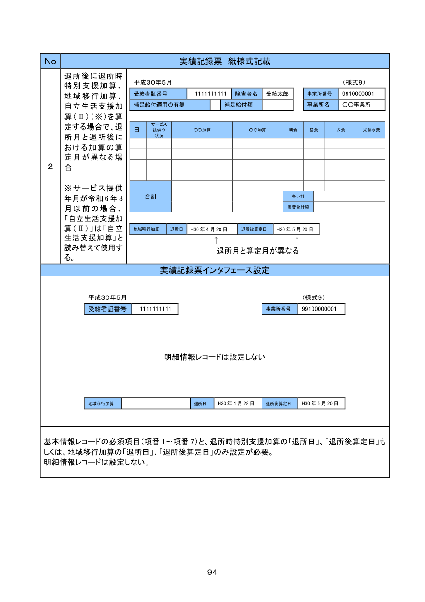
claude-haiku-5-5
- 表1 前ページからの続きではないのに項番が 2 から始まる
- テキストレイヤに見つからないセル: 2 個（赤枠）
表1 other
| 項番 | 項目名 | 属性 | 桁数 | 内容 | 必須 | 備考 |
|---|---|---|---|---|---|---|
| 2 | 退所後に退所時特別支援加算、地域移行加算、自立生活支援加算（Ⅱ）(※)を算定する場合で、退所月と退所後における加算の算定月が異なる場合 ※サービス提供年月が令和6年3月以前の場合、「自立生活支援加算（Ⅱ）」は「自立生活支援加算」と読み替えて使用する。 | [図] 平成30年5月 受給者証番号 1111111111 障害者名 受給太郎 補足給付適用の有無 補足給付額 （様式9） 事業所番号 9910000000001 事業所名 ○○事業所 日 サービス提供の状況 ○○加算 ○○加算 朝食 昼食 夕食 光熱水費 合計 各小計 実費合計額 地域移行加算 退所日 H30年4月28日 退所後算定日 H30年5月20日 退所月と算定月が異なる |
表2 other実績記録票インタフェース設定
| 項番 | 項目名 | 属性 | 桁数 | 内容 | 必須 | 備考 |
|---|---|---|---|---|---|---|
| 明細情報レコードは設定しない | [図] 平成30年5月 受給者証番号 1111111111 （様式9） 事業所番号 99100000000001 地域移行加算 退所日 H30年4月28日 退所後算定日 H30年5月20日 |
注記
- 基本情報レコードの必須項目（項番1～項番7）と、退所時特別支援加算の「退所日」「退所後算定日」もしくは、地域移行加算の「退所日」「退所後算定日」のみ設定が必要。明細情報レコードは設定しない。
uncertain（モデル自己申告）
- 依頼文ではPDF上のページ206とされているが、ページ下部の印字は94で、この画像の内容と照合できない。ページ番号は画像の印字（94）を採用した。
- 依頼文は「次のページの表」の書き起こしとあるが、添付は1ページのみで、このページには記録票の見本と設定例が中心で、項目を並べた典型的な表は含まれていない。そのため1つ目と2つ目の帯はother扱いとした。
- 1つ目の表の内容欄は、ページ上の説明文を原文のまま書いたが、「（Ⅱ）(※)」の括弧の全角・半角表記は画像から確定できない。
- 2つ目の図の事業所番号「99100000000001」は桁数が判読しにくく、上の見本（9910000000001）と桁数が異なる可能性がある。
- 2つ目の表の見出しは画像上の「実績記録票インタフェース設定」を採用し、列名は見出しの文字をそのまま置いた。
- continued_from_prev_page と continues_to_next_page は、ページ境界の判断材料が画像にないため false とした。
claude-sonnet-5-5
- 表1 前ページからの続きではないのに項番が 2 から始まる
- テキストレイヤに見つからないセル: 4 個（赤枠）
表1 other
| 項番 | 項目名 | 属性 | 桁数 | 内容 | 必須 | 備考 |
|---|---|---|---|---|---|---|
| 2 | 退所後に退所時特別支援加算、地域移行加算、自立生活支援加算(Ⅱ)(※)を算定する場合で、退所月と退所後における加算の算定月が異なる場合 ※サービス提供年月が令和6年3月以前の場合、「自立生活支援加算(Ⅱ)」は「自立生活支援加算」と読み替えて使用する。 | [図] |
表2 other実績記録票インタフェース設定
| 項番 | 項目名 | 属性 | 桁数 | 内容 | 必須 | 備考 |
|---|---|---|---|---|---|---|
| 実績記録票インタフェース設定 | [図] 明細情報レコードは設定しない |
表3 other
| 項番 | 項目名 | 属性 | 桁数 | 内容 | 必須 | 備考 |
|---|---|---|---|---|---|---|
| 説明 | 基本情報レコードの必須項目(項番1〜項番7)と、退所時特別支援加算の「退所日」、「退所後算定日」もしくは、地域移行加算の「退所日」、「退所後算定日」のみ設定が必要。 明細情報レコードは設定しない。 |
uncertain（モデル自己申告）
- 図中の文字(様式例の内容)は[図]として省略した
- 表の区分けと項目の分類は推定
- 説明帯の項目名「説明」は原文にない便宜上の記載
shogai_jigyosho_r0710_p218 — 印字p.
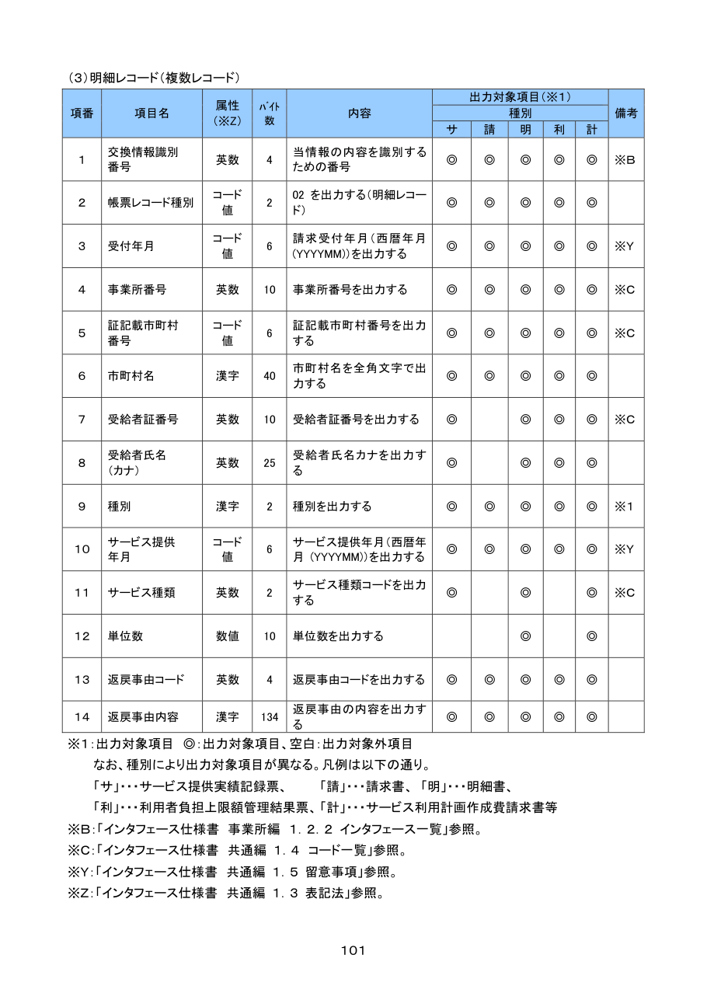
claude-haiku-5-5
表1 record_layout（3）明細レコード（複数レコード）
| 項番 | 項目名 | 属性 | 桁数 | 内容 | 必須 | 備考 |
|---|---|---|---|---|---|---|
| 1 | 交換情報識別番号 | 英数 | 4 | 当情報の内容を識別するための番号 | ※B | |
| 2 | 帳票レコード種別 | コード値 | 2 | 02 を出力する（明細レコード） | ||
| 3 | 受付年月 | コード値 | 6 | 請求受付年月（西暦年月(YYYYMM)）を出力する | ※Y | |
| 4 | 事業所番号 | 英数 | 10 | 事業所番号を出力する | ※C | |
| 5 | 証記載市町村番号 | コード値 | 6 | 証記載市町村番号を出力する | ※C | |
| 6 | 市町村名 | 漢字 | 40 | 市町村名を全角文字で出力する | ||
| 7 | 受給者証番号 | 英数 | 10 | 受給者証番号を出力する | ※C | |
| 8 | 受給者氏名（カナ） | 英数 | 25 | 受給者氏名カナを出力する | ||
| 9 | 種別 | 漢字 | 2 | 種別を出力する | ※1 | |
| 10 | サービス提供年月 | コード値 | 6 | サービス提供年月（西暦年月 (YYYYMM)）を出力する | ※Y | |
| 11 | サービス種類 | 英数 | 2 | サービス種類コードを出力する | ※C | |
| 12 | 単位数 | 数値 | 10 | 単位数を出力する | ||
| 13 | 返戻事由コード | 英数 | 4 | 返戻事由コードを出力する | ||
| 14 | 返戻事由内容 | 漢字 | 134 | 返戻事由の内容を出力する |
注記
- ※1 出力対象項目 ◎:出力対象項目、空白:出力対象外項目 なお、種別により出力対象項目が異なる。凡例は以下の通り。「サ」・・・サービス提供実績記録票、 「請」・・・請求書、「明」・・・明細書、「利」・・・利用者負担上限額管理結果票、「計」・・・サービス利用計画作成費請求書等
- ※B 「インタフェース仕様書 事業所編 1.2.2 インタフェース一覧」参照。
- ※C 「インタフェース仕様書 共通編 1.4 コード一覧」参照。
- ※Y 「インタフェース仕様書 共通編 1.5 留意事項」参照。
- ※Z 「インタフェース仕様書 共通編 1.3 表記法」参照。
uncertain（モデル自己申告）
- 出力対象項目（※1）の各列の◎・空白は、スキーマに対応する欄がないため tables の columns と items には入れていない。各項番の印字は次のとおり。項番1〜6・9・13・14は サ請明利計 すべて◎。項番7・8は サ◎・請空白・明◎・利◎・計◎。項番10は すべて◎。項番11は サ◎・請空白・明◎・利空白・計◎。項番12は サ空白・請空白・明◎・利空白・計◎。項番2・3・4・5は すべて◎（項番2は利・計に加え サ請明も◎）。
- ページ番号は画像上「101」で、ご指定の PDF ページ218 とは別の番号体系と思われる。printed_page には画像上の表記を入れた。
claude-sonnet-5-5
表1 record_layout（3）明細レコード（複数レコード）
| 項番 | 項目名 | 属性 | 桁数 | 内容 | 必須 | 備考 |
|---|---|---|---|---|---|---|
| 1 | 交換情報識別番号 | 英数 | 4 | 当情報の内容を識別するための番号 | サ:◎ 請:◎ 明:◎ 利:◎ 計:◎ | ※B |
| 2 | 帳票レコード種別 | コード値 | 2 | 02 を出力する(明細レコード) | サ:◎ 請:◎ 明:◎ 利:◎ 計:◎ | |
| 3 | 受付年月 | コード値 | 6 | 請求受付年月(西暦年月(YYYYMM))を出力する | サ:◎ 請:◎ 明:◎ 利:◎ 計:◎ | ※Y |
| 4 | 事業所番号 | 英数 | 10 | 事業所番号を出力する | サ:◎ 請:◎ 明:◎ 利:◎ 計:◎ | ※C |
| 5 | 証記載市町村番号 | コード値 | 6 | 証記載市町村番号を出力する | サ:◎ 請:◎ 明:◎ 利:◎ 計:◎ | ※C |
| 6 | 市町村名 | 漢字 | 40 | 市町村名を全角文字で出力する | サ:◎ 請:◎ 明:◎ 利:◎ 計:◎ | |
| 7 | 受給者証番号 | 英数 | 10 | 受給者証番号を出力する | サ:◎ 請:－ 明:◎ 利:◎ 計:◎ | ※C |
| 8 | 受給者氏名(カナ) | 英数 | 25 | 受給者氏名カナを出力する | サ:◎ 請:－ 明:◎ 利:◎ 計:◎ | |
| 9 | 種別 | 漢字 | 2 | 種別を出力する | サ:◎ 請:◎ 明:◎ 利:◎ 計:◎ | ※1 |
| 10 | サービス提供年月 | コード値 | 6 | サービス提供年月(西暦年月 (YYYYMM))を出力する | サ:◎ 請:◎ 明:◎ 利:◎ 計:◎ | ※Y |
| 11 | サービス種類 | 英数 | 2 | サービス種類コードを出力する | サ:◎ 請:－ 明:◎ 利:－ 計:◎ | ※C |
| 12 | 単位数 | 数値 | 10 | 単位数を出力する | サ:－ 請:－ 明:◎ 利:－ 計:◎ | |
| 13 | 返戻事由コード | 英数 | 4 | 返戻事由コードを出力する | サ:◎ 請:◎ 明:◎ 利:◎ 計:◎ | |
| 14 | 返戻事由内容 | 漢字 | 134 | 返戻事由の内容を出力する | サ:◎ 請:◎ 明:◎ 利:◎ 計:◎ |
注記
- ※1 出力対象項目 ◎:出力対象項目、空白:出力対象外項目 なお、種別により出力対象項目が異なる。凡例は以下の通り。 「サ」･･･サービス提供実績記録票、 「請」･･･請求書、「明」･･･明細書、 「利」･･･利用者負担上限額管理結果票、「計」･･･サービス利用計画作成費請求書等
- ※B 「インタフェース仕様書 事業所編 1.2.2 インタフェース一覧」参照。
- ※C 「インタフェース仕様書 共通編 1.4 コード一覧」参照。
- ※Y 「インタフェース仕様書 共通編 1.5 留意事項」参照。
- ※Z 「インタフェース仕様書 共通編 1.3 表記法」参照。
shogai_jigyosho_r0710_p227 — 印字p.
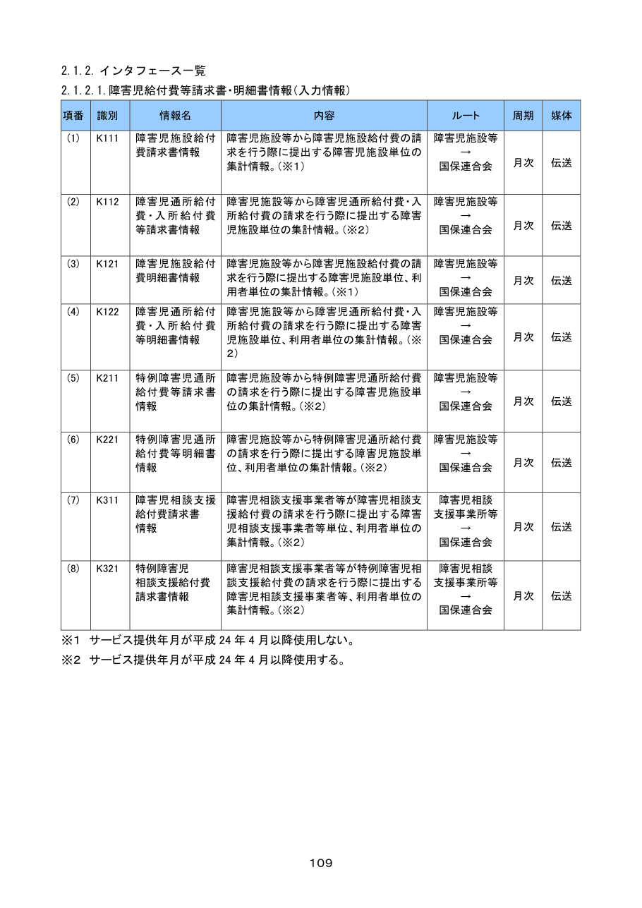
claude-haiku-5-5
- テキストレイヤに見つからないセル: 8 個（赤枠）
表1 interface_list2.1.2.1.障害児給付費等請求書・明細書情報(入力情報)
| 項番 | 項目名 | 属性 | 桁数 | 内容 | 必須 | 備考 |
|---|---|---|---|---|---|---|
| (1) | 障害児施設給付費請求書情報 | 障害児施設等から障害児施設給付費の請求を行う際に提出する障害児施設単位の集計情報。（※1） | 識別: K111 / ルート: 障害児施設等→国保連合会 / 周期: 月次 / 媒体: 伝送 | |||
| (2) | 障害児通所給付費・入所給付費等請求書情報 | 障害児施設等から障害児通所給付費・入所給付費の請求を行う際に提出する障害児施設単位の集計情報。（※2） | 識別: K112 / ルート: 障害児施設等→国保連合会 / 周期: 月次 / 媒体: 伝送 | |||
| (3) | 障害児施設給付費明細書情報 | 障害児施設等から障害児施設給付費の請求を行う際に提出する障害児施設単位、利用者単位の集計情報。（※1） | 識別: K121 / ルート: 障害児施設等→国保連合会 / 周期: 月次 / 媒体: 伝送 | |||
| (4) | 障害児通所給付費・入所給付費等明細書情報 | 障害児施設等から障害児通所給付費・入所給付費の請求を行う際に提出する障害児施設単位、利用者単位の集計情報。（※2） | 識別: K122 / ルート: 障害児施設等→国保連合会 / 周期: 月次 / 媒体: 伝送 | |||
| (5) | 特例障害児通所給付費等請求書情報 | 障害児施設等から特例障害児通所給付費の請求を行う際に提出する障害児施設単位の集計情報。（※2） | 識別: K211 / ルート: 障害児施設等→国保連合会 / 周期: 月次 / 媒体: 伝送 | |||
| (6) | 特例障害児通所給付費等明細書情報 | 障害児施設等から特例障害児通所給付費の請求を行う際に提出する障害児施設単位、利用者単位の集計情報。（※2） | 識別: K221 / ルート: 障害児施設等→国保連合会 / 周期: 月次 / 媒体: 伝送 | |||
| (7) | 障害児相談支援給付費請求書情報 | 障害児相談支援事業者等が障害児相談支援給付費の請求を行う際に提出する障害児相談支援事業者等単位、利用者単位の集計情報。（※2） | 識別: K311 / ルート: 障害児相談支援事業所等→国保連合会 / 周期: 月次 / 媒体: 伝送 | |||
| (8) | 特例障害児相談支援給付費請求書情報 | 障害児相談支援事業者等が特例障害児相談支援給付費の請求を行う際に提出する障害児相談支援事業者等、利用者単位の集計情報。（※2） | 識別: K321 / ルート: 障害児相談支援事業所等→国保連合会 / 周期: 月次 / 媒体: 伝送 |
注記
- ※1 サービス提供年月が平成24年4月以降使用しない。
- ※2 サービス提供年月が平成24年4月以降使用する。
uncertain（モデル自己申告）
- この表は interface_list 形式だが、スキーマに「識別」「ルート」「周期」「媒体」の専用欄がないため、これらは note に「識別: … / ルート: … / 周期: … / 媒体: …」の形で書き写した。
- PDF上のページ番号は227とのことだが、ページ下部に印字された番号は109だったため printed_page には109を入れた。
- ルート列の「障害児施設等 → 国保連合会」等は改行で2〜3行に折り返されていたため、矢印を含めて1行に詰めた。
claude-sonnet-5-5
- テキストレイヤに見つからないセル: 8 個（赤枠）
表1 interface_list2.1.2.1. 障害児給付費等請求書・明細書情報（入力情報）
| 項番 | 項目名 | 属性 | 桁数 | 内容 | 必須 | 備考 |
|---|---|---|---|---|---|---|
| (1) | 障害児施設給付費請求書情報 | 障害児施設等から障害児施設給付費の請求を行う際に提出する障害児施設単位の集計情報。（※1） | 識別: K111 / ルート: 障害児施設等→国保連合会 / 周期: 月次 / 媒体: 伝送 | |||
| (2) | 障害児通所給付費・入所給付費等請求書情報 | 障害児施設等から障害児通所給付費・入所給付費の請求を行う際に提出する障害児施設単位の集計情報。（※2） | 識別: K112 / ルート: 障害児施設等→国保連合会 / 周期: 月次 / 媒体: 伝送 | |||
| (3) | 障害児施設給付費明細書情報 | 障害児施設等から障害児施設給付費の請求を行う際に提出する障害児施設単位、利用者単位の集計情報。（※1） | 識別: K121 / ルート: 障害児施設等→国保連合会 / 周期: 月次 / 媒体: 伝送 | |||
| (4) | 障害児通所給付費・入所給付費等明細書情報 | 障害児施設等から障害児通所給付費・入所給付費の請求を行う際に提出する障害児施設単位、利用者単位の集計情報。（※2） | 識別: K122 / ルート: 障害児施設等→国保連合会 / 周期: 月次 / 媒体: 伝送 | |||
| (5) | 特例障害児通所給付費等請求書情報 | 障害児施設等から特例障害児通所給付費の請求を行う際に提出する障害児施設単位の集計情報。（※2） | 識別: K211 / ルート: 障害児施設等→国保連合会 / 周期: 月次 / 媒体: 伝送 | |||
| (6) | 特例障害児通所給付費等明細書情報 | 障害児施設等から特例障害児通所給付費の請求を行う際に提出する障害児施設単位、利用者単位の集計情報。（※2） | 識別: K221 / ルート: 障害児施設等→国保連合会 / 周期: 月次 / 媒体: 伝送 | |||
| (7) | 障害児相談支援給付費請求書情報 | 障害児相談支援事業者等が障害児相談支援給付費の請求を行う際に提出する障害児相談支援事業者等単位、利用者単位の集計情報。（※2） | 識別: K311 / ルート: 障害児相談支援事業所等→国保連合会 / 周期: 月次 / 媒体: 伝送 | |||
| (8) | 特例障害児相談支援給付費請求書情報 | 障害児相談支援事業者等が特例障害児相談支援給付費の請求を行う際に提出する障害児相談支援事業者等、利用者単位の集計情報。（※2） | 識別: K321 / ルート: 障害児相談支援事業所等→国保連合会 / 周期: 月次 / 媒体: 伝送 |
注記
- ※1 サービス提供年月が平成24年4月以降使用しない。
- ※2 サービス提供年月が平成24年4月以降使用する。
uncertain（モデル自己申告）
- interface_list用の識別・ルート・周期・媒体の専用フィールドがスキーマにないため、各項目のnoteにまとめて記載した。
- 情報名は折り返しを詰めて記載した（例: (8)は「特例障害児相談支援給付費請求書情報」）。
shogai_jigyosho_r0710_p228 — 印字p.

claude-haiku-5-5
- 表4 項番1 項目名がPDFのセルと完全一致しない（部分一致のみ）: '障害児給付費等支払決定増減表情報'
- 表4 項番2 項目名がPDFのセルと完全一致しない（部分一致のみ）: '返戻等一覧表情報'
- 表4 項番3 項目名がPDFのセルと完全一致しない（部分一致のみ）: '障害児給付費等支払決定増減表'
- 表4 項番4 項目名がPDFのセルと完全一致しない（部分一致のみ）: '返戻等一覧表'
- テキストレイヤに見つからないセル: 8 個（赤枠）
表1 interface_list2.1.2.2.利用者負担上限額管理結果票情報(入力情報)
| 項番 | 項目名 | 属性 | 桁数 | 内容 | 必須 | 備考 |
|---|---|---|---|---|---|---|
| (1) | 利用者負担上限額管理結果票情報 | 上限額管理者が作成する利用者負担上限額管理結果票の集計情報（上限額管理を行った場合に上限額管理者が送信する）。 | 識別：K411｜ルート：障害児施設等 → 国保連合会｜周期：月次｜媒体：伝送 | |||
| (2) | 利用者負担上限額管理結果票情報(複数児童) | 上限額管理者が作成する利用者負担上限額管理結果票の集計情報（同一世帯における複数児童の上限額管理を行った場合に上限額管理者が送信する）。(※1) | 識別：K421｜ルート：障害児施設等 → 国保連合会｜周期：月次｜媒体：伝送 |
表2 interface_list2.1.2.3.利用者負担額一覧表情報(サービス事業所等間の受け渡し情報)
| 項番 | 項目名 | 属性 | 桁数 | 内容 | 必須 | 備考 |
|---|---|---|---|---|---|---|
| (1) | 利用者負担額一覧表情報 | 障害児施設等の間で上限額管理対象者の利用者負担額を受け渡すための情報 | 識別：K511｜ルート：障害児施設等 → 上限額管理者｜周期：月次｜媒体：FD 等 |
表3 interface_list2.1.2.4.サービス提供実績記録票情報(入力情報)
| 項番 | 項目名 | 属性 | 桁数 | 内容 | 必須 | 備考 |
|---|---|---|---|---|---|---|
| (1) | サービス提供実績記録票情報 | 障害児施設等から障害児給付費等の請求を行う際に提出する、サービス提供実績記録票の情報 | 識別：K611｜ルート：障害児施設等 → 国保連合会｜周期：月次｜媒体：伝送 |
表4 interface_list2.1.2.5.増減単位数返戻通知情報(出力情報)
| 項番 | 項目名 | 属性 | 桁数 | 内容 | 必須 | 備考 |
|---|---|---|---|---|---|---|
| (1) | 障害児給付費等支払決定増減表情報 | 都道府県等ごとの請求差、返戻の状況を障害児施設等へ通知するためのリスト。処遇改善助成金(※1)の都道府県ごとの請求差、返戻の状況も出力される。 ※障害児施設等からの依頼があった場合のみ提供 | 識別：K711｜ルート：国保連合会 → 障害児施設等｜周期：月次｜媒体：伝送 | |||
| (2) | 返戻等一覧表情報 | 返戻となる情報を確認するためのリスト ※障害児施設等からの依頼があった場合のみ提供 | 識別：K721｜ルート：国保連合会 → 障害児施設等｜周期：月次｜媒体：伝送 | |||
| (3) | 障害児給付費等支払決定増減表 | 都道府県等ごとの請求差、返戻の状況を障害児施設等へ通知するためのリスト。処遇改善助成金(※1)の都道府県ごとの請求差、返戻の状況も出力される。 | 識別：K7A1｜ルート：国保連合会 → 障害児施設等｜周期：月次｜媒体：PDF | |||
| (4) | 返戻等一覧表 | 返戻となる情報を確認するためのリスト | 識別：K7B1｜ルート：国保連合会 → 障害児施設等｜周期：月次｜媒体：PDF |
注記
- ※1 サービス提供年月が令和7年4月以降使用する。
- ※1 サービス提供年月が平成24年3月までの処遇改善助成金。
uncertain（モデル自己申告）
- interface_list 表の「識別」「ルート」「周期」「媒体」列は、スキーマに対応する項目がないため、各 item の note に「識別：…｜ルート：…｜周期：…｜媒体：…」の形で書き写した。
- 添付ページ下部のページ番号は「110」で、PDF上のページ番号228とは一致しないが、本ページの印字に従い printed_page を110とした。
- 2.1.2.2 (2) の内容末尾「(※1)」および 2.1.2.5 の「(※1)」は、欄外の ※1 の注記と対応していると読めるが、注記の対応関係は原文の記号に基づくのみである。
claude-sonnet-5-5
- 表4 項番1 項目名がPDFのセルと完全一致しない（部分一致のみ）: '障害児給付費等支払決定増減表情報'
- 表4 項番2 項目名がPDFのセルと完全一致しない（部分一致のみ）: '返戻等一覧表情報'
- 表4 項番3 項目名がPDFのセルと完全一致しない（部分一致のみ）: '障害児給付費等支払決定増減表'
- 表4 項番4 項目名がPDFのセルと完全一致しない（部分一致のみ）: '返戻等一覧表'
- テキストレイヤに見つからないセル: 8 個（赤枠）
表1 interface_list2.1.2.2. 利用者負担上限額管理結果票情報(入力情報)
| 項番 | 項目名 | 属性 | 桁数 | 内容 | 必須 | 備考 |
|---|---|---|---|---|---|---|
| (1) | 利用者負担上限額管理結果票情報 | 上限額管理者が作成する利用者負担上限額管理結果票の集計情報(上限額管理を行った場合に上限額管理者が送信する)。 | 識別: K411 / ルート: 障害児施設等→国保連合会 / 周期: 月次 / 媒体: 伝送 | |||
| (2) | 利用者負担上限額管理結果票情報(複数児童) | 上限額管理者が作成する利用者負担上限額管理結果票の集計情報(同一世帯における複数児童の上限額管理を行った場合に上限額管理者が送信する)。(※1) | 識別: K421 / ルート: 障害児施設等→国保連合会 / 周期: 月次 / 媒体: 伝送 |
表2 interface_list2.1.2.3. 利用者負担額一覧表情報(サービス事業所等間の受け渡し情報)
| 項番 | 項目名 | 属性 | 桁数 | 内容 | 必須 | 備考 |
|---|---|---|---|---|---|---|
| (1) | 利用者負担額一覧表情報 | 障害児施設等の間で上限額管理対象者の利用者負担額を受け渡すための情報 | 識別: K511 / ルート: 障害児施設等→上限額管理者 / 周期: 月次 / 媒体: FD 等 |
表3 interface_list2.1.2.4. サービス提供実績記録票情報(入力情報)
| 項番 | 項目名 | 属性 | 桁数 | 内容 | 必須 | 備考 |
|---|---|---|---|---|---|---|
| (1) | サービス提供実績記録票情報 | 障害児施設等から障害児給付費等の請求を行う際に提出する、サービス提供実績記録票の情報 | 識別: K611 / ルート: 障害児施設等→国保連合会 / 周期: 月次 / 媒体: 伝送 |
表4 interface_list2.1.2.5. 増減単位数返戻通知情報(出力情報)
| 項番 | 項目名 | 属性 | 桁数 | 内容 | 必須 | 備考 |
|---|---|---|---|---|---|---|
| (1) | 障害児給付費等支払決定増減表情報 | 都道府県等ごとの請求差、返戻の状況を障害児施設等へ通知するためのリスト。処遇改善助成金(※1)の都道府県ごとの請求差、返戻の状況も出力される。 ※障害児施設等からの依頼があった場合のみ提供 | 識別: K711 / ルート: 国保連合会→障害児施設等 / 周期: 月次 / 媒体: 伝送 | |||
| (2) | 返戻等一覧表情報 | 返戻となる情報を確認するためのリスト ※障害児施設等からの依頼があった場合のみ提供 | 識別: K721 / ルート: 国保連合会→障害児施設等 / 周期: 月次 / 媒体: 伝送 | |||
| (3) | 障害児給付費等支払決定増減表 | 都道府県等ごとの請求差、返戻の状況を障害児施設等へ通知するためのリスト。処遇改善助成金(※1)の都道府県ごとの請求差、返戻の状況も出力される。 | 識別: K7A1 / ルート: 国保連合会→障害児施設等 / 周期: 月次 / 媒体: PDF | |||
| (4) | 返戻等一覧表 | 返戻となる情報を確認するためのリスト | 識別: K7B1 / ルート: 国保連合会→障害児施設等 / 周期: 月次 / 媒体: PDF |
注記
- ※1 サービス提供年月が令和7年4月以降使用する。
- ※1 サービス提供年月が平成24年3月までの処遇改善助成金。
uncertain（モデル自己申告）
- 各表の識別・ルート・周期・媒体は専用のフィールドがないため note にまとめて記載した
- 情報名の改行は折り返しとして詰めた
shogai_jigyosho_r0710_p229 — 印字p.

claude-haiku-5-5
- 表1 項番1 必須（識別）の値が想定外: 'K8A1'
- 表1 項番1 必須（ルート）の値が想定外: '国保連合会→障害児施設等'
- 表1 項番1 必須（周期）の値が想定外: '月次'
- 表1 項番1 必須（媒体）の値が想定外: 'PDF'
- 表1 項番1 項目名がPDFのセルと完全一致しない（部分一致のみ）: '障害児給付費等支払決定額通知書'
- 表1 項番2 必須（識別）の値が想定外: 'K8B1'
- 表1 項番2 必須（ルート）の値が想定外: '国保連合会→障害児施設等'
- 表1 項番2 必須（周期）の値が想定外: '月次'
- 表1 項番2 必須（媒体）の値が想定外: 'PDF'
- 表1 項番2 項目名がPDFのセルと完全一致しない（部分一致のみ）: '障害児給付費等支払決定額内訳書'
- 表1 項番3 必須（識別）の値が想定外: 'K8C1'
- 表1 項番3 必須（ルート）の値が想定外: '国保連合会→障害児施設等'
- 表1 項番3 必須（周期）の値が想定外: '月次'
- 表1 項番3 必須（媒体）の値が想定外: 'PDF'
- 表1 項番3 項目名がPDFのセルと完全一致しない（部分一致のみ）: '事業所別障害児給付費等支払明細書'
- 表1 項番4 必須（識別）の値が想定外: 'K8D1'
- 表1 項番4 必須（ルート）の値が想定外: '国保連合会→障害児施設等'
- 表1 項番4 必須（周期）の値が想定外: '月次'
- 表1 項番4 必須（媒体）の値が想定外: 'PDF'
- 表1 項番4 項目名がPDFのセルと完全一致しない（部分一致のみ）: '障害児給付費等支払過誤決定通知書'
- 表1 項番5 必須（識別）の値が想定外: 'K8E1'
- 表1 項番5 必須（ルート）の値が想定外: '国保連合会→障害児施設等'
- 表1 項番5 必須（周期）の値が想定外: '月次'
- 表1 項番5 必須（媒体）の値が想定外: 'PDF'
- 表1 項番6 必須（識別）の値が想定外: 'K8F1'
- 表1 項番6 必須（ルート）の値が想定外: '国保連合会→障害児施設等'
- 表1 項番6 必須（周期）の値が想定外: '月次'
- 表1 項番6 必須（媒体）の値が想定外: 'PDF'
- 表1 項番6 項目名がPDFのセルと完全一致しない（部分一致のみ）: '障害児給付費等処遇改善加算等総額のお知らせ（※2、※4、※5、※6）'
表1 interface_list2.1.2.6.支払通知情報(出力情報)
| 項番 | 項目名 | 属性 | 桁数 | 内容 | 必須 | 備考 |
|---|---|---|---|---|---|---|
| (1) | 障害児給付費等支払決定額通知書 | 障害児施設等への支払決定額を通知するためのリスト。処遇改善助成金（※1）の支払決定額も出力される。 | 識別:K8A1 ルート:国保連合会→障害児施設等 周期:月次 媒体:PDF | |||
| (2) | 障害児給付費等支払決定額内訳書 | 障害児施設等へ支払決定額の内訳を通知するためのリスト | 識別:K8B1 ルート:国保連合会→障害児施設等 周期:月次 媒体:PDF | |||
| (3) | 事業所別障害児給付費等支払明細書 | 障害児施設等へ支払決定額の明細を通知するためのリスト | 識別:K8C1 ルート:国保連合会→障害児施設等 周期:月次 媒体:PDF | |||
| (4) | 障害児給付費等支払過誤決定通知書 | 障害児施設等へ過誤申立の決定額を通知するためのリスト | 識別:K8D1 ルート:国保連合会→障害児施設等 周期:月次 媒体:PDF | |||
| (5) | 障害児給付費等助成金支払決定額内訳書（※1） | 障害児施設等へ処遇改善助成金（※1）の支払決定額の内訳を通知するためのリスト（※3） | 識別:K8E1 ルート:国保連合会→障害児施設等 周期:月次 媒体:PDF | |||
| (6) | 障害児給付費等処遇改善加算等総額のお知らせ（※2、※4、※5、※6） | 障害児施設等へ福祉・介護職員処遇改善加算等（※2、※4、※5、※6）の加算総額及び内訳を通知するためのリスト | 識別:K8F1 ルート:国保連合会→障害児施設等 周期:月次 媒体:PDF |
注記
- ※1 サービス提供年月が平成24年3月までの処遇改善助成金。
- ※2 サービス提供年月が平成24年4月以降、令和6年5月以前の福祉・介護職員処遇改善加算。 サービス提供年月が平成24年4月以降、令和4年3月以前の福祉・介護職員処遇改善特別加算。
- ※3 処理対象年月が平成25年12月以降使用しない。
- ※4 サービス提供年月が令和1年10月以降、令和6年5月以前の福祉・介護職員等特定処遇改善加算。
- ※5 サービス提供年月が令和4年10月以降、令和6年5月以前の福祉・介護職員等ベースアップ等支援加算。
- ※6 サービス提供年月が令和6年6月以降の福祉・介護職員等処遇改善加算。
uncertain（モデル自己申告）
- 添付はページ111の1ページのみで、依頼文の『次のページ』(PDF上229)は含まれていないため、このページの表のみを書き起こした。
- スキーマに識別・ルート・周期・媒体の列がないため、これらの値は required_by に列名付きで格納した（required は null）。
- ルート列の『国保連合会／→／障害児施設等』は折り返しを詰めて『国保連合会→障害児施設等』とした。
claude-sonnet-5-5
- 表1 項番1 項目名がPDFのセルと完全一致しない（部分一致のみ）: '障害児給付費等支払決定額通知書'
- 表1 項番2 項目名がPDFのセルと完全一致しない（部分一致のみ）: '障害児給付費等支払決定額内訳書'
- 表1 項番3 項目名がPDFのセルと完全一致しない（部分一致のみ）: '事業所別障害児給付費等支払明細書'
- 表1 項番4 項目名がPDFのセルと完全一致しない（部分一致のみ）: '障害児給付費等支払過誤決定通知書'
- 表1 項番6 項目名がPDFのセルと完全一致しない（部分一致のみ）: '障害児給付費等処遇改善加算等総額のお知らせ(※2、※4、※5、※6)'
- テキストレイヤに見つからないセル: 6 個（赤枠）
表1 interface_list2.1.2.6.支払通知情報(出力情報)
| 項番 | 項目名 | 属性 | 桁数 | 内容 | 必須 | 備考 |
|---|---|---|---|---|---|---|
| (1) | 障害児給付費等支払決定額通知書 | 障害児施設等への支払決定額を通知するためのリスト。処遇改善助成金(※1)の支払決定額も出力される。 | 識別: K8A1 / ルート: 国保連合会→障害児施設等 / 周期: 月次 / 媒体: PDF | |||
| (2) | 障害児給付費等支払決定額内訳書 | 障害児施設等へ支払決定額の内訳を通知するためのリスト | 識別: K8B1 / ルート: 国保連合会→障害児施設等 / 周期: 月次 / 媒体: PDF | |||
| (3) | 事業所別障害児給付費等支払明細書 | 障害児施設等へ支払決定額の明細を通知するためのリスト | 識別: K8C1 / ルート: 国保連合会→障害児施設等 / 周期: 月次 / 媒体: PDF | |||
| (4) | 障害児給付費等支払過誤決定通知書 | 障害児施設等へ過誤申立の決定額を通知するためのリスト | 識別: K8D1 / ルート: 国保連合会→障害児施設等 / 周期: 月次 / 媒体: PDF | |||
| (5) | 障害児給付費等助成金支払決定額内訳書(※1) | 障害児施設等へ処遇改善助成金(※1)の支払決定額の内訳を通知するためのリスト(※3) | 識別: K8E1 / ルート: 国保連合会→障害児施設等 / 周期: 月次 / 媒体: PDF | |||
| (6) | 障害児給付費等処遇改善加算等総額のお知らせ(※2、※4、※5、※6) | 障害児施設等へ福祉・介護職員処遇改善加算等(※2、※4、※5、※6)の加算総額及び内訳を通知するためのリスト | 識別: K8F1 / ルート: 国保連合会→障害児施設等 / 周期: 月次 / 媒体: PDF |
注記
- ※1 サービス提供年月が平成24年3月までの処遇改善助成金。
- ※2 サービス提供年月が平成24年4月以降、令和6年5月以前の福祉・介護職員処遇改善加算。 サービス提供年月が平成24年4月以降、令和4年3月以前の福祉・介護職員処遇改善特別加算。
- ※3 処理対象年月が平成25年12月以降使用しない。
- ※4 サービス提供年月が令和1年10月以降、令和6年5月以前の福祉・介護職員等特定処遇改善加算。
- ※5 サービス提供年月が令和4年10月以降、令和6年5月以前の福祉・介護職員等ベースアップ等支援加算。
- ※6 サービス提供年月が令和6年6月以降の福祉・介護職員等処遇改善加算。
uncertain（モデル自己申告）
- interface_list のスキーマに識別・ルート・周期・媒体の専用フィールドがないため、note に格納した
- 情報名は name_path に入れた(折り返しを詰めて記載)
shogai_jigyosho_r0710_p230 — 印字p.

claude-haiku-5-5
- [改ページ] p230→p231 の連続性 OK
- テキストレイヤに見つからないセル: 3 個（赤枠）
表1 record_layout(2)障害児給付費等 請求書 基本情報レコード 次頁へ続く
| 項番 | 項目名 | 属性 | 桁数 | 内容 | 必須 | 備考 |
|---|---|---|---|---|---|---|
| 1 | 交換情報識別番号 | 英数 | 4 | 交換情報識別番号を設定する。 | ※必須（識別番号毎） > K111 K112:◎ ※必須（識別番号毎） > K211:◎ | ※B |
| 2 | レコード種別コード | コード値 | 2 | 01を設定する(基本情報レコード) | ※必須（識別番号毎） > K111 K112:◎ ※必須（識別番号毎） > K211:◎ | |
| 3 | サービス提供年月 | コード値 | 6 | サービスを提供した年月（西暦年月 YYYYMM を設定する） | ※必須（識別番号毎） > K111 K112:◎ ※必須（識別番号毎） > K211:◎ | ※Y |
| 4 | 都道府県等番号 | コード値 | 6 | 受給者証に記載された都道府県番号、または市町村番号(チェックデジット 1桁含む) | ※必須（識別番号毎） > K111 K112:◎ ※必須（識別番号毎） > K211:◎ | ※C ※1 |
| 5 | 事業所番号 | 英数 | 10 | サービスを提供した事業所番号 | ※必須（識別番号毎） > K111 K112:◎ ※必須（識別番号毎） > K211:◎ | ※C |
| 6 | 請求金額 | 数値 | 10 | 請求金額を設定する。 請求金額＝合計 給付費請求額＋合計 特別対策費請求額＋合計 自治体助成額。 | ※必須（識別番号毎） > K111 K112:◎ ※必須（識別番号毎） > K211:◎ | |
| 7 | 小計 > 障害児給付費・特例障害児通所給付費 > 件数 | 数値 | 6 | 小計 件数 | ※必須（識別番号毎） > K111 K112:◎ ※必須（識別番号毎） > K211:◎ | ※4 |
| 8 | 小計 > 障害児給付費・特例障害児通所給付費 > 単位数 | 数値 | 9 | 小計 単位数 | ※必須（識別番号毎） > K111 K112:◎ ※必須（識別番号毎） > K211:◎ | ※4 |
| 9 | 小計 > 障害児給付費・特例障害児通所給付費 > 費用合計 | 数値 | 10 | 小計 費用合計 | ※必須（識別番号毎） > K111 K112:◎ ※必須（識別番号毎） > K211:◎ | ※4 |
| 10 | 小計 > 障害児給付費・特例障害児通所給付費 > 給付費請求額 | 数値 | 10 | 小計 給付費請求額 | ※必須（識別番号毎） > K111 K112:◎ ※必須（識別番号毎） > K211:◎ | ※4 |
| 11 | 小計 > 障害児給付費・特例障害児通所給付費 > 特別対策費請求額 | 数値 | 10 | 小計 特別対策費請求額 | ※必須（識別番号毎） > K111 K112:○ ※必須（識別番号毎） > K211:○ | ※2 ※6 ※7 |
| 12 | 小計 > 障害児給付費・特例障害児通所給付費 > 利用者負担額 | 数値 | 10 | 小計 利用者負担額 | ※必須（識別番号毎） > K111 K112:◎ ※必須（識別番号毎） > K211:◎ | ※4 |
| 13 | 小計 > 障害児給付費・特例障害児通所給付費 > 自治体助成額 | 数値 | 10 | 小計 自治体助成額 | ※必須（識別番号毎） > K111 K112:○ ※必須（識別番号毎） > K211:○ | ※2 |
| 14 | 小計 > 障害児通所給付費・食費等給付費・高額特定入所障害児 > 件数 | 数値 | 6 | 小計 件数 | ※必須（識別番号毎） > K111 K112:○ ※必須（識別番号毎） > K211:○ | ※2 |
| 15 | 小計 > 障害児通所給付費・食費等給付費・高額特定入所障害児 > 費用合計 | 数値 | 10 | 小計 費用合計 | ※必須（識別番号毎） > K111 K112:○ ※必須（識別番号毎） > K211:－ | ※2 |
| 16 | 小計 > 障害児通所給付費・食費等給付費・高額特定入所障害児 > 給付費請求額 | 数値 | 10 | 小計 給付費請求額 | ※必須（識別番号毎） > K111 K112:○ ※必須（識別番号毎） > K211:○ | ※2 |
| 17 | 合計 > 件数 | 数値 | 6 | 合計 件数 | ※必須（識別番号毎） > K111 K112:◎ ※必須（識別番号毎） > K211:◎ | ※3 |
| 18 | 合計 > 単位数 | 数値 | 9 | 合計 単位数 | ※必須（識別番号毎） > K111 K112:◎ ※必須（識別番号毎） > K211:◎ | ※4 |
| 19 | 合計 > 費用合計 | 数値 | 10 | 合計 費用合計 | ※必須（識別番号毎） > K111 K112:◎ ※必須（識別番号毎） > K211:◎ | ※3 |
| 20 | 合計 > 給付費請求額 | 数値 | 10 | 合計 給付費請求額 | ※必須（識別番号毎） > K111 K112:◎ ※必須（識別番号毎） > K211:◎ | ※3 |
| 21 | 合計 > 特別対策費請求額 | 数値 | 10 | 合計 特別対策費請求額 | ※必須（識別番号毎） > K111 K112:○ ※必須（識別番号毎） > K211:○ | ※2 ※6 ※7 |
| 22 | 合計 > 利用者負担額 | 数値 | 10 | 合計 利用者負担額 | ※必須（識別番号毎） > K111 K112:◎ ※必須（識別番号毎） > K211:◎ | ※4 |
uncertain（モデル自己申告）
- ページ下部の印字ページ番号は112だが、PDF上のページ番号230とは一致しない。printed_pageには印字番号を入れた。
- 項目名の縦書きラベルのうち、項番14〜16の外側グループ名（「障害児通所給付費・食費等給付費・高額特定入所障害児」）と「小計」の結合範囲は画像から読み取りにくく、読み順に確信が持てない。
- 項番22の下に罫線があるが、次ページに続く可能性を完全には否定できないため continues_to_next_page は false とした。
- 項番1〜22の備考欄の※B、※Y、※C、※1などの注記本文はこのページには見当たらず、footnotes は空とした。
claude-sonnet-5-5
- [改ページ] p230→p231 の連続性 OK
表1 record_layout(2)障害児給付費等 請求書 基本情報レコード 次頁へ続く
| 項番 | 項目名 | 属性 | 桁数 | 内容 | 必須 | 備考 |
|---|---|---|---|---|---|---|
| 1 | 交換情報識別番号 | 英数 | 4 | 交換情報識別番号を設定する。 | K111 K112:◎ K211:◎ | ※B |
| 2 | レコード種別コード | コード値 | 2 | 01 を設定する(基本情報レコード) | K111 K112:◎ K211:◎ | |
| 3 | サービス提供年月 | コード値 | 6 | サービスを提供した年月(西暦年月 YYYYMM を設定する) | K111 K112:◎ K211:◎ | ※Y |
| 4 | 都道府県等番号 | コード値 | 6 | 受給者証に記載された都道府県番号、または市町村番号(チェックデジット 1 桁含む) | K111 K112:◎ K211:◎ | ※C ※1 |
| 5 | 事業所番号 | 英数 | 10 | サービスを提供した事業所番号 | K111 K112:◎ K211:◎ | ※C |
| 6 | 請求金額 | 数値 | 10 | 請求金額を設定する。 請求金額＝合計 給付費請求額＋合計 特別対策費請求額＋合計 自治体助成額。 | K111 K112:◎ K211:◎ | |
| 7 | 小計 障害児給付費・特例障害児通所給付費 > 件数 | 数値 | 6 | 小計 件数 | K111 K112:◎ K211:◎ | ※4 |
| 8 | 小計 障害児給付費・特例障害児通所給付費 > 単位数 | 数値 | 9 | 小計 単位数 | K111 K112:◎ K211:◎ | ※4 |
| 9 | 小計 障害児給付費・特例障害児通所給付費 > 費用合計 | 数値 | 10 | 小計 費用合計 | K111 K112:◎ K211:◎ | ※4 |
| 10 | 小計 障害児給付費・特例障害児通所給付費 > 給付費請求額 | 数値 | 10 | 小計 給付費請求額 | K111 K112:◎ K211:◎ | ※4 |
| 11 | 小計 障害児給付費・特例障害児通所給付費 > 特別対策費請求額 | 数値 | 10 | 小計 特別対策費請求額 | K111 K112:○ K211:○ | ※2 ※6 ※7 |
| 12 | 小計 障害児給付費・特例障害児通所給付費 > 利用者負担額 | 数値 | 10 | 小計 利用者負担額 | K111 K112:◎ K211:◎ | ※4 |
| 13 | 小計 障害児給付費・特例障害児通所給付費 > 自治体助成額 | 数値 | 10 | 小計 自治体助成額 | K111 K112:○ K211:○ | ※2 |
| 14 | 小計 特定入所障害児食費等給付費・高額障害児通所給付費 > 件数 | 数値 | 6 | 小計 件数 | K111 K112:○ K211:○ | ※2 |
| 15 | 小計 特定入所障害児食費等給付費・高額障害児通所給付費 > 費用合計 | 数値 | 10 | 小計 費用合計 | K111 K112:○ K211:－ | ※2 |
| 16 | 小計 特定入所障害児食費等給付費・高額障害児通所給付費 > 給付費請求額 | 数値 | 10 | 小計 給付費請求額 | K111 K112:○ K211:○ | ※2 |
| 17 | 合計 > 件数 | 数値 | 6 | 合計 件数 | K111 K112:◎ K211:◎ | ※3 |
| 18 | 合計 > 単位数 | 数値 | 9 | 合計 単位数 | K111 K112:◎ K211:◎ | ※4 |
| 19 | 合計 > 費用合計 | 数値 | 10 | 合計 費用合計 | K111 K112:◎ K211:◎ | ※3 |
| 20 | 合計 > 給付費請求額 | 数値 | 10 | 合計 給付費請求額 | K111 K112:◎ K211:◎ | ※3 |
| 21 | 合計 > 特別対策費請求額 | 数値 | 10 | 合計 特別対策費請求額 | K111 K112:○ K211:○ | ※2 ※6 ※7 |
| 22 | 合計 > 利用者負担額 | 数値 | 10 | 合計 利用者負担額 | K111 K112:◎ K211:◎ | ※4 |
uncertain（モデル自己申告）
- 項番14〜16の縦結合グループ見出しは縦書きで「小計 特定入所障害児食費等給付費・高額障害児通所給付費」と読んだが、文字順は不確か
- 項番7〜13のグループ見出しは縦書きで「小計 障害児給付費・特例障害児通所給付費」と読んだ
- 項番11,21の備考は※2※6※7と読んだ
shogai_jigyosho_r0710_p231 — 印字p.

claude-haiku-5-5
- [改ページ] p231→p232 の連続性 OK
表1 record_layout 前頁から続く
| 項番 | 項目名 | 属性 | 桁数 | 内容 | 必須 | 備考 |
|---|---|---|---|---|---|---|
| 23 | 合計 > 自治体助成額 | 数値 | 10 | 合計 自治体助成額 | ※必須（識別番号毎） > K111 K112:○ ※必須（識別番号毎） > K211:○ | ※2 |
表2 record_layout(3)障害児給付費等 請求書 明細情報レコード 次頁へ続く
| 項番 | 項目名 | 属性 | 桁数 | 内容 | 必須 | 備考 |
|---|---|---|---|---|---|---|
| 1 | 交換情報識別番号 | 英数 | 4 | 当情報の内容を識別するための番号 | ※必須（給付種別毎） > 給付種別=1 > K111 K112 K211:◎ ※必須（給付種別毎） > 給付種別=2 > K111 K112:◎ ※必須（給付種別毎） > 給付種別=2 > K211:◎ ※必須（給付種別毎） > 給付種別=3 > K111 K112 K211:◎ | ※B |
| 2 | レコード種別コード | コード値 | 2 | 02を設定する(明細情報レコード) | ※必須（給付種別毎） > 給付種別=1 > K111 K112 K211:◎ ※必須（給付種別毎） > 給付種別=2 > K111 K112:◎ ※必須（給付種別毎） > 給付種別=2 > K211:◎ ※必須（給付種別毎） > 給付種別=3 > K111 K112 K211:◎ | |
| 3 | サービス提供年月 | コード値 | 6 | サービスを提供した年月（西暦年月YYYYMMを設定する） | ※必須（給付種別毎） > 給付種別=1 > K111 K112 K211:◎ ※必須（給付種別毎） > 給付種別=2 > K111 K112:◎ ※必須（給付種別毎） > 給付種別=2 > K211:◎ ※必須（給付種別毎） > 給付種別=3 > K111 K112 K211:◎ | ※Y |
| 4 | 都道府県等番号 | コード値 | 6 | 受給者証に記載された都道府県番号、または市町村番号（チェックデジット1桁含む） | ※必須（給付種別毎） > 給付種別=1 > K111 K112 K211:◎ ※必須（給付種別毎） > 給付種別=2 > K111 K112:◎ ※必須（給付種別毎） > 給付種別=2 > K211:◎ ※必須（給付種別毎） > 給付種別=3 > K111 K112 K211:◎ | ※C ※2 |
| 5 | 事業所番号 | 英数 | 10 | サービスを提供した事業所番号 | ※必須（給付種別毎） > 給付種別=1 > K111 K112 K211:◎ ※必須（給付種別毎） > 給付種別=2 > K111 K112:◎ ※必須（給付種別毎） > 給付種別=2 > K211:◎ ※必須（給付種別毎） > 給付種別=3 > K111 K112 K211:◎ | ※C |
| 6 | 給付種別 | コード値 | 1 | 請求書における給付の種別を表す。 1:障害児施設給付費、障害児通所給付費、障害児入所給付費、特例障害児通所給付費 2:特定入所障害児食費等給付費、高額障害児通所給付費 3:処遇改善助成金 | ※必須（給付種別毎） > 給付種別=1 > K111 K112 K211:◎ ※必須（給付種別毎） > 給付種別=2 > K111 K112:◎ ※必須（給付種別毎） > 給付種別=2 > K211:◎ ※必須（給付種別毎） > 給付種別=3 > K111 K112 K211:◎ | ※4 ※7 |
注記
- ※必須 ◎：必須項目 ○：請求内容により必要 △：任意設定 空白：不要
- ※B 「インタフェース仕様書 事業所編 2.1.2 インタフェース一覧」を参照のこと。
- ※C 「インタフェース仕様書 共通編 1.4 コード一覧」参照。
- ※Y 「インタフェース仕様書 共通編 1.5 留意事項」参照。
- ※Z 「インタフェース仕様書 共通編 1.3 表記法」参照。
- ※1 給付費の請求先が市町村の場合に、処遇改善助成金（※5）の請求書情報を作成する際には、処遇改善助成金（※5）の請求先都道府県番号を設定する。
- ※2 処遇改善助成金（※5）のみの請求書情報を作成する際には、設定しない。
- ※3 給付費の請求先が市町村の場合に処遇改善助成金（※5）の請求書情報を作成する際には、処遇改善助成金（※5）に関する情報の合計を設定する。給付費の請求先が都道府県の場合に処遇改善助成金（※5）の請求書情報を作成する際には、給付費、および処遇改善助成金（※5）に関する情報の合計を設定する。
- ※4 処遇改善助成金（※5）の請求書情報を作成する際には、0を設定する。
- ※5 サービス提供年月が平成24年3月までの処遇改善助成金。
- ※6 サービス提供年月が平成25年4月以降は、設定しない。
- ※7 処理対象年月が平成25年12月以降は、設定しない。
uncertain（モデル自己申告）
- 表1（項番23）は、ページ先頭に見出し行があるが前ページからの続きと判断した。項目名の「合計」が独立した小項目か項目名の一部かは判断に迷うため、name_path を ["合計","自治体助成額"] としたので要確認。
- 表2は項番6で途切れており、次ページへ続くと判断したが、続きは本ページに無い。
- PDF上のページは231と指定されていたが、添付ページの印字ページ番号は113である。
claude-sonnet-5-5
- [改ページ] p231→p232 の連続性 OK
表1 record_layout 前頁から続く
| 項番 | 項目名 | 属性 | 桁数 | 内容 | 必須 | 備考 |
|---|---|---|---|---|---|---|
| 23 | 合計 > 自治体助成額 | 数値 | 10 | 合計 自治体助成額 | K111 K112:○ K211:○ | ※2 |
表2 record_layout（3)障害児給付費等 請求書 明細情報レコード 次頁へ続く
| 項番 | 項目名 | 属性 | 桁数 | 内容 | 必須 | 備考 |
|---|---|---|---|---|---|---|
| 1 | 交換情報識別番号 | 英数 | 4 | 当情報の内容を識別するための番号 | 給付種別=1 K111 K112 K211:◎ 給付種別=2 K111 K112:◎ 給付種別=2 K211:◎ 給付種別=3 K111 K112 K211:◎ | ※B |
| 2 | レコード種別コード | コード値 | 2 | 02を設定する（明細情報レコード） | 給付種別=1 K111 K112 K211:◎ 給付種別=2 K111 K112:◎ 給付種別=2 K211:◎ 給付種別=3 K111 K112 K211:◎ | |
| 3 | サービス提供年月 | コード値 | 6 | サービスを提供した年月（西暦年月YYYYMMを設定する） | 給付種別=1 K111 K112 K211:◎ 給付種別=2 K111 K112:◎ 給付種別=2 K211:◎ 給付種別=3 K111 K112 K211:◎ | ※Y |
| 4 | 都道府県等番号 | コード値 | 6 | 受給者証に記載された都道府県番号、または市町村番号（ﾁｪｯｸﾃﾞｼﾞｯﾄ1桁含む） | 給付種別=1 K111 K112 K211:◎ 給付種別=2 K111 K112:◎ 給付種別=2 K211:◎ 給付種別=3 K111 K112 K211:◎ | ※C ※2 |
| 5 | 事業所番号 | 英数 | 10 | サービスを提供した事業所番号 | 給付種別=1 K111 K112 K211:◎ 給付種別=2 K111 K112:◎ 給付種別=2 K211:◎ 給付種別=3 K111 K112 K211:◎ | ※C |
| 6 | 給付種別 | コード値 | 1 | 請求書における給付の種別を表す。 1:障害児施設給付費、障害児通所給付費、障害児入所給付費、特例障害児通所給付費 2:特定入所障害児食費等給付費、高額障害児通所給付費 3:処遇改善助成金 | 給付種別=1 K111 K112 K211:◎ 給付種別=2 K111 K112:◎ 給付種別=2 K211:◎ 給付種別=3 K111 K112 K211:◎ | ※4 ※7 |
注記
- ※必須 ◎ : 必須項目 ○ : 請求内容により必要 △ : 任意設定 空白 : 不要
- ※B 「インタフェース仕様書 事業所編 2.1.2 インタフェース一覧」を参照のこと。
- ※C 「インタフェース仕様書 共通編 1.4 コード一覧」参照。
- ※Y 「インタフェース仕様書 共通編 1.5 留意事項」参照。
- ※Z 「インタフェース仕様書 共通編 1.3 表記法」参照。
- ※1 給付費の請求先が市町村の場合に、処遇改善助成金(※5)の請求書情報を作成する際には、処遇改善助成金(※5)の請求先都道府県番号を設定する。
- ※2 処遇改善助成金(※5)のみの請求書情報を作成する際には、設定しない。
- ※3 給付費の請求先が市町村の場合に処遇改善助成金(※5)の請求書情報を作成する際には、処遇改善助成金(※5)に関する情報の合計を設定する。給付費の請求先が都道府県の場合に処遇改善助成金(※5)の請求書情報を作成する際には、給付費、および処遇改善助成金(※5)に関する情報の合計を設定する。
- ※4 処遇改善助成金(※5)の請求書情報を作成する際には、0を設定する。
- ※5 サービス提供年月が平成24年3月までの処遇改善助成金。
- ※6 サービス提供年月が平成25年4月以降は、設定しない。
- ※7 処理対象年月が平成25年12月以降は、設定しない。
uncertain（モデル自己申告）
- 1つ目の表は前ページからの続きで、項番23の項目名は縦結合セル「合計」と「自治体助成額」から構成と判断
- 2つ目の表の必須列見出しは多段のため、列名の連結表現は推定
shogai_jigyosho_r0710_p232 — 印字p.
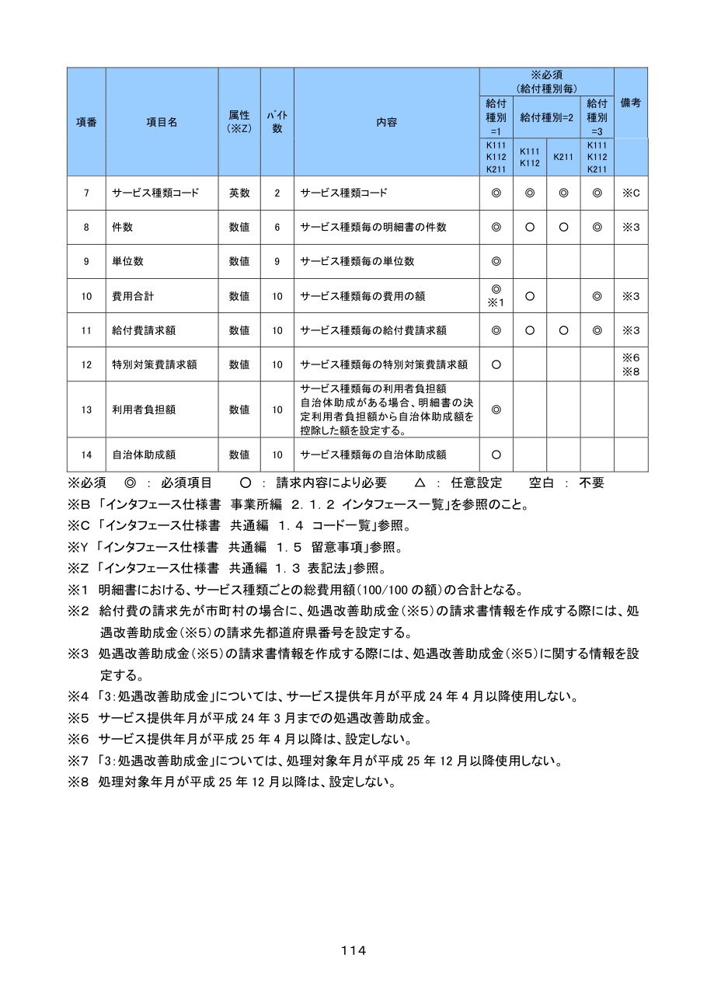
claude-haiku-5-5
表1 record_layout 前頁から続く
| 項番 | 項目名 | 属性 | 桁数 | 内容 | 必須 | 備考 |
|---|---|---|---|---|---|---|
| 7 | サービス種類コード | 英数 | 2 | サービス種類コード | ※必須（給付種別毎） > 給付種別=1 > K111 K112 K211:◎ ※必須（給付種別毎） > 給付種別=2 > K111 K112:◎ ※必須（給付種別毎） > 給付種別=2 > K211:◎ ※必須（給付種別毎） > 給付種別=3 > K111 K112 K211:◎ | ※C |
| 8 | 件数 | 数値 | 6 | サービス種類毎の明細書の件数 | ※必須（給付種別毎） > 給付種別=1 > K111 K112 K211:◎ ※必須（給付種別毎） > 給付種別=2 > K111 K112:○ ※必須（給付種別毎） > 給付種別=2 > K211:○ ※必須（給付種別毎） > 給付種別=3 > K111 K112 K211:◎ | ※3 |
| 9 | 単位数 | 数値 | 9 | サービス種類毎の単位数 | ※必須（給付種別毎） > 給付種別=1 > K111 K112 K211:◎ ※必須（給付種別毎） > 給付種別=2 > K111 K112:－ ※必須（給付種別毎） > 給付種別=2 > K211:－ ※必須（給付種別毎） > 給付種別=3 > K111 K112 K211:－ | |
| 10 | 費用合計 | 数値 | 10 | サービス種類毎の費用の額 | ※必須（給付種別毎） > 給付種別=1 > K111 K112 K211:◎ ※必須（給付種別毎） > 給付種別=2 > K111 K112:○ ※必須（給付種別毎） > 給付種別=2 > K211:－ ※必須（給付種別毎） > 給付種別=3 > K111 K112 K211:◎ | ※3 |
| 11 | 給付費請求額 | 数値 | 10 | サービス種類毎の給付費請求額 | ※必須（給付種別毎） > 給付種別=1 > K111 K112 K211:◎ ※必須（給付種別毎） > 給付種別=2 > K111 K112:○ ※必須（給付種別毎） > 給付種別=2 > K211:○ ※必須（給付種別毎） > 給付種別=3 > K111 K112 K211:◎ | ※3 |
| 12 | 特別対策費請求額 | 数値 | 10 | サービス種類毎の特別対策費請求額 | ※必須（給付種別毎） > 給付種別=1 > K111 K112 K211:○ ※必須（給付種別毎） > 給付種別=2 > K111 K112:－ ※必須（給付種別毎） > 給付種別=2 > K211:－ ※必須（給付種別毎） > 給付種別=3 > K111 K112 K211:－ | ※6 ※8 |
| 13 | 利用者負担額 | 数値 | 10 | サービス種類毎の利用者負担額 自治体助成がある場合、明細書の決定利用者負担額から自治体助成額を控除した額を設定する。 | ※必須（給付種別毎） > 給付種別=1 > K111 K112 K211:◎ ※必須（給付種別毎） > 給付種別=2 > K111 K112:－ ※必須（給付種別毎） > 給付種別=2 > K211:－ ※必須（給付種別毎） > 給付種別=3 > K111 K112 K211:－ | |
| 14 | 自治体助成額 | 数値 | 10 | サービス種類毎の自治体助成額 | ※必須（給付種別毎） > 給付種別=1 > K111 K112 K211:○ ※必須（給付種別毎） > 給付種別=2 > K111 K112:－ ※必須（給付種別毎） > 給付種別=2 > K211:－ ※必須（給付種別毎） > 給付種別=3 > K111 K112 K211:－ |
注記
- ※必須 ◎：必須項目 ○：請求内容により必要 △：任意設定 空白：不要
- ※B 「インタフェース仕様書 事業所編 2.1.2 インタフェース一覧」を参照のこと。
- ※C 「インタフェース仕様書 共通編 1.4 コード一覧」参照。
- ※Y 「インタフェース仕様書 共通編 1.5 留意事項」参照。
- ※Z 「インタフェース仕様書 共通編 1.3 表記法」参照。
- ※1 明細書における、サービス種類ごとの総費用額(100/100の額)の合計となる。
- ※2 給付費の請求先が市町村の場合に、処遇改善助成金(※5)の請求書情報を作成する際には、処遇改善助成金(※5)の請求先都道府県番号を設定する。
- ※3 処遇改善助成金(※5)の請求書情報を作成する際には、処遇改善助成金(※5)に関する情報を設定する。
- ※4 「3:処遇改善助成金」については、サービス提供年月が平成24年4月以降使用しない。
- ※5 サービス提供年月が平成24年3月までの処遇改善助成金。
- ※6 サービス提供年月が平成25年4月以降は、設定しない。
- ※7 「3:処遇改善助成金」については、処理対象年月が平成25年12月以降使用しない。
- ※8 処理対象年月が平成25年12月以降は、設定しない。
uncertain（モデル自己申告）
- 依頼文は「次のページの表」の書き起こしでしたが、添付は1ページのみで、そのページは印字ページ番号114の表です。添付された表を書き起こしました。
- 表は見出し行が本ページ先頭にあり項番が7から始まるため、前ページからの続きと判断し continued_from_prev_page を true にしました。表の直前に表題はありません。
- 項番10の必須セルに「◎」と「※1」が上下に並んでいます。※1は脚注記号として扱い、required_by の値は「◎」のみにしました。
- 項番13の内容は3行目が2行目の折り返しに見えたため、2行目と結合して1つの文にしました。
- record（交換情報識別番号・レコード名・上位情報名）は本ページから読み取れなかったため null にしました。
claude-sonnet-5-5
- 表1 項番10 必須（給付種別=1 K111 K112 K211）の値が想定外: '◎ ※1'
表1 record_layout 前頁から続く
| 項番 | 項目名 | 属性 | 桁数 | 内容 | 必須 | 備考 |
|---|---|---|---|---|---|---|
| 7 | サービス種類コード | 英数 | 2 | サービス種類コード | 給付種別=1 K111 K112 K211:◎ 給付種別=2 K111 K112:◎ 給付種別=2 K211:◎ 給付種別=3 K111 K112 K211:◎ | ※C |
| 8 | 件数 | 数値 | 6 | サービス種類毎の明細書の件数 | 給付種別=1 K111 K112 K211:◎ 給付種別=2 K111 K112:○ 給付種別=2 K211:○ 給付種別=3 K111 K112 K211:◎ | ※3 |
| 9 | 単位数 | 数値 | 9 | サービス種類毎の単位数 | 給付種別=1 K111 K112 K211:◎ 給付種別=2 K111 K112:－ 給付種別=2 K211:－ 給付種別=3 K111 K112 K211:－ | |
| 10 | 費用合計 | 数値 | 10 | サービス種類毎の費用の額 | 給付種別=1 K111 K112 K211:◎ ※1 給付種別=2 K111 K112:○ 給付種別=2 K211:－ 給付種別=3 K111 K112 K211:◎ | ※3 |
| 11 | 給付費請求額 | 数値 | 10 | サービス種類毎の給付費請求額 | 給付種別=1 K111 K112 K211:◎ 給付種別=2 K111 K112:○ 給付種別=2 K211:○ 給付種別=3 K111 K112 K211:◎ | ※3 |
| 12 | 特別対策費請求額 | 数値 | 10 | サービス種類毎の特別対策費請求額 | 給付種別=1 K111 K112 K211:○ 給付種別=2 K111 K112:－ 給付種別=2 K211:－ 給付種別=3 K111 K112 K211:－ | ※6 ※8 |
| 13 | 利用者負担額 | 数値 | 10 | サービス種類毎の利用者負担額 自治体助成がある場合、明細書の決定利用者負担額から自治体助成額を控除した額を設定する。 | 給付種別=1 K111 K112 K211:◎ 給付種別=2 K111 K112:－ 給付種別=2 K211:－ 給付種別=3 K111 K112 K211:－ | |
| 14 | 自治体助成額 | 数値 | 10 | サービス種類毎の自治体助成額 | 給付種別=1 K111 K112 K211:○ 給付種別=2 K111 K112:－ 給付種別=2 K211:－ 給付種別=3 K111 K112 K211:－ |
注記
- ※必須 ◎ : 必須項目 ○ : 請求内容により必要 △ : 任意設定 空白 : 不要
- ※B 「インタフェース仕様書 事業所編 2.1.2 インタフェース一覧」を参照のこと。
- ※C 「インタフェース仕様書 共通編 1.4 コード一覧」参照。
- ※Y 「インタフェース仕様書 共通編 1.5 留意事項」参照。
- ※Z 「インタフェース仕様書 共通編 1.3 表記法」参照。
- ※1 明細書における、サービス種類ごとの総費用額(100/100 の額)の合計となる。
- ※2 給付費の請求先が市町村の場合に、処遇改善助成金(※5)の請求書情報を作成する際には、処遇改善助成金(※5)の請求先都道府県番号を設定する。
- ※3 処遇改善助成金(※5)の請求書情報を作成する際には、処遇改善助成金(※5)に関する情報を設定する。
- ※4 「3:処遇改善助成金」については、サービス提供年月が平成 24 年 4 月以降使用しない。
- ※5 サービス提供年月が平成 24 年 3 月までの処遇改善助成金。
- ※6 サービス提供年月が平成 25 年 4 月以降は、設定しない。
- ※7 「3:処遇改善助成金」については、処理対象年月が平成 25 年 12 月以降使用しない。
- ※8 処理対象年月が平成 25 年 12 月以降は、設定しない。
uncertain（モデル自己申告）
- 表は項番7から始まるため前ページからの続き（レコード名・親は不明）
- 必須列の見出しは多段のため、列名は「給付種別=… K111…」の形で連結した
- 項番10の給付種別=1の欄は「◎ ※1」と読み取った
shogai_jigyosho_r0710_p243 — 印字p.

claude-haiku-5-5
- 表1 項番14 項目名がPDFのセルと完全一致しない（部分一致のみ）: '1割相当額（サービス提供年月が平成24年3月以前：給付率に基づく請求額）'
- 表1 項番15 項目名がPDFのセルと完全一致しない（部分一致のみ）: '利用者負担額②（サービス提供年月が平成24年3月以前：給付率に基づく利用者負担額②）'
- [改ページ] p243→p244 の連続性 OK
- テキストレイヤに見つからないセル: 1 個（赤枠）
表1 record_layout(6)障害児給付費等 明細書 集計情報レコード 次頁へ続く
| 項番 | 項目名 | 属性 | 桁数 | 内容 | 必須 | 備考 |
|---|---|---|---|---|---|---|
| 1 | 交換情報識別番号 | 英数 | 4 | 当情報の内容を識別するための番号 | ※必須 > K121 K122:◎ ※必須 > K221:◎ | ※B |
| 2 | レコード種別コード | コード値 | 2 | 04を設定する(集計情報レコード) | ※必須 > K121 K122:◎ ※必須 > K221:◎ | |
| 3 | サービス提供年月 | コード値 | 6 | サービスを提供した年月（西暦年月YYYYMMを設定する） | ※必須 > K121 K122:◎ ※必須 > K221:◎ | ※Y |
| 4 | 都道府県等番号 | コード値 | 6 | 受給者証に記載された都道府県等番号、または市町村番号(チェックデジット1桁含む) | ※必須 > K121 K122:◎ ※必須 > K221:◎ | ※C |
| 5 | 事業所番号 | 英数 | 10 | サービスを提供した事業所番号 | ※必須 > K121 K122:◎ ※必須 > K221:◎ | ※C |
| 6 | 受給者証番号 | 英数 | 10 | 受給者証に記載されている受給者証番号 | ※必須 > K121 K122:◎ ※必須 > K221:◎ | ※C |
| 7 | サービス種類コード | 英数 | 2 | サービス種類コード2桁を設定 | ※必須 > K121 K122:◎ ※必須 > K221:◎ | ※C |
| 8 | 請求額集計欄 > 集計欄分類番号 | コード値 | 1 | 同一のサービス種類コードで複数の集計情報を作成する為の集計欄分類番号を設定 | ※必須 > K121 K122:◎ ※必須 > K221:◎ | ※1 |
| 9 | 請求額集計欄 > サービス利用日数 | 数値 | 2 | サービス利用日数を設定 本体報酬を算定しない日において、各種加算のみを算定した場合も1日とカウントする。上限額管理加算、欠席時対応加算等も1日とカウントする。 | ※必須 > K121 K122:◎ ※必須 > K221:◎ | |
| 10 | 請求額集計欄 > 給付単位数 | 数値 | 9 | サービス種類コードごと集計欄分類番号ごとの単位数を設定 | ※必須 > K121 K122:◎ ※必須 > K221:◎ | |
| 11 | 請求額集計欄 > 単位数単価 | 数値 | 5 | 整数部2桁、小数部3桁の半角数字。8.5円の場合、08500(または8500)を設定 | ※必須 > K121 K122:◎ ※必須 > K221:◎ | ※Y |
| 12 | 請求額集計欄 > 給付率 | 数値 | 3 | 0を設定(サービス提供年月が平成24年3月以前:給付率を設定) | ※必須 > K121 K122:◎ ※必須 > K221:◎ | |
| 13 | 請求額集計欄 > 総費用額 | 数値 | 10 | サービスの総費用額を設定 | ※必須 > K121 K122:◎ ※必須 > K221:◎ | |
| 14 | 請求額集計欄 > 1割相当額（サービス提供年月が平成24年3月以前：給付率に基づく請求額） | 数値 | 10 | 総費用額の1割に相当する額を設定。(サービス提供年月が平成24年3月以前:総費用額×給付率／100) | ※必須 > K121 K122:◎ ※必須 > K221:◎ | |
| 15 | 請求額集計欄 > 利用者負担額②（サービス提供年月が平成24年3月以前：給付率に基づく利用者負担額②） | 数値 | 6 | 1割相当額を設定。 (サービス提供年月が平成24年3月以前:総費用額－給付率に基づく請求額) | ※必須 > K121 K122:◎ ※必須 > K221:◎ | ※5 |
| 16 | 請求額集計欄 > 上限月額調整（①②の内少ない数） | 数値 | 6 | 利用者負担上限月額と利用者負担額②のうち少ないほうを設定 | ※必須 > K121 K122:◎ ※必須 > K221:◎ | |
| 17 | 請求額集計欄 > A型減免 > 事業者減免額 | 数値 | 6 | 設定しない。 | ※必須 > K121 K122:－ ※必須 > K221:－ | |
| 18 | 請求額集計欄 > A型減免 > 減免後利用者負担額 | 数値 | 6 | 設定しない。 | ※必須 > K121 K122:－ ※必須 > K221:－ | |
| 19 | 請求額集計欄 > 調整後利用者負担額 | 数値 | 6 | 調整後利用者負担額を設定 | ※必須 > K121 K122:○ ※必須 > K221:○ | |
| 20 | 請求額集計欄 > 上限額管理後利用者負担額 | 数値 | 6 | 上限額管理後利用者負担額を設定 | ※必須 > K121 K122:○ ※必須 > K221:○ | ※4 |
| 21 | 請求額集計欄 > 決定利用者負担額 | 数値 | 6 | 算定した結果の利用者負担額を設定する(自治体助成分請求額を控除する前の利用者負担額である)。 | ※必須 > K121 K122:◎ ※必須 > K221:◎ |
uncertain（モデル自己申告）
- 依頼では次のページ（PDF上のページ243）の表とあるが、添付されたのは印字ページ125の1ページのみで、この添付ページの表を書き起こした。
- 表の下端に閉じ罫線があるが、項番21の後に続く項目があるかは添付ページからは判断できないため、continues_to_next_pageはfalseとした。
- レコード全体の交換情報識別番号の値はページ内に記載がないためexchange_idはnullとした。
claude-sonnet-5-5
- 表1 項番14 項目名がPDFのセルと完全一致しない（部分一致のみ）: '1割相当額(サービス提供年月が平成 24 年 3 月以前:給付率に基づく請求額)'
- 表1 項番15 項目名がPDFのセルと完全一致しない（部分一致のみ）: '利用者負担額②(サービス提供年月が平成 24 年 3 月以前:給付率に基づく利用者負担額②)'
- [改ページ] p243→p244 の連続性 OK
表1 record_layout(6)障害児給付費等 明細書 集計情報レコード 次頁へ続く
| 項番 | 項目名 | 属性 | 桁数 | 内容 | 必須 | 備考 |
|---|---|---|---|---|---|---|
| 1 | 交換情報識別番号 | 英数 | 4 | 当情報の内容を識別するための番号 | K121 K122:◎ K221:◎ | ※B |
| 2 | レコード種別コード | コード値 | 2 | 04 を設定する(集計情報レコード) | K121 K122:◎ K221:◎ | |
| 3 | サービス提供年月 | コード値 | 6 | サービスを提供した年月(西暦年月 YYYYMM を設定する) | K121 K122:◎ K221:◎ | ※Y |
| 4 | 都道府県等番号 | コード値 | 6 | 受給者証に記載された都道府県番号、または市町村番号(チェックデジット1桁含む) | K121 K122:◎ K221:◎ | ※C |
| 5 | 事業所番号 | 英数 | 10 | サービスを提供した事業所番号 | K121 K122:◎ K221:◎ | ※C |
| 6 | 受給者証番号 | 英数 | 10 | 受給者証に記載されている受給者証番号 | K121 K122:◎ K221:◎ | ※C |
| 7 | サービス種類コード | 英数 | 2 | サービス種類コード 2 桁を設定 | K121 K122:◎ K221:◎ | ※C |
| 8 | 請求額集計欄 > 集計欄分類番号 | コード値 | 1 | 同一のサービス種類コードで複数の集計情報を作成する為の集計欄分類番号を設定 | K121 K122:◎ K221:◎ | ※1 |
| 9 | 請求額集計欄 > サービス利用日数 | 数値 | 2 | サービス利用日数を設定 本体報酬を算定しない日において、各種加算のみを算定した場合も 1 日とカウントする。上限額管理加算、欠席時対応加算等も 1 日とカウントする。 | K121 K122:◎ K221:◎ | |
| 10 | 請求額集計欄 > 給付単位数 | 数値 | 9 | サービス種類コードごと集計欄分類番号ごとの単位数を設定 | K121 K122:◎ K221:◎ | |
| 11 | 請求額集計欄 > 単位数単価 | 数値 | 5 | 整数部 2 桁、小数部 3 桁の半角数字。8.5 円の場合、08500(または 8500)を設定 | K121 K122:◎ K221:◎ | ※Y |
| 12 | 請求額集計欄 > 給付率 | 数値 | 3 | 0 を設定(サービス提供年月が平成 24 年 3 月以前:給付率を設定) | K121 K122:◎ K221:◎ | |
| 13 | 請求額集計欄 > 総費用額 | 数値 | 10 | サービスの総費用額を設定 | K121 K122:◎ K221:◎ | |
| 14 | 請求額集計欄 > 1割相当額(サービス提供年月が平成 24 年 3 月以前:給付率に基づく請求額) | 数値 | 10 | 総費用額の 1 割に相当する額を設定。(サービス提供年月が平成 24 年 3 月以前:総費用額×給付率/100) | K121 K122:◎ K221:◎ | |
| 15 | 請求額集計欄 > 利用者負担額②(サービス提供年月が平成 24 年 3 月以前:給付率に基づく利用者負担額②) | 数値 | 6 | 1割相当額を設定。 (サービス提供年月が平成 24 年 3 月以前:総費用額－給付率に基づく請求額) | K121 K122:◎ K221:◎ | ※5 |
| 16 | 請求額集計欄 > 上限月額調整(①②の内少ない数) | 数値 | 6 | 利用者負担上限月額と利用者負担額②のうち少ないほうを設定 | K121 K122:◎ K221:◎ | |
| 17 | 請求額集計欄 > A型減免 > 事業者減免額 | 数値 | 6 | 設定しない。 | K121 K122:－ K221:－ | |
| 18 | 請求額集計欄 > A型減免 > 減免後利用者負担額 | 数値 | 6 | 設定しない。 | K121 K122:－ K221:－ | |
| 19 | 請求額集計欄 > 調整後利用者負担額 | 数値 | 6 | 調整後利用者負担額を設定 | K121 K122:○ K221:○ | |
| 20 | 請求額集計欄 > 上限額管理後利用者負担額 | 数値 | 6 | 上限額管理後利用者負担額を設定 | K121 K122:○ K221:○ | ※4 |
| 21 | 請求額集計欄 > 決定利用者負担額 | 数値 | 6 | 算定した結果の利用者負担額を設定する(自治体助成分請求額を控除する前の利用者負担額である)。 | K121 K122:◎ K221:◎ |
uncertain（モデル自己申告）
- 項番14,15の項目名は括弧内を含めて折り返しを詰めて記載
- 列見出し「バイト数」は「ﾊﾞｲﾄ数」と印字
shogai_jigyosho_r0710_p244 — 印字p.

claude-haiku-5-5
- テキストレイヤに見つからないセル: 1 個（赤枠）
表1 record_layout 前頁から続く
| 項番 | 項目名 | 属性 | 桁数 | 内容 | 必須 | 備考 |
|---|---|---|---|---|---|---|
| 22 | 請求額集計欄 > 請求額 > 給付費 | 数値 | 10 | 給付費請求額を設定 | ※必須 > K121 K122:◎ ※必須 > K221:◎ | |
| 23 | 請求額集計欄 > 請求額 > 高額障害児通所給付費 | 数値 | 10 | 高額障害児通所給付費を設定。 | ※必須 > K121 K122:－ ※必須 > K221:○ | |
| 24 | 請求額集計欄 > 請求額 > 特別対策費 | 数値 | 10 | サービス提供年月が平成 24 年 4 月以降は、新体系定着支援に係る請求額を設定 サービス提供年月が平成 21 年 10 月以降は、事業運営安定化に係る請求額を設定 サービス提供年月が平成 21 年 9 月以前は、特別対策費である激変緩和加算に係る請求額を設定 | ※必須 > K121 K122:○ ※必須 > K221:○ | ※6 ※7 |
| 25 | 請求額集計欄 > 自治体助成分請求額 | 数値 | 6 | 利用者負担のうち自治体が助成する額を設定 | ※必須 > K121 K122:○ ※必須 > K221:○ | ※2 |
| 26 | 特定入所障害児食費等給付費 > 算定日額 | 数値 | 4 | サービス種類ごとに算定する日額を設定 | ※必須 > K121 K122:○ ※必須 > K221:－ | ※3 |
| 27 | 特定入所障害児食費等給付費 > 日数 | 数値 | 2 | サービス種類ごとに算定する日数を設定 | ※必須 > K121 K122:○ ※必須 > K221:－ | ※3 |
| 28 | 特定入所障害児食費等給付費 > 給付費請求額 | 数値 | 5 | サービス種類ごとに給付費請求額を設定 | ※必須 > K121 K122:○ ※必須 > K221:－ | ※3 |
| 29 | 特定入所障害児食費等給付費 > 実費算定額 | 数値 | 6 | サービス種類ごとに利用者が負担する実費の額を設定 | ※必須 > K121 K122:○ ※必須 > K221:－ | ※3 |
| 30 | 利用日数管理票 > 対象期間(開始) | コード値 | 6 | 設定しない。 | ※必須 > K121 K122:－ ※必須 > K221:－ | |
| 31 | 利用日数管理票 > 対象期間(終了) | コード値 | 6 | 設定しない。 | ※必須 > K121 K122:－ ※必須 > K221:－ | |
| 32 | 利用日数管理票 > 当月の利用日数 | 数値 | 2 | 設定しない。 | ※必須 > K121 K122:－ ※必須 > K221:－ | |
| 33 | 利用日数管理票 > 原則日数の総和 | 数値 | 3 | 設定しない。 | ※必須 > K121 K122:－ ※必須 > K221:－ |
注記
- ※必須 ◎：必須項目 ○：請求内容により必要 △：任意設定 空白：不要
- ※B 「インタフェース仕様書 事業所編 2.1.2 インタフェース一覧」を参照のこと。
- ※C 「インタフェース仕様書 共通編 1.4 コード一覧」参照。
- ※Y 「インタフェース仕様書 共通編 1.5 留意事項」参照。
- ※Z 「インタフェース仕様書 共通編 1.3 表記法」参照。
- ※1 【サービス提供年月が平成25年4月以降の場合】 1：2および7以外の情報は1を設定する。 2：単位数単価が10円以外の地域に所在する事業所において、下記障害児支援サービスを行った場合、同一サービス種類において単位数単価を分けて集計する必要があるため下記サービスを集計欄分類番号＝2で集計する。 (1)児童発達支援 ①人工内耳装用児支援加算（サービス提供年月が令和6年3月以前の場合） (2)医療型障害児入所支援 ①重度障害児支援加算 ②重度重複障害児加算 ③強度行動障害児特別支援加算（サービス提供年月が令和3年4月以降、令和6年3月以前の場合） (3)障害児入所支援 ①重度障害児支援加算
uncertain（モデル自己申告）
- 前ページからの続きと判断した（項番22から始まり、見出し行の繰り返しがないため）。前ページの内容は含まれていない。
- 項番22の項目名は、縦結合の「請求額集計欄」と「請求額」の下に配置されていると判断した。
- 項番26〜29の縦結合見出しは「特定入所障害児」と「食費等給付費」の2段の文字を連結して「特定入所障害児食費等給付費」とした。
- 項番24の内容の「平成 21 年 10 月」等の空白は原文の表記のまま書き写した。
- 注記の※2・※3・※6・※7は本ページでは本文が示されていないため、footnotes には含めていない。
- ※1の注記は、2の（3）以降の内容が次のページに続く可能性がある。
- printed_page は画像の印字「126」を採用した。PDF上のページ番号244とは異なる。
claude-sonnet-5-5
表1 record_layout 前頁から続く
| 項番 | 項目名 | 属性 | 桁数 | 内容 | 必須 | 備考 |
|---|---|---|---|---|---|---|
| 22 | 請求額集計欄 > 請求額 > 給付費 | 数値 | 10 | 給付費請求額を設定 | K121 K122:◎ K221:◎ | |
| 23 | 請求額集計欄 > 請求額 > 高額障害児通所給付費 | 数値 | 10 | 高額障害児通所給付費を設定。 | K121 K122:－ K221:○ | |
| 24 | 請求額集計欄 > 請求額 > 特別対策費 | 数値 | 10 | サービス提供年月が平成24年4月以降は、新体系定着支援に係る請求額を設定 サービス提供年月が平成21年10月以降は、事業運営安定化に係る請求額を設定 サービス提供年月が平成21年9月以前は、特別対策費である激変緩和加算に係る請求額を設定 | K121 K122:○ K221:○ | ※6 ※7 |
| 25 | 請求額集計欄 > 自治体助成分請求額 | 数値 | 6 | 利用者負担額のうち自治体が助成する額を設定 | K121 K122:○ K221:○ | ※2 |
| 26 | 特定入所障害児食費等給付費 > 算定日額 | 数値 | 4 | サービス種類ごとに算定する日額を設定 | K121 K122:○ K221:－ | ※3 |
| 27 | 特定入所障害児食費等給付費 > 日数 | 数値 | 2 | サービス種類ごとに算定する日数を設定 | K121 K122:○ K221:－ | ※3 |
| 28 | 特定入所障害児食費等給付費 > 給付費請求額 | 数値 | 5 | サービス種類ごとに給付費請求額を設定 | K121 K122:○ K221:－ | ※3 |
| 29 | 特定入所障害児食費等給付費 > 実費算定額 | 数値 | 6 | サービス種類ごとに利用者が負担する実費の額を設定 | K121 K122:○ K221:－ | ※3 |
| 30 | 利用日数管理票 > 対象期間(開始) | コード値 | 6 | 設定しない。 | K121 K122:－ K221:－ | |
| 31 | 利用日数管理票 > 対象期間(終了) | コード値 | 6 | 設定しない。 | K121 K122:－ K221:－ | |
| 32 | 利用日数管理票 > 当月の利用日数 | 数値 | 2 | 設定しない。 | K121 K122:－ K221:－ | |
| 33 | 利用日数管理票 > 原則日数の総和 | 数値 | 3 | 設定しない。 | K121 K122:－ K221:－ |
注記
- ※必須 ◎ : 必須項目 ○ : 請求内容により必要 △ : 任意設定 空白 : 不要
- ※B 「インタフェース仕様書 事業所編 2.1.2 インタフェース一覧」を参照のこと。
- ※C 「インタフェース仕様書 共通編 1.4 コード一覧」参照。
- ※Y 「インタフェース仕様書 共通編 1.5 留意事項」参照。
- ※Z 「インタフェース仕様書 共通編 1.3 表記法」参照。
- ※1 【サービス提供年月が平成25年4月以降の場合】 1 : 2および7以外の情報は1を設定する。 2 : 単位数単価が10円以外の地域に所在する事業所において、下記障害児支援サービスを行った場合、同一サービス種類において単位数単価を分けて集計する必要があるため下記サービスを集計欄分類番号=2で集計する。 (1)児童発達支援 ①人工内耳装用児支援加算(サービス提供年月が令和6年3月以前の場合) (2)医療型障害児入所支援 ①重度障害児支援加算 ②重度重複障害児加算 ③強度行動障害児特別支援加算(サービス提供年月が令和3年4月以降、令和6年3月以前の場合) (3)障害児入所支援 ①重度障害児支援加算
uncertain（モデル自己申告）
- 表は前ページからの続き(項番22から開始)
- 項番22〜25の「請求額集計欄」「請求額」、項番26〜29の「特定入所障害児食費等給付費」(縦書き)、項番30〜33の「利用日数管理票」の結合見出しの読み取りは縦書きのため不確か
- 項番25は請求額集計欄の下で請求額列を跨ぐ結合のため name_path を [請求額集計欄, 自治体助成分請求額] とした
- ※1の注記はページ末尾で途切れており次ページに続く可能性あり
shogai_jigyosho_r0710_p250 — 印字p.

claude-haiku-5-5
表1 record_layout(7)障害児給付費等 明細書 契約情報レコード
| 項番 | 項目名 | 属性 | 桁数 | 内容 | 必須 | 備考 |
|---|---|---|---|---|---|---|
| 1 | 交換情報識別番号 | 英数 | 4 | 当情報の内容を識別するための番号 | ◎ | ※B |
| 2 | レコード種別コード | コード値 | 2 | 05を設定する(契約情報レコード) | ◎ | |
| 3 | サービス提供年月 | コード値 | 6 | サービスを提供した年月(西暦年月 YYYYMM を設定する) | ◎ | ※Y |
| 4 | 都道府県等番号 | コード値 | 6 | 受給者証に記載された市町村番号(チェックデジット 1 桁含む) | ◎ | ※C |
| 5 | 事業所番号 | 英数 | 10 | サービスを提供した事業所番号 | ◎ | ※C |
| 6 | 受給者証番号 | 英数 | 10 | 受給者証に記載されている受給者証番号 | ◎ | ※C |
| 7 | 決定サービスコード | 英数 | 6 | 決定サービスコード6桁を設定 | ◎ | ※C |
| 8 | 契約支給量 | 数値 | 5 | 整数部上 3 桁、小数部下 2 桁を設定。 100.5 時間→10050 12 日→01200(または 1200) 5 回→00500(または 500) | ◎ | ※1 |
| 9 | 契約開始年月日 | コード値 | 8 | 契約を開始した年月日(西暦年月日YYYYMMDDを設定する) | ◎ | ※2 ※Y |
| 10 | 契約終了年月日 | コード値 | 8 | 契約を終了した年月日(西暦年月日YYYYMMDDを設定する) | ○ | ※2 ※Y |
| 11 | 事業者記入欄番号 | 数値 | 2 | 受給者証の事業者記入欄番号を設定する。 | ◎ | ※3 |
注記
- ※必須 ◎：必須項目 ○：請求内容により必要 △：任意設定 空白：不要
- ※B 「インタフェース仕様書 事業所編 1.2.2 インタフェース一覧」を参照のこと。
- ※C 「インタフェース仕様書 共通編 1.4 コード一覧」参照。
- ※Y 「インタフェース仕様書 共通編 1.5 留意事項」参照。
- ※Z 「インタフェース仕様書 共通編 1.3 表記法」参照。
- ※1 契約支給量には、受給者証の事業者記入欄に記載した契約支給量を設定する。
- ※2 契約開始年月日、契約終了年月日には、受給者証の事業者記入欄に記載した契約日、サービス提供終了日を設定する。
- ※3 受給者証の事業者記入欄に記載した欄番号を設定する。
uncertain（モデル自己申告）
- 依頼文は「次のページ」の表を求めているが、添付されているのは1ページのみで、印字ページ番号は126-6である。添付された本ページの表を書き起こした。PDF上のページ250との対応は確認できない。
- 「※必須」欄は K122 と K221 が1つのセルに上下で並んでおり、列が分かれているか判断できないため、1列（「※必須 > K122・K221」）として扱い、required に ◎ を入れた。10行目のみ ○ である。
- 項番8の内容セルの「(または 1200)」「(または 500)」の括弧は、画像上で半角か全角か判別できなかったため半角とした。
claude-sonnet-5-5
表1 record_layout(7)障害児給付費等 明細書 契約情報レコード
| 項番 | 項目名 | 属性 | 桁数 | 内容 | 必須 | 備考 |
|---|---|---|---|---|---|---|
| 1 | 交換情報識別番号 | 英数 | 4 | 当情報の内容を識別するための番号 | ◎ | ※B |
| 2 | レコード種別コード | コード値 | 2 | 05 を設定する(契約情報レコード) | ◎ | |
| 3 | サービス提供年月 | コード値 | 6 | サービスを提供した年月(西暦年月 YYYYMM を設定する) | ◎ | ※Y |
| 4 | 都道府県等番号 | コード値 | 6 | 受給者証に記載された市町村番号(ﾁｪｯｸﾃﾞｼﾞｯﾄ 1 桁含む) | ◎ | ※C |
| 5 | 事業所番号 | 英数 | 10 | サービスを提供した事業所番号 | ◎ | ※C |
| 6 | 受給者証番号 | 英数 | 10 | 受給者証に記載されている受給者証番号 | ◎ | ※C |
| 7 | 決定サービスコード | 英数 | 6 | 決定サービスコード6桁を設定 | ◎ | ※C |
| 8 | 契約支給量 | 数値 | 5 | 整数部上 3 桁、小数部下 2 桁を設定。 100.5 時間→10050 12 日→01200(または 1200) 5 回→00500(または 500) | ◎ | ※1 |
| 9 | 契約開始年月日 | コード値 | 8 | 契約を開始した年月日(西暦年月日 YYYYMMDD を設定する) | ◎ | ※2 ※Y |
| 10 | 契約終了年月日 | コード値 | 8 | 契約を終了した年月日(西暦年月日 YYYYMMDD を設定する) | ○ | ※2 ※Y |
| 11 | 事業者記入欄番号 | 数値 | 2 | 受給者証の事業者記入欄番号を設定する。 | ◎ | ※3 |
注記
- ※必須 ◎ : 必須項目 ○ : 請求内容により必要 △ : 任意設定 空白 : 不要
- ※B 「インタフェース仕様書 事業所編 1.2.2 インタフェース一覧」を参照のこと。
- ※C 「インタフェース仕様書 共通編 1.4 コード一覧」参照。
- ※Y 「インタフェース仕様書 共通編 1.5 留意事項」参照。
- ※Z 「インタフェース仕様書 共通編 1.3 表記法」参照。
- ※1 契約支給量には、受給者証の事業者記入欄に記載した契約支給量を設定する。
- ※2 契約開始年月日、契約終了年月日には、受給者証の事業者記入欄に記載した契約日、サービス提供終了日を設定する。
- ※3 受給者証の事業者記入欄に記載した欄番号を設定する。
uncertain（モデル自己申告）
- 列見出し「※必須」の下の K122 K221 は1列(1つのセル)として扱った。
shogai_jigyosho_r0710_p253 — 印字p.

claude-haiku-5-5
表1 record_layout(11)障害児給付費等明細書 処遇改善情報レコード
| 項番 | 項目名 | 属性 | 桁数 | 内容 | 必須 | 備考 |
|---|---|---|---|---|---|---|
| 1 | 交換情報識別番号 | 英数 | 4 | 当情報の内容を識別するための番号 | ◎ | ※B |
| 2 | レコード種別コード | コード値 | 2 | 06を設定する（処遇改善情報レコード） | ◎ | |
| 3 | サービス提供年月 | コード値 | 6 | サービスを提供した年月（西暦年月YYYYMMを設定する） | ◎ | ※Y |
| 4 | 都道府県等番号 | コード値 | 6 | 受給者証に記載された都道府県番号、または市町村番号（チェックデジット1桁含む） | ◎ | ※C |
| 5 | 事業所番号 | 英数 | 10 | サービスを提供した事業所番号 | ◎ | ※C |
| 6 | 受給者証番号 | 英数 | 10 | 受給者証に記載されている受給者証番号 | ◎ | ※C |
| 7 | サービス種類コード | 英数 | 2 | サービス種類コード2桁を設定 | ◎ | ※C |
| 8 | 処遇改善助成金 > 請求先都道府県番号 | コード値 | 6 | 処遇改善助成金の請求先都道府県番号を設定する | ◎ | ※C |
| 9 | 処遇改善助成金 > 請求額 | 数値 | 10 | 処遇改善助成金（※1）の請求額を設定する。助成金の算定式（月額）は、サービス種類ごとの１人１月当たり報酬総額×交付率＝交付額（1円未満切り捨て） ※報酬総額は、利用者負担額（利用者負担に係る自治体助成額を含む。）、事業運営安定化事業による助成額を含み補足給付は含まない。 | ◎ |
注記
- ※必須 ◎：必須項目 ○：請求内容により必要 △：任意設定 空白：不要
- ※B 「インタフェース仕様書 事業所編 2.1.2 インタフェース一覧」を参照のこと。
- ※C 「インタフェース仕様書 共通編 1.4 コード一覧」参照。
- ※Y 「インタフェース仕様書 共通編 1.5 留意事項」参照。
- ※Z 「インタフェース仕様書 共通編 1.3 表記法」参照。
- ※1 サービス提供年月が平成24年3月までの処遇改善助成金。
uncertain（モデル自己申告）
- 依頼文では「次のページ」の表とあるが、添付は1ページのみで、その内容は（10）契約情報レコードの説明文と（11）処遇改善情報レコードの表である。添付ページの表だけを書き起こした。
- （11）の表の「※必須」列は K121・K122・K221 が1列にまとめられた見出しに見えたため、必須は1列扱い（required に◎、required_by は空）とした。
- 処遇改善情報レコードの見出しは原文の「処遇改善情報レコード」の表記のまま書き起こした。レコード名・交換情報識別番号は表から直接読み取れなかったため、exchange_id は null とした。
- ページ番号はPDF上の253ではなく、ページ下部の印字「126－9」を printed_page に入れた。
claude-sonnet-5-5
表1 record_layout（11）障害児給付費等明細書 処遇改善情報レコード
| 項番 | 項目名 | 属性 | 桁数 | 内容 | 必須 | 備考 |
|---|---|---|---|---|---|---|
| 1 | 交換情報識別番号 | 英数 | 4 | 当情報の内容を識別するための番号 | ◎ | ※B |
| 2 | レコード種別コード | コード値 | 2 | 06 を設定する（処遇改善情報レコード） | ◎ | |
| 3 | サービス提供年月 | コード値 | 6 | サービスを提供した年月（西暦年月YYYYMMを設定する） | ◎ | ※Y |
| 4 | 都道府県等番号 | コード値 | 6 | 受給者証に記載された都道府県番号、または市町村番号（ﾁｪｯｸﾃﾞｼﾞｯﾄ1桁含む） | ◎ | ※C |
| 5 | 事業所番号 | 英数 | 10 | サービスを提供した事業所番号 | ◎ | ※C |
| 6 | 受給者証番号 | 英数 | 10 | 受給者証に記載されている受給者証番号 | ◎ | ※C |
| 7 | サービス種類コード | 英数 | 2 | サービス種類コード2桁を設定 | ◎ | ※C |
| 8 | 処遇改善助成金 > 請求先都道府県番号 | コード値 | 6 | 処遇改善助成金の請求先都道府県番号を設定する | ◎ | ※C |
| 9 | 処遇改善助成金 > 請求額 | 数値 | 10 | 処遇改善助成金（※1）の請求額を設定する。助成金の算定式（月額）は、サービス種類ごとの1人1月当たり報酬総額×交付率＝交付額（1円未満切り捨て） ※報酬総額は、利用者負担額（利用者負担に係る自治体助成額を含む。）、事業運営安定化事業による助成額を含み補足給付は含まない。 | ◎ |
注記
- ※必須 ◎ : 必須項目 〇 : 請求内容により必要 △ : 任意設定 空白 : 不要
- ※B 「インタフェース仕様書 事業所編 2．1．2 インタフェース一覧」を参照のこと。
- ※C 「インタフェース仕様書 共通編 1．4 コード一覧」参照。
- ※Y 「インタフェース仕様書 共通編 1．5 留意事項」参照。
- ※Z 「インタフェース仕様書 共通編 1．3 表記法」参照。
- ※1 サービス提供年月が平成24年3月までの処遇改善助成金。
uncertain（モデル自己申告）
- ページ上部の「（10）契約情報レコードのデータ設定方法について」は本文のため表として扱っていない
- 必須列の見出しは K121・K122・K221 が1つの結合セルに縦に並んでおり、必須は1列として扱った
- 項番8・9の「処遇改善助成金」は縦書きの結合セル
shogai_jigyosho_r0710_p257 — 印字p.

claude-haiku-5-5
表1 record_layout(2)障害児相談支援給付費請求書等 基本情報レコード
| 項番 | 項目名 | 属性 | 桁数 | 内容 | 必須 | 備考 |
|---|---|---|---|---|---|---|
| 1 | 交換情報識別番号 | 英数 | 4 | 当情報の内容を識別するための番号 | ◎ | ※B |
| 2 | レコード種別コード | コード値 | 2 | 01を設定する（基本情報レコード） | ◎ | |
| 3 | サービス提供年月 | コード値 | 6 | サービスを提供した年月（西暦年月YYYYMMを設定する） | ◎ | ※Y |
| 4 | 市町村番号 | コード値 | 6 | 受給者証に記載された市町村番号（チェックデジット1桁含む） | ◎ | ※C |
| 5 | 事業所番号 | 英数 | 10 | サービスを提供した事業所番号 | ◎ | ※C |
| 6 | 件数 | 数値 | 6 | 件数を設定 | ◎ | |
| 7 | 地域区分コード | コード値 | 2 | 地域区分コードを設定 | ◎ | ※C |
| 8 | 請求金額 | 数値 | 10 | 合計の請求金額を設定 | ◎ | |
| 9 | 単位数単価 | 数値 | 5 | 整数部2桁、小数部3桁の半角数字 8.5円の場合、08500(または8500)を設定 | ◎ | ※Y |
注記
- ※必須 ◎：必須項目 ○：請求内容により必要 △：任意設定 空白：不要
- ※B 「インタフェース仕様書 事業所編 1.2.2 インタフェース一覧」を参照のこと。
- ※C 「インタフェース仕様書 共通編 1.4 コード一覧」参照。
- ※Y 「インタフェース仕様書 共通編 1.5 留意事項」参照。
- ※Z 「インタフェース仕様書 共通編 1.3 表記法」参照。
uncertain（モデル自己申告）
- 依頼文は「次のページの表」の書き起こしを求めているが、添付は1ページのみで、そのページは印字上の番号127－2のページである。添付ページの表を書き起こした。依頼文のPDF上のページ257とは対応を確認できていない。
- 必須列の見出し「※必須 K311 K321」は1列にまとめられ、各行に◎が1つだけ記載されているため、列を識別番号ごとに分けず required を ◎ として扱った。
claude-sonnet-5-5
表1 record_layout（2）障害児相談支援給付費請求書等 基本情報レコード
| 項番 | 項目名 | 属性 | 桁数 | 内容 | 必須 | 備考 |
|---|---|---|---|---|---|---|
| 1 | 交換情報識別番号 | 英数 | 4 | 当情報の内容を識別するための番号 | ◎ | ※B |
| 2 | レコード種別コード | コード値 | 2 | 01 を設定する(基本情報レコード) | ◎ | |
| 3 | サービス提供年月 | コード値 | 6 | サービスを提供した年月(西暦年月YYYYMM を設定する) | ◎ | ※Y |
| 4 | 市町村番号 | コード値 | 6 | 受給者証に記載された市町村番号(チェックデジット 1 桁含む) | ◎ | ※C |
| 5 | 事業所番号 | 英数 | 10 | サービスを提供した事業所番号 | ◎ | ※C |
| 6 | 件数 | 数値 | 6 | 件数を設定 | ◎ | |
| 7 | 地域区分コード | コード値 | 2 | 地域区分コードを設定 | ◎ | ※C |
| 8 | 請求金額 | 数値 | 10 | 合計の請求金額を設定 | ◎ | |
| 9 | 単位数単価 | 数値 | 5 | 整数部 2 桁、小数部 3 桁の半角数字 8.5 円の場合、08500(または 8500)を設定 | ◎ | ※Y |
注記
- ※必須 ◎ : 必須項目 ○ : 請求内容により必要 △ : 任意設定 空白 : 不要
- ※B 「インタフェース仕様書 事業所編 1.2.2 インタフェース一覧」を参照のこと。
- ※C 「インタフェース仕様書 共通編 1.4 コード一覧」参照。
- ※Y 「インタフェース仕様書 共通編 1.5 留意事項」参照。
- ※Z 「インタフェース仕様書 共通編 1.3 表記法」参照。
uncertain（モデル自己申告）
- 必須の凡例の「○」は原文では丸記号で、◎ ○ △ のうち ○ として記載
shogai_jigyosho_r0710_p258 — 印字p.
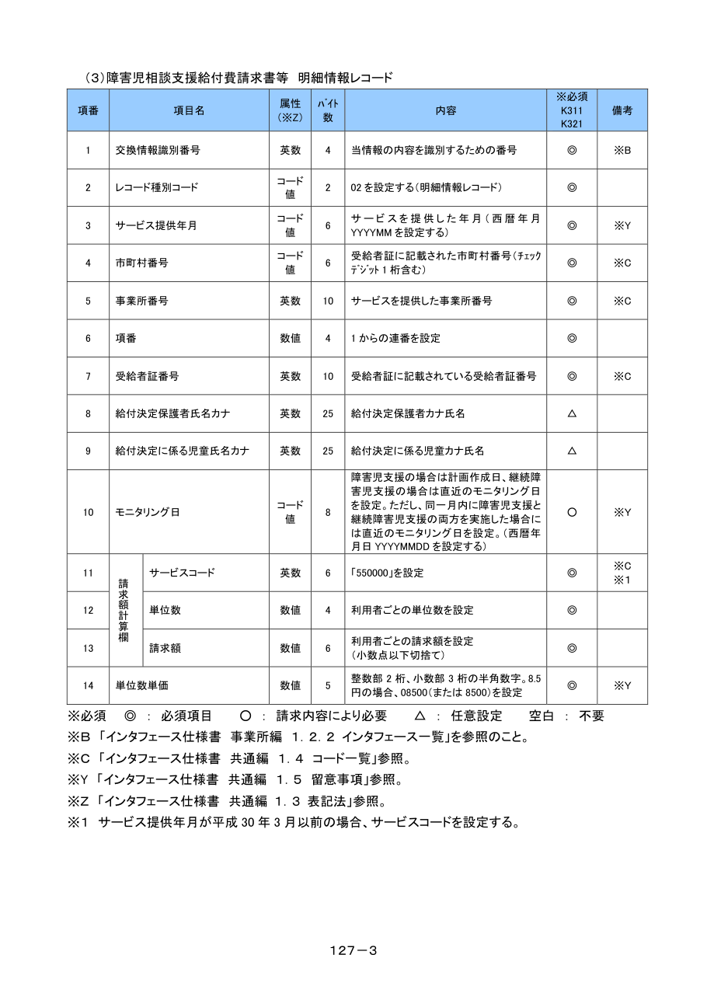
claude-haiku-5-5
表1 record_layout(3)障害児相談支援給付費請求書等 明細情報レコード
| 項番 | 項目名 | 属性 | 桁数 | 内容 | 必須 | 備考 |
|---|---|---|---|---|---|---|
| 1 | 交換情報識別番号 | 英数 | 4 | 当情報の内容を識別するための番号 | ◎ | ※B |
| 2 | レコード種別コード | コード値 | 2 | 02を設定する(明細情報レコード) | ◎ | |
| 3 | サービス提供年月 | コード値 | 6 | サービスを提供した年月（西暦年月YYYYMMを設定する） | ◎ | ※Y |
| 4 | 市町村番号 | コード値 | 6 | 受給者証に記載された市町村番号（チェックデジット1桁含む） | ◎ | ※C |
| 5 | 事業所番号 | 英数 | 10 | サービスを提供した事業所番号 | ◎ | ※C |
| 6 | 項番 | 数値 | 4 | 1からの連番を設定 | ◎ | |
| 7 | 受給者証番号 | 英数 | 10 | 受給者証に記載されている受給者証番号 | ◎ | ※C |
| 8 | 給付決定保護者氏名カナ | 英数 | 25 | 給付決定保護者カナ氏名 | △ | |
| 9 | 給付決定に係る児童氏名カナ | 英数 | 25 | 給付決定に係る児童カナ氏名 | △ | |
| 10 | モニタリング日 | コード値 | 8 | 障害児支援の場合は計画作成日、継続障害児支援の場合は直近のモニタリング日を設定。ただし、同一月内に障害児支援と継続障害児支援の両方を実施した場合には直近のモニタリング日を設定。（西暦年月日 YYYYMMDD を設定する） | ○ | ※Y |
| 11 | 請求額計算欄 > サービスコード | 英数 | 6 | 「550000」を設定 | ◎ | ※C ※1 |
| 12 | 請求額計算欄 > 単位数 | 数値 | 4 | 利用者ごとの単位数を設定 | ◎ | |
| 13 | 請求額計算欄 > 請求額 | 数値 | 6 | 利用者ごとの請求額を設定(小数点以下切捨て) | ◎ | |
| 14 | 単位数単価 | 数値 | 5 | 整数部2桁、小数部3桁の半角数字。8.5円の場合、08500(または8500)を設定 | ◎ | ※Y |
注記
- ※必須 ◎：必須項目 ○：請求内容により必要 △：任意設定 空白：不要
- ※B 「インタフェース仕様書 事業所編 1.2.2 インタフェース一覧」を参照のこと。
- ※C 「インタフェース仕様書 共通編 1.4 コード一覧」参照。
- ※Y 「インタフェース仕様書 共通編 1.5 留意事項」参照。
- ※Z 「インタフェース仕様書 共通編 1.3 表記法」参照。
- ※1 サービス提供年月が平成30年3月以前の場合、サービスコードを設定する。
uncertain（モデル自己申告）
- 依頼文では「次のページ」かつPDF上のページ258とされていたが、添付画像の印字ページ番号は127－3であり、添付された1ページのみを書き起こした。
- 「必須」列のヘッダは『※必須 K311 K321』で、記号は1列にのみ記載されているため required に入れた。K311とK321で必須が分かれているかは画像から判別できない。
- 項番11〜13の「請求額計算欄」は縦結合の見出しとして読み取り、name_pathの外側に入れた。
- 項番11の備考欄「※C」と「※1」は上下に並んでおり、改行で区切って記載した。
claude-sonnet-5-5
表1 record_layout(3)障害児相談支援給付費請求書等 明細情報レコード
| 項番 | 項目名 | 属性 | 桁数 | 内容 | 必須 | 備考 |
|---|---|---|---|---|---|---|
| 1 | 交換情報識別番号 | 英数 | 4 | 当情報の内容を識別するための番号 | ◎ | ※B |
| 2 | レコード種別コード | コード値 | 2 | 02 を設定する(明細情報レコード) | ◎ | |
| 3 | サービス提供年月 | コード値 | 6 | サービスを提供した年月(西暦年月YYYYMM を設定する) | ◎ | ※Y |
| 4 | 市町村番号 | コード値 | 6 | 受給者証に記載された市町村番号(チェックデジット1桁含む) | ◎ | ※C |
| 5 | 事業所番号 | 英数 | 10 | サービスを提供した事業所番号 | ◎ | ※C |
| 6 | 項番 | 数値 | 4 | 1 からの連番を設定 | ◎ | |
| 7 | 受給者証番号 | 英数 | 10 | 受給者証に記載されている受給者証番号 | ◎ | ※C |
| 8 | 給付決定保護者氏名カナ | 英数 | 25 | 給付決定保護者カナ氏名 | △ | |
| 9 | 給付決定に係る児童氏名カナ | 英数 | 25 | 給付決定に係る児童カナ氏名 | △ | |
| 10 | モニタリング日 | コード値 | 8 | 障害児支援の場合は計画作成日、継続障害児支援の場合は直近のモニタリング日を設定。ただし、同一月内に障害児支援と継続障害児支援の両方を実施した場合には直近のモニタリング日を設定。(西暦年月日 YYYYMMDD を設定する) | ○ | ※Y |
| 11 | 請求額計算欄 > サービスコード | 英数 | 6 | 「550000」を設定 | ◎ | ※C ※1 |
| 12 | 請求額計算欄 > 単位数 | 数値 | 4 | 利用者ごとの単位数を設定 | ◎ | |
| 13 | 請求額計算欄 > 請求額 | 数値 | 6 | 利用者ごとの請求額を設定 (小数点以下切捨て) | ◎ | |
| 14 | 単位数単価 | 数値 | 5 | 整数部2桁、小数部3桁の半角数字。8.5円の場合、08500(または8500)を設定 | ◎ | ※Y |
注記
- ※必須 ◎：必須項目 ○：請求内容により必要 △：任意設定 空白：不要
- ※B 「インタフェース仕様書 事業所編 1.2.2 インタフェース一覧」を参照のこと。
- ※C 「インタフェース仕様書 共通編 1.4 コード一覧」参照。
- ※Y 「インタフェース仕様書 共通編 1.5 留意事項」参照。
- ※Z 「インタフェース仕様書 共通編 1.3 表記法」参照。
- ※1 サービス提供年月が平成30年3月以前の場合、サービスコードを設定する。
shogai_jigyosho_r0710_p266 — 印字p.
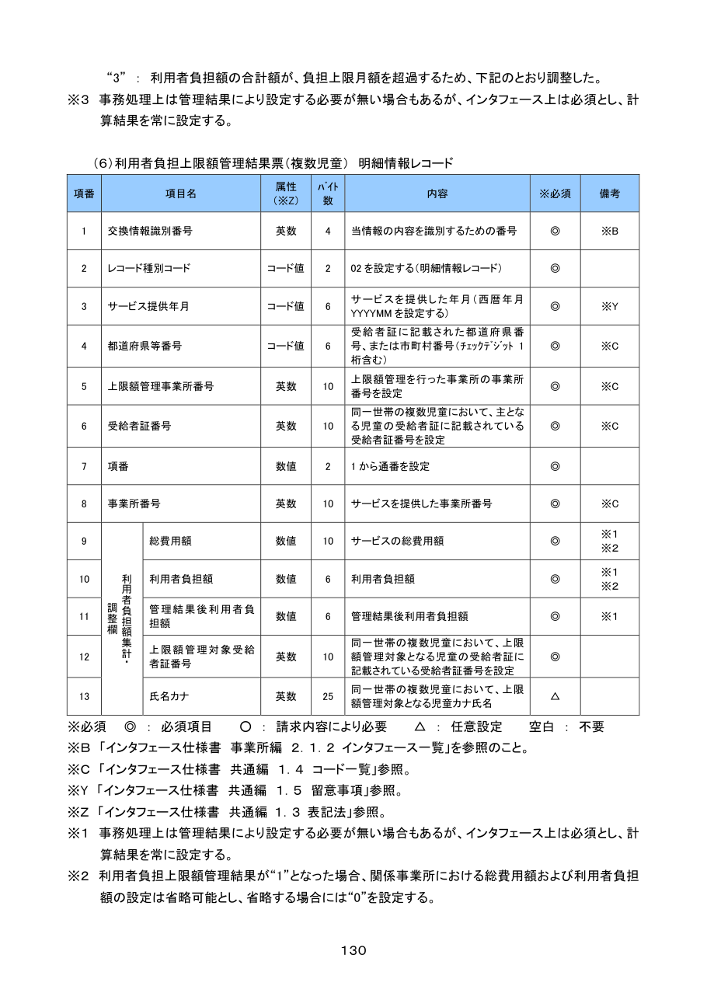
claude-haiku-5-5
表1 record_layout(6)利用者負担上限額管理結果票（複数児童） 明細情報レコード
| 項番 | 項目名 | 属性 | 桁数 | 内容 | 必須 | 備考 |
|---|---|---|---|---|---|---|
| 1 | 交換情報識別番号 | 英数 | 4 | 当情報の内容を識別するための番号 | ◎ | ※B |
| 2 | レコード種別コード | コード値 | 2 | 02を設定する（明細情報レコード） | ◎ | |
| 3 | サービス提供年月 | コード値 | 6 | サービスを提供した年月（西暦年月YYYYMMを設定する） | ◎ | ※Y |
| 4 | 都道府県等番号 | コード値 | 6 | 受給者証に記載された都道府県番号、または市町村番号（チェックデジット1桁含む） | ◎ | ※C |
| 5 | 上限額管理事業所番号 | 英数 | 10 | 上限額管理を行った事業所の事業所番号を設定 | ◎ | ※C |
| 6 | 受給者証番号 | 英数 | 10 | 同一世帯の複数児童において、主となる児童の受給者証に記載されている受給者証番号を設定 | ◎ | ※C |
| 7 | 項番 | 数値 | 2 | 1から通番を設定 | ◎ | |
| 8 | 事業所番号 | 英数 | 10 | サービスを提供した事業所番号 | ◎ | ※C |
| 9 | 利用者負担額集計・調整欄 > 総費用額 | 数値 | 10 | サービスの総費用額 | ◎ | ※1 ※2 |
| 10 | 利用者負担額集計・調整欄 > 利用者負担額 | 数値 | 6 | 利用者負担額 | ◎ | ※1 ※2 |
| 11 | 利用者負担額集計・調整欄 > 管理結果後利用者負担額 | 数値 | 6 | 管理結果後利用者負担額 | ◎ | ※1 |
| 12 | 利用者負担額集計・調整欄 > 上限額管理対象受給者証番号 | 英数 | 10 | 同一世帯の複数児童において、上限額管理対象となる児童の受給者証に記載されている受給者証番号を設定 | ◎ | |
| 13 | 利用者負担額集計・調整欄 > 氏名カナ | 英数 | 25 | 同一世帯の複数児童において、上限額管理対象となる児童カナ氏名 | △ |
注記
- “3” 利用者負担額の合計額が、負担上限月額を超過するため、下記のとおり調整した。
- ※3 事務処理上は管理結果により設定する必要が無い場合もあるが、インタフェース上は必須とし、計算結果を常に設定する。
- ※必須 ◎：必須項目 ○：請求内容により必要 △：任意設定 空白：不要
- ※B 「インタフェース仕様書 事業所編 2.1.2 インタフェース一覧」を参照のこと。
- ※C 「インタフェース仕様書 共通編 1.4 コード一覧」参照。
- ※Y 「インタフェース仕様書 共通編 1.5 留意事項」参照。
- ※Z 「インタフェース仕様書 共通編 1.3 表記法」参照。
- ※1 事務処理上は管理結果により設定する必要が無い場合もあるが、インタフェース上は必須とし、計算結果を常に設定する。
- ※2 利用者負担上限額管理結果が“1”となった場合、関係事業所における総費用額および利用者負担額の設定は省略可能とし、省略する場合には“0”を設定する。
uncertain（モデル自己申告）
- 依頼文は「次のページ」の表の書き起こしを求めているが、添付されているのは1ページのみで、その内容は印字ページ130（明細情報レコード）である。このページの表を書き起こした。メタデータのPDFページ266との対応は確認できていない。
- 明細情報レコードの親情報名は表見出しから「利用者負担上限額管理結果票（複数児童）」と読み取ったが、ページ内に明示的な上位情報名はない。
- 項番9〜13の左端の縦書き見出しは「利用者負担額集計・調整欄」と読み取った（「利用者負担額集計・」と「調整欄」の二段に分かれて印字されている）。
claude-sonnet-5-5
- テキストレイヤに見つからないセル: 1 個（赤枠）
表1 record_layout（6）利用者負担上限額管理結果票（複数児童） 明細情報レコード
| 項番 | 項目名 | 属性 | 桁数 | 内容 | 必須 | 備考 |
|---|---|---|---|---|---|---|
| 1 | 交換情報識別番号 | 英数 | 4 | 当情報の内容を識別するための番号 | ◎ | ※B |
| 2 | レコード種別コード | コード値 | 2 | 02 を設定する（明細情報レコード） | ◎ | |
| 3 | サービス提供年月 | コード値 | 6 | サービスを提供した年月（西暦年月 YYYYMM を設定する） | ◎ | ※Y |
| 4 | 都道府県等番号 | コード値 | 6 | 受給者証に記載された都道府県番号、または市町村番号（チェックデジット 1 桁含む） | ◎ | ※C |
| 5 | 上限額管理事業所番号 | 英数 | 10 | 上限額管理を行った事業の事業所番号を設定 | ◎ | ※C |
| 6 | 受給者証番号 | 英数 | 10 | 同一世帯の複数児童において、主となる児童の受給者証に記載されている受給者証番号を設定 | ◎ | ※C |
| 7 | 項番 | 数値 | 2 | 1 から通番を設定 | ◎ | |
| 8 | 事業所番号 | 英数 | 10 | サービスを提供した事業所番号 | ◎ | ※C |
| 9 | 利用者負担額集計・調整欄 > 総費用額 | 数値 | 10 | サービスの総費用額 | ◎ | ※1 ※2 |
| 10 | 利用者負担額集計・調整欄 > 利用者負担額 | 数値 | 6 | 利用者負担額 | ◎ | ※1 ※2 |
| 11 | 利用者負担額集計・調整欄 > 管理結果後利用者負担額 | 数値 | 6 | 管理結果後利用者負担額 | ◎ | ※1 |
| 12 | 利用者負担額集計・調整欄 > 上限額管理対象受給者証番号 | 英数 | 10 | 同一世帯の複数児童において、上限額管理対象となる児童の受給者証に記載されている受給者証番号を設定 | ◎ | |
| 13 | 利用者負担額集計・調整欄 > 氏名カナ | 英数 | 25 | 同一世帯の複数児童において、上限額管理対象となる児童カナ氏名 | △ |
注記
- ※必須 ◎ ： 必須項目 ○ ： 請求内容により必要 △ ： 任意設定 空白 ： 不要
- ※B 「インタフェース仕様書 事業所編 2.1.2 インタフェース一覧」を参照のこと。
- ※C 「インタフェース仕様書 共通編 1.4 コード一覧」参照。
- ※Y 「インタフェース仕様書 共通編 1.5 留意事項」参照。
- ※Z 「インタフェース仕様書 共通編 1.3 表記法」参照。
- ※1 事務処理上は管理結果により設定する必要が無い場合もあるが、インタフェース上は必須とし、計算結果を常に設定する。
- ※2 利用者負担上限額管理結果が“1”となった場合、関係事業所における総費用額および利用者負担額の設定は省略可能とし、省略する場合には“0”を設定する。
- ※3 事務処理上は管理結果により設定する必要が無い場合もあるが、インタフェース上は必須とし、計算結果を常に設定する。
uncertain（モデル自己申告）
- ページ冒頭の「“3”： 利用者負担額の合計額が、負担上限月額を超過するため、下記のとおり調整した。」は前ページからの続きの本文で、表ではないため記載していない。※3 は本ページ上部に印字されている。
shogai_jigyosho_r0710_p275 — 印字p.
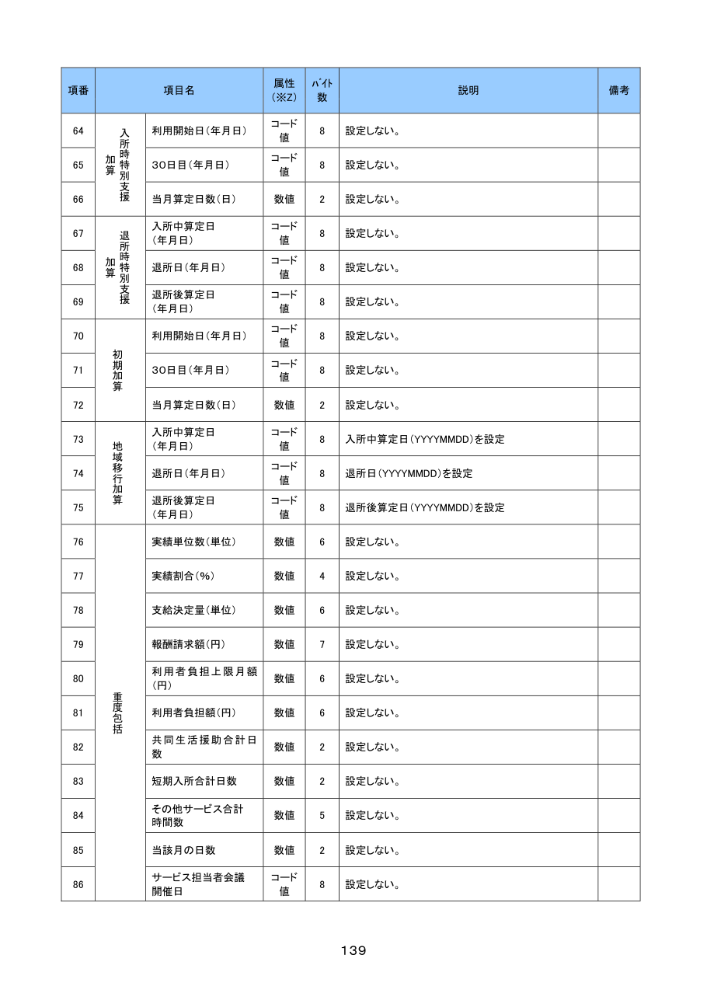
claude-haiku-5-5
- [改ページ] 前後ページで列見出しの書き起こしが一致しない
- テキストレイヤに見つからないセル: 6 個（赤枠）
表1 record_layout 前頁から続く次頁へ続く
| 項番 | 項目名 | 属性 | 桁数 | 内容 | 必須 | 備考 |
|---|---|---|---|---|---|---|
| 64 | 入所時特別加算 > 利用開始日(年月日) | コード値 | 8 | 設定しない。 | ||
| 65 | 入所時特別加算 > 30日目(年月日) | コード値 | 8 | 設定しない。 | ||
| 66 | 入所時特別加算 > 当月算定日数(日) | 数値 | 2 | 設定しない。 | ||
| 67 | 退所時特別加算 > 入所中算定日(年月日) | コード値 | 8 | 設定しない。 | ||
| 68 | 退所時特別加算 > 退所日(年月日) | コード値 | 8 | 設定しない。 | ||
| 69 | 退所時特別加算 > 退所後算定日(年月日) | コード値 | 8 | 設定しない。 | ||
| 70 | 初期加算 > 利用開始日(年月日) | コード値 | 8 | 設定しない。 | ||
| 71 | 初期加算 > 30日目(年月日) | コード値 | 8 | 設定しない。 | ||
| 72 | 初期加算 > 当月算定日数(日) | 数値 | 2 | 設定しない。 | ||
| 73 | 地域移行加算 > 入所中算定日(年月日) | コード値 | 8 | 入所中算定日(YYYYMMDD)を設定 | ||
| 74 | 地域移行加算 > 退所日(年月日) | コード値 | 8 | 退所日(YYYYMMDD)を設定 | ||
| 75 | 地域移行加算 > 退所後算定日(年月日) | コード値 | 8 | 退所後算定日(YYYYMMDD)を設定 | ||
| 76 | 重度包括 > 実績単位数(単位) | 数値 | 6 | 設定しない。 | ||
| 77 | 重度包括 > 実績割合(%) | 数値 | 4 | 設定しない。 | ||
| 78 | 重度包括 > 支給決定量(単位) | 数値 | 6 | 設定しない。 | ||
| 79 | 重度包括 > 報酬請求額(円) | 数値 | 7 | 設定しない。 | ||
| 80 | 重度包括 > 利用者負担上限月額(円) | 数値 | 6 | 設定しない。 | ||
| 81 | 重度包括 > 利用者負担額(円) | 数値 | 6 | 設定しない。 | ||
| 82 | 重度包括 > 共同生活援助合計日数 | 数値 | 2 | 設定しない。 | ||
| 83 | 重度包括 > 短期入所合計日数 | 数値 | 2 | 設定しない。 | ||
| 84 | 重度包括 > その他サービス合計時間数 | 数値 | 5 | 設定しない。 | ||
| 85 | 重度包括 > 当該月の日数 | 数値 | 2 | 設定しない。 | ||
| 86 | 重度包括 > サービス担当者会議開催日 | コード値 | 8 | 設定しない。 |
uncertain（モデル自己申告）
- このページは前ページからの続きと推定した（表見出しがなく項番64から始まるため）。
- 項番86の後の行が次ページに続く可能性があると推定した。
- 項番65・71の「30日目」の数字が全角か半角か、また英字Oか数字0かは画像から確定できなかった。
- 項番列の縦結合グループ名（入所時特別加算など）は縦書き表示のため、表記を画像から読み取った。
claude-sonnet-5-5
- [改ページ] p275→p276 の連続性 OK
表1 record_layout 前頁から続く次頁へ続く
| 項番 | 項目名 | 属性 | 桁数 | 内容 | 必須 | 備考 |
|---|---|---|---|---|---|---|
| 64 | 入所時特別支援加算 > 利用開始日(年月日) | コード値 | 8 | 設定しない。 | ||
| 65 | 入所時特別支援加算 > 30日目(年月日) | コード値 | 8 | 設定しない。 | ||
| 66 | 入所時特別支援加算 > 当月算定日数(日) | 数値 | 2 | 設定しない。 | ||
| 67 | 退所時特別支援加算 > 入所中算定日(年月日) | コード値 | 8 | 設定しない。 | ||
| 68 | 退所時特別支援加算 > 退所日(年月日) | コード値 | 8 | 設定しない。 | ||
| 69 | 退所時特別支援加算 > 退所後算定日(年月日) | コード値 | 8 | 設定しない。 | ||
| 70 | 初期加算 > 利用開始日(年月日) | コード値 | 8 | 設定しない。 | ||
| 71 | 初期加算 > 30日目(年月日) | コード値 | 8 | 設定しない。 | ||
| 72 | 初期加算 > 当月算定日数(日) | 数値 | 2 | 設定しない。 | ||
| 73 | 地域移行加算 > 入所中算定日(年月日) | コード値 | 8 | 入所中算定日(YYYYMMDD)を設定 | ||
| 74 | 地域移行加算 > 退所日(年月日) | コード値 | 8 | 退所日(YYYYMMDD)を設定 | ||
| 75 | 地域移行加算 > 退所後算定日(年月日) | コード値 | 8 | 退所後算定日(YYYYMMDD)を設定 | ||
| 76 | 重度包括 > 実績単位数(単位) | 数値 | 6 | 設定しない。 | ||
| 77 | 重度包括 > 実績割合(%) | 数値 | 4 | 設定しない。 | ||
| 78 | 重度包括 > 支給決定量(単位) | 数値 | 6 | 設定しない。 | ||
| 79 | 重度包括 > 報酬請求額(円) | 数値 | 7 | 設定しない。 | ||
| 80 | 重度包括 > 利用者負担上限月額(円) | 数値 | 6 | 設定しない。 | ||
| 81 | 重度包括 > 利用者負担額(円) | 数値 | 6 | 設定しない。 | ||
| 82 | 重度包括 > 共同生活援助合計日数 | 数値 | 2 | 設定しない。 | ||
| 83 | 重度包括 > 短期入所合計日数 | 数値 | 2 | 設定しない。 | ||
| 84 | 重度包括 > その他サービス合計時間数 | 数値 | 5 | 設定しない。 | ||
| 85 | 重度包括 > 当該月の日数 | 数値 | 2 | 設定しない。 | ||
| 86 | 重度包括 > サービス担当者会議開催日 | コード値 | 8 | 設定しない。 |
uncertain（モデル自己申告）
- 64-66,67-69,70-72,73-75,76-86の項目名グループ見出しは縦書きで、64-66は「入所時特別支援加算」、67-69は「退所時特別支援加算」と読み取った（折り返し配置のため確度やや低い）
- 表は前ページからの続きで、次ページへ続くかは推測
shogai_jigyosho_r0710_p276 — 印字p.
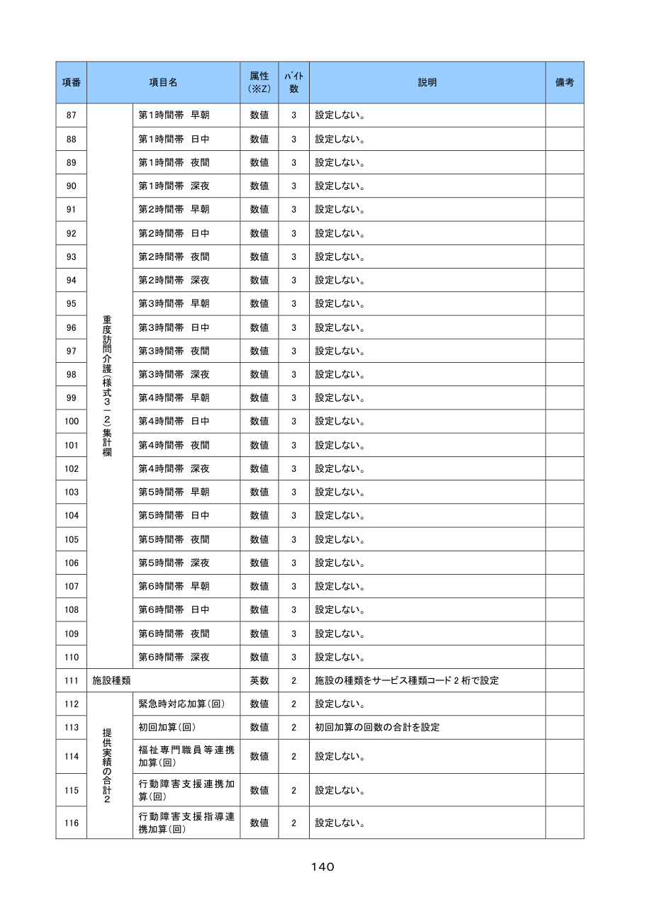
claude-haiku-5-5
- [改ページ] 前後ページで列見出しの書き起こしが一致しない
表1 record_layout 前頁から続く次頁へ続く
| 項番 | 項目名 | 属性 | 桁数 | 内容 | 必須 | 備考 |
|---|---|---|---|---|---|---|
| 87 | 重度訪問介護（様式３－２）集計欄 > 第1時間帯 早朝 | 数値 | 3 | 設定しない。 | ||
| 88 | 重度訪問介護（様式３－２）集計欄 > 第1時間帯 日中 | 数値 | 3 | 設定しない。 | ||
| 89 | 重度訪問介護（様式３－２）集計欄 > 第1時間帯 夜間 | 数値 | 3 | 設定しない。 | ||
| 90 | 重度訪問介護（様式３－２）集計欄 > 第1時間帯 深夜 | 数値 | 3 | 設定しない。 | ||
| 91 | 重度訪問介護（様式３－２）集計欄 > 第2時間帯 早朝 | 数値 | 3 | 設定しない。 | ||
| 92 | 重度訪問介護（様式３－２）集計欄 > 第2時間帯 日中 | 数値 | 3 | 設定しない。 | ||
| 93 | 重度訪問介護（様式３－２）集計欄 > 第2時間帯 夜間 | 数値 | 3 | 設定しない。 | ||
| 94 | 重度訪問介護（様式３－２）集計欄 > 第2時間帯 深夜 | 数値 | 3 | 設定しない。 | ||
| 95 | 重度訪問介護（様式３－２）集計欄 > 第3時間帯 早朝 | 数値 | 3 | 設定しない。 | ||
| 96 | 重度訪問介護（様式３－２）集計欄 > 第3時間帯 日中 | 数値 | 3 | 設定しない。 | ||
| 97 | 重度訪問介護（様式３－２）集計欄 > 第3時間帯 夜間 | 数値 | 3 | 設定しない。 | ||
| 98 | 重度訪問介護（様式３－２）集計欄 > 第3時間帯 深夜 | 数値 | 3 | 設定しない。 | ||
| 99 | 重度訪問介護（様式３－２）集計欄 > 第4時間帯 早朝 | 数値 | 3 | 設定しない。 | ||
| 100 | 重度訪問介護（様式３－２）集計欄 > 第4時間帯 日中 | 数値 | 3 | 設定しない。 | ||
| 101 | 重度訪問介護（様式３－２）集計欄 > 第4時間帯 夜間 | 数値 | 3 | 設定しない。 | ||
| 102 | 重度訪問介護（様式３－２）集計欄 > 第4時間帯 深夜 | 数値 | 3 | 設定しない。 | ||
| 103 | 重度訪問介護（様式３－２）集計欄 > 第5時間帯 早朝 | 数値 | 3 | 設定しない。 | ||
| 104 | 重度訪問介護（様式３－２）集計欄 > 第5時間帯 日中 | 数値 | 3 | 設定しない。 | ||
| 105 | 重度訪問介護（様式３－２）集計欄 > 第5時間帯 夜間 | 数値 | 3 | 設定しない。 | ||
| 106 | 重度訪問介護（様式３－２）集計欄 > 第5時間帯 深夜 | 数値 | 3 | 設定しない。 | ||
| 107 | 重度訪問介護（様式３－２）集計欄 > 第6時間帯 早朝 | 数値 | 3 | 設定しない。 | ||
| 108 | 重度訪問介護（様式３－２）集計欄 > 第6時間帯 日中 | 数値 | 3 | 設定しない。 | ||
| 109 | 重度訪問介護（様式３－２）集計欄 > 第6時間帯 夜間 | 数値 | 3 | 設定しない。 | ||
| 110 | 重度訪問介護（様式３－２）集計欄 > 第6時間帯 深夜 | 数値 | 3 | 設定しない。 | ||
| 111 | 施設種類 | 英数 | 2 | 施設の種類をサービス種類コード2桁で設定 | ||
| 112 | 提供実績の合計2 > 緊急時対応加算(回) | 数値 | 2 | 設定しない。 | ||
| 113 | 提供実績の合計2 > 初回加算(回) | 数値 | 2 | 初回加算の回数の合計を設定 | ||
| 114 | 提供実績の合計2 > 福祉専門職員等連携加算(回) | 数値 | 2 | 設定しない。 | ||
| 115 | 提供実績の合計2 > 行動障害支援連携加算(回) | 数値 | 2 | 設定しない。 | ||
| 116 | 提供実績の合計2 > 行動障害支援指導連携加算(回) | 数値 | 2 | 設定しない。 |
uncertain（モデル自己申告）
- 依頼文は『次のページ』・PDF上のページ276としているが、添付画像は1ページのみで、印字されたページ番号は140。添付のこのページを書き起こした。
- 表は項番87から始まり見出しがないため前ページからの続きと判断した。末尾（116）の後に続きがあるかは添付からは確認できないため、続きありとした。
- 項目名の『行動障害支援連携加算(回)』等は折り返しを詰めて1行にした。括弧は画像上の表記に従った。
- 『重度訪問介護（様式３－２）集計欄』は縦書きの結合セルを読み取ったもので、全角・半角の区別は画像からは確実でない。
claude-sonnet-5-5
- [改ページ] p276→p277 の連続性 OK
表1 record_layout 前頁から続く次頁へ続く
| 項番 | 項目名 | 属性 | 桁数 | 内容 | 必須 | 備考 |
|---|---|---|---|---|---|---|
| 87 | 重度訪問介護(様式３－２)集計欄 > 第1時間帯 早朝 | 数値 | 3 | 設定しない。 | ||
| 88 | 重度訪問介護(様式３－２)集計欄 > 第1時間帯 日中 | 数値 | 3 | 設定しない。 | ||
| 89 | 重度訪問介護(様式３－２)集計欄 > 第1時間帯 夜間 | 数値 | 3 | 設定しない。 | ||
| 90 | 重度訪問介護(様式３－２)集計欄 > 第1時間帯 深夜 | 数値 | 3 | 設定しない。 | ||
| 91 | 重度訪問介護(様式３－２)集計欄 > 第2時間帯 早朝 | 数値 | 3 | 設定しない。 | ||
| 92 | 重度訪問介護(様式３－２)集計欄 > 第2時間帯 日中 | 数値 | 3 | 設定しない。 | ||
| 93 | 重度訪問介護(様式３－２)集計欄 > 第2時間帯 夜間 | 数値 | 3 | 設定しない。 | ||
| 94 | 重度訪問介護(様式３－２)集計欄 > 第2時間帯 深夜 | 数値 | 3 | 設定しない。 | ||
| 95 | 重度訪問介護(様式３－２)集計欄 > 第3時間帯 早朝 | 数値 | 3 | 設定しない。 | ||
| 96 | 重度訪問介護(様式３－２)集計欄 > 第3時間帯 日中 | 数値 | 3 | 設定しない。 | ||
| 97 | 重度訪問介護(様式３－２)集計欄 > 第3時間帯 夜間 | 数値 | 3 | 設定しない。 | ||
| 98 | 重度訪問介護(様式３－２)集計欄 > 第3時間帯 深夜 | 数値 | 3 | 設定しない。 | ||
| 99 | 重度訪問介護(様式３－２)集計欄 > 第4時間帯 早朝 | 数値 | 3 | 設定しない。 | ||
| 100 | 重度訪問介護(様式３－２)集計欄 > 第4時間帯 日中 | 数値 | 3 | 設定しない。 | ||
| 101 | 重度訪問介護(様式３－２)集計欄 > 第4時間帯 夜間 | 数値 | 3 | 設定しない。 | ||
| 102 | 重度訪問介護(様式３－２)集計欄 > 第4時間帯 深夜 | 数値 | 3 | 設定しない。 | ||
| 103 | 重度訪問介護(様式３－２)集計欄 > 第5時間帯 早朝 | 数値 | 3 | 設定しない。 | ||
| 104 | 重度訪問介護(様式３－２)集計欄 > 第5時間帯 日中 | 数値 | 3 | 設定しない。 | ||
| 105 | 重度訪問介護(様式３－２)集計欄 > 第5時間帯 夜間 | 数値 | 3 | 設定しない。 | ||
| 106 | 重度訪問介護(様式３－２)集計欄 > 第5時間帯 深夜 | 数値 | 3 | 設定しない。 | ||
| 107 | 重度訪問介護(様式３－２)集計欄 > 第6時間帯 早朝 | 数値 | 3 | 設定しない。 | ||
| 108 | 重度訪問介護(様式３－２)集計欄 > 第6時間帯 日中 | 数値 | 3 | 設定しない。 | ||
| 109 | 重度訪問介護(様式３－２)集計欄 > 第6時間帯 夜間 | 数値 | 3 | 設定しない。 | ||
| 110 | 重度訪問介護(様式３－２)集計欄 > 第6時間帯 深夜 | 数値 | 3 | 設定しない。 | ||
| 111 | 施設種類 | 英数 | 2 | 施設の種類をサービス種類コード2桁で設定 | ||
| 112 | 提供実績の合計2 > 緊急時対応加算(回) | 数値 | 2 | 設定しない。 | ||
| 113 | 提供実績の合計2 > 初回加算(回) | 数値 | 2 | 初回加算の回数の合計を設定 | ||
| 114 | 提供実績の合計2 > 福祉専門職員等連携加算(回) | 数値 | 2 | 設定しない。 | ||
| 115 | 提供実績の合計2 > 行動障害支援連携加算(回) | 数値 | 2 | 設定しない。 | ||
| 116 | 提供実績の合計2 > 行動障害支援指導連携加算(回) | 数値 | 2 | 設定しない。 |
uncertain（モデル自己申告）
- 前ページからの続き（項番87から開始）
- 縦結合グループ見出し「重度訪問介護(様式３－２)集計欄」「提供実績の合計2」は縦書きのため文字表記（全角/半角）に不確かさあり
- 項目名内の全角スペースの有無は推定
shogai_jigyosho_r0710_p277 — 印字p.
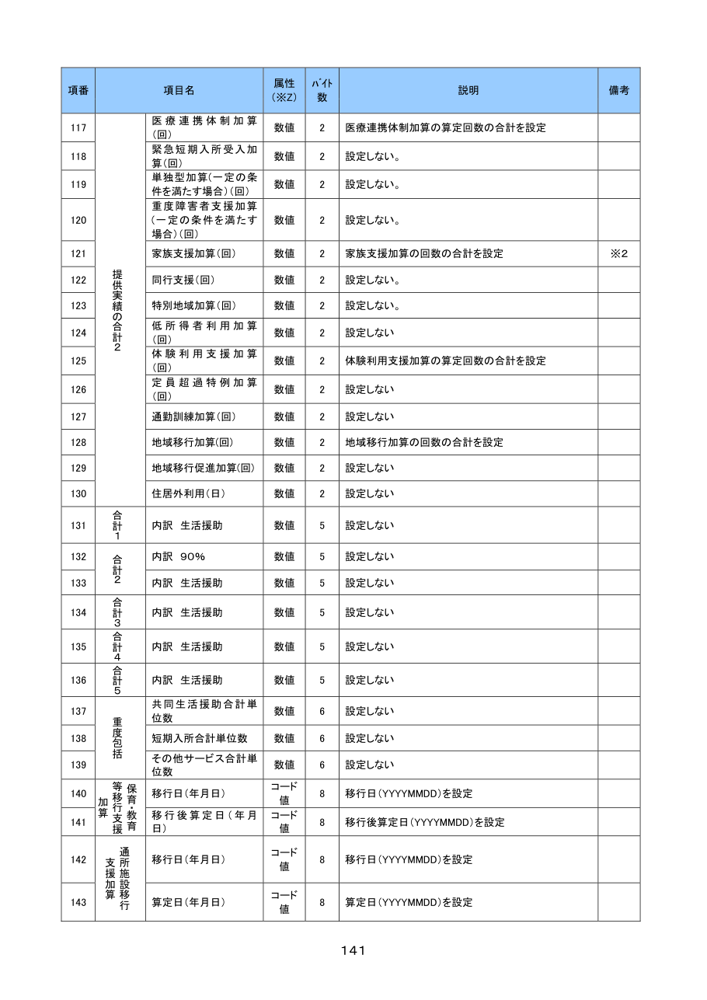
claude-haiku-5-5
- [改ページ] p277→p278 の連続性 OK
表1 record_layout 前頁から続く次頁へ続く
| 項番 | 項目名 | 属性 | 桁数 | 内容 | 必須 | 備考 |
|---|---|---|---|---|---|---|
| 117 | 提供実績の合計2 > 医療連携体制加算(回) | 数値 | 2 | 医療連携体制加算の算定回数の合計を設定 | ||
| 118 | 提供実績の合計2 > 緊急短期入所受入加算(回) | 数値 | 2 | 設定しない。 | ||
| 119 | 提供実績の合計2 > 単独型加算(一定の条件を満たす場合)(回) | 数値 | 2 | 設定しない。 | ||
| 120 | 提供実績の合計2 > 重度障害者支援加算(一定の条件を満たす場合)(回) | 数値 | 2 | 設定しない。 | ||
| 121 | 提供実績の合計2 > 家族支援加算(回) | 数値 | 2 | 家族支援加算の回数の合計を設定 | ※2 | |
| 122 | 提供実績の合計2 > 同行支援(回) | 数値 | 2 | 設定しない。 | ||
| 123 | 提供実績の合計2 > 特別地域加算(回) | 数値 | 2 | 設定しない。 | ||
| 124 | 提供実績の合計2 > 低所得者利用加算(回) | 数値 | 2 | 設定しない | ||
| 125 | 提供実績の合計2 > 体験利用支援加算(回) | 数値 | 2 | 体験利用支援加算の算定回数の合計を設定 | ||
| 126 | 提供実績の合計2 > 定員超過特例加算(回) | 数値 | 2 | 設定しない | ||
| 127 | 提供実績の合計2 > 通勤訓練加算(回) | 数値 | 2 | 設定しない | ||
| 128 | 提供実績の合計2 > 地域移行加算(回) | 数値 | 2 | 地域移行加算の回数の合計を設定 | ||
| 129 | 提供実績の合計2 > 地域移行促進加算(回) | 数値 | 2 | 設定しない | ||
| 130 | 提供実績の合計2 > 住居外利用(日) | 数値 | 2 | 設定しない | ||
| 131 | 合計1 > 内訳 生活援助 | 数値 | 5 | 設定しない | ||
| 132 | 合計2 > 内訳 90% | 数値 | 5 | 設定しない | ||
| 133 | 合計2 > 内訳 生活援助 | 数値 | 5 | 設定しない | ||
| 134 | 合計3 > 内訳 生活援助 | 数値 | 5 | 設定しない | ||
| 135 | 合計4 > 内訳 生活援助 | 数値 | 5 | 設定しない | ||
| 136 | 合計5 > 内訳 生活援助 | 数値 | 5 | 設定しない | ||
| 137 | 重度包括 > 共同生活援助合計単位数 | 数値 | 6 | 設定しない | ||
| 138 | 重度包括 > 短期入所合計単位数 | 数値 | 6 | 設定しない | ||
| 139 | 重度包括 > その他サービス合計単位数 | 数値 | 6 | 設定しない | ||
| 140 | 保育・教育等移行支援加算 > 移行日(年月日) | コード値 | 8 | 移行日(YYYYMMDD)を設定 | ||
| 141 | 保育・教育等移行支援加算 > 移行後算定日(年月日) | コード値 | 8 | 移行後算定日(YYYYMMDD)を設定 | ||
| 142 | 通所施設移行支援加算 > 移行日(年月日) | コード値 | 8 | 移行日(YYYYMMDD)を設定 | ||
| 143 | 通所施設移行支援加算 > 算定日(年月日) | コード値 | 8 | 算定日(YYYYMMDD)を設定 |
uncertain（モデル自己申告）
- 依頼文はPDF上のページ277と『次のページ』を指定しているが、添付ページの下部に印字されたページ番号は141であり、添付は1ページのみのため、添付ページ（印字141）の表を書き起こした。
- 表見出し・レコード名・交換情報識別番号がページ内に無いため、title と record は null とした。表頭が再掲されており、前ページからの続きと判断して continued_from_prev_page を true としたが、確証はない。
- 続きの有無：最終行143の下に表の枠が閉じており、次ページへの続きは判断できなかったため continues_to_next_page を false とした。
- ※2 が備考欄（項番121）にあるが、脚注本文はこのページに無いため footnotes は空。
- 項目名・説明の文字は均等割り付けの空白を詰めて書き写した（例：『医療連携体制加算(回)』）。
- 項番140〜141の大分類『保育・教育等移行支援加算』は縦書きセルの読み取りによる（『等移行支援 加算』と折り返している）。
claude-sonnet-5-5
- [改ページ] p277→p278 の連続性 OK
表1 record_layout 前頁から続く次頁へ続く
| 項番 | 項目名 | 属性 | 桁数 | 内容 | 必須 | 備考 |
|---|---|---|---|---|---|---|
| 117 | 提供実績の合計2 > 医療連携体制加算(回) | 数値 | 2 | 医療連携体制加算の算定回数の合計を設定 | ||
| 118 | 提供実績の合計2 > 緊急短期入所受入加算(回) | 数値 | 2 | 設定しない。 | ||
| 119 | 提供実績の合計2 > 単独型加算(一定の条件を満たす場合)(回) | 数値 | 2 | 設定しない。 | ||
| 120 | 提供実績の合計2 > 重度障害者支援加算(一定の条件を満たす場合)(回) | 数値 | 2 | 設定しない。 | ||
| 121 | 提供実績の合計2 > 家族支援加算(回) | 数値 | 2 | 家族支援加算の回数の合計を設定 | ※2 | |
| 122 | 提供実績の合計2 > 同行支援(回) | 数値 | 2 | 設定しない。 | ||
| 123 | 提供実績の合計2 > 特別地域加算(回) | 数値 | 2 | 設定しない。 | ||
| 124 | 提供実績の合計2 > 低所得者利用加算(回) | 数値 | 2 | 設定しない | ||
| 125 | 提供実績の合計2 > 体験利用支援加算(回) | 数値 | 2 | 体験利用支援加算の算定回数の合計を設定 | ||
| 126 | 提供実績の合計2 > 定員超過特例加算(回) | 数値 | 2 | 設定しない | ||
| 127 | 提供実績の合計2 > 通勤訓練加算(回) | 数値 | 2 | 設定しない | ||
| 128 | 提供実績の合計2 > 地域移行加算(回) | 数値 | 2 | 地域移行加算の回数の合計を設定 | ||
| 129 | 提供実績の合計2 > 地域移行促進加算(回) | 数値 | 2 | 設定しない | ||
| 130 | 提供実績の合計2 > 住居外利用(日) | 数値 | 2 | 設定しない | ||
| 131 | 合計1 > 内訳 生活援助 | 数値 | 5 | 設定しない | ||
| 132 | 合計2 > 内訳 90% | 数値 | 5 | 設定しない | ||
| 133 | 合計2 > 内訳 生活援助 | 数値 | 5 | 設定しない | ||
| 134 | 合計3 > 内訳 生活援助 | 数値 | 5 | 設定しない | ||
| 135 | 合計4 > 内訳 生活援助 | 数値 | 5 | 設定しない | ||
| 136 | 合計5 > 内訳 生活援助 | 数値 | 5 | 設定しない | ||
| 137 | 重度包括 > 共同生活援助合計単位数 | 数値 | 6 | 設定しない | ||
| 138 | 重度包括 > 短期入所合計単位数 | 数値 | 6 | 設定しない | ||
| 139 | 重度包括 > その他サービス合計単位数 | 数値 | 6 | 設定しない | ||
| 140 | 保育・教育等移行支援加算 > 移行日(年月日) | コード値 | 8 | 移行日(YYYYMMDD)を設定 | ||
| 141 | 保育・教育等移行支援加算 > 移行後算定日(年月日) | コード値 | 8 | 移行後算定日(YYYYMMDD)を設定 | ||
| 142 | 通所施設移行支援加算 > 移行日(年月日) | コード値 | 8 | 移行日(YYYYMMDD)を設定 | ||
| 143 | 通所施設移行支援加算 > 算定日(年月日) | コード値 | 8 | 算定日(YYYYMMDD)を設定 |
uncertain（モデル自己申告）
- 前ページからの続き（項番117は表の途中から）
- 項番140-141, 142-143の縦書きグループ見出しは「保育・教育等移行支援加算」「通所施設移行支援加算」と読んだが、縦書きの配置が入り組んでおり自信が低い
- 項番131-136の合計1〜5、重度包括のグループ見出しは縦書きのため読み取りに多少不確かさあり
shogai_jigyosho_r0710_p278 — 印字p.
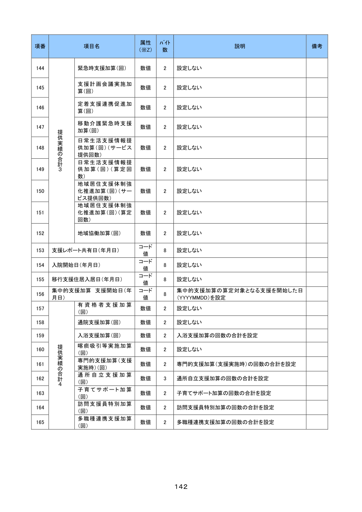
claude-haiku-5-5
- [改ページ] 前後ページで列見出しの書き起こしが一致しない
表1 record_layout 前頁から続く次頁へ続く
| 項番 | 項目名 | 属性 | 桁数 | 内容 | 必須 | 備考 |
|---|---|---|---|---|---|---|
| 144 | 提供実績の合計3 > 緊急時支援加算(回) | 数値 | 2 | 設定しない | ||
| 145 | 提供実績の合計3 > 支援計画会議実施加算(回) | 数値 | 2 | 設定しない | ||
| 146 | 提供実績の合計3 > 定着支援連携促進加算(回) | 数値 | 2 | 設定しない | ||
| 147 | 提供実績の合計3 > 移動介護緊急時支援加算(回) | 数値 | 2 | 設定しない | ||
| 148 | 提供実績の合計3 > 日常生活支援情報提供加算(回)(サービス提供回数) | 数値 | 2 | 設定しない | ||
| 149 | 提供実績の合計3 > 日常生活支援情報提供加算(回)(算定回数) | 数値 | 2 | 設定しない | ||
| 150 | 提供実績の合計3 > 地域居住支援体制強化推進加算(回)(サービス提供回数) | 数値 | 2 | 設定しない | ||
| 151 | 提供実績の合計3 > 地域居住支援体制強化推進加算(回)(算定回数) | 数値 | 2 | 設定しない | ||
| 152 | 提供実績の合計3 > 地域協働加算(回) | 数値 | 2 | 設定しない | ||
| 153 | 支援レポート共有日(年月日) | コード値 | 8 | 設定しない | ||
| 154 | 入院開始日(年月日) | コード値 | 8 | 設定しない | ||
| 155 | 移行支援住居入居日(年月日) | コード値 | 8 | 設定しない | ||
| 156 | 集中的支援加算 支援開始日(年月日) | コード値 | 8 | 集中的支援加算の算定対象となる支援を開始した日(YYYYMMDD)を設定 | ||
| 157 | 提供実績の合計4 > 有資格者支援加算(回) | 数値 | 2 | 設定しない | ||
| 158 | 提供実績の合計4 > 通院支援加算(回) | 数値 | 2 | 設定しない | ||
| 159 | 提供実績の合計4 > 入浴支援加算(回) | 数値 | 2 | 入浴支援加算の回数の合計を設定 | ||
| 160 | 提供実績の合計4 > 喀痰吸引等実施加算(回) | 数値 | 2 | 設定しない | ||
| 161 | 提供実績の合計4 > 専門的支援加算(支援実施時)(回) | 数値 | 2 | 専門的支援加算(支援実施時)の回数の合計を設定 | ||
| 162 | 提供実績の合計4 > 通所自立支援加算(回) | 数値 | 3 | 通所自立支援加算の回数の合計を設定 | ||
| 163 | 提供実績の合計4 > 子育てサポート加算(回) | 数値 | 2 | 子育てサポート加算の回数の合計を設定 | ||
| 164 | 提供実績の合計4 > 訪問支援員特別加算(回) | 数値 | 2 | 訪問支援員特別加算の回数の合計を設定 | ||
| 165 | 提供実績の合計4 > 多職種連携支援加算(回) | 数値 | 2 | 多職種連携支援加算の回数の合計を設定 |
uncertain（モデル自己申告）
- この表は項番144から始まり、前ページからの続きと思われる（表題なし、見出し行のみ掲載）。continued_from_prev_page は推定。
- 「項目名」見出しの下に2つの列（縦結合の大分類列と項目名列）があるが、見出しに個別の列名がないため、columns の『項目名 > 大分類』『項目名 > 項目名』は配置から補った名称。
- 「説明」列の内容を content に、「備考」列を note に入れた（原文の列名は説明・備考）。
- 表の属性見出しは『属性（※Z）』と読めるが、※Zの注記はこのページには見当たらない。
- record の exchange_id / name / parent はこのページから読み取れないため null。
claude-sonnet-5-5
- [改ページ] p278→p279 の連続性 OK
表1 record_layout 前頁から続く次頁へ続く
| 項番 | 項目名 | 属性 | 桁数 | 内容 | 必須 | 備考 |
|---|---|---|---|---|---|---|
| 144 | 提供実績の合計3 > 緊急時支援加算(回) | 数値 | 2 | 設定しない | ||
| 145 | 提供実績の合計3 > 支援計画会議実施加算(回) | 数値 | 2 | 設定しない | ||
| 146 | 提供実績の合計3 > 定着支援連携促進加算(回) | 数値 | 2 | 設定しない | ||
| 147 | 提供実績の合計3 > 移動介護緊急時支援加算(回) | 数値 | 2 | 設定しない | ||
| 148 | 提供実績の合計3 > 日常生活支援情報提供加算(回)(サービス提供回数) | 数値 | 2 | 設定しない | ||
| 149 | 提供実績の合計3 > 日常生活支援情報提供加算(回)(算定回数) | 数値 | 2 | 設定しない | ||
| 150 | 提供実績の合計3 > 地域居住支援体制強化推進加算(回)(サービス提供回数) | 数値 | 2 | 設定しない | ||
| 151 | 提供実績の合計3 > 地域居住支援体制強化推進加算(回)(算定回数) | 数値 | 2 | 設定しない | ||
| 152 | 提供実績の合計3 > 地域協働加算(回) | 数値 | 2 | 設定しない | ||
| 153 | 支援レポート共有日(年月日) | コード値 | 8 | 設定しない | ||
| 154 | 入院開始日(年月日) | コード値 | 8 | 設定しない | ||
| 155 | 移行支援住居入居日(年月日) | コード値 | 8 | 設定しない | ||
| 156 | 集中的支援加算 支援開始日(年月日) | コード値 | 8 | 集中的支援加算の算定対象となる支援を開始した日(YYYYMMDD)を設定 | ||
| 157 | 提供実績の合計4 > 有資格者支援加算(回) | 数値 | 2 | 設定しない | ||
| 158 | 提供実績の合計4 > 通院支援加算(回) | 数値 | 2 | 設定しない | ||
| 159 | 提供実績の合計4 > 入浴支援加算(回) | 数値 | 2 | 入浴支援加算の回数の合計を設定 | ||
| 160 | 提供実績の合計4 > 喀痰吸引等実施加算(回) | 数値 | 2 | 設定しない | ||
| 161 | 提供実績の合計4 > 専門的支援加算(支援実施時)(回) | 数値 | 2 | 専門的支援加算(支援実施時)の回数の合計を設定 | ||
| 162 | 提供実績の合計4 > 通所自立支援加算(回) | 数値 | 3 | 通所自立支援加算の回数の合計を設定 | ||
| 163 | 提供実績の合計4 > 子育てサポート加算(回) | 数値 | 2 | 子育てサポート加算の回数の合計を設定 | ||
| 164 | 提供実績の合計4 > 訪問支援員特別加算(回) | 数値 | 2 | 訪問支援員特別加算の回数の合計を設定 | ||
| 165 | 提供実績の合計4 > 多職種連携支援加算(回) | 数値 | 2 | 多職種連携支援加算の回数の合計を設定 |
uncertain（モデル自己申告）
- 表は前ページからの続き。レコード名・交換情報識別番号はこのページから読み取れない。
- 「提供実績の合計3」「提供実績の合計4」は縦書きの結合セルとして全該当行のname_pathに入れた。
shogai_jigyosho_r0710_p282 — 印字p.

claude-haiku-5-5
- [改ページ] p282→p283 の連続性 OK
- テキストレイヤに見つからないセル: 9 個（赤枠）
表1 record_layout 前頁から続く次頁へ続く
| 項番 | 項目名 | 属性 | 桁数 | 内容 | 必須 | 備考 |
|---|---|---|---|---|---|---|
| 44 | 日中支援加算（算定回数） | コード値 | 1 | 設定しない。 | ||
| 45 | 算定日数 | コード値 | 1 | 保育所等訪問支援、居宅訪問型児童発達支援を行った場合に1を設定 | ||
| 46 | 自立訓練 訪問型 時間数 | 数値 | 4 | 設定しない。 | ||
| 47 | 実費算定 > 朝食 | コード値 | 1 | 補足給付適用の有無が有りの場合で、利用契約に従って朝食を提供した場合1を設定。 | ※2 | |
| 48 | 実費算定 > 昼食 | コード値 | 1 | 補足給付適用の有無が有りの場合で、利用契約に従って昼食を提供した場合1を設定。 | ※2 | |
| 49 | 実費算定 > 夕食 | コード値 | 1 | 補足給付適用の有無が有りの場合で、利用契約に従って夕食を提供した場合1を設定。 | ※2 | |
| 50 | 実費算定 > 光熱水費 | コード値 | 1 | 補足給付適用の有無が有りの場合で、利用契約に従って、光熱水費を徴収する日に1を設定。 | ||
| 51 | 重度包括 > 適用単価 | 数値 | 3 | 設定しない。 | ||
| 52 | 重度包括 > 基本単位数 | 数値 | 4 | 設定しない。 | ||
| 53 | 重度包括 > 加算 | コード値 | 1 | 設定しない。 | ||
| 54 | 重度包括 > 加算後単位数 | 数値 | 4 | 設定しない。 | ||
| 55 | 重度包括 > 単位数 | 数値 | 4 | 設定しない。 | ||
| 56 | 重度包括 > 1日計 | 数値 | 5 | 設定しない。 | ||
| 57 | 重度訪問〈様式３－２〉 > 1時間（13時間） | コード値 | 1 | 設定しない。 | ||
| 58 | 重度訪問〈様式３－２〉 > 2時間（14時間） | コード値 | 1 | 設定しない。 | ||
| 59 | 重度訪問〈様式３－２〉 > 3時間（15時間） | コード値 | 1 | 設定しない。 | ||
| 60 | 重度訪問〈様式３－２〉 > 4時間（16時間） | コード値 | 1 | 設定しない。 | ||
| 61 | 重度訪問〈様式３－２〉 > 5時間（17時間） | コード値 | 1 | 設定しない。 | ||
| 62 | 重度訪問〈様式３－２〉 > 6時間（18時間） | コード値 | 1 | 設定しない。 | ||
| 63 | 重度訪問〈様式３－２〉 > 7時間（19時間） | コード値 | 1 | 設定しない。 | ||
| 64 | 重度訪問〈様式３－２〉 > 8時間（20時間） | コード値 | 1 | 設定しない。 | ||
| 65 | 重度訪問〈様式３－２〉 > 9時間（21時間） | コード値 | 1 | 設定しない。 |
uncertain（モデル自己申告）
- 項番44から始まり、表題がないため前ページからの続きと判断した（後処理で再判定）。
- 最終行（65）の後の重度訪問（様式３－２）の行が次ページに続く可能性がある。continues_to_next_pageは推定。
- 備考欄の※2の本文は本ページに見当たらない。
- 説明欄の「1」の全角・半角表記は画像から判別しきれなかったため半角で書き起こした。
claude-sonnet-5-5
- [改ページ] p282→p283 の連続性 OK
表1 record_layout 前頁から続く次頁へ続く
| 項番 | 項目名 | 属性 | 桁数 | 内容 | 必須 | 備考 |
|---|---|---|---|---|---|---|
| 44 | 日中支援加算（算定回数） | コード値 | 1 | 設定しない。 | ||
| 45 | 算定日数 | コード値 | 1 | 保育所等訪問支援、居宅訪問型児童発達支援を行った場合に1を設定 | ||
| 46 | 自立訓練 訪問型時間数 | 数値 | 4 | 設定しない。 | ||
| 47 | 実費算定 > 朝食 | コード値 | 1 | 補足給付適用の有無が有りの場合で、利用契約に従って朝食を提供した場合１を設定。 | ※2 | |
| 48 | 実費算定 > 昼食 | コード値 | 1 | 補足給付適用の有無が有りの場合で、利用契約に従って昼食を提供した場合１を設定。 | ※2 | |
| 49 | 実費算定 > 夕食 | コード値 | 1 | 補足給付適用の有無が有りの場合で、利用契約に従って夕食を提供した場合１を設定。 | ※2 | |
| 50 | 実費算定 > 光熱水費 | コード値 | 1 | 補足給付適用の有無が有りの場合で、利用契約に従って、光熱水費を徴収する日に１を設定。 | ||
| 51 | 重度包括 > 適用単価 | 数値 | 3 | 設定しない。 | ||
| 52 | 重度包括 > 基本単位数 | 数値 | 4 | 設定しない。 | ||
| 53 | 重度包括 > 加算 | コード値 | 1 | 設定しない。 | ||
| 54 | 重度包括 > 加算後単位数 | 数値 | 4 | 設定しない。 | ||
| 55 | 重度包括 > 単位数 | 数値 | 4 | 設定しない。 | ||
| 56 | 重度包括 > 1日計 | 数値 | 5 | 設定しない。 | ||
| 57 | 重度訪問(様式３－２) > 1時間（13時間） | コード値 | 1 | 設定しない。 | ||
| 58 | 重度訪問(様式３－２) > 2時間（14時間） | コード値 | 1 | 設定しない。 | ||
| 59 | 重度訪問(様式３－２) > 3時間（15時間） | コード値 | 1 | 設定しない。 | ||
| 60 | 重度訪問(様式３－２) > 4時間（16時間） | コード値 | 1 | 設定しない。 | ||
| 61 | 重度訪問(様式３－２) > 5時間（17時間） | コード値 | 1 | 設定しない。 | ||
| 62 | 重度訪問(様式３－２) > 6時間（18時間） | コード値 | 1 | 設定しない。 | ||
| 63 | 重度訪問(様式３－２) > 7時間（19時間） | コード値 | 1 | 設定しない。 | ||
| 64 | 重度訪問(様式３－２) > 8時間（20時間） | コード値 | 1 | 設定しない。 | ||
| 65 | 重度訪問(様式３－２) > 9時間（21時間） | コード値 | 1 | 設定しない。 |
uncertain（モデル自己申告）
- 表は前ページからの続き（項番44から開始）。
- 項目名の列見出しは2列にまたがる。縦結合グループ名（実費算定・重度包括・重度訪問(様式３－２)）は縦書きで、「重度訪問(様式３－２)」の括弧・数字の表記は読み取りに自信がない。
- 項目名「1時間（13時間）」等は2行で表示、改行を詰めて記載。
shogai_jigyosho_r0710_p283 — 印字p.

claude-haiku-5-5
- [改ページ] p283→p284 の連続性 OK
- テキストレイヤに見つからないセル: 3 個（赤枠）
表1 record_layout 前頁から続く次頁へ続く
| 項番 | 項目名 | 属性 | 桁数 | 内容 | 必須 | 備考 |
|---|---|---|---|---|---|---|
| 66 | （様式３－２）重度訪問 > 10時間（22時間） | コード値 | 1 | 設定しない。 | ||
| 67 | （様式３－２）重度訪問 > 11時間（23時間） | コード値 | 1 | 設定しない。 | ||
| 68 | （様式３－２）重度訪問 > 12時間（24時間） | コード値 | 1 | 設定しない。 | ||
| 69 | 緊急時対応加算 | コード値 | 1 | 設定しない。 | ||
| 70 | 初回加算 | コード値 | 1 | 初回加算を算定する場合、1を設定 | ||
| 71 | 福祉専門職員等連携加算 | コード値 | 1 | 設定しない。 | ||
| 72 | 行動障害支援連携加算 | コード値 | 1 | 設定しない。 | ||
| 73 | 行動障害支援指導連携加算 | コード値 | 1 | 設定しない。 | ||
| 74 | 医療連携体制加算 | コード値 | 1 | 医療連携体制加算（Ⅰ）を算定する場合、1を設定 医療連携体制加算（Ⅱ）を算定する場合、2を設定 医療連携体制加算（Ⅲ）を算定する場合、3を設定 医療連携体制加算（Ⅳ）を算定する場合、4を設定 医療連携体制加算（Ⅴ）を算定する場合、5を設定 医療連携体制加算（Ⅶ）を算定する場合、7を設定 | ※6 | |
| 75 | 緊急短期入所受入加算 | コード値 | 1 | 設定しない。 | ||
| 76 | 単独型加算(一定の条件を満たす場合) | コード値 | 1 | 設定しない。 | ||
| 77 | 重度障害者支援加算(一定の条件を満たす場合) | コード値 | 1 | 設定しない。 | ||
| 78 | 家族支援加算 | コード値 | 1 | 家族支援加算（Ⅰ）イを算定する場合、1を設定 家族支援加算（Ⅰ）ロを算定する場合、2を設定 家族支援加算（Ⅰ）ハを算定する場合、3を設定 家族支援加算（Ⅰ）ニを算定する場合、4を設定 家族支援加算（Ⅱ）イを算定する場合、5を設定 家族支援加算（Ⅱ）ロを算定する場合、6を設定 | ※7 ※8 | |
| 79 | 利用人数 | 数値 | 2 | 設定しない。 | ||
| 80 | 同行支援 | コード値 | 1 | 設定しない。 | ||
| 81 | 特別地域加算 | コード値 | 1 | 設定しない。 | ||
| 82 | 低所得者利用加算 | コード値 | 1 | 設定しない。 | ||
| 83 | 体験利用支援加算 | コード値 | 1 | 体験利用支援加算（Ⅰ）を算定する場合、1を設定 体験利用支援加算（Ⅱ）を算定する場合、2を設定 | ||
| 84 | 定員超過特例加算 | コード値 | 1 | 設定しない。 |
uncertain（モデル自己申告）
- 表は項番66から始まり表題がないため、前ページからの続きと判断した（continued_from_prev_page）。
- 項番66〜68の項目名の縦結合セル「（様式３－２）重度訪問」は縦書きの文字を横書きに直して記載した。
- 表が次ページへ続くかどうかは本ページ単独では判断できない（ページ下部に余白があるため false とした）。
- 備考欄の※6・※7・※8は本ページ内に対応する注記が無いため、footnotes には入れていない。
claude-sonnet-5-5
- [改ページ] p283→p284 の連続性 OK
表1 record_layout 前頁から続く次頁へ続く
| 項番 | 項目名 | 属性 | 桁数 | 内容 | 必須 | 備考 |
|---|---|---|---|---|---|---|
| 66 | 重度訪問（様式３－２） > 10時間（22時間） | コード値 | 1 | 設定しない。 | ||
| 67 | 重度訪問（様式３－２） > 11時間（23時間） | コード値 | 1 | 設定しない。 | ||
| 68 | 重度訪問（様式３－２） > 12時間（24時間） | コード値 | 1 | 設定しない。 | ||
| 69 | 緊急時対応加算 | コード値 | 1 | 設定しない。 | ||
| 70 | 初回加算 | コード値 | 1 | 初回加算を算定する場合、1を設定 | ||
| 71 | 福祉専門職員等連携加算 | コード値 | 1 | 設定しない。 | ||
| 72 | 行動障害支援連携加算 | コード値 | 1 | 設定しない。 | ||
| 73 | 行動障害支援指導連携加算 | コード値 | 1 | 設定しない。 | ||
| 74 | 医療連携体制加算 | コード値 | 1 | 医療連携体制加算(Ⅰ)を算定する場合、1を設定 医療連携体制加算(Ⅱ)を算定する場合、2を設定 医療連携体制加算(Ⅲ)を算定する場合、3を設定 医療連携体制加算(Ⅳ)を算定する場合、4を設定 医療連携体制加算(Ⅴ)を算定する場合、5を設定 医療連携体制加算(Ⅶ)を算定する場合、7を設定 | ※6 | |
| 75 | 緊急短期入所受入加算 | コード値 | 1 | 設定しない。 | ||
| 76 | 単独型加算(一定の条件を満たす場合) | コード値 | 1 | 設定しない。 | ||
| 77 | 重度障害者支援加算(一定の条件を満たす場合) | コード値 | 1 | 設定しない。 | ||
| 78 | 家族支援加算 | コード値 | 1 | 家族支援加算(Ⅰ)イを算定する場合、1を設定 家族支援加算(Ⅰ)ロを算定する場合、2を設定 家族支援加算(Ⅰ)ハを算定する場合、3を設定 家族支援加算(Ⅰ)ニを算定する場合、4を設定 家族支援加算(Ⅱ)イを算定する場合、5を設定 家族支援加算(Ⅱ)ロを算定する場合、6を設定 | ※7 ※8 | |
| 79 | 利用人数 | 数値 | 2 | 設定しない。 | ||
| 80 | 同行支援 | コード値 | 1 | 設定しない。 | ||
| 81 | 特別地域加算 | コード値 | 1 | 設定しない。 | ||
| 82 | 低所得者利用加算 | コード値 | 1 | 設定しない。 | ||
| 83 | 体験利用支援加算 | コード値 | 1 | 体験利用支援加算(Ⅰ)を算定する場合、1を設定 体験利用支援加算(Ⅱ)を算定する場合、2を設定 | ||
| 84 | 定員超過特例加算 | コード値 | 1 | 設定しない。 |
uncertain（モデル自己申告）
- 前ページからの続きの表のため、record は不明
- 項番66-68の「重度訪問（様式３－２）」は縦書きセルで、読み取りに多少の不確かさあり
shogai_jigyosho_r0710_p287 — 印字p.

claude-haiku-5-5
- [改ページ] 前後ページで列見出しの書き起こしが一致しない
表1 required_matrix(5) 入力必須項目と様式の対応表（基本情報レコード）【サービス提供年月：令和6年4月以降】 次頁へ続く
| 項番 | 項目名 | 属性 | 桁数 | 内容 | 必須 | 備考 |
|---|---|---|---|---|---|---|
| 1 | 交換情報識別番号 | 0101 障害児入所支援:◎ 0301 児童発達支援:◎ 0401 医療型児童発達支援:◎ 0501 放課後等デイサービス:◎ 0601 保育所等訪問支援:◎ 0701 居宅訪問型児童発達支援:◎ | ||||
| 2 | レコード種別コード | 0101 障害児入所支援:◎ 0301 児童発達支援:◎ 0401 医療型児童発達支援:◎ 0501 放課後等デイサービス:◎ 0601 保育所等訪問支援:◎ 0701 居宅訪問型児童発達支援:◎ | ||||
| 3 | サービス提供年月 | 0101 障害児入所支援:◎ 0301 児童発達支援:◎ 0401 医療型児童発達支援:◎ 0501 放課後等デイサービス:◎ 0601 保育所等訪問支援:◎ 0701 居宅訪問型児童発達支援:◎ | ||||
| 4 | 都道府県等番号 | 0101 障害児入所支援:◎ 0301 児童発達支援:◎ 0401 医療型児童発達支援:◎ 0501 放課後等デイサービス:◎ 0601 保育所等訪問支援:◎ 0701 居宅訪問型児童発達支援:◎ | ||||
| 5 | 事業所番号 | 0101 障害児入所支援:◎ 0301 児童発達支援:◎ 0401 医療型児童発達支援:◎ 0501 放課後等デイサービス:◎ 0601 保育所等訪問支援:◎ 0701 居宅訪問型児童発達支援:◎ | ||||
| 6 | 受給者証番号 | 0101 障害児入所支援:◎ 0301 児童発達支援:◎ 0401 医療型児童発達支援:◎ 0501 放課後等デイサービス:◎ 0601 保育所等訪問支援:◎ 0701 居宅訪問型児童発達支援:◎ | ||||
| 7 | 様式種別番号 | 0101 障害児入所支援:◎ 0301 児童発達支援:◎ 0401 医療型児童発達支援:◎ 0501 放課後等デイサービス:◎ 0601 保育所等訪問支援:◎ 0701 居宅訪問型児童発達支援:◎ | ||||
| 8 | 補足給付関係情報 > 補足給付適用の有無 | 0101 障害児入所支援:○ 0301 児童発達支援:－ 0401 医療型児童発達支援:－ 0501 放課後等デイサービス:－ 0601 保育所等訪問支援:－ 0701 居宅訪問型児童発達支援:－ | ||||
| 9 | 補足給付関係情報 > 補足給付額（円／日） | 0101 障害児入所支援:○ 0301 児童発達支援:－ 0401 医療型児童発達支援:－ 0501 放課後等デイサービス:－ 0601 保育所等訪問支援:－ 0701 居宅訪問型児童発達支援:－ | ||||
| 10 | 補足給付関係情報 > 食費の単価 朝食（円／日） | 0101 障害児入所支援:○ 0301 児童発達支援:－ 0401 医療型児童発達支援:－ 0501 放課後等デイサービス:－ 0601 保育所等訪問支援:－ 0701 居宅訪問型児童発達支援:－ | ||||
| 11 | 補足給付関係情報 > 食費の単価 昼食（円／日） | 0101 障害児入所支援:○ 0301 児童発達支援:－ 0401 医療型児童発達支援:－ 0501 放課後等デイサービス:－ 0601 保育所等訪問支援:－ 0701 居宅訪問型児童発達支援:－ | ||||
| 12 | 補足給付関係情報 > 食費の単価 夕食（円／日） | 0101 障害児入所支援:○ 0301 児童発達支援:－ 0401 医療型児童発達支援:－ 0501 放課後等デイサービス:－ 0601 保育所等訪問支援:－ 0701 居宅訪問型児童発達支援:－ | ||||
| 13 | 補足給付関係情報 > 食費の単価 一日（円／日） | 0101 障害児入所支援:○ 0301 児童発達支援:－ 0401 医療型児童発達支援:－ 0501 放課後等デイサービス:－ 0601 保育所等訪問支援:－ 0701 居宅訪問型児童発達支援:－ | ||||
| 14 | 補足給付関係情報 > 光熱水費の単価 一日（円／日） | 0101 障害児入所支援:○ 0301 児童発達支援:－ 0401 医療型児童発達支援:－ 0501 放課後等デイサービス:－ 0601 保育所等訪問支援:－ 0701 居宅訪問型児童発達支援:－ | ||||
| 15 | 補足給付関係情報 > 光熱水費の単価 一月（円／月） | 0101 障害児入所支援:○ 0301 児童発達支援:－ 0401 医療型児童発達支援:－ 0501 放課後等デイサービス:－ 0601 保育所等訪問支援:－ 0701 居宅訪問型児童発達支援:－ | ||||
| 16 | 合計１ > 内訳 100% | 0101 障害児入所支援:－ 0301 児童発達支援:－ 0401 医療型児童発達支援:－ 0501 放課後等デイサービス:－ 0601 保育所等訪問支援:－ 0701 居宅訪問型児童発達支援:－ | ||||
| 17 | 合計１ > 内訳 70% | 0101 障害児入所支援:－ 0301 児童発達支援:－ 0401 医療型児童発達支援:－ 0501 放課後等デイサービス:－ 0601 保育所等訪問支援:－ 0701 居宅訪問型児童発達支援:－ | ||||
| 18 | 合計１ > 内訳 重訪 | 0101 障害児入所支援:－ 0301 児童発達支援:－ 0401 医療型児童発達支援:－ 0501 放課後等デイサービス:－ 0601 保育所等訪問支援:－ 0701 居宅訪問型児童発達支援:－ | ||||
| 19 | 合計１ > 合計 算定時間数計 | 0101 障害児入所支援:－ 0301 児童発達支援:○ 0401 医療型児童発達支援:－ 0501 放課後等デイサービス:○ 0601 保育所等訪問支援:－ 0701 居宅訪問型児童発達支援:－ | ||||
| 20 | 合計２ > 内訳 100% | 0101 障害児入所支援:－ 0301 児童発達支援:－ 0401 医療型児童発達支援:－ 0501 放課後等デイサービス:－ 0601 保育所等訪問支援:－ 0701 居宅訪問型児童発達支援:－ | ||||
| 21 | 合計２ > 内訳 70% | 0101 障害児入所支援:－ 0301 児童発達支援:－ 0401 医療型児童発達支援:－ 0501 放課後等デイサービス:－ 0601 保育所等訪問支援:－ 0701 居宅訪問型児童発達支援:－ | ||||
| 22 | 合計２ > 内訳 重訪 | 0101 障害児入所支援:－ 0301 児童発達支援:－ 0401 医療型児童発達支援:－ 0501 放課後等デイサービス:－ 0601 保育所等訪問支援:－ 0701 居宅訪問型児童発達支援:－ | ||||
| 23 | 合計２ > 合計 算定時間数計 | 0101 障害児入所支援:－ 0301 児童発達支援:－ 0401 医療型児童発達支援:－ 0501 放課後等デイサービス:－ 0601 保育所等訪問支援:－ 0701 居宅訪問型児童発達支援:－ | ||||
| 24 | 合計３ > 内訳 100% | 0101 障害児入所支援:－ 0301 児童発達支援:－ 0401 医療型児童発達支援:－ 0501 放課後等デイサービス:－ 0601 保育所等訪問支援:－ 0701 居宅訪問型児童発達支援:－ | ||||
| 25 | 合計３ > 内訳 90% | 0101 障害児入所支援:－ 0301 児童発達支援:－ 0401 医療型児童発達支援:－ 0501 放課後等デイサービス:－ 0601 保育所等訪問支援:－ 0701 居宅訪問型児童発達支援:－ | ||||
| 26 | 合計３ > 合計 算定時間数計 | 0101 障害児入所支援:－ 0301 児童発達支援:－ 0401 医療型児童発達支援:－ 0501 放課後等デイサービス:－ 0601 保育所等訪問支援:－ 0701 居宅訪問型児童発達支援:－ | ||||
| 27 | 合計４ > 内訳 100% | 0101 障害児入所支援:－ 0301 児童発達支援:－ 0401 医療型児童発達支援:－ 0501 放課後等デイサービス:－ 0601 保育所等訪問支援:－ 0701 居宅訪問型児童発達支援:－ | ||||
| 28 | 合計４ > 内訳 90% | 0101 障害児入所支援:－ 0301 児童発達支援:－ 0401 医療型児童発達支援:－ 0501 放課後等デイサービス:－ 0601 保育所等訪問支援:－ 0701 居宅訪問型児童発達支援:－ | ||||
| 29 | 合計４ > 合計 算定時間数計 | 0101 障害児入所支援:－ 0301 児童発達支援:－ 0401 医療型児童発達支援:－ 0501 放課後等デイサービス:－ 0601 保育所等訪問支援:－ 0701 居宅訪問型児童発達支援:－ | ||||
| 30 | 合計５ > 内訳 100% | 0101 障害児入所支援:－ 0301 児童発達支援:－ 0401 医療型児童発達支援:－ 0501 放課後等デイサービス:－ 0601 保育所等訪問支援:－ 0701 居宅訪問型児童発達支援:－ | ||||
| 31 | 合計５ > 内訳 90% | 0101 障害児入所支援:－ 0301 児童発達支援:－ 0401 医療型児童発達支援:－ 0501 放課後等デイサービス:－ 0601 保育所等訪問支援:－ 0701 居宅訪問型児童発達支援:－ | ||||
| 32 | 合計５ > 合計 算定回数計 | 0101 障害児入所支援:－ 0301 児童発達支援:－ 0401 医療型児童発達支援:－ 0501 放課後等デイサービス:－ 0601 保育所等訪問支援:－ 0701 居宅訪問型児童発達支援:－ | ||||
| 33 | 提供実績の合計 > 算定 移動介護分 | 0101 障害児入所支援:－ 0301 児童発達支援:－ 0401 医療型児童発達支援:－ 0501 放課後等デイサービス:－ 0601 保育所等訪問支援:－ 0701 居宅訪問型児童発達支援:－ | ||||
| 34 | 提供実績の合計 > 実績 送迎加算（回） | 0101 障害児入所支援:－ 0301 児童発達支援:○ 0401 医療型児童発達支援:○ 0501 放課後等デイサービス:○ 0601 保育所等訪問支援:－ 0701 居宅訪問型児童発達支援:－ | ||||
| 35 | 提供実績の合計 > 実績 家庭連携加算（回）（サービス提供回数） | 0101 障害児入所支援:－ 0301 児童発達支援:－ 0401 医療型児童発達支援:－ 0501 放課後等デイサービス:－ 0601 保育所等訪問支援:－ 0701 居宅訪問型児童発達支援:－ | ||||
| 36 | 提供実績の合計 > 実績 家庭連携加算（回）（算定回数） | 0101 障害児入所支援:－ 0301 児童発達支援:－ 0401 医療型児童発達支援:－ 0501 放課後等デイサービス:－ 0601 保育所等訪問支援:－ 0701 居宅訪問型児童発達支援:－ | ||||
| 37 | 提供実績の合計 > 合計 算定日数（日） | 0101 障害児入所支援:－ 0301 児童発達支援:－ 0401 医療型児童発達支援:－ 0501 放課後等デイサービス:－ 0601 保育所等訪問支援:○ 0701 居宅訪問型児童発達支援:○ | ||||
| 38 | 提供実績の合計 > 夜間支援体制加算（回） | 0101 障害児入所支援:－ 0301 児童発達支援:－ 0401 医療型児童発達支援:－ 0501 放課後等デイサービス:－ 0601 保育所等訪問支援:－ 0701 居宅訪問型児童発達支援:－ | ||||
| 39 | 提供実績の合計 > 日中支援加算（回）（サービス提供回数） | 0101 障害児入所支援:－ 0301 児童発達支援:－ 0401 医療型児童発達支援:－ 0501 放課後等デイサービス:－ 0601 保育所等訪問支援:－ 0701 居宅訪問型児童発達支援:－ | ||||
| 40 | 提供実績の合計 > 日中支援加算（回）（算定回数） | 0101 障害児入所支援:－ 0301 児童発達支援:－ 0401 医療型児童発達支援:－ 0501 放課後等デイサービス:－ 0601 保育所等訪問支援:－ 0701 居宅訪問型児童発達支援:－ | ||||
| 41 | 提供実績の合計 > 通所型（回） | 0101 障害児入所支援:－ 0301 児童発達支援:－ 0401 医療型児童発達支援:－ 0501 放課後等デイサービス:－ 0601 保育所等訪問支援:－ 0701 居宅訪問型児童発達支援:－ | ||||
| 42 | 提供実績の合計 > 訪問型 1時間未満（回） | 0101 障害児入所支援:－ 0301 児童発達支援:－ 0401 医療型児童発達支援:－ 0501 放課後等デイサービス:－ 0601 保育所等訪問支援:－ 0701 居宅訪問型児童発達支援:－ | ||||
| 43 | 提供実績の合計 > 訪問型 1時間以上（回） | 0101 障害児入所支援:－ 0301 児童発達支援:－ 0401 医療型児童発達支援:－ 0501 放課後等デイサービス:－ 0601 保育所等訪問支援:－ 0701 居宅訪問型児童発達支援:－ | ||||
| 44 | 提供実績の合計 > 短期滞在加算（回） | 0101 障害児入所支援:－ 0301 児童発達支援:－ 0401 医療型児童発達支援:－ 0501 放課後等デイサービス:－ 0601 保育所等訪問支援:－ 0701 居宅訪問型児童発達支援:－ | ||||
| 45 | 提供実績の合計 > 食事提供加算（回） | 0101 障害児入所支援:－ 0301 児童発達支援:○ 0401 医療型児童発達支援:○ 0501 放課後等デイサービス:－ 0601 保育所等訪問支援:－ 0701 居宅訪問型児童発達支援:－ | ||||
| 46 | 提供実績の合計 > 入院・外泊時加算（回） | 0101 障害児入所支援:○ 0301 児童発達支援:－ 0401 医療型児童発達支援:－ 0501 放課後等デイサービス:－ 0601 保育所等訪問支援:－ 0701 居宅訪問型児童発達支援:－ | ||||
| 47 | 提供実績の合計 > 入院時支援特別加算（回）（サービス提供回数） | 0101 障害児入所支援:○ 0301 児童発達支援:－ 0401 医療型児童発達支援:－ 0501 放課後等デイサービス:－ 0601 保育所等訪問支援:－ 0701 居宅訪問型児童発達支援:－ | ||||
| 48 | 提供実績の合計 > 入院時支援特別加算（回）（算定回数） | 0101 障害児入所支援:○ 0301 児童発達支援:－ 0401 医療型児童発達支援:－ 0501 放課後等デイサービス:－ 0601 保育所等訪問支援:－ 0701 居宅訪問型児童発達支援:－ | ||||
| 49 | 提供実績の合計 > 自立生活支援加算（Ⅱ）（回） | 0101 障害児入所支援:－ 0301 児童発達支援:－ 0401 医療型児童発達支援:－ 0501 放課後等デイサービス:－ 0601 保育所等訪問支援:－ 0701 居宅訪問型児童発達支援:－ | ||||
| 50 | 提供実績の合計 > 自活訓練加算（回） | 0101 障害児入所支援:○ 0301 児童発達支援:－ 0401 医療型児童発達支援:－ 0501 放課後等デイサービス:－ 0601 保育所等訪問支援:－ 0701 居宅訪問型児童発達支援:－ | ||||
| 51 | 提供実績の合計 > 訪問支援特別加算（回）（サービス提供回数） | 0101 障害児入所支援:－ 0301 児童発達支援:－ 0401 医療型児童発達支援:－ 0501 放課後等デイサービス:－ 0601 保育所等訪問支援:－ 0701 居宅訪問型児童発達支援:－ | ||||
| 52 | 提供実績の合計 > 訪問支援特別加算（回）（算定回数） | 0101 障害児入所支援:－ 0301 児童発達支援:－ 0401 医療型児童発達支援:－ 0501 放課後等デイサービス:－ 0601 保育所等訪問支援:－ 0701 居宅訪問型児童発達支援:－ | ||||
| 53 | 提供実績の合計 > 施設外支援 当月（日） | 0101 障害児入所支援:－ 0301 児童発達支援:－ 0401 医療型児童発達支援:－ 0501 放課後等デイサービス:－ 0601 保育所等訪問支援:－ 0701 居宅訪問型児童発達支援:－ | ||||
| 54 | 提供実績の合計 > 施設外支援 累計（日／180日） | 0101 障害児入所支援:－ 0301 児童発達支援:－ 0401 医療型児童発達支援:－ 0501 放課後等デイサービス:－ 0601 保育所等訪問支援:－ 0701 居宅訪問型児童発達支援:－ | ||||
| 55 | 提供実績の合計 > 帰宅時支援加算（回）（サービス提供回数） | 0101 障害児入所支援:－ 0301 児童発達支援:－ 0401 医療型児童発達支援:－ 0501 放課後等デイサービス:－ 0601 保育所等訪問支援:－ 0701 居宅訪問型児童発達支援:－ | ||||
| 56 | 提供実績の合計 > 帰宅時支援加算（回）（算定回数） | 0101 障害児入所支援:－ 0301 児童発達支援:－ 0401 医療型児童発達支援:－ 0501 放課後等デイサービス:－ 0601 保育所等訪問支援:－ 0701 居宅訪問型児童発達支援:－ |
claude-sonnet-5-5
- [改ページ] 前後ページで列見出しの書き起こしが一致しない
表1 required_matrix（5） 入力必須項目と様式の対応表（基本情報レコード）【サービス提供年月：令和6年4月以降】 次頁へ続く
| 項番 | 項目名 | 属性 | 桁数 | 内容 | 必須 | 備考 |
|---|---|---|---|---|---|---|
| 1 | 交換情報識別番号 | 0101:◎ 0301:◎ 0401:◎ 0501:◎ 0601:◎ 0701:◎ | ||||
| 2 | レコード種別コード | 0101:◎ 0301:◎ 0401:◎ 0501:◎ 0601:◎ 0701:◎ | ||||
| 3 | サービス提供年月 | 0101:◎ 0301:◎ 0401:◎ 0501:◎ 0601:◎ 0701:◎ | ||||
| 4 | 都道府県等番号 | 0101:◎ 0301:◎ 0401:◎ 0501:◎ 0601:◎ 0701:◎ | ||||
| 5 | 事業所番号 | 0101:◎ 0301:◎ 0401:◎ 0501:◎ 0601:◎ 0701:◎ | ||||
| 6 | 受給者証番号 | 0101:◎ 0301:◎ 0401:◎ 0501:◎ 0601:◎ 0701:◎ | ||||
| 7 | 様式種別番号 | 0101:◎ 0301:◎ 0401:◎ 0501:◎ 0601:◎ 0701:◎ | ||||
| 8 | 補足給付関係情報 > 補足給付適用の有無 | 0101:○ 0301:－ 0401:－ 0501:－ 0601:－ 0701:－ | ||||
| 9 | 補足給付関係情報 > 補足給付額(円／日) | 0101:○ 0301:－ 0401:－ 0501:－ 0601:－ 0701:－ | ||||
| 10 | 補足給付関係情報 > 食費の単価 朝食(円／日) | 0101:○ 0301:－ 0401:－ 0501:－ 0601:－ 0701:－ | ||||
| 11 | 補足給付関係情報 > 食費の単価 昼食(円／日) | 0101:○ 0301:－ 0401:－ 0501:－ 0601:－ 0701:－ | ||||
| 12 | 補足給付関係情報 > 食費の単価 夕食(円／日) | 0101:○ 0301:－ 0401:－ 0501:－ 0601:－ 0701:－ | ||||
| 13 | 補足給付関係情報 > 食費の単価 一日(円／日) | 0101:○ 0301:－ 0401:－ 0501:－ 0601:－ 0701:－ | ||||
| 14 | 補足給付関係情報 > 光熱水費の単価 一日(円／日) | 0101:○ 0301:－ 0401:－ 0501:－ 0601:－ 0701:－ | ||||
| 15 | 補足給付関係情報 > 光熱水費の単価 一月(円／月) | 0101:○ 0301:－ 0401:－ 0501:－ 0601:－ 0701:－ | ||||
| 16 | 合計1 > 内訳 100% | 0101:－ 0301:－ 0401:－ 0501:－ 0601:－ 0701:－ | ||||
| 17 | 合計1 > 内訳 70% | 0101:－ 0301:－ 0401:－ 0501:－ 0601:－ 0701:－ | ||||
| 18 | 合計1 > 内訳 重訪 | 0101:－ 0301:－ 0401:－ 0501:－ 0601:－ 0701:－ | ||||
| 19 | 合計1 > 合計 算定時間数計 | 0101:－ 0301:○ 0401:－ 0501:○ 0601:－ 0701:－ | ||||
| 20 | 合計2 > 内訳 100% | 0101:－ 0301:－ 0401:－ 0501:－ 0601:－ 0701:－ | ||||
| 21 | 合計2 > 内訳 70% | 0101:－ 0301:－ 0401:－ 0501:－ 0601:－ 0701:－ | ||||
| 22 | 合計2 > 内訳 重訪 | 0101:－ 0301:－ 0401:－ 0501:－ 0601:－ 0701:－ | ||||
| 23 | 合計2 > 合計 算定時間数計 | 0101:－ 0301:－ 0401:－ 0501:－ 0601:－ 0701:－ | ||||
| 24 | 合計3 > 内訳 100% | 0101:－ 0301:－ 0401:－ 0501:－ 0601:－ 0701:－ | ||||
| 25 | 合計3 > 内訳 90% | 0101:－ 0301:－ 0401:－ 0501:－ 0601:－ 0701:－ | ||||
| 26 | 合計3 > 合計 算定時間数計 | 0101:－ 0301:－ 0401:－ 0501:－ 0601:－ 0701:－ | ||||
| 27 | 合計4 > 内訳 100% | 0101:－ 0301:－ 0401:－ 0501:－ 0601:－ 0701:－ | ||||
| 28 | 合計4 > 内訳 90% | 0101:－ 0301:－ 0401:－ 0501:－ 0601:－ 0701:－ | ||||
| 29 | 合計4 > 合計 算定時間数計 | 0101:－ 0301:－ 0401:－ 0501:－ 0601:－ 0701:－ | ||||
| 30 | 合計5 > 内訳 100% | 0101:－ 0301:－ 0401:－ 0501:－ 0601:－ 0701:－ | ||||
| 31 | 合計5 > 内訳 90% | 0101:－ 0301:－ 0401:－ 0501:－ 0601:－ 0701:－ | ||||
| 32 | 合計5 > 合計 算定回数計 | 0101:－ 0301:－ 0401:－ 0501:－ 0601:－ 0701:－ | ||||
| 33 | 提供実績の合計 > 算定 移動介護分 | 0101:－ 0301:－ 0401:－ 0501:－ 0601:－ 0701:－ | ||||
| 34 | 提供実績の合計 > 実績 送迎加算(回) | 0101:－ 0301:○ 0401:○ 0501:○ 0601:－ 0701:－ | ||||
| 35 | 提供実績の合計 > 実績 家庭連携加算(回)(サービス提供回数) | 0101:－ 0301:－ 0401:－ 0501:－ 0601:－ 0701:－ | ||||
| 36 | 提供実績の合計 > 実績 家庭連携加算(回)(算定回数) | 0101:－ 0301:－ 0401:－ 0501:－ 0601:－ 0701:－ | ||||
| 37 | 提供実績の合計 > 合計 算定日数(日) | 0101:－ 0301:－ 0401:－ 0501:－ 0601:○ 0701:○ | ||||
| 38 | 提供実績の合計 > 夜間支援体制加算(回) | 0101:－ 0301:－ 0401:－ 0501:－ 0601:－ 0701:－ | ||||
| 39 | 提供実績の合計 > 日中支援加算(回)(サービス提供回数) | 0101:－ 0301:－ 0401:－ 0501:－ 0601:－ 0701:－ | ||||
| 40 | 提供実績の合計 > 日中支援加算(回)(算定回数) | 0101:－ 0301:－ 0401:－ 0501:－ 0601:－ 0701:－ | ||||
| 41 | 提供実績の合計 > 通所型(回) | 0101:－ 0301:－ 0401:－ 0501:－ 0601:－ 0701:－ | ||||
| 42 | 提供実績の合計 > 訪問型 1時間未満(回) | 0101:－ 0301:－ 0401:－ 0501:－ 0601:－ 0701:－ | ||||
| 43 | 提供実績の合計 > 訪問型 1時間以上(回) | 0101:－ 0301:－ 0401:－ 0501:－ 0601:－ 0701:－ | ||||
| 44 | 提供実績の合計 > 短期滞在加算(回) | 0101:－ 0301:－ 0401:－ 0501:－ 0601:－ 0701:－ | ||||
| 45 | 提供実績の合計 > 食事提供加算(回) | 0101:－ 0301:○ 0401:○ 0501:－ 0601:－ 0701:－ | ||||
| 46 | 提供実績の合計 > 入院･外泊時加算(回) | 0101:○ 0301:－ 0401:－ 0501:－ 0601:－ 0701:－ | ||||
| 47 | 提供実績の合計 > 入院時支援特別加算(回)(サービス提供回数) | 0101:○ 0301:－ 0401:－ 0501:－ 0601:－ 0701:－ | ||||
| 48 | 提供実績の合計 > 入院時支援特別加算(回)(算定回数) | 0101:○ 0301:－ 0401:－ 0501:－ 0601:－ 0701:－ | ||||
| 49 | 提供実績の合計 > 自立生活支援加算(Ⅱ)(回) | 0101:－ 0301:－ 0401:－ 0501:－ 0601:－ 0701:－ | ||||
| 50 | 提供実績の合計 > 自活訓練加算(回) | 0101:○ 0301:－ 0401:－ 0501:－ 0601:－ 0701:－ | ||||
| 51 | 提供実績の合計 > 訪問支援特別加算(回)(サービス提供回数) | 0101:－ 0301:－ 0401:－ 0501:－ 0601:－ 0701:－ | ||||
| 52 | 提供実績の合計 > 訪問支援特別加算(回)(算定回数) | 0101:－ 0301:－ 0401:－ 0501:－ 0601:－ 0701:－ | ||||
| 53 | 提供実績の合計 > 施設外支援 当月(日) | 0101:－ 0301:－ 0401:－ 0501:－ 0601:－ 0701:－ | ||||
| 54 | 提供実績の合計 > 施設外支援 累計(日／180日) | 0101:－ 0301:－ 0401:－ 0501:－ 0601:－ 0701:－ | ||||
| 55 | 提供実績の合計 > 帰宅時支援加算(回)(サービス提供回数) | 0101:－ 0301:－ 0401:－ 0501:－ 0601:－ 0701:－ | ||||
| 56 | 提供実績の合計 > 帰宅時支援加算(回)(算定回数) | 0101:－ 0301:－ 0401:－ 0501:－ 0601:－ 0701:－ |
uncertain（モデル自己申告）
- 列見出し「サービス提供年月」「R6/4以降」「様式種別番号」の上段は columns に反映せず、識別番号と様式名のみを連結した。
- 項番8〜15の縦結合見出しは「補足給付関係情報」、16〜19は「合計1」等と読み取った。
- 項番33〜56の縦結合見出し「提供実績の合計」は33から始まっているか判別しづらいが、同一グループとして扱った。
shogai_jigyosho_r0710_p288 — 印字p.

claude-haiku-5-5
- [改ページ] 前後ページで列見出しの書き起こしが一致しない
- テキストレイヤに見つからないセル: 6 個（赤枠）
表1 required_matrix 前頁から続く次頁へ続く
| 項番 | 項目名 | 属性 | 桁数 | 内容 | 必須 | 備考 |
|---|---|---|---|---|---|---|
| 57 | 実費算定の合計 > 朝食(回) | 様式種別番号 > 0101 > 障害児入所支援:○ 様式種別番号 > 0301 > 児童発達支援:－ 様式種別番号 > 0401 > 医療型児童発達支援:－ 様式種別番号 > 0501 > 放課後等デイサービス:－ 様式種別番号 > 0601 > 保育所等訪問支援:－ 様式種別番号 > 0701 > 居宅訪問型児童発達支援:－ | ||||
| 58 | 実費算定の合計 > 昼食(回) | 様式種別番号 > 0101 > 障害児入所支援:○ 様式種別番号 > 0301 > 児童発達支援:－ 様式種別番号 > 0401 > 医療型児童発達支援:－ 様式種別番号 > 0501 > 放課後等デイサービス:－ 様式種別番号 > 0601 > 保育所等訪問支援:－ 様式種別番号 > 0701 > 居宅訪問型児童発達支援:－ | ||||
| 59 | 実費算定の合計 > 夕食(回) | 様式種別番号 > 0101 > 障害児入所支援:○ 様式種別番号 > 0301 > 児童発達支援:－ 様式種別番号 > 0401 > 医療型児童発達支援:－ 様式種別番号 > 0501 > 放課後等デイサービス:－ 様式種別番号 > 0601 > 保育所等訪問支援:－ 様式種別番号 > 0701 > 居宅訪問型児童発達支援:－ | ||||
| 60 | 実費算定の合計 > 光熱水費(回) | 様式種別番号 > 0101 > 障害児入所支援:○ 様式種別番号 > 0301 > 児童発達支援:－ 様式種別番号 > 0401 > 医療型児童発達支援:－ 様式種別番号 > 0501 > 放課後等デイサービス:－ 様式種別番号 > 0601 > 保育所等訪問支援:－ 様式種別番号 > 0701 > 居宅訪問型児童発達支援:－ | ||||
| 61 | 実費算定の合計 > 各小計 食事(円) | 様式種別番号 > 0101 > 障害児入所支援:○ 様式種別番号 > 0301 > 児童発達支援:－ 様式種別番号 > 0401 > 医療型児童発達支援:－ 様式種別番号 > 0501 > 放課後等デイサービス:－ 様式種別番号 > 0601 > 保育所等訪問支援:－ 様式種別番号 > 0701 > 居宅訪問型児童発達支援:－ | ||||
| 62 | 実費算定の合計 > 各小計 光熱水費(円) | 様式種別番号 > 0101 > 障害児入所支援:○ 様式種別番号 > 0301 > 児童発達支援:－ 様式種別番号 > 0401 > 医療型児童発達支援:－ 様式種別番号 > 0501 > 放課後等デイサービス:－ 様式種別番号 > 0601 > 保育所等訪問支援:－ 様式種別番号 > 0701 > 居宅訪問型児童発達支援:－ | ||||
| 63 | 実費算定の合計 > 実費合計額(円) | 様式種別番号 > 0101 > 障害児入所支援:○ 様式種別番号 > 0301 > 児童発達支援:－ 様式種別番号 > 0401 > 医療型児童発達支援:－ 様式種別番号 > 0501 > 放課後等デイサービス:－ 様式種別番号 > 0601 > 保育所等訪問支援:－ 様式種別番号 > 0701 > 居宅訪問型児童発達支援:－ | ||||
| 64 | 特別加算支援 入所時 > 利用開始日(年月日) | 様式種別番号 > 0101 > 障害児入所支援:－ 様式種別番号 > 0301 > 児童発達支援:－ 様式種別番号 > 0401 > 医療型児童発達支援:－ 様式種別番号 > 0501 > 放課後等デイサービス:－ 様式種別番号 > 0601 > 保育所等訪問支援:－ 様式種別番号 > 0701 > 居宅訪問型児童発達支援:－ | ||||
| 65 | 特別加算支援 入所時 > 30日目(年月日) | 様式種別番号 > 0101 > 障害児入所支援:－ 様式種別番号 > 0301 > 児童発達支援:－ 様式種別番号 > 0401 > 医療型児童発達支援:－ 様式種別番号 > 0501 > 放課後等デイサービス:－ 様式種別番号 > 0601 > 保育所等訪問支援:－ 様式種別番号 > 0701 > 居宅訪問型児童発達支援:－ | ||||
| 66 | 特別加算支援 入所時 > 当月算定日数(日) | 様式種別番号 > 0101 > 障害児入所支援:－ 様式種別番号 > 0301 > 児童発達支援:－ 様式種別番号 > 0401 > 医療型児童発達支援:－ 様式種別番号 > 0501 > 放課後等デイサービス:－ 様式種別番号 > 0601 > 保育所等訪問支援:－ 様式種別番号 > 0701 > 居宅訪問型児童発達支援:－ | ||||
| 67 | 特別加算支援 退所時 > 入所中算定日(年月日) | 様式種別番号 > 0101 > 障害児入所支援:－ 様式種別番号 > 0301 > 児童発達支援:－ 様式種別番号 > 0401 > 医療型児童発達支援:－ 様式種別番号 > 0501 > 放課後等デイサービス:－ 様式種別番号 > 0601 > 保育所等訪問支援:－ 様式種別番号 > 0701 > 居宅訪問型児童発達支援:－ | ||||
| 68 | 特別加算支援 退所時 > 退所日(年月日) | 様式種別番号 > 0101 > 障害児入所支援:－ 様式種別番号 > 0301 > 児童発達支援:－ 様式種別番号 > 0401 > 医療型児童発達支援:－ 様式種別番号 > 0501 > 放課後等デイサービス:－ 様式種別番号 > 0601 > 保育所等訪問支援:－ 様式種別番号 > 0701 > 居宅訪問型児童発達支援:－ | ||||
| 69 | 特別加算支援 退所時 > 退所後算定日(年月日) | 様式種別番号 > 0101 > 障害児入所支援:－ 様式種別番号 > 0301 > 児童発達支援:－ 様式種別番号 > 0401 > 医療型児童発達支援:－ 様式種別番号 > 0501 > 放課後等デイサービス:－ 様式種別番号 > 0601 > 保育所等訪問支援:－ 様式種別番号 > 0701 > 居宅訪問型児童発達支援:－ | ||||
| 70 | 初期加算 > 利用開始日(年月日) | 様式種別番号 > 0101 > 障害児入所支援:－ 様式種別番号 > 0301 > 児童発達支援:－ 様式種別番号 > 0401 > 医療型児童発達支援:－ 様式種別番号 > 0501 > 放課後等デイサービス:－ 様式種別番号 > 0601 > 保育所等訪問支援:－ 様式種別番号 > 0701 > 居宅訪問型児童発達支援:－ | ||||
| 71 | 初期加算 > 30日目(年月日) | 様式種別番号 > 0101 > 障害児入所支援:－ 様式種別番号 > 0301 > 児童発達支援:－ 様式種別番号 > 0401 > 医療型児童発達支援:－ 様式種別番号 > 0501 > 放課後等デイサービス:－ 様式種別番号 > 0601 > 保育所等訪問支援:－ 様式種別番号 > 0701 > 居宅訪問型児童発達支援:－ | ||||
| 72 | 初期加算 > 当月算定日数(日) | 様式種別番号 > 0101 > 障害児入所支援:－ 様式種別番号 > 0301 > 児童発達支援:－ 様式種別番号 > 0401 > 医療型児童発達支援:－ 様式種別番号 > 0501 > 放課後等デイサービス:－ 様式種別番号 > 0601 > 保育所等訪問支援:－ 様式種別番号 > 0701 > 居宅訪問型児童発達支援:－ | ||||
| 73 | 地域移行加算 > 入所中算定日(年月日) | 様式種別番号 > 0101 > 障害児入所支援:－ 様式種別番号 > 0301 > 児童発達支援:－ 様式種別番号 > 0401 > 医療型児童発達支援:－ 様式種別番号 > 0501 > 放課後等デイサービス:－ 様式種別番号 > 0601 > 保育所等訪問支援:－ 様式種別番号 > 0701 > 居宅訪問型児童発達支援:－ | ||||
| 74 | 地域移行加算 > 退所日(年月日) | 様式種別番号 > 0101 > 障害児入所支援:○ 様式種別番号 > 0301 > 児童発達支援:－ 様式種別番号 > 0401 > 医療型児童発達支援:－ 様式種別番号 > 0501 > 放課後等デイサービス:－ 様式種別番号 > 0601 > 保育所等訪問支援:－ 様式種別番号 > 0701 > 居宅訪問型児童発達支援:－ | ||||
| 75 | 地域移行加算 > 退所後算定日(年月日) | 様式種別番号 > 0101 > 障害児入所支援:○ 様式種別番号 > 0301 > 児童発達支援:－ 様式種別番号 > 0401 > 医療型児童発達支援:－ 様式種別番号 > 0501 > 放課後等デイサービス:－ 様式種別番号 > 0601 > 保育所等訪問支援:－ 様式種別番号 > 0701 > 居宅訪問型児童発達支援:－ | ||||
| 76 | 重度包括 > 実績単位数(単位) | 様式種別番号 > 0101 > 障害児入所支援:－ 様式種別番号 > 0301 > 児童発達支援:－ 様式種別番号 > 0401 > 医療型児童発達支援:－ 様式種別番号 > 0501 > 放課後等デイサービス:－ 様式種別番号 > 0601 > 保育所等訪問支援:－ 様式種別番号 > 0701 > 居宅訪問型児童発達支援:－ | ||||
| 77 | 重度包括 > 実績割合(%) | 様式種別番号 > 0101 > 障害児入所支援:－ 様式種別番号 > 0301 > 児童発達支援:－ 様式種別番号 > 0401 > 医療型児童発達支援:－ 様式種別番号 > 0501 > 放課後等デイサービス:－ 様式種別番号 > 0601 > 保育所等訪問支援:－ 様式種別番号 > 0701 > 居宅訪問型児童発達支援:－ | ||||
| 78 | 重度包括 > 支給決定量(単位) | 様式種別番号 > 0101 > 障害児入所支援:－ 様式種別番号 > 0301 > 児童発達支援:－ 様式種別番号 > 0401 > 医療型児童発達支援:－ 様式種別番号 > 0501 > 放課後等デイサービス:－ 様式種別番号 > 0601 > 保育所等訪問支援:－ 様式種別番号 > 0701 > 居宅訪問型児童発達支援:－ | ||||
| 79 | 重度包括 > 報酬請求額(円) | 様式種別番号 > 0101 > 障害児入所支援:－ 様式種別番号 > 0301 > 児童発達支援:－ 様式種別番号 > 0401 > 医療型児童発達支援:－ 様式種別番号 > 0501 > 放課後等デイサービス:－ 様式種別番号 > 0601 > 保育所等訪問支援:－ 様式種別番号 > 0701 > 居宅訪問型児童発達支援:－ | ||||
| 80 | 重度包括 > 利用者負担上限月額(円) | 様式種別番号 > 0101 > 障害児入所支援:－ 様式種別番号 > 0301 > 児童発達支援:－ 様式種別番号 > 0401 > 医療型児童発達支援:－ 様式種別番号 > 0501 > 放課後等デイサービス:－ 様式種別番号 > 0601 > 保育所等訪問支援:－ 様式種別番号 > 0701 > 居宅訪問型児童発達支援:－ | ||||
| 81 | 重度包括 > 利用者負担額(円) | 様式種別番号 > 0101 > 障害児入所支援:－ 様式種別番号 > 0301 > 児童発達支援:－ 様式種別番号 > 0401 > 医療型児童発達支援:－ 様式種別番号 > 0501 > 放課後等デイサービス:－ 様式種別番号 > 0601 > 保育所等訪問支援:－ 様式種別番号 > 0701 > 居宅訪問型児童発達支援:－ | ||||
| 82 | 重度包括 > 共同生活援助合計日数 | 様式種別番号 > 0101 > 障害児入所支援:－ 様式種別番号 > 0301 > 児童発達支援:－ 様式種別番号 > 0401 > 医療型児童発達支援:－ 様式種別番号 > 0501 > 放課後等デイサービス:－ 様式種別番号 > 0601 > 保育所等訪問支援:－ 様式種別番号 > 0701 > 居宅訪問型児童発達支援:－ | ||||
| 83 | 重度包括 > 短期入所合計日数 | 様式種別番号 > 0101 > 障害児入所支援:－ 様式種別番号 > 0301 > 児童発達支援:－ 様式種別番号 > 0401 > 医療型児童発達支援:－ 様式種別番号 > 0501 > 放課後等デイサービス:－ 様式種別番号 > 0601 > 保育所等訪問支援:－ 様式種別番号 > 0701 > 居宅訪問型児童発達支援:－ | ||||
| 84 | 重度包括 > その他サービス合計時間数 | 様式種別番号 > 0101 > 障害児入所支援:－ 様式種別番号 > 0301 > 児童発達支援:－ 様式種別番号 > 0401 > 医療型児童発達支援:－ 様式種別番号 > 0501 > 放課後等デイサービス:－ 様式種別番号 > 0601 > 保育所等訪問支援:－ 様式種別番号 > 0701 > 居宅訪問型児童発達支援:－ | ||||
| 85 | 重度包括 > 当該月の日数 | 様式種別番号 > 0101 > 障害児入所支援:－ 様式種別番号 > 0301 > 児童発達支援:－ 様式種別番号 > 0401 > 医療型児童発達支援:－ 様式種別番号 > 0501 > 放課後等デイサービス:－ 様式種別番号 > 0601 > 保育所等訪問支援:－ 様式種別番号 > 0701 > 居宅訪問型児童発達支援:－ | ||||
| 86 | 重度包括 > サービス担当者会議開催日 | 様式種別番号 > 0101 > 障害児入所支援:－ 様式種別番号 > 0301 > 児童発達支援:－ 様式種別番号 > 0401 > 医療型児童発達支援:－ 様式種別番号 > 0501 > 放課後等デイサービス:－ 様式種別番号 > 0601 > 保育所等訪問支援:－ 様式種別番号 > 0701 > 居宅訪問型児童発達支援:－ | ||||
| 87 | 重度訪問介護（様式３－２）集計欄 > 第1時間帯 早朝 | 様式種別番号 > 0101 > 障害児入所支援:－ 様式種別番号 > 0301 > 児童発達支援:－ 様式種別番号 > 0401 > 医療型児童発達支援:－ 様式種別番号 > 0501 > 放課後等デイサービス:－ 様式種別番号 > 0601 > 保育所等訪問支援:－ 様式種別番号 > 0701 > 居宅訪問型児童発達支援:－ | ||||
| 88 | 重度訪問介護（様式３－２）集計欄 > 第1時間帯 日中 | 様式種別番号 > 0101 > 障害児入所支援:－ 様式種別番号 > 0301 > 児童発達支援:－ 様式種別番号 > 0401 > 医療型児童発達支援:－ 様式種別番号 > 0501 > 放課後等デイサービス:－ 様式種別番号 > 0601 > 保育所等訪問支援:－ 様式種別番号 > 0701 > 居宅訪問型児童発達支援:－ | ||||
| 89 | 重度訪問介護（様式３－２）集計欄 > 第1時間帯 夜間 | 様式種別番号 > 0101 > 障害児入所支援:－ 様式種別番号 > 0301 > 児童発達支援:－ 様式種別番号 > 0401 > 医療型児童発達支援:－ 様式種別番号 > 0501 > 放課後等デイサービス:－ 様式種別番号 > 0601 > 保育所等訪問支援:－ 様式種別番号 > 0701 > 居宅訪問型児童発達支援:－ | ||||
| 90 | 重度訪問介護（様式３－２）集計欄 > 第1時間帯 深夜 | 様式種別番号 > 0101 > 障害児入所支援:－ 様式種別番号 > 0301 > 児童発達支援:－ 様式種別番号 > 0401 > 医療型児童発達支援:－ 様式種別番号 > 0501 > 放課後等デイサービス:－ 様式種別番号 > 0601 > 保育所等訪問支援:－ 様式種別番号 > 0701 > 居宅訪問型児童発達支援:－ | ||||
| 91 | 重度訪問介護（様式３－２）集計欄 > 第2時間帯 早朝 | 様式種別番号 > 0101 > 障害児入所支援:－ 様式種別番号 > 0301 > 児童発達支援:－ 様式種別番号 > 0401 > 医療型児童発達支援:－ 様式種別番号 > 0501 > 放課後等デイサービス:－ 様式種別番号 > 0601 > 保育所等訪問支援:－ 様式種別番号 > 0701 > 居宅訪問型児童発達支援:－ | ||||
| 92 | 重度訪問介護（様式３－２）集計欄 > 第2時間帯 日中 | 様式種別番号 > 0101 > 障害児入所支援:－ 様式種別番号 > 0301 > 児童発達支援:－ 様式種別番号 > 0401 > 医療型児童発達支援:－ 様式種別番号 > 0501 > 放課後等デイサービス:－ 様式種別番号 > 0601 > 保育所等訪問支援:－ 様式種別番号 > 0701 > 居宅訪問型児童発達支援:－ | ||||
| 93 | 重度訪問介護（様式３－２）集計欄 > 第2時間帯 夜間 | 様式種別番号 > 0101 > 障害児入所支援:－ 様式種別番号 > 0301 > 児童発達支援:－ 様式種別番号 > 0401 > 医療型児童発達支援:－ 様式種別番号 > 0501 > 放課後等デイサービス:－ 様式種別番号 > 0601 > 保育所等訪問支援:－ 様式種別番号 > 0701 > 居宅訪問型児童発達支援:－ | ||||
| 94 | 重度訪問介護（様式３－２）集計欄 > 第2時間帯 深夜 | 様式種別番号 > 0101 > 障害児入所支援:－ 様式種別番号 > 0301 > 児童発達支援:－ 様式種別番号 > 0401 > 医療型児童発達支援:－ 様式種別番号 > 0501 > 放課後等デイサービス:－ 様式種別番号 > 0601 > 保育所等訪問支援:－ 様式種別番号 > 0701 > 居宅訪問型児童発達支援:－ | ||||
| 95 | 重度訪問介護（様式３－２）集計欄 > 第3時間帯 早朝 | 様式種別番号 > 0101 > 障害児入所支援:－ 様式種別番号 > 0301 > 児童発達支援:－ 様式種別番号 > 0401 > 医療型児童発達支援:－ 様式種別番号 > 0501 > 放課後等デイサービス:－ 様式種別番号 > 0601 > 保育所等訪問支援:－ 様式種別番号 > 0701 > 居宅訪問型児童発達支援:－ | ||||
| 96 | 重度訪問介護（様式３－２）集計欄 > 第3時間帯 日中 | 様式種別番号 > 0101 > 障害児入所支援:－ 様式種別番号 > 0301 > 児童発達支援:－ 様式種別番号 > 0401 > 医療型児童発達支援:－ 様式種別番号 > 0501 > 放課後等デイサービス:－ 様式種別番号 > 0601 > 保育所等訪問支援:－ 様式種別番号 > 0701 > 居宅訪問型児童発達支援:－ | ||||
| 97 | 重度訪問介護（様式３－２）集計欄 > 第3時間帯 夜間 | 様式種別番号 > 0101 > 障害児入所支援:－ 様式種別番号 > 0301 > 児童発達支援:－ 様式種別番号 > 0401 > 医療型児童発達支援:－ 様式種別番号 > 0501 > 放課後等デイサービス:－ 様式種別番号 > 0601 > 保育所等訪問支援:－ 様式種別番号 > 0701 > 居宅訪問型児童発達支援:－ | ||||
| 98 | 重度訪問介護（様式３－２）集計欄 > 第3時間帯 深夜 | 様式種別番号 > 0101 > 障害児入所支援:－ 様式種別番号 > 0301 > 児童発達支援:－ 様式種別番号 > 0401 > 医療型児童発達支援:－ 様式種別番号 > 0501 > 放課後等デイサービス:－ 様式種別番号 > 0601 > 保育所等訪問支援:－ 様式種別番号 > 0701 > 居宅訪問型児童発達支援:－ | ||||
| 99 | 重度訪問介護（様式３－２）集計欄 > 第4時間帯 早朝 | 様式種別番号 > 0101 > 障害児入所支援:－ 様式種別番号 > 0301 > 児童発達支援:－ 様式種別番号 > 0401 > 医療型児童発達支援:－ 様式種別番号 > 0501 > 放課後等デイサービス:－ 様式種別番号 > 0601 > 保育所等訪問支援:－ 様式種別番号 > 0701 > 居宅訪問型児童発達支援:－ | ||||
| 100 | 重度訪問介護（様式３－２）集計欄 > 第4時間帯 日中 | 様式種別番号 > 0101 > 障害児入所支援:－ 様式種別番号 > 0301 > 児童発達支援:－ 様式種別番号 > 0401 > 医療型児童発達支援:－ 様式種別番号 > 0501 > 放課後等デイサービス:－ 様式種別番号 > 0601 > 保育所等訪問支援:－ 様式種別番号 > 0701 > 居宅訪問型児童発達支援:－ | ||||
| 101 | 重度訪問介護（様式３－２）集計欄 > 第4時間帯 夜間 | 様式種別番号 > 0101 > 障害児入所支援:－ 様式種別番号 > 0301 > 児童発達支援:－ 様式種別番号 > 0401 > 医療型児童発達支援:－ 様式種別番号 > 0501 > 放課後等デイサービス:－ 様式種別番号 > 0601 > 保育所等訪問支援:－ 様式種別番号 > 0701 > 居宅訪問型児童発達支援:－ | ||||
| 102 | 重度訪問介護（様式３－２）集計欄 > 第4時間帯 深夜 | 様式種別番号 > 0101 > 障害児入所支援:－ 様式種別番号 > 0301 > 児童発達支援:－ 様式種別番号 > 0401 > 医療型児童発達支援:－ 様式種別番号 > 0501 > 放課後等デイサービス:－ 様式種別番号 > 0601 > 保育所等訪問支援:－ 様式種別番号 > 0701 > 居宅訪問型児童発達支援:－ | ||||
| 103 | 重度訪問介護（様式３－２）集計欄 > 第5時間帯 早朝 | 様式種別番号 > 0101 > 障害児入所支援:－ 様式種別番号 > 0301 > 児童発達支援:－ 様式種別番号 > 0401 > 医療型児童発達支援:－ 様式種別番号 > 0501 > 放課後等デイサービス:－ 様式種別番号 > 0601 > 保育所等訪問支援:－ 様式種別番号 > 0701 > 居宅訪問型児童発達支援:－ | ||||
| 104 | 重度訪問介護（様式３－２）集計欄 > 第5時間帯 日中 | 様式種別番号 > 0101 > 障害児入所支援:－ 様式種別番号 > 0301 > 児童発達支援:－ 様式種別番号 > 0401 > 医療型児童発達支援:－ 様式種別番号 > 0501 > 放課後等デイサービス:－ 様式種別番号 > 0601 > 保育所等訪問支援:－ 様式種別番号 > 0701 > 居宅訪問型児童発達支援:－ | ||||
| 105 | 重度訪問介護（様式３－２）集計欄 > 第5時間帯 夜間 | 様式種別番号 > 0101 > 障害児入所支援:－ 様式種別番号 > 0301 > 児童発達支援:－ 様式種別番号 > 0401 > 医療型児童発達支援:－ 様式種別番号 > 0501 > 放課後等デイサービス:－ 様式種別番号 > 0601 > 保育所等訪問支援:－ 様式種別番号 > 0701 > 居宅訪問型児童発達支援:－ | ||||
| 106 | 重度訪問介護（様式３－２）集計欄 > 第5時間帯 深夜 | 様式種別番号 > 0101 > 障害児入所支援:－ 様式種別番号 > 0301 > 児童発達支援:－ 様式種別番号 > 0401 > 医療型児童発達支援:－ 様式種別番号 > 0501 > 放課後等デイサービス:－ 様式種別番号 > 0601 > 保育所等訪問支援:－ 様式種別番号 > 0701 > 居宅訪問型児童発達支援:－ | ||||
| 107 | 重度訪問介護（様式３－２）集計欄 > 第6時間帯 早朝 | 様式種別番号 > 0101 > 障害児入所支援:－ 様式種別番号 > 0301 > 児童発達支援:－ 様式種別番号 > 0401 > 医療型児童発達支援:－ 様式種別番号 > 0501 > 放課後等デイサービス:－ 様式種別番号 > 0601 > 保育所等訪問支援:－ 様式種別番号 > 0701 > 居宅訪問型児童発達支援:－ | ||||
| 108 | 重度訪問介護（様式３－２）集計欄 > 第6時間帯 日中 | 様式種別番号 > 0101 > 障害児入所支援:－ 様式種別番号 > 0301 > 児童発達支援:－ 様式種別番号 > 0401 > 医療型児童発達支援:－ 様式種別番号 > 0501 > 放課後等デイサービス:－ 様式種別番号 > 0601 > 保育所等訪問支援:－ 様式種別番号 > 0701 > 居宅訪問型児童発達支援:－ | ||||
| 109 | 重度訪問介護（様式３－２）集計欄 > 第6時間帯 夜間 | 様式種別番号 > 0101 > 障害児入所支援:－ 様式種別番号 > 0301 > 児童発達支援:－ 様式種別番号 > 0401 > 医療型児童発達支援:－ 様式種別番号 > 0501 > 放課後等デイサービス:－ 様式種別番号 > 0601 > 保育所等訪問支援:－ 様式種別番号 > 0701 > 居宅訪問型児童発達支援:－ | ||||
| 110 | 重度訪問介護（様式３－２）集計欄 > 第6時間帯 深夜 | 様式種別番号 > 0101 > 障害児入所支援:－ 様式種別番号 > 0301 > 児童発達支援:－ 様式種別番号 > 0401 > 医療型児童発達支援:－ 様式種別番号 > 0501 > 放課後等デイサービス:－ 様式種別番号 > 0601 > 保育所等訪問支援:－ 様式種別番号 > 0701 > 居宅訪問型児童発達支援:－ |
uncertain（モデル自己申告）
- 表は項番57から始まり表見出しがないため、前ページからの続きと判断した（continued_from_prev_page は参考扱い）。
- 項番64〜75の左端の縦書きグループ名（「特別加算支援」「入所時」「退所時」「地域移行加算」など）は縦書きの折り返しから読み取った。原文の区切りや表記に確信が持てない。
- 項番57〜63などの「(回)」「(円)」などの括弧は原文の全角・半角を判別できなかった。
- 上端の「サービス提供年月」「R6/4以降」は表の見出しとして本文に含めていない。
claude-sonnet-5-5
- [改ページ] p288→p289 の連続性 OK
表1 required_matrix 前頁から続く次頁へ続く
| 項番 | 項目名 | 属性 | 桁数 | 内容 | 必須 | 備考 |
|---|---|---|---|---|---|---|
| 57 | 実費算定の合計 > 朝食(回) | 0101:○ 0301:－ 0401:－ 0501:－ 0601:－ 0701:－ | ||||
| 58 | 実費算定の合計 > 昼食(回) | 0101:○ 0301:－ 0401:－ 0501:－ 0601:－ 0701:－ | ||||
| 59 | 実費算定の合計 > 夕食(回) | 0101:○ 0301:－ 0401:－ 0501:－ 0601:－ 0701:－ | ||||
| 60 | 実費算定の合計 > 光熱水費(回) | 0101:○ 0301:－ 0401:－ 0501:－ 0601:－ 0701:－ | ||||
| 61 | 実費算定の合計 > 各小計 食事(円) | 0101:○ 0301:－ 0401:－ 0501:－ 0601:－ 0701:－ | ||||
| 62 | 実費算定の合計 > 各小計 光熱水費(円) | 0101:○ 0301:－ 0401:－ 0501:－ 0601:－ 0701:－ | ||||
| 63 | 実費算定の合計 > 実費合計額(円) | 0101:○ 0301:－ 0401:－ 0501:－ 0601:－ 0701:－ | ||||
| 64 | 入所時特別支援加算 > 利用開始日(年月日) | 0101:－ 0301:－ 0401:－ 0501:－ 0601:－ 0701:－ | ||||
| 65 | 入所時特別支援加算 > 30日目(年月日) | 0101:－ 0301:－ 0401:－ 0501:－ 0601:－ 0701:－ | ||||
| 66 | 入所時特別支援加算 > 当月算定日数(日) | 0101:－ 0301:－ 0401:－ 0501:－ 0601:－ 0701:－ | ||||
| 67 | 退所時特別支援加算 > 入所中算定日(年月日) | 0101:－ 0301:－ 0401:－ 0501:－ 0601:－ 0701:－ | ||||
| 68 | 退所時特別支援加算 > 退所日(年月日) | 0101:－ 0301:－ 0401:－ 0501:－ 0601:－ 0701:－ | ||||
| 69 | 退所時特別支援加算 > 退所後算定日(年月日) | 0101:－ 0301:－ 0401:－ 0501:－ 0601:－ 0701:－ | ||||
| 70 | 初期加算 > 利用開始日(年月日) | 0101:－ 0301:－ 0401:－ 0501:－ 0601:－ 0701:－ | ||||
| 71 | 初期加算 > 30日目(年月日) | 0101:－ 0301:－ 0401:－ 0501:－ 0601:－ 0701:－ | ||||
| 72 | 初期加算 > 当月算定日数(日) | 0101:－ 0301:－ 0401:－ 0501:－ 0601:－ 0701:－ | ||||
| 73 | 地域移行加算 > 入所中算定日(年月日) | 0101:－ 0301:－ 0401:－ 0501:－ 0601:－ 0701:－ | ||||
| 74 | 地域移行加算 > 退所日(年月日) | 0101:○ 0301:－ 0401:－ 0501:－ 0601:－ 0701:－ | ||||
| 75 | 地域移行加算 > 退所後算定日(年月日) | 0101:○ 0301:－ 0401:－ 0501:－ 0601:－ 0701:－ | ||||
| 76 | 重度包括 > 実績単位数(単位) | 0101:－ 0301:－ 0401:－ 0501:－ 0601:－ 0701:－ | ||||
| 77 | 重度包括 > 実績割合(%) | 0101:－ 0301:－ 0401:－ 0501:－ 0601:－ 0701:－ | ||||
| 78 | 重度包括 > 支給決定量(単位) | 0101:－ 0301:－ 0401:－ 0501:－ 0601:－ 0701:－ | ||||
| 79 | 重度包括 > 報酬請求額(円) | 0101:－ 0301:－ 0401:－ 0501:－ 0601:－ 0701:－ | ||||
| 80 | 重度包括 > 利用者負担上限月額(円) | 0101:－ 0301:－ 0401:－ 0501:－ 0601:－ 0701:－ | ||||
| 81 | 重度包括 > 利用者負担額(円) | 0101:－ 0301:－ 0401:－ 0501:－ 0601:－ 0701:－ | ||||
| 82 | 重度包括 > 共同生活援助合計日数 | 0101:－ 0301:－ 0401:－ 0501:－ 0601:－ 0701:－ | ||||
| 83 | 重度包括 > 短期入所合計日数 | 0101:－ 0301:－ 0401:－ 0501:－ 0601:－ 0701:－ | ||||
| 84 | 重度包括 > その他サービス合計時間数 | 0101:－ 0301:－ 0401:－ 0501:－ 0601:－ 0701:－ | ||||
| 85 | 重度包括 > 当該月の日数 | 0101:－ 0301:－ 0401:－ 0501:－ 0601:－ 0701:－ | ||||
| 86 | 重度包括 > サービス担当者会議開催日 | 0101:－ 0301:－ 0401:－ 0501:－ 0601:－ 0701:－ | ||||
| 87 | 重度訪問介護(様式３－２)集計欄 > 第1時間帯 早朝 | 0101:－ 0301:－ 0401:－ 0501:－ 0601:－ 0701:－ | ||||
| 88 | 重度訪問介護(様式３－２)集計欄 > 第1時間帯 日中 | 0101:－ 0301:－ 0401:－ 0501:－ 0601:－ 0701:－ | ||||
| 89 | 重度訪問介護(様式３－２)集計欄 > 第1時間帯 夜間 | 0101:－ 0301:－ 0401:－ 0501:－ 0601:－ 0701:－ | ||||
| 90 | 重度訪問介護(様式３－２)集計欄 > 第1時間帯 深夜 | 0101:－ 0301:－ 0401:－ 0501:－ 0601:－ 0701:－ | ||||
| 91 | 重度訪問介護(様式３－２)集計欄 > 第2時間帯 早朝 | 0101:－ 0301:－ 0401:－ 0501:－ 0601:－ 0701:－ | ||||
| 92 | 重度訪問介護(様式３－２)集計欄 > 第2時間帯 日中 | 0101:－ 0301:－ 0401:－ 0501:－ 0601:－ 0701:－ | ||||
| 93 | 重度訪問介護(様式３－２)集計欄 > 第2時間帯 夜間 | 0101:－ 0301:－ 0401:－ 0501:－ 0601:－ 0701:－ | ||||
| 94 | 重度訪問介護(様式３－２)集計欄 > 第2時間帯 深夜 | 0101:－ 0301:－ 0401:－ 0501:－ 0601:－ 0701:－ | ||||
| 95 | 重度訪問介護(様式３－２)集計欄 > 第3時間帯 早朝 | 0101:－ 0301:－ 0401:－ 0501:－ 0601:－ 0701:－ | ||||
| 96 | 重度訪問介護(様式３－２)集計欄 > 第3時間帯 日中 | 0101:－ 0301:－ 0401:－ 0501:－ 0601:－ 0701:－ | ||||
| 97 | 重度訪問介護(様式３－２)集計欄 > 第3時間帯 夜間 | 0101:－ 0301:－ 0401:－ 0501:－ 0601:－ 0701:－ | ||||
| 98 | 重度訪問介護(様式３－２)集計欄 > 第3時間帯 深夜 | 0101:－ 0301:－ 0401:－ 0501:－ 0601:－ 0701:－ | ||||
| 99 | 重度訪問介護(様式３－２)集計欄 > 第4時間帯 早朝 | 0101:－ 0301:－ 0401:－ 0501:－ 0601:－ 0701:－ | ||||
| 100 | 重度訪問介護(様式３－２)集計欄 > 第4時間帯 日中 | 0101:－ 0301:－ 0401:－ 0501:－ 0601:－ 0701:－ | ||||
| 101 | 重度訪問介護(様式３－２)集計欄 > 第4時間帯 夜間 | 0101:－ 0301:－ 0401:－ 0501:－ 0601:－ 0701:－ | ||||
| 102 | 重度訪問介護(様式３－２)集計欄 > 第4時間帯 深夜 | 0101:－ 0301:－ 0401:－ 0501:－ 0601:－ 0701:－ | ||||
| 103 | 重度訪問介護(様式３－２)集計欄 > 第5時間帯 早朝 | 0101:－ 0301:－ 0401:－ 0501:－ 0601:－ 0701:－ | ||||
| 104 | 重度訪問介護(様式３－２)集計欄 > 第5時間帯 日中 | 0101:－ 0301:－ 0401:－ 0501:－ 0601:－ 0701:－ | ||||
| 105 | 重度訪問介護(様式３－２)集計欄 > 第5時間帯 夜間 | 0101:－ 0301:－ 0401:－ 0501:－ 0601:－ 0701:－ | ||||
| 106 | 重度訪問介護(様式３－２)集計欄 > 第5時間帯 深夜 | 0101:－ 0301:－ 0401:－ 0501:－ 0601:－ 0701:－ | ||||
| 107 | 重度訪問介護(様式３－２)集計欄 > 第6時間帯 早朝 | 0101:－ 0301:－ 0401:－ 0501:－ 0601:－ 0701:－ | ||||
| 108 | 重度訪問介護(様式３－２)集計欄 > 第6時間帯 日中 | 0101:－ 0301:－ 0401:－ 0501:－ 0601:－ 0701:－ | ||||
| 109 | 重度訪問介護(様式３－２)集計欄 > 第6時間帯 夜間 | 0101:－ 0301:－ 0401:－ 0501:－ 0601:－ 0701:－ | ||||
| 110 | 重度訪問介護(様式３－２)集計欄 > 第6時間帯 深夜 | 0101:－ 0301:－ 0401:－ 0501:－ 0601:－ 0701:－ |
uncertain（モデル自己申告）
- 表の前ページからの続き（項番57から開始）
- 縦書きグループ見出し「入所時特別支援加算」「退所時特別支援加算」「地域移行加算」は縦書きが入り組んでおり読み順を推定した
- 「重度訪問介護(様式３－２)集計欄」の縦書き文字は全角/半角の表記が不確か
- 見出し「サービス提供年月」「様式種別番号」の帯は columns に含めず省略した
shogai_jigyosho_r0710_p289 — 印字p.

claude-haiku-5-5
- [改ページ] 前後ページで列見出しの書き起こしが一致しない
- テキストレイヤに見つからないセル: 4 個（赤枠）
表1 required_matrix 前頁から続く次頁へ続く
| 項番 | 項目名 | 属性 | 桁数 | 内容 | 必須 | 備考 |
|---|---|---|---|---|---|---|
| 111 | 施設種類 | R6/4以降 > 0101 > 障害児入所支援:－ R6/4以降 > 0301 > 児童発達支援:－ R6/4以降 > 0401 > 医療型児童発達支援:－ R6/4以降 > 0501 > 放課後等デイサービス:－ R6/4以降 > 0601 > 保育所等訪問支援:－ R6/4以降 > 0701 > 居宅訪問型児童発達支援:－ | ||||
| 112 | 提供実績の合計２ > 緊急時対応加算(回) | R6/4以降 > 0101 > 障害児入所支援:－ R6/4以降 > 0301 > 児童発達支援:－ R6/4以降 > 0401 > 医療型児童発達支援:－ R6/4以降 > 0501 > 放課後等デイサービス:－ R6/4以降 > 0601 > 保育所等訪問支援:－ R6/4以降 > 0701 > 居宅訪問型児童発達支援:－ | ||||
| 113 | 提供実績の合計２ > 初回加算(回) | R6/4以降 > 0101 > 障害児入所支援:－ R6/4以降 > 0301 > 児童発達支援:－ R6/4以降 > 0401 > 医療型児童発達支援:－ R6/4以降 > 0501 > 放課後等デイサービス:－ R6/4以降 > 0601 > 保育所等訪問支援:○ R6/4以降 > 0701 > 居宅訪問型児童発達支援:－ | ||||
| 114 | 提供実績の合計２ > 福祉専門職員等連携加算(回) | R6/4以降 > 0101 > 障害児入所支援:－ R6/4以降 > 0301 > 児童発達支援:－ R6/4以降 > 0401 > 医療型児童発達支援:－ R6/4以降 > 0501 > 放課後等デイサービス:－ R6/4以降 > 0601 > 保育所等訪問支援:－ R6/4以降 > 0701 > 居宅訪問型児童発達支援:－ | ||||
| 115 | 提供実績の合計２ > 行動障害支援連携加算(回) | R6/4以降 > 0101 > 障害児入所支援:－ R6/4以降 > 0301 > 児童発達支援:－ R6/4以降 > 0401 > 医療型児童発達支援:－ R6/4以降 > 0501 > 放課後等デイサービス:－ R6/4以降 > 0601 > 保育所等訪問支援:－ R6/4以降 > 0701 > 居宅訪問型児童発達支援:－ | ||||
| 116 | 提供実績の合計２ > 行動障害支援指導連携加算(回) | R6/4以降 > 0101 > 障害児入所支援:－ R6/4以降 > 0301 > 児童発達支援:－ R6/4以降 > 0401 > 医療型児童発達支援:－ R6/4以降 > 0501 > 放課後等デイサービス:－ R6/4以降 > 0601 > 保育所等訪問支援:－ R6/4以降 > 0701 > 居宅訪問型児童発達支援:－ | ||||
| 117 | 提供実績の合計２ > 医療連携体制加算(回) | R6/4以降 > 0101 > 障害児入所支援:－ R6/4以降 > 0301 > 児童発達支援:○ R6/4以降 > 0401 > 医療型児童発達支援:－ R6/4以降 > 0501 > 放課後等デイサービス:○ R6/4以降 > 0601 > 保育所等訪問支援:－ R6/4以降 > 0701 > 居宅訪問型児童発達支援:－ | ||||
| 118 | 提供実績の合計２ > 緊急短期入所受入加算(回) | R6/4以降 > 0101 > 障害児入所支援:－ R6/4以降 > 0301 > 児童発達支援:－ R6/4以降 > 0401 > 医療型児童発達支援:－ R6/4以降 > 0501 > 放課後等デイサービス:－ R6/4以降 > 0601 > 保育所等訪問支援:－ R6/4以降 > 0701 > 居宅訪問型児童発達支援:－ | ||||
| 119 | 提供実績の合計２ > 単独型加算(一定の条件を満たす場合)(回) | R6/4以降 > 0101 > 障害児入所支援:－ R6/4以降 > 0301 > 児童発達支援:－ R6/4以降 > 0401 > 医療型児童発達支援:－ R6/4以降 > 0501 > 放課後等デイサービス:－ R6/4以降 > 0601 > 保育所等訪問支援:－ R6/4以降 > 0701 > 居宅訪問型児童発達支援:－ | ||||
| 120 | 提供実績の合計２ > 重度障害者支援加算(一定の条件を満たす場合)(回) | R6/4以降 > 0101 > 障害児入所支援:－ R6/4以降 > 0301 > 児童発達支援:－ R6/4以降 > 0401 > 医療型児童発達支援:－ R6/4以降 > 0501 > 放課後等デイサービス:－ R6/4以降 > 0601 > 保育所等訪問支援:－ R6/4以降 > 0701 > 居宅訪問型児童発達支援:－ | ||||
| 121 | 提供実績の合計２ > 家族支援加算(回) | R6/4以降 > 0101 > 障害児入所支援:○ R6/4以降 > 0301 > 児童発達支援:○ R6/4以降 > 0401 > 医療型児童発達支援:○ R6/4以降 > 0501 > 放課後等デイサービス:○ R6/4以降 > 0601 > 保育所等訪問支援:○ R6/4以降 > 0701 > 居宅訪問型児童発達支援:○ | ||||
| 122 | 提供実績の合計２ > 同行支援(回) | R6/4以降 > 0101 > 障害児入所支援:－ R6/4以降 > 0301 > 児童発達支援:－ R6/4以降 > 0401 > 医療型児童発達支援:－ R6/4以降 > 0501 > 放課後等デイサービス:－ R6/4以降 > 0601 > 保育所等訪問支援:－ R6/4以降 > 0701 > 居宅訪問型児童発達支援:－ | ||||
| 123 | 提供実績の合計２ > 特別地域加算(回) | R6/4以降 > 0101 > 障害児入所支援:－ R6/4以降 > 0301 > 児童発達支援:－ R6/4以降 > 0401 > 医療型児童発達支援:－ R6/4以降 > 0501 > 放課後等デイサービス:－ R6/4以降 > 0601 > 保育所等訪問支援:－ R6/4以降 > 0701 > 居宅訪問型児童発達支援:－ | ||||
| 124 | 提供実績の合計２ > 低所得者利用加算(回) | R6/4以降 > 0101 > 障害児入所支援:－ R6/4以降 > 0301 > 児童発達支援:－ R6/4以降 > 0401 > 医療型児童発達支援:－ R6/4以降 > 0501 > 放課後等デイサービス:－ R6/4以降 > 0601 > 保育所等訪問支援:－ R6/4以降 > 0701 > 居宅訪問型児童発達支援:－ | ||||
| 125 | 提供実績の合計２ > 体験利用支援加算(回) | R6/4以降 > 0101 > 障害児入所支援:○ R6/4以降 > 0301 > 児童発達支援:－ R6/4以降 > 0401 > 医療型児童発達支援:－ R6/4以降 > 0501 > 放課後等デイサービス:－ R6/4以降 > 0601 > 保育所等訪問支援:－ R6/4以降 > 0701 > 居宅訪問型児童発達支援:－ | ||||
| 126 | 提供実績の合計２ > 定員超過特例加算(回) | R6/4以降 > 0101 > 障害児入所支援:－ R6/4以降 > 0301 > 児童発達支援:－ R6/4以降 > 0401 > 医療型児童発達支援:－ R6/4以降 > 0501 > 放課後等デイサービス:－ R6/4以降 > 0601 > 保育所等訪問支援:－ R6/4以降 > 0701 > 居宅訪問型児童発達支援:－ | ||||
| 127 | 提供実績の合計２ > 通勤訓練加算(回) | R6/4以降 > 0101 > 障害児入所支援:－ R6/4以降 > 0301 > 児童発達支援:－ R6/4以降 > 0401 > 医療型児童発達支援:－ R6/4以降 > 0501 > 放課後等デイサービス:－ R6/4以降 > 0601 > 保育所等訪問支援:－ R6/4以降 > 0701 > 居宅訪問型児童発達支援:－ | ||||
| 128 | 提供実績の合計２ > 地域移行加算(回) | R6/4以降 > 0101 > 障害児入所支援:○ R6/4以降 > 0301 > 児童発達支援:－ R6/4以降 > 0401 > 医療型児童発達支援:－ R6/4以降 > 0501 > 放課後等デイサービス:－ R6/4以降 > 0601 > 保育所等訪問支援:－ R6/4以降 > 0701 > 居宅訪問型児童発達支援:－ | ||||
| 129 | 提供実績の合計２ > 地域移行促進加算(回) | R6/4以降 > 0101 > 障害児入所支援:－ R6/4以降 > 0301 > 児童発達支援:－ R6/4以降 > 0401 > 医療型児童発達支援:－ R6/4以降 > 0501 > 放課後等デイサービス:－ R6/4以降 > 0601 > 保育所等訪問支援:－ R6/4以降 > 0701 > 居宅訪問型児童発達支援:－ | ||||
| 130 | 提供実績の合計２ > 住居外利用(日) | R6/4以降 > 0101 > 障害児入所支援:－ R6/4以降 > 0301 > 児童発達支援:－ R6/4以降 > 0401 > 医療型児童発達支援:－ R6/4以降 > 0501 > 放課後等デイサービス:－ R6/4以降 > 0601 > 保育所等訪問支援:－ R6/4以降 > 0701 > 居宅訪問型児童発達支援:－ | ||||
| 131 | 合計1 > 内訳 生活援助 | R6/4以降 > 0101 > 障害児入所支援:－ R6/4以降 > 0301 > 児童発達支援:－ R6/4以降 > 0401 > 医療型児童発達支援:－ R6/4以降 > 0501 > 放課後等デイサービス:－ R6/4以降 > 0601 > 保育所等訪問支援:－ R6/4以降 > 0701 > 居宅訪問型児童発達支援:－ | ||||
| 132 | 合計2 > 内訳 90% | R6/4以降 > 0101 > 障害児入所支援:－ R6/4以降 > 0301 > 児童発達支援:－ R6/4以降 > 0401 > 医療型児童発達支援:－ R6/4以降 > 0501 > 放課後等デイサービス:－ R6/4以降 > 0601 > 保育所等訪問支援:－ R6/4以降 > 0701 > 居宅訪問型児童発達支援:－ | ||||
| 133 | 合計2 > 内訳 生活援助 | R6/4以降 > 0101 > 障害児入所支援:－ R6/4以降 > 0301 > 児童発達支援:－ R6/4以降 > 0401 > 医療型児童発達支援:－ R6/4以降 > 0501 > 放課後等デイサービス:－ R6/4以降 > 0601 > 保育所等訪問支援:－ R6/4以降 > 0701 > 居宅訪問型児童発達支援:－ | ||||
| 134 | 合計3 > 内訳 生活援助 | R6/4以降 > 0101 > 障害児入所支援:－ R6/4以降 > 0301 > 児童発達支援:－ R6/4以降 > 0401 > 医療型児童発達支援:－ R6/4以降 > 0501 > 放課後等デイサービス:－ R6/4以降 > 0601 > 保育所等訪問支援:－ R6/4以降 > 0701 > 居宅訪問型児童発達支援:－ | ||||
| 135 | 合計4 > 内訳 生活援助 | R6/4以降 > 0101 > 障害児入所支援:－ R6/4以降 > 0301 > 児童発達支援:－ R6/4以降 > 0401 > 医療型児童発達支援:－ R6/4以降 > 0501 > 放課後等デイサービス:－ R6/4以降 > 0601 > 保育所等訪問支援:－ R6/4以降 > 0701 > 居宅訪問型児童発達支援:－ | ||||
| 136 | 合計5 > 内訳 生活援助 | R6/4以降 > 0101 > 障害児入所支援:－ R6/4以降 > 0301 > 児童発達支援:－ R6/4以降 > 0401 > 医療型児童発達支援:－ R6/4以降 > 0501 > 放課後等デイサービス:－ R6/4以降 > 0601 > 保育所等訪問支援:－ R6/4以降 > 0701 > 居宅訪問型児童発達支援:－ | ||||
| 137 | 重度包括 > 共同生活援助合計単位数 | R6/4以降 > 0101 > 障害児入所支援:－ R6/4以降 > 0301 > 児童発達支援:－ R6/4以降 > 0401 > 医療型児童発達支援:－ R6/4以降 > 0501 > 放課後等デイサービス:－ R6/4以降 > 0601 > 保育所等訪問支援:－ R6/4以降 > 0701 > 居宅訪問型児童発達支援:－ | ||||
| 138 | 重度包括 > 短期入所合計単位数 | R6/4以降 > 0101 > 障害児入所支援:－ R6/4以降 > 0301 > 児童発達支援:－ R6/4以降 > 0401 > 医療型児童発達支援:－ R6/4以降 > 0501 > 放課後等デイサービス:－ R6/4以降 > 0601 > 保育所等訪問支援:－ R6/4以降 > 0701 > 居宅訪問型児童発達支援:－ | ||||
| 139 | 重度包括 > その他サービス合計単位数 | R6/4以降 > 0101 > 障害児入所支援:－ R6/4以降 > 0301 > 児童発達支援:－ R6/4以降 > 0401 > 医療型児童発達支援:－ R6/4以降 > 0501 > 放課後等デイサービス:－ R6/4以降 > 0601 > 保育所等訪問支援:－ R6/4以降 > 0701 > 居宅訪問型児童発達支援:－ | ||||
| 140 | 移行加算支援（教育・保育等） > 移行日(年月日) | R6/4以降 > 0101 > 障害児入所支援:－ R6/4以降 > 0301 > 児童発達支援:○ R6/4以降 > 0401 > 医療型児童発達支援:○ R6/4以降 > 0501 > 放課後等デイサービス:○ R6/4以降 > 0601 > 保育所等訪問支援:－ R6/4以降 > 0701 > 居宅訪問型児童発達支援:－ | ||||
| 141 | 移行加算支援（教育・保育等） > 移行後算定日(年月日) | R6/4以降 > 0101 > 障害児入所支援:－ R6/4以降 > 0301 > 児童発達支援:○ R6/4以降 > 0401 > 医療型児童発達支援:○ R6/4以降 > 0501 > 放課後等デイサービス:○ R6/4以降 > 0601 > 保育所等訪問支援:－ R6/4以降 > 0701 > 居宅訪問型児童発達支援:－ | ||||
| 142 | 移行加算（通所支援施設） > 移行日(年月日) | R6/4以降 > 0101 > 障害児入所支援:－ R6/4以降 > 0301 > 児童発達支援:－ R6/4以降 > 0401 > 医療型児童発達支援:－ R6/4以降 > 0501 > 放課後等デイサービス:－ R6/4以降 > 0601 > 保育所等訪問支援:－ R6/4以降 > 0701 > 居宅訪問型児童発達支援:○ | ||||
| 143 | 移行加算（通所支援施設） > 算定日(年月日) | R6/4以降 > 0101 > 障害児入所支援:－ R6/4以降 > 0301 > 児童発達支援:－ R6/4以降 > 0401 > 医療型児童発達支援:－ R6/4以降 > 0501 > 放課後等デイサービス:－ R6/4以降 > 0601 > 保育所等訪問支援:－ R6/4以降 > 0701 > 居宅訪問型児童発達支援:○ | ||||
| 144 | 提供実績の合計３ > 緊急時支援加算(回) | R6/4以降 > 0101 > 障害児入所支援:－ R6/4以降 > 0301 > 児童発達支援:－ R6/4以降 > 0401 > 医療型児童発達支援:－ R6/4以降 > 0501 > 放課後等デイサービス:－ R6/4以降 > 0601 > 保育所等訪問支援:－ R6/4以降 > 0701 > 居宅訪問型児童発達支援:－ | ||||
| 145 | 提供実績の合計３ > 支援計画会議実施加算(回) | R6/4以降 > 0101 > 障害児入所支援:－ R6/4以降 > 0301 > 児童発達支援:－ R6/4以降 > 0401 > 医療型児童発達支援:－ R6/4以降 > 0501 > 放課後等デイサービス:－ R6/4以降 > 0601 > 保育所等訪問支援:－ R6/4以降 > 0701 > 居宅訪問型児童発達支援:－ | ||||
| 146 | 提供実績の合計３ > 定着支援連携促進加算(回) | R6/4以降 > 0101 > 障害児入所支援:－ R6/4以降 > 0301 > 児童発達支援:－ R6/4以降 > 0401 > 医療型児童発達支援:－ R6/4以降 > 0501 > 放課後等デイサービス:－ R6/4以降 > 0601 > 保育所等訪問支援:－ R6/4以降 > 0701 > 居宅訪問型児童発達支援:－ | ||||
| 147 | 提供実績の合計３ > 移動介護緊急時支援加算(回) | R6/4以降 > 0101 > 障害児入所支援:－ R6/4以降 > 0301 > 児童発達支援:－ R6/4以降 > 0401 > 医療型児童発達支援:－ R6/4以降 > 0501 > 放課後等デイサービス:－ R6/4以降 > 0601 > 保育所等訪問支援:－ R6/4以降 > 0701 > 居宅訪問型児童発達支援:－ | ||||
| 148 | 提供実績の合計３ > 日常生活支援情報提供加算(回)(サービス提供回数) | R6/4以降 > 0101 > 障害児入所支援:－ R6/4以降 > 0301 > 児童発達支援:－ R6/4以降 > 0401 > 医療型児童発達支援:－ R6/4以降 > 0501 > 放課後等デイサービス:－ R6/4以降 > 0601 > 保育所等訪問支援:－ R6/4以降 > 0701 > 居宅訪問型児童発達支援:－ | ||||
| 149 | 提供実績の合計３ > 日常生活支援情報提供加算(回)(算定回数) | R6/4以降 > 0101 > 障害児入所支援:－ R6/4以降 > 0301 > 児童発達支援:－ R6/4以降 > 0401 > 医療型児童発達支援:－ R6/4以降 > 0501 > 放課後等デイサービス:－ R6/4以降 > 0601 > 保育所等訪問支援:－ R6/4以降 > 0701 > 居宅訪問型児童発達支援:－ | ||||
| 150 | 提供実績の合計３ > 地域居住支援体制強化推進加算(回)(サービス提供回数) | R6/4以降 > 0101 > 障害児入所支援:－ R6/4以降 > 0301 > 児童発達支援:－ R6/4以降 > 0401 > 医療型児童発達支援:－ R6/4以降 > 0501 > 放課後等デイサービス:－ R6/4以降 > 0601 > 保育所等訪問支援:－ R6/4以降 > 0701 > 居宅訪問型児童発達支援:－ | ||||
| 151 | 提供実績の合計３ > 地域居住支援体制強化推進加算(回)(算定回数) | R6/4以降 > 0101 > 障害児入所支援:－ R6/4以降 > 0301 > 児童発達支援:－ R6/4以降 > 0401 > 医療型児童発達支援:－ R6/4以降 > 0501 > 放課後等デイサービス:－ R6/4以降 > 0601 > 保育所等訪問支援:－ R6/4以降 > 0701 > 居宅訪問型児童発達支援:－ | ||||
| 152 | 提供実績の合計３ > 地域協働加算(回) | R6/4以降 > 0101 > 障害児入所支援:－ R6/4以降 > 0301 > 児童発達支援:－ R6/4以降 > 0401 > 医療型児童発達支援:－ R6/4以降 > 0501 > 放課後等デイサービス:－ R6/4以降 > 0601 > 保育所等訪問支援:－ R6/4以降 > 0701 > 居宅訪問型児童発達支援:－ | ||||
| 153 | 支援レポート共有日(年月日) | R6/4以降 > 0101 > 障害児入所支援:－ R6/4以降 > 0301 > 児童発達支援:－ R6/4以降 > 0401 > 医療型児童発達支援:－ R6/4以降 > 0501 > 放課後等デイサービス:－ R6/4以降 > 0601 > 保育所等訪問支援:－ R6/4以降 > 0701 > 居宅訪問型児童発達支援:－ | ||||
| 154 | 入院開始日(年月日) | R6/4以降 > 0101 > 障害児入所支援:－ R6/4以降 > 0301 > 児童発達支援:－ R6/4以降 > 0401 > 医療型児童発達支援:－ R6/4以降 > 0501 > 放課後等デイサービス:－ R6/4以降 > 0601 > 保育所等訪問支援:－ R6/4以降 > 0701 > 居宅訪問型児童発達支援:－ | ||||
| 155 | 移行支援住居入居日(年月日) | R6/4以降 > 0101 > 障害児入所支援:－ R6/4以降 > 0301 > 児童発達支援:－ R6/4以降 > 0401 > 医療型児童発達支援:－ R6/4以降 > 0501 > 放課後等デイサービス:－ R6/4以降 > 0601 > 保育所等訪問支援:－ R6/4以降 > 0701 > 居宅訪問型児童発達支援:－ | ||||
| 156 | 集中的支援加算 支援開始日(年月日) | R6/4以降 > 0101 > 障害児入所支援:○ R6/4以降 > 0301 > 児童発達支援:○ R6/4以降 > 0401 > 医療型児童発達支援:－ R6/4以降 > 0501 > 放課後等デイサービス:○ R6/4以降 > 0601 > 保育所等訪問支援:－ R6/4以降 > 0701 > 居宅訪問型児童発達支援:－ |
uncertain（モデル自己申告）
- 表左端の「移行加算支援」「教育・保育等」の縦書きラベルが行141の上で重なって読めず、140-141行の name_path を「移行加算支援（教育・保育等）」と解釈したが原文の区切りは不確か。
- 表左端の「移通加行所算支施援設」（142-143行）の縦書き文字の区切りが読み取りにくく、「移行加算（通所支援施設）」と解釈した。
- 111-130行・144-152行の左列の縦書き「提供実績の合計２」「提供実績の合計３」の読みは画像から推定した。
- 表題・レコード名は本ページに記載がなく、record は null とした。
claude-sonnet-5-5
- [改ページ] p289→p290 の連続性 OK
- テキストレイヤに見つからないセル: 4 個（赤枠）
表1 required_matrix 前頁から続く次頁へ続く
| 項番 | 項目名 | 属性 | 桁数 | 内容 | 必須 | 備考 |
|---|---|---|---|---|---|---|
| 111 | 施設種類 | 0101:－ 0301:－ 0401:－ 0501:－ 0601:－ 0701:－ | ||||
| 112 | 提供実績の合計2 > 緊急時対応加算(回) | 0101:－ 0301:－ 0401:－ 0501:－ 0601:－ 0701:－ | ||||
| 113 | 提供実績の合計2 > 初回加算(回) | 0101:－ 0301:－ 0401:－ 0501:－ 0601:○ 0701:－ | ||||
| 114 | 提供実績の合計2 > 福祉専門職員等連携加算(回) | 0101:－ 0301:－ 0401:－ 0501:－ 0601:－ 0701:－ | ||||
| 115 | 提供実績の合計2 > 行動障害支援連携加算(回) | 0101:－ 0301:－ 0401:－ 0501:－ 0601:－ 0701:－ | ||||
| 116 | 提供実績の合計2 > 行動障害支援指導連携加算(回) | 0101:－ 0301:－ 0401:－ 0501:－ 0601:－ 0701:－ | ||||
| 117 | 提供実績の合計2 > 医療連携体制加算(回) | 0101:－ 0301:○ 0401:－ 0501:○ 0601:－ 0701:－ | ||||
| 118 | 提供実績の合計2 > 緊急短期入所受入加算(回) | 0101:－ 0301:－ 0401:－ 0501:－ 0601:－ 0701:－ | ||||
| 119 | 提供実績の合計2 > 単独型加算(一定の条件を満たす場合)(回) | 0101:－ 0301:－ 0401:－ 0501:－ 0601:－ 0701:－ | ||||
| 120 | 提供実績の合計2 > 重度障害者支援加算(一定の条件を満たす場合)(回) | 0101:－ 0301:－ 0401:－ 0501:－ 0601:－ 0701:－ | ||||
| 121 | 提供実績の合計2 > 家族支援加算(回) | 0101:○ 0301:○ 0401:○ 0501:○ 0601:○ 0701:○ | ||||
| 122 | 提供実績の合計2 > 同行支援(回) | 0101:－ 0301:－ 0401:－ 0501:－ 0601:－ 0701:－ | ||||
| 123 | 提供実績の合計2 > 特別地域加算(回) | 0101:－ 0301:－ 0401:－ 0501:－ 0601:－ 0701:－ | ||||
| 124 | 提供実績の合計2 > 低所得者利用加算(回) | 0101:－ 0301:－ 0401:－ 0501:－ 0601:－ 0701:－ | ||||
| 125 | 提供実績の合計2 > 体験利用支援加算(回) | 0101:○ 0301:－ 0401:－ 0501:－ 0601:－ 0701:－ | ||||
| 126 | 提供実績の合計2 > 定員超過特例加算(回) | 0101:－ 0301:－ 0401:－ 0501:－ 0601:－ 0701:－ | ||||
| 127 | 提供実績の合計2 > 通勤訓練加算(回) | 0101:－ 0301:－ 0401:－ 0501:－ 0601:－ 0701:－ | ||||
| 128 | 提供実績の合計2 > 地域移行加算(回) | 0101:○ 0301:－ 0401:－ 0501:－ 0601:－ 0701:－ | ||||
| 129 | 提供実績の合計2 > 地域移行促進加算(回) | 0101:－ 0301:－ 0401:－ 0501:－ 0601:－ 0701:－ | ||||
| 130 | 提供実績の合計2 > 住居外利用(日) | 0101:－ 0301:－ 0401:－ 0501:－ 0601:－ 0701:－ | ||||
| 131 | 合計1 > 内訳 生活援助 | 0101:－ 0301:－ 0401:－ 0501:－ 0601:－ 0701:－ | ||||
| 132 | 合計2 > 内訳 90% | 0101:－ 0301:－ 0401:－ 0501:－ 0601:－ 0701:－ | ||||
| 133 | 合計2 > 内訳 生活援助 | 0101:－ 0301:－ 0401:－ 0501:－ 0601:－ 0701:－ | ||||
| 134 | 合計3 > 内訳 生活援助 | 0101:－ 0301:－ 0401:－ 0501:－ 0601:－ 0701:－ | ||||
| 135 | 合計4 > 内訳 生活援助 | 0101:－ 0301:－ 0401:－ 0501:－ 0601:－ 0701:－ | ||||
| 136 | 合計5 > 内訳 生活援助 | 0101:－ 0301:－ 0401:－ 0501:－ 0601:－ 0701:－ | ||||
| 137 | 重度包括 > 共同生活援助合計単位数 | 0101:－ 0301:－ 0401:－ 0501:－ 0601:－ 0701:－ | ||||
| 138 | 重度包括 > 短期入所合計単位数 | 0101:－ 0301:－ 0401:－ 0501:－ 0601:－ 0701:－ | ||||
| 139 | 重度包括 > その他サービス合計単位数 | 0101:－ 0301:－ 0401:－ 0501:－ 0601:－ 0701:－ | ||||
| 140 | 移行加算支援（保育教育等） > 移行日(年月日) | 0101:－ 0301:○ 0401:○ 0501:○ 0601:－ 0701:－ | ||||
| 141 | 移行加算支援（保育教育等） > 移行後算定日(年月日) | 0101:－ 0301:○ 0401:○ 0501:○ 0601:－ 0701:－ | ||||
| 142 | 通所施設移行加算支援 > 移行日(年月日) | 0101:－ 0301:－ 0401:－ 0501:－ 0601:－ 0701:○ | ||||
| 143 | 通所施設移行加算支援 > 算定日(年月日) | 0101:－ 0301:－ 0401:－ 0501:－ 0601:－ 0701:○ | ||||
| 144 | 提供実績の合計3 > 緊急時支援加算(回) | 0101:－ 0301:－ 0401:－ 0501:－ 0601:－ 0701:－ | ||||
| 145 | 提供実績の合計3 > 支援計画会議実施加算(回) | 0101:－ 0301:－ 0401:－ 0501:－ 0601:－ 0701:－ | ||||
| 146 | 提供実績の合計3 > 定着支援連携促進加算(回) | 0101:－ 0301:－ 0401:－ 0501:－ 0601:－ 0701:－ | ||||
| 147 | 提供実績の合計3 > 移動介護緊急時支援加算(回) | 0101:－ 0301:－ 0401:－ 0501:－ 0601:－ 0701:－ | ||||
| 148 | 提供実績の合計3 > 日常生活支援情報提供加算(回)(サービス提供回数) | 0101:－ 0301:－ 0401:－ 0501:－ 0601:－ 0701:－ | ||||
| 149 | 提供実績の合計3 > 日常生活支援情報提供加算(回)(算定回数) | 0101:－ 0301:－ 0401:－ 0501:－ 0601:－ 0701:－ | ||||
| 150 | 提供実績の合計3 > 地域居住支援体制強化推進加算(回)(サービス提供回数) | 0101:－ 0301:－ 0401:－ 0501:－ 0601:－ 0701:－ | ||||
| 151 | 提供実績の合計3 > 地域居住支援体制強化推進加算(回)(算定回数) | 0101:－ 0301:－ 0401:－ 0501:－ 0601:－ 0701:－ | ||||
| 152 | 提供実績の合計3 > 地域協働加算(回) | 0101:－ 0301:－ 0401:－ 0501:－ 0601:－ 0701:－ | ||||
| 153 | 支援レポート共有日(年月日) | 0101:－ 0301:－ 0401:－ 0501:－ 0601:－ 0701:－ | ||||
| 154 | 入院開始日(年月日) | 0101:－ 0301:－ 0401:－ 0501:－ 0601:－ 0701:－ | ||||
| 155 | 移行支援住居入居日(年月日) | 0101:－ 0301:－ 0401:－ 0501:－ 0601:－ 0701:－ | ||||
| 156 | 集中的支援加算 支援開始日(年月日) | 0101:○ 0301:○ 0401:－ 0501:○ 0601:－ 0701:－ |
uncertain（モデル自己申告）
- 表は前ページからの続き（見出し行が繰り返されている）。ヘッダー最上段『サービス提供年月』『R6/4以降』、『様式種別番号』行も存在。
- 項番140-143の縦書きグループ見出し（移行加算支援（保育教育等）、通所施設移行加算支援）は文字が重なっており読み取りに自信がない。
- 項番131-136の『合計1〜5』のグルーピングは見た目からの判断。
- ○は原文の丸記号を○として記載。
shogai_jigyosho_r0710_p290 — 印字p.
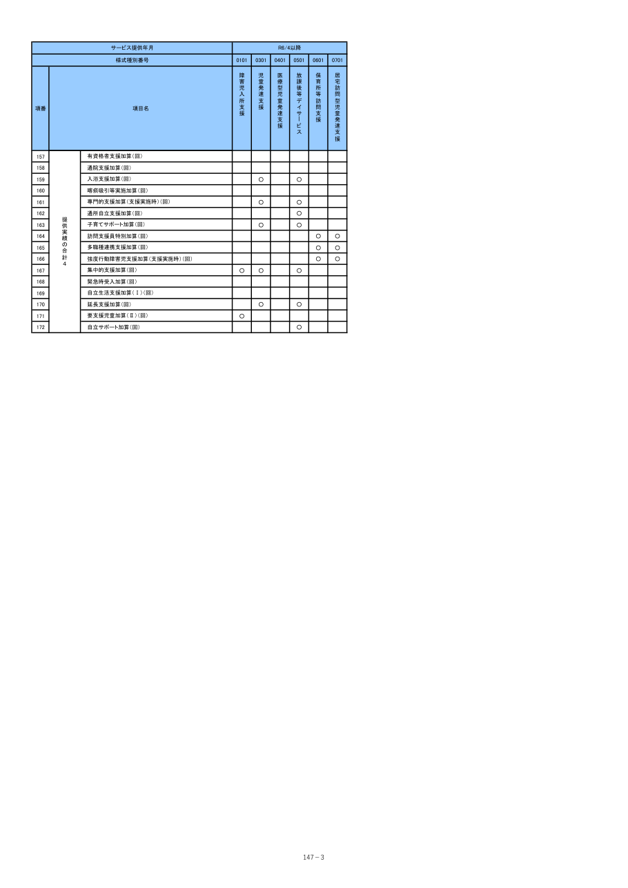
claude-haiku-5-5
表1 required_matrix 前頁から続く
| 項番 | 項目名 | 属性 | 桁数 | 内容 | 必須 | 備考 |
|---|---|---|---|---|---|---|
| 157 | 提供実績の合計４ > 有資格者支援加算(回) | 0101 > 障害児入所支援:－ 0301 > 児童発達支援:－ 0401 > 医療型児童発達支援:－ 0501 > 放課後等デイサービス:－ 0601 > 保育所等訪問支援:－ 0701 > 居宅訪問型児童発達支援:－ | ||||
| 158 | 提供実績の合計４ > 通院支援加算(回) | 0101 > 障害児入所支援:－ 0301 > 児童発達支援:－ 0401 > 医療型児童発達支援:－ 0501 > 放課後等デイサービス:－ 0601 > 保育所等訪問支援:－ 0701 > 居宅訪問型児童発達支援:－ | ||||
| 159 | 提供実績の合計４ > 入浴支援加算(回) | 0101 > 障害児入所支援:－ 0301 > 児童発達支援:○ 0401 > 医療型児童発達支援:－ 0501 > 放課後等デイサービス:○ 0601 > 保育所等訪問支援:－ 0701 > 居宅訪問型児童発達支援:－ | ||||
| 160 | 提供実績の合計４ > 喀痰吸引等実施加算(回) | 0101 > 障害児入所支援:－ 0301 > 児童発達支援:－ 0401 > 医療型児童発達支援:－ 0501 > 放課後等デイサービス:－ 0601 > 保育所等訪問支援:－ 0701 > 居宅訪問型児童発達支援:－ | ||||
| 161 | 提供実績の合計４ > 専門的支援加算(支援実施時)(回) | 0101 > 障害児入所支援:－ 0301 > 児童発達支援:○ 0401 > 医療型児童発達支援:－ 0501 > 放課後等デイサービス:○ 0601 > 保育所等訪問支援:－ 0701 > 居宅訪問型児童発達支援:－ | ||||
| 162 | 提供実績の合計４ > 通所自立支援加算(回) | 0101 > 障害児入所支援:－ 0301 > 児童発達支援:－ 0401 > 医療型児童発達支援:－ 0501 > 放課後等デイサービス:○ 0601 > 保育所等訪問支援:－ 0701 > 居宅訪問型児童発達支援:－ | ||||
| 163 | 提供実績の合計４ > 子育てサポート加算(回) | 0101 > 障害児入所支援:－ 0301 > 児童発達支援:○ 0401 > 医療型児童発達支援:－ 0501 > 放課後等デイサービス:○ 0601 > 保育所等訪問支援:－ 0701 > 居宅訪問型児童発達支援:－ | ||||
| 164 | 提供実績の合計４ > 訪問支援員特別加算(回) | 0101 > 障害児入所支援:－ 0301 > 児童発達支援:－ 0401 > 医療型児童発達支援:－ 0501 > 放課後等デイサービス:－ 0601 > 保育所等訪問支援:○ 0701 > 居宅訪問型児童発達支援:○ | ||||
| 165 | 提供実績の合計４ > 多職種連携支援加算(回) | 0101 > 障害児入所支援:－ 0301 > 児童発達支援:－ 0401 > 医療型児童発達支援:－ 0501 > 放課後等デイサービス:－ 0601 > 保育所等訪問支援:○ 0701 > 居宅訪問型児童発達支援:○ | ||||
| 166 | 提供実績の合計４ > 強度行動障害児支援加算(支援実施時)(回) | 0101 > 障害児入所支援:－ 0301 > 児童発達支援:－ 0401 > 医療型児童発達支援:－ 0501 > 放課後等デイサービス:－ 0601 > 保育所等訪問支援:○ 0701 > 居宅訪問型児童発達支援:○ | ||||
| 167 | 提供実績の合計４ > 集中的支援加算(回) | 0101 > 障害児入所支援:○ 0301 > 児童発達支援:○ 0401 > 医療型児童発達支援:－ 0501 > 放課後等デイサービス:○ 0601 > 保育所等訪問支援:－ 0701 > 居宅訪問型児童発達支援:－ | ||||
| 168 | 提供実績の合計４ > 緊急時受入加算(回) | 0101 > 障害児入所支援:－ 0301 > 児童発達支援:－ 0401 > 医療型児童発達支援:－ 0501 > 放課後等デイサービス:－ 0601 > 保育所等訪問支援:－ 0701 > 居宅訪問型児童発達支援:－ | ||||
| 169 | 提供実績の合計４ > 自立生活支援加算(Ⅰ)(回) | 0101 > 障害児入所支援:－ 0301 > 児童発達支援:－ 0401 > 医療型児童発達支援:－ 0501 > 放課後等デイサービス:－ 0601 > 保育所等訪問支援:－ 0701 > 居宅訪問型児童発達支援:－ | ||||
| 170 | 提供実績の合計４ > 延長支援加算(回) | 0101 > 障害児入所支援:－ 0301 > 児童発達支援:○ 0401 > 医療型児童発達支援:－ 0501 > 放課後等デイサービス:○ 0601 > 保育所等訪問支援:－ 0701 > 居宅訪問型児童発達支援:－ | ||||
| 171 | 提供実績の合計４ > 要支援児童加算(Ⅱ)(回) | 0101 > 障害児入所支援:○ 0301 > 児童発達支援:－ 0401 > 医療型児童発達支援:－ 0501 > 放課後等デイサービス:－ 0601 > 保育所等訪問支援:－ 0701 > 居宅訪問型児童発達支援:－ | ||||
| 172 | 提供実績の合計４ > 自立サポート加算(回) | 0101 > 障害児入所支援:－ 0301 > 児童発達支援:－ 0401 > 医療型児童発達支援:－ 0501 > 放課後等デイサービス:○ 0601 > 保育所等訪問支援:－ 0701 > 居宅訪問型児童発達支援:－ |
uncertain（モデル自己申告）
- 表の上端には表見出しがなく、前ページからの続きかどうか画像のみでは判断できない。
- 表の下端が次ページへ続くかどうか画像からは判断できない。
- 列見出し「0101」等の後の名称は縦書き見出しを読み取って連結した。
claude-sonnet-5-5
表1 required_matrix 前頁から続く
| 項番 | 項目名 | 属性 | 桁数 | 内容 | 必須 | 備考 |
|---|---|---|---|---|---|---|
| 157 | 提供実績の合計4 > 有資格者支援加算(回) | 0101:－ 0301:－ 0401:－ 0501:－ 0601:－ 0701:－ | ||||
| 158 | 提供実績の合計4 > 通院支援加算(回) | 0101:－ 0301:－ 0401:－ 0501:－ 0601:－ 0701:－ | ||||
| 159 | 提供実績の合計4 > 入浴支援加算(回) | 0101:－ 0301:○ 0401:－ 0501:○ 0601:－ 0701:－ | ||||
| 160 | 提供実績の合計4 > 喀痰吸引等実施加算(回) | 0101:－ 0301:－ 0401:－ 0501:－ 0601:－ 0701:－ | ||||
| 161 | 提供実績の合計4 > 専門的支援加算(支援実施時)(回) | 0101:－ 0301:○ 0401:－ 0501:○ 0601:－ 0701:－ | ||||
| 162 | 提供実績の合計4 > 通所自立支援加算(回) | 0101:－ 0301:－ 0401:－ 0501:○ 0601:－ 0701:－ | ||||
| 163 | 提供実績の合計4 > 子育てサポート加算(回) | 0101:－ 0301:○ 0401:－ 0501:○ 0601:－ 0701:－ | ||||
| 164 | 提供実績の合計4 > 訪問支援員特別加算(回) | 0101:－ 0301:－ 0401:－ 0501:－ 0601:○ 0701:○ | ||||
| 165 | 提供実績の合計4 > 多職種連携支援加算(回) | 0101:－ 0301:－ 0401:－ 0501:－ 0601:○ 0701:○ | ||||
| 166 | 提供実績の合計4 > 強度行動障害児支援加算(支援実施時)(回) | 0101:－ 0301:－ 0401:－ 0501:－ 0601:○ 0701:○ | ||||
| 167 | 提供実績の合計4 > 集中的支援加算(回) | 0101:○ 0301:○ 0401:－ 0501:○ 0601:－ 0701:－ | ||||
| 168 | 提供実績の合計4 > 緊急時受入加算(回) | 0101:－ 0301:－ 0401:－ 0501:－ 0601:－ 0701:－ | ||||
| 169 | 提供実績の合計4 > 自立生活支援加算(Ⅰ)(回) | 0101:－ 0301:－ 0401:－ 0501:－ 0601:－ 0701:－ | ||||
| 170 | 提供実績の合計4 > 延長支援加算(回) | 0101:－ 0301:○ 0401:－ 0501:○ 0601:－ 0701:－ | ||||
| 171 | 提供実績の合計4 > 要支援児童加算(Ⅱ)(回) | 0101:○ 0301:－ 0401:－ 0501:－ 0601:－ 0701:－ | ||||
| 172 | 提供実績の合計4 > 自立サポート加算(回) | 0101:－ 0301:－ 0401:－ 0501:○ 0601:－ 0701:－ |
uncertain（モデル自己申告）
- 表の上部見出し「サービス提供年月 R6/4以降」「様式種別番号」は columns に反映。前ページからの続きの表。
- 「提供実績の合計4」は縦書きの結合セルで、原文の読みは「提供実績の合計 4」
shogai_jigyosho_r0710_p291 — 印字p.

claude-haiku-5-5
- 表1 項番36 必須（様式種別番号 > 0101 障害児入所支援）の値が想定外: '○※1'
- 表1 項番36 必須（様式種別番号 > 0301 児童発達支援）の値が想定外: '○※2'
- 表1 項番36 必須（様式種別番号 > 0401 医療型児童発達支援）の値が想定外: '○※2'
- 表1 項番36 必須（様式種別番号 > 0501 放課後等デイサービス）の値が想定外: '○※2'
- [改ページ] 前後ページで列見出しの書き起こしが一致しない
表1 required_matrix(6) 入力必須項目と様式の対応表(明細情報レコード)【サービス提供年月：令和6年4月以降】 次頁へ続く
| 項番 | 項目名 | 属性 | 桁数 | 内容 | 必須 | 備考 |
|---|---|---|---|---|---|---|
| 1 | 交換情報識別番号 | 様式種別番号 > 0101 障害児入所支援:◎ 様式種別番号 > 0301 児童発達支援:◎ 様式種別番号 > 0401 医療型児童発達支援:◎ 様式種別番号 > 0501 放課後等デイサービス:◎ 様式種別番号 > 0601 保育所等訪問支援:◎ 様式種別番号 > 0701 居宅訪問型児童発達支援:◎ | ||||
| 2 | レコード種別コード | 様式種別番号 > 0101 障害児入所支援:◎ 様式種別番号 > 0301 児童発達支援:◎ 様式種別番号 > 0401 医療型児童発達支援:◎ 様式種別番号 > 0501 放課後等デイサービス:◎ 様式種別番号 > 0601 保育所等訪問支援:◎ 様式種別番号 > 0701 居宅訪問型児童発達支援:◎ | ||||
| 3 | サービス提供年月 | 様式種別番号 > 0101 障害児入所支援:◎ 様式種別番号 > 0301 児童発達支援:◎ 様式種別番号 > 0401 医療型児童発達支援:◎ 様式種別番号 > 0501 放課後等デイサービス:◎ 様式種別番号 > 0601 保育所等訪問支援:◎ 様式種別番号 > 0701 居宅訪問型児童発達支援:◎ | ||||
| 4 | 都道府県等番号 | 様式種別番号 > 0101 障害児入所支援:◎ 様式種別番号 > 0301 児童発達支援:◎ 様式種別番号 > 0401 医療型児童発達支援:◎ 様式種別番号 > 0501 放課後等デイサービス:◎ 様式種別番号 > 0601 保育所等訪問支援:◎ 様式種別番号 > 0701 居宅訪問型児童発達支援:◎ | ||||
| 5 | 事業所番号 | 様式種別番号 > 0101 障害児入所支援:◎ 様式種別番号 > 0301 児童発達支援:◎ 様式種別番号 > 0401 医療型児童発達支援:◎ 様式種別番号 > 0501 放課後等デイサービス:◎ 様式種別番号 > 0601 保育所等訪問支援:◎ 様式種別番号 > 0701 居宅訪問型児童発達支援:◎ | ||||
| 6 | 受給者証番号 | 様式種別番号 > 0101 障害児入所支援:◎ 様式種別番号 > 0301 児童発達支援:◎ 様式種別番号 > 0401 医療型児童発達支援:◎ 様式種別番号 > 0501 放課後等デイサービス:◎ 様式種別番号 > 0601 保育所等訪問支援:◎ 様式種別番号 > 0701 居宅訪問型児童発達支援:◎ | ||||
| 7 | 様式種別番号 | 様式種別番号 > 0101 障害児入所支援:◎ 様式種別番号 > 0301 児童発達支援:◎ 様式種別番号 > 0401 医療型児童発達支援:◎ 様式種別番号 > 0501 放課後等デイサービス:◎ 様式種別番号 > 0601 保育所等訪問支援:◎ 様式種別番号 > 0701 居宅訪問型児童発達支援:◎ | ||||
| 8 | 提供通番 | 様式種別番号 > 0101 障害児入所支援:－ 様式種別番号 > 0301 児童発達支援:－ 様式種別番号 > 0401 医療型児童発達支援:－ 様式種別番号 > 0501 放課後等デイサービス:－ 様式種別番号 > 0601 保育所等訪問支援:－ 様式種別番号 > 0701 居宅訪問型児童発達支援:－ | ||||
| 9 | 日付 | 様式種別番号 > 0101 障害児入所支援:◎ 様式種別番号 > 0301 児童発達支援:◎ 様式種別番号 > 0401 医療型児童発達支援:◎ 様式種別番号 > 0501 放課後等デイサービス:◎ 様式種別番号 > 0601 保育所等訪問支援:◎ 様式種別番号 > 0701 居宅訪問型児童発達支援:◎ | ||||
| 10 | サービス提供回数 | 様式種別番号 > 0101 障害児入所支援:－ 様式種別番号 > 0301 児童発達支援:－ 様式種別番号 > 0401 医療型児童発達支援:－ 様式種別番号 > 0501 放課後等デイサービス:－ 様式種別番号 > 0601 保育所等訪問支援:－ 様式種別番号 > 0701 居宅訪問型児童発達支援:－ | ||||
| 11 | サービス内容 | 様式種別番号 > 0101 障害児入所支援:－ 様式種別番号 > 0301 児童発達支援:－ 様式種別番号 > 0401 医療型児童発達支援:－ 様式種別番号 > 0501 放課後等デイサービス:－ 様式種別番号 > 0601 保育所等訪問支援:－ 様式種別番号 > 0701 居宅訪問型児童発達支援:－ | ||||
| 12 | ヘルパー資格 | 様式種別番号 > 0101 障害児入所支援:－ 様式種別番号 > 0301 児童発達支援:－ 様式種別番号 > 0401 医療型児童発達支援:－ 様式種別番号 > 0501 放課後等デイサービス:－ 様式種別番号 > 0601 保育所等訪問支援:－ 様式種別番号 > 0701 居宅訪問型児童発達支援:－ | ||||
| 13 | 運転フラグ | 様式種別番号 > 0101 障害児入所支援:－ 様式種別番号 > 0301 児童発達支援:－ 様式種別番号 > 0401 医療型児童発達支援:－ 様式種別番号 > 0501 放課後等デイサービス:－ 様式種別番号 > 0601 保育所等訪問支援:－ 様式種別番号 > 0701 居宅訪問型児童発達支援:－ | ||||
| 14 | 開始時間 | 様式種別番号 > 0101 障害児入所支援:－ 様式種別番号 > 0301 児童発達支援:○ 様式種別番号 > 0401 医療型児童発達支援:○ 様式種別番号 > 0501 放課後等デイサービス:○ 様式種別番号 > 0601 保育所等訪問支援:－ 様式種別番号 > 0701 居宅訪問型児童発達支援:－ | ||||
| 15 | 終了時間 | 様式種別番号 > 0101 障害児入所支援:－ 様式種別番号 > 0301 児童発達支援:○ 様式種別番号 > 0401 医療型児童発達支援:○ 様式種別番号 > 0501 放課後等デイサービス:○ 様式種別番号 > 0601 保育所等訪問支援:－ 様式種別番号 > 0701 居宅訪問型児童発達支援:－ | ||||
| 16 | 算定時間数 | 様式種別番号 > 0101 障害児入所支援:－ 様式種別番号 > 0301 児童発達支援:○ 様式種別番号 > 0401 医療型児童発達支援:－ 様式種別番号 > 0501 放課後等デイサービス:○ 様式種別番号 > 0601 保育所等訪問支援:－ 様式種別番号 > 0701 居宅訪問型児童発達支援:－ | ||||
| 17 | 乗降(回数) | 様式種別番号 > 0101 障害児入所支援:－ 様式種別番号 > 0301 児童発達支援:－ 様式種別番号 > 0401 医療型児童発達支援:－ 様式種別番号 > 0501 放課後等デイサービス:－ 様式種別番号 > 0601 保育所等訪問支援:－ 様式種別番号 > 0701 居宅訪問型児童発達支援:－ | ||||
| 18 | 移動 | 様式種別番号 > 0101 障害児入所支援:－ 様式種別番号 > 0301 児童発達支援:－ 様式種別番号 > 0401 医療型児童発達支援:－ 様式種別番号 > 0501 放課後等デイサービス:－ 様式種別番号 > 0601 保育所等訪問支援:－ 様式種別番号 > 0701 居宅訪問型児童発達支援:－ | ||||
| 19 | 派遣人数 | 様式種別番号 > 0101 障害児入所支援:－ 様式種別番号 > 0301 児童発達支援:－ 様式種別番号 > 0401 医療型児童発達支援:－ 様式種別番号 > 0501 放課後等デイサービス:－ 様式種別番号 > 0601 保育所等訪問支援:－ 様式種別番号 > 0701 居宅訪問型児童発達支援:－ | ||||
| 20 | 前月からの継続サービス | 様式種別番号 > 0101 障害児入所支援:－ 様式種別番号 > 0301 児童発達支援:－ 様式種別番号 > 0401 医療型児童発達支援:－ 様式種別番号 > 0501 放課後等デイサービス:－ 様式種別番号 > 0601 保育所等訪問支援:－ 様式種別番号 > 0701 居宅訪問型児童発達支援:－ | ||||
| 21 | 送迎加算 往 | 様式種別番号 > 0101 障害児入所支援:－ 様式種別番号 > 0301 児童発達支援:○ 様式種別番号 > 0401 医療型児童発達支援:○ 様式種別番号 > 0501 放課後等デイサービス:○ 様式種別番号 > 0601 保育所等訪問支援:－ 様式種別番号 > 0701 居宅訪問型児童発達支援:－ | ||||
| 22 | 送迎加算 復 | 様式種別番号 > 0101 障害児入所支援:－ 様式種別番号 > 0301 児童発達支援:○ 様式種別番号 > 0401 医療型児童発達支援:○ 様式種別番号 > 0501 放課後等デイサービス:○ 様式種別番号 > 0601 保育所等訪問支援:－ 様式種別番号 > 0701 居宅訪問型児童発達支援:－ | ||||
| 23 | 家庭連携加算(サービス提供時間数) | 様式種別番号 > 0101 障害児入所支援:－ 様式種別番号 > 0301 児童発達支援:－ 様式種別番号 > 0401 医療型児童発達支援:－ 様式種別番号 > 0501 放課後等デイサービス:－ 様式種別番号 > 0601 保育所等訪問支援:－ 様式種別番号 > 0701 居宅訪問型児童発達支援:－ | ||||
| 24 | 家庭連携加算(算定時間数) | 様式種別番号 > 0101 障害児入所支援:－ 様式種別番号 > 0301 児童発達支援:－ 様式種別番号 > 0401 医療型児童発達支援:－ 様式種別番号 > 0501 放課後等デイサービス:－ 様式種別番号 > 0601 保育所等訪問支援:－ 様式種別番号 > 0701 居宅訪問型児童発達支援:－ | ||||
| 25 | 自活訓練加算 | 様式種別番号 > 0101 障害児入所支援:○ 様式種別番号 > 0301 児童発達支援:－ 様式種別番号 > 0401 医療型児童発達支援:－ 様式種別番号 > 0501 放課後等デイサービス:－ 様式種別番号 > 0601 保育所等訪問支援:－ 様式種別番号 > 0701 居宅訪問型児童発達支援:－ | ||||
| 26 | 短期滞在加算 | 様式種別番号 > 0101 障害児入所支援:－ 様式種別番号 > 0301 児童発達支援:－ 様式種別番号 > 0401 医療型児童発達支援:－ 様式種別番号 > 0501 放課後等デイサービス:－ 様式種別番号 > 0601 保育所等訪問支援:－ 様式種別番号 > 0701 居宅訪問型児童発達支援:－ | ||||
| 27 | 訪問支援特別加算(サービス提供時間数) | 様式種別番号 > 0101 障害児入所支援:－ 様式種別番号 > 0301 児童発達支援:－ 様式種別番号 > 0401 医療型児童発達支援:－ 様式種別番号 > 0501 放課後等デイサービス:－ 様式種別番号 > 0601 保育所等訪問支援:－ 様式種別番号 > 0701 居宅訪問型児童発達支援:－ | ||||
| 28 | 訪問支援特別加算(算定時間数) | 様式種別番号 > 0101 障害児入所支援:－ 様式種別番号 > 0301 児童発達支援:－ 様式種別番号 > 0401 医療型児童発達支援:－ 様式種別番号 > 0501 放課後等デイサービス:－ 様式種別番号 > 0601 保育所等訪問支援:－ 様式種別番号 > 0701 居宅訪問型児童発達支援:－ | ||||
| 29 | 施設外支援 | 様式種別番号 > 0101 障害児入所支援:－ 様式種別番号 > 0301 児童発達支援:－ 様式種別番号 > 0401 医療型児童発達支援:－ 様式種別番号 > 0501 放課後等デイサービス:－ 様式種別番号 > 0601 保育所等訪問支援:－ 様式種別番号 > 0701 居宅訪問型児童発達支援:－ | ||||
| 30 | 退所時特別支援加算 | 様式種別番号 > 0101 障害児入所支援:－ 様式種別番号 > 0301 児童発達支援:－ 様式種別番号 > 0401 医療型児童発達支援:－ 様式種別番号 > 0501 放課後等デイサービス:－ 様式種別番号 > 0601 保育所等訪問支援:－ 様式種別番号 > 0701 居宅訪問型児童発達支援:－ | ||||
| 31 | 地域移行加算 | 様式種別番号 > 0101 障害児入所支援:○ 様式種別番号 > 0301 児童発達支援:－ 様式種別番号 > 0401 医療型児童発達支援:－ 様式種別番号 > 0501 放課後等デイサービス:－ 様式種別番号 > 0601 保育所等訪問支援:－ 様式種別番号 > 0701 居宅訪問型児童発達支援:－ | ||||
| 32 | 食事提供加算 | 様式種別番号 > 0101 障害児入所支援:－ 様式種別番号 > 0301 児童発達支援:○ 様式種別番号 > 0401 医療型児童発達支援:○ 様式種別番号 > 0501 放課後等デイサービス:－ 様式種別番号 > 0601 保育所等訪問支援:－ 様式種別番号 > 0701 居宅訪問型児童発達支援:－ | ||||
| 33 | 入院・外泊時加算 | 様式種別番号 > 0101 障害児入所支援:○ 様式種別番号 > 0301 児童発達支援:－ 様式種別番号 > 0401 医療型児童発達支援:－ 様式種別番号 > 0501 放課後等デイサービス:－ 様式種別番号 > 0601 保育所等訪問支援:－ 様式種別番号 > 0701 居宅訪問型児童発達支援:－ | ||||
| 34 | 提供形態 | 様式種別番号 > 0101 障害児入所支援:－ 様式種別番号 > 0301 児童発達支援:－ 様式種別番号 > 0401 医療型児童発達支援:－ 様式種別番号 > 0501 放課後等デイサービス:○ 様式種別番号 > 0601 保育所等訪問支援:－ 様式種別番号 > 0701 居宅訪問型児童発達支援:－ | ||||
| 35 | 備考 | 様式種別番号 > 0101 障害児入所支援:○ 様式種別番号 > 0301 児童発達支援:○ 様式種別番号 > 0401 医療型児童発達支援:○ 様式種別番号 > 0501 放課後等デイサービス:○ 様式種別番号 > 0601 保育所等訪問支援:○ 様式種別番号 > 0701 居宅訪問型児童発達支援:○ | ||||
| 36 | サービス提供の状況 | 様式種別番号 > 0101 障害児入所支援:○※1 様式種別番号 > 0301 児童発達支援:○※2 様式種別番号 > 0401 医療型児童発達支援:○※2 様式種別番号 > 0501 放課後等デイサービス:○※2 様式種別番号 > 0601 保育所等訪問支援:－ 様式種別番号 > 0701 居宅訪問型児童発達支援:－ | ||||
| 37 | 夜間支援体制加算 | 様式種別番号 > 0101 障害児入所支援:－ 様式種別番号 > 0301 児童発達支援:－ 様式種別番号 > 0401 医療型児童発達支援:－ 様式種別番号 > 0501 放課後等デイサービス:－ 様式種別番号 > 0601 保育所等訪問支援:－ 様式種別番号 > 0701 居宅訪問型児童発達支援:－ | ||||
| 38 | 入院時支援特別加算(サービス提供回数) | 様式種別番号 > 0101 障害児入所支援:○ 様式種別番号 > 0301 児童発達支援:－ 様式種別番号 > 0401 医療型児童発達支援:－ 様式種別番号 > 0501 放課後等デイサービス:－ 様式種別番号 > 0601 保育所等訪問支援:－ 様式種別番号 > 0701 居宅訪問型児童発達支援:－ | ||||
| 39 | 入院時支援特別加算(算定回数) | 様式種別番号 > 0101 障害児入所支援:○ 様式種別番号 > 0301 児童発達支援:－ 様式種別番号 > 0401 医療型児童発達支援:－ 様式種別番号 > 0501 放課後等デイサービス:－ 様式種別番号 > 0601 保育所等訪問支援:－ 様式種別番号 > 0701 居宅訪問型児童発達支援:－ | ||||
| 40 | 帰宅時支援加算(サービス提供回数) | 様式種別番号 > 0101 障害児入所支援:－ 様式種別番号 > 0301 児童発達支援:－ 様式種別番号 > 0401 医療型児童発達支援:－ 様式種別番号 > 0501 放課後等デイサービス:－ 様式種別番号 > 0601 保育所等訪問支援:－ 様式種別番号 > 0701 居宅訪問型児童発達支援:－ | ||||
| 41 | 帰宅時支援加算(算定回数) | 様式種別番号 > 0101 障害児入所支援:－ 様式種別番号 > 0301 児童発達支援:－ 様式種別番号 > 0401 医療型児童発達支援:－ 様式種別番号 > 0501 放課後等デイサービス:－ 様式種別番号 > 0601 保育所等訪問支援:－ 様式種別番号 > 0701 居宅訪問型児童発達支援:－ | ||||
| 42 | 自立生活支援加算(Ⅱ) | 様式種別番号 > 0101 障害児入所支援:－ 様式種別番号 > 0301 児童発達支援:－ 様式種別番号 > 0401 医療型児童発達支援:－ 様式種別番号 > 0501 放課後等デイサービス:－ 様式種別番号 > 0601 保育所等訪問支援:－ 様式種別番号 > 0701 居宅訪問型児童発達支援:－ | ||||
| 43 | 日中支援加算(サービス提供回数) | 様式種別番号 > 0101 障害児入所支援:－ 様式種別番号 > 0301 児童発達支援:－ 様式種別番号 > 0401 医療型児童発達支援:－ 様式種別番号 > 0501 放課後等デイサービス:－ 様式種別番号 > 0601 保育所等訪問支援:－ 様式種別番号 > 0701 居宅訪問型児童発達支援:－ | ||||
| 44 | 日中支援加算(算定回数) | 様式種別番号 > 0101 障害児入所支援:－ 様式種別番号 > 0301 児童発達支援:－ 様式種別番号 > 0401 医療型児童発達支援:－ 様式種別番号 > 0501 放課後等デイサービス:－ 様式種別番号 > 0601 保育所等訪問支援:－ 様式種別番号 > 0701 居宅訪問型児童発達支援:－ | ||||
| 45 | 算定日数 | 様式種別番号 > 0101 障害児入所支援:－ 様式種別番号 > 0301 児童発達支援:－ 様式種別番号 > 0401 医療型児童発達支援:－ 様式種別番号 > 0501 放課後等デイサービス:－ 様式種別番号 > 0601 保育所等訪問支援:○ 様式種別番号 > 0701 居宅訪問型児童発達支援:○ | ||||
| 46 | 自立訓練 訪問型時間数 | 様式種別番号 > 0101 障害児入所支援:－ 様式種別番号 > 0301 児童発達支援:－ 様式種別番号 > 0401 医療型児童発達支援:－ 様式種別番号 > 0501 放課後等デイサービス:－ 様式種別番号 > 0601 保育所等訪問支援:－ 様式種別番号 > 0701 居宅訪問型児童発達支援:－ | ||||
| 47 | 実費算定 > 朝食 | 様式種別番号 > 0101 障害児入所支援:○ 様式種別番号 > 0301 児童発達支援:－ 様式種別番号 > 0401 医療型児童発達支援:－ 様式種別番号 > 0501 放課後等デイサービス:－ 様式種別番号 > 0601 保育所等訪問支援:－ 様式種別番号 > 0701 居宅訪問型児童発達支援:－ | ||||
| 48 | 実費算定 > 昼食 | 様式種別番号 > 0101 障害児入所支援:○ 様式種別番号 > 0301 児童発達支援:－ 様式種別番号 > 0401 医療型児童発達支援:－ 様式種別番号 > 0501 放課後等デイサービス:－ 様式種別番号 > 0601 保育所等訪問支援:－ 様式種別番号 > 0701 居宅訪問型児童発達支援:－ | ||||
| 49 | 実費算定 > 夕食 | 様式種別番号 > 0101 障害児入所支援:○ 様式種別番号 > 0301 児童発達支援:－ 様式種別番号 > 0401 医療型児童発達支援:－ 様式種別番号 > 0501 放課後等デイサービス:－ 様式種別番号 > 0601 保育所等訪問支援:－ 様式種別番号 > 0701 居宅訪問型児童発達支援:－ | ||||
| 50 | 実費算定 > 光熱水費 | 様式種別番号 > 0101 障害児入所支援:○ 様式種別番号 > 0301 児童発達支援:－ 様式種別番号 > 0401 医療型児童発達支援:－ 様式種別番号 > 0501 放課後等デイサービス:－ 様式種別番号 > 0601 保育所等訪問支援:－ 様式種別番号 > 0701 居宅訪問型児童発達支援:－ | ||||
| 51 | 重度包括 > 適用単価 | 様式種別番号 > 0101 障害児入所支援:－ 様式種別番号 > 0301 児童発達支援:－ 様式種別番号 > 0401 医療型児童発達支援:－ 様式種別番号 > 0501 放課後等デイサービス:－ 様式種別番号 > 0601 保育所等訪問支援:－ 様式種別番号 > 0701 居宅訪問型児童発達支援:－ | ||||
| 52 | 重度包括 > 基本単位数 | 様式種別番号 > 0101 障害児入所支援:－ 様式種別番号 > 0301 児童発達支援:－ 様式種別番号 > 0401 医療型児童発達支援:－ 様式種別番号 > 0501 放課後等デイサービス:－ 様式種別番号 > 0601 保育所等訪問支援:－ 様式種別番号 > 0701 居宅訪問型児童発達支援:－ | ||||
| 53 | 重度包括 > 加算 | 様式種別番号 > 0101 障害児入所支援:－ 様式種別番号 > 0301 児童発達支援:－ 様式種別番号 > 0401 医療型児童発達支援:－ 様式種別番号 > 0501 放課後等デイサービス:－ 様式種別番号 > 0601 保育所等訪問支援:－ 様式種別番号 > 0701 居宅訪問型児童発達支援:－ | ||||
| 54 | 重度包括 > 加算後単位数 | 様式種別番号 > 0101 障害児入所支援:－ 様式種別番号 > 0301 児童発達支援:－ 様式種別番号 > 0401 医療型児童発達支援:－ 様式種別番号 > 0501 放課後等デイサービス:－ 様式種別番号 > 0601 保育所等訪問支援:－ 様式種別番号 > 0701 居宅訪問型児童発達支援:－ | ||||
| 55 | 重度包括 > 単位数 | 様式種別番号 > 0101 障害児入所支援:－ 様式種別番号 > 0301 児童発達支援:－ 様式種別番号 > 0401 医療型児童発達支援:－ 様式種別番号 > 0501 放課後等デイサービス:－ 様式種別番号 > 0601 保育所等訪問支援:－ 様式種別番号 > 0701 居宅訪問型児童発達支援:－ | ||||
| 56 | 重度包括 > 1日計 | 様式種別番号 > 0101 障害児入所支援:－ 様式種別番号 > 0301 児童発達支援:－ 様式種別番号 > 0401 医療型児童発達支援:－ 様式種別番号 > 0501 放課後等デイサービス:－ 様式種別番号 > 0601 保育所等訪問支援:－ 様式種別番号 > 0701 居宅訪問型児童発達支援:－ |
uncertain（モデル自己申告）
- 36 サービス提供の状況 の ※1 ※2 の注記本文はこのページに印字されていないため footnotes に入れていない。value は「○※1」「○※2」として記載した。
- 項番 1 から 56 まで同一表で、ページ内に表見出しの続き・前ページからの続きの兆候はない。
claude-sonnet-5-5
- 表1 項番36 必須（0101）の値が想定外: '○\n※1'
- 表1 項番36 必須（0301）の値が想定外: '○\n※2'
- 表1 項番36 必須（0401）の値が想定外: '○\n※2'
- 表1 項番36 必須（0501）の値が想定外: '○\n※2'
- [改ページ] p291→p292 の連続性 OK
表1 required_matrix（6） 入力必須項目と様式の対応表（明細情報レコード）【サービス提供年月：令和6年4月以降】 次頁へ続く
| 項番 | 項目名 | 属性 | 桁数 | 内容 | 必須 | 備考 |
|---|---|---|---|---|---|---|
| 1 | 交換情報識別番号 | 0101:◎ 0301:◎ 0401:◎ 0501:◎ 0601:◎ 0701:◎ | ||||
| 2 | レコード種別コード | 0101:◎ 0301:◎ 0401:◎ 0501:◎ 0601:◎ 0701:◎ | ||||
| 3 | サービス提供年月 | 0101:◎ 0301:◎ 0401:◎ 0501:◎ 0601:◎ 0701:◎ | ||||
| 4 | 都道府県等番号 | 0101:◎ 0301:◎ 0401:◎ 0501:◎ 0601:◎ 0701:◎ | ||||
| 5 | 事業所番号 | 0101:◎ 0301:◎ 0401:◎ 0501:◎ 0601:◎ 0701:◎ | ||||
| 6 | 受給者証番号 | 0101:◎ 0301:◎ 0401:◎ 0501:◎ 0601:◎ 0701:◎ | ||||
| 7 | 様式種別番号 | 0101:◎ 0301:◎ 0401:◎ 0501:◎ 0601:◎ 0701:◎ | ||||
| 8 | 提供通番 | 0101:－ 0301:－ 0401:－ 0501:－ 0601:－ 0701:－ | ||||
| 9 | 日付 | 0101:◎ 0301:◎ 0401:◎ 0501:◎ 0601:◎ 0701:◎ | ||||
| 10 | サービス提供回数 | 0101:－ 0301:－ 0401:－ 0501:－ 0601:－ 0701:－ | ||||
| 11 | サービス内容 | 0101:－ 0301:－ 0401:－ 0501:－ 0601:－ 0701:－ | ||||
| 12 | ヘルパー資格 | 0101:－ 0301:－ 0401:－ 0501:－ 0601:－ 0701:－ | ||||
| 13 | 運転フラグ | 0101:－ 0301:－ 0401:－ 0501:－ 0601:－ 0701:－ | ||||
| 14 | 開始時間 | 0101:－ 0301:○ 0401:○ 0501:○ 0601:－ 0701:－ | ||||
| 15 | 終了時間 | 0101:－ 0301:○ 0401:○ 0501:○ 0601:－ 0701:－ | ||||
| 16 | 算定時間数 | 0101:－ 0301:○ 0401:－ 0501:○ 0601:－ 0701:－ | ||||
| 17 | 乗降(回数) | 0101:－ 0301:－ 0401:－ 0501:－ 0601:－ 0701:－ | ||||
| 18 | 移動 | 0101:－ 0301:－ 0401:－ 0501:－ 0601:－ 0701:－ | ||||
| 19 | 派遣人数 | 0101:－ 0301:－ 0401:－ 0501:－ 0601:－ 0701:－ | ||||
| 20 | 前月からの継続サービス | 0101:－ 0301:－ 0401:－ 0501:－ 0601:－ 0701:－ | ||||
| 21 | 送迎加算 往 | 0101:－ 0301:○ 0401:○ 0501:○ 0601:－ 0701:－ | ||||
| 22 | 送迎加算 復 | 0101:－ 0301:○ 0401:○ 0501:○ 0601:－ 0701:－ | ||||
| 23 | 家庭連携加算(サービス提供時間数) | 0101:－ 0301:－ 0401:－ 0501:－ 0601:－ 0701:－ | ||||
| 24 | 家庭連携加算(算定時間数) | 0101:－ 0301:－ 0401:－ 0501:－ 0601:－ 0701:－ | ||||
| 25 | 自活訓練加算 | 0101:○ 0301:－ 0401:－ 0501:－ 0601:－ 0701:－ | ||||
| 26 | 短期滞在加算 | 0101:－ 0301:－ 0401:－ 0501:－ 0601:－ 0701:－ | ||||
| 27 | 訪問支援特別加算(サービス提供時間数) | 0101:－ 0301:－ 0401:－ 0501:－ 0601:－ 0701:－ | ||||
| 28 | 訪問支援特別加算(算定時間数) | 0101:－ 0301:－ 0401:－ 0501:－ 0601:－ 0701:－ | ||||
| 29 | 施設外支援 | 0101:－ 0301:－ 0401:－ 0501:－ 0601:－ 0701:－ | ||||
| 30 | 退所時特別支援加算 | 0101:－ 0301:－ 0401:－ 0501:－ 0601:－ 0701:－ | ||||
| 31 | 地域移行加算 | 0101:○ 0301:－ 0401:－ 0501:－ 0601:－ 0701:－ | ||||
| 32 | 食事提供加算 | 0101:－ 0301:○ 0401:○ 0501:－ 0601:－ 0701:－ | ||||
| 33 | 入院･外泊時加算 | 0101:○ 0301:－ 0401:－ 0501:－ 0601:－ 0701:－ | ||||
| 34 | 提供形態 | 0101:－ 0301:－ 0401:－ 0501:○ 0601:－ 0701:－ | ||||
| 35 | 備考 | 0101:○ 0301:○ 0401:○ 0501:○ 0601:○ 0701:○ | ||||
| 36 | サービス提供の状況 | 0101:○ ※1 0301:○ ※2 0401:○ ※2 0501:○ ※2 0601:－ 0701:－ | ||||
| 37 | 夜間支援体制加算 | 0101:－ 0301:－ 0401:－ 0501:－ 0601:－ 0701:－ | ||||
| 38 | 入院時支援特別加算(サービス提供回数) | 0101:○ 0301:－ 0401:－ 0501:－ 0601:－ 0701:－ | ||||
| 39 | 入院時支援特別加算(算定回数) | 0101:○ 0301:－ 0401:－ 0501:－ 0601:－ 0701:－ | ||||
| 40 | 帰宅時支援加算(サービス提供回数) | 0101:－ 0301:－ 0401:－ 0501:－ 0601:－ 0701:－ | ||||
| 41 | 帰宅時支援加算(算定回数) | 0101:－ 0301:－ 0401:－ 0501:－ 0601:－ 0701:－ | ||||
| 42 | 自立生活支援加算(Ⅱ) | 0101:－ 0301:－ 0401:－ 0501:－ 0601:－ 0701:－ | ||||
| 43 | 日中支援加算(サービス提供回数) | 0101:－ 0301:－ 0401:－ 0501:－ 0601:－ 0701:－ | ||||
| 44 | 日中支援加算(算定回数) | 0101:－ 0301:－ 0401:－ 0501:－ 0601:－ 0701:－ | ||||
| 45 | 算定日数 | 0101:－ 0301:－ 0401:－ 0501:－ 0601:○ 0701:○ | ||||
| 46 | 自立訓練 訪問型時間数 | 0101:－ 0301:－ 0401:－ 0501:－ 0601:－ 0701:－ | ||||
| 47 | 実費算定 > 朝食 | 0101:○ 0301:－ 0401:－ 0501:－ 0601:－ 0701:－ | ||||
| 48 | 実費算定 > 昼食 | 0101:○ 0301:－ 0401:－ 0501:－ 0601:－ 0701:－ | ||||
| 49 | 実費算定 > 夕食 | 0101:○ 0301:－ 0401:－ 0501:－ 0601:－ 0701:－ | ||||
| 50 | 実費算定 > 光熱水費 | 0101:○ 0301:－ 0401:－ 0501:－ 0601:－ 0701:－ | ||||
| 51 | 重度包括 > 適用単価 | 0101:－ 0301:－ 0401:－ 0501:－ 0601:－ 0701:－ | ||||
| 52 | 重度包括 > 基本単位数 | 0101:－ 0301:－ 0401:－ 0501:－ 0601:－ 0701:－ | ||||
| 53 | 重度包括 > 加算 | 0101:－ 0301:－ 0401:－ 0501:－ 0601:－ 0701:－ | ||||
| 54 | 重度包括 > 加算後単位数 | 0101:－ 0301:－ 0401:－ 0501:－ 0601:－ 0701:－ | ||||
| 55 | 重度包括 > 単位数 | 0101:－ 0301:－ 0401:－ 0501:－ 0601:－ 0701:－ | ||||
| 56 | 重度包括 > 1日計 | 0101:－ 0301:－ 0401:－ 0501:－ 0601:－ 0701:－ |
uncertain（モデル自己申告）
- 見出し「サービス提供年月 R6/4以降」「様式種別番号」は columns に統合して記載
- 項番36の※1・※2は注記本文がこのページにないため不明
shogai_jigyosho_r0710_p292 — 印字p.

claude-haiku-5-5
- [改ページ] 前後ページで列見出しの書き起こしが一致しない
- テキストレイヤに見つからないセル: 12 個（赤枠）
表1 required_matrix 前頁から続く次頁へ続く
| 項番 | 項目名 | 属性 | 桁数 | 内容 | 必須 | 備考 |
|---|---|---|---|---|---|---|
| 57 | 重度訪問（→様式3－2） > 1時間（13時間） | 様式種別番号 > 0101:－ 様式種別番号 > 0301:－ 様式種別番号 > 0401:－ 様式種別番号 > 0501:－ 様式種別番号 > 0601:－ 様式種別番号 > 0701:－ | ||||
| 58 | 重度訪問（→様式3－2） > 2時間（14時間） | 様式種別番号 > 0101:－ 様式種別番号 > 0301:－ 様式種別番号 > 0401:－ 様式種別番号 > 0501:－ 様式種別番号 > 0601:－ 様式種別番号 > 0701:－ | ||||
| 59 | 重度訪問（→様式3－2） > 3時間（15時間） | 様式種別番号 > 0101:－ 様式種別番号 > 0301:－ 様式種別番号 > 0401:－ 様式種別番号 > 0501:－ 様式種別番号 > 0601:－ 様式種別番号 > 0701:－ | ||||
| 60 | 重度訪問（→様式3－2） > 4時間（16時間） | 様式種別番号 > 0101:－ 様式種別番号 > 0301:－ 様式種別番号 > 0401:－ 様式種別番号 > 0501:－ 様式種別番号 > 0601:－ 様式種別番号 > 0701:－ | ||||
| 61 | 重度訪問（→様式3－2） > 5時間（17時間） | 様式種別番号 > 0101:－ 様式種別番号 > 0301:－ 様式種別番号 > 0401:－ 様式種別番号 > 0501:－ 様式種別番号 > 0601:－ 様式種別番号 > 0701:－ | ||||
| 62 | 重度訪問（→様式3－2） > 6時間（18時間） | 様式種別番号 > 0101:－ 様式種別番号 > 0301:－ 様式種別番号 > 0401:－ 様式種別番号 > 0501:－ 様式種別番号 > 0601:－ 様式種別番号 > 0701:－ | ||||
| 63 | 重度訪問（→様式3－2） > 7時間（19時間） | 様式種別番号 > 0101:－ 様式種別番号 > 0301:－ 様式種別番号 > 0401:－ 様式種別番号 > 0501:－ 様式種別番号 > 0601:－ 様式種別番号 > 0701:－ | ||||
| 64 | 重度訪問（→様式3－2） > 8時間（20時間） | 様式種別番号 > 0101:－ 様式種別番号 > 0301:－ 様式種別番号 > 0401:－ 様式種別番号 > 0501:－ 様式種別番号 > 0601:－ 様式種別番号 > 0701:－ | ||||
| 65 | 重度訪問（→様式3－2） > 9時間（21時間） | 様式種別番号 > 0101:－ 様式種別番号 > 0301:－ 様式種別番号 > 0401:－ 様式種別番号 > 0501:－ 様式種別番号 > 0601:－ 様式種別番号 > 0701:－ | ||||
| 66 | 重度訪問（→様式3－2） > 10時間（22時間） | 様式種別番号 > 0101:－ 様式種別番号 > 0301:－ 様式種別番号 > 0401:－ 様式種別番号 > 0501:－ 様式種別番号 > 0601:－ 様式種別番号 > 0701:－ | ||||
| 67 | 重度訪問（→様式3－2） > 11時間（23時間） | 様式種別番号 > 0101:－ 様式種別番号 > 0301:－ 様式種別番号 > 0401:－ 様式種別番号 > 0501:－ 様式種別番号 > 0601:－ 様式種別番号 > 0701:－ | ||||
| 68 | 重度訪問（→様式3－2） > 12時間（24時間） | 様式種別番号 > 0101:－ 様式種別番号 > 0301:－ 様式種別番号 > 0401:－ 様式種別番号 > 0501:－ 様式種別番号 > 0601:－ 様式種別番号 > 0701:－ | ||||
| 69 | 緊急時対応加算 | 様式種別番号 > 0101:－ 様式種別番号 > 0301:－ 様式種別番号 > 0401:－ 様式種別番号 > 0501:－ 様式種別番号 > 0601:－ 様式種別番号 > 0701:－ | ||||
| 70 | 初回加算 | 様式種別番号 > 0101:－ 様式種別番号 > 0301:－ 様式種別番号 > 0401:－ 様式種別番号 > 0501:－ 様式種別番号 > 0601:○ 様式種別番号 > 0701:－ | ||||
| 71 | 福祉専門職員等連携加算 | 様式種別番号 > 0101:－ 様式種別番号 > 0301:－ 様式種別番号 > 0401:－ 様式種別番号 > 0501:－ 様式種別番号 > 0601:－ 様式種別番号 > 0701:－ | ||||
| 72 | 行動障害支援連携加算 | 様式種別番号 > 0101:－ 様式種別番号 > 0301:－ 様式種別番号 > 0401:－ 様式種別番号 > 0501:－ 様式種別番号 > 0601:－ 様式種別番号 > 0701:－ | ||||
| 73 | 行動障害支援指導連携加算 | 様式種別番号 > 0101:－ 様式種別番号 > 0301:－ 様式種別番号 > 0401:－ 様式種別番号 > 0501:－ 様式種別番号 > 0601:－ 様式種別番号 > 0701:－ | ||||
| 74 | 医療連携体制加算 | 様式種別番号 > 0101:－ 様式種別番号 > 0301:○ 様式種別番号 > 0401:－ 様式種別番号 > 0501:○ 様式種別番号 > 0601:－ 様式種別番号 > 0701:－ | ||||
| 75 | 緊急短期入所受入加算 | 様式種別番号 > 0101:－ 様式種別番号 > 0301:－ 様式種別番号 > 0401:－ 様式種別番号 > 0501:－ 様式種別番号 > 0601:－ 様式種別番号 > 0701:－ | ||||
| 76 | 単独型加算（一定の条件を満たす場合） | 様式種別番号 > 0101:－ 様式種別番号 > 0301:－ 様式種別番号 > 0401:－ 様式種別番号 > 0501:－ 様式種別番号 > 0601:－ 様式種別番号 > 0701:－ | ||||
| 77 | 重度障害者支援加算（一定の条件を満たす場合） | 様式種別番号 > 0101:－ 様式種別番号 > 0301:－ 様式種別番号 > 0401:－ 様式種別番号 > 0501:－ 様式種別番号 > 0601:－ 様式種別番号 > 0701:－ | ||||
| 78 | 家族支援加算 | 様式種別番号 > 0101:○ 様式種別番号 > 0301:○ 様式種別番号 > 0401:○ 様式種別番号 > 0501:○ 様式種別番号 > 0601:○ 様式種別番号 > 0701:○ | ||||
| 79 | 利用人数 | 様式種別番号 > 0101:－ 様式種別番号 > 0301:－ 様式種別番号 > 0401:－ 様式種別番号 > 0501:－ 様式種別番号 > 0601:－ 様式種別番号 > 0701:－ | ||||
| 80 | 同行支援 | 様式種別番号 > 0101:－ 様式種別番号 > 0301:－ 様式種別番号 > 0401:－ 様式種別番号 > 0501:－ 様式種別番号 > 0601:－ 様式種別番号 > 0701:－ | ||||
| 81 | 特別地域加算 | 様式種別番号 > 0101:－ 様式種別番号 > 0301:－ 様式種別番号 > 0401:－ 様式種別番号 > 0501:－ 様式種別番号 > 0601:－ 様式種別番号 > 0701:－ | ||||
| 82 | 低所得者利用加算 | 様式種別番号 > 0101:－ 様式種別番号 > 0301:－ 様式種別番号 > 0401:－ 様式種別番号 > 0501:－ 様式種別番号 > 0601:－ 様式種別番号 > 0701:－ | ||||
| 83 | 体験利用支援加算 | 様式種別番号 > 0101:○ 様式種別番号 > 0301:－ 様式種別番号 > 0401:－ 様式種別番号 > 0501:－ 様式種別番号 > 0601:－ 様式種別番号 > 0701:－ | ||||
| 84 | 定員超過特例加算 | 様式種別番号 > 0101:－ 様式種別番号 > 0301:－ 様式種別番号 > 0401:－ 様式種別番号 > 0501:－ 様式種別番号 > 0601:－ 様式種別番号 > 0701:－ | ||||
| 85 | 通勤訓練加算 | 様式種別番号 > 0101:－ 様式種別番号 > 0301:－ 様式種別番号 > 0401:－ 様式種別番号 > 0501:－ 様式種別番号 > 0601:－ 様式種別番号 > 0701:－ | ||||
| 86 | 地域移行促進加算 | 様式種別番号 > 0101:－ 様式種別番号 > 0301:－ 様式種別番号 > 0401:－ 様式種別番号 > 0501:－ 様式種別番号 > 0601:－ 様式種別番号 > 0701:－ | ||||
| 87 | 住居外利用 | 様式種別番号 > 0101:－ 様式種別番号 > 0301:－ 様式種別番号 > 0401:－ 様式種別番号 > 0501:－ 様式種別番号 > 0601:－ 様式種別番号 > 0701:－ | ||||
| 88 | 緊急時支援加算 | 様式種別番号 > 0101:－ 様式種別番号 > 0301:－ 様式種別番号 > 0401:－ 様式種別番号 > 0501:－ 様式種別番号 > 0601:－ 様式種別番号 > 0701:－ | ||||
| 89 | 支援計画会議実施加算 | 様式種別番号 > 0101:－ 様式種別番号 > 0301:－ 様式種別番号 > 0401:－ 様式種別番号 > 0501:－ 様式種別番号 > 0601:－ 様式種別番号 > 0701:－ | ||||
| 90 | 定着支援連携促進加算 | 様式種別番号 > 0101:－ 様式種別番号 > 0301:－ 様式種別番号 > 0401:－ 様式種別番号 > 0501:－ 様式種別番号 > 0601:－ 様式種別番号 > 0701:－ | ||||
| 91 | 移動介護緊急時支援加算 | 様式種別番号 > 0101:－ 様式種別番号 > 0301:－ 様式種別番号 > 0401:－ 様式種別番号 > 0501:－ 様式種別番号 > 0601:－ 様式種別番号 > 0701:－ | ||||
| 92 | 日常生活支援情報提供加算（サービス提供回数） | 様式種別番号 > 0101:－ 様式種別番号 > 0301:－ 様式種別番号 > 0401:－ 様式種別番号 > 0501:－ 様式種別番号 > 0601:－ 様式種別番号 > 0701:－ | ||||
| 93 | 日常生活支援情報提供加算（算定回数） | 様式種別番号 > 0101:－ 様式種別番号 > 0301:－ 様式種別番号 > 0401:－ 様式種別番号 > 0501:－ 様式種別番号 > 0601:－ 様式種別番号 > 0701:－ | ||||
| 94 | 地域居住支援体制強化推進加算（サービス提供回数） | 様式種別番号 > 0101:－ 様式種別番号 > 0301:－ 様式種別番号 > 0401:－ 様式種別番号 > 0501:－ 様式種別番号 > 0601:－ 様式種別番号 > 0701:－ | ||||
| 95 | 地域居住支援体制強化推進加算（算定回数） | 様式種別番号 > 0101:－ 様式種別番号 > 0301:－ 様式種別番号 > 0401:－ 様式種別番号 > 0501:－ 様式種別番号 > 0601:－ 様式種別番号 > 0701:－ | ||||
| 96 | 地域協働加算 | 様式種別番号 > 0101:－ 様式種別番号 > 0301:－ 様式種別番号 > 0401:－ 様式種別番号 > 0501:－ 様式種別番号 > 0601:－ 様式種別番号 > 0701:－ | ||||
| 97 | 有資格者支援加算 | 様式種別番号 > 0101:－ 様式種別番号 > 0301:－ 様式種別番号 > 0401:－ 様式種別番号 > 0501:－ 様式種別番号 > 0601:－ 様式種別番号 > 0701:－ | ||||
| 98 | 通院支援加算 | 様式種別番号 > 0101:－ 様式種別番号 > 0301:－ 様式種別番号 > 0401:－ 様式種別番号 > 0501:－ 様式種別番号 > 0601:－ 様式種別番号 > 0701:－ | ||||
| 99 | 入浴支援加算 | 様式種別番号 > 0101:－ 様式種別番号 > 0301:○ 様式種別番号 > 0401:－ 様式種別番号 > 0501:○ 様式種別番号 > 0601:－ 様式種別番号 > 0701:－ | ||||
| 100 | 喀痰吸引等実施加算 | 様式種別番号 > 0101:－ 様式種別番号 > 0301:－ 様式種別番号 > 0401:－ 様式種別番号 > 0501:－ 様式種別番号 > 0601:－ 様式種別番号 > 0701:－ | ||||
| 101 | 専門的支援加算（支援実施時） | 様式種別番号 > 0101:－ 様式種別番号 > 0301:○ 様式種別番号 > 0401:－ 様式種別番号 > 0501:○ 様式種別番号 > 0601:－ 様式種別番号 > 0701:－ | ||||
| 102 | 通所自立支援加算 | 様式種別番号 > 0101:－ 様式種別番号 > 0301:－ 様式種別番号 > 0401:－ 様式種別番号 > 0501:○ 様式種別番号 > 0601:－ 様式種別番号 > 0701:－ | ||||
| 103 | 子育てサポート加算 | 様式種別番号 > 0101:－ 様式種別番号 > 0301:○ 様式種別番号 > 0401:－ 様式種別番号 > 0501:○ 様式種別番号 > 0601:－ 様式種別番号 > 0701:－ | ||||
| 104 | 訪問支援員特別加算 | 様式種別番号 > 0101:－ 様式種別番号 > 0301:－ 様式種別番号 > 0401:－ 様式種別番号 > 0501:－ 様式種別番号 > 0601:○ 様式種別番号 > 0701:○ | ||||
| 105 | 多職種連携支援加算 | 様式種別番号 > 0101:－ 様式種別番号 > 0301:－ 様式種別番号 > 0401:－ 様式種別番号 > 0501:－ 様式種別番号 > 0601:○ 様式種別番号 > 0701:○ | ||||
| 106 | 強度行動障害児支援加算（支援実施時） | 様式種別番号 > 0101:－ 様式種別番号 > 0301:－ 様式種別番号 > 0401:－ 様式種別番号 > 0501:－ 様式種別番号 > 0601:○ 様式種別番号 > 0701:○ |
uncertain（モデル自己申告）
- 表見出しがなく項番57から始まるため前ページからの続きと判断した（後処理で再判定される想定）。
- 重度訪問の縦結合セルの文字「（→様式3－2）」は矢印記号が不鮮明なため、原文の表記が「（→様式3－2）」かどうか確信がない。
- ヘッダーの様式種別名（障害児入所支援、児童発達支援等）は縦書きのため列名には様式種別番号のみを使用した。
claude-sonnet-5-5
- [改ページ] 前後ページで列見出しの書き起こしが一致しない
表1 required_matrix 前頁から続く次頁へ続く
| 項番 | 項目名 | 属性 | 桁数 | 内容 | 必須 | 備考 |
|---|---|---|---|---|---|---|
| 57 | 重度訪問(様式3－2) > 1時間(13時間) | 0101:－ 0301:－ 0401:－ 0501:－ 0601:－ 0701:－ | ||||
| 58 | 重度訪問(様式3－2) > 2時間(14時間) | 0101:－ 0301:－ 0401:－ 0501:－ 0601:－ 0701:－ | ||||
| 59 | 重度訪問(様式3－2) > 3時間(15時間) | 0101:－ 0301:－ 0401:－ 0501:－ 0601:－ 0701:－ | ||||
| 60 | 重度訪問(様式3－2) > 4時間(16時間) | 0101:－ 0301:－ 0401:－ 0501:－ 0601:－ 0701:－ | ||||
| 61 | 重度訪問(様式3－2) > 5時間(17時間) | 0101:－ 0301:－ 0401:－ 0501:－ 0601:－ 0701:－ | ||||
| 62 | 重度訪問(様式3－2) > 6時間(18時間) | 0101:－ 0301:－ 0401:－ 0501:－ 0601:－ 0701:－ | ||||
| 63 | 重度訪問(様式3－2) > 7時間(19時間) | 0101:－ 0301:－ 0401:－ 0501:－ 0601:－ 0701:－ | ||||
| 64 | 重度訪問(様式3－2) > 8時間(20時間) | 0101:－ 0301:－ 0401:－ 0501:－ 0601:－ 0701:－ | ||||
| 65 | 重度訪問(様式3－2) > 9時間(21時間) | 0101:－ 0301:－ 0401:－ 0501:－ 0601:－ 0701:－ | ||||
| 66 | 重度訪問(様式3－2) > 10時間(22時間) | 0101:－ 0301:－ 0401:－ 0501:－ 0601:－ 0701:－ | ||||
| 67 | 重度訪問(様式3－2) > 11時間(23時間) | 0101:－ 0301:－ 0401:－ 0501:－ 0601:－ 0701:－ | ||||
| 68 | 重度訪問(様式3－2) > 12時間(24時間) | 0101:－ 0301:－ 0401:－ 0501:－ 0601:－ 0701:－ | ||||
| 69 | 緊急時対応加算 | 0101:－ 0301:－ 0401:－ 0501:－ 0601:－ 0701:－ | ||||
| 70 | 初回加算 | 0101:－ 0301:－ 0401:－ 0501:－ 0601:○ 0701:－ | ||||
| 71 | 福祉専門職員等連携加算 | 0101:－ 0301:－ 0401:－ 0501:－ 0601:－ 0701:－ | ||||
| 72 | 行動障害支援連携加算 | 0101:－ 0301:－ 0401:－ 0501:－ 0601:－ 0701:－ | ||||
| 73 | 行動障害支援指導連携加算 | 0101:－ 0301:－ 0401:－ 0501:－ 0601:－ 0701:－ | ||||
| 74 | 医療連携体制加算 | 0101:－ 0301:○ 0401:－ 0501:○ 0601:－ 0701:－ | ||||
| 75 | 緊急短期入所受入加算 | 0101:－ 0301:－ 0401:－ 0501:－ 0601:－ 0701:－ | ||||
| 76 | 単独型加算(一定の条件を満たす場合) | 0101:－ 0301:－ 0401:－ 0501:－ 0601:－ 0701:－ | ||||
| 77 | 重度障害者支援加算(一定の条件を満たす場合) | 0101:－ 0301:－ 0401:－ 0501:－ 0601:－ 0701:－ | ||||
| 78 | 家族支援加算 | 0101:○ 0301:○ 0401:○ 0501:○ 0601:○ 0701:○ | ||||
| 79 | 利用人数 | 0101:－ 0301:－ 0401:－ 0501:－ 0601:－ 0701:－ | ||||
| 80 | 同行支援 | 0101:－ 0301:－ 0401:－ 0501:－ 0601:－ 0701:－ | ||||
| 81 | 特別地域加算 | 0101:－ 0301:－ 0401:－ 0501:－ 0601:－ 0701:－ | ||||
| 82 | 低所得者利用加算 | 0101:－ 0301:－ 0401:－ 0501:－ 0601:－ 0701:－ | ||||
| 83 | 体験利用支援加算 | 0101:○ 0301:－ 0401:－ 0501:－ 0601:－ 0701:－ | ||||
| 84 | 定員超過特例加算 | 0101:－ 0301:－ 0401:－ 0501:－ 0601:－ 0701:－ | ||||
| 85 | 通勤訓練加算 | 0101:－ 0301:－ 0401:－ 0501:－ 0601:－ 0701:－ | ||||
| 86 | 地域移行促進加算 | 0101:－ 0301:－ 0401:－ 0501:－ 0601:－ 0701:－ | ||||
| 87 | 住居外利用 | 0101:－ 0301:－ 0401:－ 0501:－ 0601:－ 0701:－ | ||||
| 88 | 緊急時支援加算 | 0101:－ 0301:－ 0401:－ 0501:－ 0601:－ 0701:－ | ||||
| 89 | 支援計画会議実施加算 | 0101:－ 0301:－ 0401:－ 0501:－ 0601:－ 0701:－ | ||||
| 90 | 定着支援連携促進加算 | 0101:－ 0301:－ 0401:－ 0501:－ 0601:－ 0701:－ | ||||
| 91 | 移動介護緊急時支援加算 | 0101:－ 0301:－ 0401:－ 0501:－ 0601:－ 0701:－ | ||||
| 92 | 日常生活支援情報提供加算(サービス提供回数) | 0101:－ 0301:－ 0401:－ 0501:－ 0601:－ 0701:－ | ||||
| 93 | 日常生活支援情報提供加算(算定回数) | 0101:－ 0301:－ 0401:－ 0501:－ 0601:－ 0701:－ | ||||
| 94 | 地域居住支援体制強化推進加算(サービス提供回数) | 0101:－ 0301:－ 0401:－ 0501:－ 0601:－ 0701:－ | ||||
| 95 | 地域居住支援体制強化推進加算(算定回数) | 0101:－ 0301:－ 0401:－ 0501:－ 0601:－ 0701:－ | ||||
| 96 | 地域協働加算 | 0101:－ 0301:－ 0401:－ 0501:－ 0601:－ 0701:－ | ||||
| 97 | 有資格者支援加算 | 0101:－ 0301:－ 0401:－ 0501:－ 0601:－ 0701:－ | ||||
| 98 | 通院支援加算 | 0101:－ 0301:－ 0401:－ 0501:－ 0601:－ 0701:－ | ||||
| 99 | 入浴支援加算 | 0101:－ 0301:○ 0401:－ 0501:○ 0601:－ 0701:－ | ||||
| 100 | 喀痰吸引等実施加算 | 0101:－ 0301:－ 0401:－ 0501:－ 0601:－ 0701:－ | ||||
| 101 | 専門的支援加算(支援実施時) | 0101:－ 0301:○ 0401:－ 0501:○ 0601:－ 0701:－ | ||||
| 102 | 通所自立支援加算 | 0101:－ 0301:－ 0401:－ 0501:○ 0601:－ 0701:－ | ||||
| 103 | 子育てサポート加算 | 0101:－ 0301:○ 0401:－ 0501:○ 0601:－ 0701:－ | ||||
| 104 | 訪問支援員特別加算 | 0101:－ 0301:－ 0401:－ 0501:－ 0601:○ 0701:○ | ||||
| 105 | 多職種連携支援加算 | 0101:－ 0301:－ 0401:－ 0501:－ 0601:○ 0701:○ | ||||
| 106 | 強度行動障害児支援加算(支援実施時) | 0101:－ 0301:－ 0401:－ 0501:－ 0601:○ 0701:○ |
uncertain（モデル自己申告）
- ヘッダー上段「サービス提供年月 R6/4以降」「様式種別番号」は columns に反映していない
- 記号は ○ と読み取ったが、原文が ◯/○ のどれかは判別できない
- 項番57〜68の「重度訪問(様式3－2)」は縦書きの結合セルとして読み取った
- 前ページからの続きの表
shogai_jigyosho_r0710_p293 — 印字p.
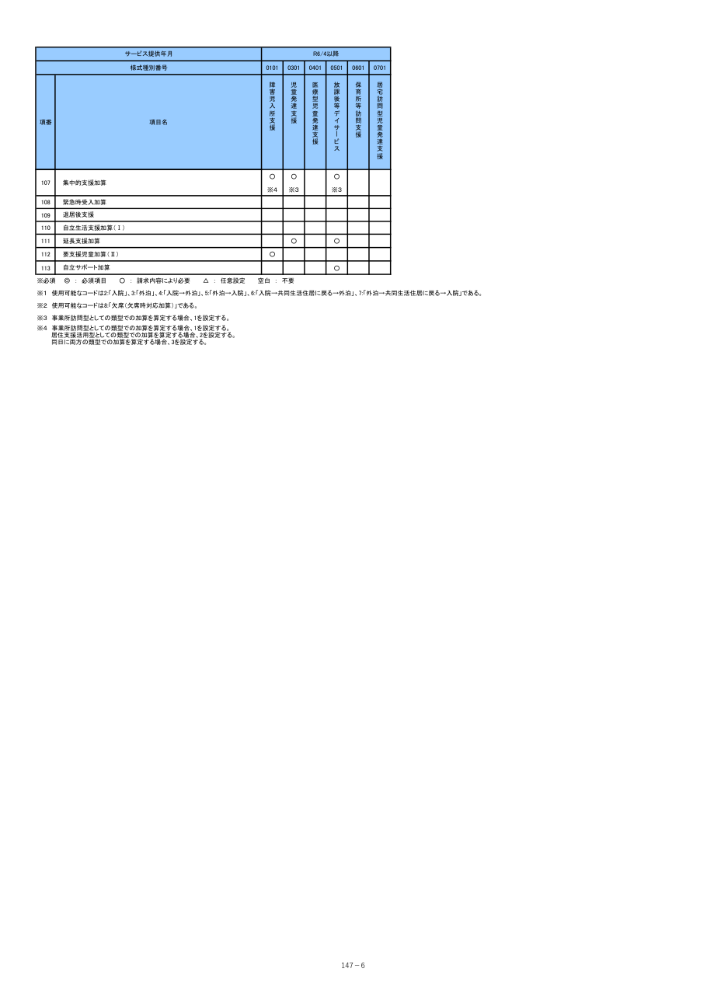
claude-haiku-5-5
- 表1 項番107 必須（様式種別番号 > 0101 > 障害児入所支援）の値が想定外: '○ ※4'
- 表1 項番107 必須（様式種別番号 > 0301 > 児童発達支援）の値が想定外: '○ ※3'
- 表1 項番107 必須（様式種別番号 > 0501 > 放課後等デイサービス）の値が想定外: '○ ※3'
表1 required_matrix 前頁から続く
| 項番 | 項目名 | 属性 | 桁数 | 内容 | 必須 | 備考 |
|---|---|---|---|---|---|---|
| 107 | 集中的支援加算 | 様式種別番号 > 0101 > 障害児入所支援:○ ※4 様式種別番号 > 0301 > 児童発達支援:○ ※3 様式種別番号 > 0401 > 医療型児童発達支援:－ 様式種別番号 > 0501 > 放課後等デイサービス:○ ※3 様式種別番号 > 0601 > 保育所等訪問支援:－ 様式種別番号 > 0701 > 居宅訪問型児童発達支援:－ | ||||
| 108 | 緊急時受入加算 | 様式種別番号 > 0101 > 障害児入所支援:－ 様式種別番号 > 0301 > 児童発達支援:－ 様式種別番号 > 0401 > 医療型児童発達支援:－ 様式種別番号 > 0501 > 放課後等デイサービス:－ 様式種別番号 > 0601 > 保育所等訪問支援:－ 様式種別番号 > 0701 > 居宅訪問型児童発達支援:－ | ||||
| 109 | 退居後支援 | 様式種別番号 > 0101 > 障害児入所支援:－ 様式種別番号 > 0301 > 児童発達支援:－ 様式種別番号 > 0401 > 医療型児童発達支援:－ 様式種別番号 > 0501 > 放課後等デイサービス:－ 様式種別番号 > 0601 > 保育所等訪問支援:－ 様式種別番号 > 0701 > 居宅訪問型児童発達支援:－ | ||||
| 110 | 自立生活支援加算（Ⅰ） | 様式種別番号 > 0101 > 障害児入所支援:－ 様式種別番号 > 0301 > 児童発達支援:－ 様式種別番号 > 0401 > 医療型児童発達支援:－ 様式種別番号 > 0501 > 放課後等デイサービス:－ 様式種別番号 > 0601 > 保育所等訪問支援:－ 様式種別番号 > 0701 > 居宅訪問型児童発達支援:－ | ||||
| 111 | 延長支援加算 | 様式種別番号 > 0101 > 障害児入所支援:－ 様式種別番号 > 0301 > 児童発達支援:○ 様式種別番号 > 0401 > 医療型児童発達支援:－ 様式種別番号 > 0501 > 放課後等デイサービス:○ 様式種別番号 > 0601 > 保育所等訪問支援:－ 様式種別番号 > 0701 > 居宅訪問型児童発達支援:－ | ||||
| 112 | 要支援児童加算（Ⅱ） | 様式種別番号 > 0101 > 障害児入所支援:○ 様式種別番号 > 0301 > 児童発達支援:－ 様式種別番号 > 0401 > 医療型児童発達支援:－ 様式種別番号 > 0501 > 放課後等デイサービス:－ 様式種別番号 > 0601 > 保育所等訪問支援:－ 様式種別番号 > 0701 > 居宅訪問型児童発達支援:－ | ||||
| 113 | 自立サポート加算 | 様式種別番号 > 0101 > 障害児入所支援:－ 様式種別番号 > 0301 > 児童発達支援:－ 様式種別番号 > 0401 > 医療型児童発達支援:－ 様式種別番号 > 0501 > 放課後等デイサービス:○ 様式種別番号 > 0601 > 保育所等訪問支援:－ 様式種別番号 > 0701 > 居宅訪問型児童発達支援:－ |
注記
- ※必須 ◎：必須項目 ○：請求内容により必要 △：任意設定 空白：不要
- ※1 使用可能なコードは2:「入院」、3:「外泊」、4:「入院→外泊」、5:「外泊→入院」、6:「入院→共同生活住居に戻る→外泊」、7:「外泊→共同生活住居に戻る→入院」である。
- ※2 使用可能なコードは8:「欠席（欠席時対応加算）」である。
- ※3 事業所訪問型としての類型での加算を算定する場合、1を設定する。
- ※4 事業所訪問型としての類型での加算を算定する場合、1を設定する。 居住支援活用型としての類型での加算を算定する場合、2を設定する。 同日に両方の類型での加算を算定する場合、3を設定する。
claude-sonnet-5-5
- 表1 項番107 必須（0101）の値が想定外: '○\n※4'
- 表1 項番107 必須（0301）の値が想定外: '○\n※3'
- 表1 項番107 必須（0501）の値が想定外: '○\n※3'
表1 required_matrix 前頁から続く
| 項番 | 項目名 | 属性 | 桁数 | 内容 | 必須 | 備考 |
|---|---|---|---|---|---|---|
| 107 | 集中的支援加算 | 0101:○ ※4 0301:○ ※3 0401:－ 0501:○ ※3 0601:－ 0701:－ | ||||
| 108 | 緊急時受入加算 | 0101:－ 0301:－ 0401:－ 0501:－ 0601:－ 0701:－ | ||||
| 109 | 退居後支援 | 0101:－ 0301:－ 0401:－ 0501:－ 0601:－ 0701:－ | ||||
| 110 | 自立生活支援加算(Ⅰ) | 0101:－ 0301:－ 0401:－ 0501:－ 0601:－ 0701:－ | ||||
| 111 | 延長支援加算 | 0101:－ 0301:○ 0401:－ 0501:○ 0601:－ 0701:－ | ||||
| 112 | 要支援児童加算(Ⅱ) | 0101:○ 0301:－ 0401:－ 0501:－ 0601:－ 0701:－ | ||||
| 113 | 自立サポート加算 | 0101:－ 0301:－ 0401:－ 0501:○ 0601:－ 0701:－ |
注記
- ※必須 ◎ : 必須項目 ○ : 請求内容により必要 △ : 任意設定 空白 : 不要
- ※1 使用可能なコードは2:「入院」、3:「外泊」、4:「入院→外泊」、5:「外泊→入院」、6:「入院→共同生活住居に戻る→外泊」、7:「外泊→共同生活住居に戻る→入院」である。
- ※2 使用可能なコードは8:「欠席(欠席時対応加算)」である。
- ※3 事業所訪問型としての類型での加算を算定する場合、1を設定する。
- ※4 事業所訪問型としての類型での加算を算定する場合、1を設定する。 居住支援活用型としての類型での加算を算定する場合、2を設定する。 同日に両方の類型での加算を算定する場合、3を設定する。
uncertain（モデル自己申告）
- 前ページからの続きの表（見出し行が繰り返されている）
- 見出し「サービス提供年月」「様式種別番号」は原文では「様式種別番号」ではなく「様式種別番号」相当の表記（「様式種別番号」と読めるが原文は「様式種別番号」）で、列名は連結して記載した
- 凡例の空白区切りや記号の間隔は詰めて記載した
shogai_jigyosho_r0710_p294 — 印字p.

claude-haiku-5-5
- [改ページ] 前後ページで列見出しの書き起こしが一致しない
- テキストレイヤに見つからないセル: 3 個（赤枠）
表1 required_matrix（7）入力必須項目と様式の対応表（基本情報レコード）【サービス提供年月：平成21年3月以前～令和6年3月】 次頁へ続く
| 項番 | 項目名 | 属性 | 桁数 | 内容 | 必須 | 備考 |
|---|---|---|---|---|---|---|
| 1 | 交換情報識別番号 | R3/4〜R6/3 > 0101 > 障害児入所支援:◎ R3/4〜R6/3 > 0301 > 児童発達支援:◎ R3/4〜R6/3 > 0401 > 医療型児童発達支援:◎ R3/4〜R6/3 > 0501 > 放課後等デイサービス:◎ R3/4〜R6/3 > 0601 > 保育所等訪問支援:◎ R3/4〜R6/3 > 0701 > 居宅訪問型児童発達支援:◎ H30/4〜R3/3 > 0101 > 障害児入所支援:◎ H30/4〜R3/3 > 0301 > 児童発達支援:◎ H30/4〜R3/3 > 0401 > 医療型児童発達支援:◎ H30/4〜R3/3 > 0501 > 放課後等デイサービス:◎ H30/4〜R3/3 > 0601 > 保育所等訪問支援:◎ H30/4〜R3/3 > 0701 > 居宅訪問型児童発達支援:◎ H24/4〜H30/3 > 0101 > 障害児入所支援:◎ H24/4〜H30/3 > 0301 > 児童発達支援:◎ H24/4〜H30/3 > 0401 > 医療型児童発達支援:◎ H24/4〜H30/3 > 0501 > 放課後等デイサービス:◎ H24/4〜H30/3 > 0601 > 保育所等訪問支援:◎ H21/4〜H24/3 > 0101 > 障害児施設支援（入所）:◎ H21/4〜H24/3 > 0201 > 障害児施設支援（通所）:◎ H21/3以前 > 0101 > 障害児施設支援（入所）:◎ H21/3以前 > 0201 > 障害児施設支援（通所）:◎ | ||||
| 2 | レコード種別コード | R3/4〜R6/3 > 0101 > 障害児入所支援:◎ R3/4〜R6/3 > 0301 > 児童発達支援:◎ R3/4〜R6/3 > 0401 > 医療型児童発達支援:◎ R3/4〜R6/3 > 0501 > 放課後等デイサービス:◎ R3/4〜R6/3 > 0601 > 保育所等訪問支援:◎ R3/4〜R6/3 > 0701 > 居宅訪問型児童発達支援:◎ H30/4〜R3/3 > 0101 > 障害児入所支援:◎ H30/4〜R3/3 > 0301 > 児童発達支援:◎ H30/4〜R3/3 > 0401 > 医療型児童発達支援:◎ H30/4〜R3/3 > 0501 > 放課後等デイサービス:◎ H30/4〜R3/3 > 0601 > 保育所等訪問支援:◎ H30/4〜R3/3 > 0701 > 居宅訪問型児童発達支援:◎ H24/4〜H30/3 > 0101 > 障害児入所支援:◎ H24/4〜H30/3 > 0301 > 児童発達支援:◎ H24/4〜H30/3 > 0401 > 医療型児童発達支援:◎ H24/4〜H30/3 > 0501 > 放課後等デイサービス:◎ H24/4〜H30/3 > 0601 > 保育所等訪問支援:◎ H21/4〜H24/3 > 0101 > 障害児施設支援（入所）:◎ H21/4〜H24/3 > 0201 > 障害児施設支援（通所）:◎ H21/3以前 > 0101 > 障害児施設支援（入所）:◎ H21/3以前 > 0201 > 障害児施設支援（通所）:◎ | ||||
| 3 | サービス提供年月 | R3/4〜R6/3 > 0101 > 障害児入所支援:◎ R3/4〜R6/3 > 0301 > 児童発達支援:◎ R3/4〜R6/3 > 0401 > 医療型児童発達支援:◎ R3/4〜R6/3 > 0501 > 放課後等デイサービス:◎ R3/4〜R6/3 > 0601 > 保育所等訪問支援:◎ R3/4〜R6/3 > 0701 > 居宅訪問型児童発達支援:◎ H30/4〜R3/3 > 0101 > 障害児入所支援:◎ H30/4〜R3/3 > 0301 > 児童発達支援:◎ H30/4〜R3/3 > 0401 > 医療型児童発達支援:◎ H30/4〜R3/3 > 0501 > 放課後等デイサービス:◎ H30/4〜R3/3 > 0601 > 保育所等訪問支援:◎ H30/4〜R3/3 > 0701 > 居宅訪問型児童発達支援:◎ H24/4〜H30/3 > 0101 > 障害児入所支援:◎ H24/4〜H30/3 > 0301 > 児童発達支援:◎ H24/4〜H30/3 > 0401 > 医療型児童発達支援:◎ H24/4〜H30/3 > 0501 > 放課後等デイサービス:◎ H24/4〜H30/3 > 0601 > 保育所等訪問支援:◎ H21/4〜H24/3 > 0101 > 障害児施設支援（入所）:◎ H21/4〜H24/3 > 0201 > 障害児施設支援（通所）:◎ H21/3以前 > 0101 > 障害児施設支援（入所）:◎ H21/3以前 > 0201 > 障害児施設支援（通所）:◎ | ||||
| 4 | 都道府県等番号 | R3/4〜R6/3 > 0101 > 障害児入所支援:◎ R3/4〜R6/3 > 0301 > 児童発達支援:◎ R3/4〜R6/3 > 0401 > 医療型児童発達支援:◎ R3/4〜R6/3 > 0501 > 放課後等デイサービス:◎ R3/4〜R6/3 > 0601 > 保育所等訪問支援:◎ R3/4〜R6/3 > 0701 > 居宅訪問型児童発達支援:◎ H30/4〜R3/3 > 0101 > 障害児入所支援:◎ H30/4〜R3/3 > 0301 > 児童発達支援:◎ H30/4〜R3/3 > 0401 > 医療型児童発達支援:◎ H30/4〜R3/3 > 0501 > 放課後等デイサービス:◎ H30/4〜R3/3 > 0601 > 保育所等訪問支援:◎ H30/4〜R3/3 > 0701 > 居宅訪問型児童発達支援:◎ H24/4〜H30/3 > 0101 > 障害児入所支援:◎ H24/4〜H30/3 > 0301 > 児童発達支援:◎ H24/4〜H30/3 > 0401 > 医療型児童発達支援:◎ H24/4〜H30/3 > 0501 > 放課後等デイサービス:◎ H24/4〜H30/3 > 0601 > 保育所等訪問支援:◎ H21/4〜H24/3 > 0101 > 障害児施設支援（入所）:◎ H21/4〜H24/3 > 0201 > 障害児施設支援（通所）:◎ H21/3以前 > 0101 > 障害児施設支援（入所）:◎ H21/3以前 > 0201 > 障害児施設支援（通所）:◎ | ||||
| 5 | 事業所番号 | R3/4〜R6/3 > 0101 > 障害児入所支援:◎ R3/4〜R6/3 > 0301 > 児童発達支援:◎ R3/4〜R6/3 > 0401 > 医療型児童発達支援:◎ R3/4〜R6/3 > 0501 > 放課後等デイサービス:◎ R3/4〜R6/3 > 0601 > 保育所等訪問支援:◎ R3/4〜R6/3 > 0701 > 居宅訪問型児童発達支援:◎ H30/4〜R3/3 > 0101 > 障害児入所支援:◎ H30/4〜R3/3 > 0301 > 児童発達支援:◎ H30/4〜R3/3 > 0401 > 医療型児童発達支援:◎ H30/4〜R3/3 > 0501 > 放課後等デイサービス:◎ H30/4〜R3/3 > 0601 > 保育所等訪問支援:◎ H30/4〜R3/3 > 0701 > 居宅訪問型児童発達支援:◎ H24/4〜H30/3 > 0101 > 障害児入所支援:◎ H24/4〜H30/3 > 0301 > 児童発達支援:◎ H24/4〜H30/3 > 0401 > 医療型児童発達支援:◎ H24/4〜H30/3 > 0501 > 放課後等デイサービス:◎ H24/4〜H30/3 > 0601 > 保育所等訪問支援:◎ H21/4〜H24/3 > 0101 > 障害児施設支援（入所）:◎ H21/4〜H24/3 > 0201 > 障害児施設支援（通所）:◎ H21/3以前 > 0101 > 障害児施設支援（入所）:◎ H21/3以前 > 0201 > 障害児施設支援（通所）:◎ | ||||
| 6 | 受給者証番号 | R3/4〜R6/3 > 0101 > 障害児入所支援:◎ R3/4〜R6/3 > 0301 > 児童発達支援:◎ R3/4〜R6/3 > 0401 > 医療型児童発達支援:◎ R3/4〜R6/3 > 0501 > 放課後等デイサービス:◎ R3/4〜R6/3 > 0601 > 保育所等訪問支援:◎ R3/4〜R6/3 > 0701 > 居宅訪問型児童発達支援:◎ H30/4〜R3/3 > 0101 > 障害児入所支援:◎ H30/4〜R3/3 > 0301 > 児童発達支援:◎ H30/4〜R3/3 > 0401 > 医療型児童発達支援:◎ H30/4〜R3/3 > 0501 > 放課後等デイサービス:◎ H30/4〜R3/3 > 0601 > 保育所等訪問支援:◎ H30/4〜R3/3 > 0701 > 居宅訪問型児童発達支援:◎ H24/4〜H30/3 > 0101 > 障害児入所支援:◎ H24/4〜H30/3 > 0301 > 児童発達支援:◎ H24/4〜H30/3 > 0401 > 医療型児童発達支援:◎ H24/4〜H30/3 > 0501 > 放課後等デイサービス:◎ H24/4〜H30/3 > 0601 > 保育所等訪問支援:◎ H21/4〜H24/3 > 0101 > 障害児施設支援（入所）:◎ H21/4〜H24/3 > 0201 > 障害児施設支援（通所）:◎ H21/3以前 > 0101 > 障害児施設支援（入所）:◎ H21/3以前 > 0201 > 障害児施設支援（通所）:◎ | ||||
| 7 | 様式種別番号 | R3/4〜R6/3 > 0101 > 障害児入所支援:◎ R3/4〜R6/3 > 0301 > 児童発達支援:◎ R3/4〜R6/3 > 0401 > 医療型児童発達支援:◎ R3/4〜R6/3 > 0501 > 放課後等デイサービス:◎ R3/4〜R6/3 > 0601 > 保育所等訪問支援:◎ R3/4〜R6/3 > 0701 > 居宅訪問型児童発達支援:◎ H30/4〜R3/3 > 0101 > 障害児入所支援:◎ H30/4〜R3/3 > 0301 > 児童発達支援:◎ H30/4〜R3/3 > 0401 > 医療型児童発達支援:◎ H30/4〜R3/3 > 0501 > 放課後等デイサービス:◎ H30/4〜R3/3 > 0601 > 保育所等訪問支援:◎ H30/4〜R3/3 > 0701 > 居宅訪問型児童発達支援:◎ H24/4〜H30/3 > 0101 > 障害児入所支援:◎ H24/4〜H30/3 > 0301 > 児童発達支援:◎ H24/4〜H30/3 > 0401 > 医療型児童発達支援:◎ H24/4〜H30/3 > 0501 > 放課後等デイサービス:◎ H24/4〜H30/3 > 0601 > 保育所等訪問支援:◎ H21/4〜H24/3 > 0101 > 障害児施設支援（入所）:◎ H21/4〜H24/3 > 0201 > 障害児施設支援（通所）:◎ H21/3以前 > 0101 > 障害児施設支援（入所）:◎ H21/3以前 > 0201 > 障害児施設支援（通所）:◎ | ||||
| 8 | 補足給付関係情報 > 補足給付適用の有無 | R3/4〜R6/3 > 0101 > 障害児入所支援:○ R3/4〜R6/3 > 0301 > 児童発達支援:－ R3/4〜R6/3 > 0401 > 医療型児童発達支援:－ R3/4〜R6/3 > 0501 > 放課後等デイサービス:－ R3/4〜R6/3 > 0601 > 保育所等訪問支援:－ R3/4〜R6/3 > 0701 > 居宅訪問型児童発達支援:－ H30/4〜R3/3 > 0101 > 障害児入所支援:○ H30/4〜R3/3 > 0301 > 児童発達支援:－ H30/4〜R3/3 > 0401 > 医療型児童発達支援:－ H30/4〜R3/3 > 0501 > 放課後等デイサービス:－ H30/4〜R3/3 > 0601 > 保育所等訪問支援:－ H30/4〜R3/3 > 0701 > 居宅訪問型児童発達支援:－ H24/4〜H30/3 > 0101 > 障害児入所支援:○ H24/4〜H30/3 > 0301 > 児童発達支援:－ H24/4〜H30/3 > 0401 > 医療型児童発達支援:－ H24/4〜H30/3 > 0501 > 放課後等デイサービス:－ H24/4〜H30/3 > 0601 > 保育所等訪問支援:－ H21/4〜H24/3 > 0101 > 障害児施設支援（入所）:○ H21/4〜H24/3 > 0201 > 障害児施設支援（通所）:－ H21/3以前 > 0101 > 障害児施設支援（入所）:○ H21/3以前 > 0201 > 障害児施設支援（通所）:－ | ||||
| 9 | 補足給付関係情報 > 補足給付額（円／日） | R3/4〜R6/3 > 0101 > 障害児入所支援:○ R3/4〜R6/3 > 0301 > 児童発達支援:－ R3/4〜R6/3 > 0401 > 医療型児童発達支援:－ R3/4〜R6/3 > 0501 > 放課後等デイサービス:－ R3/4〜R6/3 > 0601 > 保育所等訪問支援:－ R3/4〜R6/3 > 0701 > 居宅訪問型児童発達支援:－ H30/4〜R3/3 > 0101 > 障害児入所支援:○ H30/4〜R3/3 > 0301 > 児童発達支援:－ H30/4〜R3/3 > 0401 > 医療型児童発達支援:－ H30/4〜R3/3 > 0501 > 放課後等デイサービス:－ H30/4〜R3/3 > 0601 > 保育所等訪問支援:－ H30/4〜R3/3 > 0701 > 居宅訪問型児童発達支援:－ H24/4〜H30/3 > 0101 > 障害児入所支援:○ H24/4〜H30/3 > 0301 > 児童発達支援:－ H24/4〜H30/3 > 0401 > 医療型児童発達支援:－ H24/4〜H30/3 > 0501 > 放課後等デイサービス:－ H24/4〜H30/3 > 0601 > 保育所等訪問支援:－ H21/4〜H24/3 > 0101 > 障害児施設支援（入所）:○ H21/4〜H24/3 > 0201 > 障害児施設支援（通所）:－ H21/3以前 > 0101 > 障害児施設支援（入所）:○ H21/3以前 > 0201 > 障害児施設支援（通所）:－ | ||||
| 10 | 補足給付関係情報 > 食費の単価 朝食（円／日） | R3/4〜R6/3 > 0101 > 障害児入所支援:○ R3/4〜R6/3 > 0301 > 児童発達支援:－ R3/4〜R6/3 > 0401 > 医療型児童発達支援:－ R3/4〜R6/3 > 0501 > 放課後等デイサービス:－ R3/4〜R6/3 > 0601 > 保育所等訪問支援:－ R3/4〜R6/3 > 0701 > 居宅訪問型児童発達支援:－ H30/4〜R3/3 > 0101 > 障害児入所支援:○ H30/4〜R3/3 > 0301 > 児童発達支援:－ H30/4〜R3/3 > 0401 > 医療型児童発達支援:－ H30/4〜R3/3 > 0501 > 放課後等デイサービス:－ H30/4〜R3/3 > 0601 > 保育所等訪問支援:－ H30/4〜R3/3 > 0701 > 居宅訪問型児童発達支援:－ H24/4〜H30/3 > 0101 > 障害児入所支援:○ H24/4〜H30/3 > 0301 > 児童発達支援:－ H24/4〜H30/3 > 0401 > 医療型児童発達支援:－ H24/4〜H30/3 > 0501 > 放課後等デイサービス:－ H24/4〜H30/3 > 0601 > 保育所等訪問支援:－ H21/4〜H24/3 > 0101 > 障害児施設支援（入所）:○ H21/4〜H24/3 > 0201 > 障害児施設支援（通所）:－ H21/3以前 > 0101 > 障害児施設支援（入所）:○ H21/3以前 > 0201 > 障害児施設支援（通所）:－ | ||||
| 11 | 補足給付関係情報 > 食費の単価 昼食（円／日） | R3/4〜R6/3 > 0101 > 障害児入所支援:○ R3/4〜R6/3 > 0301 > 児童発達支援:－ R3/4〜R6/3 > 0401 > 医療型児童発達支援:－ R3/4〜R6/3 > 0501 > 放課後等デイサービス:－ R3/4〜R6/3 > 0601 > 保育所等訪問支援:－ R3/4〜R6/3 > 0701 > 居宅訪問型児童発達支援:－ H30/4〜R3/3 > 0101 > 障害児入所支援:○ H30/4〜R3/3 > 0301 > 児童発達支援:－ H30/4〜R3/3 > 0401 > 医療型児童発達支援:－ H30/4〜R3/3 > 0501 > 放課後等デイサービス:－ H30/4〜R3/3 > 0601 > 保育所等訪問支援:－ H30/4〜R3/3 > 0701 > 居宅訪問型児童発達支援:－ H24/4〜H30/3 > 0101 > 障害児入所支援:○ H24/4〜H30/3 > 0301 > 児童発達支援:－ H24/4〜H30/3 > 0401 > 医療型児童発達支援:－ H24/4〜H30/3 > 0501 > 放課後等デイサービス:－ H24/4〜H30/3 > 0601 > 保育所等訪問支援:－ H21/4〜H24/3 > 0101 > 障害児施設支援（入所）:○ H21/4〜H24/3 > 0201 > 障害児施設支援（通所）:－ H21/3以前 > 0101 > 障害児施設支援（入所）:○ H21/3以前 > 0201 > 障害児施設支援（通所）:－ | ||||
| 12 | 補足給付関係情報 > 食費の単価 夕食（円／日） | R3/4〜R6/3 > 0101 > 障害児入所支援:○ R3/4〜R6/3 > 0301 > 児童発達支援:－ R3/4〜R6/3 > 0401 > 医療型児童発達支援:－ R3/4〜R6/3 > 0501 > 放課後等デイサービス:－ R3/4〜R6/3 > 0601 > 保育所等訪問支援:－ R3/4〜R6/3 > 0701 > 居宅訪問型児童発達支援:－ H30/4〜R3/3 > 0101 > 障害児入所支援:○ H30/4〜R3/3 > 0301 > 児童発達支援:－ H30/4〜R3/3 > 0401 > 医療型児童発達支援:－ H30/4〜R3/3 > 0501 > 放課後等デイサービス:－ H30/4〜R3/3 > 0601 > 保育所等訪問支援:－ H30/4〜R3/3 > 0701 > 居宅訪問型児童発達支援:－ H24/4〜H30/3 > 0101 > 障害児入所支援:○ H24/4〜H30/3 > 0301 > 児童発達支援:－ H24/4〜H30/3 > 0401 > 医療型児童発達支援:－ H24/4〜H30/3 > 0501 > 放課後等デイサービス:－ H24/4〜H30/3 > 0601 > 保育所等訪問支援:－ H21/4〜H24/3 > 0101 > 障害児施設支援（入所）:○ H21/4〜H24/3 > 0201 > 障害児施設支援（通所）:－ H21/3以前 > 0101 > 障害児施設支援（入所）:○ H21/3以前 > 0201 > 障害児施設支援（通所）:－ | ||||
| 13 | 補足給付関係情報 > 食費の単価 一日（円／日） | R3/4〜R6/3 > 0101 > 障害児入所支援:○ R3/4〜R6/3 > 0301 > 児童発達支援:－ R3/4〜R6/3 > 0401 > 医療型児童発達支援:－ R3/4〜R6/3 > 0501 > 放課後等デイサービス:－ R3/4〜R6/3 > 0601 > 保育所等訪問支援:－ R3/4〜R6/3 > 0701 > 居宅訪問型児童発達支援:－ H30/4〜R3/3 > 0101 > 障害児入所支援:○ H30/4〜R3/3 > 0301 > 児童発達支援:－ H30/4〜R3/3 > 0401 > 医療型児童発達支援:－ H30/4〜R3/3 > 0501 > 放課後等デイサービス:－ H30/4〜R3/3 > 0601 > 保育所等訪問支援:－ H30/4〜R3/3 > 0701 > 居宅訪問型児童発達支援:－ H24/4〜H30/3 > 0101 > 障害児入所支援:○ H24/4〜H30/3 > 0301 > 児童発達支援:－ H24/4〜H30/3 > 0401 > 医療型児童発達支援:－ H24/4〜H30/3 > 0501 > 放課後等デイサービス:－ H24/4〜H30/3 > 0601 > 保育所等訪問支援:－ H21/4〜H24/3 > 0101 > 障害児施設支援（入所）:○ H21/4〜H24/3 > 0201 > 障害児施設支援（通所）:－ H21/3以前 > 0101 > 障害児施設支援（入所）:○ H21/3以前 > 0201 > 障害児施設支援（通所）:－ | ||||
| 14 | 補足給付関係情報 > 光熱水費の単価 一日（円／日） | R3/4〜R6/3 > 0101 > 障害児入所支援:○ R3/4〜R6/3 > 0301 > 児童発達支援:－ R3/4〜R6/3 > 0401 > 医療型児童発達支援:－ R3/4〜R6/3 > 0501 > 放課後等デイサービス:－ R3/4〜R6/3 > 0601 > 保育所等訪問支援:－ R3/4〜R6/3 > 0701 > 居宅訪問型児童発達支援:－ H30/4〜R3/3 > 0101 > 障害児入所支援:○ H30/4〜R3/3 > 0301 > 児童発達支援:－ H30/4〜R3/3 > 0401 > 医療型児童発達支援:－ H30/4〜R3/3 > 0501 > 放課後等デイサービス:－ H30/4〜R3/3 > 0601 > 保育所等訪問支援:－ H30/4〜R3/3 > 0701 > 居宅訪問型児童発達支援:－ H24/4〜H30/3 > 0101 > 障害児入所支援:○ H24/4〜H30/3 > 0301 > 児童発達支援:－ H24/4〜H30/3 > 0401 > 医療型児童発達支援:－ H24/4〜H30/3 > 0501 > 放課後等デイサービス:－ H24/4〜H30/3 > 0601 > 保育所等訪問支援:－ H21/4〜H24/3 > 0101 > 障害児施設支援（入所）:○ H21/4〜H24/3 > 0201 > 障害児施設支援（通所）:－ H21/3以前 > 0101 > 障害児施設支援（入所）:○ H21/3以前 > 0201 > 障害児施設支援（通所）:－ | ||||
| 15 | 補足給付関係情報 > 光熱水費の単価 一月（円／月） | R3/4〜R6/3 > 0101 > 障害児入所支援:○ R3/4〜R6/3 > 0301 > 児童発達支援:－ R3/4〜R6/3 > 0401 > 医療型児童発達支援:－ R3/4〜R6/3 > 0501 > 放課後等デイサービス:－ R3/4〜R6/3 > 0601 > 保育所等訪問支援:－ R3/4〜R6/3 > 0701 > 居宅訪問型児童発達支援:－ H30/4〜R3/3 > 0101 > 障害児入所支援:○ H30/4〜R3/3 > 0301 > 児童発達支援:－ H30/4〜R3/3 > 0401 > 医療型児童発達支援:－ H30/4〜R3/3 > 0501 > 放課後等デイサービス:－ H30/4〜R3/3 > 0601 > 保育所等訪問支援:－ H30/4〜R3/3 > 0701 > 居宅訪問型児童発達支援:－ H24/4〜H30/3 > 0101 > 障害児入所支援:○ H24/4〜H30/3 > 0301 > 児童発達支援:－ H24/4〜H30/3 > 0401 > 医療型児童発達支援:－ H24/4〜H30/3 > 0501 > 放課後等デイサービス:－ H24/4〜H30/3 > 0601 > 保育所等訪問支援:－ H21/4〜H24/3 > 0101 > 障害児施設支援（入所）:○ H21/4〜H24/3 > 0201 > 障害児施設支援（通所）:－ H21/3以前 > 0101 > 障害児施設支援（入所）:○ H21/3以前 > 0201 > 障害児施設支援（通所）:－ | ||||
| 16 | 合計1 > 内訳 100% | R3/4〜R6/3 > 0101 > 障害児入所支援:－ R3/4〜R6/3 > 0301 > 児童発達支援:－ R3/4〜R6/3 > 0401 > 医療型児童発達支援:－ R3/4〜R6/3 > 0501 > 放課後等デイサービス:－ R3/4〜R6/3 > 0601 > 保育所等訪問支援:－ R3/4〜R6/3 > 0701 > 居宅訪問型児童発達支援:－ H30/4〜R3/3 > 0101 > 障害児入所支援:－ H30/4〜R3/3 > 0301 > 児童発達支援:－ H30/4〜R3/3 > 0401 > 医療型児童発達支援:－ H30/4〜R3/3 > 0501 > 放課後等デイサービス:－ H30/4〜R3/3 > 0601 > 保育所等訪問支援:－ H30/4〜R3/3 > 0701 > 居宅訪問型児童発達支援:－ H24/4〜H30/3 > 0101 > 障害児入所支援:－ H24/4〜H30/3 > 0301 > 児童発達支援:－ H24/4〜H30/3 > 0401 > 医療型児童発達支援:－ H24/4〜H30/3 > 0501 > 放課後等デイサービス:－ H24/4〜H30/3 > 0601 > 保育所等訪問支援:－ H21/4〜H24/3 > 0101 > 障害児施設支援（入所）:－ H21/4〜H24/3 > 0201 > 障害児施設支援（通所）:－ H21/3以前 > 0101 > 障害児施設支援（入所）:－ H21/3以前 > 0201 > 障害児施設支援（通所）:－ | ||||
| 17 | 合計1 > 内訳 70% | R3/4〜R6/3 > 0101 > 障害児入所支援:－ R3/4〜R6/3 > 0301 > 児童発達支援:－ R3/4〜R6/3 > 0401 > 医療型児童発達支援:－ R3/4〜R6/3 > 0501 > 放課後等デイサービス:－ R3/4〜R6/3 > 0601 > 保育所等訪問支援:－ R3/4〜R6/3 > 0701 > 居宅訪問型児童発達支援:－ H30/4〜R3/3 > 0101 > 障害児入所支援:－ H30/4〜R3/3 > 0301 > 児童発達支援:－ H30/4〜R3/3 > 0401 > 医療型児童発達支援:－ H30/4〜R3/3 > 0501 > 放課後等デイサービス:－ H30/4〜R3/3 > 0601 > 保育所等訪問支援:－ H30/4〜R3/3 > 0701 > 居宅訪問型児童発達支援:－ H24/4〜H30/3 > 0101 > 障害児入所支援:－ H24/4〜H30/3 > 0301 > 児童発達支援:－ H24/4〜H30/3 > 0401 > 医療型児童発達支援:－ H24/4〜H30/3 > 0501 > 放課後等デイサービス:－ H24/4〜H30/3 > 0601 > 保育所等訪問支援:－ H21/4〜H24/3 > 0101 > 障害児施設支援（入所）:－ H21/4〜H24/3 > 0201 > 障害児施設支援（通所）:－ H21/3以前 > 0101 > 障害児施設支援（入所）:－ H21/3以前 > 0201 > 障害児施設支援（通所）:－ | ||||
| 18 | 合計1 > 内訳 重訪 | R3/4〜R6/3 > 0101 > 障害児入所支援:－ R3/4〜R6/3 > 0301 > 児童発達支援:－ R3/4〜R6/3 > 0401 > 医療型児童発達支援:－ R3/4〜R6/3 > 0501 > 放課後等デイサービス:－ R3/4〜R6/3 > 0601 > 保育所等訪問支援:－ R3/4〜R6/3 > 0701 > 居宅訪問型児童発達支援:－ H30/4〜R3/3 > 0101 > 障害児入所支援:－ H30/4〜R3/3 > 0301 > 児童発達支援:－ H30/4〜R3/3 > 0401 > 医療型児童発達支援:－ H30/4〜R3/3 > 0501 > 放課後等デイサービス:－ H30/4〜R3/3 > 0601 > 保育所等訪問支援:－ H30/4〜R3/3 > 0701 > 居宅訪問型児童発達支援:－ H24/4〜H30/3 > 0101 > 障害児入所支援:－ H24/4〜H30/3 > 0301 > 児童発達支援:－ H24/4〜H30/3 > 0401 > 医療型児童発達支援:－ H24/4〜H30/3 > 0501 > 放課後等デイサービス:－ H24/4〜H30/3 > 0601 > 保育所等訪問支援:－ H21/4〜H24/3 > 0101 > 障害児施設支援（入所）:－ H21/4〜H24/3 > 0201 > 障害児施設支援（通所）:－ H21/3以前 > 0101 > 障害児施設支援（入所）:－ H21/3以前 > 0201 > 障害児施設支援（通所）:－ | ||||
| 19 | 合計1 > 合計 算定時間数計 | R3/4〜R6/3 > 0101 > 障害児入所支援:－ R3/4〜R6/3 > 0301 > 児童発達支援:－ R3/4〜R6/3 > 0401 > 医療型児童発達支援:－ R3/4〜R6/3 > 0501 > 放課後等デイサービス:－ R3/4〜R6/3 > 0601 > 保育所等訪問支援:－ R3/4〜R6/3 > 0701 > 居宅訪問型児童発達支援:－ H30/4〜R3/3 > 0101 > 障害児入所支援:－ H30/4〜R3/3 > 0301 > 児童発達支援:－ H30/4〜R3/3 > 0401 > 医療型児童発達支援:－ H30/4〜R3/3 > 0501 > 放課後等デイサービス:－ H30/4〜R3/3 > 0601 > 保育所等訪問支援:－ H30/4〜R3/3 > 0701 > 居宅訪問型児童発達支援:－ H24/4〜H30/3 > 0101 > 障害児入所支援:－ H24/4〜H30/3 > 0301 > 児童発達支援:－ H24/4〜H30/3 > 0401 > 医療型児童発達支援:－ H24/4〜H30/3 > 0501 > 放課後等デイサービス:－ H24/4〜H30/3 > 0601 > 保育所等訪問支援:－ H21/4〜H24/3 > 0101 > 障害児施設支援（入所）:－ H21/4〜H24/3 > 0201 > 障害児施設支援（通所）:－ H21/3以前 > 0101 > 障害児施設支援（入所）:－ H21/3以前 > 0201 > 障害児施設支援（通所）:－ | ||||
| 20 | 合計2 > 内訳 100% | R3/4〜R6/3 > 0101 > 障害児入所支援:－ R3/4〜R6/3 > 0301 > 児童発達支援:－ R3/4〜R6/3 > 0401 > 医療型児童発達支援:－ R3/4〜R6/3 > 0501 > 放課後等デイサービス:－ R3/4〜R6/3 > 0601 > 保育所等訪問支援:－ R3/4〜R6/3 > 0701 > 居宅訪問型児童発達支援:－ H30/4〜R3/3 > 0101 > 障害児入所支援:－ H30/4〜R3/3 > 0301 > 児童発達支援:－ H30/4〜R3/3 > 0401 > 医療型児童発達支援:－ H30/4〜R3/3 > 0501 > 放課後等デイサービス:－ H30/4〜R3/3 > 0601 > 保育所等訪問支援:－ H30/4〜R3/3 > 0701 > 居宅訪問型児童発達支援:－ H24/4〜H30/3 > 0101 > 障害児入所支援:－ H24/4〜H30/3 > 0301 > 児童発達支援:－ H24/4〜H30/3 > 0401 > 医療型児童発達支援:－ H24/4〜H30/3 > 0501 > 放課後等デイサービス:－ H24/4〜H30/3 > 0601 > 保育所等訪問支援:－ H21/4〜H24/3 > 0101 > 障害児施設支援（入所）:－ H21/4〜H24/3 > 0201 > 障害児施設支援（通所）:－ H21/3以前 > 0101 > 障害児施設支援（入所）:－ H21/3以前 > 0201 > 障害児施設支援（通所）:－ | ||||
| 21 | 合計2 > 内訳 70% | R3/4〜R6/3 > 0101 > 障害児入所支援:－ R3/4〜R6/3 > 0301 > 児童発達支援:－ R3/4〜R6/3 > 0401 > 医療型児童発達支援:－ R3/4〜R6/3 > 0501 > 放課後等デイサービス:－ R3/4〜R6/3 > 0601 > 保育所等訪問支援:－ R3/4〜R6/3 > 0701 > 居宅訪問型児童発達支援:－ H30/4〜R3/3 > 0101 > 障害児入所支援:－ H30/4〜R3/3 > 0301 > 児童発達支援:－ H30/4〜R3/3 > 0401 > 医療型児童発達支援:－ H30/4〜R3/3 > 0501 > 放課後等デイサービス:－ H30/4〜R3/3 > 0601 > 保育所等訪問支援:－ H30/4〜R3/3 > 0701 > 居宅訪問型児童発達支援:－ H24/4〜H30/3 > 0101 > 障害児入所支援:－ H24/4〜H30/3 > 0301 > 児童発達支援:－ H24/4〜H30/3 > 0401 > 医療型児童発達支援:－ H24/4〜H30/3 > 0501 > 放課後等デイサービス:－ H24/4〜H30/3 > 0601 > 保育所等訪問支援:－ H21/4〜H24/3 > 0101 > 障害児施設支援（入所）:－ H21/4〜H24/3 > 0201 > 障害児施設支援（通所）:－ H21/3以前 > 0101 > 障害児施設支援（入所）:－ H21/3以前 > 0201 > 障害児施設支援（通所）:－ | ||||
| 22 | 合計2 > 内訳 重訪 | R3/4〜R6/3 > 0101 > 障害児入所支援:－ R3/4〜R6/3 > 0301 > 児童発達支援:－ R3/4〜R6/3 > 0401 > 医療型児童発達支援:－ R3/4〜R6/3 > 0501 > 放課後等デイサービス:－ R3/4〜R6/3 > 0601 > 保育所等訪問支援:－ R3/4〜R6/3 > 0701 > 居宅訪問型児童発達支援:－ H30/4〜R3/3 > 0101 > 障害児入所支援:－ H30/4〜R3/3 > 0301 > 児童発達支援:－ H30/4〜R3/3 > 0401 > 医療型児童発達支援:－ H30/4〜R3/3 > 0501 > 放課後等デイサービス:－ H30/4〜R3/3 > 0601 > 保育所等訪問支援:－ H30/4〜R3/3 > 0701 > 居宅訪問型児童発達支援:－ H24/4〜H30/3 > 0101 > 障害児入所支援:－ H24/4〜H30/3 > 0301 > 児童発達支援:－ H24/4〜H30/3 > 0401 > 医療型児童発達支援:－ H24/4〜H30/3 > 0501 > 放課後等デイサービス:－ H24/4〜H30/3 > 0601 > 保育所等訪問支援:－ H21/4〜H24/3 > 0101 > 障害児施設支援（入所）:－ H21/4〜H24/3 > 0201 > 障害児施設支援（通所）:－ H21/3以前 > 0101 > 障害児施設支援（入所）:－ H21/3以前 > 0201 > 障害児施設支援（通所）:－ | ||||
| 23 | 合計2 > 合計 算定時間数計 | R3/4〜R6/3 > 0101 > 障害児入所支援:－ R3/4〜R6/3 > 0301 > 児童発達支援:－ R3/4〜R6/3 > 0401 > 医療型児童発達支援:－ R3/4〜R6/3 > 0501 > 放課後等デイサービス:－ R3/4〜R6/3 > 0601 > 保育所等訪問支援:－ R3/4〜R6/3 > 0701 > 居宅訪問型児童発達支援:－ H30/4〜R3/3 > 0101 > 障害児入所支援:－ H30/4〜R3/3 > 0301 > 児童発達支援:－ H30/4〜R3/3 > 0401 > 医療型児童発達支援:－ H30/4〜R3/3 > 0501 > 放課後等デイサービス:－ H30/4〜R3/3 > 0601 > 保育所等訪問支援:－ H30/4〜R3/3 > 0701 > 居宅訪問型児童発達支援:－ H24/4〜H30/3 > 0101 > 障害児入所支援:－ H24/4〜H30/3 > 0301 > 児童発達支援:－ H24/4〜H30/3 > 0401 > 医療型児童発達支援:－ H24/4〜H30/3 > 0501 > 放課後等デイサービス:－ H24/4〜H30/3 > 0601 > 保育所等訪問支援:－ H21/4〜H24/3 > 0101 > 障害児施設支援（入所）:－ H21/4〜H24/3 > 0201 > 障害児施設支援（通所）:－ H21/3以前 > 0101 > 障害児施設支援（入所）:－ H21/3以前 > 0201 > 障害児施設支援（通所）:－ | ||||
| 24 | 合計3 > 内訳 100% | R3/4〜R6/3 > 0101 > 障害児入所支援:－ R3/4〜R6/3 > 0301 > 児童発達支援:－ R3/4〜R6/3 > 0401 > 医療型児童発達支援:－ R3/4〜R6/3 > 0501 > 放課後等デイサービス:－ R3/4〜R6/3 > 0601 > 保育所等訪問支援:－ R3/4〜R6/3 > 0701 > 居宅訪問型児童発達支援:－ H30/4〜R3/3 > 0101 > 障害児入所支援:－ H30/4〜R3/3 > 0301 > 児童発達支援:－ H30/4〜R3/3 > 0401 > 医療型児童発達支援:－ H30/4〜R3/3 > 0501 > 放課後等デイサービス:－ H30/4〜R3/3 > 0601 > 保育所等訪問支援:－ H30/4〜R3/3 > 0701 > 居宅訪問型児童発達支援:－ H24/4〜H30/3 > 0101 > 障害児入所支援:－ H24/4〜H30/3 > 0301 > 児童発達支援:－ H24/4〜H30/3 > 0401 > 医療型児童発達支援:－ H24/4〜H30/3 > 0501 > 放課後等デイサービス:－ H24/4〜H30/3 > 0601 > 保育所等訪問支援:－ H21/4〜H24/3 > 0101 > 障害児施設支援（入所）:－ H21/4〜H24/3 > 0201 > 障害児施設支援（通所）:－ H21/3以前 > 0101 > 障害児施設支援（入所）:－ H21/3以前 > 0201 > 障害児施設支援（通所）:－ | ||||
| 25 | 合計3 > 内訳 90% | R3/4〜R6/3 > 0101 > 障害児入所支援:－ R3/4〜R6/3 > 0301 > 児童発達支援:－ R3/4〜R6/3 > 0401 > 医療型児童発達支援:－ R3/4〜R6/3 > 0501 > 放課後等デイサービス:－ R3/4〜R6/3 > 0601 > 保育所等訪問支援:－ R3/4〜R6/3 > 0701 > 居宅訪問型児童発達支援:－ H30/4〜R3/3 > 0101 > 障害児入所支援:－ H30/4〜R3/3 > 0301 > 児童発達支援:－ H30/4〜R3/3 > 0401 > 医療型児童発達支援:－ H30/4〜R3/3 > 0501 > 放課後等デイサービス:－ H30/4〜R3/3 > 0601 > 保育所等訪問支援:－ H30/4〜R3/3 > 0701 > 居宅訪問型児童発達支援:－ H24/4〜H30/3 > 0101 > 障害児入所支援:－ H24/4〜H30/3 > 0301 > 児童発達支援:－ H24/4〜H30/3 > 0401 > 医療型児童発達支援:－ H24/4〜H30/3 > 0501 > 放課後等デイサービス:－ H24/4〜H30/3 > 0601 > 保育所等訪問支援:－ H21/4〜H24/3 > 0101 > 障害児施設支援（入所）:－ H21/4〜H24/3 > 0201 > 障害児施設支援（通所）:－ H21/3以前 > 0101 > 障害児施設支援（入所）:－ H21/3以前 > 0201 > 障害児施設支援（通所）:－ | ||||
| 26 | 合計3 > 合計 算定時間数計 | R3/4〜R6/3 > 0101 > 障害児入所支援:－ R3/4〜R6/3 > 0301 > 児童発達支援:－ R3/4〜R6/3 > 0401 > 医療型児童発達支援:－ R3/4〜R6/3 > 0501 > 放課後等デイサービス:－ R3/4〜R6/3 > 0601 > 保育所等訪問支援:－ R3/4〜R6/3 > 0701 > 居宅訪問型児童発達支援:－ H30/4〜R3/3 > 0101 > 障害児入所支援:－ H30/4〜R3/3 > 0301 > 児童発達支援:－ H30/4〜R3/3 > 0401 > 医療型児童発達支援:－ H30/4〜R3/3 > 0501 > 放課後等デイサービス:－ H30/4〜R3/3 > 0601 > 保育所等訪問支援:－ H30/4〜R3/3 > 0701 > 居宅訪問型児童発達支援:－ H24/4〜H30/3 > 0101 > 障害児入所支援:－ H24/4〜H30/3 > 0301 > 児童発達支援:－ H24/4〜H30/3 > 0401 > 医療型児童発達支援:－ H24/4〜H30/3 > 0501 > 放課後等デイサービス:－ H24/4〜H30/3 > 0601 > 保育所等訪問支援:－ H21/4〜H24/3 > 0101 > 障害児施設支援（入所）:－ H21/4〜H24/3 > 0201 > 障害児施設支援（通所）:－ H21/3以前 > 0101 > 障害児施設支援（入所）:－ H21/3以前 > 0201 > 障害児施設支援（通所）:－ | ||||
| 27 | 合計4 > 内訳 100% | R3/4〜R6/3 > 0101 > 障害児入所支援:－ R3/4〜R6/3 > 0301 > 児童発達支援:－ R3/4〜R6/3 > 0401 > 医療型児童発達支援:－ R3/4〜R6/3 > 0501 > 放課後等デイサービス:－ R3/4〜R6/3 > 0601 > 保育所等訪問支援:－ R3/4〜R6/3 > 0701 > 居宅訪問型児童発達支援:－ H30/4〜R3/3 > 0101 > 障害児入所支援:－ H30/4〜R3/3 > 0301 > 児童発達支援:－ H30/4〜R3/3 > 0401 > 医療型児童発達支援:－ H30/4〜R3/3 > 0501 > 放課後等デイサービス:－ H30/4〜R3/3 > 0601 > 保育所等訪問支援:－ H30/4〜R3/3 > 0701 > 居宅訪問型児童発達支援:－ H24/4〜H30/3 > 0101 > 障害児入所支援:－ H24/4〜H30/3 > 0301 > 児童発達支援:－ H24/4〜H30/3 > 0401 > 医療型児童発達支援:－ H24/4〜H30/3 > 0501 > 放課後等デイサービス:－ H24/4〜H30/3 > 0601 > 保育所等訪問支援:－ H21/4〜H24/3 > 0101 > 障害児施設支援（入所）:－ H21/4〜H24/3 > 0201 > 障害児施設支援（通所）:－ H21/3以前 > 0101 > 障害児施設支援（入所）:－ H21/3以前 > 0201 > 障害児施設支援（通所）:－ | ||||
| 28 | 合計4 > 内訳 90% | R3/4〜R6/3 > 0101 > 障害児入所支援:－ R3/4〜R6/3 > 0301 > 児童発達支援:－ R3/4〜R6/3 > 0401 > 医療型児童発達支援:－ R3/4〜R6/3 > 0501 > 放課後等デイサービス:－ R3/4〜R6/3 > 0601 > 保育所等訪問支援:－ R3/4〜R6/3 > 0701 > 居宅訪問型児童発達支援:－ H30/4〜R3/3 > 0101 > 障害児入所支援:－ H30/4〜R3/3 > 0301 > 児童発達支援:－ H30/4〜R3/3 > 0401 > 医療型児童発達支援:－ H30/4〜R3/3 > 0501 > 放課後等デイサービス:－ H30/4〜R3/3 > 0601 > 保育所等訪問支援:－ H30/4〜R3/3 > 0701 > 居宅訪問型児童発達支援:－ H24/4〜H30/3 > 0101 > 障害児入所支援:－ H24/4〜H30/3 > 0301 > 児童発達支援:－ H24/4〜H30/3 > 0401 > 医療型児童発達支援:－ H24/4〜H30/3 > 0501 > 放課後等デイサービス:－ H24/4〜H30/3 > 0601 > 保育所等訪問支援:－ H21/4〜H24/3 > 0101 > 障害児施設支援（入所）:－ H21/4〜H24/3 > 0201 > 障害児施設支援（通所）:－ H21/3以前 > 0101 > 障害児施設支援（入所）:－ H21/3以前 > 0201 > 障害児施設支援（通所）:－ | ||||
| 29 | 合計4 > 合計 算定時間数計 | R3/4〜R6/3 > 0101 > 障害児入所支援:－ R3/4〜R6/3 > 0301 > 児童発達支援:－ R3/4〜R6/3 > 0401 > 医療型児童発達支援:－ R3/4〜R6/3 > 0501 > 放課後等デイサービス:－ R3/4〜R6/3 > 0601 > 保育所等訪問支援:－ R3/4〜R6/3 > 0701 > 居宅訪問型児童発達支援:－ H30/4〜R3/3 > 0101 > 障害児入所支援:－ H30/4〜R3/3 > 0301 > 児童発達支援:－ H30/4〜R3/3 > 0401 > 医療型児童発達支援:－ H30/4〜R3/3 > 0501 > 放課後等デイサービス:－ H30/4〜R3/3 > 0601 > 保育所等訪問支援:－ H30/4〜R3/3 > 0701 > 居宅訪問型児童発達支援:－ H24/4〜H30/3 > 0101 > 障害児入所支援:－ H24/4〜H30/3 > 0301 > 児童発達支援:－ H24/4〜H30/3 > 0401 > 医療型児童発達支援:－ H24/4〜H30/3 > 0501 > 放課後等デイサービス:－ H24/4〜H30/3 > 0601 > 保育所等訪問支援:－ H21/4〜H24/3 > 0101 > 障害児施設支援（入所）:－ H21/4〜H24/3 > 0201 > 障害児施設支援（通所）:－ H21/3以前 > 0101 > 障害児施設支援（入所）:－ H21/3以前 > 0201 > 障害児施設支援（通所）:－ | ||||
| 30 | 合計5 > 内訳 100% | R3/4〜R6/3 > 0101 > 障害児入所支援:－ R3/4〜R6/3 > 0301 > 児童発達支援:－ R3/4〜R6/3 > 0401 > 医療型児童発達支援:－ R3/4〜R6/3 > 0501 > 放課後等デイサービス:－ R3/4〜R6/3 > 0601 > 保育所等訪問支援:－ R3/4〜R6/3 > 0701 > 居宅訪問型児童発達支援:－ H30/4〜R3/3 > 0101 > 障害児入所支援:－ H30/4〜R3/3 > 0301 > 児童発達支援:－ H30/4〜R3/3 > 0401 > 医療型児童発達支援:－ H30/4〜R3/3 > 0501 > 放課後等デイサービス:－ H30/4〜R3/3 > 0601 > 保育所等訪問支援:－ H30/4〜R3/3 > 0701 > 居宅訪問型児童発達支援:－ H24/4〜H30/3 > 0101 > 障害児入所支援:－ H24/4〜H30/3 > 0301 > 児童発達支援:－ H24/4〜H30/3 > 0401 > 医療型児童発達支援:－ H24/4〜H30/3 > 0501 > 放課後等デイサービス:－ H24/4〜H30/3 > 0601 > 保育所等訪問支援:－ H21/4〜H24/3 > 0101 > 障害児施設支援（入所）:－ H21/4〜H24/3 > 0201 > 障害児施設支援（通所）:－ H21/3以前 > 0101 > 障害児施設支援（入所）:－ H21/3以前 > 0201 > 障害児施設支援（通所）:－ | ||||
| 31 | 合計5 > 内訳 90% | R3/4〜R6/3 > 0101 > 障害児入所支援:－ R3/4〜R6/3 > 0301 > 児童発達支援:－ R3/4〜R6/3 > 0401 > 医療型児童発達支援:－ R3/4〜R6/3 > 0501 > 放課後等デイサービス:－ R3/4〜R6/3 > 0601 > 保育所等訪問支援:－ R3/4〜R6/3 > 0701 > 居宅訪問型児童発達支援:－ H30/4〜R3/3 > 0101 > 障害児入所支援:－ H30/4〜R3/3 > 0301 > 児童発達支援:－ H30/4〜R3/3 > 0401 > 医療型児童発達支援:－ H30/4〜R3/3 > 0501 > 放課後等デイサービス:－ H30/4〜R3/3 > 0601 > 保育所等訪問支援:－ H30/4〜R3/3 > 0701 > 居宅訪問型児童発達支援:－ H24/4〜H30/3 > 0101 > 障害児入所支援:－ H24/4〜H30/3 > 0301 > 児童発達支援:－ H24/4〜H30/3 > 0401 > 医療型児童発達支援:－ H24/4〜H30/3 > 0501 > 放課後等デイサービス:－ H24/4〜H30/3 > 0601 > 保育所等訪問支援:－ H21/4〜H24/3 > 0101 > 障害児施設支援（入所）:－ H21/4〜H24/3 > 0201 > 障害児施設支援（通所）:－ H21/3以前 > 0101 > 障害児施設支援（入所）:－ H21/3以前 > 0201 > 障害児施設支援（通所）:－ | ||||
| 32 | 合計5 > 合計 算定回数計 | R3/4〜R6/3 > 0101 > 障害児入所支援:－ R3/4〜R6/3 > 0301 > 児童発達支援:－ R3/4〜R6/3 > 0401 > 医療型児童発達支援:－ R3/4〜R6/3 > 0501 > 放課後等デイサービス:－ R3/4〜R6/3 > 0601 > 保育所等訪問支援:－ R3/4〜R6/3 > 0701 > 居宅訪問型児童発達支援:－ H30/4〜R3/3 > 0101 > 障害児入所支援:－ H30/4〜R3/3 > 0301 > 児童発達支援:－ H30/4〜R3/3 > 0401 > 医療型児童発達支援:－ H30/4〜R3/3 > 0501 > 放課後等デイサービス:－ H30/4〜R3/3 > 0601 > 保育所等訪問支援:－ H30/4〜R3/3 > 0701 > 居宅訪問型児童発達支援:－ H24/4〜H30/3 > 0101 > 障害児入所支援:－ H24/4〜H30/3 > 0301 > 児童発達支援:－ H24/4〜H30/3 > 0401 > 医療型児童発達支援:－ H24/4〜H30/3 > 0501 > 放課後等デイサービス:－ H24/4〜H30/3 > 0601 > 保育所等訪問支援:－ H21/4〜H24/3 > 0101 > 障害児施設支援（入所）:－ H21/4〜H24/3 > 0201 > 障害児施設支援（通所）:－ H21/3以前 > 0101 > 障害児施設支援（入所）:－ H21/3以前 > 0201 > 障害児施設支援（通所）:－ | ||||
| 33 | 提供実績の合計 > 算定 移動介護分 | R3/4〜R6/3 > 0101 > 障害児入所支援:－ R3/4〜R6/3 > 0301 > 児童発達支援:－ R3/4〜R6/3 > 0401 > 医療型児童発達支援:－ R3/4〜R6/3 > 0501 > 放課後等デイサービス:－ R3/4〜R6/3 > 0601 > 保育所等訪問支援:－ R3/4〜R6/3 > 0701 > 居宅訪問型児童発達支援:－ H30/4〜R3/3 > 0101 > 障害児入所支援:－ H30/4〜R3/3 > 0301 > 児童発達支援:－ H30/4〜R3/3 > 0401 > 医療型児童発達支援:－ H30/4〜R3/3 > 0501 > 放課後等デイサービス:－ H30/4〜R3/3 > 0601 > 保育所等訪問支援:－ H30/4〜R3/3 > 0701 > 居宅訪問型児童発達支援:－ H24/4〜H30/3 > 0101 > 障害児入所支援:－ H24/4〜H30/3 > 0301 > 児童発達支援:－ H24/4〜H30/3 > 0401 > 医療型児童発達支援:－ H24/4〜H30/3 > 0501 > 放課後等デイサービス:－ H24/4〜H30/3 > 0601 > 保育所等訪問支援:－ H21/4〜H24/3 > 0101 > 障害児施設支援（入所）:－ H21/4〜H24/3 > 0201 > 障害児施設支援（通所）:－ H21/3以前 > 0101 > 障害児施設支援（入所）:－ H21/3以前 > 0201 > 障害児施設支援（通所）:－ | ||||
| 34 | 提供実績の合計 > 実積 送迎加算(回) | R3/4〜R6/3 > 0101 > 障害児入所支援:－ R3/4〜R6/3 > 0301 > 児童発達支援:○ R3/4〜R6/3 > 0401 > 医療型児童発達支援:○ R3/4〜R6/3 > 0501 > 放課後等デイサービス:○ R3/4〜R6/3 > 0601 > 保育所等訪問支援:－ R3/4〜R6/3 > 0701 > 居宅訪問型児童発達支援:－ H30/4〜R3/3 > 0101 > 障害児入所支援:－ H30/4〜R3/3 > 0301 > 児童発達支援:○ H30/4〜R3/3 > 0401 > 医療型児童発達支援:○ H30/4〜R3/3 > 0501 > 放課後等デイサービス:○ H30/4〜R3/3 > 0601 > 保育所等訪問支援:－ H30/4〜R3/3 > 0701 > 居宅訪問型児童発達支援:－ H24/4〜H30/3 > 0101 > 障害児入所支援:－ H24/4〜H30/3 > 0301 > 児童発達支援:○ H24/4〜H30/3 > 0401 > 医療型児童発達支援:－ H24/4〜H30/3 > 0501 > 放課後等デイサービス:○ H24/4〜H30/3 > 0601 > 保育所等訪問支援:－ H21/4〜H24/3 > 0101 > 障害児施設支援（入所）:－ H21/4〜H24/3 > 0201 > 障害児施設支援（通所）:－ H21/3以前 > 0101 > 障害児施設支援（入所）:－ H21/3以前 > 0201 > 障害児施設支援（通所）:－ | ||||
| 35 | 提供実績の合計 > 実積 家庭連携加算(回)(サービス提供回数) | R3/4〜R6/3 > 0101 > 障害児入所支援:－ R3/4〜R6/3 > 0301 > 児童発達支援:○ R3/4〜R6/3 > 0401 > 医療型児童発達支援:○ R3/4〜R6/3 > 0501 > 放課後等デイサービス:○ R3/4〜R6/3 > 0601 > 保育所等訪問支援:○ R3/4〜R6/3 > 0701 > 居宅訪問型児童発達支援:－ H30/4〜R3/3 > 0101 > 障害児入所支援:－ H30/4〜R3/3 > 0301 > 児童発達支援:○ H30/4〜R3/3 > 0401 > 医療型児童発達支援:○ H30/4〜R3/3 > 0501 > 放課後等デイサービス:○ H30/4〜R3/3 > 0601 > 保育所等訪問支援:○ H30/4〜R3/3 > 0701 > 居宅訪問型児童発達支援:－ H24/4〜H30/3 > 0101 > 障害児入所支援:－ H24/4〜H30/3 > 0301 > 児童発達支援:○ H24/4〜H30/3 > 0401 > 医療型児童発達支援:○ H24/4〜H30/3 > 0501 > 放課後等デイサービス:○ H24/4〜H30/3 > 0601 > 保育所等訪問支援:－ H21/4〜H24/3 > 0101 > 障害児施設支援（入所）:－ H21/4〜H24/3 > 0201 > 障害児施設支援（通所）:○ H21/3以前 > 0101 > 障害児施設支援（入所）:－ H21/3以前 > 0201 > 障害児施設支援（通所）:○ | ||||
| 36 | 提供実績の合計 > 実積 家庭連携加算(回)(算定回数) | R3/4〜R6/3 > 0101 > 障害児入所支援:－ R3/4〜R6/3 > 0301 > 児童発達支援:○ R3/4〜R6/3 > 0401 > 医療型児童発達支援:○ R3/4〜R6/3 > 0501 > 放課後等デイサービス:○ R3/4〜R6/3 > 0601 > 保育所等訪問支援:○ R3/4〜R6/3 > 0701 > 居宅訪問型児童発達支援:－ H30/4〜R3/3 > 0101 > 障害児入所支援:－ H30/4〜R3/3 > 0301 > 児童発達支援:○ H30/4〜R3/3 > 0401 > 医療型児童発達支援:○ H30/4〜R3/3 > 0501 > 放課後等デイサービス:○ H30/4〜R3/3 > 0601 > 保育所等訪問支援:○ H30/4〜R3/3 > 0701 > 居宅訪問型児童発達支援:－ H24/4〜H30/3 > 0101 > 障害児入所支援:－ H24/4〜H30/3 > 0301 > 児童発達支援:○ H24/4〜H30/3 > 0401 > 医療型児童発達支援:○ H24/4〜H30/3 > 0501 > 放課後等デイサービス:○ H24/4〜H30/3 > 0601 > 保育所等訪問支援:－ H21/4〜H24/3 > 0101 > 障害児施設支援（入所）:－ H21/4〜H24/3 > 0201 > 障害児施設支援（通所）:○ H21/3以前 > 0101 > 障害児施設支援（入所）:－ H21/3以前 > 0201 > 障害児施設支援（通所）:○ | ||||
| 37 | 提供実績の合計 > 合計 算定日数（日） | R3/4〜R6/3 > 0101 > 障害児入所支援:－ R3/4〜R6/3 > 0301 > 児童発達支援:－ R3/4〜R6/3 > 0401 > 医療型児童発達支援:－ R3/4〜R6/3 > 0501 > 放課後等デイサービス:－ R3/4〜R6/3 > 0601 > 保育所等訪問支援:○ R3/4〜R6/3 > 0701 > 居宅訪問型児童発達支援:○ H30/4〜R3/3 > 0101 > 障害児入所支援:－ H30/4〜R3/3 > 0301 > 児童発達支援:－ H30/4〜R3/3 > 0401 > 医療型児童発達支援:－ H30/4〜R3/3 > 0501 > 放課後等デイサービス:－ H30/4〜R3/3 > 0601 > 保育所等訪問支援:○ H30/4〜R3/3 > 0701 > 居宅訪問型児童発達支援:○ H24/4〜H30/3 > 0101 > 障害児入所支援:－ H24/4〜H30/3 > 0301 > 児童発達支援:－ H24/4〜H30/3 > 0401 > 医療型児童発達支援:－ H24/4〜H30/3 > 0501 > 放課後等デイサービス:－ H24/4〜H30/3 > 0601 > 保育所等訪問支援:○ H21/4〜H24/3 > 0101 > 障害児施設支援（入所）:－ H21/4〜H24/3 > 0201 > 障害児施設支援（通所）:－ H21/3以前 > 0101 > 障害児施設支援（入所）:－ H21/3以前 > 0201 > 障害児施設支援（通所）:－ | ||||
| 38 | 提供実績の合計 > 夜間支援体制加算(回) | R3/4〜R6/3 > 0101 > 障害児入所支援:－ R3/4〜R6/3 > 0301 > 児童発達支援:－ R3/4〜R6/3 > 0401 > 医療型児童発達支援:－ R3/4〜R6/3 > 0501 > 放課後等デイサービス:－ R3/4〜R6/3 > 0601 > 保育所等訪問支援:－ R3/4〜R6/3 > 0701 > 居宅訪問型児童発達支援:－ H30/4〜R3/3 > 0101 > 障害児入所支援:－ H30/4〜R3/3 > 0301 > 児童発達支援:－ H30/4〜R3/3 > 0401 > 医療型児童発達支援:－ H30/4〜R3/3 > 0501 > 放課後等デイサービス:－ H30/4〜R3/3 > 0601 > 保育所等訪問支援:－ H30/4〜R3/3 > 0701 > 居宅訪問型児童発達支援:－ H24/4〜H30/3 > 0101 > 障害児入所支援:－ H24/4〜H30/3 > 0301 > 児童発達支援:－ H24/4〜H30/3 > 0401 > 医療型児童発達支援:－ H24/4〜H30/3 > 0501 > 放課後等デイサービス:－ H24/4〜H30/3 > 0601 > 保育所等訪問支援:－ H21/4〜H24/3 > 0101 > 障害児施設支援（入所）:－ H21/4〜H24/3 > 0201 > 障害児施設支援（通所）:－ H21/3以前 > 0101 > 障害児施設支援（入所）:－ H21/3以前 > 0201 > 障害児施設支援（通所）:－ | ||||
| 39 | 提供実績の合計 > 日中支援加算(回)(サービス提供回数) | R3/4〜R6/3 > 0101 > 障害児入所支援:－ R3/4〜R6/3 > 0301 > 児童発達支援:－ R3/4〜R6/3 > 0401 > 医療型児童発達支援:－ R3/4〜R6/3 > 0501 > 放課後等デイサービス:－ R3/4〜R6/3 > 0601 > 保育所等訪問支援:－ R3/4〜R6/3 > 0701 > 居宅訪問型児童発達支援:－ H30/4〜R3/3 > 0101 > 障害児入所支援:－ H30/4〜R3/3 > 0301 > 児童発達支援:－ H30/4〜R3/3 > 0401 > 医療型児童発達支援:－ H30/4〜R3/3 > 0501 > 放課後等デイサービス:－ H30/4〜R3/3 > 0601 > 保育所等訪問支援:－ H30/4〜R3/3 > 0701 > 居宅訪問型児童発達支援:－ H24/4〜H30/3 > 0101 > 障害児入所支援:－ H24/4〜H30/3 > 0301 > 児童発達支援:－ H24/4〜H30/3 > 0401 > 医療型児童発達支援:－ H24/4〜H30/3 > 0501 > 放課後等デイサービス:－ H24/4〜H30/3 > 0601 > 保育所等訪問支援:－ H21/4〜H24/3 > 0101 > 障害児施設支援（入所）:－ H21/4〜H24/3 > 0201 > 障害児施設支援（通所）:－ H21/3以前 > 0101 > 障害児施設支援（入所）:－ H21/3以前 > 0201 > 障害児施設支援（通所）:－ | ||||
| 40 | 提供実績の合計 > 日中支援加算(回)(算定回数) | R3/4〜R6/3 > 0101 > 障害児入所支援:－ R3/4〜R6/3 > 0301 > 児童発達支援:－ R3/4〜R6/3 > 0401 > 医療型児童発達支援:－ R3/4〜R6/3 > 0501 > 放課後等デイサービス:－ R3/4〜R6/3 > 0601 > 保育所等訪問支援:－ R3/4〜R6/3 > 0701 > 居宅訪問型児童発達支援:－ H30/4〜R3/3 > 0101 > 障害児入所支援:－ H30/4〜R3/3 > 0301 > 児童発達支援:－ H30/4〜R3/3 > 0401 > 医療型児童発達支援:－ H30/4〜R3/3 > 0501 > 放課後等デイサービス:－ H30/4〜R3/3 > 0601 > 保育所等訪問支援:－ H30/4〜R3/3 > 0701 > 居宅訪問型児童発達支援:－ H24/4〜H30/3 > 0101 > 障害児入所支援:－ H24/4〜H30/3 > 0301 > 児童発達支援:－ H24/4〜H30/3 > 0401 > 医療型児童発達支援:－ H24/4〜H30/3 > 0501 > 放課後等デイサービス:－ H24/4〜H30/3 > 0601 > 保育所等訪問支援:－ H21/4〜H24/3 > 0101 > 障害児施設支援（入所）:－ H21/4〜H24/3 > 0201 > 障害児施設支援（通所）:－ H21/3以前 > 0101 > 障害児施設支援（入所）:－ H21/3以前 > 0201 > 障害児施設支援（通所）:－ | ||||
| 41 | 提供実績の合計 > 通所型(回) | R3/4〜R6/3 > 0101 > 障害児入所支援:－ R3/4〜R6/3 > 0301 > 児童発達支援:－ R3/4〜R6/3 > 0401 > 医療型児童発達支援:－ R3/4〜R6/3 > 0501 > 放課後等デイサービス:－ R3/4〜R6/3 > 0601 > 保育所等訪問支援:－ R3/4〜R6/3 > 0701 > 居宅訪問型児童発達支援:－ H30/4〜R3/3 > 0101 > 障害児入所支援:－ H30/4〜R3/3 > 0301 > 児童発達支援:－ H30/4〜R3/3 > 0401 > 医療型児童発達支援:－ H30/4〜R3/3 > 0501 > 放課後等デイサービス:－ H30/4〜R3/3 > 0601 > 保育所等訪問支援:－ H30/4〜R3/3 > 0701 > 居宅訪問型児童発達支援:－ H24/4〜H30/3 > 0101 > 障害児入所支援:－ H24/4〜H30/3 > 0301 > 児童発達支援:－ H24/4〜H30/3 > 0401 > 医療型児童発達支援:－ H24/4〜H30/3 > 0501 > 放課後等デイサービス:－ H24/4〜H30/3 > 0601 > 保育所等訪問支援:－ H21/4〜H24/3 > 0101 > 障害児施設支援（入所）:－ H21/4〜H24/3 > 0201 > 障害児施設支援（通所）:－ H21/3以前 > 0101 > 障害児施設支援（入所）:－ H21/3以前 > 0201 > 障害児施設支援（通所）:－ | ||||
| 42 | 提供実績の合計 > 訪問型 1時間未満(回) | R3/4〜R6/3 > 0101 > 障害児入所支援:－ R3/4〜R6/3 > 0301 > 児童発達支援:－ R3/4〜R6/3 > 0401 > 医療型児童発達支援:－ R3/4〜R6/3 > 0501 > 放課後等デイサービス:－ R3/4〜R6/3 > 0601 > 保育所等訪問支援:－ R3/4〜R6/3 > 0701 > 居宅訪問型児童発達支援:－ H30/4〜R3/3 > 0101 > 障害児入所支援:－ H30/4〜R3/3 > 0301 > 児童発達支援:－ H30/4〜R3/3 > 0401 > 医療型児童発達支援:－ H30/4〜R3/3 > 0501 > 放課後等デイサービス:－ H30/4〜R3/3 > 0601 > 保育所等訪問支援:－ H30/4〜R3/3 > 0701 > 居宅訪問型児童発達支援:－ H24/4〜H30/3 > 0101 > 障害児入所支援:－ H24/4〜H30/3 > 0301 > 児童発達支援:－ H24/4〜H30/3 > 0401 > 医療型児童発達支援:－ H24/4〜H30/3 > 0501 > 放課後等デイサービス:－ H24/4〜H30/3 > 0601 > 保育所等訪問支援:－ H21/4〜H24/3 > 0101 > 障害児施設支援（入所）:－ H21/4〜H24/3 > 0201 > 障害児施設支援（通所）:－ H21/3以前 > 0101 > 障害児施設支援（入所）:－ H21/3以前 > 0201 > 障害児施設支援（通所）:－ | ||||
| 43 | 提供実績の合計 > 訪問型 1時間以上(回) | R3/4〜R6/3 > 0101 > 障害児入所支援:－ R3/4〜R6/3 > 0301 > 児童発達支援:－ R3/4〜R6/3 > 0401 > 医療型児童発達支援:－ R3/4〜R6/3 > 0501 > 放課後等デイサービス:－ R3/4〜R6/3 > 0601 > 保育所等訪問支援:－ R3/4〜R6/3 > 0701 > 居宅訪問型児童発達支援:－ H30/4〜R3/3 > 0101 > 障害児入所支援:－ H30/4〜R3/3 > 0301 > 児童発達支援:－ H30/4〜R3/3 > 0401 > 医療型児童発達支援:－ H30/4〜R3/3 > 0501 > 放課後等デイサービス:－ H30/4〜R3/3 > 0601 > 保育所等訪問支援:－ H30/4〜R3/3 > 0701 > 居宅訪問型児童発達支援:－ H24/4〜H30/3 > 0101 > 障害児入所支援:－ H24/4〜H30/3 > 0301 > 児童発達支援:－ H24/4〜H30/3 > 0401 > 医療型児童発達支援:－ H24/4〜H30/3 > 0501 > 放課後等デイサービス:－ H24/4〜H30/3 > 0601 > 保育所等訪問支援:－ H21/4〜H24/3 > 0101 > 障害児施設支援（入所）:－ H21/4〜H24/3 > 0201 > 障害児施設支援（通所）:－ H21/3以前 > 0101 > 障害児施設支援（入所）:－ H21/3以前 > 0201 > 障害児施設支援（通所）:－ | ||||
| 44 | 提供実績の合計 > 短期滞在加算(回) | R3/4〜R6/3 > 0101 > 障害児入所支援:－ R3/4〜R6/3 > 0301 > 児童発達支援:－ R3/4〜R6/3 > 0401 > 医療型児童発達支援:－ R3/4〜R6/3 > 0501 > 放課後等デイサービス:－ R3/4〜R6/3 > 0601 > 保育所等訪問支援:－ R3/4〜R6/3 > 0701 > 居宅訪問型児童発達支援:－ H30/4〜R3/3 > 0101 > 障害児入所支援:－ H30/4〜R3/3 > 0301 > 児童発達支援:－ H30/4〜R3/3 > 0401 > 医療型児童発達支援:－ H30/4〜R3/3 > 0501 > 放課後等デイサービス:－ H30/4〜R3/3 > 0601 > 保育所等訪問支援:－ H30/4〜R3/3 > 0701 > 居宅訪問型児童発達支援:－ H24/4〜H30/3 > 0101 > 障害児入所支援:－ H24/4〜H30/3 > 0301 > 児童発達支援:－ H24/4〜H30/3 > 0401 > 医療型児童発達支援:－ H24/4〜H30/3 > 0501 > 放課後等デイサービス:－ H24/4〜H30/3 > 0601 > 保育所等訪問支援:－ H21/4〜H24/3 > 0101 > 障害児施設支援（入所）:－ H21/4〜H24/3 > 0201 > 障害児施設支援（通所）:－ H21/3以前 > 0101 > 障害児施設支援（入所）:－ H21/3以前 > 0201 > 障害児施設支援（通所）:－ | ||||
| 45 | 提供実績の合計 > 食事提供加算(回) | R3/4〜R6/3 > 0101 > 障害児入所支援:－ R3/4〜R6/3 > 0301 > 児童発達支援:○ R3/4〜R6/3 > 0401 > 医療型児童発達支援:○ R3/4〜R6/3 > 0501 > 放課後等デイサービス:－ R3/4〜R6/3 > 0601 > 保育所等訪問支援:－ R3/4〜R6/3 > 0701 > 居宅訪問型児童発達支援:－ H30/4〜R3/3 > 0101 > 障害児入所支援:－ H30/4〜R3/3 > 0301 > 児童発達支援:○ H30/4〜R3/3 > 0401 > 医療型児童発達支援:○ H30/4〜R3/3 > 0501 > 放課後等デイサービス:－ H30/4〜R3/3 > 0601 > 保育所等訪問支援:－ H30/4〜R3/3 > 0701 > 居宅訪問型児童発達支援:－ H24/4〜H30/3 > 0101 > 障害児入所支援:－ H24/4〜H30/3 > 0301 > 児童発達支援:○ H24/4〜H30/3 > 0401 > 医療型児童発達支援:○ H24/4〜H30/3 > 0501 > 放課後等デイサービス:－ H24/4〜H30/3 > 0601 > 保育所等訪問支援:－ H21/4〜H24/3 > 0101 > 障害児施設支援（入所）:－ H21/4〜H24/3 > 0201 > 障害児施設支援（通所）:○ H21/3以前 > 0101 > 障害児施設支援（入所）:－ H21/3以前 > 0201 > 障害児施設支援（通所）:○ | ||||
| 46 | 提供実績の合計 > 入院・外泊時加算(回) | R3/4〜R6/3 > 0101 > 障害児入所支援:○ R3/4〜R6/3 > 0301 > 児童発達支援:－ R3/4〜R6/3 > 0401 > 医療型児童発達支援:－ R3/4〜R6/3 > 0501 > 放課後等デイサービス:－ R3/4〜R6/3 > 0601 > 保育所等訪問支援:－ R3/4〜R6/3 > 0701 > 居宅訪問型児童発達支援:－ H30/4〜R3/3 > 0101 > 障害児入所支援:○ H30/4〜R3/3 > 0301 > 児童発達支援:－ H30/4〜R3/3 > 0401 > 医療型児童発達支援:－ H30/4〜R3/3 > 0501 > 放課後等デイサービス:－ H30/4〜R3/3 > 0601 > 保育所等訪問支援:－ H30/4〜R3/3 > 0701 > 居宅訪問型児童発達支援:－ H24/4〜H30/3 > 0101 > 障害児入所支援:○ H24/4〜H30/3 > 0301 > 児童発達支援:－ H24/4〜H30/3 > 0401 > 医療型児童発達支援:－ H24/4〜H30/3 > 0501 > 放課後等デイサービス:－ H24/4〜H30/3 > 0601 > 保育所等訪問支援:－ H21/4〜H24/3 > 0101 > 障害児施設支援（入所）:○ H21/4〜H24/3 > 0201 > 障害児施設支援（通所）:－ H21/3以前 > 0101 > 障害児施設支援（入所）:○ H21/3以前 > 0201 > 障害児施設支援（通所）:－ | ||||
| 47 | 提供実績の合計 > 入院時支援特別加算(回)(サービス提供回数) | R3/4〜R6/3 > 0101 > 障害児入所支援:○ R3/4〜R6/3 > 0301 > 児童発達支援:－ R3/4〜R6/3 > 0401 > 医療型児童発達支援:－ R3/4〜R6/3 > 0501 > 放課後等デイサービス:－ R3/4〜R6/3 > 0601 > 保育所等訪問支援:－ R3/4〜R6/3 > 0701 > 居宅訪問型児童発達支援:－ H30/4〜R3/3 > 0101 > 障害児入所支援:○ H30/4〜R3/3 > 0301 > 児童発達支援:－ H30/4〜R3/3 > 0401 > 医療型児童発達支援:－ H30/4〜R3/3 > 0501 > 放課後等デイサービス:－ H30/4〜R3/3 > 0601 > 保育所等訪問支援:－ H30/4〜R3/3 > 0701 > 居宅訪問型児童発達支援:－ H24/4〜H30/3 > 0101 > 障害児入所支援:○ H24/4〜H30/3 > 0301 > 児童発達支援:－ H24/4〜H30/3 > 0401 > 医療型児童発達支援:－ H24/4〜H30/3 > 0501 > 放課後等デイサービス:－ H24/4〜H30/3 > 0601 > 保育所等訪問支援:－ H21/4〜H24/3 > 0101 > 障害児施設支援（入所）:○ H21/4〜H24/3 > 0201 > 障害児施設支援（通所）:－ H21/3以前 > 0101 > 障害児施設支援（入所）:○ H21/3以前 > 0201 > 障害児施設支援（通所）:－ | ||||
| 48 | 提供実績の合計 > 入院時支援特別加算(回)(算定回数) | R3/4〜R6/3 > 0101 > 障害児入所支援:○ R3/4〜R6/3 > 0301 > 児童発達支援:－ R3/4〜R6/3 > 0401 > 医療型児童発達支援:－ R3/4〜R6/3 > 0501 > 放課後等デイサービス:－ R3/4〜R6/3 > 0601 > 保育所等訪問支援:－ R3/4〜R6/3 > 0701 > 居宅訪問型児童発達支援:－ H30/4〜R3/3 > 0101 > 障害児入所支援:○ H30/4〜R3/3 > 0301 > 児童発達支援:－ H30/4〜R3/3 > 0401 > 医療型児童発達支援:－ H30/4〜R3/3 > 0501 > 放課後等デイサービス:－ H30/4〜R3/3 > 0601 > 保育所等訪問支援:－ H30/4〜R3/3 > 0701 > 居宅訪問型児童発達支援:－ H24/4〜H30/3 > 0101 > 障害児入所支援:○ H24/4〜H30/3 > 0301 > 児童発達支援:－ H24/4〜H30/3 > 0401 > 医療型児童発達支援:－ H24/4〜H30/3 > 0501 > 放課後等デイサービス:－ H24/4〜H30/3 > 0601 > 保育所等訪問支援:－ H21/4〜H24/3 > 0101 > 障害児施設支援（入所）:○ H21/4〜H24/3 > 0201 > 障害児施設支援（通所）:－ H21/3以前 > 0101 > 障害児施設支援（入所）:○ H21/3以前 > 0201 > 障害児施設支援（通所）:－ | ||||
| 49 | 提供実績の合計 > 自立生活支援加算（Ⅱ）(回) | R3/4〜R6/3 > 0101 > 障害児入所支援:－ R3/4〜R6/3 > 0301 > 児童発達支援:－ R3/4〜R6/3 > 0401 > 医療型児童発達支援:－ R3/4〜R6/3 > 0501 > 放課後等デイサービス:－ R3/4〜R6/3 > 0601 > 保育所等訪問支援:－ R3/4〜R6/3 > 0701 > 居宅訪問型児童発達支援:－ H30/4〜R3/3 > 0101 > 障害児入所支援:－ H30/4〜R3/3 > 0301 > 児童発達支援:－ H30/4〜R3/3 > 0401 > 医療型児童発達支援:－ H30/4〜R3/3 > 0501 > 放課後等デイサービス:－ H30/4〜R3/3 > 0601 > 保育所等訪問支援:－ H30/4〜R3/3 > 0701 > 居宅訪問型児童発達支援:－ H24/4〜H30/3 > 0101 > 障害児入所支援:－ H24/4〜H30/3 > 0301 > 児童発達支援:－ H24/4〜H30/3 > 0401 > 医療型児童発達支援:－ H24/4〜H30/3 > 0501 > 放課後等デイサービス:－ H24/4〜H30/3 > 0601 > 保育所等訪問支援:－ H21/4〜H24/3 > 0101 > 障害児施設支援（入所）:－ H21/4〜H24/3 > 0201 > 障害児施設支援（通所）:－ H21/3以前 > 0101 > 障害児施設支援（入所）:－ H21/3以前 > 0201 > 障害児施設支援（通所）:－ | ||||
| 50 | 提供実績の合計 > 自活訓練加算(回) | R3/4〜R6/3 > 0101 > 障害児入所支援:○ R3/4〜R6/3 > 0301 > 児童発達支援:－ R3/4〜R6/3 > 0401 > 医療型児童発達支援:－ R3/4〜R6/3 > 0501 > 放課後等デイサービス:－ R3/4〜R6/3 > 0601 > 保育所等訪問支援:－ R3/4〜R6/3 > 0701 > 居宅訪問型児童発達支援:－ H30/4〜R3/3 > 0101 > 障害児入所支援:○ H30/4〜R3/3 > 0301 > 児童発達支援:－ H30/4〜R3/3 > 0401 > 医療型児童発達支援:－ H30/4〜R3/3 > 0501 > 放課後等デイサービス:－ H30/4〜R3/3 > 0601 > 保育所等訪問支援:－ H30/4〜R3/3 > 0701 > 居宅訪問型児童発達支援:－ H24/4〜H30/3 > 0101 > 障害児入所支援:○ H24/4〜H30/3 > 0301 > 児童発達支援:－ H24/4〜H30/3 > 0401 > 医療型児童発達支援:－ H24/4〜H30/3 > 0501 > 放課後等デイサービス:－ H24/4〜H30/3 > 0601 > 保育所等訪問支援:－ H21/4〜H24/3 > 0101 > 障害児施設支援（入所）:○ H21/4〜H24/3 > 0201 > 障害児施設支援（通所）:－ H21/3以前 > 0101 > 障害児施設支援（入所）:○ H21/3以前 > 0201 > 障害児施設支援（通所）:－ | ||||
| 51 | 提供実績の合計 > 訪問支援特別加算(回)(サービス提供回数) | R3/4〜R6/3 > 0101 > 障害児入所支援:－ R3/4〜R6/3 > 0301 > 児童発達支援:－ R3/4〜R6/3 > 0401 > 医療型児童発達支援:－ R3/4〜R6/3 > 0501 > 放課後等デイサービス:－ R3/4〜R6/3 > 0601 > 保育所等訪問支援:－ R3/4〜R6/3 > 0701 > 居宅訪問型児童発達支援:－ H30/4〜R3/3 > 0101 > 障害児入所支援:－ H30/4〜R3/3 > 0301 > 児童発達支援:○ H30/4〜R3/3 > 0401 > 医療型児童発達支援:○ H30/4〜R3/3 > 0501 > 放課後等デイサービス:○ H30/4〜R3/3 > 0601 > 保育所等訪問支援:－ H30/4〜R3/3 > 0701 > 居宅訪問型児童発達支援:－ H24/4〜H30/3 > 0101 > 障害児入所支援:－ H24/4〜H30/3 > 0301 > 児童発達支援:○ H24/4〜H30/3 > 0401 > 医療型児童発達支援:○ H24/4〜H30/3 > 0501 > 放課後等デイサービス:○ H24/4〜H30/3 > 0601 > 保育所等訪問支援:－ H21/4〜H24/3 > 0101 > 障害児施設支援（入所）:－ H21/4〜H24/3 > 0201 > 障害児施設支援（通所）:○ H21/3以前 > 0101 > 障害児施設支援（入所）:－ H21/3以前 > 0201 > 障害児施設支援（通所）:○ | ||||
| 52 | 提供実績の合計 > 訪問支援特別加算(回)(算定回数) | R3/4〜R6/3 > 0101 > 障害児入所支援:－ R3/4〜R6/3 > 0301 > 児童発達支援:－ R3/4〜R6/3 > 0401 > 医療型児童発達支援:－ R3/4〜R6/3 > 0501 > 放課後等デイサービス:－ R3/4〜R6/3 > 0601 > 保育所等訪問支援:－ R3/4〜R6/3 > 0701 > 居宅訪問型児童発達支援:－ H30/4〜R3/3 > 0101 > 障害児入所支援:－ H30/4〜R3/3 > 0301 > 児童発達支援:○ H30/4〜R3/3 > 0401 > 医療型児童発達支援:○ H30/4〜R3/3 > 0501 > 放課後等デイサービス:○ H30/4〜R3/3 > 0601 > 保育所等訪問支援:－ H30/4〜R3/3 > 0701 > 居宅訪問型児童発達支援:－ H24/4〜H30/3 > 0101 > 障害児入所支援:－ H24/4〜H30/3 > 0301 > 児童発達支援:○ H24/4〜H30/3 > 0401 > 医療型児童発達支援:○ H24/4〜H30/3 > 0501 > 放課後等デイサービス:○ H24/4〜H30/3 > 0601 > 保育所等訪問支援:－ H21/4〜H24/3 > 0101 > 障害児施設支援（入所）:－ H21/4〜H24/3 > 0201 > 障害児施設支援（通所）:○ H21/3以前 > 0101 > 障害児施設支援（入所）:－ H21/3以前 > 0201 > 障害児施設支援（通所）:○ | ||||
| 53 | 提供実績の合計 > 施設外支援 当月(日) | R3/4〜R6/3 > 0101 > 障害児入所支援:－ R3/4〜R6/3 > 0301 > 児童発達支援:－ R3/4〜R6/3 > 0401 > 医療型児童発達支援:－ R3/4〜R6/3 > 0501 > 放課後等デイサービス:－ R3/4〜R6/3 > 0601 > 保育所等訪問支援:－ R3/4〜R6/3 > 0701 > 居宅訪問型児童発達支援:－ H30/4〜R3/3 > 0101 > 障害児入所支援:－ H30/4〜R3/3 > 0301 > 児童発達支援:－ H30/4〜R3/3 > 0401 > 医療型児童発達支援:－ H30/4〜R3/3 > 0501 > 放課後等デイサービス:－ H30/4〜R3/3 > 0601 > 保育所等訪問支援:－ H30/4〜R3/3 > 0701 > 居宅訪問型児童発達支援:－ H24/4〜H30/3 > 0101 > 障害児入所支援:－ H24/4〜H30/3 > 0301 > 児童発達支援:－ H24/4〜H30/3 > 0401 > 医療型児童発達支援:－ H24/4〜H30/3 > 0501 > 放課後等デイサービス:－ H24/4〜H30/3 > 0601 > 保育所等訪問支援:－ H21/4〜H24/3 > 0101 > 障害児施設支援（入所）:－ H21/4〜H24/3 > 0201 > 障害児施設支援（通所）:－ H21/3以前 > 0101 > 障害児施設支援（入所）:－ H21/3以前 > 0201 > 障害児施設支援（通所）:－ | ||||
| 54 | 提供実績の合計 > 施設外支援 累計(日／180日) | R3/4〜R6/3 > 0101 > 障害児入所支援:－ R3/4〜R6/3 > 0301 > 児童発達支援:－ R3/4〜R6/3 > 0401 > 医療型児童発達支援:－ R3/4〜R6/3 > 0501 > 放課後等デイサービス:－ R3/4〜R6/3 > 0601 > 保育所等訪問支援:－ R3/4〜R6/3 > 0701 > 居宅訪問型児童発達支援:－ H30/4〜R3/3 > 0101 > 障害児入所支援:－ H30/4〜R3/3 > 0301 > 児童発達支援:－ H30/4〜R3/3 > 0401 > 医療型児童発達支援:－ H30/4〜R3/3 > 0501 > 放課後等デイサービス:－ H30/4〜R3/3 > 0601 > 保育所等訪問支援:－ H30/4〜R3/3 > 0701 > 居宅訪問型児童発達支援:－ H24/4〜H30/3 > 0101 > 障害児入所支援:－ H24/4〜H30/3 > 0301 > 児童発達支援:－ H24/4〜H30/3 > 0401 > 医療型児童発達支援:－ H24/4〜H30/3 > 0501 > 放課後等デイサービス:－ H24/4〜H30/3 > 0601 > 保育所等訪問支援:－ H21/4〜H24/3 > 0101 > 障害児施設支援（入所）:－ H21/4〜H24/3 > 0201 > 障害児施設支援（通所）:－ H21/3以前 > 0101 > 障害児施設支援（入所）:－ H21/3以前 > 0201 > 障害児施設支援（通所）:－ | ||||
| 55 | 提供実績の合計 > 帰宅時支援加算(回)(サービス提供回数) | R3/4〜R6/3 > 0101 > 障害児入所支援:－ R3/4〜R6/3 > 0301 > 児童発達支援:－ R3/4〜R6/3 > 0401 > 医療型児童発達支援:－ R3/4〜R6/3 > 0501 > 放課後等デイサービス:－ R3/4〜R6/3 > 0601 > 保育所等訪問支援:－ R3/4〜R6/3 > 0701 > 居宅訪問型児童発達支援:－ H30/4〜R3/3 > 0101 > 障害児入所支援:－ H30/4〜R3/3 > 0301 > 児童発達支援:－ H30/4〜R3/3 > 0401 > 医療型児童発達支援:－ H30/4〜R3/3 > 0501 > 放課後等デイサービス:－ H30/4〜R3/3 > 0601 > 保育所等訪問支援:－ H30/4〜R3/3 > 0701 > 居宅訪問型児童発達支援:－ H24/4〜H30/3 > 0101 > 障害児入所支援:－ H24/4〜H30/3 > 0301 > 児童発達支援:－ H24/4〜H30/3 > 0401 > 医療型児童発達支援:－ H24/4〜H30/3 > 0501 > 放課後等デイサービス:－ H24/4〜H30/3 > 0601 > 保育所等訪問支援:－ H21/4〜H24/3 > 0101 > 障害児施設支援（入所）:－ H21/4〜H24/3 > 0201 > 障害児施設支援（通所）:－ H21/3以前 > 0101 > 障害児施設支援（入所）:－ H21/3以前 > 0201 > 障害児施設支援（通所）:－ | ||||
| 56 | 提供実績の合計 > 帰宅時支援加算(回)(算定回数) | R3/4〜R6/3 > 0101 > 障害児入所支援:－ R3/4〜R6/3 > 0301 > 児童発達支援:－ R3/4〜R6/3 > 0401 > 医療型児童発達支援:－ R3/4〜R6/3 > 0501 > 放課後等デイサービス:－ R3/4〜R6/3 > 0601 > 保育所等訪問支援:－ R3/4〜R6/3 > 0701 > 居宅訪問型児童発達支援:－ H30/4〜R3/3 > 0101 > 障害児入所支援:－ H30/4〜R3/3 > 0301 > 児童発達支援:－ H30/4〜R3/3 > 0401 > 医療型児童発達支援:－ H30/4〜R3/3 > 0501 > 放課後等デイサービス:－ H30/4〜R3/3 > 0601 > 保育所等訪問支援:－ H30/4〜R3/3 > 0701 > 居宅訪問型児童発達支援:－ H24/4〜H30/3 > 0101 > 障害児入所支援:－ H24/4〜H30/3 > 0301 > 児童発達支援:－ H24/4〜H30/3 > 0401 > 医療型児童発達支援:－ H24/4〜H30/3 > 0501 > 放課後等デイサービス:－ H24/4〜H30/3 > 0601 > 保育所等訪問支援:－ H21/4〜H24/3 > 0101 > 障害児施設支援（入所）:－ H21/4〜H24/3 > 0201 > 障害児施設支援（通所）:－ H21/3以前 > 0101 > 障害児施設支援（入所）:－ H21/3以前 > 0201 > 障害児施設支援（通所）:－ |
uncertain（モデル自己申告）
- 列見出しの「H21/4〜H24/3」「H21/3以前」の2列目は縦書きの「障害児施設支援〜入所〜」「〜通所〜」を「障害児施設支援（入所）」「障害児施設支援（通所）」と読んだ。原文の括弧表記に自信がない。
- 項番34〜56の項目名（「実積」「入院時支援特別加算」「自立生活支援加算（Ⅱ）」「訪問支援特別加算」など）の一部は画像の解像度から読み取りが不確か。特に項番48・51・52の表記。
claude-sonnet-5-5
- [改ページ] 前後ページで列見出しの書き起こしが一致しない
表1 required_matrix（7） 入力必須項目と様式の対応表（基本情報レコード）【サービス提供年月：平成21年3月以前～令和6年3月】 次頁へ続く
| 項番 | 項目名 | 属性 | 桁数 | 内容 | 必須 | 備考 |
|---|---|---|---|---|---|---|
| 1 | 交換情報識別番号 | R3/4～R6/3 > 0101:◎ R3/4～R6/3 > 0301:◎ R3/4～R6/3 > 0401:◎ R3/4～R6/3 > 0501:◎ R3/4～R6/3 > 0601:◎ R3/4～R6/3 > 0701:◎ H30/4～R3/3 > 0101:◎ H30/4～R3/3 > 0301:◎ H30/4～R3/3 > 0401:◎ H30/4～R3/3 > 0501:◎ H30/4～R3/3 > 0601:◎ H30/4～R3/3 > 0701:◎ H24/4～H30/3 > 0101:◎ H24/4～H30/3 > 0301:◎ H24/4～H30/3 > 0401:◎ H24/4～H30/3 > 0501:◎ H24/4～H30/3 > 0601:◎ H21/4～H24/3 > 0101:◎ H21/4～H24/3 > 0201:◎ H21/3以前 > 0101:◎ H21/3以前 > 0201:◎ | ||||
| 2 | レコード種別コード | R3/4～R6/3 > 0101:◎ R3/4～R6/3 > 0301:◎ R3/4～R6/3 > 0401:◎ R3/4～R6/3 > 0501:◎ R3/4～R6/3 > 0601:◎ R3/4～R6/3 > 0701:◎ H30/4～R3/3 > 0101:◎ H30/4～R3/3 > 0301:◎ H30/4～R3/3 > 0401:◎ H30/4～R3/3 > 0501:◎ H30/4～R3/3 > 0601:◎ H30/4～R3/3 > 0701:◎ H24/4～H30/3 > 0101:◎ H24/4～H30/3 > 0301:◎ H24/4～H30/3 > 0401:◎ H24/4～H30/3 > 0501:◎ H24/4～H30/3 > 0601:◎ H21/4～H24/3 > 0101:◎ H21/4～H24/3 > 0201:◎ H21/3以前 > 0101:◎ H21/3以前 > 0201:◎ | ||||
| 3 | サービス提供年月 | R3/4～R6/3 > 0101:◎ R3/4～R6/3 > 0301:◎ R3/4～R6/3 > 0401:◎ R3/4～R6/3 > 0501:◎ R3/4～R6/3 > 0601:◎ R3/4～R6/3 > 0701:◎ H30/4～R3/3 > 0101:◎ H30/4～R3/3 > 0301:◎ H30/4～R3/3 > 0401:◎ H30/4～R3/3 > 0501:◎ H30/4～R3/3 > 0601:◎ H30/4～R3/3 > 0701:◎ H24/4～H30/3 > 0101:◎ H24/4～H30/3 > 0301:◎ H24/4～H30/3 > 0401:◎ H24/4～H30/3 > 0501:◎ H24/4～H30/3 > 0601:◎ H21/4～H24/3 > 0101:◎ H21/4～H24/3 > 0201:◎ H21/3以前 > 0101:◎ H21/3以前 > 0201:◎ | ||||
| 4 | 都道府県等番号 | R3/4～R6/3 > 0101:◎ R3/4～R6/3 > 0301:◎ R3/4～R6/3 > 0401:◎ R3/4～R6/3 > 0501:◎ R3/4～R6/3 > 0601:◎ R3/4～R6/3 > 0701:◎ H30/4～R3/3 > 0101:◎ H30/4～R3/3 > 0301:◎ H30/4～R3/3 > 0401:◎ H30/4～R3/3 > 0501:◎ H30/4～R3/3 > 0601:◎ H30/4～R3/3 > 0701:◎ H24/4～H30/3 > 0101:◎ H24/4～H30/3 > 0301:◎ H24/4～H30/3 > 0401:◎ H24/4～H30/3 > 0501:◎ H24/4～H30/3 > 0601:◎ H21/4～H24/3 > 0101:◎ H21/4～H24/3 > 0201:◎ H21/3以前 > 0101:◎ H21/3以前 > 0201:◎ | ||||
| 5 | 事業所番号 | R3/4～R6/3 > 0101:◎ R3/4～R6/3 > 0301:◎ R3/4～R6/3 > 0401:◎ R3/4～R6/3 > 0501:◎ R3/4～R6/3 > 0601:◎ R3/4～R6/3 > 0701:◎ H30/4～R3/3 > 0101:◎ H30/4～R3/3 > 0301:◎ H30/4～R3/3 > 0401:◎ H30/4～R3/3 > 0501:◎ H30/4～R3/3 > 0601:◎ H30/4～R3/3 > 0701:◎ H24/4～H30/3 > 0101:◎ H24/4～H30/3 > 0301:◎ H24/4～H30/3 > 0401:◎ H24/4～H30/3 > 0501:◎ H24/4～H30/3 > 0601:◎ H21/4～H24/3 > 0101:◎ H21/4～H24/3 > 0201:◎ H21/3以前 > 0101:◎ H21/3以前 > 0201:◎ | ||||
| 6 | 受給者証番号 | R3/4～R6/3 > 0101:◎ R3/4～R6/3 > 0301:◎ R3/4～R6/3 > 0401:◎ R3/4～R6/3 > 0501:◎ R3/4～R6/3 > 0601:◎ R3/4～R6/3 > 0701:◎ H30/4～R3/3 > 0101:◎ H30/4～R3/3 > 0301:◎ H30/4～R3/3 > 0401:◎ H30/4～R3/3 > 0501:◎ H30/4～R3/3 > 0601:◎ H30/4～R3/3 > 0701:◎ H24/4～H30/3 > 0101:◎ H24/4～H30/3 > 0301:◎ H24/4～H30/3 > 0401:◎ H24/4～H30/3 > 0501:◎ H24/4～H30/3 > 0601:◎ H21/4～H24/3 > 0101:◎ H21/4～H24/3 > 0201:◎ H21/3以前 > 0101:◎ H21/3以前 > 0201:◎ | ||||
| 7 | 様式種別番号 | R3/4～R6/3 > 0101:◎ R3/4～R6/3 > 0301:◎ R3/4～R6/3 > 0401:◎ R3/4～R6/3 > 0501:◎ R3/4～R6/3 > 0601:◎ R3/4～R6/3 > 0701:◎ H30/4～R3/3 > 0101:◎ H30/4～R3/3 > 0301:◎ H30/4～R3/3 > 0401:◎ H30/4～R3/3 > 0501:◎ H30/4～R3/3 > 0601:◎ H30/4～R3/3 > 0701:◎ H24/4～H30/3 > 0101:◎ H24/4～H30/3 > 0301:◎ H24/4～H30/3 > 0401:◎ H24/4～H30/3 > 0501:◎ H24/4～H30/3 > 0601:◎ H21/4～H24/3 > 0101:◎ H21/4～H24/3 > 0201:◎ H21/3以前 > 0101:◎ H21/3以前 > 0201:◎ | ||||
| 8 | 補足給付関係情報 > 補足給付適用の有無 | R3/4～R6/3 > 0101:○ R3/4～R6/3 > 0301:－ R3/4～R6/3 > 0401:－ R3/4～R6/3 > 0501:－ R3/4～R6/3 > 0601:－ R3/4～R6/3 > 0701:－ H30/4～R3/3 > 0101:○ H30/4～R3/3 > 0301:－ H30/4～R3/3 > 0401:－ H30/4～R3/3 > 0501:－ H30/4～R3/3 > 0601:－ H30/4～R3/3 > 0701:－ H24/4～H30/3 > 0101:○ H24/4～H30/3 > 0301:－ H24/4～H30/3 > 0401:－ H24/4～H30/3 > 0501:－ H24/4～H30/3 > 0601:－ H21/4～H24/3 > 0101:○ H21/4～H24/3 > 0201:－ H21/3以前 > 0101:○ H21/3以前 > 0201:－ | ||||
| 9 | 補足給付関係情報 > 補足給付額(円／日) | R3/4～R6/3 > 0101:○ R3/4～R6/3 > 0301:－ R3/4～R6/3 > 0401:－ R3/4～R6/3 > 0501:－ R3/4～R6/3 > 0601:－ R3/4～R6/3 > 0701:－ H30/4～R3/3 > 0101:○ H30/4～R3/3 > 0301:－ H30/4～R3/3 > 0401:－ H30/4～R3/3 > 0501:－ H30/4～R3/3 > 0601:－ H30/4～R3/3 > 0701:－ H24/4～H30/3 > 0101:○ H24/4～H30/3 > 0301:－ H24/4～H30/3 > 0401:－ H24/4～H30/3 > 0501:－ H24/4～H30/3 > 0601:－ H21/4～H24/3 > 0101:○ H21/4～H24/3 > 0201:－ H21/3以前 > 0101:○ H21/3以前 > 0201:－ | ||||
| 10 | 補足給付関係情報 > 食費の単価 朝食(円／日) | R3/4～R6/3 > 0101:○ R3/4～R6/3 > 0301:－ R3/4～R6/3 > 0401:－ R3/4～R6/3 > 0501:－ R3/4～R6/3 > 0601:－ R3/4～R6/3 > 0701:－ H30/4～R3/3 > 0101:○ H30/4～R3/3 > 0301:－ H30/4～R3/3 > 0401:－ H30/4～R3/3 > 0501:－ H30/4～R3/3 > 0601:－ H30/4～R3/3 > 0701:－ H24/4～H30/3 > 0101:○ H24/4～H30/3 > 0301:－ H24/4～H30/3 > 0401:－ H24/4～H30/3 > 0501:－ H24/4～H30/3 > 0601:－ H21/4～H24/3 > 0101:○ H21/4～H24/3 > 0201:－ H21/3以前 > 0101:○ H21/3以前 > 0201:－ | ||||
| 11 | 補足給付関係情報 > 食費の単価 昼食(円／日) | R3/4～R6/3 > 0101:○ R3/4～R6/3 > 0301:－ R3/4～R6/3 > 0401:－ R3/4～R6/3 > 0501:－ R3/4～R6/3 > 0601:－ R3/4～R6/3 > 0701:－ H30/4～R3/3 > 0101:○ H30/4～R3/3 > 0301:－ H30/4～R3/3 > 0401:－ H30/4～R3/3 > 0501:－ H30/4～R3/3 > 0601:－ H30/4～R3/3 > 0701:－ H24/4～H30/3 > 0101:○ H24/4～H30/3 > 0301:－ H24/4～H30/3 > 0401:－ H24/4～H30/3 > 0501:－ H24/4～H30/3 > 0601:－ H21/4～H24/3 > 0101:○ H21/4～H24/3 > 0201:－ H21/3以前 > 0101:○ H21/3以前 > 0201:－ | ||||
| 12 | 補足給付関係情報 > 食費の単価 夕食(円／日) | R3/4～R6/3 > 0101:○ R3/4～R6/3 > 0301:－ R3/4～R6/3 > 0401:－ R3/4～R6/3 > 0501:－ R3/4～R6/3 > 0601:－ R3/4～R6/3 > 0701:－ H30/4～R3/3 > 0101:○ H30/4～R3/3 > 0301:－ H30/4～R3/3 > 0401:－ H30/4～R3/3 > 0501:－ H30/4～R3/3 > 0601:－ H30/4～R3/3 > 0701:－ H24/4～H30/3 > 0101:○ H24/4～H30/3 > 0301:－ H24/4～H30/3 > 0401:－ H24/4～H30/3 > 0501:－ H24/4～H30/3 > 0601:－ H21/4～H24/3 > 0101:○ H21/4～H24/3 > 0201:－ H21/3以前 > 0101:○ H21/3以前 > 0201:－ | ||||
| 13 | 補足給付関係情報 > 食費の単価 一日(円／日) | R3/4～R6/3 > 0101:○ R3/4～R6/3 > 0301:－ R3/4～R6/3 > 0401:－ R3/4～R6/3 > 0501:－ R3/4～R6/3 > 0601:－ R3/4～R6/3 > 0701:－ H30/4～R3/3 > 0101:○ H30/4～R3/3 > 0301:－ H30/4～R3/3 > 0401:－ H30/4～R3/3 > 0501:－ H30/4～R3/3 > 0601:－ H30/4～R3/3 > 0701:－ H24/4～H30/3 > 0101:○ H24/4～H30/3 > 0301:－ H24/4～H30/3 > 0401:－ H24/4～H30/3 > 0501:－ H24/4～H30/3 > 0601:－ H21/4～H24/3 > 0101:○ H21/4～H24/3 > 0201:－ H21/3以前 > 0101:○ H21/3以前 > 0201:－ | ||||
| 14 | 補足給付関係情報 > 光熱水費の単価 一日(円／日) | R3/4～R6/3 > 0101:○ R3/4～R6/3 > 0301:－ R3/4～R6/3 > 0401:－ R3/4～R6/3 > 0501:－ R3/4～R6/3 > 0601:－ R3/4～R6/3 > 0701:－ H30/4～R3/3 > 0101:○ H30/4～R3/3 > 0301:－ H30/4～R3/3 > 0401:－ H30/4～R3/3 > 0501:－ H30/4～R3/3 > 0601:－ H30/4～R3/3 > 0701:－ H24/4～H30/3 > 0101:○ H24/4～H30/3 > 0301:－ H24/4～H30/3 > 0401:－ H24/4～H30/3 > 0501:－ H24/4～H30/3 > 0601:－ H21/4～H24/3 > 0101:○ H21/4～H24/3 > 0201:－ H21/3以前 > 0101:○ H21/3以前 > 0201:－ | ||||
| 15 | 補足給付関係情報 > 光熱水費の単価 一月(円／月) | R3/4～R6/3 > 0101:○ R3/4～R6/3 > 0301:－ R3/4～R6/3 > 0401:－ R3/4～R6/3 > 0501:－ R3/4～R6/3 > 0601:－ R3/4～R6/3 > 0701:－ H30/4～R3/3 > 0101:○ H30/4～R3/3 > 0301:－ H30/4～R3/3 > 0401:－ H30/4～R3/3 > 0501:－ H30/4～R3/3 > 0601:－ H30/4～R3/3 > 0701:－ H24/4～H30/3 > 0101:○ H24/4～H30/3 > 0301:－ H24/4～H30/3 > 0401:－ H24/4～H30/3 > 0501:－ H24/4～H30/3 > 0601:－ H21/4～H24/3 > 0101:○ H21/4～H24/3 > 0201:－ H21/3以前 > 0101:○ H21/3以前 > 0201:－ | ||||
| 16 | 合計1 > 内訳 100% | R3/4～R6/3 > 0101:－ R3/4～R6/3 > 0301:－ R3/4～R6/3 > 0401:－ R3/4～R6/3 > 0501:－ R3/4～R6/3 > 0601:－ R3/4～R6/3 > 0701:－ H30/4～R3/3 > 0101:－ H30/4～R3/3 > 0301:－ H30/4～R3/3 > 0401:－ H30/4～R3/3 > 0501:－ H30/4～R3/3 > 0601:－ H30/4～R3/3 > 0701:－ H24/4～H30/3 > 0101:－ H24/4～H30/3 > 0301:－ H24/4～H30/3 > 0401:－ H24/4～H30/3 > 0501:－ H24/4～H30/3 > 0601:－ H21/4～H24/3 > 0101:－ H21/4～H24/3 > 0201:－ H21/3以前 > 0101:－ H21/3以前 > 0201:－ | ||||
| 17 | 合計1 > 内訳 70% | R3/4～R6/3 > 0101:－ R3/4～R6/3 > 0301:－ R3/4～R6/3 > 0401:－ R3/4～R6/3 > 0501:－ R3/4～R6/3 > 0601:－ R3/4～R6/3 > 0701:－ H30/4～R3/3 > 0101:－ H30/4～R3/3 > 0301:－ H30/4～R3/3 > 0401:－ H30/4～R3/3 > 0501:－ H30/4～R3/3 > 0601:－ H30/4～R3/3 > 0701:－ H24/4～H30/3 > 0101:－ H24/4～H30/3 > 0301:－ H24/4～H30/3 > 0401:－ H24/4～H30/3 > 0501:－ H24/4～H30/3 > 0601:－ H21/4～H24/3 > 0101:－ H21/4～H24/3 > 0201:－ H21/3以前 > 0101:－ H21/3以前 > 0201:－ | ||||
| 18 | 合計1 > 内訳 重訪 | R3/4～R6/3 > 0101:－ R3/4～R6/3 > 0301:－ R3/4～R6/3 > 0401:－ R3/4～R6/3 > 0501:－ R3/4～R6/3 > 0601:－ R3/4～R6/3 > 0701:－ H30/4～R3/3 > 0101:－ H30/4～R3/3 > 0301:－ H30/4～R3/3 > 0401:－ H30/4～R3/3 > 0501:－ H30/4～R3/3 > 0601:－ H30/4～R3/3 > 0701:－ H24/4～H30/3 > 0101:－ H24/4～H30/3 > 0301:－ H24/4～H30/3 > 0401:－ H24/4～H30/3 > 0501:－ H24/4～H30/3 > 0601:－ H21/4～H24/3 > 0101:－ H21/4～H24/3 > 0201:－ H21/3以前 > 0101:－ H21/3以前 > 0201:－ | ||||
| 19 | 合計1 > 合計 算定時間数計 | R3/4～R6/3 > 0101:－ R3/4～R6/3 > 0301:－ R3/4～R6/3 > 0401:－ R3/4～R6/3 > 0501:－ R3/4～R6/3 > 0601:－ R3/4～R6/3 > 0701:－ H30/4～R3/3 > 0101:－ H30/4～R3/3 > 0301:－ H30/4～R3/3 > 0401:－ H30/4～R3/3 > 0501:－ H30/4～R3/3 > 0601:－ H30/4～R3/3 > 0701:－ H24/4～H30/3 > 0101:－ H24/4～H30/3 > 0301:－ H24/4～H30/3 > 0401:－ H24/4～H30/3 > 0501:－ H24/4～H30/3 > 0601:－ H21/4～H24/3 > 0101:－ H21/4～H24/3 > 0201:－ H21/3以前 > 0101:－ H21/3以前 > 0201:－ | ||||
| 20 | 合計2 > 内訳 100% | R3/4～R6/3 > 0101:－ R3/4～R6/3 > 0301:－ R3/4～R6/3 > 0401:－ R3/4～R6/3 > 0501:－ R3/4～R6/3 > 0601:－ R3/4～R6/3 > 0701:－ H30/4～R3/3 > 0101:－ H30/4～R3/3 > 0301:－ H30/4～R3/3 > 0401:－ H30/4～R3/3 > 0501:－ H30/4～R3/3 > 0601:－ H30/4～R3/3 > 0701:－ H24/4～H30/3 > 0101:－ H24/4～H30/3 > 0301:－ H24/4～H30/3 > 0401:－ H24/4～H30/3 > 0501:－ H24/4～H30/3 > 0601:－ H21/4～H24/3 > 0101:－ H21/4～H24/3 > 0201:－ H21/3以前 > 0101:－ H21/3以前 > 0201:－ | ||||
| 21 | 合計2 > 内訳 70% | R3/4～R6/3 > 0101:－ R3/4～R6/3 > 0301:－ R3/4～R6/3 > 0401:－ R3/4～R6/3 > 0501:－ R3/4～R6/3 > 0601:－ R3/4～R6/3 > 0701:－ H30/4～R3/3 > 0101:－ H30/4～R3/3 > 0301:－ H30/4～R3/3 > 0401:－ H30/4～R3/3 > 0501:－ H30/4～R3/3 > 0601:－ H30/4～R3/3 > 0701:－ H24/4～H30/3 > 0101:－ H24/4～H30/3 > 0301:－ H24/4～H30/3 > 0401:－ H24/4～H30/3 > 0501:－ H24/4～H30/3 > 0601:－ H21/4～H24/3 > 0101:－ H21/4～H24/3 > 0201:－ H21/3以前 > 0101:－ H21/3以前 > 0201:－ | ||||
| 22 | 合計2 > 内訳 重訪 | R3/4～R6/3 > 0101:－ R3/4～R6/3 > 0301:－ R3/4～R6/3 > 0401:－ R3/4～R6/3 > 0501:－ R3/4～R6/3 > 0601:－ R3/4～R6/3 > 0701:－ H30/4～R3/3 > 0101:－ H30/4～R3/3 > 0301:－ H30/4～R3/3 > 0401:－ H30/4～R3/3 > 0501:－ H30/4～R3/3 > 0601:－ H30/4～R3/3 > 0701:－ H24/4～H30/3 > 0101:－ H24/4～H30/3 > 0301:－ H24/4～H30/3 > 0401:－ H24/4～H30/3 > 0501:－ H24/4～H30/3 > 0601:－ H21/4～H24/3 > 0101:－ H21/4～H24/3 > 0201:－ H21/3以前 > 0101:－ H21/3以前 > 0201:－ | ||||
| 23 | 合計2 > 合計 算定時間数計 | R3/4～R6/3 > 0101:－ R3/4～R6/3 > 0301:－ R3/4～R6/3 > 0401:－ R3/4～R6/3 > 0501:－ R3/4～R6/3 > 0601:－ R3/4～R6/3 > 0701:－ H30/4～R3/3 > 0101:－ H30/4～R3/3 > 0301:－ H30/4～R3/3 > 0401:－ H30/4～R3/3 > 0501:－ H30/4～R3/3 > 0601:－ H30/4～R3/3 > 0701:－ H24/4～H30/3 > 0101:－ H24/4～H30/3 > 0301:－ H24/4～H30/3 > 0401:－ H24/4～H30/3 > 0501:－ H24/4～H30/3 > 0601:－ H21/4～H24/3 > 0101:－ H21/4～H24/3 > 0201:－ H21/3以前 > 0101:－ H21/3以前 > 0201:－ | ||||
| 24 | 合計3 > 内訳 100% | R3/4～R6/3 > 0101:－ R3/4～R6/3 > 0301:－ R3/4～R6/3 > 0401:－ R3/4～R6/3 > 0501:－ R3/4～R6/3 > 0601:－ R3/4～R6/3 > 0701:－ H30/4～R3/3 > 0101:－ H30/4～R3/3 > 0301:－ H30/4～R3/3 > 0401:－ H30/4～R3/3 > 0501:－ H30/4～R3/3 > 0601:－ H30/4～R3/3 > 0701:－ H24/4～H30/3 > 0101:－ H24/4～H30/3 > 0301:－ H24/4～H30/3 > 0401:－ H24/4～H30/3 > 0501:－ H24/4～H30/3 > 0601:－ H21/4～H24/3 > 0101:－ H21/4～H24/3 > 0201:－ H21/3以前 > 0101:－ H21/3以前 > 0201:－ | ||||
| 25 | 合計3 > 内訳 90% | R3/4～R6/3 > 0101:－ R3/4～R6/3 > 0301:－ R3/4～R6/3 > 0401:－ R3/4～R6/3 > 0501:－ R3/4～R6/3 > 0601:－ R3/4～R6/3 > 0701:－ H30/4～R3/3 > 0101:－ H30/4～R3/3 > 0301:－ H30/4～R3/3 > 0401:－ H30/4～R3/3 > 0501:－ H30/4～R3/3 > 0601:－ H30/4～R3/3 > 0701:－ H24/4～H30/3 > 0101:－ H24/4～H30/3 > 0301:－ H24/4～H30/3 > 0401:－ H24/4～H30/3 > 0501:－ H24/4～H30/3 > 0601:－ H21/4～H24/3 > 0101:－ H21/4～H24/3 > 0201:－ H21/3以前 > 0101:－ H21/3以前 > 0201:－ | ||||
| 26 | 合計3 > 合計 算定時間数計 | R3/4～R6/3 > 0101:－ R3/4～R6/3 > 0301:－ R3/4～R6/3 > 0401:－ R3/4～R6/3 > 0501:－ R3/4～R6/3 > 0601:－ R3/4～R6/3 > 0701:－ H30/4～R3/3 > 0101:－ H30/4～R3/3 > 0301:－ H30/4～R3/3 > 0401:－ H30/4～R3/3 > 0501:－ H30/4～R3/3 > 0601:－ H30/4～R3/3 > 0701:－ H24/4～H30/3 > 0101:－ H24/4～H30/3 > 0301:－ H24/4～H30/3 > 0401:－ H24/4～H30/3 > 0501:－ H24/4～H30/3 > 0601:－ H21/4～H24/3 > 0101:－ H21/4～H24/3 > 0201:－ H21/3以前 > 0101:－ H21/3以前 > 0201:－ | ||||
| 27 | 合計4 > 内訳 100% | R3/4～R6/3 > 0101:－ R3/4～R6/3 > 0301:－ R3/4～R6/3 > 0401:－ R3/4～R6/3 > 0501:－ R3/4～R6/3 > 0601:－ R3/4～R6/3 > 0701:－ H30/4～R3/3 > 0101:－ H30/4～R3/3 > 0301:－ H30/4～R3/3 > 0401:－ H30/4～R3/3 > 0501:－ H30/4～R3/3 > 0601:－ H30/4～R3/3 > 0701:－ H24/4～H30/3 > 0101:－ H24/4～H30/3 > 0301:－ H24/4～H30/3 > 0401:－ H24/4～H30/3 > 0501:－ H24/4～H30/3 > 0601:－ H21/4～H24/3 > 0101:－ H21/4～H24/3 > 0201:－ H21/3以前 > 0101:－ H21/3以前 > 0201:－ | ||||
| 28 | 合計4 > 内訳 90% | R3/4～R6/3 > 0101:－ R3/4～R6/3 > 0301:－ R3/4～R6/3 > 0401:－ R3/4～R6/3 > 0501:－ R3/4～R6/3 > 0601:－ R3/4～R6/3 > 0701:－ H30/4～R3/3 > 0101:－ H30/4～R3/3 > 0301:－ H30/4～R3/3 > 0401:－ H30/4～R3/3 > 0501:－ H30/4～R3/3 > 0601:－ H30/4～R3/3 > 0701:－ H24/4～H30/3 > 0101:－ H24/4～H30/3 > 0301:－ H24/4～H30/3 > 0401:－ H24/4～H30/3 > 0501:－ H24/4～H30/3 > 0601:－ H21/4～H24/3 > 0101:－ H21/4～H24/3 > 0201:－ H21/3以前 > 0101:－ H21/3以前 > 0201:－ | ||||
| 29 | 合計4 > 合計 算定時間数計 | R3/4～R6/3 > 0101:－ R3/4～R6/3 > 0301:－ R3/4～R6/3 > 0401:－ R3/4～R6/3 > 0501:－ R3/4～R6/3 > 0601:－ R3/4～R6/3 > 0701:－ H30/4～R3/3 > 0101:－ H30/4～R3/3 > 0301:－ H30/4～R3/3 > 0401:－ H30/4～R3/3 > 0501:－ H30/4～R3/3 > 0601:－ H30/4～R3/3 > 0701:－ H24/4～H30/3 > 0101:－ H24/4～H30/3 > 0301:－ H24/4～H30/3 > 0401:－ H24/4～H30/3 > 0501:－ H24/4～H30/3 > 0601:－ H21/4～H24/3 > 0101:－ H21/4～H24/3 > 0201:－ H21/3以前 > 0101:－ H21/3以前 > 0201:－ | ||||
| 30 | 合計5 > 内訳 100% | R3/4～R6/3 > 0101:－ R3/4～R6/3 > 0301:－ R3/4～R6/3 > 0401:－ R3/4～R6/3 > 0501:－ R3/4～R6/3 > 0601:－ R3/4～R6/3 > 0701:－ H30/4～R3/3 > 0101:－ H30/4～R3/3 > 0301:－ H30/4～R3/3 > 0401:－ H30/4～R3/3 > 0501:－ H30/4～R3/3 > 0601:－ H30/4～R3/3 > 0701:－ H24/4～H30/3 > 0101:－ H24/4～H30/3 > 0301:－ H24/4～H30/3 > 0401:－ H24/4～H30/3 > 0501:－ H24/4～H30/3 > 0601:－ H21/4～H24/3 > 0101:－ H21/4～H24/3 > 0201:－ H21/3以前 > 0101:－ H21/3以前 > 0201:－ | ||||
| 31 | 合計5 > 内訳 90% | R3/4～R6/3 > 0101:－ R3/4～R6/3 > 0301:－ R3/4～R6/3 > 0401:－ R3/4～R6/3 > 0501:－ R3/4～R6/3 > 0601:－ R3/4～R6/3 > 0701:－ H30/4～R3/3 > 0101:－ H30/4～R3/3 > 0301:－ H30/4～R3/3 > 0401:－ H30/4～R3/3 > 0501:－ H30/4～R3/3 > 0601:－ H30/4～R3/3 > 0701:－ H24/4～H30/3 > 0101:－ H24/4～H30/3 > 0301:－ H24/4～H30/3 > 0401:－ H24/4～H30/3 > 0501:－ H24/4～H30/3 > 0601:－ H21/4～H24/3 > 0101:－ H21/4～H24/3 > 0201:－ H21/3以前 > 0101:－ H21/3以前 > 0201:－ | ||||
| 32 | 合計5 > 合計 算定回数計 | R3/4～R6/3 > 0101:－ R3/4～R6/3 > 0301:－ R3/4～R6/3 > 0401:－ R3/4～R6/3 > 0501:－ R3/4～R6/3 > 0601:－ R3/4～R6/3 > 0701:－ H30/4～R3/3 > 0101:－ H30/4～R3/3 > 0301:－ H30/4～R3/3 > 0401:－ H30/4～R3/3 > 0501:－ H30/4～R3/3 > 0601:－ H30/4～R3/3 > 0701:－ H24/4～H30/3 > 0101:－ H24/4～H30/3 > 0301:－ H24/4～H30/3 > 0401:－ H24/4～H30/3 > 0501:－ H24/4～H30/3 > 0601:－ H21/4～H24/3 > 0101:－ H21/4～H24/3 > 0201:－ H21/3以前 > 0101:－ H21/3以前 > 0201:－ | ||||
| 33 | 提供実績の合計 > 算定 移動介護分 | R3/4～R6/3 > 0101:－ R3/4～R6/3 > 0301:－ R3/4～R6/3 > 0401:－ R3/4～R6/3 > 0501:－ R3/4～R6/3 > 0601:－ R3/4～R6/3 > 0701:－ H30/4～R3/3 > 0101:－ H30/4～R3/3 > 0301:－ H30/4～R3/3 > 0401:－ H30/4～R3/3 > 0501:－ H30/4～R3/3 > 0601:－ H30/4～R3/3 > 0701:－ H24/4～H30/3 > 0101:－ H24/4～H30/3 > 0301:－ H24/4～H30/3 > 0401:－ H24/4～H30/3 > 0501:－ H24/4～H30/3 > 0601:－ H21/4～H24/3 > 0101:－ H21/4～H24/3 > 0201:－ H21/3以前 > 0101:－ H21/3以前 > 0201:－ | ||||
| 34 | 提供実績の合計 > 実績 送迎加算(回) | R3/4～R6/3 > 0101:－ R3/4～R6/3 > 0301:○ R3/4～R6/3 > 0401:○ R3/4～R6/3 > 0501:○ R3/4～R6/3 > 0601:－ R3/4～R6/3 > 0701:－ H30/4～R3/3 > 0101:－ H30/4～R3/3 > 0301:○ H30/4～R3/3 > 0401:○ H30/4～R3/3 > 0501:○ H30/4～R3/3 > 0601:－ H30/4～R3/3 > 0701:－ H24/4～H30/3 > 0101:－ H24/4～H30/3 > 0301:○ H24/4～H30/3 > 0401:－ H24/4～H30/3 > 0501:○ H24/4～H30/3 > 0601:－ H21/4～H24/3 > 0101:－ H21/4～H24/3 > 0201:－ H21/3以前 > 0101:－ H21/3以前 > 0201:－ | ||||
| 35 | 提供実績の合計 > 実績 家庭連携加算(回)(サービス提供回数) | R3/4～R6/3 > 0101:－ R3/4～R6/3 > 0301:○ R3/4～R6/3 > 0401:○ R3/4～R6/3 > 0501:○ R3/4～R6/3 > 0601:○ R3/4～R6/3 > 0701:－ H30/4～R3/3 > 0101:－ H30/4～R3/3 > 0301:○ H30/4～R3/3 > 0401:○ H30/4～R3/3 > 0501:○ H30/4～R3/3 > 0601:○ H30/4～R3/3 > 0701:－ H24/4～H30/3 > 0101:－ H24/4～H30/3 > 0301:○ H24/4～H30/3 > 0401:○ H24/4～H30/3 > 0501:○ H24/4～H30/3 > 0601:－ H21/4～H24/3 > 0101:－ H21/4～H24/3 > 0201:○ H21/3以前 > 0101:－ H21/3以前 > 0201:○ | ||||
| 36 | 提供実績の合計 > 実績 家庭連携加算(回)(算定回数) | R3/4～R6/3 > 0101:－ R3/4～R6/3 > 0301:○ R3/4～R6/3 > 0401:○ R3/4～R6/3 > 0501:○ R3/4～R6/3 > 0601:○ R3/4～R6/3 > 0701:－ H30/4～R3/3 > 0101:－ H30/4～R3/3 > 0301:○ H30/4～R3/3 > 0401:○ H30/4～R3/3 > 0501:○ H30/4～R3/3 > 0601:○ H30/4～R3/3 > 0701:－ H24/4～H30/3 > 0101:－ H24/4～H30/3 > 0301:○ H24/4～H30/3 > 0401:○ H24/4～H30/3 > 0501:○ H24/4～H30/3 > 0601:－ H21/4～H24/3 > 0101:－ H21/4～H24/3 > 0201:○ H21/3以前 > 0101:－ H21/3以前 > 0201:○ | ||||
| 37 | 提供実績の合計 > 合計 算定日数(日) | R3/4～R6/3 > 0101:－ R3/4～R6/3 > 0301:－ R3/4～R6/3 > 0401:－ R3/4～R6/3 > 0501:－ R3/4～R6/3 > 0601:○ R3/4～R6/3 > 0701:○ H30/4～R3/3 > 0101:－ H30/4～R3/3 > 0301:－ H30/4～R3/3 > 0401:－ H30/4～R3/3 > 0501:－ H30/4～R3/3 > 0601:○ H30/4～R3/3 > 0701:○ H24/4～H30/3 > 0101:－ H24/4～H30/3 > 0301:－ H24/4～H30/3 > 0401:－ H24/4～H30/3 > 0501:－ H24/4～H30/3 > 0601:○ H21/4～H24/3 > 0101:－ H21/4～H24/3 > 0201:－ H21/3以前 > 0101:－ H21/3以前 > 0201:－ | ||||
| 38 | 提供実績の合計 > 夜間支援体制加算(回) | R3/4～R6/3 > 0101:－ R3/4～R6/3 > 0301:－ R3/4～R6/3 > 0401:－ R3/4～R6/3 > 0501:－ R3/4～R6/3 > 0601:－ R3/4～R6/3 > 0701:－ H30/4～R3/3 > 0101:－ H30/4～R3/3 > 0301:－ H30/4～R3/3 > 0401:－ H30/4～R3/3 > 0501:－ H30/4～R3/3 > 0601:－ H30/4～R3/3 > 0701:－ H24/4～H30/3 > 0101:－ H24/4～H30/3 > 0301:－ H24/4～H30/3 > 0401:－ H24/4～H30/3 > 0501:－ H24/4～H30/3 > 0601:－ H21/4～H24/3 > 0101:－ H21/4～H24/3 > 0201:－ H21/3以前 > 0101:－ H21/3以前 > 0201:－ | ||||
| 39 | 提供実績の合計 > 日中支援加算(回)(サービス提供回数) | R3/4～R6/3 > 0101:－ R3/4～R6/3 > 0301:－ R3/4～R6/3 > 0401:－ R3/4～R6/3 > 0501:－ R3/4～R6/3 > 0601:－ R3/4～R6/3 > 0701:－ H30/4～R3/3 > 0101:－ H30/4～R3/3 > 0301:－ H30/4～R3/3 > 0401:－ H30/4～R3/3 > 0501:－ H30/4～R3/3 > 0601:－ H30/4～R3/3 > 0701:－ H24/4～H30/3 > 0101:－ H24/4～H30/3 > 0301:－ H24/4～H30/3 > 0401:－ H24/4～H30/3 > 0501:－ H24/4～H30/3 > 0601:－ H21/4～H24/3 > 0101:－ H21/4～H24/3 > 0201:－ H21/3以前 > 0101:－ H21/3以前 > 0201:－ | ||||
| 40 | 提供実績の合計 > 日中支援加算(回)(算定回数) | R3/4～R6/3 > 0101:－ R3/4～R6/3 > 0301:－ R3/4～R6/3 > 0401:－ R3/4～R6/3 > 0501:－ R3/4～R6/3 > 0601:－ R3/4～R6/3 > 0701:－ H30/4～R3/3 > 0101:－ H30/4～R3/3 > 0301:－ H30/4～R3/3 > 0401:－ H30/4～R3/3 > 0501:－ H30/4～R3/3 > 0601:－ H30/4～R3/3 > 0701:－ H24/4～H30/3 > 0101:－ H24/4～H30/3 > 0301:－ H24/4～H30/3 > 0401:－ H24/4～H30/3 > 0501:－ H24/4～H30/3 > 0601:－ H21/4～H24/3 > 0101:－ H21/4～H24/3 > 0201:－ H21/3以前 > 0101:－ H21/3以前 > 0201:－ | ||||
| 41 | 提供実績の合計 > 通所型(回) | R3/4～R6/3 > 0101:－ R3/4～R6/3 > 0301:－ R3/4～R6/3 > 0401:－ R3/4～R6/3 > 0501:－ R3/4～R6/3 > 0601:－ R3/4～R6/3 > 0701:－ H30/4～R3/3 > 0101:－ H30/4～R3/3 > 0301:－ H30/4～R3/3 > 0401:－ H30/4～R3/3 > 0501:－ H30/4～R3/3 > 0601:－ H30/4～R3/3 > 0701:－ H24/4～H30/3 > 0101:－ H24/4～H30/3 > 0301:－ H24/4～H30/3 > 0401:－ H24/4～H30/3 > 0501:－ H24/4～H30/3 > 0601:－ H21/4～H24/3 > 0101:－ H21/4～H24/3 > 0201:－ H21/3以前 > 0101:－ H21/3以前 > 0201:－ | ||||
| 42 | 提供実績の合計 > 訪問型 1時間未満(回) | R3/4～R6/3 > 0101:－ R3/4～R6/3 > 0301:－ R3/4～R6/3 > 0401:－ R3/4～R6/3 > 0501:－ R3/4～R6/3 > 0601:－ R3/4～R6/3 > 0701:－ H30/4～R3/3 > 0101:－ H30/4～R3/3 > 0301:－ H30/4～R3/3 > 0401:－ H30/4～R3/3 > 0501:－ H30/4～R3/3 > 0601:－ H30/4～R3/3 > 0701:－ H24/4～H30/3 > 0101:－ H24/4～H30/3 > 0301:－ H24/4～H30/3 > 0401:－ H24/4～H30/3 > 0501:－ H24/4～H30/3 > 0601:－ H21/4～H24/3 > 0101:－ H21/4～H24/3 > 0201:－ H21/3以前 > 0101:－ H21/3以前 > 0201:－ | ||||
| 43 | 提供実績の合計 > 訪問型 1時間以上(回) | R3/4～R6/3 > 0101:－ R3/4～R6/3 > 0301:－ R3/4～R6/3 > 0401:－ R3/4～R6/3 > 0501:－ R3/4～R6/3 > 0601:－ R3/4～R6/3 > 0701:－ H30/4～R3/3 > 0101:－ H30/4～R3/3 > 0301:－ H30/4～R3/3 > 0401:－ H30/4～R3/3 > 0501:－ H30/4～R3/3 > 0601:－ H30/4～R3/3 > 0701:－ H24/4～H30/3 > 0101:－ H24/4～H30/3 > 0301:－ H24/4～H30/3 > 0401:－ H24/4～H30/3 > 0501:－ H24/4～H30/3 > 0601:－ H21/4～H24/3 > 0101:－ H21/4～H24/3 > 0201:－ H21/3以前 > 0101:－ H21/3以前 > 0201:－ | ||||
| 44 | 提供実績の合計 > 短期滞在加算(回) | R3/4～R6/3 > 0101:－ R3/4～R6/3 > 0301:－ R3/4～R6/3 > 0401:－ R3/4～R6/3 > 0501:－ R3/4～R6/3 > 0601:－ R3/4～R6/3 > 0701:－ H30/4～R3/3 > 0101:－ H30/4～R3/3 > 0301:－ H30/4～R3/3 > 0401:－ H30/4～R3/3 > 0501:－ H30/4～R3/3 > 0601:－ H30/4～R3/3 > 0701:－ H24/4～H30/3 > 0101:－ H24/4～H30/3 > 0301:－ H24/4～H30/3 > 0401:－ H24/4～H30/3 > 0501:－ H24/4～H30/3 > 0601:－ H21/4～H24/3 > 0101:－ H21/4～H24/3 > 0201:－ H21/3以前 > 0101:－ H21/3以前 > 0201:－ | ||||
| 45 | 提供実績の合計 > 食事提供加算(回) | R3/4～R6/3 > 0101:－ R3/4～R6/3 > 0301:○ R3/4～R6/3 > 0401:○ R3/4～R6/3 > 0501:－ R3/4～R6/3 > 0601:－ R3/4～R6/3 > 0701:－ H30/4～R3/3 > 0101:－ H30/4～R3/3 > 0301:○ H30/4～R3/3 > 0401:○ H30/4～R3/3 > 0501:－ H30/4～R3/3 > 0601:－ H30/4～R3/3 > 0701:－ H24/4～H30/3 > 0101:－ H24/4～H30/3 > 0301:○ H24/4～H30/3 > 0401:○ H24/4～H30/3 > 0501:－ H24/4～H30/3 > 0601:－ H21/4～H24/3 > 0101:－ H21/4～H24/3 > 0201:○ H21/3以前 > 0101:－ H21/3以前 > 0201:○ | ||||
| 46 | 提供実績の合計 > 入院･外泊時加算(回) | R3/4～R6/3 > 0101:○ R3/4～R6/3 > 0301:－ R3/4～R6/3 > 0401:－ R3/4～R6/3 > 0501:－ R3/4～R6/3 > 0601:－ R3/4～R6/3 > 0701:－ H30/4～R3/3 > 0101:○ H30/4～R3/3 > 0301:－ H30/4～R3/3 > 0401:－ H30/4～R3/3 > 0501:－ H30/4～R3/3 > 0601:－ H30/4～R3/3 > 0701:－ H24/4～H30/3 > 0101:○ H24/4～H30/3 > 0301:－ H24/4～H30/3 > 0401:－ H24/4～H30/3 > 0501:－ H24/4～H30/3 > 0601:－ H21/4～H24/3 > 0101:○ H21/4～H24/3 > 0201:－ H21/3以前 > 0101:○ H21/3以前 > 0201:－ | ||||
| 47 | 提供実績の合計 > 入院時支援特別加算(回)(サービス提供回数) | R3/4～R6/3 > 0101:○ R3/4～R6/3 > 0301:－ R3/4～R6/3 > 0401:－ R3/4～R6/3 > 0501:－ R3/4～R6/3 > 0601:－ R3/4～R6/3 > 0701:－ H30/4～R3/3 > 0101:○ H30/4～R3/3 > 0301:－ H30/4～R3/3 > 0401:－ H30/4～R3/3 > 0501:－ H30/4～R3/3 > 0601:－ H30/4～R3/3 > 0701:－ H24/4～H30/3 > 0101:○ H24/4～H30/3 > 0301:－ H24/4～H30/3 > 0401:－ H24/4～H30/3 > 0501:－ H24/4～H30/3 > 0601:－ H21/4～H24/3 > 0101:○ H21/4～H24/3 > 0201:－ H21/3以前 > 0101:○ H21/3以前 > 0201:－ | ||||
| 48 | 提供実績の合計 > 入院時支援特別加算(回)(算定回数) | R3/4～R6/3 > 0101:○ R3/4～R6/3 > 0301:－ R3/4～R6/3 > 0401:－ R3/4～R6/3 > 0501:－ R3/4～R6/3 > 0601:－ R3/4～R6/3 > 0701:－ H30/4～R3/3 > 0101:○ H30/4～R3/3 > 0301:－ H30/4～R3/3 > 0401:－ H30/4～R3/3 > 0501:－ H30/4～R3/3 > 0601:－ H30/4～R3/3 > 0701:－ H24/4～H30/3 > 0101:○ H24/4～H30/3 > 0301:－ H24/4～H30/3 > 0401:－ H24/4～H30/3 > 0501:－ H24/4～H30/3 > 0601:－ H21/4～H24/3 > 0101:○ H21/4～H24/3 > 0201:－ H21/3以前 > 0101:○ H21/3以前 > 0201:－ | ||||
| 49 | 提供実績の合計 > 自立生活支援加算(Ⅱ)(回) | R3/4～R6/3 > 0101:－ R3/4～R6/3 > 0301:－ R3/4～R6/3 > 0401:－ R3/4～R6/3 > 0501:－ R3/4～R6/3 > 0601:－ R3/4～R6/3 > 0701:－ H30/4～R3/3 > 0101:－ H30/4～R3/3 > 0301:－ H30/4～R3/3 > 0401:－ H30/4～R3/3 > 0501:－ H30/4～R3/3 > 0601:－ H30/4～R3/3 > 0701:－ H24/4～H30/3 > 0101:－ H24/4～H30/3 > 0301:－ H24/4～H30/3 > 0401:－ H24/4～H30/3 > 0501:－ H24/4～H30/3 > 0601:－ H21/4～H24/3 > 0101:－ H21/4～H24/3 > 0201:－ H21/3以前 > 0101:－ H21/3以前 > 0201:－ | ||||
| 50 | 提供実績の合計 > 自活訓練加算(回) | R3/4～R6/3 > 0101:○ R3/4～R6/3 > 0301:－ R3/4～R6/3 > 0401:－ R3/4～R6/3 > 0501:－ R3/4～R6/3 > 0601:－ R3/4～R6/3 > 0701:－ H30/4～R3/3 > 0101:○ H30/4～R3/3 > 0301:－ H30/4～R3/3 > 0401:－ H30/4～R3/3 > 0501:－ H30/4～R3/3 > 0601:－ H30/4～R3/3 > 0701:－ H24/4～H30/3 > 0101:○ H24/4～H30/3 > 0301:－ H24/4～H30/3 > 0401:－ H24/4～H30/3 > 0501:－ H24/4～H30/3 > 0601:－ H21/4～H24/3 > 0101:○ H21/4～H24/3 > 0201:－ H21/3以前 > 0101:○ H21/3以前 > 0201:－ | ||||
| 51 | 提供実績の合計 > 訪問支援特別加算(回)(サービス提供回数) | R3/4～R6/3 > 0101:－ R3/4～R6/3 > 0301:－ R3/4～R6/3 > 0401:－ R3/4～R6/3 > 0501:－ R3/4～R6/3 > 0601:－ R3/4～R6/3 > 0701:－ H30/4～R3/3 > 0101:－ H30/4～R3/3 > 0301:○ H30/4～R3/3 > 0401:○ H30/4～R3/3 > 0501:○ H30/4～R3/3 > 0601:－ H30/4～R3/3 > 0701:－ H24/4～H30/3 > 0101:－ H24/4～H30/3 > 0301:○ H24/4～H30/3 > 0401:○ H24/4～H30/3 > 0501:○ H24/4～H30/3 > 0601:－ H21/4～H24/3 > 0101:－ H21/4～H24/3 > 0201:○ H21/3以前 > 0101:－ H21/3以前 > 0201:○ | ||||
| 52 | 提供実績の合計 > 訪問支援特別加算(回)(算定回数) | R3/4～R6/3 > 0101:－ R3/4～R6/3 > 0301:－ R3/4～R6/3 > 0401:－ R3/4～R6/3 > 0501:－ R3/4～R6/3 > 0601:－ R3/4～R6/3 > 0701:－ H30/4～R3/3 > 0101:－ H30/4～R3/3 > 0301:○ H30/4～R3/3 > 0401:○ H30/4～R3/3 > 0501:○ H30/4～R3/3 > 0601:－ H30/4～R3/3 > 0701:－ H24/4～H30/3 > 0101:－ H24/4～H30/3 > 0301:○ H24/4～H30/3 > 0401:○ H24/4～H30/3 > 0501:○ H24/4～H30/3 > 0601:－ H21/4～H24/3 > 0101:－ H21/4～H24/3 > 0201:○ H21/3以前 > 0101:－ H21/3以前 > 0201:○ | ||||
| 53 | 提供実績の合計 > 施設外支援 当月(日) | R3/4～R6/3 > 0101:－ R3/4～R6/3 > 0301:－ R3/4～R6/3 > 0401:－ R3/4～R6/3 > 0501:－ R3/4～R6/3 > 0601:－ R3/4～R6/3 > 0701:－ H30/4～R3/3 > 0101:－ H30/4～R3/3 > 0301:－ H30/4～R3/3 > 0401:－ H30/4～R3/3 > 0501:－ H30/4～R3/3 > 0601:－ H30/4～R3/3 > 0701:－ H24/4～H30/3 > 0101:－ H24/4～H30/3 > 0301:－ H24/4～H30/3 > 0401:－ H24/4～H30/3 > 0501:－ H24/4～H30/3 > 0601:－ H21/4～H24/3 > 0101:－ H21/4～H24/3 > 0201:－ H21/3以前 > 0101:－ H21/3以前 > 0201:－ | ||||
| 54 | 提供実績の合計 > 施設外支援 累計(日／180日) | R3/4～R6/3 > 0101:－ R3/4～R6/3 > 0301:－ R3/4～R6/3 > 0401:－ R3/4～R6/3 > 0501:－ R3/4～R6/3 > 0601:－ R3/4～R6/3 > 0701:－ H30/4～R3/3 > 0101:－ H30/4～R3/3 > 0301:－ H30/4～R3/3 > 0401:－ H30/4～R3/3 > 0501:－ H30/4～R3/3 > 0601:－ H30/4～R3/3 > 0701:－ H24/4～H30/3 > 0101:－ H24/4～H30/3 > 0301:－ H24/4～H30/3 > 0401:－ H24/4～H30/3 > 0501:－ H24/4～H30/3 > 0601:－ H21/4～H24/3 > 0101:－ H21/4～H24/3 > 0201:－ H21/3以前 > 0101:－ H21/3以前 > 0201:－ | ||||
| 55 | 提供実績の合計 > 帰宅時支援加算(回)(サービス提供回数) | R3/4～R6/3 > 0101:－ R3/4～R6/3 > 0301:－ R3/4～R6/3 > 0401:－ R3/4～R6/3 > 0501:－ R3/4～R6/3 > 0601:－ R3/4～R6/3 > 0701:－ H30/4～R3/3 > 0101:－ H30/4～R3/3 > 0301:－ H30/4～R3/3 > 0401:－ H30/4～R3/3 > 0501:－ H30/4～R3/3 > 0601:－ H30/4～R3/3 > 0701:－ H24/4～H30/3 > 0101:－ H24/4～H30/3 > 0301:－ H24/4～H30/3 > 0401:－ H24/4～H30/3 > 0501:－ H24/4～H30/3 > 0601:－ H21/4～H24/3 > 0101:－ H21/4～H24/3 > 0201:－ H21/3以前 > 0101:－ H21/3以前 > 0201:－ | ||||
| 56 | 提供実績の合計 > 帰宅時支援加算(回)(算定回数) | R3/4～R6/3 > 0101:－ R3/4～R6/3 > 0301:－ R3/4～R6/3 > 0401:－ R3/4～R6/3 > 0501:－ R3/4～R6/3 > 0601:－ R3/4～R6/3 > 0701:－ H30/4～R3/3 > 0101:－ H30/4～R3/3 > 0301:－ H30/4～R3/3 > 0401:－ H30/4～R3/3 > 0501:－ H30/4～R3/3 > 0601:－ H30/4～R3/3 > 0701:－ H24/4～H30/3 > 0101:－ H24/4～H30/3 > 0301:－ H24/4～H30/3 > 0401:－ H24/4～H30/3 > 0501:－ H24/4～H30/3 > 0601:－ H21/4～H24/3 > 0101:－ H21/4～H24/3 > 0201:－ H21/3以前 > 0101:－ H21/3以前 > 0201:－ |
uncertain（モデル自己申告）
- 列見出しの縦書き文字（様式名）は小さく、一部読み取りに自信がない。
- 項目名の細かい表記（全角半角・括弧）は画像が小さいため不確か。
- 項番34〜52の○の位置は画像の座標から判断しており、一部誤りの可能性がある。
- 項番16〜32、33〜56の縦結合グループ見出し（合計1〜5、提供実績の合計）の文字は縦書きで判読しにくい。
shogai_jigyosho_r0710_p295 — 印字p.

claude-haiku-5-5
- [改ページ] 前後ページで列見出しの書き起こしが一致しない
- テキストレイヤに見つからないセル: 8 個（赤枠）
表1 required_matrix 前頁から続く次頁へ続く
| 項番 | 項目名 | 属性 | 桁数 | 内容 | 必須 | 備考 |
|---|---|---|---|---|---|---|
| 57 | 実費算定の合計 > 朝食(回) | R3/4～R6/3 > 0101:○ R3/4～R6/3 > 0301:－ R3/4～R6/3 > 0401:－ R3/4～R6/3 > 0501:－ R3/4～R6/3 > 0601:－ R3/4～R6/3 > 0701:－ H30/4～R3/3 > 0101:○ H30/4～R3/3 > 0301:－ H30/4～R3/3 > 0401:－ H30/4～R3/3 > 0501:－ H30/4～R3/3 > 0601:－ H30/4～R3/3 > 0701:－ H24/4～H30/3 > 0101:○ H24/4～H30/3 > 0301:－ H24/4～H30/3 > 0401:－ H24/4～H30/3 > 0501:－ H24/4～H30/3 > 0601:－ H21/4～H24/3 > 0101:○ H21/4～H24/3 > 0201:－ H21/3以前 > 0101:○ H21/3以前 > 0201:－ | ||||
| 58 | 実費算定の合計 > 昼食(回) | R3/4～R6/3 > 0101:○ R3/4～R6/3 > 0301:－ R3/4～R6/3 > 0401:－ R3/4～R6/3 > 0501:－ R3/4～R6/3 > 0601:－ R3/4～R6/3 > 0701:－ H30/4～R3/3 > 0101:○ H30/4～R3/3 > 0301:－ H30/4～R3/3 > 0401:－ H30/4～R3/3 > 0501:－ H30/4～R3/3 > 0601:－ H30/4～R3/3 > 0701:－ H24/4～H30/3 > 0101:○ H24/4～H30/3 > 0301:－ H24/4～H30/3 > 0401:－ H24/4～H30/3 > 0501:－ H24/4～H30/3 > 0601:－ H21/4～H24/3 > 0101:○ H21/4～H24/3 > 0201:－ H21/3以前 > 0101:○ H21/3以前 > 0201:－ | ||||
| 59 | 実費算定の合計 > 夕食(回) | R3/4～R6/3 > 0101:○ R3/4～R6/3 > 0301:－ R3/4～R6/3 > 0401:－ R3/4～R6/3 > 0501:－ R3/4～R6/3 > 0601:－ R3/4～R6/3 > 0701:－ H30/4～R3/3 > 0101:○ H30/4～R3/3 > 0301:－ H30/4～R3/3 > 0401:－ H30/4～R3/3 > 0501:－ H30/4～R3/3 > 0601:－ H30/4～R3/3 > 0701:－ H24/4～H30/3 > 0101:○ H24/4～H30/3 > 0301:－ H24/4～H30/3 > 0401:－ H24/4～H30/3 > 0501:－ H24/4～H30/3 > 0601:－ H21/4～H24/3 > 0101:○ H21/4～H24/3 > 0201:－ H21/3以前 > 0101:○ H21/3以前 > 0201:－ | ||||
| 60 | 実費算定の合計 > 光熱水費(回) | R3/4～R6/3 > 0101:○ R3/4～R6/3 > 0301:－ R3/4～R6/3 > 0401:－ R3/4～R6/3 > 0501:－ R3/4～R6/3 > 0601:－ R3/4～R6/3 > 0701:－ H30/4～R3/3 > 0101:○ H30/4～R3/3 > 0301:－ H30/4～R3/3 > 0401:－ H30/4～R3/3 > 0501:－ H30/4～R3/3 > 0601:－ H30/4～R3/3 > 0701:－ H24/4～H30/3 > 0101:○ H24/4～H30/3 > 0301:－ H24/4～H30/3 > 0401:－ H24/4～H30/3 > 0501:－ H24/4～H30/3 > 0601:－ H21/4～H24/3 > 0101:○ H21/4～H24/3 > 0201:－ H21/3以前 > 0101:○ H21/3以前 > 0201:－ | ||||
| 61 | 実費算定の合計 > 各小計 食事(円) | R3/4～R6/3 > 0101:○ R3/4～R6/3 > 0301:－ R3/4～R6/3 > 0401:－ R3/4～R6/3 > 0501:－ R3/4～R6/3 > 0601:－ R3/4～R6/3 > 0701:－ H30/4～R3/3 > 0101:○ H30/4～R3/3 > 0301:－ H30/4～R3/3 > 0401:－ H30/4～R3/3 > 0501:－ H30/4～R3/3 > 0601:－ H30/4～R3/3 > 0701:－ H24/4～H30/3 > 0101:○ H24/4～H30/3 > 0301:－ H24/4～H30/3 > 0401:－ H24/4～H30/3 > 0501:－ H24/4～H30/3 > 0601:－ H21/4～H24/3 > 0101:○ H21/4～H24/3 > 0201:－ H21/3以前 > 0101:○ H21/3以前 > 0201:－ | ||||
| 62 | 実費算定の合計 > 各小計 光熱水費(円) | R3/4～R6/3 > 0101:○ R3/4～R6/3 > 0301:－ R3/4～R6/3 > 0401:－ R3/4～R6/3 > 0501:－ R3/4～R6/3 > 0601:－ R3/4～R6/3 > 0701:－ H30/4～R3/3 > 0101:○ H30/4～R3/3 > 0301:－ H30/4～R3/3 > 0401:－ H30/4～R3/3 > 0501:－ H30/4～R3/3 > 0601:－ H30/4～R3/3 > 0701:－ H24/4～H30/3 > 0101:○ H24/4～H30/3 > 0301:－ H24/4～H30/3 > 0401:－ H24/4～H30/3 > 0501:－ H24/4～H30/3 > 0601:－ H21/4～H24/3 > 0101:○ H21/4～H24/3 > 0201:－ H21/3以前 > 0101:○ H21/3以前 > 0201:－ | ||||
| 63 | 実費算定の合計 > 実費合計額(円) | R3/4～R6/3 > 0101:○ R3/4～R6/3 > 0301:－ R3/4～R6/3 > 0401:－ R3/4～R6/3 > 0501:－ R3/4～R6/3 > 0601:－ R3/4～R6/3 > 0701:－ H30/4～R3/3 > 0101:○ H30/4～R3/3 > 0301:－ H30/4～R3/3 > 0401:－ H30/4～R3/3 > 0501:－ H30/4～R3/3 > 0601:－ H30/4～R3/3 > 0701:－ H24/4～H30/3 > 0101:○ H24/4～H30/3 > 0301:－ H24/4～H30/3 > 0401:－ H24/4～H30/3 > 0501:－ H24/4～H30/3 > 0601:－ H21/4～H24/3 > 0101:○ H21/4～H24/3 > 0201:－ H21/3以前 > 0101:○ H21/3以前 > 0201:－ | ||||
| 64 | 特別加算 入所時支援 > 利用開始日(年月日) | R3/4～R6/3 > 0101:－ R3/4～R6/3 > 0301:－ R3/4～R6/3 > 0401:－ R3/4～R6/3 > 0501:－ R3/4～R6/3 > 0601:－ R3/4～R6/3 > 0701:－ H30/4～R3/3 > 0101:－ H30/4～R3/3 > 0301:－ H30/4～R3/3 > 0401:－ H30/4～R3/3 > 0501:－ H30/4～R3/3 > 0601:－ H30/4～R3/3 > 0701:－ H24/4～H30/3 > 0101:－ H24/4～H30/3 > 0301:－ H24/4～H30/3 > 0401:－ H24/4～H30/3 > 0501:－ H24/4～H30/3 > 0601:－ H21/4～H24/3 > 0101:－ H21/4～H24/3 > 0201:－ H21/3以前 > 0101:－ H21/3以前 > 0201:－ | ||||
| 65 | 特別加算 入所時支援 > 30日目(年月日) | R3/4～R6/3 > 0101:－ R3/4～R6/3 > 0301:－ R3/4～R6/3 > 0401:－ R3/4～R6/3 > 0501:－ R3/4～R6/3 > 0601:－ R3/4～R6/3 > 0701:－ H30/4～R3/3 > 0101:－ H30/4～R3/3 > 0301:－ H30/4～R3/3 > 0401:－ H30/4～R3/3 > 0501:－ H30/4～R3/3 > 0601:－ H30/4～R3/3 > 0701:－ H24/4～H30/3 > 0101:－ H24/4～H30/3 > 0301:－ H24/4～H30/3 > 0401:－ H24/4～H30/3 > 0501:－ H24/4～H30/3 > 0601:－ H21/4～H24/3 > 0101:－ H21/4～H24/3 > 0201:－ H21/3以前 > 0101:－ H21/3以前 > 0201:－ | ||||
| 66 | 特別加算 入所時支援 > 当月算定日数(日) | R3/4～R6/3 > 0101:－ R3/4～R6/3 > 0301:－ R3/4～R6/3 > 0401:－ R3/4～R6/3 > 0501:－ R3/4～R6/3 > 0601:－ R3/4～R6/3 > 0701:－ H30/4～R3/3 > 0101:－ H30/4～R3/3 > 0301:－ H30/4～R3/3 > 0401:－ H30/4～R3/3 > 0501:－ H30/4～R3/3 > 0601:－ H30/4～R3/3 > 0701:－ H24/4～H30/3 > 0101:－ H24/4～H30/3 > 0301:－ H24/4～H30/3 > 0401:－ H24/4～H30/3 > 0501:－ H24/4～H30/3 > 0601:－ H21/4～H24/3 > 0101:－ H21/4～H24/3 > 0201:－ H21/3以前 > 0101:－ H21/3以前 > 0201:－ | ||||
| 67 | 特別加算 退所時支援 > 入所中算定日(年月日) | R3/4～R6/3 > 0101:－ R3/4～R6/3 > 0301:－ R3/4～R6/3 > 0401:－ R3/4～R6/3 > 0501:－ R3/4～R6/3 > 0601:－ R3/4～R6/3 > 0701:－ H30/4～R3/3 > 0101:－ H30/4～R3/3 > 0301:－ H30/4～R3/3 > 0401:－ H30/4～R3/3 > 0501:－ H30/4～R3/3 > 0601:－ H30/4～R3/3 > 0701:－ H24/4～H30/3 > 0101:－ H24/4～H30/3 > 0301:－ H24/4～H30/3 > 0401:－ H24/4～H30/3 > 0501:－ H24/4～H30/3 > 0601:－ H21/4～H24/3 > 0101:－ H21/4～H24/3 > 0201:－ H21/3以前 > 0101:－ H21/3以前 > 0201:－ | ||||
| 68 | 特別加算 退所時支援 > 退所日(年月日) | R3/4～R6/3 > 0101:－ R3/4～R6/3 > 0301:－ R3/4～R6/3 > 0401:－ R3/4～R6/3 > 0501:－ R3/4～R6/3 > 0601:－ R3/4～R6/3 > 0701:－ H30/4～R3/3 > 0101:－ H30/4～R3/3 > 0301:－ H30/4～R3/3 > 0401:－ H30/4～R3/3 > 0501:－ H30/4～R3/3 > 0601:－ H30/4～R3/3 > 0701:－ H24/4～H30/3 > 0101:－ H24/4～H30/3 > 0301:－ H24/4～H30/3 > 0401:－ H24/4～H30/3 > 0501:－ H24/4～H30/3 > 0601:－ H21/4～H24/3 > 0101:－ H21/4～H24/3 > 0201:－ H21/3以前 > 0101:－ H21/3以前 > 0201:－ | ||||
| 69 | 特別加算 退所時支援 > 退所後算定日(年月日) | R3/4～R6/3 > 0101:－ R3/4～R6/3 > 0301:－ R3/4～R6/3 > 0401:－ R3/4～R6/3 > 0501:－ R3/4～R6/3 > 0601:－ R3/4～R6/3 > 0701:－ H30/4～R3/3 > 0101:－ H30/4～R3/3 > 0301:－ H30/4～R3/3 > 0401:－ H30/4～R3/3 > 0501:－ H30/4～R3/3 > 0601:－ H30/4～R3/3 > 0701:－ H24/4～H30/3 > 0101:－ H24/4～H30/3 > 0301:－ H24/4～H30/3 > 0401:－ H24/4～H30/3 > 0501:－ H24/4～H30/3 > 0601:－ H21/4～H24/3 > 0101:－ H21/4～H24/3 > 0201:－ H21/3以前 > 0101:－ H21/3以前 > 0201:－ | ||||
| 70 | 初期加算 > 利用開始日(年月日) | R3/4～R6/3 > 0101:－ R3/4～R6/3 > 0301:－ R3/4～R6/3 > 0401:－ R3/4～R6/3 > 0501:－ R3/4～R6/3 > 0601:－ R3/4～R6/3 > 0701:－ H30/4～R3/3 > 0101:－ H30/4～R3/3 > 0301:－ H30/4～R3/3 > 0401:－ H30/4～R3/3 > 0501:－ H30/4～R3/3 > 0601:－ H30/4～R3/3 > 0701:－ H24/4～H30/3 > 0101:－ H24/4～H30/3 > 0301:－ H24/4～H30/3 > 0401:－ H24/4～H30/3 > 0501:－ H24/4～H30/3 > 0601:－ H21/4～H24/3 > 0101:－ H21/4～H24/3 > 0201:－ H21/3以前 > 0101:－ H21/3以前 > 0201:－ | ||||
| 71 | 初期加算 > 30日目(年月日) | R3/4～R6/3 > 0101:－ R3/4～R6/3 > 0301:－ R3/4～R6/3 > 0401:－ R3/4～R6/3 > 0501:－ R3/4～R6/3 > 0601:－ R3/4～R6/3 > 0701:－ H30/4～R3/3 > 0101:－ H30/4～R3/3 > 0301:－ H30/4～R3/3 > 0401:－ H30/4～R3/3 > 0501:－ H30/4～R3/3 > 0601:－ H30/4～R3/3 > 0701:－ H24/4～H30/3 > 0101:－ H24/4～H30/3 > 0301:－ H24/4～H30/3 > 0401:－ H24/4～H30/3 > 0501:－ H24/4～H30/3 > 0601:－ H21/4～H24/3 > 0101:－ H21/4～H24/3 > 0201:－ H21/3以前 > 0101:－ H21/3以前 > 0201:－ | ||||
| 72 | 初期加算 > 当月算定日数(日) | R3/4～R6/3 > 0101:－ R3/4～R6/3 > 0301:－ R3/4～R6/3 > 0401:－ R3/4～R6/3 > 0501:－ R3/4～R6/3 > 0601:－ R3/4～R6/3 > 0701:－ H30/4～R3/3 > 0101:－ H30/4～R3/3 > 0301:－ H30/4～R3/3 > 0401:－ H30/4～R3/3 > 0501:－ H30/4～R3/3 > 0601:－ H30/4～R3/3 > 0701:－ H24/4～H30/3 > 0101:－ H24/4～H30/3 > 0301:－ H24/4～H30/3 > 0401:－ H24/4～H30/3 > 0501:－ H24/4～H30/3 > 0601:－ H21/4～H24/3 > 0101:－ H21/4～H24/3 > 0201:－ H21/3以前 > 0101:－ H21/3以前 > 0201:－ | ||||
| 73 | 地域移行加算 > 入所中算定日(年月日) | R3/4～R6/3 > 0101:－ R3/4～R6/3 > 0301:－ R3/4～R6/3 > 0401:－ R3/4～R6/3 > 0501:－ R3/4～R6/3 > 0601:－ R3/4～R6/3 > 0701:－ H30/4～R3/3 > 0101:－ H30/4～R3/3 > 0301:－ H30/4～R3/3 > 0401:－ H30/4～R3/3 > 0501:－ H30/4～R3/3 > 0601:－ H30/4～R3/3 > 0701:－ H24/4～H30/3 > 0101:○ H24/4～H30/3 > 0301:－ H24/4～H30/3 > 0401:－ H24/4～H30/3 > 0501:－ H24/4～H30/3 > 0601:－ H21/4～H24/3 > 0101:○ H21/4～H24/3 > 0201:－ H21/3以前 > 0101:－ H21/3以前 > 0201:－ | ||||
| 74 | 地域移行加算 > 退所日(年月日) | R3/4～R6/3 > 0101:○ R3/4～R6/3 > 0301:－ R3/4～R6/3 > 0401:－ R3/4～R6/3 > 0501:－ R3/4～R6/3 > 0601:－ R3/4～R6/3 > 0701:－ H30/4～R3/3 > 0101:○ H30/4～R3/3 > 0301:－ H30/4～R3/3 > 0401:－ H30/4～R3/3 > 0501:－ H30/4～R3/3 > 0601:－ H30/4～R3/3 > 0701:－ H24/4～H30/3 > 0101:○ H24/4～H30/3 > 0301:－ H24/4～H30/3 > 0401:－ H24/4～H30/3 > 0501:－ H24/4～H30/3 > 0601:－ H21/4～H24/3 > 0101:○ H21/4～H24/3 > 0201:－ H21/3以前 > 0101:－ H21/3以前 > 0201:－ | ||||
| 75 | 地域移行加算 > 退所後算定日(年月日) | R3/4～R6/3 > 0101:○ R3/4～R6/3 > 0301:－ R3/4～R6/3 > 0401:－ R3/4～R6/3 > 0501:－ R3/4～R6/3 > 0601:－ R3/4～R6/3 > 0701:－ H30/4～R3/3 > 0101:○ H30/4～R3/3 > 0301:－ H30/4～R3/3 > 0401:－ H30/4～R3/3 > 0501:－ H30/4～R3/3 > 0601:－ H30/4～R3/3 > 0701:－ H24/4～H30/3 > 0101:○ H24/4～H30/3 > 0301:－ H24/4～H30/3 > 0401:－ H24/4～H30/3 > 0501:－ H24/4～H30/3 > 0601:－ H21/4～H24/3 > 0101:○ H21/4～H24/3 > 0201:－ H21/3以前 > 0101:－ H21/3以前 > 0201:－ | ||||
| 76 | 重度包括 > 実積単位数(単位) | R3/4～R6/3 > 0101:－ R3/4～R6/3 > 0301:－ R3/4～R6/3 > 0401:－ R3/4～R6/3 > 0501:－ R3/4～R6/3 > 0601:－ R3/4～R6/3 > 0701:－ H30/4～R3/3 > 0101:－ H30/4～R3/3 > 0301:－ H30/4～R3/3 > 0401:－ H30/4～R3/3 > 0501:－ H30/4～R3/3 > 0601:－ H30/4～R3/3 > 0701:－ H24/4～H30/3 > 0101:－ H24/4～H30/3 > 0301:－ H24/4～H30/3 > 0401:－ H24/4～H30/3 > 0501:－ H24/4～H30/3 > 0601:－ H21/4～H24/3 > 0101:－ H21/4～H24/3 > 0201:－ H21/3以前 > 0101:－ H21/3以前 > 0201:－ | ||||
| 77 | 重度包括 > 実積割合(%) | R3/4～R6/3 > 0101:－ R3/4～R6/3 > 0301:－ R3/4～R6/3 > 0401:－ R3/4～R6/3 > 0501:－ R3/4～R6/3 > 0601:－ R3/4～R6/3 > 0701:－ H30/4～R3/3 > 0101:－ H30/4～R3/3 > 0301:－ H30/4～R3/3 > 0401:－ H30/4～R3/3 > 0501:－ H30/4～R3/3 > 0601:－ H30/4～R3/3 > 0701:－ H24/4～H30/3 > 0101:－ H24/4～H30/3 > 0301:－ H24/4～H30/3 > 0401:－ H24/4～H30/3 > 0501:－ H24/4～H30/3 > 0601:－ H21/4～H24/3 > 0101:－ H21/4～H24/3 > 0201:－ H21/3以前 > 0101:－ H21/3以前 > 0201:－ | ||||
| 78 | 重度包括 > 支給決定量(単位) | R3/4～R6/3 > 0101:－ R3/4～R6/3 > 0301:－ R3/4～R6/3 > 0401:－ R3/4～R6/3 > 0501:－ R3/4～R6/3 > 0601:－ R3/4～R6/3 > 0701:－ H30/4～R3/3 > 0101:－ H30/4～R3/3 > 0301:－ H30/4～R3/3 > 0401:－ H30/4～R3/3 > 0501:－ H30/4～R3/3 > 0601:－ H30/4～R3/3 > 0701:－ H24/4～H30/3 > 0101:－ H24/4～H30/3 > 0301:－ H24/4～H30/3 > 0401:－ H24/4～H30/3 > 0501:－ H24/4～H30/3 > 0601:－ H21/4～H24/3 > 0101:－ H21/4～H24/3 > 0201:－ H21/3以前 > 0101:－ H21/3以前 > 0201:－ | ||||
| 79 | 重度包括 > 報酬請求額(円) | R3/4～R6/3 > 0101:－ R3/4～R6/3 > 0301:－ R3/4～R6/3 > 0401:－ R3/4～R6/3 > 0501:－ R3/4～R6/3 > 0601:－ R3/4～R6/3 > 0701:－ H30/4～R3/3 > 0101:－ H30/4～R3/3 > 0301:－ H30/4～R3/3 > 0401:－ H30/4～R3/3 > 0501:－ H30/4～R3/3 > 0601:－ H30/4～R3/3 > 0701:－ H24/4～H30/3 > 0101:－ H24/4～H30/3 > 0301:－ H24/4～H30/3 > 0401:－ H24/4～H30/3 > 0501:－ H24/4～H30/3 > 0601:－ H21/4～H24/3 > 0101:－ H21/4～H24/3 > 0201:－ H21/3以前 > 0101:－ H21/3以前 > 0201:－ | ||||
| 80 | 重度包括 > 利用者負担上限月額(円) | R3/4～R6/3 > 0101:－ R3/4～R6/3 > 0301:－ R3/4～R6/3 > 0401:－ R3/4～R6/3 > 0501:－ R3/4～R6/3 > 0601:－ R3/4～R6/3 > 0701:－ H30/4～R3/3 > 0101:－ H30/4～R3/3 > 0301:－ H30/4～R3/3 > 0401:－ H30/4～R3/3 > 0501:－ H30/4～R3/3 > 0601:－ H30/4～R3/3 > 0701:－ H24/4～H30/3 > 0101:－ H24/4～H30/3 > 0301:－ H24/4～H30/3 > 0401:－ H24/4～H30/3 > 0501:－ H24/4～H30/3 > 0601:－ H21/4～H24/3 > 0101:－ H21/4～H24/3 > 0201:－ H21/3以前 > 0101:－ H21/3以前 > 0201:－ | ||||
| 81 | 重度包括 > 利用者負担額(円) | R3/4～R6/3 > 0101:－ R3/4～R6/3 > 0301:－ R3/4～R6/3 > 0401:－ R3/4～R6/3 > 0501:－ R3/4～R6/3 > 0601:－ R3/4～R6/3 > 0701:－ H30/4～R3/3 > 0101:－ H30/4～R3/3 > 0301:－ H30/4～R3/3 > 0401:－ H30/4～R3/3 > 0501:－ H30/4～R3/3 > 0601:－ H30/4～R3/3 > 0701:－ H24/4～H30/3 > 0101:－ H24/4～H30/3 > 0301:－ H24/4～H30/3 > 0401:－ H24/4～H30/3 > 0501:－ H24/4～H30/3 > 0601:－ H21/4～H24/3 > 0101:－ H21/4～H24/3 > 0201:－ H21/3以前 > 0101:－ H21/3以前 > 0201:－ | ||||
| 82 | 重度包括 > 共同生活援助合計日数 | R3/4～R6/3 > 0101:－ R3/4～R6/3 > 0301:－ R3/4～R6/3 > 0401:－ R3/4～R6/3 > 0501:－ R3/4～R6/3 > 0601:－ R3/4～R6/3 > 0701:－ H30/4～R3/3 > 0101:－ H30/4～R3/3 > 0301:－ H30/4～R3/3 > 0401:－ H30/4～R3/3 > 0501:－ H30/4～R3/3 > 0601:－ H30/4～R3/3 > 0701:－ H24/4～H30/3 > 0101:－ H24/4～H30/3 > 0301:－ H24/4～H30/3 > 0401:－ H24/4～H30/3 > 0501:－ H24/4～H30/3 > 0601:－ H21/4～H24/3 > 0101:－ H21/4～H24/3 > 0201:－ H21/3以前 > 0101:－ H21/3以前 > 0201:－ | ||||
| 83 | 重度包括 > 短期入所合計日数 | R3/4～R6/3 > 0101:－ R3/4～R6/3 > 0301:－ R3/4～R6/3 > 0401:－ R3/4～R6/3 > 0501:－ R3/4～R6/3 > 0601:－ R3/4～R6/3 > 0701:－ H30/4～R3/3 > 0101:－ H30/4～R3/3 > 0301:－ H30/4～R3/3 > 0401:－ H30/4～R3/3 > 0501:－ H30/4～R3/3 > 0601:－ H30/4～R3/3 > 0701:－ H24/4～H30/3 > 0101:－ H24/4～H30/3 > 0301:－ H24/4～H30/3 > 0401:－ H24/4～H30/3 > 0501:－ H24/4～H30/3 > 0601:－ H21/4～H24/3 > 0101:－ H21/4～H24/3 > 0201:－ H21/3以前 > 0101:－ H21/3以前 > 0201:－ | ||||
| 84 | 重度包括 > その他サービス合計時間数 | R3/4～R6/3 > 0101:－ R3/4～R6/3 > 0301:－ R3/4～R6/3 > 0401:－ R3/4～R6/3 > 0501:－ R3/4～R6/3 > 0601:－ R3/4～R6/3 > 0701:－ H30/4～R3/3 > 0101:－ H30/4～R3/3 > 0301:－ H30/4～R3/3 > 0401:－ H30/4～R3/3 > 0501:－ H30/4～R3/3 > 0601:－ H30/4～R3/3 > 0701:－ H24/4～H30/3 > 0101:－ H24/4～H30/3 > 0301:－ H24/4～H30/3 > 0401:－ H24/4～H30/3 > 0501:－ H24/4～H30/3 > 0601:－ H21/4～H24/3 > 0101:－ H21/4～H24/3 > 0201:－ H21/3以前 > 0101:－ H21/3以前 > 0201:－ | ||||
| 85 | 重度包括 > 当該月の日数 | R3/4～R6/3 > 0101:－ R3/4～R6/3 > 0301:－ R3/4～R6/3 > 0401:－ R3/4～R6/3 > 0501:－ R3/4～R6/3 > 0601:－ R3/4～R6/3 > 0701:－ H30/4～R3/3 > 0101:－ H30/4～R3/3 > 0301:－ H30/4～R3/3 > 0401:－ H30/4～R3/3 > 0501:－ H30/4～R3/3 > 0601:－ H30/4～R3/3 > 0701:－ H24/4～H30/3 > 0101:－ H24/4～H30/3 > 0301:－ H24/4～H30/3 > 0401:－ H24/4～H30/3 > 0501:－ H24/4～H30/3 > 0601:－ H21/4～H24/3 > 0101:－ H21/4～H24/3 > 0201:－ H21/3以前 > 0101:－ H21/3以前 > 0201:－ | ||||
| 86 | 重度包括 > サービス担当者会議開催日 | R3/4～R6/3 > 0101:－ R3/4～R6/3 > 0301:－ R3/4～R6/3 > 0401:－ R3/4～R6/3 > 0501:－ R3/4～R6/3 > 0601:－ R3/4～R6/3 > 0701:－ H30/4～R3/3 > 0101:－ H30/4～R3/3 > 0301:－ H30/4～R3/3 > 0401:－ H30/4～R3/3 > 0501:－ H30/4～R3/3 > 0601:－ H30/4～R3/3 > 0701:－ H24/4～H30/3 > 0101:－ H24/4～H30/3 > 0301:－ H24/4～H30/3 > 0401:－ H24/4～H30/3 > 0501:－ H24/4～H30/3 > 0601:－ H21/4～H24/3 > 0101:－ H21/4～H24/3 > 0201:－ H21/3以前 > 0101:－ H21/3以前 > 0201:－ | ||||
| 87 | 重度訪問介護（様式３－２）集計欄 > 第1時間帯 早朝 | R3/4～R6/3 > 0101:－ R3/4～R6/3 > 0301:－ R3/4～R6/3 > 0401:－ R3/4～R6/3 > 0501:－ R3/4～R6/3 > 0601:－ R3/4～R6/3 > 0701:－ H30/4～R3/3 > 0101:－ H30/4～R3/3 > 0301:－ H30/4～R3/3 > 0401:－ H30/4～R3/3 > 0501:－ H30/4～R3/3 > 0601:－ H30/4～R3/3 > 0701:－ H24/4～H30/3 > 0101:－ H24/4～H30/3 > 0301:－ H24/4～H30/3 > 0401:－ H24/4～H30/3 > 0501:－ H24/4～H30/3 > 0601:－ H21/4～H24/3 > 0101:－ H21/4～H24/3 > 0201:－ H21/3以前 > 0101:－ H21/3以前 > 0201:－ | ||||
| 88 | 重度訪問介護（様式３－２）集計欄 > 第1時間帯 日中 | R3/4～R6/3 > 0101:－ R3/4～R6/3 > 0301:－ R3/4～R6/3 > 0401:－ R3/4～R6/3 > 0501:－ R3/4～R6/3 > 0601:－ R3/4～R6/3 > 0701:－ H30/4～R3/3 > 0101:－ H30/4～R3/3 > 0301:－ H30/4～R3/3 > 0401:－ H30/4～R3/3 > 0501:－ H30/4～R3/3 > 0601:－ H30/4～R3/3 > 0701:－ H24/4～H30/3 > 0101:－ H24/4～H30/3 > 0301:－ H24/4～H30/3 > 0401:－ H24/4～H30/3 > 0501:－ H24/4～H30/3 > 0601:－ H21/4～H24/3 > 0101:－ H21/4～H24/3 > 0201:－ H21/3以前 > 0101:－ H21/3以前 > 0201:－ | ||||
| 89 | 重度訪問介護（様式３－２）集計欄 > 第1時間帯 夜間 | R3/4～R6/3 > 0101:－ R3/4～R6/3 > 0301:－ R3/4～R6/3 > 0401:－ R3/4～R6/3 > 0501:－ R3/4～R6/3 > 0601:－ R3/4～R6/3 > 0701:－ H30/4～R3/3 > 0101:－ H30/4～R3/3 > 0301:－ H30/4～R3/3 > 0401:－ H30/4～R3/3 > 0501:－ H30/4～R3/3 > 0601:－ H30/4～R3/3 > 0701:－ H24/4～H30/3 > 0101:－ H24/4～H30/3 > 0301:－ H24/4～H30/3 > 0401:－ H24/4～H30/3 > 0501:－ H24/4～H30/3 > 0601:－ H21/4～H24/3 > 0101:－ H21/4～H24/3 > 0201:－ H21/3以前 > 0101:－ H21/3以前 > 0201:－ | ||||
| 90 | 重度訪問介護（様式３－２）集計欄 > 第1時間帯 深夜 | R3/4～R6/3 > 0101:－ R3/4～R6/3 > 0301:－ R3/4～R6/3 > 0401:－ R3/4～R6/3 > 0501:－ R3/4～R6/3 > 0601:－ R3/4～R6/3 > 0701:－ H30/4～R3/3 > 0101:－ H30/4～R3/3 > 0301:－ H30/4～R3/3 > 0401:－ H30/4～R3/3 > 0501:－ H30/4～R3/3 > 0601:－ H30/4～R3/3 > 0701:－ H24/4～H30/3 > 0101:－ H24/4～H30/3 > 0301:－ H24/4～H30/3 > 0401:－ H24/4～H30/3 > 0501:－ H24/4～H30/3 > 0601:－ H21/4～H24/3 > 0101:－ H21/4～H24/3 > 0201:－ H21/3以前 > 0101:－ H21/3以前 > 0201:－ | ||||
| 91 | 重度訪問介護（様式３－２）集計欄 > 第2時間帯 早朝 | R3/4～R6/3 > 0101:－ R3/4～R6/3 > 0301:－ R3/4～R6/3 > 0401:－ R3/4～R6/3 > 0501:－ R3/4～R6/3 > 0601:－ R3/4～R6/3 > 0701:－ H30/4～R3/3 > 0101:－ H30/4～R3/3 > 0301:－ H30/4～R3/3 > 0401:－ H30/4～R3/3 > 0501:－ H30/4～R3/3 > 0601:－ H30/4～R3/3 > 0701:－ H24/4～H30/3 > 0101:－ H24/4～H30/3 > 0301:－ H24/4～H30/3 > 0401:－ H24/4～H30/3 > 0501:－ H24/4～H30/3 > 0601:－ H21/4～H24/3 > 0101:－ H21/4～H24/3 > 0201:－ H21/3以前 > 0101:－ H21/3以前 > 0201:－ | ||||
| 92 | 重度訪問介護（様式３－２）集計欄 > 第2時間帯 日中 | R3/4～R6/3 > 0101:－ R3/4～R6/3 > 0301:－ R3/4～R6/3 > 0401:－ R3/4～R6/3 > 0501:－ R3/4～R6/3 > 0601:－ R3/4～R6/3 > 0701:－ H30/4～R3/3 > 0101:－ H30/4～R3/3 > 0301:－ H30/4～R3/3 > 0401:－ H30/4～R3/3 > 0501:－ H30/4～R3/3 > 0601:－ H30/4～R3/3 > 0701:－ H24/4～H30/3 > 0101:－ H24/4～H30/3 > 0301:－ H24/4～H30/3 > 0401:－ H24/4～H30/3 > 0501:－ H24/4～H30/3 > 0601:－ H21/4～H24/3 > 0101:－ H21/4～H24/3 > 0201:－ H21/3以前 > 0101:－ H21/3以前 > 0201:－ | ||||
| 93 | 重度訪問介護（様式３－２）集計欄 > 第2時間帯 夜間 | R3/4～R6/3 > 0101:－ R3/4～R6/3 > 0301:－ R3/4～R6/3 > 0401:－ R3/4～R6/3 > 0501:－ R3/4～R6/3 > 0601:－ R3/4～R6/3 > 0701:－ H30/4～R3/3 > 0101:－ H30/4～R3/3 > 0301:－ H30/4～R3/3 > 0401:－ H30/4～R3/3 > 0501:－ H30/4～R3/3 > 0601:－ H30/4～R3/3 > 0701:－ H24/4～H30/3 > 0101:－ H24/4～H30/3 > 0301:－ H24/4～H30/3 > 0401:－ H24/4～H30/3 > 0501:－ H24/4～H30/3 > 0601:－ H21/4～H24/3 > 0101:－ H21/4～H24/3 > 0201:－ H21/3以前 > 0101:－ H21/3以前 > 0201:－ | ||||
| 94 | 重度訪問介護（様式３－２）集計欄 > 第2時間帯 深夜 | R3/4～R6/3 > 0101:－ R3/4～R6/3 > 0301:－ R3/4～R6/3 > 0401:－ R3/4～R6/3 > 0501:－ R3/4～R6/3 > 0601:－ R3/4～R6/3 > 0701:－ H30/4～R3/3 > 0101:－ H30/4～R3/3 > 0301:－ H30/4～R3/3 > 0401:－ H30/4～R3/3 > 0501:－ H30/4～R3/3 > 0601:－ H30/4～R3/3 > 0701:－ H24/4～H30/3 > 0101:－ H24/4～H30/3 > 0301:－ H24/4～H30/3 > 0401:－ H24/4～H30/3 > 0501:－ H24/4～H30/3 > 0601:－ H21/4～H24/3 > 0101:－ H21/4～H24/3 > 0201:－ H21/3以前 > 0101:－ H21/3以前 > 0201:－ | ||||
| 95 | 重度訪問介護（様式３－２）集計欄 > 第3時間帯 早朝 | R3/4～R6/3 > 0101:－ R3/4～R6/3 > 0301:－ R3/4～R6/3 > 0401:－ R3/4～R6/3 > 0501:－ R3/4～R6/3 > 0601:－ R3/4～R6/3 > 0701:－ H30/4～R3/3 > 0101:－ H30/4～R3/3 > 0301:－ H30/4～R3/3 > 0401:－ H30/4～R3/3 > 0501:－ H30/4～R3/3 > 0601:－ H30/4～R3/3 > 0701:－ H24/4～H30/3 > 0101:－ H24/4～H30/3 > 0301:－ H24/4～H30/3 > 0401:－ H24/4～H30/3 > 0501:－ H24/4～H30/3 > 0601:－ H21/4～H24/3 > 0101:－ H21/4～H24/3 > 0201:－ H21/3以前 > 0101:－ H21/3以前 > 0201:－ | ||||
| 96 | 重度訪問介護（様式３－２）集計欄 > 第3時間帯 日中 | R3/4～R6/3 > 0101:－ R3/4～R6/3 > 0301:－ R3/4～R6/3 > 0401:－ R3/4～R6/3 > 0501:－ R3/4～R6/3 > 0601:－ R3/4～R6/3 > 0701:－ H30/4～R3/3 > 0101:－ H30/4～R3/3 > 0301:－ H30/4～R3/3 > 0401:－ H30/4～R3/3 > 0501:－ H30/4～R3/3 > 0601:－ H30/4～R3/3 > 0701:－ H24/4～H30/3 > 0101:－ H24/4～H30/3 > 0301:－ H24/4～H30/3 > 0401:－ H24/4～H30/3 > 0501:－ H24/4～H30/3 > 0601:－ H21/4～H24/3 > 0101:－ H21/4～H24/3 > 0201:－ H21/3以前 > 0101:－ H21/3以前 > 0201:－ | ||||
| 97 | 重度訪問介護（様式３－２）集計欄 > 第3時間帯 夜間 | R3/4～R6/3 > 0101:－ R3/4～R6/3 > 0301:－ R3/4～R6/3 > 0401:－ R3/4～R6/3 > 0501:－ R3/4～R6/3 > 0601:－ R3/4～R6/3 > 0701:－ H30/4～R3/3 > 0101:－ H30/4～R3/3 > 0301:－ H30/4～R3/3 > 0401:－ H30/4～R3/3 > 0501:－ H30/4～R3/3 > 0601:－ H30/4～R3/3 > 0701:－ H24/4～H30/3 > 0101:－ H24/4～H30/3 > 0301:－ H24/4～H30/3 > 0401:－ H24/4～H30/3 > 0501:－ H24/4～H30/3 > 0601:－ H21/4～H24/3 > 0101:－ H21/4～H24/3 > 0201:－ H21/3以前 > 0101:－ H21/3以前 > 0201:－ | ||||
| 98 | 重度訪問介護（様式３－２）集計欄 > 第3時間帯 深夜 | R3/4～R6/3 > 0101:－ R3/4～R6/3 > 0301:－ R3/4～R6/3 > 0401:－ R3/4～R6/3 > 0501:－ R3/4～R6/3 > 0601:－ R3/4～R6/3 > 0701:－ H30/4～R3/3 > 0101:－ H30/4～R3/3 > 0301:－ H30/4～R3/3 > 0401:－ H30/4～R3/3 > 0501:－ H30/4～R3/3 > 0601:－ H30/4～R3/3 > 0701:－ H24/4～H30/3 > 0101:－ H24/4～H30/3 > 0301:－ H24/4～H30/3 > 0401:－ H24/4～H30/3 > 0501:－ H24/4～H30/3 > 0601:－ H21/4～H24/3 > 0101:－ H21/4～H24/3 > 0201:－ H21/3以前 > 0101:－ H21/3以前 > 0201:－ | ||||
| 99 | 重度訪問介護（様式３－２）集計欄 > 第4時間帯 早朝 | R3/4～R6/3 > 0101:－ R3/4～R6/3 > 0301:－ R3/4～R6/3 > 0401:－ R3/4～R6/3 > 0501:－ R3/4～R6/3 > 0601:－ R3/4～R6/3 > 0701:－ H30/4～R3/3 > 0101:－ H30/4～R3/3 > 0301:－ H30/4～R3/3 > 0401:－ H30/4～R3/3 > 0501:－ H30/4～R3/3 > 0601:－ H30/4～R3/3 > 0701:－ H24/4～H30/3 > 0101:－ H24/4～H30/3 > 0301:－ H24/4～H30/3 > 0401:－ H24/4～H30/3 > 0501:－ H24/4～H30/3 > 0601:－ H21/4～H24/3 > 0101:－ H21/4～H24/3 > 0201:－ H21/3以前 > 0101:－ H21/3以前 > 0201:－ | ||||
| 100 | 重度訪問介護（様式３－２）集計欄 > 第4時間帯 日中 | R3/4～R6/3 > 0101:－ R3/4～R6/3 > 0301:－ R3/4～R6/3 > 0401:－ R3/4～R6/3 > 0501:－ R3/4～R6/3 > 0601:－ R3/4～R6/3 > 0701:－ H30/4～R3/3 > 0101:－ H30/4～R3/3 > 0301:－ H30/4～R3/3 > 0401:－ H30/4～R3/3 > 0501:－ H30/4～R3/3 > 0601:－ H30/4～R3/3 > 0701:－ H24/4～H30/3 > 0101:－ H24/4～H30/3 > 0301:－ H24/4～H30/3 > 0401:－ H24/4～H30/3 > 0501:－ H24/4～H30/3 > 0601:－ H21/4～H24/3 > 0101:－ H21/4～H24/3 > 0201:－ H21/3以前 > 0101:－ H21/3以前 > 0201:－ | ||||
| 101 | 重度訪問介護（様式３－２）集計欄 > 第4時間帯 夜間 | R3/4～R6/3 > 0101:－ R3/4～R6/3 > 0301:－ R3/4～R6/3 > 0401:－ R3/4～R6/3 > 0501:－ R3/4～R6/3 > 0601:－ R3/4～R6/3 > 0701:－ H30/4～R3/3 > 0101:－ H30/4～R3/3 > 0301:－ H30/4～R3/3 > 0401:－ H30/4～R3/3 > 0501:－ H30/4～R3/3 > 0601:－ H30/4～R3/3 > 0701:－ H24/4～H30/3 > 0101:－ H24/4～H30/3 > 0301:－ H24/4～H30/3 > 0401:－ H24/4～H30/3 > 0501:－ H24/4～H30/3 > 0601:－ H21/4～H24/3 > 0101:－ H21/4～H24/3 > 0201:－ H21/3以前 > 0101:－ H21/3以前 > 0201:－ | ||||
| 102 | 重度訪問介護（様式３－２）集計欄 > 第4時間帯 深夜 | R3/4～R6/3 > 0101:－ R3/4～R6/3 > 0301:－ R3/4～R6/3 > 0401:－ R3/4～R6/3 > 0501:－ R3/4～R6/3 > 0601:－ R3/4～R6/3 > 0701:－ H30/4～R3/3 > 0101:－ H30/4～R3/3 > 0301:－ H30/4～R3/3 > 0401:－ H30/4～R3/3 > 0501:－ H30/4～R3/3 > 0601:－ H30/4～R3/3 > 0701:－ H24/4～H30/3 > 0101:－ H24/4～H30/3 > 0301:－ H24/4～H30/3 > 0401:－ H24/4～H30/3 > 0501:－ H24/4～H30/3 > 0601:－ H21/4～H24/3 > 0101:－ H21/4～H24/3 > 0201:－ H21/3以前 > 0101:－ H21/3以前 > 0201:－ | ||||
| 103 | 重度訪問介護（様式３－２）集計欄 > 第5時間帯 早朝 | R3/4～R6/3 > 0101:－ R3/4～R6/3 > 0301:－ R3/4～R6/3 > 0401:－ R3/4～R6/3 > 0501:－ R3/4～R6/3 > 0601:－ R3/4～R6/3 > 0701:－ H30/4～R3/3 > 0101:－ H30/4～R3/3 > 0301:－ H30/4～R3/3 > 0401:－ H30/4～R3/3 > 0501:－ H30/4～R3/3 > 0601:－ H30/4～R3/3 > 0701:－ H24/4～H30/3 > 0101:－ H24/4～H30/3 > 0301:－ H24/4～H30/3 > 0401:－ H24/4～H30/3 > 0501:－ H24/4～H30/3 > 0601:－ H21/4～H24/3 > 0101:－ H21/4～H24/3 > 0201:－ H21/3以前 > 0101:－ H21/3以前 > 0201:－ | ||||
| 104 | 重度訪問介護（様式３－２）集計欄 > 第5時間帯 日中 | R3/4～R6/3 > 0101:－ R3/4～R6/3 > 0301:－ R3/4～R6/3 > 0401:－ R3/4～R6/3 > 0501:－ R3/4～R6/3 > 0601:－ R3/4～R6/3 > 0701:－ H30/4～R3/3 > 0101:－ H30/4～R3/3 > 0301:－ H30/4～R3/3 > 0401:－ H30/4～R3/3 > 0501:－ H30/4～R3/3 > 0601:－ H30/4～R3/3 > 0701:－ H24/4～H30/3 > 0101:－ H24/4～H30/3 > 0301:－ H24/4～H30/3 > 0401:－ H24/4～H30/3 > 0501:－ H24/4～H30/3 > 0601:－ H21/4～H24/3 > 0101:－ H21/4～H24/3 > 0201:－ H21/3以前 > 0101:－ H21/3以前 > 0201:－ | ||||
| 105 | 重度訪問介護（様式３－２）集計欄 > 第5時間帯 夜間 | R3/4～R6/3 > 0101:－ R3/4～R6/3 > 0301:－ R3/4～R6/3 > 0401:－ R3/4～R6/3 > 0501:－ R3/4～R6/3 > 0601:－ R3/4～R6/3 > 0701:－ H30/4～R3/3 > 0101:－ H30/4～R3/3 > 0301:－ H30/4～R3/3 > 0401:－ H30/4～R3/3 > 0501:－ H30/4～R3/3 > 0601:－ H30/4～R3/3 > 0701:－ H24/4～H30/3 > 0101:－ H24/4～H30/3 > 0301:－ H24/4～H30/3 > 0401:－ H24/4～H30/3 > 0501:－ H24/4～H30/3 > 0601:－ H21/4～H24/3 > 0101:－ H21/4～H24/3 > 0201:－ H21/3以前 > 0101:－ H21/3以前 > 0201:－ | ||||
| 106 | 重度訪問介護（様式３－２）集計欄 > 第5時間帯 深夜 | R3/4～R6/3 > 0101:－ R3/4～R6/3 > 0301:－ R3/4～R6/3 > 0401:－ R3/4～R6/3 > 0501:－ R3/4～R6/3 > 0601:－ R3/4～R6/3 > 0701:－ H30/4～R3/3 > 0101:－ H30/4～R3/3 > 0301:－ H30/4～R3/3 > 0401:－ H30/4～R3/3 > 0501:－ H30/4～R3/3 > 0601:－ H30/4～R3/3 > 0701:－ H24/4～H30/3 > 0101:－ H24/4～H30/3 > 0301:－ H24/4～H30/3 > 0401:－ H24/4～H30/3 > 0501:－ H24/4～H30/3 > 0601:－ H21/4～H24/3 > 0101:－ H21/4～H24/3 > 0201:－ H21/3以前 > 0101:－ H21/3以前 > 0201:－ | ||||
| 107 | 重度訪問介護（様式３－２）集計欄 > 第6時間帯 早朝 | R3/4～R6/3 > 0101:－ R3/4～R6/3 > 0301:－ R3/4～R6/3 > 0401:－ R3/4～R6/3 > 0501:－ R3/4～R6/3 > 0601:－ R3/4～R6/3 > 0701:－ H30/4～R3/3 > 0101:－ H30/4～R3/3 > 0301:－ H30/4～R3/3 > 0401:－ H30/4～R3/3 > 0501:－ H30/4～R3/3 > 0601:－ H30/4～R3/3 > 0701:－ H24/4～H30/3 > 0101:－ H24/4～H30/3 > 0301:－ H24/4～H30/3 > 0401:－ H24/4～H30/3 > 0501:－ H24/4～H30/3 > 0601:－ H21/4～H24/3 > 0101:－ H21/4～H24/3 > 0201:－ H21/3以前 > 0101:－ H21/3以前 > 0201:－ | ||||
| 108 | 重度訪問介護（様式３－２）集計欄 > 第6時間帯 日中 | R3/4～R6/3 > 0101:－ R3/4～R6/3 > 0301:－ R3/4～R6/3 > 0401:－ R3/4～R6/3 > 0501:－ R3/4～R6/3 > 0601:－ R3/4～R6/3 > 0701:－ H30/4～R3/3 > 0101:－ H30/4～R3/3 > 0301:－ H30/4～R3/3 > 0401:－ H30/4～R3/3 > 0501:－ H30/4～R3/3 > 0601:－ H30/4～R3/3 > 0701:－ H24/4～H30/3 > 0101:－ H24/4～H30/3 > 0301:－ H24/4～H30/3 > 0401:－ H24/4～H30/3 > 0501:－ H24/4～H30/3 > 0601:－ H21/4～H24/3 > 0101:－ H21/4～H24/3 > 0201:－ H21/3以前 > 0101:－ H21/3以前 > 0201:－ | ||||
| 109 | 重度訪問介護（様式３－２）集計欄 > 第6時間帯 夜間 | R3/4～R6/3 > 0101:－ R3/4～R6/3 > 0301:－ R3/4～R6/3 > 0401:－ R3/4～R6/3 > 0501:－ R3/4～R6/3 > 0601:－ R3/4～R6/3 > 0701:－ H30/4～R3/3 > 0101:－ H30/4～R3/3 > 0301:－ H30/4～R3/3 > 0401:－ H30/4～R3/3 > 0501:－ H30/4～R3/3 > 0601:－ H30/4～R3/3 > 0701:－ H24/4～H30/3 > 0101:－ H24/4～H30/3 > 0301:－ H24/4～H30/3 > 0401:－ H24/4～H30/3 > 0501:－ H24/4～H30/3 > 0601:－ H21/4～H24/3 > 0101:－ H21/4～H24/3 > 0201:－ H21/3以前 > 0101:－ H21/3以前 > 0201:－ | ||||
| 110 | 重度訪問介護（様式３－２）集計欄 > 第6時間帯 深夜 | R3/4～R6/3 > 0101:－ R3/4～R6/3 > 0301:－ R3/4～R6/3 > 0401:－ R3/4～R6/3 > 0501:－ R3/4～R6/3 > 0601:－ R3/4～R6/3 > 0701:－ H30/4～R3/3 > 0101:－ H30/4～R3/3 > 0301:－ H30/4～R3/3 > 0401:－ H30/4～R3/3 > 0501:－ H30/4～R3/3 > 0601:－ H30/4～R3/3 > 0701:－ H24/4～H30/3 > 0101:－ H24/4～H30/3 > 0301:－ H24/4～H30/3 > 0401:－ H24/4～H30/3 > 0501:－ H24/4～H30/3 > 0601:－ H21/4～H24/3 > 0101:－ H21/4～H24/3 > 0201:－ H21/3以前 > 0101:－ H21/3以前 > 0201:－ |
uncertain（モデル自己申告）
- 「特別加算」「地域移行加算」など縦書きの項番グループ見出しは改行位置から読み取ったもので、「特別加算 入所時支援」「特別加算 退所時支援」の区切り位置は確信がない。
- 76行目の「実積単位数(単位)」「実積割合(%)」の「実積」は画像から判読したもので、「実績」の誤記かどうか確信がない。
- 列名は見出しの「サービス提供年月」「様式種別番号」「サービス名」を組み合わせた簡略形（例: R3/4～R6/3 > 0101）にしている。サービス名は省略している。
- 「各小計」「実費合計額」行の右端2列（H21/4～H24/3 0201、H21/3以前 0201）の○の有無は画像解像度から確定できない箇所がある。
- ページは前後の表と連続しない単独表として扱い、継続フラグは false とした。
claude-sonnet-5-5
- [改ページ] p295→p296 の連続性 OK
表1 required_matrix 前頁から続く次頁へ続く
| 項番 | 項目名 | 属性 | 桁数 | 内容 | 必須 | 備考 |
|---|---|---|---|---|---|---|
| 57 | 実費算定の合計 > 朝食(回) | R3/4～R6/3 > 0101:○ R3/4～R6/3 > 0301:－ R3/4～R6/3 > 0401:－ R3/4～R6/3 > 0501:－ R3/4～R6/3 > 0601:－ R3/4～R6/3 > 0701:－ H30/4～R3/3 > 0101:○ H30/4～R3/3 > 0301:－ H30/4～R3/3 > 0401:－ H30/4～R3/3 > 0501:－ H30/4～R3/3 > 0601:－ H30/4～R3/3 > 0701:－ H24/4～H30/3 > 0101:○ H24/4～H30/3 > 0301:－ H24/4～H30/3 > 0401:－ H24/4～H30/3 > 0501:－ H24/4～H30/3 > 0601:－ H21/4～H24/3 > 0101:○ H21/4～H24/3 > 0201:－ H21/3以前 > 0101:○ H21/3以前 > 0201:－ |
uncertain（モデル自己申告）
- 表が大きく、項番57のみ書き起こし。58〜110の行は未記載（○の位置は57〜63は実費算定で0101系列に○、73〜75は一部のみ○）
- 前ページからの続きの表で、項番58以降を省略している
shogai_jigyosho_r0710_p296 — 印字p.

claude-haiku-5-5
- テキストレイヤに見つからないセル: 5 個（赤枠）
表1 required_matrix 前頁から続く
| 項番 | 項目名 | 属性 | 桁数 | 内容 | 必須 | 備考 |
|---|---|---|---|---|---|---|
| 111 | 施設種類 | R3/4～R6/3 0101 障害児入所支援:－ R3/4～R6/3 0301 児童発達支援:－ R3/4～R6/3 0401 医療型児童発達支援:－ R3/4～R6/3 0501 放課後等デイサービス:－ R3/4～R6/3 0601 保育所等訪問支援:－ R3/4～R6/3 0701 居宅訪問型児童発達支援:－ H30/4～R3/3 0101 障害児入所支援:－ H30/4～R3/3 0301 児童発達支援:－ H30/4～R3/3 0401 医療型児童発達支援:－ H30/4～R3/3 0501 放課後等デイサービス:－ H30/4～R3/3 0601 保育所等訪問支援:－ H30/4～R3/3 0701 居宅訪問型児童発達支援:－ H24/4～H30/3 0101 障害児入所支援:－ H24/4～H30/3 0301 児童発達支援:－ H24/4～H30/3 0401 医療型児童発達支援:－ H24/4～H30/3 0501 放課後等デイサービス:－ H24/4～H30/3 0601 保育所等訪問支援:－ H21/4～H24/3 0101 障害児施設支援（入所）:－ H21/4～H24/3 0201 障害児施設支援（通所）:○ H21/3以前 0101 障害児施設支援（入所）:－ H21/3以前 0201 障害児施設支援（通所）:○ | ||||
| 112 | 提供実績の合計２ > 緊急時対応加算(回) | R3/4～R6/3 0101 障害児入所支援:－ R3/4～R6/3 0301 児童発達支援:－ R3/4～R6/3 0401 医療型児童発達支援:－ R3/4～R6/3 0501 放課後等デイサービス:－ R3/4～R6/3 0601 保育所等訪問支援:－ R3/4～R6/3 0701 居宅訪問型児童発達支援:－ H30/4～R3/3 0101 障害児入所支援:－ H30/4～R3/3 0301 児童発達支援:－ H30/4～R3/3 0401 医療型児童発達支援:－ H30/4～R3/3 0501 放課後等デイサービス:－ H30/4～R3/3 0601 保育所等訪問支援:－ H30/4～R3/3 0701 居宅訪問型児童発達支援:－ H24/4～H30/3 0101 障害児入所支援:－ H24/4～H30/3 0301 児童発達支援:－ H24/4～H30/3 0401 医療型児童発達支援:－ H24/4～H30/3 0501 放課後等デイサービス:－ H24/4～H30/3 0601 保育所等訪問支援:－ H21/4～H24/3 0101 障害児施設支援（入所）:－ H21/4～H24/3 0201 障害児施設支援（通所）:－ H21/3以前 0101 障害児施設支援（入所）:－ H21/3以前 0201 障害児施設支援（通所）:－ | ||||
| 113 | 提供実績の合計２ > 初回加算(回) | R3/4～R6/3 0101 障害児入所支援:－ R3/4～R6/3 0301 児童発達支援:－ R3/4～R6/3 0401 医療型児童発達支援:－ R3/4～R6/3 0501 放課後等デイサービス:－ R3/4～R6/3 0601 保育所等訪問支援:○ R3/4～R6/3 0701 居宅訪問型児童発達支援:－ H30/4～R3/3 0101 障害児入所支援:－ H30/4～R3/3 0301 児童発達支援:－ H30/4～R3/3 0401 医療型児童発達支援:－ H30/4～R3/3 0501 放課後等デイサービス:－ H30/4～R3/3 0601 保育所等訪問支援:○ H30/4～R3/3 0701 居宅訪問型児童発達支援:－ H24/4～H30/3 0101 障害児入所支援:－ H24/4～H30/3 0301 児童発達支援:－ H24/4～H30/3 0401 医療型児童発達支援:－ H24/4～H30/3 0501 放課後等デイサービス:－ H24/4～H30/3 0601 保育所等訪問支援:－ H21/4～H24/3 0101 障害児施設支援（入所）:－ H21/4～H24/3 0201 障害児施設支援（通所）:－ H21/3以前 0101 障害児施設支援（入所）:－ H21/3以前 0201 障害児施設支援（通所）:－ | ||||
| 114 | 提供実績の合計２ > 福祉専門職員等連携加算(回) | R3/4～R6/3 0101 障害児入所支援:－ R3/4～R6/3 0301 児童発達支援:－ R3/4～R6/3 0401 医療型児童発達支援:－ R3/4～R6/3 0501 放課後等デイサービス:－ R3/4～R6/3 0601 保育所等訪問支援:－ R3/4～R6/3 0701 居宅訪問型児童発達支援:－ H30/4～R3/3 0101 障害児入所支援:－ H30/4～R3/3 0301 児童発達支援:－ H30/4～R3/3 0401 医療型児童発達支援:－ H30/4～R3/3 0501 放課後等デイサービス:－ H30/4～R3/3 0601 保育所等訪問支援:－ H30/4～R3/3 0701 居宅訪問型児童発達支援:－ H24/4～H30/3 0101 障害児入所支援:－ H24/4～H30/3 0301 児童発達支援:－ H24/4～H30/3 0401 医療型児童発達支援:－ H24/4～H30/3 0501 放課後等デイサービス:－ H24/4～H30/3 0601 保育所等訪問支援:－ H21/4～H24/3 0101 障害児施設支援（入所）:－ H21/4～H24/3 0201 障害児施設支援（通所）:－ H21/3以前 0101 障害児施設支援（入所）:－ H21/3以前 0201 障害児施設支援（通所）:－ | ||||
| 115 | 提供実績の合計２ > 行動障害支援連携加算(回) | R3/4～R6/3 0101 障害児入所支援:－ R3/4～R6/3 0301 児童発達支援:－ R3/4～R6/3 0401 医療型児童発達支援:－ R3/4～R6/3 0501 放課後等デイサービス:－ R3/4～R6/3 0601 保育所等訪問支援:－ R3/4～R6/3 0701 居宅訪問型児童発達支援:－ H30/4～R3/3 0101 障害児入所支援:－ H30/4～R3/3 0301 児童発達支援:－ H30/4～R3/3 0401 医療型児童発達支援:－ H30/4～R3/3 0501 放課後等デイサービス:－ H30/4～R3/3 0601 保育所等訪問支援:－ H30/4～R3/3 0701 居宅訪問型児童発達支援:－ H24/4～H30/3 0101 障害児入所支援:－ H24/4～H30/3 0301 児童発達支援:－ H24/4～H30/3 0401 医療型児童発達支援:－ H24/4～H30/3 0501 放課後等デイサービス:－ H24/4～H30/3 0601 保育所等訪問支援:－ H21/4～H24/3 0101 障害児施設支援（入所）:－ H21/4～H24/3 0201 障害児施設支援（通所）:－ H21/3以前 0101 障害児施設支援（入所）:－ H21/3以前 0201 障害児施設支援（通所）:－ | ||||
| 116 | 提供実績の合計２ > 行動障害支援指導連携加算(回) | R3/4～R6/3 0101 障害児入所支援:－ R3/4～R6/3 0301 児童発達支援:－ R3/4～R6/3 0401 医療型児童発達支援:－ R3/4～R6/3 0501 放課後等デイサービス:－ R3/4～R6/3 0601 保育所等訪問支援:－ R3/4～R6/3 0701 居宅訪問型児童発達支援:－ H30/4～R3/3 0101 障害児入所支援:－ H30/4～R3/3 0301 児童発達支援:－ H30/4～R3/3 0401 医療型児童発達支援:－ H30/4～R3/3 0501 放課後等デイサービス:－ H30/4～R3/3 0601 保育所等訪問支援:－ H30/4～R3/3 0701 居宅訪問型児童発達支援:－ H24/4～H30/3 0101 障害児入所支援:－ H24/4～H30/3 0301 児童発達支援:－ H24/4～H30/3 0401 医療型児童発達支援:－ H24/4～H30/3 0501 放課後等デイサービス:－ H24/4～H30/3 0601 保育所等訪問支援:－ H21/4～H24/3 0101 障害児施設支援（入所）:－ H21/4～H24/3 0201 障害児施設支援（通所）:－ H21/3以前 0101 障害児施設支援（入所）:－ H21/3以前 0201 障害児施設支援（通所）:－ | ||||
| 117 | 提供実績の合計２ > 医療連携体制加算(回) | R3/4～R6/3 0101 障害児入所支援:－ R3/4～R6/3 0301 児童発達支援:○ R3/4～R6/3 0401 医療型児童発達支援:－ R3/4～R6/3 0501 放課後等デイサービス:○ R3/4～R6/3 0601 保育所等訪問支援:－ R3/4～R6/3 0701 居宅訪問型児童発達支援:－ H30/4～R3/3 0101 障害児入所支援:－ H30/4～R3/3 0301 児童発達支援:○ H30/4～R3/3 0401 医療型児童発達支援:－ H30/4～R3/3 0501 放課後等デイサービス:○ H30/4～R3/3 0601 保育所等訪問支援:－ H30/4～R3/3 0701 居宅訪問型児童発達支援:－ H24/4～H30/3 0101 障害児入所支援:－ H24/4～H30/3 0301 児童発達支援:－ H24/4～H30/3 0401 医療型児童発達支援:－ H24/4～H30/3 0501 放課後等デイサービス:－ H24/4～H30/3 0601 保育所等訪問支援:－ H21/4～H24/3 0101 障害児施設支援（入所）:－ H21/4～H24/3 0201 障害児施設支援（通所）:－ H21/3以前 0101 障害児施設支援（入所）:－ H21/3以前 0201 障害児施設支援（通所）:－ | ||||
| 118 | 提供実績の合計２ > 緊急短期入所受入加算(回) | R3/4～R6/3 0101 障害児入所支援:－ R3/4～R6/3 0301 児童発達支援:－ R3/4～R6/3 0401 医療型児童発達支援:－ R3/4～R6/3 0501 放課後等デイサービス:－ R3/4～R6/3 0601 保育所等訪問支援:－ R3/4～R6/3 0701 居宅訪問型児童発達支援:－ H30/4～R3/3 0101 障害児入所支援:－ H30/4～R3/3 0301 児童発達支援:－ H30/4～R3/3 0401 医療型児童発達支援:－ H30/4～R3/3 0501 放課後等デイサービス:－ H30/4～R3/3 0601 保育所等訪問支援:－ H30/4～R3/3 0701 居宅訪問型児童発達支援:－ H24/4～H30/3 0101 障害児入所支援:－ H24/4～H30/3 0301 児童発達支援:－ H24/4～H30/3 0401 医療型児童発達支援:－ H24/4～H30/3 0501 放課後等デイサービス:－ H24/4～H30/3 0601 保育所等訪問支援:－ H21/4～H24/3 0101 障害児施設支援（入所）:－ H21/4～H24/3 0201 障害児施設支援（通所）:－ H21/3以前 0101 障害児施設支援（入所）:－ H21/3以前 0201 障害児施設支援（通所）:－ | ||||
| 119 | 提供実績の合計２ > 単独型加算(一定の条件を満たす場合)(回) | R3/4～R6/3 0101 障害児入所支援:－ R3/4～R6/3 0301 児童発達支援:－ R3/4～R6/3 0401 医療型児童発達支援:－ R3/4～R6/3 0501 放課後等デイサービス:－ R3/4～R6/3 0601 保育所等訪問支援:－ R3/4～R6/3 0701 居宅訪問型児童発達支援:－ H30/4～R3/3 0101 障害児入所支援:－ H30/4～R3/3 0301 児童発達支援:－ H30/4～R3/3 0401 医療型児童発達支援:－ H30/4～R3/3 0501 放課後等デイサービス:－ H30/4～R3/3 0601 保育所等訪問支援:－ H30/4～R3/3 0701 居宅訪問型児童発達支援:－ H24/4～H30/3 0101 障害児入所支援:－ H24/4～H30/3 0301 児童発達支援:－ H24/4～H30/3 0401 医療型児童発達支援:－ H24/4～H30/3 0501 放課後等デイサービス:－ H24/4～H30/3 0601 保育所等訪問支援:－ H21/4～H24/3 0101 障害児施設支援（入所）:－ H21/4～H24/3 0201 障害児施設支援（通所）:－ H21/3以前 0101 障害児施設支援（入所）:－ H21/3以前 0201 障害児施設支援（通所）:－ | ||||
| 120 | 提供実績の合計２ > 重度障害者支援加算(一定の条件を満たす場合)(回) | R3/4～R6/3 0101 障害児入所支援:－ R3/4～R6/3 0301 児童発達支援:－ R3/4～R6/3 0401 医療型児童発達支援:－ R3/4～R6/3 0501 放課後等デイサービス:－ R3/4～R6/3 0601 保育所等訪問支援:－ R3/4～R6/3 0701 居宅訪問型児童発達支援:－ H30/4～R3/3 0101 障害児入所支援:－ H30/4～R3/3 0301 児童発達支援:－ H30/4～R3/3 0401 医療型児童発達支援:－ H30/4～R3/3 0501 放課後等デイサービス:－ H30/4～R3/3 0601 保育所等訪問支援:－ H30/4～R3/3 0701 居宅訪問型児童発達支援:－ H24/4～H30/3 0101 障害児入所支援:－ H24/4～H30/3 0301 児童発達支援:－ H24/4～H30/3 0401 医療型児童発達支援:－ H24/4～H30/3 0501 放課後等デイサービス:－ H24/4～H30/3 0601 保育所等訪問支援:－ H21/4～H24/3 0101 障害児施設支援（入所）:－ H21/4～H24/3 0201 障害児施設支援（通所）:－ H21/3以前 0101 障害児施設支援（入所）:－ H21/3以前 0201 障害児施設支援（通所）:－ | ||||
| 121 | 提供実績の合計２ > 家族支援加算(回) | R3/4～R6/3 0101 障害児入所支援:－ R3/4～R6/3 0301 児童発達支援:○ R3/4～R6/3 0401 医療型児童発達支援:○ R3/4～R6/3 0501 放課後等デイサービス:○ R3/4～R6/3 0601 保育所等訪問支援:－ R3/4～R6/3 0701 居宅訪問型児童発達支援:－ H30/4～R3/3 0101 障害児入所支援:－ H30/4～R3/3 0301 児童発達支援:○ H30/4～R3/3 0401 医療型児童発達支援:○ H30/4～R3/3 0501 放課後等デイサービス:○ H30/4～R3/3 0601 保育所等訪問支援:－ H30/4～R3/3 0701 居宅訪問型児童発達支援:－ H24/4～H30/3 0101 障害児入所支援:－ H24/4～H30/3 0301 児童発達支援:－ H24/4～H30/3 0401 医療型児童発達支援:－ H24/4～H30/3 0501 放課後等デイサービス:－ H24/4～H30/3 0601 保育所等訪問支援:－ H21/4～H24/3 0101 障害児施設支援（入所）:－ H21/4～H24/3 0201 障害児施設支援（通所）:－ H21/3以前 0101 障害児施設支援（入所）:－ H21/3以前 0201 障害児施設支援（通所）:－ | ||||
| 122 | 提供実績の合計２ > 同行支援(回) | R3/4～R6/3 0101 障害児入所支援:－ R3/4～R6/3 0301 児童発達支援:－ R3/4～R6/3 0401 医療型児童発達支援:－ R3/4～R6/3 0501 放課後等デイサービス:－ R3/4～R6/3 0601 保育所等訪問支援:－ R3/4～R6/3 0701 居宅訪問型児童発達支援:－ H30/4～R3/3 0101 障害児入所支援:－ H30/4～R3/3 0301 児童発達支援:－ H30/4～R3/3 0401 医療型児童発達支援:－ H30/4～R3/3 0501 放課後等デイサービス:－ H30/4～R3/3 0601 保育所等訪問支援:－ H30/4～R3/3 0701 居宅訪問型児童発達支援:－ H24/4～H30/3 0101 障害児入所支援:－ H24/4～H30/3 0301 児童発達支援:－ H24/4～H30/3 0401 医療型児童発達支援:－ H24/4～H30/3 0501 放課後等デイサービス:－ H24/4～H30/3 0601 保育所等訪問支援:－ H21/4～H24/3 0101 障害児施設支援（入所）:－ H21/4～H24/3 0201 障害児施設支援（通所）:－ H21/3以前 0101 障害児施設支援（入所）:－ H21/3以前 0201 障害児施設支援（通所）:－ | ||||
| 123 | 提供実績の合計２ > 特別地域加算(回) | R3/4～R6/3 0101 障害児入所支援:－ R3/4～R6/3 0301 児童発達支援:－ R3/4～R6/3 0401 医療型児童発達支援:－ R3/4～R6/3 0501 放課後等デイサービス:－ R3/4～R6/3 0601 保育所等訪問支援:－ R3/4～R6/3 0701 居宅訪問型児童発達支援:－ H30/4～R3/3 0101 障害児入所支援:－ H30/4～R3/3 0301 児童発達支援:－ H30/4～R3/3 0401 医療型児童発達支援:－ H30/4～R3/3 0501 放課後等デイサービス:－ H30/4～R3/3 0601 保育所等訪問支援:－ H30/4～R3/3 0701 居宅訪問型児童発達支援:－ H24/4～H30/3 0101 障害児入所支援:－ H24/4～H30/3 0301 児童発達支援:－ H24/4～H30/3 0401 医療型児童発達支援:－ H24/4～H30/3 0501 放課後等デイサービス:－ H24/4～H30/3 0601 保育所等訪問支援:－ H21/4～H24/3 0101 障害児施設支援（入所）:－ H21/4～H24/3 0201 障害児施設支援（通所）:－ H21/3以前 0101 障害児施設支援（入所）:－ H21/3以前 0201 障害児施設支援（通所）:－ | ||||
| 124 | 提供実績の合計２ > 低所得者利用加算(回) | R3/4～R6/3 0101 障害児入所支援:－ R3/4～R6/3 0301 児童発達支援:－ R3/4～R6/3 0401 医療型児童発達支援:－ R3/4～R6/3 0501 放課後等デイサービス:－ R3/4～R6/3 0601 保育所等訪問支援:－ R3/4～R6/3 0701 居宅訪問型児童発達支援:－ H30/4～R3/3 0101 障害児入所支援:－ H30/4～R3/3 0301 児童発達支援:－ H30/4～R3/3 0401 医療型児童発達支援:－ H30/4～R3/3 0501 放課後等デイサービス:－ H30/4～R3/3 0601 保育所等訪問支援:－ H30/4～R3/3 0701 居宅訪問型児童発達支援:－ H24/4～H30/3 0101 障害児入所支援:－ H24/4～H30/3 0301 児童発達支援:－ H24/4～H30/3 0401 医療型児童発達支援:－ H24/4～H30/3 0501 放課後等デイサービス:－ H24/4～H30/3 0601 保育所等訪問支援:－ H21/4～H24/3 0101 障害児施設支援（入所）:－ H21/4～H24/3 0201 障害児施設支援（通所）:－ H21/3以前 0101 障害児施設支援（入所）:－ H21/3以前 0201 障害児施設支援（通所）:－ | ||||
| 125 | 提供実績の合計２ > 体験利用支援加算(回) | R3/4～R6/3 0101 障害児入所支援:－ R3/4～R6/3 0301 児童発達支援:－ R3/4～R6/3 0401 医療型児童発達支援:－ R3/4～R6/3 0501 放課後等デイサービス:－ R3/4～R6/3 0601 保育所等訪問支援:－ R3/4～R6/3 0701 居宅訪問型児童発達支援:－ H30/4～R3/3 0101 障害児入所支援:－ H30/4～R3/3 0301 児童発達支援:－ H30/4～R3/3 0401 医療型児童発達支援:－ H30/4～R3/3 0501 放課後等デイサービス:－ H30/4～R3/3 0601 保育所等訪問支援:－ H30/4～R3/3 0701 居宅訪問型児童発達支援:－ H24/4～H30/3 0101 障害児入所支援:－ H24/4～H30/3 0301 児童発達支援:－ H24/4～H30/3 0401 医療型児童発達支援:－ H24/4～H30/3 0501 放課後等デイサービス:－ H24/4～H30/3 0601 保育所等訪問支援:－ H21/4～H24/3 0101 障害児施設支援（入所）:－ H21/4～H24/3 0201 障害児施設支援（通所）:－ H21/3以前 0101 障害児施設支援（入所）:－ H21/3以前 0201 障害児施設支援（通所）:－ | ||||
| 126 | 提供実績の合計２ > 定員超過特例加算(回) | R3/4～R6/3 0101 障害児入所支援:－ R3/4～R6/3 0301 児童発達支援:－ R3/4～R6/3 0401 医療型児童発達支援:－ R3/4～R6/3 0501 放課後等デイサービス:－ R3/4～R6/3 0601 保育所等訪問支援:－ R3/4～R6/3 0701 居宅訪問型児童発達支援:－ H30/4～R3/3 0101 障害児入所支援:－ H30/4～R3/3 0301 児童発達支援:－ H30/4～R3/3 0401 医療型児童発達支援:－ H30/4～R3/3 0501 放課後等デイサービス:－ H30/4～R3/3 0601 保育所等訪問支援:－ H30/4～R3/3 0701 居宅訪問型児童発達支援:－ H24/4～H30/3 0101 障害児入所支援:－ H24/4～H30/3 0301 児童発達支援:－ H24/4～H30/3 0401 医療型児童発達支援:－ H24/4～H30/3 0501 放課後等デイサービス:－ H24/4～H30/3 0601 保育所等訪問支援:－ H21/4～H24/3 0101 障害児施設支援（入所）:－ H21/4～H24/3 0201 障害児施設支援（通所）:－ H21/3以前 0101 障害児施設支援（入所）:－ H21/3以前 0201 障害児施設支援（通所）:－ | ||||
| 127 | 提供実績の合計２ > 通勤訓練加算(回) | R3/4～R6/3 0101 障害児入所支援:－ R3/4～R6/3 0301 児童発達支援:－ R3/4～R6/3 0401 医療型児童発達支援:－ R3/4～R6/3 0501 放課後等デイサービス:－ R3/4～R6/3 0601 保育所等訪問支援:－ R3/4～R6/3 0701 居宅訪問型児童発達支援:－ H30/4～R3/3 0101 障害児入所支援:－ H30/4～R3/3 0301 児童発達支援:－ H30/4～R3/3 0401 医療型児童発達支援:－ H30/4～R3/3 0501 放課後等デイサービス:－ H30/4～R3/3 0601 保育所等訪問支援:－ H30/4～R3/3 0701 居宅訪問型児童発達支援:－ H24/4～H30/3 0101 障害児入所支援:－ H24/4～H30/3 0301 児童発達支援:－ H24/4～H30/3 0401 医療型児童発達支援:－ H24/4～H30/3 0501 放課後等デイサービス:－ H24/4～H30/3 0601 保育所等訪問支援:－ H21/4～H24/3 0101 障害児施設支援（入所）:－ H21/4～H24/3 0201 障害児施設支援（通所）:－ H21/3以前 0101 障害児施設支援（入所）:－ H21/3以前 0201 障害児施設支援（通所）:－ | ||||
| 128 | 提供実績の合計２ > 地域移行加算(回) | R3/4～R6/3 0101 障害児入所支援:○ R3/4～R6/3 0301 児童発達支援:－ R3/4～R6/3 0401 医療型児童発達支援:－ R3/4～R6/3 0501 放課後等デイサービス:－ R3/4～R6/3 0601 保育所等訪問支援:－ R3/4～R6/3 0701 居宅訪問型児童発達支援:－ H30/4～R3/3 0101 障害児入所支援:○ H30/4～R3/3 0301 児童発達支援:－ H30/4～R3/3 0401 医療型児童発達支援:－ H30/4～R3/3 0501 放課後等デイサービス:－ H30/4～R3/3 0601 保育所等訪問支援:－ H30/4～R3/3 0701 居宅訪問型児童発達支援:－ H24/4～H30/3 0101 障害児入所支援:－ H24/4～H30/3 0301 児童発達支援:－ H24/4～H30/3 0401 医療型児童発達支援:－ H24/4～H30/3 0501 放課後等デイサービス:－ H24/4～H30/3 0601 保育所等訪問支援:－ H21/4～H24/3 0101 障害児施設支援（入所）:－ H21/4～H24/3 0201 障害児施設支援（通所）:－ H21/3以前 0101 障害児施設支援（入所）:－ H21/3以前 0201 障害児施設支援（通所）:－ | ||||
| 129 | 提供実績の合計２ > 地域移行促進加算(回) | R3/4～R6/3 0101 障害児入所支援:－ R3/4～R6/3 0301 児童発達支援:－ R3/4～R6/3 0401 医療型児童発達支援:－ R3/4～R6/3 0501 放課後等デイサービス:－ R3/4～R6/3 0601 保育所等訪問支援:－ R3/4～R6/3 0701 居宅訪問型児童発達支援:－ H30/4～R3/3 0101 障害児入所支援:－ H30/4～R3/3 0301 児童発達支援:－ H30/4～R3/3 0401 医療型児童発達支援:－ H30/4～R3/3 0501 放課後等デイサービス:－ H30/4～R3/3 0601 保育所等訪問支援:－ H30/4～R3/3 0701 居宅訪問型児童発達支援:－ H24/4～H30/3 0101 障害児入所支援:－ H24/4～H30/3 0301 児童発達支援:－ H24/4～H30/3 0401 医療型児童発達支援:－ H24/4～H30/3 0501 放課後等デイサービス:－ H24/4～H30/3 0601 保育所等訪問支援:－ H21/4～H24/3 0101 障害児施設支援（入所）:－ H21/4～H24/3 0201 障害児施設支援（通所）:－ H21/3以前 0101 障害児施設支援（入所）:－ H21/3以前 0201 障害児施設支援（通所）:－ | ||||
| 130 | 提供実績の合計２ > 住居外利用(日) | R3/4～R6/3 0101 障害児入所支援:－ R3/4～R6/3 0301 児童発達支援:－ R3/4～R6/3 0401 医療型児童発達支援:－ R3/4～R6/3 0501 放課後等デイサービス:－ R3/4～R6/3 0601 保育所等訪問支援:－ R3/4～R6/3 0701 居宅訪問型児童発達支援:－ H30/4～R3/3 0101 障害児入所支援:－ H30/4～R3/3 0301 児童発達支援:－ H30/4～R3/3 0401 医療型児童発達支援:－ H30/4～R3/3 0501 放課後等デイサービス:－ H30/4～R3/3 0601 保育所等訪問支援:－ H30/4～R3/3 0701 居宅訪問型児童発達支援:－ H24/4～H30/3 0101 障害児入所支援:－ H24/4～H30/3 0301 児童発達支援:－ H24/4～H30/3 0401 医療型児童発達支援:－ H24/4～H30/3 0501 放課後等デイサービス:－ H24/4～H30/3 0601 保育所等訪問支援:－ H21/4～H24/3 0101 障害児施設支援（入所）:－ H21/4～H24/3 0201 障害児施設支援（通所）:－ H21/3以前 0101 障害児施設支援（入所）:－ H21/3以前 0201 障害児施設支援（通所）:－ | ||||
| 131 | 合計1 > 内訳 生活援助 | R3/4～R6/3 0101 障害児入所支援:－ R3/4～R6/3 0301 児童発達支援:－ R3/4～R6/3 0401 医療型児童発達支援:－ R3/4～R6/3 0501 放課後等デイサービス:－ R3/4～R6/3 0601 保育所等訪問支援:－ R3/4～R6/3 0701 居宅訪問型児童発達支援:－ H30/4～R3/3 0101 障害児入所支援:－ H30/4～R3/3 0301 児童発達支援:－ H30/4～R3/3 0401 医療型児童発達支援:－ H30/4～R3/3 0501 放課後等デイサービス:－ H30/4～R3/3 0601 保育所等訪問支援:－ H30/4～R3/3 0701 居宅訪問型児童発達支援:－ H24/4～H30/3 0101 障害児入所支援:－ H24/4～H30/3 0301 児童発達支援:－ H24/4～H30/3 0401 医療型児童発達支援:－ H24/4～H30/3 0501 放課後等デイサービス:－ H24/4～H30/3 0601 保育所等訪問支援:－ H21/4～H24/3 0101 障害児施設支援（入所）:－ H21/4～H24/3 0201 障害児施設支援（通所）:－ H21/3以前 0101 障害児施設支援（入所）:－ H21/3以前 0201 障害児施設支援（通所）:－ | ||||
| 132 | 合計2 > 内訳 90% | R3/4～R6/3 0101 障害児入所支援:－ R3/4～R6/3 0301 児童発達支援:－ R3/4～R6/3 0401 医療型児童発達支援:－ R3/4～R6/3 0501 放課後等デイサービス:－ R3/4～R6/3 0601 保育所等訪問支援:－ R3/4～R6/3 0701 居宅訪問型児童発達支援:－ H30/4～R3/3 0101 障害児入所支援:－ H30/4～R3/3 0301 児童発達支援:－ H30/4～R3/3 0401 医療型児童発達支援:－ H30/4～R3/3 0501 放課後等デイサービス:－ H30/4～R3/3 0601 保育所等訪問支援:－ H30/4～R3/3 0701 居宅訪問型児童発達支援:－ H24/4～H30/3 0101 障害児入所支援:－ H24/4～H30/3 0301 児童発達支援:－ H24/4～H30/3 0401 医療型児童発達支援:－ H24/4～H30/3 0501 放課後等デイサービス:－ H24/4～H30/3 0601 保育所等訪問支援:－ H21/4～H24/3 0101 障害児施設支援（入所）:－ H21/4～H24/3 0201 障害児施設支援（通所）:－ H21/3以前 0101 障害児施設支援（入所）:－ H21/3以前 0201 障害児施設支援（通所）:－ | ||||
| 133 | 合計2 > 内訳 生活援助 | R3/4～R6/3 0101 障害児入所支援:－ R3/4～R6/3 0301 児童発達支援:－ R3/4～R6/3 0401 医療型児童発達支援:－ R3/4～R6/3 0501 放課後等デイサービス:－ R3/4～R6/3 0601 保育所等訪問支援:－ R3/4～R6/3 0701 居宅訪問型児童発達支援:－ H30/4～R3/3 0101 障害児入所支援:－ H30/4～R3/3 0301 児童発達支援:－ H30/4～R3/3 0401 医療型児童発達支援:－ H30/4～R3/3 0501 放課後等デイサービス:－ H30/4～R3/3 0601 保育所等訪問支援:－ H30/4～R3/3 0701 居宅訪問型児童発達支援:－ H24/4～H30/3 0101 障害児入所支援:－ H24/4～H30/3 0301 児童発達支援:－ H24/4～H30/3 0401 医療型児童発達支援:－ H24/4～H30/3 0501 放課後等デイサービス:－ H24/4～H30/3 0601 保育所等訪問支援:－ H21/4～H24/3 0101 障害児施設支援（入所）:－ H21/4～H24/3 0201 障害児施設支援（通所）:－ H21/3以前 0101 障害児施設支援（入所）:－ H21/3以前 0201 障害児施設支援（通所）:－ | ||||
| 134 | 合計3 > 内訳 生活援助 | R3/4～R6/3 0101 障害児入所支援:－ R3/4～R6/3 0301 児童発達支援:－ R3/4～R6/3 0401 医療型児童発達支援:－ R3/4～R6/3 0501 放課後等デイサービス:－ R3/4～R6/3 0601 保育所等訪問支援:－ R3/4～R6/3 0701 居宅訪問型児童発達支援:－ H30/4～R3/3 0101 障害児入所支援:－ H30/4～R3/3 0301 児童発達支援:－ H30/4～R3/3 0401 医療型児童発達支援:－ H30/4～R3/3 0501 放課後等デイサービス:－ H30/4～R3/3 0601 保育所等訪問支援:－ H30/4～R3/3 0701 居宅訪問型児童発達支援:－ H24/4～H30/3 0101 障害児入所支援:－ H24/4～H30/3 0301 児童発達支援:－ H24/4～H30/3 0401 医療型児童発達支援:－ H24/4～H30/3 0501 放課後等デイサービス:－ H24/4～H30/3 0601 保育所等訪問支援:－ H21/4～H24/3 0101 障害児施設支援（入所）:－ H21/4～H24/3 0201 障害児施設支援（通所）:－ H21/3以前 0101 障害児施設支援（入所）:－ H21/3以前 0201 障害児施設支援（通所）:－ | ||||
| 135 | 合計4 > 内訳 生活援助 | R3/4～R6/3 0101 障害児入所支援:－ R3/4～R6/3 0301 児童発達支援:－ R3/4～R6/3 0401 医療型児童発達支援:－ R3/4～R6/3 0501 放課後等デイサービス:－ R3/4～R6/3 0601 保育所等訪問支援:－ R3/4～R6/3 0701 居宅訪問型児童発達支援:－ H30/4～R3/3 0101 障害児入所支援:－ H30/4～R3/3 0301 児童発達支援:－ H30/4～R3/3 0401 医療型児童発達支援:－ H30/4～R3/3 0501 放課後等デイサービス:－ H30/4～R3/3 0601 保育所等訪問支援:－ H30/4～R3/3 0701 居宅訪問型児童発達支援:－ H24/4～H30/3 0101 障害児入所支援:－ H24/4～H30/3 0301 児童発達支援:－ H24/4～H30/3 0401 医療型児童発達支援:－ H24/4～H30/3 0501 放課後等デイサービス:－ H24/4～H30/3 0601 保育所等訪問支援:－ H21/4～H24/3 0101 障害児施設支援（入所）:－ H21/4～H24/3 0201 障害児施設支援（通所）:－ H21/3以前 0101 障害児施設支援（入所）:－ H21/3以前 0201 障害児施設支援（通所）:－ | ||||
| 136 | 合計5 > 内訳 生活援助 | R3/4～R6/3 0101 障害児入所支援:－ R3/4～R6/3 0301 児童発達支援:－ R3/4～R6/3 0401 医療型児童発達支援:－ R3/4～R6/3 0501 放課後等デイサービス:－ R3/4～R6/3 0601 保育所等訪問支援:－ R3/4～R6/3 0701 居宅訪問型児童発達支援:－ H30/4～R3/3 0101 障害児入所支援:－ H30/4～R3/3 0301 児童発達支援:－ H30/4～R3/3 0401 医療型児童発達支援:－ H30/4～R3/3 0501 放課後等デイサービス:－ H30/4～R3/3 0601 保育所等訪問支援:－ H30/4～R3/3 0701 居宅訪問型児童発達支援:－ H24/4～H30/3 0101 障害児入所支援:－ H24/4～H30/3 0301 児童発達支援:－ H24/4～H30/3 0401 医療型児童発達支援:－ H24/4～H30/3 0501 放課後等デイサービス:－ H24/4～H30/3 0601 保育所等訪問支援:－ H21/4～H24/3 0101 障害児施設支援（入所）:－ H21/4～H24/3 0201 障害児施設支援（通所）:－ H21/3以前 0101 障害児施設支援（入所）:－ H21/3以前 0201 障害児施設支援（通所）:－ | ||||
| 137 | 重度包括 > 共同生活援助合計単位数 | R3/4～R6/3 0101 障害児入所支援:－ R3/4～R6/3 0301 児童発達支援:－ R3/4～R6/3 0401 医療型児童発達支援:－ R3/4～R6/3 0501 放課後等デイサービス:－ R3/4～R6/3 0601 保育所等訪問支援:－ R3/4～R6/3 0701 居宅訪問型児童発達支援:－ H30/4～R3/3 0101 障害児入所支援:－ H30/4～R3/3 0301 児童発達支援:－ H30/4～R3/3 0401 医療型児童発達支援:－ H30/4～R3/3 0501 放課後等デイサービス:－ H30/4～R3/3 0601 保育所等訪問支援:－ H30/4～R3/3 0701 居宅訪問型児童発達支援:－ H24/4～H30/3 0101 障害児入所支援:－ H24/4～H30/3 0301 児童発達支援:－ H24/4～H30/3 0401 医療型児童発達支援:－ H24/4～H30/3 0501 放課後等デイサービス:－ H24/4～H30/3 0601 保育所等訪問支援:－ H21/4～H24/3 0101 障害児施設支援（入所）:－ H21/4～H24/3 0201 障害児施設支援（通所）:－ H21/3以前 0101 障害児施設支援（入所）:－ H21/3以前 0201 障害児施設支援（通所）:－ | ||||
| 138 | 重度包括 > 短期入所合計単位数 | R3/4～R6/3 0101 障害児入所支援:－ R3/4～R6/3 0301 児童発達支援:－ R3/4～R6/3 0401 医療型児童発達支援:－ R3/4～R6/3 0501 放課後等デイサービス:－ R3/4～R6/3 0601 保育所等訪問支援:－ R3/4～R6/3 0701 居宅訪問型児童発達支援:－ H30/4～R3/3 0101 障害児入所支援:－ H30/4～R3/3 0301 児童発達支援:－ H30/4～R3/3 0401 医療型児童発達支援:－ H30/4～R3/3 0501 放課後等デイサービス:－ H30/4～R3/3 0601 保育所等訪問支援:－ H30/4～R3/3 0701 居宅訪問型児童発達支援:－ H24/4～H30/3 0101 障害児入所支援:－ H24/4～H30/3 0301 児童発達支援:－ H24/4～H30/3 0401 医療型児童発達支援:－ H24/4～H30/3 0501 放課後等デイサービス:－ H24/4～H30/3 0601 保育所等訪問支援:－ H21/4～H24/3 0101 障害児施設支援（入所）:－ H21/4～H24/3 0201 障害児施設支援（通所）:－ H21/3以前 0101 障害児施設支援（入所）:－ H21/3以前 0201 障害児施設支援（通所）:－ | ||||
| 139 | 重度包括 > その他サービス合計単位数 | R3/4～R6/3 0101 障害児入所支援:－ R3/4～R6/3 0301 児童発達支援:－ R3/4～R6/3 0401 医療型児童発達支援:－ R3/4～R6/3 0501 放課後等デイサービス:－ R3/4～R6/3 0601 保育所等訪問支援:－ R3/4～R6/3 0701 居宅訪問型児童発達支援:－ H30/4～R3/3 0101 障害児入所支援:－ H30/4～R3/3 0301 児童発達支援:－ H30/4～R3/3 0401 医療型児童発達支援:－ H30/4～R3/3 0501 放課後等デイサービス:－ H30/4～R3/3 0601 保育所等訪問支援:－ H30/4～R3/3 0701 居宅訪問型児童発達支援:－ H24/4～H30/3 0101 障害児入所支援:－ H24/4～H30/3 0301 児童発達支援:－ H24/4～H30/3 0401 医療型児童発達支援:－ H24/4～H30/3 0501 放課後等デイサービス:－ H24/4～H30/3 0601 保育所等訪問支援:－ H21/4～H24/3 0101 障害児施設支援（入所）:－ H21/4～H24/3 0201 障害児施設支援（通所）:－ H21/3以前 0101 障害児施設支援（入所）:－ H21/3以前 0201 障害児施設支援（通所）:－ | ||||
| 140 | 移行加算支援 > 移行日(年月日) | R3/4～R6/3 0101 障害児入所支援:－ R3/4～R6/3 0301 児童発達支援:○ R3/4～R6/3 0401 医療型児童発達支援:○ R3/4～R6/3 0501 放課後等デイサービス:○ R3/4～R6/3 0601 保育所等訪問支援:－ R3/4～R6/3 0701 居宅訪問型児童発達支援:－ H30/4～R3/3 0101 障害児入所支援:－ H30/4～R3/3 0301 児童発達支援:○ H30/4～R3/3 0401 医療型児童発達支援:○ H30/4～R3/3 0501 放課後等デイサービス:○ H30/4～R3/3 0601 保育所等訪問支援:－ H30/4～R3/3 0701 居宅訪問型児童発達支援:－ H24/4～H30/3 0101 障害児入所支援:－ H24/4～H30/3 0301 児童発達支援:－ H24/4～H30/3 0401 医療型児童発達支援:－ H24/4～H30/3 0501 放課後等デイサービス:－ H24/4～H30/3 0601 保育所等訪問支援:－ H21/4～H24/3 0101 障害児施設支援（入所）:－ H21/4～H24/3 0201 障害児施設支援（通所）:－ H21/3以前 0101 障害児施設支援（入所）:－ H21/3以前 0201 障害児施設支援（通所）:－ | ||||
| 141 | 移行加算支援 > 移行後算定日(年月日) | R3/4～R6/3 0101 障害児入所支援:－ R3/4～R6/3 0301 児童発達支援:○ R3/4～R6/3 0401 医療型児童発達支援:○ R3/4～R6/3 0501 放課後等デイサービス:○ R3/4～R6/3 0601 保育所等訪問支援:－ R3/4～R6/3 0701 居宅訪問型児童発達支援:－ H30/4～R3/3 0101 障害児入所支援:－ H30/4～R3/3 0301 児童発達支援:○ H30/4～R3/3 0401 医療型児童発達支援:○ H30/4～R3/3 0501 放課後等デイサービス:○ H30/4～R3/3 0601 保育所等訪問支援:－ H30/4～R3/3 0701 居宅訪問型児童発達支援:－ H24/4～H30/3 0101 障害児入所支援:－ H24/4～H30/3 0301 児童発達支援:－ H24/4～H30/3 0401 医療型児童発達支援:－ H24/4～H30/3 0501 放課後等デイサービス:－ H24/4～H30/3 0601 保育所等訪問支援:－ H21/4～H24/3 0101 障害児施設支援（入所）:－ H21/4～H24/3 0201 障害児施設支援（通所）:－ H21/3以前 0101 障害児施設支援（入所）:－ H21/3以前 0201 障害児施設支援（通所）:－ | ||||
| 142 | 移行通所加算支援施設 > 移行日(年月日) | R3/4～R6/3 0101 障害児入所支援:－ R3/4～R6/3 0301 児童発達支援:－ R3/4～R6/3 0401 医療型児童発達支援:－ R3/4～R6/3 0501 放課後等デイサービス:－ R3/4～R6/3 0601 保育所等訪問支援:－ R3/4～R6/3 0701 居宅訪問型児童発達支援:○ H30/4～R3/3 0101 障害児入所支援:－ H30/4～R3/3 0301 児童発達支援:－ H30/4～R3/3 0401 医療型児童発達支援:－ H30/4～R3/3 0501 放課後等デイサービス:－ H30/4～R3/3 0601 保育所等訪問支援:－ H30/4～R3/3 0701 居宅訪問型児童発達支援:○ H24/4～H30/3 0101 障害児入所支援:－ H24/4～H30/3 0301 児童発達支援:－ H24/4～H30/3 0401 医療型児童発達支援:－ H24/4～H30/3 0501 放課後等デイサービス:－ H24/4～H30/3 0601 保育所等訪問支援:－ H21/4～H24/3 0101 障害児施設支援（入所）:－ H21/4～H24/3 0201 障害児施設支援（通所）:－ H21/3以前 0101 障害児施設支援（入所）:－ H21/3以前 0201 障害児施設支援（通所）:－ | ||||
| 143 | 移行通所加算支援施設 > 算定日(年月日) | R3/4～R6/3 0101 障害児入所支援:－ R3/4～R6/3 0301 児童発達支援:－ R3/4～R6/3 0401 医療型児童発達支援:－ R3/4～R6/3 0501 放課後等デイサービス:－ R3/4～R6/3 0601 保育所等訪問支援:－ R3/4～R6/3 0701 居宅訪問型児童発達支援:○ H30/4～R3/3 0101 障害児入所支援:－ H30/4～R3/3 0301 児童発達支援:－ H30/4～R3/3 0401 医療型児童発達支援:－ H30/4～R3/3 0501 放課後等デイサービス:－ H30/4～R3/3 0601 保育所等訪問支援:－ H30/4～R3/3 0701 居宅訪問型児童発達支援:○ H24/4～H30/3 0101 障害児入所支援:－ H24/4～H30/3 0301 児童発達支援:－ H24/4～H30/3 0401 医療型児童発達支援:－ H24/4～H30/3 0501 放課後等デイサービス:－ H24/4～H30/3 0601 保育所等訪問支援:－ H21/4～H24/3 0101 障害児施設支援（入所）:－ H21/4～H24/3 0201 障害児施設支援（通所）:－ H21/3以前 0101 障害児施設支援（入所）:－ H21/3以前 0201 障害児施設支援（通所）:－ | ||||
| 144 | 提供実績の合計３ > 緊急時支援加算(回) | R3/4～R6/3 0101 障害児入所支援:－ R3/4～R6/3 0301 児童発達支援:－ R3/4～R6/3 0401 医療型児童発達支援:－ R3/4～R6/3 0501 放課後等デイサービス:－ R3/4～R6/3 0601 保育所等訪問支援:－ R3/4～R6/3 0701 居宅訪問型児童発達支援:－ H30/4～R3/3 0101 障害児入所支援:－ H30/4～R3/3 0301 児童発達支援:－ H30/4～R3/3 0401 医療型児童発達支援:－ H30/4～R3/3 0501 放課後等デイサービス:－ H30/4～R3/3 0601 保育所等訪問支援:－ H30/4～R3/3 0701 居宅訪問型児童発達支援:－ H24/4～H30/3 0101 障害児入所支援:－ H24/4～H30/3 0301 児童発達支援:－ H24/4～H30/3 0401 医療型児童発達支援:－ H24/4～H30/3 0501 放課後等デイサービス:－ H24/4～H30/3 0601 保育所等訪問支援:－ H21/4～H24/3 0101 障害児施設支援（入所）:－ H21/4～H24/3 0201 障害児施設支援（通所）:－ H21/3以前 0101 障害児施設支援（入所）:－ H21/3以前 0201 障害児施設支援（通所）:－ | ||||
| 145 | 提供実績の合計３ > 支援計画会議実施加算(回) | R3/4～R6/3 0101 障害児入所支援:－ R3/4～R6/3 0301 児童発達支援:－ R3/4～R6/3 0401 医療型児童発達支援:－ R3/4～R6/3 0501 放課後等デイサービス:－ R3/4～R6/3 0601 保育所等訪問支援:－ R3/4～R6/3 0701 居宅訪問型児童発達支援:－ H30/4～R3/3 0101 障害児入所支援:－ H30/4～R3/3 0301 児童発達支援:－ H30/4～R3/3 0401 医療型児童発達支援:－ H30/4～R3/3 0501 放課後等デイサービス:－ H30/4～R3/3 0601 保育所等訪問支援:－ H30/4～R3/3 0701 居宅訪問型児童発達支援:－ H24/4～H30/3 0101 障害児入所支援:－ H24/4～H30/3 0301 児童発達支援:－ H24/4～H30/3 0401 医療型児童発達支援:－ H24/4～H30/3 0501 放課後等デイサービス:－ H24/4～H30/3 0601 保育所等訪問支援:－ H21/4～H24/3 0101 障害児施設支援（入所）:－ H21/4～H24/3 0201 障害児施設支援（通所）:－ H21/3以前 0101 障害児施設支援（入所）:－ H21/3以前 0201 障害児施設支援（通所）:－ | ||||
| 146 | 提供実績の合計３ > 定着支援連携促進加算(回) | R3/4～R6/3 0101 障害児入所支援:－ R3/4～R6/3 0301 児童発達支援:－ R3/4～R6/3 0401 医療型児童発達支援:－ R3/4～R6/3 0501 放課後等デイサービス:－ R3/4～R6/3 0601 保育所等訪問支援:－ R3/4～R6/3 0701 居宅訪問型児童発達支援:－ H30/4～R3/3 0101 障害児入所支援:－ H30/4～R3/3 0301 児童発達支援:－ H30/4～R3/3 0401 医療型児童発達支援:－ H30/4～R3/3 0501 放課後等デイサービス:－ H30/4～R3/3 0601 保育所等訪問支援:－ H30/4～R3/3 0701 居宅訪問型児童発達支援:－ H24/4～H30/3 0101 障害児入所支援:－ H24/4～H30/3 0301 児童発達支援:－ H24/4～H30/3 0401 医療型児童発達支援:－ H24/4～H30/3 0501 放課後等デイサービス:－ H24/4～H30/3 0601 保育所等訪問支援:－ H21/4～H24/3 0101 障害児施設支援（入所）:－ H21/4～H24/3 0201 障害児施設支援（通所）:－ H21/3以前 0101 障害児施設支援（入所）:－ H21/3以前 0201 障害児施設支援（通所）:－ | ||||
| 147 | 提供実績の合計３ > 移動介護緊急時支援加算(回) | R3/4～R6/3 0101 障害児入所支援:－ R3/4～R6/3 0301 児童発達支援:－ R3/4～R6/3 0401 医療型児童発達支援:－ R3/4～R6/3 0501 放課後等デイサービス:－ R3/4～R6/3 0601 保育所等訪問支援:－ R3/4～R6/3 0701 居宅訪問型児童発達支援:－ H30/4～R3/3 0101 障害児入所支援:－ H30/4～R3/3 0301 児童発達支援:－ H30/4～R3/3 0401 医療型児童発達支援:－ H30/4～R3/3 0501 放課後等デイサービス:－ H30/4～R3/3 0601 保育所等訪問支援:－ H30/4～R3/3 0701 居宅訪問型児童発達支援:－ H24/4～H30/3 0101 障害児入所支援:－ H24/4～H30/3 0301 児童発達支援:－ H24/4～H30/3 0401 医療型児童発達支援:－ H24/4～H30/3 0501 放課後等デイサービス:－ H24/4～H30/3 0601 保育所等訪問支援:－ H21/4～H24/3 0101 障害児施設支援（入所）:－ H21/4～H24/3 0201 障害児施設支援（通所）:－ H21/3以前 0101 障害児施設支援（入所）:－ H21/3以前 0201 障害児施設支援（通所）:－ | ||||
| 148 | 提供実績の合計３ > 日常生活支援提供加算(回)(サービス提供回数) | R3/4～R6/3 0101 障害児入所支援:－ R3/4～R6/3 0301 児童発達支援:－ R3/4～R6/3 0401 医療型児童発達支援:－ R3/4～R6/3 0501 放課後等デイサービス:－ R3/4～R6/3 0601 保育所等訪問支援:－ R3/4～R6/3 0701 居宅訪問型児童発達支援:－ H30/4～R3/3 0101 障害児入所支援:－ H30/4～R3/3 0301 児童発達支援:－ H30/4～R3/3 0401 医療型児童発達支援:－ H30/4～R3/3 0501 放課後等デイサービス:－ H30/4～R3/3 0601 保育所等訪問支援:－ H30/4～R3/3 0701 居宅訪問型児童発達支援:－ H24/4～H30/3 0101 障害児入所支援:－ H24/4～H30/3 0301 児童発達支援:－ H24/4～H30/3 0401 医療型児童発達支援:－ H24/4～H30/3 0501 放課後等デイサービス:－ H24/4～H30/3 0601 保育所等訪問支援:－ H21/4～H24/3 0101 障害児施設支援（入所）:－ H21/4～H24/3 0201 障害児施設支援（通所）:－ H21/3以前 0101 障害児施設支援（入所）:－ H21/3以前 0201 障害児施設支援（通所）:－ | ||||
| 149 | 提供実績の合計３ > 日常生活支援情報提供加算(回)(算定回数) | R3/4～R6/3 0101 障害児入所支援:－ R3/4～R6/3 0301 児童発達支援:－ R3/4～R6/3 0401 医療型児童発達支援:－ R3/4～R6/3 0501 放課後等デイサービス:－ R3/4～R6/3 0601 保育所等訪問支援:－ R3/4～R6/3 0701 居宅訪問型児童発達支援:－ H30/4～R3/3 0101 障害児入所支援:－ H30/4～R3/3 0301 児童発達支援:－ H30/4～R3/3 0401 医療型児童発達支援:－ H30/4～R3/3 0501 放課後等デイサービス:－ H30/4～R3/3 0601 保育所等訪問支援:－ H30/4～R3/3 0701 居宅訪問型児童発達支援:－ H24/4～H30/3 0101 障害児入所支援:－ H24/4～H30/3 0301 児童発達支援:－ H24/4～H30/3 0401 医療型児童発達支援:－ H24/4～H30/3 0501 放課後等デイサービス:－ H24/4～H30/3 0601 保育所等訪問支援:－ H21/4～H24/3 0101 障害児施設支援（入所）:－ H21/4～H24/3 0201 障害児施設支援（通所）:－ H21/3以前 0101 障害児施設支援（入所）:－ H21/3以前 0201 障害児施設支援（通所）:－ | ||||
| 150 | 提供実績の合計３ > 地域居住支援体制強化推進加算(回)(サービス提供回数) | R3/4～R6/3 0101 障害児入所支援:－ R3/4～R6/3 0301 児童発達支援:－ R3/4～R6/3 0401 医療型児童発達支援:－ R3/4～R6/3 0501 放課後等デイサービス:－ R3/4～R6/3 0601 保育所等訪問支援:－ R3/4～R6/3 0701 居宅訪問型児童発達支援:－ H30/4～R3/3 0101 障害児入所支援:－ H30/4～R3/3 0301 児童発達支援:－ H30/4～R3/3 0401 医療型児童発達支援:－ H30/4～R3/3 0501 放課後等デイサービス:－ H30/4～R3/3 0601 保育所等訪問支援:－ H30/4～R3/3 0701 居宅訪問型児童発達支援:－ H24/4～H30/3 0101 障害児入所支援:－ H24/4～H30/3 0301 児童発達支援:－ H24/4～H30/3 0401 医療型児童発達支援:－ H24/4～H30/3 0501 放課後等デイサービス:－ H24/4～H30/3 0601 保育所等訪問支援:－ H21/4～H24/3 0101 障害児施設支援（入所）:－ H21/4～H24/3 0201 障害児施設支援（通所）:－ H21/3以前 0101 障害児施設支援（入所）:－ H21/3以前 0201 障害児施設支援（通所）:－ | ||||
| 151 | 提供実績の合計３ > 地域居住支援体制強化推進加算(回)(算定回数) | R3/4～R6/3 0101 障害児入所支援:－ R3/4～R6/3 0301 児童発達支援:－ R3/4～R6/3 0401 医療型児童発達支援:－ R3/4～R6/3 0501 放課後等デイサービス:－ R3/4～R6/3 0601 保育所等訪問支援:－ R3/4～R6/3 0701 居宅訪問型児童発達支援:－ H30/4～R3/3 0101 障害児入所支援:－ H30/4～R3/3 0301 児童発達支援:－ H30/4～R3/3 0401 医療型児童発達支援:－ H30/4～R3/3 0501 放課後等デイサービス:－ H30/4～R3/3 0601 保育所等訪問支援:－ H30/4～R3/3 0701 居宅訪問型児童発達支援:－ H24/4～H30/3 0101 障害児入所支援:－ H24/4～H30/3 0301 児童発達支援:－ H24/4～H30/3 0401 医療型児童発達支援:－ H24/4～H30/3 0501 放課後等デイサービス:－ H24/4～H30/3 0601 保育所等訪問支援:－ H21/4～H24/3 0101 障害児施設支援（入所）:－ H21/4～H24/3 0201 障害児施設支援（通所）:－ H21/3以前 0101 障害児施設支援（入所）:－ H21/3以前 0201 障害児施設支援（通所）:－ | ||||
| 152 | 提供実績の合計３ > 地域協働加算(回) | R3/4～R6/3 0101 障害児入所支援:－ R3/4～R6/3 0301 児童発達支援:－ R3/4～R6/3 0401 医療型児童発達支援:－ R3/4～R6/3 0501 放課後等デイサービス:－ R3/4～R6/3 0601 保育所等訪問支援:－ R3/4～R6/3 0701 居宅訪問型児童発達支援:－ H30/4～R3/3 0101 障害児入所支援:－ H30/4～R3/3 0301 児童発達支援:－ H30/4～R3/3 0401 医療型児童発達支援:－ H30/4～R3/3 0501 放課後等デイサービス:－ H30/4～R3/3 0601 保育所等訪問支援:－ H30/4～R3/3 0701 居宅訪問型児童発達支援:－ H24/4～H30/3 0101 障害児入所支援:－ H24/4～H30/3 0301 児童発達支援:－ H24/4～H30/3 0401 医療型児童発達支援:－ H24/4～H30/3 0501 放課後等デイサービス:－ H24/4～H30/3 0601 保育所等訪問支援:－ H21/4～H24/3 0101 障害児施設支援（入所）:－ H21/4～H24/3 0201 障害児施設支援（通所）:－ H21/3以前 0101 障害児施設支援（入所）:－ H21/3以前 0201 障害児施設支援（通所）:－ | ||||
| 153 | 支援レポート共有日(年月日) | R3/4～R6/3 0101 障害児入所支援:－ R3/4～R6/3 0301 児童発達支援:－ R3/4～R6/3 0401 医療型児童発達支援:－ R3/4～R6/3 0501 放課後等デイサービス:－ R3/4～R6/3 0601 保育所等訪問支援:－ R3/4～R6/3 0701 居宅訪問型児童発達支援:－ H30/4～R3/3 0101 障害児入所支援:－ H30/4～R3/3 0301 児童発達支援:－ H30/4～R3/3 0401 医療型児童発達支援:－ H30/4～R3/3 0501 放課後等デイサービス:－ H30/4～R3/3 0601 保育所等訪問支援:－ H30/4～R3/3 0701 居宅訪問型児童発達支援:－ H24/4～H30/3 0101 障害児入所支援:－ H24/4～H30/3 0301 児童発達支援:－ H24/4～H30/3 0401 医療型児童発達支援:－ H24/4～H30/3 0501 放課後等デイサービス:－ H24/4～H30/3 0601 保育所等訪問支援:－ H21/4～H24/3 0101 障害児施設支援（入所）:－ H21/4～H24/3 0201 障害児施設支援（通所）:－ H21/3以前 0101 障害児施設支援（入所）:－ H21/3以前 0201 障害児施設支援（通所）:－ | ||||
| 154 | 入院開始日(年月日) | R3/4～R6/3 0101 障害児入所支援:－ R3/4～R6/3 0301 児童発達支援:－ R3/4～R6/3 0401 医療型児童発達支援:－ R3/4～R6/3 0501 放課後等デイサービス:－ R3/4～R6/3 0601 保育所等訪問支援:－ R3/4～R6/3 0701 居宅訪問型児童発達支援:－ H30/4～R3/3 0101 障害児入所支援:－ H30/4～R3/3 0301 児童発達支援:－ H30/4～R3/3 0401 医療型児童発達支援:－ H30/4～R3/3 0501 放課後等デイサービス:－ H30/4～R3/3 0601 保育所等訪問支援:－ H30/4～R3/3 0701 居宅訪問型児童発達支援:－ H24/4～H30/3 0101 障害児入所支援:－ H24/4～H30/3 0301 児童発達支援:－ H24/4～H30/3 0401 医療型児童発達支援:－ H24/4～H30/3 0501 放課後等デイサービス:－ H24/4～H30/3 0601 保育所等訪問支援:－ H21/4～H24/3 0101 障害児施設支援（入所）:－ H21/4～H24/3 0201 障害児施設支援（通所）:－ H21/3以前 0101 障害児施設支援（入所）:－ H21/3以前 0201 障害児施設支援（通所）:－ | ||||
| 155 | 移行支援住居入居日(年月日) | R3/4～R6/3 0101 障害児入所支援:－ R3/4～R6/3 0301 児童発達支援:－ R3/4～R6/3 0401 医療型児童発達支援:－ R3/4～R6/3 0501 放課後等デイサービス:－ R3/4～R6/3 0601 保育所等訪問支援:－ R3/4～R6/3 0701 居宅訪問型児童発達支援:－ H30/4～R3/3 0101 障害児入所支援:－ H30/4～R3/3 0301 児童発達支援:－ H30/4～R3/3 0401 医療型児童発達支援:－ H30/4～R3/3 0501 放課後等デイサービス:－ H30/4～R3/3 0601 保育所等訪問支援:－ H30/4～R3/3 0701 居宅訪問型児童発達支援:－ H24/4～H30/3 0101 障害児入所支援:－ H24/4～H30/3 0301 児童発達支援:－ H24/4～H30/3 0401 医療型児童発達支援:－ H24/4～H30/3 0501 放課後等デイサービス:－ H24/4～H30/3 0601 保育所等訪問支援:－ H21/4～H24/3 0101 障害児施設支援（入所）:－ H21/4～H24/3 0201 障害児施設支援（通所）:－ H21/3以前 0101 障害児施設支援（入所）:－ H21/3以前 0201 障害児施設支援（通所）:－ | ||||
| 156 | 集中的支援加算 支援開始日(年月日) | R3/4～R6/3 0101 障害児入所支援:－ R3/4～R6/3 0301 児童発達支援:－ R3/4～R6/3 0401 医療型児童発達支援:－ R3/4～R6/3 0501 放課後等デイサービス:－ R3/4～R6/3 0601 保育所等訪問支援:－ R3/4～R6/3 0701 居宅訪問型児童発達支援:－ H30/4～R3/3 0101 障害児入所支援:－ H30/4～R3/3 0301 児童発達支援:－ H30/4～R3/3 0401 医療型児童発達支援:－ H30/4～R3/3 0501 放課後等デイサービス:－ H30/4～R3/3 0601 保育所等訪問支援:－ H30/4～R3/3 0701 居宅訪問型児童発達支援:－ H24/4～H30/3 0101 障害児入所支援:－ H24/4～H30/3 0301 児童発達支援:－ H24/4～H30/3 0401 医療型児童発達支援:－ H24/4～H30/3 0501 放課後等デイサービス:－ H24/4～H30/3 0601 保育所等訪問支援:－ H21/4～H24/3 0101 障害児施設支援（入所）:－ H21/4～H24/3 0201 障害児施設支援（通所）:－ H21/3以前 0101 障害児施設支援（入所）:－ H21/3以前 0201 障害児施設支援（通所）:－ | ||||
| 157 | 提供実績の合計４ > 有資格者支援加算(回) | R3/4～R6/3 0101 障害児入所支援:－ R3/4～R6/3 0301 児童発達支援:－ R3/4～R6/3 0401 医療型児童発達支援:－ R3/4～R6/3 0501 放課後等デイサービス:－ R3/4～R6/3 0601 保育所等訪問支援:－ R3/4～R6/3 0701 居宅訪問型児童発達支援:－ H30/4～R3/3 0101 障害児入所支援:－ H30/4～R3/3 0301 児童発達支援:－ H30/4～R3/3 0401 医療型児童発達支援:－ H30/4～R3/3 0501 放課後等デイサービス:－ H30/4～R3/3 0601 保育所等訪問支援:－ H30/4～R3/3 0701 居宅訪問型児童発達支援:－ H24/4～H30/3 0101 障害児入所支援:－ H24/4～H30/3 0301 児童発達支援:－ H24/4～H30/3 0401 医療型児童発達支援:－ H24/4～H30/3 0501 放課後等デイサービス:－ H24/4～H30/3 0601 保育所等訪問支援:－ H21/4～H24/3 0101 障害児施設支援（入所）:－ H21/4～H24/3 0201 障害児施設支援（通所）:－ H21/3以前 0101 障害児施設支援（入所）:－ H21/3以前 0201 障害児施設支援（通所）:－ | ||||
| 158 | 提供実績の合計４ > 通院支援加算(回) | R3/4～R6/3 0101 障害児入所支援:－ R3/4～R6/3 0301 児童発達支援:－ R3/4～R6/3 0401 医療型児童発達支援:－ R3/4～R6/3 0501 放課後等デイサービス:－ R3/4～R6/3 0601 保育所等訪問支援:－ R3/4～R6/3 0701 居宅訪問型児童発達支援:－ H30/4～R3/3 0101 障害児入所支援:－ H30/4～R3/3 0301 児童発達支援:－ H30/4～R3/3 0401 医療型児童発達支援:－ H30/4～R3/3 0501 放課後等デイサービス:－ H30/4～R3/3 0601 保育所等訪問支援:－ H30/4～R3/3 0701 居宅訪問型児童発達支援:－ H24/4～H30/3 0101 障害児入所支援:－ H24/4～H30/3 0301 児童発達支援:－ H24/4～H30/3 0401 医療型児童発達支援:－ H24/4～H30/3 0501 放課後等デイサービス:－ H24/4～H30/3 0601 保育所等訪問支援:－ H21/4～H24/3 0101 障害児施設支援（入所）:－ H21/4～H24/3 0201 障害児施設支援（通所）:－ H21/3以前 0101 障害児施設支援（入所）:－ H21/3以前 0201 障害児施設支援（通所）:－ | ||||
| 159 | 提供実績の合計４ > 入浴支援加算(回) | R3/4～R6/3 0101 障害児入所支援:－ R3/4～R6/3 0301 児童発達支援:－ R3/4～R6/3 0401 医療型児童発達支援:－ R3/4～R6/3 0501 放課後等デイサービス:－ R3/4～R6/3 0601 保育所等訪問支援:－ R3/4～R6/3 0701 居宅訪問型児童発達支援:－ H30/4～R3/3 0101 障害児入所支援:－ H30/4～R3/3 0301 児童発達支援:－ H30/4～R3/3 0401 医療型児童発達支援:－ H30/4～R3/3 0501 放課後等デイサービス:－ H30/4～R3/3 0601 保育所等訪問支援:－ H30/4～R3/3 0701 居宅訪問型児童発達支援:－ H24/4～H30/3 0101 障害児入所支援:－ H24/4～H30/3 0301 児童発達支援:－ H24/4～H30/3 0401 医療型児童発達支援:－ H24/4～H30/3 0501 放課後等デイサービス:－ H24/4～H30/3 0601 保育所等訪問支援:－ H21/4～H24/3 0101 障害児施設支援（入所）:－ H21/4～H24/3 0201 障害児施設支援（通所）:－ H21/3以前 0101 障害児施設支援（入所）:－ H21/3以前 0201 障害児施設支援（通所）:－ | ||||
| 160 | 提供実績の合計４ > 喀痰吸引等実施加算(回) | R3/4～R6/3 0101 障害児入所支援:－ R3/4～R6/3 0301 児童発達支援:－ R3/4～R6/3 0401 医療型児童発達支援:－ R3/4～R6/3 0501 放課後等デイサービス:－ R3/4～R6/3 0601 保育所等訪問支援:－ R3/4～R6/3 0701 居宅訪問型児童発達支援:－ H30/4～R3/3 0101 障害児入所支援:－ H30/4～R3/3 0301 児童発達支援:－ H30/4～R3/3 0401 医療型児童発達支援:－ H30/4～R3/3 0501 放課後等デイサービス:－ H30/4～R3/3 0601 保育所等訪問支援:－ H30/4～R3/3 0701 居宅訪問型児童発達支援:－ H24/4～H30/3 0101 障害児入所支援:－ H24/4～H30/3 0301 児童発達支援:－ H24/4～H30/3 0401 医療型児童発達支援:－ H24/4～H30/3 0501 放課後等デイサービス:－ H24/4～H30/3 0601 保育所等訪問支援:－ H21/4～H24/3 0101 障害児施設支援（入所）:－ H21/4～H24/3 0201 障害児施設支援（通所）:－ H21/3以前 0101 障害児施設支援（入所）:－ H21/3以前 0201 障害児施設支援（通所）:－ | ||||
| 161 | 提供実績の合計４ > 専門的支援加算(支援実施時)(回) | R3/4～R6/3 0101 障害児入所支援:－ R3/4～R6/3 0301 児童発達支援:－ R3/4～R6/3 0401 医療型児童発達支援:－ R3/4～R6/3 0501 放課後等デイサービス:－ R3/4～R6/3 0601 保育所等訪問支援:－ R3/4～R6/3 0701 居宅訪問型児童発達支援:－ H30/4～R3/3 0101 障害児入所支援:－ H30/4～R3/3 0301 児童発達支援:－ H30/4～R3/3 0401 医療型児童発達支援:－ H30/4～R3/3 0501 放課後等デイサービス:－ H30/4～R3/3 0601 保育所等訪問支援:－ H30/4～R3/3 0701 居宅訪問型児童発達支援:－ H24/4～H30/3 0101 障害児入所支援:－ H24/4～H30/3 0301 児童発達支援:－ H24/4～H30/3 0401 医療型児童発達支援:－ H24/4～H30/3 0501 放課後等デイサービス:－ H24/4～H30/3 0601 保育所等訪問支援:－ H21/4～H24/3 0101 障害児施設支援（入所）:－ H21/4～H24/3 0201 障害児施設支援（通所）:－ H21/3以前 0101 障害児施設支援（入所）:－ H21/3以前 0201 障害児施設支援（通所）:－ | ||||
| 162 | 提供実績の合計４ > 通所自立支援加算(回) | R3/4～R6/3 0101 障害児入所支援:－ R3/4～R6/3 0301 児童発達支援:－ R3/4～R6/3 0401 医療型児童発達支援:－ R3/4～R6/3 0501 放課後等デイサービス:－ R3/4～R6/3 0601 保育所等訪問支援:－ R3/4～R6/3 0701 居宅訪問型児童発達支援:－ H30/4～R3/3 0101 障害児入所支援:－ H30/4～R3/3 0301 児童発達支援:－ H30/4～R3/3 0401 医療型児童発達支援:－ H30/4～R3/3 0501 放課後等デイサービス:－ H30/4～R3/3 0601 保育所等訪問支援:－ H30/4～R3/3 0701 居宅訪問型児童発達支援:－ H24/4～H30/3 0101 障害児入所支援:－ H24/4～H30/3 0301 児童発達支援:－ H24/4～H30/3 0401 医療型児童発達支援:－ H24/4～H30/3 0501 放課後等デイサービス:－ H24/4～H30/3 0601 保育所等訪問支援:－ H21/4～H24/3 0101 障害児施設支援（入所）:－ H21/4～H24/3 0201 障害児施設支援（通所）:－ H21/3以前 0101 障害児施設支援（入所）:－ H21/3以前 0201 障害児施設支援（通所）:－ | ||||
| 163 | 提供実績の合計４ > 子育てサポート加算(回) | R3/4～R6/3 0101 障害児入所支援:－ R3/4～R6/3 0301 児童発達支援:－ R3/4～R6/3 0401 医療型児童発達支援:－ R3/4～R6/3 0501 放課後等デイサービス:－ R3/4～R6/3 0601 保育所等訪問支援:－ R3/4～R6/3 0701 居宅訪問型児童発達支援:－ H30/4～R3/3 0101 障害児入所支援:－ H30/4～R3/3 0301 児童発達支援:－ H30/4～R3/3 0401 医療型児童発達支援:－ H30/4～R3/3 0501 放課後等デイサービス:－ H30/4～R3/3 0601 保育所等訪問支援:－ H30/4～R3/3 0701 居宅訪問型児童発達支援:－ H24/4～H30/3 0101 障害児入所支援:－ H24/4～H30/3 0301 児童発達支援:－ H24/4～H30/3 0401 医療型児童発達支援:－ H24/4～H30/3 0501 放課後等デイサービス:－ H24/4～H30/3 0601 保育所等訪問支援:－ H21/4～H24/3 0101 障害児施設支援（入所）:－ H21/4～H24/3 0201 障害児施設支援（通所）:－ H21/3以前 0101 障害児施設支援（入所）:－ H21/3以前 0201 障害児施設支援（通所）:－ | ||||
| 164 | 提供実績の合計４ > 訪問支援員特別加算(回) | R3/4～R6/3 0101 障害児入所支援:－ R3/4～R6/3 0301 児童発達支援:－ R3/4～R6/3 0401 医療型児童発達支援:－ R3/4～R6/3 0501 放課後等デイサービス:－ R3/4～R6/3 0601 保育所等訪問支援:－ R3/4～R6/3 0701 居宅訪問型児童発達支援:－ H30/4～R3/3 0101 障害児入所支援:－ H30/4～R3/3 0301 児童発達支援:－ H30/4～R3/3 0401 医療型児童発達支援:－ H30/4～R3/3 0501 放課後等デイサービス:－ H30/4～R3/3 0601 保育所等訪問支援:－ H30/4～R3/3 0701 居宅訪問型児童発達支援:－ H24/4～H30/3 0101 障害児入所支援:－ H24/4～H30/3 0301 児童発達支援:－ H24/4～H30/3 0401 医療型児童発達支援:－ H24/4～H30/3 0501 放課後等デイサービス:－ H24/4～H30/3 0601 保育所等訪問支援:－ H21/4～H24/3 0101 障害児施設支援（入所）:－ H21/4～H24/3 0201 障害児施設支援（通所）:－ H21/3以前 0101 障害児施設支援（入所）:－ H21/3以前 0201 障害児施設支援（通所）:－ | ||||
| 165 | 提供実績の合計４ > 多職種連携支援加算(回) | R3/4～R6/3 0101 障害児入所支援:－ R3/4～R6/3 0301 児童発達支援:－ R3/4～R6/3 0401 医療型児童発達支援:－ R3/4～R6/3 0501 放課後等デイサービス:－ R3/4～R6/3 0601 保育所等訪問支援:－ R3/4～R6/3 0701 居宅訪問型児童発達支援:－ H30/4～R3/3 0101 障害児入所支援:－ H30/4～R3/3 0301 児童発達支援:－ H30/4～R3/3 0401 医療型児童発達支援:－ H30/4～R3/3 0501 放課後等デイサービス:－ H30/4～R3/3 0601 保育所等訪問支援:－ H30/4～R3/3 0701 居宅訪問型児童発達支援:－ H24/4～H30/3 0101 障害児入所支援:－ H24/4～H30/3 0301 児童発達支援:－ H24/4～H30/3 0401 医療型児童発達支援:－ H24/4～H30/3 0501 放課後等デイサービス:－ H24/4～H30/3 0601 保育所等訪問支援:－ H21/4～H24/3 0101 障害児施設支援（入所）:－ H21/4～H24/3 0201 障害児施設支援（通所）:－ H21/3以前 0101 障害児施設支援（入所）:－ H21/3以前 0201 障害児施設支援（通所）:－ | ||||
| 166 | 提供実績の合計４ > 強度行動障害児支援加算(支援実施時)(回) | R3/4～R6/3 0101 障害児入所支援:－ R3/4～R6/3 0301 児童発達支援:－ R3/4～R6/3 0401 医療型児童発達支援:－ R3/4～R6/3 0501 放課後等デイサービス:－ R3/4～R6/3 0601 保育所等訪問支援:－ R3/4～R6/3 0701 居宅訪問型児童発達支援:－ H30/4～R3/3 0101 障害児入所支援:－ H30/4～R3/3 0301 児童発達支援:－ H30/4～R3/3 0401 医療型児童発達支援:－ H30/4～R3/3 0501 放課後等デイサービス:－ H30/4～R3/3 0601 保育所等訪問支援:－ H30/4～R3/3 0701 居宅訪問型児童発達支援:－ H24/4～H30/3 0101 障害児入所支援:－ H24/4～H30/3 0301 児童発達支援:－ H24/4～H30/3 0401 医療型児童発達支援:－ H24/4～H30/3 0501 放課後等デイサービス:－ H24/4～H30/3 0601 保育所等訪問支援:－ H21/4～H24/3 0101 障害児施設支援（入所）:－ H21/4～H24/3 0201 障害児施設支援（通所）:－ H21/3以前 0101 障害児施設支援（入所）:－ H21/3以前 0201 障害児施設支援（通所）:－ | ||||
| 167 | 提供実績の合計４ > 集中的支援加算(回) | R3/4～R6/3 0101 障害児入所支援:－ R3/4～R6/3 0301 児童発達支援:－ R3/4～R6/3 0401 医療型児童発達支援:－ R3/4～R6/3 0501 放課後等デイサービス:－ R3/4～R6/3 0601 保育所等訪問支援:－ R3/4～R6/3 0701 居宅訪問型児童発達支援:－ H30/4～R3/3 0101 障害児入所支援:－ H30/4～R3/3 0301 児童発達支援:－ H30/4～R3/3 0401 医療型児童発達支援:－ H30/4～R3/3 0501 放課後等デイサービス:－ H30/4～R3/3 0601 保育所等訪問支援:－ H30/4～R3/3 0701 居宅訪問型児童発達支援:－ H24/4～H30/3 0101 障害児入所支援:－ H24/4～H30/3 0301 児童発達支援:－ H24/4～H30/3 0401 医療型児童発達支援:－ H24/4～H30/3 0501 放課後等デイサービス:－ H24/4～H30/3 0601 保育所等訪問支援:－ H21/4～H24/3 0101 障害児施設支援（入所）:－ H21/4～H24/3 0201 障害児施設支援（通所）:－ H21/3以前 0101 障害児施設支援（入所）:－ H21/3以前 0201 障害児施設支援（通所）:－ | ||||
| 168 | 提供実績の合計４ > 緊急時受入加算(回) | R3/4～R6/3 0101 障害児入所支援:－ R3/4～R6/3 0301 児童発達支援:－ R3/4～R6/3 0401 医療型児童発達支援:－ R3/4～R6/3 0501 放課後等デイサービス:－ R3/4～R6/3 0601 保育所等訪問支援:－ R3/4～R6/3 0701 居宅訪問型児童発達支援:－ H30/4～R3/3 0101 障害児入所支援:－ H30/4～R3/3 0301 児童発達支援:－ H30/4～R3/3 0401 医療型児童発達支援:－ H30/4～R3/3 0501 放課後等デイサービス:－ H30/4～R3/3 0601 保育所等訪問支援:－ H30/4～R3/3 0701 居宅訪問型児童発達支援:－ H24/4～H30/3 0101 障害児入所支援:－ H24/4～H30/3 0301 児童発達支援:－ H24/4～H30/3 0401 医療型児童発達支援:－ H24/4～H30/3 0501 放課後等デイサービス:－ H24/4～H30/3 0601 保育所等訪問支援:－ H21/4～H24/3 0101 障害児施設支援（入所）:－ H21/4～H24/3 0201 障害児施設支援（通所）:－ H21/3以前 0101 障害児施設支援（入所）:－ H21/3以前 0201 障害児施設支援（通所）:－ | ||||
| 169 | 提供実績の合計４ > 自立生活支援加算（Ⅰ）(回) | R3/4～R6/3 0101 障害児入所支援:－ R3/4～R6/3 0301 児童発達支援:－ R3/4～R6/3 0401 医療型児童発達支援:－ R3/4～R6/3 0501 放課後等デイサービス:－ R3/4～R6/3 0601 保育所等訪問支援:－ R3/4～R6/3 0701 居宅訪問型児童発達支援:－ H30/4～R3/3 0101 障害児入所支援:－ H30/4～R3/3 0301 児童発達支援:－ H30/4～R3/3 0401 医療型児童発達支援:－ H30/4～R3/3 0501 放課後等デイサービス:－ H30/4～R3/3 0601 保育所等訪問支援:－ H30/4～R3/3 0701 居宅訪問型児童発達支援:－ H24/4～H30/3 0101 障害児入所支援:－ H24/4～H30/3 0301 児童発達支援:－ H24/4～H30/3 0401 医療型児童発達支援:－ H24/4～H30/3 0501 放課後等デイサービス:－ H24/4～H30/3 0601 保育所等訪問支援:－ H21/4～H24/3 0101 障害児施設支援（入所）:－ H21/4～H24/3 0201 障害児施設支援（通所）:－ H21/3以前 0101 障害児施設支援（入所）:－ H21/3以前 0201 障害児施設支援（通所）:－ | ||||
| 170 | 提供実績の合計４ > 延長支援加算(回) | R3/4～R6/3 0101 障害児入所支援:－ R3/4～R6/3 0301 児童発達支援:－ R3/4～R6/3 0401 医療型児童発達支援:－ R3/4～R6/3 0501 放課後等デイサービス:－ R3/4～R6/3 0601 保育所等訪問支援:－ R3/4～R6/3 0701 居宅訪問型児童発達支援:－ H30/4～R3/3 0101 障害児入所支援:－ H30/4～R3/3 0301 児童発達支援:－ H30/4～R3/3 0401 医療型児童発達支援:－ H30/4～R3/3 0501 放課後等デイサービス:－ H30/4～R3/3 0601 保育所等訪問支援:－ H30/4～R3/3 0701 居宅訪問型児童発達支援:－ H24/4～H30/3 0101 障害児入所支援:－ H24/4～H30/3 0301 児童発達支援:－ H24/4～H30/3 0401 医療型児童発達支援:－ H24/4～H30/3 0501 放課後等デイサービス:－ H24/4～H30/3 0601 保育所等訪問支援:－ H21/4～H24/3 0101 障害児施設支援（入所）:－ H21/4～H24/3 0201 障害児施設支援（通所）:－ H21/3以前 0101 障害児施設支援（入所）:－ H21/3以前 0201 障害児施設支援（通所）:－ | ||||
| 171 | 提供実績の合計４ > 要支援児童加算（Ⅱ）(回) | R3/4～R6/3 0101 障害児入所支援:－ R3/4～R6/3 0301 児童発達支援:－ R3/4～R6/3 0401 医療型児童発達支援:－ R3/4～R6/3 0501 放課後等デイサービス:－ R3/4～R6/3 0601 保育所等訪問支援:－ R3/4～R6/3 0701 居宅訪問型児童発達支援:－ H30/4～R3/3 0101 障害児入所支援:－ H30/4～R3/3 0301 児童発達支援:－ H30/4～R3/3 0401 医療型児童発達支援:－ H30/4～R3/3 0501 放課後等デイサービス:－ H30/4～R3/3 0601 保育所等訪問支援:－ H30/4～R3/3 0701 居宅訪問型児童発達支援:－ H24/4～H30/3 0101 障害児入所支援:－ H24/4～H30/3 0301 児童発達支援:－ H24/4～H30/3 0401 医療型児童発達支援:－ H24/4～H30/3 0501 放課後等デイサービス:－ H24/4～H30/3 0601 保育所等訪問支援:－ H21/4～H24/3 0101 障害児施設支援（入所）:－ H21/4～H24/3 0201 障害児施設支援（通所）:－ H21/3以前 0101 障害児施設支援（入所）:－ H21/3以前 0201 障害児施設支援（通所）:－ | ||||
| 172 | 提供実績の合計４ > 自立サポート加算(回) | R3/4～R6/3 0101 障害児入所支援:－ R3/4～R6/3 0301 児童発達支援:－ R3/4～R6/3 0401 医療型児童発達支援:－ R3/4～R6/3 0501 放課後等デイサービス:－ R3/4～R6/3 0601 保育所等訪問支援:－ R3/4～R6/3 0701 居宅訪問型児童発達支援:－ H30/4～R3/3 0101 障害児入所支援:－ H30/4～R3/3 0301 児童発達支援:－ H30/4～R3/3 0401 医療型児童発達支援:－ H30/4～R3/3 0501 放課後等デイサービス:－ H30/4～R3/3 0601 保育所等訪問支援:－ H30/4～R3/3 0701 居宅訪問型児童発達支援:－ H24/4～H30/3 0101 障害児入所支援:－ H24/4～H30/3 0301 児童発達支援:－ H24/4～H30/3 0401 医療型児童発達支援:－ H24/4～H30/3 0501 放課後等デイサービス:－ H24/4～H30/3 0601 保育所等訪問支援:－ H21/4～H24/3 0101 障害児施設支援（入所）:－ H21/4～H24/3 0201 障害児施設支援（通所）:－ H21/3以前 0101 障害児施設支援（入所）:－ H21/3以前 0201 障害児施設支援（通所）:－ |
uncertain（モデル自己申告）
- 表全体を入力必須ではなく提供対象の○印として required_matrix に分類し、required_by に全21列を記載した（列名は表の多段見出しを '年月 項番 サービス名' で連結）。
- 行111〜172の行見出し（『提供実績の合計２』『提供実績の合計３』『提供実績の合計４』『重度包括』など）は縦結合の見出しを読み取って name_path に付与したが、縦書き文字の区切りが不確か。
- 140・141行の左欄『移行加算支援』と、その右側に縦書きされた『放保育等・』という別見出しの関係が不明瞭。
- 142・143行の左欄見出しは『移行通所加算支援施設』と読んだが、縦書きの区切りが不確か。
- 148行の項目名『日常生活支援提供加算(回)(サービス提供回数)』は印字の読み取りに自信がない。
- 印字の○記号は『○』として書き写した（原文が〇や◯である可能性はあるが判別困難）。
- レコード名・交換情報識別番号・表題はページ上に読み取れなかったため null とした。
claude-sonnet-5-5
表1 required_matrix 前頁から続く
| 項番 | 項目名 | 属性 | 桁数 | 内容 | 必須 | 備考 |
|---|
uncertain（モデル自己申告）
- 表は項番111〜172の約62行×21列の○マトリクスで、items は未記入（全行の転記を省略）。
- 表の見出し行は、縦書き文字とサービス提供年月の区分から読み取った。
- ページ番号は「147－9」と読んだ。
shogai_jigyosho_r0710_p297 — 印字p.

claude-haiku-5-5
- 表1 項番36 必須（R3/4～R6/3 > 0101）の値が想定外: '○ ※1'
- 表1 項番36 必須（R3/4～R6/3 > 0301）の値が想定外: '○ ※2'
- 表1 項番36 必須（R3/4～R6/3 > 0401）の値が想定外: '○ ※2'
- 表1 項番36 必須（R3/4～R6/3 > 0501）の値が想定外: '○ ※2'
- 表1 項番36 必須（H30/4～R3/3 > 0101）の値が想定外: '○ ※1'
- 表1 項番36 必須（H30/4～R3/3 > 0301）の値が想定外: '○ ※2'
- 表1 項番36 必須（H30/4～R3/3 > 0401）の値が想定外: '○ ※2'
- 表1 項番36 必須（H30/4～R3/3 > 0501）の値が想定外: '○ ※2'
- 表1 項番36 必須（H24/4～H30/3 > 0101）の値が想定外: '○ ※1'
- 表1 項番36 必須（H24/4～H30/3 > 0301）の値が想定外: '○ ※2'
- 表1 項番36 必須（H24/4～H30/3 > 0401）の値が想定外: '○ ※2'
- 表1 項番36 必須（H24/4～H30/3 > 0501）の値が想定外: '○ ※2'
- 表1 項番36 必須（H21/4～H24/3 > 0101）の値が想定外: '○ ※1'
- 表1 項番36 必須（H21/4～H24/3 > 0201）の値が想定外: '○ ※2'
- 表1 項番36 必須（H21/3以前 > 0101）の値が想定外: '○ ※1'
- [改ページ] 前後ページで列見出しの書き起こしが一致しない
- テキストレイヤに見つからないセル: 1 個（赤枠）
表1 required_matrix（8）入力必須項目と様式の対応表（明細情報レコード）【サービス提供年月：平成21年3月以前～令和6年3月】 次頁へ続く
| 項番 | 項目名 | 属性 | 桁数 | 内容 | 必須 | 備考 |
|---|---|---|---|---|---|---|
| 1 | 交換情報識別番号 | R3/4～R6/3 > 0101:◎ R3/4～R6/3 > 0301:◎ R3/4～R6/3 > 0401:◎ R3/4～R6/3 > 0501:◎ R3/4～R6/3 > 0601:◎ R3/4～R6/3 > 0701:◎ H30/4～R3/3 > 0101:◎ H30/4～R3/3 > 0301:◎ H30/4～R3/3 > 0401:◎ H30/4～R3/3 > 0501:◎ H30/4～R3/3 > 0601:◎ H30/4～R3/3 > 0701:◎ H24/4～H30/3 > 0101:◎ H24/4～H30/3 > 0301:◎ H24/4～H30/3 > 0401:◎ H24/4～H30/3 > 0501:◎ H24/4～H30/3 > 0601:◎ H21/4～H24/3 > 0101:◎ H21/4～H24/3 > 0201:◎ H21/3以前 > 0101:◎ H21/3以前 > 0201:◎ | ||||
| 2 | レコード種別コード | R3/4～R6/3 > 0101:◎ R3/4～R6/3 > 0301:◎ R3/4～R6/3 > 0401:◎ R3/4～R6/3 > 0501:◎ R3/4～R6/3 > 0601:◎ R3/4～R6/3 > 0701:◎ H30/4～R3/3 > 0101:◎ H30/4～R3/3 > 0301:◎ H30/4～R3/3 > 0401:◎ H30/4～R3/3 > 0501:◎ H30/4～R3/3 > 0601:◎ H30/4～R3/3 > 0701:◎ H24/4～H30/3 > 0101:◎ H24/4～H30/3 > 0301:◎ H24/4～H30/3 > 0401:◎ H24/4～H30/3 > 0501:◎ H24/4～H30/3 > 0601:◎ H21/4～H24/3 > 0101:◎ H21/4～H24/3 > 0201:◎ H21/3以前 > 0101:◎ H21/3以前 > 0201:◎ | ||||
| 3 | サービス提供年月 | R3/4～R6/3 > 0101:◎ R3/4～R6/3 > 0301:◎ R3/4～R6/3 > 0401:◎ R3/4～R6/3 > 0501:◎ R3/4～R6/3 > 0601:◎ R3/4～R6/3 > 0701:◎ H30/4～R3/3 > 0101:◎ H30/4～R3/3 > 0301:◎ H30/4～R3/3 > 0401:◎ H30/4～R3/3 > 0501:◎ H30/4～R3/3 > 0601:◎ H30/4～R3/3 > 0701:◎ H24/4～H30/3 > 0101:◎ H24/4～H30/3 > 0301:◎ H24/4～H30/3 > 0401:◎ H24/4～H30/3 > 0501:◎ H24/4～H30/3 > 0601:◎ H21/4～H24/3 > 0101:◎ H21/4～H24/3 > 0201:◎ H21/3以前 > 0101:◎ H21/3以前 > 0201:◎ | ||||
| 4 | 都道府県等番号 | R3/4～R6/3 > 0101:◎ R3/4～R6/3 > 0301:◎ R3/4～R6/3 > 0401:◎ R3/4～R6/3 > 0501:◎ R3/4～R6/3 > 0601:◎ R3/4～R6/3 > 0701:◎ H30/4～R3/3 > 0101:◎ H30/4～R3/3 > 0301:◎ H30/4～R3/3 > 0401:◎ H30/4～R3/3 > 0501:◎ H30/4～R3/3 > 0601:◎ H30/4～R3/3 > 0701:◎ H24/4～H30/3 > 0101:◎ H24/4～H30/3 > 0301:◎ H24/4～H30/3 > 0401:◎ H24/4～H30/3 > 0501:◎ H24/4～H30/3 > 0601:◎ H21/4～H24/3 > 0101:◎ H21/4～H24/3 > 0201:◎ H21/3以前 > 0101:◎ H21/3以前 > 0201:◎ | ||||
| 5 | 事業所番号 | R3/4～R6/3 > 0101:◎ R3/4～R6/3 > 0301:◎ R3/4～R6/3 > 0401:◎ R3/4～R6/3 > 0501:◎ R3/4～R6/3 > 0601:◎ R3/4～R6/3 > 0701:◎ H30/4～R3/3 > 0101:◎ H30/4～R3/3 > 0301:◎ H30/4～R3/3 > 0401:◎ H30/4～R3/3 > 0501:◎ H30/4～R3/3 > 0601:◎ H30/4～R3/3 > 0701:◎ H24/4～H30/3 > 0101:◎ H24/4～H30/3 > 0301:◎ H24/4～H30/3 > 0401:◎ H24/4～H30/3 > 0501:◎ H24/4～H30/3 > 0601:◎ H21/4～H24/3 > 0101:◎ H21/4～H24/3 > 0201:◎ H21/3以前 > 0101:◎ H21/3以前 > 0201:◎ | ||||
| 6 | 受給者証番号 | R3/4～R6/3 > 0101:◎ R3/4～R6/3 > 0301:◎ R3/4～R6/3 > 0401:◎ R3/4～R6/3 > 0501:◎ R3/4～R6/3 > 0601:◎ R3/4～R6/3 > 0701:◎ H30/4～R3/3 > 0101:◎ H30/4～R3/3 > 0301:◎ H30/4～R3/3 > 0401:◎ H30/4～R3/3 > 0501:◎ H30/4～R3/3 > 0601:◎ H30/4～R3/3 > 0701:◎ H24/4～H30/3 > 0101:◎ H24/4～H30/3 > 0301:◎ H24/4～H30/3 > 0401:◎ H24/4～H30/3 > 0501:◎ H24/4～H30/3 > 0601:◎ H21/4～H24/3 > 0101:◎ H21/4～H24/3 > 0201:◎ H21/3以前 > 0101:◎ H21/3以前 > 0201:◎ | ||||
| 7 | 様式種別番号 | R3/4～R6/3 > 0101:◎ R3/4～R6/3 > 0301:◎ R3/4～R6/3 > 0401:◎ R3/4～R6/3 > 0501:◎ R3/4～R6/3 > 0601:◎ R3/4～R6/3 > 0701:◎ H30/4～R3/3 > 0101:◎ H30/4～R3/3 > 0301:◎ H30/4～R3/3 > 0401:◎ H30/4～R3/3 > 0501:◎ H30/4～R3/3 > 0601:◎ H30/4～R3/3 > 0701:◎ H24/4～H30/3 > 0101:◎ H24/4～H30/3 > 0301:◎ H24/4～H30/3 > 0401:◎ H24/4～H30/3 > 0501:◎ H24/4～H30/3 > 0601:◎ H21/4～H24/3 > 0101:◎ H21/4～H24/3 > 0201:◎ H21/3以前 > 0101:◎ H21/3以前 > 0201:◎ | ||||
| 8 | 提供通番 | R3/4～R6/3 > 0101:－ R3/4～R6/3 > 0301:－ R3/4～R6/3 > 0401:－ R3/4～R6/3 > 0501:－ R3/4～R6/3 > 0601:－ R3/4～R6/3 > 0701:－ H30/4～R3/3 > 0101:－ H30/4～R3/3 > 0301:－ H30/4～R3/3 > 0401:－ H30/4～R3/3 > 0501:－ H30/4～R3/3 > 0601:－ H30/4～R3/3 > 0701:－ H24/4～H30/3 > 0101:－ H24/4～H30/3 > 0301:－ H24/4～H30/3 > 0401:－ H24/4～H30/3 > 0501:－ H24/4～H30/3 > 0601:－ H21/4～H24/3 > 0101:－ H21/4～H24/3 > 0201:－ H21/3以前 > 0101:－ H21/3以前 > 0201:－ | ||||
| 9 | 日付 | R3/4～R6/3 > 0101:◎ R3/4～R6/3 > 0301:◎ R3/4～R6/3 > 0401:◎ R3/4～R6/3 > 0501:◎ R3/4～R6/3 > 0601:◎ R3/4～R6/3 > 0701:◎ H30/4～R3/3 > 0101:◎ H30/4～R3/3 > 0301:◎ H30/4～R3/3 > 0401:◎ H30/4～R3/3 > 0501:◎ H30/4～R3/3 > 0601:◎ H30/4～R3/3 > 0701:◎ H24/4～H30/3 > 0101:◎ H24/4～H30/3 > 0301:◎ H24/4～H30/3 > 0401:◎ H24/4～H30/3 > 0501:◎ H24/4～H30/3 > 0601:◎ H21/4～H24/3 > 0101:◎ H21/4～H24/3 > 0201:◎ H21/3以前 > 0101:◎ H21/3以前 > 0201:◎ | ||||
| 10 | サービス提供回数 | R3/4～R6/3 > 0101:－ R3/4～R6/3 > 0301:－ R3/4～R6/3 > 0401:－ R3/4～R6/3 > 0501:－ R3/4～R6/3 > 0601:－ R3/4～R6/3 > 0701:－ H30/4～R3/3 > 0101:－ H30/4～R3/3 > 0301:－ H30/4～R3/3 > 0401:－ H30/4～R3/3 > 0501:－ H30/4～R3/3 > 0601:－ H30/4～R3/3 > 0701:－ H24/4～H30/3 > 0101:－ H24/4～H30/3 > 0301:－ H24/4～H30/3 > 0401:－ H24/4～H30/3 > 0501:－ H24/4～H30/3 > 0601:－ H21/4～H24/3 > 0101:－ H21/4～H24/3 > 0201:－ H21/3以前 > 0101:－ H21/3以前 > 0201:－ | ||||
| 11 | サービス内容 | R3/4～R6/3 > 0101:－ R3/4～R6/3 > 0301:－ R3/4～R6/3 > 0401:－ R3/4～R6/3 > 0501:－ R3/4～R6/3 > 0601:－ R3/4～R6/3 > 0701:－ H30/4～R3/3 > 0101:－ H30/4～R3/3 > 0301:－ H30/4～R3/3 > 0401:－ H30/4～R3/3 > 0501:－ H30/4～R3/3 > 0601:－ H30/4～R3/3 > 0701:－ H24/4～H30/3 > 0101:－ H24/4～H30/3 > 0301:－ H24/4～H30/3 > 0401:－ H24/4～H30/3 > 0501:－ H24/4～H30/3 > 0601:－ H21/4～H24/3 > 0101:－ H21/4～H24/3 > 0201:－ H21/3以前 > 0101:－ H21/3以前 > 0201:－ | ||||
| 12 | ヘルパー資格 | R3/4～R6/3 > 0101:－ R3/4～R6/3 > 0301:－ R3/4～R6/3 > 0401:－ R3/4～R6/3 > 0501:－ R3/4～R6/3 > 0601:－ R3/4～R6/3 > 0701:－ H30/4～R3/3 > 0101:－ H30/4～R3/3 > 0301:－ H30/4～R3/3 > 0401:－ H30/4～R3/3 > 0501:－ H30/4～R3/3 > 0601:－ H30/4～R3/3 > 0701:－ H24/4～H30/3 > 0101:－ H24/4～H30/3 > 0301:－ H24/4～H30/3 > 0401:－ H24/4～H30/3 > 0501:－ H24/4～H30/3 > 0601:－ H21/4～H24/3 > 0101:－ H21/4～H24/3 > 0201:－ H21/3以前 > 0101:－ H21/3以前 > 0201:－ | ||||
| 13 | 運転フラグ | R3/4～R6/3 > 0101:－ R3/4～R6/3 > 0301:－ R3/4～R6/3 > 0401:－ R3/4～R6/3 > 0501:－ R3/4～R6/3 > 0601:－ R3/4～R6/3 > 0701:－ H30/4～R3/3 > 0101:－ H30/4～R3/3 > 0301:－ H30/4～R3/3 > 0401:－ H30/4～R3/3 > 0501:－ H30/4～R3/3 > 0601:－ H30/4～R3/3 > 0701:－ H24/4～H30/3 > 0101:－ H24/4～H30/3 > 0301:－ H24/4～H30/3 > 0401:－ H24/4～H30/3 > 0501:－ H24/4～H30/3 > 0601:－ H21/4～H24/3 > 0101:－ H21/4～H24/3 > 0201:－ H21/3以前 > 0101:－ H21/3以前 > 0201:－ | ||||
| 14 | 開始時間 | R3/4～R6/3 > 0101:－ R3/4～R6/3 > 0301:○ R3/4～R6/3 > 0401:○ R3/4～R6/3 > 0501:○ R3/4～R6/3 > 0601:－ R3/4～R6/3 > 0701:－ H30/4～R3/3 > 0101:－ H30/4～R3/3 > 0301:○ H30/4～R3/3 > 0401:○ H30/4～R3/3 > 0501:○ H30/4～R3/3 > 0601:－ H30/4～R3/3 > 0701:－ H24/4～H30/3 > 0101:－ H24/4～H30/3 > 0301:○ H24/4～H30/3 > 0401:○ H24/4～H30/3 > 0501:○ H24/4～H30/3 > 0601:－ H21/4～H24/3 > 0101:－ H21/4～H24/3 > 0201:○ H21/3以前 > 0101:－ H21/3以前 > 0201:○ | ||||
| 15 | 終了時間 | R3/4～R6/3 > 0101:－ R3/4～R6/3 > 0301:○ R3/4～R6/3 > 0401:○ R3/4～R6/3 > 0501:○ R3/4～R6/3 > 0601:－ R3/4～R6/3 > 0701:－ H30/4～R3/3 > 0101:－ H30/4～R3/3 > 0301:○ H30/4～R3/3 > 0401:○ H30/4～R3/3 > 0501:○ H30/4～R3/3 > 0601:－ H30/4～R3/3 > 0701:－ H24/4～H30/3 > 0101:－ H24/4～H30/3 > 0301:○ H24/4～H30/3 > 0401:○ H24/4～H30/3 > 0501:○ H24/4～H30/3 > 0601:－ H21/4～H24/3 > 0101:－ H21/4～H24/3 > 0201:○ H21/3以前 > 0101:－ H21/3以前 > 0201:○ | ||||
| 16 | 算定時間数 | R3/4～R6/3 > 0101:－ R3/4～R6/3 > 0301:－ R3/4～R6/3 > 0401:－ R3/4～R6/3 > 0501:－ R3/4～R6/3 > 0601:－ R3/4～R6/3 > 0701:－ H30/4～R3/3 > 0101:－ H30/4～R3/3 > 0301:－ H30/4～R3/3 > 0401:－ H30/4～R3/3 > 0501:－ H30/4～R3/3 > 0601:－ H30/4～R3/3 > 0701:－ H24/4～H30/3 > 0101:－ H24/4～H30/3 > 0301:－ H24/4～H30/3 > 0401:－ H24/4～H30/3 > 0501:－ H24/4～H30/3 > 0601:－ H21/4～H24/3 > 0101:－ H21/4～H24/3 > 0201:－ H21/3以前 > 0101:－ H21/3以前 > 0201:－ | ||||
| 17 | 乗降(回数) | R3/4～R6/3 > 0101:－ R3/4～R6/3 > 0301:－ R3/4～R6/3 > 0401:－ R3/4～R6/3 > 0501:－ R3/4～R6/3 > 0601:－ R3/4～R6/3 > 0701:－ H30/4～R3/3 > 0101:－ H30/4～R3/3 > 0301:－ H30/4～R3/3 > 0401:－ H30/4～R3/3 > 0501:－ H30/4～R3/3 > 0601:－ H30/4～R3/3 > 0701:－ H24/4～H30/3 > 0101:－ H24/4～H30/3 > 0301:－ H24/4～H30/3 > 0401:－ H24/4～H30/3 > 0501:－ H24/4～H30/3 > 0601:－ H21/4～H24/3 > 0101:－ H21/4～H24/3 > 0201:－ H21/3以前 > 0101:－ H21/3以前 > 0201:－ | ||||
| 18 | 移動 | R3/4～R6/3 > 0101:－ R3/4～R6/3 > 0301:－ R3/4～R6/3 > 0401:－ R3/4～R6/3 > 0501:－ R3/4～R6/3 > 0601:－ R3/4～R6/3 > 0701:－ H30/4～R3/3 > 0101:－ H30/4～R3/3 > 0301:－ H30/4～R3/3 > 0401:－ H30/4～R3/3 > 0501:－ H30/4～R3/3 > 0601:－ H30/4～R3/3 > 0701:－ H24/4～H30/3 > 0101:－ H24/4～H30/3 > 0301:－ H24/4～H30/3 > 0401:－ H24/4～H30/3 > 0501:－ H24/4～H30/3 > 0601:－ H21/4～H24/3 > 0101:－ H21/4～H24/3 > 0201:－ H21/3以前 > 0101:－ H21/3以前 > 0201:－ | ||||
| 19 | 派遣人数 | R3/4～R6/3 > 0101:－ R3/4～R6/3 > 0301:－ R3/4～R6/3 > 0401:－ R3/4～R6/3 > 0501:－ R3/4～R6/3 > 0601:－ R3/4～R6/3 > 0701:－ H30/4～R3/3 > 0101:－ H30/4～R3/3 > 0301:－ H30/4～R3/3 > 0401:－ H30/4～R3/3 > 0501:－ H30/4～R3/3 > 0601:－ H30/4～R3/3 > 0701:－ H24/4～H30/3 > 0101:－ H24/4～H30/3 > 0301:－ H24/4～H30/3 > 0401:－ H24/4～H30/3 > 0501:－ H24/4～H30/3 > 0601:－ H21/4～H24/3 > 0101:－ H21/4～H24/3 > 0201:－ H21/3以前 > 0101:－ H21/3以前 > 0201:－ | ||||
| 20 | 前月からの継続サービス | R3/4～R6/3 > 0101:－ R3/4～R6/3 > 0301:－ R3/4～R6/3 > 0401:－ R3/4～R6/3 > 0501:－ R3/4～R6/3 > 0601:－ R3/4～R6/3 > 0701:－ H30/4～R3/3 > 0101:－ H30/4～R3/3 > 0301:－ H30/4～R3/3 > 0401:－ H30/4～R3/3 > 0501:－ H30/4～R3/3 > 0601:－ H30/4～R3/3 > 0701:－ H24/4～H30/3 > 0101:－ H24/4～H30/3 > 0301:－ H24/4～H30/3 > 0401:－ H24/4～H30/3 > 0501:－ H24/4～H30/3 > 0601:－ H21/4～H24/3 > 0101:－ H21/4～H24/3 > 0201:－ H21/3以前 > 0101:－ H21/3以前 > 0201:－ | ||||
| 21 | 送迎加算 住 | R3/4～R6/3 > 0101:－ R3/4～R6/3 > 0301:○ R3/4～R6/3 > 0401:○ R3/4～R6/3 > 0501:○ R3/4～R6/3 > 0601:－ R3/4～R6/3 > 0701:－ H30/4～R3/3 > 0101:－ H30/4～R3/3 > 0301:○ H30/4～R3/3 > 0401:○ H30/4～R3/3 > 0501:○ H30/4～R3/3 > 0601:－ H30/4～R3/3 > 0701:－ H24/4～H30/3 > 0101:－ H24/4～H30/3 > 0301:○ H24/4～H30/3 > 0401:－ H24/4～H30/3 > 0501:○ H24/4～H30/3 > 0601:－ H21/4～H24/3 > 0101:－ H21/4～H24/3 > 0201:－ H21/3以前 > 0101:－ H21/3以前 > 0201:－ | ||||
| 22 | 送迎加算 復 | R3/4～R6/3 > 0101:－ R3/4～R6/3 > 0301:○ R3/4～R6/3 > 0401:○ R3/4～R6/3 > 0501:○ R3/4～R6/3 > 0601:－ R3/4～R6/3 > 0701:－ H30/4～R3/3 > 0101:－ H30/4～R3/3 > 0301:○ H30/4～R3/3 > 0401:○ H30/4～R3/3 > 0501:○ H30/4～R3/3 > 0601:－ H30/4～R3/3 > 0701:－ H24/4～H30/3 > 0101:－ H24/4～H30/3 > 0301:○ H24/4～H30/3 > 0401:－ H24/4～H30/3 > 0501:○ H24/4～H30/3 > 0601:－ H21/4～H24/3 > 0101:－ H21/4～H24/3 > 0201:－ H21/3以前 > 0101:－ H21/3以前 > 0201:－ | ||||
| 23 | 家庭連携加算(サービス提供時間数) | R3/4～R6/3 > 0101:－ R3/4～R6/3 > 0301:○ R3/4～R6/3 > 0401:○ R3/4～R6/3 > 0501:○ R3/4～R6/3 > 0601:○ R3/4～R6/3 > 0701:－ H30/4～R3/3 > 0101:－ H30/4～R3/3 > 0301:○ H30/4～R3/3 > 0401:○ H30/4～R3/3 > 0501:○ H30/4～R3/3 > 0601:○ H30/4～R3/3 > 0701:－ H24/4～H30/3 > 0101:－ H24/4～H30/3 > 0301:○ H24/4～H30/3 > 0401:○ H24/4～H30/3 > 0501:○ H24/4～H30/3 > 0601:－ H21/4～H24/3 > 0101:－ H21/4～H24/3 > 0201:○ H21/3以前 > 0101:－ H21/3以前 > 0201:○ | ||||
| 24 | 家庭連携加算(算定時間数) | R3/4～R6/3 > 0101:－ R3/4～R6/3 > 0301:○ R3/4～R6/3 > 0401:○ R3/4～R6/3 > 0501:○ R3/4～R6/3 > 0601:○ R3/4～R6/3 > 0701:－ H30/4～R3/3 > 0101:－ H30/4～R3/3 > 0301:○ H30/4～R3/3 > 0401:○ H30/4～R3/3 > 0501:○ H30/4～R3/3 > 0601:○ H30/4～R3/3 > 0701:－ H24/4～H30/3 > 0101:－ H24/4～H30/3 > 0301:○ H24/4～H30/3 > 0401:○ H24/4～H30/3 > 0501:○ H24/4～H30/3 > 0601:－ H21/4～H24/3 > 0101:－ H21/4～H24/3 > 0201:○ H21/3以前 > 0101:－ H21/3以前 > 0201:○ | ||||
| 25 | 自活訓練加算 | R3/4～R6/3 > 0101:○ R3/4～R6/3 > 0301:－ R3/4～R6/3 > 0401:－ R3/4～R6/3 > 0501:－ R3/4～R6/3 > 0601:－ R3/4～R6/3 > 0701:－ H30/4～R3/3 > 0101:○ H30/4～R3/3 > 0301:－ H30/4～R3/3 > 0401:－ H30/4～R3/3 > 0501:－ H30/4～R3/3 > 0601:－ H30/4～R3/3 > 0701:－ H24/4～H30/3 > 0101:○ H24/4～H30/3 > 0301:－ H24/4～H30/3 > 0401:－ H24/4～H30/3 > 0501:－ H24/4～H30/3 > 0601:－ H21/4～H24/3 > 0101:○ H21/4～H24/3 > 0201:－ H21/3以前 > 0101:○ H21/3以前 > 0201:－ | ||||
| 26 | 短期滞在加算 | R3/4～R6/3 > 0101:－ R3/4～R6/3 > 0301:－ R3/4～R6/3 > 0401:－ R3/4～R6/3 > 0501:－ R3/4～R6/3 > 0601:－ R3/4～R6/3 > 0701:－ H30/4～R3/3 > 0101:－ H30/4～R3/3 > 0301:－ H30/4～R3/3 > 0401:－ H30/4～R3/3 > 0501:－ H30/4～R3/3 > 0601:－ H30/4～R3/3 > 0701:－ H24/4～H30/3 > 0101:－ H24/4～H30/3 > 0301:－ H24/4～H30/3 > 0401:－ H24/4～H30/3 > 0501:－ H24/4～H30/3 > 0601:－ H21/4～H24/3 > 0101:－ H21/4～H24/3 > 0201:－ H21/3以前 > 0101:－ H21/3以前 > 0201:－ | ||||
| 27 | 訪問支援特別加算(サービス提供時間数) | R3/4～R6/3 > 0101:－ R3/4～R6/3 > 0301:－ R3/4～R6/3 > 0401:－ R3/4～R6/3 > 0501:－ R3/4～R6/3 > 0601:－ R3/4～R6/3 > 0701:－ H30/4～R3/3 > 0101:－ H30/4～R3/3 > 0301:○ H30/4～R3/3 > 0401:○ H30/4～R3/3 > 0501:○ H30/4～R3/3 > 0601:－ H30/4～R3/3 > 0701:－ H24/4～H30/3 > 0101:－ H24/4～H30/3 > 0301:○ H24/4～H30/3 > 0401:○ H24/4～H30/3 > 0501:○ H24/4～H30/3 > 0601:－ H21/4～H24/3 > 0101:－ H21/4～H24/3 > 0201:○ H21/3以前 > 0101:－ H21/3以前 > 0201:○ | ||||
| 28 | 訪問支援特別加算(算定時間数) | R3/4～R6/3 > 0101:－ R3/4～R6/3 > 0301:－ R3/4～R6/3 > 0401:－ R3/4～R6/3 > 0501:－ R3/4～R6/3 > 0601:－ R3/4～R6/3 > 0701:－ H30/4～R3/3 > 0101:－ H30/4～R3/3 > 0301:○ H30/4～R3/3 > 0401:○ H30/4～R3/3 > 0501:○ H30/4～R3/3 > 0601:－ H30/4～R3/3 > 0701:－ H24/4～H30/3 > 0101:－ H24/4～H30/3 > 0301:○ H24/4～H30/3 > 0401:○ H24/4～H30/3 > 0501:○ H24/4～H30/3 > 0601:－ H21/4～H24/3 > 0101:－ H21/4～H24/3 > 0201:○ H21/3以前 > 0101:－ H21/3以前 > 0201:○ | ||||
| 29 | 施設外支援 | R3/4～R6/3 > 0101:－ R3/4～R6/3 > 0301:－ R3/4～R6/3 > 0401:－ R3/4～R6/3 > 0501:－ R3/4～R6/3 > 0601:－ R3/4～R6/3 > 0701:－ H30/4～R3/3 > 0101:－ H30/4～R3/3 > 0301:－ H30/4～R3/3 > 0401:－ H30/4～R3/3 > 0501:－ H30/4～R3/3 > 0601:－ H30/4～R3/3 > 0701:－ H24/4～H30/3 > 0101:－ H24/4～H30/3 > 0301:－ H24/4～H30/3 > 0401:－ H24/4～H30/3 > 0501:－ H24/4～H30/3 > 0601:－ H21/4～H24/3 > 0101:－ H21/4～H24/3 > 0201:－ H21/3以前 > 0101:－ H21/3以前 > 0201:－ | ||||
| 30 | 退所時特別支援加算 | R3/4～R6/3 > 0101:－ R3/4～R6/3 > 0301:－ R3/4～R6/3 > 0401:－ R3/4～R6/3 > 0501:－ R3/4～R6/3 > 0601:－ R3/4～R6/3 > 0701:－ H30/4～R3/3 > 0101:－ H30/4～R3/3 > 0301:－ H30/4～R3/3 > 0401:－ H30/4～R3/3 > 0501:－ H30/4～R3/3 > 0601:－ H30/4～R3/3 > 0701:－ H24/4～H30/3 > 0101:－ H24/4～H30/3 > 0301:－ H24/4～H30/3 > 0401:－ H24/4～H30/3 > 0501:－ H24/4～H30/3 > 0601:－ H21/4～H24/3 > 0101:－ H21/4～H24/3 > 0201:－ H21/3以前 > 0101:－ H21/3以前 > 0201:－ | ||||
| 31 | 地域移行加算 | R3/4～R6/3 > 0101:○ R3/4～R6/3 > 0301:－ R3/4～R6/3 > 0401:－ R3/4～R6/3 > 0501:－ R3/4～R6/3 > 0601:－ R3/4～R6/3 > 0701:－ H30/4～R3/3 > 0101:○ H30/4～R3/3 > 0301:－ H30/4～R3/3 > 0401:－ H30/4～R3/3 > 0501:－ H30/4～R3/3 > 0601:－ H30/4～R3/3 > 0701:－ H24/4～H30/3 > 0101:○ H24/4～H30/3 > 0301:－ H24/4～H30/3 > 0401:－ H24/4～H30/3 > 0501:－ H24/4～H30/3 > 0601:－ H21/4～H24/3 > 0101:○ H21/4～H24/3 > 0201:－ H21/3以前 > 0101:－ H21/3以前 > 0201:－ | ||||
| 32 | 食事提供加算 | R3/4～R6/3 > 0101:－ R3/4～R6/3 > 0301:○ R3/4～R6/3 > 0401:○ R3/4～R6/3 > 0501:－ R3/4～R6/3 > 0601:－ R3/4～R6/3 > 0701:－ H30/4～R3/3 > 0101:－ H30/4～R3/3 > 0301:○ H30/4～R3/3 > 0401:○ H30/4～R3/3 > 0501:－ H30/4～R3/3 > 0601:－ H30/4～R3/3 > 0701:－ H24/4～H30/3 > 0101:－ H24/4～H30/3 > 0301:○ H24/4～H30/3 > 0401:○ H24/4～H30/3 > 0501:－ H24/4～H30/3 > 0601:－ H21/4～H24/3 > 0101:－ H21/4～H24/3 > 0201:○ H21/3以前 > 0101:－ H21/3以前 > 0201:○ | ||||
| 33 | 入院・外泊時加算 | R3/4～R6/3 > 0101:○ R3/4～R6/3 > 0301:－ R3/4～R6/3 > 0401:－ R3/4～R6/3 > 0501:－ R3/4～R6/3 > 0601:－ R3/4～R6/3 > 0701:－ H30/4～R3/3 > 0101:○ H30/4～R3/3 > 0301:－ H30/4～R3/3 > 0401:－ H30/4～R3/3 > 0501:－ H30/4～R3/3 > 0601:－ H30/4～R3/3 > 0701:－ H24/4～H30/3 > 0101:○ H24/4～H30/3 > 0301:－ H24/4～H30/3 > 0401:－ H24/4～H30/3 > 0501:－ H24/4～H30/3 > 0601:－ H21/4～H24/3 > 0101:○ H21/4～H24/3 > 0201:－ H21/3以前 > 0101:○ H21/3以前 > 0201:－ | ||||
| 34 | 提供形態 | R3/4～R6/3 > 0101:－ R3/4～R6/3 > 0301:－ R3/4～R6/3 > 0401:－ R3/4～R6/3 > 0501:○ R3/4～R6/3 > 0601:－ R3/4～R6/3 > 0701:－ H30/4～R3/3 > 0101:－ H30/4～R3/3 > 0301:－ H30/4～R3/3 > 0401:－ H30/4～R3/3 > 0501:○ H30/4～R3/3 > 0601:－ H30/4～R3/3 > 0701:－ H24/4～H30/3 > 0101:－ H24/4～H30/3 > 0301:－ H24/4～H30/3 > 0401:－ H24/4～H30/3 > 0501:○ H24/4～H30/3 > 0601:－ H21/4～H24/3 > 0101:－ H21/4～H24/3 > 0201:－ H21/3以前 > 0101:－ H21/3以前 > 0201:－ | ||||
| 35 | 備考 | R3/4～R6/3 > 0101:○ R3/4～R6/3 > 0301:○ R3/4～R6/3 > 0401:○ R3/4～R6/3 > 0501:○ R3/4～R6/3 > 0601:○ R3/4～R6/3 > 0701:○ H30/4～R3/3 > 0101:○ H30/4～R3/3 > 0301:○ H30/4～R3/3 > 0401:○ H30/4～R3/3 > 0501:○ H30/4～R3/3 > 0601:○ H30/4～R3/3 > 0701:○ H24/4～H30/3 > 0101:○ H24/4～H30/3 > 0301:○ H24/4～H30/3 > 0401:○ H24/4～H30/3 > 0501:○ H24/4～H30/3 > 0601:○ H21/4～H24/3 > 0101:○ H21/4～H24/3 > 0201:○ H21/3以前 > 0101:○ H21/3以前 > 0201:○ | ||||
| 36 | サービス提供の状況 | R3/4～R6/3 > 0101:○ ※1 R3/4～R6/3 > 0301:○ ※2 R3/4～R6/3 > 0401:○ ※2 R3/4～R6/3 > 0501:○ ※2 R3/4～R6/3 > 0601:－ R3/4～R6/3 > 0701:－ H30/4～R3/3 > 0101:○ ※1 H30/4～R3/3 > 0301:○ ※2 H30/4～R3/3 > 0401:○ ※2 H30/4～R3/3 > 0501:○ ※2 H30/4～R3/3 > 0601:－ H30/4～R3/3 > 0701:－ H24/4～H30/3 > 0101:○ ※1 H24/4～H30/3 > 0301:○ ※2 H24/4～H30/3 > 0401:○ ※2 H24/4～H30/3 > 0501:○ ※2 H24/4～H30/3 > 0601:－ H21/4～H24/3 > 0101:○ ※1 H21/4～H24/3 > 0201:○ ※2 H21/3以前 > 0101:○ ※1 H21/3以前 > 0201:－ | ||||
| 37 | 夜間支援体制加算 | R3/4～R6/3 > 0101:－ R3/4～R6/3 > 0301:－ R3/4～R6/3 > 0401:－ R3/4～R6/3 > 0501:－ R3/4～R6/3 > 0601:－ R3/4～R6/3 > 0701:－ H30/4～R3/3 > 0101:－ H30/4～R3/3 > 0301:－ H30/4～R3/3 > 0401:－ H30/4～R3/3 > 0501:－ H30/4～R3/3 > 0601:－ H30/4～R3/3 > 0701:－ H24/4～H30/3 > 0101:－ H24/4～H30/3 > 0301:－ H24/4～H30/3 > 0401:－ H24/4～H30/3 > 0501:－ H24/4～H30/3 > 0601:－ H21/4～H24/3 > 0101:－ H21/4～H24/3 > 0201:－ H21/3以前 > 0101:－ H21/3以前 > 0201:－ | ||||
| 38 | 入院時支援特別加算(サービス提供回数) | R3/4～R6/3 > 0101:○ R3/4～R6/3 > 0301:－ R3/4～R6/3 > 0401:－ R3/4～R6/3 > 0501:－ R3/4～R6/3 > 0601:－ R3/4～R6/3 > 0701:－ H30/4～R3/3 > 0101:○ H30/4～R3/3 > 0301:－ H30/4～R3/3 > 0401:－ H30/4～R3/3 > 0501:－ H30/4～R3/3 > 0601:－ H30/4～R3/3 > 0701:－ H24/4～H30/3 > 0101:○ H24/4～H30/3 > 0301:－ H24/4～H30/3 > 0401:－ H24/4～H30/3 > 0501:－ H24/4～H30/3 > 0601:－ H21/4～H24/3 > 0101:○ H21/4～H24/3 > 0201:－ H21/3以前 > 0101:○ H21/3以前 > 0201:－ | ||||
| 39 | 入院時支援特別加算(算定回数) | R3/4～R6/3 > 0101:○ R3/4～R6/3 > 0301:－ R3/4～R6/3 > 0401:－ R3/4～R6/3 > 0501:－ R3/4～R6/3 > 0601:－ R3/4～R6/3 > 0701:－ H30/4～R3/3 > 0101:○ H30/4～R3/3 > 0301:－ H30/4～R3/3 > 0401:－ H30/4～R3/3 > 0501:－ H30/4～R3/3 > 0601:－ H30/4～R3/3 > 0701:－ H24/4～H30/3 > 0101:○ H24/4～H30/3 > 0301:－ H24/4～H30/3 > 0401:－ H24/4～H30/3 > 0501:－ H24/4～H30/3 > 0601:－ H21/4～H24/3 > 0101:○ H21/4～H24/3 > 0201:－ H21/3以前 > 0101:○ H21/3以前 > 0201:－ | ||||
| 40 | 帰宅時支援加算(サービス提供回数) | R3/4～R6/3 > 0101:－ R3/4～R6/3 > 0301:－ R3/4～R6/3 > 0401:－ R3/4～R6/3 > 0501:－ R3/4～R6/3 > 0601:－ R3/4～R6/3 > 0701:－ H30/4～R3/3 > 0101:－ H30/4～R3/3 > 0301:－ H30/4～R3/3 > 0401:－ H30/4～R3/3 > 0501:－ H30/4～R3/3 > 0601:－ H30/4～R3/3 > 0701:－ H24/4～H30/3 > 0101:－ H24/4～H30/3 > 0301:－ H24/4～H30/3 > 0401:－ H24/4～H30/3 > 0501:－ H24/4～H30/3 > 0601:－ H21/4～H24/3 > 0101:－ H21/4～H24/3 > 0201:－ H21/3以前 > 0101:－ H21/3以前 > 0201:－ | ||||
| 41 | 帰宅時支援加算(算定回数) | R3/4～R6/3 > 0101:－ R3/4～R6/3 > 0301:－ R3/4～R6/3 > 0401:－ R3/4～R6/3 > 0501:－ R3/4～R6/3 > 0601:－ R3/4～R6/3 > 0701:－ H30/4～R3/3 > 0101:－ H30/4～R3/3 > 0301:－ H30/4～R3/3 > 0401:－ H30/4～R3/3 > 0501:－ H30/4～R3/3 > 0601:－ H30/4～R3/3 > 0701:－ H24/4～H30/3 > 0101:－ H24/4～H30/3 > 0301:－ H24/4～H30/3 > 0401:－ H24/4～H30/3 > 0501:－ H24/4～H30/3 > 0601:－ H21/4～H24/3 > 0101:－ H21/4～H24/3 > 0201:－ H21/3以前 > 0101:－ H21/3以前 > 0201:－ | ||||
| 42 | 自立生活支援加算(Ⅱ) | R3/4～R6/3 > 0101:－ R3/4～R6/3 > 0301:－ R3/4～R6/3 > 0401:－ R3/4～R6/3 > 0501:－ R3/4～R6/3 > 0601:－ R3/4～R6/3 > 0701:－ H30/4～R3/3 > 0101:－ H30/4～R3/3 > 0301:－ H30/4～R3/3 > 0401:－ H30/4～R3/3 > 0501:－ H30/4～R3/3 > 0601:－ H30/4～R3/3 > 0701:－ H24/4～H30/3 > 0101:－ H24/4～H30/3 > 0301:－ H24/4～H30/3 > 0401:－ H24/4～H30/3 > 0501:－ H24/4～H30/3 > 0601:－ H21/4～H24/3 > 0101:－ H21/4～H24/3 > 0201:－ H21/3以前 > 0101:－ H21/3以前 > 0201:－ | ||||
| 43 | 日中支援加算(サービス提供回数) | R3/4～R6/3 > 0101:－ R3/4～R6/3 > 0301:－ R3/4～R6/3 > 0401:－ R3/4～R6/3 > 0501:－ R3/4～R6/3 > 0601:－ R3/4～R6/3 > 0701:－ H30/4～R3/3 > 0101:－ H30/4～R3/3 > 0301:－ H30/4～R3/3 > 0401:－ H30/4～R3/3 > 0501:－ H30/4～R3/3 > 0601:－ H30/4～R3/3 > 0701:－ H24/4～H30/3 > 0101:－ H24/4～H30/3 > 0301:－ H24/4～H30/3 > 0401:－ H24/4～H30/3 > 0501:－ H24/4～H30/3 > 0601:－ H21/4～H24/3 > 0101:－ H21/4～H24/3 > 0201:－ H21/3以前 > 0101:－ H21/3以前 > 0201:－ | ||||
| 44 | 日中支援加算(算定回数) | R3/4～R6/3 > 0101:－ R3/4～R6/3 > 0301:－ R3/4～R6/3 > 0401:－ R3/4～R6/3 > 0501:－ R3/4～R6/3 > 0601:－ R3/4～R6/3 > 0701:－ H30/4～R3/3 > 0101:－ H30/4～R3/3 > 0301:－ H30/4～R3/3 > 0401:－ H30/4～R3/3 > 0501:－ H30/4～R3/3 > 0601:－ H30/4～R3/3 > 0701:－ H24/4～H30/3 > 0101:－ H24/4～H30/3 > 0301:－ H24/4～H30/3 > 0401:－ H24/4～H30/3 > 0501:－ H24/4～H30/3 > 0601:－ H21/4～H24/3 > 0101:－ H21/4～H24/3 > 0201:－ H21/3以前 > 0101:－ H21/3以前 > 0201:－ | ||||
| 45 | 算定日数 | R3/4～R6/3 > 0101:－ R3/4～R6/3 > 0301:－ R3/4～R6/3 > 0401:－ R3/4～R6/3 > 0501:－ R3/4～R6/3 > 0601:○ R3/4～R6/3 > 0701:○ H30/4～R3/3 > 0101:－ H30/4～R3/3 > 0301:－ H30/4～R3/3 > 0401:－ H30/4～R3/3 > 0501:－ H30/4～R3/3 > 0601:○ H30/4～R3/3 > 0701:○ H24/4～H30/3 > 0101:－ H24/4～H30/3 > 0301:－ H24/4～H30/3 > 0401:－ H24/4～H30/3 > 0501:－ H24/4～H30/3 > 0601:○ H21/4～H24/3 > 0101:－ H21/4～H24/3 > 0201:－ H21/3以前 > 0101:－ H21/3以前 > 0201:－ | ||||
| 46 | 自立訓練 訪問型時間数 | R3/4～R6/3 > 0101:－ R3/4～R6/3 > 0301:－ R3/4～R6/3 > 0401:－ R3/4～R6/3 > 0501:－ R3/4～R6/3 > 0601:－ R3/4～R6/3 > 0701:－ H30/4～R3/3 > 0101:－ H30/4～R3/3 > 0301:－ H30/4～R3/3 > 0401:－ H30/4～R3/3 > 0501:－ H30/4～R3/3 > 0601:－ H30/4～R3/3 > 0701:－ H24/4～H30/3 > 0101:－ H24/4～H30/3 > 0301:－ H24/4～H30/3 > 0401:－ H24/4～H30/3 > 0501:－ H24/4～H30/3 > 0601:－ H21/4～H24/3 > 0101:－ H21/4～H24/3 > 0201:－ H21/3以前 > 0101:－ H21/3以前 > 0201:－ | ||||
| 47 | 実費算定 > 朝食 | R3/4～R6/3 > 0101:○ R3/4～R6/3 > 0301:－ R3/4～R6/3 > 0401:－ R3/4～R6/3 > 0501:－ R3/4～R6/3 > 0601:－ R3/4～R6/3 > 0701:－ H30/4～R3/3 > 0101:○ H30/4～R3/3 > 0301:－ H30/4～R3/3 > 0401:－ H30/4～R3/3 > 0501:－ H30/4～R3/3 > 0601:－ H30/4～R3/3 > 0701:－ H24/4～H30/3 > 0101:○ H24/4～H30/3 > 0301:－ H24/4～H30/3 > 0401:－ H24/4～H30/3 > 0501:－ H24/4～H30/3 > 0601:－ H21/4～H24/3 > 0101:○ H21/4～H24/3 > 0201:－ H21/3以前 > 0101:○ H21/3以前 > 0201:－ | ||||
| 48 | 実費算定 > 昼食 | R3/4～R6/3 > 0101:○ R3/4～R6/3 > 0301:－ R3/4～R6/3 > 0401:－ R3/4～R6/3 > 0501:－ R3/4～R6/3 > 0601:－ R3/4～R6/3 > 0701:－ H30/4～R3/3 > 0101:○ H30/4～R3/3 > 0301:－ H30/4～R3/3 > 0401:－ H30/4～R3/3 > 0501:－ H30/4～R3/3 > 0601:－ H30/4～R3/3 > 0701:－ H24/4～H30/3 > 0101:○ H24/4～H30/3 > 0301:－ H24/4～H30/3 > 0401:－ H24/4～H30/3 > 0501:－ H24/4～H30/3 > 0601:－ H21/4～H24/3 > 0101:○ H21/4～H24/3 > 0201:－ H21/3以前 > 0101:○ H21/3以前 > 0201:－ | ||||
| 49 | 実費算定 > 夕食 | R3/4～R6/3 > 0101:○ R3/4～R6/3 > 0301:－ R3/4～R6/3 > 0401:－ R3/4～R6/3 > 0501:－ R3/4～R6/3 > 0601:－ R3/4～R6/3 > 0701:－ H30/4～R3/3 > 0101:○ H30/4～R3/3 > 0301:－ H30/4～R3/3 > 0401:－ H30/4～R3/3 > 0501:－ H30/4～R3/3 > 0601:－ H30/4～R3/3 > 0701:－ H24/4～H30/3 > 0101:○ H24/4～H30/3 > 0301:－ H24/4～H30/3 > 0401:－ H24/4～H30/3 > 0501:－ H24/4～H30/3 > 0601:－ H21/4～H24/3 > 0101:○ H21/4～H24/3 > 0201:－ H21/3以前 > 0101:○ H21/3以前 > 0201:－ | ||||
| 50 | 実費算定 > 光熱水費 | R3/4～R6/3 > 0101:○ R3/4～R6/3 > 0301:－ R3/4～R6/3 > 0401:－ R3/4～R6/3 > 0501:－ R3/4～R6/3 > 0601:－ R3/4～R6/3 > 0701:－ H30/4～R3/3 > 0101:○ H30/4～R3/3 > 0301:－ H30/4～R3/3 > 0401:－ H30/4～R3/3 > 0501:－ H30/4～R3/3 > 0601:－ H30/4～R3/3 > 0701:－ H24/4～H30/3 > 0101:○ H24/4～H30/3 > 0301:－ H24/4～H30/3 > 0401:－ H24/4～H30/3 > 0501:－ H24/4～H30/3 > 0601:－ H21/4～H24/3 > 0101:○ H21/4～H24/3 > 0201:－ H21/3以前 > 0101:○ H21/3以前 > 0201:－ | ||||
| 51 | 重度包括 > 適用単価 | R3/4～R6/3 > 0101:－ R3/4～R6/3 > 0301:－ R3/4～R6/3 > 0401:－ R3/4～R6/3 > 0501:－ R3/4～R6/3 > 0601:－ R3/4～R6/3 > 0701:－ H30/4～R3/3 > 0101:－ H30/4～R3/3 > 0301:－ H30/4～R3/3 > 0401:－ H30/4～R3/3 > 0501:－ H30/4～R3/3 > 0601:－ H30/4～R3/3 > 0701:－ H24/4～H30/3 > 0101:－ H24/4～H30/3 > 0301:－ H24/4～H30/3 > 0401:－ H24/4～H30/3 > 0501:－ H24/4～H30/3 > 0601:－ H21/4～H24/3 > 0101:－ H21/4～H24/3 > 0201:－ H21/3以前 > 0101:－ H21/3以前 > 0201:－ | ||||
| 52 | 重度包括 > 基本単位数 | R3/4～R6/3 > 0101:－ R3/4～R6/3 > 0301:－ R3/4～R6/3 > 0401:－ R3/4～R6/3 > 0501:－ R3/4～R6/3 > 0601:－ R3/4～R6/3 > 0701:－ H30/4～R3/3 > 0101:－ H30/4～R3/3 > 0301:－ H30/4～R3/3 > 0401:－ H30/4～R3/3 > 0501:－ H30/4～R3/3 > 0601:－ H30/4～R3/3 > 0701:－ H24/4～H30/3 > 0101:－ H24/4～H30/3 > 0301:－ H24/4～H30/3 > 0401:－ H24/4～H30/3 > 0501:－ H24/4～H30/3 > 0601:－ H21/4～H24/3 > 0101:－ H21/4～H24/3 > 0201:－ H21/3以前 > 0101:－ H21/3以前 > 0201:－ | ||||
| 53 | 重度包括 > 加算 | R3/4～R6/3 > 0101:－ R3/4～R6/3 > 0301:－ R3/4～R6/3 > 0401:－ R3/4～R6/3 > 0501:－ R3/4～R6/3 > 0601:－ R3/4～R6/3 > 0701:－ H30/4～R3/3 > 0101:－ H30/4～R3/3 > 0301:－ H30/4～R3/3 > 0401:－ H30/4～R3/3 > 0501:－ H30/4～R3/3 > 0601:－ H30/4～R3/3 > 0701:－ H24/4～H30/3 > 0101:－ H24/4～H30/3 > 0301:－ H24/4～H30/3 > 0401:－ H24/4～H30/3 > 0501:－ H24/4～H30/3 > 0601:－ H21/4～H24/3 > 0101:－ H21/4～H24/3 > 0201:－ H21/3以前 > 0101:－ H21/3以前 > 0201:－ | ||||
| 54 | 重度包括 > 加算後単位数 | R3/4～R6/3 > 0101:－ R3/4～R6/3 > 0301:－ R3/4～R6/3 > 0401:－ R3/4～R6/3 > 0501:－ R3/4～R6/3 > 0601:－ R3/4～R6/3 > 0701:－ H30/4～R3/3 > 0101:－ H30/4～R3/3 > 0301:－ H30/4～R3/3 > 0401:－ H30/4～R3/3 > 0501:－ H30/4～R3/3 > 0601:－ H30/4～R3/3 > 0701:－ H24/4～H30/3 > 0101:－ H24/4～H30/3 > 0301:－ H24/4～H30/3 > 0401:－ H24/4～H30/3 > 0501:－ H24/4～H30/3 > 0601:－ H21/4～H24/3 > 0101:－ H21/4～H24/3 > 0201:－ H21/3以前 > 0101:－ H21/3以前 > 0201:－ | ||||
| 55 | 重度包括 > 単位数 | R3/4～R6/3 > 0101:－ R3/4～R6/3 > 0301:－ R3/4～R6/3 > 0401:－ R3/4～R6/3 > 0501:－ R3/4～R6/3 > 0601:－ R3/4～R6/3 > 0701:－ H30/4～R3/3 > 0101:－ H30/4～R3/3 > 0301:－ H30/4～R3/3 > 0401:－ H30/4～R3/3 > 0501:－ H30/4～R3/3 > 0601:－ H30/4～R3/3 > 0701:－ H24/4～H30/3 > 0101:－ H24/4～H30/3 > 0301:－ H24/4～H30/3 > 0401:－ H24/4～H30/3 > 0501:－ H24/4～H30/3 > 0601:－ H21/4～H24/3 > 0101:－ H21/4～H24/3 > 0201:－ H21/3以前 > 0101:－ H21/3以前 > 0201:－ | ||||
| 56 | 重度包括 > 1日計 | R3/4～R6/3 > 0101:－ R3/4～R6/3 > 0301:－ R3/4～R6/3 > 0401:－ R3/4～R6/3 > 0501:－ R3/4～R6/3 > 0601:－ R3/4～R6/3 > 0701:－ H30/4～R3/3 > 0101:－ H30/4～R3/3 > 0301:－ H30/4～R3/3 > 0401:－ H30/4～R3/3 > 0501:－ H30/4～R3/3 > 0601:－ H30/4～R3/3 > 0701:－ H24/4～H30/3 > 0101:－ H24/4～H30/3 > 0301:－ H24/4～H30/3 > 0401:－ H24/4～H30/3 > 0501:－ H24/4～H30/3 > 0601:－ H21/4～H24/3 > 0101:－ H21/4～H24/3 > 0201:－ H21/3以前 > 0101:－ H21/3以前 > 0201:－ |
uncertain（モデル自己申告）
- 列見出しの縦書き様式名（障害児入所支援・児童発達支援・医療型児童発達支援・放課後等デイサービス・保育所等訪問支援・居宅訪問型児童発達支援、H21期間の障害児施設支援～入所～／～通所～）は列名に含めず、様式種別番号のみで列を区別した。
- 36行目の※1・※2は記号として値に付記したが、本ページ内に脚注本文は見当たらない。
- 39行目の項目名「入院時支援特別加算(算定回数)」の「回数」表記は画像の読み取りに自信がない。
claude-sonnet-5-5
- 表が1つも書き起こされていない
uncertain（モデル自己申告）
- このページは20列（R3/4～R6/3、H30/4～R3/3、H24/4～H30/3、H21/4～H24/3、H21/3以前）×56項目の非常に大きな必須対応表で、各セルの◎○の読み取りに十分な確信が持てないため、表の中身は書き起こしていない。tables は空配列としている。
- 表題は「(8) 入力必須項目と様式の対応表(明細情報レコード)【サービス提供年月:平成21年3月以前～令和6年3月】」。項番36には「※1」「※2」の記号が付いているが、脚注本文はこのページに見当たらない。
shogai_jigyosho_r0710_p298 — 印字p.
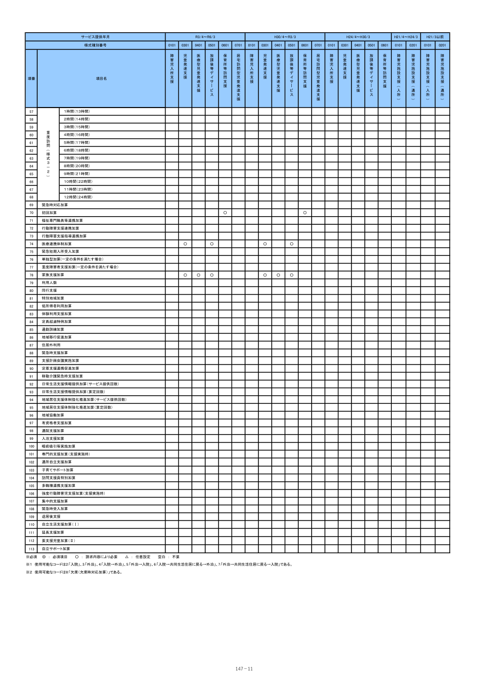
claude-haiku-5-5
表1 required_matrix 前頁から続く
| 項番 | 項目名 | 属性 | 桁数 | 内容 | 必須 | 備考 |
|---|---|---|---|---|---|---|
| 57 | 重度訪問（様式3－2） > 1時間(13時間) | R3/4〜R6/3 > 0101:－ R3/4〜R6/3 > 0301:－ R3/4〜R6/3 > 0401:－ R3/4〜R6/3 > 0501:－ R3/4〜R6/3 > 0601:－ R3/4〜R6/3 > 0701:－ H30/4〜R3/3 > 0101:－ H30/4〜R3/3 > 0301:－ H30/4〜R3/3 > 0401:－ H30/4〜R3/3 > 0501:－ H30/4〜R3/3 > 0601:－ H30/4〜R3/3 > 0701:－ H24/4〜H30/3 > 0101:－ H24/4〜H30/3 > 0301:－ H24/4〜H30/3 > 0401:－ H24/4〜H30/3 > 0501:－ H24/4〜H30/3 > 0601:－ H21/4〜H24/3 > 0101:－ H21/4〜H24/3 > 0201:－ H21/3以前 > 0101:－ H21/3以前 > 0201:－ | ||||
| 58 | 重度訪問（様式3－2） > 2時間(14時間) | R3/4〜R6/3 > 0101:－ R3/4〜R6/3 > 0301:－ R3/4〜R6/3 > 0401:－ R3/4〜R6/3 > 0501:－ R3/4〜R6/3 > 0601:－ R3/4〜R6/3 > 0701:－ H30/4〜R3/3 > 0101:－ H30/4〜R3/3 > 0301:－ H30/4〜R3/3 > 0401:－ H30/4〜R3/3 > 0501:－ H30/4〜R3/3 > 0601:－ H30/4〜R3/3 > 0701:－ H24/4〜H30/3 > 0101:－ H24/4〜H30/3 > 0301:－ H24/4〜H30/3 > 0401:－ H24/4〜H30/3 > 0501:－ H24/4〜H30/3 > 0601:－ H21/4〜H24/3 > 0101:－ H21/4〜H24/3 > 0201:－ H21/3以前 > 0101:－ H21/3以前 > 0201:－ | ||||
| 59 | 重度訪問（様式3－2） > 3時間(15時間) | R3/4〜R6/3 > 0101:－ R3/4〜R6/3 > 0301:－ R3/4〜R6/3 > 0401:－ R3/4〜R6/3 > 0501:－ R3/4〜R6/3 > 0601:－ R3/4〜R6/3 > 0701:－ H30/4〜R3/3 > 0101:－ H30/4〜R3/3 > 0301:－ H30/4〜R3/3 > 0401:－ H30/4〜R3/3 > 0501:－ H30/4〜R3/3 > 0601:－ H30/4〜R3/3 > 0701:－ H24/4〜H30/3 > 0101:－ H24/4〜H30/3 > 0301:－ H24/4〜H30/3 > 0401:－ H24/4〜H30/3 > 0501:－ H24/4〜H30/3 > 0601:－ H21/4〜H24/3 > 0101:－ H21/4〜H24/3 > 0201:－ H21/3以前 > 0101:－ H21/3以前 > 0201:－ | ||||
| 60 | 重度訪問（様式3－2） > 4時間(16時間) | R3/4〜R6/3 > 0101:－ R3/4〜R6/3 > 0301:－ R3/4〜R6/3 > 0401:－ R3/4〜R6/3 > 0501:－ R3/4〜R6/3 > 0601:－ R3/4〜R6/3 > 0701:－ H30/4〜R3/3 > 0101:－ H30/4〜R3/3 > 0301:－ H30/4〜R3/3 > 0401:－ H30/4〜R3/3 > 0501:－ H30/4〜R3/3 > 0601:－ H30/4〜R3/3 > 0701:－ H24/4〜H30/3 > 0101:－ H24/4〜H30/3 > 0301:－ H24/4〜H30/3 > 0401:－ H24/4〜H30/3 > 0501:－ H24/4〜H30/3 > 0601:－ H21/4〜H24/3 > 0101:－ H21/4〜H24/3 > 0201:－ H21/3以前 > 0101:－ H21/3以前 > 0201:－ | ||||
| 61 | 重度訪問（様式3－2） > 5時間(17時間) | R3/4〜R6/3 > 0101:－ R3/4〜R6/3 > 0301:－ R3/4〜R6/3 > 0401:－ R3/4〜R6/3 > 0501:－ R3/4〜R6/3 > 0601:－ R3/4〜R6/3 > 0701:－ H30/4〜R3/3 > 0101:－ H30/4〜R3/3 > 0301:－ H30/4〜R3/3 > 0401:－ H30/4〜R3/3 > 0501:－ H30/4〜R3/3 > 0601:－ H30/4〜R3/3 > 0701:－ H24/4〜H30/3 > 0101:－ H24/4〜H30/3 > 0301:－ H24/4〜H30/3 > 0401:－ H24/4〜H30/3 > 0501:－ H24/4〜H30/3 > 0601:－ H21/4〜H24/3 > 0101:－ H21/4〜H24/3 > 0201:－ H21/3以前 > 0101:－ H21/3以前 > 0201:－ | ||||
| 62 | 重度訪問（様式3－2） > 6時間(18時間) | R3/4〜R6/3 > 0101:－ R3/4〜R6/3 > 0301:－ R3/4〜R6/3 > 0401:－ R3/4〜R6/3 > 0501:－ R3/4〜R6/3 > 0601:－ R3/4〜R6/3 > 0701:－ H30/4〜R3/3 > 0101:－ H30/4〜R3/3 > 0301:－ H30/4〜R3/3 > 0401:－ H30/4〜R3/3 > 0501:－ H30/4〜R3/3 > 0601:－ H30/4〜R3/3 > 0701:－ H24/4〜H30/3 > 0101:－ H24/4〜H30/3 > 0301:－ H24/4〜H30/3 > 0401:－ H24/4〜H30/3 > 0501:－ H24/4〜H30/3 > 0601:－ H21/4〜H24/3 > 0101:－ H21/4〜H24/3 > 0201:－ H21/3以前 > 0101:－ H21/3以前 > 0201:－ | ||||
| 63 | 重度訪問（様式3－2） > 7時間(19時間) | R3/4〜R6/3 > 0101:－ R3/4〜R6/3 > 0301:－ R3/4〜R6/3 > 0401:－ R3/4〜R6/3 > 0501:－ R3/4〜R6/3 > 0601:－ R3/4〜R6/3 > 0701:－ H30/4〜R3/3 > 0101:－ H30/4〜R3/3 > 0301:－ H30/4〜R3/3 > 0401:－ H30/4〜R3/3 > 0501:－ H30/4〜R3/3 > 0601:－ H30/4〜R3/3 > 0701:－ H24/4〜H30/3 > 0101:－ H24/4〜H30/3 > 0301:－ H24/4〜H30/3 > 0401:－ H24/4〜H30/3 > 0501:－ H24/4〜H30/3 > 0601:－ H21/4〜H24/3 > 0101:－ H21/4〜H24/3 > 0201:－ H21/3以前 > 0101:－ H21/3以前 > 0201:－ | ||||
| 64 | 重度訪問（様式3－2） > 8時間(20時間) | R3/4〜R6/3 > 0101:－ R3/4〜R6/3 > 0301:－ R3/4〜R6/3 > 0401:－ R3/4〜R6/3 > 0501:－ R3/4〜R6/3 > 0601:－ R3/4〜R6/3 > 0701:－ H30/4〜R3/3 > 0101:－ H30/4〜R3/3 > 0301:－ H30/4〜R3/3 > 0401:－ H30/4〜R3/3 > 0501:－ H30/4〜R3/3 > 0601:－ H30/4〜R3/3 > 0701:－ H24/4〜H30/3 > 0101:－ H24/4〜H30/3 > 0301:－ H24/4〜H30/3 > 0401:－ H24/4〜H30/3 > 0501:－ H24/4〜H30/3 > 0601:－ H21/4〜H24/3 > 0101:－ H21/4〜H24/3 > 0201:－ H21/3以前 > 0101:－ H21/3以前 > 0201:－ | ||||
| 65 | 重度訪問（様式3－2） > 9時間(21時間) | R3/4〜R6/3 > 0101:－ R3/4〜R6/3 > 0301:－ R3/4〜R6/3 > 0401:－ R3/4〜R6/3 > 0501:－ R3/4〜R6/3 > 0601:－ R3/4〜R6/3 > 0701:－ H30/4〜R3/3 > 0101:－ H30/4〜R3/3 > 0301:－ H30/4〜R3/3 > 0401:－ H30/4〜R3/3 > 0501:－ H30/4〜R3/3 > 0601:－ H30/4〜R3/3 > 0701:－ H24/4〜H30/3 > 0101:－ H24/4〜H30/3 > 0301:－ H24/4〜H30/3 > 0401:－ H24/4〜H30/3 > 0501:－ H24/4〜H30/3 > 0601:－ H21/4〜H24/3 > 0101:－ H21/4〜H24/3 > 0201:－ H21/3以前 > 0101:－ H21/3以前 > 0201:－ | ||||
| 66 | 重度訪問（様式3－2） > 10時間(22時間) | R3/4〜R6/3 > 0101:－ R3/4〜R6/3 > 0301:－ R3/4〜R6/3 > 0401:－ R3/4〜R6/3 > 0501:－ R3/4〜R6/3 > 0601:－ R3/4〜R6/3 > 0701:－ H30/4〜R3/3 > 0101:－ H30/4〜R3/3 > 0301:－ H30/4〜R3/3 > 0401:－ H30/4〜R3/3 > 0501:－ H30/4〜R3/3 > 0601:－ H30/4〜R3/3 > 0701:－ H24/4〜H30/3 > 0101:－ H24/4〜H30/3 > 0301:－ H24/4〜H30/3 > 0401:－ H24/4〜H30/3 > 0501:－ H24/4〜H30/3 > 0601:－ H21/4〜H24/3 > 0101:－ H21/4〜H24/3 > 0201:－ H21/3以前 > 0101:－ H21/3以前 > 0201:－ | ||||
| 67 | 重度訪問（様式3－2） > 11時間(23時間) | R3/4〜R6/3 > 0101:－ R3/4〜R6/3 > 0301:－ R3/4〜R6/3 > 0401:－ R3/4〜R6/3 > 0501:－ R3/4〜R6/3 > 0601:－ R3/4〜R6/3 > 0701:－ H30/4〜R3/3 > 0101:－ H30/4〜R3/3 > 0301:－ H30/4〜R3/3 > 0401:－ H30/4〜R3/3 > 0501:－ H30/4〜R3/3 > 0601:－ H30/4〜R3/3 > 0701:－ H24/4〜H30/3 > 0101:－ H24/4〜H30/3 > 0301:－ H24/4〜H30/3 > 0401:－ H24/4〜H30/3 > 0501:－ H24/4〜H30/3 > 0601:－ H21/4〜H24/3 > 0101:－ H21/4〜H24/3 > 0201:－ H21/3以前 > 0101:－ H21/3以前 > 0201:－ | ||||
| 68 | 重度訪問（様式3－2） > 12時間(24時間) | R3/4〜R6/3 > 0101:－ R3/4〜R6/3 > 0301:－ R3/4〜R6/3 > 0401:－ R3/4〜R6/3 > 0501:－ R3/4〜R6/3 > 0601:－ R3/4〜R6/3 > 0701:－ H30/4〜R3/3 > 0101:－ H30/4〜R3/3 > 0301:－ H30/4〜R3/3 > 0401:－ H30/4〜R3/3 > 0501:－ H30/4〜R3/3 > 0601:－ H30/4〜R3/3 > 0701:－ H24/4〜H30/3 > 0101:－ H24/4〜H30/3 > 0301:－ H24/4〜H30/3 > 0401:－ H24/4〜H30/3 > 0501:－ H24/4〜H30/3 > 0601:－ H21/4〜H24/3 > 0101:－ H21/4〜H24/3 > 0201:－ H21/3以前 > 0101:－ H21/3以前 > 0201:－ | ||||
| 69 | 緊急時対応加算 | R3/4〜R6/3 > 0101:－ R3/4〜R6/3 > 0301:－ R3/4〜R6/3 > 0401:－ R3/4〜R6/3 > 0501:－ R3/4〜R6/3 > 0601:－ R3/4〜R6/3 > 0701:－ H30/4〜R3/3 > 0101:－ H30/4〜R3/3 > 0301:－ H30/4〜R3/3 > 0401:－ H30/4〜R3/3 > 0501:－ H30/4〜R3/3 > 0601:－ H30/4〜R3/3 > 0701:－ H24/4〜H30/3 > 0101:－ H24/4〜H30/3 > 0301:－ H24/4〜H30/3 > 0401:－ H24/4〜H30/3 > 0501:－ H24/4〜H30/3 > 0601:－ H21/4〜H24/3 > 0101:－ H21/4〜H24/3 > 0201:－ H21/3以前 > 0101:－ H21/3以前 > 0201:－ | ||||
| 70 | 初回加算 | R3/4〜R6/3 > 0101:－ R3/4〜R6/3 > 0301:－ R3/4〜R6/3 > 0401:－ R3/4〜R6/3 > 0501:－ R3/4〜R6/3 > 0601:○ R3/4〜R6/3 > 0701:－ H30/4〜R3/3 > 0101:－ H30/4〜R3/3 > 0301:－ H30/4〜R3/3 > 0401:－ H30/4〜R3/3 > 0501:－ H30/4〜R3/3 > 0601:○ H30/4〜R3/3 > 0701:－ H24/4〜H30/3 > 0101:－ H24/4〜H30/3 > 0301:－ H24/4〜H30/3 > 0401:－ H24/4〜H30/3 > 0501:－ H24/4〜H30/3 > 0601:－ H21/4〜H24/3 > 0101:－ H21/4〜H24/3 > 0201:－ H21/3以前 > 0101:－ H21/3以前 > 0201:－ | ||||
| 71 | 福祉専門職員等連携加算 | R3/4〜R6/3 > 0101:－ R3/4〜R6/3 > 0301:－ R3/4〜R6/3 > 0401:－ R3/4〜R6/3 > 0501:－ R3/4〜R6/3 > 0601:－ R3/4〜R6/3 > 0701:－ H30/4〜R3/3 > 0101:－ H30/4〜R3/3 > 0301:－ H30/4〜R3/3 > 0401:－ H30/4〜R3/3 > 0501:－ H30/4〜R3/3 > 0601:－ H30/4〜R3/3 > 0701:－ H24/4〜H30/3 > 0101:－ H24/4〜H30/3 > 0301:－ H24/4〜H30/3 > 0401:－ H24/4〜H30/3 > 0501:－ H24/4〜H30/3 > 0601:－ H21/4〜H24/3 > 0101:－ H21/4〜H24/3 > 0201:－ H21/3以前 > 0101:－ H21/3以前 > 0201:－ | ||||
| 72 | 行動障害支援連携加算 | R3/4〜R6/3 > 0101:－ R3/4〜R6/3 > 0301:－ R3/4〜R6/3 > 0401:－ R3/4〜R6/3 > 0501:－ R3/4〜R6/3 > 0601:－ R3/4〜R6/3 > 0701:－ H30/4〜R3/3 > 0101:－ H30/4〜R3/3 > 0301:－ H30/4〜R3/3 > 0401:－ H30/4〜R3/3 > 0501:－ H30/4〜R3/3 > 0601:－ H30/4〜R3/3 > 0701:－ H24/4〜H30/3 > 0101:－ H24/4〜H30/3 > 0301:－ H24/4〜H30/3 > 0401:－ H24/4〜H30/3 > 0501:－ H24/4〜H30/3 > 0601:－ H21/4〜H24/3 > 0101:－ H21/4〜H24/3 > 0201:－ H21/3以前 > 0101:－ H21/3以前 > 0201:－ | ||||
| 73 | 行動障害支援指導連携加算 | R3/4〜R6/3 > 0101:－ R3/4〜R6/3 > 0301:－ R3/4〜R6/3 > 0401:－ R3/4〜R6/3 > 0501:－ R3/4〜R6/3 > 0601:－ R3/4〜R6/3 > 0701:－ H30/4〜R3/3 > 0101:－ H30/4〜R3/3 > 0301:－ H30/4〜R3/3 > 0401:－ H30/4〜R3/3 > 0501:－ H30/4〜R3/3 > 0601:－ H30/4〜R3/3 > 0701:－ H24/4〜H30/3 > 0101:－ H24/4〜H30/3 > 0301:－ H24/4〜H30/3 > 0401:－ H24/4〜H30/3 > 0501:－ H24/4〜H30/3 > 0601:－ H21/4〜H24/3 > 0101:－ H21/4〜H24/3 > 0201:－ H21/3以前 > 0101:－ H21/3以前 > 0201:－ | ||||
| 74 | 医療連携体制加算 | R3/4〜R6/3 > 0101:－ R3/4〜R6/3 > 0301:○ R3/4〜R6/3 > 0401:－ R3/4〜R6/3 > 0501:○ R3/4〜R6/3 > 0601:－ R3/4〜R6/3 > 0701:－ H30/4〜R3/3 > 0101:－ H30/4〜R3/3 > 0301:○ H30/4〜R3/3 > 0401:－ H30/4〜R3/3 > 0501:○ H30/4〜R3/3 > 0601:－ H30/4〜R3/3 > 0701:－ H24/4〜H30/3 > 0101:－ H24/4〜H30/3 > 0301:－ H24/4〜H30/3 > 0401:－ H24/4〜H30/3 > 0501:－ H24/4〜H30/3 > 0601:－ H21/4〜H24/3 > 0101:－ H21/4〜H24/3 > 0201:－ H21/3以前 > 0101:－ H21/3以前 > 0201:－ | ||||
| 75 | 緊急短期入所受入加算 | R3/4〜R6/3 > 0101:－ R3/4〜R6/3 > 0301:－ R3/4〜R6/3 > 0401:－ R3/4〜R6/3 > 0501:－ R3/4〜R6/3 > 0601:－ R3/4〜R6/3 > 0701:－ H30/4〜R3/3 > 0101:－ H30/4〜R3/3 > 0301:－ H30/4〜R3/3 > 0401:－ H30/4〜R3/3 > 0501:－ H30/4〜R3/3 > 0601:－ H30/4〜R3/3 > 0701:－ H24/4〜H30/3 > 0101:－ H24/4〜H30/3 > 0301:－ H24/4〜H30/3 > 0401:－ H24/4〜H30/3 > 0501:－ H24/4〜H30/3 > 0601:－ H21/4〜H24/3 > 0101:－ H21/4〜H24/3 > 0201:－ H21/3以前 > 0101:－ H21/3以前 > 0201:－ | ||||
| 76 | 単独型加算(一定の条件を満たす場合) | R3/4〜R6/3 > 0101:－ R3/4〜R6/3 > 0301:－ R3/4〜R6/3 > 0401:－ R3/4〜R6/3 > 0501:－ R3/4〜R6/3 > 0601:－ R3/4〜R6/3 > 0701:－ H30/4〜R3/3 > 0101:－ H30/4〜R3/3 > 0301:－ H30/4〜R3/3 > 0401:－ H30/4〜R3/3 > 0501:－ H30/4〜R3/3 > 0601:－ H30/4〜R3/3 > 0701:－ H24/4〜H30/3 > 0101:－ H24/4〜H30/3 > 0301:－ H24/4〜H30/3 > 0401:－ H24/4〜H30/3 > 0501:－ H24/4〜H30/3 > 0601:－ H21/4〜H24/3 > 0101:－ H21/4〜H24/3 > 0201:－ H21/3以前 > 0101:－ H21/3以前 > 0201:－ | ||||
| 77 | 重度障害者支援加算(一定の条件を満たす場合) | R3/4〜R6/3 > 0101:－ R3/4〜R6/3 > 0301:－ R3/4〜R6/3 > 0401:－ R3/4〜R6/3 > 0501:－ R3/4〜R6/3 > 0601:－ R3/4〜R6/3 > 0701:－ H30/4〜R3/3 > 0101:－ H30/4〜R3/3 > 0301:－ H30/4〜R3/3 > 0401:－ H30/4〜R3/3 > 0501:－ H30/4〜R3/3 > 0601:－ H30/4〜R3/3 > 0701:－ H24/4〜H30/3 > 0101:－ H24/4〜H30/3 > 0301:－ H24/4〜H30/3 > 0401:－ H24/4〜H30/3 > 0501:－ H24/4〜H30/3 > 0601:－ H21/4〜H24/3 > 0101:－ H21/4〜H24/3 > 0201:－ H21/3以前 > 0101:－ H21/3以前 > 0201:－ | ||||
| 78 | 家族支援加算 | R3/4〜R6/3 > 0101:－ R3/4〜R6/3 > 0301:○ R3/4〜R6/3 > 0401:○ R3/4〜R6/3 > 0501:○ R3/4〜R6/3 > 0601:－ R3/4〜R6/3 > 0701:－ H30/4〜R3/3 > 0101:－ H30/4〜R3/3 > 0301:○ H30/4〜R3/3 > 0401:○ H30/4〜R3/3 > 0501:○ H30/4〜R3/3 > 0601:－ H30/4〜R3/3 > 0701:－ H24/4〜H30/3 > 0101:－ H24/4〜H30/3 > 0301:－ H24/4〜H30/3 > 0401:－ H24/4〜H30/3 > 0501:－ H24/4〜H30/3 > 0601:－ H21/4〜H24/3 > 0101:－ H21/4〜H24/3 > 0201:－ H21/3以前 > 0101:－ H21/3以前 > 0201:－ | ||||
| 79 | 利用人数 | R3/4〜R6/3 > 0101:－ R3/4〜R6/3 > 0301:－ R3/4〜R6/3 > 0401:－ R3/4〜R6/3 > 0501:－ R3/4〜R6/3 > 0601:－ R3/4〜R6/3 > 0701:－ H30/4〜R3/3 > 0101:－ H30/4〜R3/3 > 0301:－ H30/4〜R3/3 > 0401:－ H30/4〜R3/3 > 0501:－ H30/4〜R3/3 > 0601:－ H30/4〜R3/3 > 0701:－ H24/4〜H30/3 > 0101:－ H24/4〜H30/3 > 0301:－ H24/4〜H30/3 > 0401:－ H24/4〜H30/3 > 0501:－ H24/4〜H30/3 > 0601:－ H21/4〜H24/3 > 0101:－ H21/4〜H24/3 > 0201:－ H21/3以前 > 0101:－ H21/3以前 > 0201:－ | ||||
| 80 | 同行支援 | R3/4〜R6/3 > 0101:－ R3/4〜R6/3 > 0301:－ R3/4〜R6/3 > 0401:－ R3/4〜R6/3 > 0501:－ R3/4〜R6/3 > 0601:－ R3/4〜R6/3 > 0701:－ H30/4〜R3/3 > 0101:－ H30/4〜R3/3 > 0301:－ H30/4〜R3/3 > 0401:－ H30/4〜R3/3 > 0501:－ H30/4〜R3/3 > 0601:－ H30/4〜R3/3 > 0701:－ H24/4〜H30/3 > 0101:－ H24/4〜H30/3 > 0301:－ H24/4〜H30/3 > 0401:－ H24/4〜H30/3 > 0501:－ H24/4〜H30/3 > 0601:－ H21/4〜H24/3 > 0101:－ H21/4〜H24/3 > 0201:－ H21/3以前 > 0101:－ H21/3以前 > 0201:－ | ||||
| 81 | 特別地域加算 | R3/4〜R6/3 > 0101:－ R3/4〜R6/3 > 0301:－ R3/4〜R6/3 > 0401:－ R3/4〜R6/3 > 0501:－ R3/4〜R6/3 > 0601:－ R3/4〜R6/3 > 0701:－ H30/4〜R3/3 > 0101:－ H30/4〜R3/3 > 0301:－ H30/4〜R3/3 > 0401:－ H30/4〜R3/3 > 0501:－ H30/4〜R3/3 > 0601:－ H30/4〜R3/3 > 0701:－ H24/4〜H30/3 > 0101:－ H24/4〜H30/3 > 0301:－ H24/4〜H30/3 > 0401:－ H24/4〜H30/3 > 0501:－ H24/4〜H30/3 > 0601:－ H21/4〜H24/3 > 0101:－ H21/4〜H24/3 > 0201:－ H21/3以前 > 0101:－ H21/3以前 > 0201:－ | ||||
| 82 | 低所得者利用加算 | R3/4〜R6/3 > 0101:－ R3/4〜R6/3 > 0301:－ R3/4〜R6/3 > 0401:－ R3/4〜R6/3 > 0501:－ R3/4〜R6/3 > 0601:－ R3/4〜R6/3 > 0701:－ H30/4〜R3/3 > 0101:－ H30/4〜R3/3 > 0301:－ H30/4〜R3/3 > 0401:－ H30/4〜R3/3 > 0501:－ H30/4〜R3/3 > 0601:－ H30/4〜R3/3 > 0701:－ H24/4〜H30/3 > 0101:－ H24/4〜H30/3 > 0301:－ H24/4〜H30/3 > 0401:－ H24/4〜H30/3 > 0501:－ H24/4〜H30/3 > 0601:－ H21/4〜H24/3 > 0101:－ H21/4〜H24/3 > 0201:－ H21/3以前 > 0101:－ H21/3以前 > 0201:－ | ||||
| 83 | 体験利用支援加算 | R3/4〜R6/3 > 0101:－ R3/4〜R6/3 > 0301:－ R3/4〜R6/3 > 0401:－ R3/4〜R6/3 > 0501:－ R3/4〜R6/3 > 0601:－ R3/4〜R6/3 > 0701:－ H30/4〜R3/3 > 0101:－ H30/4〜R3/3 > 0301:－ H30/4〜R3/3 > 0401:－ H30/4〜R3/3 > 0501:－ H30/4〜R3/3 > 0601:－ H30/4〜R3/3 > 0701:－ H24/4〜H30/3 > 0101:－ H24/4〜H30/3 > 0301:－ H24/4〜H30/3 > 0401:－ H24/4〜H30/3 > 0501:－ H24/4〜H30/3 > 0601:－ H21/4〜H24/3 > 0101:－ H21/4〜H24/3 > 0201:－ H21/3以前 > 0101:－ H21/3以前 > 0201:－ | ||||
| 84 | 定員超過特例加算 | R3/4〜R6/3 > 0101:－ R3/4〜R6/3 > 0301:－ R3/4〜R6/3 > 0401:－ R3/4〜R6/3 > 0501:－ R3/4〜R6/3 > 0601:－ R3/4〜R6/3 > 0701:－ H30/4〜R3/3 > 0101:－ H30/4〜R3/3 > 0301:－ H30/4〜R3/3 > 0401:－ H30/4〜R3/3 > 0501:－ H30/4〜R3/3 > 0601:－ H30/4〜R3/3 > 0701:－ H24/4〜H30/3 > 0101:－ H24/4〜H30/3 > 0301:－ H24/4〜H30/3 > 0401:－ H24/4〜H30/3 > 0501:－ H24/4〜H30/3 > 0601:－ H21/4〜H24/3 > 0101:－ H21/4〜H24/3 > 0201:－ H21/3以前 > 0101:－ H21/3以前 > 0201:－ | ||||
| 85 | 通勤訓練加算 | R3/4〜R6/3 > 0101:－ R3/4〜R6/3 > 0301:－ R3/4〜R6/3 > 0401:－ R3/4〜R6/3 > 0501:－ R3/4〜R6/3 > 0601:－ R3/4〜R6/3 > 0701:－ H30/4〜R3/3 > 0101:－ H30/4〜R3/3 > 0301:－ H30/4〜R3/3 > 0401:－ H30/4〜R3/3 > 0501:－ H30/4〜R3/3 > 0601:－ H30/4〜R3/3 > 0701:－ H24/4〜H30/3 > 0101:－ H24/4〜H30/3 > 0301:－ H24/4〜H30/3 > 0401:－ H24/4〜H30/3 > 0501:－ H24/4〜H30/3 > 0601:－ H21/4〜H24/3 > 0101:－ H21/4〜H24/3 > 0201:－ H21/3以前 > 0101:－ H21/3以前 > 0201:－ | ||||
| 86 | 地域移行促進加算 | R3/4〜R6/3 > 0101:－ R3/4〜R6/3 > 0301:－ R3/4〜R6/3 > 0401:－ R3/4〜R6/3 > 0501:－ R3/4〜R6/3 > 0601:－ R3/4〜R6/3 > 0701:－ H30/4〜R3/3 > 0101:－ H30/4〜R3/3 > 0301:－ H30/4〜R3/3 > 0401:－ H30/4〜R3/3 > 0501:－ H30/4〜R3/3 > 0601:－ H30/4〜R3/3 > 0701:－ H24/4〜H30/3 > 0101:－ H24/4〜H30/3 > 0301:－ H24/4〜H30/3 > 0401:－ H24/4〜H30/3 > 0501:－ H24/4〜H30/3 > 0601:－ H21/4〜H24/3 > 0101:－ H21/4〜H24/3 > 0201:－ H21/3以前 > 0101:－ H21/3以前 > 0201:－ | ||||
| 87 | 住居外利用 | R3/4〜R6/3 > 0101:－ R3/4〜R6/3 > 0301:－ R3/4〜R6/3 > 0401:－ R3/4〜R6/3 > 0501:－ R3/4〜R6/3 > 0601:－ R3/4〜R6/3 > 0701:－ H30/4〜R3/3 > 0101:－ H30/4〜R3/3 > 0301:－ H30/4〜R3/3 > 0401:－ H30/4〜R3/3 > 0501:－ H30/4〜R3/3 > 0601:－ H30/4〜R3/3 > 0701:－ H24/4〜H30/3 > 0101:－ H24/4〜H30/3 > 0301:－ H24/4〜H30/3 > 0401:－ H24/4〜H30/3 > 0501:－ H24/4〜H30/3 > 0601:－ H21/4〜H24/3 > 0101:－ H21/4〜H24/3 > 0201:－ H21/3以前 > 0101:－ H21/3以前 > 0201:－ | ||||
| 88 | 緊急時支援加算 | R3/4〜R6/3 > 0101:－ R3/4〜R6/3 > 0301:－ R3/4〜R6/3 > 0401:－ R3/4〜R6/3 > 0501:－ R3/4〜R6/3 > 0601:－ R3/4〜R6/3 > 0701:－ H30/4〜R3/3 > 0101:－ H30/4〜R3/3 > 0301:－ H30/4〜R3/3 > 0401:－ H30/4〜R3/3 > 0501:－ H30/4〜R3/3 > 0601:－ H30/4〜R3/3 > 0701:－ H24/4〜H30/3 > 0101:－ H24/4〜H30/3 > 0301:－ H24/4〜H30/3 > 0401:－ H24/4〜H30/3 > 0501:－ H24/4〜H30/3 > 0601:－ H21/4〜H24/3 > 0101:－ H21/4〜H24/3 > 0201:－ H21/3以前 > 0101:－ H21/3以前 > 0201:－ | ||||
| 89 | 支援計画会議実施加算 | R3/4〜R6/3 > 0101:－ R3/4〜R6/3 > 0301:－ R3/4〜R6/3 > 0401:－ R3/4〜R6/3 > 0501:－ R3/4〜R6/3 > 0601:－ R3/4〜R6/3 > 0701:－ H30/4〜R3/3 > 0101:－ H30/4〜R3/3 > 0301:－ H30/4〜R3/3 > 0401:－ H30/4〜R3/3 > 0501:－ H30/4〜R3/3 > 0601:－ H30/4〜R3/3 > 0701:－ H24/4〜H30/3 > 0101:－ H24/4〜H30/3 > 0301:－ H24/4〜H30/3 > 0401:－ H24/4〜H30/3 > 0501:－ H24/4〜H30/3 > 0601:－ H21/4〜H24/3 > 0101:－ H21/4〜H24/3 > 0201:－ H21/3以前 > 0101:－ H21/3以前 > 0201:－ | ||||
| 90 | 定着支援連携促進加算 | R3/4〜R6/3 > 0101:－ R3/4〜R6/3 > 0301:－ R3/4〜R6/3 > 0401:－ R3/4〜R6/3 > 0501:－ R3/4〜R6/3 > 0601:－ R3/4〜R6/3 > 0701:－ H30/4〜R3/3 > 0101:－ H30/4〜R3/3 > 0301:－ H30/4〜R3/3 > 0401:－ H30/4〜R3/3 > 0501:－ H30/4〜R3/3 > 0601:－ H30/4〜R3/3 > 0701:－ H24/4〜H30/3 > 0101:－ H24/4〜H30/3 > 0301:－ H24/4〜H30/3 > 0401:－ H24/4〜H30/3 > 0501:－ H24/4〜H30/3 > 0601:－ H21/4〜H24/3 > 0101:－ H21/4〜H24/3 > 0201:－ H21/3以前 > 0101:－ H21/3以前 > 0201:－ | ||||
| 91 | 移動介護緊急時支援加算 | R3/4〜R6/3 > 0101:－ R3/4〜R6/3 > 0301:－ R3/4〜R6/3 > 0401:－ R3/4〜R6/3 > 0501:－ R3/4〜R6/3 > 0601:－ R3/4〜R6/3 > 0701:－ H30/4〜R3/3 > 0101:－ H30/4〜R3/3 > 0301:－ H30/4〜R3/3 > 0401:－ H30/4〜R3/3 > 0501:－ H30/4〜R3/3 > 0601:－ H30/4〜R3/3 > 0701:－ H24/4〜H30/3 > 0101:－ H24/4〜H30/3 > 0301:－ H24/4〜H30/3 > 0401:－ H24/4〜H30/3 > 0501:－ H24/4〜H30/3 > 0601:－ H21/4〜H24/3 > 0101:－ H21/4〜H24/3 > 0201:－ H21/3以前 > 0101:－ H21/3以前 > 0201:－ | ||||
| 92 | 日常生活支援情報提供加算(サービス提供回数) | R3/4〜R6/3 > 0101:－ R3/4〜R6/3 > 0301:－ R3/4〜R6/3 > 0401:－ R3/4〜R6/3 > 0501:－ R3/4〜R6/3 > 0601:－ R3/4〜R6/3 > 0701:－ H30/4〜R3/3 > 0101:－ H30/4〜R3/3 > 0301:－ H30/4〜R3/3 > 0401:－ H30/4〜R3/3 > 0501:－ H30/4〜R3/3 > 0601:－ H30/4〜R3/3 > 0701:－ H24/4〜H30/3 > 0101:－ H24/4〜H30/3 > 0301:－ H24/4〜H30/3 > 0401:－ H24/4〜H30/3 > 0501:－ H24/4〜H30/3 > 0601:－ H21/4〜H24/3 > 0101:－ H21/4〜H24/3 > 0201:－ H21/3以前 > 0101:－ H21/3以前 > 0201:－ | ||||
| 93 | 日常生活支援情報提供加算(算定回数) | R3/4〜R6/3 > 0101:－ R3/4〜R6/3 > 0301:－ R3/4〜R6/3 > 0401:－ R3/4〜R6/3 > 0501:－ R3/4〜R6/3 > 0601:－ R3/4〜R6/3 > 0701:－ H30/4〜R3/3 > 0101:－ H30/4〜R3/3 > 0301:－ H30/4〜R3/3 > 0401:－ H30/4〜R3/3 > 0501:－ H30/4〜R3/3 > 0601:－ H30/4〜R3/3 > 0701:－ H24/4〜H30/3 > 0101:－ H24/4〜H30/3 > 0301:－ H24/4〜H30/3 > 0401:－ H24/4〜H30/3 > 0501:－ H24/4〜H30/3 > 0601:－ H21/4〜H24/3 > 0101:－ H21/4〜H24/3 > 0201:－ H21/3以前 > 0101:－ H21/3以前 > 0201:－ | ||||
| 94 | 地域居住支援体制強化推進加算(サービス提供回数) | R3/4〜R6/3 > 0101:－ R3/4〜R6/3 > 0301:－ R3/4〜R6/3 > 0401:－ R3/4〜R6/3 > 0501:－ R3/4〜R6/3 > 0601:－ R3/4〜R6/3 > 0701:－ H30/4〜R3/3 > 0101:－ H30/4〜R3/3 > 0301:－ H30/4〜R3/3 > 0401:－ H30/4〜R3/3 > 0501:－ H30/4〜R3/3 > 0601:－ H30/4〜R3/3 > 0701:－ H24/4〜H30/3 > 0101:－ H24/4〜H30/3 > 0301:－ H24/4〜H30/3 > 0401:－ H24/4〜H30/3 > 0501:－ H24/4〜H30/3 > 0601:－ H21/4〜H24/3 > 0101:－ H21/4〜H24/3 > 0201:－ H21/3以前 > 0101:－ H21/3以前 > 0201:－ | ||||
| 95 | 地域居住支援体制強化推進加算(算定回数) | R3/4〜R6/3 > 0101:－ R3/4〜R6/3 > 0301:－ R3/4〜R6/3 > 0401:－ R3/4〜R6/3 > 0501:－ R3/4〜R6/3 > 0601:－ R3/4〜R6/3 > 0701:－ H30/4〜R3/3 > 0101:－ H30/4〜R3/3 > 0301:－ H30/4〜R3/3 > 0401:－ H30/4〜R3/3 > 0501:－ H30/4〜R3/3 > 0601:－ H30/4〜R3/3 > 0701:－ H24/4〜H30/3 > 0101:－ H24/4〜H30/3 > 0301:－ H24/4〜H30/3 > 0401:－ H24/4〜H30/3 > 0501:－ H24/4〜H30/3 > 0601:－ H21/4〜H24/3 > 0101:－ H21/4〜H24/3 > 0201:－ H21/3以前 > 0101:－ H21/3以前 > 0201:－ | ||||
| 96 | 地域協働加算 | R3/4〜R6/3 > 0101:－ R3/4〜R6/3 > 0301:－ R3/4〜R6/3 > 0401:－ R3/4〜R6/3 > 0501:－ R3/4〜R6/3 > 0601:－ R3/4〜R6/3 > 0701:－ H30/4〜R3/3 > 0101:－ H30/4〜R3/3 > 0301:－ H30/4〜R3/3 > 0401:－ H30/4〜R3/3 > 0501:－ H30/4〜R3/3 > 0601:－ H30/4〜R3/3 > 0701:－ H24/4〜H30/3 > 0101:－ H24/4〜H30/3 > 0301:－ H24/4〜H30/3 > 0401:－ H24/4〜H30/3 > 0501:－ H24/4〜H30/3 > 0601:－ H21/4〜H24/3 > 0101:－ H21/4〜H24/3 > 0201:－ H21/3以前 > 0101:－ H21/3以前 > 0201:－ | ||||
| 97 | 有資格者支援加算 | R3/4〜R6/3 > 0101:－ R3/4〜R6/3 > 0301:－ R3/4〜R6/3 > 0401:－ R3/4〜R6/3 > 0501:－ R3/4〜R6/3 > 0601:－ R3/4〜R6/3 > 0701:－ H30/4〜R3/3 > 0101:－ H30/4〜R3/3 > 0301:－ H30/4〜R3/3 > 0401:－ H30/4〜R3/3 > 0501:－ H30/4〜R3/3 > 0601:－ H30/4〜R3/3 > 0701:－ H24/4〜H30/3 > 0101:－ H24/4〜H30/3 > 0301:－ H24/4〜H30/3 > 0401:－ H24/4〜H30/3 > 0501:－ H24/4〜H30/3 > 0601:－ H21/4〜H24/3 > 0101:－ H21/4〜H24/3 > 0201:－ H21/3以前 > 0101:－ H21/3以前 > 0201:－ | ||||
| 98 | 通院支援加算 | R3/4〜R6/3 > 0101:－ R3/4〜R6/3 > 0301:－ R3/4〜R6/3 > 0401:－ R3/4〜R6/3 > 0501:－ R3/4〜R6/3 > 0601:－ R3/4〜R6/3 > 0701:－ H30/4〜R3/3 > 0101:－ H30/4〜R3/3 > 0301:－ H30/4〜R3/3 > 0401:－ H30/4〜R3/3 > 0501:－ H30/4〜R3/3 > 0601:－ H30/4〜R3/3 > 0701:－ H24/4〜H30/3 > 0101:－ H24/4〜H30/3 > 0301:－ H24/4〜H30/3 > 0401:－ H24/4〜H30/3 > 0501:－ H24/4〜H30/3 > 0601:－ H21/4〜H24/3 > 0101:－ H21/4〜H24/3 > 0201:－ H21/3以前 > 0101:－ H21/3以前 > 0201:－ | ||||
| 99 | 入浴支援加算 | R3/4〜R6/3 > 0101:－ R3/4〜R6/3 > 0301:－ R3/4〜R6/3 > 0401:－ R3/4〜R6/3 > 0501:－ R3/4〜R6/3 > 0601:－ R3/4〜R6/3 > 0701:－ H30/4〜R3/3 > 0101:－ H30/4〜R3/3 > 0301:－ H30/4〜R3/3 > 0401:－ H30/4〜R3/3 > 0501:－ H30/4〜R3/3 > 0601:－ H30/4〜R3/3 > 0701:－ H24/4〜H30/3 > 0101:－ H24/4〜H30/3 > 0301:－ H24/4〜H30/3 > 0401:－ H24/4〜H30/3 > 0501:－ H24/4〜H30/3 > 0601:－ H21/4〜H24/3 > 0101:－ H21/4〜H24/3 > 0201:－ H21/3以前 > 0101:－ H21/3以前 > 0201:－ | ||||
| 100 | 喀痰吸引等実施加算 | R3/4〜R6/3 > 0101:－ R3/4〜R6/3 > 0301:－ R3/4〜R6/3 > 0401:－ R3/4〜R6/3 > 0501:－ R3/4〜R6/3 > 0601:－ R3/4〜R6/3 > 0701:－ H30/4〜R3/3 > 0101:－ H30/4〜R3/3 > 0301:－ H30/4〜R3/3 > 0401:－ H30/4〜R3/3 > 0501:－ H30/4〜R3/3 > 0601:－ H30/4〜R3/3 > 0701:－ H24/4〜H30/3 > 0101:－ H24/4〜H30/3 > 0301:－ H24/4〜H30/3 > 0401:－ H24/4〜H30/3 > 0501:－ H24/4〜H30/3 > 0601:－ H21/4〜H24/3 > 0101:－ H21/4〜H24/3 > 0201:－ H21/3以前 > 0101:－ H21/3以前 > 0201:－ | ||||
| 101 | 専門的支援加算(支援実施時) | R3/4〜R6/3 > 0101:－ R3/4〜R6/3 > 0301:－ R3/4〜R6/3 > 0401:－ R3/4〜R6/3 > 0501:－ R3/4〜R6/3 > 0601:－ R3/4〜R6/3 > 0701:－ H30/4〜R3/3 > 0101:－ H30/4〜R3/3 > 0301:－ H30/4〜R3/3 > 0401:－ H30/4〜R3/3 > 0501:－ H30/4〜R3/3 > 0601:－ H30/4〜R3/3 > 0701:－ H24/4〜H30/3 > 0101:－ H24/4〜H30/3 > 0301:－ H24/4〜H30/3 > 0401:－ H24/4〜H30/3 > 0501:－ H24/4〜H30/3 > 0601:－ H21/4〜H24/3 > 0101:－ H21/4〜H24/3 > 0201:－ H21/3以前 > 0101:－ H21/3以前 > 0201:－ | ||||
| 102 | 通所自立支援加算 | R3/4〜R6/3 > 0101:－ R3/4〜R6/3 > 0301:－ R3/4〜R6/3 > 0401:－ R3/4〜R6/3 > 0501:－ R3/4〜R6/3 > 0601:－ R3/4〜R6/3 > 0701:－ H30/4〜R3/3 > 0101:－ H30/4〜R3/3 > 0301:－ H30/4〜R3/3 > 0401:－ H30/4〜R3/3 > 0501:－ H30/4〜R3/3 > 0601:－ H30/4〜R3/3 > 0701:－ H24/4〜H30/3 > 0101:－ H24/4〜H30/3 > 0301:－ H24/4〜H30/3 > 0401:－ H24/4〜H30/3 > 0501:－ H24/4〜H30/3 > 0601:－ H21/4〜H24/3 > 0101:－ H21/4〜H24/3 > 0201:－ H21/3以前 > 0101:－ H21/3以前 > 0201:－ | ||||
| 103 | 子育てサポート加算 | R3/4〜R6/3 > 0101:－ R3/4〜R6/3 > 0301:－ R3/4〜R6/3 > 0401:－ R3/4〜R6/3 > 0501:－ R3/4〜R6/3 > 0601:－ R3/4〜R6/3 > 0701:－ H30/4〜R3/3 > 0101:－ H30/4〜R3/3 > 0301:－ H30/4〜R3/3 > 0401:－ H30/4〜R3/3 > 0501:－ H30/4〜R3/3 > 0601:－ H30/4〜R3/3 > 0701:－ H24/4〜H30/3 > 0101:－ H24/4〜H30/3 > 0301:－ H24/4〜H30/3 > 0401:－ H24/4〜H30/3 > 0501:－ H24/4〜H30/3 > 0601:－ H21/4〜H24/3 > 0101:－ H21/4〜H24/3 > 0201:－ H21/3以前 > 0101:－ H21/3以前 > 0201:－ | ||||
| 104 | 訪問支援員特別加算 | R3/4〜R6/3 > 0101:－ R3/4〜R6/3 > 0301:－ R3/4〜R6/3 > 0401:－ R3/4〜R6/3 > 0501:－ R3/4〜R6/3 > 0601:－ R3/4〜R6/3 > 0701:－ H30/4〜R3/3 > 0101:－ H30/4〜R3/3 > 0301:－ H30/4〜R3/3 > 0401:－ H30/4〜R3/3 > 0501:－ H30/4〜R3/3 > 0601:－ H30/4〜R3/3 > 0701:－ H24/4〜H30/3 > 0101:－ H24/4〜H30/3 > 0301:－ H24/4〜H30/3 > 0401:－ H24/4〜H30/3 > 0501:－ H24/4〜H30/3 > 0601:－ H21/4〜H24/3 > 0101:－ H21/4〜H24/3 > 0201:－ H21/3以前 > 0101:－ H21/3以前 > 0201:－ | ||||
| 105 | 多職種連携支援加算 | R3/4〜R6/3 > 0101:－ R3/4〜R6/3 > 0301:－ R3/4〜R6/3 > 0401:－ R3/4〜R6/3 > 0501:－ R3/4〜R6/3 > 0601:－ R3/4〜R6/3 > 0701:－ H30/4〜R3/3 > 0101:－ H30/4〜R3/3 > 0301:－ H30/4〜R3/3 > 0401:－ H30/4〜R3/3 > 0501:－ H30/4〜R3/3 > 0601:－ H30/4〜R3/3 > 0701:－ H24/4〜H30/3 > 0101:－ H24/4〜H30/3 > 0301:－ H24/4〜H30/3 > 0401:－ H24/4〜H30/3 > 0501:－ H24/4〜H30/3 > 0601:－ H21/4〜H24/3 > 0101:－ H21/4〜H24/3 > 0201:－ H21/3以前 > 0101:－ H21/3以前 > 0201:－ | ||||
| 106 | 強度行動障害児支援加算(支援実施時) | R3/4〜R6/3 > 0101:－ R3/4〜R6/3 > 0301:－ R3/4〜R6/3 > 0401:－ R3/4〜R6/3 > 0501:－ R3/4〜R6/3 > 0601:－ R3/4〜R6/3 > 0701:－ H30/4〜R3/3 > 0101:－ H30/4〜R3/3 > 0301:－ H30/4〜R3/3 > 0401:－ H30/4〜R3/3 > 0501:－ H30/4〜R3/3 > 0601:－ H30/4〜R3/3 > 0701:－ H24/4〜H30/3 > 0101:－ H24/4〜H30/3 > 0301:－ H24/4〜H30/3 > 0401:－ H24/4〜H30/3 > 0501:－ H24/4〜H30/3 > 0601:－ H21/4〜H24/3 > 0101:－ H21/4〜H24/3 > 0201:－ H21/3以前 > 0101:－ H21/3以前 > 0201:－ | ||||
| 107 | 集中的支援加算 | R3/4〜R6/3 > 0101:－ R3/4〜R6/3 > 0301:－ R3/4〜R6/3 > 0401:－ R3/4〜R6/3 > 0501:－ R3/4〜R6/3 > 0601:－ R3/4〜R6/3 > 0701:－ H30/4〜R3/3 > 0101:－ H30/4〜R3/3 > 0301:－ H30/4〜R3/3 > 0401:－ H30/4〜R3/3 > 0501:－ H30/4〜R3/3 > 0601:－ H30/4〜R3/3 > 0701:－ H24/4〜H30/3 > 0101:－ H24/4〜H30/3 > 0301:－ H24/4〜H30/3 > 0401:－ H24/4〜H30/3 > 0501:－ H24/4〜H30/3 > 0601:－ H21/4〜H24/3 > 0101:－ H21/4〜H24/3 > 0201:－ H21/3以前 > 0101:－ H21/3以前 > 0201:－ | ||||
| 108 | 緊急時受入加算 | R3/4〜R6/3 > 0101:－ R3/4〜R6/3 > 0301:－ R3/4〜R6/3 > 0401:－ R3/4〜R6/3 > 0501:－ R3/4〜R6/3 > 0601:－ R3/4〜R6/3 > 0701:－ H30/4〜R3/3 > 0101:－ H30/4〜R3/3 > 0301:－ H30/4〜R3/3 > 0401:－ H30/4〜R3/3 > 0501:－ H30/4〜R3/3 > 0601:－ H30/4〜R3/3 > 0701:－ H24/4〜H30/3 > 0101:－ H24/4〜H30/3 > 0301:－ H24/4〜H30/3 > 0401:－ H24/4〜H30/3 > 0501:－ H24/4〜H30/3 > 0601:－ H21/4〜H24/3 > 0101:－ H21/4〜H24/3 > 0201:－ H21/3以前 > 0101:－ H21/3以前 > 0201:－ | ||||
| 109 | 退居後支援 | R3/4〜R6/3 > 0101:－ R3/4〜R6/3 > 0301:－ R3/4〜R6/3 > 0401:－ R3/4〜R6/3 > 0501:－ R3/4〜R6/3 > 0601:－ R3/4〜R6/3 > 0701:－ H30/4〜R3/3 > 0101:－ H30/4〜R3/3 > 0301:－ H30/4〜R3/3 > 0401:－ H30/4〜R3/3 > 0501:－ H30/4〜R3/3 > 0601:－ H30/4〜R3/3 > 0701:－ H24/4〜H30/3 > 0101:－ H24/4〜H30/3 > 0301:－ H24/4〜H30/3 > 0401:－ H24/4〜H30/3 > 0501:－ H24/4〜H30/3 > 0601:－ H21/4〜H24/3 > 0101:－ H21/4〜H24/3 > 0201:－ H21/3以前 > 0101:－ H21/3以前 > 0201:－ | ||||
| 110 | 自立生活支援加算(Ⅰ) | R3/4〜R6/3 > 0101:－ R3/4〜R6/3 > 0301:－ R3/4〜R6/3 > 0401:－ R3/4〜R6/3 > 0501:－ R3/4〜R6/3 > 0601:－ R3/4〜R6/3 > 0701:－ H30/4〜R3/3 > 0101:－ H30/4〜R3/3 > 0301:－ H30/4〜R3/3 > 0401:－ H30/4〜R3/3 > 0501:－ H30/4〜R3/3 > 0601:－ H30/4〜R3/3 > 0701:－ H24/4〜H30/3 > 0101:－ H24/4〜H30/3 > 0301:－ H24/4〜H30/3 > 0401:－ H24/4〜H30/3 > 0501:－ H24/4〜H30/3 > 0601:－ H21/4〜H24/3 > 0101:－ H21/4〜H24/3 > 0201:－ H21/3以前 > 0101:－ H21/3以前 > 0201:－ | ||||
| 111 | 延長支援加算 | R3/4〜R6/3 > 0101:－ R3/4〜R6/3 > 0301:－ R3/4〜R6/3 > 0401:－ R3/4〜R6/3 > 0501:－ R3/4〜R6/3 > 0601:－ R3/4〜R6/3 > 0701:－ H30/4〜R3/3 > 0101:－ H30/4〜R3/3 > 0301:－ H30/4〜R3/3 > 0401:－ H30/4〜R3/3 > 0501:－ H30/4〜R3/3 > 0601:－ H30/4〜R3/3 > 0701:－ H24/4〜H30/3 > 0101:－ H24/4〜H30/3 > 0301:－ H24/4〜H30/3 > 0401:－ H24/4〜H30/3 > 0501:－ H24/4〜H30/3 > 0601:－ H21/4〜H24/3 > 0101:－ H21/4〜H24/3 > 0201:－ H21/3以前 > 0101:－ H21/3以前 > 0201:－ | ||||
| 112 | 要支援児童加算(Ⅱ) | R3/4〜R6/3 > 0101:－ R3/4〜R6/3 > 0301:－ R3/4〜R6/3 > 0401:－ R3/4〜R6/3 > 0501:－ R3/4〜R6/3 > 0601:－ R3/4〜R6/3 > 0701:－ H30/4〜R3/3 > 0101:－ H30/4〜R3/3 > 0301:－ H30/4〜R3/3 > 0401:－ H30/4〜R3/3 > 0501:－ H30/4〜R3/3 > 0601:－ H30/4〜R3/3 > 0701:－ H24/4〜H30/3 > 0101:－ H24/4〜H30/3 > 0301:－ H24/4〜H30/3 > 0401:－ H24/4〜H30/3 > 0501:－ H24/4〜H30/3 > 0601:－ H21/4〜H24/3 > 0101:－ H21/4〜H24/3 > 0201:－ H21/3以前 > 0101:－ H21/3以前 > 0201:－ | ||||
| 113 | 自立サポート加算 | R3/4〜R6/3 > 0101:－ R3/4〜R6/3 > 0301:－ R3/4〜R6/3 > 0401:－ R3/4〜R6/3 > 0501:－ R3/4〜R6/3 > 0601:－ R3/4〜R6/3 > 0701:－ H30/4〜R3/3 > 0101:－ H30/4〜R3/3 > 0301:－ H30/4〜R3/3 > 0401:－ H30/4〜R3/3 > 0501:－ H30/4〜R3/3 > 0601:－ H30/4〜R3/3 > 0701:－ H24/4〜H30/3 > 0101:－ H24/4〜H30/3 > 0301:－ H24/4〜H30/3 > 0401:－ H24/4〜H30/3 > 0501:－ H24/4〜H30/3 > 0601:－ H21/4〜H24/3 > 0101:－ H21/4〜H24/3 > 0201:－ H21/3以前 > 0101:－ H21/3以前 > 0201:－ |
注記
- ※必須 ◎：必須項目 ○：請求内容により必要 △：任意設定 空白：不要
- ※1 使用可能なコードは2「入院」、3「外泊」、4「入院→外泊」、5「外泊→入院」、6「入院→共同生活住居に戻る→外泊」、7「外泊→共同生活住居に戻る→入院」である。
- ※2 使用可能なコードは8「欠席(欠席時対応加算)」である。
uncertain（モデル自己申告）
- 表の見出し（サービス名の縦書き見出し）は列名に含めず、様式種別番号と年月のみを列名とした。列名は「R3-0101」のような略記で書いたが、原文では「R3/4〜R6/3 > 0101」等の見出し。
- 表に表題がなく項番57から始まるため、前ページからの続きと判断した（continued_from_prev_page=true）。
- 項番57〜68は縦結合の「重度訪問（様式3－2）」の下の時間区分として name_path を組んだ。
- ○の位置は画像上の列位置から判定した。細部の判読に誤りがあり得る。
- 注記※1・※2の本文は画像に印字された文のとおり転記したが、「※必須」の凡例はページ上の表記に従った。
claude-sonnet-5-5
- 表1 必須（列別）の列数が行によって違う（1 行が 6 列未満）。空欄の列を省略した可能性
表1 required_matrix 前頁から続く
| 項番 | 項目名 | 属性 | 桁数 | 内容 | 必須 | 備考 |
|---|---|---|---|---|---|---|
| 57 | 重度訪問（様式3－2） > 1時間(13時間) | R3/4～R6/3 > 0301:－ R3/4～R6/3 > 0401:－ R3/4～R6/3 > 0501:－ H30/4～R3/3 > 0301:－ H30/4～R3/3 > 0401:－ H30/4～R3/3 > 0501:－ | ||||
| 58 | 重度訪問（様式3－2） > 2時間(14時間) | R3/4～R6/3 > 0301:－ R3/4～R6/3 > 0401:－ R3/4～R6/3 > 0501:－ H30/4～R3/3 > 0301:－ H30/4～R3/3 > 0401:－ H30/4～R3/3 > 0501:－ | ||||
| 59 | 重度訪問（様式3－2） > 3時間(15時間) | R3/4～R6/3 > 0301:－ R3/4～R6/3 > 0401:－ R3/4～R6/3 > 0501:－ H30/4～R3/3 > 0301:－ H30/4～R3/3 > 0401:－ H30/4～R3/3 > 0501:－ | ||||
| 60 | 重度訪問（様式3－2） > 4時間(16時間) | R3/4～R6/3 > 0301:－ R3/4～R6/3 > 0401:－ R3/4～R6/3 > 0501:－ H30/4～R3/3 > 0301:－ H30/4～R3/3 > 0401:－ H30/4～R3/3 > 0501:－ | ||||
| 61 | 重度訪問（様式3－2） > 5時間(17時間) | R3/4～R6/3 > 0301:－ R3/4～R6/3 > 0401:－ R3/4～R6/3 > 0501:－ H30/4～R3/3 > 0301:－ H30/4～R3/3 > 0401:－ H30/4～R3/3 > 0501:－ | ||||
| 62 | 重度訪問（様式3－2） > 6時間(18時間) | R3/4～R6/3 > 0301:－ R3/4～R6/3 > 0401:－ R3/4～R6/3 > 0501:－ H30/4～R3/3 > 0301:－ H30/4～R3/3 > 0401:－ H30/4～R3/3 > 0501:－ | ||||
| 63 | 重度訪問（様式3－2） > 7時間(19時間) | R3/4～R6/3 > 0301:－ R3/4～R6/3 > 0401:－ R3/4～R6/3 > 0501:－ H30/4～R3/3 > 0301:－ H30/4～R3/3 > 0401:－ H30/4～R3/3 > 0501:－ | ||||
| 64 | 重度訪問（様式3－2） > 8時間(20時間) | R3/4～R6/3 > 0301:－ R3/4～R6/3 > 0401:－ R3/4～R6/3 > 0501:－ H30/4～R3/3 > 0301:－ H30/4～R3/3 > 0401:－ H30/4～R3/3 > 0501:－ | ||||
| 65 | 重度訪問（様式3－2） > 9時間(21時間) | R3/4～R6/3 > 0301:－ R3/4～R6/3 > 0401:－ R3/4～R6/3 > 0501:－ H30/4～R3/3 > 0301:－ H30/4～R3/3 > 0401:－ H30/4～R3/3 > 0501:－ | ||||
| 66 | 重度訪問（様式3－2） > 10時間(22時間) | R3/4～R6/3 > 0301:－ R3/4～R6/3 > 0401:－ R3/4～R6/3 > 0501:－ H30/4～R3/3 > 0301:－ H30/4～R3/3 > 0401:－ H30/4～R3/3 > 0501:－ | ||||
| 67 | 重度訪問（様式3－2） > 11時間(23時間) | R3/4～R6/3 > 0301:－ R3/4～R6/3 > 0401:－ R3/4～R6/3 > 0501:－ H30/4～R3/3 > 0301:－ H30/4～R3/3 > 0401:－ H30/4～R3/3 > 0501:－ | ||||
| 68 | 重度訪問（様式3－2） > 12時間(24時間) | R3/4～R6/3 > 0301:－ R3/4～R6/3 > 0401:－ R3/4～R6/3 > 0501:－ H30/4～R3/3 > 0301:－ H30/4～R3/3 > 0401:－ H30/4～R3/3 > 0501:－ | ||||
| 69 | 緊急時対応加算 | R3/4～R6/3 > 0301:－ R3/4～R6/3 > 0401:－ R3/4～R6/3 > 0501:－ H30/4～R3/3 > 0301:－ H30/4～R3/3 > 0401:－ H30/4～R3/3 > 0501:－ | ||||
| 70 | 初回加算 | R3/4～R6/3 > 0601:○ H30/4～R3/3 > 0601:○ | ||||
| 71 | 福祉専門職員等連携加算 | R3/4～R6/3 > 0301:－ R3/4～R6/3 > 0401:－ R3/4～R6/3 > 0501:－ H30/4～R3/3 > 0301:－ H30/4～R3/3 > 0401:－ H30/4～R3/3 > 0501:－ | ||||
| 72 | 行動障害支援連携加算 | R3/4～R6/3 > 0301:－ R3/4～R6/3 > 0401:－ R3/4～R6/3 > 0501:－ H30/4～R3/3 > 0301:－ H30/4～R3/3 > 0401:－ H30/4～R3/3 > 0501:－ | ||||
| 73 | 行動障害支援指導連携加算 | R3/4～R6/3 > 0301:－ R3/4～R6/3 > 0401:－ R3/4～R6/3 > 0501:－ H30/4～R3/3 > 0301:－ H30/4～R3/3 > 0401:－ H30/4～R3/3 > 0501:－ | ||||
| 74 | 医療連携体制加算 | R3/4～R6/3 > 0301:○ R3/4～R6/3 > 0401:－ R3/4～R6/3 > 0501:○ H30/4～R3/3 > 0301:○ H30/4～R3/3 > 0401:－ H30/4～R3/3 > 0501:○ | ||||
| 75 | 緊急短期入所受入加算 | R3/4～R6/3 > 0301:－ R3/4～R6/3 > 0401:－ R3/4～R6/3 > 0501:－ H30/4～R3/3 > 0301:－ H30/4～R3/3 > 0401:－ H30/4～R3/3 > 0501:－ | ||||
| 76 | 単独型加算(一定の条件を満たす場合) | R3/4～R6/3 > 0301:－ R3/4～R6/3 > 0401:－ R3/4～R6/3 > 0501:－ H30/4～R3/3 > 0301:－ H30/4～R3/3 > 0401:－ H30/4～R3/3 > 0501:－ | ||||
| 77 | 重度障害者支援加算(一定の条件を満たす場合) | R3/4～R6/3 > 0301:－ R3/4～R6/3 > 0401:－ R3/4～R6/3 > 0501:－ H30/4～R3/3 > 0301:－ H30/4～R3/3 > 0401:－ H30/4～R3/3 > 0501:－ | ||||
| 78 | 家族支援加算 | R3/4～R6/3 > 0301:○ R3/4～R6/3 > 0401:○ R3/4～R6/3 > 0501:○ H30/4～R3/3 > 0301:○ H30/4～R3/3 > 0401:○ H30/4～R3/3 > 0501:○ | ||||
| 79 | 利用人数 | R3/4～R6/3 > 0301:－ R3/4～R6/3 > 0401:－ R3/4～R6/3 > 0501:－ H30/4～R3/3 > 0301:－ H30/4～R3/3 > 0401:－ H30/4～R3/3 > 0501:－ | ||||
| 80 | 同行支援 | R3/4～R6/3 > 0301:－ R3/4～R6/3 > 0401:－ R3/4～R6/3 > 0501:－ H30/4～R3/3 > 0301:－ H30/4～R3/3 > 0401:－ H30/4～R3/3 > 0501:－ | ||||
| 81 | 特別地域加算 | R3/4～R6/3 > 0301:－ R3/4～R6/3 > 0401:－ R3/4～R6/3 > 0501:－ H30/4～R3/3 > 0301:－ H30/4～R3/3 > 0401:－ H30/4～R3/3 > 0501:－ | ||||
| 82 | 低所得者利用加算 | R3/4～R6/3 > 0301:－ R3/4～R6/3 > 0401:－ R3/4～R6/3 > 0501:－ H30/4～R3/3 > 0301:－ H30/4～R3/3 > 0401:－ H30/4～R3/3 > 0501:－ | ||||
| 83 | 体験利用支援加算 | R3/4～R6/3 > 0301:－ R3/4～R6/3 > 0401:－ R3/4～R6/3 > 0501:－ H30/4～R3/3 > 0301:－ H30/4～R3/3 > 0401:－ H30/4～R3/3 > 0501:－ | ||||
| 84 | 定員超過特例加算 | R3/4～R6/3 > 0301:－ R3/4～R6/3 > 0401:－ R3/4～R6/3 > 0501:－ H30/4～R3/3 > 0301:－ H30/4～R3/3 > 0401:－ H30/4～R3/3 > 0501:－ | ||||
| 85 | 通勤訓練加算 | R3/4～R6/3 > 0301:－ R3/4～R6/3 > 0401:－ R3/4～R6/3 > 0501:－ H30/4～R3/3 > 0301:－ H30/4～R3/3 > 0401:－ H30/4～R3/3 > 0501:－ | ||||
| 86 | 地域移行促進加算 | R3/4～R6/3 > 0301:－ R3/4～R6/3 > 0401:－ R3/4～R6/3 > 0501:－ H30/4～R3/3 > 0301:－ H30/4～R3/3 > 0401:－ H30/4～R3/3 > 0501:－ | ||||
| 87 | 住居外利用 | R3/4～R6/3 > 0301:－ R3/4～R6/3 > 0401:－ R3/4～R6/3 > 0501:－ H30/4～R3/3 > 0301:－ H30/4～R3/3 > 0401:－ H30/4～R3/3 > 0501:－ | ||||
| 88 | 緊急時支援加算 | R3/4～R6/3 > 0301:－ R3/4～R6/3 > 0401:－ R3/4～R6/3 > 0501:－ H30/4～R3/3 > 0301:－ H30/4～R3/3 > 0401:－ H30/4～R3/3 > 0501:－ | ||||
| 89 | 支援計画会議実施加算 | R3/4～R6/3 > 0301:－ R3/4～R6/3 > 0401:－ R3/4～R6/3 > 0501:－ H30/4～R3/3 > 0301:－ H30/4～R3/3 > 0401:－ H30/4～R3/3 > 0501:－ | ||||
| 90 | 定着支援連携促進加算 | R3/4～R6/3 > 0301:－ R3/4～R6/3 > 0401:－ R3/4～R6/3 > 0501:－ H30/4～R3/3 > 0301:－ H30/4～R3/3 > 0401:－ H30/4～R3/3 > 0501:－ | ||||
| 91 | 移動介護緊急時支援加算 | R3/4～R6/3 > 0301:－ R3/4～R6/3 > 0401:－ R3/4～R6/3 > 0501:－ H30/4～R3/3 > 0301:－ H30/4～R3/3 > 0401:－ H30/4～R3/3 > 0501:－ | ||||
| 92 | 日常生活支援情報提供加算(サービス提供回数) | R3/4～R6/3 > 0301:－ R3/4～R6/3 > 0401:－ R3/4～R6/3 > 0501:－ H30/4～R3/3 > 0301:－ H30/4～R3/3 > 0401:－ H30/4～R3/3 > 0501:－ | ||||
| 93 | 日常生活支援情報提供加算(算定回数) | R3/4～R6/3 > 0301:－ R3/4～R6/3 > 0401:－ R3/4～R6/3 > 0501:－ H30/4～R3/3 > 0301:－ H30/4～R3/3 > 0401:－ H30/4～R3/3 > 0501:－ | ||||
| 94 | 地域居住支援体制強化推進加算(サービス提供回数) | R3/4～R6/3 > 0301:－ R3/4～R6/3 > 0401:－ R3/4～R6/3 > 0501:－ H30/4～R3/3 > 0301:－ H30/4～R3/3 > 0401:－ H30/4～R3/3 > 0501:－ | ||||
| 95 | 地域居住支援体制強化推進加算(算定回数) | R3/4～R6/3 > 0301:－ R3/4～R6/3 > 0401:－ R3/4～R6/3 > 0501:－ H30/4～R3/3 > 0301:－ H30/4～R3/3 > 0401:－ H30/4～R3/3 > 0501:－ | ||||
| 96 | 地域協働加算 | R3/4～R6/3 > 0301:－ R3/4～R6/3 > 0401:－ R3/4～R6/3 > 0501:－ H30/4～R3/3 > 0301:－ H30/4～R3/3 > 0401:－ H30/4～R3/3 > 0501:－ | ||||
| 97 | 有資格者支援加算 | R3/4～R6/3 > 0301:－ R3/4～R6/3 > 0401:－ R3/4～R6/3 > 0501:－ H30/4～R3/3 > 0301:－ H30/4～R3/3 > 0401:－ H30/4～R3/3 > 0501:－ | ||||
| 98 | 通院支援加算 | R3/4～R6/3 > 0301:－ R3/4～R6/3 > 0401:－ R3/4～R6/3 > 0501:－ H30/4～R3/3 > 0301:－ H30/4～R3/3 > 0401:－ H30/4～R3/3 > 0501:－ | ||||
| 99 | 入浴支援加算 | R3/4～R6/3 > 0301:－ R3/4～R6/3 > 0401:－ R3/4～R6/3 > 0501:－ H30/4～R3/3 > 0301:－ H30/4～R3/3 > 0401:－ H30/4～R3/3 > 0501:－ | ||||
| 100 | 喀痰吸引等実施加算 | R3/4～R6/3 > 0301:－ R3/4～R6/3 > 0401:－ R3/4～R6/3 > 0501:－ H30/4～R3/3 > 0301:－ H30/4～R3/3 > 0401:－ H30/4～R3/3 > 0501:－ | ||||
| 101 | 専門的支援加算(支援実施時) | R3/4～R6/3 > 0301:－ R3/4～R6/3 > 0401:－ R3/4～R6/3 > 0501:－ H30/4～R3/3 > 0301:－ H30/4～R3/3 > 0401:－ H30/4～R3/3 > 0501:－ | ||||
| 102 | 通所自立支援加算 | R3/4～R6/3 > 0301:－ R3/4～R6/3 > 0401:－ R3/4～R6/3 > 0501:－ H30/4～R3/3 > 0301:－ H30/4～R3/3 > 0401:－ H30/4～R3/3 > 0501:－ | ||||
| 103 | 子育てサポート加算 | R3/4～R6/3 > 0301:－ R3/4～R6/3 > 0401:－ R3/4～R6/3 > 0501:－ H30/4～R3/3 > 0301:－ H30/4～R3/3 > 0401:－ H30/4～R3/3 > 0501:－ | ||||
| 104 | 訪問支援員特別加算 | R3/4～R6/3 > 0301:－ R3/4～R6/3 > 0401:－ R3/4～R6/3 > 0501:－ H30/4～R3/3 > 0301:－ H30/4～R3/3 > 0401:－ H30/4～R3/3 > 0501:－ | ||||
| 105 | 多職種連携支援加算 | R3/4～R6/3 > 0301:－ R3/4～R6/3 > 0401:－ R3/4～R6/3 > 0501:－ H30/4～R3/3 > 0301:－ H30/4～R3/3 > 0401:－ H30/4～R3/3 > 0501:－ | ||||
| 106 | 強度行動障害児支援加算(支援実施時) | R3/4～R6/3 > 0301:－ R3/4～R6/3 > 0401:－ R3/4～R6/3 > 0501:－ H30/4～R3/3 > 0301:－ H30/4～R3/3 > 0401:－ H30/4～R3/3 > 0501:－ | ||||
| 107 | 集中的支援加算 | R3/4～R6/3 > 0301:－ R3/4～R6/3 > 0401:－ R3/4～R6/3 > 0501:－ H30/4～R3/3 > 0301:－ H30/4～R3/3 > 0401:－ H30/4～R3/3 > 0501:－ | ||||
| 108 | 緊急時受入加算 | R3/4～R6/3 > 0301:－ R3/4～R6/3 > 0401:－ R3/4～R6/3 > 0501:－ H30/4～R3/3 > 0301:－ H30/4～R3/3 > 0401:－ H30/4～R3/3 > 0501:－ | ||||
| 109 | 退居後支援 | R3/4～R6/3 > 0301:－ R3/4～R6/3 > 0401:－ R3/4～R6/3 > 0501:－ H30/4～R3/3 > 0301:－ H30/4～R3/3 > 0401:－ H30/4～R3/3 > 0501:－ | ||||
| 110 | 自立生活支援加算(Ⅰ) | R3/4～R6/3 > 0301:－ R3/4～R6/3 > 0401:－ R3/4～R6/3 > 0501:－ H30/4～R3/3 > 0301:－ H30/4～R3/3 > 0401:－ H30/4～R3/3 > 0501:－ | ||||
| 111 | 延長支援加算 | R3/4～R6/3 > 0301:－ R3/4～R6/3 > 0401:－ R3/4～R6/3 > 0501:－ H30/4～R3/3 > 0301:－ H30/4～R3/3 > 0401:－ H30/4～R3/3 > 0501:－ | ||||
| 112 | 要支援児童加算(Ⅱ) | R3/4～R6/3 > 0301:－ R3/4～R6/3 > 0401:－ R3/4～R6/3 > 0501:－ H30/4～R3/3 > 0301:－ H30/4～R3/3 > 0401:－ H30/4～R3/3 > 0501:－ | ||||
| 113 | 自立サポート加算 | R3/4～R6/3 > 0301:－ R3/4～R6/3 > 0401:－ R3/4～R6/3 > 0501:－ H30/4～R3/3 > 0301:－ H30/4～R3/3 > 0401:－ H30/4～R3/3 > 0501:－ |
注記
- ※必須 ◎ : 必須項目 ○ : 請求内容により必要 △ : 任意設定 空白 : 不要
- ※1 使用可能なコードは2:｢入院｣、3:｢外泊｣、4:｢入院→外泊｣、5:｢外泊→入院｣、6:｢入院→共同生活住居に戻る→外泊｣、7:｢外泊→共同生活住居に戻る→入院｣である。
- ※2 使用可能なコードは8:｢欠席(欠席時対応加算)｣である。
uncertain（モデル自己申告）
- required_by の列名は上段（期間）と様式種別番号のみで連結（下段の名称は省略している箇所あり）。○の位置は目視で読み取ったため要確認
- 全項番について値が空欄の列は required_by に含めていない（○のある行のみ記載）
- 項番57～68の「重度訪問（様式3－2）」は縦書き結合セルの読み取り
- 前ページからの続き
shogai_jigyosho_r0710_p302 — 印字p.
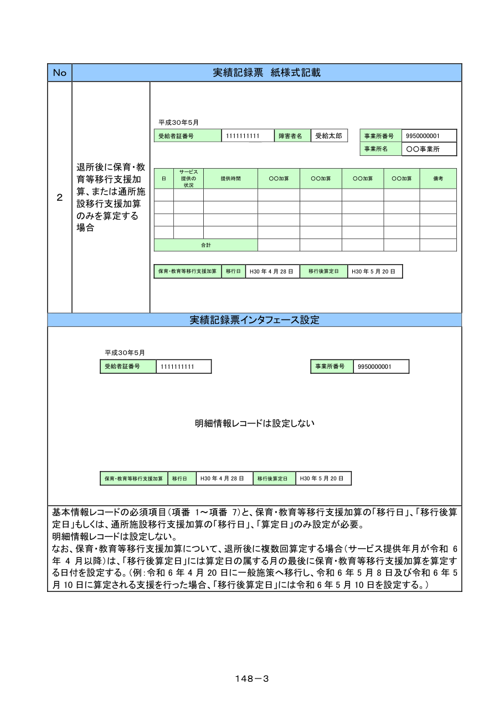
claude-haiku-5-5
- 表1 前ページからの続きではないのに項番が 2 から始まる
- テキストレイヤに見つからないセル: 2 個（赤枠）
表1 other実績記録票 紙様式記載
| 項番 | 項目名 | 属性 | 桁数 | 内容 | 必須 | 備考 |
|---|---|---|---|---|---|---|
| 2 | 退所後に保育・教育等移行支援加算、または通所施設移行支援加算のみを算定する場合 | [図] 平成30年5月 受給者証番号 1111111111 障害者名 受給太郎 事業所番号 9950000000001 事業所名 〇〇事業所 日 サービス提供の状況 提供時間 〇〇加算 〇〇加算 〇〇加算 〇〇加算 備考 合計 保育・教育等移行支援加算 移行日 H30 年 4 月 28 日 移行後算定日 H30 年 5 月 20 日 |
表2 other実績記録票インタフェース設定
| 項番 | 項目名 | 属性 | 桁数 | 内容 | 必須 | 備考 |
|---|---|---|---|---|---|---|
| 実績記録票インタフェース設定 | [図] 平成30年5月 受給者証番号 1111111111 事業所番号 9950000000001 明細情報レコードは設定しない 保育・教育等移行支援加算 移行日 H30 年 4 月 28 日 移行後算定日 H30 年 5 月 20 日 |
注記
- 基本情報レコードの必須項目（項番 1～項番 7)と、保育・教育等移行支援加算の「移行日」、「移行後算定日」もしくは、通所施設移行支援加算の「移行日」、「算定日」のみ設定が必要。明細情報レコードは設定しない。なお、保育・教育等移行支援加算について、退所後に複数回算定する場合（サービス提供年月が令和6年4月以降）は、「移行後算定日」には算定日の属する月の最後に保育・教育等移行支援加算を算定する日付を設定する。（例:令和6年4月20日に一般施策へ移行し、令和6年5月8日及び令和6年5月10日に算定される支援を行った場合、「移行後算定日」には令和6年5月10日を設定する。）
uncertain（モデル自己申告）
- 項番2の「紙様式記載」欄は図（帳票イメージ）であり、図内の印字文字のみを content に書き写した。表の列構造は判別できない。
- 「実績記録票インタフェース設定」欄も図（設定イメージ）で、見出し行がないため columns は見出しの文字のみとした。
- 注記は表の枠内にあるが表形式ではないため footnotes に入れた。
claude-sonnet-5-5
- 表1 前ページからの続きではないのに項番が 2 から始まる
- テキストレイヤに見つからないセル: 1 個（赤枠）
表1 other
| 項番 | 項目名 | 属性 | 桁数 | 内容 | 必須 | 備考 |
|---|---|---|---|---|---|---|
| 2 | 退所後に保育・教育等移行支援加算、または通所施設移行支援加算のみを算定する場合 | 実績記録票 紙様式記載: 平成30年5月 [図] 受給者証番号 1111111111 障害者名 受給太郎 事業所番号 9950000001 事業所名 ○○事業所 日 サービス提供の状況 提供時間 ○○加算 ○○加算 ○○加算 ○○加算 備考 合計 保育・教育等移行支援加算 移行日 H30 年 4 月 28 日 移行後算定日 H30 年 5 月 20 日 実績記録票インタフェース設定: 平成30年5月 受給者証番号 1111111111 事業所番号 9950000001 明細情報レコードは設定しない 保育・教育等移行支援加算 移行日 H30 年 4 月 28 日 移行後算定日 H30 年 5 月 20 日 | 基本情報レコードの必須項目(項番 1～項番 7)と、保育・教育等移行支援加算の「移行日」、「移行後算定日」もしくは、通所施設移行支援加算の「移行日」、「算定日」のみ設定が必要。 明細情報レコードは設定しない。 なお、保育・教育等移行支援加算について、退所後に複数回算定する場合(サービス提供年月が令和 6 年 4 月以降)は、「移行後算定日」には算定日の属する月の最後に保育・教育等移行支援加算を算定する日付を設定する。(例:令和 6 年 4 月 20 日に一般施策へ移行し、令和 6 年 5 月 8 日及び令和 6 年 5 月 10 日に算定される支援を行った場合、「移行後算定日」には令和 6 年 5 月 10 日を設定する。) |
uncertain（モデル自己申告）
- 表は設定例の図解を含むため、図中の印字文字を content にまとめて書き写した。
- ページは前ページの表の続き（No 2 のみ）の可能性があるが、見出し行が存在するため false とした。
shogai_jigyosho_r0710_p305 — 印字p.
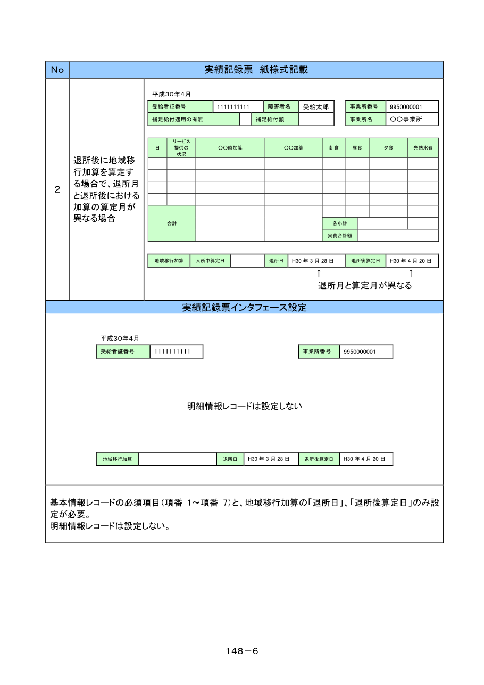
claude-haiku-5-5
- 表1 前ページからの続きではないのに項番が 2 から始まる
- テキストレイヤに見つからないセル: 2 個（赤枠）
表1 other実績記録票 紙様式記載
| 項番 | 項目名 | 属性 | 桁数 | 内容 | 必須 | 備考 |
|---|---|---|---|---|---|---|
| 2 | 退所後に地域移行加算を算定する場合 | [図] 平成30年4月 受給者証番号 1111111111 障害者名 受給太郎 補足給付適用の有無 補足給付額 事業所番号 9950000000 事業所名 ○○事業所 日 サービス提供の状況 ○○時加算 ○○加算 朝食 昼食 夕食 光熱水費 合計 各小計 実費合計額 地域移行加算 入所中算定日 退所日 H30年3月28日 退所後算定日 H30年4月20日 退所月と算定月が異なる |
表2 other実績記録票インタフェース設定
| 項番 | 項目名 | 属性 | 桁数 | 内容 | 必須 | 備考 |
|---|---|---|---|---|---|---|
| 実績記録票インタフェース設定 | [図] 平成30年4月 受給者証番号 1111111111 事業所番号 9950000001 明細情報レコードは設定しない 地域移行加算 退所日 H30年3月28日 退所後算定日 H30年4月20日 |
注記
- 基本情報レコードの必須項目（項番 1～項番 7）と、地域移行加算の「退所日」、「退所後算定日」のみ設定が必要。明細情報レコードは設定しない。
uncertain（モデル自己申告）
- PDF上のページは305と指定されているが、ページ下部に印字された番号は148－6だったため、printed_pageには印字番号を入れた。
- 紙様式記載・インタフェース設定の図は、図内の印字文字のみを書き写したが、表の構造（行列の対応）は判別できず、content は文字の並びとして連結している。
- No.2の左端の「退所後に地域移行加算を算定する場合」は図の説明文であり、name_pathに入れたが、表の正式な項目名かどうかは確信がない。
claude-sonnet-5-5
- 表1 前ページからの続きではないのに項番が 2 から始まる
- テキストレイヤに見つからないセル: 3 個（赤枠）
表1 other
| 項番 | 項目名 | 属性 | 桁数 | 内容 | 必須 | 備考 |
|---|---|---|---|---|---|---|
| 2 | 退所後に地域移行加算を算定する場合で、退所月と退所後における加算の算定月が異なる場合 | [図] |
表2 other
| 項番 | 項目名 | 属性 | 桁数 | 内容 | 必須 | 備考 |
|---|---|---|---|---|---|---|
| 実績記録票インタフェース設定 | [図] |
表3 other
| 項番 | 項目名 | 属性 | 桁数 | 内容 | 必須 | 備考 |
|---|---|---|---|---|---|---|
| 説明 | 基本情報レコードの必須項目(項番 1～項番 7)と、地域移行加算の「退所日」、「退所後算定日」のみ設定が必要。 明細情報レコードは設定しない。 |
uncertain（モデル自己申告）
- 図内の文字（平成30年4月、受給者証番号、1111111111、退所日 H30年3月28日、退所後算定日 H30年4月20日、退所月と算定月が異なる、明細情報レコードは設定しない等）は[図]として省略。表の形をした設定例のため other として扱った。
shogai_jigyosho_r0710_p320 — 印字p.
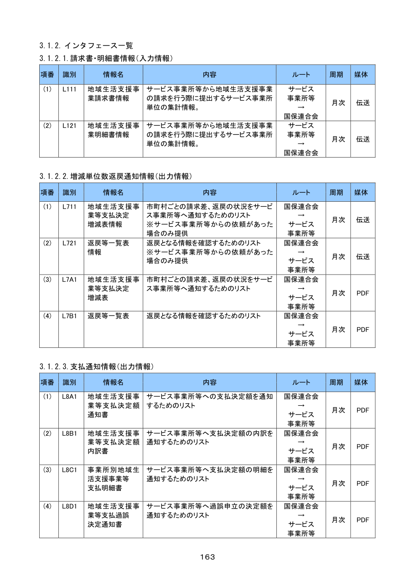
claude-haiku-5-5
表1 interface_list3.1.2.1.請求書・明細書情報(入力情報)
| 項番 | 項目名 | 属性 | 桁数 | 内容 | 必須 | 備考 |
|---|---|---|---|---|---|---|
| (1) | 地域生活支援事業請求書情報 | サービス事業所等から地域生活支援事業の請求を行う際に提出するサービス事業所単位の集計情報。 | ||||
| (2) | 地域生活支援事業明細書情報 | サービス事業所等から地域生活支援事業の請求を行う際に提出するサービス事業所単位の集計情報。 |
表2 interface_list3.1.2.2.増減単位数返戻通知情報(出力情報)
| 項番 | 項目名 | 属性 | 桁数 | 内容 | 必須 | 備考 |
|---|---|---|---|---|---|---|
| (1) | 地域生活支援事業等支払決定増減表情報 | 市町村ごとの請求差、返戻の状況をサービス事業所等へ通知するためのリスト ※サービス事業所等からの依頼があった場合のみ提供 | ||||
| (2) | 返戻等一覧表情報 | 返戻となる情報を確認するためのリスト ※サービス事業所等からの依頼があった場合のみ提供 | ||||
| (3) | 地域生活支援事業等支払決定増減表 | 市町村ごとの請求差、返戻の状況をサービス事業所等へ通知するためのリスト | ||||
| (4) | 返戻等一覧表 | 返戻となる情報を確認するためのリスト |
表3 interface_list3.1.2.3.支払通知情報(出力情報)
| 項番 | 項目名 | 属性 | 桁数 | 内容 | 必須 | 備考 |
|---|---|---|---|---|---|---|
| (1) | 地域生活支援事業等支払決定額通知書 | サービス事業所等への支払決定額を通知するためのリスト | ||||
| (2) | 地域生活支援事業等支払決定額内訳書 | サービス事業所等へ支払決定額の内訳を通知するためのリスト | ||||
| (3) | 事業所別地域生活支援事業等支払明細書 | サービス事業所等へ支払決定額の明細を通知するためのリスト | ||||
| (4) | 地域生活支援事業等支払過誤決定通知書 | サービス事業所等へ過誤申立の決定額を通知するためのリスト |
uncertain（モデル自己申告）
- 3つの表はいずれも interface_list として扱った。識別・ルート・周期・媒体の各列の値はスキーマに対応する欄がないため書き出していない。値は順に: (1)L111/サービス事業所等→国保連合会/月次/伝送、(2)L121/同/月次/伝送、(1)L711/国保連合会→サービス事業所等/月次/伝送、(2)L721/同/月次/伝送、(3)L7A1/同/月次/PDF、(4)L7B1/同/月次/PDF、(1)L8A1/同/月次/PDF、(2)L8B1/同/月次/PDF、(3)L8C1/同/月次/PDF、(4)L8D1/同/月次/PDF。
- ページ上部の見出しは「3.1.2.インタフェース一覧」の直下の3項。依頼文の分野（障害福祉）・PDF上のページ番号（320）と画像の内容（地域生活支援事業、印字ページ163）が一致するか確認できない。
claude-sonnet-5-5
- テキストレイヤに見つからないセル: 10 個（赤枠）
表1 interface_list3.1.2.1.請求書･明細書情報(入力情報)
| 項番 | 項目名 | 属性 | 桁数 | 内容 | 必須 | 備考 |
|---|---|---|---|---|---|---|
| (1) | 地域生活支援事業請求書情報 | サービス事業所等から地域生活支援事業の請求を行う際に提出するサービス事業所単位の集計情報。 | 識別: L111 / ルート: サービス事業所等→国保連合会 / 周期: 月次 / 媒体: 伝送 | |||
| (2) | 地域生活支援事業明細書情報 | サービス事業所等から地域生活支援事業の請求を行う際に提出するサービス事業所単位の集計情報。 | 識別: L121 / ルート: サービス事業所等→国保連合会 / 周期: 月次 / 媒体: 伝送 |
表2 interface_list3.1.2.2.増減単位数返戻通知情報(出力情報)
| 項番 | 項目名 | 属性 | 桁数 | 内容 | 必須 | 備考 |
|---|---|---|---|---|---|---|
| (1) | 地域生活支援事業等支払決定増減表情報 | 市町村ごとの請求差、返戻の状況をサービス事業所等へ通知するためのリスト ※サービス事業所等からの依頼があった場合のみ提供 | 識別: L711 / ルート: 国保連合会→サービス事業所等 / 周期: 月次 / 媒体: 伝送 | |||
| (2) | 返戻等一覧表情報 | 返戻となる情報を確認するためのリスト ※サービス事業所等からの依頼があった場合のみ提供 | 識別: L721 / ルート: 国保連合会→サービス事業所等 / 周期: 月次 / 媒体: 伝送 | |||
| (3) | 地域生活支援事業等支払決定増減表 | 市町村ごとの請求差、返戻の状況をサービス事業所等へ通知するためのリスト | 識別: L7A1 / ルート: 国保連合会→サービス事業所等 / 周期: 月次 / 媒体: PDF | |||
| (4) | 返戻等一覧表 | 返戻となる情報を確認するためのリスト | 識別: L7B1 / ルート: 国保連合会→サービス事業所等 / 周期: 月次 / 媒体: PDF |
表3 interface_list3.1.2.3.支払通知情報(出力情報)
| 項番 | 項目名 | 属性 | 桁数 | 内容 | 必須 | 備考 |
|---|---|---|---|---|---|---|
| (1) | 地域生活支援事業等支払決定額通知書 | サービス事業所等への支払決定額を通知するためのリスト | 識別: L8A1 / ルート: 国保連合会→サービス事業所等 / 周期: 月次 / 媒体: PDF | |||
| (2) | 地域生活支援事業等支払決定額内訳書 | サービス事業所等へ支払決定額の内訳を通知するためのリスト | 識別: L8B1 / ルート: 国保連合会→サービス事業所等 / 周期: 月次 / 媒体: PDF | |||
| (3) | 事業所別地域生活支援事業等支払明細書 | サービス事業所等へ支払決定額の明細を通知するためのリスト | 識別: L8C1 / ルート: 国保連合会→サービス事業所等 / 周期: 月次 / 媒体: PDF | |||
| (4) | 地域生活支援事業等支払過誤決定通知書 | サービス事業所等へ過誤申立の決定額を通知するためのリスト | 識別: L8D1 / ルート: 国保連合会→サービス事業所等 / 周期: 月次 / 媒体: PDF |
uncertain（モデル自己申告）
- 各表の識別・ルート・周期・媒体は専用フィールドがないため note にまとめて記載した
- ルートのセル内の矢印は改行表示を「→」で連結した
shogai_jigyosho_r0710_p322 — 印字p.

claude-haiku-5-5
表1 record_layout(2)地域生活支援事業 請求書 基本情報レコード
| 項番 | 項目名 | 属性 | 桁数 | 内容 | 必須 | 備考 |
|---|---|---|---|---|---|---|
| 1 | 交換情報識別番号 | 英数 | 4 | 交換情報識別番号を設定する。 | ◎ | ※B |
| 2 | レコード種別コード | コード値 | 2 | 01を設定する(基本情報レコード) | ◎ | |
| 3 | サービス提供年月 | コード値 | 6 | サービスを提供した年月（西暦年月YYYYMMを設定する） | ◎ | ※Y |
| 4 | 市町村番号 | コード値 | 6 | 受給者証に記載された市町村番号(チェックデジット1桁含む) | ◎ | ※C |
| 5 | 事業所番号 | 英数 | 10 | サービスを提供した事業所番号 | ◎ | ※C |
| 6 | 請求金額 | 数値 | 10 | 請求金額を設定する。 請求金額=合計 給付費請求額 | ◎ | |
| 7 | 小計 > 地域生活支援事業給付費 > 件数 | 数値 | 6 | 小計 件数 | ◎ | |
| 8 | 小計 > 地域生活支援事業給付費 > 単位数 | 数値 | 9 | 小計 単位数 | ◎ | |
| 9 | 小計 > 地域生活支援事業給付費 > 費用合計 | 数値 | 10 | 小計 費用合計 | ◎ | |
| 10 | 小計 > 地域生活支援事業給付費 > 給付費請求額 | 数値 | 10 | 小計 給付費請求額 | ◎ | |
| 11 | 小計 > 地域生活支援事業給付費 > 特別対策費請求額 | 数値 | 10 | 設定しない | ||
| 12 | 小計 > 地域生活支援事業給付費 > 利用者負担額 | 数値 | 10 | 小計 利用者負担額 | ◎ | |
| 13 | 小計 > 地域生活支援事業給付費 > 自治体助成額 | 数値 | 10 | 設定しない | ||
| 14 | 小計 > 特別給付費 > 件数 | 数値 | 6 | 設定しない | ||
| 15 | 小計 > 特別給付費 > 費用合計 | 数値 | 10 | 設定しない | ||
| 16 | 小計 > 特別給付費 > 給付費請求額 | 数値 | 10 | 設定しない | ||
| 17 | 合計 > 件数 | 数値 | 6 | 合計 件数 | ◎ | |
| 18 | 合計 > 単位数 | 数値 | 9 | 合計 単位数 | ◎ | |
| 19 | 合計 > 費用合計 | 数値 | 10 | 合計 費用合計 | ◎ | |
| 20 | 合計 > 給付費請求額 | 数値 | 10 | 合計 給付費請求額 | ◎ | |
| 21 | 合計 > 特別対策費請求額 | 数値 | 10 | 設定しない | ||
| 22 | 合計 > 利用者負担額 | 数値 | 10 | 合計 利用者負担額 | ◎ | |
| 23 | 合計 > 自治体助成額 | 数値 | 10 | 設定しない |
注記
- ※必須 ◎ : 必須項目 ○ : 請求内容により必要 △ : 任意設定 空白 : 不要
- ※B 「インタフェース仕様書 事業所編 3.1.2 インタフェース一覧」を参照のこと。
- ※C 「インタフェース仕様書 共通編 1.4 コード一覧」参照。
uncertain（モデル自己申告）
- 依頼文は「次のページの表」ですが、添付は1ページのみで、その内容は印字ページ165の「(2)地域生活支援事業 請求書 基本情報レコード」です。この表を書き起こしました。PDF上のページ322という指定とは一致しません。
- 項番7〜16の縦結合ラベル（「小計 地域生活支援事業給付費」「小計 特別給付費」「特定障害者」）の階層の切り方は推定です。特に項番14〜16の name_path が「特定障害者」をどこに含めるかは不確かです。
- 注記「※Y」に対応する本文がこのページにないため、footnotes に入れていません。
- 項番6の内容「請求金額＝合計 給付費請求額」の「＝」は全角か半角かを判別できず、全角で記載しています。
claude-sonnet-5-5
表1 record_layout（2）地域生活支援事業 請求書 基本情報レコード
| 項番 | 項目名 | 属性 | 桁数 | 内容 | 必須 | 備考 |
|---|---|---|---|---|---|---|
| 1 | 交換情報識別番号 | 英数 | 4 | 交換情報識別番号を設定する。 | ◎ | ※B |
| 2 | レコード種別コード | コード値 | 2 | 01を設定する(基本情報レコード) | ◎ | |
| 3 | サービス提供年月 | コード値 | 6 | サービスを提供した年月(西暦年月YYYYMMを設定する) | ◎ | ※Y |
| 4 | 市町村番号 | コード値 | 6 | 受給者証に記載された市町村番号(チェックデジット1桁含む) | ◎ | ※C |
| 5 | 事業所番号 | 英数 | 10 | サービスを提供した事業所番号 | ◎ | ※C |
| 6 | 請求金額 | 数値 | 10 | 請求金額を設定する。 請求金額＝合計 給付費請求額 | ◎ | |
| 7 | 小計 地域生活支援事業給付費 > 件数 | 数値 | 6 | 小計 件数 | ◎ | |
| 8 | 小計 地域生活支援事業給付費 > 単位数 | 数値 | 9 | 小計 単位数 | ◎ | |
| 9 | 小計 地域生活支援事業給付費 > 費用合計 | 数値 | 10 | 小計 費用合計 | ◎ | |
| 10 | 小計 地域生活支援事業給付費 > 給付費請求額 | 数値 | 10 | 小計 給付費請求額 | ◎ | |
| 11 | 小計 地域生活支援事業給付費 > 特別対策費請求額 | 数値 | 10 | 設定しない | ||
| 12 | 小計 地域生活支援事業給付費 > 利用者負担額 | 数値 | 10 | 小計 利用者負担額 | ◎ | |
| 13 | 小計 地域生活支援事業給付費 > 自治体助成額 | 数値 | 10 | 設定しない | ||
| 14 | 小計 特定障害者特別給付費 > 件数 | 数値 | 6 | 設定しない | ||
| 15 | 小計 特定障害者特別給付費 > 費用合計 | 数値 | 10 | 設定しない | ||
| 16 | 小計 特定障害者特別給付費 > 給付費請求額 | 数値 | 10 | 設定しない | ||
| 17 | 合計 > 件数 | 数値 | 6 | 合計 件数 | ◎ | |
| 18 | 合計 > 単位数 | 数値 | 9 | 合計 単位数 | ◎ | |
| 19 | 合計 > 費用合計 | 数値 | 10 | 合計 費用合計 | ◎ | |
| 20 | 合計 > 給付費請求額 | 数値 | 10 | 合計 給付費請求額 | ◎ | |
| 21 | 合計 > 特別対策費請求額 | 数値 | 10 | 設定しない | ||
| 22 | 合計 > 利用者負担額 | 数値 | 10 | 合計 利用者負担額 | ◎ | |
| 23 | 合計 > 自治体助成額 | 数値 | 10 | 設定しない |
注記
- ※必須 ◎ : 必須項目 ○ : 請求内容により必要 △ : 任意設定 空白 : 不要
- ※B 「インタフェース仕様書 事業所編 3.1.2 インタフェース一覧」を参照のこと。
- ※C 「インタフェース仕様書 共通編 1.4 コード一覧」参照。
uncertain（モデル自己申告）
- 項番7〜13の「小計 地域生活支援事業給付費」、項番14〜16の「小計 特定障害者特別給付費」は縦書き結合セルの判読に基づく
- 項番3のサービス提供年月の内容は文字間隔が広く、空白なしで転記
shogai_jigyosho_r0710_p324 — 印字p.
claude-haiku-5-5
- [改ページ] p324→p325 の連続性 OK
表1 record_layout(2)地域生活支援事業 明細書 基本情報レコード 次頁へ続く
| 項番 | 項目名 | 属性 | 桁数 | 内容 | 必須 | 備考 |
|---|---|---|---|---|---|---|
| 1 | 交換情報識別番号 | 英数 | 4 | 当情報の内容を識別するための番号 | ◎ | ※B |
| 2 | レコード種別コード | コード値 | 2 | 01を設定する(基本情報レコード) | ◎ | |
| 3 | サービス提供年月 | コード値 | 6 | サービスを提供した年月（西暦年月YYYYMMを設定する） | ◎ | ※Y |
| 4 | 市町村番号 | コード値 | 6 | 受給者証に記載された市町村番号(チェックデジット1桁含む) | ◎ | ※C |
| 5 | 事業所番号 | 英数 | 10 | サービスを提供した事業所番号 | ◎ | ※C |
| 6 | 受給者証番号 | 英数 | 10 | 受給者証に記載されている受給者証番号 | ◎ | ※C |
| 7 | 助成自治体番号 | コード値 | 6 | 設定しない | ||
| 8 | 支給決定者氏名カナ | 英数 | 25 | 支給決定者カナ氏名 | △ | |
| 9 | 支給決定児童氏名カナ | 英数 | 25 | 支給決定児童カナ氏名 | △ | |
| 10 | 地域区分コード | コード値 | 2 | 設定しない | ||
| 11 | 就労継続支援A型事業者負担減免措置実施 | コード値 | 1 | 設定しない | ||
| 12 | 利用者負担上限月額① | 数値 | 6 | 設定しない | ||
| 13 | 就労継続支援A型減免対象者 | コード値 | 1 | 設定しない | ||
| 14 | 障害支援区分コード | 英数 | 2 | 設定しない | ||
| 15 | 上限額管理事業所 > 指定事業所番号 | 英数 | 10 | 設定しない | ||
| 16 | 上限額管理事業所 > 管理結果 | コード値 | 1 | 設定しない | ||
| 17 | 上限額管理事業所 > 管理結果額 | 数値 | 5 | 設定しない |
uncertain（モデル自己申告）
- 依頼文では『次のページ』(PDF上のページ324)の表を書き起こすよう指示されていたが、添付は印字ページ167の1ページのみだったため、添付ページの表を書き起こした。
- 依頼文の分野（障害福祉）・文書名と、添付ページの内容（地域生活支援事業 明細書、国保連合会向けの仕様に近い記述）が一致しているか確認できない。
- 備考列の※B・※Y・※Cの説明文は添付ページ内に無いため footnotes に入れていない。
- 基本情報レコードの親（上位の情報名）はページ内から読み取れないため parent を null とした。
claude-sonnet-5-5
- [改ページ] p324→p325 の連続性 OK
- テキストレイヤに見つからないセル: 1 個（赤枠）
表1 record_layout（2）地域生活支援事業 明細書 基本情報レコード 次頁へ続く
| 項番 | 項目名 | 属性 | 桁数 | 内容 | 必須 | 備考 |
|---|---|---|---|---|---|---|
| 1 | 交換情報識別番号 | 英数 | 4 | 当情報の内容を識別するための番号 | ◎ | ※B |
| 2 | レコード種別コード | コード値 | 2 | 01 を設定する（基本情報レコード） | ◎ | |
| 3 | サービス提供年月 | コード値 | 6 | サービスを提供した年月（西暦年月YYYYMM を設定する） | ◎ | ※Y |
| 4 | 市町村番号 | コード値 | 6 | 受給者証に記載された市町村番号（チェックディジット１桁含む） | ◎ | ※C |
| 5 | 事業所番号 | 英数 | 10 | サービスを提供した事業所番号 | ◎ | ※C |
| 6 | 受給者証番号 | 英数 | 10 | 受給者証に記載されている受給者証番号 | ◎ | ※C |
| 7 | 助成自治体番号 | コード値 | 6 | 設定しない | ||
| 8 | 支給決定者氏名カナ | 英数 | 25 | 支給決定者カナ氏名 | △ | |
| 9 | 支給決定児童氏名カナ | 英数 | 25 | 支給決定児童カナ氏名 | △ | |
| 10 | 地域区分コード | コード値 | 2 | 設定しない | ||
| 11 | 就労継続支援Ａ型事業者負担減免措置実施 | コード値 | 1 | 設定しない | ||
| 12 | 利用者負担上限月額① | 数値 | 6 | 設定しない | ||
| 13 | 就労継続支援Ａ型減免対象者 | コード値 | 1 | 設定しない | ||
| 14 | 障害支援区分コード | 英数 | 2 | 設定しない | ||
| 15 | 上限額管理事業所 > 指定事業所番号 | 英数 | 10 | 設定しない | ||
| 16 | 上限額管理事業所 > 管理結果 | コード値 | 1 | 設定しない | ||
| 17 | 上限額管理事業所 > 管理結果額 | 数値 | 5 | 設定しない |
uncertain（モデル自己申告）
- 上限額管理事業所は縦書きの結合見出しとして読み取り、項番15〜17のname_pathに入れた
- 本文の見出し（3.1.3.2等）は表ではないため出力していない
shogai_kyotsu_r0710_p6 — 印字p.

claude-haiku-5-5
- 表2 項番3 桁数が空（原文: None）
- テキストレイヤに見つからないセル: 1 個（赤枠）
表1 record_layout・コントロールレコードフォーマット
| 項番 | 項目名 | 属性 | 桁数 | 内容 | 必須 | 備考 |
|---|---|---|---|---|---|---|
| １ | レコード種別 | コード値 | 1 | コントロールレコードを示す1を設定 | ||
| ２ | レコード番号（連番） | 数値 | 9 | ファイル内の先頭レコードからの連番（1から始まる通番）を設定 | ||
| ３ | ボリューム通番 | 数値 | 3 | 0を設定 | ||
| ４ | レコード件数 | 数値 | 9 | データレコードの件数を設定（コントロールレコードおよびエンドレコードの件数は加算しない） | ||
| ５ | データ種別 | 英数 | 3 | 「1．6 データ種別一覧」参照 | ||
| ６ | 市町村番号 | コード値 | 6 | 送付元または送付先が市町村の場合は市町村番号を設定、市町村以外の場合は0を設定する | ||
| ７ | 事業所番号 | 英数 | 10 | 送付元または送付先が事業所の場合は事業所番号を設定、事業所以外の場合は0を設定する | ||
| ８ | 都道府県番号 | コード値 | 2 | 送付元または送付先が都道府県の場合は都道府県番号を設定、都道府県以外の場合は0を設定 | ||
| ９ | 媒体区分 | 英数 | 1 | 1(伝送)を設定 | ||
| １０ | 処理対象年月 | コード値 | 6 | データの処理対象年月を設定する(注1) (例)2018年5月の場合、201805を設定する | ||
| １１ | 予備 | 数値 | 6 | 設定しない | ||
| １２ | ブランク | 英数 | 2 | 改行（16進コード…0x0D0A）を設定 |
表2 record_layout・データレコードフォーマット
| 項番 | 項目名 | 属性 | 桁数 | 内容 | 必須 | 備考 |
|---|---|---|---|---|---|---|
| １ | レコード種別 | コード値 | 1 | データレコードを示す2を設定 | ||
| ２ | レコード番号（連番） | 数値 | 9 | ファイル内の先頭レコードからの連番（1から始まる通番）を設定 | ||
| ３ | データ | 交換情報ごとに、CSV形式でデータを設定 設定する内容は、各交換情報の「項目説明」を参照 | ||||
| ４ | ブランク | 英数 | 2 | 改行（16進コード…0x0D0A）を設定 |
表3 record_layout・エンドレコードフォーマット
| 項番 | 項目名 | 属性 | 桁数 | 内容 | 必須 | 備考 |
|---|---|---|---|---|---|---|
| １ | レコード種別 | コード値 | 1 | エンドレコードを示す3を設定 | ||
| ２ | レコード番号（連番） | 数値 | 9 | ファイル内の先頭レコードからの連番（1から始まる通番）を設定 | ||
| ３ | ブランク | 英数 | 2 | 改行（16進コード…0x0D0A）を設定 |
uncertain（モデル自己申告）
- 依頼では PDF 上のページ6とあるが、添付画像の下部のページ番号は「- 4 -」で、添付されたのはこの4ページ目のみ。依頼の「次のページ」は添付されていないため、添付ページ（4ページ）の表を書き起こした。
- コントロールレコードフォーマットの処理対象年月の内容に「(注1)」とあるが、注1の本文はこのページに含まれていないため書き起こしていない。
- データレコードフォーマットの項番3「データ」は属性・バイト数が空欄のため type と length を null にした。
claude-sonnet-5-5
- 表2 項番3 桁数が空（原文: None）
- テキストレイヤに見つからないセル: 1 個（赤枠）
表1 record_layout・コントロールレコードフォーマット
| 項番 | 項目名 | 属性 | 桁数 | 内容 | 必須 | 備考 |
|---|---|---|---|---|---|---|
| 1 | レコード種別 | コード値 | 1 | コントロールレコードを示す 1 を設定 | ||
| 2 | レコード番号(連番) | 数値 | 9 | ファイル内の先頭レコードからの連番(1 から始まる通番)を設定 | ||
| 3 | ボリューム通番 | 数値 | 3 | 0 を設定 | ||
| 4 | レコード件数 | 数値 | 9 | データレコードの件数を設定(コントロールレコードおよびエンドレコードの件数は加算しない) | ||
| 5 | データ種別 | 英数 | 3 | 「1.6 データ種別一覧」参照 | ||
| 6 | 市町村番号 | コード値 | 6 | 送付元または送付先が市町村の場合は市町村番号を設定、市町村以外の場合は 0 を設定する | ||
| 7 | 事業所番号 | 英数 | 10 | 送付元または送付先が事業所の場合は事業所番号を設定、事業所以外の場合は 0 を設定する | ||
| 8 | 都道府県番号 | コード値 | 2 | 送付元または送付先が都道府県の場合は都道府県番号を設定、都道府県以外の場合は 0 を設定 | ||
| 9 | 媒体区分 | 英数 | 1 | 1(伝送)を設定 | ||
| 10 | 処理対象年月 | コード値 | 6 | データの処理対象年月を設定する(注1) (例)2018 年 5 月の場合、201805 を設定する | ||
| 11 | 予備 | 数値 | 6 | 設定しない | ||
| 12 | ブランク | 英数 | 2 | 改行(16 進ｺｰﾄﾞ…0x0D0A)を設定 |
表2 record_layout・データレコードフォーマット
| 項番 | 項目名 | 属性 | 桁数 | 内容 | 必須 | 備考 |
|---|---|---|---|---|---|---|
| 1 | レコード種別 | コード値 | 1 | データレコードを示す 2 を設定 | ||
| 2 | レコード番号(連番) | 数値 | 9 | ファイル内の先頭レコードからの連番(1 から始まる通番)を設定 | ||
| 3 | データ | 交換情報ごとに、CSV 形式でデータを設定 設定する内容は、各交換情報の「項目説明」を参照 | ||||
| 4 | ブランク | 英数 | 2 | 改行(16 進ｺｰﾄﾞ…0x0D0A)を設定 |
表3 record_layout・エンドレコードフォーマット
| 項番 | 項目名 | 属性 | 桁数 | 内容 | 必須 | 備考 |
|---|---|---|---|---|---|---|
| 1 | レコード種別 | コード値 | 1 | エンドレコードを示す 3 を設定 | ||
| 2 | レコード番号(連番) | 数値 | 9 | ファイル内の先頭レコードからの連番(1 から始まる通番)を設定 | ||
| 3 | ブランク | 英数 | 2 | 改行(16 進ｺｰﾄﾞ…0x0D0A)を設定 |
shogai_kyotsu_r0710_p9 — 印字p.
claude-haiku-5-5
- 表が1つも書き起こされていない
uncertain（モデル自己申告）
- 添付された1ページ（印字ページ番号7）には表がなく、ユーザーが指定した『次のページ』（PDF上のページ9）は添付されていないため、表の書き起こしは行っていない。
claude-sonnet-5-5
- 表が1つも書き起こされていない
shogai_kyotsu_r0710_p12 — 印字p.

claude-haiku-5-5
- [改ページ] p12→p13 の連続性 OK
表1 record_layout（２） データ設定例 以下の交換情報のデータレコードにデータを設定する例を示す。
| 項番 | 項目名 | 属性 | 桁数 | 内容 | 必須 | 備考 |
|---|---|---|---|---|---|---|
| １ | A(文字列) | 英数 | 5 | ABCD | ○ | |
| ２ | B(数字) | 数値 | 6 | 1542 | ○ | |
| ３ | C(漢字文字列) | 漢字 | 8 | 障害 | ○ | |
| ４ | D(年月日) | コード値 | 8 | 2007年10月1日 | ○ | |
| ５ | E(中間にスペースを含む文字列) | 英数 | 4 | XY Z | ○ | |
| ６ | F(ゼロ) | 数値 | 6 | 0 | ||
| ７ | G(スペースのみ) | 英数 | 6 | |||
| ８ | H(先頭にスペースを含む文字列) | 英数 | 5 | KLM | ||
| ９ | I(数字…金額等) | 数値 | 6 | 987,654 円 |
表2 other・設定例
| 項番 | 項目名 | 属性 | 桁数 | 内容 | 必須 | 備考 |
|---|
表3 other①数値について 数値は計算値等の項目を示す。 次頁へ続く
| 項番 | 項目名 | 属性 | 桁数 | 内容 | 必須 | 備考 |
|---|---|---|---|---|---|---|
| １ | 単位数(点数) | ・明細書 基本情報レコード 請求額集計欄 合計 給付単位数 ・明細書 明細情報レコード サービス単位数 ・明細書 集計情報レコード 請求額集計欄 給付単位数 等 | ||||
| ２ | 日数 | ・明細書 日数情報レコード サービス開始日等 利用日数 ・明細書 日数情報レコード サービス開始日等 入院日数 ・明細書 日数情報レコード サービス開始日等 外泊日数 ・明細書 集計情報レコード 請求額集計欄 サービス利用日数 等 | ||||
| ３ | 金額 | ・明細書 基本情報レコード 上限額管理事業所 管理結果額 ・明細書 基本情報レコード 請求額集計欄 合計 決定利用者負担額 ・明細書 集計情報レコード 特定障害者特別給付費 給付費請求額 等 |
注記
- （レコード番号(連番)＝123とする。）
uncertain（モデル自己申告）
- 依頼文はPDF上のページ12としていますが、添付ページの印字ページ番号は「- 10 -」です。添付の1ページ分のみを書き起こしました。
- 依頼文は「次のページ」の表の書き起こしですが、添付は1ページだけのため、添付ページ内の表を対象にしました。
- データ設定例の表で、スキーマに対応する列がない「設定値例」列の値は content に入れました。
- 「・設定例」の位置・設定値の桁図は図として扱い、items を空にしました。図内の印字文字は「2,123,ABCD,1542,"障害 "," ",2007 1001,"XY Z",0,," KLM",9876 54」付近で、桁位置や改行コードを含めて正確に書き起こせていないため、要確認です。
- データ設定例の項目8の設定値「KLM」先頭の空白、および項目7の設定値（スペースのみ）は、原文の空白幅を正確に判別できないため要確認です。
- 数値項目の表（項番1〜3）は属性・バイト数の列がないため other としました。項目名は name_path に、項目例は content に入れ、項目例の「・」区切りは改行で残しました。
claude-sonnet-5-5
- [改ページ] p12→p13 の連続性 OK
- テキストレイヤに見つからないセル: 2 個（赤枠）
表1 record_layout（２） データ設定例
| 項番 | 項目名 | 属性 | 桁数 | 内容 | 必須 | 備考 |
|---|---|---|---|---|---|---|
| 1 | A(文字列) | 英数 | 5 | ABCD | ○ | |
| 2 | B(数字) | 数値 | 6 | 1542 | ○ | |
| 3 | C(漢字文字列) | 漢字 | 8 | 障害 | ○ | |
| 4 | D(年月日) | コード値 | 8 | 2007 年 10 月 1 日 | ○ | |
| 5 | E(中間にスペースを含む文字列) | 英数 | 4 | XY Z | ○ | |
| 6 | F(ゼロ) | 数値 | 6 | 0 | ||
| 7 | G(スペースのみ) | 英数 | 6 | |||
| 8 | H(先頭にスペースを含む文字列) | 英数 | 5 | KLM | ||
| 9 | I(数字…金額等) | 数値 | 6 | 987,654 円 |
表2 other・設定例
| 項番 | 項目名 | 属性 | 桁数 | 内容 | 必須 | 備考 |
|---|---|---|---|---|---|---|
| 位置 | 1 2 3 4 5 6 7 8 9 10 11 12 13 14 15 16 17 18 19 20 21 22 23 24 25 26 27 28 29 30 31 32 33 34 35 36 37 38 39 40 | |||||
| 設定値 | 2,123,ABCD,1542,″障害 ″,20071001,″XY | |||||
| 位置 | 41 42 43 44 45 46 47 48 49 50 51 52 53 54 55 56 57 58 59 60 61 | |||||
| 設定値 | Z″,0,,″ KLM″,987654 改行コード |
表3 other①数値について 次頁へ続く
| 項番 | 項目名 | 属性 | 桁数 | 内容 | 必須 | 備考 |
|---|---|---|---|---|---|---|
| 1 | 単位数(点数) | ・明細書 基本情報レコード 請求額集計欄 合計 給付単位数 ・明細書 明細情報レコード サービス単位数 ・明細書 集計情報レコード 請求額集計欄 給付単位数 等 | ||||
| 2 | 日数 | ・明細書 日数情報レコード サービス開始日等 利用日数 ・明細書 日数情報レコード サービス開始日等 入院日数 ・明細書 日数情報レコード サービス開始日等 外泊日数 ・明細書 集計情報レコード 請求額集計欄 サービス利用日数 等 | ||||
| 3 | 金額 | ・明細書 基本情報レコード 上限額管理事業所 管理結果額 ・明細書 基本情報レコード 請求額集計欄 合計 決定利用者負担額 ・明細書 集計情報レコード 特定障害者特別給付費 給付費請求額 等 |
注記
- （レコード番号（連番）＝123とする。）
uncertain（モデル自己申告）
- 設定例の表は桁位置ごとの文字を連結して書き起こしており、空白桁数は不確か
- データ設定例表の「設定値例」列は枠が別表で、備考列は全行空欄
shogai_kyotsu_r0710_p15 — 印字p.
claude-haiku-5-5
表1 other 前頁から続く
| 項番 | 項目名 | 属性 | 桁数 | 内容 | 必須 | 備考 |
|---|---|---|---|---|---|---|
| 3 | 省略時にスペースを入力することになっている項目 | ・各種支払支援処理(出力情報) 振込データ情報ヘッダレコード 預金種目(依頼人) ・各種支払支援処理(出力情報) 振込データ情報ヘッダレコード 口座番号(依頼人) ・各種支払支援処理(出力情報) 振込データ情報データレコード 手形交換所番号 ・各種支払支援処理(出力情報) 振込データ情報データレコード 顧客コード1 ・各種支払支援処理(出力情報) 振込データ情報データレコード 顧客コード2 ・各種支払支援処理(出力情報) 振込データ情報データレコード 振込指定区分 |
注記
- ※ 固定長CSVのため
uncertain（モデル自己申告）
- 依頼では PDF 上のページ15の表を求められているが、添付画像は印字ページ番号13の1ページのみで、添付の表は項番3の1行だけである。添付どおり書き起こした。
- 表に表題や独立した見出しがないため title は null とした。
- 項目例列は内容列に相当すると判断して content に入れた。項目例の各行は中黒（・）の区切りとして改行で残した。
claude-sonnet-5-5
表1 other 前頁から続く
| 項番 | 項目名 | 属性 | 桁数 | 内容 | 必須 | 備考 |
|---|---|---|---|---|---|---|
| ３ | 省略時にスペースを入力することになっている項目 | ・各種支払支援処理(出力情報) 振込データ情報ヘッダレコード 預金種目(依頼人) ・各種支払支援処理(出力情報) 振込データ情報ヘッダレコード 口座番号(依頼人) ・各種支払支援処理(出力情報) 振込データ情報データレコード 手形交換所番号 ・各種支払支援処理(出力情報) 振込データ情報データレコード 顧客コード1 ・各種支払支援処理(出力情報) 振込データ情報データレコード 顧客コード2 ・各種支払支援処理(出力情報) 振込データ情報データレコード 振込指定区分 ※固定長 CSV のため |
uncertain（モデル自己申告）
- 表は項番3のみで前ページからの続き（見出し行が繰り返されている）。列は項番・項目名・項目例の3列で、属性・バイト数の列はない。
shogai_kyotsu_r0710_p16 — 印字p.

claude-haiku-5-5
- [改ページ] p16→p17 の連続性 OK
- テキストレイヤに見つからないセル: 1 個（赤枠）
表1 code_list１．４ コード一覧 次頁へ続く
| 項番 | 項目名 | 属性 | 桁数 | 内容 | 必須 | 備考 |
|---|---|---|---|---|---|---|
| 1 | 異動事由 > 受給者異動事由 | コード値 | 2 | 01:受給資格取得 02:受給資格喪失 03:政令市における受給者の区間異動 04:合併による新規 99:その他異動 | ||
| 1 | 異動事由 > 事業所異動事由 | コード値 | 2 | 01:固定値(省略可能) | ||
| 1 | 異動事由 > 市町村異動事由 | コード値 | 2 | 01:固定値(省略可能) | ||
| 1 | 異動事由 > 個人番号異動事由 | コード値 | 2 | 01:受給資格取得 02:受給資格喪失 99:その他異動 | ||
| 2 | 証記載市町村番号 | コード値 | 6 | 受給者証記載の市町村番号 [図] ×1 ×2 ×3 ×4 ×5 ×6 チェックデジット 市区町村コード 都道府県コード | ||
| 3 | 政令市市町村番号 | コード値 | 6 | 政令市が受給者を行政区で分けて管理する場合のみ政令市の市町村番号を設定 | ||
| 4 | 受給者証番号 | 英数 | 10 | 受給者証記載の受給者証番号が10桁に満たない場合は右詰とし、左側を0で埋める | ||
| 5 | 障害区分コード | コード値 | 2 | 01:身体障害者 02:知的障害者 03:精神障害者 04: 障害児 05:難病等対象者 | ||
| 6 | 障害支援区分コード | 英数 | 2 | 21:区分1 22:区分2 23:区分3 24:区分4 25:区分5 26:区分6 99:なし | ||
| 7 | 所得区分コード※2 | 英数 | 2 | 01:生活保護 02:低所得1 03:低所得2 04:一般1 05: 一般2 99:その他 ※6 (一般 1:所得割 16 万未満、一般 2:所得割 16 万以上とする。 但し、平成 19 年 4 月から 6 月迄に所得認定を受けた者に ついては、16 万円を 10 万円と読み替えること) |
uncertain（モデル自己申告）
- 依頼文では『次のページ（PDF上のページ16）』の表を求められているが、添付は印字ページ『- 14 -』の1ページのみだったため、添付ページの表を書き起こした。
- 項番2の図は印字文字（×1〜×6、チェックデジット、市区町村コード、都道府県コード）のみ書き写し、図の位置に[図]と記した。
- 項番7の内容中の『※6』に対応する注記本文がこのページにないため、footnotesは空にした。
- 項番1の『(省略可能)』の括弧の幅（全角/半角）は画像から確定できず半角で書いた。項番7の『6月迄』は画像上の字が『6月迄』と読めたが、表記に不確かさがある。
claude-sonnet-5-5
- [改ページ] p16→p17 の連続性 OK
- テキストレイヤに見つからないセル: 1 個（赤枠）
表1 code_list１．４ コード一覧 次頁へ続く
| 項番 | 項目名 | 属性 | 桁数 | 内容 | 必須 | 備考 |
|---|---|---|---|---|---|---|
| 1 | 異動事由 > 受給者異動事由 | コード値 | 2 | 01:受給資格取得 02:受給資格喪失 03:政令市における受給者の区間異動 04:合併による新規 99:その他異動 | ||
| 1 | 異動事由 > 事業所異動事由 | コード値 | 2 | 01:固定値（省略可能） | ||
| 1 | 異動事由 > 市町村異動事由 | コード値 | 2 | 01:固定値（省略可能） | ||
| 1 | 異動事由 > 個人番号異動事由 | コード値 | 2 | 01:受給資格取得 02:受給資格喪失 99:その他異動 | ||
| ２ | 証記載市町村番号 | コード値 | 6 | 受給者証記載の市町村番号 [図] ×1 ×2 ×3 ×4 ×5 ×6 チェックデジット 市区町村コード 都道府県コード | ||
| ３ | 政令市市町村番号 | コード値 | 6 | 政令市が受給者を行政区で分けて管理する場合のみ政令市の市町村番号を設定 | ||
| ４ | 受給者証番号 | 英数 | 10 | 受給者証記載の受給者証番号が 10 桁に満たない場合は右詰とし、左側を 0 で埋める | ||
| ５ | 障害区分コード | コード値 | 2 | 01:身体障害者 02:知的障害者 03:精神障害者 04: 障害児 05:難病等対象者 | ||
| ６ | 障害支援区分コード | 英数 | 2 | 21:区分1 22:区分2 23:区分3 24:区分4 25:区分5 26:区分6 99:なし | ||
| ７ | 所得区分コード※2 | 英数 | 2 | 01:生活保護 02:低所得1 03:低所得2 04:一般1 05: 一般2 99:その他 ※6 （一般 1:所得割 16 万未満、一般 2:所得割 16 万以上とする。 但し、平成 19 年 4 月から 6 月迄に所得認定を受けた者については、16 万円を 10 万円と読み替えること） |
uncertain（モデル自己申告）
- 項番2の内容: 図中の文字（×1〜×6、チェックデジット、市区町村コード、都道府県コード）のみ書き写し、[図]で位置を示した
- 項番7の内容: 改行位置は原文の折り返しから推定
shogai_kyotsu_r0710_p18 — 印字p.
claude-haiku-5-5
- [改ページ] p18→p19 の連続性 OK
- テキストレイヤに見つからないセル: 1 個（赤枠）
表1 code_list 前頁から続く次頁へ続く
| 項番 | 項目名 | 属性 | 桁数 | 内容 | 必須 | 備考 |
|---|---|---|---|---|---|---|
| 8 | 決定サービスコード | 英数 | 6 | 220924:生活介護児童移行者加算重度障害児支援(肢体不自由児) 220927:生活介護児童移行者加算重度障害児支援(強度行動障害) 220938:生活介護加算重度障害者支援加算Ⅱ対象者 220939:生活介護加算重度障害者支援加算(行動関連項目１８点以上) 231000:児童デイ基本決定 241000:短期入所障害者決定 242000:短期入所障害者医療型(療養介護)決定 243000:短期入所障害者医療型(その他)決定 244000:短期入所障害児決定 245000:短期入所障害児医療型(重心・医ケア)決定 (異動年月日の年月、またはサービス提供年月が 令和３年３月以前は短期入所障害児医療型(重心)決定) 246000:短期入所障害児医療型(その他)決定 240902:短期入所加算重度障害者支援加算Ⅰ対象者 240925:短期入所加算特別重度支援加算Ⅰ対象者 240926:短期入所加算特別重度支援加算Ⅱ対象者 240928:短期入所加算重度障害者支援加算(強度行動障害)対象者 240936:短期入所加算地域生活支援拠点等加算(医ケア等)対象者 240937:短期入所加算医療連携体制加算(医ケア)対象者 240938:短期入所加算重度障害者支援加算Ⅱ対象者 240939:短期入所加算重度障害者支援加算(行動関連項目１８点以上)対象者 311000:共同生活介護基本決定 312000:共同生活介護経過的居宅介護決定 313000:共同生活介護重度障害者居宅介護利用対象者決定 310902:共同生活介護加算重度障害者支援加算対象者 310903:共同生活介護加算自立生活支援加算対象者 310906:共同生活介護加算地域生活移行個別支援加算対象者 310801:共同生活介護特定障害者特別給付費対象者 321000:施設入所支援基本決定 322000:施設入所支援経過的措置対象者決定 323000:施設入所支援訓練等給付利用者決定 324000:施設入所支援地域移行個別支援対象者決定 325000:施設入所支援児童移行者対象者決定(知的障害児) 326000:施設入所支援児童移行者対象者決定(自閉症児) 327000:施設入所支援児童移行者対象者決定(盲児) 328000:施設入所支援児童移行者対象者決定(ろうあ児) 329000:施設入所支援児童移行者対象者決定(肢体不自由児) 320901:施設入所支援加算重度障害者支援(体制)加算Ⅰ(基本)対象者 320902:施設入所支援加算重度障害者支援(体制)加算Ⅰ(重度)対象者 320903:施設入所支援加算重度障害者支援加算Ⅲ対象者 320906:施設入所支援加算地域生活移行個別支援加算対象者 320917:施設入所支援児童移行者加算強度行動障害 320918:施設入所支援児童移行者加算重度重複 320919:施設入所支援児童移行者加算自活訓練 |
uncertain（モデル自己申告）
- 添付は印字ページ16の1ページのみで、依頼文の『PDF上のページ18』および『次のページ』とは一致しない。添付のページを書き起こした。
- 項番8の表は前ページからの続きと判断した（先頭行が表見出しなしでコードの途中から始まっているため）。ページ末尾の320919の後も続くと判断した。
- 原文の一部のコードに取消線が引かれている。取消線の有無は表現できないため、取消線のあるコードも通常の文字として書き写した。
- 項番8の内容の一部は改行で折り返されていたため、同一コードの行は連結した。
claude-sonnet-5-5
- [改ページ] p18→p19 の連続性 OK
表1 code_list 前頁から続く次頁へ続く
| 項番 | 項目名 | 属性 | 桁数 | 内容 | 必須 | 備考 |
|---|---|---|---|---|---|---|
| 8 | 決定サービスコード | 英数 | 6 | 220924:生活介護児童移行者加算重度障害児支援(肢体不自由児) 220927:生活介護児童移行者加算重度障害児支援(強度行動障害) 220938:生活介護加算重度障害者支援加算Ⅱ対象者 220939:生活介護加算重度障害者支援加算(行動関連項目18点以上) 231000:児童デイ基本決定 241000:短期入所障害者決定 242000:短期入所障害者医療型(療養介護)決定 243000:短期入所障害者医療型(その他)決定 244000:短期入所障害児決定 245000:短期入所障害児医療型(重心・医ケア)決定 (異動年月日の年月、またはサービス提供年月が 令和3年3月以前は短期入所障害児医療型(重心)決定) 246000:短期入所障害児医療型(その他)決定 240902:短期入所加算重度障害者支援加算Ⅰ対象者 240925:短期入所加算特別重度支援加算Ⅰ対象者 240926:短期入所加算特別重度支援加算Ⅱ対象者 240928:短期入所加算重度障害者支援加算(強度行動障害)対象者 240936:短期入所加算地域生活支援拠点等加算(医ケア等)対象者 240937:短期入所加算医療連携体制加算(医ケア)対象者 240938:短期入所加算重度障害者支援加算Ⅱ対象者 240939:短期入所加算重度障害者支援加算(行動関連項目18点以上) 311000:共同生活介護基本決定 312000:共同生活介護経過的居宅介護決定 313000:共同生活介護重度障害者居宅介護利用対象者決定 310902:共同生活介護加算重度障害者支援加算対象者 310903:共同生活介護加算自立生活支援加算対象者 310906:共同生活介護加算地域生活移行個別支援加算対象者 310801:共同生活介護特定障害者特別給付費対象者 321000:施設入所支援基本決定 322000:施設入所支援経過的措置対象者決定 323000:施設入所支援訓練等給付利用者決定 324000:施設入所支援地域移行個別支援対象者決定 325000:施設入所支援児童移行者対象者決定(知的障害児) 326000:施設入所支援児童移行者対象者決定(自閉症児) 327000:施設入所支援児童移行者対象者決定(盲児) 328000:施設入所支援児童移行者対象者決定(ろうあ児) 329000:施設入所支援児童移行者対象者決定(肢体不自由児) 320901:施設入所支援加算重度障害者支援(体制)加算Ⅰ(基本)対象者 320902:施設入所支援加算重度障害者支援(体制)加算Ⅰ(重度)対象者 320903:施設入所支援加算重度障害者支援加算Ⅲ対象者 320906:施設入所支援加算地域生活移行個別支援加算対象者 320917:施設入所支援児童移行者加算強度行動障害 320918:施設入所支援児童移行者加算重度重複 320919:施設入所支援児童移行者加算自活訓練 |
uncertain（モデル自己申告）
- 前ページからの続き（項番8の内容が途中から始まっている）
- 内容欄の取消線付きコード（220924, 220927, 231000, 240925, 240926, 240928, 311000, 312000, 313000, 310902, 310903, 310906, 310801, 324000〜329000, 320917〜320919）は取消線の有無を区別せず書き写している
shogai_kyotsu_r0710_p19 — 印字p.
claude-haiku-5-5
- [改ページ] p19→p20 の連続性 OK
表1 code_list 前頁から続く次頁へ続く
| 項番 | 項目名 | 属性 | 桁数 | 内容 | 必須 | 備考 |
|---|---|---|---|---|---|---|
| 8 | 決定サービスコード | 英数 | 6 | 320920:施設入所支援児童移行者加算重度障害児支援(知的障害児(Ⅰ)) 320921:施設入所支援児童移行者加算重度障害児支援(知的障害児(Ⅱ)) 320922:施設入所支援児童移行者加算重度障害児支援(盲ろうあ児(Ⅰ)) 320923:施設入所支援児童移行者加算重度障害児支援(盲ろうあ児(Ⅱ)) 320924:施設入所支援児童移行者加算重度障害児支援(肢体不自由児) 320927:施設入所支援児童移行者加算重度障害児支援(強度行動障害) 320938:施設入所支援加算重度障害者支援加算Ⅱ対象者 320939:施設入所支援加算重度障害者支援加算(行動関連項目18点以上) 331000:共同生活援助基本決定 332000:共同生活援助経過的居宅介護決定 333000:共同生活援助重度障害者居宅介護利用対象者決定 334000:共同生活援助基本決定(退居後定着) 330902:共同生活援助加算重度障害者支援加算対象者 330903:共同生活援助加算自立生活支援加算対象者 330906:共同生活援助加算地域生活移行個別支援加算対象者 330930:共同生活援助加算精神障害者地域移行特別加算対象者 330931:共同生活援助加算強度行動障害者地域移行特別加算対象者 330933:共同生活援助加算強度行動障害者重度障害者支援加算対象者 330934:共同生活援助加算医療的ケア対応支援加算対象者 330935:共同生活援助加算強度行動障害者体験利用加算対象者 330939:共同生活援助加算重度障害者支援加算(行動関連項目18点以上) 330801:共同生活援助特定障害者特別給付費対象者 330802:共同生活援助受託居宅介護サービス費対象者 341000:宿泊型自立訓練基本決定 342000:宿泊型自立訓練長期入院等対象者決定 340906:宿泊型自立訓練加算地域生活移行個別支援加算対象者 340930:宿泊型自立訓練加算精神障害者地域移行特別加算対象者 340931:宿泊型自立訓練加算強度行動障害者地域移行特別加算対象者 351000:自立生活援助基本決定(退所後等1年未満) 352000:自立生活援助基本決定(退所後等1年以上・その他) 353000:自立生活援助基本決定(ICT 活用等) 350908:自立生活援助加算特別地域加算対象者 |
uncertain（モデル自己申告）
- 依頼では「次のページ（PDF上のページ19）」の表とあったが、添付画像は印字ページ番号「- 17 -」のページで、表は項番8の決定サービスコード表1つのみ。添付どおり本ページの表を書き起こした。
- 内容欄の320920・320921・320922・320923・320924・320927・332000・330903 の行は原文で取消線が引かれている。取消線は書き写していない。
- 「(知的障害児(Ⅰ))」「(盲ろうあ児(Ⅰ))」などの括弧・「Ⅰ」「Ⅱ」の全角半角は画像から判別しきれず、見えた表記のまま書いた。
- 内容欄の各コードは1行ごとに区切り、行の折り返しは詰めた。
- 表の上端は見出し行から始まり、下端で終わっているため、前後ページへの継続はないと判断した。
claude-sonnet-5-5
- [改ページ] p19→p20 の連続性 OK
- テキストレイヤに見つからないセル: 1 個（赤枠）
表1 code_list 前頁から続く次頁へ続く
| 項番 | 項目名 | 属性 | 桁数 | 内容 | 必須 | 備考 |
|---|---|---|---|---|---|---|
| ８ | 決定サービスコード | 英数 | 6 | 320920:施設入所支援児童移行者加算重度障害児支援(知的障害児(Ⅰ)) 320921:施設入所支援児童移行者加算重度障害児支援(知的障害児(Ⅱ)) 320922:施設入所支援児童移行者加算重度障害児支援(盲ろうあ児(Ⅰ)) 320923:施設入所支援児童移行者加算重度障害児支援(盲ろうあ児(Ⅱ)) 320924:施設入所支援児童移行者加算重度障害児支援(肢体不自由児) 320927:施設入所支援児童移行者加算重度障害児支援(強度行動障害) 320938:施設入所支援加算重度障害者支援加算Ⅱ対象者 320939:施設入所支援加算重度障害者支援加算(行動関連項目18点以上) 331000:共同生活援助基本決定 332000:共同生活援助経過的居宅介護決定 333000:共同生活援助重度障害者居宅介護利用対象者決定 334000:共同生活援助基本決定(退居後定着) 330902:共同生活援助加算重度障害者支援加算対象者 330903:共同生活援助加算自立生活支援加算対象者 330906:共同生活援助加算地域生活移行個別支援加算対象者 330930:共同生活援助加算精神障害者地域移行特別加算対象者 330931:共同生活援助加算強度行動障害者地域移行特別加算対象者 330933:共同生活援助加算強度行動障害者重度障害者支援加算対象者 330934:共同生活援助加算医療的ケア対応支援加算対象者 330935:共同生活援助加算強度行動障害者体験利用加算対象者 330939:共同生活援助重度障害者支援加算(行動関連項目18点以上) 330801:共同生活援助特定障害者特別給付費対象者 330802:共同生活援助受託居宅介護サービス費対象者 341000:宿泊型自立訓練基本決定 342000:宿泊型自立訓練長期入院等対象者決定 340906:宿泊型自立訓練加算地域生活移行個別支援加算対象者 340930:宿泊型自立訓練加算精神障害者地域移行特別加算対象者 340931:宿泊型自立訓練加算強度行動障害者地域移行特別加算対象者 351000:自立生活援助基本決定(退所後等1年未満) 352000:自立生活援助基本決定(退所後等1年以上・その他) 353000:自立生活援助基本決定(ICT 活用等) 350908:自立生活援助加算特別地域加算対象者 |
uncertain（モデル自己申告）
- 表は前ページからの続きで、内容セルの途中から始まっている。
- 内容セルの320920〜320927、332000、330903の各行には取り消し線が付いているが、本文は原文どおり書き起こした。
- ローマ数字(Ⅰ、Ⅱ)の表記は画像から判読した。
shogai_kyotsu_r0710_p22 — 印字p.

claude-haiku-5-5
- [改ページ] p22→p23 の連続性 OK
- テキストレイヤに見つからないセル: 2 個（赤枠）
表1 code_list 前頁から続く次頁へ続く
| 項番 | 項目名 | 属性 | 桁数 | 内容 | 必須 | 備考 |
|---|---|---|---|---|---|---|
| 10 | 事業所番号 | 英数 | 10 | [図] 都道府県コード 事業所区分コード 郡市区コード 通番 チェックデジット ※ 都道府県コードの先頭0は省略不可とする。 ※ 事業所区分コードのみを英数とし、これ以外は数字とする。なお、英字は大文字アルファベットのみであり、「I」、「O」、「Q」を除く。 ※ チェックデジットは、モジュラス10ウェイト2－1分割方式を独自に拡張したものとする。具体的には、英字を数字に読み替え、A=10、B=11、C=12、D=13、E=14、F=15、･･･Z=32 とし、モジュラス10ウェイト2－1分割方式で算出する。これにより、E=14 に 2 を乗じると28 になるが、この場合 2+8=10 として計算すること。（「1」+「0」とせず、また、「0」としないこと） | ||
| 11 | 事業所区分コード | 英数 | 1 | 1:総合支援法(指定事業所)(GH・相談支援事業所を除く)(異動年月日の年月、またはサービス提供年月が平成26年3月以前は総合支援法(指定事業所)(GH・CH・相談支援事業所を除く)) 2:総合支援法(指定事業所)(GH)(異動年月日の年月、またはサービス提供年月が平成26年3月以前は総合支援法(指定事業所)(GH・CH)) 3:総合支援法(指定事業所)(相談支援事業所) 4:総合支援法(基準該当事業所) 5:児童福祉法(指定事業所)(障害児相談支援事業所を除く) 6:地域生活支援事業 7:児童福祉法(指定事業所)(障害児相談支援事業所) 8:児童福祉法(基準該当事業所) | ||
| 12 | サービスコード | 英数 | 6 | [図] サービス種類コード サービス項目コード ※ サービス項目コードはサービスの内容・行為を表す。 ※ サービス種類コード及びサービス項目コードの全てを英数とする。なお、英字は大文字アルファベットのみであり、「I」、「O」、「Q」を除く。 | ||
| 13 | 法人等種別コード | コード値 | 2 | 01:社会福祉法人（社協以外） 02:社会福祉法人（社協） 03:医療法人 04:社団・財団 05:営利法人 06:非営利法人（NPO） 07:農協 08:生協 09:その他法人 10:地方公共団体（都道府県） 11:地方公共団体（市町村） 12:地方公共団体（広域連合・一部事務組合等） 13:非法人 14:国立施設 99:その他 | ||
| 14 | 指定／基準該当等事業所区分コード | コード値 | 1 | 1:指定事業所 2:基準該当事業所 3:特定基準該当事業所 |
uncertain（モデル自己申告）
- 依頼文は「次のページの表」とあるが、添付された画像は印字ページ番号「20」の1ページであり、この1ページの表を書き起こした。依頼の PDF 上のページ 22 との対応は確認できない。
- 項番10の内容欄の桁図解は、図の中の印字文字（×1〜×10、都道府県コード、事業所区分コード、郡市区コード、通番、チェックデジット）のみを書き写し、位置を[図]で示した。
- 項番11・12の内容欄の見出し行「※…」や括弧の全角・半角は画像からは判別しきれないため、半角括弧で書き写した。
- 項番14の名称「指定／基準該当等 事業所区分コード」は2行に折り返されているため、空白を入れずに連結した。
claude-sonnet-5-5
- [改ページ] p22→p23 の連続性 OK
- テキストレイヤに見つからないセル: 2 個（赤枠）
表1 code_list 前頁から続く次頁へ続く
| 項番 | 項目名 | 属性 | 桁数 | 内容 | 必須 | 備考 |
|---|---|---|---|---|---|---|
| 10 | 事業所番号 | 英数 | 10 | [図] 都道府県コード 事業所区分コード 郡市区コード 通番 チェックデジット ※ 都道府県コードの先頭0は省略不可とする。 ※ 事業所区分コードのみを英数とし、これ以外は数字とする。なお、英字は大文字アルファベットのみであり、「I」、「O」、「Q」を除く。 ※ チェックデジットは、モジュラス10ウェイト2－1分割方式を独自に拡張したものとする。具体的には、英字を数字に読み替え、A=10、B=11、C=12、D=13、E=14、F=15、・・・Z=32 とし、モジュラス10ウェイト2－1分割方式で算出する。これにより、E=14 に 2 を乗じると 28 になるが、この場合 2+8=10 として計算すること。(「1」+「0」とせず、また、「0」としないこと) | ||
| 11 | 事業所区分コード | 英数 | 1 | 1:総合支援法(指定事業所)(GH・相談支援事業所を除く) (異動年月日の年月、またはサービス提供年月が 平成 26 年 3 月以前は 総合支援法(指定事業所)(GH・CH・相談支援事業所を除く)) 2:総合支援法(指定事業所)(GH) (異動年月日の年月、またはサービス提供年月が 平成 26 年 3 月以前は 総合支援法(指定事業所)(GH・CH)) 3:総合支援法(指定事業所)(相談支援事業所) 4:総合支援法(基準該当事業所) 5:児童福祉法(指定事業所)(障害児相談支援事業所を除く) 6:地域生活支援事業 7:児童福祉法(指定事業所)(障害児相談支援事業所) 8:児童福祉法(基準該当事業所) | ||
| 12 | サービスコード | 英数 | 6 | [図] サービス種類コード サービス項目コード ※ サービス項目コードはサービスの内容・行為を表す。 ※ サービス種類コード及びサービス項目コードの全てを英数とする。なお、英字は大文字アルファベットのみであり、「I」、「O」、「Q」を除く。 | ||
| 13 | 法人等種別コード | コード値 | 2 | 01:社会福祉法人(社協以外) 02:社会福祉法人(社協) 03:医療法人 04:社団・財団 05:営利法人 06:非営利法人(NPO) 07:農協 08:生協 09:その他法人 10:地方公共団体(都道府県) 11:地方公共団体(市町村) 12:地方公共団体(広域連合・一部事務組合等) 13:非法人 14:国立施設 99:その他 | ||
| 14 | 指定／基準該当等事業所区分コード | コード値 | 1 | 1:指定事業所 2:基準該当事業所 3:特定基準該当事業所 |
uncertain（モデル自己申告）
- 表は前ページから続く（項番10から開始）
- 項番10・12の図内の「×1」〜「×10」等は図として[図]で省略した
- 項番14のコード名称は折り返しを詰めて記載
shogai_kyotsu_r0710_p23 — 印字p.

claude-haiku-5-5
- 表1 項番が整数でない行が 1 行
- [改ページ] p23→p24 の連続性 OK
表1 code_list 前頁から続く次頁へ続く
| 項番 | 項目名 | 属性 | 桁数 | 内容 | 必須 | 備考 |
|---|---|---|---|---|---|---|
| 15 | サービス種類コード | 英数 | 2 | 11:居宅介護 12:重度訪問介護 13:行動援護 14:重度包括 15:同行援護 21:療養介護 22:生活介護 23:児童デイ 24:短期入所 31:共同生活介護 32:施設入所支援 33:共同生活援助 34:宿泊型自立訓練 35:自立生活援助 41:自立訓練(機能訓練) 42:自立訓練(生活訓練) 43:就労移行支援 44:就労移行支援(養成施設) 45:就労継続支援(A型) 46:就労継続支援(B型) 47:就労定着支援 48:就労選択支援 51:相談支援事業 52:計画相談支援 53:地域移行支援 54:地域定着支援 81:身体入所更生 82:身体通所更生 83:身体入所療護 84:身体通所療護 85:身体入所授産 86:身体通所授産 91:知的入所更生 92:知的通所更生 93:知的入所授産 94:知的通所授産 95:知的通勤寮 | ||
| 16 | 地域区分コード > 指定事業所等 | コード値 | 2 | 01:一級地 02:二級地 03:三級地 04:四級地 05:五級地 06:六級地 07:七級地 08:八級地 09:九級地 10:十級地 11:十一級地 12:十二級地 13:十三級地 14:十四級地 15:十五級地 16:十六級地 17:十七級地 18:十八級地 19:十九級地 20:その他 | ||
| 16 | 地域区分コード > 児童施設経過措置事業所 | コード値 | 2 | 21:一級地(旧障害児施設) 22:二級地(旧障害児施設) 23:三級地(旧障害児施設) 24:四級地(旧障害児施設) 25:五級地(旧障害児施設) 26:六級地(旧障害児施設) 27:七級地(旧障害児施設) 28:その他(旧障害児施設) 29:八級地(旧障害児施設) 30:九級地(旧障害児施設) 31:十級地(旧障害児施設) 32:十一級地(旧障害児施設) 33:十二級地(旧障害児施設) 34:十三級地(旧障害児施設) 35:十四級地(旧障害児施設) | ||
| 地域区分コード | コード値 | 2 | 01:特別区 02:特甲地 03:甲地 04:乙地 05:丙地 11:一級地 12:二級地 13:三級地 14:四級地 15:五級地 16:六級地 17:七級地 18:八級地 19:九級地 20:十級地 21:十一級地 22:十二級地 23:その他 | |||
| 17 | 施設等の区分 > 生活介護※3 | コード値 | 1 | 1:一般 2:小規模多機能 3:当該施設が単独施設 4:当該施設に併設する施設が主たる施設 5:当該施設が主たる施設 | ||
| 17 | 施設等の区分 > 短期入所※5 | コード値 | 1 | 1:福祉型 2:医療型 3:福祉型(強化) |
uncertain（モデル自己申告）
- 依頼では PDF上のページ23 とあるが、添付ページの下部の印字は「- 21 -」であり、添付ページは21ページとして書き起こした。ページ取り違えの可能性があるため確認が必要。
- 添付ページは「次のページ」ではなく、この1ページのみを対象とした。
- コード一覧の多くの行に取消線（削除を示すと思われる表示）があるが、JSONで表現できないため取消線の有無は書き写していない。
- 項番16の下段（児童施設経過措置事業所）は表の末尾まで含まれるかの判断が難しいが、ページ内の表は項番17の短期入所の行で終わっている。下端の罫線から、表が次ページへ続く可能性がある。
- 項番の欠けた行（地域区分コード 01:特別区…）は前の項番16の続きか独立した項目か判断しきれないため、no と no_raw を null にして別項目とした。
- ※3 と ※5 の注記本文はこのページに見当たらなかった。
claude-sonnet-5-5
- 表1 項番が整数でない行が 1 行
- [改ページ] p23→p24 の連続性 OK
表1 code_list 前頁から続く次頁へ続く
| 項番 | 項目名 | 属性 | 桁数 | 内容 | 必須 | 備考 |
|---|---|---|---|---|---|---|
| 15 | サービス種類コード | 英数 | 2 | 11:居宅介護 12:重度訪問介護 13:行動援護 14:重度包括 15:同行援護 21:療養介護 22:生活介護 23:児童デイ 24:短期入所 31:共同生活介護 32:施設入所支援 33:共同生活援助 34:宿泊型自立訓練 35:自立生活援助 41:自立訓練(機能訓練) 42:自立訓練(生活訓練) 43:就労移行支援 44:就労移行支援(養成施設) 45:就労継続支援(A型) 46:就労継続支援(B型) 47:就労定着支援 48:就労選択支援 51:相談支援事業 52:計画相談支援 53:地域移行支援 54:地域定着支援 81:身体入所更生 82:身体通所更生 83:身体入所療護 84:身体通所療護 85:身体入所授産 86:身体通所授産 91:知的入所更生 92:知的通所更生 93:知的入所授産 94:知的通所授産 95:知的通勤寮 | ||
| 16 | 地域区分コード > 指定事業所等 | コード値 | 2 | 01:一級地 02:二級地 03:三級地 04:四級地 05:五級地 06:六級地 07:七級地 08:八級地 09:九級地 10:十級地 11:十一級地 12:十二級地 13:十三級地 14:十四級地 15:十五級地 16:十六級地 17:十七級地 18:十八級地 19:十九級地 20:その他 | ||
| 16 | 地域区分コード > 児童施設経過措置事業所 | コード値 | 2 | 21:一級地(旧障害児施設) 22:二級地(旧障害児施設) 23:三級地(旧障害児施設) 24:四級地(旧障害児施設) 25:五級地(旧障害児施設) 26:六級地(旧障害児施設) 27:七級地(旧障害児施設) 28:その他(旧障害児施設) 29:八級地(旧障害児施設) 30:九級地(旧障害児施設) 31:十級地(旧障害児施設) 32:十一級地(旧障害児施設) 33:十二級地(旧障害児施設) 34:十三級地(旧障害児施設) 35:十四級地(旧障害児施設) | ||
| 地域区分コード | コード値 | 2 | 01:特別区 02:特甲地 03:甲地 04:乙地 05:丙地 11:一級地 12:二級地 13:三級地 14:四級地 15:五級地 16:六級地 17:七級地 18:八級地 19:九級地 20:十級地 21:十一級地 22:十二級地 23:その他 | |||
| 17 | 施設等の区分 > 生活介護※3 | コード値 | 1 | 1:一般 2:小規模多機能 3:当該施設が単独施設 4:当該施設に併設する施設が主たる施設 5:当該施設が主たる施設 | ||
| 17 | 施設等の区分 > 短期入所※5 | コード値 | 1 | 1:福祉型 2:医療型 3:福祉型(強化) |
uncertain（モデル自己申告）
- 前ページからの続きの表（見出し行は繰り返し）
- 取消線の付いた文字が多数あるが、原文テキストはそのまま書き写し、取消線は表現していない
- 項番なしの行（地域区分コード、全体が取消線）の no は null とした
- 項番17の「施設等の区分」は次ページへ続く可能性あり
shogai_kyotsu_r0710_p24 — 印字p.

claude-haiku-5-5
- [改ページ] 前後ページで列見出しの書き起こしが一致しない
表1 code_list 前頁から続く次頁へ続く
| 項番 | 項目名 | 属性 | 桁数 | 内容 | 必須 | 備考 |
|---|---|---|---|---|---|---|
| 17 | 施設等の区分 > 施設入所支援 | コード値 | 1 | 1:当該施設が単独施設 2:当該施設に併設する施設が主たる施設 3:当該施設が主たる施設 | ||
| 17 | 施設等の区分 > 就労継続支援(B型) | コード値 | 1 | 1:一般 2:強化型 | ||
| 17 | 施設等の区分 > 児童デイ | コード値 | 1 | 1:児童デイサービス(Ⅰ) 2:児童デイサービス(Ⅱ) | ||
| 17 | 施設等の区分 > 身体入所更生 | コード値 | 1 | 1:内部障害者更生施設以外 2:内部障害者更生施設 | ||
| 17 | 施設等の区分 > 身体通所更生 | コード値 | 1 | 1:内部障害者更生施設以外 2:内部障害者更生施設 | ||
| 17 | 施設等の区分 > 知的入所更生 | コード値 | 1 | 1:併設施設 2:主たる施設 | ||
| 17 | 施設等の区分 > 身体通所授産 | コード値 | 1 | 1:入所通所部 2:入所分場 3:通所本体 4:通所分場 | ||
| 17 | 施設等の区分 > 知的通所更生 | コード値 | 1 | 1:入所通所部 2:入所分場 3:通所本体 4:通所分場 | ||
| 17 | 施設等の区分 > 知的通所授産 | コード値 | 1 | 1:入所通所部 2:入所分場 3:通所本体 4:通所分場 | ||
| 17 | 施設等の区分 > 共同生活援助 | コード値 | 1 | 1:介護サービス包括型 2:外部サービス利用型 3:日中サービス支援型 | ||
| 17 | 施設等の区分 > 地域移行支援※8 | コード値 | 1 | 1:Ⅱ 2:Ⅲ 3:Ⅰ | ||
| 18 | 定員区分（多機能型等定員区分（加算）） > 生活介護 | コード値 | 2 | 01:40 人以下 02:41 人以上 60 人以下 03:61 人以上 80 人以下 04:81 人以上 | ||
| 18 | 定員区分（多機能型等定員区分（加算）） > 療養介護 | コード値 | 2 | 01:40 人以下 02:41 人以上 60 人以下 03:61 人以上 80 人以下 04:81 人以上 | ||
| 18 | 定員区分（多機能型等定員区分（加算）） > 自立訓練 | コード値 | 2 | 01:40 人以下 02:41 人以上 60 人以下 03:61 人以上 80 人以下 04:81 人以上 | ||
| 18 | 定員区分（多機能型等定員区分（加算）） > 就労移行支援 | コード値 | 2 | 01:40 人以下 02:41 人以上 60 人以下 03:61 人以上 80 人以下 04:81 人以上 | ||
| 18 | 定員区分（多機能型等定員区分（加算）） > 就労継続支援 | コード値 | 2 | 01:40 人以下 02:41 人以上 60 人以下 03:61 人以上 80 人以下 04:81 人以上 | ||
| 18 | 定員区分（多機能型等定員区分（加算）） > 施設入所支援 | コード値 | 2 | 01:40 人以下 02:41 人以上 60 人以下 03:61 人以上 80 人以下 04:81 人以上 | ||
| 18 | 定員区分（多機能型等定員区分（加算）） > 生活介護 | コード値 | 2 | 01:21 人以上 40 人以下 02:41 人以上 60 人以下 03:61 人以上 80 人以下 04:81 人以上 05:20 人以下 | ||
| 18 | 定員区分（多機能型等定員区分（加算）） > 自立訓練 | コード値 | 2 | 01:21 人以上 40 人以下 02:41 人以上 60 人以下 03:61 人以上 80 人以下 04:81 人以上 05:20 人以下 | ||
| 18 | 定員区分（多機能型等定員区分（加算）） > 就労移行支援 | コード値 | 2 | 01:21 人以上 40 人以下 02:41 人以上 60 人以下 03:61 人以上 80 人以下 04:81 人以上 05:20 人以下 | ||
| 18 | 定員区分（多機能型等定員区分（加算）） > 就労継続支援 | コード値 | 2 | 01:21 人以上 40 人以下 02:41 人以上 60 人以下 03:61 人以上 80 人以下 04:81 人以上 05:20 人以下 | ||
| 18 | 定員区分（多機能型等定員区分（加算）） > 生活介護※11 | コード値 | 2 | 04:81 人以上 05:20 人以下 06:21 人以上 30 人以下 07:31 人以上 40 人以下 08:41 人以上 50 人以下 09:51 人以上 60 人以下 10:61 人以上 70 人以下 11:71 人以上 80 人以下 12:5 人以下 13:6 人以上 10 人以下 14:11 人以上 20 人以下 | ||
| 18 | 定員区分（多機能型等定員区分（加算）） > 施設入所支援 | コード値 | 2 | 01:40 人以下 04:81 人以上 05:41 人以上 50 人以下 06:51 人以上 60 人以下 07:61 人以上 70 人以下 08:71 人以上 80 人以下 |
uncertain（モデル自己申告）
- 添付は印字ページ「- 22 -」の1ページで、依頼のPDF上のページ24の表ではない可能性がある。依頼の「次のページ」の表は添付されていないため、添付ページの表のみを書き起こした。
- 17の施設入所支援の2・3、就労継続支援(B型)の両方、児童デイの両方、身体入所更生・身体通所更生の両方、知的入所更生の両方、身体通所授産・知的通所更生・知的通所授産の4つの内容、地域移行支援※8 の一部の値に取消し線がある。取消し線の意味（削除済みか）は原文から断定できないため、取消し線の値も含めてそのまま書き写した。
- 17の表の内容欄では、身体入所更生と身体通所更生、身体通所授産・知的通所更生・知的通所授産は1つの内容セルを共有しているため、同じ内容を各項目に入れた。
- 18の内容欄の生活介護※11 の注記（※11）、地域移行支援※8 の注記（※8）の本文はこのページには見当たらないため、footnotes に入れていない。
- 表の末尾が項番18の途中で終わっており、次ページへ続くかどうかは添付ページだけでは判断できないため continues_to_next_page は false とした。
- 表の上に表題が見当たらないため title は null とした。レコード名や交換情報識別番号もこのページからは読み取れない。
claude-sonnet-5-5
- 表1 項番18 項目名がPDFのセルと完全一致しない（部分一致のみ）: '生活介護\n療養介護\n自立訓練\n就労移行支援\n就労継続支援\n施設入所支援'
- [改ページ] p24→p25 の連続性 OK
表1 code_list 前頁から続く次頁へ続く
| 項番 | 項目名 | 属性 | 桁数 | 内容 | 必須 | 備考 |
|---|---|---|---|---|---|---|
| 17 | 施設等の区分 > 施設入所支援 | コード値 | 1 | 1:当該施設が単独施設 2:当該施設に併設する施設が主たる施設 3:当該施設が主たる施設 | ||
| 17 | 施設等の区分 > 就労継続支援(B型) | コード値 | 1 | 1:一般 2:強化型 | ||
| 17 | 施設等の区分 > 児童デイ | コード値 | 1 | 1: 児童デイサービス(Ⅰ) 2: 児童デイサービス(Ⅱ) | ||
| 17 | 施設等の区分 > 身体入所更生 身体通所更生 | コード値 | 1 | 1:内部障害者更生施設以外 2:内部障害者更生施設 | ||
| 17 | 施設等の区分 > 知的入所更生 | コード値 | 1 | 1:併設施設 2:主たる施設 | ||
| 17 | 施設等の区分 > 身体通所授産 知的通所更生 知的通所授産 | コード値 | 1 | 1:入所通所部 2:入所分場 3:通所本体 4:通所分場 | ||
| 17 | 施設等の区分 > 共同生活援助 | コード値 | 1 | 1:介護サービス包括型 2:外部サービス利用型 3:日中サービス支援型 | ||
| 17 | 施設等の区分 > 地域移行支援※8 | コード値 | 1 | 1:Ⅱ 2:Ⅲ 3:Ⅰ | ||
| 18 | 定員区分(多機能型等定員区分(加算)) > 生活介護 療養介護 自立訓練 就労移行支援 就労継続支援 施設入所支援 | コード値 | 2 | 01:40 人以下 02:41 人以上 60 人以下 03:61 人以上 80 人以下 04:81 人以上 | ||
| 18 | 定員区分(多機能型等定員区分(加算)) > 生活介護 自立訓練 就労移行支援 就労継続支援 | コード値 | 2 | 01:21 人以上 40 人以下 02:41 人以上 60 人以下 03:61 人以上 80 人以下 04:81 人以上 05:20 人以下 | ||
| 18 | 定員区分(多機能型等定員区分(加算)) > 生活介護※11 | コード値 | 2 | 04:81 人以上 05:20 人以下 06:21 人以上 30 人以下 07:31 人以上 40 人以下 08:41 人以上 50 人以下 09:51 人以上 60 人以下 10:61 人以上 70 人以下 11:71 人以上 80 人以下 12:5 人以下 13:6 人以上 10 人以下 14:11 人以上 20 人以下 | ||
| 18 | 定員区分(多機能型等定員区分(加算)) > 施設入所支援 | コード値 | 2 | 01:40 人以下 04:81 人以上 05:41 人以上 50 人以下 06:51 人以上 60 人以下 07:61 人以上 70 人以下 08:71 人以上 80 人以下 |
uncertain（モデル自己申告）
- 項番17の一部の内容(就労継続支援(B型)、児童デイ、身体入所更生/身体通所更生、知的入所更生、身体通所授産等)は取消線が引かれているが、原文の文字のまま書き写した
- 項番18の施設入所支援の内容は次ページへ続く可能性あり
- 前ページからの続きの表(項番17から開始)
- コード名称列は結合セル。項番18は「定員区分(多機能型等定員区分(加算))」と改行されている
- 内容列の左側の区分(施設入所支援等)は name_path の2番目に入れた
shogai_kyotsu_r0710_p25 — 印字p.

claude-haiku-5-5
- [改ページ] 前後ページで列見出しの書き起こしが一致しない
表1 code_list 前頁から続く次頁へ続く
| 項番 | 項目名 | 属性 | 桁数 | 内容 | 必須 | 備考 |
|---|---|---|---|---|---|---|
| 18 | 定員区分(多機能型等定員区分(加算)) > 身体入所更生 身体入所授産 知的入所授産 | コード値 | 2 | 01:40 人以下 02:41 人以上 60 人以下 03:61 人以上 90 人以下 04:91 人以上 | ||
| 18 | 定員区分(多機能型等定員区分(加算)) > 身体入所療護 知的入所更生 | コード値 | 2 | 01:10 人 02:11 人以上 20 人以下 03:30 人以上 40 人以下 04:41 人以上 60 人以下 05:61 人以上 90 人以下 06:91 人以上 | ||
| 18 | 定員区分(多機能型等定員区分(加算)) > 身体通所療護 | コード値 | 2 | 01:4 人 02:5 人以上 10 人以下 03:11 人以上 20 人以下 | ||
| 18 | 定員区分(多機能型等定員区分(加算)) > 身体通所授産 知的通所更生 知的通所授産 | コード値 | 2 | 01:20 人 02:21 人以上 40 人以下 03:41 人以上 60 人以下 04:61 人以上 | ||
| 18 | 定員区分(多機能型等定員区分(加算)) > 児童デイ | コード値 | 2 | 01:10 人以下 02:11～20 人 03:21 人以上 | ||
| 19 | 人員配置区分 > 生活介護 ※12 | コード値 | 2 | 01:Ⅱ型(1.7:1 以上) 02:Ⅲ型(2:1 以上) 03:Ⅳ型(2.5:1 以上) 04:Ⅴ型(3:1 以上) 05:Ⅵ型(3.5:1 以上) 06:Ⅶ型(4:1 以上) 07:Ⅷ型(4.5:1 以上) 08:Ⅸ型(5:1 以上) 09:Ⅹ型(5.5:1 以上) 10:ⅩⅠ型(6:1 以上) 11:Ⅰ型(1.5:1 以上) | ||
| 19 | 人員配置区分 > 療養介護 | コード値 | 2 | 01:Ⅰ型(2:1 以上) 02:Ⅱ型(3:1 以上) 03:Ⅲ型(4:1 以上) 04:Ⅳ型(6:1 以上) 05:Ⅴ型(特定旧法受給者) |
uncertain（モデル自己申告）
- 依頼文は「次のページの表」とあるが、添付は印字ページ23の1ページのみのため、このページの表を書き起こした。
- 項番18・19の内容の値（取消線が引かれた行が多数ある）。取消線の意味は原文に説明がないため、取消線の有無は反映していない。
- 項番18・19の「内容」列は左右2つの欄に分かれているが、左欄の見出しが印字されていないため、列名を「内容 > (左欄)」「内容 > (右欄)」とした。
- 項番19の「生活介護 ※12」の※12 に対応する注記は、このページには見当たらない。
- 項番18の左欄セルの「定員区分」と「(多機能型等定員区分(加算))」は改行で分かれていたが、1行にまとめて記載した。
claude-sonnet-5-5
- [改ページ] p25→p26 の連続性 OK
表1 code_list 前頁から続く次頁へ続く
| 項番 | 項目名 | 属性 | 桁数 | 内容 | 必須 | 備考 |
|---|---|---|---|---|---|---|
| 18 | 定員区分（多機能型等定員区分（加算）） | コード値 | 2 | 身体入所更生 身体入所授産 知的入所授産 01:40 人以下 02:41 人以上 60 人以下 03:61 人以上 90 人以下 04:91 人以上 | ||
| 18 | 定員区分（多機能型等定員区分（加算）） | コード値 | 2 | 身体入所療護 知的入所更生 01:10 人 02:11 人以上 20 人以下 03:30 人以上 40 人以下 04:41 人以上 60 人以下 05:61 人以上 90 人以下 06:91 人以上 | ||
| 18 | 定員区分（多機能型等定員区分（加算）） | コード値 | 2 | 身体通所療護 01:4 人 02:5 人以上 10 人以下 03:11 人以上 20 人以下 | ||
| 18 | 定員区分（多機能型等定員区分（加算）） | コード値 | 2 | 身体通所授産 知的通所更生 知的通所授産 01:20 人 02:21 人以上 40 人以下 03:41 人以上 60 人以下 04:61 人以上 | ||
| 18 | 定員区分（多機能型等定員区分（加算）） | コード値 | 2 | 児童デイ 01:10 人以下 02:11～20 人 03:21 人以上 | ||
| 19 | 人員配置区分 | コード値 | 2 | 生活介護 ※12 01:Ⅱ型(1.7:1 以上) 02:Ⅲ型(2:1 以上) 03:Ⅳ型(2.5:1 以上) 04:Ⅴ型(3:1 以上) 05:Ⅵ型(3.5:1 以上) 06:Ⅶ型(4:1 以上) 07:Ⅷ型(4.5:1 以上) 08:Ⅸ型(5:1 以上) 09:Ⅹ型(5.5:1 以上) 10:ⅩⅠ型(6:1 以上) 11:Ⅰ型(1.5:1 以上) | ||
| 19 | 人員配置区分 | コード値 | 2 | 療養介護 01:Ⅰ型(2:1 以上) 02:Ⅱ型(3:1 以上) 03:Ⅲ型(4:1 以上) 04:Ⅳ型(6:1 以上) 05:Ⅴ型(特定旧法受給者) |
uncertain（モデル自己申告）
- 項番18の内容は全行に取消線が印字されている（取消線は書き起こしに反映していない）
- 項番18・19の内容列は左右2セル（サービス種別と コード値）に分かれており、1つの content に結合した
- 表は前ページからの続き（見出し行のみ繰り返し）
- ローマ数字（ⅩⅠ型など）の表記は原文の字体が不確か
shogai_kyotsu_r0710_p27 — 印字p.

claude-haiku-5-5
- 表1 項番が整数でない行が 5 行
- [改ページ] p27→p28 の連続性 OK
表1 code_list 前頁から続く次頁へ続く
| 項番 | 項目名 | 属性 | 桁数 | 内容 | 必須 | 備考 |
|---|---|---|---|---|---|---|
| 19 | 人員配置区分 > 自立生活援助 | コード値 | 2 | 01: 30:1 未満 02: 30:1 以上 | ||
| 20 | 栄養士配置加算の基準※1 | コード値 | 1 | 1:無し 2: その他栄養士 3:常勤栄養士 4:常勤管理栄養士 | ||
| 21 | 精神障害者退院支援施設加算の有無 | コード値 | 1 | 1:無し 2:宿直体制あり 3:夜勤体制あり | ||
| 22 | 大規模住居等減算の有無 > 生活介護 | コード値 | 1 | 1:無し 5:定員81人以上 | ||
| 22 | 大規模住居等減算の有無 > 共同生活介護 | コード値 | 1 | 1:無し 2:定員8人以上 3:定員21人以上 4:定員21人以上（一体的な運営が行われている場合） | ||
| 22 | 大規模住居等減算の有無 > 共同生活援助 | コード値 | 1 | 1:無し 2:定員8人以上 3:定員21人以上 4:定員21人以上（一体的な運営が行われている場合） | ||
| 大規模住居減算の有無 | コード値 | 1 | 1:無し 2:定員8人以上 3:定員21人以上 | |||
| 23 | 短期滞在加算の有無 | コード値 | 1 | 1:無し 2:宿直体制あり 3:夜勤体制あり | ||
| 共同生活介護夜間支援対象利用者数 | コード値 | 2 | 01:10人以下 02:11人 03:12人 04:13人 05:14人 06:15人 07:16人 08:17人 09:18人 10:19人 11:20人 12:21人以上30人以下 13:4人以下 14:5人 15:6人 16:7人 17:8人以上10人以下 18:11人以上13人以下 19:14人以上16人以下 20:17人以上20人以下 | |||
| 共同生活援助夜間防災・緊急時支援対象利用者数 | コード値 | 2 | 01:4人以下 02:5人 03:6人 04:7人 05:8人以上30人以下 | |||
| 夜間支援対象利用者数（小規模事業所） | コード値 | 1 | 1:4人 2:5人 3:6人 4:7人 5:8人 6:9人 | |||
| 障害児施設区分 > 生活介護 施設入所支援 | コード値 | 2 | 01:知的障害の場合 02:自閉症の場合 03:盲の場合 04:ろうあの場合 05:肢体不自由の場合 | |||
| 24 | 支給量単位区分 | コード値 | 1 | 1:時間 2:日数 3:単位 4:回 |
uncertain（モデル自己申告）
- 依頼では PDF 上のページ 27 とあるが、添付画像の印字ページ番号は 25 だったため、この画像の表を printed_page 25 として書き起こした。
- 項番 19 から始まり、見出し行の直後に表が続いているため、前ページからの続きと判断して continued_from_prev_page を true にした。
- 画像の多くの行・セルに取り消し線が引かれている（項番 22 の共同生活介護の内容、大規模住居減算の有無の行、項番なしの 3 行、障害児施設区分のコード 01〜05 など）。取り消し線の有無は出力に表せないため、文字はそのまま書き写した。取り消し線が削除を意味するかは原本で確認が必要。
- 項番 20 のコード名称に「※1」の参照があるが、このページには ※1 の注記本文がないため footnotes は空にした。
- 項番 19・22・障害児施設区分は内容欄が左右に分かれているため、左側の見出し（自立生活援助、生活介護 など）を name_path の 2 段目に入れた。障害児施設区分の「生活介護」と「施設入所支援」は 1 項目として空白で連結した。
- 項番が空欄の行（共同生活介護夜間支援対象利用者数 以降）は直前の項番 23 に属するか独立の行か判別できないため、no と no_raw を null にした。
claude-sonnet-5-5
- 表1 項番が整数でない行が 5 行
- [改ページ] p27→p28 の連続性 OK
表1 code_list 前頁から続く次頁へ続く
| 項番 | 項目名 | 属性 | 桁数 | 内容 | 必須 | 備考 |
|---|---|---|---|---|---|---|
| 19 | 人員配置区分 | コード値 | 2 | 自立生活援助 01: 30:1 未満 02: 30:1 以上 | ||
| 20 | 栄養士配置加算の基準 ※1 | コード値 | 1 | 1:無し 2: その他栄養士 3:常勤栄養士 4:常勤管理栄養士 | ||
| 21 | 精神障害者退院支援施設加算の有無 | コード値 | 1 | 1:無し 2:宿直体制あり 3:夜勤体制あり | ||
| 22 | 大規模住居等減算の有無 > 生活介護 | コード値 | 1 | 1:無し 5:定員 81 人以上 | ||
| 22 | 大規模住居等減算の有無 > 共同生活介護 | コード値 | 1 | 1:無し 2:定員 8 人以上 3:定員 21 人以上 4:定員 21 人以上（一体的な運営が行われている場合） | ||
| 22 | 大規模住居等減算の有無 > 共同生活援助 | コード値 | 1 | 1:無し 2:定員 8 人以上 3:定員 21 人以上 4:定員 21 人以上（一体的な運営が行われている場合） | ||
| 大規模住居減算の有無 | コード値 | 1 | 1:無し 2:定員 8 人以上 3:定員 21 人以上 | |||
| 23 | 短期滞在加算の有無 | コード値 | 1 | 1:無し 2:宿直体制あり 3:夜勤体制あり | ||
| 共同生活介護夜間支援対象利用者数 | コード値 | 2 | 01:10 人以下 02:11 人 03:12 人 04:13 人 05:14 人 06:15 人 07:16 人 08:17 人 09:18 人 10:19 人 11:20 人 12:21 人以上 30 人以下 13:4 人以下 14:5 人 15:6 人 16:7 人 17:8 人以上 10 人以下 18:11 人以上 13 人以下 19:14 人以上 16 人以下 20:17 人以上 20 人以下 | |||
| 共同生活援助夜間防災・緊急時支援対象利用者数 | コード値 | 2 | 01:4 人以下 02:5 人 03:6 人 04:7 人 05:8 人以上 30 人以下 | |||
| 夜間支援対象利用者数（小規模事業所） | コード値 | 1 | 1:4 人 2:5 人 3:6 人 4:7 人 5:8 人 6:9 人 | |||
| 障害児施設区分 | コード値 | 2 | 生活介護 施設入所支援 01:知的障害の場合 02:自閉症の場合 03:盲の場合 04:ろうあの場合 05:肢体不自由の場合 | |||
| 24 | 支給量単位区分 | コード値 | 1 | 1:時間 2:日数 3:単位 4:回 |
uncertain（モデル自己申告）
- 前ページからの続きの表。
- 項番22の下の「大規模住居減算の有無」以降、取り消し線付きの行（項番空欄）は取り消し線が引かれているが原文どおり書き起こした。
- 項番19の「自立生活援助」と内容のコードは内容列内の2分割セルを結合して記載。
- 項番22は内容列が3行に分かれており、共同生活介護の行は取り消し線あり。
- 障害児施設区分の項番欄は空欄で、取り消し線あり。
- ※1 の脚注は本ページに見当たらない。
shogai_kyotsu_r0710_p28 — 印字p.

claude-haiku-5-5
- [改ページ] p28→p29 の連続性 OK
- テキストレイヤに見つからないセル: 2 個（赤枠）
表1 code_list 前頁から続く次頁へ続く
| 項番 | 項目名 | 属性 | 桁数 | 内容 | 必須 | 備考 |
|---|---|---|---|---|---|---|
| 25 | 申立事由コード | 英数 | 4 | [図] ×1 ×2 ×3 ×4 様式番号 申立理由番号 【様式番号（上2桁）】 10:介護給付費・訓練等給付費等明細書（様式第二） 11:訓練等給付費等明細書（様式第三） （サービス提供年月が平成26年3月以前は 介護給付費・訓練等給付費等明細書（様式第三）） 12:地域相談支援給付費明細書 20:サービス利用計画作成費請求書 21:計画相談支援給付費請求書 30:特例介護給付費・特例訓練等給付費等明細書 31:特例計画相談支援給付費請求書 40:障害児施設給付費明細書 41:障害児通所給付費・入所給付費等明細書 50:地域生活支援事業明細書 60:障害児相談支援給付費請求書 70:特例障害児通所給付費等明細書 71:特例障害児相談支援給付費請求書 【申立理由番号（下2桁）】 01:台帳誤り修正による市町村申立の過誤調整 02:請求誤りによる実績取り下げ 09:時効による市町村申立の取り下げ 11:台帳誤り修正による事業所申立の実績取り下げ 32:提供実績記録票誤りによる実績の取り下げ 33:上限の誤りによる実績取り下げ 90:その他の事由による台帳過誤 99:その他の事由による実績の取り下げ | ||
| 26 | 都道府県等番号 | コード値 | 6 | [図] ×1 ×2 ×3 ×4 ×5 ×6 都道府県コード 下4桁は「0」固定 ×1 ×2 ×3 ×4 ×5 ×6 0又はチェックデジット 「0」固定 都道府県コード | ||
| 27 | 金融機関コード | コード値 | 4 | 全銀協が定めたコード体系 | ||
| 28 | 金融機関支店コード | コード値 | 3 | 全銀協が定めたコード体系 | ||
| 29 | 口座種目 | コード値 | 1 | 1:普通預金 2:当座預金 3:別段 9:その他 | ||
| 30 | 口座番号 | コード値 | 7 | 全銀協が定めたコード体系 | ||
| 31 | 世帯算定所得区分 ※2、※4 | 英数 | 2 | 01:生活保護 02:低所得1 03:低所得2 04:一般 11:生活保護（支給決定保護者以外） 12:低所得1（支給決定保護者以外） 13:低所得2（支給決定保護者以外） 14:一般（支給決定保護者以外） |
uncertain（モデル自己申告）
- 依頼文では「次のページ」（PDF上のページ28）の表とあるが、添付された画像は印字ページ「- 26 -」であり、この画像に写っている表を書き起こした。
- 表の見出し行が先頭にあり、項番25から始まるため、前ページからの続きか否かは判断できない。continued_from_prev_page は true としたが、前ページの有無は確認できない。
- 項番25の様式番号「20:サービス利用計画作成費請求書」と「40:障害児施設給付費明細書」には取り消し線が引かれているが、テキストとしては取り消し線を表現できないため、そのまま書き写した。
- 項番25の上部の図（様式番号・申立理由番号の桁図解）および項番26の図は、図の中の印字文字のみを書き写し、図の位置に[図]と記した。項番26の図の中の取り消し線も表現していない。
- 項番31の「※2、※4」の注記本文はこのページに含まれていないため footnotes に入れていない。
- 項番31の「11:生活保護」以下の括弧（全角か半角か）は画像からは判別が難しいため全角で書いた。
- 表の末尾（項番31の後）は次ページへ続くと判断したが、次ページを確認できていない。
claude-sonnet-5-5
- [改ページ] p28→p29 の連続性 OK
- テキストレイヤに見つからないセル: 2 個（赤枠）
表1 code_list 前頁から続く次頁へ続く
| 項番 | 項目名 | 属性 | 桁数 | 内容 | 必須 | 備考 |
|---|---|---|---|---|---|---|
| 25 | 申立事由コード | 英数 | 4 | [図] 様式番号 申立理由番号 【様式番号(上2桁)】 10:介護給付費･訓練等給付費等明細書(様式第二) 11:訓練等給付費等明細書(様式第三) (サービス提供年月が平成26年3月以前は 介護給付費･訓練等給付費等明細書(様式第三)) 12:地域相談支援給付費明細書 20:サービス利用計画作成費請求書 21:計画相談支援給付費請求書 30:特例介護給付費･特例訓練等給付費等明細書 31:特例計画相談支援給付費請求書 40:障害児施設給付費明細書 41:障害児通所給付費･入所給付費等明細書 50:地域生活支援事業明細書 60:障害児相談支援給付費請求書 70:特例障害児通所給付費等明細書 71:特例障害児相談支援給付費請求書 【申立理由番号(下2桁)】 01:台帳誤り修正による市町村申立の過誤調整 02:請求誤りによる実績取り下げ 09:時効による市町村申立の取り下げ 11:台帳誤り修正による事業所申立の実績取り下げ 32:提供実績記録票誤りによる実績の取り下げ 33:上限の誤りによる実績取り下げ 90:その他の事由による台帳過誤 99:その他の事由による実績の取り下げ | ||
| 26 | 都道府県等番号 | コード値 | 6 | [図] 都道府県コード 下4桁は「0」固定 [図] 0又はチェックデジット 「0」固定 都道府県コード | ||
| 27 | 金融機関コード | コード値 | 4 | 全銀協が定めたコード体系 | ||
| 28 | 金融機関支店コード | コード値 | 3 | 全銀協が定めたコード体系 | ||
| 29 | 口座種目 | コード値 | 1 | 1:普通預金 2:当座預金 3:別段 9:その他 | ||
| 30 | 口座番号 | コード値 | 7 | 全銀協が定めたコード体系 | ||
| 31 | 世帯算定所得区分 ※2、※4 | 英数 | 2 | 01:生活保護 02:低所得1 03:低所得2 04:一般 11:生活保護(支給決定保護者以外) 12:低所得1(支給決定保護者以外) 13:低所得2(支給決定保護者以外) 14:一般(支給決定保護者以外) |
uncertain（モデル自己申告）
- 項番25の内容: 「20:サービス利用計画作成費請求書」「40:障害児施設給付費明細書」は取り消し線あり
- 項番26の内容: 上段の図(×1〜×6、都道府県コード、下4桁は「0」固定)は取り消し線で消されている
- 項番26の図の文字は図中の印字のみ書き写した
- 前ページからの続きの表(見出し行あり)、次ページへ続く可能性あり
shogai_kyotsu_r0710_p32 — 印字p.
claude-haiku-5-5
- [改ページ] 前後ページで列見出しの書き起こしが一致しない
表1 code_list 前頁から続く次頁へ続く
| 項番 | 項目名 | 属性 | 桁数 | 内容 | 必須 | 備考 |
|---|---|---|---|---|---|---|
| 34 | サービス種類コード（障害児給付費） | 英数 | 2 | 11:知的障害児施設 12:第1種自閉症児施設 13:第2種自閉症児施設 21:知的障害児通園施設 31:盲児施設 32:ろうあ児施設 33:難聴幼児通園施設 41:肢体不自由児施設(入所) 42:肢体不自由児施設(通所) 43:肢体不自由児療護施設 44:肢体不自由児通園施設 45:指定医療機関(肢体不自由児) 51:重症心身障害児施設 52:指定医療機関(重心) 55:障害児相談支援 61:児童発達支援 62:医療型児童発達支援 63:放課後等デイサービス 64:保育所等訪問支援 65:居宅訪問型児童発達支援 71:障害児入所支援 72:医療型障害児入所支援 | ||
| 35 | 地域区分コード（障害児給付費） > 指定事業所等 | コード値 | 2 | 11:一級地 12:二級地 13:三級地 14:四級地 15:五級地 16:六級地 17:七級地 18:八級地 19:九級地 20:十級地 21:十一級地 22:十二級地 23:その他 24:十三級地 25:十四級地 | ||
| 35 | 地域区分コード（障害児給付費） > 児童デイ経過措置事業所 | コード値 | 2 | 31:一級地(旧児童デイ) 32:二級地(旧児童デイ) 33:三級地(旧児童デイ) 34:四級地(旧児童デイ) 35:五級地(旧児童デイ) 36:六級地(旧児童デイ) 37:七級地(旧児童デイ) 38:八級地(旧児童デイ) 39:九級地(旧児童デイ) 40:十級地(旧児童デイ) 41:十一級地(旧児童デイ) 42:十二級地(旧児童デイ) 43:十三級地(旧児童デイ) 44:十四級地(旧児童デイ) 45:十五級地(旧児童デイ) 46:十六級地(旧児童デイ) 47:十七級地(旧児童デイ) 48:十八級地(旧児童デイ) 49:十九級地(旧児童デイ) 50:二十級地(旧児童デイ) 51:その他(旧児童デイ) |
uncertain（モデル自己申告）
- 依頼文は「次のページの表」だが、添付は1ページのみで、そのページには印字上のページ番号「30」の表が写っている。文書メタ情報の PDF ページ 32 とは一致しないため、添付画像の表を書き起こした。
- 取り消し線（打ち消し線）が付いたコード行が多数あるが、取り消しの意味は画像上の書式にとどまるため、文字はすべて原文どおり書き写し、取り消しの扱いは表現していない。
- 35 の2行は、「内容」列の左側に小見出し（指定事業所等／児童デイ経過措置事業所）があるため、name_path の2段目に小見出しを入れて区別した。
- 表の上部に表見出しは見当たらないため title は null、レコード名・交換情報識別番号も読み取れないため record の各値は null とした。
claude-sonnet-5-5
- [改ページ] p32→p33 の連続性 OK
表1 code_list 前頁から続く次頁へ続く
| 項番 | 項目名 | 属性 | 桁数 | 内容 | 必須 | 備考 |
|---|---|---|---|---|---|---|
| 34 | サービス種類コード（障害児給付費） | 英数 | 2 | 11:知的障害児施設 12:第1種自閉症児施設 13:第2種自閉症児施設 21:知的障害児通園施設 31:盲児施設 32:ろうあ児施設 33:難聴幼児通園施設 41:肢体不自由児施設(入所) 42:肢体不自由児施設(通所) 43:肢体不自由児療護施設 44:肢体不自由児通園施設 45:指定医療機関(肢体不自由児) 51:重症心身障害児施設 52:指定医療機関(重心) 55:障害児相談支援 61:児童発達支援 62:医療型児童発達支援 63:放課後等デイサービス 64:保育所等訪問支援 65:居宅訪問型児童発達支援 71:障害児入所支援 72:医療型障害児入所支援 | ||
| 35 | 地域区分コード（障害児給付費） > 指定事業所等 | コード値 | 2 | 11:一級地 12:二級地 13:三級地 14:四級地 15:五級地 16:六級地 17:七級地 18:八級地 19:九級地 20:十級地 21:十一級地 22:十二級地 23:その他 24:十三級地 25:十四級地 | ||
| 35 | 地域区分コード（障害児給付費） > 児童デイ経過措置事業所 | コード値 | 2 | 31:一級地(旧児童デイ) 32:二級地(旧児童デイ) 33:三級地(旧児童デイ) 34:四級地(旧児童デイ) 35:五級地(旧児童デイ) 36:六級地(旧児童デイ) 37:七級地(旧児童デイ) 38:八級地(旧児童デイ) 39:九級地(旧児童デイ) 40:十級地(旧児童デイ) 41:十一級地(旧児童デイ) 42:十二級地(旧児童デイ) 43:十三級地(旧児童デイ) 44:十四級地(旧児童デイ) 45:十五級地(旧児童デイ) 46:十六級地(旧児童デイ) 47:十七級地(旧児童デイ) 48:十八級地(旧児童デイ) 49:十九級地(旧児童デイ) 50:二十級地(旧児童デイ) 51:その他(旧児童デイ) |
uncertain（モデル自己申告）
- 項番34の内容: 11〜52は取消線あり、55以降は取消線なし。取消線は文字として表現していない
- 項番35 指定事業所等: 18,19,20,21,22,24,25は取消線あり
- 項番35 児童デイ経過措置事業所: 全行に取消線あり
- 項番35のコード名称は原文では「地域区分コード（障害児給付費）」で、「指定事業所等」「児童デイ経過措置事業所」は内容の左側の小項目として name_path に入れた
- 項番34のコード名称は原文で「サービス種類コード」「（障害児給付費）」の2行
- 前ページからの続きの表（見出し行は繰り返し）
shogai_kyotsu_r0710_p33 — 印字p.

claude-haiku-5-5
- 表1 項番が整数でない行が 3 行
- [改ページ] 前後ページで列見出しの書き起こしが一致しない
表1 code_list 前頁から続く次頁へ続く
| 項番 | 項目名 | 属性 | 桁数 | 内容 | 必須 | 備考 |
|---|---|---|---|---|---|---|
| 36 | 施設等の区分（障害児給付費） > 児童発達支援 | コード値 | 1 | 1:児童発達支援センター 2:児童発達支援センター以外 | ||
| 36 | 施設等の区分（障害児給付費） > 医療型児童発達支援 | コード値 | 1 | 1:医療型児童発達支援センター 2:指定発達支援医療機関 （異動年月日の年月、またはサービス提供年月が平成27年3月以前は指定医療機関） | ||
| 36 | 施設等の区分（障害児給付費） > 知的障害児施設、盲児施設、ろうあ児施設 障害児入所支援 | コード値 | 1 | 1:当該施設が単独施設 2:当該施設に併設する施設が主たる施設 3:当該施設が主たる施設 | ||
| 36 | 施設等の区分（障害児給付費） > 医療型障害児入所支援 | コード値 | 1 | 1:医療型障害児入所施設 2:指定発達支援医療機関 （異動年月日の年月、またはサービス提供年月が平成27年3月以前は指定医療機関） | ||
| 定員区分（障害児給付費） > 知的障害児施設 | コード値 | 2 | 1:5人以上10人未満 2:10人 3:11人以上20人以下 4:21人以上30人以下 5:31人以上40人以下 6:41人以上50人以下 7:51人以上60人以下 8:61人以上70人以下 9:71人以上80人以下 10:81人以上90人以下 11:91人以上100人以下 12:101人以上110人以下 13:111人以上120人以下 14:121人以上130人以下 15:131人以上140人以下 16:141人以上150人以下 17:151人以上160人以下 18:161人以上170人以下 19:171人以上180人以下 20:181人以上190人以下 21:191人以上 | |||
| 定員区分（障害児給付費） > 第2種自閉症児施設 | コード値 | 2 | 1:40人以下 2:41人以上50人以下 3:51人以上60人以下 4:61人以上70人以下 5:71人以上 | |||
| 定員区分（障害児給付費） > 知的障害児通園施設 | コード値 | 2 | 1:30人以下 2:31人以上40人以下 3:41人以上50人以下 4:51人以上60人以下 5:61人以上70人以下 6:71人以上80人以下 7:81人以上 |
uncertain（モデル自己申告）
- 依頼文は「次のページ」かつPDF上のページ33としていますが、添付は印字ページ番号「- 31 -」の1ページのみです。添付された当該ページの表を書き起こしました。
- 項番36の表の「知的障害児施設、盲児施設、ろうあ児施設」の「ろうあ児施設」付近、「定員区分（障害児給付費）」の見出し、「コード値」「2」（属性・バイト数）、および定員区分の内容の全行に取り消し線が付いており、廃止や削除を示すと思われますが、取り消し線の意味は判断できないため文字はそのまま書き写し、取り消しの有無は表現していません。
- 定員区分の行（知的障害児施設・第2種自閉症児施設・知的障害児通園施設）には項番が印字されていないため no を null としました。前の表から続く行か判断できません。
- 定員区分の表が前ページからの続きかどうかは、添付の範囲だけでは判断できません。
claude-sonnet-5-5
- 表1 項番が整数でない行が 3 行
- [改ページ] p33→p34 の連続性 OK
表1 code_list 前頁から続く次頁へ続く
| 項番 | 項目名 | 属性 | 桁数 | 内容 | 必須 | 備考 |
|---|---|---|---|---|---|---|
| 36 | 施設等の区分（障害児給付費） > 児童発達支援 | コード値 | 1 | 1:児童発達支援センター 2:児童発達支援センター以外 | ||
| 36 | 施設等の区分（障害児給付費） > 医療型児童発達支援 | コード値 | 1 | 1:医療型児童発達支援センター 2:指定発達支援医療機関 （異動年月日の年月、 またはサービス提供年月が 平成27年3月以前は指定医療機関） | ||
| 36 | 施設等の区分（障害児給付費） > 知的障害児施設、盲児施設、ろうあ児施設 障害児入所支援 | コード値 | 1 | 1:当該施設が単独施設 2:当該施設に併設する施設が主たる施設 3:当該施設が主たる施設 | ||
| 36 | 施設等の区分（障害児給付費） > 医療型障害児入所支援 | コード値 | 1 | 1:医療型障害児入所施設 2:指定発達支援医療機関 （異動年月日の年月、 またはサービス提供年月が 平成27年3月以前は指定医療機関） | ||
| 定員区分（障害児給付費） > 知的障害児施設 | コード値 | 2 | 1:5人以上10人未満 2:10人 3:11人以上20人以下 4:21人以上30人以下 5:31人以上40人以下 6:41人以上50人以下 7:51人以上60人以下 8:61人以上70人以下 9:71人以上80人以下 10:81人以上90人以下 11:91人以上100人以下 12:101人以上110人以下 13:111人以上120人以下 14:121人以上130人以下 15:131人以上140人以下 16:141人以上150人以下 17:151人以上160人以下 18:161人以上170人以下 19:171人以上180人以下 20:181人以上190人以下 21:191人以上 | |||
| 定員区分（障害児給付費） > 第2種自閉症児施設 | コード値 | 2 | 1:40人以下 2:41人以上50人以下 3:51人以上60人以下 4:61人以上70人以下 5:71人以上 | |||
| 定員区分（障害児給付費） > 知的障害児通園施設 | コード値 | 2 | 1:30人以下 2:31人以上40人以下 3:41人以上50人以下 4:51人以上60人以下 5:61人以上70人以下 6:71人以上80人以下 7:81人以上 |
uncertain（モデル自己申告）
- 項番36の下の行（定員区分）は項番セルが空欄で、項番が読み取れないため no を null とした。前ページから続く項目の可能性あり。
- 定員区分（障害児給付費）の行は、コード名称（定員区分、（障害児給付費））、属性（コード値）、バイト数（2）、内容の全コード値に取り消し線が引かれている（「定員区分」本体の文字は取り消し線なし）。
- 項番36「知的障害児施設、盲児施設、ろうあ児施設」の「知的障害児施設、盲児施設、ろうあ児施設」部分に取り消し線あり。
- 表の先頭は見出し行があるが、項番36から始まり、表が次ページに続く可能性あり。
shogai_kyotsu_r0710_p34 — 印字p.

claude-haiku-5-5
- 表1 項番が整数でない行が 5 行
- 表1 項目名がPDFのセルと完全一致しない（部分一致のみ）: '知的障害児通園施設\n難聴幼児通園施設\n肢体不自由児施設（通所）\n肢体不自由児通園施設'
- [改ページ] p34→p35 の連続性 OK
表1 code_list 前頁から続く次頁へ続く
| 項番 | 項目名 | 属性 | 桁数 | 内容 | 必須 | 備考 |
|---|---|---|---|---|---|---|
| 定員区分（障害児給付費） > 盲児施設 ろうあ児施設 | コード値 | 2 | 1:5 人 2:6 人以上 9 人以下 3:10 人 4:11 人以上 15 人以下 5:16 人以上 20 人以下 6:21 人以上 25 人以下 7:26 人以上 30 人以下 8:31 人以上 40 人以下 9:41 人以上 50 人以下 10:51 人以上 60 人以下 11:61 人以上 70 人以下 12:71 人以上 80 人以下 13:81 人以上 90 人以下 14:91 人以上 | |||
| 定員区分（障害児給付費） > 難聴幼児通園施設 | コード値 | 2 | 1:30 人以下 2:31 人以上 40 人以下 3:41 人以上 | |||
| 定員区分（障害児給付費） > 知的障害児通園施設 難聴幼児通園施設 肢体不自由児施設（通所） 肢体不自由児通園施設 | コード値 | 2 | 1:21 人以上 30 人以下 2:31 人以上 40 人以下 3:41 人以上 50 人以下 4:51 人以上 60 人以下 5:61 人以上 70 人以下 6:71 人以上 80 人以下 7:81 人以上 8:20 人 | |||
| 定員区分（障害児給付費） > 肢体不自由児療護施設 | コード値 | 2 | 1:50 人以下 2:51 人以上 60 人以下 3:61 人以上 70 人以下 4:71 人以上 | |||
| 定員区分（障害児給付費） > 放課後等デイサービス | コード値 | 2 | 01:10 人以下 02:11 人以上 20 人以下 03:21 人以上 | |||
| 37 | 障害児施設区分（障害児給付費） > 児童発達支援 放課後等デイサービス | コード値 | 2 | 01:重症心身障害以外の場合 02:重症心身障害の場合 | ||
| 37 | 障害児施設区分（障害児給付費） > 障害児入所支援 | コード値 | 2 | 01:知的障害の場合 02:自閉症の場合 03:盲の場合 04:ろうあの場合 05:肢体不自由の場合 |
uncertain（モデル自己申告）
- ページ番号は画像下部の「- 32 -」で、依頼の PDF 上のページ 34 と一致しない。printed_page は画像の表記 32 を採用した。
- 先頭の表は項番・見出しがなく前ページからの続きと判断したが、項番・コード名称の上部分は見えていないため、定員区分の項番は不明（null）。
- 多くの行に取り消し線が引かれている（定員区分の名称・属性・コード値、盲児施設以下のコード内容など）。取り消し線の意味（削除済みか等）は画像からは判断できないため、文字は取り消し線の有無に関わらず原文どおり書き写した。
- 定員区分の内容セルは施設名列とコード列の2段になっているが、内容列の見出しが1つだけのため、施設名をname_pathの小項目として扱った。
- 放課後等デイサービス（定員区分）の内容セルは、コード・内容の区切りが全角コロンで示されている。
claude-sonnet-5-5
- 表1 項番が整数でない行が 5 行
- 表1 項目名がPDFのセルと完全一致しない（部分一致のみ）: '知的障害児通園施設 難聴幼児通園施設 肢体不自由児施設（通所） 肢体不自由児通園施設'
- [改ページ] p34→p35 の連続性 OK
表1 code_list 前頁から続く次頁へ続く
| 項番 | 項目名 | 属性 | 桁数 | 内容 | 必須 | 備考 |
|---|---|---|---|---|---|---|
| 定員区分（障害児給付費） > 盲児施設 ろうあ児施設 | コード値 | 2 | 1:5 人 2:6 人以上 9 人以下 3:10 人 4:11 人以上 15 人以下 5:16 人以上 20 人以下 6:21 人以上 25 人以下 7:26 人以上 30 人以下 8:31 人以上 40 人以下 9:41 人以上 50 人以下 10:51 人以上 60 人以下 11:61 人以上 70 人以下 12:71 人以上 80 人以下 13:81 人以上 90 人以下 14:91 人以上 | |||
| 定員区分（障害児給付費） > 難聴幼児通園施設 | コード値 | 2 | 1:30 人以下 2:31 人以上 40 人以下 3:41 人以上 | |||
| 定員区分（障害児給付費） > 知的障害児通園施設 難聴幼児通園施設 肢体不自由児施設（通所） 肢体不自由児通園施設 | コード値 | 2 | 1:21 人以上 30 人以下 2:31 人以上 40 人以下 3:41 人以上 50 人以下 4:51 人以上 60 人以下 5:61 人以上 70 人以下 6:71 人以上 80 人以下 7:81 人以上 8:20 人 | |||
| 定員区分（障害児給付費） > 肢体不自由児療護施設 | コード値 | 2 | 1:50 人以下 2:51 人以上 60 人以下 3:61 人以上 70 人以下 4:71 人以上 | |||
| 定員区分（障害児給付費） > 放課後等デイサービス | コード値 | 2 | 01:10 人以下 02:11 人以上 20 人以下 03:21 人以上 | |||
| 37 | 障害児施設区分（障害児給付費） > 児童発達支援 放課後等デイサービス | コード値 | 2 | 01:重症心身障害以外の場合 02:重症心身障害の場合 | ||
| 37 | 障害児施設区分（障害児給付費） > 障害児入所支援 | コード値 | 2 | 01:知的障害の場合 02:自閉症の場合 03:盲の場合 04:ろうあの場合 05:肢体不自由の場合 |
uncertain（モデル自己申告）
- 定員区分（障害児給付費）の行は取消線付き（削除表示）の文字。項番セルは前ページから続く（項番36と思われるが本ページに印字なし）のため null とした。
- 定員区分の属性「コード値」とバイト数「2」にも取消線あり。
- 定員区分の各行の「コード名称」列に取消線あり。
shogai_kyotsu_r0710_p35 — 印字p.

claude-haiku-5-5
- 表1 項番が整数でない行が 1 行
- [改ページ] p35→p36 の連続性 OK
表1 code_list 前頁から続く次頁へ続く
| 項番 | 項目名 | 属性 | 桁数 | 内容 | 必須 | 備考 |
|---|---|---|---|---|---|---|
| 38 | 夜間支援等体制加算対象利用者数 > 共同生活援助 | コード値 | 2 | 01:4 人 02:5 人 03:6 人 04:7 人 05:8 人以上 10 人以下 06:11 人以上 13 人以下 07:14 人以上 16 人以下 08:17 人以上 20 人以下 09:21 人以上 30 人以下 10:2 人以下 11:3 人 | ||
| 38 | 夜間支援等体制加算対象利用者数 > 宿泊型自立訓練 | コード値 | 2 | 01:3 人以下 02:4 人以上 6 人以下 03:7 人以上 9 人以下 04:10 人以上 12 人以下 05:13 人以上 15 人以下 06:16 人以上 18 人以下 07:19 人以上 21 人以下 08:22 人以上 24 人以下 09:25 人以上 27 人以下 10:28 人以上 30 人以下 | ||
| 主たる事業所施設区分 | コード値 | 1 | 1:介護サービス包括型 2:外部サービス利用型 3:日中サービス支援型 | |||
| 39 | 多子軽減対象区分 | コード値 | 1 | 1:第2子軽減対象児童 2:第3子以降軽減対象児童 | ||
| 40 | 開所時間減算区分 | コード値 | 1 | 1:4時間未満 2:4時間以上6時間未満 | ||
| 41 | 就労定着率区分 > 就労移行支援、就労移行支援（養成施設） | コード値 | 2 | 01:就職後6月以上定着率が5割以上 02:就職後6月以上定着率が4割以上5割未満 03:就職後6月以上定着率が3割以上4割未満 04:就職後6月以上定着率が2割以上3割未満 05:就職後6月以上定着率が1割以上2割未満 06:就職後6月以上定着率が0割超1割未満 07:就職後6月以上定着率が0 08:無し（経過措置対象） | ||
| 41 | 就労定着率区分 > 就労定着支援※10 | コード値 | 2 | 01:就労定着率が9割5分以上 02:就労定着率が9割以上9割5分未満 03:就労定着率が8割以上9割未満 04:就労定着率が7割以上8割未満 05:就労定着率が5割以上7割未満 06:就労定着率が3割以上5割未満 07:就労定着率が3割未満 | ||
| 42 | 常勤看護職員等配置加算の有無 > 生活介護※9 | コード値 | 1 | 1:無し 2:有り 3:Ⅱ 4:Ⅲ | ||
| 42 | 常勤看護職員等配置加算の有無 > 短期入所 | コード値 | 1 | 1:無し 2:有り | ||
| 43 | サービス管理責任者配置の有無 > 生活介護 自立訓練 | コード値 | 1 | 1:無し 2:有り | ||
| 43 | サービス管理責任者配置の有無 > 短期入所 | コード値 | 1 | 1:無し 2:Ⅰ 3:Ⅱ |
uncertain（モデル自己申告）
- この表は前ページからの続きと判断した（項番38から始まり、見出し行が再掲されているため）。次ページへの継続は末尾の表罫線から推定した。
- 項番38の共同生活援助の内容欄は全行に取り消し線があり、削除された内容と判断して原文どおり書き写した。
- 主たる事業所施設区分の行は項番が空欄で、コード値・バイト数・内容が取り消し線付きのため、その旨を反映せず原文どおり書き写した。
- 項番42の生活介護※9の内容欄は『3:Ⅱ 4:Ⅲ』の部分に取り消し線がある。
- ※9・※10の脚注本文はこのページに含まれていない。
- 内容列は見出しが1つだけで、小項目の列（共同生活援助など）を name_path に入れ、コード値の列を content に入れた。
- 表末尾の表罫線から、この表は次ページの44項以降へ続く可能性がある。
claude-sonnet-5-5
- 表1 項番が整数でない行が 1 行
- [改ページ] p35→p36 の連続性 OK
表1 code_list 前頁から続く次頁へ続く
| 項番 | 項目名 | 属性 | 桁数 | 内容 | 必須 | 備考 |
|---|---|---|---|---|---|---|
| 38 | 夜間支援等体制加算対象利用者数 > 共同生活援助 | コード値 | 2 | 01:4 人 02:5 人 03:6 人 04:7 人 05:8 人以上 10 人以下 06:11 人以上 13 人以下 07:14 人以上 16 人以下 08:17 人以上 20 人以下 09:21 人以上 30 人以下 10:2 人以下 11:3 人 | ||
| 38 | 夜間支援等体制加算対象利用者数 > 宿泊型自立訓練 | コード値 | 2 | 01:3 人以下 02:4 人以上 6 人以下 03:7 人以上 9 人以下 04:10 人以上 12 人以下 05:13 人以上 15 人以下 06:16 人以上 18 人以下 07:19 人以上 21 人以下 08:22 人以上 24 人以下 09:25 人以上 27 人以下 10:28 人以上 30 人以下 | ||
| 主たる事業所施設区分 | コード値 | 1 | 1:介護サービス包括型 2:外部サービス利用型 3:日中サービス支援型 | |||
| 39 | 多子軽減対象区分 | コード値 | 1 | 1:第2子軽減対象児童 2:第3子以降軽減対象児童 | ||
| 40 | 開所時間減算区分 | コード値 | 1 | 1:4時間未満 2:4時間以上6時間未満 | ||
| 41 | 就労定着率区分 > 就労移行支援、就労移行支援（養成施設） | コード値 | 2 | 01:就職後6月以上定着率が5割以上 02:就職後6月以上定着率が4割以上5割未満 03:就職後6月以上定着率が3割以上4割未満 04:就職後6月以上定着率が2割以上3割未満 05:就職後6月以上定着率が1割以上2割未満 06:就職後6月以上定着率が0割超1割未満 07:就職後6月以上定着率が0 08:無し(経過措置対象) | ||
| 41 | 就労定着率区分 > 就労定着支援※10 | コード値 | 2 | 01:就労定着率が9割5分以上 02:就労定着率が9割以上9割5分未満 03:就労定着率が8割以上9割未満 04:就労定着率が7割以上8割未満 05:就労定着率が5割以上7割未満 06:就労定着率が3割以上5割未満 07:就労定着率が3割未満 | ||
| 42 | 常勤看護職員等配置加算の有無 > 生活介護※9 | コード値 | 1 | 1:無し 2:有り 3:Ⅱ 4:Ⅲ | ||
| 42 | 常勤看護職員等配置加算の有無 > 短期入所 | コード値 | 1 | 1:無し 2:有り | ||
| 43 | サービス管理責任者配置の有無 > 生活介護自立訓練 | コード値 | 1 | 1:無し 2:有り | ||
| 43 | サービス管理責任者配置の有無 > 短期入所 | コード値 | 1 | 1:無し 2:Ⅰ 3:Ⅱ |
uncertain（モデル自己申告）
- 項番38共同生活援助の内容、主たる事業所施設区分行、項番42生活介護の「3:Ⅱ 4:Ⅲ」は取り消し線あり。取り消し線は反映せず文字のみ記載。
- 主たる事業所施設区分は項番セルが空欄で、全体が取り消し線。
- 項番38の「10:2 人以下 11:3 人」の空白位置は不確か。
- 前ページからの続きの表で、見出し行のみ繰り返し。
- 「内容」列が2段（サブ区分+コード値）の構成で、サブ区分名はname_pathの末尾に入れた。
shogai_kyotsu_r0710_p36 — 印字p.

claude-haiku-5-5
表1 code_list 前頁から続く
| 項番 | 項目名 | 属性 | 桁数 | 内容 | 必須 | 備考 |
|---|---|---|---|---|---|---|
| 44 | 高次脳機能障害者支援体制加算の有無 | コード値 | 1 | 生活介護 施設入所支援 共同生活援助 宿泊型自立訓練 自立訓練（機能訓練） 自立訓練（生活訓練） 就労移行支援 就労移行支援（養成施設） 就労継続支援（A型） 就労継続支援（B型） 就労選択支援 | 1:無し 2:有り | |
| 44 | 高次脳機能障害者支援体制加算の有無 | コード値 | 1 | 計画相談支援 | 1:無し 2:Ⅱ 3:Ⅰ | |
| 45 | 身体拘束廃止未実施減算の有無 | コード値 | 1 | 居宅介護 重度訪問介護 行動援護 重度包括 同行援護 療養介護 短期入所 施設入所支援 共同生活援助 宿泊型自立訓練 就労選択支援 児童発達支援 医療型児童発達支援 放課後等デイサービス 保育所等訪問支援 居宅訪問型児童発達支援 障害児入所支援 医療型障害児入所支援 | 1:無し 2:有り | |
| 45 | 身体拘束廃止未実施減算の有無 | コード値 | 1 | 生活介護 自立訓練（機能訓練） 自立訓練（生活訓練） 就労移行支援 就労移行支援（養成施設） 就労継続支援（A型） 就労継続支援（B型） | 1:無し 2:有り（障害者支援施設以外） 3:有り（障害者支援施設） |
注記
- ※1 保健所との連携をしている場合の届出については「2:その他栄養士」のコードを使用して届出を行うこと。
- ※2 平成22年4月以降、低所得1・低所得2は「低所得」として一本化されるが、低所得1・低所得2のコードは使用可能とするため、どちらのコードも設定可能とする。
- ※3 小規模多機能型居宅介護事業所において、共生型、または基準該当として生活介護を提供する場合のみ「2:小規模多機能」を設定する。それ以外の場合は、「1:一般」を設定する。
- ※4 平成22年4月以降、世帯算定所得区分を設定する受給者と同一世帯に障害児がいる場合、当該受給者が障害児の保護者ではない場合に、11～14のコードで設定する。
- ※5 平成30年3月以前、小規模多機能型居宅介護事業所において、基準該当として短期入所を提供する場合は「1:福祉型」を設定する。 平成30年4月以降、小規模多機能型居宅介護事業所において、基準該当として短期入所を提供する場合は「1:福祉型」を設定する。共生型として短期入所を提供する場合は「1:福祉型」、または「3:福祉型（強化）」を設定する。
uncertain（モデル自己申告）
- 添付ページの印字ページ番号は34だが、依頼文のPDF上のページは36となっており一致しない。添付は1ページのみのため、この1ページ分のみ書き起こした。
- 依頼文は「次のページ」の表とあるが、添付は1ページのみで、このページの表を書き起こした。
- 表の「内容」列は左右2つの小列に分かれ、右側に「1:無し 2:有り」などの値が並んでいる。右側は見出しがないため、note に入れた。左側はコード名称の一覧で、content に入れた。
- 項番44・45の表は見出し行で始まるが、項番1から始まらないため前ページからの続きの可能性がある。続きかどうかは判断できない。
claude-sonnet-5-5
- テキストレイヤに見つからないセル: 4 個（赤枠）
表1 code_list 前頁から続く
| 項番 | 項目名 | 属性 | 桁数 | 内容 | 必須 | 備考 |
|---|---|---|---|---|---|---|
| 44 | 高次脳機能障害者支援体制加算の有無 | コード値 | 1 | 生活介護 施設入所支援 共同生活援助 宿泊型自立訓練 自立訓練(機能訓練) 自立訓練(生活訓練) 就労移行支援 就労移行支援(養成施設) 就労継続支援(A型) 就労継続支援(B型) 就労選択支援 : 1:無し 2:有り | ||
| 44 | 高次脳機能障害者支援体制加算の有無 | コード値 | 1 | 計画相談支援 : 1:無し 2:Ⅱ 3:Ⅰ | ||
| 45 | 身体拘束廃止未実施減算の有無 | コード値 | 1 | 居宅介護 重度訪問介護 行動援護 重度包括 同行援護 療養介護 短期入所 施設入所支援 共同生活援助 宿泊型自立訓練 就労選択支援 児童発達支援 医療型児童発達支援 放課後等デイサービス 保育所等訪問支援 居宅訪問型児童発達支援 障害児入所支援 医療型障害児入所支援 : 1:無し 2:有り | ||
| 45 | 身体拘束廃止未実施減算の有無 | コード値 | 1 | 生活介護 自立訓練(機能訓練) 自立訓練(生活訓練) 就労移行支援 就労移行支援(養成施設) 就労継続支援(A型) 就労継続支援(B型) : 1:無し 2:有り(障害者支援施設以外) 3:有り(障害者支援施設) |
注記
- ※1 保健所との連携をしている場合の届出については「2:その他栄養士」のコードを使用して届出を行うこと。
- ※2 平成22年4月以降、低所得1・低所得2は「低所得」として一本化されるが、低所得1・低所得2のコードは使用可能とするため、どちらのコードも設定可能とする。
- ※3 小規模多機能型居宅介護事業所において、共生型、または基準該当として生活介護を提供する場合のみ「2:小規模多機能」を設定する。それ以外の場合は、「1:一般」を設定する。
- ※4 平成22年4月以降、世帯算定所得区分を設定する受給者と同一世帯に障害児がいる場合、当該受給者が障害児の保護者ではない場合に、11～14のコードで設定する。
- ※5 平成30年3月以前、小規模多機能型居宅介護事業所において、基準該当として短期入所を提供する場合は「1:福祉型」を設定する。 平成30年4月以降、小規模多機能型居宅介護事業所において、基準該当として短期入所を提供する場合は「1:福祉型」を設定する。共生型として短期入所を提供する場合は「1:福祉型」、または「3:福祉型(強化)」を設定する。
uncertain（モデル自己申告）
- 表は前ページからの続き（項番44の途中ではなく項番44から見えている）。内容列は左の事業種別と右のコード値に分かれており、1セルに結合して「 : 」で連結した。
- ※1〜※5の mark/text は原文の全角半角スペースを簡略化している。
shogai_kyotsu_r0710_p40 — 印字p.

claude-haiku-5-5
- [改ページ] p40→p41 の連続性 OK
表1 code_list 前頁から続く次頁へ続く
| 項番 | 項目名 | 属性 | 桁数 | 内容 | 必須 | 備考 |
|---|---|---|---|---|---|---|
| ２ | 旧障害程度区分コード | 英数 | 2 | 01:A 02:B 03:C | ||
| ３ | サービス種類コード | 英数 | 2 | 23:児童デイ 51:相談支援事業 81:身体入所更生 82:身体通所更生 83:身体入所療護 84:身体通所療護 85:身体入所授産 86:身体通所授産 91:知的入所更生 92:知的通所更生 93:知的入所授産 94:知的通所授産 95:知的通勤寮 | ||
| ４ | 施設等の区分 > 児童デイ | コード値 | 1 | 1: 児童デイサービス(Ⅰ) 2: 児童デイサービス(Ⅱ) | ||
| ４ | 施設等の区分 > 身体入所更生 身体通所更生 | コード値 | 1 | 1:内部障害者更生施設以外 2:内部障害者更生施設 | ||
| ４ | 施設等の区分 > 知的入所更生 | コード値 | 1 | 1:併設施設 2:主たる施設 | ||
| ４ | 施設等の区分 > 身体通所授産 知的通所更生 知的通所授産 | コード値 | 1 | 1:入所通所部 2:入所分場 3:通所本体 4:通所分場 | ||
| ５ | 地域区分コード | コード値 | 2 | 01:特別区 02:特甲地 03:甲地 04:乙地 05:丙地 11:一級地 12:二級地 13:三級地 14:四級地 15:五級地 16:六級地 17:七級地 18:八級地 19:九級地 20:十級地 21:十一級地 22:十二級地 23:その他 | ||
| ６ | 定員区分 (多機能型等定員区分(加算)) > 身体入所更生 身体入所授産 知的入所授産 | コード値 | 2 | 01:40 人以下 02:41 人以上 60 人以下 03:61 人以上 90 人以下 04:91 人以上 | ||
| ６ | 定員区分 (多機能型等定員区分(加算)) > 身体入所療護 知的入所更生 | コード値 | 2 | 01:10 人 02:11 人以上 20 人以下 03:30 人以上 40 人以下 04:41 人以上 60 人以下 05:61 人以上 90 人以下 06:91 人以上 | ||
| ６ | 定員区分 (多機能型等定員区分(加算)) > 身体通所療護 | コード値 | 2 | 01:4 人 02:5 人以上 10 人以下 03:11 人以上 20 人以下 | ||
| ６ | 定員区分 (多機能型等定員区分(加算)) > 身体通所授産 知的通所更生 知的通所授産 | コード値 | 2 | 01:20 人 02:21 人以上 40 人以下 03:41 人以上 60 人以下 04:61 人以上 | ||
| ６ | 定員区分 (多機能型等定員区分(加算)) > 児童デイ | コード値 | 2 | 01:10 人以下 02:11～20 人 03:21 人以上 | ||
| ７ | 大規模住居減算の有無 | コード値 | 1 | 1:無し 2:定員 8 人以上 3:定員 21 人以上 | ||
| ８ | 申立事由コード | 英数 | 4 | 【様式番号(上2桁)】 20:サービス利用計画作成費請求書(様式第四) 40:障害児施設給付費明細書(様式第二) |
uncertain（モデル自己申告）
- 依頼はPDF上のページ40の表だが、添付画像のページ番号は「- 37 -」であり、添付は依頼と異なるページの可能性がある。添付された内容を書き起こした。
- 施設等の区分（項番4）の「身体通所授産 知的通所更生 知的通所授産」行の「1:入所通所部」の文字が画像から判然としない。
- 項番8の表の末尾が次ページへ続くかどうか画像からは判断できないため、continues_to_next_pageはfalseとした。
- 縦結合の複数名称（例: 身体入所更生・身体通所更生）は原文の区切りが不明瞭なため、スペース区切りで連結した。
claude-sonnet-5-5
- [改ページ] p40→p41 の連続性 OK
- テキストレイヤに見つからないセル: 5 個（赤枠）
表1 code_list 前頁から続く次頁へ続く
| 項番 | 項目名 | 属性 | 桁数 | 内容 | 必須 | 備考 |
|---|---|---|---|---|---|---|
| ２ | 旧障害程度区分コード | 英数 | 2 | 01:A 02:B 03:C | ||
| ３ | サービス種類コード | 英数 | 2 | 23:児童デイ 51:相談支援事業 81:身体入所更生 82:身体通所更生 83:身体入所療護 84:身体通所療護 85:身体入所授産 86:身体通所授産 91:知的入所更生 92:知的通所更生 93:知的入所授産 94:知的通所授産 95:知的通勤寮 | ||
| ４ | 施設等の区分 > 児童デイ | コード値 | 1 | 1: 児童デイサービス(Ⅰ) 2: 児童デイサービス(Ⅱ) | ||
| ４ | 施設等の区分 > 身体入所更生/身体通所更生 | コード値 | 1 | 1:内部障害者更生施設以外 2:内部障害者更生施設 | ||
| ４ | 施設等の区分 > 知的入所更生 | コード値 | 1 | 1:併設施設 2:主たる施設 | ||
| ４ | 施設等の区分 > 身体通所授産/知的通所更生/知的通所授産 | コード値 | 1 | 1:入所通所部 2:入所分場 3:通所本体 4:通所分場 | ||
| ５ | 地域区分コード | コード値 | 2 | 01:特別区 02:特甲地 03:甲地 04:乙地 05:丙地 11:一級地 12:二級地 13:三級地 14:四級地 15:五級地 16:六級地 17:七級地 18:八級地 19:九級地 20:十級地 21:十一級地 22:十二級地 23:その他 | ||
| ６ | 定員区分(多機能型等定員区分(加算)) > 身体入所更生/身体入所授産/知的入所授産 | コード値 | 2 | 01:40人以下 02:41人以上60人以下 03:61人以上90人以下 04:91人以上 | ||
| ６ | 定員区分(多機能型等定員区分(加算)) > 身体入所療護/知的入所更生 | コード値 | 2 | 01:10人 02:11人以上20人以下 03:30人以上40人以下 04:41人以上60人以下 05:61人以上90人以下 06:91人以上 | ||
| ６ | 定員区分(多機能型等定員区分(加算)) > 身体通所療護 | コード値 | 2 | 01:4人 02:5人以上10人以下 03:11人以上20人以下 | ||
| ６ | 定員区分(多機能型等定員区分(加算)) > 身体通所授産/知的通所更生/知的通所授産 | コード値 | 2 | 01:20人 02:21人以上40人以下 03:41人以上60人以下 04:61人以上 | ||
| ６ | 定員区分(多機能型等定員区分(加算)) > 児童デイ | コード値 | 2 | 01:10人以下 02:11～20人 03:21人以上 | ||
| ７ | 大規模住居減算の有無 | コード値 | 1 | 1:無し 2:定員8人以上 3:定員21人以上 | ||
| ８ | 申立事由コード | 英数 | 4 | 【様式番号(上2桁)】 20:サービス利用計画作成費請求書(様式第四) 40:障害児施設給付費明細書(様式第二) |
uncertain（モデル自己申告）
- 項番4,6の小区分（児童デイ等）は内容列内の左サブ列を name_path に入れた。複数行の区分名は '/' で連結
- 項番6の content 内の数字と「人」の間の空白は原文では半角スペースが入っているが詰めて記載
- 項番6 身体入所療護/知的入所更生の「03:30人以上40人以下」は原文どおり
- 前ページからの続き（項番2から始まる）、項番8は次ページへ続く可能性あり
shogai_kyotsu_r0710_p43 — 印字p.

claude-haiku-5-5
- 表1 項番11 項目名がPDFのセルと完全一致しない（部分一致のみ）: '知的障害児通園施設 難聴幼児通園施設 肢体不自由児施設(通所) 肢体不自由児通園施設'
表1 code_list 前頁から続く
| 項番 | 項目名 | 属性 | 桁数 | 内容 | 必須 | 備考 |
|---|---|---|---|---|---|---|
| 11 | 定員区分（障害児施設給付費） > 知的障害児通園施設 難聴幼児通園施設 肢体不自由児施設(通所) 肢体不自由児通園施設 | コード値 | 2 | 1:21 人以上 30 人以下 2:31 人以上 40 人以下 3:41 人以上 50 人以下 4:51 人以上 60 人以下 5:61 人以上 70 人以下 6:71 人以上 80 人以下 7:81 人以上 8:20 人 | ||
| 11 | 定員区分（障害児施設給付費） > 肢体不自由児療護施設 | コード値 | 2 | 1:50 人以下 2:51 人以上 60 人以下 3:61 人以上 70 人以下 4:71 人以上 |
表2 code_list以下のコードについては平成26年4月以降、使用不可となるコードである。当該コードは異動年月・サービス提供年月等が平成26年3月までのデータに関してのみ有効となる。
| 項番 | 項目名 | 属性 | 桁数 | 内容 | 必須 | 備考 |
|---|---|---|---|---|---|---|
| 1 | 決定サービスコード | 英数 | 6 | 311000:共同生活介護基本決定 312000:共同生活介護経過的居宅介護決定 313000:共同生活介護重度障害者居宅介護利用対象者決定 310902:共同生活介護加算重度障害者支援加算対象者 310903:共同生活介護加算自立生活支援加算対象者 310906:共同生活介護加算地域生活移行個別支援加算 対象者 310801:共同生活介護特定障害者特別給付費対象者 330903:共同生活援助加算自立生活支援加算対象者 | ||
| 2 | サービス種類コード | 英数 | 2 | 31:共同生活介護 | ||
| 3 | 人員配置区分 > 共同生活介護 | コード値 | 2 | 01:Ⅰ型(4:1以上) 02:Ⅱ型(5:1以上) 03:Ⅲ型(6:1以上) | ||
| 4 | 大規模住居等減算の有無 > 共同生活介護 | コード値 | 1 | 1:無し 2:定員 8 人以上 3:定員 21 人以上 4:定員 21 人以上(一体的な運営が行われている場合) | ||
| 5 | 共同生活介護夜間支援対象利用者数 | コード値 | 2 | 01:10 人以下 02:11 人 03:12 人 04:13 人 05:14 人 06:15 人 07:16 人 08:17 人 09:18 人 10:19 人 11:20 人 12:21 人以上 30 人以下 13:4 人以下 14:5 人 15:6 人 16:7 人 17:8 人以上 10 人以下 18:11 人以上 13 人以下 19:14 人以上 16 人以下 20:17 人以上 20 人以下 | ||
| 6 | 共同生活援助夜間防災・緊急時支援対象利用者数 | コード値 | 2 | 01:4 人以下 02:5 人 03:6 人 04:7 人 05:8 人以上 30 人以下 |
uncertain（モデル自己申告）
- 添付ページは印字ページ番号「- 40 -」で、依頼文のPDF上のページ43・「次のページ」とは一致しない。添付された1ページ（印字40）の表を書き起こした。
- 1つ目の表の「11 定員区分」の内容欄は左側の施設名が4施設分まとめて1つのセルに入っており、どのコードがどの施設に対応するか原文からは判別できないため、施設名は『 』でまとめて name_path の2段目に入れた。
- 1つ目の表の内容欄は前ページからの続きと判断した（項番11から始まり、見出しがないため）。
- 2つ目の表の『共同生活介護』『共同生活介護』は内容欄左側の区分ラベルとして扱い、name_path に入れた。
claude-sonnet-5-5
- テキストレイヤに見つからないセル: 1 個（赤枠）
表1 code_list 前頁から続く
| 項番 | 項目名 | 属性 | 桁数 | 内容 | 必須 | 備考 |
|---|---|---|---|---|---|---|
| 11 | 定員区分（障害児施設給付費） | コード値 | 2 | 知的障害児通園施設 1:21人以上30人以下 2:31人以上40人以下 難聴幼児通園施設 3:41人以上50人以下 4:51人以上60人以下 肢体不自由児施設(通所) 5:61人以上70人以下 6:71人以上80人以下 肢体不自由児通園施設 7:81人以上 8:20人 | ||
| 11 | 定員区分（障害児施設給付費） | コード値 | 2 | 肢体不自由児療護施設 1:50人以下 2:51人以上60人以下 3:61人以上70人以下 4:71人以上 |
表2 code_list以下のコードについては平成26年4月以降、使用不可となるコードである。当該コードは異動年月・サービス提供年月等が平成26年3月までのデータに関してのみ有効となる。
| 項番 | 項目名 | 属性 | 桁数 | 内容 | 必須 | 備考 |
|---|---|---|---|---|---|---|
| 1 | 決定サービスコード | 英数 | 6 | 311000:共同生活介護基本決定 312000:共同生活介護経過的居宅介護決定 313000:共同生活介護重度障害者居宅介護利用対象者決定 310902:共同生活介護加算重度障害者支援加算対象者 310903:共同生活介護加算自立生活支援加算対象者 310906:共同生活介護加算地域生活移行個別支援加算対象者 310801:共同生活介護特定障害者特別給付費対象者 330903:共同生活援助加算自立生活支援加算対象者 | ||
| 2 | サービス種類コード | 英数 | 2 | 31:共同生活介護 | ||
| 3 | 人員配置区分 > 共同生活介護 | コード値 | 2 | 01:Ⅰ型(4:1以上) 02:Ⅱ型(5:1以上) 03:Ⅲ型(6:1以上) | ||
| 4 | 大規模住居等減算の有無 > 共同生活介護 | コード値 | 1 | 1:無し 2:定員8人以上 3:定員21人以上 4:定員21人以上(一体的な運営が行われている場合) | ||
| 5 | 共同生活介護夜間支援対象利用者数 | コード値 | 2 | 01:10人以下 02:11人 03:12人 04:13人 05:14人 06:15人 07:16人 08:17人 09:18人 10:19人 11:20人 12:21人以上30人以下 13:4人以下 14:5人 15:6人 16:7人 17:8人以上10人以下 18:11人以上13人以下 19:14人以上16人以下 20:17人以上20人以下 | ||
| 6 | 共同生活援助夜間防災・緊急時支援対象利用者数 | コード値 | 2 | 01:4人以下 02:5人 03:6人 04:7人 05:8人以上30人以下 |
uncertain（モデル自己申告）
- 最初の表は前ページからの続き（項番11の内容が左サブ見出し（施設名）と右コード値の2段構成で、施設名とコード値の対応は目視で並べたもの）
- 項番5の内容で「12:21人以上30人以下 13:4人以下」の並びは原文どおり
- 最初の表の項番11を内容ブロックごとに2行に分けた
shogai_kyotsu_r0710_p44 — 印字p.

claude-haiku-5-5
表1 code_list以下のコードについては平成27年4月以降、使用不可となるコードである。当該コードは異動年月・サービス提供年月等が平成27年3月までのデータに関してのみ有効となる。
| 項番 | 項目名 | 属性 | 桁数 | 内容 | 必須 | 備考 |
|---|---|---|---|---|---|---|
| 1 | 決定サービスコード | 英数 | 6 | 332000:共同生活援助経過的居宅介護決定 | ||
| 2 | 地域区分コード | コード値 | 2 | 07:七級地 08:八級地 09:九級地 10:十級地 11:十一級地 12:十二級地 13:十三級地 14:十四級地 15:十五級地 16:十六級地 17:十七級地 18:十八級地 19:十九級地 | 指定事業所等※1 | |
| 3 | 地域区分コード（障害児給付費） | コード値 | 2 | 31:一級地（旧児童デイ） 32:二級地（旧児童デイ） 33:三級地（旧児童デイ） 34:四級地（旧児童デイ） 35:五級地（旧児童デイ） 36:六級地（旧児童デイ） 37:七級地（旧児童デイ） 38:八級地（旧児童デイ） 39:九級地（旧児童デイ） 40:十級地（旧児童デイ） 41:十一級地（旧児童デイ） 42:十二級地（旧児童デイ） 43:十三級地（旧児童デイ） 44:十四級地（旧児童デイ） 45:十五級地（旧児童デイ） 46:十六級地（旧児童デイ） 47:十七級地（旧児童デイ） 48:十八級地（旧児童デイ） 49:十九級地（旧児童デイ） 50:二十級地（旧児童デイ） 51:その他（旧児童デイ） | 児童デイ経過措置事業所 |
表2 code_list以下のコードについては平成28年4月以降、使用不可となるコードである。当該コードは異動年月・サービス提供年月等が平成28年3月までのデータに関してのみ有効となる。
| 項番 | 項目名 | 属性 | 桁数 | 内容 | 必須 | 備考 |
|---|---|---|---|---|---|---|
| 1 | 地域区分コード | コード値 | 2 | 29:八級地（旧障害児施設） 30:九級地（旧障害児施設） 31:十級地（旧障害児施設） 32:十一級地（旧障害児施設） 33:十二級地（旧障害児施設） 34:十三級地（旧障害児施設） 35:十四級地（旧障害児施設） | 児童施設経過措置事業所 | |
| 2 | 地域区分コード（障害児給付費） | コード値 | 2 | 18:八級地 19:九級地 20:十級地 21:十一級地 22:十二級地 24:十三級地 25:十四級地 | 指定事業所等※1 |
注記
- ※1 平成30年4月以降の場合、「07:七級地」は使用可。
- ※1 平成24年4月以降、平成27年3月以前の場合、「18:八級地」「19:九級地」「20:十級地」「21:十一級地」「22:十二級地」は使用不可。
uncertain（モデル自己申告）
- ユーザーは PDF上のページ44 と指定されているが、添付画像の下部のページ番号は「- 41 -」と読める。添付画像の内容に基づいて書き起こした。
- 1つ目の表の「内容」列は左右2段に分かれており、左の小欄に「指定事業所等※1」「児童デイ経過措置事業所」等の表示があるため、これを note に入れた。原文の列構成と異なる可能性がある。
- 2つ目の表の2行目「20:十級地 21:十一級地 22:十二級地」は、画像上の文字が判読できたが、字形が粗いため誤読の可能性がある。
claude-sonnet-5-5
表1 code_list以下のコードについては平成27年4月以降、使用不可となるコードである。当該コードは異動年月・サービス提供年月等が平成27年3月までのデータに関してのみ有効となる。
| 項番 | 項目名 | 属性 | 桁数 | 内容 | 必須 | 備考 |
|---|---|---|---|---|---|---|
| 1 | 決定サービスコード | 英数 | 6 | 332000:共同生活援助経過的居宅介護決定 | ||
| 2 | 地域区分コード | コード値 | 2 | 指定事業所等 ※1 07:七級地 08:八級地 09:九級地 10:十級地 11:十一級地 12:十二級地 13:十三級地 14:十四級地 15:十五級地 16:十六級地 17:十七級地 18:十八級地 19:十九級地 | ||
| 3 | 地域区分コード（障害児給付費） | コード値 | 2 | 児童デイ経過措置事業所 31:一級地(旧児童デイ) 32:二級地(旧児童デイ) 33:三級地(旧児童デイ) 34:四級地(旧児童デイ) 35:五級地(旧児童デイ) 36:六級地(旧児童デイ) 37:七級地(旧児童デイ) 38:八級地(旧児童デイ) 39:九級地(旧児童デイ) 40:十級地(旧児童デイ) 41:十一級地(旧児童デイ) 42:十二級地(旧児童デイ) 43:十三級地(旧児童デイ) 44:十四級地(旧児童デイ) 45:十五級地(旧児童デイ) 46:十六級地(旧児童デイ) 47:十七級地(旧児童デイ) 48:十八級地(旧児童デイ) 49:十九級地(旧児童デイ) 50:二十級地(旧児童デイ) 51:その他(旧児童デイ) |
表2 code_list以下のコードについては平成28年4月以降、使用不可となるコードである。当該コードは異動年月・サービス提供年月等が平成28年3月までのデータに関してのみ有効となる。
| 項番 | 項目名 | 属性 | 桁数 | 内容 | 必須 | 備考 |
|---|---|---|---|---|---|---|
| 1 | 地域区分コード | コード値 | 2 | 児童施設経過措置事業所 29:八級地(旧障害児施設) 30:九級地(旧障害児施設) 31:十級地(旧障害児施設) 32:十一級地(旧障害児施設) 33:十二級地(旧障害児施設) 34:十三級地(旧障害児施設) 35:十四級地(旧障害児施設) | ||
| 2 | 地域区分コード（障害児給付費） | コード値 | 2 | 指定事業所等 ※1 18:八級地 19:九級地 20:十級地 21:十一級地 22:十二級地 24:十三級地 25:十四級地 |
注記
- ※1 平成30年4月以降の場合、「07:七級地」は使用可。
- ※1 平成24年4月以降、平成27年3月以前の場合、「18:八級地」「19:九級地」「20:十級地」「21:十一級地」「22:十二級地」は使用不可。
uncertain（モデル自己申告）
- 内容列は「指定事業所等」「児童デイ経過措置事業所」等の区分セルとコード値セルに分かれているが、content にまとめて記載した
- 各表の前の説明文は title として扱った
shogai_kyotsu_r0710_p46 — 印字p.

claude-haiku-5-5
表1 code_list 前頁から続く
| 項番 | 項目名 | 属性 | 桁数 | 内容 | 必須 | 備考 |
|---|---|---|---|---|---|---|
| 1 | 決定サービスコード | 英数 | 6 | 220924:生活介護児童移行者加算重度障害児支援(肢体不自由児) 220927:生活介護児童移行者加算重度障害児支援(強度行動障害) 240928:短期入所加算重度障害者支援加算(強度行動障害)対象者 325000:施設入所支援児童移行者対象者決定(知的障害児) 326000:施設入所支援児童移行者対象者決定(自閉症児) 327000:施設入所支援児童移行者対象者決定(盲児) 328000:施設入所支援児童移行者対象者決定(ろうあ児) 329000:施設入所支援児童移行者対象者決定(肢体不自由児) 320917:施設入所支援児童移行者加算強度行動障害 320918:施設入所支援児童移行者加算重度重複 320919:施設入所支援児童移行者加算自活訓練 320920:施設入所支援児童移行者加算重度障害児支援(知的障害児(Ⅰ)) 320921:施設入所支援児童移行者加算重度障害児支援(知的障害児(Ⅱ)) 320922:施設入所支援児童移行者加算重度障害児支援(盲ろうあ児(Ⅰ)) 320923:施設入所支援児童移行者加算重度障害児支援(盲ろうあ児(Ⅱ)) 320924:施設入所支援児童移行者加算重度障害児支援(肢体不自由児) 320927:施設入所支援児童移行者加算重度障害児支援(強度行動障害) | ||
| 2 | 地域区分コード | コード値 | 2 | 21:一級地(旧障害児施設) 22:二級地(旧障害児施設) 23:三級地(旧障害児施設) 24:四級地(旧障害児施設) 25:五級地(旧障害児施設) 26:六級地(旧障害児施設) 27:七級地(旧障害児施設) 28:その他(旧障害児施設) | ||
| 3 | 施設等の区分 > 生活介護 | コード値 | 1 | 3:当該施設が単独施設 4:当該施設に併設する施設が主たる施設 5:当該施設が主たる施設 | ||
| 3 | 施設等の区分 > 施設入所支援 | コード値 | 1 | 2:当該施設に併設する施設が主たる施設 3:当該施設が主たる施設 | ||
| 4 | 定員区分（多機能型等定員区分（加算）） > 生活介護 | コード値 | 2 | 01:21 人以上 40 人以下 02:41 人以上 60 人以下 03:61 人以上 80 人以下 | ||
| 4 | 定員区分（多機能型等定員区分（加算）） > 施設入所支援 | コード値 | 2 | 02:41 人以上 60 人以下 03:61 人以上 80 人以下 | ||
| 5 | 障害児施設区分 > 生活介護 | コード値 | 2 | 01:知的障害の場合 02:自閉症の場合 03:盲の場合 04:ろうあの場合 05:肢体不自由の場合 | ||
| 5 | 障害児施設区分 > 施設入所支援 | コード値 | 2 | 01:知的障害の場合 02:自閉症の場合 03:盲の場合 04:ろうあの場合 05:肢体不自由の場合 | ||
| 6 | 決定サービスコード（障害児給付費） | 英数 | 6 | 610924:児童発達支援加算個別サポート(Ⅰ) 620924:医療型児童発達支援加算個別サポート(Ⅰ) |
uncertain（モデル自己申告）
- 依頼文は『次のページの表』となっているが、添付は依頼対象の1ページ（印字ページ 41-2、PDF上のページ 46 と表記された資料）のみで、このページの表を書き起こした。
- 先頭の表は見出し行の繰り返しから前ページの続きと判断したが、表題が見えないため continued_from_prev_page は推定。下端の表も次ページへ続く可能性があり推定である。
- 内容の括弧（全角・半角）の区別は画像から判別しきれず、( ) で記載した。
claude-sonnet-5-5
表1 code_list 前頁から続く
| 項番 | 項目名 | 属性 | 桁数 | 内容 | 必須 | 備考 |
|---|---|---|---|---|---|---|
| 1 | 決定サービスコード | 英数 | 6 | 220924:生活介護児童移行者加算重度障害児支援(肢体不自由児) 220927:生活介護児童移行者加算重度障害児支援(強度行動障害) 240928:短期入所加算重度障害者支援加算(強度行動障害)対象者 325000:施設入所支援児童移行者対象者決定(知的障害児) 326000:施設入所支援児童移行者対象者決定(自閉症児) 327000:施設入所支援児童移行者対象者決定(盲児) 328000:施設入所支援児童移行者対象者決定(ろうあ児) 329000:施設入所支援児童移行者対象者決定(肢体不自由児) 320917:施設入所支援児童移行者加算強度行動障害 320918:施設入所支援児童移行者加算重度重複 320919:施設入所支援児童移行者加算自活訓練 320920:施設入所支援児童移行者加算重度障害児支援(知的障害児(Ⅰ)) 320921:施設入所支援児童移行者加算重度障害児支援(知的障害児(Ⅱ)) 320922:施設入所支援児童移行者加算重度障害児支援(盲ろうあ児(Ⅰ)) 320923:施設入所支援児童移行者加算重度障害児支援(盲ろうあ児(Ⅱ)) 320924:施設入所支援児童移行者加算重度障害児支援(肢体不自由児) 320927:施設入所支援児童移行者加算重度障害児支援(強度行動障害) | ||
| 2 | 地域区分コード > 児童施設経過措置事業所 | コード値 | 2 | 21:一級地(旧障害児施設) 22:二級地(旧障害児施設) 23:三級地(旧障害児施設) 24:四級地(旧障害児施設) 25:五級地(旧障害児施設) 26:六級地(旧障害児施設) 27:七級地(旧障害児施設) 28:その他(旧障害児施設) | ||
| 3 | 施設等の区分 > 生活介護 | コード値 | 1 | 3:当該施設が単独施設 4:当該施設に併設する施設が主たる施設 5:当該施設が主たる施設 | ||
| 3 | 施設等の区分 > 施設入所支援 | コード値 | 1 | 2:当該施設に併設する施設が主たる施設 3:当該施設が主たる施設 | ||
| 4 | 定員区分(多機能型等定員区分(加算)) > 生活介護 | コード値 | 2 | 01:21 人以上 40 人以下 02:41 人以上 60 人以下 03:61 人以上 80 人以下 | ||
| 4 | 定員区分(多機能型等定員区分(加算)) > 施設入所支援 | コード値 | 2 | 02:41 人以上 60 人以下 03:61 人以上 80 人以下 | ||
| 5 | 障害児施設区分 > 生活介護 施設入所支援 | コード値 | 2 | 01:知的障害の場合 02:自閉症の場合 03:盲の場合 04:ろうあの場合 05:肢体不自由の場合 | ||
| 6 | 決定サービスコード(障害児給付費) | 英数 | 6 | 610924:児童発達支援加算個別サポート(Ⅰ) 620924:医療型児童発達支援加算個別サポート(Ⅰ) |
uncertain（モデル自己申告）
- 項番1の内容は前ページからの続きの可能性あり(表見出し行は繰り返されている)
- 項番2〜5は内容列が『事業所区分』と『コード値』の2列に分かれており、事業所区分をname_pathの末尾に入れた
shogai_kyotsu_r0710_p52 — 印字p.

claude-haiku-5-5
- 表2 項番3 桁数が空（原文: None）
- テキストレイヤに見つからないセル: 2 個（赤枠）
表1 record_layout・コントロールレコードフォーマット
| 項番 | 項目名 | 属性 | 桁数 | 内容 | 必須 | 備考 |
|---|---|---|---|---|---|---|
| 1 | レコード種別 | コード値 | 1 | コントロールレコードを示す1を設定 | ||
| 2 | レコード番号(連番) | 数値 | 9 | ファイル内の先頭レコードからの連番(1から始まる通番)を設定 マルチボリュームファイルの場合、マルチボリューム全体での通番となる | ||
| 3 | ボリューム通番 | 数値 | 3 | ボリュームに対して付与する番号 ボリュームにまたがらない単独のファイルの場合は0を設定 マルチボリュームファイルの場合は先頭ボリュームからの連番(1から始まる通番)を設定 | ||
| 4 | レコード件数 | 数値 | 9 | データレコードの件数を設定(コントロールレコードおよびエンドレコードの件数は加算しない) マルチボリュームファイルの場合、分割されたそれぞれのファイル内でのデータレコード件数を設定する | ||
| 5 | データ種別 | 英数 | 3 | 「1.6 データ種別一覧」参照 | ||
| 6 | 市町村番号 | コード値 | 6 | 送付元または送付先が市町村の場合は市町村番号を設定、市町村以外の場合は0を設定する | ||
| 7 | 事業所番号 | 英数 | 10 | 送付元または送付先が事業所の場合は事業所番号を設定、事業所以外の場合は0を設定する | ||
| 8 | 都道府県番号 | コード値 | 2 | 送付元または送付先が都道府県の場合は都道府県番号を設定、都道府県以外の場合はOを設定 | ||
| 9 | 媒体区分 | 英数 | 1 | 2(MO)または4(FD)を設定 | ||
| 10 | 処理対象年月 | コード値 | 6 | データの処理対象年月を設定する (例)2007年10月の場合、200710を設定する | ||
| 11 | ファイル管理番号 | コード値 | 6 | マルチボリュームファイルの場合にのみ意味を持つ作成するファイル単位に一意な値を設定(分割された複数のファイルは全て同じ管理番号となる | ||
| 12 | ブランク | 英数 | 2 | 改行(16進コード…0x0D0A)を設定 |
表2 record_layout・データレコードフォーマット
| 項番 | 項目名 | 属性 | 桁数 | 内容 | 必須 | 備考 |
|---|---|---|---|---|---|---|
| 1 | レコード種別 | コード値 | 1 | データレコードを示す2を設定 | ||
| 2 | レコード番号(連番) | 数値 | 9 | ファイル内の先頭レコードからの連番(1から始まる通番)を設定 マルチボリュームファイルの場合、マルチボリューム全体での通番となる | ||
| 3 | データ | 交換情報ごとに、CSV形式でデータを設定 設定する内容は、各交換情報の「項目説明」を参照 | ||||
| 4 | ブランク | 英数 | 2 | 改行(16進コード…0x0D0A)を設定 |
uncertain（モデル自己申告）
- 添付ページの印字ページ番号は46だが、依頼では PDF上のページ52 とされている。添付された1ページの内容をそのまま書き起こした。
- 依頼文は「次のページの表」だが、添付は1ページのみで、そのページ内の表（コントロールレコード・データレコードの2表）を書き起こした。
- コントロールレコードフォーマット 項番11の内容末尾が「（分割された複数のファイルは全て同じ管理番号となる」と閉じ括弧がなく、原文のまま書いた。
- データレコードフォーマット 項番3「データ」の属性・バイト数は空欄のため null とした。
- 「16進コード」の「コード」部分は小書きの表記で、原文のまま「16進コード」と書いた。
claude-sonnet-5-5
- 表2 項番3 桁数が空（原文: None）
- テキストレイヤに見つからないセル: 2 個（赤枠）
表1 record_layout・コントロールレコードフォーマット
| 項番 | 項目名 | 属性 | 桁数 | 内容 | 必須 | 備考 |
|---|---|---|---|---|---|---|
| 1 | レコード種別 | コード値 | 1 | コントロールレコードを示す 1 を設定 | ||
| 2 | レコード番号(連番) | 数値 | 9 | ファイル内の先頭レコードからの連番(1 から始まる通番)を設定 マルチボリュームファイルの場合、マルチボリューム全体での通番となる | ||
| 3 | ボリューム通番 | 数値 | 3 | ボリュームに対して付与する番号 ボリュームにまたがらない単独のファイルの場合は 0 を設定 マルチボリュームファイルの場合は先頭ボリュームからの連番(1 から始まる通番)を設定 | ||
| 4 | レコード件数 | 数値 | 9 | データレコードの件数を設定(コントロールレコードおよびエンドレコードの件数は加算しない) マルチボリュームファイルの場合、分割されたそれぞれのファイル内でのデータレコード件数を設定する | ||
| 5 | データ種別 | 英数 | 3 | 「1.6 データ種別一覧」参照 | ||
| 6 | 市町村番号 | コード値 | 6 | 送付元または送付先が市町村の場合は市町村番号を設定、市町村以外の場合は 0 を設定する | ||
| 7 | 事業所番号 | 英数 | 10 | 送付元または送付先が事業所の場合は事業所番号を設定、事業所以外の場合は 0 を設定する | ||
| 8 | 都道府県番号 | コード値 | 2 | 送付元または送付先が都道府県の場合は都道府県番号を設定、都道府県以外の場合はOを設定 | ||
| 9 | 媒体区分 | 英数 | 1 | 2(MO)または 4(FD)を設定 | ||
| 10 | 処理対象年月 | コード値 | 6 | データの処理対象年月を設定する (例)2007 年 10 月の場合、200710 を設定する | ||
| 11 | ファイル管理番号 | コード値 | 6 | マルチボリュームファイルの場合にのみ意味を持つ 作成するファイル単位に一意な値を設定(分割された複数のファイルは全て同じ管理番号となる | ||
| 12 | ブランク | 英数 | 2 | 改行(16 進ｺｰﾄﾞ…0x0D0A)を設定 |
表2 record_layout・データレコードフォーマット
| 項番 | 項目名 | 属性 | 桁数 | 内容 | 必須 | 備考 |
|---|---|---|---|---|---|---|
| 1 | レコード種別 | コード値 | 1 | データレコードを示す 2 を設定 | ||
| 2 | レコード番号(連番) | 数値 | 9 | ファイル内の先頭レコードからの連番(1 から始まる通番)を設定 マルチボリュームファイルの場合、マルチボリューム全体での通番となる | ||
| 3 | データ | 交換情報ごとに、CSV 形式でデータを設定 設定する内容は、各交換情報の「項目説明」を参照 | ||||
| 4 | ブランク | 英数 | 2 | 改行(16 進ｺｰﾄﾞ…0x0D0A)を設定 |